<!DOCTYPE html>
<html>
<head>
    
    <meta http-equiv="content-type" content="text/html; charset=UTF-8" />
    
        <style>
            .fullscreen-overlay {
                display: none;
                position: fixed;
                top: 0;
                left: 0;
                width: 100%;
                height: 100%;
                background-color: rgba(0, 0, 0, 0.9);
                z-index: 9999;
                justify-content: center;
                align-items: center;
                cursor: pointer;
            }
            .fullscreen-image {
                max-width: 90%;
                max-height: 90%;
                object-fit: contain;
            }
            .popup-image {
                cursor: pointer;
                transition: transform 0.2s;
            }
            .popup-image:hover {
                transform: scale(1.05);
            }
            .close-button {
                position: fixed;
                top: 20px;
                right: 20px;
                color: white;
                font-size: 30px;
                cursor: pointer;
                background: none;
                border: none;
                padding: 10px;
            }
        </style>
    
    
        <script>
        function showFullscreen(imgSrc) {
            // Create overlay if it doesn't exist
            if (!document.getElementById('fullscreen-overlay')) {
                const overlay = document.createElement('div');
                overlay.id = 'fullscreen-overlay';
                overlay.className = 'fullscreen-overlay';
                
                const closeBtn = document.createElement('button');
                closeBtn.className = 'close-button';
                closeBtn.innerHTML = '×';
                closeBtn.onclick = hideFullscreen;
                
                const img = document.createElement('img');
                img.className = 'fullscreen-image';
                
                overlay.appendChild(closeBtn);
                overlay.appendChild(img);
                document.body.appendChild(overlay);
                
                overlay.onclick = function(e) {
                    if (e.target === overlay) {
                        hideFullscreen();
                    }
                };
            }
            
            // Update and show overlay
            const overlay = document.getElementById('fullscreen-overlay');
            const fullscreenImg = overlay.querySelector('.fullscreen-image');
            fullscreenImg.src = imgSrc;
            overlay.style.display = 'flex';
        }
        
        function hideFullscreen() {
            const overlay = document.getElementById('fullscreen-overlay');
            if (overlay) {
                overlay.style.display = 'none';
            }
        }
        </script>
    
    
        <script>
            L_NO_TOUCH = false;
            L_DISABLE_3D = false;
        </script>
    
    <style>html, body {width: 100%;height: 100%;margin: 0;padding: 0;}</style>
    <style>#map {position:absolute;top:0;bottom:0;right:0;left:0;}</style>
    <script src="https://cdn.jsdelivr.net/npm/leaflet@1.9.3/dist/leaflet.js"></script>
    <script src="https://code.jquery.com/jquery-1.12.4.min.js"></script>
    <script src="https://cdn.jsdelivr.net/npm/bootstrap@5.2.2/dist/js/bootstrap.bundle.min.js"></script>
    <script src="https://cdnjs.cloudflare.com/ajax/libs/Leaflet.awesome-markers/2.0.2/leaflet.awesome-markers.js"></script>
    <link rel="stylesheet" href="https://cdn.jsdelivr.net/npm/leaflet@1.9.3/dist/leaflet.css"/>
    <link rel="stylesheet" href="https://cdn.jsdelivr.net/npm/bootstrap@5.2.2/dist/css/bootstrap.min.css"/>
    <link rel="stylesheet" href="https://netdna.bootstrapcdn.com/bootstrap/3.0.0/css/bootstrap.min.css"/>
    <link rel="stylesheet" href="https://cdn.jsdelivr.net/npm/@fortawesome/fontawesome-free@6.2.0/css/all.min.css"/>
    <link rel="stylesheet" href="https://cdnjs.cloudflare.com/ajax/libs/Leaflet.awesome-markers/2.0.2/leaflet.awesome-markers.css"/>
    <link rel="stylesheet" href="https://cdn.jsdelivr.net/gh/python-visualization/folium/folium/templates/leaflet.awesome.rotate.min.css"/>
    
            <meta name="viewport" content="width=device-width,
                initial-scale=1.0, maximum-scale=1.0, user-scalable=no" />
            <style>
                #map_a9cf2a4265613d439e21d8834afff242 {
                    position: relative;
                    width: 100.0%;
                    height: 100.0%;
                    left: 0.0%;
                    top: 0.0%;
                }
                .leaflet-container { font-size: 1rem; }
            </style>
        
    
                    <style>
                        .foliumtooltip {
                            background-color: white; color: #333333; font-family: arial; font-size: 12px; padding: 10px;
                        }
                       .foliumtooltip table{
                            margin: auto;
                        }
                        .foliumtooltip tr{
                            text-align: left;
                        }
                        .foliumtooltip th{
                            padding: 2px; padding-right: 8px;
                        }
                    </style>
            
    
                    <style>
                        .foliumtooltip {
                            background-color: white; color: #333333; font-family: arial; font-size: 12px; padding: 10px;
                        }
                       .foliumtooltip table{
                            margin: auto;
                        }
                        .foliumtooltip tr{
                            text-align: left;
                        }
                        .foliumtooltip th{
                            padding: 2px; padding-right: 8px;
                        }
                    </style>
            
</head>
<body>
    
    
            <div class="folium-map" id="map_a9cf2a4265613d439e21d8834afff242" ></div>
        
</body>
<script>
    
    
            var map_a9cf2a4265613d439e21d8834afff242 = L.map(
                "map_a9cf2a4265613d439e21d8834afff242",
                {
                    center: [50.9333, 6.95],
                    crs: L.CRS.EPSG3857,
                    zoom: 12,
                    zoomControl: true,
                    preferCanvas: true,
                }
            );

            

        
    
            var tile_layer_6dae47886e9b58be458a414fbc3800c2 = L.tileLayer(
                "https://{s}.tile.openstreetmap.org/{z}/{x}/{y}.png",
                {"attribution": "Data by \u0026copy; \u003ca target=\"_blank\" href=\"http://openstreetmap.org\"\u003eOpenStreetMap\u003c/a\u003e, under \u003ca target=\"_blank\" href=\"http://www.openstreetmap.org/copyright\"\u003eODbL\u003c/a\u003e.", "detectRetina": false, "maxNativeZoom": 18, "maxZoom": 18, "minZoom": 10, "noWrap": false, "opacity": 1, "subdomains": "abc", "tms": false}
            ).addTo(map_a9cf2a4265613d439e21d8834afff242);
        
    
        function geo_json_4bbd6493f00a4dbbea9ff8dab1e6ffbd_styler(feature) {
            switch(feature.id) {
                default:
                    return {"color": "#e57373", "dashArray": "5, 5", "fillColor": "#ffcdd2", "fillOpacity": 0.1, "weight": 2};
            }
        }

        function geo_json_4bbd6493f00a4dbbea9ff8dab1e6ffbd_onEachFeature(feature, layer) {
            layer.on({
            });
        };
        var geo_json_4bbd6493f00a4dbbea9ff8dab1e6ffbd = L.geoJson(null, {
                onEachFeature: geo_json_4bbd6493f00a4dbbea9ff8dab1e6ffbd_onEachFeature,
            
                style: geo_json_4bbd6493f00a4dbbea9ff8dab1e6ffbd_styler,
        });

        function geo_json_4bbd6493f00a4dbbea9ff8dab1e6ffbd_add (data) {
            geo_json_4bbd6493f00a4dbbea9ff8dab1e6ffbd
                .addData(data)
                .addTo(map_a9cf2a4265613d439e21d8834afff242);
        }
            geo_json_4bbd6493f00a4dbbea9ff8dab1e6ffbd_add({"bbox": [6.9607556, 50.9039169, 6.979792, 50.9172265], "features": [{"bbox": [6.9614404, 50.915386, 6.97334, 50.9172265], "geometry": {"coordinates": [[6.97334, 50.9172265], [6.9713574, 50.9167594], [6.9713539, 50.9167586], [6.9713503, 50.9167577], [6.9706476, 50.9165963], [6.9706158, 50.9165939], [6.9702854, 50.9165311], [6.9701852, 50.9165107], [6.9700125, 50.9164755], [6.9697732, 50.9164713], [6.9692707, 50.9163567], [6.9689402, 50.9163297], [6.9667465, 50.9158429], [6.9663416, 50.9157678], [6.9662873, 50.9157528], [6.9661393, 50.9157149], [6.9660463, 50.9156726], [6.9659871, 50.9156453], [6.9658242, 50.9156268], [6.9656276, 50.9156005], [6.9656163, 50.915599], [6.9655737, 50.9156038], [6.9655204, 50.9156072], [6.9652389, 50.915569], [6.9649824, 50.915533], [6.9649546, 50.9155298], [6.9647554, 50.9155145], [6.9646365, 50.9155059], [6.9646103, 50.9155039], [6.964254, 50.915487], [6.964142, 50.9154846], [6.9637238, 50.9154688], [6.9636549, 50.915386], [6.9627426, 50.9154004], [6.9619906, 50.9155537], [6.9619212, 50.9155599], [6.9618767, 50.9155638], [6.9618672, 50.9155645], [6.9618575, 50.9155655], [6.9616795, 50.915581], [6.9615529, 50.9155906], [6.9614404, 50.9156003]], "type": "LineString"}, "id": "(\u0027way\u0027, 194136589)", "properties": {"admin_level": "9", "boundary": "administrative", "name": null, "name:prefix": null, "nodes": [2046470961, 2046470892, 2046470882, 2046470881, 2046470848, 2046470846, 2046470835, 2046470830, 2046470827, 2046470826, 2046470810, 2046470808, 2046470752, 2046470740, 2046470734, 2046470728, 2046470716, 2046470710, 2046470708, 2046470699, 2046470697, 2046470700, 2046470703, 2046470691, 2046470683, 2046470681, 2046470679, 2046470677, 2046470676, 2046470672, 2046470670, 2046470669, 2046470651, 2046470652, 2046470685, 2046470687, 2046470688, 2046470689, 2046470690, 2046470694, 2046470695, 2046470698], "population": null, "ref": null, "source": "Stadt K\u00f6ln, Amt f\u00fcr Stadtentwicklung und Statistik, Lizenz: cc-by-3.0-de, http://www.offenedaten-koeln.de/offene-daten/?did=15", "source:population": null, "type": null, "ways": null, "wikidata": null, "wikipedia": null}, "type": "Feature"}, {"bbox": [6.97334, 50.907901, 6.979792, 50.9172265], "geometry": {"coordinates": [[6.97334, 50.9172265], [6.9733787, 50.917158], [6.9734124, 50.9170979], [6.9734312, 50.9170666], [6.9759586, 50.9128651], [6.9790682, 50.9087854], [6.9794588, 50.9083032], [6.979792, 50.907901]], "type": "LineString"}, "id": "(\u0027way\u0027, 194136717)", "properties": {"admin_level": null, "boundary": "administrative", "name": null, "name:prefix": null, "nodes": [2046470961, 2046470954, 2046470944, 2046470937, 2046470121, 2046469624, 2046469590, 2046469543], "population": null, "ref": null, "source": "Stadt K\u00f6ln, Amt f\u00fcr Stadtentwicklung und Statistik, Lizenz: cc-by-3.0-de, http://www.offenedaten-koeln.de/offene-daten/?did=15", "source:population": null, "type": null, "ways": null, "wikidata": null, "wikipedia": null}, "type": "Feature"}, {"bbox": [6.9609412, 50.9156003, 6.9614404, 50.9156903], "geometry": {"coordinates": [[6.9614404, 50.9156003], [6.9614151, 50.9156066], [6.961342, 50.9156199], [6.9612155, 50.9156429], [6.9611872, 50.9156481], [6.9609412, 50.9156903]], "type": "LineString"}, "id": "(\u0027way\u0027, 1317331459)", "properties": {"admin_level": "9", "boundary": "administrative", "name": null, "name:prefix": null, "nodes": [2046470698, 2046470702, 2046470707, 2046470709, 2046470711, 774718248], "population": null, "ref": null, "source": "Stadt K\u00f6ln, Amt f\u00fcr Stadtentwicklung und Statistik, Lizenz: cc-by-3.0-de, http://www.offenedaten-koeln.de/offene-daten/?did=15", "source:population": null, "type": null, "ways": null, "wikidata": null, "wikipedia": null}, "type": "Feature"}, {"bbox": [6.9607556, 50.9039169, 6.979792, 50.9172265], "geometry": {"coordinates": [[[6.9609412, 50.9156903], [6.9611872, 50.9156481], [6.9612155, 50.9156429], [6.961342, 50.9156199], [6.9614151, 50.9156066], [6.9614404, 50.9156003], [6.9615529, 50.9155906], [6.9616795, 50.915581], [6.9618575, 50.9155655], [6.9618672, 50.9155645], [6.9618767, 50.9155638], [6.9619212, 50.9155599], [6.9619906, 50.9155537], [6.9627426, 50.9154004], [6.9636549, 50.915386], [6.9637238, 50.9154688], [6.964142, 50.9154846], [6.964254, 50.915487], [6.9646103, 50.9155039], [6.9646365, 50.9155059], [6.9647554, 50.9155145], [6.9649546, 50.9155298], [6.9649824, 50.915533], [6.9652389, 50.915569], [6.9655204, 50.9156072], [6.9655737, 50.9156038], [6.9656163, 50.915599], [6.9656276, 50.9156005], [6.9658242, 50.9156268], [6.9659871, 50.9156453], [6.9660463, 50.9156726], [6.9661393, 50.9157149], [6.9662873, 50.9157528], [6.9663416, 50.9157678], [6.9667465, 50.9158429], [6.9689402, 50.9163297], [6.9692707, 50.9163567], [6.9697732, 50.9164713], [6.9700125, 50.9164755], [6.9701852, 50.9165107], [6.9702854, 50.9165311], [6.9706158, 50.9165939], [6.9706476, 50.9165963], [6.9713503, 50.9167577], [6.9713539, 50.9167586], [6.9713574, 50.9167594], [6.97334, 50.9172265], [6.9733787, 50.917158], [6.9734124, 50.9170979], [6.9734312, 50.9170666], [6.9759586, 50.9128651], [6.9790682, 50.9087854], [6.9794588, 50.9083032], [6.979792, 50.907901], [6.9780748, 50.9075042], [6.9779232, 50.9074692], [6.9774513, 50.9072973], [6.9769995, 50.9074223], [6.9769942, 50.9074201], [6.9764312, 50.9072092], [6.9763452, 50.9070983], [6.976335, 50.9070481], [6.9763299, 50.9070324], [6.9763132, 50.9070427], [6.9762936, 50.9070531], [6.9760401, 50.9068938], [6.9759828, 50.9068463], [6.9759769, 50.9067684], [6.9759658, 50.9067617], [6.9758067, 50.9066634], [6.9754087, 50.9065178], [6.9751694, 50.9067811], [6.9751447, 50.9067795], [6.9751278, 50.9067775], [6.975021, 50.9067051], [6.975001, 50.9066981], [6.9748589, 50.9066475], [6.9744305, 50.906479], [6.9744296, 50.90648], [6.9736939, 50.906214], [6.9732966, 50.9060691], [6.9732024, 50.906035], [6.9731704, 50.9060234], [6.9729785, 50.9058426], [6.9729561, 50.9058114], [6.972898, 50.905734], [6.9728758, 50.9057045], [6.9728678, 50.9056946], [6.9728132, 50.905627], [6.9725945, 50.9056681], [6.9725764, 50.9056715], [6.9725087, 50.9056844], [6.9724587, 50.9056934], [6.9720378, 50.9057696], [6.9720099, 50.9057751], [6.9720209, 50.9057649], [6.9721384, 50.9055885], [6.9721385, 50.9055885], [6.9721046, 50.9055838], [6.9718234, 50.9055336], [6.9719404, 50.9052733], [6.9717231, 50.9052329], [6.9718623, 50.9049128], [6.9716109, 50.9048463], [6.9715973, 50.9048453], [6.9715855, 50.9048456], [6.9715747, 50.9048471], [6.9715661, 50.9048491], [6.9715424, 50.9048592], [6.9715416, 50.9048598], [6.9715247, 50.9048765], [6.9715465, 50.9048274], [6.9715464, 50.9048274], [6.9715463, 50.9048274], [6.9713164, 50.9047797], [6.9713093, 50.9047949], [6.9712967, 50.9048189], [6.9711576, 50.9051127], [6.9711402, 50.9051094], [6.970664, 50.9050181], [6.9701848, 50.9049181], [6.9702345, 50.9048155], [6.9696851, 50.9046902], [6.9697766, 50.9044813], [6.9697811, 50.904471], [6.9694743, 50.9044186], [6.9694629, 50.9044163], [6.9694182, 50.9044074], [6.9692258, 50.9043748], [6.9692028, 50.9043713], [6.9690732, 50.904351], [6.9689715, 50.9043351], [6.968616, 50.9042797], [6.968339, 50.9042404], [6.9683264, 50.9042387], [6.9679365, 50.9041913], [6.9677051, 50.9041591], [6.9672839, 50.9041152], [6.9671798, 50.9044701], [6.9670514, 50.9044474], [6.9669911, 50.904437], [6.9670145, 50.9043633], [6.9669649, 50.9042788], [6.9664979, 50.9042099], [6.9663426, 50.9041547], [6.9661418, 50.9041253], [6.9661208, 50.904173], [6.966053, 50.9041655], [6.966043, 50.9041938], [6.9660184, 50.9041906], [6.9660035, 50.904228], [6.9658865, 50.9042101], [6.9658658, 50.9042677], [6.9658505, 50.9043099], [6.9658204, 50.9043931], [6.9656606, 50.9043719], [6.9657262, 50.9039787], [6.9656492, 50.9039728], [6.9647588, 50.9039302], [6.9645013, 50.9039172], [6.9644951, 50.9039169], [6.9643416, 50.9043662], [6.964312, 50.9044577], [6.9634023, 50.9043734], [6.9633442, 50.9045639], [6.9624371, 50.9044853], [6.9622962, 50.905009], [6.9627513, 50.9050281], [6.962724, 50.9051473], [6.9630042, 50.9051808], [6.9630458, 50.9050405], [6.9630657, 50.9049755], [6.963338, 50.9050083], [6.9636105, 50.9050411], [6.9638233, 50.9050659], [6.9637679, 50.905273], [6.9637508, 50.9053108], [6.9635128, 50.905334], [6.9630533, 50.9052759], [6.9630453, 50.9053027], [6.9629898, 50.9054877], [6.9626514, 50.9054486], [6.9625179, 50.9054353], [6.9615205, 50.905322], [6.961431, 50.9055955], [6.9625475, 50.9057228], [6.9625361, 50.9057969], [6.9624553, 50.9060783], [6.9623674, 50.906384], [6.9623451, 50.9064902], [6.9623445, 50.9064925], [6.9623388, 50.9065127], [6.9623364, 50.9065209], [6.9623787, 50.9065257], [6.9622848, 50.9068648], [6.9622427, 50.90686], [6.9622395, 50.9068727], [6.9622385, 50.9068765], [6.9622385, 50.9068796], [6.9622392, 50.9068844], [6.9622413, 50.9068898], [6.9622441, 50.9068943], [6.9622472, 50.9068976], [6.9622501, 50.9069006], [6.9622552, 50.9069042], [6.9622604, 50.9069071], [6.962267, 50.9069099], [6.9622755, 50.9069122], [6.9623192, 50.9069172], [6.9629717, 50.9069829], [6.9629637, 50.907013], [6.9629427, 50.9070914], [6.9629272, 50.9071562], [6.9628944, 50.9072697], [6.9628195, 50.9075284], [6.9628185, 50.907532], [6.962803, 50.9075868], [6.9627465, 50.9077982], [6.9626903, 50.9080028], [6.9625083, 50.9079818], [6.962428, 50.9082718], [6.9624072, 50.9083487], [6.9623393, 50.9085928], [6.961713, 50.9085778], [6.9616567, 50.9088354], [6.9617716, 50.9089647], [6.9622261, 50.9090133], [6.9621675, 50.9092386], [6.9621321, 50.9093746], [6.9623388, 50.9093953], [6.9623126, 50.9095286], [6.9622967, 50.9097751], [6.9623313, 50.9098859], [6.96238, 50.9101086], [6.9624829, 50.9102271], [6.962409, 50.910321], [6.9624033, 50.9103281], [6.9622879, 50.9105047], [6.9622481, 50.9107152], [6.9622197, 50.9108278], [6.962202, 50.9108983], [6.9622869, 50.9109091], [6.9621679, 50.9113295], [6.9622152, 50.9113344], [6.9622052, 50.9113762], [6.9621091, 50.9113698], [6.9618811, 50.9113432], [6.961535, 50.9113108], [6.9613228, 50.9112944], [6.9611748, 50.9112829], [6.9611349, 50.9114902], [6.9611263, 50.9115349], [6.9611047, 50.9115781], [6.9610796, 50.9117408], [6.9610451, 50.9117413], [6.961022, 50.911918], [6.9612615, 50.9119145], [6.9612651, 50.9119144], [6.9612191, 50.9122785], [6.9612099, 50.9123513], [6.9614199, 50.9123767], [6.9613928, 50.912599], [6.9616962, 50.912613], [6.9617028, 50.9126134], [6.9617188, 50.9126123], [6.961734, 50.9126084], [6.9617468, 50.9126022], [6.9617567, 50.9125939], [6.9616902, 50.9128325], [6.9616287, 50.9130479], [6.9615516, 50.913317], [6.9616494, 50.913371], [6.961636, 50.9134189], [6.9616346, 50.9134242], [6.9614929, 50.913922], [6.9614758, 50.913983], [6.961327, 50.914505], [6.9612871, 50.914552], [6.9612889, 50.9146122], [6.9612869, 50.9146135], [6.9611939, 50.9149714], [6.9608638, 50.9149519], [6.9607805, 50.9152391], [6.9607556, 50.9153248], [6.9608168, 50.9154724], [6.9609269, 50.9154586], [6.9609355, 50.9154575], [6.960945, 50.9154563], [6.960955, 50.9154551], [6.9609657, 50.9154537], [6.9609774, 50.9154523], [6.9610515, 50.9154428], [6.9609412, 50.9156903]]], "type": "Polygon"}, "id": "(\u0027relation\u0027, 2613713)", "properties": {"admin_level": "10", "boundary": "administrative", "name": "Bayenthal", "name:prefix": null, "nodes": [[[2046470698, 2046470702, 2046470707, 2046470709, 2046470711, 774718248], [2046470961, 2046470892, 2046470882, 2046470881, 2046470848, 2046470846, 2046470835, 2046470830, 2046470827, 2046470826, 2046470810, 2046470808, 2046470752, 2046470740, 2046470734, 2046470728, 2046470716, 2046470710, 2046470708, 2046470699, 2046470697, 2046470700, 2046470703, 2046470691, 2046470683, 2046470681, 2046470679, 2046470677, 2046470676, 2046470672, 2046470670, 2046470669, 2046470651, 2046470652, 2046470685, 2046470687, 2046470688, 2046470689, 2046470690, 2046470694, 2046470695, 2046470698], [2046470961, 2046470954, 2046470944, 2046470937, 2046470121, 2046469624, 2046469590, 2046469543], [2046469543, 2046469493, 2046469487, 2046469447, 2046469481, 2046469479, 2046469424, 2046469417, 2046469409, 2046469405, 2046469406, 2046469411, 2046469379, 2046469365, 2046469355, 2046469354, 2046469345, 2046469324, 2046469358, 2046469357, 2046469356, 2046469350, 2046469348, 2046469343, 2046469315, 2046469316, 2046469291, 2046469287, 2046469285, 2046469281, 2046469247, 2046469245, 2046469229, 2046469223, 2046469206, 2046469186, 2046469188, 2046469190, 2046469198, 2046469200, 2046469237, 2046469239, 2046469234, 2046469177, 2046469180, 2046469173, 2046469169, 2046469081, 2046469073, 2046469019, 2046469006, 2046469004, 2046469005, 2046469007, 2046469009, 2046469011, 2046469012, 2046469014, 2046469001, 2046469000, 2046468999, 2046468989, 2046468993, 2046468997, 2046469052, 2046469050, 2046469035, 2046469020, 2046468994, 2046468979, 2046468932, 2046468930, 2046468917, 2046468916, 2046468914, 2046468908, 2046468902, 2046468893, 2046468888, 2046468878, 2046468868, 2046468866, 2046468830, 2046468813, 2046468789, 2046468929, 2046468923, 2046468919, 2046468896, 2046468877, 2046468837, 2046468806, 2046468795, 2046468819, 2046468815, 2046468833, 2046468827, 2046468857, 2046468838, 2046468872, 2046468885, 2046468912, 2046468904, 2046468751, 2046468750, 2046468737, 2046468734, 2046468733, 2046468899, 2046468927, 2046468905, 2046468953, 2046468933], [2046468933, 2046469033, 2046469037, 2046469055, 2046469062, 2046469039, 2046469026, 2046469031, 2046469040, 2046469046, 2046469082, 2046469090, 2046469103, 2046469083, 11725121567, 2046469157, 2046469149, 2046469143, 2046469093, 2046469182, 2046469227, 3709849560, 3709849561, 3709849562, 3709849563, 3709849564, 3709849565, 2046469327, 2046469329, 2046469368, 2046469367, 2046469369, 2046469370, 2046469373, 2046469374, 2046469376, 2046469380, 2046469382, 2046469383, 2046469385, 2046469387, 2046469389, 2046469390, 6003540803, 3709849566, 3709849567, 2682389560, 2682389567, 2682389585, 2682389612, 2682389613, 2682389629, 3709849573, 2046469553, 2046469548, 2682389688, 4202326009, 2046469614, 2046469610, 2046469627, 2046469640, 2046469645, 2682353961, 2046469701, 2046469702, 2046469714, 2046469729, 2046469738, 2046469754, 2046469780, 2046469796, 2046469798, 2046469826, 2046469856, 8810037884, 2046469907, 2046469912, 2046469958, 2046469959, 2046469962, 2046469961, 2046469960, 2046469954, 2671905566, 4402701962, 3709849577, 2046469973, 2046469979, 2046469994, 2046469995, 2046470020, 2671905730, 2046470019, 2046470057, 2046470061, 2046470064, 2046470086, 2046470091, 2046470092, 2046470089, 2046470088, 2046470087, 2046470085, 2046470117, 2046470138, 2046470173, 2046470182, 2046470193, 2046470194, 2046470271, 2046470280, 2046470389, 2745941020, 2046470433, 327319046, 11887665652, 2046470573, 2046470631, 2046470646, 2046470667, 2046470664, 2046470663, 2046470662, 2046470661, 2046470660, 2046470658, 2046470657, 774718248]]], "population": "8909", "ref": "201", "source": null, "source:population": "Stadt K\u00f6ln (2011) - Amt f\u00fcr Stadtentwicklung und Statistik - Informationsservice: http://www.offenedaten-koeln.de/offene-daten/?did=22 (010-Bev\u00f6lkerung.csv CC-by-sa/3.0)", "type": "boundary", "ways": [1317331459, 194136589, 194136717, 194136268, 194136273], "wikidata": "Q3853", "wikipedia": "de:K\u00f6ln-Bayenthal"}, "type": "Feature"}], "type": "FeatureCollection"});

        
    
    geo_json_4bbd6493f00a4dbbea9ff8dab1e6ffbd.bindTooltip(
    function(layer){
    let div = L.DomUtil.create('div');
    
    let handleObject = feature=>typeof(feature)=='object' ? JSON.stringify(feature) : feature;
    let fields = ["name"];
    let aliases = ["District"];
    let table = '<table>' +
        String(
        fields.map(
        (v,i)=>
        `<tr>
            <th>${aliases[i]}</th>
            
            <td>${handleObject(layer.feature.properties[v])}</td>
        </tr>`).join(''))
    +'</table>';
    div.innerHTML=table;
    
    return div
    }
    ,{"className": "foliumtooltip", "sticky": true});
                     
    
        function geo_json_eda1cb69bd33448ea927dd889dff498f_styler(feature) {
            switch(feature.id) {
                default:
                    return {"color": "#7986cb", "dashArray": "3, 3", "fillColor": "#c5cae9", "fillOpacity": 0.1, "weight": 1};
            }
        }

        function geo_json_eda1cb69bd33448ea927dd889dff498f_onEachFeature(feature, layer) {
            layer.on({
            });
        };
        var geo_json_eda1cb69bd33448ea927dd889dff498f = L.geoJson(null, {
                onEachFeature: geo_json_eda1cb69bd33448ea927dd889dff498f_onEachFeature,
            
                style: geo_json_eda1cb69bd33448ea927dd889dff498f_styler,
        });

        function geo_json_eda1cb69bd33448ea927dd889dff498f_add (data) {
            geo_json_eda1cb69bd33448ea927dd889dff498f
                .addData(data)
                .addTo(map_a9cf2a4265613d439e21d8834afff242);
        }
            geo_json_eda1cb69bd33448ea927dd889dff498f_add({"bbox": [6.9607556, 50.9039169, 6.979792, 50.9172265], "features": [{"bbox": [6.9614404, 50.915386, 6.97334, 50.9172265], "geometry": {"coordinates": [[6.97334, 50.9172265], [6.9713574, 50.9167594], [6.9713539, 50.9167586], [6.9713503, 50.9167577], [6.9706476, 50.9165963], [6.9706158, 50.9165939], [6.9702854, 50.9165311], [6.9701852, 50.9165107], [6.9700125, 50.9164755], [6.9697732, 50.9164713], [6.9692707, 50.9163567], [6.9689402, 50.9163297], [6.9667465, 50.9158429], [6.9663416, 50.9157678], [6.9662873, 50.9157528], [6.9661393, 50.9157149], [6.9660463, 50.9156726], [6.9659871, 50.9156453], [6.9658242, 50.9156268], [6.9656276, 50.9156005], [6.9656163, 50.915599], [6.9655737, 50.9156038], [6.9655204, 50.9156072], [6.9652389, 50.915569], [6.9649824, 50.915533], [6.9649546, 50.9155298], [6.9647554, 50.9155145], [6.9646365, 50.9155059], [6.9646103, 50.9155039], [6.964254, 50.915487], [6.964142, 50.9154846], [6.9637238, 50.9154688], [6.9636549, 50.915386], [6.9627426, 50.9154004], [6.9619906, 50.9155537], [6.9619212, 50.9155599], [6.9618767, 50.9155638], [6.9618672, 50.9155645], [6.9618575, 50.9155655], [6.9616795, 50.915581], [6.9615529, 50.9155906], [6.9614404, 50.9156003]], "type": "LineString"}, "id": "(\u0027way\u0027, 194136589)", "properties": {"admin_level": "9", "boundary": "administrative", "name": null, "name:prefix": null, "nodes": [2046470961, 2046470892, 2046470882, 2046470881, 2046470848, 2046470846, 2046470835, 2046470830, 2046470827, 2046470826, 2046470810, 2046470808, 2046470752, 2046470740, 2046470734, 2046470728, 2046470716, 2046470710, 2046470708, 2046470699, 2046470697, 2046470700, 2046470703, 2046470691, 2046470683, 2046470681, 2046470679, 2046470677, 2046470676, 2046470672, 2046470670, 2046470669, 2046470651, 2046470652, 2046470685, 2046470687, 2046470688, 2046470689, 2046470690, 2046470694, 2046470695, 2046470698], "population": null, "ref": null, "source": "Stadt K\u00f6ln, Amt f\u00fcr Stadtentwicklung und Statistik, Lizenz: cc-by-3.0-de, http://www.offenedaten-koeln.de/offene-daten/?did=15", "source:population": null, "type": null, "ways": null, "wikidata": null, "wikipedia": null}, "type": "Feature"}, {"bbox": [6.97334, 50.907901, 6.979792, 50.9172265], "geometry": {"coordinates": [[6.97334, 50.9172265], [6.9733787, 50.917158], [6.9734124, 50.9170979], [6.9734312, 50.9170666], [6.9759586, 50.9128651], [6.9790682, 50.9087854], [6.9794588, 50.9083032], [6.979792, 50.907901]], "type": "LineString"}, "id": "(\u0027way\u0027, 194136717)", "properties": {"admin_level": null, "boundary": "administrative", "name": null, "name:prefix": null, "nodes": [2046470961, 2046470954, 2046470944, 2046470937, 2046470121, 2046469624, 2046469590, 2046469543], "population": null, "ref": null, "source": "Stadt K\u00f6ln, Amt f\u00fcr Stadtentwicklung und Statistik, Lizenz: cc-by-3.0-de, http://www.offenedaten-koeln.de/offene-daten/?did=15", "source:population": null, "type": null, "ways": null, "wikidata": null, "wikipedia": null}, "type": "Feature"}, {"bbox": [6.9609412, 50.9156003, 6.9614404, 50.9156903], "geometry": {"coordinates": [[6.9614404, 50.9156003], [6.9614151, 50.9156066], [6.961342, 50.9156199], [6.9612155, 50.9156429], [6.9611872, 50.9156481], [6.9609412, 50.9156903]], "type": "LineString"}, "id": "(\u0027way\u0027, 1317331459)", "properties": {"admin_level": "9", "boundary": "administrative", "name": null, "name:prefix": null, "nodes": [2046470698, 2046470702, 2046470707, 2046470709, 2046470711, 774718248], "population": null, "ref": null, "source": "Stadt K\u00f6ln, Amt f\u00fcr Stadtentwicklung und Statistik, Lizenz: cc-by-3.0-de, http://www.offenedaten-koeln.de/offene-daten/?did=15", "source:population": null, "type": null, "ways": null, "wikidata": null, "wikipedia": null}, "type": "Feature"}, {"bbox": [6.9607556, 50.9039169, 6.979792, 50.9172265], "geometry": {"coordinates": [[[6.9609412, 50.9156903], [6.9611872, 50.9156481], [6.9612155, 50.9156429], [6.961342, 50.9156199], [6.9614151, 50.9156066], [6.9614404, 50.9156003], [6.9615529, 50.9155906], [6.9616795, 50.915581], [6.9618575, 50.9155655], [6.9618672, 50.9155645], [6.9618767, 50.9155638], [6.9619212, 50.9155599], [6.9619906, 50.9155537], [6.9627426, 50.9154004], [6.9636549, 50.915386], [6.9637238, 50.9154688], [6.964142, 50.9154846], [6.964254, 50.915487], [6.9646103, 50.9155039], [6.9646365, 50.9155059], [6.9647554, 50.9155145], [6.9649546, 50.9155298], [6.9649824, 50.915533], [6.9652389, 50.915569], [6.9655204, 50.9156072], [6.9655737, 50.9156038], [6.9656163, 50.915599], [6.9656276, 50.9156005], [6.9658242, 50.9156268], [6.9659871, 50.9156453], [6.9660463, 50.9156726], [6.9661393, 50.9157149], [6.9662873, 50.9157528], [6.9663416, 50.9157678], [6.9667465, 50.9158429], [6.9689402, 50.9163297], [6.9692707, 50.9163567], [6.9697732, 50.9164713], [6.9700125, 50.9164755], [6.9701852, 50.9165107], [6.9702854, 50.9165311], [6.9706158, 50.9165939], [6.9706476, 50.9165963], [6.9713503, 50.9167577], [6.9713539, 50.9167586], [6.9713574, 50.9167594], [6.97334, 50.9172265], [6.9733787, 50.917158], [6.9734124, 50.9170979], [6.9734312, 50.9170666], [6.9759586, 50.9128651], [6.9790682, 50.9087854], [6.9794588, 50.9083032], [6.979792, 50.907901], [6.9780748, 50.9075042], [6.9779232, 50.9074692], [6.9774513, 50.9072973], [6.9769995, 50.9074223], [6.9769942, 50.9074201], [6.9764312, 50.9072092], [6.9763452, 50.9070983], [6.976335, 50.9070481], [6.9763299, 50.9070324], [6.9763132, 50.9070427], [6.9762936, 50.9070531], [6.9760401, 50.9068938], [6.9759828, 50.9068463], [6.9759769, 50.9067684], [6.9759658, 50.9067617], [6.9758067, 50.9066634], [6.9754087, 50.9065178], [6.9751694, 50.9067811], [6.9751447, 50.9067795], [6.9751278, 50.9067775], [6.975021, 50.9067051], [6.975001, 50.9066981], [6.9748589, 50.9066475], [6.9744305, 50.906479], [6.9744296, 50.90648], [6.9736939, 50.906214], [6.9732966, 50.9060691], [6.9732024, 50.906035], [6.9731704, 50.9060234], [6.9729785, 50.9058426], [6.9729561, 50.9058114], [6.972898, 50.905734], [6.9728758, 50.9057045], [6.9728678, 50.9056946], [6.9728132, 50.905627], [6.9725945, 50.9056681], [6.9725764, 50.9056715], [6.9725087, 50.9056844], [6.9724587, 50.9056934], [6.9720378, 50.9057696], [6.9720099, 50.9057751], [6.9720209, 50.9057649], [6.9721384, 50.9055885], [6.9721385, 50.9055885], [6.9721046, 50.9055838], [6.9718234, 50.9055336], [6.9719404, 50.9052733], [6.9717231, 50.9052329], [6.9718623, 50.9049128], [6.9716109, 50.9048463], [6.9715973, 50.9048453], [6.9715855, 50.9048456], [6.9715747, 50.9048471], [6.9715661, 50.9048491], [6.9715424, 50.9048592], [6.9715416, 50.9048598], [6.9715247, 50.9048765], [6.9715465, 50.9048274], [6.9715464, 50.9048274], [6.9715463, 50.9048274], [6.9713164, 50.9047797], [6.9713093, 50.9047949], [6.9712967, 50.9048189], [6.9711576, 50.9051127], [6.9711402, 50.9051094], [6.970664, 50.9050181], [6.9701848, 50.9049181], [6.9702345, 50.9048155], [6.9696851, 50.9046902], [6.9697766, 50.9044813], [6.9697811, 50.904471], [6.9694743, 50.9044186], [6.9694629, 50.9044163], [6.9694182, 50.9044074], [6.9692258, 50.9043748], [6.9692028, 50.9043713], [6.9690732, 50.904351], [6.9689715, 50.9043351], [6.968616, 50.9042797], [6.968339, 50.9042404], [6.9683264, 50.9042387], [6.9679365, 50.9041913], [6.9677051, 50.9041591], [6.9672839, 50.9041152], [6.9671798, 50.9044701], [6.9670514, 50.9044474], [6.9669911, 50.904437], [6.9670145, 50.9043633], [6.9669649, 50.9042788], [6.9664979, 50.9042099], [6.9663426, 50.9041547], [6.9661418, 50.9041253], [6.9661208, 50.904173], [6.966053, 50.9041655], [6.966043, 50.9041938], [6.9660184, 50.9041906], [6.9660035, 50.904228], [6.9658865, 50.9042101], [6.9658658, 50.9042677], [6.9658505, 50.9043099], [6.9658204, 50.9043931], [6.9656606, 50.9043719], [6.9657262, 50.9039787], [6.9656492, 50.9039728], [6.9647588, 50.9039302], [6.9645013, 50.9039172], [6.9644951, 50.9039169], [6.9643416, 50.9043662], [6.964312, 50.9044577], [6.9634023, 50.9043734], [6.9633442, 50.9045639], [6.9624371, 50.9044853], [6.9622962, 50.905009], [6.9627513, 50.9050281], [6.962724, 50.9051473], [6.9630042, 50.9051808], [6.9630458, 50.9050405], [6.9630657, 50.9049755], [6.963338, 50.9050083], [6.9636105, 50.9050411], [6.9638233, 50.9050659], [6.9637679, 50.905273], [6.9637508, 50.9053108], [6.9635128, 50.905334], [6.9630533, 50.9052759], [6.9630453, 50.9053027], [6.9629898, 50.9054877], [6.9626514, 50.9054486], [6.9625179, 50.9054353], [6.9615205, 50.905322], [6.961431, 50.9055955], [6.9625475, 50.9057228], [6.9625361, 50.9057969], [6.9624553, 50.9060783], [6.9623674, 50.906384], [6.9623451, 50.9064902], [6.9623445, 50.9064925], [6.9623388, 50.9065127], [6.9623364, 50.9065209], [6.9623787, 50.9065257], [6.9622848, 50.9068648], [6.9622427, 50.90686], [6.9622395, 50.9068727], [6.9622385, 50.9068765], [6.9622385, 50.9068796], [6.9622392, 50.9068844], [6.9622413, 50.9068898], [6.9622441, 50.9068943], [6.9622472, 50.9068976], [6.9622501, 50.9069006], [6.9622552, 50.9069042], [6.9622604, 50.9069071], [6.962267, 50.9069099], [6.9622755, 50.9069122], [6.9623192, 50.9069172], [6.9629717, 50.9069829], [6.9629637, 50.907013], [6.9629427, 50.9070914], [6.9629272, 50.9071562], [6.9628944, 50.9072697], [6.9628195, 50.9075284], [6.9628185, 50.907532], [6.962803, 50.9075868], [6.9627465, 50.9077982], [6.9626903, 50.9080028], [6.9625083, 50.9079818], [6.962428, 50.9082718], [6.9624072, 50.9083487], [6.9623393, 50.9085928], [6.961713, 50.9085778], [6.9616567, 50.9088354], [6.9617716, 50.9089647], [6.9622261, 50.9090133], [6.9621675, 50.9092386], [6.9621321, 50.9093746], [6.9623388, 50.9093953], [6.9623126, 50.9095286], [6.9622967, 50.9097751], [6.9623313, 50.9098859], [6.96238, 50.9101086], [6.9624829, 50.9102271], [6.962409, 50.910321], [6.9624033, 50.9103281], [6.9622879, 50.9105047], [6.9622481, 50.9107152], [6.9622197, 50.9108278], [6.962202, 50.9108983], [6.9622869, 50.9109091], [6.9621679, 50.9113295], [6.9622152, 50.9113344], [6.9622052, 50.9113762], [6.9621091, 50.9113698], [6.9618811, 50.9113432], [6.961535, 50.9113108], [6.9613228, 50.9112944], [6.9611748, 50.9112829], [6.9611349, 50.9114902], [6.9611263, 50.9115349], [6.9611047, 50.9115781], [6.9610796, 50.9117408], [6.9610451, 50.9117413], [6.961022, 50.911918], [6.9612615, 50.9119145], [6.9612651, 50.9119144], [6.9612191, 50.9122785], [6.9612099, 50.9123513], [6.9614199, 50.9123767], [6.9613928, 50.912599], [6.9616962, 50.912613], [6.9617028, 50.9126134], [6.9617188, 50.9126123], [6.961734, 50.9126084], [6.9617468, 50.9126022], [6.9617567, 50.9125939], [6.9616902, 50.9128325], [6.9616287, 50.9130479], [6.9615516, 50.913317], [6.9616494, 50.913371], [6.961636, 50.9134189], [6.9616346, 50.9134242], [6.9614929, 50.913922], [6.9614758, 50.913983], [6.961327, 50.914505], [6.9612871, 50.914552], [6.9612889, 50.9146122], [6.9612869, 50.9146135], [6.9611939, 50.9149714], [6.9608638, 50.9149519], [6.9607805, 50.9152391], [6.9607556, 50.9153248], [6.9608168, 50.9154724], [6.9609269, 50.9154586], [6.9609355, 50.9154575], [6.960945, 50.9154563], [6.960955, 50.9154551], [6.9609657, 50.9154537], [6.9609774, 50.9154523], [6.9610515, 50.9154428], [6.9609412, 50.9156903]]], "type": "Polygon"}, "id": "(\u0027relation\u0027, 2613713)", "properties": {"admin_level": "10", "boundary": "administrative", "name": "Bayenthal", "name:prefix": null, "nodes": [[[2046470698, 2046470702, 2046470707, 2046470709, 2046470711, 774718248], [2046470961, 2046470892, 2046470882, 2046470881, 2046470848, 2046470846, 2046470835, 2046470830, 2046470827, 2046470826, 2046470810, 2046470808, 2046470752, 2046470740, 2046470734, 2046470728, 2046470716, 2046470710, 2046470708, 2046470699, 2046470697, 2046470700, 2046470703, 2046470691, 2046470683, 2046470681, 2046470679, 2046470677, 2046470676, 2046470672, 2046470670, 2046470669, 2046470651, 2046470652, 2046470685, 2046470687, 2046470688, 2046470689, 2046470690, 2046470694, 2046470695, 2046470698], [2046470961, 2046470954, 2046470944, 2046470937, 2046470121, 2046469624, 2046469590, 2046469543], [2046469543, 2046469493, 2046469487, 2046469447, 2046469481, 2046469479, 2046469424, 2046469417, 2046469409, 2046469405, 2046469406, 2046469411, 2046469379, 2046469365, 2046469355, 2046469354, 2046469345, 2046469324, 2046469358, 2046469357, 2046469356, 2046469350, 2046469348, 2046469343, 2046469315, 2046469316, 2046469291, 2046469287, 2046469285, 2046469281, 2046469247, 2046469245, 2046469229, 2046469223, 2046469206, 2046469186, 2046469188, 2046469190, 2046469198, 2046469200, 2046469237, 2046469239, 2046469234, 2046469177, 2046469180, 2046469173, 2046469169, 2046469081, 2046469073, 2046469019, 2046469006, 2046469004, 2046469005, 2046469007, 2046469009, 2046469011, 2046469012, 2046469014, 2046469001, 2046469000, 2046468999, 2046468989, 2046468993, 2046468997, 2046469052, 2046469050, 2046469035, 2046469020, 2046468994, 2046468979, 2046468932, 2046468930, 2046468917, 2046468916, 2046468914, 2046468908, 2046468902, 2046468893, 2046468888, 2046468878, 2046468868, 2046468866, 2046468830, 2046468813, 2046468789, 2046468929, 2046468923, 2046468919, 2046468896, 2046468877, 2046468837, 2046468806, 2046468795, 2046468819, 2046468815, 2046468833, 2046468827, 2046468857, 2046468838, 2046468872, 2046468885, 2046468912, 2046468904, 2046468751, 2046468750, 2046468737, 2046468734, 2046468733, 2046468899, 2046468927, 2046468905, 2046468953, 2046468933], [2046468933, 2046469033, 2046469037, 2046469055, 2046469062, 2046469039, 2046469026, 2046469031, 2046469040, 2046469046, 2046469082, 2046469090, 2046469103, 2046469083, 11725121567, 2046469157, 2046469149, 2046469143, 2046469093, 2046469182, 2046469227, 3709849560, 3709849561, 3709849562, 3709849563, 3709849564, 3709849565, 2046469327, 2046469329, 2046469368, 2046469367, 2046469369, 2046469370, 2046469373, 2046469374, 2046469376, 2046469380, 2046469382, 2046469383, 2046469385, 2046469387, 2046469389, 2046469390, 6003540803, 3709849566, 3709849567, 2682389560, 2682389567, 2682389585, 2682389612, 2682389613, 2682389629, 3709849573, 2046469553, 2046469548, 2682389688, 4202326009, 2046469614, 2046469610, 2046469627, 2046469640, 2046469645, 2682353961, 2046469701, 2046469702, 2046469714, 2046469729, 2046469738, 2046469754, 2046469780, 2046469796, 2046469798, 2046469826, 2046469856, 8810037884, 2046469907, 2046469912, 2046469958, 2046469959, 2046469962, 2046469961, 2046469960, 2046469954, 2671905566, 4402701962, 3709849577, 2046469973, 2046469979, 2046469994, 2046469995, 2046470020, 2671905730, 2046470019, 2046470057, 2046470061, 2046470064, 2046470086, 2046470091, 2046470092, 2046470089, 2046470088, 2046470087, 2046470085, 2046470117, 2046470138, 2046470173, 2046470182, 2046470193, 2046470194, 2046470271, 2046470280, 2046470389, 2745941020, 2046470433, 327319046, 11887665652, 2046470573, 2046470631, 2046470646, 2046470667, 2046470664, 2046470663, 2046470662, 2046470661, 2046470660, 2046470658, 2046470657, 774718248]]], "population": "8909", "ref": "201", "source": null, "source:population": "Stadt K\u00f6ln (2011) - Amt f\u00fcr Stadtentwicklung und Statistik - Informationsservice: http://www.offenedaten-koeln.de/offene-daten/?did=22 (010-Bev\u00f6lkerung.csv CC-by-sa/3.0)", "type": "boundary", "ways": [1317331459, 194136589, 194136717, 194136268, 194136273], "wikidata": "Q3853", "wikipedia": "de:K\u00f6ln-Bayenthal"}, "type": "Feature"}], "type": "FeatureCollection"});

        
    
    geo_json_eda1cb69bd33448ea927dd889dff498f.bindTooltip(
    function(layer){
    let div = L.DomUtil.create('div');
    
    let handleObject = feature=>typeof(feature)=='object' ? JSON.stringify(feature) : feature;
    let fields = ["name"];
    let aliases = ["Neighborhood"];
    let table = '<table>' +
        String(
        fields.map(
        (v,i)=>
        `<tr>
            <th>${aliases[i]}</th>
            
            <td>${handleObject(layer.feature.properties[v])}</td>
        </tr>`).join(''))
    +'</table>';
    div.innerHTML=table;
    
    return div
    }
    ,{"className": "foliumtooltip", "sticky": true});
                     
    
        function geo_json_a45ec615a3fc80649c130dda7a9861a3_styler(feature) {
            switch(feature.id) {
                default:
                    return {"color": "#beb7ae", "fillColor": "#d9d0c9", "fillOpacity": 0.7, "weight": 1};
            }
        }

        function geo_json_a45ec615a3fc80649c130dda7a9861a3_onEachFeature(feature, layer) {
            layer.on({
            });
        };
        var geo_json_a45ec615a3fc80649c130dda7a9861a3 = L.geoJson(null, {
                onEachFeature: geo_json_a45ec615a3fc80649c130dda7a9861a3_onEachFeature,
            
                style: geo_json_a45ec615a3fc80649c130dda7a9861a3_styler,
        });

        function geo_json_a45ec615a3fc80649c130dda7a9861a3_add (data) {
            geo_json_a45ec615a3fc80649c130dda7a9861a3
                .addData(data)
                .addTo(map_a9cf2a4265613d439e21d8834afff242);
        }
            geo_json_a45ec615a3fc80649c130dda7a9861a3_add({"bbox": [6.9604573, 50.9034093, 6.9774225, 50.9164252], "features": [{"bbox": [6.9737018, 50.9088557, 6.9752358, 50.9096688], "geometry": {"coordinates": [[[6.9747239, 50.9092859], [6.9747332, 50.9092891], [6.9747501, 50.909286], [6.9747799, 50.9092961], [6.9747849, 50.9093067], [6.9747968, 50.9093108], [6.9747826, 50.9093274], [6.9747696, 50.9093427], [6.9747576, 50.9093386], [6.9747409, 50.9093418], [6.9747112, 50.9093317], [6.974706, 50.909321], [6.9746967, 50.9093179], [6.9745715, 50.9094651], [6.9748673, 50.909566], [6.9748938, 50.9095612], [6.9749044, 50.9095824], [6.974872, 50.9096204], [6.9748539, 50.909624], [6.9748429, 50.9096262], [6.9748274, 50.9096209], [6.9747866, 50.9096688], [6.9744016, 50.9095373], [6.9744218, 50.9095136], [6.9742815, 50.9094655], [6.9742611, 50.9094893], [6.9738331, 50.9093431], [6.9738245, 50.9093532], [6.9737943, 50.9093591], [6.9737116, 50.9093301], [6.9737018, 50.9093087], [6.9737241, 50.9093044], [6.9739331, 50.9090631], [6.9740086, 50.9090891], [6.9740173, 50.909079], [6.9740473, 50.9090736], [6.9741075, 50.9090943], [6.9741169, 50.9091156], [6.9740899, 50.9091212], [6.9740425, 50.9091769], [6.9740787, 50.9091893], [6.974107, 50.9091842], [6.9742886, 50.909246], [6.9742973, 50.9092637], [6.9743333, 50.909276], [6.9745396, 50.9090337], [6.9743137, 50.9089568], [6.974292, 50.9089636], [6.9742813, 50.9089419], [6.9743138, 50.9089037], [6.9743429, 50.9088981], [6.974359, 50.9089036], [6.9743999, 50.9088557], [6.9752358, 50.9091406], [6.9751949, 50.9091885], [6.9752106, 50.9091939], [6.975214, 50.9092009], [6.9752196, 50.9092126], [6.9751873, 50.9092505], [6.9751525, 50.9092565], [6.9751448, 50.9092398], [6.9748493, 50.909139], [6.9747239, 50.9092859]]], "type": "Polygon"}, "id": "(\u0027way\u0027, 33323329)", "properties": {"addr:city": "K\u00f6ln", "addr:country": "DE", "addr:housename": null, "addr:housenumber": "120", "addr:postcode": "50968", "addr:street": "Gustav-Heinemann-Ufer", "alt_name": null, "amenity": null, "brand": null, "brand:wikidata": null, "brand:wikipedia": null, "building": "yes", "building:levels": null, "building:min_level": null, "building:use": "office", "check_date": null, "club": null, "denomination": null, "description": null, "description:de": null, "disused:shop": null, "email": null, "height": null, "heritage": null, "historic": null, "image": null, "layer": null, "leisure": null, "level": null, "lit": null, "man_made": null, "name": null, "name:it": null, "network": null, "nodes": [2684951405, 2684951408, 2684951407, 2684951409, 2684951411, 2684951413, 6412440005, 2684951421, 2684951419, 2684951420, 2684951418, 2684951416, 2684951415, 2684951431, 2684951447, 2684951446, 2684951451, 2684951458, 6459823582, 2684951460, 2684951459, 2684951463, 2684951442, 2684951440, 2684951432, 2684951435, 2684951422, 2684951424, 2684951425, 2684951417, 2684951412, 2684951410, 2684951354, 2684951359, 2684951358, 2684951357, 2684951361, 2684951365, 2684951367, 2684951379, 2684951383, 2684951380, 2684951389, 2684951394, 2684951403, 2684951351, 2684951341, 2684951342, 2684951337, 2684951331, 2684951329, 2684951330, 2684951320, 2684951372, 2684951382, 2684951384, 6459824115, 2684951385, 2684951390, 2684951391, 2684951387, 2684951370, 2684951405], "not:brand": null, "note": null, "office": null, "opening_hours": null, "operator": null, "operator:VRS": null, "phone": null, "power": null, "religion": null, "resort": null, "roof:levels": null, "roof:shape": null, "service:bicycle:cleaning": null, "service:bicycle:pump": null, "service:bicycle:repair": null, "service:bicycle:retail": null, "shop": null, "shop:VRS": null, "source": null, "start_date": null, "substation": null, "tower:type": null, "type": null, "ways": null, "website": null, "wheelchair": null, "wikidata": null, "wikimedia_commons": null, "wikipedia": null}, "type": "Feature"}, {"bbox": [6.967913, 50.9147785, 6.9690203, 50.9152515], "geometry": {"coordinates": [[[6.968888, 50.9152515], [6.96899, 50.915085], [6.9689668, 50.9150793], [6.9690203, 50.914992], [6.9681436, 50.9147785], [6.967913, 50.915155], [6.9681186, 50.9152051], [6.9681937, 50.9150824], [6.968888, 50.9152515]]], "type": "Polygon"}, "id": "(\u0027way\u0027, 48394549)", "properties": {"addr:city": null, "addr:country": null, "addr:housename": null, "addr:housenumber": null, "addr:postcode": null, "addr:street": null, "alt_name": null, "amenity": null, "brand": null, "brand:wikidata": null, "brand:wikipedia": null, "building": "industrial", "building:levels": null, "building:min_level": null, "building:use": null, "check_date": null, "club": null, "denomination": null, "description": null, "description:de": null, "disused:shop": null, "email": null, "height": null, "heritage": null, "historic": null, "image": null, "layer": null, "leisure": null, "level": null, "lit": null, "man_made": null, "name": "AWB K\u00f6ln GmbH", "name:it": null, "network": null, "nodes": [614636482, 2536208198, 2536208197, 614636484, 614636485, 614636486, 614636487, 614636488, 614636482], "not:brand": null, "note": null, "office": null, "opening_hours": null, "operator": null, "operator:VRS": null, "phone": null, "power": null, "religion": null, "resort": null, "roof:levels": null, "roof:shape": null, "service:bicycle:cleaning": null, "service:bicycle:pump": null, "service:bicycle:repair": null, "service:bicycle:retail": null, "shop": null, "shop:VRS": null, "source": null, "start_date": null, "substation": null, "tower:type": null, "type": null, "ways": null, "website": null, "wheelchair": null, "wikidata": null, "wikimedia_commons": null, "wikipedia": null}, "type": "Feature"}, {"bbox": [6.9693976, 50.9135158, 6.9701045, 50.913907], "geometry": {"coordinates": [[[6.9693976, 50.9138368], [6.9696247, 50.913907], [6.9696719, 50.9138443], [6.9699098, 50.9139041], [6.9700442, 50.913733], [6.9701045, 50.9136563], [6.9700215, 50.9136298], [6.9698949, 50.9137943], [6.9698065, 50.9137673], [6.9697637, 50.913819], [6.9695955, 50.9137656], [6.9696944, 50.913639], [6.9698997, 50.9137031], [6.9699699, 50.9136155], [6.9696507, 50.9135158], [6.9693976, 50.9138368]]], "type": "Polygon"}, "id": "(\u0027way\u0027, 76450874)", "properties": {"addr:city": "K\u00f6ln", "addr:country": "DE", "addr:housename": null, "addr:housenumber": "8", "addr:postcode": "50968", "addr:street": "Sch\u00f6nhauser Stra\u00dfe", "alt_name": null, "amenity": null, "brand": null, "brand:wikidata": null, "brand:wikipedia": null, "building": "yes", "building:levels": null, "building:min_level": null, "building:use": null, "check_date": null, "club": null, "denomination": null, "description": null, "description:de": null, "disused:shop": null, "email": null, "height": null, "heritage": null, "historic": null, "image": null, "layer": null, "leisure": null, "level": null, "lit": null, "man_made": null, "name": null, "name:it": null, "network": null, "nodes": [901366828, 901366913, 901366848, 901366808, 2536207969, 901366883, 901366837, 901366789, 901366785, 901366878, 901366831, 901366779, 2536207965, 2536207962, 2536207961, 901366828], "not:brand": null, "note": null, "office": null, "opening_hours": null, "operator": null, "operator:VRS": null, "phone": null, "power": null, "religion": null, "resort": null, "roof:levels": null, "roof:shape": null, "service:bicycle:cleaning": null, "service:bicycle:pump": null, "service:bicycle:repair": null, "service:bicycle:retail": null, "shop": null, "shop:VRS": null, "source": null, "start_date": null, "substation": null, "tower:type": null, "type": null, "ways": null, "website": null, "wheelchair": null, "wikidata": null, "wikimedia_commons": null, "wikipedia": null}, "type": "Feature"}, {"bbox": [6.9626037, 50.9115093, 6.963786, 50.91216], "geometry": {"coordinates": [[[6.9626037, 50.9120259], [6.9628071, 50.9115343], [6.9628904, 50.9115093], [6.9629803, 50.9115379], [6.9632285, 50.9116168], [6.96326, 50.9115779], [6.9635161, 50.9116609], [6.9636194, 50.9116942], [6.9635919, 50.9117314], [6.9636132, 50.9117394], [6.9635962, 50.9117803], [6.963691, 50.9118111], [6.9635811, 50.9119315], [6.963786, 50.9119618], [6.9637355, 50.9120317], [6.9635215, 50.9119967], [6.9634941, 50.9120267], [6.9634324, 50.91216], [6.9632378, 50.9121286], [6.9626037, 50.9120259]]], "type": "Polygon"}, "id": "(\u0027way\u0027, 100114819)", "properties": {"addr:city": "K\u00f6ln", "addr:country": "DE", "addr:housename": null, "addr:housenumber": "211", "addr:postcode": "50968", "addr:street": "Bonner Stra\u00dfe", "alt_name": null, "amenity": null, "brand": null, "brand:wikidata": null, "brand:wikipedia": null, "building": "apartments", "building:levels": "2", "building:min_level": null, "building:use": "residential", "check_date": null, "club": null, "denomination": null, "description": null, "description:de": null, "disused:shop": null, "email": null, "height": null, "heritage": null, "historic": null, "image": null, "layer": null, "leisure": null, "level": null, "lit": null, "man_made": null, "name": null, "name:it": null, "network": null, "nodes": [2673432262, 2673432144, 2673432140, 6444271683, 6444271681, 6444271680, 6444271684, 6444271679, 6444271678, 2673432188, 2673432202, 2673432213, 2673432248, 2673432251, 2673432266, 2673432257, 2673432264, 2673432294, 2673432287, 2673432262], "not:brand": null, "note": null, "office": null, "opening_hours": null, "operator": null, "operator:VRS": null, "phone": null, "power": null, "religion": null, "resort": null, "roof:levels": null, "roof:shape": null, "service:bicycle:cleaning": null, "service:bicycle:pump": null, "service:bicycle:repair": null, "service:bicycle:retail": null, "shop": null, "shop:VRS": null, "source": null, "start_date": null, "substation": null, "tower:type": null, "type": null, "ways": null, "website": null, "wheelchair": null, "wikidata": null, "wikimedia_commons": null, "wikipedia": null}, "type": "Feature"}, {"bbox": [6.9627703, 50.913516, 6.9631513, 50.913683], "geometry": {"coordinates": [[[6.9628197, 50.913516], [6.9627703, 50.9136285], [6.9631056, 50.913683], [6.9631513, 50.9135714], [6.9628197, 50.913516]]], "type": "Polygon"}, "id": "(\u0027way\u0027, 125006688)", "properties": {"addr:city": "K\u00f6ln", "addr:country": "DE", "addr:housename": null, "addr:housenumber": "149", "addr:postcode": "50968", "addr:street": "Bonner Stra\u00dfe", "alt_name": null, "amenity": null, "brand": null, "brand:wikidata": null, "brand:wikipedia": null, "building": "yes", "building:levels": null, "building:min_level": null, "building:use": "residential;commercial", "check_date": null, "club": null, "denomination": null, "description": null, "description:de": null, "disused:shop": null, "email": null, "height": null, "heritage": null, "historic": null, "image": null, "layer": null, "leisure": null, "level": null, "lit": null, "man_made": null, "name": null, "name:it": null, "network": null, "nodes": [2536144117, 2536144133, 2536144140, 2536144118, 2536144117], "not:brand": null, "note": null, "office": null, "opening_hours": null, "operator": null, "operator:VRS": null, "phone": null, "power": null, "religion": null, "resort": null, "roof:levels": null, "roof:shape": null, "service:bicycle:cleaning": null, "service:bicycle:pump": null, "service:bicycle:repair": null, "service:bicycle:retail": null, "shop": null, "shop:VRS": null, "source": null, "start_date": null, "substation": null, "tower:type": null, "type": null, "ways": null, "website": null, "wheelchair": null, "wikidata": null, "wikimedia_commons": null, "wikipedia": null}, "type": "Feature"}, {"bbox": [6.9635377, 50.9130071, 6.9639072, 50.9131759], "geometry": {"coordinates": [[[6.9638605, 50.9131759], [6.9638009, 50.9131662], [6.9638027, 50.913162], [6.9637602, 50.913155], [6.9637584, 50.9131592], [6.9636819, 50.9131466], [6.9635377, 50.9131229], [6.9635836, 50.9130071], [6.9636357, 50.9130156], [6.9636331, 50.9130219], [6.9636865, 50.9130308], [6.9636901, 50.9130223], [6.9637524, 50.9130326], [6.963748, 50.9130431], [6.9637936, 50.9130504], [6.9637979, 50.9130401], [6.9638041, 50.9130411], [6.9637989, 50.9130536], [6.9638524, 50.9130627], [6.9638568, 50.913052], [6.9639072, 50.9130603], [6.9638605, 50.9131759]]], "type": "Polygon"}, "id": "(\u0027way\u0027, 125006690)", "properties": {"addr:city": "K\u00f6ln", "addr:country": "DE", "addr:housename": null, "addr:housenumber": "46", "addr:postcode": "50968", "addr:street": "Koblenzer Stra\u00dfe", "alt_name": null, "amenity": null, "brand": null, "brand:wikidata": null, "brand:wikipedia": null, "building": "apartments", "building:levels": "5", "building:min_level": null, "building:use": "residential", "check_date": null, "club": null, "denomination": null, "description": null, "description:de": null, "disused:shop": null, "email": null, "height": null, "heritage": null, "historic": null, "image": null, "layer": null, "leisure": null, "level": null, "lit": null, "man_made": null, "name": null, "name:it": null, "network": null, "nodes": [2673432672, 2673432668, 2673432665, 2673432656, 2673432660, 7198078594, 2673432641, 2673432582, 2673432586, 2673432589, 2673432593, 2673432590, 2673432595, 2673432598, 2673432600, 2673432596, 2673432597, 2673432604, 2673432609, 2673432602, 2673432606, 2673432672], "not:brand": null, "note": null, "office": null, "opening_hours": null, "operator": null, "operator:VRS": null, "phone": null, "power": null, "religion": null, "resort": null, "roof:levels": "1", "roof:shape": null, "service:bicycle:cleaning": null, "service:bicycle:pump": null, "service:bicycle:repair": null, "service:bicycle:retail": null, "shop": null, "shop:VRS": null, "source": null, "start_date": null, "substation": null, "tower:type": null, "type": null, "ways": null, "website": null, "wheelchair": null, "wikidata": null, "wikimedia_commons": null, "wikipedia": null}, "type": "Feature"}, {"bbox": [6.9709465, 50.9117959, 6.971614, 50.9125284], "geometry": {"coordinates": [[[6.9714462, 50.9120654], [6.971435, 50.9120868], [6.9714231, 50.912113], [6.9714128, 50.9121402], [6.9713997, 50.9121829], [6.9713936, 50.9122069], [6.9713881, 50.9122357], [6.9713839, 50.9122785], [6.9713952, 50.9122791], [6.9714118, 50.9122709], [6.9714329, 50.9122855], [6.9714317, 50.9123081], [6.9714252, 50.9123161], [6.9714239, 50.9123177], [6.9714147, 50.9123291], [6.9713969, 50.9123415], [6.9713689, 50.9123392], [6.9713656, 50.9123259], [6.9713528, 50.9123225], [6.9713203, 50.9123405], [6.9712827, 50.9123637], [6.9712473, 50.912388], [6.9712152, 50.9124127], [6.9711888, 50.9124349], [6.9711544, 50.9124663], [6.9711236, 50.9124998], [6.9711, 50.9125284], [6.9709465, 50.9124864], [6.9709701, 50.9124448], [6.9709864, 50.9124106], [6.9710001, 50.9123767], [6.971008, 50.9123516], [6.9710206, 50.9123056], [6.9710269, 50.9122702], [6.9710123, 50.9122702], [6.9710133, 50.9122347], [6.9710275, 50.9122349], [6.9710283, 50.9122042], [6.9710612, 50.9121849], [6.9710514, 50.9121783], [6.971092, 50.9121545], [6.9711019, 50.9121614], [6.9711415, 50.9121344], [6.971176, 50.9121086], [6.9712036, 50.912086], [6.9712264, 50.9120659], [6.9712561, 50.9120379], [6.9712821, 50.9120098], [6.9713137, 50.9119726], [6.9713373, 50.9119407], [6.9713599, 50.9119056], [6.9713749, 50.9118787], [6.9713864, 50.911856], [6.9714052, 50.9118122], [6.971484, 50.911821], [6.9714969, 50.9117959], [6.9715297, 50.911799], [6.9715784, 50.9118149], [6.9715464, 50.91184], [6.971614, 50.9118745], [6.9715695, 50.9119123], [6.9715428, 50.9119378], [6.971519, 50.9119635], [6.971505, 50.9119798], [6.9714929, 50.9119948], [6.9714778, 50.9120151], [6.9714608, 50.9120406], [6.9714462, 50.9120654]]], "type": "Polygon"}, "id": "(\u0027way\u0027, 127494752)", "properties": {"addr:city": null, "addr:country": null, "addr:housename": null, "addr:housenumber": null, "addr:postcode": null, "addr:street": null, "alt_name": null, "amenity": null, "brand": null, "brand:wikidata": null, "brand:wikipedia": null, "building": "apartments", "building:levels": "13", "building:min_level": null, "building:use": null, "check_date": null, "club": null, "denomination": null, "description": null, "description:de": null, "disused:shop": null, "email": null, "height": null, "heritage": null, "historic": null, "image": null, "layer": null, "leisure": null, "level": null, "lit": null, "man_made": null, "name": "FLOW-Tower", "name:it": null, "network": null, "nodes": [2682222326, 2682222329, 2682222331, 2682222333, 2682222337, 2682222340, 2682222343, 2682222347, 2682222348, 2682222346, 2682222349, 2682222350, 6446196566, 6434401412, 2682222355, 2682222359, 2682222354, 2682222353, 2682222352, 2682222357, 2682222360, 2682222362, 2682222364, 2682222365, 2682222367, 2682222369, 2682222370, 2682222368, 2682222366, 2682222363, 2682222361, 2682222358, 2682222351, 2682222345, 2682222344, 2682222341, 2682222342, 2682222339, 2682222338, 2682222336, 2682222334, 2682222335, 2682222332, 2682222330, 2682222328, 2682222327, 2682222324, 2682222322, 2682222319, 2682222316, 2682222310, 2682222306, 2682222302, 2682222291, 2682222295, 2682222284, 2682222287, 2682222293, 2682222299, 2682222305, 2682222313, 2682222315, 2682222318, 2682222320, 2682222321, 2682222323, 2682222325, 2682222326], "not:brand": null, "note": null, "office": null, "opening_hours": null, "operator": null, "operator:VRS": null, "phone": null, "power": null, "religion": null, "resort": null, "roof:levels": null, "roof:shape": null, "service:bicycle:cleaning": null, "service:bicycle:pump": null, "service:bicycle:repair": null, "service:bicycle:retail": null, "shop": null, "shop:VRS": null, "source": null, "start_date": null, "substation": null, "tower:type": null, "type": null, "ways": null, "website": null, "wheelchair": null, "wikidata": null, "wikimedia_commons": "File:FLOW Tower, Gustav-Heinemann-Ufer, K\u00f6ln-1059.jpg", "wikipedia": null}, "type": "Feature"}, {"bbox": [6.9647832, 50.9136434, 6.9654553, 50.9140533], "geometry": {"coordinates": [[[6.9649335, 50.9136434], [6.9647832, 50.9139515], [6.9653049, 50.9140533], [6.9654553, 50.9137451], [6.9649335, 50.9136434]]], "type": "Polygon"}, "id": "(\u0027way\u0027, 131541102)", "properties": {"addr:city": "K\u00f6ln", "addr:country": "DE", "addr:housename": null, "addr:housenumber": "63", "addr:postcode": "50968", "addr:street": "Koblenzer Stra\u00dfe", "alt_name": null, "amenity": null, "brand": null, "brand:wikidata": null, "brand:wikipedia": null, "building": "yes", "building:levels": null, "building:min_level": null, "building:use": "industrial", "check_date": null, "club": null, "denomination": null, "description": null, "description:de": null, "disused:shop": null, "email": null, "height": null, "heritage": null, "historic": null, "image": null, "layer": null, "leisure": null, "level": null, "lit": null, "man_made": null, "name": null, "name:it": null, "network": null, "nodes": [1447380639, 1447380635, 1447380629, 1447380634, 1447380639], "not:brand": null, "note": null, "office": null, "opening_hours": null, "operator": null, "operator:VRS": null, "phone": null, "power": null, "religion": null, "resort": null, "roof:levels": null, "roof:shape": null, "service:bicycle:cleaning": null, "service:bicycle:pump": null, "service:bicycle:repair": null, "service:bicycle:retail": null, "shop": null, "shop:VRS": null, "source": null, "start_date": null, "substation": null, "tower:type": null, "type": null, "ways": null, "website": null, "wheelchair": null, "wikidata": null, "wikimedia_commons": null, "wikipedia": null}, "type": "Feature"}, {"bbox": [6.9637599, 50.9093116, 6.9642492, 50.9096624], "geometry": {"coordinates": [[[6.9637599, 50.9096199], [6.9637782, 50.9095438], [6.9637997, 50.9095323], [6.963808, 50.9094985], [6.9637929, 50.9094834], [6.9638112, 50.909408], [6.9638224, 50.9094087], [6.96385, 50.9093116], [6.9641129, 50.9093312], [6.9641026, 50.9094311], [6.9642492, 50.909443], [6.9642428, 50.9094701], [6.9642255, 50.9094686], [6.9641738, 50.9096624], [6.9637599, 50.9096199]]], "type": "Polygon"}, "id": "(\u0027way\u0027, 133111240)", "properties": {"addr:city": "K\u00f6ln", "addr:country": "DE", "addr:housename": null, "addr:housenumber": "243", "addr:postcode": "50968", "addr:street": "Bonner Stra\u00dfe", "alt_name": null, "amenity": null, "brand": "Lidl", "brand:wikidata": "Q151954", "brand:wikipedia": "en:Lidl", "building": "retail", "building:levels": "1", "building:min_level": null, "building:use": "commercial", "check_date": null, "club": null, "denomination": null, "description": null, "description:de": null, "disused:shop": null, "email": null, "height": null, "heritage": null, "historic": null, "image": null, "layer": null, "leisure": null, "level": null, "lit": null, "man_made": null, "name": "Lidl", "name:it": null, "network": null, "nodes": [2682440732, 2682440728, 2682440727, 2682440723, 2682440722, 2682440713, 2682440714, 2682440704, 2682440705, 2682440715, 2682440716, 2682440721, 2682440720, 2682440735, 2682440732], "not:brand": null, "note": null, "office": null, "opening_hours": "Mo-Sa 08:00-21:00", "operator": null, "operator:VRS": null, "phone": null, "power": null, "religion": null, "resort": null, "roof:levels": "0", "roof:shape": null, "service:bicycle:cleaning": null, "service:bicycle:pump": null, "service:bicycle:repair": null, "service:bicycle:retail": null, "shop": "supermarket", "shop:VRS": null, "source": null, "start_date": null, "substation": null, "tower:type": null, "type": null, "ways": null, "website": "https://www.lidl.de/filialen/koeln/bayenthal-bonner-strasse-243.html", "wheelchair": "yes", "wikidata": null, "wikimedia_commons": null, "wikipedia": null}, "type": "Feature"}, {"bbox": [6.9719871, 50.9143645, 6.9722872, 50.9145669], "geometry": {"coordinates": [[[6.9719871, 50.9145143], [6.9720816, 50.9143645], [6.9722607, 50.9144106], [6.9722872, 50.9144184], [6.9721867, 50.9145669], [6.9721635, 50.9145607], [6.9719871, 50.9145143]]], "type": "Polygon"}, "id": "(\u0027way\u0027, 161746660)", "properties": {"addr:city": null, "addr:country": null, "addr:housename": null, "addr:housenumber": null, "addr:postcode": null, "addr:street": null, "alt_name": null, "amenity": "pumpstation", "brand": null, "brand:wikidata": null, "brand:wikipedia": null, "building": "industrial", "building:levels": null, "building:min_level": null, "building:use": null, "check_date": null, "club": null, "denomination": null, "description": null, "description:de": null, "disused:shop": null, "email": null, "height": null, "heritage": null, "historic": null, "image": null, "layer": null, "leisure": null, "level": null, "lit": "yes", "man_made": "pumping_station", "name": "Hochwasser-Pumpwerk", "name:it": null, "network": null, "nodes": [1737101679, 2747827780, 2747827782, 1737101677, 1737101680, 2747827766, 1737101679], "not:brand": null, "note": null, "office": null, "opening_hours": null, "operator": null, "operator:VRS": null, "phone": null, "power": null, "religion": null, "resort": null, "roof:levels": null, "roof:shape": null, "service:bicycle:cleaning": null, "service:bicycle:pump": null, "service:bicycle:repair": null, "service:bicycle:retail": null, "shop": null, "shop:VRS": null, "source": "survey", "start_date": null, "substation": null, "tower:type": null, "type": null, "ways": null, "website": null, "wheelchair": null, "wikidata": null, "wikimedia_commons": null, "wikipedia": "de:K\u00f6ln-Bayenthal#Sehensw\u00fcrdigkeiten"}, "type": "Feature"}, {"bbox": [6.9696343, 50.9148609, 6.9706618, 50.9153638], "geometry": {"coordinates": [[[6.9696343, 50.9151522], [6.9702646, 50.9153068], [6.970256, 50.9153207], [6.9704314, 50.9153638], [6.9706618, 50.9149907], [6.970133, 50.9148609], [6.9699795, 50.9151095], [6.9697026, 50.9150415], [6.9696343, 50.9151522]]], "type": "Polygon"}, "id": "(\u0027way\u0027, 161746661)", "properties": {"addr:city": "K\u00f6ln", "addr:country": "DE", "addr:housename": null, "addr:housenumber": "56", "addr:postcode": "50968", "addr:street": "Gustav-Heinemann-Ufer", "alt_name": null, "amenity": null, "brand": null, "brand:wikidata": null, "brand:wikipedia": null, "building": "office", "building:levels": "3", "building:min_level": null, "building:use": "office", "check_date": null, "club": null, "denomination": null, "description": null, "description:de": null, "disused:shop": null, "email": null, "height": null, "heritage": null, "historic": null, "image": null, "layer": null, "leisure": null, "level": null, "lit": null, "man_made": null, "name": null, "name:it": null, "network": null, "nodes": [1737101683, 1737101684, 2527770152, 2527770154, 1737101682, 1737101685, 2527770139, 2527770132, 1737101683], "not:brand": null, "note": null, "office": null, "opening_hours": null, "operator": null, "operator:VRS": null, "phone": null, "power": null, "religion": null, "resort": null, "roof:levels": null, "roof:shape": "flat", "service:bicycle:cleaning": null, "service:bicycle:pump": null, "service:bicycle:repair": null, "service:bicycle:retail": null, "shop": null, "shop:VRS": null, "source": null, "start_date": null, "substation": null, "tower:type": null, "type": null, "ways": null, "website": null, "wheelchair": null, "wikidata": null, "wikimedia_commons": null, "wikipedia": null}, "type": "Feature"}, {"bbox": [6.9705503, 50.9142688, 6.9710311, 50.9147847], "geometry": {"coordinates": [[[6.970713, 50.9147847], [6.9705503, 50.9147412], [6.9708685, 50.9142688], [6.9710311, 50.9143124], [6.970713, 50.9147847]]], "type": "Polygon"}, "id": "(\u0027way\u0027, 161746662)", "properties": {"addr:city": "K\u00f6ln", "addr:country": "DE", "addr:housename": null, "addr:housenumber": "68", "addr:postcode": "50968", "addr:street": "Gustav-Heinemann-Ufer", "alt_name": null, "amenity": null, "brand": null, "brand:wikidata": null, "brand:wikipedia": null, "building": "office", "building:levels": "3", "building:min_level": null, "building:use": "office", "check_date": null, "club": null, "denomination": null, "description": null, "description:de": null, "disused:shop": null, "email": null, "height": null, "heritage": null, "historic": null, "image": null, "layer": null, "leisure": null, "level": null, "lit": null, "man_made": null, "name": "Creditreform", "name:it": null, "network": null, "nodes": [2682225878, 2682225877, 2682225874, 2682225876, 2682225878], "not:brand": null, "note": null, "office": null, "opening_hours": null, "operator": null, "operator:VRS": null, "phone": null, "power": null, "religion": null, "resort": null, "roof:levels": null, "roof:shape": "flat", "service:bicycle:cleaning": null, "service:bicycle:pump": null, "service:bicycle:repair": null, "service:bicycle:retail": null, "shop": null, "shop:VRS": null, "source": null, "start_date": null, "substation": null, "tower:type": null, "type": null, "ways": null, "website": "https://www.creditreform.de/koeln/creditreform/kontakt", "wheelchair": null, "wikidata": null, "wikimedia_commons": null, "wikipedia": null}, "type": "Feature"}, {"bbox": [6.9678835, 50.9115936, 6.9683795, 50.911761], "geometry": {"coordinates": [[[6.9678835, 50.9116811], [6.9679255, 50.9115936], [6.9680782, 50.911621], [6.9680621, 50.9116571], [6.9680575, 50.9116846], [6.9680897, 50.9116923], [6.9680981, 50.911689], [6.9681609, 50.9116998], [6.968169, 50.9117077], [6.9681932, 50.9117105], [6.9682065, 50.9116978], [6.9682289, 50.9116481], [6.9683795, 50.9116752], [6.968338, 50.911761], [6.9681586, 50.9117296], [6.9678849, 50.9116814], [6.9678835, 50.9116811]]], "type": "Polygon"}, "id": "(\u0027way\u0027, 164496804)", "properties": {"addr:city": "K\u00f6ln", "addr:country": "DE", "addr:housename": null, "addr:housenumber": "32", "addr:postcode": "50968", "addr:street": "Goltsteinstra\u00dfe", "alt_name": null, "amenity": null, "brand": null, "brand:wikidata": null, "brand:wikipedia": null, "building": "yes", "building:levels": null, "building:min_level": null, "building:use": "commercial", "check_date": null, "club": null, "denomination": null, "description": null, "description:de": null, "disused:shop": null, "email": null, "height": null, "heritage": null, "historic": null, "image": null, "layer": null, "leisure": null, "level": null, "lit": null, "man_made": null, "name": null, "name:it": null, "network": null, "nodes": [2673558915, 2673558880, 2673558894, 2673558906, 2673558927, 2673558932, 2673558928, 2673558935, 2673558937, 2673558939, 2673558933, 2673558904, 2673558914, 2673558958, 2673558944, 2673558917, 2673558915], "not:brand": null, "note": null, "office": null, "opening_hours": null, "operator": null, "operator:VRS": null, "phone": null, "power": null, "religion": null, "resort": null, "roof:levels": null, "roof:shape": null, "service:bicycle:cleaning": null, "service:bicycle:pump": null, "service:bicycle:repair": null, "service:bicycle:retail": null, "shop": null, "shop:VRS": null, "source": null, "start_date": null, "substation": null, "tower:type": null, "type": null, "ways": null, "website": null, "wheelchair": null, "wikidata": null, "wikimedia_commons": null, "wikipedia": null}, "type": "Feature"}, {"bbox": [6.9681301, 50.9117296, 6.9683414, 50.9118666], "geometry": {"coordinates": [[[6.9681301, 50.9118378], [6.9681362, 50.9118239], [6.9681546, 50.9117827], [6.9681366, 50.9117795], [6.9681586, 50.9117296], [6.968338, 50.911761], [6.9683414, 50.9117617], [6.9682922, 50.9118666], [6.9681301, 50.9118378]]], "type": "Polygon"}, "id": "(\u0027way\u0027, 164496807)", "properties": {"addr:city": "K\u00f6ln", "addr:country": "DE", "addr:housename": null, "addr:housenumber": "30", "addr:postcode": "50968", "addr:street": "Goltsteinstra\u00dfe", "alt_name": null, "amenity": null, "brand": null, "brand:wikidata": null, "brand:wikipedia": null, "building": "yes", "building:levels": null, "building:min_level": null, "building:use": "industrial", "check_date": null, "club": null, "denomination": null, "description": null, "description:de": null, "disused:shop": null, "email": null, "height": null, "heritage": null, "historic": null, "image": null, "layer": null, "leisure": null, "level": null, "lit": null, "man_made": null, "name": null, "name:it": null, "network": null, "nodes": [2673559002, 2673558994, 2673558970, 2673558968, 2673558944, 2673558958, 2673558960, 2673559023, 2673559002], "not:brand": null, "note": null, "office": null, "opening_hours": null, "operator": null, "operator:VRS": null, "phone": null, "power": null, "religion": null, "resort": null, "roof:levels": null, "roof:shape": null, "service:bicycle:cleaning": null, "service:bicycle:pump": null, "service:bicycle:repair": null, "service:bicycle:retail": null, "shop": null, "shop:VRS": null, "source": null, "start_date": null, "substation": null, "tower:type": null, "type": null, "ways": null, "website": null, "wheelchair": null, "wikidata": null, "wikimedia_commons": null, "wikipedia": null}, "type": "Feature"}, {"bbox": [6.9679255, 50.9115069, 6.9684214, 50.9116752], "geometry": {"coordinates": [[[6.9682289, 50.9116481], [6.9682504, 50.9116008], [6.9682477, 50.9115853], [6.9682288, 50.9115814], [6.9682225, 50.9115841], [6.9681523, 50.9115723], [6.9681436, 50.9115668], [6.9681186, 50.911563], [6.9680999, 50.9115731], [6.9680782, 50.911621], [6.9679255, 50.9115936], [6.9679649, 50.9115109], [6.967967, 50.9115069], [6.9681652, 50.9115425], [6.9682244, 50.9115532], [6.9684214, 50.9115887], [6.9683795, 50.9116752], [6.9682289, 50.9116481]]], "type": "Polygon"}, "id": "(\u0027way\u0027, 164496809)", "properties": {"addr:city": "K\u00f6ln", "addr:country": "DE", "addr:housename": null, "addr:housenumber": "34", "addr:postcode": "50968", "addr:street": "Goltsteinstra\u00dfe", "alt_name": null, "amenity": null, "brand": null, "brand:wikidata": null, "brand:wikipedia": null, "building": "yes", "building:levels": null, "building:min_level": null, "building:use": "residential;industrial", "check_date": null, "club": null, "denomination": null, "description": null, "description:de": null, "disused:shop": null, "email": null, "height": null, "heritage": null, "historic": null, "image": null, "layer": null, "leisure": null, "level": null, "lit": null, "man_made": null, "name": null, "name:it": null, "network": null, "nodes": [2673558904, 2673558886, 2673558872, 2673558868, 2673558870, 2673558863, 2673558860, 2673558858, 2673558867, 2673558894, 2673558880, 2673558833, 2673558827, 2673558852, 2673558855, 2673558875, 2673558914, 2673558904], "not:brand": null, "note": null, "office": null, "opening_hours": null, "operator": null, "operator:VRS": null, "phone": null, "power": null, "religion": null, "resort": null, "roof:levels": null, "roof:shape": null, "service:bicycle:cleaning": null, "service:bicycle:pump": null, "service:bicycle:repair": null, "service:bicycle:retail": null, "shop": null, "shop:VRS": null, "source": null, "start_date": null, "substation": null, "tower:type": null, "type": null, "ways": null, "website": null, "wheelchair": null, "wikidata": null, "wikimedia_commons": null, "wikipedia": null}, "type": "Feature"}, {"bbox": [6.9682244, 50.911508, 6.9684505, 50.9115887], "geometry": {"coordinates": [[[6.9682244, 50.9115532], [6.9682392, 50.91152], [6.9683184, 50.911534], [6.9683299, 50.911508], [6.9684505, 50.9115286], [6.9684214, 50.9115887], [6.9682244, 50.9115532]]], "type": "Polygon"}, "id": "(\u0027way\u0027, 164496811)", "properties": {"addr:city": "K\u00f6ln", "addr:country": "DE", "addr:housename": null, "addr:housenumber": "36", "addr:postcode": "50968", "addr:street": "Goltsteinstra\u00dfe", "alt_name": null, "amenity": null, "brand": null, "brand:wikidata": null, "brand:wikipedia": null, "building": "apartments", "building:levels": "3", "building:min_level": null, "building:use": "residential;industrial", "check_date": null, "club": null, "denomination": null, "description": null, "description:de": null, "disused:shop": null, "email": null, "height": null, "heritage": null, "historic": null, "image": null, "layer": null, "leisure": null, "level": null, "lit": null, "man_made": null, "name": null, "name:it": null, "network": null, "nodes": [2673558855, 2673558838, 2673558848, 2673558831, 2673558843, 2673558875, 2673558855], "not:brand": null, "note": null, "office": null, "opening_hours": null, "operator": null, "operator:VRS": null, "phone": null, "power": null, "religion": null, "resort": null, "roof:levels": "1", "roof:shape": "gambrel", "service:bicycle:cleaning": null, "service:bicycle:pump": null, "service:bicycle:repair": null, "service:bicycle:retail": null, "shop": null, "shop:VRS": null, "source": null, "start_date": null, "substation": null, "tower:type": null, "type": null, "ways": null, "website": null, "wheelchair": null, "wikidata": null, "wikimedia_commons": null, "wikipedia": null}, "type": "Feature"}, {"bbox": [6.9682463, 50.9113882, 6.9684955, 50.9115286], "geometry": {"coordinates": [[[6.9682463, 50.9114935], [6.9682914, 50.9113988], [6.9682967, 50.9113882], [6.9683642, 50.911401], [6.9683678, 50.9113938], [6.9684458, 50.9114087], [6.968438, 50.911425], [6.9684955, 50.911436], [6.9684505, 50.9115286], [6.9683299, 50.911508], [6.9682463, 50.9114935]]], "type": "Polygon"}, "id": "(\u0027way\u0027, 164496813)", "properties": {"addr:city": "K\u00f6ln", "addr:country": "DE", "addr:housename": null, "addr:housenumber": "38", "addr:postcode": "50968", "addr:street": "Goltsteinstra\u00dfe", "alt_name": null, "amenity": "bank", "brand": null, "brand:wikidata": null, "brand:wikipedia": null, "building": "apartments", "building:levels": "5", "building:min_level": null, "building:use": "commercial", "check_date": null, "club": null, "denomination": null, "description": null, "description:de": null, "disused:shop": null, "email": null, "height": null, "heritage": null, "historic": null, "image": null, "layer": null, "leisure": null, "level": null, "lit": null, "man_made": null, "name": "Sparkasse K\u00f6lnBonn", "name:it": null, "network": null, "nodes": [2673558822, 2673558786, 2673558779, 2673558790, 2673558783, 2673558793, 2673558798, 2673558803, 2673558843, 2673558831, 2673558822], "not:brand": null, "note": null, "office": null, "opening_hours": "Mo-Su,PH 05:00-24:00", "operator": null, "operator:VRS": null, "phone": null, "power": null, "religion": null, "resort": null, "roof:levels": "0", "roof:shape": null, "service:bicycle:cleaning": null, "service:bicycle:pump": null, "service:bicycle:repair": null, "service:bicycle:retail": null, "shop": null, "shop:VRS": null, "source": null, "start_date": null, "substation": null, "tower:type": null, "type": null, "ways": null, "website": null, "wheelchair": "no", "wikidata": null, "wikimedia_commons": null, "wikipedia": null}, "type": "Feature"}, {"bbox": [6.9661507, 50.9102516, 6.9674284, 50.910842], "geometry": {"coordinates": [[[6.9663912, 50.9104947], [6.9663493, 50.9105814], [6.9663915, 50.9105896], [6.9663793, 50.9106146], [6.9663737, 50.9106135], [6.9663651, 50.9106312], [6.9665307, 50.9106632], [6.9665282, 50.9106686], [6.9665481, 50.9106724], [6.9665512, 50.9106858], [6.9665435, 50.9106935], [6.9665318, 50.910698], [6.9665137, 50.9106986], [6.966488, 50.9107511], [6.9664703, 50.9107874], [6.966266, 50.9107474], [6.9662968, 50.9106841], [6.9661507, 50.9106557], [6.9662428, 50.9104676], [6.9662333, 50.9104656], [6.9662821, 50.9103652], [6.9663107, 50.9103707], [6.9663684, 50.9102516], [6.9664423, 50.9102661], [6.9665527, 50.910287], [6.9664948, 50.9104075], [6.9667921, 50.9104646], [6.9668189, 50.9104093], [6.9669424, 50.910433], [6.9669162, 50.9104876], [6.9672281, 50.9105475], [6.9673047, 50.9103699], [6.9674169, 50.910389], [6.9674284, 50.9103913], [6.9673522, 50.9105731], [6.9673661, 50.9105755], [6.9673234, 50.9106772], [6.9672289, 50.910659], [6.9671676, 50.9107863], [6.9671929, 50.9107915], [6.9672021, 50.9107956], [6.9672067, 50.9107987], [6.9672108, 50.9108023], [6.9672146, 50.9108075], [6.9672162, 50.9108112], [6.9672173, 50.9108168], [6.9672161, 50.9108224], [6.9672118, 50.9108293], [6.9672049, 50.9108341], [6.9672, 50.9108367], [6.9671909, 50.9108398], [6.9671753, 50.910842], [6.9669634, 50.9107991], [6.9669862, 50.9107529], [6.9670099, 50.9107576], [6.967053, 50.9106708], [6.9669546, 50.910652], [6.9669662, 50.910628], [6.9666956, 50.9105759], [6.9666848, 50.9105983], [6.9665306, 50.9105686], [6.9665513, 50.9105257], [6.9663912, 50.9104947]]], "type": "Polygon"}, "id": "(\u0027way\u0027, 170640927)", "properties": {"addr:city": "K\u00f6ln", "addr:country": "DE", "addr:housename": null, "addr:housenumber": "23", "addr:postcode": "50968", "addr:street": "Schillerstra\u00dfe", "alt_name": null, "amenity": null, "brand": null, "brand:wikidata": null, "brand:wikipedia": null, "building": "hospital", "building:levels": null, "building:min_level": null, "building:use": "medical", "check_date": null, "club": null, "denomination": null, "description": null, "description:de": null, "disused:shop": null, "email": null, "height": null, "heritage": null, "historic": null, "image": null, "layer": null, "leisure": null, "level": null, "lit": null, "man_made": null, "name": null, "name:it": null, "network": null, "nodes": [2673644236, 2673644257, 2673644261, 2673644287, 2673644281, 2673644295, 2673644315, 2673644319, 2673644325, 2673644340, 2673644344, 2673644352, 2673644357, 2673644405, 2673644431, 2673644403, 2673644338, 2673644311, 2673644232, 2673644230, 2673644212, 2673644215, 2673644190, 2673644192, 2673644194, 2673644222, 2673644228, 2673644224, 2673644226, 2673644234, 2673644246, 2673644214, 2673644217, 2673644220, 2673644251, 2673644253, 2673644329, 2673644313, 2673644429, 2673644435, 2673644442, 2673644444, 2673644448, 2673644458, 2673644466, 2673644469, 2673644473, 2673644475, 2673644477, 2673644480, 2673644484, 2673644485, 2673644446, 2673644406, 2673644408, 2673644321, 2673644307, 2673644293, 2673644255, 2673644263, 2673644249, 2673644242, 2673644236], "not:brand": null, "note": null, "office": null, "opening_hours": null, "operator": null, "operator:VRS": null, "phone": null, "power": null, "religion": null, "resort": null, "roof:levels": null, "roof:shape": null, "service:bicycle:cleaning": null, "service:bicycle:pump": null, "service:bicycle:repair": null, "service:bicycle:retail": null, "shop": null, "shop:VRS": null, "source": "survey", "start_date": null, "substation": null, "tower:type": null, "type": null, "ways": null, "website": null, "wheelchair": null, "wikidata": null, "wikimedia_commons": null, "wikipedia": null}, "type": "Feature"}, {"bbox": [6.9741134, 50.9060569, 6.9744669, 50.9063714], "geometry": {"coordinates": [[[6.9743093, 50.9063714], [6.9741134, 50.9063007], [6.9742671, 50.9061297], [6.9743216, 50.9061493], [6.9744051, 50.9060569], [6.974463, 50.9060753], [6.9743841, 50.9061655], [6.9744669, 50.9061931], [6.9743093, 50.9063714]]], "type": "Polygon"}, "id": "(\u0027way\u0027, 193770202)", "properties": {"addr:city": "K\u00f6ln", "addr:country": "DE", "addr:housename": null, "addr:housenumber": "18", "addr:postcode": "50968", "addr:street": "Bayenthalg\u00fcrtel", "alt_name": null, "amenity": null, "brand": null, "brand:wikidata": null, "brand:wikipedia": null, "building": "apartments", "building:levels": null, "building:min_level": null, "building:use": "residential", "check_date": null, "club": null, "denomination": null, "description": null, "description:de": null, "disused:shop": null, "email": null, "height": null, "heritage": null, "historic": null, "image": null, "layer": null, "leisure": null, "level": null, "lit": null, "man_made": null, "name": "Reality Bytes", "name:it": null, "network": null, "nodes": [2684767674, 2684767667, 2684767633, 2684767642, 2684767631, 2684767632, 2684767646, 2684767653, 2684767674], "not:brand": null, "note": null, "office": null, "opening_hours": null, "operator": null, "operator:VRS": null, "phone": null, "power": null, "religion": null, "resort": null, "roof:levels": null, "roof:shape": null, "service:bicycle:cleaning": null, "service:bicycle:pump": null, "service:bicycle:repair": null, "service:bicycle:retail": null, "shop": null, "shop:VRS": null, "source": null, "start_date": null, "substation": null, "tower:type": null, "type": null, "ways": null, "website": "http://www.reality-bytes.com/", "wheelchair": null, "wikidata": null, "wikimedia_commons": null, "wikipedia": null}, "type": "Feature"}, {"bbox": [6.9722565, 50.9060231, 6.9726454, 50.9061654], "geometry": {"coordinates": [[[6.9726052, 50.9061573], [6.9724788, 50.9061365], [6.9724709, 50.9061556], [6.9724259, 50.9061481], [6.9724187, 50.9061654], [6.9723643, 50.9061564], [6.9723716, 50.9061389], [6.9722565, 50.9061199], [6.9722966, 50.9060231], [6.9724763, 50.9060527], [6.9724842, 50.9060336], [6.9726454, 50.9060602], [6.9726052, 50.9061573]]], "type": "Polygon"}, "id": "(\u0027way\u0027, 193770203)", "properties": {"addr:city": "K\u00f6ln", "addr:country": "DE", "addr:housename": null, "addr:housenumber": "4", "addr:postcode": "50968", "addr:street": "Berndorffstra\u00dfe", "alt_name": null, "amenity": null, "brand": null, "brand:wikidata": null, "brand:wikipedia": null, "building": "yes", "building:levels": "8", "building:min_level": null, "building:use": "residential;industrial", "check_date": null, "club": null, "denomination": null, "description": null, "description:de": null, "disused:shop": null, "email": null, "height": null, "heritage": null, "historic": null, "image": null, "layer": null, "leisure": null, "level": null, "lit": null, "man_made": null, "name": null, "name:it": null, "network": null, "nodes": [2684762852, 2684762845, 2684762850, 2684762849, 2684762854, 2684762851, 2684762847, 2684762840, 2684762824, 2684762830, 2684762827, 2684762832, 2684762852], "not:brand": null, "note": null, "office": null, "opening_hours": null, "operator": null, "operator:VRS": null, "phone": null, "power": null, "religion": null, "resort": null, "roof:levels": null, "roof:shape": null, "service:bicycle:cleaning": null, "service:bicycle:pump": null, "service:bicycle:repair": null, "service:bicycle:retail": null, "shop": null, "shop:VRS": null, "source": null, "start_date": null, "substation": null, "tower:type": null, "type": null, "ways": null, "website": null, "wheelchair": null, "wikidata": null, "wikimedia_commons": null, "wikipedia": null}, "type": "Feature"}, {"bbox": [6.9729074, 50.9064306, 6.9733303, 50.9065718], "geometry": {"coordinates": [[[6.9732896, 50.906566], [6.9731627, 50.906544], [6.9731505, 50.9065718], [6.9730991, 50.9065629], [6.9731033, 50.9065533], [6.9729074, 50.9065193], [6.972946, 50.9064306], [6.9731233, 50.9064613], [6.9731332, 50.9064386], [6.9733303, 50.9064727], [6.9732896, 50.906566]]], "type": "Polygon"}, "id": "(\u0027way\u0027, 193770204)", "properties": {"addr:city": "K\u00f6ln", "addr:country": "DE", "addr:housename": null, "addr:housenumber": "13", "addr:postcode": "50968", "addr:street": "Klerschweg", "alt_name": null, "amenity": null, "brand": null, "brand:wikidata": null, "brand:wikipedia": null, "building": "yes", "building:levels": "7", "building:min_level": null, "building:use": "residential;industrial", "check_date": null, "club": null, "denomination": null, "description": null, "description:de": null, "disused:shop": null, "email": null, "height": null, "heritage": null, "historic": null, "image": null, "layer": null, "leisure": null, "level": null, "lit": null, "man_made": null, "name": null, "name:it": null, "network": null, "nodes": [2684762888, 2684762883, 2684762890, 2684762886, 2684762884, 2684762881, 2684762873, 2684762876, 2684762874, 2684762877, 2684762888], "not:brand": null, "note": null, "office": null, "opening_hours": null, "operator": null, "operator:VRS": null, "phone": null, "power": null, "religion": null, "resort": null, "roof:levels": null, "roof:shape": null, "service:bicycle:cleaning": null, "service:bicycle:pump": null, "service:bicycle:repair": null, "service:bicycle:retail": null, "shop": null, "shop:VRS": null, "source": null, "start_date": null, "substation": null, "tower:type": null, "type": null, "ways": null, "website": null, "wheelchair": null, "wikidata": null, "wikimedia_commons": null, "wikipedia": null}, "type": "Feature"}, {"bbox": [6.9753025, 50.9046641, 6.9756267, 50.904887], "geometry": {"coordinates": [[[6.9754752, 50.904887], [6.9753525, 50.9048419], [6.9753768, 50.9048155], [6.9753025, 50.9047881], [6.9753747, 50.90471], [6.975357, 50.9047035], [6.9753794, 50.9046794], [6.9753969, 50.9046859], [6.9754171, 50.9046641], [6.9754923, 50.9046918], [6.9755047, 50.9046784], [6.9756267, 50.9047234], [6.9755539, 50.904802], [6.9755721, 50.9048088], [6.9755435, 50.9048397], [6.9755253, 50.9048329], [6.9754752, 50.904887]]], "type": "Polygon"}, "id": "(\u0027way\u0027, 193772087)", "properties": {"addr:city": "K\u00f6ln", "addr:country": "DE", "addr:housename": null, "addr:housenumber": "1d", "addr:postcode": "50968", "addr:street": "Unter den Ulmen", "alt_name": null, "amenity": null, "brand": null, "brand:wikidata": null, "brand:wikipedia": null, "building": "apartments", "building:levels": null, "building:min_level": null, "building:use": "residential", "check_date": null, "club": null, "denomination": null, "description": null, "description:de": null, "disused:shop": null, "email": null, "height": null, "heritage": null, "historic": null, "image": null, "layer": null, "leisure": null, "level": null, "lit": null, "man_made": null, "name": null, "name:it": null, "network": null, "nodes": [2693195384, 2693195383, 2693195380, 2693195377, 2693195372, 2693195370, 2693195366, 2693195367, 2693195361, 2693195368, 2693195364, 2693195374, 2693195378, 2693195379, 2693195382, 2693195381, 2693195384], "not:brand": null, "note": null, "office": null, "opening_hours": null, "operator": null, "operator:VRS": null, "phone": null, "power": null, "religion": null, "resort": null, "roof:levels": null, "roof:shape": null, "service:bicycle:cleaning": null, "service:bicycle:pump": null, "service:bicycle:repair": null, "service:bicycle:retail": null, "shop": null, "shop:VRS": null, "source": null, "start_date": null, "substation": null, "tower:type": null, "type": null, "ways": null, "website": null, "wheelchair": null, "wikidata": null, "wikimedia_commons": null, "wikipedia": null}, "type": "Feature"}, {"bbox": [6.9749833, 50.9045457, 6.9753074, 50.9047688], "geometry": {"coordinates": [[[6.9751557, 50.9047688], [6.9750334, 50.9047236], [6.9750577, 50.9046972], [6.9749833, 50.9046695], [6.9750641, 50.9045825], [6.9750464, 50.9045758], [6.9750686, 50.9045519], [6.9750864, 50.9045585], [6.9750982, 50.9045457], [6.9751733, 50.9045735], [6.9751858, 50.90456], [6.9753074, 50.904605], [6.9752451, 50.9046723], [6.9752634, 50.9046791], [6.9752343, 50.9047103], [6.9752162, 50.9047036], [6.9751557, 50.9047688]]], "type": "Polygon"}, "id": "(\u0027way\u0027, 193772088)", "properties": {"addr:city": "K\u00f6ln", "addr:country": "DE", "addr:housename": null, "addr:housenumber": "1c", "addr:postcode": "50968", "addr:street": "Unter den Ulmen", "alt_name": null, "amenity": null, "brand": null, "brand:wikidata": null, "brand:wikipedia": null, "building": "apartments", "building:levels": null, "building:min_level": null, "building:use": "residential", "check_date": null, "club": null, "denomination": null, "description": null, "description:de": null, "disused:shop": null, "email": null, "height": null, "heritage": null, "historic": null, "image": null, "layer": null, "leisure": null, "level": null, "lit": null, "man_made": null, "name": null, "name:it": null, "network": null, "nodes": [2693195376, 2693195375, 2693195369, 2693195362, 2693195355, 2693195353, 2693195347, 2693195348, 2693195345, 2693195352, 2693195349, 2693195358, 2693195363, 2693195365, 2693195373, 2693195371, 2693195376], "not:brand": null, "note": null, "office": null, "opening_hours": null, "operator": null, "operator:VRS": null, "phone": null, "power": null, "religion": null, "resort": null, "roof:levels": null, "roof:shape": null, "service:bicycle:cleaning": null, "service:bicycle:pump": null, "service:bicycle:repair": null, "service:bicycle:retail": null, "shop": null, "shop:VRS": null, "source": null, "start_date": null, "substation": null, "tower:type": null, "type": null, "ways": null, "website": null, "wheelchair": null, "wikidata": null, "wikimedia_commons": null, "wikipedia": null}, "type": "Feature"}, {"bbox": [6.9759039, 50.9056071, 6.9761723, 50.9057962], "geometry": {"coordinates": [[[6.9759039, 50.905752], [6.9759908, 50.9056537], [6.975951, 50.9056396], [6.9759725, 50.9056154], [6.9760123, 50.9056294], [6.9760322, 50.9056071], [6.9761646, 50.9056538], [6.9761723, 50.9056566], [6.9761312, 50.9057033], [6.9760914, 50.9057482], [6.9760782, 50.9057435], [6.9760316, 50.9057962], [6.9759039, 50.905752]]], "type": "Polygon"}, "id": "(\u0027way\u0027, 193772089)", "properties": {"addr:city": "K\u00f6ln", "addr:country": "DE", "addr:housename": null, "addr:housenumber": "7a", "addr:postcode": "50968", "addr:street": "Bayenthalg\u00fcrtel", "alt_name": null, "amenity": null, "brand": null, "brand:wikidata": null, "brand:wikipedia": null, "building": "house", "building:levels": "2", "building:min_level": null, "building:use": "residential", "check_date": null, "club": null, "denomination": null, "description": null, "description:de": null, "disused:shop": null, "email": null, "height": null, "heritage": null, "historic": null, "image": null, "layer": null, "leisure": null, "level": null, "lit": null, "man_made": null, "name": null, "name:it": null, "network": null, "nodes": [2684950905, 2684950898, 2684950896, 2684950892, 2684950895, 2684950889, 2684950899, 2684950900, 2684950901, 2684950904, 2684950903, 2684950911, 2684950905], "not:brand": null, "note": null, "office": null, "opening_hours": null, "operator": null, "operator:VRS": null, "phone": null, "power": null, "religion": null, "resort": null, "roof:levels": null, "roof:shape": null, "service:bicycle:cleaning": null, "service:bicycle:pump": null, "service:bicycle:repair": null, "service:bicycle:retail": null, "shop": null, "shop:VRS": null, "source": null, "start_date": null, "substation": null, "tower:type": null, "type": null, "ways": null, "website": null, "wheelchair": null, "wikidata": null, "wikimedia_commons": null, "wikipedia": null}, "type": "Feature"}, {"bbox": [6.9746646, 50.9044277, 6.9749882, 50.9046507], "geometry": {"coordinates": [[[6.9747144, 50.9046054], [6.9747387, 50.9045792], [6.9746646, 50.9045518], [6.9747453, 50.9044644], [6.9747275, 50.9044578], [6.9747497, 50.9044338], [6.9747675, 50.9044404], [6.9747793, 50.9044277], [6.9748539, 50.9044555], [6.9748666, 50.9044418], [6.9749882, 50.9044871], [6.97492, 50.9045607], [6.9749383, 50.9045675], [6.9749095, 50.9045987], [6.9748911, 50.9045919], [6.9748366, 50.9046507], [6.9747144, 50.9046054]]], "type": "Polygon"}, "id": "(\u0027way\u0027, 193772090)", "properties": {"addr:city": "K\u00f6ln", "addr:country": "DE", "addr:housename": null, "addr:housenumber": "1b", "addr:postcode": "50968", "addr:street": "Unter den Ulmen", "alt_name": null, "amenity": null, "brand": null, "brand:wikidata": null, "brand:wikipedia": null, "building": "apartments", "building:levels": null, "building:min_level": null, "building:use": "residential", "check_date": null, "club": null, "denomination": null, "description": null, "description:de": null, "disused:shop": null, "email": null, "height": null, "heritage": null, "historic": null, "image": null, "layer": null, "leisure": null, "level": null, "lit": null, "man_made": null, "name": null, "name:it": null, "network": null, "nodes": [2693195359, 2693195354, 2693195346, 2693195343, 2693195342, 2693195338, 2693195339, 2693195337, 2693195341, 2693195340, 2693195344, 2693195350, 2693195351, 2693195357, 2693195356, 2693195360, 2693195359], "not:brand": null, "note": null, "office": null, "opening_hours": null, "operator": null, "operator:VRS": null, "phone": null, "power": null, "religion": null, "resort": null, "roof:levels": null, "roof:shape": null, "service:bicycle:cleaning": null, "service:bicycle:pump": null, "service:bicycle:repair": null, "service:bicycle:retail": null, "shop": null, "shop:VRS": null, "source": null, "start_date": null, "substation": null, "tower:type": null, "type": null, "ways": null, "website": null, "wheelchair": null, "wikidata": null, "wikimedia_commons": null, "wikipedia": null}, "type": "Feature"}, {"bbox": [6.9755498, 50.9053428, 6.975913, 50.9055956], "geometry": {"coordinates": [[[6.9756286, 50.9055585], [6.9756256, 50.9055513], [6.9756243, 50.9055433], [6.9755498, 50.9055164], [6.9755792, 50.9054839], [6.9755616, 50.9054775], [6.9755819, 50.9054553], [6.9755577, 50.9054465], [6.9756519, 50.9053428], [6.975913, 50.9054377], [6.9758678, 50.9054875], [6.9758729, 50.9054952], [6.9758742, 50.9054997], [6.9758749, 50.9055041], [6.9758742, 50.9055093], [6.975872, 50.9055154], [6.975867, 50.9055219], [6.9758618, 50.9055263], [6.9758567, 50.9055295], [6.9758485, 50.9055333], [6.9758392, 50.9055359], [6.9758294, 50.9055374], [6.975822, 50.9055377], [6.9757691, 50.9055956], [6.9756982, 50.9055699], [6.9756913, 50.905572], [6.975673, 50.905575], [6.9756286, 50.9055585]]], "type": "Polygon"}, "id": "(\u0027way\u0027, 193772091)", "properties": {"addr:city": "K\u00f6ln", "addr:country": "DE", "addr:housename": null, "addr:housenumber": "9", "addr:postcode": "50968", "addr:street": "Bayenthalg\u00fcrtel", "alt_name": null, "amenity": null, "brand": null, "brand:wikidata": null, "brand:wikipedia": null, "building": "detached", "building:levels": "3", "building:min_level": null, "building:use": "office", "check_date": null, "club": null, "denomination": null, "description": null, "description:de": null, "disused:shop": null, "email": null, "height": null, "heritage": null, "historic": null, "image": null, "layer": null, "leisure": null, "level": null, "lit": null, "man_made": null, "name": null, "name:it": null, "network": null, "nodes": [2684950883, 2684950882, 2684950880, 2684950867, 2684950849, 2684950846, 2684950836, 2684950831, 2684950792, 2684950825, 2684950853, 2684950854, 2684950857, 2684950858, 2684950860, 2684950864, 2684950869, 2684950871, 2684950874, 2684950876, 2684950877, 2684950878, 2684950879, 2684950888, 2684950884, 2684950885, 2684950886, 2684950883], "not:brand": null, "note": null, "office": null, "opening_hours": null, "operator": null, "operator:VRS": null, "phone": null, "power": null, "religion": null, "resort": null, "roof:levels": null, "roof:shape": null, "service:bicycle:cleaning": null, "service:bicycle:pump": null, "service:bicycle:repair": null, "service:bicycle:retail": null, "shop": null, "shop:VRS": null, "source": null, "start_date": null, "substation": null, "tower:type": null, "type": null, "ways": null, "website": null, "wheelchair": null, "wikidata": null, "wikimedia_commons": null, "wikipedia": null}, "type": "Feature"}, {"bbox": [6.9745394, 50.9050411, 6.9747908, 50.9052396], "geometry": {"coordinates": [[[6.974672, 50.9052396], [6.9746505, 50.9052331], [6.9746452, 50.9052193], [6.9746182, 50.9052098], [6.9746165, 50.9052111], [6.9745394, 50.9051857], [6.9745765, 50.905145], [6.9745735, 50.9051413], [6.9746205, 50.9050899], [6.9746251, 50.9050915], [6.9746709, 50.9050411], [6.9747556, 50.9050716], [6.9747458, 50.9050826], [6.9747853, 50.9050969], [6.9747908, 50.9051069], [6.9747793, 50.9051199], [6.9747809, 50.905124], [6.9747283, 50.905183], [6.9747234, 50.9051825], [6.9746971, 50.905212], [6.9747019, 50.9052247], [6.9746923, 50.905236], [6.974672, 50.9052396]]], "type": "Polygon"}, "id": "(\u0027way\u0027, 193772092)", "properties": {"addr:city": "K\u00f6ln", "addr:country": "DE", "addr:housename": null, "addr:housenumber": "13", "addr:postcode": "50968", "addr:street": "Bayenthalg\u00fcrtel", "alt_name": null, "amenity": null, "brand": null, "brand:wikidata": null, "brand:wikipedia": null, "building": "yes", "building:levels": "2", "building:min_level": null, "building:use": "office", "check_date": null, "club": null, "denomination": null, "description": null, "description:de": null, "disused:shop": null, "email": null, "height": null, "heritage": null, "historic": null, "image": null, "layer": null, "leisure": null, "level": null, "lit": null, "man_made": null, "name": null, "name:it": null, "network": null, "nodes": [2684950749, 2684950742, 2684950736, 2684950729, 2684950732, 2684950717, 2684950695, 2684950690, 2684950658, 2684950660, 2684950635, 2684950647, 2684950654, 2684950664, 2684950667, 2684950677, 2684950681, 2684950714, 2684950713, 2684950734, 2684950740, 2684950744, 2684950749], "not:brand": null, "note": null, "office": null, "opening_hours": null, "operator": null, "operator:VRS": null, "phone": null, "power": null, "religion": null, "resort": null, "roof:levels": null, "roof:shape": null, "service:bicycle:cleaning": null, "service:bicycle:pump": null, "service:bicycle:repair": null, "service:bicycle:retail": null, "shop": null, "shop:VRS": null, "source": null, "start_date": null, "substation": null, "tower:type": null, "type": null, "ways": null, "website": null, "wheelchair": null, "wikidata": null, "wikimedia_commons": null, "wikipedia": null}, "type": "Feature"}, {"bbox": [6.9748175, 50.9052469, 6.975025, 50.9053849], "geometry": {"coordinates": [[[6.9748855, 50.9053656], [6.9748718, 50.9053809], [6.9748214, 50.905363], [6.974835, 50.9053477], [6.9748175, 50.9053415], [6.9749047, 50.9052469], [6.975025, 50.9052902], [6.9749396, 50.9053849], [6.9748855, 50.9053656]]], "type": "Polygon"}, "id": "(\u0027way\u0027, 193772093)", "properties": {"addr:city": "K\u00f6ln", "addr:country": "DE", "addr:housename": null, "addr:housenumber": "11", "addr:postcode": "50968", "addr:street": "Bayenthalg\u00fcrtel", "alt_name": null, "amenity": null, "brand": null, "brand:wikidata": null, "brand:wikipedia": null, "building": "house", "building:levels": "2", "building:min_level": null, "building:use": "residential", "check_date": null, "club": null, "denomination": null, "description": null, "description:de": null, "disused:shop": null, "email": null, "height": null, "heritage": null, "historic": null, "image": null, "layer": null, "leisure": null, "level": null, "lit": null, "man_made": null, "name": null, "name:it": null, "network": null, "nodes": [2684950801, 2684950808, 2684950799, 2684950794, 2684950791, 2684950756, 2684950771, 2684950811, 2684950801], "not:brand": null, "note": null, "office": null, "opening_hours": null, "operator": null, "operator:VRS": null, "phone": null, "power": null, "religion": null, "resort": null, "roof:levels": null, "roof:shape": null, "service:bicycle:cleaning": null, "service:bicycle:pump": null, "service:bicycle:repair": null, "service:bicycle:retail": null, "shop": null, "shop:VRS": null, "source": null, "start_date": null, "substation": null, "tower:type": null, "type": null, "ways": null, "website": null, "wheelchair": null, "wikidata": null, "wikimedia_commons": null, "wikipedia": null}, "type": "Feature"}, {"bbox": [6.9743564, 50.904417, 6.9745783, 50.9045467], "geometry": {"coordinates": [[[6.9743564, 50.9044954], [6.9743958, 50.9044508], [6.9744215, 50.9044219], [6.9744262, 50.904417], [6.9744692, 50.9044322], [6.974465, 50.904437], [6.9745126, 50.904454], [6.9745248, 50.9044402], [6.9745783, 50.9044592], [6.9745006, 50.9045467], [6.9743564, 50.9044954]]], "type": "Polygon"}, "id": "(\u0027way\u0027, 193772094)", "properties": {"addr:city": "K\u00f6ln", "addr:country": "DE", "addr:housename": null, "addr:housenumber": "1a", "addr:postcode": "50968", "addr:street": "Unter den Ulmen", "alt_name": null, "amenity": null, "brand": null, "brand:wikidata": null, "brand:wikipedia": null, "building": "house", "building:levels": null, "building:min_level": null, "building:use": "residential", "check_date": null, "club": null, "denomination": null, "description": null, "description:de": null, "disused:shop": null, "email": null, "height": null, "heritage": null, "historic": null, "image": null, "layer": null, "leisure": null, "level": null, "lit": null, "man_made": null, "name": null, "name:it": null, "network": null, "nodes": [2684963643, 2684963631, 2684963625, 2684963623, 2684963627, 2684963628, 2684963633, 2684963629, 2684963634, 2684963649, 2684963643], "not:brand": null, "note": null, "office": null, "opening_hours": null, "operator": null, "operator:VRS": null, "phone": null, "power": null, "religion": null, "resort": null, "roof:levels": null, "roof:shape": null, "service:bicycle:cleaning": null, "service:bicycle:pump": null, "service:bicycle:repair": null, "service:bicycle:retail": null, "shop": null, "shop:VRS": null, "source": null, "start_date": null, "substation": null, "tower:type": null, "type": null, "ways": null, "website": null, "wheelchair": null, "wikidata": null, "wikimedia_commons": null, "wikipedia": null}, "type": "Feature"}, {"bbox": [6.9752419, 50.9048891, 6.9754801, 50.9050281], "geometry": {"coordinates": [[[6.9752419, 50.9049669], [6.9753141, 50.9048891], [6.9754801, 50.9049504], [6.9754078, 50.9050281], [6.9752419, 50.9049669]]], "type": "Polygon"}, "id": "(\u0027way\u0027, 193772095)", "properties": {"addr:city": "K\u00f6ln", "addr:country": "DE", "addr:housename": null, "addr:housenumber": "1e", "addr:postcode": "50968", "addr:street": "Unter den Ulmen", "alt_name": null, "amenity": null, "brand": null, "brand:wikidata": null, "brand:wikipedia": null, "building": "apartments", "building:levels": null, "building:min_level": null, "building:use": "residential", "check_date": null, "club": null, "denomination": null, "description": null, "description:de": null, "disused:shop": null, "email": null, "height": null, "heritage": null, "historic": null, "image": null, "layer": null, "leisure": null, "level": null, "lit": null, "man_made": null, "name": null, "name:it": null, "network": null, "nodes": [2693195387, 2693195385, 2693195386, 2693195391, 2693195387], "not:brand": null, "note": null, "office": null, "opening_hours": null, "operator": null, "operator:VRS": null, "phone": null, "power": null, "religion": null, "resort": null, "roof:levels": null, "roof:shape": null, "service:bicycle:cleaning": null, "service:bicycle:pump": null, "service:bicycle:repair": null, "service:bicycle:retail": null, "shop": null, "shop:VRS": null, "source": null, "start_date": null, "substation": null, "tower:type": null, "type": null, "ways": null, "website": null, "wheelchair": null, "wikidata": null, "wikimedia_commons": null, "wikipedia": null}, "type": "Feature"}, {"bbox": [6.9741077, 50.9048374, 6.9745886, 50.905073], "geometry": {"coordinates": [[[6.9742679, 50.9050575], [6.9742611, 50.9050651], [6.9741077, 50.905011], [6.974169, 50.9049452], [6.9741653, 50.9049356], [6.9741988, 50.9048963], [6.9742176, 50.9048929], [6.974247, 50.9048614], [6.9742432, 50.9048504], [6.9742533, 50.9048404], [6.9742798, 50.9048374], [6.9742913, 50.9048403], [6.9742963, 50.9048492], [6.9743364, 50.9048628], [6.974347, 50.9048505], [6.9743838, 50.9048537], [6.9744108, 50.9048629], [6.9744282, 50.90488], [6.9745886, 50.9049388], [6.9745167, 50.9050172], [6.9743993, 50.9049763], [6.9743714, 50.9050065], [6.9743814, 50.9050102], [6.9743484, 50.9050458], [6.9743384, 50.9050421], [6.9743099, 50.905073], [6.9742679, 50.9050575]]], "type": "Polygon"}, "id": "(\u0027way\u0027, 193772096)", "properties": {"addr:city": "K\u00f6ln", "addr:country": "DE", "addr:housename": null, "addr:housenumber": "15", "addr:postcode": "50968", "addr:street": "Bayenthalg\u00fcrtel", "alt_name": null, "amenity": null, "brand": null, "brand:wikidata": null, "brand:wikipedia": null, "building": "yes", "building:levels": "3", "building:min_level": null, "building:use": "industrial", "check_date": null, "club": null, "denomination": null, "description": null, "description:de": null, "disused:shop": null, "email": null, "height": null, "heritage": null, "historic": null, "image": null, "layer": null, "leisure": null, "level": null, "lit": null, "man_made": null, "name": null, "name:it": null, "network": null, "nodes": [2684950641, 2684950645, 2684950623, 2684950601, 2684950599, 2684950595, 2684950593, 2684950583, 2684950580, 2684950577, 2684950575, 2684950576, 2684950579, 2684950585, 2684950581, 2684950582, 2684950586, 2684950590, 2684950600, 2684950625, 2684950610, 2684950620, 2684950622, 2684950637, 2684950636, 2684950648, 2684950641], "not:brand": null, "note": null, "office": null, "opening_hours": null, "operator": null, "operator:VRS": null, "phone": null, "power": null, "religion": null, "resort": null, "roof:levels": null, "roof:shape": null, "service:bicycle:cleaning": null, "service:bicycle:pump": null, "service:bicycle:repair": null, "service:bicycle:retail": null, "shop": null, "shop:VRS": null, "source": null, "start_date": null, "substation": null, "tower:type": null, "type": null, "ways": null, "website": null, "wheelchair": null, "wikidata": "Q14906398", "wikimedia_commons": "Category:Bayenthalg\u00fcrtel 15", "wikipedia": null}, "type": "Feature"}, {"bbox": [6.9697229, 50.9126309, 6.9703168, 50.9131707], "geometry": {"coordinates": [[[6.9703168, 50.9126489], [6.970302, 50.9126466], [6.9702413, 50.9126392], [6.9701469, 50.9126309], [6.9701115, 50.9126323], [6.9700774, 50.9126365], [6.9700494, 50.9126429], [6.9700302, 50.9126489], [6.9700161, 50.9126542], [6.9699989, 50.9126623], [6.9699794, 50.9126731], [6.9699595, 50.9126859], [6.9699427, 50.9126987], [6.969918, 50.9127203], [6.9698938, 50.9127423], [6.9698586, 50.9127817], [6.96984, 50.9128044], [6.9698243, 50.9128253], [6.9698085, 50.912848], [6.969788, 50.9128837], [6.9697778, 50.9129031], [6.9697619, 50.9129347], [6.9697493, 50.9129619], [6.9697419, 50.912982], [6.969733, 50.9130104], [6.9697259, 50.9130386], [6.9697229, 50.913054], [6.969725, 50.9130651], [6.9697275, 50.9130716], [6.9697304, 50.913077], [6.9697373, 50.9130861], [6.9697466, 50.913094], [6.9697578, 50.9131011], [6.9697677, 50.9131057], [6.9697973, 50.9131137], [6.9698169, 50.9131176], [6.9698442, 50.9131217], [6.97001, 50.9131366], [6.9700139, 50.9131371], [6.9700414, 50.9131436], [6.9700624, 50.9131504], [6.970079, 50.9131572], [6.9701035, 50.9131707], [6.9700528, 50.9131327], [6.9700406, 50.9131138], [6.9700406, 50.9130978], [6.9700467, 50.9130824], [6.9700666, 50.9130679], [6.9701065, 50.913049], [6.9701725, 50.9130302], [6.9702672, 50.9130107], [6.9702449, 50.91301], [6.9702228, 50.9130077], [6.9702, 50.9130041], [6.970182, 50.9130004], [6.9701612, 50.9129951], [6.9701419, 50.9129891], [6.9701166, 50.9129794], [6.9700954, 50.9129693], [6.9700743, 50.9129573], [6.9700771, 50.9129552], [6.9700786, 50.9129531], [6.9700804, 50.9129485], [6.9700772, 50.9129428], [6.9700733, 50.9129399], [6.9700688, 50.9129382], [6.9700604, 50.9129367], [6.9700494, 50.9129395], [6.9700324, 50.9129247], [6.9700181, 50.9129078], [6.9700065, 50.9128919], [6.970002, 50.9128842], [6.9699987, 50.9128753], [6.9699966, 50.912863], [6.9699974, 50.9128545], [6.9699988, 50.912848], [6.9700007, 50.9128425], [6.9700037, 50.9128368], [6.9700116, 50.9128262], [6.9700208, 50.9128185], [6.9700288, 50.912813], [6.9700393, 50.9128074], [6.9700552, 50.9128012], [6.9700733, 50.9127969], [6.9701041, 50.9127944], [6.9701323, 50.9127964], [6.9701531, 50.9127998], [6.9701674, 50.9128033], [6.9701814, 50.9128078], [6.9701959, 50.912813], [6.9702144, 50.9128209], [6.9702271, 50.9128271], [6.9702401, 50.9128342], [6.9702547, 50.9128433], [6.9702663, 50.9128513], [6.9702374, 50.9128224], [6.970209, 50.9127895], [6.970186, 50.91276], [6.9701638, 50.9127276], [6.9701538, 50.912702], [6.9701538, 50.9126885], [6.9701599, 50.9126773], [6.9701722, 50.9126643], [6.9701837, 50.912657], [6.970199, 50.9126512], [6.9702228, 50.9126464], [6.970255, 50.9126469], [6.9703168, 50.9126489]]], "type": "Polygon"}, "id": "(\u0027way\u0027, 200506431)", "properties": {"addr:city": "K\u00f6ln", "addr:country": "DE", "addr:housename": null, "addr:housenumber": "74b", "addr:postcode": "50968", "addr:street": "Gustav-Heinemann-Ufer", "alt_name": null, "amenity": null, "brand": null, "brand:wikidata": null, "brand:wikipedia": null, "building": "commercial", "building:levels": "4", "building:min_level": null, "building:use": "office", "check_date": null, "club": null, "denomination": null, "description": null, "description:de": null, "disused:shop": null, "email": null, "height": null, "heritage": null, "historic": null, "image": null, "layer": null, "leisure": null, "level": null, "lit": null, "man_made": null, "name": null, "name:it": null, "network": null, "nodes": [2673559654, 2673559647, 2673559640, 2673559635, 2673559637, 2673559638, 2673559642, 2673559653, 2673559660, 2673559669, 2673559677, 2673559684, 2673559697, 2673559716, 2673559733, 2673559746, 2673559780, 2673559801, 2673559826, 2673559851, 2673559876, 2673559912, 2673559954, 2673559971, 2673560010, 2673560023, 2673560032, 2673560033, 2673560038, 2673560039, 2673560041, 2673560042, 2673560045, 2673560046, 2673560047, 2673560050, 2673560051, 2673560057, 2673560059, 2673560061, 2673560062, 2673560064, 2673560068, 2673560055, 2673560048, 2673560043, 2673560040, 2673560035, 2673560031, 2673560020, 2673560015, 2673560008, 2673560004, 2673559999, 2673559992, 2673559982, 2673559980, 2673559970, 2673559961, 2673559952, 2673559947, 2673559945, 2673559940, 2673559933, 2673559929, 2673559919, 2673559915, 2673559927, 2673559899, 2673559885, 2673559863, 2673559853, 2673559846, 2673559836, 2673559831, 2673559828, 2673559819, 2673559811, 2673559803, 2673559791, 2673559787, 2673559782, 2673559774, 2673559767, 2673559762, 2673559763, 2673559772, 2673559779, 2673559784, 2673559789, 2673559794, 2673559804, 2673559808, 2673559821, 2673559830, 2673559797, 2673559750, 2673559740, 2673559721, 2673559700, 2673559686, 2673559679, 2673559670, 2673559663, 2673559656, 2673559646, 2673559649, 2673559654], "not:brand": null, "note": null, "office": null, "opening_hours": null, "operator": null, "operator:VRS": null, "phone": null, "power": null, "religion": null, "resort": null, "roof:levels": "0", "roof:shape": null, "service:bicycle:cleaning": null, "service:bicycle:pump": null, "service:bicycle:repair": null, "service:bicycle:retail": null, "shop": null, "shop:VRS": null, "source": null, "start_date": null, "substation": null, "tower:type": null, "type": null, "ways": null, "website": null, "wheelchair": null, "wikidata": null, "wikimedia_commons": null, "wikipedia": null}, "type": "Feature"}, {"bbox": [6.9708575, 50.9132687, 6.971691, 50.913701], "geometry": {"coordinates": [[[6.9711622, 50.9132687], [6.971109, 50.9133131], [6.9710698, 50.9133435], [6.9710257, 50.9133719], [6.9710029, 50.9133866], [6.9709895, 50.9133916], [6.9709711, 50.913396], [6.9709518, 50.9133976], [6.9709299, 50.9133976], [6.9709081, 50.9133929], [6.9708893, 50.9133848], [6.9708749, 50.9133751], [6.9708655, 50.913366], [6.9708575, 50.9133517], [6.9708608, 50.9133684], [6.9708704, 50.9134075], [6.9708752, 50.9134227], [6.9708807, 50.9134371], [6.9708878, 50.913453], [6.9708964, 50.913469], [6.9709084, 50.913486], [6.9709273, 50.913508], [6.9709491, 50.9135271], [6.9709652, 50.9135394], [6.9709841, 50.9135519], [6.971007, 50.913565], [6.9710287, 50.9135755], [6.971066, 50.9135906], [6.9711006, 50.913603], [6.9711786, 50.913628], [6.9712391, 50.9136457], [6.9713152, 50.9136657], [6.9713812, 50.913681], [6.9714288, 50.913691], [6.9714724, 50.9136993], [6.9714964, 50.913701], [6.9715163, 50.9137002], [6.971538, 50.9136971], [6.9715516, 50.9136937], [6.9715625, 50.9136902], [6.9715758, 50.9136847], [6.9715838, 50.9136805], [6.9715937, 50.9136744], [6.9716068, 50.9136639], [6.9716154, 50.9136534], [6.9716196, 50.9136468], [6.9716226, 50.9136407], [6.9716267, 50.9136271], [6.9716375, 50.9135852], [6.9716464, 50.9135411], [6.9716522, 50.9135035], [6.9716551, 50.91348], [6.971657, 50.9134557], [6.9716594, 50.913438], [6.9716634, 50.9134217], [6.971667, 50.9134099], [6.9716703, 50.9134033], [6.9716772, 50.9133924], [6.971691, 50.9133756], [6.9716106, 50.9134305], [6.9715903, 50.9134406], [6.9715672, 50.9134464], [6.9715433, 50.9134481], [6.9715152, 50.9134455], [6.9714872, 50.9134397], [6.9714605, 50.9134282], [6.9714402, 50.9134083], [6.9714191, 50.9133646], [6.9713999, 50.9133297], [6.9714027, 50.913342], [6.9714051, 50.9133623], [6.9714026, 50.9133821], [6.9713986, 50.9133973], [6.9713936, 50.9134098], [6.971386, 50.9134239], [6.9713771, 50.9134369], [6.9713653, 50.9134506], [6.9713569, 50.9134585], [6.9713505, 50.9134568], [6.971345, 50.9134565], [6.971338, 50.9134576], [6.9713337, 50.9134595], [6.9713302, 50.9134619], [6.9713283, 50.9134649], [6.9713272, 50.9134683], [6.9713281, 50.9134714], [6.9713301, 50.9134745], [6.9713341, 50.9134775], [6.9713046, 50.9134954], [6.9712801, 50.9135071], [6.971261, 50.9135146], [6.9712531, 50.9135169], [6.9712406, 50.9135189], [6.9712269, 50.9135198], [6.9712108, 50.9135181], [6.9711987, 50.9135153], [6.9711902, 50.9135122], [6.9711831, 50.913509], [6.9711763, 50.9135048], [6.9711678, 50.913498], [6.9711614, 50.9134879], [6.9711529, 50.9134718], [6.9711451, 50.9134534], [6.9711405, 50.9134394], [6.9711376, 50.9134284], [6.971134, 50.9134104], [6.9711324, 50.9133946], [6.9711315, 50.9133783], [6.9711328, 50.9133561], [6.9711364, 50.9133342], [6.9711403, 50.9133191], [6.9711448, 50.9133052], [6.9711516, 50.9132887], [6.9711572, 50.9132771], [6.9711622, 50.9132687]]], "type": "Polygon"}, "id": "(\u0027way\u0027, 200506432)", "properties": {"addr:city": "K\u00f6ln", "addr:country": "DE", "addr:housename": null, "addr:housenumber": "72b", "addr:postcode": "50968", "addr:street": "Gustav-Heinemann-Ufer", "alt_name": null, "amenity": null, "brand": null, "brand:wikidata": null, "brand:wikipedia": null, "building": "commercial", "building:levels": "5", "building:min_level": null, "building:use": "office", "check_date": null, "club": null, "denomination": null, "description": null, "description:de": null, "disused:shop": null, "email": null, "height": null, "heritage": null, "historic": null, "image": null, "layer": null, "leisure": null, "level": null, "lit": null, "man_made": null, "name": null, "name:it": null, "network": null, "nodes": [2673606031, 2673606072, 2673606102, 2673606139, 2673606163, 2673606166, 2673606180, 2673606192, 2673606188, 2673606174, 2673606159, 2673606142, 2673606130, 2673606112, 2673606135, 2673606199, 2673606224, 2673606248, 2673606274, 2673606312, 2673606333, 2673606359, 2673606393, 2673606397, 2673606405, 2673606409, 2673606412, 2673606420, 2673606424, 2673606432, 2673606440, 2673606454, 2673606464, 2673606476, 2673606485, 2673606490, 2673606488, 2673606482, 2673606479, 2673606472, 2673606468, 2673606460, 2673606456, 2673606450, 2673606446, 2673606442, 2673606436, 2673606430, 2673606417, 2673606401, 2673606348, 2673606329, 2673606280, 2673606251, 2673606220, 2673606213, 2673606195, 2673606170, 2673606147, 2673606239, 2673606260, 2673606265, 2673606268, 2673606263, 2673606257, 2673606231, 2673606203, 2673606125, 2673606085, 2673606094, 2673606121, 2673606154, 2673606184, 2673606207, 2673606228, 2673606244, 2673606271, 2673606298, 2673606285, 2673606282, 2673606288, 2673606300, 2673606303, 2673606306, 2673606309, 2673606315, 2673606320, 2673606324, 2673606340, 2673606356, 2673606370, 2673606378, 2673606385, 2673606389, 2673606381, 2673606374, 2673606366, 2673606362, 2673606352, 2673606344, 2673606337, 2673606317, 2673606277, 2673606254, 2673606235, 2673606216, 2673606177, 2673606150, 2673606117, 2673606089, 2673606075, 2673606060, 2673606046, 2673606040, 2673606031], "not:brand": null, "note": null, "office": null, "opening_hours": null, "operator": null, "operator:VRS": null, "phone": null, "power": null, "religion": null, "resort": null, "roof:levels": "0", "roof:shape": null, "service:bicycle:cleaning": null, "service:bicycle:pump": null, "service:bicycle:repair": null, "service:bicycle:retail": null, "shop": null, "shop:VRS": null, "source": null, "start_date": null, "substation": null, "tower:type": null, "type": null, "ways": null, "website": null, "wheelchair": null, "wikidata": null, "wikimedia_commons": null, "wikipedia": null}, "type": "Feature"}, {"bbox": [6.9669702, 50.9093661, 6.9677688, 50.9096679], "geometry": {"coordinates": [[[6.9672758, 50.9095922], [6.9672717, 50.9096011], [6.9672616, 50.9095993], [6.967263, 50.9095963], [6.9672089, 50.9095865], [6.9672078, 50.9095887], [6.9671975, 50.9095867], [6.9671985, 50.9095846], [6.9671474, 50.9095754], [6.9671465, 50.9095771], [6.9671422, 50.9095763], [6.9671392, 50.9095831], [6.9671449, 50.9095866], [6.9671402, 50.9095898], [6.9671341, 50.909586], [6.9671164, 50.9095927], [6.9671159, 50.9095982], [6.9671101, 50.9095981], [6.9671046, 50.9095913], [6.9670855, 50.9095888], [6.9670822, 50.9095926], [6.9670748, 50.90959], [6.9670788, 50.9095853], [6.9670689, 50.9095752], [6.9670612, 50.9095763], [6.9670595, 50.9095716], [6.9670693, 50.9095666], [6.967065, 50.9095646], [6.9670689, 50.9095551], [6.9670623, 50.909554], [6.9670639, 50.9095503], [6.967051, 50.9095482], [6.967053, 50.9095431], [6.967059, 50.9095441], [6.9670717, 50.9095124], [6.9670662, 50.9095114], [6.9670698, 50.9095025], [6.9670063, 50.9094922], [6.9670027, 50.9095012], [6.9669883, 50.9094988], [6.9669915, 50.9094908], [6.9669851, 50.9094897], [6.966987, 50.909485], [6.9669702, 50.9094822], [6.9669729, 50.9094761], [6.9669783, 50.9094769], [6.9669846, 50.9094614], [6.9669948, 50.9094366], [6.9669904, 50.9094357], [6.9669937, 50.9094276], [6.9670068, 50.9094298], [6.9670091, 50.9094245], [6.967014, 50.9094253], [6.9670176, 50.9094167], [6.9670285, 50.9094185], [6.967024, 50.9094297], [6.9670457, 50.9094333], [6.9670479, 50.9094284], [6.967053, 50.9094254], [6.9670603, 50.9094237], [6.9671053, 50.9094311], [6.9671172, 50.9094017], [6.9671129, 50.909401], [6.9671155, 50.9093947], [6.9671316, 50.9093973], [6.9671446, 50.9093838], [6.967136, 50.9093805], [6.9671402, 50.909376], [6.9671478, 50.909379], [6.9671667, 50.9093727], [6.9671677, 50.9093661], [6.9671747, 50.9093665], [6.9671757, 50.9093717], [6.9671993, 50.9093756], [6.9672031, 50.9093718], [6.9672097, 50.9093745], [6.9672054, 50.9093791], [6.9672162, 50.9093904], [6.9672224, 50.9093892], [6.967224, 50.9093926], [6.9672145, 50.9093945], [6.9672115, 50.9094011], [6.967272, 50.9094121], [6.9672734, 50.9094096], [6.9672828, 50.9094113], [6.9672817, 50.9094138], [6.9673337, 50.9094233], [6.9673349, 50.9094211], [6.967345, 50.909423], [6.9673414, 50.9094326], [6.9673625, 50.9094358], [6.9673938, 50.9094406], [6.9674046, 50.9094196], [6.9673968, 50.9094111], [6.9674054, 50.909408], [6.9674117, 50.9094149], [6.9675311, 50.9094352], [6.9675481, 50.9094318], [6.9675514, 50.9094381], [6.9675361, 50.9094413], [6.9675273, 50.9094627], [6.967584, 50.909472], [6.9675897, 50.9094582], [6.9675971, 50.9094594], [6.9675987, 50.9094556], [6.9676078, 50.9094572], [6.9676078, 50.9094603], [6.9676665, 50.909471], [6.9676694, 50.9094683], [6.9676787, 50.9094695], [6.9676765, 50.9094743], [6.9676828, 50.9094754], [6.9676801, 50.9094815], [6.9676757, 50.9094806], [6.9676627, 50.9095095], [6.9676908, 50.9095145], [6.9677688, 50.9095285], [6.9677511, 50.9095713], [6.9677671, 50.9095819], [6.9677598, 50.9095969], [6.9677389, 50.9096005], [6.9677209, 50.9096438], [6.9676128, 50.909626], [6.9675997, 50.9096575], [6.9676073, 50.9096588], [6.9676048, 50.9096642], [6.9675987, 50.9096632], [6.9675968, 50.9096679], [6.9675898, 50.9096667], [6.9675922, 50.9096612], [6.967524, 50.9096499], [6.9675225, 50.9096534], [6.9675138, 50.9096519], [6.9675153, 50.9096485], [6.9675098, 50.9096475], [6.9675158, 50.909633], [6.9674601, 50.9096237], [6.9674515, 50.9096446], [6.9674587, 50.9096534], [6.9674507, 50.909656], [6.9674401, 50.9096464], [6.9673245, 50.9096265], [6.9673146, 50.9096316], [6.9673077, 50.9096263], [6.9673206, 50.9096197], [6.9673287, 50.9096017], [6.9673113, 50.9095986], [6.9672758, 50.9095922]]], "type": "Polygon"}, "id": "(\u0027way\u0027, 200567980)", "properties": {"addr:city": "K\u00f6ln", "addr:country": "DE", "addr:housename": null, "addr:housenumber": "3", "addr:postcode": "50968", "addr:street": "Mathiaskirchplatz", "alt_name": null, "amenity": "place_of_worship", "brand": null, "brand:wikidata": null, "brand:wikipedia": null, "building": "church", "building:levels": null, "building:min_level": null, "building:use": "religious", "check_date": "2024-09-22", "club": null, "denomination": "roman_catholic", "description": null, "description:de": null, "disused:shop": null, "email": null, "height": null, "heritage": null, "historic": null, "image": null, "layer": null, "leisure": null, "level": null, "lit": null, "man_made": null, "name": "Sankt Matthias", "name:it": null, "network": null, "nodes": [2673644094, 2673644112, 2673644110, 2673644106, 2673644079, 2673644085, 2673644083, 2673644071, 2673644060, 2673644065, 2673644063, 2673644069, 2673644081, 2673644088, 2673644077, 2673644104, 2673644109, 2673644108, 2673644092, 2673644087, 2673644096, 2673644090, 2673644073, 2673644058, 2673644061, 2673644056, 2673644052, 2673644050, 2673644048, 2673644046, 2673644044, 2673644042, 2673644036, 2673644038, 2673644022, 2673644020, 2673644015, 2673644009, 2673644013, 2673644011, 2673644007, 2673644005, 2673644003, 2673644001, 2673643992, 2673643995, 6434337315, 2673643947, 2673643945, 2673643927, 2673643932, 2673643921, 2673643922, 2673643906, 2673643908, 2673643931, 2673643941, 2673643929, 2673643925, 2673643919, 2673643935, 2673643888, 2673643884, 2673643880, 2673643882, 2673643864, 2673643862, 2673643855, 2673643857, 2673643849, 2673643841, 2673643843, 2673643845, 2673643853, 2673643847, 2673643851, 2673643860, 2673643868, 2673643866, 2673643870, 2673643878, 2673643886, 2673643900, 2673643892, 2673643898, 2673643902, 2673643917, 2673643913, 2673643915, 2673643939, 6434337334, 2673643957, 2673643910, 2673643896, 2673643890, 2673643904, 2673643943, 2673643937, 2673643949, 2673643961, 2673643976, 2673643986, 2673643969, 2673643971, 2673643965, 2673643967, 2673643974, 2673643984, 2673643978, 2673643982, 2673643988, 2673643990, 2673643999, 2673643997, 2673644018, 6434337314, 2673644032, 2673644054, 2673644067, 2673644107, 2673644111, 2673644125, 2673644116, 2673644144, 2673644146, 2673644152, 2673644150, 2673644161, 2673644159, 2673644148, 2673644135, 2673644140, 2673644136, 2673644133, 2673644131, 2673644123, 2673644115, 2673644127, 2673644138, 2673644142, 2673644129, 2673644120, 2673644121, 2673644118, 2673644114, 2673644113, 6434337345, 2673644094], "not:brand": null, "note": "laut Webseite mit Doppel-t, aber der Kirchplatz mit einfachem t", "office": null, "opening_hours": null, "operator": null, "operator:VRS": null, "phone": null, "power": null, "religion": "christian", "resort": null, "roof:levels": null, "roof:shape": null, "service:bicycle:cleaning": null, "service:bicycle:pump": null, "service:bicycle:repair": null, "service:bicycle:retail": null, "shop": null, "shop:VRS": null, "source": null, "start_date": null, "substation": null, "tower:type": null, "type": null, "ways": null, "website": "https://www.am-suedkreuz-koeln.de/", "wheelchair": "limited", "wikidata": "Q62588220", "wikimedia_commons": "Category:St. Matthias (K\u00f6ln-Bayenthal)", "wikipedia": null}, "type": "Feature"}, {"bbox": [6.9679913, 50.9105658, 6.9681913, 50.9107744], "geometry": {"coordinates": [[[6.9680732, 50.9107317], [6.9680564, 50.9107744], [6.9679913, 50.9107634], [6.9680294, 50.9106742], [6.9680146, 50.9106718], [6.9680376, 50.9106141], [6.9680382, 50.9106136], [6.9680562, 50.9106068], [6.9680735, 50.9105658], [6.9681913, 50.9105856], [6.9681434, 50.9106955], [6.9681234, 50.9107406], [6.9680732, 50.9107317]]], "type": "Polygon"}, "id": "(\u0027way\u0027, 200567981)", "properties": {"addr:city": "K\u00f6ln", "addr:country": "DE", "addr:housename": null, "addr:housenumber": "6", "addr:postcode": "50968", "addr:street": "Samariterstra\u00dfe", "alt_name": null, "amenity": null, "brand": null, "brand:wikidata": null, "brand:wikipedia": null, "building": "semidetached_house", "building:levels": null, "building:min_level": null, "building:use": "residential", "check_date": null, "club": null, "denomination": null, "description": null, "description:de": null, "disused:shop": null, "email": null, "height": null, "heritage": null, "historic": null, "image": null, "layer": null, "leisure": null, "level": null, "lit": null, "man_made": null, "name": null, "name:it": null, "network": null, "nodes": [2673644383, 2673644417, 2673644414, 2673644327, 2673644323, 2673644285, 2673644283, 2673644277, 2673644248, 2673644259, 2673644348, 2673644391, 2673644383], "not:brand": null, "note": null, "office": null, "opening_hours": null, "operator": null, "operator:VRS": null, "phone": null, "power": null, "religion": null, "resort": null, "roof:levels": null, "roof:shape": null, "service:bicycle:cleaning": null, "service:bicycle:pump": null, "service:bicycle:repair": null, "service:bicycle:retail": null, "shop": null, "shop:VRS": null, "source": null, "start_date": null, "substation": null, "tower:type": null, "type": null, "ways": null, "website": null, "wheelchair": null, "wikidata": null, "wikimedia_commons": null, "wikipedia": null}, "type": "Feature"}, {"bbox": [6.967327, 50.909889, 6.967661, 50.9102089], "geometry": {"coordinates": [[[6.9673757, 50.9101794], [6.9673751, 50.9101808], [6.967327, 50.9101726], [6.9673917, 50.9100216], [6.9673431, 50.9100133], [6.9673964, 50.909889], [6.967661, 50.9099341], [6.967608, 50.9100579], [6.9675882, 50.9100545], [6.9675672, 50.9101036], [6.9675506, 50.9101422], [6.9675713, 50.9101457], [6.9675442, 50.9102089], [6.9675072, 50.9102026], [6.9675075, 50.9102019], [6.9673757, 50.9101794]]], "type": "Polygon"}, "id": "(\u0027way\u0027, 200567982)", "properties": {"addr:city": "K\u00f6ln", "addr:country": "DE", "addr:housename": null, "addr:housenumber": "110", "addr:postcode": "50968", "addr:street": "Bernhardstra\u00dfe", "alt_name": null, "amenity": null, "brand": null, "brand:wikidata": null, "brand:wikipedia": null, "building": "hospital", "building:levels": "4", "building:min_level": null, "building:use": "medical", "check_date": null, "club": null, "denomination": null, "description": null, "description:de": null, "disused:shop": null, "email": null, "height": null, "heritage": null, "historic": null, "image": null, "layer": null, "leisure": null, "level": null, "lit": null, "man_made": null, "name": null, "name:it": null, "network": null, "nodes": [2673644180, 2673644181, 2673644179, 2673644174, 2673644173, 2673644170, 2673644172, 2673644176, 2673644175, 6434377628, 2673644177, 2673644178, 2673644184, 2673644183, 2673644182, 2673644180], "not:brand": null, "note": null, "office": null, "opening_hours": null, "operator": null, "operator:VRS": null, "phone": null, "power": null, "religion": null, "resort": null, "roof:levels": "2", "roof:shape": null, "service:bicycle:cleaning": null, "service:bicycle:pump": null, "service:bicycle:repair": null, "service:bicycle:retail": null, "shop": null, "shop:VRS": null, "source": null, "start_date": null, "substation": null, "tower:type": null, "type": null, "ways": null, "website": null, "wheelchair": null, "wikidata": null, "wikimedia_commons": null, "wikipedia": null}, "type": "Feature"}, {"bbox": [6.9681777, 50.9096595, 6.9684974, 50.9098129], "geometry": {"coordinates": [[[6.9684498, 50.9097028], [6.9684377, 50.9097307], [6.9684974, 50.909741], [6.9684661, 50.9098129], [6.9683753, 50.9097972], [6.9683795, 50.9097874], [6.9683004, 50.9097737], [6.9682962, 50.9097833], [6.9681777, 50.9097628], [6.9682029, 50.909705], [6.9681818, 50.9097014], [6.9682001, 50.9096595], [6.9684498, 50.9097028]]], "type": "Polygon"}, "id": "(\u0027way\u0027, 200567983)", "properties": {"addr:city": "K\u00f6ln", "addr:country": "DE", "addr:housename": null, "addr:housenumber": "101", "addr:postcode": "50968", "addr:street": "Bernhardstra\u00dfe", "alt_name": null, "amenity": "social_facility", "brand": null, "brand:wikidata": null, "brand:wikipedia": null, "building": "yes", "building:levels": null, "building:min_level": null, "building:use": "gathering", "check_date": null, "club": null, "denomination": null, "description": null, "description:de": null, "disused:shop": null, "email": null, "height": null, "heritage": null, "historic": null, "image": null, "layer": null, "leisure": null, "level": null, "lit": null, "man_made": null, "name": null, "name:it": null, "network": null, "nodes": [2693195426, 2675703634, 2675703650, 2675703710, 2675703691, 2675703683, 2675703674, 2675703681, 2675703668, 2675703606, 2675703602, 2675703552, 2693195426], "not:brand": null, "note": null, "office": null, "opening_hours": null, "operator": null, "operator:VRS": null, "phone": null, "power": null, "religion": null, "resort": null, "roof:levels": null, "roof:shape": null, "service:bicycle:cleaning": null, "service:bicycle:pump": null, "service:bicycle:repair": null, "service:bicycle:retail": null, "shop": null, "shop:VRS": null, "source": null, "start_date": null, "substation": null, "tower:type": null, "type": null, "ways": null, "website": null, "wheelchair": "no", "wikidata": null, "wikimedia_commons": null, "wikipedia": null}, "type": "Feature"}, {"bbox": [6.9674842, 50.9107925, 6.9677182, 50.911045], "geometry": {"coordinates": [[[6.9674926, 50.9110226], [6.9674946, 50.9110185], [6.9674842, 50.9110166], [6.9674982, 50.910987], [6.9675089, 50.9109892], [6.9675525, 50.9108998], [6.9675417, 50.9108977], [6.967556, 50.9108685], [6.9675666, 50.9108707], [6.9675688, 50.9108664], [6.9675768, 50.9108679], [6.9676136, 50.9107925], [6.9677174, 50.9108104], [6.9676981, 50.9108487], [6.9677182, 50.9108526], [6.9676815, 50.910928], [6.9676658, 50.9109249], [6.9676311, 50.9109969], [6.967608, 50.9110444], [6.9676075, 50.911045], [6.9674926, 50.9110226]]], "type": "Polygon"}, "id": "(\u0027way\u0027, 200567984)", "properties": {"addr:city": "K\u00f6ln", "addr:country": "DE", "addr:housename": null, "addr:housenumber": "19", "addr:postcode": "50968", "addr:street": "Bernhardstra\u00dfe", "alt_name": null, "amenity": null, "brand": null, "brand:wikidata": null, "brand:wikipedia": null, "building": "house", "building:levels": null, "building:min_level": null, "building:use": "residential", "check_date": null, "club": null, "denomination": null, "description": null, "description:de": null, "disused:shop": null, "email": null, "height": null, "heritage": null, "historic": null, "image": null, "layer": null, "leisure": null, "level": null, "lit": null, "man_made": null, "name": null, "name:it": null, "network": null, "nodes": [2673644579, 2673644576, 2673644572, 2673644551, 2673644553, 2673644523, 2673644521, 2673644511, 2673644514, 2673644507, 2673644509, 2673644439, 2673644462, 2673644493, 2673644496, 2673644536, 2673644534, 2673644560, 2673644583, 2673644584, 2673644579], "not:brand": null, "note": null, "office": null, "opening_hours": null, "operator": null, "operator:VRS": null, "phone": null, "power": null, "religion": null, "resort": null, "roof:levels": null, "roof:shape": null, "service:bicycle:cleaning": null, "service:bicycle:pump": null, "service:bicycle:repair": null, "service:bicycle:retail": null, "shop": null, "shop:VRS": null, "source": null, "start_date": null, "substation": null, "tower:type": null, "type": null, "ways": null, "website": null, "wheelchair": null, "wikidata": null, "wikimedia_commons": null, "wikipedia": null}, "type": "Feature"}, {"bbox": [6.9675965, 50.9107188, 6.9677517, 50.9108104], "geometry": {"coordinates": [[[6.9675965, 50.9107893], [6.9676256, 50.9107209], [6.9676781, 50.9107298], [6.9676827, 50.9107188], [6.9677381, 50.9107282], [6.9677335, 50.910739], [6.9677517, 50.9107421], [6.9677174, 50.9108104], [6.9676136, 50.9107925], [6.9675965, 50.9107893]]], "type": "Polygon"}, "id": "(\u0027way\u0027, 200567985)", "properties": {"addr:city": "K\u00f6ln", "addr:country": "DE", "addr:housename": null, "addr:housenumber": "21", "addr:postcode": "50968", "addr:street": "Bernhardstra\u00dfe", "alt_name": null, "amenity": null, "brand": null, "brand:wikidata": null, "brand:wikipedia": null, "building": "house", "building:levels": null, "building:min_level": null, "building:use": "residential", "check_date": null, "club": null, "denomination": null, "description": null, "description:de": null, "disused:shop": null, "email": null, "height": null, "heritage": null, "historic": null, "image": null, "layer": null, "leisure": null, "level": null, "lit": null, "man_made": null, "name": null, "name:it": null, "network": null, "nodes": [2673644432, 2673644371, 2673644381, 2673644369, 2673644377, 2673644389, 2673644393, 2673644462, 2673644439, 2673644432], "not:brand": null, "note": null, "office": null, "opening_hours": null, "operator": null, "operator:VRS": null, "phone": null, "power": null, "religion": null, "resort": null, "roof:levels": null, "roof:shape": null, "service:bicycle:cleaning": null, "service:bicycle:pump": null, "service:bicycle:repair": null, "service:bicycle:retail": null, "shop": null, "shop:VRS": null, "source": null, "start_date": null, "substation": null, "tower:type": null, "type": null, "ways": null, "website": null, "wheelchair": null, "wikidata": null, "wikimedia_commons": null, "wikipedia": null}, "type": "Feature"}, {"bbox": [6.9681434, 50.9105856, 6.9684329, 50.910737], "geometry": {"coordinates": [[[6.9681434, 50.9106955], [6.9681913, 50.9105856], [6.968305, 50.9106048], [6.9684329, 50.9106264], [6.9683858, 50.910737], [6.9681434, 50.9106955]]], "type": "Polygon"}, "id": "(\u0027way\u0027, 200567986)", "properties": {"addr:city": "K\u00f6ln", "addr:country": "DE", "addr:housename": null, "addr:housenumber": "4", "addr:postcode": "50968", "addr:street": "Samariterstra\u00dfe", "alt_name": null, "amenity": null, "brand": null, "brand:wikidata": null, "brand:wikipedia": null, "building": "apartments", "building:levels": null, "building:min_level": null, "building:use": "residential", "check_date": null, "club": null, "denomination": null, "description": null, "description:de": null, "disused:shop": null, "email": null, "height": null, "heritage": null, "historic": null, "image": null, "layer": null, "leisure": null, "level": null, "lit": null, "man_made": null, "name": null, "name:it": null, "network": null, "nodes": [2673644348, 2673644259, 2673644275, 2673644291, 2673644387, 2673644348], "not:brand": null, "note": null, "office": null, "opening_hours": null, "operator": null, "operator:VRS": null, "phone": null, "power": null, "religion": null, "resort": null, "roof:levels": null, "roof:shape": null, "service:bicycle:cleaning": null, "service:bicycle:pump": null, "service:bicycle:repair": null, "service:bicycle:retail": null, "shop": null, "shop:VRS": null, "source": null, "start_date": null, "substation": null, "tower:type": null, "type": null, "ways": null, "website": null, "wheelchair": null, "wikidata": null, "wikimedia_commons": null, "wikipedia": null}, "type": "Feature"}, {"bbox": [6.967646, 50.9105096, 6.9679257, 50.9106475], "geometry": {"coordinates": [[[6.967746, 50.910616], [6.9677326, 50.9106475], [6.967646, 50.9106326], [6.9676606, 50.9105986], [6.967677, 50.9106014], [6.9677112, 50.9105216], [6.9677413, 50.9105096], [6.9679257, 50.9105408], [6.967882, 50.9106419], [6.9678401, 50.9106347], [6.967841, 50.9106324], [6.967746, 50.910616]]], "type": "Polygon"}, "id": "(\u0027way\u0027, 200567987)", "properties": {"addr:city": "K\u00f6ln", "addr:country": "DE", "addr:housename": null, "addr:housenumber": "8", "addr:postcode": "50968", "addr:street": "Samariterstra\u00dfe", "alt_name": null, "amenity": null, "brand": null, "brand:wikidata": null, "brand:wikipedia": null, "building": "house", "building:levels": null, "building:min_level": null, "building:use": "residential", "check_date": null, "club": null, "denomination": null, "description": null, "description:de": null, "disused:shop": null, "email": null, "height": null, "heritage": null, "historic": null, "image": null, "layer": null, "leisure": null, "level": null, "lit": null, "man_made": null, "name": null, "name:it": null, "network": null, "nodes": [2673644289, 2673644305, 2673644299, 2673644265, 2673644273, 2673644240, 2673644238, 2673644244, 2673644303, 2673644301, 2673644297, 2673644289], "not:brand": null, "note": null, "office": null, "opening_hours": null, "operator": null, "operator:VRS": null, "phone": null, "power": null, "religion": null, "resort": null, "roof:levels": null, "roof:shape": null, "service:bicycle:cleaning": null, "service:bicycle:pump": null, "service:bicycle:repair": null, "service:bicycle:retail": null, "shop": null, "shop:VRS": null, "source": null, "start_date": null, "substation": null, "tower:type": null, "type": null, "ways": null, "website": null, "wheelchair": null, "wikidata": null, "wikimedia_commons": null, "wikipedia": null}, "type": "Feature"}, {"bbox": [6.9673047, 50.9101794, 6.9675075, 50.910389], "geometry": {"coordinates": [[[6.9673047, 50.9103699], [6.9673173, 50.9103406], [6.9673074, 50.9103389], [6.9673751, 50.9101808], [6.9673757, 50.9101794], [6.9675075, 50.9102019], [6.9675072, 50.9102026], [6.9674394, 50.9103609], [6.9674296, 50.9103593], [6.9674169, 50.910389], [6.9673047, 50.9103699]]], "type": "Polygon"}, "id": "(\u0027way\u0027, 200567990)", "properties": {"addr:city": null, "addr:country": null, "addr:housename": null, "addr:housenumber": null, "addr:postcode": null, "addr:street": null, "alt_name": null, "amenity": null, "brand": null, "brand:wikidata": null, "brand:wikipedia": null, "building": "hospital", "building:levels": "5", "building:min_level": null, "building:use": null, "check_date": null, "club": null, "denomination": null, "description": null, "description:de": null, "disused:shop": null, "email": null, "height": null, "heritage": null, "historic": null, "image": null, "layer": null, "leisure": null, "level": null, "lit": null, "man_made": null, "name": null, "name:it": null, "network": null, "nodes": [2673644214, 2673644200, 2673644198, 2673644181, 2673644180, 2673644182, 2673644183, 2673644209, 2673644207, 2673644217, 2673644214], "not:brand": null, "note": null, "office": null, "opening_hours": null, "operator": null, "operator:VRS": null, "phone": null, "power": null, "religion": null, "resort": null, "roof:levels": "0", "roof:shape": null, "service:bicycle:cleaning": null, "service:bicycle:pump": null, "service:bicycle:repair": null, "service:bicycle:retail": null, "shop": null, "shop:VRS": null, "source": null, "start_date": null, "substation": null, "tower:type": null, "type": null, "ways": null, "website": null, "wheelchair": null, "wikidata": null, "wikimedia_commons": null, "wikipedia": null}, "type": "Feature"}, {"bbox": [6.9683275, 50.910368, 6.9685029, 50.9105151], "geometry": {"coordinates": [[[6.9683275, 50.9104935], [6.9683457, 50.9104523], [6.9683372, 50.9104358], [6.9683497, 50.910406], [6.9683661, 50.9104088], [6.9683832, 50.910368], [6.9685029, 50.910388], [6.9685, 50.9103955], [6.9684498, 50.9105151], [6.9683275, 50.9104935]]], "type": "Polygon"}, "id": "(\u0027way\u0027, 200567992)", "properties": {"addr:city": "K\u00f6ln", "addr:country": "DE", "addr:housename": null, "addr:housenumber": "3", "addr:postcode": "50968", "addr:street": "Samariterstra\u00dfe", "alt_name": null, "amenity": null, "brand": null, "brand:wikidata": null, "brand:wikipedia": null, "building": "semidetached_house", "building:levels": "2", "building:min_level": null, "building:use": "residential", "check_date": null, "club": null, "denomination": null, "description": null, "description:de": null, "disused:shop": null, "email": null, "height": null, "heritage": null, "historic": null, "image": null, "layer": null, "leisure": null, "level": null, "lit": null, "man_made": null, "name": null, "name:it": null, "network": null, "nodes": [2675704403, 2675704367, 2675704354, 2675704325, 2675704332, 2675704289, 2675704309, 2675704317, 2675704420, 2675704403], "not:brand": null, "note": null, "office": null, "opening_hours": null, "operator": null, "operator:VRS": null, "phone": null, "power": null, "religion": null, "resort": null, "roof:levels": "1", "roof:shape": "quadruple_saltbox", "service:bicycle:cleaning": null, "service:bicycle:pump": null, "service:bicycle:repair": null, "service:bicycle:retail": null, "shop": null, "shop:VRS": null, "source": null, "start_date": null, "substation": null, "tower:type": null, "type": null, "ways": null, "website": null, "wheelchair": null, "wikidata": null, "wikimedia_commons": null, "wikipedia": null}, "type": "Feature"}, {"bbox": [6.9684498, 50.9103884, 6.9686425, 50.9105386], "geometry": {"coordinates": [[[6.9684498, 50.9105151], [6.9685, 50.9103955], [6.9685626, 50.910406], [6.9685699, 50.9103884], [6.9686425, 50.9104006], [6.9686234, 50.9104462], [6.9686392, 50.9104489], [6.9686253, 50.9104821], [6.9686042, 50.9104901], [6.9685828, 50.9105386], [6.9684498, 50.9105151]]], "type": "Polygon"}, "id": "(\u0027way\u0027, 200567994)", "properties": {"addr:city": "K\u00f6ln", "addr:country": "DE", "addr:housename": null, "addr:housenumber": "1", "addr:postcode": "50968", "addr:street": "Samariterstra\u00dfe", "alt_name": null, "amenity": null, "brand": null, "brand:wikidata": null, "brand:wikipedia": null, "building": "semidetached_house", "building:levels": "2", "building:min_level": null, "building:use": "residential", "check_date": null, "club": null, "denomination": null, "description": null, "description:de": null, "disused:shop": null, "email": null, "height": null, "heritage": null, "historic": null, "image": null, "layer": null, "leisure": null, "level": null, "lit": null, "man_made": null, "name": null, "name:it": null, "network": null, "nodes": [2675704420, 2675704317, 2675704326, 2675704311, 2675704321, 2675704359, 2675704364, 2675704393, 2675704398, 2675704432, 2675704420], "not:brand": null, "note": null, "office": null, "opening_hours": null, "operator": null, "operator:VRS": null, "phone": null, "power": null, "religion": null, "resort": null, "roof:levels": "1", "roof:shape": "quadruple_saltbox", "service:bicycle:cleaning": null, "service:bicycle:pump": null, "service:bicycle:repair": null, "service:bicycle:retail": null, "shop": null, "shop:VRS": null, "source": null, "start_date": null, "substation": null, "tower:type": null, "type": null, "ways": null, "website": null, "wheelchair": null, "wikidata": null, "wikimedia_commons": null, "wikipedia": null}, "type": "Feature"}, {"bbox": [6.9677182, 50.9102216, 6.9682267, 50.9104547], "geometry": {"coordinates": [[[6.967726, 50.9103769], [6.9677182, 50.9103674], [6.9677676, 50.9102519], [6.967978, 50.9102879], [6.9679882, 50.9102643], [6.9679716, 50.9102614], [6.9679887, 50.9102216], [6.9679956, 50.9102227], [6.968188, 50.9102558], [6.9681852, 50.9102622], [6.9681638, 50.9102585], [6.9681516, 50.9102869], [6.9681741, 50.9102908], [6.9681609, 50.9103213], [6.9682267, 50.9103327], [6.9682243, 50.9103381], [6.9682076, 50.9103352], [6.9681946, 50.9103652], [6.9682112, 50.9103681], [6.9681736, 50.9104547], [6.967726, 50.9103769]]], "type": "Polygon"}, "id": "(\u0027way\u0027, 200567997)", "properties": {"addr:city": "K\u00f6ln", "addr:country": "DE", "addr:housename": null, "addr:housenumber": "5", "addr:postcode": "50968", "addr:street": "Samariterstra\u00dfe", "alt_name": null, "amenity": null, "brand": null, "brand:wikidata": null, "brand:wikipedia": null, "building": "apartments", "building:levels": "4", "building:min_level": null, "building:use": "residential;industrial", "check_date": null, "club": null, "denomination": null, "description": null, "description:de": null, "disused:shop": null, "email": null, "height": null, "heritage": null, "historic": null, "image": null, "layer": null, "leisure": null, "level": null, "lit": null, "man_made": null, "name": null, "name:it": null, "network": null, "nodes": [2675704298, 2675704288, 2675704186, 2675704216, 2675704200, 2675704197, 2675704163, 2675704168, 2675704191, 2675704198, 2675704196, 2675704214, 2675704219, 2675704247, 2675704256, 2675704261, 2675704258, 2675704286, 2675704290, 2675704372, 2675704298], "not:brand": null, "note": null, "office": null, "opening_hours": null, "operator": null, "operator:VRS": null, "phone": null, "power": null, "religion": null, "resort": null, "roof:levels": "1", "roof:shape": null, "service:bicycle:cleaning": null, "service:bicycle:pump": null, "service:bicycle:repair": null, "service:bicycle:retail": null, "shop": null, "shop:VRS": null, "source": null, "start_date": null, "substation": null, "tower:type": null, "type": null, "ways": null, "website": null, "wheelchair": null, "wikidata": null, "wikimedia_commons": null, "wikipedia": null}, "type": "Feature"}, {"bbox": [6.9664423, 50.9097358, 6.9669074, 50.9102925], "geometry": {"coordinates": [[[6.9664423, 50.9102661], [6.9664542, 50.9102412], [6.9664458, 50.9102396], [6.9664973, 50.9101314], [6.9666857, 50.9097358], [6.9667675, 50.9097512], [6.9667522, 50.9097834], [6.9669074, 50.9098128], [6.9667004, 50.9102473], [6.966611, 50.9102304], [6.9665814, 50.9102925], [6.9665527, 50.910287], [6.9664423, 50.9102661]]], "type": "Polygon"}, "id": "(\u0027way\u0027, 200567998)", "properties": {"addr:city": null, "addr:country": null, "addr:housename": null, "addr:housenumber": null, "addr:postcode": null, "addr:street": null, "alt_name": null, "amenity": null, "brand": null, "brand:wikidata": null, "brand:wikipedia": null, "building": "hospital", "building:levels": null, "building:min_level": null, "building:use": null, "check_date": null, "club": null, "denomination": null, "description": null, "description:de": null, "disused:shop": null, "email": null, "height": null, "heritage": null, "historic": null, "image": null, "layer": null, "leisure": null, "level": null, "lit": null, "man_made": null, "name": null, "name:it": null, "network": null, "nodes": [2673644192, 2673644187, 2673644186, 8309318013, 2673644164, 2673644166, 2673644168, 2673644169, 2673644188, 2673644185, 2673644196, 2673644194, 2673644192], "not:brand": null, "note": null, "office": null, "opening_hours": null, "operator": null, "operator:VRS": null, "phone": null, "power": null, "religion": null, "resort": null, "roof:levels": null, "roof:shape": null, "service:bicycle:cleaning": null, "service:bicycle:pump": null, "service:bicycle:repair": null, "service:bicycle:retail": null, "shop": null, "shop:VRS": null, "source": null, "start_date": null, "substation": null, "tower:type": null, "type": null, "ways": null, "website": null, "wheelchair": null, "wikidata": null, "wikimedia_commons": null, "wikipedia": null}, "type": "Feature"}, {"bbox": [6.9679956, 50.9101061, 6.968246, 50.9102561], "geometry": {"coordinates": [[[6.9679956, 50.9102227], [6.9680275, 50.9101482], [6.968057, 50.9101532], [6.9680613, 50.9101434], [6.9681058, 50.910151], [6.9681251, 50.9101061], [6.968246, 50.9101268], [6.9681905, 50.9102561], [6.968188, 50.9102558], [6.9679956, 50.9102227]]], "type": "Polygon"}, "id": "(\u0027way\u0027, 200567999)", "properties": {"addr:city": null, "addr:country": null, "addr:housename": null, "addr:housenumber": null, "addr:postcode": null, "addr:street": null, "alt_name": null, "amenity": null, "brand": null, "brand:wikidata": null, "brand:wikipedia": null, "building": "yes", "building:levels": null, "building:min_level": null, "building:use": null, "check_date": null, "club": null, "denomination": null, "description": null, "description:de": null, "disused:shop": null, "email": null, "height": null, "heritage": null, "historic": null, "image": null, "layer": null, "leisure": null, "level": null, "lit": null, "man_made": null, "name": null, "name:it": null, "network": null, "nodes": [2675704168, 2675704101, 2675704106, 2675704098, 2675704104, 2675704075, 2675704085, 2675704192, 2675704191, 2675704168], "not:brand": null, "note": null, "office": null, "opening_hours": null, "operator": null, "operator:VRS": null, "phone": null, "power": null, "religion": null, "resort": null, "roof:levels": null, "roof:shape": null, "service:bicycle:cleaning": null, "service:bicycle:pump": null, "service:bicycle:repair": null, "service:bicycle:retail": null, "shop": null, "shop:VRS": null, "source": null, "start_date": null, "substation": null, "tower:type": null, "type": null, "ways": null, "website": null, "wheelchair": null, "wikidata": null, "wikimedia_commons": null, "wikipedia": null}, "type": "Feature"}, {"bbox": [6.966309, 50.9110527, 6.9669102, 50.9113542], "geometry": {"coordinates": [[[6.9663408, 50.9113347], [6.966354, 50.9113052], [6.966309, 50.9112974], [6.9664142, 50.9110527], [6.9668463, 50.9111267], [6.9668217, 50.9111841], [6.9668375, 50.9111868], [6.9668439, 50.9111717], [6.9669102, 50.9111833], [6.9668665, 50.9112849], [6.966865, 50.9112885], [6.9668482, 50.9112856], [6.966844, 50.9112951], [6.966771, 50.9112828], [6.9667703, 50.9112825], [6.966799, 50.9112153], [6.9665175, 50.9111672], [6.9664614, 50.9112983], [6.9664761, 50.9113009], [6.9664536, 50.9113537], [6.9664533, 50.9113542], [6.9663408, 50.9113347]]], "type": "Polygon"}, "id": "(\u0027way\u0027, 201082785)", "properties": {"addr:city": null, "addr:country": null, "addr:housename": null, "addr:housenumber": null, "addr:postcode": null, "addr:street": null, "alt_name": null, "amenity": null, "brand": null, "brand:wikidata": null, "brand:wikipedia": null, "building": "yes", "building:levels": null, "building:min_level": null, "building:use": null, "check_date": null, "club": null, "denomination": null, "description": null, "description:de": null, "disused:shop": null, "email": null, "height": null, "heritage": null, "historic": null, "image": null, "layer": null, "leisure": null, "level": null, "lit": null, "man_made": null, "name": null, "name:it": null, "network": null, "nodes": [2673558765, 2673558755, 2673558743, 2673558669, 2673558688, 2673558699, 2673558700, 2673558695, 2673558697, 2110393258, 2673558733, 2673558728, 2673558736, 2673558726, 2673558725, 2673558709, 2673558692, 2673558744, 2673558748, 2673558771, 2673558772, 2673558765], "not:brand": null, "note": null, "office": null, "opening_hours": null, "operator": null, "operator:VRS": null, "phone": null, "power": null, "religion": null, "resort": null, "roof:levels": null, "roof:shape": null, "service:bicycle:cleaning": null, "service:bicycle:pump": null, "service:bicycle:repair": null, "service:bicycle:retail": null, "shop": null, "shop:VRS": null, "source": null, "start_date": null, "substation": null, "tower:type": null, "type": null, "ways": null, "website": null, "wheelchair": null, "wikidata": null, "wikimedia_commons": null, "wikipedia": null}, "type": "Feature"}, {"bbox": [6.9652945, 50.9110294, 6.9655891, 50.9112743], "geometry": {"coordinates": [[[6.9654561, 50.9112743], [6.9652945, 50.9112409], [6.9653771, 50.9110812], [6.96532, 50.9110694], [6.9653407, 50.9110294], [6.9655585, 50.9110743], [6.9655518, 50.9110874], [6.9655716, 50.9110919], [6.9655792, 50.9110959], [6.9655849, 50.911101], [6.9655876, 50.9111056], [6.9655891, 50.9111113], [6.9655876, 50.9111172], [6.9655838, 50.9111235], [6.9655771, 50.9111281], [6.965572, 50.9111306], [6.9655657, 50.9111326], [6.9655521, 50.9111346], [6.9655297, 50.9111305], [6.9654561, 50.9112743]]], "type": "Polygon"}, "id": "(\u0027way\u0027, 201082788)", "properties": {"addr:city": "K\u00f6ln", "addr:country": "DE", "addr:housename": null, "addr:housenumber": "6", "addr:postcode": "50968", "addr:street": "Schillerstra\u00dfe", "alt_name": null, "amenity": null, "brand": null, "brand:wikidata": null, "brand:wikipedia": null, "building": "yes", "building:levels": null, "building:min_level": null, "building:use": "industrial", "check_date": null, "club": null, "denomination": null, "description": null, "description:de": null, "disused:shop": null, "email": null, "height": null, "heritage": null, "historic": null, "image": null, "layer": null, "leisure": null, "level": null, "lit": null, "man_made": null, "name": null, "name:it": null, "network": null, "nodes": [2673432121, 2673432118, 2673432064, 2673432058, 2673432044, 2673432062, 2673432066, 2673432067, 2673432071, 2673432074, 2673432080, 2673432081, 2673432085, 2673432087, 2673432089, 2673432091, 2673432092, 2673432094, 2673432090, 2673432121], "not:brand": null, "note": null, "office": null, "opening_hours": null, "operator": null, "operator:VRS": null, "phone": null, "power": null, "religion": null, "resort": null, "roof:levels": null, "roof:shape": null, "service:bicycle:cleaning": null, "service:bicycle:pump": null, "service:bicycle:repair": null, "service:bicycle:retail": null, "shop": null, "shop:VRS": null, "source": null, "start_date": null, "substation": null, "tower:type": null, "type": null, "ways": null, "website": null, "wheelchair": null, "wikidata": null, "wikimedia_commons": null, "wikipedia": null}, "type": "Feature"}, {"bbox": [6.9677435, 50.9109787, 6.9679449, 50.9111136], "geometry": {"coordinates": [[[6.9677435, 50.9110842], [6.9677495, 50.9110717], [6.9677747, 50.9110207], [6.9677956, 50.9109787], [6.9678658, 50.9109925], [6.9678605, 50.9110033], [6.9679349, 50.9110179], [6.9679402, 50.9110071], [6.9679449, 50.911008], [6.9678928, 50.9111136], [6.9677435, 50.9110842]]], "type": "Polygon"}, "id": "(\u0027way\u0027, 201082790)", "properties": {"addr:city": "K\u00f6ln", "addr:country": "DE", "addr:housename": null, "addr:housenumber": "5", "addr:postcode": "50968", "addr:street": "Klopstockstra\u00dfe", "alt_name": null, "amenity": null, "brand": null, "brand:wikidata": null, "brand:wikipedia": null, "building": "house", "building:levels": null, "building:min_level": null, "building:use": "residential", "check_date": null, "club": null, "denomination": null, "description": null, "description:de": null, "disused:shop": null, "email": null, "height": null, "heritage": null, "historic": null, "image": null, "layer": null, "leisure": null, "level": null, "lit": null, "man_made": null, "name": null, "name:it": null, "network": null, "nodes": [2673644590, 2673644588, 2673644578, 2673644549, 2673644555, 2673644562, 2673644574, 2673644564, 2673644566, 2673644599, 2673644590], "not:brand": null, "note": null, "office": null, "opening_hours": null, "operator": null, "operator:VRS": null, "phone": null, "power": null, "religion": null, "resort": null, "roof:levels": null, "roof:shape": null, "service:bicycle:cleaning": null, "service:bicycle:pump": null, "service:bicycle:repair": null, "service:bicycle:retail": null, "shop": null, "shop:VRS": null, "source": null, "start_date": null, "substation": null, "tower:type": null, "type": null, "ways": null, "website": null, "wheelchair": null, "wikidata": null, "wikimedia_commons": null, "wikipedia": null}, "type": "Feature"}, {"bbox": [6.9673152, 50.9112197, 6.9674819, 50.9113279], "geometry": {"coordinates": [[[6.9674635, 50.9112867], [6.9674471, 50.9113279], [6.9673152, 50.9113071], [6.9673527, 50.9112197], [6.9674819, 50.9112402], [6.9674804, 50.9112439], [6.9674635, 50.9112867]]], "type": "Polygon"}, "id": "(\u0027way\u0027, 201082791)", "properties": {"addr:city": "K\u00f6ln", "addr:country": "DE", "addr:housename": null, "addr:housenumber": "6", "addr:postcode": "50968", "addr:street": "Klopstockstra\u00dfe", "alt_name": null, "amenity": null, "brand": null, "brand:wikidata": null, "brand:wikipedia": null, "building": "yes", "building:levels": null, "building:min_level": null, "building:use": "residential;industrial", "check_date": null, "club": null, "denomination": null, "description": null, "description:de": null, "disused:shop": null, "email": null, "height": null, "heritage": null, "historic": null, "image": null, "layer": null, "leisure": null, "level": null, "lit": null, "man_made": null, "name": null, "name:it": null, "network": null, "nodes": [2673558729, 2673558761, 2673558756, 2673558711, 2673558713, 2673558714, 2673558729], "not:brand": null, "note": null, "office": null, "opening_hours": null, "operator": null, "operator:VRS": null, "phone": null, "power": null, "religion": null, "resort": null, "roof:levels": null, "roof:shape": null, "service:bicycle:cleaning": null, "service:bicycle:pump": null, "service:bicycle:repair": null, "service:bicycle:retail": null, "shop": null, "shop:VRS": null, "source": null, "start_date": null, "substation": null, "tower:type": null, "type": null, "ways": null, "website": null, "wheelchair": null, "wikidata": null, "wikimedia_commons": null, "wikipedia": null}, "type": "Feature"}, {"bbox": [6.964962, 50.9115556, 6.965283, 50.9116961], "geometry": {"coordinates": [[[6.964962, 50.9116413], [6.9649985, 50.9115556], [6.9650109, 50.9115579], [6.9651084, 50.9115757], [6.965283, 50.9116076], [6.9652421, 50.9116961], [6.964962, 50.9116413]]], "type": "Polygon"}, "id": "(\u0027way\u0027, 201082792)", "properties": {"addr:city": "K\u00f6ln", "addr:country": "DE", "addr:housename": null, "addr:housenumber": "21", "addr:postcode": "50968", "addr:street": "Sch\u00f6nhauser Stra\u00dfe", "alt_name": null, "amenity": null, "brand": null, "brand:wikidata": null, "brand:wikipedia": null, "building": "yes", "building:levels": null, "building:min_level": null, "building:use": "residential;industrial", "check_date": null, "club": null, "denomination": null, "description": null, "description:de": null, "disused:shop": null, "email": null, "height": null, "heritage": null, "historic": null, "image": null, "layer": null, "leisure": null, "level": null, "lit": null, "man_made": null, "name": null, "name:it": null, "network": null, "nodes": [2673432171, 2673432152, 2673432153, 2673432157, 2673432165, 2673432179, 2673432171], "not:brand": null, "note": null, "office": null, "opening_hours": null, "operator": null, "operator:VRS": null, "phone": null, "power": null, "religion": null, "resort": null, "roof:levels": null, "roof:shape": null, "service:bicycle:cleaning": null, "service:bicycle:pump": null, "service:bicycle:repair": null, "service:bicycle:retail": null, "shop": null, "shop:VRS": null, "source": null, "start_date": null, "substation": null, "tower:type": null, "type": null, "ways": null, "website": null, "wheelchair": null, "wikidata": null, "wikimedia_commons": null, "wikipedia": null}, "type": "Feature"}, {"bbox": [6.9664815, 50.9120612, 6.9667506, 50.9122255], "geometry": {"coordinates": [[[6.9664815, 50.9121577], [6.9665614, 50.9120612], [6.96662, 50.9120813], [6.9666093, 50.912097], [6.9666634, 50.9121162], [6.9666832, 50.912094], [6.9667506, 50.9121179], [6.9667307, 50.9121401], [6.9667471, 50.912146], [6.9666803, 50.9122255], [6.9664815, 50.9121577]]], "type": "Polygon"}, "id": "(\u0027way\u0027, 201082793)", "properties": {"addr:city": "K\u00f6ln", "addr:country": "DE", "addr:housename": null, "addr:housenumber": "9", "addr:postcode": "50968", "addr:street": "Sch\u00f6nhauser Stra\u00dfe", "alt_name": null, "amenity": null, "brand": null, "brand:wikidata": null, "brand:wikipedia": null, "building": "semidetached_house", "building:levels": null, "building:min_level": null, "building:use": "residential", "check_date": null, "club": null, "denomination": null, "description": null, "description:de": null, "disused:shop": null, "email": null, "height": null, "heritage": null, "historic": null, "image": null, "layer": null, "leisure": null, "level": null, "lit": null, "man_made": null, "name": null, "name:it": null, "network": null, "nodes": [2673432291, 2673432271, 2673432276, 2673432280, 2673432283, 2673432279, 2673432284, 2673432288, 2673432289, 2673432309, 2673432291], "not:brand": null, "note": null, "office": null, "opening_hours": null, "operator": null, "operator:VRS": null, "phone": null, "power": null, "religion": null, "resort": null, "roof:levels": null, "roof:shape": null, "service:bicycle:cleaning": null, "service:bicycle:pump": null, "service:bicycle:repair": null, "service:bicycle:retail": null, "shop": null, "shop:VRS": null, "source": null, "start_date": null, "substation": null, "tower:type": null, "type": null, "ways": null, "website": null, "wheelchair": null, "wikidata": null, "wikimedia_commons": null, "wikipedia": null}, "type": "Feature"}, {"bbox": [6.9658185, 50.9118248, 6.966034, 50.9119767], "geometry": {"coordinates": [[[6.9658185, 50.9119319], [6.9659103, 50.9118248], [6.96599, 50.9118517], [6.9659822, 50.9118613], [6.966034, 50.9118787], [6.9660276, 50.9118864], [6.9659502, 50.9119767], [6.9658185, 50.9119319]]], "type": "Polygon"}, "id": "(\u0027way\u0027, 201082794)", "properties": {"addr:city": "K\u00f6ln", "addr:country": "DE", "addr:housename": null, "addr:housenumber": "19", "addr:postcode": "50968", "addr:street": "Sch\u00f6nhauser Stra\u00dfe", "alt_name": null, "amenity": null, "brand": null, "brand:wikidata": null, "brand:wikipedia": null, "building": "semidetached_house", "building:levels": null, "building:min_level": null, "building:use": "residential", "check_date": null, "club": null, "denomination": null, "description": null, "description:de": null, "disused:shop": null, "email": null, "height": null, "heritage": null, "historic": null, "image": null, "layer": null, "leisure": null, "level": null, "lit": null, "man_made": null, "name": null, "name:it": null, "network": null, "nodes": [2673432249, 2673432219, 2673432228, 2673432232, 2673432239, 2673432240, 2673432255, 2673432249], "not:brand": null, "note": null, "office": null, "opening_hours": null, "operator": null, "operator:VRS": null, "phone": null, "power": null, "religion": null, "resort": null, "roof:levels": null, "roof:shape": null, "service:bicycle:cleaning": null, "service:bicycle:pump": null, "service:bicycle:repair": null, "service:bicycle:retail": null, "shop": null, "shop:VRS": null, "source": null, "start_date": null, "substation": null, "tower:type": null, "type": null, "ways": null, "website": null, "wheelchair": null, "wikidata": null, "wikimedia_commons": null, "wikipedia": null}, "type": "Feature"}, {"bbox": [6.9653648, 50.9108769, 6.965598, 50.9109922], "geometry": {"coordinates": [[[6.9655808, 50.9109922], [6.965598, 50.9108915], [6.9653819, 50.9108769], [6.9653721, 50.9109349], [6.9653648, 50.9109776], [6.9654696, 50.9109847], [6.9655808, 50.9109922]]], "type": "Polygon"}, "id": "(\u0027way\u0027, 201082795)", "properties": {"addr:city": "K\u00f6ln", "addr:country": "DE", "addr:housename": null, "addr:housenumber": "8", "addr:postcode": "50968", "addr:street": "Schillerstra\u00dfe", "alt_name": null, "amenity": null, "brand": null, "brand:wikidata": null, "brand:wikipedia": null, "building": "house", "building:levels": null, "building:min_level": null, "building:use": "residential", "check_date": null, "club": null, "denomination": null, "description": null, "description:de": null, "disused:shop": null, "email": null, "height": null, "heritage": null, "historic": null, "image": null, "layer": null, "leisure": null, "level": null, "lit": null, "man_made": null, "name": null, "name:it": null, "network": null, "nodes": [2110393207, 2110393202, 2110393200, 2673431989, 2110393205, 2673432004, 2110393207], "not:brand": null, "note": null, "office": null, "opening_hours": null, "operator": null, "operator:VRS": null, "phone": null, "power": null, "religion": null, "resort": null, "roof:levels": null, "roof:shape": null, "service:bicycle:cleaning": null, "service:bicycle:pump": null, "service:bicycle:repair": null, "service:bicycle:retail": null, "shop": null, "shop:VRS": null, "source": null, "start_date": null, "substation": null, "tower:type": null, "type": null, "ways": null, "website": null, "wheelchair": null, "wikidata": null, "wikimedia_commons": null, "wikipedia": null}, "type": "Feature"}, {"bbox": [6.9663357, 50.9120259, 6.9665614, 50.9121577], "geometry": {"coordinates": [[[6.9663357, 50.9121081], [6.9664094, 50.9120259], [6.9665041, 50.9120595], [6.9665162, 50.9120457], [6.9665614, 50.9120612], [6.9664815, 50.9121577], [6.9663357, 50.9121081]]], "type": "Polygon"}, "id": "(\u0027way\u0027, 201082797)", "properties": {"addr:city": "K\u00f6ln", "addr:country": "DE", "addr:housename": null, "addr:housenumber": "11", "addr:postcode": "50968", "addr:street": "Sch\u00f6nhauser Stra\u00dfe", "alt_name": null, "amenity": null, "brand": null, "brand:wikidata": null, "brand:wikipedia": null, "building": "yes", "building:levels": null, "building:min_level": null, "building:use": "residential;industrial", "check_date": null, "club": null, "denomination": null, "description": null, "description:de": null, "disused:shop": null, "email": null, "height": null, "heritage": null, "historic": null, "image": null, "layer": null, "leisure": null, "level": null, "lit": null, "man_made": null, "name": null, "name:it": null, "network": null, "nodes": [2673432281, 2673432263, 2673432269, 2673432268, 2673432271, 2673432291, 2673432281], "not:brand": null, "note": null, "office": null, "opening_hours": null, "operator": null, "operator:VRS": null, "phone": null, "power": null, "religion": null, "resort": null, "roof:levels": null, "roof:shape": null, "service:bicycle:cleaning": null, "service:bicycle:pump": null, "service:bicycle:repair": null, "service:bicycle:retail": null, "shop": null, "shop:VRS": null, "source": null, "start_date": null, "substation": null, "tower:type": null, "type": null, "ways": null, "website": null, "wheelchair": null, "wikidata": null, "wikimedia_commons": null, "wikipedia": null}, "type": "Feature"}, {"bbox": [6.9672294, 50.9114085, 6.9674669, 50.9115436], "geometry": {"coordinates": [[[6.9672876, 50.9115208], [6.9672891, 50.9115173], [6.9672294, 50.9115071], [6.9672717, 50.9114085], [6.9674669, 50.9114419], [6.9674206, 50.9115436], [6.9672876, 50.9115208]]], "type": "Polygon"}, "id": "(\u0027way\u0027, 201082798)", "properties": {"addr:city": "K\u00f6ln", "addr:country": "DE", "addr:housename": null, "addr:housenumber": "15", "addr:postcode": "50968", "addr:street": "Bernhardstra\u00dfe", "alt_name": null, "amenity": null, "brand": null, "brand:wikidata": null, "brand:wikipedia": null, "building": "apartments", "building:levels": null, "building:min_level": null, "building:use": "residential", "check_date": null, "club": null, "denomination": null, "description": null, "description:de": null, "disused:shop": null, "email": null, "height": null, "heritage": null, "historic": null, "image": null, "layer": null, "leisure": null, "level": null, "lit": null, "man_made": null, "name": null, "name:it": null, "network": null, "nodes": [2673558840, 2673558836, 2673558829, 2673558791, 2673558807, 2673558853, 2673558840], "not:brand": null, "note": null, "office": null, "opening_hours": null, "operator": null, "operator:VRS": null, "phone": null, "power": null, "religion": null, "resort": null, "roof:levels": null, "roof:shape": null, "service:bicycle:cleaning": null, "service:bicycle:pump": null, "service:bicycle:repair": null, "service:bicycle:retail": null, "shop": null, "shop:VRS": null, "source": null, "start_date": null, "substation": null, "tower:type": null, "type": null, "ways": null, "website": null, "wheelchair": null, "wikidata": null, "wikimedia_commons": null, "wikipedia": null}, "type": "Feature"}, {"bbox": [6.9675789, 50.9112806, 6.9678807, 50.9114339], "geometry": {"coordinates": [[[6.9675789, 50.91139], [6.9676268, 50.9112806], [6.9676883, 50.9112915], [6.9676927, 50.9112819], [6.9678208, 50.9113051], [6.9678171, 50.9113131], [6.9678807, 50.9113249], [6.9678298, 50.9114339], [6.9675789, 50.91139]]], "type": "Polygon"}, "id": "(\u0027way\u0027, 201082799)", "properties": {"addr:city": "K\u00f6ln", "addr:country": "DE", "addr:housename": null, "addr:housenumber": "4", "addr:postcode": "50968", "addr:street": "Klopstockstra\u00dfe", "alt_name": null, "amenity": null, "brand": null, "brand:wikidata": null, "brand:wikipedia": null, "building": "apartments", "building:levels": null, "building:min_level": null, "building:use": "residential", "check_date": null, "club": null, "denomination": null, "description": null, "description:de": null, "disused:shop": null, "email": null, "height": null, "heritage": null, "historic": null, "image": null, "layer": null, "leisure": null, "level": null, "lit": null, "man_made": null, "name": null, "name:it": null, "network": null, "nodes": [2673558780, 2673558719, 2673558734, 2673558723, 2673558751, 2673558758, 2673558760, 2673558802, 2673558780], "not:brand": null, "note": null, "office": null, "opening_hours": null, "operator": null, "operator:VRS": null, "phone": null, "power": null, "religion": null, "resort": null, "roof:levels": null, "roof:shape": null, "service:bicycle:cleaning": null, "service:bicycle:pump": null, "service:bicycle:repair": null, "service:bicycle:retail": null, "shop": null, "shop:VRS": null, "source": null, "start_date": null, "substation": null, "tower:type": null, "type": null, "ways": null, "website": null, "wheelchair": null, "wikidata": null, "wikimedia_commons": null, "wikipedia": null}, "type": "Feature"}, {"bbox": [6.9664661, 50.9117363, 6.9667577, 50.9119208], "geometry": {"coordinates": [[[6.9664661, 50.9118628], [6.9665767, 50.9117363], [6.9667577, 50.9117968], [6.9666475, 50.9119208], [6.9664661, 50.9118628]]], "type": "Polygon"}, "id": "(\u0027way\u0027, 201082800)", "properties": {"addr:city": null, "addr:country": null, "addr:housename": null, "addr:housenumber": null, "addr:postcode": null, "addr:street": null, "alt_name": null, "amenity": null, "brand": null, "brand:wikidata": null, "brand:wikipedia": null, "building": "detached", "building:levels": null, "building:min_level": null, "building:use": null, "check_date": null, "club": null, "denomination": null, "description": null, "description:de": null, "disused:shop": null, "email": null, "height": null, "heritage": null, "historic": null, "image": null, "layer": null, "leisure": null, "level": null, "lit": null, "man_made": null, "name": null, "name:it": null, "network": null, "nodes": [2673432234, 2673432187, 2673432209, 2673432244, 2673432234], "not:brand": null, "note": null, "office": null, "opening_hours": null, "operator": null, "operator:VRS": null, "phone": null, "power": null, "religion": null, "resort": null, "roof:levels": null, "roof:shape": null, "service:bicycle:cleaning": null, "service:bicycle:pump": null, "service:bicycle:repair": null, "service:bicycle:retail": null, "shop": null, "shop:VRS": null, "source": null, "start_date": null, "substation": null, "tower:type": null, "type": null, "ways": null, "website": null, "wheelchair": null, "wikidata": null, "wikimedia_commons": null, "wikipedia": null}, "type": "Feature"}, {"bbox": [6.9658928, 50.9110388, 6.9660339, 50.9111676], "geometry": {"coordinates": [[[6.9660339, 50.9110606], [6.9660188, 50.9110904], [6.9659799, 50.9111676], [6.9659486, 50.9111613], [6.9659703, 50.9111184], [6.9658928, 50.9111028], [6.9659251, 50.9110388], [6.9660339, 50.9110606]]], "type": "Polygon"}, "id": "(\u0027way\u0027, 201082801)", "properties": {"addr:city": "K\u00f6ln", "addr:country": "DE", "addr:housename": null, "addr:housenumber": "11", "addr:postcode": "50968", "addr:street": "Schillerstra\u00dfe", "alt_name": null, "amenity": null, "brand": null, "brand:wikidata": null, "brand:wikipedia": null, "building": "apartments", "building:levels": null, "building:min_level": null, "building:use": "residential", "check_date": null, "club": null, "denomination": null, "description": null, "description:de": null, "disused:shop": null, "email": null, "height": null, "heritage": null, "historic": null, "image": null, "layer": null, "leisure": null, "level": null, "lit": null, "man_made": null, "name": null, "name:it": null, "network": null, "nodes": [2673558671, 2673558680, 2673558693, 2673558690, 2673558687, 2673558683, 2673558666, 2673558671], "not:brand": null, "note": null, "office": null, "opening_hours": null, "operator": null, "operator:VRS": null, "phone": null, "power": null, "religion": null, "resort": null, "roof:levels": null, "roof:shape": null, "service:bicycle:cleaning": null, "service:bicycle:pump": null, "service:bicycle:repair": null, "service:bicycle:retail": null, "shop": null, "shop:VRS": null, "source": null, "start_date": null, "substation": null, "tower:type": null, "type": null, "ways": null, "website": null, "wheelchair": null, "wikidata": null, "wikimedia_commons": null, "wikipedia": null}, "type": "Feature"}, {"bbox": [6.9671632, 50.9115912, 6.9674331, 50.9116898], "geometry": {"coordinates": [[[6.9671632, 50.9116618], [6.9671934, 50.9115912], [6.9672503, 50.9115997], [6.9672534, 50.9115919], [6.9673523, 50.9116075], [6.9673487, 50.9116164], [6.9674175, 50.9116276], [6.9674127, 50.911639], [6.9674331, 50.9116424], [6.9674199, 50.9116741], [6.9673438, 50.9116614], [6.9673321, 50.9116898], [6.9671632, 50.9116618]]], "type": "Polygon"}, "id": "(\u0027way\u0027, 201082802)", "properties": {"addr:city": "K\u00f6ln", "addr:country": "DE", "addr:housename": null, "addr:housenumber": "13", "addr:postcode": "50968", "addr:street": "Bernhardstra\u00dfe", "alt_name": null, "amenity": null, "brand": null, "brand:wikidata": null, "brand:wikipedia": null, "building": "semidetached_house", "building:levels": null, "building:min_level": null, "building:use": "residential", "check_date": null, "club": null, "denomination": null, "description": null, "description:de": null, "disused:shop": null, "email": null, "height": null, "heritage": null, "historic": null, "image": null, "layer": null, "leisure": null, "level": null, "lit": null, "man_made": null, "name": null, "name:it": null, "network": null, "nodes": [2673558909, 2673558876, 2673558885, 2673558878, 2673558888, 2673558891, 2673558896, 2673558901, 2673558903, 2673558912, 2673558907, 2673558930, 2673558909], "not:brand": null, "note": null, "office": null, "opening_hours": null, "operator": null, "operator:VRS": null, "phone": null, "power": null, "religion": null, "resort": null, "roof:levels": null, "roof:shape": null, "service:bicycle:cleaning": null, "service:bicycle:pump": null, "service:bicycle:repair": null, "service:bicycle:retail": null, "shop": null, "shop:VRS": null, "source": null, "start_date": null, "substation": null, "tower:type": null, "type": null, "ways": null, "website": null, "wheelchair": null, "wikidata": null, "wikimedia_commons": null, "wikipedia": null}, "type": "Feature"}, {"bbox": [6.9655209, 50.9117262, 6.9658383, 50.9119055], "geometry": {"coordinates": [[[6.9656596, 50.9118767], [6.9656156, 50.9118716], [6.9656239, 50.9118551], [6.9655209, 50.9118341], [6.9655759, 50.9117262], [6.9657662, 50.911765], [6.9657639, 50.9117695], [6.9658383, 50.911795], [6.9657434, 50.9119055], [6.9656596, 50.9118767]]], "type": "Polygon"}, "id": "(\u0027way\u0027, 201082804)", "properties": {"addr:city": "K\u00f6ln", "addr:country": "DE", "addr:housename": null, "addr:housenumber": "19a", "addr:postcode": "50968", "addr:street": "Sch\u00f6nhauser Stra\u00dfe", "alt_name": null, "amenity": null, "brand": null, "brand:wikidata": null, "brand:wikipedia": null, "building": "yes", "building:levels": null, "building:min_level": null, "building:use": "residential;commercial", "check_date": null, "club": null, "denomination": null, "description": null, "description:de": null, "disused:shop": null, "email": null, "height": null, "heritage": null, "historic": null, "image": null, "layer": null, "leisure": null, "level": null, "lit": null, "man_made": null, "name": null, "name:it": null, "network": null, "nodes": [2673432236, 2673432235, 2673432230, 2673432221, 2673432182, 2673432196, 2673432200, 2673432208, 2673432243, 2673432236], "not:brand": null, "note": null, "office": null, "opening_hours": null, "operator": null, "operator:VRS": null, "phone": null, "power": null, "religion": null, "resort": null, "roof:levels": null, "roof:shape": null, "service:bicycle:cleaning": null, "service:bicycle:pump": null, "service:bicycle:repair": null, "service:bicycle:retail": null, "shop": null, "shop:VRS": null, "source": null, "start_date": null, "substation": null, "tower:type": null, "type": null, "ways": null, "website": null, "wheelchair": null, "wikidata": null, "wikimedia_commons": null, "wikipedia": null}, "type": "Feature"}, {"bbox": [6.9671334, 50.9116618, 6.9673957, 50.9117672], "geometry": {"coordinates": [[[6.9671865, 50.9117484], [6.9671899, 50.9117392], [6.9671334, 50.9117318], [6.9671632, 50.9116618], [6.9673321, 50.9116898], [6.9673208, 50.911717], [6.9673957, 50.9117295], [6.9673827, 50.9117601], [6.9673607, 50.9117563], [6.9673562, 50.9117672], [6.9672879, 50.9117558], [6.9672849, 50.9117632], [6.9671865, 50.9117484]]], "type": "Polygon"}, "id": "(\u0027way\u0027, 201082806)", "properties": {"addr:city": "K\u00f6ln", "addr:country": "DE", "addr:housename": null, "addr:housenumber": "11", "addr:postcode": "50968", "addr:street": "Bernhardstra\u00dfe", "alt_name": null, "amenity": null, "brand": null, "brand:wikidata": null, "brand:wikipedia": null, "building": "semidetached_house", "building:levels": null, "building:min_level": null, "building:use": "residential", "check_date": null, "club": null, "denomination": null, "description": null, "description:de": null, "disused:shop": null, "email": null, "height": null, "heritage": null, "historic": null, "image": null, "layer": null, "leisure": null, "level": null, "lit": null, "man_made": null, "name": null, "name:it": null, "network": null, "nodes": [2673558949, 2673558948, 2673558946, 2673558909, 2673558930, 2673558940, 2673558942, 2673558954, 2673558953, 2673558963, 2673558951, 2673558961, 2673558949], "not:brand": null, "note": null, "office": null, "opening_hours": null, "operator": null, "operator:VRS": null, "phone": null, "power": null, "religion": null, "resort": null, "roof:levels": null, "roof:shape": null, "service:bicycle:cleaning": null, "service:bicycle:pump": null, "service:bicycle:repair": null, "service:bicycle:retail": null, "shop": null, "shop:VRS": null, "source": null, "start_date": null, "substation": null, "tower:type": null, "type": null, "ways": null, "website": null, "wheelchair": null, "wikidata": null, "wikimedia_commons": null, "wikipedia": null}, "type": "Feature"}, {"bbox": [6.9635791, 50.9081114, 6.9638126, 50.9082492], "geometry": {"coordinates": [[[6.9635791, 50.9082278], [6.9636123, 50.9081114], [6.9636877, 50.9081198], [6.9638126, 50.9081339], [6.9637779, 50.9082492], [6.9636397, 50.9082345], [6.9635791, 50.9082278]]], "type": "Polygon"}, "id": "(\u0027way\u0027, 201496174)", "properties": {"addr:city": "K\u00f6ln", "addr:country": "DE", "addr:housename": null, "addr:housenumber": "269", "addr:postcode": "50968", "addr:street": "Bonner Stra\u00dfe", "alt_name": null, "amenity": null, "brand": null, "brand:wikidata": null, "brand:wikipedia": null, "building": "warehouse", "building:levels": null, "building:min_level": null, "building:use": "storage", "check_date": null, "club": null, "denomination": null, "description": null, "description:de": null, "disused:shop": null, "email": null, "height": null, "heritage": null, "historic": null, "image": null, "layer": null, "leisure": null, "level": null, "lit": null, "man_made": null, "name": null, "name:it": null, "network": null, "nodes": [2682440404, 2682440392, 2682440396, 2682440398, 2682440412, 2682440406, 2682440404], "not:brand": null, "note": null, "office": null, "opening_hours": null, "operator": null, "operator:VRS": null, "phone": null, "power": null, "religion": null, "resort": null, "roof:levels": null, "roof:shape": null, "service:bicycle:cleaning": null, "service:bicycle:pump": null, "service:bicycle:repair": null, "service:bicycle:retail": null, "shop": null, "shop:VRS": null, "source": null, "start_date": null, "substation": null, "tower:type": null, "type": null, "ways": null, "website": null, "wheelchair": null, "wikidata": null, "wikimedia_commons": null, "wikipedia": null}, "type": "Feature"}, {"bbox": [6.9651485, 50.9081225, 6.9656099, 50.9083537], "geometry": {"coordinates": [[[6.9652942, 50.9083215], [6.9652973, 50.9083099], [6.9652541, 50.9083052], [6.9652514, 50.9083153], [6.9651485, 50.9083043], [6.9651767, 50.9081996], [6.9652062, 50.9082028], [6.9652278, 50.9081225], [6.9653002, 50.9081303], [6.9652956, 50.9081473], [6.965392, 50.9081576], [6.9653966, 50.9081407], [6.965554, 50.9081575], [6.9655461, 50.9081867], [6.9656056, 50.908193], [6.965591, 50.9082473], [6.965563, 50.9082443], [6.9655501, 50.9082923], [6.9656099, 50.9082987], [6.9655951, 50.9083537], [6.9652942, 50.9083215]]], "type": "Polygon"}, "id": "(\u0027way\u0027, 201496778)", "properties": {"addr:city": "K\u00f6ln", "addr:country": "DE", "addr:housename": null, "addr:housenumber": "21a", "addr:postcode": "50968", "addr:street": "Mathiaskirchplatz", "alt_name": null, "amenity": null, "brand": null, "brand:wikidata": null, "brand:wikipedia": null, "building": "house", "building:levels": null, "building:min_level": null, "building:use": "residential", "check_date": null, "club": null, "denomination": null, "description": null, "description:de": null, "disused:shop": null, "email": null, "height": null, "heritage": null, "historic": null, "image": null, "layer": null, "leisure": null, "level": null, "lit": null, "man_made": null, "name": null, "name:it": null, "network": null, "nodes": [2682451051, 2682451047, 2682451046, 2682451049, 2682451043, 2682451033, 2682451035, 2682451015, 2682451018, 2682451022, 2682451026, 2682451019, 2682451023, 2682451039, 6003445555, 6003445556, 2682451041, 6003445557, 6003445558, 2682451056, 2682451051], "not:brand": null, "note": null, "office": null, "opening_hours": null, "operator": null, "operator:VRS": null, "phone": null, "power": null, "religion": null, "resort": null, "roof:levels": null, "roof:shape": null, "service:bicycle:cleaning": null, "service:bicycle:pump": null, "service:bicycle:repair": null, "service:bicycle:retail": null, "shop": null, "shop:VRS": null, "source": null, "start_date": null, "substation": null, "tower:type": null, "type": null, "ways": null, "website": null, "wheelchair": null, "wikidata": null, "wikimedia_commons": null, "wikipedia": null}, "type": "Feature"}, {"bbox": [6.966116, 50.9054759, 6.9662749, 50.9055536], "geometry": {"coordinates": [[[6.966116, 50.9055304], [6.9661356, 50.9054759], [6.9661399, 50.9054764], [6.9662749, 50.9054984], [6.966252, 50.9055536], [6.966116, 50.9055304]]], "type": "Polygon"}, "id": "(\u0027way\u0027, 202136452)", "properties": {"addr:city": "K\u00f6ln", "addr:country": "DE", "addr:housename": null, "addr:housenumber": "75", "addr:postcode": "50968", "addr:street": "Hebbelstra\u00dfe", "alt_name": null, "amenity": null, "brand": null, "brand:wikidata": null, "brand:wikipedia": null, "building": "yes", "building:levels": null, "building:min_level": null, "building:use": "residential;commercial", "check_date": null, "club": null, "denomination": null, "description": null, "description:de": null, "disused:shop": null, "email": null, "height": null, "heritage": null, "historic": null, "image": null, "layer": null, "leisure": null, "level": null, "lit": null, "man_made": null, "name": null, "name:it": null, "network": null, "nodes": [2682483964, 2682483951, 2682483952, 2682483955, 2682483971, 2682483964], "not:brand": null, "note": null, "office": null, "opening_hours": null, "operator": null, "operator:VRS": null, "phone": null, "power": null, "religion": null, "resort": null, "roof:levels": null, "roof:shape": null, "service:bicycle:cleaning": null, "service:bicycle:pump": null, "service:bicycle:repair": null, "service:bicycle:retail": null, "shop": null, "shop:VRS": null, "source": null, "start_date": null, "substation": null, "tower:type": null, "type": null, "ways": null, "website": null, "wheelchair": null, "wikidata": null, "wikimedia_commons": null, "wikipedia": null}, "type": "Feature"}, {"bbox": [6.9662341, 50.905957, 6.9663682, 50.9060593], "geometry": {"coordinates": [[[6.9662341, 50.9060435], [6.9662675, 50.905957], [6.9663682, 50.9059727], [6.9663349, 50.9060593], [6.9662341, 50.9060435]]], "type": "Polygon"}, "id": "(\u0027way\u0027, 202136453)", "properties": {"addr:city": "K\u00f6ln", "addr:country": "DE", "addr:housename": null, "addr:housenumber": "14", "addr:postcode": "50968", "addr:street": "H\u00f6ltystra\u00dfe", "alt_name": null, "amenity": null, "brand": null, "brand:wikidata": null, "brand:wikipedia": null, "building": "terrace", "building:levels": null, "building:min_level": null, "building:use": "residential", "check_date": null, "club": null, "denomination": null, "description": null, "description:de": null, "disused:shop": null, "email": null, "height": null, "heritage": null, "historic": null, "image": null, "layer": null, "leisure": null, "level": null, "lit": null, "man_made": null, "name": null, "name:it": null, "network": null, "nodes": [2682484060, 2682484048, 2682484049, 2682484064, 2682484060], "not:brand": null, "note": null, "office": null, "opening_hours": null, "operator": null, "operator:VRS": null, "phone": null, "power": null, "religion": null, "resort": null, "roof:levels": null, "roof:shape": null, "service:bicycle:cleaning": null, "service:bicycle:pump": null, "service:bicycle:repair": null, "service:bicycle:retail": null, "shop": null, "shop:VRS": null, "source": null, "start_date": null, "substation": null, "tower:type": null, "type": null, "ways": null, "website": null, "wheelchair": null, "wikidata": null, "wikimedia_commons": null, "wikipedia": null}, "type": "Feature"}, {"bbox": [6.9667806, 50.905793, 6.9669147, 50.9058947], "geometry": {"coordinates": [[[6.9667806, 50.9058799], [6.9668144, 50.905793], [6.966863, 50.9058005], [6.9668671, 50.9057974], [6.9669147, 50.9058051], [6.9669028, 50.9058345], [6.9669048, 50.9058356], [6.9668882, 50.9058757], [6.9668861, 50.9058754], [6.9668782, 50.9058947], [6.9667806, 50.9058799]]], "type": "Polygon"}, "id": "(\u0027way\u0027, 202136454)", "properties": {"addr:city": "K\u00f6ln", "addr:country": "DE", "addr:housename": null, "addr:housenumber": "1", "addr:postcode": "50968", "addr:street": "H\u00f6ltystra\u00dfe", "alt_name": null, "amenity": null, "brand": null, "brand:wikidata": null, "brand:wikipedia": null, "building": "terrace", "building:levels": null, "building:min_level": null, "building:use": "residential", "check_date": null, "club": null, "denomination": null, "description": null, "description:de": null, "disused:shop": null, "email": null, "height": null, "heritage": null, "historic": null, "image": null, "layer": null, "leisure": null, "level": null, "lit": null, "man_made": null, "name": null, "name:it": null, "network": null, "nodes": [2682484038, 2682484015, 2682484017, 2682484016, 2682484018, 2682484026, 2682484027, 2682484037, 2682484036, 2682484039, 2682484038], "not:brand": null, "note": null, "office": null, "opening_hours": null, "operator": null, "operator:VRS": null, "phone": null, "power": null, "religion": null, "resort": null, "roof:levels": null, "roof:shape": null, "service:bicycle:cleaning": null, "service:bicycle:pump": null, "service:bicycle:repair": null, "service:bicycle:retail": null, "shop": null, "shop:VRS": null, "source": null, "start_date": null, "substation": null, "tower:type": null, "type": null, "ways": null, "website": null, "wheelchair": null, "wikidata": null, "wikimedia_commons": null, "wikipedia": null}, "type": "Feature"}, {"bbox": [6.9666818, 50.9060271, 6.966814, 50.9061286], "geometry": {"coordinates": [[[6.9666818, 50.9061135], [6.966716, 50.9060271], [6.966814, 50.9060424], [6.9668038, 50.9060676], [6.9667842, 50.906115], [6.9667785, 50.9061286], [6.9666818, 50.9061135]]], "type": "Polygon"}, "id": "(\u0027way\u0027, 202136455)", "properties": {"addr:city": "K\u00f6ln", "addr:country": "DE", "addr:housename": null, "addr:housenumber": "4", "addr:postcode": "50968", "addr:street": "H\u00f6ltystra\u00dfe", "alt_name": null, "amenity": null, "brand": null, "brand:wikidata": null, "brand:wikipedia": null, "building": "terrace", "building:levels": null, "building:min_level": null, "building:use": "residential", "check_date": null, "club": null, "denomination": null, "description": null, "description:de": null, "disused:shop": null, "email": null, "height": null, "heritage": null, "historic": null, "image": null, "layer": null, "leisure": null, "level": null, "lit": null, "man_made": null, "name": null, "name:it": null, "network": null, "nodes": [2682484077, 2682484056, 2682484059, 2682484065, 2682484078, 2682484082, 2682484077], "not:brand": null, "note": null, "office": null, "opening_hours": null, "operator": null, "operator:VRS": null, "phone": null, "power": null, "religion": null, "resort": null, "roof:levels": null, "roof:shape": null, "service:bicycle:cleaning": null, "service:bicycle:pump": null, "service:bicycle:repair": null, "service:bicycle:retail": null, "shop": null, "shop:VRS": null, "source": null, "start_date": null, "substation": null, "tower:type": null, "type": null, "ways": null, "website": null, "wheelchair": null, "wikidata": null, "wikimedia_commons": null, "wikipedia": null}, "type": "Feature"}, {"bbox": [6.9670931, 50.905781, 6.9672683, 50.9058701], "geometry": {"coordinates": [[[6.9670931, 50.9058404], [6.9671238, 50.905781], [6.9672683, 50.9058107], [6.9672376, 50.9058701], [6.9670931, 50.9058404]]], "type": "Polygon"}, "id": "(\u0027way\u0027, 202136456)", "properties": {"addr:city": "K\u00f6ln", "addr:country": "DE", "addr:housename": null, "addr:housenumber": "12", "addr:postcode": "50968", "addr:street": "Droste-H\u00fclshoff-Stra\u00dfe", "alt_name": null, "amenity": null, "brand": null, "brand:wikidata": null, "brand:wikipedia": null, "building": "terrace", "building:levels": null, "building:min_level": null, "building:use": "residential", "check_date": null, "club": null, "denomination": null, "description": null, "description:de": null, "disused:shop": null, "email": null, "height": null, "heritage": null, "historic": null, "image": null, "layer": null, "leisure": null, "level": null, "lit": null, "man_made": null, "name": null, "name:it": null, "network": null, "nodes": [2682484028, 2682484013, 2682484020, 2682484032, 2682484028], "not:brand": null, "note": null, "office": null, "opening_hours": null, "operator": null, "operator:VRS": null, "phone": null, "power": null, "religion": null, "resort": null, "roof:levels": null, "roof:shape": null, "service:bicycle:cleaning": null, "service:bicycle:pump": null, "service:bicycle:repair": null, "service:bicycle:retail": null, "shop": null, "shop:VRS": null, "source": null, "start_date": null, "substation": null, "tower:type": null, "type": null, "ways": null, "website": null, "wheelchair": null, "wikidata": null, "wikimedia_commons": null, "wikipedia": null}, "type": "Feature"}, {"bbox": [6.9660743, 50.9055876, 6.9662299, 50.9056686], "geometry": {"coordinates": [[[6.9660743, 50.9056461], [6.9660954, 50.9055876], [6.9662299, 50.9056108], [6.9662089, 50.9056686], [6.9660743, 50.9056461]]], "type": "Polygon"}, "id": "(\u0027way\u0027, 202136457)", "properties": {"addr:city": "K\u00f6ln", "addr:country": "DE", "addr:housename": null, "addr:housenumber": "71", "addr:postcode": "50968", "addr:street": "Hebbelstra\u00dfe", "alt_name": null, "amenity": null, "brand": null, "brand:wikidata": null, "brand:wikipedia": null, "building": "terrace", "building:levels": null, "building:min_level": null, "building:use": "residential", "check_date": null, "club": null, "denomination": null, "description": null, "description:de": null, "disused:shop": null, "email": null, "height": null, "heritage": null, "historic": null, "image": null, "layer": null, "leisure": null, "level": null, "lit": null, "man_made": null, "name": null, "name:it": null, "network": null, "nodes": [2682483995, 2682483982, 2682483989, 2682483997, 2682483995], "not:brand": null, "note": null, "office": null, "opening_hours": null, "operator": null, "operator:VRS": null, "phone": null, "power": null, "religion": null, "resort": null, "roof:levels": null, "roof:shape": null, "service:bicycle:cleaning": null, "service:bicycle:pump": null, "service:bicycle:repair": null, "service:bicycle:retail": null, "shop": null, "shop:VRS": null, "source": null, "start_date": null, "substation": null, "tower:type": null, "type": null, "ways": null, "website": null, "wheelchair": null, "wikidata": null, "wikimedia_commons": null, "wikipedia": null}, "type": "Feature"}, {"bbox": [6.9663349, 50.9059727, 6.9664573, 50.9060731], "geometry": {"coordinates": [[[6.9663349, 50.9060593], [6.9663682, 50.9059727], [6.9664573, 50.9059867], [6.9664235, 50.9060731], [6.9663349, 50.9060593]]], "type": "Polygon"}, "id": "(\u0027way\u0027, 202136458)", "properties": {"addr:city": "K\u00f6ln", "addr:country": "DE", "addr:housename": null, "addr:housenumber": "12", "addr:postcode": "50968", "addr:street": "H\u00f6ltystra\u00dfe", "alt_name": null, "amenity": null, "brand": null, "brand:wikidata": null, "brand:wikipedia": null, "building": "terrace", "building:levels": null, "building:min_level": null, "building:use": "residential", "check_date": null, "club": null, "denomination": null, "description": null, "description:de": null, "disused:shop": null, "email": null, "height": null, "heritage": null, "historic": null, "image": null, "layer": null, "leisure": null, "level": null, "lit": null, "man_made": null, "name": null, "name:it": null, "network": null, "nodes": [2682484064, 2682484049, 2682484051, 2682484066, 2682484064], "not:brand": null, "note": null, "office": null, "opening_hours": null, "operator": null, "operator:VRS": null, "phone": null, "power": null, "religion": null, "resort": null, "roof:levels": null, "roof:shape": null, "service:bicycle:cleaning": null, "service:bicycle:pump": null, "service:bicycle:repair": null, "service:bicycle:retail": null, "shop": null, "shop:VRS": null, "source": null, "start_date": null, "substation": null, "tower:type": null, "type": null, "ways": null, "website": null, "wheelchair": null, "wikidata": null, "wikimedia_commons": null, "wikipedia": null}, "type": "Feature"}, {"bbox": [6.9664235, 50.9059867, 6.9665427, 50.9060865], "geometry": {"coordinates": [[[6.9664235, 50.9060731], [6.9664573, 50.9059867], [6.9665427, 50.906], [6.966509, 50.9060865], [6.9664235, 50.9060731]]], "type": "Polygon"}, "id": "(\u0027way\u0027, 202136459)", "properties": {"addr:city": "K\u00f6ln", "addr:country": "DE", "addr:housename": null, "addr:housenumber": "10", "addr:postcode": "50968", "addr:street": "H\u00f6ltystra\u00dfe", "alt_name": null, "amenity": null, "brand": null, "brand:wikidata": null, "brand:wikipedia": null, "building": "terrace", "building:levels": null, "building:min_level": null, "building:use": "residential", "check_date": null, "club": null, "denomination": null, "description": null, "description:de": null, "disused:shop": null, "email": null, "height": null, "heritage": null, "historic": null, "image": null, "layer": null, "leisure": null, "level": null, "lit": null, "man_made": null, "name": null, "name:it": null, "network": null, "nodes": [2682484066, 2682484051, 2682484054, 2682484073, 2682484066], "not:brand": null, "note": null, "office": null, "opening_hours": null, "operator": null, "operator:VRS": null, "phone": null, "power": null, "religion": null, "resort": null, "roof:levels": null, "roof:shape": null, "service:bicycle:cleaning": null, "service:bicycle:pump": null, "service:bicycle:repair": null, "service:bicycle:retail": null, "shop": null, "shop:VRS": null, "source": null, "start_date": null, "substation": null, "tower:type": null, "type": null, "ways": null, "website": null, "wheelchair": null, "wikidata": null, "wikimedia_commons": null, "wikipedia": null}, "type": "Feature"}, {"bbox": [6.9663114, 50.9063022, 6.9664351, 50.9064216], "geometry": {"coordinates": [[[6.9663114, 50.906407], [6.9663443, 50.9063199], [6.9663512, 50.9063022], [6.9664025, 50.9063102], [6.9663956, 50.9063279], [6.9664351, 50.9063342], [6.9664017, 50.9064216], [6.9663114, 50.906407]]], "type": "Polygon"}, "id": "(\u0027way\u0027, 202136461)", "properties": {"addr:city": "K\u00f6ln", "addr:country": "DE", "addr:housename": null, "addr:housenumber": "11", "addr:postcode": "50968", "addr:street": "Novalisstra\u00dfe", "alt_name": null, "amenity": null, "brand": null, "brand:wikidata": null, "brand:wikipedia": null, "building": "terrace", "building:levels": null, "building:min_level": null, "building:use": "residential", "check_date": null, "club": null, "denomination": null, "description": null, "description:de": null, "disused:shop": null, "email": null, "height": null, "heritage": null, "historic": null, "image": null, "layer": null, "leisure": null, "level": null, "lit": null, "man_made": null, "name": null, "name:it": null, "network": null, "nodes": [2682484147, 2682484110, 2682484106, 2682484108, 2682484114, 2682484117, 2682484159, 2682484147], "not:brand": null, "note": null, "office": null, "opening_hours": null, "operator": null, "operator:VRS": null, "phone": null, "power": null, "religion": null, "resort": null, "roof:levels": null, "roof:shape": null, "service:bicycle:cleaning": null, "service:bicycle:pump": null, "service:bicycle:repair": null, "service:bicycle:retail": null, "shop": null, "shop:VRS": null, "source": null, "start_date": null, "substation": null, "tower:type": null, "type": null, "ways": null, "website": null, "wheelchair": null, "wikidata": null, "wikimedia_commons": null, "wikipedia": null}, "type": "Feature"}, {"bbox": [6.9671889, 50.905518, 6.9674022, 50.9056338], "geometry": {"coordinates": [[[6.9671889, 50.9055959], [6.9672092, 50.9055566], [6.9672284, 50.9055605], [6.9672504, 50.905518], [6.9673533, 50.9055391], [6.9673469, 50.9055517], [6.9674022, 50.9055631], [6.9673843, 50.9055978], [6.9673915, 50.9055993], [6.9673736, 50.9056338], [6.9673638, 50.9056318], [6.9672166, 50.9056016], [6.9671889, 50.9055959]]], "type": "Polygon"}, "id": "(\u0027way\u0027, 202136463)", "properties": {"addr:city": "K\u00f6ln", "addr:country": "DE", "addr:housename": null, "addr:housenumber": "20", "addr:postcode": "50968", "addr:street": "Droste-H\u00fclshoff-Stra\u00dfe", "alt_name": null, "amenity": null, "brand": null, "brand:wikidata": null, "brand:wikipedia": null, "building": "terrace", "building:levels": null, "building:min_level": null, "building:use": "residential", "check_date": null, "club": null, "denomination": null, "description": null, "description:de": null, "disused:shop": null, "email": null, "height": null, "heritage": null, "historic": null, "image": null, "layer": null, "leisure": null, "level": null, "lit": null, "man_made": null, "name": null, "name:it": null, "network": null, "nodes": [2682483984, 2682483974, 2682483976, 2682483960, 2682483968, 2682483969, 2682483977, 2682483985, 2682483986, 2682483993, 2682483992, 2682483988, 2682483984], "not:brand": null, "note": null, "office": null, "opening_hours": null, "operator": null, "operator:VRS": null, "phone": null, "power": null, "religion": null, "resort": null, "roof:levels": null, "roof:shape": null, "service:bicycle:cleaning": null, "service:bicycle:pump": null, "service:bicycle:repair": null, "service:bicycle:retail": null, "shop": null, "shop:VRS": null, "source": null, "start_date": null, "substation": null, "tower:type": null, "type": null, "ways": null, "website": null, "wheelchair": null, "wikidata": null, "wikimedia_commons": null, "wikipedia": null}, "type": "Feature"}, {"bbox": [6.9671855, 50.9056016, 6.9673638, 50.9056919], "geometry": {"coordinates": [[[6.9671855, 50.9056617], [6.9672166, 50.9056016], [6.9673638, 50.9056318], [6.9673327, 50.9056919], [6.9671855, 50.9056617]]], "type": "Polygon"}, "id": "(\u0027way\u0027, 202136465)", "properties": {"addr:city": "K\u00f6ln", "addr:country": "DE", "addr:housename": null, "addr:housenumber": "18", "addr:postcode": "50968", "addr:street": "Droste-H\u00fclshoff-Stra\u00dfe", "alt_name": null, "amenity": null, "brand": null, "brand:wikidata": null, "brand:wikipedia": null, "building": "terrace", "building:levels": null, "building:min_level": null, "building:use": "residential", "check_date": null, "club": null, "denomination": null, "description": null, "description:de": null, "disused:shop": null, "email": null, "height": null, "heritage": null, "historic": null, "image": null, "layer": null, "leisure": null, "level": null, "lit": null, "man_made": null, "name": null, "name:it": null, "network": null, "nodes": [2682483996, 2682483988, 2682483992, 2682483999, 2682483996], "not:brand": null, "note": null, "office": null, "opening_hours": null, "operator": null, "operator:VRS": null, "phone": null, "power": null, "religion": null, "resort": null, "roof:levels": null, "roof:shape": null, "service:bicycle:cleaning": null, "service:bicycle:pump": null, "service:bicycle:repair": null, "service:bicycle:retail": null, "shop": null, "shop:VRS": null, "source": null, "start_date": null, "substation": null, "tower:type": null, "type": null, "ways": null, "website": null, "wheelchair": null, "wikidata": null, "wikimedia_commons": null, "wikipedia": null}, "type": "Feature"}, {"bbox": [6.9661455, 50.9053444, 6.9663422, 50.9054418], "geometry": {"coordinates": [[[6.9661455, 50.9054159], [6.9661613, 50.905378], [6.9661654, 50.9053786], [6.9661771, 50.9053507], [6.9662293, 50.9053593], [6.9662354, 50.9053444], [6.9663422, 50.905362], [6.9663217, 50.9054121], [6.966314, 50.9054109], [6.9663012, 50.9054418], [6.9661601, 50.9054185], [6.9661455, 50.9054159]]], "type": "Polygon"}, "id": "(\u0027way\u0027, 202136466)", "properties": {"addr:city": "K\u00f6ln", "addr:country": "DE", "addr:housename": null, "addr:housenumber": "79", "addr:postcode": "50968", "addr:street": "Hebbelstra\u00dfe", "alt_name": null, "amenity": null, "brand": null, "brand:wikidata": null, "brand:wikipedia": null, "building": "terrace", "building:levels": null, "building:min_level": null, "building:use": "residential", "check_date": null, "club": null, "denomination": null, "description": null, "description:de": null, "disused:shop": null, "email": null, "height": null, "heritage": null, "historic": null, "image": null, "layer": null, "leisure": null, "level": null, "lit": null, "man_made": null, "name": null, "name:it": null, "network": null, "nodes": [2682483939, 2682483933, 2682483934, 2682483927, 2682483929, 2682483926, 2682483932, 2682483937, 2682483936, 2682483946, 2682483940, 2682483939], "not:brand": null, "note": null, "office": null, "opening_hours": null, "operator": null, "operator:VRS": null, "phone": null, "power": null, "religion": null, "resort": null, "roof:levels": null, "roof:shape": null, "service:bicycle:cleaning": null, "service:bicycle:pump": null, "service:bicycle:repair": null, "service:bicycle:retail": null, "shop": null, "shop:VRS": null, "source": null, "start_date": null, "substation": null, "tower:type": null, "type": null, "ways": null, "website": null, "wheelchair": null, "wikidata": null, "wikimedia_commons": null, "wikipedia": null}, "type": "Feature"}, {"bbox": [6.9661399, 50.9054185, 6.9663012, 50.9054987], "geometry": {"coordinates": [[[6.9661399, 50.9054764], [6.9661601, 50.9054185], [6.9663012, 50.9054418], [6.966278, 50.9054987], [6.9662749, 50.9054984], [6.9661399, 50.9054764]]], "type": "Polygon"}, "id": "(\u0027way\u0027, 202136468)", "properties": {"addr:city": "K\u00f6ln", "addr:country": "DE", "addr:housename": null, "addr:housenumber": "77", "addr:postcode": "50968", "addr:street": "Hebbelstra\u00dfe", "alt_name": null, "amenity": null, "brand": null, "brand:wikidata": null, "brand:wikipedia": null, "building": "terrace", "building:levels": null, "building:min_level": null, "building:use": "residential", "check_date": null, "club": null, "denomination": null, "description": null, "description:de": null, "disused:shop": null, "email": null, "height": null, "heritage": null, "historic": null, "image": null, "layer": null, "leisure": null, "level": null, "lit": null, "man_made": null, "name": null, "name:it": null, "network": null, "nodes": [2682483952, 2682483940, 2682483946, 2682483956, 2682483955, 2682483952], "not:brand": null, "note": null, "office": null, "opening_hours": null, "operator": null, "operator:VRS": null, "phone": null, "power": null, "religion": null, "resort": null, "roof:levels": null, "roof:shape": null, "service:bicycle:cleaning": null, "service:bicycle:pump": null, "service:bicycle:repair": null, "service:bicycle:retail": null, "shop": null, "shop:VRS": null, "source": null, "start_date": null, "substation": null, "tower:type": null, "type": null, "ways": null, "website": null, "wheelchair": null, "wikidata": null, "wikimedia_commons": null, "wikipedia": null}, "type": "Feature"}, {"bbox": [6.9664336, 50.9057403, 6.9665534, 50.9058407], "geometry": {"coordinates": [[[6.9664336, 50.9058275], [6.9664673, 50.9057403], [6.9665534, 50.9057533], [6.9665203, 50.9058407], [6.9664336, 50.9058275]]], "type": "Polygon"}, "id": "(\u0027way\u0027, 202136469)", "properties": {"addr:city": "K\u00f6ln", "addr:country": "DE", "addr:housename": null, "addr:housenumber": "9", "addr:postcode": "50968", "addr:street": "H\u00f6ltystra\u00dfe", "alt_name": null, "amenity": null, "brand": null, "brand:wikidata": null, "brand:wikipedia": null, "building": "terrace", "building:levels": null, "building:min_level": null, "building:use": "residential", "check_date": null, "club": null, "denomination": null, "description": null, "description:de": null, "disused:shop": null, "email": null, "height": null, "heritage": null, "historic": null, "image": null, "layer": null, "leisure": null, "level": null, "lit": null, "man_made": null, "name": null, "name:it": null, "network": null, "nodes": [2682484024, 2682484006, 2682484008, 2682484029, 2682484024], "not:brand": null, "note": null, "office": null, "opening_hours": null, "operator": null, "operator:VRS": null, "phone": null, "power": null, "religion": null, "resort": null, "roof:levels": null, "roof:shape": null, "service:bicycle:cleaning": null, "service:bicycle:pump": null, "service:bicycle:repair": null, "service:bicycle:retail": null, "shop": null, "shop:VRS": null, "source": null, "start_date": null, "substation": null, "tower:type": null, "type": null, "ways": null, "website": null, "wheelchair": null, "wikidata": null, "wikimedia_commons": null, "wikipedia": null}, "type": "Feature"}, {"bbox": [6.9661207, 50.9062889, 6.9662537, 50.906392], "geometry": {"coordinates": [[[6.9661207, 50.9063762], [6.9661278, 50.9063588], [6.9661208, 50.9063577], [6.9661486, 50.9062889], [6.9662537, 50.9063055], [6.9662184, 50.906392], [6.9661207, 50.9063762]]], "type": "Polygon"}, "id": "(\u0027way\u0027, 202136471)", "properties": {"addr:city": "K\u00f6ln", "addr:country": "DE", "addr:housename": null, "addr:housenumber": "15", "addr:postcode": "50968", "addr:street": "Novalisstra\u00dfe", "alt_name": null, "amenity": null, "brand": null, "brand:wikidata": null, "brand:wikipedia": null, "building": "terrace", "building:levels": null, "building:min_level": null, "building:use": "residential", "check_date": null, "club": null, "denomination": null, "description": null, "description:de": null, "disused:shop": null, "email": null, "height": null, "heritage": null, "historic": null, "image": null, "layer": null, "leisure": null, "level": null, "lit": null, "man_made": null, "name": null, "name:it": null, "network": null, "nodes": [2682484132, 2682484124, 2682484123, 2682484104, 2682484107, 2682484139, 2682484132], "not:brand": null, "note": null, "office": null, "opening_hours": null, "operator": null, "operator:VRS": null, "phone": null, "power": null, "religion": null, "resort": null, "roof:levels": null, "roof:shape": null, "service:bicycle:cleaning": null, "service:bicycle:pump": null, "service:bicycle:repair": null, "service:bicycle:retail": null, "shop": null, "shop:VRS": null, "source": null, "start_date": null, "substation": null, "tower:type": null, "type": null, "ways": null, "website": null, "wheelchair": null, "wikidata": null, "wikimedia_commons": null, "wikipedia": null}, "type": "Feature"}, {"bbox": [6.9669147, 50.9061483, 6.9670806, 50.9062364], "geometry": {"coordinates": [[[6.9669147, 50.90621], [6.9669466, 50.9061483], [6.9670806, 50.9061758], [6.9670494, 50.9062364], [6.9669147, 50.90621]]], "type": "Polygon"}, "id": "(\u0027way\u0027, 202136472)", "properties": {"addr:city": "K\u00f6ln", "addr:country": "DE", "addr:housename": null, "addr:housenumber": "8", "addr:postcode": "50968", "addr:street": "Droste-H\u00fclshoff-Stra\u00dfe", "alt_name": null, "amenity": null, "brand": null, "brand:wikidata": null, "brand:wikipedia": null, "building": "terrace", "building:levels": null, "building:min_level": null, "building:use": "residential", "check_date": null, "club": null, "denomination": null, "description": null, "description:de": null, "disused:shop": null, "email": null, "height": null, "heritage": null, "historic": null, "image": null, "layer": null, "leisure": null, "level": null, "lit": null, "man_made": null, "name": null, "name:it": null, "network": null, "nodes": [2682484092, 2682484085, 2682484088, 2682484098, 2682484092], "not:brand": null, "note": null, "office": null, "opening_hours": null, "operator": null, "operator:VRS": null, "phone": null, "power": null, "religion": null, "resort": null, "roof:levels": null, "roof:shape": null, "service:bicycle:cleaning": null, "service:bicycle:pump": null, "service:bicycle:repair": null, "service:bicycle:retail": null, "shop": null, "shop:VRS": null, "source": null, "start_date": null, "substation": null, "tower:type": null, "type": null, "ways": null, "website": null, "wheelchair": null, "wikidata": null, "wikimedia_commons": null, "wikipedia": null}, "type": "Feature"}, {"bbox": [6.9668849, 50.90621, 6.9670531, 50.9062966], "geometry": {"coordinates": [[[6.9668849, 50.9062677], [6.9669147, 50.90621], [6.9670494, 50.9062364], [6.9670531, 50.9062374], [6.9670224, 50.9062966], [6.9668849, 50.9062677]]], "type": "Polygon"}, "id": "(\u0027way\u0027, 202136473)", "properties": {"addr:city": "K\u00f6ln", "addr:country": "DE", "addr:housename": null, "addr:housenumber": "6", "addr:postcode": "50968", "addr:street": "Droste-H\u00fclshoff-Stra\u00dfe", "alt_name": null, "amenity": null, "brand": null, "brand:wikidata": null, "brand:wikipedia": null, "building": "terrace", "building:levels": null, "building:min_level": null, "building:use": "residential", "check_date": null, "club": null, "denomination": null, "description": null, "description:de": null, "disused:shop": null, "email": null, "height": null, "heritage": null, "historic": null, "image": null, "layer": null, "leisure": null, "level": null, "lit": null, "man_made": null, "name": null, "name:it": null, "network": null, "nodes": [2682484101, 2682484092, 2682484098, 2682484099, 2682484105, 2682484101], "not:brand": null, "note": null, "office": null, "opening_hours": null, "operator": null, "operator:VRS": null, "phone": null, "power": null, "religion": null, "resort": null, "roof:levels": null, "roof:shape": null, "service:bicycle:cleaning": null, "service:bicycle:pump": null, "service:bicycle:repair": null, "service:bicycle:retail": null, "shop": null, "shop:VRS": null, "source": null, "start_date": null, "substation": null, "tower:type": null, "type": null, "ways": null, "website": null, "wheelchair": null, "wikidata": null, "wikimedia_commons": null, "wikipedia": null}, "type": "Feature"}, {"bbox": [6.9671551, 50.9056617, 6.967335, 50.9057512], "geometry": {"coordinates": [[[6.9671551, 50.9057205], [6.9671855, 50.9056617], [6.9673327, 50.9056919], [6.967335, 50.9056924], [6.9673046, 50.9057512], [6.9671551, 50.9057205]]], "type": "Polygon"}, "id": "(\u0027way\u0027, 202136475)", "properties": {"addr:city": "K\u00f6ln", "addr:country": "DE", "addr:housename": null, "addr:housenumber": "16", "addr:postcode": "50968", "addr:street": "Droste-H\u00fclshoff-Stra\u00dfe", "alt_name": null, "amenity": null, "brand": null, "brand:wikidata": null, "brand:wikipedia": null, "building": "terrace", "building:levels": null, "building:min_level": null, "building:use": "residential", "check_date": null, "club": null, "denomination": null, "description": null, "description:de": null, "disused:shop": null, "email": null, "height": null, "heritage": null, "historic": null, "image": null, "layer": null, "leisure": null, "level": null, "lit": null, "man_made": null, "name": null, "name:it": null, "network": null, "nodes": [2682484003, 2682483996, 2682483999, 2682484000, 2682484007, 2682484003], "not:brand": null, "note": null, "office": null, "opening_hours": null, "operator": null, "operator:VRS": null, "phone": null, "power": null, "religion": null, "resort": null, "roof:levels": null, "roof:shape": null, "service:bicycle:cleaning": null, "service:bicycle:pump": null, "service:bicycle:repair": null, "service:bicycle:retail": null, "shop": null, "shop:VRS": null, "source": null, "start_date": null, "substation": null, "tower:type": null, "type": null, "ways": null, "website": null, "wheelchair": null, "wikidata": null, "wikimedia_commons": null, "wikipedia": null}, "type": "Feature"}, {"bbox": [6.9671238, 50.9057205, 6.9673046, 50.9058118], "geometry": {"coordinates": [[[6.9671238, 50.905781], [6.9671551, 50.9057205], [6.9673046, 50.9057512], [6.9672733, 50.9058118], [6.9672683, 50.9058107], [6.9671238, 50.905781]]], "type": "Polygon"}, "id": "(\u0027way\u0027, 202136476)", "properties": {"addr:city": "K\u00f6ln", "addr:country": "DE", "addr:housename": null, "addr:housenumber": "14", "addr:postcode": "50968", "addr:street": "Droste-H\u00fclshoff-Stra\u00dfe", "alt_name": null, "amenity": null, "brand": null, "brand:wikidata": null, "brand:wikipedia": null, "building": "terrace", "building:levels": null, "building:min_level": null, "building:use": "residential", "check_date": null, "club": null, "denomination": null, "description": null, "description:de": null, "disused:shop": null, "email": null, "height": null, "heritage": null, "historic": null, "image": null, "layer": null, "leisure": null, "level": null, "lit": null, "man_made": null, "name": null, "name:it": null, "network": null, "nodes": [2682484013, 2682484003, 2682484007, 2682484021, 2682484020, 2682484013], "not:brand": null, "note": null, "office": null, "opening_hours": null, "operator": null, "operator:VRS": null, "phone": null, "power": null, "religion": null, "resort": null, "roof:levels": null, "roof:shape": null, "service:bicycle:cleaning": null, "service:bicycle:pump": null, "service:bicycle:repair": null, "service:bicycle:retail": null, "shop": null, "shop:VRS": null, "source": null, "start_date": null, "substation": null, "tower:type": null, "type": null, "ways": null, "website": null, "wheelchair": null, "wikidata": null, "wikimedia_commons": null, "wikipedia": null}, "type": "Feature"}, {"bbox": [6.9658262, 50.9061436, 6.9659861, 50.9062229], "geometry": {"coordinates": [[[6.9658262, 50.9062006], [6.9658495, 50.9061436], [6.9658536, 50.9061441], [6.9659861, 50.9061659], [6.9659629, 50.9062229], [6.9658297, 50.9062013], [6.9658262, 50.9062006]]], "type": "Polygon"}, "id": "(\u0027way\u0027, 202136478)", "properties": {"addr:city": "K\u00f6ln", "addr:country": "DE", "addr:housename": null, "addr:housenumber": "59", "addr:postcode": "50968", "addr:street": "Hebbelstra\u00dfe", "alt_name": null, "amenity": null, "brand": null, "brand:wikidata": null, "brand:wikipedia": null, "building": "terrace", "building:levels": null, "building:min_level": null, "building:use": "residential", "check_date": null, "club": null, "denomination": null, "description": null, "description:de": null, "disused:shop": null, "email": null, "height": null, "heritage": null, "historic": null, "image": null, "layer": null, "leisure": null, "level": null, "lit": null, "man_made": null, "name": null, "name:it": null, "network": null, "nodes": [2682484089, 2682484083, 2682484084, 2682484086, 2682484095, 2682484090, 2682484089], "not:brand": null, "note": null, "office": null, "opening_hours": null, "operator": null, "operator:VRS": null, "phone": null, "power": null, "religion": null, "resort": null, "roof:levels": null, "roof:shape": null, "service:bicycle:cleaning": null, "service:bicycle:pump": null, "service:bicycle:repair": null, "service:bicycle:retail": null, "shop": null, "shop:VRS": null, "source": null, "start_date": null, "substation": null, "tower:type": null, "type": null, "ways": null, "website": null, "wheelchair": null, "wikidata": null, "wikimedia_commons": null, "wikipedia": null}, "type": "Feature"}, {"bbox": [6.9658081, 50.9062013, 6.9659685, 50.9062768], "geometry": {"coordinates": [[[6.9658081, 50.9062545], [6.9658297, 50.9062013], [6.9659629, 50.9062229], [6.9659685, 50.906224], [6.9659471, 50.9062768], [6.9658081, 50.9062545]]], "type": "Polygon"}, "id": "(\u0027way\u0027, 202136480)", "properties": {"addr:city": "K\u00f6ln", "addr:country": "DE", "addr:housename": null, "addr:housenumber": "57", "addr:postcode": "50968", "addr:street": "Hebbelstra\u00dfe", "alt_name": null, "amenity": null, "brand": null, "brand:wikidata": null, "brand:wikipedia": null, "building": "terrace", "building:levels": null, "building:min_level": null, "building:use": "residential", "check_date": null, "club": null, "denomination": null, "description": null, "description:de": null, "disused:shop": null, "email": null, "height": null, "heritage": null, "historic": null, "image": null, "layer": null, "leisure": null, "level": null, "lit": null, "man_made": null, "name": null, "name:it": null, "network": null, "nodes": [2682484100, 2682484090, 2682484095, 2682484097, 2682484102, 2682484100], "not:brand": null, "note": null, "office": null, "opening_hours": null, "operator": null, "operator:VRS": null, "phone": null, "power": null, "religion": null, "resort": null, "roof:levels": null, "roof:shape": null, "service:bicycle:cleaning": null, "service:bicycle:pump": null, "service:bicycle:repair": null, "service:bicycle:retail": null, "shop": null, "shop:VRS": null, "source": null, "start_date": null, "substation": null, "tower:type": null, "type": null, "ways": null, "website": null, "wheelchair": null, "wikidata": null, "wikimedia_commons": null, "wikipedia": null}, "type": "Feature"}, {"bbox": [6.9668514, 50.9054648, 6.9669841, 50.9055683], "geometry": {"coordinates": [[[6.9668514, 50.9055528], [6.9668859, 50.9054648], [6.9669841, 50.9054795], [6.9669493, 50.9055683], [6.9668514, 50.9055528]]], "type": "Polygon"}, "id": "(\u0027way\u0027, 202136483)", "properties": {"addr:city": "K\u00f6ln", "addr:country": "DE", "addr:housename": null, "addr:housenumber": "30", "addr:postcode": "50968", "addr:street": "H\u00f6lderlinstra\u00dfe", "alt_name": null, "amenity": null, "brand": null, "brand:wikidata": null, "brand:wikipedia": null, "building": "terrace", "building:levels": null, "building:min_level": null, "building:use": "residential", "check_date": null, "club": null, "denomination": null, "description": null, "description:de": null, "disused:shop": null, "email": null, "height": null, "heritage": null, "historic": null, "image": null, "layer": null, "leisure": null, "level": null, "lit": null, "man_made": null, "name": null, "name:it": null, "network": null, "nodes": [2682483970, 2682483950, 2682483953, 2682483978, 2682483970], "not:brand": null, "note": null, "office": null, "opening_hours": null, "operator": null, "operator:VRS": null, "phone": null, "power": null, "religion": null, "resort": null, "roof:levels": null, "roof:shape": null, "service:bicycle:cleaning": null, "service:bicycle:pump": null, "service:bicycle:repair": null, "service:bicycle:retail": null, "shop": null, "shop:VRS": null, "source": null, "start_date": null, "substation": null, "tower:type": null, "type": null, "ways": null, "website": null, "wheelchair": null, "wikidata": null, "wikimedia_commons": null, "wikipedia": null}, "type": "Feature"}, {"bbox": [6.9668544, 50.9062677, 6.9670224, 50.9063558], "geometry": {"coordinates": [[[6.9668544, 50.9063271], [6.9668849, 50.9062677], [6.9670224, 50.9062966], [6.9669917, 50.9063558], [6.9668544, 50.9063271]]], "type": "Polygon"}, "id": "(\u0027way\u0027, 202136484)", "properties": {"addr:city": "K\u00f6ln", "addr:country": "DE", "addr:housename": null, "addr:housenumber": "4", "addr:postcode": "50968", "addr:street": "Droste-H\u00fclshoff-Stra\u00dfe", "alt_name": null, "amenity": null, "brand": null, "brand:wikidata": null, "brand:wikipedia": null, "building": "terrace", "building:levels": null, "building:min_level": null, "building:use": "residential", "check_date": null, "club": null, "denomination": null, "description": null, "description:de": null, "disused:shop": null, "email": null, "height": null, "heritage": null, "historic": null, "image": null, "layer": null, "leisure": null, "level": null, "lit": null, "man_made": null, "name": null, "name:it": null, "network": null, "nodes": [2682484113, 2682484101, 2682484105, 2682484122, 2682484113], "not:brand": null, "note": null, "office": null, "opening_hours": null, "operator": null, "operator:VRS": null, "phone": null, "power": null, "religion": null, "resort": null, "roof:levels": null, "roof:shape": null, "service:bicycle:cleaning": null, "service:bicycle:pump": null, "service:bicycle:repair": null, "service:bicycle:retail": null, "shop": null, "shop:VRS": null, "source": null, "start_date": null, "substation": null, "tower:type": null, "type": null, "ways": null, "website": null, "wheelchair": null, "wikidata": null, "wikimedia_commons": null, "wikipedia": null}, "type": "Feature"}, {"bbox": [6.9659006, 50.9059737, 6.9660592, 50.9060522], "geometry": {"coordinates": [[[6.9659006, 50.9060302], [6.9659233, 50.9059737], [6.9660592, 50.9059956], [6.9660366, 50.9060522], [6.9660325, 50.9060517], [6.9659006, 50.9060302]]], "type": "Polygon"}, "id": "(\u0027way\u0027, 202136486)", "properties": {"addr:city": "K\u00f6ln", "addr:country": "DE", "addr:housename": null, "addr:housenumber": "65", "addr:postcode": "50968", "addr:street": "Hebbelstra\u00dfe", "alt_name": null, "amenity": null, "brand": null, "brand:wikidata": null, "brand:wikipedia": null, "building": "terrace", "building:levels": null, "building:min_level": null, "building:use": "residential", "check_date": null, "club": null, "denomination": null, "description": null, "description:de": null, "disused:shop": null, "email": null, "height": null, "heritage": null, "historic": null, "image": null, "layer": null, "leisure": null, "level": null, "lit": null, "man_made": null, "name": null, "name:it": null, "network": null, "nodes": [2682484058, 2682484050, 2682484052, 2682484062, 2682484061, 2682484058], "not:brand": null, "note": null, "office": null, "opening_hours": null, "operator": null, "operator:VRS": null, "phone": null, "power": null, "religion": null, "resort": null, "roof:levels": null, "roof:shape": null, "service:bicycle:cleaning": null, "service:bicycle:pump": null, "service:bicycle:repair": null, "service:bicycle:retail": null, "shop": null, "shop:VRS": null, "source": null, "start_date": null, "substation": null, "tower:type": null, "type": null, "ways": null, "website": null, "wheelchair": null, "wikidata": null, "wikimedia_commons": null, "wikipedia": null}, "type": "Feature"}, {"bbox": [6.9657832, 50.9062545, 6.9659624, 50.9063409], "geometry": {"coordinates": [[[6.9658139, 50.9063253], [6.9658124, 50.9063207], [6.9657832, 50.9063159], [6.9658081, 50.9062545], [6.9659471, 50.9062768], [6.9659624, 50.9062794], [6.9659373, 50.9063409], [6.9658882, 50.9063329], [6.9658835, 50.9063343], [6.9658139, 50.9063253]]], "type": "Polygon"}, "id": "(\u0027way\u0027, 202136488)", "properties": {"addr:city": "K\u00f6ln", "addr:country": "DE", "addr:housename": null, "addr:housenumber": "17", "addr:postcode": "50968", "addr:street": "Novalisstra\u00dfe", "alt_name": null, "amenity": null, "brand": null, "brand:wikidata": null, "brand:wikipedia": null, "building": "terrace", "building:levels": null, "building:min_level": null, "building:use": "residential", "check_date": null, "club": null, "denomination": null, "description": null, "description:de": null, "disused:shop": null, "email": null, "height": null, "heritage": null, "historic": null, "image": null, "layer": null, "leisure": null, "level": null, "lit": null, "man_made": null, "name": null, "name:it": null, "network": null, "nodes": [2682484112, 2682484111, 2682484109, 2682484100, 2682484102, 2682484103, 2682484120, 2682484116, 2682484118, 2682484112], "not:brand": null, "note": null, "office": null, "opening_hours": null, "operator": null, "operator:VRS": null, "phone": null, "power": null, "religion": null, "resort": null, "roof:levels": null, "roof:shape": null, "service:bicycle:cleaning": null, "service:bicycle:pump": null, "service:bicycle:repair": null, "service:bicycle:retail": null, "shop": null, "shop:VRS": null, "source": null, "start_date": null, "substation": null, "tower:type": null, "type": null, "ways": null, "website": null, "wheelchair": null, "wikidata": null, "wikimedia_commons": null, "wikipedia": null}, "type": "Feature"}, {"bbox": [6.9663334, 50.9057254, 6.9664673, 50.9058275], "geometry": {"coordinates": [[[6.9663334, 50.9058124], [6.9663699, 50.9057254], [6.9664673, 50.9057403], [6.9664336, 50.9058275], [6.9663334, 50.9058124]]], "type": "Polygon"}, "id": "(\u0027way\u0027, 202136489)", "properties": {"addr:city": "K\u00f6ln", "addr:country": "DE", "addr:housename": null, "addr:housenumber": "11", "addr:postcode": "50968", "addr:street": "H\u00f6ltystra\u00dfe", "alt_name": null, "amenity": null, "brand": null, "brand:wikidata": null, "brand:wikipedia": null, "building": "terrace", "building:levels": null, "building:min_level": null, "building:use": "residential", "check_date": null, "club": null, "denomination": null, "description": null, "description:de": null, "disused:shop": null, "email": null, "height": null, "heritage": null, "historic": null, "image": null, "layer": null, "leisure": null, "level": null, "lit": null, "man_made": null, "name": null, "name:it": null, "network": null, "nodes": [2682484022, 2682484004, 2682484006, 2682484024, 2682484022], "not:brand": null, "note": null, "office": null, "opening_hours": null, "operator": null, "operator:VRS": null, "phone": null, "power": null, "religion": null, "resort": null, "roof:levels": null, "roof:shape": null, "service:bicycle:cleaning": null, "service:bicycle:pump": null, "service:bicycle:repair": null, "service:bicycle:retail": null, "shop": null, "shop:VRS": null, "source": null, "start_date": null, "substation": null, "tower:type": null, "type": null, "ways": null, "website": null, "wheelchair": null, "wikidata": null, "wikimedia_commons": null, "wikipedia": null}, "type": "Feature"}, {"bbox": [6.9665203, 50.9057533, 6.9666414, 50.9058538], "geometry": {"coordinates": [[[6.9665203, 50.9058407], [6.9665534, 50.9057533], [6.9666414, 50.9057668], [6.9666073, 50.9058538], [6.9665203, 50.9058407]]], "type": "Polygon"}, "id": "(\u0027way\u0027, 202136491)", "properties": {"addr:city": "K\u00f6ln", "addr:country": "DE", "addr:housename": null, "addr:housenumber": "7", "addr:postcode": "50968", "addr:street": "H\u00f6ltystra\u00dfe", "alt_name": null, "amenity": null, "brand": null, "brand:wikidata": null, "brand:wikipedia": null, "building": "terrace", "building:levels": null, "building:min_level": null, "building:use": "residential", "check_date": null, "club": null, "denomination": null, "description": null, "description:de": null, "disused:shop": null, "email": null, "height": null, "heritage": null, "historic": null, "image": null, "layer": null, "leisure": null, "level": null, "lit": null, "man_made": null, "name": null, "name:it": null, "network": null, "nodes": [2682484029, 2682484008, 2682484011, 2682484030, 2682484029], "not:brand": null, "note": null, "office": null, "opening_hours": null, "operator": null, "operator:VRS": null, "phone": null, "power": null, "religion": null, "resort": null, "roof:levels": null, "roof:shape": null, "service:bicycle:cleaning": null, "service:bicycle:pump": null, "service:bicycle:repair": null, "service:bicycle:retail": null, "shop": null, "shop:VRS": null, "source": null, "start_date": null, "substation": null, "tower:type": null, "type": null, "ways": null, "website": null, "wheelchair": null, "wikidata": null, "wikimedia_commons": null, "wikipedia": null}, "type": "Feature"}, {"bbox": [6.9665634, 50.905421, 6.9666943, 50.9055227], "geometry": {"coordinates": [[[6.9665634, 50.9055075], [6.9665958, 50.905421], [6.9666943, 50.9054358], [6.9666597, 50.9055227], [6.9665634, 50.9055075]]], "type": "Polygon"}, "id": "(\u0027way\u0027, 202136492)", "properties": {"addr:city": "K\u00f6ln", "addr:country": "DE", "addr:housename": null, "addr:housenumber": "36", "addr:postcode": "50968", "addr:street": "H\u00f6lderlinstra\u00dfe", "alt_name": null, "amenity": null, "brand": null, "brand:wikidata": null, "brand:wikipedia": null, "building": "terrace", "building:levels": null, "building:min_level": null, "building:use": "residential", "check_date": null, "club": null, "denomination": null, "description": null, "description:de": null, "disused:shop": null, "email": null, "height": null, "heritage": null, "historic": null, "image": null, "layer": null, "leisure": null, "level": null, "lit": null, "man_made": null, "name": null, "name:it": null, "network": null, "nodes": [2682483957, 2682483941, 2682483945, 2682483962, 2682483957], "not:brand": null, "note": null, "office": null, "opening_hours": null, "operator": null, "operator:VRS": null, "phone": null, "power": null, "religion": null, "resort": null, "roof:levels": null, "roof:shape": null, "service:bicycle:cleaning": null, "service:bicycle:pump": null, "service:bicycle:repair": null, "service:bicycle:retail": null, "shop": null, "shop:VRS": null, "source": null, "start_date": null, "substation": null, "tower:type": null, "type": null, "ways": null, "website": null, "wheelchair": null, "wikidata": null, "wikimedia_commons": null, "wikipedia": null}, "type": "Feature"}, {"bbox": [6.9669466, 50.9060558, 6.967127, 50.9061758], "geometry": {"coordinates": [[[6.9669466, 50.9061483], [6.9669622, 50.9061179], [6.9669557, 50.9061165], [6.9669731, 50.9060836], [6.9669771, 50.9060843], [6.9669919, 50.9060558], [6.967127, 50.9060839], [6.9670806, 50.9061758], [6.9669466, 50.9061483]]], "type": "Polygon"}, "id": "(\u0027way\u0027, 202136493)", "properties": {"addr:city": "K\u00f6ln", "addr:country": "DE", "addr:housename": null, "addr:housenumber": "2", "addr:postcode": "50968", "addr:street": "H\u00f6ltystra\u00dfe", "alt_name": null, "amenity": null, "brand": null, "brand:wikidata": null, "brand:wikipedia": null, "building": "terrace", "building:levels": null, "building:min_level": null, "building:use": "residential", "check_date": null, "club": null, "denomination": null, "description": null, "description:de": null, "disused:shop": null, "email": null, "height": null, "heritage": null, "historic": null, "image": null, "layer": null, "leisure": null, "level": null, "lit": null, "man_made": null, "name": null, "name:it": null, "network": null, "nodes": [2682484085, 2682484080, 2682484079, 2682484068, 2682484070, 2682484063, 2682484069, 2682484088, 2682484085], "not:brand": null, "note": null, "office": null, "opening_hours": null, "operator": null, "operator:VRS": null, "phone": null, "power": null, "religion": null, "resort": null, "roof:levels": null, "roof:shape": null, "service:bicycle:cleaning": null, "service:bicycle:pump": null, "service:bicycle:repair": null, "service:bicycle:retail": null, "shop": null, "shop:VRS": null, "source": null, "start_date": null, "substation": null, "tower:type": null, "type": null, "ways": null, "website": null, "wheelchair": null, "wikidata": null, "wikimedia_commons": null, "wikipedia": null}, "type": "Feature"}, {"bbox": [6.9669402, 50.9054795, 6.9670844, 50.9056012], "geometry": {"coordinates": [[[6.9670053, 50.90558], [6.9669971, 50.9056012], [6.9669402, 50.9055923], [6.9669493, 50.9055683], [6.9669841, 50.9054795], [6.9670844, 50.9054958], [6.9670774, 50.9055156], [6.9670806, 50.9055188], [6.9670751, 50.9055329], [6.9670656, 50.9055569], [6.967061, 50.9055562], [6.967049, 50.9055869], [6.9670452, 50.9055864], [6.9670053, 50.90558]]], "type": "Polygon"}, "id": "(\u0027way\u0027, 202136494)", "properties": {"addr:city": "K\u00f6ln", "addr:country": "DE", "addr:housename": null, "addr:housenumber": "28", "addr:postcode": "50968", "addr:street": "H\u00f6lderlinstra\u00dfe", "alt_name": null, "amenity": null, "brand": null, "brand:wikidata": null, "brand:wikipedia": null, "building": "terrace", "building:levels": null, "building:min_level": null, "building:use": "residential", "check_date": null, "club": null, "denomination": null, "description": null, "description:de": null, "disused:shop": null, "email": null, "height": null, "heritage": null, "historic": null, "image": null, "layer": null, "leisure": null, "level": null, "lit": null, "man_made": null, "name": null, "name:it": null, "network": null, "nodes": [2682483979, 2682483987, 2682483983, 2682483978, 2682483953, 2682483954, 2682483959, 2682483961, 2682483965, 2682483975, 2682483973, 2682483981, 2682483980, 2682483979], "not:brand": null, "note": null, "office": null, "opening_hours": null, "operator": null, "operator:VRS": null, "phone": null, "power": null, "religion": null, "resort": null, "roof:levels": null, "roof:shape": null, "service:bicycle:cleaning": null, "service:bicycle:pump": null, "service:bicycle:repair": null, "service:bicycle:retail": null, "shop": null, "shop:VRS": null, "source": null, "start_date": null, "substation": null, "tower:type": null, "type": null, "ways": null, "website": null, "wheelchair": null, "wikidata": null, "wikimedia_commons": null, "wikipedia": null}, "type": "Feature"}, {"bbox": [6.9658536, 50.906086, 6.9660155, 50.9061666], "geometry": {"coordinates": [[[6.9658536, 50.9061441], [6.9658775, 50.906086], [6.9660083, 50.9061076], [6.9660155, 50.906109], [6.9659917, 50.9061666], [6.9659861, 50.9061659], [6.9658536, 50.9061441]]], "type": "Polygon"}, "id": "(\u0027way\u0027, 202136495)", "properties": {"addr:city": "K\u00f6ln", "addr:country": "DE", "addr:housename": null, "addr:housenumber": "61", "addr:postcode": "50968", "addr:street": "Hebbelstra\u00dfe", "alt_name": null, "amenity": null, "brand": null, "brand:wikidata": null, "brand:wikipedia": null, "building": "terrace", "building:levels": null, "building:min_level": null, "building:use": "residential", "check_date": null, "club": null, "denomination": null, "description": null, "description:de": null, "disused:shop": null, "email": null, "height": null, "heritage": null, "historic": null, "image": null, "layer": null, "leisure": null, "level": null, "lit": null, "man_made": null, "name": null, "name:it": null, "network": null, "nodes": [2682484084, 2682484072, 2682484075, 2682484076, 2682484087, 2682484086, 2682484084], "not:brand": null, "note": null, "office": null, "opening_hours": null, "operator": null, "operator:VRS": null, "phone": null, "power": null, "religion": null, "resort": null, "roof:levels": null, "roof:shape": null, "service:bicycle:cleaning": null, "service:bicycle:pump": null, "service:bicycle:repair": null, "service:bicycle:retail": null, "shop": null, "shop:VRS": null, "source": null, "start_date": null, "substation": null, "tower:type": null, "type": null, "ways": null, "website": null, "wheelchair": null, "wikidata": null, "wikimedia_commons": null, "wikipedia": null}, "type": "Feature"}, {"bbox": [6.966022, 50.9057043, 6.9661888, 50.9058127], "geometry": {"coordinates": [[[6.966022, 50.9057904], [6.9660533, 50.9057043], [6.9661888, 50.9057267], [6.9661739, 50.9057629], [6.9661848, 50.9057647], [6.9661649, 50.9058127], [6.966022, 50.9057904]]], "type": "Polygon"}, "id": "(\u0027way\u0027, 202136496)", "properties": {"addr:city": "K\u00f6ln", "addr:country": "DE", "addr:housename": null, "addr:housenumber": "67", "addr:postcode": "50968", "addr:street": "Hebbelstra\u00dfe", "alt_name": null, "amenity": null, "brand": null, "brand:wikidata": null, "brand:wikipedia": null, "building": "terrace", "building:levels": null, "building:min_level": null, "building:use": "residential", "check_date": null, "club": null, "denomination": null, "description": null, "description:de": null, "disused:shop": null, "email": null, "height": null, "heritage": null, "historic": null, "image": null, "layer": null, "leisure": null, "level": null, "lit": null, "man_made": null, "name": null, "name:it": null, "network": null, "nodes": [2682484014, 2682484001, 2682484005, 2682484009, 2682484010, 2682484023, 2682484014], "not:brand": null, "note": null, "office": null, "opening_hours": null, "operator": null, "operator:VRS": null, "phone": null, "power": null, "religion": null, "resort": null, "roof:levels": null, "roof:shape": null, "service:bicycle:cleaning": null, "service:bicycle:pump": null, "service:bicycle:repair": null, "service:bicycle:retail": null, "shop": null, "shop:VRS": null, "source": null, "start_date": null, "substation": null, "tower:type": null, "type": null, "ways": null, "website": null, "wheelchair": null, "wikidata": null, "wikimedia_commons": null, "wikipedia": null}, "type": "Feature"}, {"bbox": [6.9665968, 50.9060136, 6.966716, 50.9061135], "geometry": {"coordinates": [[[6.9665968, 50.9061002], [6.96663, 50.9060136], [6.966716, 50.9060271], [6.9666818, 50.9061135], [6.9665968, 50.9061002]]], "type": "Polygon"}, "id": "(\u0027way\u0027, 202136497)", "properties": {"addr:city": "K\u00f6ln", "addr:country": "DE", "addr:housename": null, "addr:housenumber": "6", "addr:postcode": "50968", "addr:street": "H\u00f6ltystra\u00dfe", "alt_name": null, "amenity": null, "brand": null, "brand:wikidata": null, "brand:wikipedia": null, "building": "terrace", "building:levels": null, "building:min_level": null, "building:use": "residential", "check_date": null, "club": null, "denomination": null, "description": null, "description:de": null, "disused:shop": null, "email": null, "height": null, "heritage": null, "historic": null, "image": null, "layer": null, "leisure": null, "level": null, "lit": null, "man_made": null, "name": null, "name:it": null, "network": null, "nodes": [2682484074, 2682484055, 2682484056, 2682484077, 2682484074], "not:brand": null, "note": null, "office": null, "opening_hours": null, "operator": null, "operator:VRS": null, "phone": null, "power": null, "religion": null, "resort": null, "roof:levels": null, "roof:shape": null, "service:bicycle:cleaning": null, "service:bicycle:pump": null, "service:bicycle:repair": null, "service:bicycle:retail": null, "shop": null, "shop:VRS": null, "source": null, "start_date": null, "substation": null, "tower:type": null, "type": null, "ways": null, "website": null, "wheelchair": null, "wikidata": null, "wikimedia_commons": null, "wikipedia": null}, "type": "Feature"}, {"bbox": [6.9667546, 50.9054501, 6.9668859, 50.9055528], "geometry": {"coordinates": [[[6.9667546, 50.9055377], [6.9667894, 50.9054501], [6.9668859, 50.9054648], [6.9668514, 50.9055528], [6.9667546, 50.9055377]]], "type": "Polygon"}, "id": "(\u0027way\u0027, 202136498)", "properties": {"addr:city": "K\u00f6ln", "addr:country": "DE", "addr:housename": null, "addr:housenumber": "32", "addr:postcode": "50968", "addr:street": "H\u00f6lderlinstra\u00dfe", "alt_name": null, "amenity": null, "brand": null, "brand:wikidata": null, "brand:wikipedia": null, "building": "terrace", "building:levels": null, "building:min_level": null, "building:use": "residential", "check_date": null, "club": null, "denomination": null, "description": null, "description:de": null, "disused:shop": null, "email": null, "height": null, "heritage": null, "historic": null, "image": null, "layer": null, "leisure": null, "level": null, "lit": null, "man_made": null, "name": null, "name:it": null, "network": null, "nodes": [2682483966, 2682483947, 2682483950, 2682483970, 2682483966], "not:brand": null, "note": null, "office": null, "opening_hours": null, "operator": null, "operator:VRS": null, "phone": null, "power": null, "religion": null, "resort": null, "roof:levels": null, "roof:shape": null, "service:bicycle:cleaning": null, "service:bicycle:pump": null, "service:bicycle:repair": null, "service:bicycle:retail": null, "shop": null, "shop:VRS": null, "source": null, "start_date": null, "substation": null, "tower:type": null, "type": null, "ways": null, "website": null, "wheelchair": null, "wikidata": null, "wikimedia_commons": null, "wikipedia": null}, "type": "Feature"}, {"bbox": [6.9664852, 50.9063478, 6.9666241, 50.9064517], "geometry": {"coordinates": [[[6.9664852, 50.9064351], [6.9665216, 50.9063478], [6.9666241, 50.9063641], [6.9666075, 50.9064047], [6.966588, 50.9064517], [6.9664852, 50.9064351]]], "type": "Polygon"}, "id": "(\u0027way\u0027, 202136499)", "properties": {"addr:city": "K\u00f6ln", "addr:country": "DE", "addr:housename": null, "addr:housenumber": "7", "addr:postcode": "50968", "addr:street": "Novalisstra\u00dfe", "alt_name": null, "amenity": null, "brand": null, "brand:wikidata": null, "brand:wikipedia": null, "building": "terrace", "building:levels": null, "building:min_level": null, "building:use": "residential", "check_date": null, "club": null, "denomination": null, "description": null, "description:de": null, "disused:shop": null, "email": null, "height": null, "heritage": null, "historic": null, "image": null, "layer": null, "leisure": null, "level": null, "lit": null, "man_made": null, "name": null, "name:it": null, "network": null, "nodes": [2682484163, 2682484121, 2682484129, 2682484144, 2682484168, 2682484163], "not:brand": null, "note": null, "office": null, "opening_hours": null, "operator": null, "operator:VRS": null, "phone": null, "power": null, "religion": null, "resort": null, "roof:levels": null, "roof:shape": null, "service:bicycle:cleaning": null, "service:bicycle:pump": null, "service:bicycle:repair": null, "service:bicycle:retail": null, "shop": null, "shop:VRS": null, "source": null, "start_date": null, "substation": null, "tower:type": null, "type": null, "ways": null, "website": null, "wheelchair": null, "wikidata": null, "wikimedia_commons": null, "wikipedia": null}, "type": "Feature"}, {"bbox": [6.9660954, 50.9055304, 6.9662573, 50.9056112], "geometry": {"coordinates": [[[6.9660954, 50.9055876], [6.966116, 50.9055304], [6.966252, 50.9055536], [6.9662573, 50.9055547], [6.9662331, 50.9056112], [6.9662299, 50.9056108], [6.9660954, 50.9055876]]], "type": "Polygon"}, "id": "(\u0027way\u0027, 202136500)", "properties": {"addr:city": "K\u00f6ln", "addr:country": "DE", "addr:housename": null, "addr:housenumber": "73", "addr:postcode": "50968", "addr:street": "Hebbelstra\u00dfe", "alt_name": null, "amenity": null, "brand": null, "brand:wikidata": null, "brand:wikipedia": null, "building": "terrace", "building:levels": null, "building:min_level": null, "building:use": "residential", "check_date": null, "club": null, "denomination": null, "description": null, "description:de": null, "disused:shop": null, "email": null, "height": null, "heritage": null, "historic": null, "image": null, "layer": null, "leisure": null, "level": null, "lit": null, "man_made": null, "name": null, "name:it": null, "network": null, "nodes": [2682483982, 2682483964, 2682483971, 2682483972, 2682483990, 2682483989, 2682483982], "not:brand": null, "note": null, "office": null, "opening_hours": null, "operator": null, "operator:VRS": null, "phone": null, "power": null, "religion": null, "resort": null, "roof:levels": null, "roof:shape": null, "service:bicycle:cleaning": null, "service:bicycle:pump": null, "service:bicycle:repair": null, "service:bicycle:retail": null, "shop": null, "shop:VRS": null, "source": null, "start_date": null, "substation": null, "tower:type": null, "type": null, "ways": null, "website": null, "wheelchair": null, "wikidata": null, "wikimedia_commons": null, "wikipedia": null}, "type": "Feature"}, {"bbox": [6.9662184, 50.9063055, 6.9663443, 50.906407], "geometry": {"coordinates": [[[6.9662184, 50.906392], [6.9662537, 50.9063055], [6.9663443, 50.9063199], [6.9663114, 50.906407], [6.9662184, 50.906392]]], "type": "Polygon"}, "id": "(\u0027way\u0027, 202136501)", "properties": {"addr:city": "K\u00f6ln", "addr:country": "DE", "addr:housename": null, "addr:housenumber": "13", "addr:postcode": "50968", "addr:street": "Novalisstra\u00dfe", "alt_name": null, "amenity": null, "brand": null, "brand:wikidata": null, "brand:wikipedia": null, "building": "terrace", "building:levels": null, "building:min_level": null, "building:use": "residential", "check_date": null, "club": null, "denomination": null, "description": null, "description:de": null, "disused:shop": null, "email": null, "height": null, "heritage": null, "historic": null, "image": null, "layer": null, "leisure": null, "level": null, "lit": null, "man_made": null, "name": null, "name:it": null, "network": null, "nodes": [2682484139, 2682484107, 2682484110, 2682484147, 2682484139], "not:brand": null, "note": null, "office": null, "opening_hours": null, "operator": null, "operator:VRS": null, "phone": null, "power": null, "religion": null, "resort": null, "roof:levels": null, "roof:shape": null, "service:bicycle:cleaning": null, "service:bicycle:pump": null, "service:bicycle:repair": null, "service:bicycle:retail": null, "shop": null, "shop:VRS": null, "source": null, "start_date": null, "substation": null, "tower:type": null, "type": null, "ways": null, "website": null, "wheelchair": null, "wikidata": null, "wikimedia_commons": null, "wikipedia": null}, "type": "Feature"}, {"bbox": [6.9670387, 50.905834, 6.9672441, 50.9059411], "geometry": {"coordinates": [[[6.9670387, 50.9059193], [6.9670619, 50.9058743], [6.9670432, 50.9058705], [6.9670621, 50.905834], [6.9670931, 50.9058404], [6.9672376, 50.9058701], [6.9672441, 50.9058714], [6.9672248, 50.9059088], [6.967219, 50.9059076], [6.9672038, 50.905937], [6.9671522, 50.9059264], [6.9671446, 50.9059411], [6.9670387, 50.9059193]]], "type": "Polygon"}, "id": "(\u0027way\u0027, 202136502)", "properties": {"addr:city": "K\u00f6ln", "addr:country": "DE", "addr:housename": null, "addr:housenumber": "10", "addr:postcode": "50968", "addr:street": "Droste-H\u00fclshoff-Stra\u00dfe", "alt_name": null, "amenity": null, "brand": null, "brand:wikidata": null, "brand:wikipedia": null, "building": "terrace", "building:levels": null, "building:min_level": null, "building:use": "residential", "check_date": null, "club": null, "denomination": null, "description": null, "description:de": null, "disused:shop": null, "email": null, "height": null, "heritage": null, "historic": null, "image": null, "layer": null, "leisure": null, "level": null, "lit": null, "man_made": null, "name": null, "name:it": null, "network": null, "nodes": [2682484043, 2682484035, 2682484033, 2682484025, 2682484028, 2682484032, 2682484034, 2682484041, 2682484040, 2682484046, 2682484044, 2682484047, 2682484043], "not:brand": null, "note": null, "office": null, "opening_hours": null, "operator": null, "operator:VRS": null, "phone": null, "power": null, "religion": null, "resort": null, "roof:levels": null, "roof:shape": null, "service:bicycle:cleaning": null, "service:bicycle:pump": null, "service:bicycle:repair": null, "service:bicycle:retail": null, "shop": null, "shop:VRS": null, "source": null, "start_date": null, "substation": null, "tower:type": null, "type": null, "ways": null, "website": null, "wheelchair": null, "wikidata": null, "wikimedia_commons": null, "wikipedia": null}, "type": "Feature"}, {"bbox": [6.9660533, 50.9056461, 6.9662125, 50.9057267], "geometry": {"coordinates": [[[6.9660533, 50.9057043], [6.9660743, 50.9056461], [6.9662089, 50.9056686], [6.9662125, 50.9056694], [6.9661888, 50.9057267], [6.9660533, 50.9057043]]], "type": "Polygon"}, "id": "(\u0027way\u0027, 202136503)", "properties": {"addr:city": "K\u00f6ln", "addr:country": "DE", "addr:housename": null, "addr:housenumber": "69", "addr:postcode": "50968", "addr:street": "Hebbelstra\u00dfe", "alt_name": null, "amenity": null, "brand": null, "brand:wikidata": null, "brand:wikipedia": null, "building": "terrace", "building:levels": null, "building:min_level": null, "building:use": "residential", "check_date": null, "club": null, "denomination": null, "description": null, "description:de": null, "disused:shop": null, "email": null, "height": null, "heritage": null, "historic": null, "image": null, "layer": null, "leisure": null, "level": null, "lit": null, "man_made": null, "name": null, "name:it": null, "network": null, "nodes": [2682484001, 2682483995, 2682483997, 2682483998, 2682484005, 2682484001], "not:brand": null, "note": null, "office": null, "opening_hours": null, "operator": null, "operator:VRS": null, "phone": null, "power": null, "religion": null, "resort": null, "roof:levels": null, "roof:shape": null, "service:bicycle:cleaning": null, "service:bicycle:pump": null, "service:bicycle:repair": null, "service:bicycle:retail": null, "shop": null, "shop:VRS": null, "source": null, "start_date": null, "substation": null, "tower:type": null, "type": null, "ways": null, "website": null, "wheelchair": null, "wikidata": null, "wikimedia_commons": null, "wikipedia": null}, "type": "Feature"}, {"bbox": [6.9664017, 50.9063342, 6.9665216, 50.9064351], "geometry": {"coordinates": [[[6.9664017, 50.9064216], [6.9664351, 50.9063342], [6.9665216, 50.9063478], [6.9664852, 50.9064351], [6.9664017, 50.9064216]]], "type": "Polygon"}, "id": "(\u0027way\u0027, 202136504)", "properties": {"addr:city": "K\u00f6ln", "addr:country": "DE", "addr:housename": null, "addr:housenumber": "9", "addr:postcode": "50968", "addr:street": "Novalisstra\u00dfe", "alt_name": null, "amenity": null, "brand": null, "brand:wikidata": null, "brand:wikipedia": null, "building": "terrace", "building:levels": null, "building:min_level": null, "building:use": "residential", "check_date": null, "club": null, "denomination": null, "description": null, "description:de": null, "disused:shop": null, "email": null, "height": null, "heritage": null, "historic": null, "image": null, "layer": null, "leisure": null, "level": null, "lit": null, "man_made": null, "name": null, "name:it": null, "network": null, "nodes": [2682484159, 2682484117, 2682484121, 2682484163, 2682484159], "not:brand": null, "note": null, "office": null, "opening_hours": null, "operator": null, "operator:VRS": null, "phone": null, "power": null, "religion": null, "resort": null, "roof:levels": null, "roof:shape": null, "service:bicycle:cleaning": null, "service:bicycle:pump": null, "service:bicycle:repair": null, "service:bicycle:retail": null, "shop": null, "shop:VRS": null, "source": null, "start_date": null, "substation": null, "tower:type": null, "type": null, "ways": null, "website": null, "wheelchair": null, "wikidata": null, "wikimedia_commons": null, "wikipedia": null}, "type": "Feature"}, {"bbox": [6.9667849, 50.9063868, 6.966958, 50.9064749], "geometry": {"coordinates": [[[6.9668598, 50.9064621], [6.9667849, 50.9064479], [6.9667998, 50.9064166], [6.9668075, 50.9064181], [6.9668235, 50.9063868], [6.966958, 50.9064148], [6.9669275, 50.9064749], [6.9668942, 50.9064686], [6.9668928, 50.9064717], [6.9668585, 50.906465], [6.9668598, 50.9064621]]], "type": "Polygon"}, "id": "(\u0027way\u0027, 202136505)", "properties": {"addr:city": "K\u00f6ln", "addr:country": "DE", "addr:housename": null, "addr:housenumber": "5", "addr:postcode": "50968", "addr:street": "Novalisstra\u00dfe", "alt_name": null, "amenity": null, "brand": null, "brand:wikidata": null, "brand:wikipedia": null, "building": "terrace", "building:levels": null, "building:min_level": null, "building:use": "residential", "check_date": null, "club": null, "denomination": null, "description": null, "description:de": null, "disused:shop": null, "email": null, "height": null, "heritage": null, "historic": null, "image": null, "layer": null, "leisure": null, "level": null, "lit": null, "man_made": null, "name": null, "name:it": null, "network": null, "nodes": [2682484173, 2682484166, 2682484154, 2682484156, 2682484134, 2682484151, 2682484185, 2682484178, 2682484182, 2682484175, 2682484173], "not:brand": null, "note": null, "office": null, "opening_hours": null, "operator": null, "operator:VRS": null, "phone": null, "power": null, "religion": null, "resort": null, "roof:levels": null, "roof:shape": null, "service:bicycle:cleaning": null, "service:bicycle:pump": null, "service:bicycle:repair": null, "service:bicycle:retail": null, "shop": null, "shop:VRS": null, "source": null, "start_date": null, "substation": null, "tower:type": null, "type": null, "ways": null, "website": null, "wheelchair": null, "wikidata": null, "wikimedia_commons": null, "wikipedia": null}, "type": "Feature"}, {"bbox": [6.9664532, 50.9054058, 6.9665958, 50.90553], "geometry": {"coordinates": [[[6.9664532, 50.905514], [6.9664726, 50.9054646], [6.9664683, 50.9054629], [6.9664837, 50.9054241], [6.9664882, 50.9054248], [6.9664957, 50.9054058], [6.9665958, 50.905421], [6.9665634, 50.9055075], [6.9665548, 50.90553], [6.9664532, 50.905514]]], "type": "Polygon"}, "id": "(\u0027way\u0027, 202136506)", "properties": {"addr:city": "K\u00f6ln", "addr:country": "DE", "addr:housename": null, "addr:housenumber": "38", "addr:postcode": "50968", "addr:street": "H\u00f6lderlinstra\u00dfe", "alt_name": null, "amenity": null, "brand": null, "brand:wikidata": null, "brand:wikipedia": null, "building": "terrace", "building:levels": null, "building:min_level": null, "building:use": "residential", "check_date": null, "club": null, "denomination": null, "description": null, "description:de": null, "disused:shop": null, "email": null, "height": null, "heritage": null, "historic": null, "image": null, "layer": null, "leisure": null, "level": null, "lit": null, "man_made": null, "name": null, "name:it": null, "network": null, "nodes": [2682483958, 2682483949, 2682483948, 2682483943, 2682483944, 2682483935, 2682483941, 2682483957, 2682483963, 2682483958], "not:brand": null, "note": null, "office": null, "opening_hours": null, "operator": null, "operator:VRS": null, "phone": null, "power": null, "religion": null, "resort": null, "roof:levels": null, "roof:shape": null, "service:bicycle:cleaning": null, "service:bicycle:pump": null, "service:bicycle:repair": null, "service:bicycle:retail": null, "shop": null, "shop:VRS": null, "source": null, "start_date": null, "substation": null, "tower:type": null, "type": null, "ways": null, "website": null, "wheelchair": null, "wikidata": null, "wikimedia_commons": null, "wikipedia": null}, "type": "Feature"}, {"bbox": [6.9666073, 50.9057668, 6.9667278, 50.9058668], "geometry": {"coordinates": [[[6.9666073, 50.9058538], [6.9666414, 50.9057668], [6.9667278, 50.9057799], [6.9666937, 50.9058668], [6.9666073, 50.9058538]]], "type": "Polygon"}, "id": "(\u0027way\u0027, 202136507)", "properties": {"addr:city": "K\u00f6ln", "addr:country": "DE", "addr:housename": null, "addr:housenumber": "5", "addr:postcode": "50968", "addr:street": "H\u00f6ltystra\u00dfe", "alt_name": null, "amenity": null, "brand": null, "brand:wikidata": null, "brand:wikipedia": null, "building": "terrace", "building:levels": null, "building:min_level": null, "building:use": "residential", "check_date": null, "club": null, "denomination": null, "description": null, "description:de": null, "disused:shop": null, "email": null, "height": null, "heritage": null, "historic": null, "image": null, "layer": null, "leisure": null, "level": null, "lit": null, "man_made": null, "name": null, "name:it": null, "network": null, "nodes": [2682484030, 2682484011, 2682484012, 2682484031, 2682484030], "not:brand": null, "note": null, "office": null, "opening_hours": null, "operator": null, "operator:VRS": null, "phone": null, "power": null, "religion": null, "resort": null, "roof:levels": null, "roof:shape": null, "service:bicycle:cleaning": null, "service:bicycle:pump": null, "service:bicycle:repair": null, "service:bicycle:retail": null, "shop": null, "shop:VRS": null, "source": null, "start_date": null, "substation": null, "tower:type": null, "type": null, "ways": null, "website": null, "wheelchair": null, "wikidata": null, "wikimedia_commons": null, "wikipedia": null}, "type": "Feature"}, {"bbox": [6.9659233, 50.9059099, 6.9660977, 50.9059975], "geometry": {"coordinates": [[[6.9659233, 50.9059737], [6.9659489, 50.9059099], [6.9660977, 50.9059337], [6.9660721, 50.9059975], [6.9660592, 50.9059956], [6.9659233, 50.9059737]]], "type": "Polygon"}, "id": "(\u0027way\u0027, 202136508)", "properties": {"addr:city": "K\u00f6ln", "addr:country": "DE", "addr:housename": null, "addr:housenumber": "16", "addr:postcode": "50968", "addr:street": "H\u00f6ltystra\u00dfe", "alt_name": null, "amenity": null, "brand": null, "brand:wikidata": null, "brand:wikipedia": null, "building": "terrace", "building:levels": null, "building:min_level": null, "building:use": "residential", "check_date": null, "club": null, "denomination": null, "description": null, "description:de": null, "disused:shop": null, "email": null, "height": null, "heritage": null, "historic": null, "image": null, "layer": null, "leisure": null, "level": null, "lit": null, "man_made": null, "name": null, "name:it": null, "network": null, "nodes": [2682484050, 2682484042, 2682484045, 2682484053, 2682484052, 2682484050], "not:brand": null, "note": null, "office": null, "opening_hours": null, "operator": null, "operator:VRS": null, "phone": null, "power": null, "religion": null, "resort": null, "roof:levels": null, "roof:shape": null, "service:bicycle:cleaning": null, "service:bicycle:pump": null, "service:bicycle:repair": null, "service:bicycle:retail": null, "shop": null, "shop:VRS": null, "source": null, "start_date": null, "substation": null, "tower:type": null, "type": null, "ways": null, "website": null, "wheelchair": null, "wikidata": null, "wikimedia_commons": null, "wikipedia": null}, "type": "Feature"}, {"bbox": [6.9668235, 50.9063271, 6.9669917, 50.9064148], "geometry": {"coordinates": [[[6.9668235, 50.9063868], [6.9668544, 50.9063271], [6.9669917, 50.9063558], [6.966988, 50.9063627], [6.9669849, 50.906362], [6.966958, 50.9064148], [6.9668235, 50.9063868]]], "type": "Polygon"}, "id": "(\u0027way\u0027, 202136509)", "properties": {"addr:city": "K\u00f6ln", "addr:country": "DE", "addr:housename": null, "addr:housenumber": "2", "addr:postcode": "50968", "addr:street": "Droste-H\u00fclshoff-Stra\u00dfe", "alt_name": null, "amenity": null, "brand": null, "brand:wikidata": null, "brand:wikipedia": null, "building": "terrace", "building:levels": null, "building:min_level": null, "building:use": "residential", "check_date": null, "club": null, "denomination": null, "description": null, "description:de": null, "disused:shop": null, "email": null, "height": null, "heritage": null, "historic": null, "image": null, "layer": null, "leisure": null, "level": null, "lit": null, "man_made": null, "name": null, "name:it": null, "network": null, "nodes": [2682484134, 2682484113, 2682484122, 2682484127, 2682484125, 2682484151, 2682484134], "not:brand": null, "note": null, "office": null, "opening_hours": null, "operator": null, "operator:VRS": null, "phone": null, "power": null, "religion": null, "resort": null, "roof:levels": null, "roof:shape": null, "service:bicycle:cleaning": null, "service:bicycle:pump": null, "service:bicycle:repair": null, "service:bicycle:retail": null, "shop": null, "shop:VRS": null, "source": null, "start_date": null, "substation": null, "tower:type": null, "type": null, "ways": null, "website": null, "wheelchair": null, "wikidata": null, "wikimedia_commons": null, "wikipedia": null}, "type": "Feature"}, {"bbox": [6.9658733, 50.9060297, 6.9660325, 50.9061076], "geometry": {"coordinates": [[[6.9660083, 50.9061076], [6.9658775, 50.906086], [6.9658733, 50.9060851], [6.9658959, 50.9060297], [6.9659006, 50.9060302], [6.9660325, 50.9060517], [6.9660083, 50.9061076]]], "type": "Polygon"}, "id": "(\u0027way\u0027, 202136510)", "properties": {"addr:city": "K\u00f6ln", "addr:country": "DE", "addr:housename": null, "addr:housenumber": "63", "addr:postcode": "50968", "addr:street": "Hebbelstra\u00dfe", "alt_name": null, "amenity": null, "brand": null, "brand:wikidata": null, "brand:wikipedia": null, "building": "terrace", "building:levels": null, "building:min_level": null, "building:use": "residential", "check_date": null, "club": null, "denomination": null, "description": null, "description:de": null, "disused:shop": null, "email": null, "height": null, "heritage": null, "historic": null, "image": null, "layer": null, "leisure": null, "level": null, "lit": null, "man_made": null, "name": null, "name:it": null, "network": null, "nodes": [2682484075, 2682484072, 2682484071, 2682484057, 2682484058, 2682484061, 2682484075], "not:brand": null, "note": null, "office": null, "opening_hours": null, "operator": null, "operator:VRS": null, "phone": null, "power": null, "religion": null, "resort": null, "roof:levels": null, "roof:shape": null, "service:bicycle:cleaning": null, "service:bicycle:pump": null, "service:bicycle:repair": null, "service:bicycle:retail": null, "shop": null, "shop:VRS": null, "source": null, "start_date": null, "substation": null, "tower:type": null, "type": null, "ways": null, "website": null, "wheelchair": null, "wikidata": null, "wikimedia_commons": null, "wikipedia": null}, "type": "Feature"}, {"bbox": [6.966509, 50.906, 6.96663, 50.9061002], "geometry": {"coordinates": [[[6.966509, 50.9060865], [6.9665427, 50.906], [6.96663, 50.9060136], [6.9665968, 50.9061002], [6.966509, 50.9060865]]], "type": "Polygon"}, "id": "(\u0027way\u0027, 202136511)", "properties": {"addr:city": "K\u00f6ln", "addr:country": "DE", "addr:housename": null, "addr:housenumber": "8", "addr:postcode": "50968", "addr:street": "H\u00f6ltystra\u00dfe", "alt_name": null, "amenity": null, "brand": null, "brand:wikidata": null, "brand:wikipedia": null, "building": "terrace", "building:levels": null, "building:min_level": null, "building:use": "residential", "check_date": null, "club": null, "denomination": null, "description": null, "description:de": null, "disused:shop": null, "email": null, "height": null, "heritage": null, "historic": null, "image": null, "layer": null, "leisure": null, "level": null, "lit": null, "man_made": null, "name": null, "name:it": null, "network": null, "nodes": [2682484073, 2682484054, 2682484055, 2682484074, 2682484073], "not:brand": null, "note": null, "office": null, "opening_hours": null, "operator": null, "operator:VRS": null, "phone": null, "power": null, "religion": null, "resort": null, "roof:levels": null, "roof:shape": null, "service:bicycle:cleaning": null, "service:bicycle:pump": null, "service:bicycle:repair": null, "service:bicycle:retail": null, "shop": null, "shop:VRS": null, "source": null, "start_date": null, "substation": null, "tower:type": null, "type": null, "ways": null, "website": null, "wheelchair": null, "wikidata": null, "wikimedia_commons": null, "wikipedia": null}, "type": "Feature"}, {"bbox": [6.9666937, 50.9057799, 6.9668144, 50.9058799], "geometry": {"coordinates": [[[6.9666937, 50.9058668], [6.9667278, 50.9057799], [6.9668144, 50.905793], [6.9667806, 50.9058799], [6.9666937, 50.9058668]]], "type": "Polygon"}, "id": "(\u0027way\u0027, 202136512)", "properties": {"addr:city": "K\u00f6ln", "addr:country": "DE", "addr:housename": null, "addr:housenumber": "3", "addr:postcode": "50968", "addr:street": "H\u00f6ltystra\u00dfe", "alt_name": null, "amenity": null, "brand": null, "brand:wikidata": null, "brand:wikipedia": null, "building": "terrace", "building:levels": null, "building:min_level": null, "building:use": "residential", "check_date": null, "club": null, "denomination": null, "description": null, "description:de": null, "disused:shop": null, "email": null, "height": null, "heritage": null, "historic": null, "image": null, "layer": null, "leisure": null, "level": null, "lit": null, "man_made": null, "name": null, "name:it": null, "network": null, "nodes": [2682484031, 2682484012, 2682484015, 2682484038, 2682484031], "not:brand": null, "note": null, "office": null, "opening_hours": null, "operator": null, "operator:VRS": null, "phone": null, "power": null, "religion": null, "resort": null, "roof:levels": null, "roof:shape": null, "service:bicycle:cleaning": null, "service:bicycle:pump": null, "service:bicycle:repair": null, "service:bicycle:retail": null, "shop": null, "shop:VRS": null, "source": null, "start_date": null, "substation": null, "tower:type": null, "type": null, "ways": null, "website": null, "wheelchair": null, "wikidata": null, "wikimedia_commons": null, "wikipedia": null}, "type": "Feature"}, {"bbox": [6.9666597, 50.9054358, 6.9667894, 50.9055377], "geometry": {"coordinates": [[[6.9666597, 50.9055227], [6.9666943, 50.9054358], [6.9667894, 50.9054501], [6.9667546, 50.9055377], [6.9666597, 50.9055227]]], "type": "Polygon"}, "id": "(\u0027way\u0027, 202136513)", "properties": {"addr:city": "K\u00f6ln", "addr:country": "DE", "addr:housename": null, "addr:housenumber": "34", "addr:postcode": "50968", "addr:street": "H\u00f6lderlinstra\u00dfe", "alt_name": null, "amenity": null, "brand": null, "brand:wikidata": null, "brand:wikipedia": null, "building": "terrace", "building:levels": null, "building:min_level": null, "building:use": "residential", "check_date": null, "club": null, "denomination": null, "description": null, "description:de": null, "disused:shop": null, "email": null, "height": null, "heritage": null, "historic": null, "image": null, "layer": null, "leisure": null, "level": null, "lit": null, "man_made": null, "name": null, "name:it": null, "network": null, "nodes": [2682483962, 2682483945, 2682483947, 2682483966, 2682483962], "not:brand": null, "note": null, "office": null, "opening_hours": null, "operator": null, "operator:VRS": null, "phone": null, "power": null, "religion": null, "resort": null, "roof:levels": null, "roof:shape": null, "service:bicycle:cleaning": null, "service:bicycle:pump": null, "service:bicycle:repair": null, "service:bicycle:retail": null, "shop": null, "shop:VRS": null, "source": null, "start_date": null, "substation": null, "tower:type": null, "type": null, "ways": null, "website": null, "wheelchair": null, "wikidata": null, "wikimedia_commons": null, "wikipedia": null}, "type": "Feature"}, {"bbox": [6.9696576, 50.9094947, 6.9699507, 50.9096591], "geometry": {"coordinates": [[[6.9696761, 50.9096068], [6.9696576, 50.9095822], [6.9697089, 50.9094947], [6.9698573, 50.9095262], [6.9698605, 50.9095271], [6.9698299, 50.9095872], [6.9698635, 50.9095938], [6.9699507, 50.9096117], [6.9699258, 50.9096591], [6.9696761, 50.9096068]]], "type": "Polygon"}, "id": "(\u0027way\u0027, 202644005)", "properties": {"addr:city": "K\u00f6ln", "addr:country": "DE", "addr:housename": null, "addr:housenumber": "83", "addr:postcode": "50968", "addr:street": "Goltsteinstra\u00dfe", "alt_name": null, "amenity": null, "brand": null, "brand:wikidata": null, "brand:wikipedia": null, "building": "yes", "building:levels": "3", "building:min_level": null, "building:use": "residential;industrial", "check_date": null, "club": null, "denomination": null, "description": null, "description:de": null, "disused:shop": null, "email": null, "height": null, "heritage": null, "historic": null, "image": null, "layer": null, "leisure": null, "level": null, "lit": null, "man_made": null, "name": null, "name:it": null, "network": null, "nodes": [2675703498, 2675703447, 2675703354, 2675703382, 2675703384, 2675703459, 2675703472, 2675703521, 2675703546, 2675703498], "not:brand": null, "note": null, "office": null, "opening_hours": null, "operator": null, "operator:VRS": null, "phone": null, "power": null, "religion": null, "resort": null, "roof:levels": null, "roof:shape": null, "service:bicycle:cleaning": null, "service:bicycle:pump": null, "service:bicycle:repair": null, "service:bicycle:retail": null, "shop": null, "shop:VRS": null, "source": null, "start_date": null, "substation": null, "tower:type": null, "type": null, "ways": null, "website": null, "wheelchair": null, "wikidata": null, "wikimedia_commons": null, "wikipedia": null}, "type": "Feature"}, {"bbox": [6.9651508, 50.9034604, 6.9654719, 50.9035835], "geometry": {"coordinates": [[[6.9651508, 50.9035664], [6.9651597, 50.9035101], [6.9651544, 50.9035097], [6.9651595, 50.9034769], [6.9651649, 50.9034773], [6.9651664, 50.9034681], [6.9652221, 50.9034693], [6.9652236, 50.9034604], [6.965417, 50.9034728], [6.9654156, 50.9034819], [6.9654719, 50.9034855], [6.9654718, 50.9034874], [6.9654625, 50.9035407], [6.965455, 50.9035835], [6.9653241, 50.9035761], [6.9653235, 50.9035787], [6.9652936, 50.9035766], [6.9652941, 50.9035744], [6.9651508, 50.9035664]]], "type": "Polygon"}, "id": "(\u0027way\u0027, 203009453)", "properties": {"addr:city": "K\u00f6ln", "addr:country": "DE", "addr:housename": null, "addr:housenumber": "63", "addr:postcode": "50968", "addr:street": "Bayenthalg\u00fcrtel", "alt_name": null, "amenity": null, "brand": null, "brand:wikidata": null, "brand:wikipedia": null, "building": "apartments", "building:levels": "2", "building:min_level": null, "building:use": "residential", "check_date": null, "club": null, "denomination": null, "description": null, "description:de": null, "disused:shop": null, "email": null, "height": null, "heritage": null, "historic": null, "image": null, "layer": null, "leisure": null, "level": null, "lit": null, "man_made": null, "name": null, "name:it": null, "network": null, "nodes": [2684801439, 2684801423, 2684801419, 2684801396, 2684801398, 2684801390, 2684801392, 2684801387, 2684801394, 2684801399, 2684801401, 2684801405, 2684801432, 2684801459, 2684801451, 2684801456, 2684801453, 2684801449, 2684801439], "not:brand": null, "note": null, "office": null, "opening_hours": null, "operator": null, "operator:VRS": null, "phone": null, "power": null, "religion": null, "resort": null, "roof:levels": "1", "roof:shape": null, "service:bicycle:cleaning": null, "service:bicycle:pump": null, "service:bicycle:repair": null, "service:bicycle:retail": null, "shop": null, "shop:VRS": null, "source": null, "start_date": null, "substation": null, "tower:type": null, "type": null, "ways": null, "website": null, "wheelchair": null, "wikidata": null, "wikimedia_commons": null, "wikipedia": null}, "type": "Feature"}, {"bbox": [6.9632481, 50.9067065, 6.9633683, 50.9068062], "geometry": {"coordinates": [[[6.9632481, 50.9067951], [6.9632751, 50.9067065], [6.9633683, 50.9067175], [6.9633423, 50.9068062], [6.9632481, 50.9067951]]], "type": "Polygon"}, "id": "(\u0027way\u0027, 203372347)", "properties": {"addr:city": "K\u00f6ln", "addr:country": "DE", "addr:housename": null, "addr:housenumber": "288a", "addr:postcode": "50968", "addr:street": "Bonner Stra\u00dfe", "alt_name": null, "amenity": null, "brand": null, "brand:wikidata": null, "brand:wikipedia": null, "building": "terrace", "building:levels": null, "building:min_level": null, "building:use": "residential", "check_date": null, "club": null, "denomination": null, "description": null, "description:de": null, "disused:shop": null, "email": null, "height": null, "heritage": null, "historic": null, "image": null, "layer": null, "leisure": null, "level": null, "lit": null, "man_made": null, "name": null, "name:it": null, "network": null, "nodes": [2682389513, 2682389495, 2682389496, 2682389516, 2682389513], "not:brand": null, "note": null, "office": null, "opening_hours": null, "operator": null, "operator:VRS": null, "phone": null, "power": null, "religion": null, "resort": null, "roof:levels": null, "roof:shape": null, "service:bicycle:cleaning": null, "service:bicycle:pump": null, "service:bicycle:repair": null, "service:bicycle:retail": null, "shop": null, "shop:VRS": null, "source": null, "start_date": null, "substation": null, "tower:type": null, "type": null, "ways": null, "website": null, "wheelchair": null, "wikidata": null, "wikimedia_commons": null, "wikipedia": null}, "type": "Feature"}, {"bbox": [6.9623602, 50.9066364, 6.9625359, 50.9067749], "geometry": {"coordinates": [[[6.9623602, 50.9067592], [6.9623945, 50.9066364], [6.9625359, 50.9066521], [6.9625017, 50.9067749], [6.9623602, 50.9067592]]], "type": "Polygon"}, "id": "(\u0027way\u0027, 203400225)", "properties": {"addr:city": "K\u00f6ln", "addr:country": "DE", "addr:housename": null, "addr:housenumber": "290", "addr:postcode": "50968", "addr:street": "Bonner Stra\u00dfe", "alt_name": null, "amenity": null, "brand": null, "brand:wikidata": null, "brand:wikipedia": null, "building": "semidetached_house", "building:levels": null, "building:min_level": null, "building:use": "residential", "check_date": null, "club": null, "denomination": null, "description": null, "description:de": null, "disused:shop": null, "email": null, "height": null, "heritage": null, "historic": null, "image": null, "layer": null, "leisure": null, "level": null, "lit": null, "man_made": null, "name": null, "name:it": null, "network": null, "nodes": [2682389505, 2682389481, 2682389486, 2682389508, 2682389505], "not:brand": null, "note": null, "office": null, "opening_hours": null, "operator": null, "operator:VRS": null, "phone": null, "power": null, "religion": null, "resort": null, "roof:levels": null, "roof:shape": null, "service:bicycle:cleaning": null, "service:bicycle:pump": null, "service:bicycle:repair": null, "service:bicycle:retail": null, "shop": null, "shop:VRS": null, "source": null, "start_date": null, "substation": null, "tower:type": null, "type": null, "ways": null, "website": null, "wheelchair": null, "wikidata": null, "wikimedia_commons": null, "wikipedia": null}, "type": "Feature"}, {"bbox": [6.9640489, 50.9064612, 6.9642579, 50.9066164], "geometry": {"coordinates": [[[6.9642563, 50.9064802], [6.9642463, 50.9065174], [6.964238, 50.9065429], [6.9642579, 50.9065452], [6.9642472, 50.9065819], [6.9642052, 50.9065771], [6.9641941, 50.9066164], [6.9640621, 50.9066013], [6.9640693, 50.9065764], [6.9640489, 50.9065741], [6.9640588, 50.9065392], [6.9640698, 50.9065405], [6.9640811, 50.9065006], [6.9640923, 50.9064612], [6.9642563, 50.9064802]]], "type": "Polygon"}, "id": "(\u0027way\u0027, 223342649)", "properties": {"addr:city": "K\u00f6ln", "addr:country": "DE", "addr:housename": null, "addr:housenumber": "307", "addr:postcode": "50968", "addr:street": "Bonner Stra\u00dfe", "alt_name": null, "amenity": null, "brand": null, "brand:wikidata": null, "brand:wikipedia": null, "building": "apartments", "building:levels": null, "building:min_level": null, "building:use": "residential", "check_date": null, "club": null, "denomination": null, "description": null, "description:de": null, "disused:shop": null, "email": null, "height": null, "heritage": null, "historic": null, "image": null, "layer": null, "leisure": null, "level": null, "lit": null, "man_made": null, "name": null, "name:it": null, "network": null, "nodes": [2682439921, 2691558578, 2682439982, 2682439988, 2682440033, 2682440030, 2682440046, 2682440043, 2682440026, 2682440023, 2682439974, 2682439976, 2691558577, 2682439905, 2682439921], "not:brand": null, "note": null, "office": null, "opening_hours": null, "operator": null, "operator:VRS": null, "phone": null, "power": null, "religion": null, "resort": null, "roof:levels": null, "roof:shape": null, "service:bicycle:cleaning": null, "service:bicycle:pump": null, "service:bicycle:repair": null, "service:bicycle:retail": null, "shop": null, "shop:VRS": null, "source": null, "start_date": null, "substation": null, "tower:type": null, "type": null, "ways": null, "website": null, "wheelchair": null, "wikidata": null, "wikimedia_commons": null, "wikipedia": null}, "type": "Feature"}, {"bbox": [6.9639628, 50.9067768, 6.9641449, 50.9069663], "geometry": {"coordinates": [[[6.9639628, 50.9069513], [6.9640124, 50.9067768], [6.9641449, 50.9067902], [6.9641208, 50.9068755], [6.9641399, 50.9068777], [6.9641318, 50.9069061], [6.9641128, 50.9069039], [6.9640947, 50.9069663], [6.9640797, 50.9069648], [6.9639628, 50.9069513]]], "type": "Polygon"}, "id": "(\u0027way\u0027, 223342662)", "properties": {"addr:city": "K\u00f6ln", "addr:country": "DE", "addr:housename": null, "addr:housenumber": "303", "addr:postcode": "50968", "addr:street": "Bonner Stra\u00dfe", "alt_name": null, "amenity": null, "brand": null, "brand:wikidata": null, "brand:wikipedia": null, "building": "apartments", "building:levels": null, "building:min_level": null, "building:use": "residential", "check_date": null, "club": null, "denomination": null, "description": null, "description:de": null, "disused:shop": null, "email": null, "height": null, "heritage": null, "historic": null, "image": null, "layer": null, "leisure": null, "level": null, "lit": null, "man_made": null, "name": null, "name:it": null, "network": null, "nodes": [2682440106, 2682440077, 2682440090, 2682440097, 2682440099, 2682440101, 2682440100, 2682440110, 2682440108, 2682440106], "not:brand": null, "note": null, "office": null, "opening_hours": null, "operator": null, "operator:VRS": null, "phone": null, "power": null, "religion": null, "resort": null, "roof:levels": null, "roof:shape": null, "service:bicycle:cleaning": null, "service:bicycle:pump": null, "service:bicycle:repair": null, "service:bicycle:retail": null, "shop": null, "shop:VRS": null, "source": null, "start_date": null, "substation": null, "tower:type": null, "type": null, "ways": null, "website": null, "wheelchair": null, "wikidata": null, "wikimedia_commons": null, "wikipedia": null}, "type": "Feature"}, {"bbox": [6.9638954, 50.9069493, 6.9640797, 50.9071348], "geometry": {"coordinates": [[[6.9638954, 50.9071182], [6.9639432, 50.9069493], [6.9639628, 50.9069513], [6.9640797, 50.9069648], [6.9640429, 50.9070951], [6.9640634, 50.9070973], [6.9640528, 50.9071348], [6.9638954, 50.9071182]]], "type": "Polygon"}, "id": "(\u0027way\u0027, 223342670)", "properties": {"addr:city": "K\u00f6ln", "addr:country": "DE", "addr:housename": null, "addr:housenumber": "301", "addr:postcode": "50968", "addr:street": "Bonner Stra\u00dfe", "alt_name": null, "amenity": null, "brand": null, "brand:wikidata": null, "brand:wikipedia": null, "building": "apartments", "building:levels": null, "building:min_level": null, "building:use": "residential", "check_date": null, "club": null, "denomination": null, "description": null, "description:de": null, "disused:shop": null, "email": null, "height": null, "heritage": null, "historic": null, "image": null, "layer": null, "leisure": null, "level": null, "lit": null, "man_made": null, "name": null, "name:it": null, "network": null, "nodes": [2682440122, 2682440105, 2682440106, 2682440108, 2682440118, 2682440119, 2682440123, 2682440122], "not:brand": null, "note": null, "office": null, "opening_hours": null, "operator": null, "operator:VRS": null, "phone": null, "power": null, "religion": null, "resort": null, "roof:levels": null, "roof:shape": null, "service:bicycle:cleaning": null, "service:bicycle:pump": null, "service:bicycle:repair": null, "service:bicycle:retail": null, "shop": null, "shop:VRS": null, "source": null, "start_date": null, "substation": null, "tower:type": null, "type": null, "ways": null, "website": null, "wheelchair": null, "wikidata": null, "wikimedia_commons": null, "wikipedia": null}, "type": "Feature"}, {"bbox": [6.9742192, 50.9068624, 6.9746441, 50.9070108], "geometry": {"coordinates": [[[6.9746022, 50.9070026], [6.9744762, 50.906981], [6.9744633, 50.9070108], [6.9744095, 50.9070016], [6.9744143, 50.9069905], [6.9742192, 50.9069571], [6.9742601, 50.9068624], [6.9744338, 50.9068922], [6.9744429, 50.9068711], [6.9746441, 50.9069056], [6.9746022, 50.9070026]]], "type": "Polygon"}, "id": "(\u0027way\u0027, 223378324)", "properties": {"addr:city": "K\u00f6ln", "addr:country": "DE", "addr:housename": null, "addr:housenumber": "5", "addr:postcode": "50968", "addr:street": "Klerschweg", "alt_name": null, "amenity": null, "brand": null, "brand:wikidata": null, "brand:wikipedia": null, "building": "yes", "building:levels": "5", "building:min_level": null, "building:use": "residential;industrial", "check_date": null, "club": null, "denomination": null, "description": null, "description:de": null, "disused:shop": null, "email": null, "height": null, "heritage": null, "historic": null, "image": null, "layer": null, "leisure": null, "level": null, "lit": null, "man_made": null, "name": null, "name:it": null, "network": null, "nodes": [2684762936, 2684762930, 2684762937, 2684762935, 2684762932, 2684762927, 2684762921, 2684762923, 2684762922, 2684762924, 2684762936], "not:brand": null, "note": null, "office": null, "opening_hours": null, "operator": null, "operator:VRS": null, "phone": null, "power": null, "religion": null, "resort": null, "roof:levels": null, "roof:shape": null, "service:bicycle:cleaning": null, "service:bicycle:pump": null, "service:bicycle:repair": null, "service:bicycle:retail": null, "shop": null, "shop:VRS": null, "source": null, "start_date": null, "substation": null, "tower:type": null, "type": null, "ways": null, "website": null, "wheelchair": null, "wikidata": null, "wikimedia_commons": null, "wikipedia": null}, "type": "Feature"}, {"bbox": [6.9731588, 50.905585, 6.9734644, 50.9059162], "geometry": {"coordinates": [[[6.9733129, 50.9059162], [6.9731588, 50.9058603], [6.9734118, 50.905585], [6.9734362, 50.9055939], [6.9733569, 50.9056803], [6.9734644, 50.9057194], [6.9734297, 50.9057574], [6.9734516, 50.9057653], [6.9733129, 50.9059162]]], "type": "Polygon"}, "id": "(\u0027way\u0027, 223378325)", "properties": {"addr:city": null, "addr:country": null, "addr:housename": null, "addr:housenumber": null, "addr:postcode": null, "addr:street": null, "alt_name": null, "amenity": null, "brand": null, "brand:wikidata": null, "brand:wikipedia": null, "building": "yes", "building:levels": null, "building:min_level": null, "building:use": null, "check_date": null, "club": null, "denomination": null, "description": null, "description:de": null, "disused:shop": null, "email": null, "height": null, "heritage": null, "historic": null, "image": null, "layer": null, "leisure": null, "level": null, "lit": null, "man_made": null, "name": null, "name:it": null, "network": null, "nodes": [2684762818, 2684762809, 2684762722, 2684762730, 2684762770, 2684762783, 2684762790, 2684762791, 2684762818], "not:brand": null, "note": null, "office": null, "opening_hours": null, "operator": null, "operator:VRS": null, "phone": null, "power": null, "religion": null, "resort": null, "roof:levels": null, "roof:shape": null, "service:bicycle:cleaning": null, "service:bicycle:pump": null, "service:bicycle:repair": null, "service:bicycle:retail": null, "shop": null, "shop:VRS": null, "source": null, "start_date": null, "substation": null, "tower:type": null, "type": null, "ways": null, "website": null, "wheelchair": null, "wikidata": null, "wikimedia_commons": null, "wikipedia": null}, "type": "Feature"}, {"bbox": [6.9745275, 50.9058907, 6.974641, 50.9059546], "geometry": {"coordinates": [[[6.9745275, 50.9059241], [6.9745584, 50.9058907], [6.9745992, 50.9059054], [6.974641, 50.9059205], [6.974612, 50.9059546], [6.9745275, 50.9059241]]], "type": "Polygon"}, "id": "(\u0027way\u0027, 223378327)", "properties": {"addr:city": null, "addr:country": null, "addr:housename": null, "addr:housenumber": null, "addr:postcode": null, "addr:street": null, "alt_name": null, "amenity": null, "brand": null, "brand:wikidata": null, "brand:wikipedia": null, "building": "roof", "building:levels": null, "building:min_level": null, "building:use": null, "check_date": null, "club": null, "denomination": null, "description": null, "description:de": null, "disused:shop": null, "email": null, "height": null, "heritage": null, "historic": null, "image": null, "layer": null, "leisure": null, "level": null, "lit": null, "man_made": null, "name": null, "name:it": null, "network": null, "nodes": [2684767626, 2684767620, 2684767621, 2684767622, 2684767627, 2684767626], "not:brand": null, "note": null, "office": null, "opening_hours": null, "operator": null, "operator:VRS": null, "phone": null, "power": null, "religion": null, "resort": null, "roof:levels": null, "roof:shape": null, "service:bicycle:cleaning": null, "service:bicycle:pump": null, "service:bicycle:repair": null, "service:bicycle:retail": null, "shop": null, "shop:VRS": null, "source": null, "start_date": null, "substation": null, "tower:type": null, "type": null, "ways": null, "website": null, "wheelchair": null, "wikidata": null, "wikimedia_commons": null, "wikipedia": null}, "type": "Feature"}, {"bbox": [6.9720205, 50.9050688, 6.9723851, 50.9052624], "geometry": {"coordinates": [[[6.9723254, 50.9051318], [6.9723312, 50.9051242], [6.9723851, 50.9051406], [6.9723768, 50.9051513], [6.9723849, 50.9051539], [6.9723087, 50.9052624], [6.9722419, 50.9052437], [6.9722369, 50.9052508], [6.9721168, 50.9052172], [6.9720205, 50.90519], [6.9720484, 50.9051501], [6.9721056, 50.9050688], [6.9723254, 50.9051318]]], "type": "Polygon"}, "id": "(\u0027way\u0027, 223378328)", "properties": {"addr:city": "K\u00f6ln", "addr:country": "DE", "addr:housename": null, "addr:housenumber": "32", "addr:postcode": "50968", "addr:street": "Bayenthalg\u00fcrtel", "alt_name": null, "amenity": null, "brand": null, "brand:wikidata": null, "brand:wikipedia": null, "building": "semidetached_house", "building:levels": null, "building:min_level": null, "building:use": "residential", "check_date": null, "club": null, "denomination": null, "description": null, "description:de": null, "disused:shop": null, "email": null, "height": null, "heritage": null, "historic": null, "image": null, "layer": null, "leisure": null, "level": null, "lit": null, "man_made": null, "name": null, "name:it": null, "network": null, "nodes": [2684762519, 2684762505, 2684762522, 2684762528, 2684762531, 2684762631, 2684762615, 2684762621, 2684762599, 2684762565, 2684762525, 2684762483, 2684762519], "not:brand": null, "note": null, "office": null, "opening_hours": null, "operator": null, "operator:VRS": null, "phone": null, "power": null, "religion": null, "resort": null, "roof:levels": null, "roof:shape": null, "service:bicycle:cleaning": null, "service:bicycle:pump": null, "service:bicycle:repair": null, "service:bicycle:retail": null, "shop": null, "shop:VRS": null, "source": null, "start_date": null, "substation": null, "tower:type": null, "type": null, "ways": null, "website": null, "wheelchair": null, "wikidata": null, "wikimedia_commons": null, "wikipedia": null}, "type": "Feature"}, {"bbox": [6.9719161, 50.9051277, 6.9721168, 50.9052602], "geometry": {"coordinates": [[[6.9719161, 50.9052121], [6.9719167, 50.9052109], [6.9719183, 50.9052111], [6.9719677, 50.9051277], [6.9720484, 50.9051501], [6.9720205, 50.90519], [6.9721168, 50.9052172], [6.9720862, 50.9052602], [6.9719729, 50.9052282], [6.9719161, 50.9052121]]], "type": "Polygon"}, "id": "(\u0027way\u0027, 223378329)", "properties": {"addr:city": "K\u00f6ln", "addr:country": "DE", "addr:housename": null, "addr:housenumber": "32a", "addr:postcode": "50968", "addr:street": "Bayenthalg\u00fcrtel", "alt_name": null, "amenity": null, "brand": null, "brand:wikidata": null, "brand:wikipedia": null, "building": "semidetached_house", "building:levels": null, "building:min_level": null, "building:use": "residential", "check_date": null, "club": null, "denomination": null, "description": null, "description:de": null, "disused:shop": null, "email": null, "height": null, "heritage": null, "historic": null, "image": null, "layer": null, "leisure": null, "level": null, "lit": null, "man_made": null, "name": null, "name:it": null, "network": null, "nodes": [2684762593, 2684762589, 2684762591, 2684762517, 2684762525, 2684762565, 2684762599, 2684762630, 2684762607, 2684762593], "not:brand": null, "note": null, "office": null, "opening_hours": null, "operator": null, "operator:VRS": null, "phone": null, "power": null, "religion": null, "resort": null, "roof:levels": null, "roof:shape": null, "service:bicycle:cleaning": null, "service:bicycle:pump": null, "service:bicycle:repair": null, "service:bicycle:retail": null, "shop": null, "shop:VRS": null, "source": null, "start_date": null, "substation": null, "tower:type": null, "type": null, "ways": null, "website": null, "wheelchair": null, "wikidata": null, "wikimedia_commons": null, "wikipedia": null}, "type": "Feature"}, {"bbox": [6.9714868, 50.9050273, 6.9717938, 50.9051732], "geometry": {"coordinates": [[[6.9714868, 50.9051195], [6.9715072, 50.9050774], [6.9714969, 50.9050645], [6.9715187, 50.9050576], [6.9715051, 50.9050405], [6.9715295, 50.9050327], [6.971532, 50.9050273], [6.9717938, 50.9050696], [6.9717502, 50.9051693], [6.9717355, 50.9051668], [6.971719, 50.9051732], [6.9717058, 50.9051598], [6.9714868, 50.9051195]]], "type": "Polygon"}, "id": "(\u0027way\u0027, 223378330)", "properties": {"addr:city": "K\u00f6ln", "addr:country": "DE", "addr:housename": null, "addr:housenumber": "191", "addr:postcode": "50968", "addr:street": "Goltsteinstra\u00dfe", "alt_name": null, "amenity": null, "brand": null, "brand:wikidata": null, "brand:wikipedia": null, "building": "semidetached_house", "building:levels": "2", "building:min_level": null, "building:use": "residential", "check_date": null, "club": null, "denomination": null, "description": null, "description:de": null, "disused:shop": null, "email": null, "height": null, "heritage": null, "historic": null, "image": null, "layer": null, "leisure": null, "level": null, "lit": null, "man_made": null, "name": null, "name:it": null, "network": null, "nodes": [2684762495, 2684762489, 2684762477, 2684762471, 2684762466, 2684762464, 2684762458, 2684762486, 2684762552, 2684762544, 2684762555, 2684762533, 2684762495], "not:brand": null, "note": null, "office": null, "opening_hours": null, "operator": null, "operator:VRS": null, "phone": null, "power": null, "religion": null, "resort": null, "roof:levels": null, "roof:shape": null, "service:bicycle:cleaning": null, "service:bicycle:pump": null, "service:bicycle:repair": null, "service:bicycle:retail": null, "shop": null, "shop:VRS": null, "source": null, "start_date": null, "substation": null, "tower:type": null, "type": null, "ways": null, "website": null, "wheelchair": null, "wikidata": null, "wikimedia_commons": null, "wikipedia": null}, "type": "Feature"}, {"bbox": [6.9718125, 50.9050304, 6.9719771, 50.9052111], "geometry": {"coordinates": [[[6.9718613, 50.9050814], [6.9718709, 50.905059], [6.971909, 50.905066], [6.9719293, 50.9050304], [6.9719771, 50.9050419], [6.9719307, 50.9051198], [6.9719483, 50.9051227], [6.9719488, 50.9051216], [6.9719672, 50.9051248], [6.9719667, 50.9051258], [6.9719684, 50.9051262], [6.9719677, 50.9051277], [6.9719183, 50.9052111], [6.9719167, 50.9052109], [6.9718695, 50.9052027], [6.9718469, 50.9051986], [6.9718251, 50.905206], [6.9718125, 50.9051926], [6.9718613, 50.9050814]]], "type": "Polygon"}, "id": "(\u0027way\u0027, 223378331)", "properties": {"addr:city": "K\u00f6ln", "addr:country": "DE", "addr:housename": null, "addr:housenumber": "34", "addr:postcode": "50968", "addr:street": "Bayenthalg\u00fcrtel", "alt_name": null, "amenity": null, "brand": null, "brand:wikidata": null, "brand:wikipedia": null, "building": "yes", "building:levels": null, "building:min_level": null, "building:use": "office", "check_date": null, "club": null, "denomination": null, "description": null, "description:de": null, "disused:shop": null, "email": null, "height": null, "heritage": null, "historic": null, "image": null, "layer": null, "leisure": null, "level": null, "lit": null, "man_made": null, "name": null, "name:it": null, "network": null, "nodes": [2684762492, 2684762474, 2684762480, 2684762461, 2684762468, 2684762498, 2684762503, 2684762500, 2684762508, 2684762511, 2684762514, 2684762517, 2684762591, 2684762589, 2684762580, 2684762572, 2684762587, 2684762568, 2684762492], "not:brand": null, "note": null, "office": null, "opening_hours": null, "operator": null, "operator:VRS": null, "phone": null, "power": null, "religion": null, "resort": null, "roof:levels": null, "roof:shape": null, "service:bicycle:cleaning": null, "service:bicycle:pump": null, "service:bicycle:repair": null, "service:bicycle:retail": null, "shop": null, "shop:VRS": null, "source": null, "start_date": null, "substation": null, "tower:type": null, "type": null, "ways": null, "website": null, "wheelchair": null, "wikidata": null, "wikimedia_commons": null, "wikipedia": null}, "type": "Feature"}, {"bbox": [6.9734118, 50.9054735, 6.9736837, 50.9056496], "geometry": {"coordinates": [[[6.9735088, 50.9056329], [6.9735, 50.9056323], [6.9734907, 50.9056301], [6.9734833, 50.9056268], [6.973477, 50.9056222], [6.9734737, 50.9056177], [6.9734707, 50.9056122], [6.9734716, 50.9056067], [6.9734362, 50.9055939], [6.9734118, 50.905585], [6.9734546, 50.9055378], [6.9734317, 50.9055295], [6.9734827, 50.9054735], [6.9736837, 50.9055462], [6.9736598, 50.9055725], [6.9736635, 50.9055811], [6.9736488, 50.9055972], [6.9736353, 50.9055996], [6.9735898, 50.9056496], [6.973531, 50.9056282], [6.9735198, 50.9056319], [6.9735088, 50.9056329]]], "type": "Polygon"}, "id": "(\u0027way\u0027, 223378332)", "properties": {"addr:city": "K\u00f6ln", "addr:country": "DE", "addr:housename": "Stadtpalais", "addr:housenumber": "26", "addr:postcode": "50968", "addr:street": "Bayenthalg\u00fcrtel", "alt_name": null, "amenity": null, "brand": null, "brand:wikidata": null, "brand:wikipedia": null, "building": "yes", "building:levels": "2", "building:min_level": null, "building:use": "gathering", "check_date": null, "club": "fixme", "denomination": null, "description": null, "description:de": null, "disused:shop": null, "email": null, "height": null, "heritage": null, "historic": null, "image": null, "layer": null, "leisure": null, "level": null, "lit": null, "man_made": null, "name": null, "name:it": null, "network": null, "nodes": [2684762756, 2684762755, 2684762753, 2684762751, 2684762748, 2684762746, 2684762743, 2684762739, 2684762730, 2684762722, 2684762711, 2684762710, 2684762688, 2684762712, 2684762717, 2684762718, 2684762734, 2684762735, 2684762760, 2684762752, 2684762754, 2684762756], "not:brand": null, "note": null, "office": null, "opening_hours": null, "operator": null, "operator:VRS": null, "phone": null, "power": null, "religion": null, "resort": null, "roof:levels": null, "roof:shape": null, "service:bicycle:cleaning": null, "service:bicycle:pump": null, "service:bicycle:repair": null, "service:bicycle:retail": null, "shop": null, "shop:VRS": null, "source": null, "start_date": null, "substation": null, "tower:type": null, "type": null, "ways": null, "website": null, "wheelchair": null, "wikidata": null, "wikimedia_commons": null, "wikipedia": null}, "type": "Feature"}, {"bbox": [6.9753481, 50.90619, 6.9755939, 50.9063543], "geometry": {"coordinates": [[[6.9754014, 50.9063228], [6.9753907, 50.9063345], [6.9753481, 50.9063188], [6.9753623, 50.9063029], [6.975454, 50.9062021], [6.9754653, 50.90619], [6.9755939, 50.9062368], [6.9755514, 50.9062835], [6.9755595, 50.9062865], [6.9755468, 50.9063004], [6.975534, 50.9063145], [6.9755258, 50.9063115], [6.9754869, 50.9063543], [6.9754014, 50.9063228]]], "type": "Polygon"}, "id": "(\u0027way\u0027, 223378333)", "properties": {"addr:city": "K\u00f6ln", "addr:country": "DE", "addr:housename": null, "addr:housenumber": "10", "addr:postcode": "50968", "addr:street": "Bayenthalg\u00fcrtel", "alt_name": null, "amenity": null, "brand": null, "brand:wikidata": null, "brand:wikipedia": null, "building": "semidetached_house", "building:levels": "2", "building:min_level": null, "building:use": "residential", "check_date": null, "club": null, "denomination": null, "description": null, "description:de": null, "disused:shop": null, "email": null, "height": null, "heritage": null, "historic": null, "image": null, "layer": null, "leisure": null, "level": null, "lit": null, "man_made": null, "name": null, "name:it": null, "network": null, "nodes": [2684767671, 2684767672, 2684767670, 2684767666, 2684767654, 2684767651, 2684767658, 2684767662, 2684767663, 2684767665, 2684767669, 2684767668, 2684767673, 2684767671], "not:brand": null, "note": null, "office": null, "opening_hours": null, "operator": null, "operator:VRS": null, "phone": null, "power": null, "religion": null, "resort": null, "roof:levels": null, "roof:shape": null, "service:bicycle:cleaning": null, "service:bicycle:pump": null, "service:bicycle:repair": null, "service:bicycle:retail": null, "shop": null, "shop:VRS": null, "source": null, "start_date": null, "substation": null, "tower:type": null, "type": null, "ways": null, "website": null, "wheelchair": null, "wikidata": null, "wikimedia_commons": null, "wikipedia": null}, "type": "Feature"}, {"bbox": [6.9750796, 50.9065034, 6.9753395, 50.9066831], "geometry": {"coordinates": [[[6.9751858, 50.9066518], [6.9751574, 50.9066831], [6.9751033, 50.9066638], [6.975132, 50.9066323], [6.9750796, 50.9066132], [6.9751193, 50.9065695], [6.9751563, 50.906583], [6.9752286, 50.9065034], [6.9753395, 50.9065438], [6.9752277, 50.906667], [6.9751858, 50.9066518]]], "type": "Polygon"}, "id": "(\u0027way\u0027, 223378334)", "properties": {"addr:city": "K\u00f6ln", "addr:country": "DE", "addr:housename": null, "addr:housenumber": "10a", "addr:postcode": "50968", "addr:street": "Bayenthalg\u00fcrtel", "alt_name": null, "amenity": null, "brand": null, "brand:wikidata": null, "brand:wikipedia": null, "building": "yes", "building:levels": null, "building:min_level": null, "building:use": "residential", "check_date": null, "club": null, "denomination": null, "description": null, "description:de": null, "disused:shop": null, "email": null, "height": null, "heritage": null, "historic": null, "image": null, "layer": null, "leisure": null, "level": null, "lit": null, "man_made": null, "name": null, "name:it": null, "network": null, "nodes": [2684767725, 2684767730, 2684767727, 2684767721, 2684767716, 2684767708, 2684767712, 2684767696, 2684767705, 2684767728, 2684767725], "not:brand": null, "note": null, "office": null, "opening_hours": null, "operator": null, "operator:VRS": null, "phone": null, "power": null, "religion": null, "resort": null, "roof:levels": null, "roof:shape": null, "service:bicycle:cleaning": null, "service:bicycle:pump": null, "service:bicycle:repair": null, "service:bicycle:retail": null, "shop": null, "shop:VRS": null, "source": null, "start_date": null, "substation": null, "tower:type": null, "type": null, "ways": null, "website": null, "wheelchair": null, "wikidata": null, "wikimedia_commons": null, "wikipedia": null}, "type": "Feature"}, {"bbox": [6.9752203, 50.9061397, 6.975454, 50.9063029], "geometry": {"coordinates": [[[6.9752984, 50.9062797], [6.975284, 50.9062956], [6.9752203, 50.9062726], [6.9752647, 50.9062254], [6.9752504, 50.9062202], [6.9752722, 50.9061958], [6.9752983, 50.9061667], [6.9753107, 50.9061711], [6.9753349, 50.9061441], [6.9753378, 50.9061425], [6.9753424, 50.906141], [6.975351, 50.9061397], [6.97536, 50.906141], [6.9753973, 50.9061545], [6.9754005, 50.9061584], [6.9754021, 50.9061616], [6.9754032, 50.9061672], [6.9753919, 50.9061796], [6.975454, 50.9062021], [6.9753623, 50.9063029], [6.9752984, 50.9062797]]], "type": "Polygon"}, "id": "(\u0027way\u0027, 223378335)", "properties": {"addr:city": "K\u00f6ln", "addr:country": "DE", "addr:housename": null, "addr:housenumber": "12", "addr:postcode": "50968", "addr:street": "Bayenthalg\u00fcrtel", "alt_name": null, "amenity": null, "brand": null, "brand:wikidata": null, "brand:wikipedia": null, "building": "semidetached_house", "building:levels": "2", "building:min_level": null, "building:use": "residential", "check_date": null, "club": null, "denomination": null, "description": null, "description:de": null, "disused:shop": null, "email": null, "height": null, "heritage": null, "historic": null, "image": null, "layer": null, "leisure": null, "level": null, "lit": null, "man_made": null, "name": null, "name:it": null, "network": null, "nodes": [2684767661, 2684767664, 2684767659, 2684767657, 2684767656, 2684767652, 2684767647, 2684767649, 2684767640, 2684767638, 2684767636, 2684767634, 2684767637, 2684767643, 2684767644, 2684767645, 2684767648, 2684767650, 2684767654, 2684767666, 2684767661], "not:brand": null, "note": null, "office": null, "opening_hours": null, "operator": null, "operator:VRS": null, "phone": null, "power": null, "religion": null, "resort": null, "roof:levels": null, "roof:shape": null, "service:bicycle:cleaning": null, "service:bicycle:pump": null, "service:bicycle:repair": null, "service:bicycle:retail": null, "shop": null, "shop:VRS": null, "source": null, "start_date": null, "substation": null, "tower:type": null, "type": null, "ways": null, "website": null, "wheelchair": null, "wikidata": null, "wikimedia_commons": null, "wikipedia": null}, "type": "Feature"}, {"bbox": [6.9749256, 50.906443, 6.9751488, 50.9066277], "geometry": {"coordinates": [[[6.9750369, 50.9066063], [6.9750082, 50.906596], [6.9749795, 50.9066277], [6.9749258, 50.9066079], [6.9749541, 50.9065765], [6.9749256, 50.9065662], [6.9750375, 50.906443], [6.9751488, 50.9064832], [6.9750369, 50.9066063]]], "type": "Polygon"}, "id": "(\u0027way\u0027, 223378336)", "properties": {"addr:city": "K\u00f6ln", "addr:country": "DE", "addr:housename": null, "addr:housenumber": "12a", "addr:postcode": "50968", "addr:street": "Bayenthalg\u00fcrtel", "alt_name": null, "amenity": null, "brand": null, "brand:wikidata": null, "brand:wikipedia": null, "building": "yes", "building:levels": null, "building:min_level": null, "building:use": "residential", "check_date": null, "club": null, "denomination": null, "description": null, "description:de": null, "disused:shop": null, "email": null, "height": null, "heritage": null, "historic": null, "image": null, "layer": null, "leisure": null, "level": null, "lit": null, "man_made": null, "name": null, "name:it": null, "network": null, "nodes": [2684767714, 2684767713, 2684767720, 2684767715, 2684767710, 2684767707, 2684767685, 2684767692, 2684767714], "not:brand": null, "note": null, "office": null, "opening_hours": null, "operator": null, "operator:VRS": null, "phone": null, "power": null, "religion": null, "resort": null, "roof:levels": null, "roof:shape": null, "service:bicycle:cleaning": null, "service:bicycle:pump": null, "service:bicycle:repair": null, "service:bicycle:retail": null, "shop": null, "shop:VRS": null, "source": null, "start_date": null, "substation": null, "tower:type": null, "type": null, "ways": null, "website": null, "wheelchair": null, "wikidata": null, "wikimedia_commons": null, "wikipedia": null}, "type": "Feature"}, {"bbox": [6.9738211, 50.9056434, 6.9741011, 50.9058893], "geometry": {"coordinates": [[[6.9739433, 50.9058507], [6.9739311, 50.9058643], [6.9739388, 50.9058771], [6.9739291, 50.9058879], [6.9739162, 50.9058893], [6.9739006, 50.9058843], [6.9738963, 50.9058767], [6.9738994, 50.9058732], [6.9738461, 50.9058542], [6.9738862, 50.9058091], [6.9738702, 50.9058096], [6.9738589, 50.9058079], [6.9738484, 50.905805], [6.9738389, 50.9058009], [6.9738287, 50.9057927], [6.9738211, 50.9057854], [6.9739537, 50.9056434], [6.974033, 50.905672], [6.9740414, 50.9056628], [6.9740563, 50.9056602], [6.9740908, 50.9056726], [6.9740949, 50.905682], [6.9740866, 50.9056912], [6.9741011, 50.9056964], [6.9740561, 50.9057466], [6.9740421, 50.9057415], [6.9739844, 50.9058058], [6.9739983, 50.9058108], [6.9739579, 50.9058559], [6.9739433, 50.9058507]]], "type": "Polygon"}, "id": "(\u0027way\u0027, 223378337)", "properties": {"addr:city": "K\u00f6ln", "addr:country": "DE", "addr:housename": null, "addr:housenumber": "22", "addr:postcode": "50968", "addr:street": "Bayenthalg\u00fcrtel", "alt_name": null, "amenity": null, "brand": null, "brand:wikidata": null, "brand:wikipedia": null, "building": "semidetached_house", "building:levels": "2", "building:min_level": null, "building:use": "residential", "check_date": null, "club": null, "denomination": null, "description": null, "description:de": null, "disused:shop": null, "email": null, "height": null, "heritage": null, "historic": null, "image": null, "layer": null, "leisure": null, "level": null, "lit": null, "man_made": null, "name": null, "name:it": null, "network": null, "nodes": [2684762806, 2684762810, 2684762813, 2684762815, 2684762816, 2684762814, 2684762812, 2684762811, 2684762807, 2684762801, 2684762802, 2684762800, 2684762798, 2684762797, 2684762796, 2684762793, 2684762758, 2684762767, 2684762764, 2684762762, 2684762768, 2684762771, 2684762773, 2684762776, 2684762787, 2684762784, 2684762799, 2684762803, 2684762808, 2684762806], "not:brand": null, "note": null, "office": null, "opening_hours": null, "operator": null, "operator:VRS": null, "phone": null, "power": null, "religion": null, "resort": null, "roof:levels": null, "roof:shape": null, "service:bicycle:cleaning": null, "service:bicycle:pump": null, "service:bicycle:repair": null, "service:bicycle:retail": null, "shop": null, "shop:VRS": null, "source": null, "start_date": null, "substation": null, "tower:type": null, "type": null, "ways": null, "website": null, "wheelchair": null, "wikidata": null, "wikimedia_commons": null, "wikipedia": null}, "type": "Feature"}, {"bbox": [6.973648, 50.9055877, 6.9739537, 50.9057953], "geometry": {"coordinates": [[[6.9737397, 50.9057556], [6.9737035, 50.9057953], [6.973648, 50.905775], [6.9737174, 50.9056996], [6.9737064, 50.9056939], [6.9737454, 50.9056545], [6.9737803, 50.9056191], [6.9737927, 50.9056235], [6.9738185, 50.9055948], [6.9738245, 50.9055969], [6.9738302, 50.9055923], [6.9738373, 50.9055893], [6.9738449, 50.9055878], [6.9738511, 50.9055877], [6.973858, 50.9055884], [6.9738632, 50.9055898], [6.9738683, 50.905592], [6.9738739, 50.9055959], [6.9738769, 50.9056006], [6.9738783, 50.9056054], [6.9738772, 50.9056098], [6.9738742, 50.9056148], [6.9739537, 50.9056434], [6.9738211, 50.9057854], [6.9737397, 50.9057556]]], "type": "Polygon"}, "id": "(\u0027way\u0027, 223378338)", "properties": {"addr:city": "K\u00f6ln", "addr:country": "DE", "addr:housename": null, "addr:housenumber": "24", "addr:postcode": "50968", "addr:street": "Bayenthalg\u00fcrtel", "alt_name": null, "amenity": null, "brand": null, "brand:wikidata": null, "brand:wikipedia": null, "building": "semidetached_house", "building:levels": "2", "building:min_level": null, "building:use": "residential", "check_date": null, "club": null, "denomination": null, "description": null, "description:de": null, "disused:shop": null, "email": null, "height": null, "heritage": null, "historic": null, "image": null, "layer": null, "leisure": null, "level": null, "lit": null, "man_made": null, "name": null, "name:it": null, "network": null, "nodes": [2684762789, 2684762795, 2684762792, 2684762778, 2684762775, 2684762761, 2684762747, 2684762749, 2684762731, 2684762733, 2684762729, 2684762726, 2684762724, 2684762723, 2684762725, 2684762727, 2684762728, 2684762732, 2684762736, 2684762738, 2684762741, 2684762744, 2684762758, 2684762793, 2684762789], "not:brand": null, "note": null, "office": null, "opening_hours": null, "operator": null, "operator:VRS": null, "phone": null, "power": null, "religion": null, "resort": null, "roof:levels": null, "roof:shape": null, "service:bicycle:cleaning": null, "service:bicycle:pump": null, "service:bicycle:repair": null, "service:bicycle:retail": null, "shop": null, "shop:VRS": null, "source": null, "start_date": null, "substation": null, "tower:type": null, "type": null, "ways": null, "website": null, "wheelchair": null, "wikidata": null, "wikimedia_commons": null, "wikipedia": null}, "type": "Feature"}, {"bbox": [6.9731365, 50.9053812, 6.9733578, 50.9055216], "geometry": {"coordinates": [[[6.9732348, 50.9055065], [6.9732297, 50.9055121], [6.9731759, 50.9054927], [6.9731804, 50.9054878], [6.9731365, 50.905472], [6.9732186, 50.9053812], [6.9732618, 50.9053968], [6.9732686, 50.9053893], [6.9733196, 50.9054076], [6.9733121, 50.9054158], [6.9733578, 50.9054323], [6.9733285, 50.9054647], [6.973356, 50.9054746], [6.9733288, 50.9055054], [6.9732995, 50.9054953], [6.9732766, 50.9055216], [6.9732348, 50.9055065]]], "type": "Polygon"}, "id": "(\u0027way\u0027, 223378339)", "properties": {"addr:city": "K\u00f6ln", "addr:country": "DE", "addr:housename": null, "addr:housenumber": "26a", "addr:postcode": "50968", "addr:street": "Bayenthalg\u00fcrtel", "alt_name": null, "amenity": null, "brand": null, "brand:wikidata": null, "brand:wikipedia": null, "building": "terrace", "building:levels": "2", "building:min_level": null, "building:use": "residential", "check_date": null, "club": null, "denomination": null, "description": null, "description:de": null, "disused:shop": null, "email": null, "height": null, "heritage": null, "historic": null, "image": null, "layer": null, "leisure": null, "level": null, "lit": null, "man_made": null, "name": null, "name:it": null, "network": null, "nodes": [2684762700, 2684762702, 2684762694, 2684762692, 2684762687, 2684762670, 2684762674, 2684762672, 2684762676, 2684762678, 2684762681, 2684762685, 2684762689, 2684762699, 2684762695, 2684762706, 2684762700], "not:brand": null, "note": null, "office": null, "opening_hours": null, "operator": null, "operator:VRS": null, "phone": null, "power": null, "religion": null, "resort": null, "roof:levels": null, "roof:shape": null, "service:bicycle:cleaning": null, "service:bicycle:pump": null, "service:bicycle:repair": null, "service:bicycle:retail": null, "shop": null, "shop:VRS": null, "source": null, "start_date": null, "substation": null, "tower:type": null, "type": null, "ways": null, "website": null, "wheelchair": null, "wikidata": null, "wikimedia_commons": null, "wikipedia": null}, "type": "Feature"}, {"bbox": [6.9730185, 50.9053365, 6.9732186, 50.905472], "geometry": {"coordinates": [[[6.9730185, 50.9054295], [6.9731039, 50.9053365], [6.9731335, 50.9053471], [6.9731418, 50.9053501], [6.9731457, 50.905346], [6.9731905, 50.9053621], [6.9731844, 50.9053689], [6.9732186, 50.9053812], [6.9731365, 50.905472], [6.9730185, 50.9054295]]], "type": "Polygon"}, "id": "(\u0027way\u0027, 223378340)", "properties": {"addr:city": "K\u00f6ln", "addr:country": "DE", "addr:housename": null, "addr:housenumber": "26b", "addr:postcode": "50968", "addr:street": "Bayenthalg\u00fcrtel", "alt_name": null, "amenity": null, "brand": null, "brand:wikidata": null, "brand:wikipedia": null, "building": "house", "building:levels": "2", "building:min_level": null, "building:use": "residential", "check_date": null, "club": null, "denomination": null, "description": null, "description:de": null, "disused:shop": null, "email": null, "height": null, "heritage": null, "historic": null, "image": null, "layer": null, "leisure": null, "level": null, "lit": null, "man_made": null, "name": null, "name:it": null, "network": null, "nodes": [2684762680, 2684762656, 2684762661, 2684762662, 2684762659, 2684762668, 2684762669, 2684762670, 2684762687, 2684762680], "not:brand": null, "note": null, "office": null, "opening_hours": null, "operator": null, "operator:VRS": null, "phone": null, "power": null, "religion": null, "resort": null, "roof:levels": null, "roof:shape": null, "service:bicycle:cleaning": null, "service:bicycle:pump": null, "service:bicycle:repair": null, "service:bicycle:retail": null, "shop": null, "shop:VRS": null, "source": null, "start_date": null, "substation": null, "tower:type": null, "type": null, "ways": null, "website": null, "wheelchair": null, "wikidata": null, "wikimedia_commons": null, "wikipedia": null}, "type": "Feature"}, {"bbox": [6.9728705, 50.9052857, 6.9731039, 50.9054361], "geometry": {"coordinates": [[[6.9728705, 50.905384], [6.9728914, 50.9053616], [6.9728764, 50.905356], [6.9729059, 50.9053242], [6.9729175, 50.9053117], [6.9729326, 50.9053174], [6.9729622, 50.9052857], [6.9729963, 50.905298], [6.9730021, 50.9052913], [6.9730525, 50.9053094], [6.9730467, 50.905316], [6.9731039, 50.9053365], [6.9730185, 50.9054295], [6.9730122, 50.9054361], [6.9728705, 50.905384]]], "type": "Polygon"}, "id": "(\u0027way\u0027, 223378341)", "properties": {"addr:city": "K\u00f6ln", "addr:country": "DE", "addr:housename": null, "addr:housenumber": "26c", "addr:postcode": "50968", "addr:street": "Bayenthalg\u00fcrtel", "alt_name": null, "amenity": null, "brand": null, "brand:wikidata": null, "brand:wikipedia": null, "building": "terrace", "building:levels": "2", "building:min_level": null, "building:use": "residential", "check_date": null, "club": null, "denomination": null, "description": null, "description:de": null, "disused:shop": null, "email": null, "height": null, "heritage": null, "historic": null, "image": null, "layer": null, "leisure": null, "level": null, "lit": null, "man_made": null, "name": null, "name:it": null, "network": null, "nodes": [2684762671, 2684762667, 2684762665, 2684762654, 2684762648, 2684762651, 2684762636, 2684762639, 2684762638, 2684762646, 2684762650, 2684762656, 2684762680, 2684762682, 2684762671], "not:brand": null, "note": null, "office": null, "opening_hours": null, "operator": null, "operator:VRS": null, "phone": null, "power": null, "religion": null, "resort": null, "roof:levels": null, "roof:shape": null, "service:bicycle:cleaning": null, "service:bicycle:pump": null, "service:bicycle:repair": null, "service:bicycle:retail": null, "shop": null, "shop:VRS": null, "source": null, "start_date": null, "substation": null, "tower:type": null, "type": null, "ways": null, "website": null, "wheelchair": null, "wikidata": null, "wikimedia_commons": null, "wikipedia": null}, "type": "Feature"}, {"bbox": [6.9725816, 50.9052014, 6.9728328, 50.9053469], "geometry": {"coordinates": [[[6.9726662, 50.9053242], [6.9726512, 50.905346], [6.9725816, 50.9053287], [6.9725942, 50.90531], [6.9726691, 50.9052014], [6.9727343, 50.9052186], [6.9727503, 50.9052145], [6.9727806, 50.9052218], [6.9727892, 50.9052331], [6.9728328, 50.9052446], [6.9728068, 50.9052843], [6.9727905, 50.9053092], [6.9727757, 50.9053054], [6.9727486, 50.9053469], [6.9726662, 50.9053242]]], "type": "Polygon"}, "id": "(\u0027way\u0027, 223378342)", "properties": {"addr:city": "K\u00f6ln", "addr:country": "DE", "addr:housename": null, "addr:housenumber": "28", "addr:postcode": "50968", "addr:street": "Bayenthalg\u00fcrtel", "alt_name": null, "amenity": null, "brand": null, "brand:wikidata": null, "brand:wikipedia": null, "building": "semidetached_house", "building:levels": null, "building:min_level": null, "building:use": "residential", "check_date": null, "club": null, "denomination": null, "description": null, "description:de": null, "disused:shop": null, "email": null, "height": null, "heritage": null, "historic": null, "image": null, "layer": null, "leisure": null, "level": null, "lit": null, "man_made": null, "name": null, "name:it": null, "network": null, "nodes": [2684762653, 2684762658, 2684762655, 2684762647, 2684762576, 2684762603, 2684762595, 2684762605, 2684762610, 2684762617, 2684762635, 2684762645, 2684762642, 2684762660, 2684762653], "not:brand": null, "note": null, "office": null, "opening_hours": null, "operator": null, "operator:VRS": null, "phone": null, "power": null, "religion": null, "resort": null, "roof:levels": null, "roof:shape": null, "service:bicycle:cleaning": null, "service:bicycle:pump": null, "service:bicycle:repair": null, "service:bicycle:retail": null, "shop": null, "shop:VRS": null, "source": null, "start_date": null, "substation": null, "tower:type": null, "type": null, "ways": null, "website": null, "wheelchair": null, "wikidata": null, "wikimedia_commons": null, "wikipedia": null}, "type": "Feature"}, {"bbox": [6.9724278, 50.9051606, 6.9726691, 50.90531], "geometry": {"coordinates": [[[6.9725127, 50.9053058], [6.9724278, 50.9052818], [6.9724886, 50.9051965], [6.9725008, 50.9052], [6.9725281, 50.9051622], [6.9725434, 50.9051666], [6.9725592, 50.9051606], [6.9725886, 50.9051685], [6.9725981, 50.9051828], [6.9726691, 50.9052014], [6.9725942, 50.90531], [6.9725236, 50.9052903], [6.9725127, 50.9053058]]], "type": "Polygon"}, "id": "(\u0027way\u0027, 223378343)", "properties": {"addr:city": "K\u00f6ln", "addr:country": "DE", "addr:housename": null, "addr:housenumber": "30", "addr:postcode": "50968", "addr:street": "Bayenthalg\u00fcrtel", "alt_name": null, "amenity": null, "brand": null, "brand:wikidata": null, "brand:wikipedia": null, "building": "semidetached_house", "building:levels": null, "building:min_level": null, "building:use": "residential", "check_date": null, "club": null, "denomination": null, "description": null, "description:de": null, "disused:shop": null, "email": null, "height": null, "heritage": null, "historic": null, "image": null, "layer": null, "leisure": null, "level": null, "lit": null, "man_made": null, "name": null, "name:it": null, "network": null, "nodes": [2684762643, 2684762634, 2684762570, 2684762574, 2684762538, 2684762541, 2684762536, 2684762547, 2684762560, 2684762576, 2684762647, 2684762637, 2684762643], "not:brand": null, "note": null, "office": null, "opening_hours": null, "operator": null, "operator:VRS": null, "phone": null, "power": null, "religion": null, "resort": null, "roof:levels": null, "roof:shape": null, "service:bicycle:cleaning": null, "service:bicycle:pump": null, "service:bicycle:repair": null, "service:bicycle:retail": null, "shop": null, "shop:VRS": null, "source": null, "start_date": null, "substation": null, "tower:type": null, "type": null, "ways": null, "website": null, "wheelchair": null, "wikidata": null, "wikimedia_commons": null, "wikipedia": null}, "type": "Feature"}, {"bbox": [6.9755198, 50.9066469, 6.9759192, 50.9068717], "geometry": {"coordinates": [[[6.9755198, 50.9066872], [6.9755862, 50.9066469], [6.9756435, 50.9066847], [6.9756079, 50.9067063], [6.9756514, 50.9067335], [6.9756711, 50.9067206], [6.9756969, 50.9067375], [6.9757712, 50.9066924], [6.9758236, 50.9067269], [6.9758328, 50.9067215], [6.9759139, 50.9067748], [6.9759165, 50.9067786], [6.9759182, 50.9067825], [6.9759192, 50.9067874], [6.9759183, 50.9067922], [6.9759168, 50.9067957], [6.9759137, 50.9068001], [6.9758003, 50.9068717], [6.9756899, 50.9067991], [6.9756525, 50.9067746], [6.975605, 50.9067434], [6.9755198, 50.9066872]]], "type": "Polygon"}, "id": "(\u0027way\u0027, 223378344)", "properties": {"addr:city": "K\u00f6ln", "addr:country": "DE", "addr:housename": null, "addr:housenumber": "338", "addr:postcode": "50968", "addr:street": "Alteburger Stra\u00dfe", "alt_name": null, "amenity": null, "brand": null, "brand:wikidata": null, "brand:wikipedia": null, "building": "yes", "building:levels": "3", "building:min_level": null, "building:use": "residential;industrial", "check_date": null, "club": null, "denomination": null, "description": null, "description:de": null, "disused:shop": null, "email": null, "height": null, "heritage": null, "historic": null, "image": null, "layer": null, "leisure": null, "level": null, "lit": null, "man_made": null, "name": null, "name:it": null, "network": null, "nodes": [2684767732, 2684767724, 2684767731, 2684767734, 2684767738, 2684767735, 2684767739, 2684767733, 2684767737, 2684767736, 2684767743, 2684767744, 2684767746, 2684767747, 2684767749, 2684767750, 2684767752, 2684767762, 2684767751, 2684767742, 2684767740, 2684767732], "not:brand": null, "note": null, "office": null, "opening_hours": null, "operator": null, "operator:VRS": null, "phone": null, "power": null, "religion": null, "resort": null, "roof:levels": null, "roof:shape": null, "service:bicycle:cleaning": null, "service:bicycle:pump": null, "service:bicycle:repair": null, "service:bicycle:retail": null, "shop": null, "shop:VRS": null, "source": null, "start_date": null, "substation": null, "tower:type": null, "type": null, "ways": null, "website": null, "wheelchair": null, "wikidata": null, "wikimedia_commons": null, "wikipedia": null}, "type": "Feature"}, {"bbox": [6.9753526, 50.9068405, 6.9756731, 50.9070282], "geometry": {"coordinates": [[[6.9754373, 50.9069574], [6.975461, 50.9069428], [6.9754209, 50.9069167], [6.9753975, 50.9069311], [6.9753526, 50.9069015], [6.9754129, 50.9068644], [6.9754418, 50.9068832], [6.9754485, 50.9068792], [6.9754772, 50.9068978], [6.9755113, 50.9068751], [6.9754815, 50.9068558], [6.9755062, 50.9068405], [6.9756731, 50.9069504], [6.975545, 50.9070282], [6.9754373, 50.9069574]]], "type": "Polygon"}, "id": "(\u0027way\u0027, 223378345)", "properties": {"addr:city": "K\u00f6ln", "addr:country": "DE", "addr:housename": null, "addr:housenumber": "334", "addr:postcode": "50968", "addr:street": "Alteburger Stra\u00dfe", "alt_name": null, "amenity": null, "brand": null, "brand:wikidata": null, "brand:wikipedia": null, "building": "terrace", "building:levels": "3", "building:min_level": null, "building:use": "residential", "check_date": null, "club": null, "denomination": null, "description": null, "description:de": null, "disused:shop": null, "email": null, "height": null, "heritage": null, "historic": null, "image": null, "layer": null, "leisure": null, "level": null, "lit": null, "man_made": null, "name": null, "name:it": null, "network": null, "nodes": [2684767772, 2684767770, 2684767768, 2684767769, 2684767767, 2684767761, 2684767765, 2684767764, 2684767766, 2684767763, 2684767760, 2684767758, 2684767771, 2684767773, 2684767772], "not:brand": null, "note": null, "office": null, "opening_hours": null, "operator": null, "operator:VRS": null, "phone": null, "power": null, "religion": null, "resort": null, "roof:levels": null, "roof:shape": null, "service:bicycle:cleaning": null, "service:bicycle:pump": null, "service:bicycle:repair": null, "service:bicycle:retail": null, "shop": null, "shop:VRS": null, "source": null, "start_date": null, "substation": null, "tower:type": null, "type": null, "ways": null, "website": null, "wheelchair": null, "wikidata": null, "wikimedia_commons": null, "wikipedia": null}, "type": "Feature"}, {"bbox": [6.9755062, 50.9067434, 6.9758003, 50.9069504], "geometry": {"coordinates": [[[6.9755062, 50.9068405], [6.9755301, 50.9068262], [6.9755601, 50.906846], [6.9755961, 50.9068239], [6.9755665, 50.9068044], [6.9755713, 50.9068014], [6.9755423, 50.9067822], [6.975605, 50.9067434], [6.9756525, 50.9067746], [6.9756265, 50.9067904], [6.975666, 50.9068136], [6.9756899, 50.9067991], [6.9758003, 50.9068717], [6.9756731, 50.9069504], [6.9755062, 50.9068405]]], "type": "Polygon"}, "id": "(\u0027way\u0027, 223378346)", "properties": {"addr:city": "K\u00f6ln", "addr:country": "DE", "addr:housename": null, "addr:housenumber": "336", "addr:postcode": "50968", "addr:street": "Alteburger Stra\u00dfe", "alt_name": null, "amenity": null, "brand": null, "brand:wikidata": null, "brand:wikipedia": null, "building": "terrace", "building:levels": "3", "building:min_level": null, "building:use": "residential", "check_date": null, "club": null, "denomination": null, "description": null, "description:de": null, "disused:shop": null, "email": null, "height": null, "heritage": null, "historic": null, "image": null, "layer": null, "leisure": null, "level": null, "lit": null, "man_made": null, "name": null, "name:it": null, "network": null, "nodes": [2684767758, 2684767757, 2684767759, 2684767756, 2684767754, 2684767753, 2684767745, 2684767740, 2684767742, 2684767748, 2684767755, 2684767751, 2684767762, 2684767771, 2684767758], "not:brand": null, "note": null, "office": null, "opening_hours": null, "operator": null, "operator:VRS": null, "phone": null, "power": null, "religion": null, "resort": null, "roof:levels": null, "roof:shape": null, "service:bicycle:cleaning": null, "service:bicycle:pump": null, "service:bicycle:repair": null, "service:bicycle:retail": null, "shop": null, "shop:VRS": null, "source": null, "start_date": null, "substation": null, "tower:type": null, "type": null, "ways": null, "website": null, "wheelchair": null, "wikidata": null, "wikimedia_commons": null, "wikipedia": null}, "type": "Feature"}, {"bbox": [6.9740421, 50.9057919, 6.9744551, 50.9060316], "geometry": {"coordinates": [[[6.9743351, 50.9060316], [6.9740421, 50.9059258], [6.9741638, 50.9057919], [6.9744551, 50.9058958], [6.9743351, 50.9060316]]], "type": "Polygon"}, "id": "(\u0027way\u0027, 223378348)", "properties": {"addr:city": "K\u00f6ln", "addr:country": "DE", "addr:housename": null, "addr:housenumber": "20", "addr:postcode": "50968", "addr:street": "Bayenthalg\u00fcrtel", "alt_name": null, "amenity": null, "brand": null, "brand:wikidata": null, "brand:wikipedia": null, "building": "yes", "building:levels": "2", "building:min_level": null, "building:use": "office", "check_date": null, "club": null, "denomination": null, "description": null, "description:de": null, "disused:shop": null, "email": null, "height": null, "heritage": null, "historic": null, "image": null, "layer": null, "leisure": null, "level": null, "lit": null, "man_made": null, "name": "Josef Meissner Chemieanlagen", "name:it": null, "network": null, "nodes": [2693195398, 2684767623, 2684767617, 2693195397, 2693195398], "not:brand": null, "note": null, "office": null, "opening_hours": null, "operator": null, "operator:VRS": null, "phone": null, "power": null, "religion": null, "resort": null, "roof:levels": null, "roof:shape": null, "service:bicycle:cleaning": null, "service:bicycle:pump": null, "service:bicycle:repair": null, "service:bicycle:retail": null, "shop": null, "shop:VRS": null, "source": null, "start_date": null, "substation": null, "tower:type": null, "type": null, "ways": null, "website": "https://www.josefmeissner.com/", "wheelchair": null, "wikidata": null, "wikimedia_commons": null, "wikipedia": null}, "type": "Feature"}, {"bbox": [6.9712554, 50.905583, 6.971461, 50.9057137], "geometry": {"coordinates": [[[6.9713064, 50.9056939], [6.9713128, 50.9056801], [6.9712554, 50.9056691], [6.9712893, 50.905583], [6.9714475, 50.9056116], [6.9714342, 50.9056412], [6.9714469, 50.9056435], [6.971439, 50.9056608], [6.971461, 50.9056648], [6.9714436, 50.9057024], [6.9714219, 50.9056983], [6.9714149, 50.9057137], [6.9714128, 50.9057135], [6.9713409, 50.9057003], [6.9713064, 50.9056939]]], "type": "Polygon"}, "id": "(\u0027way\u0027, 223392725)", "properties": {"addr:city": "K\u00f6ln", "addr:country": "DE", "addr:housename": null, "addr:housenumber": "183", "addr:postcode": "50968", "addr:street": "Goltsteinstra\u00dfe", "alt_name": null, "amenity": null, "brand": null, "brand:wikidata": null, "brand:wikipedia": null, "building": "semidetached_house", "building:levels": "2", "building:min_level": null, "building:use": "residential", "check_date": null, "club": null, "denomination": null, "description": null, "description:de": null, "disused:shop": null, "email": null, "height": null, "heritage": null, "historic": null, "image": null, "layer": null, "leisure": null, "level": null, "lit": null, "man_made": null, "name": null, "name:it": null, "network": null, "nodes": [2684762774, 2684762769, 2684762766, 2684762720, 2684762742, 2684762757, 2684762759, 2684762763, 2684762765, 2684762780, 2684762777, 2684762782, 2684762781, 2684762779, 2684762774], "not:brand": null, "note": null, "office": null, "opening_hours": null, "operator": null, "operator:VRS": null, "phone": null, "power": null, "religion": null, "resort": null, "roof:levels": null, "roof:shape": null, "service:bicycle:cleaning": null, "service:bicycle:pump": null, "service:bicycle:repair": null, "service:bicycle:retail": null, "shop": null, "shop:VRS": null, "source": null, "start_date": null, "substation": null, "tower:type": null, "type": null, "ways": null, "website": null, "wheelchair": null, "wikidata": null, "wikimedia_commons": null, "wikipedia": null}, "type": "Feature"}, {"bbox": [6.9713751, 50.9053221, 6.9716062, 50.9054429], "geometry": {"coordinates": [[[6.9714132, 50.9053221], [6.9713751, 50.9054089], [6.9714692, 50.9054257], [6.9715606, 50.9054419], [6.971567, 50.9054429], [6.9716062, 50.9053568], [6.9716003, 50.9053558], [6.9714132, 50.9053221]]], "type": "Polygon"}, "id": "(\u0027way\u0027, 223392726)", "properties": {"addr:city": "K\u00f6ln", "addr:country": "DE", "addr:housename": null, "addr:housenumber": "187", "addr:postcode": "50968", "addr:street": "Goltsteinstra\u00dfe", "alt_name": null, "amenity": null, "brand": null, "brand:wikidata": null, "brand:wikipedia": null, "building": "semidetached_house", "building:levels": "3", "building:min_level": null, "building:use": "residential", "check_date": null, "club": null, "denomination": null, "description": null, "description:de": null, "disused:shop": null, "email": null, "height": null, "heritage": null, "historic": null, "image": null, "layer": null, "leisure": null, "level": null, "lit": null, "man_made": null, "name": null, "name:it": null, "network": null, "nodes": [2684762652, 2684762677, 2684762679, 2684762683, 2684762684, 2684762666, 2684762664, 2684762652], "not:brand": null, "note": null, "office": null, "opening_hours": null, "operator": null, "operator:VRS": null, "phone": null, "power": null, "religion": null, "resort": null, "roof:levels": null, "roof:shape": null, "service:bicycle:cleaning": null, "service:bicycle:pump": null, "service:bicycle:repair": null, "service:bicycle:retail": null, "shop": null, "shop:VRS": null, "source": null, "start_date": null, "substation": null, "tower:type": null, "type": null, "ways": null, "website": null, "wheelchair": null, "wikidata": null, "wikimedia_commons": null, "wikipedia": null}, "type": "Feature"}, {"bbox": [6.9707585, 50.9053845, 6.9709517, 50.9055043], "geometry": {"coordinates": [[[6.9707585, 50.9054801], [6.970802, 50.9053845], [6.970851, 50.9053915], [6.9708531, 50.9053865], [6.9708754, 50.9053903], [6.9708959, 50.9053937], [6.9708939, 50.9053987], [6.9709432, 50.9054069], [6.9709398, 50.9054151], [6.9709517, 50.9054171], [6.9709379, 50.9054502], [6.9709285, 50.9054486], [6.9709042, 50.9055043], [6.9707585, 50.9054801]]], "type": "Polygon"}, "id": "(\u0027way\u0027, 223392727)", "properties": {"addr:city": "K\u00f6ln", "addr:country": "DE", "addr:housename": null, "addr:housenumber": "146", "addr:postcode": "50968", "addr:street": "Goltsteinstra\u00dfe", "alt_name": null, "amenity": null, "brand": null, "brand:wikidata": null, "brand:wikipedia": null, "building": "semidetached_house", "building:levels": "2", "building:min_level": null, "building:use": "residential", "check_date": null, "club": null, "denomination": null, "description": null, "description:de": null, "disused:shop": null, "email": null, "height": null, "heritage": null, "historic": null, "image": null, "layer": null, "leisure": null, "level": null, "lit": null, "man_made": null, "name": null, "name:it": null, "network": null, "nodes": [2684801915, 2684801894, 2684801900, 2684801896, 2684801897, 2684801902, 2684801903, 2684801905, 2684801907, 2684801910, 2684801914, 2684801912, 2684801917, 2684801915], "not:brand": null, "note": null, "office": null, "opening_hours": null, "operator": null, "operator:VRS": null, "phone": null, "power": null, "religion": null, "resort": null, "roof:levels": null, "roof:shape": null, "service:bicycle:cleaning": null, "service:bicycle:pump": null, "service:bicycle:repair": null, "service:bicycle:retail": null, "shop": null, "shop:VRS": null, "source": null, "start_date": null, "substation": null, "tower:type": null, "type": null, "ways": null, "website": null, "wheelchair": null, "wikidata": null, "wikimedia_commons": null, "wikipedia": null}, "type": "Feature"}, {"bbox": [6.9714132, 50.9052344, 6.9716223, 50.9053558], "geometry": {"coordinates": [[[6.9714132, 50.9053221], [6.9714528, 50.9052344], [6.9715943, 50.9052599], [6.9715767, 50.9052989], [6.9716223, 50.9053071], [6.9716003, 50.9053558], [6.9714132, 50.9053221]]], "type": "Polygon"}, "id": "(\u0027way\u0027, 223392728)", "properties": {"addr:city": "K\u00f6ln", "addr:country": "DE", "addr:housename": null, "addr:housenumber": "189", "addr:postcode": "50968", "addr:street": "Goltsteinstra\u00dfe", "alt_name": null, "amenity": null, "brand": null, "brand:wikidata": null, "brand:wikipedia": null, "building": "semidetached_house", "building:levels": "2", "building:min_level": null, "building:use": "residential", "check_date": null, "club": null, "denomination": null, "description": null, "description:de": null, "disused:shop": null, "email": null, "height": null, "heritage": null, "historic": null, "image": null, "layer": null, "leisure": null, "level": null, "lit": null, "man_made": null, "name": null, "name:it": null, "network": null, "nodes": [2684762652, 2684762613, 2684762626, 2684762640, 2684762644, 2684762664, 2684762652], "not:brand": null, "note": null, "office": null, "opening_hours": null, "operator": null, "operator:VRS": null, "phone": null, "power": null, "religion": null, "resort": null, "roof:levels": null, "roof:shape": null, "service:bicycle:cleaning": null, "service:bicycle:pump": null, "service:bicycle:repair": null, "service:bicycle:retail": null, "shop": null, "shop:VRS": null, "source": null, "start_date": null, "substation": null, "tower:type": null, "type": null, "ways": null, "website": null, "wheelchair": null, "wikidata": null, "wikimedia_commons": null, "wikipedia": null}, "type": "Feature"}, {"bbox": [6.970719, 50.9054801, 6.9709042, 50.9055985], "geometry": {"coordinates": [[[6.970811, 50.9055899], [6.9708087, 50.9055953], [6.9707621, 50.9055875], [6.9707641, 50.905582], [6.970719, 50.9055746], [6.9707585, 50.9054801], [6.9709042, 50.9055043], [6.970881, 50.9055574], [6.9708921, 50.9055594], [6.9708772, 50.9055925], [6.9708665, 50.9055906], [6.970863, 50.9055985], [6.970811, 50.9055899]]], "type": "Polygon"}, "id": "(\u0027way\u0027, 223392729)", "properties": {"addr:city": "K\u00f6ln", "addr:country": "DE", "addr:housename": null, "addr:housenumber": "144", "addr:postcode": "50968", "addr:street": "Goltsteinstra\u00dfe", "alt_name": null, "amenity": null, "brand": null, "brand:wikidata": null, "brand:wikipedia": null, "building": "semidetached_house", "building:levels": "2", "building:min_level": null, "building:use": "residential", "check_date": null, "club": null, "denomination": null, "description": null, "description:de": null, "disused:shop": null, "email": null, "height": null, "heritage": null, "historic": null, "image": null, "layer": null, "leisure": null, "level": null, "lit": null, "man_made": null, "name": null, "name:it": null, "network": null, "nodes": [2684801930, 2684801937, 2684801928, 2684801927, 2684801925, 2684801915, 2684801917, 2684801919, 2684801921, 2684801934, 2684801932, 2684801939, 2684801930], "not:brand": null, "note": null, "office": null, "opening_hours": null, "operator": null, "operator:VRS": null, "phone": null, "power": null, "religion": null, "resort": null, "roof:levels": null, "roof:shape": null, "service:bicycle:cleaning": null, "service:bicycle:pump": null, "service:bicycle:repair": null, "service:bicycle:retail": null, "shop": null, "shop:VRS": null, "source": null, "start_date": null, "substation": null, "tower:type": null, "type": null, "ways": null, "website": null, "wheelchair": null, "wikidata": null, "wikimedia_commons": null, "wikipedia": null}, "type": "Feature"}, {"bbox": [6.9712893, 50.9054871, 6.9714909, 50.9056116], "geometry": {"coordinates": [[[6.9712893, 50.905583], [6.9713318, 50.9054885], [6.971383, 50.9054976], [6.9713878, 50.9054871], [6.9714385, 50.9054959], [6.9714441, 50.9054971], [6.9714399, 50.9055067], [6.9714909, 50.9055158], [6.9714887, 50.9055208], [6.9714475, 50.9056116], [6.9712893, 50.905583]]], "type": "Polygon"}, "id": "(\u0027way\u0027, 223392730)", "properties": {"addr:city": "K\u00f6ln", "addr:country": "DE", "addr:housename": null, "addr:housenumber": "185", "addr:postcode": "50968", "addr:street": "Goltsteinstra\u00dfe", "alt_name": null, "amenity": null, "brand": null, "brand:wikidata": null, "brand:wikipedia": null, "building": "yes", "building:levels": "2", "building:min_level": null, "building:use": "residential;industrial", "check_date": null, "club": null, "denomination": null, "description": null, "description:de": null, "disused:shop": null, "email": null, "height": null, "heritage": null, "historic": null, "image": null, "layer": null, "leisure": null, "level": null, "lit": null, "man_made": null, "name": null, "name:it": null, "network": null, "nodes": [2684762720, 2684762693, 2684762698, 2684762691, 2684762696, 2684762697, 2684762701, 2684762704, 2684762705, 2684762742, 2684762720], "not:brand": null, "note": null, "office": null, "opening_hours": null, "operator": null, "operator:VRS": null, "phone": null, "power": null, "religion": null, "resort": null, "roof:levels": null, "roof:shape": null, "service:bicycle:cleaning": null, "service:bicycle:pump": null, "service:bicycle:repair": null, "service:bicycle:retail": null, "shop": null, "shop:VRS": null, "source": null, "start_date": null, "substation": null, "tower:type": null, "type": null, "ways": null, "website": null, "wheelchair": null, "wikidata": null, "wikimedia_commons": null, "wikipedia": null}, "type": "Feature"}, {"bbox": [6.9644264, 50.9102229, 6.9646897, 50.9103261], "geometry": {"coordinates": [[[6.9645134, 50.910307], [6.964522, 50.9102795], [6.9644264, 50.9102683], [6.9644397, 50.9102229], [6.964511, 50.9102311], [6.9646819, 50.910251], [6.9646897, 50.9102521], [6.9646641, 50.9103261], [6.9645134, 50.910307]]], "type": "Polygon"}, "id": "(\u0027way\u0027, 223636078)", "properties": {"addr:city": "K\u00f6ln", "addr:country": "DE", "addr:housename": null, "addr:housenumber": "9", "addr:postcode": "50968", "addr:street": "Hebbelstra\u00dfe", "alt_name": null, "amenity": null, "brand": null, "brand:wikidata": null, "brand:wikipedia": null, "building": "yes", "building:levels": null, "building:min_level": null, "building:use": null, "check_date": null, "club": null, "denomination": null, "description": null, "description:de": null, "disused:shop": null, "email": null, "height": null, "heritage": null, "historic": null, "image": null, "layer": null, "leisure": null, "level": null, "lit": null, "man_made": null, "name": null, "name:it": null, "network": null, "nodes": [2673431732, 2673431727, 2673431720, 2673431685, 2673431693, 2673431713, 2673431714, 2673431741, 2673431732], "not:brand": null, "note": null, "office": null, "opening_hours": null, "operator": null, "operator:VRS": null, "phone": null, "power": null, "religion": null, "resort": null, "roof:levels": null, "roof:shape": null, "service:bicycle:cleaning": null, "service:bicycle:pump": null, "service:bicycle:repair": null, "service:bicycle:retail": null, "shop": null, "shop:VRS": null, "source": null, "start_date": null, "substation": null, "tower:type": null, "type": null, "ways": null, "website": null, "wheelchair": null, "wikidata": null, "wikimedia_commons": null, "wikipedia": null}, "type": "Feature"}, {"bbox": [6.9644022, 50.9112092, 6.9647345, 50.9114217], "geometry": {"coordinates": [[[6.9646699, 50.9112849], [6.9644404, 50.9112092], [6.9644022, 50.9112545], [6.9646597, 50.9113365], [6.9646155, 50.9114099], [6.9646658, 50.9114217], [6.9647255, 50.91132], [6.9647345, 50.9113062], [6.9646699, 50.9112849]]], "type": "Polygon"}, "id": "(\u0027way\u0027, 223636079)", "properties": {"addr:city": null, "addr:country": null, "addr:housename": null, "addr:housenumber": null, "addr:postcode": null, "addr:street": null, "alt_name": null, "amenity": null, "brand": null, "brand:wikidata": null, "brand:wikipedia": null, "building": "yes", "building:levels": null, "building:min_level": null, "building:use": null, "check_date": null, "club": null, "denomination": null, "description": null, "description:de": null, "disused:shop": null, "email": null, "height": null, "heritage": null, "historic": null, "image": null, "layer": null, "leisure": null, "level": null, "lit": null, "man_made": null, "name": null, "name:it": null, "network": null, "nodes": [2325130540, 2325130535, 2325130538, 2325130542, 2673432132, 2325130545, 2673432125, 2673432124, 2325130540], "not:brand": null, "note": null, "office": null, "opening_hours": null, "operator": null, "operator:VRS": null, "phone": null, "power": null, "religion": null, "resort": null, "roof:levels": null, "roof:shape": null, "service:bicycle:cleaning": null, "service:bicycle:pump": null, "service:bicycle:repair": null, "service:bicycle:retail": null, "shop": null, "shop:VRS": null, "source": null, "start_date": null, "substation": null, "tower:type": null, "type": null, "ways": null, "website": null, "wheelchair": null, "wikidata": null, "wikimedia_commons": null, "wikipedia": null}, "type": "Feature"}, {"bbox": [6.9632138, 50.9107468, 6.9636673, 50.9111226], "geometry": {"coordinates": [[[6.9632963, 50.9107468], [6.9633382, 50.9107499], [6.9633351, 50.910775], [6.9634466, 50.9108671], [6.9634629, 50.9108684], [6.9634609, 50.9108787], [6.963507, 50.910917], [6.9635141, 50.9109174], [6.9635077, 50.910962], [6.9635768, 50.9109659], [6.9636036, 50.9109899], [6.9636673, 50.9109942], [6.9636542, 50.9110955], [6.9636248, 50.9110934], [6.9636192, 50.9111226], [6.9634805, 50.9111123], [6.9634882, 50.9110681], [6.9635009, 50.9109952], [6.9634398, 50.9109909], [6.9634271, 50.9110428], [6.9633516, 50.9110376], [6.963355, 50.9110177], [6.9632961, 50.9110136], [6.9632294, 50.911009], [6.9632231, 50.9110072], [6.9632175, 50.9110036], [6.963215, 50.911], [6.9632138, 50.9109962], [6.9632147, 50.9109928], [6.9632172, 50.9109883], [6.963225, 50.9109841], [6.9632339, 50.9109824], [6.9632502, 50.9109836], [6.9632655, 50.9109031], [6.9632963, 50.9107468]]], "type": "Polygon"}, "id": "(\u0027way\u0027, 223636082)", "properties": {"addr:city": "K\u00f6ln", "addr:country": "DE", "addr:housename": null, "addr:housenumber": "59", "addr:postcode": "50968", "addr:street": "Sch\u00f6nhauser Stra\u00dfe", "alt_name": null, "amenity": null, "brand": null, "brand:wikidata": null, "brand:wikipedia": null, "building": "yes", "building:levels": null, "building:min_level": null, "building:use": "residential;industrial", "check_date": null, "club": null, "denomination": null, "description": null, "description:de": null, "disused:shop": null, "email": null, "height": null, "heritage": null, "historic": null, "image": null, "layer": null, "leisure": null, "level": null, "lit": null, "man_made": null, "name": null, "name:it": null, "network": null, "nodes": [2673431916, 2673431917, 2673431923, 2673431960, 2673431962, 2673431964, 2673431983, 2673431984, 2673431995, 2673431996, 2673432007, 2673432015, 2673432070, 2673432069, 2673432086, 2673432083, 2673432057, 2673432019, 2673432008, 2673432053, 2673432051, 2673432036, 2673432035, 2673432029, 2673432028, 2673432026, 2673432024, 2673432021, 2673432011, 2673432005, 2673432002, 2673431998, 2673432001, 2673431977, 2673431916], "not:brand": null, "note": null, "office": null, "opening_hours": null, "operator": null, "operator:VRS": null, "phone": null, "power": null, "religion": null, "resort": null, "roof:levels": null, "roof:shape": null, "service:bicycle:cleaning": null, "service:bicycle:pump": null, "service:bicycle:repair": null, "service:bicycle:retail": null, "shop": null, "shop:VRS": null, "source": null, "start_date": null, "substation": null, "tower:type": null, "type": null, "ways": null, "website": null, "wheelchair": null, "wikidata": null, "wikimedia_commons": null, "wikipedia": null}, "type": "Feature"}, {"bbox": [6.9708916, 50.9047587, 6.9710813, 50.9049105], "geometry": {"coordinates": [[[6.9708916, 50.9048629], [6.9709459, 50.9047587], [6.9710813, 50.9047868], [6.9710177, 50.9049078], [6.971011, 50.9049064], [6.9710028, 50.904909], [6.9709911, 50.9049105], [6.9709786, 50.9049086], [6.9709723, 50.9049064], [6.970968, 50.9049043], [6.9709621, 50.9049002], [6.9709589, 50.9048956], [6.9709489, 50.9048936], [6.9709578, 50.9048777], [6.9708916, 50.9048629]]], "type": "Polygon"}, "id": "(\u0027way\u0027, 223636083)", "properties": {"addr:city": "K\u00f6ln", "addr:country": "DE", "addr:housename": null, "addr:housenumber": "36a", "addr:postcode": "50968", "addr:street": "Bayenthalg\u00fcrtel", "alt_name": null, "amenity": null, "brand": null, "brand:wikidata": null, "brand:wikipedia": null, "building": "terrace", "building:levels": null, "building:min_level": null, "building:use": "residential", "check_date": null, "club": null, "denomination": null, "description": null, "description:de": null, "disused:shop": null, "email": null, "height": null, "heritage": null, "historic": null, "image": null, "layer": null, "leisure": null, "level": null, "lit": null, "man_made": null, "name": null, "name:it": null, "network": null, "nodes": [2684801597, 2684801541, 2684801551, 2684801620, 2684801619, 2684801624, 2684801626, 2684801622, 2684801617, 2684801616, 2684801615, 2684801611, 2684801608, 2684801600, 2684801597], "not:brand": null, "note": null, "office": null, "opening_hours": null, "operator": null, "operator:VRS": null, "phone": null, "power": null, "religion": null, "resort": null, "roof:levels": null, "roof:shape": null, "service:bicycle:cleaning": null, "service:bicycle:pump": null, "service:bicycle:repair": null, "service:bicycle:retail": null, "shop": null, "shop:VRS": null, "source": null, "start_date": null, "substation": null, "tower:type": null, "type": null, "ways": null, "website": null, "wheelchair": null, "wikidata": null, "wikimedia_commons": null, "wikipedia": null}, "type": "Feature"}, {"bbox": [6.9641252, 50.9109842, 6.9644773, 50.9111884], "geometry": {"coordinates": [[[6.9641252, 50.9111049], [6.9642253, 50.9109842], [6.9644773, 50.9110675], [6.9643772, 50.9111884], [6.9641252, 50.9111049]]], "type": "Polygon"}, "id": "(\u0027way\u0027, 223636084)", "properties": {"addr:city": "K\u00f6ln", "addr:country": "DE", "addr:housename": null, "addr:housenumber": "29", "addr:postcode": "50968", "addr:street": "Sch\u00f6nhauser Stra\u00dfe", "alt_name": null, "amenity": null, "brand": null, "brand:wikidata": null, "brand:wikipedia": null, "building": "yes", "building:levels": null, "building:min_level": null, "building:use": "industrial", "check_date": null, "club": null, "denomination": null, "description": null, "description:de": null, "disused:shop": null, "email": null, "height": null, "heritage": null, "historic": null, "image": null, "layer": null, "leisure": null, "level": null, "lit": null, "man_made": null, "name": "Druckerei Josef Kubiak", "name:it": null, "network": null, "nodes": [2673432078, 2673432003, 2673432056, 2673432117, 2673432078], "not:brand": null, "note": null, "office": null, "opening_hours": null, "operator": null, "operator:VRS": null, "phone": null, "power": null, "religion": null, "resort": null, "roof:levels": null, "roof:shape": null, "service:bicycle:cleaning": null, "service:bicycle:pump": null, "service:bicycle:repair": null, "service:bicycle:retail": null, "shop": null, "shop:VRS": null, "source": null, "start_date": null, "substation": null, "tower:type": null, "type": null, "ways": null, "website": null, "wheelchair": null, "wikidata": null, "wikimedia_commons": null, "wikipedia": null}, "type": "Feature"}, {"bbox": [6.9639404, 50.9102739, 6.9641551, 50.9103825], "geometry": {"coordinates": [[[6.9639404, 50.9103587], [6.963952, 50.9103224], [6.9639862, 50.9103267], [6.9640029, 50.9102739], [6.9641551, 50.9102928], [6.9641274, 50.9103825], [6.963988, 50.9103649], [6.9639404, 50.9103587]]], "type": "Polygon"}, "id": "(\u0027way\u0027, 223636085)", "properties": {"addr:city": "K\u00f6ln", "addr:country": "DE", "addr:housename": null, "addr:housenumber": "10", "addr:postcode": "50968", "addr:street": "Hebbelstra\u00dfe", "alt_name": null, "amenity": null, "brand": null, "brand:wikidata": null, "brand:wikipedia": null, "building": "terrace", "building:levels": null, "building:min_level": null, "building:use": "residential", "check_date": null, "club": null, "denomination": null, "description": null, "description:de": null, "disused:shop": null, "email": null, "height": null, "heritage": null, "historic": null, "image": null, "layer": null, "leisure": null, "level": null, "lit": null, "man_made": null, "name": null, "name:it": null, "network": null, "nodes": [2673431765, 2673431739, 2673431744, 2673431724, 2673431731, 2673431783, 2673431775, 2673431765], "not:brand": null, "note": null, "office": null, "opening_hours": null, "operator": null, "operator:VRS": null, "phone": null, "power": null, "religion": null, "resort": null, "roof:levels": null, "roof:shape": null, "service:bicycle:cleaning": null, "service:bicycle:pump": null, "service:bicycle:repair": null, "service:bicycle:retail": null, "shop": null, "shop:VRS": null, "source": null, "start_date": null, "substation": null, "tower:type": null, "type": null, "ways": null, "website": null, "wheelchair": null, "wikidata": null, "wikimedia_commons": null, "wikipedia": null}, "type": "Feature"}, {"bbox": [6.9691869, 50.9044528, 6.9694239, 50.9046954], "geometry": {"coordinates": [[[6.9691869, 50.9046334], [6.9692071, 50.9045948], [6.9691964, 50.9045926], [6.9692515, 50.9044875], [6.9692623, 50.9044898], [6.9692816, 50.9044528], [6.9694239, 50.9044809], [6.969396, 50.9045381], [6.9694056, 50.9045416], [6.9693655, 50.9046231], [6.9693555, 50.9046212], [6.9693193, 50.9046954], [6.9692503, 50.9046814], [6.9692666, 50.9046496], [6.9691869, 50.9046334]]], "type": "Polygon"}, "id": "(\u0027way\u0027, 223636087)", "properties": {"addr:city": "K\u00f6ln", "addr:country": "DE", "addr:housename": null, "addr:housenumber": "107", "addr:postcode": "50968", "addr:street": "Schillerstra\u00dfe", "alt_name": null, "amenity": null, "brand": null, "brand:wikidata": null, "brand:wikipedia": null, "building": "detached", "building:levels": null, "building:min_level": null, "building:use": "residential;commercial", "check_date": null, "club": null, "denomination": null, "description": null, "description:de": null, "disused:shop": null, "email": null, "height": null, "heritage": null, "historic": null, "image": null, "layer": null, "leisure": null, "level": null, "lit": null, "man_made": null, "name": null, "name:it": null, "network": null, "nodes": [2684785700, 2684785693, 2684785692, 2684785679, 2684785680, 2684785677, 2684785678, 2684785681, 2684785683, 2684785699, 2684785698, 2684785708, 2684785705, 2684785701, 2684785700], "not:brand": null, "note": null, "office": null, "opening_hours": null, "operator": null, "operator:VRS": null, "phone": null, "power": null, "religion": null, "resort": null, "roof:levels": null, "roof:shape": null, "service:bicycle:cleaning": null, "service:bicycle:pump": null, "service:bicycle:repair": null, "service:bicycle:retail": null, "shop": null, "shop:VRS": null, "source": null, "start_date": null, "substation": null, "tower:type": null, "type": null, "ways": null, "website": null, "wheelchair": null, "wikidata": null, "wikimedia_commons": null, "wikipedia": null}, "type": "Feature"}, {"bbox": [6.9639592, 50.9103649, 6.9641274, 50.9104714], "geometry": {"coordinates": [[[6.9639592, 50.9104534], [6.963988, 50.9103649], [6.9641274, 50.9103827], [6.9641156, 50.9104195], [6.9641043, 50.9104181], [6.9640996, 50.9104327], [6.9641109, 50.9104342], [6.964099, 50.9104714], [6.9639592, 50.9104534]]], "type": "Polygon"}, "id": "(\u0027way\u0027, 223636088)", "properties": {"addr:city": "K\u00f6ln", "addr:country": "DE", "addr:housename": null, "addr:housenumber": "8", "addr:postcode": "50968", "addr:street": "Hebbelstra\u00dfe", "alt_name": null, "amenity": null, "brand": null, "brand:wikidata": null, "brand:wikipedia": null, "building": "semidetached_house", "building:levels": null, "building:min_level": null, "building:use": "residential", "check_date": null, "club": null, "denomination": null, "description": null, "description:de": null, "disused:shop": null, "email": null, "height": null, "heritage": null, "historic": null, "image": null, "layer": null, "leisure": null, "level": null, "lit": null, "man_made": null, "name": null, "name:it": null, "network": null, "nodes": [2673431812, 2673431775, 2673431784, 2673431802, 2673431801, 2673431805, 2673431806, 2673431816, 2673431812], "not:brand": null, "note": null, "office": null, "opening_hours": null, "operator": null, "operator:VRS": null, "phone": null, "power": null, "religion": null, "resort": null, "roof:levels": null, "roof:shape": null, "service:bicycle:cleaning": null, "service:bicycle:pump": null, "service:bicycle:repair": null, "service:bicycle:retail": null, "shop": null, "shop:VRS": null, "source": null, "start_date": null, "substation": null, "tower:type": null, "type": null, "ways": null, "website": null, "wheelchair": null, "wikidata": null, "wikimedia_commons": null, "wikipedia": null}, "type": "Feature"}, {"bbox": [6.9707463, 50.9047256, 6.9709459, 50.9048783], "geometry": {"coordinates": [[[6.9708116, 50.9048634], [6.9708177, 50.9048515], [6.9707566, 50.9048394], [6.9707693, 50.9048146], [6.9707463, 50.9048101], [6.9707666, 50.9047692], [6.9707903, 50.9047738], [6.9708125, 50.9047305], [6.9708213, 50.9047322], [6.9708328, 50.9047256], [6.9708632, 50.9047316], [6.9708755, 50.9047433], [6.9709459, 50.9047587], [6.9708916, 50.9048629], [6.9708833, 50.9048783], [6.9708116, 50.9048634]]], "type": "Polygon"}, "id": "(\u0027way\u0027, 223636089)", "properties": {"addr:city": "K\u00f6ln", "addr:country": "DE", "addr:housename": null, "addr:housenumber": "38", "addr:postcode": "50968", "addr:street": "Bayenthalg\u00fcrtel", "alt_name": null, "amenity": null, "brand": null, "brand:wikidata": null, "brand:wikipedia": null, "building": "terrace", "building:levels": null, "building:min_level": null, "building:use": "residential", "check_date": null, "club": null, "denomination": null, "description": null, "description:de": null, "disused:shop": null, "email": null, "height": null, "heritage": null, "historic": null, "image": null, "layer": null, "leisure": null, "level": null, "lit": null, "man_made": null, "name": null, "name:it": null, "network": null, "nodes": [2684801598, 2684801591, 2684801582, 2684801568, 2684801560, 2684801544, 2684801545, 2684801531, 2684801535, 2684801526, 2684801533, 2684801537, 2684801541, 2684801597, 2684801602, 2684801598], "not:brand": null, "note": null, "office": null, "opening_hours": null, "operator": null, "operator:VRS": null, "phone": null, "power": null, "religion": null, "resort": null, "roof:levels": null, "roof:shape": null, "service:bicycle:cleaning": null, "service:bicycle:pump": null, "service:bicycle:repair": null, "service:bicycle:retail": null, "shop": null, "shop:VRS": null, "source": null, "start_date": null, "substation": null, "tower:type": null, "type": null, "ways": null, "website": null, "wheelchair": null, "wikidata": null, "wikimedia_commons": null, "wikipedia": null}, "type": "Feature"}, {"bbox": [6.9703605, 50.9046967, 6.9706254, 50.904859], "geometry": {"coordinates": [[[6.9704381, 50.904833], [6.9704387, 50.904832], [6.9703757, 50.9048186], [6.9703774, 50.9048154], [6.9703605, 50.9048118], [6.97038, 50.9047751], [6.970397, 50.9047787], [6.9704367, 50.9047039], [6.970446, 50.9047058], [6.9704474, 50.9047033], [6.9704696, 50.9046967], [6.9705011, 50.9047034], [6.9705125, 50.9047172], [6.9705624, 50.9047278], [6.9705846, 50.9047211], [6.9706135, 50.9047273], [6.9706254, 50.9047439], [6.9705859, 50.9048184], [6.9706024, 50.9048222], [6.9705828, 50.904859], [6.9705662, 50.9048554], [6.9705643, 50.9048587], [6.9705011, 50.9048453], [6.9705004, 50.9048463], [6.9704381, 50.904833]]], "type": "Polygon"}, "id": "(\u0027way\u0027, 223636090)", "properties": {"addr:city": "K\u00f6ln", "addr:country": "DE", "addr:housename": null, "addr:housenumber": "40", "addr:postcode": "50968", "addr:street": "Bayenthalg\u00fcrtel", "alt_name": null, "amenity": null, "brand": null, "brand:wikidata": null, "brand:wikipedia": null, "building": "house", "building:levels": null, "building:min_level": null, "building:use": "residential", "check_date": null, "club": null, "denomination": null, "description": null, "description:de": null, "disused:shop": null, "email": null, "height": null, "heritage": null, "historic": null, "image": null, "layer": null, "leisure": null, "level": null, "lit": null, "man_made": null, "name": null, "name:it": null, "network": null, "nodes": [2684801580, 2684801578, 2684801574, 2684801570, 2684801563, 2684801547, 2684801549, 2684801518, 2684801521, 2684801514, 2684801513, 2684801516, 2684801522, 2684801530, 2684801524, 2684801528, 2684801539, 2684801572, 2684801576, 2684801595, 2684801593, 2684801594, 2684801585, 2684801587, 2684801580], "not:brand": null, "note": null, "office": null, "opening_hours": null, "operator": null, "operator:VRS": null, "phone": null, "power": null, "religion": null, "resort": null, "roof:levels": null, "roof:shape": null, "service:bicycle:cleaning": null, "service:bicycle:pump": null, "service:bicycle:repair": null, "service:bicycle:retail": null, "shop": null, "shop:VRS": null, "source": null, "start_date": null, "substation": null, "tower:type": null, "type": null, "ways": null, "website": null, "wheelchair": null, "wikidata": null, "wikimedia_commons": null, "wikipedia": null}, "type": "Feature"}, {"bbox": [6.9698684, 50.9045572, 6.9701167, 50.9047057], "geometry": {"coordinates": [[[6.9699111, 50.904684], [6.9699151, 50.904676], [6.9698684, 50.9046668], [6.9699156, 50.9045715], [6.9699736, 50.9045829], [6.9699841, 50.9045618], [6.9699975, 50.9045572], [6.9700625, 50.90457], [6.9700696, 50.9045785], [6.9700591, 50.9045998], [6.9701167, 50.9046112], [6.9700661, 50.9047057], [6.9700213, 50.9046969], [6.9700174, 50.9047049], [6.9699111, 50.904684]]], "type": "Polygon"}, "id": "(\u0027way\u0027, 223636091)", "properties": {"addr:city": "K\u00f6ln", "addr:country": "DE", "addr:housename": null, "addr:housenumber": "58", "addr:postcode": "50968", "addr:street": "Bayenthalg\u00fcrtel", "alt_name": null, "amenity": null, "brand": null, "brand:wikidata": null, "brand:wikipedia": null, "building": "house", "building:levels": null, "building:min_level": null, "building:use": "residential", "check_date": null, "club": null, "denomination": null, "description": null, "description:de": null, "disused:shop": null, "email": null, "height": null, "heritage": null, "historic": null, "image": null, "layer": null, "leisure": null, "level": null, "lit": null, "man_made": null, "name": null, "name:it": null, "network": null, "nodes": [2684785706, 2684785704, 2684785703, 2684785688, 2684785690, 2684785686, 2684785685, 2684785687, 2684785689, 2684785694, 2684785697, 2684785711, 2684785709, 2684785710, 2684785706], "not:brand": null, "note": null, "office": null, "opening_hours": null, "operator": null, "operator:VRS": null, "phone": null, "power": null, "religion": null, "resort": null, "roof:levels": null, "roof:shape": null, "service:bicycle:cleaning": null, "service:bicycle:pump": null, "service:bicycle:repair": null, "service:bicycle:retail": null, "shop": null, "shop:VRS": null, "source": null, "start_date": null, "substation": null, "tower:type": null, "type": null, "ways": null, "website": null, "wheelchair": null, "wikidata": null, "wikimedia_commons": null, "wikipedia": null}, "type": "Feature"}, {"bbox": [6.9703288, 50.9048453, 6.9705548, 50.9049387], "geometry": {"coordinates": [[[6.9703288, 50.9048965], [6.9703559, 50.9048453], [6.9705548, 50.9048875], [6.9705274, 50.9049387], [6.9703288, 50.9048965]]], "type": "Polygon"}, "id": "(\u0027way\u0027, 223636092)", "properties": {"addr:city": null, "addr:country": null, "addr:housename": null, "addr:housenumber": null, "addr:postcode": null, "addr:street": null, "alt_name": null, "amenity": null, "brand": null, "brand:wikidata": null, "brand:wikipedia": null, "building": "yes", "building:levels": null, "building:min_level": null, "building:use": null, "check_date": null, "club": null, "denomination": null, "description": null, "description:de": null, "disused:shop": null, "email": null, "height": null, "heritage": null, "historic": null, "image": null, "layer": null, "leisure": null, "level": null, "lit": null, "man_made": null, "name": null, "name:it": null, "network": null, "nodes": [2684801614, 2684801583, 2684801604, 2684801628, 2684801614], "not:brand": null, "note": null, "office": null, "opening_hours": null, "operator": null, "operator:VRS": null, "phone": null, "power": null, "religion": null, "resort": null, "roof:levels": null, "roof:shape": null, "service:bicycle:cleaning": null, "service:bicycle:pump": null, "service:bicycle:repair": null, "service:bicycle:retail": null, "shop": null, "shop:VRS": null, "source": null, "start_date": null, "substation": null, "tower:type": null, "type": null, "ways": null, "website": null, "wheelchair": null, "wikidata": null, "wikimedia_commons": null, "wikipedia": null}, "type": "Feature"}, {"bbox": [6.9640304, 50.9101009, 6.9642057, 50.9102633], "geometry": {"coordinates": [[[6.9640304, 50.9102467], [6.9640618, 50.9101439], [6.9640882, 50.9101469], [6.964102, 50.9101009], [6.9642057, 50.910113], [6.9641641, 50.9102633], [6.9640304, 50.9102467]]], "type": "Polygon"}, "id": "(\u0027way\u0027, 223636093)", "properties": {"addr:city": "K\u00f6ln", "addr:country": "DE", "addr:housename": null, "addr:housenumber": "12", "addr:postcode": "50968", "addr:street": "Hebbelstra\u00dfe", "alt_name": null, "amenity": null, "brand": null, "brand:wikidata": null, "brand:wikipedia": null, "building": "yes", "building:levels": null, "building:min_level": null, "building:use": "residential;industrial", "check_date": null, "club": null, "denomination": null, "description": null, "description:de": null, "disused:shop": null, "email": null, "height": null, "heritage": null, "historic": null, "image": null, "layer": null, "leisure": null, "level": null, "lit": null, "man_made": null, "name": null, "name:it": null, "network": null, "nodes": [2673431711, 2673431643, 2673431655, 2673431583, 2673431600, 2673431717, 2673431711], "not:brand": null, "note": null, "office": null, "opening_hours": null, "operator": null, "operator:VRS": null, "phone": null, "power": null, "religion": null, "resort": null, "roof:levels": null, "roof:shape": null, "service:bicycle:cleaning": null, "service:bicycle:pump": null, "service:bicycle:repair": null, "service:bicycle:retail": null, "shop": null, "shop:VRS": null, "source": null, "start_date": null, "substation": null, "tower:type": null, "type": null, "ways": null, "website": null, "wheelchair": null, "wikidata": null, "wikimedia_commons": null, "wikipedia": null}, "type": "Feature"}, {"bbox": [6.9646971, 50.9101364, 6.9649559, 50.9102444], "geometry": {"coordinates": [[[6.9647411, 50.9102117], [6.9647425, 50.9102073], [6.9646971, 50.9102018], [6.9647169, 50.9101364], [6.9647997, 50.9101465], [6.9647984, 50.9101509], [6.9648778, 50.9101606], [6.9648783, 50.9101612], [6.9648765, 50.910165], [6.9649559, 50.9101747], [6.964935, 50.9102406], [6.9649347, 50.9102444], [6.9648969, 50.9102398], [6.9648982, 50.9102354], [6.9648189, 50.9102257], [6.9648202, 50.9102213], [6.9647735, 50.9102157], [6.9647411, 50.9102117]]], "type": "Polygon"}, "id": "(\u0027way\u0027, 223636094)", "properties": {"addr:city": null, "addr:country": null, "addr:housename": null, "addr:housenumber": null, "addr:postcode": null, "addr:street": null, "alt_name": null, "amenity": null, "brand": null, "brand:wikidata": null, "brand:wikipedia": null, "building": "yes", "building:levels": null, "building:min_level": null, "building:use": null, "check_date": null, "club": null, "denomination": null, "description": null, "description:de": null, "disused:shop": null, "email": null, "height": null, "heritage": null, "historic": null, "image": null, "layer": null, "leisure": null, "level": null, "lit": null, "man_made": null, "name": null, "name:it": null, "network": null, "nodes": [2673431682, 2673431678, 2673431677, 2673431634, 2673431654, 2673431656, 2673431662, 2325130401, 2673431664, 2673431666, 2325130415, 2673431710, 2673431700, 2673431696, 2673431689, 2673431684, 2325130405, 2673431682], "not:brand": null, "note": null, "office": null, "opening_hours": null, "operator": null, "operator:VRS": null, "phone": null, "power": null, "religion": null, "resort": null, "roof:levels": null, "roof:shape": null, "service:bicycle:cleaning": null, "service:bicycle:pump": null, "service:bicycle:repair": null, "service:bicycle:retail": null, "shop": null, "shop:VRS": null, "source": null, "start_date": null, "substation": null, "tower:type": null, "type": null, "ways": null, "website": null, "wheelchair": null, "wikidata": null, "wikimedia_commons": null, "wikipedia": null}, "type": "Feature"}, {"bbox": [6.9637452, 50.9106142, 6.9639328, 50.9107885], "geometry": {"coordinates": [[[6.9637452, 50.9107775], [6.9637729, 50.9106142], [6.9639328, 50.9106255], [6.963919, 50.9107073], [6.9639054, 50.9107885], [6.9638421, 50.9107843], [6.9637452, 50.9107775]]], "type": "Polygon"}, "id": "(\u0027way\u0027, 223636097)", "properties": {"addr:city": "K\u00f6ln", "addr:country": "DE", "addr:housename": null, "addr:housenumber": "4", "addr:postcode": "50968", "addr:street": "Hebbelstra\u00dfe", "alt_name": null, "amenity": null, "brand": null, "brand:wikidata": null, "brand:wikipedia": null, "building": "apartments", "building:levels": null, "building:min_level": null, "building:use": "residential", "check_date": null, "club": null, "denomination": null, "description": null, "description:de": null, "disused:shop": null, "email": null, "height": null, "heritage": null, "historic": null, "image": null, "layer": null, "leisure": null, "level": null, "lit": null, "man_made": null, "name": null, "name:it": null, "network": null, "nodes": [2673431924, 2673431864, 2673431869, 2673431902, 2673431926, 2673431925, 2673431924], "not:brand": null, "note": null, "office": null, "opening_hours": null, "operator": null, "operator:VRS": null, "phone": null, "power": null, "religion": null, "resort": null, "roof:levels": null, "roof:shape": null, "service:bicycle:cleaning": null, "service:bicycle:pump": null, "service:bicycle:repair": null, "service:bicycle:retail": null, "shop": null, "shop:VRS": null, "source": null, "start_date": null, "substation": null, "tower:type": null, "type": null, "ways": null, "website": null, "wheelchair": null, "wikidata": null, "wikimedia_commons": null, "wikipedia": null}, "type": "Feature"}, {"bbox": [6.9638569, 50.9104453, 6.964099, 50.9105778], "geometry": {"coordinates": [[[6.9639257, 50.9105597], [6.9639262, 50.9105587], [6.9638569, 50.9105497], [6.9638903, 50.9104453], [6.9639592, 50.9104534], [6.964099, 50.9104714], [6.964088, 50.9105068], [6.9640914, 50.9105072], [6.9640835, 50.9105318], [6.96408, 50.9105314], [6.9640651, 50.9105778], [6.9639257, 50.9105597]]], "type": "Polygon"}, "id": "(\u0027way\u0027, 223636098)", "properties": {"addr:city": "K\u00f6ln", "addr:country": "DE", "addr:housename": null, "addr:housenumber": "6", "addr:postcode": "50968", "addr:street": "Hebbelstra\u00dfe", "alt_name": null, "amenity": null, "brand": null, "brand:wikidata": null, "brand:wikipedia": null, "building": "yes", "building:levels": null, "building:min_level": null, "building:use": "residential", "check_date": null, "club": null, "denomination": null, "description": null, "description:de": null, "disused:shop": null, "email": null, "height": null, "heritage": null, "historic": null, "image": null, "layer": null, "leisure": null, "level": null, "lit": null, "man_made": null, "name": null, "name:it": null, "network": null, "nodes": [2673431844, 2673431843, 2673431840, 2673431810, 2673431812, 2673431816, 2673431825, 2673431826, 2673431832, 2673431831, 2673431854, 2673431844], "not:brand": null, "note": null, "office": null, "opening_hours": null, "operator": null, "operator:VRS": null, "phone": null, "power": null, "religion": null, "resort": null, "roof:levels": null, "roof:shape": null, "service:bicycle:cleaning": null, "service:bicycle:pump": null, "service:bicycle:repair": null, "service:bicycle:retail": null, "shop": null, "shop:VRS": null, "source": null, "start_date": null, "substation": null, "tower:type": null, "type": null, "ways": null, "website": null, "wheelchair": null, "wikidata": null, "wikimedia_commons": null, "wikipedia": null}, "type": "Feature"}, {"bbox": [6.9643196, 50.910792, 6.96452, 50.9109496], "geometry": {"coordinates": [[[6.9643196, 50.9109357], [6.9643431, 50.910792], [6.9643545, 50.9107927], [6.964446, 50.9107992], [6.9644731, 50.9108014], [6.9644626, 50.9108932], [6.96452, 50.9108958], [6.964514, 50.9109496], [6.9643196, 50.9109357]]], "type": "Polygon"}, "id": "(\u0027way\u0027, 223636099)", "properties": {"addr:city": "K\u00f6ln", "addr:country": "DE", "addr:housename": null, "addr:housenumber": "1", "addr:postcode": "50968", "addr:street": "Hebbelstra\u00dfe", "alt_name": null, "amenity": null, "brand": null, "brand:wikidata": null, "brand:wikipedia": null, "building": "house", "building:levels": null, "building:min_level": null, "building:use": "residential", "check_date": null, "club": null, "denomination": null, "description": null, "description:de": null, "disused:shop": null, "email": null, "height": null, "heritage": null, "historic": null, "image": null, "layer": null, "leisure": null, "level": null, "lit": null, "man_made": null, "name": null, "name:it": null, "network": null, "nodes": [2673431990, 2673431928, 2673431929, 2673431931, 2673431933, 2673431966, 2673431968, 2673431993, 2673431990], "not:brand": null, "note": null, "office": null, "opening_hours": null, "operator": null, "operator:VRS": null, "phone": null, "power": null, "religion": null, "resort": null, "roof:levels": null, "roof:shape": null, "service:bicycle:cleaning": null, "service:bicycle:pump": null, "service:bicycle:repair": null, "service:bicycle:retail": null, "shop": null, "shop:VRS": null, "source": null, "start_date": null, "substation": null, "tower:type": null, "type": null, "ways": null, "website": null, "wheelchair": null, "wikidata": null, "wikimedia_commons": null, "wikipedia": null}, "type": "Feature"}, {"bbox": [6.964511, 50.9101109, 6.9647208, 50.910251], "geometry": {"coordinates": [[[6.964511, 50.9102311], [6.9645424, 50.9101109], [6.9646512, 50.9101242], [6.9646484, 50.910133], [6.9646722, 50.9101359], [6.9646749, 50.9101271], [6.9647134, 50.9101318], [6.9647163, 50.9101226], [6.9647208, 50.9101232], [6.9647169, 50.9101364], [6.9646971, 50.9102018], [6.9646819, 50.910251], [6.964511, 50.9102311]]], "type": "Polygon"}, "id": "(\u0027way\u0027, 223636101)", "properties": {"addr:city": "K\u00f6ln", "addr:country": "DE", "addr:housename": null, "addr:housenumber": "10", "addr:postcode": "50968", "addr:street": "Thomas-Mann-Stra\u00dfe", "alt_name": null, "amenity": null, "brand": null, "brand:wikidata": null, "brand:wikipedia": null, "building": "apartments", "building:levels": null, "building:min_level": null, "building:use": "residential", "check_date": null, "club": null, "denomination": null, "description": null, "description:de": null, "disused:shop": null, "email": null, "height": null, "heritage": null, "historic": null, "image": null, "layer": null, "leisure": null, "level": null, "lit": null, "man_made": null, "name": null, "name:it": null, "network": null, "nodes": [2673431693, 2673431590, 2673431613, 2673431625, 2673431631, 2673431615, 2673431623, 2673431609, 2673431611, 2673431634, 2673431677, 2673431713, 2673431693], "not:brand": null, "note": null, "office": null, "opening_hours": null, "operator": null, "operator:VRS": null, "phone": null, "power": null, "religion": null, "resort": null, "roof:levels": null, "roof:shape": null, "service:bicycle:cleaning": null, "service:bicycle:pump": null, "service:bicycle:repair": null, "service:bicycle:retail": null, "shop": null, "shop:VRS": null, "source": null, "start_date": null, "substation": null, "tower:type": null, "type": null, "ways": null, "website": null, "wheelchair": null, "wikidata": null, "wikimedia_commons": null, "wikipedia": null}, "type": "Feature"}, {"bbox": [6.964038, 50.9099305, 6.9642541, 50.9101129], "geometry": {"coordinates": [[[6.9642541, 50.9099497], [6.9642331, 50.9100215], [6.9642369, 50.910022], [6.9642332, 50.9100348], [6.9642289, 50.9100494], [6.9642251, 50.910049], [6.9642065, 50.9101129], [6.964038, 50.9100933], [6.9640856, 50.9099305], [6.9642541, 50.9099497]]], "type": "Polygon"}, "id": "(\u0027way\u0027, 223636103)", "properties": {"addr:city": "K\u00f6ln", "addr:country": "DE", "addr:housename": null, "addr:housenumber": "12a", "addr:postcode": "50968", "addr:street": "Hebbelstra\u00dfe", "alt_name": null, "amenity": null, "brand": null, "brand:wikidata": null, "brand:wikipedia": null, "building": "apartments", "building:levels": null, "building:min_level": null, "building:use": "residential", "check_date": null, "club": null, "denomination": null, "description": null, "description:de": null, "disused:shop": null, "email": null, "height": null, "heritage": null, "historic": null, "image": null, "layer": null, "leisure": null, "level": null, "lit": null, "man_made": null, "name": null, "name:it": null, "network": null, "nodes": [2673431444, 2673431495, 2673431496, 2673431503, 2673431511, 2673431509, 2673431598, 2673431572, 2673431417, 2673431444], "not:brand": null, "note": null, "office": null, "opening_hours": null, "operator": null, "operator:VRS": null, "phone": null, "power": null, "religion": null, "resort": null, "roof:levels": null, "roof:shape": null, "service:bicycle:cleaning": null, "service:bicycle:pump": null, "service:bicycle:repair": null, "service:bicycle:retail": null, "shop": null, "shop:VRS": null, "source": null, "start_date": null, "substation": null, "tower:type": null, "type": null, "ways": null, "website": null, "wheelchair": null, "wikidata": null, "wikimedia_commons": null, "wikipedia": null}, "type": "Feature"}, {"bbox": [6.9643678, 50.9106539, 6.9647161, 50.9107576], "geometry": {"coordinates": [[[6.9643678, 50.9107291], [6.9643742, 50.9106925], [6.9643752, 50.9106925], [6.9643776, 50.9106793], [6.9644632, 50.9106868], [6.9644703, 50.9106539], [6.9647161, 50.9106754], [6.9646983, 50.9107576], [6.9643678, 50.9107291]]], "type": "Polygon"}, "id": "(\u0027way\u0027, 223636104)", "properties": {"addr:city": "K\u00f6ln", "addr:country": "DE", "addr:housename": null, "addr:housenumber": "3", "addr:postcode": "50968", "addr:street": "Hebbelstra\u00dfe", "alt_name": null, "amenity": null, "brand": null, "brand:wikidata": null, "brand:wikipedia": null, "building": "house", "building:levels": null, "building:min_level": null, "building:use": "residential", "check_date": null, "club": null, "denomination": null, "description": null, "description:de": null, "disused:shop": null, "email": null, "height": null, "heritage": null, "historic": null, "image": null, "layer": null, "leisure": null, "level": null, "lit": null, "man_made": null, "name": null, "name:it": null, "network": null, "nodes": [2673431911, 2673431893, 2673431894, 2673431889, 2673431891, 2673431879, 2673431886, 2673431918, 2673431911], "not:brand": null, "note": null, "office": null, "opening_hours": null, "operator": null, "operator:VRS": null, "phone": null, "power": null, "religion": null, "resort": null, "roof:levels": null, "roof:shape": null, "service:bicycle:cleaning": null, "service:bicycle:pump": null, "service:bicycle:repair": null, "service:bicycle:retail": null, "shop": null, "shop:VRS": null, "source": null, "start_date": null, "substation": null, "tower:type": null, "type": null, "ways": null, "website": null, "wheelchair": null, "wikidata": null, "wikimedia_commons": null, "wikipedia": null}, "type": "Feature"}, {"bbox": [6.9645227, 50.91132, 6.9650227, 50.9116027], "geometry": {"coordinates": [[[6.9645227, 50.9114822], [6.9645713, 50.9113995], [6.9646155, 50.9114099], [6.9646658, 50.9114217], [6.9647255, 50.91132], [6.9650227, 50.9113897], [6.9649674, 50.911484], [6.9648977, 50.9116027], [6.9648082, 50.9115817], [6.9648251, 50.911553], [6.9645227, 50.9114822]]], "type": "Polygon"}, "id": "(\u0027way\u0027, 223636105)", "properties": {"addr:city": null, "addr:country": null, "addr:housename": null, "addr:housenumber": null, "addr:postcode": null, "addr:street": null, "alt_name": null, "amenity": null, "brand": null, "brand:wikidata": null, "brand:wikipedia": null, "building": "industrial", "building:levels": null, "building:min_level": null, "building:use": null, "check_date": null, "club": null, "denomination": null, "description": null, "description:de": null, "disused:shop": null, "email": null, "height": null, "heritage": null, "historic": null, "image": null, "layer": null, "leisure": null, "level": null, "lit": null, "man_made": null, "name": "Trebbau - Direktmarketing", "name:it": null, "network": null, "nodes": [2673432137, 2673432131, 2673432132, 2325130545, 2673432125, 2673432130, 2673432138, 2673432163, 2673432160, 2673432146, 2673432137], "not:brand": null, "note": null, "office": null, "opening_hours": null, "operator": null, "operator:VRS": null, "phone": null, "power": null, "religion": null, "resort": null, "roof:levels": null, "roof:shape": null, "service:bicycle:cleaning": null, "service:bicycle:pump": null, "service:bicycle:repair": null, "service:bicycle:retail": null, "shop": null, "shop:VRS": null, "source": null, "start_date": null, "substation": null, "tower:type": null, "type": null, "ways": null, "website": null, "wheelchair": null, "wikidata": null, "wikimedia_commons": null, "wikipedia": null}, "type": "Feature"}, {"bbox": [6.9707408, 50.9051964, 6.9709836, 50.905322], "geometry": {"coordinates": [[[6.9708649, 50.9053052], [6.9708578, 50.905322], [6.9708247, 50.9053164], [6.9708319, 50.9052996], [6.9707675, 50.9052886], [6.9707685, 50.9052862], [6.9707566, 50.9052843], [6.9707408, 50.9052662], [6.9707527, 50.9052386], [6.9707658, 50.9052344], [6.9707885, 50.9052382], [6.9707894, 50.905236], [6.9707786, 50.9052283], [6.9707895, 50.905207], [6.9708024, 50.9052049], [6.9708059, 50.9051964], [6.9709836, 50.9052274], [6.970966, 50.9052691], [6.9709739, 50.9052705], [6.9709538, 50.9053179], [6.9709088, 50.9053103], [6.9709077, 50.9053125], [6.9708649, 50.9053052]]], "type": "Polygon"}, "id": "(\u0027way\u0027, 223636106)", "properties": {"addr:city": "K\u00f6ln", "addr:country": "DE", "addr:housename": null, "addr:housenumber": "148", "addr:postcode": "50968", "addr:street": "Goltsteinstra\u00dfe", "alt_name": null, "amenity": null, "brand": null, "brand:wikidata": null, "brand:wikipedia": null, "building": "semidetached_house", "building:levels": "2", "building:min_level": null, "building:use": "residential", "check_date": null, "club": null, "denomination": null, "description": null, "description:de": null, "disused:shop": null, "email": null, "height": null, "heritage": null, "historic": null, "image": null, "layer": null, "leisure": null, "level": null, "lit": null, "man_made": null, "name": null, "name:it": null, "network": null, "nodes": [2684801869, 2684801880, 2684801876, 2684801867, 2684801863, 2684801861, 2684801860, 2684801849, 2684801818, 2684801803, 2684801816, 2684801810, 2684801797, 2684801785, 2684801784, 2684801782, 2684801794, 2684801851, 2684801853, 2684801878, 2684801873, 2684801874, 2684801869], "not:brand": null, "note": null, "office": null, "opening_hours": null, "operator": null, "operator:VRS": null, "phone": null, "power": null, "religion": null, "resort": null, "roof:levels": null, "roof:shape": null, "service:bicycle:cleaning": null, "service:bicycle:pump": null, "service:bicycle:repair": null, "service:bicycle:retail": null, "shop": null, "shop:VRS": null, "source": null, "start_date": null, "substation": null, "tower:type": null, "type": null, "ways": null, "website": null, "wheelchair": null, "wikidata": null, "wikimedia_commons": null, "wikipedia": null}, "type": "Feature"}, {"bbox": [6.9708, 50.9050962, 6.9710308, 50.9052274], "geometry": {"coordinates": [[[6.9708059, 50.9051964], [6.9708096, 50.9051875], [6.9708, 50.9051784], [6.9708077, 50.9051605], [6.9708226, 50.9051561], [6.9708459, 50.9051001], [6.9708834, 50.9051064], [6.9708886, 50.9050962], [6.9709069, 50.9051], [6.9709084, 50.9050973], [6.9709433, 50.9051043], [6.9709388, 50.9051177], [6.9709844, 50.9051241], [6.970986, 50.9051261], [6.9710308, 50.9051335], [6.9710102, 50.9051818], [6.9710034, 50.9051806], [6.9709836, 50.9052274], [6.9708059, 50.9051964]]], "type": "Polygon"}, "id": "(\u0027way\u0027, 223636107)", "properties": {"addr:city": "K\u00f6ln", "addr:country": "DE", "addr:housename": null, "addr:housenumber": "150", "addr:postcode": "50968", "addr:street": "Goltsteinstra\u00dfe", "alt_name": null, "amenity": null, "brand": null, "brand:wikidata": null, "brand:wikipedia": null, "building": "semidetached_house", "building:levels": "2", "building:min_level": null, "building:use": "residential", "check_date": null, "club": null, "denomination": null, "description": null, "description:de": null, "disused:shop": null, "email": null, "height": null, "heritage": null, "historic": null, "image": null, "layer": null, "leisure": null, "level": null, "lit": null, "man_made": null, "name": null, "name:it": null, "network": null, "nodes": [2684801782, 2684801778, 2684801769, 2684801766, 2684801763, 2684801723, 2684801732, 2684801715, 2684801721, 2684801717, 2684801727, 2684801745, 2684801751, 2684801754, 2684801757, 2684801774, 2684801772, 2684801794, 2684801782], "not:brand": null, "note": null, "office": null, "opening_hours": null, "operator": null, "operator:VRS": null, "phone": null, "power": null, "religion": null, "resort": null, "roof:levels": null, "roof:shape": null, "service:bicycle:cleaning": null, "service:bicycle:pump": null, "service:bicycle:repair": null, "service:bicycle:retail": null, "shop": null, "shop:VRS": null, "source": null, "start_date": null, "substation": null, "tower:type": null, "type": null, "ways": null, "website": null, "wheelchair": null, "wikidata": null, "wikimedia_commons": null, "wikipedia": null}, "type": "Feature"}, {"bbox": [6.9646956, 50.9093863, 6.9649816, 50.9095546], "geometry": {"coordinates": [[[6.9647208, 50.9095372], [6.9647326, 50.9095016], [6.9646956, 50.9094966], [6.964743, 50.9093863], [6.9649816, 50.9094272], [6.9649386, 50.9095324], [6.9648889, 50.9095244], [6.9648765, 50.9095546], [6.9648505, 50.9095522], [6.9647208, 50.9095372]]], "type": "Polygon"}, "id": "(\u0027way\u0027, 223734123)", "properties": {"addr:city": "K\u00f6ln", "addr:country": "DE", "addr:housename": null, "addr:housenumber": "18", "addr:postcode": "50968", "addr:street": "Mathiaskirchplatz", "alt_name": null, "amenity": null, "brand": null, "brand:wikidata": null, "brand:wikipedia": null, "building": "apartments", "building:levels": null, "building:min_level": null, "building:use": "residential", "check_date": null, "club": null, "denomination": null, "description": null, "description:de": null, "disused:shop": null, "email": null, "height": null, "heritage": null, "historic": null, "image": null, "layer": null, "leisure": null, "level": null, "lit": null, "man_made": null, "name": null, "name:it": null, "network": null, "nodes": [2673431140, 2673431127, 2673431124, 2673431098, 2673431107, 2673431133, 2673431129, 2673431143, 2673431142, 2673431140], "not:brand": null, "note": null, "office": null, "opening_hours": null, "operator": null, "operator:VRS": null, "phone": null, "power": null, "religion": null, "resort": null, "roof:levels": null, "roof:shape": null, "service:bicycle:cleaning": null, "service:bicycle:pump": null, "service:bicycle:repair": null, "service:bicycle:retail": null, "shop": null, "shop:VRS": null, "source": null, "start_date": null, "substation": null, "tower:type": null, "type": null, "ways": null, "website": null, "wheelchair": null, "wikidata": null, "wikimedia_commons": null, "wikipedia": null}, "type": "Feature"}, {"bbox": [6.9654258, 50.9105432, 6.9657546, 50.9106602], "geometry": {"coordinates": [[[6.9654793, 50.910636], [6.9654793, 50.910635], [6.9654258, 50.91063], [6.9654334, 50.9105974], [6.965487, 50.9106024], [6.9654873, 50.9106017], [6.9655111, 50.9106039], [6.9655255, 50.9105432], [6.9657235, 50.9105619], [6.9657546, 50.910565], [6.9657534, 50.9105702], [6.9657314, 50.9106602], [6.9654793, 50.910636]]], "type": "Polygon"}, "id": "(\u0027way\u0027, 223734124)", "properties": {"addr:city": "K\u00f6ln", "addr:country": "DE", "addr:housename": null, "addr:housenumber": "12", "addr:postcode": "50968", "addr:street": "Schillerstra\u00dfe", "alt_name": null, "amenity": null, "brand": null, "brand:wikidata": null, "brand:wikipedia": null, "building": "house", "building:levels": null, "building:min_level": null, "building:use": "residential", "check_date": null, "club": null, "denomination": null, "description": null, "description:de": null, "disused:shop": null, "email": null, "height": null, "heritage": null, "historic": null, "image": null, "layer": null, "leisure": null, "level": null, "lit": null, "man_made": null, "name": null, "name:it": null, "network": null, "nodes": [2673431876, 2673431873, 2673431871, 2673431858, 2673431861, 2673431860, 2673431862, 2673431837, 2673431846, 2673431848, 2673431851, 2673431882, 2673431876], "not:brand": null, "note": null, "office": null, "opening_hours": null, "operator": null, "operator:VRS": null, "phone": null, "power": null, "religion": null, "resort": null, "roof:levels": null, "roof:shape": null, "service:bicycle:cleaning": null, "service:bicycle:pump": null, "service:bicycle:repair": null, "service:bicycle:retail": null, "shop": null, "shop:VRS": null, "source": null, "start_date": null, "substation": null, "tower:type": null, "type": null, "ways": null, "website": null, "wheelchair": null, "wikidata": null, "wikimedia_commons": null, "wikipedia": null}, "type": "Feature"}, {"bbox": [6.9632799, 50.9089419, 6.9635715, 50.909146], "geometry": {"coordinates": [[[6.9632799, 50.9091308], [6.9633305, 50.9089455], [6.9634218, 50.9089563], [6.9634279, 50.9089419], [6.963477, 50.9089501], [6.9634781, 50.9089478], [6.963522, 50.908955], [6.9635209, 50.9089575], [6.9635708, 50.9089658], [6.9635656, 50.9089793], [6.9635715, 50.9089803], [6.9635386, 50.9090574], [6.9634425, 50.9090413], [6.9634294, 50.9090788], [6.9634411, 50.9090802], [6.9634205, 50.909146], [6.9632799, 50.9091308]]], "type": "Polygon"}, "id": "(\u0027way\u0027, 223734134)", "properties": {"addr:city": "K\u00f6ln", "addr:country": "DE", "addr:housename": null, "addr:housenumber": "249", "addr:postcode": "50968", "addr:street": "Bonner Stra\u00dfe", "alt_name": null, "amenity": null, "brand": null, "brand:wikidata": null, "brand:wikipedia": null, "building": "apartments", "building:levels": null, "building:min_level": null, "building:use": "residential", "check_date": null, "club": null, "denomination": null, "description": null, "description:de": null, "disused:shop": null, "email": null, "height": null, "heritage": null, "historic": null, "image": null, "layer": null, "leisure": null, "level": null, "lit": null, "man_made": null, "name": null, "name:it": null, "network": null, "nodes": [2682440684, 2682440589, 2682440601, 2682440587, 2682440597, 2682440595, 2682440599, 2682440603, 2682440605, 2682440607, 2682440609, 2682440652, 2682440643, 2682440669, 2682440671, 2682440687, 2682440684], "not:brand": null, "note": null, "office": null, "opening_hours": null, "operator": null, "operator:VRS": null, "phone": null, "power": null, "religion": null, "resort": null, "roof:levels": null, "roof:shape": null, "service:bicycle:cleaning": null, "service:bicycle:pump": null, "service:bicycle:repair": null, "service:bicycle:retail": null, "shop": null, "shop:VRS": null, "source": null, "start_date": null, "substation": null, "tower:type": null, "type": null, "ways": null, "website": null, "wheelchair": null, "wikidata": null, "wikimedia_commons": null, "wikipedia": null}, "type": "Feature"}, {"bbox": [6.9628454, 50.9103092, 6.9630124, 50.9104138], "geometry": {"coordinates": [[[6.9628454, 50.9103985], [6.9628708, 50.9103092], [6.9629994, 50.9103264], [6.9630013, 50.9103268], [6.9629957, 50.910345], [6.9629908, 50.9103596], [6.9630124, 50.9103624], [6.9630046, 50.9103864], [6.9629831, 50.9103837], [6.9629764, 50.9104054], [6.9629736, 50.9104138], [6.9628454, 50.9103985]]], "type": "Polygon"}, "id": "(\u0027way\u0027, 223734140)", "properties": {"addr:city": "K\u00f6ln", "addr:country": "DE", "addr:housename": null, "addr:housenumber": "225", "addr:postcode": "50968", "addr:street": "Bonner Stra\u00dfe", "alt_name": null, "amenity": null, "brand": null, "brand:wikidata": null, "brand:wikipedia": null, "building": "yes", "building:levels": null, "building:min_level": null, "building:use": "residential;industrial", "check_date": null, "club": null, "denomination": null, "description": null, "description:de": null, "disused:shop": null, "email": null, "height": null, "heritage": null, "historic": null, "image": null, "layer": null, "leisure": null, "level": null, "lit": null, "man_made": null, "name": null, "name:it": null, "network": null, "nodes": [2673431791, 2673431734, 2673431743, 2673431745, 2673431756, 2673431768, 2673431770, 2673431788, 2673431786, 2673431795, 2673431799, 2673431791], "not:brand": null, "note": null, "office": null, "opening_hours": null, "operator": null, "operator:VRS": null, "phone": null, "power": null, "religion": null, "resort": null, "roof:levels": null, "roof:shape": null, "service:bicycle:cleaning": null, "service:bicycle:pump": null, "service:bicycle:repair": null, "service:bicycle:retail": null, "shop": null, "shop:VRS": null, "source": null, "start_date": null, "substation": null, "tower:type": null, "type": null, "ways": null, "website": null, "wheelchair": null, "wikidata": null, "wikimedia_commons": null, "wikipedia": null}, "type": "Feature"}, {"bbox": [6.9649386, 50.9094272, 6.9652259, 50.9095665], "geometry": {"coordinates": [[[6.9649547, 50.9095273], [6.9649517, 50.9095346], [6.9649386, 50.9095324], [6.9649816, 50.9094272], [6.9652259, 50.9094695], [6.9651843, 50.9095665], [6.9649547, 50.9095273]]], "type": "Polygon"}, "id": "(\u0027way\u0027, 223734141)", "properties": {"addr:city": "K\u00f6ln", "addr:country": "DE", "addr:housename": null, "addr:housenumber": "16", "addr:postcode": "50968", "addr:street": "Mathiaskirchplatz", "alt_name": null, "amenity": null, "brand": null, "brand:wikidata": null, "brand:wikipedia": null, "building": "apartments", "building:levels": null, "building:min_level": null, "building:use": "residential", "check_date": null, "club": null, "denomination": null, "description": null, "description:de": null, "disused:shop": null, "email": null, "height": null, "heritage": null, "historic": null, "image": null, "layer": null, "leisure": null, "level": null, "lit": null, "man_made": null, "name": null, "name:it": null, "network": null, "nodes": [2673431130, 2673431136, 2673431133, 2673431107, 2673431118, 2673431147, 2673431130], "not:brand": null, "note": null, "office": null, "opening_hours": null, "operator": null, "operator:VRS": null, "phone": null, "power": null, "religion": null, "resort": null, "roof:levels": null, "roof:shape": null, "service:bicycle:cleaning": null, "service:bicycle:pump": null, "service:bicycle:repair": null, "service:bicycle:retail": null, "shop": null, "shop:VRS": null, "source": null, "start_date": null, "substation": null, "tower:type": null, "type": null, "ways": null, "website": null, "wheelchair": null, "wikidata": null, "wikimedia_commons": null, "wikipedia": null}, "type": "Feature"}, {"bbox": [6.9652825, 50.9102325, 6.9654403, 50.9103507], "geometry": {"coordinates": [[[6.9652825, 50.9103298], [6.9653205, 50.9102428], [6.9653283, 50.9102441], [6.9653335, 50.9102325], [6.9653792, 50.9102404], [6.965374, 50.9102521], [6.9654403, 50.9102637], [6.9654024, 50.9103507], [6.9652825, 50.9103298]]], "type": "Polygon"}, "id": "(\u0027way\u0027, 223734145)", "properties": {"addr:city": "K\u00f6ln", "addr:country": "DE", "addr:housename": null, "addr:housenumber": "6", "addr:postcode": "50968", "addr:street": "Thomas-Mann-Stra\u00dfe", "alt_name": null, "amenity": null, "brand": null, "brand:wikidata": null, "brand:wikipedia": null, "building": "house", "building:levels": null, "building:min_level": null, "building:use": "residential", "check_date": null, "club": null, "denomination": null, "description": null, "description:de": null, "disused:shop": null, "email": null, "height": null, "heritage": null, "historic": null, "image": null, "layer": null, "leisure": null, "level": null, "lit": null, "man_made": null, "name": null, "name:it": null, "network": null, "nodes": [2673431747, 2673431704, 2673431709, 2673431695, 2673431702, 2673431716, 2673431719, 2673431760, 2673431747], "not:brand": null, "note": null, "office": null, "opening_hours": null, "operator": null, "operator:VRS": null, "phone": null, "power": null, "religion": null, "resort": null, "roof:levels": null, "roof:shape": null, "service:bicycle:cleaning": null, "service:bicycle:pump": null, "service:bicycle:repair": null, "service:bicycle:retail": null, "shop": null, "shop:VRS": null, "source": null, "start_date": null, "substation": null, "tower:type": null, "type": null, "ways": null, "website": null, "wheelchair": null, "wikidata": null, "wikimedia_commons": null, "wikipedia": null}, "type": "Feature"}, {"bbox": [6.9636819, 50.9099778, 6.9638641, 50.9100444], "geometry": {"coordinates": [[[6.9636819, 50.9100247], [6.9636957, 50.9099778], [6.9638641, 50.9099975], [6.9638504, 50.9100444], [6.9636819, 50.9100247]]], "type": "Polygon"}, "id": "(\u0027way\u0027, 223734148)", "properties": {"addr:city": "K\u00f6ln", "addr:country": "DE", "addr:housename": null, "addr:housenumber": "12c", "addr:postcode": "50968", "addr:street": "Hebbelstra\u00dfe", "alt_name": null, "amenity": null, "brand": null, "brand:wikidata": null, "brand:wikipedia": null, "building": "terrace", "building:levels": null, "building:min_level": null, "building:use": "residential", "check_date": null, "club": null, "denomination": null, "description": null, "description:de": null, "disused:shop": null, "email": null, "height": null, "heritage": null, "historic": null, "image": null, "layer": null, "leisure": null, "level": null, "lit": null, "man_made": null, "name": null, "name:it": null, "network": null, "nodes": [2673431498, 2673431461, 2673431473, 2673431508, 2673431498], "not:brand": null, "note": null, "office": null, "opening_hours": null, "operator": null, "operator:VRS": null, "phone": null, "power": null, "religion": null, "resort": null, "roof:levels": null, "roof:shape": null, "service:bicycle:cleaning": null, "service:bicycle:pump": null, "service:bicycle:repair": null, "service:bicycle:retail": null, "shop": null, "shop:VRS": null, "source": null, "start_date": null, "substation": null, "tower:type": null, "type": null, "ways": null, "website": null, "wheelchair": null, "wikidata": null, "wikimedia_commons": null, "wikipedia": null}, "type": "Feature"}, {"bbox": [6.9650016, 50.9101988, 6.9651808, 50.9103465], "geometry": {"coordinates": [[[6.9650016, 50.910328], [6.9650089, 50.9103114], [6.9650621, 50.9101988], [6.9651808, 50.9102196], [6.9651421, 50.9103071], [6.9651244, 50.9103465], [6.9650016, 50.910328]]], "type": "Polygon"}, "id": "(\u0027way\u0027, 223734149)", "properties": {"addr:city": "K\u00f6ln", "addr:country": "DE", "addr:housename": null, "addr:housenumber": "8", "addr:postcode": "50968", "addr:street": "Thomas-Mann-Stra\u00dfe", "alt_name": null, "amenity": null, "brand": null, "brand:wikidata": null, "brand:wikipedia": null, "building": "house", "building:levels": null, "building:min_level": null, "building:use": "residential", "check_date": null, "club": null, "denomination": null, "description": null, "description:de": null, "disused:shop": null, "email": null, "height": null, "heritage": null, "historic": null, "image": null, "layer": null, "leisure": null, "level": null, "lit": null, "man_made": null, "name": null, "name:it": null, "network": null, "nodes": [2673431746, 2673431737, 2673431675, 2673431683, 2673431733, 2673431757, 2673431746], "not:brand": null, "note": null, "office": null, "opening_hours": null, "operator": null, "operator:VRS": null, "phone": null, "power": null, "religion": null, "resort": null, "roof:levels": null, "roof:shape": null, "service:bicycle:cleaning": null, "service:bicycle:pump": null, "service:bicycle:repair": null, "service:bicycle:retail": null, "shop": null, "shop:VRS": null, "source": null, "start_date": null, "substation": null, "tower:type": null, "type": null, "ways": null, "website": null, "wheelchair": null, "wikidata": null, "wikimedia_commons": null, "wikipedia": null}, "type": "Feature"}, {"bbox": [6.9651843, 50.9094695, 6.9654843, 50.9096111], "geometry": {"coordinates": [[[6.9651843, 50.9095665], [6.9652259, 50.9094695], [6.9654843, 50.9095142], [6.9654452, 50.9096111], [6.9651843, 50.9095665]]], "type": "Polygon"}, "id": "(\u0027way\u0027, 223734151)", "properties": {"addr:city": "K\u00f6ln", "addr:country": "DE", "addr:housename": null, "addr:housenumber": "14", "addr:postcode": "50968", "addr:street": "Mathiaskirchplatz", "alt_name": null, "amenity": null, "brand": null, "brand:wikidata": null, "brand:wikipedia": null, "building": "apartments", "building:levels": null, "building:min_level": null, "building:use": "residential", "check_date": null, "club": null, "denomination": null, "description": null, "description:de": null, "disused:shop": null, "email": null, "height": null, "heritage": null, "historic": null, "image": null, "layer": null, "leisure": null, "level": null, "lit": null, "man_made": null, "name": null, "name:it": null, "network": null, "nodes": [2673431147, 2673431118, 2673431128, 2673431160, 2673431147], "not:brand": null, "note": null, "office": null, "opening_hours": null, "operator": null, "operator:VRS": null, "phone": null, "power": null, "religion": null, "resort": null, "roof:levels": null, "roof:shape": null, "service:bicycle:cleaning": null, "service:bicycle:pump": null, "service:bicycle:repair": null, "service:bicycle:retail": null, "shop": null, "shop:VRS": null, "source": null, "start_date": null, "substation": null, "tower:type": null, "type": null, "ways": null, "website": null, "wheelchair": null, "wikidata": null, "wikimedia_commons": null, "wikipedia": null}, "type": "Feature"}, {"bbox": [6.9633566, 50.9097827, 6.9634982, 50.909846], "geometry": {"coordinates": [[[6.9633566, 50.9098308], [6.9633646, 50.9098037], [6.9633711, 50.9097827], [6.9634982, 50.9097984], [6.9634837, 50.909846], [6.9633566, 50.9098308]]], "type": "Polygon"}, "id": "(\u0027way\u0027, 223734152)", "properties": {"addr:city": "K\u00f6ln", "addr:country": "DE", "addr:housename": null, "addr:housenumber": "237a", "addr:postcode": "50968", "addr:street": "Bonner Stra\u00dfe", "alt_name": null, "amenity": null, "brand": null, "brand:wikidata": null, "brand:wikipedia": null, "building": "yes", "building:levels": null, "building:min_level": null, "building:use": "residential;commercial", "check_date": null, "club": null, "denomination": null, "description": null, "description:de": null, "disused:shop": null, "email": null, "height": null, "heritage": null, "historic": null, "image": null, "layer": null, "leisure": null, "level": null, "lit": null, "man_made": null, "name": null, "name:it": null, "network": null, "nodes": [2673431293, 2673431266, 2673431250, 2673431262, 2673431303, 2673431293], "not:brand": null, "note": null, "office": null, "opening_hours": null, "operator": null, "operator:VRS": null, "phone": null, "power": null, "religion": null, "resort": null, "roof:levels": null, "roof:shape": null, "service:bicycle:cleaning": null, "service:bicycle:pump": null, "service:bicycle:repair": null, "service:bicycle:retail": null, "shop": null, "shop:VRS": null, "source": null, "start_date": null, "substation": null, "tower:type": null, "type": null, "ways": null, "website": null, "wheelchair": null, "wikidata": null, "wikimedia_commons": null, "wikipedia": null}, "type": "Feature"}, {"bbox": [6.9645689, 50.9098532, 6.9647411, 50.909932], "geometry": {"coordinates": [[[6.9645743, 50.9099158], [6.9645689, 50.9099096], [6.964578, 50.909878], [6.9645822, 50.9098785], [6.9645885, 50.9098556], [6.9645852, 50.9098532], [6.9647411, 50.9098712], [6.9647325, 50.9099004], [6.9647217, 50.9098992], [6.9647133, 50.9099277], [6.9647243, 50.909929], [6.9647233, 50.909932], [6.964655, 50.9099245], [6.9645743, 50.9099158]]], "type": "Polygon"}, "id": "(\u0027way\u0027, 223734154)", "properties": {"addr:city": "K\u00f6ln", "addr:country": "DE", "addr:housename": null, "addr:housenumber": "11", "addr:postcode": "50968", "addr:street": "Hebbelstra\u00dfe", "alt_name": null, "amenity": null, "brand": null, "brand:wikidata": null, "brand:wikipedia": null, "building": "terrace", "building:levels": null, "building:min_level": null, "building:use": "residential", "check_date": null, "club": null, "denomination": null, "description": null, "description:de": null, "disused:shop": null, "email": null, "height": null, "heritage": null, "historic": null, "image": null, "layer": null, "leisure": null, "level": null, "lit": null, "man_made": null, "name": null, "name:it": null, "network": null, "nodes": [2673431393, 2673431386, 2673431367, 2673431371, 2673431324, 2673431319, 2673431360, 2673431380, 2673431378, 2673431408, 2673431414, 2673431421, 2673431406, 2673431393], "not:brand": null, "note": null, "office": null, "opening_hours": null, "operator": null, "operator:VRS": null, "phone": null, "power": null, "religion": null, "resort": null, "roof:levels": null, "roof:shape": null, "service:bicycle:cleaning": null, "service:bicycle:pump": null, "service:bicycle:repair": null, "service:bicycle:retail": null, "shop": null, "shop:VRS": null, "source": null, "start_date": null, "substation": null, "tower:type": null, "type": null, "ways": null, "website": null, "wheelchair": null, "wikidata": null, "wikimedia_commons": null, "wikipedia": null}, "type": "Feature"}, {"bbox": [6.9628708, 50.9102271, 6.9630246, 50.9103264], "geometry": {"coordinates": [[[6.9628708, 50.9103092], [6.9628976, 50.9102271], [6.9630074, 50.9102408], [6.9630246, 50.9102432], [6.9629994, 50.9103264], [6.9628708, 50.9103092]]], "type": "Polygon"}, "id": "(\u0027way\u0027, 223734156)", "properties": {"addr:city": "K\u00f6ln", "addr:country": "DE", "addr:housename": null, "addr:housenumber": "227", "addr:postcode": "50968", "addr:street": "Bonner Stra\u00dfe", "alt_name": null, "amenity": null, "brand": null, "brand:wikidata": null, "brand:wikipedia": null, "building": "terrace", "building:levels": null, "building:min_level": null, "building:use": "residential", "check_date": null, "club": null, "denomination": null, "description": null, "description:de": null, "disused:shop": null, "email": null, "height": null, "heritage": null, "historic": null, "image": null, "layer": null, "leisure": null, "level": null, "lit": null, "man_made": null, "name": null, "name:it": null, "network": null, "nodes": [2673431734, 2673431691, 2673431703, 2673431705, 2673431743, 2673431734], "not:brand": null, "note": null, "office": null, "opening_hours": null, "operator": null, "operator:VRS": null, "phone": null, "power": null, "religion": null, "resort": null, "roof:levels": null, "roof:shape": null, "service:bicycle:cleaning": null, "service:bicycle:pump": null, "service:bicycle:repair": null, "service:bicycle:retail": null, "shop": null, "shop:VRS": null, "source": null, "start_date": null, "substation": null, "tower:type": null, "type": null, "ways": null, "website": null, "wheelchair": null, "wikidata": null, "wikimedia_commons": null, "wikipedia": null}, "type": "Feature"}, {"bbox": [6.9642492, 50.909343, 6.964431, 50.9094559], "geometry": {"coordinates": [[[6.9642492, 50.909443], [6.9642731, 50.909343], [6.964431, 50.9093546], [6.9644117, 50.9094559], [6.9642492, 50.909443]]], "type": "Polygon"}, "id": "(\u0027way\u0027, 223734159)", "properties": {"addr:city": "K\u00f6ln", "addr:country": "DE", "addr:housename": null, "addr:housenumber": "16", "addr:postcode": "50968", "addr:street": "Hebbelstra\u00dfe", "alt_name": null, "amenity": null, "brand": null, "brand:wikidata": null, "brand:wikipedia": null, "building": "terrace", "building:levels": null, "building:min_level": null, "building:use": "residential", "check_date": null, "club": null, "denomination": null, "description": null, "description:de": null, "disused:shop": null, "email": null, "height": null, "heritage": null, "historic": null, "image": null, "layer": null, "leisure": null, "level": null, "lit": null, "man_made": null, "name": null, "name:it": null, "network": null, "nodes": [2682440716, 2682440708, 2682440709, 2682440717, 2682440716], "not:brand": null, "note": null, "office": null, "opening_hours": null, "operator": null, "operator:VRS": null, "phone": null, "power": null, "religion": null, "resort": null, "roof:levels": null, "roof:shape": null, "service:bicycle:cleaning": null, "service:bicycle:pump": null, "service:bicycle:repair": null, "service:bicycle:retail": null, "shop": null, "shop:VRS": null, "source": null, "start_date": null, "substation": null, "tower:type": null, "type": null, "ways": null, "website": null, "wheelchair": null, "wikidata": null, "wikimedia_commons": null, "wikipedia": null}, "type": "Feature"}, {"bbox": [6.9657, 50.9095585, 6.9659759, 50.9096957], "geometry": {"coordinates": [[[6.9657, 50.9096553], [6.9657401, 50.9095585], [6.9659759, 50.909599], [6.9659342, 50.9096957], [6.9657, 50.9096553]]], "type": "Polygon"}, "id": "(\u0027way\u0027, 223734161)", "properties": {"addr:city": "K\u00f6ln", "addr:country": "DE", "addr:housename": null, "addr:housenumber": "10", "addr:postcode": "50968", "addr:street": "Mathiaskirchplatz", "alt_name": null, "amenity": null, "brand": null, "brand:wikidata": null, "brand:wikipedia": null, "building": "apartments", "building:levels": null, "building:min_level": null, "building:use": "residential", "check_date": null, "club": null, "denomination": null, "description": null, "description:de": null, "disused:shop": null, "email": null, "height": null, "heritage": null, "historic": null, "image": null, "layer": null, "leisure": null, "level": null, "lit": null, "man_made": null, "name": null, "name:it": null, "network": null, "nodes": [2673431183, 2673431145, 2673431154, 2673431206, 2673431183], "not:brand": null, "note": null, "office": null, "opening_hours": null, "operator": null, "operator:VRS": null, "phone": null, "power": null, "religion": null, "resort": null, "roof:levels": null, "roof:shape": null, "service:bicycle:cleaning": null, "service:bicycle:pump": null, "service:bicycle:repair": null, "service:bicycle:retail": null, "shop": null, "shop:VRS": null, "source": null, "start_date": null, "substation": null, "tower:type": null, "type": null, "ways": null, "website": null, "wheelchair": null, "wikidata": null, "wikimedia_commons": null, "wikipedia": null}, "type": "Feature"}, {"bbox": [6.9654822, 50.9107127, 6.9656864, 50.9108263], "geometry": {"coordinates": [[[6.9656693, 50.9108263], [6.9656864, 50.9107325], [6.9655676, 50.9107239], [6.9655689, 50.9107169], [6.9655108, 50.9107127], [6.9655095, 50.9107198], [6.9654992, 50.9107191], [6.965484, 50.9108027], [6.9654822, 50.9108127], [6.9655146, 50.9108151], [6.9656693, 50.9108263]]], "type": "Polygon"}, "id": "(\u0027way\u0027, 223734162)", "properties": {"addr:city": "K\u00f6ln", "addr:country": "DE", "addr:housename": null, "addr:housenumber": "10", "addr:postcode": "50968", "addr:street": "Schillerstra\u00dfe", "alt_name": null, "amenity": null, "brand": null, "brand:wikidata": null, "brand:wikipedia": null, "building": "house", "building:levels": null, "building:min_level": null, "building:use": "residential", "check_date": null, "club": null, "denomination": null, "description": null, "description:de": null, "disused:shop": null, "email": null, "height": null, "heritage": null, "historic": null, "image": null, "layer": null, "leisure": null, "level": null, "lit": null, "man_made": null, "name": null, "name:it": null, "network": null, "nodes": [2326288587, 2326288580, 2673431910, 2673431907, 2673431906, 2673431909, 2326288575, 2673431936, 2326288584, 2673431940, 2326288587], "not:brand": null, "note": null, "office": null, "opening_hours": null, "operator": null, "operator:VRS": null, "phone": null, "power": null, "religion": null, "resort": null, "roof:levels": null, "roof:shape": null, "service:bicycle:cleaning": null, "service:bicycle:pump": null, "service:bicycle:repair": null, "service:bicycle:retail": null, "shop": null, "shop:VRS": null, "source": null, "start_date": null, "substation": null, "tower:type": null, "type": null, "ways": null, "website": null, "wheelchair": null, "wikidata": null, "wikimedia_commons": null, "wikipedia": null}, "type": "Feature"}, {"bbox": [6.9657112, 50.9103342, 6.9659162, 50.9104886], "geometry": {"coordinates": [[[6.9657112, 50.9104596], [6.9657725, 50.9103381], [6.9657799, 50.9103396], [6.9657826, 50.9103342], [6.9658229, 50.9103422], [6.9658202, 50.9103477], [6.9659162, 50.9103671], [6.9658552, 50.9104886], [6.9657711, 50.9104718], [6.9657112, 50.9104596]]], "type": "Polygon"}, "id": "(\u0027way\u0027, 223734164)", "properties": {"addr:city": "K\u00f6ln", "addr:country": "DE", "addr:housename": null, "addr:housenumber": "14", "addr:postcode": "50968", "addr:street": "Schillerstra\u00dfe", "alt_name": null, "amenity": null, "brand": null, "brand:wikidata": null, "brand:wikipedia": null, "building": "yes", "building:levels": null, "building:min_level": null, "building:use": "residential;industrial", "check_date": null, "club": null, "denomination": null, "description": null, "description:de": null, "disused:shop": null, "email": null, "height": null, "heritage": null, "historic": null, "image": null, "layer": null, "leisure": null, "level": null, "lit": null, "man_made": null, "name": null, "name:it": null, "network": null, "nodes": [2673431813, 2673431751, 2673431752, 2673431750, 2673431753, 2673431759, 2673431777, 2673431822, 2673431817, 2673431813], "not:brand": null, "note": null, "office": null, "opening_hours": null, "operator": null, "operator:VRS": null, "phone": null, "power": null, "religion": null, "resort": null, "roof:levels": null, "roof:shape": null, "service:bicycle:cleaning": null, "service:bicycle:pump": null, "service:bicycle:repair": null, "service:bicycle:retail": null, "shop": null, "shop:VRS": null, "source": null, "start_date": null, "substation": null, "tower:type": null, "type": null, "ways": null, "website": null, "wheelchair": null, "wikidata": null, "wikimedia_commons": null, "wikipedia": null}, "type": "Feature"}, {"bbox": [6.9624663, 50.912517, 6.963045, 50.9128046], "geometry": {"coordinates": [[[6.9624663, 50.9127256], [6.9624826, 50.9126861], [6.9625345, 50.91256], [6.9625522, 50.912517], [6.9628757, 50.9125697], [6.963045, 50.9125973], [6.9629598, 50.9128046], [6.9624663, 50.9127256]]], "type": "Polygon"}, "id": "(\u0027way\u0027, 223734166)", "properties": {"addr:city": "K\u00f6ln", "addr:country": "DE", "addr:housename": null, "addr:housenumber": "207", "addr:postcode": "50968", "addr:street": "Bonner Stra\u00dfe", "alt_name": null, "amenity": null, "brand": null, "brand:wikidata": null, "brand:wikipedia": null, "building": "yes", "building:levels": null, "building:min_level": null, "building:use": "industrial", "check_date": null, "club": null, "denomination": null, "description": null, "description:de": null, "disused:shop": null, "email": null, "height": null, "heritage": null, "historic": null, "image": null, "layer": null, "leisure": null, "level": null, "lit": null, "man_made": null, "name": null, "name:it": null, "network": null, "nodes": [2673432470, 7354981970, 7354981969, 2673432407, 7354981967, 2673432434, 2673432498, 2673432470], "not:brand": null, "note": null, "office": null, "opening_hours": null, "operator": null, "operator:VRS": null, "phone": null, "power": null, "religion": null, "resort": null, "roof:levels": null, "roof:shape": null, "service:bicycle:cleaning": null, "service:bicycle:pump": null, "service:bicycle:repair": null, "service:bicycle:retail": null, "shop": null, "shop:VRS": null, "source": null, "start_date": null, "substation": null, "tower:type": null, "type": null, "ways": null, "website": null, "wheelchair": null, "wikidata": null, "wikimedia_commons": null, "wikipedia": null}, "type": "Feature"}, {"bbox": [6.9630325, 50.9099802, 6.9632756, 50.9101754], "geometry": {"coordinates": [[[6.9630325, 50.9101518], [6.9630809, 50.9099802], [6.9632756, 50.9100035], [6.9632208, 50.9101754], [6.9630971, 50.9101599], [6.9630325, 50.9101518]]], "type": "Polygon"}, "id": "(\u0027way\u0027, 223734169)", "properties": {"addr:city": "K\u00f6ln", "addr:country": "DE", "addr:housename": null, "addr:housenumber": "231", "addr:postcode": "50968", "addr:street": "Bonner Stra\u00dfe", "alt_name": null, "amenity": null, "brand": null, "brand:wikidata": null, "brand:wikipedia": null, "building": "yes", "building:levels": null, "building:min_level": null, "building:use": "residential;industrial", "check_date": null, "club": null, "denomination": null, "description": null, "description:de": null, "disused:shop": null, "email": null, "height": null, "heritage": null, "historic": null, "image": null, "layer": null, "leisure": null, "level": null, "lit": null, "man_made": null, "name": "Kiosk Bongoll", "name:it": null, "network": "VRS", "nodes": [2673431657, 2673431462, 2673431482, 2673431668, 2673431661, 2673431657], "not:brand": null, "note": null, "office": null, "opening_hours": null, "operator": null, "operator:VRS": "KVB", "phone": null, "power": null, "religion": null, "resort": null, "roof:levels": null, "roof:shape": null, "service:bicycle:cleaning": null, "service:bicycle:pump": null, "service:bicycle:repair": null, "service:bicycle:retail": null, "shop": "kiosk", "shop:VRS": "ticket", "source": null, "start_date": null, "substation": null, "tower:type": null, "type": null, "ways": null, "website": null, "wheelchair": null, "wikidata": null, "wikimedia_commons": null, "wikipedia": null}, "type": "Feature"}, {"bbox": [6.9629212, 50.9104439, 6.963145, 50.9105607], "geometry": {"coordinates": [[[6.9629212, 50.9105398], [6.9629314, 50.910505], [6.962928, 50.9105047], [6.9629354, 50.9104787], [6.9629389, 50.9104791], [6.9629492, 50.9104439], [6.9629635, 50.9104455], [6.963145, 50.9104683], [6.9631187, 50.9105607], [6.9629212, 50.9105398]]], "type": "Polygon"}, "id": "(\u0027way\u0027, 223734170)", "properties": {"addr:city": "K\u00f6ln", "addr:country": "DE", "addr:housename": null, "addr:housenumber": "221", "addr:postcode": "50968", "addr:street": "Bonner Stra\u00dfe", "alt_name": null, "amenity": null, "brand": null, "brand:wikidata": null, "brand:wikipedia": null, "building": "yes", "building:levels": null, "building:min_level": null, "building:use": "residential", "check_date": null, "club": null, "denomination": null, "description": null, "description:de": null, "disused:shop": null, "email": null, "height": null, "heritage": null, "historic": null, "image": null, "layer": null, "leisure": null, "level": null, "lit": null, "man_made": null, "name": null, "name:it": null, "network": null, "nodes": [2673431836, 2673431824, 2673431823, 2673431819, 2673431820, 2673431809, 2673431811, 2673431815, 2673431845, 2673431836], "not:brand": null, "note": null, "office": null, "opening_hours": null, "operator": null, "operator:VRS": null, "phone": null, "power": null, "religion": null, "resort": null, "roof:levels": null, "roof:shape": null, "service:bicycle:cleaning": null, "service:bicycle:pump": null, "service:bicycle:repair": null, "service:bicycle:retail": null, "shop": null, "shop:VRS": null, "source": null, "start_date": null, "substation": null, "tower:type": null, "type": null, "ways": null, "website": null, "wheelchair": null, "wikidata": null, "wikimedia_commons": null, "wikipedia": null}, "type": "Feature"}, {"bbox": [6.9646468, 50.9095822, 6.9648366, 50.909652], "geometry": {"coordinates": [[[6.9646468, 50.9096317], [6.9646612, 50.9095822], [6.9648366, 50.9096023], [6.9648232, 50.909652], [6.9648223, 50.909652], [6.9646482, 50.9096321], [6.9646468, 50.9096317]]], "type": "Polygon"}, "id": "(\u0027way\u0027, 223734174)", "properties": {"addr:city": "K\u00f6ln", "addr:country": "DE", "addr:housename": null, "addr:housenumber": "13b", "addr:postcode": "50968", "addr:street": "Hebbelstra\u00dfe", "alt_name": null, "amenity": null, "brand": null, "brand:wikidata": null, "brand:wikipedia": null, "building": "terrace", "building:levels": null, "building:min_level": null, "building:use": "residential", "check_date": null, "club": null, "denomination": null, "description": null, "description:de": null, "disused:shop": null, "email": null, "height": null, "heritage": null, "historic": null, "image": null, "layer": null, "leisure": null, "level": null, "lit": null, "man_made": null, "name": null, "name:it": null, "network": null, "nodes": [2673431167, 2673431150, 2673431158, 2673431181, 2673431179, 2673431169, 2673431167], "not:brand": null, "note": null, "office": null, "opening_hours": null, "operator": null, "operator:VRS": null, "phone": null, "power": null, "religion": null, "resort": null, "roof:levels": null, "roof:shape": null, "service:bicycle:cleaning": null, "service:bicycle:pump": null, "service:bicycle:repair": null, "service:bicycle:retail": null, "shop": null, "shop:VRS": null, "source": null, "start_date": null, "substation": null, "tower:type": null, "type": null, "ways": null, "website": null, "wheelchair": null, "wikidata": null, "wikimedia_commons": null, "wikipedia": null}, "type": "Feature"}, {"bbox": [6.963115, 50.9098055, 6.9633508, 50.9098717], "geometry": {"coordinates": [[[6.963115, 50.9098594], [6.9631301, 50.9098055], [6.9631875, 50.9098118], [6.9633101, 50.9098256], [6.9633508, 50.9098303], [6.9633416, 50.9098629], [6.9633119, 50.9098594], [6.9633089, 50.9098717], [6.9632126, 50.9098609], [6.9632105, 50.9098701], [6.963115, 50.9098594]]], "type": "Polygon"}, "id": "(\u0027way\u0027, 223734175)", "properties": {"addr:city": "K\u00f6ln", "addr:country": "DE", "addr:housename": null, "addr:housenumber": "235", "addr:postcode": "50968", "addr:street": "Bonner Stra\u00dfe", "alt_name": null, "amenity": null, "brand": null, "brand:wikidata": null, "brand:wikipedia": null, "building": "yes", "building:levels": null, "building:min_level": null, "building:use": "residential;industrial", "check_date": null, "club": null, "denomination": null, "description": null, "description:de": null, "disused:shop": null, "email": null, "height": null, "heritage": null, "historic": null, "image": null, "layer": null, "leisure": null, "level": null, "lit": null, "man_made": null, "name": null, "name:it": null, "network": null, "nodes": [2673431328, 2673431267, 2673431276, 2673431287, 2673431289, 2673431344, 2673431329, 2673431363, 2673431338, 2673431357, 2673431328], "not:brand": null, "note": null, "office": null, "opening_hours": null, "operator": null, "operator:VRS": null, "phone": null, "power": null, "religion": null, "resort": null, "roof:levels": null, "roof:shape": null, "service:bicycle:cleaning": null, "service:bicycle:pump": null, "service:bicycle:repair": null, "service:bicycle:retail": null, "shop": null, "shop:VRS": null, "source": null, "start_date": null, "substation": null, "tower:type": null, "type": null, "ways": null, "website": null, "wheelchair": null, "wikidata": null, "wikimedia_commons": null, "wikipedia": null}, "type": "Feature"}, {"bbox": [6.9632531, 50.9091308, 6.9634612, 50.9092483], "geometry": {"coordinates": [[[6.9632531, 50.9092292], [6.9632799, 50.9091308], [6.9634205, 50.909146], [6.9634612, 50.9091506], [6.963425, 50.9092483], [6.9632531, 50.9092292]]], "type": "Polygon"}, "id": "(\u0027way\u0027, 223734177)", "properties": {"addr:city": "K\u00f6ln", "addr:country": "DE", "addr:housename": null, "addr:housenumber": "247", "addr:postcode": "50968", "addr:street": "Bonner Stra\u00dfe", "alt_name": null, "amenity": null, "brand": null, "brand:wikidata": null, "brand:wikipedia": null, "building": "semidetached_house", "building:levels": null, "building:min_level": null, "building:use": "residential", "check_date": null, "club": null, "denomination": null, "description": null, "description:de": null, "disused:shop": null, "email": null, "height": null, "heritage": null, "historic": null, "image": null, "layer": null, "leisure": null, "level": null, "lit": null, "man_made": null, "name": null, "name:it": null, "network": null, "nodes": [2682440698, 2682440684, 2682440687, 2682440689, 2682440700, 2682440698], "not:brand": null, "note": null, "office": null, "opening_hours": null, "operator": null, "operator:VRS": null, "phone": null, "power": null, "religion": null, "resort": null, "roof:levels": null, "roof:shape": null, "service:bicycle:cleaning": null, "service:bicycle:pump": null, "service:bicycle:repair": null, "service:bicycle:retail": null, "shop": null, "shop:VRS": null, "source": null, "start_date": null, "substation": null, "tower:type": null, "type": null, "ways": null, "website": null, "wheelchair": null, "wikidata": null, "wikimedia_commons": null, "wikipedia": null}, "type": "Feature"}, {"bbox": [6.9646193, 50.9096831, 6.9648069, 50.9097532], "geometry": {"coordinates": [[[6.9646193, 50.9097341], [6.9646338, 50.9096831], [6.9648069, 50.9097029], [6.9647928, 50.9097532], [6.9647758, 50.9097515], [6.9646193, 50.9097341]]], "type": "Polygon"}, "id": "(\u0027way\u0027, 223734178)", "properties": {"addr:city": "K\u00f6ln", "addr:country": "DE", "addr:housename": null, "addr:housenumber": "13", "addr:postcode": "50968", "addr:street": "Hebbelstra\u00dfe", "alt_name": null, "amenity": null, "brand": null, "brand:wikidata": null, "brand:wikipedia": null, "building": "terrace", "building:levels": null, "building:min_level": null, "building:use": "residential", "check_date": null, "club": null, "denomination": null, "description": null, "description:de": null, "disused:shop": null, "email": null, "height": null, "heritage": null, "historic": null, "image": null, "layer": null, "leisure": null, "level": null, "lit": null, "man_made": null, "name": null, "name:it": null, "network": null, "nodes": [2673431224, 2673431195, 2673431212, 2673431236, 2673431235, 2673431224], "not:brand": null, "note": null, "office": null, "opening_hours": null, "operator": null, "operator:VRS": null, "phone": null, "power": null, "religion": null, "resort": null, "roof:levels": null, "roof:shape": null, "service:bicycle:cleaning": null, "service:bicycle:pump": null, "service:bicycle:repair": null, "service:bicycle:retail": null, "shop": null, "shop:VRS": null, "source": null, "start_date": null, "substation": null, "tower:type": null, "type": null, "ways": null, "website": null, "wheelchair": null, "wikidata": null, "wikimedia_commons": null, "wikipedia": null}, "type": "Feature"}, {"bbox": [6.965097, 50.9099176, 6.9653816, 50.9100594], "geometry": {"coordinates": [[[6.965097, 50.9100171], [6.9650991, 50.9100123], [6.9651238, 50.9099566], [6.9651405, 50.9099187], [6.9652286, 50.9099341], [6.9652359, 50.9099176], [6.9653192, 50.9099323], [6.9653121, 50.9099483], [6.9653816, 50.9099605], [6.9653636, 50.9100012], [6.9653407, 50.9100531], [6.9653379, 50.9100594], [6.965218, 50.9100383], [6.965097, 50.9100171]]], "type": "Polygon"}, "id": "(\u0027way\u0027, 223734180)", "properties": {"addr:city": "K\u00f6ln", "addr:country": "DE", "addr:housename": null, "addr:housenumber": "3", "addr:postcode": "50968", "addr:street": "Thomas-Mann-Stra\u00dfe", "alt_name": null, "amenity": null, "brand": null, "brand:wikidata": null, "brand:wikipedia": null, "building": "house", "building:levels": null, "building:min_level": null, "building:use": "residential", "check_date": null, "club": null, "denomination": null, "description": null, "description:de": null, "disused:shop": null, "email": null, "height": null, "heritage": null, "historic": null, "image": null, "layer": null, "leisure": null, "level": null, "lit": null, "man_made": null, "name": null, "name:it": null, "network": null, "nodes": [2673431493, 2673431490, 2673431447, 2673431399, 2673431426, 2673431395, 2673431423, 2673431441, 2673431448, 2673431479, 2673431516, 2673431518, 2673431504, 2673431493], "not:brand": null, "note": null, "office": null, "opening_hours": null, "operator": null, "operator:VRS": null, "phone": null, "power": null, "religion": null, "resort": null, "roof:levels": null, "roof:shape": null, "service:bicycle:cleaning": null, "service:bicycle:pump": null, "service:bicycle:repair": null, "service:bicycle:retail": null, "shop": null, "shop:VRS": null, "source": null, "start_date": null, "substation": null, "tower:type": null, "type": null, "ways": null, "website": null, "wheelchair": null, "wikidata": null, "wikimedia_commons": null, "wikipedia": null}, "type": "Feature"}, {"bbox": [6.9641738, 50.909443, 6.9644117, 50.9096793], "geometry": {"coordinates": [[[6.9641738, 50.9096624], [6.9642255, 50.9094686], [6.9642428, 50.9094701], [6.9642492, 50.909443], [6.9644117, 50.9094559], [6.9643943, 50.909514], [6.9643889, 50.9095138], [6.9643567, 50.9096255], [6.964354, 50.9096249], [6.9643379, 50.9096793], [6.9641738, 50.9096624]]], "type": "Polygon"}, "id": "(\u0027way\u0027, 223734183)", "properties": {"addr:city": "K\u00f6ln", "addr:country": "DE", "addr:housename": null, "addr:housenumber": "14a", "addr:postcode": "50968", "addr:street": "Hebbelstra\u00dfe", "alt_name": null, "amenity": null, "brand": null, "brand:wikidata": null, "brand:wikipedia": null, "building": "yes", "building:levels": null, "building:min_level": null, "building:use": "residential;industrial", "check_date": null, "club": null, "denomination": null, "description": null, "description:de": null, "disused:shop": null, "email": null, "height": null, "heritage": null, "historic": null, "image": null, "layer": null, "leisure": null, "level": null, "lit": null, "man_made": null, "name": null, "name:it": null, "network": null, "nodes": [2682440735, 2682440720, 2682440721, 2682440716, 2682440717, 2682440726, 2682440725, 2682440734, 2682440733, 2682440736, 2682440735], "not:brand": null, "note": null, "office": null, "opening_hours": null, "operator": null, "operator:VRS": null, "phone": null, "power": null, "religion": null, "resort": null, "roof:levels": null, "roof:shape": null, "service:bicycle:cleaning": null, "service:bicycle:pump": null, "service:bicycle:repair": null, "service:bicycle:retail": null, "shop": null, "shop:VRS": null, "source": null, "start_date": null, "substation": null, "tower:type": null, "type": null, "ways": null, "website": null, "wheelchair": null, "wikidata": null, "wikimedia_commons": null, "wikipedia": null}, "type": "Feature"}, {"bbox": [6.9649095, 50.9098886, 6.9650546, 50.9100048], "geometry": {"coordinates": [[[6.9649851, 50.9100048], [6.9649611, 50.9100006], [6.9649544, 50.9099933], [6.9649095, 50.9099853], [6.9649526, 50.9098886], [6.9650546, 50.9099069], [6.9650295, 50.9099637], [6.9650117, 50.9100034], [6.9649966, 50.9100007], [6.9649851, 50.9100048]]], "type": "Polygon"}, "id": "(\u0027way\u0027, 223734186)", "properties": {"addr:city": "K\u00f6ln", "addr:country": "DE", "addr:housename": null, "addr:housenumber": "5", "addr:postcode": "50968", "addr:street": "Thomas-Mann-Stra\u00dfe", "alt_name": null, "amenity": null, "brand": null, "brand:wikidata": null, "brand:wikipedia": null, "building": "house", "building:levels": null, "building:min_level": null, "building:use": "residential", "check_date": null, "club": null, "denomination": null, "description": null, "description:de": null, "disused:shop": null, "email": null, "height": null, "heritage": null, "historic": null, "image": null, "layer": null, "leisure": null, "level": null, "lit": null, "man_made": null, "name": null, "name:it": null, "network": null, "nodes": [2673431484, 2673431476, 2673431468, 2673431465, 2673431376, 2673431384, 2673431452, 2673431480, 2673431477, 2673431484], "not:brand": null, "note": null, "office": null, "opening_hours": null, "operator": null, "operator:VRS": null, "phone": null, "power": null, "religion": null, "resort": null, "roof:levels": null, "roof:shape": null, "service:bicycle:cleaning": null, "service:bicycle:pump": null, "service:bicycle:repair": null, "service:bicycle:retail": null, "shop": null, "shop:VRS": null, "source": null, "start_date": null, "substation": null, "tower:type": null, "type": null, "ways": null, "website": null, "wheelchair": null, "wikidata": null, "wikimedia_commons": null, "wikipedia": null}, "type": "Feature"}, {"bbox": [6.9657824, 50.9100684, 6.96607, 50.9101811], "geometry": {"coordinates": [[[6.96607, 50.910097], [6.9660273, 50.9101811], [6.9658398, 50.9101436], [6.9658348, 50.9101536], [6.9657824, 50.9101432], [6.965807, 50.9100916], [6.9658095, 50.9100867], [6.9659172, 50.9101087], [6.9659378, 50.9100684], [6.96607, 50.910097]]], "type": "Polygon"}, "id": "(\u0027way\u0027, 223734187)", "properties": {"addr:city": "K\u00f6ln", "addr:country": "DE", "addr:housename": null, "addr:housenumber": "16a", "addr:postcode": "50968", "addr:street": "Schillerstra\u00dfe", "alt_name": null, "amenity": null, "brand": null, "brand:wikidata": null, "brand:wikipedia": null, "building": "house", "building:levels": null, "building:min_level": null, "building:use": "residential", "check_date": null, "club": null, "denomination": null, "description": null, "description:de": null, "disused:shop": null, "email": null, "height": null, "heritage": null, "historic": null, "image": null, "layer": null, "leisure": null, "level": null, "lit": null, "man_made": null, "name": null, "name:it": null, "network": null, "nodes": [2673431580, 2673431670, 2673431641, 2673431658, 2673431638, 2673431566, 2673431559, 2673431587, 2673431529, 2673431580], "not:brand": null, "note": null, "office": null, "opening_hours": null, "operator": null, "operator:VRS": null, "phone": null, "power": null, "religion": null, "resort": null, "roof:levels": null, "roof:shape": null, "service:bicycle:cleaning": null, "service:bicycle:pump": null, "service:bicycle:repair": null, "service:bicycle:retail": null, "shop": null, "shop:VRS": null, "source": null, "start_date": null, "substation": null, "tower:type": null, "type": null, "ways": null, "website": null, "wheelchair": null, "wikidata": null, "wikimedia_commons": null, "wikipedia": null}, "type": "Feature"}, {"bbox": [6.9630201, 50.9097101, 6.9631977, 50.9098118], "geometry": {"coordinates": [[[6.9630201, 50.909793], [6.9630434, 50.9097101], [6.9631935, 50.9097269], [6.9631903, 50.9097389], [6.9631806, 50.9097738], [6.9631977, 50.9097758], [6.9631875, 50.9098118], [6.9631301, 50.9098055], [6.9630201, 50.909793]]], "type": "Polygon"}, "id": "(\u0027way\u0027, 223734190)", "properties": {"addr:city": "K\u00f6ln", "addr:country": "DE", "addr:housename": null, "addr:housenumber": "237", "addr:postcode": "50968", "addr:street": "Bonner Stra\u00dfe", "alt_name": null, "amenity": null, "brand": null, "brand:wikidata": null, "brand:wikipedia": null, "building": "apartments", "building:levels": null, "building:min_level": null, "building:use": "residential;industrial", "check_date": null, "club": null, "denomination": null, "description": null, "description:de": null, "disused:shop": null, "email": null, "height": null, "heritage": null, "historic": null, "image": null, "layer": null, "leisure": null, "level": null, "lit": null, "man_made": null, "name": null, "name:it": null, "network": null, "nodes": [2673431254, 2673431217, 2673431221, 2673431227, 2673431244, 2673431245, 2673431276, 2673431267, 2673431254], "not:brand": null, "note": null, "office": null, "opening_hours": null, "operator": null, "operator:VRS": null, "phone": null, "power": null, "religion": null, "resort": null, "roof:levels": null, "roof:shape": null, "service:bicycle:cleaning": null, "service:bicycle:pump": null, "service:bicycle:repair": null, "service:bicycle:retail": null, "shop": null, "shop:VRS": null, "source": null, "start_date": null, "substation": null, "tower:type": null, "type": null, "ways": null, "website": null, "wheelchair": null, "wikidata": null, "wikimedia_commons": null, "wikipedia": null}, "type": "Feature"}, {"bbox": [6.9613924, 50.9122017, 6.9618216, 50.9124224], "geometry": {"coordinates": [[[6.9613924, 50.9123725], [6.9614417, 50.9122017], [6.9618027, 50.9122427], [6.9617657, 50.9123712], [6.9618216, 50.9123777], [6.9618088, 50.9124224], [6.9613924, 50.9123725]]], "type": "Polygon"}, "id": "(\u0027way\u0027, 223734191)", "properties": {"addr:city": "K\u00f6ln", "addr:country": "DE", "addr:housename": null, "addr:housenumber": "172", "addr:postcode": "50968", "addr:street": "Bonner Stra\u00dfe", "alt_name": null, "amenity": null, "brand": null, "brand:wikidata": null, "brand:wikipedia": null, "building": "yes", "building:levels": null, "building:min_level": null, "building:use": "office", "check_date": null, "club": null, "denomination": null, "description": null, "description:de": null, "disused:shop": null, "email": null, "height": null, "heritage": null, "historic": null, "image": null, "layer": null, "leisure": null, "level": null, "lit": null, "man_made": null, "name": null, "name:it": null, "network": null, "nodes": [2673432347, 2671905832, 2671905837, 2671905873, 2671905875, 2673432365, 2673432347], "not:brand": null, "note": null, "office": null, "opening_hours": null, "operator": null, "operator:VRS": null, "phone": null, "power": null, "religion": null, "resort": null, "roof:levels": null, "roof:shape": null, "service:bicycle:cleaning": null, "service:bicycle:pump": null, "service:bicycle:repair": null, "service:bicycle:retail": null, "shop": null, "shop:VRS": null, "source": null, "start_date": null, "substation": null, "tower:type": null, "type": null, "ways": null, "website": null, "wheelchair": null, "wikidata": null, "wikimedia_commons": null, "wikipedia": null}, "type": "Feature"}, {"bbox": [6.9632292, 50.9105649, 6.9635916, 50.9107632], "geometry": {"coordinates": [[[6.9632694, 50.9107448], [6.9632785, 50.9107114], [6.9632292, 50.9107062], [6.9632686, 50.9105649], [6.9635653, 50.9105844], [6.9635582, 50.9106285], [6.9635916, 50.9106307], [6.9635803, 50.9107001], [6.9635469, 50.910698], [6.9635363, 50.9107632], [6.9633382, 50.9107499], [6.9632963, 50.9107468], [6.9632694, 50.9107448]]], "type": "Polygon"}, "id": "(\u0027way\u0027, 223734195)", "properties": {"addr:city": null, "addr:country": null, "addr:housename": null, "addr:housenumber": null, "addr:postcode": null, "addr:street": null, "alt_name": null, "amenity": null, "brand": null, "brand:wikidata": null, "brand:wikipedia": null, "building": "yes", "building:levels": null, "building:min_level": null, "building:use": null, "check_date": null, "club": null, "denomination": null, "description": null, "description:de": null, "disused:shop": null, "email": null, "height": null, "heritage": null, "historic": null, "image": null, "layer": null, "leisure": null, "level": null, "lit": null, "man_made": null, "name": null, "name:it": null, "network": null, "nodes": [2673431915, 2673431905, 2673431900, 2673431847, 2673431856, 2673431870, 2673431872, 2673431899, 2673431898, 2673431921, 2673431917, 2673431916, 2673431915], "not:brand": null, "note": null, "office": null, "opening_hours": null, "operator": null, "operator:VRS": null, "phone": null, "power": null, "religion": null, "resort": null, "roof:levels": null, "roof:shape": null, "service:bicycle:cleaning": null, "service:bicycle:pump": null, "service:bicycle:repair": null, "service:bicycle:retail": null, "shop": null, "shop:VRS": null, "source": null, "start_date": null, "substation": null, "tower:type": null, "type": null, "ways": null, "website": null, "wheelchair": null, "wikidata": null, "wikimedia_commons": null, "wikipedia": null}, "type": "Feature"}, {"bbox": [6.9630434, 50.9096021, 6.9632233, 50.9097269], "geometry": {"coordinates": [[[6.9630434, 50.9097101], [6.9630737, 50.9096021], [6.9632233, 50.9096174], [6.9632085, 50.9096722], [6.9631935, 50.9097269], [6.9630434, 50.9097101]]], "type": "Polygon"}, "id": "(\u0027way\u0027, 223734199)", "properties": {"addr:city": "K\u00f6ln", "addr:country": "DE", "addr:housename": null, "addr:housenumber": "239a", "addr:postcode": "50968", "addr:street": "Bonner Stra\u00dfe", "alt_name": null, "amenity": null, "brand": null, "brand:wikidata": null, "brand:wikipedia": null, "building": "apartments", "building:levels": null, "building:min_level": null, "building:use": "residential;industrial", "check_date": null, "club": null, "denomination": null, "description": null, "description:de": null, "disused:shop": null, "email": null, "height": null, "heritage": null, "historic": null, "image": null, "layer": null, "leisure": null, "level": null, "lit": null, "man_made": null, "name": null, "name:it": null, "network": null, "nodes": [2673431217, 2673431156, 2673431163, 2673431190, 2673431221, 2673431217], "not:brand": null, "note": null, "office": null, "opening_hours": null, "operator": null, "operator:VRS": null, "phone": null, "power": null, "religion": null, "resort": null, "roof:levels": null, "roof:shape": null, "service:bicycle:cleaning": null, "service:bicycle:pump": null, "service:bicycle:repair": null, "service:bicycle:retail": null, "shop": null, "shop:VRS": null, "source": null, "start_date": null, "substation": null, "tower:type": null, "type": null, "ways": null, "website": null, "wheelchair": null, "wikidata": null, "wikimedia_commons": null, "wikipedia": null}, "type": "Feature"}, {"bbox": [6.9628384, 50.9107094, 6.9631363, 50.9108513], "geometry": {"coordinates": [[[6.9628384, 50.9108365], [6.9628811, 50.9107094], [6.9628873, 50.9107099], [6.963113, 50.9107322], [6.9631363, 50.9107347], [6.9631233, 50.9108026], [6.9631216, 50.9108107], [6.9630415, 50.9108053], [6.9630392, 50.9108187], [6.9630666, 50.9108204], [6.9630615, 50.9108513], [6.9629039, 50.9108411], [6.9628464, 50.9108371], [6.9628384, 50.9108365]]], "type": "Polygon"}, "id": "(\u0027way\u0027, 223734202)", "properties": {"addr:city": "K\u00f6ln", "addr:country": "DE", "addr:housename": null, "addr:housenumber": "215", "addr:postcode": "50968", "addr:street": "Bonner Stra\u00dfe", "alt_name": null, "amenity": null, "brand": null, "brand:wikidata": null, "brand:wikipedia": null, "building": "yes", "building:levels": null, "building:min_level": null, "building:use": "residential;industrial", "check_date": null, "club": null, "denomination": null, "description": null, "description:de": null, "disused:shop": null, "email": null, "height": null, "heritage": null, "historic": null, "image": null, "layer": null, "leisure": null, "level": null, "lit": null, "man_made": null, "name": null, "name:it": null, "network": null, "nodes": [2673431945, 2673431903, 2673431904, 2673431912, 2673431913, 2673431935, 2673431939, 2673431937, 2673431941, 2673431943, 2673431953, 2673431949, 2673431948, 2673431945], "not:brand": null, "note": null, "office": null, "opening_hours": null, "operator": null, "operator:VRS": null, "phone": null, "power": null, "religion": null, "resort": null, "roof:levels": null, "roof:shape": null, "service:bicycle:cleaning": null, "service:bicycle:pump": null, "service:bicycle:repair": null, "service:bicycle:retail": null, "shop": null, "shop:VRS": null, "source": null, "start_date": null, "substation": null, "tower:type": null, "type": null, "ways": null, "website": null, "wheelchair": null, "wikidata": null, "wikimedia_commons": null, "wikipedia": null}, "type": "Feature"}, {"bbox": [6.9640881, 50.9090661, 6.9643401, 50.9092769], "geometry": {"coordinates": [[[6.9643034, 50.9092769], [6.9641245, 50.9092468], [6.9641269, 50.909243], [6.9641456, 50.9091968], [6.9641554, 50.9091985], [6.9641639, 50.9091784], [6.9640881, 50.9091656], [6.9641264, 50.9090749], [6.9641827, 50.9090842], [6.9641908, 50.9090661], [6.9643305, 50.9090914], [6.9642873, 50.9091867], [6.9643401, 50.9091963], [6.9643228, 50.9092259], [6.9643034, 50.9092769]]], "type": "Polygon"}, "id": "(\u0027way\u0027, 223734204)", "properties": {"addr:city": "K\u00f6ln", "addr:country": "DE", "addr:housename": null, "addr:housenumber": "22", "addr:postcode": "50968", "addr:street": "Mathiaskirchplatz", "alt_name": null, "amenity": null, "brand": null, "brand:wikidata": null, "brand:wikipedia": null, "building": "apartments", "building:levels": "3", "building:min_level": null, "building:use": "residential", "check_date": null, "club": null, "denomination": null, "description": null, "description:de": null, "disused:shop": null, "email": null, "height": null, "heritage": null, "historic": null, "image": null, "layer": null, "leisure": null, "level": null, "lit": null, "man_made": null, "name": null, "name:it": null, "network": null, "nodes": [2682440702, 2682440699, 2326288335, 2682440695, 2682440696, 2682440692, 2682440691, 2682440667, 2682440675, 2682440655, 2682440682, 2682440693, 2682440694, 2682440697, 2682440702], "not:brand": null, "note": null, "office": null, "opening_hours": null, "operator": null, "operator:VRS": null, "phone": null, "power": null, "religion": null, "resort": null, "roof:levels": "1", "roof:shape": "hipped", "service:bicycle:cleaning": null, "service:bicycle:pump": null, "service:bicycle:repair": null, "service:bicycle:retail": null, "shop": null, "shop:VRS": null, "source": null, "start_date": null, "substation": null, "tower:type": null, "type": null, "ways": null, "website": null, "wheelchair": null, "wikidata": null, "wikimedia_commons": null, "wikipedia": null}, "type": "Feature"}, {"bbox": [6.9654203, 50.9099607, 6.9657057, 50.9101127], "geometry": {"coordinates": [[[6.9654203, 50.9100743], [6.965454, 50.9099955], [6.9654823, 50.9100004], [6.9654993, 50.9099607], [6.9655921, 50.9099766], [6.9655857, 50.9099916], [6.9657057, 50.9100121], [6.9656815, 50.9100693], [6.965678, 50.9100771], [6.9656609, 50.9100742], [6.9656445, 50.9101127], [6.9656364, 50.9101115], [6.9655388, 50.9100946], [6.9654203, 50.9100743]]], "type": "Polygon"}, "id": "(\u0027way\u0027, 223734205)", "properties": {"addr:city": "K\u00f6ln", "addr:country": "DE", "addr:housename": null, "addr:housenumber": "1", "addr:postcode": "50968", "addr:street": "Thomas-Mann-Stra\u00dfe", "alt_name": null, "amenity": null, "brand": null, "brand:wikidata": null, "brand:wikipedia": null, "building": "house", "building:levels": null, "building:min_level": null, "building:use": "residential", "check_date": null, "club": null, "denomination": null, "description": null, "description:de": null, "disused:shop": null, "email": null, "height": null, "heritage": null, "historic": null, "image": null, "layer": null, "leisure": null, "level": null, "lit": null, "man_made": null, "name": null, "name:it": null, "network": null, "nodes": [2673431545, 2673431470, 2673431475, 2673431449, 2673431460, 2673431467, 2673431489, 2673431534, 2673431549, 2673431542, 2673431595, 2673431593, 2673431575, 2673431545], "not:brand": null, "note": null, "office": null, "opening_hours": null, "operator": null, "operator:VRS": null, "phone": null, "power": null, "religion": null, "resort": null, "roof:levels": null, "roof:shape": null, "service:bicycle:cleaning": null, "service:bicycle:pump": null, "service:bicycle:repair": null, "service:bicycle:retail": null, "shop": null, "shop:VRS": null, "source": null, "start_date": null, "substation": null, "tower:type": null, "type": null, "ways": null, "website": null, "wheelchair": null, "wikidata": null, "wikimedia_commons": null, "wikipedia": null}, "type": "Feature"}, {"bbox": [6.9628976, 50.910138, 6.9630325, 50.9102408], "geometry": {"coordinates": [[[6.9628976, 50.9102271], [6.9629226, 50.910138], [6.9630325, 50.9101518], [6.9630189, 50.9102001], [6.9630074, 50.9102408], [6.9628976, 50.9102271]]], "type": "Polygon"}, "id": "(\u0027way\u0027, 223734206)", "properties": {"addr:city": "K\u00f6ln", "addr:country": "DE", "addr:housename": null, "addr:housenumber": "229", "addr:postcode": "50968", "addr:street": "Bonner Stra\u00dfe", "alt_name": null, "amenity": null, "brand": null, "brand:wikidata": null, "brand:wikipedia": null, "building": "yes", "building:levels": null, "building:min_level": null, "building:use": "residential;industrial", "check_date": null, "club": null, "denomination": null, "description": null, "description:de": null, "disused:shop": null, "email": null, "height": null, "heritage": null, "historic": null, "image": null, "layer": null, "leisure": null, "level": null, "lit": null, "man_made": null, "name": null, "name:it": null, "network": null, "nodes": [2673431691, 2673431636, 2673431657, 2673431676, 2673431703, 2673431691], "not:brand": null, "note": null, "office": null, "opening_hours": null, "operator": null, "operator:VRS": null, "phone": null, "power": null, "religion": null, "resort": null, "roof:levels": null, "roof:shape": null, "service:bicycle:cleaning": null, "service:bicycle:pump": null, "service:bicycle:repair": null, "service:bicycle:retail": null, "shop": null, "shop:VRS": null, "source": null, "start_date": null, "substation": null, "tower:type": null, "type": null, "ways": null, "website": null, "wheelchair": null, "wikidata": null, "wikimedia_commons": null, "wikipedia": null}, "type": "Feature"}, {"bbox": [6.9662098, 50.9117166, 6.9664559, 50.9118974], "geometry": {"coordinates": [[[6.9662745, 50.9117695], [6.9662984, 50.9117416], [6.9663172, 50.9117478], [6.9663437, 50.9117166], [6.9664559, 50.911755], [6.9664256, 50.9117906], [6.9664068, 50.9117842], [6.9663727, 50.9118241], [6.9663539, 50.9118177], [6.9663271, 50.9118491], [6.9663647, 50.9118619], [6.9663344, 50.9118974], [6.9662781, 50.9118781], [6.9662984, 50.9118544], [6.9662548, 50.9118395], [6.9662447, 50.9118513], [6.9662098, 50.9118394], [6.9662745, 50.9117695]]], "type": "Polygon"}, "id": "(\u0027way\u0027, 223766618)", "properties": {"addr:city": "K\u00f6ln", "addr:country": "DE", "addr:housename": null, "addr:housenumber": "13", "addr:postcode": "50968", "addr:street": "Sch\u00f6nhauser Stra\u00dfe", "alt_name": null, "amenity": null, "brand": null, "brand:wikidata": null, "brand:wikipedia": null, "building": "yes", "building:levels": null, "building:min_level": null, "building:use": "residential", "check_date": null, "club": null, "denomination": null, "description": null, "description:de": null, "disused:shop": null, "email": null, "height": null, "heritage": null, "historic": null, "image": null, "layer": null, "leisure": null, "level": null, "lit": null, "man_made": null, "name": null, "name:it": null, "network": null, "nodes": [2673432201, 2673432190, 2673432193, 2673432180, 2673432195, 2673432206, 2673432203, 2673432218, 2673432215, 2673432226, 2673432233, 2673432242, 2673432237, 2673432229, 2673432223, 2673432227, 2673432222, 2673432201], "not:brand": null, "note": null, "office": null, "opening_hours": null, "operator": null, "operator:VRS": null, "phone": null, "power": null, "religion": null, "resort": null, "roof:levels": null, "roof:shape": null, "service:bicycle:cleaning": null, "service:bicycle:pump": null, "service:bicycle:repair": null, "service:bicycle:retail": null, "shop": null, "shop:VRS": null, "source": null, "start_date": null, "substation": null, "tower:type": null, "type": null, "ways": null, "website": null, "wheelchair": null, "wikidata": null, "wikimedia_commons": null, "wikipedia": null}, "type": "Feature"}, {"bbox": [6.9659502, 50.9118864, 6.9661553, 50.9120154], "geometry": {"coordinates": [[[6.9659502, 50.9119767], [6.9660276, 50.9118864], [6.9661553, 50.9119291], [6.9661235, 50.9119671], [6.9661056, 50.9119612], [6.9660881, 50.911982], [6.9660636, 50.9120154], [6.9659502, 50.9119767]]], "type": "Polygon"}, "id": "(\u0027way\u0027, 223766619)", "properties": {"addr:city": "K\u00f6ln", "addr:country": "DE", "addr:housename": null, "addr:housenumber": "17", "addr:postcode": "50968", "addr:street": "Sch\u00f6nhauser Stra\u00dfe", "alt_name": null, "amenity": null, "brand": null, "brand:wikidata": null, "brand:wikipedia": null, "building": "yes", "building:levels": null, "building:min_level": null, "building:use": "industrial", "check_date": null, "club": null, "denomination": null, "description": null, "description:de": null, "disused:shop": null, "email": null, "height": null, "heritage": null, "historic": null, "image": null, "layer": null, "leisure": null, "level": null, "lit": null, "man_made": null, "name": null, "name:it": null, "network": null, "nodes": [2673432255, 2673432240, 2673432247, 2673432253, 2673432250, 2673432256, 2673432261, 2673432255], "not:brand": null, "note": null, "office": null, "opening_hours": null, "operator": null, "operator:VRS": null, "phone": null, "power": null, "religion": null, "resort": null, "roof:levels": null, "roof:shape": null, "service:bicycle:cleaning": null, "service:bicycle:pump": null, "service:bicycle:repair": null, "service:bicycle:retail": null, "shop": null, "shop:VRS": null, "source": null, "start_date": null, "substation": null, "tower:type": null, "type": null, "ways": null, "website": null, "wheelchair": null, "wikidata": null, "wikimedia_commons": null, "wikipedia": null}, "type": "Feature"}, {"bbox": [6.9636701, 50.915778, 6.9638758, 50.9159415], "geometry": {"coordinates": [[[6.9638758, 50.9158439], [6.9638572, 50.9158422], [6.9638607, 50.9158296], [6.9638723, 50.9158254], [6.9638245, 50.9157805], [6.9638042, 50.9157883], [6.9637104, 50.915778], [6.9636701, 50.915924], [6.9637159, 50.915929], [6.9638156, 50.91594], [6.9638298, 50.9159415], [6.9638427, 50.9158947], [6.9638634, 50.9158967], [6.9638758, 50.9158439]]], "type": "Polygon"}, "id": "(\u0027way\u0027, 225330003)", "properties": {"addr:city": "K\u00f6ln", "addr:country": "DE", "addr:housename": null, "addr:housenumber": "1", "addr:postcode": "50678", "addr:street": "Alteburger Platz", "alt_name": null, "amenity": null, "brand": null, "brand:wikidata": null, "brand:wikipedia": null, "building": "apartments", "building:levels": null, "building:min_level": null, "building:use": "residential", "check_date": null, "club": null, "denomination": null, "description": null, "description:de": null, "disused:shop": null, "email": null, "height": null, "heritage": null, "historic": null, "image": null, "layer": null, "leisure": null, "level": null, "lit": null, "man_made": null, "name": null, "name:it": null, "network": null, "nodes": [2341187868, 2341187867, 2341187861, 2341187858, 2341187841, 2341187845, 2341187840, 2341187903, 2341187904, 2341187911, 2341187912, 2341187892, 2341187894, 2341187868], "not:brand": null, "note": null, "office": null, "opening_hours": null, "operator": null, "operator:VRS": null, "phone": null, "power": null, "religion": null, "resort": null, "roof:levels": null, "roof:shape": null, "service:bicycle:cleaning": null, "service:bicycle:pump": null, "service:bicycle:repair": null, "service:bicycle:retail": null, "shop": null, "shop:VRS": null, "source": null, "start_date": null, "substation": null, "tower:type": null, "type": null, "ways": null, "website": null, "wheelchair": null, "wikidata": null, "wikimedia_commons": null, "wikipedia": null}, "type": "Feature"}, {"bbox": [6.9638653, 50.9160703, 6.9641893, 50.9162343], "geometry": {"coordinates": [[[6.9641256, 50.9162343], [6.9641893, 50.9161457], [6.9641354, 50.9161301], [6.9641437, 50.9161189], [6.9640637, 50.9160953], [6.9640551, 50.9161069], [6.9639282, 50.9160703], [6.9638653, 50.9161591], [6.9641256, 50.9162343]]], "type": "Polygon"}, "id": "(\u0027way\u0027, 225330004)", "properties": {"addr:city": "K\u00f6ln", "addr:country": "DE", "addr:housename": null, "addr:housenumber": "5", "addr:postcode": "50678", "addr:street": "Alteburger Wall", "alt_name": null, "amenity": null, "brand": null, "brand:wikidata": null, "brand:wikipedia": null, "building": "apartments", "building:levels": null, "building:min_level": null, "building:use": "residential", "check_date": null, "club": null, "denomination": null, "description": null, "description:de": null, "disused:shop": null, "email": null, "height": null, "heritage": null, "historic": null, "image": null, "layer": null, "leisure": null, "level": null, "lit": null, "man_made": null, "name": null, "name:it": null, "network": null, "nodes": [2536144301, 2536144299, 2341187969, 2341187964, 2341187958, 2341187961, 2536144298, 2536144300, 2536144301], "not:brand": null, "note": null, "office": null, "opening_hours": null, "operator": null, "operator:VRS": null, "phone": null, "power": null, "religion": null, "resort": null, "roof:levels": null, "roof:shape": null, "service:bicycle:cleaning": null, "service:bicycle:pump": null, "service:bicycle:repair": null, "service:bicycle:retail": null, "shop": null, "shop:VRS": null, "source": null, "start_date": null, "substation": null, "tower:type": null, "type": null, "ways": null, "website": null, "wheelchair": null, "wikidata": null, "wikimedia_commons": null, "wikipedia": null}, "type": "Feature"}, {"bbox": [6.9638245, 50.9157168, 6.9641293, 50.9158416], "geometry": {"coordinates": [[[6.963989, 50.9158304], [6.9640714, 50.9158378], [6.9640743, 50.9158251], [6.9641084, 50.9158276], [6.9641293, 50.9157631], [6.9640893, 50.9157609], [6.9640947, 50.9157381], [6.9638573, 50.9157168], [6.9638442, 50.9157729], [6.9638245, 50.9157805], [6.9638723, 50.9158254], [6.9638844, 50.915821], [6.9639035, 50.9158228], [6.9639011, 50.9158345], [6.9639867, 50.9158416], [6.963989, 50.9158304]]], "type": "Polygon"}, "id": "(\u0027way\u0027, 225330005)", "properties": {"addr:city": "K\u00f6ln", "addr:country": "DE", "addr:housename": null, "addr:housenumber": "6", "addr:postcode": "50678", "addr:street": "Kyllstra\u00dfe", "alt_name": null, "amenity": null, "brand": null, "brand:wikidata": null, "brand:wikipedia": null, "building": "apartments", "building:levels": null, "building:min_level": null, "building:use": "residential", "check_date": null, "club": null, "denomination": null, "description": null, "description:de": null, "disused:shop": null, "email": null, "height": null, "heritage": null, "historic": null, "image": null, "layer": null, "leisure": null, "level": null, "lit": null, "man_made": null, "name": null, "name:it": null, "network": null, "nodes": [2341187862, 2341187865, 2341187857, 2341187859, 2341187833, 2341187830, 2341187826, 2341187819, 2341187837, 2341187841, 2341187858, 2341187855, 2341187856, 2341187864, 2341187866, 2341187862], "not:brand": null, "note": null, "office": null, "opening_hours": null, "operator": null, "operator:VRS": null, "phone": null, "power": null, "religion": null, "resort": null, "roof:levels": null, "roof:shape": null, "service:bicycle:cleaning": null, "service:bicycle:pump": null, "service:bicycle:repair": null, "service:bicycle:retail": null, "shop": null, "shop:VRS": null, "source": null, "start_date": null, "substation": null, "tower:type": null, "type": null, "ways": null, "website": null, "wheelchair": null, "wikidata": null, "wikimedia_commons": null, "wikipedia": null}, "type": "Feature"}, {"bbox": [6.964413, 50.915811, 6.9647181, 50.9159937], "geometry": {"coordinates": [[[6.9644506, 50.9158179], [6.964413, 50.9158811], [6.9644445, 50.9158904], [6.9644354, 50.915904], [6.9645015, 50.9159215], [6.9644925, 50.9159349], [6.9645447, 50.9159488], [6.9645537, 50.9159354], [6.9645825, 50.9159431], [6.964565, 50.9159676], [6.9646571, 50.9159937], [6.9647181, 50.915908], [6.9646758, 50.9158961], [6.9646971, 50.9158641], [6.9644975, 50.915811], [6.964486, 50.9158282], [6.9644506, 50.9158179]]], "type": "Polygon"}, "id": "(\u0027way\u0027, 225330006)", "properties": {"addr:city": "K\u00f6ln", "addr:country": "DE", "addr:housename": null, "addr:housenumber": "2", "addr:postcode": "50678", "addr:street": "Kyllstra\u00dfe", "alt_name": null, "amenity": null, "brand": null, "brand:wikidata": null, "brand:wikipedia": null, "building": "apartments", "building:levels": null, "building:min_level": null, "building:use": "residential", "check_date": null, "club": null, "denomination": null, "description": null, "description:de": null, "disused:shop": null, "email": null, "height": null, "heritage": null, "historic": null, "image": null, "layer": null, "leisure": null, "level": null, "lit": null, "man_made": null, "name": null, "name:it": null, "network": null, "nodes": [2341187854, 2341187887, 2341187891, 2341187897, 2341187902, 2341187908, 2341187915, 2341187909, 2341187914, 2341187920, 2341187929, 2341187899, 2341187893, 2341187875, 2341187853, 2341187860, 2341187854], "not:brand": null, "note": null, "office": null, "opening_hours": null, "operator": null, "operator:VRS": null, "phone": null, "power": null, "religion": null, "resort": null, "roof:levels": null, "roof:shape": null, "service:bicycle:cleaning": null, "service:bicycle:pump": null, "service:bicycle:repair": null, "service:bicycle:retail": null, "shop": null, "shop:VRS": null, "source": null, "start_date": null, "substation": null, "tower:type": null, "type": null, "ways": null, "website": null, "wheelchair": null, "wikidata": null, "wikimedia_commons": null, "wikipedia": null}, "type": "Feature"}, {"bbox": [6.9641084, 50.9157481, 6.9644506, 50.9158893], "geometry": {"coordinates": [[[6.9641703, 50.9157701], [6.9641293, 50.9157631], [6.9641084, 50.9158276], [6.964142, 50.9158338], [6.9641359, 50.9158475], [6.9642078, 50.9158603], [6.9642024, 50.9158726], [6.9642903, 50.915888], [6.9642957, 50.9158758], [6.964372, 50.9158893], [6.964378, 50.915876], [6.964413, 50.9158811], [6.9644506, 50.9158179], [6.9644073, 50.9158101], [6.9644163, 50.9157899], [6.9641802, 50.9157481], [6.9641703, 50.9157701]]], "type": "Polygon"}, "id": "(\u0027way\u0027, 225330007)", "properties": {"addr:city": "K\u00f6ln", "addr:country": "DE", "addr:housename": null, "addr:housenumber": "4", "addr:postcode": "50678", "addr:street": "Kyllstra\u00dfe", "alt_name": null, "amenity": null, "brand": null, "brand:wikidata": null, "brand:wikipedia": null, "building": "apartments", "building:levels": null, "building:min_level": null, "building:use": "residential", "check_date": null, "club": null, "denomination": null, "description": null, "description:de": null, "disused:shop": null, "email": null, "height": null, "heritage": null, "historic": null, "image": null, "layer": null, "leisure": null, "level": null, "lit": null, "man_made": null, "name": null, "name:it": null, "network": null, "nodes": [2341187836, 2341187833, 2341187859, 2341187863, 2341187869, 2341187872, 2341187880, 2341187889, 2341187883, 2341187890, 2341187885, 2341187887, 2341187854, 2341187851, 2341187846, 2341187828, 2341187836], "not:brand": null, "note": null, "office": null, "opening_hours": null, "operator": null, "operator:VRS": null, "phone": null, "power": null, "religion": null, "resort": null, "roof:levels": null, "roof:shape": null, "service:bicycle:cleaning": null, "service:bicycle:pump": null, "service:bicycle:repair": null, "service:bicycle:retail": null, "shop": null, "shop:VRS": null, "source": null, "start_date": null, "substation": null, "tower:type": null, "type": null, "ways": null, "website": null, "wheelchair": null, "wikidata": null, "wikimedia_commons": null, "wikipedia": null}, "type": "Feature"}, {"bbox": [6.9623, 50.915706, 6.9628739, 50.9158979], "geometry": {"coordinates": [[[6.9623, 50.9157327], [6.9623064, 50.9157775], [6.962321, 50.915777], [6.9623359, 50.9158552], [6.9623255, 50.9158559], [6.9623354, 50.9158979], [6.9626308, 50.9158732], [6.9626456, 50.9158672], [6.9626626, 50.915876], [6.9627039, 50.9158745], [6.962716, 50.9158664], [6.9627218, 50.9158698], [6.9628739, 50.9158637], [6.9628726, 50.9157109], [6.9628251, 50.9157079], [6.9628246, 50.9157113], [6.9627915, 50.9157096], [6.9627883, 50.9157224], [6.9627278, 50.915715], [6.9627272, 50.915706], [6.9625934, 50.9157095], [6.9625932, 50.9157168], [6.9625484, 50.9157167], [6.9625479, 50.9157114], [6.9625024, 50.915712], [6.9625037, 50.9157192], [6.9623, 50.9157327]]], "type": "Polygon"}, "id": "(\u0027way\u0027, 225330008)", "properties": {"addr:city": "K\u00f6ln", "addr:country": "DE", "addr:housename": null, "addr:housenumber": "14", "addr:postcode": "50678", "addr:street": "Kyllstra\u00dfe", "alt_name": null, "amenity": "kindergarten", "brand": null, "brand:wikidata": null, "brand:wikipedia": null, "building": "yes", "building:levels": null, "building:min_level": null, "building:use": "gathering", "check_date": null, "club": null, "denomination": null, "description": "Kindertagesst\u00e4tte", "description:de": null, "disused:shop": null, "email": null, "height": null, "heritage": null, "historic": null, "image": null, "layer": null, "leisure": null, "level": null, "lit": null, "man_made": null, "name": "Kita Kyllstra\u00dfe", "name:it": null, "network": null, "nodes": [2341187825, 2341187839, 2341187838, 2341187870, 2341187871, 2341187895, 2341187881, 2341187878, 2341187884, 2341187882, 2341187877, 2341187879, 2341187874, 2341187811, 2341187808, 2341187812, 2341187810, 2341187822, 2341187816, 2341187807, 2341187809, 2341187818, 2341187817, 2341187813, 2341187814, 2341187820, 2341187825], "not:brand": null, "note": null, "office": null, "opening_hours": null, "operator": "Stadt K\u00f6ln", "operator:VRS": null, "phone": null, "power": null, "religion": null, "resort": null, "roof:levels": null, "roof:shape": null, "service:bicycle:cleaning": null, "service:bicycle:pump": null, "service:bicycle:repair": null, "service:bicycle:retail": null, "shop": null, "shop:VRS": null, "source": null, "start_date": null, "substation": null, "tower:type": null, "type": null, "ways": null, "website": null, "wheelchair": null, "wikidata": null, "wikimedia_commons": null, "wikipedia": null}, "type": "Feature"}, {"bbox": [6.9626384, 50.9159801, 6.962929, 50.9161114], "geometry": {"coordinates": [[[6.962668, 50.9161114], [6.962929, 50.9160821], [6.9629045, 50.9159801], [6.9626384, 50.9160086], [6.962668, 50.9161114]]], "type": "Polygon"}, "id": "(\u0027way\u0027, 225330013)", "properties": {"addr:city": "K\u00f6ln", "addr:country": "DE", "addr:housename": null, "addr:housenumber": "21", "addr:postcode": "50678", "addr:street": "Alteburger Wall", "alt_name": null, "amenity": null, "brand": null, "brand:wikidata": null, "brand:wikipedia": null, "building": "apartments", "building:levels": null, "building:min_level": null, "building:use": "residential", "check_date": null, "club": null, "denomination": null, "description": null, "description:de": null, "disused:shop": null, "email": null, "height": null, "heritage": null, "historic": null, "image": null, "layer": null, "leisure": null, "level": null, "lit": null, "man_made": null, "name": null, "name:it": null, "network": null, "nodes": [2341187965, 2341187957, 2341187924, 2341187930, 2341187965], "not:brand": null, "note": null, "office": null, "opening_hours": null, "operator": null, "operator:VRS": null, "phone": null, "power": null, "religion": null, "resort": null, "roof:levels": null, "roof:shape": null, "service:bicycle:cleaning": null, "service:bicycle:pump": null, "service:bicycle:repair": null, "service:bicycle:retail": null, "shop": null, "shop:VRS": null, "source": null, "start_date": null, "substation": null, "tower:type": null, "type": null, "ways": null, "website": null, "wheelchair": null, "wikidata": null, "wikimedia_commons": null, "wikipedia": null}, "type": "Feature"}, {"bbox": [6.9623648, 50.9160053, 6.962668, 50.9161413], "geometry": {"coordinates": [[[6.962668, 50.9161114], [6.9626384, 50.9160086], [6.9626373, 50.9160053], [6.9623648, 50.9160371], [6.9623966, 50.9161413], [6.962668, 50.9161114]]], "type": "Polygon"}, "id": "(\u0027way\u0027, 225330019)", "properties": {"addr:city": "K\u00f6ln", "addr:country": "DE", "addr:housename": null, "addr:housenumber": "23", "addr:postcode": "50678", "addr:street": "Alteburger Wall", "alt_name": null, "amenity": null, "brand": null, "brand:wikidata": null, "brand:wikipedia": null, "building": "apartments", "building:levels": null, "building:min_level": null, "building:use": "residential", "check_date": null, "club": null, "denomination": null, "description": null, "description:de": null, "disused:shop": null, "email": null, "height": null, "heritage": null, "historic": null, "image": null, "layer": null, "leisure": null, "level": null, "lit": null, "man_made": null, "name": null, "name:it": null, "network": null, "nodes": [2341187965, 2341187930, 3672489279, 2341187940, 2341187974, 2341187965], "not:brand": null, "note": null, "office": null, "opening_hours": null, "operator": null, "operator:VRS": null, "phone": null, "power": null, "religion": null, "resort": null, "roof:levels": null, "roof:shape": null, "service:bicycle:cleaning": null, "service:bicycle:pump": null, "service:bicycle:repair": null, "service:bicycle:retail": null, "shop": null, "shop:VRS": null, "source": null, "start_date": null, "substation": null, "tower:type": null, "type": null, "ways": null, "website": null, "wheelchair": null, "wikidata": null, "wikimedia_commons": null, "wikipedia": null}, "type": "Feature"}, {"bbox": [6.9619224, 50.9160371, 6.9623966, 50.9161901], "geometry": {"coordinates": [[[6.9623648, 50.9160371], [6.9619224, 50.9160889], [6.9619523, 50.9161901], [6.9623966, 50.9161413], [6.9623648, 50.9160371]]], "type": "Polygon"}, "id": "(\u0027way\u0027, 225330027)", "properties": {"addr:city": null, "addr:country": null, "addr:housename": null, "addr:housenumber": null, "addr:postcode": null, "addr:street": null, "alt_name": null, "amenity": null, "brand": null, "brand:wikidata": null, "brand:wikipedia": null, "building": "yes", "building:levels": null, "building:min_level": null, "building:use": "residential", "check_date": null, "club": null, "denomination": null, "description": null, "description:de": null, "disused:shop": null, "email": null, "height": null, "heritage": null, "historic": null, "image": null, "layer": null, "leisure": null, "level": null, "lit": null, "man_made": null, "name": null, "name:it": null, "network": null, "nodes": [2341187940, 2341187954, 2341187983, 2341187974, 2341187940], "not:brand": null, "note": null, "office": null, "opening_hours": null, "operator": null, "operator:VRS": null, "phone": null, "power": null, "religion": null, "resort": null, "roof:levels": null, "roof:shape": null, "service:bicycle:cleaning": null, "service:bicycle:pump": null, "service:bicycle:repair": null, "service:bicycle:retail": null, "shop": null, "shop:VRS": null, "source": null, "start_date": null, "substation": null, "tower:type": null, "type": null, "ways": null, "website": null, "wheelchair": null, "wikidata": null, "wikimedia_commons": null, "wikipedia": null}, "type": "Feature"}, {"bbox": [6.9612613, 50.9159188, 6.9614487, 50.9160458], "geometry": {"coordinates": [[[6.9612613, 50.9160287], [6.9614171, 50.9160458], [6.9614356, 50.9159825], [6.9614487, 50.9159368], [6.9612934, 50.9159188], [6.9612613, 50.9160287]]], "type": "Polygon"}, "id": "(\u0027way\u0027, 225330035)", "properties": {"addr:city": "K\u00f6ln", "addr:country": "DE", "addr:housename": null, "addr:housenumber": "89", "addr:postcode": "50677", "addr:street": "Bonner Stra\u00dfe", "alt_name": null, "amenity": null, "brand": null, "brand:wikidata": null, "brand:wikipedia": null, "building": "yes", "building:levels": null, "building:min_level": null, "building:use": "residential;industrial", "check_date": null, "club": null, "denomination": null, "description": null, "description:de": null, "disused:shop": null, "email": null, "height": null, "heritage": null, "historic": null, "image": null, "layer": null, "leisure": null, "level": null, "lit": null, "man_made": null, "name": null, "name:it": null, "network": null, "nodes": [2341187938, 2341187947, 2341187907, 2341187905, 2341187900, 2341187938], "not:brand": null, "note": null, "office": null, "opening_hours": null, "operator": null, "operator:VRS": null, "phone": null, "power": null, "religion": null, "resort": null, "roof:levels": null, "roof:shape": null, "service:bicycle:cleaning": null, "service:bicycle:pump": null, "service:bicycle:repair": null, "service:bicycle:retail": null, "shop": null, "shop:VRS": null, "source": null, "start_date": null, "substation": null, "tower:type": null, "type": null, "ways": null, "website": null, "wheelchair": null, "wikidata": null, "wikimedia_commons": null, "wikipedia": null}, "type": "Feature"}, {"bbox": [6.9629045, 50.915966, 6.9630987, 50.9160821], "geometry": {"coordinates": [[[6.9630262, 50.9159733], [6.9630255, 50.915966], [6.9629045, 50.9159801], [6.962929, 50.9160821], [6.9630987, 50.9160637], [6.9630737, 50.9159678], [6.9630262, 50.9159733]]], "type": "Polygon"}, "id": "(\u0027way\u0027, 225330042)", "properties": {"addr:city": "K\u00f6ln", "addr:country": "DE", "addr:housename": null, "addr:housenumber": "19", "addr:postcode": "50678", "addr:street": "Alteburger Wall", "alt_name": null, "amenity": null, "brand": null, "brand:wikidata": null, "brand:wikipedia": null, "building": "yes", "building:levels": null, "building:min_level": null, "building:use": "residential", "check_date": null, "club": null, "denomination": null, "description": null, "description:de": null, "disused:shop": null, "email": null, "height": null, "heritage": null, "historic": null, "image": null, "layer": null, "leisure": null, "level": null, "lit": null, "man_made": null, "name": null, "name:it": null, "network": null, "nodes": [2341187919, 3672489278, 2341187924, 2341187957, 2341187953, 2341187921, 2341187919], "not:brand": null, "note": null, "office": null, "opening_hours": null, "operator": null, "operator:VRS": null, "phone": null, "power": null, "religion": null, "resort": null, "roof:levels": null, "roof:shape": null, "service:bicycle:cleaning": null, "service:bicycle:pump": null, "service:bicycle:repair": null, "service:bicycle:retail": null, "shop": null, "shop:VRS": null, "source": null, "start_date": null, "substation": null, "tower:type": null, "type": null, "ways": null, "website": null, "wheelchair": null, "wikidata": null, "wikimedia_commons": null, "wikipedia": null}, "type": "Feature"}, {"bbox": [6.9630737, 50.9158633, 6.963294, 50.9160637], "geometry": {"coordinates": [[[6.963294, 50.9158646], [6.9631527, 50.9158633], [6.9631502, 50.9159594], [6.9630737, 50.9159678], [6.9630987, 50.9160637], [6.9632801, 50.9160429], [6.963294, 50.9158646]]], "type": "Polygon"}, "id": "(\u0027way\u0027, 225330047)", "properties": {"addr:city": "K\u00f6ln", "addr:country": "DE", "addr:housename": null, "addr:housenumber": "17", "addr:postcode": "50678", "addr:street": "Alteburger Wall", "alt_name": null, "amenity": null, "brand": null, "brand:wikidata": null, "brand:wikipedia": null, "building": "apartments", "building:levels": null, "building:min_level": null, "building:use": "residential", "check_date": null, "club": null, "denomination": null, "description": null, "description:de": null, "disused:shop": null, "email": null, "height": null, "heritage": null, "historic": null, "image": null, "layer": null, "leisure": null, "level": null, "lit": null, "man_made": null, "name": null, "name:it": null, "network": null, "nodes": [2341187876, 2341187873, 2341187917, 2341187921, 2341187953, 2341187948, 2341187876], "not:brand": null, "note": null, "office": null, "opening_hours": null, "operator": null, "operator:VRS": null, "phone": null, "power": null, "religion": null, "resort": null, "roof:levels": null, "roof:shape": null, "service:bicycle:cleaning": null, "service:bicycle:pump": null, "service:bicycle:repair": null, "service:bicycle:retail": null, "shop": null, "shop:VRS": null, "source": null, "start_date": null, "substation": null, "tower:type": null, "type": null, "ways": null, "website": null, "wheelchair": null, "wikidata": null, "wikimedia_commons": null, "wikipedia": null}, "type": "Feature"}, {"bbox": [6.9630667, 50.9156965, 6.963298, 50.9158646], "geometry": {"coordinates": [[[6.963298, 50.9156972], [6.9630673, 50.9156965], [6.9630667, 50.915797], [6.9631549, 50.9157972], [6.9631527, 50.9158633], [6.963294, 50.9158646], [6.963298, 50.9156972]]], "type": "Polygon"}, "id": "(\u0027way\u0027, 225330053)", "properties": {"addr:city": "K\u00f6ln", "addr:country": "DE", "addr:housename": null, "addr:housenumber": "2", "addr:postcode": "50678", "addr:street": "Alteburger Platz", "alt_name": null, "amenity": null, "brand": null, "brand:wikidata": null, "brand:wikipedia": null, "building": "yes", "building:levels": null, "building:min_level": null, "building:use": "residential", "check_date": null, "club": null, "denomination": null, "description": null, "description:de": null, "disused:shop": null, "email": null, "height": null, "heritage": null, "historic": null, "image": null, "layer": null, "leisure": null, "level": null, "lit": null, "man_made": null, "name": null, "name:it": null, "network": null, "nodes": [2341187806, 2341187805, 2341187847, 2341187848, 2341187873, 2341187876, 2341187806], "not:brand": null, "note": null, "office": null, "opening_hours": null, "operator": null, "operator:VRS": null, "phone": null, "power": null, "religion": null, "resort": null, "roof:levels": null, "roof:shape": null, "service:bicycle:cleaning": null, "service:bicycle:pump": null, "service:bicycle:repair": null, "service:bicycle:retail": null, "shop": null, "shop:VRS": null, "source": null, "start_date": null, "substation": null, "tower:type": null, "type": null, "ways": null, "website": null, "wheelchair": null, "wikidata": null, "wikimedia_commons": null, "wikipedia": null}, "type": "Feature"}, {"bbox": [6.9616829, 50.9160665, 6.9619523, 50.9162166], "geometry": {"coordinates": [[[6.9619224, 50.9160889], [6.9619163, 50.9160665], [6.9616829, 50.9160933], [6.961684, 50.9160992], [6.9617187, 50.9162166], [6.9619523, 50.9161901], [6.9619224, 50.9160889]]], "type": "Polygon"}, "id": "(\u0027way\u0027, 225330057)", "properties": {"addr:city": "K\u00f6ln", "addr:country": "DE", "addr:housename": null, "addr:housenumber": "29", "addr:postcode": "50678", "addr:street": "Alteburger Wall", "alt_name": null, "amenity": null, "brand": null, "brand:wikidata": null, "brand:wikipedia": null, "building": "yes", "building:levels": null, "building:min_level": null, "building:use": "public;residential", "check_date": null, "club": null, "denomination": null, "description": null, "description:de": null, "disused:shop": null, "email": null, "height": null, "heritage": null, "historic": null, "image": null, "layer": null, "leisure": null, "level": null, "lit": null, "man_made": null, "name": null, "name:it": null, "network": null, "nodes": [2341187954, 2341187952, 2341187959, 2341187960, 2341187987, 2341187983, 2341187954], "not:brand": null, "note": null, "office": null, "opening_hours": null, "operator": null, "operator:VRS": null, "phone": null, "power": null, "religion": null, "resort": null, "roof:levels": null, "roof:shape": null, "service:bicycle:cleaning": null, "service:bicycle:pump": null, "service:bicycle:repair": null, "service:bicycle:retail": null, "shop": null, "shop:VRS": null, "source": null, "start_date": null, "substation": null, "tower:type": null, "type": null, "ways": null, "website": null, "wheelchair": null, "wikidata": null, "wikimedia_commons": null, "wikipedia": null}, "type": "Feature"}, {"bbox": [6.9645822, 50.9159146, 6.9652182, 50.9164252], "geometry": {"coordinates": [[[6.9647106, 50.9163145], [6.9648351, 50.9163513], [6.9648064, 50.9163918], [6.9649246, 50.9164252], [6.9652182, 50.9160112], [6.9651, 50.9159779], [6.9650699, 50.9160203], [6.9649428, 50.9159841], [6.9649723, 50.9159422], [6.9648735, 50.9159146], [6.9645822, 50.916329], [6.964681, 50.9163566], [6.9647106, 50.9163145]]], "type": "Polygon"}, "id": "(\u0027way\u0027, 225330061)", "properties": {"addr:city": "K\u00f6ln", "addr:country": "DE", "addr:housename": null, "addr:housenumber": "1", "addr:postcode": "50678", "addr:street": "Alteburger Wall", "alt_name": null, "amenity": null, "brand": null, "brand:wikidata": null, "brand:wikipedia": null, "building": "apartments", "building:levels": null, "building:min_level": null, "building:use": null, "check_date": null, "club": null, "denomination": null, "description": null, "description:de": null, "disused:shop": null, "email": null, "height": null, "heritage": null, "historic": null, "image": null, "layer": null, "leisure": null, "level": null, "lit": null, "man_made": null, "name": null, "name:it": null, "network": null, "nodes": [2341188008, 2341188015, 2341188023, 2341188031, 2341187931, 2341187923, 2341187932, 2341187927, 2341187913, 2341187901, 2341188012, 2341188016, 2341188008], "not:brand": null, "note": null, "office": null, "opening_hours": null, "operator": null, "operator:VRS": null, "phone": null, "power": null, "religion": null, "resort": null, "roof:levels": null, "roof:shape": null, "service:bicycle:cleaning": null, "service:bicycle:pump": null, "service:bicycle:repair": null, "service:bicycle:retail": null, "shop": null, "shop:VRS": null, "source": null, "start_date": null, "substation": null, "tower:type": null, "type": null, "ways": null, "website": null, "wheelchair": null, "wikidata": null, "wikimedia_commons": null, "wikipedia": null}, "type": "Feature"}, {"bbox": [6.9644841, 50.9068354, 6.964669, 50.9070262], "geometry": {"coordinates": [[[6.9644841, 50.9070107], [6.9645323, 50.9068354], [6.964669, 50.9068515], [6.9646433, 50.9069395], [6.96466, 50.9069416], [6.9646523, 50.9069677], [6.9646355, 50.9069658], [6.964618, 50.9070262], [6.9645982, 50.9070241], [6.9644841, 50.9070107]]], "type": "Polygon"}, "id": "(\u0027way\u0027, 228036539)", "properties": {"addr:city": "K\u00f6ln", "addr:country": "DE", "addr:housename": null, "addr:housenumber": "31", "addr:postcode": "50968", "addr:street": "C\u00e4sarstra\u00dfe", "alt_name": null, "amenity": null, "brand": null, "brand:wikidata": null, "brand:wikipedia": null, "building": "terrace", "building:levels": null, "building:min_level": null, "building:use": "residential", "check_date": null, "club": null, "denomination": null, "description": null, "description:de": null, "disused:shop": null, "email": null, "height": null, "heritage": null, "historic": null, "image": null, "layer": null, "leisure": null, "level": null, "lit": null, "man_made": null, "name": null, "name:it": null, "network": null, "nodes": [2682440113, 2682440093, 2682440095, 2682440103, 2682440104, 2682440111, 2682440109, 2682440115, 2682440114, 2682440113], "not:brand": null, "note": null, "office": null, "opening_hours": null, "operator": null, "operator:VRS": null, "phone": null, "power": null, "religion": null, "resort": null, "roof:levels": null, "roof:shape": null, "service:bicycle:cleaning": null, "service:bicycle:pump": null, "service:bicycle:repair": null, "service:bicycle:retail": null, "shop": null, "shop:VRS": null, "source": null, "start_date": null, "substation": null, "tower:type": null, "type": null, "ways": null, "website": null, "wheelchair": null, "wikidata": null, "wikimedia_commons": null, "wikipedia": null}, "type": "Feature"}, {"bbox": [6.9645323, 50.9066609, 6.9647148, 50.9068515], "geometry": {"coordinates": [[[6.9645323, 50.9068354], [6.9645803, 50.9066609], [6.9647148, 50.9066764], [6.964669, 50.9068515], [6.9645323, 50.9068354]]], "type": "Polygon"}, "id": "(\u0027way\u0027, 228036540)", "properties": {"addr:city": "K\u00f6ln", "addr:country": "DE", "addr:housename": null, "addr:housenumber": "33", "addr:postcode": "50968", "addr:street": "C\u00e4sarstra\u00dfe", "alt_name": null, "amenity": null, "brand": null, "brand:wikidata": null, "brand:wikipedia": null, "building": "terrace", "building:levels": null, "building:min_level": null, "building:use": "residential", "check_date": null, "club": null, "denomination": null, "description": null, "description:de": null, "disused:shop": null, "email": null, "height": null, "heritage": null, "historic": null, "image": null, "layer": null, "leisure": null, "level": null, "lit": null, "man_made": null, "name": null, "name:it": null, "network": null, "nodes": [2682440093, 2682440063, 2682440069, 2682440095, 2682440093], "not:brand": null, "note": null, "office": null, "opening_hours": null, "operator": null, "operator:VRS": null, "phone": null, "power": null, "religion": null, "resort": null, "roof:levels": null, "roof:shape": null, "service:bicycle:cleaning": null, "service:bicycle:pump": null, "service:bicycle:repair": null, "service:bicycle:retail": null, "shop": null, "shop:VRS": null, "source": null, "start_date": null, "substation": null, "tower:type": null, "type": null, "ways": null, "website": null, "wheelchair": null, "wikidata": null, "wikimedia_commons": null, "wikipedia": null}, "type": "Feature"}, {"bbox": [6.9644172, 50.9070087, 6.9645982, 50.9071972], "geometry": {"coordinates": [[[6.9644172, 50.9071802], [6.9644646, 50.9070087], [6.9644841, 50.9070107], [6.9645982, 50.9070241], [6.9645616, 50.9071605], [6.9645824, 50.9071627], [6.9645732, 50.9071972], [6.9644172, 50.9071802]]], "type": "Polygon"}, "id": "(\u0027way\u0027, 228036541)", "properties": {"addr:city": "K\u00f6ln", "addr:country": "DE", "addr:housename": null, "addr:housenumber": "29", "addr:postcode": "50968", "addr:street": "C\u00e4sarstra\u00dfe", "alt_name": null, "amenity": null, "brand": null, "brand:wikidata": null, "brand:wikipedia": null, "building": "terrace", "building:levels": null, "building:min_level": null, "building:use": "residential", "check_date": null, "club": null, "denomination": null, "description": null, "description:de": null, "disused:shop": null, "email": null, "height": null, "heritage": null, "historic": null, "image": null, "layer": null, "leisure": null, "level": null, "lit": null, "man_made": null, "name": null, "name:it": null, "network": null, "nodes": [2682440126, 2682440112, 2682440113, 2682440114, 2682440124, 2682440125, 2682440129, 2682440126], "not:brand": null, "note": null, "office": null, "opening_hours": null, "operator": null, "operator:VRS": null, "phone": null, "power": null, "religion": null, "resort": null, "roof:levels": null, "roof:shape": null, "service:bicycle:cleaning": null, "service:bicycle:pump": null, "service:bicycle:repair": null, "service:bicycle:retail": null, "shop": null, "shop:VRS": null, "source": null, "start_date": null, "substation": null, "tower:type": null, "type": null, "ways": null, "website": null, "wheelchair": null, "wikidata": null, "wikimedia_commons": null, "wikipedia": null}, "type": "Feature"}, {"bbox": [6.9660468, 50.9080741, 6.9670191, 50.9083271], "geometry": {"coordinates": [[[6.9660468, 50.9082312], [6.9660774, 50.9081148], [6.9661861, 50.9081261], [6.9661801, 50.908149], [6.9665508, 50.9081877], [6.9665555, 50.9081697], [6.9665298, 50.9081671], [6.9665542, 50.9080741], [6.9670191, 50.9081226], [6.9669654, 50.9083271], [6.9660468, 50.9082312]]], "type": "Polygon"}, "id": "(\u0027way\u0027, 232937845)", "properties": {"addr:city": null, "addr:country": null, "addr:housename": null, "addr:housenumber": null, "addr:postcode": null, "addr:street": null, "alt_name": null, "amenity": null, "brand": null, "brand:wikidata": null, "brand:wikipedia": null, "building": "yes", "building:levels": null, "building:min_level": null, "building:use": null, "check_date": null, "club": null, "denomination": null, "description": null, "description:de": null, "disused:shop": null, "email": null, "height": null, "heritage": null, "historic": null, "image": null, "layer": null, "leisure": null, "level": null, "lit": null, "man_made": null, "name": null, "name:it": null, "network": null, "nodes": [2682451038, 2682451013, 2682451016, 2682451020, 2682451031, 2682451029, 2682451028, 2682451012, 2682451014, 2682451053, 2682451038], "not:brand": null, "note": null, "office": null, "opening_hours": null, "operator": null, "operator:VRS": null, "phone": null, "power": null, "religion": null, "resort": null, "roof:levels": null, "roof:shape": null, "service:bicycle:cleaning": null, "service:bicycle:pump": null, "service:bicycle:repair": null, "service:bicycle:retail": null, "shop": null, "shop:VRS": null, "source": null, "start_date": null, "substation": null, "tower:type": null, "type": null, "ways": null, "website": null, "wheelchair": null, "wikidata": null, "wikimedia_commons": null, "wikipedia": null}, "type": "Feature"}, {"bbox": [6.9671954, 50.906393, 6.9673734, 50.906485], "geometry": {"coordinates": [[[6.9671954, 50.9064521], [6.9672253, 50.906393], [6.9673599, 50.9064195], [6.9673479, 50.9064432], [6.9673734, 50.9064484], [6.9673545, 50.906485], [6.9671954, 50.9064521]]], "type": "Polygon"}, "id": "(\u0027way\u0027, 232937846)", "properties": {"addr:city": "K\u00f6ln", "addr:country": "DE", "addr:housename": null, "addr:housenumber": "1", "addr:postcode": "50968", "addr:street": "Droste-H\u00fclshoff-Stra\u00dfe", "alt_name": null, "amenity": null, "brand": null, "brand:wikidata": null, "brand:wikipedia": null, "building": "terrace", "building:levels": null, "building:min_level": null, "building:use": "residential", "check_date": null, "club": null, "denomination": null, "description": null, "description:de": null, "disused:shop": null, "email": null, "height": null, "heritage": null, "historic": null, "image": null, "layer": null, "leisure": null, "level": null, "lit": null, "man_made": null, "name": null, "name:it": null, "network": null, "nodes": [2682488580, 2682488570, 2682488573, 2682488576, 2682488578, 2682488582, 2682488580], "not:brand": null, "note": null, "office": null, "opening_hours": null, "operator": null, "operator:VRS": null, "phone": null, "power": null, "religion": null, "resort": null, "roof:levels": null, "roof:shape": null, "service:bicycle:cleaning": null, "service:bicycle:pump": null, "service:bicycle:repair": null, "service:bicycle:retail": null, "shop": null, "shop:VRS": null, "source": null, "start_date": null, "substation": null, "tower:type": null, "type": null, "ways": null, "website": null, "wheelchair": null, "wikidata": null, "wikimedia_commons": null, "wikipedia": null}, "type": "Feature"}, {"bbox": [6.9678636, 50.9070485, 6.9680843, 50.9072282], "geometry": {"coordinates": [[[6.9678702, 50.9072007], [6.9678748, 50.9071915], [6.9678636, 50.9071893], [6.9678794, 50.9071579], [6.9678874, 50.9071592], [6.967926, 50.9070867], [6.9679164, 50.9070847], [6.9679311, 50.9070557], [6.9679408, 50.9070576], [6.9679454, 50.9070485], [6.9680843, 50.9070769], [6.9680075, 50.9072282], [6.9679795, 50.9072228], [6.9678702, 50.9072007]]], "type": "Polygon"}, "id": "(\u0027way\u0027, 232937847)", "properties": {"addr:city": "K\u00f6ln", "addr:country": "DE", "addr:housename": null, "addr:housenumber": "75", "addr:postcode": "50968", "addr:street": "Schillerstra\u00dfe", "alt_name": null, "amenity": null, "brand": null, "brand:wikidata": null, "brand:wikipedia": null, "building": "yes", "building:levels": null, "building:min_level": null, "building:use": "residential;commercial", "check_date": null, "club": null, "denomination": null, "description": null, "description:de": null, "disused:shop": null, "email": null, "height": null, "heritage": null, "historic": null, "image": null, "layer": null, "leisure": null, "level": null, "lit": null, "man_made": null, "name": null, "name:it": null, "network": null, "nodes": [2684660382, 2684660380, 2684660379, 2684660370, 2684660371, 2684660338, 2684660334, 2684660326, 2684660327, 2684660322, 2684660332, 2684660389, 2684660386, 2684660382], "not:brand": null, "note": null, "office": null, "opening_hours": null, "operator": null, "operator:VRS": null, "phone": null, "power": null, "religion": null, "resort": null, "roof:levels": null, "roof:shape": null, "service:bicycle:cleaning": null, "service:bicycle:pump": null, "service:bicycle:repair": null, "service:bicycle:retail": null, "shop": null, "shop:VRS": null, "source": null, "start_date": null, "substation": null, "tower:type": null, "type": null, "ways": null, "website": null, "wheelchair": null, "wikidata": null, "wikimedia_commons": null, "wikipedia": null}, "type": "Feature"}, {"bbox": [6.9680943, 50.9066668, 6.9682818, 50.9067518], "geometry": {"coordinates": [[[6.9680943, 50.9067207], [6.968113, 50.9066831], [6.96813, 50.9066865], [6.9681399, 50.9066668], [6.9681974, 50.9066784], [6.9682008, 50.9066715], [6.9682818, 50.9066878], [6.9682769, 50.9066977], [6.9682499, 50.9067518], [6.9680943, 50.9067207]]], "type": "Polygon"}, "id": "(\u0027way\u0027, 232937848)", "properties": {"addr:city": "K\u00f6ln", "addr:country": "DE", "addr:housename": null, "addr:housenumber": "81a", "addr:postcode": "50968", "addr:street": "Schillerstra\u00dfe", "alt_name": null, "amenity": null, "brand": null, "brand:wikidata": null, "brand:wikipedia": null, "building": "terrace", "building:levels": null, "building:min_level": null, "building:use": "residential", "check_date": null, "club": null, "denomination": null, "description": null, "description:de": null, "disused:shop": null, "email": null, "height": null, "heritage": null, "historic": null, "image": null, "layer": null, "leisure": null, "level": null, "lit": null, "man_made": null, "name": null, "name:it": null, "network": null, "nodes": [2684660200, 2684660178, 2684660181, 2684660170, 2684660177, 2684660172, 2684660183, 2684660189, 2684660209, 2684660200], "not:brand": null, "note": null, "office": null, "opening_hours": null, "operator": null, "operator:VRS": null, "phone": null, "power": null, "religion": null, "resort": null, "roof:levels": null, "roof:shape": null, "service:bicycle:cleaning": null, "service:bicycle:pump": null, "service:bicycle:repair": null, "service:bicycle:retail": null, "shop": null, "shop:VRS": null, "source": null, "start_date": null, "substation": null, "tower:type": null, "type": null, "ways": null, "website": null, "wheelchair": null, "wikidata": null, "wikimedia_commons": null, "wikipedia": null}, "type": "Feature"}, {"bbox": [6.9670056, 50.9073065, 6.9673731, 50.9074642], "geometry": {"coordinates": [[[6.9670056, 50.9074247], [6.9670385, 50.9073065], [6.9673731, 50.9073438], [6.9673397, 50.9074642], [6.9671925, 50.9074469], [6.9671898, 50.9074556], [6.9671517, 50.9074511], [6.9671542, 50.9074423], [6.9670056, 50.9074247]]], "type": "Polygon"}, "id": "(\u0027way\u0027, 232937849)", "properties": {"addr:city": "K\u00f6ln", "addr:country": "DE", "addr:housename": null, "addr:housenumber": "19", "addr:postcode": "50968", "addr:street": "C\u00e4sarstra\u00dfe", "alt_name": null, "amenity": null, "brand": null, "brand:wikidata": null, "brand:wikipedia": null, "building": "apartments", "building:levels": null, "building:min_level": null, "building:use": "residential", "check_date": null, "club": null, "denomination": null, "description": null, "description:de": null, "disused:shop": null, "email": null, "height": null, "heritage": null, "historic": null, "image": null, "layer": null, "leisure": null, "level": null, "lit": null, "man_made": null, "name": null, "name:it": null, "network": null, "nodes": [2682450817, 2682450811, 2682450813, 2682450832, 2682450824, 2682450828, 2682450826, 2682450820, 2682450817], "not:brand": null, "note": null, "office": null, "opening_hours": null, "operator": null, "operator:VRS": null, "phone": null, "power": null, "religion": null, "resort": null, "roof:levels": null, "roof:shape": null, "service:bicycle:cleaning": null, "service:bicycle:pump": null, "service:bicycle:repair": null, "service:bicycle:retail": null, "shop": null, "shop:VRS": null, "source": null, "start_date": null, "substation": null, "tower:type": null, "type": null, "ways": null, "website": null, "wheelchair": null, "wikidata": null, "wikimedia_commons": null, "wikipedia": null}, "type": "Feature"}, {"bbox": [6.967287, 50.9062121, 6.967451, 50.9062996], "geometry": {"coordinates": [[[6.967287, 50.9062723], [6.9673175, 50.9062121], [6.967451, 50.9062389], [6.9674204, 50.9062996], [6.967287, 50.9062723]]], "type": "Polygon"}, "id": "(\u0027way\u0027, 232937850)", "properties": {"addr:city": "K\u00f6ln", "addr:country": "DE", "addr:housename": null, "addr:housenumber": "7", "addr:postcode": "50968", "addr:street": "Droste-H\u00fclshoff-Stra\u00dfe", "alt_name": null, "amenity": null, "brand": null, "brand:wikidata": null, "brand:wikipedia": null, "building": "terrace", "building:levels": null, "building:min_level": null, "building:use": "residential", "check_date": null, "club": null, "denomination": null, "description": null, "description:de": null, "disused:shop": null, "email": null, "height": null, "heritage": null, "historic": null, "image": null, "layer": null, "leisure": null, "level": null, "lit": null, "man_made": null, "name": null, "name:it": null, "network": null, "nodes": [2682488558, 2682488552, 2682488554, 2682488561, 2682488558], "not:brand": null, "note": null, "office": null, "opening_hours": null, "operator": null, "operator:VRS": null, "phone": null, "power": null, "religion": null, "resort": null, "roof:levels": null, "roof:shape": null, "service:bicycle:cleaning": null, "service:bicycle:pump": null, "service:bicycle:repair": null, "service:bicycle:retail": null, "shop": null, "shop:VRS": null, "source": null, "start_date": null, "substation": null, "tower:type": null, "type": null, "ways": null, "website": null, "wheelchair": null, "wikidata": null, "wikimedia_commons": null, "wikipedia": null}, "type": "Feature"}, {"bbox": [6.9671352, 50.9064487, 6.9673586, 50.9065646], "geometry": {"coordinates": [[[6.9671352, 50.9065293], [6.9671782, 50.9064487], [6.9671954, 50.9064521], [6.9673545, 50.906485], [6.9673586, 50.9064861], [6.9673382, 50.906523], [6.9673214, 50.9065191], [6.9672957, 50.9065646], [6.9671352, 50.9065293]]], "type": "Polygon"}, "id": "(\u0027way\u0027, 232937851)", "properties": {"addr:city": "K\u00f6ln", "addr:country": "DE", "addr:housename": null, "addr:housenumber": "3", "addr:postcode": "50968", "addr:street": "Novalisstra\u00dfe", "alt_name": null, "amenity": null, "brand": null, "brand:wikidata": null, "brand:wikipedia": null, "building": "terrace", "building:levels": null, "building:min_level": null, "building:use": "residential", "check_date": null, "club": null, "denomination": null, "description": null, "description:de": null, "disused:shop": null, "email": null, "height": null, "heritage": null, "historic": null, "image": null, "layer": null, "leisure": null, "level": null, "lit": null, "man_made": null, "name": null, "name:it": null, "network": null, "nodes": [2682488590, 2682488579, 2682488580, 2682488582, 2682488583, 2682488588, 2682488587, 2682488594, 2682488590], "not:brand": null, "note": null, "office": null, "opening_hours": null, "operator": null, "operator:VRS": null, "phone": null, "power": null, "religion": null, "resort": null, "roof:levels": null, "roof:shape": null, "service:bicycle:cleaning": null, "service:bicycle:pump": null, "service:bicycle:repair": null, "service:bicycle:retail": null, "shop": null, "shop:VRS": null, "source": null, "start_date": null, "substation": null, "tower:type": null, "type": null, "ways": null, "website": null, "wheelchair": null, "wikidata": null, "wikimedia_commons": null, "wikipedia": null}, "type": "Feature"}, {"bbox": [6.9672993, 50.9061379, 6.9675047, 50.9062449], "geometry": {"coordinates": [[[6.9672993, 50.9062083], [6.967319, 50.9061692], [6.9673239, 50.9061701], [6.9673397, 50.9061385], [6.9673867, 50.906148], [6.9673916, 50.9061379], [6.9675047, 50.9061606], [6.9674828, 50.9062039], [6.9675005, 50.9062075], [6.9674818, 50.9062449], [6.9673175, 50.9062121], [6.9672993, 50.9062083]]], "type": "Polygon"}, "id": "(\u0027way\u0027, 232937852)", "properties": {"addr:city": "K\u00f6ln", "addr:country": "DE", "addr:housename": null, "addr:housenumber": "9", "addr:postcode": "50968", "addr:street": "Droste-H\u00fclshoff-Stra\u00dfe", "alt_name": null, "amenity": null, "brand": null, "brand:wikidata": null, "brand:wikipedia": null, "building": "terrace", "building:levels": null, "building:min_level": null, "building:use": "residential", "check_date": null, "club": null, "denomination": null, "description": null, "description:de": null, "disused:shop": null, "email": null, "height": null, "heritage": null, "historic": null, "image": null, "layer": null, "leisure": null, "level": null, "lit": null, "man_made": null, "name": null, "name:it": null, "network": null, "nodes": [2682488550, 2682488542, 2682488544, 2682488536, 2682488537, 2682488535, 2682488539, 2682488548, 2682488549, 2682488555, 2682488552, 2682488550], "not:brand": null, "note": null, "office": null, "opening_hours": null, "operator": null, "operator:VRS": null, "phone": null, "power": null, "religion": null, "resort": null, "roof:levels": null, "roof:shape": null, "service:bicycle:cleaning": null, "service:bicycle:pump": null, "service:bicycle:repair": null, "service:bicycle:retail": null, "shop": null, "shop:VRS": null, "source": null, "start_date": null, "substation": null, "tower:type": null, "type": null, "ways": null, "website": null, "wheelchair": null, "wikidata": null, "wikimedia_commons": null, "wikipedia": null}, "type": "Feature"}, {"bbox": [6.963217, 50.9137015, 6.9636462, 50.9137804], "geometry": {"coordinates": [[[6.9632204, 50.9137015], [6.963217, 50.9137097], [6.963254, 50.913728], [6.9632941, 50.913743], [6.9633589, 50.9137622], [6.9634186, 50.9137733], [6.9634805, 50.9137804], [6.9635484, 50.9137793], [6.9636083, 50.913776], [6.9636462, 50.9137709], [6.963427, 50.9137353], [6.9632204, 50.9137015]]], "type": "Polygon"}, "id": "(\u0027way\u0027, 246596463)", "properties": {"addr:city": null, "addr:country": null, "addr:housename": null, "addr:housenumber": null, "addr:postcode": null, "addr:street": null, "alt_name": null, "amenity": null, "brand": null, "brand:wikidata": null, "brand:wikipedia": null, "building": "yes", "building:levels": null, "building:min_level": null, "building:use": null, "check_date": null, "club": null, "denomination": null, "description": null, "description:de": null, "disused:shop": null, "email": null, "height": null, "heritage": null, "historic": null, "image": null, "layer": null, "leisure": null, "level": null, "lit": null, "man_made": null, "name": null, "name:it": null, "network": null, "nodes": [2536144141, 2536144142, 2536144143, 2536144146, 2536144147, 2536144149, 2536144152, 2536144151, 2536144150, 2536144148, 2536144145, 2536144141], "not:brand": null, "note": null, "office": null, "opening_hours": null, "operator": null, "operator:VRS": null, "phone": null, "power": null, "religion": null, "resort": null, "roof:levels": null, "roof:shape": null, "service:bicycle:cleaning": null, "service:bicycle:pump": null, "service:bicycle:repair": null, "service:bicycle:retail": null, "shop": null, "shop:VRS": null, "source": null, "start_date": null, "substation": null, "tower:type": null, "type": null, "ways": null, "website": null, "wheelchair": null, "wikidata": null, "wikimedia_commons": null, "wikipedia": null}, "type": "Feature"}, {"bbox": [6.9632671, 50.9135786, 6.9636665, 50.9136567], "geometry": {"coordinates": [[[6.9636633, 50.9136567], [6.9636665, 50.9136499], [6.963625, 50.9136301], [6.9635783, 50.9136115], [6.9635284, 50.9135974], [6.9634696, 50.9135865], [6.9634276, 50.9135812], [6.9633712, 50.9135786], [6.9633114, 50.9135803], [6.9632694, 50.9135849], [6.9632671, 50.9135907], [6.9634715, 50.9136247], [6.9636633, 50.9136567]]], "type": "Polygon"}, "id": "(\u0027way\u0027, 246596464)", "properties": {"addr:city": null, "addr:country": null, "addr:housename": null, "addr:housenumber": null, "addr:postcode": null, "addr:street": null, "alt_name": null, "amenity": null, "brand": null, "brand:wikidata": null, "brand:wikipedia": null, "building": "yes", "building:levels": null, "building:min_level": null, "building:use": null, "check_date": null, "club": null, "denomination": null, "description": null, "description:de": null, "disused:shop": null, "email": null, "height": null, "heritage": null, "historic": null, "image": null, "layer": null, "leisure": null, "level": null, "lit": null, "man_made": null, "name": null, "name:it": null, "network": null, "nodes": [2536144138, 2536144135, 2536144134, 2536144131, 2536144129, 2536144127, 2536144125, 2536144122, 2536144123, 2536144126, 2536144128, 2536144132, 2536144138], "not:brand": null, "note": null, "office": null, "opening_hours": null, "operator": null, "operator:VRS": null, "phone": null, "power": null, "religion": null, "resort": null, "roof:levels": null, "roof:shape": null, "service:bicycle:cleaning": null, "service:bicycle:pump": null, "service:bicycle:repair": null, "service:bicycle:retail": null, "shop": null, "shop:VRS": null, "source": null, "start_date": null, "substation": null, "tower:type": null, "type": null, "ways": null, "website": null, "wheelchair": null, "wikidata": null, "wikimedia_commons": null, "wikipedia": null}, "type": "Feature"}, {"bbox": [6.9619624, 50.913829, 6.9627413, 50.9141927], "geometry": {"coordinates": [[[6.9619901, 50.913829], [6.9619624, 50.9139209], [6.9620413, 50.9139564], [6.9620857, 50.9139764], [6.9621625, 50.914011], [6.962194, 50.914008], [6.9622137, 50.9140168], [6.9625019, 50.9141455], [6.9625683, 50.9141392], [6.9626082, 50.9141559], [6.9626255, 50.9141631], [6.9626295, 50.9141783], [6.9626669, 50.9141927], [6.9627413, 50.9141666], [6.962635, 50.9140461], [6.9626186, 50.9140293], [6.9624292, 50.913945], [6.9623524, 50.9139368], [6.9623716, 50.9138714], [6.9619901, 50.913829]]], "type": "Polygon"}, "id": "(\u0027way\u0027, 246596465)", "properties": {"addr:city": "K\u00f6ln", "addr:country": "DE", "addr:housename": null, "addr:housenumber": "2", "addr:postcode": "50968", "addr:street": "Koblenzer Stra\u00dfe", "alt_name": null, "amenity": null, "brand": null, "brand:wikidata": null, "brand:wikipedia": null, "building": "yes", "building:levels": null, "building:min_level": null, "building:use": null, "check_date": null, "club": null, "denomination": null, "description": null, "description:de": null, "disused:shop": null, "email": null, "height": null, "heritage": null, "historic": null, "image": null, "layer": null, "leisure": null, "level": null, "lit": null, "man_made": null, "name": null, "name:it": null, "network": null, "nodes": [2536144155, 2536144173, 3647977400, 2536144180, 2536144184, 2536144183, 7350726685, 2536144195, 2536144194, 2669355916, 2536144198, 2536144199, 2536144200, 2536144197, 2536144188, 2536144186, 2536144177, 2536144175, 2536144162, 2536144155], "not:brand": null, "note": null, "office": null, "opening_hours": null, "operator": null, "operator:VRS": null, "phone": null, "power": null, "religion": null, "resort": null, "roof:levels": null, "roof:shape": null, "service:bicycle:cleaning": null, "service:bicycle:pump": null, "service:bicycle:repair": null, "service:bicycle:retail": null, "shop": null, "shop:VRS": null, "source": null, "start_date": null, "substation": null, "tower:type": null, "type": null, "ways": null, "website": null, "wheelchair": null, "wikidata": null, "wikimedia_commons": null, "wikipedia": null}, "type": "Feature"}, {"bbox": [6.9633735, 50.9140507, 6.9635907, 50.9141905], "geometry": {"coordinates": [[[6.9635025, 50.9140507], [6.9633735, 50.9141014], [6.9634617, 50.9141905], [6.9635907, 50.9141398], [6.9635025, 50.9140507]]], "type": "Polygon"}, "id": "(\u0027way\u0027, 246596467)", "properties": {"addr:city": null, "addr:country": null, "addr:housename": null, "addr:housenumber": null, "addr:postcode": null, "addr:street": null, "alt_name": null, "amenity": null, "brand": null, "brand:wikidata": null, "brand:wikipedia": null, "building": "yes", "building:levels": null, "building:min_level": null, "building:use": null, "check_date": null, "club": null, "denomination": null, "description": null, "description:de": null, "disused:shop": null, "email": null, "height": null, "heritage": null, "historic": null, "image": null, "layer": null, "leisure": null, "level": null, "lit": null, "man_made": null, "name": null, "name:it": null, "network": null, "nodes": [2536144190, 2536144192, 2536144201, 2536144196, 2536144190], "not:brand": null, "note": null, "office": null, "opening_hours": null, "operator": null, "operator:VRS": null, "phone": null, "power": null, "religion": null, "resort": null, "roof:levels": null, "roof:shape": null, "service:bicycle:cleaning": null, "service:bicycle:pump": null, "service:bicycle:repair": null, "service:bicycle:retail": null, "shop": null, "shop:VRS": null, "source": null, "start_date": null, "substation": null, "tower:type": null, "type": null, "ways": null, "website": null, "wheelchair": null, "wikidata": null, "wikimedia_commons": null, "wikipedia": null}, "type": "Feature"}, {"bbox": [6.9634595, 50.9142168, 6.9639161, 50.9145507], "geometry": {"coordinates": [[[6.9639161, 50.9144694], [6.9636667, 50.9142168], [6.9634595, 50.9142981], [6.9637089, 50.9145507], [6.9639161, 50.9144694]]], "type": "Polygon"}, "id": "(\u0027way\u0027, 246596468)", "properties": {"addr:city": null, "addr:country": null, "addr:housename": null, "addr:housenumber": null, "addr:postcode": null, "addr:street": null, "alt_name": null, "amenity": null, "brand": null, "brand:wikidata": null, "brand:wikipedia": null, "building": "yes", "building:levels": null, "building:min_level": null, "building:use": null, "check_date": null, "club": null, "denomination": null, "description": null, "description:de": null, "disused:shop": null, "email": null, "height": null, "heritage": null, "historic": null, "image": null, "layer": null, "leisure": null, "level": null, "lit": null, "man_made": null, "name": null, "name:it": null, "network": null, "nodes": [2536144208, 2536144202, 11950544824, 11950544823, 2536144208], "not:brand": null, "note": null, "office": null, "opening_hours": null, "operator": null, "operator:VRS": null, "phone": null, "power": null, "religion": null, "resort": null, "roof:levels": null, "roof:shape": null, "service:bicycle:cleaning": null, "service:bicycle:pump": null, "service:bicycle:repair": null, "service:bicycle:retail": null, "shop": null, "shop:VRS": null, "source": null, "start_date": null, "substation": null, "tower:type": null, "type": null, "ways": null, "website": null, "wheelchair": null, "wikidata": null, "wikimedia_commons": null, "wikipedia": null}, "type": "Feature"}, {"bbox": [6.9628809, 50.9137984, 6.9632849, 50.9139319], "geometry": {"coordinates": [[[6.9632849, 50.9138609], [6.9629112, 50.9137984], [6.9628809, 50.9138706], [6.9630431, 50.9138977], [6.963255, 50.9139319], [6.9632849, 50.9138609]]], "type": "Polygon"}, "id": "(\u0027way\u0027, 246596469)", "properties": {"addr:city": null, "addr:country": null, "addr:housename": null, "addr:housenumber": null, "addr:postcode": null, "addr:street": null, "alt_name": null, "amenity": null, "brand": null, "brand:wikidata": null, "brand:wikipedia": null, "building": "yes", "building:levels": null, "building:min_level": null, "building:use": null, "check_date": null, "club": null, "denomination": null, "description": null, "description:de": null, "disused:shop": null, "email": null, "height": null, "heritage": null, "historic": null, "image": null, "layer": null, "leisure": null, "level": null, "lit": null, "man_made": null, "name": null, "name:it": null, "network": null, "nodes": [2536144163, 2536144153, 2536144164, 2536144171, 2536144174, 2536144163], "not:brand": null, "note": null, "office": null, "opening_hours": null, "operator": null, "operator:VRS": null, "phone": null, "power": null, "religion": null, "resort": null, "roof:levels": null, "roof:shape": null, "service:bicycle:cleaning": null, "service:bicycle:pump": null, "service:bicycle:repair": null, "service:bicycle:retail": null, "shop": null, "shop:VRS": null, "source": null, "start_date": null, "substation": null, "tower:type": null, "type": null, "ways": null, "website": null, "wheelchair": null, "wikidata": null, "wikimedia_commons": null, "wikipedia": null}, "type": "Feature"}, {"bbox": [6.9625559, 50.9138457, 6.9630431, 50.9140461], "geometry": {"coordinates": [[[6.9630431, 50.9138977], [6.9628809, 50.9138706], [6.9627317, 50.9138457], [6.9627139, 50.9138956], [6.9625559, 50.9139512], [6.9626186, 50.9140293], [6.962635, 50.9140461], [6.9630431, 50.9138977]]], "type": "Polygon"}, "id": "(\u0027way\u0027, 246596470)", "properties": {"addr:city": null, "addr:country": null, "addr:housename": null, "addr:housenumber": null, "addr:postcode": null, "addr:street": null, "alt_name": null, "amenity": null, "brand": null, "brand:wikidata": null, "brand:wikipedia": null, "building": "yes", "building:levels": null, "building:min_level": null, "building:use": null, "check_date": null, "club": null, "denomination": null, "description": null, "description:de": null, "disused:shop": null, "email": null, "height": null, "heritage": null, "historic": null, "image": null, "layer": null, "leisure": null, "level": null, "lit": null, "man_made": null, "name": null, "name:it": null, "network": null, "nodes": [2536144171, 2536144164, 2536144160, 2536144170, 2536144178, 2536144186, 2536144188, 2536144171], "not:brand": null, "note": null, "office": null, "opening_hours": null, "operator": null, "operator:VRS": null, "phone": null, "power": null, "religion": null, "resort": null, "roof:levels": null, "roof:shape": null, "service:bicycle:cleaning": null, "service:bicycle:pump": null, "service:bicycle:repair": null, "service:bicycle:retail": null, "shop": null, "shop:VRS": null, "source": null, "start_date": null, "substation": null, "tower:type": null, "type": null, "ways": null, "website": null, "wheelchair": null, "wikidata": null, "wikimedia_commons": null, "wikipedia": null}, "type": "Feature"}, {"bbox": [6.9616622, 50.9143874, 6.9627456, 50.9148594], "geometry": {"coordinates": [[[6.9626122, 50.9143874], [6.9616994, 50.9147115], [6.9616622, 50.9148594], [6.962396, 50.9148519], [6.9623956, 50.9148295], [6.9626207, 50.9148292], [6.9627375, 50.9148207], [6.9627433, 50.9146177], [6.9627456, 50.9145372], [6.9626122, 50.9143874]]], "type": "Polygon"}, "id": "(\u0027way\u0027, 246596471)", "properties": {"addr:city": null, "addr:country": null, "addr:housename": null, "addr:housenumber": null, "addr:postcode": null, "addr:street": null, "alt_name": null, "amenity": null, "brand": null, "brand:wikidata": null, "brand:wikipedia": null, "building": "commercial", "building:levels": null, "building:min_level": null, "building:use": null, "check_date": null, "club": null, "denomination": null, "description": null, "description:de": null, "disused:shop": null, "email": null, "height": null, "heritage": null, "historic": null, "image": null, "layer": null, "leisure": null, "level": null, "lit": null, "man_made": null, "name": "Bonntor-Center", "name:it": null, "network": null, "nodes": [2536144207, 2536144211, 2536144216, 2536144215, 2536144214, 2536144213, 2536144212, 11263177978, 2536144209, 2536144207], "not:brand": null, "note": null, "office": null, "opening_hours": null, "operator": null, "operator:VRS": null, "phone": null, "power": null, "religion": null, "resort": null, "roof:levels": null, "roof:shape": null, "service:bicycle:cleaning": null, "service:bicycle:pump": null, "service:bicycle:repair": null, "service:bicycle:retail": null, "shop": null, "shop:VRS": null, "source": null, "start_date": null, "substation": null, "tower:type": null, "type": null, "ways": null, "website": null, "wheelchair": null, "wikidata": null, "wikimedia_commons": null, "wikipedia": null}, "type": "Feature"}, {"bbox": [6.9652198, 50.9156092, 6.9655491, 50.9157222], "geometry": {"coordinates": [[[6.9652198, 50.9156904], [6.9654273, 50.9157202], [6.9654666, 50.9157222], [6.9655126, 50.9157135], [6.9655491, 50.9156488], [6.9652451, 50.9156092], [6.9652198, 50.9156904]]], "type": "Polygon"}, "id": "(\u0027way\u0027, 246596473)", "properties": {"addr:city": "K\u00f6ln", "addr:country": "DE", "addr:housename": null, "addr:housenumber": "5", "addr:postcode": "50678", "addr:street": "Kyllstra\u00dfe", "alt_name": null, "amenity": "cafe", "brand": null, "brand:wikidata": null, "brand:wikipedia": null, "building": "yes", "building:levels": "1", "building:min_level": null, "building:use": null, "check_date": null, "club": null, "denomination": null, "description": null, "description:de": "R\u00f6sterei und Kaffeebar von Einbrand", "disused:shop": null, "email": null, "height": null, "heritage": null, "historic": null, "image": null, "layer": null, "leisure": null, "level": null, "lit": null, "man_made": null, "name": "R\u00f6sterei und Kaffeebar Einbrand", "name:it": null, "network": null, "nodes": [2536144287, 2536144291, 2536144293, 2536144289, 2536144280, 2536144276, 2536144287], "not:brand": null, "note": null, "office": null, "opening_hours": "Sa,Su,PH 12:00-18:00", "operator": null, "operator:VRS": null, "phone": null, "power": null, "religion": null, "resort": null, "roof:levels": "0", "roof:shape": "skillion", "service:bicycle:cleaning": null, "service:bicycle:pump": null, "service:bicycle:repair": null, "service:bicycle:retail": null, "shop": null, "shop:VRS": null, "source": null, "start_date": null, "substation": null, "tower:type": null, "type": null, "ways": null, "website": "http://www.einbrand.com", "wheelchair": null, "wikidata": null, "wikimedia_commons": null, "wikipedia": null}, "type": "Feature"}, {"bbox": [6.9629188, 50.9141419, 6.9633472, 50.9143543], "geometry": {"coordinates": [[[6.9633472, 50.914219], [6.9632731, 50.9141419], [6.9629188, 50.9142772], [6.9629929, 50.9143543], [6.9633472, 50.914219]]], "type": "Polygon"}, "id": "(\u0027way\u0027, 246596474)", "properties": {"addr:city": "K\u00f6ln", "addr:country": "DE", "addr:housename": null, "addr:housenumber": "11", "addr:postcode": "50968", "addr:street": "Koblenzer Stra\u00dfe", "alt_name": null, "amenity": null, "brand": null, "brand:wikidata": null, "brand:wikipedia": null, "building": "yes", "building:levels": null, "building:min_level": null, "building:use": "industrial", "check_date": null, "club": null, "denomination": null, "description": null, "description:de": null, "disused:shop": null, "email": null, "height": null, "heritage": null, "historic": null, "image": null, "layer": null, "leisure": null, "level": null, "lit": null, "man_made": null, "name": null, "name:it": null, "network": null, "nodes": [2536144203, 2536144193, 2536144204, 2536144206, 2536144203], "not:brand": null, "note": null, "office": null, "opening_hours": null, "operator": null, "operator:VRS": null, "phone": null, "power": null, "religion": null, "resort": null, "roof:levels": null, "roof:shape": null, "service:bicycle:cleaning": null, "service:bicycle:pump": null, "service:bicycle:repair": null, "service:bicycle:retail": null, "shop": null, "shop:VRS": null, "source": null, "start_date": null, "substation": null, "tower:type": null, "type": null, "ways": null, "website": null, "wheelchair": null, "wikidata": null, "wikimedia_commons": null, "wikipedia": null}, "type": "Feature"}, {"bbox": [6.9635891, 50.9154766, 6.964262, 50.9155885], "geometry": {"coordinates": [[[6.96425, 50.9155885], [6.9642596, 50.9155148], [6.964262, 50.9154968], [6.9635965, 50.9154766], [6.9635896, 50.9155536], [6.9635891, 50.9155571], [6.9638219, 50.9155653], [6.96425, 50.9155885]]], "type": "Polygon"}, "id": "(\u0027way\u0027, 246596475)", "properties": {"addr:city": null, "addr:country": null, "addr:housename": null, "addr:housenumber": null, "addr:postcode": null, "addr:street": null, "alt_name": null, "amenity": null, "brand": null, "brand:wikidata": null, "brand:wikipedia": null, "building": "yes", "building:levels": null, "building:min_level": null, "building:use": "sports_centre", "check_date": null, "club": null, "denomination": null, "description": null, "description:de": null, "disused:shop": null, "email": null, "height": null, "heritage": null, "historic": null, "image": null, "layer": null, "leisure": null, "level": null, "lit": null, "man_made": null, "name": null, "name:it": null, "network": null, "nodes": [2536144271, 11617215161, 2536144241, 2536144233, 2536144263, 2536144266, 11617215165, 2536144271], "not:brand": null, "note": null, "office": null, "opening_hours": null, "operator": null, "operator:VRS": null, "phone": null, "power": null, "religion": null, "resort": null, "roof:levels": null, "roof:shape": null, "service:bicycle:cleaning": null, "service:bicycle:pump": null, "service:bicycle:repair": null, "service:bicycle:retail": null, "shop": null, "shop:VRS": null, "source": null, "start_date": null, "substation": null, "tower:type": null, "type": null, "ways": null, "website": null, "wheelchair": null, "wikidata": null, "wikimedia_commons": null, "wikipedia": null}, "type": "Feature"}, {"bbox": [6.9608553, 50.9150336, 6.961119, 50.9153159], "geometry": {"coordinates": [[[6.9608981, 50.9151483], [6.9608553, 50.9152939], [6.9610425, 50.9153159], [6.961119, 50.9150556], [6.9609318, 50.9150336], [6.9609062, 50.9151207], [6.9608911, 50.9151189], [6.960883, 50.9151465], [6.9608981, 50.9151483]]], "type": "Polygon"}, "id": "(\u0027way\u0027, 246596476)", "properties": {"addr:city": "K\u00f6ln", "addr:country": "DE", "addr:housename": null, "addr:housenumber": "126", "addr:postcode": "50968", "addr:street": "Bonner Stra\u00dfe", "alt_name": null, "amenity": null, "brand": null, "brand:wikidata": null, "brand:wikipedia": null, "building": "office", "building:levels": null, "building:min_level": null, "building:use": "office", "check_date": null, "club": null, "denomination": null, "description": null, "description:de": null, "disused:shop": null, "email": null, "height": null, "heritage": null, "historic": null, "image": null, "layer": null, "leisure": null, "level": null, "lit": null, "man_made": null, "name": null, "name:it": null, "network": null, "nodes": [2536144222, 2536144223, 2536144228, 2536144218, 2536144217, 2536144220, 2536144219, 2536144221, 2536144222], "not:brand": null, "note": null, "office": null, "opening_hours": null, "operator": null, "operator:VRS": null, "phone": null, "power": null, "religion": null, "resort": null, "roof:levels": null, "roof:shape": null, "service:bicycle:cleaning": null, "service:bicycle:pump": null, "service:bicycle:repair": null, "service:bicycle:retail": null, "shop": null, "shop:VRS": null, "source": null, "start_date": null, "substation": null, "tower:type": null, "type": null, "ways": null, "website": null, "wheelchair": null, "wikidata": null, "wikimedia_commons": null, "wikipedia": null}, "type": "Feature"}, {"bbox": [6.9632387, 50.9154758, 6.9635965, 50.9155536], "geometry": {"coordinates": [[[6.9635965, 50.9154766], [6.9632423, 50.9154758], [6.9632387, 50.915549], [6.9635896, 50.9155536], [6.9635965, 50.9154766]]], "type": "Polygon"}, "id": "(\u0027way\u0027, 246596478)", "properties": {"addr:city": null, "addr:country": null, "addr:housename": null, "addr:housenumber": null, "addr:postcode": null, "addr:street": null, "alt_name": null, "amenity": null, "brand": null, "brand:wikidata": null, "brand:wikipedia": null, "building": "yes", "building:levels": null, "building:min_level": null, "building:use": null, "check_date": null, "club": null, "denomination": null, "description": null, "description:de": null, "disused:shop": null, "email": null, "height": null, "heritage": null, "historic": null, "image": null, "layer": null, "leisure": null, "level": null, "lit": null, "man_made": null, "name": null, "name:it": null, "network": null, "nodes": [2536144233, 2536144232, 2536144260, 2536144263, 2536144233], "not:brand": null, "note": null, "office": null, "opening_hours": null, "operator": null, "operator:VRS": null, "phone": null, "power": null, "religion": null, "resort": null, "roof:levels": null, "roof:shape": null, "service:bicycle:cleaning": null, "service:bicycle:pump": null, "service:bicycle:repair": null, "service:bicycle:retail": null, "shop": null, "shop:VRS": null, "source": null, "start_date": null, "substation": null, "tower:type": null, "type": null, "ways": null, "website": null, "wheelchair": null, "wikidata": null, "wikimedia_commons": null, "wikipedia": null}, "type": "Feature"}, {"bbox": [6.9619901, 50.9137269, 6.9625942, 50.9139074], "geometry": {"coordinates": [[[6.9619901, 50.913829], [6.9623716, 50.9138714], [6.9624186, 50.9138781], [6.9624464, 50.9139074], [6.9624801, 50.9138853], [6.9624507, 50.9138749], [6.9624643, 50.9138363], [6.9625417, 50.9138473], [6.9625942, 50.9138218], [6.9622799, 50.9137675], [6.9620965, 50.9137382], [6.9620226, 50.9137269], [6.9619901, 50.913829]]], "type": "Polygon"}, "id": "(\u0027way\u0027, 246596479)", "properties": {"addr:city": "K\u00f6ln", "addr:country": "DE", "addr:housename": null, "addr:housenumber": "141", "addr:postcode": "50968", "addr:street": "Bonner Stra\u00dfe", "alt_name": null, "amenity": null, "brand": null, "brand:wikidata": null, "brand:wikipedia": null, "building": "yes", "building:levels": null, "building:min_level": null, "building:use": "commercial", "check_date": null, "club": null, "denomination": null, "description": null, "description:de": null, "disused:shop": null, "email": null, "height": null, "heritage": null, "historic": null, "image": null, "layer": null, "leisure": null, "level": null, "lit": null, "man_made": null, "name": null, "name:it": null, "network": null, "nodes": [2536144155, 2536144162, 2536144168, 2536144172, 2536144169, 2536144165, 2536144159, 2536144161, 2536144154, 3649466777, 3649466776, 2536144144, 2536144155], "not:brand": null, "note": null, "office": null, "opening_hours": null, "operator": null, "operator:VRS": null, "phone": null, "power": null, "religion": null, "resort": null, "roof:levels": null, "roof:shape": null, "service:bicycle:cleaning": null, "service:bicycle:pump": null, "service:bicycle:repair": null, "service:bicycle:retail": null, "shop": null, "shop:VRS": null, "source": null, "start_date": null, "substation": null, "tower:type": null, "type": null, "ways": null, "website": null, "wheelchair": null, "wikidata": null, "wikimedia_commons": null, "wikipedia": null}, "type": "Feature"}, {"bbox": [6.9620965, 50.9135727, 6.9623287, 50.9137675], "geometry": {"coordinates": [[[6.9621586, 50.9135727], [6.9620965, 50.9137382], [6.9622799, 50.9137675], [6.9623287, 50.9136547], [6.9623078, 50.9136502], [6.9623279, 50.9136041], [6.9621586, 50.9135727]]], "type": "Polygon"}, "id": "(\u0027way\u0027, 246596480)", "properties": {"addr:city": "K\u00f6ln", "addr:country": "DE", "addr:housename": null, "addr:housenumber": "143", "addr:postcode": "50968", "addr:street": "Bonner Stra\u00dfe", "alt_name": null, "amenity": null, "brand": null, "brand:wikidata": null, "brand:wikipedia": null, "building": "yes", "building:levels": null, "building:min_level": null, "building:use": "residential;commercial", "check_date": null, "club": null, "denomination": null, "description": null, "description:de": null, "disused:shop": null, "email": null, "height": null, "heritage": null, "historic": null, "image": null, "layer": null, "leisure": null, "level": null, "lit": null, "man_made": null, "name": null, "name:it": null, "network": null, "nodes": [2536144120, 3649466776, 3649466777, 2536144137, 2536144136, 2536144130, 2536144120], "not:brand": null, "note": null, "office": null, "opening_hours": null, "operator": null, "operator:VRS": null, "phone": null, "power": null, "religion": null, "resort": null, "roof:levels": null, "roof:shape": null, "service:bicycle:cleaning": null, "service:bicycle:pump": null, "service:bicycle:repair": null, "service:bicycle:retail": null, "shop": null, "shop:VRS": null, "source": null, "start_date": null, "substation": null, "tower:type": null, "type": null, "ways": null, "website": null, "wheelchair": null, "wikidata": null, "wikimedia_commons": null, "wikipedia": null}, "type": "Feature"}, {"bbox": [6.9620765, 50.9133987, 6.9625239, 50.9136041], "geometry": {"coordinates": [[[6.9621586, 50.9135727], [6.9623279, 50.9136041], [6.9623419, 50.913572], [6.9623637, 50.913576], [6.9623693, 50.9135633], [6.9624151, 50.9135705], [6.9624781, 50.913581], [6.9625239, 50.9134667], [6.9624587, 50.9134559], [6.9621161, 50.9133987], [6.9620765, 50.9134965], [6.9621818, 50.9135135], [6.9621586, 50.9135727]]], "type": "Polygon"}, "id": "(\u0027way\u0027, 246596481)", "properties": {"addr:city": "K\u00f6ln", "addr:country": "DE", "addr:housename": null, "addr:housenumber": "145", "addr:postcode": "50968", "addr:street": "Bonner Stra\u00dfe", "alt_name": null, "amenity": null, "brand": null, "brand:wikidata": null, "brand:wikipedia": null, "building": "yes", "building:levels": null, "building:min_level": null, "building:use": "residential;commercial", "check_date": null, "club": null, "denomination": null, "description": null, "description:de": null, "disused:shop": null, "email": null, "height": null, "heritage": null, "historic": null, "image": null, "layer": null, "leisure": null, "level": null, "lit": null, "man_made": null, "name": null, "name:it": null, "network": null, "nodes": [2536144120, 2536144130, 2536144119, 2536144121, 1389630356, 6442901802, 2536144124, 2536144114, 6442901801, 1389630301, 2536144115, 2536144116, 2536144120], "not:brand": null, "note": null, "office": null, "opening_hours": null, "operator": null, "operator:VRS": null, "phone": null, "power": null, "religion": null, "resort": null, "roof:levels": null, "roof:shape": null, "service:bicycle:cleaning": null, "service:bicycle:pump": null, "service:bicycle:repair": null, "service:bicycle:retail": null, "shop": null, "shop:VRS": null, "source": null, "start_date": null, "substation": null, "tower:type": null, "type": null, "ways": null, "website": null, "wheelchair": null, "wikidata": null, "wikimedia_commons": null, "wikipedia": null}, "type": "Feature"}, {"bbox": [6.9624781, 50.9134667, 6.9628197, 50.9136285], "geometry": {"coordinates": [[[6.9625239, 50.9134667], [6.9624781, 50.913581], [6.9627703, 50.9136285], [6.9628197, 50.913516], [6.9625239, 50.9134667]]], "type": "Polygon"}, "id": "(\u0027way\u0027, 246596482)", "properties": {"addr:city": "K\u00f6ln", "addr:country": "DE", "addr:housename": null, "addr:housenumber": "147", "addr:postcode": "50968", "addr:street": "Bonner Stra\u00dfe", "alt_name": null, "amenity": null, "brand": null, "brand:wikidata": null, "brand:wikipedia": null, "building": "yes", "building:levels": null, "building:min_level": null, "building:use": "residential;commercial", "check_date": null, "club": null, "denomination": null, "description": null, "description:de": null, "disused:shop": null, "email": null, "height": null, "heritage": null, "historic": null, "image": null, "layer": null, "leisure": null, "level": null, "lit": null, "man_made": null, "name": null, "name:it": null, "network": null, "nodes": [2536144114, 2536144124, 2536144133, 2536144117, 2536144114], "not:brand": null, "note": null, "office": null, "opening_hours": null, "operator": null, "operator:VRS": null, "phone": null, "power": null, "religion": null, "resort": null, "roof:levels": null, "roof:shape": null, "service:bicycle:cleaning": null, "service:bicycle:pump": null, "service:bicycle:repair": null, "service:bicycle:retail": null, "shop": null, "shop:VRS": null, "source": null, "start_date": null, "substation": null, "tower:type": null, "type": null, "ways": null, "website": null, "wheelchair": null, "wikidata": null, "wikimedia_commons": null, "wikipedia": null}, "type": "Feature"}, {"bbox": [6.9627804, 50.9154758, 6.9632423, 50.915549], "geometry": {"coordinates": [[[6.9632423, 50.9154758], [6.9630582, 50.9154937], [6.9627805, 50.9154943], [6.9627804, 50.9155483], [6.9632387, 50.915549], [6.9632423, 50.9154758]]], "type": "Polygon"}, "id": "(\u0027way\u0027, 246596484)", "properties": {"addr:city": null, "addr:country": null, "addr:housename": null, "addr:housenumber": null, "addr:postcode": null, "addr:street": null, "alt_name": null, "amenity": null, "brand": null, "brand:wikidata": null, "brand:wikipedia": null, "building": "yes", "building:levels": null, "building:min_level": null, "building:use": "residential", "check_date": null, "club": null, "denomination": null, "description": null, "description:de": null, "disused:shop": null, "email": null, "height": null, "heritage": null, "historic": null, "image": null, "layer": null, "leisure": null, "level": null, "lit": null, "man_made": null, "name": null, "name:it": null, "network": null, "nodes": [2536144232, 2536144235, 2536144237, 2536144257, 2536144260, 2536144232], "not:brand": null, "note": null, "office": null, "opening_hours": null, "operator": null, "operator:VRS": null, "phone": null, "power": null, "religion": null, "resort": null, "roof:levels": null, "roof:shape": null, "service:bicycle:cleaning": null, "service:bicycle:pump": null, "service:bicycle:repair": null, "service:bicycle:retail": null, "shop": null, "shop:VRS": null, "source": null, "start_date": null, "substation": null, "tower:type": null, "type": null, "ways": null, "website": null, "wheelchair": null, "wikidata": null, "wikimedia_commons": null, "wikipedia": null}, "type": "Feature"}, {"bbox": [6.9631056, 50.9135714, 6.9634715, 50.9137353], "geometry": {"coordinates": [[[6.9631513, 50.9135714], [6.9631056, 50.913683], [6.9632204, 50.9137015], [6.963427, 50.9137353], [6.9634715, 50.9136247], [6.9632671, 50.9135907], [6.9631513, 50.9135714]]], "type": "Polygon"}, "id": "(\u0027way\u0027, 246596485)", "properties": {"addr:city": "K\u00f6ln", "addr:country": "DE", "addr:housename": null, "addr:housenumber": "151", "addr:postcode": "50968", "addr:street": "Bonner Stra\u00dfe", "alt_name": null, "amenity": null, "brand": null, "brand:wikidata": null, "brand:wikipedia": null, "building": "yes", "building:levels": null, "building:min_level": null, "building:use": "residential", "check_date": null, "club": null, "denomination": null, "description": null, "description:de": null, "disused:shop": null, "email": null, "height": null, "heritage": null, "historic": null, "image": null, "layer": null, "leisure": null, "level": null, "lit": null, "man_made": null, "name": null, "name:it": null, "network": null, "nodes": [2536144118, 2536144140, 2536144141, 2536144145, 2536144132, 2536144128, 2536144118], "not:brand": null, "note": null, "office": null, "opening_hours": null, "operator": null, "operator:VRS": null, "phone": null, "power": null, "religion": null, "resort": null, "roof:levels": null, "roof:shape": null, "service:bicycle:cleaning": null, "service:bicycle:pump": null, "service:bicycle:repair": null, "service:bicycle:retail": null, "shop": null, "shop:VRS": null, "source": null, "start_date": null, "substation": null, "tower:type": null, "type": null, "ways": null, "website": null, "wheelchair": null, "wikidata": null, "wikimedia_commons": null, "wikipedia": null}, "type": "Feature"}, {"bbox": [6.963427, 50.9136247, 6.9637851, 50.9137861], "geometry": {"coordinates": [[[6.9634715, 50.9136247], [6.963427, 50.9137353], [6.9636462, 50.9137709], [6.9637396, 50.9137861], [6.9637851, 50.913677], [6.9636633, 50.9136567], [6.9634715, 50.9136247]]], "type": "Polygon"}, "id": "(\u0027way\u0027, 246596486)", "properties": {"addr:city": "K\u00f6ln", "addr:country": "DE", "addr:housename": null, "addr:housenumber": "153", "addr:postcode": "50968", "addr:street": "Bonner Stra\u00dfe", "alt_name": null, "amenity": null, "brand": null, "brand:wikidata": null, "brand:wikipedia": null, "building": "yes", "building:levels": null, "building:min_level": null, "building:use": "residential;commercial", "check_date": null, "club": null, "denomination": null, "description": null, "description:de": null, "disused:shop": null, "email": null, "height": null, "heritage": null, "historic": null, "image": null, "layer": null, "leisure": null, "level": null, "lit": null, "man_made": null, "name": null, "name:it": null, "network": null, "nodes": [2536144132, 2536144145, 2536144148, 1389630359, 1389630405, 2536144138, 2536144132], "not:brand": null, "note": null, "office": null, "opening_hours": null, "operator": null, "operator:VRS": null, "phone": null, "power": null, "religion": null, "resort": null, "roof:levels": null, "roof:shape": null, "service:bicycle:cleaning": null, "service:bicycle:pump": null, "service:bicycle:repair": null, "service:bicycle:retail": null, "shop": null, "shop:VRS": null, "source": null, "start_date": null, "substation": null, "tower:type": null, "type": null, "ways": null, "website": null, "wheelchair": null, "wikidata": null, "wikimedia_commons": null, "wikipedia": null}, "type": "Feature"}, {"bbox": [6.9625832, 50.9154943, 6.9627805, 50.9155483], "geometry": {"coordinates": [[[6.9627805, 50.9154943], [6.9625832, 50.9155188], [6.962584, 50.915548], [6.9627804, 50.9155483], [6.9627805, 50.9154943]]], "type": "Polygon"}, "id": "(\u0027way\u0027, 246596487)", "properties": {"addr:city": "K\u00f6ln", "addr:country": "DE", "addr:housename": null, "addr:housenumber": "19", "addr:postcode": "50678", "addr:street": "Kyllstra\u00dfe", "alt_name": null, "amenity": null, "brand": null, "brand:wikidata": null, "brand:wikipedia": null, "building": "yes", "building:levels": null, "building:min_level": null, "building:use": "residential", "check_date": null, "club": null, "denomination": null, "description": null, "description:de": null, "disused:shop": null, "email": null, "height": null, "heritage": null, "historic": null, "image": null, "layer": null, "leisure": null, "level": null, "lit": null, "man_made": null, "name": null, "name:it": null, "network": null, "nodes": [2536144237, 2536144245, 2536144254, 2536144257, 2536144237], "not:brand": null, "note": null, "office": null, "opening_hours": null, "operator": null, "operator:VRS": null, "phone": null, "power": null, "religion": null, "resort": null, "roof:levels": null, "roof:shape": null, "service:bicycle:cleaning": null, "service:bicycle:pump": null, "service:bicycle:repair": null, "service:bicycle:retail": null, "shop": null, "shop:VRS": null, "source": null, "start_date": null, "substation": null, "tower:type": null, "type": null, "ways": null, "website": null, "wheelchair": null, "wikidata": null, "wikimedia_commons": null, "wikipedia": null}, "type": "Feature"}, {"bbox": [6.9650122, 50.9155792, 6.9652451, 50.9156904], "geometry": {"coordinates": [[[6.9652451, 50.9156092], [6.9650399, 50.9155792], [6.9650309, 50.915606], [6.9650122, 50.9156601], [6.9652198, 50.9156904], [6.9652451, 50.9156092]]], "type": "Polygon"}, "id": "(\u0027way\u0027, 246596489)", "properties": {"addr:city": "K\u00f6ln", "addr:country": "DE", "addr:housename": null, "addr:housenumber": "7", "addr:postcode": "50678", "addr:street": "Kyllstra\u00dfe", "alt_name": null, "amenity": null, "brand": null, "brand:wikidata": null, "brand:wikipedia": null, "building": "yes", "building:levels": null, "building:min_level": null, "building:use": null, "check_date": null, "club": null, "denomination": null, "description": null, "description:de": null, "disused:shop": null, "email": null, "height": null, "heritage": null, "historic": null, "image": null, "layer": null, "leisure": null, "level": null, "lit": null, "man_made": null, "name": null, "name:it": null, "network": null, "nodes": [2536144276, 2536144268, 11617215162, 2536144283, 2536144287, 2536144276], "not:brand": null, "note": null, "office": null, "opening_hours": null, "operator": null, "operator:VRS": null, "phone": null, "power": null, "religion": null, "resort": null, "roof:levels": null, "roof:shape": null, "service:bicycle:cleaning": null, "service:bicycle:pump": null, "service:bicycle:repair": null, "service:bicycle:retail": null, "shop": null, "shop:VRS": null, "source": null, "start_date": null, "substation": null, "tower:type": null, "type": null, "ways": null, "website": null, "wheelchair": null, "wikidata": null, "wikimedia_commons": null, "wikipedia": null}, "type": "Feature"}, {"bbox": [6.962635, 50.9138977, 6.963255, 50.9141666], "geometry": {"coordinates": [[[6.9627413, 50.9141666], [6.9632327, 50.9139865], [6.963255, 50.9139319], [6.9630431, 50.9138977], [6.962635, 50.9140461], [6.9627413, 50.9141666]]], "type": "Polygon"}, "id": "(\u0027way\u0027, 246596490)", "properties": {"addr:city": "K\u00f6ln", "addr:country": "DE", "addr:housename": null, "addr:housenumber": "6", "addr:postcode": "50968", "addr:street": "Koblenzer Stra\u00dfe", "alt_name": null, "amenity": null, "brand": null, "brand:wikidata": null, "brand:wikipedia": null, "building": "apartments", "building:levels": null, "building:min_level": null, "building:use": "residential", "check_date": null, "club": null, "denomination": null, "description": null, "description:de": null, "disused:shop": null, "email": null, "height": null, "heritage": null, "historic": null, "image": null, "layer": null, "leisure": null, "level": null, "lit": null, "man_made": null, "name": null, "name:it": null, "network": null, "nodes": [2536144197, 2536144182, 2536144174, 2536144171, 2536144188, 2536144197], "not:brand": null, "note": null, "office": null, "opening_hours": null, "operator": null, "operator:VRS": null, "phone": null, "power": null, "religion": null, "resort": null, "roof:levels": null, "roof:shape": null, "service:bicycle:cleaning": null, "service:bicycle:pump": null, "service:bicycle:repair": null, "service:bicycle:retail": null, "shop": null, "shop:VRS": null, "source": null, "start_date": null, "substation": null, "tower:type": null, "type": null, "ways": null, "website": null, "wheelchair": null, "wikidata": null, "wikimedia_commons": null, "wikipedia": null}, "type": "Feature"}, {"bbox": [6.9636476, 50.915929, 6.9639282, 50.9161591], "geometry": {"coordinates": [[[6.9639282, 50.9160703], [6.9637919, 50.9160309], [6.9638156, 50.91594], [6.9637159, 50.915929], [6.9637015, 50.9159842], [6.9636654, 50.9159803], [6.9636476, 50.9160458], [6.9637081, 50.9160523], [6.9637396, 50.9160879], [6.9637187, 50.9161168], [6.9638653, 50.9161591], [6.9639282, 50.9160703]]], "type": "Polygon"}, "id": "(\u0027way\u0027, 246596491)", "properties": {"addr:city": "K\u00f6ln", "addr:country": "DE", "addr:housename": null, "addr:housenumber": "7", "addr:postcode": "50678", "addr:street": "Alteburger Wall", "alt_name": null, "amenity": null, "brand": null, "brand:wikidata": null, "brand:wikipedia": null, "building": "apartments", "building:levels": null, "building:min_level": null, "building:use": "residential", "check_date": null, "club": null, "denomination": null, "description": null, "description:de": null, "disused:shop": null, "email": null, "height": null, "heritage": null, "historic": null, "image": null, "layer": null, "leisure": null, "level": null, "lit": null, "man_made": null, "name": null, "name:it": null, "network": null, "nodes": [2536144298, 2341187939, 2341187911, 2341187904, 2341187928, 2341187925, 2341187945, 2341187950, 2341187955, 2341187963, 2536144300, 2536144298], "not:brand": null, "note": null, "office": null, "opening_hours": null, "operator": null, "operator:VRS": null, "phone": null, "power": null, "religion": null, "resort": null, "roof:levels": null, "roof:shape": null, "service:bicycle:cleaning": null, "service:bicycle:pump": null, "service:bicycle:repair": null, "service:bicycle:retail": null, "shop": null, "shop:VRS": null, "source": null, "start_date": null, "substation": null, "tower:type": null, "type": null, "ways": null, "website": null, "wheelchair": null, "wikidata": null, "wikimedia_commons": null, "wikipedia": null}, "type": "Feature"}, {"bbox": [6.9646703, 50.9155443, 6.9650309, 50.9156601], "geometry": {"coordinates": [[[6.9646703, 50.9156299], [6.9650122, 50.9156601], [6.9650309, 50.915606], [6.9647483, 50.9155784], [6.9647552, 50.9155507], [6.9646905, 50.9155443], [6.9646703, 50.9156299]]], "type": "Polygon"}, "id": "(\u0027way\u0027, 246596492)", "properties": {"addr:city": "K\u00f6ln", "addr:country": "DE", "addr:housename": null, "addr:housenumber": "7a", "addr:postcode": "50678", "addr:street": "Kyllstra\u00dfe", "alt_name": null, "amenity": "music_venue", "brand": null, "brand:wikidata": null, "brand:wikipedia": null, "building": "yes", "building:levels": null, "building:min_level": null, "building:use": null, "check_date": null, "club": null, "denomination": null, "description": null, "description:de": null, "disused:shop": null, "email": null, "height": null, "heritage": null, "historic": null, "image": null, "layer": null, "leisure": null, "level": null, "lit": null, "man_made": null, "name": "Musik \u0026 Projekthaus K7A", "name:it": null, "network": null, "nodes": [2536144278, 2536144283, 11617215162, 11617215163, 11617215164, 2536144251, 2536144278], "not:brand": null, "note": null, "office": null, "opening_hours": null, "operator": null, "operator:VRS": null, "phone": null, "power": null, "religion": null, "resort": null, "roof:levels": null, "roof:shape": null, "service:bicycle:cleaning": null, "service:bicycle:pump": null, "service:bicycle:repair": null, "service:bicycle:retail": null, "shop": null, "shop:VRS": null, "source": null, "start_date": null, "substation": null, "tower:type": null, "type": null, "ways": null, "website": "https://o-ton.koeln", "wheelchair": null, "wikidata": null, "wikimedia_commons": null, "wikipedia": null}, "type": "Feature"}, {"bbox": [6.96425, 50.9155142, 6.9646905, 50.9156299], "geometry": {"coordinates": [[[6.9644386, 50.9156076], [6.9646703, 50.9156299], [6.9646905, 50.9155443], [6.9643678, 50.9155142], [6.9643649, 50.9155247], [6.9642596, 50.9155148], [6.96425, 50.9155885], [6.9644386, 50.9156076]]], "type": "Polygon"}, "id": "(\u0027way\u0027, 246596493)", "properties": {"addr:city": null, "addr:country": null, "addr:housename": null, "addr:housenumber": null, "addr:postcode": null, "addr:street": null, "alt_name": null, "amenity": null, "brand": null, "brand:wikidata": null, "brand:wikipedia": null, "building": "yes", "building:levels": null, "building:min_level": null, "building:use": null, "check_date": null, "club": null, "denomination": null, "description": null, "description:de": null, "disused:shop": null, "email": null, "height": null, "heritage": null, "historic": null, "image": null, "layer": null, "leisure": null, "level": null, "lit": null, "man_made": null, "name": null, "name:it": null, "network": null, "nodes": [2536144274, 2536144278, 2536144251, 2536144243, 2536144248, 11617215161, 2536144271, 2536144274], "not:brand": null, "note": null, "office": null, "opening_hours": null, "operator": null, "operator:VRS": null, "phone": null, "power": null, "religion": null, "resort": null, "roof:levels": null, "roof:shape": null, "service:bicycle:cleaning": null, "service:bicycle:pump": null, "service:bicycle:repair": null, "service:bicycle:retail": null, "shop": null, "shop:VRS": null, "source": null, "start_date": null, "substation": null, "tower:type": null, "type": null, "ways": null, "website": null, "wheelchair": null, "wikidata": null, "wikimedia_commons": null, "wikipedia": null}, "type": "Feature"}, {"bbox": [6.9612934, 50.9157792, 6.9615299, 50.9159467], "geometry": {"coordinates": [[[6.9615103, 50.915858], [6.9614894, 50.9157792], [6.9613277, 50.9157956], [6.9612934, 50.9159188], [6.9614487, 50.9159368], [6.9615299, 50.9159467], [6.9615103, 50.915858]]], "type": "Polygon"}, "id": "(\u0027way\u0027, 246596494)", "properties": {"addr:city": "K\u00f6ln", "addr:country": "DE", "addr:housename": null, "addr:housenumber": "91", "addr:postcode": "50677", "addr:street": "Bonner Stra\u00dfe", "alt_name": null, "amenity": null, "brand": null, "brand:wikidata": null, "brand:wikipedia": null, "building": "yes", "building:levels": null, "building:min_level": null, "building:use": "residential;industrial", "check_date": null, "club": null, "denomination": null, "description": null, "description:de": null, "disused:shop": null, "email": null, "height": null, "heritage": null, "historic": null, "image": null, "layer": null, "leisure": null, "level": null, "lit": null, "man_made": null, "name": null, "name:it": null, "network": null, "nodes": [2536144296, 2536144294, 2341187849, 2341187900, 2341187905, 2341187896, 2536144296], "not:brand": null, "note": null, "office": null, "opening_hours": null, "operator": null, "operator:VRS": null, "phone": null, "power": null, "religion": null, "resort": null, "roof:levels": null, "roof:shape": null, "service:bicycle:cleaning": null, "service:bicycle:pump": null, "service:bicycle:repair": null, "service:bicycle:retail": null, "shop": null, "shop:VRS": null, "source": null, "start_date": null, "substation": null, "tower:type": null, "type": null, "ways": null, "website": null, "wheelchair": null, "wikidata": null, "wikimedia_commons": null, "wikipedia": null}, "type": "Feature"}, {"bbox": [6.9647062, 50.9144757, 6.9653026, 50.914651], "geometry": {"coordinates": [[[6.9647062, 50.9145634], [6.9647845, 50.9145785], [6.9650933, 50.914626], [6.9652064, 50.9146432], [6.9652624, 50.914651], [6.9653026, 50.9145584], [6.9650938, 50.9145232], [6.9648024, 50.9144757], [6.9647812, 50.9145255], [6.9647456, 50.9145194], [6.9647447, 50.9145275], [6.9647227, 50.9145231], [6.9647062, 50.9145634]]], "type": "Polygon"}, "id": "(\u0027way\u0027, 246606089)", "properties": {"addr:city": null, "addr:country": null, "addr:housename": null, "addr:housenumber": null, "addr:postcode": null, "addr:street": null, "alt_name": null, "amenity": null, "brand": null, "brand:wikidata": null, "brand:wikipedia": null, "building": "yes", "building:levels": null, "building:min_level": null, "building:use": null, "check_date": null, "club": null, "denomination": null, "description": null, "description:de": null, "disused:shop": null, "email": null, "height": null, "heritage": null, "historic": null, "image": null, "layer": null, "leisure": null, "level": null, "lit": null, "man_made": null, "name": null, "name:it": null, "network": null, "nodes": [2536208144, 2536208147, 3080684797, 3080684796, 354829349, 2536208140, 2536208131, 2536208122, 2536208133, 2536208130, 3082810581, 2536208134, 2536208144], "not:brand": null, "note": null, "office": null, "opening_hours": null, "operator": null, "operator:VRS": null, "phone": null, "power": null, "religion": null, "resort": null, "roof:levels": null, "roof:shape": null, "service:bicycle:cleaning": null, "service:bicycle:pump": null, "service:bicycle:repair": null, "service:bicycle:retail": null, "shop": null, "shop:VRS": null, "source": null, "start_date": null, "substation": null, "tower:type": null, "type": null, "ways": null, "website": null, "wheelchair": null, "wikidata": null, "wikimedia_commons": null, "wikipedia": null}, "type": "Feature"}, {"bbox": [6.9700482, 50.9136763, 6.9703691, 50.9139308], "geometry": {"coordinates": [[[6.9703691, 50.9137233], [6.9702117, 50.9136763], [6.9702032, 50.9136868], [6.9701434, 50.9137634], [6.9700482, 50.9138832], [6.970205, 50.9139308], [6.9703691, 50.9137233]]], "type": "Polygon"}, "id": "(\u0027way\u0027, 246606090)", "properties": {"addr:city": null, "addr:country": null, "addr:housename": null, "addr:housenumber": null, "addr:postcode": null, "addr:street": null, "alt_name": null, "amenity": null, "brand": null, "brand:wikidata": null, "brand:wikipedia": null, "building": "office", "building:levels": null, "building:min_level": null, "building:use": null, "check_date": null, "club": null, "denomination": null, "description": null, "description:de": null, "disused:shop": null, "email": null, "height": null, "heritage": null, "historic": null, "image": null, "layer": null, "leisure": null, "level": null, "lit": null, "man_made": null, "name": "Haus des Dachdeckerhandwerks", "name:it": null, "network": null, "nodes": [2536207966, 2536207963, 2536207964, 2536207971, 2536207988, 2536207992, 2536207966], "not:brand": null, "note": null, "office": null, "opening_hours": null, "operator": null, "operator:VRS": null, "phone": null, "power": null, "religion": null, "resort": null, "roof:levels": null, "roof:shape": null, "service:bicycle:cleaning": null, "service:bicycle:pump": null, "service:bicycle:repair": null, "service:bicycle:retail": null, "shop": null, "shop:VRS": null, "source": null, "start_date": null, "substation": null, "tower:type": null, "type": null, "ways": null, "website": null, "wheelchair": null, "wikidata": null, "wikimedia_commons": null, "wikipedia": null}, "type": "Feature"}, {"bbox": [6.9647402, 50.9142867, 6.9650393, 50.9144032], "geometry": {"coordinates": [[[6.964762, 50.9142867], [6.9647402, 50.9143407], [6.9647531, 50.9143513], [6.9648469, 50.9143663], [6.9648353, 50.914398], [6.9648922, 50.9144032], [6.9649033, 50.9143743], [6.9650152, 50.9143905], [6.9650175, 50.9143842], [6.9650393, 50.9143272], [6.9648848, 50.9143068], [6.964762, 50.9142867]]], "type": "Polygon"}, "id": "(\u0027way\u0027, 246606091)", "properties": {"addr:city": null, "addr:country": null, "addr:housename": null, "addr:housenumber": null, "addr:postcode": null, "addr:street": null, "alt_name": null, "amenity": null, "brand": null, "brand:wikidata": null, "brand:wikipedia": null, "building": "industrial", "building:levels": null, "building:min_level": null, "building:use": null, "check_date": null, "club": null, "denomination": null, "description": null, "description:de": null, "disused:shop": null, "email": null, "height": null, "heritage": null, "historic": null, "image": null, "layer": null, "leisure": null, "level": null, "lit": null, "man_made": null, "name": null, "name:it": null, "network": null, "nodes": [2536208073, 2536208088, 2536208090, 2536208098, 2536208107, 2536208109, 2536208100, 2536208105, 2536208102, 2536208085, 2536208079, 2536208073], "not:brand": null, "note": null, "office": null, "opening_hours": null, "operator": null, "operator:VRS": null, "phone": null, "power": null, "religion": null, "resort": null, "roof:levels": null, "roof:shape": null, "service:bicycle:cleaning": null, "service:bicycle:pump": null, "service:bicycle:repair": null, "service:bicycle:retail": null, "shop": null, "shop:VRS": null, "source": null, "start_date": null, "substation": null, "tower:type": null, "type": null, "ways": null, "website": null, "wheelchair": null, "wikidata": null, "wikimedia_commons": null, "wikipedia": null}, "type": "Feature"}, {"bbox": [6.9648848, 50.914266, 6.9654226, 50.9144602], "geometry": {"coordinates": [[[6.9650175, 50.9143842], [6.9650846, 50.9143842], [6.9653514, 50.9144236], [6.9653373, 50.9144524], [6.965383, 50.9144602], [6.9654226, 50.9143883], [6.9651944, 50.9143405], [6.9652079, 50.9142998], [6.9650614, 50.9142721], [6.9650553, 50.9142873], [6.9649129, 50.914266], [6.9648848, 50.9143068], [6.9650393, 50.9143272], [6.9650175, 50.9143842]]], "type": "Polygon"}, "id": "(\u0027way\u0027, 246606092)", "properties": {"addr:city": null, "addr:country": null, "addr:housename": null, "addr:housenumber": null, "addr:postcode": null, "addr:street": null, "alt_name": null, "amenity": null, "brand": null, "brand:wikidata": null, "brand:wikipedia": null, "building": "industrial", "building:levels": null, "building:min_level": null, "building:use": null, "check_date": null, "club": null, "denomination": null, "description": null, "description:de": null, "disused:shop": null, "email": null, "height": null, "heritage": null, "historic": null, "image": null, "layer": null, "leisure": null, "level": null, "lit": null, "man_made": null, "name": null, "name:it": null, "network": null, "nodes": [2536208102, 2536208103, 2536208111, 2536208115, 354829348, 2536208104, 2536208087, 2536208077, 2536208065, 2536208074, 2536208064, 2536208079, 2536208085, 2536208102], "not:brand": null, "note": null, "office": null, "opening_hours": null, "operator": null, "operator:VRS": null, "phone": null, "power": null, "religion": null, "resort": null, "roof:levels": null, "roof:shape": null, "service:bicycle:cleaning": null, "service:bicycle:pump": null, "service:bicycle:repair": null, "service:bicycle:retail": null, "shop": null, "shop:VRS": null, "source": null, "start_date": null, "substation": null, "tower:type": null, "type": null, "ways": null, "website": null, "wheelchair": null, "wikidata": null, "wikimedia_commons": null, "wikipedia": null}, "type": "Feature"}, {"bbox": [6.9653175, 50.91406, 6.9655871, 50.9142138], "geometry": {"coordinates": [[[6.9655871, 50.9140906], [6.965379, 50.91406], [6.9653175, 50.914171], [6.965519, 50.9142138], [6.9655871, 50.9140906]]], "type": "Polygon"}, "id": "(\u0027way\u0027, 246606094)", "properties": {"addr:city": null, "addr:country": null, "addr:housename": null, "addr:housenumber": null, "addr:postcode": null, "addr:street": null, "alt_name": null, "amenity": null, "brand": null, "brand:wikidata": null, "brand:wikipedia": null, "building": "yes", "building:levels": null, "building:min_level": null, "building:use": null, "check_date": null, "club": null, "denomination": null, "description": null, "description:de": null, "disused:shop": null, "email": null, "height": null, "heritage": null, "historic": null, "image": null, "layer": null, "leisure": null, "level": null, "lit": null, "man_made": null, "name": null, "name:it": null, "network": null, "nodes": [2536208027, 2536208019, 2536208051, 2536208056, 2536208027], "not:brand": null, "note": null, "office": null, "opening_hours": null, "operator": null, "operator:VRS": null, "phone": null, "power": null, "religion": null, "resort": null, "roof:levels": null, "roof:shape": null, "service:bicycle:cleaning": null, "service:bicycle:pump": null, "service:bicycle:repair": null, "service:bicycle:retail": null, "shop": null, "shop:VRS": null, "source": null, "start_date": null, "substation": null, "tower:type": null, "type": null, "ways": null, "website": null, "wheelchair": null, "wikidata": null, "wikimedia_commons": null, "wikipedia": null}, "type": "Feature"}, {"bbox": [6.9681972, 50.9153348, 6.9684976, 50.9154988], "geometry": {"coordinates": [[[6.9684486, 50.9154988], [6.9684976, 50.9154476], [6.9682504, 50.9153348], [6.9681972, 50.9153854], [6.9684486, 50.9154988]]], "type": "Polygon"}, "id": "(\u0027way\u0027, 246606095)", "properties": {"addr:city": null, "addr:country": null, "addr:housename": null, "addr:housenumber": null, "addr:postcode": null, "addr:street": null, "alt_name": null, "amenity": null, "brand": null, "brand:wikidata": null, "brand:wikipedia": null, "building": "yes", "building:levels": null, "building:min_level": null, "building:use": null, "check_date": null, "club": null, "denomination": null, "description": null, "description:de": null, "disused:shop": null, "email": null, "height": null, "heritage": null, "historic": null, "image": null, "layer": null, "leisure": null, "level": null, "lit": null, "man_made": null, "name": null, "name:it": null, "network": null, "nodes": [2536208277, 2536208275, 2536208252, 2536208264, 2536208277], "not:brand": null, "note": null, "office": null, "opening_hours": null, "operator": null, "operator:VRS": null, "phone": null, "power": null, "religion": null, "resort": null, "roof:levels": null, "roof:shape": null, "service:bicycle:cleaning": null, "service:bicycle:pump": null, "service:bicycle:repair": null, "service:bicycle:retail": null, "shop": null, "shop:VRS": null, "source": null, "start_date": null, "substation": null, "tower:type": null, "type": null, "ways": null, "website": null, "wheelchair": null, "wikidata": null, "wikimedia_commons": null, "wikipedia": null}, "type": "Feature"}, {"bbox": [6.9645945, 50.9145013, 6.9647227, 50.9145719], "geometry": {"coordinates": [[[6.9647062, 50.9145634], [6.9647227, 50.9145231], [6.9646189, 50.9145013], [6.9645945, 50.9145522], [6.9647022, 50.9145719], [6.9647062, 50.9145634]]], "type": "Polygon"}, "id": "(\u0027way\u0027, 246606096)", "properties": {"addr:city": null, "addr:country": null, "addr:housename": null, "addr:housenumber": null, "addr:postcode": null, "addr:street": null, "alt_name": null, "amenity": null, "brand": null, "brand:wikidata": null, "brand:wikipedia": null, "building": "yes", "building:levels": null, "building:min_level": null, "building:use": null, "check_date": null, "club": null, "denomination": null, "description": null, "description:de": null, "disused:shop": null, "email": null, "height": null, "heritage": null, "historic": null, "image": null, "layer": null, "leisure": null, "level": null, "lit": null, "man_made": null, "name": null, "name:it": null, "network": null, "nodes": [2536208144, 2536208134, 2536208129, 2536208137, 3082810582, 2536208144], "not:brand": null, "note": null, "office": null, "opening_hours": null, "operator": null, "operator:VRS": null, "phone": null, "power": null, "religion": null, "resort": null, "roof:levels": null, "roof:shape": null, "service:bicycle:cleaning": null, "service:bicycle:pump": null, "service:bicycle:repair": null, "service:bicycle:retail": null, "shop": null, "shop:VRS": null, "source": null, "start_date": null, "substation": null, "tower:type": null, "type": null, "ways": null, "website": null, "wheelchair": null, "wikidata": null, "wikimedia_commons": null, "wikipedia": null}, "type": "Feature"}, {"bbox": [6.9684486, 50.9154476, 6.9687101, 50.9155677], "geometry": {"coordinates": [[[6.968653, 50.9155677], [6.9687101, 50.9155195], [6.9684976, 50.9154476], [6.9684486, 50.9154988], [6.968653, 50.9155677]]], "type": "Polygon"}, "id": "(\u0027way\u0027, 246606097)", "properties": {"addr:city": null, "addr:country": null, "addr:housename": null, "addr:housenumber": null, "addr:postcode": null, "addr:street": null, "alt_name": null, "amenity": null, "brand": null, "brand:wikidata": null, "brand:wikipedia": null, "building": "yes", "building:levels": null, "building:min_level": null, "building:use": null, "check_date": null, "club": null, "denomination": null, "description": null, "description:de": null, "disused:shop": null, "email": null, "height": null, "heritage": null, "historic": null, "image": null, "layer": null, "leisure": null, "level": null, "lit": null, "man_made": null, "name": null, "name:it": null, "network": null, "nodes": [2536208282, 2536208279, 2536208275, 2536208277, 2536208282], "not:brand": null, "note": null, "office": null, "opening_hours": null, "operator": null, "operator:VRS": null, "phone": null, "power": null, "religion": null, "resort": null, "roof:levels": null, "roof:shape": null, "service:bicycle:cleaning": null, "service:bicycle:pump": null, "service:bicycle:repair": null, "service:bicycle:retail": null, "shop": null, "shop:VRS": null, "source": null, "start_date": null, "substation": null, "tower:type": null, "type": null, "ways": null, "website": null, "wheelchair": null, "wikidata": null, "wikimedia_commons": null, "wikipedia": null}, "type": "Feature"}, {"bbox": [6.9693452, 50.9141931, 6.9698082, 50.9143805], "geometry": {"coordinates": [[[6.9697567, 50.9143805], [6.9698082, 50.9142926], [6.9693996, 50.9141931], [6.9693452, 50.9142825], [6.9697567, 50.9143805]]], "type": "Polygon"}, "id": "(\u0027way\u0027, 246606098)", "properties": {"addr:city": null, "addr:country": null, "addr:housename": null, "addr:housenumber": null, "addr:postcode": null, "addr:street": null, "alt_name": null, "amenity": null, "brand": null, "brand:wikidata": null, "brand:wikipedia": null, "building": "yes", "building:levels": null, "building:min_level": null, "building:use": null, "check_date": null, "club": null, "denomination": null, "description": null, "description:de": null, "disused:shop": null, "email": null, "height": null, "heritage": null, "historic": null, "image": null, "layer": null, "leisure": null, "level": null, "lit": null, "man_made": null, "name": null, "name:it": null, "network": null, "nodes": [2536208101, 2536208075, 2536208053, 2536208071, 2536208101], "not:brand": null, "note": null, "office": null, "opening_hours": null, "operator": null, "operator:VRS": null, "phone": null, "power": null, "religion": null, "resort": null, "roof:levels": null, "roof:shape": null, "service:bicycle:cleaning": null, "service:bicycle:pump": null, "service:bicycle:repair": null, "service:bicycle:retail": null, "shop": null, "shop:VRS": null, "source": null, "start_date": null, "substation": null, "tower:type": null, "type": null, "ways": null, "website": null, "wheelchair": null, "wikidata": null, "wikimedia_commons": null, "wikipedia": null}, "type": "Feature"}, {"bbox": [6.9680875, 50.9152899, 6.9682504, 50.9153854], "geometry": {"coordinates": [[[6.9681383, 50.9152899], [6.9680875, 50.9153424], [6.9681972, 50.9153854], [6.9682504, 50.9153348], [6.9681383, 50.9152899]]], "type": "Polygon"}, "id": "(\u0027way\u0027, 246606099)", "properties": {"addr:city": null, "addr:country": null, "addr:housename": null, "addr:housenumber": null, "addr:postcode": null, "addr:street": null, "alt_name": null, "amenity": null, "brand": null, "brand:wikidata": null, "brand:wikipedia": null, "building": "yes", "building:levels": null, "building:min_level": null, "building:use": null, "check_date": null, "club": null, "denomination": null, "description": null, "description:de": null, "disused:shop": null, "email": null, "height": null, "heritage": null, "historic": null, "image": null, "layer": null, "leisure": null, "level": null, "lit": null, "man_made": null, "name": null, "name:it": null, "network": null, "nodes": [2536208243, 2536208254, 2536208264, 2536208252, 2536208243], "not:brand": null, "note": null, "office": null, "opening_hours": null, "operator": null, "operator:VRS": null, "phone": null, "power": null, "religion": null, "resort": null, "roof:levels": null, "roof:shape": null, "service:bicycle:cleaning": null, "service:bicycle:pump": null, "service:bicycle:repair": null, "service:bicycle:retail": null, "shop": null, "shop:VRS": null, "source": null, "start_date": null, "substation": null, "tower:type": null, "type": null, "ways": null, "website": null, "wheelchair": null, "wikidata": null, "wikimedia_commons": null, "wikipedia": null}, "type": "Feature"}, {"bbox": [6.9700442, 50.9136563, 6.9702032, 50.9137634], "geometry": {"coordinates": [[[6.9702032, 50.9136868], [6.9701045, 50.9136563], [6.9700442, 50.913733], [6.9701434, 50.9137634], [6.9702032, 50.9136868]]], "type": "Polygon"}, "id": "(\u0027way\u0027, 246606101)", "properties": {"addr:city": null, "addr:country": null, "addr:housename": null, "addr:housenumber": null, "addr:postcode": null, "addr:street": null, "alt_name": null, "amenity": null, "brand": null, "brand:wikidata": null, "brand:wikipedia": null, "building": "yes", "building:levels": null, "building:min_level": null, "building:use": null, "check_date": null, "club": null, "denomination": null, "description": null, "description:de": null, "disused:shop": null, "email": null, "height": null, "heritage": null, "historic": null, "image": null, "layer": null, "leisure": null, "level": null, "lit": null, "man_made": null, "name": null, "name:it": null, "network": null, "nodes": [2536207964, 901366883, 2536207969, 2536207971, 2536207964], "not:brand": null, "note": null, "office": null, "opening_hours": null, "operator": null, "operator:VRS": null, "phone": null, "power": null, "religion": null, "resort": null, "roof:levels": null, "roof:shape": null, "service:bicycle:cleaning": null, "service:bicycle:pump": null, "service:bicycle:repair": null, "service:bicycle:retail": null, "shop": null, "shop:VRS": null, "source": null, "start_date": null, "substation": null, "tower:type": null, "type": null, "ways": null, "website": null, "wheelchair": null, "wikidata": null, "wikimedia_commons": null, "wikipedia": null}, "type": "Feature"}, {"bbox": [6.968653, 50.9155195, 6.9691168, 50.9158119], "geometry": {"coordinates": [[[6.9687101, 50.9155195], [6.968653, 50.9155677], [6.9690509, 50.9158119], [6.9691168, 50.915771], [6.9687101, 50.9155195]]], "type": "Polygon"}, "id": "(\u0027way\u0027, 246606102)", "properties": {"addr:city": null, "addr:country": null, "addr:housename": null, "addr:housenumber": null, "addr:postcode": null, "addr:street": null, "alt_name": null, "amenity": null, "brand": null, "brand:wikidata": null, "brand:wikipedia": null, "building": "yes", "building:levels": null, "building:min_level": null, "building:use": null, "check_date": null, "club": null, "denomination": null, "description": null, "description:de": null, "disused:shop": null, "email": null, "height": null, "heritage": null, "historic": null, "image": null, "layer": null, "leisure": null, "level": null, "lit": null, "man_made": null, "name": null, "name:it": null, "network": null, "nodes": [2536208279, 2536208282, 2536208295, 2536208291, 2536208279], "not:brand": null, "note": null, "office": null, "opening_hours": null, "operator": null, "operator:VRS": null, "phone": null, "power": null, "religion": null, "resort": null, "roof:levels": null, "roof:shape": null, "service:bicycle:cleaning": null, "service:bicycle:pump": null, "service:bicycle:repair": null, "service:bicycle:retail": null, "shop": null, "shop:VRS": null, "source": null, "start_date": null, "substation": null, "tower:type": null, "type": null, "ways": null, "website": null, "wheelchair": null, "wikidata": null, "wikimedia_commons": null, "wikipedia": null}, "type": "Feature"}, {"bbox": [6.9658067, 50.9151839, 6.9658796, 50.9152424], "geometry": {"coordinates": [[[6.9658448, 50.9152424], [6.9658796, 50.9151951], [6.9658416, 50.9151839], [6.9658067, 50.9152312], [6.9658448, 50.9152424]]], "type": "Polygon"}, "id": "(\u0027way\u0027, 246606104)", "properties": {"addr:city": null, "addr:country": null, "addr:housename": null, "addr:housenumber": null, "addr:postcode": null, "addr:street": null, "alt_name": null, "amenity": null, "brand": null, "brand:wikidata": null, "brand:wikipedia": null, "building": "yes", "building:levels": null, "building:min_level": null, "building:use": null, "check_date": null, "club": null, "denomination": null, "description": null, "description:de": null, "disused:shop": null, "email": null, "height": null, "heritage": null, "historic": null, "image": null, "layer": null, "leisure": null, "level": null, "lit": null, "man_made": null, "name": null, "name:it": null, "network": null, "nodes": [2536208230, 2536208216, 2536208210, 2536208226, 2536208230], "not:brand": null, "note": null, "office": null, "opening_hours": null, "operator": null, "operator:VRS": null, "phone": null, "power": null, "religion": null, "resort": null, "roof:levels": null, "roof:shape": null, "service:bicycle:cleaning": null, "service:bicycle:pump": null, "service:bicycle:repair": null, "service:bicycle:retail": null, "shop": null, "shop:VRS": null, "source": null, "start_date": null, "substation": null, "tower:type": null, "type": null, "ways": null, "website": null, "wheelchair": null, "wikidata": null, "wikimedia_commons": null, "wikipedia": null}, "type": "Feature"}, {"bbox": [6.964762, 50.9141593, 6.964965, 50.9143068], "geometry": {"coordinates": [[[6.964845, 50.9141593], [6.964762, 50.9142867], [6.9648848, 50.9143068], [6.9649129, 50.914266], [6.964965, 50.9141903], [6.964845, 50.9141593]]], "type": "Polygon"}, "id": "(\u0027way\u0027, 246606105)", "properties": {"addr:city": null, "addr:country": null, "addr:housename": null, "addr:housenumber": null, "addr:postcode": null, "addr:street": null, "alt_name": null, "amenity": null, "brand": null, "brand:wikidata": null, "brand:wikipedia": null, "building": "industrial", "building:levels": null, "building:min_level": null, "building:use": null, "check_date": null, "club": null, "denomination": null, "description": null, "description:de": null, "disused:shop": null, "email": null, "height": null, "heritage": null, "historic": null, "image": null, "layer": null, "leisure": null, "level": null, "lit": null, "man_made": null, "name": null, "name:it": null, "network": null, "nodes": [2536208048, 2536208073, 2536208079, 2536208064, 2536208052, 2536208048], "not:brand": null, "note": null, "office": null, "opening_hours": null, "operator": null, "operator:VRS": null, "phone": null, "power": null, "religion": null, "resort": null, "roof:levels": null, "roof:shape": null, "service:bicycle:cleaning": null, "service:bicycle:pump": null, "service:bicycle:repair": null, "service:bicycle:retail": null, "shop": null, "shop:VRS": null, "source": null, "start_date": null, "substation": null, "tower:type": null, "type": null, "ways": null, "website": null, "wheelchair": null, "wikidata": null, "wikimedia_commons": null, "wikipedia": null}, "type": "Feature"}, {"bbox": [6.9697087, 50.9142926, 6.9699293, 50.9144869], "geometry": {"coordinates": [[[6.9698082, 50.9142926], [6.9697567, 50.9143805], [6.9697087, 50.9144567], [6.9698326, 50.9144869], [6.9699293, 50.9143233], [6.9698082, 50.9142926]]], "type": "Polygon"}, "id": "(\u0027way\u0027, 246606106)", "properties": {"addr:city": null, "addr:country": null, "addr:housename": null, "addr:housenumber": null, "addr:postcode": null, "addr:street": null, "alt_name": null, "amenity": null, "brand": null, "brand:wikidata": null, "brand:wikipedia": null, "building": "yes", "building:levels": null, "building:min_level": null, "building:use": null, "check_date": null, "club": null, "denomination": null, "description": null, "description:de": null, "disused:shop": null, "email": null, "height": null, "heritage": null, "historic": null, "image": null, "layer": null, "leisure": null, "level": null, "lit": null, "man_made": null, "name": null, "name:it": null, "network": null, "nodes": [2536208075, 2536208101, 2536208117, 2536208123, 2536208083, 2536208075], "not:brand": null, "note": null, "office": null, "opening_hours": null, "operator": null, "operator:VRS": null, "phone": null, "power": null, "religion": null, "resort": null, "roof:levels": null, "roof:shape": null, "service:bicycle:cleaning": null, "service:bicycle:pump": null, "service:bicycle:repair": null, "service:bicycle:retail": null, "shop": null, "shop:VRS": null, "source": null, "start_date": null, "substation": null, "tower:type": null, "type": null, "ways": null, "website": null, "wheelchair": null, "wikidata": null, "wikimedia_commons": null, "wikipedia": null}, "type": "Feature"}, {"bbox": [6.9644733, 50.9142781, 6.964706, 50.9145522], "geometry": {"coordinates": [[[6.9645854, 50.9143096], [6.9644733, 50.9145284], [6.9645945, 50.9145522], [6.9646189, 50.9145013], [6.964706, 50.9142781], [6.9645854, 50.9143096]]], "type": "Polygon"}, "id": "(\u0027way\u0027, 246606107)", "properties": {"addr:city": "K\u00f6ln", "addr:country": null, "addr:housename": null, "addr:housenumber": "15", "addr:postcode": "50968", "addr:street": "Koblenzer Stra\u00dfe", "alt_name": null, "amenity": null, "brand": null, "brand:wikidata": null, "brand:wikipedia": null, "building": "yes", "building:levels": null, "building:min_level": null, "building:use": null, "check_date": null, "club": null, "denomination": null, "description": null, "description:de": null, "disused:shop": null, "email": null, "height": null, "heritage": null, "historic": null, "image": null, "layer": null, "leisure": null, "level": null, "lit": null, "man_made": null, "name": null, "name:it": null, "network": null, "nodes": [10163938365, 2536208135, 2536208137, 2536208129, 3080684800, 10163938365], "not:brand": null, "note": null, "office": null, "opening_hours": null, "operator": null, "operator:VRS": null, "phone": null, "power": null, "religion": null, "resort": null, "roof:levels": null, "roof:shape": null, "service:bicycle:cleaning": null, "service:bicycle:pump": null, "service:bicycle:repair": null, "service:bicycle:retail": null, "shop": null, "shop:VRS": null, "source": null, "start_date": null, "substation": null, "tower:type": null, "type": null, "ways": null, "website": null, "wheelchair": null, "wikidata": null, "wikimedia_commons": null, "wikipedia": null}, "type": "Feature"}, {"bbox": [6.9692329, 50.9142825, 6.9697567, 50.9144567], "geometry": {"coordinates": [[[6.9692329, 50.9143433], [6.9697087, 50.9144567], [6.9697567, 50.9143805], [6.9693452, 50.9142825], [6.9693248, 50.914316], [6.969259, 50.9143001], [6.9692329, 50.9143433]]], "type": "Polygon"}, "id": "(\u0027way\u0027, 246606109)", "properties": {"addr:city": null, "addr:country": null, "addr:housename": null, "addr:housenumber": null, "addr:postcode": null, "addr:street": null, "alt_name": null, "amenity": null, "brand": null, "brand:wikidata": null, "brand:wikipedia": null, "building": "yes", "building:levels": null, "building:min_level": null, "building:use": null, "check_date": null, "club": null, "denomination": null, "description": null, "description:de": null, "disused:shop": null, "email": null, "height": null, "heritage": null, "historic": null, "image": null, "layer": null, "leisure": null, "level": null, "lit": null, "man_made": null, "name": null, "name:it": null, "network": null, "nodes": [2536208089, 2536208117, 2536208101, 2536208071, 2536208080, 2536208078, 2536208089], "not:brand": null, "note": null, "office": null, "opening_hours": null, "operator": null, "operator:VRS": null, "phone": null, "power": null, "religion": null, "resort": null, "roof:levels": null, "roof:shape": null, "service:bicycle:cleaning": null, "service:bicycle:pump": null, "service:bicycle:repair": null, "service:bicycle:retail": null, "shop": null, "shop:VRS": null, "source": null, "start_date": null, "substation": null, "tower:type": null, "type": null, "ways": null, "website": null, "wheelchair": null, "wikidata": null, "wikimedia_commons": null, "wikipedia": null}, "type": "Feature"}, {"bbox": [6.9662195, 50.9152929, 6.9663477, 50.9153696], "geometry": {"coordinates": [[[6.9663219, 50.9153696], [6.9663477, 50.9153208], [6.9663465, 50.9153099], [6.9663449, 50.9153013], [6.966338, 50.915295], [6.9663255, 50.9152929], [6.9663112, 50.9152938], [6.9662556, 50.915297], [6.9662195, 50.9153464], [6.9663219, 50.9153696]]], "type": "Polygon"}, "id": "(\u0027way\u0027, 246606111)", "properties": {"addr:city": null, "addr:country": null, "addr:housename": null, "addr:housenumber": null, "addr:postcode": null, "addr:street": null, "alt_name": null, "amenity": null, "brand": null, "brand:wikidata": null, "brand:wikipedia": null, "building": "yes", "building:levels": null, "building:min_level": null, "building:use": null, "check_date": null, "club": null, "denomination": null, "description": null, "description:de": null, "disused:shop": null, "email": null, "height": null, "heritage": null, "historic": null, "image": null, "layer": null, "leisure": null, "level": null, "lit": null, "man_made": null, "name": null, "name:it": null, "network": null, "nodes": [2536208262, 2536208250, 2536208249, 10059086832, 2536208245, 10059086833, 2536208244, 2536208246, 2536208255, 2536208262], "not:brand": null, "note": null, "office": null, "opening_hours": null, "operator": null, "operator:VRS": null, "phone": null, "power": null, "religion": null, "resort": null, "roof:levels": null, "roof:shape": null, "service:bicycle:cleaning": null, "service:bicycle:pump": null, "service:bicycle:repair": null, "service:bicycle:retail": null, "shop": null, "shop:VRS": null, "source": null, "start_date": null, "substation": null, "tower:type": null, "type": null, "ways": null, "website": null, "wheelchair": null, "wikidata": null, "wikimedia_commons": null, "wikipedia": null}, "type": "Feature"}, {"bbox": [6.970251, 50.9142458, 6.9704437, 50.9143637], "geometry": {"coordinates": [[[6.970251, 50.9143269], [6.97039, 50.9143637], [6.9704437, 50.9142826], [6.9703047, 50.9142458], [6.9702558, 50.9143197], [6.970251, 50.9143269]]], "type": "Polygon"}, "id": "(\u0027way\u0027, 246606114)", "properties": {"addr:city": "K\u00f6ln", "addr:country": "DE", "addr:housename": null, "addr:housenumber": "10", "addr:postcode": "50968", "addr:street": "Fritz-Reuter-Stra\u00dfe", "alt_name": null, "amenity": null, "brand": null, "brand:wikidata": null, "brand:wikipedia": null, "building": "apartments", "building:levels": null, "building:min_level": null, "building:use": "residential", "check_date": null, "club": null, "denomination": null, "description": null, "description:de": null, "disused:shop": null, "email": null, "height": null, "heritage": null, "historic": null, "image": null, "layer": null, "leisure": null, "level": null, "lit": null, "man_made": null, "name": null, "name:it": null, "network": null, "nodes": [2536208084, 2536208096, 2536208072, 2536208061, 2536208082, 2536208084], "not:brand": null, "note": null, "office": null, "opening_hours": null, "operator": null, "operator:VRS": null, "phone": null, "power": null, "religion": null, "resort": null, "roof:levels": null, "roof:shape": null, "service:bicycle:cleaning": null, "service:bicycle:pump": null, "service:bicycle:repair": null, "service:bicycle:retail": null, "shop": null, "shop:VRS": null, "source": null, "start_date": null, "substation": null, "tower:type": null, "type": null, "ways": null, "website": null, "wheelchair": null, "wikidata": null, "wikimedia_commons": null, "wikipedia": null}, "type": "Feature"}, {"bbox": [6.9688462, 50.9139496, 6.9693996, 50.9143433], "geometry": {"coordinates": [[[6.9688462, 50.914249], [6.9689464, 50.9142737], [6.968973, 50.9142309], [6.9691571, 50.9142755], [6.9691309, 50.9143188], [6.9692329, 50.9143433], [6.969259, 50.9143001], [6.9693248, 50.914316], [6.9693452, 50.9142825], [6.9693996, 50.9141931], [6.9690807, 50.9141159], [6.9691145, 50.914062], [6.9691347, 50.914067], [6.9691686, 50.9140131], [6.9691564, 50.9140101], [6.9691745, 50.9139813], [6.9690473, 50.9139496], [6.969038, 50.9139645], [6.9690294, 50.9139623], [6.9689879, 50.9140284], [6.9690025, 50.914032], [6.9689565, 50.9141053], [6.9689194, 50.9140961], [6.9689068, 50.9141164], [6.9689255, 50.914121], [6.9688462, 50.914249]]], "type": "Polygon"}, "id": "(\u0027way\u0027, 246606115)", "properties": {"addr:city": "K\u00f6ln", "addr:country": "DE", "addr:housename": null, "addr:housenumber": "10-16", "addr:postcode": "50968", "addr:street": "Sch\u00f6nhauser Stra\u00dfe", "alt_name": null, "amenity": "vehicle_inspection", "brand": null, "brand:wikidata": null, "brand:wikipedia": null, "building": "yes", "building:levels": null, "building:min_level": null, "building:use": "industrial", "check_date": null, "club": null, "denomination": null, "description": null, "description:de": null, "disused:shop": null, "email": null, "height": null, "heritage": null, "historic": null, "image": null, "layer": null, "leisure": null, "level": null, "lit": null, "man_made": null, "name": "GT\u00dc Pr\u00fcfstelle K\u00f6ln S\u00fcd", "name:it": null, "network": null, "nodes": [2536208062, 2536208067, 2536208058, 2536208068, 2536208081, 2536208089, 2536208078, 2536208080, 2536208071, 2536208053, 2536208041, 3686736296, 3686736297, 3686736293, 3686736292, 2536208001, 2536207996, 3686736291, 3686736290, 3686736294, 3686736295, 3686736298, 2536208032, 3686736299, 3686736300, 2536208062], "not:brand": null, "note": null, "office": null, "opening_hours": null, "operator": null, "operator:VRS": null, "phone": null, "power": null, "religion": null, "resort": null, "roof:levels": null, "roof:shape": null, "service:bicycle:cleaning": null, "service:bicycle:pump": null, "service:bicycle:repair": null, "service:bicycle:retail": null, "shop": null, "shop:VRS": null, "source": null, "start_date": null, "substation": null, "tower:type": null, "type": null, "ways": null, "website": "https://mueckl-rehse.de/", "wheelchair": null, "wikidata": null, "wikimedia_commons": null, "wikipedia": null}, "type": "Feature"}, {"bbox": [6.9702046, 50.9143269, 6.97039, 50.9144374], "geometry": {"coordinates": [[[6.97039, 50.9143637], [6.970251, 50.9143269], [6.9702478, 50.9143321], [6.9702046, 50.9144016], [6.9703442, 50.9144374], [6.97039, 50.9143637]]], "type": "Polygon"}, "id": "(\u0027way\u0027, 246606116)", "properties": {"addr:city": "K\u00f6ln", "addr:country": "DE", "addr:housename": null, "addr:housenumber": "12", "addr:postcode": "50968", "addr:street": "Fritz-Reuter-Stra\u00dfe", "alt_name": null, "amenity": null, "brand": null, "brand:wikidata": null, "brand:wikipedia": null, "building": "apartments", "building:levels": null, "building:min_level": null, "building:use": "residential", "check_date": null, "club": null, "denomination": null, "description": null, "description:de": null, "disused:shop": null, "email": null, "height": null, "heritage": null, "historic": null, "image": null, "layer": null, "leisure": null, "level": null, "lit": null, "man_made": null, "name": null, "name:it": null, "network": null, "nodes": [2536208096, 2536208084, 2536208086, 2536208108, 2536208112, 2536208096], "not:brand": null, "note": null, "office": null, "opening_hours": null, "operator": null, "operator:VRS": null, "phone": null, "power": null, "religion": null, "resort": null, "roof:levels": null, "roof:shape": null, "service:bicycle:cleaning": null, "service:bicycle:pump": null, "service:bicycle:repair": null, "service:bicycle:retail": null, "shop": null, "shop:VRS": null, "source": null, "start_date": null, "substation": null, "tower:type": null, "type": null, "ways": null, "website": null, "wheelchair": null, "wikidata": null, "wikimedia_commons": null, "wikipedia": null}, "type": "Feature"}, {"bbox": [6.9663219, 50.9153208, 6.9665626, 50.9154188], "geometry": {"coordinates": [[[6.9663219, 50.9153696], [6.966542, 50.9154188], [6.9665626, 50.9153682], [6.9663477, 50.9153208], [6.9663219, 50.9153696]]], "type": "Polygon"}, "id": "(\u0027way\u0027, 246606120)", "properties": {"addr:city": "K\u00f6ln", "addr:country": "DE", "addr:housename": null, "addr:housenumber": "139", "addr:postcode": "50968", "addr:street": "Alteburger Stra\u00dfe", "alt_name": null, "amenity": null, "brand": null, "brand:wikidata": null, "brand:wikipedia": null, "building": "yes", "building:levels": null, "building:min_level": null, "building:use": null, "check_date": null, "club": null, "denomination": null, "description": null, "description:de": null, "disused:shop": null, "email": null, "height": null, "heritage": null, "historic": null, "image": null, "layer": null, "leisure": null, "level": null, "lit": null, "man_made": null, "name": null, "name:it": null, "network": null, "nodes": [2536208262, 2536208269, 2536208261, 2536208250, 2536208262], "not:brand": null, "note": null, "office": null, "opening_hours": null, "operator": null, "operator:VRS": null, "phone": null, "power": null, "religion": null, "resort": null, "roof:levels": null, "roof:shape": null, "service:bicycle:cleaning": null, "service:bicycle:pump": null, "service:bicycle:repair": null, "service:bicycle:retail": null, "shop": null, "shop:VRS": null, "source": null, "start_date": null, "substation": null, "tower:type": null, "type": null, "ways": null, "website": null, "wheelchair": null, "wikidata": null, "wikimedia_commons": null, "wikipedia": null}, "type": "Feature"}, {"bbox": [6.9701028, 50.9144016, 6.9703442, 50.9145968], "geometry": {"coordinates": [[[6.9703442, 50.9144374], [6.9702046, 50.9144016], [6.9701028, 50.9145614], [6.9702201, 50.914591], [6.9702427, 50.9145968], [6.9703442, 50.9144374]]], "type": "Polygon"}, "id": "(\u0027way\u0027, 246606121)", "properties": {"addr:city": "K\u00f6ln", "addr:country": "DE", "addr:housename": null, "addr:housenumber": "14", "addr:postcode": "50968", "addr:street": "Fritz-Reuter-Stra\u00dfe", "alt_name": null, "amenity": null, "brand": null, "brand:wikidata": null, "brand:wikipedia": null, "building": "terrace", "building:levels": null, "building:min_level": null, "building:use": "residential", "check_date": null, "club": null, "denomination": null, "description": null, "description:de": null, "disused:shop": null, "email": null, "height": null, "heritage": null, "historic": null, "image": null, "layer": null, "leisure": null, "level": null, "lit": null, "man_made": null, "name": null, "name:it": null, "network": null, "nodes": [2536208112, 2536208108, 2536208141, 2536208150, 2536208153, 2536208112], "not:brand": null, "note": null, "office": null, "opening_hours": null, "operator": null, "operator:VRS": null, "phone": null, "power": null, "religion": null, "resort": null, "roof:levels": null, "roof:shape": null, "service:bicycle:cleaning": null, "service:bicycle:pump": null, "service:bicycle:repair": null, "service:bicycle:retail": null, "shop": null, "shop:VRS": null, "source": null, "start_date": null, "substation": null, "tower:type": null, "type": null, "ways": null, "website": null, "wheelchair": null, "wikidata": null, "wikimedia_commons": null, "wikipedia": null}, "type": "Feature"}, {"bbox": [6.9665327, 50.915188, 6.9668991, 50.9154489], "geometry": {"coordinates": [[[6.9667069, 50.9153798], [6.9667526, 50.915276], [6.9668719, 50.9152926], [6.9668991, 50.9152204], [6.9668321, 50.9152123], [6.9667782, 50.9152077], [6.9666347, 50.9151959], [6.9665411, 50.915188], [6.9665327, 50.9152274], [6.9666159, 50.9152333], [6.9665626, 50.9153682], [6.966542, 50.9154188], [6.9666795, 50.9154489], [6.9666866, 50.9154308], [6.9667444, 50.91544], [6.9667648, 50.915389], [6.9667069, 50.9153798]]], "type": "Polygon"}, "id": "(\u0027way\u0027, 246606123)", "properties": {"addr:city": "K\u00f6ln", "addr:country": "DE", "addr:housename": null, "addr:housenumber": "141;141a", "addr:postcode": "50968", "addr:street": "Alteburger Stra\u00dfe", "alt_name": null, "amenity": null, "brand": null, "brand:wikidata": null, "brand:wikipedia": null, "building": "yes", "building:levels": null, "building:min_level": null, "building:use": "public", "check_date": null, "club": null, "denomination": null, "description": null, "description:de": null, "disused:shop": null, "email": null, "height": null, "heritage": null, "historic": null, "image": null, "layer": null, "leisure": null, "level": null, "lit": null, "man_made": null, "name": null, "name:it": null, "network": null, "nodes": [2536208263, 2536208239, 2536208242, 2536208222, 10059086831, 7777734949, 7777734948, 2536208218, 7777734947, 7777734946, 2536208261, 2536208269, 2536208276, 2536208271, 2536208274, 2536208265, 2536208263], "not:brand": null, "note": null, "office": null, "opening_hours": null, "operator": null, "operator:VRS": null, "phone": null, "power": null, "religion": null, "resort": null, "roof:levels": null, "roof:shape": null, "service:bicycle:cleaning": null, "service:bicycle:pump": null, "service:bicycle:repair": null, "service:bicycle:retail": null, "shop": null, "shop:VRS": null, "source": null, "start_date": null, "substation": null, "tower:type": null, "type": null, "ways": null, "website": null, "wheelchair": null, "wikidata": null, "wikimedia_commons": null, "wikipedia": null}, "type": "Feature"}, {"bbox": [6.9667864, 50.914448, 6.9670348, 50.9146255], "geometry": {"coordinates": [[[6.9670348, 50.9144908], [6.9668801, 50.914448], [6.9667864, 50.9145827], [6.9669412, 50.9146255], [6.9670348, 50.9144908]]], "type": "Polygon"}, "id": "(\u0027way\u0027, 246606125)", "properties": {"addr:city": "K\u00f6ln", "addr:country": "DE", "addr:housename": null, "addr:housenumber": "143", "addr:postcode": "50968", "addr:street": "Alteburger Stra\u00dfe", "alt_name": null, "amenity": null, "brand": null, "brand:wikidata": null, "brand:wikipedia": null, "building": "apartments", "building:levels": null, "building:min_level": null, "building:use": "residential", "check_date": null, "club": null, "denomination": null, "description": null, "description:de": null, "disused:shop": null, "email": null, "height": null, "heritage": null, "historic": null, "image": null, "layer": null, "leisure": null, "level": null, "lit": null, "man_made": null, "name": null, "name:it": null, "network": null, "nodes": [2536208126, 2536208114, 2536208148, 2536208156, 2536208126], "not:brand": null, "note": null, "office": null, "opening_hours": null, "operator": null, "operator:VRS": null, "phone": null, "power": null, "religion": null, "resort": null, "roof:levels": null, "roof:shape": null, "service:bicycle:cleaning": null, "service:bicycle:pump": null, "service:bicycle:repair": null, "service:bicycle:retail": null, "shop": null, "shop:VRS": null, "source": null, "start_date": null, "substation": null, "tower:type": null, "type": null, "ways": null, "website": null, "wheelchair": null, "wikidata": null, "wikimedia_commons": null, "wikipedia": null}, "type": "Feature"}, {"bbox": [6.9687844, 50.914249, 6.9698326, 50.9145914], "geometry": {"coordinates": [[[6.9698326, 50.9144869], [6.9697087, 50.9144567], [6.9692329, 50.9143433], [6.9691309, 50.9143188], [6.9689464, 50.9142737], [6.9688462, 50.914249], [6.9687844, 50.9143472], [6.9697665, 50.9145914], [6.9698216, 50.9145042], [6.9698326, 50.9144869]]], "type": "Polygon"}, "id": "(\u0027way\u0027, 246606127)", "properties": {"addr:city": "K\u00f6ln", "addr:country": "DE", "addr:housename": null, "addr:housenumber": "16", "addr:postcode": "50968", "addr:street": "Sch\u00f6nhauser Stra\u00dfe", "alt_name": null, "amenity": null, "brand": null, "brand:wikidata": null, "brand:wikipedia": null, "building": "yes", "building:levels": null, "building:min_level": null, "building:use": "residential;industrial", "check_date": null, "club": null, "denomination": null, "description": null, "description:de": null, "disused:shop": null, "email": null, "height": null, "heritage": null, "historic": null, "image": null, "layer": null, "leisure": null, "level": null, "lit": null, "man_made": null, "name": null, "name:it": null, "network": null, "nodes": [2536208123, 2536208117, 2536208089, 2536208081, 2536208067, 2536208062, 2536208092, 2536208154, 8716785741, 2536208123], "not:brand": null, "note": null, "office": null, "opening_hours": null, "operator": null, "operator:VRS": null, "phone": null, "power": null, "religion": null, "resort": null, "roof:levels": null, "roof:shape": null, "service:bicycle:cleaning": null, "service:bicycle:pump": null, "service:bicycle:repair": null, "service:bicycle:retail": null, "shop": null, "shop:VRS": null, "source": null, "start_date": null, "substation": null, "tower:type": null, "type": null, "ways": null, "website": null, "wheelchair": null, "wikidata": null, "wikimedia_commons": null, "wikipedia": null}, "type": "Feature"}, {"bbox": [6.9699844, 50.9145462, 6.9702201, 50.9146815], "geometry": {"coordinates": [[[6.9699844, 50.9146367], [6.970163, 50.9146815], [6.9702201, 50.914591], [6.9701028, 50.9145614], [6.9700414, 50.9145462], [6.9699844, 50.9146367]]], "type": "Polygon"}, "id": "(\u0027way\u0027, 246606128)", "properties": {"addr:city": "K\u00f6ln", "addr:country": "DE", "addr:housename": null, "addr:housenumber": "18", "addr:postcode": "50968", "addr:street": "Fritz-Reuter-Stra\u00dfe", "alt_name": null, "amenity": null, "brand": null, "brand:wikidata": null, "brand:wikipedia": null, "building": "terrace", "building:levels": null, "building:min_level": null, "building:use": "residential", "check_date": null, "club": null, "denomination": null, "description": null, "description:de": null, "disused:shop": null, "email": null, "height": null, "heritage": null, "historic": null, "image": null, "layer": null, "leisure": null, "level": null, "lit": null, "man_made": null, "name": null, "name:it": null, "network": null, "nodes": [2536208158, 2536208164, 2536208150, 2536208141, 2536208138, 2536208158], "not:brand": null, "note": null, "office": null, "opening_hours": null, "operator": null, "operator:VRS": null, "phone": null, "power": null, "religion": null, "resort": null, "roof:levels": null, "roof:shape": null, "service:bicycle:cleaning": null, "service:bicycle:pump": null, "service:bicycle:repair": null, "service:bicycle:retail": null, "shop": null, "shop:VRS": null, "source": null, "start_date": null, "substation": null, "tower:type": null, "type": null, "ways": null, "website": null, "wheelchair": null, "wikidata": null, "wikimedia_commons": null, "wikipedia": null}, "type": "Feature"}, {"bbox": [6.9704846, 50.9137991, 6.9707253, 50.9139549], "geometry": {"coordinates": [[[6.9706327, 50.9139549], [6.9705786, 50.9139374], [6.9705855, 50.9139288], [6.9704846, 50.9138962], [6.9705126, 50.9138615], [6.9705012, 50.9138578], [6.9705267, 50.9138262], [6.9705374, 50.9138296], [6.970562, 50.9137991], [6.9706706, 50.9138341], [6.9706745, 50.9138291], [6.970681, 50.9138262], [6.9707253, 50.9138405], [6.9706327, 50.9139549]]], "type": "Polygon"}, "id": "(\u0027way\u0027, 246606129)", "properties": {"addr:city": "K\u00f6ln", "addr:country": "DE", "addr:housename": null, "addr:housenumber": "2", "addr:postcode": "50968", "addr:street": "Fritz-Reuter-Stra\u00dfe", "alt_name": null, "amenity": null, "brand": null, "brand:wikidata": null, "brand:wikipedia": null, "building": "semidetached_house", "building:levels": "2", "building:min_level": null, "building:use": "residential", "check_date": null, "club": null, "denomination": null, "description": null, "description:de": null, "disused:shop": null, "email": null, "height": null, "heritage": null, "historic": null, "image": null, "layer": null, "leisure": null, "level": null, "lit": null, "man_made": null, "name": null, "name:it": null, "network": null, "nodes": [2682225830, 2682225823, 2682225822, 2682225820, 2682225818, 2682225816, 2682225809, 2682225812, 2682225808, 2682225813, 2682225811, 2682225810, 2682225814, 2682225830], "not:brand": null, "note": null, "office": null, "opening_hours": null, "operator": null, "operator:VRS": null, "phone": null, "power": null, "religion": null, "resort": null, "roof:levels": "1", "roof:shape": null, "service:bicycle:cleaning": null, "service:bicycle:pump": null, "service:bicycle:repair": null, "service:bicycle:retail": null, "shop": null, "shop:VRS": null, "source": null, "start_date": null, "substation": null, "tower:type": null, "type": null, "ways": null, "website": null, "wheelchair": null, "wikidata": null, "wikimedia_commons": null, "wikipedia": null}, "type": "Feature"}, {"bbox": [6.9709244, 50.9139389, 6.9711579, 50.9141144], "geometry": {"coordinates": [[[6.9709845, 50.9140912], [6.9709955, 50.9140769], [6.9709765, 50.9140711], [6.9709865, 50.9140581], [6.9709337, 50.9140417], [6.9709419, 50.9140312], [6.9709244, 50.9140258], [6.9709494, 50.9139934], [6.9709325, 50.9139882], [6.9709544, 50.91396], [6.9709712, 50.9139652], [6.9709845, 50.913948], [6.9710028, 50.9139537], [6.9710107, 50.9139435], [6.9710323, 50.9139502], [6.971041, 50.9139389], [6.9710913, 50.9139544], [6.9710826, 50.9139658], [6.9711579, 50.913989], [6.9710596, 50.9141144], [6.9709845, 50.9140912]]], "type": "Polygon"}, "id": "(\u0027way\u0027, 246606130)", "properties": {"addr:city": "K\u00f6ln", "addr:country": "DE", "addr:housename": null, "addr:housenumber": "2", "addr:postcode": "50968", "addr:street": "Sch\u00f6nhauser Stra\u00dfe", "alt_name": null, "amenity": null, "brand": null, "brand:wikidata": null, "brand:wikipedia": null, "building": "semidetached_house", "building:levels": "2", "building:min_level": null, "building:use": "residential", "check_date": null, "club": null, "denomination": null, "description": null, "description:de": null, "disused:shop": null, "email": null, "height": null, "heritage": null, "historic": null, "image": null, "layer": null, "leisure": null, "level": null, "lit": null, "man_made": null, "name": null, "name:it": null, "network": null, "nodes": [2682225858, 2682225857, 2682225854, 2682225851, 2682225846, 2682225843, 2682225842, 2682225839, 2682225836, 2682225832, 2682225833, 2682225826, 2682225828, 2682225825, 2682225827, 2682225824, 2682225829, 2682225834, 2682225837, 2682225862, 2682225858], "not:brand": null, "note": null, "office": null, "opening_hours": null, "operator": null, "operator:VRS": null, "phone": null, "power": null, "religion": null, "resort": null, "roof:levels": "1", "roof:shape": null, "service:bicycle:cleaning": null, "service:bicycle:pump": null, "service:bicycle:repair": null, "service:bicycle:retail": null, "shop": null, "shop:VRS": null, "source": null, "start_date": null, "substation": null, "tower:type": null, "type": null, "ways": null, "website": null, "wheelchair": null, "wikidata": null, "wikimedia_commons": null, "wikipedia": null}, "type": "Feature"}, {"bbox": [6.9698393, 50.9139482, 6.9701453, 50.914147], "geometry": {"coordinates": [[[6.9699081, 50.9140495], [6.969875, 50.9140411], [6.9698393, 50.9140975], [6.9700344, 50.914147], [6.9700663, 50.9140968], [6.9700887, 50.9141025], [6.9701037, 50.914079], [6.9700918, 50.914076], [6.9701453, 50.9139917], [6.9699739, 50.9139482], [6.9699405, 50.9140009], [6.9699237, 50.9139966], [6.9699047, 50.9140265], [6.9699203, 50.9140304], [6.9699081, 50.9140495]]], "type": "Polygon"}, "id": "(\u0027way\u0027, 246606131)", "properties": {"addr:city": "K\u00f6ln", "addr:country": "DE", "addr:housename": null, "addr:housenumber": "3", "addr:postcode": "50968", "addr:street": "Fritz-Reuter-Stra\u00dfe", "alt_name": null, "amenity": null, "brand": null, "brand:wikidata": null, "brand:wikipedia": null, "building": "apartments", "building:levels": null, "building:min_level": null, "building:use": "residential", "check_date": null, "club": null, "denomination": null, "description": null, "description:de": null, "disused:shop": null, "email": null, "height": null, "heritage": null, "historic": null, "image": null, "layer": null, "leisure": null, "level": null, "lit": null, "man_made": null, "name": null, "name:it": null, "network": null, "nodes": [2536208015, 2536208012, 2536208033, 2536208044, 2536208031, 2536208037, 2536208024, 2536208023, 2536208003, 2536207995, 2536208006, 2536208005, 2536208008, 2536208009, 2536208015], "not:brand": null, "note": null, "office": null, "opening_hours": null, "operator": null, "operator:VRS": null, "phone": null, "power": null, "religion": null, "resort": null, "roof:levels": null, "roof:shape": null, "service:bicycle:cleaning": null, "service:bicycle:pump": null, "service:bicycle:repair": null, "service:bicycle:retail": null, "shop": null, "shop:VRS": null, "source": null, "start_date": null, "substation": null, "tower:type": null, "type": null, "ways": null, "website": null, "wheelchair": null, "wikidata": null, "wikimedia_commons": null, "wikipedia": null}, "type": "Feature"}, {"bbox": [6.9706327, 50.9138405, 6.9708825, 50.9139913], "geometry": {"coordinates": [[[6.9707139, 50.9139601], [6.9707004, 50.9139768], [6.9706327, 50.9139549], [6.9707253, 50.9138405], [6.9707722, 50.9138557], [6.9707777, 50.9138612], [6.9707729, 50.9138671], [6.9708825, 50.9139025], [6.9708107, 50.9139913], [6.9707139, 50.9139601]]], "type": "Polygon"}, "id": "(\u0027way\u0027, 246606132)", "properties": {"addr:city": "K\u00f6ln", "addr:country": "DE", "addr:housename": null, "addr:housenumber": "4", "addr:postcode": "50968", "addr:street": "Sch\u00f6nhauser Stra\u00dfe", "alt_name": null, "amenity": null, "brand": null, "brand:wikidata": null, "brand:wikipedia": null, "building": "apartments", "building:levels": "2", "building:min_level": null, "building:use": "residential;industrial", "check_date": null, "club": null, "denomination": null, "description": null, "description:de": null, "disused:shop": null, "email": null, "height": null, "heritage": null, "historic": null, "image": null, "layer": null, "leisure": null, "level": null, "lit": null, "man_made": null, "name": null, "name:it": null, "network": null, "nodes": [2682225831, 2682225835, 2682225830, 2682225814, 2682225815, 2682225817, 2682225819, 2682225821, 2682225838, 2682225831], "not:brand": null, "note": null, "office": null, "opening_hours": null, "operator": null, "operator:VRS": null, "phone": null, "power": null, "religion": null, "resort": null, "roof:levels": "1", "roof:shape": null, "service:bicycle:cleaning": null, "service:bicycle:pump": null, "service:bicycle:repair": null, "service:bicycle:retail": null, "shop": null, "shop:VRS": null, "source": null, "start_date": null, "substation": null, "tower:type": null, "type": null, "ways": null, "website": null, "wheelchair": null, "wikidata": null, "wikimedia_commons": null, "wikipedia": null}, "type": "Feature"}, {"bbox": [6.9703555, 50.9140196, 6.9705875, 50.9141995], "geometry": {"coordinates": [[[6.9703555, 50.9141644], [6.9704956, 50.9141995], [6.9705875, 50.914055], [6.9704476, 50.9140196], [6.9703993, 50.9140956], [6.9703555, 50.9141644]]], "type": "Polygon"}, "id": "(\u0027way\u0027, 246606133)", "properties": {"addr:city": "K\u00f6ln", "addr:country": "DE", "addr:housename": null, "addr:housenumber": "4-6", "addr:postcode": "50968", "addr:street": "Fritz-Reuter-Stra\u00dfe", "alt_name": null, "amenity": null, "brand": null, "brand:wikidata": null, "brand:wikipedia": null, "building": "terrace", "building:levels": null, "building:min_level": null, "building:use": "residential", "check_date": null, "club": null, "denomination": null, "description": null, "description:de": null, "disused:shop": null, "email": null, "height": null, "heritage": null, "historic": null, "image": null, "layer": null, "leisure": null, "level": null, "lit": null, "man_made": null, "name": null, "name:it": null, "network": null, "nodes": [2536208050, 2536208054, 2536208017, 2536208007, 2536208030, 2536208050], "not:brand": null, "note": null, "office": null, "opening_hours": null, "operator": null, "operator:VRS": null, "phone": null, "power": null, "religion": null, "resort": null, "roof:levels": null, "roof:shape": null, "service:bicycle:cleaning": null, "service:bicycle:pump": null, "service:bicycle:repair": null, "service:bicycle:retail": null, "shop": null, "shop:VRS": null, "source": null, "start_date": null, "substation": null, "tower:type": null, "type": null, "ways": null, "website": null, "wheelchair": null, "wikidata": null, "wikimedia_commons": null, "wikipedia": null}, "type": "Feature"}, {"bbox": [6.9692771, 50.915353, 6.9703003, 50.916104], "geometry": {"coordinates": [[[6.9693266, 50.9159674], [6.9693224, 50.9159729], [6.9694936, 50.9160227], [6.9695286, 50.9159773], [6.9699472, 50.916104], [6.9700279, 50.9159981], [6.9696099, 50.9158716], [6.9696848, 50.9157672], [6.9697435, 50.9156743], [6.9698008, 50.9155516], [6.9702499, 50.9156313], [6.9703003, 50.9155184], [6.9698512, 50.9154386], [6.9698706, 50.9153954], [6.9696886, 50.9153626], [6.9696355, 50.915353], [6.9695096, 50.9156345], [6.9695424, 50.9156402], [6.9695113, 50.9157001], [6.9694744, 50.9156885], [6.9693678, 50.915834], [6.9694178, 50.9158486], [6.9693858, 50.9158903], [6.9693365, 50.9158751], [6.9692771, 50.9159517], [6.9693266, 50.9159674]]], "type": "Polygon"}, "id": "(\u0027way\u0027, 246606134)", "properties": {"addr:city": "K\u00f6ln", "addr:country": "DE", "addr:housename": null, "addr:housenumber": "54", "addr:postcode": "50968", "addr:street": "Gustav-Heinemann-Ufer", "alt_name": null, "amenity": null, "brand": null, "brand:wikidata": null, "brand:wikipedia": null, "building": "yes", "building:levels": null, "building:min_level": null, "building:use": "office", "check_date": null, "club": null, "denomination": null, "description": null, "description:de": null, "disused:shop": null, "email": null, "height": null, "heritage": null, "historic": null, "image": null, "layer": null, "leisure": null, "level": null, "lit": null, "man_made": null, "name": null, "name:it": null, "network": null, "nodes": [2536208304, 2536208305, 2536208308, 2536208306, 2536208309, 2536208307, 2536208299, 2536208290, 2536208286, 2536208280, 2536208283, 2536208278, 2536208273, 2536208266, 2536208260, 2536208256, 2536208284, 2536208285, 2536208288, 2536208287, 2536208297, 2536208298, 2536208301, 2536208300, 2536208302, 2536208304], "not:brand": null, "note": null, "office": null, "opening_hours": null, "operator": null, "operator:VRS": null, "phone": null, "power": null, "religion": null, "resort": null, "roof:levels": null, "roof:shape": null, "service:bicycle:cleaning": null, "service:bicycle:pump": null, "service:bicycle:repair": null, "service:bicycle:retail": null, "shop": null, "shop:VRS": null, "source": null, "start_date": null, "substation": null, "tower:type": null, "type": null, "ways": null, "website": null, "wheelchair": null, "wikidata": null, "wikimedia_commons": null, "wikipedia": null}, "type": "Feature"}, {"bbox": [6.968511, 50.9144422, 6.9699452, 50.9149459], "geometry": {"coordinates": [[[6.9692723, 50.9147475], [6.9695286, 50.9148094], [6.9694726, 50.9149013], [6.9696565, 50.9149459], [6.9697126, 50.9148539], [6.9698403, 50.9148848], [6.9698805, 50.9148182], [6.9699175, 50.9148268], [6.9699452, 50.914779], [6.9698526, 50.9147548], [6.9697711, 50.9147181], [6.9697072, 50.9146946], [6.9696409, 50.9146825], [6.9695356, 50.9146765], [6.9694497, 50.9146605], [6.969377, 50.914633], [6.9693021, 50.9146004], [6.9692335, 50.9145838], [6.969152, 50.9145735], [6.969064, 50.914566], [6.9689752, 50.9145421], [6.9688855, 50.9145028], [6.9687978, 50.9144788], [6.9687271, 50.9144692], [6.9686593, 50.9144653], [6.9685935, 50.9144542], [6.968545, 50.9144422], [6.9685162, 50.9144894], [6.96855, 50.9144973], [6.968511, 50.9145633], [6.9686455, 50.9145959], [6.9685896, 50.9146876], [6.9687735, 50.9147322], [6.9688295, 50.9146403], [6.9690884, 50.914703], [6.9690332, 50.9147934], [6.9692172, 50.914838], [6.9692723, 50.9147475]]], "type": "Polygon"}, "id": "(\u0027way\u0027, 246606135)", "properties": {"addr:city": "K\u00f6ln", "addr:country": "DE", "addr:housename": null, "addr:housenumber": "58", "addr:postcode": "50968", "addr:street": "Gustav-Heinemann-Ufer", "alt_name": null, "amenity": null, "brand": null, "brand:wikidata": null, "brand:wikipedia": null, "building": "yes", "building:levels": "4", "building:min_level": null, "building:use": "commercial", "check_date": null, "club": null, "denomination": null, "description": null, "description:de": null, "disused:shop": null, "email": null, "height": null, "heritage": null, "historic": null, "image": null, "layer": null, "leisure": null, "level": null, "lit": null, "man_made": null, "name": null, "name:it": null, "network": null, "nodes": [2536208176, 2536208181, 2536208192, 2536208196, 2536208187, 2536208189, 2536208182, 2536208183, 2536208179, 2536208177, 2536208171, 2536208167, 2536208165, 2536208163, 2536208162, 2536208157, 2536208155, 2536208149, 2536208146, 2536208143, 2536208136, 2536208128, 2536208121, 2536208120, 2536208119, 2536208116, 2536208113, 2536208125, 2536208127, 2536208142, 2536208152, 2536208166, 2536208172, 2536208159, 2536208169, 2536208180, 2536208185, 2536208176], "not:brand": null, "note": null, "office": null, "opening_hours": null, "operator": null, "operator:VRS": null, "phone": null, "power": null, "religion": null, "resort": null, "roof:levels": null, "roof:shape": null, "service:bicycle:cleaning": null, "service:bicycle:pump": null, "service:bicycle:repair": null, "service:bicycle:retail": null, "shop": null, "shop:VRS": null, "source": null, "start_date": null, "substation": null, "tower:type": null, "type": null, "ways": null, "website": null, "wheelchair": null, "wikidata": null, "wikimedia_commons": null, "wikipedia": null}, "type": "Feature"}, {"bbox": [6.9710596, 50.913989, 6.9713185, 50.9141501], "geometry": {"coordinates": [[[6.9710596, 50.9141144], [6.9711579, 50.913989], [6.9713028, 50.9140337], [6.9712983, 50.9140397], [6.9713185, 50.914046], [6.9712964, 50.9140747], [6.9712759, 50.9140683], [6.9712265, 50.9141323], [6.9711965, 50.914123], [6.9711755, 50.9141501], [6.9710596, 50.9141144]]], "type": "Polygon"}, "id": "(\u0027way\u0027, 246606136)", "properties": {"addr:city": "K\u00f6ln", "addr:country": "DE", "addr:housename": null, "addr:housenumber": "70", "addr:postcode": "50968", "addr:street": "Gustav-Heinemann-Ufer", "alt_name": null, "amenity": null, "brand": null, "brand:wikidata": null, "brand:wikipedia": null, "building": "semidetached_house", "building:levels": "2", "building:min_level": null, "building:use": "residential", "check_date": null, "club": null, "denomination": null, "description": null, "description:de": null, "disused:shop": null, "email": null, "height": null, "heritage": null, "historic": null, "image": null, "layer": null, "leisure": null, "level": null, "lit": null, "man_made": null, "name": null, "name:it": null, "network": null, "nodes": [2682225862, 2682225837, 2682225844, 2682225845, 2682225848, 2682225856, 2682225853, 2682225865, 2682225864, 2682225866, 2682225862], "not:brand": null, "note": null, "office": null, "opening_hours": null, "operator": null, "operator:VRS": null, "phone": null, "power": null, "religion": null, "resort": null, "roof:levels": "1", "roof:shape": null, "service:bicycle:cleaning": null, "service:bicycle:pump": null, "service:bicycle:repair": null, "service:bicycle:retail": null, "shop": null, "shop:VRS": null, "source": null, "start_date": null, "substation": null, "tower:type": null, "type": null, "ways": null, "website": null, "wheelchair": null, "wikidata": null, "wikimedia_commons": null, "wikipedia": null}, "type": "Feature"}, {"bbox": [6.9703047, 50.9141644, 6.9704956, 50.9142826], "geometry": {"coordinates": [[[6.9704437, 50.9142826], [6.9704956, 50.9141995], [6.9703555, 50.9141644], [6.9703109, 50.9142359], [6.9703047, 50.9142458], [6.9704437, 50.9142826]]], "type": "Polygon"}, "id": "(\u0027way\u0027, 246606137)", "properties": {"addr:city": "K\u00f6ln", "addr:country": "DE", "addr:housename": null, "addr:housenumber": "8", "addr:postcode": "50968", "addr:street": "Fritz-Reuter-Stra\u00dfe", "alt_name": null, "amenity": null, "brand": null, "brand:wikidata": null, "brand:wikipedia": null, "building": "terrace", "building:levels": null, "building:min_level": null, "building:use": "residential", "check_date": null, "club": null, "denomination": null, "description": null, "description:de": null, "disused:shop": null, "email": null, "height": null, "heritage": null, "historic": null, "image": null, "layer": null, "leisure": null, "level": null, "lit": null, "man_made": null, "name": null, "name:it": null, "network": null, "nodes": [2536208072, 2536208054, 2536208050, 2536208060, 2536208061, 2536208072], "not:brand": null, "note": null, "office": null, "opening_hours": null, "operator": null, "operator:VRS": null, "phone": null, "power": null, "religion": null, "resort": null, "roof:levels": null, "roof:shape": null, "service:bicycle:cleaning": null, "service:bicycle:pump": null, "service:bicycle:repair": null, "service:bicycle:retail": null, "shop": null, "shop:VRS": null, "source": null, "start_date": null, "substation": null, "tower:type": null, "type": null, "ways": null, "website": null, "wheelchair": null, "wikidata": null, "wikimedia_commons": null, "wikipedia": null}, "type": "Feature"}, {"bbox": [6.9618523, 50.9105161, 6.9621662, 50.9107652], "geometry": {"coordinates": [[[6.9620179, 50.910758], [6.9620273, 50.9107067], [6.9619575, 50.9107017], [6.9619481, 50.910753], [6.9618523, 50.9107461], [6.9618925, 50.9105161], [6.9619923, 50.9105227], [6.9619891, 50.9105416], [6.9620579, 50.910546], [6.9620606, 50.9105278], [6.9621662, 50.9105356], [6.9621595, 50.9105763], [6.9621531, 50.9105757], [6.9621304, 50.9107015], [6.9621217, 50.9107364], [6.9621165, 50.9107652], [6.9620179, 50.910758]]], "type": "Polygon"}, "id": "(\u0027way\u0027, 257070655)", "properties": {"addr:city": "K\u00f6ln", "addr:country": "DE", "addr:housename": null, "addr:housenumber": "1", "addr:postcode": "50968", "addr:street": "Marktstra\u00dfe", "alt_name": null, "amenity": null, "brand": null, "brand:wikidata": null, "brand:wikipedia": null, "building": "apartments", "building:levels": "8", "building:min_level": null, "building:use": "residential;industrial", "check_date": null, "club": null, "denomination": null, "description": null, "description:de": null, "disused:shop": null, "email": null, "height": null, "heritage": null, "historic": null, "image": null, "layer": null, "leisure": null, "level": null, "lit": null, "man_made": null, "name": null, "name:it": null, "network": null, "nodes": [2671943056, 2671943051, 2671943049, 2671943055, 2671943054, 2671942996, 2671943001, 2671943010, 2671943014, 2671943006, 2671943007, 2671943019, 2671943018, 2671943048, 2671943053, 2671943057, 2671943056], "not:brand": null, "note": null, "office": null, "opening_hours": null, "operator": null, "operator:VRS": null, "phone": null, "power": null, "religion": null, "resort": null, "roof:levels": null, "roof:shape": "flat", "service:bicycle:cleaning": null, "service:bicycle:pump": null, "service:bicycle:repair": null, "service:bicycle:retail": null, "shop": null, "shop:VRS": null, "source": null, "start_date": null, "substation": null, "tower:type": null, "type": null, "ways": null, "website": null, "wheelchair": null, "wikidata": null, "wikimedia_commons": null, "wikipedia": null}, "type": "Feature"}, {"bbox": [6.96129, 50.9105269, 6.9614686, 50.9106865], "geometry": {"coordinates": [[[6.96129, 50.9106755], [6.9613081, 50.9105793], [6.9613166, 50.9105799], [6.9613265, 50.9105269], [6.9614686, 50.9105362], [6.9614416, 50.9106865], [6.96129, 50.9106755]]], "type": "Polygon"}, "id": "(\u0027way\u0027, 257072026)", "properties": {"addr:city": "K\u00f6ln", "addr:country": "DE", "addr:housename": null, "addr:housenumber": "5", "addr:postcode": "50968", "addr:street": "Marktstra\u00dfe", "alt_name": null, "amenity": null, "brand": null, "brand:wikidata": null, "brand:wikipedia": null, "building": "apartments", "building:levels": null, "building:min_level": null, "building:use": "residential", "check_date": null, "club": null, "denomination": null, "description": null, "description:de": null, "disused:shop": null, "email": null, "height": null, "heritage": null, "historic": null, "image": null, "layer": null, "leisure": null, "level": null, "lit": null, "man_made": null, "name": null, "name:it": null, "network": null, "nodes": [2671943046, 2671943020, 2671943021, 2671943003, 2671943009, 2671943047, 2671943046], "not:brand": null, "note": null, "office": null, "opening_hours": null, "operator": null, "operator:VRS": null, "phone": null, "power": null, "religion": null, "resort": null, "roof:levels": null, "roof:shape": null, "service:bicycle:cleaning": null, "service:bicycle:pump": null, "service:bicycle:repair": null, "service:bicycle:retail": null, "shop": null, "shop:VRS": null, "source": null, "start_date": null, "substation": null, "tower:type": null, "type": null, "ways": null, "website": null, "wheelchair": null, "wikidata": null, "wikimedia_commons": null, "wikipedia": null}, "type": "Feature"}, {"bbox": [6.9610383, 50.9105613, 6.9613081, 50.9106755], "geometry": {"coordinates": [[[6.9610383, 50.910657], [6.96106, 50.9105613], [6.9613081, 50.9105793], [6.96129, 50.9106755], [6.9610383, 50.910657]]], "type": "Polygon"}, "id": "(\u0027way\u0027, 257072043)", "properties": {"addr:city": "K\u00f6ln", "addr:country": "DE", "addr:housename": null, "addr:housenumber": "7", "addr:postcode": "50968", "addr:street": "Marktstra\u00dfe", "alt_name": null, "amenity": null, "brand": null, "brand:wikidata": null, "brand:wikipedia": null, "building": "apartments", "building:levels": null, "building:min_level": null, "building:use": "residential", "check_date": null, "club": null, "denomination": null, "description": null, "description:de": null, "disused:shop": null, "email": null, "height": null, "heritage": null, "historic": null, "image": null, "layer": null, "leisure": null, "level": null, "lit": null, "man_made": null, "name": null, "name:it": null, "network": null, "nodes": [2671943045, 2671943015, 2671943020, 2671943046, 2671943045], "not:brand": null, "note": null, "office": null, "opening_hours": null, "operator": null, "operator:VRS": null, "phone": null, "power": null, "religion": null, "resort": null, "roof:levels": null, "roof:shape": null, "service:bicycle:cleaning": null, "service:bicycle:pump": null, "service:bicycle:repair": null, "service:bicycle:retail": null, "shop": null, "shop:VRS": null, "source": null, "start_date": null, "substation": null, "tower:type": null, "type": null, "ways": null, "website": null, "wheelchair": null, "wikidata": null, "wikimedia_commons": null, "wikipedia": null}, "type": "Feature"}, {"bbox": [6.9607959, 50.9105436, 6.96106, 50.910657], "geometry": {"coordinates": [[[6.9607959, 50.9106393], [6.960817, 50.9105436], [6.9608275, 50.9105443], [6.96106, 50.9105613], [6.9610383, 50.910657], [6.9607959, 50.9106393]]], "type": "Polygon"}, "id": "(\u0027way\u0027, 257072622)", "properties": {"addr:city": "K\u00f6ln", "addr:country": "DE", "addr:housename": null, "addr:housenumber": "9", "addr:postcode": "50968", "addr:street": "Marktstra\u00dfe", "alt_name": null, "amenity": null, "brand": null, "brand:wikidata": null, "brand:wikipedia": null, "building": "apartments", "building:levels": null, "building:min_level": null, "building:use": "residential", "check_date": null, "club": null, "denomination": null, "description": null, "description:de": null, "disused:shop": null, "email": null, "height": null, "heritage": null, "historic": null, "image": null, "layer": null, "leisure": null, "level": null, "lit": null, "man_made": null, "name": null, "name:it": null, "network": null, "nodes": [2671943043, 2671943011, 2671943012, 2671943015, 2671943045, 2671943043], "not:brand": null, "note": null, "office": null, "opening_hours": null, "operator": null, "operator:VRS": null, "phone": null, "power": null, "religion": null, "resort": null, "roof:levels": null, "roof:shape": null, "service:bicycle:cleaning": null, "service:bicycle:pump": null, "service:bicycle:repair": null, "service:bicycle:retail": null, "shop": null, "shop:VRS": null, "source": null, "start_date": null, "substation": null, "tower:type": null, "type": null, "ways": null, "website": null, "wheelchair": null, "wikidata": null, "wikimedia_commons": null, "wikipedia": null}, "type": "Feature"}, {"bbox": [6.9678457, 50.9088594, 6.9680938, 50.909049], "geometry": {"coordinates": [[[6.9680938, 50.9088849], [6.9680692, 50.9089463], [6.968052, 50.9089435], [6.9680446, 50.9089616], [6.9680619, 50.9089644], [6.9680387, 50.9090223], [6.9680198, 50.9090192], [6.9680072, 50.909049], [6.9679041, 50.9090325], [6.9679085, 50.9090214], [6.9678457, 50.9090113], [6.9678627, 50.9089693], [6.9678856, 50.908973], [6.967898, 50.9089429], [6.9678749, 50.9089392], [6.9678914, 50.9088986], [6.9679145, 50.9089023], [6.9679303, 50.9088594], [6.9680938, 50.9088849]]], "type": "Polygon"}, "id": "(\u0027way\u0027, 259387635)", "properties": {"addr:city": "K\u00f6ln", "addr:country": "DE", "addr:housename": null, "addr:housenumber": "116", "addr:postcode": "50968", "addr:street": "Bernhardstra\u00dfe", "alt_name": null, "amenity": null, "brand": null, "brand:wikidata": null, "brand:wikipedia": null, "building": "apartments", "building:levels": null, "building:min_level": null, "building:use": "residential", "check_date": null, "club": null, "denomination": null, "description": null, "description:de": null, "disused:shop": null, "email": null, "height": null, "heritage": null, "historic": null, "image": null, "layer": null, "leisure": null, "level": null, "lit": null, "man_made": null, "name": null, "name:it": null, "network": null, "nodes": [2647924527, 2647924539, 2647924537, 2647924541, 2647924543, 2647924554, 2647924550, 2647924558, 2647924556, 2647924551, 2647924548, 2647924544, 2647924546, 2647924534, 2647924533, 2647924529, 2647924531, 2647924525, 2647924527], "not:brand": null, "note": null, "office": null, "opening_hours": null, "operator": null, "operator:VRS": null, "phone": null, "power": null, "religion": null, "resort": null, "roof:levels": null, "roof:shape": null, "service:bicycle:cleaning": null, "service:bicycle:pump": null, "service:bicycle:repair": null, "service:bicycle:retail": null, "shop": null, "shop:VRS": null, "source": null, "start_date": null, "substation": null, "tower:type": null, "type": null, "ways": null, "website": null, "wheelchair": null, "wikidata": null, "wikimedia_commons": null, "wikipedia": null}, "type": "Feature"}, {"bbox": [6.9679087, 50.9087047, 6.9681439, 50.9088849], "geometry": {"coordinates": [[[6.9679303, 50.9088594], [6.9679087, 50.9088559], [6.9679271, 50.9088106], [6.9679502, 50.9088144], [6.9679772, 50.9087471], [6.9679543, 50.9087434], [6.96797, 50.9087047], [6.9679915, 50.9087081], [6.9681329, 50.9087335], [6.9681235, 50.9087565], [6.9681439, 50.9087598], [6.9681252, 50.9088066], [6.9681084, 50.9088039], [6.9681012, 50.9088208], [6.9681184, 50.9088236], [6.9680938, 50.9088849], [6.9679303, 50.9088594]]], "type": "Polygon"}, "id": "(\u0027way\u0027, 259387636)", "properties": {"addr:city": "K\u00f6ln", "addr:country": "DE", "addr:housename": null, "addr:housenumber": "118", "addr:postcode": "50968", "addr:street": "Bernhardstra\u00dfe", "alt_name": null, "amenity": null, "brand": null, "brand:wikidata": null, "brand:wikipedia": null, "building": "apartments", "building:levels": null, "building:min_level": null, "building:use": "residential", "check_date": null, "club": null, "denomination": null, "description": null, "description:de": null, "disused:shop": null, "email": null, "height": null, "heritage": null, "historic": null, "image": null, "layer": null, "leisure": null, "level": null, "lit": null, "man_made": null, "name": null, "name:it": null, "network": null, "nodes": [2647924525, 2647924523, 2647924519, 2647924520, 2647924512, 2647924511, 2647924506, 2647924507, 2647924508, 2647924513, 2647924514, 2647924518, 2647924516, 2647924521, 2647924522, 2647924527, 2647924525], "not:brand": null, "note": null, "office": null, "opening_hours": null, "operator": null, "operator:VRS": null, "phone": null, "power": null, "religion": null, "resort": null, "roof:levels": null, "roof:shape": null, "service:bicycle:cleaning": null, "service:bicycle:pump": null, "service:bicycle:repair": null, "service:bicycle:retail": null, "shop": null, "shop:VRS": null, "source": null, "start_date": null, "substation": null, "tower:type": null, "type": null, "ways": null, "website": null, "wheelchair": null, "wikidata": null, "wikimedia_commons": null, "wikipedia": null}, "type": "Feature"}, {"bbox": [6.9679349, 50.9085153, 6.9682301, 50.9087368], "geometry": {"coordinates": [[[6.9679915, 50.9087081], [6.9680059, 50.9086717], [6.9679554, 50.9086636], [6.9679603, 50.9086512], [6.9679479, 50.9086489], [6.9679468, 50.9086511], [6.9679363, 50.9086496], [6.9679375, 50.908647], [6.9679349, 50.9086463], [6.9679728, 50.9085514], [6.9679756, 50.9085518], [6.9679766, 50.908549], [6.9679869, 50.908551], [6.9679862, 50.9085532], [6.9679989, 50.9085548], [6.9680075, 50.9085334], [6.9680601, 50.9085418], [6.968071, 50.9085153], [6.9680933, 50.9085187], [6.9681867, 50.908518], [6.9681872, 50.9085382], [6.9682301, 50.9085449], [6.9681532, 50.9087368], [6.9681329, 50.9087335], [6.9679915, 50.9087081]]], "type": "Polygon"}, "id": "(\u0027way\u0027, 259387637)", "properties": {"addr:city": "K\u00f6ln", "addr:country": "DE", "addr:housename": null, "addr:housenumber": "120", "addr:postcode": "50968", "addr:street": "Bernhardstra\u00dfe", "alt_name": null, "amenity": null, "brand": null, "brand:wikidata": null, "brand:wikipedia": null, "building": "apartments", "building:levels": null, "building:min_level": null, "building:use": "residential", "check_date": null, "club": null, "denomination": null, "description": null, "description:de": null, "disused:shop": null, "email": null, "height": null, "heritage": null, "historic": null, "image": null, "layer": null, "leisure": null, "level": null, "lit": null, "man_made": null, "name": null, "name:it": null, "network": null, "nodes": [2647924507, 2647924505, 2647924504, 2647924503, 2647924500, 2647924502, 2647924501, 2647924499, 2647924498, 2647924494, 2647924495, 2647924492, 2647924493, 2647924496, 2647924497, 2647924488, 2647924490, 2647924484, 2647924486, 2647924485, 2647924489, 2647924491, 2647924509, 2647924508, 2647924507], "not:brand": null, "note": null, "office": null, "opening_hours": null, "operator": null, "operator:VRS": null, "phone": null, "power": null, "religion": null, "resort": null, "roof:levels": null, "roof:shape": null, "service:bicycle:cleaning": null, "service:bicycle:pump": null, "service:bicycle:repair": null, "service:bicycle:retail": null, "shop": null, "shop:VRS": null, "source": null, "start_date": null, "substation": null, "tower:type": null, "type": null, "ways": null, "website": null, "wheelchair": null, "wikidata": null, "wikimedia_commons": null, "wikipedia": null}, "type": "Feature"}, {"bbox": [6.9714457, 50.906909, 6.971892, 50.9072344], "geometry": {"coordinates": [[[6.9716705, 50.9072121], [6.9716971, 50.9071424], [6.9714457, 50.9071009], [6.9715251, 50.906909], [6.9716666, 50.9069305], [6.9716442, 50.9069855], [6.971892, 50.9070261], [6.9718072, 50.9072344], [6.9716705, 50.9072121]]], "type": "Polygon"}, "id": "(\u0027way\u0027, 261442425)", "properties": {"addr:city": "K\u00f6ln", "addr:country": "DE", "addr:housename": "Krohstra\u00dfe", "addr:housenumber": "2", "addr:postcode": "50968", "addr:street": "Krohstra\u00dfe", "alt_name": null, "amenity": null, "brand": null, "brand:wikidata": null, "brand:wikipedia": null, "building": "yes", "building:levels": "21", "building:min_level": null, "building:use": "residential;industrial", "check_date": null, "club": null, "denomination": null, "description": null, "description:de": null, "disused:shop": null, "email": null, "height": null, "heritage": null, "historic": null, "image": null, "layer": null, "leisure": null, "level": null, "lit": null, "man_made": null, "name": "Wohnhochhaus Krohstra\u00dfe 2", "name:it": null, "network": null, "nodes": [2684762988, 2684762976, 2684762962, 2684762925, 2684762926, 2684762931, 2684762940, 2684762991, 2684762988], "not:brand": null, "note": null, "office": null, "opening_hours": null, "operator": null, "operator:VRS": null, "phone": null, "power": null, "religion": null, "resort": null, "roof:levels": null, "roof:shape": null, "service:bicycle:cleaning": null, "service:bicycle:pump": null, "service:bicycle:repair": null, "service:bicycle:retail": null, "shop": null, "shop:VRS": null, "source": null, "start_date": null, "substation": null, "tower:type": null, "type": null, "ways": null, "website": "https://de.wikipedia.org/wiki/Liste_der_Hochh%C3%A4user_in_K%C3%B6ln", "wheelchair": null, "wikidata": null, "wikimedia_commons": null, "wikipedia": null}, "type": "Feature"}, {"bbox": [6.9719016, 50.9072897, 6.972345, 50.9076264], "geometry": {"coordinates": [[[6.9719016, 50.9074937], [6.971989, 50.9072897], [6.9721201, 50.9073116], [6.9720913, 50.9073805], [6.972345, 50.9074231], [6.9722526, 50.9076264], [6.9721284, 50.9076048], [6.9721588, 50.9075396], [6.9719016, 50.9074937]]], "type": "Polygon"}, "id": "(\u0027way\u0027, 261442426)", "properties": {"addr:city": "K\u00f6ln", "addr:country": "DE", "addr:housename": "Krohstra\u00dfe", "addr:housenumber": "4", "addr:postcode": "50968", "addr:street": "Krohstra\u00dfe", "alt_name": null, "amenity": null, "brand": null, "brand:wikidata": null, "brand:wikipedia": null, "building": "yes", "building:levels": "25", "building:min_level": null, "building:use": "residential;industrial", "check_date": null, "club": null, "denomination": null, "description": null, "description:de": null, "disused:shop": null, "email": null, "height": null, "heritage": null, "historic": null, "image": null, "layer": null, "leisure": null, "level": null, "lit": null, "man_made": null, "name": "Wohnhochhaus Krohstra\u00dfe 4", "name:it": null, "network": null, "nodes": [2684763014, 2684762994, 2684762998, 2684763005, 2684763009, 2684763023, 2684763021, 2684763017, 2684763014], "not:brand": null, "note": null, "office": null, "opening_hours": null, "operator": null, "operator:VRS": null, "phone": null, "power": null, "religion": null, "resort": null, "roof:levels": null, "roof:shape": null, "service:bicycle:cleaning": null, "service:bicycle:pump": null, "service:bicycle:repair": null, "service:bicycle:retail": null, "shop": null, "shop:VRS": null, "source": null, "start_date": null, "substation": null, "tower:type": null, "type": null, "ways": null, "website": "https://de.wikipedia.org/wiki/Liste_der_Hochh%C3%A4user_in_K%C3%B6ln", "wheelchair": null, "wikidata": null, "wikimedia_commons": null, "wikipedia": null}, "type": "Feature"}, {"bbox": [6.9711637, 50.9075799, 6.9718201, 50.9081884], "geometry": {"coordinates": [[[6.9711637, 50.9081159], [6.9712003, 50.90803], [6.9713509, 50.9076747], [6.971358, 50.9076581], [6.9713912, 50.9075799], [6.9718201, 50.9076529], [6.9715932, 50.9081884], [6.9711637, 50.9081159]]], "type": "Polygon"}, "id": "(\u0027way\u0027, 261442428)", "properties": {"addr:city": "K\u00f6ln", "addr:country": "DE", "addr:housename": null, "addr:housenumber": "91", "addr:postcode": "50968", "addr:street": "Goltsteinstra\u00dfe", "alt_name": null, "amenity": null, "brand": null, "brand:wikidata": null, "brand:wikipedia": null, "building": "retail", "building:levels": "2", "building:min_level": null, "building:use": "residential;retail", "check_date": null, "club": null, "denomination": null, "description": null, "description:de": null, "disused:shop": null, "email": null, "height": null, "heritage": null, "historic": null, "image": null, "layer": null, "leisure": null, "level": null, "lit": null, "man_made": null, "name": null, "name:it": null, "network": null, "nodes": [2684737538, 2684737534, 6376550545, 2684737508, 2684737495, 2682292845, 2684737540, 2684737538], "not:brand": null, "note": null, "office": null, "opening_hours": null, "operator": null, "operator:VRS": null, "phone": null, "power": null, "religion": null, "resort": null, "roof:levels": null, "roof:shape": null, "service:bicycle:cleaning": null, "service:bicycle:pump": null, "service:bicycle:repair": null, "service:bicycle:retail": null, "shop": null, "shop:VRS": null, "source": null, "start_date": null, "substation": null, "tower:type": null, "type": null, "ways": null, "website": null, "wheelchair": null, "wikidata": null, "wikimedia_commons": null, "wikipedia": null}, "type": "Feature"}, {"bbox": [6.9708057, 50.9076976, 6.9710211, 50.9077982], "geometry": {"coordinates": [[[6.970854, 50.9077748], [6.9708532, 50.9077767], [6.9708057, 50.9077687], [6.9708359, 50.9076976], [6.9709468, 50.9077163], [6.970946, 50.9077182], [6.9710211, 50.9077308], [6.9709926, 50.9077982], [6.970854, 50.9077748]]], "type": "Polygon"}, "id": "(\u0027way\u0027, 261442430)", "properties": {"addr:city": "K\u00f6ln", "addr:country": "DE", "addr:housename": null, "addr:housenumber": "91a", "addr:postcode": "50968", "addr:street": "Goltsteinstra\u00dfe", "alt_name": null, "amenity": null, "brand": null, "brand:wikidata": null, "brand:wikipedia": null, "building": "retail", "building:levels": "1", "building:min_level": null, "building:use": "foodservice", "check_date": null, "club": null, "denomination": null, "description": null, "description:de": null, "disused:shop": null, "email": null, "height": null, "heritage": null, "historic": null, "image": null, "layer": null, "leisure": null, "level": null, "lit": null, "man_made": null, "name": null, "name:it": null, "network": null, "nodes": [2684737519, 2684737521, 2684737517, 2684737510, 2684737511, 2684737513, 2684737515, 2684737523, 2684737519], "not:brand": null, "note": null, "office": null, "opening_hours": null, "operator": null, "operator:VRS": null, "phone": null, "power": null, "religion": null, "resort": null, "roof:levels": null, "roof:shape": null, "service:bicycle:cleaning": null, "service:bicycle:pump": null, "service:bicycle:repair": null, "service:bicycle:retail": null, "shop": null, "shop:VRS": null, "source": null, "start_date": null, "substation": null, "tower:type": null, "type": null, "ways": null, "website": null, "wheelchair": null, "wikidata": null, "wikimedia_commons": null, "wikipedia": null}, "type": "Feature"}, {"bbox": [6.9704025, 50.9079288, 6.9709539, 50.9084675], "geometry": {"coordinates": [[[6.9704025, 50.9084083], [6.9704647, 50.9082621], [6.9706064, 50.9079288], [6.9709539, 50.9079871], [6.97075, 50.9084675], [6.9704025, 50.9084083]]], "type": "Polygon"}, "id": "(\u0027way\u0027, 261442431)", "properties": {"addr:city": "K\u00f6ln", "addr:country": "DE", "addr:housename": null, "addr:housenumber": "89", "addr:postcode": "50968", "addr:street": "Goltsteinstra\u00dfe", "alt_name": null, "amenity": null, "brand": null, "brand:wikidata": null, "brand:wikipedia": null, "building": "apartments", "building:levels": "11", "building:min_level": null, "building:use": "residential;retail", "check_date": null, "club": null, "denomination": null, "description": null, "description:de": null, "disused:shop": null, "email": null, "height": null, "heritage": null, "historic": null, "image": null, "layer": null, "leisure": null, "level": null, "lit": null, "man_made": null, "name": null, "name:it": null, "network": null, "nodes": [2684737546, 9397915519, 2684737525, 2684737527, 2684737548, 2684737546], "not:brand": null, "note": null, "office": null, "opening_hours": null, "operator": null, "operator:VRS": null, "phone": null, "power": null, "religion": null, "resort": null, "roof:levels": null, "roof:shape": null, "service:bicycle:cleaning": null, "service:bicycle:pump": null, "service:bicycle:repair": null, "service:bicycle:retail": null, "shop": null, "shop:VRS": null, "source": null, "start_date": null, "substation": null, "tower:type": null, "type": null, "ways": null, "website": null, "wheelchair": null, "wikidata": null, "wikimedia_commons": null, "wikipedia": null}, "type": "Feature"}, {"bbox": [6.9725713, 50.907985, 6.9729158, 50.9082893], "geometry": {"coordinates": [[[6.9729158, 50.908011], [6.9728607, 50.9081465], [6.9728312, 50.9081417], [6.9727711, 50.9082893], [6.9726861, 50.9082753], [6.9726965, 50.9082504], [6.9725713, 50.9082296], [6.9726274, 50.908094], [6.9726648, 50.9081002], [6.9726995, 50.9080164], [6.9727486, 50.9080234], [6.9727642, 50.907985], [6.9729158, 50.908011]]], "type": "Polygon"}, "id": "(\u0027way\u0027, 261448607)", "properties": {"addr:city": "K\u00f6ln", "addr:country": "DE", "addr:housename": null, "addr:housenumber": "290", "addr:postcode": "50968", "addr:street": "Alteburger Stra\u00dfe", "alt_name": null, "amenity": null, "brand": null, "brand:wikidata": null, "brand:wikipedia": null, "building": "yes", "building:levels": "10", "building:min_level": null, "building:use": "residential;industrial", "check_date": null, "club": null, "denomination": null, "description": null, "description:de": null, "disused:shop": null, "email": null, "height": null, "heritage": null, "historic": null, "image": null, "layer": null, "leisure": null, "level": null, "lit": null, "man_made": null, "name": null, "name:it": null, "network": null, "nodes": [2684763053, 2684763060, 2684763059, 2684763070, 2684763069, 2684763066, 2684763065, 2684763056, 2684763057, 2684763054, 2684763055, 2684763052, 2684763053], "not:brand": null, "note": null, "office": null, "opening_hours": null, "operator": null, "operator:VRS": null, "phone": null, "power": null, "religion": null, "resort": null, "roof:levels": null, "roof:shape": null, "service:bicycle:cleaning": null, "service:bicycle:pump": null, "service:bicycle:repair": null, "service:bicycle:retail": null, "shop": null, "shop:VRS": null, "source": null, "start_date": null, "substation": null, "tower:type": null, "type": null, "ways": null, "website": null, "wheelchair": null, "wikidata": null, "wikimedia_commons": null, "wikipedia": null}, "type": "Feature"}, {"bbox": [6.9735675, 50.9074009, 6.9738734, 50.9076323], "geometry": {"coordinates": [[[6.9735675, 50.9075967], [6.9736271, 50.9074631], [6.9736681, 50.9074704], [6.9736991, 50.9074009], [6.9738734, 50.9074318], [6.9738288, 50.9075317], [6.9738146, 50.9075292], [6.9737686, 50.9076323], [6.9737387, 50.907627], [6.9735675, 50.9075967]]], "type": "Polygon"}, "id": "(\u0027way\u0027, 261448609)", "properties": {"addr:city": "K\u00f6ln", "addr:country": "DE", "addr:housename": null, "addr:housenumber": "296", "addr:postcode": "50968", "addr:street": "Alteburger Stra\u00dfe", "alt_name": null, "amenity": null, "brand": null, "brand:wikidata": null, "brand:wikipedia": null, "building": "yes", "building:levels": "8", "building:min_level": null, "building:use": "residential;industrial", "check_date": null, "club": null, "denomination": null, "description": null, "description:de": null, "disused:shop": null, "email": null, "height": null, "heritage": null, "historic": null, "image": null, "layer": null, "leisure": null, "level": null, "lit": null, "man_made": null, "name": null, "name:it": null, "network": null, "nodes": [2684763020, 2684763012, 2684763013, 2684763006, 2684763010, 2684763016, 2684763015, 2684763025, 2684763024, 2684763020], "not:brand": null, "note": null, "office": null, "opening_hours": null, "operator": null, "operator:VRS": null, "phone": null, "power": null, "religion": null, "resort": null, "roof:levels": null, "roof:shape": null, "service:bicycle:cleaning": null, "service:bicycle:pump": null, "service:bicycle:repair": null, "service:bicycle:retail": null, "shop": null, "shop:VRS": null, "source": null, "start_date": null, "substation": null, "tower:type": null, "type": null, "ways": null, "website": null, "wheelchair": null, "wikidata": null, "wikimedia_commons": null, "wikipedia": null}, "type": "Feature"}, {"bbox": [6.9727415, 50.9070009, 6.973229, 50.907329], "geometry": {"coordinates": [[[6.9730415, 50.9071893], [6.9729867, 50.9073064], [6.9728439, 50.907329], [6.9728996, 50.907198], [6.9727645, 50.9071127], [6.9728022, 50.9071067], [6.9727415, 50.9070708], [6.97296, 50.9070317], [6.9729341, 50.9070845], [6.9729674, 50.9070767], [6.9729911, 50.9070939], [6.9730123, 50.9070426], [6.9730341, 50.9070548], [6.9730627, 50.9070009], [6.973229, 50.9071079], [6.9731475, 50.9071254], [6.9731658, 50.907138], [6.9730848, 50.9071532], [6.9731251, 50.907177], [6.9730727, 50.9071847], [6.9730415, 50.9071893]]], "type": "Polygon"}, "id": "(\u0027way\u0027, 261448616)", "properties": {"addr:city": "K\u00f6ln", "addr:country": "DE", "addr:housename": null, "addr:housenumber": "2", "addr:postcode": "50968", "addr:street": "Klerschweg", "alt_name": null, "amenity": null, "brand": null, "brand:wikidata": null, "brand:wikipedia": null, "building": "yes", "building:levels": "1", "building:min_level": null, "building:use": "education", "check_date": null, "club": null, "denomination": null, "description": null, "description:de": null, "disused:shop": null, "email": null, "height": null, "heritage": null, "historic": null, "image": null, "layer": null, "leisure": null, "level": null, "lit": null, "man_made": null, "name": null, "name:it": null, "network": null, "nodes": [2684762982, 2684762996, 2684763000, 2684762985, 2684762971, 2684762964, 2684762954, 2684762943, 2684762958, 2684762956, 2684762961, 2684762946, 2684762951, 2684762934, 2684762970, 2684762973, 2684762975, 2684762978, 2684762979, 2686990340, 2684762982], "not:brand": null, "note": null, "office": null, "opening_hours": null, "operator": null, "operator:VRS": null, "phone": null, "power": null, "religion": null, "resort": null, "roof:levels": null, "roof:shape": null, "service:bicycle:cleaning": null, "service:bicycle:pump": null, "service:bicycle:repair": null, "service:bicycle:retail": null, "shop": null, "shop:VRS": null, "source": null, "start_date": null, "substation": null, "tower:type": null, "type": null, "ways": null, "website": null, "wheelchair": null, "wikidata": null, "wikimedia_commons": null, "wikipedia": null}, "type": "Feature"}, {"bbox": [6.9719399, 50.9082074, 6.9723392, 50.9086164], "geometry": {"coordinates": [[[6.9719399, 50.9085724], [6.9719648, 50.9085124], [6.9719404, 50.9085083], [6.9720078, 50.9083465], [6.9720276, 50.9083498], [6.9720845, 50.9082131], [6.9721585, 50.9082253], [6.972166, 50.9082074], [6.9722964, 50.9082291], [6.9722857, 50.9082549], [6.9723392, 50.9082637], [6.9722841, 50.9083971], [6.9722946, 50.9083988], [6.9722839, 50.908425], [6.9722458, 50.9084187], [6.9722077, 50.9085109], [6.9722234, 50.9085135], [6.9721996, 50.908571], [6.9722227, 50.9085749], [6.9722054, 50.9086164], [6.9719399, 50.9085724]]], "type": "Polygon"}, "id": "(\u0027way\u0027, 261448621)", "properties": {"addr:city": "K\u00f6ln", "addr:country": "DE", "addr:housename": null, "addr:housenumber": "288", "addr:postcode": "50968", "addr:street": "Alteburger Stra\u00dfe", "alt_name": null, "amenity": "social_facility", "brand": null, "brand:wikidata": null, "brand:wikipedia": null, "building": "yes", "building:levels": "11", "building:min_level": null, "building:use": "gathering", "check_date": null, "club": null, "denomination": null, "description": null, "description:de": null, "disused:shop": null, "email": null, "height": null, "heritage": null, "historic": null, "image": null, "layer": null, "leisure": null, "level": null, "lit": null, "man_made": null, "name": null, "name:it": null, "network": null, "nodes": [2684763087, 2684763081, 2684763079, 2684763071, 2684763072, 2684763062, 2684763063, 2684763061, 2684763064, 2684763067, 2684763068, 2684763074, 2684763075, 2684763077, 2684763076, 2684763080, 2684763082, 2684763086, 2684763088, 2684763089, 2684763087], "not:brand": null, "note": null, "office": null, "opening_hours": null, "operator": null, "operator:VRS": null, "phone": null, "power": null, "religion": null, "resort": null, "roof:levels": null, "roof:shape": null, "service:bicycle:cleaning": null, "service:bicycle:pump": null, "service:bicycle:repair": null, "service:bicycle:retail": null, "shop": null, "shop:VRS": null, "source": null, "start_date": null, "substation": null, "tower:type": null, "type": null, "ways": null, "website": null, "wheelchair": null, "wikidata": null, "wikimedia_commons": null, "wikipedia": null}, "type": "Feature"}, {"bbox": [6.9712895, 50.9061953, 6.9715442, 50.9064582], "geometry": {"coordinates": [[[6.9713093, 50.90643], [6.9713317, 50.906377], [6.9713239, 50.9063757], [6.9713394, 50.9063391], [6.9712895, 50.9063308], [6.9713054, 50.9062931], [6.9713147, 50.9062947], [6.9713567, 50.9061953], [6.9715298, 50.9062243], [6.9715006, 50.9062935], [6.9715442, 50.9063008], [6.9714777, 50.9064582], [6.9713093, 50.90643]]], "type": "Polygon"}, "id": "(\u0027way\u0027, 261450028)", "properties": {"addr:city": "K\u00f6ln", "addr:country": "DE", "addr:housename": null, "addr:housenumber": "95", "addr:postcode": "50968", "addr:street": "Goltsteinstra\u00dfe", "alt_name": null, "amenity": null, "brand": null, "brand:wikidata": null, "brand:wikipedia": null, "building": "apartments", "building:levels": "8", "building:min_level": null, "building:use": "residential;industrial", "check_date": null, "club": null, "denomination": null, "description": null, "description:de": null, "disused:shop": null, "email": null, "height": null, "heritage": null, "historic": null, "image": null, "layer": null, "leisure": null, "level": null, "lit": null, "man_made": null, "name": null, "name:it": null, "network": null, "nodes": [2684762872, 2684762871, 2684762870, 2684762869, 2684762868, 2684762862, 2684762865, 2684762856, 2684762860, 2684762863, 2684762866, 2684762875, 2684762872], "not:brand": null, "note": null, "office": null, "opening_hours": null, "operator": null, "operator:VRS": null, "phone": null, "power": null, "religion": null, "resort": null, "roof:levels": null, "roof:shape": null, "service:bicycle:cleaning": null, "service:bicycle:pump": null, "service:bicycle:repair": null, "service:bicycle:retail": null, "shop": null, "shop:VRS": null, "source": null, "start_date": null, "substation": null, "tower:type": null, "type": null, "ways": null, "website": null, "wheelchair": null, "wikidata": null, "wikimedia_commons": null, "wikipedia": null}, "type": "Feature"}, {"bbox": [6.961615, 50.9113431, 6.9620866, 50.911791], "geometry": {"coordinates": [[[6.961615, 50.9117504], [6.9617783, 50.9117675], [6.9619883, 50.911791], [6.9620559, 50.9115551], [6.9620668, 50.9115172], [6.9620866, 50.9114482], [6.9620155, 50.9114425], [6.9620325, 50.9113605], [6.9618795, 50.9113431], [6.9618396, 50.9114905], [6.9617991, 50.9116402], [6.9616445, 50.9116219], [6.961615, 50.9117504]]], "type": "Polygon"}, "id": "(\u0027way\u0027, 261594483)", "properties": {"addr:city": "K\u00f6ln", "addr:country": "DE", "addr:housename": null, "addr:housenumber": "180", "addr:postcode": "50968", "addr:street": "Bonner Stra\u00dfe", "alt_name": null, "amenity": null, "brand": null, "brand:wikidata": null, "brand:wikipedia": null, "building": "apartments", "building:levels": "8", "building:min_level": null, "building:use": "storage", "check_date": null, "club": null, "denomination": null, "description": null, "description:de": null, "disused:shop": null, "email": null, "height": null, "heritage": null, "historic": null, "image": null, "layer": null, "leisure": null, "level": null, "lit": null, "man_made": null, "name": null, "name:it": null, "network": null, "nodes": [2671905672, 2326288643, 2671905688, 2673432151, 2673432142, 2671905575, 2671905572, 2671905518, 2671905513, 2671905604, 2671905611, 2671905624, 2671905672], "not:brand": null, "note": null, "office": null, "opening_hours": null, "operator": null, "operator:VRS": null, "phone": null, "power": null, "religion": null, "resort": null, "roof:levels": null, "roof:shape": null, "service:bicycle:cleaning": null, "service:bicycle:pump": null, "service:bicycle:repair": null, "service:bicycle:retail": null, "shop": null, "shop:VRS": null, "source": null, "start_date": null, "substation": null, "tower:type": null, "type": null, "ways": null, "website": null, "wheelchair": null, "wikidata": null, "wikimedia_commons": null, "wikipedia": null}, "type": "Feature"}, {"bbox": [6.9606475, 50.9113775, 6.96116, 50.9115435], "geometry": {"coordinates": [[[6.96116, 50.9113969], [6.96092, 50.9113862], [6.9609166, 50.9114157], [6.9608909, 50.9114302], [6.9607962, 50.9114272], [6.9607741, 50.9114146], [6.9607776, 50.9113822], [6.960665, 50.9113775], [6.9606475, 50.911523], [6.9607554, 50.911527], [6.9609749, 50.9115379], [6.9611219, 50.9115435], [6.9611267, 50.9115346], [6.96116, 50.9113969]]], "type": "Polygon"}, "id": "(\u0027way\u0027, 261594487)", "properties": {"addr:city": null, "addr:country": null, "addr:housename": null, "addr:housenumber": null, "addr:postcode": null, "addr:street": null, "alt_name": null, "amenity": null, "brand": null, "brand:wikidata": null, "brand:wikipedia": null, "building": "yes", "building:levels": null, "building:min_level": null, "building:use": null, "check_date": null, "club": null, "denomination": null, "description": null, "description:de": null, "disused:shop": null, "email": null, "height": null, "heritage": null, "historic": null, "image": null, "layer": null, "leisure": null, "level": null, "lit": null, "man_made": null, "name": null, "name:it": null, "network": null, "nodes": [2671905533, 2671905525, 2671905554, 2671905562, 2671905560, 2671905552, 2671905524, 2671905523, 2671905588, 2671905593, 2671905596, 2671905597, 2671905594, 2671905533], "not:brand": null, "note": null, "office": null, "opening_hours": null, "operator": null, "operator:VRS": null, "phone": null, "power": null, "religion": null, "resort": null, "roof:levels": null, "roof:shape": null, "service:bicycle:cleaning": null, "service:bicycle:pump": null, "service:bicycle:repair": null, "service:bicycle:retail": null, "shop": null, "shop:VRS": null, "source": null, "start_date": null, "substation": null, "tower:type": null, "type": null, "ways": null, "website": null, "wheelchair": null, "wikidata": null, "wikimedia_commons": null, "wikipedia": null}, "type": "Feature"}, {"bbox": [6.96116, 50.9112724, 6.9618795, 50.9114905], "geometry": {"coordinates": [[[6.9616393, 50.9114717], [6.9618396, 50.9114905], [6.9618795, 50.9113431], [6.9611743, 50.9112724], [6.96116, 50.9113969], [6.9612982, 50.9114106], [6.9613833, 50.9114189], [6.9614122, 50.9114447], [6.9614403, 50.9114334], [6.9614578, 50.9114497], [6.9614846, 50.9114391], [6.9614993, 50.9114515], [6.9615028, 50.9114544], [6.9615288, 50.9114432], [6.9615501, 50.9114592], [6.961575, 50.9114482], [6.961593, 50.9114644], [6.961621, 50.9114519], [6.9616393, 50.9114717]]], "type": "Polygon"}, "id": "(\u0027way\u0027, 261594488)", "properties": {"addr:city": null, "addr:country": null, "addr:housename": null, "addr:housenumber": null, "addr:postcode": null, "addr:street": null, "alt_name": null, "amenity": null, "brand": null, "brand:wikidata": null, "brand:wikipedia": null, "building": "yes", "building:levels": null, "building:min_level": null, "building:use": null, "check_date": null, "club": null, "denomination": null, "description": null, "description:de": null, "disused:shop": null, "email": null, "height": null, "heritage": null, "historic": null, "image": null, "layer": null, "leisure": null, "level": null, "lit": null, "man_made": null, "name": null, "name:it": null, "network": null, "nodes": [2671905619, 2671905604, 2671905513, 2671905502, 2671905533, 9964722344, 9964722357, 9964722356, 9964722355, 9964722354, 9964722353, 9964722349, 9964722352, 9964722351, 9964722358, 2671905613, 9964722350, 9964722359, 2671905619], "not:brand": null, "note": null, "office": null, "opening_hours": null, "operator": null, "operator:VRS": null, "phone": null, "power": null, "religion": null, "resort": null, "roof:levels": null, "roof:shape": null, "service:bicycle:cleaning": null, "service:bicycle:pump": null, "service:bicycle:repair": null, "service:bicycle:retail": null, "shop": null, "shop:VRS": null, "source": null, "start_date": null, "substation": null, "tower:type": null, "type": null, "ways": null, "website": null, "wheelchair": null, "wikidata": null, "wikimedia_commons": null, "wikipedia": null}, "type": "Feature"}, {"bbox": [6.9607872, 50.9119147, 6.9611714, 50.9124523], "geometry": {"coordinates": [[[6.9610263, 50.9119151], [6.9609341, 50.9119163], [6.9609119, 50.9121166], [6.9608007, 50.9121116], [6.9607872, 50.9122248], [6.9609012, 50.9122302], [6.9608786, 50.9124382], [6.9611118, 50.9124523], [6.9611714, 50.9119147], [6.9610263, 50.9119151]]], "type": "Polygon"}, "id": "(\u0027way\u0027, 261594491)", "properties": {"addr:city": null, "addr:country": null, "addr:housename": null, "addr:housenumber": null, "addr:postcode": null, "addr:street": null, "alt_name": null, "amenity": null, "brand": null, "brand:wikidata": null, "brand:wikipedia": null, "building": "yes", "building:levels": null, "building:min_level": null, "building:use": null, "check_date": null, "club": null, "denomination": null, "description": null, "description:de": null, "disused:shop": null, "email": null, "height": null, "heritage": null, "historic": null, "image": null, "layer": null, "leisure": null, "level": null, "lit": null, "man_made": null, "name": null, "name:it": null, "network": null, "nodes": [9707591890, 2671905721, 2671905820, 2671905816, 2671905834, 2671905835, 2671905898, 2671905847, 9707591891, 9707591890], "not:brand": null, "note": null, "office": null, "opening_hours": null, "operator": null, "operator:VRS": null, "phone": null, "power": null, "religion": null, "resort": null, "roof:levels": null, "roof:shape": null, "service:bicycle:cleaning": null, "service:bicycle:pump": null, "service:bicycle:repair": null, "service:bicycle:retail": null, "shop": null, "shop:VRS": null, "source": null, "start_date": null, "substation": null, "tower:type": null, "type": null, "ways": null, "website": null, "wheelchair": null, "wikidata": null, "wikimedia_commons": null, "wikipedia": null}, "type": "Feature"}, {"bbox": [6.9610263, 50.9117342, 6.9614608, 50.9119151], "geometry": {"coordinates": [[[6.9612615, 50.9119145], [6.9613942, 50.9119142], [6.9614052, 50.911914], [6.9614608, 50.9117342], [6.9610803, 50.9117409], [6.9610454, 50.9117412], [6.9610263, 50.9119151], [6.9611714, 50.9119147], [6.9612615, 50.9119145]]], "type": "Polygon"}, "id": "(\u0027way\u0027, 261594595)", "properties": {"addr:city": null, "addr:country": null, "addr:housename": null, "addr:housenumber": null, "addr:postcode": null, "addr:street": null, "alt_name": null, "amenity": null, "brand": null, "brand:wikidata": null, "brand:wikipedia": null, "building": "yes", "building:levels": null, "building:min_level": null, "building:use": null, "check_date": null, "club": null, "denomination": null, "description": null, "description:de": null, "disused:shop": null, "email": null, "height": null, "heritage": null, "historic": null, "image": null, "layer": "1", "leisure": null, "level": null, "lit": null, "man_made": null, "name": null, "name:it": null, "network": null, "nodes": [2671905730, 2671905729, 2671905727, 2671905664, 2671905669, 2671905671, 2671905736, 9707591891, 2671905730], "not:brand": null, "note": null, "office": null, "opening_hours": null, "operator": null, "operator:VRS": null, "phone": null, "power": null, "religion": null, "resort": null, "roof:levels": null, "roof:shape": null, "service:bicycle:cleaning": null, "service:bicycle:pump": null, "service:bicycle:repair": null, "service:bicycle:retail": null, "shop": null, "shop:VRS": null, "source": null, "start_date": null, "substation": null, "tower:type": null, "type": null, "ways": null, "website": null, "wheelchair": null, "wikidata": null, "wikimedia_commons": null, "wikipedia": null}, "type": "Feature"}, {"bbox": [6.9614052, 50.9117342, 6.9619883, 50.91197], "geometry": {"coordinates": [[[6.9614864, 50.9119138], [6.9614052, 50.911914], [6.9614608, 50.9117342], [6.961615, 50.9117504], [6.9617783, 50.9117675], [6.9619883, 50.911791], [6.9619387, 50.91197], [6.9618833, 50.9119632], [6.9617354, 50.9119447], [6.9614864, 50.9119138]]], "type": "Polygon"}, "id": "(\u0027way\u0027, 261594629)", "properties": {"addr:city": "K\u00f6ln", "addr:country": "DE", "addr:housename": null, "addr:housenumber": "178", "addr:postcode": "50968", "addr:street": "Bonner Stra\u00dfe", "alt_name": null, "amenity": null, "brand": null, "brand:wikidata": null, "brand:wikipedia": null, "building": "yes", "building:levels": null, "building:min_level": null, "building:use": "industrial", "check_date": null, "club": null, "denomination": null, "description": null, "description:de": null, "disused:shop": null, "email": null, "height": null, "heritage": null, "historic": null, "image": null, "layer": null, "leisure": null, "level": null, "lit": null, "man_made": null, "name": null, "name:it": null, "network": null, "nodes": [2671905725, 2671905727, 2671905664, 2671905672, 2326288643, 2671905688, 2671905760, 2671905758, 2326288663, 2671905725], "not:brand": null, "note": null, "office": null, "opening_hours": null, "operator": null, "operator:VRS": null, "phone": null, "power": null, "religion": null, "resort": null, "roof:levels": null, "roof:shape": null, "service:bicycle:cleaning": null, "service:bicycle:pump": null, "service:bicycle:repair": null, "service:bicycle:retail": null, "shop": null, "shop:VRS": null, "source": null, "start_date": null, "substation": null, "tower:type": null, "type": null, "ways": null, "website": null, "wheelchair": null, "wikidata": null, "wikimedia_commons": null, "wikipedia": null}, "type": "Feature"}, {"bbox": [6.9617208, 50.9099466, 6.9619223, 50.9100494], "geometry": {"coordinates": [[[6.9618798, 50.9099466], [6.9619223, 50.9099958], [6.9617942, 50.9100426], [6.9617664, 50.9100494], [6.9617208, 50.9099975], [6.9618798, 50.9099466]]], "type": "Polygon"}, "id": "(\u0027way\u0027, 261598780)", "properties": {"addr:city": "K\u00f6ln", "addr:country": "DE", "addr:housename": null, "addr:housenumber": "16", "addr:postcode": "50968", "addr:street": "Br\u00fchler Stra\u00dfe", "alt_name": null, "amenity": null, "brand": null, "brand:wikidata": null, "brand:wikipedia": null, "building": "yes", "building:levels": null, "building:min_level": null, "building:use": "residential;industrial", "check_date": null, "club": null, "denomination": null, "description": null, "description:de": null, "disused:shop": null, "email": null, "height": null, "heritage": null, "historic": null, "image": null, "layer": null, "leisure": null, "level": null, "lit": null, "man_made": null, "name": null, "name:it": null, "network": null, "nodes": [2673431439, 2671942829, 2671942843, 2671942847, 2671942830, 2673431439], "not:brand": null, "note": null, "office": null, "opening_hours": null, "operator": null, "operator:VRS": null, "phone": null, "power": null, "religion": null, "resort": null, "roof:levels": null, "roof:shape": null, "service:bicycle:cleaning": null, "service:bicycle:pump": null, "service:bicycle:repair": null, "service:bicycle:retail": null, "shop": null, "shop:VRS": null, "source": null, "start_date": null, "substation": null, "tower:type": null, "type": null, "ways": null, "website": null, "wheelchair": null, "wikidata": null, "wikimedia_commons": null, "wikipedia": null}, "type": "Feature"}, {"bbox": [6.9616794, 50.9100921, 6.962059, 50.9102205], "geometry": {"coordinates": [[[6.961872, 50.9102205], [6.9617753, 50.9102168], [6.9616794, 50.910213], [6.9616844, 50.9101816], [6.9617249, 50.9101711], [6.9618784, 50.9101782], [6.9619133, 50.9101649], [6.9618841, 50.910136], [6.9620056, 50.9100921], [6.962059, 50.9101539], [6.9620175, 50.9101688], [6.961872, 50.9102205]]], "type": "Polygon"}, "id": "(\u0027way\u0027, 261598782)", "properties": {"addr:city": "K\u00f6ln", "addr:country": "DE", "addr:housename": null, "addr:housenumber": "12", "addr:postcode": "50968", "addr:street": "Br\u00fchler Stra\u00dfe", "alt_name": null, "amenity": null, "brand": null, "brand:wikidata": null, "brand:wikipedia": null, "building": "yes", "building:levels": null, "building:min_level": null, "building:use": "residential;commercial", "check_date": null, "club": null, "denomination": null, "description": null, "description:de": null, "disused:shop": null, "email": null, "height": null, "heritage": null, "historic": null, "image": null, "layer": null, "leisure": null, "level": null, "lit": null, "man_made": null, "name": null, "name:it": null, "network": null, "nodes": [2671942898, 2671942896, 2671942890, 2671942876, 2671942873, 2671942875, 2671942870, 2671942866, 2671942860, 2671942868, 2671942872, 2671942898], "not:brand": null, "note": null, "office": null, "opening_hours": null, "operator": null, "operator:VRS": null, "phone": null, "power": null, "religion": null, "resort": null, "roof:levels": null, "roof:shape": null, "service:bicycle:cleaning": null, "service:bicycle:pump": null, "service:bicycle:repair": null, "service:bicycle:retail": null, "shop": null, "shop:VRS": null, "source": null, "start_date": null, "substation": null, "tower:type": null, "type": null, "ways": null, "website": null, "wheelchair": null, "wikidata": null, "wikimedia_commons": null, "wikipedia": null}, "type": "Feature"}, {"bbox": [6.9608591, 50.9096438, 6.9611097, 50.9097912], "geometry": {"coordinates": [[[6.9609447, 50.9096526], [6.9609471, 50.9096438], [6.9610572, 50.9096557], [6.9610547, 50.9096646], [6.9611097, 50.9096705], [6.9610795, 50.9097895], [6.9610104, 50.9097822], [6.961008, 50.9097912], [6.9609248, 50.9097824], [6.9609271, 50.9097734], [6.9608591, 50.9097662], [6.9608892, 50.9096468], [6.9609447, 50.9096526]]], "type": "Polygon"}, "id": "(\u0027way\u0027, 261598784)", "properties": {"addr:city": "K\u00f6ln", "addr:country": "DE", "addr:housename": null, "addr:housenumber": "6", "addr:postcode": "50968", "addr:street": "Mannsfelder Stra\u00dfe", "alt_name": null, "amenity": null, "brand": null, "brand:wikidata": null, "brand:wikipedia": null, "building": "apartments", "building:levels": null, "building:min_level": null, "building:use": "residential", "check_date": null, "club": null, "denomination": null, "description": null, "description:de": null, "disused:shop": null, "email": null, "height": null, "heritage": null, "historic": null, "image": null, "layer": null, "leisure": null, "level": null, "lit": null, "man_made": null, "name": null, "name:it": null, "network": null, "nodes": [2671942695, 2671942688, 2671942696, 2671942701, 2671942704, 2671942765, 2671942760, 2671942766, 2671942761, 2671942755, 2671942750, 2671942692, 2671942695], "not:brand": null, "note": null, "office": null, "opening_hours": null, "operator": null, "operator:VRS": null, "phone": null, "power": null, "religion": null, "resort": null, "roof:levels": null, "roof:shape": null, "service:bicycle:cleaning": null, "service:bicycle:pump": null, "service:bicycle:repair": null, "service:bicycle:retail": null, "shop": null, "shop:VRS": null, "source": null, "start_date": null, "substation": null, "tower:type": null, "type": null, "ways": null, "website": null, "wheelchair": null, "wikidata": null, "wikimedia_commons": null, "wikipedia": null}, "type": "Feature"}, {"bbox": [6.9613216, 50.9097635, 6.961552, 50.9098693], "geometry": {"coordinates": [[[6.9613216, 50.9098693], [6.9613244, 50.9098155], [6.9613258, 50.9097931], [6.9614295, 50.9097642], [6.9614324, 50.9097635], [6.9614585, 50.9097866], [6.9615007, 50.9097726], [6.9615127, 50.9097867], [6.9615307, 50.9097807], [6.961552, 50.9098057], [6.9614871, 50.9098277], [6.9613613, 50.9098595], [6.9613216, 50.9098693]]], "type": "Polygon"}, "id": "(\u0027way\u0027, 261598785)", "properties": {"addr:city": null, "addr:country": null, "addr:housename": null, "addr:housenumber": null, "addr:postcode": null, "addr:street": null, "alt_name": null, "amenity": null, "brand": null, "brand:wikidata": null, "brand:wikipedia": null, "building": "yes", "building:levels": null, "building:min_level": null, "building:use": null, "check_date": null, "club": null, "denomination": null, "description": null, "description:de": null, "disused:shop": null, "email": null, "height": null, "heritage": null, "historic": null, "image": null, "layer": null, "leisure": null, "level": null, "lit": null, "man_made": null, "name": null, "name:it": null, "network": null, "nodes": [2671942800, 2671942777, 2671942768, 2671942747, 2671942744, 2671942763, 2671942754, 2671942764, 2671942758, 2671942774, 2671942783, 2671942796, 2671942800], "not:brand": null, "note": null, "office": null, "opening_hours": null, "operator": null, "operator:VRS": null, "phone": null, "power": null, "religion": null, "resort": null, "roof:levels": null, "roof:shape": null, "service:bicycle:cleaning": null, "service:bicycle:pump": null, "service:bicycle:repair": null, "service:bicycle:retail": null, "shop": null, "shop:VRS": null, "source": null, "start_date": null, "substation": null, "tower:type": null, "type": null, "ways": null, "website": null, "wheelchair": null, "wikidata": null, "wikimedia_commons": null, "wikipedia": null}, "type": "Feature"}, {"bbox": [6.9610795, 50.9096675, 6.961331, 50.9098155], "geometry": {"coordinates": [[[6.9612314, 50.9098056], [6.961229, 50.9098146], [6.961146, 50.9098058], [6.9611484, 50.9097968], [6.9610795, 50.9097895], [6.9611097, 50.9096705], [6.9611647, 50.9096765], [6.9611671, 50.9096675], [6.9612767, 50.9096793], [6.9612743, 50.9096883], [6.961331, 50.9096944], [6.9613258, 50.9097931], [6.9613244, 50.9098155], [6.9612314, 50.9098056]]], "type": "Polygon"}, "id": "(\u0027way\u0027, 261598786)", "properties": {"addr:city": "K\u00f6ln", "addr:country": "DE", "addr:housename": null, "addr:housenumber": "4", "addr:postcode": "50968", "addr:street": "Mannsfelder Stra\u00dfe", "alt_name": null, "amenity": null, "brand": null, "brand:wikidata": null, "brand:wikipedia": null, "building": "apartments", "building:levels": null, "building:min_level": null, "building:use": "residential", "check_date": null, "club": null, "denomination": null, "description": null, "description:de": null, "disused:shop": null, "email": null, "height": null, "heritage": null, "historic": null, "image": null, "layer": null, "leisure": null, "level": null, "lit": null, "man_made": null, "name": null, "name:it": null, "network": null, "nodes": [2671942773, 2671942776, 2671942775, 2671942770, 2671942765, 2671942704, 2671942707, 2671942703, 2671942711, 2671942713, 2671942716, 2671942768, 2671942777, 2671942773], "not:brand": null, "note": null, "office": null, "opening_hours": null, "operator": null, "operator:VRS": null, "phone": null, "power": null, "religion": null, "resort": null, "roof:levels": null, "roof:shape": null, "service:bicycle:cleaning": null, "service:bicycle:pump": null, "service:bicycle:repair": null, "service:bicycle:retail": null, "shop": null, "shop:VRS": null, "source": null, "start_date": null, "substation": null, "tower:type": null, "type": null, "ways": null, "website": null, "wheelchair": null, "wikidata": null, "wikimedia_commons": null, "wikipedia": null}, "type": "Feature"}, {"bbox": [6.9619905, 50.9103734, 6.9622877, 50.91071], "geometry": {"coordinates": [[[6.9620538, 50.9105271], [6.9620471, 50.9105251], [6.962042, 50.9105221], [6.962039, 50.9105165], [6.9620408, 50.9105045], [6.9619905, 50.9105005], [6.9619988, 50.9104563], [6.96205, 50.9104593], [6.9620562, 50.9104214], [6.9620635, 50.9104128], [6.9621761, 50.9103734], [6.9622877, 50.9105047], [6.9622484, 50.91071], [6.9621304, 50.9107015], [6.9621531, 50.9105757], [6.9621595, 50.9105763], [6.9621662, 50.9105356], [6.9620606, 50.9105278], [6.9620538, 50.9105271]]], "type": "Polygon"}, "id": "(\u0027way\u0027, 261598789)", "properties": {"addr:city": "K\u00f6ln", "addr:country": "DE", "addr:housename": null, "addr:housenumber": "2", "addr:postcode": "50968", "addr:street": "Br\u00fchler Stra\u00dfe", "alt_name": null, "amenity": null, "brand": null, "brand:wikidata": null, "brand:wikipedia": null, "building": "retail", "building:levels": "1", "building:min_level": null, "building:use": "residential;industrial", "check_date": null, "club": null, "denomination": null, "description": null, "description:de": null, "disused:shop": null, "email": null, "height": null, "heritage": null, "historic": null, "image": null, "layer": null, "leisure": null, "level": null, "lit": null, "man_made": null, "name": null, "name:it": null, "network": null, "nodes": [2671943005, 2671943002, 2671943000, 2671942997, 2671942990, 2671942984, 2671942974, 2671942975, 2671942966, 2671942962, 2671942952, 2671942991, 2671943052, 2671943048, 2671943018, 2671943019, 2671943007, 2671943006, 2671943005], "not:brand": null, "note": null, "office": null, "opening_hours": null, "operator": null, "operator:VRS": null, "phone": null, "power": null, "religion": null, "resort": null, "roof:levels": "0", "roof:shape": null, "service:bicycle:cleaning": null, "service:bicycle:pump": null, "service:bicycle:repair": null, "service:bicycle:retail": null, "shop": null, "shop:VRS": null, "source": null, "start_date": null, "substation": null, "tower:type": null, "type": null, "ways": null, "website": null, "wheelchair": null, "wikidata": null, "wikimedia_commons": null, "wikipedia": null}, "type": "Feature"}, {"bbox": [6.9610302, 50.9102722, 6.9611241, 50.9104099], "geometry": {"coordinates": [[[6.9611241, 50.9102774], [6.9610551, 50.9102722], [6.9610302, 50.9104047], [6.9610993, 50.9104099], [6.9611241, 50.9102774]]], "type": "Polygon"}, "id": "(\u0027way\u0027, 261598804)", "properties": {"addr:city": null, "addr:country": null, "addr:housename": null, "addr:housenumber": null, "addr:postcode": null, "addr:street": null, "alt_name": null, "amenity": null, "brand": null, "brand:wikidata": null, "brand:wikipedia": null, "building": "garage", "building:levels": null, "building:min_level": null, "building:use": null, "check_date": null, "club": null, "denomination": null, "description": null, "description:de": null, "disused:shop": null, "email": null, "height": null, "heritage": null, "historic": null, "image": null, "layer": null, "leisure": null, "level": null, "lit": null, "man_made": null, "name": null, "name:it": null, "network": null, "nodes": [2671942921, 2671942918, 2671942960, 2671942961, 2671942921], "not:brand": null, "note": null, "office": null, "opening_hours": null, "operator": null, "operator:VRS": null, "phone": null, "power": null, "religion": null, "resort": null, "roof:levels": null, "roof:shape": null, "service:bicycle:cleaning": null, "service:bicycle:pump": null, "service:bicycle:repair": null, "service:bicycle:retail": null, "shop": null, "shop:VRS": null, "source": null, "start_date": null, "substation": null, "tower:type": null, "type": null, "ways": null, "website": null, "wheelchair": null, "wikidata": null, "wikimedia_commons": null, "wikipedia": null}, "type": "Feature"}, {"bbox": [6.9613265, 50.9103483, 6.9615021, 50.9105362], "geometry": {"coordinates": [[[6.9613265, 50.9105269], [6.96136, 50.9103483], [6.9615021, 50.9103592], [6.9614686, 50.9105362], [6.9613265, 50.9105269]]], "type": "Polygon"}, "id": "(\u0027way\u0027, 261598808)", "properties": {"addr:city": "K\u00f6ln", "addr:country": "DE", "addr:housename": null, "addr:housenumber": "3", "addr:postcode": "50968", "addr:street": "Marktstra\u00dfe", "alt_name": null, "amenity": null, "brand": null, "brand:wikidata": null, "brand:wikipedia": null, "building": "apartments", "building:levels": null, "building:min_level": null, "building:use": "residential", "check_date": null, "club": null, "denomination": null, "description": null, "description:de": null, "disused:shop": null, "email": null, "height": null, "heritage": null, "historic": null, "image": null, "layer": null, "leisure": null, "level": null, "lit": null, "man_made": null, "name": null, "name:it": null, "network": null, "nodes": [2671943003, 2671942944, 2671942946, 2671943009, 2671943003], "not:brand": null, "note": null, "office": null, "opening_hours": null, "operator": null, "operator:VRS": null, "phone": null, "power": null, "religion": null, "resort": null, "roof:levels": null, "roof:shape": null, "service:bicycle:cleaning": null, "service:bicycle:pump": null, "service:bicycle:repair": null, "service:bicycle:retail": null, "shop": null, "shop:VRS": null, "source": null, "start_date": null, "substation": null, "tower:type": null, "type": null, "ways": null, "website": null, "wheelchair": null, "wikidata": null, "wikimedia_commons": null, "wikipedia": null}, "type": "Feature"}, {"bbox": [6.9613163, 50.9098595, 6.9614209, 50.9099774], "geometry": {"coordinates": [[[6.9613163, 50.9099774], [6.9613216, 50.9098693], [6.9613613, 50.9098595], [6.9614209, 50.9099427], [6.9613163, 50.9099774]]], "type": "Polygon"}, "id": "(\u0027way\u0027, 261598809)", "properties": {"addr:city": null, "addr:country": null, "addr:housename": null, "addr:housenumber": null, "addr:postcode": null, "addr:street": null, "alt_name": null, "amenity": null, "brand": null, "brand:wikidata": null, "brand:wikipedia": null, "building": "yes", "building:levels": null, "building:min_level": null, "building:use": null, "check_date": null, "club": null, "denomination": null, "description": null, "description:de": null, "disused:shop": null, "email": null, "height": null, "heritage": null, "historic": null, "image": null, "layer": null, "leisure": null, "level": null, "lit": null, "man_made": null, "name": null, "name:it": null, "network": null, "nodes": [2671942826, 2671942800, 2671942796, 2671942821, 2671942826], "not:brand": null, "note": null, "office": null, "opening_hours": null, "operator": null, "operator:VRS": null, "phone": null, "power": null, "religion": null, "resort": null, "roof:levels": null, "roof:shape": null, "service:bicycle:cleaning": null, "service:bicycle:pump": null, "service:bicycle:repair": null, "service:bicycle:retail": null, "shop": null, "shop:VRS": null, "source": null, "start_date": null, "substation": null, "tower:type": null, "type": null, "ways": null, "website": null, "wheelchair": null, "wikidata": null, "wikimedia_commons": null, "wikipedia": null}, "type": "Feature"}, {"bbox": [6.9613101, 50.9099427, 6.9614851, 50.9100826], "geometry": {"coordinates": [[[6.9613101, 50.9100826], [6.9613163, 50.9099774], [6.9614209, 50.9099427], [6.9614851, 50.9100206], [6.9613101, 50.9100826]]], "type": "Polygon"}, "id": "(\u0027way\u0027, 261598813)", "properties": {"addr:city": null, "addr:country": null, "addr:housename": null, "addr:housenumber": null, "addr:postcode": null, "addr:street": null, "alt_name": null, "amenity": null, "brand": null, "brand:wikidata": null, "brand:wikipedia": null, "building": "yes", "building:levels": null, "building:min_level": null, "building:use": null, "check_date": null, "club": null, "denomination": null, "description": null, "description:de": null, "disused:shop": null, "email": null, "height": null, "heritage": null, "historic": null, "image": null, "layer": null, "leisure": null, "level": null, "lit": null, "man_made": null, "name": null, "name:it": null, "network": null, "nodes": [2671942858, 2671942826, 2671942821, 2671942835, 2671942858], "not:brand": null, "note": null, "office": null, "opening_hours": null, "operator": null, "operator:VRS": null, "phone": null, "power": null, "religion": null, "resort": null, "roof:levels": null, "roof:shape": null, "service:bicycle:cleaning": null, "service:bicycle:pump": null, "service:bicycle:repair": null, "service:bicycle:retail": null, "shop": null, "shop:VRS": null, "source": null, "start_date": null, "substation": null, "tower:type": null, "type": null, "ways": null, "website": null, "wheelchair": null, "wikidata": null, "wikimedia_commons": null, "wikipedia": null}, "type": "Feature"}, {"bbox": [6.961572, 50.9098417, 6.9617859, 50.909967], "geometry": {"coordinates": [[[6.9616368, 50.909967], [6.961572, 50.9098924], [6.9616398, 50.9098695], [6.9617234, 50.9098417], [6.9617859, 50.9099143], [6.9616368, 50.909967]]], "type": "Polygon"}, "id": "(\u0027way\u0027, 261598823)", "properties": {"addr:city": "K\u00f6ln", "addr:country": "DE", "addr:housename": null, "addr:housenumber": "20", "addr:postcode": "50968", "addr:street": "Br\u00fchler Stra\u00dfe", "alt_name": null, "amenity": null, "brand": null, "brand:wikidata": null, "brand:wikipedia": null, "building": "apartments", "building:levels": null, "building:min_level": null, "building:use": "residential", "check_date": null, "club": null, "denomination": null, "description": null, "description:de": null, "disused:shop": null, "email": null, "height": null, "heritage": null, "historic": null, "image": null, "layer": null, "leisure": null, "level": null, "lit": null, "man_made": null, "name": null, "name:it": null, "network": null, "nodes": [2671942825, 2671942814, 2671942801, 2671942790, 2671942818, 2671942825], "not:brand": null, "note": null, "office": null, "opening_hours": null, "operator": null, "operator:VRS": null, "phone": null, "power": null, "religion": null, "resort": null, "roof:levels": null, "roof:shape": null, "service:bicycle:cleaning": null, "service:bicycle:pump": null, "service:bicycle:repair": null, "service:bicycle:retail": null, "shop": null, "shop:VRS": null, "source": null, "start_date": null, "substation": null, "tower:type": null, "type": null, "ways": null, "website": null, "wheelchair": null, "wikidata": null, "wikimedia_commons": null, "wikipedia": null}, "type": "Feature"}, {"bbox": [6.9610993, 50.9102285, 6.9612105, 50.9104156], "geometry": {"coordinates": [[[6.9610993, 50.9104099], [6.9611765, 50.9104156], [6.9612105, 50.9102342], [6.9611332, 50.9102285], [6.9611241, 50.9102774], [6.9610993, 50.9104099]]], "type": "Polygon"}, "id": "(\u0027way\u0027, 261598826)", "properties": {"addr:city": null, "addr:country": null, "addr:housename": null, "addr:housenumber": null, "addr:postcode": null, "addr:street": null, "alt_name": null, "amenity": null, "brand": null, "brand:wikidata": null, "brand:wikipedia": null, "building": "garage", "building:levels": null, "building:min_level": null, "building:use": null, "check_date": null, "club": null, "denomination": null, "description": null, "description:de": null, "disused:shop": null, "email": null, "height": null, "heritage": null, "historic": null, "image": null, "layer": null, "leisure": null, "level": null, "lit": null, "man_made": null, "name": null, "name:it": null, "network": null, "nodes": [2671942961, 2671942964, 2671942908, 2671942902, 2671942921, 2671942961], "not:brand": null, "note": null, "office": null, "opening_hours": null, "operator": null, "operator:VRS": null, "phone": null, "power": null, "religion": null, "resort": null, "roof:levels": null, "roof:shape": null, "service:bicycle:cleaning": null, "service:bicycle:pump": null, "service:bicycle:repair": null, "service:bicycle:retail": null, "shop": null, "shop:VRS": null, "source": null, "start_date": null, "substation": null, "tower:type": null, "type": null, "ways": null, "website": null, "wheelchair": null, "wikidata": null, "wikimedia_commons": null, "wikipedia": null}, "type": "Feature"}, {"bbox": [6.9619216, 50.910333, 6.962, 50.9103942], "geometry": {"coordinates": [[[6.9619216, 50.9103913], [6.961924, 50.9103867], [6.9619346, 50.910333], [6.962, 50.9103383], [6.9619881, 50.9103942], [6.9619216, 50.9103913]]], "type": "Polygon"}, "id": "(\u0027way\u0027, 261598830)", "properties": {"addr:city": null, "addr:country": null, "addr:housename": null, "addr:housenumber": null, "addr:postcode": null, "addr:street": null, "alt_name": null, "amenity": null, "brand": null, "brand:wikidata": null, "brand:wikipedia": null, "building": "yes", "building:levels": null, "building:min_level": null, "building:use": null, "check_date": null, "club": null, "denomination": null, "description": null, "description:de": null, "disused:shop": null, "email": null, "height": null, "heritage": null, "historic": null, "image": null, "layer": null, "leisure": null, "level": null, "lit": null, "man_made": null, "name": null, "name:it": null, "network": null, "nodes": [2671942958, 2671942956, 2671942941, 2671942943, 2671942959, 2671942958], "not:brand": null, "note": null, "office": null, "opening_hours": null, "operator": null, "operator:VRS": null, "phone": null, "power": null, "religion": null, "resort": null, "roof:levels": null, "roof:shape": null, "service:bicycle:cleaning": null, "service:bicycle:pump": null, "service:bicycle:repair": null, "service:bicycle:retail": null, "shop": null, "shop:VRS": null, "source": null, "start_date": null, "substation": null, "tower:type": null, "type": null, "ways": null, "website": null, "wheelchair": null, "wikidata": null, "wikimedia_commons": null, "wikipedia": null}, "type": "Feature"}, {"bbox": [6.9617468, 50.9103121, 6.9619358, 50.9103867], "geometry": {"coordinates": [[[6.9617468, 50.9103756], [6.9617597, 50.9103121], [6.9619358, 50.9103263], [6.9619346, 50.910333], [6.961924, 50.9103867], [6.9617468, 50.9103756]]], "type": "Polygon"}, "id": "(\u0027way\u0027, 261598834)", "properties": {"addr:city": null, "addr:country": null, "addr:housename": null, "addr:housenumber": null, "addr:postcode": null, "addr:street": null, "alt_name": null, "amenity": null, "brand": null, "brand:wikidata": null, "brand:wikipedia": null, "building": "yes", "building:levels": null, "building:min_level": null, "building:use": null, "check_date": null, "club": null, "denomination": null, "description": null, "description:de": null, "disused:shop": null, "email": null, "height": null, "heritage": null, "historic": null, "image": null, "layer": null, "leisure": null, "level": null, "lit": null, "man_made": null, "name": null, "name:it": null, "network": null, "nodes": [2671942953, 2671942931, 2671942937, 2671942941, 2671942956, 2671942953], "not:brand": null, "note": null, "office": null, "opening_hours": null, "operator": null, "operator:VRS": null, "phone": null, "power": null, "religion": null, "resort": null, "roof:levels": null, "roof:shape": null, "service:bicycle:cleaning": null, "service:bicycle:pump": null, "service:bicycle:repair": null, "service:bicycle:retail": null, "shop": null, "shop:VRS": null, "source": null, "start_date": null, "substation": null, "tower:type": null, "type": null, "ways": null, "website": null, "wheelchair": null, "wikidata": null, "wikimedia_commons": null, "wikipedia": null}, "type": "Feature"}, {"bbox": [6.9616689, 50.910213, 6.9617753, 50.910286], "geometry": {"coordinates": [[[6.9616689, 50.9102799], [6.9616794, 50.910213], [6.9617753, 50.9102168], [6.9617665, 50.9102702], [6.9617636, 50.910286], [6.9616689, 50.9102799]]], "type": "Polygon"}, "id": "(\u0027way\u0027, 261598839)", "properties": {"addr:city": null, "addr:country": null, "addr:housename": null, "addr:housenumber": null, "addr:postcode": null, "addr:street": null, "alt_name": null, "amenity": null, "brand": null, "brand:wikidata": null, "brand:wikipedia": null, "building": "yes", "building:levels": null, "building:min_level": null, "building:use": null, "check_date": null, "club": null, "denomination": null, "description": null, "description:de": null, "disused:shop": null, "email": null, "height": null, "heritage": null, "historic": null, "image": null, "layer": null, "leisure": null, "level": null, "lit": null, "man_made": null, "name": null, "name:it": null, "network": null, "nodes": [2671942922, 2671942890, 2671942896, 2671942917, 2671942925, 2671942922], "not:brand": null, "note": null, "office": null, "opening_hours": null, "operator": null, "operator:VRS": null, "phone": null, "power": null, "religion": null, "resort": null, "roof:levels": null, "roof:shape": null, "service:bicycle:cleaning": null, "service:bicycle:pump": null, "service:bicycle:repair": null, "service:bicycle:retail": null, "shop": null, "shop:VRS": null, "source": null, "start_date": null, "substation": null, "tower:type": null, "type": null, "ways": null, "website": null, "wheelchair": null, "wikidata": null, "wikimedia_commons": null, "wikipedia": null}, "type": "Feature"}, {"bbox": [6.9614932, 50.909679, 6.9617115, 50.9098057], "geometry": {"coordinates": [[[6.961552, 50.9098057], [6.9615307, 50.9097807], [6.9614932, 50.9097362], [6.9616485, 50.909679], [6.9617115, 50.9097519], [6.9615775, 50.9097973], [6.961552, 50.9098057]]], "type": "Polygon"}, "id": "(\u0027way\u0027, 261598843)", "properties": {"addr:city": "K\u00f6ln", "addr:country": "DE", "addr:housename": null, "addr:housenumber": "24", "addr:postcode": "50968", "addr:street": "Br\u00fchler Stra\u00dfe", "alt_name": null, "amenity": null, "brand": null, "brand:wikidata": null, "brand:wikipedia": null, "building": "yes", "building:levels": null, "building:min_level": null, "building:use": "residential;industrial", "check_date": null, "club": null, "denomination": null, "description": null, "description:de": null, "disused:shop": null, "email": null, "height": null, "heritage": null, "historic": null, "image": null, "layer": null, "leisure": null, "level": null, "lit": null, "man_made": null, "name": null, "name:it": null, "network": null, "nodes": [2671942774, 2671942758, 2671942729, 2671942710, 2671942734, 2671942771, 2671942774], "not:brand": null, "note": null, "office": null, "opening_hours": null, "operator": null, "operator:VRS": null, "phone": null, "power": null, "religion": null, "resort": null, "roof:levels": null, "roof:shape": null, "service:bicycle:cleaning": null, "service:bicycle:pump": null, "service:bicycle:repair": null, "service:bicycle:retail": null, "shop": null, "shop:VRS": null, "source": null, "start_date": null, "substation": null, "tower:type": null, "type": null, "ways": null, "website": null, "wheelchair": null, "wikidata": null, "wikimedia_commons": null, "wikipedia": null}, "type": "Feature"}, {"bbox": [6.9604573, 50.9098657, 6.9611301, 50.9102128], "geometry": {"coordinates": [[[6.9604573, 50.9101957], [6.9606068, 50.9098657], [6.9611301, 50.9098828], [6.9611256, 50.9099257], [6.9606929, 50.9099143], [6.9605661, 50.9102128], [6.9604573, 50.9101957]]], "type": "Polygon"}, "id": "(\u0027way\u0027, 261598844)", "properties": {"addr:city": null, "addr:country": null, "addr:housename": null, "addr:housenumber": null, "addr:postcode": null, "addr:street": null, "alt_name": null, "amenity": null, "brand": null, "brand:wikidata": null, "brand:wikipedia": null, "building": "yes", "building:levels": null, "building:min_level": null, "building:use": null, "check_date": null, "club": null, "denomination": null, "description": null, "description:de": null, "disused:shop": null, "email": null, "height": null, "heritage": null, "historic": null, "image": null, "layer": null, "leisure": null, "level": null, "lit": null, "man_made": null, "name": null, "name:it": null, "network": null, "nodes": [2671942883, 2671942798, 2671942811, 2671942819, 2671942817, 2671942888, 2671942883], "not:brand": null, "note": null, "office": null, "opening_hours": null, "operator": null, "operator:VRS": null, "phone": null, "power": null, "religion": null, "resort": null, "roof:levels": null, "roof:shape": null, "service:bicycle:cleaning": null, "service:bicycle:pump": null, "service:bicycle:repair": null, "service:bicycle:retail": null, "shop": null, "shop:VRS": null, "source": null, "start_date": null, "substation": null, "tower:type": null, "type": null, "ways": null, "website": null, "wheelchair": null, "wikidata": null, "wikimedia_commons": null, "wikipedia": null}, "type": "Feature"}, {"bbox": [6.9613258, 50.9096472, 6.9614368, 50.9097931], "geometry": {"coordinates": [[[6.9613258, 50.9097931], [6.961331, 50.9096944], [6.9613338, 50.9096472], [6.9614368, 50.9096583], [6.9614322, 50.9097274], [6.9614295, 50.9097642], [6.9613258, 50.9097931]]], "type": "Polygon"}, "id": "(\u0027way\u0027, 261598845)", "properties": {"addr:city": null, "addr:country": null, "addr:housename": null, "addr:housenumber": null, "addr:postcode": null, "addr:street": null, "alt_name": null, "amenity": null, "brand": null, "brand:wikidata": null, "brand:wikipedia": null, "building": "yes", "building:levels": null, "building:min_level": null, "building:use": null, "check_date": null, "club": null, "denomination": null, "description": null, "description:de": null, "disused:shop": null, "email": null, "height": null, "heritage": null, "historic": null, "image": null, "layer": null, "leisure": null, "level": null, "lit": null, "man_made": null, "name": null, "name:it": null, "network": null, "nodes": [2671942768, 2671942716, 2671942693, 2671942698, 2671942726, 2671942747, 2671942768], "not:brand": null, "note": null, "office": null, "opening_hours": null, "operator": null, "operator:VRS": null, "phone": null, "power": null, "religion": null, "resort": null, "roof:levels": null, "roof:shape": null, "service:bicycle:cleaning": null, "service:bicycle:pump": null, "service:bicycle:repair": null, "service:bicycle:retail": null, "shop": null, "shop:VRS": null, "source": null, "start_date": null, "substation": null, "tower:type": null, "type": null, "ways": null, "website": null, "wheelchair": null, "wikidata": null, "wikimedia_commons": null, "wikipedia": null}, "type": "Feature"}, {"bbox": [6.9613071, 50.9099807, 6.9616775, 50.9101632], "geometry": {"coordinates": [[[6.9613071, 50.9101632], [6.9613101, 50.9100826], [6.9614851, 50.9100206], [6.9615985, 50.9099807], [6.9616367, 50.9100276], [6.9616396, 50.9100267], [6.9616775, 50.9100718], [6.9613071, 50.9101632]]], "type": "Polygon"}, "id": "(\u0027way\u0027, 261598864)", "properties": {"addr:city": null, "addr:country": null, "addr:housename": null, "addr:housenumber": null, "addr:postcode": null, "addr:street": null, "alt_name": null, "amenity": null, "brand": null, "brand:wikidata": null, "brand:wikipedia": null, "building": "yes", "building:levels": null, "building:min_level": null, "building:use": null, "check_date": null, "club": null, "denomination": null, "description": null, "description:de": null, "disused:shop": null, "email": null, "height": null, "heritage": null, "historic": null, "image": null, "layer": null, "leisure": null, "level": null, "lit": null, "man_made": null, "name": null, "name:it": null, "network": null, "nodes": [2671942869, 2671942858, 2671942835, 2671942827, 2671942838, 2671942837, 2671942854, 2671942869], "not:brand": null, "note": null, "office": null, "opening_hours": null, "operator": null, "operator:VRS": null, "phone": null, "power": null, "religion": null, "resort": null, "roof:levels": null, "roof:shape": null, "service:bicycle:cleaning": null, "service:bicycle:pump": null, "service:bicycle:repair": null, "service:bicycle:retail": null, "shop": null, "shop:VRS": null, "source": null, "start_date": null, "substation": null, "tower:type": null, "type": null, "ways": null, "website": null, "wheelchair": null, "wikidata": null, "wikimedia_commons": null, "wikipedia": null}, "type": "Feature"}, {"bbox": [6.962, 50.9102935, 6.962184, 50.9104128], "geometry": {"coordinates": [[[6.9620635, 50.9104128], [6.962, 50.9103383], [6.9620065, 50.910332], [6.9621185, 50.9102935], [6.962184, 50.9103705], [6.9621761, 50.9103734], [6.9620635, 50.9104128]]], "type": "Polygon"}, "id": "(\u0027way\u0027, 261598865)", "properties": {"addr:city": "K\u00f6ln", "addr:country": "DE", "addr:housename": null, "addr:housenumber": "6", "addr:postcode": "50968", "addr:street": "Br\u00fchler Stra\u00dfe", "alt_name": null, "amenity": null, "brand": null, "brand:wikidata": null, "brand:wikipedia": null, "building": "yes", "building:levels": null, "building:min_level": null, "building:use": "residential;industrial", "check_date": null, "club": null, "denomination": null, "description": null, "description:de": null, "disused:shop": null, "email": null, "height": null, "heritage": null, "historic": null, "image": null, "layer": null, "leisure": null, "level": null, "lit": null, "man_made": null, "name": null, "name:it": null, "network": null, "nodes": [2671942962, 2671942943, 2671942939, 2671942928, 2671942949, 2671942952, 2671942962], "not:brand": null, "note": null, "office": null, "opening_hours": null, "operator": null, "operator:VRS": null, "phone": null, "power": null, "religion": null, "resort": null, "roof:levels": null, "roof:shape": null, "service:bicycle:cleaning": null, "service:bicycle:pump": null, "service:bicycle:repair": null, "service:bicycle:retail": null, "shop": null, "shop:VRS": null, "source": null, "start_date": null, "substation": null, "tower:type": null, "type": null, "ways": null, "website": null, "wheelchair": null, "wikidata": null, "wikimedia_commons": null, "wikipedia": null}, "type": "Feature"}, {"bbox": [6.9616917, 50.9099958, 6.9620056, 50.9101426], "geometry": {"coordinates": [[[6.9618652, 50.9101426], [6.9616917, 50.9101347], [6.961698, 50.9100954], [6.9618424, 50.9101021], [6.9617942, 50.9100426], [6.9619223, 50.9099958], [6.9620056, 50.9100921], [6.9618841, 50.910136], [6.9618652, 50.9101426]]], "type": "Polygon"}, "id": "(\u0027way\u0027, 261598867)", "properties": {"addr:city": "K\u00f6ln", "addr:country": "DE", "addr:housename": null, "addr:housenumber": "14", "addr:postcode": "50968", "addr:street": "Br\u00fchler Stra\u00dfe", "alt_name": null, "amenity": null, "brand": null, "brand:wikidata": null, "brand:wikipedia": null, "building": "yes", "building:levels": null, "building:min_level": null, "building:use": "residential;industrial", "check_date": null, "club": null, "denomination": null, "description": null, "description:de": null, "disused:shop": null, "email": null, "height": null, "heritage": null, "historic": null, "image": null, "layer": null, "leisure": null, "level": null, "lit": null, "man_made": null, "name": null, "name:it": null, "network": null, "nodes": [2671942867, 2671942865, 2671942861, 2671942863, 2671942843, 2671942829, 2671942860, 2671942866, 2671942867], "not:brand": null, "note": null, "office": null, "opening_hours": null, "operator": null, "operator:VRS": null, "phone": null, "power": null, "religion": null, "resort": null, "roof:levels": null, "roof:shape": null, "service:bicycle:cleaning": null, "service:bicycle:pump": null, "service:bicycle:repair": null, "service:bicycle:retail": null, "shop": null, "shop:VRS": null, "source": null, "start_date": null, "substation": null, "tower:type": null, "type": null, "ways": null, "website": null, "wheelchair": null, "wikidata": null, "wikimedia_commons": null, "wikipedia": null}, "type": "Feature"}, {"bbox": [6.9614295, 50.9097274, 6.9615307, 50.9097867], "geometry": {"coordinates": [[[6.9614585, 50.9097866], [6.9614324, 50.9097635], [6.9614295, 50.9097642], [6.9614322, 50.9097274], [6.9614932, 50.9097362], [6.9615307, 50.9097807], [6.9615127, 50.9097867], [6.9615007, 50.9097726], [6.9614585, 50.9097866]]], "type": "Polygon"}, "id": "(\u0027way\u0027, 261598868)", "properties": {"addr:city": null, "addr:country": null, "addr:housename": null, "addr:housenumber": null, "addr:postcode": null, "addr:street": null, "alt_name": null, "amenity": null, "brand": null, "brand:wikidata": null, "brand:wikipedia": null, "building": "yes", "building:levels": null, "building:min_level": null, "building:use": null, "check_date": null, "club": null, "denomination": null, "description": null, "description:de": null, "disused:shop": null, "email": null, "height": null, "heritage": null, "historic": null, "image": null, "layer": null, "leisure": null, "level": null, "lit": null, "man_made": null, "name": null, "name:it": null, "network": null, "nodes": [2671942763, 2671942744, 2671942747, 2671942726, 2671942729, 2671942758, 2671942764, 2671942754, 2671942763], "not:brand": null, "note": null, "office": null, "opening_hours": null, "operator": null, "operator:VRS": null, "phone": null, "power": null, "religion": null, "resort": null, "roof:levels": null, "roof:shape": null, "service:bicycle:cleaning": null, "service:bicycle:pump": null, "service:bicycle:repair": null, "service:bicycle:retail": null, "shop": null, "shop:VRS": null, "source": null, "start_date": null, "substation": null, "tower:type": null, "type": null, "ways": null, "website": null, "wheelchair": null, "wikidata": null, "wikimedia_commons": null, "wikipedia": null}, "type": "Feature"}, {"bbox": [6.9617665, 50.9101688, 6.9620617, 50.9102764], "geometry": {"coordinates": [[[6.9619186, 50.9102764], [6.9619079, 50.9102643], [6.961885, 50.9102734], [6.9617665, 50.9102702], [6.9617753, 50.9102168], [6.961872, 50.9102205], [6.9620175, 50.9101688], [6.9620617, 50.9102264], [6.9619186, 50.9102764]]], "type": "Polygon"}, "id": "(\u0027way\u0027, 261598869)", "properties": {"addr:city": "K\u00f6ln", "addr:country": "DE", "addr:housename": null, "addr:housenumber": "10", "addr:postcode": "50968", "addr:street": "Br\u00fchler Stra\u00dfe", "alt_name": null, "amenity": null, "brand": null, "brand:wikidata": null, "brand:wikipedia": null, "building": "yes", "building:levels": null, "building:min_level": null, "building:use": "commercial", "check_date": null, "club": null, "denomination": null, "description": null, "description:de": null, "disused:shop": null, "email": null, "height": null, "heritage": null, "historic": null, "image": null, "layer": null, "leisure": null, "level": null, "lit": null, "man_made": null, "name": null, "name:it": null, "network": null, "nodes": [2671942920, 2671942914, 2671942919, 2671942917, 2671942896, 2671942898, 2671942872, 2671942900, 2671942920], "not:brand": null, "note": null, "office": null, "opening_hours": null, "operator": null, "operator:VRS": null, "phone": null, "power": null, "religion": null, "resort": null, "roof:levels": null, "roof:shape": null, "service:bicycle:cleaning": null, "service:bicycle:pump": null, "service:bicycle:repair": null, "service:bicycle:retail": null, "shop": null, "shop:VRS": null, "source": null, "start_date": null, "substation": null, "tower:type": null, "type": null, "ways": null, "website": null, "wheelchair": null, "wikidata": null, "wikimedia_commons": null, "wikipedia": null}, "type": "Feature"}, {"bbox": [6.9615775, 50.9097519, 6.9617744, 50.9098695], "geometry": {"coordinates": [[[6.9616398, 50.9098695], [6.9616273, 50.909855], [6.9616063, 50.909862], [6.9615793, 50.9098298], [6.9615996, 50.9098229], [6.9615775, 50.9097973], [6.9617115, 50.9097519], [6.9617744, 50.9098245], [6.9617234, 50.9098417], [6.9616398, 50.9098695]]], "type": "Polygon"}, "id": "(\u0027way\u0027, 261598873)", "properties": {"addr:city": "K\u00f6ln", "addr:country": "DE", "addr:housename": null, "addr:housenumber": "22", "addr:postcode": "50968", "addr:street": "Br\u00fchler Stra\u00dfe", "alt_name": null, "amenity": null, "brand": null, "brand:wikidata": null, "brand:wikipedia": null, "building": "yes", "building:levels": null, "building:min_level": null, "building:use": "residential;commercial", "check_date": null, "club": null, "denomination": null, "description": null, "description:de": null, "disused:shop": null, "email": null, "height": null, "heritage": null, "historic": null, "image": null, "layer": null, "leisure": null, "level": null, "lit": null, "man_made": null, "name": null, "name:it": null, "network": null, "nodes": [2671942801, 2671942795, 2671942797, 2671942784, 2671942779, 2671942771, 2671942734, 2671942781, 2671942790, 2671942801], "not:brand": null, "note": null, "office": null, "opening_hours": null, "operator": null, "operator:VRS": null, "phone": null, "power": null, "religion": null, "resort": null, "roof:levels": null, "roof:shape": null, "service:bicycle:cleaning": null, "service:bicycle:pump": null, "service:bicycle:repair": null, "service:bicycle:retail": null, "shop": null, "shop:VRS": null, "source": null, "start_date": null, "substation": null, "tower:type": null, "type": null, "ways": null, "website": null, "wheelchair": null, "wikidata": null, "wikimedia_commons": null, "wikipedia": null}, "type": "Feature"}, {"bbox": [6.9619186, 50.9102264, 6.9621222, 50.910332], "geometry": {"coordinates": [[[6.9620065, 50.910332], [6.9619902, 50.9103102], [6.9619716, 50.9103172], [6.9619541, 50.9103169], [6.9619186, 50.9102764], [6.9620617, 50.9102264], [6.9621222, 50.9102921], [6.9621185, 50.9102935], [6.9620065, 50.910332]]], "type": "Polygon"}, "id": "(\u0027way\u0027, 261598877)", "properties": {"addr:city": "K\u00f6ln", "addr:country": "DE", "addr:housename": null, "addr:housenumber": "8", "addr:postcode": "50968", "addr:street": "Br\u00fchler Stra\u00dfe", "alt_name": null, "amenity": null, "brand": null, "brand:wikidata": null, "brand:wikipedia": null, "building": "yes", "building:levels": null, "building:min_level": null, "building:use": "residential;industrial", "check_date": null, "club": null, "denomination": null, "description": null, "description:de": null, "disused:shop": null, "email": null, "height": null, "heritage": null, "historic": null, "image": null, "layer": null, "leisure": null, "level": null, "lit": null, "man_made": null, "name": null, "name:it": null, "network": null, "nodes": [2671942939, 2671942930, 2671942935, 2671942933, 2671942920, 2671942900, 2671942927, 2671942928, 2671942939], "not:brand": null, "note": null, "office": null, "opening_hours": null, "operator": null, "operator:VRS": null, "phone": null, "power": null, "religion": null, "resort": null, "roof:levels": null, "roof:shape": null, "service:bicycle:cleaning": null, "service:bicycle:pump": null, "service:bicycle:repair": null, "service:bicycle:retail": null, "shop": null, "shop:VRS": null, "source": null, "start_date": null, "substation": null, "tower:type": null, "type": null, "ways": null, "website": null, "wheelchair": null, "wikidata": null, "wikimedia_commons": null, "wikipedia": null}, "type": "Feature"}, {"bbox": [6.9612923, 50.9094251, 6.9615334, 50.9095596], "geometry": {"coordinates": [[[6.9613204, 50.9095337], [6.9612923, 50.9095021], [6.9613124, 50.9094949], [6.9612947, 50.9094748], [6.9613057, 50.9094707], [6.9614346, 50.9094251], [6.9615334, 50.9095438], [6.9614892, 50.9095596], [6.9613574, 50.9095458], [6.9613405, 50.9095266], [6.9613204, 50.9095337]]], "type": "Polygon"}, "id": "(\u0027way\u0027, 261599567)", "properties": {"addr:city": "K\u00f6ln", "addr:country": "DE", "addr:housename": null, "addr:housenumber": "26", "addr:postcode": "50968", "addr:street": "Br\u00fchler Stra\u00dfe", "alt_name": null, "amenity": null, "brand": null, "brand:wikidata": null, "brand:wikipedia": null, "building": "apartments", "building:levels": null, "building:min_level": null, "building:use": "residential;industrial", "check_date": null, "club": null, "denomination": null, "description": null, "description:de": null, "disused:shop": null, "email": null, "height": null, "heritage": null, "historic": null, "image": null, "layer": null, "leisure": null, "level": null, "lit": null, "man_made": null, "name": null, "name:it": null, "network": null, "nodes": [2671950151, 2671950145, 2671950142, 2671950139, 2671950137, 2671950116, 2671950152, 2671950154, 2671950153, 2671950147, 2671950151], "not:brand": null, "note": null, "office": null, "opening_hours": null, "operator": null, "operator:VRS": null, "phone": null, "power": null, "religion": null, "resort": null, "roof:levels": null, "roof:shape": null, "service:bicycle:cleaning": null, "service:bicycle:pump": null, "service:bicycle:repair": null, "service:bicycle:retail": null, "shop": null, "shop:VRS": null, "source": null, "start_date": null, "substation": null, "tower:type": null, "type": null, "ways": null, "website": null, "wheelchair": null, "wikidata": null, "wikimedia_commons": null, "wikipedia": null}, "type": "Feature"}, {"bbox": [6.9612425, 50.9093549, 6.9614346, 50.9094707], "geometry": {"coordinates": [[[6.9613057, 50.9094707], [6.9612891, 50.9094521], [6.9612679, 50.9094596], [6.9612649, 50.9094563], [6.9612689, 50.9094538], [6.9612499, 50.9094323], [6.961246, 50.9094336], [6.9612433, 50.9094307], [6.9612633, 50.9094236], [6.9612425, 50.9094004], [6.9613699, 50.9093549], [6.9614346, 50.9094251], [6.9613057, 50.9094707]]], "type": "Polygon"}, "id": "(\u0027way\u0027, 261599571)", "properties": {"addr:city": "K\u00f6ln", "addr:country": "DE", "addr:housename": null, "addr:housenumber": "28", "addr:postcode": "50968", "addr:street": "Br\u00fchler Stra\u00dfe", "alt_name": null, "amenity": null, "brand": null, "brand:wikidata": null, "brand:wikipedia": null, "building": "terrace", "building:levels": null, "building:min_level": null, "building:use": "residential", "check_date": null, "club": null, "denomination": null, "description": null, "description:de": null, "disused:shop": null, "email": null, "height": null, "heritage": null, "historic": null, "image": null, "layer": null, "leisure": null, "level": null, "lit": null, "man_made": null, "name": null, "name:it": null, "network": null, "nodes": [2671950137, 2671950125, 2671950130, 2671950129, 2671950126, 2671950118, 2671950119, 2671950117, 2671950115, 2671950111, 2671950097, 2671950116, 2671950137], "not:brand": null, "note": null, "office": null, "opening_hours": null, "operator": null, "operator:VRS": null, "phone": null, "power": null, "religion": null, "resort": null, "roof:levels": null, "roof:shape": null, "service:bicycle:cleaning": null, "service:bicycle:pump": null, "service:bicycle:repair": null, "service:bicycle:retail": null, "shop": null, "shop:VRS": null, "source": null, "start_date": null, "substation": null, "tower:type": null, "type": null, "ways": null, "website": null, "wheelchair": null, "wikidata": null, "wikimedia_commons": null, "wikipedia": null}, "type": "Feature"}, {"bbox": [6.9609507, 50.9090677, 6.9611092, 50.9091223], "geometry": {"coordinates": [[[6.9609507, 50.909106], [6.961062, 50.9090677], [6.9611092, 50.9091223], [6.9609507, 50.909106]]], "type": "Polygon"}, "id": "(\u0027way\u0027, 261599576)", "properties": {"addr:city": null, "addr:country": null, "addr:housename": null, "addr:housenumber": null, "addr:postcode": null, "addr:street": null, "alt_name": null, "amenity": null, "brand": null, "brand:wikidata": null, "brand:wikipedia": null, "building": "retail", "building:levels": null, "building:min_level": null, "building:use": null, "check_date": null, "club": null, "denomination": null, "description": null, "description:de": null, "disused:shop": null, "email": null, "height": null, "heritage": null, "historic": null, "image": null, "layer": null, "leisure": null, "level": null, "lit": null, "man_made": null, "name": null, "name:it": null, "network": null, "nodes": [2671949976, 2671949969, 2671949993, 2671949976], "not:brand": null, "note": null, "office": null, "opening_hours": null, "operator": null, "operator:VRS": null, "phone": null, "power": null, "religion": null, "resort": null, "roof:levels": null, "roof:shape": null, "service:bicycle:cleaning": null, "service:bicycle:pump": null, "service:bicycle:repair": null, "service:bicycle:retail": null, "shop": null, "shop:VRS": null, "source": null, "start_date": null, "substation": null, "tower:type": null, "type": null, "ways": null, "website": null, "wheelchair": null, "wikidata": null, "wikimedia_commons": null, "wikipedia": null}, "type": "Feature"}, {"bbox": [6.9609188, 50.9094449, 6.9611366, 50.9095191], "geometry": {"coordinates": [[[6.9609188, 50.9094976], [6.9609318, 50.9094449], [6.9611366, 50.9094675], [6.9611214, 50.9095191], [6.9609188, 50.9094976]]], "type": "Polygon"}, "id": "(\u0027way\u0027, 261599589)", "properties": {"addr:city": null, "addr:country": null, "addr:housename": null, "addr:housenumber": null, "addr:postcode": null, "addr:street": null, "alt_name": null, "amenity": null, "brand": null, "brand:wikidata": null, "brand:wikipedia": null, "building": "yes", "building:levels": null, "building:min_level": null, "building:use": null, "check_date": null, "club": null, "denomination": null, "description": null, "description:de": null, "disused:shop": null, "email": null, "height": null, "heritage": null, "historic": null, "image": null, "layer": null, "leisure": null, "level": null, "lit": null, "man_made": null, "name": null, "name:it": null, "network": null, "nodes": [2671950143, 2671950122, 2671950136, 2671950146, 2671950143], "not:brand": null, "note": null, "office": null, "opening_hours": null, "operator": null, "operator:VRS": null, "phone": null, "power": null, "religion": null, "resort": null, "roof:levels": null, "roof:shape": null, "service:bicycle:cleaning": null, "service:bicycle:pump": null, "service:bicycle:repair": null, "service:bicycle:retail": null, "shop": null, "shop:VRS": null, "source": null, "start_date": null, "substation": null, "tower:type": null, "type": null, "ways": null, "website": null, "wheelchair": null, "wikidata": null, "wikimedia_commons": null, "wikipedia": null}, "type": "Feature"}, {"bbox": [6.9611214, 50.9094636, 6.9612423, 50.9095321], "geometry": {"coordinates": [[[6.9611214, 50.9095191], [6.9611366, 50.9094675], [6.9611379, 50.9094636], [6.9612423, 50.9094751], [6.9612276, 50.9095321], [6.9612027, 50.9095295], [6.9612027, 50.9095277], [6.9611214, 50.9095191]]], "type": "Polygon"}, "id": "(\u0027way\u0027, 261599607)", "properties": {"addr:city": null, "addr:country": null, "addr:housename": null, "addr:housenumber": null, "addr:postcode": null, "addr:street": null, "alt_name": null, "amenity": null, "brand": null, "brand:wikidata": null, "brand:wikipedia": null, "building": "yes", "building:levels": null, "building:min_level": null, "building:use": null, "check_date": null, "club": null, "denomination": null, "description": null, "description:de": null, "disused:shop": null, "email": null, "height": null, "heritage": null, "historic": null, "image": null, "layer": null, "leisure": null, "level": null, "lit": null, "man_made": null, "name": null, "name:it": null, "network": null, "nodes": [2671950146, 2671950136, 2671950133, 2671950140, 2671950150, 2671950149, 2671950148, 2671950146], "not:brand": null, "note": null, "office": null, "opening_hours": null, "operator": null, "operator:VRS": null, "phone": null, "power": null, "religion": null, "resort": null, "roof:levels": null, "roof:shape": null, "service:bicycle:cleaning": null, "service:bicycle:pump": null, "service:bicycle:repair": null, "service:bicycle:retail": null, "shop": null, "shop:VRS": null, "source": null, "start_date": null, "substation": null, "tower:type": null, "type": null, "ways": null, "website": null, "wheelchair": null, "wikidata": null, "wikimedia_commons": null, "wikipedia": null}, "type": "Feature"}, {"bbox": [6.9608503, 50.908996, 6.961062, 50.909114], "geometry": {"coordinates": [[[6.961, 50.908996], [6.961062, 50.9090677], [6.9609507, 50.909106], [6.9609268, 50.909114], [6.9608773, 50.909109], [6.9608765, 50.9090871], [6.9608531, 50.9090857], [6.9608503, 50.9090464], [6.961, 50.908996]]], "type": "Polygon"}, "id": "(\u0027way\u0027, 261599613)", "properties": {"addr:city": "K\u00f6ln", "addr:country": "DE", "addr:housename": null, "addr:housenumber": "36", "addr:postcode": "50968", "addr:street": "Br\u00fchler Stra\u00dfe", "alt_name": null, "amenity": null, "brand": null, "brand:wikidata": null, "brand:wikipedia": null, "building": "apartments", "building:levels": null, "building:min_level": null, "building:use": "residential", "check_date": null, "club": null, "denomination": null, "description": null, "description:de": null, "disused:shop": null, "email": null, "height": null, "heritage": null, "historic": null, "image": null, "layer": null, "leisure": null, "level": null, "lit": null, "man_made": null, "name": null, "name:it": null, "network": null, "nodes": [2671949944, 2671949969, 2671949976, 2671949986, 2671949979, 2671949974, 2671949973, 2671949964, 2671949944], "not:brand": null, "note": null, "office": null, "opening_hours": null, "operator": null, "operator:VRS": null, "phone": null, "power": null, "religion": null, "resort": null, "roof:levels": null, "roof:shape": null, "service:bicycle:cleaning": null, "service:bicycle:pump": null, "service:bicycle:repair": null, "service:bicycle:retail": null, "shop": null, "shop:VRS": null, "source": null, "start_date": null, "substation": null, "tower:type": null, "type": null, "ways": null, "website": null, "wheelchair": null, "wikidata": null, "wikimedia_commons": null, "wikipedia": null}, "type": "Feature"}, {"bbox": [6.9611784, 50.909283, 6.9613699, 50.9094004], "geometry": {"coordinates": [[[6.9612425, 50.9094004], [6.9612234, 50.9093791], [6.9612049, 50.9093856], [6.9611784, 50.9093556], [6.9611982, 50.909351], [6.9611793, 50.90933], [6.9612586, 50.9092985], [6.9613036, 50.909283], [6.9613699, 50.9093549], [6.9612425, 50.9094004]]], "type": "Polygon"}, "id": "(\u0027way\u0027, 261599617)", "properties": {"addr:city": "K\u00f6ln", "addr:country": "DE", "addr:housename": null, "addr:housenumber": "30", "addr:postcode": "50968", "addr:street": "Br\u00fchler Stra\u00dfe", "alt_name": null, "amenity": null, "brand": null, "brand:wikidata": null, "brand:wikipedia": null, "building": "terrace", "building:levels": null, "building:min_level": null, "building:use": "residential", "check_date": null, "club": null, "denomination": null, "description": null, "description:de": null, "disused:shop": null, "email": null, "height": null, "heritage": null, "historic": null, "image": null, "layer": null, "leisure": null, "level": null, "lit": null, "man_made": null, "name": null, "name:it": null, "network": null, "nodes": [2671950111, 2671950102, 2671950105, 2671950098, 2671950094, 2671950087, 2671950075, 2671950071, 2671950097, 2671950111], "not:brand": null, "note": null, "office": null, "opening_hours": null, "operator": null, "operator:VRS": null, "phone": null, "power": null, "religion": null, "resort": null, "roof:levels": null, "roof:shape": null, "service:bicycle:cleaning": null, "service:bicycle:pump": null, "service:bicycle:repair": null, "service:bicycle:retail": null, "shop": null, "shop:VRS": null, "source": null, "start_date": null, "substation": null, "tower:type": null, "type": null, "ways": null, "website": null, "wheelchair": null, "wikidata": null, "wikimedia_commons": null, "wikipedia": null}, "type": "Feature"}, {"bbox": [6.9610577, 50.9092295, 6.9612586, 50.9093422], "geometry": {"coordinates": [[[6.9611481, 50.9093422], [6.9611388, 50.9093413], [6.9610964, 50.9093031], [6.9610811, 50.9093052], [6.9610577, 50.9092809], [6.9611153, 50.9092595], [6.9611991, 50.9092295], [6.9612586, 50.9092985], [6.9611793, 50.90933], [6.9611481, 50.9093422]]], "type": "Polygon"}, "id": "(\u0027way\u0027, 261599621)", "properties": {"addr:city": "K\u00f6ln", "addr:country": "DE", "addr:housename": null, "addr:housenumber": "32", "addr:postcode": "50968", "addr:street": "Br\u00fchler Stra\u00dfe", "alt_name": null, "amenity": null, "brand": null, "brand:wikidata": null, "brand:wikipedia": null, "building": "terrace", "building:levels": null, "building:min_level": null, "building:use": "residential", "check_date": null, "club": null, "denomination": null, "description": null, "description:de": null, "disused:shop": null, "email": null, "height": null, "heritage": null, "historic": null, "image": null, "layer": null, "leisure": null, "level": null, "lit": null, "man_made": null, "name": null, "name:it": null, "network": null, "nodes": [2671950091, 2671950090, 2671950077, 2671950078, 2671950069, 2671950059, 2671950044, 2671950075, 2671950087, 2671950091], "not:brand": null, "note": null, "office": null, "opening_hours": null, "operator": null, "operator:VRS": null, "phone": null, "power": null, "religion": null, "resort": null, "roof:levels": null, "roof:shape": null, "service:bicycle:cleaning": null, "service:bicycle:pump": null, "service:bicycle:repair": null, "service:bicycle:retail": null, "shop": null, "shop:VRS": null, "source": null, "start_date": null, "substation": null, "tower:type": null, "type": null, "ways": null, "website": null, "wheelchair": null, "wikidata": null, "wikimedia_commons": null, "wikipedia": null}, "type": "Feature"}, {"bbox": [6.9610524, 50.9091315, 6.9612437, 50.9092595], "geometry": {"coordinates": [[[6.9611153, 50.9092595], [6.961054, 50.9091843], [6.9610631, 50.9091811], [6.9610524, 50.9091687], [6.9611102, 50.9091488], [6.9610958, 50.9091315], [6.9611809, 50.9091402], [6.9612437, 50.9092136], [6.9611991, 50.9092295], [6.9611153, 50.9092595]]], "type": "Polygon"}, "id": "(\u0027way\u0027, 261599624)", "properties": {"addr:city": "K\u00f6ln", "addr:country": "DE", "addr:housename": null, "addr:housenumber": "34", "addr:postcode": "50968", "addr:street": "Br\u00fchler Stra\u00dfe", "alt_name": null, "amenity": null, "brand": null, "brand:wikidata": null, "brand:wikipedia": null, "building": "apartments", "building:levels": null, "building:min_level": null, "building:use": "residential", "check_date": null, "club": null, "denomination": null, "description": null, "description:de": null, "disused:shop": null, "email": null, "height": null, "heritage": null, "historic": null, "image": null, "layer": null, "leisure": null, "level": null, "lit": null, "man_made": null, "name": null, "name:it": null, "network": null, "nodes": [2671950059, 2671950026, 2671950025, 2671950020, 2671950010, 2671950001, 2671950005, 2671950038, 2671950044, 2671950059], "not:brand": null, "note": null, "office": null, "opening_hours": null, "operator": null, "operator:VRS": null, "phone": null, "power": null, "religion": null, "resort": null, "roof:levels": null, "roof:shape": null, "service:bicycle:cleaning": null, "service:bicycle:pump": null, "service:bicycle:repair": null, "service:bicycle:retail": null, "shop": null, "shop:VRS": null, "source": null, "start_date": null, "substation": null, "tower:type": null, "type": null, "ways": null, "website": null, "wheelchair": null, "wikidata": null, "wikimedia_commons": null, "wikipedia": null}, "type": "Feature"}, {"bbox": [6.9734655, 50.9086787, 6.9736894, 50.9088964], "geometry": {"coordinates": [[[6.9735661, 50.9088964], [6.973497, 50.9087968], [6.9735127, 50.9087924], [6.973486, 50.9087535], [6.9734889, 50.9087527], [6.9734655, 50.9087185], [6.9736055, 50.9086787], [6.9736282, 50.9087116], [6.9736473, 50.9087064], [6.9736788, 50.9087511], [6.9736596, 50.9087566], [6.9736894, 50.9087993], [6.9736719, 50.9088041], [6.973689, 50.9088288], [6.9735661, 50.9088964]]], "type": "Polygon"}, "id": "(\u0027way\u0027, 261702261)", "properties": {"addr:city": "K\u00f6ln", "addr:country": "DE", "addr:housename": null, "addr:housenumber": "349", "addr:postcode": "50968", "addr:street": "Alteburger Stra\u00dfe", "alt_name": null, "amenity": null, "brand": null, "brand:wikidata": null, "brand:wikipedia": null, "building": "apartments", "building:levels": "6", "building:min_level": null, "building:use": "residential", "check_date": null, "club": null, "denomination": null, "description": null, "description:de": null, "disused:shop": null, "email": null, "height": null, "heritage": null, "historic": null, "image": null, "layer": null, "leisure": null, "level": null, "lit": null, "man_made": null, "name": null, "name:it": null, "network": null, "nodes": [2684951328, 2684951308, 2684951306, 2684951298, 2684951297, 2684951290, 2684951282, 2684951288, 2684951285, 2684951296, 2684951302, 2684951309, 2684951311, 2684951312, 2684951328], "not:brand": null, "note": null, "office": null, "opening_hours": null, "operator": null, "operator:VRS": null, "phone": null, "power": null, "religion": null, "resort": null, "roof:levels": null, "roof:shape": null, "service:bicycle:cleaning": null, "service:bicycle:pump": null, "service:bicycle:repair": null, "service:bicycle:retail": null, "shop": null, "shop:VRS": null, "source": null, "start_date": null, "substation": null, "tower:type": null, "type": null, "ways": null, "website": null, "wheelchair": null, "wikidata": null, "wikimedia_commons": null, "wikipedia": null}, "type": "Feature"}, {"bbox": [6.9756647, 50.9077871, 6.9762439, 50.9081356], "geometry": {"coordinates": [[[6.9758772, 50.9080898], [6.975907, 50.9080565], [6.9757065, 50.9079847], [6.9757519, 50.9079341], [6.9756647, 50.9079028], [6.9757502, 50.9078074], [6.9758375, 50.9078387], [6.9758837, 50.9077871], [6.9760911, 50.9078614], [6.9761231, 50.9078257], [6.976208, 50.907856], [6.9762439, 50.9078689], [6.9761628, 50.9079593], [6.976171, 50.907966], [6.9761756, 50.9079717], [6.9761783, 50.9079763], [6.9761809, 50.9079811], [6.9761817, 50.9079844], [6.9761833, 50.9079897], [6.9761838, 50.9079947], [6.9761834, 50.9079993], [6.9761823, 50.9080041], [6.9761809, 50.9080072], [6.9761778, 50.9080135], [6.976174, 50.9080193], [6.9761701, 50.9080236], [6.9761631, 50.9080293], [6.9761579, 50.9080328], [6.9761545, 50.9080349], [6.9761508, 50.9080368], [6.9761468, 50.9080388], [6.9761393, 50.9080415], [6.9761345, 50.9080434], [6.9761289, 50.9080447], [6.9761194, 50.9080468], [6.9761102, 50.9080479], [6.9761039, 50.9080484], [6.9760966, 50.9080484], [6.9760836, 50.9080477], [6.9760048, 50.9081356], [6.9759693, 50.9081229], [6.9758772, 50.9080898]]], "type": "Polygon"}, "id": "(\u0027way\u0027, 261702262)", "properties": {"addr:city": null, "addr:country": null, "addr:housename": null, "addr:housenumber": null, "addr:postcode": null, "addr:street": null, "alt_name": "Villa Oppenheim", "amenity": null, "brand": null, "brand:wikidata": null, "brand:wikipedia": null, "building": "residential", "building:levels": "3", "building:min_level": null, "building:use": "sport", "check_date": null, "club": null, "denomination": null, "description": null, "description:de": null, "disused:shop": null, "email": null, "height": null, "heritage": null, "historic": null, "image": null, "layer": null, "leisure": null, "level": null, "lit": null, "man_made": null, "name": "Palais du Rhin", "name:it": null, "network": null, "nodes": [2684951162, 2684951157, 2684951129, 2684951120, 2684951119, 2684951111, 2684951114, 2684951110, 2684951116, 2684951113, 2684951115, 2684951117, 2684951121, 2684951122, 2684951124, 2684951126, 2684951127, 2684951128, 2684951130, 2684951131, 2684951133, 2684951134, 2684951135, 2684951137, 2684951138, 2684951140, 2684951141, 2684951143, 2684951144, 2684951145, 2684951146, 2684951148, 2684951149, 2684951150, 2684951151, 2684951153, 2684951155, 2684951154, 2684951152, 2684951184, 2684951180, 2684951162], "not:brand": null, "note": null, "office": null, "opening_hours": null, "operator": null, "operator:VRS": null, "phone": null, "power": null, "religion": null, "resort": null, "roof:levels": null, "roof:shape": null, "service:bicycle:cleaning": null, "service:bicycle:pump": null, "service:bicycle:repair": null, "service:bicycle:retail": null, "shop": null, "shop:VRS": null, "source": null, "start_date": null, "substation": null, "tower:type": null, "type": null, "ways": null, "website": null, "wheelchair": null, "wikidata": "Q61963051", "wikimedia_commons": "Category:Gustav-Heinemann-Ufer 144", "wikipedia": "de:Palais du Rhin (K\u00f6ln)"}, "type": "Feature"}, {"bbox": [6.9645852, 50.9097938, 6.9647585, 50.9098712], "geometry": {"coordinates": [[[6.9645852, 50.9098532], [6.9645937, 50.9098231], [6.9646015, 50.9098201], [6.9646074, 50.9097966], [6.9646047, 50.9097938], [6.9647585, 50.9098114], [6.9647499, 50.9098405], [6.9647383, 50.9098391], [6.9647299, 50.9098687], [6.9647415, 50.90987], [6.9647411, 50.9098712], [6.9645852, 50.9098532]]], "type": "Polygon"}, "id": "(\u0027way\u0027, 261748542)", "properties": {"addr:city": "K\u00f6ln", "addr:country": "DE", "addr:housename": null, "addr:housenumber": "11a", "addr:postcode": "50968", "addr:street": "Hebbelstra\u00dfe", "alt_name": null, "amenity": null, "brand": null, "brand:wikidata": null, "brand:wikipedia": null, "building": "terrace", "building:levels": null, "building:min_level": null, "building:use": "residential", "check_date": null, "club": null, "denomination": null, "description": null, "description:de": null, "disused:shop": null, "email": null, "height": null, "heritage": null, "historic": null, "image": null, "layer": null, "leisure": null, "level": null, "lit": null, "man_made": null, "name": null, "name:it": null, "network": null, "nodes": [2673431319, 2673431285, 2673431282, 2673431258, 2673431257, 2673431275, 2673431301, 2673431295, 2673431348, 2673431355, 2673431360, 2673431319], "not:brand": null, "note": null, "office": null, "opening_hours": null, "operator": null, "operator:VRS": null, "phone": null, "power": null, "religion": null, "resort": null, "roof:levels": null, "roof:shape": null, "service:bicycle:cleaning": null, "service:bicycle:pump": null, "service:bicycle:repair": null, "service:bicycle:retail": null, "shop": null, "shop:VRS": null, "source": null, "start_date": null, "substation": null, "tower:type": null, "type": null, "ways": null, "website": null, "wheelchair": null, "wikidata": null, "wikimedia_commons": null, "wikipedia": null}, "type": "Feature"}, {"bbox": [6.965677, 50.9121904, 6.9658661, 50.9123171], "geometry": {"coordinates": [[[6.9657787, 50.9123171], [6.9657217, 50.9122981], [6.9657286, 50.9122888], [6.9656941, 50.9122775], [6.965677, 50.9122717], [6.9657084, 50.9122311], [6.9657403, 50.9121904], [6.9657904, 50.9122064], [6.9658026, 50.9121916], [6.9658661, 50.9122132], [6.9657868, 50.9123078], [6.9657787, 50.9123171]]], "type": "Polygon"}, "id": "(\u0027way\u0027, 261748543)", "properties": {"addr:city": "K\u00f6ln", "addr:country": "DE", "addr:housename": null, "addr:housenumber": "54", "addr:postcode": "50968", "addr:street": "Sch\u00f6nhauser Stra\u00dfe", "alt_name": null, "amenity": null, "brand": null, "brand:wikidata": null, "brand:wikipedia": null, "building": "terrace", "building:levels": null, "building:min_level": null, "building:use": "residential", "check_date": null, "club": null, "denomination": null, "description": null, "description:de": null, "disused:shop": null, "email": null, "height": null, "heritage": null, "historic": null, "image": null, "layer": null, "leisure": null, "level": null, "lit": null, "man_made": null, "name": null, "name:it": null, "network": null, "nodes": [2673432335, 2673432329, 2673432325, 2673432320, 2673432317, 2673432310, 2673432298, 2673432305, 2673432300, 2673432306, 2673432332, 2673432335], "not:brand": null, "note": null, "office": null, "opening_hours": null, "operator": null, "operator:VRS": null, "phone": null, "power": null, "religion": null, "resort": null, "roof:levels": null, "roof:shape": null, "service:bicycle:cleaning": null, "service:bicycle:pump": null, "service:bicycle:repair": null, "service:bicycle:retail": null, "shop": null, "shop:VRS": null, "source": null, "start_date": null, "substation": null, "tower:type": null, "type": null, "ways": null, "website": null, "wheelchair": null, "wikidata": null, "wikimedia_commons": null, "wikipedia": null}, "type": "Feature"}, {"bbox": [6.9652383, 50.9120417, 6.9654669, 50.9121815], "geometry": {"coordinates": [[[6.9653231, 50.9121502], [6.9652975, 50.9121797], [6.9652383, 50.9121592], [6.9653366, 50.9120417], [6.9653984, 50.9120627], [6.9654144, 50.9120602], [6.9654489, 50.912072], [6.965453, 50.9120813], [6.9654615, 50.9120841], [6.9654369, 50.9121135], [6.9654669, 50.9121236], [6.9654185, 50.9121815], [6.9653231, 50.9121502]]], "type": "Polygon"}, "id": "(\u0027way\u0027, 261748544)", "properties": {"addr:city": "K\u00f6ln", "addr:country": "DE", "addr:housename": null, "addr:housenumber": "58", "addr:postcode": "50968", "addr:street": "Sch\u00f6nhauser Stra\u00dfe", "alt_name": null, "amenity": null, "brand": null, "brand:wikidata": null, "brand:wikipedia": null, "building": "house", "building:levels": null, "building:min_level": null, "building:use": "residential", "check_date": null, "club": null, "denomination": null, "description": null, "description:de": null, "disused:shop": null, "email": null, "height": null, "heritage": null, "historic": null, "image": null, "layer": null, "leisure": null, "level": null, "lit": null, "man_made": null, "name": null, "name:it": null, "network": null, "nodes": [2673432290, 2673432295, 2673432293, 2673432267, 2673432273, 2673432270, 2673432274, 2673432275, 2673432277, 2673432282, 2673432286, 2673432296, 2673432290], "not:brand": null, "note": null, "office": null, "opening_hours": null, "operator": null, "operator:VRS": null, "phone": null, "power": null, "religion": null, "resort": null, "roof:levels": null, "roof:shape": null, "service:bicycle:cleaning": null, "service:bicycle:pump": null, "service:bicycle:repair": null, "service:bicycle:retail": null, "shop": null, "shop:VRS": null, "source": null, "start_date": null, "substation": null, "tower:type": null, "type": null, "ways": null, "website": null, "wheelchair": null, "wikidata": null, "wikimedia_commons": null, "wikipedia": null}, "type": "Feature"}, {"bbox": [6.9616304, 50.909197, 6.9618337, 50.9093225], "geometry": {"coordinates": [[[6.9617003, 50.9093225], [6.9616304, 50.9092401], [6.9617533, 50.909197], [6.9617839, 50.9092001], [6.9618032, 50.9092218], [6.9617911, 50.9092261], [6.9618077, 50.909245], [6.9618119, 50.9092436], [6.961818, 50.9092505], [6.9618138, 50.909252], [6.9618337, 50.9092747], [6.9618221, 50.909279], [6.9617003, 50.9093225]]], "type": "Polygon"}, "id": "(\u0027way\u0027, 261748545)", "properties": {"addr:city": "K\u00f6ln", "addr:country": "DE", "addr:housename": null, "addr:housenumber": "9", "addr:postcode": "50968", "addr:street": "Br\u00fchler Stra\u00dfe", "alt_name": null, "amenity": null, "brand": null, "brand:wikidata": null, "brand:wikipedia": null, "building": "yes", "building:levels": null, "building:min_level": null, "building:use": "residential;industrial", "check_date": null, "club": null, "denomination": null, "description": null, "description:de": null, "disused:shop": null, "email": null, "height": null, "heritage": null, "historic": null, "image": null, "layer": null, "leisure": null, "level": null, "lit": null, "man_made": null, "name": null, "name:it": null, "network": null, "nodes": [2673431094, 2673431062, 2673431051, 2673431055, 2673431057, 2673431060, 2673431071, 2673431069, 2673431073, 2673431075, 2673431078, 2673431082, 2673431094], "not:brand": null, "note": null, "office": null, "opening_hours": null, "operator": null, "operator:VRS": null, "phone": null, "power": null, "religion": null, "resort": null, "roof:levels": null, "roof:shape": null, "service:bicycle:cleaning": null, "service:bicycle:pump": null, "service:bicycle:repair": null, "service:bicycle:retail": null, "shop": null, "shop:VRS": null, "source": null, "start_date": null, "substation": null, "tower:type": null, "type": null, "ways": null, "website": null, "wheelchair": null, "wikidata": null, "wikimedia_commons": null, "wikipedia": null}, "type": "Feature"}, {"bbox": [6.9655759, 50.911555, 6.9658536, 50.911765], "geometry": {"coordinates": [[[6.9655759, 50.9117262], [6.9656126, 50.9116543], [6.9655922, 50.9116501], [6.9656052, 50.9116247], [6.9656256, 50.9116288], [6.9656633, 50.911555], [6.9657356, 50.9115698], [6.9657373, 50.9115665], [6.9657826, 50.9115758], [6.965781, 50.9115791], [6.9658536, 50.9115939], [6.9657662, 50.911765], [6.9655759, 50.9117262]]], "type": "Polygon"}, "id": "(\u0027way\u0027, 261748546)", "properties": {"addr:city": "K\u00f6ln", "addr:country": "DE", "addr:housename": null, "addr:housenumber": "1", "addr:postcode": "50968", "addr:street": "Schillerstra\u00dfe", "alt_name": null, "amenity": null, "brand": null, "brand:wikidata": null, "brand:wikipedia": null, "building": "yes", "building:levels": null, "building:min_level": null, "building:use": "residential;commercial", "check_date": null, "club": null, "denomination": null, "description": null, "description:de": null, "disused:shop": null, "email": null, "height": null, "heritage": null, "historic": null, "image": null, "layer": null, "leisure": null, "level": null, "lit": null, "man_made": null, "name": null, "name:it": null, "network": null, "nodes": [2673432182, 2673432174, 2673432173, 2673432167, 2673432168, 2673432147, 2673432156, 2673432154, 2673432158, 2673432159, 2673432161, 2673432196, 2673432182], "not:brand": null, "note": null, "office": null, "opening_hours": null, "operator": null, "operator:VRS": null, "phone": null, "power": null, "religion": null, "resort": null, "roof:levels": null, "roof:shape": null, "service:bicycle:cleaning": null, "service:bicycle:pump": null, "service:bicycle:repair": null, "service:bicycle:retail": null, "shop": null, "shop:VRS": null, "source": null, "start_date": null, "substation": null, "tower:type": null, "type": null, "ways": null, "website": null, "wheelchair": null, "wikidata": null, "wikimedia_commons": null, "wikipedia": null}, "type": "Feature"}, {"bbox": [6.965537, 50.9122026, 6.9657084, 50.9123262], "geometry": {"coordinates": [[[6.9656554, 50.9123248], [6.9656126, 50.9123109], [6.9656003, 50.9123262], [6.965537, 50.9123057], [6.965561, 50.912275], [6.9655511, 50.9122718], [6.9655803, 50.9122353], [6.9655894, 50.9122382], [6.9656171, 50.9122026], [6.9657084, 50.9122311], [6.965677, 50.9122717], [6.9656941, 50.9122775], [6.9656554, 50.9123248]]], "type": "Polygon"}, "id": "(\u0027way\u0027, 261748547)", "properties": {"addr:city": "K\u00f6ln", "addr:country": "DE", "addr:housename": null, "addr:housenumber": "56", "addr:postcode": "50968", "addr:street": "Sch\u00f6nhauser Stra\u00dfe", "alt_name": null, "amenity": null, "brand": null, "brand:wikidata": null, "brand:wikipedia": null, "building": "terrace", "building:levels": null, "building:min_level": null, "building:use": "residential", "check_date": null, "club": null, "denomination": null, "description": null, "description:de": null, "disused:shop": null, "email": null, "height": null, "heritage": null, "historic": null, "image": null, "layer": null, "leisure": null, "level": null, "lit": null, "man_made": null, "name": null, "name:it": null, "network": null, "nodes": [2673432338, 2673432333, 2673432339, 2673432330, 2673432319, 2673432318, 2673432312, 2673432313, 2673432304, 2673432310, 2673432317, 2673432320, 2673432338], "not:brand": null, "note": null, "office": null, "opening_hours": null, "operator": null, "operator:VRS": null, "phone": null, "power": null, "religion": null, "resort": null, "roof:levels": null, "roof:shape": null, "service:bicycle:cleaning": null, "service:bicycle:pump": null, "service:bicycle:repair": null, "service:bicycle:retail": null, "shop": null, "shop:VRS": null, "source": null, "start_date": null, "substation": null, "tower:type": null, "type": null, "ways": null, "website": null, "wheelchair": null, "wikidata": null, "wikimedia_commons": null, "wikipedia": null}, "type": "Feature"}, {"bbox": [6.9646027, 50.9097341, 6.9647758, 50.9098114], "geometry": {"coordinates": [[[6.9646027, 50.909792], [6.9646109, 50.9097632], [6.9646187, 50.9097601], [6.9646223, 50.9097475], [6.9646167, 50.909743], [6.9646193, 50.9097341], [6.9647758, 50.9097515], [6.9647674, 50.9097806], [6.9647553, 50.9097792], [6.9647473, 50.9098088], [6.9647589, 50.9098102], [6.9647585, 50.9098114], [6.9646047, 50.9097938], [6.9646027, 50.909792]]], "type": "Polygon"}, "id": "(\u0027way\u0027, 261748548)", "properties": {"addr:city": "K\u00f6ln", "addr:country": "DE", "addr:housename": null, "addr:housenumber": "11b", "addr:postcode": "50968", "addr:street": "Hebbelstra\u00dfe", "alt_name": null, "amenity": null, "brand": null, "brand:wikidata": null, "brand:wikipedia": null, "building": "terrace", "building:levels": null, "building:min_level": null, "building:use": "residential", "check_date": null, "club": null, "denomination": null, "description": null, "description:de": null, "disused:shop": null, "email": null, "height": null, "heritage": null, "historic": null, "image": null, "layer": null, "leisure": null, "level": null, "lit": null, "man_made": null, "name": null, "name:it": null, "network": null, "nodes": [2673431252, 2673431240, 2673431239, 2673431233, 2673431232, 2673431224, 2673431235, 2673431249, 2673431248, 2673431270, 2673431273, 2673431275, 2673431257, 2673431252], "not:brand": null, "note": null, "office": null, "opening_hours": null, "operator": null, "operator:VRS": null, "phone": null, "power": null, "religion": null, "resort": null, "roof:levels": null, "roof:shape": null, "service:bicycle:cleaning": null, "service:bicycle:pump": null, "service:bicycle:repair": null, "service:bicycle:retail": null, "shop": null, "shop:VRS": null, "source": null, "start_date": null, "substation": null, "tower:type": null, "type": null, "ways": null, "website": null, "wheelchair": null, "wikidata": null, "wikimedia_commons": null, "wikipedia": null}, "type": "Feature"}, {"bbox": [6.9622144, 50.9098481, 6.9624388, 50.9100718], "geometry": {"coordinates": [[[6.9623836, 50.9100718], [6.9623257, 50.9100651], [6.9623422, 50.9100047], [6.962331, 50.9100035], [6.9623302, 50.9100058], [6.9622758, 50.9099994], [6.9622914, 50.9099453], [6.9622774, 50.9099432], [6.9622768, 50.9099452], [6.9622144, 50.9099376], [6.9622422, 50.9098489], [6.9623698, 50.9098627], [6.9623739, 50.9098481], [6.9624328, 50.9098525], [6.9624277, 50.9098696], [6.9624388, 50.9098709], [6.9624189, 50.9099432], [6.9623836, 50.9100718]]], "type": "Polygon"}, "id": "(\u0027way\u0027, 261748549)", "properties": {"addr:city": "K\u00f6ln", "addr:country": "DE", "addr:housename": null, "addr:housenumber": "1", "addr:postcode": "50968", "addr:street": "Br\u00fchler Stra\u00dfe", "alt_name": null, "amenity": null, "brand": null, "brand:wikidata": null, "brand:wikipedia": null, "building": "apartments", "building:levels": "12", "building:min_level": null, "building:use": "residential;industrial", "check_date": null, "club": null, "denomination": null, "description": null, "description:de": null, "disused:shop": null, "email": null, "height": null, "heritage": null, "historic": null, "image": null, "layer": null, "leisure": null, "level": null, "lit": null, "man_made": null, "name": null, "name:it": null, "network": null, "nodes": [2673431536, 2673431524, 2673431483, 2673431481, 2673431487, 2673431474, 2673431437, 2673431433, 2673431435, 2673431428, 2673431312, 2673431342, 2673431309, 2673431317, 2673431353, 2673431358, 2691587244, 2673431536], "not:brand": null, "note": null, "office": null, "opening_hours": null, "operator": null, "operator:VRS": null, "phone": null, "power": null, "religion": null, "resort": null, "roof:levels": null, "roof:shape": null, "service:bicycle:cleaning": null, "service:bicycle:pump": null, "service:bicycle:repair": null, "service:bicycle:retail": null, "shop": null, "shop:VRS": null, "source": null, "start_date": null, "substation": null, "tower:type": null, "type": null, "ways": null, "website": null, "wheelchair": null, "wikidata": null, "wikimedia_commons": null, "wikipedia": null}, "type": "Feature"}, {"bbox": [6.9665649, 50.9124749, 6.9667698, 50.9125997], "geometry": {"coordinates": [[[6.9666507, 50.9125789], [6.9666452, 50.9125851], [6.9665649, 50.9125574], [6.9666057, 50.9125101], [6.9665917, 50.9125052], [6.9665865, 50.9125014], [6.9665835, 50.9124967], [6.9665824, 50.9124922], [6.9665835, 50.9124877], [6.9665865, 50.9124829], [6.9665921, 50.912479], [6.9665987, 50.9124763], [6.9666064, 50.9124749], [6.9666151, 50.912475], [6.9666312, 50.9124807], [6.9666359, 50.9124753], [6.9667698, 50.9125209], [6.9667026, 50.9125997], [6.9666997, 50.9125986], [6.9667016, 50.9125963], [6.9666507, 50.9125789]]], "type": "Polygon"}, "id": "(\u0027way\u0027, 261748550)", "properties": {"addr:city": "K\u00f6ln", "addr:country": "DE", "addr:housename": null, "addr:housenumber": "40", "addr:postcode": "50968", "addr:street": "Sch\u00f6nhauser Stra\u00dfe", "alt_name": null, "amenity": null, "brand": null, "brand:wikidata": null, "brand:wikipedia": null, "building": "house", "building:levels": null, "building:min_level": null, "building:use": "residential", "check_date": null, "club": null, "denomination": null, "description": null, "description:de": null, "disused:shop": null, "email": null, "height": null, "heritage": null, "historic": null, "image": null, "layer": null, "leisure": null, "level": null, "lit": null, "man_made": null, "name": null, "name:it": null, "network": null, "nodes": [2673432429, 2673432431, 2673432420, 2673432406, 2673432403, 2673432399, 2673432397, 2673432393, 2673432389, 2673432388, 2673432384, 2673432382, 2673432379, 2673432380, 2673432386, 2673432381, 2673432410, 2673432438, 2673432437, 2673432433, 2673432429], "not:brand": null, "note": null, "office": null, "opening_hours": null, "operator": null, "operator:VRS": null, "phone": null, "power": null, "religion": null, "resort": null, "roof:levels": null, "roof:shape": null, "service:bicycle:cleaning": null, "service:bicycle:pump": null, "service:bicycle:repair": null, "service:bicycle:retail": null, "shop": null, "shop:VRS": null, "source": null, "start_date": null, "substation": null, "tower:type": null, "type": null, "ways": null, "website": null, "wheelchair": null, "wikidata": null, "wikimedia_commons": null, "wikipedia": null}, "type": "Feature"}, {"bbox": [6.9653921, 50.9127274, 6.9658704, 50.9129844], "geometry": {"coordinates": [[[6.9658653, 50.9128364], [6.9658704, 50.9128422], [6.9658664, 50.9128467], [6.9658432, 50.9128676], [6.9658214, 50.9128843], [6.9657978, 50.9129], [6.9657727, 50.9129143], [6.9657528, 50.9129244], [6.9657244, 50.912937], [6.9656956, 50.9129479], [6.9656611, 50.9129588], [6.9656236, 50.9129682], [6.9655948, 50.9129738], [6.9655756, 50.9129768], [6.9655609, 50.9129791], [6.9655033, 50.9129844], [6.9654981, 50.9129784], [6.9653992, 50.9128766], [6.9653921, 50.9128696], [6.9654159, 50.9128473], [6.9654418, 50.9128272], [6.9654708, 50.9128083], [6.9654919, 50.9127966], [6.9655089, 50.9127879], [6.9655342, 50.9127765], [6.9655561, 50.9127679], [6.9655752, 50.9127612], [6.9656065, 50.9127515], [6.9656414, 50.9127429], [6.9656759, 50.9127362], [6.9657308, 50.9127292], [6.9657594, 50.9127274], [6.9657647, 50.912733], [6.9658653, 50.9128364]]], "type": "Polygon"}, "id": "(\u0027way\u0027, 261748551)", "properties": {"addr:city": "K\u00f6ln", "addr:country": "DE", "addr:housename": null, "addr:housenumber": "58", "addr:postcode": "50968", "addr:street": "Koblenzer Stra\u00dfe", "alt_name": null, "amenity": null, "brand": null, "brand:wikidata": null, "brand:wikipedia": null, "building": "apartments", "building:levels": "5", "building:min_level": null, "building:use": "residential", "check_date": null, "club": null, "denomination": null, "description": null, "description:de": null, "disused:shop": null, "email": null, "height": null, "heritage": null, "historic": null, "image": null, "layer": null, "leisure": null, "level": null, "lit": null, "man_made": null, "name": null, "name:it": null, "network": null, "nodes": [2673432508, 2673432509, 2673432512, 2673432517, 2673432522, 2673432527, 2673432531, 2673432535, 2673432541, 2673432544, 2673432549, 2673432553, 2673432559, 7347180293, 2673432564, 2673432569, 2673432563, 2673432521, 2673432518, 2673432513, 2673432505, 2673432500, 2673432497, 2673432493, 2673432491, 2673432487, 2673432484, 2673432481, 2673432479, 2673432477, 2673432473, 2673432471, 2673432474, 2673432508], "not:brand": null, "note": null, "office": null, "opening_hours": null, "operator": null, "operator:VRS": null, "phone": null, "power": null, "religion": null, "resort": null, "roof:levels": "1", "roof:shape": null, "service:bicycle:cleaning": null, "service:bicycle:pump": null, "service:bicycle:repair": null, "service:bicycle:retail": null, "shop": null, "shop:VRS": null, "source": null, "start_date": null, "substation": null, "tower:type": null, "type": null, "ways": null, "website": null, "wheelchair": null, "wikidata": null, "wikimedia_commons": null, "wikipedia": null}, "type": "Feature"}, {"bbox": [6.9630189, 50.9101518, 6.9630971, 50.9102077], "geometry": {"coordinates": [[[6.9630189, 50.9102001], [6.9630325, 50.9101518], [6.9630971, 50.9101599], [6.9630828, 50.9102077], [6.9630189, 50.9102001]]], "type": "Polygon"}, "id": "(\u0027way\u0027, 261748552)", "properties": {"addr:city": null, "addr:country": null, "addr:housename": null, "addr:housenumber": null, "addr:postcode": null, "addr:street": null, "alt_name": null, "amenity": null, "brand": null, "brand:wikidata": null, "brand:wikipedia": null, "building": "yes", "building:levels": null, "building:min_level": null, "building:use": null, "check_date": null, "club": null, "denomination": null, "description": null, "description:de": null, "disused:shop": null, "email": null, "height": null, "heritage": null, "historic": null, "image": null, "layer": null, "leisure": null, "level": null, "lit": null, "man_made": null, "name": null, "name:it": null, "network": null, "nodes": [2673431676, 2673431657, 2673431661, 2673431679, 2673431676], "not:brand": null, "note": null, "office": null, "opening_hours": null, "operator": null, "operator:VRS": null, "phone": null, "power": null, "religion": null, "resort": null, "roof:levels": null, "roof:shape": null, "service:bicycle:cleaning": null, "service:bicycle:pump": null, "service:bicycle:repair": null, "service:bicycle:retail": null, "shop": null, "shop:VRS": null, "source": null, "start_date": null, "substation": null, "tower:type": null, "type": null, "ways": null, "website": null, "wheelchair": null, "wikidata": null, "wikimedia_commons": null, "wikipedia": null}, "type": "Feature"}, {"bbox": [6.9654452, 50.9095142, 6.9657401, 50.9096553], "geometry": {"coordinates": [[[6.9654452, 50.9096111], [6.9654843, 50.9095142], [6.9657401, 50.9095585], [6.9657, 50.9096553], [6.9654452, 50.9096111]]], "type": "Polygon"}, "id": "(\u0027way\u0027, 261748554)", "properties": {"addr:city": "K\u00f6ln", "addr:country": "DE", "addr:housename": null, "addr:housenumber": "12", "addr:postcode": "50968", "addr:street": "Mathiaskirchplatz", "alt_name": null, "amenity": null, "brand": null, "brand:wikidata": null, "brand:wikipedia": null, "building": "apartments", "building:levels": null, "building:min_level": null, "building:use": "residential", "check_date": null, "club": null, "denomination": null, "description": null, "description:de": null, "disused:shop": null, "email": null, "height": null, "heritage": null, "historic": null, "image": null, "layer": null, "leisure": null, "level": null, "lit": null, "man_made": null, "name": null, "name:it": null, "network": null, "nodes": [2673431160, 2673431128, 2673431145, 2673431183, 2673431160], "not:brand": null, "note": null, "office": null, "opening_hours": null, "operator": null, "operator:VRS": null, "phone": null, "power": null, "religion": null, "resort": null, "roof:levels": null, "roof:shape": null, "service:bicycle:cleaning": null, "service:bicycle:pump": null, "service:bicycle:repair": null, "service:bicycle:retail": null, "shop": null, "shop:VRS": null, "source": null, "start_date": null, "substation": null, "tower:type": null, "type": null, "ways": null, "website": null, "wheelchair": null, "wikidata": null, "wikimedia_commons": null, "wikipedia": null}, "type": "Feature"}, {"bbox": [6.9637091, 50.9098858, 6.9638911, 50.9099514], "geometry": {"coordinates": [[[6.9637091, 50.9099318], [6.9637226, 50.9098858], [6.9638911, 50.9099054], [6.9638776, 50.9099514], [6.9637091, 50.9099318]]], "type": "Polygon"}, "id": "(\u0027way\u0027, 261748555)", "properties": {"addr:city": "K\u00f6ln", "addr:country": "DE", "addr:housename": null, "addr:housenumber": "12e", "addr:postcode": "50968", "addr:street": "Hebbelstra\u00dfe", "alt_name": null, "amenity": null, "brand": null, "brand:wikidata": null, "brand:wikipedia": null, "building": "terrace", "building:levels": null, "building:min_level": null, "building:use": "residential", "check_date": null, "club": null, "denomination": null, "description": null, "description:de": null, "disused:shop": null, "email": null, "height": null, "heritage": null, "historic": null, "image": null, "layer": null, "leisure": null, "level": null, "lit": null, "man_made": null, "name": null, "name:it": null, "network": null, "nodes": [2673431419, 2673431373, 2673431382, 2673431445, 2673431419], "not:brand": null, "note": null, "office": null, "opening_hours": null, "operator": null, "operator:VRS": null, "phone": null, "power": null, "religion": null, "resort": null, "roof:levels": null, "roof:shape": null, "service:bicycle:cleaning": null, "service:bicycle:pump": null, "service:bicycle:repair": null, "service:bicycle:retail": null, "shop": null, "shop:VRS": null, "source": null, "start_date": null, "substation": null, "tower:type": null, "type": null, "ways": null, "website": null, "wheelchair": null, "wikidata": null, "wikimedia_commons": null, "wikipedia": null}, "type": "Feature"}, {"bbox": [6.963736, 50.9097937, 6.963918, 50.9098594], "geometry": {"coordinates": [[[6.963736, 50.9098397], [6.9637495, 50.9097937], [6.963918, 50.9098134], [6.9639045, 50.9098594], [6.963736, 50.9098397]]], "type": "Polygon"}, "id": "(\u0027way\u0027, 261748556)", "properties": {"addr:city": "K\u00f6ln", "addr:country": "DE", "addr:housename": null, "addr:housenumber": "12g", "addr:postcode": "50968", "addr:street": "Hebbelstra\u00dfe", "alt_name": null, "amenity": null, "brand": null, "brand:wikidata": null, "brand:wikipedia": null, "building": "terrace", "building:levels": null, "building:min_level": null, "building:use": "residential", "check_date": null, "club": null, "denomination": null, "description": null, "description:de": null, "disused:shop": null, "email": null, "height": null, "heritage": null, "historic": null, "image": null, "layer": null, "leisure": null, "level": null, "lit": null, "man_made": null, "name": null, "name:it": null, "network": null, "nodes": [2673431298, 2673431256, 2673431278, 2673431331, 2673431298], "not:brand": null, "note": null, "office": null, "opening_hours": null, "operator": null, "operator:VRS": null, "phone": null, "power": null, "religion": null, "resort": null, "roof:levels": null, "roof:shape": null, "service:bicycle:cleaning": null, "service:bicycle:pump": null, "service:bicycle:repair": null, "service:bicycle:retail": null, "shop": null, "shop:VRS": null, "source": null, "start_date": null, "substation": null, "tower:type": null, "type": null, "ways": null, "website": null, "wheelchair": null, "wikidata": null, "wikimedia_commons": null, "wikipedia": null}, "type": "Feature"}, {"bbox": [6.9653687, 50.9103626, 6.9654534, 50.9104399], "geometry": {"coordinates": [[[6.9653977, 50.9103626], [6.9653687, 50.9104305], [6.9654244, 50.9104399], [6.9654534, 50.910372], [6.9653977, 50.9103626]]], "type": "Polygon"}, "id": "(\u0027way\u0027, 261748557)", "properties": {"addr:city": null, "addr:country": null, "addr:housename": null, "addr:housenumber": null, "addr:postcode": null, "addr:street": null, "alt_name": null, "amenity": null, "brand": null, "brand:wikidata": null, "brand:wikipedia": null, "building": "garage", "building:levels": null, "building:min_level": null, "building:use": null, "check_date": null, "club": null, "denomination": null, "description": null, "description:de": null, "disused:shop": null, "email": null, "height": null, "heritage": null, "historic": null, "image": null, "layer": null, "leisure": null, "level": null, "lit": null, "man_made": null, "name": null, "name:it": null, "network": null, "nodes": [2673431771, 2673431804, 2673431808, 2673431778, 2673431771], "not:brand": null, "note": null, "office": null, "opening_hours": null, "operator": null, "operator:VRS": null, "phone": null, "power": null, "religion": null, "resort": null, "roof:levels": null, "roof:shape": null, "service:bicycle:cleaning": null, "service:bicycle:pump": null, "service:bicycle:repair": null, "service:bicycle:retail": null, "shop": null, "shop:VRS": null, "source": null, "start_date": null, "substation": null, "tower:type": null, "type": null, "ways": null, "website": null, "wheelchair": null, "wikidata": null, "wikimedia_commons": null, "wikipedia": null}, "type": "Feature"}, {"bbox": [6.9637495, 50.9097477, 6.9639314, 50.9098134], "geometry": {"coordinates": [[[6.9637495, 50.9097937], [6.9637629, 50.9097477], [6.9639314, 50.9097674], [6.963918, 50.9098134], [6.9637495, 50.9097937]]], "type": "Polygon"}, "id": "(\u0027way\u0027, 261748558)", "properties": {"addr:city": "K\u00f6ln", "addr:country": "DE", "addr:housename": null, "addr:housenumber": "12h", "addr:postcode": "50968", "addr:street": "Hebbelstra\u00dfe", "alt_name": null, "amenity": null, "brand": null, "brand:wikidata": null, "brand:wikipedia": null, "building": "terrace", "building:levels": null, "building:min_level": null, "building:use": "residential", "check_date": null, "club": null, "denomination": null, "description": null, "description:de": null, "disused:shop": null, "email": null, "height": null, "heritage": null, "historic": null, "image": null, "layer": null, "leisure": null, "level": null, "lit": null, "man_made": null, "name": null, "name:it": null, "network": null, "nodes": [2673431256, 2673431234, 2673431242, 2673431278, 2673431256], "not:brand": null, "note": null, "office": null, "opening_hours": null, "operator": null, "operator:VRS": null, "phone": null, "power": null, "religion": null, "resort": null, "roof:levels": null, "roof:shape": null, "service:bicycle:cleaning": null, "service:bicycle:pump": null, "service:bicycle:repair": null, "service:bicycle:retail": null, "shop": null, "shop:VRS": null, "source": null, "start_date": null, "substation": null, "tower:type": null, "type": null, "ways": null, "website": null, "wheelchair": null, "wikidata": null, "wikimedia_commons": null, "wikipedia": null}, "type": "Feature"}, {"bbox": [6.9624828, 50.9092754, 6.9626973, 50.9094279], "geometry": {"coordinates": [[[6.9624828, 50.9094103], [6.9625235, 50.9092754], [6.9626842, 50.909292], [6.9626973, 50.9092916], [6.9626611, 50.9094279], [6.9624828, 50.9094103]]], "type": "Polygon"}, "id": "(\u0027way\u0027, 261748559)", "properties": {"addr:city": "K\u00f6ln", "addr:country": "DE", "addr:housename": null, "addr:housenumber": "232", "addr:postcode": "50968", "addr:street": "Bonner Stra\u00dfe", "alt_name": null, "amenity": null, "brand": null, "brand:wikidata": null, "brand:wikipedia": null, "building": "yes", "building:levels": "5", "building:min_level": null, "building:use": "residential;industrial", "check_date": null, "club": null, "denomination": null, "description": null, "description:de": null, "disused:shop": null, "email": null, "height": null, "heritage": null, "historic": null, "image": null, "layer": null, "leisure": null, "level": null, "lit": null, "man_made": null, "name": null, "name:it": null, "network": null, "nodes": [2673431103, 2673431080, 2682389763, 2673431083, 2673431109, 2673431103], "not:brand": null, "note": null, "office": null, "opening_hours": null, "operator": null, "operator:VRS": null, "phone": null, "power": null, "religion": null, "resort": null, "roof:levels": null, "roof:shape": null, "service:bicycle:cleaning": null, "service:bicycle:pump": null, "service:bicycle:repair": null, "service:bicycle:retail": null, "shop": null, "shop:VRS": null, "source": null, "start_date": null, "substation": null, "tower:type": null, "type": null, "ways": null, "website": null, "wheelchair": null, "wikidata": null, "wikimedia_commons": null, "wikipedia": null}, "type": "Feature"}, {"bbox": [6.9630537, 50.910248, 6.9632792, 50.9103114], "geometry": {"coordinates": [[[6.9630537, 50.9102842], [6.9630625, 50.910248], [6.9632792, 50.9102752], [6.963269, 50.9103114], [6.9630537, 50.9102842]]], "type": "Polygon"}, "id": "(\u0027way\u0027, 261748560)", "properties": {"addr:city": null, "addr:country": null, "addr:housename": null, "addr:housenumber": null, "addr:postcode": null, "addr:street": null, "alt_name": null, "amenity": null, "brand": null, "brand:wikidata": null, "brand:wikipedia": null, "building": "yes", "building:levels": null, "building:min_level": null, "building:use": null, "check_date": null, "club": null, "denomination": null, "description": null, "description:de": null, "disused:shop": null, "email": null, "height": null, "heritage": null, "historic": null, "image": null, "layer": null, "leisure": null, "level": null, "lit": null, "man_made": null, "name": null, "name:it": null, "network": null, "nodes": [2673431729, 2673431712, 2673431725, 2673431736, 2673431729], "not:brand": null, "note": null, "office": null, "opening_hours": null, "operator": null, "operator:VRS": null, "phone": null, "power": null, "religion": null, "resort": null, "roof:levels": null, "roof:shape": null, "service:bicycle:cleaning": null, "service:bicycle:pump": null, "service:bicycle:repair": null, "service:bicycle:retail": null, "shop": null, "shop:VRS": null, "source": null, "start_date": null, "substation": null, "tower:type": null, "type": null, "ways": null, "website": null, "wheelchair": null, "wikidata": null, "wikimedia_commons": null, "wikipedia": null}, "type": "Feature"}, {"bbox": [6.9663751, 50.9125501, 6.9664973, 50.9126529], "geometry": {"coordinates": [[[6.9664233, 50.9126529], [6.9663751, 50.912645], [6.9664561, 50.9125501], [6.9664973, 50.9125641], [6.9664233, 50.9126529]]], "type": "Polygon"}, "id": "(\u0027way\u0027, 261748561)", "properties": {"addr:city": null, "addr:country": null, "addr:housename": null, "addr:housenumber": null, "addr:postcode": null, "addr:street": null, "alt_name": null, "amenity": null, "brand": null, "brand:wikidata": null, "brand:wikipedia": null, "building": "garage", "building:levels": null, "building:min_level": null, "building:use": null, "check_date": null, "club": null, "denomination": null, "description": null, "description:de": null, "disused:shop": null, "email": null, "height": null, "heritage": null, "historic": null, "image": null, "layer": null, "leisure": null, "level": null, "lit": null, "man_made": null, "name": null, "name:it": null, "network": null, "nodes": [2673432447, 2673432445, 2673432419, 2673432425, 2673432447], "not:brand": null, "note": null, "office": null, "opening_hours": null, "operator": null, "operator:VRS": null, "phone": null, "power": null, "religion": null, "resort": null, "roof:levels": null, "roof:shape": null, "service:bicycle:cleaning": null, "service:bicycle:pump": null, "service:bicycle:repair": null, "service:bicycle:retail": null, "shop": null, "shop:VRS": null, "source": null, "start_date": null, "substation": null, "tower:type": null, "type": null, "ways": null, "website": null, "wheelchair": null, "wikidata": null, "wikimedia_commons": null, "wikipedia": null}, "type": "Feature"}, {"bbox": [6.9623993, 50.9094103, 6.9626611, 50.9097184], "geometry": {"coordinates": [[[6.9623993, 50.9097042], [6.9624159, 50.9096459], [6.9624828, 50.9094103], [6.9626611, 50.9094279], [6.9626189, 50.909573], [6.9625777, 50.9097184], [6.9623993, 50.9097042]]], "type": "Polygon"}, "id": "(\u0027way\u0027, 261748562)", "properties": {"addr:city": "K\u00f6ln", "addr:country": "DE", "addr:housename": null, "addr:housenumber": "228", "addr:postcode": "50968", "addr:street": "Bonner Stra\u00dfe", "alt_name": null, "amenity": null, "brand": null, "brand:wikidata": null, "brand:wikipedia": null, "building": "yes", "building:levels": "5", "building:min_level": null, "building:use": "residential;industrial", "check_date": null, "club": null, "denomination": null, "description": null, "description:de": null, "disused:shop": null, "email": null, "height": null, "heritage": null, "historic": null, "image": null, "layer": null, "leisure": null, "level": null, "lit": null, "man_made": null, "name": null, "name:it": null, "network": null, "nodes": [2673431214, 2682389768, 2673431103, 2673431109, 2691587239, 2673431219, 2673431214], "not:brand": null, "note": null, "office": null, "opening_hours": null, "operator": null, "operator:VRS": null, "phone": null, "power": null, "religion": null, "resort": null, "roof:levels": null, "roof:shape": null, "service:bicycle:cleaning": null, "service:bicycle:pump": null, "service:bicycle:repair": null, "service:bicycle:retail": null, "shop": null, "shop:VRS": null, "source": null, "start_date": null, "substation": null, "tower:type": null, "type": null, "ways": null, "website": null, "wheelchair": null, "wikidata": null, "wikimedia_commons": null, "wikipedia": null}, "type": "Feature"}, {"bbox": [6.9625777, 50.909573, 6.9627315, 50.9097272], "geometry": {"coordinates": [[[6.9627315, 50.909583], [6.9626913, 50.9097272], [6.9625777, 50.9097184], [6.9626189, 50.909573], [6.9627315, 50.909583]]], "type": "Polygon"}, "id": "(\u0027way\u0027, 261748563)", "properties": {"addr:city": "K\u00f6ln", "addr:country": "DE", "addr:housename": null, "addr:housenumber": "226", "addr:postcode": "50968", "addr:street": "Bonner Stra\u00dfe", "alt_name": null, "amenity": null, "brand": null, "brand:wikidata": null, "brand:wikipedia": null, "building": "yes", "building:levels": "1", "building:min_level": null, "building:use": "residential;industrial", "check_date": null, "club": null, "denomination": null, "description": null, "description:de": null, "disused:shop": null, "email": null, "height": null, "heritage": null, "historic": null, "image": null, "layer": null, "leisure": null, "level": null, "lit": null, "man_made": null, "name": null, "name:it": null, "network": null, "nodes": [2691587240, 2673431223, 2673431219, 2691587239, 2691587240], "not:brand": null, "note": null, "office": null, "opening_hours": null, "operator": null, "operator:VRS": null, "phone": null, "power": null, "religion": null, "resort": null, "roof:levels": null, "roof:shape": null, "service:bicycle:cleaning": null, "service:bicycle:pump": null, "service:bicycle:repair": null, "service:bicycle:retail": null, "shop": null, "shop:VRS": null, "source": null, "start_date": null, "substation": null, "tower:type": null, "type": null, "ways": null, "website": null, "wheelchair": null, "wikidata": null, "wikimedia_commons": null, "wikipedia": null}, "type": "Feature"}, {"bbox": [6.9646338, 50.9096321, 6.9648223, 50.9097029], "geometry": {"coordinates": [[[6.9646338, 50.9096831], [6.9646482, 50.9096321], [6.9648223, 50.909652], [6.9648069, 50.9097029], [6.9646338, 50.9096831]]], "type": "Polygon"}, "id": "(\u0027way\u0027, 261748564)", "properties": {"addr:city": "K\u00f6ln", "addr:country": "DE", "addr:housename": null, "addr:housenumber": "13a", "addr:postcode": "50968", "addr:street": "Hebbelstra\u00dfe", "alt_name": null, "amenity": null, "brand": null, "brand:wikidata": null, "brand:wikipedia": null, "building": "terrace", "building:levels": null, "building:min_level": null, "building:use": "residential", "check_date": null, "club": null, "denomination": null, "description": null, "description:de": null, "disused:shop": null, "email": null, "height": null, "heritage": null, "historic": null, "image": null, "layer": null, "leisure": null, "level": null, "lit": null, "man_made": null, "name": null, "name:it": null, "network": null, "nodes": [2673431195, 2673431169, 2673431179, 2673431212, 2673431195], "not:brand": null, "note": null, "office": null, "opening_hours": null, "operator": null, "operator:VRS": null, "phone": null, "power": null, "religion": null, "resort": null, "roof:levels": null, "roof:shape": null, "service:bicycle:cleaning": null, "service:bicycle:pump": null, "service:bicycle:repair": null, "service:bicycle:retail": null, "shop": null, "shop:VRS": null, "source": null, "start_date": null, "substation": null, "tower:type": null, "type": null, "ways": null, "website": null, "wheelchair": null, "wikidata": null, "wikimedia_commons": null, "wikipedia": null}, "type": "Feature"}, {"bbox": [6.9643914, 50.9105817, 6.964494, 50.9106434], "geometry": {"coordinates": [[[6.9643914, 50.9106359], [6.9644025, 50.9105817], [6.964494, 50.9105891], [6.9644829, 50.9106434], [6.9643914, 50.9106359]]], "type": "Polygon"}, "id": "(\u0027way\u0027, 261748565)", "properties": {"addr:city": null, "addr:country": null, "addr:housename": null, "addr:housenumber": null, "addr:postcode": null, "addr:street": null, "alt_name": null, "amenity": null, "brand": null, "brand:wikidata": null, "brand:wikipedia": null, "building": "garage", "building:levels": null, "building:min_level": null, "building:use": null, "check_date": null, "club": null, "denomination": null, "description": null, "description:de": null, "disused:shop": null, "email": null, "height": null, "heritage": null, "historic": null, "image": null, "layer": null, "leisure": null, "level": null, "lit": null, "man_made": null, "name": null, "name:it": null, "network": null, "nodes": [2673431875, 2673431855, 2673431857, 2673431877, 2673431875], "not:brand": null, "note": null, "office": null, "opening_hours": null, "operator": null, "operator:VRS": null, "phone": null, "power": null, "religion": null, "resort": null, "roof:levels": null, "roof:shape": null, "service:bicycle:cleaning": null, "service:bicycle:pump": null, "service:bicycle:repair": null, "service:bicycle:retail": null, "shop": null, "shop:VRS": null, "source": null, "start_date": null, "substation": null, "tower:type": null, "type": null, "ways": null, "website": null, "wheelchair": null, "wikidata": null, "wikimedia_commons": null, "wikipedia": null}, "type": "Feature"}, {"bbox": [6.9637226, 50.9098397, 6.9639045, 50.9099054], "geometry": {"coordinates": [[[6.9637226, 50.9098858], [6.963736, 50.9098397], [6.9639045, 50.9098594], [6.9638911, 50.9099054], [6.9637226, 50.9098858]]], "type": "Polygon"}, "id": "(\u0027way\u0027, 261748566)", "properties": {"addr:city": "K\u00f6ln", "addr:country": "DE", "addr:housename": null, "addr:housenumber": "12f", "addr:postcode": "50968", "addr:street": "Hebbelstra\u00dfe", "alt_name": null, "amenity": null, "brand": null, "brand:wikidata": null, "brand:wikipedia": null, "building": "terrace", "building:levels": null, "building:min_level": null, "building:use": "residential", "check_date": null, "club": null, "denomination": null, "description": null, "description:de": null, "disused:shop": null, "email": null, "height": null, "heritage": null, "historic": null, "image": null, "layer": null, "leisure": null, "level": null, "lit": null, "man_made": null, "name": null, "name:it": null, "network": null, "nodes": [2673431373, 2673431298, 2673431331, 2673431382, 2673431373], "not:brand": null, "note": null, "office": null, "opening_hours": null, "operator": null, "operator:VRS": null, "phone": null, "power": null, "religion": null, "resort": null, "roof:levels": null, "roof:shape": null, "service:bicycle:cleaning": null, "service:bicycle:pump": null, "service:bicycle:repair": null, "service:bicycle:retail": null, "shop": null, "shop:VRS": null, "source": null, "start_date": null, "substation": null, "tower:type": null, "type": null, "ways": null, "website": null, "wheelchair": null, "wikidata": null, "wikimedia_commons": null, "wikipedia": null}, "type": "Feature"}, {"bbox": [6.9648343, 50.9099147, 6.9648937, 50.9099687], "geometry": {"coordinates": [[[6.9648343, 50.909962], [6.9648554, 50.9099147], [6.9648937, 50.9099212], [6.9648726, 50.9099687], [6.9648343, 50.909962]]], "type": "Polygon"}, "id": "(\u0027way\u0027, 261748567)", "properties": {"addr:city": null, "addr:country": null, "addr:housename": null, "addr:housenumber": null, "addr:postcode": null, "addr:street": null, "alt_name": null, "amenity": null, "brand": null, "brand:wikidata": null, "brand:wikipedia": null, "building": "garage", "building:levels": null, "building:min_level": null, "building:use": null, "check_date": null, "club": null, "denomination": null, "description": null, "description:de": null, "disused:shop": null, "email": null, "height": null, "heritage": null, "historic": null, "image": null, "layer": null, "leisure": null, "level": null, "lit": null, "man_made": null, "name": null, "name:it": null, "network": null, "nodes": [2673431450, 2673431391, 2673431404, 2673431454, 2673431450], "not:brand": null, "note": null, "office": null, "opening_hours": null, "operator": null, "operator:VRS": null, "phone": null, "power": null, "religion": null, "resort": null, "roof:levels": null, "roof:shape": null, "service:bicycle:cleaning": null, "service:bicycle:pump": null, "service:bicycle:repair": null, "service:bicycle:retail": null, "shop": null, "shop:VRS": null, "source": null, "start_date": null, "substation": null, "tower:type": null, "type": null, "ways": null, "website": null, "wheelchair": null, "wikidata": null, "wikimedia_commons": null, "wikipedia": null}, "type": "Feature"}, {"bbox": [6.964753, 50.9102635, 6.9648308, 50.9103817], "geometry": {"coordinates": [[[6.9647892, 50.9103817], [6.964753, 50.9103773], [6.9647881, 50.9102635], [6.9648308, 50.9102687], [6.9647892, 50.9103817]]], "type": "Polygon"}, "id": "(\u0027way\u0027, 261748568)", "properties": {"addr:city": null, "addr:country": null, "addr:housename": null, "addr:housenumber": null, "addr:postcode": null, "addr:street": null, "alt_name": null, "amenity": null, "brand": null, "brand:wikidata": null, "brand:wikipedia": null, "building": "garage", "building:levels": null, "building:min_level": null, "building:use": null, "check_date": null, "club": null, "denomination": null, "description": null, "description:de": null, "disused:shop": null, "email": null, "height": null, "heritage": null, "historic": null, "image": null, "layer": null, "leisure": null, "level": null, "lit": null, "man_made": null, "name": null, "name:it": null, "network": null, "nodes": [2673431782, 2673431781, 2673431718, 2673431722, 2673431782], "not:brand": null, "note": null, "office": null, "opening_hours": null, "operator": null, "operator:VRS": null, "phone": null, "power": null, "religion": null, "resort": null, "roof:levels": null, "roof:shape": null, "service:bicycle:cleaning": null, "service:bicycle:pump": null, "service:bicycle:repair": null, "service:bicycle:retail": null, "shop": null, "shop:VRS": null, "source": null, "start_date": null, "substation": null, "tower:type": null, "type": null, "ways": null, "website": null, "wheelchair": null, "wikidata": null, "wikimedia_commons": null, "wikipedia": null}, "type": "Feature"}, {"bbox": [6.9659342, 50.909599, 6.9662232, 50.909741], "geometry": {"coordinates": [[[6.9659342, 50.9096957], [6.9659759, 50.909599], [6.9662232, 50.9096442], [6.9661722, 50.909741], [6.9659342, 50.9096957]]], "type": "Polygon"}, "id": "(\u0027way\u0027, 261748569)", "properties": {"addr:city": "K\u00f6ln", "addr:country": "DE", "addr:housename": null, "addr:housenumber": "8", "addr:postcode": "50968", "addr:street": "Mathiaskirchplatz", "alt_name": null, "amenity": null, "brand": null, "brand:wikidata": null, "brand:wikipedia": null, "building": "apartments", "building:levels": null, "building:min_level": null, "building:use": "residential", "check_date": null, "club": null, "denomination": null, "description": null, "description:de": null, "disused:shop": null, "email": null, "height": null, "heritage": null, "historic": null, "image": null, "layer": null, "leisure": null, "level": null, "lit": null, "man_made": null, "name": null, "name:it": null, "network": null, "nodes": [2673431206, 2673431154, 2673431173, 2673431229, 2673431206], "not:brand": null, "note": null, "office": null, "opening_hours": null, "operator": null, "operator:VRS": null, "phone": null, "power": null, "religion": null, "resort": null, "roof:levels": null, "roof:shape": null, "service:bicycle:cleaning": null, "service:bicycle:pump": null, "service:bicycle:repair": null, "service:bicycle:retail": null, "shop": null, "shop:VRS": null, "source": null, "start_date": null, "substation": null, "tower:type": null, "type": null, "ways": null, "website": null, "wheelchair": null, "wikidata": null, "wikimedia_commons": null, "wikipedia": null}, "type": "Feature"}, {"bbox": [6.9622735, 50.9097999, 6.9623701, 50.9098468], "geometry": {"coordinates": [[[6.9622735, 50.9098405], [6.9622812, 50.9097999], [6.9623701, 50.9098065], [6.9623587, 50.9098468], [6.9622735, 50.9098405]]], "type": "Polygon"}, "id": "(\u0027way\u0027, 261748570)", "properties": {"addr:city": null, "addr:country": null, "addr:housename": null, "addr:housenumber": null, "addr:postcode": null, "addr:street": null, "alt_name": null, "amenity": null, "brand": null, "brand:wikidata": null, "brand:wikipedia": null, "building": "yes", "building:levels": null, "building:min_level": null, "building:use": null, "check_date": null, "club": null, "denomination": null, "description": null, "description:de": null, "disused:shop": null, "email": null, "height": null, "heritage": null, "historic": null, "image": null, "layer": null, "leisure": null, "level": null, "lit": null, "man_made": null, "name": null, "name:it": null, "network": null, "nodes": [2673431300, 2673431264, 2673431268, 2673431305, 2673431300], "not:brand": null, "note": null, "office": null, "opening_hours": null, "operator": null, "operator:VRS": null, "phone": null, "power": null, "religion": null, "resort": null, "roof:levels": null, "roof:shape": null, "service:bicycle:cleaning": null, "service:bicycle:pump": null, "service:bicycle:repair": null, "service:bicycle:retail": null, "shop": null, "shop:VRS": null, "source": null, "start_date": null, "substation": null, "tower:type": null, "type": null, "ways": null, "website": null, "wheelchair": null, "wikidata": null, "wikimedia_commons": null, "wikipedia": null}, "type": "Feature"}, {"bbox": [6.9648726, 50.9099212, 6.9649337, 50.9099755], "geometry": {"coordinates": [[[6.9648726, 50.9099687], [6.9648937, 50.9099212], [6.9649337, 50.909928], [6.9649125, 50.9099755], [6.9648726, 50.9099687]]], "type": "Polygon"}, "id": "(\u0027way\u0027, 261748571)", "properties": {"addr:city": null, "addr:country": null, "addr:housename": null, "addr:housenumber": null, "addr:postcode": null, "addr:street": null, "alt_name": null, "amenity": null, "brand": null, "brand:wikidata": null, "brand:wikipedia": null, "building": "garage", "building:levels": null, "building:min_level": null, "building:use": null, "check_date": null, "club": null, "denomination": null, "description": null, "description:de": null, "disused:shop": null, "email": null, "height": null, "heritage": null, "historic": null, "image": null, "layer": null, "leisure": null, "level": null, "lit": null, "man_made": null, "name": null, "name:it": null, "network": null, "nodes": [2673431454, 2673431404, 2673431410, 2673431459, 2673431454], "not:brand": null, "note": null, "office": null, "opening_hours": null, "operator": null, "operator:VRS": null, "phone": null, "power": null, "religion": null, "resort": null, "roof:levels": null, "roof:shape": null, "service:bicycle:cleaning": null, "service:bicycle:pump": null, "service:bicycle:repair": null, "service:bicycle:retail": null, "shop": null, "shop:VRS": null, "source": null, "start_date": null, "substation": null, "tower:type": null, "type": null, "ways": null, "website": null, "wheelchair": null, "wikidata": null, "wikimedia_commons": null, "wikipedia": null}, "type": "Feature"}, {"bbox": [6.9657393, 50.9104718, 6.9658552, 50.910544], "geometry": {"coordinates": [[[6.9657393, 50.910535], [6.9657711, 50.9104718], [6.9658552, 50.9104886], [6.9658274, 50.910544], [6.9657393, 50.910535]]], "type": "Polygon"}, "id": "(\u0027way\u0027, 261748572)", "properties": {"addr:city": null, "addr:country": null, "addr:housename": null, "addr:housenumber": null, "addr:postcode": null, "addr:street": null, "alt_name": null, "amenity": null, "brand": null, "brand:wikidata": null, "brand:wikipedia": null, "building": "garage", "building:levels": null, "building:min_level": null, "building:use": null, "check_date": null, "club": null, "denomination": null, "description": null, "description:de": null, "disused:shop": null, "email": null, "height": null, "heritage": null, "historic": null, "image": null, "layer": null, "leisure": null, "level": null, "lit": null, "man_made": null, "name": null, "name:it": null, "network": null, "nodes": [2673431834, 2673431817, 2673431822, 2673431839, 2673431834], "not:brand": null, "note": null, "office": null, "opening_hours": null, "operator": null, "operator:VRS": null, "phone": null, "power": null, "religion": null, "resort": null, "roof:levels": null, "roof:shape": null, "service:bicycle:cleaning": null, "service:bicycle:pump": null, "service:bicycle:repair": null, "service:bicycle:retail": null, "shop": null, "shop:VRS": null, "source": null, "start_date": null, "substation": null, "tower:type": null, "type": null, "ways": null, "website": null, "wheelchair": null, "wikidata": null, "wikimedia_commons": null, "wikipedia": null}, "type": "Feature"}, {"bbox": [6.9644564, 50.9113842, 6.9645713, 50.9114822], "geometry": {"coordinates": [[[6.9644564, 50.9114667], [6.9645056, 50.9113842], [6.9645713, 50.9113995], [6.9645227, 50.9114822], [6.9644564, 50.9114667]]], "type": "Polygon"}, "id": "(\u0027way\u0027, 261748573)", "properties": {"addr:city": null, "addr:country": null, "addr:housename": null, "addr:housenumber": null, "addr:postcode": null, "addr:street": null, "alt_name": null, "amenity": null, "brand": null, "brand:wikidata": null, "brand:wikipedia": null, "building": "yes", "building:levels": null, "building:min_level": null, "building:use": null, "check_date": null, "club": null, "denomination": null, "description": null, "description:de": null, "disused:shop": null, "email": null, "height": null, "heritage": null, "historic": null, "image": null, "layer": null, "leisure": null, "level": null, "lit": null, "man_made": null, "name": null, "name:it": null, "network": null, "nodes": [2673432134, 2673432128, 2673432131, 2673432137, 2673432134], "not:brand": null, "note": null, "office": null, "opening_hours": null, "operator": null, "operator:VRS": null, "phone": null, "power": null, "religion": null, "resort": null, "roof:levels": null, "roof:shape": null, "service:bicycle:cleaning": null, "service:bicycle:pump": null, "service:bicycle:repair": null, "service:bicycle:retail": null, "shop": null, "shop:VRS": null, "source": null, "start_date": null, "substation": null, "tower:type": null, "type": null, "ways": null, "website": null, "wheelchair": null, "wikidata": null, "wikimedia_commons": null, "wikipedia": null}, "type": "Feature"}, {"bbox": [6.9667893, 50.9117235, 6.9669496, 50.911816], "geometry": {"coordinates": [[[6.9667893, 50.9117941], [6.9668192, 50.9117235], [6.9669496, 50.9117461], [6.966919, 50.911816], [6.9667893, 50.9117941]]], "type": "Polygon"}, "id": "(\u0027way\u0027, 261748574)", "properties": {"addr:city": null, "addr:country": null, "addr:housename": null, "addr:housenumber": null, "addr:postcode": null, "addr:street": null, "alt_name": null, "amenity": null, "brand": null, "brand:wikidata": null, "brand:wikipedia": null, "building": "garage", "building:levels": null, "building:min_level": null, "building:use": null, "check_date": null, "club": null, "denomination": null, "description": null, "description:de": null, "disused:shop": null, "email": null, "height": null, "heritage": null, "historic": null, "image": null, "layer": null, "leisure": null, "level": null, "lit": null, "man_made": null, "name": null, "name:it": null, "network": null, "nodes": [2673432207, 2673432181, 2673432192, 2673432214, 2673432207], "not:brand": null, "note": null, "office": null, "opening_hours": null, "operator": null, "operator:VRS": null, "phone": null, "power": null, "religion": null, "resort": null, "roof:levels": null, "roof:shape": null, "service:bicycle:cleaning": null, "service:bicycle:pump": null, "service:bicycle:repair": null, "service:bicycle:retail": null, "shop": null, "shop:VRS": null, "source": null, "start_date": null, "substation": null, "tower:type": null, "type": null, "ways": null, "website": null, "wheelchair": null, "wikidata": null, "wikimedia_commons": null, "wikipedia": null}, "type": "Feature"}, {"bbox": [6.9646508, 50.9103658, 6.964753, 50.9104045], "geometry": {"coordinates": [[[6.9646508, 50.910393], [6.9646591, 50.9103658], [6.964753, 50.9103773], [6.9647448, 50.9104045], [6.9646508, 50.910393]]], "type": "Polygon"}, "id": "(\u0027way\u0027, 261748575)", "properties": {"addr:city": null, "addr:country": null, "addr:housename": null, "addr:housenumber": null, "addr:postcode": null, "addr:street": null, "alt_name": null, "amenity": null, "brand": null, "brand:wikidata": null, "brand:wikipedia": null, "building": "garage", "building:levels": null, "building:min_level": null, "building:use": null, "check_date": null, "club": null, "denomination": null, "description": null, "description:de": null, "disused:shop": null, "email": null, "height": null, "heritage": null, "historic": null, "image": null, "layer": null, "leisure": null, "level": null, "lit": null, "man_made": null, "name": null, "name:it": null, "network": null, "nodes": [2673431789, 2673431776, 2673431781, 2673431794, 2673431789], "not:brand": null, "note": null, "office": null, "opening_hours": null, "operator": null, "operator:VRS": null, "phone": null, "power": null, "religion": null, "resort": null, "roof:levels": null, "roof:shape": null, "service:bicycle:cleaning": null, "service:bicycle:pump": null, "service:bicycle:repair": null, "service:bicycle:retail": null, "shop": null, "shop:VRS": null, "source": null, "start_date": null, "substation": null, "tower:type": null, "type": null, "ways": null, "website": null, "wheelchair": null, "wikidata": null, "wikimedia_commons": null, "wikipedia": null}, "type": "Feature"}, {"bbox": [6.9634419, 50.9098473, 6.9635709, 50.9100332], "geometry": {"coordinates": [[[6.9634419, 50.910024], [6.9634947, 50.9098473], [6.9635709, 50.9098564], [6.9635195, 50.9100332], [6.9634419, 50.910024]]], "type": "Polygon"}, "id": "(\u0027way\u0027, 261748576)", "properties": {"addr:city": null, "addr:country": null, "addr:housename": null, "addr:housenumber": null, "addr:postcode": null, "addr:street": null, "alt_name": null, "amenity": null, "brand": null, "brand:wikidata": null, "brand:wikipedia": null, "building": "garage", "building:levels": null, "building:min_level": null, "building:use": null, "check_date": null, "club": null, "denomination": null, "description": null, "description:de": null, "disused:shop": null, "email": null, "height": null, "heritage": null, "historic": null, "image": null, "layer": null, "leisure": null, "level": null, "lit": null, "man_made": null, "name": null, "name:it": null, "network": null, "nodes": [2673431497, 2673431307, 2673431326, 2673431502, 2673431497], "not:brand": null, "note": null, "office": null, "opening_hours": null, "operator": null, "operator:VRS": null, "phone": null, "power": null, "religion": null, "resort": null, "roof:levels": null, "roof:shape": null, "service:bicycle:cleaning": null, "service:bicycle:pump": null, "service:bicycle:repair": null, "service:bicycle:retail": null, "shop": null, "shop:VRS": null, "source": null, "start_date": null, "substation": null, "tower:type": null, "type": null, "ways": null, "website": null, "wheelchair": null, "wikidata": null, "wikimedia_commons": null, "wikipedia": null}, "type": "Feature"}, {"bbox": [6.9658133, 50.9101636, 6.9659481, 50.9102109], "geometry": {"coordinates": [[[6.9658133, 50.9101894], [6.9658246, 50.9101636], [6.9659481, 50.9101851], [6.9659368, 50.9102109], [6.9658133, 50.9101894]]], "type": "Polygon"}, "id": "(\u0027way\u0027, 261748577)", "properties": {"addr:city": null, "addr:country": null, "addr:housename": null, "addr:housenumber": null, "addr:postcode": null, "addr:street": null, "alt_name": null, "amenity": null, "brand": null, "brand:wikidata": null, "brand:wikipedia": null, "building": "garage", "building:levels": null, "building:min_level": null, "building:use": null, "check_date": null, "club": null, "denomination": null, "description": null, "description:de": null, "disused:shop": null, "email": null, "height": null, "heritage": null, "historic": null, "image": null, "layer": null, "leisure": null, "level": null, "lit": null, "man_made": null, "name": null, "name:it": null, "network": null, "nodes": [2673431672, 2673431663, 2673431671, 2673431681, 2673431672], "not:brand": null, "note": null, "office": null, "opening_hours": null, "operator": null, "operator:VRS": null, "phone": null, "power": null, "religion": null, "resort": null, "roof:levels": null, "roof:shape": null, "service:bicycle:cleaning": null, "service:bicycle:pump": null, "service:bicycle:repair": null, "service:bicycle:retail": null, "shop": null, "shop:VRS": null, "source": null, "start_date": null, "substation": null, "tower:type": null, "type": null, "ways": null, "website": null, "wheelchair": null, "wikidata": null, "wikimedia_commons": null, "wikipedia": null}, "type": "Feature"}, {"bbox": [6.9653763, 50.9124884, 6.9655272, 50.9125613], "geometry": {"coordinates": [[[6.9653763, 50.9125401], [6.9653974, 50.9124884], [6.9655272, 50.9125094], [6.9655199, 50.9125274], [6.9655061, 50.9125613], [6.9653763, 50.9125401]]], "type": "Polygon"}, "id": "(\u0027way\u0027, 261748578)", "properties": {"addr:city": null, "addr:country": null, "addr:housename": null, "addr:housenumber": null, "addr:postcode": null, "addr:street": null, "alt_name": null, "amenity": null, "brand": null, "brand:wikidata": null, "brand:wikipedia": null, "building": "yes", "building:levels": null, "building:min_level": null, "building:use": null, "check_date": null, "club": null, "denomination": null, "description": null, "description:de": null, "disused:shop": null, "email": null, "height": null, "heritage": null, "historic": null, "image": null, "layer": null, "leisure": null, "level": null, "lit": null, "man_made": null, "name": null, "name:it": null, "network": null, "nodes": [2673432414, 2673432390, 2673432405, 7343441934, 2673432423, 2673432414], "not:brand": null, "note": null, "office": null, "opening_hours": null, "operator": null, "operator:VRS": null, "phone": null, "power": "substation", "religion": null, "resort": null, "roof:levels": null, "roof:shape": null, "service:bicycle:cleaning": null, "service:bicycle:pump": null, "service:bicycle:repair": null, "service:bicycle:retail": null, "shop": null, "shop:VRS": null, "source": null, "start_date": null, "substation": null, "tower:type": null, "type": null, "ways": null, "website": null, "wheelchair": null, "wikidata": null, "wikimedia_commons": null, "wikipedia": null}, "type": "Feature"}, {"bbox": [6.9635353, 50.9096501, 6.9636468, 50.9096958], "geometry": {"coordinates": [[[6.9635353, 50.909685], [6.9635443, 50.9096501], [6.9636468, 50.9096606], [6.9636407, 50.9096958], [6.9635353, 50.909685]]], "type": "Polygon"}, "id": "(\u0027way\u0027, 261748579)", "properties": {"addr:city": null, "addr:country": null, "addr:housename": null, "addr:housenumber": null, "addr:postcode": null, "addr:street": null, "alt_name": null, "amenity": null, "brand": null, "brand:wikidata": null, "brand:wikipedia": null, "building": "garage", "building:levels": null, "building:min_level": null, "building:use": null, "check_date": null, "club": null, "denomination": null, "description": null, "description:de": null, "disused:shop": null, "email": null, "height": null, "heritage": null, "historic": null, "image": null, "layer": null, "leisure": null, "level": null, "lit": null, "man_made": null, "name": null, "name:it": null, "network": null, "nodes": [2673431197, 2673431175, 2673431187, 2673431208, 2673431197], "not:brand": null, "note": null, "office": null, "opening_hours": null, "operator": null, "operator:VRS": null, "phone": null, "power": null, "religion": null, "resort": null, "roof:levels": null, "roof:shape": null, "service:bicycle:cleaning": null, "service:bicycle:pump": null, "service:bicycle:repair": null, "service:bicycle:retail": null, "shop": null, "shop:VRS": null, "source": null, "start_date": null, "substation": null, "tower:type": null, "type": null, "ways": null, "website": null, "wheelchair": null, "wikidata": null, "wikimedia_commons": null, "wikipedia": null}, "type": "Feature"}, {"bbox": [6.9653407, 50.9100012, 6.9654044, 50.9100603], "geometry": {"coordinates": [[[6.9653407, 50.9100531], [6.9653636, 50.9100012], [6.9654044, 50.9100084], [6.9653814, 50.9100603], [6.9653407, 50.9100531]]], "type": "Polygon"}, "id": "(\u0027way\u0027, 261748580)", "properties": {"addr:city": null, "addr:country": null, "addr:housename": null, "addr:housenumber": null, "addr:postcode": null, "addr:street": null, "alt_name": null, "amenity": null, "brand": null, "brand:wikidata": null, "brand:wikipedia": null, "building": "garage", "building:levels": null, "building:min_level": null, "building:use": null, "check_date": null, "club": null, "denomination": null, "description": null, "description:de": null, "disused:shop": null, "email": null, "height": null, "heritage": null, "historic": null, "image": null, "layer": null, "leisure": null, "level": null, "lit": null, "man_made": null, "name": null, "name:it": null, "network": null, "nodes": [2673431516, 2673431479, 2673431488, 2673431522, 2673431516], "not:brand": null, "note": null, "office": null, "opening_hours": null, "operator": null, "operator:VRS": null, "phone": null, "power": null, "religion": null, "resort": null, "roof:levels": null, "roof:shape": null, "service:bicycle:cleaning": null, "service:bicycle:pump": null, "service:bicycle:repair": null, "service:bicycle:retail": null, "shop": null, "shop:VRS": null, "source": null, "start_date": null, "substation": null, "tower:type": null, "type": null, "ways": null, "website": null, "wheelchair": null, "wikidata": null, "wikimedia_commons": null, "wikipedia": null}, "type": "Feature"}, {"bbox": [6.9639333, 50.9100825, 6.9640358, 50.9101315], "geometry": {"coordinates": [[[6.9639333, 50.9101208], [6.9639445, 50.9100825], [6.9640358, 50.9100931], [6.9640244, 50.9101315], [6.9639333, 50.9101208]]], "type": "Polygon"}, "id": "(\u0027way\u0027, 261748581)", "properties": {"addr:city": null, "addr:country": null, "addr:housename": null, "addr:housenumber": null, "addr:postcode": null, "addr:street": null, "alt_name": null, "amenity": null, "brand": null, "brand:wikidata": null, "brand:wikipedia": null, "building": "yes", "building:levels": null, "building:min_level": null, "building:use": null, "check_date": null, "club": null, "denomination": null, "description": null, "description:de": null, "disused:shop": null, "email": null, "height": null, "heritage": null, "historic": null, "image": null, "layer": null, "leisure": null, "level": null, "lit": null, "man_made": null, "name": null, "name:it": null, "network": null, "nodes": [2673431604, 2673431556, 2673431569, 2673431620, 2673431604], "not:brand": null, "note": null, "office": null, "opening_hours": null, "operator": null, "operator:VRS": null, "phone": null, "power": null, "religion": null, "resort": null, "roof:levels": null, "roof:shape": null, "service:bicycle:cleaning": null, "service:bicycle:pump": null, "service:bicycle:repair": null, "service:bicycle:retail": null, "shop": null, "shop:VRS": null, "source": null, "start_date": null, "substation": null, "tower:type": null, "type": null, "ways": null, "website": null, "wheelchair": null, "wikidata": null, "wikimedia_commons": null, "wikipedia": null}, "type": "Feature"}, {"bbox": [6.9643545, 50.9107586, 6.964452, 50.9107992], "geometry": {"coordinates": [[[6.9643545, 50.9107927], [6.9643607, 50.9107586], [6.964452, 50.9107653], [6.964446, 50.9107992], [6.9643545, 50.9107927]]], "type": "Polygon"}, "id": "(\u0027way\u0027, 261748582)", "properties": {"addr:city": null, "addr:country": null, "addr:housename": null, "addr:housenumber": null, "addr:postcode": null, "addr:street": null, "alt_name": null, "amenity": null, "brand": null, "brand:wikidata": null, "brand:wikipedia": null, "building": "garage", "building:levels": null, "building:min_level": null, "building:use": null, "check_date": null, "club": null, "denomination": null, "description": null, "description:de": null, "disused:shop": null, "email": null, "height": null, "heritage": null, "historic": null, "image": null, "layer": null, "leisure": null, "level": null, "lit": null, "man_made": null, "name": null, "name:it": null, "network": null, "nodes": [2673431929, 2673431919, 2673431922, 2673431931, 2673431929], "not:brand": null, "note": null, "office": null, "opening_hours": null, "operator": null, "operator:VRS": null, "phone": null, "power": null, "religion": null, "resort": null, "roof:levels": null, "roof:shape": null, "service:bicycle:cleaning": null, "service:bicycle:pump": null, "service:bicycle:repair": null, "service:bicycle:retail": null, "shop": null, "shop:VRS": null, "source": null, "start_date": null, "substation": null, "tower:type": null, "type": null, "ways": null, "website": null, "wheelchair": null, "wikidata": null, "wikimedia_commons": null, "wikipedia": null}, "type": "Feature"}, {"bbox": [6.9660638, 50.9099288, 6.9661492, 50.9099668], "geometry": {"coordinates": [[[6.9660638, 50.9099522], [6.9660726, 50.9099288], [6.9661492, 50.9099402], [6.9661357, 50.9099668], [6.9660638, 50.9099522]]], "type": "Polygon"}, "id": "(\u0027way\u0027, 261748583)", "properties": {"addr:city": null, "addr:country": null, "addr:housename": null, "addr:housenumber": null, "addr:postcode": null, "addr:street": null, "alt_name": null, "amenity": null, "brand": null, "brand:wikidata": null, "brand:wikipedia": null, "building": "garage", "building:levels": null, "building:min_level": null, "building:use": null, "check_date": null, "club": null, "denomination": null, "description": null, "description:de": null, "disused:shop": null, "email": null, "height": null, "heritage": null, "historic": null, "image": null, "layer": null, "leisure": null, "level": null, "lit": null, "man_made": null, "name": null, "name:it": null, "network": null, "nodes": [2673431446, 2673431412, 2673431431, 2673431453, 2673431446], "not:brand": null, "note": null, "office": null, "opening_hours": null, "operator": null, "operator:VRS": null, "phone": null, "power": null, "religion": null, "resort": null, "roof:levels": null, "roof:shape": null, "service:bicycle:cleaning": null, "service:bicycle:pump": null, "service:bicycle:repair": null, "service:bicycle:retail": null, "shop": null, "shop:VRS": null, "source": null, "start_date": null, "substation": null, "tower:type": null, "type": null, "ways": null, "website": null, "wheelchair": null, "wikidata": null, "wikimedia_commons": null, "wikipedia": null}, "type": "Feature"}, {"bbox": [6.9637629, 50.9097011, 6.9639451, 50.9097674], "geometry": {"coordinates": [[[6.9637629, 50.9097477], [6.9637766, 50.9097011], [6.9639451, 50.9097207], [6.9639314, 50.9097674], [6.9637629, 50.9097477]]], "type": "Polygon"}, "id": "(\u0027way\u0027, 261748584)", "properties": {"addr:city": "K\u00f6ln", "addr:country": "DE", "addr:housename": null, "addr:housenumber": "12i", "addr:postcode": "50968", "addr:street": "Hebbelstra\u00dfe", "alt_name": null, "amenity": null, "brand": null, "brand:wikidata": null, "brand:wikipedia": null, "building": "terrace", "building:levels": null, "building:min_level": null, "building:use": "residential", "check_date": null, "club": null, "denomination": null, "description": null, "description:de": null, "disused:shop": null, "email": null, "height": null, "heritage": null, "historic": null, "image": null, "layer": null, "leisure": null, "level": null, "lit": null, "man_made": null, "name": null, "name:it": null, "network": null, "nodes": [2673431234, 2673431210, 2673431220, 2673431242, 2673431234], "not:brand": null, "note": null, "office": null, "opening_hours": null, "operator": null, "operator:VRS": null, "phone": null, "power": null, "religion": null, "resort": null, "roof:levels": null, "roof:shape": null, "service:bicycle:cleaning": null, "service:bicycle:pump": null, "service:bicycle:repair": null, "service:bicycle:retail": null, "shop": null, "shop:VRS": null, "source": null, "start_date": null, "substation": null, "tower:type": null, "type": null, "ways": null, "website": null, "wheelchair": null, "wikidata": null, "wikimedia_commons": null, "wikipedia": null}, "type": "Feature"}, {"bbox": [6.9638316, 50.9107843, 6.9640592, 50.910861], "geometry": {"coordinates": [[[6.9638316, 50.9108465], [6.9638421, 50.9107843], [6.9639054, 50.9107885], [6.9640592, 50.9107995], [6.9640455, 50.910861], [6.9638316, 50.9108465]]], "type": "Polygon"}, "id": "(\u0027way\u0027, 261748585)", "properties": {"addr:city": null, "addr:country": null, "addr:housename": null, "addr:housenumber": null, "addr:postcode": null, "addr:street": null, "alt_name": null, "amenity": null, "brand": null, "brand:wikidata": null, "brand:wikipedia": null, "building": "yes", "building:levels": null, "building:min_level": null, "building:use": null, "check_date": null, "club": null, "denomination": null, "description": null, "description:de": null, "disused:shop": null, "email": null, "height": null, "heritage": null, "historic": null, "image": null, "layer": null, "leisure": null, "level": null, "lit": null, "man_made": null, "name": null, "name:it": null, "network": null, "nodes": [2673431951, 2673431925, 2673431926, 2673431932, 2673431957, 2673431951], "not:brand": null, "note": null, "office": null, "opening_hours": null, "operator": null, "operator:VRS": null, "phone": null, "power": null, "religion": null, "resort": null, "roof:levels": null, "roof:shape": null, "service:bicycle:cleaning": null, "service:bicycle:pump": null, "service:bicycle:repair": null, "service:bicycle:retail": null, "shop": null, "shop:VRS": null, "source": null, "start_date": null, "substation": null, "tower:type": null, "type": null, "ways": null, "website": null, "wheelchair": null, "wikidata": null, "wikimedia_commons": null, "wikipedia": null}, "type": "Feature"}, {"bbox": [6.9651083, 50.9103071, 6.9652093, 50.910395], "geometry": {"coordinates": [[[6.9651083, 50.9103831], [6.9651244, 50.9103465], [6.9651421, 50.9103071], [6.9652093, 50.910319], [6.9651756, 50.910395], [6.9651083, 50.9103831]]], "type": "Polygon"}, "id": "(\u0027way\u0027, 261748586)", "properties": {"addr:city": null, "addr:country": null, "addr:housename": null, "addr:housenumber": null, "addr:postcode": null, "addr:street": null, "alt_name": null, "amenity": null, "brand": null, "brand:wikidata": null, "brand:wikipedia": null, "building": "garage", "building:levels": null, "building:min_level": null, "building:use": null, "check_date": null, "club": null, "denomination": null, "description": null, "description:de": null, "disused:shop": null, "email": null, "height": null, "heritage": null, "historic": null, "image": null, "layer": null, "leisure": null, "level": null, "lit": null, "man_made": null, "name": null, "name:it": null, "network": null, "nodes": [2673431785, 2673431757, 2673431733, 2673431738, 2673431790, 2673431785], "not:brand": null, "note": null, "office": null, "opening_hours": null, "operator": null, "operator:VRS": null, "phone": null, "power": null, "religion": null, "resort": null, "roof:levels": null, "roof:shape": null, "service:bicycle:cleaning": null, "service:bicycle:pump": null, "service:bicycle:repair": null, "service:bicycle:retail": null, "shop": null, "shop:VRS": null, "source": null, "start_date": null, "substation": null, "tower:type": null, "type": null, "ways": null, "website": null, "wheelchair": null, "wikidata": null, "wikimedia_commons": null, "wikipedia": null}, "type": "Feature"}, {"bbox": [6.9625371, 50.9097184, 6.9626913, 50.9098689], "geometry": {"coordinates": [[[6.9625371, 50.9098601], [6.9625777, 50.9097184], [6.9626913, 50.9097272], [6.9626517, 50.9098689], [6.9625615, 50.9098621], [6.9625371, 50.9098601]]], "type": "Polygon"}, "id": "(\u0027way\u0027, 261748587)", "properties": {"addr:city": "K\u00f6ln", "addr:country": "DE", "addr:housename": null, "addr:housenumber": "224", "addr:postcode": "50968", "addr:street": "Bonner Stra\u00dfe", "alt_name": null, "amenity": null, "brand": null, "brand:wikidata": null, "brand:wikipedia": null, "building": "yes", "building:levels": "1", "building:min_level": null, "building:use": "residential;industrial", "check_date": null, "club": null, "denomination": null, "description": null, "description:de": null, "disused:shop": null, "email": null, "height": null, "heritage": null, "historic": null, "image": null, "layer": null, "leisure": null, "level": null, "lit": null, "man_made": null, "name": null, "name:it": null, "network": null, "nodes": [2673431333, 2673431219, 2673431223, 2673431351, 2673431340, 2673431333], "not:brand": null, "note": null, "office": null, "opening_hours": null, "operator": null, "operator:VRS": null, "phone": null, "power": null, "religion": null, "resort": null, "roof:levels": null, "roof:shape": null, "service:bicycle:cleaning": null, "service:bicycle:pump": null, "service:bicycle:repair": null, "service:bicycle:retail": null, "shop": null, "shop:VRS": null, "source": null, "start_date": null, "substation": null, "tower:type": null, "type": null, "ways": null, "website": null, "wheelchair": null, "wikidata": null, "wikimedia_commons": null, "wikipedia": null}, "type": "Feature"}, {"bbox": [6.9650572, 50.9099492, 6.9651238, 50.9100123], "geometry": {"coordinates": [[[6.9650572, 50.9100049], [6.9650721, 50.9099712], [6.9650819, 50.9099492], [6.9651238, 50.9099566], [6.9650991, 50.9100123], [6.9650572, 50.9100049]]], "type": "Polygon"}, "id": "(\u0027way\u0027, 261748588)", "properties": {"addr:city": null, "addr:country": null, "addr:housename": null, "addr:housenumber": null, "addr:postcode": null, "addr:street": null, "alt_name": null, "amenity": null, "brand": null, "brand:wikidata": null, "brand:wikipedia": null, "building": "garage", "building:levels": null, "building:min_level": null, "building:use": null, "check_date": null, "club": null, "denomination": null, "description": null, "description:de": null, "disused:shop": null, "email": null, "height": null, "heritage": null, "historic": null, "image": null, "layer": null, "leisure": null, "level": null, "lit": null, "man_made": null, "name": null, "name:it": null, "network": null, "nodes": [2673431486, 2673431456, 2673431443, 2673431447, 2673431490, 2673431486], "not:brand": null, "note": null, "office": null, "opening_hours": null, "operator": null, "operator:VRS": null, "phone": null, "power": null, "religion": null, "resort": null, "roof:levels": null, "roof:shape": null, "service:bicycle:cleaning": null, "service:bicycle:pump": null, "service:bicycle:repair": null, "service:bicycle:retail": null, "shop": null, "shop:VRS": null, "source": null, "start_date": null, "substation": null, "tower:type": null, "type": null, "ways": null, "website": null, "wheelchair": null, "wikidata": null, "wikimedia_commons": null, "wikipedia": null}, "type": "Feature"}, {"bbox": [6.9628365, 50.9103985, 6.9629736, 50.9104455], "geometry": {"coordinates": [[[6.9628365, 50.9104297], [6.9628454, 50.9103985], [6.9629736, 50.9104138], [6.9629635, 50.9104455], [6.9629492, 50.9104439], [6.9628365, 50.9104297]]], "type": "Polygon"}, "id": "(\u0027way\u0027, 261748589)", "properties": {"addr:city": null, "addr:country": null, "addr:housename": null, "addr:housenumber": null, "addr:postcode": null, "addr:street": null, "alt_name": null, "amenity": null, "brand": null, "brand:wikidata": null, "brand:wikipedia": null, "building": "yes", "building:levels": null, "building:min_level": null, "building:use": null, "check_date": null, "club": null, "denomination": null, "description": null, "description:de": null, "disused:shop": null, "email": null, "height": null, "heritage": null, "historic": null, "image": null, "layer": null, "leisure": null, "level": null, "lit": null, "man_made": null, "name": null, "name:it": null, "network": null, "nodes": [2673431803, 2673431791, 2673431799, 2673431811, 2673431809, 2673431803], "not:brand": null, "note": null, "office": null, "opening_hours": null, "operator": null, "operator:VRS": null, "phone": null, "power": null, "religion": null, "resort": null, "roof:levels": null, "roof:shape": null, "service:bicycle:cleaning": null, "service:bicycle:pump": null, "service:bicycle:repair": null, "service:bicycle:retail": null, "shop": null, "shop:VRS": null, "source": null, "start_date": null, "substation": null, "tower:type": null, "type": null, "ways": null, "website": null, "wheelchair": null, "wikidata": null, "wikimedia_commons": null, "wikipedia": null}, "type": "Feature"}, {"bbox": [6.9646406, 50.9099245, 6.9647387, 50.9099844], "geometry": {"coordinates": [[[6.9646406, 50.9099747], [6.964655, 50.9099245], [6.9647233, 50.909932], [6.9647387, 50.9099339], [6.964724, 50.9099844], [6.9646406, 50.9099747]]], "type": "Polygon"}, "id": "(\u0027way\u0027, 261748590)", "properties": {"addr:city": null, "addr:country": null, "addr:housename": null, "addr:housenumber": null, "addr:postcode": null, "addr:street": null, "alt_name": null, "amenity": null, "brand": null, "brand:wikidata": null, "brand:wikipedia": null, "building": "garage", "building:levels": null, "building:min_level": null, "building:use": null, "check_date": null, "club": null, "denomination": null, "description": null, "description:de": null, "disused:shop": null, "email": null, "height": null, "heritage": null, "historic": null, "image": null, "layer": null, "leisure": null, "level": null, "lit": null, "man_made": null, "name": null, "name:it": null, "network": null, "nodes": [2673431457, 2673431406, 2673431421, 2673431425, 2673431463, 2673431457], "not:brand": null, "note": null, "office": null, "opening_hours": null, "operator": null, "operator:VRS": null, "phone": null, "power": null, "religion": null, "resort": null, "roof:levels": null, "roof:shape": null, "service:bicycle:cleaning": null, "service:bicycle:pump": null, "service:bicycle:repair": null, "service:bicycle:retail": null, "shop": null, "shop:VRS": null, "source": null, "start_date": null, "substation": null, "tower:type": null, "type": null, "ways": null, "website": null, "wheelchair": null, "wikidata": null, "wikimedia_commons": null, "wikipedia": null}, "type": "Feature"}, {"bbox": [6.9657082, 50.9100769, 6.965807, 50.9101432], "geometry": {"coordinates": [[[6.9657082, 50.9101294], [6.9657302, 50.9100776], [6.9657307, 50.9100769], [6.965807, 50.9100916], [6.9657824, 50.9101432], [6.9657082, 50.9101294]]], "type": "Polygon"}, "id": "(\u0027way\u0027, 261748591)", "properties": {"addr:city": null, "addr:country": null, "addr:housename": null, "addr:housenumber": null, "addr:postcode": null, "addr:street": null, "alt_name": null, "amenity": null, "brand": null, "brand:wikidata": null, "brand:wikipedia": null, "building": "garage", "building:levels": null, "building:min_level": null, "building:use": null, "check_date": null, "club": null, "denomination": null, "description": null, "description:de": null, "disused:shop": null, "email": null, "height": null, "heritage": null, "historic": null, "image": null, "layer": null, "leisure": null, "level": null, "lit": null, "man_made": null, "name": null, "name:it": null, "network": null, "nodes": [2673431617, 2673431551, 2673431547, 2673431566, 2673431638, 2673431617], "not:brand": null, "note": null, "office": null, "opening_hours": null, "operator": null, "operator:VRS": null, "phone": null, "power": null, "religion": null, "resort": null, "roof:levels": null, "roof:shape": null, "service:bicycle:cleaning": null, "service:bicycle:pump": null, "service:bicycle:repair": null, "service:bicycle:retail": null, "shop": null, "shop:VRS": null, "source": null, "start_date": null, "substation": null, "tower:type": null, "type": null, "ways": null, "website": null, "wheelchair": null, "wikidata": null, "wikimedia_commons": null, "wikipedia": null}, "type": "Feature"}, {"bbox": [6.9633101, 50.9097982, 6.9633646, 50.9098308], "geometry": {"coordinates": [[[6.9633101, 50.9098256], [6.963318, 50.9097982], [6.9633646, 50.9098037], [6.9633566, 50.9098308], [6.9633508, 50.9098303], [6.9633101, 50.9098256]]], "type": "Polygon"}, "id": "(\u0027way\u0027, 261748592)", "properties": {"addr:city": null, "addr:country": null, "addr:housename": null, "addr:housenumber": null, "addr:postcode": null, "addr:street": null, "alt_name": null, "amenity": null, "brand": null, "brand:wikidata": null, "brand:wikipedia": null, "building": "yes", "building:levels": null, "building:min_level": null, "building:use": null, "check_date": null, "club": null, "denomination": null, "description": null, "description:de": null, "disused:shop": null, "email": null, "height": null, "heritage": null, "historic": null, "image": null, "layer": null, "leisure": null, "level": null, "lit": null, "man_made": null, "name": null, "name:it": null, "network": null, "nodes": [2673431287, 2673431259, 2673431266, 2673431293, 2673431289, 2673431287], "not:brand": null, "note": null, "office": null, "opening_hours": null, "operator": null, "operator:VRS": null, "phone": null, "power": null, "religion": null, "resort": null, "roof:levels": null, "roof:shape": null, "service:bicycle:cleaning": null, "service:bicycle:pump": null, "service:bicycle:repair": null, "service:bicycle:retail": null, "shop": null, "shop:VRS": null, "source": null, "start_date": null, "substation": null, "tower:type": null, "type": null, "ways": null, "website": null, "wheelchair": null, "wikidata": null, "wikimedia_commons": null, "wikipedia": null}, "type": "Feature"}, {"bbox": [6.9649453, 50.9122019, 6.9653859, 50.9123976], "geometry": {"coordinates": [[[6.9649453, 50.9123376], [6.96506, 50.9122019], [6.9653859, 50.9123122], [6.9653133, 50.9123976], [6.9649453, 50.9123376]]], "type": "Polygon"}, "id": "(\u0027way\u0027, 261748593)", "properties": {"addr:city": null, "addr:country": null, "addr:housename": null, "addr:housenumber": "60", "addr:postcode": null, "addr:street": "Sch\u00f6nhauser Stra\u00dfe", "alt_name": null, "amenity": null, "brand": null, "brand:wikidata": null, "brand:wikipedia": null, "building": "yes", "building:levels": null, "building:min_level": null, "building:use": null, "check_date": null, "club": null, "denomination": null, "description": null, "description:de": null, "disused:shop": null, "email": null, "height": null, "heritage": null, "historic": null, "image": null, "layer": null, "leisure": null, "level": null, "lit": null, "man_made": null, "name": null, "name:it": null, "network": null, "nodes": [8826967528, 2673432303, 8826967527, 8826967529, 8826967528], "not:brand": null, "note": null, "office": null, "opening_hours": null, "operator": null, "operator:VRS": null, "phone": null, "power": null, "religion": null, "resort": null, "roof:levels": null, "roof:shape": null, "service:bicycle:cleaning": null, "service:bicycle:pump": null, "service:bicycle:repair": null, "service:bicycle:retail": null, "shop": null, "shop:VRS": null, "source": null, "start_date": null, "substation": null, "tower:type": null, "type": null, "ways": null, "website": null, "wheelchair": null, "wikidata": null, "wikimedia_commons": null, "wikipedia": null}, "type": "Feature"}, {"bbox": [6.963038, 50.9102842, 6.963269, 50.9103632], "geometry": {"coordinates": [[[6.9630537, 50.9102842], [6.963038, 50.9103321], [6.9632161, 50.9103577], [6.9632573, 50.9103632], [6.963269, 50.9103114], [6.9630537, 50.9102842]]], "type": "Polygon"}, "id": "(\u0027way\u0027, 261748594)", "properties": {"addr:city": null, "addr:country": null, "addr:housename": null, "addr:housenumber": null, "addr:postcode": null, "addr:street": null, "alt_name": null, "amenity": null, "brand": null, "brand:wikidata": null, "brand:wikipedia": null, "building": "yes", "building:levels": null, "building:min_level": null, "building:use": null, "check_date": null, "club": null, "denomination": null, "description": null, "description:de": null, "disused:shop": null, "email": null, "height": null, "heritage": null, "historic": null, "image": null, "layer": null, "leisure": null, "level": null, "lit": null, "man_made": null, "name": null, "name:it": null, "network": null, "nodes": [2673431729, 2673431748, 2673431764, 2673431772, 2673431736, 2673431729], "not:brand": null, "note": null, "office": null, "opening_hours": null, "operator": null, "operator:VRS": null, "phone": null, "power": null, "religion": null, "resort": null, "roof:levels": null, "roof:shape": null, "service:bicycle:cleaning": null, "service:bicycle:pump": null, "service:bicycle:repair": null, "service:bicycle:retail": null, "shop": null, "shop:VRS": null, "source": null, "start_date": null, "substation": null, "tower:type": null, "type": null, "ways": null, "website": null, "wheelchair": null, "wikidata": null, "wikimedia_commons": null, "wikipedia": null}, "type": "Feature"}, {"bbox": [6.9646612, 50.9095321, 6.9648505, 50.9096023], "geometry": {"coordinates": [[[6.9646612, 50.9095822], [6.9646756, 50.9095321], [6.9647208, 50.9095372], [6.9648505, 50.9095522], [6.9648366, 50.9096023], [6.9646612, 50.9095822]]], "type": "Polygon"}, "id": "(\u0027way\u0027, 261748595)", "properties": {"addr:city": "K\u00f6ln", "addr:country": "DE", "addr:housename": null, "addr:housenumber": "13c", "addr:postcode": "50968", "addr:street": "Hebbelstra\u00dfe", "alt_name": null, "amenity": null, "brand": null, "brand:wikidata": null, "brand:wikipedia": null, "building": "terrace", "building:levels": null, "building:min_level": null, "building:use": "residential", "check_date": null, "club": null, "denomination": null, "description": null, "description:de": null, "disused:shop": null, "email": null, "height": null, "heritage": null, "historic": null, "image": null, "layer": null, "leisure": null, "level": null, "lit": null, "man_made": null, "name": null, "name:it": null, "network": null, "nodes": [2673431150, 2673431131, 2673431140, 2673431142, 2673431158, 2673431150], "not:brand": null, "note": null, "office": null, "opening_hours": null, "operator": null, "operator:VRS": null, "phone": null, "power": null, "religion": null, "resort": null, "roof:levels": null, "roof:shape": null, "service:bicycle:cleaning": null, "service:bicycle:pump": null, "service:bicycle:repair": null, "service:bicycle:retail": null, "shop": null, "shop:VRS": null, "source": null, "start_date": null, "substation": null, "tower:type": null, "type": null, "ways": null, "website": null, "wheelchair": null, "wikidata": null, "wikimedia_commons": null, "wikipedia": null}, "type": "Feature"}, {"bbox": [6.963671, 50.9101561, 6.9637941, 50.910244], "geometry": {"coordinates": [[[6.9637941, 50.9101676], [6.9637751, 50.9102249], [6.9637694, 50.910244], [6.963671, 50.9102313], [6.9636918, 50.9101561], [6.9637941, 50.9101676]]], "type": "Polygon"}, "id": "(\u0027way\u0027, 261748596)", "properties": {"addr:city": null, "addr:country": null, "addr:housename": null, "addr:housenumber": null, "addr:postcode": null, "addr:street": null, "alt_name": null, "amenity": null, "brand": null, "brand:wikidata": null, "brand:wikipedia": null, "building": "yes", "building:levels": null, "building:min_level": null, "building:use": null, "check_date": null, "club": null, "denomination": null, "description": null, "description:de": null, "disused:shop": null, "email": null, "height": null, "heritage": null, "historic": null, "image": null, "layer": null, "leisure": null, "level": null, "lit": null, "man_made": null, "name": null, "name:it": null, "network": null, "nodes": [2673431665, 2673431687, 2673431707, 2673431694, 2673431659, 2673431665], "not:brand": null, "note": null, "office": null, "opening_hours": null, "operator": null, "operator:VRS": null, "phone": null, "power": null, "religion": null, "resort": null, "roof:levels": null, "roof:shape": null, "service:bicycle:cleaning": null, "service:bicycle:pump": null, "service:bicycle:repair": null, "service:bicycle:retail": null, "shop": null, "shop:VRS": null, "source": null, "start_date": null, "substation": null, "tower:type": null, "type": null, "ways": null, "website": null, "wheelchair": null, "wikidata": null, "wikimedia_commons": null, "wikipedia": null}, "type": "Feature"}, {"bbox": [6.9650295, 50.9099069, 6.9650973, 50.9099712], "geometry": {"coordinates": [[[6.9650295, 50.9099637], [6.9650546, 50.9099069], [6.9650973, 50.9099144], [6.9650819, 50.9099492], [6.9650721, 50.9099712], [6.9650295, 50.9099637]]], "type": "Polygon"}, "id": "(\u0027way\u0027, 261748597)", "properties": {"addr:city": null, "addr:country": null, "addr:housename": null, "addr:housenumber": null, "addr:postcode": null, "addr:street": null, "alt_name": null, "amenity": null, "brand": null, "brand:wikidata": null, "brand:wikipedia": null, "building": "garage", "building:levels": null, "building:min_level": null, "building:use": null, "check_date": null, "club": null, "denomination": null, "description": null, "description:de": null, "disused:shop": null, "email": null, "height": null, "heritage": null, "historic": null, "image": null, "layer": null, "leisure": null, "level": null, "lit": null, "man_made": null, "name": null, "name:it": null, "network": null, "nodes": [2673431452, 2673431384, 2673431389, 2673431443, 2673431456, 2673431452], "not:brand": null, "note": null, "office": null, "opening_hours": null, "operator": null, "operator:VRS": null, "phone": null, "power": null, "religion": null, "resort": null, "roof:levels": null, "roof:shape": null, "service:bicycle:cleaning": null, "service:bicycle:pump": null, "service:bicycle:repair": null, "service:bicycle:retail": null, "shop": null, "shop:VRS": null, "source": null, "start_date": null, "substation": null, "tower:type": null, "type": null, "ways": null, "website": null, "wheelchair": null, "wikidata": null, "wikimedia_commons": null, "wikipedia": null}, "type": "Feature"}, {"bbox": [6.9634837, 50.9097984, 6.9636206, 50.9098607], "geometry": {"coordinates": [[[6.9634837, 50.909846], [6.9634982, 50.9097984], [6.9636206, 50.9098135], [6.9636065, 50.9098607], [6.9635709, 50.9098564], [6.9634947, 50.9098473], [6.9634837, 50.909846]]], "type": "Polygon"}, "id": "(\u0027way\u0027, 261748598)", "properties": {"addr:city": null, "addr:country": null, "addr:housename": null, "addr:housenumber": null, "addr:postcode": null, "addr:street": null, "alt_name": null, "amenity": null, "brand": null, "brand:wikidata": null, "brand:wikipedia": null, "building": "yes", "building:levels": null, "building:min_level": null, "building:use": null, "check_date": null, "club": null, "denomination": null, "description": null, "description:de": null, "disused:shop": null, "email": null, "height": null, "heritage": null, "historic": null, "image": null, "layer": null, "leisure": null, "level": null, "lit": null, "man_made": null, "name": null, "name:it": null, "network": null, "nodes": [2673431303, 2673431262, 2673431280, 2673431335, 2673431326, 2673431307, 2673431303], "not:brand": null, "note": null, "office": null, "opening_hours": null, "operator": null, "operator:VRS": null, "phone": null, "power": null, "religion": null, "resort": null, "roof:levels": null, "roof:shape": null, "service:bicycle:cleaning": null, "service:bicycle:pump": null, "service:bicycle:repair": null, "service:bicycle:retail": null, "shop": null, "shop:VRS": null, "source": null, "start_date": null, "substation": null, "tower:type": null, "type": null, "ways": null, "website": null, "wheelchair": null, "wikidata": null, "wikimedia_commons": null, "wikipedia": null}, "type": "Feature"}, {"bbox": [6.9654208, 50.9107986, 6.9655146, 50.9108429], "geometry": {"coordinates": [[[6.9655146, 50.9108151], [6.9655096, 50.9108429], [6.9654208, 50.9108365], [6.9654277, 50.9107986], [6.965484, 50.9108027], [6.9654822, 50.9108127], [6.9655146, 50.9108151]]], "type": "Polygon"}, "id": "(\u0027way\u0027, 261748599)", "properties": {"addr:city": null, "addr:country": null, "addr:housename": null, "addr:housenumber": null, "addr:postcode": null, "addr:street": null, "alt_name": null, "amenity": null, "brand": null, "brand:wikidata": null, "brand:wikipedia": null, "building": "garage", "building:levels": null, "building:min_level": null, "building:use": null, "check_date": null, "club": null, "denomination": null, "description": null, "description:de": null, "disused:shop": null, "email": null, "height": null, "heritage": null, "historic": null, "image": null, "layer": null, "leisure": null, "level": null, "lit": null, "man_made": null, "name": null, "name:it": null, "network": null, "nodes": [2673431940, 2673431950, 2673431947, 2673431930, 2673431936, 2326288584, 2673431940], "not:brand": null, "note": null, "office": null, "opening_hours": null, "operator": null, "operator:VRS": null, "phone": null, "power": null, "religion": null, "resort": null, "roof:levels": null, "roof:shape": null, "service:bicycle:cleaning": null, "service:bicycle:pump": null, "service:bicycle:repair": null, "service:bicycle:retail": null, "shop": null, "shop:VRS": null, "source": null, "start_date": null, "substation": null, "tower:type": null, "type": null, "ways": null, "website": null, "wheelchair": null, "wikidata": null, "wikimedia_commons": null, "wikipedia": null}, "type": "Feature"}, {"bbox": [6.9630809, 50.9098594, 6.9633089, 50.9100035], "geometry": {"coordinates": [[[6.9630809, 50.9099802], [6.963115, 50.9098594], [6.9632105, 50.9098701], [6.9632126, 50.9098609], [6.9633089, 50.9098717], [6.9632756, 50.9100035], [6.9630809, 50.9099802]]], "type": "Polygon"}, "id": "(\u0027way\u0027, 261748600)", "properties": {"addr:city": "K\u00f6ln", "addr:country": "DE", "addr:housename": null, "addr:housenumber": "233", "addr:postcode": "50968", "addr:street": "Bonner Stra\u00dfe", "alt_name": null, "amenity": null, "brand": null, "brand:wikidata": null, "brand:wikipedia": null, "building": "yes", "building:levels": null, "building:min_level": null, "building:use": "residential;industrial", "check_date": null, "club": null, "denomination": null, "description": null, "description:de": null, "disused:shop": null, "email": null, "height": null, "heritage": null, "historic": null, "image": null, "layer": null, "leisure": null, "level": null, "lit": null, "man_made": null, "name": null, "name:it": null, "network": null, "nodes": [2673431462, 2673431328, 2673431357, 2673431338, 2673431363, 2673431482, 2673431462], "not:brand": null, "note": null, "office": null, "opening_hours": null, "operator": null, "operator:VRS": null, "phone": null, "power": null, "religion": null, "resort": null, "roof:levels": null, "roof:shape": null, "service:bicycle:cleaning": null, "service:bicycle:pump": null, "service:bicycle:repair": null, "service:bicycle:retail": null, "shop": null, "shop:VRS": null, "source": null, "start_date": null, "substation": null, "tower:type": null, "type": null, "ways": null, "website": null, "wheelchair": null, "wikidata": null, "wikimedia_commons": null, "wikipedia": null}, "type": "Feature"}, {"bbox": [6.9633045, 50.9102248, 6.9634179, 50.9102909], "geometry": {"coordinates": [[[6.9633472, 50.9102273], [6.9634179, 50.9102376], [6.9634015, 50.9102909], [6.9633045, 50.9102782], [6.9633175, 50.9102359], [6.9633216, 50.9102248], [6.9633472, 50.9102273]]], "type": "Polygon"}, "id": "(\u0027way\u0027, 261748601)", "properties": {"addr:city": null, "addr:country": null, "addr:housename": null, "addr:housenumber": null, "addr:postcode": null, "addr:street": null, "alt_name": null, "amenity": null, "brand": null, "brand:wikidata": null, "brand:wikipedia": null, "building": "yes", "building:levels": null, "building:min_level": null, "building:use": null, "check_date": null, "club": null, "denomination": null, "description": null, "description:de": null, "disused:shop": null, "email": null, "height": null, "heritage": null, "historic": null, "image": null, "layer": null, "leisure": null, "level": null, "lit": null, "man_made": null, "name": null, "name:it": null, "network": null, "nodes": [2673431692, 2673431699, 2673431730, 2673431726, 2673431697, 2673431686, 2673431692], "not:brand": null, "note": null, "office": null, "opening_hours": null, "operator": null, "operator:VRS": null, "phone": null, "power": null, "religion": null, "resort": null, "roof:levels": null, "roof:shape": null, "service:bicycle:cleaning": null, "service:bicycle:pump": null, "service:bicycle:repair": null, "service:bicycle:retail": null, "shop": null, "shop:VRS": null, "source": null, "start_date": null, "substation": null, "tower:type": null, "type": null, "ways": null, "website": null, "wheelchair": null, "wikidata": null, "wikimedia_commons": null, "wikipedia": null}, "type": "Feature"}, {"bbox": [6.9657314, 50.9105702, 6.9658104, 50.910665], "geometry": {"coordinates": [[[6.9657314, 50.9106602], [6.9657534, 50.9105702], [6.9658104, 50.9105754], [6.9658007, 50.9106174], [6.9658047, 50.9106183], [6.9657813, 50.910665], [6.9657314, 50.9106602]]], "type": "Polygon"}, "id": "(\u0027way\u0027, 261748602)", "properties": {"addr:city": null, "addr:country": null, "addr:housename": null, "addr:housenumber": null, "addr:postcode": null, "addr:street": null, "alt_name": null, "amenity": null, "brand": null, "brand:wikidata": null, "brand:wikipedia": null, "building": "yes", "building:levels": null, "building:min_level": null, "building:use": null, "check_date": null, "club": null, "denomination": null, "description": null, "description:de": null, "disused:shop": null, "email": null, "height": null, "heritage": null, "historic": null, "image": null, "layer": null, "leisure": null, "level": null, "lit": null, "man_made": null, "name": null, "name:it": null, "network": null, "nodes": [2673431882, 2673431851, 2673431853, 2673431865, 2673431866, 2673431883, 2673431882], "not:brand": null, "note": null, "office": null, "opening_hours": null, "operator": null, "operator:VRS": null, "phone": null, "power": null, "religion": null, "resort": null, "roof:levels": null, "roof:shape": null, "service:bicycle:cleaning": null, "service:bicycle:pump": null, "service:bicycle:repair": null, "service:bicycle:retail": null, "shop": null, "shop:VRS": null, "source": null, "start_date": null, "substation": null, "tower:type": null, "type": null, "ways": null, "website": null, "wheelchair": null, "wikidata": null, "wikimedia_commons": null, "wikipedia": null}, "type": "Feature"}, {"bbox": [6.9652609, 50.9109281, 6.9654696, 50.911012], "geometry": {"coordinates": [[[6.9654696, 50.9109847], [6.9654649, 50.911012], [6.9652609, 50.9109982], [6.9652728, 50.9109281], [6.9653721, 50.9109349], [6.9653648, 50.9109776], [6.9654696, 50.9109847]]], "type": "Polygon"}, "id": "(\u0027way\u0027, 261748603)", "properties": {"addr:city": null, "addr:country": null, "addr:housename": null, "addr:housenumber": null, "addr:postcode": null, "addr:street": null, "alt_name": null, "amenity": null, "brand": null, "brand:wikidata": null, "brand:wikipedia": null, "building": "garage", "building:levels": null, "building:min_level": null, "building:use": null, "check_date": null, "club": null, "denomination": null, "description": null, "description:de": null, "disused:shop": null, "email": null, "height": null, "heritage": null, "historic": null, "image": null, "layer": null, "leisure": null, "level": null, "lit": null, "man_made": null, "name": null, "name:it": null, "network": null, "nodes": [2673432004, 2673432032, 2673432023, 2673431988, 2673431989, 2110393205, 2673432004], "not:brand": null, "note": null, "office": null, "opening_hours": null, "operator": null, "operator:VRS": null, "phone": null, "power": null, "religion": null, "resort": null, "roof:levels": null, "roof:shape": null, "service:bicycle:cleaning": null, "service:bicycle:pump": null, "service:bicycle:repair": null, "service:bicycle:retail": null, "shop": null, "shop:VRS": null, "source": null, "start_date": null, "substation": null, "tower:type": null, "type": null, "ways": null, "website": null, "wheelchair": null, "wikidata": null, "wikimedia_commons": null, "wikipedia": null}, "type": "Feature"}, {"bbox": [6.9632368, 50.9101795, 6.9633548, 50.9102359], "geometry": {"coordinates": [[[6.9633175, 50.9102359], [6.9632368, 50.9102262], [6.9632513, 50.9101795], [6.9633548, 50.9101923], [6.9633472, 50.9102273], [6.9633216, 50.9102248], [6.9633175, 50.9102359]]], "type": "Polygon"}, "id": "(\u0027way\u0027, 261748604)", "properties": {"addr:city": null, "addr:country": null, "addr:housename": null, "addr:housenumber": null, "addr:postcode": null, "addr:street": null, "alt_name": null, "amenity": null, "brand": null, "brand:wikidata": null, "brand:wikipedia": null, "building": "yes", "building:levels": null, "building:min_level": null, "building:use": null, "check_date": null, "club": null, "denomination": null, "description": null, "description:de": null, "disused:shop": null, "email": null, "height": null, "heritage": null, "historic": null, "image": null, "layer": null, "leisure": null, "level": null, "lit": null, "man_made": null, "name": null, "name:it": null, "network": null, "nodes": [2673431697, 2673431690, 2673431669, 2673431673, 2673431692, 2673431686, 2673431697], "not:brand": null, "note": null, "office": null, "opening_hours": null, "operator": null, "operator:VRS": null, "phone": null, "power": null, "religion": null, "resort": null, "roof:levels": null, "roof:shape": null, "service:bicycle:cleaning": null, "service:bicycle:pump": null, "service:bicycle:repair": null, "service:bicycle:retail": null, "shop": null, "shop:VRS": null, "source": null, "start_date": null, "substation": null, "tower:type": null, "type": null, "ways": null, "website": null, "wheelchair": null, "wikidata": null, "wikimedia_commons": null, "wikipedia": null}, "type": "Feature"}, {"bbox": [6.9639928, 50.9102433, 6.9641641, 50.9102928], "geometry": {"coordinates": [[[6.9641551, 50.9102928], [6.9640029, 50.9102739], [6.9639928, 50.9102725], [6.9640019, 50.9102433], [6.9640304, 50.9102467], [6.9641641, 50.9102633], [6.9641551, 50.9102928]]], "type": "Polygon"}, "id": "(\u0027way\u0027, 261748605)", "properties": {"addr:city": null, "addr:country": null, "addr:housename": null, "addr:housenumber": null, "addr:postcode": null, "addr:street": null, "alt_name": null, "amenity": null, "brand": null, "brand:wikidata": null, "brand:wikipedia": null, "building": "garage", "building:levels": null, "building:min_level": null, "building:use": null, "check_date": null, "club": null, "denomination": null, "description": null, "description:de": null, "disused:shop": null, "email": null, "height": null, "heritage": null, "historic": null, "image": null, "layer": null, "leisure": null, "level": null, "lit": null, "man_made": null, "name": null, "name:it": null, "network": null, "nodes": [2673431731, 2673431724, 2673431723, 2673431706, 2673431711, 2673431717, 2673431731], "not:brand": null, "note": null, "office": null, "opening_hours": null, "operator": null, "operator:VRS": null, "phone": null, "power": null, "religion": null, "resort": null, "roof:levels": null, "roof:shape": null, "service:bicycle:cleaning": null, "service:bicycle:pump": null, "service:bicycle:repair": null, "service:bicycle:retail": null, "shop": null, "shop:VRS": null, "source": null, "start_date": null, "substation": null, "tower:type": null, "type": null, "ways": null, "website": null, "wheelchair": null, "wikidata": null, "wikimedia_commons": null, "wikipedia": null}, "type": "Feature"}, {"bbox": [6.9646508, 50.9102521, 6.9647881, 50.9103773], "geometry": {"coordinates": [[[6.9646508, 50.9103646], [6.9646641, 50.9103261], [6.9646897, 50.9102521], [6.9647881, 50.9102635], [6.964753, 50.9103773], [6.9646591, 50.9103658], [6.9646508, 50.9103646]]], "type": "Polygon"}, "id": "(\u0027way\u0027, 261748606)", "properties": {"addr:city": null, "addr:country": null, "addr:housename": null, "addr:housenumber": null, "addr:postcode": null, "addr:street": null, "alt_name": null, "amenity": null, "brand": null, "brand:wikidata": null, "brand:wikipedia": null, "building": "yes", "building:levels": null, "building:min_level": null, "building:use": null, "check_date": null, "club": null, "denomination": null, "description": null, "description:de": null, "disused:shop": null, "email": null, "height": null, "heritage": null, "historic": null, "image": null, "layer": null, "leisure": null, "level": null, "lit": null, "man_made": null, "name": null, "name:it": null, "network": null, "nodes": [2673431774, 2673431741, 2673431714, 2673431718, 2673431781, 2673431776, 2673431774], "not:brand": null, "note": null, "office": null, "opening_hours": null, "operator": null, "operator:VRS": null, "phone": null, "power": null, "religion": null, "resort": null, "roof:levels": null, "roof:shape": null, "service:bicycle:cleaning": null, "service:bicycle:pump": null, "service:bicycle:repair": null, "service:bicycle:retail": null, "shop": null, "shop:VRS": null, "source": null, "start_date": null, "substation": null, "tower:type": null, "type": null, "ways": null, "website": null, "wheelchair": null, "wikidata": null, "wikimedia_commons": null, "wikipedia": null}, "type": "Feature"}, {"bbox": [6.963113, 50.9106953, 6.9632785, 50.9107448], "geometry": {"coordinates": [[[6.963113, 50.9107322], [6.9631231, 50.9106953], [6.9632292, 50.9107062], [6.9632785, 50.9107114], [6.9632694, 50.9107448], [6.9631363, 50.9107347], [6.963113, 50.9107322]]], "type": "Polygon"}, "id": "(\u0027way\u0027, 261748607)", "properties": {"addr:city": null, "addr:country": null, "addr:housename": null, "addr:housenumber": null, "addr:postcode": null, "addr:street": null, "alt_name": null, "amenity": null, "brand": null, "brand:wikidata": null, "brand:wikipedia": null, "building": "yes", "building:levels": null, "building:min_level": null, "building:use": null, "check_date": null, "club": null, "denomination": null, "description": null, "description:de": null, "disused:shop": null, "email": null, "height": null, "heritage": null, "historic": null, "image": null, "layer": null, "leisure": null, "level": null, "lit": null, "man_made": null, "name": null, "name:it": null, "network": null, "nodes": [2673431912, 2673431896, 2673431900, 2673431905, 2673431915, 2673431913, 2673431912], "not:brand": null, "note": null, "office": null, "opening_hours": null, "operator": null, "operator:VRS": null, "phone": null, "power": null, "religion": null, "resort": null, "roof:levels": null, "roof:shape": null, "service:bicycle:cleaning": null, "service:bicycle:pump": null, "service:bicycle:repair": null, "service:bicycle:retail": null, "shop": null, "shop:VRS": null, "source": null, "start_date": null, "substation": null, "tower:type": null, "type": null, "ways": null, "website": null, "wheelchair": null, "wikidata": null, "wikimedia_commons": null, "wikipedia": null}, "type": "Feature"}, {"bbox": [6.9631935, 50.9096722, 6.9633154, 50.9097374], "geometry": {"coordinates": [[[6.9631935, 50.9097269], [6.9632085, 50.9096722], [6.9632261, 50.9096831], [6.9633154, 50.9096907], [6.9633123, 50.909705], [6.9632892, 50.9097374], [6.9631935, 50.9097269]]], "type": "Polygon"}, "id": "(\u0027way\u0027, 261748608)", "properties": {"addr:city": "K\u00f6ln", "addr:country": "DE", "addr:housename": null, "addr:housenumber": "239", "addr:postcode": "50968", "addr:street": "Bonner Stra\u00dfe", "alt_name": null, "amenity": null, "brand": null, "brand:wikidata": null, "brand:wikipedia": null, "building": "yes", "building:levels": null, "building:min_level": null, "building:use": "residential;commercial", "check_date": null, "club": null, "denomination": null, "description": null, "description:de": null, "disused:shop": null, "email": null, "height": null, "heritage": null, "historic": null, "image": null, "layer": null, "leisure": null, "level": null, "lit": null, "man_made": null, "name": null, "name:it": null, "network": null, "nodes": [2673431221, 2673431190, 2673431193, 2673431204, 2673431216, 2673431226, 2673431221], "not:brand": null, "note": null, "office": null, "opening_hours": null, "operator": null, "operator:VRS": null, "phone": null, "power": null, "religion": null, "resort": null, "roof:levels": null, "roof:shape": null, "service:bicycle:cleaning": null, "service:bicycle:pump": null, "service:bicycle:repair": null, "service:bicycle:retail": null, "shop": null, "shop:VRS": null, "source": null, "start_date": null, "substation": null, "tower:type": null, "type": null, "ways": null, "website": null, "wheelchair": null, "wikidata": null, "wikimedia_commons": null, "wikipedia": null}, "type": "Feature"}, {"bbox": [6.9637751, 50.9100688, 6.9639445, 50.9102373], "geometry": {"coordinates": [[[6.9638267, 50.9100688], [6.9639445, 50.9100825], [6.9639333, 50.9101208], [6.9639183, 50.9101199], [6.963883, 50.9102373], [6.9637751, 50.9102249], [6.9637941, 50.9101676], [6.9638267, 50.9100688]]], "type": "Polygon"}, "id": "(\u0027way\u0027, 261748609)", "properties": {"addr:city": null, "addr:country": null, "addr:housename": null, "addr:housenumber": null, "addr:postcode": null, "addr:street": null, "alt_name": null, "amenity": null, "brand": null, "brand:wikidata": null, "brand:wikipedia": null, "building": "yes", "building:levels": null, "building:min_level": null, "building:use": null, "check_date": null, "club": null, "denomination": null, "description": null, "description:de": null, "disused:shop": null, "email": null, "height": null, "heritage": null, "historic": null, "image": null, "layer": null, "leisure": null, "level": null, "lit": null, "man_made": null, "name": null, "name:it": null, "network": null, "nodes": [2673431531, 2673431556, 2673431604, 2673431602, 2673431698, 2673431687, 2673431665, 2673431531], "not:brand": null, "note": null, "office": null, "opening_hours": null, "operator": null, "operator:VRS": null, "phone": null, "power": null, "religion": null, "resort": null, "roof:levels": null, "roof:shape": null, "service:bicycle:cleaning": null, "service:bicycle:pump": null, "service:bicycle:repair": null, "service:bicycle:retail": null, "shop": null, "shop:VRS": null, "source": null, "start_date": null, "substation": null, "tower:type": null, "type": null, "ways": null, "website": null, "wheelchair": null, "wikidata": null, "wikimedia_commons": null, "wikipedia": null}, "type": "Feature"}, {"bbox": [6.9649663, 50.9103114, 6.9651244, 50.9103831], "geometry": {"coordinates": [[[6.9649818, 50.9103607], [6.9649663, 50.9103435], [6.9649758, 50.9103236], [6.9650089, 50.9103114], [6.9650016, 50.910328], [6.9651244, 50.9103465], [6.9651083, 50.9103831], [6.9649818, 50.9103607]]], "type": "Polygon"}, "id": "(\u0027way\u0027, 261748610)", "properties": {"addr:city": null, "addr:country": null, "addr:housename": null, "addr:housenumber": null, "addr:postcode": null, "addr:street": null, "alt_name": null, "amenity": null, "brand": null, "brand:wikidata": null, "brand:wikipedia": null, "building": "yes", "building:levels": null, "building:min_level": null, "building:use": null, "check_date": null, "club": null, "denomination": null, "description": null, "description:de": null, "disused:shop": null, "email": null, "height": null, "heritage": null, "historic": null, "image": null, "layer": null, "leisure": null, "level": null, "lit": null, "man_made": null, "name": null, "name:it": null, "network": null, "nodes": [2673431769, 2673431754, 2673431740, 2673431737, 2673431746, 2673431757, 2673431785, 2673431769], "not:brand": null, "note": null, "office": null, "opening_hours": null, "operator": null, "operator:VRS": null, "phone": null, "power": null, "religion": null, "resort": null, "roof:levels": null, "roof:shape": null, "service:bicycle:cleaning": null, "service:bicycle:pump": null, "service:bicycle:repair": null, "service:bicycle:retail": null, "shop": null, "shop:VRS": null, "source": null, "start_date": null, "substation": null, "tower:type": null, "type": null, "ways": null, "website": null, "wheelchair": null, "wikidata": null, "wikimedia_commons": null, "wikipedia": null}, "type": "Feature"}, {"bbox": [6.9648899, 50.911484, 6.9650424, 50.9116413], "geometry": {"coordinates": [[[6.9650109, 50.9115579], [6.9649985, 50.9115556], [6.964962, 50.9116413], [6.9649299, 50.9116299], [6.9648899, 50.9116156], [6.9648977, 50.9116027], [6.9649674, 50.911484], [6.9650424, 50.9115021], [6.9650109, 50.9115579]]], "type": "Polygon"}, "id": "(\u0027way\u0027, 261748611)", "properties": {"addr:city": null, "addr:country": null, "addr:housename": null, "addr:housenumber": null, "addr:postcode": null, "addr:street": null, "alt_name": null, "amenity": null, "brand": null, "brand:wikidata": null, "brand:wikipedia": null, "building": "yes", "building:levels": null, "building:min_level": null, "building:use": null, "check_date": null, "club": null, "denomination": null, "description": null, "description:de": null, "disused:shop": null, "email": null, "height": null, "heritage": null, "historic": null, "image": null, "layer": null, "leisure": null, "level": null, "lit": null, "man_made": null, "name": null, "name:it": null, "network": null, "nodes": [2673432153, 2673432152, 2673432171, 6459824120, 2673432166, 2673432163, 2673432138, 2673432139, 2673432153], "not:brand": null, "note": null, "office": null, "opening_hours": null, "operator": null, "operator:VRS": null, "phone": null, "power": null, "religion": null, "resort": null, "roof:levels": null, "roof:shape": null, "service:bicycle:cleaning": null, "service:bicycle:pump": null, "service:bicycle:repair": null, "service:bicycle:retail": null, "shop": null, "shop:VRS": null, "source": null, "start_date": null, "substation": null, "tower:type": null, "type": null, "ways": null, "website": null, "wheelchair": null, "wikidata": null, "wikimedia_commons": null, "wikipedia": null}, "type": "Feature"}, {"bbox": [6.9657235, 50.9105342, 6.9658274, 50.9105754], "geometry": {"coordinates": [[[6.9657534, 50.9105702], [6.9657546, 50.910565], [6.9657235, 50.9105619], [6.9657305, 50.9105342], [6.9657393, 50.910535], [6.9658274, 50.910544], [6.9658104, 50.9105754], [6.9657534, 50.9105702]]], "type": "Polygon"}, "id": "(\u0027way\u0027, 261748612)", "properties": {"addr:city": null, "addr:country": null, "addr:housename": null, "addr:housenumber": null, "addr:postcode": null, "addr:street": null, "alt_name": null, "amenity": null, "brand": null, "brand:wikidata": null, "brand:wikipedia": null, "building": "garage", "building:levels": null, "building:min_level": null, "building:use": null, "check_date": null, "club": null, "denomination": null, "description": null, "description:de": null, "disused:shop": null, "email": null, "height": null, "heritage": null, "historic": null, "image": null, "layer": null, "leisure": null, "level": null, "lit": null, "man_made": null, "name": null, "name:it": null, "network": null, "nodes": [2673431851, 2673431848, 2673431846, 2673431833, 2673431834, 2673431839, 2673431853, 2673431851], "not:brand": null, "note": null, "office": null, "opening_hours": null, "operator": null, "operator:VRS": null, "phone": null, "power": null, "religion": null, "resort": null, "roof:levels": null, "roof:shape": null, "service:bicycle:cleaning": null, "service:bicycle:pump": null, "service:bicycle:repair": null, "service:bicycle:retail": null, "shop": null, "shop:VRS": null, "source": null, "start_date": null, "substation": null, "tower:type": null, "type": null, "ways": null, "website": null, "wheelchair": null, "wikidata": null, "wikimedia_commons": null, "wikipedia": null}, "type": "Feature"}, {"bbox": [6.9619755, 50.9096201, 6.9622065, 50.9097349], "geometry": {"coordinates": [[[6.9620555, 50.9097349], [6.9619755, 50.9096419], [6.9621348, 50.9096201], [6.9621657, 50.9096559], [6.9621855, 50.9096513], [6.9622065, 50.9096777], [6.9621796, 50.9096865], [6.9620555, 50.9097349]]], "type": "Polygon"}, "id": "(\u0027way\u0027, 261748613)", "properties": {"addr:city": "K\u00f6ln", "addr:country": "DE", "addr:housename": null, "addr:housenumber": "1b", "addr:postcode": "50968", "addr:street": "Br\u00fchler Stra\u00dfe", "alt_name": null, "amenity": null, "brand": null, "brand:wikidata": null, "brand:wikipedia": null, "building": "yes", "building:levels": null, "building:min_level": null, "building:use": "residential;industrial", "check_date": null, "club": null, "denomination": null, "description": null, "description:de": null, "disused:shop": null, "email": null, "height": null, "heritage": null, "historic": null, "image": null, "layer": null, "leisure": null, "level": null, "lit": null, "man_made": null, "name": null, "name:it": null, "network": null, "nodes": [2673431225, 2673431171, 2673431165, 2673431185, 2673431177, 2673431191, 2673431199, 2673431225], "not:brand": null, "note": null, "office": null, "opening_hours": null, "operator": null, "operator:VRS": null, "phone": null, "power": null, "religion": null, "resort": null, "roof:levels": null, "roof:shape": null, "service:bicycle:cleaning": null, "service:bicycle:pump": null, "service:bicycle:repair": null, "service:bicycle:retail": null, "shop": null, "shop:VRS": null, "source": null, "start_date": null, "substation": null, "tower:type": null, "type": null, "ways": null, "website": null, "wheelchair": null, "wikidata": null, "wikimedia_commons": null, "wikipedia": null}, "type": "Feature"}, {"bbox": [6.965986, 50.9116066, 6.9662397, 50.9117325], "geometry": {"coordinates": [[[6.9661148, 50.9117303], [6.9661571, 50.9116814], [6.9661923, 50.9116948], [6.9662397, 50.9116396], [6.9660572, 50.9116066], [6.965986, 50.9116891], [6.9661128, 50.9117325], [6.9661148, 50.9117303]]], "type": "Polygon"}, "id": "(\u0027way\u0027, 261748614)", "properties": {"addr:city": null, "addr:country": null, "addr:housename": null, "addr:housenumber": null, "addr:postcode": null, "addr:street": null, "alt_name": null, "amenity": null, "brand": null, "brand:wikidata": null, "brand:wikipedia": null, "building": "garage", "building:levels": null, "building:min_level": null, "building:use": null, "check_date": null, "club": null, "denomination": null, "description": null, "description:de": null, "disused:shop": null, "email": null, "height": null, "heritage": null, "historic": null, "image": null, "layer": null, "leisure": null, "level": null, "lit": null, "man_made": null, "name": null, "name:it": null, "network": null, "nodes": [2673432185, 2673432175, 2673432178, 2673432170, 2673432164, 2673432177, 2673432186, 2673432185], "not:brand": null, "note": null, "office": null, "opening_hours": null, "operator": null, "operator:VRS": null, "phone": null, "power": null, "religion": null, "resort": null, "roof:levels": null, "roof:shape": null, "service:bicycle:cleaning": null, "service:bicycle:pump": null, "service:bicycle:repair": null, "service:bicycle:retail": null, "shop": null, "shop:VRS": null, "source": null, "start_date": null, "substation": null, "tower:type": null, "type": null, "ways": null, "website": null, "wheelchair": null, "wikidata": null, "wikimedia_commons": null, "wikipedia": null}, "type": "Feature"}, {"bbox": [6.9658977, 50.9122846, 6.9660622, 50.9123994], "geometry": {"coordinates": [[[6.9659372, 50.9123767], [6.9659492, 50.9123622], [6.9658977, 50.912345], [6.9659482, 50.9122846], [6.9660622, 50.9123229], [6.9660106, 50.9123845], [6.9659982, 50.9123994], [6.9659372, 50.9123767]]], "type": "Polygon"}, "id": "(\u0027way\u0027, 261748615)", "properties": {"addr:city": null, "addr:country": null, "addr:housename": null, "addr:housenumber": null, "addr:postcode": null, "addr:street": null, "alt_name": null, "amenity": null, "brand": null, "brand:wikidata": null, "brand:wikipedia": null, "building": "garage", "building:levels": null, "building:min_level": null, "building:use": null, "check_date": null, "club": null, "denomination": null, "description": null, "description:de": null, "disused:shop": null, "email": null, "height": null, "heritage": null, "historic": null, "image": null, "layer": null, "leisure": null, "level": null, "lit": null, "man_made": null, "name": null, "name:it": null, "network": null, "nodes": [2673432349, 2673432345, 2673432341, 2673432322, 2673432336, 2673432350, 2673432355, 2673432349], "not:brand": null, "note": null, "office": null, "opening_hours": null, "operator": null, "operator:VRS": null, "phone": null, "power": null, "religion": null, "resort": null, "roof:levels": null, "roof:shape": null, "service:bicycle:cleaning": null, "service:bicycle:pump": null, "service:bicycle:repair": null, "service:bicycle:retail": null, "shop": null, "shop:VRS": null, "source": null, "start_date": null, "substation": null, "tower:type": null, "type": null, "ways": null, "website": null, "wheelchair": null, "wikidata": null, "wikimedia_commons": null, "wikipedia": null}, "type": "Feature"}, {"bbox": [6.9631903, 50.9097269, 6.9633093, 50.9097765], "geometry": {"coordinates": [[[6.9632344, 50.9097698], [6.9632207, 50.9097579], [6.9632249, 50.9097428], [6.9631903, 50.9097389], [6.9631935, 50.9097269], [6.9632892, 50.9097374], [6.9633093, 50.9097398], [6.9632956, 50.9097765], [6.9632344, 50.9097698]]], "type": "Polygon"}, "id": "(\u0027way\u0027, 261748616)", "properties": {"addr:city": null, "addr:country": null, "addr:housename": null, "addr:housenumber": null, "addr:postcode": null, "addr:street": null, "alt_name": null, "amenity": null, "brand": null, "brand:wikidata": null, "brand:wikipedia": null, "building": "yes", "building:levels": null, "building:min_level": null, "building:use": null, "check_date": null, "club": null, "denomination": null, "description": null, "description:de": null, "disused:shop": null, "email": null, "height": null, "heritage": null, "historic": null, "image": null, "layer": null, "leisure": null, "level": null, "lit": null, "man_made": null, "name": null, "name:it": null, "network": null, "nodes": [2673431243, 2673431237, 2673431231, 2673431227, 2673431221, 2673431226, 2673431228, 2673431247, 2673431243], "not:brand": null, "note": null, "office": null, "opening_hours": null, "operator": null, "operator:VRS": null, "phone": null, "power": null, "religion": null, "resort": null, "roof:levels": null, "roof:shape": null, "service:bicycle:cleaning": null, "service:bicycle:pump": null, "service:bicycle:repair": null, "service:bicycle:retail": null, "shop": null, "shop:VRS": null, "source": null, "start_date": null, "substation": null, "tower:type": null, "type": null, "ways": null, "website": null, "wheelchair": null, "wikidata": null, "wikimedia_commons": null, "wikipedia": null}, "type": "Feature"}, {"bbox": [6.9620555, 50.9096865, 6.9622812, 50.9098405], "geometry": {"coordinates": [[[6.9621377, 50.9098304], [6.9620555, 50.9097349], [6.9621796, 50.9096865], [6.9622141, 50.9096893], [6.9622083, 50.9097181], [6.9622753, 50.9097994], [6.9622812, 50.9097999], [6.9622735, 50.9098405], [6.9621377, 50.9098304]]], "type": "Polygon"}, "id": "(\u0027way\u0027, 261748617)", "properties": {"addr:city": "K\u00f6ln", "addr:country": "DE", "addr:housename": null, "addr:housenumber": "1a", "addr:postcode": "50968", "addr:street": "Br\u00fchler Stra\u00dfe", "alt_name": null, "amenity": null, "brand": null, "brand:wikidata": null, "brand:wikipedia": null, "building": "yes", "building:levels": null, "building:min_level": null, "building:use": "residential;industrial", "check_date": null, "club": null, "denomination": null, "description": null, "description:de": null, "disused:shop": null, "email": null, "height": null, "heritage": null, "historic": null, "image": null, "layer": null, "leisure": null, "level": null, "lit": null, "man_made": null, "name": null, "name:it": null, "network": null, "nodes": [2673431291, 2673431225, 2673431199, 2673431201, 2673431218, 2673431263, 2673431264, 2673431300, 2673431291], "not:brand": null, "note": null, "office": null, "opening_hours": null, "operator": null, "operator:VRS": null, "phone": null, "power": null, "religion": null, "resort": null, "roof:levels": null, "roof:shape": null, "service:bicycle:cleaning": null, "service:bicycle:pump": null, "service:bicycle:repair": null, "service:bicycle:retail": null, "shop": null, "shop:VRS": null, "source": null, "start_date": null, "substation": null, "tower:type": null, "type": null, "ways": null, "website": null, "wheelchair": null, "wikidata": null, "wikimedia_commons": null, "wikipedia": null}, "type": "Feature"}, {"bbox": [6.9617003, 50.909279, 6.9618768, 50.9093877], "geometry": {"coordinates": [[[6.9617564, 50.9093877], [6.9617003, 50.9093225], [6.9618221, 50.909279], [6.9618386, 50.9092997], [6.961853, 50.9092948], [6.9618694, 50.9093148], [6.9618544, 50.9093196], [6.9618768, 50.9093477], [6.9617564, 50.9093877]]], "type": "Polygon"}, "id": "(\u0027way\u0027, 261748618)", "properties": {"addr:city": "K\u00f6ln", "addr:country": "DE", "addr:housename": null, "addr:housenumber": "7", "addr:postcode": "50968", "addr:street": "Br\u00fchler Stra\u00dfe", "alt_name": null, "amenity": null, "brand": null, "brand:wikidata": null, "brand:wikipedia": null, "building": "semidetached_house", "building:levels": null, "building:min_level": null, "building:use": "residential", "check_date": null, "club": null, "denomination": null, "description": null, "description:de": null, "disused:shop": null, "email": null, "height": null, "heritage": null, "historic": null, "image": null, "layer": null, "leisure": null, "level": null, "lit": null, "man_made": null, "name": null, "name:it": null, "network": null, "nodes": [2673431100, 2673431094, 2673431082, 2673431087, 2673431085, 2673431090, 2673431092, 2673431096, 2673431100], "not:brand": null, "note": null, "office": null, "opening_hours": null, "operator": null, "operator:VRS": null, "phone": null, "power": null, "religion": null, "resort": null, "roof:levels": null, "roof:shape": null, "service:bicycle:cleaning": null, "service:bicycle:pump": null, "service:bicycle:repair": null, "service:bicycle:retail": null, "shop": null, "shop:VRS": null, "source": null, "start_date": null, "substation": null, "tower:type": null, "type": null, "ways": null, "website": null, "wheelchair": null, "wikidata": null, "wikimedia_commons": null, "wikipedia": null}, "type": "Feature"}, {"bbox": [6.9628873, 50.9106704, 6.9631231, 50.9107322], "geometry": {"coordinates": [[[6.9628873, 50.9107099], [6.9629029, 50.9106722], [6.9630092, 50.9106834], [6.9630127, 50.9106704], [6.9630654, 50.910676], [6.963062, 50.9106889], [6.9631231, 50.9106953], [6.963113, 50.9107322], [6.9628873, 50.9107099]]], "type": "Polygon"}, "id": "(\u0027way\u0027, 261748619)", "properties": {"addr:city": null, "addr:country": null, "addr:housename": null, "addr:housenumber": null, "addr:postcode": null, "addr:street": null, "alt_name": null, "amenity": null, "brand": null, "brand:wikidata": null, "brand:wikipedia": null, "building": "yes", "building:levels": null, "building:min_level": null, "building:use": null, "check_date": null, "club": null, "denomination": null, "description": null, "description:de": null, "disused:shop": null, "email": null, "height": null, "heritage": null, "historic": null, "image": null, "layer": null, "leisure": null, "level": null, "lit": null, "man_made": null, "name": null, "name:it": null, "network": null, "nodes": [2673431904, 2673431885, 2673431890, 2673431884, 2673431888, 2673431892, 2673431896, 2673431912, 2673431904], "not:brand": null, "note": null, "office": null, "opening_hours": null, "operator": null, "operator:VRS": null, "phone": null, "power": null, "religion": null, "resort": null, "roof:levels": null, "roof:shape": null, "service:bicycle:cleaning": null, "service:bicycle:pump": null, "service:bicycle:repair": null, "service:bicycle:retail": null, "shop": null, "shop:VRS": null, "source": null, "start_date": null, "substation": null, "tower:type": null, "type": null, "ways": null, "website": null, "wheelchair": null, "wikidata": null, "wikimedia_commons": null, "wikipedia": null}, "type": "Feature"}, {"bbox": [6.9623587, 50.9097042, 6.9625777, 50.9098601], "geometry": {"coordinates": [[[6.9623587, 50.9098468], [6.9623701, 50.9098065], [6.9623993, 50.9097042], [6.9625777, 50.9097184], [6.9625371, 50.9098601], [6.9624454, 50.9098534], [6.9624328, 50.9098525], [6.9623739, 50.9098481], [6.9623587, 50.9098468]]], "type": "Polygon"}, "id": "(\u0027way\u0027, 261748620)", "properties": {"addr:city": null, "addr:country": null, "addr:housename": null, "addr:housenumber": null, "addr:postcode": null, "addr:street": null, "alt_name": null, "amenity": null, "brand": null, "brand:wikidata": null, "brand:wikipedia": null, "building": "yes", "building:levels": "5", "building:min_level": null, "building:use": null, "check_date": null, "club": null, "denomination": null, "description": null, "description:de": null, "disused:shop": null, "email": null, "height": null, "heritage": null, "historic": null, "image": null, "layer": null, "leisure": null, "level": null, "lit": null, "man_made": null, "name": null, "name:it": null, "network": null, "nodes": [2673431305, 2673431268, 2673431214, 2673431219, 2673431333, 2673431321, 2673431317, 2673431309, 2673431305], "not:brand": null, "note": null, "office": null, "opening_hours": null, "operator": null, "operator:VRS": null, "phone": null, "power": null, "religion": null, "resort": null, "roof:levels": null, "roof:shape": null, "service:bicycle:cleaning": null, "service:bicycle:pump": null, "service:bicycle:repair": null, "service:bicycle:retail": null, "shop": null, "shop:VRS": null, "source": null, "start_date": null, "substation": null, "tower:type": null, "type": null, "ways": null, "website": null, "wheelchair": null, "wikidata": null, "wikimedia_commons": null, "wikipedia": null}, "type": "Feature"}, {"bbox": [6.9618281, 50.909423, 6.9620633, 50.9095825], "geometry": {"coordinates": [[[6.9619243, 50.9095825], [6.9618281, 50.9094709], [6.9619638, 50.909423], [6.9619963, 50.9094595], [6.9620145, 50.9094512], [6.9620487, 50.9094899], [6.9620297, 50.9094968], [6.9620633, 50.9095347], [6.9619243, 50.9095825]]], "type": "Polygon"}, "id": "(\u0027way\u0027, 261748621)", "properties": {"addr:city": "K\u00f6ln", "addr:country": "DE", "addr:housename": null, "addr:housenumber": "3", "addr:postcode": "50968", "addr:street": "Br\u00fchler Stra\u00dfe", "alt_name": null, "amenity": null, "brand": null, "brand:wikidata": null, "brand:wikipedia": null, "building": "yes", "building:levels": null, "building:min_level": null, "building:use": "residential;industrial", "check_date": null, "club": null, "denomination": null, "description": null, "description:de": null, "disused:shop": null, "email": null, "height": null, "heritage": null, "historic": null, "image": null, "layer": null, "leisure": null, "level": null, "lit": null, "man_made": null, "name": null, "name:it": null, "network": null, "nodes": [2673431152, 2673431120, 2673431105, 2673431116, 2673431113, 2673431122, 2673431125, 2673431138, 2673431152], "not:brand": null, "note": null, "office": null, "opening_hours": null, "operator": null, "operator:VRS": null, "phone": null, "power": null, "religion": null, "resort": null, "roof:levels": null, "roof:shape": null, "service:bicycle:cleaning": null, "service:bicycle:pump": null, "service:bicycle:repair": null, "service:bicycle:retail": null, "shop": null, "shop:VRS": null, "source": null, "start_date": null, "substation": null, "tower:type": null, "type": null, "ways": null, "website": null, "wheelchair": null, "wikidata": null, "wikimedia_commons": null, "wikipedia": null}, "type": "Feature"}, {"bbox": [6.9657647, 50.9126802, 6.9661589, 50.9128364], "geometry": {"coordinates": [[[6.9657647, 50.912733], [6.9658222, 50.912711], [6.9658311, 50.9127202], [6.9658716, 50.9127043], [6.9658627, 50.9126951], [6.9659013, 50.9126802], [6.9660548, 50.9127052], [6.9661581, 50.9127221], [6.9661589, 50.9127229], [6.9660829, 50.9127523], [6.9659091, 50.9128195], [6.9658653, 50.9128364], [6.9657647, 50.912733]]], "type": "Polygon"}, "id": "(\u0027way\u0027, 261748622)", "properties": {"addr:city": "K\u00f6ln", "addr:country": "DE", "addr:housename": null, "addr:housenumber": "60", "addr:postcode": "50968", "addr:street": "Koblenzer Stra\u00dfe", "alt_name": null, "amenity": null, "brand": null, "brand:wikidata": null, "brand:wikipedia": null, "building": "apartments", "building:levels": "5", "building:min_level": null, "building:use": "residential", "check_date": null, "club": null, "denomination": null, "description": null, "description:de": null, "disused:shop": null, "email": null, "height": null, "heritage": null, "historic": null, "image": null, "layer": null, "leisure": null, "level": null, "lit": null, "man_made": null, "name": null, "name:it": null, "network": null, "nodes": [2673432474, 2673432463, 2673432466, 2673432460, 2673432458, 2673432455, 7198078623, 2673432467, 2673432469, 7343441941, 7198078603, 2673432508, 2673432474], "not:brand": null, "note": null, "office": null, "opening_hours": null, "operator": null, "operator:VRS": null, "phone": null, "power": null, "religion": null, "resort": null, "roof:levels": "1", "roof:shape": null, "service:bicycle:cleaning": null, "service:bicycle:pump": null, "service:bicycle:repair": null, "service:bicycle:retail": null, "shop": null, "shop:VRS": null, "source": null, "start_date": null, "substation": null, "tower:type": null, "type": null, "ways": null, "website": null, "wheelchair": null, "wikidata": null, "wikimedia_commons": null, "wikipedia": null}, "type": "Feature"}, {"bbox": [6.9659042, 50.9099853, 6.9661127, 50.910097], "geometry": {"coordinates": [[[6.9659378, 50.9100684], [6.9659215, 50.9100651], [6.9659042, 50.9100439], [6.9659063, 50.9100395], [6.9659393, 50.9100285], [6.9659502, 50.9100307], [6.9659728, 50.9099853], [6.9661127, 50.9100131], [6.96607, 50.910097], [6.9659378, 50.9100684]]], "type": "Polygon"}, "id": "(\u0027way\u0027, 261748623)", "properties": {"addr:city": "K\u00f6ln", "addr:country": "DE", "addr:housename": null, "addr:housenumber": "16", "addr:postcode": "50968", "addr:street": "Schillerstra\u00dfe", "alt_name": null, "amenity": null, "brand": null, "brand:wikidata": null, "brand:wikipedia": null, "building": "house", "building:levels": null, "building:min_level": null, "building:use": "residential", "check_date": null, "club": null, "denomination": null, "description": null, "description:de": null, "disused:shop": null, "email": null, "height": null, "heritage": null, "historic": null, "image": null, "layer": null, "leisure": null, "level": null, "lit": null, "man_made": null, "name": null, "name:it": null, "network": null, "nodes": [2673431529, 2673431526, 2673431507, 2673431506, 2673431500, 2673431501, 2673431466, 2673431491, 2673431580, 2673431529], "not:brand": null, "note": null, "office": null, "opening_hours": null, "operator": null, "operator:VRS": null, "phone": null, "power": null, "religion": null, "resort": null, "roof:levels": null, "roof:shape": null, "service:bicycle:cleaning": null, "service:bicycle:pump": null, "service:bicycle:repair": null, "service:bicycle:retail": null, "shop": null, "shop:VRS": null, "source": null, "start_date": null, "substation": null, "tower:type": null, "type": null, "ways": null, "website": null, "wheelchair": null, "wikidata": null, "wikimedia_commons": null, "wikipedia": null}, "type": "Feature"}, {"bbox": [6.9656322, 50.9100693, 6.9657302, 50.910134], "geometry": {"coordinates": [[[6.9656322, 50.9101213], [6.9656364, 50.9101115], [6.9656445, 50.9101127], [6.9656609, 50.9100742], [6.965678, 50.9100771], [6.9656815, 50.9100693], [6.9657302, 50.9100776], [6.9657082, 50.9101294], [6.9657061, 50.910134], [6.9656322, 50.9101213]]], "type": "Polygon"}, "id": "(\u0027way\u0027, 261748624)", "properties": {"addr:city": null, "addr:country": null, "addr:housename": null, "addr:housenumber": null, "addr:postcode": null, "addr:street": null, "alt_name": null, "amenity": null, "brand": null, "brand:wikidata": null, "brand:wikipedia": null, "building": "garage", "building:levels": null, "building:min_level": null, "building:use": null, "check_date": null, "club": null, "denomination": null, "description": null, "description:de": null, "disused:shop": null, "email": null, "height": null, "heritage": null, "historic": null, "image": null, "layer": null, "leisure": null, "level": null, "lit": null, "man_made": null, "name": null, "name:it": null, "network": null, "nodes": [2673431606, 2673431593, 2673431595, 2673431542, 2673431549, 2673431534, 2673431551, 2673431617, 2673431629, 2673431606], "not:brand": null, "note": null, "office": null, "opening_hours": null, "operator": null, "operator:VRS": null, "phone": null, "power": null, "religion": null, "resort": null, "roof:levels": null, "roof:shape": null, "service:bicycle:cleaning": null, "service:bicycle:pump": null, "service:bicycle:repair": null, "service:bicycle:retail": null, "shop": null, "shop:VRS": null, "source": null, "start_date": null, "substation": null, "tower:type": null, "type": null, "ways": null, "website": null, "wheelchair": null, "wikidata": null, "wikimedia_commons": null, "wikipedia": null}, "type": "Feature"}, {"bbox": [6.9647255, 50.9110128, 6.9650818, 50.9113897], "geometry": {"coordinates": [[[6.9647345, 50.9113062], [6.9647255, 50.91132], [6.9650227, 50.9113897], [6.9650589, 50.9113295], [6.9650818, 50.9112901], [6.9649382, 50.9112573], [6.9650412, 50.9110383], [6.9649105, 50.9110128], [6.9648271, 50.9111818], [6.9647345, 50.9113062]]], "type": "Polygon"}, "id": "(\u0027way\u0027, 261748625)", "properties": {"addr:city": null, "addr:country": null, "addr:housename": null, "addr:housenumber": null, "addr:postcode": null, "addr:street": null, "alt_name": null, "amenity": null, "brand": null, "brand:wikidata": null, "brand:wikipedia": null, "building": "yes", "building:levels": null, "building:min_level": null, "building:use": null, "check_date": null, "club": null, "denomination": null, "description": null, "description:de": null, "disused:shop": null, "email": null, "height": null, "heritage": null, "historic": null, "image": null, "layer": null, "leisure": null, "level": null, "lit": null, "man_made": null, "name": null, "name:it": null, "network": null, "nodes": [2673432124, 2673432125, 2673432130, 2673432126, 2673432123, 2673432119, 2673432052, 2673432033, 2673432116, 2673432124], "not:brand": null, "note": null, "office": null, "opening_hours": null, "operator": null, "operator:VRS": null, "phone": null, "power": null, "religion": null, "resort": null, "roof:levels": null, "roof:shape": null, "service:bicycle:cleaning": null, "service:bicycle:pump": null, "service:bicycle:repair": null, "service:bicycle:retail": null, "shop": null, "shop:VRS": null, "source": null, "start_date": null, "substation": null, "tower:type": null, "type": null, "ways": null, "website": null, "wheelchair": null, "wikidata": null, "wikimedia_commons": null, "wikipedia": null}, "type": "Feature"}, {"bbox": [6.9634015, 50.9100208, 6.9638267, 50.9101676], "geometry": {"coordinates": [[[6.9635195, 50.9100332], [6.9638267, 50.9100688], [6.9637941, 50.9101676], [6.9636918, 50.9101561], [6.9635075, 50.9101338], [6.9635208, 50.9100893], [6.9634015, 50.9100737], [6.9634167, 50.9100208], [6.9634419, 50.910024], [6.9635195, 50.9100332]]], "type": "Polygon"}, "id": "(\u0027way\u0027, 261748626)", "properties": {"addr:city": null, "addr:country": null, "addr:housename": null, "addr:housenumber": null, "addr:postcode": null, "addr:street": null, "alt_name": null, "amenity": null, "brand": null, "brand:wikidata": null, "brand:wikipedia": null, "building": "garage", "building:levels": null, "building:min_level": null, "building:use": null, "check_date": null, "club": null, "denomination": null, "description": null, "description:de": null, "disused:shop": null, "email": null, "height": null, "heritage": null, "historic": null, "image": null, "layer": null, "leisure": null, "level": null, "lit": null, "man_made": null, "name": null, "name:it": null, "network": null, "nodes": [2673431502, 2673431531, 2673431665, 2673431659, 2673431627, 2673431563, 2673431539, 2673431494, 2673431497, 2673431502], "not:brand": null, "note": null, "office": null, "opening_hours": null, "operator": null, "operator:VRS": null, "phone": null, "power": null, "religion": null, "resort": null, "roof:levels": null, "roof:shape": null, "service:bicycle:cleaning": null, "service:bicycle:pump": null, "service:bicycle:repair": null, "service:bicycle:retail": null, "shop": null, "shop:VRS": null, "source": null, "start_date": null, "substation": null, "tower:type": null, "type": null, "ways": null, "website": null, "wheelchair": null, "wikidata": null, "wikimedia_commons": null, "wikipedia": null}, "type": "Feature"}, {"bbox": [6.96118, 50.9124667, 6.9613744, 50.9125976], "geometry": {"coordinates": [[[6.9613608, 50.9125976], [6.96118, 50.9125892], [6.9611954, 50.9124667], [6.9613744, 50.9124753], [6.9613608, 50.9125976]]], "type": "Polygon"}, "id": "(\u0027way\u0027, 261748627)", "properties": {"addr:city": "K\u00f6ln", "addr:country": "DE", "addr:housename": null, "addr:housenumber": "1", "addr:postcode": "50968", "addr:street": "Sechtemer Stra\u00dfe", "alt_name": null, "amenity": null, "brand": null, "brand:wikidata": null, "brand:wikipedia": null, "building": "yes", "building:levels": null, "building:min_level": null, "building:use": "residential;commercial", "check_date": null, "club": null, "denomination": null, "description": null, "description:de": null, "disused:shop": null, "email": null, "height": null, "heritage": null, "historic": null, "image": null, "layer": null, "leisure": null, "level": null, "lit": null, "man_made": null, "name": null, "name:it": null, "network": null, "nodes": [2673432435, 2671905924, 2671905908, 2671905910, 2673432435], "not:brand": null, "note": null, "office": null, "opening_hours": null, "operator": null, "operator:VRS": null, "phone": null, "power": null, "religion": null, "resort": null, "roof:levels": null, "roof:shape": null, "service:bicycle:cleaning": null, "service:bicycle:pump": null, "service:bicycle:repair": null, "service:bicycle:retail": null, "shop": null, "shop:VRS": null, "source": null, "start_date": null, "substation": null, "tower:type": null, "type": null, "ways": null, "website": null, "wheelchair": null, "wikidata": null, "wikimedia_commons": null, "wikipedia": null}, "type": "Feature"}, {"bbox": [6.9640856, 50.9097655, 6.9643021, 50.9099497], "geometry": {"coordinates": [[[6.9640856, 50.9099305], [6.9641338, 50.9097655], [6.9643021, 50.9097853], [6.9642832, 50.9098501], [6.9642869, 50.9098506], [6.9642828, 50.9098647], [6.9642789, 50.9098781], [6.9642751, 50.9098777], [6.9642541, 50.9099497], [6.9640856, 50.9099305]]], "type": "Polygon"}, "id": "(\u0027way\u0027, 261748629)", "properties": {"addr:city": "K\u00f6ln", "addr:country": "DE", "addr:housename": null, "addr:housenumber": "12b", "addr:postcode": "50968", "addr:street": "Hebbelstra\u00dfe", "alt_name": null, "amenity": null, "brand": null, "brand:wikidata": null, "brand:wikipedia": null, "building": "apartments", "building:levels": null, "building:min_level": null, "building:use": "residential", "check_date": null, "club": null, "denomination": null, "description": null, "description:de": null, "disused:shop": null, "email": null, "height": null, "heritage": null, "historic": null, "image": null, "layer": null, "leisure": null, "level": null, "lit": null, "man_made": null, "name": null, "name:it": null, "network": null, "nodes": [2673431417, 2673431241, 2673431251, 2673431314, 2673431315, 2673431346, 2673431369, 2673431365, 2673431444, 2673431417], "not:brand": null, "note": null, "office": null, "opening_hours": null, "operator": null, "operator:VRS": null, "phone": null, "power": null, "religion": null, "resort": null, "roof:levels": null, "roof:shape": null, "service:bicycle:cleaning": null, "service:bicycle:pump": null, "service:bicycle:repair": null, "service:bicycle:retail": null, "shop": null, "shop:VRS": null, "source": null, "start_date": null, "substation": null, "tower:type": null, "type": null, "ways": null, "website": null, "wheelchair": null, "wikidata": null, "wikimedia_commons": null, "wikipedia": null}, "type": "Feature"}, {"bbox": [6.9636957, 50.9099318, 6.9638776, 50.9099975], "geometry": {"coordinates": [[[6.9636957, 50.9099778], [6.9637091, 50.9099318], [6.9638776, 50.9099514], [6.9638641, 50.9099975], [6.9636957, 50.9099778]]], "type": "Polygon"}, "id": "(\u0027way\u0027, 261748630)", "properties": {"addr:city": "K\u00f6ln", "addr:country": "DE", "addr:housename": null, "addr:housenumber": "12d", "addr:postcode": "50968", "addr:street": "Hebbelstra\u00dfe", "alt_name": null, "amenity": null, "brand": null, "brand:wikidata": null, "brand:wikipedia": null, "building": "terrace", "building:levels": null, "building:min_level": null, "building:use": "residential", "check_date": null, "club": null, "denomination": null, "description": null, "description:de": null, "disused:shop": null, "email": null, "height": null, "heritage": null, "historic": null, "image": null, "layer": null, "leisure": null, "level": null, "lit": null, "man_made": null, "name": null, "name:it": null, "network": null, "nodes": [2673431461, 2673431419, 2673431445, 2673431473, 2673431461], "not:brand": null, "note": null, "office": null, "opening_hours": null, "operator": null, "operator:VRS": null, "phone": null, "power": null, "religion": null, "resort": null, "roof:levels": null, "roof:shape": null, "service:bicycle:cleaning": null, "service:bicycle:pump": null, "service:bicycle:repair": null, "service:bicycle:retail": null, "shop": null, "shop:VRS": null, "source": null, "start_date": null, "substation": null, "tower:type": null, "type": null, "ways": null, "website": null, "wheelchair": null, "wikidata": null, "wikimedia_commons": null, "wikipedia": null}, "type": "Feature"}, {"bbox": [6.9660641, 50.9117303, 6.9662745, 50.9118397], "geometry": {"coordinates": [[[6.9662098, 50.9118394], [6.9661761, 50.9118279], [6.966166, 50.9118397], [6.9661098, 50.9118205], [6.96612, 50.9118087], [6.9660641, 50.9117895], [6.9661128, 50.9117325], [6.9661148, 50.9117303], [6.9662202, 50.9117662], [6.9662301, 50.9117544], [6.9662745, 50.9117695], [6.9662098, 50.9118394]]], "type": "Polygon"}, "id": "(\u0027way\u0027, 261748632)", "properties": {"addr:city": "K\u00f6ln", "addr:country": "DE", "addr:housename": null, "addr:housenumber": "15", "addr:postcode": "50968", "addr:street": "Sch\u00f6nhauser Stra\u00dfe", "alt_name": null, "amenity": null, "brand": null, "brand:wikidata": null, "brand:wikipedia": null, "building": "yes", "building:levels": null, "building:min_level": null, "building:use": "residential", "check_date": null, "club": null, "denomination": null, "description": null, "description:de": null, "disused:shop": null, "email": null, "height": null, "heritage": null, "historic": null, "image": null, "layer": null, "leisure": null, "level": null, "lit": null, "man_made": null, "name": null, "name:it": null, "network": null, "nodes": [2673432222, 2673432220, 2673432225, 2673432216, 2673432210, 2673432205, 2673432186, 2673432185, 2673432197, 2673432194, 2673432201, 2673432222], "not:brand": null, "note": null, "office": null, "opening_hours": null, "operator": null, "operator:VRS": null, "phone": null, "power": null, "religion": null, "resort": null, "roof:levels": null, "roof:shape": null, "service:bicycle:cleaning": null, "service:bicycle:pump": null, "service:bicycle:repair": null, "service:bicycle:retail": null, "shop": null, "shop:VRS": null, "source": null, "start_date": null, "substation": null, "tower:type": null, "type": null, "ways": null, "website": null, "wheelchair": null, "wikidata": null, "wikimedia_commons": null, "wikipedia": null}, "type": "Feature"}, {"bbox": [6.9613608, 50.9123725, 6.9618088, 50.9126132], "geometry": {"coordinates": [[[6.9613744, 50.9124753], [6.9613758, 50.9124299], [6.9613924, 50.9123725], [6.9618088, 50.9124224], [6.9617774, 50.9125316], [6.9617213, 50.9125252], [6.9616961, 50.9126132], [6.9613608, 50.9125976], [6.9613744, 50.9124753]]], "type": "Polygon"}, "id": "(\u0027way\u0027, 261748633)", "properties": {"addr:city": "K\u00f6ln", "addr:country": "DE", "addr:housename": null, "addr:housenumber": "170", "addr:postcode": "50968", "addr:street": "Bonner Stra\u00dfe", "alt_name": null, "amenity": null, "brand": null, "brand:wikidata": null, "brand:wikipedia": null, "building": "yes", "building:levels": null, "building:min_level": null, "building:use": "office", "check_date": null, "club": null, "denomination": null, "description": null, "description:de": null, "disused:shop": null, "email": null, "height": null, "heritage": null, "historic": null, "image": null, "layer": null, "leisure": null, "level": null, "lit": null, "man_made": null, "name": null, "name:it": null, "network": null, "nodes": [2671905910, 2671905892, 2673432347, 2673432365, 2671905917, 2671905915, 2671905926, 2673432435, 2671905910], "not:brand": null, "note": null, "office": null, "opening_hours": null, "operator": null, "operator:VRS": null, "phone": null, "power": null, "religion": null, "resort": null, "roof:levels": null, "roof:shape": null, "service:bicycle:cleaning": null, "service:bicycle:pump": null, "service:bicycle:repair": null, "service:bicycle:retail": null, "shop": null, "shop:VRS": null, "source": null, "start_date": null, "substation": null, "tower:type": null, "type": null, "ways": null, "website": null, "wheelchair": null, "wikidata": null, "wikimedia_commons": null, "wikipedia": null}, "type": "Feature"}, {"bbox": [6.9613084, 50.9119138, 6.9619029, 50.9122492], "geometry": {"coordinates": [[[6.9614417, 50.9122017], [6.9613172, 50.9121869], [6.961332, 50.9121365], [6.9613084, 50.9121337], [6.9613171, 50.9121039], [6.9613408, 50.9121067], [6.9613555, 50.9120565], [6.9613541, 50.912056], [6.9613942, 50.9119142], [6.9614052, 50.911914], [6.9614864, 50.9119138], [6.9617354, 50.9119447], [6.9618833, 50.9119632], [6.9618469, 50.9120888], [6.9619029, 50.9120952], [6.9618586, 50.9122492], [6.9618027, 50.9122427], [6.9614417, 50.9122017]]], "type": "Polygon"}, "id": "(\u0027way\u0027, 261748634)", "properties": {"addr:city": "K\u00f6ln", "addr:country": "DE", "addr:housename": null, "addr:housenumber": "176", "addr:postcode": "50968", "addr:street": "Bonner Stra\u00dfe", "alt_name": null, "amenity": null, "brand": null, "brand:wikidata": null, "brand:wikipedia": null, "building": "yes", "building:levels": null, "building:min_level": null, "building:use": "office", "check_date": null, "club": null, "denomination": null, "description": null, "description:de": null, "disused:shop": null, "email": null, "height": null, "heritage": null, "historic": null, "image": null, "layer": null, "leisure": null, "level": null, "lit": null, "man_made": null, "name": null, "name:it": null, "network": null, "nodes": [2671905832, 2671905828, 2671905824, 2671905822, 2671905813, 2671905815, 2671905798, 2671905796, 2671905729, 2671905727, 2671905725, 2326288663, 2671905758, 2671905807, 2671905809, 2671905839, 2671905837, 2671905832], "not:brand": null, "note": null, "office": null, "opening_hours": null, "operator": null, "operator:VRS": null, "phone": null, "power": null, "religion": null, "resort": null, "roof:levels": null, "roof:shape": null, "service:bicycle:cleaning": null, "service:bicycle:pump": null, "service:bicycle:repair": null, "service:bicycle:retail": null, "shop": null, "shop:VRS": null, "source": null, "start_date": null, "substation": null, "tower:type": null, "type": null, "ways": null, "website": null, "wheelchair": null, "wikidata": null, "wikimedia_commons": null, "wikipedia": null}, "type": "Feature"}, {"bbox": [6.9615985, 50.9098966, 6.9618798, 50.9100276], "geometry": {"coordinates": [[[6.9617208, 50.9099975], [6.9616396, 50.9100267], [6.9616367, 50.9100276], [6.9615985, 50.9099807], [6.9616368, 50.909967], [6.9617859, 50.9099143], [6.9618366, 50.9098966], [6.9618798, 50.9099466], [6.9617208, 50.9099975]]], "type": "Polygon"}, "id": "(\u0027way\u0027, 261748635)", "properties": {"addr:city": "K\u00f6ln", "addr:country": "DE", "addr:housename": null, "addr:housenumber": "18", "addr:postcode": "50968", "addr:street": "Br\u00fchler Stra\u00dfe", "alt_name": null, "amenity": null, "brand": null, "brand:wikidata": null, "brand:wikipedia": null, "building": "terrace", "building:levels": null, "building:min_level": null, "building:use": "residential", "check_date": null, "club": null, "denomination": null, "description": null, "description:de": null, "disused:shop": null, "email": null, "height": null, "heritage": null, "historic": null, "image": null, "layer": null, "leisure": null, "level": null, "lit": null, "man_made": null, "name": null, "name:it": null, "network": null, "nodes": [2671942830, 2671942837, 2671942838, 2671942827, 2671942825, 2671942818, 2671942815, 2673431439, 2671942830], "not:brand": null, "note": null, "office": null, "opening_hours": null, "operator": null, "operator:VRS": null, "phone": null, "power": null, "religion": null, "resort": null, "roof:levels": null, "roof:shape": null, "service:bicycle:cleaning": null, "service:bicycle:pump": null, "service:bicycle:repair": null, "service:bicycle:retail": null, "shop": null, "shop:VRS": null, "source": null, "start_date": null, "substation": null, "tower:type": null, "type": null, "ways": null, "website": null, "wheelchair": null, "wikidata": null, "wikimedia_commons": null, "wikipedia": null}, "type": "Feature"}, {"bbox": [6.9649674, 50.9113295, 6.9653471, 50.9115757], "geometry": {"coordinates": [[[6.9649674, 50.911484], [6.9650227, 50.9113897], [6.9650589, 50.9113295], [6.9652186, 50.9113638], [6.9651769, 50.9114427], [6.9653471, 50.9114726], [6.9653124, 50.9115419], [6.9651422, 50.9115098], [6.9651084, 50.9115757], [6.9650109, 50.9115579], [6.9650424, 50.9115021], [6.9649674, 50.911484]]], "type": "Polygon"}, "id": "(\u0027way\u0027, 261748637)", "properties": {"addr:city": "K\u00f6ln", "addr:country": "DE", "addr:housename": null, "addr:housenumber": "2", "addr:postcode": "50968", "addr:street": "Schillerstra\u00dfe", "alt_name": null, "amenity": null, "brand": null, "brand:wikidata": null, "brand:wikipedia": null, "building": "yes", "building:levels": null, "building:min_level": null, "building:use": "residential;industrial", "check_date": null, "club": null, "denomination": null, "description": null, "description:de": null, "disused:shop": null, "email": null, "height": null, "heritage": null, "historic": null, "image": null, "layer": null, "leisure": null, "level": null, "lit": null, "man_made": null, "name": null, "name:it": null, "network": null, "nodes": [2673432138, 2673432130, 2673432126, 2673432127, 2673432133, 2673432135, 2673432145, 2673432141, 2673432157, 2673432153, 2673432139, 2673432138], "not:brand": null, "note": null, "office": null, "opening_hours": null, "operator": null, "operator:VRS": null, "phone": null, "power": null, "religion": null, "resort": null, "roof:levels": null, "roof:shape": null, "service:bicycle:cleaning": null, "service:bicycle:pump": null, "service:bicycle:repair": null, "service:bicycle:retail": null, "shop": null, "shop:VRS": null, "source": null, "start_date": null, "substation": null, "tower:type": null, "type": null, "ways": null, "website": null, "wheelchair": null, "wikidata": null, "wikimedia_commons": null, "wikipedia": null}, "type": "Feature"}, {"bbox": [6.962381, 50.9127256, 6.9629598, 50.9130137], "geometry": {"coordinates": [[[6.9629598, 50.9128046], [6.9628738, 50.9130137], [6.962381, 50.9129327], [6.9624, 50.9128866], [6.9624663, 50.9127256], [6.9629598, 50.9128046]]], "type": "Polygon"}, "id": "(\u0027way\u0027, 261748642)", "properties": {"addr:city": "K\u00f6ln", "addr:country": "DE", "addr:housename": null, "addr:housenumber": "205", "addr:postcode": "50968", "addr:street": "Bonner Stra\u00dfe", "alt_name": null, "amenity": null, "brand": null, "brand:wikidata": null, "brand:wikipedia": null, "building": "yes", "building:levels": null, "building:min_level": null, "building:use": "industrial", "check_date": null, "club": null, "denomination": null, "description": null, "description:de": null, "disused:shop": null, "email": null, "height": null, "heritage": null, "historic": null, "image": null, "layer": null, "leisure": null, "level": null, "lit": null, "man_made": null, "name": null, "name:it": null, "network": null, "nodes": [2673432498, 2673432585, 2673432539, 7354981971, 2673432470, 2673432498], "not:brand": null, "note": null, "office": null, "opening_hours": null, "operator": null, "operator:VRS": null, "phone": null, "power": null, "religion": null, "resort": null, "roof:levels": null, "roof:shape": null, "service:bicycle:cleaning": null, "service:bicycle:pump": null, "service:bicycle:repair": null, "service:bicycle:retail": null, "shop": null, "shop:VRS": null, "source": null, "start_date": null, "substation": null, "tower:type": null, "type": null, "ways": null, "website": null, "wheelchair": null, "wikidata": null, "wikimedia_commons": null, "wikipedia": null}, "type": "Feature"}, {"bbox": [6.9625321, 50.9120259, 6.9632378, 50.9125973], "geometry": {"coordinates": [[[6.9625522, 50.912517], [6.9625972, 50.9123992], [6.9626726, 50.9122228], [6.9625321, 50.9121996], [6.9626037, 50.9120259], [6.9632378, 50.9121286], [6.9630946, 50.9124755], [6.963045, 50.9125973], [6.9628757, 50.9125697], [6.9625522, 50.912517]]], "type": "Polygon"}, "id": "(\u0027way\u0027, 261748644)", "properties": {"addr:city": "K\u00f6ln", "addr:country": "DE", "addr:housename": null, "addr:housenumber": "209", "addr:postcode": "50968", "addr:street": "Bonner Stra\u00dfe", "alt_name": null, "amenity": null, "brand": null, "brand:wikidata": null, "brand:wikipedia": null, "building": "yes", "building:levels": null, "building:min_level": null, "building:use": "industrial", "check_date": null, "club": null, "denomination": null, "description": null, "description:de": null, "disused:shop": null, "email": null, "height": null, "heritage": null, "historic": null, "image": null, "layer": null, "leisure": null, "level": null, "lit": null, "man_made": null, "name": null, "name:it": null, "network": null, "nodes": [2673432407, 2670405208, 2673432308, 2673432302, 2673432262, 2673432287, 2670417605, 2673432434, 7354981967, 2673432407], "not:brand": null, "note": null, "office": null, "opening_hours": null, "operator": null, "operator:VRS": null, "phone": null, "power": null, "religion": null, "resort": null, "roof:levels": null, "roof:shape": null, "service:bicycle:cleaning": null, "service:bicycle:pump": null, "service:bicycle:repair": null, "service:bicycle:retail": null, "shop": null, "shop:VRS": null, "source": null, "start_date": null, "substation": null, "tower:type": null, "type": null, "ways": null, "website": null, "wheelchair": null, "wikidata": null, "wikimedia_commons": null, "wikipedia": null}, "type": "Feature"}, {"bbox": [6.9624189, 50.9098534, 6.9625615, 50.9099555], "geometry": {"coordinates": [[[6.9624189, 50.9099432], [6.9624388, 50.9098709], [6.9624454, 50.9098534], [6.9625371, 50.9098601], [6.9625615, 50.9098621], [6.9625451, 50.9099188], [6.9625386, 50.9099182], [6.9625277, 50.9099555], [6.9624189, 50.9099432]]], "type": "Polygon"}, "id": "(\u0027way\u0027, 261748648)", "properties": {"addr:city": "K\u00f6ln", "addr:country": "DE", "addr:housename": null, "addr:housenumber": "222", "addr:postcode": "50968", "addr:street": "Bonner Stra\u00dfe", "alt_name": null, "amenity": null, "brand": null, "brand:wikidata": null, "brand:wikipedia": null, "building": "yes", "building:levels": "12", "building:min_level": null, "building:use": "residential;industrial", "check_date": null, "club": null, "denomination": null, "description": null, "description:de": null, "disused:shop": null, "email": null, "height": null, "heritage": null, "historic": null, "image": null, "layer": null, "leisure": null, "level": null, "lit": null, "man_made": null, "name": null, "name:it": null, "network": null, "nodes": [2691587244, 2673431358, 2673431321, 2673431333, 2673431340, 2673431401, 2673431397, 2691587245, 2691587244], "not:brand": null, "note": null, "office": null, "opening_hours": null, "operator": null, "operator:VRS": null, "phone": null, "power": null, "religion": null, "resort": null, "roof:levels": null, "roof:shape": null, "service:bicycle:cleaning": null, "service:bicycle:pump": null, "service:bicycle:repair": null, "service:bicycle:retail": null, "shop": null, "shop:VRS": null, "source": null, "start_date": null, "substation": null, "tower:type": null, "type": null, "ways": null, "website": null, "wheelchair": null, "wikidata": null, "wikimedia_commons": null, "wikipedia": null}, "type": "Feature"}, {"bbox": [6.9629635, 50.9103268, 6.9632161, 50.9104733], "geometry": {"coordinates": [[[6.9629635, 50.9104455], [6.9629736, 50.9104138], [6.9629764, 50.9104054], [6.9629937, 50.9104075], [6.963022, 50.910403], [6.9630613, 50.9104077], [6.9630748, 50.9103513], [6.9630436, 50.9103472], [6.9630423, 50.9103512], [6.9629957, 50.910345], [6.9630013, 50.9103268], [6.963038, 50.9103321], [6.9632161, 50.9103577], [6.9631845, 50.9104733], [6.963145, 50.9104683], [6.9629635, 50.9104455]]], "type": "Polygon"}, "id": "(\u0027way\u0027, 261748652)", "properties": {"addr:city": "K\u00f6ln", "addr:country": "DE", "addr:housename": null, "addr:housenumber": "223", "addr:postcode": "50968", "addr:street": "Bonner Stra\u00dfe", "alt_name": null, "amenity": null, "brand": null, "brand:wikidata": null, "brand:wikipedia": null, "building": "yes", "building:levels": null, "building:min_level": null, "building:use": "residential;industrial", "check_date": null, "club": null, "denomination": null, "description": null, "description:de": null, "disused:shop": null, "email": null, "height": null, "heritage": null, "historic": null, "image": null, "layer": null, "leisure": null, "level": null, "lit": null, "man_made": null, "name": null, "name:it": null, "network": null, "nodes": [2673431811, 2673431799, 2673431795, 2673431796, 2673431792, 2673431797, 2673431763, 2673431758, 2673431761, 2673431756, 2673431745, 2673431748, 2673431764, 2673431818, 2673431815, 2673431811], "not:brand": null, "note": null, "office": null, "opening_hours": null, "operator": null, "operator:VRS": null, "phone": null, "power": null, "religion": null, "resort": null, "roof:levels": null, "roof:shape": null, "service:bicycle:cleaning": null, "service:bicycle:pump": null, "service:bicycle:repair": null, "service:bicycle:retail": null, "shop": null, "shop:VRS": null, "source": null, "start_date": null, "substation": null, "tower:type": null, "type": null, "ways": null, "website": null, "wheelchair": null, "wikidata": null, "wikimedia_commons": null, "wikipedia": null}, "type": "Feature"}, {"bbox": [6.9630074, 50.9102001, 6.9633175, 50.9102782], "geometry": {"coordinates": [[[6.9630074, 50.9102408], [6.9630189, 50.9102001], [6.9630828, 50.9102077], [6.9632368, 50.9102262], [6.9633175, 50.9102359], [6.9633045, 50.9102782], [6.9632792, 50.9102752], [6.9630625, 50.910248], [6.9630246, 50.9102432], [6.9630074, 50.9102408]]], "type": "Polygon"}, "id": "(\u0027way\u0027, 261748654)", "properties": {"addr:city": "K\u00f6ln", "addr:country": "DE", "addr:housename": null, "addr:housenumber": "229a", "addr:postcode": "50968", "addr:street": "Bonner Stra\u00dfe", "alt_name": null, "amenity": null, "brand": null, "brand:wikidata": null, "brand:wikipedia": null, "building": "yes", "building:levels": null, "building:min_level": null, "building:use": "residential;industrial", "check_date": null, "club": null, "denomination": null, "description": null, "description:de": null, "disused:shop": null, "email": null, "height": null, "heritage": null, "historic": null, "image": null, "layer": null, "leisure": null, "level": null, "lit": null, "man_made": null, "name": null, "name:it": null, "network": null, "nodes": [2673431703, 2673431676, 2673431679, 2673431690, 2673431697, 2673431726, 2673431725, 2673431712, 2673431705, 2673431703], "not:brand": null, "note": null, "office": null, "opening_hours": null, "operator": null, "operator:VRS": null, "phone": null, "power": null, "religion": null, "resort": null, "roof:levels": null, "roof:shape": null, "service:bicycle:cleaning": null, "service:bicycle:pump": null, "service:bicycle:repair": null, "service:bicycle:retail": null, "shop": null, "shop:VRS": null, "source": null, "start_date": null, "substation": null, "tower:type": null, "type": null, "ways": null, "website": null, "wheelchair": null, "wikidata": null, "wikimedia_commons": null, "wikipedia": null}, "type": "Feature"}, {"bbox": [6.9643772, 50.9110675, 6.9648271, 50.9113062], "geometry": {"coordinates": [[[6.9648271, 50.9111818], [6.9647705, 50.9111637], [6.9647838, 50.9111469], [6.9647556, 50.9111366], [6.9647807, 50.9111049], [6.9647017, 50.9110777], [6.9646705, 50.9111142], [6.9645799, 50.9110842], [6.9645695, 50.9110979], [6.9644773, 50.9110675], [6.9643772, 50.9111884], [6.9644404, 50.9112092], [6.9646699, 50.9112849], [6.9647345, 50.9113062], [6.9648271, 50.9111818]]], "type": "Polygon"}, "id": "(\u0027way\u0027, 261748658)", "properties": {"addr:city": "K\u00f6ln", "addr:country": "DE", "addr:housename": null, "addr:housenumber": "27", "addr:postcode": "50968", "addr:street": "Sch\u00f6nhauser Stra\u00dfe", "alt_name": null, "amenity": null, "brand": null, "brand:wikidata": null, "brand:wikipedia": null, "building": "yes", "building:levels": null, "building:min_level": null, "building:use": "industrial", "check_date": null, "club": null, "denomination": null, "description": null, "description:de": null, "disused:shop": null, "email": null, "height": null, "heritage": null, "historic": null, "image": null, "layer": null, "leisure": null, "level": null, "lit": null, "man_made": null, "name": null, "name:it": null, "network": null, "nodes": [2673432116, 2673432110, 2673432099, 2673432098, 2673432079, 2673432063, 2673432084, 2673432065, 2673432073, 2673432056, 2673432117, 2325130535, 2325130540, 2673432124, 2673432116], "not:brand": null, "note": null, "office": null, "opening_hours": null, "operator": null, "operator:VRS": null, "phone": null, "power": null, "religion": null, "resort": null, "roof:levels": null, "roof:shape": null, "service:bicycle:cleaning": null, "service:bicycle:pump": null, "service:bicycle:repair": null, "service:bicycle:retail": null, "shop": null, "shop:VRS": null, "source": null, "start_date": null, "substation": null, "tower:type": null, "type": null, "ways": null, "website": null, "wheelchair": null, "wikidata": null, "wikimedia_commons": null, "wikipedia": null}, "type": "Feature"}, {"bbox": [6.9663493, 50.9124051, 6.9665374, 50.9125407], "geometry": {"coordinates": [[[6.9663493, 50.9124983], [6.9664157, 50.9124207], [6.9664294, 50.9124051], [6.9665374, 50.9124418], [6.966491, 50.9124961], [6.9665072, 50.9125015], [6.9664737, 50.9125407], [6.9663493, 50.9124983]]], "type": "Polygon"}, "id": "(\u0027way\u0027, 261748661)", "properties": {"addr:city": "K\u00f6ln", "addr:country": "DE", "addr:housename": null, "addr:housenumber": "42", "addr:postcode": "50968", "addr:street": "Sch\u00f6nhauser Stra\u00dfe", "alt_name": null, "amenity": null, "brand": null, "brand:wikidata": null, "brand:wikipedia": null, "building": "semidetached_house", "building:levels": null, "building:min_level": null, "building:use": "residential", "check_date": null, "club": null, "denomination": null, "description": null, "description:de": null, "disused:shop": null, "email": null, "height": null, "heritage": null, "historic": null, "image": null, "layer": null, "leisure": null, "level": null, "lit": null, "man_made": null, "name": null, "name:it": null, "network": null, "nodes": [2673432398, 2673432363, 2673432360, 2673432370, 2673432396, 2673432400, 2673432416, 2673432398], "not:brand": null, "note": null, "office": null, "opening_hours": null, "operator": null, "operator:VRS": null, "phone": null, "power": null, "religion": null, "resort": null, "roof:levels": null, "roof:shape": null, "service:bicycle:cleaning": null, "service:bicycle:pump": null, "service:bicycle:repair": null, "service:bicycle:retail": null, "shop": null, "shop:VRS": null, "source": null, "start_date": null, "substation": null, "tower:type": null, "type": null, "ways": null, "website": null, "wheelchair": null, "wikidata": null, "wikimedia_commons": null, "wikipedia": null}, "type": "Feature"}, {"bbox": [6.9632117, 50.9129533, 6.9635836, 50.9131229], "geometry": {"coordinates": [[[6.9635377, 50.9131229], [6.9634068, 50.9131014], [6.9633166, 50.9130866], [6.9633184, 50.9130826], [6.9632768, 50.9130757], [6.9632751, 50.9130798], [6.9632117, 50.9130694], [6.9632595, 50.9129533], [6.9633143, 50.9129623], [6.9633098, 50.9129735], [6.9633634, 50.9129821], [6.9633685, 50.9129696], [6.9633747, 50.9129707], [6.9633704, 50.912981], [6.9634159, 50.9129885], [6.9634202, 50.9129781], [6.9634825, 50.9129884], [6.9634791, 50.9129967], [6.9635326, 50.9130055], [6.9635353, 50.9129991], [6.9635836, 50.9130071], [6.9635377, 50.9131229]]], "type": "Polygon"}, "id": "(\u0027way\u0027, 261748664)", "properties": {"addr:city": "K\u00f6ln", "addr:country": "DE", "addr:housename": null, "addr:housenumber": "44", "addr:postcode": "50968", "addr:street": "Koblenzer Stra\u00dfe", "alt_name": null, "amenity": null, "brand": null, "brand:wikidata": null, "brand:wikipedia": null, "building": "apartments", "building:levels": "5", "building:min_level": null, "building:use": "residential", "check_date": null, "club": null, "denomination": null, "description": null, "description:de": null, "disused:shop": null, "email": null, "height": null, "heritage": null, "historic": null, "image": null, "layer": null, "leisure": null, "level": null, "lit": null, "man_made": null, "name": null, "name:it": null, "network": null, "nodes": [2673432641, 7198078593, 2673432624, 2673432622, 2673432615, 2673432619, 2673432612, 2673432548, 2673432551, 2673432558, 2673432568, 2673432555, 2673432556, 2673432566, 2673432571, 2673432562, 2673432570, 2673432573, 2673432579, 2673432577, 2673432582, 2673432641], "not:brand": null, "note": null, "office": null, "opening_hours": null, "operator": null, "operator:VRS": null, "phone": null, "power": null, "religion": null, "resort": null, "roof:levels": "1", "roof:shape": null, "service:bicycle:cleaning": null, "service:bicycle:pump": null, "service:bicycle:repair": null, "service:bicycle:retail": null, "shop": null, "shop:VRS": null, "source": null, "start_date": null, "substation": null, "tower:type": null, "type": null, "ways": null, "website": null, "wheelchair": null, "wikidata": null, "wikimedia_commons": null, "wikipedia": null}, "type": "Feature"}, {"bbox": [6.9662384, 50.9123671, 6.9664157, 50.9124983], "geometry": {"coordinates": [[[6.9662384, 50.9124606], [6.9663175, 50.9123671], [6.9663761, 50.9123869], [6.9663628, 50.9124026], [6.9664157, 50.9124207], [6.9663493, 50.9124983], [6.9662384, 50.9124606]]], "type": "Polygon"}, "id": "(\u0027way\u0027, 261748669)", "properties": {"addr:city": "K\u00f6ln", "addr:country": "DE", "addr:housename": null, "addr:housenumber": "44", "addr:postcode": "50968", "addr:street": "Sch\u00f6nhauser Stra\u00dfe", "alt_name": null, "amenity": null, "brand": null, "brand:wikidata": null, "brand:wikipedia": null, "building": "semidetached_house", "building:levels": null, "building:min_level": null, "building:use": "residential", "check_date": null, "club": null, "denomination": null, "description": null, "description:de": null, "disused:shop": null, "email": null, "height": null, "heritage": null, "historic": null, "image": null, "layer": null, "leisure": null, "level": null, "lit": null, "man_made": null, "name": null, "name:it": null, "network": null, "nodes": [2673432374, 2673432346, 2673432353, 2673432359, 2673432363, 2673432398, 2673432374], "not:brand": null, "note": null, "office": null, "opening_hours": null, "operator": null, "operator:VRS": null, "phone": null, "power": null, "religion": null, "resort": null, "roof:levels": null, "roof:shape": null, "service:bicycle:cleaning": null, "service:bicycle:pump": null, "service:bicycle:repair": null, "service:bicycle:retail": null, "shop": null, "shop:VRS": null, "source": null, "start_date": null, "substation": null, "tower:type": null, "type": null, "ways": null, "website": null, "wheelchair": null, "wikidata": null, "wikimedia_commons": null, "wikipedia": null}, "type": "Feature"}, {"bbox": [6.9661252, 50.912329, 6.9663175, 50.9124693], "geometry": {"coordinates": [[[6.9661718, 50.9124485], [6.9661787, 50.9124406], [6.9661252, 50.9124229], [6.9662049, 50.912329], [6.9663175, 50.9123671], [6.9662384, 50.9124606], [6.9662307, 50.9124693], [6.9661718, 50.9124485]]], "type": "Polygon"}, "id": "(\u0027way\u0027, 261748675)", "properties": {"addr:city": "K\u00f6ln", "addr:country": "DE", "addr:housename": null, "addr:housenumber": "46", "addr:postcode": "50968", "addr:street": "Sch\u00f6nhauser Stra\u00dfe", "alt_name": null, "amenity": null, "brand": null, "brand:wikidata": null, "brand:wikipedia": null, "building": "yes", "building:levels": null, "building:min_level": null, "building:use": "residential", "check_date": null, "club": null, "denomination": null, "description": null, "description:de": null, "disused:shop": null, "email": null, "height": null, "heritage": null, "historic": null, "image": null, "layer": null, "leisure": null, "level": null, "lit": null, "man_made": null, "name": null, "name:it": null, "network": null, "nodes": [2673432371, 2673432369, 2673432366, 2673432340, 2673432346, 2673432374, 2673432376, 2673432371], "not:brand": null, "note": null, "office": null, "opening_hours": null, "operator": null, "operator:VRS": null, "phone": null, "power": null, "religion": null, "resort": null, "roof:levels": null, "roof:shape": null, "service:bicycle:cleaning": null, "service:bicycle:pump": null, "service:bicycle:repair": null, "service:bicycle:retail": null, "shop": null, "shop:VRS": null, "source": null, "start_date": null, "substation": null, "tower:type": null, "type": null, "ways": null, "website": null, "wheelchair": null, "wikidata": null, "wikimedia_commons": null, "wikipedia": null}, "type": "Feature"}, {"bbox": [6.9638605, 50.9130603, 6.9642307, 50.9132289], "geometry": {"coordinates": [[[6.964183, 50.9132289], [6.9640527, 50.9132075], [6.9639636, 50.9131929], [6.9639653, 50.9131887], [6.963923, 50.9131817], [6.9639212, 50.9131859], [6.9638605, 50.9131759], [6.9639072, 50.9130603], [6.9639601, 50.9130689], [6.9639557, 50.9130797], [6.9640093, 50.9130884], [6.9640146, 50.9130758], [6.9640207, 50.9130769], [6.9640165, 50.9130872], [6.964062, 50.9130948], [6.9640663, 50.9130844], [6.9641286, 50.9130946], [6.9641253, 50.9131029], [6.9641786, 50.9131116], [6.9641813, 50.9131052], [6.9642307, 50.9131134], [6.964183, 50.9132289]]], "type": "Polygon"}, "id": "(\u0027way\u0027, 261748678)", "properties": {"addr:city": "K\u00f6ln", "addr:country": "DE", "addr:housename": null, "addr:housenumber": "48", "addr:postcode": "50968", "addr:street": "Koblenzer Stra\u00dfe", "alt_name": null, "amenity": null, "brand": null, "brand:wikidata": null, "brand:wikipedia": null, "building": "apartments", "building:levels": "5", "building:min_level": null, "building:use": "residential", "check_date": null, "club": null, "denomination": null, "description": null, "description:de": null, "disused:shop": null, "email": null, "height": null, "heritage": null, "historic": null, "image": null, "layer": null, "leisure": null, "level": null, "lit": null, "man_made": null, "name": null, "name:it": null, "network": null, "nodes": [2673432685, 7198078595, 2673432680, 2673432679, 2673432676, 2673432678, 2673432672, 2673432606, 2673432610, 2673432618, 2673432626, 2673432616, 2673432617, 2673432625, 2673432631, 2673432623, 2673432630, 2673432633, 2673432636, 2673432635, 2673432637, 2673432685], "not:brand": null, "note": null, "office": null, "opening_hours": null, "operator": null, "operator:VRS": null, "phone": null, "power": null, "religion": null, "resort": null, "roof:levels": "1", "roof:shape": null, "service:bicycle:cleaning": null, "service:bicycle:pump": null, "service:bicycle:repair": null, "service:bicycle:retail": null, "shop": null, "shop:VRS": null, "source": null, "start_date": null, "substation": null, "tower:type": null, "type": null, "ways": null, "website": null, "wheelchair": null, "wikidata": null, "wikimedia_commons": null, "wikipedia": null}, "type": "Feature"}, {"bbox": [6.9660106, 50.9122899, 6.9662049, 50.9124229], "geometry": {"coordinates": [[[6.9660106, 50.9123845], [6.9661252, 50.9124229], [6.9662049, 50.912329], [6.9660921, 50.9122899], [6.9660622, 50.9123229], [6.9660106, 50.9123845]]], "type": "Polygon"}, "id": "(\u0027way\u0027, 261748682)", "properties": {"addr:city": "K\u00f6ln", "addr:country": "DE", "addr:housename": null, "addr:housenumber": "48", "addr:postcode": "50968", "addr:street": "Sch\u00f6nhauser Stra\u00dfe", "alt_name": null, "amenity": null, "brand": null, "brand:wikidata": null, "brand:wikipedia": null, "building": "house", "building:levels": null, "building:min_level": null, "building:use": "residential", "check_date": null, "club": null, "denomination": null, "description": null, "description:de": null, "disused:shop": null, "email": null, "height": null, "heritage": null, "historic": null, "image": null, "layer": null, "leisure": null, "level": null, "lit": null, "man_made": null, "name": null, "name:it": null, "network": null, "nodes": [2673432350, 2673432366, 2673432340, 2673432326, 2673432336, 2673432350], "not:brand": null, "note": null, "office": null, "opening_hours": null, "operator": null, "operator:VRS": null, "phone": null, "power": null, "religion": null, "resort": null, "roof:levels": null, "roof:shape": null, "service:bicycle:cleaning": null, "service:bicycle:pump": null, "service:bicycle:repair": null, "service:bicycle:retail": null, "shop": null, "shop:VRS": null, "source": null, "start_date": null, "substation": null, "tower:type": null, "type": null, "ways": null, "website": null, "wheelchair": null, "wikidata": null, "wikimedia_commons": null, "wikipedia": null}, "type": "Feature"}, {"bbox": [6.964183, 50.9131134, 6.9646516, 50.9133058], "geometry": {"coordinates": [[[6.9646516, 50.9133058], [6.9644472, 50.9132722], [6.9644489, 50.9132683], [6.9644071, 50.9132613], [6.9644053, 50.9132654], [6.9643326, 50.9132535], [6.964183, 50.9132289], [6.9642307, 50.9131134], [6.9642821, 50.9131218], [6.9642794, 50.9131282], [6.9643329, 50.913137], [6.9643363, 50.9131288], [6.9643989, 50.913139], [6.9643946, 50.9131494], [6.9644398, 50.9131567], [6.964444, 50.9131463], [6.9644504, 50.9131474], [6.9644452, 50.91316], [6.9644997, 50.913169], [6.964504, 50.9131585], [6.9645599, 50.9131677], [6.9646391, 50.9131807], [6.9646516, 50.9133058]]], "type": "Polygon"}, "id": "(\u0027way\u0027, 261748685)", "properties": {"addr:city": "K\u00f6ln", "addr:country": "DE", "addr:housename": null, "addr:housenumber": "50", "addr:postcode": "50968", "addr:street": "Koblenzer Stra\u00dfe", "alt_name": null, "amenity": null, "brand": null, "brand:wikidata": null, "brand:wikipedia": null, "building": "apartments", "building:levels": "5", "building:min_level": null, "building:use": "residential", "check_date": null, "club": null, "denomination": null, "description": null, "description:de": null, "disused:shop": null, "email": null, "height": null, "heritage": null, "historic": null, "image": null, "layer": null, "leisure": null, "level": null, "lit": null, "man_made": null, "name": null, "name:it": null, "network": null, "nodes": [2673432695, 2673432694, 2673432693, 2673432691, 2673432692, 7198078596, 2673432685, 2673432637, 2673432639, 2673432643, 2673432646, 2673432644, 2673432648, 2673432652, 2673432657, 2673432650, 2673432651, 2673432664, 2673432671, 2673432659, 7347180286, 2673432674, 2673432695], "not:brand": null, "note": null, "office": null, "opening_hours": null, "operator": null, "operator:VRS": null, "phone": null, "power": null, "religion": null, "resort": null, "roof:levels": "1", "roof:shape": null, "service:bicycle:cleaning": null, "service:bicycle:pump": null, "service:bicycle:repair": null, "service:bicycle:retail": null, "shop": null, "shop:VRS": null, "source": null, "start_date": null, "substation": null, "tower:type": null, "type": null, "ways": null, "website": null, "wheelchair": null, "wikidata": null, "wikimedia_commons": null, "wikipedia": null}, "type": "Feature"}, {"bbox": [6.9646391, 50.9130992, 6.9649252, 50.9133058], "geometry": {"coordinates": [[[6.9649252, 50.9132], [6.9648696, 50.9132215], [6.9648662, 50.913218], [6.964829, 50.9132322], [6.9648324, 50.9132359], [6.9647569, 50.9132651], [6.9646516, 50.9133058], [6.9646391, 50.9131807], [6.9646833, 50.9131638], [6.9646744, 50.9131545], [6.9647291, 50.9131334], [6.9647381, 50.9131426], [6.9647856, 50.9131245], [6.9647781, 50.9131168], [6.9648235, 50.9130992], [6.9649252, 50.9132]]], "type": "Polygon"}, "id": "(\u0027way\u0027, 261748689)", "properties": {"addr:city": "K\u00f6ln", "addr:country": "DE", "addr:housename": null, "addr:housenumber": "52", "addr:postcode": "50968", "addr:street": "Koblenzer Stra\u00dfe", "alt_name": null, "amenity": null, "brand": null, "brand:wikidata": null, "brand:wikipedia": null, "building": "apartments", "building:levels": "5", "building:min_level": null, "building:use": "residential", "check_date": null, "club": null, "denomination": null, "description": null, "description:de": null, "disused:shop": null, "email": null, "height": null, "heritage": null, "historic": null, "image": null, "layer": null, "leisure": null, "level": null, "lit": null, "man_made": null, "name": null, "name:it": null, "network": null, "nodes": [2673432681, 2673432683, 2673432682, 2673432686, 2673432687, 7198078600, 2673432695, 2673432674, 2673432667, 2673432655, 2673432645, 2673432649, 2673432642, 2673432638, 2673432632, 2673432681], "not:brand": null, "note": null, "office": null, "opening_hours": null, "operator": null, "operator:VRS": null, "phone": null, "power": null, "religion": null, "resort": null, "roof:levels": "1", "roof:shape": null, "service:bicycle:cleaning": null, "service:bicycle:pump": null, "service:bicycle:repair": null, "service:bicycle:retail": null, "shop": null, "shop:VRS": null, "source": null, "start_date": null, "substation": null, "tower:type": null, "type": null, "ways": null, "website": null, "wheelchair": null, "wikidata": null, "wikimedia_commons": null, "wikipedia": null}, "type": "Feature"}, {"bbox": [6.9657868, 50.9122132, 6.9659633, 50.912345], "geometry": {"coordinates": [[[6.9657868, 50.9123078], [6.9658661, 50.9122132], [6.9659211, 50.912232], [6.965908, 50.9122478], [6.9659633, 50.9122664], [6.9659482, 50.9122846], [6.9658977, 50.912345], [6.9657868, 50.9123078]]], "type": "Polygon"}, "id": "(\u0027way\u0027, 261748693)", "properties": {"addr:city": "K\u00f6ln", "addr:country": "DE", "addr:housename": null, "addr:housenumber": "52", "addr:postcode": "50968", "addr:street": "Sch\u00f6nhauser Stra\u00dfe", "alt_name": null, "amenity": null, "brand": null, "brand:wikidata": null, "brand:wikipedia": null, "building": "terrace", "building:levels": null, "building:min_level": null, "building:use": "residential", "check_date": null, "club": null, "denomination": null, "description": null, "description:de": null, "disused:shop": null, "email": null, "height": null, "heritage": null, "historic": null, "image": null, "layer": null, "leisure": null, "level": null, "lit": null, "man_made": null, "name": null, "name:it": null, "network": null, "nodes": [2673432332, 2673432306, 2673432311, 2673432315, 2673432316, 2673432322, 2673432341, 2673432332], "not:brand": null, "note": null, "office": null, "opening_hours": null, "operator": null, "operator:VRS": null, "phone": null, "power": null, "religion": null, "resort": null, "roof:levels": null, "roof:shape": null, "service:bicycle:cleaning": null, "service:bicycle:pump": null, "service:bicycle:repair": null, "service:bicycle:retail": null, "shop": null, "shop:VRS": null, "source": null, "start_date": null, "substation": null, "tower:type": null, "type": null, "ways": null, "website": null, "wheelchair": null, "wikidata": null, "wikimedia_commons": null, "wikipedia": null}, "type": "Feature"}, {"bbox": [6.9648235, 50.9129896, 6.9652078, 50.9132], "geometry": {"coordinates": [[[6.9652078, 50.9130907], [6.9650882, 50.913137], [6.9650124, 50.9131663], [6.9650089, 50.9131627], [6.9649715, 50.9131772], [6.9649748, 50.9131808], [6.9649252, 50.9132], [6.9648235, 50.9130992], [6.9648691, 50.9130815], [6.9648784, 50.9130911], [6.9649254, 50.9130728], [6.9649149, 50.913062], [6.9649204, 50.9130599], [6.9649293, 50.9130689], [6.9649694, 50.9130534], [6.9649605, 50.9130442], [6.9650152, 50.9130229], [6.9650225, 50.9130302], [6.9650696, 50.9130119], [6.9650641, 50.9130064], [6.9651074, 50.9129896], [6.9652078, 50.9130907]]], "type": "Polygon"}, "id": "(\u0027way\u0027, 261748695)", "properties": {"addr:city": "K\u00f6ln", "addr:country": "DE", "addr:housename": null, "addr:housenumber": "54", "addr:postcode": "50968", "addr:street": "Koblenzer Stra\u00dfe", "alt_name": null, "amenity": null, "brand": null, "brand:wikidata": null, "brand:wikipedia": null, "building": "apartments", "building:levels": "5", "building:min_level": null, "building:use": "residential", "check_date": null, "club": null, "denomination": null, "description": null, "description:de": null, "disused:shop": null, "email": null, "height": null, "heritage": null, "historic": null, "image": null, "layer": null, "leisure": null, "level": null, "lit": null, "man_made": null, "name": null, "name:it": null, "network": null, "nodes": [2673432628, 7198078601, 2673432669, 2673432666, 2673432673, 2673432675, 2673432681, 2673432632, 2673432620, 2673432629, 2673432613, 2673432608, 2673432605, 2673432611, 2673432603, 2673432599, 2673432591, 2673432592, 2673432583, 2673432580, 2673432572, 2673432628], "not:brand": null, "note": null, "office": null, "opening_hours": null, "operator": null, "operator:VRS": null, "phone": null, "power": null, "religion": null, "resort": null, "roof:levels": "1", "roof:shape": null, "service:bicycle:cleaning": null, "service:bicycle:pump": null, "service:bicycle:repair": null, "service:bicycle:retail": null, "shop": null, "shop:VRS": null, "source": null, "start_date": null, "substation": null, "tower:type": null, "type": null, "ways": null, "website": null, "wheelchair": null, "wikidata": null, "wikimedia_commons": null, "wikipedia": null}, "type": "Feature"}, {"bbox": [6.9637761, 50.9108465, 6.9640775, 50.9110336], "geometry": {"coordinates": [[[6.9640455, 50.910861], [6.9640775, 50.9108633], [6.9640707, 50.9109032], [6.9640387, 50.9109011], [6.9640302, 50.9109508], [6.9640138, 50.9109496], [6.9640012, 50.9110227], [6.9639987, 50.9110267], [6.9639943, 50.9110299], [6.9639883, 50.9110324], [6.9639807, 50.9110336], [6.963974, 50.9110332], [6.9639671, 50.9110315], [6.9639631, 50.9110294], [6.9639597, 50.9110269], [6.9639574, 50.9110239], [6.9639562, 50.9110206], [6.9639605, 50.9109941], [6.9639134, 50.9109909], [6.9637868, 50.9109826], [6.9637761, 50.9109817], [6.9637908, 50.9108942], [6.9638233, 50.9108964], [6.9638316, 50.9108465], [6.9640455, 50.910861]]], "type": "Polygon"}, "id": "(\u0027way\u0027, 261748699)", "properties": {"addr:city": "K\u00f6ln", "addr:country": "DE", "addr:housename": null, "addr:housenumber": "55", "addr:postcode": "50968", "addr:street": "Sch\u00f6nhauser Stra\u00dfe", "alt_name": null, "amenity": null, "brand": null, "brand:wikidata": null, "brand:wikipedia": null, "building": "yes", "building:levels": null, "building:min_level": null, "building:use": "residential;industrial", "check_date": null, "club": null, "denomination": null, "description": null, "description:de": null, "disused:shop": null, "email": null, "height": null, "heritage": null, "historic": null, "image": null, "layer": null, "leisure": null, "level": null, "lit": null, "man_made": null, "name": null, "name:it": null, "network": null, "nodes": [2673431957, 2673431959, 2673431979, 2673431975, 2673431994, 2673431991, 2673432038, 2673432040, 2673432045, 2673432047, 2673432050, 2673432049, 2673432046, 2673432043, 2673432042, 2673432039, 2673432037, 2673432013, 2673432010, 2673432000, 2673431997, 2673431967, 2673431969, 2673431951, 2673431957], "not:brand": null, "note": null, "office": null, "opening_hours": null, "operator": null, "operator:VRS": null, "phone": null, "power": null, "religion": null, "resort": null, "roof:levels": null, "roof:shape": null, "service:bicycle:cleaning": null, "service:bicycle:pump": null, "service:bicycle:repair": null, "service:bicycle:retail": null, "shop": null, "shop:VRS": null, "source": null, "start_date": null, "substation": null, "tower:type": null, "type": null, "ways": null, "website": null, "wheelchair": null, "wikidata": null, "wikimedia_commons": null, "wikipedia": null}, "type": "Feature"}, {"bbox": [6.9651074, 50.9128766, 6.9654981, 50.9130907], "geometry": {"coordinates": [[[6.9654981, 50.9129784], [6.9654385, 50.9130015], [6.9654351, 50.9129981], [6.9654187, 50.9130038], [6.9653977, 50.9130122], [6.9654011, 50.913016], [6.9653358, 50.9130412], [6.9652078, 50.9130907], [6.9651074, 50.9129896], [6.9651525, 50.9129721], [6.9651578, 50.9129776], [6.9652052, 50.9129596], [6.965198, 50.9129522], [6.9652528, 50.912931], [6.9652616, 50.9129403], [6.9653021, 50.9129247], [6.9652933, 50.9129155], [6.9652986, 50.9129133], [6.9653093, 50.9129244], [6.9653369, 50.9129135], [6.9653564, 50.9129062], [6.9653473, 50.9128967], [6.9653676, 50.9128888], [6.9653992, 50.9128766], [6.9654981, 50.9129784]]], "type": "Polygon"}, "id": "(\u0027way\u0027, 261748703)", "properties": {"addr:city": "K\u00f6ln", "addr:country": "DE", "addr:housename": null, "addr:housenumber": "56", "addr:postcode": "50968", "addr:street": "Koblenzer Stra\u00dfe", "alt_name": null, "amenity": null, "brand": null, "brand:wikidata": null, "brand:wikipedia": null, "building": "apartments", "building:levels": null, "building:min_level": null, "building:use": "residential", "check_date": null, "club": null, "denomination": null, "description": null, "description:de": null, "disused:shop": null, "email": null, "height": null, "heritage": null, "historic": null, "image": null, "layer": null, "leisure": null, "level": null, "lit": null, "man_made": null, "name": null, "name:it": null, "network": null, "nodes": [2673432563, 2673432578, 2673432576, 4947444555, 2673432584, 2673432587, 7198078602, 2673432628, 2673432572, 2673432557, 2673432561, 2673432550, 2673432545, 2673432538, 2673432543, 2673432536, 2673432532, 2673432530, 2673432534, 4947444554, 2673432528, 2673432524, 7198078630, 2673432521, 2673432563], "not:brand": null, "note": null, "office": null, "opening_hours": null, "operator": null, "operator:VRS": null, "phone": null, "power": null, "religion": null, "resort": null, "roof:levels": null, "roof:shape": null, "service:bicycle:cleaning": null, "service:bicycle:pump": null, "service:bicycle:repair": null, "service:bicycle:retail": null, "shop": null, "shop:VRS": null, "source": null, "start_date": null, "substation": null, "tower:type": null, "type": null, "ways": null, "website": null, "wheelchair": null, "wikidata": null, "wikimedia_commons": null, "wikipedia": null}, "type": "Feature"}, {"bbox": [6.9636542, 50.9109826, 6.9639134, 50.9111666], "geometry": {"coordinates": [[[6.9636673, 50.9109942], [6.9637835, 50.9110019], [6.9637868, 50.9109826], [6.9639134, 50.9109909], [6.9639101, 50.9110096], [6.9639007, 50.9110091], [6.9638938, 50.9110668], [6.9638995, 50.9110704], [6.9639049, 50.9110738], [6.9638926, 50.9111666], [6.9637534, 50.9111558], [6.9637573, 50.9111357], [6.9637325, 50.9111337], [6.9637284, 50.9111546], [6.9637256, 50.9111594], [6.9637184, 50.9111636], [6.9637115, 50.9111653], [6.963705, 50.9111657], [6.9636968, 50.9111645], [6.963691, 50.911162], [6.9636868, 50.9111591], [6.9636843, 50.9111554], [6.9636832, 50.911152], [6.9636926, 50.9111021], [6.9636851, 50.9111014], [6.9636859, 50.9110979], [6.9636542, 50.9110955], [6.9636673, 50.9109942]]], "type": "Polygon"}, "id": "(\u0027way\u0027, 261748705)", "properties": {"addr:city": "K\u00f6ln", "addr:country": "DE", "addr:housename": null, "addr:housenumber": "57", "addr:postcode": "50968", "addr:street": "Sch\u00f6nhauser Stra\u00dfe", "alt_name": null, "amenity": null, "brand": null, "brand:wikidata": null, "brand:wikipedia": null, "building": "yes", "building:levels": null, "building:min_level": null, "building:use": "residential;industrial", "check_date": null, "club": null, "denomination": null, "description": null, "description:de": null, "disused:shop": null, "email": null, "height": null, "heritage": null, "historic": null, "image": null, "layer": null, "leisure": null, "level": null, "lit": null, "man_made": null, "name": null, "name:it": null, "network": null, "nodes": [2673432015, 2673432025, 2673432000, 2673432010, 2673432031, 2673432030, 2673432055, 2673432059, 2673432060, 2673432115, 2673432104, 2673432096, 2673432093, 2673432102, 2673432106, 2673432109, 2673432112, 2673432113, 2673432111, 2673432107, 2673432105, 2673432103, 2673432100, 2673432077, 2673432076, 2673432072, 2673432070, 2673432015], "not:brand": null, "note": null, "office": null, "opening_hours": null, "operator": null, "operator:VRS": null, "phone": null, "power": null, "religion": null, "resort": null, "roof:levels": null, "roof:shape": null, "service:bicycle:cleaning": null, "service:bicycle:pump": null, "service:bicycle:repair": null, "service:bicycle:retail": null, "shop": null, "shop:VRS": null, "source": null, "start_date": null, "substation": null, "tower:type": null, "type": null, "ways": null, "website": null, "wheelchair": null, "wikidata": null, "wikimedia_commons": null, "wikipedia": null}, "type": "Feature"}, {"bbox": [6.96092, 50.9112627, 6.9611743, 50.9113969], "geometry": {"coordinates": [[[6.9609322, 50.9112627], [6.9611743, 50.9112724], [6.96116, 50.9113969], [6.96092, 50.9113862], [6.9609322, 50.9112627]]], "type": "Polygon"}, "id": "(\u0027way\u0027, 261748708)", "properties": {"addr:city": "K\u00f6ln", "addr:country": "DE", "addr:housename": null, "addr:housenumber": "6", "addr:postcode": "50968", "addr:street": "Marktstra\u00dfe", "alt_name": null, "amenity": null, "brand": null, "brand:wikidata": null, "brand:wikipedia": null, "building": "yes", "building:levels": null, "building:min_level": null, "building:use": "civic", "check_date": null, "club": null, "denomination": null, "description": null, "description:de": null, "disused:shop": null, "email": null, "height": null, "heritage": null, "historic": null, "image": null, "layer": null, "leisure": null, "level": null, "lit": null, "man_made": null, "name": null, "name:it": null, "network": null, "nodes": [2673432120, 2671905502, 2671905533, 2671905525, 2673432120], "not:brand": null, "note": null, "office": null, "opening_hours": null, "operator": null, "operator:VRS": null, "phone": null, "power": null, "religion": null, "resort": null, "roof:levels": null, "roof:shape": null, "service:bicycle:cleaning": null, "service:bicycle:pump": null, "service:bicycle:repair": null, "service:bicycle:retail": null, "shop": null, "shop:VRS": null, "source": null, "start_date": null, "substation": null, "tower:type": null, "type": null, "ways": null, "website": null, "wheelchair": null, "wikidata": null, "wikimedia_commons": null, "wikipedia": null}, "type": "Feature"}, {"bbox": [6.9631233, 50.9107347, 6.9632963, 50.9109031], "geometry": {"coordinates": [[[6.9632655, 50.9109031], [6.9632375, 50.910901], [6.9632382, 50.910897], [6.9632437, 50.9108682], [6.9632275, 50.9108555], [6.9631754, 50.9108513], [6.9631817, 50.9108196], [6.9631633, 50.9108053], [6.9631233, 50.9108026], [6.9631363, 50.9107347], [6.9632694, 50.9107448], [6.9632963, 50.9107468], [6.9632655, 50.9109031]]], "type": "Polygon"}, "id": "(\u0027way\u0027, 261748710)", "properties": {"addr:city": "K\u00f6ln", "addr:country": "DE", "addr:housename": null, "addr:housenumber": "61", "addr:postcode": "50968", "addr:street": "Sch\u00f6nhauser Stra\u00dfe", "alt_name": null, "amenity": null, "brand": null, "brand:wikidata": null, "brand:wikipedia": null, "building": "yes", "building:levels": null, "building:min_level": null, "building:use": "residential;industrial", "check_date": null, "club": null, "denomination": null, "description": null, "description:de": null, "disused:shop": null, "email": null, "height": null, "heritage": null, "historic": null, "image": null, "layer": null, "leisure": null, "level": null, "lit": null, "man_made": null, "name": null, "name:it": null, "network": null, "nodes": [2673431977, 2673431974, 2673431971, 2673431961, 2673431956, 2673431954, 2673431942, 2673431938, 2673431935, 2673431913, 2673431915, 2673431916, 2673431977], "not:brand": null, "note": null, "office": null, "opening_hours": null, "operator": null, "operator:VRS": null, "phone": null, "power": null, "religion": null, "resort": null, "roof:levels": null, "roof:shape": null, "service:bicycle:cleaning": null, "service:bicycle:pump": null, "service:bicycle:repair": null, "service:bicycle:retail": null, "shop": null, "shop:VRS": null, "source": null, "start_date": null, "substation": null, "tower:type": null, "type": null, "ways": null, "website": null, "wheelchair": null, "wikidata": null, "wikimedia_commons": null, "wikipedia": null}, "type": "Feature"}, {"bbox": [6.9633319, 50.9126472, 6.9634681, 50.9127913], "geometry": {"coordinates": [[[6.9633319, 50.9127778], [6.9633533, 50.9127813], [6.9634144, 50.9127913], [6.9634681, 50.9126606], [6.9633856, 50.9126472], [6.9633648, 50.9126977], [6.9633319, 50.9127778]]], "type": "Polygon"}, "id": "(\u0027way\u0027, 261748711)", "properties": {"addr:city": "K\u00f6ln", "addr:country": "DE", "addr:housename": null, "addr:housenumber": "62a", "addr:postcode": "50968", "addr:street": "Koblenzer Stra\u00dfe", "alt_name": null, "amenity": null, "brand": null, "brand:wikidata": null, "brand:wikipedia": null, "building": "terrace", "building:levels": null, "building:min_level": null, "building:use": "residential", "check_date": null, "club": null, "denomination": null, "description": null, "description:de": null, "disused:shop": null, "email": null, "height": null, "heritage": null, "historic": null, "image": null, "layer": null, "leisure": null, "level": null, "lit": null, "man_made": null, "name": null, "name:it": null, "network": null, "nodes": [1389630304, 7343511691, 2673432494, 2673432450, 1389630386, 7354981973, 1389630304], "not:brand": null, "note": null, "office": null, "opening_hours": null, "operator": null, "operator:VRS": null, "phone": null, "power": null, "religion": null, "resort": null, "roof:levels": null, "roof:shape": null, "service:bicycle:cleaning": null, "service:bicycle:pump": null, "service:bicycle:repair": null, "service:bicycle:retail": null, "shop": null, "shop:VRS": null, "source": null, "start_date": null, "substation": null, "tower:type": null, "type": null, "ways": null, "website": null, "wheelchair": null, "wikidata": null, "wikimedia_commons": null, "wikipedia": null}, "type": "Feature"}, {"bbox": [6.9641956, 50.9119967, 6.96506, 50.9124014], "geometry": {"coordinates": [[[6.9641956, 50.9122873], [6.9648916, 50.9124014], [6.9649453, 50.9123376], [6.9649846, 50.912291], [6.96506, 50.9122019], [6.9644104, 50.9119967], [6.964403, 50.9120071], [6.9641956, 50.9122873]]], "type": "Polygon"}, "id": "(\u0027way\u0027, 261748712)", "properties": {"addr:city": "K\u00f6ln", "addr:country": "DE", "addr:housename": null, "addr:housenumber": "62", "addr:postcode": "50968", "addr:street": "Sch\u00f6nhauser Stra\u00dfe", "alt_name": null, "amenity": null, "brand": null, "brand:wikidata": null, "brand:wikipedia": null, "building": "yes", "building:levels": null, "building:min_level": null, "building:use": "industrial", "check_date": null, "club": null, "denomination": null, "description": null, "description:de": null, "disused:shop": null, "email": null, "height": null, "heritage": null, "historic": null, "image": null, "layer": null, "leisure": null, "level": null, "lit": null, "man_made": null, "name": null, "name:it": null, "network": null, "nodes": [2673432323, 354828564, 8826967528, 2673432327, 2673432303, 2673432258, 2673432260, 2673432323], "not:brand": null, "note": null, "office": null, "opening_hours": null, "operator": null, "operator:VRS": null, "phone": null, "power": null, "religion": null, "resort": null, "roof:levels": null, "roof:shape": null, "service:bicycle:cleaning": null, "service:bicycle:pump": null, "service:bicycle:repair": null, "service:bicycle:retail": null, "shop": null, "shop:VRS": null, "source": null, "start_date": null, "substation": null, "tower:type": null, "type": null, "ways": null, "website": null, "wheelchair": null, "wikidata": null, "wikimedia_commons": null, "wikipedia": null}, "type": "Feature"}, {"bbox": [6.9634144, 50.9126606, 6.9635506, 50.9128048], "geometry": {"coordinates": [[[6.9634144, 50.9127913], [6.9634379, 50.9127951], [6.9634969, 50.9128048], [6.9635506, 50.9126741], [6.9634681, 50.9126606], [6.9634144, 50.9127913]]], "type": "Polygon"}, "id": "(\u0027way\u0027, 261748713)", "properties": {"addr:city": "K\u00f6ln", "addr:country": "DE", "addr:housename": null, "addr:housenumber": "62b", "addr:postcode": "50968", "addr:street": "Koblenzer Stra\u00dfe", "alt_name": null, "amenity": null, "brand": null, "brand:wikidata": null, "brand:wikipedia": null, "building": "terrace", "building:levels": null, "building:min_level": null, "building:use": "residential", "check_date": null, "club": null, "denomination": null, "description": null, "description:de": null, "disused:shop": null, "email": null, "height": null, "heritage": null, "historic": null, "image": null, "layer": null, "leisure": null, "level": null, "lit": null, "man_made": null, "name": null, "name:it": null, "network": null, "nodes": [2673432494, 7343511690, 2673432499, 2673432452, 2673432450, 2673432494], "not:brand": null, "note": null, "office": null, "opening_hours": null, "operator": null, "operator:VRS": null, "phone": null, "power": null, "religion": null, "resort": null, "roof:levels": null, "roof:shape": null, "service:bicycle:cleaning": null, "service:bicycle:pump": null, "service:bicycle:repair": null, "service:bicycle:retail": null, "shop": null, "shop:VRS": null, "source": null, "start_date": null, "substation": null, "tower:type": null, "type": null, "ways": null, "website": null, "wheelchair": null, "wikidata": null, "wikimedia_commons": null, "wikipedia": null}, "type": "Feature"}, {"bbox": [6.9634969, 50.9126741, 6.9636332, 50.9128183], "geometry": {"coordinates": [[[6.9634969, 50.9128048], [6.9635364, 50.9128113], [6.9635795, 50.9128183], [6.9636332, 50.9126876], [6.9635506, 50.9126741], [6.9634969, 50.9128048]]], "type": "Polygon"}, "id": "(\u0027way\u0027, 261748714)", "properties": {"addr:city": "K\u00f6ln", "addr:country": "DE", "addr:housename": null, "addr:housenumber": "62", "addr:postcode": "50968", "addr:street": "Koblenzer Stra\u00dfe", "alt_name": null, "amenity": null, "brand": null, "brand:wikidata": null, "brand:wikipedia": null, "building": "terrace", "building:levels": null, "building:min_level": null, "building:use": "residential", "check_date": null, "club": null, "denomination": null, "description": null, "description:de": null, "disused:shop": null, "email": null, "height": null, "heritage": null, "historic": null, "image": null, "layer": null, "leisure": null, "level": null, "lit": null, "man_made": null, "name": null, "name:it": null, "network": null, "nodes": [2673432499, 7343511689, 2673432502, 2673432456, 2673432452, 2673432499], "not:brand": null, "note": null, "office": null, "opening_hours": null, "operator": null, "operator:VRS": null, "phone": null, "power": null, "religion": null, "resort": null, "roof:levels": null, "roof:shape": null, "service:bicycle:cleaning": null, "service:bicycle:pump": null, "service:bicycle:repair": null, "service:bicycle:retail": null, "shop": null, "shop:VRS": null, "source": null, "start_date": null, "substation": null, "tower:type": null, "type": null, "ways": null, "website": null, "wheelchair": null, "wikidata": null, "wikimedia_commons": null, "wikipedia": null}, "type": "Feature"}, {"bbox": [6.9635795, 50.9126876, 6.9637157, 50.9128318], "geometry": {"coordinates": [[[6.9635795, 50.9128183], [6.9635977, 50.9128213], [6.963662, 50.9128318], [6.9637157, 50.9127011], [6.9636332, 50.9126876], [6.9635795, 50.9128183]]], "type": "Polygon"}, "id": "(\u0027way\u0027, 261748715)", "properties": {"addr:city": "K\u00f6ln", "addr:country": "DE", "addr:housename": null, "addr:housenumber": "62c", "addr:postcode": "50968", "addr:street": "Koblenzer Stra\u00dfe", "alt_name": null, "amenity": null, "brand": null, "brand:wikidata": null, "brand:wikipedia": null, "building": "terrace", "building:levels": null, "building:min_level": null, "building:use": "residential", "check_date": null, "club": null, "denomination": null, "description": null, "description:de": null, "disused:shop": null, "email": null, "height": null, "heritage": null, "historic": null, "image": null, "layer": null, "leisure": null, "level": null, "lit": null, "man_made": null, "name": null, "name:it": null, "network": null, "nodes": [2673432502, 7343511688, 2673432506, 2673432459, 2673432456, 2673432502], "not:brand": null, "note": null, "office": null, "opening_hours": null, "operator": null, "operator:VRS": null, "phone": null, "power": null, "religion": null, "resort": null, "roof:levels": null, "roof:shape": null, "service:bicycle:cleaning": null, "service:bicycle:pump": null, "service:bicycle:repair": null, "service:bicycle:retail": null, "shop": null, "shop:VRS": null, "source": null, "start_date": null, "substation": null, "tower:type": null, "type": null, "ways": null, "website": null, "wheelchair": null, "wikidata": null, "wikimedia_commons": null, "wikipedia": null}, "type": "Feature"}, {"bbox": [6.963662, 50.9127011, 6.9637982, 50.9128452], "geometry": {"coordinates": [[[6.963662, 50.9128318], [6.9636852, 50.9128356], [6.9637446, 50.9128452], [6.9637982, 50.9127146], [6.9637157, 50.9127011], [6.963662, 50.9128318]]], "type": "Polygon"}, "id": "(\u0027way\u0027, 261748716)", "properties": {"addr:city": "K\u00f6ln", "addr:country": "DE", "addr:housename": null, "addr:housenumber": "62d", "addr:postcode": "50968", "addr:street": "Koblenzer Stra\u00dfe", "alt_name": null, "amenity": null, "brand": null, "brand:wikidata": null, "brand:wikipedia": null, "building": "terrace", "building:levels": null, "building:min_level": null, "building:use": "residential", "check_date": null, "club": null, "denomination": null, "description": null, "description:de": null, "disused:shop": null, "email": null, "height": null, "heritage": null, "historic": null, "image": null, "layer": null, "leisure": null, "level": null, "lit": null, "man_made": null, "name": null, "name:it": null, "network": null, "nodes": [2673432506, 7343511687, 2673432510, 2673432464, 2673432459, 2673432506], "not:brand": null, "note": null, "office": null, "opening_hours": null, "operator": null, "operator:VRS": null, "phone": null, "power": null, "religion": null, "resort": null, "roof:levels": null, "roof:shape": null, "service:bicycle:cleaning": null, "service:bicycle:pump": null, "service:bicycle:repair": null, "service:bicycle:retail": null, "shop": null, "shop:VRS": null, "source": null, "start_date": null, "substation": null, "tower:type": null, "type": null, "ways": null, "website": null, "wheelchair": null, "wikidata": null, "wikimedia_commons": null, "wikipedia": null}, "type": "Feature"}, {"bbox": [6.9637446, 50.9127146, 6.9638808, 50.9128587], "geometry": {"coordinates": [[[6.9637446, 50.9128452], [6.9637651, 50.9128486], [6.9638271, 50.9128587], [6.9638808, 50.9127281], [6.9637982, 50.9127146], [6.9637446, 50.9128452]]], "type": "Polygon"}, "id": "(\u0027way\u0027, 261748717)", "properties": {"addr:city": "K\u00f6ln", "addr:country": "DE", "addr:housename": null, "addr:housenumber": "64a", "addr:postcode": "50968", "addr:street": "Koblenzer Stra\u00dfe", "alt_name": null, "amenity": null, "brand": null, "brand:wikidata": null, "brand:wikipedia": null, "building": "terrace", "building:levels": null, "building:min_level": null, "building:use": "residential", "check_date": null, "club": null, "denomination": null, "description": null, "description:de": null, "disused:shop": null, "email": null, "height": null, "heritage": null, "historic": null, "image": null, "layer": null, "leisure": null, "level": null, "lit": null, "man_made": null, "name": null, "name:it": null, "network": null, "nodes": [2673432510, 7343511686, 2673432515, 2673432472, 2673432464, 2673432510], "not:brand": null, "note": null, "office": null, "opening_hours": null, "operator": null, "operator:VRS": null, "phone": null, "power": null, "religion": null, "resort": null, "roof:levels": null, "roof:shape": null, "service:bicycle:cleaning": null, "service:bicycle:pump": null, "service:bicycle:repair": null, "service:bicycle:retail": null, "shop": null, "shop:VRS": null, "source": null, "start_date": null, "substation": null, "tower:type": null, "type": null, "ways": null, "website": null, "wheelchair": null, "wikidata": null, "wikimedia_commons": null, "wikipedia": null}, "type": "Feature"}, {"bbox": [6.9636193, 50.9118896, 6.964403, 50.9122873], "geometry": {"coordinates": [[[6.9636193, 50.9121926], [6.9637355, 50.9120317], [6.963786, 50.9119618], [6.9638384, 50.9118896], [6.9641052, 50.9119683], [6.9641429, 50.9119221], [6.964403, 50.9120071], [6.9641956, 50.9122873], [6.9636193, 50.9121926]]], "type": "Polygon"}, "id": "(\u0027way\u0027, 261748718)", "properties": {"addr:city": "K\u00f6ln", "addr:country": "DE", "addr:housename": null, "addr:housenumber": "64", "addr:postcode": "50968", "addr:street": "Sch\u00f6nhauser Stra\u00dfe", "alt_name": null, "amenity": null, "brand": null, "brand:wikidata": null, "brand:wikipedia": null, "building": "yes", "building:levels": null, "building:min_level": null, "building:use": "industrial", "check_date": null, "club": null, "denomination": null, "description": null, "description:de": null, "disused:shop": null, "email": null, "height": null, "heritage": null, "historic": null, "image": null, "layer": null, "leisure": null, "level": null, "lit": null, "man_made": null, "name": null, "name:it": null, "network": null, "nodes": [2673432301, 2673432266, 2673432251, 2673432241, 2673432254, 2673432246, 2673432260, 2673432323, 2673432301], "not:brand": null, "note": null, "office": null, "opening_hours": null, "operator": null, "operator:VRS": null, "phone": null, "power": null, "religion": null, "resort": null, "roof:levels": null, "roof:shape": null, "service:bicycle:cleaning": null, "service:bicycle:pump": null, "service:bicycle:repair": null, "service:bicycle:retail": null, "shop": null, "shop:VRS": null, "source": null, "start_date": null, "substation": null, "tower:type": null, "type": null, "ways": null, "website": null, "wheelchair": null, "wikidata": null, "wikimedia_commons": null, "wikipedia": null}, "type": "Feature"}, {"bbox": [6.9638271, 50.9127281, 6.9639633, 50.9128722], "geometry": {"coordinates": [[[6.9638271, 50.9128587], [6.9638497, 50.9128624], [6.9639096, 50.9128722], [6.9639633, 50.9127415], [6.9638808, 50.9127281], [6.9638271, 50.9128587]]], "type": "Polygon"}, "id": "(\u0027way\u0027, 261748719)", "properties": {"addr:city": "K\u00f6ln", "addr:country": "DE", "addr:housename": null, "addr:housenumber": "64b", "addr:postcode": "50968", "addr:street": "Koblenzer Stra\u00dfe", "alt_name": null, "amenity": null, "brand": null, "brand:wikidata": null, "brand:wikipedia": null, "building": "terrace", "building:levels": null, "building:min_level": null, "building:use": "residential", "check_date": null, "club": null, "denomination": null, "description": null, "description:de": null, "disused:shop": null, "email": null, "height": null, "heritage": null, "historic": null, "image": null, "layer": null, "leisure": null, "level": null, "lit": null, "man_made": null, "name": null, "name:it": null, "network": null, "nodes": [2673432515, 7343511685, 2673432520, 2673432478, 2673432472, 2673432515], "not:brand": null, "note": null, "office": null, "opening_hours": null, "operator": null, "operator:VRS": null, "phone": null, "power": null, "religion": null, "resort": null, "roof:levels": null, "roof:shape": null, "service:bicycle:cleaning": null, "service:bicycle:pump": null, "service:bicycle:repair": null, "service:bicycle:retail": null, "shop": null, "shop:VRS": null, "source": null, "start_date": null, "substation": null, "tower:type": null, "type": null, "ways": null, "website": null, "wheelchair": null, "wikidata": null, "wikimedia_commons": null, "wikipedia": null}, "type": "Feature"}, {"bbox": [6.9639096, 50.9127415, 6.9640459, 50.9128857], "geometry": {"coordinates": [[[6.9639096, 50.9128722], [6.9639489, 50.9128786], [6.9639922, 50.9128857], [6.9640459, 50.912755], [6.9639633, 50.9127415], [6.9639096, 50.9128722]]], "type": "Polygon"}, "id": "(\u0027way\u0027, 261748720)", "properties": {"addr:city": "K\u00f6ln", "addr:country": "DE", "addr:housename": null, "addr:housenumber": "64", "addr:postcode": "50968", "addr:street": "Koblenzer Stra\u00dfe", "alt_name": null, "amenity": null, "brand": null, "brand:wikidata": null, "brand:wikipedia": null, "building": "terrace", "building:levels": null, "building:min_level": null, "building:use": "residential", "check_date": null, "club": null, "denomination": null, "description": null, "description:de": null, "disused:shop": null, "email": null, "height": null, "heritage": null, "historic": null, "image": null, "layer": null, "leisure": null, "level": null, "lit": null, "man_made": null, "name": null, "name:it": null, "network": null, "nodes": [2673432520, 7343441984, 2673432523, 2673432482, 2673432478, 2673432520], "not:brand": null, "note": null, "office": null, "opening_hours": null, "operator": null, "operator:VRS": null, "phone": null, "power": null, "religion": null, "resort": null, "roof:levels": null, "roof:shape": null, "service:bicycle:cleaning": null, "service:bicycle:pump": null, "service:bicycle:repair": null, "service:bicycle:retail": null, "shop": null, "shop:VRS": null, "source": null, "start_date": null, "substation": null, "tower:type": null, "type": null, "ways": null, "website": null, "wheelchair": null, "wikidata": null, "wikimedia_commons": null, "wikipedia": null}, "type": "Feature"}, {"bbox": [6.9639922, 50.912755, 6.9641284, 50.9128992], "geometry": {"coordinates": [[[6.9639922, 50.9128857], [6.9640125, 50.912889], [6.9640747, 50.9128992], [6.9641284, 50.9127685], [6.9640459, 50.912755], [6.9639922, 50.9128857]]], "type": "Polygon"}, "id": "(\u0027way\u0027, 261748721)", "properties": {"addr:city": "K\u00f6ln", "addr:country": "DE", "addr:housename": null, "addr:housenumber": "64c", "addr:postcode": "50968", "addr:street": "Koblenzer Stra\u00dfe", "alt_name": null, "amenity": null, "brand": null, "brand:wikidata": null, "brand:wikipedia": null, "building": "terrace", "building:levels": null, "building:min_level": null, "building:use": "residential", "check_date": null, "club": null, "denomination": null, "description": null, "description:de": null, "disused:shop": null, "email": null, "height": null, "heritage": null, "historic": null, "image": null, "layer": null, "leisure": null, "level": null, "lit": null, "man_made": null, "name": null, "name:it": null, "network": null, "nodes": [2673432523, 7343441983, 2673432525, 2673432488, 2673432482, 2673432523], "not:brand": null, "note": null, "office": null, "opening_hours": null, "operator": null, "operator:VRS": null, "phone": null, "power": null, "religion": null, "resort": null, "roof:levels": null, "roof:shape": null, "service:bicycle:cleaning": null, "service:bicycle:pump": null, "service:bicycle:repair": null, "service:bicycle:retail": null, "shop": null, "shop:VRS": null, "source": null, "start_date": null, "substation": null, "tower:type": null, "type": null, "ways": null, "website": null, "wheelchair": null, "wikidata": null, "wikimedia_commons": null, "wikipedia": null}, "type": "Feature"}, {"bbox": [6.9640747, 50.9127685, 6.9642109, 50.9129127], "geometry": {"coordinates": [[[6.9640747, 50.9128992], [6.9640943, 50.9129024], [6.9641572, 50.9129127], [6.9642109, 50.912782], [6.9641284, 50.9127685], [6.9640747, 50.9128992]]], "type": "Polygon"}, "id": "(\u0027way\u0027, 261748722)", "properties": {"addr:city": "K\u00f6ln", "addr:country": "DE", "addr:housename": null, "addr:housenumber": "64d", "addr:postcode": "50968", "addr:street": "Koblenzer Stra\u00dfe", "alt_name": null, "amenity": null, "brand": null, "brand:wikidata": null, "brand:wikipedia": null, "building": "terrace", "building:levels": null, "building:min_level": null, "building:use": "residential", "check_date": null, "club": null, "denomination": null, "description": null, "description:de": null, "disused:shop": null, "email": null, "height": null, "heritage": null, "historic": null, "image": null, "layer": null, "leisure": null, "level": null, "lit": null, "man_made": null, "name": null, "name:it": null, "network": null, "nodes": [2673432525, 7343441982, 2673432529, 2673432492, 2673432488, 2673432525], "not:brand": null, "note": null, "office": null, "opening_hours": null, "operator": null, "operator:VRS": null, "phone": null, "power": null, "religion": null, "resort": null, "roof:levels": null, "roof:shape": null, "service:bicycle:cleaning": null, "service:bicycle:pump": null, "service:bicycle:repair": null, "service:bicycle:retail": null, "shop": null, "shop:VRS": null, "source": null, "start_date": null, "substation": null, "tower:type": null, "type": null, "ways": null, "website": null, "wheelchair": null, "wikidata": null, "wikimedia_commons": null, "wikipedia": null}, "type": "Feature"}, {"bbox": [6.9641572, 50.912782, 6.9642935, 50.9129261], "geometry": {"coordinates": [[[6.9641572, 50.9129127], [6.9641803, 50.9129165], [6.9642398, 50.9129261], [6.9642935, 50.9127955], [6.9642109, 50.912782], [6.9641572, 50.9129127]]], "type": "Polygon"}, "id": "(\u0027way\u0027, 261748724)", "properties": {"addr:city": "K\u00f6ln", "addr:country": "DE", "addr:housename": null, "addr:housenumber": "66a", "addr:postcode": "50968", "addr:street": "Koblenzer Stra\u00dfe", "alt_name": null, "amenity": null, "brand": null, "brand:wikidata": null, "brand:wikipedia": null, "building": "terrace", "building:levels": null, "building:min_level": null, "building:use": "residential", "check_date": null, "club": null, "denomination": null, "description": null, "description:de": null, "disused:shop": null, "email": null, "height": null, "heritage": null, "historic": null, "image": null, "layer": null, "leisure": null, "level": null, "lit": null, "man_made": null, "name": null, "name:it": null, "network": null, "nodes": [2673432529, 7343441981, 2673432537, 2673432495, 2673432492, 2673432529], "not:brand": null, "note": null, "office": null, "opening_hours": null, "operator": null, "operator:VRS": null, "phone": null, "power": null, "religion": null, "resort": null, "roof:levels": null, "roof:shape": null, "service:bicycle:cleaning": null, "service:bicycle:pump": null, "service:bicycle:repair": null, "service:bicycle:retail": null, "shop": null, "shop:VRS": null, "source": null, "start_date": null, "substation": null, "tower:type": null, "type": null, "ways": null, "website": null, "wheelchair": null, "wikidata": null, "wikimedia_commons": null, "wikipedia": null}, "type": "Feature"}, {"bbox": [6.9642398, 50.9127955, 6.964376, 50.9129396], "geometry": {"coordinates": [[[6.9642398, 50.9129261], [6.9642613, 50.9129296], [6.9643223, 50.9129396], [6.964376, 50.912809], [6.9642935, 50.9127955], [6.9642398, 50.9129261]]], "type": "Polygon"}, "id": "(\u0027way\u0027, 261748725)", "properties": {"addr:city": "K\u00f6ln", "addr:country": "DE", "addr:housename": null, "addr:housenumber": "66b", "addr:postcode": "50968", "addr:street": "Koblenzer Stra\u00dfe", "alt_name": null, "amenity": null, "brand": null, "brand:wikidata": null, "brand:wikipedia": null, "building": "terrace", "building:levels": null, "building:min_level": null, "building:use": "residential", "check_date": null, "club": null, "denomination": null, "description": null, "description:de": null, "disused:shop": null, "email": null, "height": null, "heritage": null, "historic": null, "image": null, "layer": null, "leisure": null, "level": null, "lit": null, "man_made": null, "name": null, "name:it": null, "network": null, "nodes": [2673432537, 7343441980, 2673432542, 2673432501, 2673432495, 2673432537], "not:brand": null, "note": null, "office": null, "opening_hours": null, "operator": null, "operator:VRS": null, "phone": null, "power": null, "religion": null, "resort": null, "roof:levels": null, "roof:shape": null, "service:bicycle:cleaning": null, "service:bicycle:pump": null, "service:bicycle:repair": null, "service:bicycle:retail": null, "shop": null, "shop:VRS": null, "source": null, "start_date": null, "substation": null, "tower:type": null, "type": null, "ways": null, "website": null, "wheelchair": null, "wikidata": null, "wikimedia_commons": null, "wikipedia": null}, "type": "Feature"}, {"bbox": [6.9643223, 50.912809, 6.9644585, 50.9129531], "geometry": {"coordinates": [[[6.9643223, 50.9129396], [6.9643631, 50.9129463], [6.9644048, 50.9129531], [6.9644585, 50.9128224], [6.964376, 50.912809], [6.9643223, 50.9129396]]], "type": "Polygon"}, "id": "(\u0027way\u0027, 261748726)", "properties": {"addr:city": "K\u00f6ln", "addr:country": "DE", "addr:housename": null, "addr:housenumber": "66", "addr:postcode": "50968", "addr:street": "Koblenzer Stra\u00dfe", "alt_name": null, "amenity": null, "brand": null, "brand:wikidata": null, "brand:wikipedia": null, "building": "terrace", "building:levels": null, "building:min_level": null, "building:use": "residential", "check_date": null, "club": null, "denomination": null, "description": null, "description:de": null, "disused:shop": null, "email": null, "height": null, "heritage": null, "historic": null, "image": null, "layer": null, "leisure": null, "level": null, "lit": null, "man_made": null, "name": null, "name:it": null, "network": null, "nodes": [2673432542, 7343441979, 2673432546, 2673432504, 2673432501, 2673432542], "not:brand": null, "note": null, "office": null, "opening_hours": null, "operator": null, "operator:VRS": null, "phone": null, "power": null, "religion": null, "resort": null, "roof:levels": null, "roof:shape": null, "service:bicycle:cleaning": null, "service:bicycle:pump": null, "service:bicycle:repair": null, "service:bicycle:retail": null, "shop": null, "shop:VRS": null, "source": null, "start_date": null, "substation": null, "tower:type": null, "type": null, "ways": null, "website": null, "wheelchair": null, "wikidata": null, "wikimedia_commons": null, "wikipedia": null}, "type": "Feature"}, {"bbox": [6.9644048, 50.9128224, 6.9645411, 50.9129666], "geometry": {"coordinates": [[[6.9644048, 50.9129531], [6.964425, 50.9129564], [6.9644874, 50.9129666], [6.9645411, 50.9128359], [6.9644585, 50.9128224], [6.9644048, 50.9129531]]], "type": "Polygon"}, "id": "(\u0027way\u0027, 261748727)", "properties": {"addr:city": "K\u00f6ln", "addr:country": "DE", "addr:housename": null, "addr:housenumber": "66c", "addr:postcode": "50968", "addr:street": "Koblenzer Stra\u00dfe", "alt_name": null, "amenity": null, "brand": null, "brand:wikidata": null, "brand:wikipedia": null, "building": "terrace", "building:levels": null, "building:min_level": null, "building:use": "residential", "check_date": null, "club": null, "denomination": null, "description": null, "description:de": null, "disused:shop": null, "email": null, "height": null, "heritage": null, "historic": null, "image": null, "layer": null, "leisure": null, "level": null, "lit": null, "man_made": null, "name": null, "name:it": null, "network": null, "nodes": [2673432546, 7343441978, 2673432552, 2673432507, 2673432504, 2673432546], "not:brand": null, "note": null, "office": null, "opening_hours": null, "operator": null, "operator:VRS": null, "phone": null, "power": null, "religion": null, "resort": null, "roof:levels": null, "roof:shape": null, "service:bicycle:cleaning": null, "service:bicycle:pump": null, "service:bicycle:repair": null, "service:bicycle:retail": null, "shop": null, "shop:VRS": null, "source": null, "start_date": null, "substation": null, "tower:type": null, "type": null, "ways": null, "website": null, "wheelchair": null, "wikidata": null, "wikimedia_commons": null, "wikipedia": null}, "type": "Feature"}, {"bbox": [6.9644874, 50.9128359, 6.9646236, 50.9129801], "geometry": {"coordinates": [[[6.9644874, 50.9129666], [6.9645087, 50.9129701], [6.9645699, 50.9129801], [6.9646236, 50.9128494], [6.9645411, 50.9128359], [6.9644874, 50.9129666]]], "type": "Polygon"}, "id": "(\u0027way\u0027, 261748728)", "properties": {"addr:city": "K\u00f6ln", "addr:country": "DE", "addr:housename": null, "addr:housenumber": "66d", "addr:postcode": "50968", "addr:street": "Koblenzer Stra\u00dfe", "alt_name": null, "amenity": null, "brand": null, "brand:wikidata": null, "brand:wikipedia": null, "building": "terrace", "building:levels": null, "building:min_level": null, "building:use": "residential", "check_date": null, "club": null, "denomination": null, "description": null, "description:de": null, "disused:shop": null, "email": null, "height": null, "heritage": null, "historic": null, "image": null, "layer": null, "leisure": null, "level": null, "lit": null, "man_made": null, "name": null, "name:it": null, "network": null, "nodes": [2673432552, 7343441977, 2673432565, 2673432514, 2673432507, 2673432552], "not:brand": null, "note": null, "office": null, "opening_hours": null, "operator": null, "operator:VRS": null, "phone": null, "power": null, "religion": null, "resort": null, "roof:levels": null, "roof:shape": null, "service:bicycle:cleaning": null, "service:bicycle:pump": null, "service:bicycle:repair": null, "service:bicycle:retail": null, "shop": null, "shop:VRS": null, "source": null, "start_date": null, "substation": null, "tower:type": null, "type": null, "ways": null, "website": null, "wheelchair": null, "wikidata": null, "wikimedia_commons": null, "wikipedia": null}, "type": "Feature"}, {"bbox": [6.9645699, 50.9128494, 6.9647061, 50.9129935], "geometry": {"coordinates": [[[6.9645699, 50.9129801], [6.96459, 50.9129834], [6.9646524, 50.9129935], [6.9647061, 50.9128629], [6.9646236, 50.9128494], [6.9645699, 50.9129801]]], "type": "Polygon"}, "id": "(\u0027way\u0027, 261748729)", "properties": {"addr:city": "K\u00f6ln", "addr:country": "DE", "addr:housename": null, "addr:housenumber": "66e", "addr:postcode": "50968", "addr:street": "Koblenzer Stra\u00dfe", "alt_name": null, "amenity": null, "brand": null, "brand:wikidata": null, "brand:wikipedia": null, "building": "terrace", "building:levels": null, "building:min_level": null, "building:use": "residential", "check_date": null, "club": null, "denomination": null, "description": null, "description:de": null, "disused:shop": null, "email": null, "height": null, "heritage": null, "historic": null, "image": null, "layer": null, "leisure": null, "level": null, "lit": null, "man_made": null, "name": null, "name:it": null, "network": null, "nodes": [2673432565, 7343441976, 1389630337, 1389630318, 2673432514, 2673432565], "not:brand": null, "note": null, "office": null, "opening_hours": null, "operator": null, "operator:VRS": null, "phone": null, "power": null, "religion": null, "resort": null, "roof:levels": null, "roof:shape": null, "service:bicycle:cleaning": null, "service:bicycle:pump": null, "service:bicycle:repair": null, "service:bicycle:retail": null, "shop": null, "shop:VRS": null, "source": null, "start_date": null, "substation": null, "tower:type": null, "type": null, "ways": null, "website": null, "wheelchair": null, "wikidata": null, "wikimedia_commons": null, "wikipedia": null}, "type": "Feature"}, {"bbox": [6.9634622, 50.9123323, 6.9635985, 50.9124766], "geometry": {"coordinates": [[[6.9634622, 50.912463], [6.9634801, 50.912466], [6.9635442, 50.9124766], [6.9635985, 50.9123458], [6.9635165, 50.9123323], [6.9634622, 50.912463]]], "type": "Polygon"}, "id": "(\u0027way\u0027, 261748731)", "properties": {"addr:city": "K\u00f6ln", "addr:country": "DE", "addr:housename": null, "addr:housenumber": "68a", "addr:postcode": "50968", "addr:street": "Koblenzer Stra\u00dfe", "alt_name": null, "amenity": null, "brand": null, "brand:wikidata": null, "brand:wikipedia": null, "building": "terrace", "building:levels": null, "building:min_level": null, "building:use": "residential", "check_date": null, "club": null, "denomination": null, "description": null, "description:de": null, "disused:shop": null, "email": null, "height": null, "heritage": null, "historic": null, "image": null, "layer": null, "leisure": null, "level": null, "lit": null, "man_made": null, "name": null, "name:it": null, "network": null, "nodes": [1389630346, 7343511763, 2673432383, 2673432342, 1389630399, 1389630346], "not:brand": null, "note": null, "office": null, "opening_hours": null, "operator": null, "operator:VRS": null, "phone": null, "power": null, "religion": null, "resort": null, "roof:levels": null, "roof:shape": null, "service:bicycle:cleaning": null, "service:bicycle:pump": null, "service:bicycle:repair": null, "service:bicycle:retail": null, "shop": null, "shop:VRS": null, "source": null, "start_date": null, "substation": null, "tower:type": null, "type": null, "ways": null, "website": null, "wheelchair": null, "wikidata": null, "wikimedia_commons": null, "wikipedia": null}, "type": "Feature"}, {"bbox": [6.9635442, 50.9123458, 6.9636805, 50.9124901], "geometry": {"coordinates": [[[6.9635442, 50.9124766], [6.9635615, 50.9124794], [6.9636262, 50.9124901], [6.9636805, 50.9123594], [6.9635985, 50.9123458], [6.9635442, 50.9124766]]], "type": "Polygon"}, "id": "(\u0027way\u0027, 261748732)", "properties": {"addr:city": "K\u00f6ln", "addr:country": "DE", "addr:housename": null, "addr:housenumber": "68b", "addr:postcode": "50968", "addr:street": "Koblenzer Stra\u00dfe", "alt_name": null, "amenity": null, "brand": null, "brand:wikidata": null, "brand:wikipedia": null, "building": "terrace", "building:levels": null, "building:min_level": null, "building:use": "residential", "check_date": null, "club": null, "denomination": null, "description": null, "description:de": null, "disused:shop": null, "email": null, "height": null, "heritage": null, "historic": null, "image": null, "layer": null, "leisure": null, "level": null, "lit": null, "man_made": null, "name": null, "name:it": null, "network": null, "nodes": [2673432383, 7343511762, 2673432392, 2673432343, 2673432342, 2673432383], "not:brand": null, "note": null, "office": null, "opening_hours": null, "operator": null, "operator:VRS": null, "phone": null, "power": null, "religion": null, "resort": null, "roof:levels": null, "roof:shape": null, "service:bicycle:cleaning": null, "service:bicycle:pump": null, "service:bicycle:repair": null, "service:bicycle:retail": null, "shop": null, "shop:VRS": null, "source": null, "start_date": null, "substation": null, "tower:type": null, "type": null, "ways": null, "website": null, "wheelchair": null, "wikidata": null, "wikimedia_commons": null, "wikipedia": null}, "type": "Feature"}, {"bbox": [6.9636262, 50.9123594, 6.9637625, 50.9125036], "geometry": {"coordinates": [[[6.9636262, 50.9124901], [6.9636656, 50.9124966], [6.9637082, 50.9125036], [6.9637625, 50.9123729], [6.9636805, 50.9123594], [6.9636262, 50.9124901]]], "type": "Polygon"}, "id": "(\u0027way\u0027, 261748733)", "properties": {"addr:city": "K\u00f6ln", "addr:country": "DE", "addr:housename": null, "addr:housenumber": "68", "addr:postcode": "50968", "addr:street": "Koblenzer Stra\u00dfe", "alt_name": null, "amenity": null, "brand": null, "brand:wikidata": null, "brand:wikipedia": null, "building": "terrace", "building:levels": null, "building:min_level": null, "building:use": "residential", "check_date": null, "club": null, "denomination": null, "description": null, "description:de": null, "disused:shop": null, "email": null, "height": null, "heritage": null, "historic": null, "image": null, "layer": null, "leisure": null, "level": null, "lit": null, "man_made": null, "name": null, "name:it": null, "network": null, "nodes": [2673432392, 7343511761, 2673432401, 2673432348, 2673432343, 2673432392], "not:brand": null, "note": null, "office": null, "opening_hours": null, "operator": null, "operator:VRS": null, "phone": null, "power": null, "religion": null, "resort": null, "roof:levels": null, "roof:shape": null, "service:bicycle:cleaning": null, "service:bicycle:pump": null, "service:bicycle:repair": null, "service:bicycle:retail": null, "shop": null, "shop:VRS": null, "source": null, "start_date": null, "substation": null, "tower:type": null, "type": null, "ways": null, "website": null, "wheelchair": null, "wikidata": null, "wikimedia_commons": null, "wikipedia": null}, "type": "Feature"}, {"bbox": [6.9637082, 50.9123729, 6.9638445, 50.9125172], "geometry": {"coordinates": [[[6.9637082, 50.9125036], [6.9637251, 50.9125064], [6.9637902, 50.9125172], [6.9638445, 50.9123864], [6.9637625, 50.9123729], [6.9637082, 50.9125036]]], "type": "Polygon"}, "id": "(\u0027way\u0027, 261748734)", "properties": {"addr:city": "K\u00f6ln", "addr:country": "DE", "addr:housename": null, "addr:housenumber": "68c", "addr:postcode": "50968", "addr:street": "Koblenzer Stra\u00dfe", "alt_name": null, "amenity": null, "brand": null, "brand:wikidata": null, "brand:wikipedia": null, "building": "terrace", "building:levels": null, "building:min_level": null, "building:use": "residential", "check_date": null, "club": null, "denomination": null, "description": null, "description:de": null, "disused:shop": null, "email": null, "height": null, "heritage": null, "historic": null, "image": null, "layer": null, "leisure": null, "level": null, "lit": null, "man_made": null, "name": null, "name:it": null, "network": null, "nodes": [2673432401, 7343511760, 2673432409, 2673432352, 2673432348, 2673432401], "not:brand": null, "note": null, "office": null, "opening_hours": null, "operator": null, "operator:VRS": null, "phone": null, "power": null, "religion": null, "resort": null, "roof:levels": null, "roof:shape": null, "service:bicycle:cleaning": null, "service:bicycle:pump": null, "service:bicycle:repair": null, "service:bicycle:retail": null, "shop": null, "shop:VRS": null, "source": null, "start_date": null, "substation": null, "tower:type": null, "type": null, "ways": null, "website": null, "wheelchair": null, "wikidata": null, "wikimedia_commons": null, "wikipedia": null}, "type": "Feature"}, {"bbox": [6.9637902, 50.9123864, 6.9639265, 50.9125307], "geometry": {"coordinates": [[[6.9637902, 50.9125172], [6.9638062, 50.9125198], [6.9638722, 50.9125307], [6.9639265, 50.9123999], [6.9638445, 50.9123864], [6.9637902, 50.9125172]]], "type": "Polygon"}, "id": "(\u0027way\u0027, 261748735)", "properties": {"addr:city": "K\u00f6ln", "addr:country": "DE", "addr:housename": null, "addr:housenumber": "68d", "addr:postcode": "50968", "addr:street": "Koblenzer Stra\u00dfe", "alt_name": null, "amenity": null, "brand": null, "brand:wikidata": null, "brand:wikipedia": null, "building": "terrace", "building:levels": null, "building:min_level": null, "building:use": "residential", "check_date": null, "club": null, "denomination": null, "description": null, "description:de": null, "disused:shop": null, "email": null, "height": null, "heritage": null, "historic": null, "image": null, "layer": null, "leisure": null, "level": null, "lit": null, "man_made": null, "name": null, "name:it": null, "network": null, "nodes": [2673432409, 7343511759, 2673432412, 2673432356, 2673432352, 2673432409], "not:brand": null, "note": null, "office": null, "opening_hours": null, "operator": null, "operator:VRS": null, "phone": null, "power": null, "religion": null, "resort": null, "roof:levels": null, "roof:shape": null, "service:bicycle:cleaning": null, "service:bicycle:pump": null, "service:bicycle:repair": null, "service:bicycle:retail": null, "shop": null, "shop:VRS": null, "source": null, "start_date": null, "substation": null, "tower:type": null, "type": null, "ways": null, "website": null, "wheelchair": null, "wikidata": null, "wikimedia_commons": null, "wikipedia": null}, "type": "Feature"}, {"bbox": [6.9632815, 50.9103725, 6.9636408, 50.9105544], "geometry": {"coordinates": [[[6.9632815, 50.9105229], [6.9633297, 50.9103725], [6.9636408, 50.9104128], [6.9635949, 50.9105544], [6.9632815, 50.9105229]]], "type": "Polygon"}, "id": "(\u0027way\u0027, 261748736)", "properties": {"addr:city": "K\u00f6ln", "addr:country": "DE", "addr:housename": null, "addr:housenumber": "6a", "addr:postcode": "50968", "addr:street": "Hebbelstra\u00dfe", "alt_name": null, "amenity": null, "brand": null, "brand:wikidata": null, "brand:wikipedia": null, "building": "yes", "building:levels": null, "building:min_level": null, "building:use": "residential", "check_date": null, "club": null, "denomination": null, "description": null, "description:de": null, "disused:shop": null, "email": null, "height": null, "heritage": null, "historic": null, "image": null, "layer": null, "leisure": null, "level": null, "lit": null, "man_made": null, "name": null, "name:it": null, "network": null, "nodes": [2673431827, 2673431779, 2673431798, 2673431841, 2673431827], "not:brand": null, "note": null, "office": null, "opening_hours": null, "operator": null, "operator:VRS": null, "phone": null, "power": null, "religion": null, "resort": null, "roof:levels": null, "roof:shape": null, "service:bicycle:cleaning": null, "service:bicycle:pump": null, "service:bicycle:repair": null, "service:bicycle:retail": null, "shop": null, "shop:VRS": null, "source": null, "start_date": null, "substation": null, "tower:type": null, "type": null, "ways": null, "website": null, "wheelchair": null, "wikidata": null, "wikimedia_commons": null, "wikipedia": null}, "type": "Feature"}, {"bbox": [6.9638722, 50.9123999, 6.9640085, 50.9125442], "geometry": {"coordinates": [[[6.9638722, 50.9125307], [6.9638874, 50.9125332], [6.9639542, 50.9125442], [6.9640085, 50.9124135], [6.9639265, 50.9123999], [6.9638722, 50.9125307]]], "type": "Polygon"}, "id": "(\u0027way\u0027, 261748737)", "properties": {"addr:city": "K\u00f6ln", "addr:country": "DE", "addr:housename": null, "addr:housenumber": "70a", "addr:postcode": "50968", "addr:street": "Koblenzer Stra\u00dfe", "alt_name": null, "amenity": null, "brand": null, "brand:wikidata": null, "brand:wikipedia": null, "building": "terrace", "building:levels": null, "building:min_level": null, "building:use": "residential", "check_date": null, "club": null, "denomination": null, "description": null, "description:de": null, "disused:shop": null, "email": null, "height": null, "heritage": null, "historic": null, "image": null, "layer": null, "leisure": null, "level": null, "lit": null, "man_made": null, "name": null, "name:it": null, "network": null, "nodes": [2673432412, 7343511758, 2673432417, 2673432361, 2673432356, 2673432412], "not:brand": null, "note": null, "office": null, "opening_hours": null, "operator": null, "operator:VRS": null, "phone": null, "power": null, "religion": null, "resort": null, "roof:levels": null, "roof:shape": null, "service:bicycle:cleaning": null, "service:bicycle:pump": null, "service:bicycle:repair": null, "service:bicycle:retail": null, "shop": null, "shop:VRS": null, "source": null, "start_date": null, "substation": null, "tower:type": null, "type": null, "ways": null, "website": null, "wheelchair": null, "wikidata": null, "wikimedia_commons": null, "wikipedia": null}, "type": "Feature"}, {"bbox": [6.9639542, 50.9124135, 6.9640904, 50.9125577], "geometry": {"coordinates": [[[6.9639542, 50.9125442], [6.963974, 50.9125475], [6.9640362, 50.9125577], [6.9640904, 50.912427], [6.9640085, 50.9124135], [6.9639542, 50.9125442]]], "type": "Polygon"}, "id": "(\u0027way\u0027, 261748738)", "properties": {"addr:city": "K\u00f6ln", "addr:country": "DE", "addr:housename": null, "addr:housenumber": "70b", "addr:postcode": "50968", "addr:street": "Koblenzer Stra\u00dfe", "alt_name": null, "amenity": null, "brand": null, "brand:wikidata": null, "brand:wikipedia": null, "building": "terrace", "building:levels": null, "building:min_level": null, "building:use": "residential", "check_date": null, "club": null, "denomination": null, "description": null, "description:de": null, "disused:shop": null, "email": null, "height": null, "heritage": null, "historic": null, "image": null, "layer": null, "leisure": null, "level": null, "lit": null, "man_made": null, "name": null, "name:it": null, "network": null, "nodes": [2673432417, 7343511757, 2673432422, 2673432367, 2673432361, 2673432417], "not:brand": null, "note": null, "office": null, "opening_hours": null, "operator": null, "operator:VRS": null, "phone": null, "power": null, "religion": null, "resort": null, "roof:levels": null, "roof:shape": null, "service:bicycle:cleaning": null, "service:bicycle:pump": null, "service:bicycle:repair": null, "service:bicycle:retail": null, "shop": null, "shop:VRS": null, "source": null, "start_date": null, "substation": null, "tower:type": null, "type": null, "ways": null, "website": null, "wheelchair": null, "wikidata": null, "wikimedia_commons": null, "wikipedia": null}, "type": "Feature"}, {"bbox": [6.9640362, 50.912427, 6.9641724, 50.9125713], "geometry": {"coordinates": [[[6.9640362, 50.9125577], [6.9640743, 50.912564], [6.9641182, 50.9125713], [6.9641724, 50.9124405], [6.9640904, 50.912427], [6.9640362, 50.9125577]]], "type": "Polygon"}, "id": "(\u0027way\u0027, 261748739)", "properties": {"addr:city": "K\u00f6ln", "addr:country": "DE", "addr:housename": null, "addr:housenumber": "70", "addr:postcode": "50968", "addr:street": "Koblenzer Stra\u00dfe", "alt_name": null, "amenity": null, "brand": null, "brand:wikidata": null, "brand:wikipedia": null, "building": "terrace", "building:levels": null, "building:min_level": null, "building:use": "residential", "check_date": null, "club": null, "denomination": null, "description": null, "description:de": null, "disused:shop": null, "email": null, "height": null, "heritage": null, "historic": null, "image": null, "layer": null, "leisure": null, "level": null, "lit": null, "man_made": null, "name": null, "name:it": null, "network": null, "nodes": [2673432422, 7343511756, 2673432426, 2673432368, 2673432367, 2673432422], "not:brand": null, "note": null, "office": null, "opening_hours": null, "operator": null, "operator:VRS": null, "phone": null, "power": null, "religion": null, "resort": null, "roof:levels": null, "roof:shape": null, "service:bicycle:cleaning": null, "service:bicycle:pump": null, "service:bicycle:repair": null, "service:bicycle:retail": null, "shop": null, "shop:VRS": null, "source": null, "start_date": null, "substation": null, "tower:type": null, "type": null, "ways": null, "website": null, "wheelchair": null, "wikidata": null, "wikimedia_commons": null, "wikipedia": null}, "type": "Feature"}, {"bbox": [6.9641182, 50.9124405, 6.9642544, 50.9125848], "geometry": {"coordinates": [[[6.9641182, 50.9125713], [6.9641341, 50.9125739], [6.9642002, 50.9125848], [6.9642544, 50.912454], [6.9641724, 50.9124405], [6.9641182, 50.9125713]]], "type": "Polygon"}, "id": "(\u0027way\u0027, 261748740)", "properties": {"addr:city": "K\u00f6ln", "addr:country": "DE", "addr:housename": null, "addr:housenumber": "70c", "addr:postcode": "50968", "addr:street": "Koblenzer Stra\u00dfe", "alt_name": null, "amenity": null, "brand": null, "brand:wikidata": null, "brand:wikipedia": null, "building": "terrace", "building:levels": null, "building:min_level": null, "building:use": "residential", "check_date": null, "club": null, "denomination": null, "description": null, "description:de": null, "disused:shop": null, "email": null, "height": null, "heritage": null, "historic": null, "image": null, "layer": null, "leisure": null, "level": null, "lit": null, "man_made": null, "name": null, "name:it": null, "network": null, "nodes": [2673432426, 7343511755, 2673432430, 2673432373, 2673432368, 2673432426], "not:brand": null, "note": null, "office": null, "opening_hours": null, "operator": null, "operator:VRS": null, "phone": null, "power": null, "religion": null, "resort": null, "roof:levels": null, "roof:shape": null, "service:bicycle:cleaning": null, "service:bicycle:pump": null, "service:bicycle:repair": null, "service:bicycle:retail": null, "shop": null, "shop:VRS": null, "source": null, "start_date": null, "substation": null, "tower:type": null, "type": null, "ways": null, "website": null, "wheelchair": null, "wikidata": null, "wikimedia_commons": null, "wikipedia": null}, "type": "Feature"}, {"bbox": [6.9642002, 50.912454, 6.9643364, 50.9125983], "geometry": {"coordinates": [[[6.9642002, 50.9125848], [6.9642172, 50.9125876], [6.9642822, 50.9125983], [6.9643364, 50.9124676], [6.9642544, 50.912454], [6.9642002, 50.9125848]]], "type": "Polygon"}, "id": "(\u0027way\u0027, 261748741)", "properties": {"addr:city": "K\u00f6ln", "addr:country": "DE", "addr:housename": null, "addr:housenumber": "70d", "addr:postcode": "50968", "addr:street": "Koblenzer Stra\u00dfe", "alt_name": null, "amenity": null, "brand": null, "brand:wikidata": null, "brand:wikipedia": null, "building": "terrace", "building:levels": null, "building:min_level": null, "building:use": "residential", "check_date": null, "club": null, "denomination": null, "description": null, "description:de": null, "disused:shop": null, "email": null, "height": null, "heritage": null, "historic": null, "image": null, "layer": null, "leisure": null, "level": null, "lit": null, "man_made": null, "name": null, "name:it": null, "network": null, "nodes": [2673432430, 7343511754, 2673432436, 2673432375, 2673432373, 2673432430], "not:brand": null, "note": null, "office": null, "opening_hours": null, "operator": null, "operator:VRS": null, "phone": null, "power": null, "religion": null, "resort": null, "roof:levels": null, "roof:shape": null, "service:bicycle:cleaning": null, "service:bicycle:pump": null, "service:bicycle:repair": null, "service:bicycle:retail": null, "shop": null, "shop:VRS": null, "source": null, "start_date": null, "substation": null, "tower:type": null, "type": null, "ways": null, "website": null, "wheelchair": null, "wikidata": null, "wikimedia_commons": null, "wikipedia": null}, "type": "Feature"}, {"bbox": [6.9642822, 50.9124676, 6.9644184, 50.9126118], "geometry": {"coordinates": [[[6.9642822, 50.9125983], [6.9643003, 50.9126013], [6.9643642, 50.9126118], [6.9644184, 50.9124811], [6.9643364, 50.9124676], [6.9642822, 50.9125983]]], "type": "Polygon"}, "id": "(\u0027way\u0027, 261748742)", "properties": {"addr:city": "K\u00f6ln", "addr:country": "DE", "addr:housename": null, "addr:housenumber": "72a", "addr:postcode": "50968", "addr:street": "Koblenzer Stra\u00dfe", "alt_name": null, "amenity": null, "brand": null, "brand:wikidata": null, "brand:wikipedia": null, "building": "terrace", "building:levels": null, "building:min_level": null, "building:use": "residential", "check_date": null, "club": null, "denomination": null, "description": null, "description:de": null, "disused:shop": null, "email": null, "height": null, "heritage": null, "historic": null, "image": null, "layer": null, "leisure": null, "level": null, "lit": null, "man_made": null, "name": null, "name:it": null, "network": null, "nodes": [2673432436, 7343511753, 2673432440, 2673432387, 2673432375, 2673432436], "not:brand": null, "note": null, "office": null, "opening_hours": null, "operator": null, "operator:VRS": null, "phone": null, "power": null, "religion": null, "resort": null, "roof:levels": null, "roof:shape": null, "service:bicycle:cleaning": null, "service:bicycle:pump": null, "service:bicycle:repair": null, "service:bicycle:retail": null, "shop": null, "shop:VRS": null, "source": null, "start_date": null, "substation": null, "tower:type": null, "type": null, "ways": null, "website": null, "wheelchair": null, "wikidata": null, "wikimedia_commons": null, "wikipedia": null}, "type": "Feature"}, {"bbox": [6.9643642, 50.9124811, 6.9645004, 50.9126254], "geometry": {"coordinates": [[[6.9643642, 50.9126118], [6.9643828, 50.9126149], [6.9644462, 50.9126254], [6.9645004, 50.9124946], [6.9644184, 50.9124811], [6.9643642, 50.9126118]]], "type": "Polygon"}, "id": "(\u0027way\u0027, 261748743)", "properties": {"addr:city": "K\u00f6ln", "addr:country": "DE", "addr:housename": null, "addr:housenumber": "72b", "addr:postcode": "50968", "addr:street": "Koblenzer Stra\u00dfe", "alt_name": null, "amenity": null, "brand": null, "brand:wikidata": null, "brand:wikipedia": null, "building": "terrace", "building:levels": null, "building:min_level": null, "building:use": "residential", "check_date": null, "club": null, "denomination": null, "description": null, "description:de": null, "disused:shop": null, "email": null, "height": null, "heritage": null, "historic": null, "image": null, "layer": null, "leisure": null, "level": null, "lit": null, "man_made": null, "name": null, "name:it": null, "network": null, "nodes": [2673432440, 7343511752, 2673432443, 2673432395, 2673432387, 2673432440], "not:brand": null, "note": null, "office": null, "opening_hours": null, "operator": null, "operator:VRS": null, "phone": null, "power": null, "religion": null, "resort": null, "roof:levels": null, "roof:shape": null, "service:bicycle:cleaning": null, "service:bicycle:pump": null, "service:bicycle:repair": null, "service:bicycle:retail": null, "shop": null, "shop:VRS": null, "source": null, "start_date": null, "substation": null, "tower:type": null, "type": null, "ways": null, "website": null, "wheelchair": null, "wikidata": null, "wikimedia_commons": null, "wikipedia": null}, "type": "Feature"}, {"bbox": [6.9644462, 50.9124946, 6.9645824, 50.9126389], "geometry": {"coordinates": [[[6.9644462, 50.9126254], [6.9644853, 50.9126318], [6.9645282, 50.9126389], [6.9645824, 50.9125082], [6.9645004, 50.9124946], [6.9644462, 50.9126254]]], "type": "Polygon"}, "id": "(\u0027way\u0027, 261748744)", "properties": {"addr:city": "K\u00f6ln", "addr:country": "DE", "addr:housename": null, "addr:housenumber": "72", "addr:postcode": "50968", "addr:street": "Koblenzer Stra\u00dfe", "alt_name": null, "amenity": null, "brand": null, "brand:wikidata": null, "brand:wikipedia": null, "building": "terrace", "building:levels": null, "building:min_level": null, "building:use": "residential", "check_date": null, "club": null, "denomination": null, "description": null, "description:de": null, "disused:shop": null, "email": null, "height": null, "heritage": null, "historic": null, "image": null, "layer": null, "leisure": null, "level": null, "lit": null, "man_made": null, "name": null, "name:it": null, "network": null, "nodes": [2673432443, 7343511751, 2673432444, 2673432404, 2673432395, 2673432443], "not:brand": null, "note": null, "office": null, "opening_hours": null, "operator": null, "operator:VRS": null, "phone": null, "power": null, "religion": null, "resort": null, "roof:levels": null, "roof:shape": null, "service:bicycle:cleaning": null, "service:bicycle:pump": null, "service:bicycle:repair": null, "service:bicycle:retail": null, "shop": null, "shop:VRS": null, "source": null, "start_date": null, "substation": null, "tower:type": null, "type": null, "ways": null, "website": null, "wheelchair": null, "wikidata": null, "wikimedia_commons": null, "wikipedia": null}, "type": "Feature"}, {"bbox": [6.9645282, 50.9125082, 6.9646644, 50.9126524], "geometry": {"coordinates": [[[6.9645282, 50.9126389], [6.9645415, 50.9126411], [6.9646101, 50.9126524], [6.9646644, 50.9125217], [6.9645824, 50.9125082], [6.9645282, 50.9126389]]], "type": "Polygon"}, "id": "(\u0027way\u0027, 261748745)", "properties": {"addr:city": "K\u00f6ln", "addr:country": "DE", "addr:housename": null, "addr:housenumber": "72c", "addr:postcode": "50968", "addr:street": "Koblenzer Stra\u00dfe", "alt_name": null, "amenity": null, "brand": null, "brand:wikidata": null, "brand:wikipedia": null, "building": "terrace", "building:levels": null, "building:min_level": null, "building:use": "residential", "check_date": null, "club": null, "denomination": null, "description": null, "description:de": null, "disused:shop": null, "email": null, "height": null, "heritage": null, "historic": null, "image": null, "layer": null, "leisure": null, "level": null, "lit": null, "man_made": null, "name": null, "name:it": null, "network": null, "nodes": [2673432444, 7343511750, 2673432446, 2673432411, 2673432404, 2673432444], "not:brand": null, "note": null, "office": null, "opening_hours": null, "operator": null, "operator:VRS": null, "phone": null, "power": null, "religion": null, "resort": null, "roof:levels": null, "roof:shape": null, "service:bicycle:cleaning": null, "service:bicycle:pump": null, "service:bicycle:repair": null, "service:bicycle:retail": null, "shop": null, "shop:VRS": null, "source": null, "start_date": null, "substation": null, "tower:type": null, "type": null, "ways": null, "website": null, "wheelchair": null, "wikidata": null, "wikimedia_commons": null, "wikipedia": null}, "type": "Feature"}, {"bbox": [6.9646101, 50.9125217, 6.9647464, 50.912666], "geometry": {"coordinates": [[[6.9646101, 50.9126524], [6.9646255, 50.912655], [6.9646921, 50.912666], [6.9647464, 50.9125352], [6.9646644, 50.9125217], [6.9646101, 50.9126524]]], "type": "Polygon"}, "id": "(\u0027way\u0027, 261748746)", "properties": {"addr:city": "K\u00f6ln", "addr:country": "DE", "addr:housename": null, "addr:housenumber": "72d", "addr:postcode": "50968", "addr:street": "Koblenzer Stra\u00dfe", "alt_name": null, "amenity": null, "brand": null, "brand:wikidata": null, "brand:wikipedia": null, "building": "terrace", "building:levels": null, "building:min_level": null, "building:use": "residential", "check_date": null, "club": null, "denomination": null, "description": null, "description:de": null, "disused:shop": null, "email": null, "height": null, "heritage": null, "historic": null, "image": null, "layer": null, "leisure": null, "level": null, "lit": null, "man_made": null, "name": null, "name:it": null, "network": null, "nodes": [2673432446, 7343511749, 2673432451, 2673432413, 2673432411, 2673432446], "not:brand": null, "note": null, "office": null, "opening_hours": null, "operator": null, "operator:VRS": null, "phone": null, "power": null, "religion": null, "resort": null, "roof:levels": null, "roof:shape": null, "service:bicycle:cleaning": null, "service:bicycle:pump": null, "service:bicycle:repair": null, "service:bicycle:retail": null, "shop": null, "shop:VRS": null, "source": null, "start_date": null, "substation": null, "tower:type": null, "type": null, "ways": null, "website": null, "wheelchair": null, "wikidata": null, "wikimedia_commons": null, "wikipedia": null}, "type": "Feature"}, {"bbox": [6.9646921, 50.9125352, 6.9648284, 50.9126795], "geometry": {"coordinates": [[[6.9646921, 50.912666], [6.9647089, 50.9126688], [6.9647741, 50.9126795], [6.9648284, 50.9125487], [6.9647464, 50.9125352], [6.9646921, 50.912666]]], "type": "Polygon"}, "id": "(\u0027way\u0027, 261748747)", "properties": {"addr:city": "K\u00f6ln", "addr:country": "DE", "addr:housename": null, "addr:housenumber": "74a", "addr:postcode": "50968", "addr:street": "Koblenzer Stra\u00dfe", "alt_name": null, "amenity": null, "brand": null, "brand:wikidata": null, "brand:wikipedia": null, "building": "terrace", "building:levels": null, "building:min_level": null, "building:use": "residential", "check_date": null, "club": null, "denomination": null, "description": null, "description:de": null, "disused:shop": null, "email": null, "height": null, "heritage": null, "historic": null, "image": null, "layer": null, "leisure": null, "level": null, "lit": null, "man_made": null, "name": null, "name:it": null, "network": null, "nodes": [2673432451, 7343511748, 2673432453, 2673432418, 2673432413, 2673432451], "not:brand": null, "note": null, "office": null, "opening_hours": null, "operator": null, "operator:VRS": null, "phone": null, "power": null, "religion": null, "resort": null, "roof:levels": null, "roof:shape": null, "service:bicycle:cleaning": null, "service:bicycle:pump": null, "service:bicycle:repair": null, "service:bicycle:retail": null, "shop": null, "shop:VRS": null, "source": null, "start_date": null, "substation": null, "tower:type": null, "type": null, "ways": null, "website": null, "wheelchair": null, "wikidata": null, "wikimedia_commons": null, "wikipedia": null}, "type": "Feature"}, {"bbox": [6.9647741, 50.9125487, 6.9649104, 50.912693], "geometry": {"coordinates": [[[6.9647741, 50.9126795], [6.9647918, 50.9126824], [6.9648561, 50.912693], [6.9649104, 50.9125623], [6.9648284, 50.9125487], [6.9647741, 50.9126795]]], "type": "Polygon"}, "id": "(\u0027way\u0027, 261748748)", "properties": {"addr:city": "K\u00f6ln", "addr:country": "DE", "addr:housename": null, "addr:housenumber": "74b", "addr:postcode": "50968", "addr:street": "Koblenzer Stra\u00dfe", "alt_name": null, "amenity": null, "brand": null, "brand:wikidata": null, "brand:wikipedia": null, "building": "terrace", "building:levels": null, "building:min_level": null, "building:use": "residential", "check_date": null, "club": null, "denomination": null, "description": null, "description:de": null, "disused:shop": null, "email": null, "height": null, "heritage": null, "historic": null, "image": null, "layer": null, "leisure": null, "level": null, "lit": null, "man_made": null, "name": null, "name:it": null, "network": null, "nodes": [2673432453, 7343511747, 2673432457, 2673432424, 2673432418, 2673432453], "not:brand": null, "note": null, "office": null, "opening_hours": null, "operator": null, "operator:VRS": null, "phone": null, "power": null, "religion": null, "resort": null, "roof:levels": null, "roof:shape": null, "service:bicycle:cleaning": null, "service:bicycle:pump": null, "service:bicycle:repair": null, "service:bicycle:retail": null, "shop": null, "shop:VRS": null, "source": null, "start_date": null, "substation": null, "tower:type": null, "type": null, "ways": null, "website": null, "wheelchair": null, "wikidata": null, "wikimedia_commons": null, "wikipedia": null}, "type": "Feature"}, {"bbox": [6.9648561, 50.9125623, 6.9649924, 50.9127065], "geometry": {"coordinates": [[[6.9648561, 50.912693], [6.9648957, 50.9126995], [6.9649381, 50.9127065], [6.9649924, 50.9125758], [6.9649104, 50.9125623], [6.9648561, 50.912693]]], "type": "Polygon"}, "id": "(\u0027way\u0027, 261748749)", "properties": {"addr:city": "K\u00f6ln", "addr:country": "DE", "addr:housename": null, "addr:housenumber": "74", "addr:postcode": "50968", "addr:street": "Koblenzer Stra\u00dfe", "alt_name": null, "amenity": null, "brand": null, "brand:wikidata": null, "brand:wikipedia": null, "building": "terrace", "building:levels": null, "building:min_level": null, "building:use": "residential", "check_date": null, "club": null, "denomination": null, "description": null, "description:de": null, "disused:shop": null, "email": null, "height": null, "heritage": null, "historic": null, "image": null, "layer": null, "leisure": null, "level": null, "lit": null, "man_made": null, "name": null, "name:it": null, "network": null, "nodes": [2673432457, 7343511746, 2673432462, 2673432427, 2673432424, 2673432457], "not:brand": null, "note": null, "office": null, "opening_hours": null, "operator": null, "operator:VRS": null, "phone": null, "power": null, "religion": null, "resort": null, "roof:levels": null, "roof:shape": null, "service:bicycle:cleaning": null, "service:bicycle:pump": null, "service:bicycle:repair": null, "service:bicycle:retail": null, "shop": null, "shop:VRS": null, "source": null, "start_date": null, "substation": null, "tower:type": null, "type": null, "ways": null, "website": null, "wheelchair": null, "wikidata": null, "wikimedia_commons": null, "wikipedia": null}, "type": "Feature"}, {"bbox": [6.9649381, 50.9125758, 6.9650744, 50.9127201], "geometry": {"coordinates": [[[6.9649381, 50.9127065], [6.9649511, 50.9127087], [6.9650201, 50.9127201], [6.9650744, 50.9125893], [6.9649924, 50.9125758], [6.9649381, 50.9127065]]], "type": "Polygon"}, "id": "(\u0027way\u0027, 261748750)", "properties": {"addr:city": "K\u00f6ln", "addr:country": "DE", "addr:housename": null, "addr:housenumber": "74c", "addr:postcode": "50968", "addr:street": "Koblenzer Stra\u00dfe", "alt_name": null, "amenity": null, "brand": null, "brand:wikidata": null, "brand:wikipedia": null, "building": "terrace", "building:levels": null, "building:min_level": null, "building:use": "residential", "check_date": null, "club": null, "denomination": null, "description": null, "description:de": null, "disused:shop": null, "email": null, "height": null, "heritage": null, "historic": null, "image": null, "layer": null, "leisure": null, "level": null, "lit": null, "man_made": null, "name": null, "name:it": null, "network": null, "nodes": [2673432462, 7343511745, 2673432465, 2673432432, 2673432427, 2673432462], "not:brand": null, "note": null, "office": null, "opening_hours": null, "operator": null, "operator:VRS": null, "phone": null, "power": null, "religion": null, "resort": null, "roof:levels": null, "roof:shape": null, "service:bicycle:cleaning": null, "service:bicycle:pump": null, "service:bicycle:repair": null, "service:bicycle:retail": null, "shop": null, "shop:VRS": null, "source": null, "start_date": null, "substation": null, "tower:type": null, "type": null, "ways": null, "website": null, "wheelchair": null, "wikidata": null, "wikimedia_commons": null, "wikipedia": null}, "type": "Feature"}, {"bbox": [6.9650201, 50.9125893, 6.9651564, 50.9127336], "geometry": {"coordinates": [[[6.9650201, 50.9127201], [6.9650354, 50.9127226], [6.9651021, 50.9127336], [6.9651564, 50.9126029], [6.9650744, 50.9125893], [6.9650201, 50.9127201]]], "type": "Polygon"}, "id": "(\u0027way\u0027, 261748751)", "properties": {"addr:city": "K\u00f6ln", "addr:country": "DE", "addr:housename": null, "addr:housenumber": "74d", "addr:postcode": "50968", "addr:street": "Koblenzer Stra\u00dfe", "alt_name": null, "amenity": null, "brand": null, "brand:wikidata": null, "brand:wikipedia": null, "building": "terrace", "building:levels": null, "building:min_level": null, "building:use": "residential", "check_date": null, "club": null, "denomination": null, "description": null, "description:de": null, "disused:shop": null, "email": null, "height": null, "heritage": null, "historic": null, "image": null, "layer": null, "leisure": null, "level": null, "lit": null, "man_made": null, "name": null, "name:it": null, "network": null, "nodes": [2673432465, 7343511744, 2673432475, 2673432439, 2673432432, 2673432465], "not:brand": null, "note": null, "office": null, "opening_hours": null, "operator": null, "operator:VRS": null, "phone": null, "power": null, "religion": null, "resort": null, "roof:levels": null, "roof:shape": null, "service:bicycle:cleaning": null, "service:bicycle:pump": null, "service:bicycle:repair": null, "service:bicycle:retail": null, "shop": null, "shop:VRS": null, "source": null, "start_date": null, "substation": null, "tower:type": null, "type": null, "ways": null, "website": null, "wheelchair": null, "wikidata": null, "wikimedia_commons": null, "wikipedia": null}, "type": "Feature"}, {"bbox": [6.9651021, 50.9126029, 6.9652384, 50.9127471], "geometry": {"coordinates": [[[6.9651021, 50.9127336], [6.9651221, 50.9127369], [6.9651841, 50.9127471], [6.9652384, 50.9126164], [6.9651564, 50.9126029], [6.9651021, 50.9127336]]], "type": "Polygon"}, "id": "(\u0027way\u0027, 261748752)", "properties": {"addr:city": "K\u00f6ln", "addr:country": "DE", "addr:housename": null, "addr:housenumber": "74e", "addr:postcode": "50968", "addr:street": "Koblenzer Stra\u00dfe", "alt_name": null, "amenity": null, "brand": null, "brand:wikidata": null, "brand:wikipedia": null, "building": "terrace", "building:levels": null, "building:min_level": null, "building:use": "residential", "check_date": null, "club": null, "denomination": null, "description": null, "description:de": null, "disused:shop": null, "email": null, "height": null, "heritage": null, "historic": null, "image": null, "layer": null, "leisure": null, "level": null, "lit": null, "man_made": null, "name": null, "name:it": null, "network": null, "nodes": [2673432475, 7343511743, 2673432480, 2673432442, 2673432439, 2673432475], "not:brand": null, "note": null, "office": null, "opening_hours": null, "operator": null, "operator:VRS": null, "phone": null, "power": null, "religion": null, "resort": null, "roof:levels": null, "roof:shape": null, "service:bicycle:cleaning": null, "service:bicycle:pump": null, "service:bicycle:repair": null, "service:bicycle:retail": null, "shop": null, "shop:VRS": null, "source": null, "start_date": null, "substation": null, "tower:type": null, "type": null, "ways": null, "website": null, "wheelchair": null, "wikidata": null, "wikimedia_commons": null, "wikipedia": null}, "type": "Feature"}, {"bbox": [6.9651841, 50.9126164, 6.9653204, 50.9127607], "geometry": {"coordinates": [[[6.9651841, 50.9127471], [6.9652014, 50.91275], [6.9652661, 50.9127607], [6.9653204, 50.9126299], [6.9652384, 50.9126164], [6.9651841, 50.9127471]]], "type": "Polygon"}, "id": "(\u0027way\u0027, 261748753)", "properties": {"addr:city": "K\u00f6ln", "addr:country": "DE", "addr:housename": null, "addr:housenumber": "74f", "addr:postcode": "50968", "addr:street": "Koblenzer Stra\u00dfe", "alt_name": null, "amenity": null, "brand": null, "brand:wikidata": null, "brand:wikipedia": null, "building": "terrace", "building:levels": null, "building:min_level": null, "building:use": "residential", "check_date": null, "club": null, "denomination": null, "description": null, "description:de": null, "disused:shop": null, "email": null, "height": null, "heritage": null, "historic": null, "image": null, "layer": null, "leisure": null, "level": null, "lit": null, "man_made": null, "name": null, "name:it": null, "network": null, "nodes": [2673432480, 7343511742, 1389630394, 1389630381, 2673432442, 2673432480], "not:brand": null, "note": null, "office": null, "opening_hours": null, "operator": null, "operator:VRS": null, "phone": null, "power": null, "religion": null, "resort": null, "roof:levels": null, "roof:shape": null, "service:bicycle:cleaning": null, "service:bicycle:pump": null, "service:bicycle:repair": null, "service:bicycle:retail": null, "shop": null, "shop:VRS": null, "source": null, "start_date": null, "substation": null, "tower:type": null, "type": null, "ways": null, "website": null, "wheelchair": null, "wikidata": null, "wikimedia_commons": null, "wikipedia": null}, "type": "Feature"}, {"bbox": [6.9648976, 50.9133024, 6.9656039, 50.9136329], "geometry": {"coordinates": [[[6.9650059, 50.9135354], [6.9649493, 50.9135574], [6.9648976, 50.9135057], [6.9650746, 50.9134359], [6.9650776, 50.9134308], [6.9651011, 50.9134215], [6.9651183, 50.9134246], [6.9651868, 50.9133975], [6.9651917, 50.9133859], [6.9652166, 50.9133761], [6.9652222, 50.9133765], [6.9654089, 50.9133024], [6.9655245, 50.913331], [6.9655249, 50.9133314], [6.9653848, 50.9133854], [6.9656039, 50.913429], [6.9655049, 50.9136329], [6.9650059, 50.9135354]]], "type": "Polygon"}, "id": "(\u0027way\u0027, 261749653)", "properties": {"addr:city": null, "addr:country": null, "addr:housename": null, "addr:housenumber": null, "addr:postcode": null, "addr:street": null, "alt_name": null, "amenity": null, "brand": null, "brand:wikidata": null, "brand:wikipedia": null, "building": "yes", "building:levels": null, "building:min_level": null, "building:use": null, "check_date": null, "club": null, "denomination": null, "description": null, "description:de": null, "disused:shop": null, "email": null, "height": null, "heritage": null, "historic": null, "image": null, "layer": null, "leisure": null, "level": null, "lit": null, "man_made": null, "name": null, "name:it": null, "network": null, "nodes": [2673444130, 2673444135, 2673444129, 2673444127, 2673444126, 2673444123, 2673444124, 2673444122, 2673444121, 2673444116, 2673444117, 2673444112, 2673444113, 2673444114, 2673444119, 2673444125, 2673444144, 2673444130], "not:brand": null, "note": null, "office": null, "opening_hours": null, "operator": null, "operator:VRS": null, "phone": null, "power": null, "religion": null, "resort": null, "roof:levels": null, "roof:shape": null, "service:bicycle:cleaning": null, "service:bicycle:pump": null, "service:bicycle:repair": null, "service:bicycle:retail": null, "shop": null, "shop:VRS": null, "source": null, "start_date": null, "substation": null, "tower:type": null, "type": null, "ways": null, "website": null, "wheelchair": null, "wikidata": null, "wikimedia_commons": null, "wikipedia": null}, "type": "Feature"}, {"bbox": [6.9647011, 50.9135644, 6.9647787, 50.91362], "geometry": {"coordinates": [[[6.9647414, 50.91362], [6.9647011, 50.9135791], [6.9647384, 50.9135644], [6.9647787, 50.9136053], [6.9647414, 50.91362]]], "type": "Polygon"}, "id": "(\u0027way\u0027, 261749654)", "properties": {"addr:city": null, "addr:country": null, "addr:housename": null, "addr:housenumber": null, "addr:postcode": null, "addr:street": null, "alt_name": null, "amenity": null, "brand": null, "brand:wikidata": null, "brand:wikipedia": null, "building": "garage", "building:levels": null, "building:min_level": null, "building:use": null, "check_date": null, "club": null, "denomination": null, "description": null, "description:de": null, "disused:shop": null, "email": null, "height": null, "heritage": null, "historic": null, "image": null, "layer": null, "leisure": null, "level": null, "lit": null, "man_made": null, "name": null, "name:it": null, "network": null, "nodes": [2673444143, 2673444139, 2673444136, 2673444142, 2673444143], "not:brand": null, "note": null, "office": null, "opening_hours": null, "operator": null, "operator:VRS": null, "phone": null, "power": null, "religion": null, "resort": null, "roof:levels": null, "roof:shape": null, "service:bicycle:cleaning": null, "service:bicycle:pump": null, "service:bicycle:repair": null, "service:bicycle:retail": null, "shop": null, "shop:VRS": null, "source": null, "start_date": null, "substation": null, "tower:type": null, "type": null, "ways": null, "website": null, "wheelchair": null, "wikidata": null, "wikimedia_commons": null, "wikipedia": null}, "type": "Feature"}, {"bbox": [6.9647804, 50.9135419, 6.964835, 50.9135787], "geometry": {"coordinates": [[[6.9647804, 50.9135527], [6.9648102, 50.9135419], [6.964835, 50.9135672], [6.9648047, 50.9135787], [6.9647804, 50.9135527]]], "type": "Polygon"}, "id": "(\u0027way\u0027, 261749655)", "properties": {"addr:city": null, "addr:country": null, "addr:housename": null, "addr:housenumber": null, "addr:postcode": null, "addr:street": null, "alt_name": null, "amenity": null, "brand": null, "brand:wikidata": null, "brand:wikipedia": null, "building": "yes", "building:levels": null, "building:min_level": null, "building:use": null, "check_date": null, "club": null, "denomination": null, "description": null, "description:de": null, "disused:shop": null, "email": null, "height": null, "heritage": null, "historic": null, "image": null, "layer": null, "leisure": null, "level": null, "lit": null, "man_made": null, "name": null, "name:it": null, "network": null, "nodes": [2673444134, 2673444132, 2673444137, 2673444138, 2673444134], "not:brand": null, "note": null, "office": null, "opening_hours": null, "operator": null, "operator:VRS": null, "phone": null, "power": "substation", "religion": null, "resort": null, "roof:levels": null, "roof:shape": null, "service:bicycle:cleaning": null, "service:bicycle:pump": null, "service:bicycle:repair": null, "service:bicycle:retail": null, "shop": null, "shop:VRS": null, "source": null, "start_date": null, "substation": null, "tower:type": null, "type": null, "ways": null, "website": null, "wheelchair": null, "wikidata": null, "wikimedia_commons": null, "wikipedia": null}, "type": "Feature"}, {"bbox": [6.9647384, 50.9135493, 6.9648159, 50.9136053], "geometry": {"coordinates": [[[6.9647787, 50.9136053], [6.9647384, 50.9135644], [6.9647768, 50.9135493], [6.9648047, 50.9135787], [6.9648159, 50.9135907], [6.9647787, 50.9136053]]], "type": "Polygon"}, "id": "(\u0027way\u0027, 261749656)", "properties": {"addr:city": null, "addr:country": null, "addr:housename": null, "addr:housenumber": null, "addr:postcode": null, "addr:street": null, "alt_name": null, "amenity": null, "brand": null, "brand:wikidata": null, "brand:wikipedia": null, "building": "garage", "building:levels": null, "building:min_level": null, "building:use": null, "check_date": null, "club": null, "denomination": null, "description": null, "description:de": null, "disused:shop": null, "email": null, "height": null, "heritage": null, "historic": null, "image": null, "layer": null, "leisure": null, "level": null, "lit": null, "man_made": null, "name": null, "name:it": null, "network": null, "nodes": [2673444142, 2673444136, 2673444133, 2673444138, 2673444140, 2673444142], "not:brand": null, "note": null, "office": null, "opening_hours": null, "operator": null, "operator:VRS": null, "phone": null, "power": null, "religion": null, "resort": null, "roof:levels": null, "roof:shape": null, "service:bicycle:cleaning": null, "service:bicycle:pump": null, "service:bicycle:repair": null, "service:bicycle:retail": null, "shop": null, "shop:VRS": null, "source": null, "start_date": null, "substation": null, "tower:type": null, "type": null, "ways": null, "website": null, "wheelchair": null, "wikidata": null, "wikimedia_commons": null, "wikipedia": null}, "type": "Feature"}, {"bbox": [6.9654677, 50.9133535, 6.965776, 50.9137368], "geometry": {"coordinates": [[[6.9656042, 50.9137368], [6.9654677, 50.9137101], [6.9655049, 50.9136329], [6.9656039, 50.913429], [6.9656407, 50.9133535], [6.965776, 50.9133797], [6.9656042, 50.9137368]]], "type": "Polygon"}, "id": "(\u0027way\u0027, 261749657)", "properties": {"addr:city": null, "addr:country": null, "addr:housename": null, "addr:housenumber": null, "addr:postcode": null, "addr:street": null, "alt_name": null, "amenity": null, "brand": null, "brand:wikidata": null, "brand:wikipedia": null, "building": "yes", "building:levels": null, "building:min_level": null, "building:use": null, "check_date": null, "club": null, "denomination": null, "description": null, "description:de": null, "disused:shop": null, "email": null, "height": null, "heritage": null, "historic": null, "image": null, "layer": null, "leisure": null, "level": null, "lit": null, "man_made": null, "name": null, "name:it": null, "network": null, "nodes": [2673444146, 2673444145, 2673444144, 2673444125, 2673444115, 354828619, 2673444146], "not:brand": null, "note": null, "office": null, "opening_hours": null, "operator": null, "operator:VRS": null, "phone": null, "power": null, "religion": null, "resort": null, "roof:levels": null, "roof:shape": null, "service:bicycle:cleaning": null, "service:bicycle:pump": null, "service:bicycle:repair": null, "service:bicycle:retail": null, "shop": null, "shop:VRS": null, "source": null, "start_date": null, "substation": null, "tower:type": null, "type": null, "ways": null, "website": null, "wheelchair": null, "wikidata": null, "wikimedia_commons": null, "wikipedia": null}, "type": "Feature"}, {"bbox": [6.9648064, 50.9135029, 6.9649493, 50.9135928], "geometry": {"coordinates": [[[6.9648604, 50.9135928], [6.964835, 50.9135672], [6.9648102, 50.9135419], [6.9648064, 50.9135377], [6.9648945, 50.9135029], [6.9648976, 50.9135057], [6.9649493, 50.9135574], [6.9648604, 50.9135928]]], "type": "Polygon"}, "id": "(\u0027way\u0027, 261749658)", "properties": {"addr:city": null, "addr:country": null, "addr:housename": null, "addr:housenumber": null, "addr:postcode": null, "addr:street": null, "alt_name": null, "amenity": null, "brand": null, "brand:wikidata": null, "brand:wikipedia": null, "building": "yes", "building:levels": null, "building:min_level": null, "building:use": null, "check_date": null, "club": null, "denomination": null, "description": null, "description:de": null, "disused:shop": null, "email": null, "height": null, "heritage": null, "historic": null, "image": null, "layer": null, "leisure": null, "level": null, "lit": null, "man_made": null, "name": null, "name:it": null, "network": null, "nodes": [2673444141, 2673444137, 2673444132, 2673444131, 2673444128, 2673444129, 2673444135, 2673444141], "not:brand": null, "note": null, "office": null, "opening_hours": null, "operator": null, "operator:VRS": null, "phone": null, "power": null, "religion": null, "resort": null, "roof:levels": null, "roof:shape": null, "service:bicycle:cleaning": null, "service:bicycle:pump": null, "service:bicycle:repair": null, "service:bicycle:retail": null, "shop": null, "shop:VRS": null, "source": null, "start_date": null, "substation": null, "tower:type": null, "type": null, "ways": null, "website": null, "wheelchair": null, "wikidata": null, "wikimedia_commons": null, "wikipedia": null}, "type": "Feature"}, {"bbox": [6.9658418, 50.9114111, 6.9660038, 50.9115309], "geometry": {"coordinates": [[[6.9658418, 50.911441], [6.9658569, 50.9114111], [6.9659657, 50.9114329], [6.9659536, 50.9114568], [6.9660038, 50.9114669], [6.9659949, 50.9114845], [6.9659448, 50.9114744], [6.9659163, 50.9115309], [6.9658427, 50.9115161], [6.9658771, 50.9114481], [6.9658418, 50.911441]]], "type": "Polygon"}, "id": "(\u0027way\u0027, 261753602)", "properties": {"addr:city": "K\u00f6ln", "addr:country": "DE", "addr:housename": null, "addr:housenumber": "3a", "addr:postcode": "50968", "addr:street": "Schillerstra\u00dfe", "alt_name": null, "amenity": null, "brand": null, "brand:wikidata": null, "brand:wikipedia": null, "building": "apartments", "building:levels": null, "building:min_level": null, "building:use": "residential", "check_date": null, "club": null, "denomination": null, "description": null, "description:de": null, "disused:shop": null, "email": null, "height": null, "heritage": null, "historic": null, "image": null, "layer": null, "leisure": null, "level": null, "lit": null, "man_made": null, "name": null, "name:it": null, "network": null, "nodes": [2673558805, 2673558795, 2673558800, 2673558810, 2673558812, 2673558819, 2673558814, 2673558845, 2673558834, 2673558809, 2673558805], "not:brand": null, "note": null, "office": null, "opening_hours": null, "operator": null, "operator:VRS": null, "phone": null, "power": null, "religion": null, "resort": null, "roof:levels": null, "roof:shape": null, "service:bicycle:cleaning": null, "service:bicycle:pump": null, "service:bicycle:repair": null, "service:bicycle:retail": null, "shop": null, "shop:VRS": null, "source": null, "start_date": null, "substation": null, "tower:type": null, "type": null, "ways": null, "website": null, "wheelchair": null, "wikidata": null, "wikimedia_commons": null, "wikipedia": null}, "type": "Feature"}, {"bbox": [6.9683567, 50.9123602, 6.9685205, 50.9124435], "geometry": {"coordinates": [[[6.9683567, 50.9124104], [6.9683684, 50.9123915], [6.9683855, 50.912396], [6.968409, 50.9123609], [6.9684092, 50.9123602], [6.9684193, 50.9123624], [6.9685205, 50.9123914], [6.9685049, 50.9124142], [6.9685032, 50.9124138], [6.9684828, 50.9124435], [6.9683567, 50.9124104]]], "type": "Polygon"}, "id": "(\u0027way\u0027, 261753603)", "properties": {"addr:city": null, "addr:country": null, "addr:housename": null, "addr:housenumber": null, "addr:postcode": null, "addr:street": null, "alt_name": null, "amenity": null, "brand": null, "brand:wikidata": null, "brand:wikipedia": null, "building": "yes", "building:levels": null, "building:min_level": null, "building:use": null, "check_date": null, "club": null, "denomination": null, "description": null, "description:de": null, "disused:shop": null, "email": null, "height": null, "heritage": null, "historic": null, "image": null, "layer": null, "leisure": null, "level": null, "lit": null, "man_made": null, "name": null, "name:it": null, "network": null, "nodes": [2673559470, 2673559455, 2673559461, 2673559436, 2673559433, 2673559437, 2673559453, 2673559479, 2673559478, 2673559499, 2673559470], "not:brand": null, "note": null, "office": null, "opening_hours": null, "operator": null, "operator:VRS": null, "phone": null, "power": null, "religion": null, "resort": null, "roof:levels": null, "roof:shape": null, "service:bicycle:cleaning": null, "service:bicycle:pump": null, "service:bicycle:repair": null, "service:bicycle:retail": null, "shop": null, "shop:VRS": null, "source": null, "start_date": null, "substation": null, "tower:type": null, "type": null, "ways": null, "website": null, "wheelchair": null, "wikidata": null, "wikimedia_commons": null, "wikipedia": null}, "type": "Feature"}, {"bbox": [6.9679981, 50.9118544, 6.9681156, 50.9119396], "geometry": {"coordinates": [[[6.9680073, 50.9119257], [6.9680064, 50.9119288], [6.9679981, 50.9119273], [6.9680299, 50.9118544], [6.9681156, 50.9118695], [6.968107, 50.9118891], [6.9680843, 50.9118851], [6.9680697, 50.9119179], [6.9680897, 50.9119215], [6.9680813, 50.9119396], [6.9680073, 50.9119257]]], "type": "Polygon"}, "id": "(\u0027way\u0027, 261753604)", "properties": {"addr:city": null, "addr:country": null, "addr:housename": null, "addr:housenumber": null, "addr:postcode": null, "addr:street": null, "alt_name": null, "amenity": null, "brand": null, "brand:wikidata": null, "brand:wikipedia": null, "building": "yes", "building:levels": null, "building:min_level": null, "building:use": null, "check_date": null, "club": null, "denomination": null, "description": null, "description:de": null, "disused:shop": null, "email": null, "height": null, "heritage": null, "historic": null, "image": null, "layer": null, "leisure": null, "level": null, "lit": null, "man_made": null, "name": null, "name:it": null, "network": null, "nodes": [2673559059, 2673559064, 2673559061, 2673559018, 2673559025, 2673559039, 2673559037, 2673559052, 2673559058, 2673559075, 2673559059], "not:brand": null, "note": null, "office": null, "opening_hours": null, "operator": null, "operator:VRS": null, "phone": null, "power": null, "religion": null, "resort": null, "roof:levels": null, "roof:shape": null, "service:bicycle:cleaning": null, "service:bicycle:pump": null, "service:bicycle:repair": null, "service:bicycle:retail": null, "shop": null, "shop:VRS": null, "source": null, "start_date": null, "substation": null, "tower:type": null, "type": null, "ways": null, "website": null, "wheelchair": null, "wikidata": null, "wikimedia_commons": null, "wikipedia": null}, "type": "Feature"}, {"bbox": [6.9691857, 50.9118424, 6.9693879, 50.9119609], "geometry": {"coordinates": [[[6.9691857, 50.9119157], [6.9692156, 50.9118845], [6.9691859, 50.9118731], [6.969207, 50.9118511], [6.9692366, 50.9118624], [6.9692558, 50.9118424], [6.9692824, 50.9118489], [6.969285, 50.9118447], [6.9693879, 50.9118737], [6.9693036, 50.9119609], [6.9691857, 50.9119157]]], "type": "Polygon"}, "id": "(\u0027way\u0027, 261753605)", "properties": {"addr:city": "K\u00f6ln", "addr:country": "DE", "addr:housename": null, "addr:housenumber": "210", "addr:postcode": "50968", "addr:street": "Alteburger Stra\u00dfe", "alt_name": null, "amenity": null, "brand": null, "brand:wikidata": null, "brand:wikipedia": null, "building": "yes", "building:levels": null, "building:min_level": null, "building:use": "industrial", "check_date": null, "club": null, "denomination": null, "description": null, "description:de": null, "disused:shop": null, "email": null, "height": null, "heritage": null, "historic": null, "image": null, "layer": null, "leisure": null, "level": null, "lit": null, "man_made": null, "name": null, "name:it": null, "network": null, "nodes": [2673559049, 2673559035, 2673559027, 2673559016, 2673559021, 2673559006, 2673559013, 2673559009, 2673559028, 2673559105, 2673559049], "not:brand": null, "note": null, "office": null, "opening_hours": null, "operator": null, "operator:VRS": null, "phone": null, "power": null, "religion": null, "resort": null, "roof:levels": null, "roof:shape": null, "service:bicycle:cleaning": null, "service:bicycle:pump": null, "service:bicycle:repair": null, "service:bicycle:retail": null, "shop": null, "shop:VRS": null, "source": null, "start_date": null, "substation": null, "tower:type": null, "type": null, "ways": null, "website": null, "wheelchair": null, "wikidata": null, "wikimedia_commons": null, "wikipedia": null}, "type": "Feature"}, {"bbox": [6.9687814, 50.9125745, 6.9690608, 50.91273], "geometry": {"coordinates": [[[6.9687814, 50.9126471], [6.9688015, 50.9126226], [6.9688184, 50.9126281], [6.968862, 50.9125745], [6.9690371, 50.9126178], [6.968986, 50.9126823], [6.9690608, 50.9127062], [6.9690425, 50.91273], [6.9689676, 50.9127059], [6.9689663, 50.9127067], [6.9687814, 50.9126471]]], "type": "Polygon"}, "id": "(\u0027way\u0027, 261753606)", "properties": {"addr:city": "K\u00f6ln", "addr:country": "DE", "addr:housename": null, "addr:housenumber": "189", "addr:postcode": "50968", "addr:street": "Alteburger Stra\u00dfe", "alt_name": null, "amenity": null, "brand": null, "brand:wikidata": null, "brand:wikipedia": null, "building": "yes", "building:levels": null, "building:min_level": null, "building:use": "residential;industrial", "check_date": null, "club": null, "denomination": null, "description": null, "description:de": null, "disused:shop": null, "email": null, "height": null, "heritage": null, "historic": null, "image": null, "layer": null, "leisure": null, "level": null, "lit": null, "man_made": null, "name": null, "name:it": null, "network": null, "nodes": [2673559651, 2673559630, 2673559631, 2673559609, 2673559628, 2673559681, 2673559709, 2673559725, 2673559707, 2673559711, 2673559651], "not:brand": null, "note": null, "office": null, "opening_hours": null, "operator": null, "operator:VRS": null, "phone": null, "power": null, "religion": null, "resort": null, "roof:levels": null, "roof:shape": null, "service:bicycle:cleaning": null, "service:bicycle:pump": null, "service:bicycle:repair": null, "service:bicycle:retail": null, "shop": null, "shop:VRS": null, "source": null, "start_date": null, "substation": null, "tower:type": null, "type": null, "ways": null, "website": null, "wheelchair": null, "wikidata": null, "wikimedia_commons": null, "wikipedia": null}, "type": "Feature"}, {"bbox": [6.9680697, 50.9118378, 6.9682922, 50.9119702], "geometry": {"coordinates": [[[6.9680813, 50.9119396], [6.9680897, 50.9119215], [6.9680697, 50.9119179], [6.9680843, 50.9118851], [6.968107, 50.9118891], [6.9681156, 50.9118695], [6.9681301, 50.9118378], [6.9682922, 50.9118666], [6.9682434, 50.9119702], [6.9681102, 50.9119452], [6.9680813, 50.9119396]]], "type": "Polygon"}, "id": "(\u0027way\u0027, 261753607)", "properties": {"addr:city": "K\u00f6ln", "addr:country": "DE", "addr:housename": null, "addr:housenumber": "28", "addr:postcode": "50968", "addr:street": "Goltsteinstra\u00dfe", "alt_name": null, "amenity": null, "brand": null, "brand:wikidata": null, "brand:wikipedia": null, "building": "yes", "building:levels": null, "building:min_level": null, "building:use": "industrial", "check_date": null, "club": null, "denomination": null, "description": null, "description:de": null, "disused:shop": null, "email": null, "height": null, "heritage": null, "historic": null, "image": null, "layer": null, "leisure": null, "level": null, "lit": null, "man_made": null, "name": null, "name:it": null, "network": null, "nodes": [2673559075, 2673559058, 2673559052, 2673559037, 2673559039, 2673559025, 2673559002, 2673559023, 2673559112, 2673559083, 2673559075], "not:brand": null, "note": null, "office": null, "opening_hours": null, "operator": null, "operator:VRS": null, "phone": null, "power": null, "religion": null, "resort": null, "roof:levels": null, "roof:shape": null, "service:bicycle:cleaning": null, "service:bicycle:pump": null, "service:bicycle:repair": null, "service:bicycle:retail": null, "shop": null, "shop:VRS": null, "source": null, "start_date": null, "substation": null, "tower:type": null, "type": null, "ways": null, "website": null, "wheelchair": null, "wikidata": null, "wikimedia_commons": null, "wikipedia": null}, "type": "Feature"}, {"bbox": [6.9691072, 50.9115937, 6.9696149, 50.9118737], "geometry": {"coordinates": [[[6.9691281, 50.9118111], [6.9691072, 50.911807], [6.9695757, 50.9115937], [6.9696149, 50.9116092], [6.9694584, 50.9118011], [6.9693879, 50.9118737], [6.969285, 50.9118447], [6.9692824, 50.9118489], [6.9692558, 50.9118424], [6.9692103, 50.9118313], [6.9691281, 50.9118111]]], "type": "Polygon"}, "id": "(\u0027way\u0027, 261753608)", "properties": {"addr:city": "K\u00f6ln", "addr:country": "DE", "addr:housename": null, "addr:housenumber": "212", "addr:postcode": "50968", "addr:street": "Alteburger Stra\u00dfe", "alt_name": null, "amenity": null, "brand": null, "brand:wikidata": null, "brand:wikipedia": null, "building": "terrace", "building:levels": null, "building:min_level": null, "building:use": "residential", "check_date": null, "club": null, "denomination": null, "description": null, "description:de": null, "disused:shop": null, "email": null, "height": null, "heritage": null, "historic": null, "image": null, "layer": null, "leisure": null, "level": null, "lit": null, "man_made": null, "name": null, "name:it": null, "network": null, "nodes": [2673558981, 2673558980, 2673558881, 2673558889, 2673558975, 2673559028, 2673559009, 2673559013, 2673559006, 2673558997, 2673558981], "not:brand": null, "note": null, "office": null, "opening_hours": null, "operator": null, "operator:VRS": null, "phone": null, "power": null, "religion": null, "resort": null, "roof:levels": null, "roof:shape": null, "service:bicycle:cleaning": null, "service:bicycle:pump": null, "service:bicycle:repair": null, "service:bicycle:retail": null, "shop": null, "shop:VRS": null, "source": null, "start_date": null, "substation": null, "tower:type": null, "type": null, "ways": null, "website": null, "wheelchair": null, "wikidata": null, "wikimedia_commons": null, "wikipedia": null}, "type": "Feature"}, {"bbox": [6.9686625, 50.9121212, 6.9689217, 50.912231], "geometry": {"coordinates": [[[6.9688694, 50.912231], [6.9687628, 50.9122039], [6.9686625, 50.9121783], [6.9686994, 50.9121212], [6.9687186, 50.9121258], [6.9687021, 50.9121535], [6.968844, 50.912187], [6.9688705, 50.9121627], [6.9688917, 50.9121676], [6.9689217, 50.9121751], [6.9688694, 50.912231]]], "type": "Polygon"}, "id": "(\u0027way\u0027, 261753609)", "properties": {"addr:city": null, "addr:country": null, "addr:housename": null, "addr:housenumber": null, "addr:postcode": null, "addr:street": null, "alt_name": null, "amenity": null, "brand": null, "brand:wikidata": null, "brand:wikipedia": null, "building": "yes", "building:levels": null, "building:min_level": null, "building:use": null, "check_date": null, "club": null, "denomination": null, "description": null, "description:de": null, "disused:shop": null, "email": null, "height": null, "heritage": null, "historic": null, "image": null, "layer": null, "leisure": null, "level": null, "lit": null, "man_made": null, "name": null, "name:it": null, "network": null, "nodes": [2673559344, 2673559311, 2673559292, 2673559227, 2673559230, 2673559268, 2673559300, 2673559281, 2673559286, 2673559290, 2673559344], "not:brand": null, "note": null, "office": null, "opening_hours": null, "operator": null, "operator:VRS": null, "phone": null, "power": null, "religion": null, "resort": null, "roof:levels": null, "roof:shape": null, "service:bicycle:cleaning": null, "service:bicycle:pump": null, "service:bicycle:repair": null, "service:bicycle:retail": null, "shop": null, "shop:VRS": null, "source": null, "start_date": null, "substation": null, "tower:type": null, "type": null, "ways": null, "website": null, "wheelchair": null, "wikidata": null, "wikimedia_commons": null, "wikipedia": null}, "type": "Feature"}, {"bbox": [6.9682127, 50.912382, 6.9684604, 50.9124953], "geometry": {"coordinates": [[[6.9682127, 50.9124318], [6.968238, 50.912382], [6.9683551, 50.9124123], [6.9683449, 50.9124281], [6.9683513, 50.9124341], [6.9684156, 50.9124513], [6.9684134, 50.9124546], [6.9684427, 50.9124624], [6.9684349, 50.9124743], [6.9684604, 50.912481], [6.9684513, 50.9124953], [6.9682127, 50.9124318]]], "type": "Polygon"}, "id": "(\u0027way\u0027, 261753610)", "properties": {"addr:city": "K\u00f6ln", "addr:country": "DE", "addr:housename": null, "addr:housenumber": "17", "addr:postcode": "50968", "addr:street": "Goltsteinstra\u00dfe", "alt_name": null, "amenity": null, "brand": null, "brand:wikidata": null, "brand:wikipedia": null, "building": "house", "building:levels": null, "building:min_level": null, "building:use": "residential", "check_date": null, "club": null, "denomination": null, "description": null, "description:de": null, "disused:shop": null, "email": null, "height": null, "heritage": null, "historic": null, "image": null, "layer": null, "leisure": null, "level": null, "lit": null, "man_made": null, "name": null, "name:it": null, "network": null, "nodes": [2673559487, 2673559448, 2673559475, 2673559484, 2673559489, 2673559504, 2673559506, 2673559514, 2673559533, 2673559538, 2673559550, 2673559487], "not:brand": null, "note": null, "office": null, "opening_hours": null, "operator": null, "operator:VRS": null, "phone": null, "power": null, "religion": null, "resort": null, "roof:levels": null, "roof:shape": null, "service:bicycle:cleaning": null, "service:bicycle:pump": null, "service:bicycle:repair": null, "service:bicycle:retail": null, "shop": null, "shop:VRS": null, "source": null, "start_date": null, "substation": null, "tower:type": null, "type": null, "ways": null, "website": null, "wheelchair": null, "wikidata": null, "wikimedia_commons": null, "wikipedia": null}, "type": "Feature"}, {"bbox": [6.9690627, 50.9123277, 6.9692882, 50.9124671], "geometry": {"coordinates": [[[6.9690627, 50.9124134], [6.9691472, 50.9123277], [6.969212, 50.9123525], [6.9692224, 50.9123452], [6.9692882, 50.9123687], [6.9692539, 50.9124072], [6.9692643, 50.912411], [6.9692327, 50.9124465], [6.9692222, 50.9124428], [6.9692005, 50.9124671], [6.9691563, 50.9124597], [6.9690627, 50.9124134]]], "type": "Polygon"}, "id": "(\u0027way\u0027, 261753611)", "properties": {"addr:city": "K\u00f6ln", "addr:country": "DE", "addr:housename": null, "addr:housenumber": "195", "addr:postcode": "50968", "addr:street": "Alteburger Stra\u00dfe", "alt_name": null, "amenity": null, "brand": null, "brand:wikidata": null, "brand:wikipedia": null, "building": "terrace", "building:levels": null, "building:min_level": null, "building:use": "residential", "check_date": null, "club": null, "denomination": null, "description": null, "description:de": null, "disused:shop": null, "email": null, "height": null, "heritage": null, "historic": null, "image": null, "layer": null, "leisure": null, "level": null, "lit": null, "man_made": null, "name": null, "name:it": null, "network": null, "nodes": [2673559476, 2673559420, 2673559429, 2673559425, 2673559439, 2673559466, 2673559471, 2673559501, 2673559497, 2673559526, 2673559511, 2673559476], "not:brand": null, "note": null, "office": null, "opening_hours": null, "operator": null, "operator:VRS": null, "phone": null, "power": null, "religion": null, "resort": null, "roof:levels": null, "roof:shape": null, "service:bicycle:cleaning": null, "service:bicycle:pump": null, "service:bicycle:repair": null, "service:bicycle:retail": null, "shop": null, "shop:VRS": null, "source": null, "start_date": null, "substation": null, "tower:type": null, "type": null, "ways": null, "website": null, "wheelchair": null, "wikidata": null, "wikimedia_commons": null, "wikipedia": null}, "type": "Feature"}, {"bbox": [6.9660673, 50.9109219, 6.9662942, 50.9110329], "geometry": {"coordinates": [[[6.9662942, 50.9109591], [6.966257, 50.9110329], [6.9661758, 50.9110161], [6.9660673, 50.9109943], [6.9661035, 50.9109219], [6.9662942, 50.9109591]]], "type": "Polygon"}, "id": "(\u0027way\u0027, 261753612)", "properties": {"addr:city": "K\u00f6ln", "addr:country": "DE", "addr:housename": null, "addr:housenumber": "13", "addr:postcode": "50968", "addr:street": "Schillerstra\u00dfe", "alt_name": null, "amenity": null, "brand": null, "brand:wikidata": null, "brand:wikipedia": null, "building": "yes", "building:levels": null, "building:min_level": null, "building:use": "medical", "check_date": null, "club": null, "denomination": null, "description": null, "description:de": null, "disused:shop": null, "email": null, "height": null, "heritage": null, "historic": null, "image": null, "layer": null, "leisure": null, "level": null, "lit": null, "man_made": null, "name": null, "name:it": null, "network": null, "nodes": [2677436680, 2673558664, 2673558662, 2673558660, 2677436678, 2677436680], "not:brand": null, "note": null, "office": null, "opening_hours": null, "operator": null, "operator:VRS": null, "phone": null, "power": null, "religion": null, "resort": null, "roof:levels": null, "roof:shape": null, "service:bicycle:cleaning": null, "service:bicycle:pump": null, "service:bicycle:repair": null, "service:bicycle:retail": null, "shop": null, "shop:VRS": null, "source": null, "start_date": null, "substation": null, "tower:type": null, "type": null, "ways": null, "website": null, "wheelchair": null, "wikidata": null, "wikimedia_commons": null, "wikipedia": null}, "type": "Feature"}, {"bbox": [6.966931, 50.9121327, 6.9671267, 50.9122348], "geometry": {"coordinates": [[[6.966931, 50.9122068], [6.9669563, 50.9121476], [6.9669694, 50.9121429], [6.966981, 50.9121449], [6.9669862, 50.9121327], [6.9671267, 50.9121566], [6.9671099, 50.9121959], [6.96712, 50.9122058], [6.9671091, 50.9122305], [6.9670915, 50.9122348], [6.9670501, 50.9122277], [6.966931, 50.9122068]]], "type": "Polygon"}, "id": "(\u0027way\u0027, 261753613)", "properties": {"addr:city": "K\u00f6ln", "addr:country": "DE", "addr:housename": null, "addr:housenumber": "1", "addr:postcode": "50968", "addr:street": "Bernhardstra\u00dfe", "alt_name": null, "amenity": null, "brand": null, "brand:wikidata": null, "brand:wikipedia": null, "building": "terrace", "building:levels": null, "building:min_level": null, "building:use": "residential", "check_date": null, "club": null, "denomination": null, "description": null, "description:de": null, "disused:shop": null, "email": null, "height": null, "heritage": null, "historic": null, "image": null, "layer": null, "leisure": null, "level": null, "lit": null, "man_made": null, "name": null, "name:it": null, "network": null, "nodes": [2673559317, 2673559259, 2673559250, 2673559251, 2673559237, 2673559275, 2673559306, 2673559315, 2673559342, 2673559360, 2673559337, 2673559317], "not:brand": null, "note": null, "office": null, "opening_hours": null, "operator": null, "operator:VRS": null, "phone": null, "power": null, "religion": null, "resort": null, "roof:levels": null, "roof:shape": null, "service:bicycle:cleaning": null, "service:bicycle:pump": null, "service:bicycle:repair": null, "service:bicycle:retail": null, "shop": null, "shop:VRS": null, "source": null, "start_date": null, "substation": null, "tower:type": null, "type": null, "ways": null, "website": null, "wheelchair": null, "wikidata": null, "wikimedia_commons": null, "wikipedia": null}, "type": "Feature"}, {"bbox": [6.9689716, 50.9119291, 6.9691562, 50.9120086], "geometry": {"coordinates": [[[6.9689905, 50.9119556], [6.9689716, 50.9119553], [6.9689721, 50.9119475], [6.9689772, 50.9119472], [6.9689766, 50.9119433], [6.9690148, 50.9119291], [6.96902, 50.9119347], [6.9690333, 50.9119299], [6.9691562, 50.9119774], [6.9691262, 50.9120086], [6.9690805, 50.9119909], [6.9689905, 50.9119556]]], "type": "Polygon"}, "id": "(\u0027way\u0027, 261753614)", "properties": {"addr:city": null, "addr:country": null, "addr:housename": null, "addr:housenumber": null, "addr:postcode": null, "addr:street": null, "alt_name": null, "amenity": null, "brand": null, "brand:wikidata": null, "brand:wikipedia": null, "building": "yes", "building:levels": null, "building:min_level": null, "building:use": null, "check_date": null, "club": null, "denomination": null, "description": null, "description:de": null, "disused:shop": null, "email": null, "height": null, "heritage": null, "historic": null, "image": null, "layer": null, "leisure": null, "level": null, "lit": null, "man_made": null, "name": null, "name:it": null, "network": null, "nodes": [2673559098, 2673559097, 2673559086, 2673559085, 2673559078, 2673559066, 2673559071, 2673559068, 2673559114, 2673559130, 2673559121, 2673559098], "not:brand": null, "note": null, "office": null, "opening_hours": null, "operator": null, "operator:VRS": null, "phone": null, "power": null, "religion": null, "resort": null, "roof:levels": null, "roof:shape": null, "service:bicycle:cleaning": null, "service:bicycle:pump": null, "service:bicycle:repair": null, "service:bicycle:retail": null, "shop": null, "shop:VRS": null, "source": null, "start_date": null, "substation": null, "tower:type": null, "type": null, "ways": null, "website": null, "wheelchair": null, "wikidata": null, "wikimedia_commons": null, "wikipedia": null}, "type": "Feature"}, {"bbox": [6.968238, 50.9123227, 6.9684092, 50.9124104], "geometry": {"coordinates": [[[6.968238, 50.9123795], [6.9682478, 50.9123604], [6.968242, 50.9123432], [6.9682625, 50.9123316], [6.968267, 50.9123227], [6.9683784, 50.9123529], [6.9683791, 50.9123521], [6.9684092, 50.9123602], [6.968409, 50.9123609], [6.9683855, 50.912396], [6.9683684, 50.9123915], [6.9683567, 50.9124104], [6.968238, 50.9123795]]], "type": "Polygon"}, "id": "(\u0027way\u0027, 261753615)", "properties": {"addr:city": "K\u00f6ln", "addr:country": "DE", "addr:housename": null, "addr:housenumber": "19", "addr:postcode": "50968", "addr:street": "Goltsteinstra\u00dfe", "alt_name": null, "amenity": null, "brand": null, "brand:wikidata": null, "brand:wikipedia": null, "building": "warehouse", "building:levels": null, "building:min_level": null, "building:use": "storage", "check_date": null, "club": null, "denomination": null, "description": null, "description:de": null, "disused:shop": null, "email": null, "height": null, "heritage": null, "historic": null, "image": null, "layer": null, "leisure": null, "level": null, "lit": null, "man_made": null, "name": null, "name:it": null, "network": null, "nodes": [2673559446, 2673559434, 2673559424, 2673559421, 2673559415, 2673559430, 2673559428, 2673559433, 2673559436, 2673559461, 2673559455, 2673559470, 2673559446], "not:brand": null, "note": null, "office": null, "opening_hours": null, "operator": null, "operator:VRS": null, "phone": null, "power": null, "religion": null, "resort": null, "roof:levels": null, "roof:shape": null, "service:bicycle:cleaning": null, "service:bicycle:pump": null, "service:bicycle:repair": null, "service:bicycle:retail": null, "shop": null, "shop:VRS": null, "source": null, "start_date": null, "substation": null, "tower:type": null, "type": null, "ways": null, "website": null, "wheelchair": null, "wikidata": null, "wikimedia_commons": null, "wikipedia": null}, "type": "Feature"}, {"bbox": [6.9684959, 50.9120212, 6.9688399, 50.9121486], "geometry": {"coordinates": [[[6.9684959, 50.9120715], [6.9686078, 50.9120212], [6.9687863, 50.9120545], [6.9687677, 50.9120895], [6.9687831, 50.9120928], [6.9687815, 50.9120958], [6.9688399, 50.9121091], [6.9688132, 50.9121486], [6.9687186, 50.9121258], [6.9686994, 50.9121212], [6.9686466, 50.9121083], [6.9685016, 50.9120731], [6.9684959, 50.9120715]]], "type": "Polygon"}, "id": "(\u0027way\u0027, 261753616)", "properties": {"addr:city": "K\u00f6ln", "addr:country": "DE", "addr:housename": null, "addr:housenumber": "89", "addr:postcode": "50968", "addr:street": "Koblenzer Stra\u00dfe", "alt_name": null, "amenity": null, "brand": null, "brand:wikidata": null, "brand:wikipedia": null, "building": "terrace", "building:levels": null, "building:min_level": null, "building:use": "residential", "check_date": null, "club": null, "denomination": null, "description": null, "description:de": null, "disused:shop": null, "email": null, "height": null, "heritage": null, "historic": null, "image": null, "layer": null, "leisure": null, "level": null, "lit": null, "man_made": null, "name": null, "name:it": null, "network": null, "nodes": [2673559184, 2673559147, 2673559171, 2673559194, 2673559196, 2673559198, 2673559209, 2673559262, 2673559230, 2673559227, 2673559207, 2673559186, 2673559184], "not:brand": null, "note": null, "office": null, "opening_hours": null, "operator": null, "operator:VRS": null, "phone": null, "power": null, "religion": null, "resort": null, "roof:levels": null, "roof:shape": null, "service:bicycle:cleaning": null, "service:bicycle:pump": null, "service:bicycle:repair": null, "service:bicycle:retail": null, "shop": null, "shop:VRS": null, "source": null, "start_date": null, "substation": null, "tower:type": null, "type": null, "ways": null, "website": null, "wheelchair": null, "wikidata": null, "wikimedia_commons": null, "wikipedia": null}, "type": "Feature"}, {"bbox": [6.9688593, 50.9120711, 6.9691248, 50.9122064], "geometry": {"coordinates": [[[6.9689537, 50.9121672], [6.968958, 50.9121623], [6.968939, 50.9121555], [6.9689539, 50.9121386], [6.9689729, 50.9121454], [6.9689856, 50.9121312], [6.9689232, 50.9121091], [6.9688593, 50.9120976], [6.9688764, 50.9120711], [6.9689592, 50.9120865], [6.9689913, 50.9120978], [6.9691248, 50.9121459], [6.9690663, 50.9122064], [6.9689537, 50.9121672]]], "type": "Polygon"}, "id": "(\u0027way\u0027, 261753617)", "properties": {"addr:city": "K\u00f6ln", "addr:country": "DE", "addr:housename": null, "addr:housenumber": "204", "addr:postcode": "50968", "addr:street": "Alteburger Stra\u00dfe", "alt_name": null, "amenity": null, "brand": null, "brand:wikidata": null, "brand:wikipedia": null, "building": "yes", "building:levels": null, "building:min_level": null, "building:use": "residential;industrial", "check_date": null, "club": null, "denomination": null, "description": null, "description:de": null, "disused:shop": null, "email": null, "height": null, "heritage": null, "historic": null, "image": null, "layer": null, "leisure": null, "level": null, "lit": null, "man_made": null, "name": null, "name:it": null, "network": null, "nodes": [2673559285, 2673559279, 2673559270, 2673559244, 2673559253, 2673559236, 2673559211, 2673559200, 2673559182, 2673559189, 2673559203, 2673559255, 2673559316, 2673559285], "not:brand": null, "note": null, "office": null, "opening_hours": null, "operator": null, "operator:VRS": null, "phone": null, "power": null, "religion": null, "resort": null, "roof:levels": null, "roof:shape": null, "service:bicycle:cleaning": null, "service:bicycle:pump": null, "service:bicycle:repair": null, "service:bicycle:retail": null, "shop": null, "shop:VRS": null, "source": null, "start_date": null, "substation": null, "tower:type": null, "type": null, "ways": null, "website": null, "wheelchair": null, "wikidata": null, "wikimedia_commons": null, "wikipedia": null}, "type": "Feature"}, {"bbox": [6.9670641, 50.9118067, 6.9672769, 50.9119211], "geometry": {"coordinates": [[[6.9670641, 50.9118944], [6.9671014, 50.9118067], [6.96716, 50.9118178], [6.967163, 50.9118114], [6.9672171, 50.9118217], [6.9672326, 50.9118147], [6.9672467, 50.9118169], [6.9672567, 50.9118286], [6.9672539, 50.9118329], [6.9672769, 50.9118386], [6.9672578, 50.9118844], [6.9672408, 50.9118816], [6.9672243, 50.9119211], [6.9672122, 50.9119192], [6.9670641, 50.9118944]]], "type": "Polygon"}, "id": "(\u0027way\u0027, 261753618)", "properties": {"addr:city": "K\u00f6ln", "addr:country": "DE", "addr:housename": null, "addr:housenumber": "9", "addr:postcode": "50968", "addr:street": "Bernhardstra\u00dfe", "alt_name": null, "amenity": null, "brand": null, "brand:wikidata": null, "brand:wikipedia": null, "building": "terrace", "building:levels": null, "building:min_level": null, "building:use": "residential", "check_date": null, "club": null, "denomination": null, "description": null, "description:de": null, "disused:shop": null, "email": null, "height": null, "heritage": null, "historic": null, "image": null, "layer": null, "leisure": null, "level": null, "lit": null, "man_made": null, "name": null, "name:it": null, "network": null, "nodes": [2673559041, 2673558976, 2673558990, 2673558983, 2673558992, 2673558985, 2673558988, 2673558995, 2673558999, 2673559004, 2673559034, 2673559032, 2673559056, 2673559054, 2673559041], "not:brand": null, "note": null, "office": null, "opening_hours": null, "operator": null, "operator:VRS": null, "phone": null, "power": null, "religion": null, "resort": null, "roof:levels": null, "roof:shape": null, "service:bicycle:cleaning": null, "service:bicycle:pump": null, "service:bicycle:repair": null, "service:bicycle:retail": null, "shop": null, "shop:VRS": null, "source": null, "start_date": null, "substation": null, "tower:type": null, "type": null, "ways": null, "website": null, "wheelchair": null, "wikidata": null, "wikimedia_commons": null, "wikipedia": null}, "type": "Feature"}, {"bbox": [6.9689874, 50.9127021, 6.969556, 50.912951], "geometry": {"coordinates": [[[6.9689874, 50.9128021], [6.9690425, 50.91273], [6.9690608, 50.9127062], [6.9690642, 50.9127021], [6.9690703, 50.9127046], [6.9692867, 50.9127719], [6.9692974, 50.9127581], [6.9695532, 50.9128377], [6.9695538, 50.9128372], [6.969556, 50.912838], [6.9694679, 50.912951], [6.9692762, 50.9128918], [6.9691784, 50.9128615], [6.9690685, 50.9128274], [6.9689874, 50.9128021]]], "type": "Polygon"}, "id": "(\u0027way\u0027, 261753619)", "properties": {"addr:city": "K\u00f6ln", "addr:country": "DE", "addr:housename": null, "addr:housenumber": "3b", "addr:postcode": "50968", "addr:street": "Sch\u00f6nhauser Stra\u00dfe", "alt_name": null, "amenity": null, "brand": null, "brand:wikidata": null, "brand:wikipedia": null, "building": "yes", "building:levels": null, "building:min_level": null, "building:use": "office", "check_date": null, "club": null, "denomination": null, "description": null, "description:de": null, "disused:shop": null, "email": null, "height": null, "heritage": null, "historic": null, "image": null, "layer": null, "leisure": null, "level": null, "lit": null, "man_made": null, "name": null, "name:it": null, "network": null, "nodes": [2673559777, 2673559725, 2673559709, 2673559702, 2673559706, 2673559744, 2673559738, 2673559814, 2673559813, 2673559816, 2673559943, 2673559861, 2673559835, 2673559806, 2673559777], "not:brand": null, "note": null, "office": null, "opening_hours": null, "operator": null, "operator:VRS": null, "phone": null, "power": null, "religion": null, "resort": null, "roof:levels": null, "roof:shape": null, "service:bicycle:cleaning": null, "service:bicycle:pump": null, "service:bicycle:repair": null, "service:bicycle:retail": null, "shop": null, "shop:VRS": null, "source": null, "start_date": null, "substation": null, "tower:type": null, "type": null, "ways": null, "website": null, "wheelchair": null, "wikidata": null, "wikimedia_commons": null, "wikipedia": null}, "type": "Feature"}, {"bbox": [6.9664536, 50.9112825, 6.9668983, 50.9115938], "geometry": {"coordinates": [[[6.9665538, 50.9115673], [6.9665599, 50.9115534], [6.9664748, 50.9115388], [6.966547, 50.9113697], [6.9664536, 50.9113537], [6.9664761, 50.9113009], [6.9664782, 50.9112963], [6.9667457, 50.9113421], [6.9667703, 50.9112825], [6.966771, 50.9112828], [6.966844, 50.9112951], [6.9668983, 50.9113045], [6.9668003, 50.911534], [6.9667357, 50.9115229], [6.9667055, 50.9115938], [6.9665538, 50.9115673]]], "type": "Polygon"}, "id": "(\u0027way\u0027, 261753620)", "properties": {"addr:city": "K\u00f6ln", "addr:country": "DE", "addr:housename": null, "addr:housenumber": "12", "addr:postcode": "50968", "addr:street": "Bernhardstra\u00dfe", "alt_name": null, "amenity": null, "brand": null, "brand:wikidata": null, "brand:wikipedia": null, "building": "apartments", "building:levels": null, "building:min_level": null, "building:use": "public;residential", "check_date": null, "club": null, "denomination": null, "description": null, "description:de": null, "disused:shop": null, "email": null, "height": null, "heritage": null, "historic": null, "image": null, "layer": null, "leisure": null, "level": null, "lit": null, "man_made": null, "name": null, "name:it": null, "network": null, "nodes": [2673558862, 2673558857, 2673558850, 2673558775, 2673558771, 2673558748, 2673558741, 2673558770, 2673558725, 2673558726, 2673558736, 2673558750, 2673558846, 2673558841, 2673558883, 2673558862], "not:brand": null, "note": null, "office": null, "opening_hours": null, "operator": null, "operator:VRS": null, "phone": null, "power": null, "religion": null, "resort": null, "roof:levels": null, "roof:shape": null, "service:bicycle:cleaning": null, "service:bicycle:pump": null, "service:bicycle:repair": null, "service:bicycle:retail": null, "shop": null, "shop:VRS": null, "source": null, "start_date": null, "substation": null, "tower:type": null, "type": null, "ways": null, "website": null, "wheelchair": null, "wikidata": "Q105713270", "wikimedia_commons": "Category:Bernhardstra\u00dfe 12 (K\u00f6ln)", "wikipedia": null}, "type": "Feature"}, {"bbox": [6.9687421, 50.9118111, 6.9692103, 50.9119553], "geometry": {"coordinates": [[[6.9688999, 50.9119114], [6.9691281, 50.9118111], [6.9692103, 50.9118313], [6.9691455, 50.9119005], [6.969119, 50.9119285], [6.9690683, 50.9119167], [6.9690333, 50.9119299], [6.96902, 50.9119347], [6.9690148, 50.9119291], [6.9689766, 50.9119433], [6.9689772, 50.9119472], [6.9689721, 50.9119475], [6.9689716, 50.9119553], [6.9688935, 50.9119553], [6.9687563, 50.9119548], [6.9687421, 50.9119525], [6.9688999, 50.9119114]]], "type": "Polygon"}, "id": "(\u0027way\u0027, 261753621)", "properties": {"addr:city": "K\u00f6ln", "addr:country": "DE", "addr:housename": null, "addr:housenumber": "93", "addr:postcode": "50968", "addr:street": "Koblenzer Stra\u00dfe", "alt_name": null, "amenity": null, "brand": null, "brand:wikidata": null, "brand:wikipedia": null, "building": "yes", "building:levels": null, "building:min_level": null, "building:use": "industrial", "check_date": null, "club": null, "denomination": null, "description": null, "description:de": null, "disused:shop": null, "email": null, "height": null, "heritage": null, "historic": null, "image": null, "layer": null, "leisure": null, "level": null, "lit": null, "man_made": null, "name": null, "name:it": null, "network": null, "nodes": [2673559046, 2673558981, 2673558997, 2673559042, 2673559063, 2673559051, 2673559068, 2673559071, 2673559066, 2673559078, 2673559085, 2673559086, 2673559097, 2673559095, 2673559093, 2673559088, 2673559046], "not:brand": null, "note": null, "office": null, "opening_hours": null, "operator": null, "operator:VRS": null, "phone": null, "power": null, "religion": null, "resort": null, "roof:levels": null, "roof:shape": null, "service:bicycle:cleaning": null, "service:bicycle:pump": null, "service:bicycle:repair": null, "service:bicycle:retail": null, "shop": null, "shop:VRS": null, "source": null, "start_date": null, "substation": null, "tower:type": null, "type": null, "ways": null, "website": null, "wheelchair": null, "wikidata": null, "wikimedia_commons": null, "wikipedia": null}, "type": "Feature"}, {"bbox": [6.9689771, 50.9119909, 6.9692214, 50.9121459], "geometry": {"coordinates": [[[6.9689913, 50.9120978], [6.9690323, 50.9120555], [6.9689844, 50.912037], [6.9689802, 50.912034], [6.9689771, 50.912028], [6.9689783, 50.9120241], [6.9689807, 50.9120203], [6.9689872, 50.9120164], [6.9689972, 50.9120144], [6.9690052, 50.9120157], [6.9690531, 50.9120344], [6.969071, 50.9120158], [6.9690603, 50.9120116], [6.9690805, 50.9119909], [6.9691262, 50.9120086], [6.9692214, 50.9120459], [6.9691248, 50.9121459], [6.9689913, 50.9120978]]], "type": "Polygon"}, "id": "(\u0027way\u0027, 261753622)", "properties": {"addr:city": "K\u00f6ln", "addr:country": "DE", "addr:housename": null, "addr:housenumber": "206", "addr:postcode": "50968", "addr:street": "Alteburger Stra\u00dfe", "alt_name": null, "amenity": null, "brand": null, "brand:wikidata": null, "brand:wikipedia": null, "building": "terrace", "building:levels": null, "building:min_level": null, "building:use": "residential", "check_date": null, "club": null, "denomination": null, "description": null, "description:de": null, "disused:shop": null, "email": null, "height": null, "heritage": null, "historic": null, "image": null, "layer": null, "leisure": null, "level": null, "lit": null, "man_made": null, "name": null, "name:it": null, "network": null, "nodes": [2673559203, 2673559173, 2673559159, 2673559155, 2673559154, 2673559148, 2673559145, 2673559140, 2673559135, 2673559136, 2673559157, 2673559138, 2673559131, 2673559121, 2673559130, 2673559166, 2673559255, 2673559203], "not:brand": null, "note": null, "office": null, "opening_hours": null, "operator": null, "operator:VRS": null, "phone": null, "power": null, "religion": null, "resort": null, "roof:levels": null, "roof:shape": null, "service:bicycle:cleaning": null, "service:bicycle:pump": null, "service:bicycle:repair": null, "service:bicycle:retail": null, "shop": null, "shop:VRS": null, "source": null, "start_date": null, "substation": null, "tower:type": null, "type": null, "ways": null, "website": null, "wheelchair": null, "wikidata": null, "wikimedia_commons": null, "wikipedia": null}, "type": "Feature"}, {"bbox": [6.9701538, 50.9126464, 6.9706356, 50.9128983], "geometry": {"coordinates": [[[6.9702958, 50.9128759], [6.9703319, 50.9128886], [6.9703664, 50.9128959], [6.9703963, 50.9128983], [6.9704285, 50.9128968], [6.9704691, 50.9128862], [6.9705151, 50.9128654], [6.9705849, 50.9128185], [6.9706225, 50.9127885], [6.9706356, 50.9127658], [6.9706348, 50.9127479], [6.9706287, 50.9127339], [6.9706194, 50.9127252], [6.970608, 50.9127159], [6.9705849, 50.9127086], [6.9705485, 50.9126978], [6.9704916, 50.9126829], [6.9704384, 50.9126707], [6.9703733, 50.9126579], [6.9703168, 50.9126489], [6.970255, 50.9126469], [6.9702228, 50.9126464], [6.970199, 50.9126512], [6.9701837, 50.912657], [6.9701722, 50.9126643], [6.9701599, 50.9126773], [6.9701538, 50.9126885], [6.9701538, 50.912702], [6.9701638, 50.9127276], [6.970186, 50.91276], [6.970209, 50.9127895], [6.9702374, 50.9128224], [6.9702663, 50.9128513], [6.9702784, 50.9128606], [6.9702958, 50.9128759]]], "type": "Polygon"}, "id": "(\u0027way\u0027, 261753623)", "properties": {"addr:city": "K\u00f6ln", "addr:country": "DE", "addr:housename": null, "addr:housenumber": "74a", "addr:postcode": "50968", "addr:street": "Gustav-Heinemann-Ufer", "alt_name": null, "amenity": null, "brand": null, "brand:wikidata": null, "brand:wikipedia": null, "building": "commercial", "building:levels": null, "building:min_level": null, "building:use": "office", "check_date": null, "club": null, "denomination": null, "description": null, "description:de": null, "disused:shop": null, "email": null, "height": null, "heritage": null, "historic": null, "image": null, "layer": null, "leisure": null, "level": null, "lit": null, "man_made": null, "name": null, "name:it": null, "network": null, "nodes": [2673559848, 2673559858, 2673559868, 2673559873, 2673559869, 2673559854, 2673559838, 2673559792, 2673559748, 2673559742, 2673559735, 2673559726, 2673559720, 2673559714, 2673559713, 2673559690, 2673559682, 2673559674, 2673559665, 2673559654, 2673559649, 2673559646, 2673559656, 2673559663, 2673559670, 2673559679, 2673559686, 2673559700, 2673559721, 2673559740, 2673559750, 2673559797, 2673559830, 2673559833, 2673559848], "not:brand": null, "note": null, "office": null, "opening_hours": null, "operator": null, "operator:VRS": null, "phone": null, "power": null, "religion": null, "resort": null, "roof:levels": null, "roof:shape": null, "service:bicycle:cleaning": null, "service:bicycle:pump": null, "service:bicycle:repair": null, "service:bicycle:retail": null, "shop": null, "shop:VRS": null, "source": null, "start_date": null, "substation": null, "tower:type": null, "type": null, "ways": null, "website": null, "wheelchair": null, "wikidata": null, "wikimedia_commons": null, "wikipedia": null}, "type": "Feature"}, {"bbox": [6.9688992, 50.9128021, 6.9694553, 50.9130671], "geometry": {"coordinates": [[[6.9689487, 50.9129411], [6.9689554, 50.9129324], [6.9688992, 50.9129153], [6.9689874, 50.9128021], [6.9690685, 50.9128274], [6.9690318, 50.912875], [6.9690192, 50.9128776], [6.9690039, 50.9128974], [6.9690354, 50.9129071], [6.9690367, 50.9129055], [6.9691116, 50.912929], [6.9691223, 50.9129338], [6.9691288, 50.9129254], [6.969121, 50.9129116], [6.9691432, 50.9129068], [6.9691569, 50.9128893], [6.9691493, 50.9128753], [6.9691715, 50.9128705], [6.9691784, 50.9128615], [6.9692762, 50.9128918], [6.9692696, 50.9129004], [6.9692773, 50.9129144], [6.9692552, 50.9129191], [6.9692416, 50.912937], [6.9692492, 50.912951], [6.969227, 50.9129559], [6.9692202, 50.9129648], [6.9693226, 50.9129967], [6.9693381, 50.9129766], [6.9693338, 50.9129688], [6.9693709, 50.9129211], [6.9694553, 50.9129473], [6.969385, 50.9130671], [6.9693002, 50.9130413], [6.9692943, 50.9130488], [6.9691235, 50.9129956], [6.9691285, 50.9129891], [6.9690864, 50.912976], [6.9690813, 50.9129824], [6.9689487, 50.9129411]]], "type": "Polygon"}, "id": "(\u0027way\u0027, 261753624)", "properties": {"addr:city": "K\u00f6ln", "addr:country": "DE", "addr:housename": null, "addr:housenumber": "3", "addr:postcode": "50968", "addr:street": "Sch\u00f6nhauser Stra\u00dfe", "alt_name": null, "amenity": null, "brand": null, "brand:wikidata": null, "brand:wikipedia": null, "building": "yes", "building:levels": null, "building:min_level": null, "building:use": "office", "check_date": null, "club": null, "denomination": null, "description": null, "description:de": null, "disused:shop": null, "email": null, "height": null, "heritage": null, "historic": null, "image": null, "layer": null, "leisure": null, "level": null, "lit": null, "man_made": null, "name": null, "name:it": null, "network": null, "nodes": [2673559931, 2673559908, 2673559892, 2673559777, 2673559806, 2673559843, 2673559849, 2673559871, 2673559883, 2673559879, 2673559906, 2673559910, 2673559901, 2673559888, 2673559881, 2673559859, 2673559844, 2673559839, 2673559835, 2673559861, 2673559874, 2673559890, 2673559895, 2673559917, 2673559941, 2673559948, 2673559955, 2673559987, 2673559966, 2673559959, 2673559897, 2673559936, 2673560034, 2673560025, 2673560029, 2673559985, 2673559978, 2673559964, 2673559973, 2673559931], "not:brand": null, "note": null, "office": null, "opening_hours": null, "operator": null, "operator:VRS": null, "phone": null, "power": null, "religion": null, "resort": null, "roof:levels": null, "roof:shape": null, "service:bicycle:cleaning": null, "service:bicycle:pump": null, "service:bicycle:repair": null, "service:bicycle:retail": null, "shop": null, "shop:VRS": null, "source": null, "start_date": null, "substation": null, "tower:type": null, "type": null, "ways": null, "website": null, "wheelchair": null, "wikidata": null, "wikimedia_commons": null, "wikipedia": null}, "type": "Feature"}, {"bbox": [6.9659251, 50.9109725, 6.9660673, 50.9110606], "geometry": {"coordinates": [[[6.9659251, 50.9110388], [6.9659586, 50.9109725], [6.9660673, 50.9109943], [6.9660339, 50.9110606], [6.9659251, 50.9110388]]], "type": "Polygon"}, "id": "(\u0027way\u0027, 261753625)", "properties": {"addr:city": "K\u00f6ln", "addr:country": "DE", "addr:housename": null, "addr:housenumber": "11b", "addr:postcode": "50968", "addr:street": "Schillerstra\u00dfe", "alt_name": null, "amenity": null, "brand": null, "brand:wikidata": null, "brand:wikipedia": null, "building": "apartments", "building:levels": null, "building:min_level": null, "building:use": "residential", "check_date": null, "club": null, "denomination": null, "description": null, "description:de": null, "disused:shop": null, "email": null, "height": null, "heritage": null, "historic": null, "image": null, "layer": null, "leisure": null, "level": null, "lit": null, "man_made": null, "name": null, "name:it": null, "network": null, "nodes": [2673558666, 2673558659, 2673558660, 2673558671, 2673558666], "not:brand": null, "note": null, "office": null, "opening_hours": null, "operator": null, "operator:VRS": null, "phone": null, "power": null, "religion": null, "resort": null, "roof:levels": null, "roof:shape": null, "service:bicycle:cleaning": null, "service:bicycle:pump": null, "service:bicycle:repair": null, "service:bicycle:retail": null, "shop": null, "shop:VRS": null, "source": null, "start_date": null, "substation": null, "tower:type": null, "type": null, "ways": null, "website": null, "wheelchair": null, "wikidata": null, "wikimedia_commons": null, "wikipedia": null}, "type": "Feature"}, {"bbox": [6.9691477, 50.9125321, 6.9696487, 50.9126725], "geometry": {"coordinates": [[[6.9691477, 50.9125861], [6.9696162, 50.9126725], [6.9696487, 50.9126157], [6.9691957, 50.9125321], [6.9691477, 50.9125861]]], "type": "Polygon"}, "id": "(\u0027way\u0027, 261753626)", "properties": {"addr:city": null, "addr:country": null, "addr:housename": null, "addr:housenumber": null, "addr:postcode": null, "addr:street": null, "alt_name": null, "amenity": null, "brand": null, "brand:wikidata": null, "brand:wikipedia": null, "building": "yes", "building:levels": null, "building:min_level": null, "building:use": null, "check_date": null, "club": null, "denomination": null, "description": null, "description:de": null, "disused:shop": null, "email": null, "height": null, "heritage": null, "historic": null, "image": null, "layer": null, "leisure": null, "level": null, "lit": null, "man_made": null, "name": null, "name:it": null, "network": null, "nodes": [2673559614, 2673559675, 2673559625, 2673559581, 2673559614], "not:brand": null, "note": null, "office": null, "opening_hours": null, "operator": null, "operator:VRS": null, "phone": null, "power": null, "religion": null, "resort": null, "roof:levels": null, "roof:shape": null, "service:bicycle:cleaning": null, "service:bicycle:pump": null, "service:bicycle:repair": null, "service:bicycle:retail": null, "shop": null, "shop:VRS": null, "source": null, "start_date": null, "substation": null, "tower:type": null, "type": null, "ways": null, "website": null, "wheelchair": null, "wikidata": null, "wikimedia_commons": null, "wikipedia": null}, "type": "Feature"}, {"bbox": [6.9659799, 50.9110904, 6.9661273, 50.9111894], "geometry": {"coordinates": [[[6.9661273, 50.9111122], [6.9660884, 50.9111894], [6.9659799, 50.9111676], [6.9660188, 50.9110904], [6.9661273, 50.9111122]]], "type": "Polygon"}, "id": "(\u0027way\u0027, 261753627)", "properties": {"addr:city": "K\u00f6ln", "addr:country": "DE", "addr:housename": null, "addr:housenumber": "9", "addr:postcode": "50968", "addr:street": "Schillerstra\u00dfe", "alt_name": null, "amenity": null, "brand": null, "brand:wikidata": null, "brand:wikipedia": null, "building": "apartments", "building:levels": null, "building:min_level": null, "building:use": "residential", "check_date": null, "club": null, "denomination": null, "description": null, "description:de": null, "disused:shop": null, "email": null, "height": null, "heritage": null, "historic": null, "image": null, "layer": null, "leisure": null, "level": null, "lit": null, "man_made": null, "name": null, "name:it": null, "network": null, "nodes": [2673558685, 2673558704, 2673558693, 2673558680, 2673558685], "not:brand": null, "note": null, "office": null, "opening_hours": null, "operator": null, "operator:VRS": null, "phone": null, "power": null, "religion": null, "resort": null, "roof:levels": null, "roof:shape": null, "service:bicycle:cleaning": null, "service:bicycle:pump": null, "service:bicycle:repair": null, "service:bicycle:retail": null, "shop": null, "shop:VRS": null, "source": null, "start_date": null, "substation": null, "tower:type": null, "type": null, "ways": null, "website": null, "wheelchair": null, "wikidata": null, "wikimedia_commons": null, "wikipedia": null}, "type": "Feature"}, {"bbox": [6.9670861, 50.9110512, 6.9672351, 50.911203], "geometry": {"coordinates": [[[6.9670861, 50.9111874], [6.9671467, 50.9110512], [6.9672351, 50.9110669], [6.9671745, 50.911203], [6.9670861, 50.9111874]]], "type": "Polygon"}, "id": "(\u0027way\u0027, 261753628)", "properties": {"addr:city": null, "addr:country": null, "addr:housename": null, "addr:housenumber": null, "addr:postcode": null, "addr:street": null, "alt_name": null, "amenity": null, "brand": null, "brand:wikidata": null, "brand:wikipedia": null, "building": "garage", "building:levels": null, "building:min_level": null, "building:use": null, "check_date": null, "club": null, "denomination": null, "description": null, "description:de": null, "disused:shop": null, "email": null, "height": null, "heritage": null, "historic": null, "image": null, "layer": null, "leisure": null, "level": null, "lit": null, "man_made": null, "name": null, "name:it": null, "network": null, "nodes": [2673558702, 2673558667, 2673558673, 2673558705, 2673558702], "not:brand": null, "note": null, "office": null, "opening_hours": null, "operator": null, "operator:VRS": null, "phone": null, "power": null, "religion": null, "resort": null, "roof:levels": null, "roof:shape": null, "service:bicycle:cleaning": null, "service:bicycle:pump": null, "service:bicycle:repair": null, "service:bicycle:retail": null, "shop": null, "shop:VRS": null, "source": null, "start_date": null, "substation": null, "tower:type": null, "type": null, "ways": null, "website": null, "wheelchair": null, "wikidata": null, "wikimedia_commons": null, "wikipedia": null}, "type": "Feature"}, {"bbox": [6.9679248, 50.9120177, 6.9680776, 50.9121233], "geometry": {"coordinates": [[[6.9679248, 50.9120524], [6.9680088, 50.9120177], [6.9680776, 50.912089], [6.9679918, 50.9121233], [6.9679248, 50.9120524]]], "type": "Polygon"}, "id": "(\u0027way\u0027, 261753629)", "properties": {"addr:city": "K\u00f6ln", "addr:country": "DE", "addr:housename": null, "addr:housenumber": "94", "addr:postcode": "50968", "addr:street": "Koblenzer Stra\u00dfe", "alt_name": null, "amenity": null, "brand": null, "brand:wikidata": null, "brand:wikipedia": null, "building": "terrace", "building:levels": null, "building:min_level": null, "building:use": "residential", "check_date": null, "club": null, "denomination": null, "description": null, "description:de": null, "disused:shop": null, "email": null, "height": null, "heritage": null, "historic": null, "image": null, "layer": null, "leisure": null, "level": null, "lit": null, "man_made": null, "name": null, "name:it": null, "network": null, "nodes": [2673559169, 2673559143, 2673559193, 2673559229, 2673559169], "not:brand": null, "note": null, "office": null, "opening_hours": null, "operator": null, "operator:VRS": null, "phone": null, "power": null, "religion": null, "resort": null, "roof:levels": null, "roof:shape": null, "service:bicycle:cleaning": null, "service:bicycle:pump": null, "service:bicycle:repair": null, "service:bicycle:retail": null, "shop": null, "shop:VRS": null, "source": null, "start_date": null, "substation": null, "tower:type": null, "type": null, "ways": null, "website": null, "wheelchair": null, "wikidata": null, "wikimedia_commons": null, "wikipedia": null}, "type": "Feature"}, {"bbox": [6.9681675, 50.9124897, 6.968267, 50.9125507], "geometry": {"coordinates": [[[6.9681675, 50.9125304], [6.968197, 50.9124897], [6.968267, 50.9125099], [6.9682375, 50.9125507], [6.9681675, 50.9125304]]], "type": "Polygon"}, "id": "(\u0027way\u0027, 261753630)", "properties": {"addr:city": null, "addr:country": null, "addr:housename": null, "addr:housenumber": null, "addr:postcode": null, "addr:street": null, "alt_name": null, "amenity": null, "brand": null, "brand:wikidata": null, "brand:wikipedia": null, "building": "garage", "building:levels": null, "building:min_level": null, "building:use": null, "check_date": null, "club": null, "denomination": null, "description": null, "description:de": null, "disused:shop": null, "email": null, "height": null, "heritage": null, "historic": null, "image": null, "layer": null, "leisure": null, "level": null, "lit": null, "man_made": null, "name": null, "name:it": null, "network": null, "nodes": [2673559579, 2673559549, 2673559565, 2673559593, 2673559579], "not:brand": null, "note": null, "office": null, "opening_hours": null, "operator": null, "operator:VRS": null, "phone": null, "power": null, "religion": null, "resort": null, "roof:levels": null, "roof:shape": null, "service:bicycle:cleaning": null, "service:bicycle:pump": null, "service:bicycle:repair": null, "service:bicycle:retail": null, "shop": null, "shop:VRS": null, "source": null, "start_date": null, "substation": null, "tower:type": null, "type": null, "ways": null, "website": null, "wheelchair": null, "wikidata": null, "wikimedia_commons": null, "wikipedia": null}, "type": "Feature"}, {"bbox": [6.9686648, 50.9123712, 6.9688514, 50.9124631], "geometry": {"coordinates": [[[6.9686648, 50.9124295], [6.968704, 50.9123712], [6.9688514, 50.91241], [6.9687866, 50.9124631], [6.9686648, 50.9124295]]], "type": "Polygon"}, "id": "(\u0027way\u0027, 261753631)", "properties": {"addr:city": "K\u00f6ln", "addr:country": "DE", "addr:housename": null, "addr:housenumber": "194", "addr:postcode": "50968", "addr:street": "Alteburger Stra\u00dfe", "alt_name": null, "amenity": null, "brand": null, "brand:wikidata": null, "brand:wikipedia": null, "building": "terrace", "building:levels": null, "building:min_level": null, "building:use": "residential", "check_date": null, "club": null, "denomination": null, "description": null, "description:de": null, "disused:shop": null, "email": null, "height": null, "heritage": null, "historic": null, "image": null, "layer": null, "leisure": null, "level": null, "lit": null, "man_made": null, "name": null, "name:it": null, "network": null, "nodes": [2673559486, 2673559444, 2673559468, 2673559516, 2673559486], "not:brand": null, "note": null, "office": null, "opening_hours": null, "operator": null, "operator:VRS": null, "phone": null, "power": null, "religion": null, "resort": null, "roof:levels": null, "roof:shape": null, "service:bicycle:cleaning": null, "service:bicycle:pump": null, "service:bicycle:repair": null, "service:bicycle:retail": null, "shop": null, "shop:VRS": null, "source": null, "start_date": null, "substation": null, "tower:type": null, "type": null, "ways": null, "website": null, "wheelchair": null, "wikidata": null, "wikimedia_commons": null, "wikipedia": null}, "type": "Feature"}, {"bbox": [6.9676314, 50.9117872, 6.9677631, 50.9118799], "geometry": {"coordinates": [[[6.9677296, 50.9118799], [6.9676314, 50.9118624], [6.9676661, 50.9117872], [6.9677631, 50.9118069], [6.9677296, 50.9118799]]], "type": "Polygon"}, "id": "(\u0027way\u0027, 261753632)", "properties": {"addr:city": null, "addr:country": null, "addr:housename": null, "addr:housenumber": null, "addr:postcode": null, "addr:street": null, "alt_name": null, "amenity": null, "brand": null, "brand:wikidata": null, "brand:wikipedia": null, "building": "yes", "building:levels": null, "building:min_level": null, "building:use": null, "check_date": null, "club": null, "denomination": null, "description": null, "description:de": null, "disused:shop": null, "email": null, "height": null, "heritage": null, "historic": null, "image": null, "layer": null, "leisure": null, "level": null, "lit": null, "man_made": null, "name": null, "name:it": null, "network": null, "nodes": [2673559030, 2673559020, 2673558971, 2673558978, 2673559030], "not:brand": null, "note": null, "office": null, "opening_hours": null, "operator": null, "operator:VRS": null, "phone": null, "power": null, "religion": null, "resort": null, "roof:levels": null, "roof:shape": null, "service:bicycle:cleaning": null, "service:bicycle:pump": null, "service:bicycle:repair": null, "service:bicycle:retail": null, "shop": null, "shop:VRS": null, "source": null, "start_date": null, "substation": null, "tower:type": null, "type": null, "ways": null, "website": null, "wheelchair": null, "wikidata": null, "wikimedia_commons": null, "wikipedia": null}, "type": "Feature"}, {"bbox": [6.9673664, 50.9117781, 6.9674874, 50.9118345], "geometry": {"coordinates": [[[6.9673664, 50.911816], [6.9674705, 50.9118345], [6.9674874, 50.9117966], [6.9673833, 50.9117781], [6.9673664, 50.911816]]], "type": "Polygon"}, "id": "(\u0027way\u0027, 261753633)", "properties": {"addr:city": null, "addr:country": null, "addr:housename": null, "addr:housenumber": null, "addr:postcode": null, "addr:street": null, "alt_name": null, "amenity": null, "brand": null, "brand:wikidata": null, "brand:wikipedia": null, "building": "garage", "building:levels": null, "building:min_level": null, "building:use": null, "check_date": null, "club": null, "denomination": null, "description": null, "description:de": null, "disused:shop": null, "email": null, "height": null, "heritage": null, "historic": null, "image": null, "layer": null, "leisure": null, "level": null, "lit": null, "man_made": null, "name": null, "name:it": null, "network": null, "nodes": [2673558986, 2673559001, 2673558973, 2673558966, 2673558986], "not:brand": null, "note": null, "office": null, "opening_hours": null, "operator": null, "operator:VRS": null, "phone": null, "power": null, "religion": null, "resort": null, "roof:levels": null, "roof:shape": null, "service:bicycle:cleaning": null, "service:bicycle:pump": null, "service:bicycle:repair": null, "service:bicycle:retail": null, "shop": null, "shop:VRS": null, "source": null, "start_date": null, "substation": null, "tower:type": null, "type": null, "ways": null, "website": null, "wheelchair": null, "wikidata": null, "wikimedia_commons": null, "wikipedia": null}, "type": "Feature"}, {"bbox": [6.9674635, 50.9112439, 6.9675341, 50.9112952], "geometry": {"coordinates": [[[6.9674804, 50.9112439], [6.9675341, 50.9112523], [6.967517, 50.9112952], [6.9674635, 50.9112867], [6.9674804, 50.9112439]]], "type": "Polygon"}, "id": "(\u0027way\u0027, 261753635)", "properties": {"addr:city": "K\u00f6ln", "addr:country": "DE", "addr:housename": null, "addr:housenumber": "6a", "addr:postcode": "50968", "addr:street": "Klopstockstra\u00dfe", "alt_name": null, "amenity": null, "brand": null, "brand:wikidata": null, "brand:wikipedia": null, "building": "yes", "building:levels": null, "building:min_level": null, "building:use": "residential", "check_date": null, "club": null, "denomination": null, "description": null, "description:de": null, "disused:shop": null, "email": null, "height": null, "heritage": null, "historic": null, "image": null, "layer": null, "leisure": null, "level": null, "lit": null, "man_made": null, "name": null, "name:it": null, "network": null, "nodes": [2673558714, 2673558718, 2673558738, 2673558729, 2673558714], "not:brand": null, "note": null, "office": null, "opening_hours": null, "operator": null, "operator:VRS": null, "phone": null, "power": null, "religion": null, "resort": null, "roof:levels": null, "roof:shape": null, "service:bicycle:cleaning": null, "service:bicycle:pump": null, "service:bicycle:repair": null, "service:bicycle:retail": null, "shop": null, "shop:VRS": null, "source": null, "start_date": null, "substation": null, "tower:type": null, "type": null, "ways": null, "website": null, "wheelchair": null, "wikidata": null, "wikimedia_commons": null, "wikipedia": null}, "type": "Feature"}, {"bbox": [6.9677029, 50.9120245, 6.9679098, 50.9121876], "geometry": {"coordinates": [[[6.9677029, 50.9120572], [6.9677848, 50.9120245], [6.9679098, 50.9121561], [6.9678312, 50.9121876], [6.9677029, 50.9120572]]], "type": "Polygon"}, "id": "(\u0027way\u0027, 261753636)", "properties": {"addr:city": "K\u00f6ln", "addr:country": "DE", "addr:housename": null, "addr:housenumber": "90", "addr:postcode": "50968", "addr:street": "Koblenzer Stra\u00dfe", "alt_name": null, "amenity": null, "brand": null, "brand:wikidata": null, "brand:wikipedia": null, "building": "yes", "building:levels": null, "building:min_level": null, "building:use": "residential;commercial", "check_date": null, "club": null, "denomination": null, "description": null, "description:de": null, "disused:shop": null, "email": null, "height": null, "heritage": null, "historic": null, "image": null, "layer": null, "leisure": null, "level": null, "lit": null, "man_made": null, "name": null, "name:it": null, "network": null, "nodes": [2673559177, 2673559150, 2673559273, 2673559302, 2673559177], "not:brand": null, "note": null, "office": null, "opening_hours": null, "operator": null, "operator:VRS": null, "phone": null, "power": null, "religion": null, "resort": null, "roof:levels": null, "roof:shape": null, "service:bicycle:cleaning": null, "service:bicycle:pump": null, "service:bicycle:repair": null, "service:bicycle:retail": null, "shop": null, "shop:VRS": null, "source": null, "start_date": null, "substation": null, "tower:type": null, "type": null, "ways": null, "website": null, "wheelchair": null, "wikidata": null, "wikimedia_commons": null, "wikipedia": null}, "type": "Feature"}, {"bbox": [6.9658569, 50.9113356, 6.9660038, 50.9114329], "geometry": {"coordinates": [[[6.9658569, 50.9114111], [6.9658951, 50.9113356], [6.9660038, 50.9113574], [6.9659657, 50.9114329], [6.9658569, 50.9114111]]], "type": "Polygon"}, "id": "(\u0027way\u0027, 261753637)", "properties": {"addr:city": "K\u00f6ln", "addr:country": "DE", "addr:housename": null, "addr:housenumber": "5", "addr:postcode": "50968", "addr:street": "Schillerstra\u00dfe", "alt_name": null, "amenity": null, "brand": null, "brand:wikidata": null, "brand:wikipedia": null, "building": "apartments", "building:levels": null, "building:min_level": null, "building:use": "residential", "check_date": null, "club": null, "denomination": null, "description": null, "description:de": null, "disused:shop": null, "email": null, "height": null, "heritage": null, "historic": null, "image": null, "layer": null, "leisure": null, "level": null, "lit": null, "man_made": null, "name": null, "name:it": null, "network": null, "nodes": [2673558795, 2673558769, 2673558774, 2673558800, 2673558795], "not:brand": null, "note": null, "office": null, "opening_hours": null, "operator": null, "operator:VRS": null, "phone": null, "power": null, "religion": null, "resort": null, "roof:levels": null, "roof:shape": null, "service:bicycle:cleaning": null, "service:bicycle:pump": null, "service:bicycle:repair": null, "service:bicycle:retail": null, "shop": null, "shop:VRS": null, "source": null, "start_date": null, "substation": null, "tower:type": null, "type": null, "ways": null, "website": null, "wheelchair": null, "wikidata": null, "wikimedia_commons": null, "wikipedia": null}, "type": "Feature"}, {"bbox": [6.9676268, 50.911479, 6.9678001, 50.9116362], "geometry": {"coordinates": [[[6.967682, 50.911479], [6.9676268, 50.9116173], [6.9677372, 50.9116362], [6.9678001, 50.9114989], [6.967682, 50.911479]]], "type": "Polygon"}, "id": "(\u0027way\u0027, 261753638)", "properties": {"addr:city": null, "addr:country": null, "addr:housename": null, "addr:housenumber": null, "addr:postcode": null, "addr:street": null, "alt_name": null, "amenity": null, "brand": null, "brand:wikidata": null, "brand:wikipedia": null, "building": "garage", "building:levels": null, "building:min_level": null, "building:use": null, "check_date": null, "club": null, "denomination": null, "description": null, "description:de": null, "disused:shop": null, "email": null, "height": null, "heritage": null, "historic": null, "image": null, "layer": null, "leisure": null, "level": null, "lit": null, "man_made": null, "name": null, "name:it": null, "network": null, "nodes": [2673558815, 2673558893, 2673558899, 2673558826, 2673558815], "not:brand": null, "note": null, "office": null, "opening_hours": null, "operator": null, "operator:VRS": null, "phone": null, "power": null, "religion": null, "resort": null, "roof:levels": null, "roof:shape": null, "service:bicycle:cleaning": null, "service:bicycle:pump": null, "service:bicycle:repair": null, "service:bicycle:retail": null, "shop": null, "shop:VRS": null, "source": null, "start_date": null, "substation": null, "tower:type": null, "type": null, "ways": null, "website": null, "wheelchair": null, "wikidata": null, "wikimedia_commons": null, "wikipedia": null}, "type": "Feature"}, {"bbox": [6.9700406, 50.9129988, 6.9704912, 50.9132952], "geometry": {"coordinates": [[[6.9702672, 50.9130107], [6.9701725, 50.9130302], [6.9701065, 50.913049], [6.9700666, 50.9130679], [6.9700467, 50.9130824], [6.9700406, 50.9130978], [6.9700406, 50.9131138], [6.9700528, 50.9131327], [6.9701035, 50.9131707], [6.9701245, 50.9131832], [6.9701581, 50.9132055], [6.970175, 50.9132154], [6.9702091, 50.9132339], [6.9702399, 50.9132492], [6.9702711, 50.9132636], [6.9703143, 50.9132816], [6.9703363, 50.9132897], [6.9703467, 50.9132923], [6.9703576, 50.9132941], [6.9703725, 50.9132952], [6.9703852, 50.9132945], [6.9704016, 50.9132922], [6.9704172, 50.9132874], [6.9704267, 50.9132833], [6.9704365, 50.9132775], [6.9704446, 50.9132708], [6.9704495, 50.9132654], [6.9704535, 50.9132595], [6.9704648, 50.9132359], [6.970475, 50.9132121], [6.9704848, 50.913186], [6.9704912, 50.9131662], [6.9704829, 50.9130689], [6.9704806, 50.9130447], [6.9704763, 50.9130312], [6.9704664, 50.9130194], [6.9704522, 50.9130104], [6.9704334, 50.9130034], [6.9704112, 50.9129998], [6.9703962, 50.9129988], [6.9703835, 50.9130005], [6.9703413, 50.9130065], [6.9703176, 50.9130099], [6.9702922, 50.9130106], [6.9702672, 50.9130107]]], "type": "Polygon"}, "id": "(\u0027way\u0027, 261753639)", "properties": {"addr:city": "K\u00f6ln", "addr:country": "DE", "addr:housename": null, "addr:housenumber": "74c", "addr:postcode": "50968", "addr:street": "Gustav-Heinemann-Ufer", "alt_name": null, "amenity": null, "brand": null, "brand:wikidata": null, "brand:wikipedia": null, "building": "commercial", "building:levels": "6", "building:min_level": null, "building:use": "office", "check_date": null, "club": null, "denomination": null, "description": null, "description:de": null, "disused:shop": null, "email": null, "height": null, "heritage": null, "historic": null, "image": null, "layer": null, "leisure": null, "level": null, "lit": null, "man_made": null, "name": null, "name:it": null, "network": null, "nodes": [2673560015, 2673560020, 2673560031, 2673560035, 2673560040, 2673560043, 2673560048, 2673560055, 2673560068, 2673560070, 2673560073, 2673560083, 2673560085, 2673560088, 2673560091, 2673560099, 2673560104, 2673560107, 2673560109, 2673560113, 2673560111, 2673560106, 2673560102, 2673560100, 2673560097, 2673560095, 2673560093, 2673560090, 2673560086, 2673560081, 2673560071, 2673560066, 2673560036, 2673560027, 2673560022, 2673560017, 2673560011, 2673559998, 2673559991, 2673559989, 2673559994, 2673560003, 2673560006, 2673560013, 2673560015], "not:brand": null, "note": null, "office": null, "opening_hours": null, "operator": null, "operator:VRS": null, "phone": null, "power": null, "religion": null, "resort": null, "roof:levels": "0", "roof:shape": null, "service:bicycle:cleaning": null, "service:bicycle:pump": null, "service:bicycle:repair": null, "service:bicycle:retail": null, "shop": null, "shop:VRS": null, "source": null, "start_date": null, "substation": null, "tower:type": null, "type": null, "ways": null, "website": null, "wheelchair": null, "wikidata": null, "wikimedia_commons": null, "wikipedia": null}, "type": "Feature"}, {"bbox": [6.9687935, 50.9122778, 6.9689633, 50.9123588], "geometry": {"coordinates": [[[6.9687935, 50.9123273], [6.9688255, 50.9122778], [6.9688497, 50.9122838], [6.9689633, 50.912313], [6.9689141, 50.9123588], [6.9687935, 50.9123273]]], "type": "Polygon"}, "id": "(\u0027way\u0027, 261753640)", "properties": {"addr:city": "K\u00f6ln", "addr:country": "DE", "addr:housename": null, "addr:housenumber": "198", "addr:postcode": "50968", "addr:street": "Alteburger Stra\u00dfe", "alt_name": null, "amenity": null, "brand": null, "brand:wikidata": null, "brand:wikipedia": null, "building": "yes", "building:levels": null, "building:min_level": null, "building:use": "residential;industrial", "check_date": null, "club": null, "denomination": null, "description": null, "description:de": null, "disused:shop": null, "email": null, "height": null, "heritage": null, "historic": null, "image": null, "layer": null, "leisure": null, "level": null, "lit": null, "man_made": null, "name": null, "name:it": null, "network": null, "nodes": [2673559419, 2673559390, 2673559396, 2673559409, 2673559432, 2673559419], "not:brand": null, "note": null, "office": null, "opening_hours": null, "operator": null, "operator:VRS": null, "phone": null, "power": null, "religion": null, "resort": null, "roof:levels": null, "roof:shape": null, "service:bicycle:cleaning": null, "service:bicycle:pump": null, "service:bicycle:repair": null, "service:bicycle:retail": null, "shop": null, "shop:VRS": null, "source": null, "start_date": null, "substation": null, "tower:type": null, "type": null, "ways": null, "website": null, "wheelchair": null, "wikidata": null, "wikimedia_commons": null, "wikipedia": null}, "type": "Feature"}, {"bbox": [6.968645, 50.9121783, 6.9687628, 50.9122314], "geometry": {"coordinates": [[[6.968645, 50.9122056], [6.9686625, 50.9121783], [6.9687628, 50.9122039], [6.9687477, 50.9122279], [6.9687452, 50.9122314], [6.968645, 50.9122056]]], "type": "Polygon"}, "id": "(\u0027way\u0027, 261753641)", "properties": {"addr:city": null, "addr:country": null, "addr:housename": null, "addr:housenumber": null, "addr:postcode": null, "addr:street": null, "alt_name": null, "amenity": null, "brand": null, "brand:wikidata": null, "brand:wikipedia": null, "building": "yes", "building:levels": null, "building:min_level": null, "building:use": null, "check_date": null, "club": null, "denomination": null, "description": null, "description:de": null, "disused:shop": null, "email": null, "height": null, "heritage": null, "historic": null, "image": null, "layer": null, "leisure": null, "level": null, "lit": null, "man_made": null, "name": null, "name:it": null, "network": null, "nodes": [2673559314, 2673559292, 2673559311, 2673559338, 2673559345, 2673559314], "not:brand": null, "note": null, "office": null, "opening_hours": null, "operator": null, "operator:VRS": null, "phone": null, "power": null, "religion": null, "resort": null, "roof:levels": null, "roof:shape": null, "service:bicycle:cleaning": null, "service:bicycle:pump": null, "service:bicycle:repair": null, "service:bicycle:retail": null, "shop": null, "shop:VRS": null, "source": null, "start_date": null, "substation": null, "tower:type": null, "type": null, "ways": null, "website": null, "wheelchair": null, "wikidata": null, "wikimedia_commons": null, "wikipedia": null}, "type": "Feature"}, {"bbox": [6.9683538, 50.9126538, 6.9685124, 50.912734], "geometry": {"coordinates": [[[6.9683538, 50.9127012], [6.9683901, 50.9126538], [6.9684004, 50.9126566], [6.9685124, 50.9126891], [6.9684557, 50.912734], [6.9683538, 50.9127012]]], "type": "Polygon"}, "id": "(\u0027way\u0027, 261753642)", "properties": {"addr:city": "K\u00f6ln", "addr:country": "DE", "addr:housename": null, "addr:housenumber": "182", "addr:postcode": "50968", "addr:street": "Alteburger Stra\u00dfe", "alt_name": null, "amenity": null, "brand": null, "brand:wikidata": null, "brand:wikipedia": null, "building": "terrace", "building:levels": null, "building:min_level": null, "building:use": "residential", "check_date": null, "club": null, "denomination": null, "description": null, "description:de": null, "disused:shop": null, "email": null, "height": null, "heritage": null, "historic": null, "image": null, "layer": null, "leisure": null, "level": null, "lit": null, "man_made": null, "name": null, "name:it": null, "network": null, "nodes": [2673559699, 2673559658, 2673559662, 2673559687, 2673559728, 2673559699], "not:brand": null, "note": null, "office": null, "opening_hours": null, "operator": null, "operator:VRS": null, "phone": null, "power": null, "religion": null, "resort": null, "roof:levels": null, "roof:shape": null, "service:bicycle:cleaning": null, "service:bicycle:pump": null, "service:bicycle:repair": null, "service:bicycle:retail": null, "shop": null, "shop:VRS": null, "source": null, "start_date": null, "substation": null, "tower:type": null, "type": null, "ways": null, "website": null, "wheelchair": null, "wikidata": null, "wikimedia_commons": null, "wikipedia": null}, "type": "Feature"}, {"bbox": [6.969119, 50.9119005, 6.96918, 50.9119362], "geometry": {"coordinates": [[[6.969119, 50.9119285], [6.9691455, 50.9119005], [6.96918, 50.9119137], [6.9691647, 50.91193], [6.9691585, 50.9119362], [6.969119, 50.9119285]]], "type": "Polygon"}, "id": "(\u0027way\u0027, 261753643)", "properties": {"addr:city": null, "addr:country": null, "addr:housename": null, "addr:housenumber": null, "addr:postcode": null, "addr:street": null, "alt_name": null, "amenity": null, "brand": null, "brand:wikidata": null, "brand:wikipedia": null, "building": "yes", "building:levels": null, "building:min_level": null, "building:use": null, "check_date": null, "club": null, "denomination": null, "description": null, "description:de": null, "disused:shop": null, "email": null, "height": null, "heritage": null, "historic": null, "image": null, "layer": null, "leisure": null, "level": null, "lit": null, "man_made": null, "name": null, "name:it": null, "network": null, "nodes": [2673559063, 2673559042, 2673559048, 2673559070, 2673559073, 2673559063], "not:brand": null, "note": null, "office": null, "opening_hours": null, "operator": null, "operator:VRS": null, "phone": null, "power": null, "religion": null, "resort": null, "roof:levels": null, "roof:shape": null, "service:bicycle:cleaning": null, "service:bicycle:pump": null, "service:bicycle:repair": null, "service:bicycle:retail": null, "shop": null, "shop:VRS": null, "source": null, "start_date": null, "substation": null, "tower:type": null, "type": null, "ways": null, "website": null, "wheelchair": null, "wikidata": null, "wikimedia_commons": null, "wikipedia": null}, "type": "Feature"}, {"bbox": [6.9684193, 50.912306, 6.9685702, 50.9123921], "geometry": {"coordinates": [[[6.9684193, 50.9123624], [6.9684566, 50.912306], [6.9685151, 50.9123212], [6.9685702, 50.9123359], [6.9685281, 50.9123921], [6.9684193, 50.9123624]]], "type": "Polygon"}, "id": "(\u0027way\u0027, 261753644)", "properties": {"addr:city": null, "addr:country": null, "addr:housename": null, "addr:housenumber": null, "addr:postcode": null, "addr:street": null, "alt_name": null, "amenity": null, "brand": null, "brand:wikidata": null, "brand:wikipedia": null, "building": "yes", "building:levels": null, "building:min_level": null, "building:use": null, "check_date": null, "club": null, "denomination": null, "description": null, "description:de": null, "disused:shop": null, "email": null, "height": null, "heritage": null, "historic": null, "image": null, "layer": null, "leisure": null, "level": null, "lit": null, "man_made": null, "name": null, "name:it": null, "network": null, "nodes": [2673559437, 2673559405, 2673559414, 2673559423, 2673559456, 2673559437], "not:brand": null, "note": null, "office": null, "opening_hours": null, "operator": null, "operator:VRS": null, "phone": null, "power": null, "religion": null, "resort": null, "roof:levels": null, "roof:shape": null, "service:bicycle:cleaning": null, "service:bicycle:pump": null, "service:bicycle:repair": null, "service:bicycle:retail": null, "shop": null, "shop:VRS": null, "source": null, "start_date": null, "substation": null, "tower:type": null, "type": null, "ways": null, "website": null, "wheelchair": null, "wikidata": null, "wikimedia_commons": null, "wikipedia": null}, "type": "Feature"}, {"bbox": [6.9688497, 50.9122342, 6.9690082, 50.912313], "geometry": {"coordinates": [[[6.9688497, 50.9122838], [6.9688676, 50.9122556], [6.9688813, 50.9122342], [6.9690082, 50.9122666], [6.9689633, 50.912313], [6.9688497, 50.9122838]]], "type": "Polygon"}, "id": "(\u0027way\u0027, 261753645)", "properties": {"addr:city": "K\u00f6ln", "addr:country": "DE", "addr:housename": null, "addr:housenumber": "200", "addr:postcode": "50968", "addr:street": "Alteburger Stra\u00dfe", "alt_name": null, "amenity": null, "brand": null, "brand:wikidata": null, "brand:wikipedia": null, "building": "terrace", "building:levels": null, "building:min_level": null, "building:use": "residential", "check_date": null, "club": null, "denomination": null, "description": null, "description:de": null, "disused:shop": null, "email": null, "height": null, "heritage": null, "historic": null, "image": null, "layer": null, "leisure": null, "level": null, "lit": null, "man_made": null, "name": null, "name:it": null, "network": null, "nodes": [2673559396, 2673559371, 2673559356, 2673559381, 2673559409, 2673559396], "not:brand": null, "note": null, "office": null, "opening_hours": null, "operator": null, "operator:VRS": null, "phone": null, "power": null, "religion": null, "resort": null, "roof:levels": null, "roof:shape": null, "service:bicycle:cleaning": null, "service:bicycle:pump": null, "service:bicycle:repair": null, "service:bicycle:retail": null, "shop": null, "shop:VRS": null, "source": null, "start_date": null, "substation": null, "tower:type": null, "type": null, "ways": null, "website": null, "wheelchair": null, "wikidata": null, "wikimedia_commons": null, "wikipedia": null}, "type": "Feature"}, {"bbox": [6.9677834, 50.9123015, 6.9679389, 50.9124041], "geometry": {"coordinates": [[[6.9677834, 50.9123361], [6.9678723, 50.9123015], [6.9679389, 50.9123695], [6.9679032, 50.9123834], [6.9678501, 50.9124041], [6.9677834, 50.9123361]]], "type": "Polygon"}, "id": "(\u0027way\u0027, 261753646)", "properties": {"addr:city": "K\u00f6ln", "addr:country": "DE", "addr:housename": null, "addr:housenumber": "81", "addr:postcode": "50968", "addr:street": "Koblenzer Stra\u00dfe", "alt_name": null, "amenity": null, "brand": null, "brand:wikidata": null, "brand:wikipedia": null, "building": "yes", "building:levels": null, "building:min_level": null, "building:use": "residential;commercial", "check_date": null, "club": null, "denomination": null, "description": null, "description:de": null, "disused:shop": null, "email": null, "height": null, "heritage": null, "historic": null, "image": null, "layer": null, "leisure": null, "level": null, "lit": null, "man_made": null, "name": null, "name:it": null, "network": null, "nodes": [2673559422, 2673559403, 2673559441, 2673559449, 2673559463, 2673559422], "not:brand": null, "note": null, "office": null, "opening_hours": null, "operator": null, "operator:VRS": null, "phone": null, "power": null, "religion": null, "resort": null, "roof:levels": null, "roof:shape": null, "service:bicycle:cleaning": null, "service:bicycle:pump": null, "service:bicycle:repair": null, "service:bicycle:retail": null, "shop": null, "shop:VRS": null, "source": null, "start_date": null, "substation": null, "tower:type": null, "type": null, "ways": null, "website": null, "wheelchair": null, "wikidata": null, "wikimedia_commons": null, "wikipedia": null}, "type": "Feature"}, {"bbox": [6.9680858, 50.9126307, 6.9682362, 50.9127426], "geometry": {"coordinates": [[[6.9680858, 50.9127044], [6.9681195, 50.9126307], [6.9682267, 50.9126622], [6.9682362, 50.9126651], [6.9681977, 50.9127426], [6.9680858, 50.9127044]]], "type": "Polygon"}, "id": "(\u0027way\u0027, 261753647)", "properties": {"addr:city": "K\u00f6ln", "addr:country": "DE", "addr:housename": null, "addr:housenumber": "7", "addr:postcode": "50968", "addr:street": "Goltsteinstra\u00dfe", "alt_name": null, "amenity": null, "brand": null, "brand:wikidata": null, "brand:wikipedia": null, "building": "terrace", "building:levels": null, "building:min_level": null, "building:use": "residential", "check_date": null, "club": null, "denomination": null, "description": null, "description:de": null, "disused:shop": null, "email": null, "height": null, "heritage": null, "historic": null, "image": null, "layer": null, "leisure": null, "level": null, "lit": null, "man_made": null, "name": null, "name:it": null, "network": null, "nodes": [2673559704, 2673559633, 2673559667, 2673559672, 2673559734, 2673559704], "not:brand": null, "note": null, "office": null, "opening_hours": null, "operator": null, "operator:VRS": null, "phone": null, "power": null, "religion": null, "resort": null, "roof:levels": null, "roof:shape": null, "service:bicycle:cleaning": null, "service:bicycle:pump": null, "service:bicycle:repair": null, "service:bicycle:retail": null, "shop": null, "shop:VRS": null, "source": null, "start_date": null, "substation": null, "tower:type": null, "type": null, "ways": null, "website": null, "wheelchair": null, "wikidata": null, "wikimedia_commons": null, "wikipedia": null}, "type": "Feature"}, {"bbox": [6.9682497, 50.9126958, 6.9684557, 50.9128015], "geometry": {"coordinates": [[[6.9682497, 50.9127604], [6.9683362, 50.9126958], [6.9683538, 50.9127012], [6.9684557, 50.912734], [6.9683705, 50.9128015], [6.9682497, 50.9127604]]], "type": "Polygon"}, "id": "(\u0027way\u0027, 261753648)", "properties": {"addr:city": "K\u00f6ln", "addr:country": "DE", "addr:housename": null, "addr:housenumber": "180", "addr:postcode": "50968", "addr:street": "Alteburger Stra\u00dfe", "alt_name": null, "amenity": null, "brand": null, "brand:wikidata": null, "brand:wikipedia": null, "building": "terrace", "building:levels": null, "building:min_level": null, "building:use": "residential", "check_date": null, "club": null, "denomination": null, "description": null, "description:de": null, "disused:shop": null, "email": null, "height": null, "heritage": null, "historic": null, "image": null, "layer": null, "leisure": null, "level": null, "lit": null, "man_made": null, "name": null, "name:it": null, "network": null, "nodes": [2673559741, 2673559689, 2673559699, 2673559728, 2673559775, 2673559741], "not:brand": null, "note": null, "office": null, "opening_hours": null, "operator": null, "operator:VRS": null, "phone": null, "power": null, "religion": null, "resort": null, "roof:levels": null, "roof:shape": null, "service:bicycle:cleaning": null, "service:bicycle:pump": null, "service:bicycle:repair": null, "service:bicycle:retail": null, "shop": null, "shop:VRS": null, "source": null, "start_date": null, "substation": null, "tower:type": null, "type": null, "ways": null, "website": null, "wheelchair": null, "wikidata": null, "wikimedia_commons": null, "wikipedia": null}, "type": "Feature"}, {"bbox": [6.9677848, 50.9119916, 6.9679918, 50.9121561], "geometry": {"coordinates": [[[6.9677848, 50.9120245], [6.9678669, 50.9119916], [6.9679248, 50.9120524], [6.9679918, 50.9121233], [6.9679098, 50.9121561], [6.9677848, 50.9120245]]], "type": "Polygon"}, "id": "(\u0027way\u0027, 261753649)", "properties": {"addr:city": "K\u00f6ln", "addr:country": "DE", "addr:housename": null, "addr:housenumber": "92", "addr:postcode": "50968", "addr:street": "Koblenzer Stra\u00dfe", "alt_name": null, "amenity": null, "brand": null, "brand:wikidata": null, "brand:wikipedia": null, "building": "yes", "building:levels": null, "building:min_level": null, "building:use": "residential;commercial", "check_date": null, "club": null, "denomination": null, "description": null, "description:de": null, "disused:shop": null, "email": null, "height": null, "heritage": null, "historic": null, "image": null, "layer": null, "leisure": null, "level": null, "lit": null, "man_made": null, "name": null, "name:it": null, "network": null, "nodes": [2673559150, 2673559123, 2673559169, 2673559229, 2673559273, 2673559150], "not:brand": null, "note": null, "office": null, "opening_hours": null, "operator": null, "operator:VRS": null, "phone": null, "power": null, "religion": null, "resort": null, "roof:levels": null, "roof:shape": null, "service:bicycle:cleaning": null, "service:bicycle:pump": null, "service:bicycle:repair": null, "service:bicycle:retail": null, "shop": null, "shop:VRS": null, "source": null, "start_date": null, "substation": null, "tower:type": null, "type": null, "ways": null, "website": null, "wheelchair": null, "wikidata": null, "wikimedia_commons": null, "wikipedia": null}, "type": "Feature"}, {"bbox": [6.9656986, 50.9114192, 6.9658771, 50.9115161], "geometry": {"coordinates": [[[6.9658427, 50.9115161], [6.9656986, 50.9114872], [6.9657329, 50.9114192], [6.9658418, 50.911441], [6.9658771, 50.9114481], [6.9658427, 50.9115161]]], "type": "Polygon"}, "id": "(\u0027way\u0027, 261753650)", "properties": {"addr:city": "K\u00f6ln", "addr:country": "DE", "addr:housename": null, "addr:housenumber": "3", "addr:postcode": "50968", "addr:street": "Schillerstra\u00dfe", "alt_name": null, "amenity": null, "brand": null, "brand:wikidata": null, "brand:wikipedia": null, "building": "apartments", "building:levels": null, "building:min_level": null, "building:use": "residential", "check_date": null, "club": null, "denomination": null, "description": null, "description:de": null, "disused:shop": null, "email": null, "height": null, "heritage": null, "historic": null, "image": null, "layer": null, "leisure": null, "level": null, "lit": null, "man_made": null, "name": null, "name:it": null, "network": null, "nodes": [2673558834, 2673558821, 2673558797, 2673558805, 2673558809, 2673558834], "not:brand": null, "note": null, "office": null, "opening_hours": null, "operator": null, "operator:VRS": null, "phone": null, "power": null, "religion": null, "resort": null, "roof:levels": null, "roof:shape": null, "service:bicycle:cleaning": null, "service:bicycle:pump": null, "service:bicycle:repair": null, "service:bicycle:retail": null, "shop": null, "shop:VRS": null, "source": null, "start_date": null, "substation": null, "tower:type": null, "type": null, "ways": null, "website": null, "wheelchair": null, "wikidata": null, "wikimedia_commons": null, "wikipedia": null}, "type": "Feature"}, {"bbox": [6.9678912, 50.9119112, 6.9680064, 50.9119634], "geometry": {"coordinates": [[[6.9678912, 50.911945], [6.967906, 50.9119112], [6.9679981, 50.9119273], [6.9680064, 50.9119288], [6.9679904, 50.9119634], [6.9678912, 50.911945]]], "type": "Polygon"}, "id": "(\u0027way\u0027, 261753652)", "properties": {"addr:city": null, "addr:country": null, "addr:housename": null, "addr:housenumber": null, "addr:postcode": null, "addr:street": null, "alt_name": null, "amenity": null, "brand": null, "brand:wikidata": null, "brand:wikipedia": null, "building": "yes", "building:levels": null, "building:min_level": null, "building:use": null, "check_date": null, "club": null, "denomination": null, "description": null, "description:de": null, "disused:shop": null, "email": null, "height": null, "heritage": null, "historic": null, "image": null, "layer": null, "leisure": null, "level": null, "lit": null, "man_made": null, "name": null, "name:it": null, "network": null, "nodes": [2673559081, 2673559044, 2673559061, 2673559064, 2673559110, 2673559081], "not:brand": null, "note": null, "office": null, "opening_hours": null, "operator": null, "operator:VRS": null, "phone": null, "power": null, "religion": null, "resort": null, "roof:levels": null, "roof:shape": null, "service:bicycle:cleaning": null, "service:bicycle:pump": null, "service:bicycle:repair": null, "service:bicycle:retail": null, "shop": null, "shop:VRS": null, "source": null, "start_date": null, "substation": null, "tower:type": null, "type": null, "ways": null, "website": null, "wheelchair": null, "wikidata": null, "wikimedia_commons": null, "wikipedia": null}, "type": "Feature"}, {"bbox": [6.9685183, 50.9125214, 6.9686748, 50.9125966], "geometry": {"coordinates": [[[6.9685183, 50.9125675], [6.9685305, 50.9125491], [6.9685493, 50.9125214], [6.9686748, 50.9125548], [6.9686241, 50.9125966], [6.9685183, 50.9125675]]], "type": "Polygon"}, "id": "(\u0027way\u0027, 261753653)", "properties": {"addr:city": "K\u00f6ln", "addr:country": "DE", "addr:housename": null, "addr:housenumber": "188", "addr:postcode": "50968", "addr:street": "Alteburger Stra\u00dfe", "alt_name": null, "amenity": null, "brand": null, "brand:wikidata": null, "brand:wikipedia": null, "building": "terrace", "building:levels": null, "building:min_level": null, "building:use": "residential", "check_date": null, "club": null, "denomination": null, "description": null, "description:de": null, "disused:shop": null, "email": null, "height": null, "heritage": null, "historic": null, "image": null, "layer": null, "leisure": null, "level": null, "lit": null, "man_made": null, "name": null, "name:it": null, "network": null, "nodes": [2673559602, 2673559591, 2673559572, 2673559595, 2673559616, 2673559602], "not:brand": null, "note": null, "office": null, "opening_hours": null, "operator": null, "operator:VRS": null, "phone": null, "power": null, "religion": null, "resort": null, "roof:levels": null, "roof:shape": null, "service:bicycle:cleaning": null, "service:bicycle:pump": null, "service:bicycle:repair": null, "service:bicycle:retail": null, "shop": null, "shop:VRS": null, "source": null, "start_date": null, "substation": null, "tower:type": null, "type": null, "ways": null, "website": null, "wheelchair": null, "wikidata": null, "wikimedia_commons": null, "wikipedia": null}, "type": "Feature"}, {"bbox": [6.9677785, 50.9116696, 6.9678849, 50.9117731], "geometry": {"coordinates": [[[6.9677785, 50.9117607], [6.9678179, 50.9116696], [6.9678835, 50.9116811], [6.9678849, 50.9116814], [6.9678446, 50.9117731], [6.9677785, 50.9117607]]], "type": "Polygon"}, "id": "(\u0027way\u0027, 261753654)", "properties": {"addr:city": null, "addr:country": null, "addr:housename": null, "addr:housenumber": null, "addr:postcode": null, "addr:street": null, "alt_name": null, "amenity": null, "brand": null, "brand:wikidata": null, "brand:wikipedia": null, "building": "yes", "building:levels": null, "building:min_level": null, "building:use": null, "check_date": null, "club": null, "denomination": null, "description": null, "description:de": null, "disused:shop": null, "email": null, "height": null, "heritage": null, "historic": null, "image": null, "layer": null, "leisure": null, "level": null, "lit": null, "man_made": null, "name": null, "name:it": null, "network": null, "nodes": [2673558956, 2673558910, 2673558915, 2673558917, 2673558965, 2673558956], "not:brand": null, "note": null, "office": null, "opening_hours": null, "operator": null, "operator:VRS": null, "phone": null, "power": null, "religion": null, "resort": null, "roof:levels": null, "roof:shape": null, "service:bicycle:cleaning": null, "service:bicycle:pump": null, "service:bicycle:repair": null, "service:bicycle:retail": null, "shop": null, "shop:VRS": null, "source": null, "start_date": null, "substation": null, "tower:type": null, "type": null, "ways": null, "website": null, "wheelchair": null, "wikidata": null, "wikimedia_commons": null, "wikipedia": null}, "type": "Feature"}, {"bbox": [6.9684004, 50.912608, 6.9685653, 50.9126891], "geometry": {"coordinates": [[[6.9684004, 50.9126566], [6.9684354, 50.912608], [6.9684477, 50.9126114], [6.9685653, 50.9126453], [6.9685124, 50.9126891], [6.9684004, 50.9126566]]], "type": "Polygon"}, "id": "(\u0027way\u0027, 261753655)", "properties": {"addr:city": "K\u00f6ln", "addr:country": "DE", "addr:housename": null, "addr:housenumber": "184", "addr:postcode": "50968", "addr:street": "Alteburger Stra\u00dfe", "alt_name": null, "amenity": null, "brand": null, "brand:wikidata": null, "brand:wikipedia": null, "building": "terrace", "building:levels": null, "building:min_level": null, "building:use": "residential", "check_date": null, "club": null, "denomination": null, "description": null, "description:de": null, "disused:shop": null, "email": null, "height": null, "heritage": null, "historic": null, "image": null, "layer": null, "leisure": null, "level": null, "lit": null, "man_made": null, "name": null, "name:it": null, "network": null, "nodes": [2673559662, 2673559621, 2673559623, 2673559644, 2673559687, 2673559662], "not:brand": null, "note": null, "office": null, "opening_hours": null, "operator": null, "operator:VRS": null, "phone": null, "power": null, "religion": null, "resort": null, "roof:levels": null, "roof:shape": null, "service:bicycle:cleaning": null, "service:bicycle:pump": null, "service:bicycle:repair": null, "service:bicycle:retail": null, "shop": null, "shop:VRS": null, "source": null, "start_date": null, "substation": null, "tower:type": null, "type": null, "ways": null, "website": null, "wheelchair": null, "wikidata": null, "wikimedia_commons": null, "wikipedia": null}, "type": "Feature"}, {"bbox": [6.9684557, 50.9124416, 6.9685213, 50.9124851], "geometry": {"coordinates": [[[6.9684645, 50.9124752], [6.9684717, 50.9124641], [6.9684557, 50.9124598], [6.9684675, 50.9124416], [6.9685213, 50.9124561], [6.9685022, 50.9124851], [6.9684645, 50.9124752]]], "type": "Polygon"}, "id": "(\u0027way\u0027, 261753656)", "properties": {"addr:city": null, "addr:country": null, "addr:housename": null, "addr:housenumber": null, "addr:postcode": null, "addr:street": null, "alt_name": null, "amenity": null, "brand": null, "brand:wikidata": null, "brand:wikipedia": null, "building": "yes", "building:levels": null, "building:min_level": null, "building:use": null, "check_date": null, "club": null, "denomination": null, "description": null, "description:de": null, "disused:shop": null, "email": null, "height": null, "heritage": null, "historic": null, "image": null, "layer": null, "leisure": null, "level": null, "lit": null, "man_made": null, "name": null, "name:it": null, "network": null, "nodes": [2673559535, 2673559523, 2673559513, 2673559496, 2673559508, 2673559542, 2673559535], "not:brand": null, "note": null, "office": null, "opening_hours": null, "operator": null, "operator:VRS": null, "phone": null, "power": null, "religion": null, "resort": null, "roof:levels": null, "roof:shape": null, "service:bicycle:cleaning": null, "service:bicycle:pump": null, "service:bicycle:repair": null, "service:bicycle:retail": null, "shop": null, "shop:VRS": null, "source": null, "start_date": null, "substation": null, "tower:type": null, "type": null, "ways": null, "website": null, "wheelchair": null, "wikidata": null, "wikimedia_commons": null, "wikipedia": null}, "type": "Feature"}, {"bbox": [6.9685281, 50.9123359, 6.968704, 50.9124295], "geometry": {"coordinates": [[[6.9685281, 50.9123921], [6.9685702, 50.9123359], [6.9686436, 50.9123551], [6.968704, 50.9123712], [6.9686648, 50.9124295], [6.968537, 50.9123946], [6.9685281, 50.9123921]]], "type": "Polygon"}, "id": "(\u0027way\u0027, 261753657)", "properties": {"addr:city": null, "addr:country": null, "addr:housename": null, "addr:housenumber": null, "addr:postcode": null, "addr:street": null, "alt_name": null, "amenity": null, "brand": null, "brand:wikidata": null, "brand:wikipedia": null, "building": "yes", "building:levels": null, "building:min_level": null, "building:use": null, "check_date": null, "club": null, "denomination": null, "description": null, "description:de": null, "disused:shop": null, "email": null, "height": null, "heritage": null, "historic": null, "image": null, "layer": null, "leisure": null, "level": null, "lit": null, "man_made": null, "name": null, "name:it": null, "network": null, "nodes": [2673559456, 2673559423, 2673559431, 2673559444, 2673559486, 2673559458, 2673559456], "not:brand": null, "note": null, "office": null, "opening_hours": null, "operator": null, "operator:VRS": null, "phone": null, "power": null, "religion": null, "resort": null, "roof:levels": null, "roof:shape": null, "service:bicycle:cleaning": null, "service:bicycle:pump": null, "service:bicycle:repair": null, "service:bicycle:retail": null, "shop": null, "shop:VRS": null, "source": null, "start_date": null, "substation": null, "tower:type": null, "type": null, "ways": null, "website": null, "wheelchair": null, "wikidata": null, "wikimedia_commons": null, "wikipedia": null}, "type": "Feature"}, {"bbox": [6.9684513, 50.9124752, 6.9685627, 50.9125214], "geometry": {"coordinates": [[[6.9684513, 50.9124953], [6.9684604, 50.912481], [6.9684645, 50.9124752], [6.9685022, 50.9124851], [6.9685627, 50.9125012], [6.9685493, 50.9125214], [6.9684513, 50.9124953]]], "type": "Polygon"}, "id": "(\u0027way\u0027, 261753658)", "properties": {"addr:city": null, "addr:country": null, "addr:housename": null, "addr:housenumber": null, "addr:postcode": null, "addr:street": null, "alt_name": null, "amenity": null, "brand": null, "brand:wikidata": null, "brand:wikipedia": null, "building": "yes", "building:levels": null, "building:min_level": null, "building:use": null, "check_date": null, "club": null, "denomination": null, "description": null, "description:de": null, "disused:shop": null, "email": null, "height": null, "heritage": null, "historic": null, "image": null, "layer": null, "leisure": null, "level": null, "lit": null, "man_made": null, "name": null, "name:it": null, "network": null, "nodes": [2673559550, 2673559538, 2673559535, 2673559542, 2673559557, 2673559572, 2673559550], "not:brand": null, "note": null, "office": null, "opening_hours": null, "operator": null, "operator:VRS": null, "phone": null, "power": null, "religion": null, "resort": null, "roof:levels": null, "roof:shape": null, "service:bicycle:cleaning": null, "service:bicycle:pump": null, "service:bicycle:repair": null, "service:bicycle:retail": null, "shop": null, "shop:VRS": null, "source": null, "start_date": null, "substation": null, "tower:type": null, "type": null, "ways": null, "website": null, "wheelchair": null, "wikidata": null, "wikimedia_commons": null, "wikipedia": null}, "type": "Feature"}, {"bbox": [6.9684477, 50.9125586, 6.9686241, 50.9126453], "geometry": {"coordinates": [[[6.9684477, 50.9126114], [6.9684682, 50.9125824], [6.9684853, 50.9125586], [6.9685183, 50.9125675], [6.9686241, 50.9125966], [6.9685653, 50.9126453], [6.9684477, 50.9126114]]], "type": "Polygon"}, "id": "(\u0027way\u0027, 261753659)", "properties": {"addr:city": "K\u00f6ln", "addr:country": "DE", "addr:housename": null, "addr:housenumber": "186", "addr:postcode": "50968", "addr:street": "Alteburger Stra\u00dfe", "alt_name": null, "amenity": null, "brand": null, "brand:wikidata": null, "brand:wikipedia": null, "building": "terrace", "building:levels": null, "building:min_level": null, "building:use": "residential", "check_date": null, "club": null, "denomination": null, "description": null, "description:de": null, "disused:shop": null, "email": null, "height": null, "heritage": null, "historic": null, "image": null, "layer": null, "leisure": null, "level": null, "lit": null, "man_made": null, "name": null, "name:it": null, "network": null, "nodes": [2673559623, 2673559612, 2673559597, 2673559602, 2673559616, 2673559644, 2673559623], "not:brand": null, "note": null, "office": null, "opening_hours": null, "operator": null, "operator:VRS": null, "phone": null, "power": null, "religion": null, "resort": null, "roof:levels": null, "roof:shape": null, "service:bicycle:cleaning": null, "service:bicycle:pump": null, "service:bicycle:repair": null, "service:bicycle:retail": null, "shop": null, "shop:VRS": null, "source": null, "start_date": null, "substation": null, "tower:type": null, "type": null, "ways": null, "website": null, "wheelchair": null, "wikidata": null, "wikimedia_commons": null, "wikipedia": null}, "type": "Feature"}, {"bbox": [6.9685493, 50.9124726, 6.9687269, 50.9125548], "geometry": {"coordinates": [[[6.9685493, 50.9125214], [6.9685627, 50.9125012], [6.968582, 50.9124726], [6.9686001, 50.9124773], [6.9687269, 50.912512], [6.9686748, 50.9125548], [6.9685493, 50.9125214]]], "type": "Polygon"}, "id": "(\u0027way\u0027, 261753660)", "properties": {"addr:city": "K\u00f6ln", "addr:country": "DE", "addr:housename": null, "addr:housenumber": "190", "addr:postcode": "50968", "addr:street": "Alteburger Stra\u00dfe", "alt_name": null, "amenity": null, "brand": null, "brand:wikidata": null, "brand:wikipedia": null, "building": "terrace", "building:levels": null, "building:min_level": null, "building:use": "residential", "check_date": null, "club": null, "denomination": null, "description": null, "description:de": null, "disused:shop": null, "email": null, "height": null, "heritage": null, "historic": null, "image": null, "layer": null, "leisure": null, "level": null, "lit": null, "man_made": null, "name": null, "name:it": null, "network": null, "nodes": [2673559572, 2673559557, 2673559531, 2673559536, 2673559569, 2673559595, 2673559572], "not:brand": null, "note": null, "office": null, "opening_hours": null, "operator": null, "operator:VRS": null, "phone": null, "power": null, "religion": null, "resort": null, "roof:levels": null, "roof:shape": null, "service:bicycle:cleaning": null, "service:bicycle:pump": null, "service:bicycle:repair": null, "service:bicycle:retail": null, "shop": null, "shop:VRS": null, "source": null, "start_date": null, "substation": null, "tower:type": null, "type": null, "ways": null, "website": null, "wheelchair": null, "wikidata": null, "wikimedia_commons": null, "wikipedia": null}, "type": "Feature"}, {"bbox": [6.9673487, 50.9115725, 6.9674557, 50.9116309], "geometry": {"coordinates": [[[6.9673523, 50.9116075], [6.9673668, 50.9115725], [6.9674557, 50.911587], [6.9674376, 50.9116309], [6.9674175, 50.9116276], [6.9673487, 50.9116164], [6.9673523, 50.9116075]]], "type": "Polygon"}, "id": "(\u0027way\u0027, 261753661)", "properties": {"addr:city": null, "addr:country": null, "addr:housename": null, "addr:housenumber": null, "addr:postcode": null, "addr:street": null, "alt_name": null, "amenity": null, "brand": null, "brand:wikidata": null, "brand:wikipedia": null, "building": "garage", "building:levels": null, "building:min_level": null, "building:use": null, "check_date": null, "club": null, "denomination": null, "description": null, "description:de": null, "disused:shop": null, "email": null, "height": null, "heritage": null, "historic": null, "image": null, "layer": null, "leisure": null, "level": null, "lit": null, "man_made": null, "name": null, "name:it": null, "network": null, "nodes": [2673558888, 2673558865, 2673558873, 2673558898, 2673558896, 2673558891, 2673558888], "not:brand": null, "note": null, "office": null, "opening_hours": null, "operator": null, "operator:VRS": null, "phone": null, "power": null, "religion": null, "resort": null, "roof:levels": null, "roof:shape": null, "service:bicycle:cleaning": null, "service:bicycle:pump": null, "service:bicycle:repair": null, "service:bicycle:retail": null, "shop": null, "shop:VRS": null, "source": null, "start_date": null, "substation": null, "tower:type": null, "type": null, "ways": null, "website": null, "wheelchair": null, "wikidata": null, "wikimedia_commons": null, "wikipedia": null}, "type": "Feature"}, {"bbox": [6.9686436, 50.9122983, 6.9689141, 50.91241], "geometry": {"coordinates": [[[6.9686436, 50.9123551], [6.9686816, 50.9122983], [6.9687935, 50.9123273], [6.9689141, 50.9123588], [6.9688514, 50.91241], [6.968704, 50.9123712], [6.9686436, 50.9123551]]], "type": "Polygon"}, "id": "(\u0027way\u0027, 261753662)", "properties": {"addr:city": "K\u00f6ln", "addr:country": "DE", "addr:housename": null, "addr:housenumber": "196", "addr:postcode": "50968", "addr:street": "Alteburger Stra\u00dfe", "alt_name": null, "amenity": null, "brand": null, "brand:wikidata": null, "brand:wikipedia": null, "building": "apartments", "building:levels": null, "building:min_level": null, "building:use": "residential", "check_date": null, "club": null, "denomination": null, "description": null, "description:de": null, "disused:shop": null, "email": null, "height": null, "heritage": null, "historic": null, "image": null, "layer": null, "leisure": null, "level": null, "lit": null, "man_made": null, "name": null, "name:it": null, "network": null, "nodes": [2673559431, 2673559402, 2673559419, 2673559432, 2673559468, 2673559444, 2673559431], "not:brand": null, "note": null, "office": null, "opening_hours": null, "operator": null, "operator:VRS": null, "phone": null, "power": null, "religion": null, "resort": null, "roof:levels": null, "roof:shape": null, "service:bicycle:cleaning": null, "service:bicycle:pump": null, "service:bicycle:repair": null, "service:bicycle:retail": null, "shop": null, "shop:VRS": null, "source": null, "start_date": null, "substation": null, "tower:type": null, "type": null, "ways": null, "website": null, "wheelchair": null, "wikidata": null, "wikimedia_commons": null, "wikipedia": null}, "type": "Feature"}, {"bbox": [6.9678446, 50.9116814, 6.9681586, 50.9118239], "geometry": {"coordinates": [[[6.9678446, 50.9117731], [6.9678849, 50.9116814], [6.9681586, 50.9117296], [6.9681366, 50.9117795], [6.9681546, 50.9117827], [6.9681362, 50.9118239], [6.9678446, 50.9117731]]], "type": "Polygon"}, "id": "(\u0027way\u0027, 261753664)", "properties": {"addr:city": null, "addr:country": null, "addr:housename": null, "addr:housenumber": null, "addr:postcode": null, "addr:street": null, "alt_name": null, "amenity": null, "brand": null, "brand:wikidata": null, "brand:wikipedia": null, "building": "yes", "building:levels": null, "building:min_level": null, "building:use": null, "check_date": null, "club": null, "denomination": null, "description": null, "description:de": null, "disused:shop": null, "email": null, "height": null, "heritage": null, "historic": null, "image": null, "layer": null, "leisure": null, "level": null, "lit": null, "man_made": null, "name": null, "name:it": null, "network": null, "nodes": [2673558965, 2673558917, 2673558944, 2673558968, 2673558970, 2673558994, 2673558965], "not:brand": null, "note": null, "office": null, "opening_hours": null, "operator": null, "operator:VRS": null, "phone": null, "power": null, "religion": null, "resort": null, "roof:levels": null, "roof:shape": null, "service:bicycle:cleaning": null, "service:bicycle:pump": null, "service:bicycle:repair": null, "service:bicycle:retail": null, "shop": null, "shop:VRS": null, "source": null, "start_date": null, "substation": null, "tower:type": null, "type": null, "ways": null, "website": null, "wheelchair": null, "wikidata": null, "wikimedia_commons": null, "wikipedia": null}, "type": "Feature"}, {"bbox": [6.9702672, 50.9127159, 6.970674, 50.9131662], "geometry": {"coordinates": [[[6.9704912, 50.9131662], [6.9705009, 50.9131297], [6.970507, 50.9130987], [6.9705111, 50.9130704], [6.9705142, 50.9130267], [6.9705133, 50.9129885], [6.9705097, 50.9129454], [6.970511, 50.9129352], [6.9705129, 50.9129272], [6.970517, 50.9129165], [6.9705233, 50.9129054], [6.9705367, 50.9128884], [6.9705598, 50.9128717], [6.9705971, 50.9128461], [6.9706319, 50.9128236], [6.9706344, 50.9128219], [6.9706479, 50.9128103], [6.9706577, 50.9127991], [6.9706641, 50.9127899], [6.9706683, 50.9127825], [6.9706712, 50.9127759], [6.970674, 50.9127679], [6.9706717, 50.9127579], [6.9706683, 50.9127508], [6.9706616, 50.912742], [6.9706544, 50.9127357], [6.9706443, 50.9127291], [6.9706333, 50.9127241], [6.970608, 50.9127159], [6.9706194, 50.9127252], [6.9706287, 50.9127339], [6.9706348, 50.9127479], [6.9706356, 50.9127658], [6.9706225, 50.9127885], [6.9705849, 50.9128185], [6.9705151, 50.9128654], [6.9704691, 50.9128862], [6.9704285, 50.9128968], [6.9703963, 50.9128983], [6.9703664, 50.9128959], [6.9703319, 50.9128886], [6.9702958, 50.9128759], [6.9703113, 50.9128935], [6.9703236, 50.9129105], [6.9703332, 50.912928], [6.9703406, 50.9129473], [6.970342, 50.9129567], [6.9703408, 50.9129649], [6.9703385, 50.9129716], [6.9703348, 50.9129782], [6.9703281, 50.9129865], [6.9703165, 50.9129951], [6.9703057, 50.9130008], [6.970291, 50.913006], [6.9702672, 50.9130107], [6.9702922, 50.9130106], [6.9703176, 50.9130099], [6.9703413, 50.9130065], [6.9703835, 50.9130005], [6.9703962, 50.9129988], [6.9704112, 50.9129998], [6.9704334, 50.9130034], [6.9704522, 50.9130104], [6.9704664, 50.9130194], [6.9704763, 50.9130312], [6.9704806, 50.9130447], [6.9704829, 50.9130689], [6.9704912, 50.9131662]]], "type": "Polygon"}, "id": "(\u0027way\u0027, 261753665)", "properties": {"addr:city": "K\u00f6ln", "addr:country": "DE", "addr:housename": null, "addr:housenumber": "74", "addr:postcode": "50968", "addr:street": "Gustav-Heinemann-Ufer", "alt_name": null, "amenity": null, "brand": null, "brand:wikidata": null, "brand:wikipedia": null, "building": "commercial", "building:levels": null, "building:min_level": null, "building:use": "office", "check_date": null, "club": null, "denomination": null, "description": null, "description:de": null, "disused:shop": null, "email": null, "height": null, "heritage": null, "historic": null, "image": null, "layer": null, "leisure": null, "level": null, "lit": null, "man_made": null, "name": null, "name:it": null, "network": null, "nodes": [2673560066, 2673560053, 2673560044, 2673560037, 2673560018, 2673559977, 2673559934, 2673559914, 2673559903, 2673559893, 2673559878, 2673559856, 2673559841, 2673559824, 2673559799, 2673559796, 2673559786, 2673559770, 2673559760, 2673559747, 2673559745, 2673559743, 2673559737, 2673559736, 2673559731, 2673559730, 2673559723, 2673559718, 2673559714, 2673559720, 2673559726, 2673559735, 2673559742, 2673559748, 2673559792, 2673559838, 2673559854, 2673559869, 2673559873, 2673559868, 2673559858, 2673559848, 2673559864, 2673559886, 2673559904, 2673559938, 2673559950, 2673559957, 2673559963, 2673559968, 2673559975, 2673559984, 2673559996, 2673560001, 2673560015, 2673560013, 2673560006, 2673560003, 2673559994, 2673559989, 2673559991, 2673559998, 2673560011, 2673560017, 2673560022, 2673560027, 2673560036, 2673560066], "not:brand": null, "note": null, "office": null, "opening_hours": null, "operator": null, "operator:VRS": null, "phone": null, "power": null, "religion": null, "resort": null, "roof:levels": null, "roof:shape": null, "service:bicycle:cleaning": null, "service:bicycle:pump": null, "service:bicycle:repair": null, "service:bicycle:retail": null, "shop": null, "shop:VRS": null, "source": null, "start_date": null, "substation": null, "tower:type": null, "type": null, "ways": null, "website": null, "wheelchair": null, "wikidata": null, "wikimedia_commons": null, "wikipedia": null}, "type": "Feature"}, {"bbox": [6.9682685, 50.9122632, 6.9684566, 50.9123624], "geometry": {"coordinates": [[[6.9682685, 50.9123211], [6.9682947, 50.9122632], [6.9684566, 50.912306], [6.9684193, 50.9123624], [6.9684092, 50.9123602], [6.9683791, 50.9123521], [6.9683784, 50.9123529], [6.9682685, 50.9123211]]], "type": "Polygon"}, "id": "(\u0027way\u0027, 261753666)", "properties": {"addr:city": "K\u00f6ln", "addr:country": "DE", "addr:housename": null, "addr:housenumber": "21", "addr:postcode": "50968", "addr:street": "Goltsteinstra\u00dfe", "alt_name": null, "amenity": null, "brand": null, "brand:wikidata": null, "brand:wikipedia": null, "building": "yes", "building:levels": null, "building:min_level": null, "building:use": "residential;industrial", "check_date": null, "club": null, "denomination": null, "description": null, "description:de": null, "disused:shop": null, "email": null, "height": null, "heritage": null, "historic": null, "image": null, "layer": null, "leisure": null, "level": null, "lit": null, "man_made": null, "name": null, "name:it": null, "network": null, "nodes": [2673559412, 2673559376, 2673559405, 2673559437, 2673559433, 2673559428, 2673559430, 2673559412], "not:brand": null, "note": null, "office": null, "opening_hours": null, "operator": null, "operator:VRS": null, "phone": null, "power": null, "religion": null, "resort": null, "roof:levels": null, "roof:shape": null, "service:bicycle:cleaning": null, "service:bicycle:pump": null, "service:bicycle:repair": null, "service:bicycle:retail": null, "shop": null, "shop:VRS": null, "source": null, "start_date": null, "substation": null, "tower:type": null, "type": null, "ways": null, "website": null, "wheelchair": null, "wikidata": null, "wikimedia_commons": null, "wikipedia": null}, "type": "Feature"}, {"bbox": [6.9657329, 50.9113293, 6.9658951, 50.911441], "geometry": {"coordinates": [[[6.9657329, 50.9114192], [6.9657647, 50.9113562], [6.9658424, 50.9113718], [6.9658639, 50.9113293], [6.9658951, 50.9113356], [6.9658569, 50.9114111], [6.9658418, 50.911441], [6.9657329, 50.9114192]]], "type": "Polygon"}, "id": "(\u0027way\u0027, 261753667)", "properties": {"addr:city": "K\u00f6ln", "addr:country": "DE", "addr:housename": null, "addr:housenumber": "3b", "addr:postcode": "50968", "addr:street": "Schillerstra\u00dfe", "alt_name": null, "amenity": null, "brand": null, "brand:wikidata": null, "brand:wikipedia": null, "building": "apartments", "building:levels": null, "building:min_level": null, "building:use": "residential", "check_date": null, "club": null, "denomination": null, "description": null, "description:de": null, "disused:shop": null, "email": null, "height": null, "heritage": null, "historic": null, "image": null, "layer": null, "leisure": null, "level": null, "lit": null, "man_made": null, "name": null, "name:it": null, "network": null, "nodes": [2673558797, 2673558773, 2673558776, 2673558763, 2673558769, 2673558795, 2673558805, 2673558797], "not:brand": null, "note": null, "office": null, "opening_hours": null, "operator": null, "operator:VRS": null, "phone": null, "power": null, "religion": null, "resort": null, "roof:levels": null, "roof:shape": null, "service:bicycle:cleaning": null, "service:bicycle:pump": null, "service:bicycle:repair": null, "service:bicycle:retail": null, "shop": null, "shop:VRS": null, "source": null, "start_date": null, "substation": null, "tower:type": null, "type": null, "ways": null, "website": null, "wheelchair": null, "wikidata": null, "wikimedia_commons": null, "wikipedia": null}, "type": "Feature"}, {"bbox": [6.9688204, 50.9121276, 6.9689009, 50.9121676], "geometry": {"coordinates": [[[6.9688204, 50.9121504], [6.9688342, 50.9121276], [6.9688655, 50.9121352], [6.9688611, 50.9121424], [6.9689009, 50.9121522], [6.9688917, 50.9121676], [6.9688705, 50.9121627], [6.9688204, 50.9121504]]], "type": "Polygon"}, "id": "(\u0027way\u0027, 261753668)", "properties": {"addr:city": null, "addr:country": null, "addr:housename": null, "addr:housenumber": null, "addr:postcode": null, "addr:street": null, "alt_name": null, "amenity": null, "brand": null, "brand:wikidata": null, "brand:wikipedia": null, "building": "yes", "building:levels": null, "building:min_level": null, "building:use": null, "check_date": null, "club": null, "denomination": null, "description": null, "description:de": null, "disused:shop": null, "email": null, "height": null, "heritage": null, "historic": null, "image": null, "layer": null, "leisure": null, "level": null, "lit": null, "man_made": null, "name": null, "name:it": null, "network": null, "nodes": [2673559264, 2673559232, 2673559243, 2673559248, 2673559266, 2673559286, 2673559281, 2673559264], "not:brand": null, "note": null, "office": null, "opening_hours": null, "operator": null, "operator:VRS": null, "phone": null, "power": null, "religion": null, "resort": null, "roof:levels": null, "roof:shape": null, "service:bicycle:cleaning": null, "service:bicycle:pump": null, "service:bicycle:repair": null, "service:bicycle:retail": null, "shop": null, "shop:VRS": null, "source": null, "start_date": null, "substation": null, "tower:type": null, "type": null, "ways": null, "website": null, "wheelchair": null, "wikidata": null, "wikimedia_commons": null, "wikipedia": null}, "type": "Feature"}, {"bbox": [6.9687477, 50.9122039, 6.9688813, 50.9122556], "geometry": {"coordinates": [[[6.9687477, 50.9122279], [6.9687628, 50.9122039], [6.9688694, 50.912231], [6.9688813, 50.9122342], [6.9688676, 50.9122556], [6.9688387, 50.9122482], [6.968837, 50.9122506], [6.9687477, 50.9122279]]], "type": "Polygon"}, "id": "(\u0027way\u0027, 261753669)", "properties": {"addr:city": null, "addr:country": null, "addr:housename": null, "addr:housenumber": null, "addr:postcode": null, "addr:street": null, "alt_name": null, "amenity": null, "brand": null, "brand:wikidata": null, "brand:wikipedia": null, "building": "yes", "building:levels": null, "building:min_level": null, "building:use": null, "check_date": null, "club": null, "denomination": null, "description": null, "description:de": null, "disused:shop": null, "email": null, "height": null, "heritage": null, "historic": null, "image": null, "layer": null, "leisure": null, "level": null, "lit": null, "man_made": null, "name": null, "name:it": null, "network": null, "nodes": [2673559338, 2673559311, 2673559344, 2673559356, 2673559371, 2673559364, 2673559367, 2673559338], "not:brand": null, "note": null, "office": null, "opening_hours": null, "operator": null, "operator:VRS": null, "phone": null, "power": null, "religion": null, "resort": null, "roof:levels": null, "roof:shape": null, "service:bicycle:cleaning": null, "service:bicycle:pump": null, "service:bicycle:repair": null, "service:bicycle:retail": null, "shop": null, "shop:VRS": null, "source": null, "start_date": null, "substation": null, "tower:type": null, "type": null, "ways": null, "website": null, "wheelchair": null, "wikidata": null, "wikimedia_commons": null, "wikipedia": null}, "type": "Feature"}, {"bbox": [6.9683232, 50.9125423, 6.9684682, 50.9126114], "geometry": {"coordinates": [[[6.9683232, 50.9125754], [6.968347, 50.9125423], [6.9684256, 50.912565], [6.9684225, 50.9125694], [6.9684682, 50.9125824], [6.9684477, 50.9126114], [6.9684354, 50.912608], [6.9683232, 50.9125754]]], "type": "Polygon"}, "id": "(\u0027way\u0027, 261753670)", "properties": {"addr:city": null, "addr:country": null, "addr:housename": null, "addr:housenumber": null, "addr:postcode": null, "addr:street": null, "alt_name": null, "amenity": null, "brand": null, "brand:wikidata": null, "brand:wikipedia": null, "building": "yes", "building:levels": null, "building:min_level": null, "building:use": null, "check_date": null, "club": null, "denomination": null, "description": null, "description:de": null, "disused:shop": null, "email": null, "height": null, "heritage": null, "historic": null, "image": null, "layer": null, "leisure": null, "level": null, "lit": null, "man_made": null, "name": null, "name:it": null, "network": null, "nodes": [2673559611, 2673559588, 2673559600, 2673559604, 2673559612, 2673559623, 2673559621, 2673559611], "not:brand": null, "note": null, "office": null, "opening_hours": null, "operator": null, "operator:VRS": null, "phone": null, "power": null, "religion": null, "resort": null, "roof:levels": null, "roof:shape": null, "service:bicycle:cleaning": null, "service:bicycle:pump": null, "service:bicycle:repair": null, "service:bicycle:retail": null, "shop": null, "shop:VRS": null, "source": null, "start_date": null, "substation": null, "tower:type": null, "type": null, "ways": null, "website": null, "wheelchair": null, "wikidata": null, "wikimedia_commons": null, "wikipedia": null}, "type": "Feature"}, {"bbox": [6.9659377, 50.9111676, 6.9661699, 50.9112955], "geometry": {"coordinates": [[[6.9659377, 50.9112511], [6.9659799, 50.9111676], [6.9660884, 50.9111894], [6.9661699, 50.9112057], [6.9661318, 50.9112812], [6.966163, 50.9112875], [6.966159, 50.9112955], [6.9659377, 50.9112511]]], "type": "Polygon"}, "id": "(\u0027way\u0027, 261753671)", "properties": {"addr:city": "K\u00f6ln", "addr:country": "DE", "addr:housename": null, "addr:housenumber": "7a", "addr:postcode": "50968", "addr:street": "Schillerstra\u00dfe", "alt_name": null, "amenity": null, "brand": null, "brand:wikidata": null, "brand:wikipedia": null, "building": "apartments", "building:levels": null, "building:min_level": null, "building:use": "residential", "check_date": null, "club": null, "denomination": null, "description": null, "description:de": null, "disused:shop": null, "email": null, "height": null, "heritage": null, "historic": null, "image": null, "layer": null, "leisure": null, "level": null, "lit": null, "man_made": null, "name": null, "name:it": null, "network": null, "nodes": [2673558716, 2673558693, 2673558704, 2673558707, 2673558721, 2673558731, 2673558740, 2673558716], "not:brand": null, "note": null, "office": null, "opening_hours": null, "operator": null, "operator:VRS": null, "phone": null, "power": null, "religion": null, "resort": null, "roof:levels": null, "roof:shape": null, "service:bicycle:cleaning": null, "service:bicycle:pump": null, "service:bicycle:repair": null, "service:bicycle:retail": null, "shop": null, "shop:VRS": null, "source": null, "start_date": null, "substation": null, "tower:type": null, "type": null, "ways": null, "website": null, "wheelchair": null, "wikidata": null, "wikimedia_commons": null, "wikipedia": null}, "type": "Feature"}, {"bbox": [6.9658951, 50.9112511, 6.966159, 50.9113737], "geometry": {"coordinates": [[[6.966159, 50.9112955], [6.9661542, 50.9113051], [6.966123, 50.9112988], [6.9660852, 50.9113737], [6.9660038, 50.9113574], [6.9658951, 50.9113356], [6.9659377, 50.9112511], [6.966159, 50.9112955]]], "type": "Polygon"}, "id": "(\u0027way\u0027, 261753672)", "properties": {"addr:city": "K\u00f6ln", "addr:country": "DE", "addr:housename": null, "addr:housenumber": "7", "addr:postcode": "50968", "addr:street": "Schillerstra\u00dfe", "alt_name": null, "amenity": null, "brand": null, "brand:wikidata": null, "brand:wikipedia": null, "building": "apartments", "building:levels": null, "building:min_level": null, "building:use": "residential", "check_date": null, "club": null, "denomination": null, "description": null, "description:de": null, "disused:shop": null, "email": null, "height": null, "heritage": null, "historic": null, "image": null, "layer": null, "leisure": null, "level": null, "lit": null, "man_made": null, "name": null, "name:it": null, "network": null, "nodes": [2673558740, 2673558753, 2673558746, 2673558777, 2673558774, 2673558769, 2673558716, 2673558740], "not:brand": null, "note": null, "office": null, "opening_hours": null, "operator": null, "operator:VRS": null, "phone": null, "power": null, "religion": null, "resort": null, "roof:levels": null, "roof:shape": null, "service:bicycle:cleaning": null, "service:bicycle:pump": null, "service:bicycle:repair": null, "service:bicycle:retail": null, "shop": null, "shop:VRS": null, "source": null, "start_date": null, "substation": null, "tower:type": null, "type": null, "ways": null, "website": null, "wheelchair": null, "wikidata": null, "wikimedia_commons": null, "wikipedia": null}, "type": "Feature"}, {"bbox": [6.9688694, 50.9121672, 6.9690663, 50.9122666], "geometry": {"coordinates": [[[6.9688694, 50.912231], [6.9689217, 50.9121751], [6.9689422, 50.9121802], [6.9689537, 50.9121672], [6.9690663, 50.9122064], [6.9690082, 50.9122666], [6.9688813, 50.9122342], [6.9688694, 50.912231]]], "type": "Polygon"}, "id": "(\u0027way\u0027, 261753673)", "properties": {"addr:city": "K\u00f6ln", "addr:country": "DE", "addr:housename": null, "addr:housenumber": "202", "addr:postcode": "50968", "addr:street": "Alteburger Stra\u00dfe", "alt_name": null, "amenity": null, "brand": null, "brand:wikidata": null, "brand:wikipedia": null, "building": "yes", "building:levels": null, "building:min_level": null, "building:use": "residential;industrial", "check_date": null, "club": null, "denomination": null, "description": null, "description:de": null, "disused:shop": null, "email": null, "height": null, "heritage": null, "historic": null, "image": null, "layer": null, "leisure": null, "level": null, "lit": null, "man_made": null, "name": null, "name:it": null, "network": null, "nodes": [2673559344, 2673559290, 2673559294, 2673559285, 2673559316, 2673559381, 2673559356, 2673559344], "not:brand": null, "note": null, "office": null, "opening_hours": null, "operator": null, "operator:VRS": null, "phone": null, "power": null, "religion": null, "resort": null, "roof:levels": null, "roof:shape": null, "service:bicycle:cleaning": null, "service:bicycle:pump": null, "service:bicycle:repair": null, "service:bicycle:retail": null, "shop": null, "shop:VRS": null, "source": null, "start_date": null, "substation": null, "tower:type": null, "type": null, "ways": null, "website": null, "wheelchair": null, "wikidata": null, "wikimedia_commons": null, "wikipedia": null}, "type": "Feature"}, {"bbox": [6.9678907, 50.9123695, 6.9680232, 50.9124895], "geometry": {"coordinates": [[[6.9678907, 50.9124049], [6.9679125, 50.912396], [6.9679032, 50.9123834], [6.9679389, 50.9123695], [6.9680232, 50.9124568], [6.9680074, 50.9124895], [6.9679738, 50.912483], [6.9678907, 50.9124049]]], "type": "Polygon"}, "id": "(\u0027way\u0027, 261753674)", "properties": {"addr:city": null, "addr:country": null, "addr:housename": null, "addr:housenumber": null, "addr:postcode": null, "addr:street": null, "alt_name": null, "amenity": null, "brand": null, "brand:wikidata": null, "brand:wikipedia": null, "building": "yes", "building:levels": null, "building:min_level": null, "building:use": null, "check_date": null, "club": null, "denomination": null, "description": null, "description:de": null, "disused:shop": null, "email": null, "height": null, "heritage": null, "historic": null, "image": null, "layer": null, "leisure": null, "level": null, "lit": null, "man_made": null, "name": null, "name:it": null, "network": null, "nodes": [2673559465, 2673559460, 2673559449, 2673559441, 2673559509, 2673559547, 2673559540, 2673559465], "not:brand": null, "note": null, "office": null, "opening_hours": null, "operator": null, "operator:VRS": null, "phone": null, "power": null, "religion": null, "resort": null, "roof:levels": null, "roof:shape": null, "service:bicycle:cleaning": null, "service:bicycle:pump": null, "service:bicycle:repair": null, "service:bicycle:retail": null, "shop": null, "shop:VRS": null, "source": null, "start_date": null, "substation": null, "tower:type": null, "type": null, "ways": null, "website": null, "wheelchair": null, "wikidata": null, "wikimedia_commons": null, "wikipedia": null}, "type": "Feature"}, {"bbox": [6.9681195, 50.91253, 6.9683086, 50.9126622], "geometry": {"coordinates": [[[6.9681195, 50.9126307], [6.9681654, 50.91253], [6.9681675, 50.9125304], [6.9682375, 50.9125507], [6.9683086, 50.9125714], [6.9682858, 50.9126025], [6.9682732, 50.9125989], [6.9682267, 50.9126622], [6.9681195, 50.9126307]]], "type": "Polygon"}, "id": "(\u0027way\u0027, 261753675)", "properties": {"addr:city": "K\u00f6ln", "addr:country": "DE", "addr:housename": null, "addr:housenumber": "9", "addr:postcode": "50968", "addr:street": "Goltsteinstra\u00dfe", "alt_name": null, "amenity": null, "brand": null, "brand:wikidata": null, "brand:wikipedia": null, "building": "semidetached_house", "building:levels": null, "building:min_level": null, "building:use": "residential", "check_date": null, "club": null, "denomination": null, "description": null, "description:de": null, "disused:shop": null, "email": null, "height": null, "heritage": null, "historic": null, "image": null, "layer": null, "leisure": null, "level": null, "lit": null, "man_made": null, "name": null, "name:it": null, "network": null, "nodes": [2673559633, 2673559577, 2673559579, 2673559593, 2673559605, 2673559619, 2673559618, 2673559667, 2673559633], "not:brand": null, "note": null, "office": null, "opening_hours": null, "operator": null, "operator:VRS": null, "phone": null, "power": null, "religion": null, "resort": null, "roof:levels": null, "roof:shape": null, "service:bicycle:cleaning": null, "service:bicycle:pump": null, "service:bicycle:repair": null, "service:bicycle:retail": null, "shop": null, "shop:VRS": null, "source": null, "start_date": null, "substation": null, "tower:type": null, "type": null, "ways": null, "website": null, "wheelchair": null, "wikidata": null, "wikimedia_commons": null, "wikipedia": null}, "type": "Feature"}, {"bbox": [6.9672717, 50.9113071, 6.9674851, 50.9114419], "geometry": {"coordinates": [[[6.9672717, 50.9114085], [6.9673152, 50.9113071], [6.9674471, 50.9113279], [6.967425, 50.9113836], [6.9674771, 50.9113919], [6.9674747, 50.9113979], [6.9674851, 50.9113997], [6.9674669, 50.9114419], [6.9672717, 50.9114085]]], "type": "Polygon"}, "id": "(\u0027way\u0027, 261753676)", "properties": {"addr:city": "K\u00f6ln", "addr:country": "DE", "addr:housename": null, "addr:housenumber": "17", "addr:postcode": "50968", "addr:street": "Bernhardstra\u00dfe", "alt_name": null, "amenity": null, "brand": null, "brand:wikidata": null, "brand:wikipedia": null, "building": "yes", "building:levels": null, "building:min_level": null, "building:use": "residential;industrial", "check_date": null, "club": null, "denomination": null, "description": null, "description:de": null, "disused:shop": null, "email": null, "height": null, "heritage": null, "historic": null, "image": null, "layer": null, "leisure": null, "level": null, "lit": null, "man_made": null, "name": null, "name:it": null, "network": null, "nodes": [2673558791, 2673558756, 2673558761, 2673558778, 2673558781, 2673558785, 2673558788, 2673558807, 2673558791], "not:brand": null, "note": null, "office": null, "opening_hours": null, "operator": null, "operator:VRS": null, "phone": null, "power": null, "religion": null, "resort": null, "roof:levels": null, "roof:shape": null, "service:bicycle:cleaning": null, "service:bicycle:pump": null, "service:bicycle:repair": null, "service:bicycle:retail": null, "shop": null, "shop:VRS": null, "source": null, "start_date": null, "substation": null, "tower:type": null, "type": null, "ways": null, "website": null, "wheelchair": null, "wikidata": null, "wikimedia_commons": null, "wikipedia": null}, "type": "Feature"}, {"bbox": [6.9674861, 50.9120423, 6.9677534, 50.9122501], "geometry": {"coordinates": [[[6.9674861, 50.9120582], [6.9675267, 50.9120423], [6.9676222, 50.9121394], [6.9676373, 50.9121466], [6.9676703, 50.9121337], [6.9677534, 50.9122186], [6.9676747, 50.9122501], [6.9675248, 50.9120978], [6.9674861, 50.9120582]]], "type": "Polygon"}, "id": "(\u0027way\u0027, 261753678)", "properties": {"addr:city": "K\u00f6ln", "addr:country": "DE", "addr:housename": null, "addr:housenumber": "88a", "addr:postcode": "50968", "addr:street": "Koblenzer Stra\u00dfe", "alt_name": null, "amenity": null, "brand": null, "brand:wikidata": null, "brand:wikipedia": null, "building": "yes", "building:levels": null, "building:min_level": null, "building:use": "residential;industrial", "check_date": null, "club": null, "denomination": null, "description": null, "description:de": null, "disused:shop": null, "email": null, "height": null, "heritage": null, "historic": null, "image": null, "layer": null, "leisure": null, "level": null, "lit": null, "man_made": null, "name": null, "name:it": null, "network": null, "nodes": [2673559178, 2673559164, 2673559246, 2673559257, 2673559241, 2673559328, 2673559365, 2673559202, 2673559178], "not:brand": null, "note": null, "office": null, "opening_hours": null, "operator": null, "operator:VRS": null, "phone": null, "power": null, "religion": null, "resort": null, "roof:levels": null, "roof:shape": null, "service:bicycle:cleaning": null, "service:bicycle:pump": null, "service:bicycle:repair": null, "service:bicycle:retail": null, "shop": null, "shop:VRS": null, "source": null, "start_date": null, "substation": null, "tower:type": null, "type": null, "ways": null, "website": null, "wheelchair": null, "wikidata": null, "wikimedia_commons": null, "wikipedia": null}, "type": "Feature"}, {"bbox": [6.9683806, 50.9121063, 6.9685858, 50.912207], "geometry": {"coordinates": [[[6.9685858, 50.9121482], [6.9685484, 50.912207], [6.9683806, 50.9121647], [6.9684181, 50.9121063], [6.9684698, 50.9121201], [6.9685858, 50.9121482]]], "type": "Polygon"}, "id": "(\u0027way\u0027, 261753679)", "properties": {"addr:city": "K\u00f6ln", "addr:country": "DE", "addr:housename": null, "addr:housenumber": "85", "addr:postcode": "50968", "addr:street": "Koblenzer Stra\u00dfe", "alt_name": null, "amenity": null, "brand": null, "brand:wikidata": null, "brand:wikipedia": null, "building": "terrace", "building:levels": null, "building:min_level": null, "building:use": "residential", "check_date": null, "club": null, "denomination": null, "description": null, "description:de": null, "disused:shop": null, "email": null, "height": null, "heritage": null, "historic": null, "image": null, "layer": null, "leisure": null, "level": null, "lit": null, "man_made": null, "name": null, "name:it": null, "network": null, "nodes": [2673559260, 2673559321, 2673559283, 2673559205, 2673559224, 2673559260], "not:brand": null, "note": null, "office": null, "opening_hours": null, "operator": null, "operator:VRS": null, "phone": null, "power": null, "religion": null, "resort": null, "roof:levels": null, "roof:shape": null, "service:bicycle:cleaning": null, "service:bicycle:pump": null, "service:bicycle:repair": null, "service:bicycle:retail": null, "shop": null, "shop:VRS": null, "source": null, "start_date": null, "substation": null, "tower:type": null, "type": null, "ways": null, "website": null, "wheelchair": null, "wikidata": null, "wikimedia_commons": null, "wikipedia": null}, "type": "Feature"}, {"bbox": [6.9674797, 50.9120978, 6.9676747, 50.9122826], "geometry": {"coordinates": [[[6.9675103, 50.9121984], [6.9675362, 50.9121882], [6.9675358, 50.9121728], [6.9674797, 50.9121155], [6.9675248, 50.9120978], [6.9676747, 50.9122501], [6.9675933, 50.9122826], [6.9675205, 50.912209], [6.9675103, 50.9121984]]], "type": "Polygon"}, "id": "(\u0027way\u0027, 261753680)", "properties": {"addr:city": "K\u00f6ln", "addr:country": "DE", "addr:housename": null, "addr:housenumber": "86", "addr:postcode": "50968", "addr:street": "Koblenzer Stra\u00dfe", "alt_name": null, "amenity": null, "brand": null, "brand:wikidata": null, "brand:wikipedia": null, "building": "terrace", "building:levels": null, "building:min_level": null, "building:use": "residential", "check_date": null, "club": null, "denomination": null, "description": null, "description:de": null, "disused:shop": null, "email": null, "height": null, "heritage": null, "historic": null, "image": null, "layer": null, "leisure": null, "level": null, "lit": null, "man_made": null, "name": null, "name:it": null, "network": null, "nodes": [2673559307, 2673559304, 2673559288, 2673559218, 2673559202, 2673559365, 2673559395, 2673559323, 2673559307], "not:brand": null, "note": null, "office": null, "opening_hours": null, "operator": null, "operator:VRS": null, "phone": null, "power": null, "religion": null, "resort": null, "roof:levels": null, "roof:shape": null, "service:bicycle:cleaning": null, "service:bicycle:pump": null, "service:bicycle:repair": null, "service:bicycle:retail": null, "shop": null, "shop:VRS": null, "source": null, "start_date": null, "substation": null, "tower:type": null, "type": null, "ways": null, "website": null, "wheelchair": null, "wikidata": null, "wikimedia_commons": null, "wikipedia": null}, "type": "Feature"}, {"bbox": [6.9683264, 50.9121571, 6.9686095, 50.9122711], "geometry": {"coordinates": [[[6.9683325, 50.912207], [6.9683337, 50.9122048], [6.9683264, 50.9122028], [6.9683504, 50.9121571], [6.9683806, 50.9121647], [6.9685484, 50.912207], [6.9686095, 50.9122225], [6.968577, 50.9122711], [6.9683325, 50.912207]]], "type": "Polygon"}, "id": "(\u0027way\u0027, 261753681)", "properties": {"addr:city": "K\u00f6ln", "addr:country": "DE", "addr:housename": null, "addr:housenumber": "25", "addr:postcode": "50968", "addr:street": "Goltsteinstra\u00dfe", "alt_name": null, "amenity": null, "brand": null, "brand:wikidata": null, "brand:wikipedia": null, "building": "yes", "building:levels": null, "building:min_level": null, "building:use": "residential;industrial", "check_date": null, "club": null, "denomination": null, "description": null, "description:de": null, "disused:shop": null, "email": null, "height": null, "heritage": null, "historic": null, "image": null, "layer": null, "leisure": null, "level": null, "lit": null, "man_made": null, "name": null, "name:it": null, "network": null, "nodes": [2673559319, 2673559312, 2673559309, 2673559277, 2673559283, 2673559321, 2673559335, 2673559386, 2673559319], "not:brand": null, "note": null, "office": null, "opening_hours": null, "operator": null, "operator:VRS": null, "phone": null, "power": null, "religion": null, "resort": null, "roof:levels": null, "roof:shape": null, "service:bicycle:cleaning": null, "service:bicycle:pump": null, "service:bicycle:repair": null, "service:bicycle:retail": null, "shop": null, "shop:VRS": null, "source": null, "start_date": null, "substation": null, "tower:type": null, "type": null, "ways": null, "website": null, "wheelchair": null, "wikidata": null, "wikimedia_commons": null, "wikipedia": null}, "type": "Feature"}, {"bbox": [6.9678859, 50.9113354, 6.9682914, 50.9115425], "geometry": {"coordinates": [[[6.967967, 50.9115069], [6.9679649, 50.9115109], [6.9678859, 50.9114964], [6.9679608, 50.9113354], [6.9682914, 50.9113988], [6.9682463, 50.9114935], [6.9681904, 50.9114839], [6.9681652, 50.9115425], [6.967967, 50.9115069]]], "type": "Polygon"}, "id": "(\u0027way\u0027, 261753682)", "properties": {"addr:city": null, "addr:country": null, "addr:housename": null, "addr:housenumber": null, "addr:postcode": null, "addr:street": null, "alt_name": null, "amenity": null, "brand": null, "brand:wikidata": null, "brand:wikipedia": null, "building": "yes", "building:levels": null, "building:min_level": null, "building:use": null, "check_date": null, "club": null, "denomination": null, "description": null, "description:de": null, "disused:shop": null, "email": null, "height": null, "heritage": null, "historic": null, "image": null, "layer": null, "leisure": null, "level": null, "lit": null, "man_made": null, "name": null, "name:it": null, "network": null, "nodes": [2673558827, 2673558833, 2673558824, 2673558766, 2673558786, 2673558822, 2673558817, 2673558852, 2673558827], "not:brand": null, "note": null, "office": null, "opening_hours": null, "operator": null, "operator:VRS": null, "phone": null, "power": null, "religion": null, "resort": null, "roof:levels": null, "roof:shape": null, "service:bicycle:cleaning": null, "service:bicycle:pump": null, "service:bicycle:repair": null, "service:bicycle:retail": null, "shop": null, "shop:VRS": null, "source": null, "start_date": null, "substation": null, "tower:type": null, "type": null, "ways": null, "website": null, "wheelchair": null, "wikidata": null, "wikimedia_commons": null, "wikipedia": null}, "type": "Feature"}, {"bbox": [6.9675493, 50.9119449, 6.9678312, 50.9122186], "geometry": {"coordinates": [[[6.9676669, 50.91213], [6.9677011, 50.9121167], [6.9675493, 50.9119615], [6.9675919, 50.9119449], [6.9677029, 50.9120572], [6.9678312, 50.9121876], [6.9677534, 50.9122186], [6.9676703, 50.9121337], [6.9676669, 50.91213]]], "type": "Polygon"}, "id": "(\u0027way\u0027, 261753683)", "properties": {"addr:city": "K\u00f6ln", "addr:country": "DE", "addr:housename": null, "addr:housenumber": "88", "addr:postcode": "50968", "addr:street": "Koblenzer Stra\u00dfe", "alt_name": null, "amenity": null, "brand": null, "brand:wikidata": null, "brand:wikipedia": null, "building": "yes", "building:levels": null, "building:min_level": null, "building:use": "residential;industrial", "check_date": null, "club": null, "denomination": null, "description": null, "description:de": null, "disused:shop": null, "email": null, "height": null, "heritage": null, "historic": null, "image": null, "layer": null, "leisure": null, "level": null, "lit": null, "man_made": null, "name": null, "name:it": null, "network": null, "nodes": [2673559234, 2673559220, 2673559107, 2673559080, 2673559177, 2673559302, 2673559328, 2673559241, 2673559234], "not:brand": null, "note": null, "office": null, "opening_hours": null, "operator": null, "operator:VRS": null, "phone": null, "power": null, "religion": null, "resort": null, "roof:levels": null, "roof:shape": null, "service:bicycle:cleaning": null, "service:bicycle:pump": null, "service:bicycle:repair": null, "service:bicycle:retail": null, "shop": null, "shop:VRS": null, "source": null, "start_date": null, "substation": null, "tower:type": null, "type": null, "ways": null, "website": null, "wheelchair": null, "wikidata": null, "wikimedia_commons": null, "wikipedia": null}, "type": "Feature"}, {"bbox": [6.9672992, 50.9122511, 6.9674843, 50.9123705], "geometry": {"coordinates": [[[6.9673736, 50.9123705], [6.9672992, 50.9122936], [6.96733, 50.9122818], [6.9673241, 50.9122742], [6.9673656, 50.9122573], [6.9673734, 50.9122651], [6.9674098, 50.9122511], [6.9674843, 50.9123262], [6.9673736, 50.9123705]]], "type": "Polygon"}, "id": "(\u0027way\u0027, 261753684)", "properties": {"addr:city": "K\u00f6ln", "addr:country": "DE", "addr:housename": null, "addr:housenumber": "82", "addr:postcode": "50968", "addr:street": "Koblenzer Stra\u00dfe", "alt_name": null, "amenity": null, "brand": null, "brand:wikidata": null, "brand:wikipedia": null, "building": "apartments", "building:levels": null, "building:min_level": null, "building:use": "residential", "check_date": null, "club": null, "denomination": null, "description": null, "description:de": null, "disused:shop": null, "email": null, "height": null, "heritage": null, "historic": null, "image": null, "layer": null, "leisure": null, "level": null, "lit": null, "man_made": null, "name": null, "name:it": null, "network": null, "nodes": [2673559442, 2673559400, 2673559393, 2673559388, 2673559374, 2673559379, 2673559369, 2673559418, 2673559442], "not:brand": null, "note": null, "office": null, "opening_hours": null, "operator": null, "operator:VRS": null, "phone": null, "power": null, "religion": null, "resort": null, "roof:levels": null, "roof:shape": null, "service:bicycle:cleaning": null, "service:bicycle:pump": null, "service:bicycle:repair": null, "service:bicycle:retail": null, "shop": null, "shop:VRS": null, "source": null, "start_date": null, "substation": null, "tower:type": null, "type": null, "ways": null, "website": null, "wheelchair": null, "wikidata": null, "wikimedia_commons": null, "wikipedia": null}, "type": "Feature"}, {"bbox": [6.9688633, 50.9124657, 6.9691957, 50.9126162], "geometry": {"coordinates": [[[6.9688633, 50.9125733], [6.9689951, 50.9124657], [6.9690839, 50.9125113], [6.9691708, 50.9125273], [6.9691957, 50.9125321], [6.9691477, 50.9125861], [6.9690877, 50.9125647], [6.9690371, 50.9126162], [6.9688633, 50.9125733]]], "type": "Polygon"}, "id": "(\u0027way\u0027, 261753685)", "properties": {"addr:city": "K\u00f6ln", "addr:country": "DE", "addr:housename": null, "addr:housenumber": "191", "addr:postcode": "50968", "addr:street": "Alteburger Stra\u00dfe", "alt_name": null, "amenity": null, "brand": null, "brand:wikidata": null, "brand:wikipedia": null, "building": "yes", "building:levels": null, "building:min_level": null, "building:use": "residential;industrial", "check_date": null, "club": null, "denomination": null, "description": null, "description:de": null, "disused:shop": null, "email": null, "height": null, "heritage": null, "historic": null, "image": null, "layer": null, "leisure": null, "level": null, "lit": null, "man_made": null, "name": null, "name:it": null, "network": null, "nodes": [2673559607, 2673559524, 2673559567, 2673559576, 2673559581, 2673559614, 2673559598, 2673559626, 2673559607], "not:brand": null, "note": null, "office": null, "opening_hours": null, "operator": null, "operator:VRS": null, "phone": null, "power": null, "religion": null, "resort": null, "roof:levels": null, "roof:shape": null, "service:bicycle:cleaning": null, "service:bicycle:pump": null, "service:bicycle:repair": null, "service:bicycle:retail": null, "shop": null, "shop:VRS": null, "source": null, "start_date": null, "substation": null, "tower:type": null, "type": null, "ways": null, "website": null, "wheelchair": null, "wikidata": null, "wikimedia_commons": null, "wikipedia": null}, "type": "Feature"}, {"bbox": [6.9691262, 50.9119137, 6.9693036, 50.9120459], "geometry": {"coordinates": [[[6.9691262, 50.9120086], [6.9691562, 50.9119774], [6.969192, 50.9119406], [6.9691647, 50.91193], [6.96918, 50.9119137], [6.9691857, 50.9119157], [6.9693036, 50.9119609], [6.9692214, 50.9120459], [6.9691262, 50.9120086]]], "type": "Polygon"}, "id": "(\u0027way\u0027, 261753686)", "properties": {"addr:city": "K\u00f6ln", "addr:country": "DE", "addr:housename": null, "addr:housenumber": "208", "addr:postcode": "50968", "addr:street": "Alteburger Stra\u00dfe", "alt_name": null, "amenity": null, "brand": null, "brand:wikidata": null, "brand:wikipedia": null, "building": "apartments", "building:levels": null, "building:min_level": null, "building:use": "residential", "check_date": null, "club": null, "denomination": null, "description": null, "description:de": null, "disused:shop": null, "email": null, "height": null, "heritage": null, "historic": null, "image": null, "layer": null, "leisure": null, "level": null, "lit": null, "man_made": null, "name": null, "name:it": null, "network": null, "nodes": [2673559130, 2673559114, 2673559076, 2673559070, 2673559048, 2673559049, 2673559105, 2673559166, 2673559130], "not:brand": null, "note": null, "office": null, "opening_hours": null, "operator": null, "operator:VRS": null, "phone": null, "power": null, "religion": null, "resort": null, "roof:levels": null, "roof:shape": null, "service:bicycle:cleaning": null, "service:bicycle:pump": null, "service:bicycle:repair": null, "service:bicycle:retail": null, "shop": null, "shop:VRS": null, "source": null, "start_date": null, "substation": null, "tower:type": null, "type": null, "ways": null, "website": null, "wheelchair": null, "wikidata": null, "wikimedia_commons": null, "wikipedia": null}, "type": "Feature"}, {"bbox": [6.9674098, 50.912209, 6.9675933, 50.9123262], "geometry": {"coordinates": [[[6.9674843, 50.9123262], [6.9674098, 50.9122511], [6.9674435, 50.9122381], [6.9674353, 50.9122287], [6.9674768, 50.9122116], [6.9674868, 50.9122214], [6.9675205, 50.912209], [6.9675933, 50.9122826], [6.9674843, 50.9123262]]], "type": "Polygon"}, "id": "(\u0027way\u0027, 261753687)", "properties": {"addr:city": "K\u00f6ln", "addr:country": "DE", "addr:housename": null, "addr:housenumber": "84", "addr:postcode": "50968", "addr:street": "Koblenzer Stra\u00dfe", "alt_name": null, "amenity": null, "brand": null, "brand:wikidata": null, "brand:wikipedia": null, "building": "apartments", "building:levels": null, "building:min_level": null, "building:use": "residential", "check_date": null, "club": null, "denomination": null, "description": null, "description:de": null, "disused:shop": null, "email": null, "height": null, "heritage": null, "historic": null, "image": null, "layer": null, "leisure": null, "level": null, "lit": null, "man_made": null, "name": null, "name:it": null, "network": null, "nodes": [2673559418, 2673559369, 2673559362, 2673559340, 2673559324, 2673559333, 2673559323, 2673559395, 2673559418], "not:brand": null, "note": null, "office": null, "opening_hours": null, "operator": null, "operator:VRS": null, "phone": null, "power": null, "religion": null, "resort": null, "roof:levels": null, "roof:shape": null, "service:bicycle:cleaning": null, "service:bicycle:pump": null, "service:bicycle:repair": null, "service:bicycle:retail": null, "shop": null, "shop:VRS": null, "source": null, "start_date": null, "substation": null, "tower:type": null, "type": null, "ways": null, "website": null, "wheelchair": null, "wikidata": null, "wikimedia_commons": null, "wikipedia": null}, "type": "Feature"}, {"bbox": [6.9677296, 50.9118069, 6.9680312, 50.9119273], "geometry": {"coordinates": [[[6.9677296, 50.9118799], [6.9677631, 50.9118069], [6.9679878, 50.9118487], [6.9679898, 50.9118438], [6.9680312, 50.9118509], [6.9680299, 50.9118544], [6.9679981, 50.9119273], [6.967906, 50.9119112], [6.9677296, 50.9118799]]], "type": "Polygon"}, "id": "(\u0027way\u0027, 261753688)", "properties": {"addr:city": null, "addr:country": null, "addr:housename": null, "addr:housenumber": null, "addr:postcode": null, "addr:street": null, "alt_name": null, "amenity": null, "brand": null, "brand:wikidata": null, "brand:wikipedia": null, "building": "yes", "building:levels": null, "building:min_level": null, "building:use": null, "check_date": null, "club": null, "denomination": null, "description": null, "description:de": null, "disused:shop": null, "email": null, "height": null, "heritage": null, "historic": null, "image": null, "layer": null, "leisure": null, "level": null, "lit": null, "man_made": null, "name": null, "name:it": null, "network": null, "nodes": [2673559030, 2673558978, 2673559011, 2673559007, 2673559014, 2673559018, 2673559061, 2673559044, 2673559030], "not:brand": null, "note": null, "office": null, "opening_hours": null, "operator": null, "operator:VRS": null, "phone": null, "power": null, "religion": null, "resort": null, "roof:levels": null, "roof:shape": null, "service:bicycle:cleaning": null, "service:bicycle:pump": null, "service:bicycle:repair": null, "service:bicycle:retail": null, "shop": null, "shop:VRS": null, "source": null, "start_date": null, "substation": null, "tower:type": null, "type": null, "ways": null, "website": null, "wheelchair": null, "wikidata": null, "wikimedia_commons": null, "wikipedia": null}, "type": "Feature"}, {"bbox": [6.9669977, 50.9119754, 6.9671938, 50.9120758], "geometry": {"coordinates": [[[6.9669977, 50.9120504], [6.9670255, 50.9119849], [6.9670368, 50.9119814], [6.9670504, 50.9119837], [6.967054, 50.9119754], [6.9671938, 50.9119995], [6.9671757, 50.9120421], [6.967161, 50.9120396], [6.9671455, 50.9120758], [6.9669977, 50.9120504]]], "type": "Polygon"}, "id": "(\u0027way\u0027, 261753689)", "properties": {"addr:city": "K\u00f6ln", "addr:country": "DE", "addr:housename": null, "addr:housenumber": "5", "addr:postcode": "50968", "addr:street": "Bernhardstra\u00dfe", "alt_name": null, "amenity": null, "brand": null, "brand:wikidata": null, "brand:wikipedia": null, "building": "terrace", "building:levels": null, "building:min_level": null, "building:use": "residential", "check_date": null, "club": null, "denomination": null, "description": null, "description:de": null, "disused:shop": null, "email": null, "height": null, "heritage": null, "historic": null, "image": null, "layer": null, "leisure": null, "level": null, "lit": null, "man_made": null, "name": null, "name:it": null, "network": null, "nodes": [2673559168, 2673559117, 2673559115, 2673559116, 2673559113, 2673559128, 2673559163, 2673559161, 2673559187, 2673559168], "not:brand": null, "note": null, "office": null, "opening_hours": null, "operator": null, "operator:VRS": null, "phone": null, "power": null, "religion": null, "resort": null, "roof:levels": null, "roof:shape": null, "service:bicycle:cleaning": null, "service:bicycle:pump": null, "service:bicycle:repair": null, "service:bicycle:retail": null, "shop": null, "shop:VRS": null, "source": null, "start_date": null, "substation": null, "tower:type": null, "type": null, "ways": null, "website": null, "wheelchair": null, "wikidata": null, "wikimedia_commons": null, "wikipedia": null}, "type": "Feature"}, {"bbox": [6.9669717, 50.9120504, 6.9671455, 50.9121566], "geometry": {"coordinates": [[[6.9669862, 50.9121327], [6.966991, 50.9121211], [6.9669798, 50.9121191], [6.9669717, 50.9121113], [6.9669977, 50.9120504], [6.9671455, 50.9120758], [6.9671302, 50.9121116], [6.9671448, 50.9121141], [6.9671267, 50.9121566], [6.9669862, 50.9121327]]], "type": "Polygon"}, "id": "(\u0027way\u0027, 261753690)", "properties": {"addr:city": "K\u00f6ln", "addr:country": "DE", "addr:housename": null, "addr:housenumber": "3", "addr:postcode": "50968", "addr:street": "Bernhardstra\u00dfe", "alt_name": null, "amenity": null, "brand": null, "brand:wikidata": null, "brand:wikipedia": null, "building": "terrace", "building:levels": null, "building:min_level": null, "building:use": "residential", "check_date": null, "club": null, "denomination": null, "description": null, "description:de": null, "disused:shop": null, "email": null, "height": null, "heritage": null, "historic": null, "image": null, "layer": null, "leisure": null, "level": null, "lit": null, "man_made": null, "name": null, "name:it": null, "network": null, "nodes": [2673559237, 2673559225, 2673559222, 2673559213, 2673559168, 2673559187, 2673559214, 2673559216, 2673559275, 2673559237], "not:brand": null, "note": null, "office": null, "opening_hours": null, "operator": null, "operator:VRS": null, "phone": null, "power": null, "religion": null, "resort": null, "roof:levels": null, "roof:shape": null, "service:bicycle:cleaning": null, "service:bicycle:pump": null, "service:bicycle:repair": null, "service:bicycle:retail": null, "shop": null, "shop:VRS": null, "source": null, "start_date": null, "substation": null, "tower:type": null, "type": null, "ways": null, "website": null, "wheelchair": null, "wikidata": null, "wikimedia_commons": null, "wikipedia": null}, "type": "Feature"}, {"bbox": [6.9686078, 50.9119548, 6.9688935, 50.912057], "geometry": {"coordinates": [[[6.9686078, 50.9120212], [6.9687563, 50.9119548], [6.9688935, 50.9119553], [6.9688904, 50.9119966], [6.9687733, 50.9119984], [6.9687643, 50.9120176], [6.9688152, 50.912027], [6.9688012, 50.912057], [6.9687863, 50.9120545], [6.9686078, 50.9120212]]], "type": "Polygon"}, "id": "(\u0027way\u0027, 261753691)", "properties": {"addr:city": "K\u00f6ln", "addr:country": "DE", "addr:housename": null, "addr:housenumber": "91", "addr:postcode": "50968", "addr:street": "Koblenzer Stra\u00dfe", "alt_name": null, "amenity": null, "brand": null, "brand:wikidata": null, "brand:wikipedia": null, "building": "yes", "building:levels": null, "building:min_level": null, "building:use": null, "check_date": null, "club": null, "denomination": null, "description": null, "description:de": null, "disused:shop": null, "email": null, "height": null, "heritage": null, "historic": null, "image": null, "layer": null, "leisure": null, "level": null, "lit": null, "man_made": null, "name": null, "name:it": null, "network": null, "nodes": [2673559147, 2673559093, 2673559095, 2673559124, 2673559126, 2673559141, 2673559152, 2673559175, 2673559171, 2673559147], "not:brand": null, "note": null, "office": null, "opening_hours": null, "operator": null, "operator:VRS": null, "phone": null, "power": null, "religion": null, "resort": null, "roof:levels": null, "roof:shape": null, "service:bicycle:cleaning": null, "service:bicycle:pump": null, "service:bicycle:repair": null, "service:bicycle:retail": null, "shop": null, "shop:VRS": null, "source": null, "start_date": null, "substation": null, "tower:type": null, "type": null, "ways": null, "website": null, "wheelchair": null, "wikidata": null, "wikimedia_commons": null, "wikipedia": null}, "type": "Feature"}, {"bbox": [6.9660188, 50.9109943, 6.9661779, 50.9111122], "geometry": {"coordinates": [[[6.9660188, 50.9110904], [6.9660339, 50.9110606], [6.9660673, 50.9109943], [6.9661758, 50.9110161], [6.9661473, 50.9110725], [6.9661779, 50.9110786], [6.9661691, 50.9110962], [6.9661385, 50.9110901], [6.9661273, 50.9111122], [6.9660188, 50.9110904]]], "type": "Polygon"}, "id": "(\u0027way\u0027, 261753692)", "properties": {"addr:city": "K\u00f6ln", "addr:country": "DE", "addr:housename": null, "addr:housenumber": "11a", "addr:postcode": "50968", "addr:street": "Schillerstra\u00dfe", "alt_name": null, "amenity": null, "brand": null, "brand:wikidata": null, "brand:wikipedia": null, "building": "apartments", "building:levels": null, "building:min_level": null, "building:use": "residential", "check_date": null, "club": null, "denomination": null, "description": null, "description:de": null, "disused:shop": null, "email": null, "height": null, "heritage": null, "historic": null, "image": null, "layer": null, "leisure": null, "level": null, "lit": null, "man_made": null, "name": null, "name:it": null, "network": null, "nodes": [2673558680, 2673558671, 2673558660, 2673558662, 2673558674, 2673558676, 2673558681, 2673558678, 2673558685, 2673558680], "not:brand": null, "note": null, "office": null, "opening_hours": null, "operator": null, "operator:VRS": null, "phone": null, "power": null, "religion": null, "resort": null, "roof:levels": null, "roof:shape": null, "service:bicycle:cleaning": null, "service:bicycle:pump": null, "service:bicycle:repair": null, "service:bicycle:retail": null, "shop": null, "shop:VRS": null, "source": null, "start_date": null, "substation": null, "tower:type": null, "type": null, "ways": null, "website": null, "wheelchair": null, "wikidata": null, "wikimedia_commons": null, "wikipedia": null}, "type": "Feature"}, {"bbox": [6.9685217, 50.9123946, 6.9687866, 50.912512], "geometry": {"coordinates": [[[6.9686001, 50.9124773], [6.9686263, 50.9124391], [6.9686096, 50.912435], [6.9686062, 50.9124405], [6.9685217, 50.9124194], [6.968537, 50.9123946], [6.9686648, 50.9124295], [6.9687866, 50.9124631], [6.9687269, 50.912512], [6.9686001, 50.9124773]]], "type": "Polygon"}, "id": "(\u0027way\u0027, 261753693)", "properties": {"addr:city": "K\u00f6ln", "addr:country": "DE", "addr:housename": null, "addr:housenumber": "192", "addr:postcode": "50968", "addr:street": "Alteburger Stra\u00dfe", "alt_name": null, "amenity": null, "brand": null, "brand:wikidata": null, "brand:wikipedia": null, "building": "terrace", "building:levels": null, "building:min_level": null, "building:use": "residential", "check_date": null, "club": null, "denomination": null, "description": null, "description:de": null, "disused:shop": null, "email": null, "height": null, "heritage": null, "historic": null, "image": null, "layer": null, "leisure": null, "level": null, "lit": null, "man_made": null, "name": null, "name:it": null, "network": null, "nodes": [2673559536, 2673559492, 2673559491, 2673559494, 2673559483, 2673559458, 2673559486, 2673559516, 2673559569, 2673559536], "not:brand": null, "note": null, "office": null, "opening_hours": null, "operator": null, "operator:VRS": null, "phone": null, "power": null, "religion": null, "resort": null, "roof:levels": null, "roof:shape": null, "service:bicycle:cleaning": null, "service:bicycle:pump": null, "service:bicycle:repair": null, "service:bicycle:retail": null, "shop": null, "shop:VRS": null, "source": null, "start_date": null, "substation": null, "tower:type": null, "type": null, "ways": null, "website": null, "wheelchair": null, "wikidata": null, "wikimedia_commons": null, "wikipedia": null}, "type": "Feature"}, {"bbox": [6.9670383, 50.9118944, 6.9672123, 50.9119995], "geometry": {"coordinates": [[[6.967054, 50.9119754], [6.9670597, 50.9119622], [6.9670469, 50.91196], [6.9670383, 50.9119549], [6.9670641, 50.9118944], [6.9672122, 50.9119192], [6.9671977, 50.9119538], [6.9672123, 50.9119562], [6.9671938, 50.9119995], [6.967054, 50.9119754]]], "type": "Polygon"}, "id": "(\u0027way\u0027, 261753694)", "properties": {"addr:city": "K\u00f6ln", "addr:country": "DE", "addr:housename": null, "addr:housenumber": "7", "addr:postcode": "50968", "addr:street": "Bernhardstra\u00dfe", "alt_name": null, "amenity": null, "brand": null, "brand:wikidata": null, "brand:wikipedia": null, "building": "terrace", "building:levels": null, "building:min_level": null, "building:use": "residential", "check_date": null, "club": null, "denomination": null, "description": null, "description:de": null, "disused:shop": null, "email": null, "height": null, "heritage": null, "historic": null, "image": null, "layer": null, "leisure": null, "level": null, "lit": null, "man_made": null, "name": null, "name:it": null, "network": null, "nodes": [2673559113, 2673559108, 2673559103, 2673559091, 2673559041, 2673559054, 2673559090, 2673559100, 2673559128, 2673559113], "not:brand": null, "note": null, "office": null, "opening_hours": null, "operator": null, "operator:VRS": null, "phone": null, "power": null, "religion": null, "resort": null, "roof:levels": null, "roof:shape": null, "service:bicycle:cleaning": null, "service:bicycle:pump": null, "service:bicycle:repair": null, "service:bicycle:retail": null, "shop": null, "shop:VRS": null, "source": null, "start_date": null, "substation": null, "tower:type": null, "type": null, "ways": null, "website": null, "wheelchair": null, "wikidata": null, "wikimedia_commons": null, "wikipedia": null}, "type": "Feature"}, {"bbox": [6.9689951, 50.9124134, 6.9692297, 50.9125273], "geometry": {"coordinates": [[[6.9689951, 50.9124657], [6.9690627, 50.9124134], [6.9691563, 50.9124597], [6.9692005, 50.9124671], [6.9692297, 50.9124723], [6.969208, 50.912502], [6.9691882, 50.9124987], [6.9691708, 50.9125273], [6.9690839, 50.9125113], [6.9689951, 50.9124657]]], "type": "Polygon"}, "id": "(\u0027way\u0027, 261753695)", "properties": {"addr:city": "K\u00f6ln", "addr:country": "DE", "addr:housename": null, "addr:housenumber": "193", "addr:postcode": "50968", "addr:street": "Alteburger Stra\u00dfe", "alt_name": null, "amenity": null, "brand": null, "brand:wikidata": null, "brand:wikipedia": null, "building": "terrace", "building:levels": null, "building:min_level": null, "building:use": "residential", "check_date": null, "club": null, "denomination": null, "description": null, "description:de": null, "disused:shop": null, "email": null, "height": null, "heritage": null, "historic": null, "image": null, "layer": null, "leisure": null, "level": null, "lit": null, "man_made": null, "name": null, "name:it": null, "network": null, "nodes": [2673559524, 2673559476, 2673559511, 2673559526, 2673559529, 2673559559, 2673559555, 2673559576, 2673559567, 2673559524], "not:brand": null, "note": null, "office": null, "opening_hours": null, "operator": null, "operator:VRS": null, "phone": null, "power": null, "religion": null, "resort": null, "roof:levels": null, "roof:shape": null, "service:bicycle:cleaning": null, "service:bicycle:pump": null, "service:bicycle:repair": null, "service:bicycle:retail": null, "shop": null, "shop:VRS": null, "source": null, "start_date": null, "substation": null, "tower:type": null, "type": null, "ways": null, "website": null, "wheelchair": null, "wikidata": null, "wikimedia_commons": null, "wikipedia": null}, "type": "Feature"}, {"bbox": [6.9682947, 50.912207, 6.968577, 50.9123242], "geometry": {"coordinates": [[[6.968577, 50.9122711], [6.9685415, 50.9123242], [6.9685175, 50.9123177], [6.9685151, 50.9123212], [6.9684566, 50.912306], [6.9682947, 50.9122632], [6.9683181, 50.9122187], [6.9683253, 50.9122205], [6.9683325, 50.912207], [6.968577, 50.9122711]]], "type": "Polygon"}, "id": "(\u0027way\u0027, 261753696)", "properties": {"addr:city": "K\u00f6ln", "addr:country": "DE", "addr:housename": null, "addr:housenumber": "23", "addr:postcode": "50968", "addr:street": "Goltsteinstra\u00dfe", "alt_name": null, "amenity": null, "brand": null, "brand:wikidata": null, "brand:wikipedia": null, "building": "yes", "building:levels": null, "building:min_level": null, "building:use": "residential", "check_date": null, "club": null, "denomination": null, "description": null, "description:de": null, "disused:shop": null, "email": null, "height": null, "heritage": null, "historic": null, "image": null, "layer": null, "leisure": null, "level": null, "lit": null, "man_made": null, "name": null, "name:it": null, "network": null, "nodes": [2673559386, 2673559417, 2673559410, 2673559414, 2673559405, 2673559376, 2673559330, 2673559331, 2673559319, 2673559386], "not:brand": null, "note": null, "office": null, "opening_hours": null, "operator": null, "operator:VRS": null, "phone": null, "power": null, "religion": null, "resort": null, "roof:levels": null, "roof:shape": null, "service:bicycle:cleaning": null, "service:bicycle:pump": null, "service:bicycle:repair": null, "service:bicycle:retail": null, "shop": null, "shop:VRS": null, "source": null, "start_date": null, "substation": null, "tower:type": null, "type": null, "ways": null, "website": null, "wheelchair": null, "wikidata": null, "wikimedia_commons": null, "wikipedia": null}, "type": "Feature"}, {"bbox": [6.9684032, 50.9124974, 6.9685305, 50.9125675], "geometry": {"coordinates": [[[6.9684032, 50.912536], [6.9684297, 50.9124974], [6.9684646, 50.912507], [6.9684567, 50.9125185], [6.968517, 50.9125349], [6.968511, 50.9125438], [6.9685305, 50.9125491], [6.9685183, 50.9125675], [6.9684853, 50.9125586], [6.9684032, 50.912536]]], "type": "Polygon"}, "id": "(\u0027way\u0027, 261753697)", "properties": {"addr:city": null, "addr:country": null, "addr:housename": null, "addr:housenumber": null, "addr:postcode": null, "addr:street": null, "alt_name": null, "amenity": null, "brand": null, "brand:wikidata": null, "brand:wikipedia": null, "building": "yes", "building:levels": null, "building:min_level": null, "building:use": null, "check_date": null, "club": null, "denomination": null, "description": null, "description:de": null, "disused:shop": null, "email": null, "height": null, "heritage": null, "historic": null, "image": null, "layer": null, "leisure": null, "level": null, "lit": null, "man_made": null, "name": null, "name:it": null, "network": null, "nodes": [2673559584, 2673559554, 2673559564, 2673559570, 2673559583, 2673559589, 2673559591, 2673559602, 2673559597, 2673559584], "not:brand": null, "note": null, "office": null, "opening_hours": null, "operator": null, "operator:VRS": null, "phone": null, "power": null, "religion": null, "resort": null, "roof:levels": null, "roof:shape": null, "service:bicycle:cleaning": null, "service:bicycle:pump": null, "service:bicycle:repair": null, "service:bicycle:retail": null, "shop": null, "shop:VRS": null, "source": null, "start_date": null, "substation": null, "tower:type": null, "type": null, "ways": null, "website": null, "wheelchair": null, "wikidata": null, "wikimedia_commons": null, "wikipedia": null}, "type": "Feature"}, {"bbox": [6.9678723, 50.9122121, 6.9681302, 50.9124568], "geometry": {"coordinates": [[[6.9678723, 50.9123015], [6.9680859, 50.9122121], [6.9681302, 50.9122344], [6.9680232, 50.9124568], [6.9679389, 50.9123695], [6.9678723, 50.9123015]]], "type": "Polygon"}, "id": "(\u0027way\u0027, 261753698)", "properties": {"addr:city": "K\u00f6ln", "addr:country": "DE", "addr:housename": null, "addr:housenumber": "24", "addr:postcode": "50968", "addr:street": "Goltsteinstra\u00dfe", "alt_name": null, "amenity": null, "brand": null, "brand:wikidata": null, "brand:wikipedia": null, "building": "apartments", "building:levels": null, "building:min_level": null, "building:use": "residential;commercial", "check_date": null, "club": null, "denomination": null, "description": null, "description:de": null, "disused:shop": null, "email": null, "height": null, "heritage": null, "historic": null, "image": null, "layer": null, "leisure": null, "level": null, "lit": null, "man_made": null, "name": null, "name:it": null, "network": null, "nodes": [2673559403, 2673559326, 2673559358, 2673559509, 2673559441, 2673559403], "not:brand": null, "note": null, "office": null, "opening_hours": null, "operator": null, "operator:VRS": null, "phone": null, "power": null, "religion": null, "resort": null, "roof:levels": null, "roof:shape": null, "service:bicycle:cleaning": null, "service:bicycle:pump": null, "service:bicycle:repair": null, "service:bicycle:retail": null, "shop": null, "shop:VRS": null, "source": null, "start_date": null, "substation": null, "tower:type": null, "type": null, "ways": null, "website": null, "wheelchair": null, "wikidata": null, "wikimedia_commons": null, "wikipedia": null}, "type": "Feature"}, {"bbox": [6.9680039, 50.9119452, 6.9682434, 50.912089], "geometry": {"coordinates": [[[6.9680776, 50.912089], [6.9680088, 50.9120177], [6.9680039, 50.9120123], [6.9680633, 50.9119895], [6.9681024, 50.9119596], [6.9681102, 50.9119452], [6.9682434, 50.9119702], [6.9682341, 50.91199], [6.9681282, 50.912069], [6.9680776, 50.912089]]], "type": "Polygon"}, "id": "(\u0027way\u0027, 261753699)", "properties": {"addr:city": "K\u00f6ln", "addr:country": "DE", "addr:housename": null, "addr:housenumber": "26", "addr:postcode": "50968", "addr:street": "Goltsteinstra\u00dfe", "alt_name": null, "amenity": null, "brand": null, "brand:wikidata": null, "brand:wikipedia": null, "building": "yes", "building:levels": null, "building:min_level": null, "building:use": "residential;industrial", "check_date": null, "club": null, "denomination": null, "description": null, "description:de": null, "disused:shop": null, "email": null, "height": null, "heritage": null, "historic": null, "image": null, "layer": null, "leisure": null, "level": null, "lit": null, "man_made": null, "name": null, "name:it": null, "network": null, "nodes": [2673559193, 2673559143, 2673559133, 2673559118, 2673559102, 2673559083, 2673559112, 2673559119, 2673559180, 2673559193], "not:brand": null, "note": null, "office": null, "opening_hours": null, "operator": null, "operator:VRS": null, "phone": null, "power": null, "religion": null, "resort": null, "roof:levels": null, "roof:shape": null, "service:bicycle:cleaning": null, "service:bicycle:pump": null, "service:bicycle:repair": null, "service:bicycle:retail": null, "shop": null, "shop:VRS": null, "source": null, "start_date": null, "substation": null, "tower:type": null, "type": null, "ways": null, "website": null, "wheelchair": null, "wikidata": null, "wikimedia_commons": null, "wikipedia": null}, "type": "Feature"}, {"bbox": [6.9670507, 50.9122677, 6.9673736, 50.9124193], "geometry": {"coordinates": [[[6.9670507, 50.9123503], [6.967053, 50.9123473], [6.9671122, 50.9122781], [6.9671213, 50.9122677], [6.9672512, 50.9123121], [6.9672992, 50.9122936], [6.9673736, 50.9123705], [6.9672513, 50.9124193], [6.9670507, 50.9123503]]], "type": "Polygon"}, "id": "(\u0027way\u0027, 261753700)", "properties": {"addr:city": "K\u00f6ln", "addr:country": "DE", "addr:housename": null, "addr:housenumber": "5a", "addr:postcode": "50968", "addr:street": "Sch\u00f6nhauser Stra\u00dfe", "alt_name": null, "amenity": null, "brand": null, "brand:wikidata": null, "brand:wikipedia": null, "building": "apartments", "building:levels": null, "building:min_level": null, "building:use": "residential", "check_date": null, "club": null, "denomination": null, "description": null, "description:de": null, "disused:shop": null, "email": null, "height": null, "heritage": null, "historic": null, "image": null, "layer": null, "leisure": null, "level": null, "lit": null, "man_made": null, "name": null, "name:it": null, "network": null, "nodes": [2673559427, 2673559426, 2673559391, 2673559383, 2673559407, 2673559400, 2673559442, 2673559481, 2673559427], "not:brand": null, "note": null, "office": null, "opening_hours": null, "operator": null, "operator:VRS": null, "phone": null, "power": null, "religion": null, "resort": null, "roof:levels": null, "roof:shape": null, "service:bicycle:cleaning": null, "service:bicycle:pump": null, "service:bicycle:repair": null, "service:bicycle:retail": null, "shop": null, "shop:VRS": null, "source": null, "start_date": null, "substation": null, "tower:type": null, "type": null, "ways": null, "website": null, "wheelchair": null, "wikidata": null, "wikimedia_commons": null, "wikipedia": null}, "type": "Feature"}, {"bbox": [6.9668904, 50.9122068, 6.9671122, 50.9123473], "geometry": {"coordinates": [[[6.9668904, 50.9122921], [6.966931, 50.9122068], [6.9670501, 50.9122277], [6.9670372, 50.912257], [6.9670711, 50.9122687], [6.9670742, 50.9122651], [6.9671122, 50.9122781], [6.967053, 50.9123473], [6.9668904, 50.9122921]]], "type": "Polygon"}, "id": "(\u0027way\u0027, 261753701)", "properties": {"addr:city": "K\u00f6ln", "addr:country": "DE", "addr:housename": null, "addr:housenumber": "7", "addr:postcode": "50968", "addr:street": "Sch\u00f6nhauser Stra\u00dfe", "alt_name": null, "amenity": null, "brand": null, "brand:wikidata": null, "brand:wikipedia": null, "building": "terrace", "building:levels": null, "building:min_level": null, "building:use": "residential", "check_date": null, "club": null, "denomination": null, "description": null, "description:de": null, "disused:shop": null, "email": null, "height": null, "heritage": null, "historic": null, "image": null, "layer": null, "leisure": null, "level": null, "lit": null, "man_made": null, "name": null, "name:it": null, "network": null, "nodes": [2673559398, 2673559317, 2673559337, 2673559372, 2673559384, 2673559378, 2673559391, 2673559426, 2673559398], "not:brand": null, "note": null, "office": null, "opening_hours": null, "operator": null, "operator:VRS": null, "phone": null, "power": null, "religion": null, "resort": null, "roof:levels": null, "roof:shape": null, "service:bicycle:cleaning": null, "service:bicycle:pump": null, "service:bicycle:repair": null, "service:bicycle:retail": null, "shop": null, "shop:VRS": null, "source": null, "start_date": null, "substation": null, "tower:type": null, "type": null, "ways": null, "website": null, "wheelchair": null, "wikidata": null, "wikimedia_commons": null, "wikipedia": null}, "type": "Feature"}, {"bbox": [6.9708464, 50.9130319, 6.971233, 50.9133976], "geometry": {"coordinates": [[[6.9708806, 50.9130747], [6.9708716, 50.913098], [6.9708637, 50.9131223], [6.9708585, 50.9131428], [6.9708536, 50.9131673], [6.9708493, 50.9131958], [6.9708464, 50.9132383], [6.9708473, 50.9132695], [6.9708496, 50.913301], [6.9708558, 50.913343], [6.9708575, 50.9133517], [6.9708655, 50.913366], [6.9708749, 50.9133751], [6.9708893, 50.9133848], [6.9709081, 50.9133929], [6.9709299, 50.9133976], [6.9709518, 50.9133976], [6.9709711, 50.913396], [6.9709895, 50.9133916], [6.9710029, 50.9133866], [6.9710257, 50.9133719], [6.9710698, 50.9133435], [6.971109, 50.9133131], [6.9711622, 50.9132687], [6.9711691, 50.9132602], [6.9711805, 50.9132405], [6.9712102, 50.9132095], [6.9712281, 50.9131911], [6.9712325, 50.913178], [6.971233, 50.9131648], [6.9712291, 50.9131495], [6.9712142, 50.9131348], [6.971174, 50.9131073], [6.9711051, 50.9130719], [6.971051, 50.9130447], [6.9710198, 50.913036], [6.9709865, 50.9130319], [6.9709627, 50.9130325], [6.9709399, 50.9130366], [6.9709181, 50.9130444], [6.9708962, 50.9130591], [6.9708806, 50.9130747]]], "type": "Polygon"}, "id": "(\u0027way\u0027, 261754780)", "properties": {"addr:city": "K\u00f6ln", "addr:country": "DE", "addr:housename": null, "addr:housenumber": "72a", "addr:postcode": "50968", "addr:street": "Gustav-Heinemann-Ufer", "alt_name": null, "amenity": null, "brand": null, "brand:wikidata": null, "brand:wikipedia": null, "building": "commercial", "building:levels": null, "building:min_level": null, "building:use": "office", "check_date": null, "club": null, "denomination": null, "description": null, "description:de": null, "disused:shop": null, "email": null, "height": null, "heritage": null, "historic": null, "image": null, "layer": null, "leisure": null, "level": null, "lit": null, "man_made": null, "name": null, "name:it": null, "network": null, "nodes": [2673605792, 2673605797, 2673605807, 2673605815, 2673605852, 2673605898, 2673605983, 2673606034, 2673606056, 2673606098, 2673606112, 2673606130, 2673606142, 2673606159, 2673606174, 2673606188, 2673606192, 2673606180, 2673606166, 2673606163, 2673606139, 2673606102, 2673606072, 2673606031, 2673606024, 2673605991, 2673605937, 2673605894, 2673605869, 2673605845, 2673605819, 2673605812, 2673605800, 2673605786, 2673605776, 2673605766, 2673605760, 2673605763, 2673605768, 2673605773, 2673605783, 2673605792], "not:brand": null, "note": null, "office": null, "opening_hours": null, "operator": null, "operator:VRS": null, "phone": null, "power": null, "religion": null, "resort": null, "roof:levels": null, "roof:shape": null, "service:bicycle:cleaning": null, "service:bicycle:pump": null, "service:bicycle:repair": null, "service:bicycle:retail": null, "shop": null, "shop:VRS": null, "source": null, "start_date": null, "substation": null, "tower:type": null, "type": null, "ways": null, "website": null, "wheelchair": null, "wikidata": null, "wikimedia_commons": null, "wikipedia": null}, "type": "Feature"}, {"bbox": [6.9713503, 50.9131501, 6.9718301, 50.9134481], "geometry": {"coordinates": [[[6.9713999, 50.9133297], [6.9714191, 50.9133646], [6.9714402, 50.9134083], [6.9714605, 50.9134282], [6.9714872, 50.9134397], [6.9715152, 50.9134455], [6.9715433, 50.9134481], [6.9715672, 50.9134464], [6.9715903, 50.9134406], [6.9716106, 50.9134305], [6.971691, 50.9133756], [6.9717273, 50.9133455], [6.9717662, 50.91331], [6.9718107, 50.9132616], [6.9718149, 50.9132567], [6.9718216, 50.913246], [6.9718259, 50.9132362], [6.971828, 50.913229], [6.9718301, 50.913217], [6.9718289, 50.9132108], [6.9718256, 50.9132022], [6.9718219, 50.913196], [6.9718146, 50.913187], [6.9718047, 50.913179], [6.9717937, 50.9131724], [6.9717834, 50.9131677], [6.9717723, 50.9131638], [6.9717565, 50.9131601], [6.9717353, 50.9131558], [6.9716467, 50.9131514], [6.9715857, 50.9131501], [6.9715359, 50.9131519], [6.9714875, 50.913155], [6.9714265, 50.913162], [6.971404, 50.9131669], [6.9713879, 50.9131749], [6.971376, 50.9131842], [6.971365, 50.9131842], [6.9713562, 50.9131868], [6.9713517, 50.913191], [6.9713503, 50.9131963], [6.9713527, 50.9132023], [6.9713608, 50.9132065], [6.9713622, 50.9132248], [6.9713692, 50.9132467], [6.9713854, 50.9132766], [6.9713903, 50.9132932], [6.9713965, 50.9133195], [6.9713999, 50.9133297]]], "type": "Polygon"}, "id": "(\u0027way\u0027, 261754782)", "properties": {"addr:city": "K\u00f6ln", "addr:country": "DE", "addr:housename": null, "addr:housenumber": "72c", "addr:postcode": "50968", "addr:street": "Gustav-Heinemann-Ufer", "alt_name": null, "amenity": null, "brand": null, "brand:wikidata": null, "brand:wikipedia": null, "building": "commercial", "building:levels": "7", "building:min_level": null, "building:use": "office", "check_date": null, "club": null, "denomination": null, "description": null, "description:de": null, "disused:shop": null, "email": null, "height": null, "heritage": null, "historic": null, "image": null, "layer": null, "leisure": null, "level": null, "lit": null, "man_made": null, "name": null, "name:it": null, "network": null, "nodes": [2673606085, 2673606125, 2673606203, 2673606231, 2673606257, 2673606263, 2673606268, 2673606265, 2673606260, 2673606239, 2673606147, 2673606107, 2673606069, 2673606026, 2673606020, 2673606001, 2673605979, 2673605958, 2673605949, 2673605943, 2673605910, 2673605902, 2673605886, 2673605872, 2673605861, 2673605856, 2673605841, 2673605835, 2673605833, 2673605826, 2673605822, 2673605828, 2673605830, 2673605838, 2673605848, 2673605865, 2673605880, 2673605876, 2673605884, 2673605890, 2673605905, 2673605914, 2673605918, 2673605951, 2673606005, 2673606037, 2673606049, 2673606080, 2673606085], "not:brand": null, "note": null, "office": null, "opening_hours": null, "operator": null, "operator:VRS": null, "phone": null, "power": null, "religion": null, "resort": null, "roof:levels": "0", "roof:shape": null, "service:bicycle:cleaning": null, "service:bicycle:pump": null, "service:bicycle:repair": null, "service:bicycle:retail": null, "shop": null, "shop:VRS": null, "source": null, "start_date": null, "substation": null, "tower:type": null, "type": null, "ways": null, "website": null, "wheelchair": null, "wikidata": null, "wikimedia_commons": null, "wikipedia": null}, "type": "Feature"}, {"bbox": [6.9708806, 50.9129978, 6.9717353, 50.9133195], "geometry": {"coordinates": [[[6.9713965, 50.9133195], [6.9713903, 50.9132932], [6.9713854, 50.9132766], [6.9713692, 50.9132467], [6.9713622, 50.9132248], [6.9713608, 50.9132065], [6.9713527, 50.9132023], [6.9713503, 50.9131963], [6.9713517, 50.913191], [6.9713562, 50.9131868], [6.971365, 50.9131842], [6.971376, 50.9131842], [6.9713879, 50.9131749], [6.971404, 50.9131669], [6.9714265, 50.913162], [6.9714875, 50.913155], [6.9715359, 50.9131519], [6.9715857, 50.9131501], [6.9716467, 50.9131514], [6.9717353, 50.9131558], [6.9717073, 50.9131508], [6.9716532, 50.9131432], [6.9715726, 50.913137], [6.9713411, 50.9131292], [6.971317, 50.9131266], [6.9712943, 50.9131222], [6.9712742, 50.9131171], [6.9712513, 50.9131096], [6.971213, 50.9130912], [6.9711789, 50.913073], [6.9711546, 50.9130589], [6.9711297, 50.9130464], [6.9710984, 50.9130317], [6.9710467, 50.9130095], [6.9710332, 50.9130045], [6.9710159, 50.9130002], [6.9709928, 50.9129978], [6.9709757, 50.9129986], [6.9709609, 50.9130006], [6.9709478, 50.9130036], [6.9709355, 50.9130078], [6.9709264, 50.9130126], [6.9709161, 50.9130192], [6.9709034, 50.9130296], [6.9708963, 50.9130376], [6.9708806, 50.9130747], [6.9708962, 50.9130591], [6.9709181, 50.9130444], [6.9709399, 50.9130366], [6.9709627, 50.9130325], [6.9709865, 50.9130319], [6.9710198, 50.913036], [6.971051, 50.9130447], [6.9711051, 50.9130719], [6.971174, 50.9131073], [6.9712142, 50.9131348], [6.9712291, 50.9131495], [6.971233, 50.9131648], [6.9712325, 50.913178], [6.9712281, 50.9131911], [6.9712102, 50.9132095], [6.9711805, 50.9132405], [6.9711691, 50.9132602], [6.9711793, 50.9132519], [6.9711903, 50.9132449], [6.9712051, 50.9132383], [6.9712166, 50.9132346], [6.9712292, 50.9132316], [6.9712469, 50.9132293], [6.971262, 50.9132288], [6.9712792, 50.9132299], [6.9712933, 50.9132322], [6.9713052, 50.9132352], [6.9713215, 50.9132412], [6.9713339, 50.9132473], [6.9713469, 50.9132555], [6.971359, 50.9132656], [6.9713742, 50.9132834], [6.9713824, 50.9132942], [6.97139, 50.9133064], [6.9713965, 50.9133195]]], "type": "Polygon"}, "id": "(\u0027way\u0027, 261754785)", "properties": {"addr:city": "K\u00f6ln", "addr:country": "DE", "addr:housename": null, "addr:housenumber": "72", "addr:postcode": "50968", "addr:street": "Gustav-Heinemann-Ufer", "alt_name": null, "amenity": null, "brand": null, "brand:wikidata": null, "brand:wikipedia": null, "building": "office", "building:levels": null, "building:min_level": null, "building:use": "office", "check_date": null, "club": null, "denomination": null, "description": null, "description:de": null, "disused:shop": null, "email": null, "height": null, "heritage": null, "historic": null, "image": null, "layer": null, "leisure": null, "level": null, "lit": null, "man_made": null, "name": null, "name:it": null, "network": null, "nodes": [2673606080, 2673606049, 2673606037, 2673606005, 2673605951, 2673605918, 2673605914, 2673605905, 2673605890, 2673605884, 2673605876, 2673605880, 2673605865, 2673605848, 2673605838, 2673605830, 2673605828, 2673605822, 2673605826, 2673605833, 2673605824, 2673605817, 2673605814, 2673605811, 2673605809, 2673605805, 2673605803, 2673605801, 2673605794, 2673605789, 2673605782, 2673605779, 2673605758, 2673605747, 2673605742, 2673605733, 2673605728, 2673605731, 2673605736, 2673605739, 2673605745, 2673605750, 2673605753, 2673605756, 2673605770, 2673605792, 2673605783, 2673605773, 2673605768, 2673605763, 2673605760, 2673605766, 2673605776, 2673605786, 2673605800, 2673605812, 2673605819, 2673605845, 2673605869, 2673605894, 2673605937, 2673605991, 2673606024, 2673606012, 2673605998, 2673605986, 2673605973, 2673605968, 2673605961, 2673605954, 2673605965, 2673605971, 2673605976, 2673605994, 2673606009, 2673606017, 2673606029, 2673606042, 2673606053, 2673606065, 2673606080], "not:brand": null, "note": null, "office": null, "opening_hours": null, "operator": null, "operator:VRS": null, "phone": null, "power": null, "religion": null, "resort": null, "roof:levels": null, "roof:shape": null, "service:bicycle:cleaning": null, "service:bicycle:pump": null, "service:bicycle:repair": null, "service:bicycle:retail": null, "shop": null, "shop:VRS": null, "source": null, "start_date": null, "substation": null, "tower:type": null, "type": null, "ways": null, "website": null, "wheelchair": null, "wikidata": null, "wikimedia_commons": null, "wikipedia": null}, "type": "Feature"}, {"bbox": [6.9683901, 50.9110628, 6.9686466, 50.9111817], "geometry": {"coordinates": [[[6.9684817, 50.9111568], [6.9684891, 50.9111414], [6.9684947, 50.9111398], [6.9685005, 50.9111275], [6.9683901, 50.9111061], [6.968411, 50.9110628], [6.9685065, 50.9110811], [6.9686466, 50.9111083], [6.9686123, 50.9111817], [6.9685398, 50.911168], [6.9684817, 50.9111568]]], "type": "Polygon"}, "id": "(\u0027way\u0027, 261756330)", "properties": {"addr:city": "K\u00f6ln", "addr:country": "DE", "addr:housename": null, "addr:housenumber": "46", "addr:postcode": "50968", "addr:street": "Goltsteinstra\u00dfe", "alt_name": null, "amenity": null, "brand": null, "brand:wikidata": null, "brand:wikipedia": null, "building": "yes", "building:levels": null, "building:min_level": null, "building:use": "residential;industrial", "check_date": null, "club": null, "denomination": null, "description": null, "description:de": null, "disused:shop": null, "email": null, "height": null, "heritage": null, "historic": null, "image": null, "layer": null, "leisure": null, "level": null, "lit": null, "man_made": null, "name": null, "name:it": null, "network": null, "nodes": [2673644628, 2673644609, 2673644605, 2673644603, 2673644592, 2673644587, 2673644589, 2673644596, 2673644638, 2673644632, 2673644628], "not:brand": null, "note": null, "office": null, "opening_hours": null, "operator": null, "operator:VRS": null, "phone": null, "power": null, "religion": null, "resort": null, "roof:levels": null, "roof:shape": null, "service:bicycle:cleaning": null, "service:bicycle:pump": null, "service:bicycle:repair": null, "service:bicycle:retail": null, "shop": null, "shop:VRS": null, "source": null, "start_date": null, "substation": null, "tower:type": null, "type": null, "ways": null, "website": null, "wheelchair": null, "wikidata": null, "wikimedia_commons": null, "wikipedia": null}, "type": "Feature"}, {"bbox": [6.9664896, 50.9094102, 6.9667901, 50.9095953], "geometry": {"coordinates": [[[6.966547, 50.9094102], [6.9664896, 50.9095263], [6.9665963, 50.9095473], [6.9665774, 50.9095856], [6.9666269, 50.9095953], [6.9666645, 50.9095191], [6.9667567, 50.9095372], [6.9667901, 50.9094695], [6.9666979, 50.9094514], [6.9667032, 50.9094408], [6.966547, 50.9094102]]], "type": "Polygon"}, "id": "(\u0027way\u0027, 261756331)", "properties": {"addr:city": "K\u00f6ln", "addr:country": "DE", "addr:housename": null, "addr:housenumber": "1", "addr:postcode": "50968", "addr:street": "Mathiaskirchplatz", "alt_name": null, "amenity": null, "brand": null, "brand:wikidata": null, "brand:wikipedia": null, "building": "yes", "building:levels": null, "building:min_level": null, "building:use": "religious", "check_date": null, "club": null, "denomination": null, "description": null, "description:de": null, "disused:shop": null, "email": null, "height": null, "heritage": null, "historic": null, "image": null, "layer": null, "leisure": null, "level": null, "lit": null, "man_made": null, "name": null, "name:it": null, "network": null, "nodes": [2673643894, 2673644026, 2673644040, 2673644075, 2673644105, 2673644024, 2673644034, 2673643980, 2673643963, 2673643959, 2673643894], "not:brand": null, "note": null, "office": null, "opening_hours": null, "operator": null, "operator:VRS": null, "phone": null, "power": null, "religion": null, "resort": null, "roof:levels": null, "roof:shape": null, "service:bicycle:cleaning": null, "service:bicycle:pump": null, "service:bicycle:repair": null, "service:bicycle:retail": null, "shop": null, "shop:VRS": null, "source": null, "start_date": null, "substation": null, "tower:type": null, "type": null, "ways": null, "website": null, "wheelchair": null, "wikidata": null, "wikimedia_commons": null, "wikipedia": null}, "type": "Feature"}, {"bbox": [6.9685325, 50.9106554, 6.96884, 50.910765], "geometry": {"coordinates": [[[6.9686423, 50.9107356], [6.968655, 50.9107071], [6.9686062, 50.9106984], [6.9685933, 50.9107269], [6.9685325, 50.9107161], [6.968546, 50.9106882], [6.9685874, 50.9106959], [6.968605, 50.9106554], [6.96884, 50.910695], [6.9688072, 50.910765], [6.9686792, 50.9107423], [6.9686423, 50.9107356]]], "type": "Polygon"}, "id": "(\u0027way\u0027, 261756332)", "properties": {"addr:city": "K\u00f6ln", "addr:country": "DE", "addr:housename": null, "addr:housenumber": "56", "addr:postcode": "50968", "addr:street": "Goltsteinstra\u00dfe", "alt_name": null, "amenity": null, "brand": null, "brand:wikidata": null, "brand:wikipedia": null, "building": "terrace", "building:levels": null, "building:min_level": null, "building:use": "residential", "check_date": null, "club": null, "denomination": null, "description": null, "description:de": null, "disused:shop": null, "email": null, "height": null, "heritage": null, "historic": null, "image": null, "layer": null, "leisure": null, "level": null, "lit": null, "man_made": null, "name": null, "name:it": null, "network": null, "nodes": [2673644385, 2673644359, 2673644354, 2673644372, 2673644367, 2673644342, 2673644350, 2673644309, 2673644346, 2673644416, 2673644399, 2673644385], "not:brand": null, "note": null, "office": null, "opening_hours": null, "operator": null, "operator:VRS": null, "phone": null, "power": null, "religion": null, "resort": null, "roof:levels": null, "roof:shape": null, "service:bicycle:cleaning": null, "service:bicycle:pump": null, "service:bicycle:repair": null, "service:bicycle:retail": null, "shop": null, "shop:VRS": null, "source": null, "start_date": null, "substation": null, "tower:type": null, "type": null, "ways": null, "website": null, "wheelchair": null, "wikidata": null, "wikimedia_commons": null, "wikipedia": null}, "type": "Feature"}, {"bbox": [6.9682691, 50.91115, 6.9685813, 50.9112577], "geometry": {"coordinates": [[[6.9682691, 50.9112116], [6.968273, 50.911203], [6.9682983, 50.9111507], [6.968304, 50.9111517], [6.9684322, 50.911178], [6.9684452, 50.91115], [6.9684817, 50.9111568], [6.9685398, 50.911168], [6.968507, 50.9112369], [6.9685813, 50.9112499], [6.9685777, 50.9112577], [6.9685174, 50.9112467], [6.9685125, 50.9112577], [6.9682691, 50.9112116]]], "type": "Polygon"}, "id": "(\u0027way\u0027, 261756333)", "properties": {"addr:city": "K\u00f6ln", "addr:country": "DE", "addr:housename": null, "addr:housenumber": "1", "addr:postcode": "50968", "addr:street": "Klopstockstra\u00dfe", "alt_name": null, "amenity": null, "brand": null, "brand:wikidata": null, "brand:wikipedia": null, "building": "yes", "building:levels": null, "building:min_level": null, "building:use": "residential;industrial", "check_date": null, "club": null, "denomination": null, "description": null, "description:de": null, "disused:shop": null, "email": null, "height": null, "heritage": null, "historic": null, "image": null, "layer": null, "leisure": null, "level": null, "lit": null, "man_made": null, "name": null, "name:it": null, "network": null, "nodes": [2673644645, 2673644642, 2673644618, 2673644622, 2673644634, 2673644616, 2673644628, 2673644632, 2673644649, 2673644653, 2673644657, 2673644651, 2673644655, 2673644645], "not:brand": null, "note": null, "office": null, "opening_hours": null, "operator": null, "operator:VRS": null, "phone": null, "power": null, "religion": null, "resort": null, "roof:levels": null, "roof:shape": null, "service:bicycle:cleaning": null, "service:bicycle:pump": null, "service:bicycle:repair": null, "service:bicycle:retail": null, "shop": null, "shop:VRS": null, "source": null, "start_date": null, "substation": null, "tower:type": null, "type": null, "ways": null, "website": null, "wheelchair": null, "wikidata": null, "wikimedia_commons": null, "wikipedia": null}, "type": "Feature"}, {"bbox": [6.968421, 50.9107288, 6.9688072, 50.9108431], "geometry": {"coordinates": [[[6.968421, 50.9107766], [6.9684444, 50.9107288], [6.9685285, 50.9107444], [6.9685219, 50.9107596], [6.9686246, 50.9107772], [6.968621, 50.9107857], [6.968658, 50.910792], [6.9686792, 50.9107423], [6.9688072, 50.910765], [6.9687707, 50.9108431], [6.9686235, 50.9108153], [6.9684884, 50.9107896], [6.9684603, 50.9107842], [6.968421, 50.9107766]]], "type": "Polygon"}, "id": "(\u0027way\u0027, 261756334)", "properties": {"addr:city": "K\u00f6ln", "addr:country": "DE", "addr:housename": null, "addr:housenumber": "54", "addr:postcode": "50968", "addr:street": "Goltsteinstra\u00dfe", "alt_name": null, "amenity": null, "brand": null, "brand:wikidata": null, "brand:wikipedia": null, "building": "yes", "building:levels": null, "building:min_level": null, "building:use": "residential;commercial", "check_date": null, "club": null, "denomination": null, "description": null, "description:de": null, "disused:shop": null, "email": null, "height": null, "heritage": null, "historic": null, "image": null, "layer": null, "leisure": null, "level": null, "lit": null, "man_made": null, "name": null, "name:it": null, "network": null, "nodes": [2673644419, 2673644379, 2673644401, 2673644412, 2673644421, 2673644427, 2673644437, 2673644399, 2673644416, 2673644487, 2673644467, 2673644433, 2673644425, 2673644419], "not:brand": null, "note": null, "office": null, "opening_hours": null, "operator": null, "operator:VRS": null, "phone": null, "power": null, "religion": null, "resort": null, "roof:levels": null, "roof:shape": null, "service:bicycle:cleaning": null, "service:bicycle:pump": null, "service:bicycle:repair": null, "service:bicycle:retail": null, "shop": null, "shop:VRS": null, "source": null, "start_date": null, "substation": null, "tower:type": null, "type": null, "ways": null, "website": null, "wheelchair": null, "wikidata": null, "wikimedia_commons": null, "wikipedia": null}, "type": "Feature"}, {"bbox": [6.9663493, 50.9104947, 6.9667858, 50.9108957], "geometry": {"coordinates": [[[6.966488, 50.9107511], [6.9666193, 50.9107781], [6.9665808, 50.9108607], [6.966746, 50.9108957], [6.9667858, 50.9108104], [6.9667183, 50.9107951], [6.9667568, 50.9107137], [6.9667214, 50.910708], [6.9667653, 50.9106131], [6.9666848, 50.9105983], [6.9665306, 50.9105686], [6.9665513, 50.9105257], [6.9663912, 50.9104947], [6.9663493, 50.9105814], [6.9663915, 50.9105896], [6.9663793, 50.9106146], [6.9663737, 50.9106135], [6.9663651, 50.9106312], [6.9665307, 50.9106632], [6.9665282, 50.9106686], [6.9665481, 50.9106724], [6.9665512, 50.9106858], [6.9665435, 50.9106935], [6.9665318, 50.910698], [6.9665137, 50.9106986], [6.966488, 50.9107511]]], "type": "Polygon"}, "id": "(\u0027way\u0027, 261756335)", "properties": {"addr:city": null, "addr:country": null, "addr:housename": null, "addr:housenumber": null, "addr:postcode": null, "addr:street": null, "alt_name": null, "amenity": null, "brand": null, "brand:wikidata": null, "brand:wikipedia": null, "building": "yes", "building:levels": null, "building:min_level": null, "building:use": null, "check_date": null, "club": null, "denomination": null, "description": null, "description:de": null, "disused:shop": null, "email": null, "height": null, "heritage": null, "historic": null, "image": null, "layer": null, "leisure": null, "level": null, "lit": null, "man_made": null, "name": null, "name:it": null, "network": null, "nodes": [2673644405, 2673644423, 2673644502, 2673644520, 2673644460, 2673644441, 2673644363, 2673644361, 2673644279, 2673644263, 2673644249, 2673644242, 2673644236, 2673644257, 2673644261, 2673644287, 2673644281, 2673644295, 2673644315, 2673644319, 2673644325, 2673644340, 2673644344, 2673644352, 2673644357, 2673644405], "not:brand": null, "note": null, "office": null, "opening_hours": null, "operator": null, "operator:VRS": null, "phone": null, "power": null, "religion": null, "resort": null, "roof:levels": null, "roof:shape": null, "service:bicycle:cleaning": null, "service:bicycle:pump": null, "service:bicycle:repair": null, "service:bicycle:retail": null, "shop": null, "shop:VRS": null, "source": null, "start_date": null, "substation": null, "tower:type": null, "type": null, "ways": null, "website": null, "wheelchair": null, "wikidata": null, "wikimedia_commons": null, "wikipedia": null}, "type": "Feature"}, {"bbox": [6.9682349, 50.9111428, 6.9682983, 50.911203], "geometry": {"coordinates": [[[6.9682349, 50.9111958], [6.9682572, 50.9111428], [6.9682983, 50.9111507], [6.968273, 50.911203], [6.9682349, 50.9111958]]], "type": "Polygon"}, "id": "(\u0027way\u0027, 261756336)", "properties": {"addr:city": null, "addr:country": null, "addr:housename": null, "addr:housenumber": null, "addr:postcode": null, "addr:street": null, "alt_name": null, "amenity": null, "brand": null, "brand:wikidata": null, "brand:wikipedia": null, "building": "garage", "building:levels": null, "building:min_level": null, "building:use": null, "check_date": null, "club": null, "denomination": null, "description": null, "description:de": null, "disused:shop": null, "email": null, "height": null, "heritage": null, "historic": null, "image": null, "layer": null, "leisure": null, "level": null, "lit": null, "man_made": null, "name": null, "name:it": null, "network": null, "nodes": [2673644640, 2673644611, 2673644618, 2673644642, 2673644640], "not:brand": null, "note": null, "office": null, "opening_hours": null, "operator": null, "operator:VRS": null, "phone": null, "power": null, "religion": null, "resort": null, "roof:levels": null, "roof:shape": null, "service:bicycle:cleaning": null, "service:bicycle:pump": null, "service:bicycle:repair": null, "service:bicycle:retail": null, "shop": null, "shop:VRS": null, "source": null, "start_date": null, "substation": null, "tower:type": null, "type": null, "ways": null, "website": null, "wheelchair": null, "wikidata": null, "wikimedia_commons": null, "wikipedia": null}, "type": "Feature"}, {"bbox": [6.968507, 50.911168, 6.9686123, 50.9112499], "geometry": {"coordinates": [[[6.968507, 50.9112369], [6.9685398, 50.911168], [6.9686123, 50.9111817], [6.9685813, 50.9112499], [6.968507, 50.9112369]]], "type": "Polygon"}, "id": "(\u0027way\u0027, 261756337)", "properties": {"addr:city": null, "addr:country": null, "addr:housename": null, "addr:housenumber": null, "addr:postcode": null, "addr:street": null, "alt_name": null, "amenity": null, "brand": null, "brand:wikidata": null, "brand:wikipedia": null, "building": "yes", "building:levels": null, "building:min_level": null, "building:use": null, "check_date": null, "club": null, "denomination": null, "description": null, "description:de": null, "disused:shop": null, "email": null, "height": null, "heritage": null, "historic": null, "image": null, "layer": null, "leisure": null, "level": null, "lit": null, "man_made": null, "name": null, "name:it": null, "network": null, "nodes": [2673644649, 2673644632, 2673644638, 2673644653, 2673644649], "not:brand": null, "note": null, "office": null, "opening_hours": null, "operator": null, "operator:VRS": null, "phone": null, "power": null, "religion": null, "resort": null, "roof:levels": null, "roof:shape": null, "service:bicycle:cleaning": null, "service:bicycle:pump": null, "service:bicycle:repair": null, "service:bicycle:retail": null, "shop": null, "shop:VRS": null, "source": null, "start_date": null, "substation": null, "tower:type": null, "type": null, "ways": null, "website": null, "wheelchair": null, "wikidata": null, "wikimedia_commons": null, "wikipedia": null}, "type": "Feature"}, {"bbox": [6.9684729, 50.9108643, 6.9685904, 50.9109057], "geometry": {"coordinates": [[[6.9684729, 50.9108853], [6.9684829, 50.9108643], [6.9685904, 50.9108848], [6.9685806, 50.9109057], [6.9684729, 50.9108853]]], "type": "Polygon"}, "id": "(\u0027way\u0027, 261756338)", "properties": {"addr:city": null, "addr:country": null, "addr:housename": null, "addr:housenumber": null, "addr:postcode": null, "addr:street": null, "alt_name": null, "amenity": null, "brand": null, "brand:wikidata": null, "brand:wikipedia": null, "building": "yes", "building:levels": null, "building:min_level": null, "building:use": null, "check_date": null, "club": null, "denomination": null, "description": null, "description:de": null, "disused:shop": null, "email": null, "height": null, "heritage": null, "historic": null, "image": null, "layer": null, "leisure": null, "level": null, "lit": null, "man_made": null, "name": null, "name:it": null, "network": null, "nodes": [2673644518, 2673644505, 2673644516, 2673644525, 2673644518], "not:brand": null, "note": null, "office": null, "opening_hours": null, "operator": null, "operator:VRS": null, "phone": null, "power": null, "religion": null, "resort": null, "roof:levels": null, "roof:shape": null, "service:bicycle:cleaning": null, "service:bicycle:pump": null, "service:bicycle:repair": null, "service:bicycle:retail": null, "shop": null, "shop:VRS": null, "source": null, "start_date": null, "substation": null, "tower:type": null, "type": null, "ways": null, "website": null, "wheelchair": null, "wikidata": null, "wikimedia_commons": null, "wikipedia": null}, "type": "Feature"}, {"bbox": [6.9685065, 50.9109955, 6.9686866, 50.9111083], "geometry": {"coordinates": [[[6.9685065, 50.9110811], [6.9685485, 50.9109955], [6.9686866, 50.911023], [6.9686466, 50.9111083], [6.9685065, 50.9110811]]], "type": "Polygon"}, "id": "(\u0027way\u0027, 261756339)", "properties": {"addr:city": "K\u00f6ln", "addr:country": "DE", "addr:housename": null, "addr:housenumber": "48", "addr:postcode": "50968", "addr:street": "Goltsteinstra\u00dfe", "alt_name": null, "amenity": null, "brand": null, "brand:wikidata": null, "brand:wikipedia": null, "building": "yes", "building:levels": null, "building:min_level": null, "building:use": "residential;industrial", "check_date": null, "club": null, "denomination": null, "description": null, "description:de": null, "disused:shop": null, "email": null, "height": null, "heritage": null, "historic": null, "image": null, "layer": null, "leisure": null, "level": null, "lit": null, "man_made": null, "name": null, "name:it": null, "network": null, "nodes": [2673644589, 2673644557, 2673644581, 2673644596, 2673644589], "not:brand": null, "note": null, "office": null, "opening_hours": null, "operator": null, "operator:VRS": null, "phone": null, "power": null, "religion": null, "resort": null, "roof:levels": null, "roof:shape": null, "service:bicycle:cleaning": null, "service:bicycle:pump": null, "service:bicycle:repair": null, "service:bicycle:retail": null, "shop": null, "shop:VRS": null, "source": null, "start_date": null, "substation": null, "tower:type": null, "type": null, "ways": null, "website": null, "wheelchair": null, "wikidata": null, "wikimedia_commons": null, "wikipedia": null}, "type": "Feature"}, {"bbox": [6.967608, 50.9109969, 6.9677103, 50.9110602], "geometry": {"coordinates": [[[6.967608, 50.9110444], [6.9676311, 50.9109969], [6.9677103, 50.9110121], [6.9676898, 50.9110602], [6.967608, 50.9110444]]], "type": "Polygon"}, "id": "(\u0027way\u0027, 261756340)", "properties": {"addr:city": null, "addr:country": null, "addr:housename": null, "addr:housenumber": null, "addr:postcode": null, "addr:street": null, "alt_name": null, "amenity": null, "brand": null, "brand:wikidata": null, "brand:wikipedia": null, "building": "garage", "building:levels": null, "building:min_level": null, "building:use": null, "check_date": null, "club": null, "denomination": null, "description": null, "description:de": null, "disused:shop": null, "email": null, "height": null, "heritage": null, "historic": null, "image": null, "layer": null, "leisure": null, "level": null, "lit": null, "man_made": null, "name": null, "name:it": null, "network": null, "nodes": [2673644583, 2673644560, 2673644570, 2673644586, 2673644583], "not:brand": null, "note": null, "office": null, "opening_hours": null, "operator": null, "operator:VRS": null, "phone": null, "power": null, "religion": null, "resort": null, "roof:levels": null, "roof:shape": null, "service:bicycle:cleaning": null, "service:bicycle:pump": null, "service:bicycle:repair": null, "service:bicycle:retail": null, "shop": null, "shop:VRS": null, "source": null, "start_date": null, "substation": null, "tower:type": null, "type": null, "ways": null, "website": null, "wheelchair": null, "wikidata": null, "wikimedia_commons": null, "wikipedia": null}, "type": "Feature"}, {"bbox": [6.9678353, 50.9107164, 6.9679316, 50.9108355], "geometry": {"coordinates": [[[6.9678618, 50.9107164], [6.967849, 50.9107468], [6.9678677, 50.91075], [6.9678353, 50.910827], [6.9678863, 50.9108355], [6.9679316, 50.9107281], [6.9678618, 50.9107164]]], "type": "Polygon"}, "id": "(\u0027way\u0027, 261756341)", "properties": {"addr:city": null, "addr:country": null, "addr:housename": null, "addr:housenumber": null, "addr:postcode": null, "addr:street": null, "alt_name": null, "amenity": null, "brand": null, "brand:wikidata": null, "brand:wikipedia": null, "building": "garage", "building:levels": null, "building:min_level": null, "building:use": null, "check_date": null, "club": null, "denomination": null, "description": null, "description:de": null, "disused:shop": null, "email": null, "height": null, "heritage": null, "historic": null, "image": null, "layer": null, "leisure": null, "level": null, "lit": null, "man_made": null, "name": null, "name:it": null, "network": null, "nodes": [2673644365, 11992852602, 11992852601, 2673644471, 2673644478, 2673644375, 2673644365], "not:brand": null, "note": null, "office": null, "opening_hours": null, "operator": null, "operator:VRS": null, "phone": null, "power": null, "religion": null, "resort": null, "roof:levels": null, "roof:shape": null, "service:bicycle:cleaning": null, "service:bicycle:pump": null, "service:bicycle:repair": null, "service:bicycle:retail": null, "shop": null, "shop:VRS": null, "source": null, "start_date": null, "substation": null, "tower:type": null, "type": null, "ways": null, "website": null, "wheelchair": null, "wikidata": null, "wikimedia_commons": null, "wikipedia": null}, "type": "Feature"}, {"bbox": [6.9680876, 50.9108166, 6.9683753, 50.9109148], "geometry": {"coordinates": [[[6.9680876, 50.9108696], [6.9683552, 50.9109148], [6.9683753, 50.9108728], [6.9681099, 50.9108166], [6.9680876, 50.9108696]]], "type": "Polygon"}, "id": "(\u0027way\u0027, 261756342)", "properties": {"addr:city": null, "addr:country": null, "addr:housename": null, "addr:housenumber": null, "addr:postcode": null, "addr:street": null, "alt_name": null, "amenity": null, "brand": null, "brand:wikidata": null, "brand:wikipedia": null, "building": "garage", "building:levels": null, "building:min_level": null, "building:use": null, "check_date": null, "club": null, "denomination": null, "description": null, "description:de": null, "disused:shop": null, "email": null, "height": null, "heritage": null, "historic": null, "image": null, "layer": null, "leisure": null, "level": null, "lit": null, "man_made": null, "name": null, "name:it": null, "network": null, "nodes": [2673644512, 2673644529, 2673644498, 2673644464, 2673644512], "not:brand": null, "note": null, "office": null, "opening_hours": null, "operator": null, "operator:VRS": null, "phone": null, "power": null, "religion": null, "resort": null, "roof:levels": null, "roof:shape": null, "service:bicycle:cleaning": null, "service:bicycle:pump": null, "service:bicycle:repair": null, "service:bicycle:retail": null, "shop": null, "shop:VRS": null, "source": null, "start_date": null, "substation": null, "tower:type": null, "type": null, "ways": null, "website": null, "wheelchair": null, "wikidata": null, "wikimedia_commons": null, "wikipedia": null}, "type": "Feature"}, {"bbox": [6.9678559, 50.910665, 6.9679528, 50.9107281], "geometry": {"coordinates": [[[6.9679316, 50.9107281], [6.9679528, 50.9106777], [6.9678771, 50.910665], [6.9678559, 50.9107154], [6.9678618, 50.9107164], [6.9679316, 50.9107281]]], "type": "Polygon"}, "id": "(\u0027way\u0027, 261756343)", "properties": {"addr:city": null, "addr:country": null, "addr:housename": null, "addr:housenumber": null, "addr:postcode": null, "addr:street": null, "alt_name": null, "amenity": null, "brand": null, "brand:wikidata": null, "brand:wikipedia": null, "building": "garage", "building:levels": null, "building:min_level": null, "building:use": null, "check_date": null, "club": null, "denomination": null, "description": null, "description:de": null, "disused:shop": null, "email": null, "height": null, "heritage": null, "historic": null, "image": null, "layer": null, "leisure": null, "level": null, "lit": null, "man_made": null, "name": null, "name:it": null, "network": null, "nodes": [2673644375, 2673644336, 2673644317, 11992852603, 2673644365, 2673644375], "not:brand": null, "note": null, "office": null, "opening_hours": null, "operator": null, "operator:VRS": null, "phone": null, "power": null, "religion": null, "resort": null, "roof:levels": null, "roof:shape": null, "service:bicycle:cleaning": null, "service:bicycle:pump": null, "service:bicycle:repair": null, "service:bicycle:retail": null, "shop": null, "shop:VRS": null, "source": null, "start_date": null, "substation": null, "tower:type": null, "type": null, "ways": null, "website": null, "wheelchair": null, "wikidata": null, "wikimedia_commons": null, "wikipedia": null}, "type": "Feature"}, {"bbox": [6.9676898, 50.9110083, 6.9677747, 50.9110717], "geometry": {"coordinates": [[[6.9676898, 50.9110602], [6.9677103, 50.9110121], [6.9677121, 50.9110083], [6.9677747, 50.9110207], [6.9677495, 50.9110717], [6.9676898, 50.9110602]]], "type": "Polygon"}, "id": "(\u0027way\u0027, 261756344)", "properties": {"addr:city": null, "addr:country": null, "addr:housename": null, "addr:housenumber": null, "addr:postcode": null, "addr:street": null, "alt_name": null, "amenity": null, "brand": null, "brand:wikidata": null, "brand:wikipedia": null, "building": "garage", "building:levels": null, "building:min_level": null, "building:use": null, "check_date": null, "club": null, "denomination": null, "description": null, "description:de": null, "disused:shop": null, "email": null, "height": null, "heritage": null, "historic": null, "image": null, "layer": null, "leisure": null, "level": null, "lit": null, "man_made": null, "name": null, "name:it": null, "network": null, "nodes": [2673644586, 2673644570, 2673644568, 2673644578, 2673644588, 2673644586], "not:brand": null, "note": null, "office": null, "opening_hours": null, "operator": null, "operator:VRS": null, "phone": null, "power": null, "religion": null, "resort": null, "roof:levels": null, "roof:shape": null, "service:bicycle:cleaning": null, "service:bicycle:pump": null, "service:bicycle:repair": null, "service:bicycle:retail": null, "shop": null, "shop:VRS": null, "source": null, "start_date": null, "substation": null, "tower:type": null, "type": null, "ways": null, "website": null, "wheelchair": null, "wikidata": null, "wikimedia_commons": null, "wikipedia": null}, "type": "Feature"}, {"bbox": [6.9685485, 50.9109079, 6.9687283, 50.911023], "geometry": {"coordinates": [[[6.9685485, 50.9109955], [6.9685692, 50.9109527], [6.9685913, 50.9109079], [6.9687283, 50.9109338], [6.9686866, 50.911023], [6.9685485, 50.9109955]]], "type": "Polygon"}, "id": "(\u0027way\u0027, 261756345)", "properties": {"addr:city": "K\u00f6ln", "addr:country": "DE", "addr:housename": null, "addr:housenumber": "50", "addr:postcode": "50968", "addr:street": "Goltsteinstra\u00dfe", "alt_name": null, "amenity": null, "brand": null, "brand:wikidata": null, "brand:wikipedia": null, "building": "yes", "building:levels": null, "building:min_level": null, "building:use": "residential;commercial", "check_date": null, "club": null, "denomination": null, "description": null, "description:de": null, "disused:shop": null, "email": null, "height": null, "heritage": null, "historic": null, "image": null, "layer": null, "leisure": null, "level": null, "lit": null, "man_made": null, "name": null, "name:it": null, "network": null, "nodes": [2673644557, 2673644545, 2673644527, 2673644540, 2673644581, 2673644557], "not:brand": null, "note": null, "office": null, "opening_hours": null, "operator": null, "operator:VRS": null, "phone": null, "power": null, "religion": null, "resort": null, "roof:levels": null, "roof:shape": null, "service:bicycle:cleaning": null, "service:bicycle:pump": null, "service:bicycle:repair": null, "service:bicycle:retail": null, "shop": null, "shop:VRS": null, "source": null, "start_date": null, "substation": null, "tower:type": null, "type": null, "ways": null, "website": null, "wheelchair": null, "wikidata": null, "wikimedia_commons": null, "wikipedia": null}, "type": "Feature"}, {"bbox": [6.9681412, 50.9111493, 6.9682436, 50.9112252], "geometry": {"coordinates": [[[6.9681412, 50.9112098], [6.9681646, 50.9111562], [6.9682083, 50.9111629], [6.9682146, 50.9111493], [6.9682436, 50.9111548], [6.9682101, 50.9112252], [6.9681412, 50.9112098]]], "type": "Polygon"}, "id": "(\u0027way\u0027, 261756346)", "properties": {"addr:city": null, "addr:country": null, "addr:housename": null, "addr:housenumber": null, "addr:postcode": null, "addr:street": null, "alt_name": null, "amenity": null, "brand": null, "brand:wikidata": null, "brand:wikipedia": null, "building": "garage", "building:levels": null, "building:min_level": null, "building:use": null, "check_date": null, "club": null, "denomination": null, "description": null, "description:de": null, "disused:shop": null, "email": null, "height": null, "heritage": null, "historic": null, "image": null, "layer": null, "leisure": null, "level": null, "lit": null, "man_made": null, "name": null, "name:it": null, "network": null, "nodes": [2673644644, 2673644626, 2673644630, 2673644614, 2673644624, 2673644647, 2673644644], "not:brand": null, "note": null, "office": null, "opening_hours": null, "operator": null, "operator:VRS": null, "phone": null, "power": null, "religion": null, "resort": null, "roof:levels": null, "roof:shape": null, "service:bicycle:cleaning": null, "service:bicycle:pump": null, "service:bicycle:repair": null, "service:bicycle:retail": null, "shop": null, "shop:VRS": null, "source": null, "start_date": null, "substation": null, "tower:type": null, "type": null, "ways": null, "website": null, "wheelchair": null, "wikidata": null, "wikimedia_commons": null, "wikipedia": null}, "type": "Feature"}, {"bbox": [6.9684347, 50.9107842, 6.9684884, 50.9108437], "geometry": {"coordinates": [[[6.9684347, 50.9108386], [6.9684502, 50.910806], [6.96845, 50.9108058], [6.9684603, 50.9107842], [6.9684884, 50.9107896], [6.9684629, 50.9108437], [6.9684347, 50.9108386]]], "type": "Polygon"}, "id": "(\u0027way\u0027, 261756347)", "properties": {"addr:city": null, "addr:country": null, "addr:housename": null, "addr:housenumber": null, "addr:postcode": null, "addr:street": null, "alt_name": null, "amenity": null, "brand": null, "brand:wikidata": null, "brand:wikipedia": null, "building": "yes", "building:levels": null, "building:min_level": null, "building:use": null, "check_date": null, "club": null, "denomination": null, "description": null, "description:de": null, "disused:shop": null, "email": null, "height": null, "heritage": null, "historic": null, "image": null, "layer": null, "leisure": null, "level": null, "lit": null, "man_made": null, "name": null, "name:it": null, "network": null, "nodes": [2673644482, 2673644457, 2673644455, 2673644425, 2673644433, 2673644489, 2673644482], "not:brand": null, "note": null, "office": null, "opening_hours": null, "operator": null, "operator:VRS": null, "phone": null, "power": null, "religion": null, "resort": null, "roof:levels": null, "roof:shape": null, "service:bicycle:cleaning": null, "service:bicycle:pump": null, "service:bicycle:repair": null, "service:bicycle:retail": null, "shop": null, "shop:VRS": null, "source": null, "start_date": null, "substation": null, "tower:type": null, "type": null, "ways": null, "website": null, "wheelchair": null, "wikidata": null, "wikimedia_commons": null, "wikipedia": null}, "type": "Feature"}, {"bbox": [6.9682429, 50.9110396, 6.9683509, 50.9111517], "geometry": {"coordinates": [[[6.9682429, 50.9111399], [6.9682912, 50.9110396], [6.9683509, 50.9110512], [6.968304, 50.9111517], [6.9682983, 50.9111507], [6.9682572, 50.9111428], [6.9682429, 50.9111399]]], "type": "Polygon"}, "id": "(\u0027way\u0027, 261756348)", "properties": {"addr:city": null, "addr:country": null, "addr:housename": null, "addr:housenumber": null, "addr:postcode": null, "addr:street": null, "alt_name": null, "amenity": null, "brand": null, "brand:wikidata": null, "brand:wikipedia": null, "building": "garage", "building:levels": null, "building:min_level": null, "building:use": null, "check_date": null, "club": null, "denomination": null, "description": null, "description:de": null, "disused:shop": null, "email": null, "height": null, "heritage": null, "historic": null, "image": null, "layer": null, "leisure": null, "level": null, "lit": null, "man_made": null, "name": null, "name:it": null, "network": null, "nodes": [2673644607, 2673644582, 2673644585, 2673644622, 2673644618, 2673644611, 2673644607], "not:brand": null, "note": null, "office": null, "opening_hours": null, "operator": null, "operator:VRS": null, "phone": null, "power": null, "religion": null, "resort": null, "roof:levels": null, "roof:shape": null, "service:bicycle:cleaning": null, "service:bicycle:pump": null, "service:bicycle:repair": null, "service:bicycle:retail": null, "shop": null, "shop:VRS": null, "source": null, "start_date": null, "substation": null, "tower:type": null, "type": null, "ways": null, "website": null, "wheelchair": null, "wikidata": null, "wikimedia_commons": null, "wikipedia": null}, "type": "Feature"}, {"bbox": [6.9684629, 50.9107896, 6.9686235, 50.9108612], "geometry": {"coordinates": [[[6.9685771, 50.9108467], [6.968572, 50.9108574], [6.9685605, 50.9108612], [6.9684629, 50.9108437], [6.9684884, 50.9107896], [6.9686235, 50.9108153], [6.968606, 50.9108522], [6.9685771, 50.9108467]]], "type": "Polygon"}, "id": "(\u0027way\u0027, 261756349)", "properties": {"addr:city": null, "addr:country": null, "addr:housename": null, "addr:housenumber": null, "addr:postcode": null, "addr:street": null, "alt_name": null, "amenity": null, "brand": null, "brand:wikidata": null, "brand:wikipedia": null, "building": "yes", "building:levels": null, "building:min_level": null, "building:use": null, "check_date": null, "club": null, "denomination": null, "description": null, "description:de": null, "disused:shop": null, "email": null, "height": null, "heritage": null, "historic": null, "image": null, "layer": null, "leisure": null, "level": null, "lit": null, "man_made": null, "name": null, "name:it": null, "network": null, "nodes": [2673644491, 2673644500, 2673644503, 2673644489, 2673644433, 2673644467, 2673644494, 2673644491], "not:brand": null, "note": null, "office": null, "opening_hours": null, "operator": null, "operator:VRS": null, "phone": null, "power": null, "religion": null, "resort": null, "roof:levels": null, "roof:shape": null, "service:bicycle:cleaning": null, "service:bicycle:pump": null, "service:bicycle:repair": null, "service:bicycle:retail": null, "shop": null, "shop:VRS": null, "source": null, "start_date": null, "substation": null, "tower:type": null, "type": null, "ways": null, "website": null, "wheelchair": null, "wikidata": null, "wikimedia_commons": null, "wikipedia": null}, "type": "Feature"}, {"bbox": [6.9685806, 50.9108153, 6.9687707, 50.9109338], "geometry": {"coordinates": [[[6.9685806, 50.9109057], [6.9685904, 50.9108848], [6.968606, 50.9108522], [6.9686235, 50.9108153], [6.9687707, 50.9108431], [6.9687283, 50.9109338], [6.9685913, 50.9109079], [6.9685806, 50.9109057]]], "type": "Polygon"}, "id": "(\u0027way\u0027, 261756350)", "properties": {"addr:city": "K\u00f6ln", "addr:country": "DE", "addr:housename": null, "addr:housenumber": "52", "addr:postcode": "50968", "addr:street": "Goltsteinstra\u00dfe", "alt_name": null, "amenity": null, "brand": null, "brand:wikidata": null, "brand:wikipedia": null, "building": "yes", "building:levels": null, "building:min_level": null, "building:use": "residential;industrial", "check_date": null, "club": null, "denomination": null, "description": null, "description:de": null, "disused:shop": null, "email": null, "height": null, "heritage": null, "historic": null, "image": null, "layer": null, "leisure": null, "level": null, "lit": null, "man_made": null, "name": null, "name:it": null, "network": null, "nodes": [2673644525, 2673644516, 2673644494, 2673644467, 2673644487, 2673644540, 2673644527, 2673644525], "not:brand": null, "note": null, "office": null, "opening_hours": null, "operator": null, "operator:VRS": null, "phone": null, "power": null, "religion": null, "resort": null, "roof:levels": null, "roof:shape": null, "service:bicycle:cleaning": null, "service:bicycle:pump": null, "service:bicycle:repair": null, "service:bicycle:retail": null, "shop": null, "shop:VRS": null, "source": null, "start_date": null, "substation": null, "tower:type": null, "type": null, "ways": null, "website": null, "wheelchair": null, "wikidata": null, "wikimedia_commons": null, "wikipedia": null}, "type": "Feature"}, {"bbox": [6.9684085, 50.9109167, 6.9685692, 50.9109955], "geometry": {"coordinates": [[[6.9684085, 50.9109675], [6.9684291, 50.9109207], [6.9684416, 50.9109167], [6.9685313, 50.9109325], [6.9685356, 50.9109373], [6.9685317, 50.9109453], [6.9685692, 50.9109527], [6.9685485, 50.9109955], [6.9684085, 50.9109675]]], "type": "Polygon"}, "id": "(\u0027way\u0027, 261756351)", "properties": {"addr:city": null, "addr:country": null, "addr:housename": null, "addr:housenumber": null, "addr:postcode": null, "addr:street": null, "alt_name": null, "amenity": null, "brand": null, "brand:wikidata": null, "brand:wikipedia": null, "building": "yes", "building:levels": null, "building:min_level": null, "building:use": null, "check_date": null, "club": null, "denomination": null, "description": null, "description:de": null, "disused:shop": null, "email": null, "height": null, "heritage": null, "historic": null, "image": null, "layer": null, "leisure": null, "level": null, "lit": null, "man_made": null, "name": null, "name:it": null, "network": null, "nodes": [2673644547, 2673644532, 2673644531, 2673644538, 2673644541, 2673644543, 2673644545, 2673644557, 2673644547], "not:brand": null, "note": null, "office": null, "opening_hours": null, "operator": null, "operator:VRS": null, "phone": null, "power": null, "religion": null, "resort": null, "roof:levels": null, "roof:shape": null, "service:bicycle:cleaning": null, "service:bicycle:pump": null, "service:bicycle:repair": null, "service:bicycle:retail": null, "shop": null, "shop:VRS": null, "source": null, "start_date": null, "substation": null, "tower:type": null, "type": null, "ways": null, "website": null, "wheelchair": null, "wikidata": null, "wikimedia_commons": null, "wikipedia": null}, "type": "Feature"}, {"bbox": [6.9679831, 50.9110882, 6.9681816, 50.9112098], "geometry": {"coordinates": [[[6.9679993, 50.9111783], [6.9680143, 50.9111513], [6.9679831, 50.9111458], [6.9679999, 50.9111076], [6.9680339, 50.9111135], [6.968047, 50.9110882], [6.9681816, 50.9111169], [6.9681646, 50.9111562], [6.9681412, 50.9112098], [6.9679993, 50.9111783]]], "type": "Polygon"}, "id": "(\u0027way\u0027, 261756352)", "properties": {"addr:city": "K\u00f6ln", "addr:country": "DE", "addr:housename": null, "addr:housenumber": "3", "addr:postcode": "50968", "addr:street": "Klopstockstra\u00dfe", "alt_name": null, "amenity": null, "brand": null, "brand:wikidata": null, "brand:wikipedia": null, "building": "house", "building:levels": null, "building:min_level": null, "building:use": "residential", "check_date": null, "club": null, "denomination": null, "description": null, "description:de": null, "disused:shop": null, "email": null, "height": null, "heritage": null, "historic": null, "image": null, "layer": null, "leisure": null, "level": null, "lit": null, "man_made": null, "name": null, "name:it": null, "network": null, "nodes": [2673644636, 2673644620, 2673644613, 2673644594, 2673644597, 2673644591, 2673644601, 2673644626, 2673644644, 2673644636], "not:brand": null, "note": null, "office": null, "opening_hours": null, "operator": null, "operator:VRS": null, "phone": null, "power": null, "religion": null, "resort": null, "roof:levels": null, "roof:shape": null, "service:bicycle:cleaning": null, "service:bicycle:pump": null, "service:bicycle:repair": null, "service:bicycle:retail": null, "shop": null, "shop:VRS": null, "source": null, "start_date": null, "substation": null, "tower:type": null, "type": null, "ways": null, "website": null, "wheelchair": null, "wikidata": null, "wikimedia_commons": null, "wikipedia": null}, "type": "Feature"}, {"bbox": [6.9706401, 50.9108023, 6.9709039, 50.9109332], "geometry": {"coordinates": [[[6.9707729, 50.9108469], [6.9709039, 50.9109045], [6.9708724, 50.9109332], [6.9707544, 50.9108798], [6.9706401, 50.9108278], [6.9706676, 50.9108023], [6.9707729, 50.9108469]]], "type": "Polygon"}, "id": "(\u0027way\u0027, 261942597)", "properties": {"addr:city": "K\u00f6ln", "addr:country": "DE", "addr:housename": null, "addr:housenumber": "257", "addr:postcode": "50968", "addr:street": "Alteburger Stra\u00dfe", "alt_name": null, "amenity": null, "brand": null, "brand:wikidata": null, "brand:wikipedia": null, "building": "terrace", "building:levels": null, "building:min_level": null, "building:use": "residential", "check_date": null, "club": null, "denomination": null, "description": null, "description:de": null, "disused:shop": null, "email": null, "height": null, "heritage": null, "historic": null, "image": null, "layer": null, "leisure": null, "level": null, "lit": null, "man_made": null, "name": null, "name:it": null, "network": null, "nodes": [2675704594, 2675704620, 2675704641, 2675704613, 2675704581, 2677436676, 2675704594], "not:brand": null, "note": null, "office": null, "opening_hours": null, "operator": null, "operator:VRS": null, "phone": null, "power": null, "religion": null, "resort": null, "roof:levels": null, "roof:shape": null, "service:bicycle:cleaning": null, "service:bicycle:pump": null, "service:bicycle:repair": null, "service:bicycle:retail": null, "shop": null, "shop:VRS": null, "source": null, "start_date": null, "substation": null, "tower:type": null, "type": null, "ways": null, "website": null, "wheelchair": null, "wikidata": null, "wikimedia_commons": null, "wikipedia": null}, "type": "Feature"}, {"bbox": [6.9688442, 50.9114116, 6.9690183, 50.9114869], "geometry": {"coordinates": [[[6.9688442, 50.9114488], [6.9688649, 50.9114154], [6.9688756, 50.9114116], [6.9690005, 50.9114432], [6.9690056, 50.9114477], [6.9690027, 50.9114513], [6.9690134, 50.9114547], [6.9690172, 50.9114503], [6.9690183, 50.9114507], [6.9689936, 50.9114869], [6.9688442, 50.9114488]]], "type": "Polygon"}, "id": "(\u0027way\u0027, 261942598)", "properties": {"addr:city": null, "addr:country": null, "addr:housename": null, "addr:housenumber": null, "addr:postcode": null, "addr:street": null, "alt_name": null, "amenity": null, "brand": null, "brand:wikidata": null, "brand:wikipedia": null, "building": "yes", "building:levels": null, "building:min_level": null, "building:use": null, "check_date": null, "club": null, "denomination": null, "description": null, "description:de": null, "disused:shop": null, "email": null, "height": null, "heritage": null, "historic": null, "image": null, "layer": null, "leisure": null, "level": null, "lit": null, "man_made": null, "name": null, "name:it": null, "network": null, "nodes": [2675704900, 2675704884, 2675704882, 2675704894, 2675704899, 2675704905, 2675704907, 2675704902, 2675704903, 2675704919, 2675704900], "not:brand": null, "note": null, "office": null, "opening_hours": null, "operator": null, "operator:VRS": null, "phone": null, "power": null, "religion": null, "resort": null, "roof:levels": null, "roof:shape": null, "service:bicycle:cleaning": null, "service:bicycle:pump": null, "service:bicycle:repair": null, "service:bicycle:retail": null, "shop": null, "shop:VRS": null, "source": null, "start_date": null, "substation": null, "tower:type": null, "type": null, "ways": null, "website": null, "wheelchair": null, "wikidata": null, "wikimedia_commons": null, "wikipedia": null}, "type": "Feature"}, {"bbox": [6.9716936, 50.9092941, 6.9719351, 50.9094206], "geometry": {"coordinates": [[[6.9716936, 50.9093658], [6.9717185, 50.9093309], [6.9717375, 50.9093363], [6.9717674, 50.9092941], [6.9719351, 50.9093416], [6.9718813, 50.9094171], [6.9718795, 50.9094167], [6.9718769, 50.9094206], [6.9718457, 50.9094117], [6.9718472, 50.9094096], [6.9716936, 50.9093658]]], "type": "Polygon"}, "id": "(\u0027way\u0027, 261942599)", "properties": {"addr:city": "K\u00f6ln", "addr:country": "DE", "addr:housename": null, "addr:housenumber": "274", "addr:postcode": "50968", "addr:street": "Alteburger Stra\u00dfe", "alt_name": null, "amenity": null, "brand": null, "brand:wikidata": null, "brand:wikipedia": null, "building": "apartments", "building:levels": "5", "building:min_level": null, "building:use": "residential", "check_date": null, "club": null, "denomination": null, "description": null, "description:de": null, "disused:shop": null, "email": null, "height": null, "heritage": null, "historic": null, "image": null, "layer": null, "leisure": null, "level": null, "lit": null, "man_made": null, "name": null, "name:it": null, "network": null, "nodes": [2675703256, 2675703224, 2675703229, 2675703208, 2675703235, 2675703312, 2675703307, 2675703314, 2675703301, 2675703291, 2675703256], "not:brand": null, "note": null, "office": null, "opening_hours": null, "operator": null, "operator:VRS": null, "phone": null, "power": null, "religion": null, "resort": null, "roof:levels": null, "roof:shape": null, "service:bicycle:cleaning": null, "service:bicycle:pump": null, "service:bicycle:repair": null, "service:bicycle:retail": null, "shop": null, "shop:VRS": null, "source": null, "start_date": null, "substation": null, "tower:type": null, "type": null, "ways": null, "website": null, "wheelchair": null, "wikidata": null, "wikimedia_commons": null, "wikipedia": null}, "type": "Feature"}, {"bbox": [6.9707897, 50.9100802, 6.9709967, 50.9101828], "geometry": {"coordinates": [[[6.9708433, 50.9101828], [6.970908, 50.9101277], [6.9709334, 50.9101406], [6.9709672, 50.9101129], [6.9709967, 50.9100904], [6.9709408, 50.9100802], [6.970932, 50.9100995], [6.9708379, 50.9100805], [6.9708318, 50.910092], [6.9707897, 50.9101739], [6.9708433, 50.9101828]]], "type": "Polygon"}, "id": "(\u0027way\u0027, 261942600)", "properties": {"addr:city": null, "addr:country": null, "addr:housename": null, "addr:housenumber": null, "addr:postcode": null, "addr:street": null, "alt_name": null, "amenity": null, "brand": null, "brand:wikidata": null, "brand:wikipedia": null, "building": "yes", "building:levels": null, "building:min_level": null, "building:use": null, "check_date": null, "club": null, "denomination": null, "description": null, "description:de": null, "disused:shop": null, "email": null, "height": null, "heritage": null, "historic": null, "image": null, "layer": null, "leisure": null, "level": null, "lit": null, "man_made": null, "name": null, "name:it": null, "network": null, "nodes": [2675704134, 2675704086, 2675704095, 2675704079, 2675704064, 2675704054, 2675704071, 2675704055, 2675704067, 2675704127, 2675704134], "not:brand": null, "note": null, "office": null, "opening_hours": null, "operator": null, "operator:VRS": null, "phone": null, "power": null, "religion": null, "resort": null, "roof:levels": null, "roof:shape": null, "service:bicycle:cleaning": null, "service:bicycle:pump": null, "service:bicycle:repair": null, "service:bicycle:retail": null, "shop": null, "shop:VRS": null, "source": null, "start_date": null, "substation": null, "tower:type": null, "type": null, "ways": null, "website": null, "wheelchair": null, "wikidata": null, "wikimedia_commons": null, "wikipedia": null}, "type": "Feature"}, {"bbox": [6.969298, 50.9088927, 6.9694179, 50.9089918], "geometry": {"coordinates": [[[6.9693046, 50.9089765], [6.9693165, 50.9089523], [6.969298, 50.9089486], [6.9693155, 50.9089135], [6.9693341, 50.9089172], [6.9693463, 50.9088927], [6.9694179, 50.908908], [6.9694011, 50.9089467], [6.9694053, 50.9089476], [6.9693818, 50.9089918], [6.9693046, 50.9089765]]], "type": "Polygon"}, "id": "(\u0027way\u0027, 261942601)", "properties": {"addr:city": null, "addr:country": null, "addr:housename": null, "addr:housenumber": null, "addr:postcode": null, "addr:street": null, "alt_name": null, "amenity": null, "brand": null, "brand:wikidata": null, "brand:wikipedia": null, "building": "yes", "building:levels": null, "building:min_level": null, "building:use": null, "check_date": null, "club": null, "denomination": null, "description": null, "description:de": null, "disused:shop": null, "email": null, "height": null, "heritage": null, "historic": null, "image": null, "layer": null, "leisure": null, "level": null, "lit": null, "man_made": null, "name": null, "name:it": null, "network": null, "nodes": [2675702867, 2675702849, 2675702845, 2675702823, 2675702826, 2675702805, 2675702815, 2675702841, 2675702843, 2675702879, 2675702867], "not:brand": null, "note": null, "office": null, "opening_hours": null, "operator": null, "operator:VRS": null, "phone": null, "power": null, "religion": null, "resort": null, "roof:levels": null, "roof:shape": null, "service:bicycle:cleaning": null, "service:bicycle:pump": null, "service:bicycle:repair": null, "service:bicycle:retail": null, "shop": null, "shop:VRS": null, "source": null, "start_date": null, "substation": null, "tower:type": null, "type": null, "ways": null, "website": null, "wheelchair": null, "wikidata": null, "wikimedia_commons": null, "wikipedia": null}, "type": "Feature"}, {"bbox": [6.9686707, 50.9080924, 6.9689, 50.9082111], "geometry": {"coordinates": [[[6.9686779, 50.9081756], [6.968682, 50.9081634], [6.9686848, 50.908155], [6.9686707, 50.9081531], [6.9686846, 50.9081107], [6.9686986, 50.9081125], [6.9687051, 50.9080924], [6.9688856, 50.9081155], [6.9689, 50.9081174], [6.968874, 50.9081982], [6.9688698, 50.9082111], [6.9688553, 50.9082087], [6.9686779, 50.9081756]]], "type": "Polygon"}, "id": "(\u0027way\u0027, 261942602)", "properties": {"addr:city": "K\u00f6ln", "addr:country": "DE", "addr:housename": null, "addr:housenumber": "117", "addr:postcode": "50968", "addr:street": "Bernhardstra\u00dfe", "alt_name": null, "amenity": null, "brand": null, "brand:wikidata": null, "brand:wikipedia": null, "building": "terrace", "building:levels": null, "building:min_level": null, "building:use": "residential", "check_date": null, "club": null, "denomination": null, "description": null, "description:de": null, "disused:shop": null, "email": null, "height": null, "heritage": null, "historic": null, "image": null, "layer": null, "leisure": null, "level": null, "lit": null, "man_made": null, "name": null, "name:it": null, "network": null, "nodes": [2675702528, 11186781603, 2675702520, 2675702518, 2675702491, 2675702495, 2675702484, 2675702497, 2675702499, 11186781602, 2675702550, 2675702546, 2675702528], "not:brand": null, "note": null, "office": null, "opening_hours": null, "operator": null, "operator:VRS": null, "phone": null, "power": null, "religion": null, "resort": null, "roof:levels": null, "roof:shape": null, "service:bicycle:cleaning": null, "service:bicycle:pump": null, "service:bicycle:repair": null, "service:bicycle:retail": null, "shop": null, "shop:VRS": null, "source": null, "start_date": null, "substation": null, "tower:type": null, "type": null, "ways": null, "website": null, "wheelchair": null, "wikidata": null, "wikimedia_commons": null, "wikipedia": null}, "type": "Feature"}, {"bbox": [6.9695534, 50.9118423, 6.9699466, 50.9120012], "geometry": {"coordinates": [[[6.9695534, 50.9119137], [6.9696134, 50.9118423], [6.969717, 50.9118769], [6.9697046, 50.9118918], [6.9697203, 50.9118971], [6.9697144, 50.9119044], [6.9697041, 50.911917], [6.9697953, 50.9119472], [6.9698054, 50.9119366], [6.969818, 50.9119417], [6.9698387, 50.9119154], [6.9698661, 50.9119253], [6.9699466, 50.9119521], [6.9699186, 50.9120012], [6.9696634, 50.9119405], [6.9695534, 50.9119137]]], "type": "Polygon"}, "id": "(\u0027way\u0027, 261942605)", "properties": {"addr:city": "K\u00f6ln", "addr:country": "DE", "addr:housename": null, "addr:housenumber": "205", "addr:postcode": "50968", "addr:street": "Alteburger Stra\u00dfe", "alt_name": null, "amenity": null, "brand": null, "brand:wikidata": null, "brand:wikipedia": null, "building": "apartments", "building:levels": "3", "building:min_level": null, "building:use": "residential", "check_date": null, "club": null, "denomination": null, "description": null, "description:de": null, "disused:shop": null, "email": null, "height": null, "heritage": null, "historic": null, "image": null, "layer": null, "leisure": null, "level": null, "lit": null, "man_made": null, "name": null, "name:it": null, "network": null, "nodes": [2675705109, 2675705094, 2675705100, 2675705104, 2675705106, 2675705107, 2675705112, 2675705122, 2675705118, 2675705121, 2675705111, 2675705114, 2675705123, 2675705130, 2675705120, 2675705109], "not:brand": null, "note": null, "office": null, "opening_hours": null, "operator": null, "operator:VRS": null, "phone": null, "power": null, "religion": null, "resort": null, "roof:levels": null, "roof:shape": null, "service:bicycle:cleaning": null, "service:bicycle:pump": null, "service:bicycle:repair": null, "service:bicycle:retail": null, "shop": null, "shop:VRS": null, "source": null, "start_date": null, "substation": null, "tower:type": null, "type": null, "ways": null, "website": null, "wheelchair": null, "wikidata": null, "wikimedia_commons": null, "wikipedia": null}, "type": "Feature"}, {"bbox": [6.9689591, 50.9115179, 6.9690765, 50.9116094], "geometry": {"coordinates": [[[6.9690274, 50.9115926], [6.9690222, 50.9116094], [6.9689865, 50.9116008], [6.9689591, 50.911594], [6.9690019, 50.9115374], [6.969017, 50.9115179], [6.9690315, 50.9115215], [6.9690705, 50.91156], [6.9690656, 50.9115621], [6.9690765, 50.9115726], [6.9690274, 50.9115926]]], "type": "Polygon"}, "id": "(\u0027way\u0027, 261942606)", "properties": {"addr:city": null, "addr:country": null, "addr:housename": null, "addr:housenumber": null, "addr:postcode": null, "addr:street": null, "alt_name": null, "amenity": null, "brand": null, "brand:wikidata": null, "brand:wikipedia": null, "building": "yes", "building:levels": null, "building:min_level": null, "building:use": null, "check_date": null, "club": null, "denomination": null, "description": null, "description:de": null, "disused:shop": null, "email": null, "height": null, "heritage": null, "historic": null, "image": null, "layer": null, "leisure": null, "level": null, "lit": null, "man_made": null, "name": null, "name:it": null, "network": null, "nodes": [2675704979, 2675704992, 2675704987, 2675704982, 2675704953, 2675704940, 2675704942, 2675704963, 2675704964, 2675704968, 2675704979], "not:brand": null, "note": null, "office": null, "opening_hours": null, "operator": null, "operator:VRS": null, "phone": null, "power": null, "religion": null, "resort": null, "roof:levels": null, "roof:shape": null, "service:bicycle:cleaning": null, "service:bicycle:pump": null, "service:bicycle:repair": null, "service:bicycle:retail": null, "shop": null, "shop:VRS": null, "source": null, "start_date": null, "substation": null, "tower:type": null, "type": null, "ways": null, "website": null, "wheelchair": null, "wikidata": null, "wikimedia_commons": null, "wikipedia": null}, "type": "Feature"}, {"bbox": [6.9687927, 50.9094985, 6.9689967, 50.9096105], "geometry": {"coordinates": [[[6.968842, 50.9095954], [6.9688357, 50.9095913], [6.9688353, 50.9095852], [6.9687927, 50.9095776], [6.9688266, 50.9094985], [6.9688683, 50.9095047], [6.9689967, 50.9095279], [6.9689713, 50.9096083], [6.9689335, 50.9096018], [6.9689298, 50.9096105], [6.968842, 50.9095954]]], "type": "Polygon"}, "id": "(\u0027way\u0027, 261942607)", "properties": {"addr:city": "K\u00f6ln", "addr:country": "DE", "addr:housename": null, "addr:housenumber": "54", "addr:postcode": "50968", "addr:street": "Tacitusstra\u00dfe", "alt_name": null, "amenity": null, "brand": null, "brand:wikidata": null, "brand:wikipedia": null, "building": "semidetached_house", "building:levels": null, "building:min_level": null, "building:use": "residential", "check_date": null, "club": null, "denomination": null, "description": null, "description:de": null, "disused:shop": null, "email": null, "height": null, "heritage": null, "historic": null, "image": null, "layer": null, "leisure": null, "level": null, "lit": null, "man_made": null, "name": null, "name:it": null, "network": null, "nodes": [2675703476, 2675703462, 2675703457, 2675703444, 2675703359, 2675703364, 2675703386, 2675703505, 2675703488, 2675703517, 2675703476], "not:brand": null, "note": null, "office": null, "opening_hours": null, "operator": null, "operator:VRS": null, "phone": null, "power": null, "religion": null, "resort": null, "roof:levels": null, "roof:shape": null, "service:bicycle:cleaning": null, "service:bicycle:pump": null, "service:bicycle:repair": null, "service:bicycle:retail": null, "shop": null, "shop:VRS": null, "source": null, "start_date": null, "substation": null, "tower:type": null, "type": null, "ways": null, "website": null, "wheelchair": null, "wikidata": null, "wikimedia_commons": null, "wikipedia": null}, "type": "Feature"}, {"bbox": [6.9707459, 50.9099731, 6.970884, 50.910092], "geometry": {"coordinates": [[[6.9708008, 50.9100856], [6.9708147, 50.9100589], [6.9707776, 50.9100512], [6.9707659, 50.9100741], [6.9707459, 50.91007], [6.9707575, 50.9100472], [6.9707961, 50.9099731], [6.970884, 50.9099915], [6.9708379, 50.9100805], [6.9708318, 50.910092], [6.9708008, 50.9100856]]], "type": "Polygon"}, "id": "(\u0027way\u0027, 261942608)", "properties": {"addr:city": "K\u00f6ln", "addr:country": "DE", "addr:housename": null, "addr:housenumber": "6", "addr:postcode": "50968", "addr:street": "Tacitusstra\u00dfe", "alt_name": null, "amenity": null, "brand": null, "brand:wikidata": null, "brand:wikipedia": null, "building": "terrace", "building:levels": null, "building:min_level": null, "building:use": "residential", "check_date": null, "club": null, "denomination": null, "description": null, "description:de": null, "disused:shop": null, "email": null, "height": null, "heritage": null, "historic": null, "image": null, "layer": null, "leisure": null, "level": null, "lit": null, "man_made": null, "name": null, "name:it": null, "network": null, "nodes": [2675704061, 2675704039, 2675704033, 2675704050, 2675704048, 2675704026, 2675703946, 2675703975, 2675704055, 2675704067, 2675704061], "not:brand": null, "note": null, "office": null, "opening_hours": null, "operator": null, "operator:VRS": null, "phone": null, "power": null, "religion": null, "resort": null, "roof:levels": null, "roof:shape": null, "service:bicycle:cleaning": null, "service:bicycle:pump": null, "service:bicycle:repair": null, "service:bicycle:retail": null, "shop": null, "shop:VRS": null, "source": null, "start_date": null, "substation": null, "tower:type": null, "type": null, "ways": null, "website": null, "wheelchair": null, "wikidata": null, "wikimedia_commons": null, "wikipedia": null}, "type": "Feature"}, {"bbox": [6.9704538, 50.9096507, 6.9707333, 50.9098136], "geometry": {"coordinates": [[[6.9704538, 50.9097694], [6.9705097, 50.9096666], [6.970519, 50.9096507], [6.9705739, 50.9096622], [6.9705689, 50.9096717], [6.9706664, 50.9096922], [6.9706715, 50.9096826], [6.9706791, 50.9096841], [6.9706809, 50.909681], [6.9707333, 50.9096919], [6.9706652, 50.9098136], [6.9704538, 50.9097694]]], "type": "Polygon"}, "id": "(\u0027way\u0027, 261942610)", "properties": {"addr:city": "K\u00f6ln", "addr:country": "DE", "addr:housename": null, "addr:housenumber": "13", "addr:postcode": "50968", "addr:street": "Tacitusstra\u00dfe", "alt_name": null, "amenity": null, "brand": null, "brand:wikidata": null, "brand:wikipedia": null, "building": "apartments", "building:levels": null, "building:min_level": null, "building:use": "residential", "check_date": null, "club": null, "denomination": null, "description": null, "description:de": null, "disused:shop": null, "email": null, "height": null, "heritage": null, "historic": null, "image": null, "layer": null, "leisure": null, "level": null, "lit": null, "man_made": null, "name": null, "name:it": null, "network": null, "nodes": [2675703672, 2675703561, 2675703537, 2675703557, 2675703579, 2675703598, 2675703585, 2675703587, 2675703583, 2675703596, 2675703714, 2675703672], "not:brand": null, "note": null, "office": null, "opening_hours": null, "operator": null, "operator:VRS": null, "phone": null, "power": null, "religion": null, "resort": null, "roof:levels": null, "roof:shape": null, "service:bicycle:cleaning": null, "service:bicycle:pump": null, "service:bicycle:repair": null, "service:bicycle:retail": null, "shop": null, "shop:VRS": null, "source": null, "start_date": null, "substation": null, "tower:type": null, "type": null, "ways": null, "website": null, "wheelchair": null, "wikidata": null, "wikimedia_commons": null, "wikipedia": null}, "type": "Feature"}, {"bbox": [6.9699641, 50.9102341, 6.9702032, 50.9103524], "geometry": {"coordinates": [[[6.9699641, 50.9103071], [6.9699958, 50.9102341], [6.9701185, 50.9102554], [6.970114, 50.9102657], [6.9700979, 50.9102762], [6.9700963, 50.9102849], [6.9701261, 50.9102943], [6.9702032, 50.9103103], [6.9701812, 50.9103524], [6.9701467, 50.9103454], [6.9700576, 50.9103268], [6.9699641, 50.9103071]]], "type": "Polygon"}, "id": "(\u0027way\u0027, 261942611)", "properties": {"addr:city": "K\u00f6ln", "addr:country": "DE", "addr:housename": null, "addr:housenumber": "1", "addr:postcode": "50968", "addr:street": "Wielandstra\u00dfe", "alt_name": null, "amenity": null, "brand": null, "brand:wikidata": null, "brand:wikipedia": null, "building": "terrace", "building:levels": null, "building:min_level": null, "building:use": "residential", "check_date": null, "club": null, "denomination": null, "description": null, "description:de": null, "disused:shop": null, "email": null, "height": null, "heritage": null, "historic": null, "image": null, "layer": null, "leisure": null, "level": null, "lit": null, "man_made": null, "name": null, "name:it": null, "network": null, "nodes": [2675704235, 2675704178, 2675704189, 2675704202, 2675704208, 2675704212, 2675704224, 2675704239, 2675704270, 2675704264, 2675704251, 2675704235], "not:brand": null, "note": null, "office": null, "opening_hours": null, "operator": null, "operator:VRS": null, "phone": null, "power": null, "religion": null, "resort": null, "roof:levels": null, "roof:shape": null, "service:bicycle:cleaning": null, "service:bicycle:pump": null, "service:bicycle:repair": null, "service:bicycle:retail": null, "shop": null, "shop:VRS": null, "source": null, "start_date": null, "substation": null, "tower:type": null, "type": null, "ways": null, "website": null, "wheelchair": null, "wikidata": null, "wikimedia_commons": null, "wikipedia": null}, "type": "Feature"}, {"bbox": [6.9685656, 50.9088253, 6.9691004, 50.9090115], "geometry": {"coordinates": [[[6.9686798, 50.908941], [6.9686476, 50.9089896], [6.9685905, 50.9089792], [6.9685656, 50.9089747], [6.9686348, 50.9088253], [6.9687232, 50.9088322], [6.9688125, 50.9088392], [6.9691004, 50.9088977], [6.9690442, 50.9090115], [6.9689598, 50.9089952], [6.9688707, 50.9089779], [6.9687594, 50.9089564], [6.9686798, 50.908941]]], "type": "Polygon"}, "id": "(\u0027way\u0027, 261942612)", "properties": {"addr:city": null, "addr:country": null, "addr:housename": null, "addr:housenumber": null, "addr:postcode": null, "addr:street": null, "alt_name": null, "amenity": null, "brand": null, "brand:wikidata": null, "brand:wikipedia": null, "building": "yes", "building:levels": null, "building:min_level": null, "building:use": null, "check_date": null, "club": null, "denomination": null, "description": null, "description:de": null, "disused:shop": null, "email": null, "height": null, "heritage": null, "historic": null, "image": null, "layer": null, "leisure": null, "level": null, "lit": null, "man_made": null, "name": null, "name:it": null, "network": null, "nodes": [2675702836, 2675702877, 10770706222, 2675702862, 2675702755, 2675702759, 2675702764, 2675702809, 2675702898, 2675702884, 2675702869, 2675702852, 2675702836], "not:brand": null, "note": null, "office": null, "opening_hours": null, "operator": null, "operator:VRS": null, "phone": null, "power": null, "religion": null, "resort": null, "roof:levels": null, "roof:shape": null, "service:bicycle:cleaning": null, "service:bicycle:pump": null, "service:bicycle:repair": null, "service:bicycle:retail": null, "shop": null, "shop:VRS": null, "source": null, "start_date": null, "substation": null, "tower:type": null, "type": null, "ways": null, "website": null, "wheelchair": null, "wikidata": null, "wikimedia_commons": null, "wikipedia": null}, "type": "Feature"}, {"bbox": [6.9699351, 50.9106122, 6.9702809, 50.9108394], "geometry": {"coordinates": [[[6.9701177, 50.9107954], [6.9699351, 50.9107126], [6.9699663, 50.9106696], [6.9699942, 50.9106122], [6.9700464, 50.9106359], [6.9700842, 50.9106531], [6.9701307, 50.9106742], [6.9702633, 50.910735], [6.9702348, 50.91076], [6.9702809, 50.9107811], [6.9702139, 50.9108394], [6.9701177, 50.9107954]]], "type": "Polygon"}, "id": "(\u0027way\u0027, 261942613)", "properties": {"addr:city": null, "addr:country": null, "addr:housename": null, "addr:housenumber": null, "addr:postcode": null, "addr:street": null, "alt_name": null, "amenity": null, "brand": null, "brand:wikidata": null, "brand:wikipedia": null, "building": "yes", "building:levels": null, "building:min_level": null, "building:use": null, "check_date": null, "club": null, "denomination": null, "description": null, "description:de": null, "disused:shop": null, "email": null, "height": null, "heritage": null, "historic": null, "image": null, "layer": null, "leisure": null, "level": null, "lit": null, "man_made": null, "name": null, "name:it": null, "network": null, "nodes": [2675704575, 2675704535, 2675704512, 2675704473, 2675704490, 2675704501, 2675704514, 2675704547, 2675704559, 2675704571, 2675704588, 2675704575], "not:brand": null, "note": null, "office": null, "opening_hours": null, "operator": null, "operator:VRS": null, "phone": null, "power": null, "religion": null, "resort": null, "roof:levels": null, "roof:shape": null, "service:bicycle:cleaning": null, "service:bicycle:pump": null, "service:bicycle:repair": null, "service:bicycle:retail": null, "shop": null, "shop:VRS": null, "source": null, "start_date": null, "substation": null, "tower:type": null, "type": null, "ways": null, "website": null, "wheelchair": null, "wikidata": null, "wikimedia_commons": null, "wikipedia": null}, "type": "Feature"}, {"bbox": [6.9705304, 50.9103926, 6.9706822, 50.9104959], "geometry": {"coordinates": [[[6.9705304, 50.9104529], [6.9705957, 50.9103926], [6.9706822, 50.9104304], [6.9706595, 50.9104484], [6.9706265, 50.9104347], [6.9706115, 50.9104487], [6.9706429, 50.9104621], [6.9706464, 50.9104672], [6.9706441, 50.9104718], [6.9706502, 50.9104746], [6.9706263, 50.9104959], [6.9705304, 50.9104529]]], "type": "Polygon"}, "id": "(\u0027way\u0027, 261942614)", "properties": {"addr:city": null, "addr:country": null, "addr:housename": null, "addr:housenumber": null, "addr:postcode": null, "addr:street": null, "alt_name": null, "amenity": null, "brand": null, "brand:wikidata": null, "brand:wikipedia": null, "building": "yes", "building:levels": null, "building:min_level": null, "building:use": null, "check_date": null, "club": null, "denomination": null, "description": null, "description:de": null, "disused:shop": null, "email": null, "height": null, "heritage": null, "historic": null, "image": null, "layer": null, "leisure": null, "level": null, "lit": null, "man_made": null, "name": null, "name:it": null, "network": null, "nodes": [2675704368, 2675704315, 2675704350, 2675704362, 2675704353, 2675704363, 2675704378, 2675704382, 2675704385, 2675704387, 2675704406, 2675704368], "not:brand": null, "note": null, "office": null, "opening_hours": null, "operator": null, "operator:VRS": null, "phone": null, "power": null, "religion": null, "resort": null, "roof:levels": null, "roof:shape": null, "service:bicycle:cleaning": null, "service:bicycle:pump": null, "service:bicycle:repair": null, "service:bicycle:retail": null, "shop": null, "shop:VRS": null, "source": null, "start_date": null, "substation": null, "tower:type": null, "type": null, "ways": null, "website": null, "wheelchair": null, "wikidata": null, "wikimedia_commons": null, "wikipedia": null}, "type": "Feature"}, {"bbox": [6.9706263, 50.9104304, 6.9708125, 50.9105481], "geometry": {"coordinates": [[[6.9706263, 50.9104959], [6.9706502, 50.9104746], [6.9706441, 50.9104718], [6.9706464, 50.9104672], [6.9706429, 50.9104621], [6.9706595, 50.9104484], [6.9706822, 50.9104304], [6.9707265, 50.9104496], [6.9708125, 50.9104872], [6.9707424, 50.9105481], [6.9706387, 50.9105016], [6.9706263, 50.9104959]]], "type": "Polygon"}, "id": "(\u0027way\u0027, 261942615)", "properties": {"addr:city": "K\u00f6ln", "addr:country": "DE", "addr:housename": null, "addr:housenumber": "244", "addr:postcode": "50968", "addr:street": "Alteburger Stra\u00dfe", "alt_name": null, "amenity": null, "brand": null, "brand:wikidata": null, "brand:wikipedia": null, "building": "apartments", "building:levels": null, "building:min_level": null, "building:use": "residential", "check_date": null, "club": null, "denomination": null, "description": null, "description:de": null, "disused:shop": null, "email": null, "height": null, "heritage": null, "historic": null, "image": null, "layer": null, "leisure": null, "level": null, "lit": null, "man_made": null, "name": null, "name:it": null, "network": null, "nodes": [2675704406, 2675704387, 2675704385, 2675704382, 2675704378, 2675704362, 2675704350, 2675704365, 2675704397, 2675704437, 2675704411, 2675704406], "not:brand": null, "note": null, "office": null, "opening_hours": null, "operator": null, "operator:VRS": null, "phone": null, "power": null, "religion": null, "resort": null, "roof:levels": null, "roof:shape": null, "service:bicycle:cleaning": null, "service:bicycle:pump": null, "service:bicycle:repair": null, "service:bicycle:retail": null, "shop": null, "shop:VRS": null, "source": null, "start_date": null, "substation": null, "tower:type": null, "type": null, "ways": null, "website": null, "wheelchair": null, "wikidata": null, "wikimedia_commons": null, "wikipedia": null}, "type": "Feature"}, {"bbox": [6.971116, 50.9103793, 6.971303, 50.910479], "geometry": {"coordinates": [[[6.97125, 50.9104212], [6.971303, 50.9104462], [6.9712943, 50.9104539], [6.9712678, 50.9104763], [6.9712643, 50.910479], [6.9712324, 50.9104646], [6.971116, 50.9104112], [6.9711545, 50.9103793], [6.97125, 50.9104212]]], "type": "Polygon"}, "id": "(\u0027way\u0027, 261942616)", "properties": {"addr:city": "K\u00f6ln", "addr:country": "DE", "addr:housename": null, "addr:housenumber": "289", "addr:postcode": "50968", "addr:street": "Alteburger Stra\u00dfe", "alt_name": null, "amenity": null, "brand": null, "brand:wikidata": null, "brand:wikipedia": null, "building": "apartments", "building:levels": null, "building:min_level": null, "building:use": "residential", "check_date": null, "club": null, "denomination": null, "description": null, "description:de": null, "disused:shop": null, "email": null, "height": null, "heritage": null, "historic": null, "image": null, "layer": null, "leisure": null, "level": null, "lit": null, "man_made": null, "name": null, "name:it": null, "network": null, "nodes": [2675704344, 2675704360, 2675704370, 2675704389, 2675704392, 2675704381, 2675704337, 2682222066, 2675704344], "not:brand": null, "note": null, "office": null, "opening_hours": null, "operator": null, "operator:VRS": null, "phone": null, "power": null, "religion": null, "resort": null, "roof:levels": null, "roof:shape": null, "service:bicycle:cleaning": null, "service:bicycle:pump": null, "service:bicycle:repair": null, "service:bicycle:retail": null, "shop": null, "shop:VRS": null, "source": null, "start_date": null, "substation": null, "tower:type": null, "type": null, "ways": null, "website": null, "wheelchair": null, "wikidata": null, "wikimedia_commons": null, "wikipedia": null}, "type": "Feature"}, {"bbox": [6.9714005, 50.9102739, 6.9716069, 50.91036], "geometry": {"coordinates": [[[6.9714005, 50.9103008], [6.9714326, 50.9102739], [6.9715223, 50.9103163], [6.9715668, 50.9102774], [6.9715929, 50.9102894], [6.9715951, 50.9102875], [6.9716069, 50.9102935], [6.9715731, 50.9103235], [6.9715316, 50.91036], [6.9715286, 50.9103588], [6.9714699, 50.9103323], [6.9714005, 50.9103008]]], "type": "Polygon"}, "id": "(\u0027way\u0027, 261942617)", "properties": {"addr:city": null, "addr:country": null, "addr:housename": null, "addr:housenumber": null, "addr:postcode": null, "addr:street": null, "alt_name": null, "amenity": null, "brand": null, "brand:wikidata": null, "brand:wikipedia": null, "building": "yes", "building:levels": null, "building:min_level": null, "building:use": null, "check_date": null, "club": null, "denomination": null, "description": null, "description:de": null, "disused:shop": null, "email": null, "height": null, "heritage": null, "historic": null, "image": null, "layer": null, "leisure": null, "level": null, "lit": null, "man_made": null, "name": null, "name:it": null, "network": null, "nodes": [2675704232, 2675704206, 2675704245, 2675704210, 2675704218, 2675704215, 2675704223, 2675704248, 2675704282, 2675704280, 2675704254, 2675704232], "not:brand": null, "note": null, "office": null, "opening_hours": null, "operator": null, "operator:VRS": null, "phone": null, "power": null, "religion": null, "resort": null, "roof:levels": null, "roof:shape": null, "service:bicycle:cleaning": null, "service:bicycle:pump": null, "service:bicycle:repair": null, "service:bicycle:retail": null, "shop": null, "shop:VRS": null, "source": null, "start_date": null, "substation": null, "tower:type": null, "type": null, "ways": null, "website": null, "wheelchair": null, "wikidata": null, "wikimedia_commons": null, "wikipedia": null}, "type": "Feature"}, {"bbox": [6.9694185, 50.9103334, 6.9696047, 50.9104411], "geometry": {"coordinates": [[[6.9694185, 50.9104139], [6.9694379, 50.9103693], [6.9694614, 50.9103737], [6.9694733, 50.9103462], [6.9694914, 50.9103496], [6.9694991, 50.9103334], [6.9695352, 50.9103398], [6.9695297, 50.9103561], [6.9696047, 50.9103695], [6.9695878, 50.9104077], [6.9695728, 50.9104411], [6.9694185, 50.9104139]]], "type": "Polygon"}, "id": "(\u0027way\u0027, 261942618)", "properties": {"addr:city": "K\u00f6ln", "addr:country": "DE", "addr:housename": null, "addr:housenumber": "15", "addr:postcode": "50968", "addr:street": "Bonifazstra\u00dfe", "alt_name": null, "amenity": null, "brand": null, "brand:wikidata": null, "brand:wikipedia": null, "building": "apartments", "building:levels": null, "building:min_level": null, "building:use": "residential", "check_date": null, "club": null, "denomination": null, "description": null, "description:de": null, "disused:shop": null, "email": null, "height": null, "heritage": null, "historic": null, "image": null, "layer": null, "leisure": null, "level": null, "lit": null, "man_made": null, "name": null, "name:it": null, "network": null, "nodes": [2675704338, 2675704292, 2675704294, 2675704265, 2675704267, 2675704257, 2675704262, 2675704277, 2675704293, 2675704329, 2675704357, 2675704338], "not:brand": null, "note": null, "office": null, "opening_hours": null, "operator": null, "operator:VRS": null, "phone": null, "power": null, "religion": null, "resort": null, "roof:levels": null, "roof:shape": null, "service:bicycle:cleaning": null, "service:bicycle:pump": null, "service:bicycle:repair": null, "service:bicycle:retail": null, "shop": null, "shop:VRS": null, "source": null, "start_date": null, "substation": null, "tower:type": null, "type": null, "ways": null, "website": null, "wheelchair": null, "wikidata": null, "wikimedia_commons": null, "wikipedia": null}, "type": "Feature"}, {"bbox": [6.9676431, 50.9090976, 6.9679932, 50.9092615], "geometry": {"coordinates": [[[6.9676431, 50.9092053], [6.9676855, 50.9091056], [6.9676891, 50.9090976], [6.9679778, 50.909147], [6.9679747, 50.9091543], [6.9679932, 50.9091574], [6.9679495, 50.9092583], [6.9679334, 50.9092555], [6.9679309, 50.9092615], [6.9678767, 50.9092522], [6.9678793, 50.9092462], [6.9676431, 50.9092053]]], "type": "Polygon"}, "id": "(\u0027way\u0027, 261942619)", "properties": {"addr:city": "K\u00f6ln", "addr:country": "DE", "addr:housename": null, "addr:housenumber": "5", "addr:postcode": "50968", "addr:street": "Mathiaskirchplatz", "alt_name": null, "amenity": null, "brand": null, "brand:wikidata": null, "brand:wikipedia": null, "building": "office", "building:levels": null, "building:min_level": null, "building:use": null, "check_date": null, "club": null, "denomination": null, "description": "ehemaliges Postamt, jetzt B\u00fcros", "description:de": null, "disused:shop": null, "email": null, "height": null, "heritage": null, "historic": null, "image": null, "layer": null, "leisure": null, "level": null, "lit": null, "man_made": null, "name": null, "name:it": null, "network": null, "nodes": [2675703132, 2675703013, 2675703007, 2675703069, 2675703075, 2675703078, 2675703176, 2675703174, 2675703178, 2675703172, 2675703170, 2675703132], "not:brand": null, "note": null, "office": null, "opening_hours": null, "operator": null, "operator:VRS": null, "phone": null, "power": null, "religion": null, "resort": null, "roof:levels": null, "roof:shape": null, "service:bicycle:cleaning": null, "service:bicycle:pump": null, "service:bicycle:repair": null, "service:bicycle:retail": null, "shop": null, "shop:VRS": null, "source": null, "start_date": null, "substation": null, "tower:type": null, "type": null, "ways": null, "website": null, "wheelchair": null, "wikidata": null, "wikimedia_commons": null, "wikipedia": null}, "type": "Feature"}, {"bbox": [6.9714635, 50.9095502, 6.9717499, 50.9097468], "geometry": {"coordinates": [[[6.9714686, 50.9096917], [6.9714635, 50.9096899], [6.9714865, 50.9096626], [6.9715016, 50.9096677], [6.9715509, 50.9096088], [6.9715406, 50.9096054], [6.9715507, 50.9095933], [6.9715458, 50.9095922], [6.971558, 50.9095776], [6.971581, 50.9095502], [6.9717499, 50.9096069], [6.9717276, 50.9096334], [6.9716323, 50.9097468], [6.9714686, 50.9096917]]], "type": "Polygon"}, "id": "(\u0027way\u0027, 261942620)", "properties": {"addr:city": "K\u00f6ln", "addr:country": "DE", "addr:housename": null, "addr:housenumber": "270", "addr:postcode": "50968", "addr:street": "Alteburger Stra\u00dfe", "alt_name": null, "amenity": null, "brand": null, "brand:wikidata": null, "brand:wikipedia": null, "building": "yes", "building:levels": "4", "building:min_level": null, "building:use": "residential", "check_date": null, "club": null, "denomination": null, "description": null, "description:de": null, "disused:shop": null, "email": null, "height": null, "heritage": null, "historic": null, "image": null, "layer": null, "leisure": null, "level": null, "lit": null, "man_made": null, "name": null, "name:it": null, "network": null, "nodes": [2675703594, 2675703590, 2675703559, 2675703563, 2675703507, 2675703496, 2675703470, 2675703468, 2682292910, 2675703410, 2675703500, 2682297375, 2675703654, 2675703594], "not:brand": null, "note": null, "office": null, "opening_hours": null, "operator": null, "operator:VRS": null, "phone": null, "power": null, "religion": null, "resort": null, "roof:levels": null, "roof:shape": null, "service:bicycle:cleaning": null, "service:bicycle:pump": null, "service:bicycle:repair": null, "service:bicycle:retail": null, "shop": null, "shop:VRS": null, "source": null, "start_date": null, "substation": null, "tower:type": null, "type": null, "ways": null, "website": null, "wheelchair": null, "wikidata": null, "wikimedia_commons": null, "wikipedia": null}, "type": "Feature"}, {"bbox": [6.9693682, 50.9099954, 6.9696013, 50.9101171], "geometry": {"coordinates": [[[6.9693682, 50.9100901], [6.9694114, 50.9100132], [6.9694376, 50.9100191], [6.9694487, 50.9099954], [6.9695542, 50.9100144], [6.969564, 50.9100163], [6.9695511, 50.910045], [6.9695943, 50.9100526], [6.9696013, 50.9100541], [6.9695847, 50.9100908], [6.9695346, 50.9100818], [6.9695185, 50.9101171], [6.9693682, 50.9100901]]], "type": "Polygon"}, "id": "(\u0027way\u0027, 261942621)", "properties": {"addr:city": "K\u00f6ln", "addr:country": "DE", "addr:housename": null, "addr:housenumber": "73", "addr:postcode": "50968", "addr:street": "Goltsteinstra\u00dfe", "alt_name": null, "amenity": null, "brand": null, "brand:wikidata": null, "brand:wikipedia": null, "building": "apartments", "building:levels": "4", "building:min_level": null, "building:use": "residential", "check_date": null, "club": null, "denomination": null, "description": null, "description:de": null, "disused:shop": null, "email": null, "height": null, "heritage": null, "historic": null, "image": null, "layer": null, "leisure": null, "level": null, "lit": null, "man_made": null, "name": null, "name:it": null, "network": null, "nodes": [2675704063, 2675703994, 2675703999, 2675703979, 2675703995, 2675703996, 2675704025, 2675704035, 2675704036, 2675704065, 2675704056, 2675704081, 2675704063], "not:brand": null, "note": null, "office": null, "opening_hours": null, "operator": null, "operator:VRS": null, "phone": null, "power": null, "religion": null, "resort": null, "roof:levels": null, "roof:shape": null, "service:bicycle:cleaning": null, "service:bicycle:pump": null, "service:bicycle:repair": null, "service:bicycle:retail": null, "shop": null, "shop:VRS": null, "source": null, "start_date": null, "substation": null, "tower:type": null, "type": null, "ways": null, "website": null, "wheelchair": null, "wikidata": null, "wikimedia_commons": null, "wikipedia": null}, "type": "Feature"}, {"bbox": [6.9685616, 50.9083506, 6.9687991, 50.9085437], "geometry": {"coordinates": [[[6.9687991, 50.9083755], [6.9687425, 50.9085437], [6.9685616, 50.9085191], [6.9685653, 50.9085086], [6.9685723, 50.9085095], [6.9685825, 50.9084786], [6.9685757, 50.9084776], [6.9685913, 50.9084314], [6.9685982, 50.9084323], [6.9686225, 50.9083609], [6.9686154, 50.90836], [6.9686186, 50.9083506], [6.9687991, 50.9083755]]], "type": "Polygon"}, "id": "(\u0027way\u0027, 261942622)", "properties": {"addr:city": "K\u00f6ln", "addr:country": "DE", "addr:housename": null, "addr:housenumber": "113", "addr:postcode": "50968", "addr:street": "Bernhardstra\u00dfe", "alt_name": null, "amenity": null, "brand": null, "brand:wikidata": null, "brand:wikipedia": null, "building": "apartments", "building:levels": "4", "building:min_level": null, "building:use": "residential", "check_date": null, "club": null, "denomination": null, "description": null, "description:de": null, "disused:shop": null, "email": null, "height": null, "heritage": null, "historic": null, "image": null, "layer": null, "leisure": null, "level": null, "lit": null, "man_made": null, "name": null, "name:it": null, "network": null, "nodes": [2675702612, 2675702651, 2675702646, 2675702639, 2675702640, 2675702634, 2675702633, 2675702621, 2675702622, 2675702605, 2675702603, 2675702597, 2675702612], "not:brand": null, "note": null, "office": null, "opening_hours": null, "operator": null, "operator:VRS": null, "phone": null, "power": null, "religion": null, "resort": null, "roof:levels": "2", "roof:shape": null, "service:bicycle:cleaning": null, "service:bicycle:pump": null, "service:bicycle:repair": null, "service:bicycle:retail": null, "shop": null, "shop:VRS": null, "source": null, "start_date": null, "substation": null, "tower:type": null, "type": null, "ways": null, "website": null, "wheelchair": null, "wikidata": null, "wikimedia_commons": null, "wikipedia": null}, "type": "Feature"}, {"bbox": [6.9713657, 50.9096917, 6.9716323, 50.9098905], "geometry": {"coordinates": [[[6.971367, 50.9098419], [6.97139, 50.9098146], [6.9713657, 50.9098063], [6.9713694, 50.9098018], [6.9713851, 50.9098071], [6.9714342, 50.909748], [6.971419, 50.9097429], [6.9714331, 50.9097262], [6.9714384, 50.9097273], [6.9714686, 50.9096917], [6.9716323, 50.9097468], [6.9715115, 50.9098905], [6.971367, 50.9098419]]], "type": "Polygon"}, "id": "(\u0027way\u0027, 261942623)", "properties": {"addr:city": "K\u00f6ln", "addr:country": "DE", "addr:housename": null, "addr:housenumber": "268", "addr:postcode": "50968", "addr:street": "Alteburger Stra\u00dfe", "alt_name": null, "amenity": null, "brand": null, "brand:wikidata": null, "brand:wikipedia": null, "building": "terrace", "building:levels": "4", "building:min_level": null, "building:use": "residential", "check_date": null, "club": null, "denomination": null, "description": null, "description:de": null, "disused:shop": null, "email": null, "height": null, "heritage": null, "historic": null, "image": null, "layer": null, "leisure": null, "level": null, "lit": null, "man_made": null, "name": null, "name:it": null, "network": null, "nodes": [2675703759, 2675703716, 2675703704, 2675703700, 2675703705, 2675703658, 2675703652, 2675703621, 2675703625, 2675703594, 2675703654, 2675703836, 2675703759], "not:brand": null, "note": null, "office": null, "opening_hours": null, "operator": null, "operator:VRS": null, "phone": null, "power": null, "religion": null, "resort": null, "roof:levels": null, "roof:shape": null, "service:bicycle:cleaning": null, "service:bicycle:pump": null, "service:bicycle:repair": null, "service:bicycle:retail": null, "shop": null, "shop:VRS": null, "source": null, "start_date": null, "substation": null, "tower:type": null, "type": null, "ways": null, "website": null, "wheelchair": null, "wikidata": null, "wikimedia_commons": null, "wikipedia": null}, "type": "Feature"}, {"bbox": [6.9704065, 50.910071, 6.970727, 50.910382], "geometry": {"coordinates": [[[6.9706998, 50.9101583], [6.970727, 50.9101098], [6.9705961, 50.910085], [6.9705525, 50.9100775], [6.9705129, 50.910071], [6.9704065, 50.9103052], [6.9704775, 50.9103179], [6.9706135, 50.910382], [6.9706702, 50.9103276], [6.9705402, 50.9102664], [6.9705898, 50.9101568], [6.9706899, 50.9101782], [6.9706998, 50.9101583]]], "type": "Polygon"}, "id": "(\u0027way\u0027, 261942624)", "properties": {"addr:city": null, "addr:country": null, "addr:housename": null, "addr:housenumber": null, "addr:postcode": null, "addr:street": null, "alt_name": null, "amenity": null, "brand": null, "brand:wikidata": null, "brand:wikipedia": null, "building": "yes", "building:levels": null, "building:min_level": null, "building:use": null, "check_date": null, "club": null, "denomination": null, "description": null, "description:de": null, "disused:shop": null, "email": null, "height": null, "heritage": null, "historic": null, "image": null, "layer": null, "leisure": null, "level": null, "lit": null, "man_made": null, "name": null, "name:it": null, "network": null, "nodes": [2675704110, 2675704077, 2675704059, 2675704051, 2675704049, 2675704234, 2675704246, 2675704305, 2675704252, 2675704203, 2675704109, 2675704130, 2675704110], "not:brand": null, "note": null, "office": null, "opening_hours": null, "operator": null, "operator:VRS": null, "phone": null, "power": null, "religion": null, "resort": null, "roof:levels": null, "roof:shape": null, "service:bicycle:cleaning": null, "service:bicycle:pump": null, "service:bicycle:repair": null, "service:bicycle:retail": null, "shop": null, "shop:VRS": null, "source": null, "start_date": null, "substation": null, "tower:type": null, "type": null, "ways": null, "website": null, "wheelchair": null, "wikidata": null, "wikimedia_commons": null, "wikipedia": null}, "type": "Feature"}, {"bbox": [6.9693316, 50.9100901, 6.9696355, 50.9101801], "geometry": {"coordinates": [[[6.9693316, 50.9101557], [6.9693682, 50.9100901], [6.9695185, 50.9101171], [6.9696039, 50.9101324], [6.9696355, 50.9101383], [6.9696147, 50.9101769], [6.9695614, 50.9101675], [6.9695642, 50.9101612], [6.969507, 50.9101513], [6.9694705, 50.9101567], [6.9694769, 50.910169], [6.969472, 50.9101801], [6.9693316, 50.9101557]]], "type": "Polygon"}, "id": "(\u0027way\u0027, 261942625)", "properties": {"addr:city": "K\u00f6ln", "addr:country": "DE", "addr:housename": null, "addr:housenumber": "71", "addr:postcode": "50968", "addr:street": "Goltsteinstra\u00dfe", "alt_name": null, "amenity": null, "brand": null, "brand:wikidata": null, "brand:wikipedia": null, "building": "yes", "building:levels": "4", "building:min_level": null, "building:use": "residential;industrial", "check_date": "2024-09-22", "club": null, "denomination": null, "description": null, "description:de": null, "disused:shop": null, "email": null, "height": null, "heritage": null, "historic": null, "image": null, "layer": null, "leisure": null, "level": null, "lit": null, "man_made": null, "name": "M\u00f6bel May", "name:it": null, "network": null, "nodes": [2675704107, 2675704063, 2675704081, 2675704090, 2675704093, 2675704129, 2675704120, 2675704112, 2675704105, 2675704108, 2675704121, 2675704132, 2675704107], "not:brand": null, "note": null, "office": null, "opening_hours": null, "operator": null, "operator:VRS": null, "phone": null, "power": null, "religion": null, "resort": null, "roof:levels": null, "roof:shape": null, "service:bicycle:cleaning": null, "service:bicycle:pump": null, "service:bicycle:repair": null, "service:bicycle:retail": null, "shop": "antiques", "shop:VRS": null, "source": null, "start_date": null, "substation": null, "tower:type": null, "type": null, "ways": null, "website": null, "wheelchair": "no", "wikidata": null, "wikimedia_commons": null, "wikipedia": null}, "type": "Feature"}, {"bbox": [6.9698701, 50.9097917, 6.9700591, 50.9099909], "geometry": {"coordinates": [[[6.9699072, 50.9099753], [6.9699208, 50.909949], [6.969904, 50.9099455], [6.9699348, 50.9098876], [6.9699069, 50.9098814], [6.9698942, 50.9099045], [6.9698701, 50.9098992], [6.9698828, 50.909876], [6.9699301, 50.9097917], [6.9700399, 50.9098148], [6.9700591, 50.9098371], [6.9699889, 50.9099909], [6.9699072, 50.9099753]]], "type": "Polygon"}, "id": "(\u0027way\u0027, 261942626)", "properties": {"addr:city": "K\u00f6ln", "addr:country": "DE", "addr:housename": null, "addr:housenumber": "48", "addr:postcode": "50968", "addr:street": "Tacitusstra\u00dfe", "alt_name": null, "amenity": null, "brand": null, "brand:wikidata": null, "brand:wikipedia": null, "building": "yes", "building:levels": null, "building:min_level": null, "building:use": "residential;industrial", "check_date": null, "club": null, "denomination": null, "description": null, "description:de": null, "disused:shop": null, "email": null, "height": null, "heritage": null, "historic": null, "image": null, "layer": null, "leisure": null, "level": null, "lit": null, "man_made": null, "name": null, "name:it": null, "network": null, "nodes": [2675703948, 2675703917, 2675703907, 2675703828, 2675703815, 2675703862, 2675703848, 2675703811, 2675703685, 2675703718, 2675703755, 2675703973, 2675703948], "not:brand": null, "note": null, "office": null, "opening_hours": null, "operator": null, "operator:VRS": null, "phone": null, "power": null, "religion": null, "resort": null, "roof:levels": null, "roof:shape": null, "service:bicycle:cleaning": null, "service:bicycle:pump": null, "service:bicycle:repair": null, "service:bicycle:retail": null, "shop": null, "shop:VRS": null, "source": null, "start_date": null, "substation": null, "tower:type": null, "type": null, "ways": null, "website": null, "wheelchair": null, "wikidata": null, "wikimedia_commons": null, "wikipedia": null}, "type": "Feature"}, {"bbox": [6.9686186, 50.9081756, 6.9688553, 50.9083755], "geometry": {"coordinates": [[[6.9686186, 50.9083506], [6.9686217, 50.9083414], [6.9686287, 50.9083423], [6.9686393, 50.9083115], [6.9686322, 50.9083104], [6.9686478, 50.9082642], [6.9686548, 50.9082651], [6.9686789, 50.9081938], [6.9686719, 50.9081928], [6.9686779, 50.9081756], [6.9688553, 50.9082087], [6.9687991, 50.9083755], [6.9686186, 50.9083506]]], "type": "Polygon"}, "id": "(\u0027way\u0027, 261942627)", "properties": {"addr:city": "K\u00f6ln", "addr:country": "DE", "addr:housename": null, "addr:housenumber": "115", "addr:postcode": "50968", "addr:street": "Bernhardstra\u00dfe", "alt_name": null, "amenity": null, "brand": null, "brand:wikidata": null, "brand:wikipedia": null, "building": "terrace", "building:levels": "4", "building:min_level": null, "building:use": "residential", "check_date": null, "club": null, "denomination": null, "description": null, "description:de": null, "disused:shop": null, "email": null, "height": null, "heritage": null, "historic": null, "image": null, "layer": null, "leisure": null, "level": null, "lit": null, "man_made": null, "name": null, "name:it": null, "network": null, "nodes": [2675702597, 2675702591, 2675702595, 2675702580, 2675702578, 2675702560, 2675702562, 2675702540, 2675702538, 2675702528, 2675702546, 2675702612, 2675702597], "not:brand": null, "note": null, "office": null, "opening_hours": null, "operator": null, "operator:VRS": null, "phone": null, "power": null, "religion": null, "resort": null, "roof:levels": "2", "roof:shape": null, "service:bicycle:cleaning": null, "service:bicycle:pump": null, "service:bicycle:repair": null, "service:bicycle:retail": null, "shop": null, "shop:VRS": null, "source": null, "start_date": null, "substation": null, "tower:type": null, "type": null, "ways": null, "website": null, "wheelchair": null, "wikidata": null, "wikimedia_commons": null, "wikipedia": null}, "type": "Feature"}, {"bbox": [6.9718153, 50.9099408, 6.9721291, 50.9101366], "geometry": {"coordinates": [[[6.9719328, 50.9101053], [6.9719272, 50.9101111], [6.9718899, 50.9100968], [6.9718956, 50.9100909], [6.9718153, 50.9100598], [6.9719301, 50.9099408], [6.971997, 50.9099667], [6.9719856, 50.9099784], [6.9720511, 50.9100041], [6.9720627, 50.9099922], [6.9721291, 50.9100179], [6.972014, 50.9101366], [6.9719328, 50.9101053]]], "type": "Polygon"}, "id": "(\u0027way\u0027, 261942628)", "properties": {"addr:city": "K\u00f6ln", "addr:country": "DE", "addr:housename": null, "addr:housenumber": "1g", "addr:postcode": "50968", "addr:street": "Tacitusstra\u00dfe", "alt_name": null, "amenity": null, "brand": null, "brand:wikidata": null, "brand:wikipedia": null, "building": "apartments", "building:levels": null, "building:min_level": null, "building:use": "residential", "check_date": null, "club": null, "denomination": null, "description": null, "description:de": null, "disused:shop": null, "email": null, "height": null, "heritage": null, "historic": null, "image": null, "layer": null, "leisure": null, "level": null, "lit": null, "man_made": null, "name": null, "name:it": null, "network": null, "nodes": [2675704073, 2675704078, 2675704069, 2675704066, 2675704040, 2675703901, 2675703936, 2675703954, 2675703987, 2675703977, 2675703998, 2675704092, 2675704073], "not:brand": null, "note": null, "office": null, "opening_hours": null, "operator": null, "operator:VRS": null, "phone": null, "power": null, "religion": null, "resort": null, "roof:levels": null, "roof:shape": null, "service:bicycle:cleaning": null, "service:bicycle:pump": null, "service:bicycle:repair": null, "service:bicycle:retail": null, "shop": null, "shop:VRS": null, "source": null, "start_date": null, "substation": null, "tower:type": null, "type": null, "ways": null, "website": null, "wheelchair": null, "wikidata": null, "wikimedia_commons": null, "wikipedia": null}, "type": "Feature"}, {"bbox": [6.9689491, 50.9097471, 6.9693104, 50.909894], "geometry": {"coordinates": [[[6.9689491, 50.9098257], [6.9689776, 50.9097747], [6.9690864, 50.9097991], [6.9690905, 50.9098102], [6.9691198, 50.9098169], [6.9691318, 50.909796], [6.9690917, 50.9097779], [6.969109, 50.9097471], [6.9691274, 50.9097511], [6.9693104, 50.9097923], [6.9692541, 50.909894], [6.9689958, 50.9098364], [6.9689491, 50.9098257]]], "type": "Polygon"}, "id": "(\u0027way\u0027, 261942629)", "properties": {"addr:city": "K\u00f6ln", "addr:country": "DE", "addr:housename": null, "addr:housenumber": "76a", "addr:postcode": "50968", "addr:street": "Goltsteinstra\u00dfe", "alt_name": null, "amenity": null, "brand": null, "brand:wikidata": null, "brand:wikipedia": null, "building": "terrace", "building:levels": null, "building:min_level": null, "building:use": "residential", "check_date": null, "club": null, "denomination": null, "description": null, "description:de": null, "disused:shop": null, "email": null, "height": null, "heritage": null, "historic": null, "image": null, "layer": null, "leisure": null, "level": null, "lit": null, "man_made": null, "name": null, "name:it": null, "network": null, "nodes": [2675703732, 2675703676, 2675703695, 2675703707, 2675703720, 2675703689, 2675703679, 2675703656, 2675703662, 2675703687, 2675703844, 2675703753, 2675703732], "not:brand": null, "note": null, "office": null, "opening_hours": null, "operator": null, "operator:VRS": null, "phone": null, "power": null, "religion": null, "resort": null, "roof:levels": null, "roof:shape": null, "service:bicycle:cleaning": null, "service:bicycle:pump": null, "service:bicycle:repair": null, "service:bicycle:retail": null, "shop": null, "shop:VRS": null, "source": null, "start_date": null, "substation": null, "tower:type": null, "type": null, "ways": null, "website": null, "wheelchair": null, "wikidata": null, "wikimedia_commons": null, "wikipedia": null}, "type": "Feature"}, {"bbox": [6.9686643, 50.9117122, 6.9689113, 50.9117863], "geometry": {"coordinates": [[[6.9686643, 50.9117516], [6.9686774, 50.9117222], [6.968697, 50.9117254], [6.9687848, 50.9117402], [6.968796, 50.9117122], [6.9688816, 50.9117248], [6.9689113, 50.911754], [6.9688429, 50.9117863], [6.9688098, 50.9117807], [6.9687285, 50.9117651], [6.9687293, 50.9117634], [6.968722, 50.9117622], [6.9686643, 50.9117516]]], "type": "Polygon"}, "id": "(\u0027way\u0027, 261942630)", "properties": {"addr:city": null, "addr:country": null, "addr:housename": null, "addr:housenumber": null, "addr:postcode": null, "addr:street": null, "alt_name": null, "amenity": null, "brand": null, "brand:wikidata": null, "brand:wikipedia": null, "building": "yes", "building:levels": null, "building:min_level": null, "building:use": null, "check_date": null, "club": null, "denomination": null, "description": null, "description:de": null, "disused:shop": null, "email": null, "height": null, "heritage": null, "historic": null, "image": null, "layer": null, "leisure": null, "level": null, "lit": null, "man_made": null, "name": null, "name:it": null, "network": null, "nodes": [2675705063, 2675705050, 2675705053, 2675705061, 2675705048, 2675705052, 2675705064, 2675705077, 2675705072, 2675705068, 2675705067, 2675705066, 2675705063], "not:brand": null, "note": null, "office": null, "opening_hours": null, "operator": null, "operator:VRS": null, "phone": null, "power": null, "religion": null, "resort": null, "roof:levels": null, "roof:shape": null, "service:bicycle:cleaning": null, "service:bicycle:pump": null, "service:bicycle:repair": null, "service:bicycle:retail": null, "shop": null, "shop:VRS": null, "source": null, "start_date": null, "substation": null, "tower:type": null, "type": null, "ways": null, "website": null, "wheelchair": null, "wikidata": null, "wikimedia_commons": null, "wikipedia": null}, "type": "Feature"}, {"bbox": [6.9700234, 50.9101023, 6.9703962, 50.9102302], "geometry": {"coordinates": [[[6.9700234, 50.9101707], [6.9700519, 50.9101023], [6.9702232, 50.9101334], [6.970207, 50.9101706], [6.970222, 50.9101733], [6.970225, 50.9101666], [6.9702318, 50.9101641], [6.9703962, 50.9101915], [6.97038, 50.9102302], [6.9701514, 50.9101921], [6.9700234, 50.9101707]]], "type": "Polygon"}, "id": "(\u0027way\u0027, 261942631)", "properties": {"addr:city": "K\u00f6ln", "addr:country": "DE", "addr:housename": null, "addr:housenumber": "5", "addr:postcode": "50968", "addr:street": "Wielandstra\u00dfe", "alt_name": null, "amenity": null, "brand": null, "brand:wikidata": null, "brand:wikipedia": null, "building": "terrace", "building:levels": null, "building:min_level": null, "building:use": "residential", "check_date": null, "club": null, "denomination": null, "description": null, "description:de": null, "disused:shop": null, "email": null, "height": null, "heritage": null, "historic": null, "image": null, "layer": null, "leisure": null, "level": null, "lit": null, "man_made": null, "name": null, "name:it": null, "network": null, "nodes": [2675704123, 2675704072, 2675704091, 2675704122, 2675704126, 2675704118, 2675704115, 2675704137, 2675704176, 2675704139, 2675704123], "not:brand": null, "note": null, "office": null, "opening_hours": null, "operator": null, "operator:VRS": null, "phone": null, "power": null, "religion": null, "resort": null, "roof:levels": null, "roof:shape": null, "service:bicycle:cleaning": null, "service:bicycle:pump": null, "service:bicycle:repair": null, "service:bicycle:retail": null, "shop": null, "shop:VRS": null, "source": null, "start_date": null, "substation": null, "tower:type": null, "type": null, "ways": null, "website": null, "wheelchair": null, "wikidata": null, "wikimedia_commons": null, "wikipedia": null}, "type": "Feature"}, {"bbox": [6.9719731, 50.9095186, 6.9721862, 50.9096449], "geometry": {"coordinates": [[[6.9721862, 50.9095674], [6.9721569, 50.909611], [6.9721472, 50.9096089], [6.9721204, 50.9096449], [6.9719731, 50.9096008], [6.9720311, 50.9095186], [6.9721862, 50.9095674]]], "type": "Polygon"}, "id": "(\u0027way\u0027, 261942632)", "properties": {"addr:city": "K\u00f6ln", "addr:country": "DE", "addr:housename": null, "addr:housenumber": "325", "addr:postcode": "50968", "addr:street": "Alteburger Stra\u00dfe", "alt_name": null, "amenity": null, "brand": null, "brand:wikidata": null, "brand:wikipedia": null, "building": "apartments", "building:levels": null, "building:min_level": null, "building:use": "residential", "check_date": null, "club": null, "denomination": null, "description": null, "description:de": null, "disused:shop": null, "email": null, "height": null, "heritage": null, "historic": null, "image": null, "layer": null, "leisure": null, "level": null, "lit": null, "man_made": null, "name": null, "name:it": null, "network": null, "nodes": [2675703430, 2675703519, 2675703509, 2675703535, 2675703486, 2693195424, 2675703430], "not:brand": null, "note": null, "office": null, "opening_hours": null, "operator": null, "operator:VRS": null, "phone": null, "power": null, "religion": null, "resort": null, "roof:levels": null, "roof:shape": null, "service:bicycle:cleaning": null, "service:bicycle:pump": null, "service:bicycle:repair": null, "service:bicycle:retail": null, "shop": null, "shop:VRS": null, "source": null, "start_date": null, "substation": null, "tower:type": null, "type": null, "ways": null, "website": null, "wheelchair": null, "wikidata": null, "wikimedia_commons": null, "wikipedia": null}, "type": "Feature"}, {"bbox": [6.9690222, 50.9115137, 6.969278, 50.9116694], "geometry": {"coordinates": [[[6.969104, 50.9116694], [6.9690551, 50.9116176], [6.9690222, 50.9116094], [6.9690274, 50.9115926], [6.9690765, 50.9115726], [6.9690656, 50.9115621], [6.9690705, 50.91156], [6.9691218, 50.9115393], [6.9691339, 50.9115514], [6.9691733, 50.9115354], [6.9691763, 50.9115246], [6.9692004, 50.9115137], [6.969278, 50.9115932], [6.969104, 50.9116694]]], "type": "Polygon"}, "id": "(\u0027way\u0027, 261942633)", "properties": {"addr:city": "K\u00f6ln", "addr:country": "DE", "addr:housename": null, "addr:housenumber": "100", "addr:postcode": "50968", "addr:street": "Koblenzer Stra\u00dfe", "alt_name": null, "amenity": null, "brand": null, "brand:wikidata": null, "brand:wikipedia": null, "building": "apartments", "building:levels": null, "building:min_level": null, "building:use": "residential", "check_date": null, "club": null, "denomination": null, "description": null, "description:de": null, "disused:shop": null, "email": null, "height": null, "heritage": null, "historic": null, "image": null, "layer": null, "leisure": null, "level": null, "lit": null, "man_made": null, "name": null, "name:it": null, "network": null, "nodes": [2675705021, 2675704997, 2675704992, 2675704979, 2675704968, 2675704964, 2675704963, 2675704954, 2675704960, 2675704951, 2675704944, 2675704936, 2675704980, 2675705021], "not:brand": null, "note": null, "office": null, "opening_hours": null, "operator": null, "operator:VRS": null, "phone": null, "power": null, "religion": null, "resort": null, "roof:levels": null, "roof:shape": null, "service:bicycle:cleaning": null, "service:bicycle:pump": null, "service:bicycle:repair": null, "service:bicycle:retail": null, "shop": null, "shop:VRS": null, "source": null, "start_date": null, "substation": null, "tower:type": null, "type": null, "ways": null, "website": null, "wheelchair": null, "wikidata": null, "wikimedia_commons": null, "wikipedia": null}, "type": "Feature"}, {"bbox": [6.9699258, 50.9095398, 6.970209, 50.9097049], "geometry": {"coordinates": [[[6.9699258, 50.9096591], [6.9699507, 50.9096117], [6.9699815, 50.9095528], [6.9699883, 50.9095398], [6.9700505, 50.9095528], [6.9700451, 50.9095631], [6.9701428, 50.9095835], [6.9701498, 50.9095701], [6.9702063, 50.9095819], [6.9702058, 50.909583], [6.9702073, 50.9095833], [6.970209, 50.9095837], [6.9702013, 50.9095984], [6.9701455, 50.9097049], [6.9701431, 50.9097044], [6.9699258, 50.9096591]]], "type": "Polygon"}, "id": "(\u0027way\u0027, 261942634)", "properties": {"addr:city": "K\u00f6ln", "addr:country": "DE", "addr:housename": null, "addr:housenumber": "15b", "addr:postcode": "50968", "addr:street": "Tacitusstra\u00dfe", "alt_name": null, "amenity": null, "brand": null, "brand:wikidata": null, "brand:wikipedia": null, "building": "apartments", "building:levels": null, "building:min_level": null, "building:use": "residential", "check_date": null, "club": null, "denomination": null, "description": null, "description:de": null, "disused:shop": null, "email": null, "height": null, "heritage": null, "historic": null, "image": null, "layer": null, "leisure": null, "level": null, "lit": null, "man_made": null, "name": null, "name:it": null, "network": null, "nodes": [2675703546, 2675703521, 2675703414, 2675703396, 2675703416, 2675703426, 2675703453, 2675703432, 2675703446, 2675703449, 3444616839, 2675703455, 2675703482, 2675703604, 3444616841, 2675703546], "not:brand": null, "note": null, "office": null, "opening_hours": null, "operator": null, "operator:VRS": null, "phone": null, "power": null, "religion": null, "resort": null, "roof:levels": null, "roof:shape": null, "service:bicycle:cleaning": null, "service:bicycle:pump": null, "service:bicycle:repair": null, "service:bicycle:retail": null, "shop": null, "shop:VRS": null, "source": null, "start_date": null, "substation": null, "tower:type": null, "type": null, "ways": null, "website": null, "wheelchair": null, "wikidata": null, "wikimedia_commons": null, "wikipedia": null}, "type": "Feature"}, {"bbox": [6.9688026, 50.9114423, 6.9690306, 50.9115374], "geometry": {"coordinates": [[[6.9688138, 50.911476], [6.9688177, 50.9114674], [6.9688026, 50.9114645], [6.9688131, 50.9114423], [6.9688205, 50.9114432], [6.9688442, 50.9114488], [6.9689936, 50.9114869], [6.9690162, 50.9114928], [6.9690144, 50.9114956], [6.9690306, 50.9114997], [6.969017, 50.9115179], [6.9690019, 50.9115374], [6.9688626, 50.9115033], [6.9688698, 50.91149], [6.9688138, 50.911476]]], "type": "Polygon"}, "id": "(\u0027way\u0027, 261942635)", "properties": {"addr:city": "K\u00f6ln", "addr:country": "DE", "addr:housename": null, "addr:housenumber": "43a", "addr:postcode": "50968", "addr:street": "Goltsteinstra\u00dfe", "alt_name": null, "amenity": null, "brand": null, "brand:wikidata": null, "brand:wikipedia": null, "building": "terrace", "building:levels": null, "building:min_level": null, "building:use": "residential", "check_date": null, "club": null, "denomination": null, "description": null, "description:de": null, "disused:shop": null, "email": null, "height": null, "heritage": null, "historic": null, "image": null, "layer": null, "leisure": null, "level": null, "lit": null, "man_made": null, "name": null, "name:it": null, "network": null, "nodes": [2675704914, 2675704910, 2675704909, 2675704892, 2675704893, 2675704900, 2675704919, 2675704922, 2675704924, 2675704926, 2675704940, 2675704953, 2675704928, 2675704921, 2675704914], "not:brand": null, "note": null, "office": null, "opening_hours": null, "operator": null, "operator:VRS": null, "phone": null, "power": null, "religion": null, "resort": null, "roof:levels": null, "roof:shape": null, "service:bicycle:cleaning": null, "service:bicycle:pump": null, "service:bicycle:repair": null, "service:bicycle:retail": null, "shop": null, "shop:VRS": null, "source": null, "start_date": null, "substation": null, "tower:type": null, "type": null, "ways": null, "website": null, "wheelchair": null, "wikidata": null, "wikimedia_commons": null, "wikipedia": null}, "type": "Feature"}, {"bbox": [6.9707286, 50.9086676, 6.9710171, 50.9089051], "geometry": {"coordinates": [[[6.9707286, 50.9088592], [6.9707621, 50.9088004], [6.9707371, 50.9087945], [6.970757, 50.9087598], [6.9707785, 50.9087648], [6.9707908, 50.9087432], [6.9707695, 50.9087383], [6.9708075, 50.9086722], [6.9708568, 50.9086835], [6.9708659, 50.9086676], [6.9710171, 50.9087022], [6.9709367, 50.9088416], [6.9709622, 50.9088474], [6.970929, 50.9089051], [6.9707286, 50.9088592]]], "type": "Polygon"}, "id": "(\u0027way\u0027, 261942636)", "properties": {"addr:city": "K\u00f6ln", "addr:country": "DE", "addr:housename": null, "addr:housenumber": "286", "addr:postcode": "50968", "addr:street": "Alteburger Stra\u00dfe", "alt_name": null, "amenity": null, "brand": null, "brand:wikidata": null, "brand:wikipedia": null, "building": "apartments", "building:levels": "6", "building:min_level": null, "building:use": "residential", "check_date": null, "club": null, "denomination": null, "description": null, "description:de": null, "disused:shop": null, "email": null, "height": null, "heritage": null, "historic": null, "image": null, "layer": null, "leisure": null, "level": null, "lit": null, "man_made": null, "name": null, "name:it": null, "network": null, "nodes": [2675702784, 2675702749, 2675702747, 2675702735, 2675702738, 2675702730, 2675702728, 2675702685, 2675702697, 2675702677, 2675702712, 2675702768, 2675702772, 2675702813, 2675702784], "not:brand": null, "note": null, "office": null, "opening_hours": null, "operator": null, "operator:VRS": null, "phone": null, "power": null, "religion": null, "resort": null, "roof:levels": null, "roof:shape": null, "service:bicycle:cleaning": null, "service:bicycle:pump": null, "service:bicycle:repair": null, "service:bicycle:retail": null, "shop": null, "shop:VRS": null, "source": null, "start_date": null, "substation": null, "tower:type": null, "type": null, "ways": null, "website": null, "wheelchair": null, "wikidata": null, "wikimedia_commons": null, "wikipedia": null}, "type": "Feature"}, {"bbox": [6.9711599, 50.9098419, 6.9715115, 50.909971], "geometry": {"coordinates": [[[6.9711599, 50.909917], [6.9711944, 50.909853], [6.9711991, 50.9098446], [6.9713321, 50.9098729], [6.971367, 50.9098419], [6.9715115, 50.9098905], [6.9714929, 50.909912], [6.9714265, 50.909971], [6.9713131, 50.9099482], [6.9713147, 50.9099452], [6.9712697, 50.9099362], [6.9712682, 50.9099387], [6.9712634, 50.9099377], [6.9712629, 50.9099381], [6.9711599, 50.909917]]], "type": "Polygon"}, "id": "(\u0027way\u0027, 261942637)", "properties": {"addr:city": "K\u00f6ln", "addr:country": "DE", "addr:housename": null, "addr:housenumber": "3", "addr:postcode": "50968", "addr:street": "Tacitusstra\u00dfe", "alt_name": null, "amenity": null, "brand": null, "brand:wikidata": null, "brand:wikipedia": null, "building": "terrace", "building:levels": "4", "building:min_level": null, "building:use": "residential", "check_date": null, "club": null, "denomination": null, "description": null, "description:de": null, "disused:shop": null, "email": null, "height": null, "heritage": null, "historic": null, "image": null, "layer": null, "leisure": null, "level": null, "lit": null, "man_made": null, "name": null, "name:it": null, "network": null, "nodes": [2675703875, 2675703782, 2675703768, 2675703807, 2675703759, 2675703836, 2675703873, 2675703944, 2675703913, 2675703905, 2675703885, 2675703899, 2675703889, 2675703891, 2675703875], "not:brand": null, "note": null, "office": null, "opening_hours": null, "operator": null, "operator:VRS": null, "phone": null, "power": null, "religion": null, "resort": null, "roof:levels": null, "roof:shape": null, "service:bicycle:cleaning": null, "service:bicycle:pump": null, "service:bicycle:repair": null, "service:bicycle:retail": null, "shop": null, "shop:VRS": null, "source": null, "start_date": null, "substation": null, "tower:type": null, "type": null, "ways": null, "website": null, "wheelchair": null, "wikidata": null, "wikimedia_commons": null, "wikipedia": null}, "type": "Feature"}, {"bbox": [6.971281, 50.9087988, 6.9715982, 50.9090485], "geometry": {"coordinates": [[[6.9715723, 50.9088402], [6.9715982, 50.9088461], [6.9714815, 50.9090485], [6.971281, 50.9090026], [6.9713984, 50.9087988], [6.9714308, 50.9088062], [6.971411, 50.9088406], [6.9715533, 50.9088732], [6.9715723, 50.9088402]]], "type": "Polygon"}, "id": "(\u0027way\u0027, 261942640)", "properties": {"addr:city": "K\u00f6ln", "addr:country": "DE", "addr:housename": null, "addr:housenumber": "284a", "addr:postcode": "50968", "addr:street": "Alteburger Stra\u00dfe", "alt_name": null, "amenity": null, "brand": null, "brand:wikidata": null, "brand:wikipedia": null, "building": "apartments", "building:levels": null, "building:min_level": null, "building:use": "residential", "check_date": null, "club": null, "denomination": null, "description": null, "description:de": null, "disused:shop": null, "email": null, "height": null, "heritage": null, "historic": null, "image": null, "layer": null, "leisure": null, "level": null, "lit": null, "man_made": null, "name": null, "name:it": null, "network": null, "nodes": [2675702766, 2675702770, 2675702932, 2675702890, 2675702748, 2693195420, 2693195421, 2693195422, 2675702766], "not:brand": null, "note": null, "office": null, "opening_hours": null, "operator": null, "operator:VRS": null, "phone": null, "power": null, "religion": null, "resort": null, "roof:levels": null, "roof:shape": null, "service:bicycle:cleaning": null, "service:bicycle:pump": null, "service:bicycle:repair": null, "service:bicycle:retail": null, "shop": null, "shop:VRS": null, "source": null, "start_date": null, "substation": null, "tower:type": null, "type": null, "ways": null, "website": null, "wheelchair": null, "wikidata": null, "wikimedia_commons": null, "wikipedia": null}, "type": "Feature"}, {"bbox": [6.9719964, 50.9108836, 6.9723384, 50.9111482], "geometry": {"coordinates": [[[6.9719964, 50.9111003], [6.9720593, 50.9110188], [6.9720749, 50.9110235], [6.9720864, 50.9110091], [6.9720774, 50.9110063], [6.9720735, 50.9110005], [6.9720847, 50.910986], [6.9720992, 50.9109835], [6.9721054, 50.9109855], [6.9721173, 50.9109706], [6.9721005, 50.9109655], [6.9721639, 50.9108836], [6.9723384, 50.9109375], [6.9722359, 50.9110701], [6.9722163, 50.9110641], [6.9721512, 50.9111482], [6.9719964, 50.9111003]]], "type": "Polygon"}, "id": "(\u0027way\u0027, 261942641)", "properties": {"addr:city": "K\u00f6ln", "addr:country": "DE", "addr:housename": null, "addr:housenumber": "4", "addr:postcode": "50968", "addr:street": "Oktavianstra\u00dfe", "alt_name": null, "amenity": null, "brand": null, "brand:wikidata": null, "brand:wikipedia": null, "building": "apartments", "building:levels": "3", "building:min_level": null, "building:use": "residential", "check_date": null, "club": null, "denomination": null, "description": null, "description:de": null, "disused:shop": null, "email": null, "height": null, "heritage": null, "historic": null, "image": null, "layer": null, "leisure": null, "level": null, "lit": null, "man_made": null, "name": null, "name:it": null, "network": null, "nodes": [2675704721, 2675704676, 2675704677, 2675704674, 2675704673, 2675704670, 2675704666, 2675704663, 2675704665, 2675704659, 2675704655, 2675704614, 2675704643, 2675704694, 2675704691, 2675704733, 2675704721], "not:brand": null, "note": null, "office": null, "opening_hours": null, "operator": null, "operator:VRS": null, "phone": null, "power": null, "religion": null, "resort": null, "roof:levels": null, "roof:shape": null, "service:bicycle:cleaning": null, "service:bicycle:pump": null, "service:bicycle:repair": null, "service:bicycle:retail": null, "shop": null, "shop:VRS": null, "source": null, "start_date": null, "substation": null, "tower:type": null, "type": null, "ways": null, "website": null, "wheelchair": null, "wikidata": null, "wikimedia_commons": null, "wikipedia": null}, "type": "Feature"}, {"bbox": [6.9701455, 50.9095632, 6.9705097, 50.9097694], "geometry": {"coordinates": [[[6.9704557, 50.9095972], [6.9704372, 50.9096286], [6.9704562, 50.9096516], [6.9704845, 50.9096574], [6.9704828, 50.9096608], [6.9705097, 50.9096666], [6.9704538, 50.9097694], [6.9703658, 50.909751], [6.9703738, 50.9097358], [6.9702385, 50.9097078], [6.9702307, 50.9097228], [6.9701455, 50.9097049], [6.9702013, 50.9095984], [6.970256, 50.9096098], [6.9703051, 50.9095944], [6.9702963, 50.9095833], [6.9703076, 50.9095632], [6.9704557, 50.9095972]]], "type": "Polygon"}, "id": "(\u0027way\u0027, 261942644)", "properties": {"addr:city": "K\u00f6ln", "addr:country": "DE", "addr:housename": null, "addr:housenumber": "15", "addr:postcode": "50968", "addr:street": "Tacitusstra\u00dfe", "alt_name": null, "amenity": null, "brand": null, "brand:wikidata": null, "brand:wikipedia": null, "building": "apartments", "building:levels": null, "building:min_level": null, "building:use": "residential", "check_date": null, "club": null, "denomination": null, "description": null, "description:de": null, "disused:shop": null, "email": null, "height": null, "heritage": null, "historic": null, "image": null, "layer": null, "leisure": null, "level": null, "lit": null, "man_made": null, "name": null, "name:it": null, "network": null, "nodes": [2675703480, 2675703534, 2675703538, 2675703544, 2675703554, 2675703561, 2675703672, 2675703660, 2675703644, 2675703608, 2675703617, 2675703604, 2675703482, 2675703515, 2675703474, 2675703451, 2675703428, 2675703480], "not:brand": null, "note": null, "office": null, "opening_hours": null, "operator": null, "operator:VRS": null, "phone": null, "power": null, "religion": null, "resort": null, "roof:levels": null, "roof:shape": null, "service:bicycle:cleaning": null, "service:bicycle:pump": null, "service:bicycle:repair": null, "service:bicycle:retail": null, "shop": null, "shop:VRS": null, "source": null, "start_date": null, "substation": null, "tower:type": null, "type": null, "ways": null, "website": null, "wheelchair": null, "wikidata": null, "wikimedia_commons": null, "wikipedia": null}, "type": "Feature"}, {"bbox": [6.9706652, 50.9096919, 6.9710663, 50.9098888], "geometry": {"coordinates": [[[6.9710081, 50.9097243], [6.9709888, 50.9097585], [6.9710144, 50.9097993], [6.971006, 50.9098132], [6.9710508, 50.9098224], [6.9710581, 50.9098087], [6.9710663, 50.9098105], [6.9710593, 50.9098241], [6.9710247, 50.9098888], [6.9709127, 50.9098653], [6.9709202, 50.9098511], [6.9707854, 50.9098227], [6.9707778, 50.9098372], [6.9706652, 50.9098136], [6.9707333, 50.9096919], [6.9708632, 50.9097192], [6.9708774, 50.9096941], [6.9710081, 50.9097243]]], "type": "Polygon"}, "id": "(\u0027way\u0027, 261942646)", "properties": {"addr:city": "K\u00f6ln", "addr:country": "DE", "addr:housename": null, "addr:housenumber": "7", "addr:postcode": "50968", "addr:street": "Tacitusstra\u00dfe", "alt_name": null, "amenity": null, "brand": null, "brand:wikidata": null, "brand:wikipedia": null, "building": "apartments", "building:levels": null, "building:min_level": null, "building:use": "residential", "check_date": null, "club": null, "denomination": null, "description": null, "description:de": null, "disused:shop": null, "email": null, "height": null, "heritage": null, "historic": null, "image": null, "layer": null, "leisure": null, "level": null, "lit": null, "man_made": null, "name": null, "name:it": null, "network": null, "nodes": [2675703619, 2675703664, 2675703697, 2675703712, 2675703722, 2675703706, 2675703708, 2675703728, 2675703832, 2675703797, 2675703778, 2675703724, 2675703757, 2675703714, 2675703596, 2675703614, 2675703600, 2675703619], "not:brand": null, "note": null, "office": null, "opening_hours": null, "operator": null, "operator:VRS": null, "phone": null, "power": null, "religion": null, "resort": null, "roof:levels": null, "roof:shape": null, "service:bicycle:cleaning": null, "service:bicycle:pump": null, "service:bicycle:repair": null, "service:bicycle:retail": null, "shop": null, "shop:VRS": null, "source": null, "start_date": null, "substation": null, "tower:type": null, "type": null, "ways": null, "website": null, "wheelchair": null, "wikidata": null, "wikimedia_commons": null, "wikipedia": null}, "type": "Feature"}, {"bbox": [6.9686004, 50.9117622, 6.9688098, 50.9118632], "geometry": {"coordinates": [[[6.9686004, 50.911847], [6.9686114, 50.9118247], [6.9686266, 50.9118273], [6.9686449, 50.9117851], [6.9686493, 50.9117858], [6.9686513, 50.9117814], [6.96871, 50.9117916], [6.968722, 50.9117622], [6.9687293, 50.9117634], [6.9687285, 50.9117651], [6.9688098, 50.9117807], [6.9687969, 50.9118071], [6.9687689, 50.9118019], [6.9687579, 50.9118247], [6.9687294, 50.9118195], [6.9687184, 50.9118425], [6.9686878, 50.911837], [6.9686731, 50.9118632], [6.9686004, 50.911847]]], "type": "Polygon"}, "id": "(\u0027way\u0027, 261942647)", "properties": {"addr:city": "K\u00f6ln", "addr:country": "DE", "addr:housename": null, "addr:housenumber": "96", "addr:postcode": "50968", "addr:street": "Koblenzer Stra\u00dfe", "alt_name": null, "amenity": null, "brand": null, "brand:wikidata": null, "brand:wikipedia": null, "building": "yes", "building:levels": null, "building:min_level": null, "building:use": "residential;industrial", "check_date": null, "club": null, "denomination": null, "description": null, "description:de": null, "disused:shop": null, "email": null, "height": null, "heritage": null, "historic": null, "image": null, "layer": null, "leisure": null, "level": null, "lit": null, "man_made": null, "name": null, "name:it": null, "network": null, "nodes": [2675705096, 2675705086, 2675705089, 2675705074, 2675705075, 2675705073, 2675705078, 2675705066, 2675705067, 2675705068, 2675705072, 2675705080, 2675705079, 2675705087, 2675705083, 2675705095, 2675705092, 2675705099, 2675705096], "not:brand": null, "note": null, "office": null, "opening_hours": null, "operator": null, "operator:VRS": null, "phone": null, "power": null, "religion": null, "resort": null, "roof:levels": null, "roof:shape": null, "service:bicycle:cleaning": null, "service:bicycle:pump": null, "service:bicycle:repair": null, "service:bicycle:retail": null, "shop": null, "shop:VRS": null, "source": null, "start_date": null, "substation": null, "tower:type": null, "type": null, "ways": null, "website": null, "wheelchair": null, "wikidata": null, "wikimedia_commons": null, "wikipedia": null}, "type": "Feature"}, {"bbox": [6.9708715, 50.9094946, 6.9711539, 50.9097341], "geometry": {"coordinates": [[[6.9708774, 50.9096941], [6.9708973, 50.9096591], [6.9708715, 50.9096532], [6.9708864, 50.909627], [6.9708905, 50.9096279], [6.970901, 50.9096092], [6.970897, 50.9096082], [6.9708999, 50.909603], [6.9709541, 50.9095076], [6.9709915, 50.9095161], [6.9710096, 50.9094946], [6.9711233, 50.9095204], [6.9711159, 50.9095442], [6.9711539, 50.9095528], [6.9710966, 50.9096536], [6.9710914, 50.9096524], [6.9710808, 50.9096711], [6.971086, 50.9096723], [6.9710509, 50.9097341], [6.9710458, 50.9097329], [6.9710081, 50.9097243], [6.9708774, 50.9096941]]], "type": "Polygon"}, "id": "(\u0027way\u0027, 261942648)", "properties": {"addr:city": "K\u00f6ln", "addr:country": "DE", "addr:housename": null, "addr:housenumber": "7a", "addr:postcode": "50968", "addr:street": "Tacitusstra\u00dfe", "alt_name": null, "amenity": null, "brand": null, "brand:wikidata": null, "brand:wikipedia": null, "building": "apartments", "building:levels": null, "building:min_level": null, "building:use": "residential", "check_date": null, "club": null, "denomination": null, "description": null, "description:de": null, "disused:shop": null, "email": null, "height": null, "heritage": null, "historic": null, "image": null, "layer": null, "leisure": null, "level": null, "lit": null, "man_made": null, "name": null, "name:it": null, "network": null, "nodes": [2675703600, 2675703548, 2675703540, 2675703529, 2675703532, 2675703511, 2675703503, 2675703490, 2675703366, 2675703368, 2675703352, 2675703372, 2675703404, 2675703418, 2675703541, 2675703539, 2675703565, 2675703581, 2675703642, 2675703640, 2675703619, 2675703600], "not:brand": null, "note": null, "office": null, "opening_hours": null, "operator": null, "operator:VRS": null, "phone": null, "power": null, "religion": null, "resort": null, "roof:levels": null, "roof:shape": null, "service:bicycle:cleaning": null, "service:bicycle:pump": null, "service:bicycle:repair": null, "service:bicycle:retail": null, "shop": null, "shop:VRS": null, "source": null, "start_date": null, "substation": null, "tower:type": null, "type": null, "ways": null, "website": null, "wheelchair": null, "wikidata": null, "wikimedia_commons": null, "wikipedia": null}, "type": "Feature"}, {"bbox": [6.9703008, 50.9093652, 6.9705827, 50.9096008], "geometry": {"coordinates": [[[6.9703076, 50.9095632], [6.9703265, 50.9095298], [6.9703061, 50.9095252], [6.9703008, 50.909524], [6.9703156, 50.9094979], [6.9703197, 50.9094988], [6.9703304, 50.9094798], [6.9703263, 50.9094789], [6.9703834, 50.909378], [6.9704211, 50.9093866], [6.9704394, 50.9093652], [6.9705523, 50.9093908], [6.9705451, 50.9094149], [6.9705827, 50.9094235], [6.9705259, 50.9095242], [6.9705205, 50.9095231], [6.9705108, 50.9095404], [6.9705083, 50.9095449], [6.9705051, 50.9095442], [6.9704748, 50.9096008], [6.9704557, 50.9095972], [6.9703076, 50.9095632]]], "type": "Polygon"}, "id": "(\u0027way\u0027, 261942649)", "properties": {"addr:city": "K\u00f6ln", "addr:country": "DE", "addr:housename": null, "addr:housenumber": "15a", "addr:postcode": "50968", "addr:street": "Tacitusstra\u00dfe", "alt_name": null, "amenity": null, "brand": null, "brand:wikidata": null, "brand:wikipedia": null, "building": "apartments", "building:levels": null, "building:min_level": null, "building:use": "residential", "check_date": null, "club": null, "denomination": null, "description": null, "description:de": null, "disused:shop": null, "email": null, "height": null, "heritage": null, "historic": null, "image": null, "layer": null, "leisure": null, "level": null, "lit": null, "man_made": null, "name": null, "name:it": null, "network": null, "nodes": [2675703428, 2675703388, 2675703380, 2675703376, 2675703356, 2675703362, 2675703342, 2675703340, 2675703264, 2675703268, 2675703254, 2675703275, 2675703305, 2675703316, 2675703378, 2675703374, 2675703398, 2675703406, 2675703402, 2675703484, 2675703480, 2675703428], "not:brand": null, "note": null, "office": null, "opening_hours": null, "operator": null, "operator:VRS": null, "phone": null, "power": null, "religion": null, "resort": null, "roof:levels": null, "roof:shape": null, "service:bicycle:cleaning": null, "service:bicycle:pump": null, "service:bicycle:repair": null, "service:bicycle:retail": null, "shop": null, "shop:VRS": null, "source": null, "start_date": null, "substation": null, "tower:type": null, "type": null, "ways": null, "website": null, "wheelchair": null, "wikidata": null, "wikimedia_commons": null, "wikipedia": null}, "type": "Feature"}, {"bbox": [6.9678933, 50.9098257, 6.9683251, 50.9101268], "geometry": {"coordinates": [[[6.9681251, 50.9101061], [6.9681671, 50.9100077], [6.9681174, 50.9099992], [6.9681166, 50.9100019], [6.9680473, 50.9099899], [6.9680483, 50.9099853], [6.9678933, 50.9099586], [6.9679407, 50.9098478], [6.9679513, 50.9098496], [6.9679616, 50.9098257], [6.9680201, 50.9098358], [6.9680099, 50.9098596], [6.9681058, 50.9098761], [6.968105, 50.909874], [6.9681686, 50.9098846], [6.9681675, 50.9098872], [6.9682562, 50.909902], [6.968257, 50.9099005], [6.9683251, 50.9099118], [6.9682784, 50.9100244], [6.9682689, 50.9100276], [6.9682654, 50.9100276], [6.9682583, 50.9100442], [6.9682798, 50.9100478], [6.968246, 50.9101268], [6.9681251, 50.9101061]]], "type": "Polygon"}, "id": "(\u0027way\u0027, 261942651)", "properties": {"addr:city": "K\u00f6ln", "addr:country": "DE", "addr:housename": null, "addr:housenumber": "97", "addr:postcode": "50968", "addr:street": "Bernhardstra\u00dfe", "alt_name": null, "amenity": null, "brand": null, "brand:wikidata": null, "brand:wikipedia": null, "building": "apartments", "building:levels": null, "building:min_level": null, "building:use": "residential", "check_date": null, "club": null, "denomination": null, "description": null, "description:de": null, "disused:shop": null, "email": null, "height": null, "heritage": null, "historic": null, "image": null, "layer": null, "leisure": null, "level": null, "lit": null, "man_made": null, "name": null, "name:it": null, "network": null, "nodes": [2675704075, 2675703989, 2675703982, 2675703984, 2675703969, 2675703960, 2675703925, 2675703774, 2675703776, 2675703730, 2675703751, 2675703792, 2675703813, 2675703809, 2675703819, 2675703824, 2675703856, 2675703852, 2675703872, 2675704008, 2675704012, 2675704011, 2675704024, 2675704029, 2675704085, 2675704075], "not:brand": null, "note": null, "office": null, "opening_hours": null, "operator": null, "operator:VRS": null, "phone": null, "power": null, "religion": null, "resort": null, "roof:levels": null, "roof:shape": null, "service:bicycle:cleaning": null, "service:bicycle:pump": null, "service:bicycle:repair": null, "service:bicycle:retail": null, "shop": null, "shop:VRS": null, "source": null, "start_date": null, "substation": null, "tower:type": null, "type": null, "ways": null, "website": null, "wheelchair": null, "wikidata": null, "wikimedia_commons": null, "wikipedia": null}, "type": "Feature"}, {"bbox": [6.9715439, 50.9093658, 6.9718472, 50.9096069], "geometry": {"coordinates": [[[6.971581, 50.9095502], [6.9715952, 50.909535], [6.9715439, 50.9095203], [6.9715684, 50.9094859], [6.971556, 50.9094824], [6.9715566, 50.9094815], [6.9715579, 50.9094818], [6.9716083, 50.9094111], [6.9716072, 50.9094107], [6.9716082, 50.9094093], [6.9716205, 50.9094128], [6.971645, 50.9093785], [6.9716802, 50.9093884], [6.9716943, 50.9093685], [6.9716922, 50.9093678], [6.9716936, 50.9093658], [6.9718472, 50.9094096], [6.9718457, 50.9094117], [6.971844, 50.9094112], [6.9718327, 50.909427], [6.9718347, 50.9094277], [6.9717276, 50.909578], [6.9717253, 50.9095773], [6.971715, 50.9095917], [6.9717522, 50.9096036], [6.9717499, 50.9096069], [6.971581, 50.9095502]]], "type": "Polygon"}, "id": "(\u0027way\u0027, 261942652)", "properties": {"addr:city": "K\u00f6ln", "addr:country": "DE", "addr:housename": null, "addr:housenumber": "272", "addr:postcode": "50968", "addr:street": "Alteburger Stra\u00dfe", "alt_name": null, "amenity": null, "brand": null, "brand:wikidata": null, "brand:wikipedia": null, "building": "apartments", "building:levels": "5", "building:min_level": null, "building:use": "residential", "check_date": null, "club": null, "denomination": null, "description": null, "description:de": null, "disused:shop": null, "email": null, "height": null, "heritage": null, "historic": null, "image": null, "layer": null, "leisure": null, "level": null, "lit": null, "man_made": null, "name": null, "name:it": null, "network": null, "nodes": [2675703410, 2675703391, 2675703370, 2675703350, 2675703348, 2675703344, 2675703346, 2675703297, 2675703295, 2675703289, 2675703303, 2675703266, 2675703270, 2675703260, 2675703258, 2675703256, 2675703291, 2675703301, 2675703299, 2675703318, 2675703322, 2675703445, 2675703443, 2675703464, 2675703492, 2675703500, 2675703410], "not:brand": null, "note": null, "office": null, "opening_hours": null, "operator": null, "operator:VRS": null, "phone": null, "power": null, "religion": null, "resort": null, "roof:levels": null, "roof:shape": null, "service:bicycle:cleaning": null, "service:bicycle:pump": null, "service:bicycle:repair": null, "service:bicycle:retail": null, "shop": null, "shop:VRS": null, "source": null, "start_date": null, "substation": null, "tower:type": null, "type": null, "ways": null, "website": null, "wheelchair": null, "wikidata": null, "wikimedia_commons": null, "wikipedia": null}, "type": "Feature"}, {"bbox": [6.9710682, 50.9091152, 6.9714302, 50.909361], "geometry": {"coordinates": [[[6.9712573, 50.9093592], [6.9712223, 50.9093513], [6.9712173, 50.90936], [6.9712193, 50.9093606], [6.9712187, 50.909361], [6.9711354, 50.9093422], [6.9711357, 50.9093416], [6.9711374, 50.9093419], [6.9711423, 50.9093332], [6.9710682, 50.9093164], [6.9710804, 50.9092947], [6.9711078, 50.909292], [6.9711191, 50.9092719], [6.9710963, 50.9092667], [6.9711299, 50.9092074], [6.9711587, 50.9092139], [6.9711605, 50.9092106], [6.9711735, 50.9092135], [6.9711874, 50.9091892], [6.9712208, 50.9091862], [6.9712318, 50.9091662], [6.971204, 50.9091599], [6.9712221, 50.9091279], [6.97126, 50.9091365], [6.971278, 50.9091152], [6.9713917, 50.909143], [6.9713928, 50.9091412], [6.9714302, 50.9091497], [6.9714174, 50.9091722], [6.9714218, 50.9091733], [6.9713576, 50.9092866], [6.9713067, 50.909275], [6.9712962, 50.909294], [6.9712998, 50.9092948], [6.9712626, 50.9093605], [6.9712573, 50.9093592]]], "type": "Polygon"}, "id": "(\u0027way\u0027, 261942653)", "properties": {"addr:city": "K\u00f6ln", "addr:country": "DE", "addr:housename": null, "addr:housenumber": "9", "addr:postcode": "50968", "addr:street": "Tacitusstra\u00dfe", "alt_name": null, "amenity": null, "brand": null, "brand:wikidata": null, "brand:wikipedia": null, "building": "apartments", "building:levels": null, "building:min_level": null, "building:use": "residential", "check_date": null, "club": null, "denomination": null, "description": null, "description:de": null, "disused:shop": null, "email": null, "height": null, "heritage": null, "historic": null, "image": null, "layer": null, "leisure": null, "level": null, "lit": null, "man_made": null, "name": null, "name:it": null, "network": null, "nodes": [2675703243, 2675703241, 2675703245, 2675703249, 2675703251, 2675703239, 2675703233, 2675703237, 2675703226, 2675703222, 2675703210, 2675703204, 2675703187, 2675703180, 2675703136, 2675703146, 2675703138, 2675703142, 2675703118, 2675703114, 2675703100, 2675703080, 2675703032, 2675703052, 2675703020, 2675703063, 2675703058, 2675703071, 2675703104, 2675703106, 2675703200, 2675703194, 2675703206, 2675703212, 2675703247, 2675703243], "not:brand": null, "note": null, "office": null, "opening_hours": null, "operator": null, "operator:VRS": null, "phone": null, "power": null, "religion": null, "resort": null, "roof:levels": null, "roof:shape": null, "service:bicycle:cleaning": null, "service:bicycle:pump": null, "service:bicycle:repair": null, "service:bicycle:retail": null, "shop": null, "shop:VRS": null, "source": null, "start_date": null, "substation": null, "tower:type": null, "type": null, "ways": null, "website": null, "wheelchair": null, "wikidata": null, "wikimedia_commons": null, "wikipedia": null}, "type": "Feature"}, {"bbox": [6.9704974, 50.9089856, 6.9708593, 50.9092313], "geometry": {"coordinates": [[[6.9705817, 50.9090837], [6.9705592, 50.909078], [6.9705587, 50.9090785], [6.9705538, 50.9090773], [6.970556, 50.9090737], [6.9706029, 50.9090842], [6.970617, 50.9090592], [6.970649, 50.9090585], [6.9706611, 50.9090369], [6.9706333, 50.9090305], [6.9706514, 50.9089987], [6.9706893, 50.9090073], [6.9707076, 50.9089856], [6.9707509, 50.9089955], [6.9708593, 50.9090202], [6.970859, 50.9090208], [6.9708545, 50.9090198], [6.9708401, 50.9090452], [6.9708436, 50.9090459], [6.9708293, 50.9090712], [6.9708273, 50.9090708], [6.9708197, 50.9090842], [6.9708216, 50.9090848], [6.9707812, 50.9091561], [6.9707361, 50.9091458], [6.9707252, 50.9091649], [6.9707288, 50.9091658], [6.9706919, 50.9092312], [6.9706516, 50.9092221], [6.9706464, 50.9092313], [6.9705661, 50.9092131], [6.9705716, 50.909204], [6.9704974, 50.9091871], [6.9705097, 50.9091655], [6.9705368, 50.9091627], [6.9705485, 50.9091426], [6.9705256, 50.9091374], [6.9705433, 50.9091062], [6.9705698, 50.9091055], [6.9705817, 50.9090837]]], "type": "Polygon"}, "id": "(\u0027way\u0027, 261942654)", "properties": {"addr:city": "K\u00f6ln", "addr:country": "DE", "addr:housename": null, "addr:housenumber": "11", "addr:postcode": "50968", "addr:street": "Tacitusstra\u00dfe", "alt_name": null, "amenity": null, "brand": null, "brand:wikidata": null, "brand:wikipedia": null, "building": "apartments", "building:levels": "6", "building:min_level": null, "building:use": "residential", "check_date": null, "club": null, "denomination": null, "description": null, "description:de": null, "disused:shop": null, "email": null, "height": null, "heritage": null, "historic": null, "image": null, "layer": null, "leisure": null, "level": null, "lit": null, "man_made": null, "name": null, "name:it": null, "network": null, "nodes": [2675702984, 2675702974, 2675702978, 2675702963, 2675702959, 2675702986, 2675702939, 2675702937, 2675702915, 2675702913, 2675702888, 2675702895, 2675702875, 2675702886, 2675702904, 2675702906, 2675702902, 2675702927, 2675702929, 2675702955, 2675702953, 2675702988, 2675702990, 2675703077, 2675703067, 2675703095, 2675703099, 2675703158, 2675703150, 2675703160, 2675703140, 2675703130, 2675703116, 2675703097, 2675703093, 2675703060, 2675703054, 2675703015, 2675703011, 2675702984], "not:brand": null, "note": null, "office": null, "opening_hours": null, "operator": null, "operator:VRS": null, "phone": null, "power": null, "religion": null, "resort": null, "roof:levels": null, "roof:shape": null, "service:bicycle:cleaning": null, "service:bicycle:pump": null, "service:bicycle:repair": null, "service:bicycle:retail": null, "shop": null, "shop:VRS": null, "source": null, "start_date": null, "substation": null, "tower:type": null, "type": null, "ways": null, "website": null, "wheelchair": null, "wikidata": null, "wikimedia_commons": null, "wikipedia": null}, "type": "Feature"}, {"bbox": [6.9718558, 50.9090933, 6.9720723, 50.9092378], "geometry": {"coordinates": [[[6.9718558, 50.9092013], [6.9719209, 50.9090933], [6.9720723, 50.9091299], [6.9720092, 50.9092378], [6.9718558, 50.9092013]]], "type": "Polygon"}, "id": "(\u0027way\u0027, 261942655)", "properties": {"addr:city": "K\u00f6ln", "addr:country": "DE", "addr:housename": null, "addr:housenumber": "278", "addr:postcode": "50968", "addr:street": "Alteburger Stra\u00dfe", "alt_name": null, "amenity": null, "brand": null, "brand:wikidata": null, "brand:wikipedia": null, "building": "house", "building:levels": "4", "building:min_level": null, "building:use": "residential", "check_date": null, "club": null, "denomination": null, "description": null, "description:de": null, "disused:shop": null, "email": null, "height": null, "heritage": null, "historic": null, "image": null, "layer": null, "leisure": null, "level": null, "lit": null, "man_made": null, "name": null, "name:it": null, "network": null, "nodes": [2675703126, 2675703001, 2675703037, 2675703164, 2675703126], "not:brand": null, "note": null, "office": null, "opening_hours": null, "operator": null, "operator:VRS": null, "phone": null, "power": null, "religion": null, "resort": null, "roof:levels": null, "roof:shape": null, "service:bicycle:cleaning": null, "service:bicycle:pump": null, "service:bicycle:repair": null, "service:bicycle:retail": null, "shop": null, "shop:VRS": null, "source": null, "start_date": null, "substation": null, "tower:type": null, "type": null, "ways": null, "website": null, "wheelchair": null, "wikidata": null, "wikimedia_commons": null, "wikipedia": null}, "type": "Feature"}, {"bbox": [6.9690211, 50.908556, 6.9691592, 50.9086749], "geometry": {"coordinates": [[[6.9690777, 50.908556], [6.9691592, 50.9085742], [6.9691025, 50.9086749], [6.9690211, 50.9086567], [6.9690777, 50.908556]]], "type": "Polygon"}, "id": "(\u0027way\u0027, 261942656)", "properties": {"addr:city": "K\u00f6ln", "addr:country": "DE", "addr:housename": null, "addr:housenumber": "109a", "addr:postcode": "50968", "addr:street": "Bernhardstra\u00dfe", "alt_name": null, "amenity": null, "brand": null, "brand:wikidata": null, "brand:wikipedia": null, "building": "apartments", "building:levels": null, "building:min_level": null, "building:use": "residential", "check_date": null, "club": null, "denomination": null, "description": null, "description:de": null, "disused:shop": null, "email": null, "height": null, "heritage": null, "historic": null, "image": null, "layer": null, "leisure": null, "level": null, "lit": null, "man_made": null, "name": null, "name:it": null, "network": null, "nodes": [2675702652, 2675702657, 2675702689, 2675702672, 2675702652], "not:brand": null, "note": null, "office": null, "opening_hours": null, "operator": null, "operator:VRS": null, "phone": null, "power": null, "religion": null, "resort": null, "roof:levels": null, "roof:shape": null, "service:bicycle:cleaning": null, "service:bicycle:pump": null, "service:bicycle:repair": null, "service:bicycle:retail": null, "shop": null, "shop:VRS": null, "source": null, "start_date": null, "substation": null, "tower:type": null, "type": null, "ways": null, "website": null, "wheelchair": null, "wikidata": null, "wikimedia_commons": null, "wikipedia": null}, "type": "Feature"}, {"bbox": [6.9697364, 50.9101431, 6.9699095, 50.9102498], "geometry": {"coordinates": [[[6.9697364, 50.9102262], [6.9697729, 50.9101431], [6.9699095, 50.9101655], [6.969871, 50.9102498], [6.9697364, 50.9102262]]], "type": "Polygon"}, "id": "(\u0027way\u0027, 261942657)", "properties": {"addr:city": "K\u00f6ln", "addr:country": "DE", "addr:housename": null, "addr:housenumber": "8", "addr:postcode": "50968", "addr:street": "Wielandstra\u00dfe", "alt_name": null, "amenity": null, "brand": null, "brand:wikidata": null, "brand:wikipedia": null, "building": "terrace", "building:levels": null, "building:min_level": null, "building:use": "residential", "check_date": null, "club": null, "denomination": null, "description": null, "description:de": null, "disused:shop": null, "email": null, "height": null, "heritage": null, "historic": null, "image": null, "layer": null, "leisure": null, "level": null, "lit": null, "man_made": null, "name": null, "name:it": null, "network": null, "nodes": [2675704173, 2675704097, 2675704116, 2675704185, 2675704173], "not:brand": null, "note": null, "office": null, "opening_hours": null, "operator": null, "operator:VRS": null, "phone": null, "power": null, "religion": null, "resort": null, "roof:levels": null, "roof:shape": null, "service:bicycle:cleaning": null, "service:bicycle:pump": null, "service:bicycle:repair": null, "service:bicycle:retail": null, "shop": null, "shop:VRS": null, "source": null, "start_date": null, "substation": null, "tower:type": null, "type": null, "ways": null, "website": null, "wheelchair": null, "wikidata": null, "wikimedia_commons": null, "wikipedia": null}, "type": "Feature"}, {"bbox": [6.9698635, 50.9095341, 6.9699815, 50.9096117], "geometry": {"coordinates": [[[6.9698635, 50.9095938], [6.9698938, 50.9095341], [6.9699815, 50.9095528], [6.9699507, 50.9096117], [6.9698635, 50.9095938]]], "type": "Polygon"}, "id": "(\u0027way\u0027, 261942658)", "properties": {"addr:city": null, "addr:country": null, "addr:housename": null, "addr:housenumber": null, "addr:postcode": null, "addr:street": null, "alt_name": null, "amenity": null, "brand": null, "brand:wikidata": null, "brand:wikipedia": null, "building": "yes", "building:levels": null, "building:min_level": null, "building:use": null, "check_date": null, "club": null, "denomination": null, "description": null, "description:de": null, "disused:shop": null, "email": null, "height": null, "heritage": null, "historic": null, "image": null, "layer": null, "leisure": null, "level": null, "lit": null, "man_made": null, "name": null, "name:it": null, "network": null, "nodes": [2675703472, 2675703390, 2675703414, 2675703521, 2675703472], "not:brand": null, "note": null, "office": null, "opening_hours": null, "operator": null, "operator:VRS": null, "phone": null, "power": null, "religion": null, "resort": null, "roof:levels": null, "roof:shape": null, "service:bicycle:cleaning": null, "service:bicycle:pump": null, "service:bicycle:repair": null, "service:bicycle:retail": null, "shop": null, "shop:VRS": null, "source": null, "start_date": null, "substation": null, "tower:type": null, "type": null, "ways": null, "website": null, "wheelchair": null, "wikidata": null, "wikimedia_commons": null, "wikipedia": null}, "type": "Feature"}, {"bbox": [6.9690539, 50.9087302, 6.9691733, 50.9087787], "geometry": {"coordinates": [[[6.9690539, 50.9087575], [6.9690675, 50.9087302], [6.9691733, 50.9087514], [6.9691591, 50.9087787], [6.9690539, 50.9087575]]], "type": "Polygon"}, "id": "(\u0027way\u0027, 261942659)", "properties": {"addr:city": null, "addr:country": null, "addr:housename": null, "addr:housenumber": null, "addr:postcode": null, "addr:street": null, "alt_name": null, "amenity": null, "brand": null, "brand:wikidata": null, "brand:wikipedia": null, "building": "yes", "building:levels": null, "building:min_level": null, "building:use": null, "check_date": null, "club": null, "denomination": null, "description": null, "description:de": null, "disused:shop": null, "email": null, "height": null, "heritage": null, "historic": null, "image": null, "layer": null, "leisure": null, "level": null, "lit": null, "man_made": null, "name": null, "name:it": null, "network": null, "nodes": [2675702732, 2675702722, 2675702731, 2675702741, 2675702732], "not:brand": null, "note": null, "office": null, "opening_hours": null, "operator": null, "operator:VRS": null, "phone": null, "power": null, "religion": null, "resort": null, "roof:levels": null, "roof:shape": null, "service:bicycle:cleaning": null, "service:bicycle:pump": null, "service:bicycle:repair": null, "service:bicycle:retail": null, "shop": null, "shop:VRS": null, "source": null, "start_date": null, "substation": null, "tower:type": null, "type": null, "ways": null, "website": null, "wheelchair": null, "wikidata": null, "wikimedia_commons": null, "wikipedia": null}, "type": "Feature"}, {"bbox": [6.9689645, 50.9112968, 6.9690231, 50.9113238], "geometry": {"coordinates": [[[6.9689645, 50.9113118], [6.9689744, 50.9112968], [6.9690231, 50.9113096], [6.9690108, 50.9113238], [6.9689645, 50.9113118]]], "type": "Polygon"}, "id": "(\u0027way\u0027, 261942660)", "properties": {"addr:city": null, "addr:country": null, "addr:housename": null, "addr:housenumber": null, "addr:postcode": null, "addr:street": null, "alt_name": null, "amenity": null, "brand": null, "brand:wikidata": null, "brand:wikipedia": null, "building": "yes", "building:levels": null, "building:min_level": null, "building:use": null, "check_date": null, "club": null, "denomination": null, "description": null, "description:de": null, "disused:shop": null, "email": null, "height": null, "heritage": null, "historic": null, "image": null, "layer": null, "leisure": null, "level": null, "lit": null, "man_made": null, "name": null, "name:it": null, "network": null, "nodes": [2675704831, 2675704822, 2675704828, 2675704837, 2675704831], "not:brand": null, "note": null, "office": null, "opening_hours": null, "operator": null, "operator:VRS": null, "phone": null, "power": null, "religion": null, "resort": null, "roof:levels": null, "roof:shape": null, "service:bicycle:cleaning": null, "service:bicycle:pump": null, "service:bicycle:repair": null, "service:bicycle:retail": null, "shop": null, "shop:VRS": null, "source": null, "start_date": null, "substation": null, "tower:type": null, "type": null, "ways": null, "website": null, "wheelchair": null, "wikidata": null, "wikimedia_commons": null, "wikipedia": null}, "type": "Feature"}, {"bbox": [6.9714441, 50.9103323, 6.9715286, 50.9103804], "geometry": {"coordinates": [[[6.9714441, 50.9103552], [6.9714699, 50.9103323], [6.9715286, 50.9103588], [6.9715032, 50.9103804], [6.9714441, 50.9103552]]], "type": "Polygon"}, "id": "(\u0027way\u0027, 261942661)", "properties": {"addr:city": null, "addr:country": null, "addr:housename": null, "addr:housenumber": null, "addr:postcode": null, "addr:street": null, "alt_name": null, "amenity": null, "brand": null, "brand:wikidata": null, "brand:wikipedia": null, "building": "yes", "building:levels": null, "building:min_level": null, "building:use": null, "check_date": null, "club": null, "denomination": null, "description": null, "description:de": null, "disused:shop": null, "email": null, "height": null, "heritage": null, "historic": null, "image": null, "layer": null, "leisure": null, "level": null, "lit": null, "man_made": null, "name": null, "name:it": null, "network": null, "nodes": [2675704275, 2675704254, 2675704280, 2675704304, 2675704275], "not:brand": null, "note": null, "office": null, "opening_hours": null, "operator": null, "operator:VRS": null, "phone": null, "power": null, "religion": null, "resort": null, "roof:levels": null, "roof:shape": null, "service:bicycle:cleaning": null, "service:bicycle:pump": null, "service:bicycle:repair": null, "service:bicycle:retail": null, "shop": null, "shop:VRS": null, "source": null, "start_date": null, "substation": null, "tower:type": null, "type": null, "ways": null, "website": null, "wheelchair": null, "wikidata": null, "wikimedia_commons": null, "wikipedia": null}, "type": "Feature"}, {"bbox": [6.9705792, 50.9108537, 6.9707252, 50.9109322], "geometry": {"coordinates": [[[6.9707252, 50.9109062], [6.9706967, 50.9109322], [6.9705792, 50.9108793], [6.9706094, 50.9108537], [6.9707252, 50.9109062]]], "type": "Polygon"}, "id": "(\u0027way\u0027, 261942662)", "properties": {"addr:city": "K\u00f6ln", "addr:country": "DE", "addr:housename": null, "addr:housenumber": "253", "addr:postcode": "50968", "addr:street": "Alteburger Stra\u00dfe", "alt_name": null, "amenity": null, "brand": null, "brand:wikidata": null, "brand:wikipedia": null, "building": "yes", "building:levels": null, "building:min_level": null, "building:use": "residential;industrial", "check_date": null, "club": null, "denomination": null, "description": null, "description:de": null, "disused:shop": null, "email": null, "height": null, "heritage": null, "historic": null, "image": null, "layer": null, "leisure": null, "level": null, "lit": null, "man_made": null, "name": null, "name:it": null, "network": null, "nodes": [2675704624, 2675704640, 2675704612, 2675704597, 2675704624], "not:brand": null, "note": null, "office": null, "opening_hours": null, "operator": null, "operator:VRS": null, "phone": null, "power": null, "religion": null, "resort": null, "roof:levels": null, "roof:shape": null, "service:bicycle:cleaning": null, "service:bicycle:pump": null, "service:bicycle:repair": null, "service:bicycle:retail": null, "shop": null, "shop:VRS": null, "source": null, "start_date": null, "substation": null, "tower:type": null, "type": null, "ways": null, "website": null, "wheelchair": null, "wikidata": null, "wikimedia_commons": null, "wikipedia": null}, "type": "Feature"}, {"bbox": [6.969407, 50.9106532, 6.96945, 50.9106855], "geometry": {"coordinates": [[[6.969407, 50.91068], [6.9694187, 50.9106532], [6.96945, 50.9106588], [6.9694382, 50.9106855], [6.969407, 50.91068]]], "type": "Polygon"}, "id": "(\u0027way\u0027, 261942664)", "properties": {"addr:city": null, "addr:country": null, "addr:housename": null, "addr:housenumber": null, "addr:postcode": null, "addr:street": null, "alt_name": null, "amenity": null, "brand": null, "brand:wikidata": null, "brand:wikipedia": null, "building": "yes", "building:levels": null, "building:min_level": null, "building:use": null, "check_date": null, "club": null, "denomination": null, "description": null, "description:de": null, "disused:shop": null, "email": null, "height": null, "heritage": null, "historic": null, "image": null, "layer": null, "leisure": null, "level": null, "lit": null, "man_made": null, "name": null, "name:it": null, "network": null, "nodes": [2675704517, 2675704502, 2675704504, 2675704522, 2675704517], "not:brand": null, "note": null, "office": null, "opening_hours": null, "operator": null, "operator:VRS": null, "phone": null, "power": null, "religion": null, "resort": null, "roof:levels": null, "roof:shape": null, "service:bicycle:cleaning": null, "service:bicycle:pump": null, "service:bicycle:repair": null, "service:bicycle:retail": null, "shop": null, "shop:VRS": null, "source": null, "start_date": null, "substation": null, "tower:type": null, "type": null, "ways": null, "website": null, "wheelchair": null, "wikidata": null, "wikimedia_commons": null, "wikipedia": null}, "type": "Feature"}, {"bbox": [6.9689415, 50.9085382, 6.9690777, 50.9086567], "geometry": {"coordinates": [[[6.9690211, 50.9086567], [6.9689415, 50.9086389], [6.9689982, 50.9085382], [6.9690777, 50.908556], [6.9690211, 50.9086567]]], "type": "Polygon"}, "id": "(\u0027way\u0027, 261942665)", "properties": {"addr:city": "K\u00f6ln", "addr:country": "DE", "addr:housename": null, "addr:housenumber": "109", "addr:postcode": "50968", "addr:street": "Bernhardstra\u00dfe", "alt_name": null, "amenity": null, "brand": null, "brand:wikidata": null, "brand:wikipedia": null, "building": "apartments", "building:levels": null, "building:min_level": null, "building:use": "residential", "check_date": null, "club": null, "denomination": null, "description": null, "description:de": null, "disused:shop": null, "email": null, "height": null, "heritage": null, "historic": null, "image": null, "layer": null, "leisure": null, "level": null, "lit": null, "man_made": null, "name": null, "name:it": null, "network": null, "nodes": [2675702672, 2675702668, 2675702649, 2675702652, 2675702672], "not:brand": null, "note": null, "office": null, "opening_hours": null, "operator": null, "operator:VRS": null, "phone": null, "power": null, "religion": null, "resort": null, "roof:levels": null, "roof:shape": null, "service:bicycle:cleaning": null, "service:bicycle:pump": null, "service:bicycle:repair": null, "service:bicycle:retail": null, "shop": null, "shop:VRS": null, "source": null, "start_date": null, "substation": null, "tower:type": null, "type": null, "ways": null, "website": null, "wheelchair": null, "wikidata": null, "wikimedia_commons": null, "wikipedia": null}, "type": "Feature"}, {"bbox": [6.9687232, 50.9087875, 6.9688276, 50.9088392], "geometry": {"coordinates": [[[6.9687232, 50.9088322], [6.9687424, 50.9087875], [6.9688276, 50.9088043], [6.9688125, 50.9088392], [6.9687232, 50.9088322]]], "type": "Polygon"}, "id": "(\u0027way\u0027, 261942666)", "properties": {"addr:city": null, "addr:country": null, "addr:housename": null, "addr:housenumber": null, "addr:postcode": null, "addr:street": null, "alt_name": null, "amenity": null, "brand": null, "brand:wikidata": null, "brand:wikipedia": null, "building": "yes", "building:levels": null, "building:min_level": null, "building:use": null, "check_date": null, "club": null, "denomination": null, "description": null, "description:de": null, "disused:shop": null, "email": null, "height": null, "heritage": null, "historic": null, "image": null, "layer": null, "leisure": null, "level": null, "lit": null, "man_made": null, "name": null, "name:it": null, "network": null, "nodes": [2675702759, 2675702744, 2675702750, 2675702764, 2675702759], "not:brand": null, "note": null, "office": null, "opening_hours": null, "operator": null, "operator:VRS": null, "phone": null, "power": null, "religion": null, "resort": null, "roof:levels": null, "roof:shape": null, "service:bicycle:cleaning": null, "service:bicycle:pump": null, "service:bicycle:repair": null, "service:bicycle:retail": null, "shop": null, "shop:VRS": null, "source": null, "start_date": null, "substation": null, "tower:type": null, "type": null, "ways": null, "website": null, "wheelchair": null, "wikidata": null, "wikimedia_commons": null, "wikipedia": null}, "type": "Feature"}, {"bbox": [6.9699129, 50.9103738, 6.9699774, 50.9104325], "geometry": {"coordinates": [[[6.9699774, 50.9103801], [6.9699381, 50.9103738], [6.9699129, 50.9104252], [6.9699557, 50.9104325], [6.9699774, 50.9103801]]], "type": "Polygon"}, "id": "(\u0027way\u0027, 261942667)", "properties": {"addr:city": null, "addr:country": null, "addr:housename": null, "addr:housenumber": null, "addr:postcode": null, "addr:street": null, "alt_name": null, "amenity": null, "brand": null, "brand:wikidata": null, "brand:wikipedia": null, "building": "yes", "building:levels": null, "building:min_level": null, "building:use": null, "check_date": null, "club": null, "denomination": null, "description": null, "description:de": null, "disused:shop": null, "email": null, "height": null, "heritage": null, "historic": null, "image": null, "layer": null, "leisure": null, "level": null, "lit": null, "man_made": null, "name": null, "name:it": null, "network": null, "nodes": [2675704303, 2675704295, 2675704347, 2675704351, 2675704303], "not:brand": null, "note": null, "office": null, "opening_hours": null, "operator": null, "operator:VRS": null, "phone": null, "power": null, "religion": null, "resort": null, "roof:levels": null, "roof:shape": null, "service:bicycle:cleaning": null, "service:bicycle:pump": null, "service:bicycle:repair": null, "service:bicycle:retail": null, "shop": null, "shop:VRS": null, "source": null, "start_date": null, "substation": null, "tower:type": null, "type": null, "ways": null, "website": null, "wheelchair": null, "wikidata": null, "wikimedia_commons": null, "wikipedia": null}, "type": "Feature"}, {"bbox": [6.9686984, 50.9092138, 6.9689429, 50.9093372], "geometry": {"coordinates": [[[6.968905, 50.9093372], [6.9686984, 50.9093055], [6.9687362, 50.9092138], [6.9689429, 50.9092453], [6.968905, 50.9093372]]], "type": "Polygon"}, "id": "(\u0027way\u0027, 261942668)", "properties": {"addr:city": "K\u00f6ln", "addr:country": "DE", "addr:housename": null, "addr:housenumber": "21", "addr:postcode": "50968", "addr:street": "Tacitusstra\u00dfe", "alt_name": null, "amenity": null, "brand": null, "brand:wikidata": null, "brand:wikipedia": null, "building": "apartments", "building:levels": null, "building:min_level": null, "building:use": "residential", "check_date": null, "club": null, "denomination": null, "description": null, "description:de": null, "disused:shop": null, "email": null, "height": null, "heritage": null, "historic": null, "image": null, "layer": null, "leisure": null, "level": null, "lit": null, "man_made": null, "name": null, "name:it": null, "network": null, "nodes": [2675703231, 2675703218, 2675703144, 2675703168, 2675703231], "not:brand": null, "note": null, "office": null, "opening_hours": null, "operator": null, "operator:VRS": null, "phone": null, "power": null, "religion": null, "resort": null, "roof:levels": null, "roof:shape": null, "service:bicycle:cleaning": null, "service:bicycle:pump": null, "service:bicycle:repair": null, "service:bicycle:retail": null, "shop": null, "shop:VRS": null, "source": null, "start_date": null, "substation": null, "tower:type": null, "type": null, "ways": null, "website": null, "wheelchair": null, "wikidata": null, "wikimedia_commons": null, "wikipedia": null}, "type": "Feature"}, {"bbox": [6.9703885, 50.9113005, 6.9705263, 50.9113588], "geometry": {"coordinates": [[[6.9703885, 50.9113297], [6.9704098, 50.9113005], [6.9705263, 50.9113314], [6.9704997, 50.9113588], [6.9703885, 50.9113297]]], "type": "Polygon"}, "id": "(\u0027way\u0027, 261942669)", "properties": {"addr:city": null, "addr:country": null, "addr:housename": null, "addr:housenumber": null, "addr:postcode": null, "addr:street": null, "alt_name": null, "amenity": null, "brand": null, "brand:wikidata": null, "brand:wikipedia": null, "building": "yes", "building:levels": null, "building:min_level": null, "building:use": null, "check_date": null, "club": null, "denomination": null, "description": null, "description:de": null, "disused:shop": null, "email": null, "height": null, "heritage": null, "historic": null, "image": null, "layer": null, "leisure": null, "level": null, "lit": null, "man_made": null, "name": null, "name:it": null, "network": null, "nodes": [2675704839, 2675704823, 2675704840, 2675704855, 2675704839], "not:brand": null, "note": null, "office": null, "opening_hours": null, "operator": null, "operator:VRS": null, "phone": null, "power": null, "religion": null, "resort": null, "roof:levels": null, "roof:shape": null, "service:bicycle:cleaning": null, "service:bicycle:pump": null, "service:bicycle:repair": null, "service:bicycle:retail": null, "shop": null, "shop:VRS": null, "source": null, "start_date": null, "substation": null, "tower:type": null, "type": null, "ways": null, "website": null, "wheelchair": null, "wikidata": null, "wikimedia_commons": null, "wikipedia": null}, "type": "Feature"}, {"bbox": [6.9694597, 50.908123, 6.9695672, 50.908204], "geometry": {"coordinates": [[[6.9694597, 50.9081923], [6.9694778, 50.908123], [6.9695672, 50.9081327], [6.9695474, 50.908204], [6.9694597, 50.9081923]]], "type": "Polygon"}, "id": "(\u0027way\u0027, 261942670)", "properties": {"addr:city": null, "addr:country": null, "addr:housename": null, "addr:housenumber": null, "addr:postcode": null, "addr:street": null, "alt_name": null, "amenity": null, "brand": null, "brand:wikidata": null, "brand:wikipedia": null, "building": "yes", "building:levels": null, "building:min_level": null, "building:use": null, "check_date": null, "club": null, "denomination": null, "description": null, "description:de": null, "disused:shop": null, "email": null, "height": null, "heritage": null, "historic": null, "image": null, "layer": null, "leisure": null, "level": null, "lit": null, "man_made": null, "name": null, "name:it": null, "network": null, "nodes": [2675702536, 2675702501, 2675702507, 2675702544, 2675702536], "not:brand": null, "note": null, "office": null, "opening_hours": null, "operator": null, "operator:VRS": null, "phone": null, "power": null, "religion": null, "resort": null, "roof:levels": null, "roof:shape": null, "service:bicycle:cleaning": null, "service:bicycle:pump": null, "service:bicycle:repair": null, "service:bicycle:retail": null, "shop": null, "shop:VRS": null, "source": null, "start_date": null, "substation": null, "tower:type": null, "type": null, "ways": null, "website": null, "wheelchair": null, "wikidata": null, "wikimedia_commons": null, "wikipedia": null}, "type": "Feature"}, {"bbox": [6.9693897, 50.91068, 6.9694382, 50.9107243], "geometry": {"coordinates": [[[6.9693897, 50.9107188], [6.969407, 50.91068], [6.9694382, 50.9106855], [6.969421, 50.9107243], [6.9693897, 50.9107188]]], "type": "Polygon"}, "id": "(\u0027way\u0027, 261942672)", "properties": {"addr:city": null, "addr:country": null, "addr:housename": null, "addr:housenumber": null, "addr:postcode": null, "addr:street": null, "alt_name": null, "amenity": null, "brand": null, "brand:wikidata": null, "brand:wikipedia": null, "building": "yes", "building:levels": null, "building:min_level": null, "building:use": null, "check_date": null, "club": null, "denomination": null, "description": null, "description:de": null, "disused:shop": null, "email": null, "height": null, "heritage": null, "historic": null, "image": null, "layer": null, "leisure": null, "level": null, "lit": null, "man_made": null, "name": null, "name:it": null, "network": null, "nodes": [2675704538, 2675704517, 2675704522, 2675704543, 2675704538], "not:brand": null, "note": null, "office": null, "opening_hours": null, "operator": null, "operator:VRS": null, "phone": null, "power": null, "religion": null, "resort": null, "roof:levels": null, "roof:shape": null, "service:bicycle:cleaning": null, "service:bicycle:pump": null, "service:bicycle:repair": null, "service:bicycle:retail": null, "shop": null, "shop:VRS": null, "source": null, "start_date": null, "substation": null, "tower:type": null, "type": null, "ways": null, "website": null, "wheelchair": null, "wikidata": null, "wikimedia_commons": null, "wikipedia": null}, "type": "Feature"}, {"bbox": [6.9714931, 50.9102181, 6.9715969, 50.9102646], "geometry": {"coordinates": [[[6.9714931, 50.910223], [6.9714986, 50.9102181], [6.9715969, 50.9102447], [6.9715804, 50.9102646], [6.9714931, 50.910223]]], "type": "Polygon"}, "id": "(\u0027way\u0027, 261942673)", "properties": {"addr:city": null, "addr:country": null, "addr:housename": null, "addr:housenumber": null, "addr:postcode": null, "addr:street": null, "alt_name": null, "amenity": null, "brand": null, "brand:wikidata": null, "brand:wikipedia": null, "building": "yes", "building:levels": null, "building:min_level": null, "building:use": null, "check_date": null, "club": null, "denomination": null, "description": null, "description:de": null, "disused:shop": null, "email": null, "height": null, "heritage": null, "historic": null, "image": null, "layer": null, "leisure": null, "level": null, "lit": null, "man_made": null, "name": null, "name:it": null, "network": null, "nodes": [2675704169, 2675704157, 2675704184, 2675704201, 2675704169], "not:brand": null, "note": null, "office": null, "opening_hours": null, "operator": null, "operator:VRS": null, "phone": null, "power": null, "religion": null, "resort": null, "roof:levels": null, "roof:shape": null, "service:bicycle:cleaning": null, "service:bicycle:pump": null, "service:bicycle:repair": null, "service:bicycle:retail": null, "shop": null, "shop:VRS": null, "source": null, "start_date": null, "substation": null, "tower:type": null, "type": null, "ways": null, "website": null, "wheelchair": null, "wikidata": null, "wikimedia_commons": null, "wikipedia": null}, "type": "Feature"}, {"bbox": [6.9688271, 50.910118, 6.9691, 50.9102523], "geometry": {"coordinates": [[[6.9688787, 50.910118], [6.9688271, 50.9102051], [6.9690492, 50.9102523], [6.9691, 50.9101659], [6.9688787, 50.910118]]], "type": "Polygon"}, "id": "(\u0027way\u0027, 261942675)", "properties": {"addr:city": "K\u00f6ln", "addr:country": "DE", "addr:housename": null, "addr:housenumber": "66", "addr:postcode": "50968", "addr:street": "Goltsteinstra\u00dfe", "alt_name": null, "amenity": null, "brand": null, "brand:wikidata": null, "brand:wikipedia": null, "building": "yes", "building:levels": null, "building:min_level": null, "building:use": "residential;industrial", "check_date": "2024-09-22", "club": null, "denomination": null, "description": null, "description:de": null, "disused:shop": null, "email": null, "height": null, "heritage": null, "historic": null, "image": null, "layer": null, "leisure": null, "level": null, "lit": null, "man_made": null, "name": "Laura Lorenz", "name:it": null, "network": null, "nodes": [2675704082, 2675704148, 2675704187, 2675704117, 2675704082], "not:brand": null, "note": null, "office": null, "opening_hours": "Tu-Fr 9:00-18:00", "operator": null, "operator:VRS": null, "phone": null, "power": null, "religion": null, "resort": null, "roof:levels": null, "roof:shape": null, "service:bicycle:cleaning": null, "service:bicycle:pump": null, "service:bicycle:repair": null, "service:bicycle:retail": null, "shop": "hairdresser", "shop:VRS": null, "source": null, "start_date": null, "substation": null, "tower:type": null, "type": null, "ways": null, "website": null, "wheelchair": "yes", "wikidata": null, "wikimedia_commons": null, "wikipedia": null}, "type": "Feature"}, {"bbox": [6.9699534, 50.9119642, 6.970017, 50.9120192], "geometry": {"coordinates": [[[6.9699534, 50.9120101], [6.9699824, 50.9119642], [6.970017, 50.9119757], [6.9699882, 50.9120192], [6.9699534, 50.9120101]]], "type": "Polygon"}, "id": "(\u0027way\u0027, 261942676)", "properties": {"addr:city": null, "addr:country": null, "addr:housename": null, "addr:housenumber": null, "addr:postcode": null, "addr:street": null, "alt_name": null, "amenity": null, "brand": null, "brand:wikidata": null, "brand:wikipedia": null, "building": "garage", "building:levels": null, "building:min_level": null, "building:use": null, "check_date": null, "club": null, "denomination": null, "description": null, "description:de": null, "disused:shop": null, "email": null, "height": null, "heritage": null, "historic": null, "image": null, "layer": null, "leisure": null, "level": null, "lit": null, "man_made": null, "name": null, "name:it": null, "network": null, "nodes": [2675705131, 2675705124, 2675705126, 2675705132, 2675705131], "not:brand": null, "note": null, "office": null, "opening_hours": null, "operator": null, "operator:VRS": null, "phone": null, "power": null, "religion": null, "resort": null, "roof:levels": null, "roof:shape": null, "service:bicycle:cleaning": null, "service:bicycle:pump": null, "service:bicycle:repair": null, "service:bicycle:retail": null, "shop": null, "shop:VRS": null, "source": null, "start_date": null, "substation": null, "tower:type": null, "type": null, "ways": null, "website": null, "wheelchair": null, "wikidata": null, "wikimedia_commons": null, "wikipedia": null}, "type": "Feature"}, {"bbox": [6.9695012, 50.9086851, 6.9696973, 50.9087687], "geometry": {"coordinates": [[[6.9695012, 50.9087356], [6.9695297, 50.9086851], [6.9696973, 50.9087227], [6.9696739, 50.9087687], [6.9695012, 50.9087356]]], "type": "Polygon"}, "id": "(\u0027way\u0027, 261942677)", "properties": {"addr:city": null, "addr:country": null, "addr:housename": null, "addr:housenumber": null, "addr:postcode": null, "addr:street": null, "alt_name": null, "amenity": null, "brand": null, "brand:wikidata": null, "brand:wikipedia": null, "building": "yes", "building:levels": null, "building:min_level": null, "building:use": null, "check_date": null, "club": null, "denomination": null, "description": null, "description:de": null, "disused:shop": null, "email": null, "height": null, "heritage": null, "historic": null, "image": null, "layer": null, "leisure": null, "level": null, "lit": null, "man_made": null, "name": null, "name:it": null, "network": null, "nodes": [2675702724, 2675702699, 2675702718, 2675702739, 2675702724], "not:brand": null, "note": null, "office": null, "opening_hours": null, "operator": null, "operator:VRS": null, "phone": null, "power": null, "religion": null, "resort": null, "roof:levels": null, "roof:shape": null, "service:bicycle:cleaning": null, "service:bicycle:pump": null, "service:bicycle:repair": null, "service:bicycle:retail": null, "shop": null, "shop:VRS": null, "source": null, "start_date": null, "substation": null, "tower:type": null, "type": null, "ways": null, "website": null, "wheelchair": null, "wikidata": null, "wikimedia_commons": null, "wikipedia": null}, "type": "Feature"}, {"bbox": [6.9688787, 50.9100309, 6.9691485, 50.9101659], "geometry": {"coordinates": [[[6.9689302, 50.9100309], [6.9688787, 50.910118], [6.9691, 50.9101659], [6.9691485, 50.9100796], [6.9689302, 50.9100309]]], "type": "Polygon"}, "id": "(\u0027way\u0027, 261942678)", "properties": {"addr:city": "K\u00f6ln", "addr:country": "DE", "addr:housename": null, "addr:housenumber": "68", "addr:postcode": "50968", "addr:street": "Goltsteinstra\u00dfe", "alt_name": null, "amenity": null, "brand": null, "brand:wikidata": null, "brand:wikipedia": null, "building": "yes", "building:levels": null, "building:min_level": null, "building:use": "residential;industrial", "check_date": null, "club": null, "denomination": null, "description": null, "description:de": null, "disused:shop": null, "email": null, "height": null, "heritage": null, "historic": null, "image": null, "layer": null, "leisure": null, "level": null, "lit": null, "man_made": null, "name": null, "name:it": null, "network": null, "nodes": [2675704016, 2675704082, 2675704117, 2675704053, 2675704016], "not:brand": null, "note": null, "office": null, "opening_hours": null, "operator": null, "operator:VRS": null, "phone": null, "power": null, "religion": null, "resort": null, "roof:levels": null, "roof:shape": null, "service:bicycle:cleaning": null, "service:bicycle:pump": null, "service:bicycle:repair": null, "service:bicycle:retail": null, "shop": null, "shop:VRS": null, "source": null, "start_date": null, "substation": null, "tower:type": null, "type": null, "ways": null, "website": null, "wheelchair": null, "wikidata": null, "wikimedia_commons": null, "wikipedia": null}, "type": "Feature"}, {"bbox": [6.9700624, 50.9104039, 6.9701154, 50.9104532], "geometry": {"coordinates": [[[6.9700624, 50.9104471], [6.9700829, 50.9104039], [6.9701154, 50.9104099], [6.9700944, 50.9104532], [6.9700624, 50.9104471]]], "type": "Polygon"}, "id": "(\u0027way\u0027, 261942679)", "properties": {"addr:city": null, "addr:country": null, "addr:housename": null, "addr:housenumber": null, "addr:postcode": null, "addr:street": null, "alt_name": null, "amenity": null, "brand": null, "brand:wikidata": null, "brand:wikipedia": null, "building": "yes", "building:levels": null, "building:min_level": null, "building:use": null, "check_date": null, "club": null, "denomination": null, "description": null, "description:de": null, "disused:shop": null, "email": null, "height": null, "heritage": null, "historic": null, "image": null, "layer": null, "leisure": null, "level": null, "lit": null, "man_made": null, "name": null, "name:it": null, "network": null, "nodes": [2675704361, 2675704323, 2675704335, 2675704369, 2675704361], "not:brand": null, "note": null, "office": null, "opening_hours": null, "operator": null, "operator:VRS": null, "phone": null, "power": null, "religion": null, "resort": null, "roof:levels": null, "roof:shape": null, "service:bicycle:cleaning": null, "service:bicycle:pump": null, "service:bicycle:repair": null, "service:bicycle:retail": null, "shop": null, "shop:VRS": null, "source": null, "start_date": null, "substation": null, "tower:type": null, "type": null, "ways": null, "website": null, "wheelchair": null, "wikidata": null, "wikimedia_commons": null, "wikipedia": null}, "type": "Feature"}, {"bbox": [6.9697221, 50.9078842, 6.9698087, 50.9079904], "geometry": {"coordinates": [[[6.9697221, 50.9079839], [6.9697488, 50.9078842], [6.9698087, 50.9078905], [6.9697817, 50.9079904], [6.9697221, 50.9079839]]], "type": "Polygon"}, "id": "(\u0027way\u0027, 261942680)", "properties": {"addr:city": null, "addr:country": null, "addr:housename": null, "addr:housenumber": null, "addr:postcode": null, "addr:street": null, "alt_name": null, "amenity": null, "brand": null, "brand:wikidata": null, "brand:wikipedia": null, "building": "yes", "building:levels": null, "building:min_level": null, "building:use": null, "check_date": null, "club": null, "denomination": null, "description": null, "description:de": null, "disused:shop": null, "email": null, "height": null, "heritage": null, "historic": null, "image": null, "layer": null, "leisure": null, "level": null, "lit": null, "man_made": null, "name": null, "name:it": null, "network": null, "nodes": [2675702451, 2675702406, 2675702409, 2675702454, 2675702451], "not:brand": null, "note": null, "office": null, "opening_hours": null, "operator": null, "operator:VRS": null, "phone": null, "power": null, "religion": null, "resort": null, "roof:levels": null, "roof:shape": null, "service:bicycle:cleaning": null, "service:bicycle:pump": null, "service:bicycle:repair": null, "service:bicycle:retail": null, "shop": null, "shop:VRS": null, "source": null, "start_date": null, "substation": null, "tower:type": null, "type": null, "ways": null, "website": null, "wheelchair": null, "wikidata": null, "wikimedia_commons": null, "wikipedia": null}, "type": "Feature"}, {"bbox": [6.9682851, 50.9091509, 6.9685294, 50.9092738], "geometry": {"coordinates": [[[6.9684917, 50.9092738], [6.9682851, 50.9092421], [6.9683227, 50.9091509], [6.9685294, 50.9091824], [6.9684917, 50.9092738]]], "type": "Polygon"}, "id": "(\u0027way\u0027, 261942681)", "properties": {"addr:city": "K\u00f6ln", "addr:country": "DE", "addr:housename": null, "addr:housenumber": "25", "addr:postcode": "50968", "addr:street": "Tacitusstra\u00dfe", "alt_name": null, "amenity": null, "brand": null, "brand:wikidata": null, "brand:wikipedia": null, "building": "apartments", "building:levels": null, "building:min_level": null, "building:use": "residential", "check_date": null, "club": null, "denomination": null, "description": null, "description:de": null, "disused:shop": null, "email": null, "height": null, "heritage": null, "historic": null, "image": null, "layer": null, "leisure": null, "level": null, "lit": null, "man_made": null, "name": null, "name:it": null, "network": null, "nodes": [2675703190, 2675703166, 2675703073, 2675703110, 2675703190], "not:brand": null, "note": null, "office": null, "opening_hours": null, "operator": null, "operator:VRS": null, "phone": null, "power": null, "religion": null, "resort": null, "roof:levels": null, "roof:shape": null, "service:bicycle:cleaning": null, "service:bicycle:pump": null, "service:bicycle:repair": null, "service:bicycle:retail": null, "shop": null, "shop:VRS": null, "source": null, "start_date": null, "substation": null, "tower:type": null, "type": null, "ways": null, "website": null, "wheelchair": null, "wikidata": null, "wikimedia_commons": null, "wikipedia": null}, "type": "Feature"}, {"bbox": [6.9703767, 50.9100553, 6.9704847, 50.9101722], "geometry": {"coordinates": [[[6.9703767, 50.9101614], [6.9704232, 50.9100553], [6.9704847, 50.9100659], [6.9704362, 50.9101722], [6.9703767, 50.9101614]]], "type": "Polygon"}, "id": "(\u0027way\u0027, 261942682)", "properties": {"addr:city": null, "addr:country": null, "addr:housename": null, "addr:housenumber": null, "addr:postcode": null, "addr:street": null, "alt_name": null, "amenity": null, "brand": null, "brand:wikidata": null, "brand:wikipedia": null, "building": "yes", "building:levels": null, "building:min_level": null, "building:use": null, "check_date": null, "club": null, "denomination": null, "description": null, "description:de": null, "disused:shop": null, "email": null, "height": null, "heritage": null, "historic": null, "image": null, "layer": null, "leisure": null, "level": null, "lit": null, "man_made": null, "name": null, "name:it": null, "network": null, "nodes": [2675704113, 2675704037, 2675704045, 2675704124, 2675704113], "not:brand": null, "note": null, "office": null, "opening_hours": null, "operator": null, "operator:VRS": null, "phone": null, "power": null, "religion": null, "resort": null, "roof:levels": null, "roof:shape": null, "service:bicycle:cleaning": null, "service:bicycle:pump": null, "service:bicycle:repair": null, "service:bicycle:retail": null, "shop": null, "shop:VRS": null, "source": null, "start_date": null, "substation": null, "tower:type": null, "type": null, "ways": null, "website": null, "wheelchair": null, "wikidata": null, "wikimedia_commons": null, "wikipedia": null}, "type": "Feature"}, {"bbox": [6.9717424, 50.9097644, 6.9719078, 50.9098691], "geometry": {"coordinates": [[[6.9717424, 50.909834], [6.9718024, 50.9097644], [6.9719078, 50.9097986], [6.9718501, 50.9098691], [6.9717424, 50.909834]]], "type": "Polygon"}, "id": "(\u0027way\u0027, 261942683)", "properties": {"addr:city": "K\u00f6ln", "addr:country": "DE", "addr:housename": null, "addr:housenumber": "317", "addr:postcode": "50968", "addr:street": "Alteburger Stra\u00dfe", "alt_name": null, "amenity": null, "brand": null, "brand:wikidata": null, "brand:wikipedia": null, "building": "terrace", "building:levels": null, "building:min_level": null, "building:use": "residential", "check_date": null, "club": null, "denomination": null, "description": null, "description:de": null, "disused:shop": null, "email": null, "height": null, "heritage": null, "historic": null, "image": null, "layer": null, "leisure": null, "level": null, "lit": null, "man_made": null, "name": null, "name:it": null, "network": null, "nodes": [2675703745, 2675703670, 2675703693, 2675703803, 2675703745], "not:brand": null, "note": null, "office": null, "opening_hours": null, "operator": null, "operator:VRS": null, "phone": null, "power": null, "religion": null, "resort": null, "roof:levels": null, "roof:shape": null, "service:bicycle:cleaning": null, "service:bicycle:pump": null, "service:bicycle:repair": null, "service:bicycle:retail": null, "shop": null, "shop:VRS": null, "source": null, "start_date": null, "substation": null, "tower:type": null, "type": null, "ways": null, "website": null, "wheelchair": null, "wikidata": null, "wikimedia_commons": null, "wikipedia": null}, "type": "Feature"}, {"bbox": [6.9716533, 50.9099029, 6.9717894, 50.9099876], "geometry": {"coordinates": [[[6.9716533, 50.9099416], [6.9716854, 50.9099029], [6.9717894, 50.9099371], [6.9717561, 50.9099876], [6.9716533, 50.9099416]]], "type": "Polygon"}, "id": "(\u0027way\u0027, 261942684)", "properties": {"addr:city": "K\u00f6ln", "addr:country": "DE", "addr:housename": null, "addr:housenumber": "313", "addr:postcode": "50968", "addr:street": "Alteburger Stra\u00dfe", "alt_name": null, "amenity": null, "brand": null, "brand:wikidata": null, "brand:wikipedia": null, "building": "house", "building:levels": "3", "building:min_level": null, "building:use": "residential", "check_date": null, "club": null, "denomination": null, "description": null, "description:de": null, "disused:shop": null, "email": null, "height": null, "heritage": null, "historic": null, "image": null, "layer": null, "leisure": null, "level": null, "lit": null, "man_made": null, "name": null, "name:it": null, "network": null, "nodes": [2675703903, 2675703860, 2675703887, 2675703965, 2675703903], "not:brand": null, "note": null, "office": null, "opening_hours": null, "operator": null, "operator:VRS": null, "phone": null, "power": null, "religion": null, "resort": null, "roof:levels": null, "roof:shape": null, "service:bicycle:cleaning": null, "service:bicycle:pump": null, "service:bicycle:repair": null, "service:bicycle:retail": null, "shop": null, "shop:VRS": null, "source": null, "start_date": null, "substation": null, "tower:type": null, "type": null, "ways": null, "website": null, "wheelchair": "no", "wikidata": null, "wikimedia_commons": null, "wikipedia": null}, "type": "Feature"}, {"bbox": [6.9684555, 50.9086362, 6.9686954, 50.908824], "geometry": {"coordinates": [[[6.9684555, 50.9087905], [6.96852, 50.9086362], [6.9686954, 50.9086674], [6.9686286, 50.908824], [6.9684555, 50.9087905]]], "type": "Polygon"}, "id": "(\u0027way\u0027, 261942685)", "properties": {"addr:city": "K\u00f6ln", "addr:country": "DE", "addr:housename": null, "addr:housenumber": "107", "addr:postcode": "50968", "addr:street": "Bernhardstra\u00dfe", "alt_name": null, "amenity": null, "brand": null, "brand:wikidata": null, "brand:wikipedia": null, "building": "apartments", "building:levels": "4", "building:min_level": null, "building:use": "residential", "check_date": null, "club": null, "denomination": null, "description": null, "description:de": null, "disused:shop": null, "email": null, "height": null, "heritage": null, "historic": null, "image": null, "layer": null, "leisure": null, "level": null, "lit": null, "man_made": null, "name": null, "name:it": null, "network": null, "nodes": [2675702745, 2675702667, 2675702675, 2675702754, 2675702745], "not:brand": null, "note": null, "office": null, "opening_hours": null, "operator": null, "operator:VRS": null, "phone": null, "power": null, "religion": null, "resort": null, "roof:levels": "1", "roof:shape": null, "service:bicycle:cleaning": null, "service:bicycle:pump": null, "service:bicycle:repair": null, "service:bicycle:retail": null, "shop": null, "shop:VRS": null, "source": null, "start_date": null, "substation": null, "tower:type": null, "type": null, "ways": null, "website": null, "wheelchair": null, "wikidata": null, "wikimedia_commons": null, "wikipedia": null}, "type": "Feature"}, {"bbox": [6.968876, 50.9116887, 6.9689697, 50.9117503], "geometry": {"coordinates": [[[6.9689191, 50.9117503], [6.9689697, 50.9117285], [6.9689267, 50.9116887], [6.968876, 50.9117104], [6.9689191, 50.9117503]]], "type": "Polygon"}, "id": "(\u0027way\u0027, 261942686)", "properties": {"addr:city": null, "addr:country": null, "addr:housename": null, "addr:housenumber": null, "addr:postcode": null, "addr:street": null, "alt_name": null, "amenity": null, "brand": null, "brand:wikidata": null, "brand:wikipedia": null, "building": "garage", "building:levels": null, "building:min_level": null, "building:use": null, "check_date": null, "club": null, "denomination": null, "description": null, "description:de": null, "disused:shop": null, "email": null, "height": null, "heritage": null, "historic": null, "image": null, "layer": null, "leisure": null, "level": null, "lit": null, "man_made": null, "name": null, "name:it": null, "network": null, "nodes": [2675705062, 2675705057, 2675705037, 2675705046, 2675705062], "not:brand": null, "note": null, "office": null, "opening_hours": null, "operator": null, "operator:VRS": null, "phone": null, "power": null, "religion": null, "resort": null, "roof:levels": null, "roof:shape": null, "service:bicycle:cleaning": null, "service:bicycle:pump": null, "service:bicycle:repair": null, "service:bicycle:retail": null, "shop": null, "shop:VRS": null, "source": null, "start_date": null, "substation": null, "tower:type": null, "type": null, "ways": null, "website": null, "wheelchair": null, "wikidata": null, "wikimedia_commons": null, "wikipedia": null}, "type": "Feature"}, {"bbox": [6.9717439, 50.9103619, 6.9718117, 50.9104041], "geometry": {"coordinates": [[[6.9717439, 50.9103879], [6.9717684, 50.9103619], [6.9718117, 50.9103781], [6.9717872, 50.9104041], [6.9717439, 50.9103879]]], "type": "Polygon"}, "id": "(\u0027way\u0027, 261942687)", "properties": {"addr:city": null, "addr:country": null, "addr:housename": null, "addr:housenumber": null, "addr:postcode": null, "addr:street": null, "alt_name": null, "amenity": null, "brand": null, "brand:wikidata": null, "brand:wikipedia": null, "building": "garage", "building:levels": null, "building:min_level": null, "building:use": null, "check_date": null, "club": null, "denomination": null, "description": null, "description:de": null, "disused:shop": null, "email": null, "height": null, "heritage": null, "historic": null, "image": null, "layer": null, "leisure": null, "level": null, "lit": null, "man_made": null, "name": null, "name:it": null, "network": null, "nodes": [2675704308, 2675704283, 2675704300, 2675704324, 2675704308], "not:brand": null, "note": null, "office": null, "opening_hours": null, "operator": null, "operator:VRS": null, "phone": null, "power": null, "religion": null, "resort": null, "roof:levels": null, "roof:shape": null, "service:bicycle:cleaning": null, "service:bicycle:pump": null, "service:bicycle:repair": null, "service:bicycle:retail": null, "shop": null, "shop:VRS": null, "source": null, "start_date": null, "substation": null, "tower:type": null, "type": null, "ways": null, "website": null, "wheelchair": null, "wikidata": null, "wikimedia_commons": null, "wikipedia": null}, "type": "Feature"}, {"bbox": [6.968905, 50.9092453, 6.9691497, 50.909369], "geometry": {"coordinates": [[[6.9691117, 50.909369], [6.968905, 50.9093372], [6.9689429, 50.9092453], [6.9691497, 50.9092767], [6.9691117, 50.909369]]], "type": "Polygon"}, "id": "(\u0027way\u0027, 261942688)", "properties": {"addr:city": "K\u00f6ln", "addr:country": "DE", "addr:housename": null, "addr:housenumber": "19", "addr:postcode": "50968", "addr:street": "Tacitusstra\u00dfe", "alt_name": null, "amenity": null, "brand": null, "brand:wikidata": null, "brand:wikipedia": null, "building": "apartments", "building:levels": null, "building:min_level": null, "building:use": "residential", "check_date": null, "club": null, "denomination": null, "description": null, "description:de": null, "disused:shop": null, "email": null, "height": null, "heritage": null, "historic": null, "image": null, "layer": null, "leisure": null, "level": null, "lit": null, "man_made": null, "name": null, "name:it": null, "network": null, "nodes": [2675703262, 2675703231, 2675703168, 2675703196, 2675703262], "not:brand": null, "note": null, "office": null, "opening_hours": null, "operator": null, "operator:VRS": null, "phone": null, "power": null, "religion": null, "resort": null, "roof:levels": null, "roof:shape": null, "service:bicycle:cleaning": null, "service:bicycle:pump": null, "service:bicycle:repair": null, "service:bicycle:retail": null, "shop": null, "shop:VRS": null, "source": null, "start_date": null, "substation": null, "tower:type": null, "type": null, "ways": null, "website": null, "wheelchair": null, "wikidata": null, "wikimedia_commons": null, "wikipedia": null}, "type": "Feature"}, {"bbox": [6.9693985, 50.9090949, 6.9695919, 50.9092294], "geometry": {"coordinates": [[[6.9693985, 50.9092067], [6.9694445, 50.9090949], [6.9695919, 50.9091196], [6.9695441, 50.9092294], [6.9693985, 50.9092067]]], "type": "Polygon"}, "id": "(\u0027way\u0027, 261942689)", "properties": {"addr:city": "K\u00f6ln", "addr:country": "DE", "addr:housename": null, "addr:housenumber": "86", "addr:postcode": "50968", "addr:street": "Goltsteinstra\u00dfe", "alt_name": null, "amenity": null, "brand": null, "brand:wikidata": null, "brand:wikipedia": null, "building": "apartments", "building:levels": "4", "building:min_level": null, "building:use": "residential", "check_date": null, "club": null, "denomination": null, "description": null, "description:de": null, "disused:shop": null, "email": null, "height": null, "heritage": null, "historic": null, "image": null, "layer": null, "leisure": null, "level": null, "lit": null, "man_made": null, "name": null, "name:it": null, "network": null, "nodes": [2675703134, 2675703005, 2675703026, 2675703152, 2675703134], "not:brand": null, "note": null, "office": null, "opening_hours": null, "operator": null, "operator:VRS": null, "phone": null, "power": null, "religion": null, "resort": null, "roof:levels": null, "roof:shape": null, "service:bicycle:cleaning": null, "service:bicycle:pump": null, "service:bicycle:repair": null, "service:bicycle:retail": null, "shop": null, "shop:VRS": null, "source": null, "start_date": null, "substation": null, "tower:type": null, "type": null, "ways": null, "website": null, "wheelchair": null, "wikidata": null, "wikimedia_commons": null, "wikipedia": null}, "type": "Feature"}, {"bbox": [6.9699186, 50.9119521, 6.9699824, 50.9120101], "geometry": {"coordinates": [[[6.9699186, 50.9120012], [6.9699466, 50.9119521], [6.9699824, 50.9119642], [6.9699534, 50.9120101], [6.9699186, 50.9120012]]], "type": "Polygon"}, "id": "(\u0027way\u0027, 261942690)", "properties": {"addr:city": null, "addr:country": null, "addr:housename": null, "addr:housenumber": null, "addr:postcode": null, "addr:street": null, "alt_name": null, "amenity": null, "brand": null, "brand:wikidata": null, "brand:wikipedia": null, "building": "garage", "building:levels": null, "building:min_level": null, "building:use": null, "check_date": null, "club": null, "denomination": null, "description": null, "description:de": null, "disused:shop": null, "email": null, "height": null, "heritage": null, "historic": null, "image": null, "layer": null, "leisure": null, "level": null, "lit": null, "man_made": null, "name": null, "name:it": null, "network": null, "nodes": [2675705130, 2675705123, 2675705124, 2675705131, 2675705130], "not:brand": null, "note": null, "office": null, "opening_hours": null, "operator": null, "operator:VRS": null, "phone": null, "power": null, "religion": null, "resort": null, "roof:levels": null, "roof:shape": null, "service:bicycle:cleaning": null, "service:bicycle:pump": null, "service:bicycle:repair": null, "service:bicycle:retail": null, "shop": null, "shop:VRS": null, "source": null, "start_date": null, "substation": null, "tower:type": null, "type": null, "ways": null, "website": null, "wheelchair": null, "wikidata": null, "wikimedia_commons": null, "wikipedia": null}, "type": "Feature"}, {"bbox": [6.9714986, 50.9101637, 6.9716535, 50.9102447], "geometry": {"coordinates": [[[6.9714986, 50.9102181], [6.9715587, 50.9101637], [6.9716535, 50.9101952], [6.9715969, 50.9102447], [6.9714986, 50.9102181]]], "type": "Polygon"}, "id": "(\u0027way\u0027, 261942691)", "properties": {"addr:city": "K\u00f6ln", "addr:country": "DE", "addr:housename": null, "addr:housenumber": "2d", "addr:postcode": "50968", "addr:street": "Tacitusstra\u00dfe", "alt_name": null, "amenity": null, "brand": null, "brand:wikidata": null, "brand:wikipedia": null, "building": "farm_auxiliary", "building:levels": null, "building:min_level": null, "building:use": "agricultural", "check_date": null, "club": null, "denomination": null, "description": null, "description:de": null, "disused:shop": null, "email": null, "height": null, "heritage": null, "historic": null, "image": null, "layer": null, "leisure": null, "level": null, "lit": null, "man_made": null, "name": null, "name:it": null, "network": null, "nodes": [2675704157, 2675704114, 2675704144, 2675704184, 2675704157], "not:brand": null, "note": null, "office": null, "opening_hours": null, "operator": null, "operator:VRS": null, "phone": null, "power": null, "religion": null, "resort": null, "roof:levels": null, "roof:shape": null, "service:bicycle:cleaning": null, "service:bicycle:pump": null, "service:bicycle:repair": null, "service:bicycle:retail": null, "shop": null, "shop:VRS": null, "source": null, "start_date": null, "substation": null, "tower:type": null, "type": null, "ways": null, "website": null, "wheelchair": null, "wikidata": null, "wikimedia_commons": null, "wikipedia": null}, "type": "Feature"}, {"bbox": [6.9703338, 50.9098842, 6.970456, 50.9099773], "geometry": {"coordinates": [[[6.9703338, 50.9099604], [6.9703708, 50.9098842], [6.970456, 50.909902], [6.9704165, 50.9099773], [6.9703338, 50.9099604]]], "type": "Polygon"}, "id": "(\u0027way\u0027, 261942692)", "properties": {"addr:city": "K\u00f6ln", "addr:country": "DE", "addr:housename": null, "addr:housenumber": "14", "addr:postcode": "50968", "addr:street": "Tacitusstra\u00dfe", "alt_name": null, "amenity": null, "brand": null, "brand:wikidata": null, "brand:wikipedia": null, "building": "terrace", "building:levels": null, "building:min_level": null, "building:use": "residential", "check_date": null, "club": null, "denomination": null, "description": null, "description:de": null, "disused:shop": null, "email": null, "height": null, "heritage": null, "historic": null, "image": null, "layer": null, "leisure": null, "level": null, "lit": null, "man_made": null, "name": null, "name:it": null, "network": null, "nodes": [2675703930, 2675703817, 2675703858, 2675703952, 2675703930], "not:brand": null, "note": null, "office": null, "opening_hours": null, "operator": null, "operator:VRS": null, "phone": null, "power": null, "religion": null, "resort": null, "roof:levels": null, "roof:shape": null, "service:bicycle:cleaning": null, "service:bicycle:pump": null, "service:bicycle:repair": null, "service:bicycle:retail": null, "shop": null, "shop:VRS": null, "source": null, "start_date": null, "substation": null, "tower:type": null, "type": null, "ways": null, "website": null, "wheelchair": null, "wikidata": null, "wikimedia_commons": null, "wikipedia": null}, "type": "Feature"}, {"bbox": [6.9691117, 50.9092767, 6.9693565, 50.9094007], "geometry": {"coordinates": [[[6.9693183, 50.9094007], [6.9691117, 50.909369], [6.9691497, 50.9092767], [6.9693565, 50.9093082], [6.9693183, 50.9094007]]], "type": "Polygon"}, "id": "(\u0027way\u0027, 261942693)", "properties": {"addr:city": "K\u00f6ln", "addr:country": "DE", "addr:housename": null, "addr:housenumber": "17", "addr:postcode": "50968", "addr:street": "Tacitusstra\u00dfe", "alt_name": null, "amenity": null, "brand": null, "brand:wikidata": null, "brand:wikipedia": null, "building": "apartments", "building:levels": null, "building:min_level": null, "building:use": "residential", "check_date": null, "club": null, "denomination": null, "description": null, "description:de": null, "disused:shop": null, "email": null, "height": null, "heritage": null, "historic": null, "image": null, "layer": null, "leisure": null, "level": null, "lit": null, "man_made": null, "name": null, "name:it": null, "network": null, "nodes": [2675703279, 2675703262, 2675703196, 2675703220, 2675703279], "not:brand": null, "note": null, "office": null, "opening_hours": null, "operator": null, "operator:VRS": null, "phone": null, "power": null, "religion": null, "resort": null, "roof:levels": null, "roof:shape": null, "service:bicycle:cleaning": null, "service:bicycle:pump": null, "service:bicycle:repair": null, "service:bicycle:retail": null, "shop": null, "shop:VRS": null, "source": null, "start_date": null, "substation": null, "tower:type": null, "type": null, "ways": null, "website": null, "wheelchair": null, "wikidata": null, "wikimedia_commons": null, "wikipedia": null}, "type": "Feature"}, {"bbox": [6.969779, 50.9099112, 6.9698706, 50.9099648], "geometry": {"coordinates": [[[6.969779, 50.9099511], [6.9697963, 50.9099112], [6.9698706, 50.9099211], [6.9698514, 50.9099648], [6.969779, 50.9099511]]], "type": "Polygon"}, "id": "(\u0027way\u0027, 261942694)", "properties": {"addr:city": null, "addr:country": null, "addr:housename": null, "addr:housenumber": null, "addr:postcode": null, "addr:street": null, "alt_name": null, "amenity": null, "brand": null, "brand:wikidata": null, "brand:wikipedia": null, "building": "yes", "building:levels": null, "building:min_level": null, "building:use": null, "check_date": null, "club": null, "denomination": null, "description": null, "description:de": null, "disused:shop": null, "email": null, "height": null, "heritage": null, "historic": null, "image": null, "layer": null, "leisure": null, "level": null, "lit": null, "man_made": null, "name": null, "name:it": null, "network": null, "nodes": [2675703919, 2675703870, 2675703877, 2675703932, 2675703919], "not:brand": null, "note": null, "office": null, "opening_hours": null, "operator": null, "operator:VRS": null, "phone": null, "power": null, "religion": null, "resort": null, "roof:levels": null, "roof:shape": null, "service:bicycle:cleaning": null, "service:bicycle:pump": null, "service:bicycle:repair": null, "service:bicycle:retail": null, "shop": null, "shop:VRS": null, "source": null, "start_date": null, "substation": null, "tower:type": null, "type": null, "ways": null, "website": null, "wheelchair": null, "wikidata": null, "wikimedia_commons": null, "wikipedia": null}, "type": "Feature"}, {"bbox": [6.9685705, 50.9096908, 6.9689776, 50.9098257], "geometry": {"coordinates": [[[6.9685705, 50.9097411], [6.9685925, 50.9096908], [6.9689776, 50.9097747], [6.9689491, 50.9098257], [6.9685705, 50.9097411]]], "type": "Polygon"}, "id": "(\u0027way\u0027, 261942695)", "properties": {"addr:city": null, "addr:country": null, "addr:housename": null, "addr:housenumber": null, "addr:postcode": null, "addr:street": null, "alt_name": null, "amenity": null, "brand": null, "brand:wikidata": null, "brand:wikipedia": null, "building": "yes", "building:levels": null, "building:min_level": null, "building:use": null, "check_date": null, "club": null, "denomination": null, "description": null, "description:de": null, "disused:shop": null, "email": null, "height": null, "heritage": null, "historic": null, "image": null, "layer": null, "leisure": null, "level": null, "lit": null, "man_made": null, "name": null, "name:it": null, "network": null, "nodes": [2675703646, 2675703592, 2675703676, 2675703732, 2675703646], "not:brand": null, "note": null, "office": null, "opening_hours": null, "operator": null, "operator:VRS": null, "phone": null, "power": null, "religion": null, "resort": null, "roof:levels": null, "roof:shape": null, "service:bicycle:cleaning": null, "service:bicycle:pump": null, "service:bicycle:repair": null, "service:bicycle:retail": null, "shop": null, "shop:VRS": null, "source": null, "start_date": null, "substation": null, "tower:type": null, "type": null, "ways": null, "website": null, "wheelchair": null, "wikidata": null, "wikimedia_commons": null, "wikipedia": null}, "type": "Feature"}, {"bbox": [6.9690402, 50.9087575, 6.9691591, 50.9088059], "geometry": {"coordinates": [[[6.9690402, 50.9087847], [6.9690539, 50.9087575], [6.9691591, 50.9087787], [6.9691457, 50.9088059], [6.9690402, 50.9087847]]], "type": "Polygon"}, "id": "(\u0027way\u0027, 261942696)", "properties": {"addr:city": null, "addr:country": null, "addr:housename": null, "addr:housenumber": null, "addr:postcode": null, "addr:street": null, "alt_name": null, "amenity": null, "brand": null, "brand:wikidata": null, "brand:wikipedia": null, "building": "yes", "building:levels": null, "building:min_level": null, "building:use": null, "check_date": null, "club": null, "denomination": null, "description": null, "description:de": null, "disused:shop": null, "email": null, "height": null, "heritage": null, "historic": null, "image": null, "layer": null, "leisure": null, "level": null, "lit": null, "man_made": null, "name": null, "name:it": null, "network": null, "nodes": [2675702742, 2675702732, 2675702741, 2675702751, 2675702742], "not:brand": null, "note": null, "office": null, "opening_hours": null, "operator": null, "operator:VRS": null, "phone": null, "power": null, "religion": null, "resort": null, "roof:levels": null, "roof:shape": null, "service:bicycle:cleaning": null, "service:bicycle:pump": null, "service:bicycle:repair": null, "service:bicycle:retail": null, "shop": null, "shop:VRS": null, "source": null, "start_date": null, "substation": null, "tower:type": null, "type": null, "ways": null, "website": null, "wheelchair": null, "wikidata": null, "wikimedia_commons": null, "wikipedia": null}, "type": "Feature"}, {"bbox": [6.9704165, 50.909902, 6.9705834, 50.9100037], "geometry": {"coordinates": [[[6.9704165, 50.9099773], [6.970456, 50.909902], [6.9705834, 50.9099287], [6.9705453, 50.9100037], [6.9704165, 50.9099773]]], "type": "Polygon"}, "id": "(\u0027way\u0027, 261942697)", "properties": {"addr:city": "K\u00f6ln", "addr:country": "DE", "addr:housename": null, "addr:housenumber": "12", "addr:postcode": "50968", "addr:street": "Tacitusstra\u00dfe", "alt_name": null, "amenity": null, "brand": null, "brand:wikidata": null, "brand:wikipedia": null, "building": "terrace", "building:levels": null, "building:min_level": null, "building:use": "residential", "check_date": null, "club": null, "denomination": null, "description": null, "description:de": null, "disused:shop": null, "email": null, "height": null, "heritage": null, "historic": null, "image": null, "layer": null, "leisure": null, "level": null, "lit": null, "man_made": null, "name": null, "name:it": null, "network": null, "nodes": [2675703952, 2675703858, 2675703881, 2675703986, 2675703952], "not:brand": null, "note": null, "office": null, "opening_hours": null, "operator": null, "operator:VRS": null, "phone": null, "power": null, "religion": null, "resort": null, "roof:levels": null, "roof:shape": null, "service:bicycle:cleaning": null, "service:bicycle:pump": null, "service:bicycle:repair": null, "service:bicycle:retail": null, "shop": null, "shop:VRS": null, "source": null, "start_date": null, "substation": null, "tower:type": null, "type": null, "ways": null, "website": null, "wheelchair": null, "wikidata": null, "wikimedia_commons": null, "wikipedia": null}, "type": "Feature"}, {"bbox": [6.9691326, 50.9083543, 6.9692703, 50.9084731], "geometry": {"coordinates": [[[6.969188, 50.9083543], [6.9692703, 50.9083722], [6.9692149, 50.9084731], [6.9691326, 50.9084551], [6.969188, 50.9083543]]], "type": "Polygon"}, "id": "(\u0027way\u0027, 261942698)", "properties": {"addr:city": "K\u00f6ln", "addr:country": "DE", "addr:housename": null, "addr:housenumber": "111a", "addr:postcode": "50968", "addr:street": "Bernhardstra\u00dfe", "alt_name": null, "amenity": null, "brand": null, "brand:wikidata": null, "brand:wikipedia": null, "building": "apartments", "building:levels": null, "building:min_level": null, "building:use": "residential", "check_date": null, "club": null, "denomination": null, "description": null, "description:de": null, "disused:shop": null, "email": null, "height": null, "heritage": null, "historic": null, "image": null, "layer": null, "leisure": null, "level": null, "lit": null, "man_made": null, "name": null, "name:it": null, "network": null, "nodes": [2675702601, 2675702607, 2675702630, 2675702625, 2675702601], "not:brand": null, "note": null, "office": null, "opening_hours": null, "operator": null, "operator:VRS": null, "phone": null, "power": null, "religion": null, "resort": null, "roof:levels": null, "roof:shape": null, "service:bicycle:cleaning": null, "service:bicycle:pump": null, "service:bicycle:repair": null, "service:bicycle:retail": null, "shop": null, "shop:VRS": null, "source": null, "start_date": null, "substation": null, "tower:type": null, "type": null, "ways": null, "website": null, "wheelchair": null, "wikidata": null, "wikimedia_commons": null, "wikipedia": null}, "type": "Feature"}, {"bbox": [6.9697032, 50.9102262, 6.969871, 50.9103243], "geometry": {"coordinates": [[[6.9698394, 50.9103243], [6.9697032, 50.9103016], [6.9697364, 50.9102262], [6.969871, 50.9102498], [6.9698394, 50.9103243]]], "type": "Polygon"}, "id": "(\u0027way\u0027, 261942699)", "properties": {"addr:city": "K\u00f6ln", "addr:country": "DE", "addr:housename": null, "addr:housenumber": "6", "addr:postcode": "50968", "addr:street": "Wielandstra\u00dfe", "alt_name": null, "amenity": null, "brand": null, "brand:wikidata": null, "brand:wikipedia": null, "building": "terrace", "building:levels": null, "building:min_level": null, "building:use": "residential", "check_date": null, "club": null, "denomination": null, "description": null, "description:de": null, "disused:shop": null, "email": null, "height": null, "heritage": null, "historic": null, "image": null, "layer": null, "leisure": null, "level": null, "lit": null, "man_made": null, "name": null, "name:it": null, "network": null, "nodes": [2675704249, 2675704233, 2675704173, 2675704185, 2675704249], "not:brand": null, "note": null, "office": null, "opening_hours": null, "operator": null, "operator:VRS": null, "phone": null, "power": null, "religion": null, "resort": null, "roof:levels": null, "roof:shape": null, "service:bicycle:cleaning": null, "service:bicycle:pump": null, "service:bicycle:repair": null, "service:bicycle:retail": null, "shop": null, "shop:VRS": null, "source": null, "start_date": null, "substation": null, "tower:type": null, "type": null, "ways": null, "website": null, "wheelchair": null, "wikidata": null, "wikimedia_commons": null, "wikipedia": null}, "type": "Feature"}, {"bbox": [6.9684917, 50.9091824, 6.9687362, 50.9093055], "geometry": {"coordinates": [[[6.9686984, 50.9093055], [6.9684917, 50.9092738], [6.9685294, 50.9091824], [6.9687362, 50.9092138], [6.9686984, 50.9093055]]], "type": "Polygon"}, "id": "(\u0027way\u0027, 261942700)", "properties": {"addr:city": "K\u00f6ln", "addr:country": "DE", "addr:housename": null, "addr:housenumber": "23", "addr:postcode": "50968", "addr:street": "Tacitusstra\u00dfe", "alt_name": null, "amenity": null, "brand": null, "brand:wikidata": null, "brand:wikipedia": null, "building": "apartments", "building:levels": null, "building:min_level": null, "building:use": "residential", "check_date": null, "club": null, "denomination": null, "description": null, "description:de": null, "disused:shop": null, "email": null, "height": null, "heritage": null, "historic": null, "image": null, "layer": null, "leisure": null, "level": null, "lit": null, "man_made": null, "name": null, "name:it": null, "network": null, "nodes": [2675703218, 2675703190, 2675703110, 2675703144, 2675703218], "not:brand": null, "note": null, "office": null, "opening_hours": null, "operator": null, "operator:VRS": null, "phone": null, "power": null, "religion": null, "resort": null, "roof:levels": null, "roof:shape": null, "service:bicycle:cleaning": null, "service:bicycle:pump": null, "service:bicycle:repair": null, "service:bicycle:retail": null, "shop": null, "shop:VRS": null, "source": null, "start_date": null, "substation": null, "tower:type": null, "type": null, "ways": null, "website": null, "wheelchair": null, "wikidata": null, "wikimedia_commons": null, "wikipedia": null}, "type": "Feature"}, {"bbox": [6.96951, 50.9108325, 6.9695961, 50.9108739], "geometry": {"coordinates": [[[6.96951, 50.9108595], [6.9695271, 50.9108325], [6.9695961, 50.9108446], [6.969582, 50.9108739], [6.96951, 50.9108595]]], "type": "Polygon"}, "id": "(\u0027way\u0027, 261942701)", "properties": {"addr:city": null, "addr:country": null, "addr:housename": null, "addr:housenumber": null, "addr:postcode": null, "addr:street": null, "alt_name": null, "amenity": null, "brand": null, "brand:wikidata": null, "brand:wikipedia": null, "building": "yes", "building:levels": null, "building:min_level": null, "building:use": null, "check_date": null, "club": null, "denomination": null, "description": null, "description:de": null, "disused:shop": null, "email": null, "height": null, "heritage": null, "historic": null, "image": null, "layer": null, "leisure": null, "level": null, "lit": null, "man_made": null, "name": null, "name:it": null, "network": null, "nodes": [2675704602, 2675704583, 2675704593, 2675704607, 2675704602], "not:brand": null, "note": null, "office": null, "opening_hours": null, "operator": null, "operator:VRS": null, "phone": null, "power": null, "religion": null, "resort": null, "roof:levels": null, "roof:shape": null, "service:bicycle:cleaning": null, "service:bicycle:pump": null, "service:bicycle:repair": null, "service:bicycle:retail": null, "shop": null, "shop:VRS": null, "source": null, "start_date": null, "substation": null, "tower:type": null, "type": null, "ways": null, "website": null, "wheelchair": null, "wikidata": null, "wikimedia_commons": null, "wikipedia": null}, "type": "Feature"}, {"bbox": [6.9703284, 50.9099965, 6.9704015, 50.9100501], "geometry": {"coordinates": [[[6.9703486, 50.9099965], [6.9703284, 50.9100405], [6.9703813, 50.9100501], [6.9704015, 50.9100061], [6.9703486, 50.9099965]]], "type": "Polygon"}, "id": "(\u0027way\u0027, 261942702)", "properties": {"addr:city": null, "addr:country": null, "addr:housename": null, "addr:housenumber": null, "addr:postcode": null, "addr:street": null, "alt_name": null, "amenity": null, "brand": null, "brand:wikidata": null, "brand:wikipedia": null, "building": "yes", "building:levels": null, "building:min_level": null, "building:use": null, "check_date": null, "club": null, "denomination": null, "description": null, "description:de": null, "disused:shop": null, "email": null, "height": null, "heritage": null, "historic": null, "image": null, "layer": null, "leisure": null, "level": null, "lit": null, "man_made": null, "name": null, "name:it": null, "network": null, "nodes": [2675703981, 2675704022, 2675704032, 2675703988, 2675703981], "not:brand": null, "note": null, "office": null, "opening_hours": null, "operator": null, "operator:VRS": null, "phone": null, "power": null, "religion": null, "resort": null, "roof:levels": null, "roof:shape": null, "service:bicycle:cleaning": null, "service:bicycle:pump": null, "service:bicycle:repair": null, "service:bicycle:retail": null, "shop": null, "shop:VRS": null, "source": null, "start_date": null, "substation": null, "tower:type": null, "type": null, "ways": null, "website": null, "wheelchair": null, "wikidata": null, "wikimedia_commons": null, "wikipedia": null}, "type": "Feature"}, {"bbox": [6.9690265, 50.9087847, 6.9691457, 50.9088335], "geometry": {"coordinates": [[[6.9690265, 50.9088121], [6.9690402, 50.9087847], [6.9691457, 50.9088059], [6.9691321, 50.9088335], [6.9690265, 50.9088121]]], "type": "Polygon"}, "id": "(\u0027way\u0027, 261942703)", "properties": {"addr:city": null, "addr:country": null, "addr:housename": null, "addr:housenumber": null, "addr:postcode": null, "addr:street": null, "alt_name": null, "amenity": null, "brand": null, "brand:wikidata": null, "brand:wikipedia": null, "building": "yes", "building:levels": null, "building:min_level": null, "building:use": null, "check_date": null, "club": null, "denomination": null, "description": null, "description:de": null, "disused:shop": null, "email": null, "height": null, "heritage": null, "historic": null, "image": null, "layer": null, "leisure": null, "level": null, "lit": null, "man_made": null, "name": null, "name:it": null, "network": null, "nodes": [2675702752, 2675702742, 2675702751, 2675702760, 2675702752], "not:brand": null, "note": null, "office": null, "opening_hours": null, "operator": null, "operator:VRS": null, "phone": null, "power": null, "religion": null, "resort": null, "roof:levels": null, "roof:shape": null, "service:bicycle:cleaning": null, "service:bicycle:pump": null, "service:bicycle:repair": null, "service:bicycle:retail": null, "shop": null, "shop:VRS": null, "source": null, "start_date": null, "substation": null, "tower:type": null, "type": null, "ways": null, "website": null, "wheelchair": null, "wikidata": null, "wikimedia_commons": null, "wikipedia": null}, "type": "Feature"}, {"bbox": [6.9690537, 50.908337, 6.969188, 50.9084551], "geometry": {"coordinates": [[[6.9691326, 50.9084551], [6.9690537, 50.9084379], [6.9691091, 50.908337], [6.969188, 50.9083543], [6.9691326, 50.9084551]]], "type": "Polygon"}, "id": "(\u0027way\u0027, 261942704)", "properties": {"addr:city": "K\u00f6ln", "addr:country": "DE", "addr:housename": null, "addr:housenumber": "111", "addr:postcode": "50968", "addr:street": "Bernhardstra\u00dfe", "alt_name": null, "amenity": null, "brand": null, "brand:wikidata": null, "brand:wikipedia": null, "building": "apartments", "building:levels": null, "building:min_level": null, "building:use": "residential", "check_date": null, "club": null, "denomination": null, "description": null, "description:de": null, "disused:shop": null, "email": null, "height": null, "heritage": null, "historic": null, "image": null, "layer": null, "leisure": null, "level": null, "lit": null, "man_made": null, "name": null, "name:it": null, "network": null, "nodes": [2675702625, 2675702623, 2675702589, 2675702601, 2675702625], "not:brand": null, "note": null, "office": null, "opening_hours": null, "operator": null, "operator:VRS": null, "phone": null, "power": null, "religion": null, "resort": null, "roof:levels": null, "roof:shape": null, "service:bicycle:cleaning": null, "service:bicycle:pump": null, "service:bicycle:repair": null, "service:bicycle:retail": null, "shop": null, "shop:VRS": null, "source": null, "start_date": null, "substation": null, "tower:type": null, "type": null, "ways": null, "website": null, "wheelchair": null, "wikidata": null, "wikimedia_commons": null, "wikipedia": null}, "type": "Feature"}, {"bbox": [6.9716397, 50.9102571, 6.97178, 50.9103691], "geometry": {"coordinates": [[[6.9716936, 50.9103691], [6.9716397, 50.910349], [6.9717261, 50.9102571], [6.97178, 50.9102772], [6.9716936, 50.9103691]]], "type": "Polygon"}, "id": "(\u0027way\u0027, 261942705)", "properties": {"addr:city": "K\u00f6ln", "addr:country": "DE", "addr:housename": null, "addr:housenumber": "2b", "addr:postcode": "50968", "addr:street": "Tacitusstra\u00dfe", "alt_name": null, "amenity": null, "brand": null, "brand:wikidata": null, "brand:wikipedia": null, "building": "farm_auxiliary", "building:levels": null, "building:min_level": null, "building:use": "agricultural", "check_date": null, "club": null, "denomination": null, "description": null, "description:de": null, "disused:shop": null, "email": null, "height": null, "heritage": null, "historic": null, "image": null, "layer": null, "leisure": null, "level": null, "lit": null, "man_made": null, "name": null, "name:it": null, "network": null, "nodes": [2675704291, 2675704266, 2675704195, 2675704209, 2675704291], "not:brand": null, "note": null, "office": null, "opening_hours": null, "operator": null, "operator:VRS": null, "phone": null, "power": null, "religion": null, "resort": null, "roof:levels": null, "roof:shape": null, "service:bicycle:cleaning": null, "service:bicycle:pump": null, "service:bicycle:repair": null, "service:bicycle:retail": null, "shop": null, "shop:VRS": null, "source": null, "start_date": null, "substation": null, "tower:type": null, "type": null, "ways": null, "website": null, "wheelchair": null, "wikidata": null, "wikimedia_commons": null, "wikipedia": null}, "type": "Feature"}, {"bbox": [6.9688506, 50.9113095, 6.969, 50.9113767], "geometry": {"coordinates": [[[6.9688506, 50.9113444], [6.9688728, 50.9113095], [6.969, 50.9113417], [6.9689779, 50.9113767], [6.9688506, 50.9113444]]], "type": "Polygon"}, "id": "(\u0027way\u0027, 261942706)", "properties": {"addr:city": null, "addr:country": null, "addr:housename": null, "addr:housenumber": null, "addr:postcode": null, "addr:street": null, "alt_name": null, "amenity": null, "brand": null, "brand:wikidata": null, "brand:wikipedia": null, "building": "yes", "building:levels": null, "building:min_level": null, "building:use": null, "check_date": null, "club": null, "denomination": null, "description": null, "description:de": null, "disused:shop": null, "email": null, "height": null, "heritage": null, "historic": null, "image": null, "layer": null, "leisure": null, "level": null, "lit": null, "man_made": null, "name": null, "name:it": null, "network": null, "nodes": [2675704849, 2675704827, 2675704847, 2675704864, 2675704849], "not:brand": null, "note": null, "office": null, "opening_hours": null, "operator": null, "operator:VRS": null, "phone": null, "power": null, "religion": null, "resort": null, "roof:levels": null, "roof:shape": null, "service:bicycle:cleaning": null, "service:bicycle:pump": null, "service:bicycle:repair": null, "service:bicycle:retail": null, "shop": null, "shop:VRS": null, "source": null, "start_date": null, "substation": null, "tower:type": null, "type": null, "ways": null, "website": null, "wheelchair": null, "wikidata": null, "wikimedia_commons": null, "wikipedia": null}, "type": "Feature"}, {"bbox": [6.9691566, 50.9113111, 6.9692605, 50.9113626], "geometry": {"coordinates": [[[6.9691566, 50.9113412], [6.969175, 50.9113111], [6.9692605, 50.911333], [6.9692417, 50.9113626], [6.9691566, 50.9113412]]], "type": "Polygon"}, "id": "(\u0027way\u0027, 261942707)", "properties": {"addr:city": null, "addr:country": null, "addr:housename": null, "addr:housenumber": null, "addr:postcode": null, "addr:street": null, "alt_name": null, "amenity": null, "brand": null, "brand:wikidata": null, "brand:wikipedia": null, "building": "yes", "building:levels": null, "building:min_level": null, "building:use": null, "check_date": null, "club": null, "denomination": null, "description": null, "description:de": null, "disused:shop": null, "email": null, "height": null, "heritage": null, "historic": null, "image": null, "layer": null, "leisure": null, "level": null, "lit": null, "man_made": null, "name": null, "name:it": null, "network": null, "nodes": [2675704846, 2675704830, 2675704841, 2675704859, 2675704846], "not:brand": null, "note": null, "office": null, "opening_hours": null, "operator": null, "operator:VRS": null, "phone": null, "power": null, "religion": null, "resort": null, "roof:levels": null, "roof:shape": null, "service:bicycle:cleaning": null, "service:bicycle:pump": null, "service:bicycle:repair": null, "service:bicycle:retail": null, "shop": null, "shop:VRS": null, "source": null, "start_date": null, "substation": null, "tower:type": null, "type": null, "ways": null, "website": null, "wheelchair": null, "wikidata": null, "wikimedia_commons": null, "wikipedia": null}, "type": "Feature"}, {"bbox": [6.9688055, 50.9089779, 6.9689598, 50.9091308], "geometry": {"coordinates": [[[6.9688707, 50.9089779], [6.9688055, 50.9091158], [6.9688949, 50.9091308], [6.9689598, 50.9089952], [6.9688707, 50.9089779]]], "type": "Polygon"}, "id": "(\u0027way\u0027, 261942708)", "properties": {"addr:city": null, "addr:country": null, "addr:housename": null, "addr:housenumber": null, "addr:postcode": null, "addr:street": null, "alt_name": null, "amenity": null, "brand": null, "brand:wikidata": null, "brand:wikipedia": null, "building": "yes", "building:levels": null, "building:min_level": null, "building:use": null, "check_date": null, "club": null, "denomination": null, "description": null, "description:de": null, "disused:shop": null, "email": null, "height": null, "heritage": null, "historic": null, "image": null, "layer": null, "leisure": null, "level": null, "lit": null, "man_made": null, "name": null, "name:it": null, "network": null, "nodes": [2675702869, 2675703022, 2675703039, 2675702884, 2675702869], "not:brand": null, "note": null, "office": null, "opening_hours": null, "operator": null, "operator:VRS": null, "phone": null, "power": null, "religion": null, "resort": null, "roof:levels": null, "roof:shape": null, "service:bicycle:cleaning": null, "service:bicycle:pump": null, "service:bicycle:repair": null, "service:bicycle:retail": null, "shop": null, "shop:VRS": null, "source": null, "start_date": null, "substation": null, "tower:type": null, "type": null, "ways": null, "website": null, "wheelchair": null, "wikidata": null, "wikimedia_commons": null, "wikipedia": null}, "type": "Feature"}, {"bbox": [6.9712678, 50.9104539, 6.9713836, 50.9105187], "geometry": {"coordinates": [[[6.9712678, 50.9104763], [6.9712943, 50.9104539], [6.9713836, 50.9104934], [6.9713576, 50.9105187], [6.9712678, 50.9104763]]], "type": "Polygon"}, "id": "(\u0027way\u0027, 261942710)", "properties": {"addr:city": null, "addr:country": null, "addr:housename": null, "addr:housenumber": null, "addr:postcode": null, "addr:street": null, "alt_name": null, "amenity": null, "brand": null, "brand:wikidata": null, "brand:wikipedia": null, "building": "yes", "building:levels": null, "building:min_level": null, "building:use": null, "check_date": null, "club": null, "denomination": null, "description": null, "description:de": null, "disused:shop": null, "email": null, "height": null, "heritage": null, "historic": null, "image": null, "layer": null, "leisure": null, "level": null, "lit": null, "man_made": null, "name": null, "name:it": null, "network": null, "nodes": [2675704389, 2675704370, 2675704402, 2675704423, 2675704389], "not:brand": null, "note": null, "office": null, "opening_hours": null, "operator": null, "operator:VRS": null, "phone": null, "power": null, "religion": null, "resort": null, "roof:levels": null, "roof:shape": null, "service:bicycle:cleaning": null, "service:bicycle:pump": null, "service:bicycle:repair": null, "service:bicycle:retail": null, "shop": null, "shop:VRS": null, "source": null, "start_date": null, "substation": null, "tower:type": null, "type": null, "ways": null, "website": null, "wheelchair": null, "wikidata": null, "wikimedia_commons": null, "wikipedia": null}, "type": "Feature"}, {"bbox": [6.9689713, 50.9095279, 6.9690772, 50.9096208], "geometry": {"coordinates": [[[6.9689713, 50.9096083], [6.9689967, 50.9095279], [6.9690772, 50.9095415], [6.9690436, 50.9096208], [6.9689713, 50.9096083]]], "type": "Polygon"}, "id": "(\u0027way\u0027, 261942711)", "properties": {"addr:city": "K\u00f6ln", "addr:country": "DE", "addr:housename": null, "addr:housenumber": "52", "addr:postcode": "50968", "addr:street": "Tacitusstra\u00dfe", "alt_name": null, "amenity": null, "brand": null, "brand:wikidata": null, "brand:wikipedia": null, "building": "yes", "building:levels": null, "building:min_level": null, "building:use": "residential;industrial", "check_date": null, "club": null, "denomination": null, "description": null, "description:de": null, "disused:shop": null, "email": null, "height": null, "heritage": null, "historic": null, "image": null, "layer": null, "leisure": null, "level": null, "lit": null, "man_made": null, "name": null, "name:it": null, "network": null, "nodes": [2675703505, 2675703386, 2675703400, 2675703525, 2675703505], "not:brand": null, "note": null, "office": null, "opening_hours": null, "operator": null, "operator:VRS": null, "phone": null, "power": null, "religion": null, "resort": null, "roof:levels": null, "roof:shape": null, "service:bicycle:cleaning": null, "service:bicycle:pump": null, "service:bicycle:repair": null, "service:bicycle:retail": null, "shop": null, "shop:VRS": null, "source": null, "start_date": null, "substation": null, "tower:type": null, "type": null, "ways": null, "website": null, "wheelchair": null, "wikidata": null, "wikimedia_commons": null, "wikipedia": null}, "type": "Feature"}, {"bbox": [6.9697729, 50.9100606, 6.9699458, 50.9101655], "geometry": {"coordinates": [[[6.9697729, 50.9101431], [6.9698092, 50.9100606], [6.9699458, 50.9100854], [6.9699095, 50.9101655], [6.9697729, 50.9101431]]], "type": "Polygon"}, "id": "(\u0027way\u0027, 261942712)", "properties": {"addr:city": "K\u00f6ln", "addr:country": "DE", "addr:housename": null, "addr:housenumber": "10", "addr:postcode": "50968", "addr:street": "Wielandstra\u00dfe", "alt_name": null, "amenity": null, "brand": null, "brand:wikidata": null, "brand:wikipedia": null, "building": "terrace", "building:levels": null, "building:min_level": null, "building:use": "residential", "check_date": null, "club": null, "denomination": null, "description": null, "description:de": null, "disused:shop": null, "email": null, "height": null, "heritage": null, "historic": null, "image": null, "layer": null, "leisure": null, "level": null, "lit": null, "man_made": null, "name": null, "name:it": null, "network": null, "nodes": [2675704097, 2675704041, 2675704060, 2675704116, 2675704097], "not:brand": null, "note": null, "office": null, "opening_hours": null, "operator": null, "operator:VRS": null, "phone": null, "power": null, "religion": null, "resort": null, "roof:levels": null, "roof:shape": null, "service:bicycle:cleaning": null, "service:bicycle:pump": null, "service:bicycle:repair": null, "service:bicycle:retail": null, "shop": null, "shop:VRS": null, "source": null, "start_date": null, "substation": null, "tower:type": null, "type": null, "ways": null, "website": null, "wheelchair": null, "wikidata": null, "wikimedia_commons": null, "wikipedia": null}, "type": "Feature"}, {"bbox": [6.9685366, 50.910254, 6.9687725, 50.9103452], "geometry": {"coordinates": [[[6.9685366, 50.9103079], [6.9685592, 50.910254], [6.9687725, 50.9102933], [6.9687488, 50.9103452], [6.9685366, 50.9103079]]], "type": "Polygon"}, "id": "(\u0027way\u0027, 261942713)", "properties": {"addr:city": null, "addr:country": null, "addr:housename": null, "addr:housenumber": null, "addr:postcode": null, "addr:street": null, "alt_name": null, "amenity": null, "brand": null, "brand:wikidata": null, "brand:wikipedia": null, "building": "garage", "building:levels": null, "building:min_level": null, "building:use": null, "check_date": null, "club": null, "denomination": null, "description": null, "description:de": null, "disused:shop": null, "email": null, "height": null, "heritage": null, "historic": null, "image": null, "layer": null, "leisure": null, "level": null, "lit": null, "man_made": null, "name": null, "name:it": null, "network": null, "nodes": [2675704237, 2675704188, 2675704222, 2675704263, 2675704237], "not:brand": null, "note": null, "office": null, "opening_hours": null, "operator": null, "operator:VRS": null, "phone": null, "power": null, "religion": null, "resort": null, "roof:levels": null, "roof:shape": null, "service:bicycle:cleaning": null, "service:bicycle:pump": null, "service:bicycle:repair": null, "service:bicycle:retail": null, "shop": null, "shop:VRS": null, "source": null, "start_date": null, "substation": null, "tower:type": null, "type": null, "ways": null, "website": null, "wheelchair": null, "wikidata": null, "wikimedia_commons": null, "wikipedia": null}, "type": "Feature"}, {"bbox": [6.9695474, 50.9089922, 6.9696281, 50.9090383], "geometry": {"coordinates": [[[6.9695474, 50.9090249], [6.9695638, 50.9089922], [6.9696281, 50.909005], [6.9696134, 50.9090383], [6.9695474, 50.9090249]]], "type": "Polygon"}, "id": "(\u0027way\u0027, 261942714)", "properties": {"addr:city": null, "addr:country": null, "addr:housename": null, "addr:housenumber": null, "addr:postcode": null, "addr:street": null, "alt_name": null, "amenity": null, "brand": null, "brand:wikidata": null, "brand:wikipedia": null, "building": "yes", "building:levels": null, "building:min_level": null, "building:use": null, "check_date": null, "club": null, "denomination": null, "description": null, "description:de": null, "disused:shop": null, "email": null, "height": null, "heritage": null, "historic": null, "image": null, "layer": null, "leisure": null, "level": null, "lit": null, "man_made": null, "name": null, "name:it": null, "network": null, "nodes": [2675702908, 2675702880, 2675702893, 2675702922, 2675702908], "not:brand": null, "note": null, "office": null, "opening_hours": null, "operator": null, "operator:VRS": null, "phone": null, "power": null, "religion": null, "resort": null, "roof:levels": null, "roof:shape": null, "service:bicycle:cleaning": null, "service:bicycle:pump": null, "service:bicycle:repair": null, "service:bicycle:retail": null, "shop": null, "shop:VRS": null, "source": null, "start_date": null, "substation": null, "tower:type": null, "type": null, "ways": null, "website": null, "wheelchair": null, "wikidata": null, "wikimedia_commons": null, "wikipedia": null}, "type": "Feature"}, {"bbox": [6.970539, 50.9110403, 6.9707983, 50.9112497], "geometry": {"coordinates": [[[6.9707217, 50.9110403], [6.970539, 50.9112159], [6.9706148, 50.9112497], [6.9707983, 50.9110717], [6.9707217, 50.9110403]]], "type": "Polygon"}, "id": "(\u0027way\u0027, 261942715)", "properties": {"addr:city": null, "addr:country": null, "addr:housename": null, "addr:housenumber": null, "addr:postcode": null, "addr:street": null, "alt_name": null, "amenity": null, "brand": null, "brand:wikidata": null, "brand:wikipedia": null, "building": "yes", "building:levels": null, "building:min_level": null, "building:use": null, "check_date": null, "club": null, "denomination": null, "description": null, "description:de": null, "disused:shop": null, "email": null, "height": null, "heritage": null, "historic": null, "image": null, "layer": null, "leisure": null, "level": null, "lit": null, "man_made": null, "name": null, "name:it": null, "network": null, "nodes": [2675704684, 2675704755, 2675704783, 2675704697, 2675704684], "not:brand": null, "note": null, "office": null, "opening_hours": null, "operator": null, "operator:VRS": null, "phone": null, "power": null, "religion": null, "resort": null, "roof:levels": null, "roof:shape": null, "service:bicycle:cleaning": null, "service:bicycle:pump": null, "service:bicycle:repair": null, "service:bicycle:retail": null, "shop": null, "shop:VRS": null, "source": null, "start_date": null, "substation": null, "tower:type": null, "type": null, "ways": null, "website": null, "wheelchair": null, "wikidata": null, "wikimedia_commons": null, "wikipedia": null}, "type": "Feature"}, {"bbox": [6.9691675, 50.9106921, 6.9692865, 50.9107425], "geometry": {"coordinates": [[[6.9691675, 50.9107232], [6.9691818, 50.9106921], [6.9692865, 50.9107114], [6.9692721, 50.9107425], [6.9691675, 50.9107232]]], "type": "Polygon"}, "id": "(\u0027way\u0027, 261942717)", "properties": {"addr:city": null, "addr:country": null, "addr:housename": null, "addr:housenumber": null, "addr:postcode": null, "addr:street": null, "alt_name": null, "amenity": null, "brand": null, "brand:wikidata": null, "brand:wikipedia": null, "building": "yes", "building:levels": null, "building:min_level": null, "building:use": null, "check_date": null, "club": null, "denomination": null, "description": null, "description:de": null, "disused:shop": null, "email": null, "height": null, "heritage": null, "historic": null, "image": null, "layer": null, "leisure": null, "level": null, "lit": null, "man_made": null, "name": null, "name:it": null, "network": null, "nodes": [2675704541, 2675704527, 2675704532, 2675704549, 2675704541], "not:brand": null, "note": null, "office": null, "opening_hours": null, "operator": null, "operator:VRS": null, "phone": null, "power": null, "religion": null, "resort": null, "roof:levels": null, "roof:shape": null, "service:bicycle:cleaning": null, "service:bicycle:pump": null, "service:bicycle:repair": null, "service:bicycle:retail": null, "shop": null, "shop:VRS": null, "source": null, "start_date": null, "substation": null, "tower:type": null, "type": null, "ways": null, "website": null, "wheelchair": null, "wikidata": null, "wikimedia_commons": null, "wikipedia": null}, "type": "Feature"}, {"bbox": [6.9688125, 50.9088043, 6.9691182, 50.9088977], "geometry": {"coordinates": [[[6.9688125, 50.9088392], [6.9688276, 50.9088043], [6.9691182, 50.9088615], [6.9691004, 50.9088977], [6.9688125, 50.9088392]]], "type": "Polygon"}, "id": "(\u0027way\u0027, 261942718)", "properties": {"addr:city": null, "addr:country": null, "addr:housename": null, "addr:housenumber": null, "addr:postcode": null, "addr:street": null, "alt_name": null, "amenity": null, "brand": null, "brand:wikidata": null, "brand:wikipedia": null, "building": "yes", "building:levels": null, "building:min_level": null, "building:use": null, "check_date": null, "club": null, "denomination": null, "description": null, "description:de": null, "disused:shop": null, "email": null, "height": null, "heritage": null, "historic": null, "image": null, "layer": null, "leisure": null, "level": null, "lit": null, "man_made": null, "name": null, "name:it": null, "network": null, "nodes": [2675702764, 2675702750, 2675702788, 2675702809, 2675702764], "not:brand": null, "note": null, "office": null, "opening_hours": null, "operator": null, "operator:VRS": null, "phone": null, "power": null, "religion": null, "resort": null, "roof:levels": null, "roof:shape": null, "service:bicycle:cleaning": null, "service:bicycle:pump": null, "service:bicycle:repair": null, "service:bicycle:retail": null, "shop": null, "shop:VRS": null, "source": null, "start_date": null, "substation": null, "tower:type": null, "type": null, "ways": null, "website": null, "wheelchair": null, "wikidata": null, "wikimedia_commons": null, "wikipedia": null}, "type": "Feature"}, {"bbox": [6.9690675, 50.9086994, 6.9691888, 50.9087514], "geometry": {"coordinates": [[[6.9690675, 50.9087302], [6.969083, 50.9086994], [6.9691888, 50.9087218], [6.9691733, 50.9087514], [6.9690675, 50.9087302]]], "type": "Polygon"}, "id": "(\u0027way\u0027, 261942719)", "properties": {"addr:city": null, "addr:country": null, "addr:housename": null, "addr:housenumber": null, "addr:postcode": null, "addr:street": null, "alt_name": null, "amenity": null, "brand": null, "brand:wikidata": null, "brand:wikipedia": null, "building": "yes", "building:levels": null, "building:min_level": null, "building:use": null, "check_date": null, "club": null, "denomination": null, "description": null, "description:de": null, "disused:shop": null, "email": null, "height": null, "heritage": null, "historic": null, "image": null, "layer": null, "leisure": null, "level": null, "lit": null, "man_made": null, "name": null, "name:it": null, "network": null, "nodes": [2675702722, 2675702708, 2675702716, 2675702731, 2675702722], "not:brand": null, "note": null, "office": null, "opening_hours": null, "operator": null, "operator:VRS": null, "phone": null, "power": null, "religion": null, "resort": null, "roof:levels": null, "roof:shape": null, "service:bicycle:cleaning": null, "service:bicycle:pump": null, "service:bicycle:repair": null, "service:bicycle:retail": null, "shop": null, "shop:VRS": null, "source": null, "start_date": null, "substation": null, "tower:type": null, "type": null, "ways": null, "website": null, "wheelchair": null, "wikidata": null, "wikimedia_commons": null, "wikipedia": null}, "type": "Feature"}, {"bbox": [6.9697967, 50.9083272, 6.9700083, 50.9083992], "geometry": {"coordinates": [[[6.9697967, 50.9083749], [6.9698089, 50.9083272], [6.9699251, 50.9083422], [6.9700083, 50.9083533], [6.9699927, 50.9083992], [6.9697967, 50.9083749]]], "type": "Polygon"}, "id": "(\u0027way\u0027, 261942720)", "properties": {"addr:city": "K\u00f6ln", "addr:country": "DE", "addr:housename": null, "addr:housenumber": "106", "addr:postcode": "50968", "addr:street": "Goltsteinstra\u00dfe", "alt_name": null, "amenity": null, "brand": null, "brand:wikidata": null, "brand:wikipedia": null, "building": "yes", "building:levels": null, "building:min_level": null, "building:use": "residential;commercial", "check_date": null, "club": null, "denomination": null, "description": null, "description:de": null, "disused:shop": null, "email": null, "height": null, "heritage": null, "historic": null, "image": null, "layer": null, "leisure": null, "level": null, "lit": null, "man_made": null, "name": null, "name:it": null, "network": null, "nodes": [2675702609, 2675702587, 2675702593, 2675702599, 2675702616, 2675702609], "not:brand": null, "note": null, "office": null, "opening_hours": null, "operator": null, "operator:VRS": null, "phone": null, "power": null, "religion": null, "resort": null, "roof:levels": null, "roof:shape": null, "service:bicycle:cleaning": null, "service:bicycle:pump": null, "service:bicycle:repair": null, "service:bicycle:retail": null, "shop": null, "shop:VRS": null, "source": null, "start_date": null, "substation": null, "tower:type": null, "type": null, "ways": null, "website": null, "wheelchair": null, "wikidata": null, "wikimedia_commons": null, "wikipedia": null}, "type": "Feature"}, {"bbox": [6.9683456, 50.9089402, 6.9685905, 50.9090607], "geometry": {"coordinates": [[[6.9683456, 50.9090304], [6.9683607, 50.9089974], [6.9683466, 50.9089959], [6.9683604, 50.9089664], [6.9683729, 50.9089687], [6.9683868, 50.9089402], [6.9685656, 50.9089747], [6.9685905, 50.9089792], [6.968567, 50.9090347], [6.9685326, 50.9090289], [6.9685191, 50.9090607], [6.9683456, 50.9090304]]], "type": "Polygon"}, "id": "(\u0027way\u0027, 261942721)", "properties": {"addr:city": "K\u00f6ln", "addr:country": "DE", "addr:housename": null, "addr:housenumber": "105a", "addr:postcode": "50968", "addr:street": "Bernhardstra\u00dfe", "alt_name": null, "amenity": null, "brand": null, "brand:wikidata": null, "brand:wikipedia": null, "building": "yes", "building:levels": null, "building:min_level": null, "building:use": null, "check_date": null, "club": null, "denomination": null, "description": null, "description:de": null, "disused:shop": null, "email": null, "height": null, "heritage": null, "historic": null, "image": null, "layer": null, "leisure": null, "level": null, "lit": null, "man_made": null, "name": null, "name:it": null, "network": null, "nodes": [2675702910, 10770706221, 10770706220, 2675702856, 2675702860, 2675702837, 2675702862, 10770706222, 2675702891, 10770706223, 10770706224, 2675702910], "not:brand": null, "note": null, "office": null, "opening_hours": null, "operator": null, "operator:VRS": null, "phone": null, "power": null, "religion": null, "resort": null, "roof:levels": null, "roof:shape": null, "service:bicycle:cleaning": null, "service:bicycle:pump": null, "service:bicycle:repair": null, "service:bicycle:retail": null, "shop": null, "shop:VRS": null, "source": null, "start_date": null, "substation": null, "tower:type": null, "type": null, "ways": null, "website": null, "wheelchair": null, "wikidata": null, "wikimedia_commons": null, "wikipedia": null}, "type": "Feature"}, {"bbox": [6.9719056, 50.9111003, 6.9721752, 50.9112731], "geometry": {"coordinates": [[[6.9721752, 50.9111559], [6.9720844, 50.9112731], [6.9719056, 50.9112177], [6.9719964, 50.9111003], [6.9721512, 50.9111482], [6.9721752, 50.9111559]]], "type": "Polygon"}, "id": "(\u0027way\u0027, 261942722)", "properties": {"addr:city": "K\u00f6ln", "addr:country": "DE", "addr:housename": null, "addr:housenumber": "10", "addr:postcode": "50968", "addr:street": "Oktavianstra\u00dfe", "alt_name": null, "amenity": null, "brand": null, "brand:wikidata": null, "brand:wikipedia": null, "building": "apartments", "building:levels": "4", "building:min_level": null, "building:use": "residential", "check_date": null, "club": null, "denomination": null, "description": null, "description:de": null, "disused:shop": null, "email": null, "height": null, "heritage": null, "historic": null, "image": null, "layer": null, "leisure": null, "level": null, "lit": null, "man_made": null, "name": null, "name:it": null, "network": null, "nodes": [2675704734, 2675704811, 2675704757, 2675704721, 2675704733, 2675704734], "not:brand": null, "note": null, "office": null, "opening_hours": null, "operator": null, "operator:VRS": null, "phone": null, "power": null, "religion": null, "resort": null, "roof:levels": null, "roof:shape": null, "service:bicycle:cleaning": null, "service:bicycle:pump": null, "service:bicycle:repair": null, "service:bicycle:retail": null, "shop": null, "shop:VRS": null, "source": null, "start_date": null, "substation": null, "tower:type": null, "type": null, "ways": null, "website": null, "wheelchair": null, "wikidata": null, "wikimedia_commons": null, "wikipedia": null}, "type": "Feature"}, {"bbox": [6.9694643, 50.9104848, 6.9695802, 50.910571], "geometry": {"coordinates": [[[6.9694643, 50.9105557], [6.969498, 50.9104848], [6.9695802, 50.9104997], [6.9695471, 50.910571], [6.9695048, 50.9105633], [6.9694643, 50.9105557]]], "type": "Polygon"}, "id": "(\u0027way\u0027, 261942723)", "properties": {"addr:city": "K\u00f6ln", "addr:country": "DE", "addr:housename": null, "addr:housenumber": "16", "addr:postcode": "50968", "addr:street": "Bonifazstra\u00dfe", "alt_name": null, "amenity": null, "brand": null, "brand:wikidata": null, "brand:wikipedia": null, "building": "terrace", "building:levels": null, "building:min_level": null, "building:use": "residential", "check_date": null, "club": null, "denomination": null, "description": null, "description:de": null, "disused:shop": null, "email": null, "height": null, "heritage": null, "historic": null, "image": null, "layer": null, "leisure": null, "level": null, "lit": null, "man_made": null, "name": null, "name:it": null, "network": null, "nodes": [2675704442, 2675704395, 2675704410, 2675704451, 2675704446, 2675704442], "not:brand": null, "note": null, "office": null, "opening_hours": null, "operator": null, "operator:VRS": null, "phone": null, "power": null, "religion": null, "resort": null, "roof:levels": null, "roof:shape": null, "service:bicycle:cleaning": null, "service:bicycle:pump": null, "service:bicycle:repair": null, "service:bicycle:retail": null, "shop": null, "shop:VRS": null, "source": null, "start_date": null, "substation": null, "tower:type": null, "type": null, "ways": null, "website": null, "wheelchair": null, "wikidata": null, "wikimedia_commons": null, "wikipedia": null}, "type": "Feature"}, {"bbox": [6.9696397, 50.9100332, 6.9697365, 50.9100778], "geometry": {"coordinates": [[[6.9696397, 50.9100631], [6.9696407, 50.9100611], [6.9696575, 50.9100332], [6.9697365, 50.9100475], [6.9697233, 50.9100778], [6.9696397, 50.9100631]]], "type": "Polygon"}, "id": "(\u0027way\u0027, 261942724)", "properties": {"addr:city": null, "addr:country": null, "addr:housename": null, "addr:housenumber": null, "addr:postcode": null, "addr:street": null, "alt_name": null, "amenity": null, "brand": null, "brand:wikidata": null, "brand:wikipedia": null, "building": "yes", "building:levels": null, "building:min_level": null, "building:use": null, "check_date": null, "club": null, "denomination": null, "description": null, "description:de": null, "disused:shop": null, "email": null, "height": null, "heritage": null, "historic": null, "image": null, "layer": null, "leisure": null, "level": null, "lit": null, "man_made": null, "name": null, "name:it": null, "network": null, "nodes": [2675704044, 2675704042, 2675704018, 2675704028, 2675704052, 2675704044], "not:brand": null, "note": null, "office": null, "opening_hours": null, "operator": null, "operator:VRS": null, "phone": null, "power": null, "religion": null, "resort": null, "roof:levels": null, "roof:shape": null, "service:bicycle:cleaning": null, "service:bicycle:pump": null, "service:bicycle:repair": null, "service:bicycle:retail": null, "shop": null, "shop:VRS": null, "source": null, "start_date": null, "substation": null, "tower:type": null, "type": null, "ways": null, "website": null, "wheelchair": null, "wikidata": null, "wikimedia_commons": null, "wikipedia": null}, "type": "Feature"}, {"bbox": [6.9687424, 50.908693, 6.9688691, 50.9088043], "geometry": {"coordinates": [[[6.9687424, 50.9087875], [6.9687831, 50.908693], [6.9688691, 50.9087078], [6.9688407, 50.9087739], [6.9688276, 50.9088043], [6.9687424, 50.9087875]]], "type": "Polygon"}, "id": "(\u0027way\u0027, 261942725)", "properties": {"addr:city": null, "addr:country": null, "addr:housename": null, "addr:housenumber": null, "addr:postcode": null, "addr:street": null, "alt_name": null, "amenity": null, "brand": null, "brand:wikidata": null, "brand:wikipedia": null, "building": "yes", "building:levels": null, "building:min_level": null, "building:use": null, "check_date": null, "club": null, "denomination": null, "description": null, "description:de": null, "disused:shop": null, "email": null, "height": null, "heritage": null, "historic": null, "image": null, "layer": null, "leisure": null, "level": null, "lit": null, "man_made": null, "name": null, "name:it": null, "network": null, "nodes": [2675702744, 2675702704, 2675702714, 2675702740, 2675702750, 2675702744], "not:brand": null, "note": null, "office": null, "opening_hours": null, "operator": null, "operator:VRS": null, "phone": null, "power": null, "religion": null, "resort": null, "roof:levels": null, "roof:shape": null, "service:bicycle:cleaning": null, "service:bicycle:pump": null, "service:bicycle:repair": null, "service:bicycle:retail": null, "shop": null, "shop:VRS": null, "source": null, "start_date": null, "substation": null, "tower:type": null, "type": null, "ways": null, "website": null, "wheelchair": null, "wikidata": null, "wikimedia_commons": null, "wikipedia": null}, "type": "Feature"}, {"bbox": [6.9684686, 50.9118264, 6.9686731, 50.9119325], "geometry": {"coordinates": [[[6.9685151, 50.9119325], [6.9684686, 50.9119117], [6.9685052, 50.9118264], [6.9686004, 50.911847], [6.9686731, 50.9118632], [6.9685151, 50.9119325]]], "type": "Polygon"}, "id": "(\u0027way\u0027, 261942726)", "properties": {"addr:city": "K\u00f6ln", "addr:country": "DE", "addr:housename": null, "addr:housenumber": "94a", "addr:postcode": "50968", "addr:street": "Koblenzer Stra\u00dfe", "alt_name": null, "amenity": null, "brand": "Eco-Express", "brand:wikidata": "Q129496256", "brand:wikipedia": null, "building": "yes", "building:levels": null, "building:min_level": null, "building:use": "residential;industrial", "check_date": null, "club": null, "denomination": null, "description": null, "description:de": null, "disused:shop": null, "email": null, "height": null, "heritage": null, "historic": null, "image": null, "layer": null, "leisure": null, "level": null, "lit": null, "man_made": null, "name": "Eco-Express", "name:it": null, "network": null, "nodes": [2675705117, 2675705108, 2675705088, 2675705096, 2675705099, 2675705117], "not:brand": null, "note": null, "office": null, "opening_hours": null, "operator": null, "operator:VRS": null, "phone": null, "power": null, "religion": null, "resort": null, "roof:levels": null, "roof:shape": null, "service:bicycle:cleaning": null, "service:bicycle:pump": null, "service:bicycle:repair": null, "service:bicycle:retail": null, "shop": "laundry", "shop:VRS": null, "source": null, "start_date": null, "substation": null, "tower:type": null, "type": null, "ways": null, "website": null, "wheelchair": "no", "wikidata": null, "wikimedia_commons": null, "wikipedia": null}, "type": "Feature"}, {"bbox": [6.9706945, 50.910751, 6.9708557, 50.9108352], "geometry": {"coordinates": [[[6.9708557, 50.9108086], [6.9708265, 50.9108352], [6.9706945, 50.9107774], [6.9707247, 50.910751], [6.9708557, 50.9108086]]], "type": "Polygon"}, "id": "(\u0027way\u0027, 261942727)", "properties": {"addr:city": "K\u00f6ln", "addr:country": "DE", "addr:housename": null, "addr:housenumber": "261", "addr:postcode": "50968", "addr:street": "Alteburger Stra\u00dfe", "alt_name": null, "amenity": null, "brand": null, "brand:wikidata": null, "brand:wikipedia": null, "building": "terrace", "building:levels": null, "building:min_level": null, "building:use": "residential", "check_date": null, "club": null, "denomination": null, "description": null, "description:de": null, "disused:shop": null, "email": null, "height": null, "heritage": null, "historic": null, "image": null, "layer": null, "leisure": null, "level": null, "lit": null, "man_made": null, "name": null, "name:it": null, "network": null, "nodes": [2677436677, 2675704584, 2675704570, 2677436675, 2677436677], "not:brand": null, "note": null, "office": null, "opening_hours": null, "operator": null, "operator:VRS": null, "phone": null, "power": null, "religion": null, "resort": null, "roof:levels": null, "roof:shape": null, "service:bicycle:cleaning": null, "service:bicycle:pump": null, "service:bicycle:repair": null, "service:bicycle:retail": null, "shop": null, "shop:VRS": null, "source": null, "start_date": null, "substation": null, "tower:type": null, "type": null, "ways": null, "website": null, "wheelchair": null, "wikidata": null, "wikimedia_commons": null, "wikipedia": null}, "type": "Feature"}, {"bbox": [6.9692259, 50.9104427, 6.969362, 50.9105319], "geometry": {"coordinates": [[[6.9693309, 50.9105319], [6.9692501, 50.9105191], [6.9692259, 50.9105146], [6.9692652, 50.9104427], [6.969362, 50.9104602], [6.9693309, 50.9105319]]], "type": "Polygon"}, "id": "(\u0027way\u0027, 261942729)", "properties": {"addr:city": null, "addr:country": null, "addr:housename": null, "addr:housenumber": null, "addr:postcode": null, "addr:street": null, "alt_name": null, "amenity": null, "brand": null, "brand:wikidata": null, "brand:wikipedia": null, "building": "yes", "building:levels": null, "building:min_level": null, "building:use": null, "check_date": null, "club": null, "denomination": null, "description": null, "description:de": null, "disused:shop": null, "email": null, "height": null, "heritage": null, "historic": null, "image": null, "layer": null, "leisure": null, "level": null, "lit": null, "man_made": null, "name": null, "name:it": null, "network": null, "nodes": [2675704431, 2675704424, 2675704419, 2675704358, 2675704377, 2675704431], "not:brand": null, "note": null, "office": null, "opening_hours": null, "operator": null, "operator:VRS": null, "phone": null, "power": null, "religion": null, "resort": null, "roof:levels": null, "roof:shape": null, "service:bicycle:cleaning": null, "service:bicycle:pump": null, "service:bicycle:repair": null, "service:bicycle:retail": null, "shop": null, "shop:VRS": null, "source": null, "start_date": null, "substation": null, "tower:type": null, "type": null, "ways": null, "website": null, "wheelchair": null, "wikidata": null, "wikimedia_commons": null, "wikipedia": null}, "type": "Feature"}, {"bbox": [6.9700251, 50.9109923, 6.9701877, 50.9110915], "geometry": {"coordinates": [[[6.9700251, 50.911045], [6.9700469, 50.9110254], [6.9700844, 50.9109923], [6.9701877, 50.9110387], [6.9701278, 50.9110915], [6.9700251, 50.911045]]], "type": "Polygon"}, "id": "(\u0027way\u0027, 261942730)", "properties": {"addr:city": "K\u00f6ln", "addr:country": "DE", "addr:housename": null, "addr:housenumber": "228", "addr:postcode": "50968", "addr:street": "Alteburger Stra\u00dfe", "alt_name": null, "amenity": null, "brand": null, "brand:wikidata": null, "brand:wikipedia": null, "building": "terrace", "building:levels": null, "building:min_level": null, "building:use": "residential", "check_date": null, "club": null, "denomination": null, "description": null, "description:de": null, "disused:shop": null, "email": null, "height": null, "heritage": null, "historic": null, "image": null, "layer": null, "leisure": null, "level": null, "lit": null, "man_made": null, "name": null, "name:it": null, "network": null, "nodes": [2675704686, 2675704679, 2675704667, 2675704683, 2675704704, 2675704686], "not:brand": null, "note": null, "office": null, "opening_hours": null, "operator": null, "operator:VRS": null, "phone": null, "power": null, "religion": null, "resort": null, "roof:levels": null, "roof:shape": null, "service:bicycle:cleaning": null, "service:bicycle:pump": null, "service:bicycle:repair": null, "service:bicycle:retail": null, "shop": null, "shop:VRS": null, "source": null, "start_date": null, "substation": null, "tower:type": null, "type": null, "ways": null, "website": null, "wheelchair": null, "wikidata": null, "wikimedia_commons": null, "wikipedia": null}, "type": "Feature"}, {"bbox": [6.9686546, 50.9104937, 6.96873, 50.9105601], "geometry": {"coordinates": [[[6.9686546, 50.9105513], [6.9686809, 50.9104937], [6.96873, 50.9105026], [6.9687284, 50.9105066], [6.9687045, 50.9105601], [6.9686546, 50.9105513]]], "type": "Polygon"}, "id": "(\u0027way\u0027, 261942731)", "properties": {"addr:city": null, "addr:country": null, "addr:housename": null, "addr:housenumber": null, "addr:postcode": null, "addr:street": null, "alt_name": null, "amenity": null, "brand": null, "brand:wikidata": null, "brand:wikipedia": null, "building": "yes", "building:levels": null, "building:min_level": null, "building:use": null, "check_date": null, "club": null, "denomination": null, "description": null, "description:de": null, "disused:shop": null, "email": null, "height": null, "heritage": null, "historic": null, "image": null, "layer": null, "leisure": null, "level": null, "lit": null, "man_made": null, "name": null, "name:it": null, "network": null, "nodes": [2675704439, 2675704404, 2675704412, 2675704414, 2675704444, 2675704439], "not:brand": null, "note": null, "office": null, "opening_hours": null, "operator": null, "operator:VRS": null, "phone": null, "power": null, "religion": null, "resort": null, "roof:levels": null, "roof:shape": null, "service:bicycle:cleaning": null, "service:bicycle:pump": null, "service:bicycle:repair": null, "service:bicycle:retail": null, "shop": null, "shop:VRS": null, "source": null, "start_date": null, "substation": null, "tower:type": null, "type": null, "ways": null, "website": null, "wheelchair": null, "wikidata": null, "wikimedia_commons": null, "wikipedia": null}, "type": "Feature"}, {"bbox": [6.9702824, 50.9113637, 6.9704601, 50.9114446], "geometry": {"coordinates": [[[6.9702824, 50.9114094], [6.9702985, 50.9113869], [6.9703154, 50.9113637], [6.9704601, 50.9113998], [6.9704167, 50.9114446], [6.9702824, 50.9114094]]], "type": "Polygon"}, "id": "(\u0027way\u0027, 261942733)", "properties": {"addr:city": null, "addr:country": null, "addr:housename": null, "addr:housenumber": null, "addr:postcode": null, "addr:street": null, "alt_name": null, "amenity": null, "brand": null, "brand:wikidata": null, "brand:wikipedia": null, "building": "yes", "building:levels": null, "building:min_level": null, "building:use": null, "check_date": null, "club": null, "denomination": null, "description": null, "description:de": null, "disused:shop": null, "email": null, "height": null, "heritage": null, "historic": null, "image": null, "layer": null, "leisure": null, "level": null, "lit": null, "man_made": null, "name": null, "name:it": null, "network": null, "nodes": [2675704879, 2675704870, 2675704860, 2675704875, 2675704896, 2675704879], "not:brand": null, "note": null, "office": null, "opening_hours": null, "operator": null, "operator:VRS": null, "phone": null, "power": null, "religion": null, "resort": null, "roof:levels": null, "roof:shape": null, "service:bicycle:cleaning": null, "service:bicycle:pump": null, "service:bicycle:repair": null, "service:bicycle:retail": null, "shop": null, "shop:VRS": null, "source": null, "start_date": null, "substation": null, "tower:type": null, "type": null, "ways": null, "website": null, "wheelchair": null, "wikidata": null, "wikimedia_commons": null, "wikipedia": null}, "type": "Feature"}, {"bbox": [6.9709334, 50.9101129, 6.9710287, 50.9101726], "geometry": {"coordinates": [[[6.9709334, 50.9101406], [6.9709672, 50.9101129], [6.9710287, 50.9101453], [6.970999, 50.9101726], [6.9709435, 50.9101465], [6.9709334, 50.9101406]]], "type": "Polygon"}, "id": "(\u0027way\u0027, 261942734)", "properties": {"addr:city": null, "addr:country": null, "addr:housename": null, "addr:housenumber": null, "addr:postcode": null, "addr:street": null, "alt_name": null, "amenity": null, "brand": null, "brand:wikidata": null, "brand:wikipedia": null, "building": "yes", "building:levels": null, "building:min_level": null, "building:use": null, "check_date": null, "club": null, "denomination": null, "description": null, "description:de": null, "disused:shop": null, "email": null, "height": null, "heritage": null, "historic": null, "image": null, "layer": null, "leisure": null, "level": null, "lit": null, "man_made": null, "name": null, "name:it": null, "network": null, "nodes": [2675704095, 2675704079, 2675704099, 2675704125, 2675704100, 2675704095], "not:brand": null, "note": null, "office": null, "opening_hours": null, "operator": null, "operator:VRS": null, "phone": null, "power": null, "religion": null, "resort": null, "roof:levels": null, "roof:shape": null, "service:bicycle:cleaning": null, "service:bicycle:pump": null, "service:bicycle:repair": null, "service:bicycle:retail": null, "shop": null, "shop:VRS": null, "source": null, "start_date": null, "substation": null, "tower:type": null, "type": null, "ways": null, "website": null, "wheelchair": null, "wikidata": null, "wikimedia_commons": null, "wikipedia": null}, "type": "Feature"}, {"bbox": [6.9717894, 50.9098873, 6.9718845, 50.9099537], "geometry": {"coordinates": [[[6.9718469, 50.9099537], [6.9717894, 50.9099371], [6.9718331, 50.9098873], [6.9718347, 50.9098878], [6.9718845, 50.9099063], [6.9718469, 50.9099537]]], "type": "Polygon"}, "id": "(\u0027way\u0027, 261942735)", "properties": {"addr:city": null, "addr:country": null, "addr:housename": null, "addr:housenumber": null, "addr:postcode": null, "addr:street": null, "alt_name": null, "amenity": null, "brand": null, "brand:wikidata": null, "brand:wikipedia": null, "building": "yes", "building:levels": null, "building:min_level": null, "building:use": null, "check_date": null, "club": null, "denomination": null, "description": null, "description:de": null, "disused:shop": null, "email": null, "height": null, "heritage": null, "historic": null, "image": null, "layer": null, "leisure": null, "level": null, "lit": null, "man_made": null, "name": null, "name:it": null, "network": null, "nodes": [2675703923, 2675703887, 2675703826, 2675703830, 2675703864, 2675703923], "not:brand": null, "note": null, "office": null, "opening_hours": null, "operator": null, "operator:VRS": null, "phone": null, "power": null, "religion": null, "resort": null, "roof:levels": null, "roof:shape": null, "service:bicycle:cleaning": null, "service:bicycle:pump": null, "service:bicycle:repair": null, "service:bicycle:retail": null, "shop": null, "shop:VRS": null, "source": null, "start_date": null, "substation": null, "tower:type": null, "type": null, "ways": null, "website": null, "wheelchair": null, "wikidata": null, "wikimedia_commons": null, "wikipedia": null}, "type": "Feature"}, {"bbox": [6.96937, 50.9081022, 6.9694805, 50.9081923], "geometry": {"coordinates": [[[6.96937, 50.9081801], [6.9693919, 50.9081022], [6.9694805, 50.9081119], [6.9694778, 50.908123], [6.9694597, 50.9081923], [6.96937, 50.9081801]]], "type": "Polygon"}, "id": "(\u0027way\u0027, 261942736)", "properties": {"addr:city": null, "addr:country": null, "addr:housename": null, "addr:housenumber": null, "addr:postcode": null, "addr:street": null, "alt_name": null, "amenity": null, "brand": null, "brand:wikidata": null, "brand:wikipedia": null, "building": "yes", "building:levels": null, "building:min_level": null, "building:use": null, "check_date": null, "club": null, "denomination": null, "description": null, "description:de": null, "disused:shop": null, "email": null, "height": null, "heritage": null, "historic": null, "image": null, "layer": null, "leisure": null, "level": null, "lit": null, "man_made": null, "name": null, "name:it": null, "network": null, "nodes": [2675702530, 2675702489, 2675702493, 2675702501, 2675702536, 2675702530], "not:brand": null, "note": null, "office": null, "opening_hours": null, "operator": null, "operator:VRS": null, "phone": null, "power": null, "religion": null, "resort": null, "roof:levels": null, "roof:shape": null, "service:bicycle:cleaning": null, "service:bicycle:pump": null, "service:bicycle:repair": null, "service:bicycle:retail": null, "shop": null, "shop:VRS": null, "source": null, "start_date": null, "substation": null, "tower:type": null, "type": null, "ways": null, "website": null, "wheelchair": null, "wikidata": null, "wikimedia_commons": null, "wikipedia": null}, "type": "Feature"}, {"bbox": [6.9696809, 50.9085984, 6.9698197, 50.9086508], "geometry": {"coordinates": [[[6.9696809, 50.9086215], [6.9696937, 50.9085984], [6.9698197, 50.9086238], [6.9698061, 50.9086508], [6.96976, 50.9086404], [6.9696809, 50.9086215]]], "type": "Polygon"}, "id": "(\u0027way\u0027, 261942737)", "properties": {"addr:city": null, "addr:country": null, "addr:housename": null, "addr:housenumber": null, "addr:postcode": null, "addr:street": null, "alt_name": null, "amenity": null, "brand": null, "brand:wikidata": null, "brand:wikipedia": null, "building": "yes", "building:levels": null, "building:min_level": null, "building:use": null, "check_date": null, "club": null, "denomination": null, "description": null, "description:de": null, "disused:shop": null, "email": null, "height": null, "heritage": null, "historic": null, "image": null, "layer": null, "leisure": null, "level": null, "lit": null, "man_made": null, "name": null, "name:it": null, "network": null, "nodes": [2675702665, 2675702661, 2675702666, 2675702671, 2675702670, 2675702665], "not:brand": null, "note": null, "office": null, "opening_hours": null, "operator": null, "operator:VRS": null, "phone": null, "power": null, "religion": null, "resort": null, "roof:levels": null, "roof:shape": null, "service:bicycle:cleaning": null, "service:bicycle:pump": null, "service:bicycle:repair": null, "service:bicycle:retail": null, "shop": null, "shop:VRS": null, "source": null, "start_date": null, "substation": null, "tower:type": null, "type": null, "ways": null, "website": null, "wheelchair": null, "wikidata": null, "wikimedia_commons": null, "wikipedia": null}, "type": "Feature"}, {"bbox": [6.9706094, 50.9108278, 6.9707544, 50.9109062], "geometry": {"coordinates": [[[6.9706094, 50.9108537], [6.9706401, 50.9108278], [6.9707544, 50.9108798], [6.9707266, 50.9109052], [6.9707252, 50.9109062], [6.9706094, 50.9108537]]], "type": "Polygon"}, "id": "(\u0027way\u0027, 261942738)", "properties": {"addr:city": "K\u00f6ln", "addr:country": "DE", "addr:housename": null, "addr:housenumber": "255", "addr:postcode": "50968", "addr:street": "Alteburger Stra\u00dfe", "alt_name": null, "amenity": null, "brand": null, "brand:wikidata": null, "brand:wikipedia": null, "building": "yes", "building:levels": null, "building:min_level": null, "building:use": "residential;industrial", "check_date": null, "club": null, "denomination": null, "description": null, "description:de": null, "disused:shop": null, "email": null, "height": null, "heritage": null, "historic": null, "image": null, "layer": null, "leisure": null, "level": null, "lit": null, "man_made": null, "name": null, "name:it": null, "network": null, "nodes": [2675704597, 2675704581, 2675704613, 2675704621, 2675704624, 2675704597], "not:brand": null, "note": null, "office": null, "opening_hours": null, "operator": null, "operator:VRS": null, "phone": null, "power": null, "religion": null, "resort": null, "roof:levels": null, "roof:shape": null, "service:bicycle:cleaning": null, "service:bicycle:pump": null, "service:bicycle:repair": null, "service:bicycle:retail": null, "shop": null, "shop:VRS": null, "source": null, "start_date": null, "substation": null, "tower:type": null, "type": null, "ways": null, "website": null, "wheelchair": null, "wikidata": null, "wikimedia_commons": null, "wikipedia": null}, "type": "Feature"}, {"bbox": [6.9709348, 50.9105405, 6.9711078, 50.9106322], "geometry": {"coordinates": [[[6.9711078, 50.9106061], [6.9710777, 50.9106322], [6.9709942, 50.9105939], [6.9709348, 50.9105666], [6.9709649, 50.9105405], [6.9711078, 50.9106061]]], "type": "Polygon"}, "id": "(\u0027way\u0027, 261942739)", "properties": {"addr:city": "K\u00f6ln", "addr:country": "DE", "addr:housename": null, "addr:housenumber": "277", "addr:postcode": "50968", "addr:street": "Alteburger Stra\u00dfe", "alt_name": null, "amenity": null, "brand": null, "brand:wikidata": null, "brand:wikipedia": null, "building": "apartments", "building:levels": null, "building:min_level": null, "building:use": "residential", "check_date": null, "club": null, "denomination": null, "description": null, "description:de": null, "disused:shop": null, "email": null, "height": null, "heritage": null, "historic": null, "image": null, "layer": null, "leisure": null, "level": null, "lit": null, "man_made": null, "name": null, "name:it": null, "network": null, "nodes": [2675704466, 2675704487, 2675704465, 2675704449, 2675704429, 2675704466], "not:brand": null, "note": null, "office": null, "opening_hours": null, "operator": null, "operator:VRS": null, "phone": null, "power": null, "religion": null, "resort": null, "roof:levels": null, "roof:shape": null, "service:bicycle:cleaning": null, "service:bicycle:pump": null, "service:bicycle:repair": null, "service:bicycle:retail": null, "shop": null, "shop:VRS": null, "source": null, "start_date": null, "substation": null, "tower:type": null, "type": null, "ways": null, "website": null, "wheelchair": null, "wikidata": null, "wikimedia_commons": null, "wikipedia": null}, "type": "Feature"}, {"bbox": [6.9702244, 50.9098623, 6.9703708, 50.9099676], "geometry": {"coordinates": [[[6.9702661, 50.9098623], [6.9703708, 50.9098842], [6.9703338, 50.9099604], [6.9703301, 50.9099676], [6.9702244, 50.9099471], [6.9702661, 50.9098623]]], "type": "Polygon"}, "id": "(\u0027way\u0027, 261942740)", "properties": {"addr:city": "K\u00f6ln", "addr:country": "DE", "addr:housename": null, "addr:housenumber": "16", "addr:postcode": "50968", "addr:street": "Tacitusstra\u00dfe", "alt_name": null, "amenity": null, "brand": null, "brand:wikidata": null, "brand:wikipedia": null, "building": "yes", "building:levels": null, "building:min_level": null, "building:use": "residential;industrial", "check_date": null, "club": null, "denomination": null, "description": null, "description:de": null, "disused:shop": null, "email": null, "height": null, "heritage": null, "historic": null, "image": null, "layer": null, "leisure": null, "level": null, "lit": null, "man_made": null, "name": null, "name:it": null, "network": null, "nodes": [2675703794, 2675703817, 2675703930, 2675703938, 2675703911, 2675703794], "not:brand": null, "note": null, "office": null, "opening_hours": null, "operator": null, "operator:VRS": null, "phone": null, "power": null, "religion": null, "resort": null, "roof:levels": null, "roof:shape": null, "service:bicycle:cleaning": null, "service:bicycle:pump": null, "service:bicycle:repair": null, "service:bicycle:retail": null, "shop": null, "shop:VRS": null, "source": null, "start_date": null, "substation": null, "tower:type": null, "type": null, "ways": null, "website": null, "wheelchair": null, "wikidata": null, "wikimedia_commons": null, "wikipedia": null}, "type": "Feature"}, {"bbox": [6.9692514, 50.9114121, 6.9694011, 50.9114784], "geometry": {"coordinates": [[[6.9692514, 50.9114459], [6.9692731, 50.9114121], [6.9694011, 50.9114444], [6.9693798, 50.9114784], [6.9693123, 50.9114615], [6.9692514, 50.9114459]]], "type": "Polygon"}, "id": "(\u0027way\u0027, 261942741)", "properties": {"addr:city": null, "addr:country": null, "addr:housename": null, "addr:housenumber": null, "addr:postcode": null, "addr:street": null, "alt_name": null, "amenity": null, "brand": null, "brand:wikidata": null, "brand:wikipedia": null, "building": "yes", "building:levels": null, "building:min_level": null, "building:use": null, "check_date": null, "club": null, "denomination": null, "description": null, "description:de": null, "disused:shop": null, "email": null, "height": null, "heritage": null, "historic": null, "image": null, "layer": null, "leisure": null, "level": null, "lit": null, "man_made": null, "name": null, "name:it": null, "network": null, "nodes": [2675704898, 2675704883, 2675704895, 2675704916, 2675704908, 2675704898], "not:brand": null, "note": null, "office": null, "opening_hours": null, "operator": null, "operator:VRS": null, "phone": null, "power": null, "religion": null, "resort": null, "roof:levels": null, "roof:shape": null, "service:bicycle:cleaning": null, "service:bicycle:pump": null, "service:bicycle:repair": null, "service:bicycle:retail": null, "shop": null, "shop:VRS": null, "source": null, "start_date": null, "substation": null, "tower:type": null, "type": null, "ways": null, "website": null, "wheelchair": null, "wikidata": null, "wikimedia_commons": null, "wikipedia": null}, "type": "Feature"}, {"bbox": [6.9710237, 50.9104638, 6.971196, 50.9105551], "geometry": {"coordinates": [[[6.9710237, 50.9104896], [6.9710535, 50.9104638], [6.9711714, 50.910518], [6.971196, 50.9105293], [6.9711662, 50.9105551], [6.9710237, 50.9104896]]], "type": "Polygon"}, "id": "(\u0027way\u0027, 261942742)", "properties": {"addr:city": "K\u00f6ln", "addr:country": "DE", "addr:housename": null, "addr:housenumber": "283", "addr:postcode": "50968", "addr:street": "Alteburger Stra\u00dfe", "alt_name": null, "amenity": null, "brand": null, "brand:wikidata": null, "brand:wikipedia": null, "building": "apartments", "building:levels": null, "building:min_level": null, "building:use": "residential", "check_date": null, "club": null, "denomination": null, "description": null, "description:de": null, "disused:shop": null, "email": null, "height": null, "heritage": null, "historic": null, "image": null, "layer": null, "leisure": null, "level": null, "lit": null, "man_made": null, "name": null, "name:it": null, "network": null, "nodes": [2675704408, 2675704380, 2675704422, 2675704428, 2675704447, 2675704408], "not:brand": null, "note": null, "office": null, "opening_hours": null, "operator": null, "operator:VRS": null, "phone": null, "power": null, "religion": null, "resort": null, "roof:levels": null, "roof:shape": null, "service:bicycle:cleaning": null, "service:bicycle:pump": null, "service:bicycle:repair": null, "service:bicycle:retail": null, "shop": null, "shop:VRS": null, "source": null, "start_date": null, "substation": null, "tower:type": null, "type": null, "ways": null, "website": null, "wheelchair": null, "wikidata": null, "wikimedia_commons": null, "wikipedia": null}, "type": "Feature"}, {"bbox": [6.9697174, 50.9086404, 6.9698998, 50.9087614], "geometry": {"coordinates": [[[6.9697174, 50.9087271], [6.96976, 50.9086404], [6.9698061, 50.9086508], [6.9698998, 50.9086722], [6.9698688, 50.9087614], [6.9697174, 50.9087271]]], "type": "Polygon"}, "id": "(\u0027way\u0027, 261942744)", "properties": {"addr:city": "K\u00f6ln", "addr:country": "DE", "addr:housename": null, "addr:housenumber": "96", "addr:postcode": "50968", "addr:street": "Goltsteinstra\u00dfe", "alt_name": null, "amenity": null, "brand": null, "brand:wikidata": null, "brand:wikipedia": null, "building": "yes", "building:levels": "4", "building:min_level": null, "building:use": "residential;industrial", "check_date": null, "club": null, "denomination": null, "description": null, "description:de": null, "disused:shop": null, "email": null, "height": null, "heritage": null, "historic": null, "image": null, "layer": null, "leisure": null, "level": null, "lit": null, "man_made": null, "name": null, "name:it": null, "network": null, "nodes": [2675702720, 2675702670, 2675702671, 2675702682, 2675702736, 2675702720], "not:brand": null, "note": null, "office": null, "opening_hours": null, "operator": null, "operator:VRS": null, "phone": null, "power": null, "religion": null, "resort": null, "roof:levels": null, "roof:shape": null, "service:bicycle:cleaning": null, "service:bicycle:pump": null, "service:bicycle:repair": null, "service:bicycle:retail": null, "shop": null, "shop:VRS": null, "source": null, "start_date": null, "substation": null, "tower:type": null, "type": null, "ways": null, "website": null, "wheelchair": null, "wikidata": null, "wikimedia_commons": null, "wikipedia": null}, "type": "Feature"}, {"bbox": [6.9719534, 50.9113881, 6.9720554, 50.9114518], "geometry": {"coordinates": [[[6.9719534, 50.9114303], [6.971986, 50.9113881], [6.9719935, 50.9113903], [6.9720554, 50.9114096], [6.9720228, 50.9114518], [6.9719534, 50.9114303]]], "type": "Polygon"}, "id": "(\u0027way\u0027, 261942745)", "properties": {"addr:city": null, "addr:country": null, "addr:housename": null, "addr:housenumber": null, "addr:postcode": null, "addr:street": null, "alt_name": null, "amenity": null, "brand": null, "brand:wikidata": null, "brand:wikipedia": null, "building": "yes", "building:levels": null, "building:min_level": null, "building:use": null, "check_date": null, "club": null, "denomination": null, "description": null, "description:de": null, "disused:shop": null, "email": null, "height": null, "heritage": null, "historic": null, "image": null, "layer": null, "leisure": null, "level": null, "lit": null, "man_made": null, "name": null, "name:it": null, "network": null, "nodes": [2675704889, 2675704871, 2675704873, 2675704880, 2675704906, 2675704889], "not:brand": null, "note": null, "office": null, "opening_hours": null, "operator": null, "operator:VRS": null, "phone": null, "power": null, "religion": null, "resort": null, "roof:levels": null, "roof:shape": null, "service:bicycle:cleaning": null, "service:bicycle:pump": null, "service:bicycle:repair": null, "service:bicycle:retail": null, "shop": null, "shop:VRS": null, "source": null, "start_date": null, "substation": null, "tower:type": null, "type": null, "ways": null, "website": null, "wheelchair": null, "wikidata": null, "wikimedia_commons": null, "wikipedia": null}, "type": "Feature"}, {"bbox": [6.9697899, 50.9106466, 6.9699136, 50.910768], "geometry": {"coordinates": [[[6.9698277, 50.910768], [6.9697899, 50.910759], [6.969866, 50.910653], [6.9698691, 50.9106466], [6.9699136, 50.9106572], [6.9698277, 50.910768]]], "type": "Polygon"}, "id": "(\u0027way\u0027, 261942746)", "properties": {"addr:city": null, "addr:country": null, "addr:housename": null, "addr:housenumber": null, "addr:postcode": null, "addr:street": null, "alt_name": null, "amenity": null, "brand": null, "brand:wikidata": null, "brand:wikipedia": null, "building": "yes", "building:levels": null, "building:min_level": null, "building:use": null, "check_date": null, "club": null, "denomination": null, "description": null, "description:de": null, "disused:shop": null, "email": null, "height": null, "heritage": null, "historic": null, "image": null, "layer": null, "leisure": null, "level": null, "lit": null, "man_made": null, "name": null, "name:it": null, "network": null, "nodes": [2675704565, 2675704558, 2675704500, 2675704497, 2675704503, 2675704565], "not:brand": null, "note": null, "office": null, "opening_hours": null, "operator": null, "operator:VRS": null, "phone": null, "power": null, "religion": null, "resort": null, "roof:levels": null, "roof:shape": null, "service:bicycle:cleaning": null, "service:bicycle:pump": null, "service:bicycle:repair": null, "service:bicycle:retail": null, "shop": null, "shop:VRS": null, "source": null, "start_date": null, "substation": null, "tower:type": null, "type": null, "ways": null, "website": null, "wheelchair": null, "wikidata": null, "wikimedia_commons": null, "wikipedia": null}, "type": "Feature"}, {"bbox": [6.9718024, 50.9096825, 6.9720296, 50.9098124], "geometry": {"coordinates": [[[6.9720296, 50.9097347], [6.9719509, 50.9098124], [6.9719078, 50.9097986], [6.9718024, 50.9097644], [6.9718879, 50.9096825], [6.9720296, 50.9097347]]], "type": "Polygon"}, "id": "(\u0027way\u0027, 261942747)", "properties": {"addr:city": "K\u00f6ln", "addr:country": "DE", "addr:housename": null, "addr:housenumber": "321", "addr:postcode": "50968", "addr:street": "Alteburger Stra\u00dfe", "alt_name": null, "amenity": null, "brand": null, "brand:wikidata": null, "brand:wikipedia": null, "building": "yes", "building:levels": null, "building:min_level": null, "building:use": "residential;industrial", "check_date": null, "club": null, "denomination": null, "description": null, "description:de": null, "disused:shop": null, "email": null, "height": null, "heritage": null, "historic": null, "image": null, "layer": null, "leisure": null, "level": null, "lit": null, "man_made": null, "name": null, "name:it": null, "network": null, "nodes": [2693195427, 2675703709, 2675703693, 2675703670, 2693195425, 2693195427], "not:brand": null, "note": null, "office": null, "opening_hours": null, "operator": null, "operator:VRS": null, "phone": null, "power": null, "religion": null, "resort": null, "roof:levels": null, "roof:shape": null, "service:bicycle:cleaning": null, "service:bicycle:pump": null, "service:bicycle:repair": null, "service:bicycle:retail": null, "shop": null, "shop:VRS": null, "source": null, "start_date": null, "substation": null, "tower:type": null, "type": null, "ways": null, "website": null, "wheelchair": null, "wikidata": null, "wikimedia_commons": null, "wikipedia": null}, "type": "Feature"}, {"bbox": [6.9694397, 50.9078536, 6.9695447, 50.9079507], "geometry": {"coordinates": [[[6.9695219, 50.9079507], [6.9694397, 50.9079414], [6.9694616, 50.9078536], [6.9695447, 50.9078623], [6.9695219, 50.9079507]]], "type": "Polygon"}, "id": "(\u0027way\u0027, 261942748)", "properties": {"addr:city": "K\u00f6ln", "addr:country": "DE", "addr:housename": null, "addr:housenumber": "10", "addr:postcode": "50968", "addr:street": "C\u00e4sarstra\u00dfe", "alt_name": null, "amenity": null, "brand": null, "brand:wikidata": null, "brand:wikipedia": null, "building": "yes", "building:levels": null, "building:min_level": null, "building:use": "commercial", "check_date": null, "club": null, "denomination": null, "description": null, "description:de": null, "disused:shop": null, "email": null, "height": null, "heritage": null, "historic": null, "image": null, "layer": null, "leisure": null, "level": null, "lit": null, "man_made": null, "name": null, "name:it": null, "network": null, "nodes": [2693195408, 2675702435, 2675702400, 2693195404, 2693195408], "not:brand": null, "note": null, "office": null, "opening_hours": null, "operator": null, "operator:VRS": null, "phone": null, "power": null, "religion": null, "resort": null, "roof:levels": null, "roof:shape": null, "service:bicycle:cleaning": null, "service:bicycle:pump": null, "service:bicycle:repair": null, "service:bicycle:retail": null, "shop": null, "shop:VRS": null, "source": null, "start_date": null, "substation": null, "tower:type": null, "type": null, "ways": null, "website": null, "wheelchair": null, "wikidata": null, "wikimedia_commons": null, "wikipedia": null}, "type": "Feature"}, {"bbox": [6.969634, 50.9107537, 6.9697778, 50.9108758], "geometry": {"coordinates": [[[6.969634, 50.9108545], [6.9697081, 50.9107537], [6.969717, 50.9107562], [6.9697778, 50.9107745], [6.9697057, 50.9108758], [6.969634, 50.9108545]]], "type": "Polygon"}, "id": "(\u0027way\u0027, 261942749)", "properties": {"addr:city": null, "addr:country": null, "addr:housename": null, "addr:housenumber": null, "addr:postcode": null, "addr:street": null, "alt_name": null, "amenity": null, "brand": null, "brand:wikidata": null, "brand:wikipedia": null, "building": "yes", "building:levels": null, "building:min_level": null, "building:use": null, "check_date": null, "club": null, "denomination": null, "description": null, "description:de": null, "disused:shop": null, "email": null, "height": null, "heritage": null, "historic": null, "image": null, "layer": null, "leisure": null, "level": null, "lit": null, "man_made": null, "name": null, "name:it": null, "network": null, "nodes": [2675704598, 2675704555, 2675704557, 2675704567, 2675704609, 2675704598], "not:brand": null, "note": null, "office": null, "opening_hours": null, "operator": null, "operator:VRS": null, "phone": null, "power": null, "religion": null, "resort": null, "roof:levels": null, "roof:shape": null, "service:bicycle:cleaning": null, "service:bicycle:pump": null, "service:bicycle:repair": null, "service:bicycle:retail": null, "shop": null, "shop:VRS": null, "source": null, "start_date": null, "substation": null, "tower:type": null, "type": null, "ways": null, "website": null, "wheelchair": null, "wikidata": null, "wikimedia_commons": null, "wikipedia": null}, "type": "Feature"}, {"bbox": [6.9714326, 50.910223, 6.9715804, 50.9103163], "geometry": {"coordinates": [[[6.9714326, 50.9102739], [6.9714492, 50.9102599], [6.9714931, 50.910223], [6.9715804, 50.9102646], [6.9715668, 50.9102774], [6.9715223, 50.9103163], [6.9714326, 50.9102739]]], "type": "Polygon"}, "id": "(\u0027way\u0027, 261942750)", "properties": {"addr:city": null, "addr:country": null, "addr:housename": null, "addr:housenumber": null, "addr:postcode": null, "addr:street": null, "alt_name": null, "amenity": null, "brand": null, "brand:wikidata": null, "brand:wikipedia": null, "building": "yes", "building:levels": null, "building:min_level": null, "building:use": null, "check_date": null, "club": null, "denomination": null, "description": null, "description:de": null, "disused:shop": null, "email": null, "height": null, "heritage": null, "historic": null, "image": null, "layer": null, "leisure": null, "level": null, "lit": null, "man_made": null, "name": null, "name:it": null, "network": null, "nodes": [2675704206, 2682222037, 2675704169, 2675704201, 2675704210, 2675704245, 2675704206], "not:brand": null, "note": null, "office": null, "opening_hours": null, "operator": null, "operator:VRS": null, "phone": null, "power": null, "religion": null, "resort": null, "roof:levels": null, "roof:shape": null, "service:bicycle:cleaning": null, "service:bicycle:pump": null, "service:bicycle:repair": null, "service:bicycle:retail": null, "shop": null, "shop:VRS": null, "source": null, "start_date": null, "substation": null, "tower:type": null, "type": null, "ways": null, "website": null, "wheelchair": null, "wikidata": null, "wikimedia_commons": null, "wikipedia": null}, "type": "Feature"}, {"bbox": [6.969175, 50.9112785, 6.969307, 50.9113394], "geometry": {"coordinates": [[[6.969175, 50.9113111], [6.9691949, 50.9112785], [6.969307, 50.911307], [6.9692862, 50.9113394], [6.9692605, 50.911333], [6.969175, 50.9113111]]], "type": "Polygon"}, "id": "(\u0027way\u0027, 261942751)", "properties": {"addr:city": null, "addr:country": null, "addr:housename": null, "addr:housenumber": null, "addr:postcode": null, "addr:street": null, "alt_name": null, "amenity": null, "brand": null, "brand:wikidata": null, "brand:wikipedia": null, "building": "yes", "building:levels": null, "building:min_level": null, "building:use": null, "check_date": null, "club": null, "denomination": null, "description": null, "description:de": null, "disused:shop": null, "email": null, "height": null, "heritage": null, "historic": null, "image": null, "layer": null, "leisure": null, "level": null, "lit": null, "man_made": null, "name": null, "name:it": null, "network": null, "nodes": [2675704830, 2675704816, 2675704826, 2675704845, 2675704841, 2675704830], "not:brand": null, "note": null, "office": null, "opening_hours": null, "operator": null, "operator:VRS": null, "phone": null, "power": null, "religion": null, "resort": null, "roof:levels": null, "roof:shape": null, "service:bicycle:cleaning": null, "service:bicycle:pump": null, "service:bicycle:repair": null, "service:bicycle:retail": null, "shop": null, "shop:VRS": null, "source": null, "start_date": null, "substation": null, "tower:type": null, "type": null, "ways": null, "website": null, "wheelchair": null, "wikidata": null, "wikimedia_commons": null, "wikipedia": null}, "type": "Feature"}, {"bbox": [6.969442, 50.9090616, 6.9695426, 50.909107], "geometry": {"coordinates": [[[6.969442, 50.9090899], [6.9694554, 50.9090616], [6.9695426, 50.9090782], [6.9695378, 50.9090888], [6.969529, 50.909107], [6.969442, 50.9090899]]], "type": "Polygon"}, "id": "(\u0027way\u0027, 261942752)", "properties": {"addr:city": null, "addr:country": null, "addr:housename": null, "addr:housenumber": null, "addr:postcode": null, "addr:street": null, "alt_name": null, "amenity": null, "brand": null, "brand:wikidata": null, "brand:wikipedia": null, "building": "yes", "building:levels": null, "building:min_level": null, "building:use": null, "check_date": null, "club": null, "denomination": null, "description": null, "description:de": null, "disused:shop": null, "email": null, "height": null, "heritage": null, "historic": null, "image": null, "layer": null, "leisure": null, "level": null, "lit": null, "man_made": null, "name": null, "name:it": null, "network": null, "nodes": [2675702999, 2675702943, 2675702976, 2675702995, 2675703018, 2675702999], "not:brand": null, "note": null, "office": null, "opening_hours": null, "operator": null, "operator:VRS": null, "phone": null, "power": null, "religion": null, "resort": null, "roof:levels": null, "roof:shape": null, "service:bicycle:cleaning": null, "service:bicycle:pump": null, "service:bicycle:repair": null, "service:bicycle:retail": null, "shop": null, "shop:VRS": null, "source": null, "start_date": null, "substation": null, "tower:type": null, "type": null, "ways": null, "website": null, "wheelchair": null, "wikidata": null, "wikimedia_commons": null, "wikipedia": null}, "type": "Feature"}, {"bbox": [6.9701291, 50.9112216, 6.9702865, 50.9112953], "geometry": {"coordinates": [[[6.9701291, 50.9112619], [6.9701744, 50.9112216], [6.9702865, 50.91125], [6.9702719, 50.9112727], [6.970257, 50.9112953], [6.9701291, 50.9112619]]], "type": "Polygon"}, "id": "(\u0027way\u0027, 261942753)", "properties": {"addr:city": "K\u00f6ln", "addr:country": "DE", "addr:housename": null, "addr:housenumber": "227", "addr:postcode": "50968", "addr:street": "Alteburger Stra\u00dfe", "alt_name": null, "amenity": null, "brand": null, "brand:wikidata": null, "brand:wikipedia": null, "building": "yes", "building:levels": null, "building:min_level": null, "building:use": "residential;industrial", "check_date": null, "club": null, "denomination": null, "description": null, "description:de": null, "disused:shop": null, "email": null, "height": null, "heritage": null, "historic": null, "image": null, "layer": null, "leisure": null, "level": null, "lit": null, "man_made": null, "name": null, "name:it": null, "network": null, "nodes": [2675704800, 2675704761, 2675704785, 2675704810, 2675704821, 2675704800], "not:brand": null, "note": null, "office": null, "opening_hours": null, "operator": null, "operator:VRS": null, "phone": null, "power": null, "religion": null, "resort": null, "roof:levels": null, "roof:shape": null, "service:bicycle:cleaning": null, "service:bicycle:pump": null, "service:bicycle:repair": null, "service:bicycle:retail": null, "shop": null, "shop:VRS": null, "source": null, "start_date": null, "substation": null, "tower:type": null, "type": null, "ways": null, "website": null, "wheelchair": null, "wikidata": null, "wikimedia_commons": null, "wikipedia": null}, "type": "Feature"}, {"bbox": [6.9696039, 50.9100986, 6.9697074, 50.9101483], "geometry": {"coordinates": [[[6.9696039, 50.9101324], [6.969619, 50.9100986], [6.9697074, 50.9101141], [6.9696923, 50.9101483], [6.9696355, 50.9101383], [6.9696039, 50.9101324]]], "type": "Polygon"}, "id": "(\u0027way\u0027, 261942759)", "properties": {"addr:city": null, "addr:country": null, "addr:housename": null, "addr:housenumber": null, "addr:postcode": null, "addr:street": null, "alt_name": null, "amenity": null, "brand": null, "brand:wikidata": null, "brand:wikipedia": null, "building": "yes", "building:levels": null, "building:min_level": null, "building:use": null, "check_date": null, "club": null, "denomination": null, "description": null, "description:de": null, "disused:shop": null, "email": null, "height": null, "heritage": null, "historic": null, "image": null, "layer": null, "leisure": null, "level": null, "lit": null, "man_made": null, "name": null, "name:it": null, "network": null, "nodes": [2675704090, 2675704070, 2675704080, 2675704102, 2675704093, 2675704090], "not:brand": null, "note": null, "office": null, "opening_hours": null, "operator": null, "operator:VRS": null, "phone": null, "power": null, "religion": null, "resort": null, "roof:levels": null, "roof:shape": null, "service:bicycle:cleaning": null, "service:bicycle:pump": null, "service:bicycle:repair": null, "service:bicycle:retail": null, "shop": null, "shop:VRS": null, "source": null, "start_date": null, "substation": null, "tower:type": null, "type": null, "ways": null, "website": null, "wheelchair": null, "wikidata": null, "wikimedia_commons": null, "wikipedia": null}, "type": "Feature"}, {"bbox": [6.9687296, 50.9112414, 6.9688823, 50.9113444], "geometry": {"coordinates": [[[6.9687296, 50.9113138], [6.9687627, 50.9112414], [6.9688823, 50.9112727], [6.9688728, 50.9113095], [6.9688506, 50.9113444], [6.9687296, 50.9113138]]], "type": "Polygon"}, "id": "(\u0027way\u0027, 261942761)", "properties": {"addr:city": "K\u00f6ln", "addr:country": "DE", "addr:housename": null, "addr:housenumber": "47", "addr:postcode": "50968", "addr:street": "Goltsteinstra\u00dfe", "alt_name": null, "amenity": null, "brand": null, "brand:wikidata": null, "brand:wikipedia": null, "building": "yes", "building:levels": null, "building:min_level": null, "building:use": "residential;industrial", "check_date": null, "club": null, "denomination": null, "description": null, "description:de": null, "disused:shop": null, "email": null, "height": null, "heritage": null, "historic": null, "image": null, "layer": null, "leisure": null, "level": null, "lit": null, "man_made": null, "name": null, "name:it": null, "network": null, "nodes": [2675704833, 2675704773, 2675704809, 2675704827, 2675704849, 2675704833], "not:brand": null, "note": null, "office": null, "opening_hours": null, "operator": null, "operator:VRS": null, "phone": null, "power": null, "religion": null, "resort": null, "roof:levels": null, "roof:shape": null, "service:bicycle:cleaning": null, "service:bicycle:pump": null, "service:bicycle:repair": null, "service:bicycle:retail": null, "shop": null, "shop:VRS": null, "source": null, "start_date": null, "substation": null, "tower:type": null, "type": null, "ways": null, "website": null, "wheelchair": null, "wikidata": null, "wikimedia_commons": null, "wikipedia": null}, "type": "Feature"}, {"bbox": [6.9716721, 50.9100341, 6.9717602, 50.9100825], "geometry": {"coordinates": [[[6.9716721, 50.9100659], [6.9717156, 50.9100341], [6.9717444, 50.9100344], [6.9717602, 50.9100473], [6.9717208, 50.9100825], [6.9716721, 50.9100659]]], "type": "Polygon"}, "id": "(\u0027way\u0027, 261942763)", "properties": {"addr:city": null, "addr:country": null, "addr:housename": null, "addr:housenumber": null, "addr:postcode": null, "addr:street": null, "alt_name": null, "amenity": null, "brand": null, "brand:wikidata": null, "brand:wikipedia": null, "building": "garage", "building:levels": null, "building:min_level": null, "building:use": null, "check_date": null, "club": null, "denomination": null, "description": null, "description:de": null, "disused:shop": null, "email": null, "height": null, "heritage": null, "historic": null, "image": null, "layer": null, "leisure": null, "level": null, "lit": null, "man_made": null, "name": null, "name:it": null, "network": null, "nodes": [2675704046, 2675704013, 2675704010, 2675704027, 2675704058, 2675704046], "not:brand": null, "note": null, "office": null, "opening_hours": null, "operator": null, "operator:VRS": null, "phone": null, "power": null, "religion": null, "resort": null, "roof:levels": null, "roof:shape": null, "service:bicycle:cleaning": null, "service:bicycle:pump": null, "service:bicycle:repair": null, "service:bicycle:retail": null, "shop": null, "shop:VRS": null, "source": null, "start_date": null, "substation": null, "tower:type": null, "type": null, "ways": null, "website": null, "wheelchair": null, "wikidata": null, "wikimedia_commons": null, "wikipedia": null}, "type": "Feature"}, {"bbox": [6.9710535, 50.9104365, 6.9712043, 50.910518], "geometry": {"coordinates": [[[6.9712043, 50.9104895], [6.9711969, 50.910496], [6.9711714, 50.910518], [6.9710535, 50.9104638], [6.971086, 50.9104365], [6.9712043, 50.9104895]]], "type": "Polygon"}, "id": "(\u0027way\u0027, 261942765)", "properties": {"addr:city": "K\u00f6ln", "addr:country": "DE", "addr:housename": null, "addr:housenumber": "285", "addr:postcode": "50968", "addr:street": "Alteburger Stra\u00dfe", "alt_name": null, "amenity": null, "brand": null, "brand:wikidata": null, "brand:wikipedia": null, "building": "yes", "building:levels": null, "building:min_level": null, "building:use": "residential;commercial", "check_date": null, "club": null, "denomination": null, "description": null, "description:de": null, "disused:shop": null, "email": null, "height": null, "heritage": null, "historic": null, "image": null, "layer": null, "leisure": null, "level": null, "lit": null, "man_made": null, "name": null, "name:it": null, "network": null, "nodes": [2682222074, 2675704407, 2675704422, 2675704380, 2682222071, 2682222074], "not:brand": null, "note": null, "office": null, "opening_hours": null, "operator": null, "operator:VRS": null, "phone": null, "power": null, "religion": null, "resort": null, "roof:levels": null, "roof:shape": null, "service:bicycle:cleaning": null, "service:bicycle:pump": null, "service:bicycle:repair": null, "service:bicycle:retail": null, "shop": null, "shop:VRS": null, "source": null, "start_date": null, "substation": null, "tower:type": null, "type": null, "ways": null, "website": null, "wheelchair": null, "wikidata": null, "wikimedia_commons": null, "wikipedia": null}, "type": "Feature"}, {"bbox": [6.9713463, 50.9108392, 6.9714458, 50.9108918], "geometry": {"coordinates": [[[6.9714458, 50.9108683], [6.9714235, 50.9108918], [6.9713463, 50.9108627], [6.9713686, 50.9108392], [6.9714458, 50.9108683]]], "type": "Polygon"}, "id": "(\u0027way\u0027, 261942767)", "properties": {"addr:city": null, "addr:country": null, "addr:housename": null, "addr:housenumber": null, "addr:postcode": null, "addr:street": null, "alt_name": null, "amenity": null, "brand": null, "brand:wikidata": null, "brand:wikipedia": null, "building": "garage", "building:levels": "1", "building:min_level": null, "building:use": null, "check_date": null, "club": null, "denomination": null, "description": null, "description:de": null, "disused:shop": null, "email": null, "height": null, "heritage": null, "historic": null, "image": null, "layer": null, "leisure": null, "level": null, "lit": null, "man_made": null, "name": null, "name:it": null, "network": null, "nodes": [2675704603, 8809981381, 8809981380, 2675704587, 2675704603], "not:brand": null, "note": null, "office": null, "opening_hours": null, "operator": null, "operator:VRS": null, "phone": null, "power": null, "religion": null, "resort": null, "roof:levels": null, "roof:shape": null, "service:bicycle:cleaning": null, "service:bicycle:pump": null, "service:bicycle:repair": null, "service:bicycle:retail": null, "shop": null, "shop:VRS": null, "source": null, "start_date": null, "substation": null, "tower:type": null, "type": null, "ways": null, "website": null, "wheelchair": null, "wikidata": null, "wikimedia_commons": null, "wikipedia": null}, "type": "Feature"}, {"bbox": [6.9692721, 50.9107012, 6.9693897, 50.9107609], "geometry": {"coordinates": [[[6.9692721, 50.9107425], [6.9692865, 50.9107114], [6.9692915, 50.9107012], [6.9693897, 50.9107188], [6.9693711, 50.9107609], [6.9692721, 50.9107425]]], "type": "Polygon"}, "id": "(\u0027way\u0027, 261942769)", "properties": {"addr:city": null, "addr:country": null, "addr:housename": null, "addr:housenumber": null, "addr:postcode": null, "addr:street": null, "alt_name": null, "amenity": null, "brand": null, "brand:wikidata": null, "brand:wikipedia": null, "building": "yes", "building:levels": null, "building:min_level": null, "building:use": null, "check_date": null, "club": null, "denomination": null, "description": null, "description:de": null, "disused:shop": null, "email": null, "height": null, "heritage": null, "historic": null, "image": null, "layer": null, "leisure": null, "level": null, "lit": null, "man_made": null, "name": null, "name:it": null, "network": null, "nodes": [2675704549, 2675704532, 2675704531, 2675704538, 2675704561, 2675704549], "not:brand": null, "note": null, "office": null, "opening_hours": null, "operator": null, "operator:VRS": null, "phone": null, "power": null, "religion": null, "resort": null, "roof:levels": null, "roof:shape": null, "service:bicycle:cleaning": null, "service:bicycle:pump": null, "service:bicycle:repair": null, "service:bicycle:retail": null, "shop": null, "shop:VRS": null, "source": null, "start_date": null, "substation": null, "tower:type": null, "type": null, "ways": null, "website": null, "wheelchair": null, "wikidata": null, "wikimedia_commons": null, "wikipedia": null}, "type": "Feature"}, {"bbox": [6.9691296, 50.9110678, 6.9694082, 50.9111755], "geometry": {"coordinates": [[[6.9694082, 50.9111348], [6.9691583, 50.9110678], [6.9691296, 50.9111086], [6.9693785, 50.9111755], [6.9693826, 50.9111701], [6.9694082, 50.9111348]]], "type": "Polygon"}, "id": "(\u0027way\u0027, 261942770)", "properties": {"addr:city": null, "addr:country": null, "addr:housename": null, "addr:housenumber": null, "addr:postcode": null, "addr:street": null, "alt_name": null, "amenity": null, "brand": null, "brand:wikidata": null, "brand:wikipedia": null, "building": "yes", "building:levels": null, "building:min_level": null, "building:use": null, "check_date": null, "club": null, "denomination": null, "description": null, "description:de": null, "disused:shop": null, "email": null, "height": null, "heritage": null, "historic": null, "image": null, "layer": null, "leisure": null, "level": null, "lit": null, "man_made": null, "name": null, "name:it": null, "network": null, "nodes": [2675704731, 2675704692, 2675704724, 2675704743, 2675704736, 2675704731], "not:brand": null, "note": null, "office": null, "opening_hours": null, "operator": null, "operator:VRS": null, "phone": null, "power": null, "religion": null, "resort": null, "roof:levels": null, "roof:shape": null, "service:bicycle:cleaning": null, "service:bicycle:pump": null, "service:bicycle:repair": null, "service:bicycle:retail": null, "shop": null, "shop:VRS": null, "source": null, "start_date": null, "substation": null, "tower:type": null, "type": null, "ways": null, "website": null, "wheelchair": null, "wikidata": null, "wikimedia_commons": null, "wikipedia": null}, "type": "Feature"}, {"bbox": [6.9706899, 50.9101583, 6.9708433, 50.9102053], "geometry": {"coordinates": [[[6.9707897, 50.9101739], [6.9706998, 50.9101583], [6.9706899, 50.9101782], [6.9708169, 50.9102053], [6.9708433, 50.9101828], [6.9707897, 50.9101739]]], "type": "Polygon"}, "id": "(\u0027way\u0027, 261942771)", "properties": {"addr:city": null, "addr:country": null, "addr:housename": null, "addr:housenumber": null, "addr:postcode": null, "addr:street": null, "alt_name": null, "amenity": null, "brand": null, "brand:wikidata": null, "brand:wikipedia": null, "building": "yes", "building:levels": null, "building:min_level": null, "building:use": null, "check_date": null, "club": null, "denomination": null, "description": null, "description:de": null, "disused:shop": null, "email": null, "height": null, "heritage": null, "historic": null, "image": null, "layer": null, "leisure": null, "level": null, "lit": null, "man_made": null, "name": null, "name:it": null, "network": null, "nodes": [2675704127, 2675704110, 2675704130, 2675704150, 2675704134, 2675704127], "not:brand": null, "note": null, "office": null, "opening_hours": null, "operator": null, "operator:VRS": null, "phone": null, "power": null, "religion": null, "resort": null, "roof:levels": null, "roof:shape": null, "service:bicycle:cleaning": null, "service:bicycle:pump": null, "service:bicycle:repair": null, "service:bicycle:retail": null, "shop": null, "shop:VRS": null, "source": null, "start_date": null, "substation": null, "tower:type": null, "type": null, "ways": null, "website": null, "wheelchair": null, "wikidata": null, "wikimedia_commons": null, "wikipedia": null}, "type": "Feature"}, {"bbox": [6.9683868, 50.9087905, 6.9686348, 50.9089747], "geometry": {"coordinates": [[[6.9683868, 50.9089402], [6.9684555, 50.9087905], [6.9686286, 50.908824], [6.9686348, 50.9088253], [6.9685656, 50.9089747], [6.9683868, 50.9089402]]], "type": "Polygon"}, "id": "(\u0027way\u0027, 261942772)", "properties": {"addr:city": "K\u00f6ln", "addr:country": "DE", "addr:housename": null, "addr:housenumber": "105", "addr:postcode": "50968", "addr:street": "Bernhardstra\u00dfe", "alt_name": null, "amenity": null, "brand": null, "brand:wikidata": null, "brand:wikipedia": null, "building": "apartments", "building:levels": null, "building:min_level": null, "building:use": "industrial", "check_date": null, "club": null, "denomination": null, "description": null, "description:de": null, "disused:shop": null, "email": null, "height": null, "heritage": null, "historic": null, "image": null, "layer": null, "leisure": null, "level": null, "lit": null, "man_made": null, "name": null, "name:it": null, "network": null, "nodes": [2675702837, 2675702745, 2675702754, 2675702755, 2675702862, 2675702837], "not:brand": null, "note": null, "office": null, "opening_hours": null, "operator": null, "operator:VRS": null, "phone": null, "power": null, "religion": null, "resort": null, "roof:levels": null, "roof:shape": null, "service:bicycle:cleaning": null, "service:bicycle:pump": null, "service:bicycle:repair": null, "service:bicycle:retail": null, "shop": null, "shop:VRS": null, "source": null, "start_date": null, "substation": null, "tower:type": null, "type": null, "ways": null, "website": null, "wheelchair": null, "wikidata": null, "wikimedia_commons": null, "wikipedia": null}, "type": "Feature"}, {"bbox": [6.9701906, 50.9113363, 6.9703154, 50.9113869], "geometry": {"coordinates": [[[6.9701906, 50.9113596], [6.9702053, 50.9113363], [6.9702822, 50.9113553], [6.9703154, 50.9113637], [6.9702985, 50.9113869], [6.9701906, 50.9113596]]], "type": "Polygon"}, "id": "(\u0027way\u0027, 261942773)", "properties": {"addr:city": null, "addr:country": null, "addr:housename": null, "addr:housenumber": null, "addr:postcode": null, "addr:street": null, "alt_name": null, "amenity": null, "brand": null, "brand:wikidata": null, "brand:wikipedia": null, "building": "yes", "building:levels": null, "building:min_level": null, "building:use": null, "check_date": null, "club": null, "denomination": null, "description": null, "description:de": null, "disused:shop": null, "email": null, "height": null, "heritage": null, "historic": null, "image": null, "layer": null, "leisure": null, "level": null, "lit": null, "man_made": null, "name": null, "name:it": null, "network": null, "nodes": [2675704856, 2675704844, 2675704853, 2675704860, 2675704870, 2675704856], "not:brand": null, "note": null, "office": null, "opening_hours": null, "operator": null, "operator:VRS": null, "phone": null, "power": null, "religion": null, "resort": null, "roof:levels": null, "roof:shape": null, "service:bicycle:cleaning": null, "service:bicycle:pump": null, "service:bicycle:repair": null, "service:bicycle:retail": null, "shop": null, "shop:VRS": null, "source": null, "start_date": null, "substation": null, "tower:type": null, "type": null, "ways": null, "website": null, "wheelchair": null, "wikidata": null, "wikimedia_commons": null, "wikipedia": null}, "type": "Feature"}, {"bbox": [6.9708571, 50.9102555, 6.9710276, 50.9103629], "geometry": {"coordinates": [[[6.9708571, 50.9103158], [6.9708849, 50.9102919], [6.9709277, 50.9102555], [6.9710276, 50.9103005], [6.9709558, 50.9103629], [6.9708571, 50.9103158]]], "type": "Polygon"}, "id": "(\u0027way\u0027, 261942774)", "properties": {"addr:city": "K\u00f6ln", "addr:country": "DE", "addr:housename": null, "addr:housenumber": "250", "addr:postcode": "50968", "addr:street": "Alteburger Stra\u00dfe", "alt_name": null, "amenity": null, "brand": null, "brand:wikidata": null, "brand:wikipedia": null, "building": "yes", "building:levels": null, "building:min_level": null, "building:use": "residential;industrial", "check_date": null, "club": null, "denomination": null, "description": null, "description:de": null, "disused:shop": null, "email": null, "height": null, "heritage": null, "historic": null, "image": null, "layer": null, "leisure": null, "level": null, "lit": null, "man_made": null, "name": null, "name:it": null, "network": null, "nodes": [2675704244, 2675704220, 2675704190, 2675704231, 2675704284, 2675704244], "not:brand": null, "note": null, "office": null, "opening_hours": null, "operator": null, "operator:VRS": null, "phone": null, "power": null, "religion": null, "resort": null, "roof:levels": null, "roof:shape": null, "service:bicycle:cleaning": null, "service:bicycle:pump": null, "service:bicycle:repair": null, "service:bicycle:retail": null, "shop": null, "shop:VRS": null, "source": null, "start_date": null, "substation": null, "tower:type": null, "type": null, "ways": null, "website": null, "wheelchair": null, "wikidata": null, "wikimedia_commons": null, "wikipedia": null}, "type": "Feature"}, {"bbox": [6.9696688, 50.9103016, 6.9698394, 50.9103969], "geometry": {"coordinates": [[[6.9696688, 50.9103744], [6.9697032, 50.9103016], [6.9698394, 50.9103243], [6.9698087, 50.9103969], [6.9696944, 50.9103787], [6.9696688, 50.9103744]]], "type": "Polygon"}, "id": "(\u0027way\u0027, 261942775)", "properties": {"addr:city": "K\u00f6ln", "addr:country": "DE", "addr:housename": null, "addr:housenumber": "4", "addr:postcode": "50968", "addr:street": "Wielandstra\u00dfe", "alt_name": null, "amenity": null, "brand": null, "brand:wikidata": null, "brand:wikipedia": null, "building": "terrace", "building:levels": null, "building:min_level": null, "building:use": "residential", "check_date": null, "club": null, "denomination": null, "description": null, "description:de": null, "disused:shop": null, "email": null, "height": null, "heritage": null, "historic": null, "image": null, "layer": null, "leisure": null, "level": null, "lit": null, "man_made": null, "name": null, "name:it": null, "network": null, "nodes": [2675704296, 2675704233, 2675704249, 2675704319, 2675704301, 2675704296], "not:brand": null, "note": null, "office": null, "opening_hours": null, "operator": null, "operator:VRS": null, "phone": null, "power": null, "religion": null, "resort": null, "roof:levels": null, "roof:shape": null, "service:bicycle:cleaning": null, "service:bicycle:pump": null, "service:bicycle:repair": null, "service:bicycle:retail": null, "shop": null, "shop:VRS": null, "source": null, "start_date": null, "substation": null, "tower:type": null, "type": null, "ways": null, "website": null, "wheelchair": null, "wikidata": null, "wikimedia_commons": null, "wikipedia": null}, "type": "Feature"}, {"bbox": [6.9696022, 50.9101383, 6.9696923, 50.9102142], "geometry": {"coordinates": [[[6.9696147, 50.9101769], [6.9696022, 50.9102031], [6.9696661, 50.9102142], [6.9696923, 50.9101483], [6.9696355, 50.9101383], [6.9696147, 50.9101769]]], "type": "Polygon"}, "id": "(\u0027way\u0027, 261942776)", "properties": {"addr:city": null, "addr:country": null, "addr:housename": null, "addr:housenumber": null, "addr:postcode": null, "addr:street": null, "alt_name": null, "amenity": null, "brand": null, "brand:wikidata": null, "brand:wikipedia": null, "building": "yes", "building:levels": null, "building:min_level": null, "building:use": null, "check_date": null, "club": null, "denomination": null, "description": null, "description:de": null, "disused:shop": null, "email": null, "height": null, "heritage": null, "historic": null, "image": null, "layer": null, "leisure": null, "level": null, "lit": null, "man_made": null, "name": null, "name:it": null, "network": null, "nodes": [2675704129, 2675704146, 2675704155, 2675704102, 2675704093, 2675704129], "not:brand": null, "note": null, "office": null, "opening_hours": null, "operator": null, "operator:VRS": null, "phone": null, "power": null, "religion": null, "resort": null, "roof:levels": null, "roof:shape": null, "service:bicycle:cleaning": null, "service:bicycle:pump": null, "service:bicycle:repair": null, "service:bicycle:retail": null, "shop": null, "shop:VRS": null, "source": null, "start_date": null, "substation": null, "tower:type": null, "type": null, "ways": null, "website": null, "wheelchair": null, "wikidata": null, "wikimedia_commons": null, "wikipedia": null}, "type": "Feature"}, {"bbox": [6.9707265, 50.9103877, 6.9708817, 50.9104872], "geometry": {"coordinates": [[[6.9708125, 50.9104872], [6.9707265, 50.9104496], [6.9707974, 50.9103877], [6.9708022, 50.9103897], [6.9708817, 50.9104273], [6.9708125, 50.9104872]]], "type": "Polygon"}, "id": "(\u0027way\u0027, 261942777)", "properties": {"addr:city": "K\u00f6ln", "addr:country": "DE", "addr:housename": null, "addr:housenumber": "246", "addr:postcode": "50968", "addr:street": "Alteburger Stra\u00dfe", "alt_name": null, "amenity": null, "brand": null, "brand:wikidata": null, "brand:wikipedia": null, "building": "terrace", "building:levels": null, "building:min_level": null, "building:use": "residential", "check_date": null, "club": null, "denomination": null, "description": null, "description:de": null, "disused:shop": null, "email": null, "height": null, "heritage": null, "historic": null, "image": null, "layer": null, "leisure": null, "level": null, "lit": null, "man_made": null, "name": null, "name:it": null, "network": null, "nodes": [2675704397, 2675704365, 2675704307, 2675704314, 2675704349, 2675704397], "not:brand": null, "note": null, "office": null, "opening_hours": null, "operator": null, "operator:VRS": null, "phone": null, "power": null, "religion": null, "resort": null, "roof:levels": null, "roof:shape": null, "service:bicycle:cleaning": null, "service:bicycle:pump": null, "service:bicycle:repair": null, "service:bicycle:retail": null, "shop": null, "shop:VRS": null, "source": null, "start_date": null, "substation": null, "tower:type": null, "type": null, "ways": null, "website": null, "wheelchair": null, "wikidata": null, "wikimedia_commons": null, "wikipedia": null}, "type": "Feature"}, {"bbox": [6.9701394, 50.9108485, 6.9703452, 50.910982], "geometry": {"coordinates": [[[6.9701394, 50.9109307], [6.9701994, 50.9108779], [6.9702333, 50.9108485], [6.9703452, 50.9108997], [6.9702519, 50.910982], [6.9701394, 50.9109307]]], "type": "Polygon"}, "id": "(\u0027way\u0027, 261942778)", "properties": {"addr:city": "K\u00f6ln", "addr:country": "DE", "addr:housename": null, "addr:housenumber": "232", "addr:postcode": "50968", "addr:street": "Alteburger Stra\u00dfe", "alt_name": null, "amenity": null, "brand": null, "brand:wikidata": null, "brand:wikipedia": null, "building": "yes", "building:levels": null, "building:min_level": null, "building:use": "residential;industrial", "check_date": null, "club": null, "denomination": null, "description": null, "description:de": null, "disused:shop": null, "email": null, "height": null, "heritage": null, "historic": null, "image": null, "layer": null, "leisure": null, "level": null, "lit": null, "man_made": null, "name": null, "name:it": null, "network": null, "nodes": [2675704638, 2675704611, 2675704596, 2675704618, 2675704662, 2675704638], "not:brand": null, "note": null, "office": null, "opening_hours": null, "operator": null, "operator:VRS": null, "phone": null, "power": null, "religion": null, "resort": null, "roof:levels": null, "roof:shape": null, "service:bicycle:cleaning": null, "service:bicycle:pump": null, "service:bicycle:repair": null, "service:bicycle:retail": null, "shop": null, "shop:VRS": null, "source": null, "start_date": null, "substation": null, "tower:type": null, "type": null, "ways": null, "website": null, "wheelchair": null, "wikidata": null, "wikimedia_commons": null, "wikipedia": null}, "type": "Feature"}, {"bbox": [6.9688217, 50.9110455, 6.9689869, 50.91114], "geometry": {"coordinates": [[[6.9688217, 50.911112], [6.9688521, 50.9110455], [6.9689869, 50.9110715], [6.9689538, 50.91114], [6.9689187, 50.911131], [6.9688217, 50.911112]]], "type": "Polygon"}, "id": "(\u0027way\u0027, 261942779)", "properties": {"addr:city": "K\u00f6ln", "addr:country": "DE", "addr:housename": null, "addr:housenumber": "51a", "addr:postcode": "50968", "addr:street": "Goltsteinstra\u00dfe", "alt_name": null, "amenity": null, "brand": null, "brand:wikidata": null, "brand:wikipedia": null, "building": "yes", "building:levels": null, "building:min_level": null, "building:use": "residential;industrial", "check_date": null, "club": null, "denomination": null, "description": null, "description:de": null, "disused:shop": null, "email": null, "height": null, "heritage": null, "historic": null, "image": null, "layer": null, "leisure": null, "level": null, "lit": null, "man_made": null, "name": null, "name:it": null, "network": null, "nodes": [2675704727, 2675704687, 2675704696, 2675704732, 2675704730, 2675704727], "not:brand": null, "note": null, "office": null, "opening_hours": null, "operator": null, "operator:VRS": null, "phone": null, "power": null, "religion": null, "resort": null, "roof:levels": null, "roof:shape": null, "service:bicycle:cleaning": null, "service:bicycle:pump": null, "service:bicycle:repair": null, "service:bicycle:retail": null, "shop": null, "shop:VRS": null, "source": null, "start_date": null, "substation": null, "tower:type": null, "type": null, "ways": null, "website": null, "wheelchair": null, "wikidata": null, "wikimedia_commons": null, "wikipedia": null}, "type": "Feature"}, {"bbox": [6.9695573, 50.9110343, 6.9698022, 50.911234], "geometry": {"coordinates": [[[6.9695573, 50.9112136], [6.9697328, 50.9110343], [6.9698022, 50.9110642], [6.9696352, 50.911234], [6.9695925, 50.9112237], [6.9695573, 50.9112136]]], "type": "Polygon"}, "id": "(\u0027way\u0027, 261942780)", "properties": {"addr:city": null, "addr:country": null, "addr:housename": null, "addr:housenumber": null, "addr:postcode": null, "addr:street": null, "alt_name": null, "amenity": null, "brand": null, "brand:wikidata": null, "brand:wikipedia": null, "building": "yes", "building:levels": null, "building:min_level": null, "building:use": null, "check_date": null, "club": null, "denomination": null, "description": null, "description:de": null, "disused:shop": null, "email": null, "height": null, "heritage": null, "historic": null, "image": null, "layer": null, "leisure": null, "level": null, "lit": null, "man_made": null, "name": null, "name:it": null, "network": null, "nodes": [2675704759, 2675704675, 2675704682, 2675704775, 2675704763, 2675704759], "not:brand": null, "note": null, "office": null, "opening_hours": null, "operator": null, "operator:VRS": null, "phone": null, "power": null, "religion": null, "resort": null, "roof:levels": null, "roof:shape": null, "service:bicycle:cleaning": null, "service:bicycle:pump": null, "service:bicycle:repair": null, "service:bicycle:retail": null, "shop": null, "shop:VRS": null, "source": null, "start_date": null, "substation": null, "tower:type": null, "type": null, "ways": null, "website": null, "wheelchair": null, "wikidata": null, "wikimedia_commons": null, "wikipedia": null}, "type": "Feature"}, {"bbox": [6.9716936, 50.9102772, 6.9718303, 50.9103879], "geometry": {"coordinates": [[[6.97178, 50.9102772], [6.9718303, 50.9102961], [6.9717684, 50.9103619], [6.9717439, 50.9103879], [6.9716936, 50.9103691], [6.97178, 50.9102772]]], "type": "Polygon"}, "id": "(\u0027way\u0027, 261942781)", "properties": {"addr:city": "K\u00f6ln", "addr:country": "DE", "addr:housename": null, "addr:housenumber": "2a", "addr:postcode": "50968", "addr:street": "Tacitusstra\u00dfe", "alt_name": null, "amenity": null, "brand": null, "brand:wikidata": null, "brand:wikipedia": null, "building": "farm_auxiliary", "building:levels": null, "building:min_level": null, "building:use": "agricultural", "check_date": null, "club": null, "denomination": null, "description": null, "description:de": null, "disused:shop": null, "email": null, "height": null, "heritage": null, "historic": null, "image": null, "layer": null, "leisure": null, "level": null, "lit": null, "man_made": null, "name": null, "name:it": null, "network": null, "nodes": [2675704209, 2675704227, 2675704283, 2675704308, 2675704291, 2675704209], "not:brand": null, "note": null, "office": null, "opening_hours": null, "operator": null, "operator:VRS": null, "phone": null, "power": null, "religion": null, "resort": null, "roof:levels": null, "roof:shape": null, "service:bicycle:cleaning": null, "service:bicycle:pump": null, "service:bicycle:repair": null, "service:bicycle:retail": null, "shop": null, "shop:VRS": null, "source": null, "start_date": null, "substation": null, "tower:type": null, "type": null, "ways": null, "website": null, "wheelchair": null, "wikidata": null, "wikimedia_commons": null, "wikipedia": null}, "type": "Feature"}, {"bbox": [6.9694175, 50.9109511, 6.9695255, 50.9110427], "geometry": {"coordinates": [[[6.9694175, 50.9110275], [6.9694319, 50.9109946], [6.9694509, 50.9109511], [6.9695255, 50.9109642], [6.9694752, 50.9110427], [6.9694175, 50.9110275]]], "type": "Polygon"}, "id": "(\u0027way\u0027, 261942782)", "properties": {"addr:city": null, "addr:country": null, "addr:housename": null, "addr:housenumber": null, "addr:postcode": null, "addr:street": null, "alt_name": null, "amenity": null, "brand": null, "brand:wikidata": null, "brand:wikipedia": null, "building": "yes", "building:levels": null, "building:min_level": null, "building:use": null, "check_date": null, "club": null, "denomination": null, "description": null, "description:de": null, "disused:shop": null, "email": null, "height": null, "heritage": null, "historic": null, "image": null, "layer": null, "leisure": null, "level": null, "lit": null, "man_made": null, "name": null, "name:it": null, "network": null, "nodes": [2675704680, 2675704668, 2675704650, 2675704654, 2675704685, 2675704680], "not:brand": null, "note": null, "office": null, "opening_hours": null, "operator": null, "operator:VRS": null, "phone": null, "power": null, "religion": null, "resort": null, "roof:levels": null, "roof:shape": null, "service:bicycle:cleaning": null, "service:bicycle:pump": null, "service:bicycle:repair": null, "service:bicycle:retail": null, "shop": null, "shop:VRS": null, "source": null, "start_date": null, "substation": null, "tower:type": null, "type": null, "ways": null, "website": null, "wheelchair": null, "wikidata": null, "wikimedia_commons": null, "wikipedia": null}, "type": "Feature"}, {"bbox": [6.9718149, 50.9112177, 6.9720844, 50.9113903], "geometry": {"coordinates": [[[6.9720844, 50.9112731], [6.9719935, 50.9113903], [6.971986, 50.9113881], [6.9718149, 50.911335], [6.9719056, 50.9112177], [6.9720844, 50.9112731]]], "type": "Polygon"}, "id": "(\u0027way\u0027, 261942783)", "properties": {"addr:city": "K\u00f6ln", "addr:country": "DE", "addr:housename": null, "addr:housenumber": "12", "addr:postcode": "50968", "addr:street": "Oktavianstra\u00dfe", "alt_name": null, "amenity": null, "brand": null, "brand:wikidata": null, "brand:wikipedia": null, "building": "apartments", "building:levels": "4", "building:min_level": null, "building:use": "residential", "check_date": null, "club": null, "denomination": null, "description": null, "description:de": null, "disused:shop": null, "email": null, "height": null, "heritage": null, "historic": null, "image": null, "layer": null, "leisure": null, "level": null, "lit": null, "man_made": null, "name": null, "name:it": null, "network": null, "nodes": [2675704811, 2675704873, 2675704871, 2675704843, 2675704757, 2675704811], "not:brand": null, "note": null, "office": null, "opening_hours": null, "operator": null, "operator:VRS": null, "phone": null, "power": null, "religion": null, "resort": null, "roof:levels": null, "roof:shape": null, "service:bicycle:cleaning": null, "service:bicycle:pump": null, "service:bicycle:repair": null, "service:bicycle:retail": null, "shop": null, "shop:VRS": null, "source": null, "start_date": null, "substation": null, "tower:type": null, "type": null, "ways": null, "website": null, "wheelchair": null, "wikidata": null, "wikimedia_commons": null, "wikipedia": null}, "type": "Feature"}, {"bbox": [6.9669877, 50.9088916, 6.9671554, 50.9089622], "geometry": {"coordinates": [[[6.9669877, 50.9089359], [6.9670049, 50.9088916], [6.9671554, 50.9089084], [6.9671337, 50.9089622], [6.9670736, 50.9089507], [6.9669877, 50.9089359]]], "type": "Polygon"}, "id": "(\u0027way\u0027, 261942784)", "properties": {"addr:city": null, "addr:country": null, "addr:housename": null, "addr:housenumber": null, "addr:postcode": null, "addr:street": null, "alt_name": null, "amenity": null, "brand": null, "brand:wikidata": null, "brand:wikipedia": null, "building": "garage", "building:levels": null, "building:min_level": null, "building:use": null, "check_date": null, "club": null, "denomination": null, "description": null, "description:de": null, "disused:shop": null, "email": null, "height": null, "heritage": null, "historic": null, "image": null, "layer": null, "leisure": null, "level": null, "lit": null, "man_made": null, "name": null, "name:it": null, "network": null, "nodes": [2675702832, 2675702800, 2675702816, 2675702854, 2675702847, 2675702832], "not:brand": null, "note": null, "office": null, "opening_hours": null, "operator": null, "operator:VRS": null, "phone": null, "power": null, "religion": null, "resort": null, "roof:levels": null, "roof:shape": null, "service:bicycle:cleaning": null, "service:bicycle:pump": null, "service:bicycle:repair": null, "service:bicycle:retail": null, "shop": null, "shop:VRS": null, "source": null, "start_date": null, "substation": null, "tower:type": null, "type": null, "ways": null, "website": null, "wheelchair": null, "wikidata": null, "wikimedia_commons": null, "wikipedia": null}, "type": "Feature"}, {"bbox": [6.9687627, 50.911176, 6.9689175, 50.9112727], "geometry": {"coordinates": [[[6.9687627, 50.9112414], [6.9687926, 50.911176], [6.9689175, 50.9112079], [6.9688994, 50.9112364], [6.9688823, 50.9112727], [6.9687627, 50.9112414]]], "type": "Polygon"}, "id": "(\u0027way\u0027, 261942785)", "properties": {"addr:city": "K\u00f6ln", "addr:country": "DE", "addr:housename": null, "addr:housenumber": "49", "addr:postcode": "50968", "addr:street": "Goltsteinstra\u00dfe", "alt_name": null, "amenity": null, "brand": null, "brand:wikidata": null, "brand:wikipedia": null, "building": "yes", "building:levels": null, "building:min_level": null, "building:use": "residential;industrial", "check_date": null, "club": null, "denomination": null, "description": null, "description:de": null, "disused:shop": null, "email": null, "height": null, "heritage": null, "historic": null, "image": null, "layer": null, "leisure": null, "level": null, "lit": null, "man_made": null, "name": null, "name:it": null, "network": null, "nodes": [2675704773, 2675704745, 2675704753, 2675704768, 2675704809, 2675704773], "not:brand": null, "note": null, "office": null, "opening_hours": null, "operator": null, "operator:VRS": null, "phone": null, "power": null, "religion": null, "resort": null, "roof:levels": null, "roof:shape": null, "service:bicycle:cleaning": null, "service:bicycle:pump": null, "service:bicycle:repair": null, "service:bicycle:retail": null, "shop": null, "shop:VRS": null, "source": null, "start_date": null, "substation": null, "tower:type": null, "type": null, "ways": null, "website": null, "wheelchair": null, "wikidata": null, "wikimedia_commons": null, "wikipedia": null}, "type": "Feature"}, {"bbox": [6.9688276, 50.9087739, 6.9691321, 50.9088615], "geometry": {"coordinates": [[[6.9688276, 50.9088043], [6.9688407, 50.9087739], [6.9690265, 50.9088121], [6.9691321, 50.9088335], [6.9691182, 50.9088615], [6.9688276, 50.9088043]]], "type": "Polygon"}, "id": "(\u0027way\u0027, 261942786)", "properties": {"addr:city": null, "addr:country": null, "addr:housename": null, "addr:housenumber": null, "addr:postcode": null, "addr:street": null, "alt_name": null, "amenity": null, "brand": null, "brand:wikidata": null, "brand:wikipedia": null, "building": "yes", "building:levels": null, "building:min_level": null, "building:use": null, "check_date": null, "club": null, "denomination": null, "description": null, "description:de": null, "disused:shop": null, "email": null, "height": null, "heritage": null, "historic": null, "image": null, "layer": null, "leisure": null, "level": null, "lit": null, "man_made": null, "name": null, "name:it": null, "network": null, "nodes": [2675702750, 2675702740, 2675702752, 2675702760, 2675702788, 2675702750], "not:brand": null, "note": null, "office": null, "opening_hours": null, "operator": null, "operator:VRS": null, "phone": null, "power": null, "religion": null, "resort": null, "roof:levels": null, "roof:shape": null, "service:bicycle:cleaning": null, "service:bicycle:pump": null, "service:bicycle:repair": null, "service:bicycle:retail": null, "shop": null, "shop:VRS": null, "source": null, "start_date": null, "substation": null, "tower:type": null, "type": null, "ways": null, "website": null, "wheelchair": null, "wikidata": null, "wikimedia_commons": null, "wikipedia": null}, "type": "Feature"}, {"bbox": [6.9691446, 50.9086085, 6.9695297, 50.9087589], "geometry": {"coordinates": [[[6.9691446, 50.9086819], [6.9691856, 50.9086085], [6.9693003, 50.908634], [6.9694488, 50.9086671], [6.9695297, 50.9086851], [6.9695012, 50.9087356], [6.9694879, 50.9087589], [6.9691446, 50.9086819]]], "type": "Polygon"}, "id": "(\u0027way\u0027, 261942787)", "properties": {"addr:city": null, "addr:country": null, "addr:housename": null, "addr:housenumber": null, "addr:postcode": null, "addr:street": null, "alt_name": null, "amenity": null, "brand": null, "brand:wikidata": null, "brand:wikipedia": null, "building": "yes", "building:levels": null, "building:min_level": null, "building:use": null, "check_date": null, "club": null, "denomination": null, "description": null, "description:de": null, "disused:shop": null, "email": null, "height": null, "heritage": null, "historic": null, "image": null, "layer": null, "leisure": null, "level": null, "lit": null, "man_made": null, "name": null, "name:it": null, "network": null, "nodes": [2675702691, 2675702663, 7449601323, 7449601322, 2675702699, 2675702724, 2675702734, 2675702691], "not:brand": null, "note": null, "office": null, "opening_hours": null, "operator": null, "operator:VRS": null, "phone": null, "power": null, "religion": null, "resort": null, "roof:levels": null, "roof:shape": null, "service:bicycle:cleaning": null, "service:bicycle:pump": null, "service:bicycle:repair": null, "service:bicycle:retail": null, "shop": null, "shop:VRS": null, "source": null, "start_date": null, "substation": null, "tower:type": null, "type": null, "ways": null, "website": null, "wheelchair": null, "wikidata": null, "wikimedia_commons": null, "wikipedia": null}, "type": "Feature"}, {"bbox": [6.96915, 50.910801, 6.9693436, 50.910874], "geometry": {"coordinates": [[[6.96915, 50.9108429], [6.9691683, 50.910801], [6.969211, 50.9108083], [6.9693436, 50.9108316], [6.969325, 50.910874], [6.96915, 50.9108429]]], "type": "Polygon"}, "id": "(\u0027way\u0027, 261942788)", "properties": {"addr:city": null, "addr:country": null, "addr:housename": null, "addr:housenumber": null, "addr:postcode": null, "addr:street": null, "alt_name": null, "amenity": null, "brand": null, "brand:wikidata": null, "brand:wikipedia": null, "building": "yes", "building:levels": null, "building:min_level": null, "building:use": null, "check_date": null, "club": null, "denomination": null, "description": null, "description:de": null, "disused:shop": null, "email": null, "height": null, "heritage": null, "historic": null, "image": null, "layer": null, "leisure": null, "level": null, "lit": null, "man_made": null, "name": null, "name:it": null, "network": null, "nodes": [2675704589, 2675704576, 2675704578, 2675704582, 2675704608, 2675704589], "not:brand": null, "note": null, "office": null, "opening_hours": null, "operator": null, "operator:VRS": null, "phone": null, "power": null, "religion": null, "resort": null, "roof:levels": null, "roof:shape": null, "service:bicycle:cleaning": null, "service:bicycle:pump": null, "service:bicycle:repair": null, "service:bicycle:retail": null, "shop": null, "shop:VRS": null, "source": null, "start_date": null, "substation": null, "tower:type": null, "type": null, "ways": null, "website": null, "wheelchair": null, "wikidata": null, "wikimedia_commons": null, "wikipedia": null}, "type": "Feature"}, {"bbox": [6.9687755, 50.9102051, 6.9690492, 50.9103363], "geometry": {"coordinates": [[[6.9688271, 50.9102051], [6.9687755, 50.9102922], [6.9688653, 50.9103104], [6.9690061, 50.9103363], [6.9690492, 50.9102523], [6.9688271, 50.9102051]]], "type": "Polygon"}, "id": "(\u0027way\u0027, 261942789)", "properties": {"addr:city": "K\u00f6ln", "addr:country": "DE", "addr:housename": null, "addr:housenumber": "64", "addr:postcode": "50968", "addr:street": "Goltsteinstra\u00dfe", "alt_name": null, "amenity": null, "brand": null, "brand:wikidata": null, "brand:wikipedia": null, "building": "yes", "building:levels": null, "building:min_level": null, "building:use": "residential;industrial", "check_date": "2024-09-22", "club": null, "denomination": null, "description": null, "description:de": null, "disused:shop": null, "email": null, "height": null, "heritage": null, "historic": null, "image": null, "layer": null, "leisure": null, "level": null, "lit": null, "man_made": null, "name": "Haus des Barbers", "name:it": null, "network": null, "nodes": [2675704148, 2675704221, 2675704240, 2675704259, 2675704187, 2675704148], "not:brand": null, "note": null, "office": null, "opening_hours": null, "operator": null, "operator:VRS": null, "phone": null, "power": null, "religion": null, "resort": null, "roof:levels": null, "roof:shape": null, "service:bicycle:cleaning": null, "service:bicycle:pump": null, "service:bicycle:repair": null, "service:bicycle:retail": null, "shop": "hairdresser", "shop:VRS": null, "source": null, "start_date": null, "substation": null, "tower:type": null, "type": null, "ways": null, "website": null, "wheelchair": "no", "wikidata": null, "wikimedia_commons": null, "wikipedia": null}, "type": "Feature"}, {"bbox": [6.9705525, 50.9100122, 6.9706292, 50.910085], "geometry": {"coordinates": [[[6.9705961, 50.910085], [6.9705525, 50.9100775], [6.9705821, 50.9100204], [6.9705866, 50.9100122], [6.9706292, 50.9100209], [6.9705961, 50.910085]]], "type": "Polygon"}, "id": "(\u0027way\u0027, 261942790)", "properties": {"addr:city": null, "addr:country": null, "addr:housename": null, "addr:housenumber": null, "addr:postcode": null, "addr:street": null, "alt_name": null, "amenity": null, "brand": null, "brand:wikidata": null, "brand:wikipedia": null, "building": "yes", "building:levels": null, "building:min_level": null, "building:use": null, "check_date": null, "club": null, "denomination": null, "description": null, "description:de": null, "disused:shop": null, "email": null, "height": null, "heritage": null, "historic": null, "image": null, "layer": null, "leisure": null, "level": null, "lit": null, "man_made": null, "name": null, "name:it": null, "network": null, "nodes": [2675704059, 2675704051, 2675704002, 2675703993, 2675704005, 2675704059], "not:brand": null, "note": null, "office": null, "opening_hours": null, "operator": null, "operator:VRS": null, "phone": null, "power": null, "religion": null, "resort": null, "roof:levels": null, "roof:shape": null, "service:bicycle:cleaning": null, "service:bicycle:pump": null, "service:bicycle:repair": null, "service:bicycle:retail": null, "shop": null, "shop:VRS": null, "source": null, "start_date": null, "substation": null, "tower:type": null, "type": null, "ways": null, "website": null, "wheelchair": null, "wikidata": null, "wikimedia_commons": null, "wikipedia": null}, "type": "Feature"}, {"bbox": [6.9695943, 50.9100241, 6.9696575, 50.9100611], "geometry": {"coordinates": [[[6.9695943, 50.9100526], [6.9696072, 50.9100241], [6.9696575, 50.9100332], [6.9696407, 50.9100611], [6.9696013, 50.9100541], [6.9695943, 50.9100526]]], "type": "Polygon"}, "id": "(\u0027way\u0027, 261942791)", "properties": {"addr:city": null, "addr:country": null, "addr:housename": null, "addr:housenumber": null, "addr:postcode": null, "addr:street": null, "alt_name": null, "amenity": null, "brand": null, "brand:wikidata": null, "brand:wikipedia": null, "building": "yes", "building:levels": null, "building:min_level": null, "building:use": null, "check_date": null, "club": null, "denomination": null, "description": null, "description:de": null, "disused:shop": null, "email": null, "height": null, "heritage": null, "historic": null, "image": null, "layer": null, "leisure": null, "level": null, "lit": null, "man_made": null, "name": null, "name:it": null, "network": null, "nodes": [2675704035, 2675704007, 2675704018, 2675704042, 2675704036, 2675704035], "not:brand": null, "note": null, "office": null, "opening_hours": null, "operator": null, "operator:VRS": null, "phone": null, "power": null, "religion": null, "resort": null, "roof:levels": null, "roof:shape": null, "service:bicycle:cleaning": null, "service:bicycle:pump": null, "service:bicycle:repair": null, "service:bicycle:retail": null, "shop": null, "shop:VRS": null, "source": null, "start_date": null, "substation": null, "tower:type": null, "type": null, "ways": null, "website": null, "wheelchair": null, "wikidata": null, "wikimedia_commons": null, "wikipedia": null}, "type": "Feature"}, {"bbox": [6.9698092, 50.9099648, 6.9699889, 50.9100854], "geometry": {"coordinates": [[[6.9698092, 50.9100606], [6.9698514, 50.9099648], [6.9699072, 50.9099753], [6.9699889, 50.9099909], [6.9699458, 50.9100854], [6.9698092, 50.9100606]]], "type": "Polygon"}, "id": "(\u0027way\u0027, 261942792)", "properties": {"addr:city": "K\u00f6ln", "addr:country": "DE", "addr:housename": null, "addr:housenumber": "12", "addr:postcode": "50968", "addr:street": "Wielandstra\u00dfe", "alt_name": null, "amenity": null, "brand": null, "brand:wikidata": null, "brand:wikipedia": null, "building": "apartments", "building:levels": null, "building:min_level": null, "building:use": "residential", "check_date": null, "club": null, "denomination": null, "description": null, "description:de": null, "disused:shop": null, "email": null, "height": null, "heritage": null, "historic": null, "image": null, "layer": null, "leisure": null, "level": null, "lit": null, "man_made": null, "name": null, "name:it": null, "network": null, "nodes": [2675704041, 2675703932, 2675703948, 2675703973, 2675704060, 2675704041], "not:brand": null, "note": null, "office": null, "opening_hours": null, "operator": null, "operator:VRS": null, "phone": null, "power": null, "religion": null, "resort": null, "roof:levels": null, "roof:shape": null, "service:bicycle:cleaning": null, "service:bicycle:pump": null, "service:bicycle:repair": null, "service:bicycle:retail": null, "shop": null, "shop:VRS": null, "source": null, "start_date": null, "substation": null, "tower:type": null, "type": null, "ways": null, "website": null, "wheelchair": null, "wikidata": null, "wikimedia_commons": null, "wikipedia": null}, "type": "Feature"}, {"bbox": [6.9697065, 50.9098429, 6.9697807, 50.9099012], "geometry": {"coordinates": [[[6.9697065, 50.9098903], [6.969726, 50.9098553], [6.9697331, 50.9098429], [6.9697807, 50.9098535], [6.9697535, 50.9099012], [6.9697065, 50.9098903]]], "type": "Polygon"}, "id": "(\u0027way\u0027, 261942793)", "properties": {"addr:city": null, "addr:country": null, "addr:housename": null, "addr:housenumber": null, "addr:postcode": null, "addr:street": null, "alt_name": null, "amenity": null, "brand": null, "brand:wikidata": null, "brand:wikipedia": null, "building": "yes", "building:levels": null, "building:min_level": null, "building:use": null, "check_date": null, "club": null, "denomination": null, "description": null, "description:de": null, "disused:shop": null, "email": null, "height": null, "heritage": null, "historic": null, "image": null, "layer": null, "leisure": null, "level": null, "lit": null, "man_made": null, "name": null, "name:it": null, "network": null, "nodes": [2675703834, 2675703790, 2675703763, 2675703786, 2675703854, 2675703834], "not:brand": null, "note": null, "office": null, "opening_hours": null, "operator": null, "operator:VRS": null, "phone": null, "power": null, "religion": null, "resort": null, "roof:levels": null, "roof:shape": null, "service:bicycle:cleaning": null, "service:bicycle:pump": null, "service:bicycle:repair": null, "service:bicycle:retail": null, "shop": null, "shop:VRS": null, "source": null, "start_date": null, "substation": null, "tower:type": null, "type": null, "ways": null, "website": null, "wheelchair": null, "wikidata": null, "wikimedia_commons": null, "wikipedia": null}, "type": "Feature"}, {"bbox": [6.9689201, 50.9108358, 6.9690746, 50.9109283], "geometry": {"coordinates": [[[6.9689201, 50.9108962], [6.9689476, 50.9108358], [6.9690746, 50.9108583], [6.9690564, 50.9108976], [6.9690419, 50.9109283], [6.9689201, 50.9108962]]], "type": "Polygon"}, "id": "(\u0027way\u0027, 261942795)", "properties": {"addr:city": "K\u00f6ln", "addr:country": "DE", "addr:housename": null, "addr:housenumber": "53", "addr:postcode": "50968", "addr:street": "Goltsteinstra\u00dfe", "alt_name": null, "amenity": null, "brand": null, "brand:wikidata": null, "brand:wikipedia": null, "building": "yes", "building:levels": "4", "building:min_level": null, "building:use": "residential;industrial", "check_date": null, "club": null, "denomination": null, "description": null, "description:de": null, "disused:shop": null, "email": null, "height": null, "heritage": null, "historic": null, "image": null, "layer": null, "leisure": null, "level": null, "lit": null, "man_made": null, "name": null, "name:it": null, "network": null, "nodes": [2675704616, 2675704585, 2675704601, 2675704617, 2675704636, 2675704616], "not:brand": null, "note": null, "office": null, "opening_hours": null, "operator": null, "operator:VRS": null, "phone": null, "power": null, "religion": null, "resort": null, "roof:levels": null, "roof:shape": null, "service:bicycle:cleaning": null, "service:bicycle:pump": null, "service:bicycle:repair": null, "service:bicycle:retail": null, "shop": null, "shop:VRS": null, "source": null, "start_date": null, "substation": null, "tower:type": null, "type": null, "ways": null, "website": null, "wheelchair": null, "wikidata": null, "wikimedia_commons": null, "wikipedia": null}, "type": "Feature"}, {"bbox": [6.9709515, 50.91001, 6.9710289, 50.9100662], "geometry": {"coordinates": [[[6.9709515, 50.9100568], [6.9709725, 50.91001], [6.9710289, 50.9100218], [6.9710081, 50.910063], [6.9710013, 50.9100662], [6.9709515, 50.9100568]]], "type": "Polygon"}, "id": "(\u0027way\u0027, 261942796)", "properties": {"addr:city": null, "addr:country": null, "addr:housename": null, "addr:housenumber": null, "addr:postcode": null, "addr:street": null, "alt_name": null, "amenity": null, "brand": null, "brand:wikidata": null, "brand:wikipedia": null, "building": "garage", "building:levels": null, "building:min_level": null, "building:use": null, "check_date": null, "club": null, "denomination": null, "description": null, "description:de": null, "disused:shop": null, "email": null, "height": null, "heritage": null, "historic": null, "image": null, "layer": null, "leisure": null, "level": null, "lit": null, "man_made": null, "name": null, "name:it": null, "network": null, "nodes": [2675704038, 2675703991, 2675704006, 2675704043, 2675704047, 2675704038], "not:brand": null, "note": null, "office": null, "opening_hours": null, "operator": null, "operator:VRS": null, "phone": null, "power": null, "religion": null, "resort": null, "roof:levels": null, "roof:shape": null, "service:bicycle:cleaning": null, "service:bicycle:pump": null, "service:bicycle:repair": null, "service:bicycle:retail": null, "shop": null, "shop:VRS": null, "source": null, "start_date": null, "substation": null, "tower:type": null, "type": null, "ways": null, "website": null, "wheelchair": null, "wikidata": null, "wikimedia_commons": null, "wikipedia": null}, "type": "Feature"}, {"bbox": [6.9698691, 50.9105592, 6.9700108, 50.9106696], "geometry": {"coordinates": [[[6.9698691, 50.9106466], [6.9699096, 50.9105592], [6.9700108, 50.9105775], [6.9699942, 50.9106122], [6.9699663, 50.9106696], [6.9699136, 50.9106572], [6.9698691, 50.9106466]]], "type": "Polygon"}, "id": "(\u0027way\u0027, 261942798)", "properties": {"addr:city": "K\u00f6ln", "addr:country": "DE", "addr:housename": null, "addr:housenumber": "8", "addr:postcode": "50968", "addr:street": "Bonifazstra\u00dfe", "alt_name": null, "amenity": null, "brand": null, "brand:wikidata": null, "brand:wikipedia": null, "building": "apartments", "building:levels": null, "building:min_level": null, "building:use": "residential", "check_date": null, "club": null, "denomination": null, "description": null, "description:de": null, "disused:shop": null, "email": null, "height": null, "heritage": null, "historic": null, "image": null, "layer": null, "leisure": null, "level": null, "lit": null, "man_made": null, "name": null, "name:it": null, "network": null, "nodes": [2675704497, 2675704443, 2675704455, 2675704473, 2675704512, 2675704503, 2675704497], "not:brand": null, "note": null, "office": null, "opening_hours": null, "operator": null, "operator:VRS": null, "phone": null, "power": null, "religion": null, "resort": null, "roof:levels": null, "roof:shape": null, "service:bicycle:cleaning": null, "service:bicycle:pump": null, "service:bicycle:repair": null, "service:bicycle:retail": null, "shop": null, "shop:VRS": null, "source": null, "start_date": null, "substation": null, "tower:type": null, "type": null, "ways": null, "website": null, "wheelchair": null, "wikidata": null, "wikimedia_commons": null, "wikipedia": null}, "type": "Feature"}, {"bbox": [6.9701404, 50.9101921, 6.97038, 50.9102699], "geometry": {"coordinates": [[[6.9701691, 50.9102373], [6.9701747, 50.9102239], [6.9701404, 50.9102182], [6.9701514, 50.9101921], [6.97038, 50.9102302], [6.9703634, 50.9102699], [6.9701691, 50.9102373]]], "type": "Polygon"}, "id": "(\u0027way\u0027, 261942799)", "properties": {"addr:city": null, "addr:country": null, "addr:housename": null, "addr:housenumber": null, "addr:postcode": null, "addr:street": null, "alt_name": null, "amenity": null, "brand": null, "brand:wikidata": null, "brand:wikipedia": null, "building": "yes", "building:levels": null, "building:min_level": null, "building:use": null, "check_date": null, "club": null, "denomination": null, "description": null, "description:de": null, "disused:shop": null, "email": null, "height": null, "heritage": null, "historic": null, "image": null, "layer": null, "leisure": null, "level": null, "lit": null, "man_made": null, "name": null, "name:it": null, "network": null, "nodes": [2675704179, 2675704170, 2675704159, 2675704139, 2675704176, 2675704205, 2675704179], "not:brand": null, "note": null, "office": null, "opening_hours": null, "operator": null, "operator:VRS": null, "phone": null, "power": null, "religion": null, "resort": null, "roof:levels": null, "roof:shape": null, "service:bicycle:cleaning": null, "service:bicycle:pump": null, "service:bicycle:repair": null, "service:bicycle:retail": null, "shop": null, "shop:VRS": null, "source": null, "start_date": null, "substation": null, "tower:type": null, "type": null, "ways": null, "website": null, "wheelchair": null, "wikidata": null, "wikimedia_commons": null, "wikipedia": null}, "type": "Feature"}, {"bbox": [6.9692862, 50.911307, 6.9695083, 50.9113893], "geometry": {"coordinates": [[[6.9694077, 50.9113688], [6.9694066, 50.91137], [6.9692862, 50.9113394], [6.969307, 50.911307], [6.9695083, 50.9113581], [6.9694885, 50.9113893], [6.9694077, 50.9113688]]], "type": "Polygon"}, "id": "(\u0027way\u0027, 261942800)", "properties": {"addr:city": null, "addr:country": null, "addr:housename": null, "addr:housenumber": null, "addr:postcode": null, "addr:street": null, "alt_name": null, "amenity": null, "brand": null, "brand:wikidata": null, "brand:wikipedia": null, "building": "yes", "building:levels": null, "building:min_level": null, "building:use": null, "check_date": null, "club": null, "denomination": null, "description": null, "description:de": null, "disused:shop": null, "email": null, "height": null, "heritage": null, "historic": null, "image": null, "layer": null, "leisure": null, "level": null, "lit": null, "man_made": null, "name": null, "name:it": null, "network": null, "nodes": [2675704861, 2675704862, 2675704845, 2675704826, 2675704854, 2675704872, 2675704861], "not:brand": null, "note": null, "office": null, "opening_hours": null, "operator": null, "operator:VRS": null, "phone": null, "power": null, "religion": null, "resort": null, "roof:levels": null, "roof:shape": null, "service:bicycle:cleaning": null, "service:bicycle:pump": null, "service:bicycle:repair": null, "service:bicycle:retail": null, "shop": null, "shop:VRS": null, "source": null, "start_date": null, "substation": null, "tower:type": null, "type": null, "ways": null, "website": null, "wheelchair": null, "wikidata": null, "wikimedia_commons": null, "wikipedia": null}, "type": "Feature"}, {"bbox": [6.9708563, 50.9106962, 6.9709668, 50.9107641], "geometry": {"coordinates": [[[6.9708641, 50.9107322], [6.9708768, 50.9107208], [6.9708563, 50.9107116], [6.9708734, 50.9106962], [6.9709668, 50.9107381], [6.9709357, 50.9107641], [6.9708641, 50.9107322]]], "type": "Polygon"}, "id": "(\u0027way\u0027, 261942801)", "properties": {"addr:city": "K\u00f6ln", "addr:country": "DE", "addr:housename": null, "addr:housenumber": "267", "addr:postcode": "50968", "addr:street": "Alteburger Stra\u00dfe", "alt_name": null, "amenity": null, "brand": null, "brand:wikidata": null, "brand:wikipedia": null, "building": "terrace", "building:levels": null, "building:min_level": null, "building:use": "residential", "check_date": null, "club": null, "denomination": null, "description": null, "description:de": null, "disused:shop": null, "email": null, "height": null, "heritage": null, "historic": null, "image": null, "layer": null, "leisure": null, "level": null, "lit": null, "man_made": null, "name": null, "name:it": null, "network": null, "nodes": [2675704545, 2675704540, 2675704533, 2675704529, 2675704548, 2675704562, 2675704545], "not:brand": null, "note": null, "office": null, "opening_hours": null, "operator": null, "operator:VRS": null, "phone": null, "power": null, "religion": null, "resort": null, "roof:levels": null, "roof:shape": null, "service:bicycle:cleaning": null, "service:bicycle:pump": null, "service:bicycle:repair": null, "service:bicycle:retail": null, "shop": null, "shop:VRS": null, "source": null, "start_date": null, "substation": null, "tower:type": null, "type": null, "ways": null, "website": null, "wheelchair": null, "wikidata": null, "wikimedia_commons": null, "wikipedia": null}, "type": "Feature"}, {"bbox": [6.9700805, 50.9112619, 6.9703115, 50.9113553], "geometry": {"coordinates": [[[6.9700805, 50.911305], [6.9701291, 50.9112619], [6.970257, 50.9112953], [6.9703115, 50.9113097], [6.9702822, 50.9113553], [6.9702053, 50.9113363], [6.9700805, 50.911305]]], "type": "Polygon"}, "id": "(\u0027way\u0027, 261942802)", "properties": {"addr:city": "K\u00f6ln", "addr:country": "DE", "addr:housename": null, "addr:housenumber": "225", "addr:postcode": "50968", "addr:street": "Alteburger Stra\u00dfe", "alt_name": null, "amenity": null, "brand": null, "brand:wikidata": null, "brand:wikipedia": null, "building": "terrace", "building:levels": null, "building:min_level": null, "building:use": "residential", "check_date": null, "club": null, "denomination": null, "description": null, "description:de": null, "disused:shop": null, "email": null, "height": null, "heritage": null, "historic": null, "image": null, "layer": null, "leisure": null, "level": null, "lit": null, "man_made": null, "name": null, "name:it": null, "network": null, "nodes": [2675704824, 2675704800, 2675704821, 2675704829, 2675704853, 2675704844, 2675704824], "not:brand": null, "note": null, "office": null, "opening_hours": null, "operator": null, "operator:VRS": null, "phone": null, "power": null, "religion": null, "resort": null, "roof:levels": null, "roof:shape": null, "service:bicycle:cleaning": null, "service:bicycle:pump": null, "service:bicycle:repair": null, "service:bicycle:retail": null, "shop": null, "shop:VRS": null, "source": null, "start_date": null, "substation": null, "tower:type": null, "type": null, "ways": null, "website": null, "wheelchair": null, "wikidata": null, "wikimedia_commons": null, "wikipedia": null}, "type": "Feature"}, {"bbox": [6.9697873, 50.9105431, 6.9699096, 50.9106466], "geometry": {"coordinates": [[[6.9698236, 50.9106358], [6.9698299, 50.9106222], [6.9697873, 50.9106143], [6.9698201, 50.9105431], [6.9699096, 50.9105592], [6.9698691, 50.9106466], [6.9698236, 50.9106358]]], "type": "Polygon"}, "id": "(\u0027way\u0027, 261942803)", "properties": {"addr:city": "K\u00f6ln", "addr:country": "DE", "addr:housename": null, "addr:housenumber": "10", "addr:postcode": "50968", "addr:street": "Bonifazstra\u00dfe", "alt_name": null, "amenity": null, "brand": null, "brand:wikidata": null, "brand:wikipedia": null, "building": "apartments", "building:levels": null, "building:min_level": null, "building:use": "residential", "check_date": null, "club": null, "denomination": null, "description": null, "description:de": null, "disused:shop": null, "email": null, "height": null, "heritage": null, "historic": null, "image": null, "layer": null, "leisure": null, "level": null, "lit": null, "man_made": null, "name": null, "name:it": null, "network": null, "nodes": [2675704489, 2675704480, 2675704474, 2675704433, 2675704443, 2675704497, 2675704489], "not:brand": null, "note": null, "office": null, "opening_hours": null, "operator": null, "operator:VRS": null, "phone": null, "power": null, "religion": null, "resort": null, "roof:levels": null, "roof:shape": null, "service:bicycle:cleaning": null, "service:bicycle:pump": null, "service:bicycle:repair": null, "service:bicycle:retail": null, "shop": null, "shop:VRS": null, "source": null, "start_date": null, "substation": null, "tower:type": null, "type": null, "ways": null, "website": null, "wheelchair": null, "wikidata": null, "wikimedia_commons": null, "wikipedia": null}, "type": "Feature"}, {"bbox": [6.9688131, 50.9103104, 6.9690061, 50.9104094], "geometry": {"coordinates": [[[6.9688131, 50.9103798], [6.9688262, 50.9103517], [6.9688447, 50.9103552], [6.9688653, 50.9103104], [6.9690061, 50.9103363], [6.9689721, 50.9104094], [6.9688131, 50.9103798]]], "type": "Polygon"}, "id": "(\u0027way\u0027, 261942804)", "properties": {"addr:city": "K\u00f6ln", "addr:country": "DE", "addr:housename": null, "addr:housenumber": "62", "addr:postcode": "50968", "addr:street": "Goltsteinstra\u00dfe", "alt_name": null, "amenity": null, "brand": null, "brand:wikidata": null, "brand:wikipedia": null, "building": "yes", "building:levels": null, "building:min_level": null, "building:use": "residential;industrial", "check_date": "2024-09-22", "club": null, "denomination": null, "description": null, "description:de": null, "disused:shop": null, "email": null, "height": null, "heritage": null, "historic": null, "image": null, "layer": null, "leisure": null, "level": "0", "lit": null, "man_made": null, "name": "Goltstein Optik J\u00fcsten", "name:it": null, "network": null, "nodes": [2675704302, 2675704269, 2675704274, 2675704240, 2675704259, 2675704333, 2675704302], "not:brand": null, "note": null, "office": null, "opening_hours": null, "operator": null, "operator:VRS": null, "phone": null, "power": null, "religion": null, "resort": null, "roof:levels": null, "roof:shape": null, "service:bicycle:cleaning": null, "service:bicycle:pump": null, "service:bicycle:repair": null, "service:bicycle:retail": null, "shop": "optician", "shop:VRS": null, "source": null, "start_date": null, "substation": null, "tower:type": null, "type": null, "ways": null, "website": null, "wheelchair": "no", "wikidata": null, "wikimedia_commons": null, "wikipedia": null}, "type": "Feature"}, {"bbox": [6.9696145, 50.9088875, 6.9697972, 50.9089733], "geometry": {"coordinates": [[[6.9696145, 50.9089446], [6.9696315, 50.9089114], [6.969644, 50.9088875], [6.9697972, 50.9089155], [6.96977, 50.9089733], [6.9696547, 50.9089523], [6.9696145, 50.9089446]]], "type": "Polygon"}, "id": "(\u0027way\u0027, 261942805)", "properties": {"addr:city": "K\u00f6ln", "addr:country": "DE", "addr:housename": null, "addr:housenumber": "92", "addr:postcode": "50968", "addr:street": "Goltsteinstra\u00dfe", "alt_name": null, "amenity": null, "brand": null, "brand:wikidata": null, "brand:wikipedia": null, "building": "yes", "building:levels": null, "building:min_level": null, "building:use": "residential;industrial", "check_date": null, "club": null, "denomination": null, "description": null, "description:de": null, "disused:shop": null, "email": null, "height": null, "heritage": null, "historic": null, "image": null, "layer": null, "leisure": null, "level": null, "lit": null, "man_made": null, "name": null, "name:it": null, "network": null, "nodes": [2675702839, 2675702820, 2675702796, 2675702824, 2675702863, 2675702850, 2675702839], "not:brand": null, "note": null, "office": null, "opening_hours": null, "operator": null, "operator:VRS": null, "phone": null, "power": null, "religion": null, "resort": null, "roof:levels": null, "roof:shape": null, "service:bicycle:cleaning": null, "service:bicycle:pump": null, "service:bicycle:repair": null, "service:bicycle:retail": null, "shop": null, "shop:VRS": null, "source": null, "start_date": null, "substation": null, "tower:type": null, "type": null, "ways": null, "website": null, "wheelchair": null, "wikidata": null, "wikimedia_commons": null, "wikipedia": null}, "type": "Feature"}, {"bbox": [6.9687959, 50.9103798, 6.9689721, 50.9104824], "geometry": {"coordinates": [[[6.9687959, 50.9104557], [6.9688172, 50.91041], [6.9688006, 50.9104069], [6.9688131, 50.9103798], [6.9689721, 50.9104094], [6.9689383, 50.9104824], [6.9687959, 50.9104557]]], "type": "Polygon"}, "id": "(\u0027way\u0027, 261942806)", "properties": {"addr:city": "K\u00f6ln", "addr:country": "DE", "addr:housename": null, "addr:housenumber": "60", "addr:postcode": "50968", "addr:street": "Goltsteinstra\u00dfe", "alt_name": null, "amenity": null, "brand": null, "brand:wikidata": null, "brand:wikipedia": null, "building": "yes", "building:levels": null, "building:min_level": null, "building:use": "residential;commercial", "check_date": "2024-09-22", "club": null, "denomination": null, "description": null, "description:de": "Mode f\u00fcr starke Frauen", "disused:shop": "clothes", "email": "zeit.los@gmx.net", "height": null, "heritage": null, "historic": null, "image": null, "layer": null, "leisure": null, "level": null, "lit": null, "man_made": null, "name": "Zeit Los", "name:it": null, "network": null, "nodes": [2675704374, 2675704336, 2675704328, 2675704302, 2675704333, 2675704394, 2675704374], "not:brand": null, "note": null, "office": null, "opening_hours": "Tu-Fr 11:00-18:30||Sa 11:00-14:00", "operator": "Anne K\u00f6hl", "operator:VRS": null, "phone": "+49 221 9404700", "power": null, "religion": null, "resort": null, "roof:levels": null, "roof:shape": null, "service:bicycle:cleaning": null, "service:bicycle:pump": null, "service:bicycle:repair": null, "service:bicycle:retail": null, "shop": null, "shop:VRS": null, "source": "Aushang am Gesch\u00e4ft und Webseite. Bei den \u00d6ffnungszeiten habe ich den Aushang bevorzugt.", "start_date": null, "substation": null, "tower:type": null, "type": null, "ways": null, "website": "http://www.zeitlos-e-mode.de/", "wheelchair": null, "wikidata": null, "wikimedia_commons": null, "wikipedia": null}, "type": "Feature"}, {"bbox": [6.9709954, 50.9104896, 6.9711724, 50.9105867], "geometry": {"coordinates": [[[6.9709954, 50.9105142], [6.9710237, 50.9104896], [6.9711662, 50.9105551], [6.9711569, 50.910563], [6.9711724, 50.9105702], [6.9711533, 50.9105867], [6.9709954, 50.9105142]]], "type": "Polygon"}, "id": "(\u0027way\u0027, 261942807)", "properties": {"addr:city": "K\u00f6ln", "addr:country": "DE", "addr:housename": null, "addr:housenumber": "281", "addr:postcode": "50968", "addr:street": "Alteburger Stra\u00dfe", "alt_name": null, "amenity": null, "brand": null, "brand:wikidata": null, "brand:wikipedia": null, "building": "apartments", "building:levels": null, "building:min_level": null, "building:use": "residential", "check_date": null, "club": null, "denomination": null, "description": null, "description:de": null, "disused:shop": null, "email": null, "height": null, "heritage": null, "historic": null, "image": null, "layer": null, "leisure": null, "level": null, "lit": null, "man_made": null, "name": null, "name:it": null, "network": null, "nodes": [2682222079, 2675704408, 2675704447, 2682222082, 2675704450, 2682222085, 2682222079], "not:brand": null, "note": null, "office": null, "opening_hours": null, "operator": null, "operator:VRS": null, "phone": null, "power": null, "religion": null, "resort": null, "roof:levels": null, "roof:shape": null, "service:bicycle:cleaning": null, "service:bicycle:pump": null, "service:bicycle:repair": null, "service:bicycle:retail": null, "shop": null, "shop:VRS": null, "source": null, "start_date": null, "substation": null, "tower:type": null, "type": null, "ways": null, "website": null, "wheelchair": null, "wikidata": null, "wikimedia_commons": null, "wikipedia": null}, "type": "Feature"}, {"bbox": [6.9697142, 50.9099012, 6.9697963, 50.909981], "geometry": {"coordinates": [[[6.9697142, 50.9099692], [6.9697359, 50.9099314], [6.9697535, 50.9099012], [6.9697963, 50.9099112], [6.969779, 50.9099511], [6.9697658, 50.909981], [6.9697142, 50.9099692]]], "type": "Polygon"}, "id": "(\u0027way\u0027, 261942808)", "properties": {"addr:city": null, "addr:country": null, "addr:housename": null, "addr:housenumber": null, "addr:postcode": null, "addr:street": null, "alt_name": null, "amenity": null, "brand": null, "brand:wikidata": null, "brand:wikipedia": null, "building": "yes", "building:levels": null, "building:min_level": null, "building:use": null, "check_date": null, "club": null, "denomination": null, "description": null, "description:de": null, "disused:shop": null, "email": null, "height": null, "heritage": null, "historic": null, "image": null, "layer": null, "leisure": null, "level": null, "lit": null, "man_made": null, "name": null, "name:it": null, "network": null, "nodes": [2675703942, 2675703883, 2675703854, 2675703870, 2675703919, 2675703958, 2675703942], "not:brand": null, "note": null, "office": null, "opening_hours": null, "operator": null, "operator:VRS": null, "phone": null, "power": null, "religion": null, "resort": null, "roof:levels": null, "roof:shape": null, "service:bicycle:cleaning": null, "service:bicycle:pump": null, "service:bicycle:repair": null, "service:bicycle:retail": null, "shop": null, "shop:VRS": null, "source": null, "start_date": null, "substation": null, "tower:type": null, "type": null, "ways": null, "website": null, "wheelchair": null, "wikidata": null, "wikimedia_commons": null, "wikipedia": null}, "type": "Feature"}, {"bbox": [6.9699741, 50.9103936, 6.9700892, 50.9105317], "geometry": {"coordinates": [[[6.9699741, 50.9105169], [6.9700282, 50.9103936], [6.9700665, 50.9104009], [6.9700419, 50.9104552], [6.9700892, 50.9104639], [6.9700564, 50.9105317], [6.9699741, 50.9105169]]], "type": "Polygon"}, "id": "(\u0027way\u0027, 261942809)", "properties": {"addr:city": "K\u00f6ln", "addr:country": "DE", "addr:housename": null, "addr:housenumber": "9", "addr:postcode": "50968", "addr:street": "Bonifazstra\u00dfe", "alt_name": null, "amenity": null, "brand": null, "brand:wikidata": null, "brand:wikipedia": null, "building": "terrace", "building:levels": "3", "building:min_level": null, "building:use": "residential", "check_date": null, "club": null, "denomination": null, "description": null, "description:de": null, "disused:shop": null, "email": null, "height": null, "heritage": null, "historic": null, "image": null, "layer": null, "leisure": null, "level": null, "lit": null, "man_made": null, "name": null, "name:it": null, "network": null, "nodes": [2675704421, 2675704316, 2675704322, 2675704373, 2675704379, 2675704430, 2675704421], "not:brand": null, "note": null, "office": null, "opening_hours": null, "operator": null, "operator:VRS": null, "phone": null, "power": null, "religion": null, "resort": null, "roof:levels": "1", "roof:shape": null, "service:bicycle:cleaning": null, "service:bicycle:pump": null, "service:bicycle:repair": null, "service:bicycle:retail": null, "shop": null, "shop:VRS": null, "source": null, "start_date": null, "substation": null, "tower:type": null, "type": null, "ways": null, "website": null, "wheelchair": null, "wikidata": null, "wikimedia_commons": null, "wikipedia": null}, "type": "Feature"}, {"bbox": [6.9696081, 50.9098343, 6.969726, 50.9098903], "geometry": {"coordinates": [[[6.9696081, 50.9098675], [6.9696222, 50.9098531], [6.9696327, 50.9098343], [6.969726, 50.9098553], [6.9697065, 50.9098903], [6.9696275, 50.9098721], [6.9696081, 50.9098675]]], "type": "Polygon"}, "id": "(\u0027way\u0027, 261942810)", "properties": {"addr:city": null, "addr:country": null, "addr:housename": null, "addr:housenumber": null, "addr:postcode": null, "addr:street": null, "alt_name": null, "amenity": null, "brand": null, "brand:wikidata": null, "brand:wikipedia": null, "building": "yes", "building:levels": null, "building:min_level": null, "building:use": null, "check_date": null, "club": null, "denomination": null, "description": null, "description:de": null, "disused:shop": null, "email": null, "height": null, "heritage": null, "historic": null, "image": null, "layer": null, "leisure": null, "level": null, "lit": null, "man_made": null, "name": null, "name:it": null, "network": null, "nodes": [2675703799, 2675703784, 2675703747, 2675703790, 2675703834, 2675703805, 2675703799], "not:brand": null, "note": null, "office": null, "opening_hours": null, "operator": null, "operator:VRS": null, "phone": null, "power": null, "religion": null, "resort": null, "roof:levels": null, "roof:shape": null, "service:bicycle:cleaning": null, "service:bicycle:pump": null, "service:bicycle:repair": null, "service:bicycle:retail": null, "shop": null, "shop:VRS": null, "source": null, "start_date": null, "substation": null, "tower:type": null, "type": null, "ways": null, "website": null, "wheelchair": null, "wikidata": null, "wikimedia_commons": null, "wikipedia": null}, "type": "Feature"}, {"bbox": [6.9688994, 50.9112079, 6.9690758, 50.9112737], "geometry": {"coordinates": [[[6.9688994, 50.9112364], [6.9689175, 50.9112079], [6.9690758, 50.9112482], [6.9690617, 50.9112704], [6.9690498, 50.9112673], [6.9690456, 50.9112737], [6.9688994, 50.9112364]]], "type": "Polygon"}, "id": "(\u0027way\u0027, 261942811)", "properties": {"addr:city": null, "addr:country": null, "addr:housename": null, "addr:housenumber": null, "addr:postcode": null, "addr:street": null, "alt_name": null, "amenity": null, "brand": null, "brand:wikidata": null, "brand:wikipedia": null, "building": "yes", "building:levels": null, "building:min_level": null, "building:use": null, "check_date": null, "club": null, "denomination": null, "description": null, "description:de": null, "disused:shop": null, "email": null, "height": null, "heritage": null, "historic": null, "image": null, "layer": null, "leisure": null, "level": null, "lit": null, "man_made": null, "name": null, "name:it": null, "network": null, "nodes": [2675704768, 2675704753, 2675704779, 2675704805, 2675704801, 2675704812, 2675704768], "not:brand": null, "note": null, "office": null, "opening_hours": null, "operator": null, "operator:VRS": null, "phone": null, "power": null, "religion": null, "resort": null, "roof:levels": null, "roof:shape": null, "service:bicycle:cleaning": null, "service:bicycle:pump": null, "service:bicycle:repair": null, "service:bicycle:retail": null, "shop": null, "shop:VRS": null, "source": null, "start_date": null, "substation": null, "tower:type": null, "type": null, "ways": null, "website": null, "wheelchair": null, "wikidata": null, "wikimedia_commons": null, "wikipedia": null}, "type": "Feature"}, {"bbox": [6.9692011, 50.9109304, 6.9694319, 50.9110275], "geometry": {"coordinates": [[[6.9692268, 50.9109304], [6.9693774, 50.9109664], [6.9693711, 50.9109804], [6.9694319, 50.9109946], [6.9694175, 50.9110275], [6.9692011, 50.9109704], [6.9692268, 50.9109304]]], "type": "Polygon"}, "id": "(\u0027way\u0027, 261942812)", "properties": {"addr:city": null, "addr:country": null, "addr:housename": null, "addr:housenumber": null, "addr:postcode": null, "addr:street": null, "alt_name": null, "amenity": null, "brand": null, "brand:wikidata": null, "brand:wikipedia": null, "building": "yes", "building:levels": null, "building:min_level": null, "building:use": null, "check_date": null, "club": null, "denomination": null, "description": null, "description:de": null, "disused:shop": null, "email": null, "height": null, "heritage": null, "historic": null, "image": null, "layer": null, "leisure": null, "level": null, "lit": null, "man_made": null, "name": null, "name:it": null, "network": null, "nodes": [2675704637, 2675704656, 2675704661, 2675704668, 2675704680, 2675704658, 2675704637], "not:brand": null, "note": null, "office": null, "opening_hours": null, "operator": null, "operator:VRS": null, "phone": null, "power": null, "religion": null, "resort": null, "roof:levels": null, "roof:shape": null, "service:bicycle:cleaning": null, "service:bicycle:pump": null, "service:bicycle:repair": null, "service:bicycle:retail": null, "shop": null, "shop:VRS": null, "source": null, "start_date": null, "substation": null, "tower:type": null, "type": null, "ways": null, "website": null, "wheelchair": null, "wikidata": null, "wikimedia_commons": null, "wikipedia": null}, "type": "Feature"}, {"bbox": [6.9709176, 50.9106452, 6.9710294, 50.9107124], "geometry": {"coordinates": [[[6.9709243, 50.9106802], [6.9709363, 50.9106694], [6.9709176, 50.9106611], [6.9709349, 50.9106452], [6.9710294, 50.9106862], [6.9709979, 50.9107124], [6.9709243, 50.9106802]]], "type": "Polygon"}, "id": "(\u0027way\u0027, 261942813)", "properties": {"addr:city": "K\u00f6ln", "addr:country": "DE", "addr:housename": null, "addr:housenumber": "271", "addr:postcode": "50968", "addr:street": "Alteburger Stra\u00dfe", "alt_name": null, "amenity": null, "brand": null, "brand:wikidata": null, "brand:wikipedia": null, "building": "terrace", "building:levels": null, "building:min_level": null, "building:use": "residential", "check_date": null, "club": null, "denomination": null, "description": null, "description:de": null, "disused:shop": null, "email": null, "height": null, "heritage": null, "historic": null, "image": null, "layer": null, "leisure": null, "level": null, "lit": null, "man_made": null, "name": null, "name:it": null, "network": null, "nodes": [2675704518, 2675704511, 2675704507, 2675704496, 2675704523, 2675704534, 2675704518], "not:brand": null, "note": null, "office": null, "opening_hours": null, "operator": null, "operator:VRS": null, "phone": null, "power": null, "religion": null, "resort": null, "roof:levels": null, "roof:shape": null, "service:bicycle:cleaning": null, "service:bicycle:pump": null, "service:bicycle:repair": null, "service:bicycle:retail": null, "shop": null, "shop:VRS": null, "source": null, "start_date": null, "substation": null, "tower:type": null, "type": null, "ways": null, "website": null, "wheelchair": null, "wikidata": null, "wikimedia_commons": null, "wikipedia": null}, "type": "Feature"}, {"bbox": [6.9697046, 50.9118769, 6.9697613, 50.911914], "geometry": {"coordinates": [[[6.9697144, 50.9119044], [6.9697203, 50.9118971], [6.9697046, 50.9118918], [6.969717, 50.9118769], [6.9697613, 50.9118917], [6.9697432, 50.911914], [6.9697144, 50.9119044]]], "type": "Polygon"}, "id": "(\u0027way\u0027, 261942814)", "properties": {"addr:city": null, "addr:country": null, "addr:housename": null, "addr:housenumber": null, "addr:postcode": null, "addr:street": null, "alt_name": null, "amenity": null, "brand": null, "brand:wikidata": null, "brand:wikipedia": null, "building": "yes", "building:levels": null, "building:min_level": null, "building:use": null, "check_date": null, "club": null, "denomination": null, "description": null, "description:de": null, "disused:shop": null, "email": null, "height": null, "heritage": null, "historic": null, "image": null, "layer": null, "leisure": null, "level": null, "lit": null, "man_made": null, "name": null, "name:it": null, "network": null, "nodes": [2675705107, 2675705106, 2675705104, 2675705100, 2675705103, 2675705110, 2675705107], "not:brand": null, "note": null, "office": null, "opening_hours": null, "operator": null, "operator:VRS": null, "phone": null, "power": null, "religion": null, "resort": null, "roof:levels": null, "roof:shape": null, "service:bicycle:cleaning": null, "service:bicycle:pump": null, "service:bicycle:repair": null, "service:bicycle:retail": null, "shop": null, "shop:VRS": null, "source": null, "start_date": null, "substation": null, "tower:type": null, "type": null, "ways": null, "website": null, "wheelchair": null, "wikidata": null, "wikimedia_commons": null, "wikipedia": null}, "type": "Feature"}, {"bbox": [6.968909, 50.9099677, 6.9691824, 50.9100796], "geometry": {"coordinates": [[[6.968909, 50.9100262], [6.9689414, 50.9099677], [6.9690226, 50.9099854], [6.9691824, 50.9100207], [6.9691485, 50.9100796], [6.9689302, 50.9100309], [6.968909, 50.9100262]]], "type": "Polygon"}, "id": "(\u0027way\u0027, 261942815)", "properties": {"addr:city": "K\u00f6ln", "addr:country": "DE", "addr:housename": null, "addr:housenumber": "70", "addr:postcode": "50968", "addr:street": "Goltsteinstra\u00dfe", "alt_name": null, "amenity": null, "brand": null, "brand:wikidata": null, "brand:wikipedia": null, "building": "yes", "building:levels": null, "building:min_level": null, "building:use": "residential;industrial", "check_date": null, "club": null, "denomination": null, "description": null, "description:de": null, "disused:shop": null, "email": null, "height": null, "heritage": null, "historic": null, "image": null, "layer": null, "leisure": null, "level": null, "lit": null, "man_made": null, "name": null, "name:it": null, "network": null, "nodes": [2675704009, 2675703940, 2675703962, 2675704003, 2675704053, 2675704016, 2675704009], "not:brand": null, "note": null, "office": null, "opening_hours": null, "operator": null, "operator:VRS": null, "phone": null, "power": null, "religion": null, "resort": null, "roof:levels": null, "roof:shape": null, "service:bicycle:cleaning": null, "service:bicycle:pump": null, "service:bicycle:repair": null, "service:bicycle:retail": null, "shop": null, "shop:VRS": null, "source": null, "start_date": null, "substation": null, "tower:type": null, "type": null, "ways": null, "website": null, "wheelchair": null, "wikidata": null, "wikimedia_commons": null, "wikipedia": null}, "type": "Feature"}, {"bbox": [6.9697331, 50.9097601, 6.9699301, 50.909876], "geometry": {"coordinates": [[[6.9697331, 50.9098429], [6.9697426, 50.9098257], [6.9697794, 50.9097601], [6.9699301, 50.9097917], [6.9698828, 50.909876], [6.9697807, 50.9098535], [6.9697331, 50.9098429]]], "type": "Polygon"}, "id": "(\u0027way\u0027, 261942816)", "properties": {"addr:city": "K\u00f6ln", "addr:country": "DE", "addr:housename": null, "addr:housenumber": "50", "addr:postcode": "50968", "addr:street": "Tacitusstra\u00dfe", "alt_name": null, "amenity": null, "brand": null, "brand:wikidata": null, "brand:wikipedia": null, "building": "semidetached_house", "building:levels": null, "building:min_level": null, "building:use": "residential", "check_date": null, "club": null, "denomination": null, "description": null, "description:de": null, "disused:shop": null, "email": null, "height": null, "heritage": null, "historic": null, "image": null, "layer": null, "leisure": null, "level": null, "lit": null, "man_made": null, "name": null, "name:it": null, "network": null, "nodes": [2675703763, 2675703734, 2675703666, 2675703685, 2675703811, 2675703786, 2675703763], "not:brand": null, "note": null, "office": null, "opening_hours": null, "operator": null, "operator:VRS": null, "phone": null, "power": null, "religion": null, "resort": null, "roof:levels": null, "roof:shape": null, "service:bicycle:cleaning": null, "service:bicycle:pump": null, "service:bicycle:repair": null, "service:bicycle:retail": null, "shop": null, "shop:VRS": null, "source": null, "start_date": null, "substation": null, "tower:type": null, "type": null, "ways": null, "website": null, "wheelchair": null, "wikidata": null, "wikimedia_commons": null, "wikipedia": null}, "type": "Feature"}, {"bbox": [6.96981, 50.908142, 6.9700709, 50.9082157], "geometry": {"coordinates": [[[6.96981, 50.9081834], [6.9698171, 50.9081605], [6.9699085, 50.9081714], [6.9699165, 50.908142], [6.9700709, 50.9081623], [6.9700538, 50.9082157], [6.96981, 50.9081834]]], "type": "Polygon"}, "id": "(\u0027way\u0027, 261942817)", "properties": {"addr:city": "K\u00f6ln", "addr:country": "DE", "addr:housename": null, "addr:housenumber": "112", "addr:postcode": "50968", "addr:street": "Goltsteinstra\u00dfe", "alt_name": null, "amenity": null, "brand": null, "brand:wikidata": null, "brand:wikipedia": null, "building": "yes", "building:levels": null, "building:min_level": null, "building:use": "residential;commercial", "check_date": null, "club": null, "denomination": null, "description": null, "description:de": null, "disused:shop": null, "email": null, "height": null, "heritage": null, "historic": null, "image": null, "layer": null, "leisure": null, "level": null, "lit": null, "man_made": null, "name": null, "name:it": null, "network": null, "nodes": [2675702534, 2675702522, 2675702526, 2675702516, 2675702524, 2675702552, 2675702534], "not:brand": null, "note": null, "office": null, "opening_hours": null, "operator": null, "operator:VRS": null, "phone": null, "power": null, "religion": null, "resort": null, "roof:levels": null, "roof:shape": null, "service:bicycle:cleaning": null, "service:bicycle:pump": null, "service:bicycle:repair": null, "service:bicycle:retail": null, "shop": null, "shop:VRS": null, "source": null, "start_date": null, "substation": null, "tower:type": null, "type": null, "ways": null, "website": null, "wheelchair": null, "wikidata": null, "wikimedia_commons": null, "wikipedia": null}, "type": "Feature"}, {"bbox": [6.9697089, 50.9094049, 6.9699279, 50.9095262], "geometry": {"coordinates": [[[6.9697089, 50.9094947], [6.9697615, 50.9094049], [6.9699279, 50.9094404], [6.9699154, 50.9094643], [6.9698979, 50.9094606], [6.9698573, 50.9095262], [6.9697089, 50.9094947]]], "type": "Polygon"}, "id": "(\u0027way\u0027, 261942818)", "properties": {"addr:city": "K\u00f6ln", "addr:country": "DE", "addr:housename": null, "addr:housenumber": "85", "addr:postcode": "50968", "addr:street": "Goltsteinstra\u00dfe", "alt_name": null, "amenity": null, "brand": null, "brand:wikidata": null, "brand:wikipedia": null, "building": "semidetached_house", "building:levels": "4", "building:min_level": null, "building:use": "residential;retail", "check_date": null, "club": null, "denomination": null, "description": null, "description:de": null, "disused:shop": null, "email": null, "height": null, "heritage": null, "historic": null, "image": null, "layer": null, "leisure": null, "level": null, "lit": null, "man_made": null, "name": null, "name:it": null, "network": null, "nodes": [2675703354, 2675703287, 2675703330, 2675703336, 2675703334, 2675703382, 2675703354], "not:brand": null, "note": null, "office": null, "opening_hours": null, "operator": null, "operator:VRS": null, "phone": null, "power": null, "religion": null, "resort": null, "roof:levels": null, "roof:shape": null, "service:bicycle:cleaning": null, "service:bicycle:pump": null, "service:bicycle:repair": null, "service:bicycle:retail": null, "shop": null, "shop:VRS": null, "source": null, "start_date": null, "substation": null, "tower:type": null, "type": null, "ways": null, "website": null, "wheelchair": null, "wikidata": null, "wikimedia_commons": null, "wikipedia": null}, "type": "Feature"}, {"bbox": [6.9694571, 50.910856, 6.9695929, 50.910943], "geometry": {"coordinates": [[[6.9694571, 50.9109249], [6.9694921, 50.910856], [6.96951, 50.9108595], [6.969582, 50.9108739], [6.9695929, 50.910876], [6.9695441, 50.910943], [6.9694571, 50.9109249]]], "type": "Polygon"}, "id": "(\u0027way\u0027, 261942819)", "properties": {"addr:city": null, "addr:country": null, "addr:housename": null, "addr:housenumber": null, "addr:postcode": null, "addr:street": null, "alt_name": null, "amenity": null, "brand": null, "brand:wikidata": null, "brand:wikipedia": null, "building": "yes", "building:levels": null, "building:min_level": null, "building:use": null, "check_date": null, "club": null, "denomination": null, "description": null, "description:de": null, "disused:shop": null, "email": null, "height": null, "heritage": null, "historic": null, "image": null, "layer": null, "leisure": null, "level": null, "lit": null, "man_made": null, "name": null, "name:it": null, "network": null, "nodes": [2675704632, 2675704599, 2675704602, 2675704607, 2675704610, 2675704645, 2675704632], "not:brand": null, "note": null, "office": null, "opening_hours": null, "operator": null, "operator:VRS": null, "phone": null, "power": null, "religion": null, "resort": null, "roof:levels": null, "roof:shape": null, "service:bicycle:cleaning": null, "service:bicycle:pump": null, "service:bicycle:repair": null, "service:bicycle:retail": null, "shop": null, "shop:VRS": null, "source": null, "start_date": null, "substation": null, "tower:type": null, "type": null, "ways": null, "website": null, "wheelchair": null, "wikidata": null, "wikimedia_commons": null, "wikipedia": null}, "type": "Feature"}, {"bbox": [6.9686262, 50.908941, 6.9687594, 50.909078], "geometry": {"coordinates": [[[6.9687594, 50.9089564], [6.9687047, 50.909078], [6.9686262, 50.9090646], [6.9686798, 50.908941], [6.9687594, 50.9089564]]], "type": "Polygon"}, "id": "(\u0027way\u0027, 261942820)", "properties": {"addr:city": null, "addr:country": null, "addr:housename": null, "addr:housenumber": null, "addr:postcode": null, "addr:street": null, "alt_name": null, "amenity": null, "brand": null, "brand:wikidata": null, "brand:wikipedia": null, "building": "yes", "building:levels": null, "building:min_level": null, "building:use": null, "check_date": null, "club": null, "denomination": null, "description": null, "description:de": null, "disused:shop": null, "email": null, "height": null, "heritage": null, "historic": null, "image": null, "layer": null, "leisure": null, "level": null, "lit": null, "man_made": null, "name": null, "name:it": null, "network": null, "nodes": [2675702852, 2675702972, 2675702947, 2675702836, 2675702852], "not:brand": null, "note": null, "office": null, "opening_hours": null, "operator": null, "operator:VRS": null, "phone": null, "power": null, "religion": null, "resort": null, "roof:levels": null, "roof:shape": null, "service:bicycle:cleaning": null, "service:bicycle:pump": null, "service:bicycle:repair": null, "service:bicycle:retail": null, "shop": null, "shop:VRS": null, "source": null, "start_date": null, "substation": null, "tower:type": null, "type": null, "ways": null, "website": null, "wheelchair": null, "wikidata": null, "wikimedia_commons": null, "wikipedia": null}, "type": "Feature"}, {"bbox": [6.9701926, 50.9099471, 6.9703301, 50.9100336], "geometry": {"coordinates": [[[6.9702161, 50.9100194], [6.9702151, 50.9100209], [6.9701926, 50.9100169], [6.9702244, 50.9099471], [6.9703301, 50.9099676], [6.9702979, 50.9100336], [6.9702161, 50.9100194]]], "type": "Polygon"}, "id": "(\u0027way\u0027, 261942822)", "properties": {"addr:city": null, "addr:country": null, "addr:housename": null, "addr:housenumber": null, "addr:postcode": null, "addr:street": null, "alt_name": null, "amenity": null, "brand": null, "brand:wikidata": null, "brand:wikipedia": null, "building": "yes", "building:levels": null, "building:min_level": null, "building:use": null, "check_date": null, "club": null, "denomination": null, "description": null, "description:de": null, "disused:shop": null, "email": null, "height": null, "heritage": null, "historic": null, "image": null, "layer": null, "leisure": null, "level": null, "lit": null, "man_made": null, "name": null, "name:it": null, "network": null, "nodes": [2675704000, 2675704004, 2675703997, 2675703911, 2675703938, 2675704019, 2675704000], "not:brand": null, "note": null, "office": null, "opening_hours": null, "operator": null, "operator:VRS": null, "phone": null, "power": null, "religion": null, "resort": null, "roof:levels": null, "roof:shape": null, "service:bicycle:cleaning": null, "service:bicycle:pump": null, "service:bicycle:repair": null, "service:bicycle:retail": null, "shop": null, "shop:VRS": null, "source": null, "start_date": null, "substation": null, "tower:type": null, "type": null, "ways": null, "website": null, "wheelchair": null, "wikidata": null, "wikimedia_commons": null, "wikipedia": null}, "type": "Feature"}, {"bbox": [6.9696134, 50.9117655, 6.9698405, 50.9118948], "geometry": {"coordinates": [[[6.9696134, 50.9118423], [6.9696773, 50.9117655], [6.9698405, 50.9118133], [6.9697712, 50.9118948], [6.9697613, 50.9118917], [6.969717, 50.9118769], [6.9696134, 50.9118423]]], "type": "Polygon"}, "id": "(\u0027way\u0027, 261942823)", "properties": {"addr:city": "K\u00f6ln", "addr:country": "DE", "addr:housename": null, "addr:housenumber": "207", "addr:postcode": "50968", "addr:street": "Alteburger Stra\u00dfe", "alt_name": null, "amenity": null, "brand": null, "brand:wikidata": null, "brand:wikipedia": null, "building": "yes", "building:levels": null, "building:min_level": null, "building:use": "residential;industrial", "check_date": null, "club": null, "denomination": null, "description": null, "description:de": null, "disused:shop": null, "email": null, "height": null, "heritage": null, "historic": null, "image": null, "layer": null, "leisure": null, "level": null, "lit": null, "man_made": null, "name": null, "name:it": null, "network": null, "nodes": [2675705094, 2675705069, 2675705081, 2675705105, 2675705103, 2675705100, 2675705094], "not:brand": null, "note": null, "office": null, "opening_hours": null, "operator": null, "operator:VRS": null, "phone": null, "power": null, "religion": null, "resort": null, "roof:levels": null, "roof:shape": null, "service:bicycle:cleaning": null, "service:bicycle:pump": null, "service:bicycle:repair": null, "service:bicycle:retail": null, "shop": null, "shop:VRS": null, "source": null, "start_date": null, "substation": null, "tower:type": null, "type": null, "ways": null, "website": null, "wheelchair": null, "wikidata": null, "wikimedia_commons": null, "wikipedia": null}, "type": "Feature"}, {"bbox": [6.9689786, 50.9106945, 6.9691355, 50.9107896], "geometry": {"coordinates": [[[6.9689786, 50.9107679], [6.9690121, 50.9106945], [6.9691277, 50.9107158], [6.9691355, 50.9107174], [6.9691225, 50.9107471], [6.9691035, 50.9107896], [6.9689786, 50.9107679]]], "type": "Polygon"}, "id": "(\u0027way\u0027, 261942824)", "properties": {"addr:city": "K\u00f6ln", "addr:country": "DE", "addr:housename": null, "addr:housenumber": "57", "addr:postcode": "50968", "addr:street": "Goltsteinstra\u00dfe", "alt_name": null, "amenity": null, "brand": null, "brand:wikidata": null, "brand:wikipedia": null, "building": "yes", "building:levels": "3", "building:min_level": null, "building:use": "residential;industrial", "check_date": null, "club": null, "denomination": null, "description": null, "description:de": null, "disused:shop": null, "email": null, "height": null, "heritage": null, "historic": null, "image": null, "layer": null, "leisure": null, "level": null, "lit": null, "man_made": null, "name": "Caf\u00e9 Hirsch", "name:it": null, "network": null, "nodes": [2675704564, 2675704528, 2675704536, 2675704537, 2675704552, 2675704573, 2675704564], "not:brand": null, "note": null, "office": null, "opening_hours": null, "operator": null, "operator:VRS": null, "phone": null, "power": null, "religion": null, "resort": null, "roof:levels": null, "roof:shape": null, "service:bicycle:cleaning": null, "service:bicycle:pump": null, "service:bicycle:repair": null, "service:bicycle:retail": null, "shop": "bakery", "shop:VRS": null, "source": null, "start_date": null, "substation": null, "tower:type": null, "type": null, "ways": null, "website": null, "wheelchair": "limited", "wikidata": null, "wikimedia_commons": null, "wikipedia": null}, "type": "Feature"}, {"bbox": [6.9698124, 50.9108046, 6.9700059, 50.9109275], "geometry": {"coordinates": [[[6.9698124, 50.9108697], [6.9698629, 50.9108046], [6.9700059, 50.9108699], [6.9699787, 50.9108941], [6.9699408, 50.9109275], [6.9699176, 50.9109172], [6.9698124, 50.9108697]]], "type": "Polygon"}, "id": "(\u0027way\u0027, 261942825)", "properties": {"addr:city": null, "addr:country": null, "addr:housename": null, "addr:housenumber": null, "addr:postcode": null, "addr:street": null, "alt_name": null, "amenity": null, "brand": null, "brand:wikidata": null, "brand:wikipedia": null, "building": "yes", "building:levels": null, "building:min_level": null, "building:use": null, "check_date": null, "club": null, "denomination": null, "description": null, "description:de": null, "disused:shop": null, "email": null, "height": null, "heritage": null, "historic": null, "image": null, "layer": null, "leisure": null, "level": null, "lit": null, "man_made": null, "name": null, "name:it": null, "network": null, "nodes": [2675704605, 2675704577, 2675704606, 2675704615, 2675704635, 2675704628, 2675704605], "not:brand": null, "note": null, "office": null, "opening_hours": null, "operator": null, "operator:VRS": null, "phone": null, "power": null, "religion": null, "resort": null, "roof:levels": null, "roof:shape": null, "service:bicycle:cleaning": null, "service:bicycle:pump": null, "service:bicycle:repair": null, "service:bicycle:retail": null, "shop": null, "shop:VRS": null, "source": null, "start_date": null, "substation": null, "tower:type": null, "type": null, "ways": null, "website": null, "wheelchair": null, "wikidata": null, "wikimedia_commons": null, "wikipedia": null}, "type": "Feature"}, {"bbox": [6.9713821, 50.9101289, 6.9715587, 50.9102181], "geometry": {"coordinates": [[[6.9713821, 50.9101888], [6.9714438, 50.9101316], [6.9714474, 50.910131], [6.9714556, 50.9101289], [6.9715587, 50.9101637], [6.9714986, 50.9102181], [6.9713821, 50.9101888]]], "type": "Polygon"}, "id": "(\u0027way\u0027, 261942826)", "properties": {"addr:city": "K\u00f6ln", "addr:country": "DE", "addr:housename": null, "addr:housenumber": "303", "addr:postcode": "50968", "addr:street": "Alteburger Stra\u00dfe", "alt_name": null, "amenity": null, "brand": null, "brand:wikidata": null, "brand:wikipedia": null, "building": "apartments", "building:levels": null, "building:min_level": null, "building:use": "residential;commercial", "check_date": null, "club": null, "denomination": null, "description": null, "description:de": null, "disused:shop": null, "email": null, "height": null, "heritage": null, "historic": null, "image": null, "layer": null, "leisure": null, "level": null, "lit": null, "man_made": null, "name": null, "name:it": null, "network": null, "nodes": [2675704135, 2675704089, 2675704088, 2675704087, 2675704114, 2675704157, 2675704135], "not:brand": null, "note": null, "office": null, "opening_hours": null, "operator": null, "operator:VRS": null, "phone": null, "power": null, "religion": null, "resort": null, "roof:levels": null, "roof:shape": null, "service:bicycle:cleaning": null, "service:bicycle:pump": null, "service:bicycle:repair": null, "service:bicycle:retail": null, "shop": null, "shop:VRS": null, "source": null, "start_date": null, "substation": null, "tower:type": null, "type": null, "ways": null, "website": null, "wheelchair": null, "wikidata": null, "wikimedia_commons": null, "wikipedia": null}, "type": "Feature"}, {"bbox": [6.9691274, 50.9097083, 6.9693433, 50.9097923], "geometry": {"coordinates": [[[6.9691274, 50.9097511], [6.969152, 50.9097083], [6.9692188, 50.9097159], [6.9693194, 50.9097279], [6.9693433, 50.9097329], [6.9693104, 50.9097923], [6.9691274, 50.9097511]]], "type": "Polygon"}, "id": "(\u0027way\u0027, 261942827)", "properties": {"addr:city": "K\u00f6ln", "addr:country": "DE", "addr:housename": null, "addr:housenumber": "76", "addr:postcode": "50968", "addr:street": "Goltsteinstra\u00dfe", "alt_name": null, "amenity": null, "brand": null, "brand:wikidata": null, "brand:wikipedia": null, "building": "yes", "building:levels": null, "building:min_level": null, "building:use": "residential;commercial", "check_date": null, "club": null, "denomination": null, "description": null, "description:de": null, "disused:shop": null, "email": null, "height": null, "heritage": null, "historic": null, "image": null, "layer": null, "leisure": null, "level": null, "lit": null, "man_made": null, "name": null, "name:it": null, "network": null, "nodes": [2675703662, 2675703610, 2675703612, 2675703627, 2675703638, 2675703687, 2675703662], "not:brand": null, "note": null, "office": null, "opening_hours": null, "operator": null, "operator:VRS": null, "phone": null, "power": null, "religion": null, "resort": null, "roof:levels": null, "roof:shape": null, "service:bicycle:cleaning": null, "service:bicycle:pump": null, "service:bicycle:repair": null, "service:bicycle:retail": null, "shop": null, "shop:VRS": null, "source": null, "start_date": null, "substation": null, "tower:type": null, "type": null, "ways": null, "website": null, "wheelchair": null, "wikidata": null, "wikimedia_commons": null, "wikipedia": null}, "type": "Feature"}, {"bbox": [6.9699958, 50.9101707, 6.9701514, 50.9102561], "geometry": {"coordinates": [[[6.9699958, 50.9102341], [6.9700234, 50.9101707], [6.9701514, 50.9101921], [6.9701404, 50.9102182], [6.9701241, 50.9102561], [6.9701185, 50.9102554], [6.9699958, 50.9102341]]], "type": "Polygon"}, "id": "(\u0027way\u0027, 261942828)", "properties": {"addr:city": "K\u00f6ln", "addr:country": "DE", "addr:housename": null, "addr:housenumber": "3", "addr:postcode": "50968", "addr:street": "Wielandstra\u00dfe", "alt_name": null, "amenity": null, "brand": null, "brand:wikidata": null, "brand:wikipedia": null, "building": "terrace", "building:levels": null, "building:min_level": null, "building:use": "residential", "check_date": null, "club": null, "denomination": null, "description": null, "description:de": null, "disused:shop": null, "email": null, "height": null, "heritage": null, "historic": null, "image": null, "layer": null, "leisure": null, "level": null, "lit": null, "man_made": null, "name": null, "name:it": null, "network": null, "nodes": [2675704178, 2675704123, 2675704139, 2675704159, 2675704193, 2675704189, 2675704178], "not:brand": null, "note": null, "office": null, "opening_hours": null, "operator": null, "operator:VRS": null, "phone": null, "power": null, "religion": null, "resort": null, "roof:levels": null, "roof:shape": null, "service:bicycle:cleaning": null, "service:bicycle:pump": null, "service:bicycle:repair": null, "service:bicycle:retail": null, "shop": null, "shop:VRS": null, "source": null, "start_date": null, "substation": null, "tower:type": null, "type": null, "ways": null, "website": null, "wheelchair": null, "wikidata": null, "wikimedia_commons": null, "wikipedia": null}, "type": "Feature"}, {"bbox": [6.9682837, 50.9103557, 6.9683832, 50.9104358], "geometry": {"coordinates": [[[6.9683372, 50.9104358], [6.9682837, 50.9104264], [6.9683125, 50.9103557], [6.9683832, 50.910368], [6.9683661, 50.9104088], [6.9683497, 50.910406], [6.9683372, 50.9104358]]], "type": "Polygon"}, "id": "(\u0027way\u0027, 261942829)", "properties": {"addr:city": null, "addr:country": null, "addr:housename": null, "addr:housenumber": null, "addr:postcode": null, "addr:street": null, "alt_name": null, "amenity": null, "brand": null, "brand:wikidata": null, "brand:wikipedia": null, "building": "garage", "building:levels": null, "building:min_level": null, "building:use": null, "check_date": null, "club": null, "denomination": null, "description": null, "description:de": null, "disused:shop": null, "email": null, "height": null, "heritage": null, "historic": null, "image": null, "layer": null, "leisure": null, "level": null, "lit": null, "man_made": null, "name": null, "name:it": null, "network": null, "nodes": [2675704354, 2675704348, 2675704276, 2675704289, 2675704332, 2675704325, 2675704354], "not:brand": null, "note": null, "office": null, "opening_hours": null, "operator": null, "operator:VRS": null, "phone": null, "power": null, "religion": null, "resort": null, "roof:levels": null, "roof:shape": null, "service:bicycle:cleaning": null, "service:bicycle:pump": null, "service:bicycle:repair": null, "service:bicycle:retail": null, "shop": null, "shop:VRS": null, "source": null, "start_date": null, "substation": null, "tower:type": null, "type": null, "ways": null, "website": null, "wheelchair": null, "wikidata": null, "wikimedia_commons": null, "wikipedia": null}, "type": "Feature"}, {"bbox": [6.9695474, 50.9080255, 6.9697673, 50.9082272], "geometry": {"coordinates": [[[6.9695474, 50.908204], [6.9695672, 50.9081327], [6.9695971, 50.9080255], [6.9697673, 50.9080438], [6.9697251, 50.9082014], [6.969718, 50.9082272], [6.9695474, 50.908204]]], "type": "Polygon"}, "id": "(\u0027way\u0027, 261942830)", "properties": {"addr:city": null, "addr:country": null, "addr:housename": null, "addr:housenumber": null, "addr:postcode": null, "addr:street": null, "alt_name": null, "amenity": null, "brand": null, "brand:wikidata": null, "brand:wikipedia": null, "building": "yes", "building:levels": null, "building:min_level": null, "building:use": null, "check_date": null, "club": null, "denomination": null, "description": null, "description:de": null, "disused:shop": null, "email": null, "height": null, "heritage": null, "historic": null, "image": null, "layer": null, "leisure": null, "level": null, "lit": null, "man_made": null, "name": null, "name:it": null, "network": null, "nodes": [2675702544, 2675702507, 2675702462, 2675702472, 2675702542, 2675702554, 2675702544], "not:brand": null, "note": null, "office": null, "opening_hours": null, "operator": null, "operator:VRS": null, "phone": null, "power": null, "religion": null, "resort": null, "roof:levels": null, "roof:shape": null, "service:bicycle:cleaning": null, "service:bicycle:pump": null, "service:bicycle:repair": null, "service:bicycle:retail": null, "shop": null, "shop:VRS": null, "source": null, "start_date": null, "substation": null, "tower:type": null, "type": null, "ways": null, "website": null, "wheelchair": null, "wikidata": null, "wikimedia_commons": null, "wikipedia": null}, "type": "Feature"}, {"bbox": [6.9705484, 50.9108793, 6.9707316, 50.9109744], "geometry": {"coordinates": [[[6.9705484, 50.9109053], [6.9705792, 50.9108793], [6.9706967, 50.9109322], [6.9707316, 50.9109482], [6.9707017, 50.9109744], [6.9706283, 50.9109414], [6.9705484, 50.9109053]]], "type": "Polygon"}, "id": "(\u0027way\u0027, 261942831)", "properties": {"addr:city": "K\u00f6ln", "addr:country": "DE", "addr:housename": null, "addr:housenumber": "251", "addr:postcode": "50968", "addr:street": "Alteburger Stra\u00dfe", "alt_name": null, "amenity": null, "brand": null, "brand:wikidata": null, "brand:wikipedia": null, "building": "terrace", "building:levels": null, "building:min_level": null, "building:use": "residential", "check_date": null, "club": null, "denomination": null, "description": null, "description:de": null, "disused:shop": null, "email": null, "height": null, "heritage": null, "historic": null, "image": null, "layer": null, "leisure": null, "level": null, "lit": null, "man_made": null, "name": null, "name:it": null, "network": null, "nodes": [2675704622, 2675704612, 2675704640, 2675704647, 2675704660, 2675704644, 2675704622], "not:brand": null, "note": null, "office": null, "opening_hours": null, "operator": null, "operator:VRS": null, "phone": null, "power": null, "religion": null, "resort": null, "roof:levels": null, "roof:shape": null, "service:bicycle:cleaning": null, "service:bicycle:pump": null, "service:bicycle:repair": null, "service:bicycle:retail": null, "shop": null, "shop:VRS": null, "source": null, "start_date": null, "substation": null, "tower:type": null, "type": null, "ways": null, "website": null, "wheelchair": null, "wikidata": null, "wikimedia_commons": null, "wikipedia": null}, "type": "Feature"}, {"bbox": [6.9690121, 50.9106287, 6.9691716, 50.9107158], "geometry": {"coordinates": [[[6.9690121, 50.9106945], [6.9690414, 50.9106287], [6.9691716, 50.9106517], [6.969167, 50.9106622], [6.9691528, 50.9106597], [6.9691277, 50.9107158], [6.9690121, 50.9106945]]], "type": "Polygon"}, "id": "(\u0027way\u0027, 261942832)", "properties": {"addr:city": "K\u00f6ln", "addr:country": "DE", "addr:housename": null, "addr:housenumber": "59", "addr:postcode": "50968", "addr:street": "Goltsteinstra\u00dfe", "alt_name": null, "amenity": null, "brand": null, "brand:wikidata": null, "brand:wikipedia": null, "building": "yes", "building:levels": "3", "building:min_level": null, "building:use": "residential;industrial", "check_date": null, "club": null, "denomination": null, "description": null, "description:de": null, "disused:shop": null, "email": null, "height": null, "heritage": null, "historic": null, "image": null, "layer": null, "leisure": null, "level": null, "lit": null, "man_made": null, "name": null, "name:it": null, "network": null, "nodes": [2675704528, 2675704483, 2675704499, 2675704510, 2675704505, 2675704536, 2675704528], "not:brand": null, "note": null, "office": null, "opening_hours": null, "operator": null, "operator:VRS": null, "phone": null, "power": null, "religion": null, "resort": null, "roof:levels": null, "roof:shape": null, "service:bicycle:cleaning": null, "service:bicycle:pump": null, "service:bicycle:repair": null, "service:bicycle:retail": null, "shop": null, "shop:VRS": null, "source": null, "start_date": null, "substation": null, "tower:type": null, "type": null, "ways": null, "website": null, "wheelchair": null, "wikidata": null, "wikimedia_commons": null, "wikipedia": null}, "type": "Feature"}, {"bbox": [6.9700357, 50.911305, 6.9702053, 50.9113816], "geometry": {"coordinates": [[[6.9700357, 50.9113449], [6.9700805, 50.911305], [6.9702053, 50.9113363], [6.9701906, 50.9113596], [6.9701764, 50.9113816], [6.9701689, 50.9113799], [6.9700357, 50.9113449]]], "type": "Polygon"}, "id": "(\u0027way\u0027, 261942833)", "properties": {"addr:city": "K\u00f6ln", "addr:country": "DE", "addr:housename": null, "addr:housenumber": "223", "addr:postcode": "50968", "addr:street": "Alteburger Stra\u00dfe", "alt_name": null, "amenity": null, "brand": null, "brand:wikidata": null, "brand:wikipedia": null, "building": "yes", "building:levels": null, "building:min_level": null, "building:use": "residential;industrial", "check_date": null, "club": null, "denomination": null, "description": null, "description:de": null, "disused:shop": null, "email": null, "height": null, "heritage": null, "historic": null, "image": null, "layer": null, "leisure": null, "level": null, "lit": null, "man_made": null, "name": null, "name:it": null, "network": null, "nodes": [2675704850, 2675704824, 2675704844, 2675704856, 2675704868, 2675704867, 2675704850], "not:brand": null, "note": null, "office": null, "opening_hours": null, "operator": null, "operator:VRS": null, "phone": null, "power": null, "religion": null, "resort": null, "roof:levels": null, "roof:shape": null, "service:bicycle:cleaning": null, "service:bicycle:pump": null, "service:bicycle:repair": null, "service:bicycle:retail": null, "shop": null, "shop:VRS": null, "source": null, "start_date": null, "substation": null, "tower:type": null, "type": null, "ways": null, "website": null, "wheelchair": null, "wikidata": null, "wikimedia_commons": null, "wikipedia": null}, "type": "Feature"}, {"bbox": [6.9709349, 50.9106283, 6.9710597, 50.9106862], "geometry": {"coordinates": [[[6.9709349, 50.9106452], [6.9709501, 50.9106313], [6.9709712, 50.9106406], [6.9709847, 50.9106283], [6.9710597, 50.9106609], [6.9710294, 50.9106862], [6.9709349, 50.9106452]]], "type": "Polygon"}, "id": "(\u0027way\u0027, 261942834)", "properties": {"addr:city": "K\u00f6ln", "addr:country": "DE", "addr:housename": null, "addr:housenumber": "273", "addr:postcode": "50968", "addr:street": "Alteburger Stra\u00dfe", "alt_name": null, "amenity": null, "brand": null, "brand:wikidata": null, "brand:wikipedia": null, "building": "terrace", "building:levels": null, "building:min_level": null, "building:use": "residential", "check_date": null, "club": null, "denomination": null, "description": null, "description:de": null, "disused:shop": null, "email": null, "height": null, "heritage": null, "historic": null, "image": null, "layer": null, "leisure": null, "level": null, "lit": null, "man_made": null, "name": null, "name:it": null, "network": null, "nodes": [2675704496, 2675704484, 2675704494, 2675704482, 2675704506, 2675704523, 2675704496], "not:brand": null, "note": null, "office": null, "opening_hours": null, "operator": null, "operator:VRS": null, "phone": null, "power": null, "religion": null, "resort": null, "roof:levels": null, "roof:shape": null, "service:bicycle:cleaning": null, "service:bicycle:pump": null, "service:bicycle:repair": null, "service:bicycle:retail": null, "shop": null, "shop:VRS": null, "source": null, "start_date": null, "substation": null, "tower:type": null, "type": null, "ways": null, "website": null, "wheelchair": null, "wikidata": null, "wikimedia_commons": null, "wikipedia": null}, "type": "Feature"}, {"bbox": [6.9688521, 50.9109721, 6.9690445, 50.9110795], "geometry": {"coordinates": [[[6.9690445, 50.9110053], [6.9690171, 50.9110795], [6.9689869, 50.9110715], [6.9688521, 50.9110455], [6.9688855, 50.9109721], [6.9690445, 50.9110053]]], "type": "Polygon"}, "id": "(\u0027way\u0027, 261942835)", "properties": {"addr:city": "K\u00f6ln", "addr:country": "DE", "addr:housename": null, "addr:housenumber": "51b", "addr:postcode": "50968", "addr:street": "Goltsteinstra\u00dfe", "alt_name": null, "amenity": null, "brand": null, "brand:wikidata": null, "brand:wikipedia": null, "building": "yes", "building:levels": null, "building:min_level": null, "building:use": "residential", "check_date": null, "club": null, "denomination": null, "description": null, "description:de": null, "disused:shop": null, "email": null, "height": null, "heritage": null, "historic": null, "image": null, "layer": null, "leisure": null, "level": null, "lit": null, "man_made": null, "name": null, "name:it": null, "network": null, "nodes": [2677436686, 2675704701, 2675704696, 2675704687, 2677436681, 2677436686], "not:brand": null, "note": null, "office": null, "opening_hours": null, "operator": null, "operator:VRS": null, "phone": null, "power": null, "religion": null, "resort": null, "roof:levels": null, "roof:shape": null, "service:bicycle:cleaning": null, "service:bicycle:pump": null, "service:bicycle:repair": null, "service:bicycle:retail": null, "shop": null, "shop:VRS": null, "source": null, "start_date": null, "substation": null, "tower:type": null, "type": null, "ways": null, "website": null, "wheelchair": null, "wikidata": null, "wikimedia_commons": null, "wikipedia": null}, "type": "Feature"}, {"bbox": [6.9700519, 50.9100604, 6.9702424, 50.9101334], "geometry": {"coordinates": [[[6.9702424, 50.9100914], [6.9702232, 50.9101334], [6.9700519, 50.9101023], [6.9700711, 50.9100604], [6.9702424, 50.9100914]]], "type": "Polygon"}, "id": "(\u0027way\u0027, 261942836)", "properties": {"addr:city": "K\u00f6ln", "addr:country": "DE", "addr:housename": null, "addr:housenumber": "7", "addr:postcode": "50968", "addr:street": "Wielandstra\u00dfe", "alt_name": null, "amenity": null, "brand": null, "brand:wikidata": null, "brand:wikipedia": null, "building": "yes", "building:levels": null, "building:min_level": null, "building:use": "residential;industrial", "check_date": null, "club": null, "denomination": null, "description": null, "description:de": null, "disused:shop": null, "email": null, "height": null, "heritage": null, "historic": null, "image": null, "layer": null, "leisure": null, "level": null, "lit": null, "man_made": null, "name": null, "name:it": null, "network": null, "nodes": [2677436673, 2675704091, 2675704072, 2677436672, 2677436673], "not:brand": null, "note": null, "office": null, "opening_hours": null, "operator": null, "operator:VRS": null, "phone": null, "power": null, "religion": null, "resort": null, "roof:levels": null, "roof:shape": null, "service:bicycle:cleaning": null, "service:bicycle:pump": null, "service:bicycle:repair": null, "service:bicycle:retail": null, "shop": null, "shop:VRS": null, "source": null, "start_date": null, "substation": null, "tower:type": null, "type": null, "ways": null, "website": null, "wheelchair": null, "wikidata": null, "wikimedia_commons": null, "wikipedia": null}, "type": "Feature"}, {"bbox": [6.9699408, 50.9108941, 6.9700301, 50.9109493], "geometry": {"coordinates": [[[6.9699408, 50.9109275], [6.9699787, 50.9108941], [6.9700301, 50.9109172], [6.9700206, 50.9109256], [6.9700175, 50.9109243], [6.9699893, 50.9109493], [6.9699408, 50.9109275]]], "type": "Polygon"}, "id": "(\u0027way\u0027, 261942837)", "properties": {"addr:city": null, "addr:country": null, "addr:housename": null, "addr:housenumber": null, "addr:postcode": null, "addr:street": null, "alt_name": null, "amenity": null, "brand": null, "brand:wikidata": null, "brand:wikipedia": null, "building": "yes", "building:levels": null, "building:min_level": null, "building:use": null, "check_date": null, "club": null, "denomination": null, "description": null, "description:de": null, "disused:shop": null, "email": null, "height": null, "heritage": null, "historic": null, "image": null, "layer": null, "leisure": null, "level": null, "lit": null, "man_made": null, "name": null, "name:it": null, "network": null, "nodes": [2675704635, 2675704615, 2675704629, 2675704634, 2675704631, 2675704648, 2675704635], "not:brand": null, "note": null, "office": null, "opening_hours": null, "operator": null, "operator:VRS": null, "phone": null, "power": null, "religion": null, "resort": null, "roof:levels": null, "roof:shape": null, "service:bicycle:cleaning": null, "service:bicycle:pump": null, "service:bicycle:repair": null, "service:bicycle:retail": null, "shop": null, "shop:VRS": null, "source": null, "start_date": null, "substation": null, "tower:type": null, "type": null, "ways": null, "website": null, "wheelchair": null, "wikidata": null, "wikimedia_commons": null, "wikipedia": null}, "type": "Feature"}, {"bbox": [6.9716096, 50.9099416, 6.9717872, 50.9100344], "geometry": {"coordinates": [[[6.9716096, 50.9099804], [6.9716533, 50.9099416], [6.9717561, 50.9099876], [6.9717872, 50.9100012], [6.9717693, 50.9100197], [6.9717444, 50.9100344], [6.9717156, 50.9100341], [6.9716096, 50.9099804]]], "type": "Polygon"}, "id": "(\u0027way\u0027, 261942838)", "properties": {"addr:city": "K\u00f6ln", "addr:country": "DE", "addr:housename": null, "addr:housenumber": "311", "addr:postcode": "50968", "addr:street": "Alteburger Stra\u00dfe", "alt_name": null, "amenity": null, "brand": null, "brand:wikidata": null, "brand:wikipedia": null, "building": "house", "building:levels": null, "building:min_level": null, "building:use": "residential", "check_date": null, "club": null, "denomination": null, "description": null, "description:de": null, "disused:shop": null, "email": null, "height": null, "heritage": null, "historic": null, "image": null, "layer": null, "leisure": null, "level": null, "lit": null, "man_made": null, "name": null, "name:it": null, "network": null, "nodes": [2675703956, 2675703903, 2675703965, 2675703967, 5278477698, 2675704010, 2675704013, 2675703956], "not:brand": null, "note": null, "office": null, "opening_hours": null, "operator": null, "operator:VRS": null, "phone": null, "power": null, "religion": null, "resort": null, "roof:levels": null, "roof:shape": null, "service:bicycle:cleaning": null, "service:bicycle:pump": null, "service:bicycle:repair": null, "service:bicycle:retail": null, "shop": null, "shop:VRS": null, "source": null, "start_date": null, "substation": null, "tower:type": null, "type": null, "ways": null, "website": null, "wheelchair": null, "wikidata": null, "wikimedia_commons": null, "wikipedia": null}, "type": "Feature"}, {"bbox": [6.9672612, 50.9090373, 6.9674399, 50.9091605], "geometry": {"coordinates": [[[6.9673493, 50.9091605], [6.9672612, 50.9091454], [6.9673073, 50.9090373], [6.9674399, 50.9090602], [6.9673975, 50.909159], [6.9673532, 50.9091516], [6.9673493, 50.9091605]]], "type": "Polygon"}, "id": "(\u0027way\u0027, 261942839)", "properties": {"addr:city": "K\u00f6ln", "addr:country": "DE", "addr:housename": null, "addr:housenumber": "11", "addr:postcode": "50968", "addr:street": "Mathiaskirchplatz", "alt_name": null, "amenity": null, "brand": null, "brand:wikidata": null, "brand:wikipedia": null, "building": "yes", "building:levels": null, "building:min_level": null, "building:use": "residential;industrial", "check_date": null, "club": null, "denomination": null, "description": null, "description:de": null, "disused:shop": null, "email": null, "height": null, "heritage": null, "historic": null, "image": null, "layer": null, "leisure": null, "level": null, "lit": null, "man_made": null, "name": null, "name:it": null, "network": null, "nodes": [2675703081, 2675703065, 2675702918, 2675702941, 2675703079, 2675703074, 2675703081], "not:brand": null, "note": null, "office": null, "opening_hours": null, "operator": null, "operator:VRS": null, "phone": null, "power": null, "religion": null, "resort": null, "roof:levels": null, "roof:shape": null, "service:bicycle:cleaning": null, "service:bicycle:pump": null, "service:bicycle:repair": null, "service:bicycle:retail": null, "shop": null, "shop:VRS": null, "source": null, "start_date": null, "substation": null, "tower:type": null, "type": null, "ways": null, "website": null, "wheelchair": null, "wikidata": null, "wikimedia_commons": null, "wikipedia": null}, "type": "Feature"}, {"bbox": [6.9690414, 50.9105608, 6.9691879, 50.9106517], "geometry": {"coordinates": [[[6.9690414, 50.9106287], [6.9690716, 50.9105608], [6.9691879, 50.9105814], [6.9691627, 50.9106376], [6.9691769, 50.9106401], [6.9691716, 50.9106517], [6.9690414, 50.9106287]]], "type": "Polygon"}, "id": "(\u0027way\u0027, 261942841)", "properties": {"addr:city": "K\u00f6ln", "addr:country": "DE", "addr:housename": null, "addr:housenumber": "61", "addr:postcode": "50968", "addr:street": "Goltsteinstra\u00dfe", "alt_name": null, "amenity": null, "brand": null, "brand:wikidata": null, "brand:wikipedia": null, "building": "terrace", "building:levels": "4", "building:min_level": null, "building:use": "residential", "check_date": null, "club": null, "denomination": null, "description": null, "description:de": null, "disused:shop": null, "email": null, "height": null, "heritage": null, "historic": null, "image": null, "layer": null, "leisure": null, "level": null, "lit": null, "man_made": null, "name": null, "name:it": null, "network": null, "nodes": [2675704483, 2675704445, 2675704457, 2675704492, 2675704493, 2675704499, 2675704483], "not:brand": null, "note": null, "office": null, "opening_hours": null, "operator": null, "operator:VRS": null, "phone": null, "power": null, "religion": null, "resort": null, "roof:levels": null, "roof:shape": null, "service:bicycle:cleaning": null, "service:bicycle:pump": null, "service:bicycle:repair": null, "service:bicycle:retail": null, "shop": null, "shop:VRS": null, "source": null, "start_date": null, "substation": null, "tower:type": null, "type": null, "ways": null, "website": null, "wheelchair": null, "wikidata": null, "wikimedia_commons": null, "wikipedia": null}, "type": "Feature"}, {"bbox": [6.9693, 50.9092067, 6.9695441, 50.90947], "geometry": {"coordinates": [[[6.9693, 50.9094455], [6.9693183, 50.9094007], [6.9693565, 50.9093082], [6.9693985, 50.9092067], [6.9695441, 50.9092294], [6.9694506, 50.90947], [6.9693, 50.9094455]]], "type": "Polygon"}, "id": "(\u0027way\u0027, 261942842)", "properties": {"addr:city": "K\u00f6ln", "addr:country": "DE", "addr:housename": null, "addr:housenumber": "84", "addr:postcode": "50968", "addr:street": "Goltsteinstra\u00dfe", "alt_name": null, "amenity": null, "brand": null, "brand:wikidata": null, "brand:wikipedia": null, "building": "apartments", "building:levels": "4", "building:min_level": null, "building:use": "residential", "check_date": null, "club": null, "denomination": null, "description": null, "description:de": null, "disused:shop": null, "email": null, "height": null, "heritage": null, "historic": null, "image": null, "layer": null, "leisure": null, "level": null, "lit": null, "man_made": null, "name": null, "name:it": null, "network": null, "nodes": [2675703332, 2675703279, 2675703220, 2675703134, 2675703152, 2675703338, 2675703332], "not:brand": null, "note": null, "office": null, "opening_hours": null, "operator": null, "operator:VRS": null, "phone": null, "power": null, "religion": null, "resort": null, "roof:levels": null, "roof:shape": null, "service:bicycle:cleaning": null, "service:bicycle:pump": null, "service:bicycle:repair": null, "service:bicycle:retail": null, "shop": null, "shop:VRS": null, "source": null, "start_date": null, "substation": null, "tower:type": null, "type": null, "ways": null, "website": null, "wheelchair": null, "wikidata": null, "wikimedia_commons": null, "wikipedia": null}, "type": "Feature"}, {"bbox": [6.9708379, 50.9099915, 6.9709725, 50.9100995], "geometry": {"coordinates": [[[6.9708379, 50.9100805], [6.970884, 50.9099915], [6.9709725, 50.91001], [6.9709515, 50.9100568], [6.9709408, 50.9100802], [6.970932, 50.9100995], [6.9708379, 50.9100805]]], "type": "Polygon"}, "id": "(\u0027way\u0027, 261942843)", "properties": {"addr:city": "K\u00f6ln", "addr:country": "DE", "addr:housename": null, "addr:housenumber": "4", "addr:postcode": "50968", "addr:street": "Tacitusstra\u00dfe", "alt_name": null, "amenity": null, "brand": null, "brand:wikidata": null, "brand:wikipedia": null, "building": "yes", "building:levels": null, "building:min_level": null, "building:use": "residential;industrial", "check_date": null, "club": null, "denomination": null, "description": null, "description:de": null, "disused:shop": null, "email": null, "height": null, "heritage": null, "historic": null, "image": null, "layer": null, "leisure": null, "level": null, "lit": null, "man_made": null, "name": null, "name:it": null, "network": null, "nodes": [2675704055, 2675703975, 2675703991, 2675704038, 2675704054, 2675704071, 2675704055], "not:brand": null, "note": null, "office": null, "opening_hours": null, "operator": null, "operator:VRS": null, "phone": null, "power": null, "religion": null, "resort": null, "roof:levels": null, "roof:shape": null, "service:bicycle:cleaning": null, "service:bicycle:pump": null, "service:bicycle:repair": null, "service:bicycle:retail": null, "shop": null, "shop:VRS": null, "source": null, "start_date": null, "substation": null, "tower:type": null, "type": null, "ways": null, "website": null, "wheelchair": null, "wikidata": null, "wikimedia_commons": null, "wikipedia": null}, "type": "Feature"}, {"bbox": [6.9696134, 50.9089523, 6.96977, 50.9090616], "geometry": {"coordinates": [[[6.9696134, 50.9090383], [6.9696281, 50.909005], [6.9696444, 50.9089736], [6.9696547, 50.9089523], [6.96977, 50.9089733], [6.9697283, 50.9090616], [6.9696134, 50.9090383]]], "type": "Polygon"}, "id": "(\u0027way\u0027, 261942844)", "properties": {"addr:city": "K\u00f6ln", "addr:country": "DE", "addr:housename": null, "addr:housenumber": "90", "addr:postcode": "50968", "addr:street": "Goltsteinstra\u00dfe", "alt_name": null, "amenity": null, "brand": null, "brand:wikidata": null, "brand:wikipedia": null, "building": "terrace", "building:levels": null, "building:min_level": null, "building:use": "residential", "check_date": null, "club": null, "denomination": null, "description": null, "description:de": null, "disused:shop": null, "email": null, "height": null, "heritage": null, "historic": null, "image": null, "layer": null, "leisure": null, "level": null, "lit": null, "man_made": null, "name": null, "name:it": null, "network": null, "nodes": [2675702922, 2675702893, 2675702865, 2675702850, 2675702863, 2675702945, 2675702922], "not:brand": null, "note": null, "office": null, "opening_hours": null, "operator": null, "operator:VRS": null, "phone": null, "power": null, "religion": null, "resort": null, "roof:levels": null, "roof:shape": null, "service:bicycle:cleaning": null, "service:bicycle:pump": null, "service:bicycle:repair": null, "service:bicycle:retail": null, "shop": null, "shop:VRS": null, "source": null, "start_date": null, "substation": null, "tower:type": null, "type": null, "ways": null, "website": null, "wheelchair": null, "wikidata": null, "wikimedia_commons": null, "wikipedia": null}, "type": "Feature"}, {"bbox": [6.9697717, 50.9078905, 6.9698942, 50.9080355], "geometry": {"coordinates": [[[6.9697717, 50.9080282], [6.9697817, 50.9079904], [6.9698087, 50.9078905], [6.9698942, 50.9078999], [6.9698589, 50.9080355], [6.9697717, 50.9080282]]], "type": "Polygon"}, "id": "(\u0027way\u0027, 261942845)", "properties": {"addr:city": "K\u00f6ln", "addr:country": "DE", "addr:housename": null, "addr:housenumber": "4", "addr:postcode": "50968", "addr:street": "C\u00e4sarstra\u00dfe", "alt_name": null, "amenity": null, "brand": null, "brand:wikidata": null, "brand:wikipedia": null, "building": "yes", "building:levels": null, "building:min_level": null, "building:use": "residential;commercial", "check_date": null, "club": null, "denomination": null, "description": null, "description:de": null, "disused:shop": null, "email": null, "height": null, "heritage": null, "historic": null, "image": null, "layer": null, "leisure": null, "level": null, "lit": null, "man_made": null, "name": null, "name:it": null, "network": null, "nodes": [2675702464, 2675702454, 2675702409, 2675702415, 2675702468, 2675702464], "not:brand": null, "note": null, "office": null, "opening_hours": null, "operator": null, "operator:VRS": null, "phone": null, "power": null, "religion": null, "resort": null, "roof:levels": null, "roof:shape": null, "service:bicycle:cleaning": null, "service:bicycle:pump": null, "service:bicycle:repair": null, "service:bicycle:retail": null, "shop": null, "shop:VRS": null, "source": null, "start_date": null, "substation": null, "tower:type": null, "type": null, "ways": null, "website": null, "wheelchair": null, "wikidata": null, "wikimedia_commons": null, "wikipedia": null}, "type": "Feature"}, {"bbox": [6.9691967, 50.9114615, 6.9694854, 50.9115932], "geometry": {"coordinates": [[[6.969278, 50.9115932], [6.9692004, 50.9115137], [6.9691967, 50.9115096], [6.9693123, 50.9114615], [6.9693798, 50.9114784], [6.9694854, 50.9115052], [6.969278, 50.9115932]]], "type": "Polygon"}, "id": "(\u0027way\u0027, 261942846)", "properties": {"addr:city": "K\u00f6ln", "addr:country": "DE", "addr:housename": null, "addr:housenumber": "102", "addr:postcode": "50968", "addr:street": "Koblenzer Stra\u00dfe", "alt_name": null, "amenity": null, "brand": null, "brand:wikidata": null, "brand:wikipedia": null, "building": "yes", "building:levels": null, "building:min_level": null, "building:use": "residential;industrial", "check_date": null, "club": null, "denomination": null, "description": null, "description:de": null, "disused:shop": null, "email": null, "height": null, "heritage": null, "historic": null, "image": null, "layer": null, "leisure": null, "level": null, "lit": null, "man_made": null, "name": null, "name:it": null, "network": null, "nodes": [2675704980, 2675704936, 2675704931, 2675704908, 2675704916, 2675704929, 2675704980], "not:brand": null, "note": null, "office": null, "opening_hours": null, "operator": null, "operator:VRS": null, "phone": null, "power": null, "religion": null, "resort": null, "roof:levels": null, "roof:shape": null, "service:bicycle:cleaning": null, "service:bicycle:pump": null, "service:bicycle:repair": null, "service:bicycle:retail": null, "shop": null, "shop:VRS": null, "source": null, "start_date": null, "substation": null, "tower:type": null, "type": null, "ways": null, "website": null, "wheelchair": null, "wikidata": null, "wikimedia_commons": null, "wikipedia": null}, "type": "Feature"}, {"bbox": [6.9693237, 50.9104602, 6.969498, 50.9105716], "geometry": {"coordinates": [[[6.9693237, 50.9105485], [6.9693309, 50.9105319], [6.969362, 50.9104602], [6.969498, 50.9104848], [6.9694643, 50.9105557], [6.9694566, 50.9105716], [6.9693237, 50.9105485]]], "type": "Polygon"}, "id": "(\u0027way\u0027, 261942847)", "properties": {"addr:city": "K\u00f6ln", "addr:country": "DE", "addr:housename": null, "addr:housenumber": "18", "addr:postcode": "50968", "addr:street": "Bonifazstra\u00dfe", "alt_name": null, "amenity": null, "brand": null, "brand:wikidata": null, "brand:wikipedia": null, "building": "yes", "building:levels": null, "building:min_level": null, "building:use": "residential;industrial", "check_date": null, "club": null, "denomination": null, "description": null, "description:de": null, "disused:shop": null, "email": null, "height": null, "heritage": null, "historic": null, "image": null, "layer": null, "leisure": null, "level": null, "lit": null, "man_made": null, "name": null, "name:it": null, "network": null, "nodes": [2675704438, 2675704431, 2675704377, 2675704395, 2675704442, 2675704452, 2675704438], "not:brand": null, "note": null, "office": null, "opening_hours": null, "operator": null, "operator:VRS": null, "phone": null, "power": null, "religion": null, "resort": null, "roof:levels": null, "roof:shape": null, "service:bicycle:cleaning": null, "service:bicycle:pump": null, "service:bicycle:repair": null, "service:bicycle:retail": null, "shop": null, "shop:VRS": null, "source": null, "start_date": null, "substation": null, "tower:type": null, "type": null, "ways": null, "website": null, "wheelchair": null, "wikidata": null, "wikimedia_commons": null, "wikipedia": null}, "type": "Feature"}, {"bbox": [6.9672028, 50.9090274, 6.9673073, 50.9091454], "geometry": {"coordinates": [[[6.9672489, 50.9090274], [6.9673073, 50.9090373], [6.9672612, 50.9091454], [6.9672028, 50.9091355], [6.9672062, 50.9091276], [6.9672489, 50.9090274]]], "type": "Polygon"}, "id": "(\u0027way\u0027, 261942848)", "properties": {"addr:city": "K\u00f6ln", "addr:country": "DE", "addr:housename": null, "addr:housenumber": "13", "addr:postcode": "50968", "addr:street": "Mathiaskirchplatz", "alt_name": null, "amenity": null, "brand": null, "brand:wikidata": null, "brand:wikipedia": null, "building": "terrace", "building:levels": null, "building:min_level": null, "building:use": "residential", "check_date": null, "club": null, "denomination": null, "description": null, "description:de": null, "disused:shop": null, "email": null, "height": null, "heritage": null, "historic": null, "image": null, "layer": null, "leisure": null, "level": null, "lit": null, "man_made": null, "name": null, "name:it": null, "network": null, "nodes": [2693195423, 2675702918, 2675703065, 2675703050, 2675703030, 2693195423], "not:brand": null, "note": null, "office": null, "opening_hours": null, "operator": null, "operator:VRS": null, "phone": null, "power": null, "religion": null, "resort": null, "roof:levels": null, "roof:shape": null, "service:bicycle:cleaning": null, "service:bicycle:pump": null, "service:bicycle:repair": null, "service:bicycle:retail": null, "shop": null, "shop:VRS": null, "source": null, "start_date": null, "substation": null, "tower:type": null, "type": null, "ways": null, "website": null, "wheelchair": null, "wikidata": null, "wikimedia_commons": null, "wikipedia": null}, "type": "Feature"}, {"bbox": [6.9698803, 50.9109172, 6.9700844, 50.9110254], "geometry": {"coordinates": [[[6.9698803, 50.9109504], [6.9699176, 50.9109172], [6.9699408, 50.9109275], [6.9699893, 50.9109493], [6.9700844, 50.9109923], [6.9700469, 50.9110254], [6.9698803, 50.9109504]]], "type": "Polygon"}, "id": "(\u0027way\u0027, 261942849)", "properties": {"addr:city": null, "addr:country": null, "addr:housename": null, "addr:housenumber": null, "addr:postcode": null, "addr:street": null, "alt_name": null, "amenity": null, "brand": null, "brand:wikidata": null, "brand:wikipedia": null, "building": "yes", "building:levels": null, "building:min_level": null, "building:use": null, "check_date": null, "club": null, "denomination": null, "description": null, "description:de": null, "disused:shop": null, "email": null, "height": null, "heritage": null, "historic": null, "image": null, "layer": null, "leisure": null, "level": null, "lit": null, "man_made": null, "name": null, "name:it": null, "network": null, "nodes": [2675704649, 2675704628, 2675704635, 2675704648, 2675704667, 2675704679, 2675704649], "not:brand": null, "note": null, "office": null, "opening_hours": null, "operator": null, "operator:VRS": null, "phone": null, "power": null, "religion": null, "resort": null, "roof:levels": null, "roof:shape": null, "service:bicycle:cleaning": null, "service:bicycle:pump": null, "service:bicycle:repair": null, "service:bicycle:retail": null, "shop": null, "shop:VRS": null, "source": null, "start_date": null, "substation": null, "tower:type": null, "type": null, "ways": null, "website": null, "wheelchair": null, "wikidata": null, "wikimedia_commons": null, "wikipedia": null}, "type": "Feature"}, {"bbox": [6.9716854, 50.909834, 6.9718501, 50.9099371], "geometry": {"coordinates": [[[6.9716854, 50.9099029], [6.9717424, 50.909834], [6.9718501, 50.9098691], [6.9718347, 50.9098878], [6.9718331, 50.9098873], [6.9717894, 50.9099371], [6.9716854, 50.9099029]]], "type": "Polygon"}, "id": "(\u0027way\u0027, 261942850)", "properties": {"addr:city": "K\u00f6ln", "addr:country": "DE", "addr:housename": null, "addr:housenumber": "315", "addr:postcode": "50968", "addr:street": "Alteburger Stra\u00dfe", "alt_name": null, "amenity": null, "brand": null, "brand:wikidata": null, "brand:wikipedia": null, "building": "terrace", "building:levels": null, "building:min_level": null, "building:use": "residential", "check_date": null, "club": null, "denomination": null, "description": null, "description:de": null, "disused:shop": null, "email": null, "height": null, "heritage": null, "historic": null, "image": null, "layer": null, "leisure": null, "level": null, "lit": null, "man_made": null, "name": null, "name:it": null, "network": null, "nodes": [2675703860, 2675703745, 2675703803, 2675703830, 2675703826, 2675703887, 2675703860], "not:brand": null, "note": null, "office": null, "opening_hours": null, "operator": null, "operator:VRS": null, "phone": null, "power": null, "religion": null, "resort": null, "roof:levels": null, "roof:shape": null, "service:bicycle:cleaning": null, "service:bicycle:pump": null, "service:bicycle:repair": null, "service:bicycle:retail": null, "shop": null, "shop:VRS": null, "source": null, "start_date": null, "substation": null, "tower:type": null, "type": null, "ways": null, "website": null, "wheelchair": null, "wikidata": null, "wikimedia_commons": null, "wikipedia": null}, "type": "Feature"}, {"bbox": [6.9699123, 50.9113849, 6.9701315, 50.9115379], "geometry": {"coordinates": [[[6.9699123, 50.9114801], [6.9699905, 50.9113849], [6.9701301, 50.9114238], [6.9701008, 50.91147], [6.9701315, 50.9114782], [6.9700913, 50.9115379], [6.9700872, 50.9115362], [6.9699123, 50.9114801]]], "type": "Polygon"}, "id": "(\u0027way\u0027, 261942851)", "properties": {"addr:city": "K\u00f6ln", "addr:country": "DE", "addr:housename": null, "addr:housenumber": "219b", "addr:postcode": "50968", "addr:street": "Alteburger Stra\u00dfe", "alt_name": null, "amenity": null, "brand": null, "brand:wikidata": null, "brand:wikipedia": null, "building": "yes", "building:levels": null, "building:min_level": null, "building:use": "residential;commercial", "check_date": null, "club": null, "denomination": null, "description": null, "description:de": null, "disused:shop": null, "email": null, "height": null, "heritage": null, "historic": null, "image": null, "layer": null, "leisure": null, "level": null, "lit": null, "man_made": null, "name": null, "name:it": null, "network": null, "nodes": [2677436744, 2675704869, 2677436738, 11189080182, 11189080183, 2677436742, 2677436748, 2677436744], "not:brand": null, "note": null, "office": null, "opening_hours": null, "operator": null, "operator:VRS": null, "phone": null, "power": null, "religion": null, "resort": null, "roof:levels": null, "roof:shape": null, "service:bicycle:cleaning": null, "service:bicycle:pump": null, "service:bicycle:repair": null, "service:bicycle:retail": null, "shop": null, "shop:VRS": null, "source": null, "start_date": null, "substation": null, "tower:type": null, "type": null, "ways": null, "website": null, "wheelchair": null, "wikidata": null, "wikimedia_commons": null, "wikipedia": null}, "type": "Feature"}, {"bbox": [6.969102, 50.910424, 6.9692652, 50.9105146], "geometry": {"coordinates": [[[6.969102, 50.9104923], [6.969126, 50.9104381], [6.9691267, 50.9104376], [6.9691614, 50.910424], [6.9692652, 50.9104427], [6.9692259, 50.9105146], [6.969102, 50.9104923]]], "type": "Polygon"}, "id": "(\u0027way\u0027, 261942852)", "properties": {"addr:city": "K\u00f6ln", "addr:country": "DE", "addr:housename": null, "addr:housenumber": "22", "addr:postcode": "50968", "addr:street": "Bonifazstra\u00dfe", "alt_name": null, "amenity": null, "brand": null, "brand:wikidata": null, "brand:wikipedia": null, "building": "yes", "building:levels": "3", "building:min_level": null, "building:use": "residential;industrial", "check_date": null, "club": null, "denomination": null, "description": null, "description:de": null, "disused:shop": null, "email": null, "height": null, "heritage": null, "historic": null, "image": null, "layer": null, "leisure": null, "level": null, "lit": null, "man_made": null, "name": null, "name:it": null, "network": null, "nodes": [2675704401, 2675704356, 2675704355, 2675704346, 2675704358, 2675704419, 2675704401], "not:brand": null, "note": null, "office": null, "opening_hours": null, "operator": null, "operator:VRS": null, "phone": null, "power": null, "religion": null, "resort": null, "roof:levels": null, "roof:shape": null, "service:bicycle:cleaning": null, "service:bicycle:pump": null, "service:bicycle:repair": null, "service:bicycle:retail": null, "shop": null, "shop:VRS": null, "source": null, "start_date": null, "substation": null, "tower:type": null, "type": null, "ways": null, "website": null, "wheelchair": null, "wikidata": null, "wikimedia_commons": null, "wikipedia": null}, "type": "Feature"}, {"bbox": [6.9715731, 50.9102378, 6.9717261, 50.910349], "geometry": {"coordinates": [[[6.9716397, 50.910349], [6.9715731, 50.9103235], [6.9716069, 50.9102935], [6.9716188, 50.9102981], [6.9716766, 50.9102378], [6.9717261, 50.9102571], [6.9716397, 50.910349]]], "type": "Polygon"}, "id": "(\u0027way\u0027, 261942853)", "properties": {"addr:city": "K\u00f6ln", "addr:country": "DE", "addr:housename": null, "addr:housenumber": "2c", "addr:postcode": "50968", "addr:street": "Tacitusstra\u00dfe", "alt_name": null, "amenity": null, "brand": null, "brand:wikidata": null, "brand:wikipedia": null, "building": "farm_auxiliary", "building:levels": null, "building:min_level": null, "building:use": "agricultural", "check_date": null, "club": null, "denomination": null, "description": null, "description:de": null, "disused:shop": null, "email": null, "height": null, "heritage": null, "historic": null, "image": null, "layer": null, "leisure": null, "level": null, "lit": null, "man_made": null, "name": null, "name:it": null, "network": null, "nodes": [2675704266, 2675704248, 2675704223, 2675704229, 2675704180, 2675704195, 2675704266], "not:brand": null, "note": null, "office": null, "opening_hours": null, "operator": null, "operator:VRS": null, "phone": null, "power": null, "religion": null, "resort": null, "roof:levels": null, "roof:shape": null, "service:bicycle:cleaning": null, "service:bicycle:pump": null, "service:bicycle:repair": null, "service:bicycle:retail": null, "shop": null, "shop:VRS": null, "source": null, "start_date": null, "substation": null, "tower:type": null, "type": null, "ways": null, "website": null, "wheelchair": null, "wikidata": null, "wikimedia_commons": null, "wikipedia": null}, "type": "Feature"}, {"bbox": [6.9696942, 50.9084584, 6.9698116, 50.9085126], "geometry": {"coordinates": [[[6.9696942, 50.9084991], [6.9697069, 50.9084584], [6.9697645, 50.9084656], [6.9697614, 50.908476], [6.9698116, 50.9084829], [6.9698025, 50.9085102], [6.9698015, 50.9085126], [6.9696942, 50.9084991]]], "type": "Polygon"}, "id": "(\u0027way\u0027, 261942854)", "properties": {"addr:city": null, "addr:country": null, "addr:housename": null, "addr:housenumber": null, "addr:postcode": null, "addr:street": null, "alt_name": null, "amenity": null, "brand": null, "brand:wikidata": null, "brand:wikipedia": null, "building": "yes", "building:levels": null, "building:min_level": null, "building:use": null, "check_date": null, "club": null, "denomination": null, "description": null, "description:de": null, "disused:shop": null, "email": null, "height": null, "heritage": null, "historic": null, "image": null, "layer": null, "leisure": null, "level": null, "lit": null, "man_made": null, "name": null, "name:it": null, "network": null, "nodes": [2675702637, 2675702628, 2675702629, 2675702632, 2675702635, 2675702641, 2675702643, 2675702637], "not:brand": null, "note": null, "office": null, "opening_hours": null, "operator": null, "operator:VRS": null, "phone": null, "power": null, "religion": null, "resort": null, "roof:levels": null, "roof:shape": null, "service:bicycle:cleaning": null, "service:bicycle:pump": null, "service:bicycle:repair": null, "service:bicycle:retail": null, "shop": null, "shop:VRS": null, "source": null, "start_date": null, "substation": null, "tower:type": null, "type": null, "ways": null, "website": null, "wheelchair": null, "wikidata": null, "wikimedia_commons": null, "wikipedia": null}, "type": "Feature"}, {"bbox": [6.9699663, 50.9079084, 6.9701442, 50.9080235], "geometry": {"coordinates": [[[6.9699663, 50.9079582], [6.9699796, 50.9079084], [6.9701241, 50.9079225], [6.9701442, 50.9079415], [6.9701188, 50.9080235], [6.9700404, 50.9080143], [6.9700543, 50.9079672], [6.9699663, 50.9079582]]], "type": "Polygon"}, "id": "(\u0027way\u0027, 261942855)", "properties": {"addr:city": "K\u00f6ln", "addr:country": "DE", "addr:housename": null, "addr:housenumber": "118", "addr:postcode": "50968", "addr:street": "Goltsteinstra\u00dfe", "alt_name": null, "amenity": null, "brand": null, "brand:wikidata": null, "brand:wikipedia": null, "building": "apartments", "building:levels": null, "building:min_level": null, "building:use": "residential;industrial", "check_date": null, "club": null, "denomination": null, "description": null, "description:de": null, "disused:shop": null, "email": null, "height": null, "heritage": null, "historic": null, "image": null, "layer": null, "leisure": null, "level": null, "lit": null, "man_made": null, "name": null, "name:it": null, "network": null, "nodes": [2675702445, 2675702417, 2675702420, 2675702437, 2675702460, 2675702458, 2675702448, 2675702445], "not:brand": null, "note": null, "office": null, "opening_hours": null, "operator": null, "operator:VRS": null, "phone": null, "power": null, "religion": null, "resort": null, "roof:levels": null, "roof:shape": null, "service:bicycle:cleaning": null, "service:bicycle:pump": null, "service:bicycle:repair": null, "service:bicycle:retail": null, "shop": null, "shop:VRS": null, "source": null, "start_date": null, "substation": null, "tower:type": null, "type": null, "ways": null, "website": null, "wheelchair": null, "wikidata": null, "wikimedia_commons": null, "wikipedia": null}, "type": "Feature"}, {"bbox": [6.9691035, 50.9107471, 6.9692254, 50.9108083], "geometry": {"coordinates": [[[6.9691035, 50.9107896], [6.9691225, 50.9107471], [6.969145, 50.9107511], [6.969141, 50.9107604], [6.9692254, 50.9107752], [6.969211, 50.9108083], [6.9691683, 50.910801], [6.9691035, 50.9107896]]], "type": "Polygon"}, "id": "(\u0027way\u0027, 261942857)", "properties": {"addr:city": null, "addr:country": null, "addr:housename": null, "addr:housenumber": null, "addr:postcode": null, "addr:street": null, "alt_name": null, "amenity": null, "brand": null, "brand:wikidata": null, "brand:wikipedia": null, "building": "yes", "building:levels": null, "building:min_level": null, "building:use": null, "check_date": null, "club": null, "denomination": null, "description": null, "description:de": null, "disused:shop": null, "email": null, "height": null, "heritage": null, "historic": null, "image": null, "layer": null, "leisure": null, "level": null, "lit": null, "man_made": null, "name": null, "name:it": null, "network": null, "nodes": [2675704573, 2675704552, 2675704554, 2675704560, 2675704569, 2675704578, 2675704576, 2675704573], "not:brand": null, "note": null, "office": null, "opening_hours": null, "operator": null, "operator:VRS": null, "phone": null, "power": null, "religion": null, "resort": null, "roof:levels": null, "roof:shape": null, "service:bicycle:cleaning": null, "service:bicycle:pump": null, "service:bicycle:repair": null, "service:bicycle:retail": null, "shop": null, "shop:VRS": null, "source": null, "start_date": null, "substation": null, "tower:type": null, "type": null, "ways": null, "website": null, "wheelchair": null, "wikidata": null, "wikimedia_commons": null, "wikipedia": null}, "type": "Feature"}, {"bbox": [6.9711714, 50.910496, 6.9713297, 50.910576], "geometry": {"coordinates": [[[6.9711714, 50.910518], [6.9711969, 50.910496], [6.9712341, 50.910513], [6.9712551, 50.9105096], [6.9713297, 50.9105458], [6.9712986, 50.910576], [6.971196, 50.9105293], [6.9711714, 50.910518]]], "type": "Polygon"}, "id": "(\u0027way\u0027, 261942858)", "properties": {"addr:city": null, "addr:country": null, "addr:housename": null, "addr:housenumber": null, "addr:postcode": null, "addr:street": null, "alt_name": null, "amenity": null, "brand": null, "brand:wikidata": null, "brand:wikipedia": null, "building": "yes", "building:levels": null, "building:min_level": null, "building:use": null, "check_date": null, "club": null, "denomination": null, "description": null, "description:de": null, "disused:shop": null, "email": null, "height": null, "heritage": null, "historic": null, "image": null, "layer": null, "leisure": null, "level": null, "lit": null, "man_made": null, "name": null, "name:it": null, "network": null, "nodes": [2675704422, 2675704407, 2675704418, 2675704415, 2675704434, 2675704454, 2675704428, 2675704422], "not:brand": null, "note": null, "office": null, "opening_hours": null, "operator": null, "operator:VRS": null, "phone": null, "power": null, "religion": null, "resort": null, "roof:levels": null, "roof:shape": null, "service:bicycle:cleaning": null, "service:bicycle:pump": null, "service:bicycle:repair": null, "service:bicycle:retail": null, "shop": null, "shop:VRS": null, "source": null, "start_date": null, "substation": null, "tower:type": null, "type": null, "ways": null, "website": null, "wheelchair": null, "wikidata": null, "wikimedia_commons": null, "wikipedia": null}, "type": "Feature"}, {"bbox": [6.9700282, 50.9103268, 6.9701467, 50.9104099], "geometry": {"coordinates": [[[6.9700282, 50.9103936], [6.9700303, 50.9103885], [6.9700576, 50.9103268], [6.9701467, 50.9103454], [6.9701154, 50.9104099], [6.9700829, 50.9104039], [6.9700665, 50.9104009], [6.9700282, 50.9103936]]], "type": "Polygon"}, "id": "(\u0027way\u0027, 261942859)", "properties": {"addr:city": null, "addr:country": null, "addr:housename": null, "addr:housenumber": null, "addr:postcode": null, "addr:street": null, "alt_name": null, "amenity": null, "brand": null, "brand:wikidata": null, "brand:wikipedia": null, "building": "yes", "building:levels": null, "building:min_level": null, "building:use": null, "check_date": null, "club": null, "denomination": null, "description": null, "description:de": null, "disused:shop": null, "email": null, "height": null, "heritage": null, "historic": null, "image": null, "layer": null, "leisure": null, "level": null, "lit": null, "man_made": null, "name": null, "name:it": null, "network": null, "nodes": [2675704316, 2675704312, 2675704251, 2675704264, 2675704335, 2675704323, 2675704322, 2675704316], "not:brand": null, "note": null, "office": null, "opening_hours": null, "operator": null, "operator:VRS": null, "phone": null, "power": null, "religion": null, "resort": null, "roof:levels": null, "roof:shape": null, "service:bicycle:cleaning": null, "service:bicycle:pump": null, "service:bicycle:repair": null, "service:bicycle:retail": null, "shop": null, "shop:VRS": null, "source": null, "start_date": null, "substation": null, "tower:type": null, "type": null, "ways": null, "website": null, "wheelchair": null, "wikidata": null, "wikimedia_commons": null, "wikipedia": null}, "type": "Feature"}, {"bbox": [6.9697113, 50.9085325, 6.9698502, 50.9086109], "geometry": {"coordinates": [[[6.9698002, 50.9086056], [6.9698098, 50.9085861], [6.9697113, 50.9085666], [6.96973, 50.9085325], [6.9698486, 50.9085626], [6.9698502, 50.9085632], [6.9698262, 50.9086109], [6.9698002, 50.9086056]]], "type": "Polygon"}, "id": "(\u0027way\u0027, 261942860)", "properties": {"addr:city": null, "addr:country": null, "addr:housename": null, "addr:housenumber": null, "addr:postcode": null, "addr:street": null, "alt_name": null, "amenity": null, "brand": null, "brand:wikidata": null, "brand:wikipedia": null, "building": "yes", "building:levels": null, "building:min_level": null, "building:use": null, "check_date": null, "club": null, "denomination": null, "description": null, "description:de": null, "disused:shop": null, "email": null, "height": null, "heritage": null, "historic": null, "image": null, "layer": null, "leisure": null, "level": null, "lit": null, "man_made": null, "name": null, "name:it": null, "network": null, "nodes": [2675702662, 2675702659, 2675702655, 2675702648, 2675702653, 2675702654, 2675702664, 2675702662], "not:brand": null, "note": null, "office": null, "opening_hours": null, "operator": null, "operator:VRS": null, "phone": null, "power": null, "religion": null, "resort": null, "roof:levels": null, "roof:shape": null, "service:bicycle:cleaning": null, "service:bicycle:pump": null, "service:bicycle:repair": null, "service:bicycle:retail": null, "shop": null, "shop:VRS": null, "source": null, "start_date": null, "substation": null, "tower:type": null, "type": null, "ways": null, "website": null, "wheelchair": null, "wikidata": null, "wikimedia_commons": null, "wikipedia": null}, "type": "Feature"}, {"bbox": [6.9690144, 50.9114012, 6.9691425, 50.9115118], "geometry": {"coordinates": [[[6.9690144, 50.9114956], [6.9690162, 50.9114928], [6.9690745, 50.9114012], [6.9691139, 50.9114111], [6.9691425, 50.9114185], [6.9690806, 50.9115118], [6.9690306, 50.9114997], [6.9690144, 50.9114956]]], "type": "Polygon"}, "id": "(\u0027way\u0027, 261942861)", "properties": {"addr:city": null, "addr:country": null, "addr:housename": null, "addr:housenumber": null, "addr:postcode": null, "addr:street": null, "alt_name": null, "amenity": null, "brand": null, "brand:wikidata": null, "brand:wikipedia": null, "building": "yes", "building:levels": null, "building:min_level": null, "building:use": null, "check_date": null, "club": null, "denomination": null, "description": null, "description:de": null, "disused:shop": null, "email": null, "height": null, "heritage": null, "historic": null, "image": null, "layer": null, "leisure": null, "level": null, "lit": null, "man_made": null, "name": null, "name:it": null, "network": null, "nodes": [2675704924, 2675704922, 2675704876, 2675704881, 2675704885, 2675704934, 2675704926, 2675704924], "not:brand": null, "note": null, "office": null, "opening_hours": null, "operator": null, "operator:VRS": null, "phone": null, "power": null, "religion": null, "resort": null, "roof:levels": null, "roof:shape": null, "service:bicycle:cleaning": null, "service:bicycle:pump": null, "service:bicycle:repair": null, "service:bicycle:retail": null, "shop": null, "shop:VRS": null, "source": null, "start_date": null, "substation": null, "tower:type": null, "type": null, "ways": null, "website": null, "wheelchair": null, "wikidata": null, "wikimedia_commons": null, "wikipedia": null}, "type": "Feature"}, {"bbox": [6.9691139, 50.9113412, 6.9692954, 50.9114459], "geometry": {"coordinates": [[[6.9691139, 50.9114111], [6.9691566, 50.9113412], [6.9692417, 50.9113626], [6.9692954, 50.9113763], [6.9692731, 50.9114121], [6.9692514, 50.9114459], [6.9691425, 50.9114185], [6.9691139, 50.9114111]]], "type": "Polygon"}, "id": "(\u0027way\u0027, 261942862)", "properties": {"addr:city": null, "addr:country": null, "addr:housename": null, "addr:housenumber": null, "addr:postcode": null, "addr:street": null, "alt_name": null, "amenity": null, "brand": null, "brand:wikidata": null, "brand:wikipedia": null, "building": "yes", "building:levels": null, "building:min_level": null, "building:use": null, "check_date": null, "club": null, "denomination": null, "description": null, "description:de": null, "disused:shop": null, "email": null, "height": null, "heritage": null, "historic": null, "image": null, "layer": null, "leisure": null, "level": null, "lit": null, "man_made": null, "name": null, "name:it": null, "network": null, "nodes": [2675704881, 2675704846, 2675704859, 2675704863, 2675704883, 2675704898, 2675704885, 2675704881], "not:brand": null, "note": null, "office": null, "opening_hours": null, "operator": null, "operator:VRS": null, "phone": null, "power": null, "religion": null, "resort": null, "roof:levels": null, "roof:shape": null, "service:bicycle:cleaning": null, "service:bicycle:pump": null, "service:bicycle:repair": null, "service:bicycle:retail": null, "shop": null, "shop:VRS": null, "source": null, "start_date": null, "substation": null, "tower:type": null, "type": null, "ways": null, "website": null, "wheelchair": null, "wikidata": null, "wikimedia_commons": null, "wikipedia": null}, "type": "Feature"}, {"bbox": [6.9689476, 50.9107679, 6.9691683, 50.9108693], "geometry": {"coordinates": [[[6.9689476, 50.9108358], [6.9689786, 50.9107679], [6.9691035, 50.9107896], [6.9691683, 50.910801], [6.96915, 50.9108429], [6.9691382, 50.9108693], [6.9690746, 50.9108583], [6.9689476, 50.9108358]]], "type": "Polygon"}, "id": "(\u0027way\u0027, 261942863)", "properties": {"addr:city": "K\u00f6ln", "addr:country": "DE", "addr:housename": null, "addr:housenumber": "55", "addr:postcode": "50968", "addr:street": "Goltsteinstra\u00dfe", "alt_name": null, "amenity": null, "brand": null, "brand:wikidata": null, "brand:wikipedia": null, "building": "yes", "building:levels": "4", "building:min_level": null, "building:use": "residential;industrial", "check_date": null, "club": null, "denomination": null, "description": null, "description:de": null, "disused:shop": null, "email": null, "height": null, "heritage": null, "historic": null, "image": null, "layer": null, "leisure": null, "level": null, "lit": null, "man_made": null, "name": null, "name:it": null, "network": null, "nodes": [2675704585, 2675704564, 2675704573, 2675704576, 2675704589, 2675704604, 2675704601, 2675704585], "not:brand": null, "note": null, "office": null, "opening_hours": null, "operator": null, "operator:VRS": null, "phone": null, "power": null, "religion": null, "resort": null, "roof:levels": null, "roof:shape": null, "service:bicycle:cleaning": null, "service:bicycle:pump": null, "service:bicycle:repair": null, "service:bicycle:retail": null, "shop": null, "shop:VRS": null, "source": null, "start_date": null, "substation": null, "tower:type": null, "type": null, "ways": null, "website": null, "wheelchair": null, "wikidata": null, "wikimedia_commons": null, "wikipedia": null}, "type": "Feature"}, {"bbox": [6.9698061, 50.9085632, 6.9699498, 50.9086744], "geometry": {"coordinates": [[[6.9698061, 50.9086508], [6.9698197, 50.9086238], [6.9698262, 50.9086109], [6.9698502, 50.9085632], [6.9699498, 50.9085885], [6.96991, 50.9086744], [6.9698998, 50.9086722], [6.9698061, 50.9086508]]], "type": "Polygon"}, "id": "(\u0027way\u0027, 261942864)", "properties": {"addr:city": "K\u00f6ln", "addr:country": "DE", "addr:housename": null, "addr:housenumber": "98", "addr:postcode": "50968", "addr:street": "Goltsteinstra\u00dfe", "alt_name": null, "amenity": null, "brand": null, "brand:wikidata": null, "brand:wikipedia": null, "building": "yes", "building:levels": "4", "building:min_level": null, "building:use": "residential;industrial", "check_date": null, "club": null, "denomination": null, "description": null, "description:de": null, "disused:shop": null, "email": null, "height": null, "heritage": null, "historic": null, "image": null, "layer": null, "leisure": null, "level": null, "lit": null, "man_made": null, "name": null, "name:it": null, "network": null, "nodes": [2675702671, 2675702666, 2675702664, 2675702654, 2675702660, 2675702687, 2675702682, 2675702671], "not:brand": null, "note": null, "office": null, "opening_hours": null, "operator": null, "operator:VRS": null, "phone": null, "power": null, "religion": null, "resort": null, "roof:levels": null, "roof:shape": null, "service:bicycle:cleaning": null, "service:bicycle:pump": null, "service:bicycle:repair": null, "service:bicycle:retail": null, "shop": null, "shop:VRS": null, "source": null, "start_date": null, "substation": null, "tower:type": null, "type": null, "ways": null, "website": null, "wheelchair": null, "wikidata": null, "wikimedia_commons": null, "wikipedia": null}, "type": "Feature"}, {"bbox": [6.9695083, 50.9113178, 6.9697376, 50.9114339], "geometry": {"coordinates": [[[6.96959, 50.9113789], [6.9695083, 50.9113581], [6.969532, 50.9113215], [6.9696111, 50.9113427], [6.9696518, 50.9113178], [6.9697376, 50.911398], [6.9696531, 50.9114339], [6.96959, 50.9113789]]], "type": "Polygon"}, "id": "(\u0027way\u0027, 261942865)", "properties": {"addr:city": "K\u00f6ln", "addr:country": "DE", "addr:housename": null, "addr:housenumber": "108", "addr:postcode": "50968", "addr:street": "Koblenzer Stra\u00dfe", "alt_name": null, "amenity": null, "brand": null, "brand:wikidata": null, "brand:wikipedia": null, "building": "terrace", "building:levels": "3", "building:min_level": null, "building:use": "residential", "check_date": null, "club": null, "denomination": null, "description": null, "description:de": null, "disused:shop": null, "email": null, "height": null, "heritage": null, "historic": null, "image": null, "layer": null, "leisure": null, "level": null, "lit": null, "man_made": null, "name": null, "name:it": null, "network": null, "nodes": [2675704866, 2675704854, 2675704836, 2675704848, 2675704835, 2675704874, 2675704890, 2675704866], "not:brand": null, "note": null, "office": null, "opening_hours": null, "operator": null, "operator:VRS": null, "phone": null, "power": null, "religion": null, "resort": null, "roof:levels": "2", "roof:shape": null, "service:bicycle:cleaning": null, "service:bicycle:pump": null, "service:bicycle:repair": null, "service:bicycle:retail": null, "shop": null, "shop:VRS": null, "source": null, "start_date": null, "substation": null, "tower:type": null, "type": null, "ways": null, "website": null, "wheelchair": null, "wikidata": null, "wikimedia_commons": null, "wikipedia": null}, "type": "Feature"}, {"bbox": [6.9696465, 50.9087227, 6.9698688, 50.9088618], "geometry": {"coordinates": [[[6.9696465, 50.9088232], [6.9696739, 50.9087687], [6.9696973, 50.9087227], [6.9697174, 50.9087271], [6.9698688, 50.9087614], [6.9698212, 50.9088618], [6.9696638, 50.9088272], [6.9696465, 50.9088232]]], "type": "Polygon"}, "id": "(\u0027way\u0027, 261942868)", "properties": {"addr:city": "K\u00f6ln", "addr:country": "DE", "addr:housename": null, "addr:housenumber": "94", "addr:postcode": "50968", "addr:street": "Goltsteinstra\u00dfe", "alt_name": null, "amenity": null, "brand": null, "brand:wikidata": null, "brand:wikipedia": null, "building": "yes", "building:levels": "4", "building:min_level": null, "building:use": "residential;industrial", "check_date": null, "club": null, "denomination": null, "description": null, "description:de": null, "disused:shop": null, "email": null, "height": null, "heritage": null, "historic": null, "image": null, "layer": null, "leisure": null, "level": null, "lit": null, "man_made": null, "name": null, "name:it": null, "network": null, "nodes": [2675702753, 2675702739, 2675702718, 2675702720, 2675702736, 2675702790, 2675702757, 2675702753], "not:brand": null, "note": null, "office": null, "opening_hours": null, "operator": null, "operator:VRS": null, "phone": null, "power": null, "religion": null, "resort": null, "roof:levels": null, "roof:shape": null, "service:bicycle:cleaning": null, "service:bicycle:pump": null, "service:bicycle:repair": null, "service:bicycle:retail": null, "shop": null, "shop:VRS": null, "source": null, "start_date": null, "substation": null, "tower:type": null, "type": null, "ways": null, "website": null, "wheelchair": null, "wikidata": null, "wikimedia_commons": null, "wikipedia": null}, "type": "Feature"}, {"bbox": [6.9701744, 50.9111552, 6.9703877, 50.9112572], "geometry": {"coordinates": [[[6.9703877, 50.9112119], [6.970347, 50.9112482], [6.9703304, 50.9112438], [6.9703158, 50.9112572], [6.9702865, 50.91125], [6.9701744, 50.9112216], [6.9702529, 50.9111552], [6.9703877, 50.9112119]]], "type": "Polygon"}, "id": "(\u0027way\u0027, 261942869)", "properties": {"addr:city": "K\u00f6ln", "addr:country": "DE", "addr:housename": null, "addr:housenumber": "231", "addr:postcode": "50968", "addr:street": "Alteburger Stra\u00dfe", "alt_name": null, "amenity": null, "brand": null, "brand:wikidata": null, "brand:wikipedia": null, "building": "apartments", "building:levels": null, "building:min_level": null, "building:use": "residential", "check_date": null, "club": null, "denomination": null, "description": null, "description:de": null, "disused:shop": null, "email": null, "height": null, "heritage": null, "historic": null, "image": null, "layer": null, "leisure": null, "level": null, "lit": null, "man_made": null, "name": null, "name:it": null, "network": null, "nodes": [2677436733, 2675704781, 2675704777, 2675704795, 2675704785, 2675704761, 2677436728, 2677436733], "not:brand": null, "note": null, "office": null, "opening_hours": null, "operator": null, "operator:VRS": null, "phone": null, "power": null, "religion": null, "resort": null, "roof:levels": null, "roof:shape": null, "service:bicycle:cleaning": null, "service:bicycle:pump": null, "service:bicycle:repair": null, "service:bicycle:retail": null, "shop": null, "shop:VRS": null, "source": null, "start_date": null, "substation": null, "tower:type": null, "type": null, "ways": null, "website": null, "wheelchair": null, "wikidata": null, "wikimedia_commons": null, "wikipedia": null}, "type": "Feature"}, {"bbox": [6.9709751, 50.9105939, 6.9710892, 50.9106609], "geometry": {"coordinates": [[[6.9709847, 50.9106283], [6.9709945, 50.9106194], [6.9709751, 50.9106109], [6.9709942, 50.9105939], [6.9710777, 50.9106322], [6.9710892, 50.9106364], [6.9710597, 50.9106609], [6.9709847, 50.9106283]]], "type": "Polygon"}, "id": "(\u0027way\u0027, 261942870)", "properties": {"addr:city": "K\u00f6ln", "addr:country": "DE", "addr:housename": null, "addr:housenumber": "275", "addr:postcode": "50968", "addr:street": "Alteburger Stra\u00dfe", "alt_name": null, "amenity": null, "brand": null, "brand:wikidata": null, "brand:wikipedia": null, "building": "terrace", "building:levels": null, "building:min_level": null, "building:use": "residential", "check_date": null, "club": null, "denomination": null, "description": null, "description:de": null, "disused:shop": null, "email": null, "height": null, "heritage": null, "historic": null, "image": null, "layer": null, "leisure": null, "level": null, "lit": null, "man_made": null, "name": null, "name:it": null, "network": null, "nodes": [2675704482, 2675704477, 2675704472, 2675704465, 2675704487, 2675704491, 2675704506, 2675704482], "not:brand": null, "note": null, "office": null, "opening_hours": null, "operator": null, "operator:VRS": null, "phone": null, "power": null, "religion": null, "resort": null, "roof:levels": null, "roof:shape": null, "service:bicycle:cleaning": null, "service:bicycle:pump": null, "service:bicycle:repair": null, "service:bicycle:retail": null, "shop": null, "shop:VRS": null, "source": null, "start_date": null, "substation": null, "tower:type": null, "type": null, "ways": null, "website": null, "wheelchair": null, "wikidata": null, "wikimedia_commons": null, "wikipedia": null}, "type": "Feature"}, {"bbox": [6.9707808, 50.9102976, 6.9709558, 50.9104273], "geometry": {"coordinates": [[[6.9708022, 50.9103897], [6.9708403, 50.9103574], [6.9707808, 50.9103293], [6.9708181, 50.9102976], [6.9708571, 50.9103158], [6.9709558, 50.9103629], [6.9708817, 50.9104273], [6.9708022, 50.9103897]]], "type": "Polygon"}, "id": "(\u0027way\u0027, 261942871)", "properties": {"addr:city": "K\u00f6ln", "addr:country": "DE", "addr:housename": null, "addr:housenumber": "248", "addr:postcode": "50968", "addr:street": "Alteburger Stra\u00dfe", "alt_name": null, "amenity": null, "brand": null, "brand:wikidata": null, "brand:wikipedia": null, "building": "terrace", "building:levels": null, "building:min_level": null, "building:use": "residential", "check_date": null, "club": null, "denomination": null, "description": null, "description:de": null, "disused:shop": null, "email": null, "height": null, "heritage": null, "historic": null, "image": null, "layer": null, "leisure": null, "level": null, "lit": null, "man_made": null, "name": null, "name:it": null, "network": null, "nodes": [2675704314, 2675704278, 2675704253, 2675704228, 2675704244, 2675704284, 2675704349, 2675704314], "not:brand": null, "note": null, "office": null, "opening_hours": null, "operator": null, "operator:VRS": null, "phone": null, "power": null, "religion": null, "resort": null, "roof:levels": null, "roof:shape": null, "service:bicycle:cleaning": null, "service:bicycle:pump": null, "service:bicycle:repair": null, "service:bicycle:retail": null, "shop": null, "shop:VRS": null, "source": null, "start_date": null, "substation": null, "tower:type": null, "type": null, "ways": null, "website": null, "wheelchair": null, "wikidata": null, "wikimedia_commons": null, "wikipedia": null}, "type": "Feature"}, {"bbox": [6.9694239, 50.9099125, 6.9697142, 50.9100144], "geometry": {"coordinates": [[[6.9694239, 50.9099908], [6.9694677, 50.9099125], [6.9697142, 50.9099692], [6.969695, 50.9100027], [6.9695766, 50.9099755], [6.9695542, 50.9100144], [6.9694487, 50.9099954], [6.9694239, 50.9099908]]], "type": "Polygon"}, "id": "(\u0027way\u0027, 261942872)", "properties": {"addr:city": "K\u00f6ln", "addr:country": "DE", "addr:housename": null, "addr:housenumber": "75", "addr:postcode": "50968", "addr:street": "Goltsteinstra\u00dfe", "alt_name": null, "amenity": null, "brand": null, "brand:wikidata": null, "brand:wikipedia": null, "building": "yes", "building:levels": "4", "building:min_level": null, "building:use": "residential;industrial", "check_date": "2024-09-22", "club": null, "denomination": null, "description": null, "description:de": null, "disused:shop": null, "email": null, "height": null, "heritage": null, "historic": null, "image": null, "layer": null, "leisure": null, "level": null, "lit": null, "man_made": null, "name": "Meister Max", "name:it": null, "network": null, "nodes": [2675703971, 2675703874, 2675703942, 2675703985, 2675703950, 2675703995, 2675703979, 2675703971], "not:brand": "yes", "note": null, "office": null, "opening_hours": "Mo 15:00-18:30||Tu-Fr 11:00-18:30||Sa 10:00-14:00", "operator": "Meister Max", "operator:VRS": null, "phone": "+49 221 96267736", "power": null, "religion": null, "resort": null, "roof:levels": null, "roof:shape": null, "service:bicycle:cleaning": "yes", "service:bicycle:pump": "no", "service:bicycle:repair": "yes", "service:bicycle:retail": "yes", "shop": "bicycle", "shop:VRS": null, "source": null, "start_date": null, "substation": null, "tower:type": null, "type": null, "ways": null, "website": "http://meister-max.de/", "wheelchair": "no", "wikidata": null, "wikimedia_commons": null, "wikipedia": null}, "type": "Feature"}, {"bbox": [6.9699905, 50.9113449, 6.9702422, 50.911449], "geometry": {"coordinates": [[[6.9699905, 50.9113849], [6.9700357, 50.9113449], [6.9701689, 50.9113799], [6.970155, 50.9114013], [6.9702422, 50.9114241], [6.9702259, 50.911449], [6.9702107, 50.911445], [6.9701301, 50.9114238], [6.9699905, 50.9113849]]], "type": "Polygon"}, "id": "(\u0027way\u0027, 261942873)", "properties": {"addr:city": "K\u00f6ln", "addr:country": "DE", "addr:housename": null, "addr:housenumber": "221", "addr:postcode": "50968", "addr:street": "Alteburger Stra\u00dfe", "alt_name": null, "amenity": null, "brand": null, "brand:wikidata": null, "brand:wikipedia": null, "building": "terrace", "building:levels": null, "building:min_level": null, "building:use": "residential", "check_date": null, "club": null, "denomination": null, "description": null, "description:de": null, "disused:shop": null, "email": null, "height": null, "heritage": null, "historic": null, "image": null, "layer": null, "leisure": null, "level": null, "lit": null, "man_made": null, "name": null, "name:it": null, "network": null, "nodes": [2675704869, 2675704850, 2675704867, 2675704877, 2675704888, 2675704901, 2675704897, 2677436738, 2675704869], "not:brand": null, "note": null, "office": null, "opening_hours": null, "operator": null, "operator:VRS": null, "phone": null, "power": null, "religion": null, "resort": null, "roof:levels": null, "roof:shape": null, "service:bicycle:cleaning": null, "service:bicycle:pump": null, "service:bicycle:repair": null, "service:bicycle:retail": null, "shop": null, "shop:VRS": null, "source": null, "start_date": null, "substation": null, "tower:type": null, "type": null, "ways": null, "website": null, "wheelchair": null, "wikidata": null, "wikimedia_commons": null, "wikipedia": null}, "type": "Feature"}, {"bbox": [6.9694692, 50.9113581, 6.9696531, 50.9114702], "geometry": {"coordinates": [[[6.9695307, 50.9114357], [6.9694692, 50.9114201], [6.9694885, 50.9113893], [6.9695083, 50.9113581], [6.96959, 50.9113789], [6.9696531, 50.9114339], [6.9695675, 50.9114702], [6.9695307, 50.9114357]]], "type": "Polygon"}, "id": "(\u0027way\u0027, 261942874)", "properties": {"addr:city": "K\u00f6ln", "addr:country": "DE", "addr:housename": null, "addr:housenumber": "106", "addr:postcode": "50968", "addr:street": "Koblenzer Stra\u00dfe", "alt_name": null, "amenity": null, "brand": null, "brand:wikidata": null, "brand:wikipedia": null, "building": "apartments", "building:levels": "3", "building:min_level": null, "building:use": "residential", "check_date": null, "club": null, "denomination": null, "description": null, "description:de": null, "disused:shop": null, "email": null, "height": null, "heritage": null, "historic": null, "image": null, "layer": null, "leisure": null, "level": null, "lit": null, "man_made": null, "name": null, "name:it": null, "network": null, "nodes": [2675704891, 2675704886, 2675704872, 2675704854, 2675704866, 2675704890, 2675704913, 2675704891], "not:brand": null, "note": null, "office": null, "opening_hours": null, "operator": null, "operator:VRS": null, "phone": null, "power": null, "religion": null, "resort": null, "roof:levels": "2", "roof:shape": null, "service:bicycle:cleaning": null, "service:bicycle:pump": null, "service:bicycle:repair": null, "service:bicycle:retail": null, "shop": null, "shop:VRS": null, "source": null, "start_date": null, "substation": null, "tower:type": null, "type": null, "ways": null, "website": null, "wheelchair": null, "wikidata": null, "wikimedia_commons": null, "wikipedia": null}, "type": "Feature"}, {"bbox": [6.9693798, 50.9114088, 6.9695675, 50.9115052], "geometry": {"coordinates": [[[6.9693798, 50.9114784], [6.9694011, 50.9114444], [6.9694239, 50.9114088], [6.9694692, 50.9114201], [6.9695307, 50.9114357], [6.9695675, 50.9114702], [6.9694854, 50.9115052], [6.9693798, 50.9114784]]], "type": "Polygon"}, "id": "(\u0027way\u0027, 261942875)", "properties": {"addr:city": "K\u00f6ln", "addr:country": "DE", "addr:housename": null, "addr:housenumber": "104", "addr:postcode": "50968", "addr:street": "Koblenzer Stra\u00dfe", "alt_name": null, "amenity": null, "brand": null, "brand:wikidata": null, "brand:wikipedia": null, "building": "apartments", "building:levels": null, "building:min_level": null, "building:use": "residential", "check_date": null, "club": null, "denomination": null, "description": null, "description:de": null, "disused:shop": null, "email": null, "height": null, "heritage": null, "historic": null, "image": null, "layer": null, "leisure": null, "level": null, "lit": null, "man_made": null, "name": null, "name:it": null, "network": null, "nodes": [2675704916, 2675704895, 2675704878, 2675704886, 2675704891, 2675704913, 2675704929, 2675704916], "not:brand": null, "note": null, "office": null, "opening_hours": null, "operator": null, "operator:VRS": null, "phone": null, "power": null, "religion": null, "resort": null, "roof:levels": null, "roof:shape": null, "service:bicycle:cleaning": null, "service:bicycle:pump": null, "service:bicycle:repair": null, "service:bicycle:retail": null, "shop": null, "shop:VRS": null, "source": null, "start_date": null, "substation": null, "tower:type": null, "type": null, "ways": null, "website": null, "wheelchair": null, "wikidata": null, "wikimedia_commons": null, "wikipedia": null}, "type": "Feature"}, {"bbox": [6.9719527, 50.9087849, 6.9722154, 50.9089783], "geometry": {"coordinates": [[[6.9719558, 50.9089379], [6.971978, 50.9088994], [6.9719527, 50.9088938], [6.9720152, 50.9087849], [6.9722154, 50.9088308], [6.9721628, 50.9089231], [6.9721311, 50.9089783], [6.9719558, 50.9089379]]], "type": "Polygon"}, "id": "(\u0027way\u0027, 261942876)", "properties": {"addr:city": "K\u00f6ln", "addr:country": "DE", "addr:housename": null, "addr:housenumber": "282", "addr:postcode": "50968", "addr:street": "Alteburger Stra\u00dfe", "alt_name": null, "amenity": null, "brand": null, "brand:wikidata": null, "brand:wikipedia": null, "building": "apartments", "building:levels": "5", "building:min_level": null, "building:use": "residential", "check_date": null, "club": null, "denomination": null, "description": null, "description:de": null, "disused:shop": null, "email": null, "height": null, "heritage": null, "historic": null, "image": null, "layer": null, "leisure": null, "level": null, "lit": null, "man_made": null, "name": null, "name:it": null, "network": null, "nodes": [2675702834, 2675702811, 2675702807, 2675702743, 2675702758, 2675702828, 2675702871, 2675702834], "not:brand": null, "note": null, "office": null, "opening_hours": null, "operator": null, "operator:VRS": null, "phone": null, "power": null, "religion": null, "resort": null, "roof:levels": null, "roof:shape": null, "service:bicycle:cleaning": null, "service:bicycle:pump": null, "service:bicycle:repair": null, "service:bicycle:retail": null, "shop": null, "shop:VRS": null, "source": null, "start_date": null, "substation": null, "tower:type": null, "type": null, "ways": null, "website": null, "wheelchair": null, "wikidata": null, "wikimedia_commons": null, "wikipedia": null}, "type": "Feature"}, {"bbox": [6.9698239, 50.908244, 6.9700363, 50.9083533], "geometry": {"coordinates": [[[6.9699251, 50.9083422], [6.9699394, 50.9082991], [6.9699311, 50.9082892], [6.9698239, 50.9082753], [6.9698338, 50.908244], [6.9700363, 50.9082703], [6.9700083, 50.9083533], [6.9699251, 50.9083422]]], "type": "Polygon"}, "id": "(\u0027way\u0027, 261942877)", "properties": {"addr:city": "K\u00f6ln", "addr:country": "DE", "addr:housename": null, "addr:housenumber": "108", "addr:postcode": "50968", "addr:street": "Goltsteinstra\u00dfe", "alt_name": null, "amenity": null, "brand": null, "brand:wikidata": null, "brand:wikipedia": null, "building": "terrace", "building:levels": null, "building:min_level": null, "building:use": "residential", "check_date": null, "club": null, "denomination": null, "description": null, "description:de": null, "disused:shop": null, "email": null, "height": null, "heritage": null, "historic": null, "image": null, "layer": null, "leisure": null, "level": null, "lit": null, "man_made": null, "name": null, "name:it": null, "network": null, "nodes": [2675702593, 2675702576, 2675702572, 2675702566, 2675702556, 2675702564, 2675702599, 2675702593], "not:brand": null, "note": null, "office": null, "opening_hours": null, "operator": null, "operator:VRS": null, "phone": null, "power": null, "religion": null, "resort": null, "roof:levels": null, "roof:shape": null, "service:bicycle:cleaning": null, "service:bicycle:pump": null, "service:bicycle:repair": null, "service:bicycle:retail": null, "shop": null, "shop:VRS": null, "source": null, "start_date": null, "substation": null, "tower:type": null, "type": null, "ways": null, "website": null, "wheelchair": null, "wikidata": null, "wikimedia_commons": null, "wikipedia": null}, "type": "Feature"}, {"bbox": [6.9700855, 50.9107954, 6.9702333, 50.9108779], "geometry": {"coordinates": [[[6.9701265, 50.9108445], [6.9701281, 50.910843], [6.9700855, 50.9108235], [6.9701177, 50.9107954], [6.9702139, 50.9108394], [6.9702333, 50.9108485], [6.9701994, 50.9108779], [6.9701265, 50.9108445]]], "type": "Polygon"}, "id": "(\u0027way\u0027, 261942878)", "properties": {"addr:city": null, "addr:country": null, "addr:housename": null, "addr:housenumber": null, "addr:postcode": null, "addr:street": null, "alt_name": null, "amenity": null, "brand": null, "brand:wikidata": null, "brand:wikipedia": null, "building": "yes", "building:levels": null, "building:min_level": null, "building:use": null, "check_date": null, "club": null, "denomination": null, "description": null, "description:de": null, "disused:shop": null, "email": null, "height": null, "heritage": null, "historic": null, "image": null, "layer": null, "leisure": null, "level": null, "lit": null, "man_made": null, "name": null, "name:it": null, "network": null, "nodes": [2675704592, 2675704590, 2675704580, 2675704575, 2675704588, 2675704596, 2675704611, 2675704592], "not:brand": null, "note": null, "office": null, "opening_hours": null, "operator": null, "operator:VRS": null, "phone": null, "power": null, "religion": null, "resort": null, "roof:levels": null, "roof:shape": null, "service:bicycle:cleaning": null, "service:bicycle:pump": null, "service:bicycle:repair": null, "service:bicycle:retail": null, "shop": null, "shop:VRS": null, "source": null, "start_date": null, "substation": null, "tower:type": null, "type": null, "ways": null, "website": null, "wheelchair": null, "wikidata": null, "wikimedia_commons": null, "wikipedia": null}, "type": "Feature"}, {"bbox": [6.9717609, 50.9091923, 6.9720092, 50.9093416], "geometry": {"coordinates": [[[6.9717674, 50.9092941], [6.9717797, 50.9092767], [6.9717609, 50.9092714], [6.9718171, 50.9091923], [6.9718558, 50.9092013], [6.9720092, 50.9092378], [6.9719351, 50.9093416], [6.9717674, 50.9092941]]], "type": "Polygon"}, "id": "(\u0027way\u0027, 261942879)", "properties": {"addr:city": "K\u00f6ln", "addr:country": "DE", "addr:housename": null, "addr:housenumber": "276", "addr:postcode": "50968", "addr:street": "Alteburger Stra\u00dfe", "alt_name": null, "amenity": null, "brand": null, "brand:wikidata": null, "brand:wikipedia": null, "building": "yes", "building:levels": "4", "building:min_level": null, "building:use": null, "check_date": null, "club": null, "denomination": null, "description": null, "description:de": null, "disused:shop": null, "email": null, "height": null, "heritage": null, "historic": null, "image": null, "layer": null, "leisure": null, "level": null, "lit": null, "man_made": null, "name": null, "name:it": null, "network": null, "nodes": [2675703208, 2675703198, 2675703186, 2675703124, 2675703126, 2675703164, 2675703235, 2675703208], "not:brand": null, "note": null, "office": null, "opening_hours": null, "operator": null, "operator:VRS": null, "phone": null, "power": null, "religion": null, "resort": null, "roof:levels": null, "roof:shape": null, "service:bicycle:cleaning": null, "service:bicycle:pump": null, "service:bicycle:repair": null, "service:bicycle:retail": null, "shop": null, "shop:VRS": null, "source": null, "start_date": null, "substation": null, "tower:type": null, "type": null, "ways": null, "website": null, "wheelchair": null, "wikidata": null, "wikimedia_commons": null, "wikipedia": null}, "type": "Feature"}, {"bbox": [6.969529, 50.9090383, 6.9697283, 50.9091391], "geometry": {"coordinates": [[[6.969529, 50.909107], [6.9695378, 50.9090888], [6.969585, 50.9090978], [6.9696134, 50.9090383], [6.9697283, 50.9090616], [6.9696918, 50.9091391], [6.9695919, 50.9091196], [6.969529, 50.909107]]], "type": "Polygon"}, "id": "(\u0027way\u0027, 261942880)", "properties": {"addr:city": "K\u00f6ln", "addr:country": "DE", "addr:housename": null, "addr:housenumber": "88", "addr:postcode": "50968", "addr:street": "Goltsteinstra\u00dfe", "alt_name": null, "amenity": null, "brand": null, "brand:wikidata": null, "brand:wikipedia": null, "building": "yes", "building:levels": null, "building:min_level": null, "building:use": "residential;industrial", "check_date": null, "club": null, "denomination": null, "description": null, "description:de": null, "disused:shop": null, "email": null, "height": null, "heritage": null, "historic": null, "image": null, "layer": null, "leisure": null, "level": null, "lit": null, "man_made": null, "name": null, "name:it": null, "network": null, "nodes": [2675703018, 2675702995, 2675703008, 2675702922, 2675702945, 2675703056, 2675703026, 2675703018], "not:brand": null, "note": null, "office": null, "opening_hours": null, "operator": null, "operator:VRS": null, "phone": null, "power": null, "religion": null, "resort": null, "roof:levels": null, "roof:shape": null, "service:bicycle:cleaning": null, "service:bicycle:pump": null, "service:bicycle:repair": null, "service:bicycle:retail": null, "shop": null, "shop:VRS": null, "source": null, "start_date": null, "substation": null, "tower:type": null, "type": null, "ways": null, "website": null, "wheelchair": null, "wikidata": null, "wikimedia_commons": null, "wikipedia": null}, "type": "Feature"}, {"bbox": [6.9690419, 50.9108976, 6.9692268, 50.9109704], "geometry": {"coordinates": [[[6.9690419, 50.9109283], [6.9690564, 50.9108976], [6.9690965, 50.9109057], [6.9691105, 50.9109021], [6.9692268, 50.9109304], [6.9692011, 50.9109704], [6.9690702, 50.910936], [6.9690419, 50.9109283]]], "type": "Polygon"}, "id": "(\u0027way\u0027, 261942881)", "properties": {"addr:city": null, "addr:country": null, "addr:housename": null, "addr:housenumber": null, "addr:postcode": null, "addr:street": null, "alt_name": null, "amenity": null, "brand": null, "brand:wikidata": null, "brand:wikipedia": null, "building": "yes", "building:levels": null, "building:min_level": null, "building:use": null, "check_date": null, "club": null, "denomination": null, "description": null, "description:de": null, "disused:shop": null, "email": null, "height": null, "heritage": null, "historic": null, "image": null, "layer": null, "leisure": null, "level": null, "lit": null, "man_made": null, "name": null, "name:it": null, "network": null, "nodes": [2675704636, 2675704617, 2675704623, 2675704619, 2675704637, 2675704658, 2675704642, 2675704636], "not:brand": null, "note": null, "office": null, "opening_hours": null, "operator": null, "operator:VRS": null, "phone": null, "power": null, "religion": null, "resort": null, "roof:levels": null, "roof:shape": null, "service:bicycle:cleaning": null, "service:bicycle:pump": null, "service:bicycle:repair": null, "service:bicycle:retail": null, "shop": null, "shop:VRS": null, "source": null, "start_date": null, "substation": null, "tower:type": null, "type": null, "ways": null, "website": null, "wheelchair": null, "wikidata": null, "wikimedia_commons": null, "wikipedia": null}, "type": "Feature"}, {"bbox": [6.9698661, 50.9118397, 6.9700803, 50.9119757], "geometry": {"coordinates": [[[6.970017, 50.9119757], [6.9699824, 50.9119642], [6.9699466, 50.9119521], [6.9698661, 50.9119253], [6.9699361, 50.9118397], [6.9700803, 50.9118808], [6.970017, 50.9119757]]], "type": "Polygon"}, "id": "(\u0027way\u0027, 261942882)", "properties": {"addr:city": null, "addr:country": null, "addr:housename": null, "addr:housenumber": null, "addr:postcode": null, "addr:street": null, "alt_name": null, "amenity": null, "brand": null, "brand:wikidata": null, "brand:wikipedia": null, "building": "yes", "building:levels": null, "building:min_level": null, "building:use": null, "check_date": null, "club": null, "denomination": null, "description": null, "description:de": null, "disused:shop": null, "email": null, "height": null, "heritage": null, "historic": null, "image": null, "layer": null, "leisure": null, "level": null, "lit": null, "man_made": null, "name": null, "name:it": null, "network": null, "nodes": [2675705126, 2675705124, 2675705123, 2675705114, 2675705093, 2675705101, 2675705126], "not:brand": null, "note": null, "office": null, "opening_hours": null, "operator": null, "operator:VRS": null, "phone": null, "power": null, "religion": null, "resort": null, "roof:levels": null, "roof:shape": null, "service:bicycle:cleaning": null, "service:bicycle:pump": null, "service:bicycle:repair": null, "service:bicycle:retail": null, "shop": null, "shop:VRS": null, "source": null, "start_date": null, "substation": null, "tower:type": null, "type": null, "ways": null, "website": null, "wheelchair": null, "wikidata": null, "wikimedia_commons": null, "wikipedia": null}, "type": "Feature"}, {"bbox": [6.970517, 50.9109155, 6.9707017, 50.9110006], "geometry": {"coordinates": [[[6.970517, 50.9109318], [6.9705364, 50.9109155], [6.9706167, 50.9109517], [6.9706283, 50.9109414], [6.9707017, 50.9109744], [6.9706718, 50.9110006], [6.9706379, 50.9109857], [6.970517, 50.9109318]]], "type": "Polygon"}, "id": "(\u0027way\u0027, 261942883)", "properties": {"addr:city": "K\u00f6ln", "addr:country": "DE", "addr:housename": null, "addr:housenumber": "249", "addr:postcode": "50968", "addr:street": "Alteburger Stra\u00dfe", "alt_name": null, "amenity": null, "brand": null, "brand:wikidata": null, "brand:wikipedia": null, "building": "terrace", "building:levels": null, "building:min_level": null, "building:use": "residential", "check_date": null, "club": null, "denomination": null, "description": null, "description:de": null, "disused:shop": null, "email": null, "height": null, "heritage": null, "historic": null, "image": null, "layer": null, "leisure": null, "level": null, "lit": null, "man_made": null, "name": null, "name:it": null, "network": null, "nodes": [2675704639, 2675704627, 2675704651, 2675704644, 2675704660, 2675704671, 2675704664, 2675704639], "not:brand": null, "note": null, "office": null, "opening_hours": null, "operator": null, "operator:VRS": null, "phone": null, "power": null, "religion": null, "resort": null, "roof:levels": null, "roof:shape": null, "service:bicycle:cleaning": null, "service:bicycle:pump": null, "service:bicycle:repair": null, "service:bicycle:retail": null, "shop": null, "shop:VRS": null, "source": null, "start_date": null, "substation": null, "tower:type": null, "type": null, "ways": null, "website": null, "wheelchair": null, "wikidata": null, "wikimedia_commons": null, "wikipedia": null}, "type": "Feature"}, {"bbox": [6.9705414, 50.9099287, 6.9706677, 50.9100209], "geometry": {"coordinates": [[[6.9705866, 50.9100122], [6.9705821, 50.9100204], [6.9705414, 50.9100119], [6.9705453, 50.9100037], [6.9705834, 50.9099287], [6.9706677, 50.9099463], [6.9706292, 50.9100209], [6.9705866, 50.9100122]]], "type": "Polygon"}, "id": "(\u0027way\u0027, 261942884)", "properties": {"addr:city": "K\u00f6ln", "addr:country": "DE", "addr:housename": null, "addr:housenumber": "10", "addr:postcode": "50968", "addr:street": "Tacitusstra\u00dfe", "alt_name": null, "amenity": null, "brand": null, "brand:wikidata": null, "brand:wikipedia": null, "building": "yes", "building:levels": null, "building:min_level": null, "building:use": "residential;industrial", "check_date": null, "club": null, "denomination": null, "description": null, "description:de": null, "disused:shop": null, "email": null, "height": null, "heritage": null, "historic": null, "image": null, "layer": null, "leisure": null, "level": null, "lit": null, "man_made": null, "name": null, "name:it": null, "network": null, "nodes": [2675703993, 2675704002, 2675703992, 2675703986, 2675703881, 2675703909, 2675704005, 2675703993], "not:brand": null, "note": null, "office": null, "opening_hours": null, "operator": null, "operator:VRS": null, "phone": null, "power": null, "religion": null, "resort": null, "roof:levels": null, "roof:shape": null, "service:bicycle:cleaning": null, "service:bicycle:pump": null, "service:bicycle:repair": null, "service:bicycle:retail": null, "shop": null, "shop:VRS": null, "source": null, "start_date": null, "substation": null, "tower:type": null, "type": null, "ways": null, "website": null, "wheelchair": null, "wikidata": null, "wikimedia_commons": null, "wikipedia": null}, "type": "Feature"}, {"bbox": [6.9707266, 50.9108798, 6.9708724, 50.9109631], "geometry": {"coordinates": [[[6.9707368, 50.9109191], [6.9707317, 50.9109128], [6.9707371, 50.9109099], [6.9707266, 50.9109052], [6.9707544, 50.9108798], [6.9708724, 50.9109332], [6.9708394, 50.9109631], [6.9707368, 50.9109191]]], "type": "Polygon"}, "id": "(\u0027way\u0027, 261942885)", "properties": {"addr:city": null, "addr:country": null, "addr:housename": null, "addr:housenumber": null, "addr:postcode": null, "addr:street": null, "alt_name": null, "amenity": null, "brand": null, "brand:wikidata": null, "brand:wikipedia": null, "building": "yes", "building:levels": null, "building:min_level": null, "building:use": null, "check_date": null, "club": null, "denomination": null, "description": null, "description:de": null, "disused:shop": null, "email": null, "height": null, "heritage": null, "historic": null, "image": null, "layer": null, "leisure": null, "level": null, "lit": null, "man_made": null, "name": null, "name:it": null, "network": null, "nodes": [2675704630, 2675704626, 2675704625, 2675704621, 2675704613, 2675704641, 2675704653, 2675704630], "not:brand": null, "note": null, "office": null, "opening_hours": null, "operator": null, "operator:VRS": null, "phone": null, "power": null, "religion": null, "resort": null, "roof:levels": null, "roof:shape": null, "service:bicycle:cleaning": null, "service:bicycle:pump": null, "service:bicycle:repair": null, "service:bicycle:retail": null, "shop": null, "shop:VRS": null, "source": null, "start_date": null, "substation": null, "tower:type": null, "type": null, "ways": null, "website": null, "wheelchair": null, "wikidata": null, "wikimedia_commons": null, "wikipedia": null}, "type": "Feature"}, {"bbox": [6.9695728, 50.9103787, 6.9698087, 50.9104709], "geometry": {"coordinates": [[[6.9695728, 50.9104411], [6.9695878, 50.9104077], [6.9696751, 50.9104232], [6.9696944, 50.9103787], [6.9698087, 50.9103969], [6.9697833, 50.9104569], [6.969742, 50.9104709], [6.9695728, 50.9104411]]], "type": "Polygon"}, "id": "(\u0027way\u0027, 261942886)", "properties": {"addr:city": "K\u00f6ln", "addr:country": "DE", "addr:housename": null, "addr:housenumber": "2", "addr:postcode": "50968", "addr:street": "Wielandstra\u00dfe", "alt_name": null, "amenity": null, "brand": null, "brand:wikidata": null, "brand:wikipedia": null, "building": "yes", "building:levels": null, "building:min_level": null, "building:use": "residential;industrial", "check_date": null, "club": null, "denomination": null, "description": null, "description:de": null, "disused:shop": null, "email": null, "height": null, "heritage": null, "historic": null, "image": null, "layer": null, "leisure": null, "level": null, "lit": null, "man_made": null, "name": null, "name:it": null, "network": null, "nodes": [2675704357, 2675704329, 2675704345, 2675704301, 2675704319, 2675704375, 2675704384, 2675704357], "not:brand": null, "note": null, "office": null, "opening_hours": null, "operator": null, "operator:VRS": null, "phone": null, "power": null, "religion": null, "resort": null, "roof:levels": null, "roof:shape": null, "service:bicycle:cleaning": null, "service:bicycle:pump": null, "service:bicycle:repair": null, "service:bicycle:retail": null, "shop": null, "shop:VRS": null, "source": null, "start_date": null, "substation": null, "tower:type": null, "type": null, "ways": null, "website": null, "wheelchair": null, "wikidata": null, "wikimedia_commons": null, "wikipedia": null}, "type": "Feature"}, {"bbox": [6.9718733, 50.9089231, 6.972188, 50.9091299], "geometry": {"coordinates": [[[6.9721628, 50.9089231], [6.972188, 50.9089289], [6.9720723, 50.9091299], [6.9719209, 50.9090933], [6.9718733, 50.9090814], [6.9719558, 50.9089379], [6.9721311, 50.9089783], [6.9721628, 50.9089231]]], "type": "Polygon"}, "id": "(\u0027way\u0027, 261942887)", "properties": {"addr:city": "K\u00f6ln", "addr:country": "DE", "addr:housename": null, "addr:housenumber": "280", "addr:postcode": "50968", "addr:street": "Alteburger Stra\u00dfe", "alt_name": null, "amenity": null, "brand": null, "brand:wikidata": null, "brand:wikipedia": null, "building": "apartments", "building:levels": "5", "building:min_level": null, "building:use": "residential", "check_date": null, "club": null, "denomination": null, "description": null, "description:de": null, "disused:shop": null, "email": null, "height": null, "heritage": null, "historic": null, "image": null, "layer": null, "leisure": null, "level": null, "lit": null, "man_made": null, "name": null, "name:it": null, "network": null, "nodes": [2675702828, 2675702830, 2675703037, 2675703001, 2675702980, 2675702834, 2675702871, 2675702828], "not:brand": null, "note": null, "office": null, "opening_hours": null, "operator": null, "operator:VRS": null, "phone": null, "power": null, "religion": null, "resort": null, "roof:levels": null, "roof:shape": null, "service:bicycle:cleaning": null, "service:bicycle:pump": null, "service:bicycle:repair": null, "service:bicycle:retail": null, "shop": null, "shop:VRS": null, "source": null, "start_date": null, "substation": null, "tower:type": null, "type": null, "ways": null, "website": null, "wheelchair": null, "wikidata": null, "wikimedia_commons": null, "wikipedia": null}, "type": "Feature"}, {"bbox": [6.9704572, 50.9105016, 6.9707424, 50.9106325], "geometry": {"coordinates": [[[6.9706194, 50.9106325], [6.9704572, 50.9106034], [6.9704924, 50.910529], [6.9705882, 50.910547], [6.9706387, 50.9105016], [6.9707424, 50.9105481], [6.9706575, 50.9106218], [6.9706194, 50.9106325]]], "type": "Polygon"}, "id": "(\u0027way\u0027, 261942888)", "properties": {"addr:city": "K\u00f6ln", "addr:country": "DE", "addr:housename": null, "addr:housenumber": "242", "addr:postcode": "50968", "addr:street": "Alteburger Stra\u00dfe", "alt_name": null, "amenity": null, "brand": null, "brand:wikidata": null, "brand:wikipedia": null, "building": "yes", "building:levels": null, "building:min_level": null, "building:use": "residential;industrial", "check_date": null, "club": null, "denomination": null, "description": null, "description:de": null, "disused:shop": null, "email": null, "height": null, "heritage": null, "historic": null, "image": null, "layer": null, "leisure": null, "level": null, "lit": null, "man_made": null, "name": null, "name:it": null, "network": null, "nodes": [2675704486, 2675704468, 2675704427, 2675704435, 2675704411, 2675704437, 2675704479, 2675704486], "not:brand": null, "note": null, "office": null, "opening_hours": null, "operator": null, "operator:VRS": null, "phone": null, "power": null, "religion": null, "resort": null, "roof:levels": null, "roof:shape": null, "service:bicycle:cleaning": null, "service:bicycle:pump": null, "service:bicycle:repair": null, "service:bicycle:retail": null, "shop": null, "shop:VRS": null, "source": null, "start_date": null, "substation": null, "tower:type": null, "type": null, "ways": null, "website": null, "wheelchair": null, "wikidata": null, "wikimedia_commons": null, "wikipedia": null}, "type": "Feature"}, {"bbox": [6.9693522, 50.9088256, 6.969644, 50.9089114], "geometry": {"coordinates": [[[6.9695011, 50.9088897], [6.9694996, 50.9088925], [6.9693522, 50.9088611], [6.9693718, 50.9088256], [6.969559, 50.9088681], [6.969644, 50.9088875], [6.9696315, 50.9089114], [6.9695937, 50.9089089], [6.9695011, 50.9088897]]], "type": "Polygon"}, "id": "(\u0027way\u0027, 261942889)", "properties": {"addr:city": null, "addr:country": null, "addr:housename": null, "addr:housenumber": null, "addr:postcode": null, "addr:street": null, "alt_name": null, "amenity": null, "brand": null, "brand:wikidata": null, "brand:wikipedia": null, "building": "yes", "building:levels": null, "building:min_level": null, "building:use": null, "check_date": null, "club": null, "denomination": null, "description": null, "description:de": null, "disused:shop": null, "email": null, "height": null, "heritage": null, "historic": null, "image": null, "layer": null, "leisure": null, "level": null, "lit": null, "man_made": null, "name": null, "name:it": null, "network": null, "nodes": [2675702798, 2675702803, 2675702786, 2675702756, 2675702792, 2675702796, 2675702820, 2675702818, 2675702798], "not:brand": null, "note": null, "office": null, "opening_hours": null, "operator": null, "operator:VRS": null, "phone": null, "power": null, "religion": null, "resort": null, "roof:levels": null, "roof:shape": null, "service:bicycle:cleaning": null, "service:bicycle:pump": null, "service:bicycle:repair": null, "service:bicycle:retail": null, "shop": null, "shop:VRS": null, "source": null, "start_date": null, "substation": null, "tower:type": null, "type": null, "ways": null, "website": null, "wheelchair": null, "wikidata": null, "wikimedia_commons": null, "wikipedia": null}, "type": "Feature"}, {"bbox": [6.9698025, 50.9084829, 6.9699791, 50.9085885], "geometry": {"coordinates": [[[6.9698486, 50.9085626], [6.9698662, 50.9085115], [6.9698387, 50.908516], [6.9698025, 50.9085102], [6.9698116, 50.9084829], [6.9699791, 50.9085055], [6.9699498, 50.9085885], [6.9698502, 50.9085632], [6.9698486, 50.9085626]]], "type": "Polygon"}, "id": "(\u0027way\u0027, 261942890)", "properties": {"addr:city": "K\u00f6ln", "addr:country": "DE", "addr:housename": null, "addr:housenumber": "100", "addr:postcode": "50968", "addr:street": "Goltsteinstra\u00dfe", "alt_name": null, "amenity": null, "brand": null, "brand:wikidata": null, "brand:wikipedia": null, "building": "terrace", "building:levels": "2", "building:min_level": null, "building:use": "residential", "check_date": null, "club": null, "denomination": null, "description": null, "description:de": null, "disused:shop": null, "email": null, "height": null, "heritage": null, "historic": null, "image": null, "layer": null, "leisure": null, "level": null, "lit": null, "man_made": null, "name": null, "name:it": null, "network": null, "nodes": [2675702653, 2675702642, 2675702645, 2675702641, 2675702635, 2675702638, 2675702660, 2675702654, 2675702653], "not:brand": null, "note": null, "office": null, "opening_hours": null, "operator": null, "operator:VRS": null, "phone": null, "power": null, "religion": null, "resort": null, "roof:levels": null, "roof:shape": null, "service:bicycle:cleaning": null, "service:bicycle:pump": null, "service:bicycle:repair": null, "service:bicycle:retail": null, "shop": null, "shop:VRS": null, "source": null, "start_date": null, "substation": null, "tower:type": null, "type": null, "ways": null, "website": null, "wheelchair": null, "wikidata": null, "wikimedia_commons": null, "wikipedia": null}, "type": "Feature"}, {"bbox": [6.9687045, 50.9104523, 6.9689383, 50.9105876], "geometry": {"coordinates": [[[6.9687045, 50.9105601], [6.9687284, 50.9105066], [6.9687503, 50.9105105], [6.9687767, 50.9104523], [6.9687959, 50.9104557], [6.9689383, 50.9104824], [6.968895, 50.9105758], [6.9688601, 50.9105876], [6.9687045, 50.9105601]]], "type": "Polygon"}, "id": "(\u0027way\u0027, 261942892)", "properties": {"addr:city": "K\u00f6ln", "addr:country": "DE", "addr:housename": null, "addr:housenumber": "58", "addr:postcode": "50968", "addr:street": "Goltsteinstra\u00dfe", "alt_name": null, "amenity": null, "brand": null, "brand:wikidata": null, "brand:wikipedia": null, "building": "apartments", "building:levels": null, "building:min_level": null, "building:use": "residential;industrial", "check_date": null, "club": null, "denomination": null, "description": null, "description:de": null, "disused:shop": null, "email": null, "height": null, "heritage": null, "historic": null, "image": null, "layer": null, "leisure": null, "level": null, "lit": null, "man_made": null, "name": null, "name:it": null, "network": null, "nodes": [2675704444, 2675704414, 2675704416, 2675704366, 2675704374, 2675704394, 2675704453, 2675704460, 2675704444], "not:brand": null, "note": null, "office": null, "opening_hours": null, "operator": null, "operator:VRS": null, "phone": null, "power": null, "religion": null, "resort": null, "roof:levels": null, "roof:shape": null, "service:bicycle:cleaning": null, "service:bicycle:pump": null, "service:bicycle:repair": null, "service:bicycle:retail": null, "shop": null, "shop:VRS": null, "source": null, "start_date": null, "substation": null, "tower:type": null, "type": null, "ways": null, "website": null, "wheelchair": null, "wikidata": null, "wikimedia_commons": null, "wikipedia": null}, "type": "Feature"}, {"bbox": [6.9694187, 50.9105557, 6.9695048, 50.9106619], "geometry": {"coordinates": [[[6.9694681, 50.9106619], [6.96945, 50.9106588], [6.9694187, 50.9106532], [6.9694566, 50.9105716], [6.9694643, 50.9105557], [6.9695048, 50.9105633], [6.969481, 50.9106145], [6.969489, 50.910616], [6.9694681, 50.9106619]]], "type": "Polygon"}, "id": "(\u0027way\u0027, 261942893)", "properties": {"addr:city": null, "addr:country": null, "addr:housename": null, "addr:housenumber": null, "addr:postcode": null, "addr:street": null, "alt_name": null, "amenity": null, "brand": null, "brand:wikidata": null, "brand:wikipedia": null, "building": "yes", "building:levels": null, "building:min_level": null, "building:use": null, "check_date": null, "club": null, "denomination": null, "description": null, "description:de": null, "disused:shop": null, "email": null, "height": null, "heritage": null, "historic": null, "image": null, "layer": null, "leisure": null, "level": null, "lit": null, "man_made": null, "name": null, "name:it": null, "network": null, "nodes": [2675704509, 2675704504, 2675704502, 2675704452, 2675704442, 2675704446, 2675704475, 2675704476, 2675704509], "not:brand": null, "note": null, "office": null, "opening_hours": null, "operator": null, "operator:VRS": null, "phone": null, "power": null, "religion": null, "resort": null, "roof:levels": null, "roof:shape": null, "service:bicycle:cleaning": null, "service:bicycle:pump": null, "service:bicycle:repair": null, "service:bicycle:retail": null, "shop": null, "shop:VRS": null, "source": null, "start_date": null, "substation": null, "tower:type": null, "type": null, "ways": null, "website": null, "wheelchair": null, "wikidata": null, "wikimedia_commons": null, "wikipedia": null}, "type": "Feature"}, {"bbox": [6.9694011, 50.908908, 6.9696547, 50.9089848], "geometry": {"coordinates": [[[6.9694011, 50.9089467], [6.9694179, 50.908908], [6.9696145, 50.9089446], [6.9696547, 50.9089523], [6.9696444, 50.9089736], [6.9696208, 50.908969], [6.9696131, 50.9089848], [6.9694053, 50.9089476], [6.9694011, 50.9089467]]], "type": "Polygon"}, "id": "(\u0027way\u0027, 261942894)", "properties": {"addr:city": null, "addr:country": null, "addr:housename": null, "addr:housenumber": null, "addr:postcode": null, "addr:street": null, "alt_name": null, "amenity": null, "brand": null, "brand:wikidata": null, "brand:wikipedia": null, "building": "yes", "building:levels": null, "building:min_level": null, "building:use": null, "check_date": null, "club": null, "denomination": null, "description": null, "description:de": null, "disused:shop": null, "email": null, "height": null, "heritage": null, "historic": null, "image": null, "layer": null, "leisure": null, "level": null, "lit": null, "man_made": null, "name": null, "name:it": null, "network": null, "nodes": [2675702841, 2675702815, 2675702839, 2675702850, 2675702865, 2675702858, 2675702873, 2675702843, 2675702841], "not:brand": null, "note": null, "office": null, "opening_hours": null, "operator": null, "operator:VRS": null, "phone": null, "power": null, "religion": null, "resort": null, "roof:levels": null, "roof:shape": null, "service:bicycle:cleaning": null, "service:bicycle:pump": null, "service:bicycle:repair": null, "service:bicycle:retail": null, "shop": null, "shop:VRS": null, "source": null, "start_date": null, "substation": null, "tower:type": null, "type": null, "ways": null, "website": null, "wheelchair": null, "wikidata": null, "wikimedia_commons": null, "wikipedia": null}, "type": "Feature"}, {"bbox": [6.9697614, 50.9084441, 6.9699961, 50.9085055], "geometry": {"coordinates": [[[6.9697614, 50.908476], [6.9697645, 50.9084656], [6.9697669, 50.9084583], [6.9698793, 50.9084735], [6.9698892, 50.9084441], [6.9699961, 50.9084574], [6.9699791, 50.9085055], [6.9698116, 50.9084829], [6.9697614, 50.908476]]], "type": "Polygon"}, "id": "(\u0027way\u0027, 261942895)", "properties": {"addr:city": "K\u00f6ln", "addr:country": "DE", "addr:housename": null, "addr:housenumber": "102", "addr:postcode": "50968", "addr:street": "Goltsteinstra\u00dfe", "alt_name": null, "amenity": null, "brand": null, "brand:wikidata": null, "brand:wikipedia": null, "building": "terrace", "building:levels": null, "building:min_level": null, "building:use": "residential", "check_date": null, "club": null, "denomination": null, "description": null, "description:de": null, "disused:shop": null, "email": null, "height": null, "heritage": null, "historic": null, "image": null, "layer": null, "leisure": null, "level": null, "lit": null, "man_made": null, "name": null, "name:it": null, "network": null, "nodes": [2675702632, 2675702629, 2675702627, 2675702631, 2675702624, 2675702626, 2675702638, 2675702635, 2675702632], "not:brand": null, "note": null, "office": null, "opening_hours": null, "operator": null, "operator:VRS": null, "phone": null, "power": null, "religion": null, "resort": null, "roof:levels": null, "roof:shape": null, "service:bicycle:cleaning": null, "service:bicycle:pump": null, "service:bicycle:repair": null, "service:bicycle:retail": null, "shop": null, "shop:VRS": null, "source": null, "start_date": null, "substation": null, "tower:type": null, "type": null, "ways": null, "website": null, "wheelchair": null, "wikidata": null, "wikimedia_commons": null, "wikipedia": null}, "type": "Feature"}, {"bbox": [6.969786, 50.9111364, 6.9700017, 50.9112596], "geometry": {"coordinates": [[[6.969786, 50.9111909], [6.9698483, 50.9111364], [6.9700017, 50.911203], [6.9699376, 50.9112596], [6.969786, 50.9111909]]], "type": "Polygon"}, "id": "(\u0027way\u0027, 261942896)", "properties": {"addr:city": "K\u00f6ln", "addr:country": "DE", "addr:housename": null, "addr:housenumber": "222", "addr:postcode": "50968", "addr:street": "Alteburger Stra\u00dfe", "alt_name": null, "amenity": null, "brand": null, "brand:wikidata": null, "brand:wikipedia": null, "building": "apartments", "building:levels": "3", "building:min_level": null, "building:use": "residential", "check_date": null, "club": null, "denomination": null, "description": null, "description:de": null, "disused:shop": null, "email": null, "height": null, "heritage": null, "historic": null, "image": null, "layer": null, "leisure": null, "level": null, "lit": null, "man_made": null, "name": null, "name:it": null, "network": null, "nodes": [2677436729, 2677436722, 2677436731, 2677436735, 2677436729], "not:brand": null, "note": null, "office": null, "opening_hours": null, "operator": null, "operator:VRS": null, "phone": null, "power": null, "religion": null, "resort": null, "roof:levels": "2", "roof:shape": null, "service:bicycle:cleaning": null, "service:bicycle:pump": null, "service:bicycle:repair": null, "service:bicycle:retail": null, "shop": null, "shop:VRS": null, "source": null, "start_date": null, "substation": null, "tower:type": null, "type": null, "ways": null, "website": null, "wheelchair": null, "wikidata": null, "wikimedia_commons": null, "wikipedia": null}, "type": "Feature"}, {"bbox": [6.969718, 50.9081827, 6.9700538, 50.9082703], "geometry": {"coordinates": [[[6.9698338, 50.908244], [6.969718, 50.9082272], [6.9697251, 50.9082014], [6.9697943, 50.9082104], [6.9698027, 50.9081827], [6.96981, 50.9081834], [6.9700538, 50.9082157], [6.9700363, 50.9082703], [6.9698338, 50.908244]]], "type": "Polygon"}, "id": "(\u0027way\u0027, 261942897)", "properties": {"addr:city": "K\u00f6ln", "addr:country": "DE", "addr:housename": null, "addr:housenumber": "110", "addr:postcode": "50968", "addr:street": "Goltsteinstra\u00dfe", "alt_name": null, "amenity": null, "brand": null, "brand:wikidata": null, "brand:wikipedia": null, "building": "terrace", "building:levels": null, "building:min_level": null, "building:use": "residential", "check_date": null, "club": null, "denomination": null, "description": null, "description:de": null, "disused:shop": null, "email": null, "height": null, "heritage": null, "historic": null, "image": null, "layer": null, "leisure": null, "level": null, "lit": null, "man_made": null, "name": null, "name:it": null, "network": null, "nodes": [2675702556, 2675702554, 2675702542, 2675702548, 2675702532, 2675702534, 2675702552, 2675702564, 2675702556], "not:brand": null, "note": null, "office": null, "opening_hours": null, "operator": null, "operator:VRS": null, "phone": null, "power": null, "religion": null, "resort": null, "roof:levels": null, "roof:shape": null, "service:bicycle:cleaning": null, "service:bicycle:pump": null, "service:bicycle:repair": null, "service:bicycle:retail": null, "shop": null, "shop:VRS": null, "source": null, "start_date": null, "substation": null, "tower:type": null, "type": null, "ways": null, "website": null, "wheelchair": null, "wikidata": "Q105714585", "wikimedia_commons": "Category:Goltsteinstra\u00dfe 110 (K\u00f6ln)", "wikipedia": null}, "type": "Feature"}, {"bbox": [6.9702495, 50.9103514, 6.9704515, 50.9105841], "geometry": {"coordinates": [[[6.9702495, 50.9105662], [6.9702853, 50.9104866], [6.9703485, 50.910498], [6.9703583, 50.9104763], [6.9703357, 50.9104721], [6.970391, 50.9103514], [6.9704515, 50.9103632], [6.9703491, 50.9105841], [6.9702495, 50.9105662]]], "type": "Polygon"}, "id": "(\u0027way\u0027, 261942898)", "properties": {"addr:city": "K\u00f6ln", "addr:country": "DE", "addr:housename": null, "addr:housenumber": "3", "addr:postcode": "50968", "addr:street": "Bonifazstra\u00dfe", "alt_name": null, "amenity": null, "brand": null, "brand:wikidata": null, "brand:wikipedia": null, "building": "apartments", "building:levels": "3", "building:min_level": null, "building:use": "residential", "check_date": null, "club": null, "denomination": null, "description": null, "description:de": null, "disused:shop": null, "email": null, "height": null, "heritage": null, "historic": null, "image": null, "layer": null, "leisure": null, "level": null, "lit": null, "man_made": null, "name": null, "name:it": null, "network": null, "nodes": [2675704448, 2675704396, 2675704409, 2675704390, 2675704386, 2675704268, 2675704285, 2675704459, 2675704448], "not:brand": null, "note": null, "office": null, "opening_hours": null, "operator": null, "operator:VRS": null, "phone": null, "power": null, "religion": null, "resort": null, "roof:levels": "1", "roof:shape": null, "service:bicycle:cleaning": null, "service:bicycle:pump": null, "service:bicycle:repair": null, "service:bicycle:retail": null, "shop": null, "shop:VRS": null, "source": null, "start_date": null, "substation": null, "tower:type": null, "type": null, "ways": null, "website": null, "wheelchair": null, "wikidata": null, "wikimedia_commons": null, "wikipedia": null}, "type": "Feature"}, {"bbox": [6.9697836, 50.9083749, 6.9700156, 50.9084574], "geometry": {"coordinates": [[[6.9697836, 50.9084048], [6.9697887, 50.9083881], [6.9697967, 50.9083749], [6.9699927, 50.9083992], [6.9700156, 50.9084022], [6.9699961, 50.9084574], [6.9698892, 50.9084441], [6.969898, 50.908419], [6.9697836, 50.9084048]]], "type": "Polygon"}, "id": "(\u0027way\u0027, 261942899)", "properties": {"addr:city": "K\u00f6ln", "addr:country": "DE", "addr:housename": null, "addr:housenumber": "104", "addr:postcode": "50968", "addr:street": "Goltsteinstra\u00dfe", "alt_name": null, "amenity": null, "brand": null, "brand:wikidata": null, "brand:wikipedia": null, "building": "terrace", "building:levels": null, "building:min_level": null, "building:use": "residential", "check_date": null, "club": null, "denomination": null, "description": null, "description:de": null, "disused:shop": null, "email": null, "height": null, "heritage": null, "historic": null, "image": null, "layer": null, "leisure": null, "level": null, "lit": null, "man_made": null, "name": null, "name:it": null, "network": null, "nodes": [2675702619, 2675702614, 2675702609, 2675702616, 2675702618, 2675702626, 2675702624, 2675702620, 2675702619], "not:brand": null, "note": null, "office": null, "opening_hours": null, "operator": null, "operator:VRS": null, "phone": null, "power": null, "religion": null, "resort": null, "roof:levels": null, "roof:shape": null, "service:bicycle:cleaning": null, "service:bicycle:pump": null, "service:bicycle:repair": null, "service:bicycle:retail": null, "shop": null, "shop:VRS": null, "source": null, "start_date": null, "substation": null, "tower:type": null, "type": null, "ways": null, "website": null, "wheelchair": null, "wikidata": null, "wikimedia_commons": null, "wikipedia": null}, "type": "Feature"}, {"bbox": [6.9706292, 50.9099463, 6.9707961, 50.9100494], "geometry": {"coordinates": [[[6.9706734, 50.9100414], [6.9706786, 50.910031], [6.9706292, 50.9100209], [6.9706677, 50.9099463], [6.9707961, 50.9099731], [6.9707575, 50.9100472], [6.9707175, 50.910039], [6.9707122, 50.9100494], [6.9706734, 50.9100414]]], "type": "Polygon"}, "id": "(\u0027way\u0027, 261942900)", "properties": {"addr:city": "K\u00f6ln", "addr:country": "DE", "addr:housename": null, "addr:housenumber": "8", "addr:postcode": "50968", "addr:street": "Tacitusstra\u00dfe", "alt_name": null, "amenity": null, "brand": null, "brand:wikidata": null, "brand:wikipedia": null, "building": "terrace", "building:levels": null, "building:min_level": null, "building:use": "residential", "check_date": null, "club": null, "denomination": null, "description": null, "description:de": null, "disused:shop": null, "email": null, "height": null, "heritage": null, "historic": null, "image": null, "layer": null, "leisure": null, "level": null, "lit": null, "man_made": null, "name": null, "name:it": null, "network": null, "nodes": [2675704023, 2675704017, 2675704005, 2675703909, 2675703946, 2675704026, 2675704021, 2675704031, 2675704023], "not:brand": null, "note": null, "office": null, "opening_hours": null, "operator": null, "operator:VRS": null, "phone": null, "power": null, "religion": null, "resort": null, "roof:levels": null, "roof:shape": null, "service:bicycle:cleaning": null, "service:bicycle:pump": null, "service:bicycle:repair": null, "service:bicycle:retail": null, "shop": null, "shop:VRS": null, "source": null, "start_date": null, "substation": null, "tower:type": null, "type": null, "ways": null, "website": null, "wheelchair": null, "wikidata": null, "wikimedia_commons": null, "wikipedia": null}, "type": "Feature"}, {"bbox": [6.9698462, 50.9078999, 6.9699796, 50.9080902], "geometry": {"coordinates": [[[6.9698462, 50.9080852], [6.9698589, 50.9080355], [6.9698942, 50.9078999], [6.9699796, 50.9079084], [6.9699663, 50.9079582], [6.9699597, 50.9079821], [6.9699236, 50.9079784], [6.9698948, 50.9080902], [6.9698462, 50.9080852]]], "type": "Polygon"}, "id": "(\u0027way\u0027, 261942901)", "properties": {"addr:city": "K\u00f6ln", "addr:country": "DE", "addr:housename": null, "addr:housenumber": "2", "addr:postcode": "50968", "addr:street": "C\u00e4sarstra\u00dfe", "alt_name": null, "amenity": null, "brand": null, "brand:wikidata": null, "brand:wikipedia": null, "building": "semidetached_house", "building:levels": null, "building:min_level": null, "building:use": "residential", "check_date": null, "club": null, "denomination": null, "description": null, "description:de": null, "disused:shop": null, "email": null, "height": null, "heritage": null, "historic": null, "image": null, "layer": null, "leisure": null, "level": null, "lit": null, "man_made": null, "name": null, "name:it": null, "network": null, "nodes": [2675702480, 2675702468, 2675702415, 2675702417, 2675702445, 2675702450, 2675702449, 2675702482, 2675702480], "not:brand": null, "note": null, "office": null, "opening_hours": null, "operator": null, "operator:VRS": null, "phone": null, "power": null, "religion": null, "resort": null, "roof:levels": null, "roof:shape": null, "service:bicycle:cleaning": null, "service:bicycle:pump": null, "service:bicycle:repair": null, "service:bicycle:retail": null, "shop": null, "shop:VRS": null, "source": null, "start_date": null, "substation": null, "tower:type": null, "type": null, "ways": null, "website": null, "wheelchair": null, "wikidata": null, "wikimedia_commons": null, "wikipedia": null}, "type": "Feature"}, {"bbox": [6.9700973, 50.9098454, 6.9702661, 50.9100169], "geometry": {"coordinates": [[[6.9702244, 50.9099471], [6.9701926, 50.9100169], [6.9700973, 50.9099998], [6.9701605, 50.9098544], [6.9701649, 50.9098516], [6.9701746, 50.9098475], [6.9701855, 50.9098454], [6.9702661, 50.9098623], [6.9702244, 50.9099471]]], "type": "Polygon"}, "id": "(\u0027way\u0027, 261942902)", "properties": {"addr:city": "K\u00f6ln", "addr:country": "DE", "addr:housename": null, "addr:housenumber": "18", "addr:postcode": "50968", "addr:street": "Tacitusstra\u00dfe", "alt_name": null, "amenity": null, "brand": null, "brand:wikidata": null, "brand:wikipedia": null, "building": "yes", "building:levels": null, "building:min_level": null, "building:use": "residential;industrial", "check_date": null, "club": null, "denomination": null, "description": null, "description:de": null, "disused:shop": null, "email": null, "height": null, "heritage": null, "historic": null, "image": null, "layer": null, "leisure": null, "level": null, "lit": null, "man_made": null, "name": null, "name:it": null, "network": null, "nodes": [2675703911, 2675703997, 2675703983, 2675703788, 2675703780, 2675703772, 2675703770, 2675703794, 2675703911], "not:brand": null, "note": null, "office": null, "opening_hours": null, "operator": null, "operator:VRS": null, "phone": null, "power": null, "religion": null, "resort": null, "roof:levels": null, "roof:shape": null, "service:bicycle:cleaning": null, "service:bicycle:pump": null, "service:bicycle:repair": null, "service:bicycle:retail": null, "shop": null, "shop:VRS": null, "source": null, "start_date": null, "substation": null, "tower:type": null, "type": null, "ways": null, "website": null, "wheelchair": null, "wikidata": null, "wikimedia_commons": null, "wikipedia": null}, "type": "Feature"}, {"bbox": [6.969717, 50.9106358, 6.9698691, 50.9107746], "geometry": {"coordinates": [[[6.9697785, 50.9107746], [6.9697778, 50.9107745], [6.969717, 50.9107562], [6.9697962, 50.9106491], [6.9698236, 50.9106358], [6.9698691, 50.9106466], [6.969866, 50.910653], [6.9697899, 50.910759], [6.9697785, 50.9107746]]], "type": "Polygon"}, "id": "(\u0027way\u0027, 261942903)", "properties": {"addr:city": null, "addr:country": null, "addr:housename": null, "addr:housenumber": null, "addr:postcode": null, "addr:street": null, "alt_name": null, "amenity": null, "brand": null, "brand:wikidata": null, "brand:wikipedia": null, "building": "yes", "building:levels": null, "building:min_level": null, "building:use": null, "check_date": null, "club": null, "denomination": null, "description": null, "description:de": null, "disused:shop": null, "email": null, "height": null, "heritage": null, "historic": null, "image": null, "layer": null, "leisure": null, "level": null, "lit": null, "man_made": null, "name": null, "name:it": null, "network": null, "nodes": [2675704568, 2675704567, 2675704557, 2675704498, 2675704489, 2675704497, 2675704500, 2675704558, 2675704568], "not:brand": null, "note": null, "office": null, "opening_hours": null, "operator": null, "operator:VRS": null, "phone": null, "power": null, "religion": null, "resort": null, "roof:levels": null, "roof:shape": null, "service:bicycle:cleaning": null, "service:bicycle:pump": null, "service:bicycle:repair": null, "service:bicycle:retail": null, "shop": null, "shop:VRS": null, "source": null, "start_date": null, "substation": null, "tower:type": null, "type": null, "ways": null, "website": null, "wheelchair": null, "wikidata": null, "wikimedia_commons": null, "wikipedia": null}, "type": "Feature"}, {"bbox": [6.9673975, 50.9090602, 6.9675608, 50.9091911], "geometry": {"coordinates": [[[6.9674524, 50.9091792], [6.9674567, 50.9091688], [6.9673975, 50.909159], [6.9674399, 50.9090602], [6.967497, 50.90907], [6.9674986, 50.9090665], [6.9675608, 50.9090769], [6.9675127, 50.9091911], [6.9674524, 50.9091792]]], "type": "Polygon"}, "id": "(\u0027way\u0027, 261942904)", "properties": {"addr:city": "K\u00f6ln", "addr:country": "DE", "addr:housename": null, "addr:housenumber": "9", "addr:postcode": "50968", "addr:street": "Mathiaskirchplatz", "alt_name": null, "amenity": null, "brand": null, "brand:wikidata": null, "brand:wikipedia": null, "building": "yes", "building:levels": null, "building:min_level": null, "building:use": "religious", "check_date": null, "club": null, "denomination": null, "description": null, "description:de": null, "disused:shop": null, "email": null, "height": null, "heritage": null, "historic": null, "image": null, "layer": null, "leisure": null, "level": null, "lit": null, "man_made": null, "name": null, "name:it": null, "network": null, "nodes": [2675703108, 2675703102, 2675703079, 2675702941, 2675702951, 2675702949, 2675702961, 2675703120, 2675703108], "not:brand": null, "note": null, "office": null, "opening_hours": null, "operator": null, "operator:VRS": null, "phone": null, "power": null, "religion": null, "resort": null, "roof:levels": null, "roof:shape": null, "service:bicycle:cleaning": null, "service:bicycle:pump": null, "service:bicycle:repair": null, "service:bicycle:retail": null, "shop": null, "shop:VRS": null, "source": null, "start_date": null, "substation": null, "tower:type": null, "type": null, "ways": null, "website": null, "wheelchair": null, "wikidata": null, "wikimedia_commons": null, "wikipedia": null}, "type": "Feature"}, {"bbox": [6.9695471, 50.9104997, 6.9697011, 50.9105928], "geometry": {"coordinates": [[[6.9695919, 50.9105887], [6.969596, 50.9105801], [6.9695471, 50.910571], [6.9695802, 50.9104997], [6.9697011, 50.9105215], [6.9696639, 50.9105928], [6.969615, 50.9105837], [6.9696108, 50.9105923], [6.9695919, 50.9105887]]], "type": "Polygon"}, "id": "(\u0027way\u0027, 261942905)", "properties": {"addr:city": "K\u00f6ln", "addr:country": "DE", "addr:housename": null, "addr:housenumber": "14", "addr:postcode": "50968", "addr:street": "Bonifazstra\u00dfe", "alt_name": null, "amenity": null, "brand": null, "brand:wikidata": null, "brand:wikipedia": null, "building": "terrace", "building:levels": null, "building:min_level": null, "building:use": "residential", "check_date": null, "club": null, "denomination": null, "description": null, "description:de": null, "disused:shop": null, "email": null, "height": null, "heritage": null, "historic": null, "image": null, "layer": null, "leisure": null, "level": null, "lit": null, "man_made": null, "name": null, "name:it": null, "network": null, "nodes": [2675704462, 2675704456, 2675704451, 2675704410, 2675704425, 2675704464, 2675704458, 2675704463, 2675704462], "not:brand": null, "note": null, "office": null, "opening_hours": null, "operator": null, "operator:VRS": null, "phone": null, "power": null, "religion": null, "resort": null, "roof:levels": null, "roof:shape": null, "service:bicycle:cleaning": null, "service:bicycle:pump": null, "service:bicycle:repair": null, "service:bicycle:retail": null, "shop": null, "shop:VRS": null, "source": null, "start_date": null, "substation": null, "tower:type": null, "type": null, "ways": null, "website": null, "wheelchair": null, "wikidata": null, "wikimedia_commons": null, "wikipedia": null}, "type": "Feature"}, {"bbox": [6.9699165, 50.9080665, 6.9700966, 50.9081623], "geometry": {"coordinates": [[[6.9699165, 50.908142], [6.9699282, 50.9080987], [6.9699475, 50.9081008], [6.9699392, 50.9081295], [6.969976, 50.9081339], [6.9699964, 50.9080665], [6.9700966, 50.9080788], [6.9700709, 50.9081623], [6.9699165, 50.908142]]], "type": "Polygon"}, "id": "(\u0027way\u0027, 261942906)", "properties": {"addr:city": "K\u00f6ln", "addr:country": "DE", "addr:housename": null, "addr:housenumber": "114", "addr:postcode": "50968", "addr:street": "Goltsteinstra\u00dfe", "alt_name": null, "amenity": null, "brand": null, "brand:wikidata": null, "brand:wikipedia": null, "building": "terrace", "building:levels": null, "building:min_level": null, "building:use": "residential", "check_date": null, "club": null, "denomination": null, "description": null, "description:de": null, "disused:shop": null, "email": null, "height": null, "heritage": null, "historic": null, "image": null, "layer": null, "leisure": null, "level": null, "lit": null, "man_made": null, "name": null, "name:it": null, "network": null, "nodes": [2675702516, 2675702485, 2675702487, 2675702503, 2675702514, 2675702476, 2675702478, 2675702524, 2675702516], "not:brand": null, "note": null, "office": null, "opening_hours": null, "operator": null, "operator:VRS": null, "phone": null, "power": null, "religion": null, "resort": null, "roof:levels": null, "roof:shape": null, "service:bicycle:cleaning": null, "service:bicycle:pump": null, "service:bicycle:repair": null, "service:bicycle:retail": null, "shop": null, "shop:VRS": null, "source": null, "start_date": null, "substation": null, "tower:type": null, "type": null, "ways": null, "website": null, "wheelchair": null, "wikidata": null, "wikimedia_commons": null, "wikipedia": null}, "type": "Feature"}, {"bbox": [6.9701366, 50.9106044, 6.9703169, 50.9106879], "geometry": {"coordinates": [[[6.9702147, 50.9106748], [6.9702111, 50.9106834], [6.9701968, 50.9106809], [6.9702005, 50.9106724], [6.9701366, 50.9106613], [6.9701614, 50.9106044], [6.9703169, 50.9106322], [6.9702906, 50.9106879], [6.9702147, 50.9106748]]], "type": "Polygon"}, "id": "(\u0027way\u0027, 261942907)", "properties": {"addr:city": "K\u00f6ln", "addr:country": "DE", "addr:housename": null, "addr:housenumber": "4", "addr:postcode": "50968", "addr:street": "Bonifazstra\u00dfe", "alt_name": null, "amenity": null, "brand": null, "brand:wikidata": null, "brand:wikipedia": null, "building": "terrace", "building:levels": null, "building:min_level": null, "building:use": "residential", "check_date": null, "club": null, "denomination": null, "description": null, "description:de": null, "disused:shop": null, "email": null, "height": null, "heritage": null, "historic": null, "image": null, "layer": null, "leisure": null, "level": null, "lit": null, "man_made": null, "name": null, "name:it": null, "network": null, "nodes": [2675704515, 2675704521, 2675704519, 2675704513, 2675704508, 2675704470, 2675704485, 2675704524, 2675704515], "not:brand": null, "note": null, "office": null, "opening_hours": null, "operator": null, "operator:VRS": null, "phone": null, "power": null, "religion": null, "resort": null, "roof:levels": null, "roof:shape": null, "service:bicycle:cleaning": null, "service:bicycle:pump": null, "service:bicycle:repair": null, "service:bicycle:retail": null, "shop": null, "shop:VRS": null, "source": null, "start_date": null, "substation": null, "tower:type": null, "type": null, "ways": null, "website": null, "wheelchair": null, "wikidata": null, "wikimedia_commons": null, "wikipedia": null}, "type": "Feature"}, {"bbox": [6.9696639, 50.9105215, 6.9698201, 50.9106412], "geometry": {"coordinates": [[[6.9696898, 50.910633], [6.9697049, 50.9106004], [6.9696639, 50.9105928], [6.9697011, 50.9105215], [6.9698201, 50.9105431], [6.9697873, 50.9106143], [6.9697498, 50.9106074], [6.9697342, 50.9106412], [6.9696898, 50.910633]]], "type": "Polygon"}, "id": "(\u0027way\u0027, 261942908)", "properties": {"addr:city": "K\u00f6ln", "addr:country": "DE", "addr:housename": null, "addr:housenumber": "12", "addr:postcode": "50968", "addr:street": "Bonifazstra\u00dfe", "alt_name": null, "amenity": null, "brand": null, "brand:wikidata": null, "brand:wikipedia": null, "building": "apartments", "building:levels": null, "building:min_level": null, "building:use": "residential", "check_date": null, "club": null, "denomination": null, "description": null, "description:de": null, "disused:shop": null, "email": null, "height": null, "heritage": null, "historic": null, "image": null, "layer": null, "leisure": null, "level": null, "lit": null, "man_made": null, "name": null, "name:it": null, "network": null, "nodes": [2675704488, 2675704467, 2675704464, 2675704425, 2675704433, 2675704474, 2675704471, 2675704495, 2675704488], "not:brand": null, "note": null, "office": null, "opening_hours": null, "operator": null, "operator:VRS": null, "phone": null, "power": null, "religion": null, "resort": null, "roof:levels": null, "roof:shape": null, "service:bicycle:cleaning": null, "service:bicycle:pump": null, "service:bicycle:repair": null, "service:bicycle:retail": null, "shop": null, "shop:VRS": null, "source": null, "start_date": null, "substation": null, "tower:type": null, "type": null, "ways": null, "website": null, "wheelchair": null, "wikidata": null, "wikimedia_commons": null, "wikipedia": null}, "type": "Feature"}, {"bbox": [6.9698847, 50.9103801, 6.9700303, 50.9105169], "geometry": {"coordinates": [[[6.9699741, 50.9105169], [6.9698949, 50.9105028], [6.9698847, 50.9104902], [6.9699129, 50.9104252], [6.9699557, 50.9104325], [6.9699774, 50.9103801], [6.9700303, 50.9103885], [6.9700282, 50.9103936], [6.9699741, 50.9105169]]], "type": "Polygon"}, "id": "(\u0027way\u0027, 261942909)", "properties": {"addr:city": "K\u00f6ln", "addr:country": "DE", "addr:housename": null, "addr:housenumber": "11", "addr:postcode": "50968", "addr:street": "Bonifazstra\u00dfe", "alt_name": null, "amenity": null, "brand": null, "brand:wikidata": null, "brand:wikipedia": null, "building": "apartments", "building:levels": "3", "building:min_level": null, "building:use": "residential", "check_date": null, "club": null, "denomination": null, "description": null, "description:de": null, "disused:shop": null, "email": null, "height": null, "heritage": null, "historic": null, "image": null, "layer": null, "leisure": null, "level": null, "lit": null, "man_made": null, "name": null, "name:it": null, "network": null, "nodes": [2675704421, 2675704413, 2675704399, 2675704347, 2675704351, 2675704303, 2675704312, 2675704316, 2675704421], "not:brand": null, "note": null, "office": null, "opening_hours": null, "operator": null, "operator:VRS": null, "phone": null, "power": null, "religion": null, "resort": null, "roof:levels": "1", "roof:shape": null, "service:bicycle:cleaning": null, "service:bicycle:pump": null, "service:bicycle:repair": null, "service:bicycle:retail": null, "shop": null, "shop:VRS": null, "source": null, "start_date": null, "substation": null, "tower:type": null, "type": null, "ways": null, "website": null, "wheelchair": null, "wikidata": null, "wikimedia_commons": null, "wikipedia": null}, "type": "Feature"}, {"bbox": [6.9700564, 50.9104099, 6.9701765, 50.9105473], "geometry": {"coordinates": [[[6.9700564, 50.9105317], [6.9700892, 50.9104639], [6.9700944, 50.9104532], [6.9701154, 50.9104099], [6.9701577, 50.9104179], [6.9701333, 50.9104686], [6.9701765, 50.9104769], [6.9701439, 50.9105473], [6.9700564, 50.9105317]]], "type": "Polygon"}, "id": "(\u0027way\u0027, 261942910)", "properties": {"addr:city": "K\u00f6ln", "addr:country": "DE", "addr:housename": null, "addr:housenumber": "7", "addr:postcode": "50968", "addr:street": "Bonifazstra\u00dfe", "alt_name": null, "amenity": null, "brand": null, "brand:wikidata": null, "brand:wikipedia": null, "building": "apartments", "building:levels": "3", "building:min_level": null, "building:use": "residential", "check_date": null, "club": null, "denomination": null, "description": null, "description:de": null, "disused:shop": null, "email": null, "height": null, "heritage": null, "historic": null, "image": null, "layer": null, "leisure": null, "level": null, "lit": null, "man_made": null, "name": null, "name:it": null, "network": null, "nodes": [2675704430, 2675704379, 2675704369, 2675704335, 2675704343, 2675704383, 2675704391, 2675704436, 2675704430], "not:brand": null, "note": null, "office": null, "opening_hours": null, "operator": null, "operator:VRS": null, "phone": null, "power": null, "religion": null, "resort": null, "roof:levels": "1", "roof:shape": null, "service:bicycle:cleaning": null, "service:bicycle:pump": null, "service:bicycle:repair": null, "service:bicycle:retail": null, "shop": null, "shop:VRS": null, "source": null, "start_date": null, "substation": null, "tower:type": null, "type": null, "ways": null, "website": null, "wheelchair": null, "wikidata": null, "wikimedia_commons": null, "wikipedia": null}, "type": "Feature"}, {"bbox": [6.9708734, 50.9106802, 6.9710143, 50.9107461], "geometry": {"coordinates": [[[6.9708734, 50.9106962], [6.97089, 50.9106814], [6.9709123, 50.9106912], [6.9709243, 50.9106802], [6.9709979, 50.9107124], [6.9710143, 50.9107198], [6.9709852, 50.9107461], [6.9709668, 50.9107381], [6.9708734, 50.9106962]]], "type": "Polygon"}, "id": "(\u0027way\u0027, 261942911)", "properties": {"addr:city": "K\u00f6ln", "addr:country": "DE", "addr:housename": null, "addr:housenumber": "269", "addr:postcode": "50968", "addr:street": "Alteburger Stra\u00dfe", "alt_name": null, "amenity": null, "brand": null, "brand:wikidata": null, "brand:wikipedia": null, "building": "terrace", "building:levels": null, "building:min_level": null, "building:use": "residential", "check_date": null, "club": null, "denomination": null, "description": null, "description:de": null, "disused:shop": null, "email": null, "height": null, "heritage": null, "historic": null, "image": null, "layer": null, "leisure": null, "level": null, "lit": null, "man_made": null, "name": null, "name:it": null, "network": null, "nodes": [2675704529, 2675704520, 2675704526, 2675704518, 2675704534, 2675704539, 2675704551, 2675704548, 2675704529], "not:brand": null, "note": null, "office": null, "opening_hours": null, "operator": null, "operator:VRS": null, "phone": null, "power": null, "religion": null, "resort": null, "roof:levels": null, "roof:shape": null, "service:bicycle:cleaning": null, "service:bicycle:pump": null, "service:bicycle:repair": null, "service:bicycle:retail": null, "shop": null, "shop:VRS": null, "source": null, "start_date": null, "substation": null, "tower:type": null, "type": null, "ways": null, "website": null, "wheelchair": null, "wikidata": null, "wikimedia_commons": null, "wikipedia": null}, "type": "Feature"}, {"bbox": [6.969939, 50.9080141, 6.9701188, 50.9080788], "geometry": {"coordinates": [[[6.969939, 50.9080593], [6.9699462, 50.9080323], [6.9700267, 50.9080407], [6.970037, 50.9080141], [6.9700404, 50.9080143], [6.9701188, 50.9080235], [6.9700966, 50.9080788], [6.9699964, 50.9080665], [6.969939, 50.9080593]]], "type": "Polygon"}, "id": "(\u0027way\u0027, 261942912)", "properties": {"addr:city": "K\u00f6ln", "addr:country": "DE", "addr:housename": null, "addr:housenumber": "116", "addr:postcode": "50968", "addr:street": "Goltsteinstra\u00dfe", "alt_name": null, "amenity": null, "brand": null, "brand:wikidata": null, "brand:wikipedia": null, "building": "terrace", "building:levels": null, "building:min_level": null, "building:use": "residential", "check_date": null, "club": null, "denomination": null, "description": null, "description:de": null, "disused:shop": null, "email": null, "height": null, "heritage": null, "historic": null, "image": null, "layer": null, "leisure": null, "level": null, "lit": null, "man_made": null, "name": null, "name:it": null, "network": null, "nodes": [2675702474, 2675702466, 2675702470, 2675702456, 2675702458, 2675702460, 2675702478, 2675702476, 2675702474], "not:brand": null, "note": null, "office": null, "opening_hours": null, "operator": null, "operator:VRS": null, "phone": null, "power": null, "religion": null, "resort": null, "roof:levels": null, "roof:shape": null, "service:bicycle:cleaning": null, "service:bicycle:pump": null, "service:bicycle:repair": null, "service:bicycle:retail": null, "shop": null, "shop:VRS": null, "source": null, "start_date": null, "substation": null, "tower:type": null, "type": null, "ways": null, "website": null, "wheelchair": null, "wikidata": null, "wikimedia_commons": null, "wikipedia": null}, "type": "Feature"}, {"bbox": [6.9690716, 50.9104923, 6.9692501, 50.9105887], "geometry": {"coordinates": [[[6.9690716, 50.9105608], [6.969102, 50.9104923], [6.9692259, 50.9105146], [6.9692501, 50.9105191], [6.9692354, 50.9105518], [6.9692457, 50.9105536], [6.9692301, 50.9105887], [6.9691879, 50.9105814], [6.9690716, 50.9105608]]], "type": "Polygon"}, "id": "(\u0027way\u0027, 261942913)", "properties": {"addr:city": "K\u00f6ln", "addr:country": "DE", "addr:housename": null, "addr:housenumber": "63", "addr:postcode": "50968", "addr:street": "Goltsteinstra\u00dfe", "alt_name": null, "amenity": null, "brand": null, "brand:wikidata": null, "brand:wikipedia": null, "building": "yes", "building:levels": "3", "building:min_level": null, "building:use": "residential;industrial", "check_date": null, "club": null, "denomination": null, "description": null, "description:de": null, "disused:shop": null, "email": null, "height": null, "heritage": null, "historic": null, "image": null, "layer": null, "leisure": null, "level": null, "lit": null, "man_made": null, "name": null, "name:it": null, "network": null, "nodes": [2675704445, 2675704401, 2675704419, 2675704424, 2675704440, 2675704441, 2675704461, 2675704457, 2675704445], "not:brand": null, "note": null, "office": null, "opening_hours": null, "operator": null, "operator:VRS": null, "phone": null, "power": null, "religion": null, "resort": null, "roof:levels": null, "roof:shape": null, "service:bicycle:cleaning": null, "service:bicycle:pump": null, "service:bicycle:repair": null, "service:bicycle:retail": null, "shop": null, "shop:VRS": null, "source": null, "start_date": null, "substation": null, "tower:type": null, "type": null, "ways": null, "website": null, "wheelchair": null, "wikidata": null, "wikimedia_commons": null, "wikipedia": null}, "type": "Feature"}, {"bbox": [6.9669289, 50.9089359, 6.9671816, 50.9091161], "geometry": {"coordinates": [[[6.9669818, 50.9090889], [6.9669847, 50.9090823], [6.9669289, 50.9090727], [6.9669877, 50.9089359], [6.9670736, 50.9089507], [6.967055, 50.908994], [6.9671816, 50.909016], [6.9671389, 50.9091161], [6.9669818, 50.9090889]]], "type": "Polygon"}, "id": "(\u0027way\u0027, 261942914)", "properties": {"addr:city": "K\u00f6ln", "addr:country": "DE", "addr:housename": null, "addr:housenumber": "15", "addr:postcode": "50968", "addr:street": "Mathiaskirchplatz", "alt_name": null, "amenity": null, "brand": null, "brand:wikidata": null, "brand:wikipedia": null, "building": "terrace", "building:levels": null, "building:min_level": null, "building:use": "residential", "check_date": null, "club": null, "denomination": null, "description": null, "description:de": null, "disused:shop": null, "email": null, "height": null, "heritage": null, "historic": null, "image": null, "layer": null, "leisure": null, "level": null, "lit": null, "man_made": null, "name": null, "name:it": null, "network": null, "nodes": [2675702997, 2675702982, 2675702957, 2675702832, 2675702847, 2675702882, 2675702900, 2675703024, 2675702997], "not:brand": null, "note": null, "office": null, "opening_hours": null, "operator": null, "operator:VRS": null, "phone": null, "power": null, "religion": null, "resort": null, "roof:levels": null, "roof:shape": null, "service:bicycle:cleaning": null, "service:bicycle:pump": null, "service:bicycle:repair": null, "service:bicycle:retail": null, "shop": null, "shop:VRS": null, "source": null, "start_date": null, "substation": null, "tower:type": null, "type": null, "ways": null, "website": null, "wheelchair": null, "wikidata": null, "wikimedia_commons": null, "wikipedia": null}, "type": "Feature"}, {"bbox": [6.9686996, 50.9116422, 6.9688222, 50.9116896], "geometry": {"coordinates": [[[6.9686996, 50.9116711], [6.968702, 50.9116652], [6.9687009, 50.9116649], [6.9687103, 50.9116422], [6.9687282, 50.911645], [6.9688222, 50.9116607], [6.9688102, 50.9116896], [6.968715, 50.9116738], [6.9686996, 50.9116711]]], "type": "Polygon"}, "id": "(\u0027way\u0027, 261942915)", "properties": {"addr:city": null, "addr:country": null, "addr:housename": null, "addr:housenumber": null, "addr:postcode": null, "addr:street": null, "alt_name": null, "amenity": null, "brand": null, "brand:wikidata": null, "brand:wikipedia": null, "building": "yes", "building:levels": null, "building:min_level": null, "building:use": null, "check_date": null, "club": null, "denomination": null, "description": null, "description:de": null, "disused:shop": null, "email": null, "height": null, "heritage": null, "historic": null, "image": null, "layer": null, "leisure": null, "level": null, "lit": null, "man_made": null, "name": null, "name:it": null, "network": null, "nodes": [2675705022, 2675705017, 2675705016, 2675705006, 2675705007, 2675705014, 2675705038, 2675705024, 2675705022], "not:brand": null, "note": null, "office": null, "opening_hours": null, "operator": null, "operator:VRS": null, "phone": null, "power": null, "religion": null, "resort": null, "roof:levels": null, "roof:shape": null, "service:bicycle:cleaning": null, "service:bicycle:pump": null, "service:bicycle:repair": null, "service:bicycle:retail": null, "shop": null, "shop:VRS": null, "source": null, "start_date": null, "substation": null, "tower:type": null, "type": null, "ways": null, "website": null, "wheelchair": null, "wikidata": null, "wikimedia_commons": null, "wikipedia": null}, "type": "Feature"}, {"bbox": [6.9675127, 50.9090769, 6.9676855, 50.9092053], "geometry": {"coordinates": [[[6.9675779, 50.9091919], [6.9675734, 50.9092031], [6.9675127, 50.9091911], [6.9675608, 50.9090769], [6.9676307, 50.9090887], [6.9676283, 50.9090944], [6.9676855, 50.9091056], [6.9676431, 50.9092053], [6.9675779, 50.9091919]]], "type": "Polygon"}, "id": "(\u0027way\u0027, 261942916)", "properties": {"addr:city": "K\u00f6ln", "addr:country": "DE", "addr:housename": null, "addr:housenumber": "7", "addr:postcode": "50968", "addr:street": "Mathiaskirchplatz", "alt_name": null, "amenity": null, "brand": null, "brand:wikidata": null, "brand:wikipedia": null, "building": "yes", "building:levels": null, "building:min_level": null, "building:use": "religious", "check_date": null, "club": null, "denomination": null, "description": null, "description:de": null, "disused:shop": null, "email": null, "height": null, "heritage": null, "historic": null, "image": null, "layer": null, "leisure": null, "level": null, "lit": null, "man_made": null, "name": null, "name:it": null, "network": null, "nodes": [2675703122, 2675703128, 2675703120, 2675702961, 2675702993, 2675703003, 2675703013, 2675703132, 2675703122], "not:brand": null, "note": null, "office": null, "opening_hours": null, "operator": null, "operator:VRS": null, "phone": null, "power": null, "religion": null, "resort": null, "roof:levels": null, "roof:shape": null, "service:bicycle:cleaning": null, "service:bicycle:pump": null, "service:bicycle:repair": null, "service:bicycle:retail": null, "shop": null, "shop:VRS": null, "source": null, "start_date": null, "substation": null, "tower:type": null, "type": null, "ways": null, "website": null, "wheelchair": null, "wikidata": null, "wikimedia_commons": null, "wikipedia": null}, "type": "Feature"}, {"bbox": [6.9710247, 50.909823, 6.9711944, 50.909917], "geometry": {"coordinates": [[[6.9711599, 50.909917], [6.9710247, 50.9098888], [6.9710593, 50.9098241], [6.9711093, 50.9098348], [6.9711156, 50.909823], [6.97115, 50.9098302], [6.9711436, 50.9098421], [6.9711944, 50.909853], [6.9711599, 50.909917]]], "type": "Polygon"}, "id": "(\u0027way\u0027, 261942917)", "properties": {"addr:city": "K\u00f6ln", "addr:country": "DE", "addr:housename": null, "addr:housenumber": "5", "addr:postcode": "50968", "addr:street": "Tacitusstra\u00dfe", "alt_name": null, "amenity": null, "brand": null, "brand:wikidata": null, "brand:wikipedia": null, "building": "terrace", "building:levels": null, "building:min_level": null, "building:use": "residential", "check_date": null, "club": null, "denomination": null, "description": null, "description:de": null, "disused:shop": null, "email": null, "height": null, "heritage": null, "historic": null, "image": null, "layer": null, "leisure": null, "level": null, "lit": null, "man_made": null, "name": null, "name:it": null, "network": null, "nodes": [2675703875, 2675703832, 2675703728, 2675703749, 2675703726, 2675703743, 2675703761, 2675703782, 2675703875], "not:brand": null, "note": null, "office": null, "opening_hours": null, "operator": null, "operator:VRS": null, "phone": null, "power": null, "religion": null, "resort": null, "roof:levels": null, "roof:shape": null, "service:bicycle:cleaning": null, "service:bicycle:pump": null, "service:bicycle:repair": null, "service:bicycle:retail": null, "shop": null, "shop:VRS": null, "source": null, "start_date": null, "substation": null, "tower:type": null, "type": null, "ways": null, "website": null, "wheelchair": null, "wikidata": null, "wikimedia_commons": null, "wikipedia": null}, "type": "Feature"}, {"bbox": [6.9702139, 50.910735, 6.9704399, 50.9108997], "geometry": {"coordinates": [[[6.9702139, 50.9108394], [6.9702809, 50.9107811], [6.9702348, 50.91076], [6.9702633, 50.910735], [6.9703098, 50.9107561], [6.9704399, 50.9108158], [6.9703452, 50.9108997], [6.9702333, 50.9108485], [6.9702139, 50.9108394]]], "type": "Polygon"}, "id": "(\u0027way\u0027, 261942918)", "properties": {"addr:city": "K\u00f6ln", "addr:country": "DE", "addr:housename": null, "addr:housenumber": "234", "addr:postcode": "50968", "addr:street": "Alteburger Stra\u00dfe", "alt_name": null, "amenity": null, "brand": null, "brand:wikidata": null, "brand:wikipedia": null, "building": "yes", "building:levels": null, "building:min_level": null, "building:use": "residential;industrial", "check_date": null, "club": null, "denomination": null, "description": null, "description:de": null, "disused:shop": null, "email": null, "height": null, "heritage": null, "historic": null, "image": null, "layer": null, "leisure": null, "level": null, "lit": null, "man_made": null, "name": null, "name:it": null, "network": null, "nodes": [2675704588, 2675704571, 2675704559, 2675704547, 2675704556, 2675704579, 2675704618, 2675704596, 2675704588], "not:brand": null, "note": null, "office": null, "opening_hours": null, "operator": null, "operator:VRS": null, "phone": null, "power": null, "religion": null, "resort": null, "roof:levels": null, "roof:shape": null, "service:bicycle:cleaning": null, "service:bicycle:pump": null, "service:bicycle:repair": null, "service:bicycle:retail": null, "shop": null, "shop:VRS": null, "source": null, "start_date": null, "substation": null, "tower:type": null, "type": null, "ways": null, "website": null, "wheelchair": null, "wikidata": null, "wikimedia_commons": null, "wikipedia": null}, "type": "Feature"}, {"bbox": [6.9702862, 50.9106879, 6.9705309, 50.9108158], "geometry": {"coordinates": [[[6.9705309, 50.9107339], [6.9704399, 50.9108158], [6.9703098, 50.9107561], [6.9703459, 50.9107246], [6.9702862, 50.9106977], [6.9702906, 50.9106879], [6.9705309, 50.9107339]]], "type": "Polygon"}, "id": "(\u0027way\u0027, 261942919)", "properties": {"addr:city": "K\u00f6ln", "addr:country": "DE", "addr:housename": null, "addr:housenumber": "236", "addr:postcode": "50968", "addr:street": "Alteburger Stra\u00dfe", "alt_name": null, "amenity": null, "brand": null, "brand:wikidata": null, "brand:wikipedia": null, "building": "apartments", "building:levels": null, "building:min_level": null, "building:use": "residential", "check_date": null, "club": null, "denomination": null, "description": null, "description:de": null, "disused:shop": null, "email": null, "height": null, "heritage": null, "historic": null, "image": null, "layer": null, "leisure": null, "level": null, "lit": null, "man_made": null, "name": null, "name:it": null, "network": null, "nodes": [2677436674, 2675704579, 2675704556, 2675704544, 2675704530, 2675704524, 2677436674], "not:brand": null, "note": null, "office": null, "opening_hours": null, "operator": null, "operator:VRS": null, "phone": null, "power": null, "religion": null, "resort": null, "roof:levels": null, "roof:shape": null, "service:bicycle:cleaning": null, "service:bicycle:pump": null, "service:bicycle:repair": null, "service:bicycle:retail": null, "shop": null, "shop:VRS": null, "source": null, "start_date": null, "substation": null, "tower:type": null, "type": null, "ways": null, "website": null, "wheelchair": null, "wikidata": null, "wikimedia_commons": null, "wikipedia": null}, "type": "Feature"}, {"bbox": [6.969559, 50.9088272, 6.9698212, 50.9089155], "geometry": {"coordinates": [[[6.969644, 50.9088875], [6.969559, 50.9088681], [6.9695756, 50.9088381], [6.9696156, 50.9088477], [6.9696498, 50.9088582], [6.9696638, 50.9088272], [6.9698212, 50.9088618], [6.9697972, 50.9089155], [6.969644, 50.9088875]]], "type": "Polygon"}, "id": "(\u0027way\u0027, 261942920)", "properties": {"addr:city": "K\u00f6ln", "addr:country": "DE", "addr:housename": null, "addr:housenumber": "92a", "addr:postcode": "50968", "addr:street": "Goltsteinstra\u00dfe", "alt_name": null, "amenity": null, "brand": null, "brand:wikidata": null, "brand:wikipedia": null, "building": "terrace", "building:levels": null, "building:min_level": null, "building:use": "residential", "check_date": null, "club": null, "denomination": null, "description": null, "description:de": null, "disused:shop": null, "email": null, "height": null, "heritage": null, "historic": null, "image": null, "layer": null, "leisure": null, "level": null, "lit": null, "man_made": null, "name": null, "name:it": null, "network": null, "nodes": [2675702796, 2675702792, 2675702762, 2675702780, 2675702782, 2675702757, 2675702790, 2675702824, 2675702796], "not:brand": null, "note": null, "office": null, "opening_hours": null, "operator": null, "operator:VRS": null, "phone": null, "power": null, "religion": null, "resort": null, "roof:levels": null, "roof:shape": null, "service:bicycle:cleaning": null, "service:bicycle:pump": null, "service:bicycle:repair": null, "service:bicycle:retail": null, "shop": null, "shop:VRS": null, "source": null, "start_date": null, "substation": null, "tower:type": null, "type": null, "ways": null, "website": null, "wheelchair": null, "wikidata": null, "wikimedia_commons": null, "wikipedia": null}, "type": "Feature"}, {"bbox": [6.9687926, 50.911112, 6.9691763, 50.911268], "geometry": {"coordinates": [[[6.9687926, 50.911176], [6.9688217, 50.911112], [6.9689187, 50.911131], [6.9689538, 50.91114], [6.9689379, 50.9111725], [6.9691763, 50.9112333], [6.9691542, 50.911268], [6.9689175, 50.9112079], [6.9687926, 50.911176]]], "type": "Polygon"}, "id": "(\u0027way\u0027, 261942921)", "properties": {"addr:city": "K\u00f6ln", "addr:country": "DE", "addr:housename": null, "addr:housenumber": "51", "addr:postcode": "50968", "addr:street": "Goltsteinstra\u00dfe", "alt_name": null, "amenity": null, "brand": null, "brand:wikidata": null, "brand:wikipedia": null, "building": "yes", "building:levels": null, "building:min_level": null, "building:use": "residential;industrial", "check_date": null, "club": null, "denomination": null, "description": null, "description:de": null, "disused:shop": null, "email": null, "height": null, "heritage": null, "historic": null, "image": null, "layer": null, "leisure": null, "level": null, "lit": null, "man_made": null, "name": null, "name:it": null, "network": null, "nodes": [2675704745, 2675704727, 2675704730, 2675704732, 2675704741, 2675704767, 2675704802, 2675704753, 2675704745], "not:brand": null, "note": null, "office": null, "opening_hours": null, "operator": null, "operator:VRS": null, "phone": null, "power": null, "religion": null, "resort": null, "roof:levels": null, "roof:shape": null, "service:bicycle:cleaning": null, "service:bicycle:pump": null, "service:bicycle:repair": null, "service:bicycle:retail": null, "shop": null, "shop:VRS": null, "source": null, "start_date": null, "substation": null, "tower:type": null, "type": null, "ways": null, "website": null, "wheelchair": null, "wikidata": null, "wikimedia_commons": null, "wikipedia": null}, "type": "Feature"}, {"bbox": [6.9708154, 50.9107322, 6.9709391, 50.9107927], "geometry": {"coordinates": [[[6.9708154, 50.9107507], [6.9708338, 50.9107344], [6.9708524, 50.9107427], [6.9708641, 50.9107322], [6.9709357, 50.9107641], [6.9709391, 50.9107658], [6.9709074, 50.9107927], [6.9708845, 50.9107824], [6.9708154, 50.9107507]]], "type": "Polygon"}, "id": "(\u0027way\u0027, 261942922)", "properties": {"addr:city": "K\u00f6ln", "addr:country": "DE", "addr:housename": null, "addr:housenumber": "265", "addr:postcode": "50968", "addr:street": "Alteburger Stra\u00dfe", "alt_name": null, "amenity": null, "brand": null, "brand:wikidata": null, "brand:wikipedia": null, "building": "terrace", "building:levels": null, "building:min_level": null, "building:use": "residential", "check_date": null, "club": null, "denomination": null, "description": null, "description:de": null, "disused:shop": null, "email": null, "height": null, "heritage": null, "historic": null, "image": null, "layer": null, "leisure": null, "level": null, "lit": null, "man_made": null, "name": null, "name:it": null, "network": null, "nodes": [2675704553, 2675704546, 2675704550, 2675704545, 2675704562, 2675704563, 2675704574, 2675704572, 2675704553], "not:brand": null, "note": null, "office": null, "opening_hours": null, "operator": null, "operator:VRS": null, "phone": null, "power": null, "religion": null, "resort": null, "roof:levels": null, "roof:shape": null, "service:bicycle:cleaning": null, "service:bicycle:pump": null, "service:bicycle:repair": null, "service:bicycle:retail": null, "shop": null, "shop:VRS": null, "source": null, "start_date": null, "substation": null, "tower:type": null, "type": null, "ways": null, "website": null, "wheelchair": null, "wikidata": null, "wikimedia_commons": null, "wikipedia": null}, "type": "Feature"}, {"bbox": [6.9696518, 50.9112601, 6.9698744, 50.911398], "geometry": {"coordinates": [[[6.9696518, 50.9113178], [6.9696808, 50.9113054], [6.9697207, 50.9112834], [6.9697356, 50.9112601], [6.9697998, 50.9112763], [6.9698744, 50.9113154], [6.9698211, 50.9113625], [6.9697376, 50.911398], [6.9696518, 50.9113178]]], "type": "Polygon"}, "id": "(\u0027way\u0027, 261942923)", "properties": {"addr:city": "K\u00f6ln", "addr:country": "DE", "addr:housename": null, "addr:housenumber": "218", "addr:postcode": "50968", "addr:street": "Alteburger Stra\u00dfe", "alt_name": null, "amenity": null, "brand": null, "brand:wikidata": null, "brand:wikipedia": null, "building": "yes", "building:levels": null, "building:min_level": null, "building:use": "residential;industrial", "check_date": null, "club": null, "denomination": null, "description": null, "description:de": null, "disused:shop": null, "email": null, "height": null, "heritage": null, "historic": null, "image": null, "layer": null, "leisure": null, "level": null, "lit": null, "man_made": null, "name": null, "name:it": null, "network": null, "nodes": [2675704835, 2675704825, 2675704817, 2675704798, 2675704814, 2675704834, 2675704858, 2675704874, 2675704835], "not:brand": null, "note": null, "office": null, "opening_hours": null, "operator": null, "operator:VRS": null, "phone": null, "power": null, "religion": null, "resort": null, "roof:levels": null, "roof:shape": null, "service:bicycle:cleaning": null, "service:bicycle:pump": null, "service:bicycle:repair": null, "service:bicycle:retail": null, "shop": null, "shop:VRS": null, "source": null, "start_date": null, "substation": null, "tower:type": null, "type": null, "ways": null, "website": null, "wheelchair": null, "wikidata": null, "wikimedia_commons": null, "wikipedia": null}, "type": "Feature"}, {"bbox": [6.9699893, 50.9109243, 6.9702519, 50.9110387], "geometry": {"coordinates": [[[6.9699893, 50.9109493], [6.9700175, 50.9109243], [6.9700206, 50.9109256], [6.9700889, 50.9109565], [6.9700966, 50.9109682], [6.9701394, 50.9109307], [6.9702519, 50.910982], [6.9701877, 50.9110387], [6.9700844, 50.9109923], [6.9699893, 50.9109493]]], "type": "Polygon"}, "id": "(\u0027way\u0027, 261942924)", "properties": {"addr:city": "K\u00f6ln", "addr:country": "DE", "addr:housename": null, "addr:housenumber": "230", "addr:postcode": "50968", "addr:street": "Alteburger Stra\u00dfe", "alt_name": null, "amenity": null, "brand": null, "brand:wikidata": null, "brand:wikipedia": null, "building": "terrace", "building:levels": null, "building:min_level": null, "building:use": "residential", "check_date": null, "club": null, "denomination": null, "description": null, "description:de": null, "disused:shop": null, "email": null, "height": null, "heritage": null, "historic": null, "image": null, "layer": null, "leisure": null, "level": null, "lit": null, "man_made": null, "name": null, "name:it": null, "network": null, "nodes": [2675704648, 2675704631, 2675704634, 2675704652, 2675704657, 2675704638, 2675704662, 2675704683, 2675704667, 2675704648], "not:brand": null, "note": null, "office": null, "opening_hours": null, "operator": null, "operator:VRS": null, "phone": null, "power": null, "religion": null, "resort": null, "roof:levels": null, "roof:shape": null, "service:bicycle:cleaning": null, "service:bicycle:pump": null, "service:bicycle:repair": null, "service:bicycle:retail": null, "shop": null, "shop:VRS": null, "source": null, "start_date": null, "substation": null, "tower:type": null, "type": null, "ways": null, "website": null, "wheelchair": null, "wikidata": null, "wikimedia_commons": null, "wikipedia": null}, "type": "Feature"}, {"bbox": [6.9689781, 50.9098364, 6.9692541, 50.9099533], "geometry": {"coordinates": [[[6.9689781, 50.9098681], [6.9689958, 50.9098364], [6.9692541, 50.909894], [6.9692213, 50.9099533], [6.9690985, 50.9099258], [6.9691178, 50.9098912], [6.9691042, 50.9098862], [6.9690997, 50.9098911], [6.9690891, 50.9098929], [6.9689781, 50.9098681]]], "type": "Polygon"}, "id": "(\u0027way\u0027, 261942925)", "properties": {"addr:city": "K\u00f6ln", "addr:country": "DE", "addr:housename": null, "addr:housenumber": "74", "addr:postcode": "50968", "addr:street": "Goltsteinstra\u00dfe", "alt_name": null, "amenity": null, "brand": null, "brand:wikidata": null, "brand:wikipedia": null, "building": "yes", "building:levels": null, "building:min_level": null, "building:use": "public;residential", "check_date": null, "club": null, "denomination": null, "description": null, "description:de": null, "disused:shop": null, "email": null, "height": null, "heritage": null, "historic": null, "image": null, "layer": null, "leisure": null, "level": null, "lit": null, "man_made": null, "name": null, "name:it": null, "network": null, "nodes": [2675703801, 2675703753, 2675703844, 2675703921, 2675703879, 2675703840, 2675703821, 2675703838, 2675703842, 2675703801], "not:brand": null, "note": null, "office": null, "opening_hours": null, "operator": null, "operator:VRS": null, "phone": null, "power": null, "religion": null, "resort": null, "roof:levels": null, "roof:shape": null, "service:bicycle:cleaning": null, "service:bicycle:pump": null, "service:bicycle:repair": null, "service:bicycle:retail": null, "shop": null, "shop:VRS": null, "source": null, "start_date": null, "substation": null, "tower:type": null, "type": null, "ways": null, "website": null, "wheelchair": null, "wikidata": null, "wikimedia_commons": null, "wikipedia": null}, "type": "Feature"}, {"bbox": [6.9692178, 50.910286, 6.9694379, 50.9104139], "geometry": {"coordinates": [[[6.9692402, 50.9103825], [6.9692178, 50.9103589], [6.9692587, 50.910286], [6.9693228, 50.9103005], [6.9693787, 50.9103073], [6.9693803, 50.9103125], [6.9693595, 50.9103547], [6.9694379, 50.9103693], [6.9694185, 50.9104139], [6.9692402, 50.9103825]]], "type": "Polygon"}, "id": "(\u0027way\u0027, 261942926)", "properties": {"addr:city": "K\u00f6ln", "addr:country": "DE", "addr:housename": null, "addr:housenumber": "65", "addr:postcode": "50968", "addr:street": "Goltsteinstra\u00dfe", "alt_name": null, "amenity": null, "brand": null, "brand:wikidata": null, "brand:wikipedia": null, "building": "yes", "building:levels": "3", "building:min_level": null, "building:use": "residential;industrial", "check_date": "2024-09-22", "club": null, "denomination": null, "description": null, "description:de": null, "disused:shop": null, "email": null, "height": null, "heritage": null, "historic": null, "image": null, "layer": null, "leisure": null, "level": null, "lit": null, "man_made": null, "name": "Mega Market", "name:it": null, "network": null, "nodes": [2675704306, 2675704279, 2675704213, 2675704230, 2675704236, 2675704242, 2675704273, 2675704292, 2675704338, 2675704306], "not:brand": null, "note": null, "office": null, "opening_hours": null, "operator": null, "operator:VRS": null, "phone": null, "power": null, "religion": null, "resort": null, "roof:levels": null, "roof:shape": null, "service:bicycle:cleaning": null, "service:bicycle:pump": null, "service:bicycle:repair": null, "service:bicycle:retail": null, "shop": "supermarket", "shop:VRS": null, "source": null, "start_date": null, "substation": null, "tower:type": null, "type": null, "ways": null, "website": null, "wheelchair": "no", "wikidata": null, "wikimedia_commons": null, "wikipedia": null}, "type": "Feature"}, {"bbox": [6.9693295, 50.9082463, 6.9698099, 50.9083881], "geometry": {"coordinates": [[[6.9693295, 50.9082981], [6.9693353, 50.9082862], [6.9694235, 50.9082463], [6.9697246, 50.908283], [6.9697467, 50.9083157], [6.9698099, 50.9083243], [6.9698089, 50.9083272], [6.9697967, 50.9083749], [6.9697887, 50.9083881], [6.9693295, 50.9082981]]], "type": "Polygon"}, "id": "(\u0027way\u0027, 261942927)", "properties": {"addr:city": null, "addr:country": null, "addr:housename": null, "addr:housenumber": null, "addr:postcode": null, "addr:street": null, "alt_name": null, "amenity": null, "brand": null, "brand:wikidata": null, "brand:wikipedia": null, "building": "yes", "building:levels": null, "building:min_level": null, "building:use": null, "check_date": null, "club": null, "denomination": null, "description": null, "description:de": null, "disused:shop": null, "email": null, "height": null, "heritage": null, "historic": null, "image": null, "layer": null, "leisure": null, "level": null, "lit": null, "man_made": null, "name": null, "name:it": null, "network": null, "nodes": [2675702574, 2675702570, 2675702558, 2675702568, 2675702582, 2675702584, 2675702587, 2675702609, 2675702614, 2675702574], "not:brand": null, "note": null, "office": null, "opening_hours": null, "operator": null, "operator:VRS": null, "phone": null, "power": null, "religion": null, "resort": null, "roof:levels": null, "roof:shape": null, "service:bicycle:cleaning": null, "service:bicycle:pump": null, "service:bicycle:repair": null, "service:bicycle:retail": null, "shop": null, "shop:VRS": null, "source": null, "start_date": null, "substation": null, "tower:type": null, "type": null, "ways": null, "website": null, "wheelchair": null, "wikidata": null, "wikimedia_commons": null, "wikipedia": null}, "type": "Feature"}, {"bbox": [6.9703491, 50.9103632, 6.9705129, 50.9106034], "geometry": {"coordinates": [[[6.9703491, 50.9105841], [6.9704515, 50.9103632], [6.9705129, 50.910375], [6.9704617, 50.9104945], [6.9704385, 50.9104906], [6.9704296, 50.9105116], [6.9704956, 50.9105217], [6.9704924, 50.910529], [6.9704572, 50.9106034], [6.9703491, 50.9105841]]], "type": "Polygon"}, "id": "(\u0027way\u0027, 261942928)", "properties": {"addr:city": "K\u00f6ln", "addr:country": "DE", "addr:housename": null, "addr:housenumber": "1", "addr:postcode": "50968", "addr:street": "Bonifazstra\u00dfe", "alt_name": null, "amenity": null, "brand": null, "brand:wikidata": null, "brand:wikipedia": null, "building": "apartments", "building:levels": "3", "building:min_level": null, "building:use": "residential", "check_date": null, "club": null, "denomination": null, "description": null, "description:de": null, "disused:shop": null, "email": null, "height": null, "heritage": null, "historic": null, "image": null, "layer": null, "leisure": null, "level": null, "lit": null, "man_made": null, "name": null, "name:it": null, "network": null, "nodes": [2675704459, 2675704285, 2675704297, 2675704405, 2675704400, 2675704417, 2675704426, 2675704427, 2675704468, 2675704459], "not:brand": null, "note": null, "office": null, "opening_hours": null, "operator": null, "operator:VRS": null, "phone": null, "power": null, "religion": null, "resort": null, "roof:levels": "1", "roof:shape": null, "service:bicycle:cleaning": null, "service:bicycle:pump": null, "service:bicycle:repair": null, "service:bicycle:retail": null, "shop": null, "shop:VRS": null, "source": null, "start_date": null, "substation": null, "tower:type": null, "type": null, "ways": null, "website": null, "wheelchair": null, "wikidata": null, "wikimedia_commons": null, "wikipedia": null}, "type": "Feature"}, {"bbox": [6.9689458, 50.909895, 6.9692213, 50.9100207], "geometry": {"coordinates": [[[6.9690226, 50.9099854], [6.9690373, 50.9099595], [6.9690633, 50.9099653], [6.9690728, 50.9099486], [6.9689458, 50.90992], [6.96896, 50.909895], [6.9690985, 50.9099258], [6.9692213, 50.9099533], [6.9691824, 50.9100207], [6.9690226, 50.9099854]]], "type": "Polygon"}, "id": "(\u0027way\u0027, 261942929)", "properties": {"addr:city": "K\u00f6ln", "addr:country": "DE", "addr:housename": null, "addr:housenumber": "72", "addr:postcode": "50968", "addr:street": "Goltsteinstra\u00dfe", "alt_name": null, "amenity": null, "brand": null, "brand:wikidata": null, "brand:wikipedia": null, "building": "yes", "building:levels": null, "building:min_level": null, "building:use": "residential;industrial", "check_date": null, "club": null, "denomination": null, "description": null, "description:de": null, "disused:shop": null, "email": null, "height": null, "heritage": null, "historic": null, "image": null, "layer": null, "leisure": null, "level": null, "lit": null, "man_made": null, "name": null, "name:it": null, "network": null, "nodes": [2675703962, 2675703927, 2675703934, 2675703915, 2675703876, 2675703846, 2675703879, 2675703921, 2675704003, 2675703962], "not:brand": null, "note": null, "office": null, "opening_hours": null, "operator": null, "operator:VRS": null, "phone": null, "power": null, "religion": null, "resort": null, "roof:levels": null, "roof:shape": null, "service:bicycle:cleaning": null, "service:bicycle:pump": null, "service:bicycle:repair": null, "service:bicycle:retail": null, "shop": null, "shop:VRS": null, "source": null, "start_date": null, "substation": null, "tower:type": null, "type": null, "ways": null, "website": null, "wheelchair": null, "wikidata": null, "wikimedia_commons": null, "wikipedia": null}, "type": "Feature"}, {"bbox": [6.970999, 50.9101394, 6.9712064, 50.9102338], "geometry": {"coordinates": [[[6.9711318, 50.9102338], [6.9711137, 50.910226], [6.970999, 50.9101726], [6.9710287, 50.9101453], [6.9710333, 50.9101414], [6.9711047, 50.9101744], [6.9711451, 50.9101394], [6.9711902, 50.9101595], [6.9712064, 50.9101669], [6.9711318, 50.9102338]]], "type": "Polygon"}, "id": "(\u0027way\u0027, 261942930)", "properties": {"addr:city": "K\u00f6ln", "addr:country": "DE", "addr:housename": null, "addr:housenumber": "254", "addr:postcode": "50968", "addr:street": "Alteburger Stra\u00dfe", "alt_name": null, "amenity": null, "brand": null, "brand:wikidata": null, "brand:wikipedia": null, "building": "terrace", "building:levels": "2", "building:min_level": null, "building:use": "residential", "check_date": null, "club": null, "denomination": null, "description": null, "description:de": null, "disused:shop": null, "email": null, "height": null, "heritage": null, "historic": null, "image": null, "layer": null, "leisure": null, "level": null, "lit": null, "man_made": null, "name": null, "name:it": null, "network": null, "nodes": [2675704177, 2675704172, 2675704125, 2675704099, 2675704096, 2675704128, 2675704094, 2675704111, 2675704119, 2675704177], "not:brand": null, "note": null, "office": null, "opening_hours": null, "operator": null, "operator:VRS": null, "phone": null, "power": null, "religion": null, "resort": null, "roof:levels": null, "roof:shape": null, "service:bicycle:cleaning": null, "service:bicycle:pump": null, "service:bicycle:repair": null, "service:bicycle:retail": null, "shop": null, "shop:VRS": null, "source": null, "start_date": null, "substation": null, "tower:type": null, "type": null, "ways": null, "website": null, "wheelchair": null, "wikidata": null, "wikimedia_commons": null, "wikipedia": null}, "type": "Feature"}, {"bbox": [6.9694653, 50.9112021, 6.9695925, 50.9112914], "geometry": {"coordinates": [[[6.9694653, 50.9112702], [6.9695076, 50.9112021], [6.9695573, 50.9112136], [6.9695925, 50.9112237], [6.9695753, 50.9112504], [6.9695902, 50.9112542], [6.9695785, 50.9112721], [6.9695636, 50.9112683], [6.9695486, 50.9112914], [6.9694653, 50.9112702]]], "type": "Polygon"}, "id": "(\u0027way\u0027, 261942931)", "properties": {"addr:city": null, "addr:country": null, "addr:housename": null, "addr:housenumber": null, "addr:postcode": null, "addr:street": null, "alt_name": null, "amenity": null, "brand": null, "brand:wikidata": null, "brand:wikipedia": null, "building": "yes", "building:levels": null, "building:min_level": null, "building:use": null, "check_date": null, "club": null, "denomination": null, "description": null, "description:de": null, "disused:shop": null, "email": null, "height": null, "heritage": null, "historic": null, "image": null, "layer": null, "leisure": null, "level": null, "lit": null, "man_made": null, "name": null, "name:it": null, "network": null, "nodes": [2675704804, 2675704751, 2675704759, 2675704763, 2675704787, 2675704791, 2675704808, 2675704803, 2675704820, 2675704804], "not:brand": null, "note": null, "office": null, "opening_hours": null, "operator": null, "operator:VRS": null, "phone": null, "power": null, "religion": null, "resort": null, "roof:levels": null, "roof:shape": null, "service:bicycle:cleaning": null, "service:bicycle:pump": null, "service:bicycle:repair": null, "service:bicycle:retail": null, "shop": null, "shop:VRS": null, "source": null, "start_date": null, "substation": null, "tower:type": null, "type": null, "ways": null, "website": null, "wheelchair": null, "wikidata": null, "wikimedia_commons": null, "wikipedia": null}, "type": "Feature"}, {"bbox": [6.9690436, 50.9095415, 6.969404, 50.9097306], "geometry": {"coordinates": [[[6.9690436, 50.9096208], [6.9690772, 50.9095415], [6.9692484, 50.9095704], [6.9693897, 50.9096053], [6.969404, 50.9096263], [6.9693446, 50.9097306], [6.9693194, 50.9097279], [6.9692188, 50.9097159], [6.9692502, 50.9096563], [6.9690436, 50.9096208]]], "type": "Polygon"}, "id": "(\u0027way\u0027, 261942932)", "properties": {"addr:city": "K\u00f6ln", "addr:country": "DE", "addr:housename": null, "addr:housenumber": "78", "addr:postcode": "50968", "addr:street": "Goltsteinstra\u00dfe", "alt_name": null, "amenity": null, "brand": null, "brand:wikidata": null, "brand:wikipedia": null, "building": "yes", "building:levels": null, "building:min_level": null, "building:use": "residential;industrial", "check_date": null, "club": null, "denomination": null, "description": null, "description:de": null, "disused:shop": null, "email": null, "height": null, "heritage": null, "historic": null, "image": null, "layer": null, "leisure": null, "level": null, "lit": null, "man_made": null, "name": null, "name:it": null, "network": null, "nodes": [2675703525, 2675703400, 2675703434, 2675703494, 2675703527, 2675703636, 2675703627, 2675703612, 2675703543, 2675703525], "not:brand": null, "note": null, "office": null, "opening_hours": null, "operator": null, "operator:VRS": null, "phone": null, "power": null, "religion": null, "resort": null, "roof:levels": null, "roof:shape": null, "service:bicycle:cleaning": null, "service:bicycle:pump": null, "service:bicycle:repair": null, "service:bicycle:retail": null, "shop": null, "shop:VRS": null, "source": null, "start_date": null, "substation": null, "tower:type": null, "type": null, "ways": null, "website": null, "wheelchair": null, "wikidata": null, "wikimedia_commons": null, "wikipedia": null}, "type": "Feature"}, {"bbox": [6.970257, 50.9112708, 6.9704098, 50.9113297], "geometry": {"coordinates": [[[6.970257, 50.9112953], [6.9702719, 50.9112727], [6.9702899, 50.9112774], [6.9702892, 50.9112747], [6.9702922, 50.9112719], [6.9702969, 50.9112708], [6.9704098, 50.9113005], [6.9703885, 50.9113297], [6.9703115, 50.9113097], [6.970257, 50.9112953]]], "type": "Polygon"}, "id": "(\u0027way\u0027, 261942933)", "properties": {"addr:city": null, "addr:country": null, "addr:housename": null, "addr:housenumber": null, "addr:postcode": null, "addr:street": null, "alt_name": null, "amenity": null, "brand": null, "brand:wikidata": null, "brand:wikipedia": null, "building": "yes", "building:levels": null, "building:min_level": null, "building:use": null, "check_date": null, "club": null, "denomination": null, "description": null, "description:de": null, "disused:shop": null, "email": null, "height": null, "heritage": null, "historic": null, "image": null, "layer": null, "leisure": null, "level": null, "lit": null, "man_made": null, "name": null, "name:it": null, "network": null, "nodes": [2675704821, 2675704810, 2675704815, 2675704813, 2675704807, 2675704806, 2675704823, 2675704839, 2675704829, 2675704821], "not:brand": null, "note": null, "office": null, "opening_hours": null, "operator": null, "operator:VRS": null, "phone": null, "power": null, "religion": null, "resort": null, "roof:levels": null, "roof:shape": null, "service:bicycle:cleaning": null, "service:bicycle:pump": null, "service:bicycle:repair": null, "service:bicycle:retail": null, "shop": null, "shop:VRS": null, "source": null, "start_date": null, "substation": null, "tower:type": null, "type": null, "ways": null, "website": null, "wheelchair": null, "wikidata": null, "wikimedia_commons": null, "wikipedia": null}, "type": "Feature"}, {"bbox": [6.9688867, 50.9116008, 6.969104, 50.9117239], "geometry": {"coordinates": [[[6.9689798, 50.9117239], [6.9689466, 50.9116847], [6.9688867, 50.9116752], [6.9689006, 50.9116524], [6.9689774, 50.9116193], [6.9689865, 50.9116008], [6.9690222, 50.9116094], [6.9690551, 50.9116176], [6.969104, 50.9116694], [6.9689798, 50.9117239]]], "type": "Polygon"}, "id": "(\u0027way\u0027, 261942934)", "properties": {"addr:city": "K\u00f6ln", "addr:country": "DE", "addr:housename": null, "addr:housenumber": "98", "addr:postcode": "50968", "addr:street": "Koblenzer Stra\u00dfe", "alt_name": null, "amenity": null, "brand": null, "brand:wikidata": null, "brand:wikipedia": null, "building": "terrace", "building:levels": null, "building:min_level": null, "building:use": "residential", "check_date": null, "club": null, "denomination": null, "description": null, "description:de": null, "disused:shop": null, "email": null, "height": null, "heritage": null, "historic": null, "image": null, "layer": null, "leisure": null, "level": null, "lit": null, "man_made": null, "name": null, "name:it": null, "network": null, "nodes": [2675705051, 2675705032, 2675705025, 2675705011, 2675704999, 2675704987, 2675704992, 2675704997, 2675705021, 2675705051], "not:brand": null, "note": null, "office": null, "opening_hours": null, "operator": null, "operator:VRS": null, "phone": null, "power": null, "religion": null, "resort": null, "roof:levels": null, "roof:shape": null, "service:bicycle:cleaning": null, "service:bicycle:pump": null, "service:bicycle:repair": null, "service:bicycle:retail": null, "shop": null, "shop:VRS": null, "source": null, "start_date": null, "substation": null, "tower:type": null, "type": null, "ways": null, "website": null, "wheelchair": null, "wikidata": null, "wikimedia_commons": null, "wikipedia": null}, "type": "Feature"}, {"bbox": [6.9709048, 50.9101465, 6.9711137, 50.9103005], "geometry": {"coordinates": [[[6.9709544, 50.9102292], [6.9709122, 50.9102095], [6.970932, 50.9101926], [6.9709048, 50.9101798], [6.9709435, 50.9101465], [6.970999, 50.9101726], [6.9711137, 50.910226], [6.9710276, 50.9103005], [6.9709277, 50.9102555], [6.9709544, 50.9102292]]], "type": "Polygon"}, "id": "(\u0027way\u0027, 261942935)", "properties": {"addr:city": "K\u00f6ln", "addr:country": "DE", "addr:housename": null, "addr:housenumber": "252", "addr:postcode": "50968", "addr:street": "Alteburger Stra\u00dfe", "alt_name": null, "amenity": null, "brand": null, "brand:wikidata": null, "brand:wikipedia": null, "building": "yes", "building:levels": "3", "building:min_level": null, "building:use": "residential;industrial", "check_date": null, "club": null, "denomination": null, "description": null, "description:de": null, "disused:shop": null, "email": null, "height": null, "heritage": null, "historic": null, "image": null, "layer": null, "leisure": null, "level": null, "lit": null, "man_made": null, "name": null, "name:it": null, "network": null, "nodes": [2675704174, 2675704151, 2675704142, 2675704131, 2675704100, 2675704125, 2675704172, 2675704231, 2675704190, 2675704174], "not:brand": null, "note": null, "office": null, "opening_hours": null, "operator": null, "operator:VRS": null, "phone": null, "power": null, "religion": null, "resort": null, "roof:levels": null, "roof:shape": null, "service:bicycle:cleaning": null, "service:bicycle:pump": null, "service:bicycle:repair": null, "service:bicycle:retail": null, "shop": null, "shop:VRS": null, "source": null, "start_date": null, "substation": null, "tower:type": null, "type": null, "ways": null, "website": null, "wheelchair": null, "wikidata": null, "wikimedia_commons": null, "wikipedia": null}, "type": "Feature"}, {"bbox": [6.9698629, 50.9107715, 6.9701994, 50.9109307], "geometry": {"coordinates": [[[6.9700855, 50.9108235], [6.9700582, 50.9108485], [6.9698895, 50.9107715], [6.9698629, 50.9108046], [6.9700059, 50.9108699], [6.9701394, 50.9109307], [6.9701994, 50.9108779], [6.9701265, 50.9108445], [6.9701281, 50.910843], [6.9700855, 50.9108235]]], "type": "Polygon"}, "id": "(\u0027way\u0027, 261942936)", "properties": {"addr:city": null, "addr:country": null, "addr:housename": null, "addr:housenumber": null, "addr:postcode": null, "addr:street": null, "alt_name": null, "amenity": null, "brand": null, "brand:wikidata": null, "brand:wikipedia": null, "building": "yes", "building:levels": null, "building:min_level": null, "building:use": null, "check_date": null, "club": null, "denomination": null, "description": null, "description:de": null, "disused:shop": null, "email": null, "height": null, "heritage": null, "historic": null, "image": null, "layer": null, "leisure": null, "level": null, "lit": null, "man_made": null, "name": null, "name:it": null, "network": null, "nodes": [2675704580, 2675704595, 2675704566, 2675704577, 2675704606, 2675704638, 2675704611, 2675704592, 2675704590, 2675704580], "not:brand": null, "note": null, "office": null, "opening_hours": null, "operator": null, "operator:VRS": null, "phone": null, "power": null, "religion": null, "resort": null, "roof:levels": null, "roof:shape": null, "service:bicycle:cleaning": null, "service:bicycle:pump": null, "service:bicycle:repair": null, "service:bicycle:retail": null, "shop": null, "shop:VRS": null, "source": null, "start_date": null, "substation": null, "tower:type": null, "type": null, "ways": null, "website": null, "wheelchair": null, "wikidata": null, "wikimedia_commons": null, "wikipedia": null}, "type": "Feature"}, {"bbox": [6.9707404, 50.9102429, 6.9708849, 50.9103158], "geometry": {"coordinates": [[[6.9708012, 50.9102893], [6.9707955, 50.9102953], [6.9707404, 50.9102675], [6.9707674, 50.9102442], [6.9707759, 50.9102429], [6.9707835, 50.9102441], [6.9708849, 50.9102919], [6.9708571, 50.9103158], [6.9708181, 50.9102976], [6.9708012, 50.9102893]]], "type": "Polygon"}, "id": "(\u0027way\u0027, 261942937)", "properties": {"addr:city": null, "addr:country": null, "addr:housename": null, "addr:housenumber": null, "addr:postcode": null, "addr:street": null, "alt_name": null, "amenity": null, "brand": null, "brand:wikidata": null, "brand:wikipedia": null, "building": "yes", "building:levels": null, "building:min_level": null, "building:use": null, "check_date": null, "club": null, "denomination": null, "description": null, "description:de": null, "disused:shop": null, "email": null, "height": null, "heritage": null, "historic": null, "image": null, "layer": null, "leisure": null, "level": null, "lit": null, "man_made": null, "name": null, "name:it": null, "network": null, "nodes": [2675704217, 2675704226, 2675704204, 2675704183, 2675704181, 2675704182, 2675704220, 2675704244, 2675704228, 2675704217], "not:brand": null, "note": null, "office": null, "opening_hours": null, "operator": null, "operator:VRS": null, "phone": null, "power": null, "religion": null, "resort": null, "roof:levels": null, "roof:shape": null, "service:bicycle:cleaning": null, "service:bicycle:pump": null, "service:bicycle:repair": null, "service:bicycle:retail": null, "shop": null, "shop:VRS": null, "source": null, "start_date": null, "substation": null, "tower:type": null, "type": null, "ways": null, "website": null, "wheelchair": null, "wikidata": null, "wikimedia_commons": null, "wikipedia": null}, "type": "Feature"}, {"bbox": [6.971071, 50.9100378, 6.9711718, 50.9101226], "geometry": {"coordinates": [[[6.971108, 50.9101226], [6.971071, 50.9101059], [6.9710867, 50.9100932], [6.9710726, 50.9100872], [6.9711058, 50.9100378], [6.9711718, 50.9100515], [6.971108, 50.9101226]]], "type": "Polygon"}, "id": "(\u0027way\u0027, 261942938)", "properties": {"addr:city": "K\u00f6ln", "addr:country": "DE", "addr:housename": null, "addr:housenumber": "2", "addr:postcode": "50968", "addr:street": "Tacitusstra\u00dfe", "alt_name": null, "amenity": null, "brand": null, "brand:wikidata": null, "brand:wikipedia": null, "building": "yes", "building:levels": "1", "building:min_level": null, "building:use": "residential;industrial", "check_date": null, "club": null, "denomination": null, "description": null, "description:de": null, "disused:shop": null, "email": null, "height": null, "heritage": null, "historic": null, "image": null, "layer": null, "leisure": null, "level": null, "lit": null, "man_made": null, "name": null, "name:it": null, "network": null, "nodes": [2682221979, 2675704074, 2675704068, 2675704062, 2675704020, 2675704034, 2682221979], "not:brand": null, "note": null, "office": null, "opening_hours": null, "operator": null, "operator:VRS": null, "phone": null, "power": null, "religion": null, "resort": null, "roof:levels": null, "roof:shape": null, "service:bicycle:cleaning": null, "service:bicycle:pump": null, "service:bicycle:repair": null, "service:bicycle:retail": null, "shop": null, "shop:VRS": null, "source": null, "start_date": null, "substation": null, "tower:type": null, "type": null, "ways": null, "website": null, "wheelchair": null, "wikidata": null, "wikimedia_commons": null, "wikipedia": null}, "type": "Feature"}, {"bbox": [6.9711861, 50.9103306, 6.9713387, 50.9104066], "geometry": {"coordinates": [[[6.9713387, 50.9103834], [6.9713084, 50.9104066], [6.9712874, 50.9103975], [6.9711861, 50.9103526], [6.9712124, 50.9103306], [6.9713387, 50.9103834]]], "type": "Polygon"}, "id": "(\u0027way\u0027, 261942939)", "properties": {"addr:city": "K\u00f6ln", "addr:country": "DE", "addr:housename": null, "addr:housenumber": "293", "addr:postcode": "50968", "addr:street": "Alteburger Stra\u00dfe", "alt_name": null, "amenity": null, "brand": null, "brand:wikidata": null, "brand:wikipedia": null, "building": "yes", "building:levels": null, "building:min_level": null, "building:use": "residential;industrial", "check_date": null, "club": null, "denomination": null, "description": null, "description:de": null, "disused:shop": null, "email": null, "height": null, "heritage": null, "historic": null, "image": null, "layer": null, "leisure": null, "level": null, "lit": null, "man_made": null, "name": null, "name:it": null, "network": null, "nodes": [2682222067, 2675704327, 2675704320, 2675704271, 2682222057, 2682222067], "not:brand": null, "note": null, "office": null, "opening_hours": null, "operator": null, "operator:VRS": null, "phone": null, "power": null, "religion": null, "resort": null, "roof:levels": null, "roof:shape": null, "service:bicycle:cleaning": null, "service:bicycle:pump": null, "service:bicycle:repair": null, "service:bicycle:retail": null, "shop": null, "shop:VRS": null, "source": null, "start_date": null, "substation": null, "tower:type": null, "type": null, "ways": null, "website": null, "wheelchair": null, "wikidata": null, "wikimedia_commons": null, "wikipedia": null}, "type": "Feature"}, {"bbox": [6.9701439, 50.9103261, 6.9703092, 50.9105662], "geometry": {"coordinates": [[[6.9701439, 50.9105473], [6.9701765, 50.9104769], [6.9702466, 50.9103261], [6.9703092, 50.9103376], [6.9702539, 50.9104571], [6.9702365, 50.910454], [6.9702263, 50.910476], [6.9702853, 50.9104866], [6.9702495, 50.9105662], [6.9701439, 50.9105473]]], "type": "Polygon"}, "id": "(\u0027way\u0027, 261942940)", "properties": {"addr:city": "K\u00f6ln", "addr:country": "DE", "addr:housename": null, "addr:housenumber": "5", "addr:postcode": "50968", "addr:street": "Bonifazstra\u00dfe", "alt_name": null, "amenity": null, "brand": null, "brand:wikidata": null, "brand:wikipedia": null, "building": "apartments", "building:levels": "3", "building:min_level": null, "building:use": "residential", "check_date": null, "club": null, "denomination": null, "description": null, "description:de": null, "disused:shop": null, "email": null, "height": null, "heritage": null, "historic": null, "image": null, "layer": null, "leisure": null, "level": null, "lit": null, "man_made": null, "name": null, "name:it": null, "network": null, "nodes": [2675704436, 2675704391, 2675704250, 2675704260, 2675704376, 2675704371, 2675704388, 2675704396, 2675704448, 2675704436], "not:brand": null, "note": null, "office": null, "opening_hours": null, "operator": null, "operator:VRS": null, "phone": null, "power": null, "religion": null, "resort": null, "roof:levels": "1", "roof:shape": null, "service:bicycle:cleaning": null, "service:bicycle:pump": null, "service:bicycle:repair": null, "service:bicycle:retail": null, "shop": null, "shop:VRS": null, "source": null, "start_date": null, "substation": null, "tower:type": null, "type": null, "ways": null, "website": null, "wheelchair": null, "wikidata": null, "wikimedia_commons": null, "wikipedia": null}, "type": "Feature"}, {"bbox": [6.9692946, 50.9101557, 6.9695969, 50.9102747], "geometry": {"coordinates": [[[6.9692946, 50.9102219], [6.9693316, 50.9101557], [6.969472, 50.9101801], [6.9694579, 50.9102127], [6.9695361, 50.9102258], [6.9695384, 50.9102201], [6.9695969, 50.9102298], [6.9695783, 50.9102747], [6.9695119, 50.9102625], [6.9692946, 50.9102219]]], "type": "Polygon"}, "id": "(\u0027way\u0027, 261942941)", "properties": {"addr:city": "K\u00f6ln", "addr:country": "DE", "addr:housename": null, "addr:housenumber": "69", "addr:postcode": "50968", "addr:street": "Goltsteinstra\u00dfe", "alt_name": null, "amenity": null, "brand": null, "brand:wikidata": null, "brand:wikipedia": null, "building": "yes", "building:levels": "4", "building:min_level": null, "building:use": "residential;industrial", "check_date": "2024-09-22", "club": null, "denomination": null, "description": "Ma\u00dfschneiderei f\u00fcr Anfertigungen und \u00c4nderungen", "description:de": null, "disused:shop": null, "email": null, "height": null, "heritage": null, "historic": null, "image": null, "layer": null, "leisure": null, "level": null, "lit": null, "man_made": null, "name": "Stoff \u0026 Stein", "name:it": null, "network": null, "nodes": [2675704166, 2675704107, 2675704132, 2675704153, 2675704171, 2675704161, 2675704175, 2675704207, 2675704199, 2675704166], "not:brand": null, "note": null, "office": null, "opening_hours": null, "operator": null, "operator:VRS": null, "phone": null, "power": null, "religion": null, "resort": null, "roof:levels": null, "roof:shape": null, "service:bicycle:cleaning": null, "service:bicycle:pump": null, "service:bicycle:repair": null, "service:bicycle:retail": null, "shop": "tailor", "shop:VRS": null, "source": null, "start_date": null, "substation": null, "tower:type": null, "type": null, "ways": null, "website": null, "wheelchair": null, "wikidata": null, "wikimedia_commons": null, "wikipedia": null}, "type": "Feature"}, {"bbox": [6.9712389, 50.9102563, 6.9714699, 50.9103657], "geometry": {"coordinates": [[[6.9712389, 50.9103085], [6.9713014, 50.9102563], [6.9714005, 50.9103008], [6.9714699, 50.9103323], [6.9714441, 50.9103552], [6.9713909, 50.9103325], [6.9713675, 50.9103545], [6.9713794, 50.9103595], [6.9713728, 50.9103657], [6.9712389, 50.9103085]]], "type": "Polygon"}, "id": "(\u0027way\u0027, 261942942)", "properties": {"addr:city": "K\u00f6ln", "addr:country": "DE", "addr:housename": null, "addr:housenumber": "297", "addr:postcode": "50968", "addr:street": "Alteburger Stra\u00dfe", "alt_name": null, "amenity": null, "brand": null, "brand:wikidata": null, "brand:wikipedia": null, "building": "yes", "building:levels": null, "building:min_level": null, "building:use": "residential;industrial", "check_date": null, "club": null, "denomination": null, "description": null, "description:de": null, "disused:shop": null, "email": null, "height": null, "heritage": null, "historic": null, "image": null, "layer": null, "leisure": null, "level": null, "lit": null, "man_made": null, "name": null, "name:it": null, "network": null, "nodes": [2675704238, 2675704194, 2675704232, 2675704254, 2675704275, 2675704255, 2675704272, 2675704281, 2675704287, 2675704238], "not:brand": null, "note": null, "office": null, "opening_hours": null, "operator": null, "operator:VRS": null, "phone": null, "power": null, "religion": null, "resort": null, "roof:levels": null, "roof:shape": null, "service:bicycle:cleaning": null, "service:bicycle:pump": null, "service:bicycle:repair": null, "service:bicycle:retail": null, "shop": null, "shop:VRS": null, "source": null, "start_date": null, "substation": null, "tower:type": null, "type": null, "ways": null, "website": null, "wheelchair": null, "wikidata": null, "wikimedia_commons": null, "wikipedia": null}, "type": "Feature"}, {"bbox": [6.9694677, 50.9098439, 6.9697359, 50.9099692], "geometry": {"coordinates": [[[6.9694677, 50.9099125], [6.9695061, 50.9098439], [6.9696081, 50.9098675], [6.9696275, 50.9098721], [6.9696086, 50.9098996], [6.9696415, 50.9099072], [6.9696404, 50.9099094], [6.9697359, 50.9099314], [6.9697142, 50.9099692], [6.9694677, 50.9099125]]], "type": "Polygon"}, "id": "(\u0027way\u0027, 261942943)", "properties": {"addr:city": "K\u00f6ln", "addr:country": "DE", "addr:housename": null, "addr:housenumber": "77", "addr:postcode": "50968", "addr:street": "Goltsteinstra\u00dfe", "alt_name": null, "amenity": null, "brand": null, "brand:wikidata": null, "brand:wikipedia": null, "building": "yes", "building:levels": "4", "building:min_level": null, "building:use": "residential;industrial", "check_date": "2024-09-22", "club": null, "denomination": null, "description": null, "description:de": null, "disused:shop": null, "email": null, "height": null, "heritage": null, "historic": null, "image": null, "layer": null, "leisure": null, "level": null, "lit": null, "man_made": null, "name": "A\u0026O", "name:it": null, "network": null, "nodes": [2675703874, 2675703765, 2675703799, 2675703805, 2675703850, 2675703866, 2675703868, 2675703883, 2675703942, 2675703874], "not:brand": null, "note": null, "office": null, "opening_hours": null, "operator": null, "operator:VRS": null, "phone": null, "power": null, "religion": null, "resort": null, "roof:levels": null, "roof:shape": null, "service:bicycle:cleaning": null, "service:bicycle:pump": null, "service:bicycle:repair": null, "service:bicycle:retail": null, "shop": "gift", "shop:VRS": null, "source": null, "start_date": null, "substation": null, "tower:type": null, "type": null, "ways": null, "website": null, "wheelchair": "no", "wikidata": null, "wikimedia_commons": null, "wikipedia": null}, "type": "Feature"}, {"bbox": [6.9692587, 50.9102219, 6.9695119, 50.9103152], "geometry": {"coordinates": [[[6.9693228, 50.9103005], [6.9692587, 50.910286], [6.9692946, 50.9102219], [6.9695119, 50.9102625], [6.969497, 50.9102945], [6.9694118, 50.9102787], [6.9693958, 50.9103152], [6.9693803, 50.9103125], [6.9693787, 50.9103073], [6.9693228, 50.9103005]]], "type": "Polygon"}, "id": "(\u0027way\u0027, 261942944)", "properties": {"addr:city": "K\u00f6ln", "addr:country": "DE", "addr:housename": null, "addr:housenumber": "67", "addr:postcode": "50968", "addr:street": "Goltsteinstra\u00dfe", "alt_name": null, "amenity": "restaurant", "brand": null, "brand:wikidata": null, "brand:wikipedia": null, "building": "yes", "building:levels": "4", "building:min_level": null, "building:use": "residential;industrial", "check_date": "2024-09-22", "club": null, "denomination": null, "description": null, "description:de": null, "disused:shop": null, "email": null, "height": null, "heritage": null, "historic": null, "image": null, "layer": null, "leisure": null, "level": null, "lit": null, "man_made": null, "name": "Mega Gourmet", "name:it": null, "network": null, "nodes": [2675704230, 2675704213, 2675704166, 2675704199, 2675704225, 2675704211, 2675704243, 2675704242, 2675704236, 2675704230], "not:brand": null, "note": null, "office": null, "opening_hours": null, "operator": null, "operator:VRS": null, "phone": null, "power": null, "religion": null, "resort": null, "roof:levels": null, "roof:shape": null, "service:bicycle:cleaning": null, "service:bicycle:pump": null, "service:bicycle:repair": null, "service:bicycle:retail": null, "shop": null, "shop:VRS": null, "source": null, "start_date": null, "substation": null, "tower:type": null, "type": null, "ways": null, "website": null, "wheelchair": "no", "wikidata": null, "wikimedia_commons": null, "wikipedia": null}, "type": "Feature"}, {"bbox": [6.9699942, 50.9105775, 6.9701614, 50.9106742], "geometry": {"coordinates": [[[6.9700534, 50.9106202], [6.9700464, 50.9106359], [6.9699942, 50.9106122], [6.9700108, 50.9105775], [6.9701614, 50.9106044], [6.9701366, 50.9106613], [6.9701307, 50.9106742], [6.9700842, 50.9106531], [6.9700955, 50.9106276], [6.9700534, 50.9106202]]], "type": "Polygon"}, "id": "(\u0027way\u0027, 261942945)", "properties": {"addr:city": "K\u00f6ln", "addr:country": "DE", "addr:housename": null, "addr:housenumber": "6", "addr:postcode": "50968", "addr:street": "Bonifazstra\u00dfe", "alt_name": null, "amenity": null, "brand": null, "brand:wikidata": null, "brand:wikipedia": null, "building": "terrace", "building:levels": null, "building:min_level": null, "building:use": "residential", "check_date": null, "club": null, "denomination": null, "description": null, "description:de": null, "disused:shop": null, "email": null, "height": null, "heritage": null, "historic": null, "image": null, "layer": null, "leisure": null, "level": null, "lit": null, "man_made": null, "name": null, "name:it": null, "network": null, "nodes": [2675704478, 2675704490, 2675704473, 2675704455, 2675704470, 2675704508, 2675704514, 2675704501, 2675704481, 2675704478], "not:brand": null, "note": null, "office": null, "opening_hours": null, "operator": null, "operator:VRS": null, "phone": null, "power": null, "religion": null, "resort": null, "roof:levels": null, "roof:shape": null, "service:bicycle:cleaning": null, "service:bicycle:pump": null, "service:bicycle:repair": null, "service:bicycle:retail": null, "shop": null, "shop:VRS": null, "source": null, "start_date": null, "substation": null, "tower:type": null, "type": null, "ways": null, "website": null, "wheelchair": null, "wikidata": null, "wikimedia_commons": null, "wikipedia": null}, "type": "Feature"}, {"bbox": [6.9693826, 50.9109255, 6.9696696, 50.9111934], "geometry": {"coordinates": [[[6.9693826, 50.9111701], [6.9694082, 50.9111348], [6.9694714, 50.9110477], [6.9694901, 50.9110507], [6.9695803, 50.9109255], [6.9696696, 50.9109481], [6.9695791, 50.9110745], [6.9695594, 50.9110688], [6.9694741, 50.9111934], [6.9693826, 50.9111701]]], "type": "Polygon"}, "id": "(\u0027way\u0027, 261942946)", "properties": {"addr:city": null, "addr:country": null, "addr:housename": null, "addr:housenumber": null, "addr:postcode": null, "addr:street": null, "alt_name": null, "amenity": null, "brand": null, "brand:wikidata": null, "brand:wikipedia": null, "building": "yes", "building:levels": null, "building:min_level": null, "building:use": null, "check_date": null, "club": null, "denomination": null, "description": null, "description:de": null, "disused:shop": null, "email": null, "height": null, "heritage": null, "historic": null, "image": null, "layer": null, "leisure": null, "level": null, "lit": null, "man_made": null, "name": null, "name:it": null, "network": null, "nodes": [2675704736, 2675704731, 2675704688, 2675704689, 2675704633, 2675704646, 2675704699, 2675704693, 2675704747, 2675704736], "not:brand": null, "note": null, "office": null, "opening_hours": null, "operator": null, "operator:VRS": null, "phone": null, "power": null, "religion": null, "resort": null, "roof:levels": null, "roof:shape": null, "service:bicycle:cleaning": null, "service:bicycle:pump": null, "service:bicycle:repair": null, "service:bicycle:retail": null, "shop": null, "shop:VRS": null, "source": null, "start_date": null, "substation": null, "tower:type": null, "type": null, "ways": null, "website": null, "wheelchair": null, "wikidata": null, "wikimedia_commons": null, "wikipedia": null}, "type": "Feature"}, {"bbox": [6.9685052, 50.9117307, 6.968722, 50.911847], "geometry": {"coordinates": [[[6.9685052, 50.9118264], [6.9685478, 50.9117307], [6.9686643, 50.9117516], [6.968722, 50.9117622], [6.96871, 50.9117916], [6.9686513, 50.9117814], [6.9686493, 50.9117858], [6.9686449, 50.9117851], [6.9686266, 50.9118273], [6.9686114, 50.9118247], [6.9686004, 50.911847], [6.9685052, 50.9118264]]], "type": "Polygon"}, "id": "(\u0027way\u0027, 261942947)", "properties": {"addr:city": "K\u00f6ln", "addr:country": "DE", "addr:housename": null, "addr:housenumber": "33", "addr:postcode": "50968", "addr:street": "Goltsteinstra\u00dfe", "alt_name": null, "amenity": null, "brand": null, "brand:wikidata": null, "brand:wikipedia": null, "building": "yes", "building:levels": null, "building:min_level": null, "building:use": "residential;industrial", "check_date": null, "club": null, "denomination": null, "description": null, "description:de": null, "disused:shop": null, "email": null, "height": null, "heritage": null, "historic": null, "image": null, "layer": null, "leisure": null, "level": null, "lit": null, "man_made": null, "name": "Kiosk Doehring", "name:it": null, "network": "VRS", "nodes": [2675705088, 2675705059, 2675705063, 2675705066, 2675705078, 2675705073, 2675705075, 2675705074, 2675705089, 2675705086, 2675705096, 2675705088], "not:brand": null, "note": null, "office": null, "opening_hours": null, "operator": null, "operator:VRS": "KVB", "phone": null, "power": null, "religion": null, "resort": null, "roof:levels": null, "roof:shape": null, "service:bicycle:cleaning": null, "service:bicycle:pump": null, "service:bicycle:repair": null, "service:bicycle:retail": null, "shop": "kiosk", "shop:VRS": "ticket", "source": null, "start_date": null, "substation": null, "tower:type": null, "type": null, "ways": null, "website": null, "wheelchair": "no", "wikidata": null, "wikimedia_commons": null, "wikipedia": null}, "type": "Feature"}, {"bbox": [6.9685478, 50.9116756, 6.9687029, 50.9117516], "geometry": {"coordinates": [[[6.9685478, 50.9117307], [6.9685718, 50.9116756], [6.9686885, 50.9116965], [6.9686833, 50.9117085], [6.9687029, 50.9117119], [6.968697, 50.9117254], [6.9686774, 50.9117222], [6.9686643, 50.9117516], [6.9685478, 50.9117307]]], "type": "Polygon"}, "id": "(\u0027way\u0027, 261942948)", "properties": {"addr:city": "K\u00f6ln", "addr:country": "DE", "addr:housename": null, "addr:housenumber": "35", "addr:postcode": "50968", "addr:street": "Goltsteinstra\u00dfe", "alt_name": null, "amenity": null, "brand": null, "brand:wikidata": null, "brand:wikipedia": null, "building": "semidetached_house", "building:levels": null, "building:min_level": null, "building:use": "residential", "check_date": null, "club": null, "denomination": null, "description": null, "description:de": null, "disused:shop": null, "email": null, "height": null, "heritage": null, "historic": null, "image": null, "layer": null, "leisure": null, "level": null, "lit": null, "man_made": null, "name": null, "name:it": null, "network": null, "nodes": [2675705059, 2675705026, 2675705040, 2675705045, 2675705047, 2675705053, 2675705050, 2675705063, 2675705059], "not:brand": null, "note": null, "office": null, "opening_hours": null, "operator": null, "operator:VRS": null, "phone": null, "power": null, "religion": null, "resort": null, "roof:levels": null, "roof:shape": null, "service:bicycle:cleaning": null, "service:bicycle:pump": null, "service:bicycle:repair": null, "service:bicycle:retail": null, "shop": null, "shop:VRS": null, "source": null, "start_date": null, "substation": null, "tower:type": null, "type": null, "ways": null, "website": null, "wheelchair": null, "wikidata": null, "wikimedia_commons": null, "wikipedia": null}, "type": "Feature"}, {"bbox": [6.9685718, 50.9116232, 6.968715, 50.9116965], "geometry": {"coordinates": [[[6.9685718, 50.9116756], [6.9685947, 50.9116232], [6.9687103, 50.9116422], [6.9687009, 50.9116649], [6.968702, 50.9116652], [6.9686996, 50.9116711], [6.968715, 50.9116738], [6.9687097, 50.9116867], [6.9686938, 50.9116841], [6.9686885, 50.9116965], [6.9685718, 50.9116756]]], "type": "Polygon"}, "id": "(\u0027way\u0027, 261942949)", "properties": {"addr:city": "K\u00f6ln", "addr:country": "DE", "addr:housename": null, "addr:housenumber": "37", "addr:postcode": "50968", "addr:street": "Goltsteinstra\u00dfe", "alt_name": null, "amenity": null, "brand": null, "brand:wikidata": null, "brand:wikipedia": null, "building": "terrace", "building:levels": null, "building:min_level": null, "building:use": "residential", "check_date": null, "club": null, "denomination": null, "description": null, "description:de": null, "disused:shop": null, "email": null, "height": null, "heritage": null, "historic": null, "image": null, "layer": null, "leisure": null, "level": null, "lit": null, "man_made": null, "name": null, "name:it": null, "network": null, "nodes": [2675705026, 2675705001, 2675705006, 2675705016, 2675705017, 2675705022, 2675705024, 2675705034, 2675705030, 2675705040, 2675705026], "not:brand": null, "note": null, "office": null, "opening_hours": null, "operator": null, "operator:VRS": null, "phone": null, "power": null, "religion": null, "resort": null, "roof:levels": null, "roof:shape": null, "service:bicycle:cleaning": null, "service:bicycle:pump": null, "service:bicycle:repair": null, "service:bicycle:retail": null, "shop": null, "shop:VRS": null, "source": null, "start_date": null, "substation": null, "tower:type": null, "type": null, "ways": null, "website": null, "wheelchair": null, "wikidata": null, "wikimedia_commons": null, "wikipedia": null}, "type": "Feature"}, {"bbox": [6.9685947, 50.9115489, 6.9687751, 50.911645], "geometry": {"coordinates": [[[6.9685947, 50.9116232], [6.9686271, 50.9115489], [6.9687618, 50.9115702], [6.9687531, 50.9115896], [6.9687751, 50.9115938], [6.9687619, 50.9116216], [6.9687405, 50.9116176], [6.9687282, 50.911645], [6.9687103, 50.9116422], [6.9685947, 50.9116232]]], "type": "Polygon"}, "id": "(\u0027way\u0027, 261942950)", "properties": {"addr:city": "K\u00f6ln", "addr:country": "DE", "addr:housename": null, "addr:housenumber": "39", "addr:postcode": "50968", "addr:street": "Goltsteinstra\u00dfe", "alt_name": null, "amenity": null, "brand": null, "brand:wikidata": null, "brand:wikipedia": null, "building": "terrace", "building:levels": null, "building:min_level": null, "building:use": "residential", "check_date": null, "club": null, "denomination": null, "description": null, "description:de": null, "disused:shop": null, "email": null, "height": null, "heritage": null, "historic": null, "image": null, "layer": null, "leisure": null, "level": null, "lit": null, "man_made": null, "name": null, "name:it": null, "network": null, "nodes": [2675705001, 2675704958, 2675704967, 2675704977, 2675704981, 2675705000, 2675704996, 2675705007, 2675705006, 2675705001], "not:brand": null, "note": null, "office": null, "opening_hours": null, "operator": null, "operator:VRS": null, "phone": null, "power": null, "religion": null, "resort": null, "roof:levels": null, "roof:shape": null, "service:bicycle:cleaning": null, "service:bicycle:pump": null, "service:bicycle:repair": null, "service:bicycle:retail": null, "shop": null, "shop:VRS": null, "source": null, "start_date": null, "substation": null, "tower:type": null, "type": null, "ways": null, "website": null, "wheelchair": null, "wikidata": null, "wikimedia_commons": null, "wikipedia": null}, "type": "Feature"}, {"bbox": [6.9686271, 50.9114864, 6.9687808, 50.9115702], "geometry": {"coordinates": [[[6.9686271, 50.9115489], [6.9686546, 50.9114864], [6.9687808, 50.9115102], [6.9687706, 50.911532], [6.9687664, 50.9115313], [6.9687604, 50.9115441], [6.9687723, 50.9115471], [6.9687618, 50.9115702], [6.9686271, 50.9115489]]], "type": "Polygon"}, "id": "(\u0027way\u0027, 261942952)", "properties": {"addr:city": "K\u00f6ln", "addr:country": "DE", "addr:housename": null, "addr:housenumber": "41", "addr:postcode": "50968", "addr:street": "Goltsteinstra\u00dfe", "alt_name": null, "amenity": null, "brand": null, "brand:wikidata": null, "brand:wikipedia": null, "building": "yes", "building:levels": null, "building:min_level": null, "building:use": "residential;industrial", "check_date": null, "club": null, "denomination": null, "description": null, "description:de": null, "disused:shop": null, "email": null, "height": null, "heritage": null, "historic": null, "image": null, "layer": null, "leisure": null, "level": null, "lit": null, "man_made": null, "name": null, "name:it": null, "network": null, "nodes": [2675704958, 2675704917, 2675704933, 2675704949, 2675704948, 2675704955, 2675704956, 2675704967, 2675704958], "not:brand": null, "note": null, "office": null, "opening_hours": null, "operator": null, "operator:VRS": null, "phone": null, "power": null, "religion": null, "resort": null, "roof:levels": null, "roof:shape": null, "service:bicycle:cleaning": null, "service:bicycle:pump": null, "service:bicycle:repair": null, "service:bicycle:retail": null, "shop": null, "shop:VRS": null, "source": null, "start_date": null, "substation": null, "tower:type": null, "type": null, "ways": null, "website": null, "wheelchair": null, "wikidata": null, "wikimedia_commons": null, "wikipedia": null}, "type": "Feature"}, {"bbox": [6.9686546, 50.9114222, 6.9688131, 50.9115102], "geometry": {"coordinates": [[[6.9686546, 50.9114864], [6.9686831, 50.9114222], [6.9688131, 50.9114423], [6.9688026, 50.9114645], [6.9687808, 50.9115102], [6.9686546, 50.9114864]]], "type": "Polygon"}, "id": "(\u0027way\u0027, 261942953)", "properties": {"addr:city": "K\u00f6ln", "addr:country": "DE", "addr:housename": null, "addr:housenumber": "43", "addr:postcode": "50968", "addr:street": "Goltsteinstra\u00dfe", "alt_name": null, "amenity": null, "brand": null, "brand:wikidata": null, "brand:wikipedia": null, "building": "terrace", "building:levels": null, "building:min_level": null, "building:use": "residential", "check_date": null, "club": null, "denomination": null, "description": null, "description:de": null, "disused:shop": null, "email": null, "height": null, "heritage": null, "historic": null, "image": null, "layer": null, "leisure": null, "level": null, "lit": null, "man_made": null, "name": null, "name:it": null, "network": null, "nodes": [2675704917, 2675704887, 2675704892, 2675704909, 2675704933, 2675704917], "not:brand": null, "note": null, "office": null, "opening_hours": null, "operator": null, "operator:VRS": null, "phone": null, "power": null, "religion": null, "resort": null, "roof:levels": null, "roof:shape": null, "service:bicycle:cleaning": null, "service:bicycle:pump": null, "service:bicycle:repair": null, "service:bicycle:retail": null, "shop": null, "shop:VRS": null, "source": null, "start_date": null, "substation": null, "tower:type": null, "type": null, "ways": null, "website": null, "wheelchair": null, "wikidata": null, "wikimedia_commons": null, "wikipedia": null}, "type": "Feature"}, {"bbox": [6.9686831, 50.911351, 6.9688526, 50.9114432], "geometry": {"coordinates": [[[6.9686831, 50.9114222], [6.9687137, 50.911351], [6.9688526, 50.911377], [6.9688205, 50.9114432], [6.9688131, 50.9114423], [6.9686831, 50.9114222]]], "type": "Polygon"}, "id": "(\u0027way\u0027, 261942954)", "properties": {"addr:city": "K\u00f6ln", "addr:country": "DE", "addr:housename": null, "addr:housenumber": "45", "addr:postcode": "50968", "addr:street": "Goltsteinstra\u00dfe", "alt_name": null, "amenity": null, "brand": null, "brand:wikidata": null, "brand:wikipedia": null, "building": "yes", "building:levels": null, "building:min_level": null, "building:use": "residential;industrial", "check_date": null, "club": null, "denomination": null, "description": null, "description:de": null, "disused:shop": null, "email": null, "height": null, "heritage": null, "historic": null, "image": null, "layer": null, "leisure": null, "level": null, "lit": null, "man_made": null, "name": null, "name:it": null, "network": null, "nodes": [2675704887, 2675704852, 2675704865, 2675704893, 2675704892, 2675704887], "not:brand": null, "note": null, "office": null, "opening_hours": null, "operator": null, "operator:VRS": null, "phone": null, "power": null, "religion": null, "resort": null, "roof:levels": null, "roof:shape": null, "service:bicycle:cleaning": null, "service:bicycle:pump": null, "service:bicycle:repair": null, "service:bicycle:retail": null, "shop": null, "shop:VRS": null, "source": null, "start_date": null, "substation": null, "tower:type": null, "type": null, "ways": null, "website": null, "wheelchair": null, "wikidata": null, "wikimedia_commons": null, "wikipedia": null}, "type": "Feature"}, {"bbox": [6.9695061, 50.9097272, 6.9697794, 50.9098675], "geometry": {"coordinates": [[[6.9696491, 50.9098048], [6.9696327, 50.9098343], [6.9696222, 50.9098531], [6.9696081, 50.9098675], [6.9695061, 50.9098439], [6.9695637, 50.9097411], [6.9695889, 50.9097293], [6.9696098, 50.9097272], [6.9696305, 50.9097288], [6.9697794, 50.9097601], [6.9697426, 50.9098257], [6.9696491, 50.9098048]]], "type": "Polygon"}, "id": "(\u0027way\u0027, 261942955)", "properties": {"addr:city": "K\u00f6ln", "addr:country": "DE", "addr:housename": null, "addr:housenumber": "79", "addr:postcode": "50968", "addr:street": "Goltsteinstra\u00dfe", "alt_name": null, "amenity": null, "brand": null, "brand:wikidata": null, "brand:wikipedia": null, "building": "yes", "building:levels": "3", "building:min_level": null, "building:use": "commercial", "check_date": null, "club": null, "denomination": null, "description": null, "description:de": null, "disused:shop": null, "email": null, "height": null, "heritage": null, "historic": null, "image": null, "layer": null, "leisure": null, "level": null, "lit": null, "man_made": null, "name": null, "name:it": null, "network": null, "nodes": [2675703702, 2675703747, 2675703784, 2675703799, 2675703765, 2675703648, 2675703631, 2675703623, 2675703629, 2675703666, 2675703734, 2675703702], "not:brand": null, "note": null, "office": null, "opening_hours": null, "operator": null, "operator:VRS": null, "phone": null, "power": null, "religion": null, "resort": null, "roof:levels": null, "roof:shape": null, "service:bicycle:cleaning": null, "service:bicycle:pump": null, "service:bicycle:repair": null, "service:bicycle:retail": null, "shop": null, "shop:VRS": null, "source": null, "start_date": null, "substation": null, "tower:type": null, "type": null, "ways": null, "website": null, "wheelchair": null, "wikidata": null, "wikimedia_commons": null, "wikipedia": null}, "type": "Feature"}, {"bbox": [6.9699647, 50.9086397, 6.9703446, 50.9091555], "geometry": {"coordinates": [[[6.9700497, 50.9091347], [6.9700639, 50.9091037], [6.970027, 50.909097], [6.9700469, 50.9090536], [6.9699647, 50.9090386], [6.9701477, 50.9086397], [6.9703446, 50.9086858], [6.9701294, 50.9091507], [6.9701271, 50.9091555], [6.970047, 50.9091393], [6.9700497, 50.9091347]]], "type": "Polygon"}, "id": "(\u0027way\u0027, 261942956)", "properties": {"addr:city": "K\u00f6ln", "addr:country": "DE", "addr:housename": null, "addr:housenumber": "87a", "addr:postcode": "50968", "addr:street": "Goltsteinstra\u00dfe", "alt_name": null, "amenity": null, "brand": null, "brand:wikidata": null, "brand:wikipedia": null, "building": "apartments", "building:levels": "5", "building:min_level": null, "building:use": "residential;retail", "check_date": null, "club": null, "denomination": null, "description": null, "description:de": null, "disused:shop": null, "email": null, "height": null, "heritage": null, "historic": null, "image": null, "layer": null, "leisure": null, "level": null, "lit": null, "man_made": null, "name": null, "name:it": null, "network": null, "nodes": [2675703045, 2675703009, 2675703006, 2675702935, 2675702924, 2675702669, 2675702701, 2675703076, 2719510134, 2675703043, 2675703045], "not:brand": null, "note": null, "office": null, "opening_hours": null, "operator": null, "operator:VRS": null, "phone": null, "power": null, "religion": null, "resort": null, "roof:levels": null, "roof:shape": null, "service:bicycle:cleaning": null, "service:bicycle:pump": null, "service:bicycle:repair": null, "service:bicycle:retail": null, "shop": null, "shop:VRS": null, "source": null, "start_date": null, "substation": null, "tower:type": null, "type": null, "ways": null, "website": null, "wheelchair": null, "wikidata": null, "wikimedia_commons": null, "wikipedia": null}, "type": "Feature"}, {"bbox": [6.9661035, 50.9108526, 6.9663162, 50.9109591], "geometry": {"coordinates": [[[6.9661035, 50.9109219], [6.9661381, 50.9108526], [6.9662826, 50.9108816], [6.9662909, 50.910884], [6.9662994, 50.9108881], [6.9663082, 50.9108945], [6.9663136, 50.9109027], [6.9663162, 50.9109118], [6.966314, 50.9109198], [6.9662942, 50.9109591], [6.9661035, 50.9109219]]], "type": "Polygon"}, "id": "(\u0027way\u0027, 262099082)", "properties": {"addr:city": "K\u00f6ln", "addr:country": "DE", "addr:housename": null, "addr:housenumber": "15", "addr:postcode": "50968", "addr:street": "Schillerstra\u00dfe", "alt_name": null, "amenity": null, "brand": null, "brand:wikidata": null, "brand:wikipedia": null, "building": "yes", "building:levels": null, "building:min_level": null, "building:use": null, "check_date": null, "club": null, "denomination": null, "description": null, "description:de": null, "disused:shop": null, "email": null, "height": null, "heritage": null, "historic": null, "image": null, "layer": null, "leisure": null, "level": null, "lit": null, "man_made": null, "name": null, "name:it": null, "network": null, "nodes": [2677436678, 2673558644, 2673558646, 2673558648, 2673558650, 2673558652, 2673558653, 2673558655, 2673558657, 2677436680, 2677436678], "not:brand": null, "note": null, "office": null, "opening_hours": null, "operator": null, "operator:VRS": null, "phone": null, "power": null, "religion": null, "resort": null, "roof:levels": null, "roof:shape": null, "service:bicycle:cleaning": null, "service:bicycle:pump": null, "service:bicycle:repair": null, "service:bicycle:retail": null, "shop": null, "shop:VRS": null, "source": null, "start_date": null, "substation": null, "tower:type": null, "type": null, "ways": null, "website": null, "wheelchair": "yes", "wikidata": null, "wikimedia_commons": null, "wikipedia": null}, "type": "Feature"}, {"bbox": [6.9697134, 50.9111909, 6.9699376, 50.9113154], "geometry": {"coordinates": [[[6.9699376, 50.9112596], [6.9698744, 50.9113154], [6.9697998, 50.9112763], [6.9697356, 50.9112601], [6.9697134, 50.9112543], [6.969786, 50.9111909], [6.9699376, 50.9112596]]], "type": "Polygon"}, "id": "(\u0027way\u0027, 262099085)", "properties": {"addr:city": "K\u00f6ln", "addr:country": "DE", "addr:housename": null, "addr:housenumber": "220", "addr:postcode": "50968", "addr:street": "Alteburger Stra\u00dfe", "alt_name": null, "amenity": null, "brand": null, "brand:wikidata": null, "brand:wikipedia": null, "building": "apartments", "building:levels": "3", "building:min_level": null, "building:use": "residential", "check_date": null, "club": null, "denomination": null, "description": null, "description:de": null, "disused:shop": null, "email": null, "height": null, "heritage": null, "historic": null, "image": null, "layer": null, "leisure": null, "level": null, "lit": null, "man_made": null, "name": null, "name:it": null, "network": null, "nodes": [2677436735, 2675704834, 2675704814, 2675704798, 2675704793, 2677436729, 2677436735], "not:brand": null, "note": null, "office": null, "opening_hours": null, "operator": null, "operator:VRS": null, "phone": null, "power": null, "religion": null, "resort": null, "roof:levels": "2", "roof:shape": null, "service:bicycle:cleaning": null, "service:bicycle:pump": null, "service:bicycle:repair": null, "service:bicycle:retail": null, "shop": null, "shop:VRS": null, "source": null, "start_date": null, "substation": null, "tower:type": null, "type": null, "ways": null, "website": null, "wheelchair": null, "wikidata": null, "wikimedia_commons": null, "wikipedia": null}, "type": "Feature"}, {"bbox": [6.9698483, 50.9110811, 6.9700649, 50.911203], "geometry": {"coordinates": [[[6.9700649, 50.9111471], [6.9700017, 50.911203], [6.9698483, 50.9111364], [6.9699116, 50.9110811], [6.9700649, 50.9111471]]], "type": "Polygon"}, "id": "(\u0027way\u0027, 262099087)", "properties": {"addr:city": "K\u00f6ln", "addr:country": "DE", "addr:housename": null, "addr:housenumber": "224", "addr:postcode": "50968", "addr:street": "Alteburger Stra\u00dfe", "alt_name": null, "amenity": null, "brand": null, "brand:wikidata": null, "brand:wikipedia": null, "building": "apartments", "building:levels": "3", "building:min_level": null, "building:use": "residential", "check_date": null, "club": null, "denomination": null, "description": null, "description:de": null, "disused:shop": null, "email": null, "height": null, "heritage": null, "historic": null, "image": null, "layer": null, "leisure": null, "level": null, "lit": null, "man_made": null, "name": null, "name:it": null, "network": null, "nodes": [2677436726, 2677436731, 2677436722, 2677436699, 2677436726], "not:brand": null, "note": null, "office": null, "opening_hours": null, "operator": null, "operator:VRS": null, "phone": null, "power": null, "religion": null, "resort": null, "roof:levels": "2", "roof:shape": null, "service:bicycle:cleaning": null, "service:bicycle:pump": null, "service:bicycle:repair": null, "service:bicycle:retail": null, "shop": null, "shop:VRS": null, "source": null, "start_date": null, "substation": null, "tower:type": null, "type": null, "ways": null, "website": null, "wheelchair": null, "wikidata": null, "wikimedia_commons": null, "wikipedia": null}, "type": "Feature"}, {"bbox": [6.9699116, 50.9110254, 6.9701278, 50.9111471], "geometry": {"coordinates": [[[6.9699116, 50.9110811], [6.9699754, 50.9110254], [6.9699891, 50.9110288], [6.9700251, 50.911045], [6.9701278, 50.9110915], [6.9700649, 50.9111471], [6.9699116, 50.9110811]]], "type": "Polygon"}, "id": "(\u0027way\u0027, 262099089)", "properties": {"addr:city": "K\u00f6ln", "addr:country": "DE", "addr:housename": null, "addr:housenumber": "226", "addr:postcode": "50968", "addr:street": "Alteburger Stra\u00dfe", "alt_name": null, "amenity": null, "brand": null, "brand:wikidata": null, "brand:wikipedia": null, "building": "terrace", "building:levels": "3", "building:min_level": null, "building:use": "residential", "check_date": null, "club": null, "denomination": null, "description": null, "description:de": null, "disused:shop": null, "email": null, "height": null, "heritage": null, "historic": null, "image": null, "layer": null, "leisure": null, "level": null, "lit": null, "man_made": null, "name": null, "name:it": null, "network": null, "nodes": [2677436699, 2675704678, 2675704681, 2675704686, 2675704704, 2677436726, 2677436699], "not:brand": null, "note": null, "office": null, "opening_hours": null, "operator": null, "operator:VRS": null, "phone": null, "power": null, "religion": null, "resort": null, "roof:levels": "2", "roof:shape": null, "service:bicycle:cleaning": null, "service:bicycle:pump": null, "service:bicycle:repair": null, "service:bicycle:retail": null, "shop": null, "shop:VRS": null, "source": null, "start_date": null, "substation": null, "tower:type": null, "type": null, "ways": null, "website": null, "wheelchair": null, "wikidata": null, "wikimedia_commons": null, "wikipedia": null}, "type": "Feature"}, {"bbox": [6.9702529, 50.9111129, 6.9704342, 50.9112119], "geometry": {"coordinates": [[[6.9702529, 50.9111552], [6.9703029, 50.9111129], [6.9704342, 50.9111704], [6.9703877, 50.9112119], [6.9702529, 50.9111552]]], "type": "Polygon"}, "id": "(\u0027way\u0027, 262099090)", "properties": {"addr:city": "K\u00f6ln", "addr:country": "DE", "addr:housename": null, "addr:housenumber": "233", "addr:postcode": "50968", "addr:street": "Alteburger Stra\u00dfe", "alt_name": null, "amenity": null, "brand": null, "brand:wikidata": null, "brand:wikipedia": null, "building": "apartments", "building:levels": null, "building:min_level": null, "building:use": "residential", "check_date": null, "club": null, "denomination": null, "description": null, "description:de": null, "disused:shop": null, "email": null, "height": null, "heritage": null, "historic": null, "image": null, "layer": null, "leisure": null, "level": null, "lit": null, "man_made": null, "name": null, "name:it": null, "network": null, "nodes": [2677436728, 2675704728, 2675704738, 2677436733, 2677436728], "not:brand": null, "note": null, "office": null, "opening_hours": null, "operator": null, "operator:VRS": null, "phone": null, "power": null, "religion": null, "resort": null, "roof:levels": null, "roof:shape": null, "service:bicycle:cleaning": null, "service:bicycle:pump": null, "service:bicycle:repair": null, "service:bicycle:retail": null, "shop": null, "shop:VRS": null, "source": null, "start_date": null, "substation": null, "tower:type": null, "type": null, "ways": null, "website": null, "wheelchair": null, "wikidata": null, "wikimedia_commons": null, "wikipedia": null}, "type": "Feature"}, {"bbox": [6.9703029, 50.911087, 6.970465, 50.9111704], "geometry": {"coordinates": [[[6.9703029, 50.9111129], [6.9703335, 50.911087], [6.970465, 50.9111448], [6.9704342, 50.9111704], [6.9703029, 50.9111129]]], "type": "Polygon"}, "id": "(\u0027way\u0027, 262099091)", "properties": {"addr:city": "K\u00f6ln", "addr:country": "DE", "addr:housename": null, "addr:housenumber": "235", "addr:postcode": "50968", "addr:street": "Alteburger Stra\u00dfe", "alt_name": null, "amenity": null, "brand": null, "brand:wikidata": null, "brand:wikipedia": null, "building": "apartments", "building:levels": null, "building:min_level": null, "building:use": "residential", "check_date": null, "club": null, "denomination": null, "description": null, "description:de": null, "disused:shop": null, "email": null, "height": null, "heritage": null, "historic": null, "image": null, "layer": null, "leisure": null, "level": null, "lit": null, "man_made": null, "name": null, "name:it": null, "network": null, "nodes": [2675704728, 2677436702, 2677436724, 2675704738, 2675704728], "not:brand": null, "note": null, "office": null, "opening_hours": null, "operator": null, "operator:VRS": null, "phone": null, "power": null, "religion": null, "resort": null, "roof:levels": null, "roof:shape": null, "service:bicycle:cleaning": null, "service:bicycle:pump": null, "service:bicycle:repair": null, "service:bicycle:retail": null, "shop": null, "shop:VRS": null, "source": null, "start_date": null, "substation": null, "tower:type": null, "type": null, "ways": null, "website": null, "wheelchair": null, "wikidata": null, "wikimedia_commons": null, "wikipedia": null}, "type": "Feature"}, {"bbox": [6.9703335, 50.9110612, 6.9704959, 50.9111448], "geometry": {"coordinates": [[[6.9703335, 50.911087], [6.9703641, 50.9110612], [6.9704959, 50.9111192], [6.970465, 50.9111448], [6.9703335, 50.911087]]], "type": "Polygon"}, "id": "(\u0027way\u0027, 262099092)", "properties": {"addr:city": "K\u00f6ln", "addr:country": "DE", "addr:housename": null, "addr:housenumber": "237", "addr:postcode": "50968", "addr:street": "Alteburger Stra\u00dfe", "alt_name": null, "amenity": null, "brand": null, "brand:wikidata": null, "brand:wikipedia": null, "building": "apartments", "building:levels": null, "building:min_level": null, "building:use": "residential", "check_date": null, "club": null, "denomination": null, "description": null, "description:de": null, "disused:shop": null, "email": null, "height": null, "heritage": null, "historic": null, "image": null, "layer": null, "leisure": null, "level": null, "lit": null, "man_made": null, "name": null, "name:it": null, "network": null, "nodes": [2677436702, 2677436694, 2677436720, 2677436724, 2677436702], "not:brand": null, "note": null, "office": null, "opening_hours": null, "operator": null, "operator:VRS": null, "phone": null, "power": null, "religion": null, "resort": null, "roof:levels": null, "roof:shape": null, "service:bicycle:cleaning": null, "service:bicycle:pump": null, "service:bicycle:repair": null, "service:bicycle:retail": null, "shop": null, "shop:VRS": null, "source": null, "start_date": null, "substation": null, "tower:type": null, "type": null, "ways": null, "website": null, "wheelchair": null, "wikidata": null, "wikimedia_commons": null, "wikipedia": null}, "type": "Feature"}, {"bbox": [6.9703641, 50.9110353, 6.9705267, 50.9111192], "geometry": {"coordinates": [[[6.9703641, 50.9110612], [6.9703947, 50.9110353], [6.9705267, 50.9110936], [6.9705185, 50.9111004], [6.9705064, 50.9110947], [6.97049, 50.9111083], [6.970502, 50.9111141], [6.9704959, 50.9111192], [6.9703641, 50.9110612]]], "type": "Polygon"}, "id": "(\u0027way\u0027, 262099093)", "properties": {"addr:city": "K\u00f6ln", "addr:country": "DE", "addr:housename": null, "addr:housenumber": "239", "addr:postcode": "50968", "addr:street": "Alteburger Stra\u00dfe", "alt_name": null, "amenity": null, "brand": null, "brand:wikidata": null, "brand:wikipedia": null, "building": "apartments", "building:levels": null, "building:min_level": null, "building:use": "residential", "check_date": null, "club": null, "denomination": null, "description": null, "description:de": null, "disused:shop": null, "email": null, "height": null, "heritage": null, "historic": null, "image": null, "layer": null, "leisure": null, "level": null, "lit": null, "man_made": null, "name": null, "name:it": null, "network": null, "nodes": [2677436694, 2677436690, 2677436704, 2677436710, 2677436707, 2677436714, 2677436717, 2677436720, 2677436694], "not:brand": null, "note": null, "office": null, "opening_hours": null, "operator": null, "operator:VRS": null, "phone": null, "power": null, "religion": null, "resort": null, "roof:levels": null, "roof:shape": null, "service:bicycle:cleaning": null, "service:bicycle:pump": null, "service:bicycle:repair": null, "service:bicycle:retail": null, "shop": null, "shop:VRS": null, "source": null, "start_date": null, "substation": null, "tower:type": null, "type": null, "ways": null, "website": null, "wheelchair": null, "wikidata": null, "wikimedia_commons": null, "wikipedia": null}, "type": "Feature"}, {"bbox": [6.9702906, 50.9106322, 6.970579, 50.9107339], "geometry": {"coordinates": [[[6.9702906, 50.9106879], [6.9703169, 50.9106322], [6.9705724, 50.910678], [6.970579, 50.9106907], [6.9705309, 50.9107339], [6.9702906, 50.9106879]]], "type": "Polygon"}, "id": "(\u0027way\u0027, 262099094)", "properties": {"addr:city": "K\u00f6ln", "addr:country": "DE", "addr:housename": null, "addr:housenumber": "240", "addr:postcode": "50968", "addr:street": "Alteburger Stra\u00dfe", "alt_name": null, "amenity": null, "brand": null, "brand:wikidata": null, "brand:wikipedia": null, "building": "apartments", "building:levels": null, "building:min_level": null, "building:use": "residential", "check_date": null, "club": null, "denomination": null, "description": null, "description:de": null, "disused:shop": null, "email": null, "height": null, "heritage": null, "historic": null, "image": null, "layer": null, "leisure": null, "level": null, "lit": null, "man_made": null, "name": null, "name:it": null, "network": null, "nodes": [2675704524, 2675704485, 2675704516, 2675704525, 2677436674, 2675704524], "not:brand": null, "note": null, "office": null, "opening_hours": null, "operator": null, "operator:VRS": null, "phone": null, "power": null, "religion": null, "resort": null, "roof:levels": null, "roof:shape": null, "service:bicycle:cleaning": null, "service:bicycle:pump": null, "service:bicycle:repair": null, "service:bicycle:retail": null, "shop": null, "shop:VRS": null, "source": null, "start_date": null, "substation": null, "tower:type": null, "type": null, "ways": null, "website": null, "wheelchair": null, "wikidata": null, "wikimedia_commons": null, "wikipedia": null}, "type": "Feature"}, {"bbox": [6.9703947, 50.9110094, 6.9705576, 50.9110936], "geometry": {"coordinates": [[[6.9703947, 50.9110353], [6.9704252, 50.9110094], [6.9705576, 50.911068], [6.9705267, 50.9110936], [6.9703947, 50.9110353]]], "type": "Polygon"}, "id": "(\u0027way\u0027, 262099095)", "properties": {"addr:city": "K\u00f6ln", "addr:country": "DE", "addr:housename": null, "addr:housenumber": "241", "addr:postcode": "50968", "addr:street": "Alteburger Stra\u00dfe", "alt_name": null, "amenity": null, "brand": null, "brand:wikidata": null, "brand:wikipedia": null, "building": "apartments", "building:levels": null, "building:min_level": null, "building:use": "residential", "check_date": null, "club": null, "denomination": null, "description": null, "description:de": null, "disused:shop": null, "email": null, "height": null, "heritage": null, "historic": null, "image": null, "layer": null, "leisure": null, "level": null, "lit": null, "man_made": null, "name": null, "name:it": null, "network": null, "nodes": [2677436690, 2677436687, 2677436697, 2677436704, 2677436690], "not:brand": null, "note": null, "office": null, "opening_hours": null, "operator": null, "operator:VRS": null, "phone": null, "power": null, "religion": null, "resort": null, "roof:levels": null, "roof:shape": null, "service:bicycle:cleaning": null, "service:bicycle:pump": null, "service:bicycle:repair": null, "service:bicycle:retail": null, "shop": null, "shop:VRS": null, "source": null, "start_date": null, "substation": null, "tower:type": null, "type": null, "ways": null, "website": null, "wheelchair": null, "wikidata": null, "wikimedia_commons": null, "wikipedia": null}, "type": "Feature"}, {"bbox": [6.9704252, 50.9109835, 6.9705884, 50.911068], "geometry": {"coordinates": [[[6.9704252, 50.9110094], [6.9704558, 50.9109835], [6.9705884, 50.9110423], [6.9705576, 50.911068], [6.9704252, 50.9110094]]], "type": "Polygon"}, "id": "(\u0027way\u0027, 262099096)", "properties": {"addr:city": "K\u00f6ln", "addr:country": "DE", "addr:housename": null, "addr:housenumber": "243", "addr:postcode": "50968", "addr:street": "Alteburger Stra\u00dfe", "alt_name": null, "amenity": null, "brand": null, "brand:wikidata": null, "brand:wikipedia": null, "building": "apartments", "building:levels": null, "building:min_level": null, "building:use": "residential", "check_date": null, "club": null, "denomination": null, "description": null, "description:de": null, "disused:shop": null, "email": null, "height": null, "heritage": null, "historic": null, "image": null, "layer": null, "leisure": null, "level": null, "lit": null, "man_made": null, "name": null, "name:it": null, "network": null, "nodes": [2677436687, 2677436682, 2677436692, 2677436697, 2677436687], "not:brand": null, "note": null, "office": null, "opening_hours": null, "operator": null, "operator:VRS": null, "phone": null, "power": null, "religion": null, "resort": null, "roof:levels": null, "roof:shape": null, "service:bicycle:cleaning": null, "service:bicycle:pump": null, "service:bicycle:repair": null, "service:bicycle:retail": null, "shop": null, "shop:VRS": null, "source": null, "start_date": null, "substation": null, "tower:type": null, "type": null, "ways": null, "website": null, "wheelchair": null, "wikidata": null, "wikimedia_commons": null, "wikipedia": null}, "type": "Feature"}, {"bbox": [6.9704558, 50.9109577, 6.9706185, 50.9110423], "geometry": {"coordinates": [[[6.9704558, 50.9109835], [6.9704864, 50.9109577], [6.9706185, 50.9110163], [6.9705884, 50.9110423], [6.9704558, 50.9109835]]], "type": "Polygon"}, "id": "(\u0027way\u0027, 262099097)", "properties": {"addr:city": "K\u00f6ln", "addr:country": "DE", "addr:housename": null, "addr:housenumber": "245", "addr:postcode": "50968", "addr:street": "Alteburger Stra\u00dfe", "alt_name": null, "amenity": null, "brand": null, "brand:wikidata": null, "brand:wikipedia": null, "building": "apartments", "building:levels": null, "building:min_level": null, "building:use": "residential", "check_date": null, "club": null, "denomination": null, "description": null, "description:de": null, "disused:shop": null, "email": null, "height": null, "heritage": null, "historic": null, "image": null, "layer": null, "leisure": null, "level": null, "lit": null, "man_made": null, "name": null, "name:it": null, "network": null, "nodes": [2677436682, 2677436679, 2677436689, 2677436692, 2677436682], "not:brand": null, "note": null, "office": null, "opening_hours": null, "operator": null, "operator:VRS": null, "phone": null, "power": null, "religion": null, "resort": null, "roof:levels": null, "roof:shape": null, "service:bicycle:cleaning": null, "service:bicycle:pump": null, "service:bicycle:repair": null, "service:bicycle:retail": null, "shop": null, "shop:VRS": null, "source": null, "start_date": null, "substation": null, "tower:type": null, "type": null, "ways": null, "website": null, "wheelchair": null, "wikidata": null, "wikimedia_commons": null, "wikipedia": null}, "type": "Feature"}, {"bbox": [6.9704864, 50.9109318, 6.9706379, 50.9110163], "geometry": {"coordinates": [[[6.9704864, 50.9109577], [6.970517, 50.9109318], [6.9706379, 50.9109857], [6.9706238, 50.910998], [6.9706342, 50.9110029], [6.9706185, 50.9110163], [6.9704864, 50.9109577]]], "type": "Polygon"}, "id": "(\u0027way\u0027, 262099098)", "properties": {"addr:city": "K\u00f6ln", "addr:country": "DE", "addr:housename": null, "addr:housenumber": "247", "addr:postcode": "50968", "addr:street": "Alteburger Stra\u00dfe", "alt_name": null, "amenity": null, "brand": null, "brand:wikidata": null, "brand:wikipedia": null, "building": "apartments", "building:levels": null, "building:min_level": null, "building:use": "residential", "check_date": null, "club": null, "denomination": null, "description": null, "description:de": null, "disused:shop": null, "email": null, "height": null, "heritage": null, "historic": null, "image": null, "layer": null, "leisure": null, "level": null, "lit": null, "man_made": null, "name": null, "name:it": null, "network": null, "nodes": [2677436679, 2675704639, 2675704664, 2677436683, 2677436685, 2677436689, 2677436679], "not:brand": null, "note": null, "office": null, "opening_hours": null, "operator": null, "operator:VRS": null, "phone": null, "power": null, "religion": null, "resort": null, "roof:levels": null, "roof:shape": null, "service:bicycle:cleaning": null, "service:bicycle:pump": null, "service:bicycle:repair": null, "service:bicycle:retail": null, "shop": null, "shop:VRS": null, "source": null, "start_date": null, "substation": null, "tower:type": null, "type": null, "ways": null, "website": null, "wheelchair": null, "wikidata": null, "wikimedia_commons": null, "wikipedia": null}, "type": "Feature"}, {"bbox": [6.9706676, 50.9107774, 6.9708438, 50.9108562], "geometry": {"coordinates": [[[6.9706676, 50.9108023], [6.9706945, 50.9107774], [6.9708265, 50.9108352], [6.9708438, 50.910843], [6.9708295, 50.9108562], [6.9707846, 50.9108363], [6.9707729, 50.9108469], [6.9706676, 50.9108023]]], "type": "Polygon"}, "id": "(\u0027way\u0027, 262099100)", "properties": {"addr:city": "K\u00f6ln", "addr:country": "DE", "addr:housename": null, "addr:housenumber": "259", "addr:postcode": "50968", "addr:street": "Alteburger Stra\u00dfe", "alt_name": null, "amenity": null, "brand": null, "brand:wikidata": null, "brand:wikipedia": null, "building": "terrace", "building:levels": null, "building:min_level": null, "building:use": "residential", "check_date": null, "club": null, "denomination": null, "description": null, "description:de": null, "disused:shop": null, "email": null, "height": null, "heritage": null, "historic": null, "image": null, "layer": null, "leisure": null, "level": null, "lit": null, "man_made": null, "name": null, "name:it": null, "network": null, "nodes": [2677436676, 2675704570, 2675704584, 2675704591, 2675704600, 2675704586, 2675704594, 2677436676], "not:brand": null, "note": null, "office": null, "opening_hours": null, "operator": null, "operator:VRS": null, "phone": null, "power": null, "religion": null, "resort": null, "roof:levels": null, "roof:shape": null, "service:bicycle:cleaning": null, "service:bicycle:pump": null, "service:bicycle:repair": null, "service:bicycle:retail": null, "shop": null, "shop:VRS": null, "source": null, "start_date": null, "substation": null, "tower:type": null, "type": null, "ways": null, "website": null, "wheelchair": null, "wikidata": null, "wikimedia_commons": null, "wikipedia": null}, "type": "Feature"}, {"bbox": [6.9707247, 50.9107237, 6.9708845, 50.9108086], "geometry": {"coordinates": [[[6.9707247, 50.910751], [6.9707559, 50.9107237], [6.9708154, 50.9107507], [6.9708845, 50.9107824], [6.9708557, 50.9108086], [6.9707247, 50.910751]]], "type": "Polygon"}, "id": "(\u0027way\u0027, 262099101)", "properties": {"addr:city": "K\u00f6ln", "addr:country": "DE", "addr:housename": null, "addr:housenumber": "263", "addr:postcode": "50968", "addr:street": "Alteburger Stra\u00dfe", "alt_name": null, "amenity": null, "brand": null, "brand:wikidata": null, "brand:wikipedia": null, "building": "terrace", "building:levels": null, "building:min_level": null, "building:use": "residential", "check_date": null, "club": null, "denomination": null, "description": null, "description:de": null, "disused:shop": null, "email": null, "height": null, "heritage": null, "historic": null, "image": null, "layer": null, "leisure": null, "level": null, "lit": null, "man_made": null, "name": null, "name:it": null, "network": null, "nodes": [2677436675, 2675704542, 2675704553, 2675704572, 2677436677, 2677436675], "not:brand": null, "note": null, "office": null, "opening_hours": null, "operator": null, "operator:VRS": null, "phone": null, "power": null, "religion": null, "resort": null, "roof:levels": null, "roof:shape": null, "service:bicycle:cleaning": null, "service:bicycle:pump": null, "service:bicycle:repair": null, "service:bicycle:retail": null, "shop": null, "shop:VRS": null, "source": null, "start_date": null, "substation": null, "tower:type": null, "type": null, "ways": null, "website": null, "wheelchair": null, "wikidata": null, "wikimedia_commons": null, "wikipedia": null}, "type": "Feature"}, {"bbox": [6.9688855, 50.9108962, 6.9690702, 50.9110053], "geometry": {"coordinates": [[[6.9688855, 50.9109721], [6.9689201, 50.9108962], [6.9690419, 50.9109283], [6.9690702, 50.910936], [6.9690445, 50.9110053], [6.9688855, 50.9109721]]], "type": "Polygon"}, "id": "(\u0027way\u0027, 262099102)", "properties": {"addr:city": "K\u00f6ln", "addr:country": "DE", "addr:housename": null, "addr:housenumber": "51c", "addr:postcode": "50968", "addr:street": "Goltsteinstra\u00dfe", "alt_name": null, "amenity": null, "brand": null, "brand:wikidata": null, "brand:wikipedia": null, "building": "apartments", "building:levels": null, "building:min_level": null, "building:use": "residential", "check_date": null, "club": null, "denomination": null, "description": null, "description:de": null, "disused:shop": null, "email": null, "height": null, "heritage": null, "historic": null, "image": null, "layer": null, "leisure": null, "level": null, "lit": null, "man_made": null, "name": null, "name:it": null, "network": null, "nodes": [2677436681, 2675704616, 2675704636, 2675704642, 2677436686, 2677436681], "not:brand": null, "note": null, "office": null, "opening_hours": null, "operator": null, "operator:VRS": null, "phone": null, "power": null, "religion": null, "resort": null, "roof:levels": null, "roof:shape": null, "service:bicycle:cleaning": null, "service:bicycle:pump": null, "service:bicycle:repair": null, "service:bicycle:retail": null, "shop": null, "shop:VRS": null, "source": null, "start_date": null, "substation": null, "tower:type": null, "type": null, "ways": null, "website": null, "wheelchair": null, "wikidata": null, "wikimedia_commons": null, "wikipedia": null}, "type": "Feature"}, {"bbox": [6.9684698, 50.9120731, 6.9686466, 50.912156], "geometry": {"coordinates": [[[6.9684698, 50.9121201], [6.9685016, 50.9120731], [6.9686466, 50.9121083], [6.9686173, 50.912156], [6.9685858, 50.9121482], [6.9684698, 50.9121201]]], "type": "Polygon"}, "id": "(\u0027way\u0027, 262099103)", "properties": {"addr:city": "K\u00f6ln", "addr:country": "DE", "addr:housename": null, "addr:housenumber": "87", "addr:postcode": "50968", "addr:street": "Koblenzer Stra\u00dfe", "alt_name": null, "amenity": null, "brand": null, "brand:wikidata": null, "brand:wikipedia": null, "building": "terrace", "building:levels": null, "building:min_level": null, "building:use": "residential", "check_date": null, "club": null, "denomination": null, "description": null, "description:de": null, "disused:shop": null, "email": null, "height": null, "heritage": null, "historic": null, "image": null, "layer": null, "leisure": null, "level": null, "lit": null, "man_made": null, "name": null, "name:it": null, "network": null, "nodes": [2673559224, 2673559186, 2673559207, 2673559271, 2673559260, 2673559224], "not:brand": null, "note": null, "office": null, "opening_hours": null, "operator": null, "operator:VRS": null, "phone": null, "power": null, "religion": null, "resort": null, "roof:levels": null, "roof:shape": null, "service:bicycle:cleaning": null, "service:bicycle:pump": null, "service:bicycle:repair": null, "service:bicycle:retail": null, "shop": null, "shop:VRS": null, "source": null, "start_date": null, "substation": null, "tower:type": null, "type": null, "ways": null, "website": null, "wheelchair": null, "wikidata": null, "wikimedia_commons": null, "wikipedia": null}, "type": "Feature"}, {"bbox": [6.9700711, 50.910019, 6.9702612, 50.9100914], "geometry": {"coordinates": [[[6.9700711, 50.9100604], [6.9700899, 50.910019], [6.9702612, 50.9100501], [6.9702424, 50.9100914], [6.9700711, 50.9100604]]], "type": "Polygon"}, "id": "(\u0027way\u0027, 262099104)", "properties": {"addr:city": "K\u00f6ln", "addr:country": "DE", "addr:housename": null, "addr:housenumber": "9", "addr:postcode": "50968", "addr:street": "Wielandstra\u00dfe", "alt_name": null, "amenity": null, "brand": null, "brand:wikidata": null, "brand:wikipedia": null, "building": "yes", "building:levels": null, "building:min_level": null, "building:use": "residential;industrial", "check_date": null, "club": null, "denomination": null, "description": null, "description:de": null, "disused:shop": null, "email": null, "height": null, "heritage": null, "historic": null, "image": null, "layer": null, "leisure": null, "level": null, "lit": null, "man_made": null, "name": null, "name:it": null, "network": null, "nodes": [2677436672, 2675704001, 2675704030, 2677436673, 2677436672], "not:brand": null, "note": null, "office": null, "opening_hours": null, "operator": null, "operator:VRS": null, "phone": null, "power": null, "religion": null, "resort": null, "roof:levels": null, "roof:shape": null, "service:bicycle:cleaning": null, "service:bicycle:pump": null, "service:bicycle:repair": null, "service:bicycle:retail": null, "shop": null, "shop:VRS": null, "source": null, "start_date": null, "substation": null, "tower:type": null, "type": null, "ways": null, "website": null, "wheelchair": null, "wikidata": null, "wikimedia_commons": null, "wikipedia": null}, "type": "Feature"}, {"bbox": [6.9727512, 50.9115458, 6.9728766, 50.9116345], "geometry": {"coordinates": [[[6.9727512, 50.9115961], [6.9727904, 50.9115458], [6.9728295, 50.9115579], [6.9728766, 50.911574], [6.9728642, 50.9115917], [6.9728585, 50.9115901], [6.9728346, 50.9116221], [6.9728249, 50.9116345], [6.9728012, 50.9116272], [6.9728109, 50.9116147], [6.9727512, 50.9115961]]], "type": "Polygon"}, "id": "(\u0027way\u0027, 262564076)", "properties": {"addr:city": null, "addr:country": null, "addr:housename": null, "addr:housenumber": null, "addr:postcode": null, "addr:street": null, "alt_name": null, "amenity": null, "brand": null, "brand:wikidata": null, "brand:wikipedia": null, "building": "yes", "building:levels": null, "building:min_level": null, "building:use": null, "check_date": null, "club": null, "denomination": null, "description": null, "description:de": null, "disused:shop": null, "email": null, "height": null, "heritage": null, "historic": null, "image": null, "layer": null, "leisure": null, "level": null, "lit": null, "man_made": null, "name": null, "name:it": null, "network": null, "nodes": [2682222212, 2682222184, 2682222191, 2682222199, 2682222210, 2682222209, 2682222219, 2682222222, 2682222221, 2682222217, 2682222212], "not:brand": null, "note": null, "office": null, "opening_hours": null, "operator": null, "operator:VRS": null, "phone": null, "power": null, "religion": null, "resort": null, "roof:levels": null, "roof:shape": null, "service:bicycle:cleaning": null, "service:bicycle:pump": null, "service:bicycle:repair": null, "service:bicycle:retail": null, "shop": null, "shop:VRS": null, "source": null, "start_date": null, "substation": null, "tower:type": null, "type": null, "ways": null, "website": null, "wheelchair": null, "wikidata": null, "wikimedia_commons": null, "wikipedia": null}, "type": "Feature"}, {"bbox": [6.9727408, 50.9099044, 6.972877, 50.9100049], "geometry": {"coordinates": [[[6.972781, 50.9099914], [6.9727769, 50.909998], [6.9727578, 50.9099932], [6.9727619, 50.9099865], [6.9727408, 50.9099813], [6.9727884, 50.9099044], [6.9728414, 50.9099174], [6.9728355, 50.9099273], [6.972877, 50.9099373], [6.9728341, 50.9100049], [6.972781, 50.9099914]]], "type": "Polygon"}, "id": "(\u0027way\u0027, 262564077)", "properties": {"addr:city": null, "addr:country": null, "addr:housename": null, "addr:housenumber": null, "addr:postcode": null, "addr:street": null, "alt_name": null, "amenity": null, "brand": null, "brand:wikidata": null, "brand:wikipedia": null, "building": "yes", "building:levels": null, "building:min_level": null, "building:use": null, "check_date": null, "club": null, "denomination": null, "description": null, "description:de": null, "disused:shop": null, "email": null, "height": null, "heritage": null, "historic": null, "image": null, "layer": null, "leisure": null, "level": null, "lit": null, "man_made": null, "name": null, "name:it": null, "network": null, "nodes": [2682221834, 2682221840, 2682221836, 2682221830, 2682221827, 2682221796, 2682221797, 2682221801, 2682221805, 2682221861, 2682221834], "not:brand": null, "note": null, "office": null, "opening_hours": null, "operator": null, "operator:VRS": null, "phone": null, "power": null, "religion": null, "resort": null, "roof:levels": null, "roof:shape": null, "service:bicycle:cleaning": null, "service:bicycle:pump": null, "service:bicycle:repair": null, "service:bicycle:retail": null, "shop": null, "shop:VRS": null, "source": null, "start_date": null, "substation": null, "tower:type": null, "type": null, "ways": null, "website": null, "wheelchair": null, "wikidata": null, "wikimedia_commons": null, "wikipedia": null}, "type": "Feature"}, {"bbox": [6.9739649, 50.9102129, 6.9741051, 50.9103155], "geometry": {"coordinates": [[[6.974014, 50.9103029], [6.9740107, 50.9103077], [6.9739919, 50.910303], [6.9739951, 50.9102981], [6.9739649, 50.9102904], [6.9739857, 50.9102573], [6.9740138, 50.9102129], [6.9740684, 50.9102266], [6.9740606, 50.910239], [6.9741051, 50.91025], [6.9740633, 50.9103155], [6.974014, 50.9103029]]], "type": "Polygon"}, "id": "(\u0027way\u0027, 262564078)", "properties": {"addr:city": null, "addr:country": null, "addr:housename": null, "addr:housenumber": null, "addr:postcode": null, "addr:street": null, "alt_name": null, "amenity": null, "brand": null, "brand:wikidata": null, "brand:wikipedia": null, "building": "yes", "building:levels": null, "building:min_level": null, "building:use": null, "check_date": null, "club": null, "denomination": null, "description": null, "description:de": null, "disused:shop": null, "email": null, "height": null, "heritage": null, "historic": null, "image": null, "layer": null, "leisure": null, "level": null, "lit": null, "man_made": null, "name": null, "name:it": null, "network": null, "nodes": [2682222046, 2682222048, 2682222047, 2682222045, 2682222044, 2682222035, 2682222009, 2682222016, 2682222025, 2682222031, 2682222050, 2682222046], "not:brand": null, "note": null, "office": null, "opening_hours": null, "operator": null, "operator:VRS": null, "phone": null, "power": null, "religion": null, "resort": null, "roof:levels": null, "roof:shape": null, "service:bicycle:cleaning": null, "service:bicycle:pump": null, "service:bicycle:repair": null, "service:bicycle:retail": null, "shop": null, "shop:VRS": null, "source": null, "start_date": null, "substation": null, "tower:type": null, "type": null, "ways": null, "website": null, "wheelchair": null, "wikidata": null, "wikimedia_commons": null, "wikipedia": null}, "type": "Feature"}, {"bbox": [6.9732147, 50.9099852, 6.9733526, 50.9100872], "geometry": {"coordinates": [[[6.9732608, 50.9100745], [6.9732577, 50.9100792], [6.9732389, 50.9100744], [6.9732421, 50.9100696], [6.9732147, 50.9100622], [6.9732413, 50.9100192], [6.9732634, 50.9099852], [6.9733153, 50.9099982], [6.9733088, 50.9100086], [6.9733526, 50.9100194], [6.9733095, 50.9100872], [6.9732608, 50.9100745]]], "type": "Polygon"}, "id": "(\u0027way\u0027, 262564079)", "properties": {"addr:city": null, "addr:country": null, "addr:housename": null, "addr:housenumber": null, "addr:postcode": null, "addr:street": null, "alt_name": null, "amenity": null, "brand": null, "brand:wikidata": null, "brand:wikipedia": null, "building": "yes", "building:levels": null, "building:min_level": null, "building:use": null, "check_date": null, "club": null, "denomination": null, "description": null, "description:de": null, "disused:shop": null, "email": null, "height": null, "heritage": null, "historic": null, "image": null, "layer": null, "leisure": null, "level": null, "lit": null, "man_made": null, "name": null, "name:it": null, "network": null, "nodes": [2682221938, 2682221940, 2682221935, 2682221933, 2682221925, 2682221881, 2682221828, 2682221842, 2682221863, 2682221883, 2682221946, 2682221938], "not:brand": null, "note": null, "office": null, "opening_hours": null, "operator": null, "operator:VRS": null, "phone": null, "power": null, "religion": null, "resort": null, "roof:levels": null, "roof:shape": null, "service:bicycle:cleaning": null, "service:bicycle:pump": null, "service:bicycle:repair": null, "service:bicycle:retail": null, "shop": null, "shop:VRS": null, "source": null, "start_date": null, "substation": null, "tower:type": null, "type": null, "ways": null, "website": null, "wheelchair": null, "wikidata": null, "wikimedia_commons": null, "wikipedia": null}, "type": "Feature"}, {"bbox": [6.9728341, 50.9099286, 6.9729741, 50.9100296], "geometry": {"coordinates": [[[6.9728794, 50.9100163], [6.9728748, 50.9100235], [6.972855, 50.9100185], [6.9728595, 50.9100113], [6.9728341, 50.9100049], [6.972877, 50.9099373], [6.9728827, 50.9099286], [6.9729366, 50.9099413], [6.97293, 50.9099524], [6.9729741, 50.9099629], [6.9729318, 50.9100296], [6.9728794, 50.9100163]]], "type": "Polygon"}, "id": "(\u0027way\u0027, 262564080)", "properties": {"addr:city": null, "addr:country": null, "addr:housename": null, "addr:housenumber": null, "addr:postcode": null, "addr:street": null, "alt_name": null, "amenity": null, "brand": null, "brand:wikidata": null, "brand:wikipedia": null, "building": "yes", "building:levels": null, "building:min_level": null, "building:use": null, "check_date": null, "club": null, "denomination": null, "description": null, "description:de": null, "disused:shop": null, "email": null, "height": null, "heritage": null, "historic": null, "image": null, "layer": null, "leisure": null, "level": null, "lit": null, "man_made": null, "name": null, "name:it": null, "network": null, "nodes": [2682221871, 2682221891, 2682221873, 2682221867, 2682221861, 2682221805, 2682221802, 2682221807, 2682221813, 2682221817, 2682221893, 2682221871], "not:brand": null, "note": null, "office": null, "opening_hours": null, "operator": null, "operator:VRS": null, "phone": null, "power": null, "religion": null, "resort": null, "roof:levels": null, "roof:shape": null, "service:bicycle:cleaning": null, "service:bicycle:pump": null, "service:bicycle:repair": null, "service:bicycle:retail": null, "shop": null, "shop:VRS": null, "source": null, "start_date": null, "substation": null, "tower:type": null, "type": null, "ways": null, "website": null, "wheelchair": null, "wikidata": null, "wikimedia_commons": null, "wikipedia": null}, "type": "Feature"}, {"bbox": [6.9740633, 50.9102377, 6.9742025, 50.9103401], "geometry": {"coordinates": [[[6.9741075, 50.9103267], [6.9741042, 50.9103317], [6.9740859, 50.9103271], [6.974087, 50.9103215], [6.9740633, 50.9103155], [6.9741051, 50.91025], [6.9741133, 50.9102377], [6.9741631, 50.9102503], [6.9741558, 50.910262], [6.9742025, 50.9102738], [6.9741603, 50.9103401], [6.9741075, 50.9103267]]], "type": "Polygon"}, "id": "(\u0027way\u0027, 262564081)", "properties": {"addr:city": null, "addr:country": null, "addr:housename": null, "addr:housenumber": null, "addr:postcode": null, "addr:street": null, "alt_name": null, "amenity": null, "brand": null, "brand:wikidata": null, "brand:wikipedia": null, "building": "yes", "building:levels": null, "building:min_level": null, "building:use": null, "check_date": null, "club": null, "denomination": null, "description": null, "description:de": null, "disused:shop": null, "email": null, "height": null, "heritage": null, "historic": null, "image": null, "layer": null, "leisure": null, "level": null, "lit": null, "man_made": null, "name": null, "name:it": null, "network": null, "nodes": [2682222055, 2682222058, 2682222056, 2682222054, 2682222050, 2682222031, 2682222020, 2682222033, 2682222038, 2682222042, 2682222059, 2682222055], "not:brand": null, "note": null, "office": null, "opening_hours": null, "operator": null, "operator:VRS": null, "phone": null, "power": null, "religion": null, "resort": null, "roof:levels": null, "roof:shape": null, "service:bicycle:cleaning": null, "service:bicycle:pump": null, "service:bicycle:repair": null, "service:bicycle:retail": null, "shop": null, "shop:VRS": null, "source": null, "start_date": null, "substation": null, "tower:type": null, "type": null, "ways": null, "website": null, "wheelchair": null, "wikidata": null, "wikimedia_commons": null, "wikipedia": null}, "type": "Feature"}, {"bbox": [6.9736312, 50.91009, 6.9737716, 50.910192], "geometry": {"coordinates": [[[6.9736802, 50.9101797], [6.9736769, 50.910185], [6.973656, 50.9101798], [6.9736596, 50.9101742], [6.9736312, 50.910167], [6.9736645, 50.9101145], [6.9736799, 50.91009], [6.9737295, 50.9101025], [6.9737232, 50.9101126], [6.9737716, 50.9101248], [6.9737291, 50.910192], [6.9736802, 50.9101797]]], "type": "Polygon"}, "id": "(\u0027way\u0027, 262564082)", "properties": {"addr:city": null, "addr:country": null, "addr:housename": null, "addr:housenumber": null, "addr:postcode": null, "addr:street": null, "alt_name": null, "amenity": null, "brand": null, "brand:wikidata": null, "brand:wikipedia": null, "building": "yes", "building:levels": null, "building:min_level": null, "building:use": null, "check_date": null, "club": null, "denomination": null, "description": null, "description:de": null, "disused:shop": null, "email": null, "height": null, "heritage": null, "historic": null, "image": null, "layer": null, "leisure": null, "level": null, "lit": null, "man_made": null, "name": null, "name:it": null, "network": null, "nodes": [2682221995, 2682221999, 2682221996, 2682221994, 2682221992, 2682221976, 2682221949, 2682221960, 2682221972, 2682221981, 2682222001, 2682221995], "not:brand": null, "note": null, "office": null, "opening_hours": null, "operator": null, "operator:VRS": null, "phone": null, "power": null, "religion": null, "resort": null, "roof:levels": null, "roof:shape": null, "service:bicycle:cleaning": null, "service:bicycle:pump": null, "service:bicycle:repair": null, "service:bicycle:retail": null, "shop": null, "shop:VRS": null, "source": null, "start_date": null, "substation": null, "tower:type": null, "type": null, "ways": null, "website": null, "wheelchair": null, "wikidata": null, "wikimedia_commons": null, "wikipedia": null}, "type": "Feature"}, {"bbox": [6.9733095, 50.9100094, 6.9734519, 50.9101126], "geometry": {"coordinates": [[[6.9733583, 50.9100999], [6.9733557, 50.910104], [6.9733354, 50.9100988], [6.9733382, 50.9100944], [6.9733095, 50.9100872], [6.9733526, 50.9100194], [6.973359, 50.9100094], [6.9734145, 50.9100234], [6.9734079, 50.9100337], [6.9734519, 50.9100449], [6.9734429, 50.910059], [6.9734088, 50.9101126], [6.9733583, 50.9100999]]], "type": "Polygon"}, "id": "(\u0027way\u0027, 262564083)", "properties": {"addr:city": null, "addr:country": null, "addr:housename": null, "addr:housenumber": null, "addr:postcode": null, "addr:street": null, "alt_name": null, "amenity": null, "brand": null, "brand:wikidata": null, "brand:wikipedia": null, "building": "yes", "building:levels": null, "building:min_level": null, "building:use": null, "check_date": null, "club": null, "denomination": null, "description": null, "description:de": null, "disused:shop": null, "email": null, "height": null, "heritage": null, "historic": null, "image": null, "layer": null, "leisure": null, "level": null, "lit": null, "man_made": null, "name": null, "name:it": null, "network": null, "nodes": [2682221958, 2682221962, 2682221956, 2682221951, 2682221946, 2682221883, 2682221865, 2682221889, 2682221897, 2682221909, 2682221921, 2682221970, 2682221958], "not:brand": null, "note": null, "office": null, "opening_hours": null, "operator": null, "operator:VRS": null, "phone": null, "power": null, "religion": null, "resort": null, "roof:levels": null, "roof:shape": null, "service:bicycle:cleaning": null, "service:bicycle:pump": null, "service:bicycle:repair": null, "service:bicycle:retail": null, "shop": null, "shop:VRS": null, "source": null, "start_date": null, "substation": null, "tower:type": null, "type": null, "ways": null, "website": null, "wheelchair": null, "wikidata": null, "wikimedia_commons": null, "wikipedia": null}, "type": "Feature"}, {"bbox": [6.9729318, 50.9099531, 6.9730723, 50.9100547], "geometry": {"coordinates": [[[6.9729763, 50.9100408], [6.9729722, 50.9100475], [6.972954, 50.910043], [6.9729583, 50.9100363], [6.9729318, 50.9100296], [6.9729741, 50.9099629], [6.9729805, 50.9099531], [6.9730348, 50.9099664], [6.9730278, 50.9099775], [6.9730723, 50.9099886], [6.9730516, 50.9100222], [6.9730309, 50.9100547], [6.9729763, 50.9100408]]], "type": "Polygon"}, "id": "(\u0027way\u0027, 262564084)", "properties": {"addr:city": null, "addr:country": null, "addr:housename": null, "addr:housenumber": null, "addr:postcode": null, "addr:street": null, "alt_name": null, "amenity": null, "brand": null, "brand:wikidata": null, "brand:wikipedia": null, "building": "yes", "building:levels": null, "building:min_level": null, "building:use": null, "check_date": null, "club": null, "denomination": null, "description": null, "description:de": null, "disused:shop": null, "email": null, "height": null, "heritage": null, "historic": null, "image": null, "layer": null, "leisure": null, "level": null, "lit": null, "man_made": null, "name": null, "name:it": null, "network": null, "nodes": [2682221903, 2682221911, 2682221907, 2682221899, 2682221893, 2682221817, 2682221814, 2682221818, 2682221824, 2682221832, 2682221887, 2682221919, 2682221903], "not:brand": null, "note": null, "office": null, "opening_hours": null, "operator": null, "operator:VRS": null, "phone": null, "power": null, "religion": null, "resort": null, "roof:levels": null, "roof:shape": null, "service:bicycle:cleaning": null, "service:bicycle:pump": null, "service:bicycle:repair": null, "service:bicycle:retail": null, "shop": null, "shop:VRS": null, "source": null, "start_date": null, "substation": null, "tower:type": null, "type": null, "ways": null, "website": null, "wheelchair": null, "wikidata": null, "wikimedia_commons": null, "wikipedia": null}, "type": "Feature"}, {"bbox": [6.9737291, 50.910115, 6.9738708, 50.9102181], "geometry": {"coordinates": [[[6.9737704, 50.9102025], [6.9737667, 50.9102079], [6.9737538, 50.9102046], [6.9737573, 50.9101992], [6.9737291, 50.910192], [6.9737716, 50.9101248], [6.9737784, 50.910115], [6.9738314, 50.9101284], [6.9738249, 50.9101388], [6.9738708, 50.9101512], [6.9738576, 50.9101723], [6.9738288, 50.9102174], [6.9738286, 50.9102181], [6.9737704, 50.9102025]]], "type": "Polygon"}, "id": "(\u0027way\u0027, 262564085)", "properties": {"addr:city": null, "addr:country": null, "addr:housename": null, "addr:housenumber": null, "addr:postcode": null, "addr:street": null, "alt_name": null, "amenity": null, "brand": null, "brand:wikidata": null, "brand:wikipedia": null, "building": "yes", "building:levels": null, "building:min_level": null, "building:use": null, "check_date": null, "club": null, "denomination": null, "description": null, "description:de": null, "disused:shop": null, "email": null, "height": null, "heritage": null, "historic": null, "image": null, "layer": null, "leisure": null, "level": null, "lit": null, "man_made": null, "name": null, "name:it": null, "network": null, "nodes": [2682222004, 2682222007, 2682222006, 2682222003, 2682222001, 2682221981, 2682221978, 2682221984, 2682221987, 2682221988, 2682221993, 2682222012, 2682222013, 2682222004], "not:brand": null, "note": null, "office": null, "opening_hours": null, "operator": null, "operator:VRS": null, "phone": null, "power": null, "religion": null, "resort": null, "roof:levels": null, "roof:shape": null, "service:bicycle:cleaning": null, "service:bicycle:pump": null, "service:bicycle:repair": null, "service:bicycle:retail": null, "shop": null, "shop:VRS": null, "source": null, "start_date": null, "substation": null, "tower:type": null, "type": null, "ways": null, "website": null, "wheelchair": null, "wikidata": null, "wikimedia_commons": null, "wikipedia": null}, "type": "Feature"}, {"bbox": [6.9739438, 50.9102028, 6.9740138, 50.9102573], "geometry": {"coordinates": [[[6.9739438, 50.9102467], [6.9739715, 50.9102028], [6.9740138, 50.9102129], [6.9739857, 50.9102573], [6.9739438, 50.9102467]]], "type": "Polygon"}, "id": "(\u0027way\u0027, 262564086)", "properties": {"addr:city": null, "addr:country": null, "addr:housename": null, "addr:housenumber": null, "addr:postcode": null, "addr:street": null, "alt_name": null, "amenity": null, "brand": null, "brand:wikidata": null, "brand:wikipedia": null, "building": "garage", "building:levels": null, "building:min_level": null, "building:use": null, "check_date": null, "club": null, "denomination": null, "description": null, "description:de": null, "disused:shop": null, "email": null, "height": null, "heritage": null, "historic": null, "image": null, "layer": null, "leisure": null, "level": null, "lit": null, "man_made": null, "name": null, "name:it": null, "network": null, "nodes": [2682222029, 2682222005, 2682222009, 2682222035, 2682222029], "not:brand": null, "note": null, "office": null, "opening_hours": null, "operator": null, "operator:VRS": null, "phone": null, "power": null, "religion": null, "resort": null, "roof:levels": null, "roof:shape": null, "service:bicycle:cleaning": null, "service:bicycle:pump": null, "service:bicycle:repair": null, "service:bicycle:retail": null, "shop": null, "shop:VRS": null, "source": null, "start_date": null, "substation": null, "tower:type": null, "type": null, "ways": null, "website": null, "wheelchair": null, "wikidata": null, "wikimedia_commons": null, "wikipedia": null}, "type": "Feature"}, {"bbox": [6.973562, 50.9103755, 6.9738684, 50.9105544], "geometry": {"coordinates": [[[6.973562, 50.9104773], [6.973633, 50.9103902], [6.9736712, 50.910403], [6.9736943, 50.9103755], [6.9738535, 50.9104289], [6.9738303, 50.9104563], [6.9738684, 50.9104691], [6.9738397, 50.9105011], [6.9737944, 50.9105544], [6.973562, 50.9104773]]], "type": "Polygon"}, "id": "(\u0027way\u0027, 262564087)", "properties": {"addr:city": "K\u00f6ln", "addr:country": "DE", "addr:housename": null, "addr:housenumber": "1a", "addr:postcode": "50968", "addr:street": "Tacitusstra\u00dfe", "alt_name": null, "amenity": null, "brand": null, "brand:wikidata": null, "brand:wikipedia": null, "building": "apartments", "building:levels": null, "building:min_level": null, "building:use": null, "check_date": null, "club": null, "denomination": null, "description": null, "description:de": null, "disused:shop": null, "email": null, "height": null, "heritage": null, "historic": null, "image": null, "layer": null, "leisure": null, "level": null, "lit": null, "man_made": null, "name": null, "name:it": null, "network": null, "nodes": [2682222073, 2682222070, 9072167557, 9072167555, 9072167554, 9072167556, 2682222077, 2682222075, 2682222080, 2682222073], "not:brand": null, "note": null, "office": null, "opening_hours": null, "operator": null, "operator:VRS": null, "phone": null, "power": null, "religion": null, "resort": null, "roof:levels": null, "roof:shape": null, "service:bicycle:cleaning": null, "service:bicycle:pump": null, "service:bicycle:repair": null, "service:bicycle:retail": null, "shop": null, "shop:VRS": null, "source": null, "start_date": null, "substation": null, "tower:type": null, "type": null, "ways": null, "website": null, "wheelchair": null, "wikidata": null, "wikimedia_commons": null, "wikipedia": null}, "type": "Feature"}, {"bbox": [6.9734088, 50.910059, 6.9734828, 50.9101227], "geometry": {"coordinates": [[[6.9734088, 50.9101126], [6.9734487, 50.9101227], [6.9734828, 50.9100691], [6.9734429, 50.910059], [6.9734088, 50.9101126]]], "type": "Polygon"}, "id": "(\u0027way\u0027, 262564088)", "properties": {"addr:city": null, "addr:country": null, "addr:housename": null, "addr:housenumber": null, "addr:postcode": null, "addr:street": null, "alt_name": null, "amenity": null, "brand": null, "brand:wikidata": null, "brand:wikipedia": null, "building": "garage", "building:levels": null, "building:min_level": null, "building:use": null, "check_date": null, "club": null, "denomination": null, "description": null, "description:de": null, "disused:shop": null, "email": null, "height": null, "heritage": null, "historic": null, "image": null, "layer": null, "leisure": null, "level": null, "lit": null, "man_made": null, "name": null, "name:it": null, "network": null, "nodes": [2682221970, 2682221980, 2682221931, 2682221921, 2682221970], "not:brand": null, "note": null, "office": null, "opening_hours": null, "operator": null, "operator:VRS": null, "phone": null, "power": null, "religion": null, "resort": null, "roof:levels": null, "roof:shape": null, "service:bicycle:cleaning": null, "service:bicycle:pump": null, "service:bicycle:repair": null, "service:bicycle:retail": null, "shop": null, "shop:VRS": null, "source": null, "start_date": null, "substation": null, "tower:type": null, "type": null, "ways": null, "website": null, "wheelchair": null, "wikidata": null, "wikimedia_commons": null, "wikipedia": null}, "type": "Feature"}, {"bbox": [6.9729357, 50.9101669, 6.973237, 50.910346], "geometry": {"coordinates": [[[6.9729357, 50.9102684], [6.9729816, 50.9102132], [6.9730023, 50.9101883], [6.97304, 50.9102007], [6.9730681, 50.9101669], [6.9732284, 50.9102199], [6.9732002, 50.9102538], [6.973237, 50.9102659], [6.9731703, 50.910346], [6.9729357, 50.9102684]]], "type": "Polygon"}, "id": "(\u0027way\u0027, 262564089)", "properties": {"addr:city": "K\u00f6ln", "addr:country": "DE", "addr:housename": null, "addr:housenumber": "1c", "addr:postcode": "50968", "addr:street": "Tacitusstra\u00dfe", "alt_name": null, "amenity": null, "brand": null, "brand:wikidata": null, "brand:wikipedia": null, "building": "apartments", "building:levels": null, "building:min_level": null, "building:use": null, "check_date": null, "club": null, "denomination": null, "description": null, "description:de": null, "disused:shop": null, "email": null, "height": null, "heritage": null, "historic": null, "image": null, "layer": null, "leisure": null, "level": null, "lit": null, "man_made": null, "name": null, "name:it": null, "network": null, "nodes": [2682222040, 2682222008, 2682222011, 9072167561, 9072167559, 9072167558, 9072167560, 2682222053, 2682222065, 2682222040], "not:brand": null, "note": null, "office": null, "opening_hours": null, "operator": null, "operator:VRS": null, "phone": null, "power": null, "religion": null, "resort": null, "roof:levels": null, "roof:shape": null, "service:bicycle:cleaning": null, "service:bicycle:pump": null, "service:bicycle:repair": null, "service:bicycle:retail": null, "shop": null, "shop:VRS": null, "source": null, "start_date": null, "substation": null, "tower:type": null, "type": null, "ways": null, "website": null, "wheelchair": null, "wikidata": null, "wikimedia_commons": null, "wikipedia": null}, "type": "Feature"}, {"bbox": [6.9735909, 50.9101043, 6.9736645, 50.910167], "geometry": {"coordinates": [[[6.9736312, 50.910167], [6.9735909, 50.9101569], [6.9736242, 50.9101043], [6.9736645, 50.9101145], [6.9736312, 50.910167]]], "type": "Polygon"}, "id": "(\u0027way\u0027, 262564090)", "properties": {"addr:city": null, "addr:country": null, "addr:housename": null, "addr:housenumber": null, "addr:postcode": null, "addr:street": null, "alt_name": null, "amenity": null, "brand": null, "brand:wikidata": null, "brand:wikipedia": null, "building": "garage", "building:levels": null, "building:min_level": null, "building:use": null, "check_date": null, "club": null, "denomination": null, "description": null, "description:de": null, "disused:shop": null, "email": null, "height": null, "heritage": null, "historic": null, "image": null, "layer": null, "leisure": null, "level": null, "lit": null, "man_made": null, "name": null, "name:it": null, "network": null, "nodes": [2682221992, 2682221990, 2682221964, 2682221976, 2682221992], "not:brand": null, "note": null, "office": null, "opening_hours": null, "operator": null, "operator:VRS": null, "phone": null, "power": null, "religion": null, "resort": null, "roof:levels": null, "roof:shape": null, "service:bicycle:cleaning": null, "service:bicycle:pump": null, "service:bicycle:repair": null, "service:bicycle:retail": null, "shop": null, "shop:VRS": null, "source": null, "start_date": null, "substation": null, "tower:type": null, "type": null, "ways": null, "website": null, "wheelchair": null, "wikidata": null, "wikimedia_commons": null, "wikipedia": null}, "type": "Feature"}, {"bbox": [6.9724498, 50.911539, 6.9725945, 50.9116188], "geometry": {"coordinates": [[[6.9725945, 50.9115719], [6.9724855, 50.911539], [6.9724498, 50.9115859], [6.9725588, 50.9116188], [6.9725945, 50.9115719]]], "type": "Polygon"}, "id": "(\u0027way\u0027, 262564091)", "properties": {"addr:city": null, "addr:country": null, "addr:housename": null, "addr:housenumber": null, "addr:postcode": null, "addr:street": null, "alt_name": null, "amenity": null, "brand": null, "brand:wikidata": null, "brand:wikipedia": null, "building": "garage", "building:levels": null, "building:min_level": null, "building:use": null, "check_date": null, "club": null, "denomination": null, "description": null, "description:de": null, "disused:shop": null, "email": null, "height": null, "heritage": null, "historic": null, "image": null, "layer": null, "leisure": null, "level": null, "lit": null, "man_made": null, "name": null, "name:it": null, "network": null, "nodes": [2682222187, 2682222178, 2682222207, 2682222215, 2682222187], "not:brand": null, "note": null, "office": null, "opening_hours": null, "operator": null, "operator:VRS": null, "phone": null, "power": null, "religion": null, "resort": null, "roof:levels": null, "roof:shape": null, "service:bicycle:cleaning": null, "service:bicycle:pump": null, "service:bicycle:repair": null, "service:bicycle:retail": null, "shop": null, "shop:VRS": null, "source": null, "start_date": null, "substation": null, "tower:type": null, "type": null, "ways": null, "website": null, "wheelchair": null, "wikidata": null, "wikimedia_commons": null, "wikipedia": null}, "type": "Feature"}, {"bbox": [6.9731304, 50.9099985, 6.9732413, 50.9100622], "geometry": {"coordinates": [[[6.9731304, 50.9100415], [6.9732147, 50.9100622], [6.9732413, 50.9100192], [6.973157, 50.9099985], [6.9731304, 50.9100415]]], "type": "Polygon"}, "id": "(\u0027way\u0027, 262564092)", "properties": {"addr:city": null, "addr:country": null, "addr:housename": null, "addr:housenumber": null, "addr:postcode": null, "addr:street": null, "alt_name": null, "amenity": null, "brand": null, "brand:wikidata": null, "brand:wikipedia": null, "building": "garage", "building:levels": null, "building:min_level": null, "building:use": null, "check_date": null, "club": null, "denomination": null, "description": null, "description:de": null, "disused:shop": null, "email": null, "height": null, "heritage": null, "historic": null, "image": null, "layer": null, "leisure": null, "level": null, "lit": null, "man_made": null, "name": null, "name:it": null, "network": null, "nodes": [2682221905, 2682221925, 2682221881, 2682221844, 2682221905], "not:brand": null, "note": null, "office": null, "opening_hours": null, "operator": null, "operator:VRS": null, "phone": null, "power": null, "religion": null, "resort": null, "roof:levels": null, "roof:shape": null, "service:bicycle:cleaning": null, "service:bicycle:pump": null, "service:bicycle:repair": null, "service:bicycle:retail": null, "shop": null, "shop:VRS": null, "source": null, "start_date": null, "substation": null, "tower:type": null, "type": null, "ways": null, "website": null, "wheelchair": null, "wikidata": null, "wikimedia_commons": null, "wikipedia": null}, "type": "Feature"}, {"bbox": [6.9730516, 50.9099792, 6.973157, 50.9100415], "geometry": {"coordinates": [[[6.973157, 50.9099985], [6.9730782, 50.9099792], [6.9730723, 50.9099886], [6.9730516, 50.9100222], [6.9731304, 50.9100415], [6.973157, 50.9099985]]], "type": "Polygon"}, "id": "(\u0027way\u0027, 262564093)", "properties": {"addr:city": null, "addr:country": null, "addr:housename": null, "addr:housenumber": null, "addr:postcode": null, "addr:street": null, "alt_name": null, "amenity": null, "brand": null, "brand:wikidata": null, "brand:wikipedia": null, "building": "garage", "building:levels": null, "building:min_level": null, "building:use": null, "check_date": null, "club": null, "denomination": null, "description": null, "description:de": null, "disused:shop": null, "email": null, "height": null, "heritage": null, "historic": null, "image": null, "layer": null, "leisure": null, "level": null, "lit": null, "man_made": null, "name": null, "name:it": null, "network": null, "nodes": [2682221844, 2682221825, 2682221832, 2682221887, 2682221905, 2682221844], "not:brand": null, "note": null, "office": null, "opening_hours": null, "operator": null, "operator:VRS": null, "phone": null, "power": null, "religion": null, "resort": null, "roof:levels": null, "roof:shape": null, "service:bicycle:cleaning": null, "service:bicycle:pump": null, "service:bicycle:repair": null, "service:bicycle:retail": null, "shop": null, "shop:VRS": null, "source": null, "start_date": null, "substation": null, "tower:type": null, "type": null, "ways": null, "website": null, "wheelchair": null, "wikidata": null, "wikimedia_commons": null, "wikipedia": null}, "type": "Feature"}, {"bbox": [6.9738294, 50.910019, 6.9739627, 50.9100882], "geometry": {"coordinates": [[[6.9738322, 50.9100612], [6.9738476, 50.9100368], [6.9738294, 50.9100322], [6.9738378, 50.910019], [6.9739627, 50.9100506], [6.9739389, 50.9100882], [6.9738322, 50.9100612]]], "type": "Polygon"}, "id": "(\u0027way\u0027, 262564095)", "properties": {"addr:city": null, "addr:country": null, "addr:housename": null, "addr:housenumber": null, "addr:postcode": null, "addr:street": null, "alt_name": null, "amenity": null, "brand": null, "brand:wikidata": null, "brand:wikipedia": null, "building": "yes", "building:levels": null, "building:min_level": null, "building:use": null, "check_date": null, "club": null, "denomination": null, "description": null, "description:de": null, "disused:shop": null, "email": null, "height": null, "heritage": null, "historic": null, "image": null, "layer": null, "leisure": null, "level": null, "lit": null, "man_made": null, "name": null, "name:it": null, "network": null, "nodes": [2682221923, 2682221901, 2682221895, 2682221877, 2682221913, 2682221948, 2682221923], "not:brand": null, "note": null, "office": null, "opening_hours": null, "operator": null, "operator:VRS": null, "phone": null, "power": null, "religion": null, "resort": null, "roof:levels": null, "roof:shape": null, "service:bicycle:cleaning": null, "service:bicycle:pump": null, "service:bicycle:repair": null, "service:bicycle:retail": null, "shop": null, "shop:VRS": null, "source": null, "start_date": null, "substation": null, "tower:type": null, "type": null, "ways": null, "website": null, "wheelchair": null, "wikidata": null, "wikimedia_commons": null, "wikipedia": null}, "type": "Feature"}, {"bbox": [6.9738286, 50.9101723, 6.9739357, 50.9102383], "geometry": {"coordinates": [[[6.9738286, 50.9102181], [6.9738288, 50.9102174], [6.9738576, 50.9101723], [6.9739357, 50.9101917], [6.973907, 50.9102374], [6.9739063, 50.9102383], [6.9738286, 50.9102181]]], "type": "Polygon"}, "id": "(\u0027way\u0027, 262564096)", "properties": {"addr:city": null, "addr:country": null, "addr:housename": null, "addr:housenumber": null, "addr:postcode": null, "addr:street": null, "alt_name": null, "amenity": null, "brand": null, "brand:wikidata": null, "brand:wikipedia": null, "building": "garage", "building:levels": null, "building:min_level": null, "building:use": null, "check_date": null, "club": null, "denomination": null, "description": null, "description:de": null, "disused:shop": null, "email": null, "height": null, "heritage": null, "historic": null, "image": null, "layer": null, "leisure": null, "level": null, "lit": null, "man_made": null, "name": null, "name:it": null, "network": null, "nodes": [2682222013, 2682222012, 2682221993, 2682222000, 2682222019, 2682222023, 2682222013], "not:brand": null, "note": null, "office": null, "opening_hours": null, "operator": null, "operator:VRS": null, "phone": null, "power": null, "religion": null, "resort": null, "roof:levels": null, "roof:shape": null, "service:bicycle:cleaning": null, "service:bicycle:pump": null, "service:bicycle:repair": null, "service:bicycle:retail": null, "shop": null, "shop:VRS": null, "source": null, "start_date": null, "substation": null, "tower:type": null, "type": null, "ways": null, "website": null, "wheelchair": null, "wikidata": null, "wikimedia_commons": null, "wikipedia": null}, "type": "Feature"}, {"bbox": [6.973907, 50.9101839, 6.9739776, 50.9102467], "geometry": {"coordinates": [[[6.973907, 50.9102374], [6.9739357, 50.9101917], [6.9739408, 50.9101839], [6.9739776, 50.9101927], [6.9739715, 50.9102028], [6.9739438, 50.9102467], [6.973907, 50.9102374]]], "type": "Polygon"}, "id": "(\u0027way\u0027, 262564097)", "properties": {"addr:city": null, "addr:country": null, "addr:housename": null, "addr:housenumber": null, "addr:postcode": null, "addr:street": null, "alt_name": null, "amenity": null, "brand": null, "brand:wikidata": null, "brand:wikipedia": null, "building": "garage", "building:levels": null, "building:min_level": null, "building:use": null, "check_date": null, "club": null, "denomination": null, "description": null, "description:de": null, "disused:shop": null, "email": null, "height": null, "heritage": null, "historic": null, "image": null, "layer": null, "leisure": null, "level": null, "lit": null, "man_made": null, "name": null, "name:it": null, "network": null, "nodes": [2682222019, 2682222000, 2682221998, 2682222002, 2682222005, 2682222029, 2682222019], "not:brand": null, "note": null, "office": null, "opening_hours": null, "operator": null, "operator:VRS": null, "phone": null, "power": null, "religion": null, "resort": null, "roof:levels": null, "roof:shape": null, "service:bicycle:cleaning": null, "service:bicycle:pump": null, "service:bicycle:repair": null, "service:bicycle:retail": null, "shop": null, "shop:VRS": null, "source": null, "start_date": null, "substation": null, "tower:type": null, "type": null, "ways": null, "website": null, "wheelchair": null, "wikidata": null, "wikimedia_commons": null, "wikipedia": null}, "type": "Feature"}, {"bbox": [6.9719663, 50.9103879, 6.9722123, 50.9105563], "geometry": {"coordinates": [[[6.9722123, 50.9104348], [6.9721177, 50.9105563], [6.9719663, 50.9105094], [6.9720609, 50.9103879], [6.9722123, 50.9104348]]], "type": "Polygon"}, "id": "(\u0027way\u0027, 262564100)", "properties": {"addr:city": "K\u00f6ln", "addr:country": "DE", "addr:housename": null, "addr:housenumber": "1", "addr:postcode": "50968", "addr:street": "Oktavianstra\u00dfe", "alt_name": null, "amenity": null, "brand": null, "brand:wikidata": null, "brand:wikipedia": null, "building": "apartments", "building:levels": "4", "building:min_level": null, "building:use": "residential", "check_date": null, "club": null, "denomination": null, "description": null, "description:de": null, "disused:shop": null, "email": null, "height": null, "heritage": null, "historic": null, "image": null, "layer": null, "leisure": null, "level": null, "lit": null, "man_made": null, "name": null, "name:it": null, "network": null, "nodes": [2675704352, 2682222081, 2682222078, 2675704313, 2675704352], "not:brand": null, "note": null, "office": null, "opening_hours": null, "operator": null, "operator:VRS": null, "phone": null, "power": null, "religion": null, "resort": null, "roof:levels": null, "roof:shape": null, "service:bicycle:cleaning": null, "service:bicycle:pump": null, "service:bicycle:repair": null, "service:bicycle:retail": null, "shop": null, "shop:VRS": null, "source": null, "start_date": null, "substation": null, "tower:type": null, "type": null, "ways": null, "website": null, "wheelchair": null, "wikidata": null, "wikimedia_commons": null, "wikipedia": null}, "type": "Feature"}, {"bbox": [6.9736863, 50.9105011, 6.974073, 50.9107629], "geometry": {"coordinates": [[[6.9736863, 50.9106843], [6.9737944, 50.9105544], [6.9738397, 50.9105011], [6.974073, 50.9105799], [6.9739212, 50.9107629], [6.9736863, 50.9106843]]], "type": "Polygon"}, "id": "(\u0027way\u0027, 262564101)", "properties": {"addr:city": "K\u00f6ln", "addr:country": "DE", "addr:housename": null, "addr:housenumber": "1", "addr:postcode": "50968", "addr:street": "Tacitusstra\u00dfe", "alt_name": null, "amenity": null, "brand": null, "brand:wikidata": null, "brand:wikipedia": null, "building": "apartments", "building:levels": null, "building:min_level": null, "building:use": "residential", "check_date": null, "club": null, "denomination": null, "description": null, "description:de": null, "disused:shop": null, "email": null, "height": null, "heritage": null, "historic": null, "image": null, "layer": null, "leisure": null, "level": null, "lit": null, "man_made": null, "name": null, "name:it": null, "network": null, "nodes": [2682222089, 2682222080, 2682222075, 2682222083, 2682222104, 2682222089], "not:brand": null, "note": null, "office": null, "opening_hours": null, "operator": null, "operator:VRS": null, "phone": null, "power": null, "religion": null, "resort": null, "roof:levels": null, "roof:shape": null, "service:bicycle:cleaning": null, "service:bicycle:pump": null, "service:bicycle:repair": null, "service:bicycle:retail": null, "shop": null, "shop:VRS": null, "source": null, "start_date": null, "substation": null, "tower:type": null, "type": null, "ways": null, "website": null, "wheelchair": null, "wikidata": null, "wikimedia_commons": null, "wikipedia": null}, "type": "Feature"}, {"bbox": [6.9714934, 50.9109953, 6.9717394, 50.9111636], "geometry": {"coordinates": [[[6.9717394, 50.9110422], [6.9716448, 50.9111636], [6.9714934, 50.9111168], [6.971588, 50.9109953], [6.9717394, 50.9110422]]], "type": "Polygon"}, "id": "(\u0027way\u0027, 262564102)", "properties": {"addr:city": "K\u00f6ln", "addr:country": "DE", "addr:housename": null, "addr:housenumber": "11", "addr:postcode": "50968", "addr:street": "Oktavianstra\u00dfe", "alt_name": null, "amenity": null, "brand": null, "brand:wikidata": null, "brand:wikipedia": null, "building": "apartments", "building:levels": "4", "building:min_level": null, "building:use": "residential", "check_date": null, "club": null, "denomination": null, "description": null, "description:de": null, "disused:shop": null, "email": null, "height": null, "heritage": null, "historic": null, "image": null, "layer": null, "leisure": null, "level": null, "lit": null, "man_made": null, "name": null, "name:it": null, "network": null, "nodes": [2682222135, 2682222140, 2682222138, 2682222131, 2682222135], "not:brand": null, "note": null, "office": null, "opening_hours": null, "operator": null, "operator:VRS": null, "phone": null, "power": null, "religion": null, "resort": null, "roof:levels": null, "roof:shape": null, "service:bicycle:cleaning": null, "service:bicycle:pump": null, "service:bicycle:repair": null, "service:bicycle:retail": null, "shop": null, "shop:VRS": null, "source": null, "start_date": null, "substation": null, "tower:type": null, "type": null, "ways": null, "website": null, "wheelchair": null, "wikidata": null, "wikimedia_commons": null, "wikipedia": null}, "type": "Feature"}, {"bbox": [6.9741603, 50.9102623, 6.974309, 50.9103653], "geometry": {"coordinates": [[[6.9742054, 50.9103516], [6.9742022, 50.9103566], [6.9741836, 50.9103518], [6.9741847, 50.9103463], [6.9741603, 50.9103401], [6.9742025, 50.9102738], [6.9742102, 50.9102623], [6.974309, 50.9102876], [6.9742595, 50.9103653], [6.9742054, 50.9103516]]], "type": "Polygon"}, "id": "(\u0027way\u0027, 262564103)", "properties": {"addr:city": "K\u00f6ln", "addr:country": "DE", "addr:housename": null, "addr:housenumber": "112", "addr:postcode": "50968", "addr:street": "Gustav-Heinemann-Ufer", "alt_name": null, "amenity": null, "brand": null, "brand:wikidata": null, "brand:wikipedia": null, "building": "terrace", "building:levels": null, "building:min_level": null, "building:use": "residential", "check_date": null, "club": null, "denomination": null, "description": null, "description:de": null, "disused:shop": null, "email": null, "height": null, "heritage": null, "historic": null, "image": null, "layer": null, "leisure": null, "level": null, "lit": null, "man_made": null, "name": null, "name:it": null, "network": null, "nodes": [2682222061, 2682222063, 2682222062, 2682222060, 2682222059, 2682222042, 2682222039, 2682222043, 2682222064, 2682222061], "not:brand": null, "note": null, "office": null, "opening_hours": null, "operator": null, "operator:VRS": null, "phone": null, "power": null, "religion": null, "resort": null, "roof:levels": null, "roof:shape": null, "service:bicycle:cleaning": null, "service:bicycle:pump": null, "service:bicycle:repair": null, "service:bicycle:retail": null, "shop": null, "shop:VRS": null, "source": null, "start_date": null, "substation": null, "tower:type": null, "type": null, "ways": null, "website": null, "wheelchair": null, "wikidata": null, "wikimedia_commons": null, "wikipedia": null}, "type": "Feature"}, {"bbox": [6.974118, 50.9099303, 6.9743928, 50.9101259], "geometry": {"coordinates": [[[6.9741727, 50.910113], [6.9741824, 50.9100976], [6.974118, 50.9100813], [6.9741558, 50.9100218], [6.9741252, 50.910014], [6.974173, 50.9099385], [6.9742037, 50.9099463], [6.974214, 50.9099303], [6.9743243, 50.9099583], [6.9743246, 50.9099577], [6.9743928, 50.9099749], [6.9743428, 50.9100538], [6.9743406, 50.9100533], [6.974295, 50.9101252], [6.9742338, 50.9101097], [6.9742235, 50.9101259], [6.9741727, 50.910113]]], "type": "Polygon"}, "id": "(\u0027way\u0027, 262564104)", "properties": {"addr:city": "K\u00f6ln", "addr:country": "DE", "addr:housename": null, "addr:housenumber": "114", "addr:postcode": "50968", "addr:street": "Gustav-Heinemann-Ufer", "alt_name": null, "amenity": null, "brand": null, "brand:wikidata": null, "brand:wikipedia": null, "building": "house", "building:levels": null, "building:min_level": null, "building:use": "residential", "check_date": null, "club": null, "denomination": null, "description": null, "description:de": null, "disused:shop": null, "email": null, "height": null, "heritage": null, "historic": null, "image": null, "layer": null, "leisure": null, "level": null, "lit": null, "man_made": null, "name": null, "name:it": null, "network": null, "nodes": [2682221974, 2682221954, 2682221942, 2682221885, 2682221869, 2682221806, 2682221812, 2682221803, 2682221816, 2682221815, 2682221823, 2682221917, 2682221915, 2682221982, 2682221968, 2682221983, 2682221974], "not:brand": null, "note": null, "office": null, "opening_hours": null, "operator": null, "operator:VRS": null, "phone": null, "power": null, "religion": null, "resort": null, "roof:levels": null, "roof:shape": null, "service:bicycle:cleaning": null, "service:bicycle:pump": null, "service:bicycle:repair": null, "service:bicycle:retail": null, "shop": null, "shop:VRS": null, "source": null, "start_date": null, "substation": null, "tower:type": null, "type": null, "ways": null, "website": null, "wheelchair": null, "wikidata": null, "wikimedia_commons": null, "wikipedia": null}, "type": "Feature"}, {"bbox": [6.9713988, 50.9111168, 6.9716448, 50.9112851], "geometry": {"coordinates": [[[6.9716448, 50.9111636], [6.9715502, 50.9112851], [6.9713988, 50.9112382], [6.9714934, 50.9111168], [6.9716448, 50.9111636]]], "type": "Polygon"}, "id": "(\u0027way\u0027, 262564105)", "properties": {"addr:city": "K\u00f6ln", "addr:country": "DE", "addr:housename": null, "addr:housenumber": "13", "addr:postcode": "50968", "addr:street": "Oktavianstra\u00dfe", "alt_name": null, "amenity": null, "brand": null, "brand:wikidata": null, "brand:wikipedia": null, "building": "apartments", "building:levels": "4", "building:min_level": null, "building:use": "residential", "check_date": null, "club": null, "denomination": null, "description": null, "description:de": null, "disused:shop": null, "email": null, "height": null, "heritage": null, "historic": null, "image": null, "layer": null, "leisure": null, "level": null, "lit": null, "man_made": null, "name": null, "name:it": null, "network": null, "nodes": [2682222140, 2675704819, 2675704770, 2682222138, 2682222140], "not:brand": null, "note": null, "office": null, "opening_hours": null, "operator": null, "operator:VRS": null, "phone": null, "power": null, "religion": null, "resort": null, "roof:levels": null, "roof:shape": null, "service:bicycle:cleaning": null, "service:bicycle:pump": null, "service:bicycle:repair": null, "service:bicycle:retail": null, "shop": null, "shop:VRS": null, "source": null, "start_date": null, "substation": null, "tower:type": null, "type": null, "ways": null, "website": null, "wheelchair": null, "wikidata": null, "wikimedia_commons": null, "wikipedia": null}, "type": "Feature"}, {"bbox": [6.9731395, 50.9103182, 6.973527, 50.9105801], "geometry": {"coordinates": [[[6.9731395, 50.9105012], [6.9732916, 50.9103182], [6.973527, 50.910397], [6.9733755, 50.9105801], [6.9731395, 50.9105012]]], "type": "Polygon"}, "id": "(\u0027way\u0027, 262564107)", "properties": {"addr:city": "K\u00f6ln", "addr:country": "DE", "addr:housename": null, "addr:housenumber": "1b", "addr:postcode": "50968", "addr:street": "Tacitusstra\u00dfe", "alt_name": null, "amenity": null, "brand": null, "brand:wikidata": null, "brand:wikipedia": null, "building": "apartments", "building:levels": null, "building:min_level": null, "building:use": "residential", "check_date": null, "club": null, "denomination": null, "description": null, "description:de": null, "disused:shop": null, "email": null, "height": null, "heritage": null, "historic": null, "image": null, "layer": null, "leisure": null, "level": null, "lit": null, "man_made": null, "name": null, "name:it": null, "network": null, "nodes": [2682222076, 2682222051, 2682222068, 2682222084, 2682222076], "not:brand": null, "note": null, "office": null, "opening_hours": null, "operator": null, "operator:VRS": null, "phone": null, "power": null, "religion": null, "resort": null, "roof:levels": null, "roof:shape": null, "service:bicycle:cleaning": null, "service:bicycle:pump": null, "service:bicycle:repair": null, "service:bicycle:retail": null, "shop": null, "shop:VRS": null, "source": null, "start_date": null, "substation": null, "tower:type": null, "type": null, "ways": null, "website": null, "wheelchair": null, "wikidata": null, "wikimedia_commons": null, "wikipedia": null}, "type": "Feature"}, {"bbox": [6.9725929, 50.9101352, 6.9729816, 50.9103967], "geometry": {"coordinates": [[[6.9728288, 50.9103967], [6.9725929, 50.9103186], [6.9727456, 50.9101352], [6.9729816, 50.9102132], [6.9729357, 50.9102684], [6.9728288, 50.9103967]]], "type": "Polygon"}, "id": "(\u0027way\u0027, 262564108)", "properties": {"addr:city": "K\u00f6ln", "addr:country": "DE", "addr:housename": null, "addr:housenumber": "1d", "addr:postcode": "50968", "addr:street": "Tacitusstra\u00dfe", "alt_name": null, "amenity": null, "brand": null, "brand:wikidata": null, "brand:wikipedia": null, "building": "apartments", "building:levels": null, "building:min_level": null, "building:use": "residential", "check_date": null, "club": null, "denomination": null, "description": null, "description:de": null, "disused:shop": null, "email": null, "height": null, "heritage": null, "historic": null, "image": null, "layer": null, "leisure": null, "level": null, "lit": null, "man_made": null, "name": null, "name:it": null, "network": null, "nodes": [2682222069, 2682222052, 2682221985, 2682222008, 2682222040, 2682222069], "not:brand": null, "note": null, "office": null, "opening_hours": null, "operator": null, "operator:VRS": null, "phone": null, "power": null, "religion": null, "resort": null, "roof:levels": null, "roof:shape": null, "service:bicycle:cleaning": null, "service:bicycle:pump": null, "service:bicycle:repair": null, "service:bicycle:retail": null, "shop": null, "shop:VRS": null, "source": null, "start_date": null, "substation": null, "tower:type": null, "type": null, "ways": null, "website": null, "wheelchair": null, "wikidata": null, "wikimedia_commons": null, "wikipedia": null}, "type": "Feature"}, {"bbox": [6.9721095, 50.9100647, 6.9724826, 50.9102722], "geometry": {"coordinates": [[[6.9721095, 50.9101808], [6.9722048, 50.9100647], [6.9722647, 50.9100845], [6.9722483, 50.9101044], [6.9724113, 50.9101581], [6.9724277, 50.9101382], [6.9724826, 50.9101563], [6.972387, 50.9102722], [6.9722803, 50.9102371], [6.9722783, 50.9102396], [6.9722747, 50.9102383], [6.9722772, 50.910235], [6.9722396, 50.9102226], [6.9722387, 50.9102234], [6.9721095, 50.9101808]]], "type": "Polygon"}, "id": "(\u0027way\u0027, 262564109)", "properties": {"addr:city": "K\u00f6ln", "addr:country": "DE", "addr:housename": null, "addr:housenumber": "1e", "addr:postcode": "50968", "addr:street": "Tacitusstra\u00dfe", "alt_name": null, "amenity": null, "brand": null, "brand:wikidata": null, "brand:wikipedia": null, "building": "apartments", "building:levels": null, "building:min_level": null, "building:use": "residential", "check_date": null, "club": null, "denomination": null, "description": null, "description:de": null, "disused:shop": null, "email": null, "height": null, "heritage": null, "historic": null, "image": null, "layer": null, "leisure": null, "level": null, "lit": null, "man_made": null, "name": null, "name:it": null, "network": null, "nodes": [2682221997, 2682221927, 2682221944, 2682221966, 2682221991, 2682221986, 2682221989, 2682222041, 2682222018, 2682222027, 2682222021, 2682222017, 2682222014, 2682222015, 2682221997], "not:brand": null, "note": null, "office": null, "opening_hours": null, "operator": null, "operator:VRS": null, "phone": null, "power": null, "religion": null, "resort": null, "roof:levels": null, "roof:shape": null, "service:bicycle:cleaning": null, "service:bicycle:pump": null, "service:bicycle:repair": null, "service:bicycle:retail": null, "shop": null, "shop:VRS": null, "source": null, "start_date": null, "substation": null, "tower:type": null, "type": null, "ways": null, "website": null, "wheelchair": null, "wikidata": null, "wikimedia_commons": null, "wikipedia": null}, "type": "Feature"}, {"bbox": [6.9723232, 50.909823, 6.9726429, 50.9100686], "geometry": {"coordinates": [[[6.9725665, 50.9099708], [6.9724856, 50.9100686], [6.9723357, 50.9100192], [6.9723547, 50.9099962], [6.9723232, 50.9099857], [6.9723727, 50.9099259], [6.9724042, 50.9099363], [6.9724189, 50.9099186], [6.9724302, 50.9099223], [6.9724481, 50.9099005], [6.9724166, 50.9098902], [6.9724419, 50.9098595], [6.9724733, 50.9098698], [6.9725118, 50.909823], [6.9726346, 50.9098636], [6.9726197, 50.9098814], [6.9726429, 50.9098889], [6.9725993, 50.9099416], [6.9726018, 50.9099426], [6.9726002, 50.9099448], [6.9725964, 50.9099436], [6.9725743, 50.9099704], [6.9725752, 50.9099708], [6.9725734, 50.909973], [6.9725665, 50.9099708]]], "type": "Polygon"}, "id": "(\u0027way\u0027, 262564110)", "properties": {"addr:city": "K\u00f6ln", "addr:country": "DE", "addr:housename": null, "addr:housenumber": "1f", "addr:postcode": "50968", "addr:street": "Tacitusstra\u00dfe", "alt_name": null, "amenity": null, "brand": null, "brand:wikidata": null, "brand:wikipedia": null, "building": "apartments", "building:levels": null, "building:min_level": null, "building:use": "residential", "check_date": null, "club": null, "denomination": null, "description": null, "description:de": null, "disused:shop": null, "email": null, "height": null, "heritage": null, "historic": null, "image": null, "layer": null, "leisure": null, "level": null, "lit": null, "man_made": null, "name": null, "name:it": null, "network": null, "nodes": [2682221820, 2682221929, 2682221879, 2682221838, 2682221829, 2682221800, 2682221804, 2682221798, 2682221799, 2682221795, 2682221794, 2682221789, 2682221791, 2682221788, 2682221790, 2682221792, 2682221793, 2682221808, 2682221809, 2682221811, 2682221810, 2682221819, 2682221821, 2682221822, 2682221820], "not:brand": null, "note": null, "office": null, "opening_hours": null, "operator": null, "operator:VRS": null, "phone": null, "power": null, "religion": null, "resort": null, "roof:levels": null, "roof:shape": null, "service:bicycle:cleaning": null, "service:bicycle:pump": null, "service:bicycle:repair": null, "service:bicycle:retail": null, "shop": null, "shop:VRS": null, "source": null, "start_date": null, "substation": null, "tower:type": null, "type": null, "ways": null, "website": null, "wheelchair": null, "wikidata": null, "wikimedia_commons": null, "wikipedia": null}, "type": "Feature"}, {"bbox": [6.971108, 50.9100515, 6.9712502, 50.9101595], "geometry": {"coordinates": [[[6.9711718, 50.9100515], [6.9712429, 50.9100825], [6.9712502, 50.9101078], [6.9711902, 50.9101595], [6.9711451, 50.9101394], [6.971108, 50.9101226], [6.9711718, 50.9100515]]], "type": "Polygon"}, "id": "(\u0027way\u0027, 262564111)", "properties": {"addr:city": "K\u00f6ln", "addr:country": "DE", "addr:housename": null, "addr:housenumber": "256", "addr:postcode": "50968", "addr:street": "Alteburger Stra\u00dfe", "alt_name": null, "amenity": null, "brand": null, "brand:wikidata": null, "brand:wikipedia": null, "building": "yes", "building:levels": "1", "building:min_level": null, "building:use": "commercial", "check_date": null, "club": null, "denomination": null, "description": null, "description:de": null, "disused:shop": null, "email": null, "height": null, "heritage": null, "historic": null, "image": null, "layer": null, "leisure": null, "level": null, "lit": null, "man_made": null, "name": null, "name:it": null, "network": null, "nodes": [2675704034, 2675704057, 2675704076, 2675704111, 2675704094, 2682221979, 2675704034], "not:brand": null, "note": null, "office": null, "opening_hours": null, "operator": null, "operator:VRS": null, "phone": null, "power": null, "religion": null, "resort": null, "roof:levels": null, "roof:shape": null, "service:bicycle:cleaning": null, "service:bicycle:pump": null, "service:bicycle:repair": null, "service:bicycle:retail": null, "shop": null, "shop:VRS": null, "source": null, "start_date": null, "substation": null, "tower:type": null, "type": null, "ways": null, "website": null, "wheelchair": null, "wikidata": null, "wikimedia_commons": null, "wikipedia": null}, "type": "Feature"}, {"bbox": [6.9709649, 50.9105142, 6.9711533, 50.9106061], "geometry": {"coordinates": [[[6.9711533, 50.9105867], [6.971133, 50.9106043], [6.9711179, 50.9105974], [6.9711078, 50.9106061], [6.9709649, 50.9105405], [6.9709954, 50.9105142], [6.9711533, 50.9105867]]], "type": "Polygon"}, "id": "(\u0027way\u0027, 262564112)", "properties": {"addr:city": "K\u00f6ln", "addr:country": "DE", "addr:housename": null, "addr:housenumber": "279", "addr:postcode": "50968", "addr:street": "Alteburger Stra\u00dfe", "alt_name": null, "amenity": null, "brand": null, "brand:wikidata": null, "brand:wikipedia": null, "building": "apartments", "building:levels": null, "building:min_level": null, "building:use": "residential", "check_date": null, "club": null, "denomination": null, "description": null, "description:de": null, "disused:shop": null, "email": null, "height": null, "heritage": null, "historic": null, "image": null, "layer": null, "leisure": null, "level": null, "lit": null, "man_made": null, "name": null, "name:it": null, "network": null, "nodes": [2682222085, 2675704469, 2682222086, 2675704466, 2675704429, 2682222079, 2682222085], "not:brand": null, "note": null, "office": null, "opening_hours": null, "operator": null, "operator:VRS": null, "phone": null, "power": null, "religion": null, "resort": null, "roof:levels": null, "roof:shape": null, "service:bicycle:cleaning": null, "service:bicycle:pump": null, "service:bicycle:repair": null, "service:bicycle:retail": null, "shop": null, "shop:VRS": null, "source": null, "start_date": null, "substation": null, "tower:type": null, "type": null, "ways": null, "website": null, "wheelchair": null, "wikidata": null, "wikimedia_commons": null, "wikipedia": null}, "type": "Feature"}, {"bbox": [6.971086, 50.9104112, 6.9712324, 50.9104895], "geometry": {"coordinates": [[[6.971086, 50.9104365], [6.971116, 50.9104112], [6.9712324, 50.9104646], [6.9712043, 50.9104895], [6.971086, 50.9104365]]], "type": "Polygon"}, "id": "(\u0027way\u0027, 262564113)", "properties": {"addr:city": "K\u00f6ln", "addr:country": "DE", "addr:housename": null, "addr:housenumber": "287", "addr:postcode": "50968", "addr:street": "Alteburger Stra\u00dfe", "alt_name": null, "amenity": null, "brand": null, "brand:wikidata": null, "brand:wikipedia": null, "building": "yes", "building:levels": null, "building:min_level": null, "building:use": "residential;commercial", "check_date": null, "club": null, "denomination": null, "description": null, "description:de": null, "disused:shop": null, "email": null, "height": null, "heritage": null, "historic": null, "image": null, "layer": null, "leisure": null, "level": null, "lit": null, "man_made": null, "name": null, "name:it": null, "network": null, "nodes": [2682222071, 2675704337, 2675704381, 2682222074, 2682222071], "not:brand": null, "note": null, "office": null, "opening_hours": null, "operator": null, "operator:VRS": null, "phone": null, "power": null, "religion": null, "resort": null, "roof:levels": null, "roof:shape": null, "service:bicycle:cleaning": null, "service:bicycle:pump": null, "service:bicycle:repair": null, "service:bicycle:retail": null, "shop": null, "shop:VRS": null, "source": null, "start_date": null, "substation": null, "tower:type": null, "type": null, "ways": null, "website": null, "wheelchair": null, "wikidata": null, "wikimedia_commons": null, "wikipedia": null}, "type": "Feature"}, {"bbox": [6.9711545, 50.9103526, 6.9712874, 50.9104212], "geometry": {"coordinates": [[[6.9711545, 50.9103793], [6.9711861, 50.9103526], [6.9712874, 50.9103975], [6.9712638, 50.9104154], [6.9712563, 50.9104164], [6.97125, 50.9104212], [6.9711545, 50.9103793]]], "type": "Polygon"}, "id": "(\u0027way\u0027, 262564114)", "properties": {"addr:city": "K\u00f6ln", "addr:country": "DE", "addr:housename": null, "addr:housenumber": "291", "addr:postcode": "50968", "addr:street": "Alteburger Stra\u00dfe", "alt_name": null, "amenity": null, "brand": null, "brand:wikidata": null, "brand:wikipedia": null, "building": "terrace", "building:levels": null, "building:min_level": null, "building:use": "residential", "check_date": null, "club": null, "denomination": null, "description": null, "description:de": null, "disused:shop": null, "email": null, "height": null, "heritage": null, "historic": null, "image": null, "layer": null, "leisure": null, "level": null, "lit": null, "man_made": null, "name": null, "name:it": null, "network": null, "nodes": [2682222066, 2675704271, 2675704320, 2675704340, 2675704341, 2675704344, 2682222066], "not:brand": null, "note": null, "office": null, "opening_hours": null, "operator": null, "operator:VRS": null, "phone": null, "power": null, "religion": null, "resort": null, "roof:levels": null, "roof:shape": null, "service:bicycle:cleaning": null, "service:bicycle:pump": null, "service:bicycle:repair": null, "service:bicycle:retail": null, "shop": null, "shop:VRS": null, "source": null, "start_date": null, "substation": null, "tower:type": null, "type": null, "ways": null, "website": null, "wheelchair": null, "wikidata": null, "wikimedia_commons": null, "wikipedia": null}, "type": "Feature"}, {"bbox": [6.9712124, 50.9103085, 6.9714245, 50.9104084], "geometry": {"coordinates": [[[6.9712124, 50.9103306], [6.9712389, 50.9103085], [6.9713728, 50.9103657], [6.9714245, 50.910388], [6.971399, 50.9104084], [6.971367, 50.9103958], [6.9713468, 50.9103772], [6.9713387, 50.9103834], [6.9712124, 50.9103306]]], "type": "Polygon"}, "id": "(\u0027way\u0027, 262564115)", "properties": {"addr:city": "K\u00f6ln", "addr:country": "DE", "addr:housename": null, "addr:housenumber": "295", "addr:postcode": "50968", "addr:street": "Alteburger Stra\u00dfe", "alt_name": null, "amenity": null, "brand": null, "brand:wikidata": null, "brand:wikipedia": null, "building": "yes", "building:levels": null, "building:min_level": null, "building:use": "residential;industrial", "check_date": null, "club": null, "denomination": null, "description": null, "description:de": null, "disused:shop": null, "email": null, "height": null, "heritage": null, "historic": null, "image": null, "layer": null, "leisure": null, "level": null, "lit": null, "man_made": null, "name": null, "name:it": null, "network": null, "nodes": [2682222057, 2675704238, 2675704287, 2675704310, 2675704331, 2675704318, 2675704299, 2682222067, 2682222057], "not:brand": null, "note": null, "office": null, "opening_hours": null, "operator": null, "operator:VRS": null, "phone": null, "power": null, "religion": null, "resort": null, "roof:levels": null, "roof:shape": null, "service:bicycle:cleaning": null, "service:bicycle:pump": null, "service:bicycle:repair": null, "service:bicycle:retail": null, "shop": null, "shop:VRS": null, "source": null, "start_date": null, "substation": null, "tower:type": null, "type": null, "ways": null, "website": null, "wheelchair": null, "wikidata": null, "wikimedia_commons": null, "wikipedia": null}, "type": "Feature"}, {"bbox": [6.9718717, 50.9105094, 6.9721177, 50.9106778], "geometry": {"coordinates": [[[6.9721177, 50.9105563], [6.9720231, 50.9106778], [6.9718717, 50.9106309], [6.9719663, 50.9105094], [6.9721177, 50.9105563]]], "type": "Polygon"}, "id": "(\u0027way\u0027, 262564116)", "properties": {"addr:city": "K\u00f6ln", "addr:country": "DE", "addr:housename": null, "addr:housenumber": "3", "addr:postcode": "50968", "addr:street": "Oktavianstra\u00dfe", "alt_name": null, "amenity": null, "brand": null, "brand:wikidata": null, "brand:wikipedia": null, "building": "apartments", "building:levels": "4", "building:min_level": null, "building:use": "residential", "check_date": null, "club": null, "denomination": null, "description": null, "description:de": null, "disused:shop": null, "email": null, "height": null, "heritage": null, "historic": null, "image": null, "layer": null, "leisure": null, "level": null, "lit": null, "man_made": null, "name": null, "name:it": null, "network": null, "nodes": [2682222081, 2682222088, 2682222087, 2682222078, 2682222081], "not:brand": null, "note": null, "office": null, "opening_hours": null, "operator": null, "operator:VRS": null, "phone": null, "power": null, "religion": null, "resort": null, "roof:levels": null, "roof:shape": null, "service:bicycle:cleaning": null, "service:bicycle:pump": null, "service:bicycle:repair": null, "service:bicycle:retail": null, "shop": null, "shop:VRS": null, "source": null, "start_date": null, "substation": null, "tower:type": null, "type": null, "ways": null, "website": null, "wheelchair": null, "wikidata": null, "wikimedia_commons": null, "wikipedia": null}, "type": "Feature"}, {"bbox": [6.9713014, 50.9101888, 6.9714986, 50.9103008], "geometry": {"coordinates": [[[6.9713515, 50.9102146], [6.9713821, 50.9101888], [6.9714986, 50.9102181], [6.9714931, 50.910223], [6.9714492, 50.9102599], [6.9714326, 50.9102739], [6.9714005, 50.9103008], [6.9713014, 50.9102563], [6.9713515, 50.9102146]]], "type": "Polygon"}, "id": "(\u0027way\u0027, 262564117)", "properties": {"addr:city": "K\u00f6ln", "addr:country": "DE", "addr:housename": null, "addr:housenumber": "299", "addr:postcode": "50968", "addr:street": "Alteburger Stra\u00dfe", "alt_name": null, "amenity": null, "brand": null, "brand:wikidata": null, "brand:wikipedia": null, "building": "apartments", "building:levels": null, "building:min_level": null, "building:use": "residential;commercial", "check_date": null, "club": null, "denomination": null, "description": null, "description:de": null, "disused:shop": null, "email": null, "height": null, "heritage": null, "historic": null, "image": null, "layer": null, "leisure": null, "level": null, "lit": null, "man_made": null, "name": null, "name:it": null, "network": null, "nodes": [2682222010, 2675704135, 2675704157, 2675704169, 2682222037, 2675704206, 2675704232, 2675704194, 2682222010], "not:brand": null, "note": null, "office": null, "opening_hours": null, "operator": null, "operator:VRS": null, "phone": null, "power": null, "religion": null, "resort": null, "roof:levels": null, "roof:shape": null, "service:bicycle:cleaning": null, "service:bicycle:pump": null, "service:bicycle:repair": null, "service:bicycle:retail": null, "shop": null, "shop:VRS": null, "source": null, "start_date": null, "substation": null, "tower:type": null, "type": null, "ways": null, "website": null, "wheelchair": null, "wikidata": null, "wikimedia_commons": null, "wikipedia": null}, "type": "Feature"}, {"bbox": [6.9717771, 50.9106309, 6.9720231, 50.9107992], "geometry": {"coordinates": [[[6.9720231, 50.9106778], [6.9719285, 50.9107992], [6.9717771, 50.9107524], [6.9718717, 50.9106309], [6.9720231, 50.9106778]]], "type": "Polygon"}, "id": "(\u0027way\u0027, 262564118)", "properties": {"addr:city": "K\u00f6ln", "addr:country": "DE", "addr:housename": null, "addr:housenumber": "5", "addr:postcode": "50968", "addr:street": "Oktavianstra\u00dfe", "alt_name": null, "amenity": null, "brand": null, "brand:wikidata": null, "brand:wikipedia": null, "building": "apartments", "building:levels": "4", "building:min_level": null, "building:use": "residential", "check_date": null, "club": null, "denomination": null, "description": null, "description:de": null, "disused:shop": null, "email": null, "height": null, "heritage": null, "historic": null, "image": null, "layer": null, "leisure": null, "level": null, "lit": null, "man_made": null, "name": null, "name:it": null, "network": null, "nodes": [2682222088, 2682222107, 2682222101, 2682222087, 2682222088], "not:brand": null, "note": null, "office": null, "opening_hours": null, "operator": null, "operator:VRS": null, "phone": null, "power": null, "religion": null, "resort": null, "roof:levels": null, "roof:shape": null, "service:bicycle:cleaning": null, "service:bicycle:pump": null, "service:bicycle:repair": null, "service:bicycle:retail": null, "shop": null, "shop:VRS": null, "source": null, "start_date": null, "substation": null, "tower:type": null, "type": null, "ways": null, "website": null, "wheelchair": null, "wikidata": null, "wikimedia_commons": null, "wikipedia": null}, "type": "Feature"}, {"bbox": [6.9716826, 50.9107524, 6.9719285, 50.9109207], "geometry": {"coordinates": [[[6.9719285, 50.9107992], [6.971834, 50.9109207], [6.9716826, 50.9108738], [6.9717771, 50.9107524], [6.9719285, 50.9107992]]], "type": "Polygon"}, "id": "(\u0027way\u0027, 262564119)", "properties": {"addr:city": "K\u00f6ln", "addr:country": "DE", "addr:housename": null, "addr:housenumber": "7", "addr:postcode": "50968", "addr:street": "Oktavianstra\u00dfe", "alt_name": null, "amenity": null, "brand": null, "brand:wikidata": null, "brand:wikipedia": null, "building": "apartments", "building:levels": "4", "building:min_level": null, "building:use": "residential", "check_date": null, "club": null, "denomination": null, "description": null, "description:de": null, "disused:shop": null, "email": null, "height": null, "heritage": null, "historic": null, "image": null, "layer": null, "leisure": null, "level": null, "lit": null, "man_made": null, "name": null, "name:it": null, "network": null, "nodes": [2682222107, 2682222118, 2682222110, 2682222101, 2682222107], "not:brand": null, "note": null, "office": null, "opening_hours": null, "operator": null, "operator:VRS": null, "phone": null, "power": null, "religion": null, "resort": null, "roof:levels": null, "roof:shape": null, "service:bicycle:cleaning": null, "service:bicycle:pump": null, "service:bicycle:repair": null, "service:bicycle:retail": null, "shop": null, "shop:VRS": null, "source": null, "start_date": null, "substation": null, "tower:type": null, "type": null, "ways": null, "website": null, "wheelchair": null, "wikidata": null, "wikimedia_commons": null, "wikipedia": null}, "type": "Feature"}, {"bbox": [6.971588, 50.9108738, 6.971834, 50.9110422], "geometry": {"coordinates": [[[6.971834, 50.9109207], [6.9717394, 50.9110422], [6.971588, 50.9109953], [6.9716826, 50.9108738], [6.971834, 50.9109207]]], "type": "Polygon"}, "id": "(\u0027way\u0027, 262564121)", "properties": {"addr:city": "K\u00f6ln", "addr:country": "DE", "addr:housename": null, "addr:housenumber": "9", "addr:postcode": "50968", "addr:street": "Oktavianstra\u00dfe", "alt_name": null, "amenity": null, "brand": null, "brand:wikidata": null, "brand:wikipedia": null, "building": "apartments", "building:levels": "4", "building:min_level": null, "building:use": "residential", "check_date": null, "club": null, "denomination": null, "description": null, "description:de": null, "disused:shop": null, "email": null, "height": null, "heritage": null, "historic": null, "image": null, "layer": null, "leisure": null, "level": null, "lit": null, "man_made": null, "name": null, "name:it": null, "network": null, "nodes": [2682222118, 2682222135, 2682222131, 2682222110, 2682222118], "not:brand": null, "note": null, "office": null, "opening_hours": null, "operator": null, "operator:VRS": null, "phone": null, "power": null, "religion": null, "resort": null, "roof:levels": null, "roof:shape": null, "service:bicycle:cleaning": null, "service:bicycle:pump": null, "service:bicycle:repair": null, "service:bicycle:retail": null, "shop": null, "shop:VRS": null, "source": null, "start_date": null, "substation": null, "tower:type": null, "type": null, "ways": null, "website": null, "wheelchair": null, "wikidata": null, "wikimedia_commons": null, "wikipedia": null}, "type": "Feature"}, {"bbox": [6.9728295, 50.9114439, 6.9732131, 50.9116956], "geometry": {"coordinates": [[[6.9729885, 50.9116701], [6.9729791, 50.9116821], [6.9729575, 50.9116755], [6.9729458, 50.911679], [6.9729328, 50.911678], [6.9729228, 50.9116763], [6.9729104, 50.9116725], [6.9729026, 50.9116689], [6.9728961, 50.9116649], [6.9728917, 50.9116614], [6.9728895, 50.9116544], [6.9728675, 50.9116478], [6.9728772, 50.9116354], [6.9728346, 50.9116221], [6.9728585, 50.9115901], [6.9728642, 50.9115917], [6.9728766, 50.911574], [6.9728295, 50.9115579], [6.9728807, 50.9114924], [6.9728771, 50.9114767], [6.9728942, 50.9114548], [6.972916, 50.9114471], [6.9729186, 50.9114439], [6.9730336, 50.9114797], [6.9730365, 50.9114785], [6.9730444, 50.9114761], [6.9730547, 50.9114749], [6.9730637, 50.9114756], [6.973073, 50.9114777], [6.9730809, 50.9114813], [6.9730869, 50.9114856], [6.9730906, 50.9114907], [6.9730931, 50.9114983], [6.973191, 50.9115289], [6.9731987, 50.9115324], [6.9732058, 50.9115374], [6.9732096, 50.9115424], [6.9732121, 50.9115475], [6.9732131, 50.9115529], [6.9732123, 50.9115574], [6.9732107, 50.9115615], [6.9732081, 50.9115655], [6.9732009, 50.9115706], [6.9731957, 50.9115734], [6.9731849, 50.9115771], [6.9731736, 50.9115788], [6.9731662, 50.9115789], [6.9731596, 50.9115786], [6.9731061, 50.9116472], [6.9731154, 50.9116536], [6.9731204, 50.911661], [6.9731225, 50.9116685], [6.9731213, 50.9116744], [6.9731192, 50.9116791], [6.9731164, 50.9116829], [6.9731116, 50.9116867], [6.9731049, 50.9116906], [6.9730968, 50.9116935], [6.9730864, 50.9116954], [6.9730789, 50.9116956], [6.9730716, 50.9116951], [6.9730628, 50.9116933], [6.9729885, 50.9116701]]], "type": "Polygon"}, "id": "(\u0027way\u0027, 262564123)", "properties": {"addr:city": "K\u00f6ln", "addr:country": "DE", "addr:housename": null, "addr:housenumber": "94", "addr:postcode": "50968", "addr:street": "Gustav-Heinemann-Ufer", "alt_name": null, "amenity": null, "brand": null, "brand:wikidata": null, "brand:wikipedia": null, "building": "house", "building:levels": null, "building:min_level": null, "building:use": "residential", "check_date": null, "club": null, "denomination": null, "description": null, "description:de": null, "disused:shop": null, "email": null, "height": null, "heritage": null, "historic": null, "image": null, "layer": null, "leisure": null, "level": null, "lit": null, "man_made": null, "name": null, "name:it": null, "network": null, "nodes": [2682222240, 2682222251, 2682222244, 2682222248, 2682222247, 2682222246, 2682222241, 2682222239, 2682222237, 2682222234, 2682222232, 2682222228, 2682222223, 2682222219, 2682222209, 2682222210, 2682222199, 2682222191, 2682222173, 2682222164, 2682222160, 2682222159, 2682222158, 2682222167, 2682222166, 2682222163, 2682222161, 2682222162, 2682222165, 2682222168, 2682222170, 2682222172, 2682222175, 2682222179, 2682222180, 2682222181, 2682222182, 2682222185, 2682222189, 2682222190, 2682222193, 2682222194, 2682222195, 2682222197, 2682222201, 2682222203, 2682222204, 2682222202, 2682222227, 2682222231, 2682222233, 2682222238, 2682222242, 2682222249, 2682222252, 2682222254, 2682222258, 2682222260, 2682222262, 2682222263, 2682222261, 2682222259, 2682222240], "not:brand": null, "note": null, "office": null, "opening_hours": null, "operator": null, "operator:VRS": null, "phone": null, "power": null, "religion": null, "resort": null, "roof:levels": null, "roof:shape": null, "service:bicycle:cleaning": null, "service:bicycle:pump": null, "service:bicycle:repair": null, "service:bicycle:retail": null, "shop": null, "shop:VRS": null, "source": null, "start_date": null, "substation": null, "tower:type": null, "type": null, "ways": null, "website": null, "wheelchair": null, "wikidata": null, "wikimedia_commons": null, "wikipedia": null}, "type": "Feature"}, {"bbox": [6.9707743, 50.9140026, 6.9708676, 50.9140714], "geometry": {"coordinates": [[[6.970826, 50.9140714], [6.9707743, 50.914058], [6.9708173, 50.9140026], [6.9708676, 50.9140182], [6.9708473, 50.9140441], [6.970826, 50.9140714]]], "type": "Polygon"}, "id": "(\u0027way\u0027, 262564457)", "properties": {"addr:city": null, "addr:country": null, "addr:housename": null, "addr:housenumber": null, "addr:postcode": null, "addr:street": null, "alt_name": null, "amenity": null, "brand": null, "brand:wikidata": null, "brand:wikipedia": null, "building": "garage", "building:levels": null, "building:min_level": null, "building:use": null, "check_date": null, "club": null, "denomination": null, "description": null, "description:de": null, "disused:shop": null, "email": null, "height": null, "heritage": null, "historic": null, "image": null, "layer": null, "leisure": null, "level": null, "lit": null, "man_made": null, "name": null, "name:it": null, "network": null, "nodes": [2682225855, 2682225850, 2682225840, 2682225841, 2682225847, 2682225855], "not:brand": null, "note": null, "office": null, "opening_hours": null, "operator": null, "operator:VRS": null, "phone": null, "power": null, "religion": null, "resort": null, "roof:levels": null, "roof:shape": null, "service:bicycle:cleaning": null, "service:bicycle:pump": null, "service:bicycle:repair": null, "service:bicycle:retail": null, "shop": null, "shop:VRS": null, "source": null, "start_date": null, "substation": null, "tower:type": null, "type": null, "ways": null, "website": null, "wheelchair": null, "wikidata": null, "wikimedia_commons": null, "wikipedia": null}, "type": "Feature"}, {"bbox": [6.9708086, 50.9140441, 6.9708951, 50.9141135], "geometry": {"coordinates": [[[6.9708545, 50.9141135], [6.9708951, 50.9140609], [6.9708473, 50.9140441], [6.970826, 50.9140714], [6.9708086, 50.9140975], [6.9708545, 50.9141135]]], "type": "Polygon"}, "id": "(\u0027way\u0027, 262564458)", "properties": {"addr:city": null, "addr:country": null, "addr:housename": null, "addr:housenumber": null, "addr:postcode": null, "addr:street": null, "alt_name": null, "amenity": null, "brand": null, "brand:wikidata": null, "brand:wikipedia": null, "building": "garage", "building:levels": null, "building:min_level": null, "building:use": null, "check_date": null, "club": null, "denomination": null, "description": null, "description:de": null, "disused:shop": null, "email": null, "height": null, "heritage": null, "historic": null, "image": null, "layer": null, "leisure": null, "level": null, "lit": null, "man_made": null, "name": null, "name:it": null, "network": null, "nodes": [2682225861, 2682225852, 2682225847, 2682225855, 2682225860, 2682225861], "not:brand": null, "note": null, "office": null, "opening_hours": null, "operator": null, "operator:VRS": null, "phone": null, "power": null, "religion": null, "resort": null, "roof:levels": null, "roof:shape": null, "service:bicycle:cleaning": null, "service:bicycle:pump": null, "service:bicycle:repair": null, "service:bicycle:retail": null, "shop": null, "shop:VRS": null, "source": null, "start_date": null, "substation": null, "tower:type": null, "type": null, "ways": null, "website": null, "wheelchair": null, "wikidata": null, "wikimedia_commons": null, "wikipedia": null}, "type": "Feature"}, {"bbox": [6.9707138, 50.9140506, 6.970826, 50.9141185], "geometry": {"coordinates": [[[6.9707138, 50.9140967], [6.9707449, 50.9140506], [6.9707743, 50.914058], [6.970826, 50.9140714], [6.9708086, 50.9140975], [6.9707945, 50.9141185], [6.9707138, 50.9140967]]], "type": "Polygon"}, "id": "(\u0027way\u0027, 262564459)", "properties": {"addr:city": null, "addr:country": null, "addr:housename": null, "addr:housenumber": null, "addr:postcode": null, "addr:street": null, "alt_name": null, "amenity": null, "brand": null, "brand:wikidata": null, "brand:wikipedia": null, "building": "garage", "building:levels": null, "building:min_level": null, "building:use": null, "check_date": null, "club": null, "denomination": null, "description": null, "description:de": null, "disused:shop": null, "email": null, "height": null, "heritage": null, "historic": null, "image": null, "layer": null, "leisure": null, "level": null, "lit": null, "man_made": null, "name": null, "name:it": null, "network": null, "nodes": [2682225859, 2682225849, 2682225850, 2682225855, 2682225860, 2682225863, 2682225859], "not:brand": null, "note": null, "office": null, "opening_hours": null, "operator": null, "operator:VRS": null, "phone": null, "power": null, "religion": null, "resort": null, "roof:levels": null, "roof:shape": null, "service:bicycle:cleaning": null, "service:bicycle:pump": null, "service:bicycle:repair": null, "service:bicycle:retail": null, "shop": null, "shop:VRS": null, "source": null, "start_date": null, "substation": null, "tower:type": null, "type": null, "ways": null, "website": null, "wheelchair": null, "wikidata": null, "wikimedia_commons": null, "wikipedia": null}, "type": "Feature"}, {"bbox": [6.9707678, 50.9140975, 6.9710376, 50.9142161], "geometry": {"coordinates": [[[6.9708086, 50.9140975], [6.9707945, 50.9141185], [6.9707678, 50.9141571], [6.9710002, 50.9142161], [6.9710376, 50.9141627], [6.9708545, 50.9141135], [6.9708086, 50.9140975]]], "type": "Polygon"}, "id": "(\u0027way\u0027, 262564460)", "properties": {"addr:city": null, "addr:country": null, "addr:housename": null, "addr:housenumber": null, "addr:postcode": null, "addr:street": null, "alt_name": null, "amenity": null, "brand": null, "brand:wikidata": null, "brand:wikipedia": null, "building": "garage", "building:levels": null, "building:min_level": null, "building:use": null, "check_date": null, "club": null, "denomination": null, "description": null, "description:de": null, "disused:shop": null, "email": null, "height": null, "heritage": null, "historic": null, "image": null, "layer": null, "leisure": null, "level": null, "lit": null, "man_made": null, "name": null, "name:it": null, "network": null, "nodes": [2682225860, 2682225863, 2682225867, 2682225870, 2682225868, 2682225861, 2682225860], "not:brand": null, "note": null, "office": null, "opening_hours": null, "operator": null, "operator:VRS": null, "phone": null, "power": null, "religion": null, "resort": null, "roof:levels": null, "roof:shape": null, "service:bicycle:cleaning": null, "service:bicycle:pump": null, "service:bicycle:repair": null, "service:bicycle:retail": null, "shop": null, "shop:VRS": null, "source": null, "start_date": null, "substation": null, "tower:type": null, "type": null, "ways": null, "website": null, "wheelchair": null, "wikidata": null, "wikimedia_commons": null, "wikipedia": null}, "type": "Feature"}, {"bbox": [6.9613914, 50.9084017, 6.9615677, 50.9085221], "geometry": {"coordinates": [[[6.9613914, 50.9085113], [6.9614059, 50.9084017], [6.9615247, 50.908409], [6.9615241, 50.9084117], [6.9615677, 50.9084149], [6.9615618, 50.9084483], [6.9615181, 50.9084452], [6.9615136, 50.9084705], [6.9615579, 50.9084737], [6.9615493, 50.9085221], [6.9613914, 50.9085113]]], "type": "Polygon"}, "id": "(\u0027way\u0027, 262578630)", "properties": {"addr:city": "K\u00f6ln", "addr:country": "DE", "addr:housename": null, "addr:housenumber": "25", "addr:postcode": "50968", "addr:street": "Br\u00fchler Stra\u00dfe", "alt_name": null, "amenity": null, "brand": null, "brand:wikidata": null, "brand:wikipedia": null, "building": "yes", "building:levels": null, "building:min_level": null, "building:use": "residential;industrial", "check_date": null, "club": null, "denomination": null, "description": null, "description:de": null, "disused:shop": null, "email": null, "height": null, "heritage": null, "historic": null, "image": null, "layer": null, "leisure": null, "level": null, "lit": null, "man_made": null, "name": null, "name:it": null, "network": null, "nodes": [2682353793, 2682353764, 2682353768, 2682353770, 2682353772, 2682353784, 2682353781, 2682353789, 2682353791, 2682353795, 2682353793], "not:brand": null, "note": null, "office": null, "opening_hours": null, "operator": null, "operator:VRS": null, "phone": null, "power": null, "religion": null, "resort": null, "roof:levels": null, "roof:shape": null, "service:bicycle:cleaning": null, "service:bicycle:pump": null, "service:bicycle:repair": null, "service:bicycle:retail": null, "shop": null, "shop:VRS": null, "source": null, "start_date": null, "substation": null, "tower:type": null, "type": null, "ways": null, "website": null, "wheelchair": null, "wikidata": null, "wikimedia_commons": null, "wikipedia": null}, "type": "Feature"}, {"bbox": [6.9613967, 50.9080664, 6.9616742, 50.9084175], "geometry": {"coordinates": [[[6.9613967, 50.9084009], [6.9614201, 50.9082935], [6.9614496, 50.9082842], [6.9614272, 50.9082551], [6.9614634, 50.9080664], [6.9616742, 50.9080891], [6.9616061, 50.9084175], [6.9615677, 50.9084149], [6.9615241, 50.9084117], [6.9615247, 50.908409], [6.9614059, 50.9084017], [6.9613967, 50.9084009]]], "type": "Polygon"}, "id": "(\u0027way\u0027, 262578631)", "properties": {"addr:city": null, "addr:country": null, "addr:housename": null, "addr:housenumber": null, "addr:postcode": null, "addr:street": null, "alt_name": null, "amenity": null, "brand": null, "brand:wikidata": null, "brand:wikipedia": null, "building": "yes", "building:levels": null, "building:min_level": null, "building:use": null, "check_date": null, "club": null, "denomination": null, "description": null, "description:de": null, "disused:shop": null, "email": null, "height": null, "heritage": null, "historic": null, "image": null, "layer": null, "leisure": null, "level": null, "lit": null, "man_made": null, "name": null, "name:it": null, "network": null, "nodes": [2682353762, 2682353745, 2682353741, 2682353734, 2682353711, 2682353716, 2682353775, 2682353772, 2682353770, 2682353768, 2682353764, 2682353762], "not:brand": null, "note": null, "office": null, "opening_hours": null, "operator": null, "operator:VRS": null, "phone": null, "power": null, "religion": null, "resort": null, "roof:levels": null, "roof:shape": null, "service:bicycle:cleaning": null, "service:bicycle:pump": null, "service:bicycle:repair": null, "service:bicycle:retail": null, "shop": null, "shop:VRS": null, "source": null, "start_date": null, "substation": null, "tower:type": null, "type": null, "ways": null, "website": null, "wheelchair": null, "wikidata": null, "wikimedia_commons": null, "wikipedia": null}, "type": "Feature"}, {"bbox": [6.9609237, 50.9082551, 6.9614496, 50.90847], "geometry": {"coordinates": [[[6.9614272, 50.9082551], [6.9614496, 50.9082842], [6.9614201, 50.9082935], [6.9611216, 50.9083878], [6.9611294, 50.9083964], [6.9610966, 50.9084066], [6.9611086, 50.9084194], [6.9609611, 50.90847], [6.9609237, 50.9084241], [6.9611421, 50.9083508], [6.9611907, 50.9083345], [6.9614272, 50.9082551]]], "type": "Polygon"}, "id": "(\u0027way\u0027, 262578632)", "properties": {"addr:city": "K\u00f6ln", "addr:country": "DE", "addr:housename": null, "addr:housenumber": "29", "addr:postcode": "50968", "addr:street": "Br\u00fchler Stra\u00dfe", "alt_name": null, "amenity": null, "brand": null, "brand:wikidata": null, "brand:wikipedia": null, "building": "yes", "building:levels": null, "building:min_level": null, "building:use": "residential;industrial", "check_date": null, "club": null, "denomination": null, "description": null, "description:de": null, "disused:shop": null, "email": null, "height": null, "heritage": null, "historic": null, "image": null, "layer": null, "leisure": null, "level": null, "lit": null, "man_made": null, "name": null, "name:it": null, "network": null, "nodes": [2682353734, 2682353741, 2682353745, 2682353758, 2682353760, 2682353766, 2682353777, 2682353787, 2682353779, 2682353756, 2682353751, 2682353734], "not:brand": null, "note": null, "office": null, "opening_hours": null, "operator": null, "operator:VRS": null, "phone": null, "power": null, "religion": null, "resort": null, "roof:levels": null, "roof:shape": null, "service:bicycle:cleaning": null, "service:bicycle:pump": null, "service:bicycle:repair": null, "service:bicycle:retail": null, "shop": null, "shop:VRS": null, "source": null, "start_date": null, "substation": null, "tower:type": null, "type": null, "ways": null, "website": null, "wheelchair": null, "wikidata": null, "wikimedia_commons": null, "wikipedia": null}, "type": "Feature"}, {"bbox": [6.9615802, 50.9090783, 6.9617788, 50.909201], "geometry": {"coordinates": [[[6.9617385, 50.9090783], [6.9617653, 50.9091092], [6.9617454, 50.9091161], [6.9617788, 50.9091548], [6.9616396, 50.909201], [6.9615802, 50.9091295], [6.9615951, 50.9091244], [6.9617385, 50.9090783]]], "type": "Polygon"}, "id": "(\u0027way\u0027, 262578633)", "properties": {"addr:city": "K\u00f6ln", "addr:country": "DE", "addr:housename": null, "addr:housenumber": "11", "addr:postcode": "50968", "addr:street": "Br\u00fchler Stra\u00dfe", "alt_name": null, "amenity": null, "brand": null, "brand:wikidata": null, "brand:wikipedia": null, "building": "yes", "building:levels": null, "building:min_level": null, "building:use": "industrial", "check_date": null, "club": null, "denomination": null, "description": null, "description:de": null, "disused:shop": null, "email": null, "height": null, "heritage": null, "historic": null, "image": null, "layer": null, "leisure": null, "level": null, "lit": null, "man_made": null, "name": "KunstSalon K\u00f6ln", "name:it": null, "network": null, "nodes": [2682353915, 2682353921, 2682353926, 2682353934, 2682353943, 2682353930, 2682353928, 2682353915], "not:brand": null, "note": null, "office": null, "opening_hours": null, "operator": null, "operator:VRS": null, "phone": null, "power": null, "religion": null, "resort": null, "roof:levels": null, "roof:shape": null, "service:bicycle:cleaning": null, "service:bicycle:pump": null, "service:bicycle:repair": null, "service:bicycle:retail": null, "shop": null, "shop:VRS": null, "source": null, "start_date": null, "substation": null, "tower:type": null, "type": null, "ways": null, "website": null, "wheelchair": null, "wikidata": null, "wikimedia_commons": null, "wikipedia": null}, "type": "Feature"}, {"bbox": [6.9618727, 50.9089769, 6.9622261, 50.9090693], "geometry": {"coordinates": [[[6.9618801, 50.9090278], [6.9618771, 50.9090401], [6.9618727, 50.9090396], [6.9618776, 50.909019], [6.9618878, 50.9089769], [6.9620574, 50.9089943], [6.9620567, 50.9089968], [6.9621445, 50.9090053], [6.9622261, 50.9090134], [6.962215, 50.9090589], [6.9622116, 50.9090693], [6.9621244, 50.9090606], [6.9621265, 50.9090523], [6.9620926, 50.9090489], [6.9620891, 50.9090628], [6.9620507, 50.909059], [6.9620541, 50.9090451], [6.9618801, 50.9090278]]], "type": "Polygon"}, "id": "(\u0027way\u0027, 262578634)", "properties": {"addr:city": null, "addr:country": null, "addr:housename": null, "addr:housenumber": null, "addr:postcode": null, "addr:street": null, "alt_name": null, "amenity": null, "brand": null, "brand:wikidata": null, "brand:wikipedia": null, "building": "yes", "building:levels": null, "building:min_level": null, "building:use": null, "check_date": null, "club": null, "denomination": null, "description": null, "description:de": null, "disused:shop": null, "email": null, "height": null, "heritage": null, "historic": null, "image": null, "layer": null, "leisure": null, "level": null, "lit": null, "man_made": null, "name": null, "name:it": null, "network": null, "nodes": [2682353877, 2682353884, 2682353881, 2682353868, 2682353851, 2682353855, 2682353857, 2682389743, 2682353865, 2682389750, 2682353910, 2682353901, 2682353894, 2682353891, 2682353905, 2682353897, 2682353887, 2682353877], "not:brand": null, "note": null, "office": null, "opening_hours": null, "operator": null, "operator:VRS": null, "phone": null, "power": null, "religion": null, "resort": null, "roof:levels": null, "roof:shape": null, "service:bicycle:cleaning": null, "service:bicycle:pump": null, "service:bicycle:repair": null, "service:bicycle:retail": null, "shop": null, "shop:VRS": null, "source": null, "start_date": null, "substation": null, "tower:type": null, "type": null, "ways": null, "website": null, "wheelchair": null, "wikidata": null, "wikimedia_commons": null, "wikipedia": null}, "type": "Feature"}, {"bbox": [6.9609922, 50.9077139, 6.9612037, 50.9078588], "geometry": {"coordinates": [[[6.9610794, 50.9078588], [6.9609922, 50.9077574], [6.9611167, 50.9077139], [6.9612037, 50.907815], [6.9610794, 50.9078588]]], "type": "Polygon"}, "id": "(\u0027way\u0027, 262578635)", "properties": {"addr:city": null, "addr:country": null, "addr:housename": null, "addr:housenumber": null, "addr:postcode": null, "addr:street": null, "alt_name": null, "amenity": null, "brand": null, "brand:wikidata": null, "brand:wikipedia": null, "building": "yes", "building:levels": null, "building:min_level": null, "building:use": null, "check_date": null, "club": null, "denomination": null, "description": null, "description:de": null, "disused:shop": null, "email": null, "height": null, "heritage": null, "historic": null, "image": null, "layer": null, "leisure": null, "level": null, "lit": null, "man_made": null, "name": null, "name:it": null, "network": null, "nodes": [2682353694, 2682353672, 2682353660, 2682353692, 2682353694], "not:brand": null, "note": null, "office": null, "opening_hours": null, "operator": null, "operator:VRS": null, "phone": null, "power": null, "religion": null, "resort": null, "roof:levels": null, "roof:shape": null, "service:bicycle:cleaning": null, "service:bicycle:pump": null, "service:bicycle:repair": null, "service:bicycle:retail": null, "shop": null, "shop:VRS": null, "source": null, "start_date": null, "substation": null, "tower:type": null, "type": null, "ways": null, "website": null, "wheelchair": null, "wikidata": null, "wikimedia_commons": null, "wikipedia": null}, "type": "Feature"}, {"bbox": [6.9609661, 50.9079503, 6.9612663, 50.9081228], "geometry": {"coordinates": [[[6.9610465, 50.9081228], [6.9609661, 50.9080318], [6.9611935, 50.9079503], [6.9612663, 50.9080452], [6.9610465, 50.9081228]]], "type": "Polygon"}, "id": "(\u0027way\u0027, 262578638)", "properties": {"addr:city": null, "addr:country": null, "addr:housename": null, "addr:housenumber": null, "addr:postcode": null, "addr:street": null, "alt_name": null, "amenity": null, "brand": null, "brand:wikidata": null, "brand:wikipedia": null, "building": "yes", "building:levels": null, "building:min_level": null, "building:use": null, "check_date": null, "club": null, "denomination": null, "description": null, "description:de": null, "disused:shop": null, "email": null, "height": null, "heritage": null, "historic": null, "image": null, "layer": null, "leisure": null, "level": null, "lit": null, "man_made": null, "name": null, "name:it": null, "network": null, "nodes": [2682353720, 2682353706, 2682353700, 2682353710, 2682353720], "not:brand": null, "note": null, "office": null, "opening_hours": null, "operator": null, "operator:VRS": null, "phone": null, "power": null, "religion": null, "resort": null, "roof:levels": null, "roof:shape": null, "service:bicycle:cleaning": null, "service:bicycle:pump": null, "service:bicycle:repair": null, "service:bicycle:retail": null, "shop": null, "shop:VRS": null, "source": null, "start_date": null, "substation": null, "tower:type": null, "type": null, "ways": null, "website": null, "wheelchair": null, "wikidata": null, "wikimedia_commons": null, "wikipedia": null}, "type": "Feature"}, {"bbox": [6.9611167, 50.9076959, 6.9612546, 50.907815], "geometry": {"coordinates": [[[6.9611167, 50.9077139], [6.9611681, 50.9076959], [6.9612546, 50.9077971], [6.9612037, 50.907815], [6.9611167, 50.9077139]]], "type": "Polygon"}, "id": "(\u0027way\u0027, 262578639)", "properties": {"addr:city": null, "addr:country": null, "addr:housename": null, "addr:housenumber": null, "addr:postcode": null, "addr:street": null, "alt_name": null, "amenity": null, "brand": null, "brand:wikidata": null, "brand:wikipedia": null, "building": "yes", "building:levels": null, "building:min_level": null, "building:use": null, "check_date": null, "club": null, "denomination": null, "description": null, "description:de": null, "disused:shop": null, "email": null, "height": null, "heritage": null, "historic": null, "image": null, "layer": null, "leisure": null, "level": null, "lit": null, "man_made": null, "name": null, "name:it": null, "network": null, "nodes": [2682353660, 2682353656, 2682353683, 2682353692, 2682353660], "not:brand": null, "note": null, "office": null, "opening_hours": null, "operator": null, "operator:VRS": null, "phone": null, "power": null, "religion": null, "resort": null, "roof:levels": null, "roof:shape": null, "service:bicycle:cleaning": null, "service:bicycle:pump": null, "service:bicycle:repair": null, "service:bicycle:retail": null, "shop": null, "shop:VRS": null, "source": null, "start_date": null, "substation": null, "tower:type": null, "type": null, "ways": null, "website": null, "wheelchair": null, "wikidata": null, "wikimedia_commons": null, "wikipedia": null}, "type": "Feature"}, {"bbox": [6.961146, 50.9082007, 6.9614272, 50.9083345], "geometry": {"coordinates": [[[6.9611907, 50.9083345], [6.961146, 50.9082824], [6.9613854, 50.9082007], [6.9614272, 50.9082551], [6.9611907, 50.9083345]]], "type": "Polygon"}, "id": "(\u0027way\u0027, 262578640)", "properties": {"addr:city": null, "addr:country": null, "addr:housename": null, "addr:housenumber": null, "addr:postcode": null, "addr:street": null, "alt_name": null, "amenity": null, "brand": null, "brand:wikidata": null, "brand:wikipedia": null, "building": "yes", "building:levels": null, "building:min_level": null, "building:use": null, "check_date": null, "club": null, "denomination": null, "description": null, "description:de": null, "disused:shop": null, "email": null, "height": null, "heritage": null, "historic": null, "image": null, "layer": null, "leisure": null, "level": null, "lit": null, "man_made": null, "name": null, "name:it": null, "network": null, "nodes": [2682353751, 2682353739, 2682353730, 2682353734, 2682353751], "not:brand": null, "note": null, "office": null, "opening_hours": null, "operator": null, "operator:VRS": null, "phone": null, "power": null, "religion": null, "resort": null, "roof:levels": null, "roof:shape": null, "service:bicycle:cleaning": null, "service:bicycle:pump": null, "service:bicycle:repair": null, "service:bicycle:retail": null, "shop": null, "shop:VRS": null, "source": null, "start_date": null, "substation": null, "tower:type": null, "type": null, "ways": null, "website": null, "wheelchair": null, "wikidata": null, "wikimedia_commons": null, "wikipedia": null}, "type": "Feature"}, {"bbox": [6.9608743, 50.9077574, 6.9610794, 50.9079002], "geometry": {"coordinates": [[[6.9608743, 50.9077986], [6.960885, 50.9077947], [6.9609922, 50.9077574], [6.9610794, 50.9078588], [6.9609616, 50.9079002], [6.9608743, 50.9077986]]], "type": "Polygon"}, "id": "(\u0027way\u0027, 262578646)", "properties": {"addr:city": null, "addr:country": null, "addr:housename": null, "addr:housenumber": null, "addr:postcode": null, "addr:street": null, "alt_name": null, "amenity": null, "brand": null, "brand:wikidata": null, "brand:wikipedia": null, "building": "yes", "building:levels": null, "building:min_level": null, "building:use": null, "check_date": null, "club": null, "denomination": null, "description": null, "description:de": null, "disused:shop": null, "email": null, "height": null, "heritage": null, "historic": null, "image": null, "layer": null, "leisure": null, "level": null, "lit": null, "man_made": null, "name": null, "name:it": null, "network": null, "nodes": [2682353685, 2682353681, 2682353672, 2682353694, 2682353696, 2682353685], "not:brand": null, "note": null, "office": null, "opening_hours": null, "operator": null, "operator:VRS": null, "phone": null, "power": null, "religion": null, "resort": null, "roof:levels": null, "roof:shape": null, "service:bicycle:cleaning": null, "service:bicycle:pump": null, "service:bicycle:repair": null, "service:bicycle:retail": null, "shop": null, "shop:VRS": null, "source": null, "start_date": null, "substation": null, "tower:type": null, "type": null, "ways": null, "website": null, "wheelchair": null, "wikidata": null, "wikimedia_commons": null, "wikipedia": null}, "type": "Feature"}, {"bbox": [6.9610336, 50.9080452, 6.9613162, 50.908193], "geometry": {"coordinates": [[[6.9610895, 50.908193], [6.9610336, 50.9081276], [6.9610465, 50.9081228], [6.9612663, 50.9080452], [6.9613162, 50.9081104], [6.9610895, 50.908193]]], "type": "Polygon"}, "id": "(\u0027way\u0027, 262578647)", "properties": {"addr:city": null, "addr:country": null, "addr:housename": null, "addr:housenumber": null, "addr:postcode": null, "addr:street": null, "alt_name": null, "amenity": null, "brand": null, "brand:wikidata": null, "brand:wikipedia": null, "building": "yes", "building:levels": null, "building:min_level": null, "building:use": null, "check_date": null, "club": null, "denomination": null, "description": null, "description:de": null, "disused:shop": null, "email": null, "height": null, "heritage": null, "historic": null, "image": null, "layer": null, "leisure": null, "level": null, "lit": null, "man_made": null, "name": null, "name:it": null, "network": null, "nodes": [2682353728, 2682353722, 2682353720, 2682353710, 2682353718, 2682353728], "not:brand": null, "note": null, "office": null, "opening_hours": null, "operator": null, "operator:VRS": null, "phone": null, "power": null, "religion": null, "resort": null, "roof:levels": null, "roof:shape": null, "service:bicycle:cleaning": null, "service:bicycle:pump": null, "service:bicycle:repair": null, "service:bicycle:retail": null, "shop": null, "shop:VRS": null, "source": null, "start_date": null, "substation": null, "tower:type": null, "type": null, "ways": null, "website": null, "wheelchair": null, "wikidata": null, "wikimedia_commons": null, "wikipedia": null}, "type": "Feature"}, {"bbox": [6.9613646, 50.9088918, 6.9615449, 50.909001], "geometry": {"coordinates": [[[6.9614234, 50.909001], [6.9613646, 50.9089327], [6.9614796, 50.9088944], [6.9614878, 50.9088918], [6.9615449, 50.9089602], [6.9614234, 50.909001]]], "type": "Polygon"}, "id": "(\u0027way\u0027, 262578648)", "properties": {"addr:city": "K\u00f6ln", "addr:country": "DE", "addr:housename": null, "addr:housenumber": "17", "addr:postcode": "50968", "addr:street": "Br\u00fchler Stra\u00dfe", "alt_name": null, "amenity": null, "brand": null, "brand:wikidata": null, "brand:wikipedia": null, "building": "terrace", "building:levels": null, "building:min_level": null, "building:use": "residential", "check_date": null, "club": null, "denomination": null, "description": null, "description:de": null, "disused:shop": null, "email": null, "height": null, "heritage": null, "historic": null, "image": null, "layer": null, "leisure": null, "level": null, "lit": null, "man_made": null, "name": null, "name:it": null, "network": null, "nodes": [2682353859, 2682353838, 2682353836, 2682353834, 2682353843, 2682353859], "not:brand": null, "note": null, "office": null, "opening_hours": null, "operator": null, "operator:VRS": null, "phone": null, "power": null, "religion": null, "resort": null, "roof:levels": null, "roof:shape": null, "service:bicycle:cleaning": null, "service:bicycle:pump": null, "service:bicycle:repair": null, "service:bicycle:retail": null, "shop": null, "shop:VRS": null, "source": null, "start_date": null, "substation": null, "tower:type": null, "type": null, "ways": null, "website": null, "wheelchair": null, "wikidata": null, "wikimedia_commons": null, "wikipedia": null}, "type": "Feature"}, {"bbox": [6.9614234, 50.9089555, 6.9616136, 50.9090659], "geometry": {"coordinates": [[[6.9614801, 50.9090659], [6.9614234, 50.909001], [6.9615449, 50.9089602], [6.9615596, 50.9089555], [6.9616136, 50.9090195], [6.9614801, 50.9090659]]], "type": "Polygon"}, "id": "(\u0027way\u0027, 262578650)", "properties": {"addr:city": "K\u00f6ln", "addr:country": "DE", "addr:housename": null, "addr:housenumber": "15", "addr:postcode": "50968", "addr:street": "Br\u00fchler Stra\u00dfe", "alt_name": null, "amenity": null, "brand": null, "brand:wikidata": null, "brand:wikipedia": null, "building": "yes", "building:levels": null, "building:min_level": null, "building:use": "residential;commercial", "check_date": null, "club": null, "denomination": null, "description": null, "description:de": null, "disused:shop": null, "email": null, "height": null, "heritage": null, "historic": null, "image": null, "layer": null, "leisure": null, "level": null, "lit": null, "man_made": null, "name": null, "name:it": null, "network": null, "nodes": [2682353908, 2682353859, 2682353843, 2682353841, 2682353871, 2682353908], "not:brand": null, "note": null, "office": null, "opening_hours": null, "operator": null, "operator:VRS": null, "phone": null, "power": null, "religion": null, "resort": null, "roof:levels": null, "roof:shape": null, "service:bicycle:cleaning": null, "service:bicycle:pump": null, "service:bicycle:repair": null, "service:bicycle:retail": null, "shop": null, "shop:VRS": null, "source": null, "start_date": null, "substation": null, "tower:type": null, "type": null, "ways": null, "website": null, "wheelchair": null, "wikidata": null, "wikimedia_commons": null, "wikipedia": null}, "type": "Feature"}, {"bbox": [6.9612663, 50.9080452, 6.9614634, 50.9082551], "geometry": {"coordinates": [[[6.9612663, 50.9080452], [6.9614634, 50.9080664], [6.9614272, 50.9082551], [6.9613854, 50.9082007], [6.9613162, 50.9081104], [6.9612663, 50.9080452]]], "type": "Polygon"}, "id": "(\u0027way\u0027, 262578651)", "properties": {"addr:city": null, "addr:country": null, "addr:housename": null, "addr:housenumber": null, "addr:postcode": null, "addr:street": null, "alt_name": null, "amenity": null, "brand": null, "brand:wikidata": null, "brand:wikipedia": null, "building": "yes", "building:levels": null, "building:min_level": null, "building:use": null, "check_date": null, "club": null, "denomination": null, "description": null, "description:de": null, "disused:shop": null, "email": null, "height": null, "heritage": null, "historic": null, "image": null, "layer": null, "leisure": null, "level": null, "lit": null, "man_made": null, "name": null, "name:it": null, "network": null, "nodes": [2682353710, 2682353711, 2682353734, 2682353730, 2682353718, 2682353710], "not:brand": null, "note": null, "office": null, "opening_hours": null, "operator": null, "operator:VRS": null, "phone": null, "power": null, "religion": null, "resort": null, "roof:levels": null, "roof:shape": null, "service:bicycle:cleaning": null, "service:bicycle:pump": null, "service:bicycle:repair": null, "service:bicycle:retail": null, "shop": null, "shop:VRS": null, "source": null, "start_date": null, "substation": null, "tower:type": null, "type": null, "ways": null, "website": null, "wheelchair": null, "wikidata": null, "wikimedia_commons": null, "wikipedia": null}, "type": "Feature"}, {"bbox": [6.9614546, 50.9088372, 6.9615607, 50.9088944], "geometry": {"coordinates": [[[6.9614796, 50.9088944], [6.9614546, 50.9088641], [6.9615355, 50.9088372], [6.9615607, 50.9088674], [6.9614878, 50.9088918], [6.9614796, 50.9088944]]], "type": "Polygon"}, "id": "(\u0027way\u0027, 262578652)", "properties": {"addr:city": null, "addr:country": null, "addr:housename": null, "addr:housenumber": null, "addr:postcode": null, "addr:street": null, "alt_name": null, "amenity": null, "brand": null, "brand:wikidata": null, "brand:wikipedia": null, "building": "yes", "building:levels": null, "building:min_level": null, "building:use": null, "check_date": null, "club": null, "denomination": null, "description": null, "description:de": null, "disused:shop": null, "email": null, "height": null, "heritage": null, "historic": null, "image": null, "layer": null, "leisure": null, "level": null, "lit": null, "man_made": null, "name": null, "name:it": null, "network": null, "nodes": [2682353836, 2682353829, 2682353827, 2682353832, 2682353834, 2682353836], "not:brand": null, "note": null, "office": null, "opening_hours": null, "operator": null, "operator:VRS": null, "phone": null, "power": null, "religion": null, "resort": null, "roof:levels": null, "roof:shape": null, "service:bicycle:cleaning": null, "service:bicycle:pump": null, "service:bicycle:repair": null, "service:bicycle:retail": null, "shop": null, "shop:VRS": null, "source": null, "start_date": null, "substation": null, "tower:type": null, "type": null, "ways": null, "website": null, "wheelchair": null, "wikidata": null, "wikimedia_commons": null, "wikipedia": null}, "type": "Feature"}, {"bbox": [6.9612689, 50.9087829, 6.9614796, 50.9089327], "geometry": {"coordinates": [[[6.9613646, 50.9089327], [6.9612689, 50.9088216], [6.9613873, 50.9087829], [6.9614546, 50.9088641], [6.9614796, 50.9088944], [6.9613646, 50.9089327]]], "type": "Polygon"}, "id": "(\u0027way\u0027, 262578653)", "properties": {"addr:city": "K\u00f6ln", "addr:country": "DE", "addr:housename": null, "addr:housenumber": "19", "addr:postcode": "50968", "addr:street": "Br\u00fchler Stra\u00dfe", "alt_name": null, "amenity": null, "brand": null, "brand:wikidata": null, "brand:wikipedia": null, "building": "yes", "building:levels": null, "building:min_level": null, "building:use": "residential;industrial", "check_date": null, "club": null, "denomination": null, "description": null, "description:de": null, "disused:shop": null, "email": null, "height": null, "heritage": null, "historic": null, "image": null, "layer": null, "leisure": null, "level": null, "lit": null, "man_made": null, "name": null, "name:it": null, "network": null, "nodes": [2682353838, 2682353825, 2682353823, 2682353829, 2682353836, 2682353838], "not:brand": null, "note": null, "office": null, "opening_hours": null, "operator": null, "operator:VRS": null, "phone": null, "power": null, "religion": null, "resort": null, "roof:levels": null, "roof:shape": null, "service:bicycle:cleaning": null, "service:bicycle:pump": null, "service:bicycle:repair": null, "service:bicycle:retail": null, "shop": null, "shop:VRS": null, "source": null, "start_date": null, "substation": null, "tower:type": null, "type": null, "ways": null, "website": null, "wheelchair": null, "wikidata": null, "wikimedia_commons": null, "wikipedia": null}, "type": "Feature"}, {"bbox": [6.9610831, 50.9085595, 6.9613285, 50.9087136], "geometry": {"coordinates": [[[6.9611754, 50.9087136], [6.9610831, 50.9086072], [6.9612164, 50.9085595], [6.9612241, 50.9085668], [6.9612461, 50.9085687], [6.9613285, 50.9086623], [6.9611754, 50.9087136]]], "type": "Polygon"}, "id": "(\u0027way\u0027, 262578654)", "properties": {"addr:city": "K\u00f6ln", "addr:country": "DE", "addr:housename": null, "addr:housenumber": "23", "addr:postcode": "50968", "addr:street": "Br\u00fchler Stra\u00dfe", "alt_name": null, "amenity": null, "brand": null, "brand:wikidata": null, "brand:wikipedia": null, "building": "yes", "building:levels": null, "building:min_level": null, "building:use": "residential;commercial", "check_date": null, "club": null, "denomination": null, "description": null, "description:de": null, "disused:shop": null, "email": null, "height": null, "heritage": null, "historic": null, "image": null, "layer": null, "leisure": null, "level": null, "lit": null, "man_made": null, "name": null, "name:it": null, "network": null, "nodes": [2682353814, 2682353810, 2682353804, 2682353806, 2682353808, 2682353812, 2682353814], "not:brand": null, "note": null, "office": null, "opening_hours": null, "operator": null, "operator:VRS": null, "phone": null, "power": null, "religion": null, "resort": null, "roof:levels": null, "roof:shape": null, "service:bicycle:cleaning": null, "service:bicycle:pump": null, "service:bicycle:repair": null, "service:bicycle:retail": null, "shop": null, "shop:VRS": null, "source": null, "start_date": null, "substation": null, "tower:type": null, "type": null, "ways": null, "website": null, "wheelchair": null, "wikidata": null, "wikimedia_commons": null, "wikipedia": null}, "type": "Feature"}, {"bbox": [6.9608309, 50.9075966, 6.9611681, 50.9077574], "geometry": {"coordinates": [[[6.9608309, 50.907684], [6.9610833, 50.9075966], [6.9610991, 50.9076151], [6.9611681, 50.9076959], [6.9611167, 50.9077139], [6.9609922, 50.9077574], [6.9608309, 50.907684]]], "type": "Polygon"}, "id": "(\u0027way\u0027, 262578655)", "properties": {"addr:city": null, "addr:country": null, "addr:housename": null, "addr:housenumber": null, "addr:postcode": null, "addr:street": null, "alt_name": null, "amenity": null, "brand": null, "brand:wikidata": null, "brand:wikipedia": null, "building": "yes", "building:levels": null, "building:min_level": null, "building:use": null, "check_date": null, "club": null, "denomination": null, "description": null, "description:de": null, "disused:shop": null, "email": null, "height": null, "heritage": null, "historic": null, "image": null, "layer": null, "leisure": null, "level": null, "lit": null, "man_made": null, "name": null, "name:it": null, "network": null, "nodes": [2682353652, 2682353634, 2682353637, 2682353656, 2682353660, 2682353672, 2682353652], "not:brand": null, "note": null, "office": null, "opening_hours": null, "operator": null, "operator:VRS": null, "phone": null, "power": null, "religion": null, "resort": null, "roof:levels": null, "roof:shape": null, "service:bicycle:cleaning": null, "service:bicycle:pump": null, "service:bicycle:repair": null, "service:bicycle:retail": null, "shop": null, "shop:VRS": null, "source": null, "start_date": null, "substation": null, "tower:type": null, "type": null, "ways": null, "website": null, "wheelchair": null, "wikidata": null, "wikimedia_commons": null, "wikipedia": null}, "type": "Feature"}, {"bbox": [6.9616898, 50.9089648, 6.9618878, 50.9090276], "geometry": {"coordinates": [[[6.9617195, 50.9090276], [6.9616898, 50.9089933], [6.9617716, 50.9089648], [6.9618878, 50.9089769], [6.9618776, 50.909019], [6.9617726, 50.909009], [6.9617195, 50.9090276]]], "type": "Polygon"}, "id": "(\u0027way\u0027, 262578656)", "properties": {"addr:city": null, "addr:country": null, "addr:housename": null, "addr:housenumber": null, "addr:postcode": null, "addr:street": null, "alt_name": null, "amenity": null, "brand": null, "brand:wikidata": null, "brand:wikipedia": null, "building": "yes", "building:levels": null, "building:min_level": null, "building:use": null, "check_date": null, "club": null, "denomination": null, "description": null, "description:de": null, "disused:shop": null, "email": null, "height": null, "heritage": null, "historic": null, "image": null, "layer": null, "leisure": null, "level": null, "lit": null, "man_made": null, "name": null, "name:it": null, "network": null, "nodes": [2682353874, 2682353853, 2682353847, 2682353851, 2682353868, 2682353863, 2682353874], "not:brand": null, "note": null, "office": null, "opening_hours": null, "operator": null, "operator:VRS": null, "phone": null, "power": null, "religion": null, "resort": null, "roof:levels": null, "roof:shape": null, "service:bicycle:cleaning": null, "service:bicycle:pump": null, "service:bicycle:repair": null, "service:bicycle:retail": null, "shop": null, "shop:VRS": null, "source": null, "start_date": null, "substation": null, "tower:type": null, "type": null, "ways": null, "website": null, "wheelchair": null, "wikidata": null, "wikimedia_commons": null, "wikipedia": null}, "type": "Feature"}, {"bbox": [6.9610991, 50.9076151, 6.9616691, 50.9079678], "geometry": {"coordinates": [[[6.9610991, 50.9076151], [6.9613898, 50.9076412], [6.9616691, 50.9079678], [6.9613784, 50.9079429], [6.9612546, 50.9077971], [6.9611681, 50.9076959], [6.9610991, 50.9076151]]], "type": "Polygon"}, "id": "(\u0027way\u0027, 262578657)", "properties": {"addr:city": null, "addr:country": null, "addr:housename": null, "addr:housenumber": null, "addr:postcode": null, "addr:street": null, "alt_name": null, "amenity": null, "brand": null, "brand:wikidata": null, "brand:wikipedia": null, "building": "yes", "building:levels": null, "building:min_level": null, "building:use": null, "check_date": null, "club": null, "denomination": null, "description": null, "description:de": null, "disused:shop": null, "email": null, "height": null, "heritage": null, "historic": null, "image": null, "layer": null, "leisure": null, "level": null, "lit": null, "man_made": null, "name": null, "name:it": null, "network": null, "nodes": [2682353637, 2682353643, 2682353701, 2682353699, 2682353683, 2682353656, 2682353637], "not:brand": null, "note": null, "office": null, "opening_hours": null, "operator": null, "operator:VRS": null, "phone": null, "power": null, "religion": null, "resort": null, "roof:levels": null, "roof:shape": null, "service:bicycle:cleaning": null, "service:bicycle:pump": null, "service:bicycle:repair": null, "service:bicycle:retail": null, "shop": null, "shop:VRS": null, "source": null, "start_date": null, "substation": null, "tower:type": null, "type": null, "ways": null, "website": null, "wheelchair": null, "wikidata": null, "wikimedia_commons": null, "wikipedia": null}, "type": "Feature"}, {"bbox": [6.9618369, 50.9091138, 6.9621914, 50.9092386], "geometry": {"coordinates": [[[6.9618369, 50.9092053], [6.9618482, 50.9091563], [6.9618504, 50.9091565], [6.9618604, 50.9091138], [6.9621914, 50.9091469], [6.9621675, 50.9092386], [6.9618369, 50.9092053]]], "type": "Polygon"}, "id": "(\u0027way\u0027, 262578659)", "properties": {"addr:city": "K\u00f6ln", "addr:country": "DE", "addr:housename": null, "addr:housenumber": "5", "addr:postcode": "50968", "addr:street": "Br\u00fchler Stra\u00dfe", "alt_name": null, "amenity": null, "brand": null, "brand:wikidata": null, "brand:wikipedia": null, "building": "yes", "building:levels": null, "building:min_level": null, "building:use": null, "check_date": null, "club": null, "denomination": null, "description": null, "description:de": null, "disused:shop": null, "email": null, "height": null, "heritage": null, "historic": null, "image": null, "layer": null, "leisure": null, "level": null, "lit": null, "man_made": null, "name": null, "name:it": null, "network": null, "nodes": [2682353958, 2682353938, 2682353940, 2682353923, 2682353932, 2682353961, 2682353958], "not:brand": null, "note": null, "office": null, "opening_hours": null, "operator": null, "operator:VRS": null, "phone": null, "power": null, "religion": null, "resort": null, "roof:levels": null, "roof:shape": null, "service:bicycle:cleaning": null, "service:bicycle:pump": null, "service:bicycle:repair": null, "service:bicycle:retail": null, "shop": null, "shop:VRS": null, "source": null, "start_date": null, "substation": null, "tower:type": null, "type": null, "ways": null, "website": null, "wheelchair": null, "wikidata": null, "wikimedia_commons": null, "wikipedia": null}, "type": "Feature"}, {"bbox": [6.9608443, 50.9082818, 6.9611421, 50.9084241], "geometry": {"coordinates": [[[6.9609237, 50.9084241], [6.9608443, 50.9083321], [6.9609793, 50.9082843], [6.9609868, 50.9082818], [6.96104, 50.9083428], [6.9611134, 50.9083175], [6.9611421, 50.9083508], [6.9609237, 50.9084241]]], "type": "Polygon"}, "id": "(\u0027way\u0027, 262578660)", "properties": {"addr:city": "K\u00f6ln", "addr:country": "DE", "addr:housename": null, "addr:housenumber": "27", "addr:postcode": "50968", "addr:street": "Br\u00fchler Stra\u00dfe", "alt_name": null, "amenity": null, "brand": null, "brand:wikidata": null, "brand:wikipedia": null, "building": "yes", "building:levels": null, "building:min_level": null, "building:use": "residential;industrial", "check_date": null, "club": null, "denomination": null, "description": null, "description:de": null, "disused:shop": null, "email": null, "height": null, "heritage": null, "historic": null, "image": null, "layer": null, "leisure": null, "level": null, "lit": null, "man_made": null, "name": null, "name:it": null, "network": null, "nodes": [2682353779, 2682353749, 2682353743, 2682353737, 2682353754, 2682353747, 2682353756, 2682353779], "not:brand": null, "note": null, "office": null, "opening_hours": null, "operator": null, "operator:VRS": null, "phone": null, "power": null, "religion": null, "resort": null, "roof:levels": null, "roof:shape": null, "service:bicycle:cleaning": null, "service:bicycle:pump": null, "service:bicycle:repair": null, "service:bicycle:retail": null, "shop": null, "shop:VRS": null, "source": null, "start_date": null, "substation": null, "tower:type": null, "type": null, "ways": null, "website": null, "wheelchair": null, "wikidata": null, "wikimedia_commons": null, "wikipedia": null}, "type": "Feature"}, {"bbox": [6.9611754, 50.9086623, 6.9614063, 50.9088216], "geometry": {"coordinates": [[[6.9613285, 50.9086623], [6.9613746, 50.9087146], [6.961358, 50.9087208], [6.9614063, 50.9087765], [6.9613873, 50.9087829], [6.9612689, 50.9088216], [6.9611754, 50.9087136], [6.9613285, 50.9086623]]], "type": "Polygon"}, "id": "(\u0027way\u0027, 262578661)", "properties": {"addr:city": "K\u00f6ln", "addr:country": "DE", "addr:housename": null, "addr:housenumber": "21", "addr:postcode": "50968", "addr:street": "Br\u00fchler Stra\u00dfe", "alt_name": null, "amenity": null, "brand": null, "brand:wikidata": null, "brand:wikipedia": null, "building": "yes", "building:levels": null, "building:min_level": null, "building:use": "industrial", "check_date": null, "club": null, "denomination": null, "description": null, "description:de": null, "disused:shop": null, "email": null, "height": null, "heritage": null, "historic": null, "image": null, "layer": null, "leisure": null, "level": null, "lit": null, "man_made": null, "name": null, "name:it": null, "network": null, "nodes": [2682353812, 2682353817, 2682353819, 2682353821, 2682353823, 2682353825, 2682353814, 2682353812], "not:brand": null, "note": null, "office": null, "opening_hours": null, "operator": null, "operator:VRS": null, "phone": null, "power": null, "religion": null, "resort": null, "roof:levels": null, "roof:shape": null, "service:bicycle:cleaning": null, "service:bicycle:pump": null, "service:bicycle:repair": null, "service:bicycle:retail": null, "shop": null, "shop:VRS": null, "source": null, "start_date": null, "substation": null, "tower:type": null, "type": null, "ways": null, "website": null, "wheelchair": null, "wikidata": null, "wikimedia_commons": null, "wikipedia": null}, "type": "Feature"}, {"bbox": [6.9611935, 50.9079315, 6.9616982, 50.9080891], "geometry": {"coordinates": [[[6.9611935, 50.9079503], [6.9612531, 50.9079315], [6.9613784, 50.9079429], [6.9616691, 50.9079678], [6.9616982, 50.9079705], [6.9616742, 50.9080891], [6.9614634, 50.9080664], [6.9612663, 50.9080452], [6.9611935, 50.9079503]]], "type": "Polygon"}, "id": "(\u0027way\u0027, 262578662)", "properties": {"addr:city": null, "addr:country": null, "addr:housename": null, "addr:housenumber": null, "addr:postcode": null, "addr:street": null, "alt_name": null, "amenity": null, "brand": null, "brand:wikidata": null, "brand:wikipedia": null, "building": "yes", "building:levels": null, "building:min_level": null, "building:use": null, "check_date": null, "club": null, "denomination": null, "description": null, "description:de": null, "disused:shop": null, "email": null, "height": null, "heritage": null, "historic": null, "image": null, "layer": null, "leisure": null, "level": null, "lit": null, "man_made": null, "name": null, "name:it": null, "network": null, "nodes": [2682353700, 2682353698, 2682353699, 2682353701, 2682353702, 2682353716, 2682353711, 2682353710, 2682353700], "not:brand": null, "note": null, "office": null, "opening_hours": null, "operator": null, "operator:VRS": null, "phone": null, "power": null, "religion": null, "resort": null, "roof:levels": null, "roof:shape": null, "service:bicycle:cleaning": null, "service:bicycle:pump": null, "service:bicycle:repair": null, "service:bicycle:retail": null, "shop": null, "shop:VRS": null, "source": null, "start_date": null, "substation": null, "tower:type": null, "type": null, "ways": null, "website": null, "wheelchair": null, "wikidata": null, "wikimedia_commons": null, "wikipedia": null}, "type": "Feature"}, {"bbox": [6.9612668, 50.9071082, 6.9614717, 50.9072571], "geometry": {"coordinates": [[[6.9613188, 50.9072571], [6.9613149, 50.9072038], [6.9612697, 50.9072014], [6.9612668, 50.9071738], [6.9613115, 50.9071685], [6.9613071, 50.907113], [6.9614533, 50.9071084], [6.9614591, 50.9071082], [6.9614717, 50.9072518], [6.9614665, 50.907252], [6.9613188, 50.9072571]]], "type": "Polygon"}, "id": "(\u0027way\u0027, 262581754)", "properties": {"addr:city": "K\u00f6ln", "addr:country": "DE", "addr:housename": null, "addr:housenumber": "1", "addr:postcode": "50968", "addr:street": "Sooneckstra\u00dfe", "alt_name": null, "amenity": null, "brand": null, "brand:wikidata": null, "brand:wikipedia": null, "building": "apartments", "building:levels": null, "building:min_level": null, "building:use": "residential", "check_date": null, "club": null, "denomination": null, "description": null, "description:de": null, "disused:shop": null, "email": null, "height": null, "heritage": null, "historic": null, "image": null, "layer": null, "leisure": null, "level": null, "lit": null, "man_made": null, "name": null, "name:it": null, "network": null, "nodes": [2682377340, 2682377310, 2682377306, 2682377300, 2682377298, 2682377272, 2682377266, 2682377264, 2682377336, 2682377338, 2682377340], "not:brand": null, "note": null, "office": null, "opening_hours": null, "operator": null, "operator:VRS": null, "phone": null, "power": null, "religion": null, "resort": null, "roof:levels": null, "roof:shape": null, "service:bicycle:cleaning": null, "service:bicycle:pump": null, "service:bicycle:repair": null, "service:bicycle:retail": null, "shop": null, "shop:VRS": null, "source": null, "start_date": null, "substation": null, "tower:type": null, "type": null, "ways": null, "website": null, "wheelchair": null, "wikidata": null, "wikimedia_commons": null, "wikipedia": null}, "type": "Feature"}, {"bbox": [6.9617606, 50.9071501, 6.9619655, 50.9072989], "geometry": {"coordinates": [[[6.9618125, 50.9072989], [6.9618087, 50.9072456], [6.9617634, 50.9072432], [6.9617606, 50.9072156], [6.9618052, 50.9072103], [6.9618009, 50.9071549], [6.9619471, 50.9071502], [6.9619529, 50.9071501], [6.9619655, 50.9072936], [6.9619603, 50.9072939], [6.9618125, 50.9072989]]], "type": "Polygon"}, "id": "(\u0027way\u0027, 262581756)", "properties": {"addr:city": "K\u00f6ln", "addr:country": "DE", "addr:housename": null, "addr:housenumber": "3", "addr:postcode": "50968", "addr:street": "Sooneckstra\u00dfe", "alt_name": null, "amenity": null, "brand": null, "brand:wikidata": null, "brand:wikipedia": null, "building": "apartments", "building:levels": null, "building:min_level": null, "building:use": "residential", "check_date": null, "club": null, "denomination": null, "description": null, "description:de": null, "disused:shop": null, "email": null, "height": null, "heritage": null, "historic": null, "image": null, "layer": null, "leisure": null, "level": null, "lit": null, "man_made": null, "name": null, "name:it": null, "network": null, "nodes": [2682377349, 2682377332, 2682377330, 2682377318, 2682377312, 2682377290, 2682377286, 2682377284, 2682377347, 2682377348, 2682377349], "not:brand": null, "note": null, "office": null, "opening_hours": null, "operator": null, "operator:VRS": null, "phone": null, "power": null, "religion": null, "resort": null, "roof:levels": null, "roof:shape": null, "service:bicycle:cleaning": null, "service:bicycle:pump": null, "service:bicycle:repair": null, "service:bicycle:retail": null, "shop": null, "shop:VRS": null, "source": null, "start_date": null, "substation": null, "tower:type": null, "type": null, "ways": null, "website": null, "wheelchair": null, "wikidata": null, "wikimedia_commons": null, "wikipedia": null}, "type": "Feature"}, {"bbox": [6.9609373, 50.904718, 6.9610551, 50.9047852], "geometry": {"coordinates": [[[6.9609889, 50.9047852], [6.9609598, 50.9047809], [6.9609637, 50.9047704], [6.9609373, 50.9047664], [6.9609597, 50.904718], [6.961019, 50.9047296], [6.9610156, 50.904743], [6.9610551, 50.9047487], [6.9610502, 50.9047739], [6.9610455, 50.9047841], [6.9609927, 50.9047751], [6.9609889, 50.9047852]]], "type": "Polygon"}, "id": "(\u0027way\u0027, 262581758)", "properties": {"addr:city": null, "addr:country": null, "addr:housename": null, "addr:housenumber": null, "addr:postcode": null, "addr:street": null, "alt_name": null, "amenity": null, "brand": null, "brand:wikidata": null, "brand:wikipedia": null, "building": "yes", "building:levels": null, "building:min_level": null, "building:use": null, "check_date": null, "club": null, "denomination": null, "description": null, "description:de": null, "disused:shop": null, "email": null, "height": null, "heritage": null, "historic": null, "image": null, "layer": null, "leisure": null, "level": null, "lit": null, "man_made": null, "name": null, "name:it": null, "network": null, "nodes": [2682376720, 2682376714, 2682376702, 2682376699, 2682376667, 2682376672, 2682376680, 2682376687, 2682376704, 2682376718, 2682376707, 2682376720], "not:brand": null, "note": null, "office": null, "opening_hours": null, "operator": null, "operator:VRS": null, "phone": null, "power": null, "religion": null, "resort": null, "roof:levels": null, "roof:shape": null, "service:bicycle:cleaning": null, "service:bicycle:pump": null, "service:bicycle:repair": null, "service:bicycle:retail": null, "shop": null, "shop:VRS": null, "source": null, "start_date": null, "substation": null, "tower:type": null, "type": null, "ways": null, "website": null, "wheelchair": null, "wikidata": null, "wikimedia_commons": null, "wikipedia": null}, "type": "Feature"}, {"bbox": [6.9642959, 50.9052282, 6.9644999, 50.9053011], "geometry": {"coordinates": [[[6.9642959, 50.9052811], [6.9643103, 50.9052282], [6.9644361, 50.9052469], [6.9644369, 50.9052452], [6.9644587, 50.9052485], [6.9644579, 50.9052507], [6.9644999, 50.9052563], [6.9644856, 50.9053011], [6.9644441, 50.9052956], [6.9644454, 50.9052919], [6.9644396, 50.905291], [6.964439, 50.9052923], [6.964422, 50.9052897], [6.9644191, 50.905299], [6.9642959, 50.9052811]]], "type": "Polygon"}, "id": "(\u0027way\u0027, 262581765)", "properties": {"addr:city": "K\u00f6ln", "addr:country": "DE", "addr:housename": null, "addr:housenumber": "331", "addr:postcode": "50968", "addr:street": "Bonner Stra\u00dfe", "alt_name": null, "amenity": null, "brand": null, "brand:wikidata": null, "brand:wikipedia": null, "building": "terrace", "building:levels": null, "building:min_level": null, "building:use": "residential", "check_date": null, "club": null, "denomination": null, "description": null, "description:de": null, "disused:shop": null, "email": null, "height": null, "heritage": null, "historic": null, "image": null, "layer": null, "leisure": null, "level": null, "lit": null, "man_made": null, "name": null, "name:it": null, "network": null, "nodes": [2682376788, 2682376782, 2682376784, 2682376783, 2682376785, 2682376786, 2682376787, 2682376795, 2682376793, 2682376791, 2682376790, 2682376792, 2682376789, 2682376794, 2682376788], "not:brand": null, "note": null, "office": null, "opening_hours": null, "operator": null, "operator:VRS": null, "phone": null, "power": null, "religion": null, "resort": null, "roof:levels": null, "roof:shape": null, "service:bicycle:cleaning": null, "service:bicycle:pump": null, "service:bicycle:repair": null, "service:bicycle:retail": null, "shop": null, "shop:VRS": null, "source": null, "start_date": null, "substation": null, "tower:type": null, "type": null, "ways": null, "website": null, "wheelchair": null, "wikidata": null, "wikimedia_commons": null, "wikipedia": null}, "type": "Feature"}, {"bbox": [6.9610358, 50.9059951, 6.9612509, 50.9061678], "geometry": {"coordinates": [[[6.9612371, 50.9060034], [6.961222, 50.9060805], [6.9612509, 50.9060827], [6.9612452, 50.9061121], [6.9612163, 50.9061098], [6.9612049, 50.9061678], [6.9611347, 50.9061622], [6.9611341, 50.9061645], [6.9610429, 50.9061573], [6.96105, 50.9061214], [6.9610358, 50.9061203], [6.9610512, 50.9060425], [6.9610653, 50.9060436], [6.9610725, 50.9060071], [6.9611355, 50.9060118], [6.9611377, 50.9059951], [6.9612371, 50.9060034]]], "type": "Polygon"}, "id": "(\u0027way\u0027, 262581767)", "properties": {"addr:city": "K\u00f6ln", "addr:country": "DE", "addr:housename": null, "addr:housenumber": "5", "addr:postcode": "50968", "addr:street": "Rheinsteinstra\u00dfe", "alt_name": null, "amenity": null, "brand": null, "brand:wikidata": null, "brand:wikipedia": null, "building": "terrace", "building:levels": null, "building:min_level": null, "building:use": "residential", "check_date": null, "club": null, "denomination": null, "description": null, "description:de": null, "disused:shop": null, "email": null, "height": null, "heritage": null, "historic": null, "image": null, "layer": null, "leisure": null, "level": null, "lit": null, "man_made": null, "name": null, "name:it": null, "network": null, "nodes": [2682376936, 2682376960, 2682376962, 2682376973, 2682376972, 2682376994, 2682376991, 2682376992, 2682376988, 2682376980, 2682376979, 2682376949, 2682376950, 2682376939, 2682376941, 2682376930, 2682376936], "not:brand": null, "note": null, "office": null, "opening_hours": null, "operator": null, "operator:VRS": null, "phone": null, "power": null, "religion": null, "resort": null, "roof:levels": null, "roof:shape": null, "service:bicycle:cleaning": null, "service:bicycle:pump": null, "service:bicycle:repair": null, "service:bicycle:retail": null, "shop": null, "shop:VRS": null, "source": null, "start_date": null, "substation": null, "tower:type": null, "type": null, "ways": null, "website": null, "wheelchair": null, "wikidata": null, "wikimedia_commons": null, "wikipedia": null}, "type": "Feature"}, {"bbox": [6.9610635, 50.9058355, 6.9612784, 50.9060118], "geometry": {"coordinates": [[[6.9612639, 50.9058665], [6.9612495, 50.90594], [6.9612784, 50.9059422], [6.9612727, 50.9059715], [6.9612438, 50.9059693], [6.9612371, 50.9060034], [6.9611377, 50.9059951], [6.9611355, 50.9060118], [6.9610725, 50.9060071], [6.9610777, 50.9059811], [6.9610635, 50.9059799], [6.9610789, 50.9059021], [6.961093, 50.9059032], [6.9611054, 50.9058406], [6.9610913, 50.9058395], [6.961092, 50.9058355], [6.9611688, 50.9058421], [6.9611657, 50.9058585], [6.9612639, 50.9058665]]], "type": "Polygon"}, "id": "(\u0027way\u0027, 262581770)", "properties": {"addr:city": "K\u00f6ln", "addr:country": "DE", "addr:housename": null, "addr:housenumber": "7", "addr:postcode": "50968", "addr:street": "Rheinsteinstra\u00dfe", "alt_name": null, "amenity": null, "brand": null, "brand:wikidata": null, "brand:wikipedia": null, "building": "terrace", "building:levels": null, "building:min_level": null, "building:use": "residential", "check_date": null, "club": null, "denomination": null, "description": null, "description:de": null, "disused:shop": null, "email": null, "height": null, "heritage": null, "historic": null, "image": null, "layer": null, "leisure": null, "level": null, "lit": null, "man_made": null, "name": null, "name:it": null, "network": null, "nodes": [2682376895, 2682376914, 2682376915, 2682376923, 2682376921, 2682376936, 2682376930, 2682376941, 2682376939, 2682376925, 2682376924, 2682376903, 2682376904, 2682376883, 2682376882, 2682376879, 2682376885, 2682376893, 2682376895], "not:brand": null, "note": null, "office": null, "opening_hours": null, "operator": null, "operator:VRS": null, "phone": null, "power": null, "religion": null, "resort": null, "roof:levels": null, "roof:shape": null, "service:bicycle:cleaning": null, "service:bicycle:pump": null, "service:bicycle:repair": null, "service:bicycle:retail": null, "shop": null, "shop:VRS": null, "source": null, "start_date": null, "substation": null, "tower:type": null, "type": null, "ways": null, "website": null, "wheelchair": null, "wikidata": null, "wikimedia_commons": null, "wikipedia": null}, "type": "Feature"}, {"bbox": [6.9645567, 50.9046647, 6.9650179, 50.9048488], "geometry": {"coordinates": [[[6.9649648, 50.9047228], [6.9649554, 50.9047553], [6.9650179, 50.9047626], [6.964994, 50.9048096], [6.9649867, 50.9048195], [6.9649784, 50.9048288], [6.9649643, 50.9048401], [6.9649501, 50.9048488], [6.96479, 50.904825], [6.9645678, 50.9047919], [6.9645567, 50.9047901], [6.9645924, 50.9046647], [6.9649648, 50.9047228]]], "type": "Polygon"}, "id": "(\u0027way\u0027, 262581773)", "properties": {"addr:city": "K\u00f6ln", "addr:country": "DE", "addr:housename": null, "addr:housenumber": "345", "addr:postcode": "50968", "addr:street": "Bonner Stra\u00dfe", "alt_name": null, "amenity": null, "brand": null, "brand:wikidata": null, "brand:wikipedia": null, "building": "yes", "building:levels": null, "building:min_level": null, "building:use": "office", "check_date": null, "club": null, "denomination": null, "description": null, "description:de": null, "disused:shop": null, "email": null, "height": null, "heritage": null, "historic": null, "image": null, "layer": null, "leisure": null, "level": null, "lit": null, "man_made": null, "name": null, "name:it": null, "network": null, "nodes": [2691587211, 2682376694, 2682376696, 2682376731, 2682376737, 2682376744, 2682376748, 2682376753, 2682376740, 2682376723, 2682376722, 2691587210, 2691587211], "not:brand": null, "note": null, "office": null, "opening_hours": null, "operator": null, "operator:VRS": null, "phone": null, "power": null, "religion": null, "resort": null, "roof:levels": null, "roof:shape": null, "service:bicycle:cleaning": null, "service:bicycle:pump": null, "service:bicycle:repair": null, "service:bicycle:retail": null, "shop": null, "shop:VRS": null, "source": null, "start_date": null, "substation": null, "tower:type": null, "type": null, "ways": null, "website": null, "wheelchair": null, "wikidata": null, "wikimedia_commons": null, "wikipedia": null}, "type": "Feature"}, {"bbox": [6.961092, 50.9056841, 6.9613115, 50.9058665], "geometry": {"coordinates": [[[6.961092, 50.9058355], [6.9611042, 50.9057739], [6.9611183, 50.9057751], [6.9611241, 50.9057459], [6.96111, 50.9057447], [6.9611155, 50.9057166], [6.9611296, 50.9057178], [6.9611363, 50.9056841], [6.9612015, 50.9056893], [6.9611994, 50.9057003], [6.9612419, 50.9057036], [6.9612436, 50.9056947], [6.9612967, 50.9056988], [6.9612828, 50.9057702], [6.9613115, 50.9057725], [6.9613058, 50.905802], [6.961277, 50.9057998], [6.9612639, 50.9058665], [6.9611657, 50.9058585], [6.9611688, 50.9058421], [6.961092, 50.9058355]]], "type": "Polygon"}, "id": "(\u0027way\u0027, 262581776)", "properties": {"addr:city": "K\u00f6ln", "addr:country": "DE", "addr:housename": null, "addr:housenumber": "9", "addr:postcode": "50968", "addr:street": "Rheinsteinstra\u00dfe", "alt_name": null, "amenity": null, "brand": null, "brand:wikidata": null, "brand:wikipedia": null, "building": "terrace", "building:levels": null, "building:min_level": null, "building:use": "residential", "check_date": null, "club": null, "denomination": null, "description": null, "description:de": null, "disused:shop": null, "email": null, "height": null, "heritage": null, "historic": null, "image": null, "layer": null, "leisure": null, "level": null, "lit": null, "man_made": null, "name": null, "name:it": null, "network": null, "nodes": [2682376879, 2682376861, 2682376862, 2682376851, 2682376850, 2682376842, 2682376843, 2682376831, 2682376832, 2682376837, 2682376840, 2682376835, 2682376836, 2682376859, 2682376860, 2682376872, 2682376871, 2682376895, 2682376893, 2682376885, 2682376879], "not:brand": null, "note": null, "office": null, "opening_hours": null, "operator": null, "operator:VRS": null, "phone": null, "power": null, "religion": null, "resort": null, "roof:levels": null, "roof:shape": null, "service:bicycle:cleaning": null, "service:bicycle:pump": null, "service:bicycle:repair": null, "service:bicycle:retail": null, "shop": null, "shop:VRS": null, "source": null, "start_date": null, "substation": null, "tower:type": null, "type": null, "ways": null, "website": null, "wheelchair": null, "wikidata": null, "wikimedia_commons": null, "wikipedia": null}, "type": "Feature"}, {"bbox": [6.9614324, 50.9039688, 6.9618442, 50.9043289], "geometry": {"coordinates": [[[6.9616332, 50.9042891], [6.9615871, 50.9042859], [6.9615564, 50.9042814], [6.9615227, 50.9042737], [6.9614943, 50.9042644], [6.9614774, 50.9042575], [6.961464, 50.9042513], [6.9614498, 50.9042438], [6.9614413, 50.9042388], [6.9614349, 50.9042388], [6.9614337, 50.9041739], [6.9614344, 50.9041737], [6.9614324, 50.9039919], [6.9615923, 50.9039912], [6.9615918, 50.9039712], [6.961586, 50.9039704], [6.9615866, 50.903969], [6.9616347, 50.9039726], [6.9616847, 50.9039688], [6.9616852, 50.90397], [6.9616795, 50.9039708], [6.9616799, 50.9039908], [6.9618396, 50.9039898], [6.9618398, 50.904016], [6.9618411, 50.9040751], [6.961842, 50.9041718], [6.9618433, 50.9041719], [6.9618437, 50.9042364], [6.9618371, 50.9042367], [6.9618375, 50.9042452], [6.961843, 50.9042452], [6.9618442, 50.9043281], [6.9616963, 50.9043289], [6.9616843, 50.9042858], [6.9616332, 50.9042891]]], "type": "Polygon"}, "id": "(\u0027way\u0027, 262581780)", "properties": {"addr:city": null, "addr:country": null, "addr:housename": null, "addr:housenumber": null, "addr:postcode": null, "addr:street": null, "alt_name": null, "amenity": null, "brand": null, "brand:wikidata": null, "brand:wikipedia": null, "building": "yes", "building:levels": null, "building:min_level": null, "building:use": null, "check_date": null, "club": null, "denomination": null, "description": null, "description:de": null, "disused:shop": null, "email": null, "height": null, "heritage": null, "historic": null, "image": null, "layer": null, "leisure": null, "level": null, "lit": null, "man_made": null, "name": null, "name:it": null, "network": null, "nodes": [2682376533, 2682376532, 2682376529, 2682376528, 2682376527, 2682376526, 2682376524, 2682376521, 2682376520, 2682376519, 2682376506, 2682376505, 2682376428, 2682376427, 2682376420, 2682376418, 2682376416, 2682376421, 2682376415, 2682376417, 2682376419, 2682376426, 2682376425, 2682376442, 2682376453, 2682376503, 2682376504, 2682376516, 2682376518, 2682376522, 2682376523, 2682376547, 2682376548, 2682376531, 2682376533], "not:brand": null, "note": null, "office": null, "opening_hours": null, "operator": null, "operator:VRS": null, "phone": null, "power": null, "religion": null, "resort": null, "roof:levels": null, "roof:shape": null, "service:bicycle:cleaning": null, "service:bicycle:pump": null, "service:bicycle:repair": null, "service:bicycle:retail": null, "shop": null, "shop:VRS": null, "source": null, "start_date": null, "substation": null, "tower:type": null, "type": null, "ways": null, "website": null, "wheelchair": null, "wikidata": null, "wikimedia_commons": null, "wikipedia": null}, "type": "Feature"}, {"bbox": [6.961384, 50.9048006, 6.9615219, 50.904843], "geometry": {"coordinates": [[[6.961384, 50.9048267], [6.9613955, 50.9048006], [6.9615219, 50.9048165], [6.9615135, 50.904843], [6.961384, 50.9048267]]], "type": "Polygon"}, "id": "(\u0027way\u0027, 262581788)", "properties": {"addr:city": null, "addr:country": null, "addr:housename": null, "addr:housenumber": null, "addr:postcode": null, "addr:street": null, "alt_name": null, "amenity": null, "brand": null, "brand:wikidata": null, "brand:wikipedia": null, "building": "yes", "building:levels": null, "building:min_level": null, "building:use": null, "check_date": null, "club": null, "denomination": null, "description": null, "description:de": null, "disused:shop": null, "email": null, "height": null, "heritage": null, "historic": null, "image": null, "layer": null, "leisure": null, "level": null, "lit": null, "man_made": null, "name": null, "name:it": null, "network": null, "nodes": [2682376742, 2682376725, 2682376736, 2682376749, 2682376742], "not:brand": null, "note": null, "office": null, "opening_hours": null, "operator": null, "operator:VRS": null, "phone": null, "power": null, "religion": null, "resort": null, "roof:levels": null, "roof:shape": null, "service:bicycle:cleaning": null, "service:bicycle:pump": null, "service:bicycle:repair": null, "service:bicycle:retail": null, "shop": null, "shop:VRS": null, "source": null, "start_date": null, "substation": null, "tower:type": null, "type": null, "ways": null, "website": null, "wheelchair": null, "wikidata": null, "wikimedia_commons": null, "wikipedia": null}, "type": "Feature"}, {"bbox": [6.9614978, 50.904845, 6.9616758, 50.9049648], "geometry": {"coordinates": [[[6.9615299, 50.904845], [6.9616758, 50.9048634], [6.9616437, 50.9049648], [6.9614978, 50.9049465], [6.9615299, 50.904845]]], "type": "Polygon"}, "id": "(\u0027way\u0027, 262581792)", "properties": {"addr:city": "K\u00f6ln", "addr:country": "DE", "addr:housename": null, "addr:housenumber": "21", "addr:postcode": "50968", "addr:street": "Annastra\u00dfe", "alt_name": null, "amenity": null, "brand": null, "brand:wikidata": null, "brand:wikipedia": null, "building": "apartments", "building:levels": null, "building:min_level": null, "building:use": "residential", "check_date": null, "club": null, "denomination": null, "description": null, "description:de": null, "disused:shop": null, "email": null, "height": null, "heritage": null, "historic": null, "image": null, "layer": null, "leisure": null, "level": null, "lit": null, "man_made": null, "name": null, "name:it": null, "network": null, "nodes": [2682376751, 2682376754, 2682376770, 2682376768, 2682376751], "not:brand": null, "note": null, "office": null, "opening_hours": null, "operator": null, "operator:VRS": null, "phone": null, "power": null, "religion": null, "resort": null, "roof:levels": null, "roof:shape": null, "service:bicycle:cleaning": null, "service:bicycle:pump": null, "service:bicycle:repair": null, "service:bicycle:retail": null, "shop": null, "shop:VRS": null, "source": null, "start_date": null, "substation": null, "tower:type": null, "type": null, "ways": null, "website": null, "wheelchair": null, "wikidata": null, "wikimedia_commons": null, "wikipedia": null}, "type": "Feature"}, {"bbox": [6.9614792, 50.9046594, 6.9616424, 50.9047302], "geometry": {"coordinates": [[[6.9614792, 50.9047115], [6.9614959, 50.9046594], [6.9616424, 50.904678], [6.9616257, 50.9047302], [6.9614792, 50.9047115]]], "type": "Polygon"}, "id": "(\u0027way\u0027, 262581793)", "properties": {"addr:city": "K\u00f6ln", "addr:country": "DE", "addr:housename": null, "addr:housenumber": "27", "addr:postcode": "50968", "addr:street": "Annastra\u00dfe", "alt_name": null, "amenity": null, "brand": null, "brand:wikidata": null, "brand:wikipedia": null, "building": "house", "building:levels": null, "building:min_level": null, "building:use": "residential", "check_date": null, "club": null, "denomination": null, "description": null, "description:de": null, "disused:shop": null, "email": null, "height": null, "heritage": null, "historic": null, "image": null, "layer": null, "leisure": null, "level": null, "lit": null, "man_made": null, "name": null, "name:it": null, "network": null, "nodes": [2682376666, 2682376640, 2682376647, 2682376673, 2682376666], "not:brand": null, "note": null, "office": null, "opening_hours": null, "operator": null, "operator:VRS": null, "phone": null, "power": null, "religion": null, "resort": null, "roof:levels": null, "roof:shape": null, "service:bicycle:cleaning": null, "service:bicycle:pump": null, "service:bicycle:repair": null, "service:bicycle:retail": null, "shop": null, "shop:VRS": null, "source": null, "start_date": null, "substation": null, "tower:type": null, "type": null, "ways": null, "website": null, "wheelchair": null, "wikidata": null, "wikimedia_commons": null, "wikipedia": null}, "type": "Feature"}, {"bbox": [6.9612594, 50.904579, 6.961427, 50.9046508], "geometry": {"coordinates": [[[6.9612594, 50.9046319], [6.961276, 50.904579], [6.961427, 50.904598], [6.9614104, 50.9046508], [6.9612594, 50.9046319]]], "type": "Polygon"}, "id": "(\u0027way\u0027, 262581796)", "properties": {"addr:city": "K\u00f6ln", "addr:country": "DE", "addr:housename": null, "addr:housenumber": "43", "addr:postcode": "50968", "addr:street": "Annastra\u00dfe", "alt_name": null, "amenity": null, "brand": null, "brand:wikidata": null, "brand:wikipedia": null, "building": "house", "building:levels": "2", "building:min_level": null, "building:use": "residential", "check_date": null, "club": null, "denomination": null, "description": null, "description:de": null, "disused:shop": null, "email": null, "height": null, "heritage": null, "historic": null, "image": null, "layer": null, "leisure": null, "level": null, "lit": null, "man_made": null, "name": null, "name:it": null, "network": null, "nodes": [2682376633, 2682376619, 2682376622, 2682376638, 2682376633], "not:brand": null, "note": null, "office": null, "opening_hours": null, "operator": null, "operator:VRS": null, "phone": null, "power": null, "religion": null, "resort": null, "roof:levels": "0", "roof:shape": null, "service:bicycle:cleaning": null, "service:bicycle:pump": null, "service:bicycle:repair": null, "service:bicycle:retail": null, "shop": null, "shop:VRS": null, "source": null, "start_date": null, "substation": null, "tower:type": null, "type": null, "ways": null, "website": null, "wheelchair": null, "wikidata": null, "wikimedia_commons": null, "wikipedia": null}, "type": "Feature"}, {"bbox": [6.9612427, 50.9046319, 6.9614104, 50.9047036], "geometry": {"coordinates": [[[6.9612427, 50.9046847], [6.9612594, 50.9046319], [6.9614104, 50.9046508], [6.9613937, 50.9047036], [6.9612427, 50.9046847]]], "type": "Polygon"}, "id": "(\u0027way\u0027, 262581799)", "properties": {"addr:city": "K\u00f6ln", "addr:country": "DE", "addr:housename": null, "addr:housenumber": "45", "addr:postcode": "50968", "addr:street": "Annastra\u00dfe", "alt_name": null, "amenity": null, "brand": null, "brand:wikidata": null, "brand:wikipedia": null, "building": "house", "building:levels": "2", "building:min_level": null, "building:use": "residential", "check_date": null, "club": null, "denomination": null, "description": null, "description:de": null, "disused:shop": null, "email": null, "height": null, "heritage": null, "historic": null, "image": null, "layer": null, "leisure": null, "level": null, "lit": null, "man_made": null, "name": null, "name:it": null, "network": null, "nodes": [2682376651, 2682376633, 2682376638, 2682376660, 2682376651], "not:brand": null, "note": null, "office": null, "opening_hours": null, "operator": null, "operator:VRS": null, "phone": null, "power": null, "religion": null, "resort": null, "roof:levels": "0", "roof:shape": null, "service:bicycle:cleaning": null, "service:bicycle:pump": null, "service:bicycle:repair": null, "service:bicycle:retail": null, "shop": null, "shop:VRS": null, "source": null, "start_date": null, "substation": null, "tower:type": null, "type": null, "ways": null, "website": null, "wheelchair": null, "wikidata": null, "wikimedia_commons": null, "wikipedia": null}, "type": "Feature"}, {"bbox": [6.9615461, 50.9044506, 6.9617092, 50.9045214], "geometry": {"coordinates": [[[6.9615461, 50.9045028], [6.9615628, 50.9044506], [6.9617092, 50.9044692], [6.9616925, 50.9045214], [6.9615461, 50.9045028]]], "type": "Polygon"}, "id": "(\u0027way\u0027, 262581800)", "properties": {"addr:city": "K\u00f6ln", "addr:country": "DE", "addr:housename": null, "addr:housenumber": "35", "addr:postcode": "50968", "addr:street": "Annastra\u00dfe", "alt_name": null, "amenity": null, "brand": null, "brand:wikidata": null, "brand:wikipedia": null, "building": "house", "building:levels": null, "building:min_level": null, "building:use": "residential", "check_date": null, "club": null, "denomination": null, "description": null, "description:de": null, "disused:shop": null, "email": null, "height": null, "heritage": null, "historic": null, "image": null, "layer": null, "leisure": null, "level": null, "lit": null, "man_made": null, "name": null, "name:it": null, "network": null, "nodes": [2682376607, 2682376587, 2682376595, 2682376610, 2682376607], "not:brand": null, "note": null, "office": null, "opening_hours": null, "operator": null, "operator:VRS": null, "phone": null, "power": null, "religion": null, "resort": null, "roof:levels": null, "roof:shape": null, "service:bicycle:cleaning": null, "service:bicycle:pump": null, "service:bicycle:repair": null, "service:bicycle:retail": null, "shop": null, "shop:VRS": null, "source": null, "start_date": null, "substation": null, "tower:type": null, "type": null, "ways": null, "website": null, "wheelchair": null, "wikidata": null, "wikimedia_commons": null, "wikipedia": null}, "type": "Feature"}, {"bbox": [6.9615294, 50.9045028, 6.9616925, 50.9045736], "geometry": {"coordinates": [[[6.9615294, 50.904555], [6.9615461, 50.9045028], [6.9616925, 50.9045214], [6.9616758, 50.9045736], [6.9615294, 50.904555]]], "type": "Polygon"}, "id": "(\u0027way\u0027, 262581804)", "properties": {"addr:city": "K\u00f6ln", "addr:country": "DE", "addr:housename": null, "addr:housenumber": "33", "addr:postcode": "50968", "addr:street": "Annastra\u00dfe", "alt_name": null, "amenity": null, "brand": null, "brand:wikidata": null, "brand:wikipedia": null, "building": "house", "building:levels": null, "building:min_level": null, "building:use": "residential", "check_date": null, "club": null, "denomination": null, "description": null, "description:de": null, "disused:shop": null, "email": null, "height": null, "heritage": null, "historic": null, "image": null, "layer": null, "leisure": null, "level": null, "lit": null, "man_made": null, "name": null, "name:it": null, "network": null, "nodes": [2682376615, 2682376607, 2682376610, 2682376618, 2682376615], "not:brand": null, "note": null, "office": null, "opening_hours": null, "operator": null, "operator:VRS": null, "phone": null, "power": null, "religion": null, "resort": null, "roof:levels": null, "roof:shape": null, "service:bicycle:cleaning": null, "service:bicycle:pump": null, "service:bicycle:repair": null, "service:bicycle:retail": null, "shop": null, "shop:VRS": null, "source": null, "start_date": null, "substation": null, "tower:type": null, "type": null, "ways": null, "website": null, "wheelchair": null, "wikidata": null, "wikimedia_commons": null, "wikipedia": null}, "type": "Feature"}, {"bbox": [6.9613094, 50.9044205, 6.961477, 50.9044923], "geometry": {"coordinates": [[[6.9613094, 50.9044734], [6.961326, 50.9044205], [6.961477, 50.9044395], [6.9614603, 50.9044923], [6.9613094, 50.9044734]]], "type": "Polygon"}, "id": "(\u0027way\u0027, 262581807)", "properties": {"addr:city": "K\u00f6ln", "addr:country": "DE", "addr:housename": null, "addr:housenumber": "37", "addr:postcode": "50968", "addr:street": "Annastra\u00dfe", "alt_name": null, "amenity": null, "brand": null, "brand:wikidata": null, "brand:wikipedia": null, "building": "house", "building:levels": "2", "building:min_level": null, "building:use": "residential", "check_date": null, "club": null, "denomination": null, "description": null, "description:de": null, "disused:shop": null, "email": null, "height": null, "heritage": null, "historic": null, "image": null, "layer": null, "leisure": null, "level": null, "lit": null, "man_made": null, "name": null, "name:it": null, "network": null, "nodes": [2682376598, 2682376583, 2682376585, 2682376604, 2682376598], "not:brand": null, "note": null, "office": null, "opening_hours": null, "operator": null, "operator:VRS": null, "phone": null, "power": null, "religion": null, "resort": null, "roof:levels": "0", "roof:shape": null, "service:bicycle:cleaning": null, "service:bicycle:pump": null, "service:bicycle:repair": null, "service:bicycle:retail": null, "shop": null, "shop:VRS": null, "source": null, "start_date": null, "substation": null, "tower:type": null, "type": null, "ways": null, "website": null, "wheelchair": null, "wikidata": null, "wikimedia_commons": null, "wikipedia": null}, "type": "Feature"}, {"bbox": [6.9615126, 50.904555, 6.9616758, 50.9046258], "geometry": {"coordinates": [[[6.9615126, 50.9046072], [6.9615294, 50.904555], [6.9616758, 50.9045736], [6.9616591, 50.9046258], [6.9615126, 50.9046072]]], "type": "Polygon"}, "id": "(\u0027way\u0027, 262581815)", "properties": {"addr:city": "K\u00f6ln", "addr:country": "DE", "addr:housename": null, "addr:housenumber": "31", "addr:postcode": "50968", "addr:street": "Annastra\u00dfe", "alt_name": null, "amenity": null, "brand": null, "brand:wikidata": null, "brand:wikipedia": null, "building": "house", "building:levels": null, "building:min_level": null, "building:use": "residential", "check_date": null, "club": null, "denomination": null, "description": null, "description:de": null, "disused:shop": null, "email": null, "height": null, "heritage": null, "historic": null, "image": null, "layer": null, "leisure": null, "level": null, "lit": null, "man_made": null, "name": null, "name:it": null, "network": null, "nodes": [2682376626, 2682376615, 2682376618, 2682376631, 2682376626], "not:brand": null, "note": null, "office": null, "opening_hours": null, "operator": null, "operator:VRS": null, "phone": null, "power": null, "religion": null, "resort": null, "roof:levels": null, "roof:shape": null, "service:bicycle:cleaning": null, "service:bicycle:pump": null, "service:bicycle:repair": null, "service:bicycle:retail": null, "shop": null, "shop:VRS": null, "source": null, "start_date": null, "substation": null, "tower:type": null, "type": null, "ways": null, "website": null, "wheelchair": null, "wikidata": null, "wikimedia_commons": null, "wikipedia": null}, "type": "Feature"}, {"bbox": [6.9645369, 50.905399, 6.9649244, 50.9055605], "geometry": {"coordinates": [[[6.9645369, 50.9055094], [6.9645687, 50.905399], [6.9649244, 50.9054515], [6.9648835, 50.9055605], [6.9645369, 50.9055094]]], "type": "Polygon"}, "id": "(\u0027way\u0027, 262581816)", "properties": {"addr:city": null, "addr:country": null, "addr:housename": null, "addr:housenumber": null, "addr:postcode": null, "addr:street": null, "alt_name": null, "amenity": null, "brand": null, "brand:wikidata": null, "brand:wikipedia": null, "building": "yes", "building:levels": null, "building:min_level": null, "building:use": null, "check_date": null, "club": null, "denomination": null, "description": null, "description:de": null, "disused:shop": null, "email": null, "height": null, "heritage": null, "historic": null, "image": null, "layer": null, "leisure": null, "level": null, "lit": null, "man_made": null, "name": null, "name:it": null, "network": null, "nodes": [2682376804, 2682376802, 2682376803, 2682376811, 2682376804], "not:brand": null, "note": null, "office": null, "opening_hours": null, "operator": null, "operator:VRS": null, "phone": null, "power": null, "religion": null, "resort": null, "roof:levels": null, "roof:shape": null, "service:bicycle:cleaning": null, "service:bicycle:pump": null, "service:bicycle:repair": null, "service:bicycle:retail": null, "shop": null, "shop:VRS": null, "source": null, "start_date": null, "substation": null, "tower:type": null, "type": null, "ways": null, "website": null, "wheelchair": null, "wikidata": null, "wikimedia_commons": null, "wikipedia": null}, "type": "Feature"}, {"bbox": [6.9614959, 50.9046072, 6.9616591, 50.904678], "geometry": {"coordinates": [[[6.9614959, 50.9046594], [6.9615126, 50.9046072], [6.9616591, 50.9046258], [6.9616424, 50.904678], [6.9614959, 50.9046594]]], "type": "Polygon"}, "id": "(\u0027way\u0027, 262581819)", "properties": {"addr:city": "K\u00f6ln", "addr:country": "DE", "addr:housename": null, "addr:housenumber": "29", "addr:postcode": "50968", "addr:street": "Annastra\u00dfe", "alt_name": null, "amenity": null, "brand": null, "brand:wikidata": null, "brand:wikipedia": null, "building": "house", "building:levels": null, "building:min_level": null, "building:use": "residential", "check_date": null, "club": null, "denomination": null, "description": null, "description:de": null, "disused:shop": null, "email": null, "height": null, "heritage": null, "historic": null, "image": null, "layer": null, "leisure": null, "level": null, "lit": null, "man_made": null, "name": null, "name:it": null, "network": null, "nodes": [2682376640, 2682376626, 2682376631, 2682376647, 2682376640], "not:brand": null, "note": null, "office": null, "opening_hours": null, "operator": null, "operator:VRS": null, "phone": null, "power": null, "religion": null, "resort": null, "roof:levels": null, "roof:shape": null, "service:bicycle:cleaning": null, "service:bicycle:pump": null, "service:bicycle:repair": null, "service:bicycle:retail": null, "shop": null, "shop:VRS": null, "source": null, "start_date": null, "substation": null, "tower:type": null, "type": null, "ways": null, "website": null, "wheelchair": null, "wikidata": null, "wikimedia_commons": null, "wikipedia": null}, "type": "Feature"}, {"bbox": [6.9612927, 50.9044734, 6.9614603, 50.9045451], "geometry": {"coordinates": [[[6.9612927, 50.9045262], [6.9613094, 50.9044734], [6.9614603, 50.9044923], [6.9614437, 50.9045451], [6.9612927, 50.9045262]]], "type": "Polygon"}, "id": "(\u0027way\u0027, 262581820)", "properties": {"addr:city": "K\u00f6ln", "addr:country": "DE", "addr:housename": null, "addr:housenumber": "39", "addr:postcode": "50968", "addr:street": "Annastra\u00dfe", "alt_name": null, "amenity": null, "brand": null, "brand:wikidata": null, "brand:wikipedia": null, "building": "house", "building:levels": "2", "building:min_level": null, "building:use": "residential", "check_date": null, "club": null, "denomination": null, "description": null, "description:de": null, "disused:shop": null, "email": null, "height": null, "heritage": null, "historic": null, "image": null, "layer": null, "leisure": null, "level": null, "lit": null, "man_made": null, "name": null, "name:it": null, "network": null, "nodes": [2682376612, 2682376598, 2682376604, 2682376613, 2682376612], "not:brand": null, "note": null, "office": null, "opening_hours": null, "operator": null, "operator:VRS": null, "phone": null, "power": null, "religion": null, "resort": null, "roof:levels": "0", "roof:shape": null, "service:bicycle:cleaning": null, "service:bicycle:pump": null, "service:bicycle:repair": null, "service:bicycle:retail": null, "shop": null, "shop:VRS": null, "source": null, "start_date": null, "substation": null, "tower:type": null, "type": null, "ways": null, "website": null, "wheelchair": null, "wikidata": null, "wikimedia_commons": null, "wikipedia": null}, "type": "Feature"}, {"bbox": [6.9614603, 50.9044395, 6.9615628, 50.9045028], "geometry": {"coordinates": [[[6.9614603, 50.9044923], [6.9615461, 50.9045028], [6.9615628, 50.9044506], [6.961477, 50.9044395], [6.9614603, 50.9044923]]], "type": "Polygon"}, "id": "(\u0027way\u0027, 262581823)", "properties": {"addr:city": null, "addr:country": null, "addr:housename": null, "addr:housenumber": null, "addr:postcode": null, "addr:street": null, "alt_name": null, "amenity": null, "brand": null, "brand:wikidata": null, "brand:wikipedia": null, "building": "yes", "building:levels": null, "building:min_level": null, "building:use": null, "check_date": null, "club": null, "denomination": null, "description": null, "description:de": null, "disused:shop": null, "email": null, "height": null, "heritage": null, "historic": null, "image": null, "layer": null, "leisure": null, "level": null, "lit": null, "man_made": null, "name": null, "name:it": null, "network": null, "nodes": [2682376604, 2682376607, 2682376587, 2682376585, 2682376604], "not:brand": null, "note": null, "office": null, "opening_hours": null, "operator": null, "operator:VRS": null, "phone": null, "power": null, "religion": null, "resort": null, "roof:levels": null, "roof:shape": null, "service:bicycle:cleaning": null, "service:bicycle:pump": null, "service:bicycle:repair": null, "service:bicycle:retail": null, "shop": null, "shop:VRS": null, "source": null, "start_date": null, "substation": null, "tower:type": null, "type": null, "ways": null, "website": null, "wheelchair": null, "wikidata": null, "wikimedia_commons": null, "wikipedia": null}, "type": "Feature"}, {"bbox": [6.9647527, 50.904825, 6.9649501, 50.9049757], "geometry": {"coordinates": [[[6.9647527, 50.9049575], [6.96479, 50.904825], [6.9649501, 50.9048488], [6.964914, 50.9049757], [6.9647527, 50.9049575]]], "type": "Polygon"}, "id": "(\u0027way\u0027, 262581824)", "properties": {"addr:city": null, "addr:country": null, "addr:housename": null, "addr:housenumber": null, "addr:postcode": null, "addr:street": null, "alt_name": null, "amenity": null, "brand": null, "brand:wikidata": null, "brand:wikipedia": null, "building": "yes", "building:levels": null, "building:min_level": null, "building:use": null, "check_date": null, "club": null, "denomination": null, "description": null, "description:de": null, "disused:shop": null, "email": null, "height": null, "heritage": null, "historic": null, "image": null, "layer": null, "leisure": null, "level": null, "lit": null, "man_made": null, "name": null, "name:it": null, "network": null, "nodes": [2682376769, 2682376740, 2682376753, 2682376771, 2682376769], "not:brand": null, "note": null, "office": null, "opening_hours": null, "operator": null, "operator:VRS": null, "phone": null, "power": null, "religion": null, "resort": null, "roof:levels": null, "roof:shape": null, "service:bicycle:cleaning": null, "service:bicycle:pump": null, "service:bicycle:repair": null, "service:bicycle:retail": null, "shop": null, "shop:VRS": null, "source": null, "start_date": null, "substation": null, "tower:type": null, "type": null, "ways": null, "website": null, "wheelchair": null, "wikidata": null, "wikimedia_commons": null, "wikipedia": null}, "type": "Feature"}, {"bbox": [6.9619181, 50.905728, 6.9620053, 50.9057869], "geometry": {"coordinates": [[[6.9619181, 50.9057788], [6.9619321, 50.905728], [6.9620053, 50.9057363], [6.9619908, 50.9057869], [6.9619181, 50.9057788]]], "type": "Polygon"}, "id": "(\u0027way\u0027, 262581825)", "properties": {"addr:city": null, "addr:country": null, "addr:housename": null, "addr:housenumber": null, "addr:postcode": null, "addr:street": null, "alt_name": null, "amenity": null, "brand": null, "brand:wikidata": null, "brand:wikipedia": null, "building": "yes", "building:levels": null, "building:min_level": null, "building:use": null, "check_date": null, "club": null, "denomination": null, "description": null, "description:de": null, "disused:shop": null, "email": null, "height": null, "heritage": null, "historic": null, "image": null, "layer": null, "leisure": null, "level": null, "lit": null, "man_made": null, "name": null, "name:it": null, "network": null, "nodes": [2682376863, 2682376846, 2682376849, 2682376865, 2682376863], "not:brand": null, "note": null, "office": null, "opening_hours": null, "operator": null, "operator:VRS": null, "phone": null, "power": null, "religion": null, "resort": null, "roof:levels": null, "roof:shape": null, "service:bicycle:cleaning": null, "service:bicycle:pump": null, "service:bicycle:repair": null, "service:bicycle:retail": null, "shop": null, "shop:VRS": null, "source": null, "start_date": null, "substation": null, "tower:type": null, "type": null, "ways": null, "website": null, "wheelchair": null, "wikidata": null, "wikimedia_commons": null, "wikipedia": null}, "type": "Feature"}, {"bbox": [6.961276, 50.9045262, 6.9614437, 50.904598], "geometry": {"coordinates": [[[6.961276, 50.904579], [6.9612927, 50.9045262], [6.9614437, 50.9045451], [6.961427, 50.904598], [6.961276, 50.904579]]], "type": "Polygon"}, "id": "(\u0027way\u0027, 262581826)", "properties": {"addr:city": "K\u00f6ln", "addr:country": "DE", "addr:housename": null, "addr:housenumber": "41", "addr:postcode": "50968", "addr:street": "Annastra\u00dfe", "alt_name": null, "amenity": null, "brand": null, "brand:wikidata": null, "brand:wikipedia": null, "building": "house", "building:levels": "2", "building:min_level": null, "building:use": "residential", "check_date": null, "club": null, "denomination": null, "description": null, "description:de": null, "disused:shop": null, "email": null, "height": null, "heritage": null, "historic": null, "image": null, "layer": null, "leisure": null, "level": null, "lit": null, "man_made": null, "name": null, "name:it": null, "network": null, "nodes": [2682376619, 2682376612, 2682376613, 2682376622, 2682376619], "not:brand": null, "note": null, "office": null, "opening_hours": null, "operator": null, "operator:VRS": null, "phone": null, "power": null, "religion": null, "resort": null, "roof:levels": "0", "roof:shape": null, "service:bicycle:cleaning": null, "service:bicycle:pump": null, "service:bicycle:repair": null, "service:bicycle:retail": null, "shop": null, "shop:VRS": null, "source": null, "start_date": null, "substation": null, "tower:type": null, "type": null, "ways": null, "website": null, "wheelchair": null, "wikidata": null, "wikimedia_commons": null, "wikipedia": null}, "type": "Feature"}, {"bbox": [6.9619891, 50.9040842, 6.9629723, 50.904343], "geometry": {"coordinates": [[[6.9619946, 50.904343], [6.9619891, 50.9040929], [6.9629642, 50.9040843], [6.9629668, 50.9040842], [6.9629723, 50.9043344], [6.9619946, 50.904343]]], "type": "Polygon"}, "id": "(\u0027way\u0027, 262581830)", "properties": {"addr:city": null, "addr:country": null, "addr:housename": null, "addr:housenumber": null, "addr:postcode": null, "addr:street": null, "alt_name": null, "amenity": null, "brand": null, "brand:wikidata": null, "brand:wikipedia": null, "building": "yes", "building:levels": null, "building:min_level": null, "building:use": null, "check_date": null, "club": null, "denomination": null, "description": null, "description:de": null, "disused:shop": null, "email": null, "height": null, "heritage": null, "historic": null, "image": null, "layer": null, "leisure": null, "level": null, "lit": null, "man_made": null, "name": null, "name:it": null, "network": null, "nodes": [2682376558, 2682376469, 2682376456, 2682376455, 2682376554, 2682376558], "not:brand": null, "note": null, "office": null, "opening_hours": null, "operator": null, "operator:VRS": null, "phone": null, "power": null, "religion": null, "resort": null, "roof:levels": null, "roof:shape": null, "service:bicycle:cleaning": null, "service:bicycle:pump": null, "service:bicycle:repair": null, "service:bicycle:retail": null, "shop": null, "shop:VRS": null, "source": null, "start_date": null, "substation": null, "tower:type": null, "type": null, "ways": null, "website": null, "wheelchair": null, "wikidata": null, "wikimedia_commons": null, "wikipedia": null}, "type": "Feature"}, {"bbox": [6.9613519, 50.9048267, 6.9615299, 50.9049465], "geometry": {"coordinates": [[[6.961384, 50.9048267], [6.9615135, 50.904843], [6.9615299, 50.904845], [6.9614978, 50.9049465], [6.9613519, 50.9049281], [6.961384, 50.9048267]]], "type": "Polygon"}, "id": "(\u0027way\u0027, 262581835)", "properties": {"addr:city": "K\u00f6ln", "addr:country": "DE", "addr:housename": null, "addr:housenumber": "23", "addr:postcode": "50968", "addr:street": "Annastra\u00dfe", "alt_name": null, "amenity": null, "brand": null, "brand:wikidata": null, "brand:wikipedia": null, "building": "apartments", "building:levels": null, "building:min_level": null, "building:use": "residential", "check_date": null, "club": null, "denomination": null, "description": null, "description:de": null, "disused:shop": null, "email": null, "height": null, "heritage": null, "historic": null, "image": null, "layer": null, "leisure": null, "level": null, "lit": null, "man_made": null, "name": null, "name:it": null, "network": null, "nodes": [2682376742, 2682376749, 2682376751, 2682376768, 2682376766, 2682376742], "not:brand": null, "note": null, "office": null, "opening_hours": null, "operator": null, "operator:VRS": null, "phone": null, "power": null, "religion": null, "resort": null, "roof:levels": null, "roof:shape": null, "service:bicycle:cleaning": null, "service:bicycle:pump": null, "service:bicycle:repair": null, "service:bicycle:retail": null, "shop": null, "shop:VRS": null, "source": null, "start_date": null, "substation": null, "tower:type": null, "type": null, "ways": null, "website": null, "wheelchair": null, "wikidata": null, "wikimedia_commons": null, "wikipedia": null}, "type": "Feature"}, {"bbox": [6.9644975, 50.9047919, 6.96479, 50.9050831], "geometry": {"coordinates": [[[6.9644975, 50.9050488], [6.9645678, 50.9047919], [6.96479, 50.904825], [6.9647527, 50.9049575], [6.964717, 50.9050831], [6.9644975, 50.9050488]]], "type": "Polygon"}, "id": "(\u0027way\u0027, 262581840)", "properties": {"addr:city": "K\u00f6ln", "addr:country": "DE", "addr:housename": null, "addr:housenumber": "337", "addr:postcode": "50968", "addr:street": "Bonner Stra\u00dfe", "alt_name": null, "amenity": null, "brand": null, "brand:wikidata": null, "brand:wikipedia": null, "building": "yes", "building:levels": null, "building:min_level": null, "building:use": "office", "check_date": null, "club": null, "denomination": null, "description": null, "description:de": null, "disused:shop": null, "email": null, "height": null, "heritage": null, "historic": null, "image": null, "layer": null, "leisure": null, "level": null, "lit": null, "man_made": null, "name": null, "name:it": null, "network": null, "nodes": [2682376773, 2682376723, 2682376740, 2682376769, 2682376774, 2682376773], "not:brand": null, "note": null, "office": null, "opening_hours": null, "operator": null, "operator:VRS": null, "phone": null, "power": null, "religion": null, "resort": null, "roof:levels": null, "roof:shape": null, "service:bicycle:cleaning": null, "service:bicycle:pump": null, "service:bicycle:repair": null, "service:bicycle:retail": null, "shop": null, "shop:VRS": null, "source": null, "start_date": null, "substation": null, "tower:type": null, "type": null, "ways": null, "website": null, "wheelchair": null, "wikidata": null, "wikimedia_commons": null, "wikipedia": null}, "type": "Feature"}, {"bbox": [6.9618802, 50.9063776, 6.9620536, 50.9065534], "geometry": {"coordinates": [[[6.9619322, 50.9065447], [6.9619369, 50.906529], [6.9618802, 50.9065222], [6.9619237, 50.9063776], [6.9620536, 50.9063932], [6.9620053, 50.9065534], [6.9619322, 50.9065447]]], "type": "Polygon"}, "id": "(\u0027way\u0027, 262581841)", "properties": {"addr:city": "K\u00f6ln", "addr:country": "DE", "addr:housename": null, "addr:housenumber": "12", "addr:postcode": "50968", "addr:street": "Sooneckstra\u00dfe", "alt_name": null, "amenity": null, "brand": null, "brand:wikidata": null, "brand:wikipedia": null, "building": "apartments", "building:levels": null, "building:min_level": null, "building:use": "residential", "check_date": null, "club": null, "denomination": null, "description": null, "description:de": null, "disused:shop": null, "email": null, "height": null, "heritage": null, "historic": null, "image": null, "layer": null, "leisure": null, "level": null, "lit": null, "man_made": null, "name": null, "name:it": null, "network": null, "nodes": [2682377117, 2682377115, 2682377114, 2682377054, 2682377062, 2682377120, 2682377117], "not:brand": null, "note": null, "office": null, "opening_hours": null, "operator": null, "operator:VRS": null, "phone": null, "power": null, "religion": null, "resort": null, "roof:levels": null, "roof:shape": null, "service:bicycle:cleaning": null, "service:bicycle:pump": null, "service:bicycle:repair": null, "service:bicycle:retail": null, "shop": null, "shop:VRS": null, "source": null, "start_date": null, "substation": null, "tower:type": null, "type": null, "ways": null, "website": null, "wheelchair": null, "wikidata": null, "wikimedia_commons": null, "wikipedia": null}, "type": "Feature"}, {"bbox": [6.961603, 50.9057464, 6.9617601, 50.9059208], "geometry": {"coordinates": [[[6.961603, 50.9058944], [6.9616322, 50.9057464], [6.9617601, 50.9057565], [6.9617274, 50.9059208], [6.9616674, 50.905916], [6.9616706, 50.9058999], [6.961603, 50.9058944]]], "type": "Polygon"}, "id": "(\u0027way\u0027, 262581845)", "properties": {"addr:city": "K\u00f6ln", "addr:country": "DE", "addr:housename": null, "addr:housenumber": "15", "addr:postcode": "50968", "addr:street": "Rheinsteinstra\u00dfe", "alt_name": null, "amenity": null, "brand": null, "brand:wikidata": null, "brand:wikipedia": null, "building": "terrace", "building:levels": null, "building:min_level": null, "building:use": "residential", "check_date": null, "club": null, "denomination": null, "description": null, "description:de": null, "disused:shop": null, "email": null, "height": null, "heritage": null, "historic": null, "image": null, "layer": null, "leisure": null, "level": null, "lit": null, "man_made": null, "name": null, "name:it": null, "network": null, "nodes": [2682376900, 2682376852, 2682376856, 2682376910, 2682376908, 2682376902, 2682376900], "not:brand": null, "note": null, "office": null, "opening_hours": null, "operator": null, "operator:VRS": null, "phone": null, "power": null, "religion": null, "resort": null, "roof:levels": null, "roof:shape": null, "service:bicycle:cleaning": null, "service:bicycle:pump": null, "service:bicycle:repair": null, "service:bicycle:retail": null, "shop": null, "shop:VRS": null, "source": null, "start_date": null, "substation": null, "tower:type": null, "type": null, "ways": null, "website": null, "wheelchair": null, "wikidata": null, "wikimedia_commons": null, "wikipedia": null}, "type": "Feature"}, {"bbox": [6.9613623, 50.9063272, 6.9615297, 50.906502], "geometry": {"coordinates": [[[6.9614189, 50.9064945], [6.9614236, 50.9064786], [6.9613623, 50.9064714], [6.961405, 50.9063272], [6.9615297, 50.9063419], [6.9614823, 50.906502], [6.9614189, 50.9064945]]], "type": "Polygon"}, "id": "(\u0027way\u0027, 262581846)", "properties": {"addr:city": "K\u00f6ln", "addr:country": "DE", "addr:housename": null, "addr:housenumber": "6", "addr:postcode": "50968", "addr:street": "Sooneckstra\u00dfe", "alt_name": null, "amenity": null, "brand": null, "brand:wikidata": null, "brand:wikipedia": null, "building": "apartments", "building:levels": null, "building:min_level": null, "building:use": "residential", "check_date": null, "club": null, "denomination": null, "description": null, "description:de": null, "disused:shop": null, "email": null, "height": null, "heritage": null, "historic": null, "image": null, "layer": null, "leisure": null, "level": null, "lit": null, "man_made": null, "name": null, "name:it": null, "network": null, "nodes": [2682377107, 2682377103, 2682377099, 2682377040, 2682377045, 2682377110, 2682377107], "not:brand": null, "note": null, "office": null, "opening_hours": null, "operator": null, "operator:VRS": null, "phone": null, "power": null, "religion": null, "resort": null, "roof:levels": null, "roof:shape": null, "service:bicycle:cleaning": null, "service:bicycle:pump": null, "service:bicycle:repair": null, "service:bicycle:retail": null, "shop": null, "shop:VRS": null, "source": null, "start_date": null, "substation": null, "tower:type": null, "type": null, "ways": null, "website": null, "wheelchair": null, "wikidata": null, "wikimedia_commons": null, "wikipedia": null}, "type": "Feature"}, {"bbox": [6.9615399, 50.9062108, 6.9617956, 50.9062784], "geometry": {"coordinates": [[[6.9615399, 50.9062602], [6.9615485, 50.9062108], [6.9616665, 50.9062185], [6.9616676, 50.9062137], [6.9617956, 50.9062212], [6.9617798, 50.9062784], [6.9615399, 50.9062602]]], "type": "Polygon"}, "id": "(\u0027way\u0027, 262581848)", "properties": {"addr:city": null, "addr:country": null, "addr:housename": null, "addr:housenumber": null, "addr:postcode": null, "addr:street": null, "alt_name": null, "amenity": null, "brand": null, "brand:wikidata": null, "brand:wikipedia": null, "building": "yes", "building:levels": null, "building:min_level": null, "building:use": null, "check_date": null, "club": null, "denomination": null, "description": null, "description:de": null, "disused:shop": null, "email": null, "height": null, "heritage": null, "historic": null, "image": null, "layer": null, "leisure": null, "level": null, "lit": null, "man_made": null, "name": null, "name:it": null, "network": null, "nodes": [2682377021, 2682377006, 2682377009, 2682377008, 2682377011, 2682377026, 2682377021], "not:brand": null, "note": null, "office": null, "opening_hours": null, "operator": null, "operator:VRS": null, "phone": null, "power": null, "religion": null, "resort": null, "roof:levels": null, "roof:shape": null, "service:bicycle:cleaning": null, "service:bicycle:pump": null, "service:bicycle:repair": null, "service:bicycle:retail": null, "shop": null, "shop:VRS": null, "source": null, "start_date": null, "substation": null, "tower:type": null, "type": null, "ways": null, "website": null, "wheelchair": null, "wikidata": null, "wikimedia_commons": null, "wikipedia": null}, "type": "Feature"}, {"bbox": [6.9643103, 50.9051612, 6.9644581, 50.9052469], "geometry": {"coordinates": [[[6.9643103, 50.9052282], [6.9643316, 50.9051612], [6.9644455, 50.9051779], [6.9644581, 50.90518], [6.9644369, 50.9052452], [6.9644361, 50.9052469], [6.9643103, 50.9052282]]], "type": "Polygon"}, "id": "(\u0027way\u0027, 262581849)", "properties": {"addr:city": "K\u00f6ln", "addr:country": "DE", "addr:housename": null, "addr:housenumber": "333", "addr:postcode": "50968", "addr:street": "Bonner Stra\u00dfe", "alt_name": null, "amenity": null, "brand": null, "brand:wikidata": null, "brand:wikipedia": null, "building": "yes", "building:levels": null, "building:min_level": null, "building:use": "residential;commercial", "check_date": null, "club": null, "denomination": null, "description": null, "description:de": null, "disused:shop": null, "email": null, "height": null, "heritage": null, "historic": null, "image": null, "layer": null, "leisure": null, "level": null, "lit": null, "man_made": null, "name": null, "name:it": null, "network": null, "nodes": [2682376782, 2682376778, 2682376779, 2682376780, 2682376783, 2682376784, 2682376782], "not:brand": null, "note": null, "office": null, "opening_hours": null, "operator": null, "operator:VRS": null, "phone": null, "power": null, "religion": null, "resort": null, "roof:levels": null, "roof:shape": null, "service:bicycle:cleaning": null, "service:bicycle:pump": null, "service:bicycle:repair": null, "service:bicycle:retail": null, "shop": null, "shop:VRS": null, "source": null, "start_date": null, "substation": null, "tower:type": null, "type": null, "ways": null, "website": "http://nale-food.de/", "wheelchair": null, "wikidata": null, "wikimedia_commons": null, "wikipedia": null}, "type": "Feature"}, {"bbox": [6.9617843, 50.9066808, 6.9619644, 50.906856], "geometry": {"coordinates": [[[6.9617843, 50.9068404], [6.9618296, 50.90669], [6.9618889, 50.9066971], [6.9618939, 50.9066808], [6.9619644, 50.9066892], [6.9619142, 50.906856], [6.9617843, 50.9068404]]], "type": "Polygon"}, "id": "(\u0027way\u0027, 262581852)", "properties": {"addr:city": "K\u00f6ln", "addr:country": "DE", "addr:housename": null, "addr:housenumber": "8", "addr:postcode": "50968", "addr:street": "Sooneckstra\u00dfe", "alt_name": null, "amenity": null, "brand": null, "brand:wikidata": null, "brand:wikipedia": null, "building": "apartments", "building:levels": null, "building:min_level": null, "building:use": "residential", "check_date": null, "club": null, "denomination": null, "description": null, "description:de": null, "disused:shop": null, "email": null, "height": null, "heritage": null, "historic": null, "image": null, "layer": null, "leisure": null, "level": null, "lit": null, "man_made": null, "name": null, "name:it": null, "network": null, "nodes": [2682377180, 2682377140, 2682377143, 2682377136, 2682377139, 2682377182, 2682377180], "not:brand": null, "note": null, "office": null, "opening_hours": null, "operator": null, "operator:VRS": null, "phone": null, "power": null, "religion": null, "resort": null, "roof:levels": null, "roof:shape": null, "service:bicycle:cleaning": null, "service:bicycle:pump": null, "service:bicycle:repair": null, "service:bicycle:retail": null, "shop": null, "shop:VRS": null, "source": null, "start_date": null, "substation": null, "tower:type": null, "type": null, "ways": null, "website": null, "wheelchair": null, "wikidata": null, "wikimedia_commons": null, "wikipedia": null}, "type": "Feature"}, {"bbox": [6.9618296, 50.9065222, 6.9620053, 50.9066971], "geometry": {"coordinates": [[[6.9618939, 50.9066808], [6.9618889, 50.9066971], [6.9618296, 50.90669], [6.9618802, 50.9065222], [6.9619369, 50.906529], [6.9619322, 50.9065447], [6.9620053, 50.9065534], [6.9619644, 50.9066892], [6.9618939, 50.9066808]]], "type": "Polygon"}, "id": "(\u0027way\u0027, 262581857)", "properties": {"addr:city": "K\u00f6ln", "addr:country": "DE", "addr:housename": null, "addr:housenumber": "10", "addr:postcode": "50968", "addr:street": "Sooneckstra\u00dfe", "alt_name": null, "amenity": null, "brand": null, "brand:wikidata": null, "brand:wikipedia": null, "building": "apartments", "building:levels": null, "building:min_level": null, "building:use": "residential", "check_date": null, "club": null, "denomination": null, "description": null, "description:de": null, "disused:shop": null, "email": null, "height": null, "heritage": null, "historic": null, "image": null, "layer": null, "leisure": null, "level": null, "lit": null, "man_made": null, "name": null, "name:it": null, "network": null, "nodes": [2682377136, 2682377143, 2682377140, 2682377114, 2682377115, 2682377117, 2682377120, 2682377139, 2682377136], "not:brand": null, "note": null, "office": null, "opening_hours": null, "operator": null, "operator:VRS": null, "phone": null, "power": null, "religion": null, "resort": null, "roof:levels": null, "roof:shape": null, "service:bicycle:cleaning": null, "service:bicycle:pump": null, "service:bicycle:repair": null, "service:bicycle:retail": null, "shop": null, "shop:VRS": null, "source": null, "start_date": null, "substation": null, "tower:type": null, "type": null, "ways": null, "website": null, "wheelchair": null, "wikidata": null, "wikimedia_commons": null, "wikipedia": null}, "type": "Feature"}, {"bbox": [6.9611879, 50.904806, 6.961384, 50.9049304], "geometry": {"coordinates": [[[6.9613519, 50.9049281], [6.9612951, 50.904921], [6.9612921, 50.9049304], [6.9612507, 50.9049252], [6.9612536, 50.904916], [6.9611879, 50.9049077], [6.96122, 50.904806], [6.961384, 50.9048267], [6.9613519, 50.9049281]]], "type": "Polygon"}, "id": "(\u0027way\u0027, 262581858)", "properties": {"addr:city": "K\u00f6ln", "addr:country": "DE", "addr:housename": null, "addr:housenumber": "51", "addr:postcode": "50968", "addr:street": "Annastra\u00dfe", "alt_name": null, "amenity": null, "brand": null, "brand:wikidata": null, "brand:wikipedia": null, "building": "apartments", "building:levels": null, "building:min_level": null, "building:use": "residential", "check_date": null, "club": null, "denomination": null, "description": null, "description:de": null, "disused:shop": null, "email": null, "height": null, "heritage": null, "historic": null, "image": null, "layer": null, "leisure": null, "level": null, "lit": null, "man_made": null, "name": null, "name:it": null, "network": null, "nodes": [2682376766, 2682376764, 2682376767, 2682376765, 2682376763, 2682376761, 2682376730, 2682376742, 2682376766], "not:brand": null, "note": null, "office": null, "opening_hours": null, "operator": null, "operator:VRS": null, "phone": null, "power": null, "religion": null, "resort": null, "roof:levels": null, "roof:shape": null, "service:bicycle:cleaning": null, "service:bicycle:pump": null, "service:bicycle:repair": null, "service:bicycle:retail": null, "shop": null, "shop:VRS": null, "source": null, "start_date": null, "substation": null, "tower:type": null, "type": null, "ways": null, "website": null, "wheelchair": null, "wikidata": null, "wikimedia_commons": null, "wikipedia": null}, "type": "Feature"}, {"bbox": [6.9608989, 50.9047751, 6.9610455, 50.9048906], "geometry": {"coordinates": [[[6.9608989, 50.9048736], [6.9609275, 50.9047762], [6.9609598, 50.9047809], [6.9609889, 50.9047852], [6.9609927, 50.9047751], [6.9610455, 50.9047841], [6.9610133, 50.9048858], [6.9610124, 50.9048906], [6.9608989, 50.9048736]]], "type": "Polygon"}, "id": "(\u0027way\u0027, 262581860)", "properties": {"addr:city": "K\u00f6ln", "addr:country": "DE", "addr:housename": null, "addr:housenumber": "55", "addr:postcode": "50968", "addr:street": "Annastra\u00dfe", "alt_name": null, "amenity": null, "brand": null, "brand:wikidata": null, "brand:wikipedia": null, "building": "semidetached_house", "building:levels": null, "building:min_level": null, "building:use": "residential", "check_date": null, "club": null, "denomination": null, "description": null, "description:de": null, "disused:shop": null, "email": null, "height": null, "heritage": null, "historic": null, "image": null, "layer": null, "leisure": null, "level": null, "lit": null, "man_made": null, "name": null, "name:it": null, "network": null, "nodes": [2682376755, 2682376711, 2682376714, 2682376720, 2682376707, 2682376718, 2682376756, 2682376757, 2682376755], "not:brand": null, "note": null, "office": null, "opening_hours": null, "operator": null, "operator:VRS": null, "phone": null, "power": null, "religion": null, "resort": null, "roof:levels": null, "roof:shape": null, "service:bicycle:cleaning": null, "service:bicycle:pump": null, "service:bicycle:repair": null, "service:bicycle:retail": null, "shop": null, "shop:VRS": null, "source": null, "start_date": null, "substation": null, "tower:type": null, "type": null, "ways": null, "website": null, "wheelchair": null, "wikidata": null, "wikimedia_commons": null, "wikipedia": null}, "type": "Feature"}, {"bbox": [6.9614625, 50.9047115, 6.9616257, 50.9047824], "geometry": {"coordinates": [[[6.9614625, 50.9047637], [6.9614792, 50.9047115], [6.9616257, 50.9047302], [6.961609, 50.9047824], [6.961546, 50.9047744], [6.9615441, 50.9047801], [6.9615068, 50.9047754], [6.9615087, 50.9047696], [6.9614625, 50.9047637]]], "type": "Polygon"}, "id": "(\u0027way\u0027, 262581861)", "properties": {"addr:city": "K\u00f6ln", "addr:country": "DE", "addr:housename": null, "addr:housenumber": "25", "addr:postcode": "50968", "addr:street": "Annastra\u00dfe", "alt_name": null, "amenity": null, "brand": null, "brand:wikidata": null, "brand:wikipedia": null, "building": "house", "building:levels": null, "building:min_level": null, "building:use": "residential", "check_date": null, "club": null, "denomination": null, "description": null, "description:de": null, "disused:shop": null, "email": null, "height": null, "heritage": null, "historic": null, "image": null, "layer": null, "leisure": null, "level": null, "lit": null, "man_made": null, "name": null, "name:it": null, "network": null, "nodes": [2682376697, 2682376666, 2682376673, 2682376716, 2682376705, 2682376713, 2682376709, 2682376701, 2682376697], "not:brand": null, "note": null, "office": null, "opening_hours": null, "operator": null, "operator:VRS": null, "phone": null, "power": null, "religion": null, "resort": null, "roof:levels": null, "roof:shape": null, "service:bicycle:cleaning": null, "service:bicycle:pump": null, "service:bicycle:repair": null, "service:bicycle:retail": null, "shop": null, "shop:VRS": null, "source": null, "start_date": null, "substation": null, "tower:type": null, "type": null, "ways": null, "website": null, "wheelchair": null, "wikidata": null, "wikimedia_commons": null, "wikipedia": null}, "type": "Feature"}, {"bbox": [6.9612844, 50.9069519, 6.9614533, 50.907113], "geometry": {"coordinates": [[[6.9613071, 50.907113], [6.961298, 50.9069989], [6.9612877, 50.9069992], [6.9612844, 50.906957], [6.9614456, 50.9069519], [6.9614498, 50.9070045], [6.9614451, 50.9070046], [6.9614533, 50.9071084], [6.9613071, 50.907113]]], "type": "Polygon"}, "id": "(\u0027way\u0027, 262581862)", "properties": {"addr:city": "K\u00f6ln", "addr:country": "DE", "addr:housename": null, "addr:housenumber": "1b", "addr:postcode": "50968", "addr:street": "Sooneckstra\u00dfe", "alt_name": null, "amenity": null, "brand": null, "brand:wikidata": null, "brand:wikipedia": null, "building": "apartments", "building:levels": null, "building:min_level": null, "building:use": "residential", "check_date": null, "club": null, "denomination": null, "description": null, "description:de": null, "disused:shop": null, "email": null, "height": null, "heritage": null, "historic": null, "image": null, "layer": null, "leisure": null, "level": null, "lit": null, "man_made": null, "name": null, "name:it": null, "network": null, "nodes": [2682377272, 2682377228, 2682377231, 2682377215, 2682377209, 2682377232, 2682377233, 2682377266, 2682377272], "not:brand": null, "note": null, "office": null, "opening_hours": null, "operator": null, "operator:VRS": null, "phone": null, "power": null, "religion": null, "resort": null, "roof:levels": null, "roof:shape": null, "service:bicycle:cleaning": null, "service:bicycle:pump": null, "service:bicycle:repair": null, "service:bicycle:retail": null, "shop": null, "shop:VRS": null, "source": null, "start_date": null, "substation": null, "tower:type": null, "type": null, "ways": null, "website": null, "wheelchair": null, "wikidata": null, "wikimedia_commons": null, "wikipedia": null}, "type": "Feature"}, {"bbox": [6.9608824, 50.9062863, 6.9610765, 50.9064583], "geometry": {"coordinates": [[[6.9608824, 50.9064413], [6.9609156, 50.906329], [6.9609055, 50.9063278], [6.9609178, 50.9062863], [6.9610765, 50.906305], [6.9610612, 50.9063567], [6.9610565, 50.9063561], [6.9610263, 50.9064583], [6.9608824, 50.9064413]]], "type": "Polygon"}, "id": "(\u0027way\u0027, 262581863)", "properties": {"addr:city": "K\u00f6ln", "addr:country": "DE", "addr:housename": null, "addr:housenumber": "3b", "addr:postcode": "50968", "addr:street": "Rheinsteinstra\u00dfe", "alt_name": null, "amenity": null, "brand": null, "brand:wikidata": null, "brand:wikipedia": null, "building": "apartments", "building:levels": null, "building:min_level": null, "building:use": "residential", "check_date": null, "club": null, "denomination": null, "description": null, "description:de": null, "disused:shop": null, "email": null, "height": null, "heritage": null, "historic": null, "image": null, "layer": null, "leisure": null, "level": null, "lit": null, "man_made": null, "name": null, "name:it": null, "network": null, "nodes": [2682377081, 2682377043, 2682377041, 2682377027, 2682377033, 2682377053, 2682377052, 2682377088, 2682377081], "not:brand": null, "note": null, "office": null, "opening_hours": null, "operator": null, "operator:VRS": null, "phone": null, "power": null, "religion": null, "resort": null, "roof:levels": null, "roof:shape": null, "service:bicycle:cleaning": null, "service:bicycle:pump": null, "service:bicycle:repair": null, "service:bicycle:retail": null, "shop": null, "shop:VRS": null, "source": null, "start_date": null, "substation": null, "tower:type": null, "type": null, "ways": null, "website": null, "wheelchair": null, "wikidata": null, "wikimedia_commons": null, "wikipedia": null}, "type": "Feature"}, {"bbox": [6.9615406, 50.9060531, 6.9617001, 50.9062185], "geometry": {"coordinates": [[[6.9615406, 50.9062101], [6.9615695, 50.9060639], [6.9616368, 50.9060692], [6.96164, 50.9060531], [6.9617001, 50.9060579], [6.9616676, 50.9062137], [6.9616665, 50.9062185], [6.9615485, 50.9062108], [6.9615406, 50.9062101]]], "type": "Polygon"}, "id": "(\u0027way\u0027, 262581864)", "properties": {"addr:city": "K\u00f6ln", "addr:country": "DE", "addr:housename": null, "addr:housenumber": "11", "addr:postcode": "50968", "addr:street": "Rheinsteinstra\u00dfe", "alt_name": null, "amenity": null, "brand": null, "brand:wikidata": null, "brand:wikipedia": null, "building": "terrace", "building:levels": null, "building:min_level": null, "building:use": "residential", "check_date": null, "club": null, "denomination": null, "description": null, "description:de": null, "disused:shop": null, "email": null, "height": null, "heritage": null, "historic": null, "image": null, "layer": null, "leisure": null, "level": null, "lit": null, "man_made": null, "name": null, "name:it": null, "network": null, "nodes": [2682377005, 2682376956, 2682376957, 2682376952, 2682376955, 2682377008, 2682377009, 2682377006, 2682377005], "not:brand": null, "note": null, "office": null, "opening_hours": null, "operator": null, "operator:VRS": null, "phone": null, "power": null, "religion": null, "resort": null, "roof:levels": null, "roof:shape": null, "service:bicycle:cleaning": null, "service:bicycle:pump": null, "service:bicycle:repair": null, "service:bicycle:retail": null, "shop": null, "shop:VRS": null, "source": null, "start_date": null, "substation": null, "tower:type": null, "type": null, "ways": null, "website": null, "wheelchair": null, "wikidata": null, "wikimedia_commons": null, "wikipedia": null}, "type": "Feature"}, {"bbox": [6.9617781, 50.9069938, 6.9619471, 50.9071549], "geometry": {"coordinates": [[[6.9618009, 50.9071549], [6.9617918, 50.9070407], [6.9617815, 50.907041], [6.9617781, 50.9069989], [6.9619394, 50.9069938], [6.9619435, 50.9070463], [6.9619389, 50.9070465], [6.9619471, 50.9071502], [6.9618009, 50.9071549]]], "type": "Polygon"}, "id": "(\u0027way\u0027, 262581865)", "properties": {"addr:city": "K\u00f6ln", "addr:country": "DE", "addr:housename": null, "addr:housenumber": "3b", "addr:postcode": "50968", "addr:street": "Sooneckstra\u00dfe", "alt_name": null, "amenity": null, "brand": null, "brand:wikidata": null, "brand:wikipedia": null, "building": "apartments", "building:levels": null, "building:min_level": null, "building:use": "residential", "check_date": null, "club": null, "denomination": null, "description": null, "description:de": null, "disused:shop": null, "email": null, "height": null, "heritage": null, "historic": null, "image": null, "layer": null, "leisure": null, "level": null, "lit": null, "man_made": null, "name": null, "name:it": null, "network": null, "nodes": [2682377290, 2682377241, 2682377243, 2682377230, 2682377226, 2682377245, 2682377247, 2682377286, 2682377290], "not:brand": null, "note": null, "office": null, "opening_hours": null, "operator": null, "operator:VRS": null, "phone": null, "power": null, "religion": null, "resort": null, "roof:levels": null, "roof:shape": null, "service:bicycle:cleaning": null, "service:bicycle:pump": null, "service:bicycle:repair": null, "service:bicycle:retail": null, "shop": null, "shop:VRS": null, "source": null, "start_date": null, "substation": null, "tower:type": null, "type": null, "ways": null, "website": null, "wheelchair": null, "wikidata": null, "wikimedia_commons": null, "wikipedia": null}, "type": "Feature"}, {"bbox": [6.9612682, 50.9066306, 6.9614421, 50.9068042], "geometry": {"coordinates": [[[6.9612682, 50.9067895], [6.9613126, 50.9066394], [6.9613751, 50.9066467], [6.9613799, 50.9066306], [6.9614421, 50.9066379], [6.9613981, 50.9067866], [6.9613929, 50.9068042], [6.9613402, 50.906798], [6.9612682, 50.9067895]]], "type": "Polygon"}, "id": "(\u0027way\u0027, 262581866)", "properties": {"addr:city": "K\u00f6ln", "addr:country": "DE", "addr:housename": null, "addr:housenumber": "2", "addr:postcode": "50968", "addr:street": "Sooneckstra\u00dfe", "alt_name": null, "amenity": null, "brand": null, "brand:wikidata": null, "brand:wikipedia": null, "building": "apartments", "building:levels": null, "building:min_level": null, "building:use": "residential", "check_date": null, "club": null, "denomination": null, "description": null, "description:de": null, "disused:shop": null, "email": null, "height": null, "heritage": null, "historic": null, "image": null, "layer": null, "leisure": null, "level": null, "lit": null, "man_made": null, "name": null, "name:it": null, "network": null, "nodes": [2682377165, 2682377130, 2682377131, 2682377127, 2682377129, 2682377160, 2682377173, 2682377169, 2682377165], "not:brand": null, "note": null, "office": null, "opening_hours": null, "operator": null, "operator:VRS": null, "phone": null, "power": null, "religion": null, "resort": null, "roof:levels": null, "roof:shape": null, "service:bicycle:cleaning": null, "service:bicycle:pump": null, "service:bicycle:repair": null, "service:bicycle:retail": null, "shop": null, "shop:VRS": null, "source": null, "start_date": null, "substation": null, "tower:type": null, "type": null, "ways": null, "website": null, "wheelchair": null, "wikidata": null, "wikimedia_commons": null, "wikipedia": null}, "type": "Feature"}, {"bbox": [6.9615695, 50.9058944, 6.9617274, 50.9060692], "geometry": {"coordinates": [[[6.96164, 50.9060531], [6.9616368, 50.9060692], [6.9615695, 50.9060639], [6.961603, 50.9058944], [6.9616706, 50.9058999], [6.9616674, 50.905916], [6.9617274, 50.9059208], [6.9617001, 50.9060579], [6.96164, 50.9060531]]], "type": "Polygon"}, "id": "(\u0027way\u0027, 262581867)", "properties": {"addr:city": "K\u00f6ln", "addr:country": "DE", "addr:housename": null, "addr:housenumber": "13", "addr:postcode": "50968", "addr:street": "Rheinsteinstra\u00dfe", "alt_name": null, "amenity": null, "brand": null, "brand:wikidata": null, "brand:wikipedia": null, "building": "terrace", "building:levels": null, "building:min_level": null, "building:use": "residential", "check_date": null, "club": null, "denomination": null, "description": null, "description:de": null, "disused:shop": null, "email": null, "height": null, "heritage": null, "historic": null, "image": null, "layer": null, "leisure": null, "level": null, "lit": null, "man_made": null, "name": null, "name:it": null, "network": null, "nodes": [2682376952, 2682376957, 2682376956, 2682376900, 2682376902, 2682376908, 2682376910, 2682376955, 2682376952], "not:brand": null, "note": null, "office": null, "opening_hours": null, "operator": null, "operator:VRS": null, "phone": null, "power": null, "religion": null, "resort": null, "roof:levels": null, "roof:shape": null, "service:bicycle:cleaning": null, "service:bicycle:pump": null, "service:bicycle:repair": null, "service:bicycle:retail": null, "shop": null, "shop:VRS": null, "source": null, "start_date": null, "substation": null, "tower:type": null, "type": null, "ways": null, "website": null, "wheelchair": null, "wikidata": null, "wikimedia_commons": null, "wikipedia": null}, "type": "Feature"}, {"bbox": [6.9613126, 50.9064714, 6.9614823, 50.9066467], "geometry": {"coordinates": [[[6.9613799, 50.9066306], [6.9613751, 50.9066467], [6.9613126, 50.9066394], [6.9613623, 50.9064714], [6.9614236, 50.9064786], [6.9614189, 50.9064945], [6.9614823, 50.906502], [6.9614421, 50.9066379], [6.9613799, 50.9066306]]], "type": "Polygon"}, "id": "(\u0027way\u0027, 262581868)", "properties": {"addr:city": "K\u00f6ln", "addr:country": "DE", "addr:housename": null, "addr:housenumber": "4", "addr:postcode": "50968", "addr:street": "Sooneckstra\u00dfe", "alt_name": null, "amenity": null, "brand": null, "brand:wikidata": null, "brand:wikipedia": null, "building": "apartments", "building:levels": null, "building:min_level": null, "building:use": "residential", "check_date": null, "club": null, "denomination": null, "description": null, "description:de": null, "disused:shop": null, "email": null, "height": null, "heritage": null, "historic": null, "image": null, "layer": null, "leisure": null, "level": null, "lit": null, "man_made": null, "name": null, "name:it": null, "network": null, "nodes": [2682377127, 2682377131, 2682377130, 2682377099, 2682377103, 2682377107, 2682377110, 2682377129, 2682377127], "not:brand": null, "note": null, "office": null, "opening_hours": null, "operator": null, "operator:VRS": null, "phone": null, "power": null, "religion": null, "resort": null, "roof:levels": null, "roof:shape": null, "service:bicycle:cleaning": null, "service:bicycle:pump": null, "service:bicycle:repair": null, "service:bicycle:retail": null, "shop": null, "shop:VRS": null, "source": null, "start_date": null, "substation": null, "tower:type": null, "type": null, "ways": null, "website": null, "wheelchair": null, "wikidata": null, "wikimedia_commons": null, "wikipedia": null}, "type": "Feature"}, {"bbox": [6.9644915, 50.9055813, 6.9648623, 50.9057331], "geometry": {"coordinates": [[[6.9645275, 50.9056895], [6.9645333, 50.9056737], [6.9644915, 50.9056675], [6.9645042, 50.9056249], [6.9645145, 50.9055906], [6.9645617, 50.9055973], [6.9645677, 50.9055813], [6.9648623, 50.9056252], [6.9648226, 50.9057331], [6.9645275, 50.9056895]]], "type": "Polygon"}, "id": "(\u0027way\u0027, 262581870)", "properties": {"addr:city": null, "addr:country": null, "addr:housename": null, "addr:housenumber": null, "addr:postcode": null, "addr:street": null, "alt_name": null, "amenity": null, "brand": null, "brand:wikidata": null, "brand:wikipedia": null, "building": "yes", "building:levels": null, "building:min_level": null, "building:use": null, "check_date": null, "club": null, "denomination": null, "description": null, "description:de": null, "disused:shop": null, "email": null, "height": null, "heritage": null, "historic": null, "image": null, "layer": null, "leisure": null, "level": null, "lit": null, "man_made": null, "name": null, "name:it": null, "network": null, "nodes": [2682376833, 2682376827, 2682376826, 2691587214, 2682376816, 2682376817, 2682376814, 2682376818, 2682376847, 2682376833], "not:brand": null, "note": null, "office": null, "opening_hours": null, "operator": null, "operator:VRS": null, "phone": null, "power": null, "religion": null, "resort": null, "roof:levels": null, "roof:shape": null, "service:bicycle:cleaning": null, "service:bicycle:pump": null, "service:bicycle:repair": null, "service:bicycle:retail": null, "shop": null, "shop:VRS": null, "source": null, "start_date": null, "substation": null, "tower:type": null, "type": null, "ways": null, "website": null, "wheelchair": null, "wikidata": null, "wikimedia_commons": null, "wikipedia": null}, "type": "Feature"}, {"bbox": [6.9613349, 50.9067866, 6.9616945, 50.906855], "geometry": {"coordinates": [[[6.9613349, 50.9068199], [6.9613402, 50.906798], [6.9613929, 50.9068042], [6.9613981, 50.9067866], [6.9615388, 50.9068031], [6.9615454, 50.9067893], [6.9616945, 50.9068074], [6.9616874, 50.906855], [6.9613349, 50.9068199]]], "type": "Polygon"}, "id": "(\u0027way\u0027, 262581871)", "properties": {"addr:city": null, "addr:country": null, "addr:housename": null, "addr:housenumber": null, "addr:postcode": null, "addr:street": null, "alt_name": null, "amenity": null, "brand": null, "brand:wikidata": null, "brand:wikipedia": null, "building": "garage", "building:levels": null, "building:min_level": null, "building:use": null, "check_date": null, "club": null, "denomination": null, "description": null, "description:de": null, "disused:shop": null, "email": null, "height": null, "heritage": null, "historic": null, "image": null, "layer": null, "leisure": null, "level": null, "lit": null, "man_made": null, "name": null, "name:it": null, "network": null, "nodes": [2682377176, 2682377169, 2682377173, 2682377160, 2682377171, 2682377162, 2682377175, 2682377181, 2682377176], "not:brand": null, "note": null, "office": null, "opening_hours": null, "operator": null, "operator:VRS": null, "phone": null, "power": null, "religion": null, "resort": null, "roof:levels": null, "roof:shape": null, "service:bicycle:cleaning": null, "service:bicycle:pump": null, "service:bicycle:repair": null, "service:bicycle:retail": null, "shop": null, "shop:VRS": null, "source": null, "start_date": null, "substation": null, "tower:type": null, "type": null, "ways": null, "website": null, "wheelchair": null, "wikidata": null, "wikimedia_commons": null, "wikipedia": null}, "type": "Feature"}, {"bbox": [6.9612256, 50.9046847, 6.9613937, 50.904752], "geometry": {"coordinates": [[[6.9613937, 50.9047036], [6.9613775, 50.9047519], [6.9613313, 50.9047465], [6.9613295, 50.904752], [6.9612856, 50.9047463], [6.9612872, 50.9047412], [6.9612256, 50.9047348], [6.9612427, 50.9046847], [6.9613937, 50.9047036]]], "type": "Polygon"}, "id": "(\u0027way\u0027, 262581872)", "properties": {"addr:city": "K\u00f6ln", "addr:country": "DE", "addr:housename": null, "addr:housenumber": "47", "addr:postcode": "50968", "addr:street": "Annastra\u00dfe", "alt_name": null, "amenity": null, "brand": null, "brand:wikidata": null, "brand:wikipedia": null, "building": "house", "building:levels": "2", "building:min_level": null, "building:use": "residential", "check_date": null, "club": null, "denomination": null, "description": null, "description:de": null, "disused:shop": null, "email": null, "height": null, "heritage": null, "historic": null, "image": null, "layer": null, "leisure": null, "level": null, "lit": null, "man_made": null, "name": null, "name:it": null, "network": null, "nodes": [2682376660, 2682376690, 2682376685, 2682376692, 2682376683, 2682376679, 2682376676, 2682376651, 2682376660], "not:brand": null, "note": null, "office": null, "opening_hours": null, "operator": null, "operator:VRS": null, "phone": null, "power": null, "religion": null, "resort": null, "roof:levels": "0", "roof:shape": null, "service:bicycle:cleaning": null, "service:bicycle:pump": null, "service:bicycle:repair": null, "service:bicycle:retail": null, "shop": null, "shop:VRS": null, "source": null, "start_date": null, "substation": null, "tower:type": null, "type": null, "ways": null, "website": null, "wheelchair": null, "wikidata": null, "wikimedia_commons": null, "wikipedia": null}, "type": "Feature"}, {"bbox": [6.9613186, 50.907252, 6.9614856, 50.9074143], "geometry": {"coordinates": [[[6.9614665, 50.907252], [6.9614757, 50.9073579], [6.9614812, 50.9073577], [6.9614856, 50.9074087], [6.9613226, 50.9074143], [6.9613186, 50.9073679], [6.9613283, 50.9073675], [6.9613188, 50.9072571], [6.9614665, 50.907252]]], "type": "Polygon"}, "id": "(\u0027way\u0027, 262581873)", "properties": {"addr:city": "K\u00f6ln", "addr:country": "DE", "addr:housename": null, "addr:housenumber": "1a", "addr:postcode": "50968", "addr:street": "Sooneckstra\u00dfe", "alt_name": null, "amenity": null, "brand": null, "brand:wikidata": null, "brand:wikipedia": null, "building": "apartments", "building:levels": null, "building:min_level": null, "building:use": "residential", "check_date": null, "club": null, "denomination": null, "description": null, "description:de": null, "disused:shop": null, "email": null, "height": null, "heritage": null, "historic": null, "image": null, "layer": null, "leisure": null, "level": null, "lit": null, "man_made": null, "name": null, "name:it": null, "network": null, "nodes": [2682377338, 2682377363, 2682377360, 2682377406, 2682377414, 2682377367, 2682377365, 2682377340, 2682377338], "not:brand": null, "note": null, "office": null, "opening_hours": null, "operator": null, "operator:VRS": null, "phone": null, "power": null, "religion": null, "resort": null, "roof:levels": null, "roof:shape": null, "service:bicycle:cleaning": null, "service:bicycle:pump": null, "service:bicycle:repair": null, "service:bicycle:retail": null, "shop": null, "shop:VRS": null, "source": null, "start_date": null, "substation": null, "tower:type": null, "type": null, "ways": null, "website": null, "wheelchair": null, "wikidata": null, "wikimedia_commons": null, "wikipedia": null}, "type": "Feature"}, {"bbox": [6.9618123, 50.9072939, 6.9619794, 50.9074561], "geometry": {"coordinates": [[[6.9619603, 50.9072939], [6.9619694, 50.9073997], [6.961975, 50.9073995], [6.9619794, 50.9074505], [6.9618163, 50.9074561], [6.9618123, 50.9074097], [6.9618221, 50.9074094], [6.9618125, 50.9072989], [6.9619603, 50.9072939]]], "type": "Polygon"}, "id": "(\u0027way\u0027, 262581875)", "properties": {"addr:city": "K\u00f6ln", "addr:country": "DE", "addr:housename": null, "addr:housenumber": "3a", "addr:postcode": "50968", "addr:street": "Sooneckstra\u00dfe", "alt_name": null, "amenity": null, "brand": null, "brand:wikidata": null, "brand:wikipedia": null, "building": "apartments", "building:levels": null, "building:min_level": null, "building:use": "residential", "check_date": null, "club": null, "denomination": null, "description": null, "description:de": null, "disused:shop": null, "email": null, "height": null, "heritage": null, "historic": null, "image": null, "layer": null, "leisure": null, "level": null, "lit": null, "man_made": null, "name": null, "name:it": null, "network": null, "nodes": [2682377348, 2682377399, 2682377397, 2682377432, 2682377438, 2682377410, 2682377408, 2682377349, 2682377348], "not:brand": null, "note": null, "office": null, "opening_hours": null, "operator": null, "operator:VRS": null, "phone": null, "power": null, "religion": null, "resort": null, "roof:levels": null, "roof:shape": null, "service:bicycle:cleaning": null, "service:bicycle:pump": null, "service:bicycle:repair": null, "service:bicycle:retail": null, "shop": null, "shop:VRS": null, "source": null, "start_date": null, "substation": null, "tower:type": null, "type": null, "ways": null, "website": null, "wheelchair": null, "wikidata": null, "wikimedia_commons": null, "wikipedia": null}, "type": "Feature"}, {"bbox": [6.9610133, 50.9047841, 6.96122, 50.9049111], "geometry": {"coordinates": [[[6.9610762, 50.9049057], [6.9610798, 50.9048942], [6.9610133, 50.9048858], [6.9610455, 50.9047841], [6.96122, 50.904806], [6.9611879, 50.9049077], [6.9611228, 50.9048995], [6.9611192, 50.9049111], [6.9610762, 50.9049057]]], "type": "Polygon"}, "id": "(\u0027way\u0027, 262581876)", "properties": {"addr:city": "K\u00f6ln", "addr:country": "DE", "addr:housename": null, "addr:housenumber": "53", "addr:postcode": "50968", "addr:street": "Annastra\u00dfe", "alt_name": null, "amenity": null, "brand": null, "brand:wikidata": null, "brand:wikipedia": null, "building": "semidetached_house", "building:levels": null, "building:min_level": null, "building:use": "residential", "check_date": null, "club": null, "denomination": null, "description": null, "description:de": null, "disused:shop": null, "email": null, "height": null, "heritage": null, "historic": null, "image": null, "layer": null, "leisure": null, "level": null, "lit": null, "man_made": null, "name": null, "name:it": null, "network": null, "nodes": [2682376760, 2682376758, 2682376756, 2682376718, 2682376730, 2682376761, 2682376759, 2682376762, 2682376760], "not:brand": null, "note": null, "office": null, "opening_hours": null, "operator": null, "operator:VRS": null, "phone": null, "power": null, "religion": null, "resort": null, "roof:levels": null, "roof:shape": null, "service:bicycle:cleaning": null, "service:bicycle:pump": null, "service:bicycle:repair": null, "service:bicycle:retail": null, "shop": null, "shop:VRS": null, "source": null, "start_date": null, "substation": null, "tower:type": null, "type": null, "ways": null, "website": null, "wheelchair": null, "wikidata": null, "wikimedia_commons": null, "wikipedia": null}, "type": "Feature"}, {"bbox": [6.9618398, 50.9039756, 6.9629642, 50.9040938], "geometry": {"coordinates": [[[6.9618779, 50.9040938], [6.9618775, 50.9040747], [6.9618411, 50.9040751], [6.9618398, 50.904016], [6.9618773, 50.9040157], [6.9618766, 50.9039851], [6.9629618, 50.9039756], [6.9629642, 50.9040843], [6.9619891, 50.9040929], [6.9618779, 50.9040938]]], "type": "Polygon"}, "id": "(\u0027way\u0027, 262581881)", "properties": {"addr:city": "K\u00f6ln", "addr:country": "DE", "addr:housename": null, "addr:housenumber": "31", "addr:postcode": "50968", "addr:street": "Raderbergg\u00fcrtel", "alt_name": null, "amenity": null, "brand": null, "brand:wikidata": null, "brand:wikipedia": null, "building": "yes", "building:levels": null, "building:min_level": null, "building:use": "industrial", "check_date": null, "club": null, "denomination": null, "description": null, "description:de": null, "disused:shop": null, "email": null, "height": null, "heritage": null, "historic": null, "image": null, "layer": null, "leisure": null, "level": null, "lit": null, "man_made": null, "name": null, "name:it": null, "network": null, "nodes": [2682376471, 2682376452, 2682376453, 2682376442, 2682376441, 2682376424, 2682376422, 2682376456, 2682376469, 2682376471], "not:brand": null, "note": null, "office": null, "opening_hours": null, "operator": null, "operator:VRS": null, "phone": null, "power": null, "religion": null, "resort": null, "roof:levels": null, "roof:shape": null, "service:bicycle:cleaning": null, "service:bicycle:pump": null, "service:bicycle:repair": null, "service:bicycle:retail": null, "shop": null, "shop:VRS": null, "source": null, "start_date": null, "substation": null, "tower:type": null, "type": null, "ways": null, "website": null, "wheelchair": null, "wikidata": null, "wikimedia_commons": null, "wikipedia": null}, "type": "Feature"}, {"bbox": [6.9644455, 50.9050467, 6.9647372, 50.9052022], "geometry": {"coordinates": [[[6.9644455, 50.9051779], [6.9644833, 50.9050467], [6.9644975, 50.9050488], [6.964717, 50.9050831], [6.9647372, 50.9050865], [6.9647223, 50.9051383], [6.9646369, 50.9051261], [6.9646086, 50.9052022], [6.9644581, 50.90518], [6.9644455, 50.9051779]]], "type": "Polygon"}, "id": "(\u0027way\u0027, 262581883)", "properties": {"addr:city": "K\u00f6ln", "addr:country": "DE", "addr:housename": null, "addr:housenumber": "335", "addr:postcode": "50968", "addr:street": "Bonner Stra\u00dfe", "alt_name": null, "amenity": null, "brand": null, "brand:wikidata": null, "brand:wikipedia": null, "building": "yes", "building:levels": null, "building:min_level": null, "building:use": "residential;industrial", "check_date": null, "club": null, "denomination": null, "description": null, "description:de": null, "disused:shop": null, "email": null, "height": null, "heritage": null, "historic": null, "image": null, "layer": null, "leisure": null, "level": null, "lit": null, "man_made": null, "name": null, "name:it": null, "network": null, "nodes": [2682376779, 2682376772, 2682376773, 2682376774, 2682376775, 2682376777, 2682376776, 2682376781, 2682376780, 2682376779], "not:brand": null, "note": null, "office": null, "opening_hours": null, "operator": null, "operator:VRS": null, "phone": null, "power": null, "religion": null, "resort": null, "roof:levels": null, "roof:shape": null, "service:bicycle:cleaning": null, "service:bicycle:pump": null, "service:bicycle:repair": null, "service:bicycle:retail": null, "shop": null, "shop:VRS": null, "source": null, "start_date": null, "substation": null, "tower:type": null, "type": null, "ways": null, "website": null, "wheelchair": null, "wikidata": null, "wikimedia_commons": null, "wikipedia": null}, "type": "Feature"}, {"bbox": [6.9642964, 50.9056, 6.9645042, 50.905724], "geometry": {"coordinates": [[[6.9645042, 50.9056249], [6.9644915, 50.9056675], [6.9644745, 50.9056655], [6.96447, 50.905681], [6.9644869, 50.905683], [6.9644746, 50.905724], [6.9644609, 50.9057224], [6.9642964, 50.9057002], [6.9643074, 50.9056625], [6.9643141, 50.9056632], [6.9643325, 50.9056], [6.9645042, 50.9056249]]], "type": "Polygon"}, "id": "(\u0027way\u0027, 262581885)", "properties": {"addr:city": "K\u00f6ln", "addr:country": "DE", "addr:housename": null, "addr:housenumber": "323", "addr:postcode": "50968", "addr:street": "Bonner Stra\u00dfe", "alt_name": null, "amenity": null, "brand": null, "brand:wikidata": null, "brand:wikipedia": null, "building": "yes", "building:levels": null, "building:min_level": null, "building:use": "office", "check_date": null, "club": null, "denomination": null, "description": null, "description:de": null, "disused:shop": null, "email": null, "height": null, "heritage": null, "historic": null, "image": null, "layer": null, "leisure": null, "level": null, "lit": null, "man_made": null, "name": null, "name:it": null, "network": null, "nodes": [2691587214, 2682376826, 2682376825, 2682376828, 2682376829, 2682376845, 2682468554, 2682376838, 2682376823, 2682376824, 2691587213, 2691587214], "not:brand": null, "note": null, "office": null, "opening_hours": null, "operator": null, "operator:VRS": null, "phone": null, "power": null, "religion": null, "resort": null, "roof:levels": null, "roof:shape": null, "service:bicycle:cleaning": null, "service:bicycle:pump": null, "service:bicycle:repair": null, "service:bicycle:retail": null, "shop": null, "shop:VRS": null, "source": null, "start_date": null, "substation": null, "tower:type": null, "type": null, "ways": null, "website": null, "wheelchair": null, "wikidata": null, "wikimedia_commons": null, "wikipedia": null}, "type": "Feature"}, {"bbox": [6.9643499, 50.9053447, 6.9645766, 50.9055368], "geometry": {"coordinates": [[[6.9643499, 50.9055102], [6.9643978, 50.9053447], [6.9644876, 50.9053577], [6.9645766, 50.9053709], [6.9645687, 50.905399], [6.9645369, 50.9055094], [6.9645288, 50.9055368], [6.9643517, 50.9055106], [6.9643499, 50.9055102]]], "type": "Polygon"}, "id": "(\u0027way\u0027, 262581886)", "properties": {"addr:city": "K\u00f6ln", "addr:country": "DE", "addr:housename": null, "addr:housenumber": "327", "addr:postcode": "50968", "addr:street": "Bonner Stra\u00dfe", "alt_name": null, "amenity": null, "brand": null, "brand:wikidata": null, "brand:wikipedia": null, "building": "yes", "building:levels": null, "building:min_level": null, "building:use": "office", "check_date": null, "club": null, "denomination": null, "description": null, "description:de": null, "disused:shop": null, "email": null, "height": null, "heritage": null, "historic": null, "image": null, "layer": null, "leisure": null, "level": null, "lit": null, "man_made": null, "name": null, "name:it": null, "network": null, "nodes": [2682376805, 2682376799, 2682376800, 2682376801, 2682376802, 2682376804, 2682376807, 2682376806, 2682376805], "not:brand": null, "note": null, "office": null, "opening_hours": null, "operator": null, "operator:VRS": null, "phone": null, "power": null, "religion": null, "resort": null, "roof:levels": null, "roof:shape": null, "service:bicycle:cleaning": null, "service:bicycle:pump": null, "service:bicycle:repair": null, "service:bicycle:retail": null, "shop": null, "shop:VRS": null, "source": null, "start_date": null, "substation": null, "tower:type": null, "type": null, "ways": null, "website": null, "wheelchair": null, "wikidata": null, "wikimedia_commons": null, "wikipedia": null}, "type": "Feature"}, {"bbox": [6.9642851, 50.9052811, 6.9645001, 50.9053577], "geometry": {"coordinates": [[[6.9642851, 50.9053282], [6.9642959, 50.9052811], [6.9644191, 50.905299], [6.964422, 50.9052897], [6.964439, 50.9052923], [6.9644396, 50.905291], [6.9644454, 50.9052919], [6.9644441, 50.9052956], [6.9644368, 50.9053136], [6.9645001, 50.9053236], [6.9644876, 50.9053577], [6.9643978, 50.9053447], [6.9642851, 50.9053282]]], "type": "Polygon"}, "id": "(\u0027way\u0027, 262581887)", "properties": {"addr:city": "K\u00f6ln", "addr:country": "DE", "addr:housename": null, "addr:housenumber": "329", "addr:postcode": "50968", "addr:street": "Bonner Stra\u00dfe", "alt_name": null, "amenity": null, "brand": null, "brand:wikidata": null, "brand:wikipedia": null, "building": "terrace", "building:levels": null, "building:min_level": null, "building:use": "residential", "check_date": null, "club": null, "denomination": null, "description": null, "description:de": null, "disused:shop": null, "email": null, "height": null, "heritage": null, "historic": null, "image": null, "layer": null, "leisure": null, "level": null, "lit": null, "man_made": null, "name": null, "name:it": null, "network": null, "nodes": [2682376798, 2682376788, 2682376794, 2682376789, 2682376792, 2682376790, 2682376791, 2682376793, 2682376796, 2682376797, 2682376800, 2682376799, 2682376798], "not:brand": null, "note": null, "office": null, "opening_hours": null, "operator": null, "operator:VRS": null, "phone": null, "power": null, "religion": null, "resort": null, "roof:levels": null, "roof:shape": null, "service:bicycle:cleaning": null, "service:bicycle:pump": null, "service:bicycle:repair": null, "service:bicycle:retail": null, "shop": null, "shop:VRS": null, "source": null, "start_date": null, "substation": null, "tower:type": null, "type": null, "ways": null, "website": null, "wheelchair": null, "wikidata": null, "wikimedia_commons": null, "wikipedia": null}, "type": "Feature"}, {"bbox": [6.962502, 50.9090007, 6.9628844, 50.9091123], "geometry": {"coordinates": [[[6.9627343, 50.9091015], [6.9627431, 50.9090575], [6.9627083, 50.9090547], [6.9627089, 50.9090519], [6.962689, 50.9090503], [6.9626865, 50.9090625], [6.962502, 50.9090412], [6.9625134, 50.9090007], [6.9628844, 50.9090432], [6.9628647, 50.9091123], [6.9627343, 50.9091015]]], "type": "Polygon"}, "id": "(\u0027way\u0027, 262582776)", "properties": {"addr:city": "K\u00f6ln", "addr:country": "DE", "addr:housename": null, "addr:housenumber": "238", "addr:postcode": "50968", "addr:street": "Bonner Stra\u00dfe", "alt_name": null, "amenity": null, "brand": null, "brand:wikidata": null, "brand:wikipedia": null, "building": "yes", "building:levels": null, "building:min_level": null, "building:use": "residential;industrial", "check_date": null, "club": null, "denomination": null, "description": null, "description:de": null, "disused:shop": null, "email": null, "height": null, "heritage": null, "historic": null, "image": null, "layer": null, "leisure": null, "level": null, "lit": null, "man_made": null, "name": null, "name:it": null, "network": null, "nodes": [2682389754, 2682389749, 2682389748, 2682389747, 2682389746, 2682389751, 2682389744, 2682389742, 2682389745, 2682389755, 2682389754], "not:brand": null, "note": null, "office": null, "opening_hours": null, "operator": null, "operator:VRS": null, "phone": null, "power": null, "religion": null, "resort": null, "roof:levels": null, "roof:shape": null, "service:bicycle:cleaning": null, "service:bicycle:pump": null, "service:bicycle:repair": null, "service:bicycle:retail": null, "shop": null, "shop:VRS": null, "source": null, "start_date": null, "substation": null, "tower:type": null, "type": null, "ways": null, "website": null, "wheelchair": null, "wikidata": null, "wikimedia_commons": null, "wikipedia": null}, "type": "Feature"}, {"bbox": [6.962694, 50.908008, 6.9629343, 50.9081573], "geometry": {"coordinates": [[[6.9628556, 50.9080702], [6.962852, 50.9080837], [6.9628311, 50.9080814], [6.9628217, 50.9081154], [6.9628436, 50.9081178], [6.9628329, 50.9081573], [6.962694, 50.9081422], [6.9627321, 50.908008], [6.9628034, 50.9080154], [6.9629343, 50.9080295], [6.9629206, 50.9080765], [6.9628556, 50.9080702]]], "type": "Polygon"}, "id": "(\u0027way\u0027, 262582777)", "properties": {"addr:city": null, "addr:country": null, "addr:housename": null, "addr:housenumber": null, "addr:postcode": null, "addr:street": null, "alt_name": null, "amenity": null, "brand": null, "brand:wikidata": null, "brand:wikipedia": null, "building": "yes", "building:levels": null, "building:min_level": null, "building:use": null, "check_date": null, "club": null, "denomination": null, "description": null, "description:de": null, "disused:shop": null, "email": null, "height": null, "heritage": null, "historic": null, "image": null, "layer": null, "leisure": null, "level": null, "lit": null, "man_made": null, "name": null, "name:it": null, "network": null, "nodes": [2682389669, 2682389672, 2682389671, 2682389677, 2682389678, 2682389680, 2682389679, 2682389664, 2682389666, 2682389667, 2682389670, 2682389669], "not:brand": null, "note": null, "office": null, "opening_hours": null, "operator": null, "operator:VRS": null, "phone": null, "power": null, "religion": null, "resort": null, "roof:levels": null, "roof:shape": null, "service:bicycle:cleaning": null, "service:bicycle:pump": null, "service:bicycle:repair": null, "service:bicycle:retail": null, "shop": null, "shop:VRS": null, "source": null, "start_date": null, "substation": null, "tower:type": null, "type": null, "ways": null, "website": null, "wheelchair": null, "wikidata": null, "wikimedia_commons": null, "wikipedia": null}, "type": "Feature"}, {"bbox": [6.962215, 50.9087919, 6.9625153, 50.9090815], "geometry": {"coordinates": [[[6.962215, 50.9090589], [6.9622261, 50.9090134], [6.9622502, 50.9089125], [6.9622711, 50.908915], [6.9622847, 50.9088715], [6.9623385, 50.9088748], [6.9623679, 50.9087919], [6.9625153, 50.908808], [6.9624519, 50.9089937], [6.9625134, 50.9090007], [6.962502, 50.9090412], [6.9624905, 50.9090815], [6.962215, 50.9090589]]], "type": "Polygon"}, "id": "(\u0027way\u0027, 262582778)", "properties": {"addr:city": null, "addr:country": null, "addr:housename": null, "addr:housenumber": null, "addr:postcode": null, "addr:street": null, "alt_name": null, "amenity": null, "brand": null, "brand:wikidata": null, "brand:wikipedia": null, "building": "yes", "building:levels": null, "building:min_level": null, "building:use": null, "check_date": null, "club": null, "denomination": null, "description": null, "description:de": null, "disused:shop": null, "email": null, "height": null, "heritage": null, "historic": null, "image": null, "layer": null, "leisure": null, "level": null, "lit": null, "man_made": null, "name": null, "name:it": null, "network": null, "nodes": [2682389750, 2682353865, 2682389727, 2682389728, 2682389723, 2682389724, 2682389718, 2682389719, 2682389741, 2682389742, 2682389744, 2682389752, 2682389750], "not:brand": null, "note": null, "office": null, "opening_hours": null, "operator": null, "operator:VRS": null, "phone": null, "power": null, "religion": null, "resort": null, "roof:levels": null, "roof:shape": null, "service:bicycle:cleaning": null, "service:bicycle:pump": null, "service:bicycle:repair": null, "service:bicycle:retail": null, "shop": null, "shop:VRS": null, "source": null, "start_date": null, "substation": null, "tower:type": null, "type": null, "ways": null, "website": null, "wheelchair": null, "wikidata": null, "wikimedia_commons": null, "wikipedia": null}, "type": "Feature"}, {"bbox": [6.9628034, 50.9079658, 6.9631858, 50.9081025], "geometry": {"coordinates": [[[6.9630171, 50.9080872], [6.9630372, 50.9080124], [6.962948, 50.908003], [6.9629389, 50.9080298], [6.9629343, 50.9080295], [6.9628034, 50.9080154], [6.9628158, 50.9079658], [6.9628546, 50.9079695], [6.962899, 50.9079738], [6.9630397, 50.9079877], [6.9631858, 50.9080023], [6.9631572, 50.9081025], [6.9630171, 50.9080872]]], "type": "Polygon"}, "id": "(\u0027way\u0027, 262582779)", "properties": {"addr:city": "K\u00f6ln", "addr:country": "DE", "addr:housename": null, "addr:housenumber": "260", "addr:postcode": "50968", "addr:street": "Bonner Stra\u00dfe", "alt_name": null, "amenity": null, "brand": null, "brand:wikidata": null, "brand:wikipedia": null, "building": "yes", "building:levels": null, "building:min_level": null, "building:use": "residential;industrial", "check_date": null, "club": null, "denomination": null, "description": null, "description:de": null, "disused:shop": null, "email": null, "height": null, "heritage": null, "historic": null, "image": null, "layer": null, "leisure": null, "level": null, "lit": null, "man_made": null, "name": null, "name:it": null, "network": null, "nodes": [2682389673, 2682389665, 2682389663, 2682389668, 2682389667, 2682389666, 2682389658, 2682389659, 2682389660, 2682389661, 2682389662, 2682389674, 2682389673], "not:brand": null, "note": null, "office": null, "opening_hours": null, "operator": null, "operator:VRS": null, "phone": null, "power": null, "religion": null, "resort": null, "roof:levels": null, "roof:shape": null, "service:bicycle:cleaning": null, "service:bicycle:pump": null, "service:bicycle:repair": null, "service:bicycle:retail": null, "shop": null, "shop:VRS": null, "source": null, "start_date": null, "substation": null, "tower:type": null, "type": null, "ways": null, "website": null, "wheelchair": null, "wikidata": null, "wikimedia_commons": null, "wikipedia": null}, "type": "Feature"}, {"bbox": [6.9625134, 50.9089374, 6.9629098, 50.9090432], "geometry": {"coordinates": [[[6.9625134, 50.9090007], [6.9625271, 50.9089524], [6.9625677, 50.9089576], [6.9625705, 50.9089482], [6.9625903, 50.9089504], [6.9625875, 50.9089601], [6.9627167, 50.9089767], [6.9627149, 50.9089811], [6.9627496, 50.9089863], [6.9627679, 50.9089374], [6.9627987, 50.9089409], [6.9629098, 50.9089545], [6.9628844, 50.9090432], [6.9625134, 50.9090007]]], "type": "Polygon"}, "id": "(\u0027way\u0027, 262582780)", "properties": {"addr:city": "K\u00f6ln", "addr:country": "DE", "addr:housename": null, "addr:housenumber": "240", "addr:postcode": "50968", "addr:street": "Bonner Stra\u00dfe", "alt_name": null, "amenity": null, "brand": null, "brand:wikidata": null, "brand:wikipedia": null, "building": "yes", "building:levels": null, "building:min_level": null, "building:use": "residential;industrial", "check_date": null, "club": null, "denomination": null, "description": null, "description:de": null, "disused:shop": null, "email": null, "height": null, "heritage": null, "historic": null, "image": null, "layer": null, "leisure": null, "level": null, "lit": null, "man_made": null, "name": null, "name:it": null, "network": null, "nodes": [2682389742, 2682389734, 2682389736, 2682389732, 2682389733, 2682389737, 2682389738, 2682389739, 2682389740, 2682389730, 2682389731, 2682389735, 2682389745, 2682389742], "not:brand": null, "note": null, "office": null, "opening_hours": null, "operator": null, "operator:VRS": null, "phone": null, "power": null, "religion": null, "resort": null, "roof:levels": null, "roof:shape": null, "service:bicycle:cleaning": null, "service:bicycle:pump": null, "service:bicycle:repair": null, "service:bicycle:retail": null, "shop": null, "shop:VRS": null, "source": null, "start_date": null, "substation": null, "tower:type": null, "type": null, "ways": null, "website": null, "wheelchair": null, "wikidata": null, "wikimedia_commons": null, "wikipedia": null}, "type": "Feature"}, {"bbox": [6.9628217, 50.9080702, 6.9631572, 50.9082064], "geometry": {"coordinates": [[[6.9630153, 50.9081768], [6.9630061, 50.9082064], [6.9628232, 50.908187], [6.9628329, 50.9081573], [6.9628436, 50.9081178], [6.9628217, 50.9081154], [6.9628311, 50.9080814], [6.962852, 50.9080837], [6.9628556, 50.9080702], [6.9629206, 50.9080765], [6.9630171, 50.9080872], [6.9631572, 50.9081025], [6.9631566, 50.9081042], [6.9631571, 50.9081044], [6.9631393, 50.9081666], [6.9630934, 50.9081855], [6.9630153, 50.9081768]]], "type": "Polygon"}, "id": "(\u0027way\u0027, 262582781)", "properties": {"addr:city": "K\u00f6ln", "addr:country": "DE", "addr:housename": null, "addr:housenumber": "258", "addr:postcode": "50968", "addr:street": "Bonner Stra\u00dfe", "alt_name": null, "amenity": null, "brand": null, "brand:wikidata": null, "brand:wikipedia": null, "building": "yes", "building:levels": null, "building:min_level": null, "building:use": "commercial", "check_date": null, "club": null, "denomination": null, "description": null, "description:de": null, "disused:shop": null, "email": null, "height": null, "heritage": null, "historic": null, "image": null, "layer": null, "leisure": null, "level": null, "lit": null, "man_made": null, "name": null, "name:it": null, "network": null, "nodes": [2682389682, 2682389685, 2682389684, 2682389680, 2682389678, 2682389677, 2682389671, 2682389672, 2682389669, 2682389670, 2682389673, 2682389674, 2682389675, 2682389676, 2682389681, 2682389683, 2682389682], "not:brand": null, "note": null, "office": null, "opening_hours": null, "operator": null, "operator:VRS": null, "phone": null, "power": null, "religion": null, "resort": null, "roof:levels": null, "roof:shape": null, "service:bicycle:cleaning": null, "service:bicycle:pump": null, "service:bicycle:repair": null, "service:bicycle:retail": null, "shop": null, "shop:VRS": null, "source": null, "start_date": null, "substation": null, "tower:type": null, "type": null, "ways": null, "website": null, "wheelchair": null, "wikidata": null, "wikimedia_commons": null, "wikipedia": null}, "type": "Feature"}, {"bbox": [6.9630926, 50.9071796, 6.9632979, 50.9073122], "geometry": {"coordinates": [[[6.9630926, 50.9072927], [6.9631042, 50.9072543], [6.963093, 50.907253], [6.9631041, 50.907216], [6.9631153, 50.9072174], [6.9631265, 50.9071796], [6.963294, 50.9071992], [6.9632888, 50.9072169], [6.9632979, 50.9072181], [6.9632902, 50.9072439], [6.9632811, 50.9072429], [6.9632736, 50.9072682], [6.9632827, 50.9072693], [6.9632758, 50.9072924], [6.9632667, 50.9072914], [6.9632605, 50.9073122], [6.9631705, 50.9073019], [6.9630926, 50.9072927]]], "type": "Polygon"}, "id": "(\u0027way\u0027, 262582782)", "properties": {"addr:city": "K\u00f6ln", "addr:country": "DE", "addr:housename": null, "addr:housenumber": "276", "addr:postcode": "50968", "addr:street": "Bonner Stra\u00dfe", "alt_name": null, "amenity": null, "brand": null, "brand:wikidata": null, "brand:wikipedia": null, "building": "yes", "building:levels": null, "building:min_level": null, "building:use": "residential", "check_date": null, "club": null, "denomination": null, "description": null, "description:de": null, "disused:shop": null, "email": null, "height": null, "heritage": null, "historic": null, "image": null, "layer": null, "leisure": null, "level": null, "lit": null, "man_made": null, "name": null, "name:it": null, "network": null, "nodes": [2682389588, 2682389582, 2682389581, 2682389575, 2682389577, 2682389571, 2682389573, 2682389576, 2682389578, 2682389580, 2682389579, 2682389583, 2682389584, 2682389587, 2682389586, 2682389590, 2682389589, 2682389588], "not:brand": null, "note": null, "office": null, "opening_hours": null, "operator": null, "operator:VRS": null, "phone": null, "power": null, "religion": null, "resort": null, "roof:levels": null, "roof:shape": null, "service:bicycle:cleaning": null, "service:bicycle:pump": null, "service:bicycle:repair": null, "service:bicycle:retail": null, "shop": null, "shop:VRS": null, "source": null, "start_date": null, "substation": null, "tower:type": null, "type": null, "ways": null, "website": null, "wheelchair": null, "wikidata": null, "wikimedia_commons": null, "wikipedia": null}, "type": "Feature"}, {"bbox": [6.9625766, 50.9066224, 6.9631764, 50.906954], "geometry": {"coordinates": [[[6.9630799, 50.9067543], [6.9630785, 50.9067589], [6.9630479, 50.9067555], [6.9630504, 50.9067469], [6.9629722, 50.9067378], [6.9629543, 50.9067992], [6.9629355, 50.906797], [6.9629263, 50.9068285], [6.9628368, 50.9068182], [6.9628142, 50.9068959], [6.9627939, 50.9068936], [6.9627848, 50.9069245], [6.9626938, 50.9069138], [6.9626821, 50.906954], [6.9625766, 50.9069435], [6.9625861, 50.9069064], [6.9626077, 50.9069085], [6.962632, 50.9068147], [6.9626533, 50.9068168], [6.9626611, 50.9067865], [6.9627293, 50.9067936], [6.9627431, 50.9067418], [6.9627622, 50.9067438], [6.9627878, 50.9066483], [6.9628091, 50.9066507], [6.9628168, 50.9066224], [6.9628858, 50.9066299], [6.9628802, 50.90665], [6.9629224, 50.9066547], [6.9629253, 50.9066441], [6.9630346, 50.9066563], [6.9630305, 50.9066709], [6.9630801, 50.9066765], [6.9630747, 50.9066964], [6.9631157, 50.9067012], [6.9631195, 50.9066882], [6.9631764, 50.9066949], [6.963157, 50.906763], [6.9630799, 50.9067543]]], "type": "Polygon"}, "id": "(\u0027way\u0027, 262582783)", "properties": {"addr:city": "K\u00f6ln", "addr:country": "DE", "addr:housename": null, "addr:housenumber": "288c", "addr:postcode": "50968", "addr:street": "Bonner Stra\u00dfe", "alt_name": null, "amenity": null, "brand": null, "brand:wikidata": null, "brand:wikipedia": null, "building": "apartments", "building:levels": null, "building:min_level": null, "building:use": "residential", "check_date": null, "club": null, "denomination": null, "description": null, "description:de": null, "disused:shop": null, "email": null, "height": null, "heritage": null, "historic": null, "image": null, "layer": null, "leisure": null, "level": null, "lit": null, "man_made": null, "name": null, "name:it": null, "network": null, "nodes": [2682389502, 2682389504, 2682389503, 2682389501, 2682389497, 2682389515, 2682389514, 2682389522, 2682389520, 2682389525, 2682389524, 2682389534, 2682389530, 2682389540, 2682389538, 2682389527, 2682389528, 2682389518, 2682389519, 2682389511, 2682389512, 2682389498, 2682389499, 2682389483, 2682389485, 2682389479, 2682389480, 2682389484, 2682389487, 2682389482, 2682389488, 2682389489, 2682389490, 2682389493, 2682389494, 2682389491, 2682389492, 2682389506, 2682389502], "not:brand": null, "note": null, "office": null, "opening_hours": null, "operator": null, "operator:VRS": null, "phone": null, "power": null, "religion": null, "resort": null, "roof:levels": null, "roof:shape": null, "service:bicycle:cleaning": null, "service:bicycle:pump": null, "service:bicycle:repair": null, "service:bicycle:retail": null, "shop": null, "shop:VRS": null, "source": null, "start_date": null, "substation": null, "tower:type": null, "type": null, "ways": null, "website": null, "wheelchair": null, "wikidata": null, "wikimedia_commons": null, "wikipedia": null}, "type": "Feature"}, {"bbox": [6.962701, 50.9083729, 6.9629541, 50.908647], "geometry": {"coordinates": [[[6.962701, 50.9086256], [6.9627727, 50.9083729], [6.9629541, 50.9083941], [6.9628609, 50.9084382], [6.9628821, 50.908647], [6.962701, 50.9086256]]], "type": "Polygon"}, "id": "(\u0027way\u0027, 262582784)", "properties": {"addr:city": "K\u00f6ln", "addr:country": "DE", "addr:housename": null, "addr:housenumber": "244", "addr:postcode": "50968", "addr:street": "Bonner Stra\u00dfe", "alt_name": null, "amenity": null, "brand": null, "brand:wikidata": null, "brand:wikipedia": null, "building": "yes", "building:levels": null, "building:min_level": null, "building:use": "residential;industrial", "check_date": null, "club": null, "denomination": null, "description": null, "description:de": null, "disused:shop": null, "email": null, "height": null, "heritage": null, "historic": null, "image": null, "layer": null, "leisure": null, "level": null, "lit": null, "man_made": null, "name": null, "name:it": null, "network": null, "nodes": [2682389707, 2682389695, 2682389696, 1317027152, 2682389710, 2682389707], "not:brand": null, "note": null, "office": null, "opening_hours": null, "operator": null, "operator:VRS": null, "phone": null, "power": null, "religion": null, "resort": null, "roof:levels": null, "roof:shape": null, "service:bicycle:cleaning": null, "service:bicycle:pump": null, "service:bicycle:repair": null, "service:bicycle:retail": null, "shop": null, "shop:VRS": null, "source": null, "start_date": null, "substation": null, "tower:type": null, "type": null, "ways": null, "website": null, "wheelchair": null, "wikidata": null, "wikimedia_commons": null, "wikipedia": null}, "type": "Feature"}, {"bbox": [6.9623169, 50.9067688, 6.962419, 50.9068196], "geometry": {"coordinates": [[[6.9623169, 50.9068089], [6.9623289, 50.9067688], [6.962419, 50.9067794], [6.962407, 50.9068196], [6.9623169, 50.9068089]]], "type": "Polygon"}, "id": "(\u0027way\u0027, 262582785)", "properties": {"addr:city": null, "addr:country": null, "addr:housename": null, "addr:housenumber": null, "addr:postcode": null, "addr:street": null, "alt_name": null, "amenity": null, "brand": null, "brand:wikidata": null, "brand:wikipedia": null, "building": "yes", "building:levels": null, "building:min_level": null, "building:use": null, "check_date": null, "club": null, "denomination": null, "description": null, "description:de": null, "disused:shop": null, "email": null, "height": null, "heritage": null, "historic": null, "image": null, "layer": null, "leisure": null, "level": null, "lit": null, "man_made": null, "name": null, "name:it": null, "network": null, "nodes": [2682389517, 2682389507, 2682389509, 2682389521, 2682389517], "not:brand": null, "note": null, "office": null, "opening_hours": null, "operator": null, "operator:VRS": null, "phone": null, "power": "substation", "religion": null, "resort": null, "roof:levels": null, "roof:shape": null, "service:bicycle:cleaning": null, "service:bicycle:pump": null, "service:bicycle:repair": null, "service:bicycle:retail": null, "shop": null, "shop:VRS": null, "source": null, "start_date": null, "substation": "minor_distribution", "tower:type": null, "type": null, "ways": null, "website": null, "wheelchair": null, "wikidata": null, "wikimedia_commons": null, "wikipedia": null}, "type": "Feature"}, {"bbox": [6.9616568, 50.9088356, 6.9617976, 50.9089648], "geometry": {"coordinates": [[[6.9617174, 50.9089056], [6.9616568, 50.9088356], [6.9617976, 50.9088501], [6.9617716, 50.9089648], [6.9617174, 50.9089056]]], "type": "Polygon"}, "id": "(\u0027way\u0027, 262582786)", "properties": {"addr:city": null, "addr:country": null, "addr:housename": null, "addr:housenumber": null, "addr:postcode": null, "addr:street": null, "alt_name": null, "amenity": null, "brand": null, "brand:wikidata": null, "brand:wikipedia": null, "building": "yes", "building:levels": null, "building:min_level": null, "building:use": null, "check_date": null, "club": null, "denomination": null, "description": null, "description:de": null, "disused:shop": null, "email": null, "height": null, "heritage": null, "historic": null, "image": null, "layer": null, "leisure": null, "level": null, "lit": null, "man_made": null, "name": null, "name:it": null, "network": null, "nodes": [2682389726, 2682389721, 2682389722, 2682353847, 2682389726], "not:brand": null, "note": null, "office": null, "opening_hours": null, "operator": null, "operator:VRS": null, "phone": null, "power": null, "religion": null, "resort": null, "roof:levels": null, "roof:shape": null, "service:bicycle:cleaning": null, "service:bicycle:pump": null, "service:bicycle:repair": null, "service:bicycle:retail": null, "shop": null, "shop:VRS": null, "source": null, "start_date": null, "substation": null, "tower:type": null, "type": null, "ways": null, "website": null, "wheelchair": null, "wikidata": null, "wikimedia_commons": null, "wikipedia": null}, "type": "Feature"}, {"bbox": [6.9628546, 50.9079307, 6.9629086, 50.9079738], "geometry": {"coordinates": [[[6.9628546, 50.9079695], [6.9628642, 50.9079307], [6.9629086, 50.9079352], [6.962899, 50.9079738], [6.9628546, 50.9079695]]], "type": "Polygon"}, "id": "(\u0027way\u0027, 262582787)", "properties": {"addr:city": null, "addr:country": null, "addr:housename": null, "addr:housenumber": null, "addr:postcode": null, "addr:street": null, "alt_name": null, "amenity": null, "brand": null, "brand:wikidata": null, "brand:wikipedia": null, "building": "yes", "building:levels": null, "building:min_level": null, "building:use": null, "check_date": null, "club": null, "denomination": null, "description": null, "description:de": null, "disused:shop": null, "email": null, "height": null, "heritage": null, "historic": null, "image": null, "layer": null, "leisure": null, "level": null, "lit": null, "man_made": null, "name": null, "name:it": null, "network": null, "nodes": [2682389659, 2682389655, 2682389656, 2682389660, 2682389659], "not:brand": null, "note": null, "office": null, "opening_hours": null, "operator": null, "operator:VRS": null, "phone": null, "power": null, "religion": null, "resort": null, "roof:levels": null, "roof:shape": null, "service:bicycle:cleaning": null, "service:bicycle:pump": null, "service:bicycle:repair": null, "service:bicycle:retail": null, "shop": null, "shop:VRS": null, "source": null, "start_date": null, "substation": null, "tower:type": null, "type": null, "ways": null, "website": null, "wheelchair": null, "wikidata": null, "wikimedia_commons": null, "wikipedia": null}, "type": "Feature"}, {"bbox": [6.9623393, 50.9082718, 6.9625103, 50.9086021], "geometry": {"coordinates": [[[6.962428, 50.9082718], [6.9624072, 50.9083487], [6.9623393, 50.9085928], [6.9624231, 50.9086021], [6.9625103, 50.9082807], [6.962428, 50.9082718]]], "type": "Polygon"}, "id": "(\u0027way\u0027, 262582788)", "properties": {"addr:city": null, "addr:country": null, "addr:housename": null, "addr:housenumber": null, "addr:postcode": null, "addr:street": null, "alt_name": null, "amenity": null, "brand": null, "brand:wikidata": null, "brand:wikipedia": null, "building": "yes", "building:levels": null, "building:min_level": null, "building:use": null, "check_date": null, "club": null, "denomination": null, "description": null, "description:de": null, "disused:shop": null, "email": null, "height": null, "heritage": null, "historic": null, "image": null, "layer": null, "leisure": null, "level": null, "lit": null, "man_made": null, "name": null, "name:it": null, "network": null, "nodes": [2682389688, 4202326009, 2046469614, 2682389704, 2682389690, 2682389688], "not:brand": null, "note": null, "office": null, "opening_hours": null, "operator": null, "operator:VRS": null, "phone": null, "power": null, "religion": null, "resort": null, "roof:levels": null, "roof:shape": null, "service:bicycle:cleaning": null, "service:bicycle:pump": null, "service:bicycle:repair": null, "service:bicycle:retail": null, "shop": null, "shop:VRS": null, "source": null, "start_date": null, "substation": null, "tower:type": null, "type": null, "ways": null, "website": null, "wheelchair": null, "wikidata": null, "wikimedia_commons": null, "wikipedia": null}, "type": "Feature"}, {"bbox": [6.9623945, 50.9065213, 6.962568, 50.9066521], "geometry": {"coordinates": [[[6.9623945, 50.9066364], [6.9624265, 50.9065213], [6.962568, 50.906537], [6.9625359, 50.9066521], [6.9623945, 50.9066364]]], "type": "Polygon"}, "id": "(\u0027way\u0027, 262582789)", "properties": {"addr:city": "K\u00f6ln", "addr:country": "DE", "addr:housename": null, "addr:housenumber": "290a", "addr:postcode": "50968", "addr:street": "Bonner Stra\u00dfe", "alt_name": null, "amenity": null, "brand": null, "brand:wikidata": null, "brand:wikipedia": null, "building": "yes", "building:levels": null, "building:min_level": null, "building:use": null, "check_date": null, "club": null, "denomination": null, "description": null, "description:de": null, "disused:shop": null, "email": null, "height": null, "heritage": null, "historic": null, "image": null, "layer": null, "leisure": null, "level": null, "lit": null, "man_made": null, "name": null, "name:it": null, "network": null, "nodes": [2682389481, 2682389477, 2682389478, 2682389486, 2682389481], "not:brand": null, "note": null, "office": null, "opening_hours": null, "operator": null, "operator:VRS": null, "phone": null, "power": null, "religion": null, "resort": null, "roof:levels": null, "roof:shape": null, "service:bicycle:cleaning": null, "service:bicycle:pump": null, "service:bicycle:repair": null, "service:bicycle:retail": null, "shop": null, "shop:VRS": null, "source": null, "start_date": null, "substation": null, "tower:type": null, "type": null, "ways": null, "website": null, "wheelchair": null, "wikidata": null, "wikimedia_commons": null, "wikipedia": null}, "type": "Feature"}, {"bbox": [6.9617976, 50.9087312, 6.9621953, 50.9088884], "geometry": {"coordinates": [[[6.9618238, 50.9087312], [6.9621953, 50.9087726], [6.9621713, 50.9088884], [6.9617976, 50.9088501], [6.9618238, 50.9087312]]], "type": "Polygon"}, "id": "(\u0027way\u0027, 262582790)", "properties": {"addr:city": null, "addr:country": null, "addr:housename": null, "addr:housenumber": null, "addr:postcode": null, "addr:street": null, "alt_name": null, "amenity": null, "brand": null, "brand:wikidata": null, "brand:wikipedia": null, "building": "yes", "building:levels": null, "building:min_level": null, "building:use": null, "check_date": null, "club": null, "denomination": null, "description": null, "description:de": null, "disused:shop": null, "email": null, "height": null, "heritage": null, "historic": null, "image": null, "layer": null, "leisure": null, "level": null, "lit": null, "man_made": null, "name": null, "name:it": null, "network": null, "nodes": [2682389716, 2682389717, 2682389725, 2682389722, 2682389716], "not:brand": null, "note": null, "office": null, "opening_hours": null, "operator": null, "operator:VRS": null, "phone": null, "power": null, "religion": null, "resort": null, "roof:levels": null, "roof:shape": null, "service:bicycle:cleaning": null, "service:bicycle:pump": null, "service:bicycle:repair": null, "service:bicycle:retail": null, "shop": null, "shop:VRS": null, "source": null, "start_date": null, "substation": null, "tower:type": null, "type": null, "ways": null, "website": null, "wheelchair": null, "wikidata": null, "wikimedia_commons": null, "wikipedia": null}, "type": "Feature"}, {"bbox": [6.962899, 50.9079352, 6.9630491, 50.9079877], "geometry": {"coordinates": [[[6.962899, 50.9079738], [6.9629086, 50.9079352], [6.9630491, 50.9079492], [6.9630397, 50.9079877], [6.962899, 50.9079738]]], "type": "Polygon"}, "id": "(\u0027way\u0027, 262582791)", "properties": {"addr:city": null, "addr:country": null, "addr:housename": null, "addr:housenumber": null, "addr:postcode": null, "addr:street": null, "alt_name": null, "amenity": null, "brand": null, "brand:wikidata": null, "brand:wikipedia": null, "building": "yes", "building:levels": null, "building:min_level": null, "building:use": null, "check_date": null, "club": null, "denomination": null, "description": null, "description:de": null, "disused:shop": null, "email": null, "height": null, "heritage": null, "historic": null, "image": null, "layer": null, "leisure": null, "level": null, "lit": null, "man_made": null, "name": null, "name:it": null, "network": null, "nodes": [2682389660, 2682389656, 2682389657, 2682389661, 2682389660], "not:brand": null, "note": null, "office": null, "opening_hours": null, "operator": null, "operator:VRS": null, "phone": null, "power": null, "religion": null, "resort": null, "roof:levels": null, "roof:shape": null, "service:bicycle:cleaning": null, "service:bicycle:pump": null, "service:bicycle:repair": null, "service:bicycle:retail": null, "shop": null, "shop:VRS": null, "source": null, "start_date": null, "substation": null, "tower:type": null, "type": null, "ways": null, "website": null, "wheelchair": null, "wikidata": null, "wikimedia_commons": null, "wikipedia": null}, "type": "Feature"}, {"bbox": [6.9614465, 50.9085662, 6.961713, 50.9086522], "geometry": {"coordinates": [[[6.9616931, 50.9086522], [6.9614465, 50.9086398], [6.9614538, 50.9085662], [6.961713, 50.9085778], [6.9616931, 50.9086522]]], "type": "Polygon"}, "id": "(\u0027way\u0027, 262582792)", "properties": {"addr:city": null, "addr:country": null, "addr:housename": null, "addr:housenumber": null, "addr:postcode": null, "addr:street": null, "alt_name": null, "amenity": null, "brand": null, "brand:wikidata": null, "brand:wikipedia": null, "building": "yes", "building:levels": null, "building:min_level": null, "building:use": null, "check_date": null, "club": null, "denomination": null, "description": null, "description:de": null, "disused:shop": null, "email": null, "height": null, "heritage": null, "historic": null, "image": null, "layer": null, "leisure": null, "level": null, "lit": null, "man_made": null, "name": null, "name:it": null, "network": null, "nodes": [2682389711, 2682389709, 2682389699, 2046469610, 2682389711], "not:brand": null, "note": null, "office": null, "opening_hours": null, "operator": null, "operator:VRS": null, "phone": null, "power": null, "religion": null, "resort": null, "roof:levels": null, "roof:shape": null, "service:bicycle:cleaning": null, "service:bicycle:pump": null, "service:bicycle:repair": null, "service:bicycle:retail": null, "shop": null, "shop:VRS": null, "source": null, "start_date": null, "substation": null, "tower:type": null, "type": null, "ways": null, "website": null, "wheelchair": null, "wikidata": null, "wikimedia_commons": null, "wikipedia": null}, "type": "Feature"}, {"bbox": [6.9631383, 50.9073356, 6.9632064, 50.9074171], "geometry": {"coordinates": [[[6.9631383, 50.9074117], [6.9631607, 50.9073356], [6.9632064, 50.9073412], [6.9631845, 50.9074171], [6.9631383, 50.9074117]]], "type": "Polygon"}, "id": "(\u0027way\u0027, 262582793)", "properties": {"addr:city": null, "addr:country": null, "addr:housename": null, "addr:housenumber": null, "addr:postcode": null, "addr:street": null, "alt_name": null, "amenity": null, "brand": null, "brand:wikidata": null, "brand:wikipedia": null, "building": "yes", "building:levels": null, "building:min_level": null, "building:use": null, "check_date": null, "club": null, "denomination": null, "description": null, "description:de": null, "disused:shop": null, "email": null, "height": null, "heritage": null, "historic": null, "image": null, "layer": null, "leisure": null, "level": null, "lit": null, "man_made": null, "name": null, "name:it": null, "network": null, "nodes": [2682389599, 2682389592, 2682389593, 2682389600, 2682389599], "not:brand": null, "note": null, "office": null, "opening_hours": null, "operator": null, "operator:VRS": null, "phone": null, "power": null, "religion": null, "resort": null, "roof:levels": null, "roof:shape": null, "service:bicycle:cleaning": null, "service:bicycle:pump": null, "service:bicycle:repair": null, "service:bicycle:retail": null, "shop": null, "shop:VRS": null, "source": null, "start_date": null, "substation": null, "tower:type": null, "type": null, "ways": null, "website": null, "wheelchair": null, "wikidata": null, "wikimedia_commons": null, "wikipedia": null}, "type": "Feature"}, {"bbox": [6.9631624, 50.9076376, 6.9632861, 50.9076993], "geometry": {"coordinates": [[[6.9631624, 50.9076867], [6.963176, 50.9076376], [6.9632861, 50.9076504], [6.9632724, 50.9076993], [6.9631624, 50.9076867]]], "type": "Polygon"}, "id": "(\u0027way\u0027, 262582794)", "properties": {"addr:city": null, "addr:country": null, "addr:housename": null, "addr:housenumber": null, "addr:postcode": null, "addr:street": null, "alt_name": null, "amenity": null, "brand": null, "brand:wikidata": null, "brand:wikipedia": null, "building": "garage", "building:levels": null, "building:min_level": null, "building:use": null, "check_date": null, "club": null, "denomination": null, "description": null, "description:de": null, "disused:shop": null, "email": null, "height": null, "heritage": null, "historic": null, "image": null, "layer": null, "leisure": null, "level": null, "lit": null, "man_made": null, "name": null, "name:it": null, "network": null, "nodes": [2682389635, 2682389633, 2682389634, 2682389636, 2682389635], "not:brand": null, "note": null, "office": null, "opening_hours": null, "operator": null, "operator:VRS": null, "phone": null, "power": null, "religion": null, "resort": null, "roof:levels": null, "roof:shape": null, "service:bicycle:cleaning": null, "service:bicycle:pump": null, "service:bicycle:repair": null, "service:bicycle:retail": null, "shop": null, "shop:VRS": null, "source": null, "start_date": null, "substation": null, "tower:type": null, "type": null, "ways": null, "website": null, "wheelchair": null, "wikidata": null, "wikimedia_commons": null, "wikipedia": null}, "type": "Feature"}, {"bbox": [6.9622913, 50.9093948, 6.9624828, 50.9096459], "geometry": {"coordinates": [[[6.9623388, 50.9093948], [6.9622913, 50.9096351], [6.9624159, 50.9096459], [6.9624828, 50.9094103], [6.9623388, 50.9093948]]], "type": "Polygon"}, "id": "(\u0027way\u0027, 262582795)", "properties": {"addr:city": null, "addr:country": null, "addr:housename": null, "addr:housenumber": null, "addr:postcode": null, "addr:street": null, "alt_name": null, "amenity": null, "brand": null, "brand:wikidata": null, "brand:wikipedia": null, "building": "yes", "building:levels": null, "building:min_level": null, "building:use": null, "check_date": null, "club": null, "denomination": null, "description": null, "description:de": null, "disused:shop": null, "email": null, "height": null, "heritage": null, "historic": null, "image": null, "layer": null, "leisure": null, "level": null, "lit": null, "man_made": null, "name": null, "name:it": null, "network": null, "nodes": [2682389766, 2682389767, 2682389768, 2673431103, 2682389766], "not:brand": null, "note": null, "office": null, "opening_hours": null, "operator": null, "operator:VRS": null, "phone": null, "power": null, "religion": null, "resort": null, "roof:levels": null, "roof:shape": null, "service:bicycle:cleaning": null, "service:bicycle:pump": null, "service:bicycle:repair": null, "service:bicycle:retail": null, "shop": null, "shop:VRS": null, "source": null, "start_date": null, "substation": null, "tower:type": null, "type": null, "ways": null, "website": null, "wheelchair": null, "wikidata": null, "wikimedia_commons": null, "wikipedia": null}, "type": "Feature"}, {"bbox": [6.96332, 50.9069896, 6.9634686, 50.9070607], "geometry": {"coordinates": [[[6.96332, 50.9070477], [6.9633335, 50.9069928], [6.9633345, 50.9069896], [6.9634686, 50.9070039], [6.963453, 50.9070607], [6.96332, 50.9070477]]], "type": "Polygon"}, "id": "(\u0027way\u0027, 262582796)", "properties": {"addr:city": "K\u00f6ln", "addr:country": "DE", "addr:housename": null, "addr:housenumber": "282", "addr:postcode": "50968", "addr:street": "Bonner Stra\u00dfe", "alt_name": null, "amenity": null, "brand": null, "brand:wikidata": null, "brand:wikipedia": null, "building": "terrace", "building:levels": "2", "building:min_level": null, "building:use": "residential", "check_date": null, "club": null, "denomination": null, "description": null, "description:de": null, "disused:shop": null, "email": null, "height": null, "heritage": null, "historic": null, "image": null, "layer": null, "leisure": null, "level": null, "lit": null, "man_made": null, "name": null, "name:it": null, "network": null, "nodes": [2682389553, 2682389547, 2682389544, 2682389548, 2682389555, 2682389553], "not:brand": null, "note": null, "office": null, "opening_hours": null, "operator": null, "operator:VRS": null, "phone": null, "power": null, "religion": null, "resort": null, "roof:levels": null, "roof:shape": null, "service:bicycle:cleaning": null, "service:bicycle:pump": null, "service:bicycle:repair": null, "service:bicycle:retail": null, "shop": null, "shop:VRS": null, "source": null, "start_date": null, "substation": null, "tower:type": null, "type": null, "ways": null, "website": null, "wheelchair": null, "wikidata": null, "wikimedia_commons": null, "wikipedia": null}, "type": "Feature"}, {"bbox": [6.9632191, 50.9074239, 6.9633473, 50.9075139], "geometry": {"coordinates": [[[6.9632191, 50.9075021], [6.9632336, 50.9074508], [6.9632414, 50.9074239], [6.9633473, 50.9074363], [6.9633239, 50.9075139], [6.9632191, 50.9075021]]], "type": "Polygon"}, "id": "(\u0027way\u0027, 262582797)", "properties": {"addr:city": "K\u00f6ln", "addr:country": "DE", "addr:housename": null, "addr:housenumber": "272", "addr:postcode": "50968", "addr:street": "Bonner Stra\u00dfe", "alt_name": null, "amenity": null, "brand": null, "brand:wikidata": null, "brand:wikipedia": null, "building": "yes", "building:levels": "2", "building:min_level": null, "building:use": "industrial", "check_date": null, "club": null, "denomination": null, "description": null, "description:de": null, "disused:shop": null, "email": null, "height": null, "heritage": null, "historic": null, "image": null, "layer": null, "leisure": null, "level": null, "lit": null, "man_made": null, "name": null, "name:it": null, "network": null, "nodes": [2682389608, 2682389605, 2682389601, 2682389603, 2682389611, 2682389608], "not:brand": null, "note": null, "office": null, "opening_hours": null, "operator": null, "operator:VRS": null, "phone": null, "power": null, "religion": null, "resort": null, "roof:levels": null, "roof:shape": null, "service:bicycle:cleaning": null, "service:bicycle:pump": null, "service:bicycle:repair": null, "service:bicycle:retail": null, "shop": null, "shop:VRS": null, "source": null, "start_date": null, "substation": null, "tower:type": null, "type": null, "ways": null, "website": null, "wheelchair": null, "wikidata": null, "wikimedia_commons": null, "wikipedia": null}, "type": "Feature"}, {"bbox": [6.9632414, 50.9073464, 6.9633696, 50.9074363], "geometry": {"coordinates": [[[6.9632414, 50.9074239], [6.9632631, 50.9073477], [6.9632636, 50.9073464], [6.9633696, 50.9073573], [6.9633473, 50.9074363], [6.9632414, 50.9074239]]], "type": "Polygon"}, "id": "(\u0027way\u0027, 262582798)", "properties": {"addr:city": "K\u00f6ln", "addr:country": "DE", "addr:housename": null, "addr:housenumber": "274", "addr:postcode": "50968", "addr:street": "Bonner Stra\u00dfe", "alt_name": null, "amenity": null, "brand": null, "brand:wikidata": null, "brand:wikipedia": null, "building": "yes", "building:levels": "2", "building:min_level": null, "building:use": "industrial", "check_date": null, "club": null, "denomination": null, "description": null, "description:de": null, "disused:shop": null, "email": null, "height": null, "heritage": null, "historic": null, "image": null, "layer": null, "leisure": null, "level": null, "lit": null, "man_made": null, "name": null, "name:it": null, "network": null, "nodes": [2682389601, 2682389595, 2682389594, 2682389596, 2682389603, 2682389601], "not:brand": null, "note": null, "office": null, "opening_hours": null, "operator": null, "operator:VRS": null, "phone": null, "power": null, "religion": null, "resort": null, "roof:levels": null, "roof:shape": null, "service:bicycle:cleaning": null, "service:bicycle:pump": null, "service:bicycle:repair": null, "service:bicycle:retail": null, "shop": null, "shop:VRS": null, "source": null, "start_date": null, "substation": null, "tower:type": null, "type": null, "ways": null, "website": null, "wheelchair": null, "wikidata": null, "wikimedia_commons": null, "wikipedia": null}, "type": "Feature"}, {"bbox": [6.9629637, 50.9069225, 6.9631234, 50.9070265], "geometry": {"coordinates": [[[6.9629637, 50.9070131], [6.9629879, 50.9069225], [6.9631234, 50.9069362], [6.963113, 50.9069798], [6.9631016, 50.9070265], [6.9629637, 50.9070131]]], "type": "Polygon"}, "id": "(\u0027way\u0027, 262582799)", "properties": {"addr:city": null, "addr:country": null, "addr:housename": null, "addr:housenumber": null, "addr:postcode": null, "addr:street": null, "alt_name": null, "amenity": null, "brand": null, "brand:wikidata": null, "brand:wikipedia": null, "building": "yes", "building:levels": null, "building:min_level": null, "building:use": null, "check_date": null, "club": null, "denomination": null, "description": null, "description:de": null, "disused:shop": null, "email": null, "height": null, "heritage": null, "historic": null, "image": null, "layer": null, "leisure": null, "level": null, "lit": null, "man_made": null, "name": null, "name:it": null, "network": null, "nodes": [2682389549, 2682389532, 2682389536, 2682389543, 2682389550, 2682389549], "not:brand": null, "note": null, "office": null, "opening_hours": null, "operator": null, "operator:VRS": null, "phone": null, "power": null, "religion": null, "resort": null, "roof:levels": null, "roof:shape": null, "service:bicycle:cleaning": null, "service:bicycle:pump": null, "service:bicycle:repair": null, "service:bicycle:retail": null, "shop": null, "shop:VRS": null, "source": null, "start_date": null, "substation": null, "tower:type": null, "type": null, "ways": null, "website": null, "wheelchair": null, "wikidata": null, "wikimedia_commons": null, "wikipedia": null}, "type": "Feature"}, {"bbox": [6.9621335, 50.9092386, 6.9625235, 50.9094103], "geometry": {"coordinates": [[[6.9624828, 50.9094103], [6.9625235, 50.9092754], [6.9621675, 50.9092386], [6.9621335, 50.909374], [6.9623388, 50.9093948], [6.9624828, 50.9094103]]], "type": "Polygon"}, "id": "(\u0027way\u0027, 262582800)", "properties": {"addr:city": null, "addr:country": null, "addr:housename": null, "addr:housenumber": null, "addr:postcode": null, "addr:street": null, "alt_name": null, "amenity": null, "brand": null, "brand:wikidata": null, "brand:wikipedia": null, "building": "yes", "building:levels": null, "building:min_level": null, "building:use": null, "check_date": null, "club": null, "denomination": null, "description": null, "description:de": null, "disused:shop": null, "email": null, "height": null, "heritage": null, "historic": null, "image": null, "layer": null, "leisure": null, "level": null, "lit": null, "man_made": null, "name": null, "name:it": null, "network": null, "nodes": [2673431103, 2673431080, 2682353961, 2682389765, 2682389766, 2673431103], "not:brand": null, "note": null, "office": null, "opening_hours": null, "operator": null, "operator:VRS": null, "phone": null, "power": null, "religion": null, "resort": null, "roof:levels": null, "roof:shape": null, "service:bicycle:cleaning": null, "service:bicycle:pump": null, "service:bicycle:repair": null, "service:bicycle:retail": null, "shop": null, "shop:VRS": null, "source": null, "start_date": null, "substation": null, "tower:type": null, "type": null, "ways": null, "website": null, "wheelchair": null, "wikidata": null, "wikimedia_commons": null, "wikipedia": null}, "type": "Feature"}, {"bbox": [6.963306, 50.9070477, 6.963453, 50.907117], "geometry": {"coordinates": [[[6.963306, 50.9071036], [6.9633127, 50.9070761], [6.96332, 50.9070477], [6.963453, 50.9070607], [6.9634368, 50.907117], [6.963306, 50.9071036]]], "type": "Polygon"}, "id": "(\u0027way\u0027, 262582801)", "properties": {"addr:city": "K\u00f6ln", "addr:country": "DE", "addr:housename": null, "addr:housenumber": "280", "addr:postcode": "50968", "addr:street": "Bonner Stra\u00dfe", "alt_name": null, "amenity": null, "brand": null, "brand:wikidata": null, "brand:wikipedia": null, "building": "yes", "building:levels": "2", "building:min_level": null, "building:use": "residential;industrial", "check_date": null, "club": null, "denomination": null, "description": null, "description:de": null, "disused:shop": null, "email": null, "height": null, "heritage": null, "historic": null, "image": null, "layer": null, "leisure": null, "level": null, "lit": null, "man_made": null, "name": null, "name:it": null, "network": null, "nodes": [2682389561, 2682389558, 2682389553, 2682389555, 2682389563, 2682389561], "not:brand": null, "note": null, "office": null, "opening_hours": null, "operator": null, "operator:VRS": null, "phone": null, "power": null, "religion": null, "resort": null, "roof:levels": null, "roof:shape": null, "service:bicycle:cleaning": null, "service:bicycle:pump": null, "service:bicycle:repair": null, "service:bicycle:retail": null, "shop": null, "shop:VRS": null, "source": null, "start_date": null, "substation": null, "tower:type": null, "type": null, "ways": null, "website": null, "wheelchair": null, "wikidata": null, "wikimedia_commons": null, "wikipedia": null}, "type": "Feature"}, {"bbox": [6.9631513, 50.9066949, 6.9632751, 50.9067951], "geometry": {"coordinates": [[[6.9631513, 50.9067837], [6.963157, 50.906763], [6.9631764, 50.9066949], [6.9632751, 50.9067065], [6.9632481, 50.9067951], [6.9631513, 50.9067837]]], "type": "Polygon"}, "id": "(\u0027way\u0027, 262582802)", "properties": {"addr:city": "K\u00f6ln", "addr:country": "DE", "addr:housename": null, "addr:housenumber": "288b", "addr:postcode": "50968", "addr:street": "Bonner Stra\u00dfe", "alt_name": null, "amenity": null, "brand": null, "brand:wikidata": null, "brand:wikipedia": null, "building": "terrace", "building:levels": null, "building:min_level": null, "building:use": "residential", "check_date": null, "club": null, "denomination": null, "description": null, "description:de": null, "disused:shop": null, "email": null, "height": null, "heritage": null, "historic": null, "image": null, "layer": null, "leisure": null, "level": null, "lit": null, "man_made": null, "name": null, "name:it": null, "network": null, "nodes": [2682389510, 2682389506, 2682389492, 2682389495, 2682389513, 2682389510], "not:brand": null, "note": null, "office": null, "opening_hours": null, "operator": null, "operator:VRS": null, "phone": null, "power": null, "religion": null, "resort": null, "roof:levels": null, "roof:shape": null, "service:bicycle:cleaning": null, "service:bicycle:pump": null, "service:bicycle:repair": null, "service:bicycle:retail": null, "shop": null, "shop:VRS": null, "source": null, "start_date": null, "substation": null, "tower:type": null, "type": null, "ways": null, "website": null, "wheelchair": null, "wikidata": null, "wikimedia_commons": null, "wikipedia": null}, "type": "Feature"}, {"bbox": [6.9629523, 50.9070131, 6.9631219, 50.9070717], "geometry": {"coordinates": [[[6.9629523, 50.9070557], [6.9629637, 50.9070131], [6.9631016, 50.9070265], [6.9631219, 50.9070286], [6.9631111, 50.9070717], [6.9629523, 50.9070557]]], "type": "Polygon"}, "id": "(\u0027way\u0027, 262582803)", "properties": {"addr:city": null, "addr:country": null, "addr:housename": null, "addr:housenumber": null, "addr:postcode": null, "addr:street": null, "alt_name": null, "amenity": null, "brand": null, "brand:wikidata": null, "brand:wikipedia": null, "building": "yes", "building:levels": null, "building:min_level": null, "building:use": null, "check_date": null, "club": null, "denomination": null, "description": null, "description:de": null, "disused:shop": null, "email": null, "height": null, "heritage": null, "historic": null, "image": null, "layer": null, "leisure": null, "level": null, "lit": null, "man_made": null, "name": null, "name:it": null, "network": null, "nodes": [2682389554, 2682389549, 2682389550, 2682389551, 2682389556, 2682389554], "not:brand": null, "note": null, "office": null, "opening_hours": null, "operator": null, "operator:VRS": null, "phone": null, "power": null, "religion": null, "resort": null, "roof:levels": null, "roof:shape": null, "service:bicycle:cleaning": null, "service:bicycle:pump": null, "service:bicycle:repair": null, "service:bicycle:retail": null, "shop": null, "shop:VRS": null, "source": null, "start_date": null, "substation": null, "tower:type": null, "type": null, "ways": null, "website": null, "wheelchair": null, "wikidata": null, "wikimedia_commons": null, "wikipedia": null}, "type": "Feature"}, {"bbox": [6.9631133, 50.9077633, 6.9632508, 50.9078483], "geometry": {"coordinates": [[[6.9631133, 50.9078362], [6.9631322, 50.9077633], [6.9631409, 50.907764], [6.9632508, 50.9077754], [6.9632299, 50.9078483], [6.9631133, 50.9078362]]], "type": "Polygon"}, "id": "(\u0027way\u0027, 262582804)", "properties": {"addr:city": "K\u00f6ln", "addr:country": "DE", "addr:housename": null, "addr:housenumber": "266", "addr:postcode": "50968", "addr:street": "Bonner Stra\u00dfe", "alt_name": null, "amenity": null, "brand": null, "brand:wikidata": null, "brand:wikipedia": null, "building": "terrace", "building:levels": null, "building:min_level": null, "building:use": "residential", "check_date": null, "club": null, "denomination": null, "description": null, "description:de": null, "disused:shop": null, "email": null, "height": null, "heritage": null, "historic": null, "image": null, "layer": null, "leisure": null, "level": null, "lit": null, "man_made": null, "name": null, "name:it": null, "network": null, "nodes": [2682389647, 2682389642, 2682389643, 2682389644, 2682389650, 2682389647], "not:brand": null, "note": null, "office": null, "opening_hours": null, "operator": null, "operator:VRS": null, "phone": null, "power": null, "religion": null, "resort": null, "roof:levels": null, "roof:shape": null, "service:bicycle:cleaning": null, "service:bicycle:pump": null, "service:bicycle:repair": null, "service:bicycle:retail": null, "shop": null, "shop:VRS": null, "source": null, "start_date": null, "substation": null, "tower:type": null, "type": null, "ways": null, "website": null, "wheelchair": null, "wikidata": null, "wikimedia_commons": null, "wikipedia": null}, "type": "Feature"}, {"bbox": [6.9616493, 50.908715, 6.9618238, 50.9088501], "geometry": {"coordinates": [[[6.9617976, 50.9088501], [6.9616568, 50.9088356], [6.9616493, 50.9088348], [6.961678, 50.908715], [6.9618238, 50.9087312], [6.9617976, 50.9088501]]], "type": "Polygon"}, "id": "(\u0027way\u0027, 262582805)", "properties": {"addr:city": null, "addr:country": null, "addr:housename": null, "addr:housenumber": null, "addr:postcode": null, "addr:street": null, "alt_name": null, "amenity": null, "brand": null, "brand:wikidata": null, "brand:wikipedia": null, "building": "yes", "building:levels": null, "building:min_level": null, "building:use": null, "check_date": null, "club": null, "denomination": null, "description": null, "description:de": null, "disused:shop": null, "email": null, "height": null, "heritage": null, "historic": null, "image": null, "layer": null, "leisure": null, "level": null, "lit": null, "man_made": null, "name": null, "name:it": null, "network": null, "nodes": [2682389722, 2682389721, 2682389720, 2682389713, 2682389716, 2682389722], "not:brand": null, "note": null, "office": null, "opening_hours": null, "operator": null, "operator:VRS": null, "phone": null, "power": null, "religion": null, "resort": null, "roof:levels": null, "roof:shape": null, "service:bicycle:cleaning": null, "service:bicycle:pump": null, "service:bicycle:repair": null, "service:bicycle:retail": null, "shop": null, "shop:VRS": null, "source": null, "start_date": null, "substation": null, "tower:type": null, "type": null, "ways": null, "website": null, "wheelchair": null, "wikidata": null, "wikimedia_commons": null, "wikipedia": null}, "type": "Feature"}, {"bbox": [6.9631016, 50.9069798, 6.9631911, 50.9070342], "geometry": {"coordinates": [[[6.9631016, 50.9070265], [6.963113, 50.9069798], [6.9631911, 50.9069916], [6.9631809, 50.9070342], [6.9631219, 50.9070286], [6.9631016, 50.9070265]]], "type": "Polygon"}, "id": "(\u0027way\u0027, 262582806)", "properties": {"addr:city": null, "addr:country": null, "addr:housename": null, "addr:housenumber": null, "addr:postcode": null, "addr:street": null, "alt_name": null, "amenity": null, "brand": null, "brand:wikidata": null, "brand:wikipedia": null, "building": "yes", "building:levels": null, "building:min_level": null, "building:use": null, "check_date": null, "club": null, "denomination": null, "description": null, "description:de": null, "disused:shop": null, "email": null, "height": null, "heritage": null, "historic": null, "image": null, "layer": null, "leisure": null, "level": null, "lit": null, "man_made": null, "name": null, "name:it": null, "network": null, "nodes": [2682389550, 2682389543, 2682389546, 2682389552, 2682389551, 2682389550], "not:brand": null, "note": null, "office": null, "opening_hours": null, "operator": null, "operator:VRS": null, "phone": null, "power": null, "religion": null, "resort": null, "roof:levels": null, "roof:shape": null, "service:bicycle:cleaning": null, "service:bicycle:pump": null, "service:bicycle:repair": null, "service:bicycle:retail": null, "shop": null, "shop:VRS": null, "source": null, "start_date": null, "substation": null, "tower:type": null, "type": null, "ways": null, "website": null, "wheelchair": null, "wikidata": null, "wikimedia_commons": null, "wikipedia": null}, "type": "Feature"}, {"bbox": [6.961678, 50.9086644, 6.9622093, 50.9087726], "geometry": {"coordinates": [[[6.9622093, 50.9087184], [6.9621953, 50.9087726], [6.9618238, 50.9087312], [6.961678, 50.908715], [6.9616902, 50.9086644], [6.9622093, 50.9087184]]], "type": "Polygon"}, "id": "(\u0027way\u0027, 262582807)", "properties": {"addr:city": null, "addr:country": null, "addr:housename": null, "addr:housenumber": null, "addr:postcode": null, "addr:street": null, "alt_name": null, "amenity": null, "brand": null, "brand:wikidata": null, "brand:wikipedia": null, "building": "yes", "building:levels": null, "building:min_level": null, "building:use": null, "check_date": null, "club": null, "denomination": null, "description": null, "description:de": null, "disused:shop": null, "email": null, "height": null, "heritage": null, "historic": null, "image": null, "layer": null, "leisure": null, "level": null, "lit": null, "man_made": null, "name": null, "name:it": null, "network": null, "nodes": [2682389714, 2682389717, 2682389716, 2682389713, 2682389712, 2682389714], "not:brand": null, "note": null, "office": null, "opening_hours": null, "operator": null, "operator:VRS": null, "phone": null, "power": null, "religion": null, "resort": null, "roof:levels": null, "roof:shape": null, "service:bicycle:cleaning": null, "service:bicycle:pump": null, "service:bicycle:repair": null, "service:bicycle:retail": null, "shop": null, "shop:VRS": null, "source": null, "start_date": null, "substation": null, "tower:type": null, "type": null, "ways": null, "website": null, "wheelchair": null, "wikidata": null, "wikimedia_commons": null, "wikipedia": null}, "type": "Feature"}, {"bbox": [6.9629496, 50.9075479, 6.9631493, 50.9076046], "geometry": {"coordinates": [[[6.9629496, 50.9075835], [6.9629598, 50.9075479], [6.9630168, 50.9075541], [6.9631493, 50.9075692], [6.9631374, 50.9076046], [6.9629496, 50.9075835]]], "type": "Polygon"}, "id": "(\u0027way\u0027, 262582808)", "properties": {"addr:city": null, "addr:country": null, "addr:housename": null, "addr:housenumber": null, "addr:postcode": null, "addr:street": null, "alt_name": null, "amenity": null, "brand": null, "brand:wikidata": null, "brand:wikipedia": null, "building": "yes", "building:levels": null, "building:min_level": null, "building:use": null, "check_date": null, "club": null, "denomination": null, "description": null, "description:de": null, "disused:shop": null, "email": null, "height": null, "heritage": null, "historic": null, "image": null, "layer": null, "leisure": null, "level": null, "lit": null, "man_made": null, "name": null, "name:it": null, "network": null, "nodes": [2682389627, 2682389620, 2682389622, 2682389623, 2682389631, 2682389627], "not:brand": null, "note": null, "office": null, "opening_hours": null, "operator": null, "operator:VRS": null, "phone": null, "power": null, "religion": null, "resort": null, "roof:levels": null, "roof:shape": null, "service:bicycle:cleaning": null, "service:bicycle:pump": null, "service:bicycle:repair": null, "service:bicycle:retail": null, "shop": null, "shop:VRS": null, "source": null, "start_date": null, "substation": null, "tower:type": null, "type": null, "ways": null, "website": null, "wheelchair": null, "wikidata": null, "wikimedia_commons": null, "wikipedia": null}, "type": "Feature"}, {"bbox": [6.9631409, 50.9076867, 6.9632724, 50.9077754], "geometry": {"coordinates": [[[6.9631409, 50.907764], [6.9631469, 50.9077421], [6.9631624, 50.9076867], [6.9632724, 50.9076993], [6.9632508, 50.9077754], [6.9631409, 50.907764]]], "type": "Polygon"}, "id": "(\u0027way\u0027, 262582809)", "properties": {"addr:city": "K\u00f6ln", "addr:country": "DE", "addr:housename": null, "addr:housenumber": "268", "addr:postcode": "50968", "addr:street": "Bonner Stra\u00dfe", "alt_name": null, "amenity": null, "brand": null, "brand:wikidata": null, "brand:wikipedia": null, "building": "terrace", "building:levels": null, "building:min_level": null, "building:use": "residential", "check_date": null, "club": null, "denomination": null, "description": null, "description:de": null, "disused:shop": null, "email": null, "height": null, "heritage": null, "historic": null, "image": null, "layer": null, "leisure": null, "level": null, "lit": null, "man_made": null, "name": null, "name:it": null, "network": null, "nodes": [2682389643, 2682389640, 2682389635, 2682389636, 2682389644, 2682389643], "not:brand": null, "note": null, "office": null, "opening_hours": null, "operator": null, "operator:VRS": null, "phone": null, "power": null, "religion": null, "resort": null, "roof:levels": null, "roof:shape": null, "service:bicycle:cleaning": null, "service:bicycle:pump": null, "service:bicycle:repair": null, "service:bicycle:retail": null, "shop": null, "shop:VRS": null, "source": null, "start_date": null, "substation": null, "tower:type": null, "type": null, "ways": null, "website": null, "wheelchair": null, "wikidata": null, "wikimedia_commons": null, "wikipedia": null}, "type": "Feature"}, {"bbox": [6.9630397, 50.9079105, 6.9632078, 50.9080023], "geometry": {"coordinates": [[[6.9630397, 50.9079877], [6.9630491, 50.9079492], [6.9630589, 50.9079105], [6.9632078, 50.9079255], [6.9631858, 50.9080023], [6.9630397, 50.9079877]]], "type": "Polygon"}, "id": "(\u0027way\u0027, 262582810)", "properties": {"addr:city": "K\u00f6ln", "addr:country": "DE", "addr:housename": null, "addr:housenumber": "262", "addr:postcode": "50968", "addr:street": "Bonner Stra\u00dfe", "alt_name": null, "amenity": null, "brand": null, "brand:wikidata": null, "brand:wikipedia": null, "building": "yes", "building:levels": null, "building:min_level": null, "building:use": "residential;industrial", "check_date": null, "club": null, "denomination": null, "description": null, "description:de": null, "disused:shop": null, "email": null, "height": null, "heritage": null, "historic": null, "image": null, "layer": null, "leisure": null, "level": null, "lit": null, "man_made": null, "name": null, "name:it": null, "network": null, "nodes": [2682389661, 2682389657, 2682389653, 2682389654, 2682389662, 2682389661], "not:brand": null, "note": null, "office": null, "opening_hours": null, "operator": null, "operator:VRS": null, "phone": null, "power": null, "religion": null, "resort": null, "roof:levels": null, "roof:shape": null, "service:bicycle:cleaning": null, "service:bicycle:pump": null, "service:bicycle:repair": null, "service:bicycle:retail": null, "shop": null, "shop:VRS": null, "source": null, "start_date": null, "substation": null, "tower:type": null, "type": null, "ways": null, "website": null, "wheelchair": null, "wikidata": null, "wikimedia_commons": null, "wikipedia": null}, "type": "Feature"}, {"bbox": [6.9630589, 50.9078327, 6.9632299, 50.9079255], "geometry": {"coordinates": [[[6.9630589, 50.9079105], [6.9630684, 50.9078716], [6.963078, 50.9078327], [6.9631133, 50.9078362], [6.9632299, 50.9078483], [6.9632078, 50.9079255], [6.9630589, 50.9079105]]], "type": "Polygon"}, "id": "(\u0027way\u0027, 262582811)", "properties": {"addr:city": "K\u00f6ln", "addr:country": "DE", "addr:housename": null, "addr:housenumber": "264", "addr:postcode": "50968", "addr:street": "Bonner Stra\u00dfe", "alt_name": null, "amenity": null, "brand": null, "brand:wikidata": null, "brand:wikipedia": null, "building": "yes", "building:levels": null, "building:min_level": null, "building:use": "residential;industrial", "check_date": null, "club": null, "denomination": null, "description": null, "description:de": null, "disused:shop": null, "email": null, "height": null, "heritage": null, "historic": null, "image": null, "layer": null, "leisure": null, "level": null, "lit": null, "man_made": null, "name": null, "name:it": null, "network": null, "nodes": [2682389653, 2682389652, 2682389646, 2682389647, 2682389650, 2682389654, 2682389653], "not:brand": null, "note": null, "office": null, "opening_hours": null, "operator": null, "operator:VRS": null, "phone": null, "power": null, "religion": null, "resort": null, "roof:levels": null, "roof:shape": null, "service:bicycle:cleaning": null, "service:bicycle:pump": null, "service:bicycle:repair": null, "service:bicycle:retail": null, "shop": null, "shop:VRS": null, "source": null, "start_date": null, "substation": null, "tower:type": null, "type": null, "ways": null, "website": null, "wheelchair": null, "wikidata": null, "wikimedia_commons": null, "wikipedia": null}, "type": "Feature"}, {"bbox": [6.962943, 50.9075048, 6.9630283, 50.9075541], "geometry": {"coordinates": [[[6.962943, 50.9075459], [6.9629442, 50.9075419], [6.9629563, 50.9075048], [6.9630283, 50.9075129], [6.9630168, 50.9075541], [6.9629598, 50.9075479], [6.962943, 50.9075459]]], "type": "Polygon"}, "id": "(\u0027way\u0027, 262582812)", "properties": {"addr:city": null, "addr:country": null, "addr:housename": null, "addr:housenumber": null, "addr:postcode": null, "addr:street": null, "alt_name": null, "amenity": null, "brand": null, "brand:wikidata": null, "brand:wikipedia": null, "building": "yes", "building:levels": null, "building:min_level": null, "building:use": null, "check_date": null, "club": null, "denomination": null, "description": null, "description:de": null, "disused:shop": null, "email": null, "height": null, "heritage": null, "historic": null, "image": null, "layer": null, "leisure": null, "level": null, "lit": null, "man_made": null, "name": null, "name:it": null, "network": null, "nodes": [2682389619, 2682389617, 2682389609, 2682389610, 2682389622, 2682389620, 2682389619], "not:brand": null, "note": null, "office": null, "opening_hours": null, "operator": null, "operator:VRS": null, "phone": null, "power": null, "religion": null, "resort": null, "roof:levels": null, "roof:shape": null, "service:bicycle:cleaning": null, "service:bicycle:pump": null, "service:bicycle:repair": null, "service:bicycle:retail": null, "shop": null, "shop:VRS": null, "source": null, "start_date": null, "substation": null, "tower:type": null, "type": null, "ways": null, "website": null, "wheelchair": null, "wikidata": null, "wikimedia_commons": null, "wikipedia": null}, "type": "Feature"}, {"bbox": [6.962803, 50.907532, 6.9628848, 50.9075954], "geometry": {"coordinates": [[[6.962803, 50.9075868], [6.9628185, 50.907532], [6.9628752, 50.9075383], [6.9628651, 50.9075741], [6.9628848, 50.9075764], [6.9628796, 50.9075954], [6.962803, 50.9075868]]], "type": "Polygon"}, "id": "(\u0027way\u0027, 262582813)", "properties": {"addr:city": null, "addr:country": null, "addr:housename": null, "addr:housenumber": null, "addr:postcode": null, "addr:street": null, "alt_name": null, "amenity": null, "brand": null, "brand:wikidata": null, "brand:wikipedia": null, "building": "yes", "building:levels": null, "building:min_level": null, "building:use": null, "check_date": null, "club": null, "denomination": null, "description": null, "description:de": null, "disused:shop": null, "email": null, "height": null, "heritage": null, "historic": null, "image": null, "layer": null, "leisure": null, "level": null, "lit": null, "man_made": null, "name": null, "name:it": null, "network": null, "nodes": [2682389629, 2682389613, 2682389614, 2682389625, 2682389626, 2682389630, 2682389629], "not:brand": null, "note": null, "office": null, "opening_hours": null, "operator": null, "operator:VRS": null, "phone": null, "power": null, "religion": null, "resort": null, "roof:levels": null, "roof:shape": null, "service:bicycle:cleaning": null, "service:bicycle:pump": null, "service:bicycle:repair": null, "service:bicycle:retail": null, "shop": null, "shop:VRS": null, "source": null, "start_date": null, "substation": null, "tower:type": null, "type": null, "ways": null, "website": null, "wheelchair": null, "wikidata": null, "wikimedia_commons": null, "wikipedia": null}, "type": "Feature"}, {"bbox": [6.962782, 50.908187, 6.9630061, 50.908299], "geometry": {"coordinates": [[[6.962782, 50.9082765], [6.9627967, 50.9082236], [6.9628129, 50.9082253], [6.9628232, 50.908187], [6.9630061, 50.9082064], [6.9629804, 50.908299], [6.962782, 50.9082765]]], "type": "Polygon"}, "id": "(\u0027way\u0027, 262582814)", "properties": {"addr:city": "K\u00f6ln", "addr:country": "DE", "addr:housename": null, "addr:housenumber": "256", "addr:postcode": "50968", "addr:street": "Bonner Stra\u00dfe", "alt_name": null, "amenity": null, "brand": null, "brand:wikidata": null, "brand:wikipedia": null, "building": "apartments", "building:levels": null, "building:min_level": null, "building:use": "residential", "check_date": null, "club": null, "denomination": null, "description": null, "description:de": null, "disused:shop": null, "email": null, "height": null, "heritage": null, "historic": null, "image": null, "layer": null, "leisure": null, "level": null, "lit": null, "man_made": null, "name": null, "name:it": null, "network": null, "nodes": [2682389689, 2682389686, 2682389687, 2682389684, 2682389685, 2682389691, 2682389689], "not:brand": null, "note": null, "office": null, "opening_hours": null, "operator": null, "operator:VRS": null, "phone": null, "power": null, "religion": null, "resort": null, "roof:levels": null, "roof:shape": null, "service:bicycle:cleaning": null, "service:bicycle:pump": null, "service:bicycle:repair": null, "service:bicycle:retail": null, "shop": null, "shop:VRS": null, "source": null, "start_date": null, "substation": null, "tower:type": null, "type": null, "ways": null, "website": null, "wheelchair": null, "wikidata": null, "wikimedia_commons": null, "wikipedia": null}, "type": "Feature"}, {"bbox": [6.9631614, 50.9075395, 6.9633145, 50.9075866], "geometry": {"coordinates": [[[6.9631614, 50.9075705], [6.9631707, 50.9075395], [6.9632634, 50.9075507], [6.9632666, 50.9075402], [6.9633145, 50.9075448], [6.9633038, 50.9075866], [6.9631614, 50.9075705]]], "type": "Polygon"}, "id": "(\u0027way\u0027, 262582815)", "properties": {"addr:city": null, "addr:country": null, "addr:housename": null, "addr:housenumber": null, "addr:postcode": null, "addr:street": null, "alt_name": null, "amenity": null, "brand": null, "brand:wikidata": null, "brand:wikipedia": null, "building": "yes", "building:levels": null, "building:min_level": null, "building:use": null, "check_date": null, "club": null, "denomination": null, "description": null, "description:de": null, "disused:shop": null, "email": null, "height": null, "heritage": null, "historic": null, "image": null, "layer": null, "leisure": null, "level": null, "lit": null, "man_made": null, "name": null, "name:it": null, "network": null, "nodes": [2682389624, 2682389615, 2682389621, 2682389616, 2682389618, 2682389628, 2682389624], "not:brand": null, "note": null, "office": null, "opening_hours": null, "operator": null, "operator:VRS": null, "phone": null, "power": null, "religion": null, "resort": null, "roof:levels": null, "roof:shape": null, "service:bicycle:cleaning": null, "service:bicycle:pump": null, "service:bicycle:repair": null, "service:bicycle:retail": null, "shop": null, "shop:VRS": null, "source": null, "start_date": null, "substation": null, "tower:type": null, "type": null, "ways": null, "website": null, "wheelchair": null, "wikidata": null, "wikimedia_commons": null, "wikipedia": null}, "type": "Feature"}, {"bbox": [6.962837, 50.9078087, 6.963078, 50.9078716], "geometry": {"coordinates": [[[6.9628782, 50.907852], [6.9628795, 50.9078467], [6.962837, 50.9078424], [6.9628457, 50.9078087], [6.963078, 50.9078327], [6.9630684, 50.9078716], [6.9628782, 50.907852]]], "type": "Polygon"}, "id": "(\u0027way\u0027, 262582816)", "properties": {"addr:city": null, "addr:country": null, "addr:housename": null, "addr:housenumber": null, "addr:postcode": null, "addr:street": null, "alt_name": null, "amenity": null, "brand": null, "brand:wikidata": null, "brand:wikipedia": null, "building": "yes", "building:levels": null, "building:min_level": null, "building:use": null, "check_date": null, "club": null, "denomination": null, "description": null, "description:de": null, "disused:shop": null, "email": null, "height": null, "heritage": null, "historic": null, "image": null, "layer": null, "leisure": null, "level": null, "lit": null, "man_made": null, "name": null, "name:it": null, "network": null, "nodes": [2682389651, 2682389649, 2682389648, 2682389645, 2682389646, 2682389652, 2682389651], "not:brand": null, "note": null, "office": null, "opening_hours": null, "operator": null, "operator:VRS": null, "phone": null, "power": null, "religion": null, "resort": null, "roof:levels": null, "roof:shape": null, "service:bicycle:cleaning": null, "service:bicycle:pump": null, "service:bicycle:repair": null, "service:bicycle:retail": null, "shop": null, "shop:VRS": null, "source": null, "start_date": null, "substation": null, "tower:type": null, "type": null, "ways": null, "website": null, "wheelchair": null, "wikidata": null, "wikimedia_commons": null, "wikipedia": null}, "type": "Feature"}, {"bbox": [6.9628651, 50.9075383, 6.9629598, 50.9075835], "geometry": {"coordinates": [[[6.9628651, 50.9075741], [6.9628752, 50.9075383], [6.962943, 50.9075459], [6.9629598, 50.9075479], [6.9629496, 50.9075835], [6.9628848, 50.9075764], [6.9628651, 50.9075741]]], "type": "Polygon"}, "id": "(\u0027way\u0027, 262582817)", "properties": {"addr:city": null, "addr:country": null, "addr:housename": null, "addr:housenumber": null, "addr:postcode": null, "addr:street": null, "alt_name": null, "amenity": null, "brand": null, "brand:wikidata": null, "brand:wikipedia": null, "building": "yes", "building:levels": null, "building:min_level": null, "building:use": null, "check_date": null, "club": null, "denomination": null, "description": null, "description:de": null, "disused:shop": null, "email": null, "height": null, "heritage": null, "historic": null, "image": null, "layer": null, "leisure": null, "level": null, "lit": null, "man_made": null, "name": null, "name:it": null, "network": null, "nodes": [2682389625, 2682389614, 2682389619, 2682389620, 2682389627, 2682389626, 2682389625], "not:brand": null, "note": null, "office": null, "opening_hours": null, "operator": null, "operator:VRS": null, "phone": null, "power": null, "religion": null, "resort": null, "roof:levels": null, "roof:shape": null, "service:bicycle:cleaning": null, "service:bicycle:pump": null, "service:bicycle:repair": null, "service:bicycle:retail": null, "shop": null, "shop:VRS": null, "source": null, "start_date": null, "substation": null, "tower:type": null, "type": null, "ways": null, "website": null, "wheelchair": null, "wikidata": null, "wikimedia_commons": null, "wikipedia": null}, "type": "Feature"}, {"bbox": [6.962766, 50.9082765, 6.9629804, 50.9083941], "geometry": {"coordinates": [[[6.9627727, 50.9083729], [6.9627834, 50.9083359], [6.962766, 50.908334], [6.962782, 50.9082765], [6.9629804, 50.908299], [6.9629541, 50.9083941], [6.9627727, 50.9083729]]], "type": "Polygon"}, "id": "(\u0027way\u0027, 262582818)", "properties": {"addr:city": "K\u00f6ln", "addr:country": "DE", "addr:housename": null, "addr:housenumber": "254", "addr:postcode": "50968", "addr:street": "Bonner Stra\u00dfe", "alt_name": null, "amenity": null, "brand": null, "brand:wikidata": null, "brand:wikipedia": null, "building": "apartments", "building:levels": null, "building:min_level": null, "building:use": "residential", "check_date": null, "club": null, "denomination": null, "description": null, "description:de": null, "disused:shop": null, "email": null, "height": null, "heritage": null, "historic": null, "image": null, "layer": null, "leisure": null, "level": null, "lit": null, "man_made": null, "name": null, "name:it": null, "network": null, "nodes": [2682389695, 2682389693, 2682389692, 2682389689, 2682389691, 2682389696, 2682389695], "not:brand": null, "note": null, "office": null, "opening_hours": null, "operator": null, "operator:VRS": null, "phone": null, "power": null, "religion": null, "resort": null, "roof:levels": null, "roof:shape": null, "service:bicycle:cleaning": null, "service:bicycle:pump": null, "service:bicycle:repair": null, "service:bicycle:retail": null, "shop": null, "shop:VRS": null, "source": null, "start_date": null, "substation": null, "tower:type": null, "type": null, "ways": null, "website": null, "wheelchair": null, "wikidata": null, "wikimedia_commons": null, "wikipedia": null}, "type": "Feature"}, {"bbox": [6.9626172, 50.9086256, 6.9628821, 50.9089409], "geometry": {"coordinates": [[[6.9626172, 50.9089203], [6.9626996, 50.9086301], [6.962701, 50.9086256], [6.9628821, 50.908647], [6.9627987, 50.9089409], [6.9627679, 50.9089374], [6.9626172, 50.9089203]]], "type": "Polygon"}, "id": "(\u0027way\u0027, 262582819)", "properties": {"addr:city": "K\u00f6ln", "addr:country": "DE", "addr:housename": null, "addr:housenumber": "242", "addr:postcode": "50968", "addr:street": "Bonner Stra\u00dfe", "alt_name": null, "amenity": null, "brand": null, "brand:wikidata": null, "brand:wikipedia": null, "building": "yes", "building:levels": null, "building:min_level": null, "building:use": "commercial", "check_date": null, "club": null, "denomination": null, "description": null, "description:de": null, "disused:shop": null, "email": null, "height": null, "heritage": null, "historic": null, "image": null, "layer": null, "leisure": null, "level": null, "lit": null, "man_made": null, "name": null, "name:it": null, "network": null, "nodes": [2682389729, 2682389708, 2682389707, 2682389710, 2682389731, 2682389730, 2682389729], "not:brand": null, "note": null, "office": null, "opening_hours": null, "operator": null, "operator:VRS": null, "phone": null, "power": null, "religion": null, "resort": null, "roof:levels": null, "roof:shape": null, "service:bicycle:cleaning": null, "service:bicycle:pump": null, "service:bicycle:repair": null, "service:bicycle:retail": null, "shop": null, "shop:VRS": null, "source": null, "start_date": null, "substation": null, "tower:type": null, "type": null, "ways": null, "website": null, "wheelchair": null, "wikidata": null, "wikimedia_commons": null, "wikipedia": null}, "type": "Feature"}, {"bbox": [6.9631026, 50.9077281, 6.9631469, 50.907764], "geometry": {"coordinates": [[[6.9631026, 50.90776], [6.963111, 50.9077281], [6.9631406, 50.9077311], [6.9631379, 50.9077412], [6.9631469, 50.9077421], [6.9631409, 50.907764], [6.9631322, 50.9077633], [6.9631026, 50.90776]]], "type": "Polygon"}, "id": "(\u0027way\u0027, 262582820)", "properties": {"addr:city": null, "addr:country": null, "addr:housename": null, "addr:housenumber": null, "addr:postcode": null, "addr:street": null, "alt_name": null, "amenity": null, "brand": null, "brand:wikidata": null, "brand:wikipedia": null, "building": "yes", "building:levels": null, "building:min_level": null, "building:use": null, "check_date": null, "club": null, "denomination": null, "description": null, "description:de": null, "disused:shop": null, "email": null, "height": null, "heritage": null, "historic": null, "image": null, "layer": null, "leisure": null, "level": null, "lit": null, "man_made": null, "name": null, "name:it": null, "network": null, "nodes": [2682389641, 2682389637, 2682389638, 2682389639, 2682389640, 2682389643, 2682389642, 2682389641], "not:brand": null, "note": null, "office": null, "opening_hours": null, "operator": null, "operator:VRS": null, "phone": null, "power": null, "religion": null, "resort": null, "roof:levels": null, "roof:shape": null, "service:bicycle:cleaning": null, "service:bicycle:pump": null, "service:bicycle:repair": null, "service:bicycle:retail": null, "shop": null, "shop:VRS": null, "source": null, "start_date": null, "substation": null, "tower:type": null, "type": null, "ways": null, "website": null, "wheelchair": null, "wikidata": null, "wikimedia_commons": null, "wikipedia": null}, "type": "Feature"}, {"bbox": [6.9628643, 50.9072697, 6.9631705, 50.9074117], "geometry": {"coordinates": [[[6.9628643, 50.9073796], [6.9628944, 50.9072697], [6.9630926, 50.9072927], [6.9631705, 50.9073019], [6.9631607, 50.9073356], [6.9631383, 50.9074117], [6.9629873, 50.9073941], [6.9628643, 50.9073796]]], "type": "Polygon"}, "id": "(\u0027way\u0027, 262582821)", "properties": {"addr:city": null, "addr:country": null, "addr:housename": null, "addr:housenumber": null, "addr:postcode": null, "addr:street": null, "alt_name": null, "amenity": null, "brand": null, "brand:wikidata": null, "brand:wikipedia": null, "building": "yes", "building:levels": null, "building:min_level": null, "building:use": null, "check_date": null, "club": null, "denomination": null, "description": null, "description:de": null, "disused:shop": null, "email": null, "height": null, "heritage": null, "historic": null, "image": null, "layer": null, "leisure": null, "level": null, "lit": null, "man_made": null, "name": null, "name:it": null, "network": null, "nodes": [2682389597, 2682389585, 2682389588, 2682389589, 2682389592, 2682389599, 2682389598, 2682389597], "not:brand": null, "note": null, "office": null, "opening_hours": null, "operator": null, "operator:VRS": null, "phone": null, "power": null, "religion": null, "resort": null, "roof:levels": null, "roof:shape": null, "service:bicycle:cleaning": null, "service:bicycle:pump": null, "service:bicycle:repair": null, "service:bicycle:retail": null, "shop": null, "shop:VRS": null, "source": null, "start_date": null, "substation": null, "tower:type": null, "type": null, "ways": null, "website": null, "wheelchair": null, "wikidata": null, "wikimedia_commons": null, "wikipedia": null}, "type": "Feature"}, {"bbox": [6.9625577, 50.9083686, 6.9627727, 50.9086301], "geometry": {"coordinates": [[[6.9625577, 50.908624], [6.9626227, 50.9083979], [6.9627232, 50.9084095], [6.962735, 50.9083686], [6.9627727, 50.9083729], [6.962701, 50.9086256], [6.9626996, 50.9086301], [6.9625577, 50.908624]]], "type": "Polygon"}, "id": "(\u0027way\u0027, 262582822)", "properties": {"addr:city": null, "addr:country": null, "addr:housename": null, "addr:housenumber": null, "addr:postcode": null, "addr:street": null, "alt_name": null, "amenity": null, "brand": null, "brand:wikidata": null, "brand:wikipedia": null, "building": "yes", "building:levels": null, "building:min_level": null, "building:use": null, "check_date": null, "club": null, "denomination": null, "description": null, "description:de": null, "disused:shop": null, "email": null, "height": null, "heritage": null, "historic": null, "image": null, "layer": null, "leisure": null, "level": null, "lit": null, "man_made": null, "name": null, "name:it": null, "network": null, "nodes": [2682389706, 2682389697, 2682389698, 2682389694, 2682389695, 2682389707, 2682389708, 2682389706], "not:brand": null, "note": null, "office": null, "opening_hours": null, "operator": null, "operator:VRS": null, "phone": null, "power": null, "religion": null, "resort": null, "roof:levels": null, "roof:shape": null, "service:bicycle:cleaning": null, "service:bicycle:pump": null, "service:bicycle:repair": null, "service:bicycle:retail": null, "shop": null, "shop:VRS": null, "source": null, "start_date": null, "substation": null, "tower:type": null, "type": null, "ways": null, "website": null, "wheelchair": null, "wikidata": null, "wikimedia_commons": null, "wikipedia": null}, "type": "Feature"}, {"bbox": [6.9628195, 50.9073796, 6.9629873, 50.9075419], "geometry": {"coordinates": [[[6.9628195, 50.9075284], [6.9628643, 50.9073796], [6.9629873, 50.9073941], [6.9629759, 50.9074349], [6.9629569, 50.9075021], [6.9629563, 50.9075048], [6.9629442, 50.9075419], [6.9628195, 50.9075284]]], "type": "Polygon"}, "id": "(\u0027way\u0027, 262582823)", "properties": {"addr:city": null, "addr:country": null, "addr:housename": null, "addr:housenumber": null, "addr:postcode": null, "addr:street": null, "alt_name": null, "amenity": null, "brand": null, "brand:wikidata": null, "brand:wikipedia": null, "building": "yes", "building:levels": null, "building:min_level": null, "building:use": null, "check_date": null, "club": null, "denomination": null, "description": null, "description:de": null, "disused:shop": null, "email": null, "height": null, "heritage": null, "historic": null, "image": null, "layer": null, "leisure": null, "level": null, "lit": null, "man_made": null, "name": null, "name:it": null, "network": null, "nodes": [2682389612, 2682389597, 2682389598, 2682389602, 2682389607, 2682389609, 2682389617, 2682389612], "not:brand": null, "note": null, "office": null, "opening_hours": null, "operator": null, "operator:VRS": null, "phone": null, "power": null, "religion": null, "resort": null, "roof:levels": null, "roof:shape": null, "service:bicycle:cleaning": null, "service:bicycle:pump": null, "service:bicycle:repair": null, "service:bicycle:retail": null, "shop": null, "shop:VRS": null, "source": null, "start_date": null, "substation": null, "tower:type": null, "type": null, "ways": null, "website": null, "wheelchair": null, "wikidata": null, "wikimedia_commons": null, "wikipedia": null}, "type": "Feature"}, {"bbox": [6.9631284, 50.9075692, 6.9633038, 50.9076504], "geometry": {"coordinates": [[[6.9631284, 50.9076318], [6.9631374, 50.9076046], [6.9631493, 50.9075692], [6.9631614, 50.9075705], [6.9633038, 50.9075866], [6.9632861, 50.9076504], [6.963176, 50.9076376], [6.9631284, 50.9076318]]], "type": "Polygon"}, "id": "(\u0027way\u0027, 262582824)", "properties": {"addr:city": "K\u00f6ln", "addr:country": "DE", "addr:housename": null, "addr:housenumber": "270", "addr:postcode": "50968", "addr:street": "Bonner Stra\u00dfe", "alt_name": null, "amenity": null, "brand": null, "brand:wikidata": null, "brand:wikipedia": null, "building": "yes", "building:levels": null, "building:min_level": null, "building:use": "residential;industrial", "check_date": null, "club": null, "denomination": null, "description": null, "description:de": null, "disused:shop": null, "email": null, "height": null, "heritage": null, "historic": null, "image": null, "layer": null, "leisure": null, "level": null, "lit": null, "man_made": null, "name": null, "name:it": null, "network": null, "nodes": [2682389632, 2682389631, 2682389623, 2682389624, 2682389628, 2682389634, 2682389633, 2682389632], "not:brand": null, "note": null, "office": null, "opening_hours": null, "operator": null, "operator:VRS": null, "phone": null, "power": null, "religion": null, "resort": null, "roof:levels": null, "roof:shape": null, "service:bicycle:cleaning": null, "service:bicycle:pump": null, "service:bicycle:repair": null, "service:bicycle:retail": null, "shop": null, "shop:VRS": null, "source": null, "start_date": null, "substation": null, "tower:type": null, "type": null, "ways": null, "website": null, "wheelchair": null, "wikidata": null, "wikimedia_commons": null, "wikipedia": null}, "type": "Feature"}, {"bbox": [6.9631111, 50.9070286, 6.96332, 50.9070884], "geometry": {"coordinates": [[[6.9632759, 50.9070884], [6.9631111, 50.9070717], [6.9631219, 50.9070286], [6.9631809, 50.9070342], [6.96332, 50.9070477], [6.9633127, 50.9070761], [6.9632945, 50.9070743], [6.9632759, 50.9070884]]], "type": "Polygon"}, "id": "(\u0027way\u0027, 262582825)", "properties": {"addr:city": null, "addr:country": null, "addr:housename": null, "addr:housenumber": null, "addr:postcode": null, "addr:street": null, "alt_name": null, "amenity": null, "brand": null, "brand:wikidata": null, "brand:wikipedia": null, "building": "yes", "building:levels": null, "building:min_level": null, "building:use": null, "check_date": null, "club": null, "denomination": null, "description": null, "description:de": null, "disused:shop": null, "email": null, "height": null, "heritage": null, "historic": null, "image": null, "layer": null, "leisure": null, "level": null, "lit": null, "man_made": null, "name": null, "name:it": null, "network": null, "nodes": [2682389559, 2682389556, 2682389551, 2682389552, 2682389553, 2682389558, 2682389557, 2682389559], "not:brand": null, "note": null, "office": null, "opening_hours": null, "operator": null, "operator:VRS": null, "phone": null, "power": null, "religion": null, "resort": null, "roof:levels": null, "roof:shape": null, "service:bicycle:cleaning": null, "service:bicycle:pump": null, "service:bicycle:repair": null, "service:bicycle:retail": null, "shop": null, "shop:VRS": null, "source": null, "start_date": null, "substation": null, "tower:type": null, "type": null, "ways": null, "website": null, "wheelchair": null, "wikidata": null, "wikimedia_commons": null, "wikipedia": null}, "type": "Feature"}, {"bbox": [6.9617716, 50.9088501, 6.9621713, 50.9090053], "geometry": {"coordinates": [[[6.9617716, 50.9089648], [6.9617976, 50.9088501], [6.9621713, 50.9088884], [6.9621445, 50.9090053], [6.9620567, 50.9089968], [6.9620574, 50.9089943], [6.9618878, 50.9089769], [6.9617716, 50.9089648]]], "type": "Polygon"}, "id": "(\u0027way\u0027, 262582826)", "properties": {"addr:city": null, "addr:country": null, "addr:housename": null, "addr:housenumber": null, "addr:postcode": null, "addr:street": null, "alt_name": null, "amenity": null, "brand": null, "brand:wikidata": null, "brand:wikipedia": null, "building": "yes", "building:levels": null, "building:min_level": null, "building:use": null, "check_date": null, "club": null, "denomination": null, "description": null, "description:de": null, "disused:shop": null, "email": null, "height": null, "heritage": null, "historic": null, "image": null, "layer": null, "leisure": null, "level": null, "lit": null, "man_made": null, "name": null, "name:it": null, "network": null, "nodes": [2682353847, 2682389722, 2682389725, 2682389743, 2682353857, 2682353855, 2682353851, 2682353847], "not:brand": null, "note": null, "office": null, "opening_hours": null, "operator": null, "operator:VRS": null, "phone": null, "power": null, "religion": null, "resort": null, "roof:levels": null, "roof:shape": null, "service:bicycle:cleaning": null, "service:bicycle:pump": null, "service:bicycle:repair": null, "service:bicycle:retail": null, "shop": null, "shop:VRS": null, "source": null, "start_date": null, "substation": null, "tower:type": null, "type": null, "ways": null, "website": null, "wheelchair": null, "wikidata": null, "wikimedia_commons": null, "wikipedia": null}, "type": "Feature"}, {"bbox": [6.9616902, 50.9085778, 6.9622415, 50.9087191], "geometry": {"coordinates": [[[6.961713, 50.9085778], [6.9619576, 50.9085922], [6.9619583, 50.9085879], [6.9622415, 50.9086173], [6.9622154, 50.9087191], [6.9622093, 50.9087184], [6.9616902, 50.9086644], [6.9616931, 50.9086522], [6.961713, 50.9085778]]], "type": "Polygon"}, "id": "(\u0027way\u0027, 262582827)", "properties": {"addr:city": null, "addr:country": null, "addr:housename": null, "addr:housenumber": null, "addr:postcode": null, "addr:street": null, "alt_name": null, "amenity": null, "brand": null, "brand:wikidata": null, "brand:wikipedia": null, "building": "yes", "building:levels": null, "building:min_level": null, "building:use": null, "check_date": null, "club": null, "denomination": null, "description": null, "description:de": null, "disused:shop": null, "email": null, "height": null, "heritage": null, "historic": null, "image": null, "layer": null, "leisure": null, "level": null, "lit": null, "man_made": null, "name": null, "name:it": null, "network": null, "nodes": [2046469610, 2682389702, 2682389701, 2682389705, 2682389715, 2682389714, 2682389712, 2682389711, 2046469610], "not:brand": null, "note": null, "office": null, "opening_hours": null, "operator": null, "operator:VRS": null, "phone": null, "power": null, "religion": null, "resort": null, "roof:levels": null, "roof:shape": null, "service:bicycle:cleaning": null, "service:bicycle:pump": null, "service:bicycle:repair": null, "service:bicycle:retail": null, "shop": null, "shop:VRS": null, "source": null, "start_date": null, "substation": null, "tower:type": null, "type": null, "ways": null, "website": null, "wheelchair": null, "wikidata": null, "wikimedia_commons": null, "wikipedia": null}, "type": "Feature"}, {"bbox": [6.9629759, 50.9073941, 6.9632414, 50.9074556], "geometry": {"coordinates": [[[6.9631599, 50.9074423], [6.9631561, 50.9074556], [6.9629759, 50.9074349], [6.9629873, 50.9073941], [6.9631383, 50.9074117], [6.9631845, 50.9074171], [6.9632414, 50.9074239], [6.9632336, 50.9074508], [6.9631599, 50.9074423]]], "type": "Polygon"}, "id": "(\u0027way\u0027, 262582828)", "properties": {"addr:city": null, "addr:country": null, "addr:housename": null, "addr:housenumber": null, "addr:postcode": null, "addr:street": null, "alt_name": null, "amenity": null, "brand": null, "brand:wikidata": null, "brand:wikipedia": null, "building": "yes", "building:levels": null, "building:min_level": null, "building:use": null, "check_date": null, "club": null, "denomination": null, "description": null, "description:de": null, "disused:shop": null, "email": null, "height": null, "heritage": null, "historic": null, "image": null, "layer": null, "leisure": null, "level": null, "lit": null, "man_made": null, "name": null, "name:it": null, "network": null, "nodes": [2682389604, 2682389606, 2682389602, 2682389598, 2682389599, 2682389600, 2682389601, 2682389605, 2682389604], "not:brand": null, "note": null, "office": null, "opening_hours": null, "operator": null, "operator:VRS": null, "phone": null, "power": null, "religion": null, "resort": null, "roof:levels": null, "roof:shape": null, "service:bicycle:cleaning": null, "service:bicycle:pump": null, "service:bicycle:repair": null, "service:bicycle:retail": null, "shop": null, "shop:VRS": null, "source": null, "start_date": null, "substation": null, "tower:type": null, "type": null, "ways": null, "website": null, "wheelchair": null, "wikidata": null, "wikimedia_commons": null, "wikipedia": null}, "type": "Feature"}, {"bbox": [6.9631607, 50.9073019, 6.9633785, 50.9073573], "geometry": {"coordinates": [[[6.9631607, 50.9073356], [6.9631705, 50.9073019], [6.9632605, 50.9073122], [6.9633785, 50.9073261], [6.9633696, 50.9073573], [6.9632636, 50.9073464], [6.9632631, 50.9073477], [6.9632064, 50.9073412], [6.9631607, 50.9073356]]], "type": "Polygon"}, "id": "(\u0027way\u0027, 262582829)", "properties": {"addr:city": null, "addr:country": null, "addr:housename": null, "addr:housenumber": null, "addr:postcode": null, "addr:street": null, "alt_name": null, "amenity": null, "brand": null, "brand:wikidata": null, "brand:wikipedia": null, "building": "garage", "building:levels": "1", "building:min_level": null, "building:use": null, "check_date": null, "club": null, "denomination": null, "description": null, "description:de": null, "disused:shop": null, "email": null, "height": null, "heritage": null, "historic": null, "image": null, "layer": null, "leisure": null, "level": null, "lit": null, "man_made": null, "name": null, "name:it": null, "network": null, "nodes": [2682389592, 2682389589, 2682389590, 2682389591, 2682389596, 2682389594, 2682389595, 2682389593, 2682389592], "not:brand": null, "note": null, "office": null, "opening_hours": null, "operator": null, "operator:VRS": null, "phone": null, "power": null, "religion": null, "resort": null, "roof:levels": null, "roof:shape": null, "service:bicycle:cleaning": null, "service:bicycle:pump": null, "service:bicycle:repair": null, "service:bicycle:retail": null, "shop": null, "shop:VRS": null, "source": null, "start_date": null, "substation": null, "tower:type": null, "type": null, "ways": null, "website": null, "wheelchair": null, "wikidata": null, "wikimedia_commons": null, "wikipedia": null}, "type": "Feature"}, {"bbox": [6.9631191, 50.907115, 6.96331, 50.9071992], "geometry": {"coordinates": [[[6.9631265, 50.9071796], [6.9631309, 50.9071612], [6.9631191, 50.9071597], [6.9631269, 50.9071331], [6.9631388, 50.9071345], [6.9631447, 50.907115], [6.96331, 50.9071343], [6.963294, 50.9071992], [6.9631265, 50.9071796]]], "type": "Polygon"}, "id": "(\u0027way\u0027, 262582830)", "properties": {"addr:city": "K\u00f6ln", "addr:country": "DE", "addr:housename": null, "addr:housenumber": "278", "addr:postcode": "50968", "addr:street": "Bonner Stra\u00dfe", "alt_name": null, "amenity": null, "brand": null, "brand:wikidata": null, "brand:wikipedia": null, "building": "yes", "building:levels": null, "building:min_level": null, "building:use": "residential;industrial", "check_date": null, "club": null, "denomination": null, "description": null, "description:de": null, "disused:shop": null, "email": null, "height": null, "heritage": null, "historic": null, "image": null, "layer": null, "leisure": null, "level": null, "lit": null, "man_made": null, "name": null, "name:it": null, "network": null, "nodes": [2682389571, 2682389570, 2682389569, 2682389564, 2682389566, 2682389562, 2682389565, 2682389573, 2682389571], "not:brand": null, "note": null, "office": null, "opening_hours": null, "operator": null, "operator:VRS": null, "phone": null, "power": null, "religion": null, "resort": null, "roof:levels": null, "roof:shape": null, "service:bicycle:cleaning": null, "service:bicycle:pump": null, "service:bicycle:repair": null, "service:bicycle:retail": null, "shop": null, "shop:VRS": null, "source": null, "start_date": null, "substation": null, "tower:type": null, "type": null, "ways": null, "website": null, "wheelchair": null, "wikidata": null, "wikimedia_commons": null, "wikipedia": null}, "type": "Feature"}, {"bbox": [6.9629272, 50.9070914, 6.9631447, 50.9071796], "geometry": {"coordinates": [[[6.9629272, 50.9071562], [6.9629427, 50.9070914], [6.9631447, 50.907115], [6.9631388, 50.9071345], [6.9631269, 50.9071331], [6.9631191, 50.9071597], [6.9631309, 50.9071612], [6.9631265, 50.9071796], [6.9629272, 50.9071562]]], "type": "Polygon"}, "id": "(\u0027way\u0027, 262582831)", "properties": {"addr:city": null, "addr:country": null, "addr:housename": null, "addr:housenumber": null, "addr:postcode": null, "addr:street": null, "alt_name": null, "amenity": null, "brand": null, "brand:wikidata": null, "brand:wikipedia": null, "building": "yes", "building:levels": null, "building:min_level": null, "building:use": null, "check_date": null, "club": null, "denomination": null, "description": null, "description:de": null, "disused:shop": null, "email": null, "height": null, "heritage": null, "historic": null, "image": null, "layer": null, "leisure": null, "level": null, "lit": null, "man_made": null, "name": null, "name:it": null, "network": null, "nodes": [2682389567, 2682389560, 2682389562, 2682389566, 2682389564, 2682389569, 2682389570, 2682389571, 2682389567], "not:brand": null, "note": null, "office": null, "opening_hours": null, "operator": null, "operator:VRS": null, "phone": null, "power": null, "religion": null, "resort": null, "roof:levels": null, "roof:shape": null, "service:bicycle:cleaning": null, "service:bicycle:pump": null, "service:bicycle:repair": null, "service:bicycle:retail": null, "shop": null, "shop:VRS": null, "source": null, "start_date": null, "substation": null, "tower:type": null, "type": null, "ways": null, "website": null, "wheelchair": null, "wikidata": null, "wikimedia_commons": null, "wikipedia": null}, "type": "Feature"}, {"bbox": [6.9624634, 50.9090985, 6.9628647, 50.909202], "geometry": {"coordinates": [[[6.9624634, 50.9091672], [6.9624728, 50.9091257], [6.962685, 50.9091447], [6.9626954, 50.9090985], [6.9627343, 50.9091015], [6.9628647, 50.9091123], [6.9628394, 50.909202], [6.9627549, 50.9091934], [6.9624634, 50.9091672]]], "type": "Polygon"}, "id": "(\u0027way\u0027, 262582832)", "properties": {"addr:city": "K\u00f6ln", "addr:country": "DE", "addr:housename": null, "addr:housenumber": "236", "addr:postcode": "50968", "addr:street": "Bonner Stra\u00dfe", "alt_name": null, "amenity": null, "brand": null, "brand:wikidata": null, "brand:wikipedia": null, "building": "yes", "building:levels": null, "building:min_level": null, "building:use": "residential;industrial", "check_date": null, "club": null, "denomination": null, "description": null, "description:de": null, "disused:shop": null, "email": null, "height": null, "heritage": null, "historic": null, "image": null, "layer": null, "leisure": null, "level": null, "lit": null, "man_made": null, "name": null, "name:it": null, "network": null, "nodes": [2682389759, 2682389756, 2682389758, 2682389753, 2682389754, 2682389755, 2682389761, 2682389760, 2682389759], "not:brand": null, "note": null, "office": null, "opening_hours": null, "operator": null, "operator:VRS": null, "phone": null, "power": null, "religion": null, "resort": null, "roof:levels": null, "roof:shape": null, "service:bicycle:cleaning": null, "service:bicycle:pump": null, "service:bicycle:repair": null, "service:bicycle:retail": null, "shop": null, "shop:VRS": null, "source": null, "start_date": null, "substation": null, "tower:type": null, "type": null, "ways": null, "website": null, "wheelchair": null, "wikidata": null, "wikimedia_commons": null, "wikipedia": null}, "type": "Feature"}, {"bbox": [6.9621445, 50.9087726, 6.9623679, 50.9090134], "geometry": {"coordinates": [[[6.9621953, 50.9087726], [6.9623679, 50.9087919], [6.9623385, 50.9088748], [6.9622847, 50.9088715], [6.9622711, 50.908915], [6.9622502, 50.9089125], [6.9622261, 50.9090134], [6.9621445, 50.9090053], [6.9621713, 50.9088884], [6.9621953, 50.9087726]]], "type": "Polygon"}, "id": "(\u0027way\u0027, 262582833)", "properties": {"addr:city": null, "addr:country": null, "addr:housename": null, "addr:housenumber": null, "addr:postcode": null, "addr:street": null, "alt_name": null, "amenity": null, "brand": null, "brand:wikidata": null, "brand:wikipedia": null, "building": "yes", "building:levels": null, "building:min_level": null, "building:use": null, "check_date": null, "club": null, "denomination": null, "description": null, "description:de": null, "disused:shop": null, "email": null, "height": null, "heritage": null, "historic": null, "image": null, "layer": null, "leisure": null, "level": null, "lit": null, "man_made": null, "name": null, "name:it": null, "network": null, "nodes": [2682389717, 2682389718, 2682389724, 2682389723, 2682389728, 2682389727, 2682353865, 2682389743, 2682389725, 2682389717], "not:brand": null, "note": null, "office": null, "opening_hours": null, "operator": null, "operator:VRS": null, "phone": null, "power": null, "religion": null, "resort": null, "roof:levels": null, "roof:shape": null, "service:bicycle:cleaning": null, "service:bicycle:pump": null, "service:bicycle:repair": null, "service:bicycle:retail": null, "shop": null, "shop:VRS": null, "source": null, "start_date": null, "substation": null, "tower:type": null, "type": null, "ways": null, "website": null, "wheelchair": null, "wikidata": null, "wikimedia_commons": null, "wikipedia": null}, "type": "Feature"}, {"bbox": [6.9621675, 50.9091412, 6.9627549, 50.909292], "geometry": {"coordinates": [[[6.9627549, 50.9091934], [6.9627356, 50.9092821], [6.9627294, 50.9092865], [6.962721, 50.9092895], [6.9627013, 50.909287], [6.9626973, 50.9092916], [6.9626842, 50.909292], [6.9625235, 50.9092754], [6.9621675, 50.9092386], [6.9621914, 50.9091469], [6.9621927, 50.9091412], [6.9624634, 50.9091672], [6.9627549, 50.9091934]]], "type": "Polygon"}, "id": "(\u0027way\u0027, 262582834)", "properties": {"addr:city": "K\u00f6ln", "addr:country": "DE", "addr:housename": null, "addr:housenumber": "234", "addr:postcode": "50968", "addr:street": "Bonner Stra\u00dfe", "alt_name": null, "amenity": null, "brand": null, "brand:wikidata": null, "brand:wikipedia": null, "building": "yes", "building:levels": null, "building:min_level": null, "building:use": "residential;industrial", "check_date": null, "club": null, "denomination": null, "description": null, "description:de": null, "disused:shop": null, "email": null, "height": null, "heritage": null, "historic": null, "image": null, "layer": null, "leisure": null, "level": null, "lit": null, "man_made": null, "name": null, "name:it": null, "network": null, "nodes": [2682389760, 9988924687, 9988924686, 2682389764, 2682389762, 2673431083, 2682389763, 2673431080, 2682353961, 2682353932, 2682389757, 2682389759, 2682389760], "not:brand": null, "note": null, "office": null, "opening_hours": null, "operator": null, "operator:VRS": null, "phone": null, "power": null, "religion": null, "resort": null, "roof:levels": null, "roof:shape": null, "service:bicycle:cleaning": null, "service:bicycle:pump": null, "service:bicycle:repair": null, "service:bicycle:retail": null, "shop": null, "shop:VRS": null, "source": null, "start_date": null, "substation": null, "tower:type": null, "type": null, "ways": null, "website": null, "wheelchair": null, "wikidata": null, "wikimedia_commons": null, "wikipedia": null}, "type": "Feature"}, {"bbox": [6.9629879, 50.9068688, 6.9633272, 50.9069503], "geometry": {"coordinates": [[[6.9629879, 50.9069225], [6.9630023, 50.9068688], [6.9633272, 50.9068969], [6.963322, 50.9069164], [6.9633036, 50.9069227], [6.9633001, 50.906938], [6.9632697, 50.9069352], [6.9632662, 50.9069503], [6.9631234, 50.9069362], [6.9629879, 50.9069225]]], "type": "Polygon"}, "id": "(\u0027way\u0027, 262582835)", "properties": {"addr:city": null, "addr:country": null, "addr:housename": null, "addr:housenumber": null, "addr:postcode": null, "addr:street": null, "alt_name": null, "amenity": null, "brand": null, "brand:wikidata": null, "brand:wikipedia": null, "building": "yes", "building:levels": null, "building:min_level": null, "building:use": null, "check_date": null, "club": null, "denomination": null, "description": null, "description:de": null, "disused:shop": null, "email": null, "height": null, "heritage": null, "historic": null, "image": null, "layer": null, "leisure": null, "level": null, "lit": null, "man_made": null, "name": null, "name:it": null, "network": null, "nodes": [2682389532, 2682389523, 2682389526, 2682389531, 2682389533, 2682389537, 2682389535, 2682389539, 2682389536, 2682389532], "not:brand": null, "note": null, "office": null, "opening_hours": null, "operator": null, "operator:VRS": null, "phone": null, "power": null, "religion": null, "resort": null, "roof:levels": null, "roof:shape": null, "service:bicycle:cleaning": null, "service:bicycle:pump": null, "service:bicycle:repair": null, "service:bicycle:retail": null, "shop": null, "shop:VRS": null, "source": null, "start_date": null, "substation": null, "tower:type": null, "type": null, "ways": null, "website": null, "wheelchair": null, "wikidata": null, "wikimedia_commons": null, "wikipedia": null}, "type": "Feature"}, {"bbox": [6.963308, 50.9068969, 6.9634944, 50.9070039], "geometry": {"coordinates": [[[6.9633345, 50.9069896], [6.9633335, 50.9069928], [6.9633198, 50.9069913], [6.9633245, 50.9069734], [6.963308, 50.9069716], [6.963322, 50.9069164], [6.9633272, 50.9068969], [6.9634944, 50.9069113], [6.9634686, 50.9070039], [6.9633345, 50.9069896]]], "type": "Polygon"}, "id": "(\u0027way\u0027, 262582836)", "properties": {"addr:city": "K\u00f6ln", "addr:country": "DE", "addr:housename": null, "addr:housenumber": "284", "addr:postcode": "50968", "addr:street": "Bonner Stra\u00dfe", "alt_name": null, "amenity": null, "brand": null, "brand:wikidata": null, "brand:wikipedia": null, "building": "terrace", "building:levels": "4", "building:min_level": null, "building:use": "residential", "check_date": null, "club": null, "denomination": null, "description": null, "description:de": null, "disused:shop": null, "email": null, "height": null, "heritage": null, "historic": null, "image": null, "layer": null, "leisure": null, "level": null, "lit": null, "man_made": null, "name": null, "name:it": null, "network": null, "nodes": [2682389544, 2682389547, 2682389545, 2682389542, 2682389541, 2682389531, 2682389526, 2682389529, 2682389548, 2682389544], "not:brand": null, "note": null, "office": null, "opening_hours": null, "operator": null, "operator:VRS": null, "phone": null, "power": null, "religion": null, "resort": null, "roof:levels": null, "roof:shape": null, "service:bicycle:cleaning": null, "service:bicycle:pump": null, "service:bicycle:repair": null, "service:bicycle:retail": null, "shop": null, "shop:VRS": null, "source": null, "start_date": null, "substation": null, "tower:type": null, "type": null, "ways": null, "website": null, "wheelchair": null, "wikidata": null, "wikimedia_commons": null, "wikipedia": null}, "type": "Feature"}, {"bbox": [6.960851, 50.905071, 6.9610845, 50.9052428], "geometry": {"coordinates": [[[6.9609092, 50.905071], [6.960851, 50.9052148], [6.9610248, 50.9052428], [6.9610845, 50.9050953], [6.9609092, 50.905071]]], "type": "Polygon"}, "id": "(\u0027way\u0027, 262584557)", "properties": {"addr:city": "K\u00f6ln", "addr:country": "DE", "addr:housename": null, "addr:housenumber": "24", "addr:postcode": "50968", "addr:street": "Rheinsteinstra\u00dfe", "alt_name": null, "amenity": null, "brand": null, "brand:wikidata": null, "brand:wikipedia": null, "building": "apartments", "building:levels": null, "building:min_level": null, "building:use": "residential", "check_date": null, "club": null, "denomination": null, "description": null, "description:de": null, "disused:shop": null, "email": null, "height": null, "heritage": null, "historic": null, "image": null, "layer": null, "leisure": null, "level": null, "lit": null, "man_made": null, "name": null, "name:it": null, "network": null, "nodes": [2682408538, 2682408586, 2682408590, 2682408555, 2682408538], "not:brand": null, "note": null, "office": null, "opening_hours": null, "operator": null, "operator:VRS": null, "phone": null, "power": null, "religion": null, "resort": null, "roof:levels": null, "roof:shape": null, "service:bicycle:cleaning": null, "service:bicycle:pump": null, "service:bicycle:repair": null, "service:bicycle:retail": null, "shop": null, "shop:VRS": null, "source": null, "start_date": null, "substation": null, "tower:type": null, "type": null, "ways": null, "website": null, "wheelchair": null, "wikidata": null, "wikimedia_commons": null, "wikipedia": null}, "type": "Feature"}, {"bbox": [6.9632269, 50.904016, 6.9638814, 50.9043107], "geometry": {"coordinates": [[[6.9635491, 50.9042804], [6.9635609, 50.9042364], [6.9632269, 50.9041983], [6.9632781, 50.904017], [6.9632784, 50.904016], [6.9638814, 50.904084], [6.9638746, 50.9041082], [6.963727, 50.9040915], [6.963676, 50.9042717], [6.9638235, 50.9042884], [6.9638171, 50.9043107], [6.9635491, 50.9042804]]], "type": "Polygon"}, "id": "(\u0027way\u0027, 262586107)", "properties": {"addr:city": null, "addr:country": null, "addr:housename": null, "addr:housenumber": null, "addr:postcode": null, "addr:street": null, "alt_name": null, "amenity": null, "brand": null, "brand:wikidata": null, "brand:wikipedia": null, "building": "yes", "building:levels": null, "building:min_level": null, "building:use": null, "check_date": null, "club": null, "denomination": null, "description": null, "description:de": null, "disused:shop": null, "email": null, "height": null, "heritage": null, "historic": null, "image": null, "layer": null, "leisure": null, "level": null, "lit": null, "man_made": null, "name": null, "name:it": null, "network": null, "nodes": [2682417477, 2682417475, 2682417473, 8836374315, 2682417461, 2682417465, 2682417471, 2682417467, 2682417476, 2682417478, 2682417483, 2682417477], "not:brand": null, "note": null, "office": null, "opening_hours": null, "operator": null, "operator:VRS": null, "phone": null, "power": null, "religion": null, "resort": null, "roof:levels": null, "roof:shape": null, "service:bicycle:cleaning": null, "service:bicycle:pump": null, "service:bicycle:repair": null, "service:bicycle:retail": null, "shop": null, "shop:VRS": null, "source": null, "start_date": null, "substation": null, "tower:type": null, "type": null, "ways": null, "website": null, "wheelchair": null, "wikidata": null, "wikimedia_commons": null, "wikipedia": null}, "type": "Feature"}, {"bbox": [6.9632379, 50.905607, 6.9633757, 50.9057145], "geometry": {"coordinates": [[[6.9632379, 50.9057019], [6.9632479, 50.9056641], [6.9632422, 50.9056635], [6.9632488, 50.9056388], [6.9632543, 50.9056394], [6.9632629, 50.905607], [6.9633444, 50.9056159], [6.9633436, 50.9056188], [6.9633757, 50.9056223], [6.9633501, 50.9057145], [6.9632379, 50.9057019]]], "type": "Polygon"}, "id": "(\u0027way\u0027, 262586108)", "properties": {"addr:city": "K\u00f6ln", "addr:country": "DE", "addr:housename": null, "addr:housenumber": "310d", "addr:postcode": "50968", "addr:street": "Bonner Stra\u00dfe", "alt_name": null, "amenity": null, "brand": null, "brand:wikidata": null, "brand:wikipedia": null, "building": "terrace", "building:levels": null, "building:min_level": null, "building:use": "residential", "check_date": null, "club": null, "denomination": null, "description": null, "description:de": null, "disused:shop": null, "email": null, "height": null, "heritage": null, "historic": null, "image": null, "layer": null, "leisure": null, "level": null, "lit": null, "man_made": null, "name": null, "name:it": null, "network": null, "nodes": [2682418394, 2682418379, 2682418374, 2682418303, 2682418326, 2682418265, 2682418278, 2682418280, 2682418285, 2682418396, 2682418394], "not:brand": null, "note": null, "office": null, "opening_hours": null, "operator": null, "operator:VRS": null, "phone": null, "power": null, "religion": null, "resort": null, "roof:levels": null, "roof:shape": null, "service:bicycle:cleaning": null, "service:bicycle:pump": null, "service:bicycle:repair": null, "service:bicycle:retail": null, "shop": null, "shop:VRS": null, "source": null, "start_date": null, "substation": null, "tower:type": null, "type": null, "ways": null, "website": null, "wheelchair": null, "wikidata": null, "wikimedia_commons": null, "wikipedia": null}, "type": "Feature"}, {"bbox": [6.9619482, 50.9054618, 6.9620844, 50.9055661], "geometry": {"coordinates": [[[6.9619482, 50.9055533], [6.9619588, 50.9055191], [6.9619533, 50.9055184], [6.9619606, 50.9054927], [6.961966, 50.9054933], [6.9619753, 50.9054618], [6.962055, 50.9054703], [6.9620539, 50.9054721], [6.9620844, 50.9054765], [6.962059, 50.9055661], [6.9619482, 50.9055533]]], "type": "Polygon"}, "id": "(\u0027way\u0027, 262586109)", "properties": {"addr:city": "K\u00f6ln", "addr:country": "DE", "addr:housename": null, "addr:housenumber": "310o", "addr:postcode": "50968", "addr:street": "Bonner Stra\u00dfe", "alt_name": null, "amenity": null, "brand": null, "brand:wikidata": null, "brand:wikipedia": null, "building": "terrace", "building:levels": null, "building:min_level": null, "building:use": "residential", "check_date": null, "club": null, "denomination": null, "description": null, "description:de": null, "disused:shop": null, "email": null, "height": null, "heritage": null, "historic": null, "image": null, "layer": null, "leisure": null, "level": null, "lit": null, "man_made": null, "name": null, "name:it": null, "network": null, "nodes": [2682418150, 2682418102, 2682418100, 2682418063, 2682418065, 2682418041, 2682418043, 2682418050, 2682418052, 2682418172, 2682418150], "not:brand": null, "note": null, "office": null, "opening_hours": null, "operator": null, "operator:VRS": null, "phone": null, "power": null, "religion": null, "resort": null, "roof:levels": null, "roof:shape": null, "service:bicycle:cleaning": null, "service:bicycle:pump": null, "service:bicycle:repair": null, "service:bicycle:retail": null, "shop": null, "shop:VRS": null, "source": null, "start_date": null, "substation": null, "tower:type": null, "type": null, "ways": null, "website": null, "wheelchair": null, "wikidata": null, "wikimedia_commons": null, "wikipedia": null}, "type": "Feature"}, {"bbox": [6.9629995, 50.9055827, 6.9631399, 50.9056872], "geometry": {"coordinates": [[[6.9629995, 50.9056737], [6.9630274, 50.9055827], [6.9630521, 50.9055857], [6.9630529, 50.9055836], [6.9631399, 50.9055941], [6.9631308, 50.9056247], [6.9631349, 50.9056251], [6.9631257, 50.9056566], [6.9631213, 50.905656], [6.9631119, 50.9056872], [6.9629995, 50.9056737]]], "type": "Polygon"}, "id": "(\u0027way\u0027, 262586110)", "properties": {"addr:city": "K\u00f6ln", "addr:country": "DE", "addr:housename": null, "addr:housenumber": "310e", "addr:postcode": "50968", "addr:street": "Bonner Stra\u00dfe", "alt_name": null, "amenity": null, "brand": null, "brand:wikidata": null, "brand:wikipedia": null, "building": "terrace", "building:levels": null, "building:min_level": null, "building:use": "residential", "check_date": null, "club": null, "denomination": null, "description": null, "description:de": null, "disused:shop": null, "email": null, "height": null, "heritage": null, "historic": null, "image": null, "layer": null, "leisure": null, "level": null, "lit": null, "man_made": null, "name": null, "name:it": null, "network": null, "nodes": [2682418385, 2682418209, 2682418218, 2682418213, 2682418236, 2682418288, 2682418291, 2682418345, 2682418341, 2682418387, 2682418385], "not:brand": null, "note": null, "office": null, "opening_hours": null, "operator": null, "operator:VRS": null, "phone": null, "power": null, "religion": null, "resort": null, "roof:levels": null, "roof:shape": null, "service:bicycle:cleaning": null, "service:bicycle:pump": null, "service:bicycle:repair": null, "service:bicycle:retail": null, "shop": null, "shop:VRS": null, "source": null, "start_date": null, "substation": null, "tower:type": null, "type": null, "ways": null, "website": null, "wheelchair": null, "wikidata": null, "wikimedia_commons": null, "wikipedia": null}, "type": "Feature"}, {"bbox": [6.961614, 50.9051557, 6.9619884, 50.9052877], "geometry": {"coordinates": [[[6.9618637, 50.905276], [6.9618613, 50.9052838], [6.9617667, 50.9052718], [6.9617689, 50.9052646], [6.961614, 50.9052459], [6.9616395, 50.905161], [6.9616413, 50.9051557], [6.961726, 50.9051654], [6.9617286, 50.9051596], [6.9619884, 50.9051913], [6.9619602, 50.9052877], [6.9618637, 50.905276]]], "type": "Polygon"}, "id": "(\u0027way\u0027, 262586111)", "properties": {"addr:city": "K\u00f6ln", "addr:country": "DE", "addr:housename": null, "addr:housenumber": "20", "addr:postcode": "50968", "addr:street": "Annastra\u00dfe", "alt_name": null, "amenity": null, "brand": null, "brand:wikidata": null, "brand:wikipedia": null, "building": "apartments", "building:levels": null, "building:min_level": null, "building:use": "residential", "check_date": null, "club": null, "denomination": null, "description": null, "description:de": null, "disused:shop": null, "email": null, "height": null, "heritage": null, "historic": null, "image": null, "layer": null, "leisure": null, "level": null, "lit": null, "man_made": null, "name": null, "name:it": null, "network": null, "nodes": [2682417941, 2682417951, 2682417930, 2682417909, 2682417904, 2682417799, 2682417790, 2682417805, 2682417797, 2682417848, 2682417958, 2682417941], "not:brand": null, "note": null, "office": null, "opening_hours": null, "operator": null, "operator:VRS": null, "phone": null, "power": null, "religion": null, "resort": null, "roof:levels": null, "roof:shape": null, "service:bicycle:cleaning": null, "service:bicycle:pump": null, "service:bicycle:repair": null, "service:bicycle:retail": null, "shop": null, "shop:VRS": null, "source": null, "start_date": null, "substation": null, "tower:type": null, "type": null, "ways": null, "website": null, "wheelchair": null, "wikidata": null, "wikimedia_commons": null, "wikipedia": null}, "type": "Feature"}, {"bbox": [6.962596, 50.905535, 6.962727, 50.9056389], "geometry": {"coordinates": [[[6.962596, 50.9056263], [6.9626044, 50.9055924], [6.9625988, 50.9055918], [6.9626054, 50.9055665], [6.9626108, 50.9055675], [6.9626188, 50.905535], [6.9626955, 50.9055427], [6.9626955, 50.905543], [6.962727, 50.9055468], [6.9627003, 50.9056378], [6.9626998, 50.9056389], [6.962596, 50.9056263]]], "type": "Polygon"}, "id": "(\u0027way\u0027, 262586112)", "properties": {"addr:city": "K\u00f6ln", "addr:country": "DE", "addr:housename": null, "addr:housenumber": "310i", "addr:postcode": "50968", "addr:street": "Bonner Stra\u00dfe", "alt_name": null, "amenity": null, "brand": null, "brand:wikidata": null, "brand:wikipedia": null, "building": "terrace", "building:levels": null, "building:min_level": null, "building:use": "residential", "check_date": null, "club": null, "denomination": null, "description": null, "description:de": null, "disused:shop": null, "email": null, "height": null, "heritage": null, "historic": null, "image": null, "layer": null, "leisure": null, "level": null, "lit": null, "man_made": null, "name": null, "name:it": null, "network": null, "nodes": [2682418295, 2682418232, 2682418230, 2682418174, 2682418178, 2682418124, 2682418133, 2682418135, 2682418139, 2682418298, 2682418307, 2682418295], "not:brand": null, "note": null, "office": null, "opening_hours": null, "operator": null, "operator:VRS": null, "phone": null, "power": null, "religion": null, "resort": null, "roof:levels": null, "roof:shape": null, "service:bicycle:cleaning": null, "service:bicycle:pump": null, "service:bicycle:repair": null, "service:bicycle:retail": null, "shop": null, "shop:VRS": null, "source": null, "start_date": null, "substation": null, "tower:type": null, "type": null, "ways": null, "website": null, "wheelchair": null, "wikidata": null, "wikimedia_commons": null, "wikipedia": null}, "type": "Feature"}, {"bbox": [6.9636417, 50.9056569, 6.9637809, 50.9057602], "geometry": {"coordinates": [[[6.9636762, 50.9057511], [6.9636766, 50.9057498], [6.9636417, 50.9057458], [6.9636678, 50.9056569], [6.9637021, 50.9056609], [6.9637025, 50.9056596], [6.9637809, 50.9056687], [6.9637717, 50.9057008], [6.963777, 50.9057017], [6.9637694, 50.9057282], [6.963764, 50.9057278], [6.9637548, 50.9057602], [6.9636762, 50.9057511]]], "type": "Polygon"}, "id": "(\u0027way\u0027, 262586113)", "properties": {"addr:city": "K\u00f6ln", "addr:country": "DE", "addr:housename": null, "addr:housenumber": "310a", "addr:postcode": "50968", "addr:street": "Bonner Stra\u00dfe", "alt_name": null, "amenity": null, "brand": null, "brand:wikidata": null, "brand:wikipedia": null, "building": "terrace", "building:levels": null, "building:min_level": null, "building:use": "residential", "check_date": null, "club": null, "denomination": null, "description": null, "description:de": null, "disused:shop": null, "email": null, "height": null, "heritage": null, "historic": null, "image": null, "layer": null, "leisure": null, "level": null, "lit": null, "man_made": null, "name": null, "name:it": null, "network": null, "nodes": [2682418433, 2682418430, 2682418425, 2682418349, 2682418364, 2682418360, 2682418382, 2682418390, 2682418392, 2682418404, 2682418401, 2682418436, 2682418433], "not:brand": null, "note": null, "office": null, "opening_hours": null, "operator": null, "operator:VRS": null, "phone": null, "power": null, "religion": null, "resort": null, "roof:levels": null, "roof:shape": null, "service:bicycle:cleaning": null, "service:bicycle:pump": null, "service:bicycle:repair": null, "service:bicycle:retail": null, "shop": null, "shop:VRS": null, "source": null, "start_date": null, "substation": null, "tower:type": null, "type": null, "ways": null, "website": null, "wheelchair": null, "wikidata": null, "wikimedia_commons": null, "wikipedia": null}, "type": "Feature"}, {"bbox": [6.9618669, 50.9045346, 6.9619911, 50.9046499], "geometry": {"coordinates": [[[6.9618755, 50.9046398], [6.961888, 50.9045976], [6.9618669, 50.9045952], [6.9618739, 50.9045725], [6.9618948, 50.9045749], [6.9619067, 50.9045346], [6.9619697, 50.9045419], [6.96197, 50.9045414], [6.9619911, 50.9045438], [6.9619594, 50.9046499], [6.9619354, 50.9046471], [6.9619359, 50.9046466], [6.9618755, 50.9046398]]], "type": "Polygon"}, "id": "(\u0027way\u0027, 262586114)", "properties": {"addr:city": "K\u00f6ln", "addr:country": "DE", "addr:housename": null, "addr:housenumber": "19a", "addr:postcode": "50968", "addr:street": "Annastra\u00dfe", "alt_name": null, "amenity": null, "brand": null, "brand:wikidata": null, "brand:wikipedia": null, "building": "semidetached_house", "building:levels": null, "building:min_level": null, "building:use": "residential", "check_date": null, "club": null, "denomination": null, "description": null, "description:de": null, "disused:shop": null, "email": null, "height": null, "heritage": null, "historic": null, "image": null, "layer": null, "leisure": null, "level": null, "lit": null, "man_made": null, "name": null, "name:it": null, "network": null, "nodes": [2682417564, 2682417549, 2682417548, 2682417534, 2682417543, 2682417516, 2682417521, 2682417518, 2682417523, 2682417577, 2682417571, 2682417567, 2682417564], "not:brand": null, "note": null, "office": null, "opening_hours": null, "operator": null, "operator:VRS": null, "phone": null, "power": null, "religion": null, "resort": null, "roof:levels": null, "roof:shape": null, "service:bicycle:cleaning": null, "service:bicycle:pump": null, "service:bicycle:repair": null, "service:bicycle:retail": null, "shop": null, "shop:VRS": null, "source": null, "start_date": null, "substation": null, "tower:type": null, "type": null, "ways": null, "website": null, "wheelchair": null, "wikidata": null, "wikimedia_commons": null, "wikipedia": null}, "type": "Feature"}, {"bbox": [6.9619594, 50.9045438, 6.9621201, 50.9046589], "geometry": {"coordinates": [[[6.9619833, 50.9046521], [6.9619829, 50.9046526], [6.9619594, 50.9046499], [6.9619911, 50.9045438], [6.9620123, 50.9045463], [6.9620123, 50.9045468], [6.9620752, 50.9045541], [6.9620631, 50.9045943], [6.9621201, 50.9046009], [6.9621139, 50.9046237], [6.9620562, 50.9046171], [6.9620436, 50.9046589], [6.9619833, 50.9046521]]], "type": "Polygon"}, "id": "(\u0027way\u0027, 262586115)", "properties": {"addr:city": "K\u00f6ln", "addr:country": "DE", "addr:housename": null, "addr:housenumber": "19b", "addr:postcode": "50968", "addr:street": "Annastra\u00dfe", "alt_name": null, "amenity": null, "brand": null, "brand:wikidata": null, "brand:wikipedia": null, "building": "semidetached_house", "building:levels": null, "building:min_level": null, "building:use": "residential", "check_date": null, "club": null, "denomination": null, "description": null, "description:de": null, "disused:shop": null, "email": null, "height": null, "heritage": null, "historic": null, "image": null, "layer": null, "leisure": null, "level": null, "lit": null, "man_made": null, "name": null, "name:it": null, "network": null, "nodes": [2682417581, 2682417585, 2682417577, 2682417523, 2682417525, 2682417527, 2682417529, 2682417545, 2682417550, 2682417556, 2682417552, 2682417592, 2682417581], "not:brand": null, "note": null, "office": null, "opening_hours": null, "operator": null, "operator:VRS": null, "phone": null, "power": null, "religion": null, "resort": null, "roof:levels": null, "roof:shape": null, "service:bicycle:cleaning": null, "service:bicycle:pump": null, "service:bicycle:repair": null, "service:bicycle:retail": null, "shop": null, "shop:VRS": null, "source": null, "start_date": null, "substation": null, "tower:type": null, "type": null, "ways": null, "website": null, "wheelchair": null, "wikidata": null, "wikimedia_commons": null, "wikipedia": null}, "type": "Feature"}, {"bbox": [6.9633923, 50.9055352, 6.9635945, 50.9055855], "geometry": {"coordinates": [[[6.9634582, 50.9055708], [6.9634625, 50.9055566], [6.9634282, 50.9055528], [6.9634233, 50.9055666], [6.9633923, 50.9055623], [6.9633998, 50.9055352], [6.9635945, 50.9055576], [6.9635867, 50.9055855], [6.9635551, 50.9055817], [6.963559, 50.9055684], [6.9635348, 50.9055657], [6.963531, 50.9055788], [6.9634582, 50.9055708]]], "type": "Polygon"}, "id": "(\u0027way\u0027, 262586116)", "properties": {"addr:city": null, "addr:country": null, "addr:housename": null, "addr:housenumber": null, "addr:postcode": null, "addr:street": null, "alt_name": null, "amenity": null, "brand": null, "brand:wikidata": null, "brand:wikipedia": null, "building": "yes", "building:levels": null, "building:min_level": null, "building:use": null, "check_date": null, "club": null, "denomination": null, "description": null, "description:de": null, "disused:shop": null, "email": null, "height": null, "heritage": null, "historic": null, "image": null, "layer": null, "leisure": null, "level": null, "lit": null, "man_made": null, "name": null, "name:it": null, "network": null, "nodes": [2682418185, 2682418154, 2682418145, 2682418176, 2682418167, 2682418126, 2682418158, 2682418217, 2682418204, 2682418180, 2682418170, 2682418198, 2682418185], "not:brand": null, "note": null, "office": null, "opening_hours": null, "operator": null, "operator:VRS": null, "phone": null, "power": null, "religion": null, "resort": null, "roof:levels": null, "roof:shape": null, "service:bicycle:cleaning": null, "service:bicycle:pump": null, "service:bicycle:repair": null, "service:bicycle:retail": null, "shop": null, "shop:VRS": null, "source": null, "start_date": null, "substation": null, "tower:type": null, "type": null, "ways": null, "website": null, "wheelchair": null, "wikidata": null, "wikimedia_commons": null, "wikipedia": null}, "type": "Feature"}, {"bbox": [6.9635946, 50.9046875, 6.9637876, 50.904984], "geometry": {"coordinates": [[[6.9635946, 50.9049781], [6.9636026, 50.9049496], [6.9636378, 50.9048255], [6.9636695, 50.904714], [6.963666, 50.9047136], [6.9636666, 50.9047106], [6.9636729, 50.9046875], [6.9637863, 50.9046992], [6.9637876, 50.9046995], [6.9637499, 50.9048375], [6.9637329, 50.9048997], [6.96371, 50.9049832], [6.9637099, 50.904984], [6.9635946, 50.9049781]]], "type": "Polygon"}, "id": "(\u0027way\u0027, 262586117)", "properties": {"addr:city": null, "addr:country": null, "addr:housename": null, "addr:housenumber": null, "addr:postcode": null, "addr:street": null, "alt_name": null, "amenity": null, "brand": null, "brand:wikidata": null, "brand:wikipedia": null, "building": "yes", "building:levels": null, "building:min_level": null, "building:use": null, "check_date": null, "club": null, "denomination": null, "description": null, "description:de": null, "disused:shop": null, "email": null, "height": null, "heritage": null, "historic": null, "image": null, "layer": null, "leisure": null, "level": null, "lit": null, "man_made": null, "name": null, "name:it": null, "network": null, "nodes": [2682417722, 2682417709, 2682417647, 2682417618, 2682417617, 2682417615, 2682417599, 2682417606, 2682417610, 2682417659, 2682417678, 2682417725, 2682417729, 2682417722], "not:brand": null, "note": null, "office": null, "opening_hours": null, "operator": null, "operator:VRS": null, "phone": null, "power": null, "religion": null, "resort": null, "roof:levels": null, "roof:shape": null, "service:bicycle:cleaning": null, "service:bicycle:pump": null, "service:bicycle:repair": null, "service:bicycle:retail": null, "shop": null, "shop:VRS": null, "source": null, "start_date": null, "substation": null, "tower:type": null, "type": null, "ways": null, "website": null, "wheelchair": null, "wikidata": null, "wikimedia_commons": null, "wikipedia": null}, "type": "Feature"}, {"bbox": [6.9623601, 50.9055088, 6.9624937, 50.9056143], "geometry": {"coordinates": [[[6.9623848, 50.905605], [6.9623854, 50.9056027], [6.9623761, 50.9056016], [6.9623754, 50.9056027], [6.9623601, 50.9056009], [6.9623855, 50.9055088], [6.9624208, 50.9055126], [6.9624214, 50.9055103], [6.9624499, 50.9055135], [6.9624492, 50.9055157], [6.9624937, 50.9055204], [6.9624847, 50.9055523], [6.9624904, 50.905553], [6.9624832, 50.9055787], [6.9624775, 50.905578], [6.9624671, 50.9056143], [6.9623848, 50.905605]]], "type": "Polygon"}, "id": "(\u0027way\u0027, 262586118)", "properties": {"addr:city": "K\u00f6ln", "addr:country": "DE", "addr:housename": null, "addr:housenumber": "310k", "addr:postcode": "50968", "addr:street": "Bonner Stra\u00dfe", "alt_name": null, "amenity": null, "brand": null, "brand:wikidata": null, "brand:wikipedia": null, "building": "terrace", "building:levels": null, "building:min_level": null, "building:use": "residential", "check_date": null, "club": null, "denomination": null, "description": null, "description:de": null, "disused:shop": null, "email": null, "height": null, "heritage": null, "historic": null, "image": null, "layer": null, "leisure": null, "level": null, "lit": null, "man_made": null, "name": null, "name:it": null, "network": null, "nodes": [2682418259, 2682418252, 2682418250, 2682418253, 2682418241, 2682418084, 2682418090, 2682418086, 2682418096, 2682418097, 2682418109, 2682418143, 2682418148, 2682418196, 2682418194, 2682418273, 2682418259], "not:brand": null, "note": null, "office": null, "opening_hours": null, "operator": null, "operator:VRS": null, "phone": null, "power": null, "religion": null, "resort": null, "roof:levels": null, "roof:shape": null, "service:bicycle:cleaning": null, "service:bicycle:pump": null, "service:bicycle:repair": null, "service:bicycle:retail": null, "shop": null, "shop:VRS": null, "source": null, "start_date": null, "substation": null, "tower:type": null, "type": null, "ways": null, "website": null, "wheelchair": null, "wikidata": null, "wikimedia_commons": null, "wikipedia": null}, "type": "Feature"}, {"bbox": [6.9612631, 50.9052004, 6.9614769, 50.9053407], "geometry": {"coordinates": [[[6.9614769, 50.9052248], [6.9614583, 50.9052735], [6.9614206, 50.9052677], [6.9613926, 50.9053407], [6.9613852, 50.9053397], [6.9612677, 50.9053207], [6.9612631, 50.9053197], [6.9613054, 50.9052152], [6.9613287, 50.9052189], [6.9613361, 50.9052004], [6.9614769, 50.9052248]]], "type": "Polygon"}, "id": "(\u0027way\u0027, 262586119)", "properties": {"addr:city": "K\u00f6ln", "addr:country": "DE", "addr:housename": null, "addr:housenumber": "28", "addr:postcode": "50968", "addr:street": "Annastra\u00dfe", "alt_name": null, "amenity": null, "brand": null, "brand:wikidata": null, "brand:wikipedia": null, "building": "apartments", "building:levels": null, "building:min_level": null, "building:use": "residential", "check_date": null, "club": null, "denomination": null, "description": null, "description:de": null, "disused:shop": null, "email": null, "height": null, "heritage": null, "historic": null, "image": null, "layer": null, "leisure": null, "level": null, "lit": null, "man_made": null, "name": null, "name:it": null, "network": null, "nodes": [2682417877, 2682417938, 2682417920, 2682417991, 2682417989, 2682417974, 2682417972, 2682417859, 2682417866, 2691587212, 2682417877], "not:brand": null, "note": null, "office": null, "opening_hours": null, "operator": null, "operator:VRS": null, "phone": null, "power": null, "religion": null, "resort": null, "roof:levels": null, "roof:shape": null, "service:bicycle:cleaning": null, "service:bicycle:pump": null, "service:bicycle:repair": null, "service:bicycle:retail": null, "shop": null, "shop:VRS": null, "source": null, "start_date": null, "substation": null, "tower:type": null, "type": null, "ways": null, "website": null, "wheelchair": null, "wikidata": null, "wikimedia_commons": null, "wikipedia": null}, "type": "Feature"}, {"bbox": [6.963676, 50.9040617, 6.9641651, 50.9044487], "geometry": {"coordinates": [[[6.9638138, 50.9044197], [6.9638341, 50.9043476], [6.9638083, 50.9043445], [6.9638171, 50.9043107], [6.9638235, 50.9042884], [6.963676, 50.9042717], [6.963727, 50.9040915], [6.9638746, 50.9041082], [6.9638814, 50.904084], [6.963888, 50.9040617], [6.9641651, 50.9040934], [6.9641074, 50.9042989], [6.9641162, 50.9043007], [6.9641062, 50.9043361], [6.9640972, 50.9043351], [6.9640653, 50.9044487], [6.9638653, 50.9044258], [6.9638138, 50.9044197]]], "type": "Polygon"}, "id": "(\u0027way\u0027, 262586120)", "properties": {"addr:city": "K\u00f6ln", "addr:country": "DE", "addr:housename": null, "addr:housenumber": "51", "addr:postcode": "50968", "addr:street": "Raderbergg\u00fcrtel", "alt_name": null, "amenity": null, "brand": null, "brand:wikidata": null, "brand:wikipedia": null, "building": "yes", "building:levels": null, "building:min_level": null, "building:use": "commercial", "check_date": null, "club": null, "denomination": null, "description": null, "description:de": null, "disused:shop": null, "email": null, "height": null, "heritage": null, "historic": null, "image": null, "layer": null, "leisure": null, "level": null, "lit": null, "man_made": null, "name": null, "name:it": null, "network": null, "nodes": [2682417499, 2682417492, 2682417490, 2682417483, 2682417478, 2682417476, 2682417467, 2682417471, 2682417465, 2682417463, 2682417469, 2682417479, 2682417481, 2682417488, 2682417486, 2682417503, 2682417501, 2682417499], "not:brand": null, "note": null, "office": null, "opening_hours": null, "operator": null, "operator:VRS": null, "phone": null, "power": null, "religion": null, "resort": null, "roof:levels": null, "roof:shape": null, "service:bicycle:cleaning": null, "service:bicycle:pump": null, "service:bicycle:repair": null, "service:bicycle:retail": null, "shop": null, "shop:VRS": null, "source": null, "start_date": null, "substation": null, "tower:type": null, "type": null, "ways": null, "website": null, "wheelchair": null, "wikidata": null, "wikimedia_commons": null, "wikipedia": null}, "type": "Feature"}, {"bbox": [6.9636412, 50.9051249, 6.9639911, 50.9052482], "geometry": {"coordinates": [[[6.9639192, 50.9052482], [6.9638452, 50.9052383], [6.963848, 50.9052296], [6.9637633, 50.9052188], [6.9637598, 50.9052298], [6.9636958, 50.9052216], [6.9636993, 50.9052107], [6.9636507, 50.9052045], [6.9636559, 50.9051886], [6.9636412, 50.9051869], [6.9636505, 50.9051568], [6.9636654, 50.9051587], [6.9636739, 50.9051321], [6.9636546, 50.9051299], [6.9636556, 50.9051249], [6.9639911, 50.9051649], [6.9639683, 50.9052453], [6.9639221, 50.9052393], [6.9639192, 50.9052482]]], "type": "Polygon"}, "id": "(\u0027way\u0027, 262586121)", "properties": {"addr:city": "K\u00f6ln", "addr:country": "DE", "addr:housename": null, "addr:housenumber": "1", "addr:postcode": "50968", "addr:street": "Annastra\u00dfe", "alt_name": null, "amenity": null, "brand": null, "brand:wikidata": null, "brand:wikipedia": null, "building": "yes", "building:levels": "3", "building:min_level": null, "building:use": "residential;commercial", "check_date": null, "club": null, "denomination": null, "description": null, "description:de": null, "disused:shop": null, "email": null, "height": null, "heritage": null, "historic": null, "image": null, "layer": null, "leisure": null, "level": null, "lit": null, "man_made": null, "name": null, "name:it": null, "network": null, "nodes": [2682417907, 2682417886, 2682417879, 2682417863, 2682417883, 2682417872, 2682417855, 2682417851, 2682417845, 2682417826, 2682417792, 2682417794, 2682417771, 2682417768, 2682417765, 2682417802, 2682417900, 2682417890, 2682417907], "not:brand": null, "note": null, "office": null, "opening_hours": null, "operator": null, "operator:VRS": null, "phone": null, "power": null, "religion": null, "resort": null, "roof:levels": null, "roof:shape": null, "service:bicycle:cleaning": null, "service:bicycle:pump": null, "service:bicycle:repair": null, "service:bicycle:retail": null, "shop": null, "shop:VRS": null, "source": null, "start_date": null, "substation": null, "tower:type": null, "type": null, "ways": null, "website": null, "wheelchair": null, "wikidata": null, "wikimedia_commons": null, "wikipedia": null}, "type": "Feature"}, {"bbox": [6.9624725, 50.9052659, 6.962625, 50.9054068], "geometry": {"coordinates": [[[6.9625727, 50.9053987], [6.9625707, 50.9054068], [6.9625241, 50.9054023], [6.9625265, 50.9053924], [6.9624725, 50.9053873], [6.9624767, 50.9053686], [6.9624998, 50.9052705], [6.9625009, 50.9052668], [6.9625609, 50.9052728], [6.9625626, 50.9052659], [6.9626131, 50.905271], [6.9626113, 50.905278], [6.9626227, 50.9052792], [6.9626128, 50.9053187], [6.962625, 50.9053199], [6.9626219, 50.9053327], [6.962614, 50.9053635], [6.9626019, 50.9053624], [6.9625924, 50.9054006], [6.9625727, 50.9053987]]], "type": "Polygon"}, "id": "(\u0027way\u0027, 262586122)", "properties": {"addr:city": "K\u00f6ln", "addr:country": "DE", "addr:housename": null, "addr:housenumber": "14", "addr:postcode": "50968", "addr:street": "Annastra\u00dfe", "alt_name": null, "amenity": null, "brand": null, "brand:wikidata": null, "brand:wikipedia": null, "building": "terrace", "building:levels": null, "building:min_level": null, "building:use": "residential", "check_date": null, "club": null, "denomination": null, "description": null, "description:de": null, "disused:shop": null, "email": null, "height": null, "heritage": null, "historic": null, "image": null, "layer": null, "leisure": null, "level": null, "lit": null, "man_made": null, "name": null, "name:it": null, "network": null, "nodes": [2682418021, 2682418028, 2682418025, 2682418017, 2682418015, 2682418009, 2682417923, 2682417916, 2682417933, 2682417913, 2682417926, 2682417945, 2682417948, 2682417970, 2682417973, 2682417982, 2682418004, 2682418002, 2682418024, 2682418021], "not:brand": null, "note": null, "office": null, "opening_hours": null, "operator": null, "operator:VRS": null, "phone": null, "power": null, "religion": null, "resort": null, "roof:levels": null, "roof:shape": null, "service:bicycle:cleaning": null, "service:bicycle:pump": null, "service:bicycle:repair": null, "service:bicycle:retail": null, "shop": null, "shop:VRS": null, "source": null, "start_date": null, "substation": null, "tower:type": null, "type": null, "ways": null, "website": null, "wheelchair": null, "wikidata": null, "wikimedia_commons": null, "wikipedia": null}, "type": "Feature"}, {"bbox": [6.9637099, 50.9046093, 6.9640262, 50.9049893], "geometry": {"coordinates": [[[6.9638361, 50.9049647], [6.96383, 50.9049893], [6.9637099, 50.904984], [6.96371, 50.9049832], [6.9637329, 50.9048997], [6.9638446, 50.904912], [6.9638617, 50.9048498], [6.9637499, 50.9048375], [6.9637876, 50.9046995], [6.9637863, 50.9046992], [6.9638121, 50.9046093], [6.9640139, 50.9046274], [6.9640243, 50.9046293], [6.9640262, 50.9046583], [6.9640238, 50.90469], [6.9640207, 50.9047101], [6.9640141, 50.9047383], [6.9640012, 50.9047743], [6.9639835, 50.9047723], [6.9639665, 50.9048319], [6.9639845, 50.904834], [6.9639748, 50.904876], [6.9639644, 50.9049047], [6.9639539, 50.9049278], [6.9639421, 50.9049494], [6.963926, 50.9049745], [6.9638361, 50.9049647]]], "type": "Polygon"}, "id": "(\u0027way\u0027, 262586123)", "properties": {"addr:city": "K\u00f6ln", "addr:country": "DE", "addr:housename": null, "addr:housenumber": "324", "addr:postcode": "50968", "addr:street": "Bonner Stra\u00dfe", "alt_name": null, "amenity": null, "brand": null, "brand:wikidata": null, "brand:wikipedia": null, "building": "yes", "building:levels": null, "building:min_level": null, "building:use": "industrial", "check_date": null, "club": null, "denomination": null, "description": null, "description:de": null, "disused:shop": null, "email": null, "height": null, "heritage": null, "historic": null, "image": null, "layer": null, "leisure": null, "level": null, "lit": null, "man_made": null, "name": null, "name:it": null, "network": null, "nodes": [2682417712, 2682417732, 2682417729, 2682417725, 2682417678, 2682417695, 2682417662, 2682417659, 2682417610, 2682417606, 2682417551, 2682417558, 2682417562, 2682417588, 2682417603, 2682417612, 2682417622, 2682417632, 2682417629, 2682417653, 2682417657, 2682417669, 2682417693, 2682417701, 2682417705, 2682417719, 2682417712], "not:brand": null, "note": null, "office": null, "opening_hours": null, "operator": null, "operator:VRS": null, "phone": null, "power": null, "religion": null, "resort": null, "roof:levels": null, "roof:shape": null, "service:bicycle:cleaning": null, "service:bicycle:pump": null, "service:bicycle:repair": null, "service:bicycle:retail": null, "shop": null, "shop:VRS": null, "source": null, "start_date": null, "substation": null, "tower:type": null, "type": null, "ways": null, "website": null, "wheelchair": null, "wikidata": null, "wikimedia_commons": null, "wikipedia": null}, "type": "Feature"}, {"bbox": [6.9635114, 50.9059342, 6.9636458, 50.9059873], "geometry": {"coordinates": [[[6.9635114, 50.9059731], [6.9635228, 50.9059342], [6.9636458, 50.9059468], [6.9636323, 50.9059873], [6.9635114, 50.9059731]]], "type": "Polygon"}, "id": "(\u0027way\u0027, 262586124)", "properties": {"addr:city": null, "addr:country": null, "addr:housename": null, "addr:housenumber": null, "addr:postcode": null, "addr:street": null, "alt_name": null, "amenity": null, "brand": null, "brand:wikidata": null, "brand:wikipedia": null, "building": "yes", "building:levels": null, "building:min_level": null, "building:use": null, "check_date": null, "club": null, "denomination": null, "description": null, "description:de": null, "disused:shop": null, "email": null, "height": null, "heritage": null, "historic": null, "image": null, "layer": null, "leisure": null, "level": null, "lit": null, "man_made": null, "name": null, "name:it": null, "network": null, "nodes": [2682418510, 2682418473, 2682418491, 2682418514, 2682418510], "not:brand": null, "note": null, "office": null, "opening_hours": null, "operator": null, "operator:VRS": null, "phone": null, "power": "substation", "religion": null, "resort": null, "roof:levels": null, "roof:shape": null, "service:bicycle:cleaning": null, "service:bicycle:pump": null, "service:bicycle:repair": null, "service:bicycle:retail": null, "shop": null, "shop:VRS": null, "source": null, "start_date": null, "substation": null, "tower:type": null, "type": null, "ways": null, "website": null, "wheelchair": null, "wikidata": null, "wikimedia_commons": null, "wikipedia": null}, "type": "Feature"}, {"bbox": [6.9627003, 50.9055468, 6.9628318, 50.9056504], "geometry": {"coordinates": [[[6.9627003, 50.9056378], [6.962727, 50.9055468], [6.9628318, 50.9055593], [6.9628051, 50.9056504], [6.9627003, 50.9056378]]], "type": "Polygon"}, "id": "(\u0027way\u0027, 262586125)", "properties": {"addr:city": "K\u00f6ln", "addr:country": "DE", "addr:housename": null, "addr:housenumber": "310h", "addr:postcode": "50968", "addr:street": "Bonner Stra\u00dfe", "alt_name": null, "amenity": null, "brand": null, "brand:wikidata": null, "brand:wikipedia": null, "building": "terrace", "building:levels": null, "building:min_level": null, "building:use": "residential", "check_date": null, "club": null, "denomination": null, "description": null, "description:de": null, "disused:shop": null, "email": null, "height": null, "heritage": null, "historic": null, "image": null, "layer": null, "leisure": null, "level": null, "lit": null, "man_made": null, "name": null, "name:it": null, "network": null, "nodes": [2682418298, 2682418139, 2682418160, 2682418334, 2682418298], "not:brand": null, "note": null, "office": null, "opening_hours": null, "operator": null, "operator:VRS": null, "phone": null, "power": null, "religion": null, "resort": null, "roof:levels": null, "roof:shape": null, "service:bicycle:cleaning": null, "service:bicycle:pump": null, "service:bicycle:repair": null, "service:bicycle:retail": null, "shop": null, "shop:VRS": null, "source": null, "start_date": null, "substation": null, "tower:type": null, "type": null, "ways": null, "website": null, "wheelchair": null, "wikidata": null, "wikimedia_commons": null, "wikipedia": null}, "type": "Feature"}, {"bbox": [6.9627938, 50.9059405, 6.9629158, 50.9060428], "geometry": {"coordinates": [[[6.9627938, 50.9060319], [6.9628201, 50.9059405], [6.9629158, 50.9059511], [6.9628897, 50.9060428], [6.9627938, 50.9060319]]], "type": "Polygon"}, "id": "(\u0027way\u0027, 262586126)", "properties": {"addr:city": "K\u00f6ln", "addr:country": "DE", "addr:housename": null, "addr:housenumber": "304b", "addr:postcode": "50968", "addr:street": "Bonner Stra\u00dfe", "alt_name": null, "amenity": null, "brand": null, "brand:wikidata": null, "brand:wikipedia": null, "building": "terrace", "building:levels": null, "building:min_level": null, "building:use": "residential", "check_date": null, "club": null, "denomination": null, "description": null, "description:de": null, "disused:shop": null, "email": null, "height": null, "heritage": null, "historic": null, "image": null, "layer": null, "leisure": null, "level": null, "lit": null, "man_made": null, "name": null, "name:it": null, "network": null, "nodes": [2682418546, 2682418488, 2682418496, 2682418566, 2682418546], "not:brand": null, "note": null, "office": null, "opening_hours": null, "operator": null, "operator:VRS": null, "phone": null, "power": null, "religion": null, "resort": null, "roof:levels": null, "roof:shape": null, "service:bicycle:cleaning": null, "service:bicycle:pump": null, "service:bicycle:repair": null, "service:bicycle:retail": null, "shop": null, "shop:VRS": null, "source": null, "start_date": null, "substation": null, "tower:type": null, "type": null, "ways": null, "website": null, "wheelchair": null, "wikidata": null, "wikimedia_commons": null, "wikipedia": null}, "type": "Feature"}, {"bbox": [6.9622542, 50.9054977, 6.9623855, 50.9056009], "geometry": {"coordinates": [[[6.9622542, 50.9055886], [6.9622819, 50.9054977], [6.9623855, 50.9055088], [6.9623601, 50.9056009], [6.9622542, 50.9055886]]], "type": "Polygon"}, "id": "(\u0027way\u0027, 262586127)", "properties": {"addr:city": "K\u00f6ln", "addr:country": "DE", "addr:housename": null, "addr:housenumber": "310l", "addr:postcode": "50968", "addr:street": "Bonner Stra\u00dfe", "alt_name": null, "amenity": null, "brand": null, "brand:wikidata": null, "brand:wikipedia": null, "building": "terrace", "building:levels": null, "building:min_level": null, "building:use": "residential", "check_date": null, "club": null, "denomination": null, "description": null, "description:de": null, "disused:shop": null, "email": null, "height": null, "heritage": null, "historic": null, "image": null, "layer": null, "leisure": null, "level": null, "lit": null, "man_made": null, "name": null, "name:it": null, "network": null, "nodes": [2682418221, 2682418075, 2682418084, 2682418241, 2682418221], "not:brand": null, "note": null, "office": null, "opening_hours": null, "operator": null, "operator:VRS": null, "phone": null, "power": null, "religion": null, "resort": null, "roof:levels": null, "roof:shape": null, "service:bicycle:cleaning": null, "service:bicycle:pump": null, "service:bicycle:repair": null, "service:bicycle:retail": null, "shop": null, "shop:VRS": null, "source": null, "start_date": null, "substation": null, "tower:type": null, "type": null, "ways": null, "website": null, "wheelchair": null, "wikidata": null, "wikimedia_commons": null, "wikipedia": null}, "type": "Feature"}, {"bbox": [6.9617152, 50.9048579, 6.9620412, 50.9050078], "geometry": {"coordinates": [[[6.9617152, 50.9049728], [6.9617495, 50.9048579], [6.9620412, 50.9048923], [6.9620099, 50.9050078], [6.9617152, 50.9049728]]], "type": "Polygon"}, "id": "(\u0027way\u0027, 262586128)", "properties": {"addr:city": "K\u00f6ln", "addr:country": "DE", "addr:housename": null, "addr:housenumber": "19", "addr:postcode": "50968", "addr:street": "Annastra\u00dfe", "alt_name": null, "amenity": null, "brand": null, "brand:wikidata": null, "brand:wikipedia": null, "building": "house", "building:levels": null, "building:min_level": null, "building:use": "residential", "check_date": null, "club": null, "denomination": null, "description": null, "description:de": null, "disused:shop": null, "email": null, "height": null, "heritage": null, "historic": null, "image": null, "layer": null, "leisure": null, "level": null, "lit": null, "man_made": null, "name": null, "name:it": null, "network": null, "nodes": [2682417716, 2682417666, 2682417672, 2682417735, 2682417716], "not:brand": null, "note": null, "office": null, "opening_hours": null, "operator": null, "operator:VRS": null, "phone": null, "power": null, "religion": null, "resort": null, "roof:levels": null, "roof:shape": null, "service:bicycle:cleaning": null, "service:bicycle:pump": null, "service:bicycle:repair": null, "service:bicycle:retail": null, "shop": null, "shop:VRS": null, "source": null, "start_date": null, "substation": null, "tower:type": null, "type": null, "ways": null, "website": null, "wheelchair": null, "wikidata": null, "wikimedia_commons": null, "wikipedia": null}, "type": "Feature"}, {"bbox": [6.9629003, 50.9055709, 6.9630274, 50.9056737], "geometry": {"coordinates": [[[6.9629003, 50.9056618], [6.9629278, 50.9055709], [6.9630274, 50.9055827], [6.9629995, 50.9056737], [6.9629003, 50.9056618]]], "type": "Polygon"}, "id": "(\u0027way\u0027, 262586129)", "properties": {"addr:city": "K\u00f6ln", "addr:country": "DE", "addr:housename": null, "addr:housenumber": "310f", "addr:postcode": "50968", "addr:street": "Bonner Stra\u00dfe", "alt_name": null, "amenity": null, "brand": null, "brand:wikidata": null, "brand:wikipedia": null, "building": "terrace", "building:levels": null, "building:min_level": null, "building:use": "residential", "check_date": null, "club": null, "denomination": null, "description": null, "description:de": null, "disused:shop": null, "email": null, "height": null, "heritage": null, "historic": null, "image": null, "layer": null, "leisure": null, "level": null, "lit": null, "man_made": null, "name": null, "name:it": null, "network": null, "nodes": [2682418368, 2682418187, 2682418209, 2682418385, 2682418368], "not:brand": null, "note": null, "office": null, "opening_hours": null, "operator": null, "operator:VRS": null, "phone": null, "power": null, "religion": null, "resort": null, "roof:levels": null, "roof:shape": null, "service:bicycle:cleaning": null, "service:bicycle:pump": null, "service:bicycle:repair": null, "service:bicycle:retail": null, "shop": null, "shop:VRS": null, "source": null, "start_date": null, "substation": null, "tower:type": null, "type": null, "ways": null, "website": null, "wheelchair": null, "wikidata": null, "wikimedia_commons": null, "wikipedia": null}, "type": "Feature"}, {"bbox": [6.9629599, 50.9046487, 6.9631045, 50.9047744], "geometry": {"coordinates": [[[6.9629599, 50.904764], [6.962986, 50.9046487], [6.9631045, 50.9046594], [6.9630789, 50.9047744], [6.9629599, 50.904764]]], "type": "Polygon"}, "id": "(\u0027way\u0027, 262586133)", "properties": {"addr:city": "K\u00f6ln", "addr:country": "DE", "addr:housename": null, "addr:housenumber": "11", "addr:postcode": "50968", "addr:street": "Annastra\u00dfe", "alt_name": null, "amenity": null, "brand": null, "brand:wikidata": null, "brand:wikipedia": null, "building": "yes", "building:levels": null, "building:min_level": null, "building:use": null, "check_date": null, "club": null, "denomination": null, "description": null, "description:de": null, "disused:shop": null, "email": null, "height": null, "heritage": null, "historic": null, "image": null, "layer": null, "leisure": null, "level": null, "lit": null, "man_made": null, "name": null, "name:it": null, "network": null, "nodes": [2682417625, 2682417574, 2682417596, 2682417635, 2682417625], "not:brand": null, "note": null, "office": null, "opening_hours": null, "operator": null, "operator:VRS": null, "phone": null, "power": null, "religion": null, "resort": null, "roof:levels": null, "roof:shape": null, "service:bicycle:cleaning": null, "service:bicycle:pump": null, "service:bicycle:repair": null, "service:bicycle:retail": null, "shop": null, "shop:VRS": null, "source": null, "start_date": null, "substation": null, "tower:type": null, "type": null, "ways": null, "website": null, "wheelchair": null, "wikidata": null, "wikimedia_commons": null, "wikipedia": null}, "type": "Feature"}, {"bbox": [6.9635446, 50.9056453, 6.9636678, 50.9057458], "geometry": {"coordinates": [[[6.9635446, 50.9057364], [6.96357, 50.9056453], [6.9636678, 50.9056569], [6.9636417, 50.9057458], [6.9635446, 50.9057364]]], "type": "Polygon"}, "id": "(\u0027way\u0027, 262586137)", "properties": {"addr:city": "K\u00f6ln", "addr:country": "DE", "addr:housename": null, "addr:housenumber": "310b", "addr:postcode": "50968", "addr:street": "Bonner Stra\u00dfe", "alt_name": null, "amenity": null, "brand": null, "brand:wikidata": null, "brand:wikipedia": null, "building": "terrace", "building:levels": null, "building:min_level": null, "building:use": "residential", "check_date": null, "club": null, "denomination": null, "description": null, "description:de": null, "disused:shop": null, "email": null, "height": null, "heritage": null, "historic": null, "image": null, "layer": null, "leisure": null, "level": null, "lit": null, "man_made": null, "name": null, "name:it": null, "network": null, "nodes": [2682418419, 2682418330, 2682418349, 2682418425, 2682418419], "not:brand": null, "note": null, "office": null, "opening_hours": null, "operator": null, "operator:VRS": null, "phone": null, "power": null, "religion": null, "resort": null, "roof:levels": null, "roof:shape": null, "service:bicycle:cleaning": null, "service:bicycle:pump": null, "service:bicycle:repair": null, "service:bicycle:retail": null, "shop": null, "shop:VRS": null, "source": null, "start_date": null, "substation": null, "tower:type": null, "type": null, "ways": null, "website": null, "wheelchair": null, "wikidata": null, "wikimedia_commons": null, "wikipedia": null}, "type": "Feature"}, {"bbox": [6.9628897, 50.9059511, 6.963034, 50.9060563], "geometry": {"coordinates": [[[6.9628897, 50.9060428], [6.9629158, 50.9059511], [6.963034, 50.9059643], [6.9630073, 50.9060563], [6.9628897, 50.9060428]]], "type": "Polygon"}, "id": "(\u0027way\u0027, 262586139)", "properties": {"addr:city": "K\u00f6ln", "addr:country": "DE", "addr:housename": null, "addr:housenumber": "304a", "addr:postcode": "50968", "addr:street": "Bonner Stra\u00dfe", "alt_name": null, "amenity": null, "brand": null, "brand:wikidata": null, "brand:wikipedia": null, "building": "terrace", "building:levels": null, "building:min_level": null, "building:use": "residential", "check_date": null, "club": null, "denomination": null, "description": null, "description:de": null, "disused:shop": null, "email": null, "height": null, "heritage": null, "historic": null, "image": null, "layer": null, "leisure": null, "level": null, "lit": null, "man_made": null, "name": null, "name:it": null, "network": null, "nodes": [2682418566, 2682418496, 2682418499, 2682418575, 2682418566], "not:brand": null, "note": null, "office": null, "opening_hours": null, "operator": null, "operator:VRS": null, "phone": null, "power": null, "religion": null, "resort": null, "roof:levels": null, "roof:shape": null, "service:bicycle:cleaning": null, "service:bicycle:pump": null, "service:bicycle:repair": null, "service:bicycle:retail": null, "shop": null, "shop:VRS": null, "source": null, "start_date": null, "substation": null, "tower:type": null, "type": null, "ways": null, "website": null, "wheelchair": null, "wikidata": null, "wikimedia_commons": null, "wikipedia": null}, "type": "Feature"}, {"bbox": [6.9625956, 50.9059172, 6.9627174, 50.9060203], "geometry": {"coordinates": [[[6.9625956, 50.9060093], [6.962623, 50.9059172], [6.9627174, 50.905929], [6.9626919, 50.9060203], [6.9625956, 50.9060093]]], "type": "Polygon"}, "id": "(\u0027way\u0027, 262586140)", "properties": {"addr:city": "K\u00f6ln", "addr:country": "DE", "addr:housename": null, "addr:housenumber": "304d", "addr:postcode": "50968", "addr:street": "Bonner Stra\u00dfe", "alt_name": null, "amenity": null, "brand": null, "brand:wikidata": null, "brand:wikipedia": null, "building": "terrace", "building:levels": null, "building:min_level": null, "building:use": "residential", "check_date": null, "club": null, "denomination": null, "description": null, "description:de": null, "disused:shop": null, "email": null, "height": null, "heritage": null, "historic": null, "image": null, "layer": null, "leisure": null, "level": null, "lit": null, "man_made": null, "name": null, "name:it": null, "network": null, "nodes": [2682418522, 2682418443, 2682418448, 2682418529, 2682418522], "not:brand": null, "note": null, "office": null, "opening_hours": null, "operator": null, "operator:VRS": null, "phone": null, "power": null, "religion": null, "resort": null, "roof:levels": null, "roof:shape": null, "service:bicycle:cleaning": null, "service:bicycle:pump": null, "service:bicycle:repair": null, "service:bicycle:retail": null, "shop": null, "shop:VRS": null, "source": null, "start_date": null, "substation": null, "tower:type": null, "type": null, "ways": null, "website": null, "wheelchair": null, "wikidata": null, "wikimedia_commons": null, "wikipedia": null}, "type": "Feature"}, {"bbox": [6.9635883, 50.9043987, 6.9637652, 50.904472], "geometry": {"coordinates": [[[6.9635883, 50.9044543], [6.9637498, 50.904472], [6.9637652, 50.9044164], [6.9636036, 50.9043987], [6.9635883, 50.9044543]]], "type": "Polygon"}, "id": "(\u0027way\u0027, 262586141)", "properties": {"addr:city": null, "addr:country": null, "addr:housename": null, "addr:housenumber": null, "addr:postcode": null, "addr:street": null, "alt_name": null, "amenity": null, "brand": null, "brand:wikidata": null, "brand:wikipedia": null, "building": "yes", "building:levels": null, "building:min_level": null, "building:use": null, "check_date": null, "club": null, "denomination": null, "description": null, "description:de": null, "disused:shop": null, "email": null, "height": null, "heritage": null, "historic": null, "image": null, "layer": null, "leisure": null, "level": null, "lit": null, "man_made": null, "name": null, "name:it": null, "network": null, "nodes": [2682417508, 2682417510, 2682417497, 2682417494, 2682417508], "not:brand": null, "note": null, "office": null, "opening_hours": null, "operator": null, "operator:VRS": null, "phone": null, "power": null, "religion": null, "resort": null, "roof:levels": null, "roof:shape": null, "service:bicycle:cleaning": null, "service:bicycle:pump": null, "service:bicycle:repair": null, "service:bicycle:retail": null, "shop": null, "shop:VRS": null, "source": null, "start_date": null, "substation": null, "tower:type": null, "type": null, "ways": null, "website": null, "wheelchair": null, "wikidata": null, "wikimedia_commons": null, "wikipedia": null}, "type": "Feature"}, {"bbox": [6.9630511, 50.9047744, 6.9636378, 50.9049496], "geometry": {"coordinates": [[[6.9630511, 50.9048993], [6.9630789, 50.9047744], [6.9636378, 50.9048255], [6.9636026, 50.9049496], [6.9630511, 50.9048993]]], "type": "Polygon"}, "id": "(\u0027way\u0027, 262586142)", "properties": {"addr:city": null, "addr:country": null, "addr:housename": null, "addr:housenumber": null, "addr:postcode": null, "addr:street": null, "alt_name": null, "amenity": null, "brand": null, "brand:wikidata": null, "brand:wikipedia": null, "building": "yes", "building:levels": null, "building:min_level": null, "building:use": null, "check_date": null, "club": null, "denomination": null, "description": null, "description:de": null, "disused:shop": null, "email": null, "height": null, "heritage": null, "historic": null, "image": null, "layer": null, "leisure": null, "level": null, "lit": null, "man_made": null, "name": null, "name:it": null, "network": null, "nodes": [2682417675, 2682417635, 2682417647, 2682417709, 2682417675], "not:brand": null, "note": null, "office": null, "opening_hours": null, "operator": null, "operator:VRS": null, "phone": null, "power": null, "religion": null, "resort": null, "roof:levels": null, "roof:shape": null, "service:bicycle:cleaning": null, "service:bicycle:pump": null, "service:bicycle:repair": null, "service:bicycle:retail": null, "shop": null, "shop:VRS": null, "source": null, "start_date": null, "substation": null, "tower:type": null, "type": null, "ways": null, "website": null, "wheelchair": null, "wikidata": null, "wikimedia_commons": null, "wikipedia": null}, "type": "Feature"}, {"bbox": [6.9620099, 50.9048923, 6.9623194, 50.9050403], "geometry": {"coordinates": [[[6.9620099, 50.9050078], [6.9620412, 50.9048923], [6.9623194, 50.9049225], [6.9622881, 50.9050403], [6.9620099, 50.9050078]]], "type": "Polygon"}, "id": "(\u0027way\u0027, 262586143)", "properties": {"addr:city": "K\u00f6ln", "addr:country": "DE", "addr:housename": null, "addr:housenumber": "17", "addr:postcode": "50968", "addr:street": "Annastra\u00dfe", "alt_name": null, "amenity": null, "brand": null, "brand:wikidata": null, "brand:wikipedia": null, "building": "apartments", "building:levels": null, "building:min_level": null, "building:use": "residential", "check_date": null, "club": null, "denomination": null, "description": null, "description:de": null, "disused:shop": null, "email": null, "height": null, "heritage": null, "historic": null, "image": null, "layer": null, "leisure": null, "level": null, "lit": null, "man_made": null, "name": null, "name:it": null, "network": null, "nodes": [2682417735, 2682417672, 2682417698, 2682417738, 2682417735], "not:brand": null, "note": null, "office": null, "opening_hours": null, "operator": null, "operator:VRS": null, "phone": null, "power": null, "religion": null, "resort": null, "roof:levels": null, "roof:shape": null, "service:bicycle:cleaning": null, "service:bicycle:pump": null, "service:bicycle:repair": null, "service:bicycle:retail": null, "shop": null, "shop:VRS": null, "source": null, "start_date": null, "substation": null, "tower:type": null, "type": null, "ways": null, "website": null, "wheelchair": null, "wikidata": null, "wikimedia_commons": null, "wikipedia": null}, "type": "Feature"}, {"bbox": [6.962059, 50.9054765, 6.962186, 50.9055776], "geometry": {"coordinates": [[[6.962059, 50.9055661], [6.9620844, 50.9054765], [6.962186, 50.9054874], [6.9621587, 50.9055776], [6.962059, 50.9055661]]], "type": "Polygon"}, "id": "(\u0027way\u0027, 262586144)", "properties": {"addr:city": "K\u00f6ln", "addr:country": "DE", "addr:housename": null, "addr:housenumber": "310n", "addr:postcode": "50968", "addr:street": "Bonner Stra\u00dfe", "alt_name": null, "amenity": null, "brand": null, "brand:wikidata": null, "brand:wikipedia": null, "building": "terrace", "building:levels": null, "building:min_level": null, "building:use": "residential", "check_date": null, "club": null, "denomination": null, "description": null, "description:de": null, "disused:shop": null, "email": null, "height": null, "heritage": null, "historic": null, "image": null, "layer": null, "leisure": null, "level": null, "lit": null, "man_made": null, "name": null, "name:it": null, "network": null, "nodes": [2682418172, 2682418052, 2682418061, 2682418189, 2682418172], "not:brand": null, "note": null, "office": null, "opening_hours": null, "operator": null, "operator:VRS": null, "phone": null, "power": null, "religion": null, "resort": null, "roof:levels": null, "roof:shape": null, "service:bicycle:cleaning": null, "service:bicycle:pump": null, "service:bicycle:repair": null, "service:bicycle:retail": null, "shop": null, "shop:VRS": null, "source": null, "start_date": null, "substation": null, "tower:type": null, "type": null, "ways": null, "website": null, "wheelchair": null, "wikidata": null, "wikimedia_commons": null, "wikipedia": null}, "type": "Feature"}, {"bbox": [6.9622102, 50.9052401, 6.9624998, 50.9053686], "geometry": {"coordinates": [[[6.9622102, 50.9053389], [6.9622163, 50.9053176], [6.9622391, 50.9052401], [6.9624998, 50.9052705], [6.9624767, 50.9053686], [6.9622102, 50.9053389]]], "type": "Polygon"}, "id": "(\u0027way\u0027, 262586145)", "properties": {"addr:city": "K\u00f6ln", "addr:country": "DE", "addr:housename": null, "addr:housenumber": "16", "addr:postcode": "50968", "addr:street": "Annastra\u00dfe", "alt_name": null, "amenity": null, "brand": null, "brand:wikidata": null, "brand:wikipedia": null, "building": "apartments", "building:levels": null, "building:min_level": null, "building:use": "residential", "check_date": null, "club": null, "denomination": null, "description": null, "description:de": null, "disused:shop": null, "email": null, "height": null, "heritage": null, "historic": null, "image": null, "layer": null, "leisure": null, "level": null, "lit": null, "man_made": null, "name": null, "name:it": null, "network": null, "nodes": [2682417987, 2682417968, 2682417893, 2682417923, 2682418009, 2682417987], "not:brand": null, "note": null, "office": null, "opening_hours": null, "operator": null, "operator:VRS": null, "phone": null, "power": null, "religion": null, "resort": null, "roof:levels": null, "roof:shape": null, "service:bicycle:cleaning": null, "service:bicycle:pump": null, "service:bicycle:repair": null, "service:bicycle:retail": null, "shop": null, "shop:VRS": null, "source": null, "start_date": null, "substation": null, "tower:type": null, "type": null, "ways": null, "website": null, "wheelchair": null, "wikidata": null, "wikimedia_commons": null, "wikipedia": null}, "type": "Feature"}, {"bbox": [6.9619602, 50.9051913, 6.9622444, 50.9053176], "geometry": {"coordinates": [[[6.9619602, 50.9052877], [6.9619884, 50.9051913], [6.9622444, 50.9052213], [6.9622391, 50.9052401], [6.9622163, 50.9053176], [6.9619602, 50.9052877]]], "type": "Polygon"}, "id": "(\u0027way\u0027, 262586146)", "properties": {"addr:city": "K\u00f6ln", "addr:country": "DE", "addr:housename": null, "addr:housenumber": "18", "addr:postcode": "50968", "addr:street": "Annastra\u00dfe", "alt_name": null, "amenity": null, "brand": null, "brand:wikidata": null, "brand:wikipedia": null, "building": "apartments", "building:levels": null, "building:min_level": null, "building:use": "residential", "check_date": null, "club": null, "denomination": null, "description": null, "description:de": null, "disused:shop": null, "email": null, "height": null, "heritage": null, "historic": null, "image": null, "layer": null, "leisure": null, "level": null, "lit": null, "man_made": null, "name": null, "name:it": null, "network": null, "nodes": [2682417958, 2682417848, 2682417870, 2682417893, 2682417968, 2682417958], "not:brand": null, "note": null, "office": null, "opening_hours": null, "operator": null, "operator:VRS": null, "phone": null, "power": null, "religion": null, "resort": null, "roof:levels": null, "roof:shape": null, "service:bicycle:cleaning": null, "service:bicycle:pump": null, "service:bicycle:repair": null, "service:bicycle:retail": null, "shop": null, "shop:VRS": null, "source": null, "start_date": null, "substation": null, "tower:type": null, "type": null, "ways": null, "website": null, "wheelchair": null, "wikidata": null, "wikimedia_commons": null, "wikipedia": null}, "type": "Feature"}, {"bbox": [6.9626771, 50.9052942, 6.9627647, 50.9053524], "geometry": {"coordinates": [[[6.9626771, 50.905345], [6.9626786, 50.9053384], [6.9626896, 50.9052942], [6.9627647, 50.9053016], [6.9627492, 50.9053524], [6.9626771, 50.905345]]], "type": "Polygon"}, "id": "(\u0027way\u0027, 262586147)", "properties": {"addr:city": null, "addr:country": null, "addr:housename": null, "addr:housenumber": null, "addr:postcode": null, "addr:street": null, "alt_name": null, "amenity": null, "brand": null, "brand:wikidata": null, "brand:wikipedia": null, "building": "garage", "building:levels": null, "building:min_level": null, "building:use": null, "check_date": null, "club": null, "denomination": null, "description": null, "description:de": null, "disused:shop": null, "email": null, "height": null, "heritage": null, "historic": null, "image": null, "layer": null, "leisure": null, "level": null, "lit": null, "man_made": null, "name": null, "name:it": null, "network": null, "nodes": [2682417995, 2682417985, 2682417964, 2682417966, 2682418000, 2682417995], "not:brand": null, "note": null, "office": null, "opening_hours": null, "operator": null, "operator:VRS": null, "phone": null, "power": null, "religion": null, "resort": null, "roof:levels": null, "roof:shape": null, "service:bicycle:cleaning": null, "service:bicycle:pump": null, "service:bicycle:repair": null, "service:bicycle:retail": null, "shop": null, "shop:VRS": null, "source": null, "start_date": null, "substation": null, "tower:type": null, "type": null, "ways": null, "website": null, "wheelchair": null, "wikidata": null, "wikimedia_commons": null, "wikipedia": null}, "type": "Feature"}, {"bbox": [6.9612344, 50.9055034, 6.9614208, 50.9055834], "geometry": {"coordinates": [[[6.9612344, 50.90556], [6.9612519, 50.9055118], [6.9613177, 50.9055212], [6.9613245, 50.9055034], [6.9614208, 50.9055174], [6.9613969, 50.9055834], [6.9612344, 50.90556]]], "type": "Polygon"}, "id": "(\u0027way\u0027, 262586148)", "properties": {"addr:city": null, "addr:country": null, "addr:housename": null, "addr:housenumber": null, "addr:postcode": null, "addr:street": null, "alt_name": null, "amenity": null, "brand": null, "brand:wikidata": null, "brand:wikipedia": null, "building": "kiosk", "building:levels": null, "building:min_level": null, "building:use": null, "check_date": null, "club": null, "denomination": null, "description": null, "description:de": null, "disused:shop": null, "email": null, "height": null, "heritage": null, "historic": null, "image": null, "layer": null, "leisure": null, "level": null, "lit": null, "man_made": null, "name": null, "name:it": null, "network": null, "nodes": [2682418165, 2682418088, 2682418111, 2682418077, 2682418099, 2682418211, 2682418165], "not:brand": null, "note": null, "office": null, "opening_hours": null, "operator": null, "operator:VRS": null, "phone": null, "power": null, "religion": null, "resort": null, "roof:levels": null, "roof:shape": null, "service:bicycle:cleaning": null, "service:bicycle:pump": null, "service:bicycle:repair": null, "service:bicycle:retail": null, "shop": null, "shop:VRS": null, "source": null, "start_date": null, "substation": null, "tower:type": null, "type": null, "ways": null, "website": null, "wheelchair": null, "wikidata": null, "wikimedia_commons": null, "wikipedia": null}, "type": "Feature"}, {"bbox": [6.9636556, 50.9050671, 6.9640148, 50.9051649], "geometry": {"coordinates": [[[6.9636556, 50.9051249], [6.9636572, 50.9051174], [6.9636669, 50.9051184], [6.9636766, 50.9050671], [6.9640148, 50.9050813], [6.9639911, 50.9051649], [6.9636556, 50.9051249]]], "type": "Polygon"}, "id": "(\u0027way\u0027, 262586150)", "properties": {"addr:city": null, "addr:country": null, "addr:housename": null, "addr:housenumber": null, "addr:postcode": null, "addr:street": null, "alt_name": null, "amenity": null, "brand": null, "brand:wikidata": null, "brand:wikipedia": null, "building": "garage", "building:levels": "1", "building:min_level": null, "building:use": null, "check_date": null, "club": null, "denomination": null, "description": null, "description:de": null, "disused:shop": null, "email": null, "height": null, "heritage": null, "historic": null, "image": null, "layer": null, "leisure": null, "level": null, "lit": null, "man_made": null, "name": null, "name:it": null, "network": null, "nodes": [2682417765, 2682417755, 2682417757, 2682417748, 2682417752, 2682417802, 2682417765], "not:brand": null, "note": null, "office": null, "opening_hours": null, "operator": null, "operator:VRS": null, "phone": null, "power": null, "religion": null, "resort": null, "roof:levels": null, "roof:shape": null, "service:bicycle:cleaning": null, "service:bicycle:pump": null, "service:bicycle:repair": null, "service:bicycle:retail": null, "shop": null, "shop:VRS": null, "source": null, "start_date": null, "substation": null, "tower:type": null, "type": null, "ways": null, "website": null, "wheelchair": null, "wikidata": null, "wikimedia_commons": null, "wikipedia": null}, "type": "Feature"}, {"bbox": [6.9638121, 50.9044258, 6.9640752, 50.9046293], "geometry": {"coordinates": [[[6.9638121, 50.9046093], [6.9638653, 50.9044258], [6.9640653, 50.9044487], [6.9640752, 50.90445], [6.9640243, 50.9046293], [6.9640139, 50.9046274], [6.9638121, 50.9046093]]], "type": "Polygon"}, "id": "(\u0027way\u0027, 262586151)", "properties": {"addr:city": "K\u00f6ln", "addr:country": "DE", "addr:housename": null, "addr:housenumber": "328", "addr:postcode": "50968", "addr:street": "Bonner Stra\u00dfe", "alt_name": null, "amenity": null, "brand": null, "brand:wikidata": null, "brand:wikipedia": null, "building": "yes", "building:levels": null, "building:min_level": null, "building:use": "industrial", "check_date": null, "club": null, "denomination": null, "description": null, "description:de": null, "disused:shop": null, "email": null, "height": null, "heritage": null, "historic": null, "image": null, "layer": null, "leisure": null, "level": null, "lit": null, "man_made": null, "name": null, "name:it": null, "network": null, "nodes": [2682417551, 2682417501, 2682417503, 2682417505, 2682417562, 2682417558, 2682417551], "not:brand": null, "note": null, "office": null, "opening_hours": null, "operator": null, "operator:VRS": null, "phone": null, "power": null, "religion": null, "resort": null, "roof:levels": null, "roof:shape": null, "service:bicycle:cleaning": null, "service:bicycle:pump": null, "service:bicycle:repair": null, "service:bicycle:retail": null, "shop": null, "shop:VRS": null, "source": null, "start_date": null, "substation": null, "tower:type": null, "type": null, "ways": null, "website": null, "wheelchair": null, "wikidata": null, "wikimedia_commons": null, "wikipedia": null}, "type": "Feature"}, {"bbox": [6.9627354, 50.9052889, 6.9630395, 50.9054315], "geometry": {"coordinates": [[[6.9627354, 50.9053984], [6.9627492, 50.9053524], [6.9627647, 50.9053016], [6.9627687, 50.9052889], [6.9630395, 50.905322], [6.9630067, 50.9054315], [6.9627354, 50.9053984]]], "type": "Polygon"}, "id": "(\u0027way\u0027, 262586152)", "properties": {"addr:city": "K\u00f6ln", "addr:country": "DE", "addr:housename": null, "addr:housenumber": "12", "addr:postcode": "50968", "addr:street": "Annastra\u00dfe", "alt_name": null, "amenity": null, "brand": null, "brand:wikidata": null, "brand:wikipedia": null, "building": "apartments", "building:levels": null, "building:min_level": null, "building:use": "residential", "check_date": null, "club": null, "denomination": null, "description": null, "description:de": null, "disused:shop": null, "email": null, "height": null, "heritage": null, "historic": null, "image": null, "layer": null, "leisure": null, "level": null, "lit": null, "man_made": null, "name": null, "name:it": null, "network": null, "nodes": [2682418019, 2682418000, 2682417966, 2682417960, 2682417980, 2682418034, 2682418019], "not:brand": null, "note": null, "office": null, "opening_hours": null, "operator": null, "operator:VRS": null, "phone": null, "power": null, "religion": null, "resort": null, "roof:levels": null, "roof:shape": null, "service:bicycle:cleaning": null, "service:bicycle:pump": null, "service:bicycle:repair": null, "service:bicycle:retail": null, "shop": null, "shop:VRS": null, "source": null, "start_date": null, "substation": null, "tower:type": null, "type": null, "ways": null, "website": null, "wheelchair": null, "wikidata": null, "wikimedia_commons": null, "wikipedia": null}, "type": "Feature"}, {"bbox": [6.9611986, 50.9053207, 6.9613852, 50.9055212], "geometry": {"coordinates": [[[6.9611986, 50.905504], [6.9612677, 50.9053207], [6.9613852, 50.9053397], [6.9613245, 50.9055034], [6.9613177, 50.9055212], [6.9612519, 50.9055118], [6.9611986, 50.905504]]], "type": "Polygon"}, "id": "(\u0027way\u0027, 262586153)", "properties": {"addr:city": "K\u00f6ln", "addr:country": "DE", "addr:housename": null, "addr:housenumber": "17", "addr:postcode": "50968", "addr:street": "Rheinsteinstra\u00dfe", "alt_name": null, "amenity": null, "brand": null, "brand:wikidata": null, "brand:wikipedia": null, "building": "yes", "building:levels": null, "building:min_level": null, "building:use": "residential;industrial", "check_date": null, "club": null, "denomination": null, "description": null, "description:de": null, "disused:shop": null, "email": null, "height": null, "heritage": null, "historic": null, "image": null, "layer": null, "leisure": null, "level": null, "lit": null, "man_made": null, "name": null, "name:it": null, "network": null, "nodes": [2682418079, 2682417974, 2682417989, 2682418077, 2682418111, 2682418088, 2682418079], "not:brand": null, "note": null, "office": null, "opening_hours": null, "operator": null, "operator:VRS": null, "phone": null, "power": null, "religion": null, "resort": null, "roof:levels": null, "roof:shape": null, "service:bicycle:cleaning": null, "service:bicycle:pump": null, "service:bicycle:repair": null, "service:bicycle:retail": null, "shop": null, "shop:VRS": null, "source": null, "start_date": null, "substation": null, "tower:type": null, "type": null, "ways": null, "website": null, "wheelchair": null, "wikidata": null, "wikimedia_commons": null, "wikipedia": null}, "type": "Feature"}, {"bbox": [6.9630789, 50.9046594, 6.9636695, 50.9048255], "geometry": {"coordinates": [[[6.9630789, 50.9047744], [6.9631045, 50.9046594], [6.9636666, 50.9047106], [6.963666, 50.9047136], [6.9636695, 50.904714], [6.9636378, 50.9048255], [6.9630789, 50.9047744]]], "type": "Polygon"}, "id": "(\u0027way\u0027, 262586154)", "properties": {"addr:city": null, "addr:country": null, "addr:housename": null, "addr:housenumber": null, "addr:postcode": null, "addr:street": null, "alt_name": null, "amenity": null, "brand": null, "brand:wikidata": null, "brand:wikipedia": null, "building": "yes", "building:levels": null, "building:min_level": null, "building:use": null, "check_date": null, "club": null, "denomination": null, "description": null, "description:de": null, "disused:shop": null, "email": null, "height": null, "heritage": null, "historic": null, "image": null, "layer": null, "leisure": null, "level": null, "lit": null, "man_made": null, "name": null, "name:it": null, "network": null, "nodes": [2682417635, 2682417596, 2682417615, 2682417617, 2682417618, 2682417647, 2682417635], "not:brand": null, "note": null, "office": null, "opening_hours": null, "operator": null, "operator:VRS": null, "phone": null, "power": null, "religion": null, "resort": null, "roof:levels": null, "roof:shape": null, "service:bicycle:cleaning": null, "service:bicycle:pump": null, "service:bicycle:repair": null, "service:bicycle:retail": null, "shop": null, "shop:VRS": null, "source": null, "start_date": null, "substation": null, "tower:type": null, "type": null, "ways": null, "website": null, "wheelchair": null, "wikidata": null, "wikimedia_commons": null, "wikipedia": null}, "type": "Feature"}, {"bbox": [6.9633162, 50.9062106, 6.9635374, 50.9063414], "geometry": {"coordinates": [[[6.9633276, 50.9063239], [6.9633355, 50.9062995], [6.9633209, 50.9062976], [6.9633162, 50.9062925], [6.963332, 50.9062334], [6.9633438, 50.9062287], [6.9633888, 50.9062338], [6.9633919, 50.906223], [6.9633716, 50.9062206], [6.9633745, 50.9062106], [6.9634984, 50.9062244], [6.9634927, 50.9062445], [6.9635308, 50.9062489], [6.9635374, 50.9062539], [6.9635212, 50.9063136], [6.9635134, 50.9063198], [6.9634961, 50.906318], [6.9634897, 50.9063414], [6.9633276, 50.9063239]]], "type": "Polygon"}, "id": "(\u0027way\u0027, 262586155)", "properties": {"addr:city": "K\u00f6ln", "addr:country": "DE", "addr:housename": null, "addr:housenumber": "292a", "addr:postcode": "50968", "addr:street": "Bonner Stra\u00dfe", "alt_name": null, "amenity": null, "brand": null, "brand:wikidata": null, "brand:wikipedia": null, "building": "yes", "building:levels": null, "building:min_level": null, "building:use": null, "check_date": null, "club": null, "denomination": null, "description": null, "description:de": null, "disused:shop": null, "email": null, "height": null, "heritage": null, "historic": null, "image": null, "layer": null, "leisure": null, "level": null, "lit": null, "man_made": null, "name": null, "name:it": null, "network": null, "nodes": [2691587221, 2682418700, 2682418696, 2682418692, 2682418673, 2682418669, 2682418677, 2682418665, 2682418662, 2691587219, 2691587220, 2682418681, 2682418685, 2682418689, 2682418704, 2682418711, 2682418707, 2691587222, 2691587221], "not:brand": null, "note": null, "office": null, "opening_hours": null, "operator": null, "operator:VRS": null, "phone": null, "power": null, "religion": null, "resort": null, "roof:levels": null, "roof:shape": null, "service:bicycle:cleaning": null, "service:bicycle:pump": null, "service:bicycle:repair": null, "service:bicycle:retail": null, "shop": null, "shop:VRS": null, "source": null, "start_date": null, "substation": null, "tower:type": null, "type": null, "ways": null, "website": null, "wheelchair": null, "wikidata": null, "wikimedia_commons": null, "wikipedia": null}, "type": "Feature"}, {"bbox": [6.9626128, 50.9052792, 6.9626915, 50.9053384], "geometry": {"coordinates": [[[6.9626219, 50.9053327], [6.962625, 50.9053199], [6.9626128, 50.9053187], [6.9626227, 50.9052792], [6.9626915, 50.9052861], [6.9626896, 50.9052942], [6.9626786, 50.9053384], [6.9626219, 50.9053327]]], "type": "Polygon"}, "id": "(\u0027way\u0027, 262586157)", "properties": {"addr:city": null, "addr:country": null, "addr:housename": null, "addr:housenumber": null, "addr:postcode": null, "addr:street": null, "alt_name": null, "amenity": null, "brand": null, "brand:wikidata": null, "brand:wikipedia": null, "building": "garage", "building:levels": null, "building:min_level": null, "building:use": null, "check_date": null, "club": null, "denomination": null, "description": null, "description:de": null, "disused:shop": null, "email": null, "height": null, "heritage": null, "historic": null, "image": null, "layer": null, "leisure": null, "level": null, "lit": null, "man_made": null, "name": null, "name:it": null, "network": null, "nodes": [2682417982, 2682417973, 2682417970, 2682417948, 2682417956, 2682417964, 2682417985, 2682417982], "not:brand": null, "note": null, "office": null, "opening_hours": null, "operator": null, "operator:VRS": null, "phone": null, "power": null, "religion": null, "resort": null, "roof:levels": null, "roof:shape": null, "service:bicycle:cleaning": null, "service:bicycle:pump": null, "service:bicycle:repair": null, "service:bicycle:retail": null, "shop": null, "shop:VRS": null, "source": null, "start_date": null, "substation": null, "tower:type": null, "type": null, "ways": null, "website": null, "wheelchair": null, "wikidata": null, "wikimedia_commons": null, "wikipedia": null}, "type": "Feature"}, {"bbox": [6.9624833, 50.9059031, 6.962623, 50.9060093], "geometry": {"coordinates": [[[6.9624833, 50.9059964], [6.9624906, 50.9059708], [6.9624864, 50.9059703], [6.9624962, 50.9059364], [6.9625004, 50.9059369], [6.9625102, 50.9059031], [6.962623, 50.9059172], [6.9625956, 50.9060093], [6.9624833, 50.9059964]]], "type": "Polygon"}, "id": "(\u0027way\u0027, 262586159)", "properties": {"addr:city": "K\u00f6ln", "addr:country": "DE", "addr:housename": null, "addr:housenumber": "304e", "addr:postcode": "50968", "addr:street": "Bonner Stra\u00dfe", "alt_name": null, "amenity": null, "brand": null, "brand:wikidata": null, "brand:wikipedia": null, "building": "terrace", "building:levels": null, "building:min_level": null, "building:use": "residential", "check_date": null, "club": null, "denomination": null, "description": null, "description:de": null, "disused:shop": null, "email": null, "height": null, "heritage": null, "historic": null, "image": null, "layer": null, "leisure": null, "level": null, "lit": null, "man_made": null, "name": null, "name:it": null, "network": null, "nodes": [2682418517, 2682418507, 2682418502, 2682418477, 2682418482, 2682418440, 2682418443, 2682418522, 2682418517], "not:brand": null, "note": null, "office": null, "opening_hours": null, "operator": null, "operator:VRS": null, "phone": null, "power": null, "religion": null, "resort": null, "roof:levels": null, "roof:shape": null, "service:bicycle:cleaning": null, "service:bicycle:pump": null, "service:bicycle:repair": null, "service:bicycle:retail": null, "shop": null, "shop:VRS": null, "source": null, "start_date": null, "substation": null, "tower:type": null, "type": null, "ways": null, "website": null, "wheelchair": null, "wikidata": null, "wikimedia_commons": null, "wikipedia": null}, "type": "Feature"}, {"bbox": [6.9621277, 50.9045118, 6.9624133, 50.9047999], "geometry": {"coordinates": [[[6.9621277, 50.9047839], [6.9622029, 50.9045118], [6.9623894, 50.9045326], [6.9623777, 50.90457], [6.9624133, 50.904574], [6.9623986, 50.9046284], [6.9623229, 50.9046199], [6.9622726, 50.9047999], [6.9621277, 50.9047839]]], "type": "Polygon"}, "id": "(\u0027way\u0027, 262586160)", "properties": {"addr:city": null, "addr:country": null, "addr:housename": null, "addr:housenumber": null, "addr:postcode": null, "addr:street": null, "alt_name": null, "amenity": null, "brand": null, "brand:wikidata": null, "brand:wikipedia": null, "building": "yes", "building:levels": null, "building:min_level": null, "building:use": null, "check_date": null, "club": null, "denomination": null, "description": null, "description:de": null, "disused:shop": null, "email": null, "height": null, "heritage": null, "historic": null, "image": null, "layer": null, "leisure": null, "level": null, "lit": null, "man_made": null, "name": null, "name:it": null, "network": null, "nodes": [2682417639, 2682417512, 2682417514, 2682417532, 2682417541, 2682417560, 2682417553, 2682417643, 2682417639], "not:brand": null, "note": null, "office": null, "opening_hours": null, "operator": null, "operator:VRS": null, "phone": null, "power": null, "religion": null, "resort": null, "roof:levels": null, "roof:shape": null, "service:bicycle:cleaning": null, "service:bicycle:pump": null, "service:bicycle:repair": null, "service:bicycle:retail": null, "shop": null, "shop:VRS": null, "source": null, "start_date": null, "substation": null, "tower:type": null, "type": null, "ways": null, "website": null, "wheelchair": null, "wikidata": null, "wikimedia_commons": null, "wikipedia": null}, "type": "Feature"}, {"bbox": [6.9616226, 50.9054268, 6.9617479, 50.9055289], "geometry": {"coordinates": [[[6.9616955, 50.905525], [6.9616944, 50.9055289], [6.9616525, 50.9055241], [6.9616534, 50.9055204], [6.9616226, 50.905517], [6.9616474, 50.9054268], [6.9617479, 50.905438], [6.9617221, 50.905528], [6.9616955, 50.905525]]], "type": "Polygon"}, "id": "(\u0027way\u0027, 262586161)", "properties": {"addr:city": "K\u00f6ln", "addr:country": "DE", "addr:housename": null, "addr:housenumber": "310q", "addr:postcode": "50968", "addr:street": "Bonner Stra\u00dfe", "alt_name": null, "amenity": null, "brand": null, "brand:wikidata": null, "brand:wikipedia": null, "building": "terrace", "building:levels": null, "building:min_level": null, "building:use": "residential", "check_date": null, "club": null, "denomination": null, "description": null, "description:de": null, "disused:shop": null, "email": null, "height": null, "heritage": null, "historic": null, "image": null, "layer": null, "leisure": null, "level": null, "lit": null, "man_made": null, "name": null, "name:it": null, "network": null, "nodes": [2682418117, 2682418122, 2682418115, 2682418106, 2682418098, 2682418032, 2682418037, 2682418119, 2682418117], "not:brand": null, "note": null, "office": null, "opening_hours": null, "operator": null, "operator:VRS": null, "phone": null, "power": null, "religion": null, "resort": null, "roof:levels": null, "roof:shape": null, "service:bicycle:cleaning": null, "service:bicycle:pump": null, "service:bicycle:repair": null, "service:bicycle:retail": null, "shop": null, "shop:VRS": null, "source": null, "start_date": null, "substation": null, "tower:type": null, "type": null, "ways": null, "website": null, "wheelchair": null, "wikidata": null, "wikimedia_commons": null, "wikipedia": null}, "type": "Feature"}, {"bbox": [6.9636858, 50.9055696, 6.9638057, 50.9056087], "geometry": {"coordinates": [[[6.9636858, 50.9055962], [6.9636936, 50.9055696], [6.9638057, 50.9055822], [6.9637977, 50.9056087], [6.9637573, 50.9056042], [6.9637612, 50.9055908], [6.9637323, 50.9055875], [6.9637285, 50.905601], [6.9636858, 50.9055962]]], "type": "Polygon"}, "id": "(\u0027way\u0027, 262586162)", "properties": {"addr:city": null, "addr:country": null, "addr:housename": null, "addr:housenumber": null, "addr:postcode": null, "addr:street": null, "alt_name": null, "amenity": null, "brand": null, "brand:wikidata": null, "brand:wikipedia": null, "building": "yes", "building:levels": null, "building:min_level": null, "building:use": null, "check_date": null, "club": null, "denomination": null, "description": null, "description:de": null, "disused:shop": null, "email": null, "height": null, "heritage": null, "historic": null, "image": null, "layer": null, "leisure": null, "level": null, "lit": null, "man_made": null, "name": null, "name:it": null, "network": null, "nodes": [2682418239, 2682418183, 2682418207, 2682418269, 2682418256, 2682418227, 2682418220, 2682418243, 2682418239], "not:brand": null, "note": null, "office": null, "opening_hours": null, "operator": null, "operator:VRS": null, "phone": null, "power": null, "religion": null, "resort": null, "roof:levels": null, "roof:shape": null, "service:bicycle:cleaning": null, "service:bicycle:pump": null, "service:bicycle:repair": null, "service:bicycle:retail": null, "shop": null, "shop:VRS": null, "source": null, "start_date": null, "substation": null, "tower:type": null, "type": null, "ways": null, "website": null, "wheelchair": null, "wikidata": null, "wikimedia_commons": null, "wikipedia": null}, "type": "Feature"}, {"bbox": [6.9626919, 50.905929, 6.9628201, 50.9060319], "geometry": {"coordinates": [[[6.9626919, 50.9060203], [6.9627174, 50.905929], [6.9627506, 50.9059327], [6.9627516, 50.905929], [6.9627936, 50.9059335], [6.9627925, 50.9059374], [6.9628201, 50.9059405], [6.9627938, 50.9060319], [6.9626919, 50.9060203]]], "type": "Polygon"}, "id": "(\u0027way\u0027, 262586163)", "properties": {"addr:city": "K\u00f6ln", "addr:country": "DE", "addr:housename": null, "addr:housenumber": "304c", "addr:postcode": "50968", "addr:street": "Bonner Stra\u00dfe", "alt_name": null, "amenity": null, "brand": null, "brand:wikidata": null, "brand:wikipedia": null, "building": "terrace", "building:levels": null, "building:min_level": null, "building:use": "residential", "check_date": null, "club": null, "denomination": null, "description": null, "description:de": null, "disused:shop": null, "email": null, "height": null, "heritage": null, "historic": null, "image": null, "layer": null, "leisure": null, "level": null, "lit": null, "man_made": null, "name": null, "name:it": null, "network": null, "nodes": [2682418529, 2682418448, 2682418454, 2682418451, 2682418458, 2682418485, 2682418488, 2682418546, 2682418529], "not:brand": null, "note": null, "office": null, "opening_hours": null, "operator": null, "operator:VRS": null, "phone": null, "power": null, "religion": null, "resort": null, "roof:levels": null, "roof:shape": null, "service:bicycle:cleaning": null, "service:bicycle:pump": null, "service:bicycle:repair": null, "service:bicycle:retail": null, "shop": null, "shop:VRS": null, "source": null, "start_date": null, "substation": null, "tower:type": null, "type": null, "ways": null, "website": null, "wheelchair": null, "wikidata": null, "wikimedia_commons": null, "wikipedia": null}, "type": "Feature"}, {"bbox": [6.9632833, 50.9055226, 6.9633998, 50.9055623], "geometry": {"coordinates": [[[6.963347, 50.9055571], [6.9633509, 50.9055443], [6.9633226, 50.9055408], [6.9633184, 50.9055536], [6.9632833, 50.9055489], [6.9632914, 50.9055226], [6.9633998, 50.9055352], [6.9633923, 50.9055623], [6.963347, 50.9055571]]], "type": "Polygon"}, "id": "(\u0027way\u0027, 262586164)", "properties": {"addr:city": null, "addr:country": null, "addr:housename": null, "addr:housenumber": null, "addr:postcode": null, "addr:street": null, "alt_name": null, "amenity": null, "brand": null, "brand:wikidata": null, "brand:wikipedia": null, "building": "yes", "building:levels": null, "building:min_level": null, "building:use": null, "check_date": null, "club": null, "denomination": null, "description": null, "description:de": null, "disused:shop": null, "email": null, "height": null, "heritage": null, "historic": null, "image": null, "layer": null, "leisure": null, "level": null, "lit": null, "man_made": null, "name": null, "name:it": null, "network": null, "nodes": [2682418156, 2682418137, 2682418131, 2682418152, 2682418141, 2682418113, 2682418126, 2682418167, 2682418156], "not:brand": null, "note": null, "office": null, "opening_hours": null, "operator": null, "operator:VRS": null, "phone": null, "power": null, "religion": null, "resort": null, "roof:levels": null, "roof:shape": null, "service:bicycle:cleaning": null, "service:bicycle:pump": null, "service:bicycle:repair": null, "service:bicycle:retail": null, "shop": null, "shop:VRS": null, "source": null, "start_date": null, "substation": null, "tower:type": null, "type": null, "ways": null, "website": null, "wheelchair": null, "wikidata": null, "wikimedia_commons": null, "wikipedia": null}, "type": "Feature"}, {"bbox": [6.9628051, 50.9055593, 6.9629278, 50.905663], "geometry": {"coordinates": [[[6.9628253, 50.9056585], [6.9628267, 50.905653], [6.9628051, 50.9056504], [6.9628318, 50.9055593], [6.9629278, 50.9055709], [6.9629003, 50.9056618], [6.9628739, 50.9056587], [6.9628709, 50.905663], [6.9628253, 50.9056585]]], "type": "Polygon"}, "id": "(\u0027way\u0027, 262586165)", "properties": {"addr:city": "K\u00f6ln", "addr:country": "DE", "addr:housename": null, "addr:housenumber": "310g", "addr:postcode": "50968", "addr:street": "Bonner Stra\u00dfe", "alt_name": null, "amenity": null, "brand": null, "brand:wikidata": null, "brand:wikipedia": null, "building": "terrace", "building:levels": null, "building:min_level": null, "building:use": "residential", "check_date": null, "club": null, "denomination": null, "description": null, "description:de": null, "disused:shop": null, "email": null, "height": null, "heritage": null, "historic": null, "image": null, "layer": null, "leisure": null, "level": null, "lit": null, "man_made": null, "name": null, "name:it": null, "network": null, "nodes": [2682418352, 2682418337, 2682418334, 2682418160, 2682418187, 2682418368, 2682418356, 2682418371, 2682418352], "not:brand": null, "note": null, "office": null, "opening_hours": null, "operator": null, "operator:VRS": null, "phone": null, "power": null, "religion": null, "resort": null, "roof:levels": null, "roof:shape": null, "service:bicycle:cleaning": null, "service:bicycle:pump": null, "service:bicycle:repair": null, "service:bicycle:retail": null, "shop": null, "shop:VRS": null, "source": null, "start_date": null, "substation": null, "tower:type": null, "type": null, "ways": null, "website": null, "wheelchair": null, "wikidata": null, "wikimedia_commons": null, "wikipedia": null}, "type": "Feature"}, {"bbox": [6.9617221, 50.905438, 6.9618535, 50.9055397], "geometry": {"coordinates": [[[6.9617221, 50.905528], [6.9617479, 50.905438], [6.9618535, 50.9054498], [6.9618474, 50.9054709], [6.9618492, 50.9054713], [6.9618373, 50.9055128], [6.9618354, 50.9055127], [6.9618277, 50.9055397], [6.9617221, 50.905528]]], "type": "Polygon"}, "id": "(\u0027way\u0027, 262586166)", "properties": {"addr:city": "K\u00f6ln", "addr:country": "DE", "addr:housename": null, "addr:housenumber": "310p", "addr:postcode": "50968", "addr:street": "Bonner Stra\u00dfe", "alt_name": null, "amenity": null, "brand": null, "brand:wikidata": null, "brand:wikipedia": null, "building": "terrace", "building:levels": null, "building:min_level": null, "building:use": "residential", "check_date": null, "club": null, "denomination": null, "description": null, "description:de": null, "disused:shop": null, "email": null, "height": null, "heritage": null, "historic": null, "image": null, "layer": null, "leisure": null, "level": null, "lit": null, "man_made": null, "name": null, "name:it": null, "network": null, "nodes": [2682418119, 2682418037, 2682418039, 2682418046, 2682418047, 2682418095, 2682418092, 2682418128, 2682418119], "not:brand": null, "note": null, "office": null, "opening_hours": null, "operator": null, "operator:VRS": null, "phone": null, "power": null, "religion": null, "resort": null, "roof:levels": null, "roof:shape": null, "service:bicycle:cleaning": null, "service:bicycle:pump": null, "service:bicycle:repair": null, "service:bicycle:retail": null, "shop": null, "shop:VRS": null, "source": null, "start_date": null, "substation": null, "tower:type": null, "type": null, "ways": null, "website": null, "wheelchair": null, "wikidata": null, "wikimedia_commons": null, "wikipedia": null}, "type": "Feature"}, {"bbox": [6.9621587, 50.9054874, 6.9622819, 50.9055905], "geometry": {"coordinates": [[[6.9622254, 50.9055853], [6.9622238, 50.9055905], [6.9621871, 50.9055863], [6.962188, 50.905581], [6.9621587, 50.9055776], [6.962186, 50.9054874], [6.9622819, 50.9054977], [6.9622542, 50.9055886], [6.9622254, 50.9055853]]], "type": "Polygon"}, "id": "(\u0027way\u0027, 262586167)", "properties": {"addr:city": "K\u00f6ln", "addr:country": "DE", "addr:housename": null, "addr:housenumber": "310m", "addr:postcode": "50968", "addr:street": "Bonner Stra\u00dfe", "alt_name": null, "amenity": null, "brand": null, "brand:wikidata": null, "brand:wikipedia": null, "building": "terrace", "building:levels": null, "building:min_level": null, "building:use": "residential", "check_date": null, "club": null, "denomination": null, "description": null, "description:de": null, "disused:shop": null, "email": null, "height": null, "heritage": null, "historic": null, "image": null, "layer": null, "leisure": null, "level": null, "lit": null, "man_made": null, "name": null, "name:it": null, "network": null, "nodes": [2682418215, 2682418223, 2682418219, 2682418202, 2682418189, 2682418061, 2682418075, 2682418221, 2682418215], "not:brand": null, "note": null, "office": null, "opening_hours": null, "operator": null, "operator:VRS": null, "phone": null, "power": null, "religion": null, "resort": null, "roof:levels": null, "roof:shape": null, "service:bicycle:cleaning": null, "service:bicycle:pump": null, "service:bicycle:repair": null, "service:bicycle:retail": null, "shop": null, "shop:VRS": null, "source": null, "start_date": null, "substation": null, "tower:type": null, "type": null, "ways": null, "website": null, "wheelchair": null, "wikidata": null, "wikimedia_commons": null, "wikipedia": null}, "type": "Feature"}, {"bbox": [6.9633501, 50.9056223, 6.96357, 50.9057375], "geometry": {"coordinates": [[[6.9633501, 50.9057145], [6.9633757, 50.9056223], [6.96357, 50.9056453], [6.9635446, 50.9057364], [6.9635183, 50.9057335], [6.9635171, 50.9057375], [6.9634749, 50.9057328], [6.9634762, 50.9057287], [6.9633501, 50.9057145]]], "type": "Polygon"}, "id": "(\u0027way\u0027, 262586168)", "properties": {"addr:city": "K\u00f6ln", "addr:country": "DE", "addr:housename": null, "addr:housenumber": "310c", "addr:postcode": "50968", "addr:street": "Bonner Stra\u00dfe", "alt_name": null, "amenity": null, "brand": null, "brand:wikidata": null, "brand:wikipedia": null, "building": "terrace", "building:levels": null, "building:min_level": null, "building:use": "residential", "check_date": null, "club": null, "denomination": null, "description": null, "description:de": null, "disused:shop": null, "email": null, "height": null, "heritage": null, "historic": null, "image": null, "layer": null, "leisure": null, "level": null, "lit": null, "man_made": null, "name": null, "name:it": null, "network": null, "nodes": [2682418396, 2682418285, 2682418330, 2682418419, 2682418415, 2682418422, 2682418411, 2682418407, 2682418396], "not:brand": null, "note": null, "office": null, "opening_hours": null, "operator": null, "operator:VRS": null, "phone": null, "power": null, "religion": null, "resort": null, "roof:levels": null, "roof:shape": null, "service:bicycle:cleaning": null, "service:bicycle:pump": null, "service:bicycle:repair": null, "service:bicycle:retail": null, "shop": null, "shop:VRS": null, "source": null, "start_date": null, "substation": null, "tower:type": null, "type": null, "ways": null, "website": null, "wheelchair": null, "wikidata": null, "wikimedia_commons": null, "wikipedia": null}, "type": "Feature"}, {"bbox": [6.9615239, 50.9054159, 6.9616474, 50.905517], "geometry": {"coordinates": [[[6.9615239, 50.905506], [6.9615314, 50.9054785], [6.9615296, 50.9054783], [6.9615415, 50.9054366], [6.9615434, 50.9054366], [6.9615489, 50.9054159], [6.9616474, 50.9054268], [6.9616226, 50.905517], [6.9615239, 50.905506]]], "type": "Polygon"}, "id": "(\u0027way\u0027, 262586169)", "properties": {"addr:city": "K\u00f6ln", "addr:country": "DE", "addr:housename": null, "addr:housenumber": "310r", "addr:postcode": "50968", "addr:street": "Bonner Stra\u00dfe", "alt_name": null, "amenity": null, "brand": null, "brand:wikidata": null, "brand:wikipedia": null, "building": "terrace", "building:levels": null, "building:min_level": null, "building:use": "residential", "check_date": null, "club": null, "denomination": null, "description": null, "description:de": null, "disused:shop": null, "email": null, "height": null, "heritage": null, "historic": null, "image": null, "layer": null, "leisure": null, "level": null, "lit": null, "man_made": null, "name": null, "name:it": null, "network": null, "nodes": [2682418081, 2682418056, 2682418054, 2682418035, 2682418036, 2682418030, 2682418032, 2682418098, 2682418081], "not:brand": null, "note": null, "office": null, "opening_hours": null, "operator": null, "operator:VRS": null, "phone": null, "power": null, "religion": null, "resort": null, "roof:levels": null, "roof:shape": null, "service:bicycle:cleaning": null, "service:bicycle:pump": null, "service:bicycle:repair": null, "service:bicycle:retail": null, "shop": null, "shop:VRS": null, "source": null, "start_date": null, "substation": null, "tower:type": null, "type": null, "ways": null, "website": null, "wheelchair": null, "wikidata": null, "wikimedia_commons": null, "wikipedia": null}, "type": "Feature"}, {"bbox": [6.9635867, 50.9055576, 6.9636936, 50.9055962], "geometry": {"coordinates": [[[6.9635867, 50.9055855], [6.9635945, 50.9055576], [6.9636032, 50.9055589], [6.963615, 50.9055599], [6.9636936, 50.9055696], [6.9636858, 50.9055962], [6.9636574, 50.9055939], [6.9636612, 50.9055809], [6.963634, 50.9055778], [6.9636302, 50.9055907], [6.9635867, 50.9055855]]], "type": "Polygon"}, "id": "(\u0027way\u0027, 262586170)", "properties": {"addr:city": null, "addr:country": null, "addr:housename": null, "addr:housenumber": null, "addr:postcode": null, "addr:street": null, "alt_name": null, "amenity": null, "brand": null, "brand:wikidata": null, "brand:wikipedia": null, "building": "yes", "building:levels": null, "building:min_level": null, "building:use": null, "check_date": null, "club": null, "denomination": null, "description": null, "description:de": null, "disused:shop": null, "email": null, "height": null, "heritage": null, "historic": null, "image": null, "layer": null, "leisure": null, "level": null, "lit": null, "man_made": null, "name": null, "name:it": null, "network": null, "nodes": [2682418217, 2682418158, 6881778067, 2682418163, 2682418183, 2682418239, 2682418234, 2682418200, 2682418192, 2682418225, 2682418217], "not:brand": null, "note": null, "office": null, "opening_hours": null, "operator": null, "operator:VRS": null, "phone": null, "power": null, "religion": null, "resort": null, "roof:levels": null, "roof:shape": null, "service:bicycle:cleaning": null, "service:bicycle:pump": null, "service:bicycle:repair": null, "service:bicycle:retail": null, "shop": null, "shop:VRS": null, "source": null, "start_date": null, "substation": null, "tower:type": null, "type": null, "ways": null, "website": null, "wheelchair": null, "wikidata": null, "wikimedia_commons": null, "wikipedia": null}, "type": "Feature"}, {"bbox": [6.9650888, 50.906563, 6.9652999, 50.9066954], "geometry": {"coordinates": [[[6.9652921, 50.906584], [6.9652999, 50.9065849], [6.9652822, 50.906644], [6.9652757, 50.9066432], [6.96526, 50.9066954], [6.9650897, 50.9066751], [6.9650958, 50.9066548], [6.9650888, 50.906654], [6.9651161, 50.906563], [6.9651274, 50.9065644], [6.9652921, 50.906584]]], "type": "Polygon"}, "id": "(\u0027way\u0027, 262588292)", "properties": {"addr:city": "K\u00f6ln", "addr:country": "DE", "addr:housename": null, "addr:housenumber": "52", "addr:postcode": "50968", "addr:street": "Hebbelstra\u00dfe", "alt_name": null, "amenity": null, "brand": null, "brand:wikidata": null, "brand:wikipedia": null, "building": "yes", "building:levels": null, "building:min_level": null, "building:use": null, "check_date": null, "club": null, "denomination": null, "description": null, "description:de": null, "disused:shop": null, "email": null, "height": null, "heritage": null, "historic": null, "image": null, "layer": null, "leisure": null, "level": null, "lit": null, "man_made": null, "name": null, "name:it": null, "network": null, "nodes": [2682440036, 2682440040, 2682440053, 2682440049, 2682440071, 2682440066, 2682440059, 2682440056, 2682440018, 2682440020, 2682440036], "not:brand": null, "note": null, "office": null, "opening_hours": null, "operator": null, "operator:VRS": null, "phone": null, "power": null, "religion": null, "resort": null, "roof:levels": null, "roof:shape": null, "service:bicycle:cleaning": null, "service:bicycle:pump": null, "service:bicycle:repair": null, "service:bicycle:retail": null, "shop": null, "shop:VRS": null, "source": null, "start_date": null, "substation": null, "tower:type": null, "type": null, "ways": null, "website": null, "wheelchair": null, "wikidata": null, "wikimedia_commons": null, "wikipedia": null}, "type": "Feature"}, {"bbox": [6.9636975, 50.9073121, 6.9640823, 50.9074304], "geometry": {"coordinates": [[[6.9636975, 50.9074138], [6.9637266, 50.9073121], [6.9638539, 50.9073273], [6.9639206, 50.9073353], [6.9640135, 50.9073466], [6.9640114, 50.9073524], [6.9640823, 50.9073599], [6.9640761, 50.9073815], [6.9638664, 50.9073573], [6.9638453, 50.9074304], [6.9636975, 50.9074138]]], "type": "Polygon"}, "id": "(\u0027way\u0027, 262588293)", "properties": {"addr:city": "K\u00f6ln", "addr:country": "DE", "addr:housename": null, "addr:housenumber": "287", "addr:postcode": "50968", "addr:street": "Bonner Stra\u00dfe", "alt_name": null, "amenity": null, "brand": null, "brand:wikidata": null, "brand:wikipedia": null, "building": "yes", "building:levels": null, "building:min_level": null, "building:use": "residential;industrial", "check_date": null, "club": null, "denomination": null, "description": null, "description:de": null, "disused:shop": null, "email": null, "height": null, "heritage": null, "historic": null, "image": null, "layer": null, "leisure": null, "level": null, "lit": null, "man_made": null, "name": null, "name:it": null, "network": null, "nodes": [2682440165, 2682440138, 2682440142, 2682440144, 2682440145, 2682440147, 2682440151, 2682440154, 2682440149, 2682440168, 2682440165], "not:brand": null, "note": null, "office": null, "opening_hours": null, "operator": null, "operator:VRS": null, "phone": null, "power": null, "religion": null, "resort": null, "roof:levels": null, "roof:shape": null, "service:bicycle:cleaning": null, "service:bicycle:pump": null, "service:bicycle:repair": null, "service:bicycle:retail": null, "shop": null, "shop:VRS": null, "source": null, "start_date": null, "substation": null, "tower:type": null, "type": null, "ways": null, "website": null, "wheelchair": null, "wikidata": null, "wikimedia_commons": null, "wikipedia": null}, "type": "Feature"}, {"bbox": [6.9640649, 50.9080853, 6.9645658, 50.908454], "geometry": {"coordinates": [[[6.9645332, 50.9082455], [6.9644403, 50.9082357], [6.9643769, 50.908454], [6.9640649, 50.9084231], [6.9641025, 50.9082842], [6.9641466, 50.9081712], [6.9641654, 50.9080853], [6.9642933, 50.9080983], [6.9642974, 50.9080897], [6.9645658, 50.9081173], [6.9645332, 50.9082455]]], "type": "Polygon"}, "id": "(\u0027way\u0027, 262588294)", "properties": {"addr:city": "K\u00f6ln", "addr:country": "DE", "addr:housename": null, "addr:housenumber": "271b", "addr:postcode": "50968", "addr:street": "Bonner Stra\u00dfe", "alt_name": null, "amenity": null, "brand": null, "brand:wikidata": null, "brand:wikipedia": null, "building": "yes", "building:levels": null, "building:min_level": null, "building:use": "commercial", "check_date": null, "club": null, "denomination": null, "description": null, "description:de": null, "disused:shop": null, "email": null, "height": null, "heritage": null, "historic": null, "image": null, "layer": null, "leisure": null, "level": null, "lit": null, "man_made": null, "name": null, "name:it": null, "network": null, "nodes": [2682440410, 2682440408, 2682440454, 2682440450, 2682440427, 2682440400, 2682440386, 2682440390, 2682440388, 2682440394, 2682440410], "not:brand": null, "note": null, "office": null, "opening_hours": null, "operator": null, "operator:VRS": null, "phone": null, "power": null, "religion": null, "resort": null, "roof:levels": null, "roof:shape": null, "service:bicycle:cleaning": null, "service:bicycle:pump": null, "service:bicycle:repair": null, "service:bicycle:retail": null, "shop": null, "shop:VRS": null, "source": null, "start_date": null, "substation": null, "tower:type": null, "type": null, "ways": null, "website": null, "wheelchair": null, "wikidata": null, "wikimedia_commons": null, "wikipedia": null}, "type": "Feature"}, {"bbox": [6.9650754, 50.9064583, 6.9653229, 50.906584], "geometry": {"coordinates": [[[6.9651274, 50.9065644], [6.9651314, 50.9065509], [6.9650754, 50.9065442], [6.9650991, 50.9064653], [6.9651527, 50.9064717], [6.9651567, 50.9064583], [6.9653227, 50.9064781], [6.9653069, 50.9065309], [6.9653229, 50.9065328], [6.9653152, 50.9065583], [6.9653003, 50.9065565], [6.9652921, 50.906584], [6.9651274, 50.9065644]]], "type": "Polygon"}, "id": "(\u0027way\u0027, 262588295)", "properties": {"addr:city": "K\u00f6ln", "addr:country": "DE", "addr:housename": null, "addr:housenumber": "54", "addr:postcode": "50968", "addr:street": "Hebbelstra\u00dfe", "alt_name": null, "amenity": null, "brand": null, "brand:wikidata": null, "brand:wikipedia": null, "building": "yes", "building:levels": null, "building:min_level": null, "building:use": null, "check_date": null, "club": null, "denomination": null, "description": null, "description:de": null, "disused:shop": null, "email": null, "height": null, "heritage": null, "historic": null, "image": null, "layer": null, "leisure": null, "level": null, "lit": null, "man_made": null, "name": null, "name:it": null, "network": null, "nodes": [2682440020, 2682439998, 2682439985, 2682439908, 2682439911, 2682439902, 2682439918, 2682439962, 2682439967, 2682440007, 2682440004, 2682440036, 2682440020], "not:brand": null, "note": null, "office": null, "opening_hours": null, "operator": null, "operator:VRS": null, "phone": null, "power": null, "religion": null, "resort": null, "roof:levels": null, "roof:shape": null, "service:bicycle:cleaning": null, "service:bicycle:pump": null, "service:bicycle:repair": null, "service:bicycle:retail": null, "shop": null, "shop:VRS": null, "source": null, "start_date": null, "substation": null, "tower:type": null, "type": null, "ways": null, "website": null, "wheelchair": null, "wikidata": null, "wikimedia_commons": null, "wikipedia": null}, "type": "Feature"}, {"bbox": [6.9643094, 50.9063603, 6.9645353, 50.9065042], "geometry": {"coordinates": [[[6.9645051, 50.9064986], [6.9644861, 50.9064964], [6.9644839, 50.9065042], [6.9643934, 50.9064939], [6.9643956, 50.906486], [6.9643094, 50.9064763], [6.9643169, 50.9064501], [6.9643394, 50.9063709], [6.9643424, 50.9063603], [6.9643739, 50.9063639], [6.964371, 50.906374], [6.9645353, 50.9063926], [6.9645051, 50.9064986]]], "type": "Polygon"}, "id": "(\u0027way\u0027, 262588296)", "properties": {"addr:city": "K\u00f6ln", "addr:country": "DE", "addr:housename": null, "addr:housenumber": "307b", "addr:postcode": "50968", "addr:street": "Bonner Stra\u00dfe", "alt_name": null, "amenity": null, "brand": null, "brand:wikidata": null, "brand:wikipedia": null, "building": "yes", "building:levels": null, "building:min_level": null, "building:use": null, "check_date": null, "club": null, "denomination": null, "description": null, "description:de": null, "disused:shop": null, "email": null, "height": null, "heritage": null, "historic": null, "image": null, "layer": null, "leisure": null, "level": null, "lit": null, "man_made": null, "name": null, "name:it": null, "network": null, "nodes": [2682439934, 2682439931, 2682439949, 2682439927, 2682439924, 2682439915, 2682439891, 2682439843, 2682439831, 2682439834, 2682439852, 2682439855, 2682439934], "not:brand": null, "note": null, "office": null, "opening_hours": null, "operator": null, "operator:VRS": null, "phone": null, "power": null, "religion": null, "resort": null, "roof:levels": null, "roof:shape": null, "service:bicycle:cleaning": null, "service:bicycle:pump": null, "service:bicycle:repair": null, "service:bicycle:retail": null, "shop": null, "shop:VRS": null, "source": null, "start_date": null, "substation": null, "tower:type": null, "type": null, "ways": null, "website": null, "wheelchair": null, "wikidata": null, "wikimedia_commons": null, "wikipedia": null}, "type": "Feature"}, {"bbox": [6.9648766, 50.9064347, 6.9651034, 50.906563], "geometry": {"coordinates": [[[6.9649068, 50.9064347], [6.9650681, 50.9064529], [6.9650706, 50.9064441], [6.9651034, 50.9064478], [6.9650991, 50.9064653], [6.9650754, 50.9065442], [6.9650706, 50.906563], [6.9649822, 50.906553], [6.9649801, 50.9065604], [6.9648903, 50.9065503], [6.9648924, 50.9065428], [6.9648766, 50.906541], [6.9649068, 50.9064347]]], "type": "Polygon"}, "id": "(\u0027way\u0027, 262588297)", "properties": {"addr:city": "K\u00f6ln", "addr:country": "DE", "addr:housename": null, "addr:housenumber": "52a", "addr:postcode": "50968", "addr:street": "Hebbelstra\u00dfe", "alt_name": null, "amenity": null, "brand": null, "brand:wikidata": null, "brand:wikipedia": null, "building": "yes", "building:levels": null, "building:min_level": null, "building:use": null, "check_date": null, "club": null, "denomination": null, "description": null, "description:de": null, "disused:shop": null, "email": null, "height": null, "heritage": null, "historic": null, "image": null, "layer": null, "leisure": null, "level": null, "lit": null, "man_made": null, "name": null, "name:it": null, "network": null, "nodes": [2682439873, 2682439895, 2682439882, 2682439888, 2682439908, 2682439985, 2682440014, 2682440001, 2682440012, 2682439995, 2682439979, 2682439978, 2682439873], "not:brand": null, "note": null, "office": null, "opening_hours": null, "operator": null, "operator:VRS": null, "phone": null, "power": null, "religion": null, "resort": null, "roof:levels": null, "roof:shape": null, "service:bicycle:cleaning": null, "service:bicycle:pump": null, "service:bicycle:repair": null, "service:bicycle:retail": null, "shop": null, "shop:VRS": null, "source": null, "start_date": null, "substation": null, "tower:type": null, "type": null, "ways": null, "website": null, "wheelchair": null, "wikidata": null, "wikimedia_commons": null, "wikipedia": null}, "type": "Feature"}, {"bbox": [6.9639582, 50.9078357, 6.9646998, 50.9080651], "geometry": {"coordinates": [[[6.9645825, 50.9080601], [6.964447, 50.9080473], [6.9644616, 50.9079879], [6.9639582, 50.9079359], [6.9639858, 50.9078357], [6.964183, 50.9078568], [6.9646887, 50.9079093], [6.9646998, 50.9079107], [6.9646741, 50.9080031], [6.9646851, 50.9080059], [6.9646682, 50.9080651], [6.9645835, 50.9080559], [6.9645825, 50.9080601]]], "type": "Polygon"}, "id": "(\u0027way\u0027, 262588298)", "properties": {"addr:city": "K\u00f6ln", "addr:country": "DE", "addr:housename": null, "addr:housenumber": "271d", "addr:postcode": "50968", "addr:street": "Bonner Stra\u00dfe", "alt_name": null, "amenity": null, "brand": null, "brand:wikidata": null, "brand:wikipedia": null, "building": "yes", "building:levels": null, "building:min_level": null, "building:use": "commercial", "check_date": null, "club": null, "denomination": null, "description": null, "description:de": null, "disused:shop": null, "email": null, "height": null, "heritage": null, "historic": null, "image": null, "layer": null, "leisure": null, "level": null, "lit": null, "man_made": null, "name": null, "name:it": null, "network": null, "nodes": [2682440378, 2682440374, 2682440343, 2682440326, 2682440309, 2682440311, 2682440313, 2682440316, 2682440349, 2682440355, 2682440382, 2682440376, 2682440378], "not:brand": null, "note": null, "office": null, "opening_hours": null, "operator": null, "operator:VRS": null, "phone": null, "power": null, "religion": null, "resort": null, "roof:levels": null, "roof:shape": null, "service:bicycle:cleaning": null, "service:bicycle:pump": null, "service:bicycle:repair": null, "service:bicycle:retail": null, "shop": null, "shop:VRS": null, "source": null, "start_date": null, "substation": null, "tower:type": null, "type": null, "ways": null, "website": null, "wheelchair": null, "wikidata": null, "wikimedia_commons": null, "wikipedia": null}, "type": "Feature"}, {"bbox": [6.9636787, 50.9074138, 6.9640552, 50.9074979], "geometry": {"coordinates": [[[6.9636787, 50.9074805], [6.9636975, 50.9074138], [6.9638453, 50.9074304], [6.9640552, 50.9074542], [6.9640444, 50.9074912], [6.9638582, 50.9074698], [6.9638463, 50.9074662], [6.9638215, 50.9074633], [6.9638147, 50.9074872], [6.9638318, 50.9074891], [6.9638293, 50.9074979], [6.9638019, 50.9074948], [6.9636787, 50.9074805]]], "type": "Polygon"}, "id": "(\u0027way\u0027, 262588299)", "properties": {"addr:city": "K\u00f6ln", "addr:country": "DE", "addr:housename": null, "addr:housenumber": "285", "addr:postcode": "50968", "addr:street": "Bonner Stra\u00dfe", "alt_name": null, "amenity": null, "brand": null, "brand:wikidata": null, "brand:wikipedia": null, "building": "yes", "building:levels": null, "building:min_level": null, "building:use": "residential;industrial", "check_date": null, "club": null, "denomination": null, "description": null, "description:de": null, "disused:shop": null, "email": null, "height": null, "heritage": null, "historic": null, "image": null, "layer": null, "leisure": null, "level": null, "lit": null, "man_made": null, "name": null, "name:it": null, "network": null, "nodes": [2682440209, 2682440165, 2682440168, 2682440176, 2682440221, 2682440206, 2682440196, 2682440182, 2682440215, 2682440217, 2682440231, 2682440227, 2682440209], "not:brand": null, "note": null, "office": null, "opening_hours": null, "operator": null, "operator:VRS": null, "phone": null, "power": null, "religion": null, "resort": null, "roof:levels": null, "roof:shape": null, "service:bicycle:cleaning": null, "service:bicycle:pump": null, "service:bicycle:repair": null, "service:bicycle:retail": null, "shop": null, "shop:VRS": null, "source": null, "start_date": null, "substation": null, "tower:type": null, "type": null, "ways": null, "website": null, "wheelchair": null, "wikidata": null, "wikimedia_commons": null, "wikipedia": null}, "type": "Feature"}, {"bbox": [6.9644881, 50.9086171, 6.9646956, 50.9088237], "geometry": {"coordinates": [[[6.9644965, 50.9087961], [6.9644945, 50.9087938], [6.9645102, 50.9087497], [6.9644952, 50.9087494], [6.9644891, 50.9087439], [6.9645071, 50.9087106], [6.9644881, 50.9087065], [6.9645131, 50.9086171], [6.9646763, 50.9086354], [6.9646515, 50.9087376], [6.9646956, 50.9087434], [6.9646739, 50.9088237], [6.9644965, 50.9087961]]], "type": "Polygon"}, "id": "(\u0027way\u0027, 262588300)", "properties": {"addr:city": "K\u00f6ln", "addr:country": "DE", "addr:housename": null, "addr:housenumber": "23d", "addr:postcode": "50968", "addr:street": "Mathiaskirchplatz", "alt_name": null, "amenity": null, "brand": null, "brand:wikidata": null, "brand:wikipedia": null, "building": "apartments", "building:levels": "4", "building:min_level": null, "building:use": "residential", "check_date": null, "club": null, "denomination": null, "description": null, "description:de": null, "disused:shop": null, "email": null, "height": null, "heritage": null, "historic": null, "image": null, "layer": null, "leisure": null, "level": null, "lit": null, "man_made": null, "name": null, "name:it": null, "network": null, "nodes": [2682440542, 2682440540, 2682440511, 2682440507, 2682440501, 2682440486, 2682440481, 2682440469, 2682440470, 2682440497, 2682440499, 2682440554, 2682440542], "not:brand": null, "note": null, "office": null, "opening_hours": null, "operator": null, "operator:VRS": null, "phone": null, "power": null, "religion": null, "resort": null, "roof:levels": "1", "roof:shape": null, "service:bicycle:cleaning": null, "service:bicycle:pump": null, "service:bicycle:repair": null, "service:bicycle:retail": null, "shop": null, "shop:VRS": null, "source": null, "start_date": null, "substation": null, "tower:type": null, "type": null, "ways": null, "website": null, "wheelchair": null, "wikidata": null, "wikimedia_commons": null, "wikipedia": null}, "type": "Feature"}, {"bbox": [6.9641331, 50.9061735, 6.964358, 50.9063353], "geometry": {"coordinates": [[[6.9641331, 50.9063175], [6.964174, 50.9061735], [6.964176, 50.9061735], [6.9643559, 50.9061961], [6.964358, 50.9061966], [6.9643519, 50.9062164], [6.9643322, 50.9062139], [6.9643115, 50.9062811], [6.9643313, 50.9062836], [6.9643243, 50.9063065], [6.9643067, 50.9063044], [6.9642975, 50.9063353], [6.9641331, 50.9063175]]], "type": "Polygon"}, "id": "(\u0027way\u0027, 262588301)", "properties": {"addr:city": "K\u00f6ln", "addr:country": "DE", "addr:housename": null, "addr:housenumber": "309a", "addr:postcode": "50968", "addr:street": "Bonner Stra\u00dfe", "alt_name": null, "amenity": null, "brand": null, "brand:wikidata": null, "brand:wikipedia": null, "building": "yes", "building:levels": null, "building:min_level": null, "building:use": null, "check_date": null, "club": null, "denomination": null, "description": null, "description:de": null, "disused:shop": null, "email": null, "height": null, "heritage": null, "historic": null, "image": null, "layer": null, "leisure": null, "level": null, "lit": null, "man_made": null, "name": null, "name:it": null, "network": null, "nodes": [2682439822, 2682439791, 2682439794, 2682439797, 2682439801, 2682439806, 2682439804, 2682439809, 2682439812, 2682439819, 2682439815, 2682439825, 2682439822], "not:brand": null, "note": null, "office": null, "opening_hours": null, "operator": null, "operator:VRS": null, "phone": null, "power": null, "religion": null, "resort": null, "roof:levels": null, "roof:shape": null, "service:bicycle:cleaning": null, "service:bicycle:pump": null, "service:bicycle:repair": null, "service:bicycle:retail": null, "shop": null, "shop:VRS": null, "source": null, "start_date": null, "substation": null, "tower:type": null, "type": null, "ways": null, "website": null, "wheelchair": null, "wikidata": null, "wikimedia_commons": null, "wikipedia": null}, "type": "Feature"}, {"bbox": [6.9637375, 50.9094062, 6.9638112, 50.9096199], "geometry": {"coordinates": [[[6.9637782, 50.9095438], [6.9637599, 50.9096199], [6.9637375, 50.9096176], [6.9637512, 50.909561], [6.9637414, 50.9095601], [6.9637541, 50.9095073], [6.9637658, 50.9094591], [6.9637756, 50.9094601], [6.9637887, 50.9094062], [6.9638112, 50.909408], [6.9637929, 50.9094834], [6.963808, 50.9094985], [6.9637997, 50.9095323], [6.9637782, 50.9095438]]], "type": "Polygon"}, "id": "(\u0027way\u0027, 262588302)", "properties": {"addr:city": null, "addr:country": null, "addr:housename": null, "addr:housenumber": null, "addr:postcode": null, "addr:street": null, "alt_name": null, "amenity": null, "brand": null, "brand:wikidata": null, "brand:wikipedia": null, "building": "roof", "building:levels": null, "building:min_level": null, "building:use": null, "check_date": null, "club": null, "denomination": null, "description": null, "description:de": null, "disused:shop": null, "email": null, "height": null, "heritage": null, "historic": null, "image": null, "layer": "1", "leisure": null, "level": null, "lit": null, "man_made": null, "name": null, "name:it": null, "network": null, "nodes": [2682440728, 2682440732, 2682440731, 2682440730, 2682440729, 2682440724, 2682440718, 2682440719, 2682440712, 2682440713, 2682440722, 2682440723, 2682440727, 2682440728], "not:brand": null, "note": null, "office": null, "opening_hours": null, "operator": null, "operator:VRS": null, "phone": null, "power": null, "religion": null, "resort": null, "roof:levels": null, "roof:shape": null, "service:bicycle:cleaning": null, "service:bicycle:pump": null, "service:bicycle:repair": null, "service:bicycle:retail": null, "shop": null, "shop:VRS": null, "source": null, "start_date": null, "substation": null, "tower:type": null, "type": null, "ways": null, "website": null, "wheelchair": null, "wikidata": null, "wikimedia_commons": null, "wikipedia": null}, "type": "Feature"}, {"bbox": [6.9651474, 50.9063464, 6.9653796, 50.9064781], "geometry": {"coordinates": [[[6.9651567, 50.9064583], [6.9651474, 50.9064572], [6.9651586, 50.90642], [6.9651709, 50.9064215], [6.9651859, 50.9063716], [6.9652058, 50.9063739], [6.965214, 50.9063464], [6.9653796, 50.9063661], [6.9653624, 50.9064233], [6.9653576, 50.9064227], [6.9653525, 50.9064399], [6.9653348, 50.9064378], [6.9653227, 50.9064781], [6.9651567, 50.9064583]]], "type": "Polygon"}, "id": "(\u0027way\u0027, 262588303)", "properties": {"addr:city": "K\u00f6ln", "addr:country": "DE", "addr:housename": null, "addr:housenumber": "56", "addr:postcode": "50968", "addr:street": "Hebbelstra\u00dfe", "alt_name": null, "amenity": null, "brand": null, "brand:wikidata": null, "brand:wikipedia": null, "building": "yes", "building:levels": null, "building:min_level": null, "building:use": null, "check_date": null, "club": null, "denomination": null, "description": null, "description:de": null, "disused:shop": null, "email": null, "height": null, "heritage": null, "historic": null, "image": null, "layer": null, "leisure": null, "level": null, "lit": null, "man_made": null, "name": null, "name:it": null, "network": null, "nodes": [2682439902, 2682439897, 2682439861, 2682439864, 2682439846, 2682439849, 2682439828, 2682439840, 2682439871, 2682439868, 2682439879, 2682439876, 2682439918, 2682439902], "not:brand": null, "note": null, "office": null, "opening_hours": null, "operator": null, "operator:VRS": null, "phone": null, "power": null, "religion": null, "resort": null, "roof:levels": null, "roof:shape": null, "service:bicycle:cleaning": null, "service:bicycle:pump": null, "service:bicycle:repair": null, "service:bicycle:retail": null, "shop": null, "shop:VRS": null, "source": null, "start_date": null, "substation": null, "tower:type": null, "type": null, "ways": null, "website": null, "wheelchair": null, "wikidata": null, "wikimedia_commons": null, "wikipedia": null}, "type": "Feature"}, {"bbox": [6.9638548, 50.9090287, 6.9641264, 50.9091656], "geometry": {"coordinates": [[[6.9638548, 50.9091327], [6.9638895, 50.9090359], [6.9639425, 50.9090446], [6.9639486, 50.9090287], [6.963996, 50.9090364], [6.9639972, 50.9090337], [6.9640448, 50.9090412], [6.9640436, 50.9090441], [6.9640934, 50.9090522], [6.9640868, 50.9090684], [6.9641264, 50.9090749], [6.9640881, 50.9091656], [6.9639516, 50.9091427], [6.9639491, 50.9091485], [6.9638548, 50.9091327]]], "type": "Polygon"}, "id": "(\u0027way\u0027, 262588304)", "properties": {"addr:city": "K\u00f6ln", "addr:country": "DE", "addr:housename": null, "addr:housenumber": "24", "addr:postcode": "50968", "addr:street": "Mathiaskirchplatz", "alt_name": null, "amenity": null, "brand": null, "brand:wikidata": null, "brand:wikipedia": null, "building": "apartments", "building:levels": null, "building:min_level": null, "building:use": "residential", "check_date": null, "club": null, "denomination": null, "description": null, "description:de": null, "disused:shop": null, "email": null, "height": null, "heritage": null, "historic": null, "image": null, "layer": null, "leisure": null, "level": null, "lit": null, "man_made": null, "name": null, "name:it": null, "network": null, "nodes": [2682440685, 2682440639, 2682440645, 2682440628, 2682440641, 2682440630, 2682440642, 2682440644, 2682440648, 2682440663, 2682440667, 2682440691, 2682440686, 2682440688, 2682440685], "not:brand": null, "note": null, "office": null, "opening_hours": null, "operator": null, "operator:VRS": null, "phone": null, "power": null, "religion": null, "resort": null, "roof:levels": null, "roof:shape": null, "service:bicycle:cleaning": null, "service:bicycle:pump": null, "service:bicycle:repair": null, "service:bicycle:retail": null, "shop": null, "shop:VRS": null, "source": null, "start_date": null, "substation": null, "tower:type": null, "type": null, "ways": null, "website": null, "wheelchair": null, "wikidata": null, "wikimedia_commons": null, "wikipedia": null}, "type": "Feature"}, {"bbox": [6.9642148, 50.9087791, 6.9644224, 50.9089117], "geometry": {"coordinates": [[[6.9644224, 50.9088223], [6.9643802, 50.9089117], [6.964254, 50.9088901], [6.9642612, 50.9088733], [6.9642148, 50.9088654], [6.9642516, 50.9087791], [6.9643325, 50.9087928], [6.9644224, 50.9088223]]], "type": "Polygon"}, "id": "(\u0027way\u0027, 262588305)", "properties": {"addr:city": "K\u00f6ln", "addr:country": "DE", "addr:housename": null, "addr:housenumber": "23a", "addr:postcode": "50968", "addr:street": "Mathiaskirchplatz", "alt_name": null, "amenity": null, "brand": null, "brand:wikidata": null, "brand:wikipedia": null, "building": "apartments", "building:levels": null, "building:min_level": null, "building:use": "residential", "check_date": null, "club": null, "denomination": null, "description": null, "description:de": null, "disused:shop": null, "email": null, "height": null, "heritage": null, "historic": null, "image": null, "layer": null, "leisure": null, "level": null, "lit": null, "man_made": null, "name": null, "name:it": null, "network": null, "nodes": [2682440552, 2682440585, 2682440583, 2682440581, 2682440575, 2682440525, 2682440538, 2682440552], "not:brand": null, "note": null, "office": null, "opening_hours": null, "operator": null, "operator:VRS": null, "phone": null, "power": null, "religion": null, "resort": null, "roof:levels": null, "roof:shape": null, "service:bicycle:cleaning": null, "service:bicycle:pump": null, "service:bicycle:repair": null, "service:bicycle:retail": null, "shop": null, "shop:VRS": null, "source": null, "start_date": null, "substation": null, "tower:type": null, "type": null, "ways": null, "website": null, "wheelchair": null, "wikidata": null, "wikimedia_commons": null, "wikipedia": null}, "type": "Feature"}, {"bbox": [6.9639735, 50.908726, 6.9642541, 50.9088706], "geometry": {"coordinates": [[[6.9639735, 50.9088244], [6.9640165, 50.908726], [6.9641223, 50.9087448], [6.9641202, 50.9087495], [6.9642541, 50.9087726], [6.9642516, 50.9087791], [6.9642148, 50.9088654], [6.9641695, 50.9088577], [6.9641639, 50.9088706], [6.9641265, 50.9088644], [6.9641252, 50.9088676], [6.9640723, 50.9088588], [6.9640735, 50.9088556], [6.9640264, 50.9088477], [6.9640327, 50.9088344], [6.9639735, 50.9088244]]], "type": "Polygon"}, "id": "(\u0027way\u0027, 262588306)", "properties": {"addr:city": "K\u00f6ln", "addr:country": "DE", "addr:housename": null, "addr:housenumber": "25", "addr:postcode": "50968", "addr:street": "Mathiaskirchplatz", "alt_name": null, "amenity": null, "brand": null, "brand:wikidata": null, "brand:wikipedia": null, "building": "apartments", "building:levels": null, "building:min_level": null, "building:use": "residential", "check_date": null, "club": null, "denomination": null, "description": null, "description:de": null, "disused:shop": null, "email": null, "height": null, "heritage": null, "historic": null, "image": null, "layer": null, "leisure": null, "level": null, "lit": null, "man_made": null, "name": null, "name:it": null, "network": null, "nodes": [2682440556, 2682440495, 2682440503, 2682440509, 2682440521, 2682440525, 2682440575, 2682440569, 2682440579, 2682440573, 2682440577, 2682440571, 2682440567, 2682440565, 2682440562, 2682440556], "not:brand": null, "note": null, "office": null, "opening_hours": null, "operator": null, "operator:VRS": null, "phone": null, "power": null, "religion": null, "resort": null, "roof:levels": null, "roof:shape": null, "service:bicycle:cleaning": null, "service:bicycle:pump": null, "service:bicycle:repair": null, "service:bicycle:retail": null, "shop": null, "shop:VRS": null, "source": null, "start_date": null, "substation": null, "tower:type": null, "type": null, "ways": null, "website": null, "wheelchair": null, "wikidata": null, "wikimedia_commons": null, "wikipedia": null}, "type": "Feature"}, {"bbox": [6.9646741, 50.9079107, 6.9649451, 50.9080294], "geometry": {"coordinates": [[[6.9646851, 50.9080059], [6.9646741, 50.9080031], [6.9646998, 50.9079107], [6.9649451, 50.9079364], [6.9649201, 50.9080294], [6.9646851, 50.9080059]]], "type": "Polygon"}, "id": "(\u0027way\u0027, 262588307)", "properties": {"addr:city": "K\u00f6ln", "addr:country": "DE", "addr:housename": null, "addr:housenumber": "72", "addr:postcode": "50968", "addr:street": "C\u00e4sarstra\u00dfe", "alt_name": null, "amenity": null, "brand": null, "brand:wikidata": null, "brand:wikipedia": null, "building": "yes", "building:levels": null, "building:min_level": null, "building:use": "residential", "check_date": null, "club": null, "denomination": null, "description": null, "description:de": null, "disused:shop": null, "email": null, "height": null, "heritage": null, "historic": null, "image": null, "layer": null, "leisure": null, "level": null, "lit": null, "man_made": null, "name": null, "name:it": null, "network": null, "nodes": [2682440355, 2682440349, 2682440316, 2682440329, 2682440365, 2682440355], "not:brand": null, "note": null, "office": null, "opening_hours": null, "operator": null, "operator:VRS": null, "phone": null, "power": null, "religion": null, "resort": null, "roof:levels": null, "roof:shape": null, "service:bicycle:cleaning": null, "service:bicycle:pump": null, "service:bicycle:repair": null, "service:bicycle:retail": null, "shop": null, "shop:VRS": null, "source": null, "start_date": null, "substation": null, "tower:type": null, "type": null, "ways": null, "website": null, "wheelchair": null, "wikidata": null, "wikimedia_commons": null, "wikipedia": null}, "type": "Feature"}, {"bbox": [6.9637354, 50.9086853, 6.9640165, 50.9088273], "geometry": {"coordinates": [[[6.9637868, 50.9087926], [6.9637843, 50.9087983], [6.9637354, 50.9087897], [6.9637374, 50.9087846], [6.963775, 50.9086982], [6.9637808, 50.9086853], [6.9638857, 50.9087026], [6.9638837, 50.9087076], [6.9639153, 50.9087131], [6.9639176, 50.9087083], [6.9640165, 50.908726], [6.9639735, 50.9088244], [6.9639598, 50.908822], [6.9639574, 50.9088273], [6.9639105, 50.9088191], [6.9639126, 50.9088146], [6.9637868, 50.9087926]]], "type": "Polygon"}, "id": "(\u0027way\u0027, 262588308)", "properties": {"addr:city": "K\u00f6ln", "addr:country": "DE", "addr:housename": null, "addr:housenumber": "27", "addr:postcode": "50968", "addr:street": "Mathiaskirchplatz", "alt_name": null, "amenity": null, "brand": null, "brand:wikidata": null, "brand:wikipedia": null, "building": "apartments", "building:levels": null, "building:min_level": null, "building:use": "residential", "check_date": null, "club": null, "denomination": null, "description": null, "description:de": null, "disused:shop": null, "email": null, "height": null, "heritage": null, "historic": null, "image": null, "layer": null, "leisure": null, "level": null, "lit": null, "man_made": null, "name": null, "name:it": null, "network": null, "nodes": [2682440535, 2682440544, 2682440533, 2682440529, 2682440479, 2682440477, 2682440480, 2682440482, 2682440489, 2682440484, 2682440495, 2682440556, 2682440550, 2682440558, 2682440548, 2682440546, 2682440535], "not:brand": null, "note": null, "office": null, "opening_hours": null, "operator": null, "operator:VRS": null, "phone": null, "power": null, "religion": null, "resort": null, "roof:levels": null, "roof:shape": null, "service:bicycle:cleaning": null, "service:bicycle:pump": null, "service:bicycle:repair": null, "service:bicycle:retail": null, "shop": null, "shop:VRS": null, "source": null, "start_date": null, "substation": null, "tower:type": null, "type": null, "ways": null, "website": null, "wheelchair": null, "wikidata": null, "wikimedia_commons": null, "wikipedia": null}, "type": "Feature"}, {"bbox": [6.9633845, 50.9086672, 6.963775, 50.9087854], "geometry": {"coordinates": [[[6.963553, 50.9087712], [6.9635538, 50.9087695], [6.9635061, 50.9087615], [6.9635122, 50.9087469], [6.9633845, 50.9087256], [6.9633989, 50.908671], [6.9634001, 50.9086672], [6.9634825, 50.9086771], [6.9634846, 50.9086706], [6.963601, 50.9086901], [6.9636098, 50.9086696], [6.963775, 50.9086982], [6.9637374, 50.9087846], [6.9636556, 50.9087709], [6.9636496, 50.9087854], [6.9636047, 50.908778], [6.9636037, 50.9087797], [6.963553, 50.9087712]]], "type": "Polygon"}, "id": "(\u0027way\u0027, 262588309)", "properties": {"addr:city": "K\u00f6ln", "addr:country": "DE", "addr:housename": null, "addr:housenumber": "29", "addr:postcode": "50968", "addr:street": "Mathiaskirchplatz", "alt_name": null, "amenity": null, "brand": null, "brand:wikidata": null, "brand:wikipedia": null, "building": "apartments", "building:levels": null, "building:min_level": null, "building:use": "residential", "check_date": null, "club": null, "denomination": null, "description": null, "description:de": null, "disused:shop": null, "email": null, "height": null, "heritage": null, "historic": null, "image": null, "layer": null, "leisure": null, "level": null, "lit": null, "man_made": null, "name": null, "name:it": null, "network": null, "nodes": [2682440519, 2682440515, 2682440513, 2682440505, 2682440493, 2682440475, 2682440472, 2682440476, 2682440474, 2682440478, 2682440473, 2682440479, 2682440529, 2682440517, 2682440531, 2682440523, 2682440527, 2682440519], "not:brand": null, "note": null, "office": null, "opening_hours": null, "operator": null, "operator:VRS": null, "phone": null, "power": null, "religion": null, "resort": null, "roof:levels": null, "roof:shape": null, "service:bicycle:cleaning": null, "service:bicycle:pump": null, "service:bicycle:repair": null, "service:bicycle:retail": null, "shop": null, "shop:VRS": null, "source": null, "start_date": null, "substation": null, "tower:type": null, "type": null, "ways": null, "website": null, "wheelchair": null, "wikidata": null, "wikimedia_commons": null, "wikipedia": null}, "type": "Feature"}, {"bbox": [6.9635333, 50.9089803, 6.9638895, 50.9091327], "geometry": {"coordinates": [[[6.9636148, 50.9090822], [6.9636135, 50.9090853], [6.9635333, 50.909073], [6.963535, 50.9090663], [6.9635386, 50.9090574], [6.9635715, 50.9089803], [6.9636266, 50.9089888], [6.9636302, 50.9089845], [6.9636783, 50.9089928], [6.9636755, 50.9089995], [6.9638271, 50.9090253], [6.963835, 50.9090193], [6.9638752, 50.9090262], [6.9638792, 50.9090341], [6.9638895, 50.9090359], [6.9638548, 50.9091327], [6.963641, 50.9090968], [6.9636449, 50.9090872], [6.9636148, 50.9090822]]], "type": "Polygon"}, "id": "(\u0027way\u0027, 262588310)", "properties": {"addr:city": "K\u00f6ln", "addr:country": "DE", "addr:housename": null, "addr:housenumber": "26", "addr:postcode": "50968", "addr:street": "Mathiaskirchplatz", "alt_name": null, "amenity": null, "brand": null, "brand:wikidata": null, "brand:wikipedia": null, "building": "apartments", "building:levels": null, "building:min_level": null, "building:use": "residential", "check_date": null, "club": null, "denomination": null, "description": null, "description:de": null, "disused:shop": null, "email": null, "height": null, "heritage": null, "historic": null, "image": null, "layer": null, "leisure": null, "level": null, "lit": null, "man_made": null, "name": null, "name:it": null, "network": null, "nodes": [2682440673, 2682440678, 2682440665, 2682440658, 2682440652, 2682440609, 2682440613, 2682440611, 2682440616, 2682440619, 2682440624, 2682440622, 2682440626, 2682440632, 2682440639, 2682440685, 2682440683, 2682440680, 2682440673], "not:brand": null, "note": null, "office": null, "opening_hours": null, "operator": null, "operator:VRS": null, "phone": null, "power": null, "religion": null, "resort": null, "roof:levels": null, "roof:shape": null, "service:bicycle:cleaning": null, "service:bicycle:pump": null, "service:bicycle:repair": null, "service:bicycle:retail": null, "shop": null, "shop:VRS": null, "source": null, "start_date": null, "substation": null, "tower:type": null, "type": null, "ways": null, "website": null, "wheelchair": null, "wikidata": null, "wikimedia_commons": null, "wikipedia": null}, "type": "Feature"}, {"bbox": [6.963704, 50.9083802, 6.9637903, 50.9084417], "geometry": {"coordinates": [[[6.963704, 50.9084339], [6.9637186, 50.9083802], [6.9637903, 50.908388], [6.9637758, 50.9084417], [6.963704, 50.9084339]]], "type": "Polygon"}, "id": "(\u0027way\u0027, 262588311)", "properties": {"addr:city": null, "addr:country": null, "addr:housename": null, "addr:housenumber": null, "addr:postcode": null, "addr:street": null, "alt_name": null, "amenity": null, "brand": null, "brand:wikidata": null, "brand:wikipedia": null, "building": "yes", "building:levels": null, "building:min_level": null, "building:use": null, "check_date": null, "club": null, "denomination": null, "description": null, "description:de": null, "disused:shop": null, "email": null, "height": null, "heritage": null, "historic": null, "image": null, "layer": null, "leisure": null, "level": null, "lit": null, "man_made": null, "name": null, "name:it": null, "network": null, "nodes": [2682440451, 2682440445, 2682440447, 2682440452, 2682440451], "not:brand": null, "note": null, "office": null, "opening_hours": null, "operator": null, "operator:VRS": null, "phone": null, "power": null, "religion": null, "resort": null, "roof:levels": null, "roof:shape": null, "service:bicycle:cleaning": null, "service:bicycle:pump": null, "service:bicycle:repair": null, "service:bicycle:retail": null, "shop": null, "shop:VRS": null, "source": null, "start_date": null, "substation": null, "tower:type": null, "type": null, "ways": null, "website": null, "wheelchair": null, "wikidata": null, "wikimedia_commons": null, "wikipedia": null}, "type": "Feature"}, {"bbox": [6.9651496, 50.907634, 6.9653331, 50.9077887], "geometry": {"coordinates": [[[6.9651496, 50.907773], [6.965187, 50.907634], [6.9653331, 50.9076496], [6.9652958, 50.9077887], [6.9651496, 50.907773]]], "type": "Polygon"}, "id": "(\u0027way\u0027, 262588312)", "properties": {"addr:city": "K\u00f6ln", "addr:country": "DE", "addr:housename": null, "addr:housenumber": "70a", "addr:postcode": "50968", "addr:street": "C\u00e4sarstra\u00dfe", "alt_name": null, "amenity": null, "brand": null, "brand:wikidata": null, "brand:wikipedia": null, "building": "apartments", "building:levels": null, "building:min_level": null, "building:use": "residential", "check_date": null, "club": null, "denomination": null, "description": null, "description:de": null, "disused:shop": null, "email": null, "height": null, "heritage": null, "historic": null, "image": null, "layer": null, "leisure": null, "level": null, "lit": null, "man_made": null, "name": null, "name:it": null, "network": null, "nodes": [2682440300, 2682440265, 2682440268, 2682440303, 2682440300], "not:brand": null, "note": null, "office": null, "opening_hours": null, "operator": null, "operator:VRS": null, "phone": null, "power": null, "religion": null, "resort": null, "roof:levels": null, "roof:shape": null, "service:bicycle:cleaning": null, "service:bicycle:pump": null, "service:bicycle:repair": null, "service:bicycle:retail": null, "shop": null, "shop:VRS": null, "source": null, "start_date": null, "substation": null, "tower:type": null, "type": null, "ways": null, "website": null, "wheelchair": null, "wikidata": null, "wikimedia_commons": null, "wikipedia": null}, "type": "Feature"}, {"bbox": [6.9643128, 50.9074843, 6.9643954, 50.9075587], "geometry": {"coordinates": [[[6.9643128, 50.9075516], [6.964332, 50.9074843], [6.9643954, 50.9074917], [6.9643756, 50.9075587], [6.9643128, 50.9075516]]], "type": "Polygon"}, "id": "(\u0027way\u0027, 262588313)", "properties": {"addr:city": null, "addr:country": null, "addr:housename": null, "addr:housenumber": null, "addr:postcode": null, "addr:street": null, "alt_name": null, "amenity": null, "brand": null, "brand:wikidata": null, "brand:wikipedia": null, "building": "yes", "building:levels": null, "building:min_level": null, "building:use": null, "check_date": null, "club": null, "denomination": null, "description": null, "description:de": null, "disused:shop": null, "email": null, "height": null, "heritage": null, "historic": null, "image": null, "layer": null, "leisure": null, "level": null, "lit": null, "man_made": null, "name": null, "name:it": null, "network": null, "nodes": [2682440251, 2682440212, 2682440224, 2682440255, 2682440251], "not:brand": null, "note": null, "office": null, "opening_hours": null, "operator": null, "operator:VRS": null, "phone": null, "power": null, "religion": null, "resort": null, "roof:levels": null, "roof:shape": null, "service:bicycle:cleaning": null, "service:bicycle:pump": null, "service:bicycle:repair": null, "service:bicycle:retail": null, "shop": null, "shop:VRS": null, "source": null, "start_date": null, "substation": null, "tower:type": null, "type": null, "ways": null, "website": null, "wheelchair": null, "wikidata": null, "wikimedia_commons": null, "wikipedia": null}, "type": "Feature"}, {"bbox": [6.9641992, 50.9060081, 6.9644034, 50.9061139], "geometry": {"coordinates": [[[6.9641992, 50.9060908], [6.9642224, 50.9060081], [6.9644034, 50.9060317], [6.9643796, 50.9061139], [6.9641992, 50.9060908]]], "type": "Polygon"}, "id": "(\u0027way\u0027, 262588314)", "properties": {"addr:city": "K\u00f6ln", "addr:country": "DE", "addr:housename": null, "addr:housenumber": "313", "addr:postcode": "50968", "addr:street": "Bonner Stra\u00dfe", "alt_name": null, "amenity": null, "brand": null, "brand:wikidata": null, "brand:wikipedia": null, "building": "yes", "building:levels": null, "building:min_level": null, "building:use": "residential;industrial", "check_date": null, "club": null, "denomination": null, "description": null, "description:de": null, "disused:shop": null, "email": null, "height": null, "heritage": null, "historic": null, "image": null, "layer": null, "leisure": null, "level": null, "lit": null, "man_made": null, "name": null, "name:it": null, "network": null, "nodes": [2682439777, 2682439774, 2682439775, 2682439779, 2682439777], "not:brand": null, "note": null, "office": null, "opening_hours": null, "operator": null, "operator:VRS": null, "phone": null, "power": null, "religion": null, "resort": null, "roof:levels": null, "roof:shape": null, "service:bicycle:cleaning": null, "service:bicycle:pump": null, "service:bicycle:repair": null, "service:bicycle:retail": null, "shop": null, "shop:VRS": null, "source": null, "start_date": null, "substation": null, "tower:type": null, "type": null, "ways": null, "website": null, "wheelchair": null, "wikidata": null, "wikimedia_commons": null, "wikipedia": null}, "type": "Feature"}, {"bbox": [6.964867, 50.9073588, 6.9649785, 50.9074591], "geometry": {"coordinates": [[[6.964867, 50.9074495], [6.9648917, 50.9073588], [6.9649785, 50.907368], [6.9649543, 50.9074591], [6.964867, 50.9074495]]], "type": "Polygon"}, "id": "(\u0027way\u0027, 262588315)", "properties": {"addr:city": "K\u00f6ln", "addr:country": "DE", "addr:housename": null, "addr:housenumber": "74", "addr:postcode": "50968", "addr:street": "C\u00e4sarstra\u00dfe", "alt_name": null, "amenity": null, "brand": null, "brand:wikidata": null, "brand:wikipedia": null, "building": "apartments", "building:levels": null, "building:min_level": null, "building:use": "residential", "check_date": null, "club": null, "denomination": null, "description": null, "description:de": null, "disused:shop": null, "email": null, "height": null, "heritage": null, "historic": null, "image": null, "layer": null, "leisure": null, "level": null, "lit": null, "man_made": null, "name": null, "name:it": null, "network": null, "nodes": [2682440174, 2682440150, 2682440152, 2682440178, 2682440174], "not:brand": null, "note": null, "office": null, "opening_hours": null, "operator": null, "operator:VRS": null, "phone": null, "power": null, "religion": null, "resort": null, "roof:levels": null, "roof:shape": null, "service:bicycle:cleaning": null, "service:bicycle:pump": null, "service:bicycle:repair": null, "service:bicycle:retail": null, "shop": null, "shop:VRS": null, "source": null, "start_date": null, "substation": null, "tower:type": null, "type": null, "ways": null, "website": null, "wheelchair": null, "wikidata": null, "wikimedia_commons": null, "wikipedia": null}, "type": "Feature"}, {"bbox": [6.9639, 50.9083632, 6.9639976, 50.9084629], "geometry": {"coordinates": [[[6.9639, 50.9084553], [6.9639272, 50.9083632], [6.9639976, 50.9083709], [6.9639709, 50.9084629], [6.9639, 50.9084553]]], "type": "Polygon"}, "id": "(\u0027way\u0027, 262588316)", "properties": {"addr:city": null, "addr:country": null, "addr:housename": null, "addr:housenumber": null, "addr:postcode": null, "addr:street": null, "alt_name": null, "amenity": null, "brand": null, "brand:wikidata": null, "brand:wikipedia": null, "building": "yes", "building:levels": null, "building:min_level": null, "building:use": null, "check_date": null, "club": null, "denomination": null, "description": null, "description:de": null, "disused:shop": null, "email": null, "height": null, "heritage": null, "historic": null, "image": null, "layer": null, "leisure": null, "level": null, "lit": null, "man_made": null, "name": null, "name:it": null, "network": null, "nodes": [2682440455, 2682440441, 2682440443, 2682440458, 2682440455], "not:brand": null, "note": null, "office": null, "opening_hours": null, "operator": null, "operator:VRS": null, "phone": null, "power": null, "religion": null, "resort": null, "roof:levels": null, "roof:shape": null, "service:bicycle:cleaning": null, "service:bicycle:pump": null, "service:bicycle:repair": null, "service:bicycle:retail": null, "shop": null, "shop:VRS": null, "source": null, "start_date": null, "substation": null, "tower:type": null, "type": null, "ways": null, "website": null, "wheelchair": null, "wikidata": null, "wikimedia_commons": null, "wikipedia": null}, "type": "Feature"}, {"bbox": [6.9636123, 50.9080205, 6.9638391, 50.9081339], "geometry": {"coordinates": [[[6.9636123, 50.9081114], [6.9636383, 50.9080205], [6.963756, 50.9080341], [6.9638391, 50.9080437], [6.9638126, 50.9081339], [6.9636877, 50.9081198], [6.9636123, 50.9081114]]], "type": "Polygon"}, "id": "(\u0027way\u0027, 262588317)", "properties": {"addr:city": "K\u00f6ln", "addr:country": "DE", "addr:housename": null, "addr:housenumber": "271", "addr:postcode": "50968", "addr:street": "Bonner Stra\u00dfe", "alt_name": null, "amenity": null, "brand": null, "brand:wikidata": null, "brand:wikipedia": null, "building": "yes", "building:levels": null, "building:min_level": null, "building:use": "education", "check_date": null, "club": null, "denomination": null, "description": null, "description:de": null, "disused:shop": null, "email": null, "height": null, "heritage": null, "historic": null, "image": null, "layer": null, "leisure": null, "level": null, "lit": null, "man_made": null, "name": null, "name:it": null, "network": null, "nodes": [2682440392, 2682440360, 2682440368, 2682440372, 2682440398, 2682440396, 2682440392], "not:brand": null, "note": null, "office": null, "opening_hours": null, "operator": null, "operator:VRS": null, "phone": null, "power": null, "religion": null, "resort": null, "roof:levels": null, "roof:shape": null, "service:bicycle:cleaning": null, "service:bicycle:pump": null, "service:bicycle:repair": null, "service:bicycle:retail": null, "shop": null, "shop:VRS": null, "source": null, "start_date": null, "substation": null, "tower:type": null, "type": null, "ways": null, "website": null, "wheelchair": null, "wikidata": null, "wikimedia_commons": null, "wikipedia": null}, "type": "Feature"}, {"bbox": [6.9651123, 50.907773, 6.9652958, 50.9079277], "geometry": {"coordinates": [[[6.9651123, 50.9079121], [6.9651496, 50.907773], [6.9652958, 50.9077887], [6.9652585, 50.9079277], [6.9651123, 50.9079121]]], "type": "Polygon"}, "id": "(\u0027way\u0027, 262588318)", "properties": {"addr:city": "K\u00f6ln", "addr:country": "DE", "addr:housename": null, "addr:housenumber": "70b", "addr:postcode": "50968", "addr:street": "C\u00e4sarstra\u00dfe", "alt_name": null, "amenity": null, "brand": null, "brand:wikidata": null, "brand:wikipedia": null, "building": "apartments", "building:levels": null, "building:min_level": null, "building:use": "residential", "check_date": null, "club": null, "denomination": null, "description": null, "description:de": null, "disused:shop": null, "email": null, "height": null, "heritage": null, "historic": null, "image": null, "layer": null, "leisure": null, "level": null, "lit": null, "man_made": null, "name": null, "name:it": null, "network": null, "nodes": [2682440319, 2682440300, 2682440303, 2682440323, 2682440319], "not:brand": null, "note": null, "office": null, "opening_hours": null, "operator": null, "operator:VRS": null, "phone": null, "power": null, "religion": null, "resort": null, "roof:levels": null, "roof:shape": null, "service:bicycle:cleaning": null, "service:bicycle:pump": null, "service:bicycle:repair": null, "service:bicycle:retail": null, "shop": null, "shop:VRS": null, "source": null, "start_date": null, "substation": null, "tower:type": null, "type": null, "ways": null, "website": null, "wheelchair": null, "wikidata": null, "wikimedia_commons": null, "wikipedia": null}, "type": "Feature"}, {"bbox": [6.9637512, 50.9084417, 6.9639, 50.9085475], "geometry": {"coordinates": [[[6.9637512, 50.9085349], [6.9637758, 50.9084417], [6.9639, 50.9084553], [6.9638727, 50.9085475], [6.9637512, 50.9085349]]], "type": "Polygon"}, "id": "(\u0027way\u0027, 262588319)", "properties": {"addr:city": null, "addr:country": null, "addr:housename": null, "addr:housenumber": null, "addr:postcode": null, "addr:street": null, "alt_name": null, "amenity": null, "brand": null, "brand:wikidata": null, "brand:wikipedia": null, "building": "yes", "building:levels": null, "building:min_level": null, "building:use": null, "check_date": null, "club": null, "denomination": null, "description": null, "description:de": null, "disused:shop": null, "email": null, "height": null, "heritage": null, "historic": null, "image": null, "layer": null, "leisure": null, "level": null, "lit": null, "man_made": null, "name": null, "name:it": null, "network": null, "nodes": [2682440465, 2682440452, 2682440455, 2682440466, 2682440465], "not:brand": null, "note": null, "office": null, "opening_hours": null, "operator": null, "operator:VRS": null, "phone": null, "power": null, "religion": null, "resort": null, "roof:levels": null, "roof:shape": null, "service:bicycle:cleaning": null, "service:bicycle:pump": null, "service:bicycle:repair": null, "service:bicycle:retail": null, "shop": null, "shop:VRS": null, "source": null, "start_date": null, "substation": null, "tower:type": null, "type": null, "ways": null, "website": null, "wheelchair": null, "wikidata": null, "wikimedia_commons": null, "wikipedia": null}, "type": "Feature"}, {"bbox": [6.964183, 50.9076791, 6.9647349, 50.9079093], "geometry": {"coordinates": [[[6.964183, 50.9078568], [6.9642314, 50.9076791], [6.9647349, 50.9077351], [6.9646887, 50.9079093], [6.964183, 50.9078568]]], "type": "Polygon"}, "id": "(\u0027way\u0027, 262588320)", "properties": {"addr:city": null, "addr:country": null, "addr:housename": null, "addr:housenumber": null, "addr:postcode": null, "addr:street": null, "alt_name": null, "amenity": null, "brand": null, "brand:wikidata": null, "brand:wikipedia": null, "building": "yes", "building:levels": null, "building:min_level": null, "building:use": null, "check_date": null, "club": null, "denomination": null, "description": null, "description:de": null, "disused:shop": null, "email": null, "height": null, "heritage": null, "historic": null, "image": null, "layer": null, "leisure": null, "level": null, "lit": null, "man_made": null, "name": null, "name:it": null, "network": null, "nodes": [2682440311, 2682440279, 2682440292, 2682440313, 2682440311], "not:brand": null, "note": null, "office": null, "opening_hours": null, "operator": null, "operator:VRS": null, "phone": null, "power": null, "religion": null, "resort": null, "roof:levels": null, "roof:shape": null, "service:bicycle:cleaning": null, "service:bicycle:pump": null, "service:bicycle:repair": null, "service:bicycle:retail": null, "shop": null, "shop:VRS": null, "source": null, "start_date": null, "substation": null, "tower:type": null, "type": null, "ways": null, "website": null, "wheelchair": null, "wikidata": null, "wikimedia_commons": null, "wikipedia": null}, "type": "Feature"}, {"bbox": [6.9643756, 50.9074917, 6.9645145, 50.9075722], "geometry": {"coordinates": [[[6.9643756, 50.9075587], [6.9643954, 50.9074917], [6.9645145, 50.9075056], [6.9644954, 50.9075722], [6.9643756, 50.9075587]]], "type": "Polygon"}, "id": "(\u0027way\u0027, 262588321)", "properties": {"addr:city": null, "addr:country": null, "addr:housename": null, "addr:housenumber": null, "addr:postcode": null, "addr:street": null, "alt_name": null, "amenity": null, "brand": null, "brand:wikidata": null, "brand:wikipedia": null, "building": "yes", "building:levels": null, "building:min_level": null, "building:use": null, "check_date": null, "club": null, "denomination": null, "description": null, "description:de": null, "disused:shop": null, "email": null, "height": null, "heritage": null, "historic": null, "image": null, "layer": null, "leisure": null, "level": null, "lit": null, "man_made": null, "name": null, "name:it": null, "network": null, "nodes": [2682440255, 2682440224, 2682440234, 2682440258, 2682440255], "not:brand": null, "note": null, "office": null, "opening_hours": null, "operator": null, "operator:VRS": null, "phone": null, "power": null, "religion": null, "resort": null, "roof:levels": null, "roof:shape": null, "service:bicycle:cleaning": null, "service:bicycle:pump": null, "service:bicycle:repair": null, "service:bicycle:retail": null, "shop": null, "shop:VRS": null, "source": null, "start_date": null, "substation": null, "tower:type": null, "type": null, "ways": null, "website": null, "wheelchair": null, "wikidata": null, "wikimedia_commons": null, "wikipedia": null}, "type": "Feature"}, {"bbox": [6.9651099, 50.9073835, 6.9651754, 50.9074601], "geometry": {"coordinates": [[[6.9651099, 50.9074553], [6.9651293, 50.9073835], [6.9651754, 50.907388], [6.9651565, 50.9074601], [6.9651099, 50.9074553]]], "type": "Polygon"}, "id": "(\u0027way\u0027, 262588322)", "properties": {"addr:city": null, "addr:country": null, "addr:housename": null, "addr:housenumber": null, "addr:postcode": null, "addr:street": null, "alt_name": null, "amenity": null, "brand": null, "brand:wikidata": null, "brand:wikipedia": null, "building": "garage", "building:levels": null, "building:min_level": null, "building:use": null, "check_date": null, "club": null, "denomination": null, "description": null, "description:de": null, "disused:shop": null, "email": null, "height": null, "heritage": null, "historic": null, "image": null, "layer": null, "leisure": null, "level": null, "lit": null, "man_made": null, "name": null, "name:it": null, "network": null, "nodes": [2682440177, 2682440155, 2682440157, 2682440180, 2682440177], "not:brand": null, "note": null, "office": null, "opening_hours": null, "operator": null, "operator:VRS": null, "phone": null, "power": null, "religion": null, "resort": null, "roof:levels": null, "roof:shape": null, "service:bicycle:cleaning": null, "service:bicycle:pump": null, "service:bicycle:repair": null, "service:bicycle:retail": null, "shop": null, "shop:VRS": null, "source": null, "start_date": null, "substation": null, "tower:type": null, "type": null, "ways": null, "website": null, "wheelchair": null, "wikidata": null, "wikimedia_commons": null, "wikipedia": null}, "type": "Feature"}, {"bbox": [6.9649543, 50.907368, 6.9650628, 50.9074681], "geometry": {"coordinates": [[[6.9649543, 50.9074591], [6.9649785, 50.907368], [6.9650628, 50.907377], [6.965038, 50.9074681], [6.9649543, 50.9074591]]], "type": "Polygon"}, "id": "(\u0027way\u0027, 262588323)", "properties": {"addr:city": null, "addr:country": null, "addr:housename": null, "addr:housenumber": null, "addr:postcode": null, "addr:street": null, "alt_name": null, "amenity": null, "brand": null, "brand:wikidata": null, "brand:wikipedia": null, "building": "yes", "building:levels": null, "building:min_level": null, "building:use": null, "check_date": null, "club": null, "denomination": null, "description": null, "description:de": null, "disused:shop": null, "email": null, "height": null, "heritage": null, "historic": null, "image": null, "layer": null, "leisure": null, "level": null, "lit": null, "man_made": null, "name": null, "name:it": null, "network": null, "nodes": [2682440178, 2682440152, 2682440153, 2682440202, 2682440178], "not:brand": null, "note": null, "office": null, "opening_hours": null, "operator": null, "operator:VRS": null, "phone": null, "power": null, "religion": null, "resort": null, "roof:levels": null, "roof:shape": null, "service:bicycle:cleaning": null, "service:bicycle:pump": null, "service:bicycle:repair": null, "service:bicycle:retail": null, "shop": null, "shop:VRS": null, "source": null, "start_date": null, "substation": null, "tower:type": null, "type": null, "ways": null, "website": null, "wheelchair": null, "wikidata": null, "wikimedia_commons": null, "wikipedia": null}, "type": "Feature"}, {"bbox": [6.9650165, 50.9067813, 6.9652176, 50.9069566], "geometry": {"coordinates": [[[6.9650165, 50.906936], [6.9650733, 50.9067813], [6.9652176, 50.9068021], [6.9651585, 50.9069566], [6.9650165, 50.906936]]], "type": "Polygon"}, "id": "(\u0027way\u0027, 262588324)", "properties": {"addr:city": "K\u00f6ln", "addr:country": "DE", "addr:housename": null, "addr:housenumber": "50", "addr:postcode": "50968", "addr:street": "Hebbelstra\u00dfe", "alt_name": null, "amenity": null, "brand": null, "brand:wikidata": null, "brand:wikipedia": null, "building": "terrace", "building:levels": null, "building:min_level": null, "building:use": "residential", "check_date": null, "club": null, "denomination": null, "description": null, "description:de": null, "disused:shop": null, "email": null, "height": null, "heritage": null, "historic": null, "image": null, "layer": null, "leisure": null, "level": null, "lit": null, "man_made": null, "name": null, "name:it": null, "network": null, "nodes": [2682440102, 2682440086, 2682440091, 2682440107, 2682440102], "not:brand": null, "note": null, "office": null, "opening_hours": null, "operator": null, "operator:VRS": null, "phone": null, "power": null, "religion": null, "resort": null, "roof:levels": null, "roof:shape": null, "service:bicycle:cleaning": null, "service:bicycle:pump": null, "service:bicycle:repair": null, "service:bicycle:retail": null, "shop": null, "shop:VRS": null, "source": null, "start_date": null, "substation": null, "tower:type": null, "type": null, "ways": null, "website": null, "wheelchair": null, "wikidata": null, "wikimedia_commons": null, "wikipedia": null}, "type": "Feature"}, {"bbox": [6.9651314, 50.9067284, 6.9652284, 50.9067899], "geometry": {"coordinates": [[[6.9651314, 50.9067795], [6.9651457, 50.9067284], [6.9652284, 50.9067386], [6.965214, 50.9067899], [6.9651314, 50.9067795]]], "type": "Polygon"}, "id": "(\u0027way\u0027, 262588325)", "properties": {"addr:city": null, "addr:country": null, "addr:housename": null, "addr:housenumber": null, "addr:postcode": null, "addr:street": null, "alt_name": null, "amenity": null, "brand": null, "brand:wikidata": null, "brand:wikipedia": null, "building": "garage", "building:levels": null, "building:min_level": null, "building:use": null, "check_date": null, "club": null, "denomination": null, "description": null, "description:de": null, "disused:shop": null, "email": null, "height": null, "heritage": null, "historic": null, "image": null, "layer": null, "leisure": null, "level": null, "lit": null, "man_made": null, "name": null, "name:it": null, "network": null, "nodes": [2682440079, 2682440074, 2682440075, 2682440088, 2682440079], "not:brand": null, "note": null, "office": null, "opening_hours": null, "operator": null, "operator:VRS": null, "phone": null, "power": null, "religion": null, "resort": null, "roof:levels": null, "roof:shape": null, "service:bicycle:cleaning": null, "service:bicycle:pump": null, "service:bicycle:repair": null, "service:bicycle:retail": null, "shop": null, "shop:VRS": null, "source": null, "start_date": null, "substation": null, "tower:type": null, "type": null, "ways": null, "website": null, "wheelchair": null, "wikidata": null, "wikimedia_commons": null, "wikipedia": null}, "type": "Feature"}, {"bbox": [6.9642224, 50.9059254, 6.9644271, 50.9060317], "geometry": {"coordinates": [[[6.9642224, 50.9060081], [6.9642456, 50.9059254], [6.9644271, 50.9059495], [6.9644034, 50.9060317], [6.9642224, 50.9060081]]], "type": "Polygon"}, "id": "(\u0027way\u0027, 262588326)", "properties": {"addr:city": "K\u00f6ln", "addr:country": "DE", "addr:housename": null, "addr:housenumber": "315", "addr:postcode": "50968", "addr:street": "Bonner Stra\u00dfe", "alt_name": null, "amenity": null, "brand": null, "brand:wikidata": null, "brand:wikipedia": null, "building": "yes", "building:levels": null, "building:min_level": null, "building:use": "residential;industrial", "check_date": null, "club": null, "denomination": null, "description": null, "description:de": null, "disused:shop": null, "email": null, "height": null, "heritage": null, "historic": null, "image": null, "layer": null, "leisure": null, "level": null, "lit": null, "man_made": null, "name": null, "name:it": null, "network": null, "nodes": [2682439774, 2682439771, 2682439773, 2682439775, 2682439774], "not:brand": null, "note": null, "office": null, "opening_hours": null, "operator": null, "operator:VRS": null, "phone": null, "power": null, "religion": null, "resort": null, "roof:levels": null, "roof:shape": null, "service:bicycle:cleaning": null, "service:bicycle:pump": null, "service:bicycle:repair": null, "service:bicycle:retail": null, "shop": null, "shop:VRS": null, "source": null, "start_date": null, "substation": null, "tower:type": null, "type": null, "ways": null, "website": null, "wheelchair": null, "wikidata": null, "wikimedia_commons": null, "wikipedia": null}, "type": "Feature"}, {"bbox": [6.9640124, 50.9066013, 6.9641941, 50.9067902], "geometry": {"coordinates": [[[6.9640124, 50.9067768], [6.9640621, 50.9066013], [6.9641941, 50.9066164], [6.9641449, 50.9067902], [6.9640124, 50.9067768]]], "type": "Polygon"}, "id": "(\u0027way\u0027, 262588327)", "properties": {"addr:city": "K\u00f6ln", "addr:country": "DE", "addr:housename": null, "addr:housenumber": "305", "addr:postcode": "50968", "addr:street": "Bonner Stra\u00dfe", "alt_name": null, "amenity": null, "brand": null, "brand:wikidata": null, "brand:wikipedia": null, "building": "apartments", "building:levels": null, "building:min_level": null, "building:use": "residential", "check_date": null, "club": null, "denomination": null, "description": null, "description:de": null, "disused:shop": null, "email": null, "height": null, "heritage": null, "historic": null, "image": null, "layer": null, "leisure": null, "level": null, "lit": null, "man_made": null, "name": null, "name:it": null, "network": null, "nodes": [2682440077, 2682440043, 2682440046, 2682440090, 2682440077], "not:brand": null, "note": null, "office": null, "opening_hours": null, "operator": null, "operator:VRS": null, "phone": null, "power": null, "religion": null, "resort": null, "roof:levels": null, "roof:shape": null, "service:bicycle:cleaning": null, "service:bicycle:pump": null, "service:bicycle:repair": null, "service:bicycle:retail": null, "shop": null, "shop:VRS": null, "source": null, "start_date": null, "substation": null, "tower:type": null, "type": null, "ways": null, "website": null, "wheelchair": null, "wikidata": null, "wikimedia_commons": null, "wikipedia": null}, "type": "Feature"}, {"bbox": [6.9648069, 50.9074092, 6.9648559, 50.9074674], "geometry": {"coordinates": [[[6.9648069, 50.9074635], [6.9648214, 50.9074092], [6.9648559, 50.907413], [6.9648408, 50.9074674], [6.9648069, 50.9074635]]], "type": "Polygon"}, "id": "(\u0027way\u0027, 262588328)", "properties": {"addr:city": null, "addr:country": null, "addr:housename": null, "addr:housenumber": null, "addr:postcode": null, "addr:street": null, "alt_name": null, "amenity": null, "brand": null, "brand:wikidata": null, "brand:wikipedia": null, "building": "garage", "building:levels": null, "building:min_level": null, "building:use": null, "check_date": null, "club": null, "denomination": null, "description": null, "description:de": null, "disused:shop": null, "email": null, "height": null, "heritage": null, "historic": null, "image": null, "layer": null, "leisure": null, "level": null, "lit": null, "man_made": null, "name": null, "name:it": null, "network": null, "nodes": [2682440184, 2682440163, 2682440164, 2682440199, 2682440184], "not:brand": null, "note": null, "office": null, "opening_hours": null, "operator": null, "operator:VRS": null, "phone": null, "power": null, "religion": null, "resort": null, "roof:levels": null, "roof:shape": null, "service:bicycle:cleaning": null, "service:bicycle:pump": null, "service:bicycle:repair": null, "service:bicycle:retail": null, "shop": null, "shop:VRS": null, "source": null, "start_date": null, "substation": null, "tower:type": null, "type": null, "ways": null, "website": null, "wheelchair": null, "wikidata": null, "wikimedia_commons": null, "wikipedia": null}, "type": "Feature"}, {"bbox": [6.964176, 50.9060908, 6.9643796, 50.9061961], "geometry": {"coordinates": [[[6.964176, 50.9061735], [6.9641992, 50.9060908], [6.9643796, 50.9061139], [6.9643725, 50.9061386], [6.9643559, 50.9061961], [6.964176, 50.9061735]]], "type": "Polygon"}, "id": "(\u0027way\u0027, 262588330)", "properties": {"addr:city": "K\u00f6ln", "addr:country": "DE", "addr:housename": null, "addr:housenumber": "311", "addr:postcode": "50968", "addr:street": "Bonner Stra\u00dfe", "alt_name": null, "amenity": null, "brand": null, "brand:wikidata": null, "brand:wikipedia": null, "building": "yes", "building:levels": null, "building:min_level": null, "building:use": "residential;industrial", "check_date": null, "club": null, "denomination": null, "description": null, "description:de": null, "disused:shop": null, "email": null, "height": null, "heritage": null, "historic": null, "image": null, "layer": null, "leisure": null, "level": null, "lit": null, "man_made": null, "name": null, "name:it": null, "network": null, "nodes": [2682439794, 2682439777, 2682439779, 2682439782, 2682439797, 2682439794], "not:brand": null, "note": null, "office": null, "opening_hours": null, "operator": null, "operator:VRS": null, "phone": null, "power": null, "religion": null, "resort": null, "roof:levels": null, "roof:shape": null, "service:bicycle:cleaning": null, "service:bicycle:pump": null, "service:bicycle:repair": null, "service:bicycle:retail": null, "shop": null, "shop:VRS": null, "source": null, "start_date": null, "substation": null, "tower:type": null, "type": null, "ways": null, "website": null, "wheelchair": null, "wikidata": null, "wikimedia_commons": null, "wikipedia": null}, "type": "Feature"}, {"bbox": [6.963386, 50.9084022, 6.9635551, 50.9085121], "geometry": {"coordinates": [[[6.963386, 50.9084974], [6.9634133, 50.9084022], [6.9635551, 50.9084177], [6.9635444, 50.9084564], [6.9635292, 50.9085121], [6.963386, 50.9084974]]], "type": "Polygon"}, "id": "(\u0027way\u0027, 262588331)", "properties": {"addr:city": "K\u00f6ln", "addr:country": "DE", "addr:housename": null, "addr:housenumber": "263", "addr:postcode": "50968", "addr:street": "Bonner Stra\u00dfe", "alt_name": null, "amenity": null, "brand": null, "brand:wikidata": null, "brand:wikipedia": null, "building": "yes", "building:levels": null, "building:min_level": null, "building:use": "residential;industrial", "check_date": null, "club": null, "denomination": null, "description": null, "description:de": null, "disused:shop": null, "email": null, "height": null, "heritage": null, "historic": null, "image": null, "layer": null, "leisure": null, "level": null, "lit": null, "man_made": null, "name": null, "name:it": null, "network": null, "nodes": [2682440462, 2682440448, 2682440449, 2682440456, 2682440463, 2682440462], "not:brand": null, "note": null, "office": null, "opening_hours": null, "operator": null, "operator:VRS": null, "phone": null, "power": null, "religion": null, "resort": null, "roof:levels": null, "roof:shape": null, "service:bicycle:cleaning": null, "service:bicycle:pump": null, "service:bicycle:repair": null, "service:bicycle:retail": null, "shop": null, "shop:VRS": null, "source": null, "start_date": null, "substation": null, "tower:type": null, "type": null, "ways": null, "website": null, "wheelchair": null, "wikidata": null, "wikimedia_commons": null, "wikipedia": null}, "type": "Feature"}, {"bbox": [6.9638453, 50.9073573, 6.9640761, 50.9074542], "geometry": {"coordinates": [[[6.9638453, 50.9074304], [6.9638664, 50.9073573], [6.9640761, 50.9073815], [6.9640754, 50.9073841], [6.9640552, 50.9074542], [6.9638453, 50.9074304]]], "type": "Polygon"}, "id": "(\u0027way\u0027, 262588332)", "properties": {"addr:city": null, "addr:country": null, "addr:housename": null, "addr:housenumber": null, "addr:postcode": null, "addr:street": null, "alt_name": null, "amenity": null, "brand": null, "brand:wikidata": null, "brand:wikipedia": null, "building": "yes", "building:levels": null, "building:min_level": null, "building:use": null, "check_date": null, "club": null, "denomination": null, "description": null, "description:de": null, "disused:shop": null, "email": null, "height": null, "heritage": null, "historic": null, "image": null, "layer": null, "leisure": null, "level": null, "lit": null, "man_made": null, "name": null, "name:it": null, "network": null, "nodes": [2682440168, 2682440149, 2682440154, 2682440156, 2682440176, 2682440168], "not:brand": null, "note": null, "office": null, "opening_hours": null, "operator": null, "operator:VRS": null, "phone": null, "power": null, "religion": null, "resort": null, "roof:levels": null, "roof:shape": null, "service:bicycle:cleaning": null, "service:bicycle:pump": null, "service:bicycle:repair": null, "service:bicycle:retail": null, "shop": null, "shop:VRS": null, "source": null, "start_date": null, "substation": null, "tower:type": null, "type": null, "ways": null, "website": null, "wheelchair": null, "wikidata": null, "wikimedia_commons": null, "wikipedia": null}, "type": "Feature"}, {"bbox": [6.9642456, 50.9058427, 6.9644508, 50.9059495], "geometry": {"coordinates": [[[6.9642456, 50.9059254], [6.9642688, 50.9058427], [6.9644508, 50.9058672], [6.9644358, 50.9059193], [6.9644271, 50.9059495], [6.9642456, 50.9059254]]], "type": "Polygon"}, "id": "(\u0027way\u0027, 262588333)", "properties": {"addr:city": "K\u00f6ln", "addr:country": "DE", "addr:housename": null, "addr:housenumber": "317", "addr:postcode": "50968", "addr:street": "Bonner Stra\u00dfe", "alt_name": null, "amenity": null, "brand": null, "brand:wikidata": null, "brand:wikipedia": null, "building": "yes", "building:levels": null, "building:min_level": null, "building:use": "residential;industrial", "check_date": null, "club": null, "denomination": null, "description": null, "description:de": null, "disused:shop": null, "email": null, "height": null, "heritage": null, "historic": null, "image": null, "layer": null, "leisure": null, "level": null, "lit": null, "man_made": null, "name": null, "name:it": null, "network": null, "nodes": [2682439771, 2682439768, 2682439769, 2682439770, 2682439773, 2682439771], "not:brand": null, "note": null, "office": null, "opening_hours": null, "operator": null, "operator:VRS": null, "phone": null, "power": null, "religion": null, "resort": null, "roof:levels": null, "roof:shape": null, "service:bicycle:cleaning": null, "service:bicycle:pump": null, "service:bicycle:repair": null, "service:bicycle:retail": null, "shop": null, "shop:VRS": null, "source": null, "start_date": null, "substation": null, "tower:type": null, "type": null, "ways": null, "website": null, "wheelchair": null, "wikidata": null, "wikimedia_commons": null, "wikipedia": null}, "type": "Feature"}, {"bbox": [6.9634133, 50.90831, 6.9635801, 50.9084177], "geometry": {"coordinates": [[[6.9634133, 50.9084022], [6.96344, 50.90831], [6.9635801, 50.9083252], [6.9635657, 50.9083788], [6.9635551, 50.9084177], [6.9634133, 50.9084022]]], "type": "Polygon"}, "id": "(\u0027way\u0027, 262588334)", "properties": {"addr:city": "K\u00f6ln", "addr:country": "DE", "addr:housename": null, "addr:housenumber": "265", "addr:postcode": "50968", "addr:street": "Bonner Stra\u00dfe", "alt_name": null, "amenity": null, "brand": null, "brand:wikidata": null, "brand:wikipedia": null, "building": "yes", "building:levels": null, "building:min_level": null, "building:use": "residential;industrial", "check_date": null, "club": null, "denomination": null, "description": null, "description:de": null, "disused:shop": null, "email": null, "height": null, "heritage": null, "historic": null, "image": null, "layer": null, "leisure": null, "level": null, "lit": null, "man_made": null, "name": null, "name:it": null, "network": null, "nodes": [2682440448, 2682440435, 2682440437, 2682440444, 2682440449, 2682440448], "not:brand": null, "note": null, "office": null, "opening_hours": null, "operator": null, "operator:VRS": null, "phone": null, "power": null, "religion": null, "resort": null, "roof:levels": null, "roof:shape": null, "service:bicycle:cleaning": null, "service:bicycle:pump": null, "service:bicycle:repair": null, "service:bicycle:retail": null, "shop": null, "shop:VRS": null, "source": null, "start_date": null, "substation": null, "tower:type": null, "type": null, "ways": null, "website": null, "wheelchair": null, "wikidata": null, "wikimedia_commons": null, "wikipedia": null}, "type": "Feature"}, {"bbox": [6.9637758, 50.9083494, 6.9639272, 50.9084553], "geometry": {"coordinates": [[[6.9637758, 50.9084417], [6.9637903, 50.908388], [6.9638011, 50.9083494], [6.9639272, 50.9083632], [6.9639, 50.9084553], [6.9637758, 50.9084417]]], "type": "Polygon"}, "id": "(\u0027way\u0027, 262588335)", "properties": {"addr:city": null, "addr:country": null, "addr:housename": null, "addr:housenumber": null, "addr:postcode": null, "addr:street": null, "alt_name": null, "amenity": null, "brand": null, "brand:wikidata": null, "brand:wikipedia": null, "building": "yes", "building:levels": null, "building:min_level": null, "building:use": null, "check_date": null, "club": null, "denomination": null, "description": null, "description:de": null, "disused:shop": null, "email": null, "height": null, "heritage": null, "historic": null, "image": null, "layer": null, "leisure": null, "level": null, "lit": null, "man_made": null, "name": null, "name:it": null, "network": null, "nodes": [2682440452, 2682440447, 2682440439, 2682440441, 2682440455, 2682440452], "not:brand": null, "note": null, "office": null, "opening_hours": null, "operator": null, "operator:VRS": null, "phone": null, "power": null, "religion": null, "resort": null, "roof:levels": null, "roof:shape": null, "service:bicycle:cleaning": null, "service:bicycle:pump": null, "service:bicycle:repair": null, "service:bicycle:retail": null, "shop": null, "shop:VRS": null, "source": null, "start_date": null, "substation": null, "tower:type": null, "type": null, "ways": null, "website": null, "wheelchair": null, "wikidata": null, "wikimedia_commons": null, "wikipedia": null}, "type": "Feature"}, {"bbox": [6.9635879, 50.9074805, 6.9639491, 50.907824], "geometry": {"coordinates": [[[6.9636787, 50.9074805], [6.9638019, 50.9074948], [6.9638293, 50.9074979], [6.9639491, 50.9075118], [6.9638584, 50.907824], [6.9635879, 50.9077928], [6.9636787, 50.9074805]]], "type": "Polygon"}, "id": "(\u0027way\u0027, 262588336)", "properties": {"addr:city": "K\u00f6ln", "addr:country": null, "addr:housename": null, "addr:housenumber": "281", "addr:postcode": "50968", "addr:street": "Bonner Stra\u00dfe", "alt_name": null, "amenity": null, "brand": null, "brand:wikidata": null, "brand:wikipedia": null, "building": "apartments", "building:levels": null, "building:min_level": null, "building:use": null, "check_date": null, "club": null, "denomination": null, "description": null, "description:de": null, "disused:shop": null, "email": null, "height": null, "heritage": null, "historic": null, "image": null, "layer": null, "leisure": null, "level": null, "lit": null, "man_made": null, "name": "Studentenwohnheim", "name:it": null, "network": null, "nodes": [2682440209, 2682440227, 2682440231, 2682440237, 2682440248, 6472681362, 2682440209], "not:brand": null, "note": null, "office": null, "opening_hours": null, "operator": null, "operator:VRS": null, "phone": null, "power": null, "religion": null, "resort": null, "roof:levels": null, "roof:shape": null, "service:bicycle:cleaning": null, "service:bicycle:pump": null, "service:bicycle:repair": null, "service:bicycle:retail": null, "shop": null, "shop:VRS": null, "source": null, "start_date": null, "substation": null, "tower:type": null, "type": null, "ways": null, "website": null, "wheelchair": null, "wikidata": null, "wikimedia_commons": null, "wikipedia": null}, "type": "Feature"}, {"bbox": [6.9638011, 50.9082542, 6.9639552, 50.9083632], "geometry": {"coordinates": [[[6.9638011, 50.9083494], [6.9638226, 50.9082928], [6.96382, 50.9082786], [6.9638229, 50.9082542], [6.9639552, 50.9082684], [6.9639272, 50.9083632], [6.9638011, 50.9083494]]], "type": "Polygon"}, "id": "(\u0027way\u0027, 262588337)", "properties": {"addr:city": null, "addr:country": null, "addr:housename": null, "addr:housenumber": null, "addr:postcode": null, "addr:street": null, "alt_name": null, "amenity": null, "brand": null, "brand:wikidata": null, "brand:wikipedia": null, "building": "yes", "building:levels": null, "building:min_level": null, "building:use": null, "check_date": null, "club": null, "denomination": null, "description": null, "description:de": null, "disused:shop": null, "email": null, "height": null, "heritage": null, "historic": null, "image": null, "layer": null, "leisure": null, "level": null, "lit": null, "man_made": null, "name": null, "name:it": null, "network": null, "nodes": [2682440439, 2682440433, 2682440426, 2682440414, 2682440418, 2682440441, 2682440439], "not:brand": null, "note": null, "office": null, "opening_hours": null, "operator": null, "operator:VRS": null, "phone": null, "power": null, "religion": null, "resort": null, "roof:levels": null, "roof:shape": null, "service:bicycle:cleaning": null, "service:bicycle:pump": null, "service:bicycle:repair": null, "service:bicycle:retail": null, "shop": null, "shop:VRS": null, "source": null, "start_date": null, "substation": null, "tower:type": null, "type": null, "ways": null, "website": null, "wheelchair": null, "wikidata": null, "wikimedia_commons": null, "wikipedia": null}, "type": "Feature"}, {"bbox": [6.9638126, 50.9080437, 6.9641654, 50.9081712], "geometry": {"coordinates": [[[6.9641466, 50.9081712], [6.9638126, 50.9081339], [6.9638391, 50.9080437], [6.9640369, 50.9080651], [6.9640343, 50.908072], [6.9641654, 50.9080853], [6.9641466, 50.9081712]]], "type": "Polygon"}, "id": "(\u0027way\u0027, 262588338)", "properties": {"addr:city": "K\u00f6ln", "addr:country": "DE", "addr:housename": null, "addr:housenumber": "271a", "addr:postcode": "50968", "addr:street": "Bonner Stra\u00dfe", "alt_name": null, "amenity": null, "brand": null, "brand:wikidata": null, "brand:wikipedia": null, "building": "yes", "building:levels": null, "building:min_level": null, "building:use": "commercial", "check_date": null, "club": null, "denomination": null, "description": null, "description:de": null, "disused:shop": null, "email": null, "height": null, "heritage": null, "historic": null, "image": null, "layer": null, "leisure": null, "level": null, "lit": null, "man_made": null, "name": null, "name:it": null, "network": null, "nodes": [2682440400, 2682440398, 2682440372, 2682440380, 2682440384, 2682440386, 2682440400], "not:brand": null, "note": null, "office": null, "opening_hours": null, "operator": null, "operator:VRS": null, "phone": null, "power": null, "religion": null, "resort": null, "roof:levels": null, "roof:shape": null, "service:bicycle:cleaning": null, "service:bicycle:pump": null, "service:bicycle:repair": null, "service:bicycle:retail": null, "shop": null, "shop:VRS": null, "source": null, "start_date": null, "substation": null, "tower:type": null, "type": null, "ways": null, "website": null, "wheelchair": null, "wikidata": null, "wikimedia_commons": null, "wikipedia": null}, "type": "Feature"}, {"bbox": [6.9635551, 50.9083677, 6.9637186, 50.9084339], "geometry": {"coordinates": [[[6.9635551, 50.9084177], [6.9635657, 50.9083788], [6.9635991, 50.9083824], [6.9636031, 50.9083677], [6.9637186, 50.9083802], [6.963704, 50.9084339], [6.9635551, 50.9084177]]], "type": "Polygon"}, "id": "(\u0027way\u0027, 262588339)", "properties": {"addr:city": null, "addr:country": null, "addr:housename": null, "addr:housenumber": null, "addr:postcode": null, "addr:street": null, "alt_name": null, "amenity": null, "brand": null, "brand:wikidata": null, "brand:wikipedia": null, "building": "yes", "building:levels": null, "building:min_level": null, "building:use": null, "check_date": null, "club": null, "denomination": null, "description": null, "description:de": null, "disused:shop": null, "email": null, "height": null, "heritage": null, "historic": null, "image": null, "layer": null, "leisure": null, "level": null, "lit": null, "man_made": null, "name": null, "name:it": null, "network": null, "nodes": [2682440449, 2682440444, 2682440446, 2682440442, 2682440445, 2682440451, 2682440449], "not:brand": null, "note": null, "office": null, "opening_hours": null, "operator": null, "operator:VRS": null, "phone": null, "power": null, "religion": null, "resort": null, "roof:levels": null, "roof:shape": null, "service:bicycle:cleaning": null, "service:bicycle:pump": null, "service:bicycle:repair": null, "service:bicycle:retail": null, "shop": null, "shop:VRS": null, "source": null, "start_date": null, "substation": null, "tower:type": null, "type": null, "ways": null, "website": null, "wheelchair": null, "wikidata": null, "wikimedia_commons": null, "wikipedia": null}, "type": "Feature"}, {"bbox": [6.9634571, 50.9092825, 6.96385, 50.9094087], "geometry": {"coordinates": [[[6.9634571, 50.9093795], [6.9634729, 50.9092825], [6.96385, 50.9093116], [6.9638224, 50.9094087], [6.9637887, 50.9094062], [6.9637129, 50.9094001], [6.9634571, 50.9093795]]], "type": "Polygon"}, "id": "(\u0027way\u0027, 262588340)", "properties": {"addr:city": "K\u00f6ln", "addr:country": "DE", "addr:housename": null, "addr:housenumber": "245", "addr:postcode": "50968", "addr:street": "Bonner Stra\u00dfe", "alt_name": null, "amenity": null, "brand": null, "brand:wikidata": null, "brand:wikipedia": null, "building": "terrace", "building:levels": "1", "building:min_level": null, "building:use": "residential", "check_date": null, "club": null, "denomination": null, "description": null, "description:de": null, "disused:shop": null, "email": null, "height": null, "heritage": null, "historic": null, "image": null, "layer": null, "leisure": null, "level": null, "lit": null, "man_made": null, "name": null, "name:it": null, "network": null, "nodes": [2682440710, 2682440703, 2682440704, 2682440714, 2682440712, 2682440711, 2682440710], "not:brand": null, "note": null, "office": null, "opening_hours": null, "operator": null, "operator:VRS": null, "phone": null, "power": null, "religion": null, "resort": null, "roof:levels": "0", "roof:shape": null, "service:bicycle:cleaning": null, "service:bicycle:pump": null, "service:bicycle:repair": null, "service:bicycle:retail": null, "shop": null, "shop:VRS": null, "source": null, "start_date": null, "substation": null, "tower:type": null, "type": null, "ways": null, "website": null, "wheelchair": null, "wikidata": null, "wikimedia_commons": null, "wikipedia": null}, "type": "Feature"}, {"bbox": [6.9649678, 50.906936, 6.9651585, 50.9071091], "geometry": {"coordinates": [[[6.9650365, 50.9070996], [6.9650438, 50.9070799], [6.9649678, 50.9070686], [6.9650165, 50.906936], [6.9651585, 50.9069566], [6.9651003, 50.9071091], [6.9650365, 50.9070996]]], "type": "Polygon"}, "id": "(\u0027way\u0027, 262588342)", "properties": {"addr:city": "K\u00f6ln", "addr:country": "DE", "addr:housename": null, "addr:housenumber": "48", "addr:postcode": "50968", "addr:street": "Hebbelstra\u00dfe", "alt_name": null, "amenity": null, "brand": null, "brand:wikidata": null, "brand:wikipedia": null, "building": "terrace", "building:levels": null, "building:min_level": null, "building:use": "residential", "check_date": null, "club": null, "denomination": null, "description": null, "description:de": null, "disused:shop": null, "email": null, "height": null, "heritage": null, "historic": null, "image": null, "layer": null, "leisure": null, "level": null, "lit": null, "man_made": null, "name": null, "name:it": null, "network": null, "nodes": [2682440120, 2682440117, 2682440116, 2682440102, 2682440107, 2682440121, 2682440120], "not:brand": null, "note": null, "office": null, "opening_hours": null, "operator": null, "operator:VRS": null, "phone": null, "power": null, "religion": null, "resort": null, "roof:levels": null, "roof:shape": null, "service:bicycle:cleaning": null, "service:bicycle:pump": null, "service:bicycle:repair": null, "service:bicycle:retail": null, "shop": null, "shop:VRS": null, "source": null, "start_date": null, "substation": null, "tower:type": null, "type": null, "ways": null, "website": null, "wheelchair": null, "wikidata": null, "wikimedia_commons": null, "wikipedia": null}, "type": "Feature"}, {"bbox": [6.9640754, 50.9072751, 6.9642953, 50.9074055], "geometry": {"coordinates": [[[6.9640754, 50.9073841], [6.9642642, 50.9074055], [6.9642953, 50.9072965], [6.9641065, 50.9072751], [6.9640823, 50.9073599], [6.9640761, 50.9073815], [6.9640754, 50.9073841]]], "type": "Polygon"}, "id": "(\u0027way\u0027, 262588343)", "properties": {"addr:city": "K\u00f6ln", "addr:country": "DE", "addr:housename": null, "addr:housenumber": "82", "addr:postcode": "50968", "addr:street": "C\u00e4sarstra\u00dfe", "alt_name": null, "amenity": null, "brand": null, "brand:wikidata": null, "brand:wikipedia": null, "building": "terrace", "building:levels": null, "building:min_level": null, "building:use": "residential", "check_date": null, "club": null, "denomination": null, "description": null, "description:de": null, "disused:shop": null, "email": null, "height": null, "heritage": null, "historic": null, "image": null, "layer": null, "leisure": null, "level": null, "lit": null, "man_made": null, "name": null, "name:it": null, "network": null, "nodes": [2682440156, 2682440160, 2682440136, 2682440135, 2682440151, 2682440154, 2682440156], "not:brand": null, "note": null, "office": null, "opening_hours": null, "operator": null, "operator:VRS": null, "phone": null, "power": null, "religion": null, "resort": null, "roof:levels": null, "roof:shape": null, "service:bicycle:cleaning": null, "service:bicycle:pump": null, "service:bicycle:repair": null, "service:bicycle:retail": null, "shop": null, "shop:VRS": null, "source": null, "start_date": null, "substation": null, "tower:type": null, "type": null, "ways": null, "website": null, "wheelchair": null, "wikidata": null, "wikimedia_commons": null, "wikipedia": null}, "type": "Feature"}, {"bbox": [6.9635444, 50.9084177, 6.963704, 50.9084891], "geometry": {"coordinates": [[[6.963571, 50.9084763], [6.9635755, 50.9084597], [6.9635444, 50.9084564], [6.9635551, 50.9084177], [6.963704, 50.9084339], [6.9636888, 50.9084891], [6.963571, 50.9084763]]], "type": "Polygon"}, "id": "(\u0027way\u0027, 262588344)", "properties": {"addr:city": null, "addr:country": null, "addr:housename": null, "addr:housenumber": null, "addr:postcode": null, "addr:street": null, "alt_name": null, "amenity": null, "brand": null, "brand:wikidata": null, "brand:wikipedia": null, "building": "yes", "building:levels": null, "building:min_level": null, "building:use": null, "check_date": null, "club": null, "denomination": null, "description": null, "description:de": null, "disused:shop": null, "email": null, "height": null, "heritage": null, "historic": null, "image": null, "layer": null, "leisure": null, "level": null, "lit": null, "man_made": null, "name": null, "name:it": null, "network": null, "nodes": [2682440459, 2682440457, 2682440456, 2682440449, 2682440451, 2682440460, 2682440459], "not:brand": null, "note": null, "office": null, "opening_hours": null, "operator": null, "operator:VRS": null, "phone": null, "power": null, "religion": null, "resort": null, "roof:levels": null, "roof:shape": null, "service:bicycle:cleaning": null, "service:bicycle:pump": null, "service:bicycle:repair": null, "service:bicycle:retail": null, "shop": null, "shop:VRS": null, "source": null, "start_date": null, "substation": null, "tower:type": null, "type": null, "ways": null, "website": null, "wheelchair": null, "wikidata": null, "wikimedia_commons": null, "wikipedia": null}, "type": "Feature"}, {"bbox": [6.96344, 50.9082159, 6.9636397, 50.9083252], "geometry": {"coordinates": [[[6.96344, 50.90831], [6.9634671, 50.9082159], [6.9635791, 50.9082278], [6.9636397, 50.9082345], [6.9636278, 50.9082783], [6.9635939, 50.9082746], [6.9635801, 50.9083252], [6.96344, 50.90831]]], "type": "Polygon"}, "id": "(\u0027way\u0027, 262588345)", "properties": {"addr:city": "K\u00f6ln", "addr:country": "DE", "addr:housename": null, "addr:housenumber": "267", "addr:postcode": "50968", "addr:street": "Bonner Stra\u00dfe", "alt_name": null, "amenity": null, "brand": null, "brand:wikidata": null, "brand:wikipedia": null, "building": "yes", "building:levels": null, "building:min_level": null, "building:use": "residential;industrial", "check_date": null, "club": null, "denomination": null, "description": null, "description:de": null, "disused:shop": null, "email": null, "height": null, "heritage": null, "historic": null, "image": null, "layer": null, "leisure": null, "level": null, "lit": null, "man_made": null, "name": null, "name:it": null, "network": null, "nodes": [2682440435, 2682440402, 2682440404, 2682440406, 2682440425, 2682440422, 2682440437, 2682440435], "not:brand": null, "note": null, "office": null, "opening_hours": null, "operator": null, "operator:VRS": null, "phone": null, "power": null, "religion": null, "resort": null, "roof:levels": null, "roof:shape": null, "service:bicycle:cleaning": null, "service:bicycle:pump": null, "service:bicycle:repair": null, "service:bicycle:retail": null, "shop": null, "shop:VRS": null, "source": null, "start_date": null, "substation": null, "tower:type": null, "type": null, "ways": null, "website": null, "wheelchair": null, "wikidata": null, "wikimedia_commons": null, "wikipedia": null}, "type": "Feature"}, {"bbox": [6.9636383, 50.9079863, 6.9637631, 50.9080341], "geometry": {"coordinates": [[[6.9636383, 50.9080205], [6.9636481, 50.9079863], [6.9637116, 50.9079936], [6.9637088, 50.9080033], [6.9637631, 50.9080096], [6.963756, 50.9080341], [6.9636383, 50.9080205]]], "type": "Polygon"}, "id": "(\u0027way\u0027, 262588346)", "properties": {"addr:city": null, "addr:country": null, "addr:housename": null, "addr:housenumber": null, "addr:postcode": null, "addr:street": null, "alt_name": null, "amenity": null, "brand": null, "brand:wikidata": null, "brand:wikipedia": null, "building": "yes", "building:levels": null, "building:min_level": null, "building:use": null, "check_date": null, "club": null, "denomination": null, "description": null, "description:de": null, "disused:shop": null, "email": null, "height": null, "heritage": null, "historic": null, "image": null, "layer": null, "leisure": null, "level": null, "lit": null, "man_made": null, "name": null, "name:it": null, "network": null, "nodes": [2682440360, 2682440341, 2682440345, 2682440351, 2682440358, 2682440368, 2682440360], "not:brand": null, "note": null, "office": null, "opening_hours": null, "operator": null, "operator:VRS": null, "phone": null, "power": null, "religion": null, "resort": null, "roof:levels": null, "roof:shape": null, "service:bicycle:cleaning": null, "service:bicycle:pump": null, "service:bicycle:repair": null, "service:bicycle:retail": null, "shop": null, "shop:VRS": null, "source": null, "start_date": null, "substation": null, "tower:type": null, "type": null, "ways": null, "website": null, "wheelchair": null, "wikidata": null, "wikimedia_commons": null, "wikipedia": null}, "type": "Feature"}, {"bbox": [6.9642731, 50.9092259, 6.964489, 50.9093546], "geometry": {"coordinates": [[[6.9643228, 50.9092259], [6.964489, 50.9092533], [6.9644579, 50.9093372], [6.9644348, 50.9093337], [6.964431, 50.9093546], [6.9642731, 50.909343], [6.9643034, 50.9092769], [6.9643228, 50.9092259]]], "type": "Polygon"}, "id": "(\u0027way\u0027, 262588347)", "properties": {"addr:city": "K\u00f6ln", "addr:country": "DE", "addr:housename": null, "addr:housenumber": "20", "addr:postcode": "50968", "addr:street": "Mathiaskirchplatz", "alt_name": null, "amenity": null, "brand": null, "brand:wikidata": null, "brand:wikipedia": null, "building": "terrace", "building:levels": null, "building:min_level": null, "building:use": "residential", "check_date": null, "club": null, "denomination": null, "description": null, "description:de": null, "disused:shop": null, "email": null, "height": null, "heritage": null, "historic": null, "image": null, "layer": null, "leisure": null, "level": null, "lit": null, "man_made": null, "name": null, "name:it": null, "network": null, "nodes": [2682440697, 2682440701, 2682440707, 2682440706, 2682440709, 2682440708, 2682440702, 2682440697], "not:brand": null, "note": null, "office": null, "opening_hours": null, "operator": null, "operator:VRS": null, "phone": null, "power": null, "religion": null, "resort": null, "roof:levels": null, "roof:shape": null, "service:bicycle:cleaning": null, "service:bicycle:pump": null, "service:bicycle:repair": null, "service:bicycle:retail": null, "shop": null, "shop:VRS": null, "source": null, "start_date": null, "substation": null, "tower:type": null, "type": null, "ways": null, "website": null, "wheelchair": null, "wikidata": null, "wikimedia_commons": null, "wikipedia": null}, "type": "Feature"}, {"bbox": [6.9637779, 50.9081339, 6.9641466, 50.9082842], "geometry": {"coordinates": [[[6.9637779, 50.9082492], [6.9638126, 50.9081339], [6.9641466, 50.9081712], [6.9641025, 50.9082842], [6.9640265, 50.908276], [6.9639552, 50.9082684], [6.9638229, 50.9082542], [6.9637779, 50.9082492]]], "type": "Polygon"}, "id": "(\u0027way\u0027, 262588348)", "properties": {"addr:city": null, "addr:country": null, "addr:housename": null, "addr:housenumber": null, "addr:postcode": null, "addr:street": null, "alt_name": null, "amenity": null, "brand": null, "brand:wikidata": null, "brand:wikipedia": null, "building": "yes", "building:levels": null, "building:min_level": null, "building:use": null, "check_date": null, "club": null, "denomination": null, "description": null, "description:de": null, "disused:shop": null, "email": null, "height": null, "heritage": null, "historic": null, "image": null, "layer": null, "leisure": null, "level": null, "lit": null, "man_made": null, "name": null, "name:it": null, "network": null, "nodes": [2682440412, 2682440398, 2682440400, 2682440427, 2682440424, 2682440418, 2682440414, 2682440412], "not:brand": null, "note": null, "office": null, "opening_hours": null, "operator": null, "operator:VRS": null, "phone": null, "power": null, "religion": null, "resort": null, "roof:levels": null, "roof:shape": null, "service:bicycle:cleaning": null, "service:bicycle:pump": null, "service:bicycle:repair": null, "service:bicycle:retail": null, "shop": null, "shop:VRS": null, "source": null, "start_date": null, "substation": null, "tower:type": null, "type": null, "ways": null, "website": null, "wheelchair": null, "wikidata": null, "wikimedia_commons": null, "wikipedia": null}, "type": "Feature"}, {"bbox": [6.9639206, 50.9072576, 6.9641065, 50.9073599], "geometry": {"coordinates": [[[6.9639206, 50.9073353], [6.9639271, 50.9073132], [6.9639441, 50.9072576], [6.9641065, 50.9072751], [6.9640823, 50.9073599], [6.9640114, 50.9073524], [6.9640135, 50.9073466], [6.9639206, 50.9073353]]], "type": "Polygon"}, "id": "(\u0027way\u0027, 262588349)", "properties": {"addr:city": "K\u00f6ln", "addr:country": "DE", "addr:housename": null, "addr:housenumber": "84", "addr:postcode": "50968", "addr:street": "C\u00e4sarstra\u00dfe", "alt_name": null, "amenity": null, "brand": null, "brand:wikidata": null, "brand:wikipedia": null, "building": "yes", "building:levels": null, "building:min_level": null, "building:use": "residential;industrial", "check_date": null, "club": null, "denomination": null, "description": null, "description:de": null, "disused:shop": null, "email": null, "height": null, "heritage": null, "historic": null, "image": null, "layer": null, "leisure": null, "level": null, "lit": null, "man_made": null, "name": null, "name:it": null, "network": null, "nodes": [2682440144, 2682440140, 2682440134, 2682440135, 2682440151, 2682440147, 2682440145, 2682440144], "not:brand": null, "note": null, "office": null, "opening_hours": null, "operator": null, "operator:VRS": null, "phone": null, "power": null, "religion": null, "resort": null, "roof:levels": null, "roof:shape": null, "service:bicycle:cleaning": null, "service:bicycle:pump": null, "service:bicycle:repair": null, "service:bicycle:retail": null, "shop": null, "shop:VRS": null, "source": null, "start_date": null, "substation": null, "tower:type": null, "type": null, "ways": null, "website": null, "wheelchair": null, "wikidata": null, "wikimedia_commons": null, "wikipedia": null}, "type": "Feature"}, {"bbox": [6.9643725, 50.9059193, 6.9645262, 50.90615], "geometry": {"coordinates": [[[6.9644358, 50.9059193], [6.9645262, 50.9059302], [6.964465, 50.90615], [6.9643725, 50.9061386], [6.9643796, 50.9061139], [6.9644034, 50.9060317], [6.9644271, 50.9059495], [6.9644358, 50.9059193]]], "type": "Polygon"}, "id": "(\u0027way\u0027, 262588350)", "properties": {"addr:city": null, "addr:country": null, "addr:housename": null, "addr:housenumber": null, "addr:postcode": null, "addr:street": null, "alt_name": null, "amenity": null, "brand": null, "brand:wikidata": null, "brand:wikipedia": null, "building": "yes", "building:levels": null, "building:min_level": null, "building:use": null, "check_date": null, "club": null, "denomination": null, "description": null, "description:de": null, "disused:shop": null, "email": null, "height": null, "heritage": null, "historic": null, "image": null, "layer": null, "leisure": null, "level": null, "lit": null, "man_made": null, "name": null, "name:it": null, "network": null, "nodes": [2682439770, 2682439772, 2682439784, 2682439782, 2682439779, 2682439775, 2682439773, 2682439770], "not:brand": null, "note": null, "office": null, "opening_hours": null, "operator": null, "operator:VRS": null, "phone": null, "power": null, "religion": null, "resort": null, "roof:levels": null, "roof:shape": null, "service:bicycle:cleaning": null, "service:bicycle:pump": null, "service:bicycle:repair": null, "service:bicycle:retail": null, "shop": null, "shop:VRS": null, "source": null, "start_date": null, "substation": null, "tower:type": null, "type": null, "ways": null, "website": null, "wheelchair": null, "wikidata": null, "wikimedia_commons": null, "wikipedia": null}, "type": "Feature"}, {"bbox": [6.9642543, 50.9057695, 6.9644739, 50.9058672], "geometry": {"coordinates": [[[6.9642617, 50.9058416], [6.9642613, 50.9058423], [6.9642543, 50.9058413], [6.9642737, 50.9057695], [6.9644739, 50.9057961], [6.9644508, 50.9058672], [6.9642688, 50.9058427], [6.9642617, 50.9058416]]], "type": "Polygon"}, "id": "(\u0027way\u0027, 262588351)", "properties": {"addr:city": "K\u00f6ln", "addr:country": "DE", "addr:housename": null, "addr:housenumber": "319a", "addr:postcode": "50968", "addr:street": "Bonner Stra\u00dfe", "alt_name": null, "amenity": null, "brand": null, "brand:wikidata": null, "brand:wikipedia": null, "building": "yes", "building:levels": null, "building:min_level": null, "building:use": "residential", "check_date": null, "club": null, "denomination": null, "description": null, "description:de": null, "disused:shop": null, "email": null, "height": null, "heritage": null, "historic": null, "image": null, "layer": null, "leisure": null, "level": null, "lit": null, "man_made": null, "name": null, "name:it": null, "network": null, "nodes": [2682439766, 2682439767, 2682439765, 2682439763, 2682439764, 2682439769, 2682439768, 2682439766], "not:brand": null, "note": null, "office": null, "opening_hours": null, "operator": null, "operator:VRS": null, "phone": null, "power": null, "religion": null, "resort": null, "roof:levels": null, "roof:shape": null, "service:bicycle:cleaning": null, "service:bicycle:pump": null, "service:bicycle:repair": null, "service:bicycle:retail": null, "shop": null, "shop:VRS": null, "source": null, "start_date": null, "substation": null, "tower:type": null, "type": null, "ways": null, "website": null, "wheelchair": null, "wikidata": null, "wikimedia_commons": null, "wikipedia": null}, "type": "Feature"}, {"bbox": [6.9633377, 50.9084974, 6.9635333, 50.9086771], "geometry": {"coordinates": [[[6.9634001, 50.9086672], [6.9633989, 50.908671], [6.9633377, 50.9086648], [6.963386, 50.9084974], [6.9635292, 50.9085121], [6.9635333, 50.9085127], [6.9634846, 50.9086706], [6.9634825, 50.9086771], [6.9634001, 50.9086672]]], "type": "Polygon"}, "id": "(\u0027way\u0027, 262588352)", "properties": {"addr:city": "K\u00f6ln", "addr:country": "DE", "addr:housename": null, "addr:housenumber": "261", "addr:postcode": "50968", "addr:street": "Bonner Stra\u00dfe", "alt_name": null, "amenity": null, "brand": null, "brand:wikidata": null, "brand:wikipedia": null, "building": "apartments", "building:levels": null, "building:min_level": null, "building:use": "residential", "check_date": null, "club": null, "denomination": null, "description": null, "description:de": null, "disused:shop": null, "email": null, "height": null, "heritage": null, "historic": null, "image": null, "layer": null, "leisure": null, "level": null, "lit": null, "man_made": null, "name": null, "name:it": null, "network": null, "nodes": [2682440472, 2682440475, 2682440471, 2682440462, 2682440463, 2682440464, 2682440474, 2682440476, 2682440472], "not:brand": null, "note": null, "office": null, "opening_hours": null, "operator": null, "operator:VRS": null, "phone": null, "power": null, "religion": null, "resort": null, "roof:levels": null, "roof:shape": null, "service:bicycle:cleaning": null, "service:bicycle:pump": null, "service:bicycle:repair": null, "service:bicycle:retail": null, "shop": null, "shop:VRS": null, "source": null, "start_date": null, "substation": null, "tower:type": null, "type": null, "ways": null, "website": null, "wheelchair": null, "wikidata": null, "wikimedia_commons": null, "wikipedia": null}, "type": "Feature"}, {"bbox": [6.9646859, 50.9064135, 6.9649068, 50.9065462], "geometry": {"coordinates": [[[6.9648766, 50.906541], [6.9648572, 50.9065388], [6.9648551, 50.9065462], [6.964742, 50.9065334], [6.9647405, 50.9065388], [6.9646859, 50.9065326], [6.9647198, 50.9064135], [6.9649068, 50.9064347], [6.9648766, 50.906541]]], "type": "Polygon"}, "id": "(\u0027way\u0027, 262588353)", "properties": {"addr:city": "K\u00f6ln", "addr:country": "DE", "addr:housename": null, "addr:housenumber": "52b", "addr:postcode": "50968", "addr:street": "Hebbelstra\u00dfe", "alt_name": null, "amenity": null, "brand": null, "brand:wikidata": null, "brand:wikipedia": null, "building": "yes", "building:levels": null, "building:min_level": null, "building:use": null, "check_date": null, "club": null, "denomination": null, "description": null, "description:de": null, "disused:shop": null, "email": null, "height": null, "heritage": null, "historic": null, "image": null, "layer": null, "leisure": null, "level": null, "lit": null, "man_made": null, "name": null, "name:it": null, "network": null, "nodes": [2682439978, 2682439973, 2682439991, 2682439969, 2682439971, 2682439965, 2682439858, 2682439873, 2682439978], "not:brand": null, "note": null, "office": null, "opening_hours": null, "operator": null, "operator:VRS": null, "phone": null, "power": null, "religion": null, "resort": null, "roof:levels": null, "roof:shape": null, "service:bicycle:cleaning": null, "service:bicycle:pump": null, "service:bicycle:repair": null, "service:bicycle:retail": null, "shop": null, "shop:VRS": null, "source": null, "start_date": null, "substation": null, "tower:type": null, "type": null, "ways": null, "website": null, "wheelchair": null, "wikidata": null, "wikimedia_commons": null, "wikipedia": null}, "type": "Feature"}, {"bbox": [6.9644236, 50.9073122, 6.9646383, 50.9074524], "geometry": {"coordinates": [[[6.9644236, 50.9073971], [6.9644488, 50.9073122], [6.9646383, 50.907332], [6.9646068, 50.9074426], [6.9645809, 50.9074395], [6.9645772, 50.9074524], [6.9644984, 50.9074433], [6.9645089, 50.9074072], [6.9644236, 50.9073971]]], "type": "Polygon"}, "id": "(\u0027way\u0027, 262588354)", "properties": {"addr:city": "K\u00f6ln", "addr:country": "DE", "addr:housename": null, "addr:housenumber": "78", "addr:postcode": "50968", "addr:street": "C\u00e4sarstra\u00dfe", "alt_name": null, "amenity": null, "brand": null, "brand:wikidata": null, "brand:wikipedia": null, "building": "terrace", "building:levels": null, "building:min_level": null, "building:use": "residential", "check_date": null, "club": null, "denomination": null, "description": null, "description:de": null, "disused:shop": null, "email": null, "height": null, "heritage": null, "historic": null, "image": null, "layer": null, "leisure": null, "level": null, "lit": null, "man_made": null, "name": null, "name:it": null, "network": null, "nodes": [2682440159, 2682440139, 2682440143, 2682440170, 2682440169, 2682440175, 2682440171, 2682440161, 2682440159], "not:brand": null, "note": null, "office": null, "opening_hours": null, "operator": null, "operator:VRS": null, "phone": null, "power": null, "religion": null, "resort": null, "roof:levels": null, "roof:shape": null, "service:bicycle:cleaning": null, "service:bicycle:pump": null, "service:bicycle:repair": null, "service:bicycle:retail": null, "shop": null, "shop:VRS": null, "source": null, "start_date": null, "substation": null, "tower:type": null, "type": null, "ways": null, "website": null, "wheelchair": null, "wikidata": null, "wikimedia_commons": null, "wikipedia": null}, "type": "Feature"}, {"bbox": [6.9641134, 50.9075348, 6.9647704, 50.9077351], "geometry": {"coordinates": [[[6.9641134, 50.9076658], [6.9641542, 50.9075348], [6.9643128, 50.9075516], [6.9643756, 50.9075587], [6.9644954, 50.9075722], [6.9647704, 50.9076012], [6.9647349, 50.9077351], [6.9642314, 50.9076791], [6.9641134, 50.9076658]]], "type": "Polygon"}, "id": "(\u0027way\u0027, 262588355)", "properties": {"addr:city": null, "addr:country": null, "addr:housename": null, "addr:housenumber": null, "addr:postcode": null, "addr:street": null, "alt_name": null, "amenity": null, "brand": null, "brand:wikidata": null, "brand:wikipedia": null, "building": "yes", "building:levels": null, "building:min_level": null, "building:use": null, "check_date": null, "club": null, "denomination": null, "description": null, "description:de": null, "disused:shop": null, "email": null, "height": null, "heritage": null, "historic": null, "image": null, "layer": null, "leisure": null, "level": null, "lit": null, "man_made": null, "name": null, "name:it": null, "network": null, "nodes": [2682440272, 2682440241, 2682440251, 2682440255, 2682440258, 2682440261, 2682440292, 2682440279, 2682440272], "not:brand": null, "note": null, "office": null, "opening_hours": null, "operator": null, "operator:VRS": null, "phone": null, "power": null, "religion": null, "resort": null, "roof:levels": null, "roof:shape": null, "service:bicycle:cleaning": null, "service:bicycle:pump": null, "service:bicycle:repair": null, "service:bicycle:retail": null, "shop": null, "shop:VRS": null, "source": null, "start_date": null, "substation": null, "tower:type": null, "type": null, "ways": null, "website": null, "wheelchair": null, "wikidata": null, "wikimedia_commons": null, "wikipedia": null}, "type": "Feature"}, {"bbox": [6.9645051, 50.9063926, 6.9647198, 50.9065326], "geometry": {"coordinates": [[[6.9645353, 50.9063926], [6.9647198, 50.9064135], [6.9646859, 50.9065326], [6.9646322, 50.9065265], [6.9646337, 50.9065212], [6.9645197, 50.9065083], [6.9645219, 50.9065005], [6.9645051, 50.9064986], [6.9645353, 50.9063926]]], "type": "Polygon"}, "id": "(\u0027way\u0027, 262588356)", "properties": {"addr:city": "K\u00f6ln", "addr:country": "DE", "addr:housename": null, "addr:housenumber": "307a", "addr:postcode": "50968", "addr:street": "Bonner Stra\u00dfe", "alt_name": null, "amenity": null, "brand": null, "brand:wikidata": null, "brand:wikipedia": null, "building": "yes", "building:levels": null, "building:min_level": null, "building:use": null, "check_date": null, "club": null, "denomination": null, "description": null, "description:de": null, "disused:shop": null, "email": null, "height": null, "heritage": null, "historic": null, "image": null, "layer": null, "leisure": null, "level": null, "lit": null, "man_made": null, "name": null, "name:it": null, "network": null, "nodes": [2682439855, 2682439858, 2682439965, 2682439959, 2682439955, 2682439952, 2682439937, 2682439934, 2682439855], "not:brand": null, "note": null, "office": null, "opening_hours": null, "operator": null, "operator:VRS": null, "phone": null, "power": null, "religion": null, "resort": null, "roof:levels": null, "roof:shape": null, "service:bicycle:cleaning": null, "service:bicycle:pump": null, "service:bicycle:repair": null, "service:bicycle:retail": null, "shop": null, "shop:VRS": null, "source": null, "start_date": null, "substation": null, "tower:type": null, "type": null, "ways": null, "website": null, "wheelchair": null, "wikidata": null, "wikimedia_commons": null, "wikipedia": null}, "type": "Feature"}, {"bbox": [6.9642642, 50.9072965, 6.9644488, 50.907429], "geometry": {"coordinates": [[[6.9642909, 50.9074198], [6.9642939, 50.9074091], [6.9642642, 50.9074055], [6.9642953, 50.9072965], [6.9644488, 50.9073122], [6.9644236, 50.9073971], [6.9643799, 50.9073919], [6.9643691, 50.907429], [6.9642909, 50.9074198]]], "type": "Polygon"}, "id": "(\u0027way\u0027, 262588357)", "properties": {"addr:city": "K\u00f6ln", "addr:country": "DE", "addr:housename": null, "addr:housenumber": "80", "addr:postcode": "50968", "addr:street": "C\u00e4sarstra\u00dfe", "alt_name": null, "amenity": null, "brand": null, "brand:wikidata": null, "brand:wikipedia": null, "building": "terrace", "building:levels": null, "building:min_level": null, "building:use": "residential", "check_date": null, "club": null, "denomination": null, "description": null, "description:de": null, "disused:shop": null, "email": null, "height": null, "heritage": null, "historic": null, "image": null, "layer": null, "leisure": null, "level": null, "lit": null, "man_made": null, "name": null, "name:it": null, "network": null, "nodes": [2682440166, 2682440162, 2682440160, 2682440136, 2682440139, 2682440159, 2682440158, 2682440167, 2682440166], "not:brand": null, "note": null, "office": null, "opening_hours": null, "operator": null, "operator:VRS": null, "phone": null, "power": null, "religion": null, "resort": null, "roof:levels": null, "roof:shape": null, "service:bicycle:cleaning": null, "service:bicycle:pump": null, "service:bicycle:repair": null, "service:bicycle:retail": null, "shop": null, "shop:VRS": null, "source": null, "start_date": null, "substation": null, "tower:type": null, "type": null, "ways": null, "website": null, "wheelchair": null, "wikidata": null, "wikimedia_commons": null, "wikipedia": null}, "type": "Feature"}, {"bbox": [6.9640923, 50.9063175, 6.9643394, 50.9064802], "geometry": {"coordinates": [[[6.9642975, 50.9063353], [6.9642887, 50.9063651], [6.9643394, 50.9063709], [6.9643169, 50.9064501], [6.9642667, 50.9064443], [6.9642563, 50.9064802], [6.9640923, 50.9064612], [6.9641331, 50.9063175], [6.9642975, 50.9063353]]], "type": "Polygon"}, "id": "(\u0027way\u0027, 262588358)", "properties": {"addr:city": "K\u00f6ln", "addr:country": "DE", "addr:housename": null, "addr:housenumber": "309", "addr:postcode": "50968", "addr:street": "Bonner Stra\u00dfe", "alt_name": null, "amenity": null, "brand": null, "brand:wikidata": null, "brand:wikipedia": null, "building": "yes", "building:levels": null, "building:min_level": null, "building:use": null, "check_date": null, "club": null, "denomination": null, "description": null, "description:de": null, "disused:shop": null, "email": null, "height": null, "heritage": null, "historic": null, "image": null, "layer": null, "leisure": null, "level": null, "lit": null, "man_made": null, "name": null, "name:it": null, "network": null, "nodes": [2682439825, 2682439837, 2682439843, 2682439891, 2682439885, 2682439921, 2682439905, 2682439822, 2682439825], "not:brand": null, "note": null, "office": null, "opening_hours": null, "operator": null, "operator:VRS": null, "phone": null, "power": null, "religion": null, "resort": null, "roof:levels": null, "roof:shape": null, "service:bicycle:cleaning": null, "service:bicycle:pump": null, "service:bicycle:repair": null, "service:bicycle:retail": null, "shop": null, "shop:VRS": null, "source": null, "start_date": null, "substation": null, "tower:type": null, "type": null, "ways": null, "website": null, "wheelchair": null, "wikidata": null, "wikimedia_commons": null, "wikipedia": null}, "type": "Feature"}, {"bbox": [6.9646068, 50.907332, 6.9648361, 50.9074635], "geometry": {"coordinates": [[[6.9646458, 50.9074455], [6.9646427, 50.9074467], [6.9646068, 50.9074426], [6.9646383, 50.907332], [6.9648356, 50.9073517], [6.9648361, 50.9073529], [6.9648214, 50.9074092], [6.9648069, 50.9074635], [6.9646458, 50.9074455]]], "type": "Polygon"}, "id": "(\u0027way\u0027, 262588359)", "properties": {"addr:city": "K\u00f6ln", "addr:country": "DE", "addr:housename": null, "addr:housenumber": "76", "addr:postcode": "50968", "addr:street": "C\u00e4sarstra\u00dfe", "alt_name": null, "amenity": null, "brand": null, "brand:wikidata": null, "brand:wikipedia": null, "building": "terrace", "building:levels": null, "building:min_level": null, "building:use": "residential", "check_date": null, "club": null, "denomination": null, "description": null, "description:de": null, "disused:shop": null, "email": null, "height": null, "heritage": null, "historic": null, "image": null, "layer": null, "leisure": null, "level": null, "lit": null, "man_made": null, "name": null, "name:it": null, "network": null, "nodes": [2682440172, 2682440173, 2682440170, 2682440143, 2682440146, 2682440148, 2682440163, 2682440184, 2682440172], "not:brand": null, "note": null, "office": null, "opening_hours": null, "operator": null, "operator:VRS": null, "phone": null, "power": null, "religion": null, "resort": null, "roof:levels": null, "roof:shape": null, "service:bicycle:cleaning": null, "service:bicycle:pump": null, "service:bicycle:repair": null, "service:bicycle:retail": null, "shop": null, "shop:VRS": null, "source": null, "start_date": null, "substation": null, "tower:type": null, "type": null, "ways": null, "website": null, "wheelchair": null, "wikidata": null, "wikimedia_commons": null, "wikipedia": null}, "type": "Feature"}, {"bbox": [6.9639473, 50.908276, 6.9643769, 50.9085982], "geometry": {"coordinates": [[[6.9643769, 50.908454], [6.964335, 50.9085982], [6.9639473, 50.9085549], [6.9639709, 50.9084629], [6.9639976, 50.9083709], [6.9640265, 50.908276], [6.9641025, 50.9082842], [6.9640649, 50.9084231], [6.9643769, 50.908454]]], "type": "Polygon"}, "id": "(\u0027way\u0027, 262588360)", "properties": {"addr:city": null, "addr:country": null, "addr:housename": null, "addr:housenumber": null, "addr:postcode": null, "addr:street": null, "alt_name": null, "amenity": null, "brand": null, "brand:wikidata": null, "brand:wikipedia": null, "building": "yes", "building:levels": null, "building:min_level": null, "building:use": null, "check_date": null, "club": null, "denomination": null, "description": null, "description:de": null, "disused:shop": null, "email": null, "height": null, "heritage": null, "historic": null, "image": null, "layer": null, "leisure": null, "level": null, "lit": null, "man_made": null, "name": null, "name:it": null, "network": null, "nodes": [2682440454, 2682440468, 2682440467, 2682440458, 2682440443, 2682440424, 2682440427, 2682440450, 2682440454], "not:brand": null, "note": null, "office": null, "opening_hours": null, "operator": null, "operator:VRS": null, "phone": null, "power": null, "religion": null, "resort": null, "roof:levels": null, "roof:shape": null, "service:bicycle:cleaning": null, "service:bicycle:pump": null, "service:bicycle:repair": null, "service:bicycle:retail": null, "shop": null, "shop:VRS": null, "source": null, "start_date": null, "substation": null, "tower:type": null, "type": null, "ways": null, "website": null, "wheelchair": null, "wikidata": null, "wikimedia_commons": null, "wikipedia": null}, "type": "Feature"}, {"bbox": [6.9648868, 50.9070686, 6.9651003, 50.9072378], "geometry": {"coordinates": [[[6.9648868, 50.9072201], [6.9649005, 50.9071835], [6.9649179, 50.9071857], [6.9649678, 50.9070686], [6.9650438, 50.9070799], [6.9650365, 50.9070996], [6.9651003, 50.9071091], [6.9650464, 50.9072378], [6.9648868, 50.9072201]]], "type": "Polygon"}, "id": "(\u0027way\u0027, 262588361)", "properties": {"addr:city": "K\u00f6ln", "addr:country": "DE", "addr:housename": null, "addr:housenumber": "46", "addr:postcode": "50968", "addr:street": "Hebbelstra\u00dfe", "alt_name": null, "amenity": null, "brand": null, "brand:wikidata": null, "brand:wikipedia": null, "building": "terrace", "building:levels": null, "building:min_level": null, "building:use": "residential", "check_date": null, "club": null, "denomination": null, "description": null, "description:de": null, "disused:shop": null, "email": null, "height": null, "heritage": null, "historic": null, "image": null, "layer": null, "leisure": null, "level": null, "lit": null, "man_made": null, "name": null, "name:it": null, "network": null, "nodes": [2682440130, 2682440127, 2682440128, 2682440116, 2682440117, 2682440120, 2682440121, 2682440131, 2682440130], "not:brand": null, "note": null, "office": null, "opening_hours": null, "operator": null, "operator:VRS": null, "phone": null, "power": null, "religion": null, "resort": null, "roof:levels": null, "roof:shape": null, "service:bicycle:cleaning": null, "service:bicycle:pump": null, "service:bicycle:repair": null, "service:bicycle:retail": null, "shop": null, "shop:VRS": null, "source": null, "start_date": null, "substation": null, "tower:type": null, "type": null, "ways": null, "website": null, "wheelchair": null, "wikidata": null, "wikimedia_commons": null, "wikipedia": null}, "type": "Feature"}, {"bbox": [6.9637266, 50.9072385, 6.9639441, 50.9073273], "geometry": {"coordinates": [[[6.9637266, 50.9073121], [6.9637462, 50.9072437], [6.9637708, 50.9072385], [6.9639441, 50.9072576], [6.9639271, 50.9073132], [6.9638783, 50.9073085], [6.9638578, 50.9073141], [6.9638539, 50.9073273], [6.9637266, 50.9073121]]], "type": "Polygon"}, "id": "(\u0027way\u0027, 262588362)", "properties": {"addr:city": "K\u00f6ln", "addr:country": "DE", "addr:housename": null, "addr:housenumber": "289", "addr:postcode": "50968", "addr:street": "Bonner Stra\u00dfe", "alt_name": null, "amenity": null, "brand": null, "brand:wikidata": null, "brand:wikipedia": null, "building": "yes", "building:levels": null, "building:min_level": null, "building:use": "residential;industrial", "check_date": null, "club": null, "denomination": null, "description": null, "description:de": null, "disused:shop": null, "email": null, "height": null, "heritage": null, "historic": null, "image": null, "layer": null, "leisure": null, "level": null, "lit": null, "man_made": null, "name": null, "name:it": null, "network": null, "nodes": [2682440138, 2682440133, 2682440132, 2682440134, 2682440140, 2682440137, 2682440141, 2682440142, 2682440138], "not:brand": null, "note": null, "office": null, "opening_hours": null, "operator": null, "operator:VRS": null, "phone": null, "power": null, "religion": null, "resort": null, "roof:levels": null, "roof:shape": null, "service:bicycle:cleaning": null, "service:bicycle:pump": null, "service:bicycle:repair": null, "service:bicycle:retail": null, "shop": null, "shop:VRS": null, "source": null, "start_date": null, "substation": null, "tower:type": null, "type": null, "ways": null, "website": null, "wheelchair": null, "wikidata": null, "wikimedia_commons": null, "wikipedia": null}, "type": "Feature"}, {"bbox": [6.9635801, 50.9082345, 6.9638229, 50.9083494], "geometry": {"coordinates": [[[6.9635801, 50.9083252], [6.9635939, 50.9082746], [6.9636278, 50.9082783], [6.9636397, 50.9082345], [6.9637779, 50.9082492], [6.9638229, 50.9082542], [6.96382, 50.9082786], [6.9638226, 50.9082928], [6.9638011, 50.9083494], [6.9635801, 50.9083252]]], "type": "Polygon"}, "id": "(\u0027way\u0027, 262588363)", "properties": {"addr:city": null, "addr:country": null, "addr:housename": null, "addr:housenumber": null, "addr:postcode": null, "addr:street": null, "alt_name": null, "amenity": null, "brand": null, "brand:wikidata": null, "brand:wikipedia": null, "building": "yes", "building:levels": null, "building:min_level": null, "building:use": null, "check_date": null, "club": null, "denomination": null, "description": null, "description:de": null, "disused:shop": null, "email": null, "height": null, "heritage": null, "historic": null, "image": null, "layer": null, "leisure": null, "level": null, "lit": null, "man_made": null, "name": null, "name:it": null, "network": null, "nodes": [2682440437, 2682440422, 2682440425, 2682440406, 2682440412, 2682440414, 2682440426, 2682440433, 2682440439, 2682440437], "not:brand": null, "note": null, "office": null, "opening_hours": null, "operator": null, "operator:VRS": null, "phone": null, "power": null, "religion": null, "resort": null, "roof:levels": null, "roof:shape": null, "service:bicycle:cleaning": null, "service:bicycle:pump": null, "service:bicycle:repair": null, "service:bicycle:retail": null, "shop": null, "shop:VRS": null, "source": null, "start_date": null, "substation": null, "tower:type": null, "type": null, "ways": null, "website": null, "wheelchair": null, "wikidata": null, "wikimedia_commons": null, "wikipedia": null}, "type": "Feature"}, {"bbox": [6.9657185, 50.9076108, 6.9659165, 50.9077537], "geometry": {"coordinates": [[[6.9657185, 50.9077355], [6.9657521, 50.9076108], [6.9657822, 50.907614], [6.9657693, 50.9076616], [6.9657941, 50.9076642], [6.9657918, 50.907673], [6.9658417, 50.907678], [6.9659165, 50.9076857], [6.9659121, 50.9077025], [6.9658983, 50.9077537], [6.9657185, 50.9077355]]], "type": "Polygon"}, "id": "(\u0027way\u0027, 262588673)", "properties": {"addr:city": null, "addr:country": null, "addr:housename": null, "addr:housenumber": null, "addr:postcode": null, "addr:street": null, "alt_name": null, "amenity": null, "brand": null, "brand:wikidata": null, "brand:wikipedia": null, "building": "yes", "building:levels": null, "building:min_level": null, "building:use": null, "check_date": null, "club": null, "denomination": null, "description": null, "description:de": null, "disused:shop": null, "email": null, "height": null, "heritage": null, "historic": null, "image": null, "layer": null, "leisure": null, "level": null, "lit": null, "man_made": null, "name": null, "name:it": null, "network": null, "nodes": [2682450966, 2682450916, 2682450922, 2682450936, 2682450938, 2682450942, 2682450944, 2682450951, 2682450956, 2682450969, 2682450966], "not:brand": null, "note": null, "office": null, "opening_hours": null, "operator": null, "operator:VRS": null, "phone": null, "power": null, "religion": null, "resort": null, "roof:levels": null, "roof:shape": null, "service:bicycle:cleaning": null, "service:bicycle:pump": null, "service:bicycle:repair": null, "service:bicycle:retail": null, "shop": null, "shop:VRS": null, "source": null, "start_date": null, "substation": null, "tower:type": null, "type": null, "ways": null, "website": null, "wheelchair": null, "wikidata": null, "wikimedia_commons": null, "wikipedia": null}, "type": "Feature"}, {"bbox": [6.9659705, 50.907604, 6.9663603, 50.9080532], "geometry": {"coordinates": [[[6.9659705, 50.908021], [6.9659873, 50.9079583], [6.9660832, 50.907604], [6.9661836, 50.9076131], [6.9661686, 50.9076715], [6.9662767, 50.9076825], [6.9662835, 50.9076558], [6.9663603, 50.9076648], [6.966327, 50.907788], [6.9662547, 50.9080532], [6.9659705, 50.908021]]], "type": "Polygon"}, "id": "(\u0027way\u0027, 262588674)", "properties": {"addr:city": null, "addr:country": null, "addr:housename": null, "addr:housenumber": null, "addr:postcode": null, "addr:street": null, "alt_name": null, "amenity": null, "brand": null, "brand:wikidata": null, "brand:wikipedia": null, "building": "yes", "building:levels": null, "building:min_level": null, "building:use": null, "check_date": null, "club": null, "denomination": null, "description": null, "description:de": null, "disused:shop": null, "email": null, "height": null, "heritage": null, "historic": null, "image": null, "layer": null, "leisure": null, "level": null, "lit": null, "man_made": null, "name": null, "name:it": null, "network": null, "nodes": [2682451003, 2682451001, 2682450900, 2682450919, 2682450941, 2682450949, 2682450933, 2682450939, 2682450982, 2682451008, 2682451003], "not:brand": null, "note": null, "office": null, "opening_hours": null, "operator": null, "operator:VRS": null, "phone": null, "power": null, "religion": null, "resort": null, "roof:levels": null, "roof:shape": null, "service:bicycle:cleaning": null, "service:bicycle:pump": null, "service:bicycle:repair": null, "service:bicycle:retail": null, "shop": null, "shop:VRS": null, "source": null, "start_date": null, "substation": null, "tower:type": null, "type": null, "ways": null, "website": null, "wheelchair": null, "wikidata": null, "wikimedia_commons": null, "wikipedia": null}, "type": "Feature"}, {"bbox": [6.9655835, 50.9084404, 6.9658607, 50.9086775], "geometry": {"coordinates": [[[6.9656002, 50.9085977], [6.9656221, 50.9085996], [6.9656472, 50.9085105], [6.9655835, 50.9085036], [6.9656007, 50.9084404], [6.9658607, 50.9084697], [6.9658164, 50.9086278], [6.9657953, 50.9086253], [6.9657812, 50.9086775], [6.9657015, 50.9086686], [6.9655843, 50.9086559], [6.9656002, 50.9085977]]], "type": "Polygon"}, "id": "(\u0027way\u0027, 262588675)", "properties": {"addr:city": "K\u00f6ln", "addr:country": "DE", "addr:housename": null, "addr:housenumber": "17a", "addr:postcode": "50968", "addr:street": "Mathiaskirchplatz", "alt_name": null, "amenity": null, "brand": null, "brand:wikidata": null, "brand:wikipedia": null, "building": "yes", "building:levels": null, "building:min_level": null, "building:use": "medical", "check_date": null, "club": null, "denomination": null, "description": null, "description:de": null, "disused:shop": null, "email": null, "height": null, "heritage": null, "historic": null, "image": null, "layer": null, "leisure": "resort", "level": null, "lit": null, "man_made": null, "name": "Wohngruppe f\u00fcr Demenzerkrankte", "name:it": null, "network": null, "nodes": [2682451082, 2682451084, 2682451066, 2682451061, 2682451057, 2682451059, 2682451090, 2682451088, 2682451097, 2682451095, 2682451092, 2682451082], "not:brand": null, "note": null, "office": null, "opening_hours": null, "operator": null, "operator:VRS": null, "phone": null, "power": null, "religion": null, "resort": "sanatorium", "roof:levels": null, "roof:shape": null, "service:bicycle:cleaning": null, "service:bicycle:pump": null, "service:bicycle:repair": null, "service:bicycle:retail": null, "shop": null, "shop:VRS": null, "source": null, "start_date": null, "substation": null, "tower:type": null, "type": null, "ways": null, "website": null, "wheelchair": null, "wikidata": null, "wikimedia_commons": null, "wikipedia": null}, "type": "Feature"}, {"bbox": [6.9652874, 50.9074042, 6.9655339, 50.9075512], "geometry": {"coordinates": [[[6.9652874, 50.9075282], [6.9653194, 50.9074042], [6.9655339, 50.9074287], [6.9655009, 50.9075512], [6.9652874, 50.9075282]]], "type": "Polygon"}, "id": "(\u0027way\u0027, 262588677)", "properties": {"addr:city": "K\u00f6ln", "addr:country": "DE", "addr:housename": null, "addr:housenumber": "70", "addr:postcode": "50968", "addr:street": "C\u00e4sarstra\u00dfe", "alt_name": null, "amenity": null, "brand": null, "brand:wikidata": null, "brand:wikipedia": null, "building": "apartments", "building:levels": null, "building:min_level": null, "building:use": "residential", "check_date": null, "club": null, "denomination": null, "description": null, "description:de": null, "disused:shop": null, "email": null, "height": null, "heritage": null, "historic": null, "image": null, "layer": null, "leisure": null, "level": null, "lit": null, "man_made": null, "name": null, "name:it": null, "network": null, "nodes": [2682450847, 2682450815, 2682450818, 2682450854, 2682450847], "not:brand": null, "note": null, "office": null, "opening_hours": null, "operator": null, "operator:VRS": null, "phone": null, "power": null, "religion": null, "resort": null, "roof:levels": null, "roof:shape": null, "service:bicycle:cleaning": null, "service:bicycle:pump": null, "service:bicycle:repair": null, "service:bicycle:retail": null, "shop": null, "shop:VRS": null, "source": null, "start_date": null, "substation": null, "tower:type": null, "type": null, "ways": null, "website": null, "wheelchair": null, "wikidata": null, "wikimedia_commons": null, "wikipedia": null}, "type": "Feature"}, {"bbox": [6.9660228, 50.9074841, 6.9661133, 50.907574], "geometry": {"coordinates": [[[6.9660447, 50.9074841], [6.9661133, 50.9074913], [6.9660912, 50.907574], [6.9660228, 50.9075662], [6.9660447, 50.9074841]]], "type": "Polygon"}, "id": "(\u0027way\u0027, 262588678)", "properties": {"addr:city": "K\u00f6ln", "addr:country": "DE", "addr:housename": null, "addr:housenumber": "60", "addr:postcode": "50968", "addr:street": "C\u00e4sarstra\u00dfe", "alt_name": null, "amenity": null, "brand": null, "brand:wikidata": null, "brand:wikipedia": null, "building": "yes", "building:levels": null, "building:min_level": null, "building:use": "residential;industrial", "check_date": null, "club": null, "denomination": null, "description": null, "description:de": null, "disused:shop": null, "email": null, "height": null, "heritage": null, "historic": null, "image": null, "layer": null, "leisure": null, "level": null, "lit": null, "man_made": null, "name": null, "name:it": null, "network": null, "nodes": [2682450839, 2682450841, 2682450882, 2682450875, 2682450839], "not:brand": null, "note": null, "office": null, "opening_hours": null, "operator": null, "operator:VRS": null, "phone": null, "power": null, "religion": null, "resort": null, "roof:levels": null, "roof:shape": null, "service:bicycle:cleaning": null, "service:bicycle:pump": null, "service:bicycle:repair": null, "service:bicycle:retail": null, "shop": null, "shop:VRS": null, "source": null, "start_date": null, "substation": null, "tower:type": null, "type": null, "ways": null, "website": null, "wheelchair": null, "wikidata": null, "wikimedia_commons": null, "wikipedia": null}, "type": "Feature"}, {"bbox": [6.9648958, 50.9086182, 6.9651034, 50.9086881], "geometry": {"coordinates": [[[6.9648958, 50.9086654], [6.9649094, 50.9086182], [6.9651034, 50.908641], [6.9650893, 50.9086881], [6.9648958, 50.9086654]]], "type": "Polygon"}, "id": "(\u0027way\u0027, 262588679)", "properties": {"addr:city": "K\u00f6ln", "addr:country": "DE", "addr:housename": null, "addr:housenumber": "19", "addr:postcode": "50968", "addr:street": "Mathiaskirchplatz", "alt_name": null, "amenity": "social_facility", "brand": null, "brand:wikidata": null, "brand:wikipedia": null, "building": "yes", "building:levels": null, "building:min_level": null, "building:use": "gathering", "check_date": null, "club": null, "denomination": null, "description": null, "description:de": null, "disused:shop": null, "email": null, "height": null, "heritage": null, "historic": null, "image": null, "layer": null, "leisure": null, "level": null, "lit": null, "man_made": null, "name": "Diakonie Michaelshoven, Kinder- \u0026 Jugendhilfe", "name:it": null, "network": null, "nodes": [2682451093, 2682451086, 2682451091, 2682451099, 2682451093], "not:brand": null, "note": null, "office": null, "opening_hours": null, "operator": null, "operator:VRS": null, "phone": null, "power": null, "religion": null, "resort": null, "roof:levels": null, "roof:shape": null, "service:bicycle:cleaning": null, "service:bicycle:pump": null, "service:bicycle:repair": null, "service:bicycle:retail": null, "shop": null, "shop:VRS": null, "source": null, "start_date": null, "substation": null, "tower:type": null, "type": null, "ways": null, "website": null, "wheelchair": null, "wikidata": null, "wikimedia_commons": null, "wikipedia": null}, "type": "Feature"}, {"bbox": [6.9651341, 50.9085055, 6.9652327, 50.908565], "geometry": {"coordinates": [[[6.9651341, 50.9085554], [6.9651488, 50.9085055], [6.9652327, 50.9085154], [6.965218, 50.908565], [6.9651341, 50.9085554]]], "type": "Polygon"}, "id": "(\u0027way\u0027, 262588680)", "properties": {"addr:city": null, "addr:country": null, "addr:housename": null, "addr:housenumber": null, "addr:postcode": null, "addr:street": null, "alt_name": null, "amenity": null, "brand": null, "brand:wikidata": null, "brand:wikipedia": null, "building": "yes", "building:levels": null, "building:min_level": null, "building:use": null, "check_date": null, "club": null, "denomination": null, "description": null, "description:de": null, "disused:shop": null, "email": null, "height": null, "heritage": null, "historic": null, "image": null, "layer": null, "leisure": null, "level": null, "lit": null, "man_made": null, "name": null, "name:it": null, "network": null, "nodes": [2682451076, 2682451063, 2682451067, 2682451080, 2682451076], "not:brand": null, "note": null, "office": null, "opening_hours": null, "operator": null, "operator:VRS": null, "phone": null, "power": null, "religion": null, "resort": null, "roof:levels": null, "roof:shape": null, "service:bicycle:cleaning": null, "service:bicycle:pump": null, "service:bicycle:repair": null, "service:bicycle:retail": null, "shop": null, "shop:VRS": null, "source": null, "start_date": null, "substation": null, "tower:type": null, "type": null, "ways": null, "website": null, "wheelchair": null, "wikidata": null, "wikimedia_commons": null, "wikipedia": null}, "type": "Feature"}, {"bbox": [6.9663609, 50.9076173, 6.9664619, 50.9076732], "geometry": {"coordinates": [[[6.9663609, 50.9076635], [6.9663734, 50.9076173], [6.9664619, 50.9076269], [6.966449, 50.9076732], [6.9663609, 50.9076635]]], "type": "Polygon"}, "id": "(\u0027way\u0027, 262588681)", "properties": {"addr:city": null, "addr:country": null, "addr:housename": null, "addr:housenumber": null, "addr:postcode": null, "addr:street": null, "alt_name": null, "amenity": null, "brand": null, "brand:wikidata": null, "brand:wikipedia": null, "building": "yes", "building:levels": null, "building:min_level": null, "building:use": null, "check_date": null, "club": null, "denomination": null, "description": null, "description:de": null, "disused:shop": null, "email": null, "height": null, "heritage": null, "historic": null, "image": null, "layer": null, "leisure": null, "level": null, "lit": null, "man_made": null, "name": null, "name:it": null, "network": null, "nodes": [2682450937, 2682450924, 2682450929, 2682450943, 2682450937], "not:brand": null, "note": null, "office": null, "opening_hours": null, "operator": null, "operator:VRS": null, "phone": null, "power": null, "religion": null, "resort": null, "roof:levels": null, "roof:shape": null, "service:bicycle:cleaning": null, "service:bicycle:pump": null, "service:bicycle:repair": null, "service:bicycle:retail": null, "shop": null, "shop:VRS": null, "source": null, "start_date": null, "substation": null, "tower:type": null, "type": null, "ways": null, "website": null, "wheelchair": null, "wikidata": null, "wikimedia_commons": null, "wikipedia": null}, "type": "Feature"}, {"bbox": [6.9662665, 50.9075103, 6.9663991, 50.9076102], "geometry": {"coordinates": [[[6.9662665, 50.9075987], [6.9662864, 50.9075103], [6.9663991, 50.9075226], [6.9663752, 50.9076102], [6.9663097, 50.9076034], [6.9662665, 50.9075987]]], "type": "Polygon"}, "id": "(\u0027way\u0027, 262588682)", "properties": {"addr:city": null, "addr:country": null, "addr:housename": null, "addr:housenumber": null, "addr:postcode": null, "addr:street": null, "alt_name": null, "amenity": null, "brand": null, "brand:wikidata": null, "brand:wikipedia": null, "building": "yes", "building:levels": null, "building:min_level": null, "building:use": null, "check_date": null, "club": null, "denomination": null, "description": null, "description:de": null, "disused:shop": null, "email": null, "height": null, "heritage": null, "historic": null, "image": null, "layer": null, "leisure": null, "level": null, "lit": null, "man_made": null, "name": null, "name:it": null, "network": null, "nodes": [2682450893, 2682450844, 2682450845, 2682450902, 2682450896, 2682450893], "not:brand": null, "note": null, "office": null, "opening_hours": null, "operator": null, "operator:VRS": null, "phone": null, "power": null, "religion": null, "resort": null, "roof:levels": null, "roof:shape": null, "service:bicycle:cleaning": null, "service:bicycle:pump": null, "service:bicycle:repair": null, "service:bicycle:retail": null, "shop": null, "shop:VRS": null, "source": null, "start_date": null, "substation": null, "tower:type": null, "type": null, "ways": null, "website": null, "wheelchair": null, "wikidata": null, "wikimedia_commons": null, "wikipedia": null}, "type": "Feature"}, {"bbox": [6.9659507, 50.9074764, 6.9660447, 50.9075662], "geometry": {"coordinates": [[[6.9660228, 50.9075662], [6.9659923, 50.9075629], [6.9659507, 50.9075585], [6.9659726, 50.9074764], [6.9660447, 50.9074841], [6.9660228, 50.9075662]]], "type": "Polygon"}, "id": "(\u0027way\u0027, 262588683)", "properties": {"addr:city": "K\u00f6ln", "addr:country": "DE", "addr:housename": null, "addr:housenumber": "62", "addr:postcode": "50968", "addr:street": "C\u00e4sarstra\u00dfe", "alt_name": null, "amenity": null, "brand": null, "brand:wikidata": null, "brand:wikipedia": null, "building": "terrace", "building:levels": null, "building:min_level": null, "building:use": "residential", "check_date": null, "club": null, "denomination": null, "description": null, "description:de": null, "disused:shop": null, "email": null, "height": null, "heritage": null, "historic": null, "image": null, "layer": null, "leisure": null, "level": null, "lit": null, "man_made": null, "name": null, "name:it": null, "network": null, "nodes": [2682450875, 2682450871, 2682450865, 2682450836, 2682450839, 2682450875], "not:brand": null, "note": null, "office": null, "opening_hours": null, "operator": null, "operator:VRS": null, "phone": null, "power": null, "religion": null, "resort": null, "roof:levels": null, "roof:shape": null, "service:bicycle:cleaning": null, "service:bicycle:pump": null, "service:bicycle:repair": null, "service:bicycle:retail": null, "shop": null, "shop:VRS": null, "source": null, "start_date": null, "substation": null, "tower:type": null, "type": null, "ways": null, "website": null, "wheelchair": null, "wikidata": null, "wikimedia_commons": null, "wikipedia": null}, "type": "Feature"}, {"bbox": [6.9658258, 50.9079434, 6.9659873, 50.9080394], "geometry": {"coordinates": [[[6.9659873, 50.9079583], [6.9658476, 50.9079434], [6.9658258, 50.9080252], [6.9659652, 50.9080394], [6.9659705, 50.908021], [6.9659873, 50.9079583]]], "type": "Polygon"}, "id": "(\u0027way\u0027, 262588684)", "properties": {"addr:city": null, "addr:country": null, "addr:housename": null, "addr:housenumber": null, "addr:postcode": null, "addr:street": null, "alt_name": null, "amenity": null, "brand": null, "brand:wikidata": null, "brand:wikipedia": null, "building": "yes", "building:levels": null, "building:min_level": null, "building:use": null, "check_date": null, "club": null, "denomination": null, "description": null, "description:de": null, "disused:shop": null, "email": null, "height": null, "heritage": null, "historic": null, "image": null, "layer": null, "leisure": null, "level": null, "lit": null, "man_made": null, "name": null, "name:it": null, "network": null, "nodes": [2682451001, 2682450996, 2682451006, 2682451007, 2682451003, 2682451001], "not:brand": null, "note": null, "office": null, "opening_hours": null, "operator": null, "operator:VRS": null, "phone": null, "power": null, "religion": null, "resort": null, "roof:levels": null, "roof:shape": null, "service:bicycle:cleaning": null, "service:bicycle:pump": null, "service:bicycle:repair": null, "service:bicycle:retail": null, "shop": null, "shop:VRS": null, "source": null, "start_date": null, "substation": null, "tower:type": null, "type": null, "ways": null, "website": null, "wheelchair": null, "wikidata": null, "wikimedia_commons": null, "wikipedia": null}, "type": "Feature"}, {"bbox": [6.9658914, 50.9077025, 6.9659712, 50.9077859], "geometry": {"coordinates": [[[6.9658914, 50.9077795], [6.9658983, 50.9077537], [6.9659121, 50.9077025], [6.9659712, 50.907709], [6.965951, 50.9077859], [6.9658914, 50.9077795]]], "type": "Polygon"}, "id": "(\u0027way\u0027, 262588685)", "properties": {"addr:city": null, "addr:country": null, "addr:housename": null, "addr:housenumber": null, "addr:postcode": null, "addr:street": null, "alt_name": null, "amenity": null, "brand": null, "brand:wikidata": null, "brand:wikipedia": null, "building": "yes", "building:levels": null, "building:min_level": null, "building:use": null, "check_date": null, "club": null, "denomination": null, "description": null, "description:de": null, "disused:shop": null, "email": null, "height": null, "heritage": null, "historic": null, "image": null, "layer": null, "leisure": null, "level": null, "lit": null, "man_made": null, "name": null, "name:it": null, "network": null, "nodes": [2682450976, 2682450969, 2682450956, 2682450959, 2682450978, 2682450976], "not:brand": null, "note": null, "office": null, "opening_hours": null, "operator": null, "operator:VRS": null, "phone": null, "power": null, "religion": null, "resort": null, "roof:levels": null, "roof:shape": null, "service:bicycle:cleaning": null, "service:bicycle:pump": null, "service:bicycle:repair": null, "service:bicycle:retail": null, "shop": null, "shop:VRS": null, "source": null, "start_date": null, "substation": null, "tower:type": null, "type": null, "ways": null, "website": null, "wheelchair": null, "wikidata": null, "wikimedia_commons": null, "wikipedia": null}, "type": "Feature"}, {"bbox": [6.9649094, 50.908542, 6.9651295, 50.908641], "geometry": {"coordinates": [[[6.9649094, 50.9086182], [6.9649314, 50.908542], [6.9650499, 50.9085557], [6.9650541, 50.9085427], [6.9651295, 50.9085515], [6.9651034, 50.908641], [6.9649094, 50.9086182]]], "type": "Polygon"}, "id": "(\u0027way\u0027, 262588686)", "properties": {"addr:city": null, "addr:country": null, "addr:housename": null, "addr:housenumber": null, "addr:postcode": null, "addr:street": null, "alt_name": null, "amenity": null, "brand": null, "brand:wikidata": null, "brand:wikipedia": null, "building": "yes", "building:levels": null, "building:min_level": null, "building:use": null, "check_date": null, "club": null, "denomination": null, "description": null, "description:de": null, "disused:shop": null, "email": null, "height": null, "heritage": null, "historic": null, "image": null, "layer": null, "leisure": null, "level": null, "lit": null, "man_made": null, "name": null, "name:it": null, "network": null, "nodes": [2682451086, 2682451069, 2682451078, 2682451071, 2682451073, 2682451091, 2682451086], "not:brand": null, "note": null, "office": null, "opening_hours": null, "operator": null, "operator:VRS": null, "phone": null, "power": null, "religion": null, "resort": null, "roof:levels": null, "roof:shape": null, "service:bicycle:cleaning": null, "service:bicycle:pump": null, "service:bicycle:repair": null, "service:bicycle:retail": null, "shop": null, "shop:VRS": null, "source": null, "start_date": null, "substation": null, "tower:type": null, "type": null, "ways": null, "website": null, "wheelchair": null, "wikidata": null, "wikimedia_commons": null, "wikipedia": null}, "type": "Feature"}, {"bbox": [6.9656342, 50.9074429, 6.965796, 50.9075676], "geometry": {"coordinates": [[[6.9656342, 50.9075553], [6.9656568, 50.9074721], [6.9656631, 50.9074433], [6.9656629, 50.9074429], [6.965796, 50.907457], [6.9657721, 50.9075462], [6.9657662, 50.9075676], [6.9656342, 50.9075553]]], "type": "Polygon"}, "id": "(\u0027way\u0027, 262588687)", "properties": {"addr:city": "K\u00f6ln", "addr:country": "DE", "addr:housename": null, "addr:housenumber": "66", "addr:postcode": "50968", "addr:street": "C\u00e4sarstra\u00dfe", "alt_name": null, "amenity": null, "brand": null, "brand:wikidata": null, "brand:wikipedia": null, "building": "terrace", "building:levels": null, "building:min_level": null, "building:use": "residential", "check_date": null, "club": null, "denomination": null, "description": null, "description:de": null, "disused:shop": null, "email": null, "height": null, "heritage": null, "historic": null, "image": null, "layer": null, "leisure": null, "level": null, "lit": null, "man_made": null, "name": null, "name:it": null, "network": null, "nodes": [2682450862, 2682450834, 2682484393, 2682450822, 2682450830, 2682450851, 2682450877, 2682450862], "not:brand": null, "note": null, "office": null, "opening_hours": null, "operator": null, "operator:VRS": null, "phone": null, "power": null, "religion": null, "resort": null, "roof:levels": null, "roof:shape": null, "service:bicycle:cleaning": null, "service:bicycle:pump": null, "service:bicycle:repair": null, "service:bicycle:retail": null, "shop": null, "shop:VRS": null, "source": null, "start_date": null, "substation": null, "tower:type": null, "type": null, "ways": null, "website": null, "wheelchair": null, "wikidata": null, "wikimedia_commons": null, "wikipedia": null}, "type": "Feature"}, {"bbox": [6.9659325, 50.9075585, 6.9659979, 50.9076325], "geometry": {"coordinates": [[[6.9659325, 50.9076266], [6.9659507, 50.9075585], [6.9659923, 50.9075629], [6.9659893, 50.9075737], [6.9659979, 50.9075747], [6.9659834, 50.9076325], [6.9659325, 50.9076266]]], "type": "Polygon"}, "id": "(\u0027way\u0027, 262588688)", "properties": {"addr:city": null, "addr:country": null, "addr:housename": null, "addr:housenumber": null, "addr:postcode": null, "addr:street": null, "alt_name": null, "amenity": null, "brand": null, "brand:wikidata": null, "brand:wikipedia": null, "building": "yes", "building:levels": null, "building:min_level": null, "building:use": null, "check_date": null, "club": null, "denomination": null, "description": null, "description:de": null, "disused:shop": null, "email": null, "height": null, "heritage": null, "historic": null, "image": null, "layer": null, "leisure": null, "level": null, "lit": null, "man_made": null, "name": null, "name:it": null, "network": null, "nodes": [2682450927, 2682450865, 2682450871, 2682450886, 2682450888, 2682450930, 2682450927], "not:brand": null, "note": null, "office": null, "opening_hours": null, "operator": null, "operator:VRS": null, "phone": null, "power": null, "religion": null, "resort": null, "roof:levels": null, "roof:shape": null, "service:bicycle:cleaning": null, "service:bicycle:pump": null, "service:bicycle:repair": null, "service:bicycle:retail": null, "shop": null, "shop:VRS": null, "source": null, "start_date": null, "substation": null, "tower:type": null, "type": null, "ways": null, "website": null, "wheelchair": null, "wikidata": null, "wikimedia_commons": null, "wikipedia": null}, "type": "Feature"}, {"bbox": [6.9666625, 50.9076592, 6.96691, 50.9079079], "geometry": {"coordinates": [[[6.9666625, 50.9078866], [6.9667259, 50.9076592], [6.96691, 50.9076793], [6.9669051, 50.9076999], [6.9668534, 50.9079079], [6.9666944, 50.9078903], [6.9666625, 50.9078866]]], "type": "Polygon"}, "id": "(\u0027way\u0027, 262588689)", "properties": {"addr:city": null, "addr:country": null, "addr:housename": null, "addr:housenumber": null, "addr:postcode": null, "addr:street": null, "alt_name": null, "amenity": null, "brand": null, "brand:wikidata": null, "brand:wikipedia": null, "building": "yes", "building:levels": null, "building:min_level": null, "building:use": null, "check_date": null, "club": null, "denomination": null, "description": null, "description:de": null, "disused:shop": null, "email": null, "height": null, "heritage": null, "historic": null, "image": null, "layer": null, "leisure": null, "level": null, "lit": null, "man_made": null, "name": null, "name:it": null, "network": null, "nodes": [2682450986, 2682450935, 2682450945, 2682450953, 2682450991, 2682450989, 2682450986], "not:brand": null, "note": null, "office": null, "opening_hours": null, "operator": null, "operator:VRS": null, "phone": null, "power": null, "religion": null, "resort": null, "roof:levels": null, "roof:shape": null, "service:bicycle:cleaning": null, "service:bicycle:pump": null, "service:bicycle:repair": null, "service:bicycle:retail": null, "shop": null, "shop:VRS": null, "source": null, "start_date": null, "substation": null, "tower:type": null, "type": null, "ways": null, "website": null, "wheelchair": null, "wikidata": null, "wikimedia_commons": null, "wikipedia": null}, "type": "Feature"}, {"bbox": [6.9663734, 50.9075226, 6.9665449, 50.9076329], "geometry": {"coordinates": [[[6.9663734, 50.9076173], [6.9663752, 50.9076102], [6.9663991, 50.9075226], [6.9665449, 50.9075384], [6.9665189, 50.9076329], [6.9664619, 50.9076269], [6.9663734, 50.9076173]]], "type": "Polygon"}, "id": "(\u0027way\u0027, 262588690)", "properties": {"addr:city": "K\u00f6ln", "addr:country": "DE", "addr:housename": null, "addr:housenumber": "52", "addr:postcode": "50968", "addr:street": "C\u00e4sarstra\u00dfe", "alt_name": null, "amenity": null, "brand": null, "brand:wikidata": null, "brand:wikipedia": null, "building": "yes", "building:levels": null, "building:min_level": null, "building:use": "residential;commercial", "check_date": null, "club": null, "denomination": null, "description": null, "description:de": null, "disused:shop": null, "email": null, "height": null, "heritage": null, "historic": null, "image": null, "layer": null, "leisure": null, "level": null, "lit": null, "man_made": null, "name": null, "name:it": null, "network": null, "nodes": [2682450924, 2682450902, 2682450845, 2682450848, 2682450931, 2682450929, 2682450924], "not:brand": null, "note": null, "office": null, "opening_hours": null, "operator": null, "operator:VRS": null, "phone": null, "power": null, "religion": null, "resort": null, "roof:levels": null, "roof:shape": null, "service:bicycle:cleaning": null, "service:bicycle:pump": null, "service:bicycle:repair": null, "service:bicycle:retail": null, "shop": null, "shop:VRS": null, "source": null, "start_date": null, "substation": null, "tower:type": null, "type": null, "ways": null, "website": null, "wheelchair": null, "wikidata": null, "wikimedia_commons": null, "wikipedia": null}, "type": "Feature"}, {"bbox": [6.9658417, 50.9075524, 6.9659507, 50.9076857], "geometry": {"coordinates": [[[6.9658417, 50.907678], [6.9658693, 50.9075768], [6.9658908, 50.9075644], [6.9658947, 50.9075524], [6.9659507, 50.9075585], [6.9659325, 50.9076266], [6.9659165, 50.9076857], [6.9658417, 50.907678]]], "type": "Polygon"}, "id": "(\u0027way\u0027, 262588691)", "properties": {"addr:city": null, "addr:country": null, "addr:housename": null, "addr:housenumber": null, "addr:postcode": null, "addr:street": null, "alt_name": null, "amenity": null, "brand": null, "brand:wikidata": null, "brand:wikipedia": null, "building": "yes", "building:levels": null, "building:min_level": null, "building:use": null, "check_date": null, "club": null, "denomination": null, "description": null, "description:de": null, "disused:shop": null, "email": null, "height": null, "heritage": null, "historic": null, "image": null, "layer": null, "leisure": null, "level": null, "lit": null, "man_made": null, "name": null, "name:it": null, "network": null, "nodes": [2682450944, 2682450891, 2682450873, 2682450858, 2682450865, 2682450927, 2682450951, 2682450944], "not:brand": null, "note": null, "office": null, "opening_hours": null, "operator": null, "operator:VRS": null, "phone": null, "power": null, "religion": null, "resort": null, "roof:levels": null, "roof:shape": null, "service:bicycle:cleaning": null, "service:bicycle:pump": null, "service:bicycle:repair": null, "service:bicycle:retail": null, "shop": null, "shop:VRS": null, "source": null, "start_date": null, "substation": null, "tower:type": null, "type": null, "ways": null, "website": null, "wheelchair": null, "wikidata": null, "wikimedia_commons": null, "wikipedia": null}, "type": "Feature"}, {"bbox": [6.9657721, 50.907457, 6.9659726, 50.9075585], "geometry": {"coordinates": [[[6.965833, 50.9075458], [6.9658313, 50.907552], [6.9657721, 50.9075462], [6.965796, 50.907457], [6.9659726, 50.9074764], [6.9659507, 50.9075585], [6.9658947, 50.9075524], [6.965833, 50.9075458]]], "type": "Polygon"}, "id": "(\u0027way\u0027, 262588692)", "properties": {"addr:city": "K\u00f6ln", "addr:country": "DE", "addr:housename": null, "addr:housenumber": "64", "addr:postcode": "50968", "addr:street": "C\u00e4sarstra\u00dfe", "alt_name": null, "amenity": null, "brand": null, "brand:wikidata": null, "brand:wikipedia": null, "building": "terrace", "building:levels": null, "building:min_level": null, "building:use": "residential", "check_date": null, "club": null, "denomination": null, "description": null, "description:de": null, "disused:shop": null, "email": null, "height": null, "heritage": null, "historic": null, "image": null, "layer": null, "leisure": null, "level": null, "lit": null, "man_made": null, "name": null, "name:it": null, "network": null, "nodes": [2682450850, 2682450856, 2682450851, 2682450830, 2682450836, 2682450865, 2682450858, 2682450850], "not:brand": null, "note": null, "office": null, "opening_hours": null, "operator": null, "operator:VRS": null, "phone": null, "power": null, "religion": null, "resort": null, "roof:levels": null, "roof:shape": null, "service:bicycle:cleaning": null, "service:bicycle:pump": null, "service:bicycle:repair": null, "service:bicycle:retail": null, "shop": null, "shop:VRS": null, "source": null, "start_date": null, "substation": null, "tower:type": null, "type": null, "ways": null, "website": null, "wheelchair": null, "wikidata": null, "wikimedia_commons": null, "wikipedia": null}, "type": "Feature"}, {"bbox": [6.9659121, 50.9076266, 6.9660006, 50.9077099], "geometry": {"coordinates": [[[6.9659121, 50.9077025], [6.9659165, 50.9076857], [6.9659325, 50.9076266], [6.9659834, 50.9076325], [6.9660006, 50.9076345], [6.9659805, 50.9077099], [6.9659712, 50.907709], [6.9659121, 50.9077025]]], "type": "Polygon"}, "id": "(\u0027way\u0027, 262588693)", "properties": {"addr:city": null, "addr:country": null, "addr:housename": null, "addr:housenumber": null, "addr:postcode": null, "addr:street": null, "alt_name": null, "amenity": null, "brand": null, "brand:wikidata": null, "brand:wikipedia": null, "building": "yes", "building:levels": null, "building:min_level": null, "building:use": null, "check_date": null, "club": null, "denomination": null, "description": null, "description:de": null, "disused:shop": null, "email": null, "height": null, "heritage": null, "historic": null, "image": null, "layer": null, "leisure": null, "level": null, "lit": null, "man_made": null, "name": null, "name:it": null, "network": null, "nodes": [2682450956, 2682450951, 2682450927, 2682450930, 2682450932, 2682450964, 2682450959, 2682450956], "not:brand": null, "note": null, "office": null, "opening_hours": null, "operator": null, "operator:VRS": null, "phone": null, "power": null, "religion": null, "resort": null, "roof:levels": null, "roof:shape": null, "service:bicycle:cleaning": null, "service:bicycle:pump": null, "service:bicycle:repair": null, "service:bicycle:retail": null, "shop": null, "shop:VRS": null, "source": null, "start_date": null, "substation": null, "tower:type": null, "type": null, "ways": null, "website": null, "wheelchair": null, "wikidata": null, "wikimedia_commons": null, "wikipedia": null}, "type": "Feature"}, {"bbox": [6.9660832, 50.9074913, 6.9662414, 50.9076131], "geometry": {"coordinates": [[[6.9660832, 50.907604], [6.9660912, 50.907574], [6.9661133, 50.9074913], [6.9662414, 50.9075053], [6.9662309, 50.9075466], [6.9662014, 50.9075436], [6.9661836, 50.9076131], [6.9660832, 50.907604]]], "type": "Polygon"}, "id": "(\u0027way\u0027, 262588694)", "properties": {"addr:city": "K\u00f6ln", "addr:country": "DE", "addr:housename": null, "addr:housenumber": "58", "addr:postcode": "50968", "addr:street": "C\u00e4sarstra\u00dfe", "alt_name": null, "amenity": null, "brand": null, "brand:wikidata": null, "brand:wikipedia": null, "building": "yes", "building:levels": null, "building:min_level": null, "building:use": "residential;industrial", "check_date": null, "club": null, "denomination": null, "description": null, "description:de": null, "disused:shop": null, "email": null, "height": null, "heritage": null, "historic": null, "image": null, "layer": null, "leisure": null, "level": null, "lit": null, "man_made": null, "name": null, "name:it": null, "network": null, "nodes": [2682450900, 2682450882, 2682450841, 2682450842, 2682450853, 2682450849, 2682450919, 2682450900], "not:brand": null, "note": null, "office": null, "opening_hours": null, "operator": null, "operator:VRS": null, "phone": null, "power": null, "religion": null, "resort": null, "roof:levels": null, "roof:shape": null, "service:bicycle:cleaning": null, "service:bicycle:pump": null, "service:bicycle:repair": null, "service:bicycle:retail": null, "shop": null, "shop:VRS": null, "source": null, "start_date": null, "substation": null, "tower:type": null, "type": null, "ways": null, "website": null, "wheelchair": null, "wikidata": null, "wikimedia_commons": null, "wikipedia": null}, "type": "Feature"}, {"bbox": [6.9666841, 50.9076999, 6.9669916, 50.908064], "geometry": {"coordinates": [[[6.9668942, 50.908064], [6.9668305, 50.908057], [6.96686, 50.9079471], [6.9666841, 50.9079278], [6.9666944, 50.9078903], [6.9668534, 50.9079079], [6.9669051, 50.9076999], [6.9669916, 50.9077091], [6.9668942, 50.908064]]], "type": "Polygon"}, "id": "(\u0027way\u0027, 262588695)", "properties": {"addr:city": null, "addr:country": null, "addr:housename": null, "addr:housenumber": null, "addr:postcode": null, "addr:street": null, "alt_name": null, "amenity": null, "brand": null, "brand:wikidata": null, "brand:wikipedia": null, "building": "yes", "building:levels": null, "building:min_level": null, "building:use": null, "check_date": null, "club": null, "denomination": null, "description": null, "description:de": null, "disused:shop": null, "email": null, "height": null, "heritage": null, "historic": null, "image": null, "layer": null, "leisure": null, "level": null, "lit": null, "man_made": null, "name": null, "name:it": null, "network": null, "nodes": [2682451010, 2682451009, 2682450999, 2682450994, 2682450989, 2682450991, 2682450953, 2682450961, 2682451010], "not:brand": null, "note": null, "office": null, "opening_hours": null, "operator": null, "operator:VRS": null, "phone": null, "power": null, "religion": null, "resort": null, "roof:levels": null, "roof:shape": null, "service:bicycle:cleaning": null, "service:bicycle:pump": null, "service:bicycle:repair": null, "service:bicycle:retail": null, "shop": null, "shop:VRS": null, "source": null, "start_date": null, "substation": null, "tower:type": null, "type": null, "ways": null, "website": null, "wheelchair": null, "wikidata": null, "wikimedia_commons": null, "wikipedia": null}, "type": "Feature"}, {"bbox": [6.9662835, 50.9076034, 6.9663752, 50.9076648], "geometry": {"coordinates": [[[6.9662835, 50.9076558], [6.9662917, 50.9076237], [6.966304, 50.9076249], [6.9663097, 50.9076034], [6.9663752, 50.9076102], [6.9663734, 50.9076173], [6.9663609, 50.9076635], [6.9663603, 50.9076648], [6.9662835, 50.9076558]]], "type": "Polygon"}, "id": "(\u0027way\u0027, 262588696)", "properties": {"addr:city": null, "addr:country": null, "addr:housename": null, "addr:housenumber": null, "addr:postcode": null, "addr:street": null, "alt_name": null, "amenity": null, "brand": null, "brand:wikidata": null, "brand:wikipedia": null, "building": "yes", "building:levels": null, "building:min_level": null, "building:use": null, "check_date": null, "club": null, "denomination": null, "description": null, "description:de": null, "disused:shop": null, "email": null, "height": null, "heritage": null, "historic": null, "image": null, "layer": null, "leisure": null, "level": null, "lit": null, "man_made": null, "name": null, "name:it": null, "network": null, "nodes": [2682450933, 2682450925, 2682450926, 2682450896, 2682450902, 2682450924, 2682450937, 2682450939, 2682450933], "not:brand": null, "note": null, "office": null, "opening_hours": null, "operator": null, "operator:VRS": null, "phone": null, "power": null, "religion": null, "resort": null, "roof:levels": null, "roof:shape": null, "service:bicycle:cleaning": null, "service:bicycle:pump": null, "service:bicycle:repair": null, "service:bicycle:retail": null, "shop": null, "shop:VRS": null, "source": null, "start_date": null, "substation": null, "tower:type": null, "type": null, "ways": null, "website": null, "wheelchair": null, "wikidata": null, "wikimedia_commons": null, "wikipedia": null}, "type": "Feature"}, {"bbox": [6.966327, 50.9076635, 6.9665054, 50.9078025], "geometry": {"coordinates": [[[6.966327, 50.907788], [6.9663603, 50.9076648], [6.9663609, 50.9076635], [6.966449, 50.9076732], [6.9665054, 50.9076794], [6.9664832, 50.9077599], [6.9664692, 50.9077583], [6.9664567, 50.9078025], [6.966327, 50.907788]]], "type": "Polygon"}, "id": "(\u0027way\u0027, 262588697)", "properties": {"addr:city": null, "addr:country": null, "addr:housename": null, "addr:housenumber": null, "addr:postcode": null, "addr:street": null, "alt_name": null, "amenity": null, "brand": null, "brand:wikidata": null, "brand:wikipedia": null, "building": "yes", "building:levels": null, "building:min_level": null, "building:use": null, "check_date": null, "club": null, "denomination": null, "description": null, "description:de": null, "disused:shop": null, "email": null, "height": null, "heritage": null, "historic": null, "image": null, "layer": null, "leisure": null, "level": null, "lit": null, "man_made": null, "name": null, "name:it": null, "network": null, "nodes": [2682450982, 2682450939, 2682450937, 2682450943, 2682450947, 2682450974, 2682450971, 2682450984, 2682450982], "not:brand": null, "note": null, "office": null, "opening_hours": null, "operator": null, "operator:VRS": null, "phone": null, "power": null, "religion": null, "resort": null, "roof:levels": null, "roof:shape": null, "service:bicycle:cleaning": null, "service:bicycle:pump": null, "service:bicycle:repair": null, "service:bicycle:retail": null, "shop": null, "shop:VRS": null, "source": null, "start_date": null, "substation": null, "tower:type": null, "type": null, "ways": null, "website": null, "wheelchair": null, "wikidata": null, "wikimedia_commons": null, "wikipedia": null}, "type": "Feature"}, {"bbox": [6.9655009, 50.9074287, 6.9656629, 50.9075707], "geometry": {"coordinates": [[[6.9655126, 50.9075617], [6.965515, 50.9075528], [6.9655009, 50.9075512], [6.9655339, 50.9074287], [6.9656629, 50.9074429], [6.9656568, 50.9074721], [6.9656342, 50.9075553], [6.9656023, 50.9075522], [6.9655975, 50.9075707], [6.9655126, 50.9075617]]], "type": "Polygon"}, "id": "(\u0027way\u0027, 262588698)", "properties": {"addr:city": "K\u00f6ln", "addr:country": "DE", "addr:housename": null, "addr:housenumber": "68", "addr:postcode": "50968", "addr:street": "C\u00e4sarstra\u00dfe", "alt_name": null, "amenity": null, "brand": null, "brand:wikidata": null, "brand:wikipedia": null, "building": "terrace", "building:levels": null, "building:min_level": null, "building:use": "residential", "check_date": null, "club": null, "denomination": null, "description": null, "description:de": null, "disused:shop": null, "email": null, "height": null, "heritage": null, "historic": null, "image": null, "layer": null, "leisure": null, "level": null, "lit": null, "man_made": null, "name": null, "name:it": null, "network": null, "nodes": [2682450867, 2682450860, 2682450854, 2682450818, 2682450822, 2682450834, 2682450862, 2682450855, 2682450880, 2682450867], "not:brand": null, "note": null, "office": null, "opening_hours": null, "operator": null, "operator:VRS": null, "phone": null, "power": null, "religion": null, "resort": null, "roof:levels": null, "roof:shape": null, "service:bicycle:cleaning": null, "service:bicycle:pump": null, "service:bicycle:repair": null, "service:bicycle:retail": null, "shop": null, "shop:VRS": null, "source": null, "start_date": null, "substation": null, "tower:type": null, "type": null, "ways": null, "website": null, "wheelchair": null, "wikidata": null, "wikimedia_commons": null, "wikipedia": null}, "type": "Feature"}, {"bbox": [6.9651351, 50.9051069, 6.965331, 50.9052565], "geometry": {"coordinates": [[[6.9651351, 50.9052329], [6.9651723, 50.9051379], [6.9651661, 50.9051369], [6.965173, 50.9051192], [6.9651816, 50.9051206], [6.9651871, 50.9051069], [6.965331, 50.9051294], [6.9653136, 50.9051742], [6.9653175, 50.905175], [6.9652856, 50.9052565], [6.9651351, 50.9052329]]], "type": "Polygon"}, "id": "(\u0027way\u0027, 262589932)", "properties": {"addr:city": "K\u00f6ln", "addr:country": "DE", "addr:housename": null, "addr:housenumber": "78a", "addr:postcode": "50968", "addr:street": "Hebbelstra\u00dfe", "alt_name": null, "amenity": null, "brand": null, "brand:wikidata": null, "brand:wikipedia": null, "building": "house", "building:levels": null, "building:min_level": null, "building:use": "residential", "check_date": null, "club": null, "denomination": null, "description": null, "description:de": null, "disused:shop": null, "email": null, "height": null, "heritage": null, "historic": null, "image": null, "layer": null, "leisure": null, "level": null, "lit": null, "man_made": null, "name": null, "name:it": null, "network": null, "nodes": [2682468480, 2682468453, 2682468451, 2682468441, 2682468447, 2682468436, 2682468449, 2682468463, 2682468465, 2682468493, 2682468480], "not:brand": null, "note": null, "office": null, "opening_hours": null, "operator": null, "operator:VRS": null, "phone": null, "power": null, "religion": null, "resort": null, "roof:levels": null, "roof:shape": null, "service:bicycle:cleaning": null, "service:bicycle:pump": null, "service:bicycle:repair": null, "service:bicycle:retail": null, "shop": null, "shop:VRS": null, "source": null, "start_date": null, "substation": null, "tower:type": null, "type": null, "ways": null, "website": null, "wheelchair": null, "wikidata": null, "wikimedia_commons": null, "wikipedia": null}, "type": "Feature"}, {"bbox": [6.9658361, 50.9046732, 6.9660374, 50.9048089], "geometry": {"coordinates": [[[6.9658403, 50.9047859], [6.9658619, 50.9047194], [6.9658361, 50.9047155], [6.9658521, 50.9046732], [6.9658779, 50.904677], [6.9658793, 50.9046733], [6.9660374, 50.9046972], [6.9660027, 50.9048053], [6.9660013, 50.9048089], [6.9658543, 50.9047881], [6.9658403, 50.9047859]]], "type": "Polygon"}, "id": "(\u0027way\u0027, 262589933)", "properties": {"addr:city": "K\u00f6ln", "addr:country": "DE", "addr:housename": null, "addr:housenumber": "84", "addr:postcode": "50968", "addr:street": "Hebbelstra\u00dfe", "alt_name": null, "amenity": null, "brand": null, "brand:wikidata": null, "brand:wikipedia": null, "building": "terrace", "building:levels": null, "building:min_level": null, "building:use": "residential", "check_date": null, "club": null, "denomination": null, "description": null, "description:de": null, "disused:shop": null, "email": null, "height": null, "heritage": null, "historic": null, "image": null, "layer": null, "leisure": null, "level": null, "lit": null, "man_made": null, "name": null, "name:it": null, "network": null, "nodes": [2682468357, 2682468355, 2682468353, 2682468346, 2682468350, 2682468348, 2682468352, 2682468362, 2682468371, 2682468359, 2682468357], "not:brand": null, "note": null, "office": null, "opening_hours": null, "operator": null, "operator:VRS": null, "phone": null, "power": null, "religion": null, "resort": null, "roof:levels": null, "roof:shape": null, "service:bicycle:cleaning": null, "service:bicycle:pump": null, "service:bicycle:repair": null, "service:bicycle:retail": null, "shop": null, "shop:VRS": null, "source": null, "start_date": null, "substation": null, "tower:type": null, "type": null, "ways": null, "website": null, "wheelchair": null, "wikidata": null, "wikimedia_commons": null, "wikipedia": null}, "type": "Feature"}, {"bbox": [6.9655688, 50.9052458, 6.9658128, 50.9053408], "geometry": {"coordinates": [[[6.9655769, 50.905313], [6.9655878, 50.9052794], [6.9655688, 50.9052768], [6.965574, 50.9052608], [6.9655929, 50.9052633], [6.9655969, 50.9052501], [6.9655985, 50.9052458], [6.9656211, 50.9052486], [6.9658128, 50.9052735], [6.9657919, 50.9053408], [6.9656539, 50.9053231], [6.9655769, 50.905313]]], "type": "Polygon"}, "id": "(\u0027way\u0027, 262589934)", "properties": {"addr:city": "K\u00f6ln", "addr:country": "DE", "addr:housename": null, "addr:housenumber": "78", "addr:postcode": "50968", "addr:street": "Hebbelstra\u00dfe", "alt_name": null, "amenity": null, "brand": null, "brand:wikidata": null, "brand:wikipedia": null, "building": "house", "building:levels": null, "building:min_level": null, "building:use": "residential", "check_date": null, "club": null, "denomination": null, "description": null, "description:de": null, "disused:shop": null, "email": null, "height": null, "heritage": null, "historic": null, "image": null, "layer": null, "leisure": null, "level": null, "lit": null, "man_made": null, "name": null, "name:it": null, "network": null, "nodes": [2682468505, 2682468503, 2682468501, 2682468494, 2682468496, 2682468489, 2682468486, 2682468487, 2682468500, 2682468508, 2682468506, 2682468505], "not:brand": null, "note": null, "office": null, "opening_hours": null, "operator": null, "operator:VRS": null, "phone": null, "power": null, "religion": null, "resort": null, "roof:levels": null, "roof:shape": null, "service:bicycle:cleaning": null, "service:bicycle:pump": null, "service:bicycle:repair": null, "service:bicycle:retail": null, "shop": null, "shop:VRS": null, "source": null, "start_date": null, "substation": null, "tower:type": null, "type": null, "ways": null, "website": null, "wheelchair": null, "wikidata": null, "wikimedia_commons": null, "wikipedia": null}, "type": "Feature"}, {"bbox": [6.965767, 50.904033, 6.9659207, 50.9041556], "geometry": {"coordinates": [[[6.9658427, 50.9041457], [6.9658394, 50.9041556], [6.965767, 50.9041507], [6.9657802, 50.9040717], [6.9657905, 50.9040724], [6.9657963, 50.9040381], [6.9658391, 50.904041], [6.9658406, 50.904033], [6.9658826, 50.9040358], [6.9658812, 50.9040439], [6.9659207, 50.9040465], [6.9659027, 50.9041499], [6.9658427, 50.9041457]]], "type": "Polygon"}, "id": "(\u0027way\u0027, 262589935)", "properties": {"addr:city": "K\u00f6ln", "addr:country": "DE", "addr:housename": null, "addr:housenumber": "72", "addr:postcode": "50968", "addr:street": "Bayenthalg\u00fcrtel", "alt_name": null, "amenity": null, "brand": null, "brand:wikidata": null, "brand:wikipedia": null, "building": "semidetached_house", "building:levels": "2", "building:min_level": null, "building:use": "residential", "check_date": null, "club": null, "denomination": null, "description": null, "description:de": null, "disused:shop": null, "email": null, "height": null, "heritage": null, "historic": null, "image": null, "layer": null, "leisure": null, "level": null, "lit": null, "man_made": null, "name": null, "name:it": null, "network": null, "nodes": [2682468271, 2682468278, 2682468275, 2682468253, 2682468254, 2682468241, 2682468242, 2682468239, 2682468240, 2682468244, 2682468246, 2682468274, 2682468271], "not:brand": null, "note": null, "office": null, "opening_hours": null, "operator": null, "operator:VRS": null, "phone": null, "power": null, "religion": null, "resort": null, "roof:levels": "1", "roof:shape": null, "service:bicycle:cleaning": null, "service:bicycle:pump": null, "service:bicycle:repair": null, "service:bicycle:retail": null, "shop": null, "shop:VRS": null, "source": null, "start_date": null, "substation": null, "tower:type": null, "type": null, "ways": null, "website": null, "wheelchair": null, "wikidata": null, "wikimedia_commons": null, "wikipedia": null}, "type": "Feature"}, {"bbox": [6.9646658, 50.9039929, 6.9655488, 50.904554], "geometry": {"coordinates": [[[6.9649039, 50.9040171], [6.9649111, 50.9039929], [6.965482, 50.9040227], [6.9654704, 50.9040638], [6.9655488, 50.9040729], [6.9654102, 50.904554], [6.9649746, 50.9045038], [6.9649751, 50.9045019], [6.9649147, 50.904495], [6.964914, 50.9044968], [6.9648685, 50.9044915], [6.9648841, 50.9044444], [6.964711, 50.9044233], [6.9646658, 50.9044179], [6.9647251, 50.9042123], [6.9647422, 50.9041528], [6.9650045, 50.9041817], [6.9650488, 50.9040338], [6.9649039, 50.9040171]]], "type": "Polygon"}, "id": "(\u0027way\u0027, 262589936)", "properties": {"addr:city": "K\u00f6ln", "addr:country": "DE", "addr:housename": null, "addr:housenumber": "351", "addr:postcode": "50968", "addr:street": "Bonner Stra\u00dfe", "alt_name": null, "amenity": null, "brand": null, "brand:wikidata": null, "brand:wikipedia": null, "building": "office", "building:levels": "6", "building:min_level": null, "building:use": "office", "check_date": null, "club": null, "denomination": null, "description": null, "description:de": null, "disused:shop": null, "email": null, "height": null, "heritage": null, "historic": null, "image": null, "layer": null, "leisure": null, "level": null, "lit": null, "man_made": null, "name": null, "name:it": null, "network": null, "nodes": [2682468237, 2682468235, 2682468238, 2682468252, 2682468255, 2682468341, 2682468338, 2682468336, 2682468332, 2682468334, 2691587208, 2691587207, 2682468319, 2682468317, 6412586231, 2691587203, 2691587204, 2691587198, 2682468237], "not:brand": null, "note": null, "office": null, "opening_hours": null, "operator": null, "operator:VRS": null, "phone": null, "power": null, "religion": null, "resort": null, "roof:levels": null, "roof:shape": null, "service:bicycle:cleaning": null, "service:bicycle:pump": null, "service:bicycle:repair": null, "service:bicycle:retail": null, "shop": null, "shop:VRS": null, "source": null, "start_date": null, "substation": null, "tower:type": null, "type": null, "ways": null, "website": null, "wheelchair": null, "wikidata": null, "wikimedia_commons": null, "wikipedia": null}, "type": "Feature"}, {"bbox": [6.9659027, 50.9040421, 6.9660508, 50.9041692], "geometry": {"coordinates": [[[6.9659657, 50.9041641], [6.9659675, 50.9041544], [6.9659027, 50.9041499], [6.9659207, 50.9040465], [6.9659621, 50.9040493], [6.9659635, 50.9040421], [6.9660102, 50.9040453], [6.9660089, 50.9040524], [6.9660462, 50.904055], [6.9660402, 50.9040896], [6.9660508, 50.9040903], [6.9660481, 50.9041052], [6.9660445, 50.9041049], [6.9660425, 50.9041162], [6.9660482, 50.9041167], [6.966039, 50.9041692], [6.9659657, 50.9041641]]], "type": "Polygon"}, "id": "(\u0027way\u0027, 262589937)", "properties": {"addr:city": "K\u00f6ln", "addr:country": "DE", "addr:housename": null, "addr:housenumber": "70", "addr:postcode": "50968", "addr:street": "Bayenthalg\u00fcrtel", "alt_name": null, "amenity": null, "brand": null, "brand:wikidata": null, "brand:wikipedia": null, "building": "terrace", "building:levels": "2", "building:min_level": null, "building:use": "residential", "check_date": null, "club": null, "denomination": null, "description": null, "description:de": null, "disused:shop": null, "email": null, "height": null, "heritage": null, "historic": null, "image": null, "layer": null, "leisure": null, "level": null, "lit": null, "man_made": null, "name": null, "name:it": null, "network": null, "nodes": [2682468280, 2682468276, 2682468274, 2682468246, 2682468247, 2682468243, 2682468245, 2682468248, 2682468250, 2682468258, 2682468259, 2682468264, 2682468263, 2682468266, 2682468267, 2682468281, 2682468280], "not:brand": null, "note": null, "office": null, "opening_hours": null, "operator": null, "operator:VRS": null, "phone": null, "power": null, "religion": null, "resort": null, "roof:levels": "1", "roof:shape": null, "service:bicycle:cleaning": null, "service:bicycle:pump": null, "service:bicycle:repair": null, "service:bicycle:retail": null, "shop": null, "shop:VRS": null, "source": null, "start_date": null, "substation": null, "tower:type": null, "type": null, "ways": null, "website": null, "wheelchair": null, "wikidata": null, "wikimedia_commons": null, "wikipedia": null}, "type": "Feature"}, {"bbox": [6.9654329, 50.9055354, 6.9657002, 50.9057647], "geometry": {"coordinates": [[[6.9654329, 50.9057385], [6.9654352, 50.9057319], [6.9654611, 50.9057345], [6.9654829, 50.9056669], [6.9654612, 50.9056641], [6.9654778, 50.9056128], [6.9654994, 50.9056156], [6.965522, 50.9055452], [6.9655034, 50.9055426], [6.965506, 50.9055354], [6.9656978, 50.9055626], [6.9656961, 50.905569], [6.9657002, 50.9055696], [6.9656341, 50.9057589], [6.9656241, 50.9057574], [6.9656215, 50.9057647], [6.9654329, 50.9057385]]], "type": "Polygon"}, "id": "(\u0027way\u0027, 262589938)", "properties": {"addr:city": "K\u00f6ln", "addr:country": "DE", "addr:housename": null, "addr:housenumber": "74", "addr:postcode": "50968", "addr:street": "Hebbelstra\u00dfe", "alt_name": null, "amenity": null, "brand": null, "brand:wikidata": null, "brand:wikipedia": null, "building": "house", "building:levels": null, "building:min_level": null, "building:use": "residential", "check_date": null, "club": null, "denomination": null, "description": null, "description:de": null, "disused:shop": null, "email": null, "height": null, "heritage": null, "historic": null, "image": null, "layer": null, "leisure": null, "level": null, "lit": null, "man_made": null, "name": null, "name:it": null, "network": null, "nodes": [2682468558, 2682468555, 2682468556, 2682468553, 2682468551, 2682468548, 2682468549, 2682468541, 2682468539, 2682468537, 2682468543, 2682468544, 2682468546, 2682468561, 2682468559, 2682468562, 2682468558], "not:brand": null, "note": null, "office": null, "opening_hours": null, "operator": null, "operator:VRS": null, "phone": null, "power": null, "religion": null, "resort": null, "roof:levels": null, "roof:shape": null, "service:bicycle:cleaning": null, "service:bicycle:pump": null, "service:bicycle:repair": null, "service:bicycle:retail": null, "shop": null, "shop:VRS": null, "source": null, "start_date": null, "substation": null, "tower:type": null, "type": null, "ways": null, "website": null, "wheelchair": null, "wikidata": null, "wikimedia_commons": null, "wikipedia": null}, "type": "Feature"}, {"bbox": [6.9657582, 50.9047881, 6.9660624, 50.90491], "geometry": {"coordinates": [[[6.9657582, 50.9048758], [6.965759, 50.9048737], [6.9657607, 50.9048738], [6.9657717, 50.9048544], [6.9657892, 50.9048361], [6.9657878, 50.9048355], [6.9657925, 50.9048318], [6.965794, 50.9048324], [6.9658183, 50.9048177], [6.9658458, 50.9048063], [6.9658451, 50.9048055], [6.9658485, 50.9048042], [6.9658543, 50.9047881], [6.9660013, 50.9048089], [6.9660027, 50.9048053], [6.9660497, 50.904812], [6.9660624, 50.904825], [6.9660517, 50.9048543], [6.9660312, 50.9048624], [6.9660172, 50.9049007], [6.9659995, 50.9048981], [6.9659951, 50.90491], [6.9657582, 50.9048758]]], "type": "Polygon"}, "id": "(\u0027way\u0027, 262589939)", "properties": {"addr:city": "K\u00f6ln", "addr:country": "DE", "addr:housename": null, "addr:housenumber": "82a", "addr:postcode": "50968", "addr:street": "Hebbelstra\u00dfe", "alt_name": null, "amenity": null, "brand": null, "brand:wikidata": null, "brand:wikipedia": null, "building": "yes", "building:levels": null, "building:min_level": null, "building:use": "residential", "check_date": null, "club": null, "denomination": null, "description": null, "description:de": null, "disused:shop": null, "email": null, "height": null, "heritage": null, "historic": null, "image": null, "layer": null, "leisure": null, "level": null, "lit": null, "man_made": null, "name": null, "name:it": null, "network": null, "nodes": [2682468385, 2682468383, 2682468384, 2682468381, 2682468379, 2682468378, 2682468376, 2682468377, 2682468374, 2682468366, 2682468364, 2682468361, 2682468359, 2682468371, 2682468362, 2682468373, 2682468375, 2682468380, 2682468382, 2682468394, 2682468390, 2682468395, 2682468385], "not:brand": null, "note": null, "office": null, "opening_hours": null, "operator": null, "operator:VRS": null, "phone": null, "power": null, "religion": null, "resort": null, "roof:levels": null, "roof:shape": null, "service:bicycle:cleaning": null, "service:bicycle:pump": null, "service:bicycle:repair": null, "service:bicycle:retail": null, "shop": null, "shop:VRS": null, "source": null, "start_date": null, "substation": null, "tower:type": null, "type": null, "ways": null, "website": null, "wheelchair": null, "wikidata": null, "wikimedia_commons": null, "wikipedia": null}, "type": "Feature"}, {"bbox": [6.9657555, 50.9048758, 6.9660083, 50.9050131], "geometry": {"coordinates": [[[6.9659292, 50.9050063], [6.9659305, 50.9050025], [6.9657837, 50.9049811], [6.9657896, 50.9049648], [6.9657875, 50.9049634], [6.9657884, 50.9049626], [6.9657717, 50.9049452], [6.9657605, 50.9049251], [6.9657589, 50.9049252], [6.9657571, 50.9049207], [6.9657587, 50.9049204], [6.9657555, 50.904899], [6.965759, 50.9048786], [6.9657574, 50.9048781], [6.9657582, 50.9048758], [6.9659951, 50.90491], [6.9659906, 50.9049225], [6.9660083, 50.9049251], [6.9659946, 50.9049629], [6.9660071, 50.9049761], [6.9659964, 50.9050052], [6.9659762, 50.9050131], [6.9659292, 50.9050063]]], "type": "Polygon"}, "id": "(\u0027way\u0027, 262589940)", "properties": {"addr:city": "K\u00f6ln", "addr:country": "DE", "addr:housename": null, "addr:housenumber": "82", "addr:postcode": "50968", "addr:street": "Hebbelstra\u00dfe", "alt_name": null, "amenity": null, "brand": null, "brand:wikidata": null, "brand:wikipedia": null, "building": "yes", "building:levels": null, "building:min_level": null, "building:use": "residential;commercial", "check_date": null, "club": null, "denomination": null, "description": null, "description:de": null, "disused:shop": null, "email": null, "height": null, "heritage": null, "historic": null, "image": null, "layer": null, "leisure": null, "level": null, "lit": null, "man_made": null, "name": null, "name:it": null, "network": null, "nodes": [2682468425, 2682468422, 2682468420, 2682468415, 2682468413, 2682468409, 2682468408, 2682468402, 2682468406, 2682468399, 2682468397, 2682468392, 2682468389, 2682468387, 2682468385, 2682468395, 2682468401, 2682468404, 2682468411, 2682468416, 2682468423, 2682468427, 2682468425], "not:brand": null, "note": null, "office": null, "opening_hours": null, "operator": null, "operator:VRS": null, "phone": null, "power": null, "religion": null, "resort": null, "roof:levels": null, "roof:shape": null, "service:bicycle:cleaning": null, "service:bicycle:pump": null, "service:bicycle:repair": null, "service:bicycle:retail": null, "shop": null, "shop:VRS": null, "source": null, "start_date": null, "substation": null, "tower:type": null, "type": null, "ways": null, "website": null, "wheelchair": null, "wikidata": null, "wikimedia_commons": null, "wikipedia": null}, "type": "Feature"}, {"bbox": [6.9646872, 50.9051383, 6.9648148, 50.9052272], "geometry": {"coordinates": [[[6.9648148, 50.9051511], [6.9647223, 50.9051383], [6.9646872, 50.9052123], [6.9647839, 50.9052272], [6.9648148, 50.9051511]]], "type": "Polygon"}, "id": "(\u0027way\u0027, 262589941)", "properties": {"addr:city": null, "addr:country": null, "addr:housename": null, "addr:housenumber": null, "addr:postcode": null, "addr:street": null, "alt_name": null, "amenity": null, "brand": null, "brand:wikidata": null, "brand:wikipedia": null, "building": "yes", "building:levels": null, "building:min_level": null, "building:use": null, "check_date": null, "club": null, "denomination": null, "description": null, "description:de": null, "disused:shop": null, "email": null, "height": null, "heritage": null, "historic": null, "image": null, "layer": null, "leisure": null, "level": null, "lit": null, "man_made": null, "name": null, "name:it": null, "network": null, "nodes": [2682468456, 2682376777, 2682468472, 2682468477, 2682468456], "not:brand": null, "note": null, "office": null, "opening_hours": null, "operator": null, "operator:VRS": null, "phone": null, "power": null, "religion": null, "resort": null, "roof:levels": null, "roof:shape": null, "service:bicycle:cleaning": null, "service:bicycle:pump": null, "service:bicycle:repair": null, "service:bicycle:retail": null, "shop": null, "shop:VRS": null, "source": null, "start_date": null, "substation": null, "tower:type": null, "type": null, "ways": null, "website": null, "wheelchair": null, "wikidata": null, "wikimedia_commons": null, "wikipedia": null}, "type": "Feature"}, {"bbox": [6.9651469, 50.9062684, 6.965281, 50.9063122], "geometry": {"coordinates": [[[6.9651469, 50.906296], [6.965156, 50.9062684], [6.965281, 50.9062846], [6.9652719, 50.9063122], [6.9651469, 50.906296]]], "type": "Polygon"}, "id": "(\u0027way\u0027, 262589942)", "properties": {"addr:city": null, "addr:country": null, "addr:housename": null, "addr:housenumber": null, "addr:postcode": null, "addr:street": null, "alt_name": null, "amenity": null, "brand": null, "brand:wikidata": null, "brand:wikipedia": null, "building": "garage", "building:levels": null, "building:min_level": null, "building:use": null, "check_date": null, "club": null, "denomination": null, "description": null, "description:de": null, "disused:shop": null, "email": null, "height": null, "heritage": null, "historic": null, "image": null, "layer": null, "leisure": null, "level": null, "lit": null, "man_made": null, "name": null, "name:it": null, "network": null, "nodes": [2682468607, 2682468604, 2682468605, 2682468608, 2682468607], "not:brand": null, "note": null, "office": null, "opening_hours": null, "operator": null, "operator:VRS": null, "phone": null, "power": null, "religion": null, "resort": null, "roof:levels": null, "roof:shape": null, "service:bicycle:cleaning": null, "service:bicycle:pump": null, "service:bicycle:repair": null, "service:bicycle:retail": null, "shop": null, "shop:VRS": null, "source": null, "start_date": null, "substation": null, "tower:type": null, "type": null, "ways": null, "website": null, "wheelchair": null, "wikidata": null, "wikimedia_commons": null, "wikipedia": null}, "type": "Feature"}, {"bbox": [6.9652001, 50.9058868, 6.9653148, 50.9059806], "geometry": {"coordinates": [[[6.9652001, 50.9059682], [6.9652301, 50.9058868], [6.9653148, 50.9058993], [6.9652848, 50.9059806], [6.9652001, 50.9059682]]], "type": "Polygon"}, "id": "(\u0027way\u0027, 262589943)", "properties": {"addr:city": null, "addr:country": null, "addr:housename": null, "addr:housenumber": null, "addr:postcode": null, "addr:street": null, "alt_name": null, "amenity": null, "brand": null, "brand:wikidata": null, "brand:wikipedia": null, "building": "garage", "building:levels": null, "building:min_level": null, "building:use": null, "check_date": null, "club": null, "denomination": null, "description": null, "description:de": null, "disused:shop": null, "email": null, "height": null, "heritage": null, "historic": null, "image": null, "layer": null, "leisure": null, "level": null, "lit": null, "man_made": null, "name": null, "name:it": null, "network": null, "nodes": [2682468580, 2682468573, 2682468574, 2682468581, 2682468580], "not:brand": null, "note": null, "office": null, "opening_hours": null, "operator": null, "operator:VRS": null, "phone": null, "power": null, "religion": null, "resort": null, "roof:levels": null, "roof:shape": null, "service:bicycle:cleaning": null, "service:bicycle:pump": null, "service:bicycle:repair": null, "service:bicycle:retail": null, "shop": null, "shop:VRS": null, "source": null, "start_date": null, "substation": null, "tower:type": null, "type": null, "ways": null, "website": null, "wheelchair": null, "wikidata": null, "wikimedia_commons": null, "wikipedia": null}, "type": "Feature"}, {"bbox": [6.9653315, 50.9060341, 6.965513, 50.9061378], "geometry": {"coordinates": [[[6.9653315, 50.9061158], [6.9653612, 50.9060341], [6.965513, 50.906056], [6.9654832, 50.9061378], [6.9653315, 50.9061158]]], "type": "Polygon"}, "id": "(\u0027way\u0027, 262589944)", "properties": {"addr:city": "K\u00f6ln", "addr:country": "DE", "addr:housename": null, "addr:housenumber": "60", "addr:postcode": "50968", "addr:street": "Hebbelstra\u00dfe", "alt_name": null, "amenity": null, "brand": null, "brand:wikidata": null, "brand:wikipedia": null, "building": "house", "building:levels": null, "building:min_level": null, "building:use": "residential", "check_date": null, "club": null, "denomination": null, "description": null, "description:de": null, "disused:shop": null, "email": null, "height": null, "heritage": null, "historic": null, "image": null, "layer": null, "leisure": null, "level": null, "lit": null, "man_made": null, "name": null, "name:it": null, "network": null, "nodes": [2682468589, 2682468583, 2682468584, 2682468592, 2682468589], "not:brand": null, "note": null, "office": null, "opening_hours": null, "operator": null, "operator:VRS": null, "phone": null, "power": null, "religion": null, "resort": null, "roof:levels": null, "roof:shape": null, "service:bicycle:cleaning": null, "service:bicycle:pump": null, "service:bicycle:repair": null, "service:bicycle:retail": null, "shop": null, "shop:VRS": null, "source": null, "start_date": null, "substation": null, "tower:type": null, "type": null, "ways": null, "website": null, "wheelchair": null, "wikidata": null, "wikimedia_commons": null, "wikipedia": null}, "type": "Feature"}, {"bbox": [6.9665892, 50.9041041, 6.9667963, 50.9042475], "geometry": {"coordinates": [[[6.9665892, 50.9042235], [6.9666319, 50.9041041], [6.9667963, 50.9041283], [6.9667522, 50.9042475], [6.9665892, 50.9042235]]], "type": "Polygon"}, "id": "(\u0027way\u0027, 262589945)", "properties": {"addr:city": "K\u00f6ln", "addr:country": "DE", "addr:housename": null, "addr:housenumber": "68", "addr:postcode": "50968", "addr:street": "Bayenthalg\u00fcrtel", "alt_name": null, "amenity": null, "brand": null, "brand:wikidata": null, "brand:wikipedia": null, "building": "terrace", "building:levels": null, "building:min_level": null, "building:use": "residential", "check_date": null, "club": null, "denomination": null, "description": null, "description:de": null, "disused:shop": null, "email": null, "height": null, "heritage": null, "historic": null, "image": null, "layer": null, "leisure": null, "level": null, "lit": null, "man_made": null, "name": null, "name:it": null, "network": null, "nodes": [2682468287, 2682468262, 2682468269, 2682468288, 2682468287], "not:brand": null, "note": null, "office": null, "opening_hours": null, "operator": null, "operator:VRS": null, "phone": null, "power": null, "religion": null, "resort": null, "roof:levels": null, "roof:shape": null, "service:bicycle:cleaning": null, "service:bicycle:pump": null, "service:bicycle:repair": null, "service:bicycle:retail": null, "shop": null, "shop:VRS": null, "source": null, "start_date": null, "substation": null, "tower:type": null, "type": null, "ways": null, "website": null, "wheelchair": null, "wikidata": null, "wikimedia_commons": null, "wikipedia": null}, "type": "Feature"}, {"bbox": [6.9655663, 50.9050506, 6.9656804, 50.9051201], "geometry": {"coordinates": [[[6.9655663, 50.9051055], [6.9655931, 50.9050506], [6.9656804, 50.9050657], [6.9656571, 50.9051201], [6.9655663, 50.9051055]]], "type": "Polygon"}, "id": "(\u0027way\u0027, 262589946)", "properties": {"addr:city": null, "addr:country": null, "addr:housename": null, "addr:housenumber": null, "addr:postcode": null, "addr:street": null, "alt_name": null, "amenity": null, "brand": null, "brand:wikidata": null, "brand:wikipedia": null, "building": "garage", "building:levels": null, "building:min_level": null, "building:use": null, "check_date": null, "club": null, "denomination": null, "description": null, "description:de": null, "disused:shop": null, "email": null, "height": null, "heritage": null, "historic": null, "image": null, "layer": null, "leisure": null, "level": null, "lit": null, "man_made": null, "name": null, "name:it": null, "network": null, "nodes": [2682468434, 2682468429, 2682468430, 2682468446, 2682468434], "not:brand": null, "note": null, "office": null, "opening_hours": null, "operator": null, "operator:VRS": null, "phone": null, "power": null, "religion": null, "resort": null, "roof:levels": null, "roof:shape": null, "service:bicycle:cleaning": null, "service:bicycle:pump": null, "service:bicycle:repair": null, "service:bicycle:retail": null, "shop": null, "shop:VRS": null, "source": null, "start_date": null, "substation": null, "tower:type": null, "type": null, "ways": null, "website": null, "wheelchair": null, "wikidata": null, "wikimedia_commons": null, "wikipedia": null}, "type": "Feature"}, {"bbox": [6.9655665, 50.905313, 6.9656539, 50.9053566], "geometry": {"coordinates": [[[6.9655665, 50.9053452], [6.9655769, 50.905313], [6.9656539, 50.9053231], [6.9656431, 50.9053566], [6.9655665, 50.9053452]]], "type": "Polygon"}, "id": "(\u0027way\u0027, 262589947)", "properties": {"addr:city": null, "addr:country": null, "addr:housename": null, "addr:housenumber": null, "addr:postcode": null, "addr:street": null, "alt_name": null, "amenity": null, "brand": null, "brand:wikidata": null, "brand:wikipedia": null, "building": "garage", "building:levels": null, "building:min_level": null, "building:use": null, "check_date": null, "club": null, "denomination": null, "description": null, "description:de": null, "disused:shop": null, "email": null, "height": null, "heritage": null, "historic": null, "image": null, "layer": null, "leisure": null, "level": null, "lit": null, "man_made": null, "name": null, "name:it": null, "network": null, "nodes": [2682468510, 2682468505, 2682468506, 2682468512, 2682468510], "not:brand": null, "note": null, "office": null, "opening_hours": null, "operator": null, "operator:VRS": null, "phone": null, "power": null, "religion": null, "resort": null, "roof:levels": null, "roof:shape": null, "service:bicycle:cleaning": null, "service:bicycle:pump": null, "service:bicycle:repair": null, "service:bicycle:retail": null, "shop": null, "shop:VRS": null, "source": null, "start_date": null, "substation": null, "tower:type": null, "type": null, "ways": null, "website": null, "wheelchair": null, "wikidata": null, "wikimedia_commons": null, "wikipedia": null}, "type": "Feature"}, {"bbox": [6.9662127, 50.9041395, 6.9663425, 50.9041921], "geometry": {"coordinates": [[[6.9662127, 50.9041758], [6.966225, 50.9041395], [6.9663425, 50.9041548], [6.966329, 50.9041921], [6.9662127, 50.9041758]]], "type": "Polygon"}, "id": "(\u0027way\u0027, 262589948)", "properties": {"addr:city": null, "addr:country": null, "addr:housename": null, "addr:housenumber": null, "addr:postcode": null, "addr:street": null, "alt_name": null, "amenity": null, "brand": null, "brand:wikidata": null, "brand:wikipedia": null, "building": "garage", "building:levels": null, "building:min_level": null, "building:use": null, "check_date": null, "club": null, "denomination": null, "description": null, "description:de": null, "disused:shop": null, "email": null, "height": null, "heritage": null, "historic": null, "image": null, "layer": null, "leisure": null, "level": null, "lit": null, "man_made": null, "name": null, "name:it": null, "network": null, "nodes": [2682468283, 2682468270, 2682468277, 2682468284, 2682468283], "not:brand": null, "note": null, "office": null, "opening_hours": null, "operator": null, "operator:VRS": null, "phone": null, "power": null, "religion": null, "resort": null, "roof:levels": null, "roof:shape": null, "service:bicycle:cleaning": null, "service:bicycle:pump": null, "service:bicycle:repair": null, "service:bicycle:retail": null, "shop": null, "shop:VRS": null, "source": null, "start_date": null, "substation": null, "tower:type": null, "type": null, "ways": null, "website": null, "wheelchair": null, "wikidata": null, "wikimedia_commons": null, "wikipedia": null}, "type": "Feature"}, {"bbox": [6.9654026, 50.9057946, 6.9656075, 50.9059873], "geometry": {"coordinates": [[[6.9654026, 50.9059662], [6.9654672, 50.9057946], [6.9656075, 50.9058157], [6.9655428, 50.9059873], [6.9654026, 50.9059662]]], "type": "Polygon"}, "id": "(\u0027way\u0027, 262589949)", "properties": {"addr:city": "K\u00f6ln", "addr:country": "DE", "addr:housename": null, "addr:housenumber": "72", "addr:postcode": "50968", "addr:street": "Hebbelstra\u00dfe", "alt_name": null, "amenity": null, "brand": null, "brand:wikidata": null, "brand:wikipedia": null, "building": "house", "building:levels": null, "building:min_level": null, "building:use": "residential", "check_date": null, "club": null, "denomination": null, "description": null, "description:de": null, "disused:shop": null, "email": null, "height": null, "heritage": null, "historic": null, "image": null, "layer": null, "leisure": null, "level": null, "lit": null, "man_made": null, "name": null, "name:it": null, "network": null, "nodes": [2682468579, 2682468568, 2682468570, 2682468582, 2682468579], "not:brand": null, "note": null, "office": null, "opening_hours": null, "operator": null, "operator:VRS": null, "phone": null, "power": null, "religion": null, "resort": null, "roof:levels": null, "roof:shape": null, "service:bicycle:cleaning": null, "service:bicycle:pump": null, "service:bicycle:repair": null, "service:bicycle:retail": null, "shop": null, "shop:VRS": null, "source": null, "start_date": null, "substation": null, "tower:type": null, "type": null, "ways": null, "website": null, "wheelchair": null, "wikidata": null, "wikimedia_commons": null, "wikipedia": null}, "type": "Feature"}, {"bbox": [6.9652718, 50.9061181, 6.9653649, 50.9061579], "geometry": {"coordinates": [[[6.9652718, 50.9061467], [6.9652815, 50.9061181], [6.9653649, 50.9061294], [6.9653552, 50.9061579], [6.9652718, 50.9061467]]], "type": "Polygon"}, "id": "(\u0027way\u0027, 262589950)", "properties": {"addr:city": null, "addr:country": null, "addr:housename": null, "addr:housenumber": null, "addr:postcode": null, "addr:street": null, "alt_name": null, "amenity": null, "brand": null, "brand:wikidata": null, "brand:wikipedia": null, "building": "garage", "building:levels": null, "building:min_level": null, "building:use": null, "check_date": null, "club": null, "denomination": null, "description": null, "description:de": null, "disused:shop": null, "email": null, "height": null, "heritage": null, "historic": null, "image": null, "layer": null, "leisure": null, "level": null, "lit": null, "man_made": null, "name": null, "name:it": null, "network": null, "nodes": [2682468593, 2682468590, 2682468591, 2682468594, 2682468593], "not:brand": null, "note": null, "office": null, "opening_hours": null, "operator": null, "operator:VRS": null, "phone": null, "power": null, "religion": null, "resort": null, "roof:levels": null, "roof:shape": null, "service:bicycle:cleaning": null, "service:bicycle:pump": null, "service:bicycle:repair": null, "service:bicycle:retail": null, "shop": null, "shop:VRS": null, "source": null, "start_date": null, "substation": null, "tower:type": null, "type": null, "ways": null, "website": null, "wheelchair": null, "wikidata": null, "wikimedia_commons": null, "wikipedia": null}, "type": "Feature"}, {"bbox": [6.9647839, 50.9051511, 6.964894, 50.9052391], "geometry": {"coordinates": [[[6.9647839, 50.9052272], [6.9648614, 50.9052391], [6.964894, 50.9051622], [6.9648148, 50.9051511], [6.9647839, 50.9052272]]], "type": "Polygon"}, "id": "(\u0027way\u0027, 262589951)", "properties": {"addr:city": null, "addr:country": null, "addr:housename": null, "addr:housenumber": null, "addr:postcode": null, "addr:street": null, "alt_name": null, "amenity": null, "brand": null, "brand:wikidata": null, "brand:wikipedia": null, "building": "yes", "building:levels": null, "building:min_level": null, "building:use": null, "check_date": null, "club": null, "denomination": null, "description": null, "description:de": null, "disused:shop": null, "email": null, "height": null, "heritage": null, "historic": null, "image": null, "layer": null, "leisure": null, "level": null, "lit": null, "man_made": null, "name": null, "name:it": null, "network": null, "nodes": [2682468477, 2682468482, 2682468458, 2682468456, 2682468477], "not:brand": null, "note": null, "office": null, "opening_hours": null, "operator": null, "operator:VRS": null, "phone": null, "power": null, "religion": null, "resort": null, "roof:levels": null, "roof:shape": null, "service:bicycle:cleaning": null, "service:bicycle:pump": null, "service:bicycle:repair": null, "service:bicycle:retail": null, "shop": null, "shop:VRS": null, "source": null, "start_date": null, "substation": null, "tower:type": null, "type": null, "ways": null, "website": null, "wheelchair": null, "wikidata": null, "wikimedia_commons": null, "wikipedia": null}, "type": "Feature"}, {"bbox": [6.966497, 50.9043615, 6.9667008, 50.9045045], "geometry": {"coordinates": [[[6.966497, 50.9044807], [6.9665397, 50.9043615], [6.9667008, 50.9043859], [6.9666566, 50.9045045], [6.966497, 50.9044807]]], "type": "Polygon"}, "id": "(\u0027way\u0027, 262589952)", "properties": {"addr:city": "K\u00f6ln", "addr:country": "DE", "addr:housename": null, "addr:housenumber": "91", "addr:postcode": "50968", "addr:street": "Hebbelstra\u00dfe", "alt_name": null, "amenity": null, "brand": null, "brand:wikidata": null, "brand:wikipedia": null, "building": "terrace", "building:levels": null, "building:min_level": null, "building:use": "residential", "check_date": null, "club": null, "denomination": null, "description": null, "description:de": null, "disused:shop": null, "email": null, "height": null, "heritage": null, "historic": null, "image": null, "layer": null, "leisure": null, "level": null, "lit": null, "man_made": null, "name": null, "name:it": null, "network": null, "nodes": [2682468327, 2682468311, 2682468314, 2682468339, 2682468327], "not:brand": null, "note": null, "office": null, "opening_hours": null, "operator": null, "operator:VRS": null, "phone": null, "power": null, "religion": null, "resort": null, "roof:levels": null, "roof:shape": null, "service:bicycle:cleaning": null, "service:bicycle:pump": null, "service:bicycle:repair": null, "service:bicycle:retail": null, "shop": null, "shop:VRS": null, "source": null, "start_date": null, "substation": null, "tower:type": null, "type": null, "ways": null, "website": null, "wheelchair": null, "wikidata": null, "wikimedia_commons": null, "wikipedia": null}, "type": "Feature"}, {"bbox": [6.9659834, 50.9044232, 6.9661235, 50.9044842], "geometry": {"coordinates": [[[6.9659834, 50.9044661], [6.9659985, 50.9044232], [6.9661235, 50.9044412], [6.9661081, 50.9044842], [6.9659834, 50.9044661]]], "type": "Polygon"}, "id": "(\u0027way\u0027, 262589953)", "properties": {"addr:city": null, "addr:country": null, "addr:housename": null, "addr:housenumber": null, "addr:postcode": null, "addr:street": null, "alt_name": null, "amenity": null, "brand": null, "brand:wikidata": null, "brand:wikipedia": null, "building": "garage", "building:levels": null, "building:min_level": null, "building:use": null, "check_date": null, "club": null, "denomination": null, "description": null, "description:de": null, "disused:shop": null, "email": null, "height": null, "heritage": null, "historic": null, "image": null, "layer": null, "leisure": null, "level": null, "lit": null, "man_made": null, "name": null, "name:it": null, "network": null, "nodes": [2682468323, 2682468318, 2682468320, 2682468329, 2682468323], "not:brand": null, "note": null, "office": null, "opening_hours": null, "operator": null, "operator:VRS": null, "phone": null, "power": null, "religion": null, "resort": null, "roof:levels": null, "roof:shape": null, "service:bicycle:cleaning": null, "service:bicycle:pump": null, "service:bicycle:repair": null, "service:bicycle:retail": null, "shop": null, "shop:VRS": null, "source": null, "start_date": null, "substation": null, "tower:type": null, "type": null, "ways": null, "website": null, "wheelchair": null, "wikidata": null, "wikimedia_commons": null, "wikipedia": null}, "type": "Feature"}, {"bbox": [6.9649681, 50.9051774, 6.9650796, 50.9052676], "geometry": {"coordinates": [[[6.9649681, 50.9052558], [6.9649977, 50.9051774], [6.9650796, 50.905189], [6.9650463, 50.9052676], [6.9649681, 50.9052558]]], "type": "Polygon"}, "id": "(\u0027way\u0027, 262589954)", "properties": {"addr:city": null, "addr:country": null, "addr:housename": null, "addr:housenumber": null, "addr:postcode": null, "addr:street": null, "alt_name": null, "amenity": null, "brand": null, "brand:wikidata": null, "brand:wikipedia": null, "building": "yes", "building:levels": null, "building:min_level": null, "building:use": null, "check_date": null, "club": null, "denomination": null, "description": null, "description:de": null, "disused:shop": null, "email": null, "height": null, "heritage": null, "historic": null, "image": null, "layer": null, "leisure": null, "level": null, "lit": null, "man_made": null, "name": null, "name:it": null, "network": null, "nodes": [2682468491, 2682468466, 2682468468, 2682468498, 2682468491], "not:brand": null, "note": null, "office": null, "opening_hours": null, "operator": null, "operator:VRS": null, "phone": null, "power": null, "religion": null, "resort": null, "roof:levels": null, "roof:shape": null, "service:bicycle:cleaning": null, "service:bicycle:pump": null, "service:bicycle:repair": null, "service:bicycle:retail": null, "shop": null, "shop:VRS": null, "source": null, "start_date": null, "substation": null, "tower:type": null, "type": null, "ways": null, "website": null, "wheelchair": null, "wikidata": null, "wikimedia_commons": null, "wikipedia": null}, "type": "Feature"}, {"bbox": [6.9656983, 50.9040964, 6.9657555, 50.9041494], "geometry": {"coordinates": [[[6.9657472, 50.9041494], [6.9656983, 50.9041462], [6.9657066, 50.9040964], [6.9657555, 50.9040997], [6.9657472, 50.9041494]]], "type": "Polygon"}, "id": "(\u0027way\u0027, 262589955)", "properties": {"addr:city": null, "addr:country": null, "addr:housename": null, "addr:housenumber": null, "addr:postcode": null, "addr:street": null, "alt_name": null, "amenity": null, "brand": null, "brand:wikidata": null, "brand:wikipedia": null, "building": "garage", "building:levels": null, "building:min_level": null, "building:use": null, "check_date": null, "club": null, "denomination": null, "description": null, "description:de": null, "disused:shop": null, "email": null, "height": null, "heritage": null, "historic": null, "image": null, "layer": null, "leisure": null, "level": null, "lit": null, "man_made": null, "name": null, "name:it": null, "network": null, "nodes": [2682468273, 2682468272, 2682468260, 2682468261, 2682468273], "not:brand": null, "note": null, "office": null, "opening_hours": null, "operator": null, "operator:VRS": null, "phone": null, "power": null, "religion": null, "resort": null, "roof:levels": null, "roof:shape": null, "service:bicycle:cleaning": null, "service:bicycle:pump": null, "service:bicycle:repair": null, "service:bicycle:retail": null, "shop": null, "shop:VRS": null, "source": null, "start_date": null, "substation": null, "tower:type": null, "type": null, "ways": null, "website": null, "wheelchair": null, "wikidata": null, "wikimedia_commons": null, "wikipedia": null}, "type": "Feature"}, {"bbox": [6.9660555, 50.9041139, 6.9661341, 50.9041701], "geometry": {"coordinates": [[[6.9660555, 50.9041603], [6.9660725, 50.9041139], [6.9661341, 50.9041223], [6.9661194, 50.9041701], [6.9660555, 50.9041603]]], "type": "Polygon"}, "id": "(\u0027way\u0027, 262589956)", "properties": {"addr:city": null, "addr:country": null, "addr:housename": null, "addr:housenumber": null, "addr:postcode": null, "addr:street": null, "alt_name": null, "amenity": null, "brand": null, "brand:wikidata": null, "brand:wikipedia": null, "building": "yes", "building:levels": null, "building:min_level": null, "building:use": null, "check_date": null, "club": null, "denomination": null, "description": null, "description:de": null, "disused:shop": null, "email": null, "height": null, "heritage": null, "historic": null, "image": null, "layer": null, "leisure": null, "level": null, "lit": null, "man_made": null, "name": null, "name:it": null, "network": null, "nodes": [2682468279, 2682468265, 2682468268, 2682468282, 2682468279], "not:brand": null, "note": null, "office": null, "opening_hours": null, "operator": null, "operator:VRS": null, "phone": null, "power": null, "religion": null, "resort": null, "roof:levels": null, "roof:shape": null, "service:bicycle:cleaning": null, "service:bicycle:pump": null, "service:bicycle:repair": null, "service:bicycle:retail": null, "shop": null, "shop:VRS": null, "source": null, "start_date": null, "substation": null, "tower:type": null, "type": null, "ways": null, "website": null, "wheelchair": null, "wikidata": null, "wikimedia_commons": null, "wikipedia": null}, "type": "Feature"}, {"bbox": [6.9655768, 50.9051493, 6.9656885, 50.9052316], "geometry": {"coordinates": [[[6.9655768, 50.9052171], [6.9656046, 50.9051493], [6.9656885, 50.9051624], [6.9656613, 50.9052316], [6.9656284, 50.9052261], [6.9655768, 50.9052171]]], "type": "Polygon"}, "id": "(\u0027way\u0027, 262589957)", "properties": {"addr:city": null, "addr:country": null, "addr:housename": null, "addr:housenumber": null, "addr:postcode": null, "addr:street": null, "alt_name": null, "amenity": null, "brand": null, "brand:wikidata": null, "brand:wikipedia": null, "building": "garage", "building:levels": null, "building:min_level": null, "building:use": null, "check_date": null, "club": null, "denomination": null, "description": null, "description:de": null, "disused:shop": null, "email": null, "height": null, "heritage": null, "historic": null, "image": null, "layer": null, "leisure": null, "level": null, "lit": null, "man_made": null, "name": null, "name:it": null, "network": null, "nodes": [2682468473, 2682468454, 2682468460, 2682468479, 2682468475, 2682468473], "not:brand": null, "note": null, "office": null, "opening_hours": null, "operator": null, "operator:VRS": null, "phone": null, "power": null, "religion": null, "resort": null, "roof:levels": null, "roof:shape": null, "service:bicycle:cleaning": null, "service:bicycle:pump": null, "service:bicycle:repair": null, "service:bicycle:retail": null, "shop": null, "shop:VRS": null, "source": null, "start_date": null, "substation": null, "tower:type": null, "type": null, "ways": null, "website": null, "wheelchair": null, "wikidata": null, "wikimedia_commons": null, "wikipedia": null}, "type": "Feature"}, {"bbox": [6.9660706, 50.904198, 6.966225, 50.9042874], "geometry": {"coordinates": [[[6.9660706, 50.9042669], [6.9660976, 50.904198], [6.966225, 50.9042179], [6.9662011, 50.9042874], [6.9661908, 50.904286], [6.9660706, 50.9042669]]], "type": "Polygon"}, "id": "(\u0027way\u0027, 262589958)", "properties": {"addr:city": "K\u00f6ln", "addr:country": "DE", "addr:housename": null, "addr:housenumber": "92", "addr:postcode": "50968", "addr:street": "Hebbelstra\u00dfe", "alt_name": null, "amenity": null, "brand": null, "brand:wikidata": null, "brand:wikipedia": null, "building": "terrace", "building:levels": null, "building:min_level": null, "building:use": "residential", "check_date": null, "club": null, "denomination": null, "description": null, "description:de": null, "disused:shop": null, "email": null, "height": null, "heritage": null, "historic": null, "image": null, "layer": null, "leisure": null, "level": null, "lit": null, "man_made": null, "name": null, "name:it": null, "network": null, "nodes": [2682468293, 2682468285, 2682468286, 2682468298, 2682468296, 2682468293], "not:brand": null, "note": null, "office": null, "opening_hours": null, "operator": null, "operator:VRS": null, "phone": null, "power": null, "religion": null, "resort": null, "roof:levels": null, "roof:shape": null, "service:bicycle:cleaning": null, "service:bicycle:pump": null, "service:bicycle:repair": null, "service:bicycle:retail": null, "shop": null, "shop:VRS": null, "source": null, "start_date": null, "substation": null, "tower:type": null, "type": null, "ways": null, "website": null, "wheelchair": null, "wikidata": null, "wikimedia_commons": null, "wikipedia": null}, "type": "Feature"}, {"bbox": [6.965414, 50.9054483, 6.9655257, 50.9055088], "geometry": {"coordinates": [[[6.965414, 50.9054948], [6.9654319, 50.9054483], [6.9655257, 50.9054624], [6.9655249, 50.9054649], [6.9655086, 50.9055088], [6.965414, 50.9054948]]], "type": "Polygon"}, "id": "(\u0027way\u0027, 262589959)", "properties": {"addr:city": null, "addr:country": null, "addr:housename": null, "addr:housenumber": null, "addr:postcode": null, "addr:street": null, "alt_name": null, "amenity": null, "brand": null, "brand:wikidata": null, "brand:wikipedia": null, "building": "garage", "building:levels": null, "building:min_level": null, "building:use": null, "check_date": null, "club": null, "denomination": null, "description": null, "description:de": null, "disused:shop": null, "email": null, "height": null, "heritage": null, "historic": null, "image": null, "layer": null, "leisure": null, "level": null, "lit": null, "man_made": null, "name": null, "name:it": null, "network": null, "nodes": [2682468532, 2682468527, 2682468529, 2682468530, 2682468536, 2682468532], "not:brand": null, "note": null, "office": null, "opening_hours": null, "operator": null, "operator:VRS": null, "phone": null, "power": null, "religion": null, "resort": null, "roof:levels": null, "roof:shape": null, "service:bicycle:cleaning": null, "service:bicycle:pump": null, "service:bicycle:repair": null, "service:bicycle:retail": null, "shop": null, "shop:VRS": null, "source": null, "start_date": null, "substation": null, "tower:type": null, "type": null, "ways": null, "website": null, "wheelchair": null, "wikidata": null, "wikimedia_commons": null, "wikipedia": null}, "type": "Feature"}, {"bbox": [6.9647223, 50.9050865, 6.9649409, 50.9051642], "geometry": {"coordinates": [[[6.964894, 50.9051622], [6.9649223, 50.9051642], [6.9649409, 50.9051148], [6.9647372, 50.9050865], [6.9647223, 50.9051383], [6.9648148, 50.9051511], [6.964894, 50.9051622]]], "type": "Polygon"}, "id": "(\u0027way\u0027, 262589960)", "properties": {"addr:city": null, "addr:country": null, "addr:housename": null, "addr:housenumber": null, "addr:postcode": null, "addr:street": null, "alt_name": null, "amenity": null, "brand": null, "brand:wikidata": null, "brand:wikipedia": null, "building": "yes", "building:levels": null, "building:min_level": null, "building:use": null, "check_date": null, "club": null, "denomination": null, "description": null, "description:de": null, "disused:shop": null, "email": null, "height": null, "heritage": null, "historic": null, "image": null, "layer": null, "leisure": null, "level": null, "lit": null, "man_made": null, "name": null, "name:it": null, "network": null, "nodes": [2682468458, 2682468461, 2682468439, 2682376775, 2682376777, 2682468456, 2682468458], "not:brand": null, "note": null, "office": null, "opening_hours": null, "operator": null, "operator:VRS": null, "phone": null, "power": null, "religion": null, "resort": null, "roof:levels": null, "roof:shape": null, "service:bicycle:cleaning": null, "service:bicycle:pump": null, "service:bicycle:repair": null, "service:bicycle:retail": null, "shop": null, "shop:VRS": null, "source": null, "start_date": null, "substation": null, "tower:type": null, "type": null, "ways": null, "website": null, "wheelchair": null, "wikidata": null, "wikimedia_commons": null, "wikipedia": null}, "type": "Feature"}, {"bbox": [6.9657294, 50.9049792, 6.9659305, 50.9051115], "geometry": {"coordinates": [[[6.9657294, 50.9050881], [6.9657695, 50.9049792], [6.9657837, 50.9049811], [6.9659305, 50.9050025], [6.9659292, 50.9050063], [6.9658929, 50.9051115], [6.9657294, 50.9050881]]], "type": "Polygon"}, "id": "(\u0027way\u0027, 262589961)", "properties": {"addr:city": "K\u00f6ln", "addr:country": "DE", "addr:housename": null, "addr:housenumber": "80", "addr:postcode": "50968", "addr:street": "Hebbelstra\u00dfe", "alt_name": null, "amenity": null, "brand": null, "brand:wikidata": null, "brand:wikipedia": null, "building": "terrace", "building:levels": null, "building:min_level": null, "building:use": "residential", "check_date": null, "club": null, "denomination": null, "description": null, "description:de": null, "disused:shop": null, "email": null, "height": null, "heritage": null, "historic": null, "image": null, "layer": null, "leisure": null, "level": null, "lit": null, "man_made": null, "name": null, "name:it": null, "network": null, "nodes": [2682468432, 2682468418, 2682468420, 2682468422, 2682468425, 2682468437, 2682468432], "not:brand": null, "note": null, "office": null, "opening_hours": null, "operator": null, "operator:VRS": null, "phone": null, "power": null, "religion": null, "resort": null, "roof:levels": null, "roof:shape": null, "service:bicycle:cleaning": null, "service:bicycle:pump": null, "service:bicycle:repair": null, "service:bicycle:retail": null, "shop": null, "shop:VRS": null, "source": null, "start_date": null, "substation": null, "tower:type": null, "type": null, "ways": null, "website": null, "wheelchair": null, "wikidata": null, "wikimedia_commons": null, "wikipedia": null}, "type": "Feature"}, {"bbox": [6.9659057, 50.9044627, 6.9661188, 50.9046104], "geometry": {"coordinates": [[[6.9659057, 50.9045868], [6.9659592, 50.9044627], [6.9659834, 50.9044661], [6.9661081, 50.9044842], [6.9661188, 50.9044859], [6.9660641, 50.9046104], [6.9659057, 50.9045868]]], "type": "Polygon"}, "id": "(\u0027way\u0027, 262589962)", "properties": {"addr:city": "K\u00f6ln", "addr:country": "DE", "addr:housename": null, "addr:housenumber": "86", "addr:postcode": "50968", "addr:street": "Hebbelstra\u00dfe", "alt_name": null, "amenity": null, "brand": null, "brand:wikidata": null, "brand:wikipedia": null, "building": "house", "building:levels": null, "building:min_level": null, "building:use": "residential", "check_date": null, "club": null, "denomination": null, "description": null, "description:de": null, "disused:shop": null, "email": null, "height": null, "heritage": null, "historic": null, "image": null, "layer": null, "leisure": null, "level": null, "lit": null, "man_made": null, "name": null, "name:it": null, "network": null, "nodes": [2682468343, 2682468321, 2682468323, 2682468329, 2682468330, 2682468344, 2682468343], "not:brand": null, "note": null, "office": null, "opening_hours": null, "operator": null, "operator:VRS": null, "phone": null, "power": null, "religion": null, "resort": null, "roof:levels": null, "roof:shape": null, "service:bicycle:cleaning": null, "service:bicycle:pump": null, "service:bicycle:repair": null, "service:bicycle:retail": null, "shop": null, "shop:VRS": null, "source": null, "start_date": null, "substation": null, "tower:type": null, "type": null, "ways": null, "website": null, "wheelchair": null, "wikidata": null, "wikimedia_commons": null, "wikipedia": null}, "type": "Feature"}, {"bbox": [6.9645621, 50.9057371, 6.9647355, 50.9057974], "geometry": {"coordinates": [[[6.9645996, 50.9057808], [6.9646022, 50.9057731], [6.9645621, 50.9057677], [6.9645723, 50.9057371], [6.9647355, 50.9057589], [6.9647223, 50.9057974], [6.9645996, 50.9057808]]], "type": "Polygon"}, "id": "(\u0027way\u0027, 262589963)", "properties": {"addr:city": null, "addr:country": null, "addr:housename": null, "addr:housenumber": null, "addr:postcode": null, "addr:street": null, "alt_name": null, "amenity": null, "brand": null, "brand:wikidata": null, "brand:wikipedia": null, "building": "garage", "building:levels": null, "building:min_level": null, "building:use": null, "check_date": null, "club": null, "denomination": null, "description": null, "description:de": null, "disused:shop": null, "email": null, "height": null, "heritage": null, "historic": null, "image": null, "layer": null, "leisure": null, "level": null, "lit": null, "man_made": null, "name": null, "name:it": null, "network": null, "nodes": [2682468566, 2682468565, 2682468563, 2682468557, 2682468560, 2682468569, 2682468566], "not:brand": null, "note": null, "office": null, "opening_hours": null, "operator": null, "operator:VRS": null, "phone": null, "power": null, "religion": null, "resort": null, "roof:levels": null, "roof:shape": null, "service:bicycle:cleaning": null, "service:bicycle:pump": null, "service:bicycle:repair": null, "service:bicycle:retail": null, "shop": null, "shop:VRS": null, "source": null, "start_date": null, "substation": null, "tower:type": null, "type": null, "ways": null, "website": null, "wheelchair": null, "wikidata": null, "wikimedia_commons": null, "wikipedia": null}, "type": "Feature"}, {"bbox": [6.9644448, 50.9057224, 6.9645723, 50.9057861], "geometry": {"coordinates": [[[6.9644448, 50.9057713], [6.9644609, 50.9057224], [6.9644746, 50.905724], [6.9645723, 50.9057371], [6.9645621, 50.9057677], [6.9645558, 50.9057861], [6.9644448, 50.9057713]]], "type": "Polygon"}, "id": "(\u0027way\u0027, 262589964)", "properties": {"addr:city": "K\u00f6ln", "addr:country": "DE", "addr:housename": null, "addr:housenumber": "321", "addr:postcode": "50968", "addr:street": "Bonner Stra\u00dfe", "alt_name": null, "amenity": null, "brand": null, "brand:wikidata": null, "brand:wikipedia": null, "building": "house", "building:levels": null, "building:min_level": null, "building:use": "residential", "check_date": null, "club": null, "denomination": null, "description": null, "description:de": null, "disused:shop": null, "email": null, "height": null, "heritage": null, "historic": null, "image": null, "layer": null, "leisure": null, "level": null, "lit": null, "man_made": null, "name": null, "name:it": null, "network": null, "nodes": [2682468564, 2682468554, 2682376845, 2682468557, 2682468563, 2682468567, 2682468564], "not:brand": null, "note": null, "office": null, "opening_hours": null, "operator": null, "operator:VRS": null, "phone": null, "power": null, "religion": null, "resort": null, "roof:levels": null, "roof:shape": null, "service:bicycle:cleaning": null, "service:bicycle:pump": null, "service:bicycle:repair": null, "service:bicycle:retail": null, "shop": null, "shop:VRS": null, "source": null, "start_date": null, "substation": null, "tower:type": null, "type": null, "ways": null, "website": null, "wheelchair": null, "wikidata": null, "wikimedia_commons": null, "wikipedia": null}, "type": "Feature"}, {"bbox": [6.966012, 50.9043396, 6.9661632, 50.904413], "geometry": {"coordinates": [[[6.966012, 50.9043929], [6.9660226, 50.9043654], [6.9660347, 50.9043673], [6.9660454, 50.9043396], [6.9661632, 50.9043573], [6.9661416, 50.904413], [6.966012, 50.9043929]]], "type": "Polygon"}, "id": "(\u0027way\u0027, 262589965)", "properties": {"addr:city": "K\u00f6ln", "addr:country": "DE", "addr:housename": null, "addr:housenumber": "88", "addr:postcode": "50968", "addr:street": "Hebbelstra\u00dfe", "alt_name": null, "amenity": null, "brand": null, "brand:wikidata": null, "brand:wikipedia": null, "building": "terrace", "building:levels": null, "building:min_level": null, "building:use": "residential", "check_date": null, "club": null, "denomination": null, "description": null, "description:de": null, "disused:shop": null, "email": null, "height": null, "heritage": null, "historic": null, "image": null, "layer": null, "leisure": null, "level": null, "lit": null, "man_made": null, "name": null, "name:it": null, "network": null, "nodes": [2682468315, 2682468312, 2682468313, 2682468309, 2682468310, 2682468316, 2682468315], "not:brand": null, "note": null, "office": null, "opening_hours": null, "operator": null, "operator:VRS": null, "phone": null, "power": null, "religion": null, "resort": null, "roof:levels": null, "roof:shape": null, "service:bicycle:cleaning": null, "service:bicycle:pump": null, "service:bicycle:repair": null, "service:bicycle:retail": null, "shop": null, "shop:VRS": null, "source": null, "start_date": null, "substation": null, "tower:type": null, "type": null, "ways": null, "website": null, "wheelchair": null, "wikidata": null, "wikimedia_commons": null, "wikipedia": null}, "type": "Feature"}, {"bbox": [6.9647635, 50.9058374, 6.9649104, 50.9059251], "geometry": {"coordinates": [[[6.9647635, 50.9059104], [6.9647851, 50.9058374], [6.9649104, 50.9058521], [6.9648889, 50.9059251], [6.9648573, 50.9059214], [6.9647775, 50.905912], [6.9647635, 50.9059104]]], "type": "Polygon"}, "id": "(\u0027way\u0027, 262589966)", "properties": {"addr:city": "K\u00f6ln", "addr:country": "DE", "addr:housename": null, "addr:housenumber": "319", "addr:postcode": "50968", "addr:street": "Bonner Stra\u00dfe", "alt_name": null, "amenity": null, "brand": null, "brand:wikidata": null, "brand:wikipedia": null, "building": "house", "building:levels": null, "building:min_level": null, "building:use": "residential", "check_date": null, "club": null, "denomination": null, "description": null, "description:de": null, "disused:shop": null, "email": null, "height": null, "heritage": null, "historic": null, "image": null, "layer": null, "leisure": null, "level": null, "lit": null, "man_made": null, "name": null, "name:it": null, "network": null, "nodes": [2682468575, 2682468571, 2682468572, 2682468578, 2682468577, 2682468576, 2682468575], "not:brand": null, "note": null, "office": null, "opening_hours": null, "operator": null, "operator:VRS": null, "phone": null, "power": null, "religion": null, "resort": null, "roof:levels": null, "roof:shape": null, "service:bicycle:cleaning": null, "service:bicycle:pump": null, "service:bicycle:repair": null, "service:bicycle:retail": null, "shop": null, "shop:VRS": null, "source": null, "start_date": null, "substation": null, "tower:type": null, "type": null, "ways": null, "website": null, "wheelchair": null, "wikidata": null, "wikimedia_commons": null, "wikipedia": null}, "type": "Feature"}, {"bbox": [6.9655355, 50.9052119, 6.9656284, 50.9052501], "geometry": {"coordinates": [[[6.9655969, 50.9052501], [6.9655355, 50.9052422], [6.9655454, 50.9052119], [6.9655768, 50.9052171], [6.9656284, 50.9052261], [6.9656211, 50.9052486], [6.9655985, 50.9052458], [6.9655969, 50.9052501]]], "type": "Polygon"}, "id": "(\u0027way\u0027, 262589967)", "properties": {"addr:city": null, "addr:country": null, "addr:housename": null, "addr:housenumber": null, "addr:postcode": null, "addr:street": null, "alt_name": null, "amenity": null, "brand": null, "brand:wikidata": null, "brand:wikipedia": null, "building": "garage", "building:levels": null, "building:min_level": null, "building:use": null, "check_date": null, "club": null, "denomination": null, "description": null, "description:de": null, "disused:shop": null, "email": null, "height": null, "heritage": null, "historic": null, "image": null, "layer": null, "leisure": null, "level": null, "lit": null, "man_made": null, "name": null, "name:it": null, "network": null, "nodes": [2682468489, 2682468484, 2682468470, 2682468473, 2682468475, 2682468487, 2682468486, 2682468489], "not:brand": null, "note": null, "office": null, "opening_hours": null, "operator": null, "operator:VRS": null, "phone": null, "power": null, "religion": null, "resort": null, "roof:levels": null, "roof:shape": null, "service:bicycle:cleaning": null, "service:bicycle:pump": null, "service:bicycle:repair": null, "service:bicycle:retail": null, "shop": null, "shop:VRS": null, "source": null, "start_date": null, "substation": null, "tower:type": null, "type": null, "ways": null, "website": null, "wheelchair": null, "wikidata": null, "wikimedia_commons": null, "wikipedia": null}, "type": "Feature"}, {"bbox": [6.9660312, 50.9042669, 6.9661908, 50.9043573], "geometry": {"coordinates": [[[6.9660312, 50.9043372], [6.9660439, 50.904304], [6.9660555, 50.9043058], [6.9660706, 50.9042669], [6.9661908, 50.904286], [6.9661632, 50.9043573], [6.9660454, 50.9043396], [6.9660312, 50.9043372]]], "type": "Polygon"}, "id": "(\u0027way\u0027, 262589968)", "properties": {"addr:city": "K\u00f6ln", "addr:country": "DE", "addr:housename": null, "addr:housenumber": "90", "addr:postcode": "50968", "addr:street": "Hebbelstra\u00dfe", "alt_name": null, "amenity": null, "brand": null, "brand:wikidata": null, "brand:wikipedia": null, "building": "terrace", "building:levels": null, "building:min_level": null, "building:use": "residential", "check_date": null, "club": null, "denomination": null, "description": null, "description:de": null, "disused:shop": null, "email": null, "height": null, "heritage": null, "historic": null, "image": null, "layer": null, "leisure": null, "level": null, "lit": null, "man_made": null, "name": null, "name:it": null, "network": null, "nodes": [2682468308, 2682468301, 2682468303, 2682468293, 2682468296, 2682468310, 2682468309, 2682468308], "not:brand": null, "note": null, "office": null, "opening_hours": null, "operator": null, "operator:VRS": null, "phone": null, "power": null, "religion": null, "resort": null, "roof:levels": null, "roof:shape": null, "service:bicycle:cleaning": null, "service:bicycle:pump": null, "service:bicycle:repair": null, "service:bicycle:retail": null, "shop": null, "shop:VRS": null, "source": null, "start_date": null, "substation": null, "tower:type": null, "type": null, "ways": null, "website": null, "wheelchair": null, "wikidata": null, "wikimedia_commons": null, "wikipedia": null}, "type": "Feature"}, {"bbox": [6.9651828, 50.9061777, 6.9654508, 50.9062954], "geometry": {"coordinates": [[[6.9651997, 50.9062676], [6.9652071, 50.906244], [6.9651828, 50.9062409], [6.9651965, 50.9061972], [6.9652207, 50.9062002], [6.9652277, 50.9061777], [6.9654508, 50.9062056], [6.9654226, 50.9062954], [6.9651997, 50.9062676]]], "type": "Polygon"}, "id": "(\u0027way\u0027, 262589969)", "properties": {"addr:city": "K\u00f6ln", "addr:country": "DE", "addr:housename": null, "addr:housenumber": "58", "addr:postcode": "50968", "addr:street": "Hebbelstra\u00dfe", "alt_name": null, "amenity": null, "brand": null, "brand:wikidata": null, "brand:wikipedia": null, "building": "house", "building:levels": null, "building:min_level": null, "building:use": "residential", "check_date": null, "club": null, "denomination": null, "description": null, "description:de": null, "disused:shop": null, "email": null, "height": null, "heritage": null, "historic": null, "image": null, "layer": null, "leisure": null, "level": null, "lit": null, "man_made": null, "name": null, "name:it": null, "network": null, "nodes": [2682468603, 2682468601, 2682468600, 2682468596, 2682468597, 2682468595, 2682468598, 2682468606, 2682468603], "not:brand": null, "note": null, "office": null, "opening_hours": null, "operator": null, "operator:VRS": null, "phone": null, "power": null, "religion": null, "resort": null, "roof:levels": null, "roof:shape": null, "service:bicycle:cleaning": null, "service:bicycle:pump": null, "service:bicycle:repair": null, "service:bicycle:retail": null, "shop": null, "shop:VRS": null, "source": null, "start_date": null, "substation": null, "tower:type": null, "type": null, "ways": null, "website": null, "wheelchair": null, "wikidata": null, "wikimedia_commons": null, "wikipedia": null}, "type": "Feature"}, {"bbox": [6.9646705, 50.905912, 6.9648573, 50.9062488], "geometry": {"coordinates": [[[6.9647775, 50.905912], [6.9647269, 50.9060834], [6.9647158, 50.9060821], [6.9646705, 50.9062357], [6.9647824, 50.9062488], [6.964828, 50.9060944], [6.964807, 50.9060919], [6.9648573, 50.9059214], [6.9647775, 50.905912]]], "type": "Polygon"}, "id": "(\u0027way\u0027, 262589970)", "properties": {"addr:city": null, "addr:country": null, "addr:housename": null, "addr:housenumber": null, "addr:postcode": null, "addr:street": null, "alt_name": null, "amenity": null, "brand": null, "brand:wikidata": null, "brand:wikipedia": null, "building": "yes", "building:levels": null, "building:min_level": null, "building:use": null, "check_date": null, "club": null, "denomination": null, "description": null, "description:de": null, "disused:shop": null, "email": null, "height": null, "heritage": null, "historic": null, "image": null, "layer": null, "leisure": null, "level": null, "lit": null, "man_made": null, "name": null, "name:it": null, "network": null, "nodes": [2682468576, 2682468586, 2682468585, 2682468599, 2682468602, 2682468588, 2682468587, 2682468577, 2682468576], "not:brand": null, "note": null, "office": null, "opening_hours": null, "operator": null, "operator:VRS": null, "phone": null, "power": null, "religion": null, "resort": null, "roof:levels": null, "roof:shape": null, "service:bicycle:cleaning": null, "service:bicycle:pump": null, "service:bicycle:repair": null, "service:bicycle:retail": null, "shop": null, "shop:VRS": null, "source": null, "start_date": null, "substation": null, "tower:type": null, "type": null, "ways": null, "website": null, "wheelchair": null, "wikidata": null, "wikimedia_commons": null, "wikipedia": null}, "type": "Feature"}, {"bbox": [6.9665358, 50.9042235, 6.9667522, 50.9043859], "geometry": {"coordinates": [[[6.9665397, 50.9043615], [6.9665528, 50.904325], [6.9665358, 50.9043227], [6.9665575, 50.9042587], [6.9665756, 50.9042612], [6.9665892, 50.9042235], [6.9667522, 50.9042475], [6.9667008, 50.9043859], [6.9665397, 50.9043615]]], "type": "Polygon"}, "id": "(\u0027way\u0027, 262589971)", "properties": {"addr:city": "K\u00f6ln", "addr:country": "DE", "addr:housename": null, "addr:housenumber": "93", "addr:postcode": "50968", "addr:street": "Hebbelstra\u00dfe", "alt_name": null, "amenity": null, "brand": null, "brand:wikidata": null, "brand:wikipedia": null, "building": "terrace", "building:levels": null, "building:min_level": null, "building:use": "residential", "check_date": null, "club": null, "denomination": null, "description": null, "description:de": null, "disused:shop": null, "email": null, "height": null, "heritage": null, "historic": null, "image": null, "layer": null, "leisure": null, "level": null, "lit": null, "man_made": null, "name": null, "name:it": null, "network": null, "nodes": [2682468311, 2682468307, 2682468306, 2682468289, 2682468291, 2682468287, 2682468288, 2682468314, 2682468311], "not:brand": null, "note": null, "office": null, "opening_hours": null, "operator": null, "operator:VRS": null, "phone": null, "power": null, "religion": null, "resort": null, "roof:levels": null, "roof:shape": null, "service:bicycle:cleaning": null, "service:bicycle:pump": null, "service:bicycle:repair": null, "service:bicycle:retail": null, "shop": null, "shop:VRS": null, "source": null, "start_date": null, "substation": null, "tower:type": null, "type": null, "ways": null, "website": null, "wheelchair": null, "wikidata": null, "wikimedia_commons": null, "wikipedia": null}, "type": "Feature"}, {"bbox": [6.9655249, 50.9053705, 6.9657658, 50.9054991], "geometry": {"coordinates": [[[6.9655249, 50.9054649], [6.9655257, 50.9054624], [6.9655606, 50.905376], [6.965544, 50.9053734], [6.9655452, 50.9053705], [6.9656702, 50.9053896], [6.9656596, 50.905417], [6.9657658, 50.9054339], [6.9657399, 50.9054991], [6.9655249, 50.9054649]]], "type": "Polygon"}, "id": "(\u0027way\u0027, 262589972)", "properties": {"addr:city": "K\u00f6ln", "addr:country": "DE", "addr:housename": null, "addr:housenumber": "76", "addr:postcode": "50968", "addr:street": "Hebbelstra\u00dfe", "alt_name": null, "amenity": null, "brand": null, "brand:wikidata": null, "brand:wikipedia": null, "building": "house", "building:levels": null, "building:min_level": null, "building:use": "residential", "check_date": null, "club": null, "denomination": null, "description": null, "description:de": null, "disused:shop": null, "email": null, "height": null, "heritage": null, "historic": null, "image": null, "layer": null, "leisure": null, "level": null, "lit": null, "man_made": null, "name": null, "name:it": null, "network": null, "nodes": [2682468530, 2682468529, 2682468517, 2682468515, 2682468514, 2682468519, 2682468521, 2682468522, 2682468534, 2682468530], "not:brand": null, "note": null, "office": null, "opening_hours": null, "operator": null, "operator:VRS": null, "phone": null, "power": null, "religion": null, "resort": null, "roof:levels": null, "roof:shape": null, "service:bicycle:cleaning": null, "service:bicycle:pump": null, "service:bicycle:repair": null, "service:bicycle:retail": null, "shop": null, "shop:VRS": null, "source": null, "start_date": null, "substation": null, "tower:type": null, "type": null, "ways": null, "website": null, "wheelchair": null, "wikidata": null, "wikimedia_commons": null, "wikipedia": null}, "type": "Feature"}, {"bbox": [6.96662, 50.9066089, 6.9667782, 50.9067294], "geometry": {"coordinates": [[[6.9666834, 50.9067198], [6.9666797, 50.9067294], [6.96662, 50.9067198], [6.9666308, 50.9066899], [6.9666446, 50.906692], [6.9666464, 50.9066868], [6.9666656, 50.906637], [6.9666766, 50.9066089], [6.9667782, 50.9066242], [6.9667381, 50.9067282], [6.9666834, 50.9067198]]], "type": "Polygon"}, "id": "(\u0027way\u0027, 262594449)", "properties": {"addr:city": "K\u00f6ln", "addr:country": "DE", "addr:housename": null, "addr:housenumber": "14", "addr:postcode": "50968", "addr:street": "Novalisstra\u00dfe", "alt_name": null, "amenity": null, "brand": null, "brand:wikidata": null, "brand:wikipedia": null, "building": "terrace", "building:levels": null, "building:min_level": null, "building:use": "residential", "check_date": null, "club": null, "denomination": null, "description": null, "description:de": null, "disused:shop": null, "email": null, "height": null, "heritage": null, "historic": null, "image": null, "layer": null, "leisure": null, "level": null, "lit": null, "man_made": null, "name": null, "name:it": null, "network": null, "nodes": [2682484260, 2682484267, 2682484259, 2682484254, 2682484255, 2682484253, 2682484239, 2682484231, 2682484236, 2682484266, 2682484260], "not:brand": null, "note": null, "office": null, "opening_hours": null, "operator": null, "operator:VRS": null, "phone": null, "power": null, "religion": null, "resort": null, "roof:levels": null, "roof:shape": null, "service:bicycle:cleaning": null, "service:bicycle:pump": null, "service:bicycle:repair": null, "service:bicycle:retail": null, "shop": null, "shop:VRS": null, "source": null, "start_date": null, "substation": null, "tower:type": null, "type": null, "ways": null, "website": null, "wheelchair": null, "wikidata": null, "wikimedia_commons": null, "wikipedia": null}, "type": "Feature"}, {"bbox": [6.9672137, 50.9072149, 6.9674228, 50.9073054], "geometry": {"coordinates": [[[6.967316, 50.9072892], [6.9673209, 50.9072798], [6.9672429, 50.9072639], [6.9672381, 50.9072731], [6.9672137, 50.9072681], [6.967241, 50.9072149], [6.967246, 50.9072159], [6.967404, 50.9072482], [6.9674228, 50.907252], [6.9673955, 50.9073054], [6.967316, 50.9072892]]], "type": "Polygon"}, "id": "(\u0027way\u0027, 262594451)", "properties": {"addr:city": null, "addr:country": null, "addr:housename": null, "addr:housenumber": null, "addr:postcode": null, "addr:street": null, "alt_name": null, "amenity": null, "brand": null, "brand:wikidata": null, "brand:wikipedia": null, "building": "garage", "building:levels": null, "building:min_level": null, "building:use": null, "check_date": null, "club": null, "denomination": null, "description": null, "description:de": null, "disused:shop": null, "email": null, "height": null, "heritage": null, "historic": null, "image": null, "layer": null, "leisure": null, "level": null, "lit": null, "man_made": null, "name": null, "name:it": null, "network": null, "nodes": [2682484380, 2682484379, 2682484373, 2682484377, 2682484376, 2682484362, 2682484363, 2682484369, 2682484371, 2682484382, 2682484380], "not:brand": null, "note": null, "office": null, "opening_hours": null, "operator": null, "operator:VRS": null, "phone": null, "power": null, "religion": null, "resort": null, "roof:levels": null, "roof:shape": null, "service:bicycle:cleaning": null, "service:bicycle:pump": null, "service:bicycle:repair": null, "service:bicycle:retail": null, "shop": null, "shop:VRS": null, "source": null, "start_date": null, "substation": null, "tower:type": null, "type": null, "ways": null, "website": null, "wheelchair": null, "wikidata": null, "wikimedia_commons": null, "wikipedia": null}, "type": "Feature"}, {"bbox": [6.96569, 50.9064763, 6.9658472, 50.9065918], "geometry": {"coordinates": [[[6.965693, 50.9065744], [6.9657109, 50.9065255], [6.96569, 50.9065225], [6.965707, 50.9064763], [6.9658425, 50.9064963], [6.9658265, 50.9065399], [6.9658472, 50.9065429], [6.9658374, 50.9065684], [6.9658163, 50.9065651], [6.9658061, 50.9065918], [6.965693, 50.9065744]]], "type": "Polygon"}, "id": "(\u0027way\u0027, 262594452)", "properties": {"addr:city": "K\u00f6ln", "addr:country": "DE", "addr:housename": null, "addr:housenumber": "24", "addr:postcode": "50968", "addr:street": "Novalisstra\u00dfe", "alt_name": null, "amenity": null, "brand": null, "brand:wikidata": null, "brand:wikipedia": null, "building": "house", "building:levels": null, "building:min_level": null, "building:use": "residential", "check_date": null, "club": null, "denomination": null, "description": null, "description:de": null, "disused:shop": null, "email": null, "height": null, "heritage": null, "historic": null, "image": null, "layer": null, "leisure": null, "level": null, "lit": null, "man_made": null, "name": null, "name:it": null, "network": null, "nodes": [2682484219, 2682484204, 2682484203, 2682484187, 2682484190, 2682484206, 2682484207, 2682484217, 2682484216, 2682484224, 2682484219], "not:brand": null, "note": null, "office": null, "opening_hours": null, "operator": null, "operator:VRS": null, "phone": null, "power": null, "religion": null, "resort": null, "roof:levels": null, "roof:shape": null, "service:bicycle:cleaning": null, "service:bicycle:pump": null, "service:bicycle:repair": null, "service:bicycle:retail": null, "shop": null, "shop:VRS": null, "source": null, "start_date": null, "substation": null, "tower:type": null, "type": null, "ways": null, "website": null, "wheelchair": null, "wikidata": null, "wikimedia_commons": null, "wikipedia": null}, "type": "Feature"}, {"bbox": [6.9663313, 50.9048423, 6.9665619, 50.9049608], "geometry": {"coordinates": [[[6.9663313, 50.9049379], [6.9663683, 50.9048423], [6.966387, 50.9048448], [6.9665466, 50.9048675], [6.9665619, 50.9048699], [6.9665457, 50.9049152], [6.9665209, 50.9049117], [6.9665041, 50.9049587], [6.966494, 50.9049574], [6.9664927, 50.9049608], [6.9663313, 50.9049379]]], "type": "Polygon"}, "id": "(\u0027way\u0027, 262594454)", "properties": {"addr:city": "K\u00f6ln", "addr:country": "DE", "addr:housename": null, "addr:housenumber": "83", "addr:postcode": "50968", "addr:street": "Hebbelstra\u00dfe", "alt_name": null, "amenity": null, "brand": null, "brand:wikidata": null, "brand:wikipedia": null, "building": "terrace", "building:levels": null, "building:min_level": null, "building:use": "residential", "check_date": null, "club": null, "denomination": null, "description": null, "description:de": null, "disused:shop": null, "email": null, "height": null, "heritage": null, "historic": null, "image": null, "layer": null, "leisure": null, "level": null, "lit": null, "man_made": null, "name": null, "name:it": null, "network": null, "nodes": [2682483875, 2682483858, 2682483859, 2682483868, 2682483870, 2682483873, 2682483872, 2682483878, 2682483876, 2682483879, 2682483875], "not:brand": null, "note": null, "office": null, "opening_hours": null, "operator": null, "operator:VRS": null, "phone": null, "power": null, "religion": null, "resort": null, "roof:levels": null, "roof:shape": null, "service:bicycle:cleaning": null, "service:bicycle:pump": null, "service:bicycle:repair": null, "service:bicycle:retail": null, "shop": null, "shop:VRS": null, "source": null, "start_date": null, "substation": null, "tower:type": null, "type": null, "ways": null, "website": null, "wheelchair": null, "wikidata": null, "wikimedia_commons": null, "wikipedia": null}, "type": "Feature"}, {"bbox": [6.967223, 50.9046381, 6.9674605, 50.9047692], "geometry": {"coordinates": [[[6.967248, 50.9047442], [6.9672588, 50.9047147], [6.9672357, 50.9047113], [6.967223, 50.9046952], [6.9672296, 50.9046778], [6.9672525, 50.9046673], [6.9672924, 50.9046735], [6.9673062, 50.9046381], [6.9674605, 50.9046619], [6.9674119, 50.9047692], [6.967248, 50.9047442]]], "type": "Polygon"}, "id": "(\u0027way\u0027, 262594456)", "properties": {"addr:city": "K\u00f6ln", "addr:country": "DE", "addr:housename": null, "addr:housenumber": "10", "addr:postcode": "50968", "addr:street": "M\u00f6rikestra\u00dfe", "alt_name": null, "amenity": null, "brand": null, "brand:wikidata": null, "brand:wikipedia": null, "building": "yes", "building:levels": null, "building:min_level": null, "building:use": "office", "check_date": null, "club": null, "denomination": null, "description": null, "description:de": null, "disused:shop": null, "email": null, "height": null, "heritage": null, "historic": null, "image": null, "layer": null, "leisure": null, "level": null, "lit": null, "man_made": null, "name": null, "name:it": null, "network": null, "nodes": [2682483846, 2682483843, 2682483842, 2682483841, 2682483838, 2682483834, 2682483837, 2682483822, 2682483833, 2682483848, 2682483846], "not:brand": null, "note": null, "office": null, "opening_hours": null, "operator": null, "operator:VRS": null, "phone": null, "power": null, "religion": null, "resort": null, "roof:levels": null, "roof:shape": null, "service:bicycle:cleaning": null, "service:bicycle:pump": null, "service:bicycle:repair": null, "service:bicycle:retail": null, "shop": null, "shop:VRS": null, "source": null, "start_date": null, "substation": null, "tower:type": null, "type": null, "ways": null, "website": null, "wheelchair": null, "wikidata": null, "wikimedia_commons": null, "wikipedia": null}, "type": "Feature"}, {"bbox": [6.9672907, 50.9071084, 6.9674676, 50.9072181], "geometry": {"coordinates": [[[6.9673814, 50.9072103], [6.9673892, 50.9071953], [6.967317, 50.9071808], [6.9673019, 50.9071776], [6.9673152, 50.9071517], [6.9672907, 50.9071468], [6.96731, 50.9071084], [6.9674676, 50.9071398], [6.9674342, 50.9072044], [6.9674268, 50.9072028], [6.9674191, 50.9072181], [6.9673814, 50.9072103]]], "type": "Polygon"}, "id": "(\u0027way\u0027, 262594457)", "properties": {"addr:city": "K\u00f6ln", "addr:country": "DE", "addr:housename": null, "addr:housenumber": "60", "addr:postcode": "50968", "addr:street": "Schillerstra\u00dfe", "alt_name": null, "amenity": null, "brand": null, "brand:wikidata": null, "brand:wikipedia": null, "building": "terrace", "building:levels": null, "building:min_level": null, "building:use": "residential", "check_date": null, "club": null, "denomination": null, "description": null, "description:de": null, "disused:shop": null, "email": null, "height": null, "heritage": null, "historic": null, "image": null, "layer": null, "leisure": null, "level": null, "lit": null, "man_made": null, "name": null, "name:it": null, "network": null, "nodes": [2682484360, 2682484354, 2682484350, 2682484347, 2682484344, 2682484343, 2682484338, 2682484342, 2682484358, 2682484357, 2682484364, 2682484360], "not:brand": null, "note": null, "office": null, "opening_hours": null, "operator": null, "operator:VRS": null, "phone": null, "power": null, "religion": null, "resort": null, "roof:levels": null, "roof:shape": null, "service:bicycle:cleaning": null, "service:bicycle:pump": null, "service:bicycle:repair": null, "service:bicycle:retail": null, "shop": null, "shop:VRS": null, "source": null, "start_date": null, "substation": null, "tower:type": null, "type": null, "ways": null, "website": null, "wheelchair": null, "wikidata": null, "wikimedia_commons": null, "wikipedia": null}, "type": "Feature"}, {"bbox": [6.9673062, 50.904544, 6.9675178, 50.9046619], "geometry": {"coordinates": [[[6.9673062, 50.9046381], [6.9673231, 50.9045947], [6.9673104, 50.9045922], [6.967328, 50.904544], [6.9674358, 50.9045615], [6.9674383, 50.9045554], [6.9674749, 50.9045614], [6.9674725, 50.9045673], [6.9675178, 50.9045747], [6.9674987, 50.9046197], [6.9674944, 50.9046225], [6.9674791, 50.9046591], [6.967463, 50.9046566], [6.9674605, 50.9046619], [6.9673062, 50.9046381]]], "type": "Polygon"}, "id": "(\u0027way\u0027, 262594459)", "properties": {"addr:city": "K\u00f6ln", "addr:country": "DE", "addr:housename": null, "addr:housenumber": "12", "addr:postcode": "50968", "addr:street": "M\u00f6rikestra\u00dfe", "alt_name": null, "amenity": null, "brand": null, "brand:wikidata": null, "brand:wikipedia": null, "building": "terrace", "building:levels": null, "building:min_level": null, "building:use": "residential", "check_date": null, "club": null, "denomination": null, "description": null, "description:de": null, "disused:shop": null, "email": null, "height": null, "heritage": null, "historic": null, "image": null, "layer": null, "leisure": null, "level": null, "lit": null, "man_made": null, "name": null, "name:it": null, "network": null, "nodes": [2682483822, 2682483814, 2682483813, 2682483799, 2682483805, 2682483803, 2682483804, 2682483808, 2682483810, 2682483820, 2682483821, 2682483828, 2682483826, 2682483833, 2682483822], "not:brand": null, "note": null, "office": null, "opening_hours": null, "operator": null, "operator:VRS": null, "phone": null, "power": null, "religion": null, "resort": null, "roof:levels": null, "roof:shape": null, "service:bicycle:cleaning": null, "service:bicycle:pump": null, "service:bicycle:repair": null, "service:bicycle:retail": null, "shop": null, "shop:VRS": null, "source": null, "start_date": null, "substation": null, "tower:type": null, "type": null, "ways": null, "website": null, "wheelchair": null, "wikidata": null, "wikimedia_commons": null, "wikipedia": null}, "type": "Feature"}, {"bbox": [6.9659115, 50.9065036, 6.9660872, 50.9066172], "geometry": {"coordinates": [[[6.9659714, 50.9065988], [6.9659642, 50.9066172], [6.9659115, 50.906609], [6.9659336, 50.9065529], [6.9659606, 50.9065572], [6.9659809, 50.9065056], [6.9659961, 50.9065079], [6.9659978, 50.9065036], [6.9660407, 50.9065103], [6.966039, 50.9065146], [6.9660872, 50.9065221], [6.9660668, 50.9065741], [6.9660806, 50.9065763], [6.9660659, 50.9066136], [6.9659714, 50.9065988]]], "type": "Polygon"}, "id": "(\u0027way\u0027, 262594460)", "properties": {"addr:city": "K\u00f6ln", "addr:country": "DE", "addr:housename": null, "addr:housenumber": "20", "addr:postcode": "50968", "addr:street": "Novalisstra\u00dfe", "alt_name": null, "amenity": null, "brand": null, "brand:wikidata": null, "brand:wikipedia": null, "building": "house", "building:levels": null, "building:min_level": null, "building:use": "residential", "check_date": null, "club": null, "denomination": null, "description": null, "description:de": null, "disused:shop": null, "email": null, "height": null, "heritage": null, "historic": null, "image": null, "layer": null, "leisure": null, "level": null, "lit": null, "man_made": null, "name": null, "name:it": null, "network": null, "nodes": [2682484228, 2682484234, 2682484232, 2682484212, 2682484215, 2682484195, 2682484197, 2682484192, 2682484200, 2682484201, 2682484202, 2682484218, 2682484221, 2682484233, 2682484228], "not:brand": null, "note": null, "office": null, "opening_hours": null, "operator": null, "operator:VRS": null, "phone": null, "power": null, "religion": null, "resort": null, "roof:levels": null, "roof:shape": null, "service:bicycle:cleaning": null, "service:bicycle:pump": null, "service:bicycle:repair": null, "service:bicycle:retail": null, "shop": null, "shop:VRS": null, "source": null, "start_date": null, "substation": null, "tower:type": null, "type": null, "ways": null, "website": null, "wheelchair": null, "wikidata": null, "wikimedia_commons": null, "wikipedia": null}, "type": "Feature"}, {"bbox": [6.9672149, 50.9047442, 6.9674305, 50.9048654], "geometry": {"coordinates": [[[6.9673162, 50.9048558], [6.9673176, 50.9048522], [6.9672149, 50.9048347], [6.967248, 50.9047442], [6.9674119, 50.9047692], [6.9674101, 50.9047733], [6.9674305, 50.904777], [6.9674139, 50.9048181], [6.9674165, 50.9048188], [6.9674046, 50.9048483], [6.9674018, 50.904848], [6.9673948, 50.9048654], [6.9673558, 50.9048587], [6.9673542, 50.9048622], [6.9673162, 50.9048558]]], "type": "Polygon"}, "id": "(\u0027way\u0027, 262594463)", "properties": {"addr:city": "K\u00f6ln", "addr:country": "DE", "addr:housename": null, "addr:housenumber": "8", "addr:postcode": "50968", "addr:street": "M\u00f6rikestra\u00dfe", "alt_name": null, "amenity": null, "brand": null, "brand:wikidata": null, "brand:wikipedia": null, "building": "terrace", "building:levels": null, "building:min_level": null, "building:use": "residential", "check_date": null, "club": null, "denomination": null, "description": null, "description:de": null, "disused:shop": null, "email": null, "height": null, "heritage": null, "historic": null, "image": null, "layer": null, "leisure": null, "level": null, "lit": null, "man_made": null, "name": null, "name:it": null, "network": null, "nodes": [2682483864, 2682483862, 2682483856, 2682483846, 2682483848, 2682483849, 2682483850, 2682483852, 2682483853, 2682483861, 2682483860, 2682483867, 2682483865, 2682483866, 2682483864], "not:brand": null, "note": null, "office": null, "opening_hours": null, "operator": null, "operator:VRS": null, "phone": null, "power": null, "religion": null, "resort": null, "roof:levels": null, "roof:shape": null, "service:bicycle:cleaning": null, "service:bicycle:pump": null, "service:bicycle:repair": null, "service:bicycle:retail": null, "shop": null, "shop:VRS": null, "source": null, "start_date": null, "substation": null, "tower:type": null, "type": null, "ways": null, "website": null, "wheelchair": null, "wikidata": null, "wikimedia_commons": null, "wikipedia": null}, "type": "Feature"}, {"bbox": [6.9664915, 50.9068891, 6.9669149, 50.9074371], "geometry": {"coordinates": [[[6.9664915, 50.9074065], [6.9664958, 50.9073909], [6.9665021, 50.9073916], [6.9665205, 50.9073253], [6.9665375, 50.9072643], [6.9665449, 50.9072376], [6.9666633, 50.9072507], [6.9667361, 50.906989], [6.9666604, 50.9069806], [6.9666715, 50.9069408], [6.9667475, 50.9069492], [6.9667643, 50.9068891], [6.9669149, 50.9069058], [6.9669139, 50.9069094], [6.9669092, 50.9069089], [6.9667635, 50.9074325], [6.9667694, 50.9074331], [6.9667683, 50.9074371], [6.9664915, 50.9074065]]], "type": "Polygon"}, "id": "(\u0027way\u0027, 262594465)", "properties": {"addr:city": "K\u00f6ln", "addr:country": "DE", "addr:housename": null, "addr:housenumber": "21", "addr:postcode": "50968", "addr:street": "C\u00e4sarstra\u00dfe", "alt_name": null, "amenity": null, "brand": null, "brand:wikidata": null, "brand:wikipedia": null, "building": "yes", "building:levels": null, "building:min_level": null, "building:use": "education", "check_date": null, "club": null, "denomination": null, "description": null, "description:de": null, "disused:shop": null, "email": null, "height": null, "heritage": null, "historic": null, "image": null, "layer": null, "leisure": null, "level": null, "lit": null, "man_made": null, "name": null, "name:it": null, "network": null, "nodes": [2682484388, 2682484386, 2682484387, 2682484384, 2682484374, 2682484368, 2682484370, 2682484318, 2682484315, 2682484308, 2682484310, 2682484299, 2682484303, 2682484305, 2682484304, 2682484390, 2682484391, 2682484392, 2682484388], "not:brand": null, "note": null, "office": null, "opening_hours": null, "operator": null, "operator:VRS": null, "phone": null, "power": null, "religion": null, "resort": null, "roof:levels": null, "roof:shape": null, "service:bicycle:cleaning": null, "service:bicycle:pump": null, "service:bicycle:repair": null, "service:bicycle:retail": null, "shop": null, "shop:VRS": null, "source": null, "start_date": null, "substation": null, "tower:type": null, "type": null, "ways": null, "website": null, "wheelchair": null, "wikidata": null, "wikimedia_commons": null, "wikipedia": null}, "type": "Feature"}, {"bbox": [6.9669427, 50.9041351, 6.9670026, 50.904203], "geometry": {"coordinates": [[[6.9669427, 50.9041983], [6.9669597, 50.9041351], [6.9670026, 50.9041398], [6.9669853, 50.904203], [6.9669427, 50.9041983]]], "type": "Polygon"}, "id": "(\u0027way\u0027, 262594467)", "properties": {"addr:city": null, "addr:country": null, "addr:housename": null, "addr:housenumber": null, "addr:postcode": null, "addr:street": null, "alt_name": null, "amenity": null, "brand": null, "brand:wikidata": null, "brand:wikipedia": null, "building": "yes", "building:levels": null, "building:min_level": null, "building:use": null, "check_date": null, "club": null, "denomination": null, "description": null, "description:de": null, "disused:shop": null, "email": null, "height": null, "heritage": null, "historic": null, "image": null, "layer": null, "leisure": null, "level": null, "lit": null, "man_made": null, "name": null, "name:it": null, "network": null, "nodes": [2682483772, 2682483765, 2682483766, 2682483774, 2682483772], "not:brand": null, "note": null, "office": null, "opening_hours": null, "operator": null, "operator:VRS": null, "phone": null, "power": null, "religion": null, "resort": null, "roof:levels": null, "roof:shape": null, "service:bicycle:cleaning": null, "service:bicycle:pump": null, "service:bicycle:repair": null, "service:bicycle:retail": null, "shop": null, "shop:VRS": null, "source": null, "start_date": null, "substation": null, "tower:type": null, "type": null, "ways": null, "website": null, "wheelchair": null, "wikidata": null, "wikimedia_commons": null, "wikipedia": null}, "type": "Feature"}, {"bbox": [6.966588, 50.9064047, 6.9666544, 50.9064593], "geometry": {"coordinates": [[[6.966588, 50.9064517], [6.9666075, 50.9064047], [6.9666544, 50.9064125], [6.9666348, 50.9064593], [6.966588, 50.9064517]]], "type": "Polygon"}, "id": "(\u0027way\u0027, 262594468)", "properties": {"addr:city": null, "addr:country": null, "addr:housename": null, "addr:housenumber": null, "addr:postcode": null, "addr:street": null, "alt_name": null, "amenity": null, "brand": null, "brand:wikidata": null, "brand:wikipedia": null, "building": "garage", "building:levels": null, "building:min_level": null, "building:use": null, "check_date": null, "club": null, "denomination": null, "description": null, "description:de": null, "disused:shop": null, "email": null, "height": null, "heritage": null, "historic": null, "image": null, "layer": null, "leisure": null, "level": null, "lit": null, "man_made": null, "name": null, "name:it": null, "network": null, "nodes": [2682484168, 2682484144, 2682484149, 2682484171, 2682484168], "not:brand": null, "note": null, "office": null, "opening_hours": null, "operator": null, "operator:VRS": null, "phone": null, "power": null, "religion": null, "resort": null, "roof:levels": null, "roof:shape": null, "service:bicycle:cleaning": null, "service:bicycle:pump": null, "service:bicycle:repair": null, "service:bicycle:retail": null, "shop": null, "shop:VRS": null, "source": null, "start_date": null, "substation": null, "tower:type": null, "type": null, "ways": null, "website": null, "wheelchair": null, "wikidata": null, "wikimedia_commons": null, "wikipedia": null}, "type": "Feature"}, {"bbox": [6.967022, 50.9066663, 6.9671471, 50.9067681], "geometry": {"coordinates": [[[6.967022, 50.9067537], [6.967057, 50.9066663], [6.9671471, 50.90668], [6.9671171, 50.9067681], [6.967022, 50.9067537]]], "type": "Polygon"}, "id": "(\u0027way\u0027, 262594469)", "properties": {"addr:city": "K\u00f6ln", "addr:country": "DE", "addr:housename": null, "addr:housenumber": "6", "addr:postcode": "50968", "addr:street": "Novalisstra\u00dfe", "alt_name": null, "amenity": null, "brand": null, "brand:wikidata": null, "brand:wikipedia": null, "building": "terrace", "building:levels": null, "building:min_level": null, "building:use": "residential", "check_date": null, "club": null, "denomination": null, "description": null, "description:de": null, "disused:shop": null, "email": null, "height": null, "heritage": null, "historic": null, "image": null, "layer": null, "leisure": null, "level": null, "lit": null, "man_made": null, "name": null, "name:it": null, "network": null, "nodes": [2682484272, 2682484246, 2682484250, 2682484275, 2682484272], "not:brand": null, "note": null, "office": null, "opening_hours": null, "operator": null, "operator:VRS": null, "phone": null, "power": null, "religion": null, "resort": null, "roof:levels": null, "roof:shape": null, "service:bicycle:cleaning": null, "service:bicycle:pump": null, "service:bicycle:repair": null, "service:bicycle:retail": null, "shop": null, "shop:VRS": null, "source": null, "start_date": null, "substation": null, "tower:type": null, "type": null, "ways": null, "website": null, "wheelchair": null, "wikidata": null, "wikimedia_commons": null, "wikipedia": null}, "type": "Feature"}, {"bbox": [6.9674296, 50.9068696, 6.9675934, 50.9069567], "geometry": {"coordinates": [[[6.9674296, 50.9069271], [6.967459, 50.9068696], [6.9675934, 50.9068961], [6.9675623, 50.9069567], [6.9674296, 50.9069271]]], "type": "Polygon"}, "id": "(\u0027way\u0027, 262594471)", "properties": {"addr:city": "K\u00f6ln", "addr:country": "DE", "addr:housename": null, "addr:housenumber": "68", "addr:postcode": "50968", "addr:street": "Schillerstra\u00dfe", "alt_name": null, "amenity": null, "brand": null, "brand:wikidata": null, "brand:wikipedia": null, "building": "terrace", "building:levels": null, "building:min_level": null, "building:use": "residential", "check_date": null, "club": null, "denomination": null, "description": null, "description:de": null, "disused:shop": null, "email": null, "height": null, "heritage": null, "historic": null, "image": null, "layer": null, "leisure": null, "level": null, "lit": null, "man_made": null, "name": null, "name:it": null, "network": null, "nodes": [2682484306, 2682484295, 2682484302, 2682484314, 2682484306], "not:brand": null, "note": null, "office": null, "opening_hours": null, "operator": null, "operator:VRS": null, "phone": null, "power": null, "religion": null, "resort": null, "roof:levels": null, "roof:shape": null, "service:bicycle:cleaning": null, "service:bicycle:pump": null, "service:bicycle:repair": null, "service:bicycle:retail": null, "shop": null, "shop:VRS": null, "source": null, "start_date": null, "substation": null, "tower:type": null, "type": null, "ways": null, "website": null, "wheelchair": null, "wikidata": null, "wikimedia_commons": null, "wikipedia": null}, "type": "Feature"}, {"bbox": [6.9669614, 50.9052331, 6.9671121, 50.905343], "geometry": {"coordinates": [[[6.9669614, 50.9053252], [6.9670019, 50.9052331], [6.9671121, 50.9052501], [6.9670762, 50.905343], [6.9669614, 50.9053252]]], "type": "Polygon"}, "id": "(\u0027way\u0027, 262594472)", "properties": {"addr:city": "K\u00f6ln", "addr:country": "DE", "addr:housename": null, "addr:housenumber": "23", "addr:postcode": "50968", "addr:street": "H\u00f6lderlinstra\u00dfe", "alt_name": null, "amenity": null, "brand": null, "brand:wikidata": null, "brand:wikipedia": null, "building": "semidetached_house", "building:levels": null, "building:min_level": null, "building:use": "residential", "check_date": null, "club": null, "denomination": null, "description": null, "description:de": null, "disused:shop": null, "email": null, "height": null, "heritage": null, "historic": null, "image": null, "layer": null, "leisure": null, "level": null, "lit": null, "man_made": null, "name": null, "name:it": null, "network": null, "nodes": [2682483924, 2682483918, 2682483919, 2682483925, 2682483924], "not:brand": null, "note": null, "office": null, "opening_hours": null, "operator": null, "operator:VRS": null, "phone": null, "power": null, "religion": null, "resort": null, "roof:levels": null, "roof:shape": null, "service:bicycle:cleaning": null, "service:bicycle:pump": null, "service:bicycle:repair": null, "service:bicycle:retail": null, "shop": null, "shop:VRS": null, "source": null, "start_date": null, "substation": null, "tower:type": null, "type": null, "ways": null, "website": null, "wheelchair": null, "wikidata": null, "wikimedia_commons": null, "wikipedia": null}, "type": "Feature"}, {"bbox": [6.9663923, 50.9053528, 6.966467, 50.9054226], "geometry": {"coordinates": [[[6.9664149, 50.9053528], [6.9663923, 50.9054151], [6.9664443, 50.9054226], [6.966467, 50.9053604], [6.9664149, 50.9053528]]], "type": "Polygon"}, "id": "(\u0027way\u0027, 262594474)", "properties": {"addr:city": null, "addr:country": null, "addr:housename": null, "addr:housenumber": null, "addr:postcode": null, "addr:street": null, "alt_name": null, "amenity": null, "brand": null, "brand:wikidata": null, "brand:wikipedia": null, "building": "garage", "building:levels": null, "building:min_level": null, "building:use": null, "check_date": null, "club": null, "denomination": null, "description": null, "description:de": null, "disused:shop": null, "email": null, "height": null, "heritage": null, "historic": null, "image": null, "layer": null, "leisure": null, "level": null, "lit": null, "man_made": null, "name": null, "name:it": null, "network": null, "nodes": [2682483928, 2682483938, 2682483942, 2682483930, 2682483928], "not:brand": null, "note": null, "office": null, "opening_hours": null, "operator": null, "operator:VRS": null, "phone": null, "power": null, "religion": null, "resort": null, "roof:levels": null, "roof:shape": null, "service:bicycle:cleaning": null, "service:bicycle:pump": null, "service:bicycle:repair": null, "service:bicycle:retail": null, "shop": null, "shop:VRS": null, "source": null, "start_date": null, "substation": null, "tower:type": null, "type": null, "ways": null, "website": null, "wheelchair": null, "wikidata": null, "wikimedia_commons": null, "wikipedia": null}, "type": "Feature"}, {"bbox": [6.967459, 50.9068088, 6.9676245, 50.9068961], "geometry": {"coordinates": [[[6.967459, 50.9068696], [6.9674899, 50.9068088], [6.9676245, 50.9068363], [6.9675934, 50.9068961], [6.967459, 50.9068696]]], "type": "Polygon"}, "id": "(\u0027way\u0027, 262594475)", "properties": {"addr:city": "K\u00f6ln", "addr:country": "DE", "addr:housename": null, "addr:housenumber": "70", "addr:postcode": "50968", "addr:street": "Schillerstra\u00dfe", "alt_name": null, "amenity": null, "brand": null, "brand:wikidata": null, "brand:wikipedia": null, "building": "terrace", "building:levels": null, "building:min_level": null, "building:use": "residential", "check_date": null, "club": null, "denomination": null, "description": null, "description:de": null, "disused:shop": null, "email": null, "height": null, "heritage": null, "historic": null, "image": null, "layer": null, "leisure": null, "level": null, "lit": null, "man_made": null, "name": null, "name:it": null, "network": null, "nodes": [2682484295, 2682484287, 2682484290, 2682484302, 2682484295], "not:brand": null, "note": null, "office": null, "opening_hours": null, "operator": null, "operator:VRS": null, "phone": null, "power": null, "religion": null, "resort": null, "roof:levels": null, "roof:shape": null, "service:bicycle:cleaning": null, "service:bicycle:pump": null, "service:bicycle:repair": null, "service:bicycle:retail": null, "shop": null, "shop:VRS": null, "source": null, "start_date": null, "substation": null, "tower:type": null, "type": null, "ways": null, "website": null, "wheelchair": null, "wikidata": null, "wikimedia_commons": null, "wikipedia": null}, "type": "Feature"}, {"bbox": [6.9661893, 50.9065446, 6.9662431, 50.9065975], "geometry": {"coordinates": [[[6.9661893, 50.9065921], [6.9662073, 50.9065446], [6.9662431, 50.90655], [6.9662251, 50.9065975], [6.9661893, 50.9065921]]], "type": "Polygon"}, "id": "(\u0027way\u0027, 262594476)", "properties": {"addr:city": null, "addr:country": null, "addr:housename": null, "addr:housenumber": null, "addr:postcode": null, "addr:street": null, "alt_name": null, "amenity": null, "brand": null, "brand:wikidata": null, "brand:wikipedia": null, "building": "garage", "building:levels": null, "building:min_level": null, "building:use": null, "check_date": null, "club": null, "denomination": null, "description": null, "description:de": null, "disused:shop": null, "email": null, "height": null, "heritage": null, "historic": null, "image": null, "layer": null, "leisure": null, "level": null, "lit": null, "man_made": null, "name": null, "name:it": null, "network": null, "nodes": [2682484225, 2682484208, 2682484211, 2682484226, 2682484225], "not:brand": null, "note": null, "office": null, "opening_hours": null, "operator": null, "operator:VRS": null, "phone": null, "power": null, "religion": null, "resort": null, "roof:levels": null, "roof:shape": null, "service:bicycle:cleaning": null, "service:bicycle:pump": null, "service:bicycle:repair": null, "service:bicycle:retail": null, "shop": null, "shop:VRS": null, "source": null, "start_date": null, "substation": null, "tower:type": null, "type": null, "ways": null, "website": null, "wheelchair": null, "wikidata": null, "wikimedia_commons": null, "wikipedia": null}, "type": "Feature"}, {"bbox": [6.9655884, 50.9068532, 6.965677, 50.9068891], "geometry": {"coordinates": [[[6.9655884, 50.9068764], [6.9655978, 50.9068532], [6.965677, 50.9068661], [6.9656677, 50.9068891], [6.9655884, 50.9068764]]], "type": "Polygon"}, "id": "(\u0027way\u0027, 262594477)", "properties": {"addr:city": null, "addr:country": null, "addr:housename": null, "addr:housenumber": null, "addr:postcode": null, "addr:street": null, "alt_name": null, "amenity": null, "brand": null, "brand:wikidata": null, "brand:wikipedia": null, "building": "garage", "building:levels": null, "building:min_level": null, "building:use": null, "check_date": null, "club": null, "denomination": null, "description": null, "description:de": null, "disused:shop": null, "email": null, "height": null, "heritage": null, "historic": null, "image": null, "layer": null, "leisure": null, "level": null, "lit": null, "man_made": null, "name": null, "name:it": null, "network": null, "nodes": [2682484298, 2682484293, 2682484294, 2682484300, 2682484298], "not:brand": null, "note": null, "office": null, "opening_hours": null, "operator": null, "operator:VRS": null, "phone": null, "power": null, "religion": null, "resort": null, "roof:levels": null, "roof:shape": null, "service:bicycle:cleaning": null, "service:bicycle:pump": null, "service:bicycle:repair": null, "service:bicycle:retail": null, "shop": null, "shop:VRS": null, "source": null, "start_date": null, "substation": null, "tower:type": null, "type": null, "ways": null, "website": null, "wheelchair": null, "wikidata": null, "wikimedia_commons": null, "wikipedia": null}, "type": "Feature"}, {"bbox": [6.9667073, 50.9051937, 6.9668604, 50.9053041], "geometry": {"coordinates": [[[6.9667073, 50.905286], [6.9667451, 50.9051937], [6.9668604, 50.9052123], [6.9668243, 50.9053041], [6.9667073, 50.905286]]], "type": "Polygon"}, "id": "(\u0027way\u0027, 262594479)", "properties": {"addr:city": "K\u00f6ln", "addr:country": "DE", "addr:housename": null, "addr:housenumber": "25", "addr:postcode": "50968", "addr:street": "H\u00f6lderlinstra\u00dfe", "alt_name": null, "amenity": null, "brand": null, "brand:wikidata": null, "brand:wikipedia": null, "building": "semidetached_house", "building:levels": null, "building:min_level": null, "building:use": "residential", "check_date": null, "club": null, "denomination": null, "description": null, "description:de": null, "disused:shop": null, "email": null, "height": null, "heritage": null, "historic": null, "image": null, "layer": null, "leisure": null, "level": null, "lit": null, "man_made": null, "name": null, "name:it": null, "network": null, "nodes": [2682483922, 2682483912, 2682483917, 2682483923, 2682483922], "not:brand": null, "note": null, "office": null, "opening_hours": null, "operator": null, "operator:VRS": null, "phone": null, "power": null, "religion": null, "resort": null, "roof:levels": null, "roof:shape": null, "service:bicycle:cleaning": null, "service:bicycle:pump": null, "service:bicycle:repair": null, "service:bicycle:retail": null, "shop": null, "shop:VRS": null, "source": null, "start_date": null, "substation": null, "tower:type": null, "type": null, "ways": null, "website": null, "wheelchair": null, "wikidata": null, "wikimedia_commons": null, "wikipedia": null}, "type": "Feature"}, {"bbox": [6.9665326, 50.9066192, 6.9665979, 50.9066716], "geometry": {"coordinates": [[[6.9665326, 50.9066656], [6.9665514, 50.9066192], [6.9665979, 50.9066252], [6.9665807, 50.9066716], [6.9665326, 50.9066656]]], "type": "Polygon"}, "id": "(\u0027way\u0027, 262594480)", "properties": {"addr:city": null, "addr:country": null, "addr:housename": null, "addr:housenumber": null, "addr:postcode": null, "addr:street": null, "alt_name": null, "amenity": null, "brand": null, "brand:wikidata": null, "brand:wikipedia": null, "building": "garage", "building:levels": null, "building:min_level": null, "building:use": null, "check_date": null, "club": null, "denomination": null, "description": null, "description:de": null, "disused:shop": null, "email": null, "height": null, "heritage": null, "historic": null, "image": null, "layer": null, "leisure": null, "level": null, "lit": null, "man_made": null, "name": null, "name:it": null, "network": null, "nodes": [2682484245, 2682484235, 2682484237, 2682484247, 2682484245], "not:brand": null, "note": null, "office": null, "opening_hours": null, "operator": null, "operator:VRS": null, "phone": null, "power": null, "religion": null, "resort": null, "roof:levels": null, "roof:shape": null, "service:bicycle:cleaning": null, "service:bicycle:pump": null, "service:bicycle:repair": null, "service:bicycle:retail": null, "shop": null, "shop:VRS": null, "source": null, "start_date": null, "substation": null, "tower:type": null, "type": null, "ways": null, "website": null, "wheelchair": null, "wikidata": null, "wikimedia_commons": null, "wikipedia": null}, "type": "Feature"}, {"bbox": [6.9667842, 50.9060676, 6.9668538, 50.9061254], "geometry": {"coordinates": [[[6.9667842, 50.906115], [6.9668038, 50.9060676], [6.9668538, 50.9060755], [6.9668348, 50.9061254], [6.9667842, 50.906115]]], "type": "Polygon"}, "id": "(\u0027way\u0027, 262594483)", "properties": {"addr:city": null, "addr:country": null, "addr:housename": null, "addr:housenumber": null, "addr:postcode": null, "addr:street": null, "alt_name": null, "amenity": null, "brand": null, "brand:wikidata": null, "brand:wikipedia": null, "building": "garage", "building:levels": null, "building:min_level": null, "building:use": null, "check_date": null, "club": null, "denomination": null, "description": null, "description:de": null, "disused:shop": null, "email": null, "height": null, "heritage": null, "historic": null, "image": null, "layer": null, "leisure": null, "level": null, "lit": null, "man_made": null, "name": null, "name:it": null, "network": null, "nodes": [2682484078, 2682484065, 2682484067, 2682484081, 2682484078], "not:brand": null, "note": null, "office": null, "opening_hours": null, "operator": null, "operator:VRS": null, "phone": null, "power": null, "religion": null, "resort": null, "roof:levels": null, "roof:shape": null, "service:bicycle:cleaning": null, "service:bicycle:pump": null, "service:bicycle:repair": null, "service:bicycle:retail": null, "shop": null, "shop:VRS": null, "source": null, "start_date": null, "substation": null, "tower:type": null, "type": null, "ways": null, "website": null, "wheelchair": null, "wikidata": null, "wikimedia_commons": null, "wikipedia": null}, "type": "Feature"}, {"bbox": [6.966586, 50.9066277, 6.9666656, 50.9066868], "geometry": {"coordinates": [[[6.966586, 50.9066774], [6.9666051, 50.9066277], [6.9666656, 50.906637], [6.9666464, 50.9066868], [6.966586, 50.9066774]]], "type": "Polygon"}, "id": "(\u0027way\u0027, 262594484)", "properties": {"addr:city": null, "addr:country": null, "addr:housename": null, "addr:housenumber": null, "addr:postcode": null, "addr:street": null, "alt_name": null, "amenity": null, "brand": null, "brand:wikidata": null, "brand:wikipedia": null, "building": "garage", "building:levels": null, "building:min_level": null, "building:use": null, "check_date": null, "club": null, "denomination": null, "description": null, "description:de": null, "disused:shop": null, "email": null, "height": null, "heritage": null, "historic": null, "image": null, "layer": null, "leisure": null, "level": null, "lit": null, "man_made": null, "name": null, "name:it": null, "network": null, "nodes": [2682484248, 2682484238, 2682484239, 2682484253, 2682484248], "not:brand": null, "note": null, "office": null, "opening_hours": null, "operator": null, "operator:VRS": null, "phone": null, "power": null, "religion": null, "resort": null, "roof:levels": null, "roof:shape": null, "service:bicycle:cleaning": null, "service:bicycle:pump": null, "service:bicycle:repair": null, "service:bicycle:retail": null, "shop": null, "shop:VRS": null, "source": null, "start_date": null, "substation": null, "tower:type": null, "type": null, "ways": null, "website": null, "wheelchair": null, "wikidata": null, "wikimedia_commons": null, "wikipedia": null}, "type": "Feature"}, {"bbox": [6.9655122, 50.9069799, 6.9656508, 50.9070509], "geometry": {"coordinates": [[[6.9655122, 50.9070321], [6.965533, 50.9069799], [6.9656508, 50.9069987], [6.9656299, 50.9070509], [6.9655122, 50.9070321]]], "type": "Polygon"}, "id": "(\u0027way\u0027, 262594486)", "properties": {"addr:city": "K\u00f6ln", "addr:country": "DE", "addr:housename": null, "addr:housenumber": "47", "addr:postcode": "50968", "addr:street": "Hebbelstra\u00dfe", "alt_name": null, "amenity": null, "brand": null, "brand:wikidata": null, "brand:wikipedia": null, "building": "terrace", "building:levels": null, "building:min_level": null, "building:use": "residential", "check_date": null, "club": null, "denomination": null, "description": null, "description:de": null, "disused:shop": null, "email": null, "height": null, "heritage": null, "historic": null, "image": null, "layer": null, "leisure": null, "level": null, "lit": null, "man_made": null, "name": null, "name:it": null, "network": null, "nodes": [2682484325, 2682484316, 2682484320, 2682484326, 2682484325], "not:brand": null, "note": null, "office": null, "opening_hours": null, "operator": null, "operator:VRS": null, "phone": null, "power": null, "religion": null, "resort": null, "roof:levels": null, "roof:shape": null, "service:bicycle:cleaning": null, "service:bicycle:pump": null, "service:bicycle:repair": null, "service:bicycle:retail": null, "shop": null, "shop:VRS": null, "source": null, "start_date": null, "substation": null, "tower:type": null, "type": null, "ways": null, "website": null, "wheelchair": null, "wikidata": null, "wikimedia_commons": null, "wikipedia": null}, "type": "Feature"}, {"bbox": [6.9661524, 50.9065391, 6.9662073, 50.9065921], "geometry": {"coordinates": [[[6.9661524, 50.9065865], [6.9661715, 50.9065391], [6.9662073, 50.9065446], [6.9661893, 50.9065921], [6.9661524, 50.9065865]]], "type": "Polygon"}, "id": "(\u0027way\u0027, 262594487)", "properties": {"addr:city": null, "addr:country": null, "addr:housename": null, "addr:housenumber": null, "addr:postcode": null, "addr:street": null, "alt_name": null, "amenity": null, "brand": null, "brand:wikidata": null, "brand:wikipedia": null, "building": "garage", "building:levels": null, "building:min_level": null, "building:use": null, "check_date": null, "club": null, "denomination": null, "description": null, "description:de": null, "disused:shop": null, "email": null, "height": null, "heritage": null, "historic": null, "image": null, "layer": null, "leisure": null, "level": null, "lit": null, "man_made": null, "name": null, "name:it": null, "network": null, "nodes": [2682484223, 2682484205, 2682484208, 2682484225, 2682484223], "not:brand": null, "note": null, "office": null, "opening_hours": null, "operator": null, "operator:VRS": null, "phone": null, "power": null, "religion": null, "resort": null, "roof:levels": null, "roof:shape": null, "service:bicycle:cleaning": null, "service:bicycle:pump": null, "service:bicycle:repair": null, "service:bicycle:retail": null, "shop": null, "shop:VRS": null, "source": null, "start_date": null, "substation": null, "tower:type": null, "type": null, "ways": null, "website": null, "wheelchair": null, "wikidata": null, "wikimedia_commons": null, "wikipedia": null}, "type": "Feature"}, {"bbox": [6.9670026, 50.9070529, 6.9671395, 50.9071822], "geometry": {"coordinates": [[[6.9671395, 50.9070741], [6.9670845, 50.9071822], [6.9670026, 50.907166], [6.9670336, 50.9070529], [6.9671395, 50.9070741]]], "type": "Polygon"}, "id": "(\u0027way\u0027, 262594489)", "properties": {"addr:city": null, "addr:country": null, "addr:housename": null, "addr:housenumber": null, "addr:postcode": null, "addr:street": null, "alt_name": null, "amenity": null, "brand": null, "brand:wikidata": null, "brand:wikipedia": null, "building": "yes", "building:levels": null, "building:min_level": null, "building:use": null, "check_date": null, "club": null, "denomination": null, "description": null, "description:de": null, "disused:shop": null, "email": null, "height": null, "heritage": null, "historic": null, "image": null, "layer": null, "leisure": null, "level": null, "lit": null, "man_made": null, "name": null, "name:it": null, "network": null, "nodes": [2682484330, 2682484349, 2682484345, 2682484328, 2682484330], "not:brand": null, "note": null, "office": null, "opening_hours": null, "operator": null, "operator:VRS": null, "phone": null, "power": null, "religion": null, "resort": null, "roof:levels": null, "roof:shape": null, "service:bicycle:cleaning": null, "service:bicycle:pump": null, "service:bicycle:repair": null, "service:bicycle:retail": null, "shop": null, "shop:VRS": null, "source": null, "start_date": null, "substation": null, "tower:type": null, "type": null, "ways": null, "website": null, "wheelchair": null, "wikidata": null, "wikimedia_commons": null, "wikipedia": null}, "type": "Feature"}, {"bbox": [6.9673812, 50.9042696, 6.9674357, 50.9043197], "geometry": {"coordinates": [[[6.9673812, 50.9043153], [6.9673928, 50.9042696], [6.9674357, 50.9042752], [6.9674244, 50.9043197], [6.9673812, 50.9043153]]], "type": "Polygon"}, "id": "(\u0027way\u0027, 262594490)", "properties": {"addr:city": null, "addr:country": null, "addr:housename": null, "addr:housenumber": null, "addr:postcode": null, "addr:street": null, "alt_name": null, "amenity": null, "brand": null, "brand:wikidata": null, "brand:wikipedia": null, "building": "yes", "building:levels": null, "building:min_level": null, "building:use": null, "check_date": null, "club": null, "denomination": null, "description": null, "description:de": null, "disused:shop": null, "email": null, "height": null, "heritage": null, "historic": null, "image": null, "layer": null, "leisure": null, "level": null, "lit": null, "man_made": null, "name": null, "name:it": null, "network": null, "nodes": [2682483785, 2682483781, 2682483782, 2682483786, 2682483785], "not:brand": null, "note": null, "office": null, "opening_hours": null, "operator": null, "operator:VRS": null, "phone": null, "power": null, "religion": null, "resort": null, "roof:levels": null, "roof:shape": null, "service:bicycle:cleaning": null, "service:bicycle:pump": null, "service:bicycle:repair": null, "service:bicycle:retail": null, "shop": null, "shop:VRS": null, "source": null, "start_date": null, "substation": null, "tower:type": null, "type": null, "ways": null, "website": null, "wheelchair": null, "wikidata": null, "wikimedia_commons": null, "wikipedia": null}, "type": "Feature"}, {"bbox": [6.9673662, 50.9069915, 6.9675302, 50.9070782], "geometry": {"coordinates": [[[6.9673662, 50.9070513], [6.9673968, 50.9069915], [6.9675302, 50.9070188], [6.9674994, 50.9070782], [6.9673662, 50.9070513]]], "type": "Polygon"}, "id": "(\u0027way\u0027, 262594491)", "properties": {"addr:city": "K\u00f6ln", "addr:country": "DE", "addr:housename": null, "addr:housenumber": "64", "addr:postcode": "50968", "addr:street": "Schillerstra\u00dfe", "alt_name": null, "amenity": null, "brand": null, "brand:wikidata": null, "brand:wikipedia": null, "building": "terrace", "building:levels": null, "building:min_level": null, "building:use": "residential", "check_date": null, "club": null, "denomination": null, "description": null, "description:de": null, "disused:shop": null, "email": null, "height": null, "heritage": null, "historic": null, "image": null, "layer": null, "leisure": null, "level": null, "lit": null, "man_made": null, "name": null, "name:it": null, "network": null, "nodes": [2682484327, 2682484319, 2682484323, 2682484332, 2682484327], "not:brand": null, "note": null, "office": null, "opening_hours": null, "operator": null, "operator:VRS": null, "phone": null, "power": null, "religion": null, "resort": null, "roof:levels": null, "roof:shape": null, "service:bicycle:cleaning": null, "service:bicycle:pump": null, "service:bicycle:repair": null, "service:bicycle:retail": null, "shop": null, "shop:VRS": null, "source": null, "start_date": null, "substation": null, "tower:type": null, "type": null, "ways": null, "website": null, "wheelchair": null, "wikidata": null, "wikimedia_commons": null, "wikipedia": null}, "type": "Feature"}, {"bbox": [6.9665971, 50.9051759, 6.9667451, 50.905286], "geometry": {"coordinates": [[[6.9665971, 50.905269], [6.9666336, 50.9051759], [6.9667451, 50.9051937], [6.9667073, 50.905286], [6.9665971, 50.905269]]], "type": "Polygon"}, "id": "(\u0027way\u0027, 262594492)", "properties": {"addr:city": "K\u00f6ln", "addr:country": "DE", "addr:housename": null, "addr:housenumber": "27", "addr:postcode": "50968", "addr:street": "H\u00f6lderlinstra\u00dfe", "alt_name": null, "amenity": null, "brand": null, "brand:wikidata": null, "brand:wikipedia": null, "building": "semidetached_house", "building:levels": null, "building:min_level": null, "building:use": "residential", "check_date": null, "club": null, "denomination": null, "description": null, "description:de": null, "disused:shop": null, "email": null, "height": null, "heritage": null, "historic": null, "image": null, "layer": null, "leisure": null, "level": null, "lit": null, "man_made": null, "name": null, "name:it": null, "network": null, "nodes": [2682483921, 2682483907, 2682483912, 2682483922, 2682483921], "not:brand": null, "note": null, "office": null, "opening_hours": null, "operator": null, "operator:VRS": null, "phone": null, "power": null, "religion": null, "resort": null, "roof:levels": null, "roof:shape": null, "service:bicycle:cleaning": null, "service:bicycle:pump": null, "service:bicycle:repair": null, "service:bicycle:retail": null, "shop": null, "shop:VRS": null, "source": null, "start_date": null, "substation": null, "tower:type": null, "type": null, "ways": null, "website": null, "wheelchair": null, "wikidata": null, "wikimedia_commons": null, "wikipedia": null}, "type": "Feature"}, {"bbox": [6.9662758, 50.9050251, 6.966431, 50.9051206], "geometry": {"coordinates": [[[6.9662758, 50.9051021], [6.9663024, 50.9050251], [6.966431, 50.905043], [6.9664031, 50.9051206], [6.9662758, 50.9051021]]], "type": "Polygon"}, "id": "(\u0027way\u0027, 262594493)", "properties": {"addr:city": "K\u00f6ln", "addr:country": "DE", "addr:housename": null, "addr:housenumber": "81", "addr:postcode": "50968", "addr:street": "Hebbelstra\u00dfe", "alt_name": null, "amenity": null, "brand": null, "brand:wikidata": null, "brand:wikipedia": null, "building": "semidetached_house", "building:levels": null, "building:min_level": null, "building:use": "residential", "check_date": null, "club": null, "denomination": null, "description": null, "description:de": null, "disused:shop": null, "email": null, "height": null, "heritage": null, "historic": null, "image": null, "layer": null, "leisure": null, "level": null, "lit": null, "man_made": null, "name": null, "name:it": null, "network": null, "nodes": [2682483893, 2682483886, 2682483888, 2682483897, 2682483893], "not:brand": null, "note": null, "office": null, "opening_hours": null, "operator": null, "operator:VRS": null, "phone": null, "power": null, "religion": null, "resort": null, "roof:levels": null, "roof:shape": null, "service:bicycle:cleaning": null, "service:bicycle:pump": null, "service:bicycle:repair": null, "service:bicycle:retail": null, "shop": null, "shop:VRS": null, "source": null, "start_date": null, "substation": null, "tower:type": null, "type": null, "ways": null, "website": null, "wheelchair": null, "wikidata": null, "wikimedia_commons": null, "wikipedia": null}, "type": "Feature"}, {"bbox": [6.9673118, 50.9066792, 6.9673722, 50.9067272], "geometry": {"coordinates": [[[6.9673575, 50.9067272], [6.9673722, 50.9066857], [6.967327, 50.9066792], [6.9673118, 50.9067203], [6.9673575, 50.9067272]]], "type": "Polygon"}, "id": "(\u0027way\u0027, 262594495)", "properties": {"addr:city": null, "addr:country": null, "addr:housename": null, "addr:housenumber": null, "addr:postcode": null, "addr:street": null, "alt_name": null, "amenity": null, "brand": null, "brand:wikidata": null, "brand:wikipedia": null, "building": "garage", "building:levels": null, "building:min_level": null, "building:use": null, "check_date": null, "club": null, "denomination": null, "description": null, "description:de": null, "disused:shop": null, "email": null, "height": null, "heritage": null, "historic": null, "image": null, "layer": null, "leisure": null, "level": null, "lit": null, "man_made": null, "name": null, "name:it": null, "network": null, "nodes": [2682484264, 2682484252, 2682484249, 2682484262, 2682484264], "not:brand": null, "note": null, "office": null, "opening_hours": null, "operator": null, "operator:VRS": null, "phone": null, "power": null, "religion": null, "resort": null, "roof:levels": null, "roof:shape": null, "service:bicycle:cleaning": null, "service:bicycle:pump": null, "service:bicycle:repair": null, "service:bicycle:retail": null, "shop": null, "shop:VRS": null, "source": null, "start_date": null, "substation": null, "tower:type": null, "type": null, "ways": null, "website": null, "wheelchair": null, "wikidata": null, "wikimedia_commons": null, "wikipedia": null}, "type": "Feature"}, {"bbox": [6.9668382, 50.9066385, 6.9669646, 50.9067397], "geometry": {"coordinates": [[[6.9668382, 50.9067257], [6.9668722, 50.9066385], [6.9669646, 50.9066523], [6.9669303, 50.9067397], [6.9668382, 50.9067257]]], "type": "Polygon"}, "id": "(\u0027way\u0027, 262594496)", "properties": {"addr:city": "K\u00f6ln", "addr:country": "DE", "addr:housename": null, "addr:housenumber": "10", "addr:postcode": "50968", "addr:street": "Novalisstra\u00dfe", "alt_name": null, "amenity": null, "brand": null, "brand:wikidata": null, "brand:wikipedia": null, "building": "terrace", "building:levels": null, "building:min_level": null, "building:use": "residential", "check_date": null, "club": null, "denomination": null, "description": null, "description:de": null, "disused:shop": null, "email": null, "height": null, "heritage": null, "historic": null, "image": null, "layer": null, "leisure": null, "level": null, "lit": null, "man_made": null, "name": null, "name:it": null, "network": null, "nodes": [2682484263, 2682484240, 2682484242, 2682484270, 2682484263], "not:brand": null, "note": null, "office": null, "opening_hours": null, "operator": null, "operator:VRS": null, "phone": null, "power": null, "religion": null, "resort": null, "roof:levels": null, "roof:shape": null, "service:bicycle:cleaning": null, "service:bicycle:pump": null, "service:bicycle:repair": null, "service:bicycle:retail": null, "shop": null, "shop:VRS": null, "source": null, "start_date": null, "substation": null, "tower:type": null, "type": null, "ways": null, "website": null, "wheelchair": null, "wikidata": null, "wikimedia_commons": null, "wikipedia": null}, "type": "Feature"}, {"bbox": [6.9671211, 50.9048389, 6.9672206, 50.9048841], "geometry": {"coordinates": [[[6.9671211, 50.9048695], [6.9671341, 50.9048389], [6.9672206, 50.9048533], [6.9672078, 50.9048841], [6.9671211, 50.9048695]]], "type": "Polygon"}, "id": "(\u0027way\u0027, 262594498)", "properties": {"addr:city": null, "addr:country": null, "addr:housename": null, "addr:housenumber": null, "addr:postcode": null, "addr:street": null, "alt_name": null, "amenity": null, "brand": null, "brand:wikidata": null, "brand:wikipedia": null, "building": "yes", "building:levels": null, "building:min_level": null, "building:use": null, "check_date": null, "club": null, "denomination": null, "description": null, "description:de": null, "disused:shop": null, "email": null, "height": null, "heritage": null, "historic": null, "image": null, "layer": null, "leisure": null, "level": null, "lit": null, "man_made": null, "name": null, "name:it": null, "network": null, "nodes": [2682483869, 2682483857, 2682483863, 2682483871, 2682483869], "not:brand": null, "note": null, "office": null, "opening_hours": null, "operator": null, "operator:VRS": null, "phone": null, "power": null, "religion": null, "resort": null, "roof:levels": null, "roof:shape": null, "service:bicycle:cleaning": null, "service:bicycle:pump": null, "service:bicycle:repair": null, "service:bicycle:retail": null, "shop": null, "shop:VRS": null, "source": null, "start_date": null, "substation": null, "tower:type": null, "type": null, "ways": null, "website": null, "wheelchair": null, "wikidata": null, "wikimedia_commons": null, "wikipedia": null}, "type": "Feature"}, {"bbox": [6.9666737, 50.9045241, 6.9667793, 50.9045673], "geometry": {"coordinates": [[[6.9666737, 50.9045535], [6.966684, 50.9045241], [6.9667793, 50.9045375], [6.9667716, 50.9045673], [6.9666737, 50.9045535]]], "type": "Polygon"}, "id": "(\u0027way\u0027, 262594499)", "properties": {"addr:city": null, "addr:country": null, "addr:housename": null, "addr:housenumber": null, "addr:postcode": null, "addr:street": null, "alt_name": null, "amenity": null, "brand": null, "brand:wikidata": null, "brand:wikipedia": null, "building": "garage", "building:levels": null, "building:min_level": null, "building:use": null, "check_date": null, "club": null, "denomination": null, "description": null, "description:de": null, "disused:shop": null, "email": null, "height": null, "heritage": null, "historic": null, "image": null, "layer": null, "leisure": null, "level": null, "lit": null, "man_made": null, "name": null, "name:it": null, "network": null, "nodes": [2682483802, 2682483794, 2682483797, 2682483807, 2682483802], "not:brand": null, "note": null, "office": null, "opening_hours": null, "operator": null, "operator:VRS": null, "phone": null, "power": null, "religion": null, "resort": null, "roof:levels": null, "roof:shape": null, "service:bicycle:cleaning": null, "service:bicycle:pump": null, "service:bicycle:repair": null, "service:bicycle:retail": null, "shop": null, "shop:VRS": null, "source": null, "start_date": null, "substation": null, "tower:type": null, "type": null, "ways": null, "website": null, "wheelchair": null, "wikidata": null, "wikimedia_commons": null, "wikipedia": null}, "type": "Feature"}, {"bbox": [6.9662251, 50.90655, 6.9662803, 50.9066032], "geometry": {"coordinates": [[[6.9662251, 50.9065975], [6.9662431, 50.90655], [6.9662803, 50.9065557], [6.9662623, 50.9066032], [6.9662251, 50.9065975]]], "type": "Polygon"}, "id": "(\u0027way\u0027, 262594501)", "properties": {"addr:city": null, "addr:country": null, "addr:housename": null, "addr:housenumber": null, "addr:postcode": null, "addr:street": null, "alt_name": null, "amenity": null, "brand": null, "brand:wikidata": null, "brand:wikipedia": null, "building": "garage", "building:levels": null, "building:min_level": null, "building:use": null, "check_date": null, "club": null, "denomination": null, "description": null, "description:de": null, "disused:shop": null, "email": null, "height": null, "heritage": null, "historic": null, "image": null, "layer": null, "leisure": null, "level": null, "lit": null, "man_made": null, "name": null, "name:it": null, "network": null, "nodes": [2682484226, 2682484211, 2682484214, 2682484230, 2682484226], "not:brand": null, "note": null, "office": null, "opening_hours": null, "operator": null, "operator:VRS": null, "phone": null, "power": null, "religion": null, "resort": null, "roof:levels": null, "roof:shape": null, "service:bicycle:cleaning": null, "service:bicycle:pump": null, "service:bicycle:repair": null, "service:bicycle:retail": null, "shop": null, "shop:VRS": null, "source": null, "start_date": null, "substation": null, "tower:type": null, "type": null, "ways": null, "website": null, "wheelchair": null, "wikidata": null, "wikimedia_commons": null, "wikipedia": null}, "type": "Feature"}, {"bbox": [6.965533, 50.9069277, 6.9656715, 50.9069987], "geometry": {"coordinates": [[[6.965533, 50.9069799], [6.9655542, 50.9069277], [6.9656715, 50.9069466], [6.9656508, 50.9069987], [6.965533, 50.9069799]]], "type": "Polygon"}, "id": "(\u0027way\u0027, 262594503)", "properties": {"addr:city": "K\u00f6ln", "addr:country": "DE", "addr:housename": null, "addr:housenumber": "49", "addr:postcode": "50968", "addr:street": "Hebbelstra\u00dfe", "alt_name": null, "amenity": null, "brand": null, "brand:wikidata": null, "brand:wikipedia": null, "building": "terrace", "building:levels": null, "building:min_level": null, "building:use": "residential", "check_date": null, "club": null, "denomination": null, "description": null, "description:de": null, "disused:shop": null, "email": null, "height": null, "heritage": null, "historic": null, "image": null, "layer": null, "leisure": null, "level": null, "lit": null, "man_made": null, "name": null, "name:it": null, "network": null, "nodes": [2682484316, 2682484307, 2682484309, 2682484320, 2682484316], "not:brand": null, "note": null, "office": null, "opening_hours": null, "operator": null, "operator:VRS": null, "phone": null, "power": null, "religion": null, "resort": null, "roof:levels": null, "roof:shape": null, "service:bicycle:cleaning": null, "service:bicycle:pump": null, "service:bicycle:repair": null, "service:bicycle:retail": null, "shop": null, "shop:VRS": null, "source": null, "start_date": null, "substation": null, "tower:type": null, "type": null, "ways": null, "website": null, "wheelchair": null, "wikidata": null, "wikimedia_commons": null, "wikipedia": null}, "type": "Feature"}, {"bbox": [6.9670762, 50.9052501, 6.9672258, 50.9053605], "geometry": {"coordinates": [[[6.9670762, 50.905343], [6.9671121, 50.9052501], [6.9672258, 50.9052677], [6.9671901, 50.9053605], [6.9670762, 50.905343]]], "type": "Polygon"}, "id": "(\u0027way\u0027, 262594505)", "properties": {"addr:city": "K\u00f6ln", "addr:country": "DE", "addr:housename": null, "addr:housenumber": "2", "addr:postcode": "50968", "addr:street": "M\u00f6rikestra\u00dfe", "alt_name": null, "amenity": null, "brand": null, "brand:wikidata": null, "brand:wikipedia": null, "building": "semidetached_house", "building:levels": null, "building:min_level": null, "building:use": "residential", "check_date": null, "club": null, "denomination": null, "description": null, "description:de": null, "disused:shop": null, "email": null, "height": null, "heritage": null, "historic": null, "image": null, "layer": null, "leisure": null, "level": null, "lit": null, "man_made": null, "name": null, "name:it": null, "network": null, "nodes": [2682483925, 2682483919, 2682483920, 2682483931, 2682483925], "not:brand": null, "note": null, "office": null, "opening_hours": null, "operator": null, "operator:VRS": null, "phone": null, "power": null, "religion": null, "resort": null, "roof:levels": null, "roof:shape": null, "service:bicycle:cleaning": null, "service:bicycle:pump": null, "service:bicycle:repair": null, "service:bicycle:retail": null, "shop": null, "shop:VRS": null, "source": null, "start_date": null, "substation": null, "tower:type": null, "type": null, "ways": null, "website": null, "wheelchair": null, "wikidata": null, "wikimedia_commons": null, "wikipedia": null}, "type": "Feature"}, {"bbox": [6.9669303, 50.9066523, 6.967057, 50.9067537], "geometry": {"coordinates": [[[6.9669303, 50.9067397], [6.9669646, 50.9066523], [6.967057, 50.9066663], [6.967022, 50.9067537], [6.9669303, 50.9067397]]], "type": "Polygon"}, "id": "(\u0027way\u0027, 262594507)", "properties": {"addr:city": "K\u00f6ln", "addr:country": "DE", "addr:housename": null, "addr:housenumber": "8", "addr:postcode": "50968", "addr:street": "Novalisstra\u00dfe", "alt_name": null, "amenity": null, "brand": null, "brand:wikidata": null, "brand:wikipedia": null, "building": "terrace", "building:levels": null, "building:min_level": null, "building:use": "residential", "check_date": null, "club": null, "denomination": null, "description": null, "description:de": null, "disused:shop": null, "email": null, "height": null, "heritage": null, "historic": null, "image": null, "layer": null, "leisure": null, "level": null, "lit": null, "man_made": null, "name": null, "name:it": null, "network": null, "nodes": [2682484270, 2682484242, 2682484246, 2682484272, 2682484270], "not:brand": null, "note": null, "office": null, "opening_hours": null, "operator": null, "operator:VRS": null, "phone": null, "power": null, "religion": null, "resort": null, "roof:levels": null, "roof:shape": null, "service:bicycle:cleaning": null, "service:bicycle:pump": null, "service:bicycle:repair": null, "service:bicycle:retail": null, "shop": null, "shop:VRS": null, "source": null, "start_date": null, "substation": null, "tower:type": null, "type": null, "ways": null, "website": null, "wheelchair": null, "wikidata": null, "wikimedia_commons": null, "wikipedia": null}, "type": "Feature"}, {"bbox": [6.9660116, 50.9063314, 6.9660827, 50.9063978], "geometry": {"coordinates": [[[6.9660116, 50.9063906], [6.9660612, 50.9063978], [6.9660827, 50.9063386], [6.9660331, 50.9063314], [6.9660116, 50.9063906]]], "type": "Polygon"}, "id": "(\u0027way\u0027, 262594508)", "properties": {"addr:city": null, "addr:country": null, "addr:housename": null, "addr:housenumber": null, "addr:postcode": null, "addr:street": null, "alt_name": null, "amenity": null, "brand": null, "brand:wikidata": null, "brand:wikipedia": null, "building": "garage", "building:levels": null, "building:min_level": null, "building:use": null, "check_date": null, "club": null, "denomination": null, "description": null, "description:de": null, "disused:shop": null, "email": null, "height": null, "heritage": null, "historic": null, "image": null, "layer": null, "leisure": null, "level": null, "lit": null, "man_made": null, "name": null, "name:it": null, "network": null, "nodes": [2682484137, 2682484142, 2682484119, 2682484115, 2682484137], "not:brand": null, "note": null, "office": null, "opening_hours": null, "operator": null, "operator:VRS": null, "phone": null, "power": null, "religion": null, "resort": null, "roof:levels": null, "roof:shape": null, "service:bicycle:cleaning": null, "service:bicycle:pump": null, "service:bicycle:repair": null, "service:bicycle:retail": null, "shop": null, "shop:VRS": null, "source": null, "start_date": null, "substation": null, "tower:type": null, "type": null, "ways": null, "website": null, "wheelchair": null, "wikidata": null, "wikimedia_commons": null, "wikipedia": null}, "type": "Feature"}, {"bbox": [6.9673609, 50.9045031, 6.967456, 50.904547], "geometry": {"coordinates": [[[6.9673609, 50.904533], [6.9673735, 50.9045031], [6.967456, 50.9045177], [6.9674432, 50.904547], [6.9673609, 50.904533]]], "type": "Polygon"}, "id": "(\u0027way\u0027, 262594510)", "properties": {"addr:city": null, "addr:country": null, "addr:housename": null, "addr:housenumber": null, "addr:postcode": null, "addr:street": null, "alt_name": null, "amenity": null, "brand": null, "brand:wikidata": null, "brand:wikipedia": null, "building": "garage", "building:levels": null, "building:min_level": null, "building:use": null, "check_date": null, "club": null, "denomination": null, "description": null, "description:de": null, "disused:shop": null, "email": null, "height": null, "heritage": null, "historic": null, "image": null, "layer": null, "leisure": null, "level": null, "lit": null, "man_made": null, "name": null, "name:it": null, "network": null, "nodes": [2682483796, 2682483792, 2682483793, 2682483800, 2682483796], "not:brand": null, "note": null, "office": null, "opening_hours": null, "operator": null, "operator:VRS": null, "phone": null, "power": null, "religion": null, "resort": null, "roof:levels": null, "roof:shape": null, "service:bicycle:cleaning": null, "service:bicycle:pump": null, "service:bicycle:repair": null, "service:bicycle:retail": null, "shop": null, "shop:VRS": null, "source": null, "start_date": null, "substation": null, "tower:type": null, "type": null, "ways": null, "website": null, "wheelchair": null, "wikidata": null, "wikimedia_commons": null, "wikipedia": null}, "type": "Feature"}, {"bbox": [6.9664171, 50.9049978, 6.9665149, 50.9050373], "geometry": {"coordinates": [[[6.9664171, 50.9050249], [6.9665053, 50.9050373], [6.9665149, 50.9050102], [6.9664267, 50.9049978], [6.9664171, 50.9050249]]], "type": "Polygon"}, "id": "(\u0027way\u0027, 262594511)", "properties": {"addr:city": null, "addr:country": null, "addr:housename": null, "addr:housenumber": null, "addr:postcode": null, "addr:street": null, "alt_name": null, "amenity": null, "brand": null, "brand:wikidata": null, "brand:wikipedia": null, "building": "garage", "building:levels": null, "building:min_level": null, "building:use": null, "check_date": null, "club": null, "denomination": null, "description": null, "description:de": null, "disused:shop": null, "email": null, "height": null, "heritage": null, "historic": null, "image": null, "layer": null, "leisure": null, "level": null, "lit": null, "man_made": null, "name": null, "name:it": null, "network": null, "nodes": [2682483885, 2682483887, 2682483883, 2682483882, 2682483885], "not:brand": null, "note": null, "office": null, "opening_hours": null, "operator": null, "operator:VRS": null, "phone": null, "power": null, "religion": null, "resort": null, "roof:levels": null, "roof:shape": null, "service:bicycle:cleaning": null, "service:bicycle:pump": null, "service:bicycle:repair": null, "service:bicycle:retail": null, "shop": null, "shop:VRS": null, "source": null, "start_date": null, "substation": null, "tower:type": null, "type": null, "ways": null, "website": null, "wheelchair": null, "wikidata": null, "wikimedia_commons": null, "wikipedia": null}, "type": "Feature"}, {"bbox": [6.9666348, 50.9064125, 6.966716, 50.9064696], "geometry": {"coordinates": [[[6.9666348, 50.9064593], [6.9666544, 50.9064125], [6.966716, 50.9064228], [6.9666989, 50.9064696], [6.9666348, 50.9064593]]], "type": "Polygon"}, "id": "(\u0027way\u0027, 262594513)", "properties": {"addr:city": null, "addr:country": null, "addr:housename": null, "addr:housenumber": null, "addr:postcode": null, "addr:street": null, "alt_name": null, "amenity": null, "brand": null, "brand:wikidata": null, "brand:wikipedia": null, "building": "garage", "building:levels": null, "building:min_level": null, "building:use": null, "check_date": null, "club": null, "denomination": null, "description": null, "description:de": null, "disused:shop": null, "email": null, "height": null, "heritage": null, "historic": null, "image": null, "layer": null, "leisure": null, "level": null, "lit": null, "man_made": null, "name": null, "name:it": null, "network": null, "nodes": [2682484171, 2682484149, 2682484161, 2682484180, 2682484171], "not:brand": null, "note": null, "office": null, "opening_hours": null, "operator": null, "operator:VRS": null, "phone": null, "power": null, "religion": null, "resort": null, "roof:levels": null, "roof:shape": null, "service:bicycle:cleaning": null, "service:bicycle:pump": null, "service:bicycle:repair": null, "service:bicycle:retail": null, "shop": null, "shop:VRS": null, "source": null, "start_date": null, "substation": null, "tower:type": null, "type": null, "ways": null, "website": null, "wheelchair": null, "wikidata": null, "wikimedia_commons": null, "wikipedia": null}, "type": "Feature"}, {"bbox": [6.9673093, 50.9071808, 6.9673892, 50.9072103], "geometry": {"coordinates": [[[6.9673093, 50.9071956], [6.967317, 50.9071808], [6.9673892, 50.9071953], [6.9673814, 50.9072103], [6.9673093, 50.9071956]]], "type": "Polygon"}, "id": "(\u0027way\u0027, 262594514)", "properties": {"addr:city": null, "addr:country": null, "addr:housename": null, "addr:housenumber": null, "addr:postcode": null, "addr:street": null, "alt_name": null, "amenity": null, "brand": null, "brand:wikidata": null, "brand:wikipedia": null, "building": "yes", "building:levels": null, "building:min_level": null, "building:use": null, "check_date": null, "club": null, "denomination": null, "description": null, "description:de": null, "disused:shop": null, "email": null, "height": null, "heritage": null, "historic": null, "image": null, "layer": null, "leisure": null, "level": null, "lit": null, "man_made": null, "name": null, "name:it": null, "network": null, "nodes": [2682484355, 2682484350, 2682484354, 2682484360, 2682484355], "not:brand": null, "note": null, "office": null, "opening_hours": null, "operator": null, "operator:VRS": null, "phone": null, "power": null, "religion": null, "resort": null, "roof:levels": null, "roof:shape": null, "service:bicycle:cleaning": null, "service:bicycle:pump": null, "service:bicycle:repair": null, "service:bicycle:retail": null, "shop": null, "shop:VRS": null, "source": null, "start_date": null, "substation": null, "tower:type": null, "type": null, "ways": null, "website": null, "wheelchair": null, "wikidata": null, "wikimedia_commons": null, "wikipedia": null}, "type": "Feature"}, {"bbox": [6.9656508, 50.9069466, 6.9657268, 50.9070083], "geometry": {"coordinates": [[[6.9656508, 50.9069987], [6.9656715, 50.9069466], [6.9657268, 50.9069557], [6.9657059, 50.9070083], [6.9656508, 50.9069987]]], "type": "Polygon"}, "id": "(\u0027way\u0027, 262594516)", "properties": {"addr:city": null, "addr:country": null, "addr:housename": null, "addr:housenumber": null, "addr:postcode": null, "addr:street": null, "alt_name": null, "amenity": null, "brand": null, "brand:wikidata": null, "brand:wikipedia": null, "building": "yes", "building:levels": null, "building:min_level": null, "building:use": null, "check_date": null, "club": null, "denomination": null, "description": null, "description:de": null, "disused:shop": null, "email": null, "height": null, "heritage": null, "historic": null, "image": null, "layer": null, "leisure": null, "level": null, "lit": null, "man_made": null, "name": null, "name:it": null, "network": null, "nodes": [2682484320, 2682484309, 2682484313, 2682484321, 2682484320], "not:brand": null, "note": null, "office": null, "opening_hours": null, "operator": null, "operator:VRS": null, "phone": null, "power": null, "religion": null, "resort": null, "roof:levels": null, "roof:shape": null, "service:bicycle:cleaning": null, "service:bicycle:pump": null, "service:bicycle:repair": null, "service:bicycle:retail": null, "shop": null, "shop:VRS": null, "source": null, "start_date": null, "substation": null, "tower:type": null, "type": null, "ways": null, "website": null, "wheelchair": null, "wikidata": null, "wikimedia_commons": null, "wikipedia": null}, "type": "Feature"}, {"bbox": [6.9672935, 50.9067203, 6.9673575, 50.9067779], "geometry": {"coordinates": [[[6.9672935, 50.9067683], [6.9673118, 50.9067203], [6.9673575, 50.9067272], [6.9673404, 50.9067779], [6.9672935, 50.9067683]]], "type": "Polygon"}, "id": "(\u0027way\u0027, 262594517)", "properties": {"addr:city": null, "addr:country": null, "addr:housename": null, "addr:housenumber": null, "addr:postcode": null, "addr:street": null, "alt_name": null, "amenity": null, "brand": null, "brand:wikidata": null, "brand:wikipedia": null, "building": "garage", "building:levels": null, "building:min_level": null, "building:use": null, "check_date": null, "club": null, "denomination": null, "description": null, "description:de": null, "disused:shop": null, "email": null, "height": null, "heritage": null, "historic": null, "image": null, "layer": null, "leisure": null, "level": null, "lit": null, "man_made": null, "name": null, "name:it": null, "network": null, "nodes": [2682484276, 2682484262, 2682484264, 2682484281, 2682484276], "not:brand": null, "note": null, "office": null, "opening_hours": null, "operator": null, "operator:VRS": null, "phone": null, "power": null, "religion": null, "resort": null, "roof:levels": null, "roof:shape": null, "service:bicycle:cleaning": null, "service:bicycle:pump": null, "service:bicycle:repair": null, "service:bicycle:retail": null, "shop": null, "shop:VRS": null, "source": null, "start_date": null, "substation": null, "tower:type": null, "type": null, "ways": null, "website": null, "wheelchair": null, "wikidata": null, "wikimedia_commons": null, "wikipedia": null}, "type": "Feature"}, {"bbox": [6.9654926, 50.9070877, 6.9655823, 50.9071221], "geometry": {"coordinates": [[[6.9654926, 50.9071097], [6.9655009, 50.9070877], [6.9655823, 50.9071034], [6.9655746, 50.9071221], [6.9654926, 50.9071097]]], "type": "Polygon"}, "id": "(\u0027way\u0027, 262594519)", "properties": {"addr:city": null, "addr:country": null, "addr:housename": null, "addr:housenumber": null, "addr:postcode": null, "addr:street": null, "alt_name": null, "amenity": null, "brand": null, "brand:wikidata": null, "brand:wikipedia": null, "building": "garage", "building:levels": null, "building:min_level": null, "building:use": null, "check_date": null, "club": null, "denomination": null, "description": null, "description:de": null, "disused:shop": null, "email": null, "height": null, "heritage": null, "historic": null, "image": null, "layer": null, "leisure": null, "level": null, "lit": null, "man_made": null, "name": null, "name:it": null, "network": null, "nodes": [2682484340, 2682484335, 2682484336, 2682484341, 2682484340], "not:brand": null, "note": null, "office": null, "opening_hours": null, "operator": null, "operator:VRS": null, "phone": null, "power": null, "religion": null, "resort": null, "roof:levels": null, "roof:shape": null, "service:bicycle:cleaning": null, "service:bicycle:pump": null, "service:bicycle:repair": null, "service:bicycle:retail": null, "shop": null, "shop:VRS": null, "source": null, "start_date": null, "substation": null, "tower:type": null, "type": null, "ways": null, "website": null, "wheelchair": null, "wikidata": null, "wikimedia_commons": null, "wikipedia": null}, "type": "Feature"}, {"bbox": [6.9665539, 50.9045383, 6.9666462, 50.9045761], "geometry": {"coordinates": [[[6.9665539, 50.9045643], [6.9665631, 50.9045383], [6.9666462, 50.9045504], [6.966637, 50.9045761], [6.9665539, 50.9045643]]], "type": "Polygon"}, "id": "(\u0027way\u0027, 262594520)", "properties": {"addr:city": null, "addr:country": null, "addr:housename": null, "addr:housenumber": null, "addr:postcode": null, "addr:street": null, "alt_name": null, "amenity": null, "brand": null, "brand:wikidata": null, "brand:wikipedia": null, "building": "garage", "building:levels": null, "building:min_level": null, "building:use": null, "check_date": null, "club": null, "denomination": null, "description": null, "description:de": null, "disused:shop": null, "email": null, "height": null, "heritage": null, "historic": null, "image": null, "layer": null, "leisure": null, "level": null, "lit": null, "man_made": null, "name": null, "name:it": null, "network": null, "nodes": [2682483806, 2682483798, 2682483801, 2682483811, 2682483806], "not:brand": null, "note": null, "office": null, "opening_hours": null, "operator": null, "operator:VRS": null, "phone": null, "power": null, "religion": null, "resort": null, "roof:levels": null, "roof:shape": null, "service:bicycle:cleaning": null, "service:bicycle:pump": null, "service:bicycle:repair": null, "service:bicycle:retail": null, "shop": null, "shop:VRS": null, "source": null, "start_date": null, "substation": null, "tower:type": null, "type": null, "ways": null, "website": null, "wheelchair": null, "wikidata": null, "wikimedia_commons": null, "wikipedia": null}, "type": "Feature"}, {"bbox": [6.9672504, 50.9067137, 6.9673118, 50.9067683], "geometry": {"coordinates": [[[6.9672504, 50.9067619], [6.9672686, 50.9067137], [6.9673118, 50.9067203], [6.9672935, 50.9067683], [6.9672504, 50.9067619]]], "type": "Polygon"}, "id": "(\u0027way\u0027, 262594522)", "properties": {"addr:city": null, "addr:country": null, "addr:housename": null, "addr:housenumber": null, "addr:postcode": null, "addr:street": null, "alt_name": null, "amenity": null, "brand": null, "brand:wikidata": null, "brand:wikipedia": null, "building": "garage", "building:levels": null, "building:min_level": null, "building:use": null, "check_date": null, "club": null, "denomination": null, "description": null, "description:de": null, "disused:shop": null, "email": null, "height": null, "heritage": null, "historic": null, "image": null, "layer": null, "leisure": null, "level": null, "lit": null, "man_made": null, "name": null, "name:it": null, "network": null, "nodes": [2682484273, 2682484257, 2682484262, 2682484276, 2682484273], "not:brand": null, "note": null, "office": null, "opening_hours": null, "operator": null, "operator:VRS": null, "phone": null, "power": null, "religion": null, "resort": null, "roof:levels": null, "roof:shape": null, "service:bicycle:cleaning": null, "service:bicycle:pump": null, "service:bicycle:repair": null, "service:bicycle:retail": null, "shop": null, "shop:VRS": null, "source": null, "start_date": null, "substation": null, "tower:type": null, "type": null, "ways": null, "website": null, "wheelchair": null, "wikidata": null, "wikimedia_commons": null, "wikipedia": null}, "type": "Feature"}, {"bbox": [6.9662908, 50.9057188, 6.9663699, 50.9058124], "geometry": {"coordinates": [[[6.9663334, 50.9058124], [6.9662908, 50.9058067], [6.9663267, 50.9057188], [6.9663699, 50.9057254], [6.9663334, 50.9058124]]], "type": "Polygon"}, "id": "(\u0027way\u0027, 262594524)", "properties": {"addr:city": null, "addr:country": null, "addr:housename": null, "addr:housenumber": null, "addr:postcode": null, "addr:street": null, "alt_name": null, "amenity": null, "brand": null, "brand:wikidata": null, "brand:wikipedia": null, "building": "garage", "building:levels": null, "building:min_level": null, "building:use": null, "check_date": null, "club": null, "denomination": null, "description": null, "description:de": null, "disused:shop": null, "email": null, "height": null, "heritage": null, "historic": null, "image": null, "layer": null, "leisure": null, "level": null, "lit": null, "man_made": null, "name": null, "name:it": null, "network": null, "nodes": [2682484022, 2682484019, 2682484002, 2682484004, 2682484022], "not:brand": null, "note": null, "office": null, "opening_hours": null, "operator": null, "operator:VRS": null, "phone": null, "power": null, "religion": null, "resort": null, "roof:levels": null, "roof:shape": null, "service:bicycle:cleaning": null, "service:bicycle:pump": null, "service:bicycle:repair": null, "service:bicycle:retail": null, "shop": null, "shop:VRS": null, "source": null, "start_date": null, "substation": null, "tower:type": null, "type": null, "ways": null, "website": null, "wheelchair": null, "wikidata": null, "wikimedia_commons": null, "wikipedia": null}, "type": "Feature"}, {"bbox": [6.9655969, 50.9067138, 6.9657388, 50.9067906], "geometry": {"coordinates": [[[6.9655969, 50.9067714], [6.9656202, 50.9067138], [6.9657388, 50.9067331], [6.9657155, 50.9067906], [6.9655969, 50.9067714]]], "type": "Polygon"}, "id": "(\u0027way\u0027, 262594526)", "properties": {"addr:city": "K\u00f6ln", "addr:country": "DE", "addr:housename": null, "addr:housenumber": "55", "addr:postcode": "50968", "addr:street": "Hebbelstra\u00dfe", "alt_name": null, "amenity": null, "brand": null, "brand:wikidata": null, "brand:wikipedia": null, "building": "semidetached_house", "building:levels": null, "building:min_level": null, "building:use": "residential", "check_date": null, "club": null, "denomination": null, "description": null, "description:de": null, "disused:shop": null, "email": null, "height": null, "heritage": null, "historic": null, "image": null, "layer": null, "leisure": null, "level": null, "lit": null, "man_made": null, "name": null, "name:it": null, "network": null, "nodes": [2682484277, 2682484258, 2682484268, 2682484284, 2682484277], "not:brand": null, "note": null, "office": null, "opening_hours": null, "operator": null, "operator:VRS": null, "phone": null, "power": null, "religion": null, "resort": null, "roof:levels": null, "roof:shape": null, "service:bicycle:cleaning": null, "service:bicycle:pump": null, "service:bicycle:repair": null, "service:bicycle:retail": null, "shop": null, "shop:VRS": null, "source": null, "start_date": null, "substation": null, "tower:type": null, "type": null, "ways": null, "website": null, "wheelchair": null, "wikidata": null, "wikimedia_commons": null, "wikipedia": null}, "type": "Feature"}, {"bbox": [6.9655978, 50.9068287, 6.9656869, 50.9068661], "geometry": {"coordinates": [[[6.9655978, 50.9068532], [6.9656077, 50.9068287], [6.9656869, 50.9068416], [6.965677, 50.9068661], [6.9655978, 50.9068532]]], "type": "Polygon"}, "id": "(\u0027way\u0027, 262594528)", "properties": {"addr:city": null, "addr:country": null, "addr:housename": null, "addr:housenumber": null, "addr:postcode": null, "addr:street": null, "alt_name": null, "amenity": null, "brand": null, "brand:wikidata": null, "brand:wikipedia": null, "building": "garage", "building:levels": null, "building:min_level": null, "building:use": null, "check_date": null, "club": null, "denomination": null, "description": null, "description:de": null, "disused:shop": null, "email": null, "height": null, "heritage": null, "historic": null, "image": null, "layer": null, "leisure": null, "level": null, "lit": null, "man_made": null, "name": null, "name:it": null, "network": null, "nodes": [2682484293, 2682484289, 2682484291, 2682484294, 2682484293], "not:brand": null, "note": null, "office": null, "opening_hours": null, "operator": null, "operator:VRS": null, "phone": null, "power": null, "religion": null, "resort": null, "roof:levels": null, "roof:shape": null, "service:bicycle:cleaning": null, "service:bicycle:pump": null, "service:bicycle:repair": null, "service:bicycle:retail": null, "shop": null, "shop:VRS": null, "source": null, "start_date": null, "substation": null, "tower:type": null, "type": null, "ways": null, "website": null, "wheelchair": null, "wikidata": null, "wikimedia_commons": null, "wikipedia": null}, "type": "Feature"}, {"bbox": [6.9670047, 50.9042021, 6.9670544, 50.9042575], "geometry": {"coordinates": [[[6.9670047, 50.9042537], [6.9670183, 50.9042021], [6.9670544, 50.9042059], [6.9670407, 50.9042575], [6.9670047, 50.9042537]]], "type": "Polygon"}, "id": "(\u0027way\u0027, 262594529)", "properties": {"addr:city": null, "addr:country": null, "addr:housename": null, "addr:housenumber": null, "addr:postcode": null, "addr:street": null, "alt_name": null, "amenity": null, "brand": null, "brand:wikidata": null, "brand:wikipedia": null, "building": "garage", "building:levels": null, "building:min_level": null, "building:use": null, "check_date": null, "club": null, "denomination": null, "description": null, "description:de": null, "disused:shop": null, "email": null, "height": null, "heritage": null, "historic": null, "image": null, "layer": null, "leisure": null, "level": null, "lit": null, "man_made": null, "name": null, "name:it": null, "network": null, "nodes": [2682483778, 2682483773, 2682483775, 2682483779, 2682483778], "not:brand": null, "note": null, "office": null, "opening_hours": null, "operator": null, "operator:VRS": null, "phone": null, "power": null, "religion": null, "resort": null, "roof:levels": null, "roof:shape": null, "service:bicycle:cleaning": null, "service:bicycle:pump": null, "service:bicycle:repair": null, "service:bicycle:retail": null, "shop": null, "shop:VRS": null, "source": null, "start_date": null, "substation": null, "tower:type": null, "type": null, "ways": null, "website": null, "wheelchair": null, "wikidata": null, "wikimedia_commons": null, "wikipedia": null}, "type": "Feature"}, {"bbox": [6.966556, 50.9051114, 6.9666292, 50.9051786], "geometry": {"coordinates": [[[6.966556, 50.905171], [6.9665642, 50.9051492], [6.9665785, 50.9051114], [6.9666292, 50.905119], [6.9666067, 50.9051786], [6.966556, 50.905171]]], "type": "Polygon"}, "id": "(\u0027way\u0027, 262594531)", "properties": {"addr:city": null, "addr:country": null, "addr:housename": null, "addr:housenumber": null, "addr:postcode": null, "addr:street": null, "alt_name": null, "amenity": null, "brand": null, "brand:wikidata": null, "brand:wikipedia": null, "building": "garage", "building:levels": null, "building:min_level": null, "building:use": null, "check_date": null, "club": null, "denomination": null, "description": null, "description:de": null, "disused:shop": null, "email": null, "height": null, "heritage": null, "historic": null, "image": null, "layer": null, "leisure": null, "level": null, "lit": null, "man_made": null, "name": null, "name:it": null, "network": null, "nodes": [2682483906, 2682483902, 2682483894, 2682483896, 2682483908, 2682483906], "not:brand": null, "note": null, "office": null, "opening_hours": null, "operator": null, "operator:VRS": null, "phone": null, "power": null, "religion": null, "resort": null, "roof:levels": null, "roof:shape": null, "service:bicycle:cleaning": null, "service:bicycle:pump": null, "service:bicycle:repair": null, "service:bicycle:retail": null, "shop": null, "shop:VRS": null, "source": null, "start_date": null, "substation": null, "tower:type": null, "type": null, "ways": null, "website": null, "wheelchair": null, "wikidata": null, "wikimedia_commons": null, "wikipedia": null}, "type": "Feature"}, {"bbox": [6.9662447, 50.9051019, 6.9664031, 50.9051986], "geometry": {"coordinates": [[[6.9662447, 50.9051798], [6.9662727, 50.9051019], [6.9662758, 50.9051021], [6.9664031, 50.9051206], [6.966375, 50.9051986], [6.9662447, 50.9051798]]], "type": "Polygon"}, "id": "(\u0027way\u0027, 262594532)", "properties": {"addr:city": "K\u00f6ln", "addr:country": "DE", "addr:housename": null, "addr:housenumber": "29", "addr:postcode": "50968", "addr:street": "H\u00f6lderlinstra\u00dfe", "alt_name": null, "amenity": null, "brand": null, "brand:wikidata": null, "brand:wikipedia": null, "building": "semidetached_house", "building:levels": null, "building:min_level": null, "building:use": "residential", "check_date": null, "club": null, "denomination": null, "description": null, "description:de": null, "disused:shop": null, "email": null, "height": null, "heritage": null, "historic": null, "image": null, "layer": null, "leisure": null, "level": null, "lit": null, "man_made": null, "name": null, "name:it": null, "network": null, "nodes": [2682483909, 2682483892, 2682483893, 2682483897, 2682483914, 2682483909], "not:brand": null, "note": null, "office": null, "opening_hours": null, "operator": null, "operator:VRS": null, "phone": null, "power": null, "religion": null, "resort": null, "roof:levels": null, "roof:shape": null, "service:bicycle:cleaning": null, "service:bicycle:pump": null, "service:bicycle:repair": null, "service:bicycle:retail": null, "shop": null, "shop:VRS": null, "source": null, "start_date": null, "substation": null, "tower:type": null, "type": null, "ways": null, "website": null, "wheelchair": null, "wikidata": null, "wikimedia_commons": null, "wikipedia": null}, "type": "Feature"}, {"bbox": [6.9664686, 50.9051378, 6.9665642, 50.9052016], "geometry": {"coordinates": [[[6.9664686, 50.9051902], [6.9664884, 50.9051378], [6.9665642, 50.9051492], [6.966556, 50.905171], [6.9665445, 50.9052016], [6.9664686, 50.9051902]]], "type": "Polygon"}, "id": "(\u0027way\u0027, 262594534)", "properties": {"addr:city": null, "addr:country": null, "addr:housename": null, "addr:housenumber": null, "addr:postcode": null, "addr:street": null, "alt_name": null, "amenity": null, "brand": null, "brand:wikidata": null, "brand:wikipedia": null, "building": "garage", "building:levels": null, "building:min_level": null, "building:use": null, "check_date": null, "club": null, "denomination": null, "description": null, "description:de": null, "disused:shop": null, "email": null, "height": null, "heritage": null, "historic": null, "image": null, "layer": null, "leisure": null, "level": null, "lit": null, "man_made": null, "name": null, "name:it": null, "network": null, "nodes": [2682483911, 2682483899, 2682483902, 2682483906, 2682483915, 2682483911], "not:brand": null, "note": null, "office": null, "opening_hours": null, "operator": null, "operator:VRS": null, "phone": null, "power": null, "religion": null, "resort": null, "roof:levels": null, "roof:shape": null, "service:bicycle:cleaning": null, "service:bicycle:pump": null, "service:bicycle:repair": null, "service:bicycle:retail": null, "shop": null, "shop:VRS": null, "source": null, "start_date": null, "substation": null, "tower:type": null, "type": null, "ways": null, "website": null, "wheelchair": null, "wikidata": null, "wikimedia_commons": null, "wikipedia": null}, "type": "Feature"}, {"bbox": [6.9658706, 50.9065464, 6.9659336, 50.906609], "geometry": {"coordinates": [[[6.9658914, 50.9065494], [6.9658927, 50.9065464], [6.9659336, 50.9065529], [6.9659115, 50.906609], [6.9658706, 50.9066024], [6.9658914, 50.9065494]]], "type": "Polygon"}, "id": "(\u0027way\u0027, 262594535)", "properties": {"addr:city": null, "addr:country": null, "addr:housename": null, "addr:housenumber": null, "addr:postcode": null, "addr:street": null, "alt_name": null, "amenity": null, "brand": null, "brand:wikidata": null, "brand:wikipedia": null, "building": "garage", "building:levels": null, "building:min_level": null, "building:use": null, "check_date": null, "club": null, "denomination": null, "description": null, "description:de": null, "disused:shop": null, "email": null, "height": null, "heritage": null, "historic": null, "image": null, "layer": null, "leisure": null, "level": null, "lit": null, "man_made": null, "name": null, "name:it": null, "network": null, "nodes": [2682484210, 2682484209, 2682484212, 2682484232, 2682484229, 2682484210], "not:brand": null, "note": null, "office": null, "opening_hours": null, "operator": null, "operator:VRS": null, "phone": null, "power": null, "religion": null, "resort": null, "roof:levels": null, "roof:shape": null, "service:bicycle:cleaning": null, "service:bicycle:pump": null, "service:bicycle:repair": null, "service:bicycle:retail": null, "shop": null, "shop:VRS": null, "source": null, "start_date": null, "substation": null, "tower:type": null, "type": null, "ways": null, "website": null, "wheelchair": null, "wikidata": null, "wikimedia_commons": null, "wikipedia": null}, "type": "Feature"}, {"bbox": [6.9657267, 50.9072103, 6.9659095, 50.9072772], "geometry": {"coordinates": [[[6.9657267, 50.907258], [6.9657359, 50.9072257], [6.9657403, 50.9072103], [6.9659095, 50.9072305], [6.9658971, 50.9072772], [6.9657267, 50.907258]]], "type": "Polygon"}, "id": "(\u0027way\u0027, 262594537)", "properties": {"addr:city": null, "addr:country": null, "addr:housename": null, "addr:housenumber": null, "addr:postcode": null, "addr:street": null, "alt_name": null, "amenity": null, "brand": null, "brand:wikidata": null, "brand:wikipedia": null, "building": "yes", "building:levels": null, "building:min_level": null, "building:use": null, "check_date": null, "club": null, "denomination": null, "description": null, "description:de": null, "disused:shop": null, "email": null, "height": null, "heritage": null, "historic": null, "image": null, "layer": null, "leisure": null, "level": null, "lit": null, "man_made": null, "name": null, "name:it": null, "network": null, "nodes": [2682484372, 2682484366, 2682484359, 2682484367, 2682484378, 2682484372], "not:brand": null, "note": null, "office": null, "opening_hours": null, "operator": null, "operator:VRS": null, "phone": null, "power": null, "religion": null, "resort": null, "roof:levels": null, "roof:shape": null, "service:bicycle:cleaning": null, "service:bicycle:pump": null, "service:bicycle:repair": null, "service:bicycle:retail": null, "shop": null, "shop:VRS": null, "source": null, "start_date": null, "substation": null, "tower:type": null, "type": null, "ways": null, "website": null, "wheelchair": null, "wikidata": null, "wikimedia_commons": null, "wikipedia": null}, "type": "Feature"}, {"bbox": [6.9670428, 50.9051224, 6.9671727, 50.9051699], "geometry": {"coordinates": [[[6.9670428, 50.9051509], [6.9670543, 50.9051224], [6.9671727, 50.9051414], [6.9671612, 50.9051699], [6.9671444, 50.9051672], [6.9670428, 50.9051509]]], "type": "Polygon"}, "id": "(\u0027way\u0027, 262594538)", "properties": {"addr:city": null, "addr:country": null, "addr:housename": null, "addr:housenumber": null, "addr:postcode": null, "addr:street": null, "alt_name": null, "amenity": null, "brand": null, "brand:wikidata": null, "brand:wikipedia": null, "building": "garage", "building:levels": null, "building:min_level": null, "building:use": null, "check_date": null, "club": null, "denomination": null, "description": null, "description:de": null, "disused:shop": null, "email": null, "height": null, "heritage": null, "historic": null, "image": null, "layer": null, "leisure": null, "level": null, "lit": null, "man_made": null, "name": null, "name:it": null, "network": null, "nodes": [2682483903, 2682483898, 2682483900, 2682483905, 2682483904, 2682483903], "not:brand": null, "note": null, "office": null, "opening_hours": null, "operator": null, "operator:VRS": null, "phone": null, "power": null, "religion": null, "resort": null, "roof:levels": null, "roof:shape": null, "service:bicycle:cleaning": null, "service:bicycle:pump": null, "service:bicycle:repair": null, "service:bicycle:retail": null, "shop": null, "shop:VRS": null, "source": null, "start_date": null, "substation": null, "tower:type": null, "type": null, "ways": null, "website": null, "wheelchair": null, "wikidata": null, "wikimedia_commons": null, "wikipedia": null}, "type": "Feature"}, {"bbox": [6.9671321, 50.9051672, 6.9672336, 50.9052119], "geometry": {"coordinates": [[[6.9671321, 50.9051976], [6.9671444, 50.9051672], [6.9671612, 50.9051699], [6.9672336, 50.9051816], [6.9672213, 50.9052119], [6.9671321, 50.9051976]]], "type": "Polygon"}, "id": "(\u0027way\u0027, 262594539)", "properties": {"addr:city": null, "addr:country": null, "addr:housename": null, "addr:housenumber": null, "addr:postcode": null, "addr:street": null, "alt_name": null, "amenity": null, "brand": null, "brand:wikidata": null, "brand:wikipedia": null, "building": "garage", "building:levels": null, "building:min_level": null, "building:use": null, "check_date": null, "club": null, "denomination": null, "description": null, "description:de": null, "disused:shop": null, "email": null, "height": null, "heritage": null, "historic": null, "image": null, "layer": null, "leisure": null, "level": null, "lit": null, "man_made": null, "name": null, "name:it": null, "network": null, "nodes": [2682483913, 2682483904, 2682483905, 2682483910, 2682483916, 2682483913], "not:brand": null, "note": null, "office": null, "opening_hours": null, "operator": null, "operator:VRS": null, "phone": null, "power": null, "religion": null, "resort": null, "roof:levels": null, "roof:shape": null, "service:bicycle:cleaning": null, "service:bicycle:pump": null, "service:bicycle:repair": null, "service:bicycle:retail": null, "shop": null, "shop:VRS": null, "source": null, "start_date": null, "substation": null, "tower:type": null, "type": null, "ways": null, "website": null, "wheelchair": null, "wikidata": null, "wikimedia_commons": null, "wikipedia": null}, "type": "Feature"}, {"bbox": [6.967246, 50.9071857, 6.9674191, 50.9072482], "geometry": {"coordinates": [[[6.967246, 50.9072159], [6.9672614, 50.9071857], [6.9673093, 50.9071956], [6.9673814, 50.9072103], [6.9674191, 50.9072181], [6.967404, 50.9072482], [6.967246, 50.9072159]]], "type": "Polygon"}, "id": "(\u0027way\u0027, 262594540)", "properties": {"addr:city": null, "addr:country": null, "addr:housename": null, "addr:housenumber": null, "addr:postcode": null, "addr:street": null, "alt_name": null, "amenity": null, "brand": null, "brand:wikidata": null, "brand:wikipedia": null, "building": "garage", "building:levels": null, "building:min_level": null, "building:use": null, "check_date": null, "club": null, "denomination": null, "description": null, "description:de": null, "disused:shop": null, "email": null, "height": null, "heritage": null, "historic": null, "image": null, "layer": null, "leisure": null, "level": null, "lit": null, "man_made": null, "name": null, "name:it": null, "network": null, "nodes": [2682484363, 2682484351, 2682484355, 2682484360, 2682484364, 2682484369, 2682484363], "not:brand": null, "note": null, "office": null, "opening_hours": null, "operator": null, "operator:VRS": null, "phone": null, "power": null, "religion": null, "resort": null, "roof:levels": null, "roof:shape": null, "service:bicycle:cleaning": null, "service:bicycle:pump": null, "service:bicycle:repair": null, "service:bicycle:retail": null, "shop": null, "shop:VRS": null, "source": null, "start_date": null, "substation": null, "tower:type": null, "type": null, "ways": null, "website": null, "wheelchair": null, "wikidata": null, "wikimedia_commons": null, "wikipedia": null}, "type": "Feature"}, {"bbox": [6.9667381, 50.9066242, 6.9668722, 50.9067367], "geometry": {"coordinates": [[[6.9668, 50.9067199], [6.9667934, 50.9067367], [6.9667381, 50.9067282], [6.9667782, 50.9066242], [6.9668722, 50.9066385], [6.9668382, 50.9067257], [6.9668, 50.9067199]]], "type": "Polygon"}, "id": "(\u0027way\u0027, 262594542)", "properties": {"addr:city": "K\u00f6ln", "addr:country": "DE", "addr:housename": null, "addr:housenumber": "12", "addr:postcode": "50968", "addr:street": "Novalisstra\u00dfe", "alt_name": null, "amenity": null, "brand": null, "brand:wikidata": null, "brand:wikipedia": null, "building": "terrace", "building:levels": null, "building:min_level": null, "building:use": "residential", "check_date": null, "club": null, "denomination": null, "description": null, "description:de": null, "disused:shop": null, "email": null, "height": null, "heritage": null, "historic": null, "image": null, "layer": null, "leisure": null, "level": null, "lit": null, "man_made": null, "name": null, "name:it": null, "network": null, "nodes": [2682484261, 2682484269, 2682484266, 2682484236, 2682484240, 2682484263, 2682484261], "not:brand": null, "note": null, "office": null, "opening_hours": null, "operator": null, "operator:VRS": null, "phone": null, "power": null, "religion": null, "resort": null, "roof:levels": null, "roof:shape": null, "service:bicycle:cleaning": null, "service:bicycle:pump": null, "service:bicycle:repair": null, "service:bicycle:retail": null, "shop": null, "shop:VRS": null, "source": null, "start_date": null, "substation": null, "tower:type": null, "type": null, "ways": null, "website": null, "wheelchair": null, "wikidata": null, "wikimedia_commons": null, "wikipedia": null}, "type": "Feature"}, {"bbox": [6.9655542, 50.9068745, 6.9656928, 50.9069466], "geometry": {"coordinates": [[[6.9655542, 50.9069277], [6.9655756, 50.9068745], [6.9655884, 50.9068764], [6.9656677, 50.9068891], [6.9656928, 50.9068934], [6.9656715, 50.9069466], [6.9655542, 50.9069277]]], "type": "Polygon"}, "id": "(\u0027way\u0027, 262594543)", "properties": {"addr:city": "K\u00f6ln", "addr:country": "DE", "addr:housename": null, "addr:housenumber": "51", "addr:postcode": "50968", "addr:street": "Hebbelstra\u00dfe", "alt_name": null, "amenity": null, "brand": null, "brand:wikidata": null, "brand:wikipedia": null, "building": "terrace", "building:levels": null, "building:min_level": null, "building:use": "residential", "check_date": null, "club": null, "denomination": null, "description": null, "description:de": null, "disused:shop": null, "email": null, "height": null, "heritage": null, "historic": null, "image": null, "layer": null, "leisure": null, "level": null, "lit": null, "man_made": null, "name": null, "name:it": null, "network": null, "nodes": [2682484307, 2682484297, 2682484298, 2682484300, 2682484301, 2682484309, 2682484307], "not:brand": null, "note": null, "office": null, "opening_hours": null, "operator": null, "operator:VRS": null, "phone": null, "power": null, "religion": null, "resort": null, "roof:levels": null, "roof:shape": null, "service:bicycle:cleaning": null, "service:bicycle:pump": null, "service:bicycle:repair": null, "service:bicycle:retail": null, "shop": null, "shop:VRS": null, "source": null, "start_date": null, "substation": null, "tower:type": null, "type": null, "ways": null, "website": null, "wheelchair": null, "wikidata": null, "wikimedia_commons": null, "wikipedia": null}, "type": "Feature"}, {"bbox": [6.9671078, 50.9050152, 6.9673188, 50.9051432], "geometry": {"coordinates": [[[6.96711, 50.9051142], [6.9671328, 50.9050615], [6.9671078, 50.9050572], [6.9671259, 50.9050152], [6.9673188, 50.9050486], [6.967278, 50.9051432], [6.96711, 50.9051142]]], "type": "Polygon"}, "id": "(\u0027way\u0027, 262594546)", "properties": {"addr:city": "K\u00f6ln", "addr:country": "DE", "addr:housename": null, "addr:housenumber": "4", "addr:postcode": "50968", "addr:street": "M\u00f6rikestra\u00dfe", "alt_name": null, "amenity": null, "brand": null, "brand:wikidata": null, "brand:wikipedia": null, "building": "semidetached_house", "building:levels": null, "building:min_level": null, "building:use": "residential", "check_date": null, "club": null, "denomination": null, "description": null, "description:de": null, "disused:shop": null, "email": null, "height": null, "heritage": null, "historic": null, "image": null, "layer": null, "leisure": null, "level": null, "lit": null, "man_made": null, "name": null, "name:it": null, "network": null, "nodes": [2682483895, 2682483891, 2682483890, 2682483884, 2682483889, 2682483901, 2682483895], "not:brand": null, "note": null, "office": null, "opening_hours": null, "operator": null, "operator:VRS": null, "phone": null, "power": null, "religion": null, "resort": null, "roof:levels": null, "roof:shape": null, "service:bicycle:cleaning": null, "service:bicycle:pump": null, "service:bicycle:repair": null, "service:bicycle:retail": null, "shop": null, "shop:VRS": null, "source": null, "start_date": null, "substation": null, "tower:type": null, "type": null, "ways": null, "website": null, "wheelchair": null, "wikidata": null, "wikimedia_commons": null, "wikipedia": null}, "type": "Feature"}, {"bbox": [6.9654634, 50.9071085, 6.9655746, 50.9071867], "geometry": {"coordinates": [[[6.9654634, 50.907176], [6.9654838, 50.9071085], [6.9654926, 50.9071097], [6.9655746, 50.9071221], [6.965549, 50.9071867], [6.9654837, 50.9071787], [6.9654634, 50.907176]]], "type": "Polygon"}, "id": "(\u0027way\u0027, 262594547)", "properties": {"addr:city": "K\u00f6ln", "addr:country": "DE", "addr:housename": null, "addr:housenumber": "41", "addr:postcode": "50968", "addr:street": "Hebbelstra\u00dfe", "alt_name": null, "amenity": null, "brand": null, "brand:wikidata": null, "brand:wikipedia": null, "building": "terrace", "building:levels": null, "building:min_level": null, "building:use": "residential", "check_date": null, "club": null, "denomination": null, "description": null, "description:de": null, "disused:shop": null, "email": null, "height": null, "heritage": null, "historic": null, "image": null, "layer": null, "leisure": null, "level": null, "lit": null, "man_made": null, "name": null, "name:it": null, "network": null, "nodes": [2682484346, 2682484339, 2682484340, 2682484341, 2682484352, 2682484348, 2682484346], "not:brand": null, "note": null, "office": null, "opening_hours": null, "operator": null, "operator:VRS": null, "phone": null, "power": null, "religion": null, "resort": null, "roof:levels": null, "roof:shape": null, "service:bicycle:cleaning": null, "service:bicycle:pump": null, "service:bicycle:repair": null, "service:bicycle:retail": null, "shop": null, "shop:VRS": null, "source": null, "start_date": null, "substation": null, "tower:type": null, "type": null, "ways": null, "website": null, "wheelchair": null, "wikidata": null, "wikimedia_commons": null, "wikipedia": null}, "type": "Feature"}, {"bbox": [6.9658061, 50.9065429, 6.9658914, 50.9066024], "geometry": {"coordinates": [[[6.9658061, 50.9065918], [6.9658163, 50.9065651], [6.9658374, 50.9065684], [6.9658472, 50.9065429], [6.9658914, 50.9065494], [6.9658706, 50.9066024], [6.9658061, 50.9065918]]], "type": "Polygon"}, "id": "(\u0027way\u0027, 262594549)", "properties": {"addr:city": null, "addr:country": null, "addr:housename": null, "addr:housenumber": null, "addr:postcode": null, "addr:street": null, "alt_name": null, "amenity": null, "brand": null, "brand:wikidata": null, "brand:wikipedia": null, "building": "garage", "building:levels": null, "building:min_level": null, "building:use": null, "check_date": null, "club": null, "denomination": null, "description": null, "description:de": null, "disused:shop": null, "email": null, "height": null, "heritage": null, "historic": null, "image": null, "layer": null, "leisure": null, "level": null, "lit": null, "man_made": null, "name": null, "name:it": null, "network": null, "nodes": [2682484224, 2682484216, 2682484217, 2682484207, 2682484210, 2682484229, 2682484224], "not:brand": null, "note": null, "office": null, "opening_hours": null, "operator": null, "operator:VRS": null, "phone": null, "power": null, "religion": null, "resort": null, "roof:levels": null, "roof:shape": null, "service:bicycle:cleaning": null, "service:bicycle:pump": null, "service:bicycle:repair": null, "service:bicycle:retail": null, "shop": null, "shop:VRS": null, "source": null, "start_date": null, "substation": null, "tower:type": null, "type": null, "ways": null, "website": null, "wheelchair": null, "wikidata": null, "wikimedia_commons": null, "wikipedia": null}, "type": "Feature"}, {"bbox": [6.9666182, 50.9045914, 6.9666893, 50.9046596], "geometry": {"coordinates": [[[6.9666182, 50.9046521], [6.9666372, 50.9046001], [6.9666391, 50.9046005], [6.9666426, 50.9045914], [6.9666893, 50.9045983], [6.9666666, 50.9046596], [6.9666182, 50.9046521]]], "type": "Polygon"}, "id": "(\u0027way\u0027, 262594550)", "properties": {"addr:city": null, "addr:country": null, "addr:housename": null, "addr:housenumber": null, "addr:postcode": null, "addr:street": null, "alt_name": null, "amenity": null, "brand": null, "brand:wikidata": null, "brand:wikipedia": null, "building": "yes", "building:levels": null, "building:min_level": null, "building:use": null, "check_date": null, "club": null, "denomination": null, "description": null, "description:de": null, "disused:shop": null, "email": null, "height": null, "heritage": null, "historic": null, "image": null, "layer": null, "leisure": null, "level": null, "lit": null, "man_made": null, "name": null, "name:it": null, "network": null, "nodes": [2682483824, 2682483818, 2682483819, 2682483812, 2682483816, 2682483830, 2682483824], "not:brand": null, "note": null, "office": null, "opening_hours": null, "operator": null, "operator:VRS": null, "phone": null, "power": null, "religion": null, "resort": null, "roof:levels": null, "roof:shape": null, "service:bicycle:cleaning": null, "service:bicycle:pump": null, "service:bicycle:repair": null, "service:bicycle:retail": null, "shop": null, "shop:VRS": null, "source": null, "start_date": null, "substation": null, "tower:type": null, "type": null, "ways": null, "website": null, "wheelchair": null, "wikidata": null, "wikimedia_commons": null, "wikipedia": null}, "type": "Feature"}, {"bbox": [6.9655758, 50.9067714, 6.9657155, 50.9068427], "geometry": {"coordinates": [[[6.9655758, 50.9068234], [6.9655969, 50.9067714], [6.9657155, 50.9067906], [6.9656945, 50.9068427], [6.9656869, 50.9068416], [6.9656077, 50.9068287], [6.9655758, 50.9068234]]], "type": "Polygon"}, "id": "(\u0027way\u0027, 262594552)", "properties": {"addr:city": "K\u00f6ln", "addr:country": "DE", "addr:housename": null, "addr:housenumber": "53", "addr:postcode": "50968", "addr:street": "Hebbelstra\u00dfe", "alt_name": null, "amenity": null, "brand": null, "brand:wikidata": null, "brand:wikipedia": null, "building": "semidetached_house", "building:levels": null, "building:min_level": null, "building:use": "residential", "check_date": null, "club": null, "denomination": null, "description": null, "description:de": null, "disused:shop": null, "email": null, "height": null, "heritage": null, "historic": null, "image": null, "layer": null, "leisure": null, "level": null, "lit": null, "man_made": null, "name": null, "name:it": null, "network": null, "nodes": [2682484288, 2682484277, 2682484284, 2682484292, 2682484291, 2682484289, 2682484288], "not:brand": null, "note": null, "office": null, "opening_hours": null, "operator": null, "operator:VRS": null, "phone": null, "power": null, "religion": null, "resort": null, "roof:levels": null, "roof:shape": null, "service:bicycle:cleaning": null, "service:bicycle:pump": null, "service:bicycle:repair": null, "service:bicycle:retail": null, "shop": null, "shop:VRS": null, "source": null, "start_date": null, "substation": null, "tower:type": null, "type": null, "ways": null, "website": null, "wheelchair": null, "wikidata": null, "wikimedia_commons": null, "wikipedia": null}, "type": "Feature"}, {"bbox": [6.9659882, 50.9070159, 6.9665375, 50.9073253], "geometry": {"coordinates": [[[6.9659882, 50.9072664], [6.9660578, 50.9070159], [6.9661766, 50.907029], [6.9661609, 50.9070854], [6.9661239, 50.9072186], [6.9665375, 50.9072643], [6.9665205, 50.9073253], [6.9659882, 50.9072664]]], "type": "Polygon"}, "id": "(\u0027way\u0027, 262594554)", "properties": {"addr:city": "K\u00f6ln", "addr:country": "DE", "addr:housename": null, "addr:housenumber": "23", "addr:postcode": "50968", "addr:street": "C\u00e4sarstra\u00dfe", "alt_name": null, "amenity": null, "brand": null, "brand:wikidata": null, "brand:wikipedia": null, "building": "yes", "building:levels": null, "building:min_level": null, "building:use": "education", "check_date": null, "club": null, "denomination": null, "description": null, "description:de": null, "disused:shop": null, "email": null, "height": null, "heritage": null, "historic": null, "image": null, "layer": null, "leisure": null, "level": null, "lit": null, "man_made": null, "name": null, "name:it": null, "network": null, "nodes": [2682484375, 2682484322, 2682484324, 4467224899, 2682484365, 2682484374, 2682484384, 2682484375], "not:brand": null, "note": null, "office": null, "opening_hours": null, "operator": null, "operator:VRS": null, "phone": null, "power": null, "religion": null, "resort": null, "roof:levels": null, "roof:shape": null, "service:bicycle:cleaning": null, "service:bicycle:pump": null, "service:bicycle:repair": null, "service:bicycle:retail": null, "shop": null, "shop:VRS": null, "source": null, "start_date": null, "substation": null, "tower:type": null, "type": null, "ways": null, "website": null, "wheelchair": null, "wikidata": null, "wikimedia_commons": null, "wikipedia": null}, "type": "Feature"}, {"bbox": [6.96731, 50.9070513, 6.9674994, 50.9071398], "geometry": {"coordinates": [[[6.96731, 50.9071084], [6.9673288, 50.9070707], [6.9673539, 50.9070757], [6.9673662, 50.9070513], [6.9674994, 50.9070782], [6.9674676, 50.9071398], [6.96731, 50.9071084]]], "type": "Polygon"}, "id": "(\u0027way\u0027, 262594555)", "properties": {"addr:city": "K\u00f6ln", "addr:country": "DE", "addr:housename": null, "addr:housenumber": "62", "addr:postcode": "50968", "addr:street": "Schillerstra\u00dfe", "alt_name": null, "amenity": null, "brand": null, "brand:wikidata": null, "brand:wikipedia": null, "building": "terrace", "building:levels": null, "building:min_level": null, "building:use": "residential", "check_date": null, "club": null, "denomination": null, "description": null, "description:de": null, "disused:shop": null, "email": null, "height": null, "heritage": null, "historic": null, "image": null, "layer": null, "leisure": null, "level": null, "lit": null, "man_made": null, "name": null, "name:it": null, "network": null, "nodes": [2682484338, 2682484329, 2682484331, 2682484327, 2682484332, 2682484342, 2682484338], "not:brand": null, "note": null, "office": null, "opening_hours": null, "operator": null, "operator:VRS": null, "phone": null, "power": null, "religion": null, "resort": null, "roof:levels": null, "roof:shape": null, "service:bicycle:cleaning": null, "service:bicycle:pump": null, "service:bicycle:repair": null, "service:bicycle:retail": null, "shop": null, "shop:VRS": null, "source": null, "start_date": null, "substation": null, "tower:type": null, "type": null, "ways": null, "website": null, "wheelchair": null, "wikidata": null, "wikimedia_commons": null, "wikipedia": null}, "type": "Feature"}, {"bbox": [6.966387, 50.9047615, 6.9665609, 50.9048675], "geometry": {"coordinates": [[[6.966387, 50.9048448], [6.9664162, 50.9047615], [6.9665457, 50.9047793], [6.9665259, 50.9048206], [6.9665609, 50.9048272], [6.9665466, 50.9048675], [6.966387, 50.9048448]]], "type": "Polygon"}, "id": "(\u0027way\u0027, 262594557)", "properties": {"addr:city": "K\u00f6ln", "addr:country": "DE", "addr:housename": null, "addr:housenumber": "85", "addr:postcode": "50968", "addr:street": "Hebbelstra\u00dfe", "alt_name": null, "amenity": null, "brand": null, "brand:wikidata": null, "brand:wikipedia": null, "building": "terrace", "building:levels": null, "building:min_level": null, "building:use": "residential", "check_date": null, "club": null, "denomination": null, "description": null, "description:de": null, "disused:shop": null, "email": null, "height": null, "heritage": null, "historic": null, "image": null, "layer": null, "leisure": null, "level": null, "lit": null, "man_made": null, "name": null, "name:it": null, "network": null, "nodes": [2682483859, 2682483847, 2682483851, 2682483854, 2682483855, 2682483868, 2682483859], "not:brand": null, "note": null, "office": null, "opening_hours": null, "operator": null, "operator:VRS": null, "phone": null, "power": null, "religion": null, "resort": null, "roof:levels": null, "roof:shape": null, "service:bicycle:cleaning": null, "service:bicycle:pump": null, "service:bicycle:repair": null, "service:bicycle:retail": null, "shop": null, "shop:VRS": null, "source": null, "start_date": null, "substation": null, "tower:type": null, "type": null, "ways": null, "website": null, "wheelchair": null, "wikidata": null, "wikimedia_commons": null, "wikipedia": null}, "type": "Feature"}, {"bbox": [6.9671259, 50.9049283, 6.9673583, 50.9050486], "geometry": {"coordinates": [[[6.9671259, 50.9050152], [6.9671448, 50.9049716], [6.9671687, 50.9049757], [6.9671892, 50.9049283], [6.9673583, 50.9049574], [6.9673188, 50.9050486], [6.9671259, 50.9050152]]], "type": "Polygon"}, "id": "(\u0027way\u0027, 262594558)", "properties": {"addr:city": "K\u00f6ln", "addr:country": "DE", "addr:housename": null, "addr:housenumber": "6", "addr:postcode": "50968", "addr:street": "M\u00f6rikestra\u00dfe", "alt_name": null, "amenity": null, "brand": null, "brand:wikidata": null, "brand:wikipedia": null, "building": "semidetached_house", "building:levels": null, "building:min_level": null, "building:use": "residential", "check_date": null, "club": null, "denomination": null, "description": null, "description:de": null, "disused:shop": null, "email": null, "height": null, "heritage": null, "historic": null, "image": null, "layer": null, "leisure": null, "level": null, "lit": null, "man_made": null, "name": null, "name:it": null, "network": null, "nodes": [2682483884, 2682483880, 2682483881, 2682483874, 2682483877, 2682483889, 2682483884], "not:brand": null, "note": null, "office": null, "opening_hours": null, "operator": null, "operator:VRS": null, "phone": null, "power": null, "religion": null, "resort": null, "roof:levels": null, "roof:shape": null, "service:bicycle:cleaning": null, "service:bicycle:pump": null, "service:bicycle:repair": null, "service:bicycle:retail": null, "shop": null, "shop:VRS": null, "source": null, "start_date": null, "substation": null, "tower:type": null, "type": null, "ways": null, "website": null, "wheelchair": null, "wikidata": null, "wikimedia_commons": null, "wikipedia": null}, "type": "Feature"}, {"bbox": [6.9672304, 50.9042133, 6.9674026, 50.9043153], "geometry": {"coordinates": [[[6.9672304, 50.9042977], [6.9672357, 50.9042793], [6.9672553, 50.9042133], [6.9674026, 50.9042305], [6.9673928, 50.9042696], [6.9673812, 50.9043153], [6.9672304, 50.9042977]]], "type": "Polygon"}, "id": "(\u0027way\u0027, 262594560)", "properties": {"addr:city": "K\u00f6ln", "addr:country": "DE", "addr:housename": null, "addr:housenumber": "14", "addr:postcode": "50968", "addr:street": "M\u00f6rikestra\u00dfe", "alt_name": null, "amenity": null, "brand": null, "brand:wikidata": null, "brand:wikipedia": null, "building": "semidetached_house", "building:levels": null, "building:min_level": null, "building:use": "residential", "check_date": null, "club": null, "denomination": null, "description": null, "description:de": null, "disused:shop": null, "email": null, "height": null, "heritage": null, "historic": null, "image": null, "layer": null, "leisure": null, "level": null, "lit": null, "man_made": null, "name": null, "name:it": null, "network": null, "nodes": [2682483784, 2682483783, 2682483776, 2682483777, 2682483781, 2682483785, 2682483784], "not:brand": null, "note": null, "office": null, "opening_hours": null, "operator": null, "operator:VRS": null, "phone": null, "power": null, "religion": null, "resort": null, "roof:levels": null, "roof:shape": null, "service:bicycle:cleaning": null, "service:bicycle:pump": null, "service:bicycle:repair": null, "service:bicycle:retail": null, "shop": null, "shop:VRS": null, "source": null, "start_date": null, "substation": null, "tower:type": null, "type": null, "ways": null, "website": null, "wheelchair": null, "wikidata": null, "wikimedia_commons": null, "wikipedia": null}, "type": "Feature"}, {"bbox": [6.9671106, 50.90668, 6.9672469, 50.9067959], "geometry": {"coordinates": [[[6.9671769, 50.9067772], [6.9671701, 50.9067959], [6.9671106, 50.9067877], [6.9671171, 50.9067681], [6.9671471, 50.90668], [6.9672469, 50.906695], [6.9672151, 50.906783], [6.9671769, 50.9067772]]], "type": "Polygon"}, "id": "(\u0027way\u0027, 262594561)", "properties": {"addr:city": "K\u00f6ln", "addr:country": "DE", "addr:housename": null, "addr:housenumber": "4", "addr:postcode": "50968", "addr:street": "Novalisstra\u00dfe", "alt_name": null, "amenity": null, "brand": null, "brand:wikidata": null, "brand:wikipedia": null, "building": "terrace", "building:levels": null, "building:min_level": null, "building:use": "residential", "check_date": null, "club": null, "denomination": null, "description": null, "description:de": null, "disused:shop": null, "email": null, "height": null, "heritage": null, "historic": null, "image": null, "layer": null, "leisure": null, "level": null, "lit": null, "man_made": null, "name": null, "name:it": null, "network": null, "nodes": [2682484280, 2682484285, 2682484283, 2682484275, 2682484250, 2682484256, 2682484282, 2682484280], "not:brand": null, "note": null, "office": null, "opening_hours": null, "operator": null, "operator:VRS": null, "phone": null, "power": null, "religion": null, "resort": null, "roof:levels": null, "roof:shape": null, "service:bicycle:cleaning": null, "service:bicycle:pump": null, "service:bicycle:repair": null, "service:bicycle:retail": null, "shop": null, "shop:VRS": null, "source": null, "start_date": null, "substation": null, "tower:type": null, "type": null, "ways": null, "website": null, "wheelchair": null, "wikidata": null, "wikimedia_commons": null, "wikipedia": null}, "type": "Feature"}, {"bbox": [6.9654896, 50.9070321, 6.9656299, 50.907108], "geometry": {"coordinates": [[[6.9654911, 50.9070857], [6.9654896, 50.9070844], [6.9655122, 50.9070321], [6.9656299, 50.9070509], [6.9656071, 50.907108], [6.9655823, 50.9071034], [6.9655009, 50.9070877], [6.9654911, 50.9070857]]], "type": "Polygon"}, "id": "(\u0027way\u0027, 262594563)", "properties": {"addr:city": "K\u00f6ln", "addr:country": "DE", "addr:housename": null, "addr:housenumber": "45", "addr:postcode": "50968", "addr:street": "Hebbelstra\u00dfe", "alt_name": null, "amenity": null, "brand": null, "brand:wikidata": null, "brand:wikipedia": null, "building": "terrace", "building:levels": null, "building:min_level": null, "building:use": "residential", "check_date": null, "club": null, "denomination": null, "description": null, "description:de": null, "disused:shop": null, "email": null, "height": null, "heritage": null, "historic": null, "image": null, "layer": null, "leisure": null, "level": null, "lit": null, "man_made": null, "name": null, "name:it": null, "network": null, "nodes": [2682484334, 2682484333, 2682484325, 2682484326, 2682484337, 2682484336, 2682484335, 2682484334], "not:brand": null, "note": null, "office": null, "opening_hours": null, "operator": null, "operator:VRS": null, "phone": null, "power": null, "religion": null, "resort": null, "roof:levels": null, "roof:shape": null, "service:bicycle:cleaning": null, "service:bicycle:pump": null, "service:bicycle:repair": null, "service:bicycle:retail": null, "shop": null, "shop:VRS": null, "source": null, "start_date": null, "substation": null, "tower:type": null, "type": null, "ways": null, "website": null, "wheelchair": null, "wikidata": null, "wikimedia_commons": null, "wikipedia": null}, "type": "Feature"}, {"bbox": [6.9673733, 50.9069271, 6.9675623, 50.9070188], "geometry": {"coordinates": [[[6.9673733, 50.9069865], [6.9673926, 50.9069489], [6.967416, 50.9069537], [6.9674296, 50.9069271], [6.9675623, 50.9069567], [6.9675302, 50.9070188], [6.9673968, 50.9069915], [6.9673733, 50.9069865]]], "type": "Polygon"}, "id": "(\u0027way\u0027, 262594566)", "properties": {"addr:city": "K\u00f6ln", "addr:country": "DE", "addr:housename": null, "addr:housenumber": "66", "addr:postcode": "50968", "addr:street": "Schillerstra\u00dfe", "alt_name": null, "amenity": null, "brand": null, "brand:wikidata": null, "brand:wikipedia": null, "building": "terrace", "building:levels": null, "building:min_level": null, "building:use": "residential", "check_date": null, "club": null, "denomination": null, "description": null, "description:de": null, "disused:shop": null, "email": null, "height": null, "heritage": null, "historic": null, "image": null, "layer": null, "leisure": null, "level": null, "lit": null, "man_made": null, "name": null, "name:it": null, "network": null, "nodes": [2682484317, 2682484311, 2682484312, 2682484306, 2682484314, 2682484323, 2682484319, 2682484317], "not:brand": null, "note": null, "office": null, "opening_hours": null, "operator": null, "operator:VRS": null, "phone": null, "power": null, "religion": null, "resort": null, "roof:levels": null, "roof:shape": null, "service:bicycle:cleaning": null, "service:bicycle:pump": null, "service:bicycle:repair": null, "service:bicycle:retail": null, "shop": null, "shop:VRS": null, "source": null, "start_date": null, "substation": null, "tower:type": null, "type": null, "ways": null, "website": null, "wheelchair": null, "wikidata": null, "wikimedia_commons": null, "wikipedia": null}, "type": "Feature"}, {"bbox": [6.966249, 50.9065546, 6.9664327, 50.9066616], "geometry": {"coordinates": [[[6.966249, 50.9066387], [6.9662623, 50.9066032], [6.9662803, 50.9065557], [6.9662809, 50.9065546], [6.9664327, 50.9065761], [6.9664323, 50.9065779], [6.9664003, 50.9066616], [6.966249, 50.9066387]]], "type": "Polygon"}, "id": "(\u0027way\u0027, 262594567)", "properties": {"addr:city": "K\u00f6ln", "addr:country": "DE", "addr:housename": null, "addr:housenumber": "18", "addr:postcode": "50968", "addr:street": "Novalisstra\u00dfe", "alt_name": null, "amenity": null, "brand": null, "brand:wikidata": null, "brand:wikipedia": null, "building": "house", "building:levels": null, "building:min_level": null, "building:use": "residential", "check_date": null, "club": null, "denomination": null, "description": null, "description:de": null, "disused:shop": null, "email": null, "height": null, "heritage": null, "historic": null, "image": null, "layer": null, "leisure": null, "level": null, "lit": null, "man_made": null, "name": null, "name:it": null, "network": null, "nodes": [2682484241, 2682484230, 2682484214, 2682484213, 2682484220, 2682484222, 2682484243, 2682484241], "not:brand": null, "note": null, "office": null, "opening_hours": null, "operator": null, "operator:VRS": null, "phone": null, "power": null, "religion": null, "resort": null, "roof:levels": null, "roof:shape": null, "service:bicycle:cleaning": null, "service:bicycle:pump": null, "service:bicycle:repair": null, "service:bicycle:retail": null, "shop": null, "shop:VRS": null, "source": null, "start_date": null, "substation": null, "tower:type": null, "type": null, "ways": null, "website": null, "wheelchair": null, "wikidata": null, "wikimedia_commons": null, "wikipedia": null}, "type": "Feature"}, {"bbox": [6.9663996, 50.9065779, 6.9665598, 50.9066831], "geometry": {"coordinates": [[[6.9663996, 50.906664], [6.9664003, 50.9066616], [6.9664323, 50.9065779], [6.9665598, 50.9065977], [6.9665514, 50.9066192], [6.9665326, 50.9066656], [6.9665254, 50.9066831], [6.9663996, 50.906664]]], "type": "Polygon"}, "id": "(\u0027way\u0027, 262594569)", "properties": {"addr:city": "K\u00f6ln", "addr:country": "DE", "addr:housename": null, "addr:housenumber": "16", "addr:postcode": "50968", "addr:street": "Novalisstra\u00dfe", "alt_name": null, "amenity": null, "brand": null, "brand:wikidata": null, "brand:wikipedia": null, "building": "house", "building:levels": null, "building:min_level": null, "building:use": "residential", "check_date": null, "club": null, "denomination": null, "description": null, "description:de": null, "disused:shop": null, "email": null, "height": null, "heritage": null, "historic": null, "image": null, "layer": null, "leisure": null, "level": null, "lit": null, "man_made": null, "name": null, "name:it": null, "network": null, "nodes": [2682484244, 2682484243, 2682484222, 2682484227, 2682484235, 2682484245, 2682484251, 2682484244], "not:brand": null, "note": null, "office": null, "opening_hours": null, "operator": null, "operator:VRS": null, "phone": null, "power": null, "religion": null, "resort": null, "roof:levels": null, "roof:shape": null, "service:bicycle:cleaning": null, "service:bicycle:pump": null, "service:bicycle:repair": null, "service:bicycle:retail": null, "shop": null, "shop:VRS": null, "source": null, "start_date": null, "substation": null, "tower:type": null, "type": null, "ways": null, "website": null, "wheelchair": null, "wikidata": null, "wikimedia_commons": null, "wikipedia": null}, "type": "Feature"}, {"bbox": [6.967468, 50.9067451, 6.9676573, 50.9068363], "geometry": {"coordinates": [[[6.967468, 50.9068042], [6.9674866, 50.906768], [6.9675084, 50.9067724], [6.9675225, 50.9067451], [6.9676573, 50.9067729], [6.9676245, 50.9068363], [6.9674899, 50.9068088], [6.967468, 50.9068042]]], "type": "Polygon"}, "id": "(\u0027way\u0027, 262594570)", "properties": {"addr:city": "K\u00f6ln", "addr:country": "DE", "addr:housename": null, "addr:housenumber": "2", "addr:postcode": "50968", "addr:street": "Novalisstra\u00dfe", "alt_name": null, "amenity": null, "brand": null, "brand:wikidata": null, "brand:wikipedia": null, "building": "terrace", "building:levels": null, "building:min_level": null, "building:use": "residential", "check_date": null, "club": null, "denomination": null, "description": null, "description:de": null, "disused:shop": null, "email": null, "height": null, "heritage": null, "historic": null, "image": null, "layer": null, "leisure": null, "level": null, "lit": null, "man_made": null, "name": null, "name:it": null, "network": null, "nodes": [2682484286, 2682484274, 2682484278, 2682484271, 2682484279, 2682484290, 2682484287, 2682484286], "not:brand": null, "note": null, "office": null, "opening_hours": null, "operator": null, "operator:VRS": null, "phone": null, "power": null, "religion": null, "resort": null, "roof:levels": null, "roof:shape": null, "service:bicycle:cleaning": null, "service:bicycle:pump": null, "service:bicycle:repair": null, "service:bicycle:retail": null, "shop": null, "shop:VRS": null, "source": null, "start_date": null, "substation": null, "tower:type": null, "type": null, "ways": null, "website": null, "wheelchair": null, "wikidata": null, "wikimedia_commons": null, "wikipedia": null}, "type": "Feature"}, {"bbox": [6.9673735, 50.9044684, 6.9675519, 50.904531], "geometry": {"coordinates": [[[6.9673735, 50.9045031], [6.967388, 50.9044684], [6.9674709, 50.9044823], [6.9674763, 50.9044696], [6.9675519, 50.9044821], [6.9675319, 50.904531], [6.967456, 50.9045177], [6.9673735, 50.9045031]]], "type": "Polygon"}, "id": "(\u0027way\u0027, 262594572)", "properties": {"addr:city": null, "addr:country": null, "addr:housename": null, "addr:housenumber": null, "addr:postcode": null, "addr:street": null, "alt_name": null, "amenity": null, "brand": null, "brand:wikidata": null, "brand:wikipedia": null, "building": "garage", "building:levels": null, "building:min_level": null, "building:use": null, "check_date": null, "club": null, "denomination": null, "description": null, "description:de": null, "disused:shop": null, "email": null, "height": null, "heritage": null, "historic": null, "image": null, "layer": null, "leisure": null, "level": null, "lit": null, "man_made": null, "name": null, "name:it": null, "network": null, "nodes": [2682483792, 2682483788, 2682483791, 2682483789, 2682483790, 2682483795, 2682483793, 2682483792], "not:brand": null, "note": null, "office": null, "opening_hours": null, "operator": null, "operator:VRS": null, "phone": null, "power": null, "religion": null, "resort": null, "roof:levels": null, "roof:shape": null, "service:bicycle:cleaning": null, "service:bicycle:pump": null, "service:bicycle:repair": null, "service:bicycle:retail": null, "shop": null, "shop:VRS": null, "source": null, "start_date": null, "substation": null, "tower:type": null, "type": null, "ways": null, "website": null, "wheelchair": null, "wikidata": null, "wikimedia_commons": null, "wikipedia": null}, "type": "Feature"}, {"bbox": [6.9664162, 50.904671, 6.9666101, 50.9047793], "geometry": {"coordinates": [[[6.9664162, 50.9047615], [6.9664484, 50.904671], [6.9665934, 50.9046914], [6.9666101, 50.904694], [6.9665934, 50.9047404], [6.9665612, 50.9047359], [6.9665457, 50.9047793], [6.9664162, 50.9047615]]], "type": "Polygon"}, "id": "(\u0027way\u0027, 262594573)", "properties": {"addr:city": "K\u00f6ln", "addr:country": "DE", "addr:housename": null, "addr:housenumber": "87", "addr:postcode": "50968", "addr:street": "Hebbelstra\u00dfe", "alt_name": null, "amenity": null, "brand": null, "brand:wikidata": null, "brand:wikipedia": null, "building": "yes", "building:levels": null, "building:min_level": null, "building:use": "residential;industrial", "check_date": null, "club": null, "denomination": null, "description": null, "description:de": null, "disused:shop": null, "email": null, "height": null, "heritage": null, "historic": null, "image": null, "layer": null, "leisure": null, "level": null, "lit": null, "man_made": null, "name": null, "name:it": null, "network": null, "nodes": [2682483847, 2682483836, 2682483839, 2682483840, 2682483845, 2682483844, 2682483851, 2682483847], "not:brand": null, "note": null, "office": null, "opening_hours": null, "operator": null, "operator:VRS": null, "phone": null, "power": null, "religion": null, "resort": null, "roof:levels": null, "roof:shape": null, "service:bicycle:cleaning": null, "service:bicycle:pump": null, "service:bicycle:repair": null, "service:bicycle:retail": null, "shop": null, "shop:VRS": null, "source": null, "start_date": null, "substation": null, "tower:type": null, "type": null, "ways": null, "website": null, "wheelchair": null, "wikidata": null, "wikimedia_commons": null, "wikipedia": null}, "type": "Feature"}, {"bbox": [6.9670284, 50.9055329, 6.9671085, 50.9056381], "geometry": {"coordinates": [[[6.9670705, 50.9056381], [6.9670284, 50.9056294], [6.9670452, 50.9055864], [6.967049, 50.9055869], [6.967061, 50.9055562], [6.9670656, 50.9055569], [6.9670751, 50.9055329], [6.9671085, 50.9055382], [6.9670705, 50.9056381]]], "type": "Polygon"}, "id": "(\u0027way\u0027, 262594575)", "properties": {"addr:city": null, "addr:country": null, "addr:housename": null, "addr:housenumber": null, "addr:postcode": null, "addr:street": null, "alt_name": null, "amenity": null, "brand": null, "brand:wikidata": null, "brand:wikipedia": null, "building": "garage", "building:levels": null, "building:min_level": null, "building:use": null, "check_date": null, "club": null, "denomination": null, "description": null, "description:de": null, "disused:shop": null, "email": null, "height": null, "heritage": null, "historic": null, "image": null, "layer": null, "leisure": null, "level": null, "lit": null, "man_made": null, "name": null, "name:it": null, "network": null, "nodes": [2682483994, 2682483991, 2682483980, 2682483981, 2682483973, 2682483975, 2682483965, 2682483967, 2682483994], "not:brand": null, "note": null, "office": null, "opening_hours": null, "operator": null, "operator:VRS": null, "phone": null, "power": null, "religion": null, "resort": null, "roof:levels": null, "roof:shape": null, "service:bicycle:cleaning": null, "service:bicycle:pump": null, "service:bicycle:repair": null, "service:bicycle:retail": null, "shop": null, "shop:VRS": null, "source": null, "start_date": null, "substation": null, "tower:type": null, "type": null, "ways": null, "website": null, "wheelchair": null, "wikidata": null, "wikimedia_commons": null, "wikipedia": null}, "type": "Feature"}, {"bbox": [6.9670403, 50.9041465, 6.9672611, 50.9042793], "geometry": {"coordinates": [[[6.9670403, 50.9042597], [6.9670407, 50.9042575], [6.9670544, 50.9042059], [6.9670704, 50.9041465], [6.9672154, 50.9041619], [6.967208, 50.9041871], [6.9672611, 50.9041932], [6.9672553, 50.9042133], [6.9672357, 50.9042793], [6.9670403, 50.9042597]]], "type": "Polygon"}, "id": "(\u0027way\u0027, 262594577)", "properties": {"addr:city": "K\u00f6ln", "addr:country": "DE", "addr:housename": null, "addr:housenumber": "66", "addr:postcode": "50968", "addr:street": "Bayenthalg\u00fcrtel", "alt_name": null, "amenity": null, "brand": null, "brand:wikidata": null, "brand:wikipedia": null, "building": "semidetached_house", "building:levels": null, "building:min_level": null, "building:use": "residential", "check_date": null, "club": null, "denomination": null, "description": null, "description:de": null, "disused:shop": null, "email": null, "height": null, "heritage": null, "historic": null, "image": null, "layer": null, "leisure": null, "level": null, "lit": null, "man_made": null, "name": null, "name:it": null, "network": null, "nodes": [2682483780, 2682483779, 2682483775, 2682483767, 2682483768, 2682483769, 2682483771, 2682483776, 2682483783, 2682483780], "not:brand": null, "note": null, "office": null, "opening_hours": null, "operator": null, "operator:VRS": null, "phone": null, "power": null, "religion": null, "resort": null, "roof:levels": null, "roof:shape": null, "service:bicycle:cleaning": null, "service:bicycle:pump": null, "service:bicycle:repair": null, "service:bicycle:retail": null, "shop": null, "shop:VRS": null, "source": null, "start_date": null, "substation": null, "tower:type": null, "type": null, "ways": null, "website": null, "wheelchair": null, "wikidata": null, "wikimedia_commons": null, "wikipedia": null}, "type": "Feature"}, {"bbox": [6.9664318, 50.9045744, 6.9666372, 50.9046914], "geometry": {"coordinates": [[[6.9664318, 50.9046684], [6.9664648, 50.9045744], [6.9666272, 50.9045973], [6.9666267, 50.9045986], [6.9666372, 50.9046001], [6.9666182, 50.9046521], [6.9666082, 50.9046501], [6.9665934, 50.9046914], [6.9664484, 50.904671], [6.9664318, 50.9046684]]], "type": "Polygon"}, "id": "(\u0027way\u0027, 262594578)", "properties": {"addr:city": "K\u00f6ln", "addr:country": "DE", "addr:housename": null, "addr:housenumber": "89", "addr:postcode": "50968", "addr:street": "Hebbelstra\u00dfe", "alt_name": null, "amenity": null, "brand": null, "brand:wikidata": null, "brand:wikipedia": null, "building": "terrace", "building:levels": null, "building:min_level": null, "building:use": "residential", "check_date": null, "club": null, "denomination": null, "description": null, "description:de": null, "disused:shop": null, "email": null, "height": null, "heritage": null, "historic": null, "image": null, "layer": null, "leisure": null, "level": null, "lit": null, "man_made": null, "name": null, "name:it": null, "network": null, "nodes": [2682483835, 2682483809, 2682483815, 2682483817, 2682483818, 2682483824, 2682483823, 2682483839, 2682483836, 2682483835], "not:brand": null, "note": null, "office": null, "opening_hours": null, "operator": null, "operator:VRS": null, "phone": null, "power": null, "religion": null, "resort": null, "roof:levels": null, "roof:shape": null, "service:bicycle:cleaning": null, "service:bicycle:pump": null, "service:bicycle:repair": null, "service:bicycle:retail": null, "shop": null, "shop:VRS": null, "source": null, "start_date": null, "substation": null, "tower:type": null, "type": null, "ways": null, "website": null, "wheelchair": null, "wikidata": null, "wikimedia_commons": null, "wikipedia": null}, "type": "Feature"}, {"bbox": [6.9654495, 50.9071787, 6.9657359, 50.9073208], "geometry": {"coordinates": [[[6.9654495, 50.9072924], [6.9654837, 50.9071787], [6.965549, 50.9071867], [6.9655486, 50.9071881], [6.9656415, 50.907199], [6.9656371, 50.9072144], [6.9657359, 50.9072257], [6.9657267, 50.907258], [6.9657089, 50.9073208], [6.9654495, 50.9072924]]], "type": "Polygon"}, "id": "(\u0027way\u0027, 262594580)", "properties": {"addr:city": "K\u00f6ln", "addr:country": "DE", "addr:housename": null, "addr:housenumber": "27", "addr:postcode": "50968", "addr:street": "C\u00e4sarstra\u00dfe", "alt_name": null, "amenity": null, "brand": null, "brand:wikidata": null, "brand:wikipedia": null, "building": "house", "building:levels": null, "building:min_level": null, "building:use": "residential", "check_date": null, "club": null, "denomination": null, "description": null, "description:de": null, "disused:shop": null, "email": null, "height": null, "heritage": null, "historic": null, "image": null, "layer": null, "leisure": null, "level": null, "lit": null, "man_made": null, "name": null, "name:it": null, "network": null, "nodes": [2682484381, 2682484348, 2682484352, 2682484353, 2682484356, 2682484361, 2682484366, 2682484372, 2682484383, 2682484381], "not:brand": null, "note": null, "office": null, "opening_hours": null, "operator": null, "operator:VRS": null, "phone": null, "power": null, "religion": null, "resort": null, "roof:levels": null, "roof:shape": null, "service:bicycle:cleaning": null, "service:bicycle:pump": null, "service:bicycle:repair": null, "service:bicycle:retail": null, "shop": null, "shop:VRS": null, "source": null, "start_date": null, "substation": null, "tower:type": null, "type": null, "ways": null, "website": null, "wheelchair": null, "wikidata": null, "wikimedia_commons": null, "wikipedia": null}, "type": "Feature"}, {"bbox": [6.9675908, 50.9055847, 6.967796, 50.9056867], "geometry": {"coordinates": [[[6.9675908, 50.9056558], [6.9676111, 50.905616], [6.9676165, 50.9056154], [6.9676304, 50.9055873], [6.9676811, 50.9055973], [6.9676873, 50.9055847], [6.967796, 50.905606], [6.9677699, 50.9056563], [6.9677591, 50.905654], [6.9677421, 50.9056867], [6.9676074, 50.9056594], [6.9675908, 50.9056558]]], "type": "Polygon"}, "id": "(\u0027way\u0027, 262595817)", "properties": {"addr:city": "K\u00f6ln", "addr:country": "DE", "addr:housename": null, "addr:housenumber": "23", "addr:postcode": "50968", "addr:street": "Droste-H\u00fclshoff-Stra\u00dfe", "alt_name": null, "amenity": null, "brand": null, "brand:wikidata": null, "brand:wikipedia": null, "building": "terrace", "building:levels": null, "building:min_level": null, "building:use": "residential", "check_date": null, "club": null, "denomination": null, "description": null, "description:de": null, "disused:shop": null, "email": null, "height": null, "heritage": null, "historic": null, "image": null, "layer": null, "leisure": null, "level": null, "lit": null, "man_made": null, "name": null, "name:it": null, "network": null, "nodes": [2682488441, 2682488434, 2682488433, 2682488429, 2682488430, 2682488428, 2682488432, 2682488443, 2682488438, 2682488457, 2682488446, 2682488441], "not:brand": null, "note": null, "office": null, "opening_hours": null, "operator": null, "operator:VRS": null, "phone": null, "power": null, "religion": null, "resort": null, "roof:levels": null, "roof:shape": null, "service:bicycle:cleaning": null, "service:bicycle:pump": null, "service:bicycle:repair": null, "service:bicycle:retail": null, "shop": null, "shop:VRS": null, "source": null, "start_date": null, "substation": null, "tower:type": null, "type": null, "ways": null, "website": null, "wheelchair": null, "wikidata": null, "wikimedia_commons": null, "wikipedia": null}, "type": "Feature"}, {"bbox": [6.9674012, 50.9059514, 6.967617, 50.906067], "geometry": {"coordinates": [[[6.9674502, 50.9060448], [6.967457, 50.9060317], [6.9674012, 50.9060201], [6.9674167, 50.9059903], [6.9674133, 50.9059895], [6.9674332, 50.9059514], [6.9674513, 50.905955], [6.9675874, 50.9059834], [6.967617, 50.9059898], [6.967597, 50.9060284], [6.9675792, 50.9060247], [6.9675571, 50.906067], [6.9674502, 50.9060448]]], "type": "Polygon"}, "id": "(\u0027way\u0027, 262595818)", "properties": {"addr:city": "K\u00f6ln", "addr:country": "DE", "addr:housename": null, "addr:housenumber": "11", "addr:postcode": "50968", "addr:street": "Droste-H\u00fclshoff-Stra\u00dfe", "alt_name": null, "amenity": null, "brand": null, "brand:wikidata": null, "brand:wikipedia": null, "building": "terrace", "building:levels": null, "building:min_level": null, "building:use": "residential", "check_date": null, "club": null, "denomination": null, "description": null, "description:de": null, "disused:shop": null, "email": null, "height": null, "heritage": null, "historic": null, "image": null, "layer": null, "leisure": null, "level": null, "lit": null, "man_made": null, "name": null, "name:it": null, "network": null, "nodes": [2682488522, 2682488519, 2682488516, 2682488512, 2682488510, 2682488503, 2682488504, 2682488509, 2682488511, 2682488518, 2682488517, 2682488524, 2682488522], "not:brand": null, "note": null, "office": null, "opening_hours": null, "operator": null, "operator:VRS": null, "phone": null, "power": null, "religion": null, "resort": null, "roof:levels": null, "roof:shape": null, "service:bicycle:cleaning": null, "service:bicycle:pump": null, "service:bicycle:repair": null, "service:bicycle:retail": null, "shop": null, "shop:VRS": null, "source": null, "start_date": null, "substation": null, "tower:type": null, "type": null, "ways": null, "website": null, "wheelchair": null, "wikidata": null, "wikimedia_commons": null, "wikipedia": null}, "type": "Feature"}, {"bbox": [6.9679933, 50.9056608, 6.9682039, 50.9057737], "geometry": {"coordinates": [[[6.9679933, 50.9057377], [6.9680119, 50.9056997], [6.9680293, 50.9057031], [6.9680484, 50.9056608], [6.9681023, 50.9056702], [6.9681556, 50.9056796], [6.9681577, 50.9056802], [6.968149, 50.9056971], [6.9682039, 50.9057082], [6.9681705, 50.9057737], [6.9681534, 50.9057704], [6.9679961, 50.9057385], [6.9679933, 50.9057377]]], "type": "Polygon"}, "id": "(\u0027way\u0027, 262595819)", "properties": {"addr:city": "K\u00f6ln", "addr:country": "DE", "addr:housename": null, "addr:housenumber": "26", "addr:postcode": "50968", "addr:street": "H\u00f6lderlinstra\u00dfe", "alt_name": null, "amenity": null, "brand": null, "brand:wikidata": null, "brand:wikipedia": null, "building": "yes", "building:levels": null, "building:min_level": null, "building:use": "residential;commercial", "check_date": null, "club": null, "denomination": null, "description": null, "description:de": null, "disused:shop": null, "email": null, "height": null, "heritage": null, "historic": null, "image": null, "layer": null, "leisure": null, "level": null, "lit": null, "man_made": null, "name": null, "name:it": null, "network": null, "nodes": [2682488467, 2682488461, 2682488463, 2682488448, 2682488450, 2682488453, 2682488455, 2682488459, 2682488464, 2682488474, 2682488472, 2682488468, 2682488467], "not:brand": null, "note": null, "office": null, "opening_hours": null, "operator": null, "operator:VRS": null, "phone": null, "power": null, "religion": null, "resort": null, "roof:levels": null, "roof:shape": null, "service:bicycle:cleaning": null, "service:bicycle:pump": null, "service:bicycle:repair": null, "service:bicycle:retail": null, "shop": null, "shop:VRS": null, "source": null, "start_date": null, "substation": null, "tower:type": null, "type": null, "ways": null, "website": null, "wheelchair": null, "wikidata": null, "wikimedia_commons": null, "wikipedia": null}, "type": "Feature"}, {"bbox": [6.9675141, 50.9057767, 6.9676804, 50.9058641], "geometry": {"coordinates": [[[6.9675141, 50.9058356], [6.967545, 50.9057767], [6.9676804, 50.9058049], [6.9676497, 50.9058641], [6.9675141, 50.9058356]]], "type": "Polygon"}, "id": "(\u0027way\u0027, 262595820)", "properties": {"addr:city": "K\u00f6ln", "addr:country": "DE", "addr:housename": null, "addr:housenumber": "17", "addr:postcode": "50968", "addr:street": "Droste-H\u00fclshoff-Stra\u00dfe", "alt_name": null, "amenity": null, "brand": null, "brand:wikidata": null, "brand:wikipedia": null, "building": "terrace", "building:levels": null, "building:min_level": null, "building:use": "residential", "check_date": null, "club": null, "denomination": null, "description": null, "description:de": null, "disused:shop": null, "email": null, "height": null, "heritage": null, "historic": null, "image": null, "layer": null, "leisure": null, "level": null, "lit": null, "man_made": null, "name": null, "name:it": null, "network": null, "nodes": [2682488487, 2682488476, 2682488481, 2682488491, 2682488487], "not:brand": null, "note": null, "office": null, "opening_hours": null, "operator": null, "operator:VRS": null, "phone": null, "power": null, "religion": null, "resort": null, "roof:levels": null, "roof:shape": null, "service:bicycle:cleaning": null, "service:bicycle:pump": null, "service:bicycle:repair": null, "service:bicycle:retail": null, "shop": null, "shop:VRS": null, "source": null, "start_date": null, "substation": null, "tower:type": null, "type": null, "ways": null, "website": null, "wheelchair": null, "wikidata": null, "wikimedia_commons": null, "wikipedia": null}, "type": "Feature"}, {"bbox": [6.9675774, 50.9056594, 6.9677421, 50.9057454], "geometry": {"coordinates": [[[6.9675774, 50.9057174], [6.9676074, 50.9056594], [6.9677421, 50.9056867], [6.9677115, 50.9057454], [6.9675774, 50.9057174]]], "type": "Polygon"}, "id": "(\u0027way\u0027, 262595821)", "properties": {"addr:city": "K\u00f6ln", "addr:country": "DE", "addr:housename": null, "addr:housenumber": "21", "addr:postcode": "50968", "addr:street": "Droste-H\u00fclshoff-Stra\u00dfe", "alt_name": null, "amenity": null, "brand": null, "brand:wikidata": null, "brand:wikipedia": null, "building": "terrace", "building:levels": null, "building:min_level": null, "building:use": "residential", "check_date": null, "club": null, "denomination": null, "description": null, "description:de": null, "disused:shop": null, "email": null, "height": null, "heritage": null, "historic": null, "image": null, "layer": null, "leisure": null, "level": null, "lit": null, "man_made": null, "name": null, "name:it": null, "network": null, "nodes": [2682488466, 2682488446, 2682488457, 2682488470, 2682488466], "not:brand": null, "note": null, "office": null, "opening_hours": null, "operator": null, "operator:VRS": null, "phone": null, "power": null, "religion": null, "resort": null, "roof:levels": null, "roof:shape": null, "service:bicycle:cleaning": null, "service:bicycle:pump": null, "service:bicycle:repair": null, "service:bicycle:retail": null, "shop": null, "shop:VRS": null, "source": null, "start_date": null, "substation": null, "tower:type": null, "type": null, "ways": null, "website": null, "wheelchair": null, "wikidata": null, "wikimedia_commons": null, "wikipedia": null}, "type": "Feature"}, {"bbox": [6.9673746, 50.9060434, 6.9674646, 50.9060869], "geometry": {"coordinates": [[[6.9673746, 50.9060711], [6.9673892, 50.9060434], [6.9674646, 50.9060594], [6.96745, 50.9060869], [6.9673746, 50.9060711]]], "type": "Polygon"}, "id": "(\u0027way\u0027, 262595822)", "properties": {"addr:city": null, "addr:country": null, "addr:housename": null, "addr:housenumber": null, "addr:postcode": null, "addr:street": null, "alt_name": null, "amenity": null, "brand": null, "brand:wikidata": null, "brand:wikipedia": null, "building": "garage", "building:levels": null, "building:min_level": null, "building:use": null, "check_date": null, "club": null, "denomination": null, "description": null, "description:de": null, "disused:shop": null, "email": null, "height": null, "heritage": null, "historic": null, "image": null, "layer": null, "leisure": null, "level": null, "lit": null, "man_made": null, "name": null, "name:it": null, "network": null, "nodes": [2682488526, 2682488521, 2682488523, 2682488529, 2682488526], "not:brand": null, "note": null, "office": null, "opening_hours": null, "operator": null, "operator:VRS": null, "phone": null, "power": null, "religion": null, "resort": null, "roof:levels": null, "roof:shape": null, "service:bicycle:cleaning": null, "service:bicycle:pump": null, "service:bicycle:repair": null, "service:bicycle:retail": null, "shop": null, "shop:VRS": null, "source": null, "start_date": null, "substation": null, "tower:type": null, "type": null, "ways": null, "website": null, "wheelchair": null, "wikidata": null, "wikimedia_commons": null, "wikipedia": null}, "type": "Feature"}, {"bbox": [6.9674513, 50.905896, 6.9676182, 50.9059834], "geometry": {"coordinates": [[[6.9674513, 50.905955], [6.967482, 50.905896], [6.9676182, 50.9059243], [6.9675874, 50.9059834], [6.9674513, 50.905955]]], "type": "Polygon"}, "id": "(\u0027way\u0027, 262595823)", "properties": {"addr:city": "K\u00f6ln", "addr:country": "DE", "addr:housename": null, "addr:housenumber": "13", "addr:postcode": "50968", "addr:street": "Droste-H\u00fclshoff-Stra\u00dfe", "alt_name": null, "amenity": null, "brand": null, "brand:wikidata": null, "brand:wikipedia": null, "building": "terrace", "building:levels": null, "building:min_level": null, "building:use": "residential", "check_date": null, "club": null, "denomination": null, "description": null, "description:de": null, "disused:shop": null, "email": null, "height": null, "heritage": null, "historic": null, "image": null, "layer": null, "leisure": null, "level": null, "lit": null, "man_made": null, "name": null, "name:it": null, "network": null, "nodes": [2682488504, 2682488497, 2682488500, 2682488509, 2682488504], "not:brand": null, "note": null, "office": null, "opening_hours": null, "operator": null, "operator:VRS": null, "phone": null, "power": null, "religion": null, "resort": null, "roof:levels": null, "roof:shape": null, "service:bicycle:cleaning": null, "service:bicycle:pump": null, "service:bicycle:repair": null, "service:bicycle:retail": null, "shop": null, "shop:VRS": null, "source": null, "start_date": null, "substation": null, "tower:type": null, "type": null, "ways": null, "website": null, "wheelchair": null, "wikidata": null, "wikimedia_commons": null, "wikipedia": null}, "type": "Feature"}, {"bbox": [6.9677564, 50.9062218, 6.9679269, 50.9063155], "geometry": {"coordinates": [[[6.9677564, 50.9062854], [6.967789, 50.9062218], [6.9679269, 50.9062507], [6.9678929, 50.9063155], [6.9677564, 50.9062854]]], "type": "Polygon"}, "id": "(\u0027way\u0027, 262595824)", "properties": {"addr:city": "K\u00f6ln", "addr:country": "DE", "addr:housename": null, "addr:housenumber": "80", "addr:postcode": "50968", "addr:street": "Schillerstra\u00dfe", "alt_name": null, "amenity": null, "brand": null, "brand:wikidata": null, "brand:wikipedia": null, "building": "terrace", "building:levels": null, "building:min_level": null, "building:use": "residential", "check_date": null, "club": null, "denomination": null, "description": null, "description:de": null, "disused:shop": null, "email": null, "height": null, "heritage": null, "historic": null, "image": null, "layer": null, "leisure": null, "level": null, "lit": null, "man_made": null, "name": null, "name:it": null, "network": null, "nodes": [2682488560, 2682488553, 2682488556, 2682488562, 2682488560], "not:brand": null, "note": null, "office": null, "opening_hours": null, "operator": null, "operator:VRS": null, "phone": null, "power": null, "religion": null, "resort": null, "roof:levels": null, "roof:shape": null, "service:bicycle:cleaning": null, "service:bicycle:pump": null, "service:bicycle:repair": null, "service:bicycle:retail": null, "shop": null, "shop:VRS": null, "source": null, "start_date": null, "substation": null, "tower:type": null, "type": null, "ways": null, "website": null, "wheelchair": null, "wikidata": null, "wikimedia_commons": null, "wikipedia": null}, "type": "Feature"}, {"bbox": [6.9681023, 50.905616, 6.9681811, 50.9056796], "geometry": {"coordinates": [[[6.9681023, 50.9056702], [6.9681242, 50.905616], [6.9681811, 50.9056247], [6.9681556, 50.9056796], [6.9681023, 50.9056702]]], "type": "Polygon"}, "id": "(\u0027way\u0027, 262595825)", "properties": {"addr:city": null, "addr:country": null, "addr:housename": null, "addr:housenumber": null, "addr:postcode": null, "addr:street": null, "alt_name": null, "amenity": null, "brand": null, "brand:wikidata": null, "brand:wikipedia": null, "building": "garage", "building:levels": null, "building:min_level": null, "building:use": null, "check_date": null, "club": null, "denomination": null, "description": null, "description:de": null, "disused:shop": null, "email": null, "height": null, "heritage": null, "historic": null, "image": null, "layer": null, "leisure": null, "level": null, "lit": null, "man_made": null, "name": null, "name:it": null, "network": null, "nodes": [2682488450, 2682488435, 2682488436, 2682488453, 2682488450], "not:brand": null, "note": null, "office": null, "opening_hours": null, "operator": null, "operator:VRS": null, "phone": null, "power": null, "religion": null, "resort": null, "roof:levels": null, "roof:shape": null, "service:bicycle:cleaning": null, "service:bicycle:pump": null, "service:bicycle:repair": null, "service:bicycle:retail": null, "shop": null, "shop:VRS": null, "source": null, "start_date": null, "substation": null, "tower:type": null, "type": null, "ways": null, "website": null, "wheelchair": null, "wikidata": null, "wikimedia_commons": null, "wikipedia": null}, "type": "Feature"}, {"bbox": [6.9681117, 50.9058325, 6.9681998, 50.9058811], "geometry": {"coordinates": [[[6.9681117, 50.9058664], [6.968129, 50.9058325], [6.9681998, 50.9058472], [6.9681822, 50.9058811], [6.9681117, 50.9058664]]], "type": "Polygon"}, "id": "(\u0027way\u0027, 262595826)", "properties": {"addr:city": null, "addr:country": null, "addr:housename": null, "addr:housenumber": null, "addr:postcode": null, "addr:street": null, "alt_name": null, "amenity": null, "brand": null, "brand:wikidata": null, "brand:wikipedia": null, "building": "garage", "building:levels": null, "building:min_level": null, "building:use": null, "check_date": null, "club": null, "denomination": null, "description": null, "description:de": null, "disused:shop": null, "email": null, "height": null, "heritage": null, "historic": null, "image": null, "layer": null, "leisure": null, "level": null, "lit": null, "man_made": null, "name": null, "name:it": null, "network": null, "nodes": [2682488492, 2682488485, 2682488488, 2682488493, 2682488492], "not:brand": null, "note": null, "office": null, "opening_hours": null, "operator": null, "operator:VRS": null, "phone": null, "power": null, "religion": null, "resort": null, "roof:levels": null, "roof:shape": null, "service:bicycle:cleaning": null, "service:bicycle:pump": null, "service:bicycle:repair": null, "service:bicycle:retail": null, "shop": null, "shop:VRS": null, "source": null, "start_date": null, "substation": null, "tower:type": null, "type": null, "ways": null, "website": null, "wheelchair": null, "wikidata": null, "wikimedia_commons": null, "wikipedia": null}, "type": "Feature"}, {"bbox": [6.9676956, 50.9063483, 6.9678608, 50.9064361], "geometry": {"coordinates": [[[6.9676956, 50.9064083], [6.9677268, 50.9063483], [6.9678608, 50.9063772], [6.9678299, 50.9064361], [6.9676956, 50.9064083]]], "type": "Polygon"}, "id": "(\u0027way\u0027, 262595827)", "properties": {"addr:city": "K\u00f6ln", "addr:country": "DE", "addr:housename": null, "addr:housenumber": "76", "addr:postcode": "50968", "addr:street": "Schillerstra\u00dfe", "alt_name": null, "amenity": null, "brand": null, "brand:wikidata": null, "brand:wikipedia": null, "building": "terrace", "building:levels": null, "building:min_level": null, "building:use": "residential", "check_date": null, "club": null, "denomination": null, "description": null, "description:de": null, "disused:shop": null, "email": null, "height": null, "heritage": null, "historic": null, "image": null, "layer": null, "leisure": null, "level": null, "lit": null, "man_made": null, "name": null, "name:it": null, "network": null, "nodes": [2682488572, 2682488566, 2682488568, 2682488574, 2682488572], "not:brand": null, "note": null, "office": null, "opening_hours": null, "operator": null, "operator:VRS": null, "phone": null, "power": null, "religion": null, "resort": null, "roof:levels": null, "roof:shape": null, "service:bicycle:cleaning": null, "service:bicycle:pump": null, "service:bicycle:repair": null, "service:bicycle:retail": null, "shop": null, "shop:VRS": null, "source": null, "start_date": null, "substation": null, "tower:type": null, "type": null, "ways": null, "website": null, "wheelchair": null, "wikidata": null, "wikimedia_commons": null, "wikipedia": null}, "type": "Feature"}, {"bbox": [6.9673598, 50.9060711, 6.9674594, 50.9061167], "geometry": {"coordinates": [[[6.9673598, 50.906099], [6.9673746, 50.9060711], [6.96745, 50.9060869], [6.9674594, 50.906089], [6.9674448, 50.9061167], [6.9673598, 50.906099]]], "type": "Polygon"}, "id": "(\u0027way\u0027, 262595828)", "properties": {"addr:city": null, "addr:country": null, "addr:housename": null, "addr:housenumber": null, "addr:postcode": null, "addr:street": null, "alt_name": null, "amenity": null, "brand": null, "brand:wikidata": null, "brand:wikipedia": null, "building": "garage", "building:levels": null, "building:min_level": null, "building:use": null, "check_date": null, "club": null, "denomination": null, "description": null, "description:de": null, "disused:shop": null, "email": null, "height": null, "heritage": null, "historic": null, "image": null, "layer": null, "leisure": null, "level": null, "lit": null, "man_made": null, "name": null, "name:it": null, "network": null, "nodes": [2682488532, 2682488526, 2682488529, 2682488530, 2682488533, 2682488532], "not:brand": null, "note": null, "office": null, "opening_hours": null, "operator": null, "operator:VRS": null, "phone": null, "power": null, "religion": null, "resort": null, "roof:levels": null, "roof:shape": null, "service:bicycle:cleaning": null, "service:bicycle:pump": null, "service:bicycle:repair": null, "service:bicycle:retail": null, "shop": null, "shop:VRS": null, "source": null, "start_date": null, "substation": null, "tower:type": null, "type": null, "ways": null, "website": null, "wheelchair": null, "wikidata": null, "wikimedia_commons": null, "wikipedia": null}, "type": "Feature"}, {"bbox": [6.9679282, 50.9058636, 6.9680932, 50.9059502], "geometry": {"coordinates": [[[6.9679282, 50.9059221], [6.9679587, 50.9058636], [6.9679618, 50.905864], [6.9680932, 50.9058918], [6.9680625, 50.9059502], [6.9679282, 50.9059221]]], "type": "Polygon"}, "id": "(\u0027way\u0027, 262595830)", "properties": {"addr:city": "K\u00f6ln", "addr:country": "DE", "addr:housename": null, "addr:housenumber": "88", "addr:postcode": "50968", "addr:street": "Schillerstra\u00dfe", "alt_name": null, "amenity": null, "brand": null, "brand:wikidata": null, "brand:wikipedia": null, "building": "terrace", "building:levels": null, "building:min_level": null, "building:use": "residential", "check_date": null, "club": null, "denomination": null, "description": null, "description:de": null, "disused:shop": null, "email": null, "height": null, "heritage": null, "historic": null, "image": null, "layer": null, "leisure": null, "level": null, "lit": null, "man_made": null, "name": null, "name:it": null, "network": null, "nodes": [2682488499, 2682488489, 2682488490, 2682488494, 2682488501, 2682488499], "not:brand": null, "note": null, "office": null, "opening_hours": null, "operator": null, "operator:VRS": null, "phone": null, "power": null, "religion": null, "resort": null, "roof:levels": null, "roof:shape": null, "service:bicycle:cleaning": null, "service:bicycle:pump": null, "service:bicycle:repair": null, "service:bicycle:retail": null, "shop": null, "shop:VRS": null, "source": null, "start_date": null, "substation": null, "tower:type": null, "type": null, "ways": null, "website": null, "wheelchair": null, "wikidata": null, "wikimedia_commons": null, "wikipedia": null}, "type": "Feature"}, {"bbox": [6.9678031, 50.9061348, 6.9679026, 50.9061799], "geometry": {"coordinates": [[[6.9678164, 50.9061348], [6.9678031, 50.9061611], [6.9678177, 50.9061644], [6.9678925, 50.9061799], [6.9679026, 50.9061532], [6.9678164, 50.9061348]]], "type": "Polygon"}, "id": "(\u0027way\u0027, 262595832)", "properties": {"addr:city": null, "addr:country": null, "addr:housename": null, "addr:housenumber": null, "addr:postcode": null, "addr:street": null, "alt_name": null, "amenity": null, "brand": null, "brand:wikidata": null, "brand:wikipedia": null, "building": "garage", "building:levels": null, "building:min_level": null, "building:use": null, "check_date": null, "club": null, "denomination": null, "description": null, "description:de": null, "disused:shop": null, "email": null, "height": null, "heritage": null, "historic": null, "image": null, "layer": null, "leisure": null, "level": null, "lit": null, "man_made": null, "name": null, "name:it": null, "network": null, "nodes": [2682488534, 2682488540, 2682488541, 2682488545, 2682488538, 2682488534], "not:brand": null, "note": null, "office": null, "opening_hours": null, "operator": null, "operator:VRS": null, "phone": null, "power": null, "religion": null, "resort": null, "roof:levels": null, "roof:shape": null, "service:bicycle:cleaning": null, "service:bicycle:pump": null, "service:bicycle:repair": null, "service:bicycle:retail": null, "shop": null, "shop:VRS": null, "source": null, "start_date": null, "substation": null, "tower:type": null, "type": null, "ways": null, "website": null, "wheelchair": null, "wikidata": null, "wikimedia_commons": null, "wikipedia": null}, "type": "Feature"}, {"bbox": [6.9672218, 50.9063312, 6.9673904, 50.9064195], "geometry": {"coordinates": [[[6.9672218, 50.9063922], [6.9672525, 50.9063312], [6.9673904, 50.906359], [6.9673599, 50.9064195], [6.9672253, 50.906393], [6.9672218, 50.9063922]]], "type": "Polygon"}, "id": "(\u0027way\u0027, 262595834)", "properties": {"addr:city": "K\u00f6ln", "addr:country": "DE", "addr:housename": null, "addr:housenumber": "3", "addr:postcode": "50968", "addr:street": "Droste-H\u00fclshoff-Stra\u00dfe", "alt_name": null, "amenity": null, "brand": null, "brand:wikidata": null, "brand:wikipedia": null, "building": "terrace", "building:levels": null, "building:min_level": null, "building:use": "residential", "check_date": null, "club": null, "denomination": null, "description": null, "description:de": null, "disused:shop": null, "email": null, "height": null, "heritage": null, "historic": null, "image": null, "layer": null, "leisure": null, "level": null, "lit": null, "man_made": null, "name": null, "name:it": null, "network": null, "nodes": [2682488569, 2682488565, 2682488567, 2682488573, 2682488570, 2682488569], "not:brand": null, "note": null, "office": null, "opening_hours": null, "operator": null, "operator:VRS": null, "phone": null, "power": null, "religion": null, "resort": null, "roof:levels": null, "roof:shape": null, "service:bicycle:cleaning": null, "service:bicycle:pump": null, "service:bicycle:repair": null, "service:bicycle:retail": null, "shop": null, "shop:VRS": null, "source": null, "start_date": null, "substation": null, "tower:type": null, "type": null, "ways": null, "website": null, "wheelchair": null, "wikidata": null, "wikimedia_commons": null, "wikipedia": null}, "type": "Feature"}, {"bbox": [6.9678016, 50.9061644, 6.967899, 50.906212], "geometry": {"coordinates": [[[6.9678177, 50.9061644], [6.9678016, 50.9061951], [6.9678829, 50.906212], [6.967899, 50.9061813], [6.9678925, 50.9061799], [6.9678177, 50.9061644]]], "type": "Polygon"}, "id": "(\u0027way\u0027, 262595835)", "properties": {"addr:city": null, "addr:country": null, "addr:housename": null, "addr:housenumber": null, "addr:postcode": null, "addr:street": null, "alt_name": null, "amenity": null, "brand": null, "brand:wikidata": null, "brand:wikipedia": null, "building": "garage", "building:levels": null, "building:min_level": null, "building:use": null, "check_date": null, "club": null, "denomination": null, "description": null, "description:de": null, "disused:shop": null, "email": null, "height": null, "heritage": null, "historic": null, "image": null, "layer": null, "leisure": null, "level": null, "lit": null, "man_made": null, "name": null, "name:it": null, "network": null, "nodes": [2682488541, 2682488547, 2682488551, 2682488546, 2682488545, 2682488541], "not:brand": null, "note": null, "office": null, "opening_hours": null, "operator": null, "operator:VRS": null, "phone": null, "power": null, "religion": null, "resort": null, "roof:levels": null, "roof:shape": null, "service:bicycle:cleaning": null, "service:bicycle:pump": null, "service:bicycle:repair": null, "service:bicycle:retail": null, "shop": null, "shop:VRS": null, "source": null, "start_date": null, "substation": null, "tower:type": null, "type": null, "ways": null, "website": null, "wheelchair": null, "wikidata": null, "wikimedia_commons": null, "wikipedia": null}, "type": "Feature"}, {"bbox": [6.9672525, 50.9062715, 6.9674204, 50.906359], "geometry": {"coordinates": [[[6.9672525, 50.9063312], [6.9672826, 50.9062715], [6.967287, 50.9062723], [6.9674204, 50.9062996], [6.9673904, 50.906359], [6.9672525, 50.9063312]]], "type": "Polygon"}, "id": "(\u0027way\u0027, 262595836)", "properties": {"addr:city": "K\u00f6ln", "addr:country": "DE", "addr:housename": null, "addr:housenumber": "5", "addr:postcode": "50968", "addr:street": "Droste-H\u00fclshoff-Stra\u00dfe", "alt_name": null, "amenity": null, "brand": null, "brand:wikidata": null, "brand:wikipedia": null, "building": "terrace", "building:levels": null, "building:min_level": null, "building:use": "residential", "check_date": null, "club": null, "denomination": null, "description": null, "description:de": null, "disused:shop": null, "email": null, "height": null, "heritage": null, "historic": null, "image": null, "layer": null, "leisure": null, "level": null, "lit": null, "man_made": null, "name": null, "name:it": null, "network": null, "nodes": [2682488565, 2682488557, 2682488558, 2682488561, 2682488567, 2682488565], "not:brand": null, "note": null, "office": null, "opening_hours": null, "operator": null, "operator:VRS": null, "phone": null, "power": null, "religion": null, "resort": null, "roof:levels": null, "roof:shape": null, "service:bicycle:cleaning": null, "service:bicycle:pump": null, "service:bicycle:repair": null, "service:bicycle:retail": null, "shop": null, "shop:VRS": null, "source": null, "start_date": null, "substation": null, "tower:type": null, "type": null, "ways": null, "website": null, "wheelchair": null, "wikidata": null, "wikimedia_commons": null, "wikipedia": null}, "type": "Feature"}, {"bbox": [6.9676047, 50.9064683, 6.9677988, 50.9065605], "geometry": {"coordinates": [[[6.9676047, 50.9065267], [6.9676242, 50.9064895], [6.9676504, 50.9064949], [6.9676642, 50.9064683], [6.9677988, 50.9064952], [6.9677648, 50.9065605], [6.9676047, 50.9065267]]], "type": "Polygon"}, "id": "(\u0027way\u0027, 262595837)", "properties": {"addr:city": "K\u00f6ln", "addr:country": "DE", "addr:housename": null, "addr:housenumber": "72", "addr:postcode": "50968", "addr:street": "Schillerstra\u00dfe", "alt_name": null, "amenity": null, "brand": null, "brand:wikidata": null, "brand:wikipedia": null, "building": "terrace", "building:levels": null, "building:min_level": null, "building:use": "residential", "check_date": null, "club": null, "denomination": null, "description": null, "description:de": null, "disused:shop": null, "email": null, "height": null, "heritage": null, "historic": null, "image": null, "layer": null, "leisure": null, "level": null, "lit": null, "man_made": null, "name": null, "name:it": null, "network": null, "nodes": [2682488589, 2682488584, 2682488585, 2682488581, 2682488586, 2682488593, 2682488589], "not:brand": null, "note": null, "office": null, "opening_hours": null, "operator": null, "operator:VRS": null, "phone": null, "power": null, "religion": null, "resort": null, "roof:levels": null, "roof:shape": null, "service:bicycle:cleaning": null, "service:bicycle:pump": null, "service:bicycle:repair": null, "service:bicycle:retail": null, "shop": null, "shop:VRS": null, "source": null, "start_date": null, "substation": null, "tower:type": null, "type": null, "ways": null, "website": null, "wheelchair": null, "wikidata": null, "wikimedia_commons": null, "wikipedia": null}, "type": "Feature"}, {"bbox": [6.9674788, 50.9058344, 6.9676497, 50.9059243], "geometry": {"coordinates": [[[6.9674788, 50.9058952], [6.9675076, 50.9058344], [6.9675141, 50.9058356], [6.9676497, 50.9058641], [6.9676182, 50.9059243], [6.967482, 50.905896], [6.9674788, 50.9058952]]], "type": "Polygon"}, "id": "(\u0027way\u0027, 262595838)", "properties": {"addr:city": "K\u00f6ln", "addr:country": "DE", "addr:housename": null, "addr:housenumber": "15", "addr:postcode": "50968", "addr:street": "Droste-H\u00fclshoff-Stra\u00dfe", "alt_name": null, "amenity": null, "brand": null, "brand:wikidata": null, "brand:wikipedia": null, "building": "terrace", "building:levels": null, "building:min_level": null, "building:use": "residential", "check_date": null, "club": null, "denomination": null, "description": null, "description:de": null, "disused:shop": null, "email": null, "height": null, "heritage": null, "historic": null, "image": null, "layer": null, "leisure": null, "level": null, "lit": null, "man_made": null, "name": null, "name:it": null, "network": null, "nodes": [2682488496, 2682488486, 2682488487, 2682488491, 2682488500, 2682488497, 2682488496], "not:brand": null, "note": null, "office": null, "opening_hours": null, "operator": null, "operator:VRS": null, "phone": null, "power": null, "religion": null, "resort": null, "roof:levels": null, "roof:shape": null, "service:bicycle:cleaning": null, "service:bicycle:pump": null, "service:bicycle:repair": null, "service:bicycle:retail": null, "shop": null, "shop:VRS": null, "source": null, "start_date": null, "substation": null, "tower:type": null, "type": null, "ways": null, "website": null, "wheelchair": null, "wikidata": null, "wikimedia_commons": null, "wikipedia": null}, "type": "Feature"}, {"bbox": [6.9675407, 50.9057165, 6.9677115, 50.9058049], "geometry": {"coordinates": [[[6.9675407, 50.9057756], [6.9675718, 50.9057165], [6.9675774, 50.9057174], [6.9677115, 50.9057454], [6.9676804, 50.9058049], [6.967545, 50.9057767], [6.9675407, 50.9057756]]], "type": "Polygon"}, "id": "(\u0027way\u0027, 262595839)", "properties": {"addr:city": "K\u00f6ln", "addr:country": "DE", "addr:housename": null, "addr:housenumber": "19", "addr:postcode": "50968", "addr:street": "Droste-H\u00fclshoff-Stra\u00dfe", "alt_name": null, "amenity": null, "brand": null, "brand:wikidata": null, "brand:wikipedia": null, "building": "terrace", "building:levels": null, "building:min_level": null, "building:use": "residential", "check_date": null, "club": null, "denomination": null, "description": null, "description:de": null, "disused:shop": null, "email": null, "height": null, "heritage": null, "historic": null, "image": null, "layer": null, "leisure": null, "level": null, "lit": null, "man_made": null, "name": null, "name:it": null, "network": null, "nodes": [2682488475, 2682488465, 2682488466, 2682488470, 2682488481, 2682488476, 2682488475], "not:brand": null, "note": null, "office": null, "opening_hours": null, "operator": null, "operator:VRS": null, "phone": null, "power": null, "religion": null, "resort": null, "roof:levels": null, "roof:shape": null, "service:bicycle:cleaning": null, "service:bicycle:pump": null, "service:bicycle:repair": null, "service:bicycle:retail": null, "shop": null, "shop:VRS": null, "source": null, "start_date": null, "substation": null, "tower:type": null, "type": null, "ways": null, "website": null, "wheelchair": null, "wikidata": null, "wikimedia_commons": null, "wikipedia": null}, "type": "Feature"}, {"bbox": [6.9675961, 50.9065267, 6.9677648, 50.9066225], "geometry": {"coordinates": [[[6.9675966, 50.9065981], [6.9676225, 50.9065484], [6.9675961, 50.9065429], [6.9676047, 50.9065267], [6.9677648, 50.9065605], [6.9677361, 50.9066225], [6.9675966, 50.9065981]]], "type": "Polygon"}, "id": "(\u0027way\u0027, 262595840)", "properties": {"addr:city": "K\u00f6ln", "addr:country": "DE", "addr:housename": null, "addr:housenumber": "1", "addr:postcode": "50968", "addr:street": "Novalisstra\u00dfe", "alt_name": null, "amenity": null, "brand": null, "brand:wikidata": null, "brand:wikipedia": null, "building": "terrace", "building:levels": null, "building:min_level": null, "building:use": "residential", "check_date": null, "club": null, "denomination": null, "description": null, "description:de": null, "disused:shop": null, "email": null, "height": null, "heritage": null, "historic": null, "image": null, "layer": null, "leisure": null, "level": null, "lit": null, "man_made": null, "name": null, "name:it": null, "network": null, "nodes": [2682488595, 2682488592, 2682488591, 2682488589, 2682488593, 2682488596, 2682488595], "not:brand": null, "note": null, "office": null, "opening_hours": null, "operator": null, "operator:VRS": null, "phone": null, "power": null, "religion": null, "resort": null, "roof:levels": null, "roof:shape": null, "service:bicycle:cleaning": null, "service:bicycle:pump": null, "service:bicycle:repair": null, "service:bicycle:retail": null, "shop": null, "shop:VRS": null, "source": null, "start_date": null, "substation": null, "tower:type": null, "type": null, "ways": null, "website": null, "wheelchair": null, "wikidata": null, "wikimedia_commons": null, "wikipedia": null}, "type": "Feature"}, {"bbox": [6.9678664, 50.9059823, 6.9680352, 50.9060706], "geometry": {"coordinates": [[[6.9678664, 50.9060416], [6.967897, 50.9059823], [6.9679014, 50.905983], [6.9680352, 50.9060108], [6.968033, 50.9060148], [6.9680319, 50.9060145], [6.9680024, 50.9060706], [6.9678664, 50.9060416]]], "type": "Polygon"}, "id": "(\u0027way\u0027, 262595841)", "properties": {"addr:city": "K\u00f6ln", "addr:country": "DE", "addr:housename": null, "addr:housenumber": "84", "addr:postcode": "50968", "addr:street": "Schillerstra\u00dfe", "alt_name": null, "amenity": null, "brand": null, "brand:wikidata": null, "brand:wikipedia": null, "building": "terrace", "building:levels": null, "building:min_level": null, "building:use": "residential", "check_date": null, "club": null, "denomination": null, "description": null, "description:de": null, "disused:shop": null, "email": null, "height": null, "heritage": null, "historic": null, "image": null, "layer": null, "leisure": null, "level": null, "lit": null, "man_made": null, "name": null, "name:it": null, "network": null, "nodes": [2682488520, 2682488507, 2682488508, 2682488513, 2682488515, 2682488514, 2682488525, 2682488520], "not:brand": null, "note": null, "office": null, "opening_hours": null, "operator": null, "operator:VRS": null, "phone": null, "power": null, "religion": null, "resort": null, "roof:levels": null, "roof:shape": null, "service:bicycle:cleaning": null, "service:bicycle:pump": null, "service:bicycle:repair": null, "service:bicycle:retail": null, "shop": null, "shop:VRS": null, "source": null, "start_date": null, "substation": null, "tower:type": null, "type": null, "ways": null, "website": null, "wheelchair": null, "wikidata": null, "wikimedia_commons": null, "wikipedia": null}, "type": "Feature"}, {"bbox": [6.9676509, 50.9064031, 6.9678299, 50.9064952], "geometry": {"coordinates": [[[6.9676642, 50.9064683], [6.9676763, 50.9064452], [6.9676509, 50.90644], [6.9676698, 50.9064031], [6.9676956, 50.9064083], [6.9678299, 50.9064361], [6.9677988, 50.9064952], [6.9676642, 50.9064683]]], "type": "Polygon"}, "id": "(\u0027way\u0027, 262595842)", "properties": {"addr:city": "K\u00f6ln", "addr:country": "DE", "addr:housename": null, "addr:housenumber": "74", "addr:postcode": "50968", "addr:street": "Schillerstra\u00dfe", "alt_name": null, "amenity": null, "brand": null, "brand:wikidata": null, "brand:wikipedia": null, "building": "terrace", "building:levels": null, "building:min_level": null, "building:use": "residential", "check_date": null, "club": null, "denomination": null, "description": null, "description:de": null, "disused:shop": null, "email": null, "height": null, "heritage": null, "historic": null, "image": null, "layer": null, "leisure": null, "level": null, "lit": null, "man_made": null, "name": null, "name:it": null, "network": null, "nodes": [2682488581, 2682488577, 2682488575, 2682488571, 2682488572, 2682488574, 2682488586, 2682488581], "not:brand": null, "note": null, "office": null, "opening_hours": null, "operator": null, "operator:VRS": null, "phone": null, "power": null, "religion": null, "resort": null, "roof:levels": null, "roof:shape": null, "service:bicycle:cleaning": null, "service:bicycle:pump": null, "service:bicycle:repair": null, "service:bicycle:retail": null, "shop": null, "shop:VRS": null, "source": null, "start_date": null, "substation": null, "tower:type": null, "type": null, "ways": null, "website": null, "wheelchair": null, "wikidata": null, "wikimedia_commons": null, "wikipedia": null}, "type": "Feature"}, {"bbox": [6.9679618, 50.9058042, 6.968129, 50.9058926], "geometry": {"coordinates": [[[6.9679618, 50.905864], [6.9679932, 50.9058042], [6.9681226, 50.905831], [6.968129, 50.9058325], [6.9681117, 50.9058664], [6.9680979, 50.9058926], [6.9680932, 50.9058918], [6.9679618, 50.905864]]], "type": "Polygon"}, "id": "(\u0027way\u0027, 262595843)", "properties": {"addr:city": "K\u00f6ln", "addr:country": "DE", "addr:housename": null, "addr:housenumber": "90", "addr:postcode": "50968", "addr:street": "Schillerstra\u00dfe", "alt_name": null, "amenity": null, "brand": null, "brand:wikidata": null, "brand:wikipedia": null, "building": "terrace", "building:levels": null, "building:min_level": null, "building:use": "residential", "check_date": null, "club": null, "denomination": null, "description": null, "description:de": null, "disused:shop": null, "email": null, "height": null, "heritage": null, "historic": null, "image": null, "layer": null, "leisure": null, "level": null, "lit": null, "man_made": null, "name": null, "name:it": null, "network": null, "nodes": [2682488490, 2682488480, 2682488483, 2682488485, 2682488492, 2682488495, 2682488494, 2682488490], "not:brand": null, "note": null, "office": null, "opening_hours": null, "operator": null, "operator:VRS": null, "phone": null, "power": null, "religion": null, "resort": null, "roof:levels": null, "roof:shape": null, "service:bicycle:cleaning": null, "service:bicycle:pump": null, "service:bicycle:repair": null, "service:bicycle:retail": null, "shop": null, "shop:VRS": null, "source": null, "start_date": null, "substation": null, "tower:type": null, "type": null, "ways": null, "website": null, "wheelchair": null, "wikidata": null, "wikimedia_commons": null, "wikipedia": null}, "type": "Feature"}, {"bbox": [6.9679765, 50.9057385, 6.9681534, 50.905831], "geometry": {"coordinates": [[[6.967991, 50.9058036], [6.9680022, 50.9057821], [6.9679765, 50.9057768], [6.9679961, 50.9057385], [6.9681534, 50.9057704], [6.9681226, 50.905831], [6.9679932, 50.9058042], [6.967991, 50.9058036]]], "type": "Polygon"}, "id": "(\u0027way\u0027, 262595844)", "properties": {"addr:city": "K\u00f6ln", "addr:country": "DE", "addr:housename": null, "addr:housenumber": "92", "addr:postcode": "50968", "addr:street": "Schillerstra\u00dfe", "alt_name": null, "amenity": null, "brand": null, "brand:wikidata": null, "brand:wikipedia": null, "building": "terrace", "building:levels": null, "building:min_level": null, "building:use": "residential", "check_date": null, "club": null, "denomination": null, "description": null, "description:de": null, "disused:shop": null, "email": null, "height": null, "heritage": null, "historic": null, "image": null, "layer": null, "leisure": null, "level": null, "lit": null, "man_made": null, "name": null, "name:it": null, "network": null, "nodes": [2682488479, 2682488478, 2682488477, 2682488468, 2682488472, 2682488483, 2682488480, 2682488479], "not:brand": null, "note": null, "office": null, "opening_hours": null, "operator": null, "operator:VRS": null, "phone": null, "power": null, "religion": null, "resort": null, "roof:levels": null, "roof:shape": null, "service:bicycle:cleaning": null, "service:bicycle:pump": null, "service:bicycle:repair": null, "service:bicycle:retail": null, "shop": null, "shop:VRS": null, "source": null, "start_date": null, "substation": null, "tower:type": null, "type": null, "ways": null, "website": null, "wheelchair": null, "wikidata": null, "wikimedia_commons": null, "wikipedia": null}, "type": "Feature"}, {"bbox": [6.9677121, 50.9062802, 6.9678929, 50.9063772], "geometry": {"coordinates": [[[6.9677268, 50.9063483], [6.9677401, 50.9063227], [6.9677121, 50.9063168], [6.9677316, 50.9062802], [6.9677564, 50.9062854], [6.9678929, 50.9063155], [6.9678608, 50.9063772], [6.9677268, 50.9063483]]], "type": "Polygon"}, "id": "(\u0027way\u0027, 262595845)", "properties": {"addr:city": "K\u00f6ln", "addr:country": "DE", "addr:housename": null, "addr:housenumber": "78", "addr:postcode": "50968", "addr:street": "Schillerstra\u00dfe", "alt_name": null, "amenity": null, "brand": null, "brand:wikidata": null, "brand:wikipedia": null, "building": "terrace", "building:levels": null, "building:min_level": null, "building:use": "residential", "check_date": null, "club": null, "denomination": null, "description": null, "description:de": null, "disused:shop": null, "email": null, "height": null, "heritage": null, "historic": null, "image": null, "layer": null, "leisure": null, "level": null, "lit": null, "man_made": null, "name": null, "name:it": null, "network": null, "nodes": [2682488566, 2682488564, 2682488563, 2682488559, 2682488560, 2682488562, 2682488568, 2682488566], "not:brand": null, "note": null, "office": null, "opening_hours": null, "operator": null, "operator:VRS": null, "phone": null, "power": null, "religion": null, "resort": null, "roof:levels": null, "roof:shape": null, "service:bicycle:cleaning": null, "service:bicycle:pump": null, "service:bicycle:repair": null, "service:bicycle:retail": null, "shop": null, "shop:VRS": null, "source": null, "start_date": null, "substation": null, "tower:type": null, "type": null, "ways": null, "website": null, "wheelchair": null, "wikidata": null, "wikimedia_commons": null, "wikipedia": null}, "type": "Feature"}, {"bbox": [6.9678991, 50.9059204, 6.9680662, 50.9060108], "geometry": {"coordinates": [[[6.9679014, 50.905983], [6.9679126, 50.9059614], [6.9678991, 50.9059585], [6.967919, 50.9059204], [6.9679282, 50.9059221], [6.9680625, 50.9059502], [6.9680662, 50.9059511], [6.9680352, 50.9060108], [6.9679014, 50.905983]]], "type": "Polygon"}, "id": "(\u0027way\u0027, 262595846)", "properties": {"addr:city": "K\u00f6ln", "addr:country": "DE", "addr:housename": null, "addr:housenumber": "86", "addr:postcode": "50968", "addr:street": "Schillerstra\u00dfe", "alt_name": null, "amenity": null, "brand": null, "brand:wikidata": null, "brand:wikipedia": null, "building": "terrace", "building:levels": null, "building:min_level": null, "building:use": "residential", "check_date": null, "club": null, "denomination": null, "description": null, "description:de": null, "disused:shop": null, "email": null, "height": null, "heritage": null, "historic": null, "image": null, "layer": null, "leisure": null, "level": null, "lit": null, "man_made": null, "name": null, "name:it": null, "network": null, "nodes": [2682488508, 2682488506, 2682488505, 2682488498, 2682488499, 2682488501, 2682488502, 2682488513, 2682488508], "not:brand": null, "note": null, "office": null, "opening_hours": null, "operator": null, "operator:VRS": null, "phone": null, "power": null, "religion": null, "resort": null, "roof:levels": null, "roof:shape": null, "service:bicycle:cleaning": null, "service:bicycle:pump": null, "service:bicycle:repair": null, "service:bicycle:retail": null, "shop": null, "shop:VRS": null, "source": null, "start_date": null, "substation": null, "tower:type": null, "type": null, "ways": null, "website": null, "wheelchair": null, "wikidata": null, "wikimedia_commons": null, "wikipedia": null}, "type": "Feature"}, {"bbox": [6.9678164, 50.9060416, 6.968021, 50.9061693], "geometry": {"coordinates": [[[6.9679026, 50.9061532], [6.9679781, 50.9061693], [6.968021, 50.9060894], [6.968009, 50.9060868], [6.9680161, 50.9060736], [6.9680024, 50.9060706], [6.9678664, 50.9060416], [6.9678164, 50.9061348], [6.9679026, 50.9061532]]], "type": "Polygon"}, "id": "(\u0027way\u0027, 262595847)", "properties": {"addr:city": "K\u00f6ln", "addr:country": "DE", "addr:housename": null, "addr:housenumber": "82", "addr:postcode": "50968", "addr:street": "Schillerstra\u00dfe", "alt_name": null, "amenity": null, "brand": null, "brand:wikidata": null, "brand:wikipedia": null, "building": "terrace", "building:levels": null, "building:min_level": null, "building:use": "residential", "check_date": null, "club": null, "denomination": null, "description": null, "description:de": null, "disused:shop": null, "email": null, "height": null, "heritage": null, "historic": null, "image": null, "layer": null, "leisure": null, "level": null, "lit": null, "man_made": null, "name": null, "name:it": null, "network": null, "nodes": [2682488538, 2682488543, 2682488531, 2682488528, 2682488527, 2682488525, 2682488520, 2682488534, 2682488538], "not:brand": null, "note": null, "office": null, "opening_hours": null, "operator": null, "operator:VRS": null, "phone": null, "power": null, "religion": null, "resort": null, "roof:levels": null, "roof:shape": null, "service:bicycle:cleaning": null, "service:bicycle:pump": null, "service:bicycle:repair": null, "service:bicycle:retail": null, "shop": null, "shop:VRS": null, "source": null, "start_date": null, "substation": null, "tower:type": null, "type": null, "ways": null, "website": null, "wheelchair": null, "wikidata": null, "wikimedia_commons": null, "wikipedia": null}, "type": "Feature"}, {"bbox": [6.9687309, 50.9066783, 6.9687969, 50.9067187], "geometry": {"coordinates": [[[6.9687309, 50.9067105], [6.9687471, 50.9066783], [6.9687794, 50.9066843], [6.9687785, 50.906686], [6.9687847, 50.9066872], [6.9687841, 50.9066888], [6.9687969, 50.906691], [6.968785, 50.9067187], [6.9687628, 50.9067149], [6.9687623, 50.9067158], [6.9687309, 50.9067105]]], "type": "Polygon"}, "id": "(\u0027way\u0027, 262807200)", "properties": {"addr:city": null, "addr:country": null, "addr:housename": null, "addr:housenumber": null, "addr:postcode": null, "addr:street": null, "alt_name": null, "amenity": null, "brand": null, "brand:wikidata": null, "brand:wikipedia": null, "building": "yes", "building:levels": null, "building:min_level": null, "building:use": null, "check_date": null, "club": null, "denomination": null, "description": null, "description:de": null, "disused:shop": null, "email": null, "height": null, "heritage": null, "historic": null, "image": null, "layer": null, "leisure": null, "level": null, "lit": null, "man_made": null, "name": null, "name:it": null, "network": null, "nodes": [2684660192, 2684660176, 2684660179, 2684660180, 2684660182, 2684660185, 2684660187, 2684660199, 2684660197, 2684660198, 2684660192], "not:brand": null, "note": null, "office": null, "opening_hours": null, "operator": null, "operator:VRS": null, "phone": null, "power": null, "religion": null, "resort": null, "roof:levels": null, "roof:shape": null, "service:bicycle:cleaning": null, "service:bicycle:pump": null, "service:bicycle:repair": null, "service:bicycle:retail": null, "shop": null, "shop:VRS": null, "source": null, "start_date": null, "substation": null, "tower:type": null, "type": null, "ways": null, "website": null, "wheelchair": null, "wikidata": null, "wikimedia_commons": null, "wikipedia": null}, "type": "Feature"}, {"bbox": [6.9699172, 50.9060345, 6.9701016, 50.9061894], "geometry": {"coordinates": [[[6.969968, 50.9061746], [6.9699734, 50.9061651], [6.9699172, 50.9061525], [6.9699795, 50.906041], [6.9700111, 50.9060481], [6.9700187, 50.9060345], [6.9700685, 50.9060457], [6.9700607, 50.9060594], [6.9701016, 50.9060685], [6.9700341, 50.9061894], [6.969968, 50.9061746]]], "type": "Polygon"}, "id": "(\u0027way\u0027, 262807201)", "properties": {"addr:city": "K\u00f6ln", "addr:country": "DE", "addr:housename": null, "addr:housenumber": "8", "addr:postcode": "50968", "addr:street": "H\u00f6lderlinstra\u00dfe", "alt_name": null, "amenity": null, "brand": null, "brand:wikidata": null, "brand:wikipedia": null, "building": "terrace", "building:levels": null, "building:min_level": null, "building:use": "residential", "check_date": null, "club": null, "denomination": null, "description": null, "description:de": null, "disused:shop": null, "email": null, "height": null, "heritage": null, "historic": null, "image": null, "layer": null, "leisure": null, "level": null, "lit": null, "man_made": null, "name": null, "name:it": null, "network": null, "nodes": [2684659987, 2684659983, 2684659977, 2684659942, 2684659947, 2684659941, 2684659944, 2684659950, 2684659955, 2684659994, 2684659987], "not:brand": null, "note": null, "office": null, "opening_hours": null, "operator": null, "operator:VRS": null, "phone": null, "power": null, "religion": null, "resort": null, "roof:levels": null, "roof:shape": null, "service:bicycle:cleaning": null, "service:bicycle:pump": null, "service:bicycle:repair": null, "service:bicycle:retail": null, "shop": null, "shop:VRS": null, "source": null, "start_date": null, "substation": null, "tower:type": null, "type": null, "ways": null, "website": null, "wheelchair": null, "wikidata": null, "wikimedia_commons": null, "wikipedia": null}, "type": "Feature"}, {"bbox": [6.9682143, 50.907413, 6.9683923, 50.9076045], "geometry": {"coordinates": [[[6.9682175, 50.9075898], [6.9682272, 50.9075512], [6.9682143, 50.9075497], [6.9682298, 50.9074935], [6.9682415, 50.9074949], [6.9682622, 50.907413], [6.9683392, 50.9074201], [6.9683341, 50.90744], [6.9683923, 50.9074459], [6.9683517, 50.9076045], [6.9682175, 50.9075898]]], "type": "Polygon"}, "id": "(\u0027way\u0027, 262807202)", "properties": {"addr:city": "K\u00f6ln", "addr:country": "DE", "addr:housename": null, "addr:housenumber": "13", "addr:postcode": "50968", "addr:street": "C\u00e4sarstra\u00dfe", "alt_name": null, "amenity": null, "brand": null, "brand:wikidata": null, "brand:wikipedia": null, "building": "semidetached_house", "building:levels": null, "building:min_level": null, "building:use": "residential", "check_date": null, "club": null, "denomination": null, "description": null, "description:de": null, "disused:shop": null, "email": null, "height": null, "heritage": null, "historic": null, "image": null, "layer": null, "leisure": null, "level": null, "lit": null, "man_made": null, "name": null, "name:it": null, "network": null, "nodes": [2684660610, 2684660586, 2684660585, 2684660552, 2684660556, 2684660502, 2684660506, 2684660519, 2684660529, 2684660615, 2684660610], "not:brand": null, "note": null, "office": null, "opening_hours": null, "operator": null, "operator:VRS": null, "phone": null, "power": null, "religion": null, "resort": null, "roof:levels": null, "roof:shape": null, "service:bicycle:cleaning": null, "service:bicycle:pump": null, "service:bicycle:repair": null, "service:bicycle:retail": null, "shop": null, "shop:VRS": null, "source": null, "start_date": null, "substation": null, "tower:type": null, "type": null, "ways": null, "website": null, "wheelchair": null, "wikidata": null, "wikimedia_commons": null, "wikipedia": null}, "type": "Feature"}, {"bbox": [6.9676517, 50.9076576, 6.9679627, 50.9077985], "geometry": {"coordinates": [[[6.9676655, 50.9077627], [6.9676517, 50.9077612], [6.9676689, 50.9076957], [6.9676829, 50.9076972], [6.9676935, 50.9076576], [6.9677817, 50.9076605], [6.9677783, 50.907673], [6.9678833, 50.9076841], [6.9679627, 50.9076925], [6.9679311, 50.9077985], [6.9678554, 50.9077905], [6.9678246, 50.9077873], [6.9676655, 50.9077627]]], "type": "Polygon"}, "id": "(\u0027way\u0027, 262807203)", "properties": {"addr:city": "K\u00f6ln", "addr:country": "DE", "addr:housename": null, "addr:housenumber": "32", "addr:postcode": "50968", "addr:street": "C\u00e4sarstra\u00dfe", "alt_name": null, "amenity": null, "brand": null, "brand:wikidata": null, "brand:wikipedia": null, "building": "yes", "building:levels": null, "building:min_level": null, "building:use": "residential", "check_date": null, "club": null, "denomination": null, "description": null, "description:de": null, "disused:shop": null, "email": null, "height": null, "heritage": null, "historic": null, "image": null, "layer": null, "leisure": null, "level": null, "lit": null, "man_made": null, "name": null, "name:it": null, "network": null, "nodes": [2684660691, 2684660687, 2684660673, 2684660674, 2684660649, 2684660651, 2684660657, 6465331904, 2684660669, 2684660706, 6465331902, 2684660698, 2684660691], "not:brand": null, "note": null, "office": null, "opening_hours": null, "operator": null, "operator:VRS": null, "phone": null, "power": null, "religion": null, "resort": null, "roof:levels": null, "roof:shape": null, "service:bicycle:cleaning": null, "service:bicycle:pump": null, "service:bicycle:repair": null, "service:bicycle:retail": null, "shop": null, "shop:VRS": null, "source": null, "start_date": null, "substation": null, "tower:type": null, "type": null, "ways": null, "website": null, "wheelchair": null, "wikidata": null, "wikimedia_commons": null, "wikipedia": null}, "type": "Feature"}, {"bbox": [6.9684715, 50.9072875, 6.9686828, 50.9074071], "geometry": {"coordinates": [[[6.9684931, 50.9073723], [6.9684997, 50.9073565], [6.9684715, 50.9073518], [6.968493, 50.907301], [6.9685191, 50.9073054], [6.9685267, 50.9072875], [6.9686828, 50.9073139], [6.9686431, 50.9074071], [6.9685424, 50.90739], [6.9685462, 50.9073814], [6.9684931, 50.9073723]]], "type": "Polygon"}, "id": "(\u0027way\u0027, 262807204)", "properties": {"addr:city": "K\u00f6ln", "addr:country": "DE", "addr:housename": null, "addr:housenumber": "132", "addr:postcode": "50968", "addr:street": "Bernhardstra\u00dfe", "alt_name": null, "amenity": null, "brand": null, "brand:wikidata": null, "brand:wikipedia": null, "building": "semidetached_house", "building:levels": null, "building:min_level": null, "building:use": "residential", "check_date": null, "club": null, "denomination": null, "description": null, "description:de": null, "disused:shop": null, "email": null, "height": null, "heritage": null, "historic": null, "image": null, "layer": null, "leisure": null, "level": null, "lit": null, "man_made": null, "name": null, "name:it": null, "network": null, "nodes": [2684660478, 2684660473, 2684660469, 2684660436, 2684660437, 2684660431, 2684660446, 2684660501, 2684660490, 2684660485, 2684660478], "not:brand": null, "note": null, "office": null, "opening_hours": null, "operator": null, "operator:VRS": null, "phone": null, "power": null, "religion": null, "resort": null, "roof:levels": null, "roof:shape": null, "service:bicycle:cleaning": null, "service:bicycle:pump": null, "service:bicycle:repair": null, "service:bicycle:retail": null, "shop": null, "shop:VRS": null, "source": null, "start_date": null, "substation": null, "tower:type": null, "type": null, "ways": null, "website": null, "wheelchair": null, "wikidata": null, "wikimedia_commons": null, "wikipedia": null}, "type": "Feature"}, {"bbox": [6.9682565, 50.9078673, 6.9684551, 50.9080013], "geometry": {"coordinates": [[[6.9682565, 50.9079831], [6.9682574, 50.90798], [6.9682646, 50.9079809], [6.9683015, 50.9078673], [6.9684407, 50.9078833], [6.9684273, 50.9079244], [6.9684551, 50.9079281], [6.9684474, 50.9079521], [6.9684194, 50.9079484], [6.968403, 50.9080013], [6.9682565, 50.9079831]]], "type": "Polygon"}, "id": "(\u0027way\u0027, 262807205)", "properties": {"addr:city": "K\u00f6ln", "addr:country": "DE", "addr:housename": null, "addr:housenumber": "126", "addr:postcode": "50968", "addr:street": "Bernhardstra\u00dfe", "alt_name": null, "amenity": null, "brand": null, "brand:wikidata": null, "brand:wikipedia": null, "building": "terrace", "building:levels": null, "building:min_level": null, "building:use": "residential", "check_date": null, "club": null, "denomination": null, "description": null, "description:de": null, "disused:shop": null, "email": null, "height": null, "heritage": null, "historic": null, "image": null, "layer": null, "leisure": null, "level": null, "lit": null, "man_made": null, "name": null, "name:it": null, "network": null, "nodes": [2684660754, 2684660750, 2684660752, 2684660722, 2684660732, 2684660738, 2684660741, 2684660746, 2684660745, 2684660765, 2684660754], "not:brand": null, "note": null, "office": null, "opening_hours": null, "operator": null, "operator:VRS": null, "phone": null, "power": null, "religion": null, "resort": null, "roof:levels": null, "roof:shape": null, "service:bicycle:cleaning": null, "service:bicycle:pump": null, "service:bicycle:repair": null, "service:bicycle:retail": null, "shop": null, "shop:VRS": null, "source": null, "start_date": null, "substation": null, "tower:type": null, "type": null, "ways": null, "website": null, "wheelchair": null, "wikidata": null, "wikimedia_commons": null, "wikipedia": null}, "type": "Feature"}, {"bbox": [6.968033, 50.9067771, 6.9682268, 50.9069018], "geometry": {"coordinates": [[[6.9680365, 50.9068677], [6.9680466, 50.906848], [6.968033, 50.9068452], [6.9680601, 50.906793], [6.9680735, 50.9067957], [6.9680831, 50.9067771], [6.9682188, 50.9068042], [6.9681957, 50.9068491], [6.9682268, 50.9068554], [6.968203, 50.9069018], [6.9680365, 50.9068677]]], "type": "Polygon"}, "id": "(\u0027way\u0027, 262807206)", "properties": {"addr:city": "K\u00f6ln", "addr:country": "DE", "addr:housename": null, "addr:housenumber": "79", "addr:postcode": "50968", "addr:street": "Schillerstra\u00dfe", "alt_name": null, "amenity": null, "brand": null, "brand:wikidata": null, "brand:wikipedia": null, "building": "terrace", "building:levels": null, "building:min_level": null, "building:use": "residential", "check_date": null, "club": null, "denomination": null, "description": null, "description:de": null, "disused:shop": null, "email": null, "height": null, "heritage": null, "historic": null, "image": null, "layer": null, "leisure": null, "level": null, "lit": null, "man_made": null, "name": null, "name:it": null, "network": null, "nodes": [2684660252, 2684660241, 2684660238, 2684660221, 2684660224, 2684660216, 2684660227, 2684660242, 2684660244, 2684660266, 2684660252], "not:brand": null, "note": null, "office": null, "opening_hours": null, "operator": null, "operator:VRS": null, "phone": null, "power": null, "religion": null, "resort": null, "roof:levels": null, "roof:shape": null, "service:bicycle:cleaning": null, "service:bicycle:pump": null, "service:bicycle:repair": null, "service:bicycle:retail": null, "shop": null, "shop:VRS": null, "source": null, "start_date": null, "substation": null, "tower:type": null, "type": null, "ways": null, "website": null, "wheelchair": null, "wikidata": null, "wikimedia_commons": null, "wikipedia": null}, "type": "Feature"}, {"bbox": [6.9691592, 50.9058534, 6.9693782, 50.9060019], "geometry": {"coordinates": [[[6.9692159, 50.9059826], [6.9692199, 50.9059745], [6.9691845, 50.9059676], [6.9691805, 50.9059759], [6.9691592, 50.9059718], [6.9692088, 50.9058697], [6.9692498, 50.9058776], [6.9692633, 50.9058534], [6.9693782, 50.905876], [6.9693164, 50.9060019], [6.9692441, 50.9059882], [6.9692159, 50.9059826]]], "type": "Polygon"}, "id": "(\u0027way\u0027, 262807207)", "properties": {"addr:city": "K\u00f6ln", "addr:country": "DE", "addr:housename": null, "addr:housenumber": "14", "addr:postcode": "50968", "addr:street": "H\u00f6lderlinstra\u00dfe", "alt_name": null, "amenity": null, "brand": null, "brand:wikidata": null, "brand:wikipedia": null, "building": "yes", "building:levels": null, "building:min_level": null, "building:use": "residential;commercial", "check_date": null, "club": null, "denomination": null, "description": null, "description:de": null, "disused:shop": null, "email": null, "height": null, "heritage": null, "historic": null, "image": null, "layer": null, "leisure": null, "level": null, "lit": null, "man_made": null, "name": null, "name:it": null, "network": null, "nodes": [2684659927, 2684659924, 2684659920, 2684659925, 2684659922, 2684659897, 2684659900, 2684659895, 2684659898, 2684659934, 2684659928, 2684659927], "not:brand": null, "note": null, "office": null, "opening_hours": null, "operator": null, "operator:VRS": null, "phone": null, "power": null, "religion": null, "resort": null, "roof:levels": null, "roof:shape": null, "service:bicycle:cleaning": null, "service:bicycle:pump": null, "service:bicycle:repair": null, "service:bicycle:retail": null, "shop": null, "shop:VRS": null, "source": null, "start_date": null, "substation": null, "tower:type": null, "type": null, "ways": null, "website": null, "wheelchair": null, "wikidata": null, "wikimedia_commons": null, "wikipedia": null}, "type": "Feature"}, {"bbox": [6.9683517, 50.9074459, 6.9685729, 50.9076262], "geometry": {"coordinates": [[[6.9683517, 50.9076045], [6.9683923, 50.9074459], [6.9684344, 50.9074503], [6.9684226, 50.9074967], [6.9684401, 50.9075131], [6.9685179, 50.9075199], [6.9685262, 50.9075159], [6.9685571, 50.9075177], [6.9685631, 50.9075238], [6.9685729, 50.9075246], [6.9685476, 50.9076262], [6.9683517, 50.9076045]]], "type": "Polygon"}, "id": "(\u0027way\u0027, 262807208)", "properties": {"addr:city": "K\u00f6ln", "addr:country": "DE", "addr:housename": null, "addr:housenumber": "11", "addr:postcode": "50968", "addr:street": "C\u00e4sarstra\u00dfe", "alt_name": null, "amenity": null, "brand": null, "brand:wikidata": null, "brand:wikipedia": null, "building": "yes", "building:levels": null, "building:min_level": null, "building:use": "residential;industrial", "check_date": null, "club": null, "denomination": null, "description": null, "description:de": null, "disused:shop": null, "email": null, "height": null, "heritage": null, "historic": null, "image": null, "layer": null, "leisure": null, "level": null, "lit": null, "man_made": null, "name": null, "name:it": null, "network": null, "nodes": [2684660615, 2684660529, 2684660531, 2684660559, 2684660562, 2684660570, 2684660567, 2684660569, 2684660572, 2684660574, 2684660623, 2684660615], "not:brand": null, "note": null, "office": null, "opening_hours": null, "operator": null, "operator:VRS": null, "phone": null, "power": null, "religion": null, "resort": null, "roof:levels": null, "roof:shape": null, "service:bicycle:cleaning": null, "service:bicycle:pump": null, "service:bicycle:repair": null, "service:bicycle:retail": null, "shop": null, "shop:VRS": null, "source": null, "start_date": null, "substation": null, "tower:type": null, "type": null, "ways": null, "website": null, "wheelchair": null, "wikidata": null, "wikimedia_commons": null, "wikipedia": null}, "type": "Feature"}, {"bbox": [6.9699982, 50.9074362, 6.9702084, 50.9076341], "geometry": {"coordinates": [[[6.9699982, 50.9076119], [6.9700259, 50.9075299], [6.9700415, 50.9075321], [6.9700479, 50.907514], [6.9700321, 50.9075118], [6.9700578, 50.9074362], [6.9701032, 50.9074419], [6.9700952, 50.9074639], [6.9701424, 50.9074706], [6.9702084, 50.9074804], [6.9701536, 50.9076341], [6.9699982, 50.9076119]]], "type": "Polygon"}, "id": "(\u0027way\u0027, 262807209)", "properties": {"addr:city": "K\u00f6ln", "addr:country": "DE", "addr:housename": null, "addr:housenumber": "122", "addr:postcode": "50968", "addr:street": "Goltsteinstra\u00dfe", "alt_name": null, "amenity": null, "brand": null, "brand:wikidata": null, "brand:wikipedia": null, "building": "yes", "building:levels": "3", "building:min_level": null, "building:use": "residential;commercial", "check_date": null, "club": null, "denomination": null, "description": null, "description:de": null, "disused:shop": null, "email": null, "height": null, "heritage": null, "historic": null, "image": null, "layer": null, "leisure": null, "level": null, "lit": null, "man_made": null, "name": null, "name:it": null, "network": null, "nodes": [2684660617, 2684660575, 2684660576, 2684660565, 2684660561, 2684660515, 2684660523, 2684660536, 2684660538, 2684660543, 2684660633, 2684660617], "not:brand": null, "note": null, "office": null, "opening_hours": null, "operator": null, "operator:VRS": null, "phone": null, "power": null, "religion": null, "resort": null, "roof:levels": null, "roof:shape": null, "service:bicycle:cleaning": null, "service:bicycle:pump": null, "service:bicycle:repair": null, "service:bicycle:retail": null, "shop": null, "shop:VRS": null, "source": null, "start_date": null, "substation": null, "tower:type": null, "type": null, "ways": null, "website": null, "wheelchair": null, "wikidata": null, "wikimedia_commons": null, "wikipedia": null}, "type": "Feature"}, {"bbox": [6.9679549, 50.9074206, 6.9681117, 50.9075747], "geometry": {"coordinates": [[[6.9679549, 50.9075626], [6.9679785, 50.9074702], [6.9679915, 50.9074206], [6.9680465, 50.9074263], [6.9680474, 50.9074335], [6.9681117, 50.90744], [6.9681, 50.9074839], [6.9681094, 50.9074849], [6.9680959, 50.9075384], [6.9680858, 50.9075374], [6.9680759, 50.9075747], [6.9679549, 50.9075626]]], "type": "Polygon"}, "id": "(\u0027way\u0027, 262807210)", "properties": {"addr:city": "K\u00f6ln", "addr:country": "DE", "addr:housename": null, "addr:housenumber": "15", "addr:postcode": "50968", "addr:street": "C\u00e4sarstra\u00dfe", "alt_name": null, "amenity": null, "brand": null, "brand:wikidata": null, "brand:wikipedia": null, "building": "semidetached_house", "building:levels": null, "building:min_level": null, "building:use": "residential", "check_date": null, "club": null, "denomination": null, "description": null, "description:de": null, "disused:shop": null, "email": null, "height": null, "heritage": null, "historic": null, "image": null, "layer": null, "leisure": null, "level": null, "lit": null, "man_made": null, "name": null, "name:it": null, "network": null, "nodes": [2684660592, 2684660537, 2684660507, 2684660510, 2684660512, 2684660517, 2684660544, 2684660546, 2684660580, 2684660578, 2684660602, 2684660592], "not:brand": null, "note": null, "office": null, "opening_hours": null, "operator": null, "operator:VRS": null, "phone": null, "power": null, "religion": null, "resort": null, "roof:levels": null, "roof:shape": null, "service:bicycle:cleaning": null, "service:bicycle:pump": null, "service:bicycle:repair": null, "service:bicycle:retail": null, "shop": null, "shop:VRS": null, "source": null, "start_date": null, "substation": null, "tower:type": null, "type": null, "ways": null, "website": null, "wheelchair": null, "wikidata": null, "wikimedia_commons": null, "wikipedia": null}, "type": "Feature"}, {"bbox": [6.9683796, 50.906145, 6.9686085, 50.9062356], "geometry": {"coordinates": [[[6.9683796, 50.9062049], [6.9684094, 50.906145], [6.9685662, 50.9061757], [6.9686085, 50.9061842], [6.9685979, 50.9062008], [6.9685924, 50.9062046], [6.9685864, 50.9062074], [6.9685778, 50.9062094], [6.9685686, 50.90621], [6.9685498, 50.9062065], [6.968535, 50.9062356], [6.9683796, 50.9062049]]], "type": "Polygon"}, "id": "(\u0027way\u0027, 262807211)", "properties": {"addr:city": "K\u00f6ln", "addr:country": "DE", "addr:housename": null, "addr:housenumber": "87", "addr:postcode": "50968", "addr:street": "Schillerstra\u00dfe", "alt_name": null, "amenity": null, "brand": null, "brand:wikidata": null, "brand:wikipedia": null, "building": "terrace", "building:levels": null, "building:min_level": null, "building:use": "residential", "check_date": null, "club": null, "denomination": null, "description": null, "description:de": null, "disused:shop": null, "email": null, "height": null, "heritage": null, "historic": null, "image": null, "layer": null, "leisure": null, "level": null, "lit": null, "man_made": null, "name": null, "name:it": null, "network": null, "nodes": [2684660000, 2684659975, 2684659988, 2684659990, 2684659997, 2684659999, 2684660003, 2684660004, 2684660005, 2684660001, 2684660010, 2684660000], "not:brand": null, "note": null, "office": null, "opening_hours": null, "operator": null, "operator:VRS": null, "phone": null, "power": null, "religion": null, "resort": null, "roof:levels": null, "roof:shape": null, "service:bicycle:cleaning": null, "service:bicycle:pump": null, "service:bicycle:repair": null, "service:bicycle:retail": null, "shop": null, "shop:VRS": null, "source": null, "start_date": null, "substation": null, "tower:type": null, "type": null, "ways": null, "website": null, "wheelchair": null, "wikidata": null, "wikimedia_commons": null, "wikipedia": null}, "type": "Feature"}, {"bbox": [6.9685542, 50.9070213, 6.9688063, 50.907153], "geometry": {"coordinates": [[[6.9685542, 50.9071181], [6.9685713, 50.9070798], [6.9686063, 50.9070861], [6.9686251, 50.9070441], [6.9686339, 50.9070457], [6.9686448, 50.9070213], [6.9687936, 50.9070477], [6.9688063, 50.90705], [6.9687953, 50.9070745], [6.9687863, 50.9070729], [6.9687505, 50.907153], [6.968697, 50.9071435], [6.9685542, 50.9071181]]], "type": "Polygon"}, "id": "(\u0027way\u0027, 262807212)", "properties": {"addr:city": "K\u00f6ln", "addr:country": "DE", "addr:housename": null, "addr:housenumber": "136", "addr:postcode": "50968", "addr:street": "Bernhardstra\u00dfe", "alt_name": null, "amenity": null, "brand": null, "brand:wikidata": null, "brand:wikipedia": null, "building": "semidetached_house", "building:levels": null, "building:min_level": null, "building:use": "residential", "check_date": null, "club": null, "denomination": null, "description": null, "description:de": null, "disused:shop": null, "email": null, "height": null, "heritage": null, "historic": null, "image": null, "layer": null, "leisure": null, "level": null, "lit": null, "man_made": null, "name": null, "name:it": null, "network": null, "nodes": [2684660347, 2684660333, 2684660337, 2684660318, 2684660320, 2684660313, 2684660321, 2684660323, 2684660331, 2684660330, 2684660366, 2684660359, 2684660347], "not:brand": null, "note": null, "office": null, "opening_hours": null, "operator": null, "operator:VRS": null, "phone": null, "power": null, "religion": null, "resort": null, "roof:levels": null, "roof:shape": null, "service:bicycle:cleaning": null, "service:bicycle:pump": null, "service:bicycle:repair": null, "service:bicycle:retail": null, "shop": null, "shop:VRS": null, "source": null, "start_date": null, "substation": null, "tower:type": null, "type": null, "ways": null, "website": null, "wheelchair": null, "wikidata": null, "wikimedia_commons": null, "wikipedia": null}, "type": "Feature"}, {"bbox": [6.9702458, 50.9066391, 6.9704749, 50.9067371], "geometry": {"coordinates": [[[6.9702458, 50.9067056], [6.9702599, 50.9066693], [6.9702998, 50.9066754], [6.9703127, 50.9066429], [6.9703586, 50.9066501], [6.9703628, 50.9066391], [6.970386, 50.9066425], [6.9704278, 50.9066491], [6.9704251, 50.9066562], [6.9704749, 50.9066638], [6.9704469, 50.9067371], [6.9702901, 50.9067127], [6.9702458, 50.9067056]]], "type": "Polygon"}, "id": "(\u0027way\u0027, 262807213)", "properties": {"addr:city": "K\u00f6ln", "addr:country": "DE", "addr:housename": null, "addr:housenumber": "136", "addr:postcode": "50968", "addr:street": "Goltsteinstra\u00dfe", "alt_name": null, "amenity": null, "brand": null, "brand:wikidata": null, "brand:wikipedia": null, "building": "semidetached_house", "building:levels": "2", "building:min_level": null, "building:use": "residential", "check_date": null, "club": null, "denomination": null, "description": null, "description:de": null, "disused:shop": null, "email": null, "height": null, "heritage": null, "historic": null, "image": null, "layer": null, "leisure": null, "level": null, "lit": null, "man_made": null, "name": null, "name:it": null, "network": null, "nodes": [2684660191, 2684660171, 2684660173, 2684660157, 2684660161, 2684660155, 2684660156, 2684660160, 2684660164, 2684660168, 2684660204, 2684660195, 2684660191], "not:brand": null, "note": null, "office": null, "opening_hours": null, "operator": null, "operator:VRS": null, "phone": null, "power": null, "religion": null, "resort": null, "roof:levels": null, "roof:shape": null, "service:bicycle:cleaning": null, "service:bicycle:pump": null, "service:bicycle:repair": null, "service:bicycle:retail": null, "shop": null, "shop:VRS": null, "source": null, "start_date": null, "substation": null, "tower:type": null, "type": null, "ways": null, "website": null, "wheelchair": null, "wikidata": null, "wikimedia_commons": null, "wikipedia": null}, "type": "Feature"}, {"bbox": [6.9683015, 50.9077337, 6.968485, 50.9078833], "geometry": {"coordinates": [[[6.9683481, 50.9077337], [6.968485, 50.9077484], [6.9684616, 50.9078198], [6.9684562, 50.9078191], [6.9684384, 50.907873], [6.9684438, 50.9078738], [6.9684407, 50.9078833], [6.9683015, 50.9078673], [6.9683167, 50.9078205], [6.9683481, 50.9077337]]], "type": "Polygon"}, "id": "(\u0027way\u0027, 262807214)", "properties": {"addr:city": "K\u00f6ln", "addr:country": "DE", "addr:housename": null, "addr:housenumber": "26", "addr:postcode": "50968", "addr:street": "C\u00e4sarstra\u00dfe", "alt_name": null, "amenity": null, "brand": null, "brand:wikidata": null, "brand:wikipedia": null, "building": "apartments", "building:levels": null, "building:min_level": null, "building:use": "residential", "check_date": null, "club": null, "denomination": null, "description": null, "description:de": null, "disused:shop": null, "email": null, "height": null, "heritage": null, "historic": null, "image": null, "layer": null, "leisure": null, "level": null, "lit": null, "man_made": null, "name": null, "name:it": null, "network": null, "nodes": [2693195401, 2684660682, 2684660712, 2684660711, 2684660726, 2684660728, 2684660732, 2684660722, 2684660713, 2693195401], "not:brand": null, "note": null, "office": null, "opening_hours": null, "operator": null, "operator:VRS": null, "phone": null, "power": null, "religion": null, "resort": null, "roof:levels": null, "roof:shape": null, "service:bicycle:cleaning": null, "service:bicycle:pump": null, "service:bicycle:repair": null, "service:bicycle:retail": null, "shop": null, "shop:VRS": null, "source": null, "start_date": null, "substation": null, "tower:type": null, "type": null, "ways": null, "website": null, "wheelchair": null, "wikidata": null, "wikimedia_commons": null, "wikipedia": null}, "type": "Feature"}, {"bbox": [6.9682219, 50.9079831, 6.968403, 50.9081068], "geometry": {"coordinates": [[[6.9682219, 50.9080887], [6.9682286, 50.9080684], [6.9682404, 50.90807], [6.9682498, 50.9080412], [6.968238, 50.9080397], [6.9682506, 50.908001], [6.9682626, 50.9080026], [6.9682669, 50.9079893], [6.968255, 50.9079877], [6.9682565, 50.9079831], [6.968403, 50.9080013], [6.9683682, 50.9081068], [6.9682219, 50.9080887]]], "type": "Polygon"}, "id": "(\u0027way\u0027, 262807215)", "properties": {"addr:city": "K\u00f6ln", "addr:country": "DE", "addr:housename": null, "addr:housenumber": "124a", "addr:postcode": "50968", "addr:street": "Bernhardstra\u00dfe", "alt_name": null, "amenity": null, "brand": null, "brand:wikidata": null, "brand:wikipedia": null, "building": "terrace", "building:levels": null, "building:min_level": null, "building:use": "residential", "check_date": null, "club": null, "denomination": null, "description": null, "description:de": null, "disused:shop": null, "email": null, "height": null, "heritage": null, "historic": null, "image": null, "layer": null, "leisure": null, "level": null, "lit": null, "man_made": null, "name": null, "name:it": null, "network": null, "nodes": [2684660775, 2684660771, 2684660772, 2684660769, 2684660768, 2684660764, 2684660766, 2684660758, 2684660756, 2684660754, 2684660765, 2684660777, 2684660775], "not:brand": null, "note": null, "office": null, "opening_hours": null, "operator": null, "operator:VRS": null, "phone": null, "power": null, "religion": null, "resort": null, "roof:levels": null, "roof:shape": null, "service:bicycle:cleaning": null, "service:bicycle:pump": null, "service:bicycle:repair": null, "service:bicycle:retail": null, "shop": null, "shop:VRS": null, "source": null, "start_date": null, "substation": null, "tower:type": null, "type": null, "ways": null, "website": null, "wheelchair": null, "wikidata": null, "wikimedia_commons": null, "wikipedia": null}, "type": "Feature"}, {"bbox": [6.9677652, 50.9079176, 6.9681592, 50.9084195], "geometry": {"coordinates": [[[6.96806, 50.9082011], [6.9680253, 50.9082983], [6.9679971, 50.9083739], [6.9679802, 50.9084195], [6.9677652, 50.9083618], [6.9677757, 50.9083206], [6.9678062, 50.9082189], [6.9678908, 50.9079404], [6.9680555, 50.9079614], [6.9680669, 50.9079176], [6.9681077, 50.9079234], [6.9681592, 50.9079306], [6.9680764, 50.9081552], [6.96806, 50.9082011]]], "type": "Polygon"}, "id": "(\u0027way\u0027, 262807216)", "properties": {"addr:city": null, "addr:country": null, "addr:housename": null, "addr:housenumber": null, "addr:postcode": null, "addr:street": null, "alt_name": null, "amenity": null, "brand": null, "brand:wikidata": null, "brand:wikipedia": null, "building": "yes", "building:levels": null, "building:min_level": null, "building:use": null, "check_date": null, "club": null, "denomination": null, "description": null, "description:de": null, "disused:shop": null, "email": null, "height": null, "heritage": null, "historic": null, "image": null, "layer": null, "leisure": null, "level": null, "lit": null, "man_made": null, "name": null, "name:it": null, "network": null, "nodes": [2684660806, 2684660834, 2684660841, 2684660853, 2684660839, 2684660837, 2684660813, 2684660743, 2684660748, 2684660736, 2684660737, 2684660742, 2684660799, 2684660806], "not:brand": null, "note": null, "office": null, "opening_hours": null, "operator": null, "operator:VRS": null, "phone": null, "power": null, "religion": null, "resort": null, "roof:levels": null, "roof:shape": null, "service:bicycle:cleaning": null, "service:bicycle:pump": null, "service:bicycle:repair": null, "service:bicycle:retail": null, "shop": null, "shop:VRS": null, "source": null, "start_date": null, "substation": null, "tower:type": null, "type": null, "ways": null, "website": null, "wheelchair": null, "wikidata": null, "wikimedia_commons": null, "wikipedia": null}, "type": "Feature"}, {"bbox": [6.9701205, 50.9068613, 6.9703999, 50.90696], "geometry": {"coordinates": [[[6.9701205, 50.9069252], [6.9701325, 50.9068922], [6.9701755, 50.9068983], [6.9701888, 50.9068619], [6.9702534, 50.9068714], [6.9702573, 50.9068613], [6.9703412, 50.9068737], [6.9703376, 50.9068837], [6.9703999, 50.9068929], [6.970385, 50.9069333], [6.9703705, 50.9069311], [6.9703598, 50.90696], [6.9701366, 50.9069277], [6.9701205, 50.9069252]]], "type": "Polygon"}, "id": "(\u0027way\u0027, 262807217)", "properties": {"addr:city": "K\u00f6ln", "addr:country": "DE", "addr:housename": null, "addr:housenumber": "132", "addr:postcode": "50968", "addr:street": "Goltsteinstra\u00dfe", "alt_name": null, "amenity": null, "brand": null, "brand:wikidata": null, "brand:wikipedia": null, "building": "semidetached_house", "building:levels": "2", "building:min_level": null, "building:use": "residential", "check_date": null, "club": null, "denomination": null, "description": null, "description:de": null, "disused:shop": null, "email": null, "height": null, "heritage": null, "historic": null, "image": null, "layer": null, "leisure": null, "level": null, "lit": null, "man_made": null, "name": null, "name:it": null, "network": null, "nodes": [2684660272, 2684660262, 2684660265, 2684660248, 2684660256, 2684660247, 2684660257, 2684660260, 2684660263, 2684660279, 2684660274, 2684660295, 2684660273, 2684660272], "not:brand": null, "note": null, "office": null, "opening_hours": null, "operator": null, "operator:VRS": null, "phone": null, "power": null, "religion": null, "resort": null, "roof:levels": null, "roof:shape": null, "service:bicycle:cleaning": null, "service:bicycle:pump": null, "service:bicycle:repair": null, "service:bicycle:retail": null, "shop": null, "shop:VRS": null, "source": null, "start_date": null, "substation": null, "tower:type": null, "type": null, "ways": null, "website": null, "wheelchair": null, "wikidata": null, "wikimedia_commons": null, "wikipedia": null}, "type": "Feature"}, {"bbox": [6.9694873, 50.9076242, 6.9696422, 50.9077395], "geometry": {"coordinates": [[[6.9694938, 50.9077262], [6.969506, 50.9076814], [6.9694873, 50.9076795], [6.9694919, 50.9076618], [6.9694935, 50.9076555], [6.9695034, 50.9076518], [6.9695088, 50.9076514], [6.9695135, 50.9076519], [6.9695204, 50.9076242], [6.9695816, 50.9076304], [6.9695824, 50.9076276], [6.9696422, 50.9076336], [6.9696167, 50.9077395], [6.9694938, 50.9077262]]], "type": "Polygon"}, "id": "(\u0027way\u0027, 262807218)", "properties": {"addr:city": "K\u00f6ln", "addr:country": "DE", "addr:housename": null, "addr:housenumber": "5", "addr:postcode": "50968", "addr:street": "C\u00e4sarstra\u00dfe", "alt_name": null, "amenity": null, "brand": null, "brand:wikidata": null, "brand:wikipedia": null, "building": "terrace", "building:levels": null, "building:min_level": null, "building:use": "residential", "check_date": null, "club": null, "denomination": null, "description": null, "description:de": null, "disused:shop": null, "email": null, "height": null, "heritage": null, "historic": null, "image": null, "layer": null, "leisure": null, "level": null, "lit": null, "man_made": null, "name": null, "name:it": null, "network": null, "nodes": [2684660680, 2684660664, 2684660661, 2684660652, 2684660647, 2684660644, 2684660643, 2684660645, 2684660621, 2684660629, 2684660627, 2684660631, 2684660681, 2684660680], "not:brand": null, "note": null, "office": null, "opening_hours": null, "operator": null, "operator:VRS": null, "phone": null, "power": null, "religion": null, "resort": null, "roof:levels": null, "roof:shape": null, "service:bicycle:cleaning": null, "service:bicycle:pump": null, "service:bicycle:repair": null, "service:bicycle:retail": null, "shop": null, "shop:VRS": null, "source": null, "start_date": null, "substation": null, "tower:type": null, "type": null, "ways": null, "website": null, "wheelchair": null, "wikidata": null, "wikimedia_commons": null, "wikipedia": null}, "type": "Feature"}, {"bbox": [6.9700673, 50.9070946, 6.9703078, 50.9072016], "geometry": {"coordinates": [[[6.9700673, 50.907169], [6.9700792, 50.907138], [6.9700693, 50.9071365], [6.9700852, 50.9070946], [6.9701634, 50.9071058], [6.9701667, 50.9070971], [6.9701799, 50.9070989], [6.9702526, 50.9071096], [6.9702495, 50.9071183], [6.9703078, 50.9071266], [6.9703038, 50.907138], [6.9703066, 50.9071385], [6.970283, 50.9072016], [6.9702681, 50.9071995], [6.9700673, 50.907169]]], "type": "Polygon"}, "id": "(\u0027way\u0027, 262807219)", "properties": {"addr:city": "K\u00f6ln", "addr:country": "DE", "addr:housename": null, "addr:housenumber": "128", "addr:postcode": "50968", "addr:street": "Goltsteinstra\u00dfe", "alt_name": null, "amenity": null, "brand": null, "brand:wikidata": null, "brand:wikipedia": null, "building": "semidetached_house", "building:levels": "2", "building:min_level": null, "building:use": "residential", "check_date": null, "club": null, "denomination": null, "description": null, "description:de": null, "disused:shop": null, "email": null, "height": null, "heritage": null, "historic": null, "image": null, "layer": null, "leisure": null, "level": null, "lit": null, "man_made": null, "name": null, "name:it": null, "network": null, "nodes": [2684660377, 2684660354, 2684660353, 2684660340, 2684660345, 2684660341, 2684660342, 2684660346, 2684660349, 2684660351, 2684660355, 2684660356, 2684660383, 2684660381, 2684660377], "not:brand": null, "note": null, "office": null, "opening_hours": null, "operator": null, "operator:VRS": null, "phone": null, "power": null, "religion": null, "resort": null, "roof:levels": null, "roof:shape": null, "service:bicycle:cleaning": null, "service:bicycle:pump": null, "service:bicycle:repair": null, "service:bicycle:retail": null, "shop": null, "shop:VRS": null, "source": null, "start_date": null, "substation": null, "tower:type": null, "type": null, "ways": null, "website": null, "wheelchair": null, "wikidata": null, "wikimedia_commons": null, "wikipedia": null}, "type": "Feature"}, {"bbox": [6.9696867, 50.9059779, 6.9698675, 50.9061138], "geometry": {"coordinates": [[[6.9697482, 50.9060996], [6.9697555, 50.9060866], [6.9697314, 50.9060812], [6.9697299, 50.906084], [6.9696867, 50.9060744], [6.9697004, 50.9060492], [6.9696894, 50.9060467], [6.9697069, 50.9060146], [6.969718, 50.9060171], [6.9697394, 50.9059779], [6.9697978, 50.9059907], [6.969792, 50.9060009], [6.9698675, 50.9060159], [6.9698111, 50.9061138], [6.9697482, 50.9060996]]], "type": "Polygon"}, "id": "(\u0027way\u0027, 262807220)", "properties": {"addr:city": "K\u00f6ln", "addr:country": "DE", "addr:housename": null, "addr:housenumber": "153a", "addr:postcode": "50968", "addr:street": "Bernhardstra\u00dfe", "alt_name": null, "amenity": null, "brand": null, "brand:wikidata": null, "brand:wikipedia": null, "building": "terrace", "building:levels": null, "building:min_level": null, "building:use": "residential", "check_date": null, "club": null, "denomination": null, "description": null, "description:de": null, "disused:shop": null, "email": null, "height": null, "heritage": null, "historic": null, "image": null, "layer": null, "leisure": null, "level": null, "lit": null, "man_made": null, "name": null, "name:it": null, "network": null, "nodes": [2684659965, 2684659962, 2684659958, 2684659960, 2684659957, 2684659948, 2684659945, 2684659935, 2684659937, 2684659926, 2684659929, 2684659932, 2684659936, 2684659968, 2684659965], "not:brand": null, "note": null, "office": null, "opening_hours": null, "operator": null, "operator:VRS": null, "phone": null, "power": null, "religion": null, "resort": null, "roof:levels": null, "roof:shape": null, "service:bicycle:cleaning": null, "service:bicycle:pump": null, "service:bicycle:repair": null, "service:bicycle:retail": null, "shop": null, "shop:VRS": null, "source": null, "start_date": null, "substation": null, "tower:type": null, "type": null, "ways": null, "website": null, "wheelchair": null, "wikidata": null, "wikimedia_commons": null, "wikipedia": null}, "type": "Feature"}, {"bbox": [6.9682766, 50.9065423, 6.9685535, 50.9066906], "geometry": {"coordinates": [[[6.9682766, 50.9066584], [6.9683007, 50.9066086], [6.9682788, 50.9066044], [6.9682977, 50.9065656], [6.9683196, 50.9065698], [6.9683263, 50.906556], [6.9684337, 50.906577], [6.9684505, 50.9065423], [6.9684576, 50.9065436], [6.9685535, 50.9065635], [6.9685398, 50.9065899], [6.9684945, 50.9065814], [6.9684343, 50.9066906], [6.9683679, 50.9066772], [6.9682766, 50.9066584]]], "type": "Polygon"}, "id": "(\u0027way\u0027, 262807221)", "properties": {"addr:city": "K\u00f6ln", "addr:country": "DE", "addr:housename": null, "addr:housenumber": "144", "addr:postcode": "50968", "addr:street": "Bernhardstra\u00dfe", "alt_name": null, "amenity": null, "brand": null, "brand:wikidata": null, "brand:wikipedia": null, "building": "house", "building:levels": null, "building:min_level": null, "building:use": "residential", "check_date": null, "club": null, "denomination": null, "description": null, "description:de": null, "disused:shop": null, "email": null, "height": null, "heritage": null, "historic": null, "image": null, "layer": null, "leisure": null, "level": null, "lit": null, "man_made": null, "name": null, "name:it": null, "network": null, "nodes": [2684660165, 2684660152, 2684660148, 2684660129, 2684660132, 2684660124, 2684660135, 2684660119, 2684660121, 2684660127, 2684660143, 2684660139, 2684660186, 2684660175, 2684660165], "not:brand": null, "note": null, "office": null, "opening_hours": null, "operator": null, "operator:VRS": null, "phone": null, "power": null, "religion": null, "resort": null, "roof:levels": null, "roof:shape": null, "service:bicycle:cleaning": null, "service:bicycle:pump": null, "service:bicycle:repair": null, "service:bicycle:retail": null, "shop": null, "shop:VRS": null, "source": null, "start_date": null, "substation": null, "tower:type": null, "type": null, "ways": null, "website": null, "wheelchair": null, "wikidata": null, "wikimedia_commons": null, "wikipedia": null}, "type": "Feature"}, {"bbox": [6.9681944, 50.9080887, 6.9683933, 50.9081917], "geometry": {"coordinates": [[[6.9683682, 50.9081068], [6.9683786, 50.9081098], [6.9683842, 50.9081129], [6.9683892, 50.9081169], [6.9683933, 50.9081249], [6.9683878, 50.9081417], [6.968358, 50.9081378], [6.9683402, 50.9081917], [6.9681944, 50.9081729], [6.9682066, 50.9081355], [6.9682186, 50.908137], [6.9682282, 50.9081075], [6.9682163, 50.9081059], [6.9682219, 50.9080887], [6.9683682, 50.9081068]]], "type": "Polygon"}, "id": "(\u0027way\u0027, 262807222)", "properties": {"addr:city": "K\u00f6ln", "addr:country": "DE", "addr:housename": null, "addr:housenumber": "124", "addr:postcode": "50968", "addr:street": "Bernhardstra\u00dfe", "alt_name": null, "amenity": null, "brand": null, "brand:wikidata": null, "brand:wikipedia": null, "building": "terrace", "building:levels": null, "building:min_level": null, "building:use": "residential", "check_date": null, "club": null, "denomination": null, "description": null, "description:de": null, "disused:shop": null, "email": null, "height": null, "heritage": null, "historic": null, "image": null, "layer": null, "leisure": null, "level": null, "lit": null, "man_made": null, "name": null, "name:it": null, "network": null, "nodes": [2684660777, 2684660780, 2684660782, 2684660784, 2684660786, 2684660794, 2684660792, 2684660804, 2684660801, 2684660788, 2684660790, 2684660778, 2684660776, 2684660775, 2684660777], "not:brand": null, "note": null, "office": null, "opening_hours": null, "operator": null, "operator:VRS": null, "phone": null, "power": null, "religion": null, "resort": null, "roof:levels": null, "roof:shape": null, "service:bicycle:cleaning": null, "service:bicycle:pump": null, "service:bicycle:repair": null, "service:bicycle:retail": null, "shop": null, "shop:VRS": null, "source": null, "start_date": null, "substation": null, "tower:type": null, "type": null, "ways": null, "website": null, "wheelchair": null, "wikidata": null, "wikimedia_commons": null, "wikipedia": null}, "type": "Feature"}, {"bbox": [6.9685161, 50.9072067, 6.9687288, 50.9073139], "geometry": {"coordinates": [[[6.9685161, 50.9072855], [6.9685496, 50.9072067], [6.9686515, 50.907224], [6.9686545, 50.9072171], [6.9687175, 50.9072278], [6.9687246, 50.9072318], [6.9687274, 50.9072362], [6.9687288, 50.9072405], [6.9687276, 50.9072444], [6.9687252, 50.9072484], [6.968721, 50.9072514], [6.9687168, 50.9072535], [6.9687075, 50.9072556], [6.9686828, 50.9073139], [6.9685267, 50.9072875], [6.9685161, 50.9072855]]], "type": "Polygon"}, "id": "(\u0027way\u0027, 262807223)", "properties": {"addr:city": "K\u00f6ln", "addr:country": "DE", "addr:housename": null, "addr:housenumber": "134", "addr:postcode": "50968", "addr:street": "Bernhardstra\u00dfe", "alt_name": null, "amenity": null, "brand": null, "brand:wikidata": null, "brand:wikipedia": null, "building": "yes", "building:levels": null, "building:min_level": null, "building:use": "residential;industrial", "check_date": null, "club": null, "denomination": null, "description": null, "description:de": null, "disused:shop": null, "email": null, "height": null, "heritage": null, "historic": null, "image": null, "layer": null, "leisure": null, "level": null, "lit": null, "man_made": null, "name": null, "name:it": null, "network": null, "nodes": [2684660429, 2684660384, 2684660387, 2684660385, 2684660388, 2684660390, 2684660392, 2684660393, 2684660395, 2684660398, 2684660400, 2684660401, 2684660403, 2684660446, 2684660431, 2684660429], "not:brand": null, "note": null, "office": null, "opening_hours": null, "operator": null, "operator:VRS": null, "phone": null, "power": null, "religion": null, "resort": null, "roof:levels": null, "roof:shape": null, "service:bicycle:cleaning": null, "service:bicycle:pump": null, "service:bicycle:repair": null, "service:bicycle:retail": null, "shop": null, "shop:VRS": null, "source": null, "start_date": null, "substation": null, "tower:type": null, "type": null, "ways": null, "website": null, "wheelchair": null, "wikidata": null, "wikimedia_commons": null, "wikipedia": null}, "type": "Feature"}, {"bbox": [6.9690286, 50.9071423, 6.9692387, 50.9072751], "geometry": {"coordinates": [[[6.9690286, 50.9072486], [6.9690716, 50.9071423], [6.9690749, 50.9071426], [6.9691573, 50.9071556], [6.9691592, 50.907153], [6.9691602, 50.9071526], [6.9691626, 50.9071508], [6.9691635, 50.9071505], [6.9691685, 50.9071488], [6.9691711, 50.9071485], [6.9692183, 50.907157], [6.9692242, 50.90716], [6.9692275, 50.9071668], [6.9692387, 50.9071686], [6.9691964, 50.9072751], [6.9690286, 50.9072486]]], "type": "Polygon"}, "id": "(\u0027way\u0027, 262807224)", "properties": {"addr:city": "K\u00f6ln", "addr:country": "DE", "addr:housename": null, "addr:housenumber": "137", "addr:postcode": "50968", "addr:street": "Bernhardstra\u00dfe", "alt_name": null, "amenity": null, "brand": null, "brand:wikidata": null, "brand:wikipedia": null, "building": "semidetached_house", "building:levels": null, "building:min_level": null, "building:use": "residential", "check_date": null, "club": null, "denomination": null, "description": null, "description:de": null, "disused:shop": null, "email": null, "height": null, "heritage": null, "historic": null, "image": null, "layer": null, "leisure": null, "level": null, "lit": null, "man_made": null, "name": null, "name:it": null, "network": null, "nodes": [2684660399, 2684660357, 2684660358, 2684660368, 2684660367, 2684660365, 2684660364, 2684660363, 2684660362, 2684660361, 2684660369, 2684660372, 2684660374, 2684660376, 2684660420, 2684660399], "not:brand": null, "note": null, "office": null, "opening_hours": null, "operator": null, "operator:VRS": null, "phone": null, "power": null, "religion": null, "resort": null, "roof:levels": null, "roof:shape": null, "service:bicycle:cleaning": null, "service:bicycle:pump": null, "service:bicycle:repair": null, "service:bicycle:retail": null, "shop": null, "shop:VRS": null, "source": null, "start_date": null, "substation": null, "tower:type": null, "type": null, "ways": null, "website": null, "wheelchair": null, "wikidata": null, "wikimedia_commons": null, "wikipedia": null}, "type": "Feature"}, {"bbox": [6.9686448, 50.9069313, 6.9688304, 50.9070477], "geometry": {"coordinates": [[[6.9686448, 50.9070213], [6.9686813, 50.9069377], [6.9687315, 50.906946], [6.9687346, 50.9069391], [6.9687403, 50.9069351], [6.9687472, 50.9069326], [6.9687561, 50.9069313], [6.9687654, 50.9069329], [6.9687714, 50.9069353], [6.9687763, 50.9069387], [6.9687788, 50.9069426], [6.9687801, 50.9069474], [6.9687773, 50.9069537], [6.9688304, 50.9069626], [6.9687936, 50.9070477], [6.9686448, 50.9070213]]], "type": "Polygon"}, "id": "(\u0027way\u0027, 262807225)", "properties": {"addr:city": "K\u00f6ln", "addr:country": "DE", "addr:housename": null, "addr:housenumber": "138", "addr:postcode": "50968", "addr:street": "Bernhardstra\u00dfe", "alt_name": null, "amenity": null, "brand": null, "brand:wikidata": null, "brand:wikipedia": null, "building": "semidetached_house", "building:levels": null, "building:min_level": null, "building:use": "residential", "check_date": null, "club": null, "denomination": null, "description": null, "description:de": null, "disused:shop": null, "email": null, "height": null, "heritage": null, "historic": null, "image": null, "layer": null, "leisure": null, "level": null, "lit": null, "man_made": null, "name": null, "name:it": null, "network": null, "nodes": [2684660313, 2684660283, 2684660289, 2684660285, 2684660281, 2684660276, 2684660275, 2684660277, 2684660282, 2684660284, 2684660286, 2684660290, 2684660292, 2684660297, 2684660321, 2684660313], "not:brand": null, "note": null, "office": null, "opening_hours": null, "operator": null, "operator:VRS": null, "phone": null, "power": null, "religion": null, "resort": null, "roof:levels": null, "roof:shape": null, "service:bicycle:cleaning": null, "service:bicycle:pump": null, "service:bicycle:repair": null, "service:bicycle:retail": null, "shop": null, "shop:VRS": null, "source": null, "start_date": null, "substation": null, "tower:type": null, "type": null, "ways": null, "website": null, "wheelchair": null, "wikidata": null, "wikimedia_commons": null, "wikipedia": null}, "type": "Feature"}, {"bbox": [6.9700324, 50.9071682, 6.9702681, 50.9072781], "geometry": {"coordinates": [[[6.9700324, 50.9072424], [6.9700606, 50.9071682], [6.9700673, 50.907169], [6.9702681, 50.9071995], [6.9702346, 50.9072752], [6.9701675, 50.9072643], [6.9701642, 50.9072695], [6.9701596, 50.9072728], [6.9701556, 50.9072748], [6.9701497, 50.9072766], [6.9701398, 50.9072781], [6.9701281, 50.9072757], [6.9701224, 50.9072731], [6.9701176, 50.9072696], [6.9701148, 50.9072654], [6.9701132, 50.9072605], [6.9701145, 50.9072558], [6.9700324, 50.9072424]]], "type": "Polygon"}, "id": "(\u0027way\u0027, 262807226)", "properties": {"addr:city": "K\u00f6ln", "addr:country": "DE", "addr:housename": null, "addr:housenumber": "126", "addr:postcode": "50968", "addr:street": "Goltsteinstra\u00dfe", "alt_name": null, "amenity": null, "brand": null, "brand:wikidata": null, "brand:wikipedia": null, "building": "semidetached_house", "building:levels": "3", "building:min_level": null, "building:use": "residential", "check_date": null, "club": null, "denomination": null, "description": null, "description:de": null, "disused:shop": null, "email": null, "height": null, "heritage": null, "historic": null, "image": null, "layer": null, "leisure": null, "level": null, "lit": null, "man_made": null, "name": null, "name:it": null, "network": null, "nodes": [2684660394, 2684660375, 2684660377, 2684660381, 2684660421, 2684660410, 2684660413, 2684660416, 2684660419, 2684660423, 2684660426, 2684660422, 2684660418, 2684660414, 2684660411, 2684660408, 2684660404, 2684660394], "not:brand": null, "note": null, "office": null, "opening_hours": null, "operator": null, "operator:VRS": null, "phone": null, "power": null, "religion": null, "resort": null, "roof:levels": null, "roof:shape": null, "service:bicycle:cleaning": null, "service:bicycle:pump": null, "service:bicycle:repair": null, "service:bicycle:retail": null, "shop": null, "shop:VRS": null, "source": null, "start_date": null, "substation": null, "tower:type": null, "type": null, "ways": null, "website": null, "wheelchair": null, "wikidata": null, "wikimedia_commons": null, "wikipedia": null}, "type": "Feature"}, {"bbox": [6.9689778, 50.9072486, 6.9692305, 50.9073555], "geometry": {"coordinates": [[[6.9690436, 50.907338], [6.9690477, 50.9073282], [6.9689848, 50.9073179], [6.9689893, 50.9073085], [6.9689778, 50.9073063], [6.9689877, 50.9072857], [6.968999, 50.9072878], [6.9690039, 50.9072776], [6.969016, 50.9072797], [6.9690286, 50.9072486], [6.9691964, 50.9072751], [6.9692302, 50.9072806], [6.9692187, 50.9073094], [6.9692305, 50.9073113], [6.9692124, 50.9073555], [6.9692107, 50.9073552], [6.9691289, 50.9073417], [6.9691248, 50.9073514], [6.9690436, 50.907338]]], "type": "Polygon"}, "id": "(\u0027way\u0027, 262807227)", "properties": {"addr:city": "K\u00f6ln", "addr:country": "DE", "addr:housename": null, "addr:housenumber": "135", "addr:postcode": "50968", "addr:street": "Bernhardstra\u00dfe", "alt_name": null, "amenity": null, "brand": null, "brand:wikidata": null, "brand:wikipedia": null, "building": "semidetached_house", "building:levels": null, "building:min_level": null, "building:use": "residential", "check_date": null, "club": null, "denomination": null, "description": null, "description:de": null, "disused:shop": null, "email": null, "height": null, "heritage": null, "historic": null, "image": null, "layer": null, "leisure": null, "level": null, "lit": null, "man_made": null, "name": null, "name:it": null, "network": null, "nodes": [2684660455, 2684660452, 2684660448, 2684660440, 2684660438, 2684660430, 2684660432, 2684660425, 2684660427, 2684660399, 2684660420, 2684660428, 2684660441, 2684660443, 2684660471, 9986587462, 2684660459, 2684660468, 2684660455], "not:brand": null, "note": null, "office": null, "opening_hours": null, "operator": null, "operator:VRS": null, "phone": null, "power": null, "religion": null, "resort": null, "roof:levels": null, "roof:shape": null, "service:bicycle:cleaning": null, "service:bicycle:pump": null, "service:bicycle:repair": null, "service:bicycle:retail": null, "shop": null, "shop:VRS": null, "source": null, "start_date": null, "substation": null, "tower:type": null, "type": null, "ways": null, "website": null, "wheelchair": null, "wikidata": null, "wikimedia_commons": null, "wikipedia": null}, "type": "Feature"}, {"bbox": [6.9687755, 50.9066482, 6.9689579, 50.9067761], "geometry": {"coordinates": [[[6.9687775, 50.9067524], [6.9687817, 50.9067427], [6.9687755, 50.9067416], [6.968785, 50.9067187], [6.9687969, 50.906691], [6.9687841, 50.9066888], [6.9687847, 50.9066872], [6.9688001, 50.9066515], [6.9688175, 50.9066545], [6.9688203, 50.9066482], [6.9688911, 50.9066602], [6.9688891, 50.9066651], [6.9689579, 50.9066769], [6.9689431, 50.9067111], [6.9689574, 50.9067136], [6.9689472, 50.9067369], [6.968933, 50.9067346], [6.968915, 50.9067761], [6.9687775, 50.9067524]]], "type": "Polygon"}, "id": "(\u0027way\u0027, 262807228)", "properties": {"addr:city": "K\u00f6ln", "addr:country": "DE", "addr:housename": null, "addr:housenumber": "142", "addr:postcode": "50968", "addr:street": "Bernhardstra\u00dfe", "alt_name": null, "amenity": null, "brand": null, "brand:wikidata": null, "brand:wikipedia": null, "building": "semidetached_house", "building:levels": null, "building:min_level": null, "building:use": "residential", "check_date": null, "club": null, "denomination": null, "description": null, "description:de": null, "disused:shop": null, "email": null, "height": null, "heritage": null, "historic": null, "image": null, "layer": null, "leisure": null, "level": null, "lit": null, "man_made": null, "name": null, "name:it": null, "network": null, "nodes": [2684660211, 2684660207, 2684660206, 2684660199, 2684660187, 2684660185, 2684660182, 2684660162, 2684660163, 2684660159, 2684660167, 2684660169, 2684660174, 2684660193, 2684660196, 2684660203, 2684660201, 2684660215, 2684660211], "not:brand": null, "note": null, "office": null, "opening_hours": null, "operator": null, "operator:VRS": null, "phone": null, "power": null, "religion": null, "resort": null, "roof:levels": null, "roof:shape": null, "service:bicycle:cleaning": null, "service:bicycle:pump": null, "service:bicycle:repair": null, "service:bicycle:retail": null, "shop": null, "shop:VRS": null, "source": null, "start_date": null, "substation": null, "tower:type": null, "type": null, "ways": null, "website": null, "wheelchair": null, "wikidata": null, "wikimedia_commons": null, "wikipedia": null}, "type": "Feature"}, {"bbox": [6.9679971, 50.9081729, 6.9683418, 50.9084302], "geometry": {"coordinates": [[[6.9681131, 50.9084105], [6.9681178, 50.9083967], [6.968043, 50.9083868], [6.9680452, 50.9083804], [6.9679971, 50.9083739], [6.9680253, 50.9082983], [6.968146, 50.9083143], [6.9681619, 50.9082678], [6.9681464, 50.9082656], [6.9681564, 50.9082363], [6.968172, 50.9082384], [6.9681944, 50.9081729], [6.9683402, 50.9081917], [6.9683418, 50.9081921], [6.9683183, 50.9082608], [6.9683352, 50.9082632], [6.9683014, 50.908362], [6.9682845, 50.9083597], [6.9682604, 50.9084302], [6.9681131, 50.9084105]]], "type": "Polygon"}, "id": "(\u0027way\u0027, 262807229)", "properties": {"addr:city": "K\u00f6ln", "addr:country": "DE", "addr:housename": null, "addr:housenumber": "122", "addr:postcode": "50968", "addr:street": "Bernhardstra\u00dfe", "alt_name": null, "amenity": null, "brand": null, "brand:wikidata": null, "brand:wikipedia": null, "building": "apartments", "building:levels": null, "building:min_level": null, "building:use": null, "check_date": null, "club": null, "denomination": null, "description": null, "description:de": null, "disused:shop": null, "email": null, "height": null, "heritage": null, "historic": null, "image": null, "layer": null, "leisure": null, "level": null, "lit": null, "man_made": null, "name": null, "name:it": null, "network": null, "nodes": [2684660851, 2684660849, 2684660843, 2684660842, 2684660841, 2684660834, 2684660836, 2684660829, 2684660827, 2684660819, 2684660821, 2684660801, 2684660804, 2684660805, 2684660823, 2684660825, 2684660840, 2684660838, 2684660855, 2684660851], "not:brand": null, "note": null, "office": null, "opening_hours": null, "operator": null, "operator:VRS": null, "phone": null, "power": null, "religion": null, "resort": null, "roof:levels": null, "roof:shape": null, "service:bicycle:cleaning": null, "service:bicycle:pump": null, "service:bicycle:repair": null, "service:bicycle:retail": null, "shop": null, "shop:VRS": null, "source": null, "start_date": null, "substation": null, "tower:type": null, "type": null, "ways": null, "website": null, "wheelchair": null, "wikidata": null, "wikimedia_commons": null, "wikipedia": null}, "type": "Feature"}, {"bbox": [6.9675275, 50.9080367, 6.9678062, 50.9083206], "geometry": {"coordinates": [[[6.9677532, 50.9080578], [6.9677188, 50.9081851], [6.9677415, 50.9081873], [6.9677381, 50.9082027], [6.9677684, 50.9082059], [6.9677659, 50.9082151], [6.9678062, 50.9082189], [6.9677757, 50.9083206], [6.9676896, 50.9082981], [6.9676878, 50.9083045], [6.9676244, 50.9082879], [6.9676225, 50.9082946], [6.96753, 50.9082705], [6.9675415, 50.9082274], [6.9675275, 50.9082259], [6.9675483, 50.9081479], [6.9675623, 50.9081494], [6.9675817, 50.9080766], [6.9675677, 50.9080751], [6.967578, 50.9080367], [6.9677532, 50.9080578]]], "type": "Polygon"}, "id": "(\u0027way\u0027, 262807230)", "properties": {"addr:city": "K\u00f6ln", "addr:country": "DE", "addr:housename": null, "addr:housenumber": "38", "addr:postcode": "50968", "addr:street": "C\u00e4sarstra\u00dfe", "alt_name": null, "amenity": null, "brand": null, "brand:wikidata": null, "brand:wikipedia": null, "building": "yes", "building:levels": null, "building:min_level": null, "building:use": "residential", "check_date": null, "club": null, "denomination": null, "description": null, "description:de": null, "disused:shop": null, "email": null, "height": null, "heritage": null, "historic": null, "image": null, "layer": null, "leisure": null, "level": null, "lit": null, "man_made": null, "name": null, "name:it": null, "network": null, "nodes": [2684660770, 2684660802, 2684660803, 2684660807, 2684660808, 2684660811, 2684660813, 2684660837, 2684660833, 2684660835, 2684660831, 2684660832, 2684660830, 2684660817, 2684660815, 2684660796, 2684660798, 2684660774, 2684660773, 2684660767, 2684660770], "not:brand": null, "note": null, "office": null, "opening_hours": null, "operator": null, "operator:VRS": null, "phone": null, "power": null, "religion": null, "resort": null, "roof:levels": null, "roof:shape": null, "service:bicycle:cleaning": null, "service:bicycle:pump": null, "service:bicycle:repair": null, "service:bicycle:retail": null, "shop": null, "shop:VRS": null, "source": null, "start_date": null, "substation": null, "tower:type": null, "type": null, "ways": null, "website": null, "wheelchair": null, "wikidata": null, "wikimedia_commons": null, "wikipedia": null}, "type": "Feature"}, {"bbox": [6.9703462, 50.9064284, 6.9705607, 50.9065777], "geometry": {"coordinates": [[[6.9703926, 50.906568], [6.9703964, 50.9065581], [6.9703462, 50.9065504], [6.9703799, 50.9064665], [6.9703761, 50.9064608], [6.970381, 50.9064461], [6.9703887, 50.9064442], [6.9703949, 50.9064288], [6.9704494, 50.9064367], [6.9704524, 50.9064284], [6.9705117, 50.906437], [6.9705086, 50.9064453], [6.9705607, 50.9064528], [6.9705443, 50.9064947], [6.9705471, 50.9064953], [6.9705312, 50.9065361], [6.9705282, 50.9065356], [6.9705121, 50.9065759], [6.9704587, 50.9065677], [6.970455, 50.9065777], [6.9703926, 50.906568]]], "type": "Polygon"}, "id": "(\u0027way\u0027, 262807231)", "properties": {"addr:city": "K\u00f6ln", "addr:country": "DE", "addr:housename": null, "addr:housenumber": "138", "addr:postcode": "50968", "addr:street": "Goltsteinstra\u00dfe", "alt_name": null, "amenity": null, "brand": null, "brand:wikidata": null, "brand:wikipedia": null, "building": "house", "building:levels": "2", "building:min_level": null, "building:use": "residential", "check_date": null, "club": null, "denomination": null, "description": null, "description:de": null, "disused:shop": null, "email": null, "height": null, "heritage": null, "historic": null, "image": null, "layer": null, "leisure": null, "level": null, "lit": null, "man_made": null, "name": null, "name:it": null, "network": null, "nodes": [2684660131, 2684660125, 2684660123, 2684660088, 2684660087, 2684660082, 2684660080, 2684660073, 2684660077, 2684660071, 2684660078, 2684660081, 2684660084, 2684660101, 2684660102, 2684660117, 2684660116, 2684660133, 2684660130, 2684660136, 2684660131], "not:brand": null, "note": null, "office": null, "opening_hours": null, "operator": null, "operator:VRS": null, "phone": null, "power": null, "religion": null, "resort": null, "roof:levels": null, "roof:shape": null, "service:bicycle:cleaning": null, "service:bicycle:pump": null, "service:bicycle:repair": null, "service:bicycle:retail": null, "shop": null, "shop:VRS": null, "source": null, "start_date": null, "substation": null, "tower:type": null, "type": null, "ways": null, "website": null, "wheelchair": null, "wikidata": null, "wikimedia_commons": null, "wikipedia": null}, "type": "Feature"}, {"bbox": [6.9694284, 50.906302, 6.9696795, 50.9064308], "geometry": {"coordinates": [[[6.969516, 50.9064116], [6.9695181, 50.906408], [6.9694732, 50.9063985], [6.9694762, 50.9063927], [6.9694287, 50.9063826], [6.9694344, 50.9063718], [6.9694284, 50.9063705], [6.9694389, 50.9063507], [6.9694449, 50.906352], [6.9694501, 50.9063424], [6.9694621, 50.906345], [6.9694849, 50.906302], [6.9696601, 50.9063393], [6.9696673, 50.9063424], [6.969674, 50.9063472], [6.969678, 50.9063532], [6.9696795, 50.906359], [6.9696787, 50.9063637], [6.9696775, 50.9063666], [6.9696739, 50.9063718], [6.969668, 50.906376], [6.969663, 50.9063785], [6.9696555, 50.906381], [6.9696439, 50.9063826], [6.9696348, 50.9063816], [6.969606, 50.9064308], [6.969516, 50.9064116]]], "type": "Polygon"}, "id": "(\u0027way\u0027, 262807233)", "properties": {"addr:city": "K\u00f6ln", "addr:country": "DE", "addr:housename": null, "addr:housenumber": "153", "addr:postcode": "50968", "addr:street": "Bernhardstra\u00dfe", "alt_name": null, "amenity": null, "brand": null, "brand:wikidata": null, "brand:wikipedia": null, "building": "house", "building:levels": null, "building:min_level": null, "building:use": "residential", "check_date": null, "club": null, "denomination": null, "description": null, "description:de": null, "disused:shop": null, "email": null, "height": null, "heritage": null, "historic": null, "image": null, "layer": null, "leisure": null, "level": null, "lit": null, "man_made": null, "name": null, "name:it": null, "network": null, "nodes": [2684660069, 2684660067, 2684660064, 2684660062, 2684660059, 2684660051, 2684660050, 2684660037, 2684660038, 2684660030, 2684660032, 2684660026, 2684660029, 2684660031, 2684660035, 2684660039, 2684660041, 2684660044, 2684660046, 2684660052, 2684660055, 2684660056, 2684660057, 2684660060, 2684660058, 2684660074, 2684660069], "not:brand": null, "note": null, "office": null, "opening_hours": null, "operator": null, "operator:VRS": null, "phone": null, "power": null, "religion": null, "resort": null, "roof:levels": null, "roof:shape": null, "service:bicycle:cleaning": null, "service:bicycle:pump": null, "service:bicycle:repair": null, "service:bicycle:retail": null, "shop": null, "shop:VRS": null, "source": null, "start_date": null, "substation": null, "tower:type": null, "type": null, "ways": null, "website": null, "wheelchair": null, "wikidata": null, "wikimedia_commons": null, "wikipedia": null}, "type": "Feature"}, {"bbox": [6.9689646, 50.9064984, 6.9690474, 50.9065369], "geometry": {"coordinates": [[[6.9689646, 50.9065244], [6.968979, 50.9064984], [6.9690474, 50.9065111], [6.9690318, 50.9065369], [6.9689646, 50.9065244]]], "type": "Polygon"}, "id": "(\u0027way\u0027, 262807234)", "properties": {"addr:city": null, "addr:country": null, "addr:housename": null, "addr:housenumber": null, "addr:postcode": null, "addr:street": null, "alt_name": null, "amenity": null, "brand": null, "brand:wikidata": null, "brand:wikipedia": null, "building": "garage", "building:levels": null, "building:min_level": null, "building:use": null, "check_date": null, "club": null, "denomination": null, "description": null, "description:de": null, "disused:shop": null, "email": null, "height": null, "heritage": null, "historic": null, "image": null, "layer": null, "leisure": null, "level": null, "lit": null, "man_made": null, "name": null, "name:it": null, "network": null, "nodes": [2684660114, 2684660103, 2684660109, 2684660118, 2684660114], "not:brand": null, "note": null, "office": null, "opening_hours": null, "operator": null, "operator:VRS": null, "phone": null, "power": null, "religion": null, "resort": null, "roof:levels": null, "roof:shape": null, "service:bicycle:cleaning": null, "service:bicycle:pump": null, "service:bicycle:repair": null, "service:bicycle:retail": null, "shop": null, "shop:VRS": null, "source": null, "start_date": null, "substation": null, "tower:type": null, "type": null, "ways": null, "website": null, "wheelchair": null, "wikidata": null, "wikimedia_commons": null, "wikipedia": null}, "type": "Feature"}, {"bbox": [6.9696859, 50.9073956, 6.9699345, 50.9074766], "geometry": {"coordinates": [[[6.9696859, 50.9074535], [6.9699192, 50.9074766], [6.9699345, 50.90742], [6.9697011, 50.9073956], [6.9696859, 50.9074535]]], "type": "Polygon"}, "id": "(\u0027way\u0027, 262807235)", "properties": {"addr:city": null, "addr:country": null, "addr:housename": null, "addr:housenumber": null, "addr:postcode": null, "addr:street": null, "alt_name": null, "amenity": null, "brand": null, "brand:wikidata": null, "brand:wikipedia": null, "building": "yes", "building:levels": null, "building:min_level": null, "building:use": null, "check_date": null, "club": null, "denomination": null, "description": null, "description:de": null, "disused:shop": null, "email": null, "height": null, "heritage": null, "historic": null, "image": null, "layer": null, "leisure": null, "level": null, "lit": null, "man_made": null, "name": null, "name:it": null, "network": null, "nodes": [2684660532, 2684660539, 2684660505, 2684660494, 2684660532], "not:brand": null, "note": null, "office": null, "opening_hours": null, "operator": null, "operator:VRS": null, "phone": null, "power": null, "religion": null, "resort": null, "roof:levels": null, "roof:shape": null, "service:bicycle:cleaning": null, "service:bicycle:pump": null, "service:bicycle:repair": null, "service:bicycle:retail": null, "shop": null, "shop:VRS": null, "source": null, "start_date": null, "substation": null, "tower:type": null, "type": null, "ways": null, "website": null, "wheelchair": null, "wikidata": null, "wikimedia_commons": null, "wikipedia": null}, "type": "Feature"}, {"bbox": [6.9696372, 50.9072456, 6.969758, 50.9073557], "geometry": {"coordinates": [[[6.9697216, 50.9073557], [6.9696372, 50.9073452], [6.9696738, 50.9072456], [6.969758, 50.9072585], [6.9697216, 50.9073557]]], "type": "Polygon"}, "id": "(\u0027way\u0027, 262807236)", "properties": {"addr:city": null, "addr:country": null, "addr:housename": null, "addr:housenumber": null, "addr:postcode": null, "addr:street": null, "alt_name": null, "amenity": null, "brand": null, "brand:wikidata": null, "brand:wikipedia": null, "building": "yes", "building:levels": null, "building:min_level": null, "building:use": null, "check_date": null, "club": null, "denomination": null, "description": null, "description:de": null, "disused:shop": null, "email": null, "height": null, "heritage": null, "historic": null, "image": null, "layer": null, "leisure": null, "level": null, "lit": null, "man_made": null, "name": null, "name:it": null, "network": null, "nodes": [2684660472, 2684660461, 2684660396, 2684660406, 2684660472], "not:brand": null, "note": null, "office": null, "opening_hours": null, "operator": null, "operator:VRS": null, "phone": null, "power": null, "religion": null, "resort": null, "roof:levels": null, "roof:shape": null, "service:bicycle:cleaning": null, "service:bicycle:pump": null, "service:bicycle:repair": null, "service:bicycle:retail": null, "shop": null, "shop:VRS": null, "source": null, "start_date": null, "substation": null, "tower:type": null, "type": null, "ways": null, "website": null, "wheelchair": null, "wikidata": null, "wikimedia_commons": null, "wikipedia": null}, "type": "Feature"}, {"bbox": [6.9701917, 50.9070204, 6.9703426, 50.9070858], "geometry": {"coordinates": [[[6.970206, 50.9070204], [6.9701917, 50.9070664], [6.9703255, 50.9070858], [6.9703426, 50.9070402], [6.970206, 50.9070204]]], "type": "Polygon"}, "id": "(\u0027way\u0027, 262807237)", "properties": {"addr:city": null, "addr:country": null, "addr:housename": null, "addr:housenumber": null, "addr:postcode": null, "addr:street": null, "alt_name": null, "amenity": null, "brand": null, "brand:wikidata": null, "brand:wikipedia": null, "building": "garage", "building:levels": "1", "building:min_level": null, "building:use": null, "check_date": null, "club": null, "denomination": null, "description": null, "description:de": null, "disused:shop": null, "email": null, "height": null, "heritage": null, "historic": null, "image": null, "layer": null, "leisure": null, "level": null, "lit": null, "man_made": null, "name": null, "name:it": null, "network": null, "nodes": [2684660312, 2684660329, 2684660336, 2684660317, 2684660312], "not:brand": null, "note": null, "office": null, "opening_hours": null, "operator": null, "operator:VRS": null, "phone": null, "power": null, "religion": null, "resort": null, "roof:levels": null, "roof:shape": null, "service:bicycle:cleaning": null, "service:bicycle:pump": null, "service:bicycle:repair": null, "service:bicycle:retail": null, "shop": null, "shop:VRS": null, "source": null, "start_date": null, "substation": null, "tower:type": null, "type": null, "ways": null, "website": null, "wheelchair": null, "wikidata": null, "wikimedia_commons": null, "wikipedia": null}, "type": "Feature"}, {"bbox": [6.9699345, 50.9073692, 6.9700754, 50.9074362], "geometry": {"coordinates": [[[6.9699345, 50.90742], [6.9700578, 50.9074362], [6.9700754, 50.9073844], [6.9699469, 50.9073692], [6.9699345, 50.90742]]], "type": "Polygon"}, "id": "(\u0027way\u0027, 262807238)", "properties": {"addr:city": null, "addr:country": null, "addr:housename": null, "addr:housenumber": null, "addr:postcode": null, "addr:street": null, "alt_name": null, "amenity": null, "brand": null, "brand:wikidata": null, "brand:wikipedia": null, "building": "yes", "building:levels": null, "building:min_level": null, "building:use": null, "check_date": null, "club": null, "denomination": null, "description": null, "description:de": null, "disused:shop": null, "email": null, "height": null, "heritage": null, "historic": null, "image": null, "layer": null, "leisure": null, "level": null, "lit": null, "man_made": null, "name": null, "name:it": null, "network": null, "nodes": [2684660505, 2684660515, 2684660486, 2684660476, 2684660505], "not:brand": null, "note": null, "office": null, "opening_hours": null, "operator": null, "operator:VRS": null, "phone": null, "power": null, "religion": null, "resort": null, "roof:levels": null, "roof:shape": null, "service:bicycle:cleaning": null, "service:bicycle:pump": null, "service:bicycle:repair": null, "service:bicycle:retail": null, "shop": null, "shop:VRS": null, "source": null, "start_date": null, "substation": null, "tower:type": null, "type": null, "ways": null, "website": null, "wheelchair": null, "wikidata": null, "wikimedia_commons": null, "wikipedia": null}, "type": "Feature"}, {"bbox": [6.9703056, 50.9065654, 6.9704102, 50.9066092], "geometry": {"coordinates": [[[6.9703056, 50.9065948], [6.970317, 50.9065654], [6.9704102, 50.9065798], [6.9703987, 50.9066092], [6.9703056, 50.9065948]]], "type": "Polygon"}, "id": "(\u0027way\u0027, 262807239)", "properties": {"addr:city": null, "addr:country": null, "addr:housename": null, "addr:housenumber": null, "addr:postcode": null, "addr:street": null, "alt_name": null, "amenity": null, "brand": null, "brand:wikidata": null, "brand:wikipedia": null, "building": "garage", "building:levels": "1", "building:min_level": null, "building:use": null, "check_date": null, "club": null, "denomination": null, "description": null, "description:de": null, "disused:shop": null, "email": null, "height": null, "heritage": null, "historic": null, "image": null, "layer": null, "leisure": null, "level": null, "lit": null, "man_made": null, "name": null, "name:it": null, "network": null, "nodes": [2684660145, 2684660128, 2684660137, 2684660153, 2684660145], "not:brand": null, "note": null, "office": null, "opening_hours": null, "operator": null, "operator:VRS": null, "phone": null, "power": null, "religion": null, "resort": null, "roof:levels": null, "roof:shape": null, "service:bicycle:cleaning": null, "service:bicycle:pump": null, "service:bicycle:repair": null, "service:bicycle:retail": null, "shop": null, "shop:VRS": null, "source": null, "start_date": null, "substation": null, "tower:type": null, "type": null, "ways": null, "website": null, "wheelchair": null, "wikidata": null, "wikimedia_commons": null, "wikipedia": null}, "type": "Feature"}, {"bbox": [6.9698765, 50.9064879, 6.9699886, 50.9065433], "geometry": {"coordinates": [[[6.9698765, 50.9065252], [6.9699705, 50.9065433], [6.9699886, 50.906506], [6.9698946, 50.9064879], [6.9698765, 50.9065252]]], "type": "Polygon"}, "id": "(\u0027way\u0027, 262807240)", "properties": {"addr:city": null, "addr:country": null, "addr:housename": null, "addr:housenumber": null, "addr:postcode": null, "addr:street": null, "alt_name": null, "amenity": null, "brand": null, "brand:wikidata": null, "brand:wikipedia": null, "building": "yes", "building:levels": null, "building:min_level": null, "building:use": null, "check_date": null, "club": null, "denomination": null, "description": null, "description:de": null, "disused:shop": null, "email": null, "height": null, "heritage": null, "historic": null, "image": null, "layer": null, "leisure": null, "level": null, "lit": null, "man_made": null, "name": null, "name:it": null, "network": null, "nodes": [2684660115, 2684660120, 2684660107, 2684660097, 2684660115], "not:brand": null, "note": null, "office": null, "opening_hours": null, "operator": null, "operator:VRS": null, "phone": null, "power": null, "religion": null, "resort": null, "roof:levels": null, "roof:shape": null, "service:bicycle:cleaning": null, "service:bicycle:pump": null, "service:bicycle:repair": null, "service:bicycle:retail": null, "shop": null, "shop:VRS": null, "source": null, "start_date": null, "substation": null, "tower:type": null, "type": null, "ways": null, "website": null, "wheelchair": null, "wikidata": null, "wikimedia_commons": null, "wikipedia": null}, "type": "Feature"}, {"bbox": [6.9686303, 50.9065049, 6.9687411, 50.9065768], "geometry": {"coordinates": [[[6.9686546, 50.9065049], [6.9686303, 50.9065621], [6.9687167, 50.9065768], [6.9687411, 50.9065196], [6.9686546, 50.9065049]]], "type": "Polygon"}, "id": "(\u0027way\u0027, 262807241)", "properties": {"addr:city": null, "addr:country": null, "addr:housename": null, "addr:housenumber": null, "addr:postcode": null, "addr:street": null, "alt_name": null, "amenity": null, "brand": null, "brand:wikidata": null, "brand:wikipedia": null, "building": "yes", "building:levels": null, "building:min_level": null, "building:use": null, "check_date": null, "club": null, "denomination": null, "description": null, "description:de": null, "disused:shop": null, "email": null, "height": null, "heritage": null, "historic": null, "image": null, "layer": null, "leisure": null, "level": null, "lit": null, "man_made": null, "name": null, "name:it": null, "network": null, "nodes": [2684660105, 2684660126, 2684660134, 2684660113, 2684660105], "not:brand": null, "note": null, "office": null, "opening_hours": null, "operator": null, "operator:VRS": null, "phone": null, "power": null, "religion": null, "resort": null, "roof:levels": null, "roof:shape": null, "service:bicycle:cleaning": null, "service:bicycle:pump": null, "service:bicycle:repair": null, "service:bicycle:retail": null, "shop": null, "shop:VRS": null, "source": null, "start_date": null, "substation": null, "tower:type": null, "type": null, "ways": null, "website": null, "wheelchair": null, "wikidata": null, "wikimedia_commons": null, "wikipedia": null}, "type": "Feature"}, {"bbox": [6.9691967, 50.9060497, 6.9692878, 50.9060988], "geometry": {"coordinates": [[[6.9691967, 50.9060826], [6.9692131, 50.9060497], [6.9692878, 50.9060645], [6.9692735, 50.9060988], [6.9691967, 50.9060826]]], "type": "Polygon"}, "id": "(\u0027way\u0027, 262807242)", "properties": {"addr:city": null, "addr:country": null, "addr:housename": null, "addr:housenumber": null, "addr:postcode": null, "addr:street": null, "alt_name": null, "amenity": null, "brand": null, "brand:wikidata": null, "brand:wikipedia": null, "building": "yes", "building:levels": null, "building:min_level": null, "building:use": null, "check_date": null, "club": null, "denomination": null, "description": null, "description:de": null, "disused:shop": null, "email": null, "height": null, "heritage": null, "historic": null, "image": null, "layer": null, "leisure": null, "level": null, "lit": null, "man_made": null, "name": null, "name:it": null, "network": null, "nodes": [2684659959, 2684659949, 2684659952, 2684659964, 2684659959], "not:brand": null, "note": null, "office": null, "opening_hours": null, "operator": null, "operator:VRS": null, "phone": null, "power": null, "religion": null, "resort": null, "roof:levels": null, "roof:shape": null, "service:bicycle:cleaning": null, "service:bicycle:pump": null, "service:bicycle:repair": null, "service:bicycle:retail": null, "shop": null, "shop:VRS": null, "source": null, "start_date": null, "substation": null, "tower:type": null, "type": null, "ways": null, "website": null, "wheelchair": null, "wikidata": null, "wikimedia_commons": null, "wikipedia": null}, "type": "Feature"}, {"bbox": [6.9680824, 50.907264, 6.9681373, 50.9073174], "geometry": {"coordinates": [[[6.9680824, 50.9073129], [6.9680947, 50.907264], [6.9681373, 50.9072685], [6.968125, 50.9073174], [6.9680824, 50.9073129]]], "type": "Polygon"}, "id": "(\u0027way\u0027, 262807243)", "properties": {"addr:city": null, "addr:country": null, "addr:housename": null, "addr:housenumber": null, "addr:postcode": null, "addr:street": null, "alt_name": null, "amenity": null, "brand": null, "brand:wikidata": null, "brand:wikipedia": null, "building": "garage", "building:levels": null, "building:min_level": null, "building:use": null, "check_date": null, "club": null, "denomination": null, "description": null, "description:de": null, "disused:shop": null, "email": null, "height": null, "heritage": null, "historic": null, "image": null, "layer": null, "leisure": null, "level": null, "lit": null, "man_made": null, "name": null, "name:it": null, "network": null, "nodes": [2684660444, 2684660409, 2684660412, 2684660447, 2684660444], "not:brand": null, "note": null, "office": null, "opening_hours": null, "operator": null, "operator:VRS": null, "phone": null, "power": null, "religion": null, "resort": null, "roof:levels": null, "roof:shape": null, "service:bicycle:cleaning": null, "service:bicycle:pump": null, "service:bicycle:repair": null, "service:bicycle:retail": null, "shop": null, "shop:VRS": null, "source": null, "start_date": null, "substation": null, "tower:type": null, "type": null, "ways": null, "website": null, "wheelchair": null, "wikidata": null, "wikimedia_commons": null, "wikipedia": null}, "type": "Feature"}, {"bbox": [6.9689731, 50.9063163, 6.9690786, 50.9063652], "geometry": {"coordinates": [[[6.9689731, 50.9063461], [6.968989, 50.9063163], [6.9690786, 50.9063355], [6.9690628, 50.9063652], [6.9689731, 50.9063461]]], "type": "Polygon"}, "id": "(\u0027way\u0027, 262807244)", "properties": {"addr:city": null, "addr:country": null, "addr:housename": null, "addr:housenumber": null, "addr:postcode": null, "addr:street": null, "alt_name": null, "amenity": null, "brand": null, "brand:wikidata": null, "brand:wikipedia": null, "building": "garage", "building:levels": null, "building:min_level": null, "building:use": null, "check_date": null, "club": null, "denomination": null, "description": null, "description:de": null, "disused:shop": null, "email": null, "height": null, "heritage": null, "historic": null, "image": null, "layer": null, "leisure": null, "level": null, "lit": null, "man_made": null, "name": null, "name:it": null, "network": null, "nodes": [2684660034, 2684660027, 2684660028, 2684660045, 2684660034], "not:brand": null, "note": null, "office": null, "opening_hours": null, "operator": null, "operator:VRS": null, "phone": null, "power": null, "religion": null, "resort": null, "roof:levels": null, "roof:shape": null, "service:bicycle:cleaning": null, "service:bicycle:pump": null, "service:bicycle:repair": null, "service:bicycle:retail": null, "shop": null, "shop:VRS": null, "source": null, "start_date": null, "substation": null, "tower:type": null, "type": null, "ways": null, "website": null, "wheelchair": null, "wikidata": null, "wikimedia_commons": null, "wikipedia": null}, "type": "Feature"}, {"bbox": [6.968125, 50.9072685, 6.9681798, 50.9073218], "geometry": {"coordinates": [[[6.968125, 50.9073174], [6.9681373, 50.9072685], [6.9681798, 50.9072729], [6.9681674, 50.9073218], [6.968125, 50.9073174]]], "type": "Polygon"}, "id": "(\u0027way\u0027, 262807245)", "properties": {"addr:city": null, "addr:country": null, "addr:housename": null, "addr:housenumber": null, "addr:postcode": null, "addr:street": null, "alt_name": null, "amenity": null, "brand": null, "brand:wikidata": null, "brand:wikipedia": null, "building": "garage", "building:levels": null, "building:min_level": null, "building:use": null, "check_date": null, "club": null, "denomination": null, "description": null, "description:de": null, "disused:shop": null, "email": null, "height": null, "heritage": null, "historic": null, "image": null, "layer": null, "leisure": null, "level": null, "lit": null, "man_made": null, "name": null, "name:it": null, "network": null, "nodes": [2684660447, 2684660412, 2684660417, 2684660449, 2684660447], "not:brand": null, "note": null, "office": null, "opening_hours": null, "operator": null, "operator:VRS": null, "phone": null, "power": null, "religion": null, "resort": null, "roof:levels": null, "roof:shape": null, "service:bicycle:cleaning": null, "service:bicycle:pump": null, "service:bicycle:repair": null, "service:bicycle:retail": null, "shop": null, "shop:VRS": null, "source": null, "start_date": null, "substation": null, "tower:type": null, "type": null, "ways": null, "website": null, "wheelchair": null, "wikidata": null, "wikimedia_commons": null, "wikipedia": null}, "type": "Feature"}, {"bbox": [6.9684917, 50.9058839, 6.9685859, 50.9059332], "geometry": {"coordinates": [[[6.9684917, 50.9059184], [6.9685085, 50.9058839], [6.9685859, 50.9058987], [6.9685693, 50.9059332], [6.9684917, 50.9059184]]], "type": "Polygon"}, "id": "(\u0027way\u0027, 262807246)", "properties": {"addr:city": null, "addr:country": null, "addr:housename": null, "addr:housenumber": null, "addr:postcode": null, "addr:street": null, "alt_name": null, "amenity": null, "brand": null, "brand:wikidata": null, "brand:wikipedia": null, "building": "garage", "building:levels": null, "building:min_level": null, "building:use": null, "check_date": null, "club": null, "denomination": null, "description": null, "description:de": null, "disused:shop": null, "email": null, "height": null, "heritage": null, "historic": null, "image": null, "layer": null, "leisure": null, "level": null, "lit": null, "man_made": null, "name": null, "name:it": null, "network": null, "nodes": [2684659908, 2684659902, 2684659906, 2684659913, 2684659908], "not:brand": null, "note": null, "office": null, "opening_hours": null, "operator": null, "operator:VRS": null, "phone": null, "power": null, "religion": null, "resort": null, "roof:levels": null, "roof:shape": null, "service:bicycle:cleaning": null, "service:bicycle:pump": null, "service:bicycle:repair": null, "service:bicycle:retail": null, "shop": null, "shop:VRS": null, "source": null, "start_date": null, "substation": null, "tower:type": null, "type": null, "ways": null, "website": null, "wheelchair": null, "wikidata": null, "wikimedia_commons": null, "wikipedia": null}, "type": "Feature"}, {"bbox": [6.9685615, 50.9068669, 6.9686757, 50.906933], "geometry": {"coordinates": [[[6.9685615, 50.9069168], [6.9685832, 50.9068669], [6.9686757, 50.9068831], [6.968654, 50.906933], [6.9685615, 50.9069168]]], "type": "Polygon"}, "id": "(\u0027way\u0027, 262807247)", "properties": {"addr:city": null, "addr:country": null, "addr:housename": null, "addr:housenumber": null, "addr:postcode": null, "addr:street": null, "alt_name": null, "amenity": null, "brand": null, "brand:wikidata": null, "brand:wikipedia": null, "building": "garage", "building:levels": null, "building:min_level": null, "building:use": null, "check_date": null, "club": null, "denomination": null, "description": null, "description:de": null, "disused:shop": null, "email": null, "height": null, "heritage": null, "historic": null, "image": null, "layer": null, "leisure": null, "level": null, "lit": null, "man_made": null, "name": null, "name:it": null, "network": null, "nodes": [2684660270, 2684660251, 2684660259, 2684660278, 2684660270], "not:brand": null, "note": null, "office": null, "opening_hours": null, "operator": null, "operator:VRS": null, "phone": null, "power": null, "religion": null, "resort": null, "roof:levels": null, "roof:shape": null, "service:bicycle:cleaning": null, "service:bicycle:pump": null, "service:bicycle:repair": null, "service:bicycle:retail": null, "shop": null, "shop:VRS": null, "source": null, "start_date": null, "substation": null, "tower:type": null, "type": null, "ways": null, "website": null, "wheelchair": null, "wikidata": null, "wikimedia_commons": null, "wikipedia": null}, "type": "Feature"}, {"bbox": [6.9692131, 50.9060188, 6.9693009, 50.9060645], "geometry": {"coordinates": [[[6.9692131, 50.9060497], [6.9692287, 50.9060188], [6.9693009, 50.9060333], [6.9692878, 50.9060645], [6.9692131, 50.9060497]]], "type": "Polygon"}, "id": "(\u0027way\u0027, 262807248)", "properties": {"addr:city": null, "addr:country": null, "addr:housename": null, "addr:housenumber": null, "addr:postcode": null, "addr:street": null, "alt_name": null, "amenity": null, "brand": null, "brand:wikidata": null, "brand:wikipedia": null, "building": "garage", "building:levels": null, "building:min_level": null, "building:use": null, "check_date": null, "club": null, "denomination": null, "description": null, "description:de": null, "disused:shop": null, "email": null, "height": null, "heritage": null, "historic": null, "image": null, "layer": null, "leisure": null, "level": null, "lit": null, "man_made": null, "name": null, "name:it": null, "network": null, "nodes": [2684659949, 2684659938, 2684659940, 2684659952, 2684659949], "not:brand": null, "note": null, "office": null, "opening_hours": null, "operator": null, "operator:VRS": null, "phone": null, "power": null, "religion": null, "resort": null, "roof:levels": null, "roof:shape": null, "service:bicycle:cleaning": null, "service:bicycle:pump": null, "service:bicycle:repair": null, "service:bicycle:retail": null, "shop": null, "shop:VRS": null, "source": null, "start_date": null, "substation": null, "tower:type": null, "type": null, "ways": null, "website": null, "wheelchair": null, "wikidata": null, "wikimedia_commons": null, "wikipedia": null}, "type": "Feature"}, {"bbox": [6.9680209, 50.9072576, 6.9680947, 50.9073129], "geometry": {"coordinates": [[[6.9680209, 50.9073065], [6.9680334, 50.9072576], [6.9680947, 50.907264], [6.9680824, 50.9073129], [6.9680209, 50.9073065]]], "type": "Polygon"}, "id": "(\u0027way\u0027, 262807249)", "properties": {"addr:city": null, "addr:country": null, "addr:housename": null, "addr:housenumber": null, "addr:postcode": null, "addr:street": null, "alt_name": null, "amenity": null, "brand": null, "brand:wikidata": null, "brand:wikipedia": null, "building": "garage", "building:levels": null, "building:min_level": null, "building:use": null, "check_date": null, "club": null, "denomination": null, "description": null, "description:de": null, "disused:shop": null, "email": null, "height": null, "heritage": null, "historic": null, "image": null, "layer": null, "leisure": null, "level": null, "lit": null, "man_made": null, "name": null, "name:it": null, "network": null, "nodes": [2684660439, 2684660405, 2684660409, 2684660444, 2684660439], "not:brand": null, "note": null, "office": null, "opening_hours": null, "operator": null, "operator:VRS": null, "phone": null, "power": null, "religion": null, "resort": null, "roof:levels": null, "roof:shape": null, "service:bicycle:cleaning": null, "service:bicycle:pump": null, "service:bicycle:repair": null, "service:bicycle:retail": null, "shop": null, "shop:VRS": null, "source": null, "start_date": null, "substation": null, "tower:type": null, "type": null, "ways": null, "website": null, "wheelchair": null, "wikidata": null, "wikimedia_commons": null, "wikipedia": null}, "type": "Feature"}, {"bbox": [6.9684094, 50.9060848, 6.968596, 50.9061757], "geometry": {"coordinates": [[[6.9684094, 50.906145], [6.9684396, 50.9060848], [6.968596, 50.9061165], [6.9685662, 50.9061757], [6.9684094, 50.906145]]], "type": "Polygon"}, "id": "(\u0027way\u0027, 262807250)", "properties": {"addr:city": "K\u00f6ln", "addr:country": "DE", "addr:housename": null, "addr:housenumber": "89", "addr:postcode": "50968", "addr:street": "Schillerstra\u00dfe", "alt_name": null, "amenity": null, "brand": null, "brand:wikidata": null, "brand:wikipedia": null, "building": "terrace", "building:levels": null, "building:min_level": null, "building:use": "residential", "check_date": null, "club": null, "denomination": null, "description": null, "description:de": null, "disused:shop": null, "email": null, "height": null, "heritage": null, "historic": null, "image": null, "layer": null, "leisure": null, "level": null, "lit": null, "man_made": null, "name": null, "name:it": null, "network": null, "nodes": [2684659975, 2684659961, 2684659970, 2684659988, 2684659975], "not:brand": null, "note": null, "office": null, "opening_hours": null, "operator": null, "operator:VRS": null, "phone": null, "power": null, "religion": null, "resort": null, "roof:levels": null, "roof:shape": null, "service:bicycle:cleaning": null, "service:bicycle:pump": null, "service:bicycle:repair": null, "service:bicycle:retail": null, "shop": null, "shop:VRS": null, "source": null, "start_date": null, "substation": null, "tower:type": null, "type": null, "ways": null, "website": null, "wheelchair": null, "wikidata": null, "wikimedia_commons": null, "wikipedia": null}, "type": "Feature"}, {"bbox": [6.9684727, 50.9059184, 6.9685693, 50.9059731], "geometry": {"coordinates": [[[6.9684727, 50.9059582], [6.9684917, 50.9059184], [6.9685693, 50.9059332], [6.9685501, 50.9059731], [6.9684727, 50.9059582]]], "type": "Polygon"}, "id": "(\u0027way\u0027, 262807251)", "properties": {"addr:city": null, "addr:country": null, "addr:housename": null, "addr:housenumber": null, "addr:postcode": null, "addr:street": null, "alt_name": null, "amenity": null, "brand": null, "brand:wikidata": null, "brand:wikipedia": null, "building": "garage", "building:levels": null, "building:min_level": null, "building:use": null, "check_date": null, "club": null, "denomination": null, "description": null, "description:de": null, "disused:shop": null, "email": null, "height": null, "heritage": null, "historic": null, "image": null, "layer": null, "leisure": null, "level": null, "lit": null, "man_made": null, "name": null, "name:it": null, "network": null, "nodes": [2684659917, 2684659908, 2684659913, 2684659923, 2684659917], "not:brand": null, "note": null, "office": null, "opening_hours": null, "operator": null, "operator:VRS": null, "phone": null, "power": null, "religion": null, "resort": null, "roof:levels": null, "roof:shape": null, "service:bicycle:cleaning": null, "service:bicycle:pump": null, "service:bicycle:repair": null, "service:bicycle:retail": null, "shop": null, "shop:VRS": null, "source": null, "start_date": null, "substation": null, "tower:type": null, "type": null, "ways": null, "website": null, "wheelchair": null, "wikidata": null, "wikimedia_commons": null, "wikipedia": null}, "type": "Feature"}, {"bbox": [6.9692695, 50.9071049, 6.9693672, 50.9071466], "geometry": {"coordinates": [[[6.9692695, 50.9071325], [6.9692828, 50.9071049], [6.9693672, 50.9071186], [6.9693557, 50.9071466], [6.9692695, 50.9071325]]], "type": "Polygon"}, "id": "(\u0027way\u0027, 262807252)", "properties": {"addr:city": null, "addr:country": null, "addr:housename": null, "addr:housenumber": null, "addr:postcode": null, "addr:street": null, "alt_name": null, "amenity": null, "brand": null, "brand:wikidata": null, "brand:wikipedia": null, "building": "garage", "building:levels": null, "building:min_level": null, "building:use": null, "check_date": null, "club": null, "denomination": null, "description": null, "description:de": null, "disused:shop": null, "email": null, "height": null, "heritage": null, "historic": null, "image": null, "layer": null, "leisure": null, "level": null, "lit": null, "man_made": null, "name": null, "name:it": null, "network": null, "nodes": [2684660352, 2684660344, 2684660350, 2684660360, 2684660352], "not:brand": null, "note": null, "office": null, "opening_hours": null, "operator": null, "operator:VRS": null, "phone": null, "power": null, "religion": null, "resort": null, "roof:levels": null, "roof:shape": null, "service:bicycle:cleaning": null, "service:bicycle:pump": null, "service:bicycle:repair": null, "service:bicycle:retail": null, "shop": null, "shop:VRS": null, "source": null, "start_date": null, "substation": null, "tower:type": null, "type": null, "ways": null, "website": null, "wheelchair": null, "wikidata": null, "wikimedia_commons": null, "wikipedia": null}, "type": "Feature"}, {"bbox": [6.96806, 50.9081552, 6.9681616, 50.9082124], "geometry": {"coordinates": [[[6.9680764, 50.9081552], [6.9681616, 50.9081661], [6.968146, 50.9082124], [6.96806, 50.9082011], [6.9680764, 50.9081552]]], "type": "Polygon"}, "id": "(\u0027way\u0027, 262807253)", "properties": {"addr:city": null, "addr:country": null, "addr:housename": null, "addr:housenumber": null, "addr:postcode": null, "addr:street": null, "alt_name": null, "amenity": null, "brand": null, "brand:wikidata": null, "brand:wikipedia": null, "building": "yes", "building:levels": null, "building:min_level": null, "building:use": null, "check_date": null, "club": null, "denomination": null, "description": null, "description:de": null, "disused:shop": null, "email": null, "height": null, "heritage": null, "historic": null, "image": null, "layer": null, "leisure": null, "level": null, "lit": null, "man_made": null, "name": null, "name:it": null, "network": null, "nodes": [2684660799, 2684660800, 2684660809, 2684660806, 2684660799], "not:brand": null, "note": null, "office": null, "opening_hours": null, "operator": null, "operator:VRS": null, "phone": null, "power": null, "religion": null, "resort": null, "roof:levels": null, "roof:shape": null, "service:bicycle:cleaning": null, "service:bicycle:pump": null, "service:bicycle:repair": null, "service:bicycle:retail": null, "shop": null, "shop:VRS": null, "source": null, "start_date": null, "substation": null, "tower:type": null, "type": null, "ways": null, "website": null, "wheelchair": null, "wikidata": null, "wikimedia_commons": null, "wikipedia": null}, "type": "Feature"}, {"bbox": [6.9694149, 50.9069911, 6.9695121, 50.9070504], "geometry": {"coordinates": [[[6.9694149, 50.9070369], [6.969435, 50.9069911], [6.9695121, 50.9070046], [6.969492, 50.9070504], [6.9694149, 50.9070369]]], "type": "Polygon"}, "id": "(\u0027way\u0027, 262807254)", "properties": {"addr:city": null, "addr:country": null, "addr:housename": null, "addr:housenumber": null, "addr:postcode": null, "addr:street": null, "alt_name": null, "amenity": null, "brand": null, "brand:wikidata": null, "brand:wikipedia": null, "building": "garage", "building:levels": null, "building:min_level": null, "building:use": null, "check_date": null, "club": null, "denomination": null, "description": null, "description:de": null, "disused:shop": null, "email": null, "height": null, "heritage": null, "historic": null, "image": null, "layer": null, "leisure": null, "level": null, "lit": null, "man_made": null, "name": null, "name:it": null, "network": null, "nodes": [2684660315, 2684660307, 2684660310, 2684660324, 2684660315], "not:brand": null, "note": null, "office": null, "opening_hours": null, "operator": null, "operator:VRS": null, "phone": null, "power": null, "religion": null, "resort": null, "roof:levels": null, "roof:shape": null, "service:bicycle:cleaning": null, "service:bicycle:pump": null, "service:bicycle:repair": null, "service:bicycle:retail": null, "shop": null, "shop:VRS": null, "source": null, "start_date": null, "substation": null, "tower:type": null, "type": null, "ways": null, "website": null, "wheelchair": null, "wikidata": null, "wikimedia_commons": null, "wikipedia": null}, "type": "Feature"}, {"bbox": [6.9692287, 50.9059882, 6.9693164, 50.9060333], "geometry": {"coordinates": [[[6.9692287, 50.9060188], [6.9692441, 50.9059882], [6.9693164, 50.9060019], [6.9693009, 50.9060333], [6.9692287, 50.9060188]]], "type": "Polygon"}, "id": "(\u0027way\u0027, 262807255)", "properties": {"addr:city": null, "addr:country": null, "addr:housename": null, "addr:housenumber": null, "addr:postcode": null, "addr:street": null, "alt_name": null, "amenity": null, "brand": null, "brand:wikidata": null, "brand:wikipedia": null, "building": "garage", "building:levels": null, "building:min_level": null, "building:use": null, "check_date": null, "club": null, "denomination": null, "description": null, "description:de": null, "disused:shop": null, "email": null, "height": null, "heritage": null, "historic": null, "image": null, "layer": null, "leisure": null, "level": null, "lit": null, "man_made": null, "name": null, "name:it": null, "network": null, "nodes": [2684659938, 2684659928, 2684659934, 2684659940, 2684659938], "not:brand": null, "note": null, "office": null, "opening_hours": null, "operator": null, "operator:VRS": null, "phone": null, "power": null, "religion": null, "resort": null, "roof:levels": null, "roof:shape": null, "service:bicycle:cleaning": null, "service:bicycle:pump": null, "service:bicycle:repair": null, "service:bicycle:retail": null, "shop": null, "shop:VRS": null, "source": null, "start_date": null, "substation": null, "tower:type": null, "type": null, "ways": null, "website": null, "wheelchair": null, "wikidata": null, "wikimedia_commons": null, "wikipedia": null}, "type": "Feature"}, {"bbox": [6.9685354, 50.9071181, 6.968697, 50.9071856], "geometry": {"coordinates": [[[6.968697, 50.9071435], [6.9686781, 50.9071856], [6.9685354, 50.9071602], [6.9685542, 50.9071181], [6.968697, 50.9071435]]], "type": "Polygon"}, "id": "(\u0027way\u0027, 262807256)", "properties": {"addr:city": null, "addr:country": null, "addr:housename": null, "addr:housenumber": null, "addr:postcode": null, "addr:street": null, "alt_name": null, "amenity": null, "brand": null, "brand:wikidata": null, "brand:wikipedia": null, "building": "garage", "building:levels": null, "building:min_level": null, "building:use": null, "check_date": null, "club": null, "denomination": null, "description": null, "description:de": null, "disused:shop": null, "email": null, "height": null, "heritage": null, "historic": null, "image": null, "layer": null, "leisure": null, "level": null, "lit": null, "man_made": null, "name": null, "name:it": null, "network": null, "nodes": [2684660359, 2684660378, 2684660373, 2684660347, 2684660359], "not:brand": null, "note": null, "office": null, "opening_hours": null, "operator": null, "operator:VRS": null, "phone": null, "power": null, "religion": null, "resort": null, "roof:levels": null, "roof:shape": null, "service:bicycle:cleaning": null, "service:bicycle:pump": null, "service:bicycle:repair": null, "service:bicycle:retail": null, "shop": null, "shop:VRS": null, "source": null, "start_date": null, "substation": null, "tower:type": null, "type": null, "ways": null, "website": null, "wheelchair": null, "wikidata": null, "wikimedia_commons": null, "wikipedia": null}, "type": "Feature"}, {"bbox": [6.9678548, 50.9072007, 6.9679795, 50.9072544], "geometry": {"coordinates": [[[6.9678548, 50.9072326], [6.9678702, 50.9072007], [6.9679795, 50.9072228], [6.9679636, 50.9072544], [6.9678548, 50.9072326]]], "type": "Polygon"}, "id": "(\u0027way\u0027, 262807257)", "properties": {"addr:city": null, "addr:country": null, "addr:housename": null, "addr:housenumber": null, "addr:postcode": null, "addr:street": null, "alt_name": null, "amenity": null, "brand": null, "brand:wikidata": null, "brand:wikipedia": null, "building": "yes", "building:levels": null, "building:min_level": null, "building:use": null, "check_date": null, "club": null, "denomination": null, "description": null, "description:de": null, "disused:shop": null, "email": null, "height": null, "heritage": null, "historic": null, "image": null, "layer": null, "leisure": null, "level": null, "lit": null, "man_made": null, "name": null, "name:it": null, "network": null, "nodes": [2684660391, 2684660382, 2684660386, 2684660402, 2684660391], "not:brand": null, "note": null, "office": null, "opening_hours": null, "operator": null, "operator:VRS": null, "phone": null, "power": null, "religion": null, "resort": null, "roof:levels": null, "roof:shape": null, "service:bicycle:cleaning": null, "service:bicycle:pump": null, "service:bicycle:repair": null, "service:bicycle:retail": null, "shop": null, "shop:VRS": null, "source": null, "start_date": null, "substation": null, "tower:type": null, "type": null, "ways": null, "website": null, "wheelchair": null, "wikidata": null, "wikimedia_commons": null, "wikipedia": null}, "type": "Feature"}, {"bbox": [6.9677438, 50.907375, 6.967854, 50.9074537], "geometry": {"coordinates": [[[6.9677438, 50.9074456], [6.9677798, 50.907375], [6.967854, 50.9073903], [6.9678215, 50.9074537], [6.9677438, 50.9074456]]], "type": "Polygon"}, "id": "(\u0027way\u0027, 262807258)", "properties": {"addr:city": "K\u00f6ln", "addr:country": "DE", "addr:housename": null, "addr:housenumber": "71", "addr:postcode": "50968", "addr:street": "Schillerstra\u00dfe", "alt_name": null, "amenity": null, "brand": null, "brand:wikidata": null, "brand:wikipedia": null, "building": "semidetached_house", "building:levels": null, "building:min_level": null, "building:use": "residential", "check_date": null, "club": null, "denomination": null, "description": null, "description:de": null, "disused:shop": null, "email": null, "height": null, "heritage": null, "historic": null, "image": null, "layer": null, "leisure": null, "level": null, "lit": null, "man_made": null, "name": null, "name:it": null, "network": null, "nodes": [2684660527, 2684660481, 2684660492, 2684660533, 2684660527], "not:brand": null, "note": null, "office": null, "opening_hours": null, "operator": null, "operator:VRS": null, "phone": null, "power": null, "religion": null, "resort": null, "roof:levels": null, "roof:shape": null, "service:bicycle:cleaning": null, "service:bicycle:pump": null, "service:bicycle:repair": null, "service:bicycle:retail": null, "shop": null, "shop:VRS": null, "source": null, "start_date": null, "substation": null, "tower:type": null, "type": null, "ways": null, "website": null, "wheelchair": null, "wikidata": null, "wikimedia_commons": null, "wikipedia": null}, "type": "Feature"}, {"bbox": [6.9694991, 50.9073297, 6.9695954, 50.9074413], "geometry": {"coordinates": [[[6.9695666, 50.9074413], [6.9695954, 50.9073402], [6.9695257, 50.9073297], [6.9694991, 50.9074342], [6.9695666, 50.9074413]]], "type": "Polygon"}, "id": "(\u0027way\u0027, 262807259)", "properties": {"addr:city": null, "addr:country": null, "addr:housename": null, "addr:housenumber": null, "addr:postcode": null, "addr:street": null, "alt_name": null, "amenity": null, "brand": null, "brand:wikidata": null, "brand:wikipedia": null, "building": "garage", "building:levels": null, "building:min_level": null, "building:use": null, "check_date": null, "club": null, "denomination": null, "description": null, "description:de": null, "disused:shop": null, "email": null, "height": null, "heritage": null, "historic": null, "image": null, "layer": null, "leisure": null, "level": null, "lit": null, "man_made": null, "name": null, "name:it": null, "network": null, "nodes": [2684660521, 2684660457, 2684660453, 2684660513, 2684660521], "not:brand": null, "note": null, "office": null, "opening_hours": null, "operator": null, "operator:VRS": null, "phone": null, "power": null, "religion": null, "resort": null, "roof:levels": null, "roof:shape": null, "service:bicycle:cleaning": null, "service:bicycle:pump": null, "service:bicycle:repair": null, "service:bicycle:retail": null, "shop": null, "shop:VRS": null, "source": null, "start_date": null, "substation": null, "tower:type": null, "type": null, "ways": null, "website": null, "wheelchair": null, "wikidata": null, "wikimedia_commons": null, "wikipedia": null}, "type": "Feature"}, {"bbox": [6.9682997, 50.9062598, 6.9685266, 50.9063949], "geometry": {"coordinates": [[[6.9682997, 50.9063602], [6.9683513, 50.9062598], [6.9685266, 50.9062958], [6.968476, 50.9063949], [6.9682997, 50.9063602]]], "type": "Polygon"}, "id": "(\u0027way\u0027, 262807260)", "properties": {"addr:city": "K\u00f6ln", "addr:country": "DE", "addr:housename": null, "addr:housenumber": "83a", "addr:postcode": "50968", "addr:street": "Schillerstra\u00dfe", "alt_name": null, "amenity": null, "brand": null, "brand:wikidata": null, "brand:wikipedia": null, "building": "terrace", "building:levels": null, "building:min_level": null, "building:use": "residential", "check_date": null, "club": null, "denomination": null, "description": null, "description:de": null, "disused:shop": null, "email": null, "height": null, "heritage": null, "historic": null, "image": null, "layer": null, "leisure": null, "level": null, "lit": null, "man_made": null, "name": null, "name:it": null, "network": null, "nodes": [2684660043, 2684660018, 2684660025, 2684660063, 2684660043], "not:brand": null, "note": null, "office": null, "opening_hours": null, "operator": null, "operator:VRS": null, "phone": null, "power": null, "religion": null, "resort": null, "roof:levels": null, "roof:shape": null, "service:bicycle:cleaning": null, "service:bicycle:pump": null, "service:bicycle:repair": null, "service:bicycle:retail": null, "shop": null, "shop:VRS": null, "source": null, "start_date": null, "substation": null, "tower:type": null, "type": null, "ways": null, "website": null, "wheelchair": null, "wikidata": null, "wikimedia_commons": null, "wikipedia": null}, "type": "Feature"}, {"bbox": [6.9696315, 50.906443, 6.9697283, 50.9064913], "geometry": {"coordinates": [[[6.9696315, 50.9064753], [6.9696475, 50.906443], [6.9697283, 50.9064591], [6.9697121, 50.9064913], [6.9696315, 50.9064753]]], "type": "Polygon"}, "id": "(\u0027way\u0027, 262807261)", "properties": {"addr:city": null, "addr:country": null, "addr:housename": null, "addr:housenumber": null, "addr:postcode": null, "addr:street": null, "alt_name": null, "amenity": null, "brand": null, "brand:wikidata": null, "brand:wikipedia": null, "building": "garage", "building:levels": null, "building:min_level": null, "building:use": null, "check_date": null, "club": null, "denomination": null, "description": null, "description:de": null, "disused:shop": null, "email": null, "height": null, "heritage": null, "historic": null, "image": null, "layer": null, "leisure": null, "level": null, "lit": null, "man_made": null, "name": null, "name:it": null, "network": null, "nodes": [2684660093, 2684660079, 2684660086, 2684660099, 2684660093], "not:brand": null, "note": null, "office": null, "opening_hours": null, "operator": null, "operator:VRS": null, "phone": null, "power": null, "religion": null, "resort": null, "roof:levels": null, "roof:shape": null, "service:bicycle:cleaning": null, "service:bicycle:pump": null, "service:bicycle:repair": null, "service:bicycle:retail": null, "shop": null, "shop:VRS": null, "source": null, "start_date": null, "substation": null, "tower:type": null, "type": null, "ways": null, "website": null, "wheelchair": null, "wikidata": null, "wikimedia_commons": null, "wikipedia": null}, "type": "Feature"}, {"bbox": [6.9683709, 50.906943, 6.9684895, 50.9069906], "geometry": {"coordinates": [[[6.9683709, 50.9069715], [6.9683838, 50.906943], [6.9684895, 50.9069605], [6.9684769, 50.9069906], [6.9683709, 50.9069715]]], "type": "Polygon"}, "id": "(\u0027way\u0027, 262807262)", "properties": {"addr:city": null, "addr:country": null, "addr:housename": null, "addr:housenumber": null, "addr:postcode": null, "addr:street": null, "alt_name": null, "amenity": null, "brand": null, "brand:wikidata": null, "brand:wikipedia": null, "building": "yes", "building:levels": null, "building:min_level": null, "building:use": null, "check_date": null, "club": null, "denomination": null, "description": null, "description:de": null, "disused:shop": null, "email": null, "height": null, "heritage": null, "historic": null, "image": null, "layer": null, "leisure": null, "level": null, "lit": null, "man_made": null, "name": null, "name:it": null, "network": null, "nodes": [2684660301, 2684660287, 2684660296, 2684660305, 2684660301], "not:brand": null, "note": null, "office": null, "opening_hours": null, "operator": null, "operator:VRS": null, "phone": null, "power": null, "religion": null, "resort": null, "roof:levels": null, "roof:shape": null, "service:bicycle:cleaning": null, "service:bicycle:pump": null, "service:bicycle:repair": null, "service:bicycle:retail": null, "shop": null, "shop:VRS": null, "source": null, "start_date": null, "substation": null, "tower:type": null, "type": null, "ways": null, "website": null, "wheelchair": null, "wikidata": null, "wikimedia_commons": null, "wikipedia": null}, "type": "Feature"}, {"bbox": [6.9680027, 50.9069023, 6.9680909, 50.9069492], "geometry": {"coordinates": [[[6.9680027, 50.906935], [6.9680188, 50.9069023], [6.9680909, 50.9069166], [6.9680747, 50.9069492], [6.9680027, 50.906935]]], "type": "Polygon"}, "id": "(\u0027way\u0027, 262807263)", "properties": {"addr:city": null, "addr:country": null, "addr:housename": null, "addr:housenumber": null, "addr:postcode": null, "addr:street": null, "alt_name": null, "amenity": null, "brand": null, "brand:wikidata": null, "brand:wikipedia": null, "building": "garage", "building:levels": null, "building:min_level": null, "building:use": null, "check_date": null, "club": null, "denomination": null, "description": null, "description:de": null, "disused:shop": null, "email": null, "height": null, "heritage": null, "historic": null, "image": null, "layer": null, "leisure": null, "level": null, "lit": null, "man_made": null, "name": null, "name:it": null, "network": null, "nodes": [2684660280, 2684660267, 2684660269, 2684660291, 2684660280], "not:brand": null, "note": null, "office": null, "opening_hours": null, "operator": null, "operator:VRS": null, "phone": null, "power": null, "religion": null, "resort": null, "roof:levels": null, "roof:shape": null, "service:bicycle:cleaning": null, "service:bicycle:pump": null, "service:bicycle:repair": null, "service:bicycle:retail": null, "shop": null, "shop:VRS": null, "source": null, "start_date": null, "substation": null, "tower:type": null, "type": null, "ways": null, "website": null, "wheelchair": null, "wikidata": null, "wikimedia_commons": null, "wikipedia": null}, "type": "Feature"}, {"bbox": [6.9700235, 50.9061919, 6.9701123, 50.9062595], "geometry": {"coordinates": [[[6.9700235, 50.9062459], [6.9700513, 50.9061919], [6.9701123, 50.9062019], [6.9700945, 50.9062462], [6.9700889, 50.9062595], [6.9700235, 50.9062459]]], "type": "Polygon"}, "id": "(\u0027way\u0027, 262807264)", "properties": {"addr:city": null, "addr:country": null, "addr:housename": null, "addr:housenumber": null, "addr:postcode": null, "addr:street": null, "alt_name": null, "amenity": null, "brand": null, "brand:wikidata": null, "brand:wikipedia": null, "building": "garage", "building:levels": null, "building:min_level": null, "building:use": null, "check_date": null, "club": null, "denomination": null, "description": null, "description:de": null, "disused:shop": null, "email": null, "height": null, "heritage": null, "historic": null, "image": null, "layer": null, "leisure": null, "level": null, "lit": null, "man_made": null, "name": null, "name:it": null, "network": null, "nodes": [2684660011, 2684659996, 2684659998, 2684660013, 2684660017, 2684660011], "not:brand": null, "note": null, "office": null, "opening_hours": null, "operator": null, "operator:VRS": null, "phone": null, "power": null, "religion": null, "resort": null, "roof:levels": null, "roof:shape": null, "service:bicycle:cleaning": null, "service:bicycle:pump": null, "service:bicycle:repair": null, "service:bicycle:retail": null, "shop": null, "shop:VRS": null, "source": null, "start_date": null, "substation": null, "tower:type": null, "type": null, "ways": null, "website": null, "wheelchair": null, "wikidata": null, "wikimedia_commons": null, "wikipedia": null}, "type": "Feature"}, {"bbox": [6.9681674, 50.9072729, 6.9682221, 50.9073262], "geometry": {"coordinates": [[[6.9681674, 50.9073218], [6.9681798, 50.9072729], [6.9682221, 50.9072773], [6.9682194, 50.907289], [6.9682098, 50.9073262], [6.9681674, 50.9073218]]], "type": "Polygon"}, "id": "(\u0027way\u0027, 262807265)", "properties": {"addr:city": null, "addr:country": null, "addr:housename": null, "addr:housenumber": null, "addr:postcode": null, "addr:street": null, "alt_name": null, "amenity": null, "brand": null, "brand:wikidata": null, "brand:wikipedia": null, "building": "garage", "building:levels": null, "building:min_level": null, "building:use": null, "check_date": null, "club": null, "denomination": null, "description": null, "description:de": null, "disused:shop": null, "email": null, "height": null, "heritage": null, "historic": null, "image": null, "layer": null, "leisure": null, "level": null, "lit": null, "man_made": null, "name": null, "name:it": null, "network": null, "nodes": [2684660449, 2684660417, 2684660424, 2684660433, 2684660450, 2684660449], "not:brand": null, "note": null, "office": null, "opening_hours": null, "operator": null, "operator:VRS": null, "phone": null, "power": null, "religion": null, "resort": null, "roof:levels": null, "roof:shape": null, "service:bicycle:cleaning": null, "service:bicycle:pump": null, "service:bicycle:repair": null, "service:bicycle:retail": null, "shop": null, "shop:VRS": null, "source": null, "start_date": null, "substation": null, "tower:type": null, "type": null, "ways": null, "website": null, "wheelchair": null, "wikidata": null, "wikimedia_commons": null, "wikipedia": null}, "type": "Feature"}, {"bbox": [6.9680188, 50.9068783, 6.9681061, 50.906917], "geometry": {"coordinates": [[[6.9680188, 50.9069023], [6.9680311, 50.9068783], [6.9681061, 50.9068936], [6.9680941, 50.906917], [6.9680909, 50.9069166], [6.9680188, 50.9069023]]], "type": "Polygon"}, "id": "(\u0027way\u0027, 262807266)", "properties": {"addr:city": null, "addr:country": null, "addr:housename": null, "addr:housenumber": null, "addr:postcode": null, "addr:street": null, "alt_name": null, "amenity": null, "brand": null, "brand:wikidata": null, "brand:wikipedia": null, "building": "garage", "building:levels": null, "building:min_level": null, "building:use": null, "check_date": null, "club": null, "denomination": null, "description": null, "description:de": null, "disused:shop": null, "email": null, "height": null, "heritage": null, "historic": null, "image": null, "layer": null, "leisure": null, "level": null, "lit": null, "man_made": null, "name": null, "name:it": null, "network": null, "nodes": [2684660267, 2684660258, 2684660264, 2684660271, 2684660269, 2684660267], "not:brand": null, "note": null, "office": null, "opening_hours": null, "operator": null, "operator:VRS": null, "phone": null, "power": null, "religion": null, "resort": null, "roof:levels": null, "roof:shape": null, "service:bicycle:cleaning": null, "service:bicycle:pump": null, "service:bicycle:repair": null, "service:bicycle:retail": null, "shop": null, "shop:VRS": null, "source": null, "start_date": null, "substation": null, "tower:type": null, "type": null, "ways": null, "website": null, "wheelchair": null, "wikidata": null, "wikimedia_commons": null, "wikipedia": null}, "type": "Feature"}, {"bbox": [6.9685832, 50.9068228, 6.9687214, 50.9068874], "geometry": {"coordinates": [[[6.9685832, 50.9068669], [6.9686024, 50.9068228], [6.9687214, 50.9068411], [6.9687012, 50.9068874], [6.9686757, 50.9068831], [6.9685832, 50.9068669]]], "type": "Polygon"}, "id": "(\u0027way\u0027, 262807267)", "properties": {"addr:city": null, "addr:country": null, "addr:housename": null, "addr:housenumber": null, "addr:postcode": null, "addr:street": null, "alt_name": null, "amenity": null, "brand": null, "brand:wikidata": null, "brand:wikipedia": null, "building": "garage", "building:levels": null, "building:min_level": null, "building:use": null, "check_date": null, "club": null, "denomination": null, "description": null, "description:de": null, "disused:shop": null, "email": null, "height": null, "heritage": null, "historic": null, "image": null, "layer": null, "leisure": null, "level": null, "lit": null, "man_made": null, "name": null, "name:it": null, "network": null, "nodes": [2684660251, 2684660234, 2684660237, 2684660261, 2684660259, 2684660251], "not:brand": null, "note": null, "office": null, "opening_hours": null, "operator": null, "operator:VRS": null, "phone": null, "power": null, "religion": null, "resort": null, "roof:levels": null, "roof:shape": null, "service:bicycle:cleaning": null, "service:bicycle:pump": null, "service:bicycle:repair": null, "service:bicycle:retail": null, "shop": null, "shop:VRS": null, "source": null, "start_date": null, "substation": null, "tower:type": null, "type": null, "ways": null, "website": null, "wheelchair": null, "wikidata": null, "wikimedia_commons": null, "wikipedia": null}, "type": "Feature"}, {"bbox": [6.9677838, 50.9072702, 6.9679416, 50.9073714], "geometry": {"coordinates": [[[6.9677838, 50.907347], [6.9678235, 50.9072702], [6.9679416, 50.9072945], [6.9679019, 50.9073714], [6.967793, 50.9073491], [6.9677838, 50.907347]]], "type": "Polygon"}, "id": "(\u0027way\u0027, 262807269)", "properties": {"addr:city": "K\u00f6ln", "addr:country": "DE", "addr:housename": null, "addr:housenumber": "73", "addr:postcode": "50968", "addr:street": "Schillerstra\u00dfe", "alt_name": null, "amenity": null, "brand": null, "brand:wikidata": null, "brand:wikipedia": null, "building": "house", "building:levels": null, "building:min_level": null, "building:use": "residential", "check_date": null, "club": null, "denomination": null, "description": null, "description:de": null, "disused:shop": null, "email": null, "height": null, "heritage": null, "historic": null, "image": null, "layer": null, "leisure": null, "level": null, "lit": null, "man_made": null, "name": null, "name:it": null, "network": null, "nodes": [2684660463, 2684660415, 2684660434, 2684660477, 2684660467, 2684660463], "not:brand": null, "note": null, "office": null, "opening_hours": null, "operator": null, "operator:VRS": null, "phone": null, "power": null, "religion": null, "resort": null, "roof:levels": null, "roof:shape": null, "service:bicycle:cleaning": null, "service:bicycle:pump": null, "service:bicycle:repair": null, "service:bicycle:retail": null, "shop": null, "shop:VRS": null, "source": null, "start_date": null, "substation": null, "tower:type": null, "type": null, "ways": null, "website": null, "wheelchair": null, "wikidata": null, "wikimedia_commons": null, "wikipedia": null}, "type": "Feature"}, {"bbox": [6.968989, 50.9062462, 6.9691768, 50.9063484], "geometry": {"coordinates": [[[6.968989, 50.9063163], [6.9690263, 50.9062462], [6.9691768, 50.9062784], [6.9691391, 50.9063484], [6.9690786, 50.9063355], [6.968989, 50.9063163]]], "type": "Polygon"}, "id": "(\u0027way\u0027, 262807271)", "properties": {"addr:city": "K\u00f6ln", "addr:country": "DE", "addr:housename": null, "addr:housenumber": "152", "addr:postcode": "50968", "addr:street": "Bernhardstra\u00dfe", "alt_name": null, "amenity": null, "brand": null, "brand:wikidata": null, "brand:wikipedia": null, "building": "terrace", "building:levels": null, "building:min_level": null, "building:use": "residential", "check_date": null, "club": null, "denomination": null, "description": null, "description:de": null, "disused:shop": null, "email": null, "height": null, "heritage": null, "historic": null, "image": null, "layer": null, "leisure": null, "level": null, "lit": null, "man_made": null, "name": null, "name:it": null, "network": null, "nodes": [2684660027, 2684660012, 2684660020, 2684660036, 2684660028, 2684660027], "not:brand": null, "note": null, "office": null, "opening_hours": null, "operator": null, "operator:VRS": null, "phone": null, "power": null, "religion": null, "resort": null, "roof:levels": null, "roof:shape": null, "service:bicycle:cleaning": null, "service:bicycle:pump": null, "service:bicycle:repair": null, "service:bicycle:retail": null, "shop": null, "shop:VRS": null, "source": null, "start_date": null, "substation": null, "tower:type": null, "type": null, "ways": null, "website": null, "wheelchair": null, "wikidata": null, "wikimedia_commons": null, "wikipedia": null}, "type": "Feature"}, {"bbox": [6.967715, 50.9074456, 6.9679785, 50.9075626], "geometry": {"coordinates": [[[6.967715, 50.9075385], [6.9677438, 50.9074456], [6.9678215, 50.9074537], [6.9679785, 50.9074702], [6.9679549, 50.9075626], [6.967715, 50.9075385]]], "type": "Polygon"}, "id": "(\u0027way\u0027, 262807272)", "properties": {"addr:city": "K\u00f6ln", "addr:country": "DE", "addr:housename": null, "addr:housenumber": "17", "addr:postcode": "50968", "addr:street": "C\u00e4sarstra\u00dfe", "alt_name": null, "amenity": null, "brand": null, "brand:wikidata": null, "brand:wikipedia": null, "building": "semidetached_house", "building:levels": null, "building:min_level": null, "building:use": "residential", "check_date": null, "club": null, "denomination": null, "description": null, "description:de": null, "disused:shop": null, "email": null, "height": null, "heritage": null, "historic": null, "image": null, "layer": null, "leisure": null, "level": null, "lit": null, "man_made": null, "name": null, "name:it": null, "network": null, "nodes": [2684660582, 2684660527, 2684660533, 2684660537, 2684660592, 2684660582], "not:brand": null, "note": null, "office": null, "opening_hours": null, "operator": null, "operator:VRS": null, "phone": null, "power": null, "religion": null, "resort": null, "roof:levels": null, "roof:shape": null, "service:bicycle:cleaning": null, "service:bicycle:pump": null, "service:bicycle:repair": null, "service:bicycle:retail": null, "shop": null, "shop:VRS": null, "source": null, "start_date": null, "substation": null, "tower:type": null, "type": null, "ways": null, "website": null, "wheelchair": null, "wikidata": null, "wikimedia_commons": null, "wikipedia": null}, "type": "Feature"}, {"bbox": [6.9697216, 50.9072457, 6.9698483, 50.9073684], "geometry": {"coordinates": [[[6.9697216, 50.9073557], [6.9698071, 50.9073684], [6.9698483, 50.9072585], [6.9697628, 50.9072457], [6.969758, 50.9072585], [6.9697216, 50.9073557]]], "type": "Polygon"}, "id": "(\u0027way\u0027, 262807273)", "properties": {"addr:city": null, "addr:country": null, "addr:housename": null, "addr:housenumber": null, "addr:postcode": null, "addr:street": null, "alt_name": null, "amenity": null, "brand": null, "brand:wikidata": null, "brand:wikipedia": null, "building": "yes", "building:levels": null, "building:min_level": null, "building:use": null, "check_date": null, "club": null, "denomination": null, "description": null, "description:de": null, "disused:shop": null, "email": null, "height": null, "heritage": null, "historic": null, "image": null, "layer": null, "leisure": null, "level": null, "lit": null, "man_made": null, "name": null, "name:it": null, "network": null, "nodes": [2684660472, 2684660475, 2684660407, 2684660397, 2684660406, 2684660472], "not:brand": null, "note": null, "office": null, "opening_hours": null, "operator": null, "operator:VRS": null, "phone": null, "power": null, "religion": null, "resort": null, "roof:levels": null, "roof:shape": null, "service:bicycle:cleaning": null, "service:bicycle:pump": null, "service:bicycle:repair": null, "service:bicycle:retail": null, "shop": null, "shop:VRS": null, "source": null, "start_date": null, "substation": null, "tower:type": null, "type": null, "ways": null, "website": null, "wheelchair": null, "wikidata": null, "wikimedia_commons": null, "wikipedia": null}, "type": "Feature"}, {"bbox": [6.9702928, 50.9065948, 6.9703987, 50.9066425], "geometry": {"coordinates": [[[6.9702928, 50.9066281], [6.9703056, 50.9065948], [6.9703987, 50.9066092], [6.970386, 50.9066425], [6.9703628, 50.9066391], [6.9702928, 50.9066281]]], "type": "Polygon"}, "id": "(\u0027way\u0027, 262807274)", "properties": {"addr:city": null, "addr:country": null, "addr:housename": null, "addr:housenumber": null, "addr:postcode": null, "addr:street": null, "alt_name": null, "amenity": null, "brand": null, "brand:wikidata": null, "brand:wikipedia": null, "building": "garage", "building:levels": "1", "building:min_level": null, "building:use": null, "check_date": null, "club": null, "denomination": null, "description": null, "description:de": null, "disused:shop": null, "email": null, "height": null, "heritage": null, "historic": null, "image": null, "layer": null, "leisure": null, "level": null, "lit": null, "man_made": null, "name": null, "name:it": null, "network": null, "nodes": [2684660154, 2684660145, 2684660153, 2684660156, 2684660155, 2684660154], "not:brand": null, "note": null, "office": null, "opening_hours": null, "operator": null, "operator:VRS": null, "phone": null, "power": null, "religion": null, "resort": null, "roof:levels": null, "roof:shape": null, "service:bicycle:cleaning": null, "service:bicycle:pump": null, "service:bicycle:repair": null, "service:bicycle:retail": null, "shop": null, "shop:VRS": null, "source": null, "start_date": null, "substation": null, "tower:type": null, "type": null, "ways": null, "website": null, "wheelchair": null, "wikidata": null, "wikimedia_commons": null, "wikipedia": null}, "type": "Feature"}, {"bbox": [6.9682043, 50.907289, 6.968314, 50.9073582], "geometry": {"coordinates": [[[6.9682043, 50.9073488], [6.9682098, 50.9073262], [6.9682194, 50.907289], [6.968314, 50.9072984], [6.968299, 50.9073582], [6.9682043, 50.9073488]]], "type": "Polygon"}, "id": "(\u0027way\u0027, 262807275)", "properties": {"addr:city": null, "addr:country": null, "addr:housename": null, "addr:housenumber": null, "addr:postcode": null, "addr:street": null, "alt_name": null, "amenity": null, "brand": null, "brand:wikidata": null, "brand:wikipedia": null, "building": "garage", "building:levels": null, "building:min_level": null, "building:use": null, "check_date": null, "club": null, "denomination": null, "description": null, "description:de": null, "disused:shop": null, "email": null, "height": null, "heritage": null, "historic": null, "image": null, "layer": null, "leisure": null, "level": null, "lit": null, "man_made": null, "name": null, "name:it": null, "network": null, "nodes": [2684660465, 2684660450, 2684660433, 2684660435, 2684660474, 2684660465], "not:brand": null, "note": null, "office": null, "opening_hours": null, "operator": null, "operator:VRS": null, "phone": null, "power": null, "religion": null, "resort": null, "roof:levels": null, "roof:shape": null, "service:bicycle:cleaning": null, "service:bicycle:pump": null, "service:bicycle:repair": null, "service:bicycle:retail": null, "shop": null, "shop:VRS": null, "source": null, "start_date": null, "substation": null, "tower:type": null, "type": null, "ways": null, "website": null, "wheelchair": null, "wikidata": null, "wikimedia_commons": null, "wikipedia": null}, "type": "Feature"}, {"bbox": [6.9701579, 50.9060888, 6.9703424, 50.9062346], "geometry": {"coordinates": [[[6.9701579, 50.906207], [6.9701832, 50.9061662], [6.9702319, 50.9060888], [6.9703424, 50.9061164], [6.9702684, 50.9062346], [6.9701579, 50.906207]]], "type": "Polygon"}, "id": "(\u0027way\u0027, 262807276)", "properties": {"addr:city": "K\u00f6ln", "addr:country": "DE", "addr:housename": null, "addr:housenumber": "6", "addr:postcode": "50968", "addr:street": "H\u00f6lderlinstra\u00dfe", "alt_name": null, "amenity": null, "brand": null, "brand:wikidata": null, "brand:wikipedia": null, "building": "house", "building:levels": null, "building:min_level": null, "building:use": "residential", "check_date": null, "club": null, "denomination": null, "description": null, "description:de": null, "disused:shop": null, "email": null, "height": null, "heritage": null, "historic": null, "image": null, "layer": null, "leisure": null, "level": null, "lit": null, "man_made": null, "name": null, "name:it": null, "network": null, "nodes": [2684660002, 2684659984, 2684659963, 2684659969, 2684660009, 2684660002], "not:brand": null, "note": null, "office": null, "opening_hours": null, "operator": null, "operator:VRS": null, "phone": null, "power": null, "religion": null, "resort": null, "roof:levels": null, "roof:shape": null, "service:bicycle:cleaning": null, "service:bicycle:pump": null, "service:bicycle:repair": null, "service:bicycle:retail": null, "shop": null, "shop:VRS": null, "source": null, "start_date": null, "substation": null, "tower:type": null, "type": null, "ways": null, "website": null, "wheelchair": null, "wikidata": null, "wikimedia_commons": null, "wikipedia": null}, "type": "Feature"}, {"bbox": [6.9691829, 50.9070285, 6.9693918, 50.9071186], "geometry": {"coordinates": [[[6.9691829, 50.9070884], [6.9692075, 50.9070285], [6.9693918, 50.9070586], [6.9693672, 50.9071186], [6.9692828, 50.9071049], [6.9691829, 50.9070884]]], "type": "Polygon"}, "id": "(\u0027way\u0027, 262807277)", "properties": {"addr:city": "K\u00f6ln", "addr:country": "DE", "addr:housename": null, "addr:housenumber": "139", "addr:postcode": "50968", "addr:street": "Bernhardstra\u00dfe", "alt_name": null, "amenity": null, "brand": null, "brand:wikidata": null, "brand:wikipedia": null, "building": "house", "building:levels": null, "building:min_level": null, "building:use": "residential", "check_date": null, "club": null, "denomination": null, "description": null, "description:de": null, "disused:shop": null, "email": null, "height": null, "heritage": null, "historic": null, "image": null, "layer": null, "leisure": null, "level": null, "lit": null, "man_made": null, "name": null, "name:it": null, "network": null, "nodes": [2684660339, 2684660314, 2684660328, 2684660350, 2684660344, 2684660339], "not:brand": null, "note": null, "office": null, "opening_hours": null, "operator": null, "operator:VRS": null, "phone": null, "power": null, "religion": null, "resort": null, "roof:levels": null, "roof:shape": null, "service:bicycle:cleaning": null, "service:bicycle:pump": null, "service:bicycle:repair": null, "service:bicycle:retail": null, "shop": null, "shop:VRS": null, "source": null, "start_date": null, "substation": null, "tower:type": null, "type": null, "ways": null, "website": null, "wheelchair": null, "wikidata": null, "wikimedia_commons": null, "wikipedia": null}, "type": "Feature"}, {"bbox": [6.9694693, 50.9074342, 6.9695865, 50.9075606], "geometry": {"coordinates": [[[6.9694991, 50.9074342], [6.9694693, 50.9075518], [6.9695557, 50.9075606], [6.9695865, 50.9074434], [6.9695666, 50.9074413], [6.9694991, 50.9074342]]], "type": "Polygon"}, "id": "(\u0027way\u0027, 262807278)", "properties": {"addr:city": null, "addr:country": null, "addr:housename": null, "addr:housenumber": null, "addr:postcode": null, "addr:street": null, "alt_name": null, "amenity": null, "brand": null, "brand:wikidata": null, "brand:wikipedia": null, "building": "garage", "building:levels": null, "building:min_level": null, "building:use": null, "check_date": null, "club": null, "denomination": null, "description": null, "description:de": null, "disused:shop": null, "email": null, "height": null, "heritage": null, "historic": null, "image": null, "layer": null, "leisure": null, "level": null, "lit": null, "man_made": null, "name": null, "name:it": null, "network": null, "nodes": [2684660513, 2684660587, 2684660590, 2684660525, 2684660521, 2684660513], "not:brand": null, "note": null, "office": null, "opening_hours": null, "operator": null, "operator:VRS": null, "phone": null, "power": null, "religion": null, "resort": null, "roof:levels": null, "roof:shape": null, "service:bicycle:cleaning": null, "service:bicycle:pump": null, "service:bicycle:repair": null, "service:bicycle:retail": null, "shop": null, "shop:VRS": null, "source": null, "start_date": null, "substation": null, "tower:type": null, "type": null, "ways": null, "website": null, "wheelchair": null, "wikidata": null, "wikimedia_commons": null, "wikipedia": null}, "type": "Feature"}, {"bbox": [6.9684396, 50.906024, 6.9686471, 50.9061165], "geometry": {"coordinates": [[[6.9684396, 50.9060848], [6.9684699, 50.906024], [6.9686471, 50.9060596], [6.9686422, 50.9060693], [6.9686218, 50.9060652], [6.968596, 50.9061165], [6.9684396, 50.9060848]]], "type": "Polygon"}, "id": "(\u0027way\u0027, 262807279)", "properties": {"addr:city": "K\u00f6ln", "addr:country": "DE", "addr:housename": null, "addr:housenumber": "91", "addr:postcode": "50968", "addr:street": "Schillerstra\u00dfe", "alt_name": null, "amenity": null, "brand": null, "brand:wikidata": null, "brand:wikipedia": null, "building": "terrace", "building:levels": null, "building:min_level": null, "building:use": "residential", "check_date": null, "club": null, "denomination": null, "description": null, "description:de": null, "disused:shop": null, "email": null, "height": null, "heritage": null, "historic": null, "image": null, "layer": null, "leisure": null, "level": null, "lit": null, "man_made": null, "name": null, "name:it": null, "network": null, "nodes": [2684659961, 2684659939, 2684659951, 2684659956, 2684659953, 2684659970, 2684659961], "not:brand": null, "note": null, "office": null, "opening_hours": null, "operator": null, "operator:VRS": null, "phone": null, "power": null, "religion": null, "resort": null, "roof:levels": null, "roof:shape": null, "service:bicycle:cleaning": null, "service:bicycle:pump": null, "service:bicycle:repair": null, "service:bicycle:retail": null, "shop": null, "shop:VRS": null, "source": null, "start_date": null, "substation": null, "tower:type": null, "type": null, "ways": null, "website": null, "wheelchair": null, "wikidata": null, "wikimedia_commons": null, "wikipedia": null}, "type": "Feature"}, {"bbox": [6.9676179, 50.9077627, 6.9678246, 50.9079087], "geometry": {"coordinates": [[[6.9676179, 50.9078871], [6.9676288, 50.9078464], [6.9676428, 50.9078478], [6.9676655, 50.9077627], [6.9678246, 50.9077873], [6.9677925, 50.9079087], [6.9676179, 50.9078871]]], "type": "Polygon"}, "id": "(\u0027way\u0027, 262807280)", "properties": {"addr:city": "K\u00f6ln", "addr:country": "DE", "addr:housename": null, "addr:housenumber": "34", "addr:postcode": "50968", "addr:street": "C\u00e4sarstra\u00dfe", "alt_name": null, "amenity": null, "brand": null, "brand:wikidata": null, "brand:wikipedia": null, "building": "yes", "building:levels": null, "building:min_level": null, "building:use": "residential", "check_date": null, "club": null, "denomination": null, "description": null, "description:de": null, "disused:shop": null, "email": null, "height": null, "heritage": null, "historic": null, "image": null, "layer": null, "leisure": null, "level": null, "lit": null, "man_made": null, "name": null, "name:it": null, "network": null, "nodes": [2684660734, 2684660714, 2684660716, 2684660691, 2684660698, 2684660735, 2684660734], "not:brand": null, "note": null, "office": null, "opening_hours": null, "operator": null, "operator:VRS": null, "phone": null, "power": null, "religion": null, "resort": null, "roof:levels": null, "roof:shape": null, "service:bicycle:cleaning": null, "service:bicycle:pump": null, "service:bicycle:repair": null, "service:bicycle:retail": null, "shop": null, "shop:VRS": null, "source": null, "start_date": null, "substation": null, "tower:type": null, "type": null, "ways": null, "website": null, "wheelchair": null, "wikidata": null, "wikimedia_commons": null, "wikipedia": null}, "type": "Feature"}, {"bbox": [6.9704171, 50.9063456, 6.9705127, 50.9064032], "geometry": {"coordinates": [[[6.9704171, 50.90639], [6.9704339, 50.9063456], [6.9704907, 50.9063539], [6.9704851, 50.9063691], [6.9705127, 50.9063734], [6.9705013, 50.9064032], [6.9704171, 50.90639]]], "type": "Polygon"}, "id": "(\u0027way\u0027, 262807281)", "properties": {"addr:city": null, "addr:country": null, "addr:housename": null, "addr:housenumber": null, "addr:postcode": null, "addr:street": null, "alt_name": null, "amenity": null, "brand": null, "brand:wikidata": null, "brand:wikipedia": null, "building": "garage", "building:levels": "1", "building:min_level": null, "building:use": null, "check_date": null, "club": null, "denomination": null, "description": null, "description:de": null, "disused:shop": null, "email": null, "height": null, "heritage": null, "historic": null, "image": null, "layer": null, "leisure": null, "level": null, "lit": null, "man_made": null, "name": null, "name:it": null, "network": null, "nodes": [2684660061, 2684660033, 2684660040, 2684660048, 2684660053, 2684660066, 2684660061], "not:brand": null, "note": null, "office": null, "opening_hours": null, "operator": null, "operator:VRS": null, "phone": null, "power": null, "religion": null, "resort": null, "roof:levels": null, "roof:shape": null, "service:bicycle:cleaning": null, "service:bicycle:pump": null, "service:bicycle:repair": null, "service:bicycle:retail": null, "shop": null, "shop:VRS": null, "source": null, "start_date": null, "substation": null, "tower:type": null, "type": null, "ways": null, "website": null, "wheelchair": null, "wikidata": null, "wikimedia_commons": null, "wikipedia": null}, "type": "Feature"}, {"bbox": [6.9688699, 50.9058144, 6.9690182, 50.9059344], "geometry": {"coordinates": [[[6.9688936, 50.9059199], [6.9688884, 50.9059307], [6.9688699, 50.9059271], [6.9689228, 50.9058144], [6.9690182, 50.9058338], [6.9689714, 50.9059344], [6.9688936, 50.9059199]]], "type": "Polygon"}, "id": "(\u0027way\u0027, 262807282)", "properties": {"addr:city": "K\u00f6ln", "addr:country": "DE", "addr:housename": null, "addr:housenumber": "16a", "addr:postcode": "50968", "addr:street": "H\u00f6lderlinstra\u00dfe", "alt_name": null, "amenity": null, "brand": null, "brand:wikidata": null, "brand:wikipedia": null, "building": "terrace", "building:levels": null, "building:min_level": null, "building:use": "residential", "check_date": null, "club": null, "denomination": null, "description": null, "description:de": null, "disused:shop": null, "email": null, "height": null, "heritage": null, "historic": null, "image": null, "layer": null, "leisure": null, "level": null, "lit": null, "man_made": null, "name": null, "name:it": null, "network": null, "nodes": [2684659909, 2684659912, 2684659911, 2684659892, 2684659893, 2684659914, 2684659909], "not:brand": null, "note": null, "office": null, "opening_hours": null, "operator": null, "operator:VRS": null, "phone": null, "power": null, "religion": null, "resort": null, "roof:levels": null, "roof:shape": null, "service:bicycle:cleaning": null, "service:bicycle:pump": null, "service:bicycle:repair": null, "service:bicycle:retail": null, "shop": null, "shop:VRS": null, "source": null, "start_date": null, "substation": null, "tower:type": null, "type": null, "ways": null, "website": null, "wheelchair": null, "wikidata": null, "wikimedia_commons": null, "wikipedia": null}, "type": "Feature"}, {"bbox": [6.9683513, 50.9062049, 6.968535, 50.9062958], "geometry": {"coordinates": [[[6.9683513, 50.9062598], [6.9683796, 50.9062049], [6.968535, 50.9062356], [6.9685116, 50.9062824], [6.9685315, 50.9062864], [6.9685266, 50.9062958], [6.9683513, 50.9062598]]], "type": "Polygon"}, "id": "(\u0027way\u0027, 262807283)", "properties": {"addr:city": "K\u00f6ln", "addr:country": "DE", "addr:housename": null, "addr:housenumber": "85", "addr:postcode": "50968", "addr:street": "Schillerstra\u00dfe", "alt_name": null, "amenity": null, "brand": null, "brand:wikidata": null, "brand:wikipedia": null, "building": "terrace", "building:levels": null, "building:min_level": null, "building:use": "residential", "check_date": null, "club": null, "denomination": null, "description": null, "description:de": null, "disused:shop": null, "email": null, "height": null, "heritage": null, "historic": null, "image": null, "layer": null, "leisure": null, "level": null, "lit": null, "man_made": null, "name": null, "name:it": null, "network": null, "nodes": [2684660018, 2684660000, 2684660010, 2684660022, 2684660023, 2684660025, 2684660018], "not:brand": null, "note": null, "office": null, "opening_hours": null, "operator": null, "operator:VRS": null, "phone": null, "power": null, "religion": null, "resort": null, "roof:levels": null, "roof:shape": null, "service:bicycle:cleaning": null, "service:bicycle:pump": null, "service:bicycle:repair": null, "service:bicycle:retail": null, "shop": null, "shop:VRS": null, "source": null, "start_date": null, "substation": null, "tower:type": null, "type": null, "ways": null, "website": null, "wheelchair": null, "wikidata": null, "wikimedia_commons": null, "wikipedia": null}, "type": "Feature"}, {"bbox": [6.9700852, 50.9070531, 6.9701917, 50.9071058], "geometry": {"coordinates": [[[6.9700852, 50.9070946], [6.9701009, 50.9070531], [6.9701917, 50.9070664], [6.9701799, 50.9070989], [6.9701667, 50.9070971], [6.9701634, 50.9071058], [6.9700852, 50.9070946]]], "type": "Polygon"}, "id": "(\u0027way\u0027, 262807284)", "properties": {"addr:city": null, "addr:country": null, "addr:housename": null, "addr:housenumber": null, "addr:postcode": null, "addr:street": null, "alt_name": null, "amenity": null, "brand": null, "brand:wikidata": null, "brand:wikipedia": null, "building": "garage", "building:levels": "1", "building:min_level": null, "building:use": null, "check_date": null, "club": null, "denomination": null, "description": null, "description:de": null, "disused:shop": null, "email": null, "height": null, "heritage": null, "historic": null, "image": null, "layer": null, "leisure": null, "level": null, "lit": null, "man_made": null, "name": null, "name:it": null, "network": null, "nodes": [2684660340, 2684660325, 2684660329, 2684660342, 2684660341, 2684660345, 2684660340], "not:brand": null, "note": null, "office": null, "opening_hours": null, "operator": null, "operator:VRS": null, "phone": null, "power": null, "religion": null, "resort": null, "roof:levels": null, "roof:shape": null, "service:bicycle:cleaning": null, "service:bicycle:pump": null, "service:bicycle:repair": null, "service:bicycle:retail": null, "shop": null, "shop:VRS": null, "source": null, "start_date": null, "substation": null, "tower:type": null, "type": null, "ways": null, "website": null, "wheelchair": null, "wikidata": null, "wikimedia_commons": null, "wikipedia": null}, "type": "Feature"}, {"bbox": [6.9698496, 50.9067689, 6.9699603, 50.9068587], "geometry": {"coordinates": [[[6.9698496, 50.9068469], [6.9698622, 50.9068175], [6.9698578, 50.9068168], [6.9698793, 50.9067689], [6.9699603, 50.9067809], [6.9699275, 50.9068587], [6.9698496, 50.9068469]]], "type": "Polygon"}, "id": "(\u0027way\u0027, 262807285)", "properties": {"addr:city": null, "addr:country": null, "addr:housename": null, "addr:housenumber": null, "addr:postcode": null, "addr:street": null, "alt_name": null, "amenity": null, "brand": null, "brand:wikidata": null, "brand:wikipedia": null, "building": "yes", "building:levels": null, "building:min_level": null, "building:use": null, "check_date": null, "club": null, "denomination": null, "description": null, "description:de": null, "disused:shop": null, "email": null, "height": null, "heritage": null, "historic": null, "image": null, "layer": null, "leisure": null, "level": null, "lit": null, "man_made": null, "name": null, "name:it": null, "network": null, "nodes": [2684660239, 2684660232, 2684660231, 2684660214, 2684660218, 2684660246, 2684660239], "not:brand": null, "note": null, "office": null, "opening_hours": null, "operator": null, "operator:VRS": null, "phone": null, "power": null, "religion": null, "resort": null, "roof:levels": null, "roof:shape": null, "service:bicycle:cleaning": null, "service:bicycle:pump": null, "service:bicycle:repair": null, "service:bicycle:retail": null, "shop": null, "shop:VRS": null, "source": null, "start_date": null, "substation": null, "tower:type": null, "type": null, "ways": null, "website": null, "wheelchair": null, "wikidata": null, "wikimedia_commons": null, "wikipedia": null}, "type": "Feature"}, {"bbox": [6.9700945, 50.9061564, 6.9701832, 50.9062519], "geometry": {"coordinates": [[[6.9701298, 50.9062519], [6.9700945, 50.9062462], [6.9701123, 50.9062019], [6.9701309, 50.9061564], [6.9701832, 50.9061662], [6.9701579, 50.906207], [6.9701298, 50.9062519]]], "type": "Polygon"}, "id": "(\u0027way\u0027, 262807286)", "properties": {"addr:city": null, "addr:country": null, "addr:housename": null, "addr:housenumber": null, "addr:postcode": null, "addr:street": null, "alt_name": null, "amenity": null, "brand": null, "brand:wikidata": null, "brand:wikipedia": null, "building": "garage", "building:levels": null, "building:min_level": null, "building:use": null, "check_date": null, "club": null, "denomination": null, "description": null, "description:de": null, "disused:shop": null, "email": null, "height": null, "heritage": null, "historic": null, "image": null, "layer": null, "leisure": null, "level": null, "lit": null, "man_made": null, "name": null, "name:it": null, "network": null, "nodes": [2684660014, 2684660013, 2684659998, 2684659978, 2684659984, 2684660002, 2684660014], "not:brand": null, "note": null, "office": null, "opening_hours": null, "operator": null, "operator:VRS": null, "phone": null, "power": null, "religion": null, "resort": null, "roof:levels": null, "roof:shape": null, "service:bicycle:cleaning": null, "service:bicycle:pump": null, "service:bicycle:repair": null, "service:bicycle:retail": null, "shop": null, "shop:VRS": null, "source": null, "start_date": null, "substation": null, "tower:type": null, "type": null, "ways": null, "website": null, "wheelchair": null, "wikidata": null, "wikimedia_commons": null, "wikipedia": null}, "type": "Feature"}, {"bbox": [6.968867, 50.9064285, 6.9689748, 50.9064836], "geometry": {"coordinates": [[[6.968867, 50.9064677], [6.9688877, 50.9064285], [6.968914, 50.906434], [6.9689129, 50.9064361], [6.9689748, 50.9064493], [6.9689567, 50.9064836], [6.968867, 50.9064677]]], "type": "Polygon"}, "id": "(\u0027way\u0027, 262807287)", "properties": {"addr:city": null, "addr:country": null, "addr:housename": null, "addr:housenumber": null, "addr:postcode": null, "addr:street": null, "alt_name": null, "amenity": null, "brand": null, "brand:wikidata": null, "brand:wikipedia": null, "building": "garage", "building:levels": null, "building:min_level": null, "building:use": null, "check_date": null, "club": null, "denomination": null, "description": null, "description:de": null, "disused:shop": null, "email": null, "height": null, "heritage": null, "historic": null, "image": null, "layer": null, "leisure": null, "level": null, "lit": null, "man_made": null, "name": null, "name:it": null, "network": null, "nodes": [2684660090, 2684660072, 2684660075, 2684660076, 2684660083, 2684660095, 2684660090], "not:brand": null, "note": null, "office": null, "opening_hours": null, "operator": null, "operator:VRS": null, "phone": null, "power": null, "religion": null, "resort": null, "roof:levels": null, "roof:shape": null, "service:bicycle:cleaning": null, "service:bicycle:pump": null, "service:bicycle:repair": null, "service:bicycle:retail": null, "shop": null, "shop:VRS": null, "source": null, "start_date": null, "substation": null, "tower:type": null, "type": null, "ways": null, "website": null, "wheelchair": null, "wikidata": null, "wikimedia_commons": null, "wikipedia": null}, "type": "Feature"}, {"bbox": [6.9689714, 50.9058338, 6.9691134, 50.9059661], "geometry": {"coordinates": [[[6.9689714, 50.9059344], [6.9690182, 50.9058338], [6.9691134, 50.9058518], [6.9690578, 50.9059661], [6.9690438, 50.9059635], [6.9690504, 50.9059492], [6.9689714, 50.9059344]]], "type": "Polygon"}, "id": "(\u0027way\u0027, 262807288)", "properties": {"addr:city": "K\u00f6ln", "addr:country": "DE", "addr:housename": null, "addr:housenumber": "16", "addr:postcode": "50968", "addr:street": "H\u00f6lderlinstra\u00dfe", "alt_name": null, "amenity": null, "brand": null, "brand:wikidata": null, "brand:wikipedia": null, "building": "terrace", "building:levels": null, "building:min_level": null, "building:use": "residential", "check_date": null, "club": null, "denomination": null, "description": null, "description:de": null, "disused:shop": null, "email": null, "height": null, "heritage": null, "historic": null, "image": null, "layer": null, "leisure": null, "level": null, "lit": null, "man_made": null, "name": null, "name:it": null, "network": null, "nodes": [2684659914, 2684659893, 2684659894, 2684659919, 2684659918, 2684659915, 2684659914], "not:brand": null, "note": null, "office": null, "opening_hours": null, "operator": null, "operator:VRS": null, "phone": null, "power": null, "religion": null, "resort": null, "roof:levels": null, "roof:shape": null, "service:bicycle:cleaning": null, "service:bicycle:pump": null, "service:bicycle:repair": null, "service:bicycle:retail": null, "shop": null, "shop:VRS": null, "source": null, "start_date": null, "substation": null, "tower:type": null, "type": null, "ways": null, "website": null, "wheelchair": null, "wikidata": null, "wikimedia_commons": null, "wikipedia": null}, "type": "Feature"}, {"bbox": [6.9682517, 50.9063602, 6.9684967, 50.9064945], "geometry": {"coordinates": [[[6.9682517, 50.906454], [6.9682997, 50.9063602], [6.968476, 50.9063949], [6.9684967, 50.9063991], [6.9684474, 50.9064945], [6.968359, 50.9064763], [6.9682517, 50.906454]]], "type": "Polygon"}, "id": "(\u0027way\u0027, 262807289)", "properties": {"addr:city": "K\u00f6ln", "addr:country": "DE", "addr:housename": null, "addr:housenumber": "83", "addr:postcode": "50968", "addr:street": "Schillerstra\u00dfe", "alt_name": null, "amenity": null, "brand": null, "brand:wikidata": null, "brand:wikipedia": null, "building": "terrace", "building:levels": null, "building:min_level": null, "building:use": "residential", "check_date": null, "club": null, "denomination": null, "description": null, "description:de": null, "disused:shop": null, "email": null, "height": null, "heritage": null, "historic": null, "image": null, "layer": null, "leisure": null, "level": null, "lit": null, "man_made": null, "name": null, "name:it": null, "network": null, "nodes": [2684660085, 2684660043, 2684660063, 2684660065, 2684660100, 2684660094, 2684660085], "not:brand": null, "note": null, "office": null, "opening_hours": null, "operator": null, "operator:VRS": null, "phone": null, "power": null, "religion": null, "resort": null, "roof:levels": null, "roof:shape": null, "service:bicycle:cleaning": null, "service:bicycle:pump": null, "service:bicycle:repair": null, "service:bicycle:retail": null, "shop": null, "shop:VRS": null, "source": null, "start_date": null, "substation": null, "tower:type": null, "type": null, "ways": null, "website": null, "wheelchair": null, "wikidata": null, "wikimedia_commons": null, "wikipedia": null}, "type": "Feature"}, {"bbox": [6.9687763, 50.9057943, 6.9689228, 50.9059271], "geometry": {"coordinates": [[[6.9687763, 50.9058958], [6.9688245, 50.9057943], [6.9689228, 50.9058144], [6.9688699, 50.9059271], [6.9688535, 50.9059241], [6.9688594, 50.9059114], [6.9687763, 50.9058958]]], "type": "Polygon"}, "id": "(\u0027way\u0027, 262807290)", "properties": {"addr:city": "K\u00f6ln", "addr:country": "DE", "addr:housename": null, "addr:housenumber": "18", "addr:postcode": "50968", "addr:street": "H\u00f6lderlinstra\u00dfe", "alt_name": null, "amenity": null, "brand": null, "brand:wikidata": null, "brand:wikipedia": null, "building": "terrace", "building:levels": null, "building:min_level": null, "building:use": "residential", "check_date": null, "club": null, "denomination": null, "description": null, "description:de": null, "disused:shop": null, "email": null, "height": null, "heritage": null, "historic": null, "image": null, "layer": null, "leisure": null, "level": null, "lit": null, "man_made": null, "name": null, "name:it": null, "network": null, "nodes": [2684659905, 2684659891, 2684659892, 2684659911, 2684659910, 2684659907, 2684659905], "not:brand": null, "note": null, "office": null, "opening_hours": null, "operator": null, "operator:VRS": null, "phone": null, "power": null, "religion": null, "resort": null, "roof:levels": null, "roof:shape": null, "service:bicycle:cleaning": null, "service:bicycle:pump": null, "service:bicycle:repair": null, "service:bicycle:retail": null, "shop": null, "shop:VRS": null, "source": null, "start_date": null, "substation": null, "tower:type": null, "type": null, "ways": null, "website": null, "wheelchair": null, "wikidata": null, "wikimedia_commons": null, "wikipedia": null}, "type": "Feature"}, {"bbox": [6.9692594, 50.9066598, 6.9695104, 50.9067887], "geometry": {"coordinates": [[[6.9692594, 50.9067461], [6.9692992, 50.9066598], [6.9695026, 50.9066984], [6.9694878, 50.9067352], [6.9695104, 50.9067398], [6.9694907, 50.9067887], [6.9692594, 50.9067461]]], "type": "Polygon"}, "id": "(\u0027way\u0027, 262807291)", "properties": {"addr:city": "K\u00f6ln", "addr:country": "DE", "addr:housename": null, "addr:housenumber": "145", "addr:postcode": "50968", "addr:street": "Bernhardstra\u00dfe", "alt_name": null, "amenity": null, "brand": null, "brand:wikidata": null, "brand:wikipedia": null, "building": "terrace", "building:levels": null, "building:min_level": null, "building:use": "residential", "check_date": null, "club": null, "denomination": null, "description": null, "description:de": null, "disused:shop": null, "email": null, "height": null, "heritage": null, "historic": null, "image": null, "layer": null, "leisure": null, "level": null, "lit": null, "man_made": null, "name": null, "name:it": null, "network": null, "nodes": [2684660208, 2684660166, 2684660190, 2684660202, 2684660205, 2684660220, 2684660208], "not:brand": null, "note": null, "office": null, "opening_hours": null, "operator": null, "operator:VRS": null, "phone": null, "power": null, "religion": null, "resort": null, "roof:levels": null, "roof:shape": null, "service:bicycle:cleaning": null, "service:bicycle:pump": null, "service:bicycle:repair": null, "service:bicycle:retail": null, "shop": null, "shop:VRS": null, "source": null, "start_date": null, "substation": null, "tower:type": null, "type": null, "ways": null, "website": null, "wheelchair": null, "wikidata": null, "wikimedia_commons": null, "wikipedia": null}, "type": "Feature"}, {"bbox": [6.9677798, 50.9073491, 6.9679174, 50.9074004], "geometry": {"coordinates": [[[6.9677798, 50.907375], [6.967793, 50.9073491], [6.9679019, 50.9073714], [6.9679174, 50.9073747], [6.9679043, 50.9074004], [6.967854, 50.9073903], [6.9677798, 50.907375]]], "type": "Polygon"}, "id": "(\u0027way\u0027, 262807292)", "properties": {"addr:city": null, "addr:country": null, "addr:housename": null, "addr:housenumber": null, "addr:postcode": null, "addr:street": null, "alt_name": null, "amenity": null, "brand": null, "brand:wikidata": null, "brand:wikipedia": null, "building": "garage", "building:levels": null, "building:min_level": null, "building:use": null, "check_date": null, "club": null, "denomination": null, "description": null, "description:de": null, "disused:shop": null, "email": null, "height": null, "heritage": null, "historic": null, "image": null, "layer": null, "leisure": null, "level": null, "lit": null, "man_made": null, "name": null, "name:it": null, "network": null, "nodes": [2684660481, 2684660467, 2684660477, 2684660479, 2684660496, 2684660492, 2684660481], "not:brand": null, "note": null, "office": null, "opening_hours": null, "operator": null, "operator:VRS": null, "phone": null, "power": null, "religion": null, "resort": null, "roof:levels": null, "roof:shape": null, "service:bicycle:cleaning": null, "service:bicycle:pump": null, "service:bicycle:repair": null, "service:bicycle:retail": null, "shop": null, "shop:VRS": null, "source": null, "start_date": null, "substation": null, "tower:type": null, "type": null, "ways": null, "website": null, "wheelchair": null, "wikidata": null, "wikimedia_commons": null, "wikipedia": null}, "type": "Feature"}, {"bbox": [6.9679451, 50.9076926, 6.968075, 50.9077705], "geometry": {"coordinates": [[[6.9679451, 50.9077622], [6.9679658, 50.9076926], [6.968075, 50.9077043], [6.9680599, 50.9077549], [6.9680209, 50.9077502], [6.9680148, 50.9077705], [6.9679451, 50.9077622]]], "type": "Polygon"}, "id": "(\u0027way\u0027, 262807293)", "properties": {"addr:city": "K\u00f6ln", "addr:country": "DE", "addr:housename": null, "addr:housenumber": "30", "addr:postcode": "50968", "addr:street": "C\u00e4sarstra\u00dfe", "alt_name": null, "amenity": null, "brand": null, "brand:wikidata": null, "brand:wikipedia": null, "building": "yes", "building:levels": null, "building:min_level": null, "building:use": "residential;industrial", "check_date": null, "club": null, "denomination": null, "description": null, "description:de": null, "disused:shop": null, "email": null, "height": null, "heritage": null, "historic": null, "image": null, "layer": null, "leisure": null, "level": null, "lit": null, "man_made": null, "name": null, "name:it": null, "network": null, "nodes": [2684660689, 2684660671, 2684660675, 2684660684, 2684660683, 2684660695, 2684660689], "not:brand": null, "note": null, "office": null, "opening_hours": null, "operator": null, "operator:VRS": null, "phone": null, "power": null, "religion": null, "resort": null, "roof:levels": null, "roof:shape": null, "service:bicycle:cleaning": null, "service:bicycle:pump": null, "service:bicycle:repair": null, "service:bicycle:retail": null, "shop": null, "shop:VRS": null, "source": null, "start_date": null, "substation": null, "tower:type": null, "type": null, "ways": null, "website": null, "wheelchair": null, "wikidata": null, "wikimedia_commons": null, "wikipedia": null}, "type": "Feature"}, {"bbox": [6.9690578, 50.9058518, 6.9692088, 50.9059718], "geometry": {"coordinates": [[[6.9690868, 50.9059579], [6.9690809, 50.9059705], [6.9690578, 50.9059661], [6.9691134, 50.9058518], [6.9692088, 50.9058697], [6.9691592, 50.9059718], [6.9690868, 50.9059579]]], "type": "Polygon"}, "id": "(\u0027way\u0027, 262807295)", "properties": {"addr:city": "K\u00f6ln", "addr:country": "DE", "addr:housename": null, "addr:housenumber": "14a", "addr:postcode": "50968", "addr:street": "H\u00f6lderlinstra\u00dfe", "alt_name": null, "amenity": null, "brand": null, "brand:wikidata": null, "brand:wikipedia": null, "building": "terrace", "building:levels": null, "building:min_level": null, "building:use": "residential", "check_date": null, "club": null, "denomination": null, "description": null, "description:de": null, "disused:shop": null, "email": null, "height": null, "heritage": null, "historic": null, "image": null, "layer": null, "leisure": null, "level": null, "lit": null, "man_made": null, "name": null, "name:it": null, "network": null, "nodes": [2684659916, 2684659921, 2684659919, 2684659894, 2684659897, 2684659922, 2684659916], "not:brand": null, "note": null, "office": null, "opening_hours": null, "operator": null, "operator:VRS": null, "phone": null, "power": null, "religion": null, "resort": null, "roof:levels": null, "roof:shape": null, "service:bicycle:cleaning": null, "service:bicycle:pump": null, "service:bicycle:repair": null, "service:bicycle:retail": null, "shop": null, "shop:VRS": null, "source": null, "start_date": null, "substation": null, "tower:type": null, "type": null, "ways": null, "website": null, "wheelchair": null, "wikidata": null, "wikimedia_commons": null, "wikipedia": null}, "type": "Feature"}, {"bbox": [6.969797, 50.9060159, 6.9699795, 50.9061525], "geometry": {"coordinates": [[[6.969862, 50.9061401], [6.9698554, 50.9061519], [6.969797, 50.9061386], [6.9698111, 50.9061138], [6.9698675, 50.9060159], [6.9699795, 50.906041], [6.9699172, 50.9061525], [6.969862, 50.9061401]]], "type": "Polygon"}, "id": "(\u0027way\u0027, 262807296)", "properties": {"addr:city": "K\u00f6ln", "addr:country": "DE", "addr:housename": null, "addr:housenumber": "10", "addr:postcode": "50968", "addr:street": "H\u00f6lderlinstra\u00dfe", "alt_name": null, "amenity": null, "brand": null, "brand:wikidata": null, "brand:wikipedia": null, "building": "terrace", "building:levels": null, "building:min_level": null, "building:use": "residential", "check_date": null, "club": null, "denomination": null, "description": null, "description:de": null, "disused:shop": null, "email": null, "height": null, "heritage": null, "historic": null, "image": null, "layer": null, "leisure": null, "level": null, "lit": null, "man_made": null, "name": null, "name:it": null, "network": null, "nodes": [2684659974, 2684659976, 2684659973, 2684659968, 2684659936, 2684659942, 2684659977, 2684659974], "not:brand": null, "note": null, "office": null, "opening_hours": null, "operator": null, "operator:VRS": null, "phone": null, "power": null, "religion": null, "resort": null, "roof:levels": null, "roof:shape": null, "service:bicycle:cleaning": null, "service:bicycle:pump": null, "service:bicycle:repair": null, "service:bicycle:retail": null, "shop": null, "shop:VRS": null, "source": null, "start_date": null, "substation": null, "tower:type": null, "type": null, "ways": null, "website": null, "wheelchair": null, "wikidata": null, "wikimedia_commons": null, "wikipedia": null}, "type": "Feature"}, {"bbox": [6.9683345, 50.9064763, 6.9684737, 50.9065436], "geometry": {"coordinates": [[[6.9683345, 50.9065182], [6.968359, 50.9064763], [6.9684474, 50.9064945], [6.9684415, 50.9065057], [6.9684737, 50.9065123], [6.9684576, 50.9065436], [6.9684505, 50.9065423], [6.9683345, 50.9065182]]], "type": "Polygon"}, "id": "(\u0027way\u0027, 262807297)", "properties": {"addr:city": null, "addr:country": null, "addr:housename": null, "addr:housenumber": null, "addr:postcode": null, "addr:street": null, "alt_name": null, "amenity": null, "brand": null, "brand:wikidata": null, "brand:wikipedia": null, "building": "garage", "building:levels": null, "building:min_level": null, "building:use": null, "check_date": null, "club": null, "denomination": null, "description": null, "description:de": null, "disused:shop": null, "email": null, "height": null, "heritage": null, "historic": null, "image": null, "layer": null, "leisure": null, "level": null, "lit": null, "man_made": null, "name": null, "name:it": null, "network": null, "nodes": [2684660112, 2684660094, 2684660100, 2684660106, 2684660111, 2684660121, 2684660119, 2684660112], "not:brand": null, "note": null, "office": null, "opening_hours": null, "operator": null, "operator:VRS": null, "phone": null, "power": null, "religion": null, "resort": null, "roof:levels": null, "roof:shape": null, "service:bicycle:cleaning": null, "service:bicycle:pump": null, "service:bicycle:repair": null, "service:bicycle:retail": null, "shop": null, "shop:VRS": null, "source": null, "start_date": null, "substation": null, "tower:type": null, "type": null, "ways": null, "website": null, "wheelchair": null, "wikidata": null, "wikimedia_commons": null, "wikipedia": null}, "type": "Feature"}, {"bbox": [6.968077, 50.9067207, 6.9682499, 50.9068049], "geometry": {"coordinates": [[[6.9680831, 50.9067771], [6.9680924, 50.9067582], [6.968077, 50.9067552], [6.9680943, 50.9067207], [6.9682499, 50.9067518], [6.9682235, 50.9068049], [6.9682188, 50.9068042], [6.9680831, 50.9067771]]], "type": "Polygon"}, "id": "(\u0027way\u0027, 262807298)", "properties": {"addr:city": "K\u00f6ln", "addr:country": "DE", "addr:housename": null, "addr:housenumber": "81", "addr:postcode": "50968", "addr:street": "Schillerstra\u00dfe", "alt_name": null, "amenity": null, "brand": null, "brand:wikidata": null, "brand:wikipedia": null, "building": "terrace", "building:levels": null, "building:min_level": null, "building:use": "residential", "check_date": null, "club": null, "denomination": null, "description": null, "description:de": null, "disused:shop": null, "email": null, "height": null, "heritage": null, "historic": null, "image": null, "layer": null, "leisure": null, "level": null, "lit": null, "man_made": null, "name": null, "name:it": null, "network": null, "nodes": [2684660216, 2684660213, 2684660212, 2684660200, 2684660209, 2684660229, 2684660227, 2684660216], "not:brand": null, "note": null, "office": null, "opening_hours": null, "operator": null, "operator:VRS": null, "phone": null, "power": null, "religion": null, "resort": null, "roof:levels": null, "roof:shape": null, "service:bicycle:cleaning": null, "service:bicycle:pump": null, "service:bicycle:repair": null, "service:bicycle:retail": null, "shop": null, "shop:VRS": null, "source": null, "start_date": null, "substation": null, "tower:type": null, "type": null, "ways": null, "website": null, "wheelchair": null, "wikidata": null, "wikimedia_commons": null, "wikipedia": null}, "type": "Feature"}, {"bbox": [6.968678, 50.9057759, 6.9688245, 50.9058958], "geometry": {"coordinates": [[[6.9687006, 50.9058817], [6.9686957, 50.9058922], [6.968678, 50.9058888], [6.9686835, 50.9058767], [6.9687318, 50.9057759], [6.9688245, 50.9057943], [6.9687763, 50.9058958], [6.9687006, 50.9058817]]], "type": "Polygon"}, "id": "(\u0027way\u0027, 262807299)", "properties": {"addr:city": "K\u00f6ln", "addr:country": "DE", "addr:housename": null, "addr:housenumber": "18a", "addr:postcode": "50968", "addr:street": "H\u00f6lderlinstra\u00dfe", "alt_name": null, "amenity": null, "brand": null, "brand:wikidata": null, "brand:wikipedia": null, "building": "terrace", "building:levels": null, "building:min_level": null, "building:use": "residential", "check_date": null, "club": null, "denomination": null, "description": null, "description:de": null, "disused:shop": null, "email": null, "height": null, "heritage": null, "historic": null, "image": null, "layer": null, "leisure": null, "level": null, "lit": null, "man_made": null, "name": null, "name:it": null, "network": null, "nodes": [2684659901, 2684659904, 2684659903, 2684659899, 2684659890, 2684659891, 2684659905, 2684659901], "not:brand": null, "note": null, "office": null, "opening_hours": null, "operator": null, "operator:VRS": null, "phone": null, "power": null, "religion": null, "resort": null, "roof:levels": null, "roof:shape": null, "service:bicycle:cleaning": null, "service:bicycle:pump": null, "service:bicycle:repair": null, "service:bicycle:retail": null, "shop": null, "shop:VRS": null, "source": null, "start_date": null, "substation": null, "tower:type": null, "type": null, "ways": null, "website": null, "wheelchair": null, "wikidata": null, "wikimedia_commons": null, "wikipedia": null}, "type": "Feature"}, {"bbox": [6.9678908, 50.9078589, 6.9680834, 50.9079614], "geometry": {"coordinates": [[[6.9678908, 50.9079404], [6.9679122, 50.9078702], [6.9679943, 50.9078791], [6.9680013, 50.9078589], [6.9680834, 50.9078658], [6.9680669, 50.9079176], [6.9680555, 50.9079614], [6.9678908, 50.9079404]]], "type": "Polygon"}, "id": "(\u0027way\u0027, 262807300)", "properties": {"addr:city": null, "addr:country": null, "addr:housename": null, "addr:housenumber": null, "addr:postcode": null, "addr:street": null, "alt_name": null, "amenity": null, "brand": null, "brand:wikidata": null, "brand:wikipedia": null, "building": "yes", "building:levels": null, "building:min_level": null, "building:use": null, "check_date": null, "club": null, "denomination": null, "description": null, "description:de": null, "disused:shop": null, "email": null, "height": null, "heritage": null, "historic": null, "image": null, "layer": null, "leisure": null, "level": null, "lit": null, "man_made": null, "name": null, "name:it": null, "network": null, "nodes": [2684660743, 2684660724, 2684660730, 2684660718, 2684660720, 2684660736, 2684660748, 2684660743], "not:brand": null, "note": null, "office": null, "opening_hours": null, "operator": null, "operator:VRS": null, "phone": null, "power": null, "religion": null, "resort": null, "roof:levels": null, "roof:shape": null, "service:bicycle:cleaning": null, "service:bicycle:pump": null, "service:bicycle:repair": null, "service:bicycle:retail": null, "shop": null, "shop:VRS": null, "source": null, "start_date": null, "substation": null, "tower:type": null, "type": null, "ways": null, "website": null, "wheelchair": null, "wikidata": null, "wikimedia_commons": null, "wikipedia": null}, "type": "Feature"}, {"bbox": [6.9682008, 50.9066458, 6.9683679, 50.9067125], "geometry": {"coordinates": [[[6.9682008, 50.9066715], [6.9682139, 50.9066458], [6.9682766, 50.9066584], [6.9683679, 50.9066772], [6.96835, 50.9067125], [6.9682769, 50.9066977], [6.9682818, 50.9066878], [6.9682008, 50.9066715]]], "type": "Polygon"}, "id": "(\u0027way\u0027, 262807301)", "properties": {"addr:city": null, "addr:country": null, "addr:housename": null, "addr:housenumber": null, "addr:postcode": null, "addr:street": null, "alt_name": null, "amenity": null, "brand": null, "brand:wikidata": null, "brand:wikipedia": null, "building": "garage", "building:levels": null, "building:min_level": null, "building:use": null, "check_date": null, "club": null, "denomination": null, "description": null, "description:de": null, "disused:shop": null, "email": null, "height": null, "heritage": null, "historic": null, "image": null, "layer": null, "leisure": null, "level": null, "lit": null, "man_made": null, "name": null, "name:it": null, "network": null, "nodes": [2684660172, 2684660158, 2684660165, 2684660175, 2684660194, 2684660189, 2684660183, 2684660172], "not:brand": null, "note": null, "office": null, "opening_hours": null, "operator": null, "operator:VRS": null, "phone": null, "power": null, "religion": null, "resort": null, "roof:levels": null, "roof:shape": null, "service:bicycle:cleaning": null, "service:bicycle:pump": null, "service:bicycle:repair": null, "service:bicycle:retail": null, "shop": null, "shop:VRS": null, "source": null, "start_date": null, "substation": null, "tower:type": null, "type": null, "ways": null, "website": null, "wheelchair": null, "wikidata": null, "wikimedia_commons": null, "wikipedia": null}, "type": "Feature"}, {"bbox": [6.969074, 50.90613, 6.9692487, 50.9062189], "geometry": {"coordinates": [[[6.969074, 50.9061895], [6.9691063, 50.90613], [6.9692409, 50.9061592], [6.9692487, 50.9061611], [6.9692345, 50.9061872], [6.9692267, 50.9061855], [6.9692089, 50.9062189], [6.969074, 50.9061895]]], "type": "Polygon"}, "id": "(\u0027way\u0027, 262807302)", "properties": {"addr:city": "K\u00f6ln", "addr:country": "DE", "addr:housename": null, "addr:housenumber": "156", "addr:postcode": "50968", "addr:street": "Bernhardstra\u00dfe", "alt_name": null, "amenity": null, "brand": null, "brand:wikidata": null, "brand:wikipedia": null, "building": "terrace", "building:levels": null, "building:min_level": null, "building:use": "residential", "check_date": null, "club": null, "denomination": null, "description": null, "description:de": null, "disused:shop": null, "email": null, "height": null, "heritage": null, "historic": null, "image": null, "layer": null, "leisure": null, "level": null, "lit": null, "man_made": null, "name": null, "name:it": null, "network": null, "nodes": [2684659995, 2684659972, 2684659979, 2684659981, 2684659993, 2684659992, 2684660008, 2684659995], "not:brand": null, "note": null, "office": null, "opening_hours": null, "operator": null, "operator:VRS": null, "phone": null, "power": null, "religion": null, "resort": null, "roof:levels": null, "roof:shape": null, "service:bicycle:cleaning": null, "service:bicycle:pump": null, "service:bicycle:repair": null, "service:bicycle:retail": null, "shop": null, "shop:VRS": null, "source": null, "start_date": null, "substation": null, "tower:type": null, "type": null, "ways": null, "website": null, "wheelchair": null, "wikidata": null, "wikimedia_commons": null, "wikipedia": null}, "type": "Feature"}, {"bbox": [6.9688933, 50.9074051, 6.9693895, 50.9077129], "geometry": {"coordinates": [[[6.9690079, 50.9076757], [6.9689918, 50.9076735], [6.9689468, 50.90766], [6.96891, 50.9076308], [6.9688933, 50.907593], [6.9689651, 50.9074051], [6.9691348, 50.9074324], [6.9691149, 50.9074828], [6.9691173, 50.9075343], [6.9691602, 50.9075668], [6.9691758, 50.9075732], [6.9692136, 50.9075828], [6.9692461, 50.9075882], [6.9693895, 50.9076031], [6.9693626, 50.9077129], [6.9690079, 50.9076757]]], "type": "Polygon"}, "id": "(\u0027way\u0027, 262807303)", "properties": {"addr:city": "K\u00f6ln", "addr:country": "DE", "addr:housename": null, "addr:housenumber": null, "addr:postcode": "50968", "addr:street": "C\u00e4sarstra\u00dfe", "alt_name": null, "amenity": null, "brand": null, "brand:wikidata": null, "brand:wikipedia": null, "building": "apartments", "building:levels": null, "building:min_level": null, "building:use": "residential", "check_date": null, "club": null, "denomination": null, "description": null, "description:de": null, "disused:shop": null, "email": null, "height": null, "heritage": null, "historic": null, "image": null, "layer": null, "leisure": null, "level": null, "lit": null, "man_made": null, "name": null, "name:it": null, "network": null, "nodes": [2684660667, 6465808285, 6465808287, 2684660616, 6465808288, 2684660498, 6465808283, 6465808282, 6465808284, 2684660594, 2684660583, 2684660554, 2684660606, 2684660641, 2684660676, 2684660667], "not:brand": null, "note": null, "office": null, "opening_hours": null, "operator": null, "operator:VRS": null, "phone": null, "power": null, "religion": null, "resort": null, "roof:levels": null, "roof:shape": null, "service:bicycle:cleaning": null, "service:bicycle:pump": null, "service:bicycle:repair": null, "service:bicycle:retail": null, "shop": null, "shop:VRS": null, "source": null, "start_date": null, "substation": null, "tower:type": null, "type": null, "ways": null, "website": null, "wheelchair": null, "wikidata": null, "wikimedia_commons": null, "wikipedia": null}, "type": "Feature"}, {"bbox": [6.9679454, 50.9069637, 6.9681445, 50.9070848], "geometry": {"coordinates": [[[6.9679454, 50.9070485], [6.9679887, 50.9069637], [6.968136, 50.9069937], [6.968113, 50.9070388], [6.9681445, 50.9070452], [6.9681242, 50.9070848], [6.9680843, 50.9070769], [6.9679454, 50.9070485]]], "type": "Polygon"}, "id": "(\u0027way\u0027, 262807304)", "properties": {"addr:city": "K\u00f6ln", "addr:country": "DE", "addr:housename": null, "addr:housenumber": "77", "addr:postcode": "50968", "addr:street": "Schillerstra\u00dfe", "alt_name": null, "amenity": null, "brand": null, "brand:wikidata": null, "brand:wikipedia": null, "building": "yes", "building:levels": null, "building:min_level": null, "building:use": "residential;industrial", "check_date": null, "club": null, "denomination": null, "description": null, "description:de": null, "disused:shop": null, "email": null, "height": null, "heritage": null, "historic": null, "image": null, "layer": null, "leisure": null, "level": null, "lit": null, "man_made": null, "name": null, "name:it": null, "network": null, "nodes": [2684660322, 2684660299, 2684660309, 2684660316, 2684660319, 2684660335, 2684660332, 2684660322], "not:brand": null, "note": null, "office": null, "opening_hours": null, "operator": null, "operator:VRS": null, "phone": null, "power": null, "religion": null, "resort": null, "roof:levels": null, "roof:shape": null, "service:bicycle:cleaning": null, "service:bicycle:pump": null, "service:bicycle:repair": null, "service:bicycle:retail": null, "shop": null, "shop:VRS": null, "source": null, "start_date": null, "substation": null, "tower:type": null, "type": null, "ways": null, "website": null, "wheelchair": null, "wikidata": null, "wikimedia_commons": null, "wikipedia": null}, "type": "Feature"}, {"bbox": [6.9694526, 50.9075518, 6.9695981, 50.9076304], "geometry": {"coordinates": [[[6.9694526, 50.9076171], [6.9694586, 50.9075937], [6.9694693, 50.9075518], [6.9695557, 50.9075606], [6.9695981, 50.9075649], [6.9695824, 50.9076276], [6.9695816, 50.9076304], [6.9695204, 50.9076242], [6.9694526, 50.9076171]]], "type": "Polygon"}, "id": "(\u0027way\u0027, 262807305)", "properties": {"addr:city": null, "addr:country": null, "addr:housename": null, "addr:housenumber": null, "addr:postcode": null, "addr:street": null, "alt_name": null, "amenity": null, "brand": null, "brand:wikidata": null, "brand:wikipedia": null, "building": "yes", "building:levels": null, "building:min_level": null, "building:use": null, "check_date": null, "club": null, "denomination": null, "description": null, "description:de": null, "disused:shop": null, "email": null, "height": null, "heritage": null, "historic": null, "image": null, "layer": null, "leisure": null, "level": null, "lit": null, "man_made": null, "name": null, "name:it": null, "network": null, "nodes": [2684660619, 2684660612, 2684660587, 2684660590, 2684660596, 2684660627, 2684660629, 2684660621, 2684660619], "not:brand": null, "note": null, "office": null, "opening_hours": null, "operator": null, "operator:VRS": null, "phone": null, "power": null, "religion": null, "resort": null, "roof:levels": null, "roof:shape": null, "service:bicycle:cleaning": null, "service:bicycle:pump": null, "service:bicycle:repair": null, "service:bicycle:retail": null, "shop": null, "shop:VRS": null, "source": null, "start_date": null, "substation": null, "tower:type": null, "type": null, "ways": null, "website": null, "wheelchair": null, "wikidata": null, "wikimedia_commons": null, "wikipedia": null}, "type": "Feature"}, {"bbox": [6.9685085, 50.9057212, 6.9687318, 50.9058987], "geometry": {"coordinates": [[[6.968588, 50.9057212], [6.9687005, 50.9057417], [6.9686882, 50.9057675], [6.9687318, 50.9057759], [6.9686835, 50.9058767], [6.9686037, 50.9058616], [6.9685859, 50.9058987], [6.9685085, 50.9058839], [6.968588, 50.9057212]]], "type": "Polygon"}, "id": "(\u0027way\u0027, 262807306)", "properties": {"addr:city": "K\u00f6ln", "addr:country": "DE", "addr:housename": null, "addr:housenumber": "20", "addr:postcode": "50968", "addr:street": "H\u00f6lderlinstra\u00dfe", "alt_name": null, "amenity": null, "brand": null, "brand:wikidata": null, "brand:wikipedia": null, "building": "yes", "building:levels": null, "building:min_level": null, "building:use": "residential;industrial", "check_date": null, "club": null, "denomination": null, "description": null, "description:de": null, "disused:shop": null, "email": null, "height": null, "heritage": null, "historic": null, "image": null, "layer": null, "leisure": null, "level": null, "lit": null, "man_made": null, "name": null, "name:it": null, "network": null, "nodes": [2684659887, 2684659888, 2684659889, 2684659890, 2684659899, 2684659896, 2684659906, 2684659902, 2684659887], "not:brand": null, "note": null, "office": null, "opening_hours": null, "operator": null, "operator:VRS": null, "phone": null, "power": null, "religion": null, "resort": null, "roof:levels": null, "roof:shape": null, "service:bicycle:cleaning": null, "service:bicycle:pump": null, "service:bicycle:repair": null, "service:bicycle:retail": null, "shop": null, "shop:VRS": null, "source": null, "start_date": null, "substation": null, "tower:type": null, "type": null, "ways": null, "website": null, "wheelchair": null, "wikidata": null, "wikimedia_commons": null, "wikipedia": null}, "type": "Feature"}, {"bbox": [6.9690621, 50.9060656, 6.9692735, 50.9061592], "geometry": {"coordinates": [[[6.9690621, 50.9061201], [6.9690682, 50.906109], [6.9690896, 50.9061137], [6.9691148, 50.9060656], [6.9691967, 50.9060826], [6.9692735, 50.9060988], [6.9692409, 50.9061592], [6.9691063, 50.90613], [6.9690621, 50.9061201]]], "type": "Polygon"}, "id": "(\u0027way\u0027, 262807307)", "properties": {"addr:city": "K\u00f6ln", "addr:country": "DE", "addr:housename": null, "addr:housenumber": "158", "addr:postcode": "50968", "addr:street": "Bernhardstra\u00dfe", "alt_name": null, "amenity": null, "brand": null, "brand:wikidata": null, "brand:wikipedia": null, "building": "terrace", "building:levels": null, "building:min_level": null, "building:use": "residential", "check_date": null, "club": null, "denomination": null, "description": null, "description:de": null, "disused:shop": null, "email": null, "height": null, "heritage": null, "historic": null, "image": null, "layer": null, "leisure": null, "level": null, "lit": null, "man_made": null, "name": null, "name:it": null, "network": null, "nodes": [2684659971, 2684659966, 2684659967, 2684659954, 2684659959, 2684659964, 2684659979, 2684659972, 2684659971], "not:brand": null, "note": null, "office": null, "opening_hours": null, "operator": null, "operator:VRS": null, "phone": null, "power": null, "religion": null, "resort": null, "roof:levels": null, "roof:shape": null, "service:bicycle:cleaning": null, "service:bicycle:pump": null, "service:bicycle:repair": null, "service:bicycle:retail": null, "shop": null, "shop:VRS": null, "source": null, "start_date": null, "substation": null, "tower:type": null, "type": null, "ways": null, "website": null, "wheelchair": null, "wikidata": null, "wikimedia_commons": null, "wikipedia": null}, "type": "Feature"}, {"bbox": [6.968868, 50.9063685, 6.9690932, 50.9064675], "geometry": {"coordinates": [[[6.9689129, 50.9064361], [6.968914, 50.906434], [6.9688877, 50.9064285], [6.968868, 50.9064242], [6.9688982, 50.9063685], [6.9690932, 50.9064097], [6.9690618, 50.9064675], [6.9689748, 50.9064493], [6.9689129, 50.9064361]]], "type": "Polygon"}, "id": "(\u0027way\u0027, 262807308)", "properties": {"addr:city": "K\u00f6ln", "addr:country": "DE", "addr:housename": null, "addr:housenumber": "150", "addr:postcode": "50968", "addr:street": "Bernhardstra\u00dfe", "alt_name": null, "amenity": null, "brand": null, "brand:wikidata": null, "brand:wikipedia": null, "building": "house", "building:levels": null, "building:min_level": null, "building:use": "residential", "check_date": null, "club": null, "denomination": null, "description": null, "description:de": null, "disused:shop": null, "email": null, "height": null, "heritage": null, "historic": null, "image": null, "layer": null, "leisure": null, "level": null, "lit": null, "man_made": null, "name": null, "name:it": null, "network": null, "nodes": [2684660076, 2684660075, 2684660072, 2684660070, 2684660047, 2684660068, 2684660089, 2684660083, 2684660076], "not:brand": null, "note": null, "office": null, "opening_hours": null, "operator": null, "operator:VRS": null, "phone": null, "power": null, "religion": null, "resort": null, "roof:levels": null, "roof:shape": null, "service:bicycle:cleaning": null, "service:bicycle:pump": null, "service:bicycle:repair": null, "service:bicycle:retail": null, "shop": null, "shop:VRS": null, "source": null, "start_date": null, "substation": null, "tower:type": null, "type": null, "ways": null, "website": null, "wheelchair": null, "wikidata": null, "wikimedia_commons": null, "wikipedia": null}, "type": "Feature"}, {"bbox": [6.9704653, 50.9061597, 6.970665, 50.9062869], "geometry": {"coordinates": [[[6.9704653, 50.9062627], [6.9705044, 50.9061597], [6.9705677, 50.9061694], [6.9705706, 50.906162], [6.9706385, 50.9061725], [6.9706357, 50.9061797], [6.970665, 50.9061843], [6.970629, 50.9062869], [6.9704653, 50.9062627]]], "type": "Polygon"}, "id": "(\u0027way\u0027, 262807309)", "properties": {"addr:city": "K\u00f6ln", "addr:country": "DE", "addr:housename": null, "addr:housenumber": "142", "addr:postcode": "50968", "addr:street": "Goltsteinstra\u00dfe", "alt_name": null, "amenity": null, "brand": null, "brand:wikidata": null, "brand:wikipedia": null, "building": "semidetached_house", "building:levels": "2", "building:min_level": null, "building:use": "residential", "check_date": null, "club": null, "denomination": null, "description": null, "description:de": null, "disused:shop": null, "email": null, "height": null, "heritage": null, "historic": null, "image": null, "layer": null, "leisure": null, "level": null, "lit": null, "man_made": null, "name": null, "name:it": null, "network": null, "nodes": [2684660019, 2684659980, 2684659985, 2684659982, 2684659986, 2684659989, 2684659991, 2684660024, 2684660019], "not:brand": null, "note": null, "office": null, "opening_hours": null, "operator": null, "operator:VRS": null, "phone": null, "power": null, "religion": null, "resort": null, "roof:levels": null, "roof:shape": null, "service:bicycle:cleaning": null, "service:bicycle:pump": null, "service:bicycle:repair": null, "service:bicycle:retail": null, "shop": null, "shop:VRS": null, "source": null, "start_date": null, "substation": null, "tower:type": null, "type": null, "ways": null, "website": null, "wheelchair": null, "wikidata": null, "wikimedia_commons": null, "wikipedia": null}, "type": "Feature"}, {"bbox": [6.9691906, 50.9068045, 6.9694771, 50.9069152], "geometry": {"coordinates": [[[6.9691906, 50.9068678], [6.9692199, 50.9068045], [6.9692919, 50.9068179], [6.9692979, 50.9068049], [6.9694112, 50.9068261], [6.9694053, 50.9068389], [6.9694771, 50.9068522], [6.969447, 50.9069152], [6.9691906, 50.9068678]]], "type": "Polygon"}, "id": "(\u0027way\u0027, 262807310)", "properties": {"addr:city": "K\u00f6ln", "addr:country": "DE", "addr:housename": null, "addr:housenumber": "143", "addr:postcode": "50968", "addr:street": "Bernhardstra\u00dfe", "alt_name": null, "amenity": null, "brand": null, "brand:wikidata": null, "brand:wikipedia": null, "building": "apartments", "building:levels": null, "building:min_level": null, "building:use": "residential;industrial", "check_date": null, "club": null, "denomination": null, "description": null, "description:de": null, "disused:shop": null, "email": null, "height": null, "heritage": null, "historic": null, "image": null, "layer": null, "leisure": null, "level": null, "lit": null, "man_made": null, "name": null, "name:it": null, "network": null, "nodes": [2684660253, 2684660228, 2684660233, 2684660230, 2684660235, 2684660236, 2684660243, 2684660268, 2684660253], "not:brand": null, "note": null, "office": null, "opening_hours": null, "operator": null, "operator:VRS": null, "phone": null, "power": null, "religion": null, "resort": null, "roof:levels": null, "roof:shape": null, "service:bicycle:cleaning": null, "service:bicycle:pump": null, "service:bicycle:repair": null, "service:bicycle:retail": null, "shop": null, "shop:VRS": null, "source": null, "start_date": null, "substation": null, "tower:type": null, "type": null, "ways": null, "website": null, "wheelchair": null, "wikidata": null, "wikimedia_commons": null, "wikipedia": null}, "type": "Feature"}, {"bbox": [6.9692992, 50.906546, 6.9695662, 50.9066984], "geometry": {"coordinates": [[[6.9692992, 50.9066598], [6.9693514, 50.906546], [6.9695512, 50.9065841], [6.9695436, 50.9066005], [6.9695662, 50.9066047], [6.9695255, 50.9066912], [6.9695071, 50.906688], [6.9695026, 50.9066984], [6.9692992, 50.9066598]]], "type": "Polygon"}, "id": "(\u0027way\u0027, 262807311)", "properties": {"addr:city": "K\u00f6ln", "addr:country": "DE", "addr:housename": null, "addr:housenumber": "147", "addr:postcode": "50968", "addr:street": "Bernhardstra\u00dfe", "alt_name": null, "amenity": null, "brand": null, "brand:wikidata": null, "brand:wikipedia": null, "building": "terrace", "building:levels": null, "building:min_level": null, "building:use": "residential", "check_date": null, "club": null, "denomination": null, "description": null, "description:de": null, "disused:shop": null, "email": null, "height": null, "heritage": null, "historic": null, "image": null, "layer": null, "leisure": null, "level": null, "lit": null, "man_made": null, "name": null, "name:it": null, "network": null, "nodes": [2684660166, 2684660122, 2684660140, 2684660147, 2684660149, 2684660188, 2684660184, 2684660190, 2684660166], "not:brand": null, "note": null, "office": null, "opening_hours": null, "operator": null, "operator:VRS": null, "phone": null, "power": null, "religion": null, "resort": null, "roof:levels": null, "roof:shape": null, "service:bicycle:cleaning": null, "service:bicycle:pump": null, "service:bicycle:repair": null, "service:bicycle:retail": null, "shop": null, "shop:VRS": null, "source": null, "start_date": null, "substation": null, "tower:type": null, "type": null, "ways": null, "website": null, "wheelchair": null, "wikidata": null, "wikimedia_commons": null, "wikipedia": null}, "type": "Feature"}, {"bbox": [6.9694428, 50.9076171, 6.9695204, 50.9076618], "geometry": {"coordinates": [[[6.9694428, 50.9076575], [6.9694919, 50.9076618], [6.9694935, 50.9076555], [6.9695034, 50.9076518], [6.9695088, 50.9076514], [6.9695135, 50.9076519], [6.9695204, 50.9076242], [6.9694526, 50.9076171], [6.9694428, 50.9076575]]], "type": "Polygon"}, "id": "(\u0027way\u0027, 262807312)", "properties": {"addr:city": null, "addr:country": null, "addr:housename": null, "addr:housenumber": null, "addr:postcode": null, "addr:street": null, "alt_name": null, "amenity": null, "brand": null, "brand:wikidata": null, "brand:wikipedia": null, "building": "garage", "building:levels": null, "building:min_level": null, "building:use": null, "check_date": null, "club": null, "denomination": null, "description": null, "description:de": null, "disused:shop": null, "email": null, "height": null, "heritage": null, "historic": null, "image": null, "layer": null, "leisure": null, "level": null, "lit": null, "man_made": null, "name": null, "name:it": null, "network": null, "nodes": [2684660648, 2684660652, 2684660647, 2684660644, 2684660643, 2684660645, 2684660621, 2684660619, 2684660648], "not:brand": null, "note": null, "office": null, "opening_hours": null, "operator": null, "operator:VRS": null, "phone": null, "power": null, "religion": null, "resort": null, "roof:levels": null, "roof:shape": null, "service:bicycle:cleaning": null, "service:bicycle:pump": null, "service:bicycle:repair": null, "service:bicycle:retail": null, "shop": null, "shop:VRS": null, "source": null, "start_date": null, "substation": null, "tower:type": null, "type": null, "ways": null, "website": null, "wheelchair": null, "wikidata": null, "wikimedia_commons": null, "wikipedia": null}, "type": "Feature"}, {"bbox": [6.967578, 50.9078871, 6.9677925, 50.9080578], "geometry": {"coordinates": [[[6.9677925, 50.9079087], [6.9677532, 50.9080578], [6.967578, 50.9080367], [6.9675886, 50.907997], [6.9676026, 50.9079985], [6.9676219, 50.907926], [6.9676079, 50.9079245], [6.9676179, 50.9078871], [6.9677925, 50.9079087]]], "type": "Polygon"}, "id": "(\u0027way\u0027, 262807313)", "properties": {"addr:city": "K\u00f6ln", "addr:country": "DE", "addr:housename": null, "addr:housenumber": "36", "addr:postcode": "50968", "addr:street": "C\u00e4sarstra\u00dfe", "alt_name": null, "amenity": null, "brand": null, "brand:wikidata": null, "brand:wikipedia": null, "building": "yes", "building:levels": null, "building:min_level": null, "building:use": "residential", "check_date": null, "club": null, "denomination": null, "description": null, "description:de": null, "disused:shop": null, "email": null, "height": null, "heritage": null, "historic": null, "image": null, "layer": null, "leisure": null, "level": null, "lit": null, "man_made": null, "name": null, "name:it": null, "network": null, "nodes": [2684660735, 2684660770, 2684660767, 2684660760, 2684660762, 2684660740, 2684660739, 2684660734, 2684660735], "not:brand": null, "note": null, "office": null, "opening_hours": null, "operator": null, "operator:VRS": null, "phone": null, "power": null, "religion": null, "resort": null, "roof:levels": null, "roof:shape": null, "service:bicycle:cleaning": null, "service:bicycle:pump": null, "service:bicycle:repair": null, "service:bicycle:retail": null, "shop": null, "shop:VRS": null, "source": null, "start_date": null, "substation": null, "tower:type": null, "type": null, "ways": null, "website": null, "wheelchair": null, "wikidata": null, "wikimedia_commons": null, "wikipedia": null}, "type": "Feature"}, {"bbox": [6.9691557, 50.9068678, 6.969447, 50.9069913], "geometry": {"coordinates": [[[6.9692587, 50.9069699], [6.969262, 50.906963], [6.9691557, 50.9069433], [6.9691906, 50.9068678], [6.969447, 50.9069152], [6.9694147, 50.9069913], [6.9693742, 50.9069838], [6.969371, 50.9069907], [6.9692587, 50.9069699]]], "type": "Polygon"}, "id": "(\u0027way\u0027, 262807314)", "properties": {"addr:city": "K\u00f6ln", "addr:country": "DE", "addr:housename": null, "addr:housenumber": "141", "addr:postcode": "50968", "addr:street": "Bernhardstra\u00dfe", "alt_name": null, "amenity": null, "brand": null, "brand:wikidata": null, "brand:wikipedia": null, "building": "semidetached_house", "building:levels": null, "building:min_level": null, "building:use": "residential", "check_date": null, "club": null, "denomination": null, "description": null, "description:de": null, "disused:shop": null, "email": null, "height": null, "heritage": null, "historic": null, "image": null, "layer": null, "leisure": null, "level": null, "lit": null, "man_made": null, "name": null, "name:it": null, "network": null, "nodes": [2684660300, 2684660298, 2684660288, 2684660253, 2684660268, 2684660308, 2684660302, 2684660306, 2684660300], "not:brand": null, "note": null, "office": null, "opening_hours": null, "operator": null, "operator:VRS": null, "phone": null, "power": null, "religion": null, "resort": null, "roof:levels": null, "roof:shape": null, "service:bicycle:cleaning": null, "service:bicycle:pump": null, "service:bicycle:repair": null, "service:bicycle:retail": null, "shop": null, "shop:VRS": null, "source": null, "start_date": null, "substation": null, "tower:type": null, "type": null, "ways": null, "website": null, "wheelchair": null, "wikidata": null, "wikimedia_commons": null, "wikipedia": null}, "type": "Feature"}, {"bbox": [6.9700578, 50.9073539, 6.9702457, 50.9074804], "geometry": {"coordinates": [[[6.9700578, 50.9074362], [6.9700754, 50.9073844], [6.9700858, 50.9073539], [6.9702457, 50.9073756], [6.9702084, 50.9074804], [6.9701424, 50.9074706], [6.9701503, 50.9074476], [6.9701032, 50.9074419], [6.9700578, 50.9074362]]], "type": "Polygon"}, "id": "(\u0027way\u0027, 262807315)", "properties": {"addr:city": "K\u00f6ln", "addr:country": "DE", "addr:housename": null, "addr:housenumber": "124", "addr:postcode": "50968", "addr:street": "Goltsteinstra\u00dfe", "alt_name": null, "amenity": null, "brand": null, "brand:wikidata": null, "brand:wikipedia": null, "building": "terrace", "building:levels": "3", "building:min_level": null, "building:use": "residential", "check_date": null, "club": null, "denomination": null, "description": null, "description:de": null, "disused:shop": null, "email": null, "height": null, "heritage": null, "historic": null, "image": null, "layer": null, "leisure": null, "level": null, "lit": null, "man_made": null, "name": null, "name:it": null, "network": null, "nodes": [2684660515, 2684660486, 2684660470, 2684660483, 2684660543, 2684660538, 2684660530, 2684660523, 2684660515], "not:brand": null, "note": null, "office": null, "opening_hours": null, "operator": null, "operator:VRS": null, "phone": null, "power": null, "religion": null, "resort": null, "roof:levels": null, "roof:shape": null, "service:bicycle:cleaning": null, "service:bicycle:pump": null, "service:bicycle:repair": null, "service:bicycle:retail": null, "shop": null, "shop:VRS": null, "source": null, "start_date": null, "substation": null, "tower:type": null, "type": null, "ways": null, "website": null, "wheelchair": null, "wikidata": null, "wikimedia_commons": null, "wikipedia": null}, "type": "Feature"}, {"bbox": [6.9702644, 50.9067127, 6.9704469, 50.9068033], "geometry": {"coordinates": [[[6.9702945, 50.9067937], [6.9702976, 50.9067852], [6.9702644, 50.9067805], [6.9702901, 50.9067127], [6.9704469, 50.9067371], [6.9704217, 50.9068032], [6.9703645, 50.906795], [6.9703616, 50.9068033], [6.9702945, 50.9067937]]], "type": "Polygon"}, "id": "(\u0027way\u0027, 262807316)", "properties": {"addr:city": "K\u00f6ln", "addr:country": "DE", "addr:housename": null, "addr:housenumber": "134", "addr:postcode": "50968", "addr:street": "Goltsteinstra\u00dfe", "alt_name": null, "amenity": null, "brand": null, "brand:wikidata": null, "brand:wikipedia": null, "building": "semidetached_house", "building:levels": "2", "building:min_level": null, "building:use": "residential", "check_date": null, "club": null, "denomination": null, "description": null, "description:de": null, "disused:shop": null, "email": null, "height": null, "heritage": null, "historic": null, "image": null, "layer": null, "leisure": null, "level": null, "lit": null, "man_made": null, "name": null, "name:it": null, "network": null, "nodes": [2684660222, 2684660219, 2684660217, 2684660195, 2684660204, 2684660225, 2684660223, 2684660226, 2684660222], "not:brand": null, "note": null, "office": null, "opening_hours": null, "operator": null, "operator:VRS": null, "phone": null, "power": null, "religion": null, "resort": null, "roof:levels": null, "roof:shape": null, "service:bicycle:cleaning": null, "service:bicycle:pump": null, "service:bicycle:repair": null, "service:bicycle:retail": null, "shop": null, "shop:VRS": null, "source": null, "start_date": null, "substation": null, "tower:type": null, "type": null, "ways": null, "website": null, "wheelchair": null, "wikidata": null, "wikimedia_commons": null, "wikipedia": null}, "type": "Feature"}, {"bbox": [6.9690263, 50.9061895, 6.9692089, 50.90628], "geometry": {"coordinates": [[[6.9690263, 50.9062462], [6.969043, 50.9062152], [6.9690583, 50.9062185], [6.969074, 50.9061895], [6.9692089, 50.9062189], [6.9691902, 50.9062534], [6.9691985, 50.9062553], [6.9691853, 50.90628], [6.9691768, 50.9062784], [6.9690263, 50.9062462]]], "type": "Polygon"}, "id": "(\u0027way\u0027, 262807317)", "properties": {"addr:city": "K\u00f6ln", "addr:country": "DE", "addr:housename": null, "addr:housenumber": "154", "addr:postcode": "50968", "addr:street": "Bernhardstra\u00dfe", "alt_name": null, "amenity": null, "brand": null, "brand:wikidata": null, "brand:wikipedia": null, "building": "terrace", "building:levels": null, "building:min_level": null, "building:use": "residential", "check_date": null, "club": null, "denomination": null, "description": null, "description:de": null, "disused:shop": null, "email": null, "height": null, "heritage": null, "historic": null, "image": null, "layer": null, "leisure": null, "level": null, "lit": null, "man_made": null, "name": null, "name:it": null, "network": null, "nodes": [2684660012, 2684660006, 2684660007, 2684659995, 2684660008, 2684660015, 2684660016, 2684660021, 2684660020, 2684660012], "not:brand": null, "note": null, "office": null, "opening_hours": null, "operator": null, "operator:VRS": null, "phone": null, "power": null, "religion": null, "resort": null, "roof:levels": null, "roof:shape": null, "service:bicycle:cleaning": null, "service:bicycle:pump": null, "service:bicycle:repair": null, "service:bicycle:retail": null, "shop": null, "shop:VRS": null, "source": null, "start_date": null, "substation": null, "tower:type": null, "type": null, "ways": null, "website": null, "wheelchair": null, "wikidata": null, "wikimedia_commons": null, "wikipedia": null}, "type": "Feature"}, {"bbox": [6.9684544, 50.9059582, 6.9686578, 50.9060596], "geometry": {"coordinates": [[[6.9684699, 50.906024], [6.9684813, 50.9060013], [6.9684544, 50.9059961], [6.9684727, 50.9059582], [6.9685501, 50.9059731], [6.9686578, 50.9059942], [6.9686334, 50.906044], [6.9686529, 50.9060479], [6.9686471, 50.9060596], [6.9684699, 50.906024]]], "type": "Polygon"}, "id": "(\u0027way\u0027, 262807318)", "properties": {"addr:city": "K\u00f6ln", "addr:country": "DE", "addr:housename": null, "addr:housenumber": "93", "addr:postcode": "50968", "addr:street": "Schillerstra\u00dfe", "alt_name": null, "amenity": null, "brand": null, "brand:wikidata": null, "brand:wikipedia": null, "building": "terrace", "building:levels": null, "building:min_level": null, "building:use": "residential", "check_date": null, "club": null, "denomination": null, "description": null, "description:de": null, "disused:shop": null, "email": null, "height": null, "heritage": null, "historic": null, "image": null, "layer": null, "leisure": null, "level": null, "lit": null, "man_made": null, "name": null, "name:it": null, "network": null, "nodes": [2684659939, 2684659933, 2684659931, 2684659917, 2684659923, 2684659930, 2684659943, 2684659946, 2684659951, 2684659939], "not:brand": null, "note": null, "office": null, "opening_hours": null, "operator": null, "operator:VRS": null, "phone": null, "power": null, "religion": null, "resort": null, "roof:levels": null, "roof:shape": null, "service:bicycle:cleaning": null, "service:bicycle:pump": null, "service:bicycle:repair": null, "service:bicycle:retail": null, "shop": null, "shop:VRS": null, "source": null, "start_date": null, "substation": null, "tower:type": null, "type": null, "ways": null, "website": null, "wheelchair": null, "wikidata": null, "wikimedia_commons": null, "wikipedia": null}, "type": "Feature"}, {"bbox": [6.9704339, 50.9062627, 6.970629, 50.9063751], "geometry": {"coordinates": [[[6.9704851, 50.9063691], [6.9704907, 50.9063539], [6.9704339, 50.9063456], [6.9704653, 50.9062627], [6.970629, 50.9062869], [6.9706001, 50.9063696], [6.9705344, 50.9063601], [6.9705251, 50.9063751], [6.9705127, 50.9063734], [6.9704851, 50.9063691]]], "type": "Polygon"}, "id": "(\u0027way\u0027, 262807319)", "properties": {"addr:city": "K\u00f6ln", "addr:country": "DE", "addr:housename": null, "addr:housenumber": "140", "addr:postcode": "50968", "addr:street": "Goltsteinstra\u00dfe", "alt_name": null, "amenity": null, "brand": null, "brand:wikidata": null, "brand:wikipedia": null, "building": "semidetached_house", "building:levels": "2", "building:min_level": null, "building:use": "residential", "check_date": null, "club": null, "denomination": null, "description": null, "description:de": null, "disused:shop": null, "email": null, "height": null, "heritage": null, "historic": null, "image": null, "layer": null, "leisure": null, "level": null, "lit": null, "man_made": null, "name": null, "name:it": null, "network": null, "nodes": [2684660048, 2684660040, 2684660033, 2684660019, 2684660024, 2684660049, 2684660042, 2684660054, 2684660053, 2684660048], "not:brand": null, "note": null, "office": null, "opening_hours": null, "operator": null, "operator:VRS": null, "phone": null, "power": null, "religion": null, "resort": null, "roof:levels": null, "roof:shape": null, "service:bicycle:cleaning": null, "service:bicycle:pump": null, "service:bicycle:repair": null, "service:bicycle:retail": null, "shop": null, "shop:VRS": null, "source": null, "start_date": null, "substation": null, "tower:type": null, "type": null, "ways": null, "website": null, "wheelchair": null, "wikidata": null, "wikimedia_commons": null, "wikipedia": null}, "type": "Feature"}, {"bbox": [6.9696167, 50.9076336, 6.9698743, 50.9077645], "geometry": {"coordinates": [[[6.9696167, 50.9077395], [6.9696422, 50.9076336], [6.9696934, 50.9076387], [6.9696903, 50.9076509], [6.9698128, 50.9076631], [6.9698156, 50.9076523], [6.9698743, 50.9076583], [6.9698722, 50.9076671], [6.9698473, 50.9077645], [6.9696167, 50.9077395]]], "type": "Polygon"}, "id": "(\u0027way\u0027, 262807320)", "properties": {"addr:city": "K\u00f6ln", "addr:country": "DE", "addr:housename": null, "addr:housenumber": "3", "addr:postcode": "50968", "addr:street": "C\u00e4sarstra\u00dfe", "alt_name": null, "amenity": null, "brand": null, "brand:wikidata": null, "brand:wikipedia": null, "building": "terrace", "building:levels": null, "building:min_level": null, "building:use": "residential", "check_date": null, "club": null, "denomination": null, "description": null, "description:de": null, "disused:shop": null, "email": null, "height": null, "heritage": null, "historic": null, "image": null, "layer": null, "leisure": null, "level": null, "lit": null, "man_made": null, "name": null, "name:it": null, "network": null, "nodes": [2684660681, 2684660631, 2684660637, 2684660642, 2684660653, 2684660646, 2684660650, 2684660655, 2684660693, 2684660681], "not:brand": null, "note": null, "office": null, "opening_hours": null, "operator": null, "operator:VRS": null, "phone": null, "power": null, "religion": null, "resort": null, "roof:levels": null, "roof:shape": null, "service:bicycle:cleaning": null, "service:bicycle:pump": null, "service:bicycle:repair": null, "service:bicycle:retail": null, "shop": null, "shop:VRS": null, "source": null, "start_date": null, "substation": null, "tower:type": null, "type": null, "ways": null, "website": null, "wheelchair": null, "wikidata": null, "wikimedia_commons": null, "wikipedia": null}, "type": "Feature"}, {"bbox": [6.9690749, 50.9071033, 6.9691809, 50.9071556], "geometry": {"coordinates": [[[6.9690749, 50.9071426], [6.9690908, 50.9071033], [6.9691809, 50.9071181], [6.9691685, 50.9071488], [6.9691635, 50.9071505], [6.9691626, 50.9071508], [6.9691602, 50.9071526], [6.9691592, 50.907153], [6.9691573, 50.9071556], [6.9690749, 50.9071426]]], "type": "Polygon"}, "id": "(\u0027way\u0027, 262807321)", "properties": {"addr:city": null, "addr:country": null, "addr:housename": null, "addr:housenumber": null, "addr:postcode": null, "addr:street": null, "alt_name": null, "amenity": null, "brand": null, "brand:wikidata": null, "brand:wikipedia": null, "building": "garage", "building:levels": null, "building:min_level": null, "building:use": null, "check_date": null, "club": null, "denomination": null, "description": null, "description:de": null, "disused:shop": null, "email": null, "height": null, "heritage": null, "historic": null, "image": null, "layer": null, "leisure": null, "level": null, "lit": null, "man_made": null, "name": null, "name:it": null, "network": null, "nodes": [2684660358, 2684660343, 2684660348, 2684660362, 2684660363, 2684660364, 2684660365, 2684660367, 2684660368, 2684660358], "not:brand": null, "note": null, "office": null, "opening_hours": null, "operator": null, "operator:VRS": null, "phone": null, "power": null, "religion": null, "resort": null, "roof:levels": null, "roof:shape": null, "service:bicycle:cleaning": null, "service:bicycle:pump": null, "service:bicycle:repair": null, "service:bicycle:retail": null, "shop": null, "shop:VRS": null, "source": null, "start_date": null, "substation": null, "tower:type": null, "type": null, "ways": null, "website": null, "wheelchair": null, "wikidata": null, "wikimedia_commons": null, "wikipedia": null}, "type": "Feature"}, {"bbox": [6.9681077, 50.9077117, 6.9682359, 50.9079306], "geometry": {"coordinates": [[[6.9681592, 50.9079306], [6.9681077, 50.9079234], [6.9681576, 50.9077954], [6.9681409, 50.9077926], [6.9681335, 50.9078097], [6.9681082, 50.9078055], [6.968144, 50.9077117], [6.9682359, 50.9077216], [6.9682091, 50.9077948], [6.9681592, 50.9079306]]], "type": "Polygon"}, "id": "(\u0027way\u0027, 262807322)", "properties": {"addr:city": "K\u00f6ln", "addr:country": "DE", "addr:housename": null, "addr:housenumber": "28", "addr:postcode": "50968", "addr:street": "C\u00e4sarstra\u00dfe", "alt_name": null, "amenity": null, "brand": null, "brand:wikidata": null, "brand:wikipedia": null, "building": "semidetached_house", "building:levels": null, "building:min_level": null, "building:use": "residential", "check_date": null, "club": null, "denomination": null, "description": null, "description:de": null, "disused:shop": null, "email": null, "height": null, "heritage": null, "historic": null, "image": null, "layer": null, "leisure": null, "level": null, "lit": null, "man_made": null, "name": null, "name:it": null, "network": null, "nodes": [2684660742, 2684660737, 2684660704, 2684660700, 2684660709, 2684660708, 2684660677, 2684660678, 2684660702, 2684660742], "not:brand": null, "note": null, "office": null, "opening_hours": null, "operator": null, "operator:VRS": null, "phone": null, "power": null, "religion": null, "resort": null, "roof:levels": null, "roof:shape": null, "service:bicycle:cleaning": null, "service:bicycle:pump": null, "service:bicycle:repair": null, "service:bicycle:retail": null, "shop": null, "shop:VRS": null, "source": null, "start_date": null, "substation": null, "tower:type": null, "type": null, "ways": null, "website": null, "wheelchair": null, "wikidata": null, "wikimedia_commons": null, "wikipedia": null}, "type": "Feature"}, {"bbox": [6.9701266, 50.9069277, 6.9703611, 50.9070402], "geometry": {"coordinates": [[[6.9701334, 50.9070099], [6.9701517, 50.9069589], [6.9701266, 50.9069552], [6.9701366, 50.9069277], [6.9703598, 50.90696], [6.970349, 50.90699], [6.9703611, 50.9069891], [6.9703426, 50.9070402], [6.970206, 50.9070204], [6.9701334, 50.9070099]]], "type": "Polygon"}, "id": "(\u0027way\u0027, 262807323)", "properties": {"addr:city": "K\u00f6ln", "addr:country": "DE", "addr:housename": null, "addr:housenumber": "130", "addr:postcode": "50968", "addr:street": "Goltsteinstra\u00dfe", "alt_name": null, "amenity": null, "brand": null, "brand:wikidata": null, "brand:wikipedia": null, "building": "semidetached_house", "building:levels": "3", "building:min_level": null, "building:use": "residential", "check_date": null, "club": null, "denomination": null, "description": null, "description:de": null, "disused:shop": null, "email": null, "height": null, "heritage": null, "historic": null, "image": null, "layer": null, "leisure": null, "level": null, "lit": null, "man_made": null, "name": null, "name:it": null, "network": null, "nodes": [2684660311, 2684660294, 2684660293, 2684660273, 2684660295, 2684660304, 2684660303, 2684660317, 2684660312, 2684660311], "not:brand": null, "note": null, "office": null, "opening_hours": null, "operator": null, "operator:VRS": null, "phone": null, "power": null, "religion": null, "resort": null, "roof:levels": null, "roof:shape": null, "service:bicycle:cleaning": null, "service:bicycle:pump": null, "service:bicycle:repair": null, "service:bicycle:retail": null, "shop": null, "shop:VRS": null, "source": null, "start_date": null, "substation": null, "tower:type": null, "type": null, "ways": null, "website": null, "wheelchair": null, "wikidata": null, "wikimedia_commons": null, "wikipedia": null}, "type": "Feature"}, {"bbox": [6.9693514, 50.9064711, 6.9695936, 50.9065854], "geometry": {"coordinates": [[[6.9693514, 50.906546], [6.9693852, 50.9064747], [6.9694362, 50.9064844], [6.9694427, 50.9064711], [6.9695463, 50.9064912], [6.9695411, 50.9065022], [6.9695936, 50.9065122], [6.9695586, 50.9065854], [6.9695512, 50.9065841], [6.9693514, 50.906546]]], "type": "Polygon"}, "id": "(\u0027way\u0027, 262807324)", "properties": {"addr:city": "K\u00f6ln", "addr:country": "DE", "addr:housename": null, "addr:housenumber": "151", "addr:postcode": "50968", "addr:street": "Bernhardstra\u00dfe", "alt_name": null, "amenity": null, "brand": null, "brand:wikidata": null, "brand:wikipedia": null, "building": "terrace", "building:levels": null, "building:min_level": null, "building:use": "residential", "check_date": null, "club": null, "denomination": null, "description": null, "description:de": null, "disused:shop": null, "email": null, "height": null, "heritage": null, "historic": null, "image": null, "layer": null, "leisure": null, "level": null, "lit": null, "man_made": null, "name": null, "name:it": null, "network": null, "nodes": [2684660122, 2684660092, 2684660096, 2684660091, 2684660098, 2684660104, 2684660110, 2684660142, 2684660140, 2684660122], "not:brand": null, "note": null, "office": null, "opening_hours": null, "operator": null, "operator:VRS": null, "phone": null, "power": null, "religion": null, "resort": null, "roof:levels": null, "roof:shape": null, "service:bicycle:cleaning": null, "service:bicycle:pump": null, "service:bicycle:repair": null, "service:bicycle:retail": null, "shop": null, "shop:VRS": null, "source": null, "start_date": null, "substation": null, "tower:type": null, "type": null, "ways": null, "website": null, "wheelchair": null, "wikidata": null, "wikimedia_commons": null, "wikipedia": null}, "type": "Feature"}, {"bbox": [6.9698473, 50.9076119, 6.9701536, 50.9077867], "geometry": {"coordinates": [[[6.9698473, 50.9077645], [6.9698722, 50.9076671], [6.9699596, 50.9076768], [6.9699583, 50.9076812], [6.9699739, 50.9076832], [6.9699982, 50.9076119], [6.9701536, 50.9076341], [6.9701088, 50.90776], [6.9700525, 50.9077867], [6.9698473, 50.9077645]]], "type": "Polygon"}, "id": "(\u0027way\u0027, 262807325)", "properties": {"addr:city": "K\u00f6ln", "addr:country": "DE", "addr:housename": null, "addr:housenumber": "120", "addr:postcode": "50968", "addr:street": "Goltsteinstra\u00dfe", "alt_name": null, "amenity": null, "brand": null, "brand:wikidata": null, "brand:wikipedia": null, "building": "yes", "building:levels": "3", "building:min_level": null, "building:use": "residential;commercial", "check_date": null, "club": null, "denomination": null, "description": null, "description:de": null, "disused:shop": null, "email": null, "height": null, "heritage": null, "historic": null, "image": null, "layer": null, "leisure": null, "level": null, "lit": null, "man_made": null, "name": null, "name:it": null, "network": null, "nodes": [2684660693, 2684660655, 2684660659, 2684660663, 2684660666, 2684660617, 2684660633, 2684660685, 2684660697, 2684660693], "not:brand": null, "note": null, "office": null, "opening_hours": null, "operator": null, "operator:VRS": null, "phone": null, "power": null, "religion": null, "resort": null, "roof:levels": null, "roof:shape": null, "service:bicycle:cleaning": null, "service:bicycle:pump": null, "service:bicycle:repair": null, "service:bicycle:retail": null, "shop": null, "shop:VRS": null, "source": null, "start_date": null, "substation": null, "tower:type": null, "type": null, "ways": null, "website": null, "wheelchair": null, "wikidata": null, "wikimedia_commons": null, "wikipedia": null}, "type": "Feature"}, {"bbox": [6.9688551, 50.9065103, 6.9690318, 50.9066065], "geometry": {"coordinates": [[[6.9688792, 50.9065964], [6.9688842, 50.9065853], [6.9688551, 50.90658], [6.9688873, 50.9065103], [6.9689646, 50.9065244], [6.9690318, 50.9065369], [6.9689996, 50.9066065], [6.9689313, 50.906594], [6.9689262, 50.9066051], [6.9688792, 50.9065964]]], "type": "Polygon"}, "id": "(\u0027way\u0027, 262807326)", "properties": {"addr:city": "K\u00f6ln", "addr:country": "DE", "addr:housename": null, "addr:housenumber": "148", "addr:postcode": "50968", "addr:street": "Bernhardstra\u00dfe", "alt_name": null, "amenity": null, "brand": null, "brand:wikidata": null, "brand:wikipedia": null, "building": "house", "building:levels": null, "building:min_level": null, "building:use": "residential", "check_date": null, "club": null, "denomination": null, "description": null, "description:de": null, "disused:shop": null, "email": null, "height": null, "heritage": null, "historic": null, "image": null, "layer": null, "leisure": null, "level": null, "lit": null, "man_made": null, "name": null, "name:it": null, "network": null, "nodes": [2684660146, 2684660141, 2684660138, 2684660108, 2684660114, 2684660118, 2684660151, 2684660144, 2684660150, 2684660146], "not:brand": null, "note": null, "office": null, "opening_hours": null, "operator": null, "operator:VRS": null, "phone": null, "power": null, "religion": null, "resort": null, "roof:levels": null, "roof:shape": null, "service:bicycle:cleaning": null, "service:bicycle:pump": null, "service:bicycle:repair": null, "service:bicycle:retail": null, "shop": null, "shop:VRS": null, "source": null, "start_date": null, "substation": null, "tower:type": null, "type": null, "ways": null, "website": null, "wheelchair": null, "wikidata": null, "wikimedia_commons": null, "wikipedia": null}, "type": "Feature"}, {"bbox": [6.9687359, 50.9067521, 6.968915, 50.9068714], "geometry": {"coordinates": [[[6.968788, 50.9068664], [6.9687921, 50.906857], [6.9687359, 50.9068475], [6.9687745, 50.9067521], [6.9687775, 50.9067524], [6.968915, 50.9067761], [6.9688742, 50.906871], [6.9688212, 50.906862], [6.9688171, 50.9068714], [6.968788, 50.9068664]]], "type": "Polygon"}, "id": "(\u0027way\u0027, 262807327)", "properties": {"addr:city": "K\u00f6ln", "addr:country": "DE", "addr:housename": null, "addr:housenumber": "140", "addr:postcode": "50968", "addr:street": "Bernhardstra\u00dfe", "alt_name": null, "amenity": null, "brand": null, "brand:wikidata": null, "brand:wikipedia": null, "building": "semidetached_house", "building:levels": null, "building:min_level": null, "building:use": "residential", "check_date": null, "club": null, "denomination": null, "description": null, "description:de": null, "disused:shop": null, "email": null, "height": null, "heritage": null, "historic": null, "image": null, "layer": null, "leisure": null, "level": null, "lit": null, "man_made": null, "name": null, "name:it": null, "network": null, "nodes": [2684660250, 2684660245, 2684660240, 2684660210, 2684660211, 2684660215, 2684660254, 2684660249, 2684660255, 2684660250], "not:brand": null, "note": null, "office": null, "opening_hours": null, "operator": null, "operator:VRS": null, "phone": null, "power": null, "religion": null, "resort": null, "roof:levels": null, "roof:shape": null, "service:bicycle:cleaning": null, "service:bicycle:pump": null, "service:bicycle:repair": null, "service:bicycle:retail": null, "shop": null, "shop:VRS": null, "source": null, "start_date": null, "substation": null, "tower:type": null, "type": null, "ways": null, "website": null, "wheelchair": null, "wikidata": null, "wikimedia_commons": null, "wikipedia": null}, "type": "Feature"}, {"bbox": [6.9709376, 50.9080008, 6.9715932, 50.9083146], "geometry": {"coordinates": [[[6.9709376, 50.9082124], [6.9710256, 50.9080008], [6.9712003, 50.90803], [6.9711637, 50.9081159], [6.9715932, 50.9081884], [6.9715393, 50.9083146], [6.9714273, 50.9082956], [6.9709376, 50.9082124]]], "type": "Polygon"}, "id": "(\u0027way\u0027, 262815434)", "properties": {"addr:city": null, "addr:country": null, "addr:housename": null, "addr:housenumber": null, "addr:postcode": null, "addr:street": null, "alt_name": null, "amenity": null, "brand": "PENNY", "brand:wikidata": "Q284688", "brand:wikipedia": "en:Penny (supermarket)", "building": "yes", "building:levels": "1", "building:min_level": null, "building:use": null, "check_date": null, "club": null, "denomination": null, "description": null, "description:de": null, "disused:shop": null, "email": null, "height": null, "heritage": null, "historic": null, "image": null, "layer": null, "leisure": null, "level": null, "lit": null, "man_made": null, "name": "PENNY", "name:it": null, "network": null, "nodes": [2684737542, 2684737530, 2684737534, 2684737538, 2684737540, 2682292843, 2684763078, 2684737542], "not:brand": null, "note": null, "office": null, "opening_hours": "Mo-Sa 07:00-22:00", "operator": null, "operator:VRS": null, "phone": null, "power": null, "religion": null, "resort": null, "roof:levels": null, "roof:shape": null, "service:bicycle:cleaning": null, "service:bicycle:pump": null, "service:bicycle:repair": null, "service:bicycle:retail": null, "shop": "supermarket", "shop:VRS": null, "source": null, "start_date": null, "substation": null, "tower:type": null, "type": null, "ways": null, "website": null, "wheelchair": "yes", "wikidata": null, "wikimedia_commons": null, "wikipedia": null}, "type": "Feature"}, {"bbox": [6.9705103, 50.9072432, 6.971349, 50.9076601], "geometry": {"coordinates": [[[6.9705648, 50.9074518], [6.9705626, 50.9074514], [6.9705882, 50.9073896], [6.9706489, 50.9072432], [6.9710809, 50.9073144], [6.9710542, 50.907379], [6.971349, 50.9074276], [6.9712527, 50.9076601], [6.9705103, 50.9075378], [6.970541, 50.9074636], [6.9705379, 50.9074631], [6.9705432, 50.9074503], [6.970564, 50.9074537], [6.9705648, 50.9074518]]], "type": "Polygon"}, "id": "(\u0027way\u0027, 262815435)", "properties": {"addr:city": "K\u00f6ln", "addr:country": "DE", "addr:housename": null, "addr:housenumber": "91b", "addr:postcode": "50968", "addr:street": "Goltsteinstra\u00dfe", "alt_name": null, "amenity": null, "brand": "REWE", "brand:wikidata": "Q16968817", "brand:wikipedia": "de:Rewe", "building": "retail", "building:levels": "1", "building:min_level": null, "building:use": "commercial", "check_date": null, "club": null, "denomination": null, "description": null, "description:de": null, "disused:shop": null, "email": null, "height": null, "heritage": null, "historic": null, "image": null, "layer": null, "leisure": null, "level": null, "lit": null, "man_made": null, "name": "REWE City", "name:it": null, "network": null, "nodes": [2684737478, 2684737476, 6456258840, 2684737465, 2684737467, 2684737470, 2684737472, 2684737504, 2684737486, 2684737484, 2684737482, 2684737474, 2684737480, 2684737478], "not:brand": null, "note": null, "office": null, "opening_hours": "Mo-Sa 07:00-24:00", "operator": "REWE", "operator:VRS": null, "phone": null, "power": null, "religion": null, "resort": null, "roof:levels": null, "roof:shape": null, "service:bicycle:cleaning": null, "service:bicycle:pump": null, "service:bicycle:repair": null, "service:bicycle:retail": null, "shop": "supermarket", "shop:VRS": null, "source": null, "start_date": null, "substation": null, "tower:type": null, "type": null, "ways": null, "website": null, "wheelchair": "yes", "wikidata": null, "wikimedia_commons": null, "wikipedia": null}, "type": "Feature"}, {"bbox": [6.9749042, 50.9069575, 6.9753129, 50.9071426], "geometry": {"coordinates": [[[6.9749467, 50.9069575], [6.9751414, 50.9069909], [6.9751324, 50.9070118], [6.9753129, 50.9070428], [6.9752698, 50.9071426], [6.9750654, 50.9071076], [6.9750619, 50.9071159], [6.9750116, 50.9071073], [6.9750247, 50.9070769], [6.9749042, 50.9070562], [6.9749467, 50.9069575]]], "type": "Polygon"}, "id": "(\u0027way\u0027, 262820022)", "properties": {"addr:city": "K\u00f6ln", "addr:country": "DE", "addr:housename": null, "addr:housenumber": "1", "addr:postcode": "50968", "addr:street": "Klerschweg", "alt_name": null, "amenity": null, "brand": null, "brand:wikidata": null, "brand:wikipedia": null, "building": "yes", "building:levels": "5", "building:min_level": null, "building:use": "residential;industrial", "check_date": null, "club": null, "denomination": null, "description": null, "description:de": null, "disused:shop": null, "email": null, "height": null, "heritage": null, "historic": null, "image": null, "layer": null, "leisure": null, "level": null, "lit": null, "man_made": null, "name": null, "name:it": null, "network": null, "nodes": [2684762928, 2684762933, 2684762938, 2684762947, 2684762977, 2684762968, 2684762972, 2684762967, 2684762957, 2684762952, 2684762928], "not:brand": null, "note": null, "office": null, "opening_hours": null, "operator": null, "operator:VRS": null, "phone": null, "power": null, "religion": null, "resort": null, "roof:levels": null, "roof:shape": null, "service:bicycle:cleaning": null, "service:bicycle:pump": null, "service:bicycle:repair": null, "service:bicycle:retail": null, "shop": null, "shop:VRS": null, "source": null, "start_date": null, "substation": null, "tower:type": null, "type": null, "ways": null, "website": null, "wheelchair": null, "wikidata": null, "wikimedia_commons": null, "wikipedia": null}, "type": "Feature"}, {"bbox": [6.9726052, 50.9060602, 6.9730244, 50.906244], "geometry": {"coordinates": [[[6.9726454, 50.9060602], [6.9728495, 50.9060938], [6.9728408, 50.9061148], [6.9730244, 50.9061451], [6.9729834, 50.906244], [6.9727746, 50.9062096], [6.9727711, 50.9062183], [6.9727216, 50.9062102], [6.9727347, 50.9061786], [6.9726052, 50.9061573], [6.9726454, 50.9060602]]], "type": "Polygon"}, "id": "(\u0027way\u0027, 262820023)", "properties": {"addr:city": "K\u00f6ln", "addr:country": "DE", "addr:housename": null, "addr:housenumber": "6", "addr:postcode": "50968", "addr:street": "Berndorffstra\u00dfe", "alt_name": null, "amenity": null, "brand": null, "brand:wikidata": null, "brand:wikipedia": null, "building": "yes", "building:levels": "8", "building:min_level": null, "building:use": "residential;industrial", "check_date": null, "club": null, "denomination": null, "description": null, "description:de": null, "disused:shop": null, "email": null, "height": null, "heritage": null, "historic": null, "image": null, "layer": null, "leisure": null, "level": null, "lit": null, "man_made": null, "name": null, "name:it": null, "network": null, "nodes": [2684762832, 2684762836, 2684762838, 2684762848, 2684762861, 2684762857, 2684762859, 2684762858, 2684762855, 2684762852, 2684762832], "not:brand": null, "note": null, "office": null, "opening_hours": null, "operator": null, "operator:VRS": null, "phone": null, "power": null, "religion": null, "resort": null, "roof:levels": null, "roof:shape": null, "service:bicycle:cleaning": null, "service:bicycle:pump": null, "service:bicycle:repair": null, "service:bicycle:retail": null, "shop": null, "shop:VRS": null, "source": null, "start_date": null, "substation": null, "tower:type": null, "type": null, "ways": null, "website": null, "wheelchair": null, "wikidata": null, "wikimedia_commons": null, "wikipedia": null}, "type": "Feature"}, {"bbox": [6.9718805, 50.9059817, 6.9722966, 50.906134], "geometry": {"coordinates": [[[6.9722565, 50.9061199], [6.972147, 50.9061019], [6.9721337, 50.906134], [6.9720801, 50.9061252], [6.9720839, 50.906116], [6.9718805, 50.9060825], [6.9719222, 50.9059817], [6.9721119, 50.9060129], [6.9721197, 50.905994], [6.9722966, 50.9060231], [6.9722565, 50.9061199]]], "type": "Polygon"}, "id": "(\u0027way\u0027, 262820024)", "properties": {"addr:city": "K\u00f6ln", "addr:country": "DE", "addr:housename": null, "addr:housenumber": "2", "addr:postcode": "50968", "addr:street": "Berndorffstra\u00dfe", "alt_name": null, "amenity": null, "brand": null, "brand:wikidata": null, "brand:wikipedia": null, "building": "yes", "building:levels": "8", "building:min_level": null, "building:use": "residential;industrial", "check_date": null, "club": null, "denomination": null, "description": null, "description:de": null, "disused:shop": null, "email": null, "height": null, "heritage": null, "historic": null, "image": null, "layer": null, "leisure": null, "level": null, "lit": null, "man_made": null, "name": null, "name:it": null, "network": null, "nodes": [2684762840, 2684762837, 2684762843, 2684762841, 2684762839, 2684762833, 2684762821, 2684762823, 2684762822, 2684762824, 2684762840], "not:brand": null, "note": null, "office": null, "opening_hours": null, "operator": null, "operator:VRS": null, "phone": null, "power": null, "religion": null, "resort": null, "roof:levels": null, "roof:shape": null, "service:bicycle:cleaning": null, "service:bicycle:pump": null, "service:bicycle:repair": null, "service:bicycle:retail": null, "shop": null, "shop:VRS": null, "source": null, "start_date": null, "substation": null, "tower:type": null, "type": null, "ways": null, "website": null, "wheelchair": null, "wikidata": null, "wikimedia_commons": null, "wikipedia": null}, "type": "Feature"}, {"bbox": [6.9739615, 50.906568, 6.9743226, 50.9067437], "geometry": {"coordinates": [[[6.9740021, 50.906568], [6.974193, 50.9066011], [6.9741842, 50.9066212], [6.9743226, 50.9066452], [6.9742797, 50.9067437], [6.9741209, 50.9067161], [6.9741179, 50.9067228], [6.9740729, 50.906715], [6.9740869, 50.9066829], [6.9739615, 50.9066612], [6.9740021, 50.906568]]], "type": "Polygon"}, "id": "(\u0027way\u0027, 262820025)", "properties": {"addr:city": "K\u00f6ln", "addr:country": "DE", "addr:housename": null, "addr:housenumber": "7", "addr:postcode": "50968", "addr:street": "Klerschweg", "alt_name": null, "amenity": null, "brand": null, "brand:wikidata": null, "brand:wikipedia": null, "building": "yes", "building:levels": "7", "building:min_level": null, "building:use": "residential;industrial", "check_date": null, "club": null, "denomination": null, "description": null, "description:de": null, "disused:shop": null, "email": null, "height": null, "heritage": null, "historic": null, "image": null, "layer": null, "leisure": null, "level": null, "lit": null, "man_made": null, "name": null, "name:it": null, "network": null, "nodes": [2684762889, 2684762895, 2684762899, 2684762904, 2684762919, 2684762917, 2684762918, 2684762916, 2684762912, 2684762908, 2684762889], "not:brand": null, "note": null, "office": null, "opening_hours": null, "operator": null, "operator:VRS": null, "phone": null, "power": null, "religion": null, "resort": null, "roof:levels": null, "roof:shape": null, "service:bicycle:cleaning": null, "service:bicycle:pump": null, "service:bicycle:repair": null, "service:bicycle:retail": null, "shop": null, "shop:VRS": null, "source": null, "start_date": null, "substation": null, "tower:type": null, "type": null, "ways": null, "website": null, "wheelchair": null, "wikidata": null, "wikimedia_commons": null, "wikipedia": null}, "type": "Feature"}, {"bbox": [6.9734284, 50.9075967, 6.9737387, 50.9078588], "geometry": {"coordinates": [[[6.9737387, 50.907627], [6.9736919, 50.9077317], [6.9736774, 50.9077291], [6.9736195, 50.9078588], [6.9735412, 50.9078449], [6.9735519, 50.9078209], [6.9734284, 50.907799], [6.9734886, 50.9076642], [6.9735338, 50.9076722], [6.9735675, 50.9075967], [6.9737387, 50.907627]]], "type": "Polygon"}, "id": "(\u0027way\u0027, 262820026)", "properties": {"addr:city": "K\u00f6ln", "addr:country": "DE", "addr:housename": null, "addr:housenumber": "294", "addr:postcode": "50968", "addr:street": "Alteburger Stra\u00dfe", "alt_name": null, "amenity": null, "brand": null, "brand:wikidata": null, "brand:wikipedia": null, "building": "yes", "building:levels": "8", "building:min_level": null, "building:use": "residential;industrial", "check_date": null, "club": null, "denomination": null, "description": null, "description:de": null, "disused:shop": null, "email": null, "height": null, "heritage": null, "historic": null, "image": null, "layer": null, "leisure": null, "level": null, "lit": null, "man_made": null, "name": null, "name:it": null, "network": null, "nodes": [2684763024, 2684763029, 2684763028, 2684763043, 2684763040, 2684763039, 2684763037, 2684763026, 2684763027, 2684763020, 2684763024], "not:brand": null, "note": null, "office": null, "opening_hours": null, "operator": null, "operator:VRS": null, "phone": null, "power": null, "religion": null, "resort": null, "roof:levels": null, "roof:shape": null, "service:bicycle:cleaning": null, "service:bicycle:pump": null, "service:bicycle:repair": null, "service:bicycle:retail": null, "shop": null, "shop:VRS": null, "source": null, "start_date": null, "substation": null, "tower:type": null, "type": null, "ways": null, "website": null, "wheelchair": null, "wikidata": null, "wikimedia_commons": null, "wikipedia": null}, "type": "Feature"}, {"bbox": [6.9713313, 50.9060257, 6.9716072, 50.9062243], "geometry": {"coordinates": [[[6.9713567, 50.9061953], [6.9713824, 50.9061345], [6.9713313, 50.906126], [6.9713473, 50.906088], [6.9713775, 50.9060931], [6.9714059, 50.9060257], [6.9715259, 50.9060458], [6.9715331, 50.9060288], [6.9716072, 50.9060412], [6.9715298, 50.9062243], [6.9713567, 50.9061953]]], "type": "Polygon"}, "id": "(\u0027way\u0027, 262820027)", "properties": {"addr:city": "K\u00f6ln", "addr:country": "DE", "addr:housename": null, "addr:housenumber": "97", "addr:postcode": "50968", "addr:street": "Goltsteinstra\u00dfe", "alt_name": null, "amenity": null, "brand": null, "brand:wikidata": null, "brand:wikipedia": null, "building": "apartments", "building:levels": "10", "building:min_level": null, "building:use": "residential;industrial", "check_date": null, "club": null, "denomination": null, "description": null, "description:de": null, "disused:shop": null, "email": null, "height": null, "heritage": null, "historic": null, "image": null, "layer": null, "leisure": null, "level": null, "lit": null, "man_made": null, "name": null, "name:it": null, "network": null, "nodes": [2684762856, 2684762844, 2684762842, 2684762834, 2684762835, 2684762825, 2684762829, 2684762826, 2684762828, 2684762860, 2684762856], "not:brand": null, "note": null, "office": null, "opening_hours": null, "operator": null, "operator:VRS": null, "phone": null, "power": null, "religion": null, "resort": null, "roof:levels": null, "roof:shape": null, "service:bicycle:cleaning": null, "service:bicycle:pump": null, "service:bicycle:repair": null, "service:bicycle:retail": null, "shop": null, "shop:VRS": null, "source": null, "start_date": null, "substation": null, "tower:type": null, "type": null, "ways": null, "website": null, "wheelchair": null, "wikidata": null, "wikimedia_commons": null, "wikipedia": null}, "type": "Feature"}, {"bbox": [6.9732896, 50.9064727, 6.9736784, 50.9066069], "geometry": {"coordinates": [[[6.9736387, 50.9066028], [6.9734891, 50.9065768], [6.973476, 50.9066069], [6.9734264, 50.9065983], [6.9734298, 50.9065903], [6.9732896, 50.906566], [6.9733303, 50.9064727], [6.9734762, 50.906498], [6.9734848, 50.9064783], [6.9736784, 50.9065119], [6.9736387, 50.9066028]]], "type": "Polygon"}, "id": "(\u0027way\u0027, 262820028)", "properties": {"addr:city": "K\u00f6ln", "addr:country": "DE", "addr:housename": null, "addr:housenumber": "11", "addr:postcode": "50968", "addr:street": "Klerschweg", "alt_name": null, "amenity": null, "brand": null, "brand:wikidata": null, "brand:wikipedia": null, "building": "yes", "building:levels": "7", "building:min_level": null, "building:use": "residential;industrial", "check_date": null, "club": null, "denomination": null, "description": null, "description:de": null, "disused:shop": null, "email": null, "height": null, "heritage": null, "historic": null, "image": null, "layer": null, "leisure": null, "level": null, "lit": null, "man_made": null, "name": null, "name:it": null, "network": null, "nodes": [2684762897, 2684762891, 2684762898, 2684762894, 2684762892, 2684762888, 2684762877, 2684762879, 2684762878, 2684762880, 2684762897], "not:brand": null, "note": null, "office": null, "opening_hours": null, "operator": null, "operator:VRS": null, "phone": null, "power": null, "religion": null, "resort": null, "roof:levels": null, "roof:shape": null, "service:bicycle:cleaning": null, "service:bicycle:pump": null, "service:bicycle:repair": null, "service:bicycle:retail": null, "shop": null, "shop:VRS": null, "source": null, "start_date": null, "substation": null, "tower:type": null, "type": null, "ways": null, "website": null, "wheelchair": null, "wikidata": null, "wikimedia_commons": null, "wikipedia": null}, "type": "Feature"}, {"bbox": [6.9712815, 50.90643, 6.9714777, 50.9065241], "geometry": {"coordinates": [[[6.9712815, 50.9064959], [6.9713093, 50.90643], [6.9714777, 50.9064582], [6.9714499, 50.9065241], [6.9712815, 50.9064959]]], "type": "Polygon"}, "id": "(\u0027way\u0027, 262820029)", "properties": {"addr:city": "K\u00f6ln", "addr:country": "DE", "addr:housename": null, "addr:housenumber": "93a", "addr:postcode": "50968", "addr:street": "Goltsteinstra\u00dfe", "alt_name": null, "amenity": null, "brand": null, "brand:wikidata": null, "brand:wikipedia": null, "building": "apartments", "building:levels": "12", "building:min_level": null, "building:use": "residential;industrial", "check_date": null, "club": null, "denomination": null, "description": null, "description:de": null, "disused:shop": null, "email": null, "height": null, "heritage": null, "historic": null, "image": null, "layer": null, "leisure": null, "level": null, "lit": null, "man_made": null, "name": null, "name:it": null, "network": null, "nodes": [2693195399, 2684762872, 2684762875, 2693195400, 2693195399], "not:brand": null, "note": null, "office": null, "opening_hours": null, "operator": null, "operator:VRS": null, "phone": null, "power": null, "religion": null, "resort": null, "roof:levels": null, "roof:shape": null, "service:bicycle:cleaning": null, "service:bicycle:pump": null, "service:bicycle:repair": null, "service:bicycle:retail": null, "shop": null, "shop:VRS": null, "source": null, "start_date": null, "substation": null, "tower:type": null, "type": null, "ways": null, "website": null, "wheelchair": null, "wikidata": null, "wikimedia_commons": null, "wikipedia": null}, "type": "Feature"}, {"bbox": [6.9736991, 50.9071797, 6.9740513, 50.907437], "geometry": {"coordinates": [[[6.9736991, 50.9074009], [6.9737958, 50.9071842], [6.9738698, 50.9071973], [6.9738776, 50.9071797], [6.9740105, 50.9072033], [6.9740002, 50.9072266], [6.9740513, 50.9072356], [6.9740147, 50.9073176], [6.9739728, 50.9073102], [6.9739618, 50.9073347], [6.9739491, 50.9073325], [6.9739025, 50.907437], [6.9738734, 50.9074318], [6.9736991, 50.9074009]]], "type": "Polygon"}, "id": "(\u0027way\u0027, 262820030)", "properties": {"addr:city": "K\u00f6ln", "addr:country": "DE", "addr:housename": null, "addr:housenumber": "298", "addr:postcode": "50968", "addr:street": "Alteburger Stra\u00dfe", "alt_name": null, "amenity": null, "brand": null, "brand:wikidata": null, "brand:wikipedia": null, "building": "yes", "building:levels": "7", "building:min_level": null, "building:use": "residential;industrial", "check_date": null, "club": null, "denomination": null, "description": null, "description:de": null, "disused:shop": null, "email": null, "height": null, "heritage": null, "historic": null, "image": null, "layer": null, "leisure": null, "level": null, "lit": null, "man_made": null, "name": null, "name:it": null, "network": null, "nodes": [2684763006, 2684762981, 2684762984, 2684762980, 2684762987, 2684762989, 2684762992, 2684762999, 2684762997, 2684763003, 2684763002, 2684763011, 2684763010, 2684763006], "not:brand": null, "note": null, "office": null, "opening_hours": null, "operator": null, "operator:VRS": null, "phone": null, "power": null, "religion": null, "resort": null, "roof:levels": null, "roof:shape": null, "service:bicycle:cleaning": null, "service:bicycle:pump": null, "service:bicycle:repair": null, "service:bicycle:retail": null, "shop": null, "shop:VRS": null, "source": null, "start_date": null, "substation": null, "tower:type": null, "type": null, "ways": null, "website": null, "wheelchair": null, "wikidata": null, "wikimedia_commons": null, "wikipedia": null}, "type": "Feature"}, {"bbox": [6.9726995, 50.9077602, 6.9730736, 50.9080234], "geometry": {"coordinates": [[[6.9726995, 50.9080164], [6.9727598, 50.9078711], [6.9727848, 50.9078753], [6.9727925, 50.9078567], [6.9727823, 50.9078549], [6.972816, 50.9077759], [6.9728656, 50.9077844], [6.9728758, 50.9077602], [6.9730066, 50.9077824], [6.9730007, 50.9077966], [6.9730736, 50.907809], [6.9730359, 50.9078975], [6.9730067, 50.9078925], [6.9729942, 50.907922], [6.9729546, 50.9079156], [6.9729158, 50.908011], [6.9727642, 50.907985], [6.9727486, 50.9080234], [6.9726995, 50.9080164]]], "type": "Polygon"}, "id": "(\u0027way\u0027, 262820031)", "properties": {"addr:city": "K\u00f6ln", "addr:country": "DE", "addr:housename": null, "addr:housenumber": "292", "addr:postcode": "50968", "addr:street": "Alteburger Stra\u00dfe", "alt_name": null, "amenity": null, "brand": null, "brand:wikidata": null, "brand:wikipedia": null, "building": "yes", "building:levels": "9", "building:min_level": null, "building:use": "residential;industrial", "check_date": null, "club": null, "denomination": null, "description": null, "description:de": null, "disused:shop": null, "email": null, "height": null, "heritage": null, "historic": null, "image": null, "layer": null, "leisure": null, "level": null, "lit": null, "man_made": null, "name": null, "name:it": null, "network": null, "nodes": [2684763054, 2684763044, 2684763045, 2684763042, 2684763041, 2684763032, 2684763035, 2684763031, 2684763034, 2684763036, 2684763038, 2684763047, 2684763046, 2684763051, 2684763050, 2684763053, 2684763052, 2684763055, 2684763054], "not:brand": null, "note": null, "office": null, "opening_hours": null, "operator": null, "operator:VRS": null, "phone": null, "power": null, "religion": null, "resort": null, "roof:levels": null, "roof:shape": null, "service:bicycle:cleaning": null, "service:bicycle:pump": null, "service:bicycle:repair": null, "service:bicycle:retail": null, "shop": null, "shop:VRS": null, "source": null, "start_date": null, "substation": null, "tower:type": null, "type": null, "ways": null, "website": null, "wheelchair": null, "wikidata": null, "wikimedia_commons": null, "wikipedia": null}, "type": "Feature"}, {"bbox": [6.9737035, 50.9057556, 6.9738211, 50.9058251], "geometry": {"coordinates": [[[6.9737035, 50.9057953], [6.9737397, 50.9057556], [6.9738211, 50.9057854], [6.9737848, 50.9058251], [6.9737035, 50.9057953]]], "type": "Polygon"}, "id": "(\u0027way\u0027, 262820032)", "properties": {"addr:city": null, "addr:country": null, "addr:housename": null, "addr:housenumber": null, "addr:postcode": null, "addr:street": null, "alt_name": null, "amenity": null, "brand": null, "brand:wikidata": null, "brand:wikipedia": null, "building": "yes", "building:levels": null, "building:min_level": null, "building:use": null, "check_date": null, "club": null, "denomination": null, "description": null, "description:de": null, "disused:shop": null, "email": null, "height": null, "heritage": null, "historic": null, "image": null, "layer": null, "leisure": null, "level": null, "lit": null, "man_made": null, "name": null, "name:it": null, "network": null, "nodes": [2684762795, 2684762789, 2684762793, 2684762804, 2684762795], "not:brand": null, "note": null, "office": null, "opening_hours": null, "operator": null, "operator:VRS": null, "phone": null, "power": null, "religion": null, "resort": null, "roof:levels": null, "roof:shape": null, "service:bicycle:cleaning": null, "service:bicycle:pump": null, "service:bicycle:repair": null, "service:bicycle:retail": null, "shop": null, "shop:VRS": null, "source": null, "start_date": null, "substation": null, "tower:type": null, "type": null, "ways": null, "website": null, "wheelchair": null, "wikidata": null, "wikimedia_commons": null, "wikipedia": null}, "type": "Feature"}, {"bbox": [6.9716408, 50.9051879, 6.9717357, 50.9052329], "geometry": {"coordinates": [[[6.9716408, 50.9052185], [6.9716545, 50.9051879], [6.9717357, 50.9052024], [6.9717224, 50.9052329], [6.9716408, 50.9052185]]], "type": "Polygon"}, "id": "(\u0027way\u0027, 262820034)", "properties": {"addr:city": null, "addr:country": null, "addr:housename": null, "addr:housenumber": null, "addr:postcode": null, "addr:street": null, "alt_name": null, "amenity": null, "brand": null, "brand:wikidata": null, "brand:wikipedia": null, "building": "garage", "building:levels": "1", "building:min_level": null, "building:use": null, "check_date": null, "club": null, "denomination": null, "description": null, "description:de": null, "disused:shop": null, "email": null, "height": null, "heritage": null, "historic": null, "image": null, "layer": null, "leisure": null, "level": null, "lit": null, "man_made": null, "name": null, "name:it": null, "network": null, "nodes": [2684762601, 2684762562, 2684762578, 2684762609, 2684762601], "not:brand": null, "note": null, "office": null, "opening_hours": null, "operator": null, "operator:VRS": null, "phone": null, "power": null, "religion": null, "resort": null, "roof:levels": null, "roof:shape": null, "service:bicycle:cleaning": null, "service:bicycle:pump": null, "service:bicycle:repair": null, "service:bicycle:retail": null, "shop": null, "shop:VRS": null, "source": null, "start_date": null, "substation": null, "tower:type": null, "type": null, "ways": null, "website": null, "wheelchair": null, "wikidata": null, "wikimedia_commons": null, "wikipedia": null}, "type": "Feature"}, {"bbox": [6.9714504, 50.9054257, 6.9715606, 50.9054847], "geometry": {"coordinates": [[[6.9714504, 50.9054688], [6.9714692, 50.9054257], [6.9715606, 50.9054419], [6.9715419, 50.9054847], [6.9714504, 50.9054688]]], "type": "Polygon"}, "id": "(\u0027way\u0027, 262820035)", "properties": {"addr:city": null, "addr:country": null, "addr:housename": null, "addr:housenumber": null, "addr:postcode": null, "addr:street": null, "alt_name": null, "amenity": null, "brand": null, "brand:wikidata": null, "brand:wikipedia": null, "building": "garage", "building:levels": "1", "building:min_level": null, "building:use": null, "check_date": null, "club": null, "denomination": null, "description": null, "description:de": null, "disused:shop": null, "email": null, "height": null, "heritage": null, "historic": null, "image": null, "layer": null, "leisure": null, "level": null, "lit": null, "man_made": null, "name": null, "name:it": null, "network": null, "nodes": [2684762686, 2684762679, 2684762683, 2684762690, 2684762686], "not:brand": null, "note": null, "office": null, "opening_hours": null, "operator": null, "operator:VRS": null, "phone": null, "power": null, "religion": null, "resort": null, "roof:levels": null, "roof:shape": null, "service:bicycle:cleaning": null, "service:bicycle:pump": null, "service:bicycle:repair": null, "service:bicycle:retail": null, "shop": null, "shop:VRS": null, "source": null, "start_date": null, "substation": null, "tower:type": null, "type": null, "ways": null, "website": null, "wheelchair": null, "wikidata": null, "wikimedia_commons": null, "wikipedia": null}, "type": "Feature"}, {"bbox": [6.972743, 50.9053409, 6.9728236, 50.9054062], "geometry": {"coordinates": [[[6.9727879, 50.9054062], [6.972743, 50.9053935], [6.97278, 50.9053409], [6.9728236, 50.9053552], [6.9727879, 50.9054062]]], "type": "Polygon"}, "id": "(\u0027way\u0027, 262820036)", "properties": {"addr:city": null, "addr:country": null, "addr:housename": null, "addr:housenumber": null, "addr:postcode": null, "addr:street": null, "alt_name": null, "amenity": null, "brand": null, "brand:wikidata": null, "brand:wikipedia": null, "building": "garage", "building:levels": null, "building:min_level": null, "building:use": null, "check_date": null, "club": null, "denomination": null, "description": null, "description:de": null, "disused:shop": null, "email": null, "height": null, "heritage": null, "historic": null, "image": null, "layer": null, "leisure": null, "level": null, "lit": null, "man_made": null, "name": null, "name:it": null, "network": null, "nodes": [2684762675, 2684762673, 2684762657, 2684762663, 2684762675], "not:brand": null, "note": null, "office": null, "opening_hours": null, "operator": null, "operator:VRS": null, "phone": null, "power": null, "religion": null, "resort": null, "roof:levels": null, "roof:shape": null, "service:bicycle:cleaning": null, "service:bicycle:pump": null, "service:bicycle:repair": null, "service:bicycle:retail": null, "shop": null, "shop:VRS": null, "source": null, "start_date": null, "substation": null, "tower:type": null, "type": null, "ways": null, "website": null, "wheelchair": null, "wikidata": null, "wikimedia_commons": null, "wikipedia": null}, "type": "Feature"}, {"bbox": [6.9713215, 50.9057003, 6.9714128, 50.9057488], "geometry": {"coordinates": [[[6.9713215, 50.9057427], [6.9713409, 50.9057003], [6.9714128, 50.9057135], [6.9713967, 50.9057488], [6.9713215, 50.9057427]]], "type": "Polygon"}, "id": "(\u0027way\u0027, 262820037)", "properties": {"addr:city": null, "addr:country": null, "addr:housename": null, "addr:housenumber": null, "addr:postcode": null, "addr:street": null, "alt_name": null, "amenity": null, "brand": null, "brand:wikidata": null, "brand:wikipedia": null, "building": "garage", "building:levels": "1", "building:min_level": null, "building:use": null, "check_date": null, "club": null, "denomination": null, "description": null, "description:de": null, "disused:shop": null, "email": null, "height": null, "heritage": null, "historic": null, "image": null, "layer": null, "leisure": null, "level": null, "lit": null, "man_made": null, "name": null, "name:it": null, "network": null, "nodes": [2684762785, 2684762779, 2684762781, 2684762788, 2684762785], "not:brand": null, "note": null, "office": null, "opening_hours": null, "operator": null, "operator:VRS": null, "phone": null, "power": null, "religion": null, "resort": null, "roof:levels": null, "roof:shape": null, "service:bicycle:cleaning": null, "service:bicycle:pump": null, "service:bicycle:repair": null, "service:bicycle:retail": null, "shop": null, "shop:VRS": null, "source": null, "start_date": null, "substation": null, "tower:type": null, "type": null, "ways": null, "website": null, "wheelchair": null, "wikidata": null, "wikimedia_commons": null, "wikipedia": null}, "type": "Feature"}, {"bbox": [6.9723355, 50.9052489, 6.9724138, 50.9053145], "geometry": {"coordinates": [[[6.9723355, 50.9053033], [6.972373, 50.9052489], [6.9724138, 50.9052601], [6.9723764, 50.9053145], [6.9723355, 50.9053033]]], "type": "Polygon"}, "id": "(\u0027way\u0027, 262820038)", "properties": {"addr:city": null, "addr:country": null, "addr:housename": null, "addr:housenumber": null, "addr:postcode": null, "addr:street": null, "alt_name": null, "amenity": null, "brand": null, "brand:wikidata": null, "brand:wikipedia": null, "building": "garage", "building:levels": null, "building:min_level": null, "building:use": null, "check_date": null, "club": null, "denomination": null, "description": null, "description:de": null, "disused:shop": null, "email": null, "height": null, "heritage": null, "historic": null, "image": null, "layer": null, "leisure": null, "level": null, "lit": null, "man_made": null, "name": null, "name:it": null, "network": null, "nodes": [2684762641, 2684762619, 2684762628, 2684762649, 2684762641], "not:brand": null, "note": null, "office": null, "opening_hours": null, "operator": null, "operator:VRS": null, "phone": null, "power": null, "religion": null, "resort": null, "roof:levels": null, "roof:shape": null, "service:bicycle:cleaning": null, "service:bicycle:pump": null, "service:bicycle:repair": null, "service:bicycle:retail": null, "shop": null, "shop:VRS": null, "source": null, "start_date": null, "substation": null, "tower:type": null, "type": null, "ways": null, "website": null, "wheelchair": null, "wikidata": null, "wikimedia_commons": null, "wikipedia": null}, "type": "Feature"}, {"bbox": [6.9727038, 50.9055295, 6.9728386, 50.9056156], "geometry": {"coordinates": [[[6.9727038, 50.9055831], [6.9727579, 50.9055295], [6.9728386, 50.9055621], [6.9727846, 50.9056156], [6.9727038, 50.9055831]]], "type": "Polygon"}, "id": "(\u0027way\u0027, 262820039)", "properties": {"addr:city": null, "addr:country": null, "addr:housename": null, "addr:housenumber": null, "addr:postcode": null, "addr:street": null, "alt_name": null, "amenity": null, "brand": null, "brand:wikidata": null, "brand:wikipedia": null, "building": "yes", "building:levels": null, "building:min_level": null, "building:use": null, "check_date": null, "club": null, "denomination": null, "description": null, "description:de": null, "disused:shop": null, "email": null, "height": null, "heritage": null, "historic": null, "image": null, "layer": null, "leisure": null, "level": null, "lit": null, "man_made": null, "name": null, "name:it": null, "network": null, "nodes": [2684762721, 2684762709, 2684762715, 2684762745, 2684762721], "not:brand": null, "note": null, "office": null, "opening_hours": null, "operator": null, "operator:VRS": null, "phone": null, "power": null, "religion": null, "resort": null, "roof:levels": null, "roof:shape": null, "service:bicycle:cleaning": null, "service:bicycle:pump": null, "service:bicycle:repair": null, "service:bicycle:retail": null, "shop": null, "shop:VRS": null, "source": null, "start_date": null, "substation": null, "tower:type": null, "type": null, "ways": null, "website": null, "wheelchair": null, "wikidata": null, "wikimedia_commons": null, "wikipedia": null}, "type": "Feature"}, {"bbox": [6.9732749, 50.9055151, 6.9733608, 50.9055815], "geometry": {"coordinates": [[[6.9733132, 50.9055815], [6.9732749, 50.9055672], [6.9733203, 50.9055151], [6.9733608, 50.9055293], [6.9733132, 50.9055815]]], "type": "Polygon"}, "id": "(\u0027way\u0027, 262820040)", "properties": {"addr:city": null, "addr:country": null, "addr:housename": null, "addr:housenumber": null, "addr:postcode": null, "addr:street": null, "alt_name": null, "amenity": null, "brand": null, "brand:wikidata": null, "brand:wikipedia": null, "building": "garage", "building:levels": null, "building:min_level": null, "building:use": null, "check_date": null, "club": null, "denomination": null, "description": null, "description:de": null, "disused:shop": null, "email": null, "height": null, "heritage": null, "historic": null, "image": null, "layer": null, "leisure": null, "level": null, "lit": null, "man_made": null, "name": null, "name:it": null, "network": null, "nodes": [2684762719, 2684762716, 2684762703, 2684762708, 2684762719], "not:brand": null, "note": null, "office": null, "opening_hours": null, "operator": null, "operator:VRS": null, "phone": null, "power": null, "religion": null, "resort": null, "roof:levels": null, "roof:shape": null, "service:bicycle:cleaning": null, "service:bicycle:pump": null, "service:bicycle:repair": null, "service:bicycle:retail": null, "shop": null, "shop:VRS": null, "source": null, "start_date": null, "substation": null, "tower:type": null, "type": null, "ways": null, "website": null, "wheelchair": null, "wikidata": null, "wikimedia_commons": null, "wikipedia": null}, "type": "Feature"}, {"bbox": [6.9732918, 50.9055293, 6.973417, 50.9056251], "geometry": {"coordinates": [[[6.9732918, 50.9056052], [6.9733132, 50.9055815], [6.9733608, 50.9055293], [6.973417, 50.9055491], [6.9733483, 50.9056251], [6.9732918, 50.9056052]]], "type": "Polygon"}, "id": "(\u0027way\u0027, 262820041)", "properties": {"addr:city": null, "addr:country": null, "addr:housename": null, "addr:housenumber": null, "addr:postcode": null, "addr:street": null, "alt_name": null, "amenity": null, "brand": null, "brand:wikidata": null, "brand:wikipedia": null, "building": "garage", "building:levels": null, "building:min_level": null, "building:use": null, "check_date": null, "club": null, "denomination": null, "description": null, "description:de": null, "disused:shop": null, "email": null, "height": null, "heritage": null, "historic": null, "image": null, "layer": null, "leisure": null, "level": null, "lit": null, "man_made": null, "name": null, "name:it": null, "network": null, "nodes": [2684762737, 2684762719, 2684762708, 2684762713, 2684762750, 2684762737], "not:brand": null, "note": null, "office": null, "opening_hours": null, "operator": null, "operator:VRS": null, "phone": null, "power": null, "religion": null, "resort": null, "roof:levels": null, "roof:shape": null, "service:bicycle:cleaning": null, "service:bicycle:pump": null, "service:bicycle:repair": null, "service:bicycle:retail": null, "shop": null, "shop:VRS": null, "source": null, "start_date": null, "substation": null, "tower:type": null, "type": null, "ways": null, "website": null, "wheelchair": null, "wikidata": null, "wikimedia_commons": null, "wikipedia": null}, "type": "Feature"}, {"bbox": [6.9716085, 50.9052159, 6.9717224, 50.9052702], "geometry": {"coordinates": [[[6.9716085, 50.9052528], [6.971625, 50.9052159], [6.9716408, 50.9052185], [6.9717224, 50.9052329], [6.9717058, 50.9052702], [6.9716085, 50.9052528]]], "type": "Polygon"}, "id": "(\u0027way\u0027, 262820042)", "properties": {"addr:city": null, "addr:country": null, "addr:housename": null, "addr:housenumber": null, "addr:postcode": null, "addr:street": null, "alt_name": null, "amenity": null, "brand": null, "brand:wikidata": null, "brand:wikipedia": null, "building": "garage", "building:levels": "1", "building:min_level": null, "building:use": null, "check_date": null, "club": null, "denomination": null, "description": null, "description:de": null, "disused:shop": null, "email": null, "height": null, "heritage": null, "historic": null, "image": null, "layer": null, "leisure": null, "level": null, "lit": null, "man_made": null, "name": null, "name:it": null, "network": null, "nodes": [2684762622, 2684762597, 2684762601, 2684762609, 2684762632, 2684762622], "not:brand": null, "note": null, "office": null, "opening_hours": null, "operator": null, "operator:VRS": null, "phone": null, "power": null, "religion": null, "resort": null, "roof:levels": null, "roof:shape": null, "service:bicycle:cleaning": null, "service:bicycle:pump": null, "service:bicycle:repair": null, "service:bicycle:retail": null, "shop": null, "shop:VRS": null, "source": null, "start_date": null, "substation": null, "tower:type": null, "type": null, "ways": null, "website": null, "wheelchair": null, "wikidata": null, "wikimedia_commons": null, "wikipedia": null}, "type": "Feature"}, {"bbox": [6.9732457, 50.9054953, 6.9733288, 50.9055672], "geometry": {"coordinates": [[[6.9732749, 50.9055672], [6.9732457, 50.9055571], [6.9732766, 50.9055216], [6.9732995, 50.9054953], [6.9733288, 50.9055054], [6.9733203, 50.9055151], [6.9732749, 50.9055672]]], "type": "Polygon"}, "id": "(\u0027way\u0027, 262820043)", "properties": {"addr:city": null, "addr:country": null, "addr:housename": null, "addr:housenumber": null, "addr:postcode": null, "addr:street": null, "alt_name": null, "amenity": null, "brand": null, "brand:wikidata": null, "brand:wikipedia": null, "building": "garage", "building:levels": null, "building:min_level": null, "building:use": null, "check_date": null, "club": null, "denomination": null, "description": null, "description:de": null, "disused:shop": null, "email": null, "height": null, "heritage": null, "historic": null, "image": null, "layer": null, "leisure": null, "level": null, "lit": null, "man_made": null, "name": null, "name:it": null, "network": null, "nodes": [2684762716, 2684762714, 2684762706, 2684762695, 2684762699, 2684762703, 2684762716], "not:brand": null, "note": null, "office": null, "opening_hours": null, "operator": null, "operator:VRS": null, "phone": null, "power": null, "religion": null, "resort": null, "roof:levels": null, "roof:shape": null, "service:bicycle:cleaning": null, "service:bicycle:pump": null, "service:bicycle:repair": null, "service:bicycle:retail": null, "shop": null, "shop:VRS": null, "source": null, "start_date": null, "substation": null, "tower:type": null, "type": null, "ways": null, "website": null, "wheelchair": null, "wikidata": null, "wikimedia_commons": null, "wikipedia": null}, "type": "Feature"}, {"bbox": [6.9718486, 50.9052027, 6.9719729, 50.9052716], "geometry": {"coordinates": [[[6.9718486, 50.905255], [6.9718695, 50.9052027], [6.9719167, 50.9052109], [6.9719161, 50.9052121], [6.9719729, 50.9052282], [6.9719431, 50.9052716], [6.9718486, 50.905255]]], "type": "Polygon"}, "id": "(\u0027way\u0027, 262820044)", "properties": {"addr:city": null, "addr:country": null, "addr:housename": null, "addr:housenumber": null, "addr:postcode": null, "addr:street": null, "alt_name": null, "amenity": null, "brand": null, "brand:wikidata": null, "brand:wikipedia": null, "building": "yes", "building:levels": null, "building:min_level": null, "building:use": null, "check_date": null, "club": null, "denomination": null, "description": null, "description:de": null, "disused:shop": null, "email": null, "height": null, "heritage": null, "historic": null, "image": null, "layer": null, "leisure": null, "level": null, "lit": null, "man_made": null, "name": null, "name:it": null, "network": null, "nodes": [2684762624, 2684762580, 2684762589, 2684762593, 2684762607, 2684762633, 2684762624], "not:brand": null, "note": null, "office": null, "opening_hours": null, "operator": null, "operator:VRS": null, "phone": null, "power": null, "religion": null, "resort": null, "roof:levels": null, "roof:shape": null, "service:bicycle:cleaning": null, "service:bicycle:pump": null, "service:bicycle:repair": null, "service:bicycle:retail": null, "shop": null, "shop:VRS": null, "source": null, "start_date": null, "substation": null, "tower:type": null, "type": null, "ways": null, "website": null, "wheelchair": null, "wikidata": null, "wikimedia_commons": null, "wikipedia": null}, "type": "Feature"}, {"bbox": [6.9736387, 50.9065119, 6.9740021, 50.9066612], "geometry": {"coordinates": [[[6.9739615, 50.9066612], [6.9738383, 50.9066398], [6.9738345, 50.9066484], [6.9737827, 50.9066394], [6.9737874, 50.9066286], [6.9736387, 50.9066028], [6.9736784, 50.9065119], [6.9740021, 50.906568], [6.9739615, 50.9066612]]], "type": "Polygon"}, "id": "(\u0027way\u0027, 262820045)", "properties": {"addr:city": "K\u00f6ln", "addr:country": "DE", "addr:housename": null, "addr:housenumber": "9", "addr:postcode": "50968", "addr:street": "Klerschweg", "alt_name": null, "amenity": null, "brand": null, "brand:wikidata": null, "brand:wikipedia": null, "building": "yes", "building:levels": "7", "building:min_level": null, "building:use": "residential;industrial", "check_date": null, "club": null, "denomination": null, "description": null, "description:de": null, "disused:shop": null, "email": null, "height": null, "heritage": null, "historic": null, "image": null, "layer": null, "leisure": null, "level": null, "lit": null, "man_made": null, "name": null, "name:it": null, "network": null, "nodes": [2684762908, 2684762903, 2684762907, 2684762902, 2684762900, 2684762897, 2684762880, 2684762889, 2684762908], "not:brand": null, "note": null, "office": null, "opening_hours": null, "operator": null, "operator:VRS": null, "phone": null, "power": null, "religion": null, "resort": null, "roof:levels": null, "roof:shape": null, "service:bicycle:cleaning": null, "service:bicycle:pump": null, "service:bicycle:repair": null, "service:bicycle:retail": null, "shop": null, "shop:VRS": null, "source": null, "start_date": null, "substation": null, "tower:type": null, "type": null, "ways": null, "website": null, "wheelchair": null, "wikidata": null, "wikimedia_commons": null, "wikipedia": null}, "type": "Feature"}, {"bbox": [6.9746022, 50.9069056, 6.9749467, 50.9070562], "geometry": {"coordinates": [[[6.9749042, 50.9070562], [6.9747883, 50.9070363], [6.9747844, 50.9070453], [6.9747369, 50.9070371], [6.9747415, 50.9070265], [6.9746022, 50.9070026], [6.9746441, 50.9069056], [6.9749467, 50.9069575], [6.9749042, 50.9070562]]], "type": "Polygon"}, "id": "(\u0027way\u0027, 262820046)", "properties": {"addr:city": "K\u00f6ln", "addr:country": "DE", "addr:housename": null, "addr:housenumber": "3", "addr:postcode": "50968", "addr:street": "Klerschweg", "alt_name": null, "amenity": null, "brand": null, "brand:wikidata": null, "brand:wikipedia": null, "building": "yes", "building:levels": "5", "building:min_level": null, "building:use": "residential;industrial", "check_date": null, "club": null, "denomination": null, "description": null, "description:de": null, "disused:shop": null, "email": null, "height": null, "heritage": null, "historic": null, "image": null, "layer": null, "leisure": null, "level": null, "lit": null, "man_made": null, "name": null, "name:it": null, "network": null, "nodes": [2684762952, 2684762944, 2684762949, 2684762945, 2684762941, 2684762936, 2684762924, 2684762928, 2684762952], "not:brand": null, "note": null, "office": null, "opening_hours": null, "operator": null, "operator:VRS": null, "phone": null, "power": null, "religion": null, "resort": null, "roof:levels": null, "roof:shape": null, "service:bicycle:cleaning": null, "service:bicycle:pump": null, "service:bicycle:repair": null, "service:bicycle:retail": null, "shop": null, "shop:VRS": null, "source": null, "start_date": null, "substation": null, "tower:type": null, "type": null, "ways": null, "website": null, "wheelchair": null, "wikidata": null, "wikimedia_commons": null, "wikipedia": null}, "type": "Feature"}, {"bbox": [6.9714385, 50.9054688, 6.9715419, 50.9055269], "geometry": {"coordinates": [[[6.9714399, 50.9055067], [6.9714441, 50.9054971], [6.9714385, 50.9054959], [6.9714504, 50.9054688], [6.9715419, 50.9054847], [6.9715233, 50.9055269], [6.9714887, 50.9055208], [6.9714909, 50.9055158], [6.9714399, 50.9055067]]], "type": "Polygon"}, "id": "(\u0027way\u0027, 262820047)", "properties": {"addr:city": null, "addr:country": null, "addr:housename": null, "addr:housenumber": null, "addr:postcode": null, "addr:street": null, "alt_name": null, "amenity": null, "brand": null, "brand:wikidata": null, "brand:wikipedia": null, "building": "garage", "building:levels": "1", "building:min_level": null, "building:use": null, "check_date": null, "club": null, "denomination": null, "description": null, "description:de": null, "disused:shop": null, "email": null, "height": null, "heritage": null, "historic": null, "image": null, "layer": null, "leisure": null, "level": null, "lit": null, "man_made": null, "name": null, "name:it": null, "network": null, "nodes": [2684762701, 2684762697, 2684762696, 2684762686, 2684762690, 2684762707, 2684762705, 2684762704, 2684762701], "not:brand": null, "note": null, "office": null, "opening_hours": null, "operator": null, "operator:VRS": null, "phone": null, "power": null, "religion": null, "resort": null, "roof:levels": null, "roof:shape": null, "service:bicycle:cleaning": null, "service:bicycle:pump": null, "service:bicycle:repair": null, "service:bicycle:retail": null, "shop": null, "shop:VRS": null, "source": null, "start_date": null, "substation": null, "tower:type": null, "type": null, "ways": null, "website": null, "wheelchair": null, "wikidata": null, "wikimedia_commons": null, "wikipedia": null}, "type": "Feature"}, {"bbox": [6.967527, 50.9051258, 6.9676917, 50.9052209], "geometry": {"coordinates": [[[6.967527, 50.9051975], [6.967558, 50.9051258], [6.9675946, 50.9051322], [6.9676062, 50.9051286], [6.9676303, 50.9051329], [6.9676342, 50.9051382], [6.9676352, 50.9051385], [6.9676917, 50.9051495], [6.9676632, 50.9052209], [6.9676557, 50.9052198], [6.967527, 50.9051975]]], "type": "Polygon"}, "id": "(\u0027way\u0027, 262820620)", "properties": {"addr:city": "K\u00f6ln", "addr:country": "DE", "addr:housename": null, "addr:housenumber": "3", "addr:postcode": "50968", "addr:street": "M\u00f6rikestra\u00dfe", "alt_name": null, "amenity": null, "brand": null, "brand:wikidata": null, "brand:wikipedia": null, "building": "terrace", "building:levels": null, "building:min_level": null, "building:use": "residential", "check_date": null, "club": null, "denomination": null, "description": null, "description:de": null, "disused:shop": null, "email": null, "height": null, "heritage": null, "historic": null, "image": null, "layer": null, "leisure": null, "level": null, "lit": null, "man_made": null, "name": null, "name:it": null, "network": null, "nodes": [2684767538, 2684767528, 2684767532, 2684767530, 2684767533, 2684767534, 2684767535, 2684767536, 2684767546, 2684767545, 2684767538], "not:brand": null, "note": null, "office": null, "opening_hours": null, "operator": null, "operator:VRS": null, "phone": null, "power": null, "religion": null, "resort": null, "roof:levels": null, "roof:shape": null, "service:bicycle:cleaning": null, "service:bicycle:pump": null, "service:bicycle:repair": null, "service:bicycle:retail": null, "shop": null, "shop:VRS": null, "source": null, "start_date": null, "substation": null, "tower:type": null, "type": null, "ways": null, "website": null, "wheelchair": null, "wikidata": null, "wikimedia_commons": null, "wikipedia": null}, "type": "Feature"}, {"bbox": [6.9686481, 50.90545, 6.9688622, 50.9056144], "geometry": {"coordinates": [[[6.9686481, 50.905587], [6.9687157, 50.90545], [6.9687241, 50.9054516], [6.9688569, 50.9054792], [6.9688622, 50.9054805], [6.9688497, 50.9055047], [6.9688575, 50.9055063], [6.9688226, 50.9055729], [6.9688147, 50.9055713], [6.968792, 50.9056144], [6.9686481, 50.905587]]], "type": "Polygon"}, "id": "(\u0027way\u0027, 262820621)", "properties": {"addr:city": "K\u00f6ln", "addr:country": "DE", "addr:housename": null, "addr:housenumber": "13", "addr:postcode": "50968", "addr:street": "H\u00f6lderlinstra\u00dfe", "alt_name": null, "amenity": null, "brand": null, "brand:wikidata": null, "brand:wikipedia": null, "building": "terrace", "building:levels": null, "building:min_level": null, "building:use": "residential", "check_date": null, "club": null, "denomination": null, "description": null, "description:de": null, "disused:shop": null, "email": null, "height": null, "heritage": null, "historic": null, "image": null, "layer": null, "leisure": null, "level": null, "lit": null, "man_made": null, "name": null, "name:it": null, "network": null, "nodes": [2684767615, 2684767596, 2684767598, 2684767603, 2684767604, 2684767608, 2684767609, 2684767614, 2684767613, 2684767616, 2684767615], "not:brand": null, "note": null, "office": null, "opening_hours": null, "operator": null, "operator:VRS": null, "phone": null, "power": null, "religion": null, "resort": null, "roof:levels": null, "roof:shape": null, "service:bicycle:cleaning": null, "service:bicycle:pump": null, "service:bicycle:repair": null, "service:bicycle:retail": null, "shop": null, "shop:VRS": null, "source": null, "start_date": null, "substation": null, "tower:type": null, "type": null, "ways": null, "website": null, "wheelchair": null, "wikidata": null, "wikimedia_commons": null, "wikipedia": null}, "type": "Feature"}, {"bbox": [6.9755836, 50.9062754, 6.9761213, 50.9066165], "geometry": {"coordinates": [[[6.9761181, 50.9064309], [6.9761213, 50.9064273], [6.9760864, 50.9064147], [6.9756998, 50.9062754], [6.9755836, 50.906404], [6.9757512, 50.906464], [6.9756913, 50.9065271], [6.9759447, 50.9066165], [6.9761181, 50.9064309]]], "type": "Polygon"}, "id": "(\u0027way\u0027, 262820622)", "properties": {"addr:city": "K\u00f6ln", "addr:country": "DE", "addr:housename": null, "addr:housenumber": "8", "addr:postcode": "50968", "addr:street": "Bayenthalg\u00fcrtel", "alt_name": null, "amenity": null, "brand": null, "brand:wikidata": null, "brand:wikipedia": null, "building": "yes", "building:levels": "3", "building:min_level": null, "building:use": "education", "check_date": null, "club": null, "denomination": null, "description": null, "description:de": null, "disused:shop": null, "email": null, "height": null, "heritage": null, "historic": null, "image": null, "layer": null, "leisure": null, "level": null, "lit": null, "man_made": null, "name": null, "name:it": null, "network": null, "nodes": [2684767680, 2684767679, 8270788289, 2684767660, 2684767676, 2684767688, 2684767702, 2684767717, 2684767680], "not:brand": null, "note": null, "office": null, "opening_hours": null, "operator": null, "operator:VRS": null, "phone": null, "power": null, "religion": null, "resort": null, "roof:levels": null, "roof:shape": "flat", "service:bicycle:cleaning": null, "service:bicycle:pump": null, "service:bicycle:repair": null, "service:bicycle:retail": null, "shop": null, "shop:VRS": null, "source": null, "start_date": null, "substation": null, "tower:type": null, "type": null, "ways": null, "website": null, "wheelchair": null, "wikidata": "Q19964978", "wikimedia_commons": "Category:H\u00f6here Fachschule f\u00fcr Augenoptik", "wikipedia": "de:H\u00f6here Fachschule f\u00fcr Augenoptik K\u00f6ln"}, "type": "Feature"}, {"bbox": [6.9684146, 50.9046378, 6.9687624, 50.9050035], "geometry": {"coordinates": [[[6.9684146, 50.9049673], [6.9684398, 50.9049148], [6.9684148, 50.90491], [6.9684435, 50.9048502], [6.9684694, 50.9048552], [6.9684721, 50.904849], [6.9684804, 50.904832], [6.9685157, 50.9047585], [6.9684876, 50.9047527], [6.9685174, 50.9046963], [6.9685134, 50.9046953], [6.9685439, 50.9046378], [6.9685566, 50.9046405], [6.9685533, 50.9046468], [6.9687624, 50.9046903], [6.9687326, 50.9047477], [6.9687178, 50.9047446], [6.9686784, 50.9048207], [6.9686147, 50.904944], [6.9686318, 50.9049476], [6.9686029, 50.9050035], [6.9684146, 50.9049673]]], "type": "Polygon"}, "id": "(\u0027way\u0027, 262820624)", "properties": {"addr:city": "K\u00f6ln", "addr:country": "DE", "addr:housename": null, "addr:housenumber": "100", "addr:postcode": "50968", "addr:street": "Schillerstra\u00dfe", "alt_name": null, "amenity": null, "brand": null, "brand:wikidata": null, "brand:wikipedia": null, "building": "yes", "building:levels": null, "building:min_level": null, "building:use": null, "check_date": null, "club": null, "denomination": null, "description": null, "description:de": null, "disused:shop": null, "email": null, "height": null, "heritage": null, "historic": null, "image": null, "layer": null, "leisure": null, "level": null, "lit": null, "man_made": null, "name": null, "name:it": null, "network": null, "nodes": [2684767503, 2684767494, 2684767493, 2684767489, 2684767490, 2684767488, 2684767483, 2684767476, 2684767475, 2684767469, 2684767468, 2684767459, 2684767460, 2684767461, 2684767467, 2684767474, 2684767473, 6456258870, 2684767497, 2684767500, 2684767509, 2684767503], "not:brand": null, "note": null, "office": null, "opening_hours": null, "operator": null, "operator:VRS": null, "phone": null, "power": null, "religion": null, "resort": null, "roof:levels": null, "roof:shape": null, "service:bicycle:cleaning": null, "service:bicycle:pump": null, "service:bicycle:repair": null, "service:bicycle:retail": null, "shop": null, "shop:VRS": null, "source": null, "start_date": null, "substation": null, "tower:type": null, "type": null, "ways": null, "website": null, "wheelchair": null, "wikidata": null, "wikimedia_commons": null, "wikipedia": null}, "type": "Feature"}, {"bbox": [6.9677523, 50.9053382, 6.9679261, 50.9054684], "geometry": {"coordinates": [[[6.9677693, 50.9054499], [6.9677862, 50.9054047], [6.9677523, 50.9053997], [6.9677655, 50.9053648], [6.9677993, 50.90537], [6.9678068, 50.9053505], [6.9678127, 50.9053513], [6.9678156, 50.9053475], [6.9678206, 50.9053439], [6.9678254, 50.9053414], [6.9678333, 50.9053391], [6.9678433, 50.9053382], [6.9678544, 50.9053398], [6.9678604, 50.905342], [6.9678651, 50.9053446], [6.9678689, 50.9053476], [6.967872, 50.9053516], [6.9678738, 50.9053565], [6.9678734, 50.9053607], [6.9679261, 50.9053688], [6.9678892, 50.9054684], [6.9677693, 50.9054499]]], "type": "Polygon"}, "id": "(\u0027way\u0027, 262820625)", "properties": {"addr:city": "K\u00f6ln", "addr:country": "DE", "addr:housename": null, "addr:housenumber": "19", "addr:postcode": "50968", "addr:street": "H\u00f6lderlinstra\u00dfe", "alt_name": null, "amenity": null, "brand": null, "brand:wikidata": null, "brand:wikipedia": null, "building": "semidetached_house", "building:levels": null, "building:min_level": null, "building:use": "residential", "check_date": null, "club": null, "denomination": null, "description": null, "description:de": null, "disused:shop": null, "email": null, "height": null, "heritage": null, "historic": null, "image": null, "layer": null, "leisure": null, "level": null, "lit": null, "man_made": null, "name": null, "name:it": null, "network": null, "nodes": [2684767595, 2684767588, 2684767587, 2684767577, 2684767581, 2684767569, 2684767570, 2684767567, 2684767565, 2684767563, 2684767561, 2684767560, 2684767562, 2684767564, 2684767566, 2684767568, 2684767571, 2684767574, 2684767576, 2684767580, 2684767600, 2684767595], "not:brand": null, "note": null, "office": null, "opening_hours": null, "operator": null, "operator:VRS": null, "phone": null, "power": null, "religion": null, "resort": null, "roof:levels": null, "roof:shape": null, "service:bicycle:cleaning": null, "service:bicycle:pump": null, "service:bicycle:repair": null, "service:bicycle:retail": null, "shop": null, "shop:VRS": null, "source": null, "start_date": null, "substation": null, "tower:type": null, "type": null, "ways": null, "website": null, "wheelchair": null, "wikidata": null, "wikimedia_commons": null, "wikipedia": null}, "type": "Feature"}, {"bbox": [6.9676103, 50.9050878, 6.9676983, 50.9051269], "geometry": {"coordinates": [[[6.9676103, 50.9051135], [6.9676218, 50.9050878], [6.9676983, 50.9051013], [6.9676871, 50.9051269], [6.9676103, 50.9051135]]], "type": "Polygon"}, "id": "(\u0027way\u0027, 262820626)", "properties": {"addr:city": null, "addr:country": null, "addr:housename": null, "addr:housenumber": null, "addr:postcode": null, "addr:street": null, "alt_name": null, "amenity": null, "brand": null, "brand:wikidata": null, "brand:wikipedia": null, "building": "garage", "building:levels": null, "building:min_level": null, "building:use": null, "check_date": null, "club": null, "denomination": null, "description": null, "description:de": null, "disused:shop": null, "email": null, "height": null, "heritage": null, "historic": null, "image": null, "layer": null, "leisure": null, "level": null, "lit": null, "man_made": null, "name": null, "name:it": null, "network": null, "nodes": [2684767527, 2684767524, 2684767526, 2684767529, 2684767527], "not:brand": null, "note": null, "office": null, "opening_hours": null, "operator": null, "operator:VRS": null, "phone": null, "power": null, "religion": null, "resort": null, "roof:levels": null, "roof:shape": null, "service:bicycle:cleaning": null, "service:bicycle:pump": null, "service:bicycle:repair": null, "service:bicycle:retail": null, "shop": null, "shop:VRS": null, "source": null, "start_date": null, "substation": null, "tower:type": null, "type": null, "ways": null, "website": null, "wheelchair": null, "wikidata": null, "wikimedia_commons": null, "wikipedia": null}, "type": "Feature"}, {"bbox": [6.9681071, 50.9054455, 6.9681656, 50.9055077], "geometry": {"coordinates": [[[6.9681071, 50.905502], [6.9681288, 50.9054455], [6.9681656, 50.9054512], [6.9681439, 50.9055077], [6.9681071, 50.905502]]], "type": "Polygon"}, "id": "(\u0027way\u0027, 262820627)", "properties": {"addr:city": null, "addr:country": null, "addr:housename": null, "addr:housenumber": null, "addr:postcode": null, "addr:street": null, "alt_name": null, "amenity": null, "brand": null, "brand:wikidata": null, "brand:wikipedia": null, "building": "garage", "building:levels": null, "building:min_level": null, "building:use": null, "check_date": null, "club": null, "denomination": null, "description": null, "description:de": null, "disused:shop": null, "email": null, "height": null, "heritage": null, "historic": null, "image": null, "layer": null, "leisure": null, "level": null, "lit": null, "man_made": null, "name": null, "name:it": null, "network": null, "nodes": [2684767607, 2684767594, 2684767597, 2684767611, 2684767607], "not:brand": null, "note": null, "office": null, "opening_hours": null, "operator": null, "operator:VRS": null, "phone": null, "power": null, "religion": null, "resort": null, "roof:levels": null, "roof:shape": null, "service:bicycle:cleaning": null, "service:bicycle:pump": null, "service:bicycle:repair": null, "service:bicycle:retail": null, "shop": null, "shop:VRS": null, "source": null, "start_date": null, "substation": null, "tower:type": null, "type": null, "ways": null, "website": null, "wheelchair": null, "wikidata": null, "wikimedia_commons": null, "wikipedia": null}, "type": "Feature"}, {"bbox": [6.9678542, 50.9046522, 6.9679367, 50.9046894], "geometry": {"coordinates": [[[6.9678542, 50.9046768], [6.9678651, 50.9046522], [6.9679367, 50.9046648], [6.967926, 50.9046894], [6.9678542, 50.9046768]]], "type": "Polygon"}, "id": "(\u0027way\u0027, 262820628)", "properties": {"addr:city": null, "addr:country": null, "addr:housename": null, "addr:housenumber": null, "addr:postcode": null, "addr:street": null, "alt_name": null, "amenity": null, "brand": null, "brand:wikidata": null, "brand:wikipedia": null, "building": "garage", "building:levels": null, "building:min_level": null, "building:use": null, "check_date": null, "club": null, "denomination": null, "description": null, "description:de": null, "disused:shop": null, "email": null, "height": null, "heritage": null, "historic": null, "image": null, "layer": null, "leisure": null, "level": null, "lit": null, "man_made": null, "name": null, "name:it": null, "network": null, "nodes": [2684767464, 2684767462, 2684767463, 2684767466, 2684767464], "not:brand": null, "note": null, "office": null, "opening_hours": null, "operator": null, "operator:VRS": null, "phone": null, "power": null, "religion": null, "resort": null, "roof:levels": null, "roof:shape": null, "service:bicycle:cleaning": null, "service:bicycle:pump": null, "service:bicycle:repair": null, "service:bicycle:retail": null, "shop": null, "shop:VRS": null, "source": null, "start_date": null, "substation": null, "tower:type": null, "type": null, "ways": null, "website": null, "wheelchair": null, "wikidata": null, "wikimedia_commons": null, "wikipedia": null}, "type": "Feature"}, {"bbox": [6.9678656, 50.9042844, 6.9683766, 50.9044903], "geometry": {"coordinates": [[[6.9678656, 50.9044318], [6.9679144, 50.9042844], [6.9683766, 50.9043449], [6.9683291, 50.9044903], [6.9678656, 50.9044318]]], "type": "Polygon"}, "id": "(\u0027way\u0027, 262820629)", "properties": {"addr:city": null, "addr:country": null, "addr:housename": null, "addr:housenumber": null, "addr:postcode": null, "addr:street": null, "alt_name": null, "amenity": null, "brand": null, "brand:wikidata": null, "brand:wikipedia": null, "building": "yes", "building:levels": null, "building:min_level": null, "building:use": null, "check_date": null, "club": null, "denomination": null, "description": null, "description:de": null, "disused:shop": null, "email": null, "height": null, "heritage": null, "historic": null, "image": null, "layer": null, "leisure": null, "level": null, "lit": null, "man_made": null, "name": null, "name:it": null, "network": null, "nodes": [2684767453, 2684767443, 2684767450, 2684767454, 2684767453], "not:brand": null, "note": null, "office": null, "opening_hours": null, "operator": null, "operator:VRS": null, "phone": null, "power": null, "religion": null, "resort": null, "roof:levels": null, "roof:shape": null, "service:bicycle:cleaning": null, "service:bicycle:pump": null, "service:bicycle:repair": null, "service:bicycle:retail": null, "shop": null, "shop:VRS": null, "source": null, "start_date": null, "substation": null, "tower:type": null, "type": null, "ways": null, "website": null, "wheelchair": null, "wikidata": null, "wikimedia_commons": null, "wikipedia": null}, "type": "Feature"}, {"bbox": [6.9753348, 50.9064354, 6.9754212, 50.9065014], "geometry": {"coordinates": [[[6.9753747, 50.9065014], [6.9753348, 50.9064855], [6.9753805, 50.9064354], [6.9754212, 50.9064511], [6.9753747, 50.9065014]]], "type": "Polygon"}, "id": "(\u0027way\u0027, 262820630)", "properties": {"addr:city": null, "addr:country": null, "addr:housename": null, "addr:housenumber": null, "addr:postcode": null, "addr:street": null, "alt_name": null, "amenity": null, "brand": null, "brand:wikidata": null, "brand:wikipedia": null, "building": "yes", "building:levels": null, "building:min_level": null, "building:use": null, "check_date": null, "club": null, "denomination": null, "description": null, "description:de": null, "disused:shop": null, "email": null, "height": null, "heritage": null, "historic": null, "image": null, "layer": null, "leisure": null, "level": null, "lit": null, "man_made": null, "name": null, "name:it": null, "network": null, "nodes": [2684767695, 2684767693, 2684767683, 2684767686, 2684767695], "not:brand": null, "note": null, "office": null, "opening_hours": null, "operator": null, "operator:VRS": null, "phone": null, "power": null, "religion": null, "resort": null, "roof:levels": null, "roof:shape": null, "service:bicycle:cleaning": null, "service:bicycle:pump": null, "service:bicycle:repair": null, "service:bicycle:retail": null, "shop": null, "shop:VRS": null, "source": null, "start_date": null, "substation": null, "tower:type": null, "type": null, "ways": null, "website": null, "wheelchair": null, "wikidata": null, "wikimedia_commons": null, "wikipedia": null}, "type": "Feature"}, {"bbox": [6.9754183, 50.9064663, 6.9755787, 50.9065548], "geometry": {"coordinates": [[[6.9754183, 50.906512], [6.9754596, 50.9064663], [6.9755787, 50.906507], [6.9755351, 50.9065548], [6.9754183, 50.906512]]], "type": "Polygon"}, "id": "(\u0027way\u0027, 262820631)", "properties": {"addr:city": null, "addr:country": null, "addr:housename": null, "addr:housenumber": null, "addr:postcode": null, "addr:street": null, "alt_name": null, "amenity": null, "brand": null, "brand:wikidata": null, "brand:wikipedia": null, "building": "yes", "building:levels": null, "building:min_level": null, "building:use": null, "check_date": null, "club": null, "denomination": null, "description": null, "description:de": null, "disused:shop": null, "email": null, "height": null, "heritage": null, "historic": null, "image": null, "layer": null, "leisure": null, "level": null, "lit": null, "man_made": null, "name": null, "name:it": null, "network": null, "nodes": [2684767699, 2684767689, 2684767698, 2684767706, 2684767699], "not:brand": null, "note": null, "office": null, "opening_hours": null, "operator": null, "operator:VRS": null, "phone": null, "power": null, "religion": null, "resort": null, "roof:levels": null, "roof:shape": null, "service:bicycle:cleaning": null, "service:bicycle:pump": null, "service:bicycle:repair": null, "service:bicycle:retail": null, "shop": null, "shop:VRS": null, "source": null, "start_date": null, "substation": null, "tower:type": null, "type": null, "ways": null, "website": null, "wheelchair": null, "wikidata": null, "wikimedia_commons": null, "wikipedia": null}, "type": "Feature"}, {"bbox": [6.9744325, 50.9064313, 6.9747439, 50.9065759], "geometry": {"coordinates": [[[6.9744325, 50.9064798], [6.9744774, 50.9064313], [6.9747439, 50.9065272], [6.9746999, 50.9065759], [6.9744325, 50.9064798]]], "type": "Polygon"}, "id": "(\u0027way\u0027, 262820632)", "properties": {"addr:city": null, "addr:country": null, "addr:housename": null, "addr:housenumber": null, "addr:postcode": null, "addr:street": null, "alt_name": null, "amenity": null, "brand": null, "brand:wikidata": null, "brand:wikipedia": null, "building": "yes", "building:levels": null, "building:min_level": null, "building:use": null, "check_date": null, "club": null, "denomination": null, "description": null, "description:de": null, "disused:shop": null, "email": null, "height": null, "heritage": null, "historic": null, "image": null, "layer": null, "leisure": null, "level": null, "lit": null, "man_made": null, "name": null, "name:it": null, "network": null, "nodes": [2684767691, 2684767681, 2684767703, 2684767709, 2684767691], "not:brand": null, "note": null, "office": null, "opening_hours": null, "operator": null, "operator:VRS": null, "phone": null, "power": null, "religion": null, "resort": null, "roof:levels": null, "roof:shape": null, "service:bicycle:cleaning": null, "service:bicycle:pump": null, "service:bicycle:repair": null, "service:bicycle:retail": null, "shop": null, "shop:VRS": null, "source": null, "start_date": null, "substation": null, "tower:type": null, "type": null, "ways": null, "website": null, "wheelchair": null, "wikidata": null, "wikimedia_commons": null, "wikipedia": null}, "type": "Feature"}, {"bbox": [6.9750095, 50.9063916, 6.9750752, 50.9064348], "geometry": {"coordinates": [[[6.9750095, 50.9064204], [6.9750359, 50.9063916], [6.9750752, 50.9064059], [6.975049, 50.9064348], [6.9750095, 50.9064204]]], "type": "Polygon"}, "id": "(\u0027way\u0027, 262820633)", "properties": {"addr:city": null, "addr:country": null, "addr:housename": null, "addr:housenumber": null, "addr:postcode": null, "addr:street": null, "alt_name": null, "amenity": null, "brand": null, "brand:wikidata": null, "brand:wikipedia": null, "building": "yes", "building:levels": null, "building:min_level": null, "building:use": null, "check_date": null, "club": null, "denomination": null, "description": null, "description:de": null, "disused:shop": null, "email": null, "height": null, "heritage": null, "historic": null, "image": null, "layer": null, "leisure": null, "level": null, "lit": null, "man_made": null, "name": null, "name:it": null, "network": null, "nodes": [2684767678, 2684767675, 2684767677, 2684767682, 2684767678], "not:brand": null, "note": null, "office": null, "opening_hours": null, "operator": null, "operator:VRS": null, "phone": null, "power": null, "religion": null, "resort": null, "roof:levels": null, "roof:shape": null, "service:bicycle:cleaning": null, "service:bicycle:pump": null, "service:bicycle:repair": null, "service:bicycle:retail": null, "shop": null, "shop:VRS": null, "source": null, "start_date": null, "substation": null, "tower:type": null, "type": null, "ways": null, "website": null, "wheelchair": null, "wikidata": null, "wikimedia_commons": null, "wikipedia": null}, "type": "Feature"}, {"bbox": [6.9683037, 50.9042447, 6.9683932, 50.904321], "geometry": {"coordinates": [[[6.9683037, 50.9043135], [6.9683246, 50.9042447], [6.9683932, 50.904253], [6.9683652, 50.904321], [6.9683037, 50.9043135]]], "type": "Polygon"}, "id": "(\u0027way\u0027, 262820634)", "properties": {"addr:city": null, "addr:country": null, "addr:housename": null, "addr:housenumber": null, "addr:postcode": null, "addr:street": null, "alt_name": null, "amenity": null, "brand": null, "brand:wikidata": null, "brand:wikipedia": null, "building": "yes", "building:levels": null, "building:min_level": null, "building:use": null, "check_date": null, "club": null, "denomination": null, "description": null, "description:de": null, "disused:shop": null, "email": null, "height": null, "heritage": null, "historic": null, "image": null, "layer": null, "leisure": null, "level": null, "lit": null, "man_made": null, "name": null, "name:it": null, "network": null, "nodes": [2684767445, 2684767439, 2684767440, 2684767446, 2684767445], "not:brand": null, "note": null, "office": null, "opening_hours": null, "operator": null, "operator:VRS": null, "phone": null, "power": "substation", "religion": null, "resort": null, "roof:levels": null, "roof:shape": null, "service:bicycle:cleaning": null, "service:bicycle:pump": null, "service:bicycle:repair": null, "service:bicycle:retail": null, "shop": null, "shop:VRS": null, "source": null, "start_date": null, "substation": "minor_distribution", "tower:type": null, "type": null, "ways": null, "website": null, "wheelchair": null, "wikidata": null, "wikimedia_commons": null, "wikipedia": null}, "type": "Feature"}, {"bbox": [6.9680677, 50.9054395, 6.9681288, 50.905502], "geometry": {"coordinates": [[[6.9680677, 50.905496], [6.96809, 50.9054395], [6.9681288, 50.9054455], [6.9681071, 50.905502], [6.9680677, 50.905496]]], "type": "Polygon"}, "id": "(\u0027way\u0027, 262820635)", "properties": {"addr:city": null, "addr:country": null, "addr:housename": null, "addr:housenumber": null, "addr:postcode": null, "addr:street": null, "alt_name": null, "amenity": null, "brand": null, "brand:wikidata": null, "brand:wikipedia": null, "building": "garage", "building:levels": null, "building:min_level": null, "building:use": null, "check_date": null, "club": null, "denomination": null, "description": null, "description:de": null, "disused:shop": null, "email": null, "height": null, "heritage": null, "historic": null, "image": null, "layer": null, "leisure": null, "level": null, "lit": null, "man_made": null, "name": null, "name:it": null, "network": null, "nodes": [2684767606, 2684767591, 2684767594, 2684767607, 2684767606], "not:brand": null, "note": null, "office": null, "opening_hours": null, "operator": null, "operator:VRS": null, "phone": null, "power": null, "religion": null, "resort": null, "roof:levels": null, "roof:shape": null, "service:bicycle:cleaning": null, "service:bicycle:pump": null, "service:bicycle:repair": null, "service:bicycle:retail": null, "shop": null, "shop:VRS": null, "source": null, "start_date": null, "substation": null, "tower:type": null, "type": null, "ways": null, "website": null, "wheelchair": null, "wikidata": null, "wikimedia_commons": null, "wikipedia": null}, "type": "Feature"}, {"bbox": [6.967613, 50.9050608, 6.9676977, 50.905098], "geometry": {"coordinates": [[[6.967613, 50.9050847], [6.9676236, 50.9050608], [6.9676977, 50.9050743], [6.9676871, 50.905098], [6.967613, 50.9050847]]], "type": "Polygon"}, "id": "(\u0027way\u0027, 262820636)", "properties": {"addr:city": null, "addr:country": null, "addr:housename": null, "addr:housenumber": null, "addr:postcode": null, "addr:street": null, "alt_name": null, "amenity": null, "brand": null, "brand:wikidata": null, "brand:wikipedia": null, "building": "garage", "building:levels": null, "building:min_level": null, "building:use": null, "check_date": null, "club": null, "denomination": null, "description": null, "description:de": null, "disused:shop": null, "email": null, "height": null, "heritage": null, "historic": null, "image": null, "layer": null, "leisure": null, "level": null, "lit": null, "man_made": null, "name": null, "name:it": null, "network": null, "nodes": [2684767523, 2684767519, 2684767522, 2684767525, 2684767523], "not:brand": null, "note": null, "office": null, "opening_hours": null, "operator": null, "operator:VRS": null, "phone": null, "power": null, "religion": null, "resort": null, "roof:levels": null, "roof:shape": null, "service:bicycle:cleaning": null, "service:bicycle:pump": null, "service:bicycle:repair": null, "service:bicycle:retail": null, "shop": null, "shop:VRS": null, "source": null, "start_date": null, "substation": null, "tower:type": null, "type": null, "ways": null, "website": null, "wheelchair": null, "wikidata": null, "wikimedia_commons": null, "wikipedia": null}, "type": "Feature"}, {"bbox": [6.9681439, 50.9054512, 6.9682027, 50.9055142], "geometry": {"coordinates": [[[6.9681439, 50.9055077], [6.9681656, 50.9054512], [6.9682027, 50.905457], [6.968193, 50.9054761], [6.9682004, 50.9054776], [6.9681864, 50.9055142], [6.9681439, 50.9055077]]], "type": "Polygon"}, "id": "(\u0027way\u0027, 262820637)", "properties": {"addr:city": null, "addr:country": null, "addr:housename": null, "addr:housenumber": null, "addr:postcode": null, "addr:street": null, "alt_name": null, "amenity": null, "brand": null, "brand:wikidata": null, "brand:wikipedia": null, "building": "garage", "building:levels": null, "building:min_level": null, "building:use": null, "check_date": null, "club": null, "denomination": null, "description": null, "description:de": null, "disused:shop": null, "email": null, "height": null, "heritage": null, "historic": null, "image": null, "layer": null, "leisure": null, "level": null, "lit": null, "man_made": null, "name": null, "name:it": null, "network": null, "nodes": [2684767611, 2684767597, 2684767599, 2684767601, 2684767602, 2684767612, 2684767611], "not:brand": null, "note": null, "office": null, "opening_hours": null, "operator": null, "operator:VRS": null, "phone": null, "power": null, "religion": null, "resort": null, "roof:levels": null, "roof:shape": null, "service:bicycle:cleaning": null, "service:bicycle:pump": null, "service:bicycle:repair": null, "service:bicycle:retail": null, "shop": null, "shop:VRS": null, "source": null, "start_date": null, "substation": null, "tower:type": null, "type": null, "ways": null, "website": null, "wheelchair": null, "wikidata": null, "wikimedia_commons": null, "wikipedia": null}, "type": "Feature"}, {"bbox": [6.968193, 50.905323, 6.9684269, 50.9055074], "geometry": {"coordinates": [[[6.968193, 50.9054761], [6.9682027, 50.905457], [6.9682711, 50.905323], [6.9684269, 50.9053517], [6.9683478, 50.9055074], [6.9682004, 50.9054776], [6.968193, 50.9054761]]], "type": "Polygon"}, "id": "(\u0027way\u0027, 262820638)", "properties": {"addr:city": "K\u00f6ln", "addr:country": "DE", "addr:housename": null, "addr:housenumber": "96", "addr:postcode": "50968", "addr:street": "Schillerstra\u00dfe", "alt_name": null, "amenity": null, "brand": null, "brand:wikidata": null, "brand:wikipedia": null, "building": "house", "building:levels": null, "building:min_level": null, "building:use": "residential", "check_date": null, "club": null, "denomination": null, "description": null, "description:de": null, "disused:shop": null, "email": null, "height": null, "heritage": null, "historic": null, "image": null, "layer": null, "leisure": null, "level": null, "lit": null, "man_made": null, "name": null, "name:it": null, "network": null, "nodes": [2684767601, 2684767599, 2684767559, 2684767572, 2684767610, 2684767602, 2684767601], "not:brand": null, "note": null, "office": null, "opening_hours": null, "operator": null, "operator:VRS": null, "phone": null, "power": null, "religion": null, "resort": null, "roof:levels": null, "roof:shape": null, "service:bicycle:cleaning": null, "service:bicycle:pump": null, "service:bicycle:repair": null, "service:bicycle:retail": null, "shop": null, "shop:VRS": null, "source": null, "start_date": null, "substation": null, "tower:type": null, "type": null, "ways": null, "website": null, "wheelchair": null, "wikidata": null, "wikimedia_commons": null, "wikipedia": null}, "type": "Feature"}, {"bbox": [6.9674909, 50.9051972, 6.9676557, 50.9053018], "geometry": {"coordinates": [[[6.9674909, 50.9052811], [6.9675246, 50.9051972], [6.967527, 50.9051975], [6.9676557, 50.9052198], [6.9676204, 50.9053018], [6.9674973, 50.9052823], [6.9674909, 50.9052811]]], "type": "Polygon"}, "id": "(\u0027way\u0027, 262820639)", "properties": {"addr:city": "K\u00f6ln", "addr:country": "DE", "addr:housename": null, "addr:housenumber": "1", "addr:postcode": "50968", "addr:street": "M\u00f6rikestra\u00dfe", "alt_name": null, "amenity": null, "brand": null, "brand:wikidata": null, "brand:wikipedia": null, "building": "terrace", "building:levels": null, "building:min_level": null, "building:use": "residential", "check_date": null, "club": null, "denomination": null, "description": null, "description:de": null, "disused:shop": null, "email": null, "height": null, "heritage": null, "historic": null, "image": null, "layer": null, "leisure": null, "level": null, "lit": null, "man_made": null, "name": null, "name:it": null, "network": null, "nodes": [2684767551, 2684767537, 2684767538, 2684767545, 2684767555, 2684767552, 2684767551], "not:brand": null, "note": null, "office": null, "opening_hours": null, "operator": null, "operator:VRS": null, "phone": null, "power": null, "religion": null, "resort": null, "roof:levels": null, "roof:shape": null, "service:bicycle:cleaning": null, "service:bicycle:pump": null, "service:bicycle:repair": null, "service:bicycle:retail": null, "shop": null, "shop:VRS": null, "source": null, "start_date": null, "substation": null, "tower:type": null, "type": null, "ways": null, "website": null, "wheelchair": null, "wikidata": null, "wikimedia_commons": null, "wikipedia": null}, "type": "Feature"}, {"bbox": [6.9685533, 50.9045233, 6.9688264, 50.9046903], "geometry": {"coordinates": [[[6.9685533, 50.9046468], [6.9685566, 50.9046405], [6.9686161, 50.9045265], [6.9686179, 50.9045233], [6.9687715, 50.9045554], [6.9688264, 50.9045671], [6.9687624, 50.9046903], [6.9685533, 50.9046468]]], "type": "Polygon"}, "id": "(\u0027way\u0027, 262820640)", "properties": {"addr:city": "K\u00f6ln", "addr:country": "DE", "addr:housename": null, "addr:housenumber": "102", "addr:postcode": "50968", "addr:street": "Schillerstra\u00dfe", "alt_name": null, "amenity": null, "brand": null, "brand:wikidata": null, "brand:wikipedia": null, "building": "yes", "building:levels": null, "building:min_level": null, "building:use": null, "check_date": null, "club": null, "denomination": null, "description": null, "description:de": null, "disused:shop": null, "email": null, "height": null, "heritage": null, "historic": null, "image": null, "layer": null, "leisure": null, "level": null, "lit": null, "man_made": null, "name": null, "name:it": null, "network": null, "nodes": [2684767461, 2684767460, 2684767456, 2684767455, 2684767457, 2684767458, 2684767467, 2684767461], "not:brand": null, "note": null, "office": null, "opening_hours": null, "operator": null, "operator:VRS": null, "phone": null, "power": null, "religion": null, "resort": null, "roof:levels": null, "roof:shape": null, "service:bicycle:cleaning": null, "service:bicycle:pump": null, "service:bicycle:repair": null, "service:bicycle:retail": null, "shop": null, "shop:VRS": null, "source": null, "start_date": null, "substation": null, "tower:type": null, "type": null, "ways": null, "website": null, "wheelchair": null, "wikidata": null, "wikimedia_commons": null, "wikipedia": null}, "type": "Feature"}, {"bbox": [6.9683291, 50.9043385, 6.9688225, 50.9045554], "geometry": {"coordinates": [[[6.9683291, 50.9044903], [6.9683766, 50.9043449], [6.9683788, 50.9043385], [6.9688225, 50.9043953], [6.9687966, 50.9044765], [6.9687715, 50.9045554], [6.9686179, 50.9045233], [6.9686161, 50.9045265], [6.9683291, 50.9044903]]], "type": "Polygon"}, "id": "(\u0027way\u0027, 262820641)", "properties": {"addr:city": null, "addr:country": null, "addr:housename": null, "addr:housenumber": null, "addr:postcode": null, "addr:street": null, "alt_name": null, "amenity": null, "brand": null, "brand:wikidata": null, "brand:wikipedia": null, "building": "yes", "building:levels": null, "building:min_level": null, "building:use": null, "check_date": null, "club": null, "denomination": null, "description": null, "description:de": null, "disused:shop": null, "email": null, "height": null, "heritage": null, "historic": null, "image": null, "layer": null, "leisure": null, "level": null, "lit": null, "man_made": null, "name": null, "name:it": null, "network": null, "nodes": [2684767454, 2684767450, 2684767448, 2684767452, 6505817470, 2684767457, 2684767455, 2684767456, 2684767454], "not:brand": null, "note": null, "office": null, "opening_hours": null, "operator": null, "operator:VRS": null, "phone": null, "power": null, "religion": null, "resort": null, "roof:levels": null, "roof:shape": null, "service:bicycle:cleaning": null, "service:bicycle:pump": null, "service:bicycle:repair": null, "service:bicycle:retail": null, "shop": null, "shop:VRS": null, "source": null, "start_date": null, "substation": null, "tower:type": null, "type": null, "ways": null, "website": null, "wheelchair": null, "wikidata": null, "wikimedia_commons": null, "wikipedia": null}, "type": "Feature"}, {"bbox": [6.9675936, 50.9049913, 6.9677843, 50.9050674], "geometry": {"coordinates": [[[6.9677843, 50.9050201], [6.9677642, 50.9050674], [6.9675936, 50.9050386], [6.9676136, 50.9049913], [6.9677843, 50.9050201]]], "type": "Polygon"}, "id": "(\u0027way\u0027, 262820642)", "properties": {"addr:city": "K\u00f6ln", "addr:country": "DE", "addr:housename": null, "addr:housenumber": "5b", "addr:postcode": "50968", "addr:street": "M\u00f6rikestra\u00dfe", "alt_name": null, "amenity": null, "brand": null, "brand:wikidata": null, "brand:wikipedia": null, "building": "terrace", "building:levels": null, "building:min_level": null, "building:use": "residential", "check_date": null, "club": null, "denomination": null, "description": null, "description:de": null, "disused:shop": null, "email": null, "height": null, "heritage": null, "historic": null, "image": null, "layer": null, "leisure": null, "level": null, "lit": null, "man_made": null, "name": null, "name:it": null, "network": null, "nodes": [2693195390, 2684767521, 2684767516, 2693195388, 2693195390], "not:brand": null, "note": null, "office": null, "opening_hours": null, "operator": null, "operator:VRS": null, "phone": null, "power": null, "religion": null, "resort": null, "roof:levels": null, "roof:shape": null, "service:bicycle:cleaning": null, "service:bicycle:pump": null, "service:bicycle:repair": null, "service:bicycle:retail": null, "shop": null, "shop:VRS": null, "source": null, "start_date": null, "substation": null, "tower:type": null, "type": null, "ways": null, "website": null, "wheelchair": null, "wikidata": null, "wikimedia_commons": null, "wikipedia": null}, "type": "Feature"}, {"bbox": [6.9677017, 50.9046784, 6.9679116, 50.9047988], "geometry": {"coordinates": [[[6.9677017, 50.9047704], [6.9677456, 50.9046784], [6.9679031, 50.9047039], [6.9679015, 50.9047081], [6.9679116, 50.9047097], [6.9678754, 50.9047988], [6.9677122, 50.9047723], [6.9677017, 50.9047704]]], "type": "Polygon"}, "id": "(\u0027way\u0027, 262820643)", "properties": {"addr:city": "K\u00f6ln", "addr:country": "DE", "addr:housename": null, "addr:housenumber": "11", "addr:postcode": "50968", "addr:street": "M\u00f6rikestra\u00dfe", "alt_name": null, "amenity": null, "brand": null, "brand:wikidata": null, "brand:wikipedia": null, "building": "terrace", "building:levels": null, "building:min_level": null, "building:use": "residential", "check_date": null, "club": null, "denomination": null, "description": null, "description:de": null, "disused:shop": null, "email": null, "height": null, "heritage": null, "historic": null, "image": null, "layer": null, "leisure": null, "level": null, "lit": null, "man_made": null, "name": null, "name:it": null, "network": null, "nodes": [2684767477, 2684767465, 2684767470, 2684767471, 2684767472, 2684767479, 2684767478, 2684767477], "not:brand": null, "note": null, "office": null, "opening_hours": null, "operator": null, "operator:VRS": null, "phone": null, "power": null, "religion": null, "resort": null, "roof:levels": null, "roof:shape": null, "service:bicycle:cleaning": null, "service:bicycle:pump": null, "service:bicycle:repair": null, "service:bicycle:retail": null, "shop": null, "shop:VRS": null, "source": null, "start_date": null, "substation": null, "tower:type": null, "type": null, "ways": null, "website": null, "wheelchair": null, "wikidata": null, "wikimedia_commons": null, "wikipedia": null}, "type": "Feature"}, {"bbox": [6.9676405, 50.9048599, 6.9678459, 50.904979], "geometry": {"coordinates": [[[6.9676405, 50.9049482], [6.9676763, 50.9048599], [6.9678288, 50.9048855], [6.9678107, 50.9049297], [6.9678459, 50.9049355], [6.967828, 50.904979], [6.9678209, 50.9049787], [6.9676405, 50.9049482]]], "type": "Polygon"}, "id": "(\u0027way\u0027, 262820644)", "properties": {"addr:city": "K\u00f6ln", "addr:country": "DE", "addr:housename": null, "addr:housenumber": "7", "addr:postcode": "50968", "addr:street": "M\u00f6rikestra\u00dfe", "alt_name": null, "amenity": null, "brand": null, "brand:wikidata": null, "brand:wikipedia": null, "building": "terrace", "building:levels": null, "building:min_level": null, "building:use": "residential", "check_date": null, "club": null, "denomination": null, "description": null, "description:de": null, "disused:shop": null, "email": null, "height": null, "heritage": null, "historic": null, "image": null, "layer": null, "leisure": null, "level": null, "lit": null, "man_made": null, "name": null, "name:it": null, "network": null, "nodes": [2684767501, 2684767491, 2684767492, 2684767495, 2684767496, 2684767506, 2684767505, 2684767501], "not:brand": null, "note": null, "office": null, "opening_hours": null, "operator": null, "operator:VRS": null, "phone": null, "power": null, "religion": null, "resort": null, "roof:levels": null, "roof:shape": null, "service:bicycle:cleaning": null, "service:bicycle:pump": null, "service:bicycle:repair": null, "service:bicycle:retail": null, "shop": null, "shop:VRS": null, "source": null, "start_date": null, "substation": null, "tower:type": null, "type": null, "ways": null, "website": null, "wheelchair": null, "wikidata": null, "wikimedia_commons": null, "wikipedia": null}, "type": "Feature"}, {"bbox": [6.9676763, 50.9047723, 6.967902, 50.9048855], "geometry": {"coordinates": [[[6.9676763, 50.9048599], [6.9677122, 50.9047723], [6.9678754, 50.9047988], [6.967902, 50.9048034], [6.9678835, 50.9048481], [6.9678469, 50.9048421], [6.9678288, 50.9048855], [6.9676763, 50.9048599]]], "type": "Polygon"}, "id": "(\u0027way\u0027, 262820645)", "properties": {"addr:city": "K\u00f6ln", "addr:country": "DE", "addr:housename": null, "addr:housenumber": "9", "addr:postcode": "50968", "addr:street": "M\u00f6rikestra\u00dfe", "alt_name": null, "amenity": null, "brand": null, "brand:wikidata": null, "brand:wikipedia": null, "building": "terrace", "building:levels": null, "building:min_level": null, "building:use": "residential", "check_date": null, "club": null, "denomination": null, "description": null, "description:de": null, "disused:shop": null, "email": null, "height": null, "heritage": null, "historic": null, "image": null, "layer": null, "leisure": null, "level": null, "lit": null, "man_made": null, "name": null, "name:it": null, "network": null, "nodes": [2684767491, 2684767478, 2684767479, 2684767480, 2684767487, 2684767486, 2684767492, 2684767491], "not:brand": null, "note": null, "office": null, "opening_hours": null, "operator": null, "operator:VRS": null, "phone": null, "power": null, "religion": null, "resort": null, "roof:levels": null, "roof:shape": null, "service:bicycle:cleaning": null, "service:bicycle:pump": null, "service:bicycle:repair": null, "service:bicycle:retail": null, "shop": null, "shop:VRS": null, "source": null, "start_date": null, "substation": null, "tower:type": null, "type": null, "ways": null, "website": null, "wheelchair": null, "wikidata": null, "wikimedia_commons": null, "wikipedia": null}, "type": "Feature"}, {"bbox": [6.9746993, 50.9064764, 6.9749307, 50.906622], "geometry": {"coordinates": [[[6.974826, 50.906622], [6.9746993, 50.9065768], [6.9746999, 50.9065759], [6.9747439, 50.9065272], [6.9747872, 50.9065428], [6.9748478, 50.9064764], [6.9749307, 50.9065068], [6.974826, 50.906622]]], "type": "Polygon"}, "id": "(\u0027way\u0027, 262820646)", "properties": {"addr:city": null, "addr:country": null, "addr:housename": null, "addr:housenumber": null, "addr:postcode": null, "addr:street": null, "alt_name": null, "amenity": null, "brand": null, "brand:wikidata": null, "brand:wikipedia": null, "building": "yes", "building:levels": null, "building:min_level": null, "building:use": null, "check_date": null, "club": null, "denomination": null, "description": null, "description:de": null, "disused:shop": null, "email": null, "height": null, "heritage": null, "historic": null, "image": null, "layer": null, "leisure": null, "level": null, "lit": null, "man_made": null, "name": null, "name:it": null, "network": null, "nodes": [2684767719, 2684767711, 2684767709, 2684767703, 2684767704, 2684767690, 2684767697, 2684767719], "not:brand": null, "note": null, "office": null, "opening_hours": null, "operator": null, "operator:VRS": null, "phone": null, "power": null, "religion": null, "resort": null, "roof:levels": null, "roof:shape": null, "service:bicycle:cleaning": null, "service:bicycle:pump": null, "service:bicycle:repair": null, "service:bicycle:retail": null, "shop": null, "shop:VRS": null, "source": null, "start_date": null, "substation": null, "tower:type": null, "type": null, "ways": null, "website": null, "wheelchair": null, "wikidata": null, "wikimedia_commons": null, "wikipedia": null}, "type": "Feature"}, {"bbox": [6.9680984, 50.9049879, 6.9685694, 50.9052136], "geometry": {"coordinates": [[[6.9680984, 50.9051317], [6.9681735, 50.9049879], [6.9682047, 50.9049939], [6.9683064, 50.9050137], [6.9684355, 50.9050389], [6.9684717, 50.905046], [6.9685694, 50.9050652], [6.968491, 50.9052136], [6.9680984, 50.9051317]]], "type": "Polygon"}, "id": "(\u0027way\u0027, 262820648)", "properties": {"addr:city": "K\u00f6ln", "addr:country": "DE", "addr:housename": null, "addr:housenumber": "98", "addr:postcode": "50968", "addr:street": "Schillerstra\u00dfe", "alt_name": null, "amenity": null, "brand": null, "brand:wikidata": null, "brand:wikipedia": null, "building": "yes", "building:levels": null, "building:min_level": null, "building:use": "education", "check_date": null, "club": null, "denomination": null, "description": null, "description:de": null, "disused:shop": null, "email": null, "height": null, "heritage": null, "historic": null, "image": null, "layer": null, "leisure": null, "level": null, "lit": null, "man_made": null, "name": null, "name:it": null, "network": null, "nodes": [2684767531, 2684767507, 2684767508, 2684767512, 2684767517, 2684767518, 2684767520, 2684767542, 2684767531], "not:brand": null, "note": null, "office": null, "opening_hours": null, "operator": null, "operator:VRS": null, "phone": null, "power": null, "religion": null, "resort": null, "roof:levels": null, "roof:shape": null, "service:bicycle:cleaning": null, "service:bicycle:pump": null, "service:bicycle:repair": null, "service:bicycle:retail": null, "shop": null, "shop:VRS": null, "source": null, "start_date": null, "substation": null, "tower:type": null, "type": null, "ways": null, "website": null, "wheelchair": null, "wikidata": null, "wikimedia_commons": null, "wikipedia": null}, "type": "Feature"}, {"bbox": [6.9678892, 50.9053688, 6.968041, 50.9054861], "geometry": {"coordinates": [[[6.9678892, 50.9054684], [6.9679261, 50.9053688], [6.968041, 50.9053863], [6.9680333, 50.905407], [6.9680369, 50.9054076], [6.9680245, 50.9054411], [6.9680208, 50.9054409], [6.9680041, 50.9054861], [6.9678892, 50.9054684]]], "type": "Polygon"}, "id": "(\u0027way\u0027, 262820650)", "properties": {"addr:city": "K\u00f6ln", "addr:country": "DE", "addr:housename": null, "addr:housenumber": "17", "addr:postcode": "50968", "addr:street": "H\u00f6lderlinstra\u00dfe", "alt_name": null, "amenity": null, "brand": null, "brand:wikidata": null, "brand:wikipedia": null, "building": "semidetached_house", "building:levels": null, "building:min_level": null, "building:use": "residential", "check_date": null, "club": null, "denomination": null, "description": null, "description:de": null, "disused:shop": null, "email": null, "height": null, "heritage": null, "historic": null, "image": null, "layer": null, "leisure": null, "level": null, "lit": null, "man_made": null, "name": null, "name:it": null, "network": null, "nodes": [2684767600, 2684767580, 2684767585, 2684767589, 2684767590, 2684767593, 2684767592, 2684767605, 2684767600], "not:brand": null, "note": null, "office": null, "opening_hours": null, "operator": null, "operator:VRS": null, "phone": null, "power": null, "religion": null, "resort": null, "roof:levels": null, "roof:shape": null, "service:bicycle:cleaning": null, "service:bicycle:pump": null, "service:bicycle:repair": null, "service:bicycle:retail": null, "shop": null, "shop:VRS": null, "source": null, "start_date": null, "substation": null, "tower:type": null, "type": null, "ways": null, "website": null, "wheelchair": null, "wikidata": null, "wikimedia_commons": null, "wikipedia": null}, "type": "Feature"}, {"bbox": [6.9674684, 50.9052823, 6.9676304, 50.9053745], "geometry": {"coordinates": [[[6.9675126, 50.905368], [6.9675031, 50.9053592], [6.9674684, 50.9053536], [6.9674973, 50.9052823], [6.9676204, 50.9053018], [6.9676304, 50.9053036], [6.9675985, 50.9053745], [6.9675463, 50.9053661], [6.9675346, 50.9053713], [6.9675126, 50.905368]]], "type": "Polygon"}, "id": "(\u0027way\u0027, 262820651)", "properties": {"addr:city": "K\u00f6ln", "addr:country": "DE", "addr:housename": null, "addr:housenumber": "21", "addr:postcode": "50968", "addr:street": "H\u00f6lderlinstra\u00dfe", "alt_name": null, "amenity": null, "brand": null, "brand:wikidata": null, "brand:wikipedia": null, "building": "terrace", "building:levels": null, "building:min_level": null, "building:use": "residential", "check_date": null, "club": null, "denomination": null, "description": null, "description:de": null, "disused:shop": null, "email": null, "height": null, "heritage": null, "historic": null, "image": null, "layer": null, "leisure": null, "level": null, "lit": null, "man_made": null, "name": null, "name:it": null, "network": null, "nodes": [2684767579, 2684767575, 2684767573, 2684767552, 2684767555, 2684767556, 2684767584, 2684767578, 2684767582, 2684767579], "not:brand": null, "note": null, "office": null, "opening_hours": null, "operator": null, "operator:VRS": null, "phone": null, "power": null, "religion": null, "resort": null, "roof:levels": null, "roof:shape": null, "service:bicycle:cleaning": null, "service:bicycle:pump": null, "service:bicycle:repair": null, "service:bicycle:retail": null, "shop": null, "shop:VRS": null, "source": null, "start_date": null, "substation": null, "tower:type": null, "type": null, "ways": null, "website": null, "wheelchair": null, "wikidata": null, "wikimedia_commons": null, "wikipedia": null}, "type": "Feature"}, {"bbox": [6.9687241, 50.9053717, 6.9688976, 50.9054792], "geometry": {"coordinates": [[[6.9687241, 50.9054516], [6.9687643, 50.9053717], [6.9688976, 50.9053984], [6.9688569, 50.9054792], [6.9687241, 50.9054516]]], "type": "Polygon"}, "id": "(\u0027way\u0027, 262820653)", "properties": {"addr:city": "K\u00f6ln", "addr:country": "DE", "addr:housename": null, "addr:housenumber": "95", "addr:postcode": "50968", "addr:street": "Schillerstra\u00dfe", "alt_name": null, "amenity": null, "brand": null, "brand:wikidata": null, "brand:wikipedia": null, "building": "terrace", "building:levels": null, "building:min_level": null, "building:use": "residential", "check_date": null, "club": null, "denomination": null, "description": null, "description:de": null, "disused:shop": null, "email": null, "height": null, "heritage": null, "historic": null, "image": null, "layer": null, "leisure": null, "level": null, "lit": null, "man_made": null, "name": null, "name:it": null, "network": null, "nodes": [2684767598, 2684767583, 2684767586, 2684767603, 2684767598], "not:brand": null, "note": null, "office": null, "opening_hours": null, "operator": null, "operator:VRS": null, "phone": null, "power": null, "religion": null, "resort": null, "roof:levels": null, "roof:shape": null, "service:bicycle:cleaning": null, "service:bicycle:pump": null, "service:bicycle:repair": null, "service:bicycle:retail": null, "shop": null, "shop:VRS": null, "source": null, "start_date": null, "substation": null, "tower:type": null, "type": null, "ways": null, "website": null, "wheelchair": null, "wikidata": null, "wikimedia_commons": null, "wikipedia": null}, "type": "Feature"}, {"bbox": [6.9687643, 50.9052933, 6.9689371, 50.9053984], "geometry": {"coordinates": [[[6.9687643, 50.9053717], [6.9688037, 50.9052933], [6.9689371, 50.9053203], [6.9688976, 50.9053984], [6.9687643, 50.9053717]]], "type": "Polygon"}, "id": "(\u0027way\u0027, 262820656)", "properties": {"addr:city": "K\u00f6ln", "addr:country": "DE", "addr:housename": null, "addr:housenumber": "97", "addr:postcode": "50968", "addr:street": "Schillerstra\u00dfe", "alt_name": null, "amenity": null, "brand": null, "brand:wikidata": null, "brand:wikipedia": null, "building": "terrace", "building:levels": null, "building:min_level": null, "building:use": "residential", "check_date": null, "club": null, "denomination": null, "description": null, "description:de": null, "disused:shop": null, "email": null, "height": null, "heritage": null, "historic": null, "image": null, "layer": null, "leisure": null, "level": null, "lit": null, "man_made": null, "name": null, "name:it": null, "network": null, "nodes": [2684767583, 2684767554, 2684767557, 2684767586, 2684767583], "not:brand": null, "note": null, "office": null, "opening_hours": null, "operator": null, "operator:VRS": null, "phone": null, "power": null, "religion": null, "resort": null, "roof:levels": null, "roof:shape": null, "service:bicycle:cleaning": null, "service:bicycle:pump": null, "service:bicycle:repair": null, "service:bicycle:retail": null, "shop": null, "shop:VRS": null, "source": null, "start_date": null, "substation": null, "tower:type": null, "type": null, "ways": null, "website": null, "wheelchair": null, "wikidata": null, "wikimedia_commons": null, "wikipedia": null}, "type": "Feature"}, {"bbox": [6.9687975, 50.9052, 6.9690096, 50.9053224], "geometry": {"coordinates": [[[6.9687975, 50.9052918], [6.9688455, 50.9052], [6.968872, 50.9052054], [6.9688738, 50.9052017], [6.968939, 50.9052149], [6.9689373, 50.9052186], [6.9690096, 50.9052333], [6.9689874, 50.9052773], [6.9689725, 50.9052743], [6.9689482, 50.9053224], [6.9689371, 50.9053203], [6.9688037, 50.9052933], [6.9687975, 50.9052918]]], "type": "Polygon"}, "id": "(\u0027way\u0027, 262820657)", "properties": {"addr:city": "K\u00f6ln", "addr:country": "DE", "addr:housename": null, "addr:housenumber": "99", "addr:postcode": "50968", "addr:street": "Schillerstra\u00dfe", "alt_name": null, "amenity": null, "brand": null, "brand:wikidata": null, "brand:wikipedia": null, "building": "terrace", "building:levels": null, "building:min_level": null, "building:use": "residential", "check_date": null, "club": null, "denomination": null, "description": null, "description:de": null, "disused:shop": null, "email": null, "height": null, "heritage": null, "historic": null, "image": null, "layer": null, "leisure": null, "level": null, "lit": null, "man_made": null, "name": null, "name:it": null, "network": null, "nodes": [2684767553, 2684767539, 2684767541, 2684767540, 2684767543, 2684767544, 2684767547, 2684767550, 2684767549, 2684767558, 2684767557, 2684767554, 2684767553], "not:brand": null, "note": null, "office": null, "opening_hours": null, "operator": null, "operator:VRS": null, "phone": null, "power": null, "religion": null, "resort": null, "roof:levels": null, "roof:shape": null, "service:bicycle:cleaning": null, "service:bicycle:pump": null, "service:bicycle:repair": null, "service:bicycle:retail": null, "shop": null, "shop:VRS": null, "source": null, "start_date": null, "substation": null, "tower:type": null, "type": null, "ways": null, "website": null, "wheelchair": null, "wikidata": null, "wikimedia_commons": null, "wikipedia": null}, "type": "Feature"}, {"bbox": [6.9695293, 50.9053421, 6.9697276, 50.9054676], "geometry": {"coordinates": [[[6.9695293, 50.9054367], [6.9695546, 50.9053873], [6.96954, 50.9053844], [6.9695616, 50.9053421], [6.9696347, 50.9053569], [6.9696363, 50.9053538], [6.969682, 50.9053631], [6.9696801, 50.9053667], [6.9697276, 50.9053764], [6.9696808, 50.9054676], [6.9696781, 50.905467], [6.9695462, 50.9054401], [6.9695293, 50.9054367]]], "type": "Polygon"}, "id": "(\u0027way\u0027, 262822571)", "properties": {"addr:city": "K\u00f6ln", "addr:country": "DE", "addr:housename": null, "addr:housenumber": "164", "addr:postcode": "50968", "addr:street": "Bernhardstra\u00dfe", "alt_name": null, "amenity": null, "brand": null, "brand:wikidata": null, "brand:wikipedia": null, "building": "terrace", "building:levels": null, "building:min_level": null, "building:use": "residential", "check_date": null, "club": null, "denomination": null, "description": null, "description:de": null, "disused:shop": null, "email": null, "height": null, "heritage": null, "historic": null, "image": null, "layer": null, "leisure": null, "level": null, "lit": null, "man_made": null, "name": null, "name:it": null, "network": null, "nodes": [2684785821, 2684785819, 2684785818, 2684785808, 2684785811, 2684785810, 2684785813, 2684785815, 2684785817, 2684785825, 2684785824, 2684785822, 2684785821], "not:brand": null, "note": null, "office": null, "opening_hours": null, "operator": null, "operator:VRS": null, "phone": null, "power": null, "religion": null, "resort": null, "roof:levels": null, "roof:shape": null, "service:bicycle:cleaning": null, "service:bicycle:pump": null, "service:bicycle:repair": null, "service:bicycle:retail": null, "shop": null, "shop:VRS": null, "source": null, "start_date": null, "substation": null, "tower:type": null, "type": null, "ways": null, "website": null, "wheelchair": null, "wikidata": null, "wikimedia_commons": null, "wikipedia": null}, "type": "Feature"}, {"bbox": [6.9693892, 50.905594, 6.9696034, 50.905716], "geometry": {"coordinates": [[[6.9694549, 50.9056989], [6.9694566, 50.9056956], [6.9694159, 50.9056873], [6.9693892, 50.9056819], [6.9694093, 50.9056425], [6.9694241, 50.9056455], [6.9694505, 50.905594], [6.9694658, 50.9055971], [6.9695977, 50.905624], [6.9696034, 50.9056251], [6.9695569, 50.905716], [6.9695028, 50.9057049], [6.969501, 50.9057083], [6.9694549, 50.9056989]]], "type": "Polygon"}, "id": "(\u0027way\u0027, 262822572)", "properties": {"addr:city": "K\u00f6ln", "addr:country": "DE", "addr:housename": null, "addr:housenumber": "7", "addr:postcode": "50968", "addr:street": "H\u00f6lderlinstra\u00dfe", "alt_name": null, "amenity": null, "brand": null, "brand:wikidata": null, "brand:wikipedia": null, "building": "terrace", "building:levels": null, "building:min_level": null, "building:use": "residential", "check_date": null, "club": null, "denomination": null, "description": null, "description:de": null, "disused:shop": null, "email": null, "height": null, "heritage": null, "historic": null, "image": null, "layer": null, "leisure": null, "level": null, "lit": null, "man_made": null, "name": null, "name:it": null, "network": null, "nodes": [2684785905, 2684785903, 2684785895, 2684785894, 2684785868, 2684785873, 2684785843, 2684785844, 2684785861, 2684785863, 2684785912, 2684785906, 2684785910, 2684785905], "not:brand": null, "note": null, "office": null, "opening_hours": null, "operator": null, "operator:VRS": null, "phone": null, "power": null, "religion": null, "resort": null, "roof:levels": null, "roof:shape": null, "service:bicycle:cleaning": null, "service:bicycle:pump": null, "service:bicycle:repair": null, "service:bicycle:retail": null, "shop": null, "shop:VRS": null, "source": null, "start_date": null, "substation": null, "tower:type": null, "type": null, "ways": null, "website": null, "wheelchair": null, "wikidata": null, "wikimedia_commons": null, "wikipedia": null}, "type": "Feature"}, {"bbox": [6.9698727, 50.9055552, 6.9700851, 50.9056901], "geometry": {"coordinates": [[[6.9698727, 50.9056552], [6.9698926, 50.9056174], [6.9698793, 50.9056146], [6.9698934, 50.9055882], [6.969906, 50.9055908], [6.9699237, 50.9055552], [6.9700812, 50.9055885], [6.9700678, 50.9056151], [6.9700851, 50.9056188], [6.9700756, 50.9056365], [6.9700588, 50.905633], [6.9700502, 50.9056503], [6.9700546, 50.9056512], [6.9700336, 50.9056901], [6.9698999, 50.9056613], [6.9698727, 50.9056552]]], "type": "Polygon"}, "id": "(\u0027way\u0027, 262822573)", "properties": {"addr:city": "K\u00f6ln", "addr:country": "DE", "addr:housename": null, "addr:housenumber": "155", "addr:postcode": "50968", "addr:street": "Bernhardstra\u00dfe", "alt_name": null, "amenity": null, "brand": null, "brand:wikidata": null, "brand:wikipedia": null, "building": "terrace", "building:levels": null, "building:min_level": null, "building:use": "residential", "check_date": null, "club": null, "denomination": null, "description": null, "description:de": null, "disused:shop": null, "email": null, "height": null, "heritage": null, "historic": null, "image": null, "layer": null, "leisure": null, "level": null, "lit": null, "man_made": null, "name": null, "name:it": null, "network": null, "nodes": [2684785882, 2684785857, 2684785853, 2684785836, 2684785841, 2684785833, 2684785837, 2684785855, 2684785859, 2684785867, 2684785865, 2684785877, 2684785880, 2684785897, 2684785886, 2684785882], "not:brand": null, "note": null, "office": null, "opening_hours": null, "operator": null, "operator:VRS": null, "phone": null, "power": null, "religion": null, "resort": null, "roof:levels": null, "roof:shape": null, "service:bicycle:cleaning": null, "service:bicycle:pump": null, "service:bicycle:repair": null, "service:bicycle:retail": null, "shop": null, "shop:VRS": null, "source": null, "start_date": null, "substation": null, "tower:type": null, "type": null, "ways": null, "website": null, "wheelchair": null, "wikidata": null, "wikimedia_commons": null, "wikipedia": null}, "type": "Feature"}, {"bbox": [6.96967, 50.9050168, 6.9698814, 50.905173], "geometry": {"coordinates": [[[6.96967, 50.9051422], [6.9697351, 50.9050168], [6.9698814, 50.9050464], [6.9698541, 50.9051], [6.9698617, 50.9051025], [6.96987, 50.9051076], [6.9698737, 50.9051136], [6.969875, 50.9051187], [6.9698735, 50.9051241], [6.96987, 50.9051292], [6.9698642, 50.9051334], [6.9698568, 50.9051365], [6.9698448, 50.9051387], [6.9698351, 50.9051376], [6.969817, 50.905173], [6.96967, 50.9051422]]], "type": "Polygon"}, "id": "(\u0027way\u0027, 262822574)", "properties": {"addr:city": "K\u00f6ln", "addr:country": "DE", "addr:housename": null, "addr:housenumber": "168", "addr:postcode": "50968", "addr:street": "Bernhardstra\u00dfe", "alt_name": null, "amenity": null, "brand": null, "brand:wikidata": null, "brand:wikipedia": null, "building": "terrace", "building:levels": null, "building:min_level": null, "building:use": "residential", "check_date": null, "club": null, "denomination": null, "description": null, "description:de": null, "disused:shop": null, "email": null, "height": null, "heritage": null, "historic": null, "image": null, "layer": null, "leisure": null, "level": null, "lit": null, "man_made": null, "name": null, "name:it": null, "network": null, "nodes": [2684785779, 2684785762, 2684785764, 2684785766, 2684785767, 2684785768, 2684785769, 2684785771, 2684785772, 2684785773, 2684785774, 2684785776, 2684785778, 2684785777, 2684785781, 2684785779], "not:brand": null, "note": null, "office": null, "opening_hours": null, "operator": null, "operator:VRS": null, "phone": null, "power": null, "religion": null, "resort": null, "roof:levels": null, "roof:shape": null, "service:bicycle:cleaning": null, "service:bicycle:pump": null, "service:bicycle:repair": null, "service:bicycle:retail": null, "shop": null, "shop:VRS": null, "source": null, "start_date": null, "substation": null, "tower:type": null, "type": null, "ways": null, "website": null, "wheelchair": null, "wikidata": null, "wikimedia_commons": null, "wikipedia": null}, "type": "Feature"}, {"bbox": [6.9697351, 50.9048868, 6.969948, 50.9050464], "geometry": {"coordinates": [[[6.9697351, 50.9050168], [6.9698025, 50.9048868], [6.9699472, 50.9049174], [6.9699287, 50.9049536], [6.9699372, 50.904957], [6.9699432, 50.9049613], [6.9699466, 50.9049663], [6.969948, 50.9049715], [6.9699468, 50.9049763], [6.9699435, 50.9049819], [6.9699375, 50.9049861], [6.969932, 50.9049886], [6.9699242, 50.9049905], [6.9699168, 50.904991], [6.96991, 50.9049904], [6.9698814, 50.9050464], [6.9697351, 50.9050168]]], "type": "Polygon"}, "id": "(\u0027way\u0027, 262822575)", "properties": {"addr:city": "K\u00f6ln", "addr:country": "DE", "addr:housename": null, "addr:housenumber": "170", "addr:postcode": "50968", "addr:street": "Bernhardstra\u00dfe", "alt_name": null, "amenity": null, "brand": null, "brand:wikidata": null, "brand:wikipedia": null, "building": "terrace", "building:levels": null, "building:min_level": null, "building:use": "residential", "check_date": null, "club": null, "denomination": null, "description": null, "description:de": null, "disused:shop": null, "email": null, "height": null, "heritage": null, "historic": null, "image": null, "layer": null, "leisure": null, "level": null, "lit": null, "man_made": null, "name": null, "name:it": null, "network": null, "nodes": [2684785762, 2684785744, 2684785748, 2684785749, 2684785750, 2684785751, 2684785752, 2684785753, 2684785754, 2684785755, 2684785756, 2684785757, 2684785760, 2684785761, 2684785759, 2684785764, 2684785762], "not:brand": null, "note": null, "office": null, "opening_hours": null, "operator": null, "operator:VRS": null, "phone": null, "power": null, "religion": null, "resort": null, "roof:levels": null, "roof:shape": null, "service:bicycle:cleaning": null, "service:bicycle:pump": null, "service:bicycle:repair": null, "service:bicycle:retail": null, "shop": null, "shop:VRS": null, "source": null, "start_date": null, "substation": null, "tower:type": null, "type": null, "ways": null, "website": null, "wheelchair": null, "wikidata": null, "wikimedia_commons": null, "wikipedia": null}, "type": "Feature"}, {"bbox": [6.9690122, 50.9047526, 6.9692897, 50.9049133], "geometry": {"coordinates": [[[6.9690122, 50.9048719], [6.969075, 50.9047526], [6.9691185, 50.9047614], [6.9691197, 50.9047591], [6.9691338, 50.9047618], [6.9691349, 50.9047599], [6.9691769, 50.9047684], [6.9691761, 50.9047703], [6.9691901, 50.9047731], [6.9691889, 50.9047755], [6.9692795, 50.9047937], [6.9692607, 50.9048299], [6.9692762, 50.9048331], [6.9692897, 50.9048497], [6.9692802, 50.9048681], [6.9692533, 50.9048756], [6.9692263, 50.90487], [6.9691997, 50.9049133], [6.9691655, 50.9049062], [6.9691661, 50.9049048], [6.9690122, 50.9048719]]], "type": "Polygon"}, "id": "(\u0027way\u0027, 262822576)", "properties": {"addr:city": "K\u00f6ln", "addr:country": "DE", "addr:housename": null, "addr:housenumber": "105", "addr:postcode": "50968", "addr:street": "Schillerstra\u00dfe", "alt_name": null, "amenity": null, "brand": null, "brand:wikidata": null, "brand:wikipedia": null, "building": "yes", "building:levels": null, "building:min_level": null, "building:use": "residential;commercial", "check_date": null, "club": null, "denomination": null, "description": null, "description:de": null, "disused:shop": null, "email": null, "height": null, "heritage": null, "historic": null, "image": null, "layer": null, "leisure": null, "level": null, "lit": null, "man_made": null, "name": null, "name:it": null, "network": null, "nodes": [2684785739, 2684785718, 2684785721, 2684785719, 2684785722, 2684785720, 2684785724, 2684785725, 2684785728, 2684785729, 2684785730, 2684785733, 2684785735, 2684785736, 2684785737, 2684785740, 2684785738, 2684785747, 2684785746, 2684785745, 2684785739], "not:brand": null, "note": null, "office": null, "opening_hours": null, "operator": null, "operator:VRS": null, "phone": null, "power": null, "religion": null, "resort": null, "roof:levels": null, "roof:shape": null, "service:bicycle:cleaning": null, "service:bicycle:pump": null, "service:bicycle:repair": null, "service:bicycle:retail": null, "shop": null, "shop:VRS": null, "source": null, "start_date": null, "substation": null, "tower:type": null, "type": null, "ways": null, "website": null, "wheelchair": null, "wikidata": null, "wikimedia_commons": null, "wikipedia": null}, "type": "Feature"}, {"bbox": [6.969136, 50.9052444, 6.9692258, 50.9052837], "geometry": {"coordinates": [[[6.969136, 50.9052684], [6.9691478, 50.9052444], [6.9692258, 50.9052596], [6.9692139, 50.9052837], [6.969136, 50.9052684]]], "type": "Polygon"}, "id": "(\u0027way\u0027, 262822577)", "properties": {"addr:city": null, "addr:country": null, "addr:housename": null, "addr:housenumber": null, "addr:postcode": null, "addr:street": null, "alt_name": null, "amenity": null, "brand": null, "brand:wikidata": null, "brand:wikipedia": null, "building": "garage", "building:levels": null, "building:min_level": null, "building:use": null, "check_date": null, "club": null, "denomination": null, "description": null, "description:de": null, "disused:shop": null, "email": null, "height": null, "heritage": null, "historic": null, "image": null, "layer": null, "leisure": null, "level": null, "lit": null, "man_made": null, "name": null, "name:it": null, "network": null, "nodes": [2684785792, 2684785788, 2684785791, 2684785794, 2684785792], "not:brand": null, "note": null, "office": null, "opening_hours": null, "operator": null, "operator:VRS": null, "phone": null, "power": null, "religion": null, "resort": null, "roof:levels": null, "roof:shape": null, "service:bicycle:cleaning": null, "service:bicycle:pump": null, "service:bicycle:repair": null, "service:bicycle:retail": null, "shop": null, "shop:VRS": null, "source": null, "start_date": null, "substation": null, "tower:type": null, "type": null, "ways": null, "website": null, "wheelchair": null, "wikidata": null, "wikimedia_commons": null, "wikipedia": null}, "type": "Feature"}, {"bbox": [6.9699563, 50.9047186, 6.9700465, 50.9047643], "geometry": {"coordinates": [[[6.9699563, 50.9047484], [6.9699722, 50.9047186], [6.9700465, 50.9047346], [6.9700307, 50.9047643], [6.9699563, 50.9047484]]], "type": "Polygon"}, "id": "(\u0027way\u0027, 262822578)", "properties": {"addr:city": null, "addr:country": null, "addr:housename": null, "addr:housenumber": null, "addr:postcode": null, "addr:street": null, "alt_name": null, "amenity": null, "brand": null, "brand:wikidata": null, "brand:wikipedia": null, "building": "garage", "building:levels": null, "building:min_level": null, "building:use": null, "check_date": null, "club": null, "denomination": null, "description": null, "description:de": null, "disused:shop": null, "email": null, "height": null, "heritage": null, "historic": null, "image": null, "layer": null, "leisure": null, "level": null, "lit": null, "man_made": null, "name": null, "name:it": null, "network": null, "nodes": [2684785717, 2684785713, 2684785715, 2684785723, 2684785717], "not:brand": null, "note": null, "office": null, "opening_hours": null, "operator": null, "operator:VRS": null, "phone": null, "power": null, "religion": null, "resort": null, "roof:levels": null, "roof:shape": null, "service:bicycle:cleaning": null, "service:bicycle:pump": null, "service:bicycle:repair": null, "service:bicycle:retail": null, "shop": null, "shop:VRS": null, "source": null, "start_date": null, "substation": null, "tower:type": null, "type": null, "ways": null, "website": null, "wheelchair": null, "wikidata": null, "wikimedia_commons": null, "wikipedia": null}, "type": "Feature"}, {"bbox": [6.9695054, 50.9054401, 6.9696781, 50.9055467], "geometry": {"coordinates": [[[6.9695054, 50.9055198], [6.9695462, 50.9054401], [6.9696781, 50.905467], [6.9696373, 50.9055467], [6.9695054, 50.9055198]]], "type": "Polygon"}, "id": "(\u0027way\u0027, 262822579)", "properties": {"addr:city": "K\u00f6ln", "addr:country": "DE", "addr:housename": null, "addr:housenumber": "162", "addr:postcode": "50968", "addr:street": "Bernhardstra\u00dfe", "alt_name": null, "amenity": null, "brand": null, "brand:wikidata": null, "brand:wikipedia": null, "building": "terrace", "building:levels": null, "building:min_level": null, "building:use": "residential", "check_date": null, "club": null, "denomination": null, "description": null, "description:de": null, "disused:shop": null, "email": null, "height": null, "heritage": null, "historic": null, "image": null, "layer": null, "leisure": null, "level": null, "lit": null, "man_made": null, "name": null, "name:it": null, "network": null, "nodes": [2684785827, 2684785822, 2684785824, 2684785829, 2684785827], "not:brand": null, "note": null, "office": null, "opening_hours": null, "operator": null, "operator:VRS": null, "phone": null, "power": null, "religion": null, "resort": null, "roof:levels": null, "roof:shape": null, "service:bicycle:cleaning": null, "service:bicycle:pump": null, "service:bicycle:repair": null, "service:bicycle:retail": null, "shop": null, "shop:VRS": null, "source": null, "start_date": null, "substation": null, "tower:type": null, "type": null, "ways": null, "website": null, "wheelchair": null, "wikidata": null, "wikimedia_commons": null, "wikipedia": null}, "type": "Feature"}, {"bbox": [6.9702078, 50.9053432, 6.97031, 50.9053899], "geometry": {"coordinates": [[[6.9702078, 50.9053721], [6.9702226, 50.9053432], [6.97031, 50.9053611], [6.9702952, 50.9053899], [6.9702078, 50.9053721]]], "type": "Polygon"}, "id": "(\u0027way\u0027, 262822580)", "properties": {"addr:city": null, "addr:country": null, "addr:housename": null, "addr:housenumber": null, "addr:postcode": null, "addr:street": null, "alt_name": null, "amenity": null, "brand": null, "brand:wikidata": null, "brand:wikipedia": null, "building": "garage", "building:levels": null, "building:min_level": null, "building:use": null, "check_date": null, "club": null, "denomination": null, "description": null, "description:de": null, "disused:shop": null, "email": null, "height": null, "heritage": null, "historic": null, "image": null, "layer": null, "leisure": null, "level": null, "lit": null, "man_made": null, "name": null, "name:it": null, "network": null, "nodes": [2684785816, 2684785809, 2684785812, 2684785820, 2684785816], "not:brand": null, "note": null, "office": null, "opening_hours": null, "operator": null, "operator:VRS": null, "phone": null, "power": null, "religion": null, "resort": null, "roof:levels": null, "roof:shape": null, "service:bicycle:cleaning": null, "service:bicycle:pump": null, "service:bicycle:repair": null, "service:bicycle:retail": null, "shop": null, "shop:VRS": null, "source": null, "start_date": null, "substation": null, "tower:type": null, "type": null, "ways": null, "website": null, "wheelchair": null, "wikidata": null, "wikimedia_commons": null, "wikipedia": null}, "type": "Feature"}, {"bbox": [6.9692548, 50.9055976, 6.9693316, 50.9056566], "geometry": {"coordinates": [[[6.9692548, 50.9056475], [6.969279, 50.9055976], [6.9693316, 50.9056079], [6.9693061, 50.9056566], [6.9692548, 50.9056475]]], "type": "Polygon"}, "id": "(\u0027way\u0027, 262822581)", "properties": {"addr:city": null, "addr:country": null, "addr:housename": null, "addr:housenumber": null, "addr:postcode": null, "addr:street": null, "alt_name": null, "amenity": null, "brand": null, "brand:wikidata": null, "brand:wikipedia": null, "building": "garage", "building:levels": null, "building:min_level": null, "building:use": null, "check_date": null, "club": null, "denomination": null, "description": null, "description:de": null, "disused:shop": null, "email": null, "height": null, "heritage": null, "historic": null, "image": null, "layer": null, "leisure": null, "level": null, "lit": null, "man_made": null, "name": null, "name:it": null, "network": null, "nodes": [2684785875, 2684785846, 2684785852, 2684785884, 2684785875], "not:brand": null, "note": null, "office": null, "opening_hours": null, "operator": null, "operator:VRS": null, "phone": null, "power": null, "religion": null, "resort": null, "roof:levels": null, "roof:shape": null, "service:bicycle:cleaning": null, "service:bicycle:pump": null, "service:bicycle:repair": null, "service:bicycle:retail": null, "shop": null, "shop:VRS": null, "source": null, "start_date": null, "substation": null, "tower:type": null, "type": null, "ways": null, "website": null, "wheelchair": null, "wikidata": null, "wikimedia_commons": null, "wikipedia": null}, "type": "Feature"}, {"bbox": [6.9696707, 50.9052874, 6.9697569, 50.905331], "geometry": {"coordinates": [[[6.9696707, 50.9053165], [6.9696849, 50.9052874], [6.9697569, 50.9053014], [6.9697425, 50.905331], [6.9696707, 50.9053165]]], "type": "Polygon"}, "id": "(\u0027way\u0027, 262822582)", "properties": {"addr:city": null, "addr:country": null, "addr:housename": null, "addr:housenumber": null, "addr:postcode": null, "addr:street": null, "alt_name": null, "amenity": null, "brand": null, "brand:wikidata": null, "brand:wikipedia": null, "building": "garage", "building:levels": null, "building:min_level": null, "building:use": null, "check_date": null, "club": null, "denomination": null, "description": null, "description:de": null, "disused:shop": null, "email": null, "height": null, "heritage": null, "historic": null, "image": null, "layer": null, "leisure": null, "level": null, "lit": null, "man_made": null, "name": null, "name:it": null, "network": null, "nodes": [2684785802, 2684785795, 2684785799, 2684785805, 2684785802], "not:brand": null, "note": null, "office": null, "opening_hours": null, "operator": null, "operator:VRS": null, "phone": null, "power": null, "religion": null, "resort": null, "roof:levels": null, "roof:shape": null, "service:bicycle:cleaning": null, "service:bicycle:pump": null, "service:bicycle:repair": null, "service:bicycle:retail": null, "shop": null, "shop:VRS": null, "source": null, "start_date": null, "substation": null, "tower:type": null, "type": null, "ways": null, "website": null, "wheelchair": null, "wikidata": null, "wikimedia_commons": null, "wikipedia": null}, "type": "Feature"}, {"bbox": [6.9696303, 50.9045382, 6.9697362, 50.9046057], "geometry": {"coordinates": [[[6.9696303, 50.9045907], [6.9696544, 50.9045382], [6.9697362, 50.9045532], [6.9697122, 50.9046057], [6.9696303, 50.9045907]]], "type": "Polygon"}, "id": "(\u0027way\u0027, 262822583)", "properties": {"addr:city": null, "addr:country": null, "addr:housename": null, "addr:housenumber": null, "addr:postcode": null, "addr:street": null, "alt_name": null, "amenity": null, "brand": null, "brand:wikidata": null, "brand:wikipedia": null, "building": "garage", "building:levels": null, "building:min_level": null, "building:use": null, "check_date": null, "club": null, "denomination": null, "description": null, "description:de": null, "disused:shop": null, "email": null, "height": null, "heritage": null, "historic": null, "image": null, "layer": null, "leisure": null, "level": null, "lit": null, "man_made": null, "name": null, "name:it": null, "network": null, "nodes": [2684785691, 2684785682, 2684785684, 2684785695, 2684785691], "not:brand": null, "note": null, "office": null, "opening_hours": null, "operator": null, "operator:VRS": null, "phone": null, "power": null, "religion": null, "resort": null, "roof:levels": null, "roof:shape": null, "service:bicycle:cleaning": null, "service:bicycle:pump": null, "service:bicycle:repair": null, "service:bicycle:retail": null, "shop": null, "shop:VRS": null, "source": null, "start_date": null, "substation": null, "tower:type": null, "type": null, "ways": null, "website": null, "wheelchair": null, "wikidata": null, "wikimedia_commons": null, "wikipedia": null}, "type": "Feature"}, {"bbox": [6.9689382, 50.9055393, 6.969011, 50.9055983], "geometry": {"coordinates": [[[6.9689382, 50.9055891], [6.9689614, 50.9055393], [6.969011, 50.9055487], [6.9689875, 50.9055983], [6.9689382, 50.9055891]]], "type": "Polygon"}, "id": "(\u0027way\u0027, 262822584)", "properties": {"addr:city": null, "addr:country": null, "addr:housename": null, "addr:housenumber": null, "addr:postcode": null, "addr:street": null, "alt_name": null, "amenity": null, "brand": null, "brand:wikidata": null, "brand:wikipedia": null, "building": "garage", "building:levels": null, "building:min_level": null, "building:use": null, "check_date": null, "club": null, "denomination": null, "description": null, "description:de": null, "disused:shop": null, "email": null, "height": null, "heritage": null, "historic": null, "image": null, "layer": null, "leisure": null, "level": null, "lit": null, "man_made": null, "name": null, "name:it": null, "network": null, "nodes": [2684785839, 2684785828, 2684785831, 2684785848, 2684785839], "not:brand": null, "note": null, "office": null, "opening_hours": null, "operator": null, "operator:VRS": null, "phone": null, "power": null, "religion": null, "resort": null, "roof:levels": null, "roof:shape": null, "service:bicycle:cleaning": null, "service:bicycle:pump": null, "service:bicycle:repair": null, "service:bicycle:retail": null, "shop": null, "shop:VRS": null, "source": null, "start_date": null, "substation": null, "tower:type": null, "type": null, "ways": null, "website": null, "wheelchair": null, "wikidata": null, "wikimedia_commons": null, "wikipedia": null}, "type": "Feature"}, {"bbox": [6.9699752, 50.9053354, 6.9701924, 50.9054869], "geometry": {"coordinates": [[[6.9699752, 50.9054524], [6.9700338, 50.9053354], [6.9701924, 50.9053665], [6.970132, 50.9054869], [6.9699752, 50.9054524]]], "type": "Polygon"}, "id": "(\u0027way\u0027, 262822585)", "properties": {"addr:city": "K\u00f6ln", "addr:country": "DE", "addr:housename": null, "addr:housenumber": "159", "addr:postcode": "50968", "addr:street": "Bernhardstra\u00dfe", "alt_name": null, "amenity": null, "brand": null, "brand:wikidata": null, "brand:wikipedia": null, "building": "terrace", "building:levels": null, "building:min_level": null, "building:use": "residential", "check_date": null, "club": null, "denomination": null, "description": null, "description:de": null, "disused:shop": null, "email": null, "height": null, "heritage": null, "historic": null, "image": null, "layer": null, "leisure": null, "level": null, "lit": null, "man_made": null, "name": null, "name:it": null, "network": null, "nodes": [2684785823, 2684785807, 2684785814, 2684785826, 2684785823], "not:brand": null, "note": null, "office": null, "opening_hours": null, "operator": null, "operator:VRS": null, "phone": null, "power": null, "religion": null, "resort": null, "roof:levels": null, "roof:shape": null, "service:bicycle:cleaning": null, "service:bicycle:pump": null, "service:bicycle:repair": null, "service:bicycle:retail": null, "shop": null, "shop:VRS": null, "source": null, "start_date": null, "substation": null, "tower:type": null, "type": null, "ways": null, "website": null, "wheelchair": null, "wikidata": null, "wikimedia_commons": null, "wikipedia": null}, "type": "Feature"}, {"bbox": [6.9691237, 50.9052684, 6.9692139, 50.9053086], "geometry": {"coordinates": [[[6.9691237, 50.9052933], [6.969136, 50.9052684], [6.9692139, 50.9052837], [6.9692017, 50.9053086], [6.9691237, 50.9052933]]], "type": "Polygon"}, "id": "(\u0027way\u0027, 262822586)", "properties": {"addr:city": null, "addr:country": null, "addr:housename": null, "addr:housenumber": null, "addr:postcode": null, "addr:street": null, "alt_name": null, "amenity": null, "brand": null, "brand:wikidata": null, "brand:wikipedia": null, "building": "garage", "building:levels": null, "building:min_level": null, "building:use": null, "check_date": null, "club": null, "denomination": null, "description": null, "description:de": null, "disused:shop": null, "email": null, "height": null, "heritage": null, "historic": null, "image": null, "layer": null, "leisure": null, "level": null, "lit": null, "man_made": null, "name": null, "name:it": null, "network": null, "nodes": [2684785797, 2684785792, 2684785794, 2684785800, 2684785797], "not:brand": null, "note": null, "office": null, "opening_hours": null, "operator": null, "operator:VRS": null, "phone": null, "power": null, "religion": null, "resort": null, "roof:levels": null, "roof:shape": null, "service:bicycle:cleaning": null, "service:bicycle:pump": null, "service:bicycle:repair": null, "service:bicycle:retail": null, "shop": null, "shop:VRS": null, "source": null, "start_date": null, "substation": null, "tower:type": null, "type": null, "ways": null, "website": null, "wheelchair": null, "wikidata": null, "wikimedia_commons": null, "wikipedia": null}, "type": "Feature"}, {"bbox": [6.9699237, 50.9054524, 6.970132, 50.9055885], "geometry": {"coordinates": [[[6.9699237, 50.9055552], [6.9699752, 50.9054524], [6.970132, 50.9054869], [6.9700812, 50.9055885], [6.9699237, 50.9055552]]], "type": "Polygon"}, "id": "(\u0027way\u0027, 262822587)", "properties": {"addr:city": "K\u00f6ln", "addr:country": "DE", "addr:housename": null, "addr:housenumber": "157", "addr:postcode": "50968", "addr:street": "Bernhardstra\u00dfe", "alt_name": null, "amenity": null, "brand": null, "brand:wikidata": null, "brand:wikipedia": null, "building": "terrace", "building:levels": null, "building:min_level": null, "building:use": "residential", "check_date": null, "club": null, "denomination": null, "description": null, "description:de": null, "disused:shop": null, "email": null, "height": null, "heritage": null, "historic": null, "image": null, "layer": null, "leisure": null, "level": null, "lit": null, "man_made": null, "name": null, "name:it": null, "network": null, "nodes": [2684785833, 2684785823, 2684785826, 2684785837, 2684785833], "not:brand": null, "note": null, "office": null, "opening_hours": null, "operator": null, "operator:VRS": null, "phone": null, "power": null, "religion": null, "resort": null, "roof:levels": null, "roof:shape": null, "service:bicycle:cleaning": null, "service:bicycle:pump": null, "service:bicycle:repair": null, "service:bicycle:retail": null, "shop": null, "shop:VRS": null, "source": null, "start_date": null, "substation": null, "tower:type": null, "type": null, "ways": null, "website": null, "wheelchair": null, "wikidata": null, "wikimedia_commons": null, "wikipedia": null}, "type": "Feature"}, {"bbox": [6.9690961, 50.9046648, 6.9692302, 50.9047347], "geometry": {"coordinates": [[[6.9690961, 50.9047127], [6.9691201, 50.9046648], [6.9692302, 50.9046869], [6.9692062, 50.9047347], [6.9690961, 50.9047127]]], "type": "Polygon"}, "id": "(\u0027way\u0027, 262822588)", "properties": {"addr:city": null, "addr:country": null, "addr:housename": null, "addr:housenumber": null, "addr:postcode": null, "addr:street": null, "alt_name": null, "amenity": null, "brand": null, "brand:wikidata": null, "brand:wikipedia": null, "building": "garage", "building:levels": null, "building:min_level": null, "building:use": null, "check_date": null, "club": null, "denomination": null, "description": null, "description:de": null, "disused:shop": null, "email": null, "height": null, "heritage": null, "historic": null, "image": null, "layer": null, "leisure": null, "level": null, "lit": null, "man_made": null, "name": null, "name:it": null, "network": null, "nodes": [2684785712, 2684785702, 2684785707, 2684785716, 2684785712], "not:brand": null, "note": null, "office": null, "opening_hours": null, "operator": null, "operator:VRS": null, "phone": null, "power": null, "religion": null, "resort": null, "roof:levels": null, "roof:shape": null, "service:bicycle:cleaning": null, "service:bicycle:pump": null, "service:bicycle:repair": null, "service:bicycle:retail": null, "shop": null, "shop:VRS": null, "source": null, "start_date": null, "substation": null, "tower:type": null, "type": null, "ways": null, "website": null, "wheelchair": null, "wikidata": null, "wikimedia_commons": null, "wikipedia": null}, "type": "Feature"}, {"bbox": [6.9694658, 50.9055198, 6.9696373, 50.905624], "geometry": {"coordinates": [[[6.9694658, 50.9055971], [6.9695054, 50.9055198], [6.9696373, 50.9055467], [6.9695977, 50.905624], [6.9694658, 50.9055971]]], "type": "Polygon"}, "id": "(\u0027way\u0027, 262822589)", "properties": {"addr:city": "K\u00f6ln", "addr:country": "DE", "addr:housename": null, "addr:housenumber": "160", "addr:postcode": "50968", "addr:street": "Bernhardstra\u00dfe", "alt_name": null, "amenity": null, "brand": null, "brand:wikidata": null, "brand:wikipedia": null, "building": "terrace", "building:levels": null, "building:min_level": null, "building:use": "residential", "check_date": null, "club": null, "denomination": null, "description": null, "description:de": null, "disused:shop": null, "email": null, "height": null, "heritage": null, "historic": null, "image": null, "layer": null, "leisure": null, "level": null, "lit": null, "man_made": null, "name": null, "name:it": null, "network": null, "nodes": [2684785844, 2684785827, 2684785829, 2684785861, 2684785844], "not:brand": null, "note": null, "office": null, "opening_hours": null, "operator": null, "operator:VRS": null, "phone": null, "power": null, "religion": null, "resort": null, "roof:levels": null, "roof:shape": null, "service:bicycle:cleaning": null, "service:bicycle:pump": null, "service:bicycle:repair": null, "service:bicycle:retail": null, "shop": null, "shop:VRS": null, "source": null, "start_date": null, "substation": null, "tower:type": null, "type": null, "ways": null, "website": null, "wheelchair": null, "wikidata": null, "wikimedia_commons": null, "wikipedia": null}, "type": "Feature"}, {"bbox": [6.9691478, 50.9052195, 6.969238, 50.9052596], "geometry": {"coordinates": [[[6.9691478, 50.9052444], [6.96916, 50.9052195], [6.969238, 50.9052348], [6.9692258, 50.9052596], [6.9691478, 50.9052444]]], "type": "Polygon"}, "id": "(\u0027way\u0027, 262822590)", "properties": {"addr:city": null, "addr:country": null, "addr:housename": null, "addr:housenumber": null, "addr:postcode": null, "addr:street": null, "alt_name": null, "amenity": null, "brand": null, "brand:wikidata": null, "brand:wikipedia": null, "building": "garage", "building:levels": null, "building:min_level": null, "building:use": null, "check_date": null, "club": null, "denomination": null, "description": null, "description:de": null, "disused:shop": null, "email": null, "height": null, "heritage": null, "historic": null, "image": null, "layer": null, "leisure": null, "level": null, "lit": null, "man_made": null, "name": null, "name:it": null, "network": null, "nodes": [2684785788, 2684785786, 2684785787, 2684785791, 2684785788], "not:brand": null, "note": null, "office": null, "opening_hours": null, "operator": null, "operator:VRS": null, "phone": null, "power": null, "religion": null, "resort": null, "roof:levels": null, "roof:shape": null, "service:bicycle:cleaning": null, "service:bicycle:pump": null, "service:bicycle:repair": null, "service:bicycle:retail": null, "shop": null, "shop:VRS": null, "source": null, "start_date": null, "substation": null, "tower:type": null, "type": null, "ways": null, "website": null, "wheelchair": null, "wikidata": null, "wikimedia_commons": null, "wikipedia": null}, "type": "Feature"}, {"bbox": [6.9688899, 50.9050238, 6.9690889, 50.9051454], "geometry": {"coordinates": [[[6.9688899, 50.9051139], [6.9689356, 50.9050238], [6.9690889, 50.9050557], [6.9690431, 50.9051454], [6.9688899, 50.9051139]]], "type": "Polygon"}, "id": "(\u0027way\u0027, 262822591)", "properties": {"addr:city": "K\u00f6ln", "addr:country": "DE", "addr:housename": null, "addr:housenumber": "101", "addr:postcode": "50968", "addr:street": "Schillerstra\u00dfe", "alt_name": null, "amenity": null, "brand": null, "brand:wikidata": null, "brand:wikipedia": null, "building": "terrace", "building:levels": null, "building:min_level": null, "building:use": "residential", "check_date": null, "club": null, "denomination": null, "description": null, "description:de": null, "disused:shop": null, "email": null, "height": null, "heritage": null, "historic": null, "image": null, "layer": null, "leisure": null, "level": null, "lit": null, "man_made": null, "name": null, "name:it": null, "network": null, "nodes": [2684785770, 2684785763, 2684785765, 2684785780, 2684785770], "not:brand": null, "note": null, "office": null, "opening_hours": null, "operator": null, "operator:VRS": null, "phone": null, "power": null, "religion": null, "resort": null, "roof:levels": null, "roof:shape": null, "service:bicycle:cleaning": null, "service:bicycle:pump": null, "service:bicycle:repair": null, "service:bicycle:retail": null, "shop": null, "shop:VRS": null, "source": null, "start_date": null, "substation": null, "tower:type": null, "type": null, "ways": null, "website": null, "wheelchair": null, "wikidata": null, "wikimedia_commons": null, "wikipedia": null}, "type": "Feature"}, {"bbox": [6.9698396, 50.9056613, 6.9700553, 50.9058123], "geometry": {"coordinates": [[[6.9698396, 50.9057808], [6.9698999, 50.9056613], [6.9700336, 50.9056901], [6.9700553, 50.905695], [6.9699962, 50.9058123], [6.9698396, 50.9057808]]], "type": "Polygon"}, "id": "(\u0027way\u0027, 262822592)", "properties": {"addr:city": "K\u00f6ln", "addr:country": "DE", "addr:housename": null, "addr:housenumber": "5", "addr:postcode": "50968", "addr:street": "H\u00f6lderlinstra\u00dfe", "alt_name": null, "amenity": null, "brand": null, "brand:wikidata": null, "brand:wikipedia": null, "building": "terrace", "building:levels": null, "building:min_level": null, "building:use": "residential", "check_date": null, "club": null, "denomination": null, "description": null, "description:de": null, "disused:shop": null, "email": null, "height": null, "heritage": null, "historic": null, "image": null, "layer": null, "leisure": null, "level": null, "lit": null, "man_made": null, "name": null, "name:it": null, "network": null, "nodes": [2684785915, 2684785886, 2684785897, 2684785901, 2684785917, 2684785915], "not:brand": null, "note": null, "office": null, "opening_hours": null, "operator": null, "operator:VRS": null, "phone": null, "power": null, "religion": null, "resort": null, "roof:levels": null, "roof:shape": null, "service:bicycle:cleaning": null, "service:bicycle:pump": null, "service:bicycle:repair": null, "service:bicycle:retail": null, "shop": null, "shop:VRS": null, "source": null, "start_date": null, "substation": null, "tower:type": null, "type": null, "ways": null, "website": null, "wheelchair": null, "wikidata": null, "wikimedia_commons": null, "wikipedia": null}, "type": "Feature"}, {"bbox": [6.9689356, 50.9048719, 6.9691661, 50.9050557], "geometry": {"coordinates": [[[6.9689356, 50.9050238], [6.9690122, 50.9048719], [6.9691661, 50.9049048], [6.9691655, 50.9049062], [6.9690889, 50.9050557], [6.9689356, 50.9050238]]], "type": "Polygon"}, "id": "(\u0027way\u0027, 262822593)", "properties": {"addr:city": "K\u00f6ln", "addr:country": "DE", "addr:housename": null, "addr:housenumber": "103", "addr:postcode": "50968", "addr:street": "Schillerstra\u00dfe", "alt_name": null, "amenity": null, "brand": null, "brand:wikidata": null, "brand:wikipedia": null, "building": "yes", "building:levels": null, "building:min_level": null, "building:use": "residential;commercial", "check_date": null, "club": null, "denomination": null, "description": null, "description:de": null, "disused:shop": null, "email": null, "height": null, "heritage": null, "historic": null, "image": null, "layer": null, "leisure": null, "level": null, "lit": null, "man_made": null, "name": null, "name:it": null, "network": null, "nodes": [2684785763, 2684785739, 2684785745, 2684785746, 2684785765, 2684785763], "not:brand": null, "note": null, "office": null, "opening_hours": null, "operator": null, "operator:VRS": null, "phone": null, "power": null, "religion": null, "resort": null, "roof:levels": null, "roof:shape": null, "service:bicycle:cleaning": null, "service:bicycle:pump": null, "service:bicycle:repair": null, "service:bicycle:retail": null, "shop": null, "shop:VRS": null, "source": null, "start_date": null, "substation": null, "tower:type": null, "type": null, "ways": null, "website": null, "wheelchair": null, "wikidata": null, "wikimedia_commons": null, "wikipedia": null}, "type": "Feature"}, {"bbox": [6.9702067, 50.9052808, 6.9703001, 50.9053271], "geometry": {"coordinates": [[[6.9702067, 50.9053112], [6.9702223, 50.9052808], [6.9703001, 50.9052967], [6.9702845, 50.9053271], [6.970236, 50.9053172], [6.9702067, 50.9053112]]], "type": "Polygon"}, "id": "(\u0027way\u0027, 262822594)", "properties": {"addr:city": null, "addr:country": null, "addr:housename": null, "addr:housenumber": null, "addr:postcode": null, "addr:street": null, "alt_name": null, "amenity": null, "brand": null, "brand:wikidata": null, "brand:wikipedia": null, "building": "garage", "building:levels": null, "building:min_level": null, "building:use": null, "check_date": null, "club": null, "denomination": null, "description": null, "description:de": null, "disused:shop": null, "email": null, "height": null, "heritage": null, "historic": null, "image": null, "layer": null, "leisure": null, "level": null, "lit": null, "man_made": null, "name": null, "name:it": null, "network": null, "nodes": [2684785801, 2684785793, 2684785798, 2684785804, 2684785803, 2684785801], "not:brand": null, "note": null, "office": null, "opening_hours": null, "operator": null, "operator:VRS": null, "phone": null, "power": null, "religion": null, "resort": null, "roof:levels": null, "roof:shape": null, "service:bicycle:cleaning": null, "service:bicycle:pump": null, "service:bicycle:repair": null, "service:bicycle:retail": null, "shop": null, "shop:VRS": null, "source": null, "start_date": null, "substation": null, "tower:type": null, "type": null, "ways": null, "website": null, "wheelchair": null, "wikidata": null, "wikimedia_commons": null, "wikipedia": null}, "type": "Feature"}, {"bbox": [6.9702226, 50.9053172, 6.9703234, 50.9053611], "geometry": {"coordinates": [[[6.9702226, 50.9053432], [6.970236, 50.9053172], [6.9702845, 50.9053271], [6.9703234, 50.905335], [6.97031, 50.9053611], [6.9702226, 50.9053432]]], "type": "Polygon"}, "id": "(\u0027way\u0027, 262822595)", "properties": {"addr:city": null, "addr:country": null, "addr:housename": null, "addr:housenumber": null, "addr:postcode": null, "addr:street": null, "alt_name": null, "amenity": null, "brand": null, "brand:wikidata": null, "brand:wikipedia": null, "building": "garage", "building:levels": null, "building:min_level": null, "building:use": null, "check_date": null, "club": null, "denomination": null, "description": null, "description:de": null, "disused:shop": null, "email": null, "height": null, "heritage": null, "historic": null, "image": null, "layer": null, "leisure": null, "level": null, "lit": null, "man_made": null, "name": null, "name:it": null, "network": null, "nodes": [2684785809, 2684785803, 2684785804, 2684785806, 2684785812, 2684785809], "not:brand": null, "note": null, "office": null, "opening_hours": null, "operator": null, "operator:VRS": null, "phone": null, "power": null, "religion": null, "resort": null, "roof:levels": null, "roof:shape": null, "service:bicycle:cleaning": null, "service:bicycle:pump": null, "service:bicycle:repair": null, "service:bicycle:retail": null, "shop": null, "shop:VRS": null, "source": null, "start_date": null, "substation": null, "tower:type": null, "type": null, "ways": null, "website": null, "wheelchair": null, "wikidata": null, "wikimedia_commons": null, "wikipedia": null}, "type": "Feature"}, {"bbox": [6.9690946, 50.9055714, 6.969279, 50.905693], "geometry": {"coordinates": [[[6.9690946, 50.9056717], [6.9691446, 50.9055714], [6.969279, 50.9055976], [6.9692548, 50.9056475], [6.9692312, 50.9056433], [6.9692075, 50.905693], [6.9690946, 50.9056717]]], "type": "Polygon"}, "id": "(\u0027way\u0027, 262822596)", "properties": {"addr:city": "K\u00f6ln", "addr:country": "DE", "addr:housename": null, "addr:housenumber": "9", "addr:postcode": "50968", "addr:street": "H\u00f6lderlinstra\u00dfe", "alt_name": null, "amenity": null, "brand": null, "brand:wikidata": null, "brand:wikipedia": null, "building": "semidetached_house", "building:levels": null, "building:min_level": null, "building:use": "residential", "check_date": null, "club": null, "denomination": null, "description": null, "description:de": null, "disused:shop": null, "email": null, "height": null, "heritage": null, "historic": null, "image": null, "layer": null, "leisure": null, "level": null, "lit": null, "man_made": null, "name": null, "name:it": null, "network": null, "nodes": [2684785888, 2684785835, 2684785846, 2684785875, 2684785871, 2684785899, 2684785888], "not:brand": null, "note": null, "office": null, "opening_hours": null, "operator": null, "operator:VRS": null, "phone": null, "power": null, "religion": null, "resort": null, "roof:levels": null, "roof:shape": null, "service:bicycle:cleaning": null, "service:bicycle:pump": null, "service:bicycle:repair": null, "service:bicycle:retail": null, "shop": null, "shop:VRS": null, "source": null, "start_date": null, "substation": null, "tower:type": null, "type": null, "ways": null, "website": null, "wheelchair": null, "wikidata": null, "wikimedia_commons": null, "wikipedia": null}, "type": "Feature"}, {"bbox": [6.96928, 50.9056566, 6.9694159, 50.9057301], "geometry": {"coordinates": [[[6.96928, 50.9057068], [6.9693061, 50.9056566], [6.9693778, 50.9056717], [6.9693758, 50.9056792], [6.9693892, 50.9056819], [6.9694159, 50.9056873], [6.9693942, 50.9057301], [6.96928, 50.9057068]]], "type": "Polygon"}, "id": "(\u0027way\u0027, 262822597)", "properties": {"addr:city": null, "addr:country": null, "addr:housename": null, "addr:housenumber": null, "addr:postcode": null, "addr:street": null, "alt_name": null, "amenity": null, "brand": null, "brand:wikidata": null, "brand:wikipedia": null, "building": "garage", "building:levels": null, "building:min_level": null, "building:use": null, "check_date": null, "club": null, "denomination": null, "description": null, "description:de": null, "disused:shop": null, "email": null, "height": null, "heritage": null, "historic": null, "image": null, "layer": null, "leisure": null, "level": null, "lit": null, "man_made": null, "name": null, "name:it": null, "network": null, "nodes": [2684785908, 2684785884, 2684785890, 2684785892, 2684785894, 2684785895, 2684785914, 2684785908], "not:brand": null, "note": null, "office": null, "opening_hours": null, "operator": null, "operator:VRS": null, "phone": null, "power": null, "religion": null, "resort": null, "roof:levels": null, "roof:shape": null, "service:bicycle:cleaning": null, "service:bicycle:pump": null, "service:bicycle:repair": null, "service:bicycle:retail": null, "shop": null, "shop:VRS": null, "source": null, "start_date": null, "substation": null, "tower:type": null, "type": null, "ways": null, "website": null, "wheelchair": null, "wikidata": null, "wikimedia_commons": null, "wikipedia": null}, "type": "Feature"}, {"bbox": [6.9698025, 50.9047727, 6.9700183, 50.9049174], "geometry": {"coordinates": [[[6.9698025, 50.9048868], [6.9698319, 50.9048301], [6.9698233, 50.9048283], [6.9698522, 50.9047727], [6.9700183, 50.9048071], [6.9699787, 50.9048834], [6.9699629, 50.9048801], [6.9699472, 50.9049174], [6.9698025, 50.9048868]]], "type": "Polygon"}, "id": "(\u0027way\u0027, 262822598)", "properties": {"addr:city": "K\u00f6ln", "addr:country": "DE", "addr:housename": null, "addr:housenumber": "172", "addr:postcode": "50968", "addr:street": "Bernhardstra\u00dfe", "alt_name": null, "amenity": null, "brand": null, "brand:wikidata": null, "brand:wikipedia": null, "building": "terrace", "building:levels": null, "building:min_level": null, "building:use": "residential", "check_date": null, "club": null, "denomination": null, "description": null, "description:de": null, "disused:shop": null, "email": null, "height": null, "heritage": null, "historic": null, "image": null, "layer": null, "leisure": null, "level": null, "lit": null, "man_made": null, "name": null, "name:it": null, "network": null, "nodes": [2684785744, 2684785734, 2684785732, 2684785726, 2684785731, 2684785743, 2684785742, 2684785748, 2684785744], "not:brand": null, "note": null, "office": null, "opening_hours": null, "operator": null, "operator:VRS": null, "phone": null, "power": null, "religion": null, "resort": null, "roof:levels": null, "roof:shape": null, "service:bicycle:cleaning": null, "service:bicycle:pump": null, "service:bicycle:repair": null, "service:bicycle:retail": null, "shop": null, "shop:VRS": null, "source": null, "start_date": null, "substation": null, "tower:type": null, "type": null, "ways": null, "website": null, "wheelchair": null, "wikidata": null, "wikimedia_commons": null, "wikipedia": null}, "type": "Feature"}, {"bbox": [6.9689828, 50.9055486, 6.9691447, 50.9056717], "geometry": {"coordinates": [[[6.9689828, 50.9056506], [6.969006, 50.9056018], [6.9689875, 50.9055983], [6.969011, 50.9055487], [6.9690294, 50.9055523], [6.9690313, 50.9055486], [6.9691447, 50.9055707], [6.9691446, 50.9055714], [6.9690946, 50.9056717], [6.9689828, 50.9056506]]], "type": "Polygon"}, "id": "(\u0027way\u0027, 262822599)", "properties": {"addr:city": "K\u00f6ln", "addr:country": "DE", "addr:housename": null, "addr:housenumber": "11", "addr:postcode": "50968", "addr:street": "H\u00f6lderlinstra\u00dfe", "alt_name": null, "amenity": null, "brand": null, "brand:wikidata": null, "brand:wikipedia": null, "building": "semidetached_house", "building:levels": null, "building:min_level": null, "building:use": "residential", "check_date": null, "club": null, "denomination": null, "description": null, "description:de": null, "disused:shop": null, "email": null, "height": null, "heritage": null, "historic": null, "image": null, "layer": null, "leisure": null, "level": null, "lit": null, "man_made": null, "name": null, "name:it": null, "network": null, "nodes": [2684785879, 2684785850, 2684785848, 2684785831, 2684785832, 2684785830, 2684785834, 2684785835, 2684785888, 2684785879], "not:brand": null, "note": null, "office": null, "opening_hours": null, "operator": null, "operator:VRS": null, "phone": null, "power": null, "religion": null, "resort": null, "roof:levels": null, "roof:shape": null, "service:bicycle:cleaning": null, "service:bicycle:pump": null, "service:bicycle:repair": null, "service:bicycle:retail": null, "shop": null, "shop:VRS": null, "source": null, "start_date": null, "substation": null, "tower:type": null, "type": null, "ways": null, "website": null, "wheelchair": null, "wikidata": null, "wikimedia_commons": null, "wikipedia": null}, "type": "Feature"}, {"bbox": [6.9696055, 50.9051422, 6.969817, 50.9052895], "geometry": {"coordinates": [[[6.9696055, 50.9052567], [6.9696452, 50.9051802], [6.9696498, 50.9051812], [6.96967, 50.9051422], [6.969817, 50.905173], [6.9697977, 50.905211], [6.9698118, 50.905214], [6.9697725, 50.9052895], [6.9696055, 50.9052567]]], "type": "Polygon"}, "id": "(\u0027way\u0027, 262822600)", "properties": {"addr:city": "K\u00f6ln", "addr:country": "DE", "addr:housename": null, "addr:housenumber": "166", "addr:postcode": "50968", "addr:street": "Bernhardstra\u00dfe", "alt_name": null, "amenity": null, "brand": null, "brand:wikidata": null, "brand:wikipedia": null, "building": "yes", "building:levels": null, "building:min_level": null, "building:use": "residential;commercial", "check_date": null, "club": null, "denomination": null, "description": null, "description:de": null, "disused:shop": null, "email": null, "height": null, "heritage": null, "historic": null, "image": null, "layer": null, "leisure": null, "level": null, "lit": null, "man_made": null, "name": null, "name:it": null, "network": null, "nodes": [2684785790, 2684785782, 2684785783, 2684785779, 2684785781, 2684785784, 2684785785, 2684785796, 2684785790], "not:brand": null, "note": null, "office": null, "opening_hours": null, "operator": null, "operator:VRS": null, "phone": null, "power": null, "religion": null, "resort": null, "roof:levels": null, "roof:shape": null, "service:bicycle:cleaning": null, "service:bicycle:pump": null, "service:bicycle:repair": null, "service:bicycle:retail": null, "shop": null, "shop:VRS": null, "source": null, "start_date": null, "substation": null, "tower:type": null, "type": null, "ways": null, "website": null, "wheelchair": null, "wikidata": null, "wikimedia_commons": null, "wikipedia": null}, "type": "Feature"}, {"bbox": [6.9701491, 50.9050685, 6.9703569, 50.9051838], "geometry": {"coordinates": [[[6.9701491, 50.9051535], [6.9701637, 50.9051234], [6.970152, 50.9051147], [6.9701597, 50.9050993], [6.9701774, 50.9050953], [6.970191, 50.9050685], [6.9701954, 50.9050691], [6.9703569, 50.905101], [6.9703518, 50.9051115], [6.9703381, 50.9051088], [6.9703004, 50.9051838], [6.9701491, 50.9051535]]], "type": "Polygon"}, "id": "(\u0027way\u0027, 262823460)", "properties": {"addr:city": "K\u00f6ln", "addr:country": "DE", "addr:housename": null, "addr:housenumber": "163", "addr:postcode": "50968", "addr:street": "Bernhardstra\u00dfe", "alt_name": null, "amenity": null, "brand": null, "brand:wikidata": null, "brand:wikipedia": null, "building": "terrace", "building:levels": null, "building:min_level": null, "building:use": "residential", "check_date": null, "club": null, "denomination": null, "description": null, "description:de": null, "disused:shop": null, "email": null, "height": null, "heritage": null, "historic": null, "image": null, "layer": null, "leisure": null, "level": null, "lit": null, "man_made": null, "name": null, "name:it": null, "network": null, "nodes": [2684801759, 2684801748, 2684801742, 2684801719, 2684801712, 2684801705, 2684801707, 2684801725, 2684801738, 2684801735, 2684801777, 2684801759], "not:brand": null, "note": null, "office": null, "opening_hours": null, "operator": null, "operator:VRS": null, "phone": null, "power": null, "religion": null, "resort": null, "roof:levels": null, "roof:shape": null, "service:bicycle:cleaning": null, "service:bicycle:pump": null, "service:bicycle:repair": null, "service:bicycle:retail": null, "shop": null, "shop:VRS": null, "source": null, "start_date": null, "substation": null, "tower:type": null, "type": null, "ways": null, "website": null, "wheelchair": null, "wikidata": null, "wikimedia_commons": null, "wikipedia": null}, "type": "Feature"}, {"bbox": [6.9702637, 50.9057208, 6.9703857, 50.9058239], "geometry": {"coordinates": [[[6.9703216, 50.9058071], [6.9703177, 50.9058063], [6.9703078, 50.9058239], [6.9702637, 50.905814], [6.9702966, 50.9057485], [6.9703106, 50.9057208], [6.9703857, 50.9057365], [6.9703662, 50.9057726], [6.9703602, 50.9057714], [6.9703528, 50.9057846], [6.9703362, 50.9057809], [6.9703216, 50.9058071]]], "type": "Polygon"}, "id": "(\u0027way\u0027, 262823461)", "properties": {"addr:city": null, "addr:country": null, "addr:housename": null, "addr:housenumber": null, "addr:postcode": null, "addr:street": null, "alt_name": null, "amenity": null, "brand": null, "brand:wikidata": null, "brand:wikipedia": null, "building": "garage", "building:levels": null, "building:min_level": null, "building:use": null, "check_date": null, "club": null, "denomination": null, "description": null, "description:de": null, "disused:shop": null, "email": null, "height": null, "heritage": null, "historic": null, "image": null, "layer": null, "leisure": null, "level": null, "lit": null, "man_made": null, "name": null, "name:it": null, "network": null, "nodes": [2684801967, 2684801965, 2684801976, 2684801974, 2684801950, 2684801944, 2684801948, 2684801953, 2684801952, 2684801957, 2684801955, 2684801967], "not:brand": null, "note": null, "office": null, "opening_hours": null, "operator": null, "operator:VRS": null, "phone": null, "power": null, "religion": null, "resort": null, "roof:levels": null, "roof:shape": null, "service:bicycle:cleaning": null, "service:bicycle:pump": null, "service:bicycle:repair": null, "service:bicycle:retail": null, "shop": null, "shop:VRS": null, "source": null, "start_date": null, "substation": null, "tower:type": null, "type": null, "ways": null, "website": null, "wheelchair": null, "wikidata": null, "wikimedia_commons": null, "wikipedia": null}, "type": "Feature"}, {"bbox": [6.9704214, 50.905808, 6.9706144, 50.9059394], "geometry": {"coordinates": [[[6.9705109, 50.9059283], [6.9705084, 50.9059319], [6.9704909, 50.9059374], [6.9704721, 50.9059323], [6.9704654, 50.9059222], [6.9704682, 50.9059176], [6.9704247, 50.9059067], [6.9704214, 50.9059058], [6.9704815, 50.905808], [6.9706144, 50.9058404], [6.9705545, 50.9059394], [6.9705465, 50.9059375], [6.9705109, 50.9059283]]], "type": "Polygon"}, "id": "(\u0027way\u0027, 262823462)", "properties": {"addr:city": "K\u00f6ln", "addr:country": "DE", "addr:housename": null, "addr:housenumber": "1a", "addr:postcode": "50968", "addr:street": "H\u00f6lderlinstra\u00dfe", "alt_name": null, "amenity": null, "brand": null, "brand:wikidata": null, "brand:wikipedia": null, "building": "terrace", "building:levels": "2", "building:min_level": null, "building:use": "residential", "check_date": null, "club": null, "denomination": null, "description": null, "description:de": null, "disused:shop": null, "email": null, "height": null, "heritage": null, "historic": null, "image": null, "layer": null, "leisure": null, "level": null, "lit": null, "man_made": null, "name": null, "name:it": null, "network": null, "nodes": [2684801994, 2684801995, 2684801998, 2684801997, 2684801993, 2684801992, 2684801988, 2684801987, 2684801971, 2684801977, 2684802000, 2684801999, 2684801994], "not:brand": null, "note": null, "office": null, "opening_hours": null, "operator": null, "operator:VRS": null, "phone": null, "power": null, "religion": null, "resort": null, "roof:levels": null, "roof:shape": null, "service:bicycle:cleaning": null, "service:bicycle:pump": null, "service:bicycle:repair": null, "service:bicycle:retail": null, "shop": null, "shop:VRS": null, "source": null, "start_date": null, "substation": null, "tower:type": null, "type": null, "ways": null, "website": null, "wheelchair": null, "wikidata": null, "wikimedia_commons": null, "wikipedia": null}, "type": "Feature"}, {"bbox": [6.9655505, 50.9034869, 6.9656933, 50.9036045], "geometry": {"coordinates": [[[6.9655505, 50.9035859], [6.9655571, 50.9035438], [6.9655656, 50.9034911], [6.9655665, 50.9034869], [6.9656182, 50.9034902], [6.9656172, 50.9035041], [6.9656933, 50.90351], [6.96568, 50.903595], [6.9656733, 50.9035944], [6.9656706, 50.9036045], [6.9656275, 50.9036017], [6.9656291, 50.903591], [6.9655505, 50.9035859]]], "type": "Polygon"}, "id": "(\u0027way\u0027, 262823463)", "properties": {"addr:city": "K\u00f6ln", "addr:country": "DE", "addr:housename": null, "addr:housenumber": "61", "addr:postcode": "50968", "addr:street": "Bayenthalg\u00fcrtel", "alt_name": null, "amenity": null, "brand": null, "brand:wikidata": null, "brand:wikipedia": null, "building": "terrace", "building:levels": "2", "building:min_level": null, "building:use": "residential", "check_date": null, "club": null, "denomination": null, "description": null, "description:de": null, "disused:shop": null, "email": null, "height": null, "heritage": null, "historic": null, "image": null, "layer": null, "leisure": null, "level": null, "lit": null, "man_made": null, "name": null, "name:it": null, "network": null, "nodes": [2684801461, 2684801436, 2684801412, 2684801403, 2684801409, 2684801417, 2684801421, 2684801470, 2684801468, 2684801477, 2684801473, 2684801464, 2684801461], "not:brand": null, "note": null, "office": null, "opening_hours": null, "operator": null, "operator:VRS": null, "phone": null, "power": null, "religion": null, "resort": null, "roof:levels": "1", "roof:shape": null, "service:bicycle:cleaning": null, "service:bicycle:pump": null, "service:bicycle:repair": null, "service:bicycle:retail": null, "shop": null, "shop:VRS": null, "source": null, "start_date": null, "substation": null, "tower:type": null, "type": null, "ways": null, "website": null, "wheelchair": null, "wikidata": null, "wikimedia_commons": null, "wikipedia": null}, "type": "Feature"}, {"bbox": [6.9701954, 50.9049715, 6.9704161, 50.905106], "geometry": {"coordinates": [[[6.9701954, 50.9050691], [6.9702266, 50.9050058], [6.9702126, 50.9049949], [6.9702217, 50.9049775], [6.9702425, 50.9049715], [6.9702679, 50.904977], [6.9702832, 50.9049917], [6.9703181, 50.9049996], [6.9703234, 50.9049904], [6.9704161, 50.9050114], [6.9703921, 50.9050604], [6.9704043, 50.9050629], [6.9703831, 50.905106], [6.9703569, 50.905101], [6.9701954, 50.9050691]]], "type": "Polygon"}, "id": "(\u0027way\u0027, 262823465)", "properties": {"addr:city": "K\u00f6ln", "addr:country": "DE", "addr:housename": null, "addr:housenumber": "165", "addr:postcode": "50968", "addr:street": "Bernhardstra\u00dfe", "alt_name": null, "amenity": null, "brand": null, "brand:wikidata": null, "brand:wikipedia": null, "building": "terrace", "building:levels": null, "building:min_level": null, "building:use": "residential", "check_date": null, "club": null, "denomination": null, "description": null, "description:de": null, "disused:shop": null, "email": null, "height": null, "heritage": null, "historic": null, "image": null, "layer": null, "leisure": null, "level": null, "lit": null, "man_made": null, "name": null, "name:it": null, "network": null, "nodes": [2684801707, 2684801671, 2684801663, 2684801649, 2684801639, 2684801647, 2684801658, 2684801665, 2684801655, 2684801673, 2684801696, 2684801698, 2684801729, 2684801725, 2684801707], "not:brand": null, "note": null, "office": null, "opening_hours": null, "operator": null, "operator:VRS": null, "phone": null, "power": null, "religion": null, "resort": null, "roof:levels": null, "roof:shape": null, "service:bicycle:cleaning": null, "service:bicycle:pump": null, "service:bicycle:repair": null, "service:bicycle:retail": null, "shop": null, "shop:VRS": null, "source": null, "start_date": null, "substation": null, "tower:type": null, "type": null, "ways": null, "website": null, "wheelchair": null, "wikidata": null, "wikimedia_commons": null, "wikipedia": null}, "type": "Feature"}, {"bbox": [6.9700896, 50.9051535, 6.9703381, 50.9052814], "geometry": {"coordinates": [[[6.9701808, 50.9052618], [6.9701834, 50.9052568], [6.9701386, 50.9052473], [6.970122, 50.9052555], [6.970098, 50.9052505], [6.9700896, 50.905235], [6.970099, 50.9052201], [6.9701185, 50.9052162], [6.9701491, 50.9051535], [6.9703004, 50.9051838], [6.9703381, 50.9051916], [6.9703142, 50.9052364], [6.9702985, 50.9052332], [6.970273, 50.9052814], [6.9701808, 50.9052618]]], "type": "Polygon"}, "id": "(\u0027way\u0027, 262823466)", "properties": {"addr:city": "K\u00f6ln", "addr:country": "DE", "addr:housename": null, "addr:housenumber": "161", "addr:postcode": "50968", "addr:street": "Bernhardstra\u00dfe", "alt_name": null, "amenity": null, "brand": null, "brand:wikidata": null, "brand:wikipedia": null, "building": "terrace", "building:levels": null, "building:min_level": null, "building:use": "residential", "check_date": null, "club": null, "denomination": null, "description": null, "description:de": null, "disused:shop": null, "email": null, "height": null, "heritage": null, "historic": null, "image": null, "layer": null, "leisure": null, "level": null, "lit": null, "man_made": null, "name": null, "name:it": null, "network": null, "nodes": [2684801834, 2684801829, 2684801821, 2684801826, 2684801824, 2684801806, 2684801791, 2684801788, 2684801759, 2684801777, 2684801780, 2684801813, 2684801800, 2684801858, 2684801834], "not:brand": null, "note": null, "office": null, "opening_hours": null, "operator": null, "operator:VRS": null, "phone": null, "power": null, "religion": null, "resort": null, "roof:levels": null, "roof:shape": null, "service:bicycle:cleaning": null, "service:bicycle:pump": null, "service:bicycle:repair": null, "service:bicycle:retail": null, "shop": null, "shop:VRS": null, "source": null, "start_date": null, "substation": null, "tower:type": null, "type": null, "ways": null, "website": null, "wheelchair": null, "wikidata": null, "wikimedia_commons": null, "wikipedia": null}, "type": "Feature"}, {"bbox": [6.9705446, 50.9058073, 6.9707477, 50.9059742], "geometry": {"coordinates": [[[6.9705962, 50.9059554], [6.9705778, 50.9059605], [6.9705557, 50.9059545], [6.9705446, 50.9059404], [6.9705465, 50.9059375], [6.9705545, 50.9059394], [6.9706144, 50.9058404], [6.9706347, 50.9058073], [6.9706959, 50.9058221], [6.9706808, 50.905847], [6.9707477, 50.9058633], [6.9707425, 50.9058717], [6.9707436, 50.9058721], [6.9706921, 50.9059569], [6.9706851, 50.9059552], [6.9706737, 50.9059742], [6.9705962, 50.9059554]]], "type": "Polygon"}, "id": "(\u0027way\u0027, 262823468)", "properties": {"addr:city": "K\u00f6ln", "addr:country": "DE", "addr:housename": null, "addr:housenumber": "1", "addr:postcode": "50968", "addr:street": "H\u00f6lderlinstra\u00dfe", "alt_name": null, "amenity": null, "brand": null, "brand:wikidata": null, "brand:wikipedia": null, "building": "terrace", "building:levels": "2", "building:min_level": null, "building:use": "residential", "check_date": null, "club": null, "denomination": null, "description": null, "description:de": null, "disused:shop": null, "email": null, "height": null, "heritage": null, "historic": null, "image": null, "layer": null, "leisure": null, "level": null, "lit": null, "man_made": null, "name": null, "name:it": null, "network": null, "nodes": [2684802004, 2684802006, 2684802002, 2684802001, 2684801999, 2684802000, 2684801977, 2684801969, 2684801975, 2684801978, 2684801980, 2684801983, 2684801984, 2684802005, 2684802003, 2684802007, 2684802004], "not:brand": null, "note": null, "office": null, "opening_hours": null, "operator": null, "operator:VRS": null, "phone": null, "power": null, "religion": null, "resort": null, "roof:levels": null, "roof:shape": null, "service:bicycle:cleaning": null, "service:bicycle:pump": null, "service:bicycle:repair": null, "service:bicycle:retail": null, "shop": null, "shop:VRS": null, "source": null, "start_date": null, "substation": null, "tower:type": null, "type": null, "ways": null, "website": null, "wheelchair": null, "wikidata": null, "wikimedia_commons": null, "wikipedia": null}, "type": "Feature"}, {"bbox": [6.9709845, 50.9047868, 6.9712147, 50.9049804], "geometry": {"coordinates": [[[6.9710411, 50.9049519], [6.9710255, 50.9049804], [6.9709845, 50.9049715], [6.9710177, 50.9049078], [6.9710813, 50.9047868], [6.9711446, 50.9048002], [6.9711611, 50.9047952], [6.9711918, 50.9048018], [6.9711988, 50.9048115], [6.9712045, 50.9048127], [6.9711875, 50.9048472], [6.9712147, 50.9048525], [6.9711913, 50.9048963], [6.9711636, 50.9048906], [6.9711211, 50.9049696], [6.9710411, 50.9049519]]], "type": "Polygon"}, "id": "(\u0027way\u0027, 262823469)", "properties": {"addr:city": "K\u00f6ln", "addr:country": "DE", "addr:housename": null, "addr:housenumber": "36", "addr:postcode": "50968", "addr:street": "Bayenthalg\u00fcrtel", "alt_name": null, "amenity": null, "brand": null, "brand:wikidata": null, "brand:wikipedia": null, "building": "yes", "building:levels": "2", "building:min_level": null, "building:use": "residential;industrial", "check_date": null, "club": null, "denomination": null, "description": null, "description:de": null, "disused:shop": null, "email": null, "height": null, "heritage": null, "historic": null, "image": null, "layer": null, "leisure": null, "level": null, "lit": null, "man_made": null, "name": null, "name:it": null, "network": null, "nodes": [2684801633, 2684801651, 2684801641, 2684801620, 2684801551, 2684801555, 2684801553, 2684801556, 2684801562, 2684801566, 2684801589, 2684801592, 2684801612, 2684801606, 2684801637, 2684801633], "not:brand": null, "note": null, "office": null, "opening_hours": null, "operator": null, "operator:VRS": null, "phone": null, "power": null, "religion": null, "resort": null, "roof:levels": null, "roof:shape": null, "service:bicycle:cleaning": null, "service:bicycle:pump": null, "service:bicycle:repair": null, "service:bicycle:retail": null, "shop": null, "shop:VRS": null, "source": null, "start_date": null, "substation": null, "tower:type": null, "type": null, "ways": null, "website": null, "wheelchair": null, "wikidata": null, "wikimedia_commons": null, "wikipedia": null}, "type": "Feature"}, {"bbox": [6.9702948, 50.9057714, 6.9704815, 50.9059161], "geometry": {"coordinates": [[[6.9703832, 50.9059112], [6.970378, 50.9059025], [6.9702948, 50.905882], [6.9703061, 50.9058637], [6.9703039, 50.9058626], [6.9703335, 50.9058097], [6.9703216, 50.9058071], [6.9703362, 50.9057809], [6.9703528, 50.9057846], [6.9703602, 50.9057714], [6.9703662, 50.9057726], [6.9704231, 50.9057859], [6.9704188, 50.9057928], [6.9704815, 50.905808], [6.9704214, 50.9059058], [6.9704247, 50.9059067], [6.9704216, 50.9059117], [6.9704053, 50.9059161], [6.9703832, 50.9059112]]], "type": "Polygon"}, "id": "(\u0027way\u0027, 262823470)", "properties": {"addr:city": "K\u00f6ln", "addr:country": "DE", "addr:housename": null, "addr:housenumber": "3", "addr:postcode": "50968", "addr:street": "H\u00f6lderlinstra\u00dfe", "alt_name": null, "amenity": null, "brand": null, "brand:wikidata": null, "brand:wikipedia": null, "building": "terrace", "building:levels": "2", "building:min_level": null, "building:use": "residential", "check_date": null, "club": null, "denomination": null, "description": null, "description:de": null, "disused:shop": null, "email": null, "height": null, "heritage": null, "historic": null, "image": null, "layer": null, "leisure": null, "level": null, "lit": null, "man_made": null, "name": null, "name:it": null, "network": null, "nodes": [2684801989, 2684801986, 2684801985, 2684801981, 2684801979, 2684801972, 2684801967, 2684801955, 2684801957, 2684801952, 2684801953, 2684801959, 2684801964, 2684801971, 2684801987, 2684801988, 2684801990, 2684801991, 2684801989], "not:brand": null, "note": null, "office": null, "opening_hours": null, "operator": null, "operator:VRS": null, "phone": null, "power": null, "religion": null, "resort": null, "roof:levels": null, "roof:shape": null, "service:bicycle:cleaning": null, "service:bicycle:pump": null, "service:bicycle:repair": null, "service:bicycle:retail": null, "shop": null, "shop:VRS": null, "source": null, "start_date": null, "substation": null, "tower:type": null, "type": null, "ways": null, "website": null, "wheelchair": null, "wikidata": null, "wikimedia_commons": null, "wikipedia": null}, "type": "Feature"}, {"bbox": [6.9657985, 50.9035192, 6.965928, 50.9036149], "geometry": {"coordinates": [[[6.9657985, 50.903605], [6.9658116, 50.9035192], [6.965928, 50.9035282], [6.9659143, 50.9036149], [6.9657985, 50.903605]]], "type": "Polygon"}, "id": "(\u0027way\u0027, 262823471)", "properties": {"addr:city": "K\u00f6ln", "addr:country": "DE", "addr:housename": null, "addr:housenumber": "57", "addr:postcode": "50968", "addr:street": "Bayenthalg\u00fcrtel", "alt_name": null, "amenity": null, "brand": null, "brand:wikidata": null, "brand:wikipedia": null, "building": "terrace", "building:levels": "2", "building:min_level": null, "building:use": "residential", "check_date": null, "club": null, "denomination": null, "description": null, "description:de": null, "disused:shop": null, "email": null, "height": null, "heritage": null, "historic": null, "image": null, "layer": null, "leisure": null, "level": null, "lit": null, "man_made": null, "name": null, "name:it": null, "network": null, "nodes": [2684801479, 2684801426, 2684801428, 2684801481, 2684801479], "not:brand": null, "note": null, "office": null, "opening_hours": null, "operator": null, "operator:VRS": null, "phone": null, "power": null, "religion": null, "resort": null, "roof:levels": "1", "roof:shape": null, "service:bicycle:cleaning": null, "service:bicycle:pump": null, "service:bicycle:repair": null, "service:bicycle:retail": null, "shop": null, "shop:VRS": null, "source": null, "start_date": null, "substation": null, "tower:type": null, "type": null, "ways": null, "website": null, "wheelchair": null, "wikidata": null, "wikimedia_commons": null, "wikipedia": null}, "type": "Feature"}, {"bbox": [6.96568, 50.90351, 6.9658116, 50.903605], "geometry": {"coordinates": [[[6.96568, 50.903595], [6.9656933, 50.90351], [6.9658116, 50.9035192], [6.9657985, 50.903605], [6.96568, 50.903595]]], "type": "Polygon"}, "id": "(\u0027way\u0027, 262823472)", "properties": {"addr:city": "K\u00f6ln", "addr:country": "DE", "addr:housename": null, "addr:housenumber": "59", "addr:postcode": "50968", "addr:street": "Bayenthalg\u00fcrtel", "alt_name": null, "amenity": null, "brand": null, "brand:wikidata": null, "brand:wikipedia": null, "building": "terrace", "building:levels": "2", "building:min_level": null, "building:use": "residential", "check_date": null, "club": null, "denomination": null, "description": null, "description:de": null, "disused:shop": null, "email": null, "height": null, "heritage": null, "historic": null, "image": null, "layer": null, "leisure": null, "level": null, "lit": null, "man_made": null, "name": null, "name:it": null, "network": null, "nodes": [2684801470, 2684801421, 2684801426, 2684801479, 2684801470], "not:brand": null, "note": null, "office": null, "opening_hours": null, "operator": null, "operator:VRS": null, "phone": null, "power": null, "religion": null, "resort": null, "roof:levels": "1", "roof:shape": null, "service:bicycle:cleaning": null, "service:bicycle:pump": null, "service:bicycle:repair": null, "service:bicycle:retail": null, "shop": null, "shop:VRS": null, "source": null, "start_date": null, "substation": null, "tower:type": null, "type": null, "ways": null, "website": null, "wheelchair": null, "wikidata": null, "wikimedia_commons": null, "wikipedia": null}, "type": "Feature"}, {"bbox": [6.9701472, 50.9057225, 6.9702966, 50.905814], "geometry": {"coordinates": [[[6.9702637, 50.905814], [6.9701472, 50.9057875], [6.9701826, 50.9057225], [6.9702966, 50.9057485], [6.9702637, 50.905814]]], "type": "Polygon"}, "id": "(\u0027way\u0027, 262823474)", "properties": {"addr:city": null, "addr:country": null, "addr:housename": null, "addr:housenumber": null, "addr:postcode": null, "addr:street": null, "alt_name": null, "amenity": null, "brand": null, "brand:wikidata": null, "brand:wikipedia": null, "building": "garage", "building:levels": null, "building:min_level": null, "building:use": null, "check_date": null, "club": null, "denomination": null, "description": null, "description:de": null, "disused:shop": null, "email": null, "height": null, "heritage": null, "historic": null, "image": null, "layer": null, "leisure": null, "level": null, "lit": null, "man_made": null, "name": null, "name:it": null, "network": null, "nodes": [2684801974, 2684801961, 2684801946, 2684801950, 2684801974], "not:brand": null, "note": null, "office": null, "opening_hours": null, "operator": null, "operator:VRS": null, "phone": null, "power": null, "religion": null, "resort": null, "roof:levels": null, "roof:shape": null, "service:bicycle:cleaning": null, "service:bicycle:pump": null, "service:bicycle:repair": null, "service:bicycle:retail": null, "shop": null, "shop:VRS": null, "source": null, "start_date": null, "substation": null, "tower:type": null, "type": null, "ways": null, "website": null, "wheelchair": null, "wikidata": null, "wikimedia_commons": null, "wikipedia": null}, "type": "Feature"}, {"bbox": [6.9705239, 50.9052608, 6.9706197, 50.905307], "geometry": {"coordinates": [[[6.9705239, 50.9052928], [6.9705403, 50.9052608], [6.9706197, 50.9052757], [6.9706061, 50.905307], [6.9705239, 50.9052928]]], "type": "Polygon"}, "id": "(\u0027way\u0027, 262823475)", "properties": {"addr:city": null, "addr:country": null, "addr:housename": null, "addr:housenumber": null, "addr:postcode": null, "addr:street": null, "alt_name": null, "amenity": null, "brand": null, "brand:wikidata": null, "brand:wikipedia": null, "building": "garage", "building:levels": null, "building:min_level": null, "building:use": null, "check_date": null, "club": null, "denomination": null, "description": null, "description:de": null, "disused:shop": null, "email": null, "height": null, "heritage": null, "historic": null, "image": null, "layer": null, "leisure": null, "level": null, "lit": null, "man_made": null, "name": null, "name:it": null, "network": null, "nodes": [2684801865, 2684801832, 2684801856, 2684801871, 2684801865], "not:brand": null, "note": null, "office": null, "opening_hours": null, "operator": null, "operator:VRS": null, "phone": null, "power": null, "religion": null, "resort": null, "roof:levels": null, "roof:shape": null, "service:bicycle:cleaning": null, "service:bicycle:pump": null, "service:bicycle:repair": null, "service:bicycle:retail": null, "shop": null, "shop:VRS": null, "source": null, "start_date": null, "substation": null, "tower:type": null, "type": null, "ways": null, "website": null, "wheelchair": null, "wikidata": null, "wikimedia_commons": null, "wikipedia": null}, "type": "Feature"}, {"bbox": [6.9704187, 50.9049726, 6.9705119, 50.9050171], "geometry": {"coordinates": [[[6.9704187, 50.9050014], [6.9704331, 50.9049726], [6.9705119, 50.9049882], [6.9704976, 50.9050171], [6.9704187, 50.9050014]]], "type": "Polygon"}, "id": "(\u0027way\u0027, 262823478)", "properties": {"addr:city": null, "addr:country": null, "addr:housename": null, "addr:housenumber": null, "addr:postcode": null, "addr:street": null, "alt_name": null, "amenity": null, "brand": null, "brand:wikidata": null, "brand:wikipedia": null, "building": "garage", "building:levels": null, "building:min_level": null, "building:use": null, "check_date": null, "club": null, "denomination": null, "description": null, "description:de": null, "disused:shop": null, "email": null, "height": null, "heritage": null, "historic": null, "image": null, "layer": null, "leisure": null, "level": null, "lit": null, "man_made": null, "name": null, "name:it": null, "network": null, "nodes": [2684801667, 2684801643, 2684801653, 2684801675, 2684801667], "not:brand": null, "note": null, "office": null, "opening_hours": null, "operator": null, "operator:VRS": null, "phone": null, "power": null, "religion": null, "resort": null, "roof:levels": null, "roof:shape": null, "service:bicycle:cleaning": null, "service:bicycle:pump": null, "service:bicycle:repair": null, "service:bicycle:retail": null, "shop": null, "shop:VRS": null, "source": null, "start_date": null, "substation": null, "tower:type": null, "type": null, "ways": null, "website": null, "wheelchair": null, "wikidata": null, "wikimedia_commons": null, "wikipedia": null}, "type": "Feature"}, {"bbox": [6.9709874, 50.9050371, 6.9711021, 50.9050886], "geometry": {"coordinates": [[[6.9709874, 50.9050669], [6.9710037, 50.9050371], [6.9711021, 50.905059], [6.9710863, 50.9050886], [6.9709874, 50.9050669]]], "type": "Polygon"}, "id": "(\u0027way\u0027, 262823479)", "properties": {"addr:city": null, "addr:country": null, "addr:housename": null, "addr:housenumber": null, "addr:postcode": null, "addr:street": null, "alt_name": null, "amenity": null, "brand": null, "brand:wikidata": null, "brand:wikipedia": null, "building": "garage", "building:levels": "1", "building:min_level": null, "building:use": null, "check_date": null, "club": null, "denomination": null, "description": null, "description:de": null, "disused:shop": null, "email": null, "height": null, "heritage": null, "historic": null, "image": null, "layer": null, "leisure": null, "level": null, "lit": null, "man_made": null, "name": null, "name:it": null, "network": null, "nodes": [2684801701, 2684801690, 2684801694, 2684801710, 2684801701], "not:brand": null, "note": null, "office": null, "opening_hours": null, "operator": null, "operator:VRS": null, "phone": null, "power": null, "religion": null, "resort": null, "roof:levels": null, "roof:shape": null, "service:bicycle:cleaning": null, "service:bicycle:pump": null, "service:bicycle:repair": null, "service:bicycle:retail": null, "shop": null, "shop:VRS": null, "source": null, "start_date": null, "substation": null, "tower:type": null, "type": null, "ways": null, "website": null, "wheelchair": null, "wikidata": null, "wikimedia_commons": null, "wikipedia": null}, "type": "Feature"}, {"bbox": [6.9706486, 50.9050183, 6.9707545, 50.9050675], "geometry": {"coordinates": [[[6.9706486, 50.9050498], [6.9706647, 50.9050183], [6.9707545, 50.9050367], [6.9707393, 50.9050675], [6.9706486, 50.9050498]]], "type": "Polygon"}, "id": "(\u0027way\u0027, 262823480)", "properties": {"addr:city": null, "addr:country": null, "addr:housename": null, "addr:housenumber": null, "addr:postcode": null, "addr:street": null, "alt_name": null, "amenity": null, "brand": null, "brand:wikidata": null, "brand:wikipedia": null, "building": "garage", "building:levels": null, "building:min_level": null, "building:use": null, "check_date": null, "club": null, "denomination": null, "description": null, "description:de": null, "disused:shop": null, "email": null, "height": null, "heritage": null, "historic": null, "image": null, "layer": null, "leisure": null, "level": null, "lit": null, "man_made": null, "name": null, "name:it": null, "network": null, "nodes": [2684801692, 2684801677, 2684801688, 2684801703, 2684801692], "not:brand": null, "note": null, "office": null, "opening_hours": null, "operator": null, "operator:VRS": null, "phone": null, "power": null, "religion": null, "resort": null, "roof:levels": null, "roof:shape": null, "service:bicycle:cleaning": null, "service:bicycle:pump": null, "service:bicycle:repair": null, "service:bicycle:retail": null, "shop": null, "shop:VRS": null, "source": null, "start_date": null, "substation": null, "tower:type": null, "type": null, "ways": null, "website": null, "wheelchair": null, "wikidata": null, "wikimedia_commons": null, "wikipedia": null}, "type": "Feature"}, {"bbox": [6.966267, 50.903644, 6.9663242, 50.9036987], "geometry": {"coordinates": [[[6.966267, 50.9036955], [6.9662798, 50.903644], [6.9663242, 50.9036486], [6.9663116, 50.9036987], [6.966267, 50.9036955]]], "type": "Polygon"}, "id": "(\u0027way\u0027, 262823484)", "properties": {"addr:city": null, "addr:country": null, "addr:housename": null, "addr:housenumber": null, "addr:postcode": null, "addr:street": null, "alt_name": null, "amenity": null, "brand": null, "brand:wikidata": null, "brand:wikipedia": null, "building": "garage", "building:levels": null, "building:min_level": null, "building:use": null, "check_date": null, "club": null, "denomination": null, "description": null, "description:de": null, "disused:shop": null, "email": null, "height": null, "heritage": null, "historic": null, "image": null, "layer": null, "leisure": null, "level": null, "lit": null, "man_made": null, "name": null, "name:it": null, "network": null, "nodes": [2684801506, 2684801498, 2684801500, 2684801511, 2684801506], "not:brand": null, "note": null, "office": null, "opening_hours": null, "operator": null, "operator:VRS": null, "phone": null, "power": null, "religion": null, "resort": null, "roof:levels": null, "roof:shape": null, "service:bicycle:cleaning": null, "service:bicycle:pump": null, "service:bicycle:repair": null, "service:bicycle:retail": null, "shop": null, "shop:VRS": null, "source": null, "start_date": null, "substation": null, "tower:type": null, "type": null, "ways": null, "website": null, "wheelchair": null, "wikidata": null, "wikimedia_commons": null, "wikipedia": null}, "type": "Feature"}, {"bbox": [6.9705379, 50.9049445, 6.9706158, 50.9050038], "geometry": {"coordinates": [[[6.9705379, 50.9049932], [6.9705622, 50.9049445], [6.9706158, 50.9049552], [6.9705913, 50.9050038], [6.9705379, 50.9049932]]], "type": "Polygon"}, "id": "(\u0027way\u0027, 262823485)", "properties": {"addr:city": null, "addr:country": null, "addr:housename": null, "addr:housenumber": null, "addr:postcode": null, "addr:street": null, "alt_name": null, "amenity": null, "brand": null, "brand:wikidata": null, "brand:wikipedia": null, "building": "garage", "building:levels": null, "building:min_level": null, "building:use": null, "check_date": null, "club": null, "denomination": null, "description": null, "description:de": null, "disused:shop": null, "email": null, "height": null, "heritage": null, "historic": null, "image": null, "layer": null, "leisure": null, "level": null, "lit": null, "man_made": null, "name": null, "name:it": null, "network": null, "nodes": [2684801661, 2684801630, 2684801635, 2684801669, 2684801661], "not:brand": null, "note": null, "office": null, "opening_hours": null, "operator": null, "operator:VRS": null, "phone": null, "power": null, "religion": null, "resort": null, "roof:levels": null, "roof:shape": null, "service:bicycle:cleaning": null, "service:bicycle:pump": null, "service:bicycle:repair": null, "service:bicycle:retail": null, "shop": null, "shop:VRS": null, "source": null, "start_date": null, "substation": null, "tower:type": null, "type": null, "ways": null, "website": null, "wheelchair": null, "wikidata": null, "wikimedia_commons": null, "wikipedia": null}, "type": "Feature"}, {"bbox": [6.9660493, 50.9035682, 6.9660953, 50.9036293], "geometry": {"coordinates": [[[6.9660493, 50.9036263], [6.966064, 50.9035682], [6.9660953, 50.9035714], [6.9660852, 50.9036293], [6.9660493, 50.9036263]]], "type": "Polygon"}, "id": "(\u0027way\u0027, 262823486)", "properties": {"addr:city": null, "addr:country": null, "addr:housename": null, "addr:housenumber": null, "addr:postcode": null, "addr:street": null, "alt_name": null, "amenity": null, "brand": null, "brand:wikidata": null, "brand:wikipedia": null, "building": "garage", "building:levels": null, "building:min_level": null, "building:use": null, "check_date": null, "club": null, "denomination": null, "description": null, "description:de": null, "disused:shop": null, "email": null, "height": null, "heritage": null, "historic": null, "image": null, "layer": null, "leisure": null, "level": null, "lit": null, "man_made": null, "name": null, "name:it": null, "network": null, "nodes": [2684801492, 2684801441, 2684801444, 2684801496, 2684801492], "not:brand": null, "note": null, "office": null, "opening_hours": null, "operator": null, "operator:VRS": null, "phone": null, "power": null, "religion": null, "resort": null, "roof:levels": null, "roof:shape": null, "service:bicycle:cleaning": null, "service:bicycle:pump": null, "service:bicycle:repair": null, "service:bicycle:retail": null, "shop": null, "shop:VRS": null, "source": null, "start_date": null, "substation": null, "tower:type": null, "type": null, "ways": null, "website": null, "wheelchair": null, "wikidata": null, "wikimedia_commons": null, "wikipedia": null}, "type": "Feature"}, {"bbox": [6.9707563, 50.905335, 6.9708756, 50.9053802], "geometry": {"coordinates": [[[6.9707563, 50.9053667], [6.9707687, 50.905335], [6.9708756, 50.9053535], [6.9708634, 50.9053789], [6.9708361, 50.9053741], [6.9708334, 50.9053802], [6.9707563, 50.9053667]]], "type": "Polygon"}, "id": "(\u0027way\u0027, 262823494)", "properties": {"addr:city": null, "addr:country": null, "addr:housename": null, "addr:housenumber": null, "addr:postcode": null, "addr:street": null, "alt_name": null, "amenity": null, "brand": null, "brand:wikidata": null, "brand:wikipedia": null, "building": "garage", "building:levels": "1", "building:min_level": null, "building:use": null, "check_date": null, "club": null, "denomination": null, "description": null, "description:de": null, "disused:shop": null, "email": null, "height": null, "heritage": null, "historic": null, "image": null, "layer": null, "leisure": null, "level": null, "lit": null, "man_made": null, "name": null, "name:it": null, "network": null, "nodes": [2684801886, 2684801883, 2684801885, 2684801890, 2684801888, 2684801892, 2684801886], "not:brand": null, "note": null, "office": null, "opening_hours": null, "operator": null, "operator:VRS": null, "phone": null, "power": null, "religion": null, "resort": null, "roof:levels": null, "roof:shape": null, "service:bicycle:cleaning": null, "service:bicycle:pump": null, "service:bicycle:repair": null, "service:bicycle:retail": null, "shop": null, "shop:VRS": null, "source": null, "start_date": null, "substation": null, "tower:type": null, "type": null, "ways": null, "website": null, "wheelchair": null, "wikidata": null, "wikimedia_commons": null, "wikipedia": null}, "type": "Feature"}, {"bbox": [6.9706229, 50.9055629, 6.9707641, 50.9056292], "geometry": {"coordinates": [[[6.9706229, 50.9056077], [6.9706402, 50.9055629], [6.970719, 50.9055746], [6.9707641, 50.905582], [6.9707621, 50.9055875], [6.970746, 50.9056292], [6.9706229, 50.9056077]]], "type": "Polygon"}, "id": "(\u0027way\u0027, 262823495)", "properties": {"addr:city": null, "addr:country": null, "addr:housename": null, "addr:housenumber": null, "addr:postcode": null, "addr:street": null, "alt_name": null, "amenity": null, "brand": null, "brand:wikidata": null, "brand:wikipedia": null, "building": "garage", "building:levels": "1", "building:min_level": null, "building:use": null, "check_date": null, "club": null, "denomination": null, "description": null, "description:de": null, "disused:shop": null, "email": null, "height": null, "heritage": null, "historic": null, "image": null, "layer": null, "leisure": null, "level": null, "lit": null, "man_made": null, "name": null, "name:it": null, "network": null, "nodes": [2684801941, 2684801923, 2684801925, 2684801927, 2684801928, 2684801942, 2684801941], "not:brand": null, "note": null, "office": null, "opening_hours": null, "operator": null, "operator:VRS": null, "phone": null, "power": null, "religion": null, "resort": null, "roof:levels": null, "roof:shape": null, "service:bicycle:cleaning": null, "service:bicycle:pump": null, "service:bicycle:repair": null, "service:bicycle:retail": null, "shop": null, "shop:VRS": null, "source": null, "start_date": null, "substation": null, "tower:type": null, "type": null, "ways": null, "website": null, "wheelchair": null, "wikidata": null, "wikimedia_commons": null, "wikipedia": null}, "type": "Feature"}, {"bbox": [6.9709958, 50.9049519, 6.9711467, 50.905059], "geometry": {"coordinates": [[[6.9709958, 50.9050352], [6.9710255, 50.9049804], [6.9710411, 50.9049519], [6.9711211, 50.9049696], [6.9711467, 50.9049754], [6.9711021, 50.905059], [6.9710037, 50.9050371], [6.9709958, 50.9050352]]], "type": "Polygon"}, "id": "(\u0027way\u0027, 262823497)", "properties": {"addr:city": null, "addr:country": null, "addr:housename": null, "addr:housenumber": null, "addr:postcode": null, "addr:street": null, "alt_name": null, "amenity": null, "brand": null, "brand:wikidata": null, "brand:wikipedia": null, "building": "garage", "building:levels": "1", "building:min_level": null, "building:use": null, "check_date": null, "club": null, "denomination": null, "description": null, "description:de": null, "disused:shop": null, "email": null, "height": null, "heritage": null, "historic": null, "image": null, "layer": null, "leisure": null, "level": null, "lit": null, "man_made": null, "name": null, "name:it": null, "network": null, "nodes": [2684801680, 2684801651, 2684801633, 2684801637, 2684801645, 2684801694, 2684801690, 2684801680], "not:brand": null, "note": null, "office": null, "opening_hours": null, "operator": null, "operator:VRS": null, "phone": null, "power": null, "religion": null, "resort": null, "roof:levels": null, "roof:shape": null, "service:bicycle:cleaning": null, "service:bicycle:pump": null, "service:bicycle:repair": null, "service:bicycle:retail": null, "shop": null, "shop:VRS": null, "source": null, "start_date": null, "substation": null, "tower:type": null, "type": null, "ways": null, "website": null, "wheelchair": null, "wikidata": null, "wikimedia_commons": null, "wikipedia": null}, "type": "Feature"}, {"bbox": [6.966302, 50.9034481, 6.9665177, 50.9035899], "geometry": {"coordinates": [[[6.9663112, 50.9035683], [6.9663188, 50.9035419], [6.966302, 50.9035399], [6.9663286, 50.9034481], [6.9664292, 50.9034597], [6.9664178, 50.9034996], [6.9665177, 50.903511], [6.9664959, 50.9035899], [6.9663112, 50.9035683]]], "type": "Polygon"}, "id": "(\u0027way\u0027, 262823498)", "properties": {"addr:city": "K\u00f6ln", "addr:country": "DE", "addr:housename": null, "addr:housenumber": "2", "addr:postcode": "50968", "addr:street": "Hoffmann-von-Fallersleben-Stra\u00dfe", "alt_name": null, "amenity": null, "brand": null, "brand:wikidata": null, "brand:wikipedia": null, "building": "semidetached_house", "building:levels": null, "building:min_level": null, "building:use": "residential", "check_date": null, "club": null, "denomination": null, "description": null, "description:de": null, "disused:shop": null, "email": null, "height": null, "heritage": null, "historic": null, "image": null, "layer": null, "leisure": null, "level": null, "lit": null, "man_made": null, "name": null, "name:it": null, "network": null, "nodes": [2684801442, 2684801434, 2684801431, 2684801383, 2684801385, 2684801415, 2684801424, 2684801463, 2684801442], "not:brand": null, "note": null, "office": null, "opening_hours": null, "operator": null, "operator:VRS": null, "phone": null, "power": null, "religion": null, "resort": null, "roof:levels": null, "roof:shape": null, "service:bicycle:cleaning": null, "service:bicycle:pump": null, "service:bicycle:repair": null, "service:bicycle:retail": null, "shop": null, "shop:VRS": null, "source": null, "start_date": null, "substation": null, "tower:type": null, "type": null, "ways": null, "website": null, "wheelchair": null, "wikidata": null, "wikimedia_commons": null, "wikipedia": null}, "type": "Feature"}, {"bbox": [6.9659143, 50.9035282, 6.9660703, 50.9036287], "geometry": {"coordinates": [[[6.9659657, 50.9036192], [6.965964, 50.9036287], [6.9659211, 50.903626], [6.9659224, 50.9036155], [6.9659143, 50.9036149], [6.965928, 50.9035282], [6.9660703, 50.9035392], [6.966064, 50.9035682], [6.9660493, 50.9036263], [6.9659657, 50.9036192]]], "type": "Polygon"}, "id": "(\u0027way\u0027, 262823499)", "properties": {"addr:city": "K\u00f6ln", "addr:country": "DE", "addr:housename": null, "addr:housenumber": "55", "addr:postcode": "50968", "addr:street": "Bayenthalg\u00fcrtel", "alt_name": null, "amenity": null, "brand": null, "brand:wikidata": null, "brand:wikipedia": null, "building": "terrace", "building:levels": "2", "building:min_level": null, "building:use": "residential", "check_date": null, "club": null, "denomination": null, "description": null, "description:de": null, "disused:shop": null, "email": null, "height": null, "heritage": null, "historic": null, "image": null, "layer": null, "leisure": null, "level": null, "lit": null, "man_made": null, "name": null, "name:it": null, "network": null, "nodes": [2684801487, 2684801494, 2684801491, 2684801483, 2684801481, 2684801428, 2684801430, 2684801441, 2684801492, 2684801487], "not:brand": null, "note": null, "office": null, "opening_hours": null, "operator": null, "operator:VRS": null, "phone": null, "power": null, "religion": null, "resort": null, "roof:levels": "1", "roof:shape": null, "service:bicycle:cleaning": null, "service:bicycle:pump": null, "service:bicycle:repair": null, "service:bicycle:retail": null, "shop": null, "shop:VRS": null, "source": null, "start_date": null, "substation": null, "tower:type": null, "type": null, "ways": null, "website": null, "wheelchair": null, "wikidata": null, "wikimedia_commons": null, "wikipedia": null}, "type": "Feature"}, {"bbox": [6.9668638, 50.9035781, 6.9670779, 50.9037097], "geometry": {"coordinates": [[[6.9668638, 50.9036924], [6.966886, 50.9035976], [6.9669342, 50.9036021], [6.9669399, 50.9035781], [6.9670779, 50.903591], [6.9670504, 50.9037097], [6.9668638, 50.9036924]]], "type": "Polygon"}, "id": "(\u0027way\u0027, 262823500)", "properties": {"addr:city": "K\u00f6ln", "addr:country": "DE", "addr:housename": null, "addr:housenumber": "51", "addr:postcode": "50968", "addr:street": "Bayenthalg\u00fcrtel", "alt_name": null, "amenity": null, "brand": null, "brand:wikidata": null, "brand:wikipedia": null, "building": "yes", "building:levels": null, "building:min_level": null, "building:use": "residential;commercial", "check_date": null, "club": null, "denomination": null, "description": null, "description:de": null, "disused:shop": null, "email": null, "height": null, "heritage": null, "historic": null, "image": null, "layer": null, "leisure": null, "level": null, "lit": null, "man_made": null, "name": null, "name:it": null, "network": null, "nodes": [2684801503, 2684801471, 2684801475, 2684801455, 2684801466, 2684801512, 2684801503], "not:brand": null, "note": null, "office": null, "opening_hours": null, "operator": null, "operator:VRS": null, "phone": null, "power": null, "religion": null, "resort": null, "roof:levels": null, "roof:shape": null, "service:bicycle:cleaning": null, "service:bicycle:pump": null, "service:bicycle:repair": null, "service:bicycle:retail": null, "shop": null, "shop:VRS": null, "source": null, "start_date": null, "substation": null, "tower:type": null, "type": null, "ways": null, "website": null, "wheelchair": null, "wikidata": null, "wikimedia_commons": null, "wikipedia": null}, "type": "Feature"}, {"bbox": [6.9663051, 50.9035683, 6.9664959, 50.903664], "geometry": {"coordinates": [[[6.9663242, 50.9036486], [6.9663313, 50.9036205], [6.9663051, 50.9036176], [6.9663178, 50.9035726], [6.9663101, 50.9035717], [6.9663112, 50.9035683], [6.9664959, 50.9035899], [6.9664753, 50.903664], [6.9663242, 50.9036486]]], "type": "Polygon"}, "id": "(\u0027way\u0027, 262823501)", "properties": {"addr:city": "K\u00f6ln", "addr:country": "DE", "addr:housename": null, "addr:housenumber": "53", "addr:postcode": "50968", "addr:street": "Bayenthalg\u00fcrtel", "alt_name": null, "amenity": null, "brand": null, "brand:wikidata": null, "brand:wikipedia": null, "building": "semidetached_house", "building:levels": null, "building:min_level": null, "building:use": "residential", "check_date": null, "club": null, "denomination": null, "description": null, "description:de": null, "disused:shop": null, "email": null, "height": null, "heritage": null, "historic": null, "image": null, "layer": null, "leisure": null, "level": null, "lit": null, "man_made": null, "name": null, "name:it": null, "network": null, "nodes": [2684801500, 2684801489, 2684801485, 2684801447, 2684801446, 2684801442, 2684801463, 2684801501, 2684801500], "not:brand": null, "note": null, "office": null, "opening_hours": null, "operator": null, "operator:VRS": null, "phone": null, "power": null, "religion": null, "resort": null, "roof:levels": null, "roof:shape": null, "service:bicycle:cleaning": null, "service:bicycle:pump": null, "service:bicycle:repair": null, "service:bicycle:retail": null, "shop": null, "shop:VRS": null, "source": null, "start_date": null, "substation": null, "tower:type": null, "type": null, "ways": null, "website": null, "wheelchair": null, "wikidata": null, "wikimedia_commons": null, "wikipedia": null}, "type": "Feature"}, {"bbox": [6.9672744, 50.9036782, 6.9673841, 50.9037537], "geometry": {"coordinates": [[[6.9672744, 50.9037428], [6.9672915, 50.9036782], [6.9673841, 50.9036894], [6.9673644, 50.9037537], [6.9672744, 50.9037428]]], "type": "Polygon"}, "id": "(\u0027way\u0027, 262826442)", "properties": {"addr:city": null, "addr:country": null, "addr:housename": null, "addr:housenumber": null, "addr:postcode": null, "addr:street": null, "alt_name": null, "amenity": null, "brand": null, "brand:wikidata": null, "brand:wikipedia": null, "building": "garage", "building:levels": null, "building:min_level": null, "building:use": null, "check_date": null, "club": null, "denomination": null, "description": null, "description:de": null, "disused:shop": null, "email": null, "height": null, "heritage": null, "historic": null, "image": null, "layer": null, "leisure": null, "level": null, "lit": null, "man_made": null, "name": null, "name:it": null, "network": null, "nodes": [2684827004, 2684826993, 2684826995, 2684827007, 2684827004], "not:brand": null, "note": null, "office": null, "opening_hours": null, "operator": null, "operator:VRS": null, "phone": null, "power": null, "religion": null, "resort": null, "roof:levels": null, "roof:shape": null, "service:bicycle:cleaning": null, "service:bicycle:pump": null, "service:bicycle:repair": null, "service:bicycle:retail": null, "shop": null, "shop:VRS": null, "source": null, "start_date": null, "substation": null, "tower:type": null, "type": null, "ways": null, "website": null, "wheelchair": null, "wikidata": null, "wikimedia_commons": null, "wikipedia": null}, "type": "Feature"}, {"bbox": [6.9679763, 50.9036555, 6.96812, 50.9037277], "geometry": {"coordinates": [[[6.9679763, 50.9037126], [6.96799, 50.903667], [6.9679832, 50.9036661], [6.9679866, 50.9036555], [6.96812, 50.9036724], [6.9681021, 50.9037277], [6.9679763, 50.9037126]]], "type": "Polygon"}, "id": "(\u0027way\u0027, 262826452)", "properties": {"addr:city": null, "addr:country": null, "addr:housename": null, "addr:housenumber": null, "addr:postcode": null, "addr:street": null, "alt_name": null, "amenity": null, "brand": null, "brand:wikidata": null, "brand:wikipedia": null, "building": "garage", "building:levels": null, "building:min_level": null, "building:use": null, "check_date": null, "club": null, "denomination": null, "description": null, "description:de": null, "disused:shop": null, "email": null, "height": null, "heritage": null, "historic": null, "image": null, "layer": null, "leisure": null, "level": null, "lit": null, "man_made": null, "name": null, "name:it": null, "network": null, "nodes": [2684826999, 2684826989, 2684826988, 2684826985, 2684826991, 2684827001, 2684826999], "not:brand": null, "note": null, "office": null, "opening_hours": null, "operator": null, "operator:VRS": null, "phone": null, "power": null, "religion": null, "resort": null, "roof:levels": null, "roof:shape": null, "service:bicycle:cleaning": null, "service:bicycle:pump": null, "service:bicycle:repair": null, "service:bicycle:retail": null, "shop": null, "shop:VRS": null, "source": null, "start_date": null, "substation": null, "tower:type": null, "type": null, "ways": null, "website": null, "wheelchair": null, "wikidata": null, "wikimedia_commons": null, "wikipedia": null}, "type": "Feature"}, {"bbox": [6.967795, 50.9036567, 6.96799, 50.9037942], "geometry": {"coordinates": [[[6.967795, 50.9037707], [6.9678281, 50.90366], [6.9679001, 50.9036686], [6.9679037, 50.9036567], [6.9679832, 50.9036661], [6.96799, 50.903667], [6.9679763, 50.9037126], [6.96797, 50.9037118], [6.9679474, 50.9037882], [6.9679263, 50.9037858], [6.9679239, 50.9037942], [6.9678677, 50.9037877], [6.96787, 50.9037793], [6.967795, 50.9037707]]], "type": "Polygon"}, "id": "(\u0027way\u0027, 262826457)", "properties": {"addr:city": "K\u00f6ln", "addr:country": "DE", "addr:housename": null, "addr:housenumber": "41", "addr:postcode": "50968", "addr:street": "Bayenthalg\u00fcrtel", "alt_name": null, "amenity": null, "brand": null, "brand:wikidata": null, "brand:wikipedia": null, "building": "terrace", "building:levels": null, "building:min_level": null, "building:use": "residential", "check_date": null, "club": null, "denomination": null, "description": null, "description:de": null, "disused:shop": null, "email": null, "height": null, "heritage": null, "historic": null, "image": null, "layer": null, "leisure": null, "level": null, "lit": null, "man_made": null, "name": null, "name:it": null, "network": null, "nodes": [2684827013, 2684826987, 2684826990, 2684826986, 2684826988, 2684826989, 2684826999, 2684826997, 2684827018, 2684827016, 2684827019, 2684827017, 2684827015, 2684827013], "not:brand": null, "note": null, "office": null, "opening_hours": null, "operator": null, "operator:VRS": null, "phone": null, "power": null, "religion": null, "resort": null, "roof:levels": null, "roof:shape": null, "service:bicycle:cleaning": null, "service:bicycle:pump": null, "service:bicycle:repair": null, "service:bicycle:retail": null, "shop": null, "shop:VRS": null, "source": null, "start_date": null, "substation": null, "tower:type": null, "type": null, "ways": null, "website": null, "wheelchair": null, "wikidata": null, "wikimedia_commons": null, "wikipedia": null}, "type": "Feature"}, {"bbox": [6.9676536, 50.9036431, 6.9678281, 50.903775], "geometry": {"coordinates": [[[6.9676954, 50.9037681], [6.9676977, 50.9037595], [6.9676536, 50.9037544], [6.9676867, 50.9036431], [6.9678281, 50.90366], [6.967795, 50.9037707], [6.9677583, 50.9037664], [6.9677559, 50.903775], [6.9676954, 50.9037681]]], "type": "Polygon"}, "id": "(\u0027way\u0027, 262826458)", "properties": {"addr:city": "K\u00f6ln", "addr:country": "DE", "addr:housename": null, "addr:housenumber": "43", "addr:postcode": "50968", "addr:street": "Bayenthalg\u00fcrtel", "alt_name": null, "amenity": null, "brand": null, "brand:wikidata": null, "brand:wikipedia": null, "building": "terrace", "building:levels": null, "building:min_level": null, "building:use": "residential", "check_date": null, "club": null, "denomination": null, "description": null, "description:de": null, "disused:shop": null, "email": null, "height": null, "heritage": null, "historic": null, "image": null, "layer": null, "leisure": null, "level": null, "lit": null, "man_made": null, "name": null, "name:it": null, "network": null, "nodes": [2684827012, 2684827010, 2684827008, 2684826984, 2684826987, 2684827013, 2684827011, 2684827014, 2684827012], "not:brand": null, "note": null, "office": null, "opening_hours": null, "operator": null, "operator:VRS": null, "phone": null, "power": null, "religion": null, "resort": null, "roof:levels": null, "roof:shape": null, "service:bicycle:cleaning": null, "service:bicycle:pump": null, "service:bicycle:repair": null, "service:bicycle:retail": null, "shop": null, "shop:VRS": null, "source": null, "start_date": null, "substation": null, "tower:type": null, "type": null, "ways": null, "website": null, "wheelchair": null, "wikidata": null, "wikimedia_commons": null, "wikipedia": null}, "type": "Feature"}, {"bbox": [6.9674414, 50.9034982, 6.9676992, 50.9037553], "geometry": {"coordinates": [[[6.9675823, 50.9037553], [6.9675229, 50.9037485], [6.9675256, 50.9037396], [6.9675062, 50.9037374], [6.9675143, 50.9037121], [6.9674484, 50.9037045], [6.9674558, 50.9036793], [6.9674414, 50.9036776], [6.9674818, 50.9035378], [6.967495, 50.9035393], [6.967507, 50.9034982], [6.9676604, 50.9035161], [6.9676378, 50.9035932], [6.9676992, 50.9036005], [6.9676867, 50.9036431], [6.9676536, 50.9037544], [6.9675849, 50.9037465], [6.9675823, 50.9037553]]], "type": "Polygon"}, "id": "(\u0027way\u0027, 262826459)", "properties": {"addr:city": "K\u00f6ln", "addr:country": "DE", "addr:housename": null, "addr:housenumber": "45", "addr:postcode": "50968", "addr:street": "Bayenthalg\u00fcrtel", "alt_name": null, "amenity": null, "brand": null, "brand:wikidata": null, "brand:wikipedia": null, "building": "apartments", "building:levels": null, "building:min_level": null, "building:use": "residential;industrial", "check_date": null, "club": null, "denomination": null, "description": null, "description:de": null, "disused:shop": null, "email": null, "height": null, "heritage": null, "historic": null, "image": null, "layer": null, "leisure": null, "level": null, "lit": null, "man_made": null, "name": null, "name:it": null, "network": null, "nodes": [2684827009, 2684827006, 2684827003, 2684827002, 2684826998, 2684826996, 2684826994, 2684826992, 2684826975, 2684826976, 2684826970, 2684826971, 2684826977, 2684826978, 2684826984, 2684827008, 2684827005, 2684827009], "not:brand": null, "note": null, "office": null, "opening_hours": null, "operator": null, "operator:VRS": null, "phone": null, "power": null, "religion": null, "resort": null, "roof:levels": null, "roof:shape": null, "service:bicycle:cleaning": null, "service:bicycle:pump": null, "service:bicycle:repair": null, "service:bicycle:retail": null, "shop": null, "shop:VRS": null, "source": null, "start_date": null, "substation": null, "tower:type": null, "type": null, "ways": null, "website": null, "wheelchair": null, "wikidata": null, "wikimedia_commons": null, "wikipedia": null}, "type": "Feature"}, {"bbox": [6.9670504, 50.903591, 6.9672588, 50.9037271], "geometry": {"coordinates": [[[6.9670504, 50.9037097], [6.9670779, 50.903591], [6.9672072, 50.9036058], [6.9672017, 50.9036303], [6.9672123, 50.9036313], [6.9672129, 50.9036295], [6.9672588, 50.9036338], [6.967237, 50.9037271], [6.9670504, 50.9037097]]], "type": "Polygon"}, "id": "(\u0027way\u0027, 262826460)", "properties": {"addr:city": "K\u00f6ln", "addr:country": "DE", "addr:housename": null, "addr:housenumber": "49", "addr:postcode": "50968", "addr:street": "Bayenthalg\u00fcrtel", "alt_name": null, "amenity": null, "brand": null, "brand:wikidata": null, "brand:wikipedia": null, "building": "semidetached_house", "building:levels": null, "building:min_level": null, "building:use": "residential", "check_date": null, "club": null, "denomination": null, "description": null, "description:de": null, "disused:shop": null, "email": null, "height": null, "heritage": null, "historic": null, "image": null, "layer": null, "leisure": null, "level": null, "lit": null, "man_made": null, "name": null, "name:it": null, "network": null, "nodes": [2684801512, 2684801466, 2684826979, 2684826981, 2684826982, 2684826980, 2684826983, 2684827000, 2684801512], "not:brand": null, "note": null, "office": null, "opening_hours": null, "operator": null, "operator:VRS": null, "phone": null, "power": null, "religion": null, "resort": null, "roof:levels": null, "roof:shape": null, "service:bicycle:cleaning": null, "service:bicycle:pump": null, "service:bicycle:repair": null, "service:bicycle:retail": null, "shop": null, "shop:VRS": null, "source": null, "start_date": null, "substation": null, "tower:type": null, "type": null, "ways": null, "website": null, "wheelchair": null, "wikidata": null, "wikimedia_commons": null, "wikipedia": null}, "type": "Feature"}, {"bbox": [6.9685025, 50.9037744, 6.9686668, 50.9039052], "geometry": {"coordinates": [[[6.9685698, 50.9038976], [6.9685731, 50.9038878], [6.9685201, 50.9038804], [6.9685236, 50.9038705], [6.9685025, 50.903866], [6.9685246, 50.9038026], [6.9685455, 50.9038055], [6.9685519, 50.9037875], [6.9685989, 50.903794], [6.9686057, 50.9037744], [6.9686668, 50.9037829], [6.9686239, 50.9039052], [6.9685698, 50.9038976]]], "type": "Polygon"}, "id": "(\u0027way\u0027, 262826500)", "properties": {"addr:city": "K\u00f6ln", "addr:country": "DE", "addr:housename": null, "addr:housenumber": "39", "addr:postcode": "50968", "addr:street": "Bayenthalg\u00fcrtel", "alt_name": null, "amenity": null, "brand": null, "brand:wikidata": null, "brand:wikipedia": null, "building": "semidetached_house", "building:levels": null, "building:min_level": null, "building:use": "residential", "check_date": null, "club": null, "denomination": null, "description": null, "description:de": null, "disused:shop": null, "email": null, "height": null, "heritage": null, "historic": null, "image": null, "layer": null, "leisure": null, "level": null, "lit": null, "man_made": null, "name": null, "name:it": null, "network": null, "nodes": [2684827218, 2684827217, 2684827214, 2684827213, 2684827211, 2684827197, 2684827199, 2684827193, 2684827195, 2684827191, 2684827192, 2684827222, 2684827218], "not:brand": null, "note": null, "office": null, "opening_hours": null, "operator": null, "operator:VRS": null, "phone": null, "power": null, "religion": null, "resort": null, "roof:levels": null, "roof:shape": null, "service:bicycle:cleaning": null, "service:bicycle:pump": null, "service:bicycle:repair": null, "service:bicycle:retail": null, "shop": null, "shop:VRS": null, "source": null, "start_date": null, "substation": null, "tower:type": null, "type": null, "ways": null, "website": null, "wheelchair": null, "wikidata": null, "wikimedia_commons": null, "wikipedia": null}, "type": "Feature"}, {"bbox": [6.9688892, 50.9038048, 6.9690824, 50.9039741], "geometry": {"coordinates": [[[6.9689718, 50.9039609], [6.9689798, 50.9039444], [6.9688892, 50.9039269], [6.9689101, 50.9038838], [6.9689258, 50.9038868], [6.9689655, 50.9038048], [6.9690147, 50.9038144], [6.9690089, 50.9038264], [6.9690824, 50.9038406], [6.9690364, 50.9039358], [6.969057, 50.9039398], [6.9690403, 50.9039741], [6.9689718, 50.9039609]]], "type": "Polygon"}, "id": "(\u0027way\u0027, 262826501)", "properties": {"addr:city": "K\u00f6ln", "addr:country": "DE", "addr:housename": null, "addr:housenumber": "35", "addr:postcode": "50968", "addr:street": "Bayenthalg\u00fcrtel", "alt_name": null, "amenity": null, "brand": null, "brand:wikidata": null, "brand:wikipedia": null, "building": "house", "building:levels": null, "building:min_level": null, "building:use": "residential", "check_date": null, "club": null, "denomination": null, "description": null, "description:de": null, "disused:shop": null, "email": null, "height": null, "heritage": null, "historic": null, "image": null, "layer": null, "leisure": null, "level": null, "lit": null, "man_made": null, "name": null, "name:it": null, "network": null, "nodes": [2684827229, 2684827228, 2684827225, 2684827215, 2684827216, 2684827198, 2684827203, 2684827206, 2684827209, 2684827226, 2684827227, 2684827230, 2684827229], "not:brand": null, "note": null, "office": null, "opening_hours": null, "operator": null, "operator:VRS": null, "phone": null, "power": null, "religion": null, "resort": null, "roof:levels": null, "roof:shape": null, "service:bicycle:cleaning": null, "service:bicycle:pump": null, "service:bicycle:repair": null, "service:bicycle:retail": null, "shop": null, "shop:VRS": null, "source": null, "start_date": null, "substation": null, "tower:type": null, "type": null, "ways": null, "website": null, "wheelchair": null, "wikidata": null, "wikimedia_commons": null, "wikipedia": null}, "type": "Feature"}, {"bbox": [6.9686239, 50.9037829, 6.9687809, 50.9039133], "geometry": {"coordinates": [[[6.9686855, 50.9039021], [6.9686816, 50.9039133], [6.9686239, 50.9039052], [6.9686668, 50.9037829], [6.9687289, 50.9037916], [6.9687222, 50.9038109], [6.9687681, 50.9038172], [6.9687621, 50.9038342], [6.9687809, 50.9038368], [6.9687585, 50.9039007], [6.9687395, 50.9038981], [6.9687357, 50.9039091], [6.9686855, 50.9039021]]], "type": "Polygon"}, "id": "(\u0027way\u0027, 262826502)", "properties": {"addr:city": "K\u00f6ln", "addr:country": "DE", "addr:housename": null, "addr:housenumber": "37", "addr:postcode": "50968", "addr:street": "Bayenthalg\u00fcrtel", "alt_name": null, "amenity": null, "brand": null, "brand:wikidata": null, "brand:wikipedia": null, "building": "semidetached_house", "building:levels": null, "building:min_level": null, "building:use": "residential", "check_date": null, "club": null, "denomination": null, "description": null, "description:de": null, "disused:shop": null, "email": null, "height": null, "heritage": null, "historic": null, "image": null, "layer": null, "leisure": null, "level": null, "lit": null, "man_made": null, "name": null, "name:it": null, "network": null, "nodes": [2684827221, 2684827224, 2684827222, 2684827192, 2684827194, 2684827201, 2684827204, 2684827207, 2684827208, 2684827220, 2684827219, 2684827223, 2684827221], "not:brand": null, "note": null, "office": null, "opening_hours": null, "operator": null, "operator:VRS": null, "phone": null, "power": null, "religion": null, "resort": null, "roof:levels": null, "roof:shape": null, "service:bicycle:cleaning": null, "service:bicycle:pump": null, "service:bicycle:repair": null, "service:bicycle:retail": null, "shop": null, "shop:VRS": null, "source": null, "start_date": null, "substation": null, "tower:type": null, "type": null, "ways": null, "website": null, "wheelchair": null, "wikidata": null, "wikimedia_commons": null, "wikipedia": null}, "type": "Feature"}, {"bbox": [6.9681846, 50.9034881, 6.9684835, 50.9036631], "geometry": {"coordinates": [[[6.9683486, 50.9036631], [6.9683033, 50.9036571], [6.9682806, 50.9036312], [6.9682095, 50.9036212], [6.9682131, 50.9036107], [6.9681846, 50.9036067], [6.9682048, 50.9035493], [6.9682334, 50.9035533], [6.9682465, 50.9035159], [6.9683179, 50.903526], [6.9683312, 50.9034881], [6.9684242, 50.9035011], [6.968411, 50.9035386], [6.9684835, 50.9035474], [6.9684821, 50.9035521], [6.9684491, 50.903655], [6.9683818, 50.9036455], [6.9683486, 50.9036631]]], "type": "Polygon"}, "id": "(\u0027way\u0027, 262826503)", "properties": {"addr:city": "K\u00f6ln", "addr:country": "DE", "addr:housename": null, "addr:housenumber": "39a", "addr:postcode": "50968", "addr:street": "Bayenthalg\u00fcrtel", "alt_name": null, "amenity": null, "brand": null, "brand:wikidata": null, "brand:wikipedia": null, "building": "house", "building:levels": null, "building:min_level": null, "building:use": "residential", "check_date": null, "club": null, "denomination": null, "description": null, "description:de": null, "disused:shop": null, "email": null, "height": null, "heritage": null, "historic": null, "image": null, "layer": null, "leisure": null, "level": null, "lit": null, "man_made": null, "name": null, "name:it": null, "network": null, "nodes": [2684827178, 2684827177, 2684827174, 2684827173, 2684827170, 2684827168, 2684827150, 2684827152, 2684827146, 2684827147, 2684827144, 2684827145, 2684827148, 2684827149, 2684827151, 2684827176, 2684827175, 2684827178], "not:brand": null, "note": null, "office": null, "opening_hours": null, "operator": null, "operator:VRS": null, "phone": null, "power": null, "religion": null, "resort": null, "roof:levels": null, "roof:shape": null, "service:bicycle:cleaning": null, "service:bicycle:pump": null, "service:bicycle:repair": null, "service:bicycle:retail": null, "shop": null, "shop:VRS": null, "source": null, "start_date": null, "substation": null, "tower:type": null, "type": null, "ways": null, "website": null, "wheelchair": null, "wikidata": null, "wikimedia_commons": null, "wikipedia": null}, "type": "Feature"}, {"bbox": [6.9688908, 50.9035752, 6.9691856, 50.9037289], "geometry": {"coordinates": [[[6.9689898, 50.9037066], [6.9689919, 50.9037022], [6.9688908, 50.9036829], [6.968937, 50.9035752], [6.9689845, 50.9035834], [6.9689861, 50.90358], [6.969111, 50.9036038], [6.9691125, 50.9036009], [6.9691178, 50.9036018], [6.9691241, 50.9035985], [6.9691328, 50.9035958], [6.9691424, 50.9035948], [6.96915, 50.9035953], [6.9691579, 50.9035969], [6.9691662, 50.9036004], [6.969172, 50.9036046], [6.9691754, 50.9036092], [6.9691776, 50.9036152], [6.9691856, 50.9036168], [6.969131, 50.9037289], [6.9691066, 50.9037242], [6.9691044, 50.9037287], [6.9689898, 50.9037066]]], "type": "Polygon"}, "id": "(\u0027way\u0027, 262826504)", "properties": {"addr:city": "K\u00f6ln", "addr:country": "DE", "addr:housename": null, "addr:housenumber": "2", "addr:postcode": "50968", "addr:street": "Goethestra\u00dfe", "alt_name": null, "amenity": null, "brand": null, "brand:wikidata": null, "brand:wikipedia": null, "building": "house", "building:levels": null, "building:min_level": null, "building:use": "residential", "check_date": null, "club": null, "denomination": null, "description": null, "description:de": null, "disused:shop": null, "email": null, "height": null, "heritage": null, "historic": null, "image": null, "layer": null, "leisure": null, "level": null, "lit": null, "man_made": null, "name": null, "name:it": null, "network": null, "nodes": [2684827182, 2684827181, 2684827179, 2684827154, 2684827156, 2684827155, 2684827166, 2684827163, 2684827164, 2684827161, 2684827159, 2684827157, 2684827158, 2684827160, 2684827162, 2684827167, 2684827169, 2684827171, 2684827172, 2684827185, 2684827183, 2684827184, 2684827182], "not:brand": null, "note": null, "office": null, "opening_hours": null, "operator": null, "operator:VRS": null, "phone": null, "power": null, "religion": null, "resort": null, "roof:levels": null, "roof:shape": null, "service:bicycle:cleaning": null, "service:bicycle:pump": null, "service:bicycle:repair": null, "service:bicycle:retail": null, "shop": null, "shop:VRS": null, "source": null, "start_date": null, "substation": null, "tower:type": null, "type": null, "ways": null, "website": null, "wheelchair": null, "wikidata": null, "wikimedia_commons": null, "wikipedia": null}, "type": "Feature"}, {"bbox": [6.9688376, 50.9037006, 6.9690166, 50.9037639], "geometry": {"coordinates": [[[6.9688376, 50.9037332], [6.9688528, 50.9037006], [6.9690166, 50.9037312], [6.9690014, 50.9037639], [6.9688376, 50.9037332]]], "type": "Polygon"}, "id": "(\u0027way\u0027, 262826505)", "properties": {"addr:city": null, "addr:country": null, "addr:housename": null, "addr:housenumber": null, "addr:postcode": null, "addr:street": null, "alt_name": null, "amenity": null, "brand": null, "brand:wikidata": null, "brand:wikipedia": null, "building": "garage", "building:levels": null, "building:min_level": null, "building:use": null, "check_date": null, "club": null, "denomination": null, "description": null, "description:de": null, "disused:shop": null, "email": null, "height": null, "heritage": null, "historic": null, "image": null, "layer": null, "leisure": null, "level": null, "lit": null, "man_made": null, "name": null, "name:it": null, "network": null, "nodes": [2684827187, 2684827180, 2684827186, 2684827189, 2684827187], "not:brand": null, "note": null, "office": null, "opening_hours": null, "operator": null, "operator:VRS": null, "phone": null, "power": null, "religion": null, "resort": null, "roof:levels": null, "roof:shape": null, "service:bicycle:cleaning": null, "service:bicycle:pump": null, "service:bicycle:repair": null, "service:bicycle:retail": null, "shop": null, "shop:VRS": null, "source": null, "start_date": null, "substation": null, "tower:type": null, "type": null, "ways": null, "website": null, "wheelchair": null, "wikidata": null, "wikimedia_commons": null, "wikipedia": null}, "type": "Feature"}, {"bbox": [6.9687947, 50.9037961, 6.9688772, 50.9038688], "geometry": {"coordinates": [[[6.9687947, 50.9038587], [6.9688247, 50.9037961], [6.9688772, 50.9038061], [6.9688473, 50.9038688], [6.9687947, 50.9038587]]], "type": "Polygon"}, "id": "(\u0027way\u0027, 262826506)", "properties": {"addr:city": null, "addr:country": null, "addr:housename": null, "addr:housenumber": null, "addr:postcode": null, "addr:street": null, "alt_name": null, "amenity": null, "brand": null, "brand:wikidata": null, "brand:wikipedia": null, "building": "garage", "building:levels": null, "building:min_level": null, "building:use": null, "check_date": null, "club": null, "denomination": null, "description": null, "description:de": null, "disused:shop": null, "email": null, "height": null, "heritage": null, "historic": null, "image": null, "layer": null, "leisure": null, "level": null, "lit": null, "man_made": null, "name": null, "name:it": null, "network": null, "nodes": [2684827210, 2684827196, 2684827200, 2684827212, 2684827210], "not:brand": null, "note": null, "office": null, "opening_hours": null, "operator": null, "operator:VRS": null, "phone": null, "power": null, "religion": null, "resort": null, "roof:levels": null, "roof:shape": null, "service:bicycle:cleaning": null, "service:bicycle:pump": null, "service:bicycle:repair": null, "service:bicycle:retail": null, "shop": null, "shop:VRS": null, "source": null, "start_date": null, "substation": null, "tower:type": null, "type": null, "ways": null, "website": null, "wheelchair": null, "wikidata": null, "wikimedia_commons": null, "wikipedia": null}, "type": "Feature"}, {"bbox": [6.968454, 50.9037613, 6.9685211, 50.9038207], "geometry": {"coordinates": [[[6.968454, 50.903814], [6.9684718, 50.9037613], [6.9685211, 50.903768], [6.9685031, 50.9038207], [6.968454, 50.903814]]], "type": "Polygon"}, "id": "(\u0027way\u0027, 262826507)", "properties": {"addr:city": null, "addr:country": null, "addr:housename": null, "addr:housenumber": null, "addr:postcode": null, "addr:street": null, "alt_name": null, "amenity": null, "brand": null, "brand:wikidata": null, "brand:wikipedia": null, "building": "garage", "building:levels": null, "building:min_level": null, "building:use": null, "check_date": null, "club": null, "denomination": null, "description": null, "description:de": null, "disused:shop": null, "email": null, "height": null, "heritage": null, "historic": null, "image": null, "layer": null, "leisure": null, "level": null, "lit": null, "man_made": null, "name": null, "name:it": null, "network": null, "nodes": [2684827202, 2684827188, 2684827190, 2684827205, 2684827202], "not:brand": null, "note": null, "office": null, "opening_hours": null, "operator": null, "operator:VRS": null, "phone": null, "power": null, "religion": null, "resort": null, "roof:levels": null, "roof:shape": null, "service:bicycle:cleaning": null, "service:bicycle:pump": null, "service:bicycle:repair": null, "service:bicycle:retail": null, "shop": null, "shop:VRS": null, "source": null, "start_date": null, "substation": null, "tower:type": null, "type": null, "ways": null, "website": null, "wheelchair": null, "wikidata": null, "wikimedia_commons": null, "wikipedia": null}, "type": "Feature"}, {"bbox": [6.9684821, 50.9034737, 6.9685664, 50.90356], "geometry": {"coordinates": [[[6.9684821, 50.9035521], [6.9684835, 50.9035474], [6.9685079, 50.9034737], [6.9685664, 50.9034824], [6.9685401, 50.90356], [6.9684821, 50.9035521]]], "type": "Polygon"}, "id": "(\u0027way\u0027, 262826508)", "properties": {"addr:city": null, "addr:country": null, "addr:housename": null, "addr:housenumber": null, "addr:postcode": null, "addr:street": null, "alt_name": null, "amenity": null, "brand": null, "brand:wikidata": null, "brand:wikipedia": null, "building": "garage", "building:levels": null, "building:min_level": null, "building:use": null, "check_date": null, "club": null, "denomination": null, "description": null, "description:de": null, "disused:shop": null, "email": null, "height": null, "heritage": null, "historic": null, "image": null, "layer": null, "leisure": null, "level": null, "lit": null, "man_made": null, "name": null, "name:it": null, "network": null, "nodes": [2684827151, 2684827149, 2684827142, 2684827143, 2684827153, 2684827151], "not:brand": null, "note": null, "office": null, "opening_hours": null, "operator": null, "operator:VRS": null, "phone": null, "power": null, "religion": null, "resort": null, "roof:levels": null, "roof:shape": null, "service:bicycle:cleaning": null, "service:bicycle:pump": null, "service:bicycle:repair": null, "service:bicycle:retail": null, "shop": null, "shop:VRS": null, "source": null, "start_date": null, "substation": null, "tower:type": null, "type": null, "ways": null, "website": null, "wheelchair": null, "wikidata": null, "wikimedia_commons": null, "wikipedia": null}, "type": "Feature"}, {"bbox": [6.9695353, 50.9036445, 6.969742, 50.9037801], "geometry": {"coordinates": [[[6.9696885, 50.9037801], [6.9695502, 50.9037531], [6.9695594, 50.9037344], [6.9695353, 50.9037296], [6.96957, 50.903659], [6.969596, 50.9036641], [6.9696056, 50.9036445], [6.969742, 50.9036712], [6.9696885, 50.9037801]]], "type": "Polygon"}, "id": "(\u0027way\u0027, 262828535)", "properties": {"addr:city": "K\u00f6ln", "addr:country": "DE", "addr:housename": null, "addr:housenumber": "3", "addr:postcode": "50968", "addr:street": "Goethestra\u00dfe", "alt_name": null, "amenity": null, "brand": null, "brand:wikidata": null, "brand:wikipedia": null, "building": "house", "building:levels": null, "building:min_level": null, "building:use": "residential", "check_date": null, "club": null, "denomination": null, "description": null, "description:de": null, "disused:shop": null, "email": null, "height": null, "heritage": null, "historic": null, "image": null, "layer": null, "leisure": null, "level": null, "lit": null, "man_made": null, "name": null, "name:it": null, "network": null, "nodes": [2693195336, 2684841781, 2684841779, 2684841775, 2684841766, 2684841767, 2684841763, 2693195332, 2693195336], "not:brand": null, "note": null, "office": null, "opening_hours": null, "operator": null, "operator:VRS": null, "phone": null, "power": null, "religion": null, "resort": null, "roof:levels": null, "roof:shape": null, "service:bicycle:cleaning": null, "service:bicycle:pump": null, "service:bicycle:repair": null, "service:bicycle:retail": null, "shop": null, "shop:VRS": null, "source": null, "start_date": null, "substation": null, "tower:type": null, "type": null, "ways": null, "website": null, "wheelchair": null, "wikidata": null, "wikimedia_commons": null, "wikipedia": null}, "type": "Feature"}, {"bbox": [6.9711164, 50.9042471, 6.971468, 50.9044156], "geometry": {"coordinates": [[[6.9711956, 50.9043534], [6.97119, 50.9043634], [6.9711164, 50.9043464], [6.9711737, 50.9042471], [6.9712437, 50.9042633], [6.9712381, 50.9042731], [6.9713802, 50.9043061], [6.9713864, 50.9042955], [6.9713951, 50.9042974], [6.971468, 50.9043144], [6.9714099, 50.9044156], [6.9713353, 50.9043984], [6.9713417, 50.904387], [6.9711956, 50.9043534]]], "type": "Polygon"}, "id": "(\u0027way\u0027, 262828539)", "properties": {"addr:city": "K\u00f6ln", "addr:country": "DE", "addr:housename": null, "addr:housenumber": "25", "addr:postcode": "50968", "addr:street": "Bayenthalg\u00fcrtel", "alt_name": null, "amenity": null, "brand": null, "brand:wikidata": null, "brand:wikipedia": null, "building": "yes", "building:levels": "2", "building:min_level": null, "building:use": "residential;industrial", "check_date": null, "club": null, "denomination": null, "description": null, "description:de": null, "disused:shop": null, "email": null, "height": null, "heritage": null, "historic": null, "image": null, "layer": null, "leisure": null, "level": null, "lit": null, "man_made": null, "name": null, "name:it": null, "network": null, "nodes": [2684841963, 2684841964, 2684841962, 2684841952, 2684841955, 2684841957, 2684841960, 2684841958, 2684841959, 2684841961, 2684841967, 2684841966, 2684841965, 2684841963], "not:brand": null, "note": null, "office": null, "opening_hours": null, "operator": null, "operator:VRS": null, "phone": null, "power": null, "religion": null, "resort": null, "roof:levels": null, "roof:shape": null, "service:bicycle:cleaning": null, "service:bicycle:pump": null, "service:bicycle:repair": null, "service:bicycle:retail": null, "shop": null, "shop:VRS": null, "source": null, "start_date": null, "substation": null, "tower:type": null, "type": null, "ways": null, "website": null, "wheelchair": null, "wikidata": null, "wikimedia_commons": null, "wikipedia": null}, "type": "Feature"}, {"bbox": [6.9715744, 50.9034307, 6.9719062, 50.9037098], "geometry": {"coordinates": [[[6.9717168, 50.9036838], [6.9717409, 50.9036453], [6.9715744, 50.9036214], [6.9715781, 50.9035686], [6.9716563, 50.9035708], [6.9717027, 50.903487], [6.971671, 50.9034789], [6.9717032, 50.9034307], [6.9719062, 50.9034851], [6.9718746, 50.9035323], [6.9718329, 50.9035229], [6.9717609, 50.9036315], [6.9718563, 50.9036569], [6.9718205, 50.9037098], [6.9717168, 50.9036838]]], "type": "Polygon"}, "id": "(\u0027way\u0027, 262828540)", "properties": {"addr:city": "K\u00f6ln", "addr:country": "DE", "addr:housename": null, "addr:housenumber": "10", "addr:postcode": "50968", "addr:street": "Pferdmengesstra\u00dfe", "alt_name": null, "amenity": null, "brand": null, "brand:wikidata": null, "brand:wikipedia": null, "building": "yes", "building:levels": "2", "building:min_level": null, "building:use": null, "check_date": null, "club": null, "denomination": null, "description": null, "description:de": null, "disused:shop": null, "email": null, "height": null, "heritage": null, "historic": null, "image": null, "layer": null, "leisure": null, "level": null, "lit": null, "man_made": null, "name": null, "name:it": null, "network": null, "nodes": [2684841769, 2684841764, 2684841761, 2684841752, 2684841754, 2684841738, 2684841735, 2684841723, 2684841737, 2684841749, 2684841746, 2684841762, 2684841765, 2684841772, 2684841769], "not:brand": null, "note": null, "office": null, "opening_hours": null, "operator": null, "operator:VRS": null, "phone": null, "power": null, "religion": null, "resort": null, "roof:levels": null, "roof:shape": null, "service:bicycle:cleaning": null, "service:bicycle:pump": null, "service:bicycle:repair": null, "service:bicycle:retail": null, "shop": null, "shop:VRS": null, "source": null, "start_date": null, "substation": null, "tower:type": null, "type": null, "ways": null, "website": null, "wheelchair": null, "wikidata": null, "wikimedia_commons": null, "wikipedia": null}, "type": "Feature"}, {"bbox": [6.9714342, 50.9040165, 6.9716222, 50.9041389], "geometry": {"coordinates": [[[6.9714342, 50.9041058], [6.9714607, 50.9040541], [6.9714827, 50.9040593], [6.9715056, 50.9040207], [6.9715366, 50.904028], [6.9715434, 50.9040165], [6.9716222, 50.9040351], [6.9716152, 50.9040469], [6.9716189, 50.9040479], [6.9716023, 50.9040758], [6.9716107, 50.9040777], [6.9715872, 50.9041175], [6.9715802, 50.904117], [6.9715675, 50.9041389], [6.9714606, 50.9041127], [6.9714342, 50.9041058]]], "type": "Polygon"}, "id": "(\u0027way\u0027, 262828542)", "properties": {"addr:city": "K\u00f6ln", "addr:country": "DE", "addr:housename": null, "addr:housenumber": "4", "addr:postcode": "50968", "addr:street": "Pferdmengesstra\u00dfe", "alt_name": null, "amenity": null, "brand": null, "brand:wikidata": null, "brand:wikipedia": null, "building": "semidetached_house", "building:levels": "2", "building:min_level": null, "building:use": "residential", "check_date": null, "club": null, "denomination": null, "description": null, "description:de": null, "disused:shop": null, "email": null, "height": null, "heritage": null, "historic": null, "image": null, "layer": null, "leisure": null, "level": null, "lit": null, "man_made": null, "name": null, "name:it": null, "network": null, "nodes": [2684841893, 2684841876, 2684841877, 2684841858, 2684841863, 2684841857, 2684841867, 2684841870, 2684841872, 2684841882, 2684841883, 2684841901, 2684841900, 2684841907, 2684841896, 2684841893], "not:brand": null, "note": null, "office": null, "opening_hours": null, "operator": null, "operator:VRS": null, "phone": null, "power": null, "religion": null, "resort": null, "roof:levels": null, "roof:shape": null, "service:bicycle:cleaning": null, "service:bicycle:pump": null, "service:bicycle:repair": null, "service:bicycle:retail": null, "shop": null, "shop:VRS": null, "source": null, "start_date": null, "substation": null, "tower:type": null, "type": null, "ways": null, "website": null, "wheelchair": null, "wikidata": null, "wikimedia_commons": null, "wikipedia": null}, "type": "Feature"}, {"bbox": [6.9715948, 50.9037245, 6.971793, 50.9038661], "geometry": {"coordinates": [[[6.9715975, 50.9038336], [6.9716013, 50.9038277], [6.9715948, 50.9038259], [6.9716127, 50.9037981], [6.9716185, 50.9037996], [6.9716254, 50.9037887], [6.9716129, 50.9037855], [6.9716479, 50.9037312], [6.9716584, 50.9037339], [6.9716646, 50.9037245], [6.9717176, 50.903738], [6.971793, 50.9037575], [6.9717754, 50.9037849], [6.9717902, 50.9037887], [6.9717556, 50.9038424], [6.9717409, 50.9038386], [6.9717231, 50.9038661], [6.9715975, 50.9038336]]], "type": "Polygon"}, "id": "(\u0027way\u0027, 262828544)", "properties": {"addr:city": "K\u00f6ln", "addr:country": "DE", "addr:housename": null, "addr:housenumber": "8", "addr:postcode": "50968", "addr:street": "Pferdmengesstra\u00dfe", "alt_name": null, "amenity": null, "brand": null, "brand:wikidata": null, "brand:wikipedia": null, "building": "semidetached_house", "building:levels": "2", "building:min_level": null, "building:use": "residential", "check_date": null, "club": null, "denomination": null, "description": null, "description:de": null, "disused:shop": null, "email": null, "height": null, "heritage": null, "historic": null, "image": null, "layer": null, "leisure": null, "level": null, "lit": null, "man_made": null, "name": null, "name:it": null, "network": null, "nodes": [2684841797, 2684841796, 2684841794, 2684841790, 2684841791, 2684841788, 2684841786, 2684841776, 2684841778, 2684841774, 2684841780, 2684841782, 2684841785, 2684841789, 2684841800, 2684841798, 2684841804, 2684841797], "not:brand": null, "note": null, "office": null, "opening_hours": null, "operator": null, "operator:VRS": null, "phone": null, "power": null, "religion": null, "resort": null, "roof:levels": null, "roof:shape": null, "service:bicycle:cleaning": null, "service:bicycle:pump": null, "service:bicycle:repair": null, "service:bicycle:retail": null, "shop": null, "shop:VRS": null, "source": null, "start_date": null, "substation": null, "tower:type": null, "type": null, "ways": null, "website": null, "wheelchair": null, "wikidata": null, "wikimedia_commons": null, "wikipedia": null}, "type": "Feature"}, {"bbox": [6.9705399, 50.9041009, 6.9707661, 50.9042526], "geometry": {"coordinates": [[[6.9706107, 50.9042319], [6.9706073, 50.904238], [6.9706009, 50.9042366], [6.9705877, 50.9042379], [6.9705755, 50.9042371], [6.9705644, 50.9042351], [6.9705569, 50.9042328], [6.9705472, 50.9042285], [6.9705399, 50.9042236], [6.9706115, 50.9041009], [6.970689, 50.9041191], [6.9706897, 50.9041183], [6.9707661, 50.9041358], [6.9707393, 50.9041827], [6.9707489, 50.9041849], [6.9707356, 50.904208], [6.9707262, 50.9042058], [6.9706995, 50.9042526], [6.9706107, 50.9042319]]], "type": "Polygon"}, "id": "(\u0027way\u0027, 262828545)", "properties": {"addr:city": "K\u00f6ln", "addr:country": "DE", "addr:housename": null, "addr:housenumber": "27", "addr:postcode": "50968", "addr:street": "Bayenthalg\u00fcrtel", "alt_name": null, "amenity": null, "brand": null, "brand:wikidata": null, "brand:wikipedia": null, "building": "semidetached_house", "building:levels": "2", "building:min_level": null, "building:use": "residential", "check_date": null, "club": null, "denomination": null, "description": null, "description:de": null, "disused:shop": null, "email": null, "height": null, "heritage": null, "historic": null, "image": null, "layer": null, "leisure": null, "level": null, "lit": null, "man_made": null, "name": null, "name:it": null, "network": null, "nodes": [2684841942, 2684841949, 2684841946, 2684841948, 2684841947, 2684841944, 2684841943, 2684841941, 2684841939, 2684841890, 2684841903, 2684841902, 2684841906, 2684841920, 2684841921, 2684841931, 2684841928, 2684841953, 2684841942], "not:brand": null, "note": null, "office": null, "opening_hours": null, "operator": null, "operator:VRS": null, "phone": null, "power": null, "religion": null, "resort": null, "roof:levels": null, "roof:shape": null, "service:bicycle:cleaning": null, "service:bicycle:pump": null, "service:bicycle:repair": null, "service:bicycle:retail": null, "shop": null, "shop:VRS": null, "source": null, "start_date": null, "substation": null, "tower:type": null, "type": null, "ways": null, "website": null, "wheelchair": null, "wikidata": null, "wikimedia_commons": null, "wikipedia": null}, "type": "Feature"}, {"bbox": [6.9713394, 50.9041127, 6.9715721, 50.904243], "geometry": {"coordinates": [[[6.9714129, 50.9042198], [6.9714199, 50.9042081], [6.9714062, 50.904205], [6.9714076, 50.9042027], [6.9713884, 50.9041986], [6.9713394, 50.9041876], [6.9713645, 50.9041443], [6.9714141, 50.9041559], [6.9714314, 50.9041599], [6.9714576, 50.9041137], [6.9714597, 50.9041142], [6.9714606, 50.9041127], [6.9715675, 50.9041389], [6.9715712, 50.9041399], [6.9715704, 50.9041412], [6.9715721, 50.9041416], [6.9715623, 50.904159], [6.971571, 50.904161], [6.9715453, 50.9042061], [6.9715366, 50.9042041], [6.9715146, 50.904243], [6.9715107, 50.9042423], [6.9714129, 50.9042198]]], "type": "Polygon"}, "id": "(\u0027way\u0027, 262828546)", "properties": {"addr:city": "K\u00f6ln", "addr:country": "DE", "addr:housename": null, "addr:housenumber": "2", "addr:postcode": "50968", "addr:street": "Pferdmengesstra\u00dfe", "alt_name": null, "amenity": null, "brand": null, "brand:wikidata": null, "brand:wikipedia": null, "building": "semidetached_house", "building:levels": "2", "building:min_level": null, "building:use": "residential", "check_date": null, "club": null, "denomination": null, "description": null, "description:de": null, "disused:shop": null, "email": null, "height": null, "heritage": null, "historic": null, "image": null, "layer": null, "leisure": null, "level": null, "lit": null, "man_made": null, "name": null, "name:it": null, "network": null, "nodes": [2684841936, 2684841932, 2684841927, 2684841925, 2684841923, 2684841922, 2684841911, 2684841913, 2684841916, 2684841898, 2684841899, 2684841896, 2684841907, 2684841908, 2684841909, 2684841910, 2684841915, 2684841917, 2684841929, 2684841926, 2684841951, 2684841950, 2684841936], "not:brand": null, "note": null, "office": null, "opening_hours": null, "operator": null, "operator:VRS": null, "phone": null, "power": null, "religion": null, "resort": null, "roof:levels": null, "roof:shape": null, "service:bicycle:cleaning": null, "service:bicycle:pump": null, "service:bicycle:repair": null, "service:bicycle:retail": null, "shop": null, "shop:VRS": null, "source": null, "start_date": null, "substation": null, "tower:type": null, "type": null, "ways": null, "website": null, "wheelchair": null, "wikidata": null, "wikimedia_commons": null, "wikipedia": null}, "type": "Feature"}, {"bbox": [6.971461, 50.9038166, 6.9717231, 50.9039591], "geometry": {"coordinates": [[[6.971536, 50.9039254], [6.9715374, 50.9039232], [6.971461, 50.9039031], [6.9714891, 50.9038604], [6.9715007, 50.9038635], [6.9715311, 50.9038166], [6.9715975, 50.9038336], [6.9717231, 50.9038661], [6.9716871, 50.9039219], [6.9717015, 50.9039256], [6.9716808, 50.9039591], [6.9716658, 50.9039554], [6.9716646, 50.9039566], [6.9716108, 50.9039436], [6.9716084, 50.9039465], [6.9716038, 50.9039497], [6.9715975, 50.9039524], [6.9715858, 50.9039544], [6.9715742, 50.9039522], [6.9715686, 50.9039498], [6.9715633, 50.9039461], [6.9715604, 50.9039416], [6.9715591, 50.9039368], [6.9715607, 50.9039315], [6.971536, 50.9039254]]], "type": "Polygon"}, "id": "(\u0027way\u0027, 262828547)", "properties": {"addr:city": "K\u00f6ln", "addr:country": "DE", "addr:housename": null, "addr:housenumber": "6", "addr:postcode": "50968", "addr:street": "Pferdmengesstra\u00dfe", "alt_name": null, "amenity": null, "brand": null, "brand:wikidata": null, "brand:wikipedia": null, "building": "semidetached_house", "building:levels": "2", "building:min_level": null, "building:use": "residential", "check_date": null, "club": null, "denomination": null, "description": null, "description:de": null, "disused:shop": null, "email": null, "height": null, "heritage": null, "historic": null, "image": null, "layer": null, "leisure": null, "level": null, "lit": null, "man_made": null, "name": null, "name:it": null, "network": null, "nodes": [2684841814, 2684841813, 2684841808, 2684841802, 2684841803, 2684841793, 2684841797, 2684841804, 2684841812, 2684841815, 2684841839, 2684841836, 2684841837, 2684841822, 2684841827, 2684841828, 2684841832, 2684841834, 2684841831, 2684841829, 2684841826, 2684841821, 2684841819, 2684841818, 2684841814], "not:brand": null, "note": null, "office": null, "opening_hours": null, "operator": null, "operator:VRS": null, "phone": null, "power": null, "religion": null, "resort": null, "roof:levels": null, "roof:shape": null, "service:bicycle:cleaning": null, "service:bicycle:pump": null, "service:bicycle:repair": null, "service:bicycle:retail": null, "shop": null, "shop:VRS": null, "source": null, "start_date": null, "substation": null, "tower:type": null, "type": null, "ways": null, "website": null, "wheelchair": null, "wikidata": null, "wikimedia_commons": null, "wikipedia": null}, "type": "Feature"}, {"bbox": [6.9697102, 50.9038082, 6.9698271, 50.9038592], "geometry": {"coordinates": [[[6.9697102, 50.9038398], [6.9697251, 50.9038082], [6.9698271, 50.9038275], [6.9698124, 50.9038592], [6.9697102, 50.9038398]]], "type": "Polygon"}, "id": "(\u0027way\u0027, 262828549)", "properties": {"addr:city": null, "addr:country": null, "addr:housename": null, "addr:housenumber": null, "addr:postcode": null, "addr:street": null, "alt_name": null, "amenity": null, "brand": null, "brand:wikidata": null, "brand:wikipedia": null, "building": "garage", "building:levels": null, "building:min_level": null, "building:use": null, "check_date": null, "club": null, "denomination": null, "description": null, "description:de": null, "disused:shop": null, "email": null, "height": null, "heritage": null, "historic": null, "image": null, "layer": null, "leisure": null, "level": null, "lit": null, "man_made": null, "name": null, "name:it": null, "network": null, "nodes": [2684841799, 2684841792, 2684841795, 2684841801, 2684841799], "not:brand": null, "note": null, "office": null, "opening_hours": null, "operator": null, "operator:VRS": null, "phone": null, "power": null, "religion": null, "resort": null, "roof:levels": null, "roof:shape": null, "service:bicycle:cleaning": null, "service:bicycle:pump": null, "service:bicycle:repair": null, "service:bicycle:retail": null, "shop": null, "shop:VRS": null, "source": null, "start_date": null, "substation": null, "tower:type": null, "type": null, "ways": null, "website": null, "wheelchair": null, "wikidata": null, "wikimedia_commons": null, "wikipedia": null}, "type": "Feature"}, {"bbox": [6.9707773, 50.9040922, 6.9708544, 50.9041644], "geometry": {"coordinates": [[[6.9707773, 50.9041549], [6.9708118, 50.9040922], [6.9708544, 50.9041015], [6.9708199, 50.9041644], [6.9707773, 50.9041549]]], "type": "Polygon"}, "id": "(\u0027way\u0027, 262828551)", "properties": {"addr:city": null, "addr:country": null, "addr:housename": null, "addr:housenumber": null, "addr:postcode": null, "addr:street": null, "alt_name": null, "amenity": null, "brand": null, "brand:wikidata": null, "brand:wikipedia": null, "building": "garage", "building:levels": "1", "building:min_level": null, "building:use": null, "check_date": null, "club": null, "denomination": null, "description": null, "description:de": null, "disused:shop": null, "email": null, "height": null, "heritage": null, "historic": null, "image": null, "layer": null, "leisure": null, "level": null, "lit": null, "man_made": null, "name": null, "name:it": null, "network": null, "nodes": [2684841912, 2684841889, 2684841892, 2684841918, 2684841912], "not:brand": null, "note": null, "office": null, "opening_hours": null, "operator": null, "operator:VRS": null, "phone": null, "power": null, "religion": null, "resort": null, "roof:levels": null, "roof:shape": null, "service:bicycle:cleaning": null, "service:bicycle:pump": null, "service:bicycle:repair": null, "service:bicycle:retail": null, "shop": null, "shop:VRS": null, "source": null, "start_date": null, "substation": null, "tower:type": null, "type": null, "ways": null, "website": null, "wheelchair": null, "wikidata": null, "wikimedia_commons": null, "wikipedia": null}, "type": "Feature"}, {"bbox": [6.9697624, 50.9039192, 6.96985, 50.90398], "geometry": {"coordinates": [[[6.9697624, 50.9039681], [6.9697847, 50.9039192], [6.96985, 50.903931], [6.9698276, 50.90398], [6.9697624, 50.9039681]]], "type": "Polygon"}, "id": "(\u0027way\u0027, 262828552)", "properties": {"addr:city": null, "addr:country": null, "addr:housename": null, "addr:housenumber": null, "addr:postcode": null, "addr:street": null, "alt_name": null, "amenity": null, "brand": null, "brand:wikidata": null, "brand:wikipedia": null, "building": "garage", "building:levels": null, "building:min_level": null, "building:use": null, "check_date": null, "club": null, "denomination": null, "description": null, "description:de": null, "disused:shop": null, "email": null, "height": null, "heritage": null, "historic": null, "image": null, "layer": null, "leisure": null, "level": null, "lit": null, "man_made": null, "name": null, "name:it": null, "network": null, "nodes": [2684841841, 2684841811, 2684841817, 2684841846, 2684841841], "not:brand": null, "note": null, "office": null, "opening_hours": null, "operator": null, "operator:VRS": null, "phone": null, "power": null, "religion": null, "resort": null, "roof:levels": null, "roof:shape": null, "service:bicycle:cleaning": null, "service:bicycle:pump": null, "service:bicycle:repair": null, "service:bicycle:retail": null, "shop": null, "shop:VRS": null, "source": null, "start_date": null, "substation": null, "tower:type": null, "type": null, "ways": null, "website": null, "wheelchair": null, "wikidata": null, "wikimedia_commons": null, "wikipedia": null}, "type": "Feature"}, {"bbox": [6.9717176, 50.9037127, 6.9718093, 50.9037575], "geometry": {"coordinates": [[[6.9717176, 50.903738], [6.9717341, 50.9037127], [6.9718093, 50.9037324], [6.971793, 50.9037575], [6.9717176, 50.903738]]], "type": "Polygon"}, "id": "(\u0027way\u0027, 262828553)", "properties": {"addr:city": null, "addr:country": null, "addr:housename": null, "addr:housenumber": null, "addr:postcode": null, "addr:street": null, "alt_name": null, "amenity": null, "brand": null, "brand:wikidata": null, "brand:wikipedia": null, "building": "garage", "building:levels": "1", "building:min_level": null, "building:use": null, "check_date": null, "club": null, "denomination": null, "description": null, "description:de": null, "disused:shop": null, "email": null, "height": null, "heritage": null, "historic": null, "image": null, "layer": null, "leisure": null, "level": null, "lit": null, "man_made": null, "name": null, "name:it": null, "network": null, "nodes": [2684841780, 2684841773, 2684841777, 2684841782, 2684841780], "not:brand": null, "note": null, "office": null, "opening_hours": null, "operator": null, "operator:VRS": null, "phone": null, "power": null, "religion": null, "resort": null, "roof:levels": null, "roof:shape": null, "service:bicycle:cleaning": null, "service:bicycle:pump": null, "service:bicycle:repair": null, "service:bicycle:retail": null, "shop": null, "shop:VRS": null, "source": null, "start_date": null, "substation": null, "tower:type": null, "type": null, "ways": null, "website": null, "wheelchair": null, "wikidata": null, "wikimedia_commons": null, "wikipedia": null}, "type": "Feature"}, {"bbox": [6.9706897, 50.9040887, 6.9707829, 50.9041358], "geometry": {"coordinates": [[[6.9706897, 50.9041183], [6.9707065, 50.9040887], [6.9707829, 50.9041061], [6.9707661, 50.9041358], [6.9706897, 50.9041183]]], "type": "Polygon"}, "id": "(\u0027way\u0027, 262828555)", "properties": {"addr:city": null, "addr:country": null, "addr:housename": null, "addr:housenumber": null, "addr:postcode": null, "addr:street": null, "alt_name": null, "amenity": null, "brand": null, "brand:wikidata": null, "brand:wikipedia": null, "building": "yes", "building:levels": null, "building:min_level": null, "building:use": null, "check_date": null, "club": null, "denomination": null, "description": null, "description:de": null, "disused:shop": null, "email": null, "height": null, "heritage": null, "historic": null, "image": null, "layer": null, "leisure": null, "level": null, "lit": null, "man_made": null, "name": null, "name:it": null, "network": null, "nodes": [2684841902, 2684841888, 2684841894, 2684841906, 2684841902], "not:brand": null, "note": null, "office": null, "opening_hours": null, "operator": null, "operator:VRS": null, "phone": null, "power": null, "religion": null, "resort": null, "roof:levels": null, "roof:shape": null, "service:bicycle:cleaning": null, "service:bicycle:pump": null, "service:bicycle:repair": null, "service:bicycle:retail": null, "shop": null, "shop:VRS": null, "source": null, "start_date": null, "substation": null, "tower:type": null, "type": null, "ways": null, "website": null, "wheelchair": null, "wikidata": null, "wikimedia_commons": null, "wikipedia": null}, "type": "Feature"}, {"bbox": [6.9696525, 50.9035711, 6.9697687, 50.9036202], "geometry": {"coordinates": [[[6.9696525, 50.9036], [6.969667, 50.9035711], [6.9696993, 50.9035774], [6.9697687, 50.9035915], [6.9697541, 50.9036202], [6.9696525, 50.9036]]], "type": "Polygon"}, "id": "(\u0027way\u0027, 262828559)", "properties": {"addr:city": null, "addr:country": null, "addr:housename": null, "addr:housenumber": null, "addr:postcode": null, "addr:street": null, "alt_name": null, "amenity": null, "brand": null, "brand:wikidata": null, "brand:wikipedia": null, "building": "garage", "building:levels": null, "building:min_level": null, "building:use": null, "check_date": null, "club": null, "denomination": null, "description": null, "description:de": null, "disused:shop": null, "email": null, "height": null, "heritage": null, "historic": null, "image": null, "layer": null, "leisure": null, "level": null, "lit": null, "man_made": null, "name": null, "name:it": null, "network": null, "nodes": [2684841759, 2684841755, 2684841756, 2684841757, 2684841760, 2684841759], "not:brand": null, "note": null, "office": null, "opening_hours": null, "operator": null, "operator:VRS": null, "phone": null, "power": null, "religion": null, "resort": null, "roof:levels": null, "roof:shape": null, "service:bicycle:cleaning": null, "service:bicycle:pump": null, "service:bicycle:repair": null, "service:bicycle:retail": null, "shop": null, "shop:VRS": null, "source": null, "start_date": null, "substation": null, "tower:type": null, "type": null, "ways": null, "website": null, "wheelchair": null, "wikidata": null, "wikimedia_commons": null, "wikipedia": null}, "type": "Feature"}, {"bbox": [6.9697129, 50.9038895, 6.9697942, 50.9039681], "geometry": {"coordinates": [[[6.9697129, 50.9039591], [6.9697446, 50.9038895], [6.9697942, 50.9038985], [6.9697847, 50.9039192], [6.9697624, 50.9039681], [6.9697129, 50.9039591]]], "type": "Polygon"}, "id": "(\u0027way\u0027, 262828560)", "properties": {"addr:city": null, "addr:country": null, "addr:housename": null, "addr:housenumber": null, "addr:postcode": null, "addr:street": null, "alt_name": null, "amenity": null, "brand": null, "brand:wikidata": null, "brand:wikipedia": null, "building": "garage", "building:levels": null, "building:min_level": null, "building:use": null, "check_date": null, "club": null, "denomination": null, "description": null, "description:de": null, "disused:shop": null, "email": null, "height": null, "heritage": null, "historic": null, "image": null, "layer": null, "leisure": null, "level": null, "lit": null, "man_made": null, "name": null, "name:it": null, "network": null, "nodes": [2684841838, 2684841805, 2684841806, 2684841811, 2684841841, 2684841838], "not:brand": null, "note": null, "office": null, "opening_hours": null, "operator": null, "operator:VRS": null, "phone": null, "power": null, "religion": null, "resort": null, "roof:levels": null, "roof:shape": null, "service:bicycle:cleaning": null, "service:bicycle:pump": null, "service:bicycle:repair": null, "service:bicycle:retail": null, "shop": null, "shop:VRS": null, "source": null, "start_date": null, "substation": null, "tower:type": null, "type": null, "ways": null, "website": null, "wheelchair": null, "wikidata": null, "wikimedia_commons": null, "wikipedia": null}, "type": "Feature"}, {"bbox": [6.9714472, 50.9039552, 6.9715468, 50.9040087], "geometry": {"coordinates": [[[6.9714472, 50.9039902], [6.9714681, 50.9039552], [6.9715091, 50.9039658], [6.9715468, 50.9039759], [6.9715251, 50.9040087], [6.9714472, 50.9039902]]], "type": "Polygon"}, "id": "(\u0027way\u0027, 262828561)", "properties": {"addr:city": null, "addr:country": null, "addr:housename": null, "addr:housenumber": null, "addr:postcode": null, "addr:street": null, "alt_name": null, "amenity": null, "brand": null, "brand:wikidata": null, "brand:wikipedia": null, "building": "garage", "building:levels": "1", "building:min_level": null, "building:use": null, "check_date": null, "club": null, "denomination": null, "description": null, "description:de": null, "disused:shop": null, "email": null, "height": null, "heritage": null, "historic": null, "image": null, "layer": null, "leisure": null, "level": null, "lit": null, "man_made": null, "name": null, "name:it": null, "network": null, "nodes": [2684841851, 2684841835, 2684841840, 2684841845, 2684841855, 2684841851], "not:brand": null, "note": null, "office": null, "opening_hours": null, "operator": null, "operator:VRS": null, "phone": null, "power": null, "religion": null, "resort": null, "roof:levels": null, "roof:shape": null, "service:bicycle:cleaning": null, "service:bicycle:pump": null, "service:bicycle:repair": null, "service:bicycle:retail": null, "shop": null, "shop:VRS": null, "source": null, "start_date": null, "substation": null, "tower:type": null, "type": null, "ways": null, "website": null, "wheelchair": null, "wikidata": null, "wikimedia_commons": null, "wikipedia": null}, "type": "Feature"}, {"bbox": [6.971433, 50.9039031, 6.9715374, 50.9039658], "geometry": {"coordinates": [[[6.971433, 50.9039458], [6.971461, 50.9039031], [6.9715374, 50.9039232], [6.971536, 50.9039254], [6.9715091, 50.9039658], [6.9714681, 50.9039552], [6.971433, 50.9039458]]], "type": "Polygon"}, "id": "(\u0027way\u0027, 262828563)", "properties": {"addr:city": null, "addr:country": null, "addr:housename": null, "addr:housenumber": null, "addr:postcode": null, "addr:street": null, "alt_name": null, "amenity": null, "brand": null, "brand:wikidata": null, "brand:wikipedia": null, "building": "garage", "building:levels": "1", "building:min_level": null, "building:use": null, "check_date": null, "club": null, "denomination": null, "description": null, "description:de": null, "disused:shop": null, "email": null, "height": null, "heritage": null, "historic": null, "image": null, "layer": null, "leisure": null, "level": null, "lit": null, "man_made": null, "name": null, "name:it": null, "network": null, "nodes": [2684841825, 2684841808, 2684841813, 2684841814, 2684841840, 2684841835, 2684841825], "not:brand": null, "note": null, "office": null, "opening_hours": null, "operator": null, "operator:VRS": null, "phone": null, "power": null, "religion": null, "resort": null, "roof:levels": null, "roof:shape": null, "service:bicycle:cleaning": null, "service:bicycle:pump": null, "service:bicycle:repair": null, "service:bicycle:retail": null, "shop": null, "shop:VRS": null, "source": null, "start_date": null, "substation": null, "tower:type": null, "type": null, "ways": null, "website": null, "wheelchair": null, "wikidata": null, "wikimedia_commons": null, "wikipedia": null}, "type": "Feature"}, {"bbox": [6.970286, 50.9039847, 6.9703968, 50.9040827], "geometry": {"coordinates": [[[6.970286, 50.9040701], [6.970308, 50.9040267], [6.970331, 50.9040315], [6.9703549, 50.9039847], [6.9703968, 50.9039932], [6.9703495, 50.9040827], [6.970286, 50.9040701]]], "type": "Polygon"}, "id": "(\u0027way\u0027, 262828564)", "properties": {"addr:city": null, "addr:country": null, "addr:housename": null, "addr:housenumber": null, "addr:postcode": null, "addr:street": null, "alt_name": null, "amenity": null, "brand": null, "brand:wikidata": null, "brand:wikipedia": null, "building": "garage", "building:levels": null, "building:min_level": null, "building:use": null, "check_date": null, "club": null, "denomination": null, "description": null, "description:de": null, "disused:shop": null, "email": null, "height": null, "heritage": null, "historic": null, "image": null, "layer": null, "leisure": null, "level": null, "lit": null, "man_made": null, "name": null, "name:it": null, "network": null, "nodes": [2684841881, 2684841862, 2684841865, 2684841850, 2684841852, 2684841884, 2684841881], "not:brand": null, "note": null, "office": null, "opening_hours": null, "operator": null, "operator:VRS": null, "phone": null, "power": null, "religion": null, "resort": null, "roof:levels": null, "roof:shape": null, "service:bicycle:cleaning": null, "service:bicycle:pump": null, "service:bicycle:repair": null, "service:bicycle:retail": null, "shop": null, "shop:VRS": null, "source": null, "start_date": null, "substation": null, "tower:type": null, "type": null, "ways": null, "website": null, "wheelchair": null, "wikidata": null, "wikimedia_commons": null, "wikipedia": null}, "type": "Feature"}, {"bbox": [6.9712381, 50.9042218, 6.9714185, 50.9043061], "geometry": {"coordinates": [[[6.9712381, 50.9042731], [6.9712437, 50.9042633], [6.971268, 50.9042218], [6.9714185, 50.9042569], [6.9713951, 50.9042974], [6.9713864, 50.9042955], [6.9713802, 50.9043061], [6.9712381, 50.9042731]]], "type": "Polygon"}, "id": "(\u0027way\u0027, 262828566)", "properties": {"addr:city": null, "addr:country": null, "addr:housename": null, "addr:housenumber": null, "addr:postcode": null, "addr:street": null, "alt_name": null, "amenity": null, "brand": null, "brand:wikidata": null, "brand:wikipedia": null, "building": "garage", "building:levels": "1", "building:min_level": null, "building:use": null, "check_date": null, "club": null, "denomination": null, "description": null, "description:de": null, "disused:shop": null, "email": null, "height": null, "heritage": null, "historic": null, "image": null, "layer": null, "leisure": null, "level": null, "lit": null, "man_made": null, "name": null, "name:it": null, "network": null, "nodes": [2684841957, 2684841955, 2684841937, 2684841954, 2684841959, 2684841958, 2684841960, 2684841957], "not:brand": null, "note": null, "office": null, "opening_hours": null, "operator": null, "operator:VRS": null, "phone": null, "power": null, "religion": null, "resort": null, "roof:levels": null, "roof:shape": null, "service:bicycle:cleaning": null, "service:bicycle:pump": null, "service:bicycle:repair": null, "service:bicycle:retail": null, "shop": null, "shop:VRS": null, "source": null, "start_date": null, "substation": null, "tower:type": null, "type": null, "ways": null, "website": null, "wheelchair": null, "wikidata": null, "wikimedia_commons": null, "wikipedia": null}, "type": "Feature"}, {"bbox": [6.9713668, 50.9041986, 6.9715107, 50.9042663], "geometry": {"coordinates": [[[6.9713668, 50.9042361], [6.9713884, 50.9041986], [6.9714076, 50.9042027], [6.9714062, 50.904205], [6.9714199, 50.9042081], [6.9714129, 50.9042198], [6.9715107, 50.9042423], [6.9714974, 50.9042663], [6.9713668, 50.9042361]]], "type": "Polygon"}, "id": "(\u0027way\u0027, 262828568)", "properties": {"addr:city": null, "addr:country": null, "addr:housename": null, "addr:housenumber": null, "addr:postcode": null, "addr:street": null, "alt_name": null, "amenity": null, "brand": null, "brand:wikidata": null, "brand:wikipedia": null, "building": "garage", "building:levels": "1", "building:min_level": null, "building:use": null, "check_date": null, "club": null, "denomination": null, "description": null, "description:de": null, "disused:shop": null, "email": null, "height": null, "heritage": null, "historic": null, "image": null, "layer": null, "leisure": null, "level": null, "lit": null, "man_made": null, "name": null, "name:it": null, "network": null, "nodes": [2684841945, 2684841923, 2684841925, 2684841927, 2684841932, 2684841936, 2684841950, 2684841956, 2684841945], "not:brand": null, "note": null, "office": null, "opening_hours": null, "operator": null, "operator:VRS": null, "phone": null, "power": null, "religion": null, "resort": null, "roof:levels": null, "roof:shape": null, "service:bicycle:cleaning": null, "service:bicycle:pump": null, "service:bicycle:repair": null, "service:bicycle:retail": null, "shop": null, "shop:VRS": null, "source": null, "start_date": null, "substation": null, "tower:type": null, "type": null, "ways": null, "website": null, "wheelchair": null, "wikidata": null, "wikimedia_commons": null, "wikipedia": null}, "type": "Feature"}, {"bbox": [6.9703495, 50.9038989, 6.9705012, 50.904101], "geometry": {"coordinates": [[[6.9704365, 50.904101], [6.9703495, 50.9040827], [6.9703968, 50.9039932], [6.9704466, 50.9038989], [6.9705012, 50.9039104], [6.9704381, 50.9040298], [6.9704705, 50.9040366], [6.9704558, 50.9040644], [6.9704365, 50.904101]]], "type": "Polygon"}, "id": "(\u0027way\u0027, 262828569)", "properties": {"addr:city": null, "addr:country": null, "addr:housename": null, "addr:housenumber": null, "addr:postcode": null, "addr:street": null, "alt_name": null, "amenity": null, "brand": null, "brand:wikidata": null, "brand:wikipedia": null, "building": "garage", "building:levels": null, "building:min_level": null, "building:use": null, "check_date": null, "club": null, "denomination": null, "description": null, "description:de": null, "disused:shop": null, "email": null, "height": null, "heritage": null, "historic": null, "image": null, "layer": null, "leisure": null, "level": null, "lit": null, "man_made": null, "name": null, "name:it": null, "network": null, "nodes": [2684841891, 2684841884, 2684841852, 2684841807, 2684841809, 2684841864, 2684841868, 2684841879, 2684841891], "not:brand": null, "note": null, "office": null, "opening_hours": null, "operator": null, "operator:VRS": null, "phone": null, "power": null, "religion": null, "resort": null, "roof:levels": null, "roof:shape": null, "service:bicycle:cleaning": null, "service:bicycle:pump": null, "service:bicycle:repair": null, "service:bicycle:retail": null, "shop": null, "shop:VRS": null, "source": null, "start_date": null, "substation": null, "tower:type": null, "type": null, "ways": null, "website": null, "wheelchair": null, "wikidata": null, "wikimedia_commons": null, "wikipedia": null}, "type": "Feature"}, {"bbox": [6.9696445, 50.903476, 6.9699467, 50.9035957], "geometry": {"coordinates": [[[6.9697687, 50.9035915], [6.9696993, 50.9035774], [6.9697107, 50.9035549], [6.9696445, 50.9035416], [6.9696793, 50.903476], [6.9698599, 50.9035122], [6.9699467, 50.9035297], [6.9699136, 50.9035957], [6.9697805, 50.903568], [6.9697687, 50.9035915]]], "type": "Polygon"}, "id": "(\u0027way\u0027, 262828571)", "properties": {"addr:city": "K\u00f6ln", "addr:country": "DE", "addr:housename": null, "addr:housenumber": "5", "addr:postcode": "50968", "addr:street": "Goethestra\u00dfe", "alt_name": null, "amenity": null, "brand": null, "brand:wikidata": null, "brand:wikipedia": null, "building": "house", "building:levels": null, "building:min_level": null, "building:use": "residential", "check_date": null, "club": null, "denomination": null, "description": null, "description:de": null, "disused:shop": null, "email": null, "height": null, "heritage": null, "historic": null, "image": null, "layer": null, "leisure": null, "level": null, "lit": null, "man_made": null, "name": null, "name:it": null, "network": null, "nodes": [2684841757, 2684841756, 2684841751, 2684841750, 2684841734, 2684841744, 2684841748, 2684841758, 2684841753, 2684841757], "not:brand": null, "note": null, "office": null, "opening_hours": null, "operator": null, "operator:VRS": null, "phone": null, "power": null, "religion": null, "resort": null, "roof:levels": null, "roof:shape": null, "service:bicycle:cleaning": null, "service:bicycle:pump": null, "service:bicycle:repair": null, "service:bicycle:retail": null, "shop": null, "shop:VRS": null, "source": null, "start_date": null, "substation": null, "tower:type": null, "type": null, "ways": null, "website": null, "wheelchair": null, "wikidata": null, "wikimedia_commons": null, "wikipedia": null}, "type": "Feature"}, {"bbox": [6.970387, 50.9040479, 6.9706355, 50.9042245], "geometry": {"coordinates": [[[6.970508, 50.9042223], [6.9704935, 50.9042181], [6.9704845, 50.9042139], [6.9704782, 50.9042101], [6.9704681, 50.9042079], [6.970472, 50.9041995], [6.970387, 50.9041797], [6.9704153, 50.9041323], [6.9704026, 50.9041292], [6.9704142, 50.9041101], [6.9704268, 50.9041132], [6.9704365, 50.904101], [6.9704558, 50.9040644], [6.9705591, 50.9040887], [6.9705799, 50.9040536], [6.9705823, 50.9040541], [6.970586, 50.9040479], [6.9706355, 50.9040595], [6.9706115, 50.9041009], [6.9705399, 50.9042236], [6.9705268, 50.9042245], [6.970508, 50.9042223]]], "type": "Polygon"}, "id": "(\u0027way\u0027, 262828572)", "properties": {"addr:city": "K\u00f6ln", "addr:country": "DE", "addr:housename": null, "addr:housenumber": "29", "addr:postcode": "50968", "addr:street": "Bayenthalg\u00fcrtel", "alt_name": null, "amenity": null, "brand": null, "brand:wikidata": null, "brand:wikipedia": null, "building": "semidetached_house", "building:levels": "2", "building:min_level": null, "building:use": "residential", "check_date": null, "club": null, "denomination": null, "description": null, "description:de": null, "disused:shop": null, "email": null, "height": null, "heritage": null, "historic": null, "image": null, "layer": null, "leisure": null, "level": null, "lit": null, "man_made": null, "name": null, "name:it": null, "network": null, "nodes": [2684841938, 2684841935, 2684841934, 2684841933, 2684841930, 2684841924, 2684841919, 2684841905, 2684841904, 2684841895, 2684841897, 2684841891, 2684841879, 2684841887, 2684841874, 2684841875, 2684841871, 2684841878, 2684841890, 2684841939, 2684841940, 2684841938], "not:brand": null, "note": null, "office": null, "opening_hours": null, "operator": null, "operator:VRS": null, "phone": null, "power": null, "religion": null, "resort": null, "roof:levels": null, "roof:shape": null, "service:bicycle:cleaning": null, "service:bicycle:pump": null, "service:bicycle:repair": null, "service:bicycle:retail": null, "shop": null, "shop:VRS": null, "source": null, "start_date": null, "substation": null, "tower:type": null, "type": null, "ways": null, "website": null, "wheelchair": null, "wikidata": null, "wikimedia_commons": null, "wikipedia": null}, "type": "Feature"}, {"bbox": [6.9700664, 50.9039371, 6.9703315, 50.9040834], "geometry": {"coordinates": [[[6.9700755, 50.9040421], [6.9700844, 50.9040246], [6.9700664, 50.904021], [6.9700868, 50.9039808], [6.970105, 50.9039844], [6.970129, 50.9039371], [6.9703315, 50.9039805], [6.970308, 50.9040267], [6.970286, 50.9040701], [6.9702789, 50.9040834], [6.9700755, 50.9040421]]], "type": "Polygon"}, "id": "(\u0027way\u0027, 262828573)", "properties": {"addr:city": "K\u00f6ln", "addr:country": "DE", "addr:housename": null, "addr:housenumber": "31", "addr:postcode": "50968", "addr:street": "Bayenthalg\u00fcrtel", "alt_name": null, "amenity": null, "brand": null, "brand:wikidata": null, "brand:wikipedia": null, "building": "house", "building:levels": null, "building:min_level": null, "building:use": "residential", "check_date": null, "club": null, "denomination": null, "description": null, "description:de": null, "disused:shop": null, "email": null, "height": null, "heritage": null, "historic": null, "image": null, "layer": null, "leisure": null, "level": null, "lit": null, "man_made": null, "name": null, "name:it": null, "network": null, "nodes": [2684841869, 2684841861, 2684841859, 2684841848, 2684841849, 2684841820, 2684841847, 2684841862, 2684841881, 2684841885, 2684841869], "not:brand": null, "note": null, "office": null, "opening_hours": null, "operator": null, "operator:VRS": null, "phone": null, "power": null, "religion": null, "resort": null, "roof:levels": null, "roof:shape": null, "service:bicycle:cleaning": null, "service:bicycle:pump": null, "service:bicycle:repair": null, "service:bicycle:retail": null, "shop": null, "shop:VRS": null, "source": null, "start_date": null, "substation": null, "tower:type": null, "type": null, "ways": null, "website": null, "wheelchair": null, "wikidata": null, "wikimedia_commons": null, "wikipedia": null}, "type": "Feature"}, {"bbox": [6.9697878, 50.903931, 6.969959, 50.9040882], "geometry": {"coordinates": [[[6.9697878, 50.9040665], [6.9698276, 50.90398], [6.96985, 50.903931], [6.969959, 50.9039512], [6.9699487, 50.9039737], [6.9699579, 50.9039755], [6.969906, 50.9040882], [6.9697878, 50.9040665]]], "type": "Polygon"}, "id": "(\u0027way\u0027, 262828574)", "properties": {"addr:city": "K\u00f6ln", "addr:country": "DE", "addr:housename": null, "addr:housenumber": "33", "addr:postcode": "50968", "addr:street": "Bayenthalg\u00fcrtel", "alt_name": null, "amenity": null, "brand": null, "brand:wikidata": null, "brand:wikipedia": null, "building": "house", "building:levels": null, "building:min_level": null, "building:use": "residential", "check_date": null, "club": null, "denomination": null, "description": null, "description:de": null, "disused:shop": null, "email": null, "height": null, "heritage": null, "historic": null, "image": null, "layer": null, "leisure": null, "level": null, "lit": null, "man_made": null, "name": null, "name:it": null, "network": null, "nodes": [2684841880, 2684841846, 2684841817, 2684841830, 2684841843, 2684841844, 2684841886, 2684841880], "not:brand": null, "note": null, "office": null, "opening_hours": null, "operator": null, "operator:VRS": null, "phone": null, "power": null, "religion": null, "resort": null, "roof:levels": null, "roof:shape": null, "service:bicycle:cleaning": null, "service:bicycle:pump": null, "service:bicycle:repair": null, "service:bicycle:retail": null, "shop": null, "shop:VRS": null, "source": null, "start_date": null, "substation": null, "tower:type": null, "type": null, "ways": null, "website": null, "wheelchair": null, "wikidata": null, "wikimedia_commons": null, "wikipedia": null}, "type": "Feature"}, {"bbox": [6.9693871, 50.9039181, 6.9696911, 50.9040514], "geometry": {"coordinates": [[[6.9694519, 50.9040163], [6.9694445, 50.9040325], [6.9693989, 50.9040243], [6.9694062, 50.9040081], [6.9693871, 50.9040046], [6.969426, 50.9039181], [6.9694935, 50.9039303], [6.9694866, 50.9039456], [6.9696388, 50.903973], [6.9696511, 50.9039458], [6.9696911, 50.903953], [6.9696467, 50.9040514], [6.9694519, 50.9040163]]], "type": "Polygon"}, "id": "(\u0027way\u0027, 262828575)", "properties": {"addr:city": "K\u00f6ln", "addr:country": "DE", "addr:housename": null, "addr:housenumber": "33a", "addr:postcode": "50968", "addr:street": "Bayenthalg\u00fcrtel", "alt_name": null, "amenity": null, "brand": null, "brand:wikidata": null, "brand:wikipedia": null, "building": "house", "building:levels": null, "building:min_level": null, "building:use": "residential", "check_date": null, "club": null, "denomination": null, "description": null, "description:de": null, "disused:shop": null, "email": null, "height": null, "heritage": null, "historic": null, "image": null, "layer": null, "leisure": null, "level": null, "lit": null, "man_made": null, "name": null, "name:it": null, "network": null, "nodes": [2684841856, 2684841866, 2684841860, 2684841854, 2684841853, 2684841810, 2684841816, 2684841823, 2684841842, 2684841824, 2684841833, 2684841873, 2684841856], "not:brand": null, "note": null, "office": null, "opening_hours": null, "operator": null, "operator:VRS": null, "phone": null, "power": null, "religion": null, "resort": null, "roof:levels": null, "roof:shape": null, "service:bicycle:cleaning": null, "service:bicycle:pump": null, "service:bicycle:repair": null, "service:bicycle:retail": null, "shop": null, "shop:VRS": null, "source": null, "start_date": null, "substation": null, "tower:type": null, "type": null, "ways": null, "website": null, "wheelchair": null, "wikidata": null, "wikimedia_commons": null, "wikipedia": null}, "type": "Feature"}, {"bbox": [6.9742767, 50.9035487, 6.9745577, 50.9037122], "geometry": {"coordinates": [[[6.9743119, 50.9036478], [6.9743179, 50.9036413], [6.9742767, 50.9036256], [6.9743501, 50.9035487], [6.9744155, 50.9035737], [6.9744239, 50.903565], [6.9745034, 50.9035954], [6.9744949, 50.9036042], [6.9745577, 50.9036282], [6.9744841, 50.9037122], [6.9744659, 50.9037056], [6.9743119, 50.9036478]]], "type": "Polygon"}, "id": "(\u0027way\u0027, 262829130)", "properties": {"addr:city": "K\u00f6ln", "addr:country": "DE", "addr:housename": null, "addr:housenumber": "112", "addr:postcode": "50968", "addr:street": "Unter den Ulmen", "alt_name": null, "amenity": null, "brand": null, "brand:wikidata": null, "brand:wikipedia": null, "building": "house", "building:levels": "2", "building:min_level": null, "building:use": "residential", "check_date": null, "club": null, "denomination": null, "description": null, "description:de": null, "disused:shop": null, "email": null, "height": null, "heritage": null, "historic": null, "image": null, "layer": null, "leisure": null, "level": null, "lit": null, "man_made": null, "name": null, "name:it": null, "network": null, "nodes": [2684847454, 2684847452, 2684847450, 2684847441, 2684847445, 2684847444, 2684847447, 2684847448, 2684847451, 2684847458, 2684847457, 2684847454], "not:brand": null, "note": null, "office": null, "opening_hours": null, "operator": null, "operator:VRS": null, "phone": null, "power": null, "religion": null, "resort": null, "roof:levels": null, "roof:shape": null, "service:bicycle:cleaning": null, "service:bicycle:pump": null, "service:bicycle:repair": null, "service:bicycle:retail": null, "shop": null, "shop:VRS": null, "source": null, "start_date": null, "substation": null, "tower:type": null, "type": null, "ways": null, "website": null, "wheelchair": null, "wikidata": null, "wikimedia_commons": null, "wikipedia": null}, "type": "Feature"}, {"bbox": [6.9719979, 50.9040037, 6.9722538, 50.9041849], "geometry": {"coordinates": [[[6.9720736, 50.9041629], [6.9720642, 50.9041793], [6.9719979, 50.9041643], [6.9720056, 50.904151], [6.9720021, 50.9041502], [6.9720258, 50.9041094], [6.9720454, 50.9041139], [6.972082, 50.9040512], [6.9720628, 50.9040467], [6.9720879, 50.9040037], [6.9722538, 50.9040424], [6.9721706, 50.9041849], [6.9720736, 50.9041629]]], "type": "Polygon"}, "id": "(\u0027way\u0027, 262829131)", "properties": {"addr:city": "K\u00f6ln", "addr:country": "DE", "addr:housename": null, "addr:housenumber": "1", "addr:postcode": "50968", "addr:street": "Pferdmengesstra\u00dfe", "alt_name": null, "amenity": null, "brand": null, "brand:wikidata": null, "brand:wikipedia": null, "building": "yes", "building:levels": "2", "building:min_level": null, "building:use": "office", "check_date": null, "club": null, "denomination": null, "description": null, "description:de": null, "disused:shop": null, "email": null, "height": null, "heritage": null, "historic": null, "image": null, "layer": null, "leisure": null, "level": null, "lit": null, "man_made": null, "name": null, "name:it": null, "network": null, "nodes": [2684847521, 2684847525, 2684847522, 2684847519, 2684847518, 2684847512, 2684847514, 2684847504, 2684847502, 2684847491, 2684847500, 2684847527, 2684847521], "not:brand": null, "note": null, "office": null, "opening_hours": null, "operator": null, "operator:VRS": null, "phone": null, "power": null, "religion": null, "resort": null, "roof:levels": null, "roof:shape": null, "service:bicycle:cleaning": null, "service:bicycle:pump": null, "service:bicycle:repair": null, "service:bicycle:retail": null, "shop": null, "shop:VRS": null, "source": null, "start_date": null, "substation": null, "tower:type": null, "type": null, "ways": null, "website": null, "wheelchair": null, "wikidata": null, "wikimedia_commons": null, "wikipedia": null}, "type": "Feature"}, {"bbox": [6.9736764, 50.9041581, 6.9739349, 50.9042989], "geometry": {"coordinates": [[[6.9737916, 50.9042988], [6.9737771, 50.9042937], [6.9737272, 50.9042751], [6.973744, 50.9042569], [6.9737104, 50.9042444], [6.9737122, 50.9042423], [6.9736764, 50.9042286], [6.973707, 50.9041969], [6.9737239, 50.9042034], [6.9737674, 50.9041581], [6.9739319, 50.9042211], [6.9739349, 50.9042224], [6.9738615, 50.9042989], [6.9738102, 50.9042792], [6.9737916, 50.9042988]]], "type": "Polygon"}, "id": "(\u0027way\u0027, 262829132)", "properties": {"addr:city": "K\u00f6ln", "addr:country": "DE", "addr:housename": null, "addr:housenumber": "102", "addr:postcode": "50968", "addr:street": "Unter den Ulmen", "alt_name": null, "amenity": null, "brand": null, "brand:wikidata": null, "brand:wikipedia": null, "building": "semidetached_house", "building:levels": "3", "building:min_level": null, "building:use": "residential", "check_date": null, "club": null, "denomination": null, "description": null, "description:de": null, "disused:shop": null, "email": null, "height": null, "heritage": null, "historic": null, "image": null, "layer": null, "leisure": null, "level": null, "lit": null, "man_made": null, "name": null, "name:it": null, "network": null, "nodes": [2684847549, 2684847548, 2684847546, 2684847543, 2684847541, 2684847540, 2684847538, 2684847529, 2684847531, 2684847520, 2684847535, 2684847536, 2684847550, 2684847547, 2684847549], "not:brand": null, "note": null, "office": null, "opening_hours": null, "operator": null, "operator:VRS": null, "phone": null, "power": null, "religion": null, "resort": null, "roof:levels": null, "roof:shape": null, "service:bicycle:cleaning": null, "service:bicycle:pump": null, "service:bicycle:repair": null, "service:bicycle:retail": null, "shop": null, "shop:VRS": null, "source": null, "start_date": null, "substation": null, "tower:type": null, "type": null, "ways": null, "website": null, "wheelchair": null, "wikidata": null, "wikimedia_commons": null, "wikipedia": null}, "type": "Feature"}, {"bbox": [6.9740301, 50.9037675, 6.9743554, 50.9039139], "geometry": {"coordinates": [[[6.9741985, 50.9038754], [6.9741912, 50.9038831], [6.974141, 50.9038643], [6.9740544, 50.9038318], [6.9740301, 50.9038224], [6.9740604, 50.9037902], [6.9741021, 50.9038058], [6.9741382, 50.9037675], [6.974162, 50.9037763], [6.9743554, 50.9038491], [6.9743338, 50.9038719], [6.9743429, 50.903888], [6.9743204, 50.9039114], [6.9743005, 50.9039139], [6.9741985, 50.9038754]]], "type": "Polygon"}, "id": "(\u0027way\u0027, 262829133)", "properties": {"addr:city": "K\u00f6ln", "addr:country": "DE", "addr:housename": null, "addr:housenumber": "108", "addr:postcode": "50968", "addr:street": "Unter den Ulmen", "alt_name": null, "amenity": null, "brand": null, "brand:wikidata": null, "brand:wikipedia": null, "building": "semidetached_house", "building:levels": "3", "building:min_level": null, "building:use": "residential", "check_date": null, "club": null, "denomination": null, "description": null, "description:de": null, "disused:shop": null, "email": null, "height": null, "heritage": null, "historic": null, "image": null, "layer": null, "leisure": null, "level": null, "lit": null, "man_made": null, "name": null, "name:it": null, "network": null, "nodes": [2684847473, 2684847474, 2684847471, 2684847468, 2684847467, 2684847465, 2684847466, 2684847462, 2684847464, 2684847469, 2684847472, 2684847476, 2684847478, 2684847479, 2684847473], "not:brand": null, "note": null, "office": null, "opening_hours": null, "operator": null, "operator:VRS": null, "phone": null, "power": null, "religion": null, "resort": null, "roof:levels": null, "roof:shape": null, "service:bicycle:cleaning": null, "service:bicycle:pump": null, "service:bicycle:repair": null, "service:bicycle:retail": null, "shop": null, "shop:VRS": null, "source": null, "start_date": null, "substation": null, "tower:type": null, "type": null, "ways": null, "website": null, "wheelchair": null, "wikidata": null, "wikimedia_commons": null, "wikipedia": null}, "type": "Feature"}, {"bbox": [6.9737258, 50.9040657, 6.9740475, 50.9042211], "geometry": {"coordinates": [[[6.9737258, 50.9041418], [6.9737665, 50.9040996], [6.9738157, 50.9041191], [6.9738214, 50.904113], [6.9738111, 50.904109], [6.9738526, 50.9040657], [6.9738973, 50.9040828], [6.9739021, 50.9040777], [6.9739425, 50.9040931], [6.9739377, 50.9040982], [6.9740475, 50.9041402], [6.9740067, 50.9041836], [6.9739772, 50.9041725], [6.9739319, 50.9042211], [6.9737674, 50.9041581], [6.9737258, 50.9041418]]], "type": "Polygon"}, "id": "(\u0027way\u0027, 262829134)", "properties": {"addr:city": "K\u00f6ln", "addr:country": "DE", "addr:housename": null, "addr:housenumber": "104", "addr:postcode": "50968", "addr:street": "Unter den Ulmen", "alt_name": null, "amenity": null, "brand": null, "brand:wikidata": null, "brand:wikipedia": null, "building": "semidetached_house", "building:levels": "3", "building:min_level": null, "building:use": "residential", "check_date": null, "club": null, "denomination": null, "description": null, "description:de": null, "disused:shop": null, "email": null, "height": null, "heritage": null, "historic": null, "image": null, "layer": null, "leisure": null, "level": null, "lit": null, "man_made": null, "name": null, "name:it": null, "network": null, "nodes": [2684847517, 2684847510, 2684847515, 2684847513, 2684847511, 2684847505, 2684847507, 2684847506, 2684847508, 2684847509, 2684847516, 2684847526, 2684847523, 2684847535, 2684847520, 2684847517], "not:brand": null, "note": null, "office": null, "opening_hours": null, "operator": null, "operator:VRS": null, "phone": null, "power": null, "religion": null, "resort": null, "roof:levels": null, "roof:shape": null, "service:bicycle:cleaning": null, "service:bicycle:pump": null, "service:bicycle:repair": null, "service:bicycle:retail": null, "shop": null, "shop:VRS": null, "source": null, "start_date": null, "substation": null, "tower:type": null, "type": null, "ways": null, "website": null, "wheelchair": null, "wikidata": null, "wikimedia_commons": null, "wikipedia": null}, "type": "Feature"}, {"bbox": [6.9718996, 50.9043017, 6.9721287, 50.9044072], "geometry": {"coordinates": [[[6.971936, 50.9043591], [6.9719324, 50.9043645], [6.9719002, 50.9043555], [6.9719114, 50.9043349], [6.9718996, 50.9043323], [6.9719164, 50.9043017], [6.9720404, 50.9043302], [6.9720359, 50.9043381], [6.9720694, 50.9043458], [6.972074, 50.9043379], [6.9721287, 50.9043505], [6.9720959, 50.9044072], [6.9720238, 50.9043906], [6.9720256, 50.9043872], [6.9719809, 50.9043768], [6.9719813, 50.9043708], [6.971936, 50.9043591]]], "type": "Polygon"}, "id": "(\u0027way\u0027, 262829135)", "properties": {"addr:city": null, "addr:country": null, "addr:housename": null, "addr:housenumber": null, "addr:postcode": null, "addr:street": null, "alt_name": null, "amenity": null, "brand": null, "brand:wikidata": null, "brand:wikipedia": null, "building": "yes", "building:levels": "2", "building:min_level": null, "building:use": null, "check_date": null, "club": null, "denomination": null, "description": null, "description:de": null, "disused:shop": null, "email": null, "height": null, "heritage": null, "historic": null, "image": null, "layer": null, "leisure": null, "level": null, "lit": null, "man_made": null, "name": null, "name:it": null, "network": null, "nodes": [2684847571, 2684847572, 2684847568, 2684847558, 2684847556, 2684847551, 2684847555, 2684847560, 2684847561, 2684847559, 2684847565, 2684847587, 2684847581, 2684847580, 2684847576, 2684847573, 2684847571], "not:brand": null, "note": null, "office": null, "opening_hours": null, "operator": null, "operator:VRS": null, "phone": null, "power": null, "religion": null, "resort": null, "roof:levels": null, "roof:shape": null, "service:bicycle:cleaning": null, "service:bicycle:pump": null, "service:bicycle:repair": null, "service:bicycle:retail": null, "shop": null, "shop:VRS": null, "source": null, "start_date": null, "substation": null, "tower:type": null, "type": null, "ways": null, "website": null, "wheelchair": null, "wikidata": null, "wikimedia_commons": null, "wikipedia": null}, "type": "Feature"}, {"bbox": [6.9727917, 50.9045694, 6.9730419, 50.9047676], "geometry": {"coordinates": [[[6.9727917, 50.904729], [6.9728003, 50.9047145], [6.9728104, 50.9047136], [6.9728248, 50.9046875], [6.9728122, 50.9046741], [6.9728248, 50.9046523], [6.9728468, 50.9046438], [6.9728781, 50.9045927], [6.9729113, 50.9046009], [6.9729305, 50.9045694], [6.9730249, 50.9045926], [6.9730057, 50.9046241], [6.9730419, 50.9046329], [6.9730099, 50.9046852], [6.9730009, 50.9046831], [6.9729974, 50.904689], [6.972949, 50.9047676], [6.9727917, 50.904729]]], "type": "Polygon"}, "id": "(\u0027way\u0027, 262829136)", "properties": {"addr:city": "K\u00f6ln", "addr:country": "DE", "addr:housename": null, "addr:housenumber": "17", "addr:postcode": "50968", "addr:street": "Bayenthalg\u00fcrtel", "alt_name": null, "amenity": null, "brand": null, "brand:wikidata": null, "brand:wikipedia": null, "building": "house", "building:levels": null, "building:min_level": null, "building:use": "residential", "check_date": null, "club": null, "denomination": null, "description": null, "description:de": null, "disused:shop": null, "email": null, "height": null, "heritage": null, "historic": null, "image": null, "layer": null, "leisure": null, "level": null, "lit": null, "man_made": null, "name": null, "name:it": null, "network": null, "nodes": [2684847707, 2684847705, 2684847704, 2684847692, 2684847682, 2684847670, 2684847668, 2684847645, 2684847651, 2684847640, 2684847644, 2684847666, 2684847667, 2684847689, 2684847687, 2684847694, 2684847713, 2684847707], "not:brand": null, "note": null, "office": null, "opening_hours": null, "operator": null, "operator:VRS": null, "phone": null, "power": null, "religion": null, "resort": null, "roof:levels": null, "roof:shape": null, "service:bicycle:cleaning": null, "service:bicycle:pump": null, "service:bicycle:repair": null, "service:bicycle:retail": null, "shop": null, "shop:VRS": null, "source": null, "start_date": null, "substation": null, "tower:type": null, "type": null, "ways": null, "website": null, "wheelchair": null, "wikidata": null, "wikimedia_commons": null, "wikipedia": null}, "type": "Feature"}, {"bbox": [6.9731716, 50.9046685, 6.9734715, 50.9048377], "geometry": {"coordinates": [[[6.973235, 50.9048377], [6.9732331, 50.9048343], [6.9732215, 50.9048367], [6.9732082, 50.9048316], [6.9731964, 50.9048123], [6.9732082, 50.9048025], [6.9732159, 50.9048009], [6.9732001, 50.9047703], [6.973215, 50.9047672], [6.9731716, 50.9046836], [6.9732448, 50.9046685], [6.9732654, 50.9047013], [6.9733052, 50.9046929], [6.973312, 50.9047056], [6.9733818, 50.9046906], [6.9734041, 50.904732], [6.9734208, 50.9047285], [6.9734353, 50.9047563], [6.9734453, 50.9047543], [6.9734605, 50.9047585], [6.9734715, 50.9047802], [6.9734586, 50.9047913], [6.973235, 50.9048377]]], "type": "Polygon"}, "id": "(\u0027way\u0027, 262829137)", "properties": {"addr:city": "K\u00f6ln", "addr:country": "DE", "addr:housename": null, "addr:housenumber": "96", "addr:postcode": "50968", "addr:street": "Unter den Ulmen", "alt_name": null, "amenity": null, "brand": null, "brand:wikidata": null, "brand:wikipedia": null, "building": "yes", "building:levels": "3", "building:min_level": null, "building:use": "industrial", "check_date": null, "club": null, "denomination": null, "description": null, "description:de": null, "disused:shop": null, "email": null, "height": null, "heritage": null, "historic": null, "image": null, "layer": null, "leisure": null, "level": null, "lit": null, "man_made": null, "name": null, "name:it": null, "network": null, "nodes": [2684847724, 2684847722, 2684847723, 2684847721, 2684847720, 2684847719, 2684847718, 2684847714, 2684847712, 2684847688, 2684847678, 2684847701, 2684847700, 2684847702, 2684847697, 2684847708, 2684847706, 2684847710, 2684847709, 2684847711, 2684847715, 2684847717, 2684847724], "not:brand": null, "note": null, "office": null, "opening_hours": null, "operator": null, "operator:VRS": null, "phone": null, "power": null, "religion": null, "resort": null, "roof:levels": null, "roof:shape": null, "service:bicycle:cleaning": null, "service:bicycle:pump": null, "service:bicycle:repair": null, "service:bicycle:retail": null, "shop": null, "shop:VRS": null, "source": null, "start_date": null, "substation": null, "tower:type": null, "type": null, "ways": null, "website": null, "wheelchair": null, "wikidata": "Q15133272", "wikimedia_commons": "Category:Unter den Ulmen 96 (Cologne)", "wikipedia": null}, "type": "Feature"}, {"bbox": [6.9739027, 50.9039046, 6.9741836, 50.9040488], "geometry": {"coordinates": [[[6.973979, 50.9040215], [6.9739906, 50.9040093], [6.9739027, 50.9039764], [6.9739389, 50.9039377], [6.9739566, 50.9039443], [6.9739953, 50.9039046], [6.9740508, 50.9039253], [6.9740518, 50.9039242], [6.9741104, 50.9039461], [6.9741095, 50.9039472], [6.9741717, 50.9039704], [6.9741679, 50.9039746], [6.9741783, 50.9039785], [6.9741836, 50.9039915], [6.974165, 50.9040101], [6.9741456, 50.9040127], [6.9741356, 50.904009], [6.9741313, 50.9040136], [6.9741295, 50.904013], [6.9740963, 50.9040488], [6.9740496, 50.9040313], [6.9740383, 50.9040439], [6.973979, 50.9040215]]], "type": "Polygon"}, "id": "(\u0027way\u0027, 262829138)", "properties": {"addr:city": "K\u00f6ln", "addr:country": "DE", "addr:housename": null, "addr:housenumber": "106", "addr:postcode": "50968", "addr:street": "Unter den Ulmen", "alt_name": null, "amenity": null, "brand": null, "brand:wikidata": null, "brand:wikipedia": null, "building": "house", "building:levels": "2", "building:min_level": null, "building:use": "residential", "check_date": null, "club": null, "denomination": null, "description": null, "description:de": null, "disused:shop": null, "email": null, "height": null, "heritage": null, "historic": null, "image": null, "layer": null, "leisure": null, "level": null, "lit": null, "man_made": null, "name": null, "name:it": null, "network": null, "nodes": [2684847498, 2684847493, 2684847488, 2684847482, 2684847483, 2684847477, 2684847481, 2684847480, 2684847484, 2684847485, 2684847486, 2684847487, 2684847489, 2684847490, 2684847494, 2684847495, 2684847492, 2684847497, 2684847496, 2684847503, 2684847499, 2684847501, 2684847498], "not:brand": null, "note": null, "office": null, "opening_hours": null, "operator": null, "operator:VRS": null, "phone": null, "power": null, "religion": null, "resort": null, "roof:levels": null, "roof:shape": null, "service:bicycle:cleaning": null, "service:bicycle:pump": null, "service:bicycle:repair": null, "service:bicycle:retail": null, "shop": null, "shop:VRS": null, "source": null, "start_date": null, "substation": null, "tower:type": null, "type": null, "ways": null, "website": null, "wheelchair": null, "wikidata": null, "wikimedia_commons": null, "wikipedia": null}, "type": "Feature"}, {"bbox": [6.9721661, 50.9044755, 6.9724142, 50.9046179], "geometry": {"coordinates": [[[6.9721661, 50.9045711], [6.972172, 50.9045607], [6.972203, 50.9045086], [6.972217, 50.9044854], [6.9722331, 50.9044892], [6.9722585, 50.9044755], [6.9723949, 50.9045075], [6.9723949, 50.9045277], [6.9724142, 50.9045323], [6.9723633, 50.9046179], [6.9723004, 50.9046029], [6.9722985, 50.9046056], [6.9722925, 50.9046098], [6.972285, 50.9046131], [6.972276, 50.9046151], [6.972268, 50.9046156], [6.9722582, 50.9046146], [6.9722499, 50.9046122], [6.9722441, 50.9046092], [6.9722386, 50.9046052], [6.9722347, 50.9045998], [6.9722329, 50.9045933], [6.9722344, 50.9045873], [6.9721661, 50.9045711]]], "type": "Polygon"}, "id": "(\u0027way\u0027, 262829139)", "properties": {"addr:city": "K\u00f6ln", "addr:country": "DE", "addr:housename": null, "addr:housenumber": "21", "addr:postcode": "50968", "addr:street": "Bayenthalg\u00fcrtel", "alt_name": null, "amenity": null, "brand": null, "brand:wikidata": null, "brand:wikipedia": null, "building": "house", "building:levels": null, "building:min_level": null, "building:use": "residential", "check_date": null, "club": null, "denomination": null, "description": null, "description:de": null, "disused:shop": null, "email": null, "height": null, "heritage": null, "historic": null, "image": null, "layer": null, "leisure": null, "level": null, "lit": null, "man_made": null, "name": null, "name:it": null, "network": null, "nodes": [2684847641, 2684847639, 2684847626, 2684847613, 2684847617, 2684847607, 2684847624, 2684847630, 2684847631, 2684847665, 2684847653, 2684847656, 2684847658, 2684847661, 2684847663, 2684847664, 2684847662, 2684847659, 2684847657, 2684847655, 2684847650, 2684847646, 2684847642, 2684847641], "not:brand": null, "note": null, "office": null, "opening_hours": null, "operator": null, "operator:VRS": null, "phone": null, "power": null, "religion": null, "resort": null, "roof:levels": null, "roof:shape": null, "service:bicycle:cleaning": null, "service:bicycle:pump": null, "service:bicycle:repair": null, "service:bicycle:retail": null, "shop": null, "shop:VRS": null, "source": null, "start_date": null, "substation": null, "tower:type": null, "type": null, "ways": null, "website": null, "wheelchair": null, "wikidata": null, "wikimedia_commons": null, "wikipedia": null}, "type": "Feature"}, {"bbox": [6.973578, 50.9043481, 6.9738237, 50.9044855], "geometry": {"coordinates": [[[6.9737014, 50.9044682], [6.9736927, 50.9044784], [6.9736725, 50.9044715], [6.9736651, 50.9044802], [6.9736036, 50.9044591], [6.9736221, 50.9044376], [6.973578, 50.9044226], [6.9736133, 50.9043846], [6.9735917, 50.9043782], [6.9736147, 50.9043557], [6.9736377, 50.9043481], [6.9736383, 50.9043481], [6.9736584, 50.9043557], [6.9736591, 50.904355], [6.9737107, 50.9043743], [6.9737117, 50.904374], [6.9737671, 50.9043947], [6.9737668, 50.9043953], [6.9738187, 50.9044148], [6.9738155, 50.9044188], [6.9738237, 50.904425], [6.9738056, 50.9044456], [6.9737844, 50.9044472], [6.9737516, 50.9044855], [6.9737014, 50.9044682]]], "type": "Polygon"}, "id": "(\u0027way\u0027, 262829140)", "properties": {"addr:city": "K\u00f6ln", "addr:country": "DE", "addr:housename": null, "addr:housenumber": "100", "addr:postcode": "50968", "addr:street": "Unter den Ulmen", "alt_name": null, "amenity": null, "brand": null, "brand:wikidata": null, "brand:wikipedia": null, "building": "house", "building:levels": "2", "building:min_level": null, "building:use": "residential", "check_date": null, "club": null, "denomination": null, "description": null, "description:de": null, "disused:shop": null, "email": null, "height": null, "heritage": null, "historic": null, "image": null, "layer": null, "leisure": null, "level": null, "lit": null, "man_made": null, "name": null, "name:it": null, "network": null, "nodes": [2684847604, 2684847608, 2684847605, 2684847610, 2684847603, 2684847596, 2684847592, 2684847579, 2684847578, 2684847569, 2684847562, 2684847563, 2684847570, 2684847567, 2684847575, 2684847574, 2684847582, 2684847583, 2684847588, 2684847591, 2684847593, 2684847599, 2684847602, 2684847614, 2684847604], "not:brand": null, "note": null, "office": null, "opening_hours": null, "operator": null, "operator:VRS": null, "phone": null, "power": null, "religion": null, "resort": null, "roof:levels": null, "roof:shape": null, "service:bicycle:cleaning": null, "service:bicycle:pump": null, "service:bicycle:repair": null, "service:bicycle:retail": null, "shop": null, "shop:VRS": null, "source": null, "start_date": null, "substation": null, "tower:type": null, "type": null, "ways": null, "website": null, "wheelchair": null, "wikidata": null, "wikimedia_commons": null, "wikipedia": null}, "type": "Feature"}, {"bbox": [6.9718144, 50.9043524, 6.9720503, 50.9045526], "geometry": {"coordinates": [[[6.9718973, 50.904508], [6.9718952, 50.9045114], [6.9718605, 50.9045033], [6.9718626, 50.9044999], [6.9718144, 50.9044886], [6.9718374, 50.9044464], [6.9718341, 50.9044425], [6.9718588, 50.9043961], [6.9718646, 50.9043964], [6.9718887, 50.9043524], [6.9719002, 50.9043555], [6.9719324, 50.9043645], [6.971936, 50.9043591], [6.9719813, 50.9043708], [6.9719809, 50.9043768], [6.9720256, 50.9043872], [6.9720238, 50.9043906], [6.9720073, 50.9044187], [6.9720366, 50.9044255], [6.9720304, 50.9044363], [6.9720484, 50.9044405], [6.9720252, 50.9044802], [6.9720503, 50.9044861], [6.9720112, 50.9045526], [6.9719265, 50.9045328], [6.9719357, 50.904517], [6.9718973, 50.904508]]], "type": "Polygon"}, "id": "(\u0027way\u0027, 262829141)", "properties": {"addr:city": "K\u00f6ln", "addr:country": "DE", "addr:housename": null, "addr:housenumber": "23", "addr:postcode": "50968", "addr:street": "Bayenthalg\u00fcrtel", "alt_name": null, "amenity": null, "brand": null, "brand:wikidata": null, "brand:wikipedia": null, "building": "yes", "building:levels": "2", "building:min_level": null, "building:use": "office", "check_date": null, "club": null, "denomination": null, "description": null, "description:de": null, "disused:shop": null, "email": null, "height": null, "heritage": null, "historic": null, "image": null, "layer": null, "leisure": null, "level": null, "lit": null, "man_made": null, "name": "Arbeitsgemeinschaft industrieller Forschungsvereinigungen", "name:it": null, "network": null, "nodes": [2684847625, 2684847628, 2684847623, 2684847620, 2684847616, 2684847600, 2684847598, 2684847584, 2684847585, 2684847566, 2684847568, 2684847572, 2684847571, 2684847573, 2684847576, 2684847580, 2684847581, 2684847590, 2684847594, 2684847595, 2684847597, 2684847609, 2684847615, 2684847636, 2684847632, 2684847629, 2684847625], "not:brand": null, "note": null, "office": null, "opening_hours": null, "operator": null, "operator:VRS": null, "phone": null, "power": null, "religion": null, "resort": null, "roof:levels": null, "roof:shape": null, "service:bicycle:cleaning": null, "service:bicycle:pump": null, "service:bicycle:repair": null, "service:bicycle:retail": null, "shop": null, "shop:VRS": null, "source": null, "start_date": null, "substation": null, "tower:type": null, "type": null, "ways": null, "website": null, "wheelchair": null, "wikidata": null, "wikimedia_commons": null, "wikipedia": null}, "type": "Feature"}, {"bbox": [6.9724995, 50.9044746, 6.9727985, 50.9046924], "geometry": {"coordinates": [[[6.9726617, 50.9046899], [6.9726485, 50.9046866], [6.9726434, 50.904689], [6.9726371, 50.9046909], [6.9726257, 50.9046924], [6.9726118, 50.9046892], [6.9726064, 50.9046865], [6.9726017, 50.904683], [6.9725989, 50.9046794], [6.9725968, 50.9046742], [6.9725707, 50.9046681], [6.9725613, 50.904672], [6.9725481, 50.9046743], [6.9725354, 50.904672], [6.9725298, 50.9046699], [6.972524, 50.9046666], [6.9725207, 50.9046637], [6.9725177, 50.9046593], [6.9725165, 50.9046553], [6.9724995, 50.9046511], [6.9725226, 50.9046126], [6.9725565, 50.9045564], [6.9726002, 50.9044844], [6.972676, 50.9045027], [6.9726961, 50.9044746], [6.9727985, 50.9044988], [6.9727419, 50.9045946], [6.9727261, 50.9045909], [6.9727176, 50.9046016], [6.9727276, 50.9046049], [6.9726875, 50.9046685], [6.972677, 50.9046658], [6.9726617, 50.9046899]]], "type": "Polygon"}, "id": "(\u0027way\u0027, 262829142)", "properties": {"addr:city": "K\u00f6ln", "addr:country": "DE", "addr:housename": null, "addr:housenumber": "19", "addr:postcode": "50968", "addr:street": "Bayenthalg\u00fcrtel", "alt_name": null, "amenity": null, "brand": null, "brand:wikidata": null, "brand:wikipedia": null, "building": "house", "building:levels": null, "building:min_level": null, "building:use": "residential", "check_date": null, "club": null, "denomination": null, "description": null, "description:de": null, "disused:shop": null, "email": null, "height": null, "heritage": null, "historic": null, "image": null, "layer": null, "leisure": null, "level": null, "lit": null, "man_made": null, "name": null, "name:it": null, "network": null, "nodes": [2684847696, 2684847691, 2684847693, 2684847698, 2684847699, 2684847695, 2684847690, 2684847686, 2684847685, 2684847683, 2684847676, 2684847681, 2684847684, 2684847680, 2684847679, 2684847675, 2684847673, 2684847672, 2684847671, 2684847669, 2684847660, 2684847637, 2684847612, 2684847622, 2684847606, 2684847619, 2684847647, 2684847643, 2684847652, 2684847654, 2684847677, 2684847674, 2684847696], "not:brand": null, "note": null, "office": null, "opening_hours": null, "operator": null, "operator:VRS": null, "phone": null, "power": null, "religion": null, "resort": null, "roof:levels": null, "roof:shape": null, "service:bicycle:cleaning": null, "service:bicycle:pump": null, "service:bicycle:repair": null, "service:bicycle:retail": null, "shop": null, "shop:VRS": null, "source": null, "start_date": null, "substation": null, "tower:type": null, "type": null, "ways": null, "website": null, "wheelchair": null, "wikidata": null, "wikimedia_commons": null, "wikipedia": null}, "type": "Feature"}, {"bbox": [6.9740323, 50.9038318, 6.974141, 50.9038878], "geometry": {"coordinates": [[[6.9740323, 50.9038551], [6.9740544, 50.9038318], [6.974141, 50.9038643], [6.974119, 50.9038878], [6.9740323, 50.9038551]]], "type": "Polygon"}, "id": "(\u0027way\u0027, 262829143)", "properties": {"addr:city": null, "addr:country": null, "addr:housename": null, "addr:housenumber": null, "addr:postcode": null, "addr:street": null, "alt_name": null, "amenity": null, "brand": null, "brand:wikidata": null, "brand:wikipedia": null, "building": "garage", "building:levels": "1", "building:min_level": null, "building:use": null, "check_date": null, "club": null, "denomination": null, "description": null, "description:de": null, "disused:shop": null, "email": null, "height": null, "heritage": null, "historic": null, "image": null, "layer": null, "leisure": null, "level": null, "lit": null, "man_made": null, "name": null, "name:it": null, "network": null, "nodes": [2684847470, 2684847468, 2684847471, 2684847475, 2684847470], "not:brand": null, "note": null, "office": null, "opening_hours": null, "operator": null, "operator:VRS": null, "phone": null, "power": null, "religion": null, "resort": null, "roof:levels": null, "roof:shape": null, "service:bicycle:cleaning": null, "service:bicycle:pump": null, "service:bicycle:repair": null, "service:bicycle:retail": null, "shop": null, "shop:VRS": null, "source": null, "start_date": null, "substation": null, "tower:type": null, "type": null, "ways": null, "website": null, "wheelchair": null, "wikidata": null, "wikimedia_commons": null, "wikipedia": null}, "type": "Feature"}, {"bbox": [6.972458, 50.9045408, 6.9725565, 50.9046126], "geometry": {"coordinates": [[[6.972458, 50.904597], [6.9724919, 50.9045408], [6.9725565, 50.9045564], [6.9725226, 50.9046126], [6.972458, 50.904597]]], "type": "Polygon"}, "id": "(\u0027way\u0027, 262829145)", "properties": {"addr:city": null, "addr:country": null, "addr:housename": null, "addr:housenumber": null, "addr:postcode": null, "addr:street": null, "alt_name": null, "amenity": null, "brand": null, "brand:wikidata": null, "brand:wikipedia": null, "building": "garage", "building:levels": null, "building:min_level": null, "building:use": null, "check_date": null, "club": null, "denomination": null, "description": null, "description:de": null, "disused:shop": null, "email": null, "height": null, "heritage": null, "historic": null, "image": null, "layer": null, "leisure": null, "level": null, "lit": null, "man_made": null, "name": null, "name:it": null, "network": null, "nodes": [2684847648, 2684847633, 2684847637, 2684847660, 2684847648], "not:brand": null, "note": null, "office": null, "opening_hours": null, "operator": null, "operator:VRS": null, "phone": null, "power": null, "religion": null, "resort": null, "roof:levels": null, "roof:shape": null, "service:bicycle:cleaning": null, "service:bicycle:pump": null, "service:bicycle:repair": null, "service:bicycle:retail": null, "shop": null, "shop:VRS": null, "source": null, "start_date": null, "substation": null, "tower:type": null, "type": null, "ways": null, "website": null, "wheelchair": null, "wikidata": null, "wikimedia_commons": null, "wikipedia": null}, "type": "Feature"}, {"bbox": [6.9721789, 50.9042578, 6.9722613, 50.9043298], "geometry": {"coordinates": [[[6.9721789, 50.9043188], [6.9722151, 50.9042578], [6.9722613, 50.9042687], [6.9722248, 50.9043298], [6.9721789, 50.9043188]]], "type": "Polygon"}, "id": "(\u0027way\u0027, 262829146)", "properties": {"addr:city": null, "addr:country": null, "addr:housename": null, "addr:housenumber": null, "addr:postcode": null, "addr:street": null, "alt_name": null, "amenity": null, "brand": null, "brand:wikidata": null, "brand:wikipedia": null, "building": "garage", "building:levels": null, "building:min_level": null, "building:use": null, "check_date": null, "club": null, "denomination": null, "description": null, "description:de": null, "disused:shop": null, "email": null, "height": null, "heritage": null, "historic": null, "image": null, "layer": null, "leisure": null, "level": null, "lit": null, "man_made": null, "name": null, "name:it": null, "network": null, "nodes": [2684847553, 2684847544, 2684847545, 2684847554, 2684847553], "not:brand": null, "note": null, "office": null, "opening_hours": null, "operator": null, "operator:VRS": null, "phone": null, "power": null, "religion": null, "resort": null, "roof:levels": null, "roof:shape": null, "service:bicycle:cleaning": null, "service:bicycle:pump": null, "service:bicycle:repair": null, "service:bicycle:retail": null, "shop": null, "shop:VRS": null, "source": null, "start_date": null, "substation": null, "tower:type": null, "type": null, "ways": null, "website": null, "wheelchair": null, "wikidata": null, "wikimedia_commons": null, "wikipedia": null}, "type": "Feature"}, {"bbox": [6.9734496, 50.904511, 6.9736034, 50.9045987], "geometry": {"coordinates": [[[6.9734496, 50.9045576], [6.9734932, 50.904511], [6.9736034, 50.9045523], [6.97356, 50.9045987], [6.9734496, 50.9045576]]], "type": "Polygon"}, "id": "(\u0027way\u0027, 262829147)", "properties": {"addr:city": "K\u00f6ln", "addr:country": "DE", "addr:housename": null, "addr:housenumber": "98", "addr:postcode": "50968", "addr:street": "Unter den Ulmen", "alt_name": null, "amenity": null, "brand": null, "brand:wikidata": null, "brand:wikipedia": null, "building": "yes", "building:levels": null, "building:min_level": null, "building:use": "industrial", "check_date": null, "club": null, "denomination": null, "description": null, "description:de": null, "disused:shop": null, "email": null, "height": null, "heritage": null, "historic": null, "image": null, "layer": null, "leisure": null, "level": null, "lit": null, "man_made": null, "name": null, "name:it": null, "network": null, "nodes": [2684847638, 2684847627, 2684847635, 2684847649, 2684847638], "not:brand": null, "note": null, "office": null, "opening_hours": null, "operator": null, "operator:VRS": null, "phone": null, "power": null, "religion": null, "resort": null, "roof:levels": null, "roof:shape": null, "service:bicycle:cleaning": null, "service:bicycle:pump": null, "service:bicycle:repair": null, "service:bicycle:retail": null, "shop": null, "shop:VRS": null, "source": null, "start_date": null, "substation": null, "tower:type": null, "type": null, "ways": null, "website": null, "wheelchair": null, "wikidata": null, "wikimedia_commons": null, "wikipedia": null}, "type": "Feature"}, {"bbox": [6.974505, 50.9035272, 6.9746065, 50.9035879], "geometry": {"coordinates": [[[6.974505, 50.9035613], [6.9745192, 50.9035272], [6.9746065, 50.9035595], [6.9745764, 50.9035879], [6.974505, 50.9035613]]], "type": "Polygon"}, "id": "(\u0027way\u0027, 262829148)", "properties": {"addr:city": null, "addr:country": null, "addr:housename": null, "addr:housenumber": null, "addr:postcode": null, "addr:street": null, "alt_name": null, "amenity": null, "brand": null, "brand:wikidata": null, "brand:wikipedia": null, "building": "garage", "building:levels": "1", "building:min_level": null, "building:use": null, "check_date": null, "club": null, "denomination": null, "description": null, "description:de": null, "disused:shop": null, "email": null, "height": null, "heritage": null, "historic": null, "image": null, "layer": null, "leisure": null, "level": null, "lit": null, "man_made": null, "name": null, "name:it": null, "network": null, "nodes": [2684847443, 2684847440, 2684847442, 2684847446, 2684847443], "not:brand": null, "note": null, "office": null, "opening_hours": null, "operator": null, "operator:VRS": null, "phone": null, "power": null, "religion": null, "resort": null, "roof:levels": null, "roof:shape": null, "service:bicycle:cleaning": null, "service:bicycle:pump": null, "service:bicycle:repair": null, "service:bicycle:retail": null, "shop": null, "shop:VRS": null, "source": null, "start_date": null, "substation": null, "tower:type": null, "type": null, "ways": null, "website": null, "wheelchair": null, "wikidata": null, "wikimedia_commons": null, "wikipedia": null}, "type": "Feature"}, {"bbox": [6.9734306, 50.9043768, 6.9735512, 50.9044467], "geometry": {"coordinates": [[[6.9734306, 50.9044173], [6.9734728, 50.9043768], [6.9735512, 50.9044062], [6.9735098, 50.9044467], [6.9734306, 50.9044173]]], "type": "Polygon"}, "id": "(\u0027way\u0027, 262829149)", "properties": {"addr:city": null, "addr:country": null, "addr:housename": null, "addr:housenumber": null, "addr:postcode": null, "addr:street": null, "alt_name": null, "amenity": null, "brand": null, "brand:wikidata": null, "brand:wikipedia": null, "building": "garage", "building:levels": "1", "building:min_level": null, "building:use": null, "check_date": null, "club": null, "denomination": null, "description": null, "description:de": null, "disused:shop": null, "email": null, "height": null, "heritage": null, "historic": null, "image": null, "layer": null, "leisure": null, "level": null, "lit": null, "man_made": null, "name": null, "name:it": null, "network": null, "nodes": [2684847589, 2684847577, 2684847586, 2684847601, 2684847589], "not:brand": null, "note": null, "office": null, "opening_hours": null, "operator": null, "operator:VRS": null, "phone": null, "power": null, "religion": null, "resort": null, "roof:levels": null, "roof:shape": null, "service:bicycle:cleaning": null, "service:bicycle:pump": null, "service:bicycle:repair": null, "service:bicycle:retail": null, "shop": null, "shop:VRS": null, "source": null, "start_date": null, "substation": null, "tower:type": null, "type": null, "ways": null, "website": null, "wheelchair": null, "wikidata": null, "wikimedia_commons": null, "wikipedia": null}, "type": "Feature"}, {"bbox": [6.972949, 50.904689, 6.9730579, 50.904783], "geometry": {"coordinates": [[[6.9730091, 50.904783], [6.972949, 50.9047676], [6.9729974, 50.904689], [6.9730579, 50.904712], [6.9730091, 50.904783]]], "type": "Polygon"}, "id": "(\u0027way\u0027, 262829150)", "properties": {"addr:city": null, "addr:country": null, "addr:housename": null, "addr:housenumber": null, "addr:postcode": null, "addr:street": null, "alt_name": null, "amenity": null, "brand": null, "brand:wikidata": null, "brand:wikipedia": null, "building": "garage", "building:levels": null, "building:min_level": null, "building:use": null, "check_date": null, "club": null, "denomination": null, "description": null, "description:de": null, "disused:shop": null, "email": null, "height": null, "heritage": null, "historic": null, "image": null, "layer": null, "leisure": null, "level": null, "lit": null, "man_made": null, "name": null, "name:it": null, "network": null, "nodes": [2684847716, 2684847713, 2684847694, 2684847703, 2684847716], "not:brand": null, "note": null, "office": null, "opening_hours": null, "operator": null, "operator:VRS": null, "phone": null, "power": null, "religion": null, "resort": null, "roof:levels": null, "roof:shape": null, "service:bicycle:cleaning": null, "service:bicycle:pump": null, "service:bicycle:repair": null, "service:bicycle:retail": null, "shop": null, "shop:VRS": null, "source": null, "start_date": null, "substation": null, "tower:type": null, "type": null, "ways": null, "website": null, "wheelchair": null, "wikidata": null, "wikimedia_commons": null, "wikipedia": null}, "type": "Feature"}, {"bbox": [6.972073, 50.904191, 6.9721924, 50.9042478], "geometry": {"coordinates": [[[6.9721735, 50.9042478], [6.972073, 50.9042238], [6.9720917, 50.904191], [6.972184, 50.9042141], [6.9721924, 50.9042162], [6.9721735, 50.9042478]]], "type": "Polygon"}, "id": "(\u0027way\u0027, 262829152)", "properties": {"addr:city": null, "addr:country": null, "addr:housename": null, "addr:housenumber": null, "addr:postcode": null, "addr:street": null, "alt_name": null, "amenity": null, "brand": null, "brand:wikidata": null, "brand:wikipedia": null, "building": "garage", "building:levels": null, "building:min_level": null, "building:use": null, "check_date": null, "club": null, "denomination": null, "description": null, "description:de": null, "disused:shop": null, "email": null, "height": null, "heritage": null, "historic": null, "image": null, "layer": null, "leisure": null, "level": null, "lit": null, "man_made": null, "name": null, "name:it": null, "network": null, "nodes": [2684847542, 2684847537, 2684847528, 2684847532, 2684847533, 2684847542], "not:brand": null, "note": null, "office": null, "opening_hours": null, "operator": null, "operator:VRS": null, "phone": null, "power": null, "religion": null, "resort": null, "roof:levels": null, "roof:shape": null, "service:bicycle:cleaning": null, "service:bicycle:pump": null, "service:bicycle:repair": null, "service:bicycle:retail": null, "shop": null, "shop:VRS": null, "source": null, "start_date": null, "substation": null, "tower:type": null, "type": null, "ways": null, "website": null, "wheelchair": null, "wikidata": null, "wikimedia_commons": null, "wikipedia": null}, "type": "Feature"}, {"bbox": [6.9721735, 50.9042162, 6.9722802, 50.9042687], "geometry": {"coordinates": [[[6.9721735, 50.9042478], [6.9721924, 50.9042162], [6.9722802, 50.904237], [6.9722613, 50.9042687], [6.9722151, 50.9042578], [6.9721735, 50.9042478]]], "type": "Polygon"}, "id": "(\u0027way\u0027, 262829153)", "properties": {"addr:city": null, "addr:country": null, "addr:housename": null, "addr:housenumber": null, "addr:postcode": null, "addr:street": null, "alt_name": null, "amenity": null, "brand": null, "brand:wikidata": null, "brand:wikipedia": null, "building": "garage", "building:levels": null, "building:min_level": null, "building:use": null, "check_date": null, "club": null, "denomination": null, "description": null, "description:de": null, "disused:shop": null, "email": null, "height": null, "heritage": null, "historic": null, "image": null, "layer": null, "leisure": null, "level": null, "lit": null, "man_made": null, "name": null, "name:it": null, "network": null, "nodes": [2684847542, 2684847533, 2684847539, 2684847545, 2684847544, 2684847542], "not:brand": null, "note": null, "office": null, "opening_hours": null, "operator": null, "operator:VRS": null, "phone": null, "power": null, "religion": null, "resort": null, "roof:levels": null, "roof:shape": null, "service:bicycle:cleaning": null, "service:bicycle:pump": null, "service:bicycle:repair": null, "service:bicycle:retail": null, "shop": null, "shop:VRS": null, "source": null, "start_date": null, "substation": null, "tower:type": null, "type": null, "ways": null, "website": null, "wheelchair": null, "wikidata": null, "wikimedia_commons": null, "wikipedia": null}, "type": "Feature"}, {"bbox": [6.972184, 50.9041762, 6.9723028, 50.904237], "geometry": {"coordinates": [[[6.972184, 50.9042141], [6.9722066, 50.9041762], [6.9723028, 50.9041992], [6.9722802, 50.904237], [6.9721924, 50.9042162], [6.972184, 50.9042141]]], "type": "Polygon"}, "id": "(\u0027way\u0027, 262829154)", "properties": {"addr:city": null, "addr:country": null, "addr:housename": null, "addr:housenumber": null, "addr:postcode": null, "addr:street": null, "alt_name": null, "amenity": null, "brand": null, "brand:wikidata": null, "brand:wikipedia": null, "building": "garage", "building:levels": null, "building:min_level": null, "building:use": null, "check_date": null, "club": null, "denomination": null, "description": null, "description:de": null, "disused:shop": null, "email": null, "height": null, "heritage": null, "historic": null, "image": null, "layer": null, "leisure": null, "level": null, "lit": null, "man_made": null, "name": null, "name:it": null, "network": null, "nodes": [2684847532, 2684847524, 2684847530, 2684847539, 2684847533, 2684847532], "not:brand": null, "note": null, "office": null, "opening_hours": null, "operator": null, "operator:VRS": null, "phone": null, "power": null, "religion": null, "resort": null, "roof:levels": null, "roof:shape": null, "service:bicycle:cleaning": null, "service:bicycle:pump": null, "service:bicycle:repair": null, "service:bicycle:retail": null, "shop": null, "shop:VRS": null, "source": null, "start_date": null, "substation": null, "tower:type": null, "type": null, "ways": null, "website": null, "wheelchair": null, "wikidata": null, "wikimedia_commons": null, "wikipedia": null}, "type": "Feature"}, {"bbox": [6.9736549, 50.9042444, 6.9737771, 50.904333], "geometry": {"coordinates": [[[6.9736549, 50.9043017], [6.9737104, 50.9042444], [6.973744, 50.9042569], [6.9737272, 50.9042751], [6.9737771, 50.9042937], [6.973739, 50.904333], [6.9736549, 50.9043017]]], "type": "Polygon"}, "id": "(\u0027way\u0027, 262829155)", "properties": {"addr:city": null, "addr:country": null, "addr:housename": null, "addr:housenumber": null, "addr:postcode": null, "addr:street": null, "alt_name": null, "amenity": null, "brand": null, "brand:wikidata": null, "brand:wikipedia": null, "building": "garage", "building:levels": "1", "building:min_level": null, "building:use": null, "check_date": null, "club": null, "denomination": null, "description": null, "description:de": null, "disused:shop": null, "email": null, "height": null, "heritage": null, "historic": null, "image": null, "layer": null, "leisure": null, "level": null, "lit": null, "man_made": null, "name": null, "name:it": null, "network": null, "nodes": [2684847552, 2684847541, 2684847543, 2684847546, 2684847548, 2684847557, 2684847552], "not:brand": null, "note": null, "office": null, "opening_hours": null, "operator": null, "operator:VRS": null, "phone": null, "power": null, "religion": null, "resort": null, "roof:levels": null, "roof:shape": null, "service:bicycle:cleaning": null, "service:bicycle:pump": null, "service:bicycle:repair": null, "service:bicycle:retail": null, "shop": null, "shop:VRS": null, "source": null, "start_date": null, "substation": null, "tower:type": null, "type": null, "ways": null, "website": null, "wheelchair": null, "wikidata": null, "wikimedia_commons": null, "wikipedia": null}, "type": "Feature"}, {"bbox": [6.9741797, 50.9036142, 6.9744659, 50.9037406], "geometry": {"coordinates": [[[6.9741797, 50.9036463], [6.9742095, 50.9036142], [6.9743087, 50.9036513], [6.9743119, 50.9036478], [6.9744659, 50.9037056], [6.9744332, 50.9037406], [6.9741797, 50.9036463]]], "type": "Polygon"}, "id": "(\u0027way\u0027, 262829156)", "properties": {"addr:city": null, "addr:country": null, "addr:housename": null, "addr:housenumber": null, "addr:postcode": null, "addr:street": null, "alt_name": null, "amenity": null, "brand": null, "brand:wikidata": null, "brand:wikipedia": null, "building": "garage", "building:levels": "1", "building:min_level": null, "building:use": null, "check_date": null, "club": null, "denomination": null, "description": null, "description:de": null, "disused:shop": null, "email": null, "height": null, "heritage": null, "historic": null, "image": null, "layer": null, "leisure": null, "level": null, "lit": null, "man_made": null, "name": null, "name:it": null, "network": null, "nodes": [2684847453, 2684847449, 2684847455, 2684847454, 2684847457, 2684847460, 2684847453], "not:brand": null, "note": null, "office": null, "opening_hours": null, "operator": null, "operator:VRS": null, "phone": null, "power": null, "religion": null, "resort": null, "roof:levels": null, "roof:shape": null, "service:bicycle:cleaning": null, "service:bicycle:pump": null, "service:bicycle:repair": null, "service:bicycle:retail": null, "shop": null, "shop:VRS": null, "source": null, "start_date": null, "substation": null, "tower:type": null, "type": null, "ways": null, "website": null, "wheelchair": null, "wikidata": null, "wikimedia_commons": null, "wikipedia": null}, "type": "Feature"}, {"bbox": [6.9741056, 50.9036678, 6.9744296, 50.9038491], "geometry": {"coordinates": [[[6.974162, 50.9037763], [6.9741832, 50.9037517], [6.9741056, 50.9037224], [6.9741572, 50.9036678], [6.9744296, 50.9037702], [6.9743554, 50.9038491], [6.974162, 50.9037763]]], "type": "Polygon"}, "id": "(\u0027way\u0027, 262829157)", "properties": {"addr:city": "K\u00f6ln", "addr:country": "DE", "addr:housename": null, "addr:housenumber": "110", "addr:postcode": "50968", "addr:street": "Unter den Ulmen", "alt_name": null, "amenity": null, "brand": null, "brand:wikidata": null, "brand:wikipedia": null, "building": "semidetached_house", "building:levels": "3", "building:min_level": null, "building:use": "residential", "check_date": null, "club": null, "denomination": null, "description": null, "description:de": null, "disused:shop": null, "email": null, "height": null, "heritage": null, "historic": null, "image": null, "layer": null, "leisure": null, "level": null, "lit": null, "man_made": null, "name": null, "name:it": null, "network": null, "nodes": [2684847464, 2684847461, 2684847459, 2684847456, 2684847463, 2684847469, 2684847464], "not:brand": null, "note": null, "office": null, "opening_hours": null, "operator": null, "operator:VRS": null, "phone": null, "power": null, "religion": null, "resort": null, "roof:levels": null, "roof:shape": null, "service:bicycle:cleaning": null, "service:bicycle:pump": null, "service:bicycle:repair": null, "service:bicycle:retail": null, "shop": null, "shop:VRS": null, "source": null, "start_date": null, "substation": null, "tower:type": null, "type": null, "ways": null, "website": null, "wheelchair": null, "wikidata": null, "wikimedia_commons": null, "wikipedia": null}, "type": "Feature"}, {"bbox": [6.9722248, 50.9041992, 6.9723845, 50.9043489], "geometry": {"coordinates": [[[6.9722248, 50.9043298], [6.9723072, 50.9043489], [6.9723845, 50.9042187], [6.9723028, 50.9041992], [6.9722802, 50.904237], [6.9722613, 50.9042687], [6.9722248, 50.9043298]]], "type": "Polygon"}, "id": "(\u0027way\u0027, 262829158)", "properties": {"addr:city": null, "addr:country": null, "addr:housename": null, "addr:housenumber": null, "addr:postcode": null, "addr:street": null, "alt_name": null, "amenity": null, "brand": null, "brand:wikidata": null, "brand:wikipedia": null, "building": "garage", "building:levels": null, "building:min_level": null, "building:use": null, "check_date": null, "club": null, "denomination": null, "description": null, "description:de": null, "disused:shop": null, "email": null, "height": null, "heritage": null, "historic": null, "image": null, "layer": null, "leisure": null, "level": null, "lit": null, "man_made": null, "name": null, "name:it": null, "network": null, "nodes": [2684847554, 2684847564, 2684847534, 2684847530, 2684847539, 2684847545, 2684847554], "not:brand": null, "note": null, "office": null, "opening_hours": null, "operator": null, "operator:VRS": null, "phone": null, "power": null, "religion": null, "resort": null, "roof:levels": null, "roof:shape": null, "service:bicycle:cleaning": null, "service:bicycle:pump": null, "service:bicycle:repair": null, "service:bicycle:retail": null, "shop": null, "shop:VRS": null, "source": null, "start_date": null, "substation": null, "tower:type": null, "type": null, "ways": null, "website": null, "wheelchair": null, "wikidata": null, "wikimedia_commons": null, "wikipedia": null}, "type": "Feature"}, {"bbox": [6.9720975, 50.9044836, 6.972203, 50.9045607], "geometry": {"coordinates": [[[6.9720975, 50.904543], [6.9721331, 50.9044836], [6.9721778, 50.9044942], [6.9721735, 50.9045016], [6.972203, 50.9045086], [6.972172, 50.9045607], [6.9720975, 50.904543]]], "type": "Polygon"}, "id": "(\u0027way\u0027, 262829159)", "properties": {"addr:city": null, "addr:country": null, "addr:housename": null, "addr:housenumber": null, "addr:postcode": null, "addr:street": null, "alt_name": null, "amenity": null, "brand": null, "brand:wikidata": null, "brand:wikipedia": null, "building": "garage", "building:levels": null, "building:min_level": null, "building:use": null, "check_date": null, "club": null, "denomination": null, "description": null, "description:de": null, "disused:shop": null, "email": null, "height": null, "heritage": null, "historic": null, "image": null, "layer": null, "leisure": null, "level": null, "lit": null, "man_made": null, "name": null, "name:it": null, "network": null, "nodes": [2684847634, 2684847611, 2684847618, 2684847621, 2684847626, 2684847639, 2684847634], "not:brand": null, "note": null, "office": null, "opening_hours": null, "operator": null, "operator:VRS": null, "phone": null, "power": null, "religion": null, "resort": null, "roof:levels": null, "roof:shape": null, "service:bicycle:cleaning": null, "service:bicycle:pump": null, "service:bicycle:repair": null, "service:bicycle:retail": null, "shop": null, "shop:VRS": null, "source": null, "start_date": null, "substation": null, "tower:type": null, "type": null, "ways": null, "website": null, "wheelchair": null, "wikidata": null, "wikimedia_commons": null, "wikipedia": null}, "type": "Feature"}, {"bbox": [6.9723787, 50.9034456, 6.9727151, 50.9036174], "geometry": {"coordinates": [[[6.9724795, 50.9035878], [6.972485, 50.9035796], [6.972396, 50.9035556], [6.9723979, 50.9035528], [6.9723787, 50.9035476], [6.9723952, 50.9035232], [6.9724159, 50.9035288], [6.972448, 50.9034811], [6.9724294, 50.903476], [6.9724497, 50.9034456], [6.9724703, 50.9034511], [6.9724715, 50.9034492], [6.9725359, 50.9034663], [6.9725417, 50.9034577], [6.9726131, 50.9034767], [6.9726077, 50.9034847], [6.9726436, 50.9034942], [6.9726466, 50.9034897], [6.9727151, 50.9035078], [6.9727087, 50.9035176], [6.9726973, 50.9035145], [6.9726854, 50.9035327], [6.9727061, 50.9035382], [6.9726748, 50.9035851], [6.9726513, 50.9035788], [6.9726253, 50.9036174], [6.972552, 50.9035976], [6.9725464, 50.9036059], [6.9724795, 50.9035878]]], "type": "Polygon"}, "id": "(\u0027way\u0027, 262829295)", "properties": {"addr:city": "K\u00f6ln", "addr:country": "DE", "addr:housename": null, "addr:housenumber": "5", "addr:postcode": "50968", "addr:street": "Pferdmengesstra\u00dfe", "alt_name": null, "amenity": null, "brand": null, "brand:wikidata": null, "brand:wikipedia": null, "building": "yes", "building:levels": "2", "building:min_level": null, "building:use": "residential;commercial", "check_date": null, "club": null, "denomination": null, "description": null, "description:de": null, "disused:shop": null, "email": null, "height": null, "heritage": null, "historic": null, "image": null, "layer": null, "leisure": null, "level": null, "lit": null, "man_made": null, "name": null, "name:it": null, "network": null, "nodes": [2684848804, 2684848802, 2684848800, 2684848799, 2684848797, 2684848792, 2684848794, 2684848784, 2684848782, 2684848775, 2684848777, 2684848776, 2684848780, 2684848778, 2684848783, 2684848786, 2684848788, 2684848787, 2684848789, 2684848791, 2684848790, 2684848795, 2684848796, 2684848803, 2684848801, 2684848808, 2684848806, 2684848807, 2684848804], "not:brand": null, "note": null, "office": null, "opening_hours": null, "operator": null, "operator:VRS": null, "phone": null, "power": null, "religion": null, "resort": null, "roof:levels": null, "roof:shape": null, "service:bicycle:cleaning": null, "service:bicycle:pump": null, "service:bicycle:repair": null, "service:bicycle:retail": null, "shop": null, "shop:VRS": null, "source": null, "start_date": null, "substation": null, "tower:type": null, "type": null, "ways": null, "website": null, "wheelchair": null, "wikidata": null, "wikimedia_commons": null, "wikipedia": null}, "type": "Feature"}, {"bbox": [6.972209, 50.9036795, 6.9724761, 50.9038865], "geometry": {"coordinates": [[[6.972209, 50.9038457], [6.9723144, 50.9036795], [6.9724761, 50.9037203], [6.9723707, 50.9038865], [6.972209, 50.9038457]]], "type": "Polygon"}, "id": "(\u0027way\u0027, 262829296)", "properties": {"addr:city": "K\u00f6ln", "addr:country": "DE", "addr:housename": null, "addr:housenumber": "3", "addr:postcode": "50968", "addr:street": "Pferdmengesstra\u00dfe", "alt_name": null, "amenity": null, "brand": null, "brand:wikidata": null, "brand:wikipedia": null, "building": "yes", "building:levels": "2", "building:min_level": null, "building:use": "residential;commercial", "check_date": null, "club": null, "denomination": null, "description": null, "description:de": null, "disused:shop": null, "email": null, "height": null, "heritage": null, "historic": null, "image": null, "layer": null, "leisure": null, "level": null, "lit": null, "man_made": null, "name": null, "name:it": null, "network": null, "nodes": [2684848823, 2684848812, 2684848815, 2684848825, 2684848823], "not:brand": null, "note": null, "office": null, "opening_hours": null, "operator": null, "operator:VRS": null, "phone": null, "power": null, "religion": null, "resort": null, "roof:levels": null, "roof:shape": null, "service:bicycle:cleaning": null, "service:bicycle:pump": null, "service:bicycle:repair": null, "service:bicycle:retail": null, "shop": null, "shop:VRS": null, "source": null, "start_date": null, "substation": null, "tower:type": null, "type": null, "ways": null, "website": null, "wheelchair": null, "wikidata": null, "wikimedia_commons": null, "wikipedia": null}, "type": "Feature"}, {"bbox": [6.9727298, 50.9034827, 6.9730103, 50.9035908], "geometry": {"coordinates": [[[6.9727298, 50.9035232], [6.9727566, 50.9034827], [6.9730103, 50.9035497], [6.9729857, 50.9035908], [6.9727298, 50.9035232]]], "type": "Polygon"}, "id": "(\u0027way\u0027, 262829297)", "properties": {"addr:city": null, "addr:country": null, "addr:housename": null, "addr:housenumber": null, "addr:postcode": null, "addr:street": null, "alt_name": null, "amenity": null, "brand": null, "brand:wikidata": null, "brand:wikipedia": null, "building": "yes", "building:levels": null, "building:min_level": null, "building:use": null, "check_date": null, "club": null, "denomination": null, "description": null, "description:de": null, "disused:shop": null, "email": null, "height": null, "heritage": null, "historic": null, "image": null, "layer": null, "leisure": null, "level": null, "lit": null, "man_made": null, "name": null, "name:it": null, "network": null, "nodes": [2684848793, 2684848785, 2684848798, 2684848805, 2684848793], "not:brand": null, "note": null, "office": null, "opening_hours": null, "operator": null, "operator:VRS": null, "phone": null, "power": null, "religion": null, "resort": null, "roof:levels": null, "roof:shape": null, "service:bicycle:cleaning": null, "service:bicycle:pump": null, "service:bicycle:repair": null, "service:bicycle:retail": null, "shop": null, "shop:VRS": null, "source": null, "start_date": null, "substation": null, "tower:type": null, "type": null, "ways": null, "website": null, "wheelchair": null, "wikidata": null, "wikimedia_commons": null, "wikipedia": null}, "type": "Feature"}, {"bbox": [6.9727249, 50.9040019, 6.9728356, 50.904063], "geometry": {"coordinates": [[[6.9727249, 50.9040423], [6.9727493, 50.9040019], [6.9728356, 50.9040226], [6.9728113, 50.904063], [6.9727249, 50.9040423]]], "type": "Polygon"}, "id": "(\u0027way\u0027, 262829298)", "properties": {"addr:city": null, "addr:country": null, "addr:housename": null, "addr:housenumber": null, "addr:postcode": null, "addr:street": null, "alt_name": null, "amenity": null, "brand": null, "brand:wikidata": null, "brand:wikipedia": null, "building": "yes", "building:levels": null, "building:min_level": null, "building:use": null, "check_date": null, "club": null, "denomination": null, "description": null, "description:de": null, "disused:shop": null, "email": null, "height": null, "heritage": null, "historic": null, "image": null, "layer": null, "leisure": null, "level": null, "lit": null, "man_made": null, "name": null, "name:it": null, "network": null, "nodes": [2684848832, 2684848829, 2684848831, 2684848833, 2684848832], "not:brand": null, "note": null, "office": null, "opening_hours": null, "operator": null, "operator:VRS": null, "phone": null, "power": null, "religion": null, "resort": null, "roof:levels": null, "roof:shape": null, "service:bicycle:cleaning": null, "service:bicycle:pump": null, "service:bicycle:repair": null, "service:bicycle:retail": null, "shop": null, "shop:VRS": null, "source": null, "start_date": null, "substation": null, "tower:type": null, "type": null, "ways": null, "website": null, "wheelchair": null, "wikidata": null, "wikimedia_commons": null, "wikipedia": null}, "type": "Feature"}, {"bbox": [6.9723981, 50.9039201, 6.9725997, 50.9040059], "geometry": {"coordinates": [[[6.9723981, 50.9039633], [6.9724245, 50.9039201], [6.9725997, 50.9039627], [6.9725732, 50.9040059], [6.9723981, 50.9039633]]], "type": "Polygon"}, "id": "(\u0027way\u0027, 262829299)", "properties": {"addr:city": null, "addr:country": null, "addr:housename": null, "addr:housenumber": null, "addr:postcode": null, "addr:street": null, "alt_name": null, "amenity": null, "brand": null, "brand:wikidata": null, "brand:wikipedia": null, "building": "garage", "building:levels": null, "building:min_level": null, "building:use": null, "check_date": null, "club": null, "denomination": null, "description": null, "description:de": null, "disused:shop": null, "email": null, "height": null, "heritage": null, "historic": null, "image": null, "layer": null, "leisure": null, "level": null, "lit": null, "man_made": null, "name": null, "name:it": null, "network": null, "nodes": [2684848828, 2684848826, 2684848827, 2684848830, 2684848828], "not:brand": null, "note": null, "office": null, "opening_hours": null, "operator": null, "operator:VRS": null, "phone": null, "power": null, "religion": null, "resort": null, "roof:levels": null, "roof:shape": null, "service:bicycle:cleaning": null, "service:bicycle:pump": null, "service:bicycle:repair": null, "service:bicycle:retail": null, "shop": null, "shop:VRS": null, "source": null, "start_date": null, "substation": null, "tower:type": null, "type": null, "ways": null, "website": null, "wheelchair": null, "wikidata": null, "wikimedia_commons": null, "wikipedia": null}, "type": "Feature"}, {"bbox": [6.9736457, 50.9036353, 6.9737877, 50.9037583], "geometry": {"coordinates": [[[6.9736457, 50.903719], [6.9736755, 50.9036353], [6.9737877, 50.9036509], [6.9737499, 50.9037583], [6.9736727, 50.9037293], [6.9736457, 50.903719]]], "type": "Polygon"}, "id": "(\u0027way\u0027, 262829302)", "properties": {"addr:city": null, "addr:country": null, "addr:housename": null, "addr:housenumber": null, "addr:postcode": null, "addr:street": null, "alt_name": null, "amenity": null, "brand": null, "brand:wikidata": null, "brand:wikipedia": null, "building": "yes", "building:levels": null, "building:min_level": null, "building:use": null, "check_date": null, "club": null, "denomination": null, "description": null, "description:de": null, "disused:shop": null, "email": null, "height": null, "heritage": null, "historic": null, "image": null, "layer": null, "leisure": null, "level": null, "lit": null, "man_made": null, "name": null, "name:it": null, "network": null, "nodes": [2684848814, 2684848809, 2684848810, 2684848818, 2684848817, 2684848814], "not:brand": null, "note": null, "office": null, "opening_hours": null, "operator": null, "operator:VRS": null, "phone": null, "power": null, "religion": null, "resort": null, "roof:levels": null, "roof:shape": null, "service:bicycle:cleaning": null, "service:bicycle:pump": null, "service:bicycle:repair": null, "service:bicycle:retail": null, "shop": null, "shop:VRS": null, "source": null, "start_date": null, "substation": null, "tower:type": null, "type": null, "ways": null, "website": null, "wheelchair": null, "wikidata": null, "wikimedia_commons": null, "wikipedia": null}, "type": "Feature"}, {"bbox": [6.973451, 50.9036595, 6.9736727, 50.9037677], "geometry": {"coordinates": [[[6.973451, 50.9036982], [6.9734876, 50.9036595], [6.9736457, 50.903719], [6.9736727, 50.9037293], [6.9736371, 50.9037677], [6.9735146, 50.9037221], [6.973451, 50.9036982]]], "type": "Polygon"}, "id": "(\u0027way\u0027, 262829303)", "properties": {"addr:city": null, "addr:country": null, "addr:housename": null, "addr:housenumber": null, "addr:postcode": null, "addr:street": null, "alt_name": null, "amenity": null, "brand": null, "brand:wikidata": null, "brand:wikipedia": null, "building": "garage", "building:levels": null, "building:min_level": null, "building:use": null, "check_date": null, "club": null, "denomination": null, "description": null, "description:de": null, "disused:shop": null, "email": null, "height": null, "heritage": null, "historic": null, "image": null, "layer": null, "leisure": null, "level": null, "lit": null, "man_made": null, "name": null, "name:it": null, "network": null, "nodes": [2684848813, 2684848811, 2684848814, 2684848817, 2684848819, 2684848816, 2684848813], "not:brand": null, "note": null, "office": null, "opening_hours": null, "operator": null, "operator:VRS": null, "phone": null, "power": null, "religion": null, "resort": null, "roof:levels": null, "roof:shape": null, "service:bicycle:cleaning": null, "service:bicycle:pump": null, "service:bicycle:repair": null, "service:bicycle:retail": null, "shop": null, "shop:VRS": null, "source": null, "start_date": null, "substation": null, "tower:type": null, "type": null, "ways": null, "website": null, "wheelchair": null, "wikidata": null, "wikimedia_commons": null, "wikipedia": null}, "type": "Feature"}, {"bbox": [6.9734224, 50.9037221, 6.9736371, 50.9038658], "geometry": {"coordinates": [[[6.9734224, 50.903821], [6.9735146, 50.9037221], [6.9736371, 50.9037677], [6.9736108, 50.903796], [6.9736084, 50.9037954], [6.973543, 50.9038658], [6.9734224, 50.903821]]], "type": "Polygon"}, "id": "(\u0027way\u0027, 262829304)", "properties": {"addr:city": "K\u00f6ln", "addr:country": "DE", "addr:housename": null, "addr:housenumber": "106a", "addr:postcode": "50968", "addr:street": "Unter den Ulmen", "alt_name": null, "amenity": null, "brand": null, "brand:wikidata": null, "brand:wikipedia": null, "building": "house", "building:levels": null, "building:min_level": null, "building:use": "residential", "check_date": null, "club": null, "denomination": null, "description": null, "description:de": null, "disused:shop": null, "email": null, "height": null, "heritage": null, "historic": null, "image": null, "layer": null, "leisure": null, "level": null, "lit": null, "man_made": null, "name": null, "name:it": null, "network": null, "nodes": [2684848822, 2684848816, 2684848819, 2684848821, 2684848820, 2684848824, 2684848822], "not:brand": null, "note": null, "office": null, "opening_hours": null, "operator": null, "operator:VRS": null, "phone": null, "power": null, "religion": null, "resort": null, "roof:levels": null, "roof:shape": null, "service:bicycle:cleaning": null, "service:bicycle:pump": null, "service:bicycle:repair": null, "service:bicycle:retail": null, "shop": null, "shop:VRS": null, "source": null, "start_date": null, "substation": null, "tower:type": null, "type": null, "ways": null, "website": null, "wheelchair": null, "wikidata": null, "wikimedia_commons": null, "wikipedia": null}, "type": "Feature"}, {"bbox": [6.976942, 50.906421, 6.977091, 50.9065285], "geometry": {"coordinates": [[[6.9770161, 50.9064986], [6.9770101, 50.9065047], [6.9770173, 50.9065084], [6.977019, 50.9065149], [6.9770142, 50.9065232], [6.9769991, 50.9065259], [6.9769929, 50.9065238], [6.9769877, 50.9065285], [6.9769484, 50.9065143], [6.9769515, 50.90651], [6.9769448, 50.9065077], [6.976942, 50.9064989], [6.9769492, 50.9064917], [6.9769624, 50.9064887], [6.9769693, 50.9064908], [6.976974, 50.9064847], [6.9769677, 50.9064828], [6.9769561, 50.9064697], [6.9769768, 50.9064468], [6.976985, 50.9064499], [6.9769959, 50.9064479], [6.9770045, 50.9064509], [6.9770096, 50.906445], [6.9770045, 50.9064432], [6.9770018, 50.9064344], [6.9770084, 50.9064259], [6.977017, 50.9064237], [6.9770263, 50.906427], [6.9770316, 50.906421], [6.9770723, 50.9064358], [6.9770678, 50.9064408], [6.9770763, 50.9064438], [6.977077, 50.9064498], [6.9770702, 50.9064594], [6.9770497, 50.9064589], [6.977046, 50.9064659], [6.977091, 50.9064818], [6.9770614, 50.9065156], [6.9770161, 50.9064986]]], "type": "Polygon"}, "id": "(\u0027way\u0027, 262841131)", "properties": {"addr:city": null, "addr:country": null, "addr:housename": null, "addr:housenumber": null, "addr:postcode": null, "addr:street": null, "alt_name": null, "amenity": null, "brand": null, "brand:wikidata": null, "brand:wikipedia": null, "building": "yes", "building:levels": null, "building:min_level": null, "building:use": null, "check_date": null, "club": null, "denomination": null, "description": null, "description:de": null, "disused:shop": null, "email": null, "height": "27", "heritage": "yes", "historic": "yes", "image": "http://upload.wikimedia.org/wikipedia/commons/f/fa/Bismarckturm_%28K%C3%B6ln%29.jpg?uselang=de", "layer": null, "leisure": null, "level": null, "lit": null, "man_made": "tower", "name": "Bismarckturm K\u00f6ln", "name:it": null, "network": "Bismarckturm", "nodes": [2684951002, 2684951005, 2684951008, 2684951011, 2684951013, 2684951016, 2684951014, 2684951017, 2684951010, 2684951009, 2684951007, 2684951004, 2684951001, 2684950999, 2684951000, 2684950998, 2684950997, 2684950994, 2684950986, 2684950988, 2684950987, 2684950990, 2684950985, 2684950982, 2684950979, 2684950977, 2684950976, 2684950978, 2684950975, 2684950980, 2684950981, 2684950984, 2684950989, 2684950992, 2684950991, 2684950993, 2684950996, 2684951012, 2684951002], "not:brand": null, "note": null, "office": null, "opening_hours": null, "operator": null, "operator:VRS": null, "phone": null, "power": null, "religion": null, "resort": null, "roof:levels": null, "roof:shape": null, "service:bicycle:cleaning": null, "service:bicycle:pump": null, "service:bicycle:repair": null, "service:bicycle:retail": null, "shop": null, "shop:VRS": null, "source": null, "start_date": "1903-06-21", "substation": null, "tower:type": "monument", "type": null, "ways": null, "website": null, "wheelchair": null, "wikidata": "Q866546", "wikimedia_commons": "Category:Bismarckturm (K\u00f6ln)", "wikipedia": "de:Bismarckturm (K\u00f6ln)"}, "type": "Feature"}, {"bbox": [6.9725477, 50.9094977, 6.9727619, 50.9096375], "geometry": {"coordinates": [[[6.9725477, 50.9096004], [6.9726088, 50.9094977], [6.9726254, 50.9095014], [6.9727619, 50.9095336], [6.9727375, 50.9095758], [6.972755, 50.9095799], [6.9727447, 50.9095977], [6.9727271, 50.9095936], [6.9727019, 50.9096375], [6.9726878, 50.9096343], [6.9725477, 50.9096004]]], "type": "Polygon"}, "id": "(\u0027way\u0027, 262841135)", "properties": {"addr:city": "K\u00f6ln", "addr:country": "DE", "addr:housename": null, "addr:housenumber": "329b", "addr:postcode": "50968", "addr:street": "Alteburger Stra\u00dfe", "alt_name": null, "amenity": null, "brand": null, "brand:wikidata": null, "brand:wikipedia": null, "building": "yes", "building:levels": null, "building:min_level": null, "building:use": null, "check_date": null, "club": null, "denomination": null, "description": null, "description:de": null, "disused:shop": null, "email": null, "height": null, "heritage": null, "historic": null, "image": null, "layer": null, "leisure": null, "level": null, "lit": null, "man_made": null, "name": null, "name:it": null, "network": null, "nodes": [2684951456, 2684951437, 2684951439, 2684951441, 2684951449, 2684951450, 2684951455, 2684951453, 2684951462, 2684951461, 2684951456], "not:brand": null, "note": null, "office": null, "opening_hours": null, "operator": null, "operator:VRS": null, "phone": null, "power": null, "religion": null, "resort": null, "roof:levels": null, "roof:shape": null, "service:bicycle:cleaning": null, "service:bicycle:pump": null, "service:bicycle:repair": null, "service:bicycle:retail": null, "shop": null, "shop:VRS": null, "source": null, "start_date": null, "substation": null, "tower:type": null, "type": null, "ways": null, "website": null, "wheelchair": null, "wikidata": null, "wikimedia_commons": null, "wikipedia": null}, "type": "Feature"}, {"bbox": [6.9740723, 50.9080608, 6.9753511, 50.9087919], "geometry": {"coordinates": [[[6.9748437, 50.9082981], [6.9745955, 50.9082124], [6.9744917, 50.9083323], [6.9744774, 50.9083272], [6.9743817, 50.9084351], [6.9743577, 50.9084266], [6.974335, 50.9084518], [6.9748172, 50.9086188], [6.9748127, 50.908624], [6.9747911, 50.9086489], [6.9748505, 50.9086698], [6.9751822, 50.9082862], [6.9753511, 50.9083446], [6.9750564, 50.9086919], [6.9749715, 50.9087919], [6.9747972, 50.9087317], [6.9748008, 50.9087272], [6.974741, 50.9087065], [6.9747129, 50.908739], [6.9742276, 50.9085707], [6.9742487, 50.9085464], [6.9741878, 50.9085254], [6.9741831, 50.9085308], [6.9740723, 50.9084924], [6.9741446, 50.9084089], [6.97416, 50.9084141], [6.97426, 50.9083018], [6.9742786, 50.9083085], [6.9744193, 50.9081506], [6.9744378, 50.9081571], [6.9745242, 50.9080608], [6.9746328, 50.9080978], [6.9746396, 50.9080899], [6.974687, 50.9081062], [6.9746846, 50.9081093], [6.9750667, 50.9082407], [6.9750163, 50.9082991], [6.9750289, 50.9083034], [6.9749907, 50.9083477], [6.9749781, 50.9083433], [6.9749087, 50.9084237], [6.974775, 50.9083773], [6.9748437, 50.9082981]]], "type": "Polygon"}, "id": "(\u0027way\u0027, 262841137)", "properties": {"addr:city": "K\u00f6ln", "addr:country": "DE", "addr:housename": null, "addr:housenumber": "130", "addr:postcode": "50968", "addr:street": "Gustav-Heinemann-Ufer", "alt_name": null, "amenity": null, "brand": null, "brand:wikidata": null, "brand:wikipedia": null, "building": "yes", "building:levels": "5", "building:min_level": null, "building:use": "office;residential", "check_date": null, "club": null, "denomination": null, "description": null, "description:de": null, "disused:shop": null, "email": null, "height": null, "heritage": null, "historic": null, "image": null, "layer": null, "leisure": null, "level": null, "lit": null, "man_made": null, "name": "Berufsgenossenschaft Energie Textil Elektro Medienerzeugnisse (BG ETEM) - Hauptverwaltung", "name:it": null, "network": null, "nodes": [2684951215, 2684951202, 2684951226, 2684951225, 2684951245, 2684951244, 2684951248, 2684951269, 6536477447, 2684951274, 2684951280, 2684951213, 2684951229, 6412439990, 2684951305, 2684951293, 2684951292, 2684951286, 2684951294, 2684951264, 2684951260, 2684951257, 2684951259, 2684951254, 2684951238, 2684951241, 2684951218, 2684951221, 2684951186, 2684951192, 2684951158, 2684951168, 2684951164, 2684951172, 2684951174, 2684951204, 2684951216, 2684951219, 2684951230, 2684951228, 2684951243, 2684951235, 2684951215], "not:brand": null, "note": null, "office": null, "opening_hours": null, "operator": null, "operator:VRS": null, "phone": "+49 221 3778-0", "power": null, "religion": null, "resort": null, "roof:levels": null, "roof:shape": null, "service:bicycle:cleaning": null, "service:bicycle:pump": null, "service:bicycle:repair": null, "service:bicycle:retail": null, "shop": null, "shop:VRS": null, "source": null, "start_date": null, "substation": null, "tower:type": null, "type": null, "ways": null, "website": "https://www.bgetem.de", "wheelchair": null, "wikidata": null, "wikimedia_commons": null, "wikipedia": null}, "type": "Feature"}, {"bbox": [6.9765219, 50.9059016, 6.9767708, 50.9060818], "geometry": {"coordinates": [[[6.9766485, 50.9060818], [6.9765219, 50.9060354], [6.9765667, 50.9059855], [6.9765748, 50.9059885], [6.9766195, 50.9059398], [6.9766109, 50.9059366], [6.976643, 50.9059016], [6.9767708, 50.9059485], [6.9767673, 50.9059526], [6.9767325, 50.9059905], [6.9766485, 50.9060818]]], "type": "Polygon"}, "id": "(\u0027way\u0027, 262841139)", "properties": {"addr:city": "K\u00f6ln", "addr:country": "DE", "addr:housename": null, "addr:housenumber": "5", "addr:postcode": "50968", "addr:street": "Bayenthalg\u00fcrtel", "alt_name": null, "amenity": null, "brand": null, "brand:wikidata": null, "brand:wikipedia": null, "building": "house", "building:levels": "1", "building:min_level": null, "building:use": "residential", "check_date": null, "club": null, "denomination": null, "description": null, "description:de": null, "disused:shop": null, "email": null, "height": null, "heritage": null, "historic": null, "image": null, "layer": null, "leisure": null, "level": null, "lit": null, "man_made": null, "name": null, "name:it": null, "network": null, "nodes": [2684950967, 2684950965, 2684950956, 2684950959, 2684950945, 2684950944, 2684950931, 2684950946, 2684950947, 2684950961, 2684950967], "not:brand": null, "note": null, "office": null, "opening_hours": null, "operator": null, "operator:VRS": null, "phone": null, "power": null, "religion": null, "resort": null, "roof:levels": null, "roof:shape": null, "service:bicycle:cleaning": null, "service:bicycle:pump": null, "service:bicycle:repair": null, "service:bicycle:retail": null, "shop": null, "shop:VRS": null, "source": null, "start_date": null, "substation": null, "tower:type": null, "type": null, "ways": null, "website": null, "wheelchair": null, "wikidata": null, "wikimedia_commons": null, "wikipedia": null}, "type": "Feature"}, {"bbox": [6.9726254, 50.9093907, 6.9728416, 50.9095375], "geometry": {"coordinates": [[[6.9726254, 50.9095014], [6.9726878, 50.9093907], [6.9727869, 50.9094134], [6.9727827, 50.9094194], [6.9728416, 50.9094333], [6.9728151, 50.9094779], [6.9728333, 50.9094822], [6.9728235, 50.9094989], [6.9728051, 50.9094946], [6.9727794, 50.9095375], [6.9727619, 50.9095336], [6.9726254, 50.9095014]]], "type": "Polygon"}, "id": "(\u0027way\u0027, 262841141)", "properties": {"addr:city": "K\u00f6ln", "addr:country": "DE", "addr:housename": null, "addr:housenumber": "329c", "addr:postcode": "50968", "addr:street": "Alteburger Stra\u00dfe", "alt_name": null, "amenity": null, "brand": null, "brand:wikidata": null, "brand:wikipedia": null, "building": "yes", "building:levels": null, "building:min_level": null, "building:use": null, "check_date": null, "club": null, "denomination": null, "description": null, "description:de": null, "disused:shop": null, "email": null, "height": null, "heritage": null, "historic": null, "image": null, "layer": null, "leisure": null, "level": null, "lit": null, "man_made": null, "name": null, "name:it": null, "network": null, "nodes": [2684951439, 2684951426, 2684951427, 2684951428, 2684951429, 2684951433, 2684951434, 2684951438, 2684951436, 2684951443, 2684951441, 2684951439], "not:brand": null, "note": null, "office": null, "opening_hours": null, "operator": null, "operator:VRS": null, "phone": null, "power": null, "religion": null, "resort": null, "roof:levels": null, "roof:shape": null, "service:bicycle:cleaning": null, "service:bicycle:pump": null, "service:bicycle:repair": null, "service:bicycle:retail": null, "shop": null, "shop:VRS": null, "source": null, "start_date": null, "substation": null, "tower:type": null, "type": null, "ways": null, "website": null, "wheelchair": null, "wikidata": null, "wikimedia_commons": null, "wikipedia": null}, "type": "Feature"}, {"bbox": [6.9724727, 50.9095962, 6.9726878, 50.9097362], "geometry": {"coordinates": [[[6.9725284, 50.9097141], [6.9725298, 50.9097116], [6.9724727, 50.9096982], [6.9725292, 50.9095962], [6.9725477, 50.9096004], [6.9726878, 50.9096343], [6.9726621, 50.9096767], [6.9726772, 50.909679], [6.9726689, 50.9096949], [6.9726529, 50.9096916], [6.972625, 50.9097362], [6.9725284, 50.9097141]]], "type": "Polygon"}, "id": "(\u0027way\u0027, 262841144)", "properties": {"addr:city": "K\u00f6ln", "addr:country": "DE", "addr:housename": null, "addr:housenumber": "329a", "addr:postcode": "50968", "addr:street": "Alteburger Stra\u00dfe", "alt_name": null, "amenity": null, "brand": null, "brand:wikidata": null, "brand:wikipedia": null, "building": "apartments", "building:levels": null, "building:min_level": null, "building:use": "residential", "check_date": null, "club": null, "denomination": null, "description": null, "description:de": null, "disused:shop": null, "email": null, "height": null, "heritage": null, "historic": null, "image": null, "layer": null, "leisure": null, "level": null, "lit": null, "man_made": null, "name": null, "name:it": null, "network": null, "nodes": [2684951472, 2684951471, 2684951470, 2684951454, 2684951456, 2684951461, 2684951465, 2684951466, 2684951469, 2684951468, 2684951473, 2684951472], "not:brand": null, "note": null, "office": null, "opening_hours": null, "operator": null, "operator:VRS": null, "phone": null, "power": null, "religion": null, "resort": null, "roof:levels": null, "roof:shape": null, "service:bicycle:cleaning": null, "service:bicycle:pump": null, "service:bicycle:repair": null, "service:bicycle:retail": null, "shop": null, "shop:VRS": null, "source": null, "start_date": null, "substation": null, "tower:type": null, "type": null, "ways": null, "website": null, "wheelchair": null, "wikidata": null, "wikimedia_commons": null, "wikipedia": null}, "type": "Feature"}, {"bbox": [6.9733555, 50.9085226, 6.9736055, 50.9087185], "geometry": {"coordinates": [[[6.9734959, 50.9085226], [6.973519, 50.9085549], [6.9735375, 50.9085496], [6.9735978, 50.9086339], [6.9735776, 50.9086396], [6.9736055, 50.9086787], [6.9734655, 50.9087185], [6.9734223, 50.908658], [6.9734207, 50.9086585], [6.9733905, 50.9086162], [6.9733933, 50.9086154], [6.9733555, 50.9085625], [6.9734959, 50.9085226]]], "type": "Polygon"}, "id": "(\u0027way\u0027, 262841148)", "properties": {"addr:city": "K\u00f6ln", "addr:country": "DE", "addr:housename": null, "addr:housenumber": "347", "addr:postcode": "50968", "addr:street": "Alteburger Stra\u00dfe", "alt_name": null, "amenity": null, "brand": null, "brand:wikidata": null, "brand:wikipedia": null, "building": "apartments", "building:levels": "6", "building:min_level": null, "building:use": "residential", "check_date": null, "club": null, "denomination": null, "description": null, "description:de": null, "disused:shop": null, "email": null, "height": null, "heritage": null, "historic": null, "image": null, "layer": null, "leisure": null, "level": null, "lit": null, "man_made": null, "name": null, "name:it": null, "network": null, "nodes": [2684951255, 2684951262, 2684951261, 2684951271, 2684951272, 2684951282, 2684951290, 2684951277, 2684951278, 2684951267, 2684951266, 2684951263, 2684951255], "not:brand": null, "note": null, "office": null, "opening_hours": null, "operator": null, "operator:VRS": null, "phone": null, "power": null, "religion": null, "resort": null, "roof:levels": null, "roof:shape": null, "service:bicycle:cleaning": null, "service:bicycle:pump": null, "service:bicycle:repair": null, "service:bicycle:retail": null, "shop": null, "shop:VRS": null, "source": null, "start_date": null, "substation": null, "tower:type": null, "type": null, "ways": null, "website": null, "wheelchair": null, "wikidata": null, "wikimedia_commons": null, "wikipedia": null}, "type": "Feature"}, {"bbox": [6.9735661, 50.9088288, 6.9738517, 50.9089713], "geometry": {"coordinates": [[[6.973689, 50.9088288], [6.9737315, 50.9088438], [6.9737418, 50.9088323], [6.9738089, 50.9088562], [6.9737986, 50.9088676], [6.9738517, 50.9088864], [6.9737764, 50.9089713], [6.973722, 50.9089519], [6.9737206, 50.9089533], [6.9736573, 50.9089309], [6.9736588, 50.9089294], [6.9735661, 50.9088964], [6.973689, 50.9088288]]], "type": "Polygon"}, "id": "(\u0027way\u0027, 262841149)", "properties": {"addr:city": "K\u00f6ln", "addr:country": "DE", "addr:housename": null, "addr:housenumber": "351", "addr:postcode": "50968", "addr:street": "Alteburger Stra\u00dfe", "alt_name": null, "amenity": null, "brand": null, "brand:wikidata": null, "brand:wikipedia": null, "building": "apartments", "building:levels": "6", "building:min_level": null, "building:use": "residential", "check_date": null, "club": null, "denomination": null, "description": null, "description:de": null, "disused:shop": null, "email": null, "height": null, "heritage": null, "historic": null, "image": null, "layer": null, "leisure": null, "level": null, "lit": null, "man_made": null, "name": null, "name:it": null, "network": null, "nodes": [2684951312, 2684951318, 2684951315, 2684951321, 2684951324, 2684951327, 2684951344, 2684951338, 2684951339, 2684951336, 2684951335, 2684951328, 2684951312], "not:brand": null, "note": null, "office": null, "opening_hours": null, "operator": null, "operator:VRS": null, "phone": null, "power": null, "religion": null, "resort": null, "roof:levels": null, "roof:shape": null, "service:bicycle:cleaning": null, "service:bicycle:pump": null, "service:bicycle:repair": null, "service:bicycle:retail": null, "shop": null, "shop:VRS": null, "source": null, "start_date": null, "substation": null, "tower:type": null, "type": null, "ways": null, "website": null, "wheelchair": null, "wikidata": null, "wikimedia_commons": null, "wikipedia": null}, "type": "Feature"}, {"bbox": [6.9728204, 50.9089238, 6.9731151, 50.9091362], "geometry": {"coordinates": [[[6.9728204, 50.9090964], [6.9728699, 50.9090119], [6.972876, 50.9090133], [6.9729285, 50.9089238], [6.9730721, 50.9089548], [6.9731151, 50.9089643], [6.9730837, 50.9090223], [6.9731037, 50.9090266], [6.9730787, 50.9090726], [6.9730587, 50.9090683], [6.9730368, 50.9091086], [6.9730202, 50.909105], [6.9730033, 50.9091362], [6.9728204, 50.9090964]]], "type": "Polygon"}, "id": "(\u0027way\u0027, 262841150)", "properties": {"addr:city": "K\u00f6ln", "addr:country": "DE", "addr:housename": null, "addr:housenumber": "333", "addr:postcode": "50968", "addr:street": "Alteburger Stra\u00dfe", "alt_name": null, "amenity": null, "brand": null, "brand:wikidata": null, "brand:wikipedia": null, "building": "yes", "building:levels": null, "building:min_level": null, "building:use": null, "check_date": null, "club": null, "denomination": null, "description": null, "description:de": null, "disused:shop": null, "email": null, "height": null, "heritage": null, "historic": null, "image": null, "layer": null, "leisure": null, "level": null, "lit": null, "man_made": null, "name": null, "name:it": null, "network": null, "nodes": [2684951362, 2684951346, 2684951347, 2684951334, 2684951340, 2684951343, 2684951348, 2684951349, 2684951356, 2684951355, 2684951364, 2684951363, 2684951369, 2684951362], "not:brand": null, "note": null, "office": null, "opening_hours": null, "operator": null, "operator:VRS": null, "phone": null, "power": null, "religion": null, "resort": null, "roof:levels": null, "roof:shape": null, "service:bicycle:cleaning": null, "service:bicycle:pump": null, "service:bicycle:repair": null, "service:bicycle:retail": null, "shop": null, "shop:VRS": null, "source": null, "start_date": null, "substation": null, "tower:type": null, "type": null, "ways": null, "website": null, "wheelchair": null, "wikidata": null, "wikimedia_commons": null, "wikipedia": null}, "type": "Feature"}, {"bbox": [6.9767253, 50.9046354, 6.9770878, 50.9048032], "geometry": {"coordinates": [[[6.9768728, 50.9047118], [6.9768343, 50.9047544], [6.9767253, 50.9047149], [6.9767964, 50.9046363], [6.9768168, 50.9046436], [6.9768243, 50.9046354], [6.9769919, 50.9046963], [6.977008, 50.9046816], [6.9770878, 50.9047086], [6.9770361, 50.9047656], [6.9770102, 50.9047561], [6.9769676, 50.9048032], [6.9768972, 50.9047777], [6.9769361, 50.9047347], [6.9768728, 50.9047118]]], "type": "Polygon"}, "id": "(\u0027way\u0027, 262841152)", "properties": {"addr:city": "K\u00f6ln", "addr:country": "DE", "addr:housename": null, "addr:housenumber": "20", "addr:postcode": "50968", "addr:street": "Auf dem R\u00f6merberg", "alt_name": null, "amenity": null, "brand": null, "brand:wikidata": null, "brand:wikipedia": null, "building": "house", "building:levels": null, "building:min_level": null, "building:use": "residential", "check_date": null, "club": null, "denomination": null, "description": null, "description:de": null, "disused:shop": null, "email": null, "height": null, "heritage": null, "historic": null, "image": null, "layer": null, "leisure": null, "level": null, "lit": null, "man_made": null, "name": null, "name:it": null, "network": null, "nodes": [2684950548, 2684950552, 2684950549, 2684950535, 2684950537, 2684950534, 2684950546, 2684950545, 2684950547, 2684950556, 2684950554, 2684950567, 2684950561, 2684950550, 2684950548], "not:brand": null, "note": null, "office": null, "opening_hours": null, "operator": null, "operator:VRS": null, "phone": null, "power": null, "religion": null, "resort": null, "roof:levels": null, "roof:shape": null, "service:bicycle:cleaning": null, "service:bicycle:pump": null, "service:bicycle:repair": null, "service:bicycle:retail": null, "shop": null, "shop:VRS": null, "source": null, "start_date": null, "substation": null, "tower:type": null, "type": null, "ways": null, "website": null, "wheelchair": null, "wikidata": null, "wikimedia_commons": null, "wikipedia": null}, "type": "Feature"}, {"bbox": [6.9743551, 50.9050222, 6.9745527, 50.9051436], "geometry": {"coordinates": [[[6.9743972, 50.9051124], [6.9743881, 50.9051226], [6.9743552, 50.9051107], [6.9743647, 50.9051003], [6.9743592, 50.9050968], [6.9743568, 50.9050936], [6.9743558, 50.9050913], [6.9743551, 50.9050883], [6.9743561, 50.9050844], [6.9743589, 50.9050801], [6.9743653, 50.9050763], [6.9743717, 50.9050743], [6.9743808, 50.9050738], [6.9744299, 50.9050222], [6.9745527, 50.9050667], [6.9744832, 50.9051436], [6.9743972, 50.9051124]]], "type": "Polygon"}, "id": "(\u0027way\u0027, 262841155)", "properties": {"addr:city": null, "addr:country": null, "addr:housename": null, "addr:housenumber": null, "addr:postcode": null, "addr:street": null, "alt_name": null, "amenity": null, "brand": null, "brand:wikidata": null, "brand:wikipedia": null, "building": "yes", "building:levels": null, "building:min_level": null, "building:use": null, "check_date": null, "club": null, "denomination": null, "description": null, "description:de": null, "disused:shop": null, "email": null, "height": null, "heritage": null, "historic": null, "image": null, "layer": null, "leisure": null, "level": null, "lit": null, "man_made": null, "name": null, "name:it": null, "network": null, "nodes": [2684950670, 2684950678, 2684950669, 2684950665, 2684950663, 2684950661, 2684950659, 2684950657, 2684950656, 2684950653, 2684950652, 2684950650, 2684950649, 2684950628, 2684950646, 2684950693, 2684950670], "not:brand": null, "note": null, "office": null, "opening_hours": null, "operator": null, "operator:VRS": null, "phone": null, "power": null, "religion": null, "resort": null, "roof:levels": null, "roof:shape": null, "service:bicycle:cleaning": null, "service:bicycle:pump": null, "service:bicycle:repair": null, "service:bicycle:retail": null, "shop": null, "shop:VRS": null, "source": null, "start_date": null, "substation": null, "tower:type": null, "type": null, "ways": null, "website": null, "wheelchair": null, "wikidata": null, "wikimedia_commons": null, "wikipedia": null}, "type": "Feature"}, {"bbox": [6.9732572, 50.9083647, 6.9734959, 50.9085625], "geometry": {"coordinates": [[[6.9733555, 50.9085625], [6.9733299, 50.9085249], [6.9733274, 50.9085255], [6.973298, 50.9084833], [6.9733004, 50.9084825], [6.9732572, 50.9084208], [6.9732833, 50.9084135], [6.9732706, 50.9083952], [6.9732864, 50.9083647], [6.9734252, 50.9083938], [6.9734172, 50.9084095], [6.97344, 50.9084422], [6.9734592, 50.9084368], [6.9734906, 50.9084811], [6.973471, 50.9084866], [6.9734959, 50.9085226], [6.9733555, 50.9085625]]], "type": "Polygon"}, "id": "(\u0027way\u0027, 262841156)", "properties": {"addr:city": "K\u00f6ln", "addr:country": "DE", "addr:housename": null, "addr:housenumber": "345", "addr:postcode": "50968", "addr:street": "Alteburger Stra\u00dfe", "alt_name": null, "amenity": null, "brand": null, "brand:wikidata": null, "brand:wikipedia": null, "building": "apartments", "building:levels": "6", "building:min_level": null, "building:use": "residential", "check_date": null, "club": null, "denomination": null, "description": null, "description:de": null, "disused:shop": null, "email": null, "height": null, "heritage": null, "historic": null, "image": null, "layer": null, "leisure": null, "level": null, "lit": null, "man_made": null, "name": null, "name:it": null, "network": null, "nodes": [2684951263, 2684951256, 2684951258, 2684951252, 2684951251, 2684951242, 2684951240, 2684951237, 2684951232, 2684951236, 2684951239, 2684951247, 2684951246, 2684951250, 2684951253, 2684951255, 2684951263], "not:brand": null, "note": null, "office": null, "opening_hours": null, "operator": null, "operator:VRS": null, "phone": null, "power": null, "religion": null, "resort": null, "roof:levels": null, "roof:shape": null, "service:bicycle:cleaning": null, "service:bicycle:pump": null, "service:bicycle:repair": null, "service:bicycle:retail": null, "shop": null, "shop:VRS": null, "source": null, "start_date": null, "substation": null, "tower:type": null, "type": null, "ways": null, "website": null, "wheelchair": null, "wikidata": null, "wikimedia_commons": null, "wikipedia": null}, "type": "Feature"}, {"bbox": [6.972892, 50.9087548, 6.9731172, 50.9089548], "geometry": {"coordinates": [[[6.972892, 50.9089157], [6.972926, 50.908857], [6.9729173, 50.9088553], [6.9729282, 50.9088318], [6.9729168, 50.9088297], [6.972931, 50.9088038], [6.9729767, 50.9087548], [6.9730391, 50.9087683], [6.9730317, 50.9087821], [6.973082, 50.9087929], [6.9730602, 50.9088329], [6.9730825, 50.9088377], [6.9730696, 50.9088616], [6.9731172, 50.9088719], [6.9730721, 50.9089548], [6.9729285, 50.9089238], [6.972892, 50.9089157]]], "type": "Polygon"}, "id": "(\u0027way\u0027, 262841157)", "properties": {"addr:city": "K\u00f6ln", "addr:country": "DE", "addr:housename": null, "addr:housenumber": "333a", "addr:postcode": "50968", "addr:street": "Alteburger Stra\u00dfe", "alt_name": null, "amenity": null, "brand": null, "brand:wikidata": null, "brand:wikipedia": null, "building": "yes", "building:levels": null, "building:min_level": null, "building:use": null, "check_date": null, "club": null, "denomination": null, "description": null, "description:de": null, "disused:shop": null, "email": null, "height": null, "heritage": null, "historic": null, "image": null, "layer": null, "leisure": null, "level": null, "lit": null, "man_made": null, "name": null, "name:it": null, "network": null, "nodes": [2684951333, 2684951322, 2684951319, 2684951314, 2684951313, 2684951310, 2684951300, 2684951303, 2684951304, 2684951307, 2684951316, 2684951317, 2684951323, 2684951325, 2684951340, 2684951334, 2684951333], "not:brand": null, "note": null, "office": null, "opening_hours": null, "operator": null, "operator:VRS": null, "phone": null, "power": null, "religion": null, "resort": null, "roof:levels": null, "roof:shape": null, "service:bicycle:cleaning": null, "service:bicycle:pump": null, "service:bicycle:repair": null, "service:bicycle:retail": null, "shop": null, "shop:VRS": null, "source": null, "start_date": null, "substation": null, "tower:type": null, "type": null, "ways": null, "website": null, "wheelchair": null, "wikidata": null, "wikimedia_commons": null, "wikipedia": null}, "type": "Feature"}, {"bbox": [6.9732864, 50.9082084, 6.9736221, 50.9083938], "geometry": {"coordinates": [[[6.973437, 50.9083707], [6.9734252, 50.9083938], [6.9732864, 50.9083647], [6.973302, 50.9083345], [6.9733274, 50.9083232], [6.9733107, 50.9083085], [6.9733919, 50.908272], [6.9733903, 50.9082702], [6.9734503, 50.9082435], [6.9734517, 50.908245], [6.973533, 50.9082084], [6.9736221, 50.9082877], [6.9735704, 50.9083109], [6.973583, 50.9083217], [6.9734635, 50.9083752], [6.9734511, 50.9083644], [6.973437, 50.9083707]]], "type": "Polygon"}, "id": "(\u0027way\u0027, 262841159)", "properties": {"addr:city": "K\u00f6ln", "addr:country": "DE", "addr:housename": null, "addr:housenumber": "343", "addr:postcode": "50968", "addr:street": "Alteburger Stra\u00dfe", "alt_name": null, "amenity": null, "brand": null, "brand:wikidata": null, "brand:wikipedia": null, "building": "apartments", "building:levels": "6", "building:min_level": null, "building:use": "residential", "check_date": null, "club": null, "denomination": null, "description": null, "description:de": null, "disused:shop": null, "email": null, "height": null, "heritage": null, "historic": null, "image": null, "layer": null, "leisure": null, "level": null, "lit": null, "man_made": null, "name": null, "name:it": null, "network": null, "nodes": [2684951233, 2684951236, 2684951232, 2684951227, 2684951224, 2684951220, 2684951212, 2684951210, 2684951206, 2684951208, 2684951200, 2684951214, 2684951222, 2684951223, 2684951234, 2684951231, 2684951233], "not:brand": null, "note": null, "office": null, "opening_hours": null, "operator": null, "operator:VRS": null, "phone": null, "power": null, "religion": null, "resort": null, "roof:levels": null, "roof:shape": null, "service:bicycle:cleaning": null, "service:bicycle:pump": null, "service:bicycle:repair": null, "service:bicycle:retail": null, "shop": null, "shop:VRS": null, "source": null, "start_date": null, "substation": null, "tower:type": null, "type": null, "ways": null, "website": null, "wheelchair": null, "wikidata": null, "wikimedia_commons": null, "wikipedia": null}, "type": "Feature"}, {"bbox": [6.9726739, 50.9086028, 6.973001, 50.9088038], "geometry": {"coordinates": [[[6.9727224, 50.9087556], [6.9727231, 50.9087542], [6.9726739, 50.9087428], [6.9726955, 50.9087099], [6.9727233, 50.9087161], [6.9727603, 50.9086494], [6.9727791, 50.9086536], [6.9728075, 50.9086028], [6.9728798, 50.9086188], [6.9728748, 50.9086324], [6.9729138, 50.9086411], [6.9729031, 50.9086604], [6.9729574, 50.9086723], [6.972949, 50.9086944], [6.973001, 50.9087052], [6.9729767, 50.9087548], [6.972931, 50.9088038], [6.9727224, 50.9087556]]], "type": "Polygon"}, "id": "(\u0027way\u0027, 262841160)", "properties": {"addr:city": "K\u00f6ln", "addr:country": "DE", "addr:housename": null, "addr:housenumber": "337", "addr:postcode": "50968", "addr:street": "Alteburger Stra\u00dfe", "alt_name": null, "amenity": null, "brand": null, "brand:wikidata": null, "brand:wikipedia": null, "building": "apartments", "building:levels": "4", "building:min_level": null, "building:use": "residential", "check_date": null, "club": null, "denomination": null, "description": null, "description:de": null, "disused:shop": null, "email": null, "height": null, "heritage": null, "historic": null, "image": null, "layer": null, "leisure": null, "level": null, "lit": null, "man_made": null, "name": null, "name:it": null, "network": null, "nodes": [2684951301, 2684951299, 2684951295, 2684951287, 2684951289, 2684951275, 2684951276, 2684951265, 2684951268, 2684951270, 2684951273, 2684951279, 2684951281, 2684951283, 2684951284, 2684951300, 2684951310, 2684951301], "not:brand": null, "note": null, "office": null, "opening_hours": null, "operator": null, "operator:VRS": null, "phone": null, "power": null, "religion": null, "resort": null, "roof:levels": null, "roof:shape": null, "service:bicycle:cleaning": null, "service:bicycle:pump": null, "service:bicycle:repair": null, "service:bicycle:retail": null, "shop": null, "shop:VRS": null, "source": null, "start_date": null, "substation": null, "tower:type": null, "type": null, "ways": null, "website": null, "wheelchair": null, "wikidata": null, "wikimedia_commons": null, "wikipedia": null}, "type": "Feature"}, {"bbox": [6.9766384, 50.9053346, 6.9773563, 50.9058362], "geometry": {"coordinates": [[[6.9770297, 50.905788], [6.9769422, 50.9058362], [6.9766516, 50.9056253], [6.9766827, 50.9056082], [6.9766384, 50.905576], [6.9768026, 50.9054854], [6.9767357, 50.9054617], [6.9768486, 50.9053346], [6.9769856, 50.9053832], [6.97702, 50.9053643], [6.9770737, 50.9054038], [6.977032, 50.9054606], [6.9771698, 50.9055486], [6.977229, 50.905516], [6.9773563, 50.9056083], [6.9770726, 50.9057644], [6.9770777, 50.9057698], [6.9770297, 50.905788]]], "type": "Polygon"}, "id": "(\u0027way\u0027, 262841162)", "properties": {"addr:city": "K\u00f6ln", "addr:country": "DE", "addr:housename": null, "addr:housenumber": "4", "addr:postcode": "50968", "addr:street": "An der Alteburger M\u00fchle", "alt_name": null, "amenity": null, "brand": null, "brand:wikidata": null, "brand:wikipedia": null, "building": "house", "building:levels": null, "building:min_level": null, "building:use": "residential", "check_date": null, "club": null, "denomination": null, "description": null, "description:de": null, "disused:shop": null, "email": null, "height": null, "heritage": null, "historic": null, "image": null, "layer": null, "leisure": null, "level": null, "lit": null, "man_made": null, "name": null, "name:it": null, "network": null, "nodes": [2684950910, 2684950922, 2684950893, 2684950890, 2684950887, 2684950850, 2684950838, 2684950787, 2684950809, 2684950800, 2684950832, 2684950847, 2684950881, 2684950866, 2684950891, 2684950907, 2684950908, 2684950910], "not:brand": null, "note": null, "office": null, "opening_hours": null, "operator": null, "operator:VRS": null, "phone": null, "power": null, "religion": null, "resort": null, "roof:levels": null, "roof:shape": null, "service:bicycle:cleaning": null, "service:bicycle:pump": null, "service:bicycle:repair": null, "service:bicycle:retail": null, "shop": null, "shop:VRS": null, "source": null, "start_date": null, "substation": null, "tower:type": null, "type": null, "ways": null, "website": null, "wheelchair": null, "wikidata": null, "wikimedia_commons": null, "wikipedia": null}, "type": "Feature"}, {"bbox": [6.9762951, 50.9051835, 6.9765551, 50.9053496], "geometry": {"coordinates": [[[6.9764168, 50.9053496], [6.9763137, 50.9053119], [6.9763423, 50.9052837], [6.9763377, 50.9052742], [6.9762951, 50.9052583], [6.9763525, 50.9051964], [6.9763823, 50.9052075], [6.9763961, 50.9051928], [6.9764166, 50.9052001], [6.9764316, 50.9051835], [6.976533, 50.9052201], [6.9765182, 50.9052366], [6.9765408, 50.9052447], [6.9765286, 50.9052582], [6.9765551, 50.9052696], [6.9764979, 50.9053325], [6.9764696, 50.9053221], [6.9764562, 50.9053368], [6.9764354, 50.9053292], [6.9764168, 50.9053496]]], "type": "Polygon"}, "id": "(\u0027way\u0027, 262841165)", "properties": {"addr:city": "K\u00f6ln", "addr:country": "DE", "addr:housename": null, "addr:housenumber": "7b", "addr:postcode": "50968", "addr:street": "Bayenthalg\u00fcrtel", "alt_name": null, "amenity": null, "brand": null, "brand:wikidata": null, "brand:wikipedia": null, "building": "house", "building:levels": null, "building:min_level": null, "building:use": "residential", "check_date": null, "club": null, "denomination": null, "description": null, "description:de": null, "disused:shop": null, "email": null, "height": null, "heritage": null, "historic": null, "image": null, "layer": null, "leisure": null, "level": null, "lit": null, "man_made": null, "name": null, "name:it": null, "network": null, "nodes": [2684950795, 2684950776, 2684950770, 2684950767, 2684950762, 2684950720, 2684950725, 2684950718, 2684950722, 2684950715, 2684950737, 2684950746, 2684950753, 2684950761, 2684950766, 2684950786, 2684950782, 2684950788, 2684950784, 2684950795], "not:brand": null, "note": null, "office": null, "opening_hours": null, "operator": null, "operator:VRS": null, "phone": null, "power": null, "religion": null, "resort": null, "roof:levels": null, "roof:shape": null, "service:bicycle:cleaning": null, "service:bicycle:pump": null, "service:bicycle:repair": null, "service:bicycle:retail": null, "shop": null, "shop:VRS": null, "source": null, "start_date": null, "substation": null, "tower:type": null, "type": null, "ways": null, "website": null, "wheelchair": null, "wikidata": null, "wikimedia_commons": null, "wikipedia": null}, "type": "Feature"}, {"bbox": [6.9725372, 50.9090964, 6.9730033, 50.9093446], "geometry": {"coordinates": [[[6.9725372, 50.9092207], [6.9725579, 50.9091847], [6.9725982, 50.9091157], [6.9727002, 50.9091396], [6.9726906, 50.9091561], [6.9727263, 50.9091645], [6.9727331, 50.909153], [6.9727807, 50.9091642], [6.9728204, 50.9090964], [6.9730033, 50.9091362], [6.9729845, 50.9091707], [6.9729629, 50.9091659], [6.9729098, 50.9092631], [6.9729264, 50.9092668], [6.9728817, 50.9093446], [6.9727398, 50.9093121], [6.9727695, 50.9092642], [6.9727466, 50.909259], [6.972742, 50.9092672], [6.9725372, 50.9092207]]], "type": "Polygon"}, "id": "(\u0027way\u0027, 262841166)", "properties": {"addr:city": "K\u00f6ln", "addr:country": "DE", "addr:housename": null, "addr:housenumber": "331a", "addr:postcode": "50968", "addr:street": "Alteburger Stra\u00dfe", "alt_name": null, "amenity": null, "brand": null, "brand:wikidata": null, "brand:wikipedia": null, "building": "yes", "building:levels": null, "building:min_level": null, "building:use": null, "check_date": null, "club": null, "denomination": null, "description": null, "description:de": null, "disused:shop": null, "email": null, "height": null, "heritage": null, "historic": null, "image": null, "layer": null, "leisure": null, "level": null, "lit": null, "man_made": null, "name": null, "name:it": null, "network": null, "nodes": [2684951386, 2684951381, 2684951366, 2684951371, 2684951374, 2684951376, 2684951373, 2684951375, 2684951362, 2684951369, 2684951378, 2684951377, 2684951393, 2684951398, 2684951423, 2684951414, 2684951396, 2684951392, 2684951399, 2684951386], "not:brand": null, "note": null, "office": null, "opening_hours": null, "operator": null, "operator:VRS": null, "phone": null, "power": null, "religion": null, "resort": null, "roof:levels": null, "roof:shape": null, "service:bicycle:cleaning": null, "service:bicycle:pump": null, "service:bicycle:repair": null, "service:bicycle:retail": null, "shop": null, "shop:VRS": null, "source": null, "start_date": null, "substation": null, "tower:type": null, "type": null, "ways": null, "website": null, "wheelchair": null, "wikidata": null, "wikimedia_commons": null, "wikipedia": null}, "type": "Feature"}, {"bbox": [6.9771134, 50.9044046, 6.9773164, 50.9045363], "geometry": {"coordinates": [[[6.9772504, 50.9045363], [6.9771134, 50.9044898], [6.9771887, 50.9044046], [6.9772565, 50.9044286], [6.9772602, 50.9044253], [6.9772647, 50.9044227], [6.9772709, 50.9044203], [6.9772828, 50.9044183], [6.9772929, 50.9044194], [6.9772994, 50.9044211], [6.9773064, 50.9044245], [6.9773122, 50.9044289], [6.9773164, 50.904438], [6.9773142, 50.9044448], [6.9773109, 50.9044496], [6.9773054, 50.9044535], [6.9772995, 50.9044562], [6.9772927, 50.904458], [6.9772735, 50.904482], [6.9772867, 50.9044867], [6.9772914, 50.9044814], [6.9772979, 50.9044838], [6.9772622, 50.9045236], [6.9772504, 50.9045363]]], "type": "Polygon"}, "id": "(\u0027way\u0027, 262841169)", "properties": {"addr:city": "K\u00f6ln", "addr:country": "DE", "addr:housename": null, "addr:housenumber": "16", "addr:postcode": "50968", "addr:street": "Auf dem R\u00f6merberg", "alt_name": null, "amenity": null, "brand": null, "brand:wikidata": null, "brand:wikipedia": null, "building": "house", "building:levels": null, "building:min_level": null, "building:use": "residential", "check_date": null, "club": null, "denomination": null, "description": null, "description:de": null, "disused:shop": null, "email": null, "height": null, "heritage": null, "historic": null, "image": null, "layer": null, "leisure": null, "level": null, "lit": null, "man_made": null, "name": null, "name:it": null, "network": null, "nodes": [2684950498, 2684950481, 2684950430, 2684950446, 2684950441, 2684950438, 2684950436, 2684950434, 2684950435, 2684950437, 2684950440, 2684950448, 2684950450, 2684950453, 2684950456, 2684950459, 2684950462, 2684950463, 2684950472, 2684950478, 2684950471, 2684950474, 2684950493, 2684950498], "not:brand": null, "note": null, "office": null, "opening_hours": null, "operator": null, "operator:VRS": null, "phone": null, "power": null, "religion": null, "resort": null, "roof:levels": null, "roof:shape": null, "service:bicycle:cleaning": null, "service:bicycle:pump": null, "service:bicycle:repair": null, "service:bicycle:retail": null, "shop": null, "shop:VRS": null, "source": null, "start_date": null, "substation": null, "tower:type": null, "type": null, "ways": null, "website": null, "wheelchair": null, "wikidata": null, "wikimedia_commons": null, "wikipedia": null}, "type": "Feature"}, {"bbox": [6.9751939, 50.9053311, 6.9754588, 50.9055197], "geometry": {"coordinates": [[[6.9752844, 50.9055059], [6.975288, 50.9054959], [6.9752418, 50.9054804], [6.9752327, 50.9054866], [6.9751995, 50.9054742], [6.9752016, 50.9054652], [6.9751939, 50.9054623], [6.9752316, 50.9054208], [6.9752183, 50.905416], [6.9752594, 50.9053704], [6.9752732, 50.9053753], [6.975313, 50.9053311], [6.9754588, 50.9053836], [6.9754403, 50.9054042], [6.9754438, 50.9054149], [6.9754418, 50.9054232], [6.9754397, 50.9054273], [6.9754351, 50.9054333], [6.9754273, 50.905439], [6.9754222, 50.9054417], [6.9754132, 50.9054451], [6.9754019, 50.9054474], [6.9753411, 50.9055158], [6.9753305, 50.905512], [6.9753212, 50.9055197], [6.9752844, 50.9055059]]], "type": "Polygon"}, "id": "(\u0027way\u0027, 262841170)", "properties": {"addr:city": "K\u00f6ln", "addr:country": "DE", "addr:housename": null, "addr:housenumber": "9a", "addr:postcode": "50968", "addr:street": "Bayenthalg\u00fcrtel", "alt_name": null, "amenity": null, "brand": null, "brand:wikidata": null, "brand:wikipedia": null, "building": "detached", "building:levels": "2", "building:min_level": null, "building:use": "residential;commercial", "check_date": null, "club": null, "denomination": null, "description": null, "description:de": null, "disused:shop": null, "email": null, "height": null, "heritage": null, "historic": null, "image": null, "layer": null, "leisure": null, "level": null, "lit": null, "man_made": null, "name": null, "name:it": null, "network": null, "nodes": [2684950859, 2684950855, 2684950848, 2684950851, 2684950845, 2684950841, 2684950839, 2684950819, 2684950818, 2684950803, 2684950805, 2684950785, 2684950810, 2684950815, 2684950817, 2684950820, 2684950821, 2684950823, 2684950826, 2684950829, 2684950830, 2684950833, 2684950865, 2684950862, 2684950868, 2684950859], "not:brand": null, "note": null, "office": null, "opening_hours": null, "operator": null, "operator:VRS": null, "phone": null, "power": null, "religion": null, "resort": null, "roof:levels": null, "roof:shape": null, "service:bicycle:cleaning": null, "service:bicycle:pump": null, "service:bicycle:repair": null, "service:bicycle:retail": null, "shop": null, "shop:VRS": null, "source": null, "start_date": null, "substation": null, "tower:type": null, "type": null, "ways": null, "website": null, "wheelchair": null, "wikidata": null, "wikimedia_commons": null, "wikipedia": null}, "type": "Feature"}, {"bbox": [6.9761695, 50.9058116, 6.976505, 50.9059886], "geometry": {"coordinates": [[[6.976221, 50.9059296], [6.9762187, 50.9059308], [6.9762093, 50.9059332], [6.9762013, 50.9059337], [6.9761926, 50.9059328], [6.9761852, 50.9059306], [6.9761804, 50.9059281], [6.9761751, 50.9059243], [6.9761718, 50.9059192], [6.9761703, 50.9059139], [6.9761716, 50.9059088], [6.976175, 50.9059032], [6.976181, 50.9058989], [6.9761695, 50.9058947], [6.9761999, 50.9058611], [6.9761853, 50.9058559], [6.9762033, 50.9058362], [6.9762178, 50.9058414], [6.9762308, 50.9058271], [6.9762453, 50.9058324], [6.9762635, 50.9058135], [6.9763304, 50.9058358], [6.9763421, 50.9058232], [6.9764054, 50.9058466], [6.9764416, 50.9058116], [6.976505, 50.9058332], [6.9764734, 50.9058688], [6.9764773, 50.9058704], [6.9763784, 50.905982], [6.9763726, 50.9059851], [6.9763644, 50.9059875], [6.9763545, 50.9059886], [6.9763442, 50.905987], [6.9763374, 50.9059848], [6.976328, 50.9059792], [6.9763227, 50.905969], [6.9763241, 50.9059656], [6.976221, 50.9059296]]], "type": "Polygon"}, "id": "(\u0027way\u0027, 262841171)", "properties": {"addr:city": "K\u00f6ln", "addr:country": "DE", "addr:housename": null, "addr:housenumber": "7", "addr:postcode": "50968", "addr:street": "Bayenthalg\u00fcrtel", "alt_name": null, "amenity": null, "brand": null, "brand:wikidata": null, "brand:wikipedia": null, "building": "yes", "building:levels": "3", "building:min_level": null, "building:use": "residential;industrial", "check_date": null, "club": null, "denomination": null, "description": null, "description:de": null, "disused:shop": null, "email": null, "height": null, "heritage": null, "historic": null, "image": null, "layer": null, "leisure": null, "level": null, "lit": null, "man_made": null, "name": null, "name:it": null, "network": null, "nodes": [2684950938, 2684950940, 2684950942, 2684950943, 2684950941, 2684950939, 2684950937, 2684950936, 2684950935, 2684950934, 2684950933, 2684950932, 2684950930, 2684950929, 2684950926, 2684950925, 2684950921, 2684950923, 2684950916, 2684950917, 2684950914, 2684950920, 2684950915, 2684950924, 2684950913, 2684950918, 2684950927, 2684950928, 2684950953, 2684950955, 2684950958, 2684950960, 2684950957, 2684950954, 2684950952, 2684950950, 2684950948, 2684950938], "not:brand": null, "note": null, "office": null, "opening_hours": null, "operator": null, "operator:VRS": null, "phone": null, "power": null, "religion": null, "resort": null, "roof:levels": null, "roof:shape": null, "service:bicycle:cleaning": null, "service:bicycle:pump": null, "service:bicycle:repair": null, "service:bicycle:retail": null, "shop": null, "shop:VRS": null, "source": null, "start_date": null, "substation": null, "tower:type": null, "type": null, "ways": null, "website": null, "wheelchair": null, "wikidata": null, "wikimedia_commons": null, "wikipedia": null}, "type": "Feature"}, {"bbox": [6.9762281, 50.9071316, 6.9764209, 50.9072823], "geometry": {"coordinates": [[[6.9762932, 50.9072823], [6.9762281, 50.9072474], [6.9763834, 50.9071316], [6.9764209, 50.907187], [6.9762932, 50.9072823]]], "type": "Polygon"}, "id": "(\u0027way\u0027, 262841173)", "properties": {"addr:city": null, "addr:country": null, "addr:housename": null, "addr:housenumber": null, "addr:postcode": null, "addr:street": null, "alt_name": null, "amenity": null, "brand": null, "brand:wikidata": null, "brand:wikipedia": null, "building": "yes", "building:levels": null, "building:min_level": null, "building:use": null, "check_date": null, "club": null, "denomination": null, "description": null, "description:de": null, "disused:shop": null, "email": null, "height": null, "heritage": null, "historic": null, "image": null, "layer": null, "leisure": null, "level": null, "lit": null, "man_made": null, "name": null, "name:it": null, "network": null, "nodes": [2684951096, 2684951095, 2684951089, 2684951091, 2684951096], "not:brand": null, "note": null, "office": null, "opening_hours": null, "operator": null, "operator:VRS": null, "phone": null, "power": null, "religion": null, "resort": null, "roof:levels": null, "roof:shape": null, "service:bicycle:cleaning": null, "service:bicycle:pump": null, "service:bicycle:repair": null, "service:bicycle:retail": null, "shop": null, "shop:VRS": null, "source": null, "start_date": null, "substation": null, "tower:type": null, "type": null, "ways": null, "website": null, "wheelchair": null, "wikidata": null, "wikimedia_commons": null, "wikipedia": null}, "type": "Feature"}, {"bbox": [6.9769276, 50.9059687, 6.9770644, 50.9060518], "geometry": {"coordinates": [[[6.9769276, 50.9060067], [6.9769779, 50.9059687], [6.9770644, 50.9060113], [6.9770027, 50.9060518], [6.9769276, 50.9060067]]], "type": "Polygon"}, "id": "(\u0027way\u0027, 262841174)", "properties": {"addr:city": null, "addr:country": null, "addr:housename": null, "addr:housenumber": null, "addr:postcode": null, "addr:street": null, "alt_name": null, "amenity": null, "brand": null, "brand:wikidata": null, "brand:wikipedia": null, "building": "garage", "building:levels": null, "building:min_level": null, "building:use": null, "check_date": null, "club": null, "denomination": null, "description": null, "description:de": null, "disused:shop": null, "email": null, "height": null, "heritage": null, "historic": null, "image": null, "layer": null, "leisure": null, "level": null, "lit": null, "man_made": null, "name": null, "name:it": null, "network": null, "nodes": [2684950962, 2684950949, 2684950963, 2684950966, 2684950962], "not:brand": null, "note": null, "office": null, "opening_hours": null, "operator": null, "operator:VRS": null, "phone": null, "power": null, "religion": null, "resort": null, "roof:levels": null, "roof:shape": null, "service:bicycle:cleaning": null, "service:bicycle:pump": null, "service:bicycle:repair": null, "service:bicycle:retail": null, "shop": null, "shop:VRS": null, "source": null, "start_date": null, "substation": null, "tower:type": null, "type": null, "ways": null, "website": null, "wheelchair": null, "wikidata": null, "wikimedia_commons": null, "wikipedia": null}, "type": "Feature"}, {"bbox": [6.9767325, 50.9059526, 6.9768319, 50.9060134], "geometry": {"coordinates": [[[6.9767325, 50.9059905], [6.9767673, 50.9059526], [6.9768319, 50.9059762], [6.9767947, 50.9060134], [6.9767325, 50.9059905]]], "type": "Polygon"}, "id": "(\u0027way\u0027, 262841176)", "properties": {"addr:city": null, "addr:country": null, "addr:housename": null, "addr:housenumber": null, "addr:postcode": null, "addr:street": null, "alt_name": null, "amenity": null, "brand": null, "brand:wikidata": null, "brand:wikipedia": null, "building": "garage", "building:levels": null, "building:min_level": null, "building:use": null, "check_date": null, "club": null, "denomination": null, "description": null, "description:de": null, "disused:shop": null, "email": null, "height": null, "heritage": null, "historic": null, "image": null, "layer": null, "leisure": null, "level": null, "lit": null, "man_made": null, "name": null, "name:it": null, "network": null, "nodes": [2684950961, 2684950947, 2684950951, 2684950964, 2684950961], "not:brand": null, "note": null, "office": null, "opening_hours": null, "operator": null, "operator:VRS": null, "phone": null, "power": null, "religion": null, "resort": null, "roof:levels": null, "roof:shape": null, "service:bicycle:cleaning": null, "service:bicycle:pump": null, "service:bicycle:repair": null, "service:bicycle:retail": null, "shop": null, "shop:VRS": null, "source": null, "start_date": null, "substation": null, "tower:type": null, "type": null, "ways": null, "website": null, "wheelchair": null, "wikidata": null, "wikimedia_commons": null, "wikipedia": null}, "type": "Feature"}, {"bbox": [6.9763142, 50.9047754, 6.9764332, 50.9048436], "geometry": {"coordinates": [[[6.9763142, 50.9048127], [6.9763481, 50.9047754], [6.9764332, 50.9048062], [6.9763993, 50.9048436], [6.9763142, 50.9048127]]], "type": "Polygon"}, "id": "(\u0027way\u0027, 262841177)", "properties": {"addr:city": null, "addr:country": null, "addr:housename": null, "addr:housenumber": null, "addr:postcode": null, "addr:street": null, "alt_name": null, "amenity": null, "brand": null, "brand:wikidata": null, "brand:wikipedia": null, "building": "yes", "building:levels": null, "building:min_level": null, "building:use": null, "check_date": null, "club": null, "denomination": null, "description": null, "description:de": null, "disused:shop": null, "email": null, "height": null, "heritage": null, "historic": null, "image": null, "layer": null, "leisure": null, "level": null, "lit": null, "man_made": null, "name": null, "name:it": null, "network": null, "nodes": [2684950570, 2684950560, 2684950569, 2684950578, 2684950570], "not:brand": null, "note": null, "office": null, "opening_hours": null, "operator": null, "operator:VRS": null, "phone": null, "power": null, "religion": null, "resort": null, "roof:levels": null, "roof:shape": null, "service:bicycle:cleaning": null, "service:bicycle:pump": null, "service:bicycle:repair": null, "service:bicycle:retail": null, "shop": null, "shop:VRS": null, "source": null, "start_date": null, "substation": null, "tower:type": null, "type": null, "ways": null, "website": null, "wheelchair": null, "wikidata": null, "wikimedia_commons": null, "wikipedia": null}, "type": "Feature"}, {"bbox": [6.9760988, 50.905753, 6.9762231, 50.9058345], "geometry": {"coordinates": [[[6.976175, 50.9058345], [6.9760988, 50.9058076], [6.9761469, 50.905753], [6.9762231, 50.9057799], [6.976175, 50.9058345]]], "type": "Polygon"}, "id": "(\u0027way\u0027, 262841178)", "properties": {"addr:city": null, "addr:country": null, "addr:housename": null, "addr:housenumber": null, "addr:postcode": null, "addr:street": null, "alt_name": null, "amenity": null, "brand": null, "brand:wikidata": null, "brand:wikipedia": null, "building": "garage", "building:levels": "1", "building:min_level": null, "building:use": null, "check_date": null, "club": null, "denomination": null, "description": null, "description:de": null, "disused:shop": null, "email": null, "height": null, "heritage": null, "historic": null, "image": null, "layer": null, "leisure": null, "level": null, "lit": null, "man_made": null, "name": null, "name:it": null, "network": null, "nodes": [2684950919, 2684950912, 2684950906, 2684950909, 2684950919], "not:brand": null, "note": null, "office": null, "opening_hours": null, "operator": null, "operator:VRS": null, "phone": null, "power": null, "religion": null, "resort": null, "roof:levels": null, "roof:shape": null, "service:bicycle:cleaning": null, "service:bicycle:pump": null, "service:bicycle:repair": null, "service:bicycle:retail": null, "shop": null, "shop:VRS": null, "source": null, "start_date": null, "substation": null, "tower:type": null, "type": null, "ways": null, "website": null, "wheelchair": null, "wikidata": null, "wikimedia_commons": null, "wikipedia": null}, "type": "Feature"}, {"bbox": [6.9742743, 50.9095499, 6.9743964, 50.9096079], "geometry": {"coordinates": [[[6.9742743, 50.9095739], [6.9742964, 50.9095499], [6.9743964, 50.9095835], [6.9743739, 50.9096079], [6.9742743, 50.9095739]]], "type": "Polygon"}, "id": "(\u0027way\u0027, 262841180)", "properties": {"addr:city": null, "addr:country": null, "addr:housename": null, "addr:housenumber": null, "addr:postcode": null, "addr:street": null, "alt_name": null, "amenity": null, "brand": null, "brand:wikidata": null, "brand:wikipedia": null, "building": "yes", "building:levels": null, "building:min_level": null, "building:use": null, "check_date": null, "club": null, "denomination": null, "description": null, "description:de": null, "disused:shop": null, "email": null, "height": null, "heritage": null, "historic": null, "image": null, "layer": null, "leisure": null, "level": null, "lit": null, "man_made": null, "name": null, "name:it": null, "network": null, "nodes": [2684951448, 2684951445, 2684951452, 2684951457, 2684951448], "not:brand": null, "note": null, "office": null, "opening_hours": null, "operator": null, "operator:VRS": null, "phone": null, "power": null, "religion": null, "resort": null, "roof:levels": null, "roof:shape": null, "service:bicycle:cleaning": null, "service:bicycle:pump": null, "service:bicycle:repair": null, "service:bicycle:retail": null, "shop": null, "shop:VRS": null, "source": null, "start_date": null, "substation": null, "tower:type": null, "type": null, "ways": null, "website": null, "wheelchair": null, "wikidata": null, "wikimedia_commons": null, "wikipedia": null}, "type": "Feature"}, {"bbox": [6.9739472, 50.9098178, 6.9740947, 50.9098942], "geometry": {"coordinates": [[[6.9739472, 50.9098643], [6.9739766, 50.9098178], [6.9740947, 50.9098477], [6.9740653, 50.9098942], [6.9739472, 50.9098643]]], "type": "Polygon"}, "id": "(\u0027way\u0027, 262841182)", "properties": {"addr:city": null, "addr:country": null, "addr:housename": null, "addr:housenumber": null, "addr:postcode": null, "addr:street": null, "alt_name": null, "amenity": null, "brand": null, "brand:wikidata": null, "brand:wikipedia": null, "building": "yes", "building:levels": null, "building:min_level": null, "building:use": null, "check_date": null, "club": null, "denomination": null, "description": null, "description:de": null, "disused:shop": null, "email": null, "height": null, "heritage": null, "historic": null, "image": null, "layer": null, "leisure": null, "level": null, "lit": null, "man_made": null, "name": null, "name:it": null, "network": null, "nodes": [2684951478, 2684951475, 2684951477, 2684951481, 2684951478], "not:brand": null, "note": null, "office": null, "opening_hours": null, "operator": null, "operator:VRS": null, "phone": null, "power": null, "religion": null, "resort": null, "roof:levels": null, "roof:shape": null, "service:bicycle:cleaning": null, "service:bicycle:pump": null, "service:bicycle:repair": null, "service:bicycle:retail": null, "shop": null, "shop:VRS": null, "source": null, "start_date": null, "substation": null, "tower:type": null, "type": null, "ways": null, "website": null, "wheelchair": null, "wikidata": null, "wikimedia_commons": null, "wikipedia": null}, "type": "Feature"}, {"bbox": [6.9749678, 50.9054401, 6.9751057, 50.9055295], "geometry": {"coordinates": [[[6.9749678, 50.9054986], [6.9750208, 50.9054401], [6.9751057, 50.9054709], [6.9750529, 50.9055295], [6.9749678, 50.9054986]]], "type": "Polygon"}, "id": "(\u0027way\u0027, 262841183)", "properties": {"addr:city": null, "addr:country": null, "addr:housename": null, "addr:housenumber": null, "addr:postcode": null, "addr:street": null, "alt_name": null, "amenity": null, "brand": null, "brand:wikidata": null, "brand:wikipedia": null, "building": "garage", "building:levels": "1", "building:min_level": null, "building:use": null, "check_date": null, "club": null, "denomination": null, "description": null, "description:de": null, "disused:shop": null, "email": null, "height": null, "heritage": null, "historic": null, "image": null, "layer": null, "leisure": null, "level": null, "lit": null, "man_made": null, "name": null, "name:it": null, "network": null, "nodes": [2684950856, 2684950828, 2684950842, 2684950873, 2684950856], "not:brand": null, "note": null, "office": null, "opening_hours": null, "operator": null, "operator:VRS": null, "phone": null, "power": null, "religion": null, "resort": null, "roof:levels": null, "roof:shape": null, "service:bicycle:cleaning": null, "service:bicycle:pump": null, "service:bicycle:repair": null, "service:bicycle:retail": null, "shop": null, "shop:VRS": null, "source": null, "start_date": null, "substation": null, "tower:type": null, "type": null, "ways": null, "website": null, "wheelchair": null, "wikidata": null, "wikimedia_commons": null, "wikipedia": null}, "type": "Feature"}, {"bbox": [6.9759135, 50.9054363, 6.9760697, 50.9055237], "geometry": {"coordinates": [[[6.9759135, 50.9054872], [6.9759554, 50.9054363], [6.9760697, 50.9054738], [6.9760245, 50.9055237], [6.9759135, 50.9054872]]], "type": "Polygon"}, "id": "(\u0027way\u0027, 262841187)", "properties": {"addr:city": null, "addr:country": null, "addr:housename": null, "addr:housenumber": null, "addr:postcode": null, "addr:street": null, "alt_name": null, "amenity": null, "brand": null, "brand:wikidata": null, "brand:wikipedia": null, "building": "garage", "building:levels": null, "building:min_level": null, "building:use": null, "check_date": null, "club": null, "denomination": null, "description": null, "description:de": null, "disused:shop": null, "email": null, "height": null, "heritage": null, "historic": null, "image": null, "layer": null, "leisure": null, "level": null, "lit": null, "man_made": null, "name": null, "name:it": null, "network": null, "nodes": [2684950852, 2684950824, 2684950844, 2684950870, 2684950852], "not:brand": null, "note": null, "office": null, "opening_hours": null, "operator": null, "operator:VRS": null, "phone": null, "power": null, "religion": null, "resort": null, "roof:levels": null, "roof:shape": null, "service:bicycle:cleaning": null, "service:bicycle:pump": null, "service:bicycle:repair": null, "service:bicycle:retail": null, "shop": null, "shop:VRS": null, "source": null, "start_date": null, "substation": null, "tower:type": null, "type": null, "ways": null, "website": null, "wheelchair": null, "wikidata": null, "wikimedia_commons": null, "wikipedia": null}, "type": "Feature"}, {"bbox": [6.9739637, 50.9051086, 6.9740673, 50.9051739], "geometry": {"coordinates": [[[6.974002, 50.9051086], [6.9739637, 50.9051497], [6.974029, 50.9051739], [6.9740673, 50.9051328], [6.974002, 50.9051086]]], "type": "Polygon"}, "id": "(\u0027way\u0027, 262841188)", "properties": {"addr:city": null, "addr:country": null, "addr:housename": null, "addr:housenumber": null, "addr:postcode": null, "addr:street": null, "alt_name": null, "amenity": null, "brand": null, "brand:wikidata": null, "brand:wikipedia": null, "building": "yes", "building:levels": "1", "building:min_level": null, "building:use": null, "check_date": null, "club": null, "denomination": null, "description": null, "description:de": null, "disused:shop": null, "email": null, "height": null, "heritage": null, "historic": null, "image": null, "layer": null, "leisure": null, "level": null, "lit": null, "man_made": null, "name": null, "name:it": null, "network": null, "nodes": [2684950668, 2684950697, 2684950709, 2684950685, 2684950668], "not:brand": null, "note": null, "office": null, "opening_hours": null, "operator": null, "operator:VRS": null, "phone": null, "power": "substation", "religion": null, "resort": null, "roof:levels": null, "roof:shape": null, "service:bicycle:cleaning": null, "service:bicycle:pump": null, "service:bicycle:repair": null, "service:bicycle:retail": null, "shop": null, "shop:VRS": null, "source": null, "start_date": null, "substation": null, "tower:type": null, "type": null, "ways": null, "website": null, "wheelchair": null, "wikidata": null, "wikimedia_commons": null, "wikipedia": null}, "type": "Feature"}, {"bbox": [6.9770125, 50.9047873, 6.9771268, 50.9048814], "geometry": {"coordinates": [[[6.9770527, 50.9048814], [6.9770125, 50.9048658], [6.9770862, 50.9047873], [6.9771268, 50.9048026], [6.9770527, 50.9048814]]], "type": "Polygon"}, "id": "(\u0027way\u0027, 262841189)", "properties": {"addr:city": null, "addr:country": null, "addr:housename": null, "addr:housenumber": null, "addr:postcode": null, "addr:street": null, "alt_name": null, "amenity": null, "brand": null, "brand:wikidata": null, "brand:wikipedia": null, "building": "garage", "building:levels": null, "building:min_level": null, "building:use": null, "check_date": null, "club": null, "denomination": null, "description": null, "description:de": null, "disused:shop": null, "email": null, "height": null, "heritage": null, "historic": null, "image": null, "layer": null, "leisure": null, "level": null, "lit": null, "man_made": null, "name": null, "name:it": null, "network": null, "nodes": [2684950592, 2684950588, 2684950562, 2684950566, 2684950592], "not:brand": null, "note": null, "office": null, "opening_hours": null, "operator": null, "operator:VRS": null, "phone": null, "power": null, "religion": null, "resort": null, "roof:levels": null, "roof:shape": null, "service:bicycle:cleaning": null, "service:bicycle:pump": null, "service:bicycle:repair": null, "service:bicycle:retail": null, "shop": null, "shop:VRS": null, "source": null, "start_date": null, "substation": null, "tower:type": null, "type": null, "ways": null, "website": null, "wheelchair": null, "wikidata": null, "wikimedia_commons": null, "wikipedia": null}, "type": "Feature"}, {"bbox": [6.9722877, 50.9090328, 6.972611, 50.9091847], "geometry": {"coordinates": [[[6.9722877, 50.9091254], [6.9723414, 50.9090328], [6.972611, 50.9090933], [6.9725982, 50.9091157], [6.9725579, 50.9091847], [6.9722877, 50.9091254]]], "type": "Polygon"}, "id": "(\u0027way\u0027, 262841191)", "properties": {"addr:city": "K\u00f6ln", "addr:country": "DE", "addr:housename": null, "addr:housenumber": "331", "addr:postcode": "50968", "addr:street": "Alteburger Stra\u00dfe", "alt_name": null, "amenity": null, "brand": null, "brand:wikidata": null, "brand:wikipedia": null, "building": "apartments", "building:levels": "4", "building:min_level": null, "building:use": "residential", "check_date": null, "club": null, "denomination": null, "description": null, "description:de": null, "disused:shop": null, "email": null, "height": null, "heritage": null, "historic": null, "image": null, "layer": null, "leisure": null, "level": null, "lit": null, "man_made": null, "name": null, "name:it": null, "network": null, "nodes": [2684951368, 2684951350, 2684951360, 2684951366, 2684951381, 2684951368], "not:brand": null, "note": null, "office": null, "opening_hours": null, "operator": null, "operator:VRS": null, "phone": null, "power": null, "religion": null, "resort": null, "roof:levels": null, "roof:shape": null, "service:bicycle:cleaning": null, "service:bicycle:pump": null, "service:bicycle:repair": null, "service:bicycle:retail": null, "shop": null, "shop:VRS": null, "source": null, "start_date": null, "substation": null, "tower:type": null, "type": null, "ways": null, "website": null, "wheelchair": null, "wikidata": null, "wikimedia_commons": null, "wikipedia": null}, "type": "Feature"}, {"bbox": [6.9765149, 50.9074216, 6.9768118, 50.907604], "geometry": {"coordinates": [[[6.9765149, 50.9075042], [6.9766104, 50.9074326], [6.9766255, 50.9074216], [6.9768118, 50.9075214], [6.9767012, 50.907604], [6.9765149, 50.9075042]]], "type": "Polygon"}, "id": "(\u0027way\u0027, 262841192)", "properties": {"addr:city": "K\u00f6ln", "addr:country": "DE", "addr:housename": null, "addr:housenumber": "146", "addr:postcode": "50968", "addr:street": "Gustav-Heinemann-Ufer", "alt_name": null, "amenity": null, "brand": null, "brand:wikidata": null, "brand:wikipedia": null, "building": "apartments", "building:levels": "4", "building:min_level": null, "building:use": "residential", "check_date": null, "club": null, "denomination": null, "description": null, "description:de": null, "disused:shop": null, "email": null, "height": null, "heritage": null, "historic": null, "image": null, "layer": null, "leisure": null, "level": null, "lit": null, "man_made": null, "name": null, "name:it": null, "network": null, "nodes": [2684951106, 2684951105, 2684951103, 2684951108, 2684951109, 2684951106], "not:brand": null, "note": null, "office": null, "opening_hours": null, "operator": null, "operator:VRS": null, "phone": null, "power": null, "religion": null, "resort": null, "roof:levels": "0", "roof:shape": null, "service:bicycle:cleaning": null, "service:bicycle:pump": null, "service:bicycle:repair": null, "service:bicycle:retail": null, "shop": null, "shop:VRS": null, "source": null, "start_date": null, "substation": null, "tower:type": null, "type": null, "ways": null, "website": null, "wheelchair": null, "wikidata": null, "wikimedia_commons": null, "wikipedia": null}, "type": "Feature"}, {"bbox": [6.9752122, 50.9053091, 6.975313, 50.9053753], "geometry": {"coordinates": [[[6.9752122, 50.9053531], [6.975252, 50.9053091], [6.975313, 50.9053311], [6.9752732, 50.9053753], [6.9752594, 50.9053704], [6.9752122, 50.9053531]]], "type": "Polygon"}, "id": "(\u0027way\u0027, 262841193)", "properties": {"addr:city": null, "addr:country": null, "addr:housename": null, "addr:housenumber": null, "addr:postcode": null, "addr:street": null, "alt_name": null, "amenity": null, "brand": null, "brand:wikidata": null, "brand:wikipedia": null, "building": "garage", "building:levels": "1", "building:min_level": null, "building:use": null, "check_date": null, "club": null, "denomination": null, "description": null, "description:de": null, "disused:shop": null, "email": null, "height": null, "heritage": null, "historic": null, "image": null, "layer": null, "leisure": null, "level": null, "lit": null, "man_made": null, "name": null, "name:it": null, "network": null, "nodes": [2684950797, 2684950774, 2684950785, 2684950805, 2684950803, 2684950797], "not:brand": null, "note": null, "office": null, "opening_hours": null, "operator": null, "operator:VRS": null, "phone": null, "power": null, "religion": null, "resort": null, "roof:levels": null, "roof:shape": null, "service:bicycle:cleaning": null, "service:bicycle:pump": null, "service:bicycle:repair": null, "service:bicycle:retail": null, "shop": null, "shop:VRS": null, "source": null, "start_date": null, "substation": null, "tower:type": null, "type": null, "ways": null, "website": null, "wheelchair": null, "wikidata": null, "wikimedia_commons": null, "wikipedia": null}, "type": "Feature"}, {"bbox": [6.9772166, 50.9045236, 6.9773155, 50.9045926], "geometry": {"coordinates": [[[6.9772166, 50.904574], [6.9772504, 50.9045363], [6.9772622, 50.9045236], [6.9773155, 50.9045433], [6.9772692, 50.9045926], [6.9772166, 50.904574]]], "type": "Polygon"}, "id": "(\u0027way\u0027, 262841196)", "properties": {"addr:city": null, "addr:country": null, "addr:housename": null, "addr:housenumber": null, "addr:postcode": null, "addr:street": null, "alt_name": null, "amenity": null, "brand": null, "brand:wikidata": null, "brand:wikipedia": null, "building": "garage", "building:levels": null, "building:min_level": null, "building:use": null, "check_date": null, "club": null, "denomination": null, "description": null, "description:de": null, "disused:shop": null, "email": null, "height": null, "heritage": null, "historic": null, "image": null, "layer": null, "leisure": null, "level": null, "lit": null, "man_made": null, "name": null, "name:it": null, "network": null, "nodes": [2684950514, 2684950498, 2684950493, 2684950501, 2684950518, 2684950514], "not:brand": null, "note": null, "office": null, "opening_hours": null, "operator": null, "operator:VRS": null, "phone": null, "power": null, "religion": null, "resort": null, "roof:levels": null, "roof:shape": null, "service:bicycle:cleaning": null, "service:bicycle:pump": null, "service:bicycle:repair": null, "service:bicycle:retail": null, "shop": null, "shop:VRS": null, "source": null, "start_date": null, "substation": null, "tower:type": null, "type": null, "ways": null, "website": null, "wheelchair": null, "wikidata": null, "wikimedia_commons": null, "wikipedia": null}, "type": "Feature"}, {"bbox": [6.9722562, 50.9092428, 6.9724716, 50.9094442], "geometry": {"coordinates": [[[6.9722562, 50.9094168], [6.9723523, 50.9092428], [6.9724716, 50.9092673], [6.9723762, 50.9094442], [6.9723029, 50.9094276], [6.9722562, 50.9094168]]], "type": "Polygon"}, "id": "(\u0027way\u0027, 262841197)", "properties": {"addr:city": "K\u00f6ln", "addr:country": "DE", "addr:housename": null, "addr:housenumber": "329", "addr:postcode": "50968", "addr:street": "Alteburger Stra\u00dfe", "alt_name": null, "amenity": null, "brand": null, "brand:wikidata": null, "brand:wikipedia": null, "building": "apartments", "building:levels": "4", "building:min_level": null, "building:use": "residential", "check_date": null, "club": null, "denomination": null, "description": null, "description:de": null, "disused:shop": null, "email": null, "height": null, "heritage": null, "historic": null, "image": null, "layer": null, "leisure": null, "level": null, "lit": null, "man_made": null, "name": null, "name:it": null, "network": null, "nodes": [2675703309, 2684951388, 2684951401, 2684951430, 2675703320, 2675703309], "not:brand": null, "note": null, "office": null, "opening_hours": null, "operator": null, "operator:VRS": null, "phone": null, "power": null, "religion": null, "resort": null, "roof:levels": null, "roof:shape": null, "service:bicycle:cleaning": null, "service:bicycle:pump": null, "service:bicycle:repair": null, "service:bicycle:retail": null, "shop": null, "shop:VRS": null, "source": null, "start_date": null, "substation": null, "tower:type": null, "type": null, "ways": null, "website": null, "wheelchair": null, "wikidata": null, "wikimedia_commons": null, "wikipedia": null}, "type": "Feature"}, {"bbox": [6.9759411, 50.9078253, 6.9763961, 50.9082029], "geometry": {"coordinates": [[[6.9761181, 50.9081561], [6.9760762, 50.9082029], [6.9759411, 50.9081545], [6.9759693, 50.9081229], [6.9760048, 50.9081356], [6.9760836, 50.9080477], [6.9760966, 50.9080484], [6.9761039, 50.9080484], [6.9761102, 50.9080479], [6.9761194, 50.9080468], [6.9761289, 50.9080447], [6.9761345, 50.9080434], [6.9761393, 50.9080415], [6.9761468, 50.9080388], [6.9761508, 50.9080368], [6.9761545, 50.9080349], [6.9761579, 50.9080328], [6.9761631, 50.9080293], [6.9761701, 50.9080236], [6.976174, 50.9080193], [6.9761778, 50.9080135], [6.9761809, 50.9080072], [6.9761823, 50.9080041], [6.9761834, 50.9079993], [6.9761838, 50.9079947], [6.9761833, 50.9079897], [6.9761817, 50.9079844], [6.9761809, 50.9079811], [6.9761783, 50.9079763], [6.9761756, 50.9079717], [6.976171, 50.907966], [6.9761628, 50.9079593], [6.9762439, 50.9078689], [6.976208, 50.907856], [6.9762355, 50.9078253], [6.9763961, 50.9078828], [6.9763165, 50.9079716], [6.9763259, 50.907975], [6.9763235, 50.9079961], [6.9763207, 50.9080073], [6.9763157, 50.9080207], [6.9763111, 50.9080302], [6.9763052, 50.9080402], [6.9762967, 50.9080522], [6.9762841, 50.9080668], [6.9762711, 50.9080787], [6.9762557, 50.9080908], [6.9762364, 50.9081032], [6.9762172, 50.9081135], [6.9761916, 50.9081246], [6.9761823, 50.9081213], [6.9761431, 50.908165], [6.9761181, 50.9081561]]], "type": "Polygon"}, "id": "(\u0027way\u0027, 262841198)", "properties": {"addr:city": null, "addr:country": null, "addr:housename": null, "addr:housenumber": null, "addr:postcode": null, "addr:street": null, "alt_name": null, "amenity": null, "brand": null, "brand:wikidata": null, "brand:wikipedia": null, "building": "yes", "building:levels": "1", "building:min_level": null, "building:use": null, "check_date": null, "club": null, "denomination": null, "description": null, "description:de": null, "disused:shop": null, "email": null, "height": null, "heritage": null, "historic": null, "image": null, "layer": null, "leisure": null, "level": null, "lit": null, "man_made": null, "name": null, "name:it": null, "network": null, "nodes": [2684951190, 2684951198, 2684951188, 2684951180, 2684951184, 2684951152, 2684951154, 2684951155, 2684951153, 2684951151, 2684951150, 2684951149, 2684951148, 2684951146, 2684951145, 2684951144, 2684951143, 2684951141, 2684951140, 2684951138, 2684951137, 2684951135, 2684951134, 2684951133, 2684951131, 2684951130, 2684951128, 2684951127, 2684951126, 2684951124, 2684951122, 2684951121, 2684951117, 2684951115, 2684951112, 2684951118, 2684951123, 2684951125, 2684951132, 2684951136, 2684951139, 2684951142, 2684951147, 2684951156, 2684951159, 2684951160, 2684951166, 2684951170, 2684951176, 2684951182, 2684951178, 2684951194, 2684951190], "not:brand": null, "note": null, "office": null, "opening_hours": null, "operator": null, "operator:VRS": null, "phone": null, "power": null, "religion": null, "resort": null, "roof:levels": null, "roof:shape": null, "service:bicycle:cleaning": null, "service:bicycle:pump": null, "service:bicycle:repair": null, "service:bicycle:retail": null, "shop": null, "shop:VRS": null, "source": null, "start_date": null, "substation": null, "tower:type": null, "type": null, "ways": null, "website": null, "wheelchair": null, "wikidata": null, "wikimedia_commons": null, "wikipedia": null}, "type": "Feature"}, {"bbox": [6.9761392, 50.9068128, 6.9764084, 50.9069963], "geometry": {"coordinates": [[[6.9764084, 50.9069538], [6.9763461, 50.9069704], [6.9763465, 50.906973], [6.9763459, 50.9069772], [6.9763443, 50.9069808], [6.9763409, 50.9069854], [6.9763364, 50.906989], [6.9763303, 50.9069922], [6.9763245, 50.9069942], [6.976317, 50.9069957], [6.9763093, 50.9069963], [6.9763008, 50.9069955], [6.976295, 50.9069942], [6.9762891, 50.9069921], [6.9762852, 50.9069902], [6.9762813, 50.9069876], [6.9762561, 50.9069943], [6.9761999, 50.90691], [6.9761864, 50.9069115], [6.9761767, 50.906911], [6.9761661, 50.906909], [6.9761545, 50.9069042], [6.9761465, 50.9068984], [6.9761422, 50.9068925], [6.9761407, 50.9068893], [6.9761392, 50.9068831], [6.9761404, 50.9068774], [6.9761426, 50.9068724], [6.9761466, 50.9068674], [6.9761532, 50.9068623], [6.9761646, 50.9068571], [6.9761634, 50.9068553], [6.9761889, 50.9068485], [6.976187, 50.9068456], [6.9763118, 50.9068128], [6.9764084, 50.9069538]]], "type": "Polygon"}, "id": "(\u0027way\u0027, 262841199)", "properties": {"addr:city": "K\u00f6ln", "addr:country": "DE", "addr:housename": null, "addr:housenumber": "4a", "addr:postcode": "50968", "addr:street": "Bayenthalg\u00fcrtel", "alt_name": null, "amenity": null, "brand": null, "brand:wikidata": null, "brand:wikipedia": null, "building": "yes", "building:levels": "3", "building:min_level": null, "building:use": "public", "check_date": null, "club": null, "denomination": null, "description": null, "description:de": null, "disused:shop": null, "email": null, "height": null, "heritage": null, "historic": null, "image": null, "layer": null, "leisure": null, "level": null, "lit": null, "man_made": null, "name": null, "name:it": null, "network": null, "nodes": [2684951064, 2684951066, 2684951067, 2684951068, 2684951069, 2684951070, 2684951072, 2684951075, 2684951077, 2684951080, 2684951081, 2684951079, 2684951076, 2684951074, 2684951073, 2684951071, 2684951078, 2684951057, 2684951059, 2684951058, 2684951055, 2684951054, 2684951053, 2684951051, 2684951050, 2684951049, 2684951048, 2684951047, 2684951046, 2684951044, 2684951042, 2684951041, 2684951039, 2684951038, 2684951032, 2684951064], "not:brand": null, "note": null, "office": null, "opening_hours": null, "operator": null, "operator:VRS": null, "phone": null, "power": null, "religion": null, "resort": null, "roof:levels": null, "roof:shape": null, "service:bicycle:cleaning": null, "service:bicycle:pump": null, "service:bicycle:repair": null, "service:bicycle:retail": null, "shop": null, "shop:VRS": null, "source": null, "start_date": null, "substation": null, "tower:type": null, "type": null, "ways": null, "website": null, "wheelchair": null, "wikidata": null, "wikimedia_commons": null, "wikipedia": null}, "type": "Feature"}, {"bbox": [6.972506, 50.9087256, 6.9727231, 50.9089132], "geometry": {"coordinates": [[[6.972506, 50.9088845], [6.972598, 50.9087256], [6.9726739, 50.9087428], [6.9727231, 50.9087542], [6.9727224, 50.9087556], [6.9726309, 50.9089132], [6.972506, 50.9088845]]], "type": "Polygon"}, "id": "(\u0027way\u0027, 262841202)", "properties": {"addr:city": "K\u00f6ln", "addr:country": "DE", "addr:housename": null, "addr:housenumber": "335", "addr:postcode": "50968", "addr:street": "Alteburger Stra\u00dfe", "alt_name": null, "amenity": null, "brand": null, "brand:wikidata": null, "brand:wikipedia": null, "building": "apartments", "building:levels": "4", "building:min_level": null, "building:use": "residential", "check_date": null, "club": null, "denomination": null, "description": null, "description:de": null, "disused:shop": null, "email": null, "height": null, "heritage": null, "historic": null, "image": null, "layer": null, "leisure": null, "level": null, "lit": null, "man_made": null, "name": null, "name:it": null, "network": null, "nodes": [2684951326, 2684951291, 2684951295, 2684951299, 2684951301, 2684951332, 2684951326], "not:brand": null, "note": null, "office": null, "opening_hours": null, "operator": null, "operator:VRS": null, "phone": null, "power": null, "religion": null, "resort": null, "roof:levels": null, "roof:shape": null, "service:bicycle:cleaning": null, "service:bicycle:pump": null, "service:bicycle:repair": null, "service:bicycle:retail": null, "shop": null, "shop:VRS": null, "source": null, "start_date": null, "substation": null, "tower:type": null, "type": null, "ways": null, "website": null, "wheelchair": null, "wikidata": null, "wikimedia_commons": null, "wikipedia": null}, "type": "Feature"}, {"bbox": [6.9721077, 50.9096709, 6.9723198, 50.9098871], "geometry": {"coordinates": [[[6.9722226, 50.9098295], [6.9721775, 50.9098871], [6.9721077, 50.9098646], [6.9721549, 50.9098038], [6.9722458, 50.9096709], [6.9723198, 50.9096874], [6.9722226, 50.9098295]]], "type": "Polygon"}, "id": "(\u0027way\u0027, 262841205)", "properties": {"addr:city": null, "addr:country": null, "addr:housename": null, "addr:housenumber": null, "addr:postcode": null, "addr:street": null, "alt_name": null, "amenity": null, "brand": null, "brand:wikidata": null, "brand:wikipedia": null, "building": "yes", "building:levels": null, "building:min_level": null, "building:use": null, "check_date": null, "club": null, "denomination": null, "description": null, "description:de": null, "disused:shop": null, "email": null, "height": null, "heritage": null, "historic": null, "image": null, "layer": null, "leisure": null, "level": null, "lit": null, "man_made": null, "name": null, "name:it": null, "network": null, "nodes": [2684951476, 2684951480, 2684951479, 2684951474, 2684951464, 2684951467, 2684951476], "not:brand": null, "note": null, "office": null, "opening_hours": null, "operator": null, "operator:VRS": null, "phone": null, "power": null, "religion": null, "resort": null, "roof:levels": null, "roof:shape": null, "service:bicycle:cleaning": null, "service:bicycle:pump": null, "service:bicycle:repair": null, "service:bicycle:retail": null, "shop": null, "shop:VRS": null, "source": null, "start_date": null, "substation": null, "tower:type": null, "type": null, "ways": null, "website": null, "wheelchair": null, "wikidata": null, "wikimedia_commons": null, "wikipedia": null}, "type": "Feature"}, {"bbox": [6.9761312, 50.9056291, 6.9762394, 50.9057194], "geometry": {"coordinates": [[[6.9761763, 50.9057194], [6.9761312, 50.9057033], [6.9761723, 50.9056566], [6.9761646, 50.9056538], [6.9761864, 50.9056291], [6.9762394, 50.9056478], [6.9761763, 50.9057194]]], "type": "Polygon"}, "id": "(\u0027way\u0027, 262841207)", "properties": {"addr:city": null, "addr:country": null, "addr:housename": null, "addr:housenumber": null, "addr:postcode": null, "addr:street": null, "alt_name": null, "amenity": null, "brand": null, "brand:wikidata": null, "brand:wikipedia": null, "building": "garage", "building:levels": null, "building:min_level": null, "building:use": null, "check_date": null, "club": null, "denomination": null, "description": null, "description:de": null, "disused:shop": null, "email": null, "height": null, "heritage": null, "historic": null, "image": null, "layer": null, "leisure": null, "level": null, "lit": null, "man_made": null, "name": null, "name:it": null, "network": null, "nodes": [2684950902, 2684950901, 2684950900, 2684950899, 2684950894, 2684950897, 2684950902], "not:brand": null, "note": null, "office": null, "opening_hours": null, "operator": null, "operator:VRS": null, "phone": null, "power": null, "religion": null, "resort": null, "roof:levels": null, "roof:shape": null, "service:bicycle:cleaning": null, "service:bicycle:pump": null, "service:bicycle:repair": null, "service:bicycle:retail": null, "shop": null, "shop:VRS": null, "source": null, "start_date": null, "substation": null, "tower:type": null, "type": null, "ways": null, "website": null, "wheelchair": null, "wikidata": null, "wikimedia_commons": null, "wikipedia": null}, "type": "Feature"}, {"bbox": [6.9763132, 50.9073328, 6.9766104, 50.9075154], "geometry": {"coordinates": [[[6.9763132, 50.9074155], [6.9764084, 50.9073442], [6.9764241, 50.9073328], [6.9766104, 50.9074326], [6.9765149, 50.9075042], [6.9764995, 50.9075154], [6.9763132, 50.9074155]]], "type": "Polygon"}, "id": "(\u0027way\u0027, 262841208)", "properties": {"addr:city": "K\u00f6ln", "addr:country": "DE", "addr:housename": null, "addr:housenumber": "148", "addr:postcode": "50968", "addr:street": "Gustav-Heinemann-Ufer", "alt_name": null, "amenity": null, "brand": null, "brand:wikidata": null, "brand:wikipedia": null, "building": "apartments", "building:levels": "4", "building:min_level": null, "building:use": "residential", "check_date": null, "club": null, "denomination": null, "description": null, "description:de": null, "disused:shop": null, "email": null, "height": null, "heritage": null, "historic": null, "image": null, "layer": null, "leisure": null, "level": null, "lit": null, "man_made": null, "name": null, "name:it": null, "network": null, "nodes": [2684951102, 2684951101, 2684951100, 2684951105, 2684951106, 2684951107, 2684951102], "not:brand": null, "note": null, "office": null, "opening_hours": null, "operator": null, "operator:VRS": null, "phone": null, "power": null, "religion": null, "resort": null, "roof:levels": "1", "roof:shape": null, "service:bicycle:cleaning": null, "service:bicycle:pump": null, "service:bicycle:repair": null, "service:bicycle:retail": null, "shop": null, "shop:VRS": null, "source": null, "start_date": null, "substation": null, "tower:type": null, "type": null, "ways": null, "website": null, "wheelchair": null, "wikidata": null, "wikimedia_commons": null, "wikipedia": null}, "type": "Feature"}, {"bbox": [6.9749396, 50.9052902, 6.9751644, 50.9054307], "geometry": {"coordinates": [[[6.9749396, 50.9053849], [6.975025, 50.9052902], [6.9750852, 50.9053119], [6.9751045, 50.9052904], [6.9751644, 50.905312], [6.9751084, 50.9053741], [6.9751143, 50.9053792], [6.9750685, 50.9054307], [6.9749396, 50.9053849]]], "type": "Polygon"}, "id": "(\u0027way\u0027, 262841213)", "properties": {"addr:city": null, "addr:country": null, "addr:housename": null, "addr:housenumber": null, "addr:postcode": null, "addr:street": null, "alt_name": null, "amenity": null, "brand": null, "brand:wikidata": null, "brand:wikipedia": null, "building": "yes", "building:levels": "2", "building:min_level": null, "building:use": null, "check_date": null, "club": null, "denomination": null, "description": null, "description:de": null, "disused:shop": null, "email": null, "height": null, "heritage": null, "historic": null, "image": null, "layer": null, "leisure": null, "level": null, "lit": null, "man_made": null, "name": null, "name:it": null, "network": null, "nodes": [2684950811, 2684950771, 2684950775, 2684950772, 2684950777, 2684950804, 2684950807, 2684950822, 2684950811], "not:brand": null, "note": null, "office": null, "opening_hours": null, "operator": null, "operator:VRS": null, "phone": null, "power": null, "religion": null, "resort": null, "roof:levels": null, "roof:shape": null, "service:bicycle:cleaning": null, "service:bicycle:pump": null, "service:bicycle:repair": null, "service:bicycle:retail": null, "shop": null, "shop:VRS": null, "source": null, "start_date": null, "substation": null, "tower:type": null, "type": null, "ways": null, "website": null, "wheelchair": null, "wikidata": null, "wikimedia_commons": null, "wikipedia": null}, "type": "Feature"}, {"bbox": [6.9763593, 50.9070175, 6.9767144, 50.9071948], "geometry": {"coordinates": [[[6.9764264, 50.9071948], [6.9764209, 50.907187], [6.9763834, 50.9071316], [6.9763593, 50.9070958], [6.9766471, 50.9070175], [6.9766801, 50.9070673], [6.9766814, 50.9070669], [6.9767144, 50.9071164], [6.9764264, 50.9071948]]], "type": "Polygon"}, "id": "(\u0027way\u0027, 262841215)", "properties": {"addr:city": "K\u00f6ln", "addr:country": "DE", "addr:housename": null, "addr:housenumber": "2", "addr:postcode": "50968", "addr:street": "Bayenthalg\u00fcrtel", "alt_name": null, "amenity": null, "brand": null, "brand:wikidata": null, "brand:wikipedia": null, "building": "apartments", "building:levels": "4", "building:min_level": null, "building:use": "residential", "check_date": null, "club": null, "denomination": null, "description": null, "description:de": null, "disused:shop": null, "email": null, "height": null, "heritage": null, "historic": null, "image": null, "layer": null, "leisure": null, "level": null, "lit": null, "man_made": null, "name": null, "name:it": null, "network": null, "nodes": [2684951092, 2684951091, 2684951089, 2684951087, 2684951082, 2684951085, 2684951084, 2684951088, 2684951092], "not:brand": null, "note": null, "office": null, "opening_hours": null, "operator": null, "operator:VRS": null, "phone": null, "power": null, "religion": null, "resort": null, "roof:levels": "1", "roof:shape": null, "service:bicycle:cleaning": null, "service:bicycle:pump": null, "service:bicycle:repair": null, "service:bicycle:retail": null, "shop": null, "shop:VRS": null, "source": null, "start_date": null, "substation": null, "tower:type": null, "type": null, "ways": null, "website": null, "wheelchair": null, "wikidata": null, "wikimedia_commons": null, "wikipedia": null}, "type": "Feature"}, {"bbox": [6.9761093, 50.9072432, 6.9764084, 50.9074267], "geometry": {"coordinates": [[[6.9761093, 50.9073257], [6.9761672, 50.9072839], [6.9761663, 50.9072832], [6.9762199, 50.9072432], [6.9762932, 50.9072823], [6.9764084, 50.9073442], [6.9763132, 50.9074155], [6.9762978, 50.9074267], [6.9761093, 50.9073257]]], "type": "Polygon"}, "id": "(\u0027way\u0027, 262841216)", "properties": {"addr:city": "K\u00f6ln", "addr:country": "DE", "addr:housename": null, "addr:housenumber": "150", "addr:postcode": "50968", "addr:street": "Gustav-Heinemann-Ufer", "alt_name": null, "amenity": null, "brand": null, "brand:wikidata": null, "brand:wikipedia": null, "building": "apartments", "building:levels": null, "building:min_level": null, "building:use": "residential", "check_date": null, "club": null, "denomination": null, "description": null, "description:de": null, "disused:shop": null, "email": null, "height": null, "heritage": null, "historic": null, "image": null, "layer": null, "leisure": null, "level": null, "lit": null, "man_made": null, "name": null, "name:it": null, "network": null, "nodes": [2684951099, 2684951098, 2684951097, 2684951094, 2684951096, 2684951101, 2684951102, 2684951104, 2684951099], "not:brand": null, "note": null, "office": null, "opening_hours": null, "operator": null, "operator:VRS": null, "phone": null, "power": null, "religion": null, "resort": null, "roof:levels": null, "roof:shape": null, "service:bicycle:cleaning": null, "service:bicycle:pump": null, "service:bicycle:repair": null, "service:bicycle:retail": null, "shop": null, "shop:VRS": null, "source": null, "start_date": null, "substation": null, "tower:type": null, "type": null, "ways": null, "website": null, "wheelchair": null, "wikidata": null, "wikimedia_commons": null, "wikipedia": null}, "type": "Feature"}, {"bbox": [6.9771252, 50.9047696, 6.9774155, 50.9049467], "geometry": {"coordinates": [[[6.9771252, 50.9048623], [6.977196, 50.9047878], [6.9772019, 50.9047901], [6.9772215, 50.9047696], [6.9773133, 50.9048045], [6.9772912, 50.9048277], [6.9774155, 50.9048749], [6.9773474, 50.9049467], [6.9771252, 50.9048623]]], "type": "Polygon"}, "id": "(\u0027way\u0027, 262841217)", "properties": {"addr:city": "K\u00f6ln", "addr:country": "DE", "addr:housename": null, "addr:housenumber": "14", "addr:postcode": "50968", "addr:street": "Auf dem R\u00f6merberg", "alt_name": null, "amenity": null, "brand": null, "brand:wikidata": null, "brand:wikipedia": null, "building": "house", "building:levels": null, "building:min_level": null, "building:use": "residential", "check_date": null, "club": null, "denomination": null, "description": null, "description:de": null, "disused:shop": null, "email": null, "height": null, "heritage": null, "historic": null, "image": null, "layer": null, "leisure": null, "level": null, "lit": null, "man_made": null, "name": null, "name:it": null, "network": null, "nodes": [2684950584, 2684950563, 2684950564, 2684950558, 2684950568, 2684950574, 2684950589, 2684950602, 2684950584], "not:brand": null, "note": null, "office": null, "opening_hours": null, "operator": null, "operator:VRS": null, "phone": null, "power": null, "religion": null, "resort": null, "roof:levels": null, "roof:shape": null, "service:bicycle:cleaning": null, "service:bicycle:pump": null, "service:bicycle:repair": null, "service:bicycle:retail": null, "shop": null, "shop:VRS": null, "source": null, "start_date": null, "substation": null, "tower:type": null, "type": null, "ways": null, "website": null, "wheelchair": null, "wikidata": null, "wikimedia_commons": null, "wikipedia": null}, "type": "Feature"}, {"bbox": [6.9762322, 50.9036333, 6.9765262, 50.9037818], "geometry": {"coordinates": [[[6.9762781, 50.9037302], [6.9762693, 50.9037404], [6.9762322, 50.9037276], [6.97629, 50.9036611], [6.976377, 50.9036913], [6.9764271, 50.9036333], [6.9764871, 50.9036539], [6.9765262, 50.9036675], [6.9765085, 50.9036883], [6.9764272, 50.9037818], [6.9762781, 50.9037302]]], "type": "Polygon"}, "id": "(\u0027way\u0027, 262842232)", "properties": {"addr:city": "K\u00f6ln", "addr:country": "DE", "addr:housename": null, "addr:housenumber": "25", "addr:postcode": "50968", "addr:street": "Auf dem R\u00f6merberg", "alt_name": null, "amenity": null, "brand": null, "brand:wikidata": null, "brand:wikipedia": null, "building": "house", "building:levels": null, "building:min_level": null, "building:use": "residential", "check_date": null, "club": null, "denomination": null, "description": null, "description:de": null, "disused:shop": null, "email": null, "height": null, "heritage": null, "historic": null, "image": null, "layer": null, "leisure": null, "level": null, "lit": null, "man_made": null, "name": null, "name:it": null, "network": null, "nodes": [2684963356, 2684963360, 2684963354, 2684963323, 2684963337, 2684963305, 2684963315, 2684963326, 2684963336, 2684963385, 2684963356], "not:brand": null, "note": null, "office": null, "opening_hours": null, "operator": null, "operator:VRS": null, "phone": null, "power": null, "religion": null, "resort": null, "roof:levels": null, "roof:shape": null, "service:bicycle:cleaning": null, "service:bicycle:pump": null, "service:bicycle:repair": null, "service:bicycle:retail": null, "shop": null, "shop:VRS": null, "source": null, "start_date": null, "substation": null, "tower:type": null, "type": null, "ways": null, "website": null, "wheelchair": null, "wikidata": "Q116542380", "wikimedia_commons": null, "wikipedia": null}, "type": "Feature"}, {"bbox": [6.9745887, 50.9040808, 6.9748684, 50.9042248], "geometry": {"coordinates": [[[6.9746494, 50.9041751], [6.9746409, 50.9041844], [6.9745887, 50.9041654], [6.9746343, 50.9041155], [6.9746766, 50.9041309], [6.9747225, 50.9040808], [6.9748684, 50.9041347], [6.9747956, 50.9042143], [6.9747858, 50.9042248], [6.9747784, 50.9042223], [6.9746494, 50.9041751]]], "type": "Polygon"}, "id": "(\u0027way\u0027, 262842234)", "properties": {"addr:city": "K\u00f6ln", "addr:country": "DE", "addr:housename": null, "addr:housenumber": "1", "addr:postcode": "50968", "addr:street": "Unter den Ulmen", "alt_name": null, "amenity": null, "brand": null, "brand:wikidata": null, "brand:wikipedia": null, "building": "semidetached_house", "building:levels": "2", "building:min_level": null, "building:use": "residential", "check_date": null, "club": null, "denomination": null, "description": null, "description:de": null, "disused:shop": null, "email": null, "height": null, "heritage": null, "historic": null, "image": null, "layer": null, "leisure": null, "level": null, "lit": null, "man_made": null, "name": null, "name:it": null, "network": null, "nodes": [2684963549, 2684963552, 2684963543, 2684963523, 2684963532, 2684963512, 2684963533, 2684963575, 2684963583, 2684963580, 2684963549], "not:brand": null, "note": null, "office": null, "opening_hours": null, "operator": null, "operator:VRS": null, "phone": null, "power": null, "religion": null, "resort": null, "roof:levels": null, "roof:shape": null, "service:bicycle:cleaning": null, "service:bicycle:pump": null, "service:bicycle:repair": null, "service:bicycle:retail": null, "shop": null, "shop:VRS": null, "source": null, "start_date": null, "substation": null, "tower:type": null, "type": null, "ways": null, "website": null, "wheelchair": null, "wikidata": null, "wikimedia_commons": null, "wikipedia": null}, "type": "Feature"}, {"bbox": [6.9753267, 50.9040797, 6.975713, 50.9042976], "geometry": {"coordinates": [[[6.9754898, 50.9042447], [6.9755308, 50.9042007], [6.9755165, 50.9041954], [6.9755132, 50.9041988], [6.9754921, 50.9041909], [6.9754954, 50.9041874], [6.975462, 50.9041748], [6.9754207, 50.9042188], [6.9753727, 50.904201], [6.9753653, 50.9042086], [6.9753267, 50.9041942], [6.9754337, 50.9040797], [6.975713, 50.9041837], [6.9756069, 50.9042976], [6.9755955, 50.9042932], [6.9756016, 50.9042865], [6.9754898, 50.9042447]]], "type": "Polygon"}, "id": "(\u0027way\u0027, 262842250)", "properties": {"addr:city": "K\u00f6ln", "addr:country": "DE", "addr:housename": null, "addr:housenumber": "28", "addr:postcode": "50968", "addr:street": "Auf dem R\u00f6merberg", "alt_name": null, "amenity": null, "brand": null, "brand:wikidata": null, "brand:wikipedia": null, "building": "house", "building:levels": null, "building:min_level": null, "building:use": "residential", "check_date": null, "club": null, "denomination": null, "description": null, "description:de": null, "disused:shop": null, "email": null, "height": null, "heritage": null, "historic": null, "image": null, "layer": null, "leisure": null, "level": null, "lit": null, "man_made": null, "name": null, "name:it": null, "network": null, "nodes": [2684963594, 2684963563, 2684963559, 2684963561, 2684963556, 2684963554, 2684963548, 2684963578, 2684963564, 2684963571, 2684963558, 2684963509, 2684963551, 2684963605, 2684963603, 2684963601, 2684963594], "not:brand": null, "note": null, "office": null, "opening_hours": null, "operator": null, "operator:VRS": null, "phone": null, "power": null, "religion": null, "resort": null, "roof:levels": null, "roof:shape": null, "service:bicycle:cleaning": null, "service:bicycle:pump": null, "service:bicycle:repair": null, "service:bicycle:retail": null, "shop": null, "shop:VRS": null, "source": null, "start_date": null, "substation": null, "tower:type": null, "type": null, "ways": null, "website": null, "wheelchair": null, "wikidata": null, "wikimedia_commons": null, "wikipedia": null}, "type": "Feature"}, {"bbox": [6.9750418, 50.9035724, 6.9753048, 50.9037269], "geometry": {"coordinates": [[[6.9750571, 50.903677], [6.9750667, 50.9036665], [6.9750418, 50.9036575], [6.9751099, 50.9035827], [6.9751472, 50.9035724], [6.9751564, 50.9035996], [6.9751853, 50.9036102], [6.9752042, 50.9035895], [6.975208, 50.9035909], [6.9752204, 50.9035772], [6.9753048, 50.903608], [6.9752539, 50.9036639], [6.9752946, 50.9036788], [6.9752508, 50.9037269], [6.9752101, 50.9037121], [6.9752055, 50.9037171], [6.975182, 50.9037085], [6.9751724, 50.903719], [6.9750571, 50.903677]]], "type": "Polygon"}, "id": "(\u0027way\u0027, 262842255)", "properties": {"addr:city": "K\u00f6ln", "addr:country": "DE", "addr:housename": null, "addr:housenumber": "40", "addr:postcode": "50968", "addr:street": "Auf dem R\u00f6merberg", "alt_name": null, "amenity": null, "brand": null, "brand:wikidata": null, "brand:wikipedia": null, "building": "house", "building:levels": "2", "building:min_level": null, "building:use": "residential", "check_date": null, "club": null, "denomination": null, "description": null, "description:de": null, "disused:shop": null, "email": null, "height": null, "heritage": null, "historic": null, "image": null, "layer": null, "leisure": null, "level": null, "lit": null, "man_made": null, "name": null, "name:it": null, "network": null, "nodes": [2684963330, 2684963325, 2684963318, 2684963266, 2684963258, 2684963288, 2684963297, 2684963274, 2684963277, 2684963263, 2684963295, 2684963324, 2684963331, 2684963353, 2684963348, 2684963349, 2684963345, 2684963350, 2684963330], "not:brand": null, "note": null, "office": null, "opening_hours": null, "operator": null, "operator:VRS": null, "phone": null, "power": null, "religion": null, "resort": null, "roof:levels": null, "roof:shape": null, "service:bicycle:cleaning": null, "service:bicycle:pump": null, "service:bicycle:repair": null, "service:bicycle:retail": null, "shop": null, "shop:VRS": null, "source": null, "start_date": null, "substation": null, "tower:type": null, "type": null, "ways": null, "website": null, "wheelchair": null, "wikidata": null, "wikimedia_commons": null, "wikipedia": null}, "type": "Feature"}, {"bbox": [6.9758034, 50.9034093, 6.9761133, 50.9036291], "geometry": {"coordinates": [[[6.9759277, 50.9036027], [6.9759369, 50.9035926], [6.9759236, 50.9035878], [6.9759144, 50.9035978], [6.9759105, 50.9035965], [6.9759031, 50.9036047], [6.9758855, 50.9035983], [6.975893, 50.9035901], [6.9758892, 50.9035886], [6.9758984, 50.9035786], [6.975885, 50.9035737], [6.9758759, 50.9035838], [6.9758034, 50.9035574], [6.9758086, 50.9035513], [6.9758407, 50.9035161], [6.9759166, 50.903433], [6.9759545, 50.9034468], [6.9759887, 50.9034093], [6.9761095, 50.9034536], [6.9760754, 50.9034909], [6.9761133, 50.9035047], [6.9760827, 50.9035384], [6.9760932, 50.9035461], [6.9760576, 50.9035661], [6.9760002, 50.9036291], [6.9759277, 50.9036027]]], "type": "Polygon"}, "id": "(\u0027way\u0027, 262842262)", "properties": {"addr:city": "K\u00f6ln", "addr:country": "DE", "addr:housename": null, "addr:housenumber": "27", "addr:postcode": "50968", "addr:street": "Auf dem R\u00f6merberg", "alt_name": null, "amenity": null, "brand": null, "brand:wikidata": null, "brand:wikipedia": null, "building": "apartments", "building:levels": null, "building:min_level": null, "building:use": "residential", "check_date": null, "club": null, "denomination": null, "description": null, "description:de": null, "disused:shop": null, "email": null, "height": null, "heritage": null, "historic": null, "image": null, "layer": null, "leisure": null, "level": null, "lit": null, "man_made": null, "name": null, "name:it": null, "network": null, "nodes": [2684963290, 2684963279, 2684963271, 2684963286, 2684963284, 2684963291, 2684963287, 2684963275, 2684963272, 2684963264, 2684963260, 2684963267, 2684963251, 2684963245, 2684963229, 2684963194, 2684963201, 2684963181, 2684963210, 2684963224, 2684963228, 2684963239, 2684963243, 2684963255, 2684963300, 2684963290], "not:brand": null, "note": null, "office": null, "opening_hours": null, "operator": null, "operator:VRS": null, "phone": null, "power": null, "religion": null, "resort": null, "roof:levels": null, "roof:shape": null, "service:bicycle:cleaning": null, "service:bicycle:pump": null, "service:bicycle:repair": null, "service:bicycle:retail": null, "shop": null, "shop:VRS": null, "source": null, "start_date": null, "substation": null, "tower:type": null, "type": null, "ways": null, "website": null, "wheelchair": null, "wikidata": null, "wikimedia_commons": null, "wikipedia": null}, "type": "Feature"}, {"bbox": [6.9748236, 50.9037546, 6.9751541, 50.9039441], "geometry": {"coordinates": [[[6.9749917, 50.9039154], [6.9749908, 50.903911], [6.9749825, 50.903908], [6.9749782, 50.9039128], [6.974971, 50.903914], [6.974924, 50.9038971], [6.9749154, 50.9038934], [6.9749132, 50.9038895], [6.9749175, 50.9038848], [6.9749094, 50.9038817], [6.9749021, 50.9038831], [6.9748269, 50.9038555], [6.9748236, 50.9038458], [6.9748661, 50.9037998], [6.97487, 50.9037988], [6.9749088, 50.9037569], [6.9749229, 50.9037546], [6.9749679, 50.9037713], [6.9749702, 50.903777], [6.9749793, 50.9037756], [6.9750167, 50.9037895], [6.9750234, 50.9038031], [6.9751505, 50.9038507], [6.9751541, 50.9038598], [6.9751253, 50.9038922], [6.9751264, 50.9038951], [6.9750847, 50.9039414], [6.9750689, 50.9039441], [6.9749917, 50.9039154]]], "type": "Polygon"}, "id": "(\u0027way\u0027, 262842264)", "properties": {"addr:city": "K\u00f6ln", "addr:country": "DE", "addr:housename": null, "addr:housenumber": "5", "addr:postcode": "50968", "addr:street": "Unter den Ulmen", "alt_name": null, "amenity": null, "brand": null, "brand:wikidata": null, "brand:wikipedia": null, "building": "yes", "building:levels": "3", "building:min_level": null, "building:use": "residential;industrial", "check_date": null, "club": null, "denomination": null, "description": null, "description:de": null, "disused:shop": null, "email": null, "height": null, "heritage": null, "historic": null, "image": null, "layer": null, "leisure": null, "level": null, "lit": null, "man_made": null, "name": null, "name:it": null, "network": null, "nodes": [2684963448, 2684963445, 2684963441, 2684963446, 2684963447, 2684963437, 2684963435, 2684963432, 2684963431, 2684963429, 2684963430, 2684963419, 2684963413, 2684963392, 2684963391, 2684963369, 2684963364, 2684963376, 2684963381, 2684963378, 2684963388, 2684963395, 2684963416, 2684963422, 2684963433, 2684963436, 2684963453, 2684963454, 2684963448], "not:brand": null, "note": null, "office": null, "opening_hours": null, "operator": null, "operator:VRS": null, "phone": null, "power": null, "religion": null, "resort": null, "roof:levels": null, "roof:shape": null, "service:bicycle:cleaning": null, "service:bicycle:pump": null, "service:bicycle:repair": null, "service:bicycle:retail": null, "shop": null, "shop:VRS": null, "source": null, "start_date": null, "substation": null, "tower:type": null, "type": null, "ways": null, "website": null, "wheelchair": null, "wikidata": null, "wikimedia_commons": null, "wikipedia": null}, "type": "Feature"}, {"bbox": [6.9760301, 50.9044711, 6.9761351, 50.9045254], "geometry": {"coordinates": [[[6.9760301, 50.9045132], [6.9760728, 50.9044711], [6.9761351, 50.9044951], [6.9761061, 50.9045254], [6.9760301, 50.9045132]]], "type": "Polygon"}, "id": "(\u0027way\u0027, 262842270)", "properties": {"addr:city": null, "addr:country": null, "addr:housename": null, "addr:housenumber": null, "addr:postcode": null, "addr:street": null, "alt_name": null, "amenity": null, "brand": null, "brand:wikidata": null, "brand:wikipedia": null, "building": "garage", "building:levels": null, "building:min_level": null, "building:use": null, "check_date": null, "club": null, "denomination": null, "description": null, "description:de": null, "disused:shop": null, "email": null, "height": null, "heritage": null, "historic": null, "image": null, "layer": null, "leisure": null, "level": null, "lit": null, "man_made": null, "name": null, "name:it": null, "network": null, "nodes": [2684963644, 2684963638, 2684963642, 2684963646, 2684963644], "not:brand": null, "note": null, "office": null, "opening_hours": null, "operator": null, "operator:VRS": null, "phone": null, "power": null, "religion": null, "resort": null, "roof:levels": null, "roof:shape": null, "service:bicycle:cleaning": null, "service:bicycle:pump": null, "service:bicycle:repair": null, "service:bicycle:retail": null, "shop": null, "shop:VRS": null, "source": null, "start_date": null, "substation": null, "tower:type": null, "type": null, "ways": null, "website": null, "wheelchair": null, "wikidata": null, "wikimedia_commons": null, "wikipedia": null}, "type": "Feature"}, {"bbox": [6.9760373, 50.9035961, 6.976189, 50.9036827], "geometry": {"coordinates": [[[6.9760373, 50.9036427], [6.9760797, 50.9035961], [6.976189, 50.9036361], [6.9761467, 50.9036827], [6.9760373, 50.9036427]]], "type": "Polygon"}, "id": "(\u0027way\u0027, 262842274)", "properties": {"addr:city": null, "addr:country": null, "addr:housename": null, "addr:housenumber": null, "addr:postcode": null, "addr:street": null, "alt_name": null, "amenity": null, "brand": null, "brand:wikidata": null, "brand:wikipedia": null, "building": "garage", "building:levels": null, "building:min_level": null, "building:use": null, "check_date": null, "club": null, "denomination": null, "description": null, "description:de": null, "disused:shop": null, "email": null, "height": null, "heritage": null, "historic": null, "image": null, "layer": null, "leisure": null, "level": null, "lit": null, "man_made": null, "name": null, "name:it": null, "network": null, "nodes": [2684963310, 2684963282, 2684963306, 2684963333, 2684963310], "not:brand": null, "note": null, "office": null, "opening_hours": null, "operator": null, "operator:VRS": null, "phone": null, "power": null, "religion": null, "resort": null, "roof:levels": null, "roof:shape": null, "service:bicycle:cleaning": null, "service:bicycle:pump": null, "service:bicycle:repair": null, "service:bicycle:retail": null, "shop": null, "shop:VRS": null, "source": null, "start_date": null, "substation": null, "tower:type": null, "type": null, "ways": null, "website": null, "wheelchair": null, "wikidata": null, "wikimedia_commons": null, "wikipedia": null}, "type": "Feature"}, {"bbox": [6.9743122, 50.9043921, 6.9744215, 50.9044508], "geometry": {"coordinates": [[[6.9743122, 50.9044212], [6.9743381, 50.9043921], [6.9744215, 50.9044219], [6.9743958, 50.9044508], [6.9743122, 50.9044212]]], "type": "Polygon"}, "id": "(\u0027way\u0027, 262842278)", "properties": {"addr:city": null, "addr:country": null, "addr:housename": null, "addr:housenumber": null, "addr:postcode": null, "addr:street": null, "alt_name": null, "amenity": null, "brand": null, "brand:wikidata": null, "brand:wikipedia": null, "building": "yes", "building:levels": null, "building:min_level": null, "building:use": null, "check_date": null, "club": null, "denomination": null, "description": null, "description:de": null, "disused:shop": null, "email": null, "height": null, "heritage": null, "historic": null, "image": null, "layer": null, "leisure": null, "level": null, "lit": null, "man_made": null, "name": null, "name:it": null, "network": null, "nodes": [2684963624, 2684963619, 2684963625, 2684963631, 2684963624], "not:brand": null, "note": null, "office": null, "opening_hours": null, "operator": null, "operator:VRS": null, "phone": null, "power": null, "religion": null, "resort": null, "roof:levels": null, "roof:shape": null, "service:bicycle:cleaning": null, "service:bicycle:pump": null, "service:bicycle:repair": null, "service:bicycle:retail": null, "shop": null, "shop:VRS": null, "source": null, "start_date": null, "substation": null, "tower:type": null, "type": null, "ways": null, "website": null, "wheelchair": null, "wikidata": null, "wikimedia_commons": null, "wikipedia": null}, "type": "Feature"}, {"bbox": [6.9758513, 50.903805, 6.9760162, 50.9038982], "geometry": {"coordinates": [[[6.9758513, 50.9038549], [6.9758998, 50.903805], [6.9760162, 50.9038476], [6.97597, 50.9038982], [6.9758513, 50.9038549]]], "type": "Polygon"}, "id": "(\u0027way\u0027, 262842279)", "properties": {"addr:city": null, "addr:country": null, "addr:housename": null, "addr:housenumber": null, "addr:postcode": null, "addr:street": null, "alt_name": null, "amenity": null, "brand": null, "brand:wikidata": null, "brand:wikipedia": null, "building": "garage", "building:levels": null, "building:min_level": null, "building:use": null, "check_date": null, "club": null, "denomination": null, "description": null, "description:de": null, "disused:shop": null, "email": null, "height": null, "heritage": null, "historic": null, "image": null, "layer": null, "leisure": null, "level": null, "lit": null, "man_made": null, "name": null, "name:it": null, "network": null, "nodes": [2684963418, 2684963396, 2684963414, 2684963438, 2684963418], "not:brand": null, "note": null, "office": null, "opening_hours": null, "operator": null, "operator:VRS": null, "phone": null, "power": null, "religion": null, "resort": null, "roof:levels": null, "roof:shape": null, "service:bicycle:cleaning": null, "service:bicycle:pump": null, "service:bicycle:repair": null, "service:bicycle:retail": null, "shop": null, "shop:VRS": null, "source": null, "start_date": null, "substation": null, "tower:type": null, "type": null, "ways": null, "website": null, "wheelchair": null, "wikidata": null, "wikimedia_commons": null, "wikipedia": null}, "type": "Feature"}, {"bbox": [6.9768114, 50.9035767, 6.9769152, 50.9036327], "geometry": {"coordinates": [[[6.9768114, 50.9036053], [6.9768363, 50.9035767], [6.9769152, 50.9036047], [6.9768904, 50.9036327], [6.9768114, 50.9036053]]], "type": "Polygon"}, "id": "(\u0027way\u0027, 262842283)", "properties": {"addr:city": null, "addr:country": null, "addr:housename": null, "addr:housenumber": null, "addr:postcode": null, "addr:street": null, "alt_name": null, "amenity": null, "brand": null, "brand:wikidata": null, "brand:wikipedia": null, "building": "garage", "building:levels": null, "building:min_level": null, "building:use": null, "check_date": null, "club": null, "denomination": null, "description": null, "description:de": null, "disused:shop": null, "email": null, "height": null, "heritage": null, "historic": null, "image": null, "layer": null, "leisure": null, "level": null, "lit": null, "man_made": null, "name": null, "name:it": null, "network": null, "nodes": [2684963293, 2684963262, 2684963292, 2684963303, 2684963293], "not:brand": null, "note": null, "office": null, "opening_hours": null, "operator": null, "operator:VRS": null, "phone": null, "power": null, "religion": null, "resort": null, "roof:levels": null, "roof:shape": null, "service:bicycle:cleaning": null, "service:bicycle:pump": null, "service:bicycle:repair": null, "service:bicycle:retail": null, "shop": null, "shop:VRS": null, "source": null, "start_date": null, "substation": null, "tower:type": null, "type": null, "ways": null, "website": null, "wheelchair": null, "wikidata": null, "wikimedia_commons": null, "wikipedia": null}, "type": "Feature"}, {"bbox": [6.9754523, 50.9038291, 6.9755806, 50.9039103], "geometry": {"coordinates": [[[6.9754523, 50.9038801], [6.9754995, 50.9038291], [6.9755806, 50.9038592], [6.9755332, 50.9039103], [6.9754523, 50.9038801]]], "type": "Polygon"}, "id": "(\u0027way\u0027, 262842285)", "properties": {"addr:city": null, "addr:country": null, "addr:housename": null, "addr:housenumber": null, "addr:postcode": null, "addr:street": null, "alt_name": null, "amenity": null, "brand": null, "brand:wikidata": null, "brand:wikipedia": null, "building": "yes", "building:levels": null, "building:min_level": null, "building:use": null, "check_date": null, "club": null, "denomination": null, "description": null, "description:de": null, "disused:shop": null, "email": null, "height": null, "heritage": null, "historic": null, "image": null, "layer": null, "leisure": null, "level": null, "lit": null, "man_made": null, "name": null, "name:it": null, "network": null, "nodes": [2684963427, 2684963406, 2684963420, 2684963443, 2684963427], "not:brand": null, "note": null, "office": null, "opening_hours": null, "operator": null, "operator:VRS": null, "phone": null, "power": null, "religion": null, "resort": null, "roof:levels": null, "roof:shape": null, "service:bicycle:cleaning": null, "service:bicycle:pump": null, "service:bicycle:repair": null, "service:bicycle:retail": null, "shop": null, "shop:VRS": null, "source": null, "start_date": null, "substation": null, "tower:type": null, "type": null, "ways": null, "website": null, "wheelchair": null, "wikidata": null, "wikimedia_commons": null, "wikipedia": null}, "type": "Feature"}, {"bbox": [6.9771017, 50.9035374, 6.977177, 50.9035965], "geometry": {"coordinates": [[[6.9771363, 50.9035965], [6.9771017, 50.9035849], [6.9771414, 50.9035374], [6.977177, 50.9035494], [6.9771363, 50.9035965]]], "type": "Polygon"}, "id": "(\u0027way\u0027, 262842286)", "properties": {"addr:city": null, "addr:country": null, "addr:housename": null, "addr:housenumber": null, "addr:postcode": null, "addr:street": null, "alt_name": null, "amenity": null, "brand": null, "brand:wikidata": null, "brand:wikipedia": null, "building": "garage", "building:levels": null, "building:min_level": null, "building:use": null, "check_date": null, "club": null, "denomination": null, "description": null, "description:de": null, "disused:shop": null, "email": null, "height": null, "heritage": null, "historic": null, "image": null, "layer": null, "leisure": null, "level": null, "lit": null, "man_made": null, "name": null, "name:it": null, "network": null, "nodes": [2684963285, 2684963269, 2684963238, 2684963244, 2684963285], "not:brand": null, "note": null, "office": null, "opening_hours": null, "operator": null, "operator:VRS": null, "phone": null, "power": null, "religion": null, "resort": null, "roof:levels": null, "roof:shape": null, "service:bicycle:cleaning": null, "service:bicycle:pump": null, "service:bicycle:repair": null, "service:bicycle:retail": null, "shop": null, "shop:VRS": null, "source": null, "start_date": null, "substation": null, "tower:type": null, "type": null, "ways": null, "website": null, "wheelchair": null, "wikidata": null, "wikimedia_commons": null, "wikipedia": null}, "type": "Feature"}, {"bbox": [6.976506, 50.9037653, 6.9765813, 50.9038214], "geometry": {"coordinates": [[[6.9765412, 50.9038214], [6.976506, 50.9038091], [6.9765446, 50.9037653], [6.9765813, 50.903776], [6.9765412, 50.9038214]]], "type": "Polygon"}, "id": "(\u0027way\u0027, 262842293)", "properties": {"addr:city": null, "addr:country": null, "addr:housename": null, "addr:housenumber": null, "addr:postcode": null, "addr:street": null, "alt_name": null, "amenity": null, "brand": null, "brand:wikidata": null, "brand:wikipedia": null, "building": "garage", "building:levels": null, "building:min_level": null, "building:use": null, "check_date": null, "club": null, "denomination": null, "description": null, "description:de": null, "disused:shop": null, "email": null, "height": null, "heritage": null, "historic": null, "image": null, "layer": null, "leisure": null, "level": null, "lit": null, "man_made": null, "name": null, "name:it": null, "network": null, "nodes": [2684963401, 2684963397, 2684963372, 2684963379, 2684963401], "not:brand": null, "note": null, "office": null, "opening_hours": null, "operator": null, "operator:VRS": null, "phone": null, "power": null, "religion": null, "resort": null, "roof:levels": null, "roof:shape": null, "service:bicycle:cleaning": null, "service:bicycle:pump": null, "service:bicycle:repair": null, "service:bicycle:retail": null, "shop": null, "shop:VRS": null, "source": null, "start_date": null, "substation": null, "tower:type": null, "type": null, "ways": null, "website": null, "wheelchair": null, "wikidata": null, "wikimedia_commons": null, "wikipedia": null}, "type": "Feature"}, {"bbox": [6.9742492, 50.9044657, 6.9743564, 50.9045208], "geometry": {"coordinates": [[[6.9743564, 50.9044954], [6.9743341, 50.9045208], [6.9742492, 50.9044902], [6.9742702, 50.9044657], [6.9743564, 50.9044954]]], "type": "Polygon"}, "id": "(\u0027way\u0027, 262842302)", "properties": {"addr:city": null, "addr:country": null, "addr:housename": null, "addr:housenumber": null, "addr:postcode": null, "addr:street": null, "alt_name": null, "amenity": null, "brand": null, "brand:wikidata": null, "brand:wikipedia": null, "building": "garage", "building:levels": "1", "building:min_level": null, "building:use": null, "check_date": null, "club": null, "denomination": null, "description": null, "description:de": null, "disused:shop": null, "email": null, "height": null, "heritage": null, "historic": null, "image": null, "layer": null, "leisure": null, "level": null, "lit": null, "man_made": null, "name": null, "name:it": null, "network": null, "nodes": [2684963643, 2684963645, 2684963641, 2684963635, 2684963643], "not:brand": null, "note": null, "office": null, "opening_hours": null, "operator": null, "operator:VRS": null, "phone": null, "power": null, "religion": null, "resort": null, "roof:levels": null, "roof:shape": null, "service:bicycle:cleaning": null, "service:bicycle:pump": null, "service:bicycle:repair": null, "service:bicycle:retail": null, "shop": null, "shop:VRS": null, "source": null, "start_date": null, "substation": null, "tower:type": null, "type": null, "ways": null, "website": null, "wheelchair": null, "wikidata": null, "wikimedia_commons": null, "wikipedia": null}, "type": "Feature"}, {"bbox": [6.9766208, 50.9037352, 6.9767057, 50.9037808], "geometry": {"coordinates": [[[6.9766208, 50.9037623], [6.9766445, 50.9037352], [6.9767057, 50.9037565], [6.976696, 50.9037664], [6.9766814, 50.9037808], [6.9766208, 50.9037623]]], "type": "Polygon"}, "id": "(\u0027way\u0027, 262842308)", "properties": {"addr:city": null, "addr:country": null, "addr:housename": null, "addr:housenumber": null, "addr:postcode": null, "addr:street": null, "alt_name": null, "amenity": null, "brand": null, "brand:wikidata": null, "brand:wikipedia": null, "building": "yes", "building:levels": null, "building:min_level": null, "building:use": null, "check_date": null, "club": null, "denomination": null, "description": null, "description:de": null, "disused:shop": null, "email": null, "height": null, "heritage": null, "historic": null, "image": null, "layer": null, "leisure": null, "level": null, "lit": null, "man_made": null, "name": null, "name:it": null, "network": null, "nodes": [2684963371, 2684963359, 2684963368, 2684963374, 2684963384, 2684963371], "not:brand": null, "note": null, "office": null, "opening_hours": null, "operator": null, "operator:VRS": null, "phone": null, "power": null, "religion": null, "resort": null, "roof:levels": null, "roof:shape": null, "service:bicycle:cleaning": null, "service:bicycle:pump": null, "service:bicycle:repair": null, "service:bicycle:retail": null, "shop": null, "shop:VRS": null, "source": null, "start_date": null, "substation": null, "tower:type": null, "type": null, "ways": null, "website": null, "wheelchair": null, "wikidata": null, "wikimedia_commons": null, "wikipedia": null}, "type": "Feature"}, {"bbox": [6.9761546, 50.9044121, 6.9763839, 50.9045406], "geometry": {"coordinates": [[[6.9761546, 50.9044777], [6.976221, 50.9044121], [6.9763173, 50.9044488], [6.9763839, 50.9044743], [6.9763205, 50.9045406], [6.9761546, 50.9044777]]], "type": "Polygon"}, "id": "(\u0027way\u0027, 262842314)", "properties": {"addr:city": "K\u00f6ln", "addr:country": "DE", "addr:housename": null, "addr:housenumber": "20a", "addr:postcode": "50968", "addr:street": "Auf dem R\u00f6merberg", "alt_name": null, "amenity": null, "brand": null, "brand:wikidata": null, "brand:wikipedia": null, "building": "house", "building:levels": null, "building:min_level": null, "building:use": "residential", "check_date": null, "club": null, "denomination": null, "description": null, "description:de": null, "disused:shop": null, "email": null, "height": null, "heritage": null, "historic": null, "image": null, "layer": null, "leisure": null, "level": null, "lit": null, "man_made": null, "name": null, "name:it": null, "network": null, "nodes": [2684963640, 2684963622, 2684963630, 2684963639, 2684963647, 2684963640], "not:brand": null, "note": null, "office": null, "opening_hours": null, "operator": null, "operator:VRS": null, "phone": null, "power": null, "religion": null, "resort": null, "roof:levels": null, "roof:shape": null, "service:bicycle:cleaning": null, "service:bicycle:pump": null, "service:bicycle:repair": null, "service:bicycle:retail": null, "shop": null, "shop:VRS": null, "source": null, "start_date": null, "substation": null, "tower:type": null, "type": null, "ways": null, "website": null, "wheelchair": null, "wikidata": null, "wikimedia_commons": null, "wikipedia": null}, "type": "Feature"}, {"bbox": [6.9771072, 50.9039292, 6.9774225, 50.9040984], "geometry": {"coordinates": [[[6.9771072, 50.904017], [6.9771867, 50.9039292], [6.9773638, 50.9039891], [6.9774225, 50.9040092], [6.9773468, 50.9040984], [6.9771072, 50.904017]]], "type": "Polygon"}, "id": "(\u0027way\u0027, 262842319)", "properties": {"addr:city": "K\u00f6ln", "addr:country": "DE", "addr:housename": null, "addr:housenumber": "11", "addr:postcode": "50968", "addr:street": "Auf dem R\u00f6merberg", "alt_name": null, "amenity": null, "brand": null, "brand:wikidata": null, "brand:wikipedia": null, "building": "house", "building:levels": null, "building:min_level": null, "building:use": "residential", "check_date": null, "club": null, "denomination": null, "description": null, "description:de": null, "disused:shop": null, "email": null, "height": null, "heritage": null, "historic": null, "image": null, "layer": null, "leisure": null, "level": null, "lit": null, "man_made": null, "name": null, "name:it": null, "network": null, "nodes": [2684963484, 2684963452, 2684963467, 2684963478, 2684963516, 2684963484], "not:brand": null, "note": null, "office": null, "opening_hours": null, "operator": null, "operator:VRS": null, "phone": null, "power": null, "religion": null, "resort": null, "roof:levels": null, "roof:shape": null, "service:bicycle:cleaning": null, "service:bicycle:pump": null, "service:bicycle:repair": null, "service:bicycle:retail": null, "shop": null, "shop:VRS": null, "source": null, "start_date": null, "substation": null, "tower:type": null, "type": null, "ways": null, "website": null, "wheelchair": null, "wikidata": null, "wikimedia_commons": null, "wikipedia": null}, "type": "Feature"}, {"bbox": [6.9771579, 50.9035963, 6.977337, 50.9036841], "geometry": {"coordinates": [[[6.9771579, 50.9036569], [6.9772097, 50.9035963], [6.977337, 50.9036397], [6.9773045, 50.9036731], [6.9772601, 50.903658], [6.9772378, 50.9036841], [6.9771579, 50.9036569]]], "type": "Polygon"}, "id": "(\u0027way\u0027, 262842326)", "properties": {"addr:city": "K\u00f6ln", "addr:country": "DE", "addr:housename": null, "addr:housenumber": "15", "addr:postcode": "50968", "addr:street": "Auf dem R\u00f6merberg", "alt_name": null, "amenity": null, "brand": null, "brand:wikidata": null, "brand:wikipedia": null, "building": "yes", "building:levels": null, "building:min_level": null, "building:use": "residential", "check_date": null, "club": null, "denomination": null, "description": null, "description:de": null, "disused:shop": null, "email": null, "height": null, "heritage": null, "historic": null, "image": null, "layer": null, "leisure": null, "level": null, "lit": null, "man_made": null, "name": null, "name:it": null, "network": null, "nodes": [2684963317, 2684963283, 2684963308, 2684963328, 2684963319, 2684963334, 2684963317], "not:brand": null, "note": null, "office": null, "opening_hours": null, "operator": null, "operator:VRS": null, "phone": null, "power": null, "religion": null, "resort": null, "roof:levels": null, "roof:shape": null, "service:bicycle:cleaning": null, "service:bicycle:pump": null, "service:bicycle:repair": null, "service:bicycle:retail": null, "shop": null, "shop:VRS": null, "source": null, "start_date": null, "substation": null, "tower:type": null, "type": null, "ways": null, "website": null, "wheelchair": null, "wikidata": null, "wikimedia_commons": null, "wikipedia": null}, "type": "Feature"}, {"bbox": [6.9765566, 50.9037623, 6.9767347, 50.9038707], "geometry": {"coordinates": [[[6.9765566, 50.9038362], [6.9766208, 50.9037623], [6.9766814, 50.9037808], [6.976696, 50.9037664], [6.9767347, 50.90378], [6.9766559, 50.9038707], [6.9765566, 50.9038362]]], "type": "Polygon"}, "id": "(\u0027way\u0027, 262842332)", "properties": {"addr:city": "K\u00f6ln", "addr:country": "DE", "addr:housename": null, "addr:housenumber": "21", "addr:postcode": "50968", "addr:street": "Auf dem R\u00f6merberg", "alt_name": null, "amenity": null, "brand": null, "brand:wikidata": null, "brand:wikipedia": null, "building": "semidetached_house", "building:levels": null, "building:min_level": null, "building:use": "residential", "check_date": null, "club": null, "denomination": null, "description": null, "description:de": null, "disused:shop": null, "email": null, "height": null, "heritage": null, "historic": null, "image": null, "layer": null, "leisure": null, "level": null, "lit": null, "man_made": null, "name": null, "name:it": null, "network": null, "nodes": [2684963411, 2684963371, 2684963384, 2684963374, 2684963382, 2684963425, 2684963411], "not:brand": null, "note": null, "office": null, "opening_hours": null, "operator": null, "operator:VRS": null, "phone": null, "power": null, "religion": null, "resort": null, "roof:levels": null, "roof:shape": null, "service:bicycle:cleaning": null, "service:bicycle:pump": null, "service:bicycle:repair": null, "service:bicycle:retail": null, "shop": null, "shop:VRS": null, "source": null, "start_date": null, "substation": null, "tower:type": null, "type": null, "ways": null, "website": null, "wheelchair": null, "wikidata": null, "wikimedia_commons": null, "wikipedia": null}, "type": "Feature"}, {"bbox": [6.9747225, 50.9039773, 6.9750055, 50.9041347], "geometry": {"coordinates": [[[6.9747225, 50.9040808], [6.9748178, 50.9039773], [6.9750055, 50.9040465], [6.9749894, 50.9040644], [6.9749479, 50.9040489], [6.9748684, 50.9041347], [6.9747225, 50.9040808]]], "type": "Polygon"}, "id": "(\u0027way\u0027, 262842334)", "properties": {"addr:city": "K\u00f6ln", "addr:country": "DE", "addr:housename": null, "addr:housenumber": "3", "addr:postcode": "50968", "addr:street": "Unter den Ulmen", "alt_name": null, "amenity": null, "brand": null, "brand:wikidata": null, "brand:wikipedia": null, "building": "semidetached_house", "building:levels": "3", "building:min_level": null, "building:use": "residential", "check_date": null, "club": null, "denomination": null, "description": null, "description:de": null, "disused:shop": null, "email": null, "height": null, "heritage": null, "historic": null, "image": null, "layer": null, "leisure": null, "level": null, "lit": null, "man_made": null, "name": null, "name:it": null, "network": null, "nodes": [2684963512, 2684963461, 2684963499, 2684963505, 2684963500, 2684963533, 2684963512], "not:brand": null, "note": null, "office": null, "opening_hours": null, "operator": null, "operator:VRS": null, "phone": null, "power": null, "religion": null, "resort": null, "roof:levels": null, "roof:shape": null, "service:bicycle:cleaning": null, "service:bicycle:pump": null, "service:bicycle:repair": null, "service:bicycle:retail": null, "shop": null, "shop:VRS": null, "source": null, "start_date": null, "substation": null, "tower:type": null, "type": null, "ways": null, "website": null, "wheelchair": null, "wikidata": null, "wikimedia_commons": null, "wikipedia": null}, "type": "Feature"}, {"bbox": [6.9768345, 50.904308, 6.9771103, 50.9044528], "geometry": {"coordinates": [[[6.9770096, 50.9044528], [6.9768345, 50.9043924], [6.9768949, 50.9043222], [6.9769901, 50.904353], [6.9770291, 50.904308], [6.9771103, 50.9043359], [6.9770096, 50.9044528]]], "type": "Polygon"}, "id": "(\u0027way\u0027, 262842338)", "properties": {"addr:city": "K\u00f6ln", "addr:country": "DE", "addr:housename": null, "addr:housenumber": "18", "addr:postcode": "50968", "addr:street": "Auf dem R\u00f6merberg", "alt_name": null, "amenity": null, "brand": null, "brand:wikidata": null, "brand:wikipedia": null, "building": "house", "building:levels": null, "building:min_level": null, "building:use": "residential", "check_date": null, "club": null, "denomination": null, "description": null, "description:de": null, "disused:shop": null, "email": null, "height": null, "heritage": null, "historic": null, "image": null, "layer": null, "leisure": null, "level": null, "lit": null, "man_made": null, "name": null, "name:it": null, "network": null, "nodes": [2684963632, 2684963620, 2684963611, 2684963616, 2684963607, 2684963615, 2684963632], "not:brand": null, "note": null, "office": null, "opening_hours": null, "operator": null, "operator:VRS": null, "phone": null, "power": null, "religion": null, "resort": null, "roof:levels": null, "roof:shape": null, "service:bicycle:cleaning": null, "service:bicycle:pump": null, "service:bicycle:repair": null, "service:bicycle:retail": null, "shop": null, "shop:VRS": null, "source": null, "start_date": null, "substation": null, "tower:type": null, "type": null, "ways": null, "website": null, "wheelchair": null, "wikidata": null, "wikimedia_commons": null, "wikipedia": null}, "type": "Feature"}, {"bbox": [6.9764871, 50.9035728, 6.9766369, 50.9037022], "geometry": {"coordinates": [[[6.9765488, 50.9037022], [6.9765085, 50.9036883], [6.9765262, 50.9036675], [6.9764871, 50.9036539], [6.9765574, 50.9035728], [6.9766369, 50.9036004], [6.9765488, 50.9037022]]], "type": "Polygon"}, "id": "(\u0027way\u0027, 262842342)", "properties": {"addr:city": null, "addr:country": null, "addr:housename": null, "addr:housenumber": null, "addr:postcode": null, "addr:street": null, "alt_name": null, "amenity": null, "brand": null, "brand:wikidata": null, "brand:wikipedia": null, "building": "yes", "building:levels": null, "building:min_level": null, "building:use": null, "check_date": null, "club": null, "denomination": null, "description": null, "description:de": null, "disused:shop": null, "email": null, "height": null, "heritage": null, "historic": null, "image": null, "layer": null, "leisure": null, "level": null, "lit": null, "man_made": null, "name": null, "name:it": null, "network": null, "nodes": [2684963342, 2684963336, 2684963326, 2684963315, 2684963259, 2684963289, 2684963342], "not:brand": null, "note": null, "office": null, "opening_hours": null, "operator": null, "operator:VRS": null, "phone": null, "power": null, "religion": null, "resort": null, "roof:levels": null, "roof:shape": null, "service:bicycle:cleaning": null, "service:bicycle:pump": null, "service:bicycle:repair": null, "service:bicycle:retail": null, "shop": null, "shop:VRS": null, "source": null, "start_date": null, "substation": null, "tower:type": null, "type": null, "ways": null, "website": null, "wheelchair": null, "wikidata": "Q116542380", "wikimedia_commons": null, "wikipedia": null}, "type": "Feature"}, {"bbox": [6.9747352, 50.9042143, 6.9748656, 50.9042866], "geometry": {"coordinates": [[[6.9747352, 50.9042695], [6.9747784, 50.9042223], [6.9747858, 50.9042248], [6.9747956, 50.9042143], [6.9748656, 50.9042399], [6.9748248, 50.9042866], [6.9747352, 50.9042695]]], "type": "Polygon"}, "id": "(\u0027way\u0027, 262842347)", "properties": {"addr:city": null, "addr:country": null, "addr:housename": null, "addr:housenumber": null, "addr:postcode": null, "addr:street": null, "alt_name": null, "amenity": null, "brand": null, "brand:wikidata": null, "brand:wikipedia": null, "building": "garage", "building:levels": "1", "building:min_level": null, "building:use": null, "check_date": null, "club": null, "denomination": null, "description": null, "description:de": null, "disused:shop": null, "email": null, "height": null, "heritage": null, "historic": null, "image": null, "layer": null, "leisure": null, "level": null, "lit": null, "man_made": null, "name": null, "name:it": null, "network": null, "nodes": [2684963598, 2684963580, 2684963583, 2684963575, 2684963591, 2684963602, 2684963598], "not:brand": null, "note": null, "office": null, "opening_hours": null, "operator": null, "operator:VRS": null, "phone": null, "power": null, "religion": null, "resort": null, "roof:levels": null, "roof:shape": null, "service:bicycle:cleaning": null, "service:bicycle:pump": null, "service:bicycle:repair": null, "service:bicycle:retail": null, "shop": null, "shop:VRS": null, "source": null, "start_date": null, "substation": null, "tower:type": null, "type": null, "ways": null, "website": null, "wheelchair": null, "wikidata": null, "wikimedia_commons": null, "wikipedia": null}, "type": "Feature"}, {"bbox": [6.976794, 50.9038099, 6.9768936, 50.9038814], "geometry": {"coordinates": [[[6.976794, 50.9038622], [6.9768226, 50.9038294], [6.9768187, 50.9038278], [6.9768345, 50.9038099], [6.9768936, 50.9038308], [6.976849, 50.9038814], [6.976794, 50.9038622]]], "type": "Polygon"}, "id": "(\u0027way\u0027, 262842352)", "properties": {"addr:city": null, "addr:country": null, "addr:housename": null, "addr:housenumber": null, "addr:postcode": null, "addr:street": null, "alt_name": null, "amenity": null, "brand": null, "brand:wikidata": null, "brand:wikipedia": null, "building": "garage", "building:levels": null, "building:min_level": null, "building:use": null, "check_date": null, "club": null, "denomination": null, "description": null, "description:de": null, "disused:shop": null, "email": null, "height": null, "heritage": null, "historic": null, "image": null, "layer": null, "leisure": null, "level": null, "lit": null, "man_made": null, "name": null, "name:it": null, "network": null, "nodes": [2684963423, 2684963407, 2684963404, 2684963399, 2684963408, 2684963428, 2684963423], "not:brand": null, "note": null, "office": null, "opening_hours": null, "operator": null, "operator:VRS": null, "phone": null, "power": null, "religion": null, "resort": null, "roof:levels": null, "roof:shape": null, "service:bicycle:cleaning": null, "service:bicycle:pump": null, "service:bicycle:repair": null, "service:bicycle:retail": null, "shop": null, "shop:VRS": null, "source": null, "start_date": null, "substation": null, "tower:type": null, "type": null, "ways": null, "website": null, "wheelchair": null, "wikidata": null, "wikimedia_commons": null, "wikipedia": null}, "type": "Feature"}, {"bbox": [6.9763173, 50.904404, 6.9764393, 50.9044743], "geometry": {"coordinates": [[[6.9763173, 50.9044488], [6.9763624, 50.904404], [6.9764393, 50.9044319], [6.9764024, 50.9044703], [6.9763916, 50.9044663], [6.9763839, 50.9044743], [6.9763173, 50.9044488]]], "type": "Polygon"}, "id": "(\u0027way\u0027, 262842354)", "properties": {"addr:city": null, "addr:country": null, "addr:housename": null, "addr:housenumber": null, "addr:postcode": null, "addr:street": null, "alt_name": null, "amenity": null, "brand": null, "brand:wikidata": null, "brand:wikipedia": null, "building": "yes", "building:levels": null, "building:min_level": null, "building:use": null, "check_date": null, "club": null, "denomination": null, "description": null, "description:de": null, "disused:shop": null, "email": null, "height": null, "heritage": null, "historic": null, "image": null, "layer": null, "leisure": null, "level": null, "lit": null, "man_made": null, "name": null, "name:it": null, "network": null, "nodes": [2684963630, 2684963621, 2684963626, 2684963637, 2684963636, 2684963639, 2684963630], "not:brand": null, "note": null, "office": null, "opening_hours": null, "operator": null, "operator:VRS": null, "phone": null, "power": null, "religion": null, "resort": null, "roof:levels": null, "roof:shape": null, "service:bicycle:cleaning": null, "service:bicycle:pump": null, "service:bicycle:repair": null, "service:bicycle:retail": null, "shop": null, "shop:VRS": null, "source": null, "start_date": null, "substation": null, "tower:type": null, "type": null, "ways": null, "website": null, "wheelchair": null, "wikidata": null, "wikimedia_commons": null, "wikipedia": null}, "type": "Feature"}, {"bbox": [6.9758979, 50.9039752, 6.9762852, 50.9042459], "geometry": {"coordinates": [[[6.9761211, 50.9042057], [6.97611, 50.9042016], [6.9761015, 50.9042109], [6.976107, 50.904223], [6.9760865, 50.9042399], [6.9760544, 50.9042459], [6.9760263, 50.9042371], [6.9760162, 50.9042206], [6.9760085, 50.9042287], [6.9760028, 50.9042279], [6.9760038, 50.904224], [6.9759571, 50.9042068], [6.9759541, 50.9042101], [6.9759491, 50.9042084], [6.9759596, 50.9041969], [6.9759303, 50.9042005], [6.9759073, 50.9041921], [6.9758979, 50.9041695], [6.9759168, 50.9041475], [6.9759338, 50.9041433], [6.9759463, 50.9041295], [6.9759379, 50.9041263], [6.9759556, 50.9041069], [6.9759509, 50.9040986], [6.9759681, 50.9040799], [6.9759809, 50.9040796], [6.9759865, 50.9040735], [6.975984, 50.9040623], [6.9760013, 50.9040445], [6.9760148, 50.9040428], [6.9760356, 50.9040202], [6.9760467, 50.9040243], [6.9760605, 50.9040094], [6.9760557, 50.9039977], [6.9760755, 50.9039792], [6.976109, 50.9039752], [6.9761386, 50.9039861], [6.9761499, 50.9040005], [6.9761544, 50.9040021], [6.9761654, 50.9039897], [6.9761723, 50.9039923], [6.9761665, 50.9039984], [6.9762218, 50.9040193], [6.9762286, 50.9040144], [6.9762352, 50.9040163], [6.9762276, 50.9040221], [6.9762261, 50.9040314], [6.9762456, 50.9040287], [6.9762742, 50.9040392], [6.9762852, 50.9040637], [6.976273, 50.9040759], [6.9762533, 50.9040804], [6.9762402, 50.9040951], [6.9762512, 50.904099], [6.9762309, 50.9041217], [6.9762257, 50.9041224], [6.9762272, 50.9041279], [6.9762061, 50.9041523], [6.9761911, 50.9041553], [6.9761784, 50.9041502], [6.9761614, 50.904167], [6.9761672, 50.9041736], [6.976153, 50.9041858], [6.9761373, 50.9041883], [6.9761211, 50.9042057]]], "type": "Polygon"}, "id": "(\u0027way\u0027, 262842356)", "properties": {"addr:city": "K\u00f6ln", "addr:country": "DE", "addr:housename": null, "addr:housenumber": "26", "addr:postcode": "50968", "addr:street": "Auf dem R\u00f6merberg", "alt_name": null, "amenity": null, "brand": null, "brand:wikidata": null, "brand:wikipedia": null, "building": "apartments", "building:levels": null, "building:min_level": null, "building:use": "residential", "check_date": null, "club": null, "denomination": null, "description": null, "description:de": null, "disused:shop": null, "email": null, "height": null, "heritage": null, "historic": null, "image": null, "layer": null, "leisure": null, "level": null, "lit": null, "man_made": null, "name": null, "name:it": null, "network": null, "nodes": [2684963566, 2684963565, 2684963574, 2684963581, 2684963592, 2684963596, 2684963590, 2684963579, 2684963586, 2684963584, 2684963582, 2684963568, 2684963573, 2684963570, 2684963560, 2684963562, 2684963557, 2684963546, 2684963538, 2684963537, 2684963531, 2684963529, 2684963521, 2684963517, 2684963510, 2684963508, 2684963506, 2684963502, 2684963498, 2684963497, 2684963487, 2684963489, 2684963479, 2684963470, 2684963462, 2684963459, 2684963465, 2684963474, 2684963475, 2684963468, 2684963469, 2684963472, 2684963486, 2684963481, 2684963483, 2684963488, 2684963493, 2684963491, 2684963494, 2684963503, 2684963507, 2684963511, 2684963514, 2684963518, 2684963526, 2684963527, 2684963530, 2684963540, 2684963541, 2684963539, 2684963544, 2684963547, 2684963553, 2684963555, 2684963566], "not:brand": null, "note": null, "office": null, "opening_hours": null, "operator": null, "operator:VRS": null, "phone": null, "power": null, "religion": null, "resort": null, "roof:levels": null, "roof:shape": null, "service:bicycle:cleaning": null, "service:bicycle:pump": null, "service:bicycle:repair": null, "service:bicycle:retail": null, "shop": null, "shop:VRS": null, "source": null, "start_date": null, "substation": null, "tower:type": null, "type": null, "ways": null, "website": null, "wheelchair": null, "wikidata": null, "wikimedia_commons": null, "wikipedia": null}, "type": "Feature"}, {"bbox": [6.9769203, 50.9035011, 6.9771414, 50.9036328], "geometry": {"coordinates": [[[6.9769203, 50.9035865], [6.9769919, 50.9035011], [6.97708, 50.9035306], [6.9770888, 50.9035199], [6.9771414, 50.9035374], [6.9771017, 50.9035849], [6.9770613, 50.9036328], [6.9769203, 50.9035865]]], "type": "Polygon"}, "id": "(\u0027way\u0027, 262842359)", "properties": {"addr:city": "K\u00f6ln", "addr:country": "DE", "addr:housename": null, "addr:housenumber": "17", "addr:postcode": "50968", "addr:street": "Auf dem R\u00f6merberg", "alt_name": null, "amenity": null, "brand": null, "brand:wikidata": null, "brand:wikipedia": null, "building": "house", "building:levels": null, "building:min_level": null, "building:use": "residential", "check_date": null, "club": null, "denomination": null, "description": null, "description:de": null, "disused:shop": null, "email": null, "height": null, "heritage": null, "historic": null, "image": null, "layer": null, "leisure": null, "level": null, "lit": null, "man_made": null, "name": null, "name:it": null, "network": null, "nodes": [2684963270, 2684963227, 2684963235, 2684963230, 2684963238, 2684963269, 2684963304, 2684963270], "not:brand": null, "note": null, "office": null, "opening_hours": null, "operator": null, "operator:VRS": null, "phone": null, "power": null, "religion": null, "resort": null, "roof:levels": null, "roof:shape": null, "service:bicycle:cleaning": null, "service:bicycle:pump": null, "service:bicycle:repair": null, "service:bicycle:retail": null, "shop": null, "shop:VRS": null, "source": null, "start_date": null, "substation": null, "tower:type": null, "type": null, "ways": null, "website": null, "wheelchair": null, "wikidata": null, "wikimedia_commons": null, "wikipedia": null}, "type": "Feature"}, {"bbox": [6.9766121, 50.9043054, 6.9767124, 50.9043815], "geometry": {"coordinates": [[[6.9766121, 50.9043622], [6.9766471, 50.9043223], [6.9766319, 50.904317], [6.9766374, 50.9043104], [6.9766419, 50.9043054], [6.9767124, 50.90433], [6.976667, 50.9043815], [6.9766121, 50.9043622]]], "type": "Polygon"}, "id": "(\u0027way\u0027, 262842363)", "properties": {"addr:city": null, "addr:country": null, "addr:housename": null, "addr:housenumber": null, "addr:postcode": null, "addr:street": null, "alt_name": null, "amenity": null, "brand": null, "brand:wikidata": null, "brand:wikipedia": null, "building": "garage", "building:levels": null, "building:min_level": null, "building:use": null, "check_date": null, "club": null, "denomination": null, "description": null, "description:de": null, "disused:shop": null, "email": null, "height": null, "heritage": null, "historic": null, "image": null, "layer": null, "leisure": null, "level": null, "lit": null, "man_made": null, "name": null, "name:it": null, "network": null, "nodes": [2684963617, 2684963612, 2684963610, 2684963608, 2684963606, 2684963613, 2684963618, 2684963617], "not:brand": null, "note": null, "office": null, "opening_hours": null, "operator": null, "operator:VRS": null, "phone": null, "power": null, "religion": null, "resort": null, "roof:levels": null, "roof:shape": null, "service:bicycle:cleaning": null, "service:bicycle:pump": null, "service:bicycle:repair": null, "service:bicycle:retail": null, "shop": null, "shop:VRS": null, "source": null, "start_date": null, "substation": null, "tower:type": null, "type": null, "ways": null, "website": null, "wheelchair": null, "wikidata": null, "wikimedia_commons": null, "wikipedia": null}, "type": "Feature"}, {"bbox": [6.9757071, 50.9034687, 6.9758407, 50.9035513], "geometry": {"coordinates": [[[6.9757627, 50.9035346], [6.9757572, 50.9035406], [6.9757071, 50.9035223], [6.9757558, 50.9034687], [6.975806, 50.9034871], [6.9757946, 50.9034995], [6.9758407, 50.9035161], [6.9758086, 50.9035513], [6.9757627, 50.9035346]]], "type": "Polygon"}, "id": "(\u0027way\u0027, 262842365)", "properties": {"addr:city": null, "addr:country": null, "addr:housename": null, "addr:housenumber": null, "addr:postcode": null, "addr:street": null, "alt_name": null, "amenity": null, "brand": null, "brand:wikidata": null, "brand:wikipedia": null, "building": "yes", "building:levels": null, "building:min_level": null, "building:use": null, "check_date": null, "club": null, "denomination": null, "description": null, "description:de": null, "disused:shop": null, "email": null, "height": null, "heritage": null, "historic": null, "image": null, "layer": null, "leisure": null, "level": null, "lit": null, "man_made": null, "name": null, "name:it": null, "network": null, "nodes": [2684963237, 2684963241, 2684963232, 2684963218, 2684963223, 2684963225, 2684963229, 2684963245, 2684963237], "not:brand": null, "note": null, "office": null, "opening_hours": null, "operator": null, "operator:VRS": null, "phone": null, "power": null, "religion": null, "resort": null, "roof:levels": null, "roof:shape": null, "service:bicycle:cleaning": null, "service:bicycle:pump": null, "service:bicycle:repair": null, "service:bicycle:retail": null, "shop": null, "shop:VRS": null, "source": null, "start_date": null, "substation": null, "tower:type": null, "type": null, "ways": null, "website": null, "wheelchair": null, "wikidata": null, "wikimedia_commons": null, "wikipedia": null}, "type": "Feature"}, {"bbox": [6.9753316, 50.904201, 6.9756016, 50.9043304], "geometry": {"coordinates": [[[6.9753316, 50.9042449], [6.9753653, 50.9042086], [6.9753727, 50.904201], [6.9754207, 50.9042188], [6.9754898, 50.9042447], [6.9756016, 50.9042865], [6.9755955, 50.9042932], [6.9755605, 50.9043304], [6.9753316, 50.9042449]]], "type": "Polygon"}, "id": "(\u0027way\u0027, 262842366)", "properties": {"addr:city": null, "addr:country": null, "addr:housename": null, "addr:housenumber": null, "addr:postcode": null, "addr:street": null, "alt_name": null, "amenity": null, "brand": null, "brand:wikidata": null, "brand:wikipedia": null, "building": "yes", "building:levels": null, "building:min_level": null, "building:use": null, "check_date": null, "club": null, "denomination": null, "description": null, "description:de": null, "disused:shop": null, "email": null, "height": null, "heritage": null, "historic": null, "image": null, "layer": null, "leisure": null, "level": null, "lit": null, "man_made": null, "name": null, "name:it": null, "network": null, "nodes": [2684963595, 2684963571, 2684963564, 2684963578, 2684963594, 2684963601, 2684963603, 2684963614, 2684963595], "not:brand": null, "note": null, "office": null, "opening_hours": null, "operator": null, "operator:VRS": null, "phone": null, "power": null, "religion": null, "resort": null, "roof:levels": null, "roof:shape": null, "service:bicycle:cleaning": null, "service:bicycle:pump": null, "service:bicycle:repair": null, "service:bicycle:retail": null, "shop": null, "shop:VRS": null, "source": null, "start_date": null, "substation": null, "tower:type": null, "type": null, "ways": null, "website": null, "wheelchair": null, "wikidata": null, "wikimedia_commons": null, "wikipedia": null}, "type": "Feature"}, {"bbox": [6.9766559, 50.90378, 6.9768226, 50.9039055], "geometry": {"coordinates": [[[6.9766559, 50.9038707], [6.9767347, 50.90378], [6.9767966, 50.9038016], [6.9767841, 50.9038159], [6.9768187, 50.9038278], [6.9768226, 50.9038294], [6.976794, 50.9038622], [6.9767557, 50.9039055], [6.9766559, 50.9038707]]], "type": "Polygon"}, "id": "(\u0027way\u0027, 262842368)", "properties": {"addr:city": "K\u00f6ln", "addr:country": "DE", "addr:housename": null, "addr:housenumber": "19", "addr:postcode": "50968", "addr:street": "Auf dem R\u00f6merberg", "alt_name": null, "amenity": null, "brand": null, "brand:wikidata": null, "brand:wikipedia": null, "building": "semidetached_house", "building:levels": null, "building:min_level": null, "building:use": "residential", "check_date": null, "club": null, "denomination": null, "description": null, "description:de": null, "disused:shop": null, "email": null, "height": null, "heritage": null, "historic": null, "image": null, "layer": null, "leisure": null, "level": null, "lit": null, "man_made": null, "name": null, "name:it": null, "network": null, "nodes": [2684963425, 2684963382, 2684963393, 2684963400, 2684963404, 2684963407, 2684963423, 2684963440, 2684963425], "not:brand": null, "note": null, "office": null, "opening_hours": null, "operator": null, "operator:VRS": null, "phone": null, "power": null, "religion": null, "resort": null, "roof:levels": null, "roof:shape": null, "service:bicycle:cleaning": null, "service:bicycle:pump": null, "service:bicycle:repair": null, "service:bicycle:retail": null, "shop": null, "shop:VRS": null, "source": null, "start_date": null, "substation": null, "tower:type": null, "type": null, "ways": null, "website": null, "wheelchair": null, "wikidata": null, "wikimedia_commons": null, "wikipedia": null}, "type": "Feature"}, {"bbox": [6.9764844, 50.9042091, 6.9767047, 50.9043104], "geometry": {"coordinates": [[[6.976562, 50.9042844], [6.9765517, 50.9042962], [6.9764844, 50.904273], [6.9765397, 50.9042091], [6.9766281, 50.90424], [6.9766505, 50.9042143], [6.9767047, 50.9042333], [6.9766419, 50.9043054], [6.9766374, 50.9043104], [6.976562, 50.9042844]]], "type": "Polygon"}, "id": "(\u0027way\u0027, 262842371)", "properties": {"addr:city": "K\u00f6ln", "addr:country": "DE", "addr:housename": null, "addr:housenumber": "22", "addr:postcode": "50968", "addr:street": "Auf dem R\u00f6merberg", "alt_name": null, "amenity": null, "brand": null, "brand:wikidata": null, "brand:wikipedia": null, "building": "house", "building:levels": null, "building:min_level": null, "building:use": "residential", "check_date": null, "club": null, "denomination": null, "description": null, "description:de": null, "disused:shop": null, "email": null, "height": null, "heritage": null, "historic": null, "image": null, "layer": null, "leisure": null, "level": null, "lit": null, "man_made": null, "name": null, "name:it": null, "network": null, "nodes": [2684963600, 2684963604, 2684963599, 2684963572, 2684963593, 2684963576, 2684963588, 2684963606, 2684963608, 2684963600], "not:brand": null, "note": null, "office": null, "opening_hours": null, "operator": null, "operator:VRS": null, "phone": null, "power": null, "religion": null, "resort": null, "roof:levels": null, "roof:shape": null, "service:bicycle:cleaning": null, "service:bicycle:pump": null, "service:bicycle:repair": null, "service:bicycle:retail": null, "shop": null, "shop:VRS": null, "source": null, "start_date": null, "substation": null, "tower:type": null, "type": null, "ways": null, "website": null, "wheelchair": null, "wikidata": null, "wikimedia_commons": null, "wikipedia": null}, "type": "Feature"}, {"bbox": [6.9643815, 50.9065835, 6.9644572, 50.9066373], "geometry": {"coordinates": [[[6.9643815, 50.9066298], [6.9643968, 50.9065835], [6.9644572, 50.906591], [6.9644418, 50.9066373], [6.9643815, 50.9066298]]], "type": "Polygon"}, "id": "(\u0027way\u0027, 263535800)", "properties": {"addr:city": null, "addr:country": null, "addr:housename": null, "addr:housenumber": null, "addr:postcode": null, "addr:street": null, "alt_name": null, "amenity": null, "brand": null, "brand:wikidata": null, "brand:wikipedia": null, "building": "yes", "building:levels": null, "building:min_level": null, "building:use": null, "check_date": null, "club": null, "denomination": null, "description": null, "description:de": null, "disused:shop": null, "email": null, "height": null, "heritage": null, "historic": null, "image": null, "layer": null, "leisure": null, "level": null, "lit": null, "man_made": null, "name": null, "name:it": null, "network": null, "nodes": [2691587225, 2691587223, 2691587224, 2691587226, 2691587225], "not:brand": null, "note": null, "office": null, "opening_hours": null, "operator": null, "operator:VRS": null, "phone": null, "power": "substation", "religion": null, "resort": null, "roof:levels": null, "roof:shape": null, "service:bicycle:cleaning": null, "service:bicycle:pump": null, "service:bicycle:repair": null, "service:bicycle:retail": null, "shop": null, "shop:VRS": null, "source": null, "start_date": null, "substation": null, "tower:type": null, "type": null, "ways": null, "website": null, "wheelchair": null, "wikidata": null, "wikimedia_commons": null, "wikipedia": null}, "type": "Feature"}, {"bbox": [6.9614801, 50.9089933, 6.9617574, 50.9091244], "geometry": {"coordinates": [[[6.9615951, 50.9091244], [6.9615605, 50.9090838], [6.9615103, 50.9091009], [6.9614801, 50.9090659], [6.9616136, 50.9090195], [6.9616898, 50.9089933], [6.9617195, 50.9090276], [6.9617574, 50.9090718], [6.9617385, 50.9090783], [6.9615951, 50.9091244]]], "type": "Polygon"}, "id": "(\u0027way\u0027, 263535804)", "properties": {"addr:city": "K\u00f6ln", "addr:country": "DE", "addr:housename": null, "addr:housenumber": "13", "addr:postcode": "50968", "addr:street": "Br\u00fchler Stra\u00dfe", "alt_name": null, "amenity": null, "brand": null, "brand:wikidata": null, "brand:wikipedia": null, "building": "yes", "building:levels": null, "building:min_level": null, "building:use": null, "check_date": null, "club": null, "denomination": null, "description": null, "description:de": null, "disused:shop": null, "email": null, "height": null, "heritage": null, "historic": null, "image": null, "layer": null, "leisure": null, "level": null, "lit": null, "man_made": null, "name": null, "name:it": null, "network": null, "nodes": [2682353928, 2682353917, 2682353919, 2682353908, 2682353871, 2682353853, 2682353874, 2682353912, 2682353915, 2682353928], "not:brand": null, "note": null, "office": null, "opening_hours": null, "operator": null, "operator:VRS": null, "phone": null, "power": null, "religion": null, "resort": null, "roof:levels": null, "roof:shape": null, "service:bicycle:cleaning": null, "service:bicycle:pump": null, "service:bicycle:repair": null, "service:bicycle:retail": null, "shop": null, "shop:VRS": null, "source": null, "start_date": null, "substation": null, "tower:type": null, "type": null, "ways": null, "website": null, "wheelchair": null, "wikidata": null, "wikimedia_commons": null, "wikipedia": null}, "type": "Feature"}, {"bbox": [6.9613342, 50.9051238, 6.9616395, 50.9052459], "geometry": {"coordinates": [[[6.9613361, 50.9052004], [6.9613423, 50.9051849], [6.9613342, 50.9051835], [6.9613582, 50.9051238], [6.9614627, 50.9051407], [6.9614643, 50.9051371], [6.9616395, 50.905161], [6.961614, 50.9052459], [6.9614769, 50.9052248], [6.9613361, 50.9052004]]], "type": "Polygon"}, "id": "(\u0027way\u0027, 263535811)", "properties": {"addr:city": "K\u00f6ln", "addr:country": "DE", "addr:housename": null, "addr:housenumber": "22", "addr:postcode": "50968", "addr:street": "Annastra\u00dfe", "alt_name": null, "amenity": null, "brand": null, "brand:wikidata": null, "brand:wikipedia": null, "building": "apartments", "building:levels": null, "building:min_level": null, "building:use": "residential", "check_date": null, "club": null, "denomination": null, "description": null, "description:de": null, "disused:shop": null, "email": null, "height": null, "heritage": null, "historic": null, "image": null, "layer": null, "leisure": null, "level": null, "lit": null, "man_made": null, "name": null, "name:it": null, "network": null, "nodes": [2691587212, 2682417822, 2682417819, 2682417762, 2682417779, 2682417775, 2682417799, 2682417904, 2682417877, 2691587212], "not:brand": null, "note": null, "office": null, "opening_hours": null, "operator": null, "operator:VRS": null, "phone": null, "power": null, "religion": null, "resort": null, "roof:levels": null, "roof:shape": null, "service:bicycle:cleaning": null, "service:bicycle:pump": null, "service:bicycle:repair": null, "service:bicycle:retail": null, "shop": null, "shop:VRS": null, "source": null, "start_date": null, "substation": null, "tower:type": null, "type": null, "ways": null, "website": null, "wheelchair": null, "wikidata": null, "wikimedia_commons": null, "wikipedia": null}, "type": "Feature"}, {"bbox": [6.9623836, 50.9099432, 6.9625359, 50.9100784], "geometry": {"coordinates": [[[6.9625277, 50.9099555], [6.9625161, 50.9099949], [6.9625359, 50.9099969], [6.9625183, 50.9100601], [6.9624483, 50.9100525], [6.962441, 50.9100784], [6.9623836, 50.9100718], [6.9624189, 50.9099432], [6.9625277, 50.9099555]]], "type": "Polygon"}, "id": "(\u0027way\u0027, 263535812)", "properties": {"addr:city": "K\u00f6ln", "addr:country": "DE", "addr:housename": null, "addr:housenumber": "220", "addr:postcode": "50968", "addr:street": "Bonner Stra\u00dfe", "alt_name": null, "amenity": null, "brand": null, "brand:wikidata": null, "brand:wikipedia": null, "building": "apartments", "building:levels": "12", "building:min_level": null, "building:use": "residential;industrial", "check_date": null, "club": null, "denomination": null, "description": null, "description:de": null, "disused:shop": null, "email": null, "height": null, "heritage": null, "historic": null, "image": null, "layer": null, "leisure": null, "level": null, "lit": null, "man_made": null, "name": null, "name:it": null, "network": null, "nodes": [2691587245, 2673431469, 2673431472, 2673431520, 2673431513, 2673431553, 2673431536, 2691587244, 2691587245], "not:brand": null, "note": null, "office": null, "opening_hours": null, "operator": null, "operator:VRS": null, "phone": null, "power": null, "religion": null, "resort": null, "roof:levels": null, "roof:shape": null, "service:bicycle:cleaning": null, "service:bicycle:pump": null, "service:bicycle:repair": null, "service:bicycle:retail": null, "shop": null, "shop:VRS": null, "source": null, "start_date": null, "substation": null, "tower:type": null, "type": null, "ways": null, "website": null, "wheelchair": null, "wikidata": null, "wikimedia_commons": null, "wikipedia": null}, "type": "Feature"}, {"bbox": [6.9626189, 50.9094279, 6.9627707, 50.909583], "geometry": {"coordinates": [[[6.9626189, 50.909573], [6.9626611, 50.9094279], [6.9627707, 50.9094395], [6.9627315, 50.909583], [6.9626189, 50.909573]]], "type": "Polygon"}, "id": "(\u0027way\u0027, 263535813)", "properties": {"addr:city": "K\u00f6ln", "addr:country": "DE", "addr:housename": null, "addr:housenumber": "230", "addr:postcode": "50968", "addr:street": "Bonner Stra\u00dfe", "alt_name": null, "amenity": null, "brand": null, "brand:wikidata": null, "brand:wikipedia": null, "building": "yes", "building:levels": "1", "building:min_level": null, "building:use": "residential;industrial", "check_date": null, "club": null, "denomination": null, "description": null, "description:de": null, "disused:shop": null, "email": null, "height": null, "heritage": null, "historic": null, "image": null, "layer": null, "leisure": null, "level": null, "lit": null, "man_made": null, "name": null, "name:it": null, "network": null, "nodes": [2691587239, 2673431109, 2673431111, 2691587240, 2691587239], "not:brand": null, "note": null, "office": null, "opening_hours": null, "operator": null, "operator:VRS": null, "phone": null, "power": null, "religion": null, "resort": null, "roof:levels": null, "roof:shape": null, "service:bicycle:cleaning": null, "service:bicycle:pump": null, "service:bicycle:repair": null, "service:bicycle:retail": null, "shop": null, "shop:VRS": null, "source": null, "start_date": null, "substation": null, "tower:type": null, "type": null, "ways": null, "website": null, "wheelchair": null, "wikidata": null, "wikimedia_commons": null, "wikipedia": null}, "type": "Feature"}, {"bbox": [6.9643325, 50.9087255, 6.9645102, 50.9088299], "geometry": {"coordinates": [[[6.9643325, 50.9087928], [6.9643638, 50.9087255], [6.9644891, 50.9087439], [6.9644952, 50.9087494], [6.9645102, 50.9087497], [6.9644945, 50.9087938], [6.9644965, 50.9087961], [6.9644826, 50.9088299], [6.9644224, 50.9088223], [6.9643325, 50.9087928]]], "type": "Polygon"}, "id": "(\u0027way\u0027, 263535814)", "properties": {"addr:city": "K\u00f6ln", "addr:country": "DE", "addr:housename": null, "addr:housenumber": "23e", "addr:postcode": "50968", "addr:street": "Mathiaskirchplatz", "alt_name": null, "amenity": null, "brand": null, "brand:wikidata": null, "brand:wikipedia": null, "building": "apartments", "building:levels": null, "building:min_level": null, "building:use": "residential", "check_date": null, "club": null, "denomination": null, "description": null, "description:de": null, "disused:shop": null, "email": null, "height": null, "heritage": null, "historic": null, "image": null, "layer": null, "leisure": null, "level": null, "lit": null, "man_made": null, "name": null, "name:it": null, "network": null, "nodes": [2682440538, 2682440491, 2682440501, 2682440507, 2682440511, 2682440540, 2682440542, 2682440560, 2682440552, 2682440538], "not:brand": null, "note": null, "office": null, "opening_hours": null, "operator": null, "operator:VRS": null, "phone": null, "power": null, "religion": null, "resort": null, "roof:levels": null, "roof:shape": null, "service:bicycle:cleaning": null, "service:bicycle:pump": null, "service:bicycle:repair": null, "service:bicycle:retail": null, "shop": null, "shop:VRS": null, "source": null, "start_date": null, "substation": null, "tower:type": null, "type": null, "ways": null, "website": null, "wheelchair": null, "wikidata": null, "wikimedia_commons": null, "wikipedia": null}, "type": "Feature"}, {"bbox": [6.9645295, 50.9080059, 6.9650004, 50.9084913], "geometry": {"coordinates": [[[6.9649201, 50.9080294], [6.9650004, 50.9080364], [6.96487, 50.9084913], [6.9645428, 50.9084522], [6.9645995, 50.9082743], [6.9645295, 50.9082664], [6.9645332, 50.9082455], [6.9645658, 50.9081173], [6.9645825, 50.9080601], [6.9645835, 50.9080559], [6.9646682, 50.9080651], [6.9646851, 50.9080059], [6.9649201, 50.9080294]]], "type": "Polygon"}, "id": "(\u0027way\u0027, 263535817)", "properties": {"addr:city": "K\u00f6ln", "addr:country": "DE", "addr:housename": null, "addr:housenumber": "271c", "addr:postcode": "50968", "addr:street": "Bonner Stra\u00dfe", "alt_name": null, "amenity": null, "brand": null, "brand:wikidata": null, "brand:wikipedia": null, "building": "yes", "building:levels": null, "building:min_level": null, "building:use": "commercial", "check_date": null, "club": null, "denomination": null, "description": null, "description:de": null, "disused:shop": null, "email": null, "height": null, "heritage": null, "historic": null, "image": null, "layer": null, "leisure": null, "level": null, "lit": null, "man_made": null, "name": null, "name:it": null, "network": null, "nodes": [2682440365, 2682440370, 2682440461, 2682440453, 2682440420, 2682440416, 2682440410, 2682440394, 2682440378, 2682440376, 2682440382, 2682440355, 2682440365], "not:brand": null, "note": null, "office": null, "opening_hours": null, "operator": null, "operator:VRS": null, "phone": null, "power": null, "religion": null, "resort": null, "roof:levels": null, "roof:shape": null, "service:bicycle:cleaning": null, "service:bicycle:pump": null, "service:bicycle:repair": null, "service:bicycle:retail": null, "shop": null, "shop:VRS": null, "source": null, "start_date": null, "substation": null, "tower:type": null, "type": null, "ways": null, "website": null, "wheelchair": null, "wikidata": null, "wikimedia_commons": null, "wikipedia": null}, "type": "Feature"}, {"bbox": [6.9632844, 50.9063239, 6.9635008, 50.9064328], "geometry": {"coordinates": [[[6.9634897, 50.9063414], [6.9634831, 50.9063653], [6.9635008, 50.9063674], [6.9634922, 50.9063985], [6.9634963, 50.906399], [6.9634888, 50.9064265], [6.9634751, 50.9064328], [6.9633992, 50.9064244], [6.9633936, 50.9064203], [6.9633953, 50.9064151], [6.9633791, 50.9064129], [6.9633767, 50.9064199], [6.9633714, 50.9064227], [6.9632915, 50.9064141], [6.9632844, 50.906408], [6.9632915, 50.9063779], [6.9632949, 50.9063783], [6.9633014, 50.9063505], [6.9633084, 50.9063468], [6.9633197, 50.9063482], [6.9633276, 50.9063239], [6.9634897, 50.9063414]]], "type": "Polygon"}, "id": "(\u0027way\u0027, 263535819)", "properties": {"addr:city": "K\u00f6ln", "addr:country": "DE", "addr:housename": null, "addr:housenumber": "292", "addr:postcode": "50968", "addr:street": "Bonner Stra\u00dfe", "alt_name": null, "amenity": null, "brand": null, "brand:wikidata": null, "brand:wikipedia": null, "building": "apartments", "building:levels": null, "building:min_level": null, "building:use": "residential", "check_date": null, "club": null, "denomination": null, "description": null, "description:de": null, "disused:shop": null, "email": null, "height": null, "heritage": null, "historic": null, "image": null, "layer": null, "leisure": null, "level": null, "lit": null, "man_made": null, "name": null, "name:it": null, "network": null, "nodes": [2691587222, 2682418726, 2682418729, 2682418741, 2682418755, 2682418790, 2682418793, 2682418785, 2682418779, 2682418771, 2682418764, 2682418774, 2682418782, 2682418768, 2682418760, 2682418734, 2682418737, 2682418723, 2682418714, 2682418719, 2691587221, 2691587222], "not:brand": null, "note": null, "office": null, "opening_hours": null, "operator": null, "operator:VRS": null, "phone": null, "power": null, "religion": null, "resort": null, "roof:levels": null, "roof:shape": null, "service:bicycle:cleaning": null, "service:bicycle:pump": null, "service:bicycle:repair": null, "service:bicycle:retail": null, "shop": null, "shop:VRS": null, "source": null, "start_date": null, "substation": null, "tower:type": null, "type": null, "ways": null, "website": null, "wheelchair": null, "wikidata": null, "wikimedia_commons": null, "wikipedia": null}, "type": "Feature"}, {"bbox": [6.9633487, 50.9061053, 6.9635634, 50.9062244], "geometry": {"coordinates": [[[6.9635414, 50.9061192], [6.9635351, 50.9061404], [6.9635634, 50.9061437], [6.9635541, 50.906175], [6.9635598, 50.9061757], [6.9635519, 50.9062025], [6.9635397, 50.9062073], [6.9635044, 50.9062033], [6.9634984, 50.9062244], [6.9633745, 50.9062106], [6.9633771, 50.9062015], [6.9633975, 50.9062038], [6.9634008, 50.9061917], [6.9633541, 50.9061865], [6.9633487, 50.9061802], [6.9633569, 50.906154], [6.9633606, 50.9061545], [6.9633697, 50.9061258], [6.9633741, 50.9061235], [6.9633953, 50.906126], [6.9634013, 50.9061053], [6.9635414, 50.9061192]]], "type": "Polygon"}, "id": "(\u0027way\u0027, 263535820)", "properties": {"addr:city": "K\u00f6ln", "addr:country": "DE", "addr:housename": null, "addr:housenumber": "294", "addr:postcode": "50968", "addr:street": "Bonner Stra\u00dfe", "alt_name": null, "amenity": null, "brand": null, "brand:wikidata": null, "brand:wikipedia": null, "building": "yes", "building:levels": null, "building:min_level": null, "building:use": null, "check_date": null, "club": null, "denomination": null, "description": null, "description:de": null, "disused:shop": null, "email": null, "height": null, "heritage": null, "historic": null, "image": null, "layer": null, "leisure": null, "level": null, "lit": null, "man_made": null, "name": null, "name:it": null, "network": null, "nodes": [2691587218, 2682418608, 2682418613, 2682418624, 2682418628, 2682418646, 2682418657, 2682418650, 2691587220, 2691587219, 2682418643, 2682418654, 2682418639, 2682418635, 2682418631, 2682418616, 2682418620, 2682418595, 2682418593, 2682418605, 2691587217, 2691587218], "not:brand": null, "note": null, "office": null, "opening_hours": null, "operator": null, "operator:VRS": null, "phone": null, "power": null, "religion": null, "resort": null, "roof:levels": null, "roof:shape": null, "service:bicycle:cleaning": null, "service:bicycle:pump": null, "service:bicycle:repair": null, "service:bicycle:retail": null, "shop": null, "shop:VRS": null, "source": null, "start_date": null, "substation": null, "tower:type": null, "type": null, "ways": null, "website": null, "wheelchair": null, "wikidata": null, "wikimedia_commons": null, "wikipedia": null}, "type": "Feature"}, {"bbox": [6.9633814, 50.9060157, 6.9636, 50.9061192], "geometry": {"coordinates": [[[6.9634013, 50.9061053], [6.9634073, 50.9060843], [6.9633845, 50.9060817], [6.9633814, 50.9060778], [6.9633889, 50.9060499], [6.9633861, 50.9060495], [6.9633938, 50.9060207], [6.9634034, 50.9060157], [6.9634854, 50.9060252], [6.9634891, 50.9060282], [6.9634874, 50.9060337], [6.9635054, 50.9060359], [6.9635084, 50.9060266], [6.9635932, 50.906035], [6.9636, 50.9060419], [6.9635915, 50.9060703], [6.9635854, 50.9060695], [6.9635757, 50.9061021], [6.9635475, 50.9060987], [6.9635414, 50.9061192], [6.9634013, 50.9061053]]], "type": "Polygon"}, "id": "(\u0027way\u0027, 263535821)", "properties": {"addr:city": "K\u00f6ln", "addr:country": "DE", "addr:housename": null, "addr:housenumber": "294a", "addr:postcode": "50968", "addr:street": "Bonner Stra\u00dfe", "alt_name": null, "amenity": null, "brand": null, "brand:wikidata": null, "brand:wikipedia": null, "building": "yes", "building:levels": null, "building:min_level": null, "building:use": null, "check_date": null, "club": null, "denomination": null, "description": null, "description:de": null, "disused:shop": null, "email": null, "height": null, "heritage": null, "historic": null, "image": null, "layer": null, "leisure": null, "level": null, "lit": null, "man_made": null, "name": null, "name:it": null, "network": null, "nodes": [2691587217, 2682418586, 2682418584, 2682418582, 2682418573, 2682418569, 2682418532, 2682418526, 2682418537, 2682418543, 2682418550, 2682418558, 2682418540, 2682418554, 2682418561, 2682418579, 2682418577, 2682418591, 2682418589, 2691587218, 2691587217], "not:brand": null, "note": null, "office": null, "opening_hours": null, "operator": null, "operator:VRS": null, "phone": null, "power": null, "religion": null, "resort": null, "roof:levels": null, "roof:shape": null, "service:bicycle:cleaning": null, "service:bicycle:pump": null, "service:bicycle:repair": null, "service:bicycle:retail": null, "shop": null, "shop:VRS": null, "source": null, "start_date": null, "substation": null, "tower:type": null, "type": null, "ways": null, "website": null, "wheelchair": null, "wikidata": null, "wikimedia_commons": null, "wikipedia": null}, "type": "Feature"}, {"bbox": [6.9643325, 50.9055106, 6.9645303, 50.9056249], "geometry": {"coordinates": [[[6.9643325, 50.9056], [6.9643459, 50.905554], [6.9643392, 50.9055532], [6.9643517, 50.9055106], [6.9645288, 50.9055368], [6.9645303, 50.9055372], [6.9645191, 50.9055748], [6.9645022, 50.9055728], [6.9644976, 50.9055886], [6.9645145, 50.9055906], [6.9645042, 50.9056249], [6.9643325, 50.9056]]], "type": "Polygon"}, "id": "(\u0027way\u0027, 263535823)", "properties": {"addr:city": "K\u00f6ln", "addr:country": "DE", "addr:housename": null, "addr:housenumber": "325", "addr:postcode": "50968", "addr:street": "Bonner Stra\u00dfe", "alt_name": null, "amenity": null, "brand": null, "brand:wikidata": null, "brand:wikipedia": null, "building": "yes", "building:levels": null, "building:min_level": null, "building:use": "office", "check_date": null, "club": null, "denomination": null, "description": null, "description:de": null, "disused:shop": null, "email": null, "height": null, "heritage": null, "historic": null, "image": null, "layer": null, "leisure": null, "level": null, "lit": null, "man_made": null, "name": null, "name:it": null, "network": null, "nodes": [2691587213, 2682376810, 2682376809, 2682376806, 2682376807, 2682376808, 2682376813, 2682376812, 2682376815, 2682376816, 2691587214, 2691587213], "not:brand": null, "note": null, "office": null, "opening_hours": null, "operator": null, "operator:VRS": null, "phone": null, "power": null, "religion": null, "resort": null, "roof:levels": null, "roof:shape": null, "service:bicycle:cleaning": null, "service:bicycle:pump": null, "service:bicycle:repair": null, "service:bicycle:retail": null, "shop": null, "shop:VRS": null, "source": null, "start_date": null, "substation": null, "tower:type": null, "type": null, "ways": null, "website": null, "wheelchair": null, "wikidata": null, "wikimedia_commons": null, "wikipedia": null}, "type": "Feature"}, {"bbox": [6.9645924, 50.9046066, 6.9649689, 50.9047228], "geometry": {"coordinates": [[[6.9645924, 50.9046647], [6.9646089, 50.9046066], [6.964831, 50.904632], [6.9648225, 50.9046616], [6.964848, 50.9046711], [6.96486, 50.904678], [6.9648734, 50.9046883], [6.9648818, 50.9046985], [6.9649371, 50.904681], [6.9649519, 50.9047067], [6.9649689, 50.9047086], [6.9649648, 50.9047228], [6.9645924, 50.9046647]]], "type": "Polygon"}, "id": "(\u0027way\u0027, 263535824)", "properties": {"addr:city": "K\u00f6ln", "addr:country": "DE", "addr:housename": null, "addr:housenumber": "347", "addr:postcode": "50968", "addr:street": "Bonner Stra\u00dfe", "alt_name": null, "amenity": null, "brand": null, "brand:wikidata": null, "brand:wikipedia": null, "building": "yes", "building:levels": null, "building:min_level": null, "building:use": "office", "check_date": null, "club": null, "denomination": null, "description": null, "description:de": null, "disused:shop": null, "email": null, "height": null, "heritage": null, "historic": null, "image": null, "layer": null, "leisure": null, "level": null, "lit": null, "man_made": null, "name": null, "name:it": null, "network": null, "nodes": [2691587210, 2682376625, 2682376634, 2682376641, 2682376644, 2682376648, 2682376654, 2682376657, 2682376650, 2682376663, 2682376664, 2691587211, 2691587210], "not:brand": null, "note": null, "office": null, "opening_hours": null, "operator": null, "operator:VRS": null, "phone": null, "power": null, "religion": null, "resort": null, "roof:levels": null, "roof:shape": null, "service:bicycle:cleaning": null, "service:bicycle:pump": null, "service:bicycle:repair": null, "service:bicycle:retail": null, "shop": null, "shop:VRS": null, "source": null, "start_date": null, "substation": null, "tower:type": null, "type": null, "ways": null, "website": null, "wheelchair": null, "wikidata": null, "wikimedia_commons": null, "wikipedia": null}, "type": "Feature"}, {"bbox": [6.9646969, 50.9044233, 6.9648841, 50.9044915], "geometry": {"coordinates": [[[6.9648685, 50.9044915], [6.9646969, 50.9044716], [6.964711, 50.9044233], [6.9648841, 50.9044444], [6.9648685, 50.9044915]]], "type": "Polygon"}, "id": "(\u0027way\u0027, 263535825)", "properties": {"addr:city": "K\u00f6ln", "addr:country": "DE", "addr:housename": null, "addr:housenumber": "349", "addr:postcode": "50968", "addr:street": "Bonner Stra\u00dfe", "alt_name": null, "amenity": null, "brand": null, "brand:wikidata": null, "brand:wikipedia": null, "building": "yes", "building:levels": "2", "building:min_level": "1", "building:use": "office", "check_date": null, "club": null, "denomination": null, "description": null, "description:de": null, "disused:shop": null, "email": null, "height": null, "heritage": null, "historic": null, "image": null, "layer": null, "leisure": null, "level": null, "lit": null, "man_made": null, "name": null, "name:it": null, "network": null, "nodes": [2691587208, 2682468325, 2682468319, 2691587207, 2691587208], "not:brand": null, "note": null, "office": null, "opening_hours": null, "operator": null, "operator:VRS": null, "phone": null, "power": null, "religion": null, "resort": null, "roof:levels": null, "roof:shape": null, "service:bicycle:cleaning": null, "service:bicycle:pump": null, "service:bicycle:repair": null, "service:bicycle:retail": null, "shop": null, "shop:VRS": null, "source": null, "start_date": null, "substation": null, "tower:type": null, "type": null, "ways": null, "website": null, "wheelchair": null, "wikidata": null, "wikimedia_commons": null, "wikipedia": null}, "type": "Feature"}, {"bbox": [6.9647422, 50.9040064, 6.9650488, 50.9041817], "geometry": {"coordinates": [[[6.9647422, 50.9041528], [6.9647629, 50.9040811], [6.9647886, 50.9040838], [6.9648111, 50.9040064], [6.9649039, 50.9040171], [6.9650488, 50.9040338], [6.9650045, 50.9041817], [6.9647422, 50.9041528]]], "type": "Polygon"}, "id": "(\u0027way\u0027, 263535826)", "properties": {"addr:city": "K\u00f6ln", "addr:country": "DE", "addr:housename": null, "addr:housenumber": "351a", "addr:postcode": "50968", "addr:street": "Bonner Stra\u00dfe", "alt_name": null, "amenity": null, "brand": null, "brand:wikidata": null, "brand:wikipedia": null, "building": "office", "building:levels": "7", "building:min_level": null, "building:use": "residential;commercial", "check_date": null, "club": null, "denomination": null, "description": null, "description:de": null, "disused:shop": null, "email": null, "height": null, "heritage": null, "historic": null, "image": null, "layer": null, "leisure": null, "level": null, "lit": null, "man_made": null, "name": null, "name:it": null, "network": null, "nodes": [2691587203, 2682468256, 2682468257, 2682468236, 2682468237, 2691587198, 2691587204, 2691587203], "not:brand": null, "note": null, "office": null, "opening_hours": null, "operator": null, "operator:VRS": null, "phone": null, "power": null, "religion": null, "resort": null, "roof:levels": "0", "roof:shape": null, "service:bicycle:cleaning": null, "service:bicycle:pump": null, "service:bicycle:repair": null, "service:bicycle:retail": null, "shop": null, "shop:VRS": null, "source": null, "start_date": null, "substation": null, "tower:type": null, "type": null, "ways": null, "website": null, "wheelchair": null, "wikidata": null, "wikimedia_commons": null, "wikipedia": null}, "type": "Feature"}, {"bbox": [6.9656491, 50.9160452, 6.9662374, 50.9162826], "geometry": {"coordinates": [[[6.9656712, 50.9161277], [6.9656491, 50.9161211], [6.9657066, 50.9160452], [6.9662374, 50.916209], [6.9661813, 50.9162826], [6.9657743, 50.9161591], [6.9656712, 50.9161277]]], "type": "Polygon"}, "id": "(\u0027way\u0027, 263658606)", "properties": {"addr:city": "K\u00f6ln", "addr:country": null, "addr:housename": null, "addr:housenumber": "127a", "addr:postcode": "50678", "addr:street": "Alteburger Stra\u00dfe", "alt_name": null, "amenity": "kindergarten", "brand": null, "brand:wikidata": null, "brand:wikipedia": null, "building": "yes", "building:levels": null, "building:min_level": null, "building:use": null, "check_date": "2024-08-05", "club": null, "denomination": null, "description": null, "description:de": null, "disused:shop": null, "email": null, "height": null, "heritage": null, "historic": null, "image": null, "layer": null, "leisure": null, "level": null, "lit": null, "man_made": null, "name": "Kindergarten S\u00fcdstadtkinder e.V.", "name:it": null, "network": null, "nodes": [2341187967, 8826948477, 2692844486, 2692844489, 2692844492, 2341187976, 2341187967], "not:brand": null, "note": null, "office": null, "opening_hours": null, "operator": null, "operator:VRS": null, "phone": null, "power": null, "religion": null, "resort": null, "roof:levels": null, "roof:shape": null, "service:bicycle:cleaning": null, "service:bicycle:pump": null, "service:bicycle:repair": null, "service:bicycle:retail": null, "shop": null, "shop:VRS": null, "source": null, "start_date": null, "substation": null, "tower:type": null, "type": null, "ways": null, "website": "http://www.suedstadtkinder.de/", "wheelchair": null, "wikidata": null, "wikimedia_commons": null, "wikipedia": null}, "type": "Feature"}, {"bbox": [6.9708815, 50.9036548, 6.9710403, 50.9037228], "geometry": {"coordinates": [[[6.9708815, 50.9036882], [6.9709031, 50.9036548], [6.9710403, 50.9036901], [6.9710157, 50.9037228], [6.9708815, 50.9036882]]], "type": "Polygon"}, "id": "(\u0027way\u0027, 263687181)", "properties": {"addr:city": null, "addr:country": null, "addr:housename": null, "addr:housenumber": null, "addr:postcode": null, "addr:street": null, "alt_name": null, "amenity": null, "brand": null, "brand:wikidata": null, "brand:wikipedia": null, "building": "yes", "building:levels": null, "building:min_level": null, "building:use": null, "check_date": null, "club": null, "denomination": null, "description": null, "description:de": null, "disused:shop": null, "email": null, "height": null, "heritage": null, "historic": null, "image": null, "layer": null, "leisure": null, "level": null, "lit": null, "man_made": null, "name": null, "name:it": null, "network": null, "nodes": [2693195333, 2693195331, 2693195334, 2693195335, 2693195333], "not:brand": null, "note": null, "office": null, "opening_hours": null, "operator": null, "operator:VRS": null, "phone": null, "power": null, "religion": null, "resort": null, "roof:levels": null, "roof:shape": null, "service:bicycle:cleaning": null, "service:bicycle:pump": null, "service:bicycle:repair": null, "service:bicycle:retail": null, "shop": null, "shop:VRS": null, "source": null, "start_date": null, "substation": null, "tower:type": null, "type": null, "ways": null, "website": null, "wheelchair": null, "wikidata": null, "wikimedia_commons": null, "wikipedia": null}, "type": "Feature"}, {"bbox": [6.9681248, 50.9095381, 6.9685393, 50.9097028], "geometry": {"coordinates": [[[6.9682001, 50.9096595], [6.9681248, 50.9096465], [6.9681461, 50.9095975], [6.9681468, 50.909596], [6.9682227, 50.9096092], [6.9682301, 50.9095923], [6.9683707, 50.9096167], [6.968405, 50.9095381], [6.9684598, 50.9095476], [6.9684552, 50.9095583], [6.9684732, 50.9095614], [6.9684777, 50.9095509], [6.9685393, 50.9095615], [6.9684961, 50.9096606], [6.9684702, 50.9096561], [6.9684498, 50.9097028], [6.9682001, 50.9096595]]], "type": "Polygon"}, "id": "(\u0027way\u0027, 263687182)", "properties": {"addr:city": "K\u00f6ln", "addr:country": "DE", "addr:housename": null, "addr:housenumber": "103", "addr:postcode": "50968", "addr:street": "Bernhardstra\u00dfe", "alt_name": null, "amenity": null, "brand": null, "brand:wikidata": null, "brand:wikipedia": null, "building": "yes", "building:levels": null, "building:min_level": null, "building:use": "gathering", "check_date": null, "club": null, "denomination": null, "description": null, "description:de": null, "disused:shop": null, "email": null, "height": null, "heritage": null, "historic": null, "image": null, "layer": null, "leisure": null, "level": null, "lit": null, "man_made": null, "name": null, "name:it": null, "network": null, "nodes": [2675703552, 2675703536, 2105382541, 2675703478, 2675703513, 2675703466, 2675703523, 2675703394, 2675703408, 2675703420, 2675703422, 2675703412, 2675703424, 2675703550, 2675703542, 2693195426, 2675703552], "not:brand": null, "note": null, "office": null, "opening_hours": null, "operator": null, "operator:VRS": null, "phone": null, "power": null, "religion": null, "resort": null, "roof:levels": null, "roof:shape": null, "service:bicycle:cleaning": null, "service:bicycle:pump": null, "service:bicycle:repair": null, "service:bicycle:retail": null, "shop": null, "shop:VRS": null, "source": null, "start_date": null, "substation": null, "tower:type": null, "type": null, "ways": null, "website": null, "wheelchair": "no", "wikidata": null, "wikimedia_commons": null, "wikipedia": null}, "type": "Feature"}, {"bbox": [6.9687051, 50.9078998, 6.9689464, 50.9081155], "geometry": {"coordinates": [[[6.9687473, 50.907964], [6.9687684, 50.9078998], [6.9689464, 50.9079254], [6.9689261, 50.9079888], [6.9689059, 50.9080521], [6.9688856, 50.9081155], [6.9687051, 50.9080924], [6.9687262, 50.9080282], [6.9687473, 50.907964]]], "type": "Polygon"}, "id": "(\u0027way\u0027, 263687183)", "properties": {"addr:city": "K\u00f6ln", "addr:country": "DE", "addr:housename": null, "addr:housenumber": "119", "addr:postcode": "50968", "addr:street": "Bernhardstra\u00dfe", "alt_name": null, "amenity": null, "brand": null, "brand:wikidata": null, "brand:wikipedia": null, "building": "apartments", "building:levels": null, "building:min_level": null, "building:use": "residential", "check_date": null, "club": null, "denomination": null, "description": null, "description:de": null, "disused:shop": null, "email": null, "height": null, "heritage": null, "historic": null, "image": null, "layer": null, "leisure": null, "level": null, "lit": null, "man_made": null, "name": null, "name:it": null, "network": null, "nodes": [2693195411, 2693195407, 2675702423, 2693195413, 2693195415, 2675702497, 2675702484, 2693195414, 2693195411], "not:brand": null, "note": null, "office": null, "opening_hours": null, "operator": null, "operator:VRS": null, "phone": null, "power": null, "religion": null, "resort": null, "roof:levels": null, "roof:shape": null, "service:bicycle:cleaning": null, "service:bicycle:pump": null, "service:bicycle:repair": null, "service:bicycle:retail": null, "shop": null, "shop:VRS": null, "source": null, "start_date": null, "substation": null, "tower:type": null, "type": null, "ways": null, "website": null, "wheelchair": null, "wikidata": null, "wikimedia_commons": null, "wikipedia": null}, "type": "Feature"}, {"bbox": [6.9687684, 50.9077766, 6.9690881, 50.9079439], "geometry": {"coordinates": [[[6.9689464, 50.9079254], [6.9687684, 50.9078998], [6.9688127, 50.9077766], [6.9689818, 50.9078008], [6.9690881, 50.907812], [6.9690577, 50.9079372], [6.9690278, 50.9079341], [6.9690089, 50.9079439], [6.9689758, 50.9079403], [6.9689595, 50.9079267], [6.9689464, 50.9079254]]], "type": "Polygon"}, "id": "(\u0027way\u0027, 263687187)", "properties": {"addr:city": "K\u00f6ln", "addr:country": "DE", "addr:housename": null, "addr:housenumber": "121", "addr:postcode": "50968", "addr:street": "Bernhardstra\u00dfe", "alt_name": null, "amenity": null, "brand": null, "brand:wikidata": null, "brand:wikipedia": null, "building": "apartments", "building:levels": null, "building:min_level": null, "building:use": "residential", "check_date": null, "club": null, "denomination": null, "description": null, "description:de": null, "disused:shop": null, "email": null, "height": null, "heritage": null, "historic": null, "image": null, "layer": null, "leisure": null, "level": null, "lit": null, "man_made": null, "name": null, "name:it": null, "network": null, "nodes": [2675702423, 2693195407, 2693195403, 2693195402, 2675702397, 2675702431, 2675702429, 2675702441, 2675702433, 2675702426, 2675702423], "not:brand": null, "note": null, "office": null, "opening_hours": null, "operator": null, "operator:VRS": null, "phone": null, "power": null, "religion": null, "resort": null, "roof:levels": null, "roof:shape": null, "service:bicycle:cleaning": null, "service:bicycle:pump": null, "service:bicycle:repair": null, "service:bicycle:retail": null, "shop": null, "shop:VRS": null, "source": null, "start_date": null, "substation": null, "tower:type": null, "type": null, "ways": null, "website": null, "wheelchair": null, "wikidata": null, "wikimedia_commons": null, "wikipedia": null}, "type": "Feature"}, {"bbox": [6.9671389, 50.909016, 6.9672489, 50.9091276], "geometry": {"coordinates": [[[6.9672062, 50.9091276], [6.9671389, 50.9091161], [6.9671816, 50.909016], [6.9672489, 50.9090274], [6.9672062, 50.9091276]]], "type": "Polygon"}, "id": "(\u0027way\u0027, 263687188)", "properties": {"addr:city": "K\u00f6ln", "addr:country": "DE", "addr:housename": null, "addr:housenumber": "13a", "addr:postcode": "50968", "addr:street": "Mathiaskirchplatz", "alt_name": null, "amenity": null, "brand": null, "brand:wikidata": null, "brand:wikipedia": null, "building": "terrace", "building:levels": null, "building:min_level": null, "building:use": "residential", "check_date": null, "club": null, "denomination": null, "description": null, "description:de": null, "disused:shop": null, "email": null, "height": null, "heritage": null, "historic": null, "image": null, "layer": null, "leisure": null, "level": null, "lit": null, "man_made": null, "name": null, "name:it": null, "network": null, "nodes": [2675703030, 2675703024, 2675702900, 2693195423, 2675703030], "not:brand": null, "note": null, "office": null, "opening_hours": null, "operator": null, "operator:VRS": null, "phone": null, "power": null, "religion": null, "resort": null, "roof:levels": null, "roof:shape": null, "service:bicycle:cleaning": null, "service:bicycle:pump": null, "service:bicycle:repair": null, "service:bicycle:retail": null, "shop": null, "shop:VRS": null, "source": null, "start_date": null, "substation": null, "tower:type": null, "type": null, "ways": null, "website": null, "wheelchair": null, "wikidata": null, "wikimedia_commons": null, "wikipedia": null}, "type": "Feature"}, {"bbox": [6.9743351, 50.9058958, 6.9747741, 50.9061428], "geometry": {"coordinates": [[[6.9744551, 50.9058958], [6.9745275, 50.9059241], [6.974612, 50.9059546], [6.9747741, 50.9060128], [6.9746443, 50.9061428], [6.974463, 50.9060753], [6.9744051, 50.9060569], [6.9743351, 50.9060316], [6.9744551, 50.9058958]]], "type": "Polygon"}, "id": "(\u0027way\u0027, 263687190)", "properties": {"addr:city": "K\u00f6ln", "addr:country": "DE", "addr:housename": null, "addr:housenumber": "16", "addr:postcode": "50968", "addr:street": "Bayenthalg\u00fcrtel", "alt_name": null, "amenity": null, "brand": null, "brand:wikidata": null, "brand:wikipedia": null, "building": "yes", "building:levels": "2", "building:min_level": null, "building:use": "office", "check_date": null, "club": null, "denomination": null, "description": null, "description:de": null, "disused:shop": null, "email": null, "height": null, "heritage": null, "historic": null, "image": null, "layer": null, "leisure": null, "level": null, "lit": null, "man_made": null, "name": null, "name:it": null, "network": null, "nodes": [2693195397, 2684767626, 2684767627, 2684767629, 2684767635, 2684767632, 2684767631, 2693195398, 2693195397], "not:brand": null, "note": null, "office": null, "opening_hours": null, "operator": null, "operator:VRS": null, "phone": null, "power": null, "religion": null, "resort": null, "roof:levels": null, "roof:shape": null, "service:bicycle:cleaning": null, "service:bicycle:pump": null, "service:bicycle:repair": null, "service:bicycle:retail": null, "shop": null, "shop:VRS": null, "source": null, "start_date": null, "substation": null, "tower:type": null, "type": null, "ways": null, "website": null, "wheelchair": null, "wikidata": null, "wikimedia_commons": null, "wikipedia": null}, "type": "Feature"}, {"bbox": [6.9682091, 50.9077216, 6.9683481, 50.9078205], "geometry": {"coordinates": [[[6.9683167, 50.9078205], [6.9682789, 50.9078156], [6.9682652, 50.9078021], [6.9682091, 50.9077948], [6.9682359, 50.9077216], [6.9683481, 50.9077337], [6.9683167, 50.9078205]]], "type": "Polygon"}, "id": "(\u0027way\u0027, 263687194)", "properties": {"addr:city": "K\u00f6ln", "addr:country": "DE", "addr:housename": null, "addr:housenumber": "26a", "addr:postcode": "50968", "addr:street": "C\u00e4sarstra\u00dfe", "alt_name": null, "amenity": null, "brand": null, "brand:wikidata": null, "brand:wikipedia": null, "building": "apartments", "building:levels": null, "building:min_level": null, "building:use": "residential", "check_date": null, "club": null, "denomination": null, "description": null, "description:de": null, "disused:shop": null, "email": null, "height": null, "heritage": null, "historic": null, "image": null, "layer": null, "leisure": null, "level": null, "lit": null, "man_made": null, "name": null, "name:it": null, "network": null, "nodes": [2684660713, 2684660710, 2684660707, 2684660702, 2684660678, 2693195401, 2684660713], "not:brand": null, "note": null, "office": null, "opening_hours": null, "operator": null, "operator:VRS": null, "phone": null, "power": null, "religion": null, "resort": null, "roof:levels": null, "roof:shape": null, "service:bicycle:cleaning": null, "service:bicycle:pump": null, "service:bicycle:repair": null, "service:bicycle:retail": null, "shop": null, "shop:VRS": null, "source": null, "start_date": null, "substation": null, "tower:type": null, "type": null, "ways": null, "website": null, "wheelchair": null, "wikidata": null, "wikimedia_commons": null, "wikipedia": null}, "type": "Feature"}, {"bbox": [6.9713732, 50.9086661, 6.9716527, 50.9088732], "geometry": {"coordinates": [[[6.9713984, 50.9087988], [6.9713732, 50.908793], [6.9713932, 50.9087583], [6.9714146, 50.9087632], [6.971427, 50.9087416], [6.9714054, 50.9087367], [6.9714435, 50.9086706], [6.9714928, 50.9086819], [6.9715019, 50.9086661], [6.9716527, 50.9087006], [6.9715723, 50.9088402], [6.9715533, 50.9088732], [6.971411, 50.9088406], [6.9714308, 50.9088062], [6.9713984, 50.9087988]]], "type": "Polygon"}, "id": "(\u0027way\u0027, 263687195)", "properties": {"addr:city": "K\u00f6ln", "addr:country": "DE", "addr:housename": null, "addr:housenumber": "284", "addr:postcode": "50968", "addr:street": "Alteburger Stra\u00dfe", "alt_name": null, "amenity": null, "brand": null, "brand:wikidata": null, "brand:wikipedia": null, "building": "apartments", "building:levels": null, "building:min_level": null, "building:use": "residential", "check_date": null, "club": null, "denomination": null, "description": null, "description:de": null, "disused:shop": null, "email": null, "height": null, "heritage": null, "historic": null, "image": null, "layer": null, "leisure": null, "level": null, "lit": null, "man_made": null, "name": null, "name:it": null, "network": null, "nodes": [2675702748, 2675702746, 2675702733, 2675702737, 2675702729, 2675702726, 2675702680, 2675702694, 2675702673, 2675702710, 2675702766, 2693195422, 2693195421, 2693195420, 2675702748], "not:brand": null, "note": null, "office": null, "opening_hours": null, "operator": null, "operator:VRS": null, "phone": null, "power": null, "religion": null, "resort": null, "roof:levels": null, "roof:shape": null, "service:bicycle:cleaning": null, "service:bicycle:pump": null, "service:bicycle:repair": null, "service:bicycle:retail": null, "shop": null, "shop:VRS": null, "source": null, "start_date": null, "substation": null, "tower:type": null, "type": null, "ways": null, "website": null, "wheelchair": null, "wikidata": null, "wikimedia_commons": null, "wikipedia": null}, "type": "Feature"}, {"bbox": [6.9718879, 50.9096008, 6.9721204, 50.9097347], "geometry": {"coordinates": [[[6.9718879, 50.9096825], [6.9719731, 50.9096008], [6.9721204, 50.9096449], [6.9720296, 50.9097347], [6.9718879, 50.9096825]]], "type": "Polygon"}, "id": "(\u0027way\u0027, 263687198)", "properties": {"addr:city": "K\u00f6ln", "addr:country": "DE", "addr:housename": null, "addr:housenumber": "323", "addr:postcode": "50968", "addr:street": "Alteburger Stra\u00dfe", "alt_name": null, "amenity": null, "brand": null, "brand:wikidata": null, "brand:wikipedia": null, "building": "yes", "building:levels": null, "building:min_level": null, "building:use": "residential;industrial", "check_date": null, "club": null, "denomination": null, "description": null, "description:de": null, "disused:shop": null, "email": null, "height": null, "heritage": null, "historic": null, "image": null, "layer": null, "leisure": null, "level": null, "lit": null, "man_made": null, "name": null, "name:it": null, "network": null, "nodes": [2693195425, 2675703486, 2675703535, 2693195427, 2693195425], "not:brand": null, "note": null, "office": null, "opening_hours": null, "operator": null, "operator:VRS": null, "phone": null, "power": null, "religion": null, "resort": null, "roof:levels": null, "roof:shape": null, "service:bicycle:cleaning": null, "service:bicycle:pump": null, "service:bicycle:repair": null, "service:bicycle:retail": null, "shop": null, "shop:VRS": null, "source": null, "start_date": null, "substation": null, "tower:type": null, "type": null, "ways": null, "website": null, "wheelchair": null, "wikidata": null, "wikimedia_commons": null, "wikipedia": null}, "type": "Feature"}, {"bbox": [6.9720311, 50.9093895, 6.9723029, 50.9095726], "geometry": {"coordinates": [[[6.9720311, 50.9095186], [6.9720902, 50.9094347], [6.9721016, 50.9094379], [6.9721319, 50.909396], [6.972149, 50.909401], [6.9721579, 50.9093895], [6.9722562, 50.9094168], [6.9723029, 50.9094276], [6.9722058, 50.9095726], [6.9721862, 50.9095674], [6.9720311, 50.9095186]]], "type": "Polygon"}, "id": "(\u0027way\u0027, 263687201)", "properties": {"addr:city": "K\u00f6ln", "addr:country": "DE", "addr:housename": null, "addr:housenumber": "327", "addr:postcode": "50968", "addr:street": "Alteburger Stra\u00dfe", "alt_name": null, "amenity": null, "brand": null, "brand:wikidata": null, "brand:wikipedia": null, "building": "apartments", "building:levels": "6", "building:min_level": null, "building:use": "residential", "check_date": null, "club": null, "denomination": null, "description": null, "description:de": null, "disused:shop": null, "email": null, "height": null, "heritage": null, "historic": null, "image": null, "layer": null, "leisure": null, "level": null, "lit": null, "man_made": null, "name": null, "name:it": null, "network": null, "nodes": [2693195424, 2675703324, 2675703328, 2675703277, 2675703281, 2675703272, 2675703309, 2675703320, 2675703442, 2675703430, 2693195424], "not:brand": null, "note": null, "office": null, "opening_hours": null, "operator": null, "operator:VRS": null, "phone": null, "power": null, "religion": null, "resort": null, "roof:levels": null, "roof:shape": null, "service:bicycle:cleaning": null, "service:bicycle:pump": null, "service:bicycle:repair": null, "service:bicycle:retail": null, "shop": null, "shop:VRS": null, "source": null, "start_date": null, "substation": null, "tower:type": null, "type": null, "ways": null, "website": null, "wheelchair": null, "wikidata": null, "wikimedia_commons": null, "wikipedia": null}, "type": "Feature"}, {"bbox": [6.9717453, 50.9050696, 6.9718613, 50.9051926], "geometry": {"coordinates": [[[6.9718125, 50.9051926], [6.9717453, 50.9051809], [6.9717502, 50.9051693], [6.9717938, 50.9050696], [6.9718613, 50.9050814], [6.9718125, 50.9051926]]], "type": "Polygon"}, "id": "(\u0027way\u0027, 263687202)", "properties": {"addr:city": "K\u00f6ln", "addr:country": "DE", "addr:housename": null, "addr:housenumber": "34a", "addr:postcode": "50968", "addr:street": "Bayenthalg\u00fcrtel", "alt_name": null, "amenity": null, "brand": null, "brand:wikidata": null, "brand:wikipedia": null, "building": "yes", "building:levels": null, "building:min_level": null, "building:use": "office", "check_date": null, "club": null, "denomination": null, "description": null, "description:de": null, "disused:shop": null, "email": null, "height": null, "heritage": null, "historic": null, "image": null, "layer": null, "leisure": null, "level": null, "lit": null, "man_made": null, "name": null, "name:it": null, "network": null, "nodes": [2684762568, 2684762556, 2684762552, 2684762486, 2684762492, 2684762568], "not:brand": null, "note": null, "office": null, "opening_hours": null, "operator": null, "operator:VRS": null, "phone": null, "power": null, "religion": null, "resort": null, "roof:levels": null, "roof:shape": null, "service:bicycle:cleaning": null, "service:bicycle:pump": null, "service:bicycle:repair": null, "service:bicycle:retail": null, "shop": null, "shop:VRS": null, "source": null, "start_date": null, "substation": null, "tower:type": null, "type": null, "ways": null, "website": null, "wheelchair": null, "wikidata": null, "wikimedia_commons": null, "wikipedia": null}, "type": "Feature"}, {"bbox": [6.9696885, 50.9036712, 6.9698062, 50.903787], "geometry": {"coordinates": [[[6.969742, 50.9036712], [6.9697781, 50.9036782], [6.9697693, 50.9036961], [6.9698062, 50.9037033], [6.9697709, 50.9037751], [6.9697335, 50.9037678], [6.969724, 50.903787], [6.9696885, 50.9037801], [6.969742, 50.9036712]]], "type": "Polygon"}, "id": "(\u0027way\u0027, 263687204)", "properties": {"addr:city": "K\u00f6ln", "addr:country": "DE", "addr:housename": null, "addr:housenumber": "3a", "addr:postcode": "50968", "addr:street": "Goethestra\u00dfe", "alt_name": null, "amenity": null, "brand": null, "brand:wikidata": null, "brand:wikipedia": null, "building": "house", "building:levels": null, "building:min_level": null, "building:use": "residential", "check_date": null, "club": null, "denomination": null, "description": null, "description:de": null, "disused:shop": null, "email": null, "height": null, "heritage": null, "historic": null, "image": null, "layer": null, "leisure": null, "level": null, "lit": null, "man_made": null, "name": null, "name:it": null, "network": null, "nodes": [2693195332, 2684841768, 2684841770, 2684841771, 2684841784, 2684841783, 2684841787, 2693195336, 2693195332], "not:brand": null, "note": null, "office": null, "opening_hours": null, "operator": null, "operator:VRS": null, "phone": null, "power": null, "religion": null, "resort": null, "roof:levels": null, "roof:shape": null, "service:bicycle:cleaning": null, "service:bicycle:pump": null, "service:bicycle:repair": null, "service:bicycle:retail": null, "shop": null, "shop:VRS": null, "source": null, "start_date": null, "substation": null, "tower:type": null, "type": null, "ways": null, "website": null, "wheelchair": null, "wikidata": null, "wikimedia_commons": null, "wikipedia": null}, "type": "Feature"}, {"bbox": [6.9676136, 50.9049469, 6.9678209, 50.9050201], "geometry": {"coordinates": [[[6.9676136, 50.9049913], [6.9676325, 50.9049469], [6.9676405, 50.9049482], [6.9678209, 50.9049787], [6.9678037, 50.905019], [6.967786, 50.905016], [6.9677843, 50.9050201], [6.9676136, 50.9049913]]], "type": "Polygon"}, "id": "(\u0027way\u0027, 263687205)", "properties": {"addr:city": "K\u00f6ln", "addr:country": "DE", "addr:housename": null, "addr:housenumber": "5", "addr:postcode": "50968", "addr:street": "M\u00f6rikestra\u00dfe", "alt_name": null, "amenity": null, "brand": null, "brand:wikidata": null, "brand:wikipedia": null, "building": "terrace", "building:levels": null, "building:min_level": null, "building:use": "residential", "check_date": null, "club": null, "denomination": null, "description": null, "description:de": null, "disused:shop": null, "email": null, "height": null, "heritage": null, "historic": null, "image": null, "layer": null, "leisure": null, "level": null, "lit": null, "man_made": null, "name": null, "name:it": null, "network": null, "nodes": [2693195388, 2684767499, 2684767501, 2684767505, 2684767514, 2684767513, 2693195390, 2693195388], "not:brand": null, "note": null, "office": null, "opening_hours": null, "operator": null, "operator:VRS": null, "phone": null, "power": null, "religion": null, "resort": null, "roof:levels": null, "roof:shape": null, "service:bicycle:cleaning": null, "service:bicycle:pump": null, "service:bicycle:repair": null, "service:bicycle:retail": null, "shop": null, "shop:VRS": null, "source": null, "start_date": null, "substation": null, "tower:type": null, "type": null, "ways": null, "website": null, "wheelchair": null, "wikidata": null, "wikimedia_commons": null, "wikipedia": null}, "type": "Feature"}, {"bbox": [6.9759421, 50.9064309, 6.9762955, 50.9066822], "geometry": {"coordinates": [[[6.9759447, 50.9066165], [6.9759421, 50.9066189], [6.9759859, 50.9066422], [6.9759804, 50.9066453], [6.9760421, 50.9066822], [6.9762955, 50.9065153], [6.9762052, 50.9064617], [6.9761621, 50.9064465], [6.9761181, 50.9064309], [6.9759447, 50.9066165]]], "type": "Polygon"}, "id": "(\u0027way\u0027, 263687206)", "properties": {"addr:city": "K\u00f6ln", "addr:country": "DE", "addr:housename": null, "addr:housenumber": "6", "addr:postcode": "50968", "addr:street": "Bayenthalg\u00fcrtel", "alt_name": null, "amenity": null, "brand": null, "brand:wikidata": null, "brand:wikipedia": null, "building": "yes", "building:levels": "2", "building:min_level": null, "building:use": "education", "check_date": null, "club": null, "denomination": null, "description": null, "description:de": null, "disused:shop": null, "email": null, "height": null, "heritage": null, "historic": null, "image": null, "layer": null, "leisure": null, "level": null, "lit": null, "man_made": null, "name": null, "name:it": null, "network": null, "nodes": [2684767717, 2684767718, 2684767722, 2684767723, 2684767729, 2684767701, 2684767687, 8270788287, 2684767680, 2684767717], "not:brand": null, "note": null, "office": null, "opening_hours": null, "operator": null, "operator:VRS": null, "phone": null, "power": null, "religion": null, "resort": null, "roof:levels": null, "roof:shape": "flat", "service:bicycle:cleaning": null, "service:bicycle:pump": null, "service:bicycle:repair": null, "service:bicycle:retail": null, "shop": null, "shop:VRS": null, "source": null, "start_date": null, "substation": null, "tower:type": null, "type": null, "ways": null, "website": null, "wheelchair": null, "wikidata": null, "wikimedia_commons": null, "wikipedia": null}, "type": "Feature"}, {"bbox": [6.9696149, 50.9078724, 6.9696828, 50.9079636], "geometry": {"coordinates": [[[6.9696405, 50.9078724], [6.9696828, 50.9078769], [6.9696617, 50.9079517], [6.9696352, 50.9079636], [6.9696149, 50.9079613], [6.9696405, 50.9078724]]], "type": "Polygon"}, "id": "(\u0027way\u0027, 263687207)", "properties": {"addr:city": "K\u00f6ln", "addr:country": "DE", "addr:housename": null, "addr:housenumber": "6", "addr:postcode": "50968", "addr:street": "C\u00e4sarstra\u00dfe", "alt_name": null, "amenity": null, "brand": null, "brand:wikidata": null, "brand:wikipedia": null, "building": "yes", "building:levels": null, "building:min_level": null, "building:use": "industrial", "check_date": null, "club": null, "denomination": null, "description": null, "description:de": null, "disused:shop": null, "email": null, "height": null, "heritage": null, "historic": null, "image": null, "layer": null, "leisure": null, "level": null, "lit": null, "man_made": null, "name": null, "name:it": null, "network": null, "nodes": [2693195406, 2675702403, 2675702443, 2675702447, 2693195410, 2693195406], "not:brand": null, "note": null, "office": null, "opening_hours": null, "operator": null, "operator:VRS": null, "phone": null, "power": null, "religion": null, "resort": null, "roof:levels": null, "roof:shape": null, "service:bicycle:cleaning": null, "service:bicycle:pump": null, "service:bicycle:repair": null, "service:bicycle:retail": null, "shop": null, "shop:VRS": null, "source": null, "start_date": null, "substation": null, "tower:type": null, "type": null, "ways": null, "website": null, "wheelchair": null, "wikidata": null, "wikimedia_commons": null, "wikipedia": null}, "type": "Feature"}, {"bbox": [6.9695219, 50.9078623, 6.9696405, 50.9079613], "geometry": {"coordinates": [[[6.9696149, 50.9079613], [6.9695219, 50.9079507], [6.9695447, 50.9078623], [6.9696405, 50.9078724], [6.9696149, 50.9079613]]], "type": "Polygon"}, "id": "(\u0027way\u0027, 263687208)", "properties": {"addr:city": "K\u00f6ln", "addr:country": "DE", "addr:housename": null, "addr:housenumber": "8", "addr:postcode": "50968", "addr:street": "C\u00e4sarstra\u00dfe", "alt_name": null, "amenity": null, "brand": null, "brand:wikidata": null, "brand:wikipedia": null, "building": "yes", "building:levels": null, "building:min_level": null, "building:use": "commercial", "check_date": null, "club": null, "denomination": null, "description": null, "description:de": null, "disused:shop": null, "email": null, "height": null, "heritage": null, "historic": null, "image": null, "layer": null, "leisure": null, "level": null, "lit": null, "man_made": null, "name": null, "name:it": null, "network": null, "nodes": [2693195410, 2693195408, 2693195404, 2693195406, 2693195410], "not:brand": null, "note": null, "office": null, "opening_hours": null, "operator": null, "operator:VRS": null, "phone": null, "power": null, "religion": null, "resort": null, "roof:levels": null, "roof:shape": null, "service:bicycle:cleaning": null, "service:bicycle:pump": null, "service:bicycle:repair": null, "service:bicycle:retail": null, "shop": null, "shop:VRS": null, "source": null, "start_date": null, "substation": null, "tower:type": null, "type": null, "ways": null, "website": null, "wheelchair": null, "wikidata": null, "wikimedia_commons": null, "wikipedia": null}, "type": "Feature"}, {"bbox": [6.9711796, 50.9064959, 6.9714499, 50.9067121], "geometry": {"coordinates": [[[6.9714499, 50.9065241], [6.9713884, 50.9066697], [6.9714059, 50.9066727], [6.9713893, 50.9067121], [6.9712149, 50.9066828], [6.9712295, 50.9066482], [6.9712155, 50.9066459], [6.9712341, 50.9066019], [6.9711796, 50.9065927], [6.9711962, 50.9065534], [6.9712531, 50.906563], [6.9712815, 50.9064959], [6.9714499, 50.9065241]]], "type": "Polygon"}, "id": "(\u0027way\u0027, 263687209)", "properties": {"addr:city": "K\u00f6ln", "addr:country": "DE", "addr:housename": null, "addr:housenumber": "93", "addr:postcode": "50968", "addr:street": "Goltsteinstra\u00dfe", "alt_name": null, "amenity": null, "brand": null, "brand:wikidata": null, "brand:wikipedia": null, "building": "apartments", "building:levels": "12", "building:min_level": null, "building:use": "residential;industrial", "check_date": null, "club": null, "denomination": null, "description": null, "description:de": null, "disused:shop": null, "email": null, "height": null, "heritage": null, "historic": null, "image": null, "layer": null, "leisure": null, "level": null, "lit": null, "man_made": null, "name": null, "name:it": null, "network": null, "nodes": [2693195400, 2684762909, 2684762910, 2684762915, 2684762911, 2684762906, 2684762905, 2684762896, 2684762893, 2684762885, 2684762887, 2693195399, 2693195400], "not:brand": null, "note": null, "office": null, "opening_hours": null, "operator": null, "operator:VRS": null, "phone": null, "power": null, "religion": null, "resort": null, "roof:levels": null, "roof:shape": null, "service:bicycle:cleaning": null, "service:bicycle:pump": null, "service:bicycle:repair": null, "service:bicycle:retail": null, "shop": null, "shop:VRS": null, "source": null, "start_date": null, "substation": null, "tower:type": null, "type": null, "ways": null, "website": null, "wheelchair": null, "wikidata": null, "wikimedia_commons": null, "wikipedia": null}, "type": "Feature"}, {"bbox": [6.9755711, 50.9049933, 6.9757381, 50.905088], "geometry": {"coordinates": [[[6.9755711, 50.9050452], [6.9756168, 50.9049933], [6.9757381, 50.9050362], [6.9756922, 50.905088], [6.9755711, 50.9050452]]], "type": "Polygon"}, "id": "(\u0027way\u0027, 263687210)", "properties": {"addr:city": "K\u00f6ln", "addr:country": "DE", "addr:housename": null, "addr:housenumber": "9b", "addr:postcode": "50968", "addr:street": "Bayenthalg\u00fcrtel", "alt_name": null, "amenity": null, "brand": null, "brand:wikidata": null, "brand:wikipedia": null, "building": "house", "building:levels": null, "building:min_level": null, "building:use": "residential", "check_date": null, "club": null, "denomination": null, "description": null, "description:de": null, "disused:shop": null, "email": null, "height": null, "heritage": null, "historic": null, "image": null, "layer": null, "leisure": null, "level": null, "lit": null, "man_made": null, "name": null, "name:it": null, "network": null, "nodes": [2693195393, 2693195389, 2693195392, 2693195394, 2693195393], "not:brand": null, "note": null, "office": null, "opening_hours": null, "operator": null, "operator:VRS": null, "phone": null, "power": null, "religion": null, "resort": null, "roof:levels": null, "roof:shape": null, "service:bicycle:cleaning": null, "service:bicycle:pump": null, "service:bicycle:repair": null, "service:bicycle:retail": null, "shop": null, "shop:VRS": null, "source": null, "start_date": null, "substation": null, "tower:type": null, "type": null, "ways": null, "website": null, "wheelchair": null, "wikidata": null, "wikimedia_commons": null, "wikipedia": null}, "type": "Feature"}, {"bbox": [6.9762979, 50.9067486, 6.976573, 50.9069545], "geometry": {"coordinates": [[[6.9763118, 50.9068128], [6.9762979, 50.9067924], [6.9763876, 50.9067679], [6.9763887, 50.906769], [6.9764638, 50.9067486], [6.9764977, 50.9067985], [6.976503, 50.9067993], [6.9765129, 50.9068017], [6.9765215, 50.9068049], [6.9765276, 50.906808], [6.9765334, 50.9068117], [6.9765407, 50.9068175], [6.9765471, 50.9068271], [6.976549, 50.9068333], [6.9765498, 50.9068388], [6.9765491, 50.9068443], [6.9765473, 50.9068504], [6.9765401, 50.906861], [6.976573, 50.9069094], [6.9764947, 50.9069303], [6.9764947, 50.9069312], [6.9764093, 50.9069545], [6.9764084, 50.9069538], [6.9763118, 50.9068128]]], "type": "Polygon"}, "id": "(\u0027way\u0027, 264161914)", "properties": {"addr:city": "K\u00f6ln", "addr:country": "DE", "addr:housename": null, "addr:housenumber": "4", "addr:postcode": "50968", "addr:street": "Bayenthalg\u00fcrtel", "alt_name": null, "amenity": null, "brand": null, "brand:wikidata": null, "brand:wikipedia": null, "building": "yes", "building:levels": "3", "building:min_level": null, "building:use": "office", "check_date": null, "club": null, "denomination": null, "description": null, "description:de": null, "disused:shop": null, "email": null, "height": null, "heritage": null, "historic": null, "image": null, "layer": null, "leisure": null, "level": null, "lit": null, "man_made": null, "name": "Haus Opfergelt", "name:it": null, "network": null, "nodes": [2684951032, 2684951024, 2684951022, 2684951023, 2684951021, 2684951025, 2684951026, 2684951027, 2684951028, 2684951030, 2684951031, 2684951033, 2684951034, 2684951035, 2684951036, 2684951037, 2684951040, 2684951043, 2684951056, 2684951061, 2684951062, 2684951065, 2684951064, 2684951032], "not:brand": null, "note": null, "office": null, "opening_hours": null, "operator": null, "operator:VRS": null, "phone": null, "power": null, "religion": null, "resort": null, "roof:levels": null, "roof:shape": null, "service:bicycle:cleaning": null, "service:bicycle:pump": null, "service:bicycle:repair": null, "service:bicycle:retail": null, "shop": null, "shop:VRS": null, "source": null, "start_date": null, "substation": null, "tower:type": null, "type": null, "ways": null, "website": null, "wheelchair": null, "wikidata": null, "wikimedia_commons": null, "wikipedia": null}, "type": "Feature"}, {"bbox": [6.9697651, 50.9091269, 6.9702682, 50.9094445], "geometry": {"coordinates": [[[6.9701271, 50.9091555], [6.9702682, 50.9091847], [6.9701767, 50.9093704], [6.9700166, 50.9093338], [6.9699608, 50.9094445], [6.9699295, 50.9094378], [6.9697651, 50.9094027], [6.9698692, 50.9092302], [6.9699, 50.9092373], [6.9699577, 50.9091269], [6.970001, 50.9091348], [6.9700032, 50.9091308], [6.970047, 50.9091393], [6.9701271, 50.9091555]]], "type": "Polygon"}, "id": "(\u0027way\u0027, 266390153)", "properties": {"addr:city": "K\u00f6ln", "addr:country": "DE", "addr:housename": null, "addr:housenumber": "87", "addr:postcode": "50968", "addr:street": "Goltsteinstra\u00dfe", "alt_name": null, "amenity": null, "brand": null, "brand:wikidata": null, "brand:wikipedia": null, "building": "apartments", "building:levels": "4", "building:min_level": null, "building:use": "residential;retail", "check_date": null, "club": null, "denomination": null, "description": null, "description:de": null, "disused:shop": null, "email": "info@siccmamedia.de", "height": null, "heritage": null, "historic": null, "image": null, "layer": null, "leisure": null, "level": null, "lit": null, "man_made": null, "name": "Siccma Media GmbH", "name:it": null, "network": null, "nodes": [2719510134, 2675703112, 2675703202, 2675703216, 2675703285, 2675703326, 2675703283, 2675703154, 2675703162, 2675703028, 2675703048, 2675703041, 2675703043, 2719510134], "not:brand": null, "note": null, "office": "company", "opening_hours": null, "operator": null, "operator:VRS": null, "phone": "+49 221 348 038 30", "power": null, "religion": null, "resort": null, "roof:levels": null, "roof:shape": null, "service:bicycle:cleaning": null, "service:bicycle:pump": null, "service:bicycle:repair": null, "service:bicycle:retail": null, "shop": null, "shop:VRS": null, "source": null, "start_date": null, "substation": null, "tower:type": null, "type": null, "ways": null, "website": "https://siccmamedia.de/", "wheelchair": null, "wikidata": null, "wikimedia_commons": null, "wikipedia": null}, "type": "Feature"}, {"bbox": [6.9650138, 50.914626, 6.9652064, 50.914936], "geometry": {"coordinates": [[[6.9650433, 50.9149264], [6.9651225, 50.914936], [6.9651735, 50.9148483], [6.9651264, 50.9148283], [6.9652064, 50.9146432], [6.9650933, 50.914626], [6.9650138, 50.9148131], [6.9650956, 50.9148267], [6.9650433, 50.9149264]]], "type": "Polygon"}, "id": "(\u0027way\u0027, 303666759)", "properties": {"addr:city": null, "addr:country": null, "addr:housename": null, "addr:housenumber": null, "addr:postcode": null, "addr:street": null, "alt_name": null, "amenity": null, "brand": null, "brand:wikidata": null, "brand:wikipedia": null, "building": "yes", "building:levels": null, "building:min_level": null, "building:use": null, "check_date": null, "club": null, "denomination": null, "description": null, "description:de": null, "disused:shop": null, "email": null, "height": null, "heritage": null, "historic": null, "image": null, "layer": null, "leisure": null, "level": null, "lit": null, "man_made": null, "name": null, "name:it": null, "network": null, "nodes": [3080684792, 3080684793, 3080684794, 3080684795, 3080684796, 3080684797, 3080684798, 3080684799, 3080684792], "not:brand": null, "note": null, "office": null, "opening_hours": null, "operator": null, "operator:VRS": null, "phone": null, "power": null, "religion": null, "resort": null, "roof:levels": null, "roof:shape": null, "service:bicycle:cleaning": null, "service:bicycle:pump": null, "service:bicycle:repair": null, "service:bicycle:retail": null, "shop": null, "shop:VRS": null, "source": null, "start_date": null, "substation": null, "tower:type": null, "type": null, "ways": null, "website": null, "wheelchair": null, "wikidata": null, "wikimedia_commons": null, "wikipedia": null}, "type": "Feature"}, {"bbox": [6.967269, 50.9151984, 6.9675912, 50.9153405], "geometry": {"coordinates": [[[6.967269, 50.9152688], [6.9673184, 50.9151984], [6.9675912, 50.9152688], [6.9675438, 50.9153405], [6.967269, 50.9152688]]], "type": "Polygon"}, "id": "(\u0027way\u0027, 379449133)", "properties": {"addr:city": null, "addr:country": null, "addr:housename": null, "addr:housenumber": null, "addr:postcode": null, "addr:street": null, "alt_name": null, "amenity": null, "brand": null, "brand:wikidata": null, "brand:wikipedia": null, "building": "industrial", "building:levels": "1", "building:min_level": null, "building:use": null, "check_date": null, "club": null, "denomination": null, "description": null, "description:de": null, "disused:shop": null, "email": null, "height": null, "heritage": null, "historic": null, "image": null, "layer": null, "leisure": null, "level": null, "lit": null, "man_made": null, "name": null, "name:it": null, "network": null, "nodes": [3827486644, 3827486645, 3827486646, 3827486647, 3827486644], "not:brand": null, "note": "Technik-Geb\u00e4ude der U-Bahn", "office": null, "opening_hours": null, "operator": null, "operator:VRS": null, "phone": null, "power": "transformer", "religion": null, "resort": null, "roof:levels": null, "roof:shape": null, "service:bicycle:cleaning": null, "service:bicycle:pump": null, "service:bicycle:repair": null, "service:bicycle:retail": null, "shop": null, "shop:VRS": null, "source": null, "start_date": null, "substation": null, "tower:type": null, "type": null, "ways": null, "website": null, "wheelchair": null, "wikidata": null, "wikimedia_commons": null, "wikipedia": null}, "type": "Feature"}, {"bbox": [6.9700372, 50.9122244, 6.9707683, 50.9125523], "geometry": {"coordinates": [[[6.9700372, 50.9123617], [6.9702527, 50.9123804], [6.9703313, 50.9123919], [6.9704866, 50.9124711], [6.9706463, 50.9125523], [6.9707434, 50.912485], [6.9707581, 50.9124741], [6.9707662, 50.9124632], [6.9707683, 50.9124533], [6.9707554, 50.9124418], [6.9703859, 50.9122543], [6.9701157, 50.9122265], [6.9700976, 50.9122244], [6.9700849, 50.9122266], [6.9700761, 50.9122309], [6.970071, 50.9122383], [6.9700674, 50.9122491], [6.9700372, 50.9123617]]], "type": "Polygon"}, "id": "(\u0027way\u0027, 397651314)", "properties": {"addr:city": null, "addr:country": null, "addr:housename": null, "addr:housenumber": null, "addr:postcode": null, "addr:street": null, "alt_name": null, "amenity": null, "brand": null, "brand:wikidata": null, "brand:wikipedia": null, "building": "apartments", "building:levels": "6", "building:min_level": null, "building:use": null, "check_date": null, "club": null, "denomination": null, "description": null, "description:de": null, "disused:shop": null, "email": null, "height": null, "heritage": null, "historic": null, "image": null, "layer": null, "leisure": null, "level": null, "lit": null, "man_made": null, "name": null, "name:it": null, "network": null, "nodes": [4004313735, 4674748858, 4004313736, 4674748859, 4004313737, 4982716492, 4982716491, 4982716490, 4982716489, 4004313738, 4004313739, 4982716497, 4982716493, 4982716494, 4982716495, 4982716496, 4004313740, 4004313735], "not:brand": null, "note": null, "office": null, "opening_hours": null, "operator": null, "operator:VRS": null, "phone": null, "power": null, "religion": null, "resort": null, "roof:levels": null, "roof:shape": null, "service:bicycle:cleaning": null, "service:bicycle:pump": null, "service:bicycle:repair": null, "service:bicycle:retail": null, "shop": null, "shop:VRS": null, "source": null, "start_date": null, "substation": null, "tower:type": null, "type": null, "ways": null, "website": null, "wheelchair": null, "wikidata": null, "wikimedia_commons": null, "wikipedia": null}, "type": "Feature"}, {"bbox": [6.9703141, 50.9117829, 6.9707902, 50.9121786], "geometry": {"coordinates": [[[6.9705847, 50.9120973], [6.9704873, 50.912173], [6.9704677, 50.9121786], [6.970448, 50.9121717], [6.9703141, 50.9120992], [6.9705627, 50.9119111], [6.9705969, 50.9117829], [6.9707518, 50.911798], [6.9707675, 50.9117998], [6.9707832, 50.9118048], [6.9707902, 50.9118147], [6.9707689, 50.9119107], [6.9707469, 50.9119721], [6.9705847, 50.9120973]]], "type": "Polygon"}, "id": "(\u0027way\u0027, 397651315)", "properties": {"addr:city": null, "addr:country": null, "addr:housename": null, "addr:housenumber": null, "addr:postcode": null, "addr:street": null, "alt_name": null, "amenity": null, "brand": null, "brand:wikidata": null, "brand:wikipedia": null, "building": "apartments", "building:levels": null, "building:min_level": null, "building:use": null, "check_date": null, "club": null, "denomination": null, "description": null, "description:de": null, "disused:shop": null, "email": null, "height": null, "heritage": null, "historic": null, "image": null, "layer": null, "leisure": null, "level": null, "lit": null, "man_made": null, "name": null, "name:it": null, "network": null, "nodes": [4004313741, 4982716502, 4982716503, 4982716504, 4004313742, 4004313743, 4004313744, 4982716500, 4982716499, 4982716498, 4004313745, 4004313746, 4982716501, 4004313741], "not:brand": null, "note": null, "office": null, "opening_hours": null, "operator": null, "operator:VRS": null, "phone": null, "power": null, "religion": null, "resort": null, "roof:levels": null, "roof:shape": null, "service:bicycle:cleaning": null, "service:bicycle:pump": null, "service:bicycle:repair": null, "service:bicycle:retail": null, "shop": null, "shop:VRS": null, "source": null, "start_date": null, "substation": null, "tower:type": null, "type": null, "ways": null, "website": null, "wheelchair": null, "wikidata": null, "wikimedia_commons": null, "wikipedia": null}, "type": "Feature"}, {"bbox": [6.9719808, 50.9125055, 6.972309, 50.9128659], "geometry": {"coordinates": [[[6.9721534, 50.9125055], [6.9721156, 50.9125354], [6.9720731, 50.9126827], [6.972063, 50.9127159], [6.9720307, 50.9127129], [6.972, 50.9127097], [6.9719808, 50.9127947], [6.9720124, 50.9127977], [6.972045, 50.9128008], [6.9720564, 50.9128288], [6.9722269, 50.9128659], [6.9722555, 50.9127647], [6.972309, 50.9125688], [6.9721534, 50.9125055]]], "type": "Polygon"}, "id": "(\u0027way\u0027, 397651316)", "properties": {"addr:city": "K\u00f6ln", "addr:country": "DE", "addr:housename": null, "addr:housenumber": "88", "addr:postcode": "50968", "addr:street": "Gustav-Heinemann-Ufer", "alt_name": null, "amenity": null, "brand": null, "brand:wikidata": null, "brand:wikipedia": null, "building": "apartments", "building:levels": "5", "building:min_level": null, "building:use": null, "check_date": null, "club": null, "denomination": null, "description": null, "description:de": null, "disused:shop": null, "email": null, "height": null, "heritage": null, "historic": null, "image": null, "layer": null, "leisure": null, "level": null, "lit": null, "man_made": null, "name": null, "name:it": null, "network": null, "nodes": [6399407389, 4004313755, 6457878183, 4004313756, 4674748797, 6457878492, 4674748849, 4674748796, 4674748850, 4004313761, 4004313747, 6457878184, 4004313748, 6399407389], "not:brand": null, "note": null, "office": null, "opening_hours": null, "operator": null, "operator:VRS": null, "phone": null, "power": null, "religion": null, "resort": null, "roof:levels": null, "roof:shape": null, "service:bicycle:cleaning": null, "service:bicycle:pump": null, "service:bicycle:repair": null, "service:bicycle:retail": null, "shop": null, "shop:VRS": null, "source": null, "start_date": null, "substation": null, "tower:type": null, "type": null, "ways": null, "website": null, "wheelchair": null, "wikidata": null, "wikimedia_commons": null, "wikipedia": null}, "type": "Feature"}, {"bbox": [6.9621363, 50.9126247, 6.9622219, 50.9126966], "geometry": {"coordinates": [[[6.9621363, 50.9126849], [6.9621868, 50.9126966], [6.9622219, 50.9126364], [6.9621714, 50.9126247], [6.9621363, 50.9126849]]], "type": "Polygon"}, "id": "(\u0027way\u0027, 417979732)", "properties": {"addr:city": null, "addr:country": null, "addr:housename": null, "addr:housenumber": null, "addr:postcode": null, "addr:street": null, "alt_name": null, "amenity": null, "brand": null, "brand:wikidata": null, "brand:wikipedia": null, "building": "yes", "building:levels": null, "building:min_level": null, "building:use": null, "check_date": null, "club": null, "denomination": null, "description": null, "description:de": null, "disused:shop": null, "email": null, "height": null, "heritage": null, "historic": null, "image": null, "layer": null, "leisure": null, "level": null, "lit": null, "man_made": null, "name": null, "name:it": null, "network": null, "nodes": [4184452566, 4184452568, 4184452565, 4184452564, 4184452566], "not:brand": null, "note": null, "office": null, "opening_hours": null, "operator": null, "operator:VRS": null, "phone": null, "power": null, "religion": null, "resort": null, "roof:levels": null, "roof:shape": null, "service:bicycle:cleaning": null, "service:bicycle:pump": null, "service:bicycle:repair": null, "service:bicycle:retail": null, "shop": null, "shop:VRS": null, "source": null, "start_date": null, "substation": null, "tower:type": null, "type": null, "ways": null, "website": null, "wheelchair": null, "wikidata": null, "wikimedia_commons": null, "wikipedia": null}, "type": "Feature"}, {"bbox": [6.962038, 50.9128152, 6.9620875, 50.9128516], "geometry": {"coordinates": [[[6.962038, 50.9128441], [6.9620712, 50.9128516], [6.9620875, 50.9128226], [6.9620544, 50.9128152], [6.962038, 50.9128441]]], "type": "Polygon"}, "id": "(\u0027way\u0027, 417979733)", "properties": {"addr:city": null, "addr:country": null, "addr:housename": null, "addr:housenumber": null, "addr:postcode": null, "addr:street": null, "alt_name": null, "amenity": null, "brand": null, "brand:wikidata": null, "brand:wikipedia": null, "building": "yes", "building:levels": null, "building:min_level": null, "building:use": null, "check_date": null, "club": null, "denomination": null, "description": null, "description:de": null, "disused:shop": null, "email": null, "height": null, "heritage": null, "historic": null, "image": null, "layer": null, "leisure": null, "level": null, "lit": null, "man_made": null, "name": null, "name:it": null, "network": null, "nodes": [4184452575, 4184452577, 4184452573, 4184452572, 4184452575], "not:brand": null, "note": null, "office": null, "opening_hours": null, "operator": null, "operator:VRS": null, "phone": null, "power": null, "religion": null, "resort": null, "roof:levels": null, "roof:shape": null, "service:bicycle:cleaning": null, "service:bicycle:pump": null, "service:bicycle:repair": null, "service:bicycle:retail": null, "shop": null, "shop:VRS": null, "source": null, "start_date": null, "substation": null, "tower:type": null, "type": null, "ways": null, "website": null, "wheelchair": null, "wikidata": null, "wikimedia_commons": null, "wikipedia": null}, "type": "Feature"}, {"bbox": [6.9672381, 50.9072639, 6.9673209, 50.9072892], "geometry": {"coordinates": [[[6.9672429, 50.9072639], [6.9672381, 50.9072731], [6.967316, 50.9072892], [6.9673209, 50.9072798], [6.9672429, 50.9072639]]], "type": "Polygon"}, "id": "(\u0027way\u0027, 449787790)", "properties": {"addr:city": null, "addr:country": null, "addr:housename": null, "addr:housenumber": null, "addr:postcode": null, "addr:street": null, "alt_name": null, "amenity": null, "brand": null, "brand:wikidata": null, "brand:wikipedia": null, "building": "yes", "building:levels": null, "building:min_level": null, "building:use": null, "check_date": null, "club": null, "denomination": null, "description": null, "description:de": null, "disused:shop": null, "email": null, "height": null, "heritage": null, "historic": null, "image": null, "layer": null, "leisure": null, "level": null, "lit": null, "man_made": null, "name": null, "name:it": null, "network": null, "nodes": [2682484373, 2682484377, 2682484380, 2682484379, 2682484373], "not:brand": null, "note": null, "office": null, "opening_hours": null, "operator": null, "operator:VRS": null, "phone": null, "power": null, "religion": null, "resort": null, "roof:levels": null, "roof:shape": null, "service:bicycle:cleaning": null, "service:bicycle:pump": null, "service:bicycle:repair": null, "service:bicycle:retail": null, "shop": null, "shop:VRS": null, "source": null, "start_date": null, "substation": null, "tower:type": null, "type": null, "ways": null, "website": null, "wheelchair": null, "wikidata": null, "wikimedia_commons": null, "wikipedia": null}, "type": "Feature"}, {"bbox": [6.9659652, 50.908021, 6.9662547, 50.9080677], "geometry": {"coordinates": [[[6.9659705, 50.908021], [6.9659652, 50.9080394], [6.9660333, 50.9080458], [6.9662504, 50.9080677], [6.9662547, 50.9080532], [6.9659705, 50.908021]]], "type": "Polygon"}, "id": "(\u0027way\u0027, 449787791)", "properties": {"addr:city": null, "addr:country": null, "addr:housename": null, "addr:housenumber": null, "addr:postcode": null, "addr:street": null, "alt_name": null, "amenity": null, "brand": null, "brand:wikidata": null, "brand:wikipedia": null, "building": "yes", "building:levels": null, "building:min_level": null, "building:use": null, "check_date": null, "club": null, "denomination": null, "description": null, "description:de": null, "disused:shop": null, "email": null, "height": null, "heritage": null, "historic": null, "image": null, "layer": null, "leisure": null, "level": null, "lit": null, "man_made": null, "name": null, "name:it": null, "network": null, "nodes": [2682451003, 2682451007, 2114918317, 4467224907, 2682451008, 2682451003], "not:brand": null, "note": null, "office": null, "opening_hours": null, "operator": null, "operator:VRS": null, "phone": null, "power": null, "religion": null, "resort": null, "roof:levels": null, "roof:shape": null, "service:bicycle:cleaning": null, "service:bicycle:pump": null, "service:bicycle:repair": null, "service:bicycle:retail": null, "shop": null, "shop:VRS": null, "source": null, "start_date": null, "substation": null, "tower:type": null, "type": null, "ways": null, "website": null, "wheelchair": null, "wikidata": null, "wikimedia_commons": null, "wikipedia": null}, "type": "Feature"}, {"bbox": [6.9661239, 50.9070854, 6.9665449, 50.9072643], "geometry": {"coordinates": [[[6.9665375, 50.9072643], [6.9665449, 50.9072376], [6.9661594, 50.9071949], [6.966189, 50.9070885], [6.9661609, 50.9070854], [6.9661239, 50.9072186], [6.9665375, 50.9072643]]], "type": "Polygon"}, "id": "(\u0027way\u0027, 449787792)", "properties": {"addr:city": null, "addr:country": null, "addr:housename": null, "addr:housenumber": null, "addr:postcode": null, "addr:street": null, "alt_name": null, "amenity": null, "brand": null, "brand:wikidata": null, "brand:wikipedia": null, "building": "yes", "building:levels": null, "building:min_level": null, "building:use": null, "check_date": null, "club": null, "denomination": null, "description": null, "description:de": null, "disused:shop": null, "email": null, "height": null, "heritage": null, "historic": null, "image": null, "layer": null, "leisure": null, "level": null, "lit": null, "man_made": null, "name": null, "name:it": null, "network": null, "nodes": [2682484374, 2682484368, 4467224901, 4467224900, 4467224899, 2682484365, 2682484374], "not:brand": null, "note": null, "office": null, "opening_hours": null, "operator": null, "operator:VRS": null, "phone": null, "power": null, "religion": null, "resort": null, "roof:levels": null, "roof:shape": null, "service:bicycle:cleaning": null, "service:bicycle:pump": null, "service:bicycle:repair": null, "service:bicycle:retail": null, "shop": null, "shop:VRS": null, "source": null, "start_date": null, "substation": null, "tower:type": null, "type": null, "ways": null, "website": null, "wheelchair": null, "wikidata": null, "wikimedia_commons": null, "wikipedia": null}, "type": "Feature"}, {"bbox": [6.9705591, 50.9115046, 6.9712655, 50.9117563], "geometry": {"coordinates": [[[6.9707838, 50.911713], [6.9707566, 50.9117036], [6.9707358, 50.9116956], [6.9707136, 50.9116869], [6.9705737, 50.9116326], [6.970565, 50.9116278], [6.9705612, 50.9116224], [6.9705591, 50.911617], [6.9705625, 50.9116087], [6.9706608, 50.9115046], [6.9708583, 50.9115786], [6.9708526, 50.9115847], [6.970892, 50.9115995], [6.9708974, 50.9115938], [6.9709243, 50.9116029], [6.970942, 50.9116062], [6.9710844, 50.9116209], [6.9712597, 50.9116393], [6.9712655, 50.9116407], [6.97124, 50.9117396], [6.9712364, 50.9117483], [6.971229, 50.9117522], [6.9712193, 50.9117563], [6.9711996, 50.9117556], [6.9711131, 50.9117468], [6.9710875, 50.9117436], [6.9710632, 50.9117416], [6.9707838, 50.911713]]], "type": "Polygon"}, "id": "(\u0027way\u0027, 473344806)", "properties": {"addr:city": null, "addr:country": null, "addr:housename": null, "addr:housenumber": null, "addr:postcode": null, "addr:street": null, "alt_name": null, "amenity": null, "brand": null, "brand:wikidata": null, "brand:wikipedia": null, "building": "yes", "building:levels": "6", "building:min_level": null, "building:use": null, "check_date": null, "club": null, "denomination": null, "description": null, "description:de": null, "disused:shop": null, "email": null, "height": null, "heritage": null, "historic": null, "image": null, "layer": null, "leisure": null, "level": null, "lit": null, "man_made": null, "name": null, "name:it": null, "network": null, "nodes": [4982718359, 4982716520, 4982716488, 4982716516, 4982718358, 4982718357, 4982718356, 4982718355, 4982718354, 4982718353, 4982718352, 4982718351, 4982718350, 4982718349, 4982718348, 4982718347, 4982718340, 4982718346, 4982716515, 4982718345, 4982718344, 4982718343, 4982718342, 4982718341, 4982716511, 4982716487, 4982716514, 4982718359], "not:brand": null, "note": null, "office": null, "opening_hours": null, "operator": null, "operator:VRS": null, "phone": null, "power": null, "religion": null, "resort": null, "roof:levels": null, "roof:shape": null, "service:bicycle:cleaning": null, "service:bicycle:pump": null, "service:bicycle:repair": null, "service:bicycle:retail": null, "shop": null, "shop:VRS": null, "source": null, "start_date": null, "substation": null, "tower:type": null, "type": null, "ways": null, "website": null, "wheelchair": null, "wikidata": null, "wikimedia_commons": null, "wikipedia": null}, "type": "Feature"}, {"bbox": [6.9713114, 50.9115033, 6.9713555, 50.9115371], "geometry": {"coordinates": [[[6.9713114, 50.9115303], [6.9713336, 50.9115371], [6.9713555, 50.9115092], [6.9713325, 50.9115033], [6.9713219, 50.9115164], [6.9713114, 50.9115303]]], "type": "Polygon"}, "id": "(\u0027way\u0027, 508977126)", "properties": {"addr:city": null, "addr:country": null, "addr:housename": null, "addr:housenumber": null, "addr:postcode": null, "addr:street": null, "alt_name": null, "amenity": null, "brand": null, "brand:wikidata": null, "brand:wikipedia": null, "building": "roof", "building:levels": null, "building:min_level": null, "building:use": null, "check_date": null, "club": null, "denomination": null, "description": null, "description:de": null, "disused:shop": null, "email": null, "height": null, "heritage": null, "historic": null, "image": null, "layer": "1", "leisure": null, "level": null, "lit": null, "man_made": null, "name": null, "name:it": null, "network": null, "nodes": [4982716508, 4982716507, 4982716506, 4982716505, 4982716486, 4982716508], "not:brand": null, "note": null, "office": null, "opening_hours": null, "operator": null, "operator:VRS": null, "phone": null, "power": null, "religion": null, "resort": null, "roof:levels": null, "roof:shape": null, "service:bicycle:cleaning": null, "service:bicycle:pump": null, "service:bicycle:repair": null, "service:bicycle:retail": null, "shop": null, "shop:VRS": null, "source": null, "start_date": null, "substation": null, "tower:type": null, "type": null, "ways": null, "website": null, "wheelchair": null, "wikidata": null, "wikimedia_commons": null, "wikipedia": null}, "type": "Feature"}, {"bbox": [6.9710594, 50.9117416, 6.9711131, 50.9117637], "geometry": {"coordinates": [[[6.9710632, 50.9117416], [6.9710594, 50.9117598], [6.9711089, 50.9117637], [6.9711131, 50.9117468], [6.9710875, 50.9117436], [6.9710632, 50.9117416]]], "type": "Polygon"}, "id": "(\u0027way\u0027, 508977128)", "properties": {"addr:city": null, "addr:country": null, "addr:housename": null, "addr:housenumber": null, "addr:postcode": null, "addr:street": null, "alt_name": null, "amenity": null, "brand": null, "brand:wikidata": null, "brand:wikipedia": null, "building": "roof", "building:levels": null, "building:min_level": null, "building:use": null, "check_date": null, "club": null, "denomination": null, "description": null, "description:de": null, "disused:shop": null, "email": null, "height": null, "heritage": null, "historic": null, "image": null, "layer": "1", "leisure": null, "level": null, "lit": null, "man_made": null, "name": null, "name:it": null, "network": null, "nodes": [4982716514, 4982716513, 4982716512, 4982716511, 4982716487, 4982716514], "not:brand": null, "note": null, "office": null, "opening_hours": null, "operator": null, "operator:VRS": null, "phone": null, "power": null, "religion": null, "resort": null, "roof:levels": null, "roof:shape": null, "service:bicycle:cleaning": null, "service:bicycle:pump": null, "service:bicycle:repair": null, "service:bicycle:retail": null, "shop": null, "shop:VRS": null, "source": null, "start_date": null, "substation": null, "tower:type": null, "type": null, "ways": null, "website": null, "wheelchair": null, "wikidata": null, "wikimedia_commons": null, "wikipedia": null}, "type": "Feature"}, {"bbox": [6.9706966, 50.9116869, 6.9707566, 50.9117192], "geometry": {"coordinates": [[[6.9707566, 50.9117036], [6.9707428, 50.9117181], [6.970733, 50.9117192], [6.9706966, 50.9117051], [6.9707136, 50.9116869], [6.9707358, 50.9116956], [6.9707566, 50.9117036]]], "type": "Polygon"}, "id": "(\u0027way\u0027, 508977129)", "properties": {"addr:city": null, "addr:country": null, "addr:housename": null, "addr:housenumber": null, "addr:postcode": null, "addr:street": null, "alt_name": null, "amenity": null, "brand": null, "brand:wikidata": null, "brand:wikipedia": null, "building": "roof", "building:levels": null, "building:min_level": null, "building:use": null, "check_date": null, "club": null, "denomination": null, "description": null, "description:de": null, "disused:shop": null, "email": null, "height": null, "heritage": null, "historic": null, "image": null, "layer": "1", "leisure": null, "level": null, "lit": null, "man_made": null, "name": null, "name:it": null, "network": null, "nodes": [4982716520, 4982716519, 4982716518, 4982716517, 4982716516, 4982716488, 4982716520], "not:brand": null, "note": null, "office": null, "opening_hours": null, "operator": null, "operator:VRS": null, "phone": null, "power": null, "religion": null, "resort": null, "roof:levels": null, "roof:shape": null, "service:bicycle:cleaning": null, "service:bicycle:pump": null, "service:bicycle:repair": null, "service:bicycle:retail": null, "shop": null, "shop:VRS": null, "source": null, "start_date": null, "substation": null, "tower:type": null, "type": null, "ways": null, "website": null, "wheelchair": null, "wikidata": null, "wikimedia_commons": null, "wikipedia": null}, "type": "Feature"}, {"bbox": [6.9710844, 50.9113384, 6.971404, 50.9116393], "geometry": {"coordinates": [[[6.9710844, 50.9116209], [6.9710898, 50.9116001], [6.9710897, 50.9115999], [6.9711066, 50.9115359], [6.9710906, 50.9115343], [6.9711, 50.9114979], [6.971118, 50.9114997], [6.9711258, 50.9114691], [6.9711077, 50.911467], [6.9711151, 50.9114531], [6.9712049, 50.9113384], [6.9712429, 50.9113508], [6.9712474, 50.9113457], [6.9713923, 50.9113917], [6.9713999, 50.9113981], [6.971404, 50.9114036], [6.9714034, 50.9114088], [6.971403, 50.9114129], [6.9713325, 50.9115033], [6.9713219, 50.9115164], [6.9713114, 50.9115303], [6.9712833, 50.9115664], [6.9712787, 50.911566], [6.9712774, 50.9115744], [6.9712746, 50.9115809], [6.9712597, 50.9116393], [6.9710844, 50.9116209]]], "type": "Polygon"}, "id": "(\u0027way\u0027, 508977130)", "properties": {"addr:city": null, "addr:country": null, "addr:housename": null, "addr:housenumber": null, "addr:postcode": null, "addr:street": null, "alt_name": null, "amenity": null, "brand": null, "brand:wikidata": null, "brand:wikipedia": null, "building": "yes", "building:levels": "5", "building:min_level": null, "building:use": null, "check_date": null, "club": null, "denomination": null, "description": null, "description:de": null, "disused:shop": null, "email": null, "height": null, "heritage": null, "historic": null, "image": null, "layer": null, "leisure": null, "level": null, "lit": null, "man_made": null, "name": null, "name:it": null, "network": null, "nodes": [4982718340, 4982718339, 4982718338, 4982718337, 4982718336, 4982718335, 4982718334, 4982718333, 4982718332, 4982718331, 4982718330, 4982716510, 4982716509, 4982718329, 4982718328, 4982718327, 4982718326, 4982718325, 4982716505, 4982716486, 4982716508, 4982718324, 4982718323, 4982718322, 4982718321, 4982718346, 4982718340], "not:brand": null, "note": null, "office": null, "opening_hours": null, "operator": null, "operator:VRS": null, "phone": null, "power": null, "religion": null, "resort": null, "roof:levels": null, "roof:shape": null, "service:bicycle:cleaning": null, "service:bicycle:pump": null, "service:bicycle:repair": null, "service:bicycle:retail": null, "shop": null, "shop:VRS": null, "source": null, "start_date": null, "substation": null, "tower:type": null, "type": null, "ways": null, "website": null, "wheelchair": null, "wikidata": null, "wikimedia_commons": null, "wikipedia": null}, "type": "Feature"}, {"bbox": [6.9749987, 50.9072564, 6.9760359, 50.9076643], "geometry": {"coordinates": [[[6.9752062, 50.9076172], [6.9749987, 50.9075422], [6.9751059, 50.9074765], [6.9750941, 50.907469], [6.9751167, 50.9074535], [6.9751285, 50.9074603], [6.975213, 50.9074039], [6.9752042, 50.9073983], [6.9752278, 50.9073835], [6.9752396, 50.9073903], [6.9752986, 50.9073525], [6.9753477, 50.9073816], [6.9755375, 50.9072564], [6.9760359, 50.9075614], [6.9758708, 50.9076643], [6.9757616, 50.9075992], [6.9755326, 50.9074554], [6.9754922, 50.90743], [6.9752062, 50.9076172]]], "type": "Polygon"}, "id": "(\u0027way\u0027, 508980773)", "properties": {"addr:city": null, "addr:country": null, "addr:housename": null, "addr:housenumber": null, "addr:postcode": null, "addr:street": null, "alt_name": null, "amenity": null, "brand": null, "brand:wikidata": null, "brand:wikipedia": null, "building": "yes", "building:levels": "4", "building:min_level": null, "building:use": null, "check_date": null, "club": null, "denomination": null, "description": null, "description:de": null, "disused:shop": null, "email": null, "height": null, "heritage": null, "historic": null, "image": null, "layer": null, "leisure": null, "level": null, "lit": null, "man_made": null, "name": null, "name:it": null, "network": null, "nodes": [4982741546, 4982741545, 4982741544, 4982741543, 4982741542, 4982741541, 4982741540, 4982741539, 4982741538, 4982741537, 4982741536, 4982741535, 4982741534, 4982741533, 4982741532, 2693195328, 4982741530, 4982741531, 4982741546], "not:brand": null, "note": null, "office": null, "opening_hours": null, "operator": null, "operator:VRS": null, "phone": null, "power": null, "religion": null, "resort": null, "roof:levels": null, "roof:shape": null, "service:bicycle:cleaning": null, "service:bicycle:pump": null, "service:bicycle:repair": null, "service:bicycle:retail": null, "shop": null, "shop:VRS": null, "source": null, "start_date": null, "substation": null, "tower:type": null, "type": null, "ways": null, "website": null, "wheelchair": null, "wikidata": null, "wikimedia_commons": null, "wikipedia": null}, "type": "Feature"}, {"bbox": [6.9747382, 50.9077864, 6.9755512, 50.9081565], "geometry": {"coordinates": [[[6.9748522, 50.9077864], [6.9755512, 50.9080307], [6.975446, 50.9081565], [6.9752377, 50.9080854], [6.9750591, 50.9080214], [6.9748866, 50.9079632], [6.9747382, 50.9079141], [6.9747594, 50.9078923], [6.9747785, 50.9078704], [6.9748522, 50.9077864]]], "type": "Polygon"}, "id": "(\u0027way\u0027, 508980774)", "properties": {"addr:city": null, "addr:country": null, "addr:housename": null, "addr:housenumber": null, "addr:postcode": null, "addr:street": null, "alt_name": null, "amenity": null, "brand": null, "brand:wikidata": null, "brand:wikipedia": null, "building": "yes", "building:levels": null, "building:min_level": null, "building:use": null, "check_date": null, "club": null, "denomination": null, "description": null, "description:de": null, "disused:shop": null, "email": null, "height": null, "heritage": null, "historic": null, "image": null, "layer": null, "leisure": null, "level": null, "lit": null, "man_made": null, "name": null, "name:it": null, "network": null, "nodes": [4982741550, 4982741549, 4982741548, 4982741526, 4982741525, 4982741524, 4982741547, 4982741557, 4982741523, 4982741550], "not:brand": null, "note": null, "office": null, "opening_hours": null, "operator": null, "operator:VRS": null, "phone": null, "power": null, "religion": null, "resort": null, "roof:levels": null, "roof:shape": null, "service:bicycle:cleaning": null, "service:bicycle:pump": null, "service:bicycle:repair": null, "service:bicycle:retail": null, "shop": null, "shop:VRS": null, "source": null, "start_date": null, "substation": null, "tower:type": null, "type": null, "ways": null, "website": null, "wheelchair": null, "wikidata": null, "wikimedia_commons": null, "wikipedia": null}, "type": "Feature"}, {"bbox": [6.9745542, 50.9075933, 6.974929, 50.9078923], "geometry": {"coordinates": [[[6.9747594, 50.9078923], [6.9746133, 50.9077709], [6.9745542, 50.9077199], [6.9746002, 50.9076982], [6.974822, 50.9075933], [6.974929, 50.90766], [6.9749014, 50.9076916], [6.9748473, 50.9077554], [6.9748296, 50.9077777], [6.9748522, 50.9077864], [6.9747785, 50.9078704], [6.9747594, 50.9078923]]], "type": "Polygon"}, "id": "(\u0027way\u0027, 508980775)", "properties": {"addr:city": null, "addr:country": null, "addr:housename": null, "addr:housenumber": null, "addr:postcode": null, "addr:street": null, "alt_name": null, "amenity": null, "brand": null, "brand:wikidata": null, "brand:wikipedia": null, "building": "yes", "building:levels": "4", "building:min_level": null, "building:use": null, "check_date": null, "club": null, "denomination": null, "description": null, "description:de": null, "disused:shop": null, "email": null, "height": null, "heritage": null, "historic": null, "image": null, "layer": null, "leisure": null, "level": null, "lit": null, "man_made": null, "name": null, "name:it": null, "network": null, "nodes": [4982741557, 4982741529, 4982741556, 4982741554, 4982741553, 4982741552, 4982741527, 4982741528, 4982741551, 4982741550, 4982741523, 4982741557], "not:brand": null, "note": null, "office": null, "opening_hours": null, "operator": null, "operator:VRS": null, "phone": null, "power": null, "religion": null, "resort": null, "roof:levels": null, "roof:shape": null, "service:bicycle:cleaning": null, "service:bicycle:pump": null, "service:bicycle:repair": null, "service:bicycle:retail": null, "shop": null, "shop:VRS": null, "source": null, "start_date": null, "substation": null, "tower:type": null, "type": null, "ways": null, "website": null, "wheelchair": null, "wikidata": null, "wikimedia_commons": null, "wikipedia": null}, "type": "Feature"}, {"bbox": [6.9741954, 50.9072082, 6.9750209, 50.9076484], "geometry": {"coordinates": [[[6.974347, 50.9076484], [6.9741954, 50.9075595], [6.9745315, 50.9073322], [6.97493, 50.9072082], [6.9750209, 50.9073241], [6.9748691, 50.9073722], [6.9748638, 50.9073671], [6.9748386, 50.9073746], [6.9748167, 50.9073818], [6.9748205, 50.9073863], [6.9746572, 50.9074388], [6.9746486, 50.9074346], [6.974631, 50.907446], [6.9746167, 50.9074574], [6.9746243, 50.9074604], [6.9744915, 50.907552], [6.974482, 50.9075478], [6.9744672, 50.9075581], [6.974452, 50.9075697], [6.9744591, 50.9075727], [6.974347, 50.9076484]]], "type": "Polygon"}, "id": "(\u0027way\u0027, 508980776)", "properties": {"addr:city": null, "addr:country": null, "addr:housename": null, "addr:housenumber": null, "addr:postcode": null, "addr:street": null, "alt_name": null, "amenity": null, "brand": null, "brand:wikidata": null, "brand:wikipedia": null, "building": "apartments", "building:levels": "5", "building:min_level": null, "building:use": null, "check_date": null, "club": null, "denomination": null, "description": null, "description:de": null, "disused:shop": null, "email": null, "height": null, "heritage": null, "historic": null, "image": null, "layer": null, "leisure": null, "level": null, "lit": null, "man_made": null, "name": null, "name:it": null, "network": null, "nodes": [4982741574, 4982741573, 4982741572, 4982741571, 4982741570, 4982741569, 4982741568, 2693195326, 4982741567, 4982741566, 4982741565, 4982741564, 2693195325, 4982741563, 4982741562, 4982741561, 4982741560, 2693195324, 4982741559, 4982741558, 4982741574], "not:brand": null, "note": null, "office": null, "opening_hours": null, "operator": null, "operator:VRS": null, "phone": null, "power": null, "religion": null, "resort": null, "roof:levels": null, "roof:shape": null, "service:bicycle:cleaning": null, "service:bicycle:pump": null, "service:bicycle:repair": null, "service:bicycle:retail": null, "shop": null, "shop:VRS": null, "source": null, "start_date": null, "substation": null, "tower:type": null, "type": null, "ways": null, "website": null, "wheelchair": null, "wikidata": null, "wikimedia_commons": null, "wikipedia": null}, "type": "Feature"}, {"bbox": [6.967314, 50.9147024, 6.9677047, 50.9149603], "geometry": {"coordinates": [[[6.967478, 50.9149603], [6.9677047, 50.9147883], [6.9675408, 50.9147024], [6.967314, 50.9148744], [6.967478, 50.9149603]]], "type": "Polygon"}, "id": "(\u0027way\u0027, 608319374)", "properties": {"addr:city": null, "addr:country": null, "addr:housename": null, "addr:housenumber": null, "addr:postcode": null, "addr:street": null, "alt_name": null, "amenity": null, "brand": null, "brand:wikidata": null, "brand:wikipedia": null, "building": "yes", "building:levels": null, "building:min_level": null, "building:use": null, "check_date": null, "club": null, "denomination": null, "description": null, "description:de": null, "disused:shop": null, "email": null, "height": null, "heritage": null, "historic": null, "image": null, "layer": null, "leisure": null, "level": null, "lit": null, "man_made": null, "name": null, "name:it": null, "network": null, "nodes": [5763568431, 5763568432, 5763568433, 5763568434, 5763568431], "not:brand": null, "note": null, "office": null, "opening_hours": null, "operator": null, "operator:VRS": null, "phone": null, "power": null, "religion": null, "resort": null, "roof:levels": null, "roof:shape": null, "service:bicycle:cleaning": null, "service:bicycle:pump": null, "service:bicycle:repair": null, "service:bicycle:retail": null, "shop": null, "shop:VRS": null, "source": null, "start_date": null, "substation": null, "tower:type": null, "type": null, "ways": null, "website": null, "wheelchair": null, "wikidata": null, "wikimedia_commons": null, "wikipedia": null}, "type": "Feature"}, {"bbox": [6.9675358, 50.9145206, 6.9679418, 50.9147585], "geometry": {"coordinates": [[[6.9675358, 50.9146282], [6.9678159, 50.9147585], [6.9679418, 50.9146509], [6.9676616, 50.9145206], [6.9675358, 50.9146282]]], "type": "Polygon"}, "id": "(\u0027way\u0027, 608319375)", "properties": {"addr:city": null, "addr:country": null, "addr:housename": null, "addr:housenumber": null, "addr:postcode": null, "addr:street": null, "alt_name": null, "amenity": null, "brand": null, "brand:wikidata": null, "brand:wikipedia": null, "building": "yes", "building:levels": null, "building:min_level": null, "building:use": null, "check_date": null, "club": null, "denomination": null, "description": null, "description:de": null, "disused:shop": null, "email": null, "height": null, "heritage": null, "historic": null, "image": null, "layer": null, "leisure": null, "level": null, "lit": null, "man_made": null, "name": null, "name:it": null, "network": null, "nodes": [5763568435, 5763568436, 5763568437, 5763568438, 5763568435], "not:brand": null, "note": null, "office": null, "opening_hours": null, "operator": null, "operator:VRS": null, "phone": null, "power": null, "religion": null, "resort": null, "roof:levels": null, "roof:shape": null, "service:bicycle:cleaning": null, "service:bicycle:pump": null, "service:bicycle:repair": null, "service:bicycle:retail": null, "shop": null, "shop:VRS": null, "source": null, "start_date": null, "substation": null, "tower:type": null, "type": null, "ways": null, "website": null, "wheelchair": null, "wikidata": null, "wikimedia_commons": null, "wikipedia": null}, "type": "Feature"}, {"bbox": [6.9677376, 50.914373, 6.9681452, 50.9146069], "geometry": {"coordinates": [[[6.9677376, 50.9144848], [6.9680262, 50.9146069], [6.9681452, 50.914495], [6.9678566, 50.914373], [6.9677376, 50.9144848]]], "type": "Polygon"}, "id": "(\u0027way\u0027, 608319376)", "properties": {"addr:city": null, "addr:country": null, "addr:housename": null, "addr:housenumber": null, "addr:postcode": null, "addr:street": null, "alt_name": null, "amenity": null, "brand": null, "brand:wikidata": null, "brand:wikipedia": null, "building": "yes", "building:levels": null, "building:min_level": null, "building:use": null, "check_date": null, "club": null, "denomination": null, "description": null, "description:de": null, "disused:shop": null, "email": null, "height": null, "heritage": null, "historic": null, "image": null, "layer": null, "leisure": null, "level": null, "lit": null, "man_made": null, "name": null, "name:it": null, "network": null, "nodes": [5763568439, 5763568440, 5763568441, 5763568442, 5763568439], "not:brand": null, "note": null, "office": null, "opening_hours": null, "operator": null, "operator:VRS": null, "phone": null, "power": null, "religion": null, "resort": null, "roof:levels": null, "roof:shape": null, "service:bicycle:cleaning": null, "service:bicycle:pump": null, "service:bicycle:repair": null, "service:bicycle:retail": null, "shop": null, "shop:VRS": null, "source": null, "start_date": null, "substation": null, "tower:type": null, "type": null, "ways": null, "website": null, "wheelchair": null, "wikidata": null, "wikimedia_commons": null, "wikipedia": null}, "type": "Feature"}, {"bbox": [6.9673378, 50.9144459, 6.9675403, 50.9146127], "geometry": {"coordinates": [[[6.9674114, 50.9146127], [6.9675403, 50.9144729], [6.9674667, 50.9144459], [6.9673378, 50.9145857], [6.9674114, 50.9146127]]], "type": "Polygon"}, "id": "(\u0027way\u0027, 608319377)", "properties": {"addr:city": null, "addr:country": null, "addr:housename": null, "addr:housenumber": null, "addr:postcode": null, "addr:street": null, "alt_name": null, "amenity": null, "brand": null, "brand:wikidata": null, "brand:wikipedia": null, "building": "yes", "building:levels": null, "building:min_level": null, "building:use": null, "check_date": null, "club": null, "denomination": null, "description": null, "description:de": null, "disused:shop": null, "email": null, "height": null, "heritage": null, "historic": null, "image": null, "layer": null, "leisure": null, "level": null, "lit": null, "man_made": null, "name": null, "name:it": null, "network": null, "nodes": [5763568443, 5763568444, 5763568445, 5763568446, 5763568443], "not:brand": null, "note": null, "office": null, "opening_hours": null, "operator": null, "operator:VRS": null, "phone": null, "power": null, "religion": null, "resort": null, "roof:levels": null, "roof:shape": null, "service:bicycle:cleaning": null, "service:bicycle:pump": null, "service:bicycle:repair": null, "service:bicycle:retail": null, "shop": null, "shop:VRS": null, "source": null, "start_date": null, "substation": null, "tower:type": null, "type": null, "ways": null, "website": null, "wheelchair": null, "wikidata": null, "wikimedia_commons": null, "wikipedia": null}, "type": "Feature"}, {"bbox": [6.9672517, 50.9141949, 6.9676535, 50.9144228], "geometry": {"coordinates": [[[6.9672517, 50.9143088], [6.9675403, 50.9144228], [6.9676535, 50.9143088], [6.9673648, 50.9141949], [6.9672517, 50.9143088]]], "type": "Polygon"}, "id": "(\u0027way\u0027, 608319378)", "properties": {"addr:city": null, "addr:country": null, "addr:housename": null, "addr:housenumber": null, "addr:postcode": null, "addr:street": null, "alt_name": null, "amenity": null, "brand": null, "brand:wikidata": null, "brand:wikipedia": null, "building": "yes", "building:levels": null, "building:min_level": null, "building:use": null, "check_date": null, "club": null, "denomination": null, "description": null, "description:de": null, "disused:shop": null, "email": null, "height": null, "heritage": null, "historic": null, "image": null, "layer": null, "leisure": null, "level": null, "lit": null, "man_made": null, "name": null, "name:it": null, "network": null, "nodes": [5763568447, 5763568448, 5763568449, 5763568450, 5763568447], "not:brand": null, "note": null, "office": null, "opening_hours": null, "operator": null, "operator:VRS": null, "phone": null, "power": null, "religion": null, "resort": null, "roof:levels": null, "roof:shape": null, "service:bicycle:cleaning": null, "service:bicycle:pump": null, "service:bicycle:repair": null, "service:bicycle:retail": null, "shop": null, "shop:VRS": null, "source": null, "start_date": null, "substation": null, "tower:type": null, "type": null, "ways": null, "website": null, "wheelchair": null, "wikidata": null, "wikimedia_commons": null, "wikipedia": null}, "type": "Feature"}, {"bbox": [6.9674165, 50.9140361, 6.9678188, 50.9142647], "geometry": {"coordinates": [[[6.9674165, 50.9141493], [6.9677048, 50.9142647], [6.9678188, 50.9141515], [6.9675304, 50.9140361], [6.9674165, 50.9141493]]], "type": "Polygon"}, "id": "(\u0027way\u0027, 608319379)", "properties": {"addr:city": null, "addr:country": null, "addr:housename": null, "addr:housenumber": null, "addr:postcode": null, "addr:street": null, "alt_name": null, "amenity": null, "brand": null, "brand:wikidata": null, "brand:wikipedia": null, "building": "yes", "building:levels": null, "building:min_level": null, "building:use": null, "check_date": null, "club": null, "denomination": null, "description": null, "description:de": null, "disused:shop": null, "email": null, "height": null, "heritage": null, "historic": null, "image": null, "layer": null, "leisure": null, "level": null, "lit": null, "man_made": null, "name": null, "name:it": null, "network": null, "nodes": [5763568451, 5763568452, 5763568653, 5763568654, 5763568451], "not:brand": null, "note": null, "office": null, "opening_hours": null, "operator": null, "operator:VRS": null, "phone": null, "power": null, "religion": null, "resort": null, "roof:levels": null, "roof:shape": null, "service:bicycle:cleaning": null, "service:bicycle:pump": null, "service:bicycle:repair": null, "service:bicycle:retail": null, "shop": null, "shop:VRS": null, "source": null, "start_date": null, "substation": null, "tower:type": null, "type": null, "ways": null, "website": null, "wheelchair": null, "wikidata": null, "wikimedia_commons": null, "wikipedia": null}, "type": "Feature"}, {"bbox": [6.9675755, 50.9138768, 6.9679788, 50.9141059], "geometry": {"coordinates": [[[6.9675755, 50.9139905], [6.9678648, 50.9141059], [6.9679788, 50.9139922], [6.9676895, 50.9138768], [6.9675755, 50.9139905]]], "type": "Polygon"}, "id": "(\u0027way\u0027, 608319380)", "properties": {"addr:city": null, "addr:country": null, "addr:housename": null, "addr:housenumber": null, "addr:postcode": null, "addr:street": null, "alt_name": null, "amenity": null, "brand": null, "brand:wikidata": null, "brand:wikipedia": null, "building": "yes", "building:levels": null, "building:min_level": null, "building:use": null, "check_date": null, "club": null, "denomination": null, "description": null, "description:de": null, "disused:shop": null, "email": null, "height": null, "heritage": null, "historic": null, "image": null, "layer": null, "leisure": null, "level": null, "lit": null, "man_made": null, "name": null, "name:it": null, "network": null, "nodes": [5763568655, 5763568656, 5763568657, 5763568658, 5763568655], "not:brand": null, "note": null, "office": null, "opening_hours": null, "operator": null, "operator:VRS": null, "phone": null, "power": null, "religion": null, "resort": null, "roof:levels": null, "roof:shape": null, "service:bicycle:cleaning": null, "service:bicycle:pump": null, "service:bicycle:repair": null, "service:bicycle:retail": null, "shop": null, "shop:VRS": null, "source": null, "start_date": null, "substation": null, "tower:type": null, "type": null, "ways": null, "website": null, "wheelchair": null, "wikidata": null, "wikimedia_commons": null, "wikipedia": null}, "type": "Feature"}, {"bbox": [6.9677605, 50.9137226, 6.9681624, 50.9139493], "geometry": {"coordinates": [[[6.9677605, 50.9138363], [6.9680512, 50.9139493], [6.9681624, 50.9138355], [6.9678716, 50.9137226], [6.9677605, 50.9138363]]], "type": "Polygon"}, "id": "(\u0027way\u0027, 608319381)", "properties": {"addr:city": null, "addr:country": null, "addr:housename": null, "addr:housenumber": null, "addr:postcode": null, "addr:street": null, "alt_name": null, "amenity": null, "brand": null, "brand:wikidata": null, "brand:wikipedia": null, "building": "yes", "building:levels": "8", "building:min_level": null, "building:use": null, "check_date": null, "club": null, "denomination": null, "description": null, "description:de": null, "disused:shop": null, "email": null, "height": "8", "heritage": null, "historic": null, "image": null, "layer": null, "leisure": null, "level": null, "lit": null, "man_made": null, "name": null, "name:it": null, "network": null, "nodes": [5763568659, 5763568660, 5763568661, 5763568662, 5763568659], "not:brand": null, "note": null, "office": null, "opening_hours": null, "operator": null, "operator:VRS": null, "phone": null, "power": null, "religion": null, "resort": null, "roof:levels": null, "roof:shape": null, "service:bicycle:cleaning": null, "service:bicycle:pump": null, "service:bicycle:repair": null, "service:bicycle:retail": null, "shop": null, "shop:VRS": null, "source": null, "start_date": null, "substation": null, "tower:type": null, "type": null, "ways": null, "website": null, "wheelchair": null, "wikidata": null, "wikimedia_commons": null, "wikipedia": null}, "type": "Feature"}, {"bbox": [6.9681742, 50.9135508, 6.9684389, 50.9137471], "geometry": {"coordinates": [[[6.9681742, 50.9137026], [6.96833, 50.9137471], [6.9684389, 50.9135952], [6.9682831, 50.9135508], [6.9681742, 50.9137026]]], "type": "Polygon"}, "id": "(\u0027way\u0027, 608321677)", "properties": {"addr:city": null, "addr:country": null, "addr:housename": null, "addr:housenumber": null, "addr:postcode": null, "addr:street": null, "alt_name": null, "amenity": null, "brand": null, "brand:wikidata": null, "brand:wikipedia": null, "building": "yes", "building:levels": null, "building:min_level": null, "building:use": null, "check_date": null, "club": null, "denomination": null, "description": null, "description:de": null, "disused:shop": null, "email": null, "height": null, "heritage": null, "historic": null, "image": null, "layer": null, "leisure": null, "level": null, "lit": null, "man_made": null, "name": null, "name:it": null, "network": null, "nodes": [5763580933, 5763580934, 5763580935, 5763580936, 5763580933], "not:brand": null, "note": null, "office": null, "opening_hours": null, "operator": null, "operator:VRS": null, "phone": null, "power": null, "religion": null, "resort": null, "roof:levels": null, "roof:shape": null, "service:bicycle:cleaning": null, "service:bicycle:pump": null, "service:bicycle:repair": null, "service:bicycle:retail": null, "shop": null, "shop:VRS": null, "source": null, "start_date": null, "substation": null, "tower:type": null, "type": null, "ways": null, "website": null, "wheelchair": null, "wikidata": null, "wikimedia_commons": null, "wikipedia": null}, "type": "Feature"}, {"bbox": [6.9679156, 50.9134843, 6.968177, 50.9136761], "geometry": {"coordinates": [[[6.9680705, 50.9136761], [6.968177, 50.9135289], [6.9680221, 50.9134843], [6.9679156, 50.9136316], [6.9680705, 50.9136761]]], "type": "Polygon"}, "id": "(\u0027way\u0027, 608321679)", "properties": {"addr:city": null, "addr:country": null, "addr:housename": null, "addr:housenumber": null, "addr:postcode": null, "addr:street": null, "alt_name": null, "amenity": null, "brand": null, "brand:wikidata": null, "brand:wikipedia": null, "building": "yes", "building:levels": null, "building:min_level": null, "building:use": null, "check_date": null, "club": null, "denomination": null, "description": null, "description:de": null, "disused:shop": null, "email": null, "height": null, "heritage": null, "historic": null, "image": null, "layer": null, "leisure": null, "level": null, "lit": null, "man_made": null, "name": null, "name:it": null, "network": null, "nodes": [5763580937, 5763580938, 5763580939, 5763580940, 5763580937], "not:brand": null, "note": null, "office": null, "opening_hours": null, "operator": null, "operator:VRS": null, "phone": null, "power": null, "religion": null, "resort": null, "roof:levels": null, "roof:shape": null, "service:bicycle:cleaning": null, "service:bicycle:pump": null, "service:bicycle:repair": null, "service:bicycle:retail": null, "shop": null, "shop:VRS": null, "source": null, "start_date": null, "substation": null, "tower:type": null, "type": null, "ways": null, "website": null, "wheelchair": null, "wikidata": null, "wikimedia_commons": null, "wikipedia": null}, "type": "Feature"}, {"bbox": [6.968107, 50.9133978, 6.9684544, 50.9135308], "geometry": {"coordinates": [[[6.968107, 50.9134473], [6.9684213, 50.9135308], [6.9684544, 50.9134813], [6.9681401, 50.9133978], [6.968107, 50.9134473]]], "type": "Polygon"}, "id": "(\u0027way\u0027, 608321680)", "properties": {"addr:city": null, "addr:country": null, "addr:housename": null, "addr:housenumber": null, "addr:postcode": null, "addr:street": null, "alt_name": null, "amenity": null, "brand": null, "brand:wikidata": null, "brand:wikipedia": null, "building": "yes", "building:levels": null, "building:min_level": null, "building:use": null, "check_date": null, "club": null, "denomination": null, "description": null, "description:de": null, "disused:shop": null, "email": null, "height": null, "heritage": null, "historic": null, "image": null, "layer": null, "leisure": null, "level": null, "lit": null, "man_made": null, "name": null, "name:it": null, "network": null, "nodes": [5763580941, 5763580942, 5763580943, 5763580944, 5763580941], "not:brand": null, "note": null, "office": null, "opening_hours": null, "operator": null, "operator:VRS": null, "phone": null, "power": null, "religion": null, "resort": null, "roof:levels": null, "roof:shape": null, "service:bicycle:cleaning": null, "service:bicycle:pump": null, "service:bicycle:repair": null, "service:bicycle:retail": null, "shop": null, "shop:VRS": null, "source": null, "start_date": null, "substation": null, "tower:type": null, "type": null, "ways": null, "website": null, "wheelchair": null, "wikidata": null, "wikimedia_commons": null, "wikipedia": null}, "type": "Feature"}, {"bbox": [6.9686837, 50.9133971, 6.9690808, 50.9137411], "geometry": {"coordinates": [[[6.9688462, 50.9137411], [6.9690808, 50.913449], [6.9689184, 50.9133971], [6.9686837, 50.9136893], [6.9688462, 50.9137411]]], "type": "Polygon"}, "id": "(\u0027way\u0027, 608321681)", "properties": {"addr:city": null, "addr:country": null, "addr:housename": null, "addr:housenumber": null, "addr:postcode": null, "addr:street": null, "alt_name": null, "amenity": null, "brand": null, "brand:wikidata": null, "brand:wikipedia": null, "building": "yes", "building:levels": null, "building:min_level": null, "building:use": null, "check_date": null, "club": null, "denomination": null, "description": null, "description:de": null, "disused:shop": null, "email": null, "height": null, "heritage": null, "historic": null, "image": null, "layer": null, "leisure": null, "level": null, "lit": null, "man_made": null, "name": null, "name:it": null, "network": null, "nodes": [5763580945, 5763580946, 5763580947, 5763580948, 5763580945], "not:brand": null, "note": null, "office": null, "opening_hours": null, "operator": null, "operator:VRS": null, "phone": null, "power": null, "religion": null, "resort": null, "roof:levels": null, "roof:shape": null, "service:bicycle:cleaning": null, "service:bicycle:pump": null, "service:bicycle:repair": null, "service:bicycle:retail": null, "shop": null, "shop:VRS": null, "source": null, "start_date": null, "substation": null, "tower:type": null, "type": null, "ways": null, "website": null, "wheelchair": null, "wikidata": null, "wikimedia_commons": null, "wikipedia": null}, "type": "Feature"}, {"bbox": [6.9686435, 50.9138562, 6.9688438, 50.9139866], "geometry": {"coordinates": [[[6.9686769, 50.9139866], [6.9688438, 50.9139665], [6.9688104, 50.9138562], [6.9686435, 50.9138763], [6.9686769, 50.9139866]]], "type": "Polygon"}, "id": "(\u0027way\u0027, 608321683)", "properties": {"addr:city": null, "addr:country": null, "addr:housename": null, "addr:housenumber": null, "addr:postcode": null, "addr:street": null, "alt_name": null, "amenity": null, "brand": null, "brand:wikidata": null, "brand:wikipedia": null, "building": "yes", "building:levels": null, "building:min_level": null, "building:use": null, "check_date": null, "club": null, "denomination": null, "description": null, "description:de": null, "disused:shop": null, "email": null, "height": null, "heritage": null, "historic": null, "image": null, "layer": null, "leisure": null, "level": null, "lit": null, "man_made": null, "name": null, "name:it": null, "network": null, "nodes": [5763580949, 5763580950, 5763580951, 5763580952, 5763580949], "not:brand": null, "note": null, "office": null, "opening_hours": null, "operator": null, "operator:VRS": null, "phone": null, "power": null, "religion": null, "resort": null, "roof:levels": null, "roof:shape": null, "service:bicycle:cleaning": null, "service:bicycle:pump": null, "service:bicycle:repair": null, "service:bicycle:retail": null, "shop": null, "shop:VRS": null, "source": null, "start_date": null, "substation": null, "tower:type": null, "type": null, "ways": null, "website": null, "wheelchair": null, "wikidata": null, "wikimedia_commons": null, "wikipedia": null}, "type": "Feature"}, {"bbox": [6.9686086, 50.913748, 6.968705, 50.9138087], "geometry": {"coordinates": [[[6.9686217, 50.9138087], [6.968705, 50.9138005], [6.9686919, 50.913748], [6.9686086, 50.9137563], [6.9686217, 50.9138087]]], "type": "Polygon"}, "id": "(\u0027way\u0027, 608321684)", "properties": {"addr:city": null, "addr:country": null, "addr:housename": null, "addr:housenumber": null, "addr:postcode": null, "addr:street": null, "alt_name": null, "amenity": null, "brand": null, "brand:wikidata": null, "brand:wikipedia": null, "building": "yes", "building:levels": null, "building:min_level": null, "building:use": null, "check_date": null, "club": null, "denomination": null, "description": null, "description:de": null, "disused:shop": null, "email": null, "height": null, "heritage": null, "historic": null, "image": null, "layer": null, "leisure": null, "level": null, "lit": null, "man_made": null, "name": null, "name:it": null, "network": null, "nodes": [5763583853, 5763583854, 5763583855, 5763583856, 5763583853], "not:brand": null, "note": null, "office": null, "opening_hours": null, "operator": null, "operator:VRS": null, "phone": null, "power": null, "religion": null, "resort": null, "roof:levels": null, "roof:shape": null, "service:bicycle:cleaning": null, "service:bicycle:pump": null, "service:bicycle:repair": null, "service:bicycle:retail": null, "shop": null, "shop:VRS": null, "source": null, "start_date": null, "substation": null, "tower:type": null, "type": null, "ways": null, "website": null, "wheelchair": null, "wikidata": null, "wikimedia_commons": null, "wikipedia": null}, "type": "Feature"}, {"bbox": [6.9683779, 50.9137045, 6.9685312, 50.9138249], "geometry": {"coordinates": [[[6.9683779, 50.9138007], [6.9684561, 50.9137045], [6.9685312, 50.9137287], [6.968453, 50.9138249], [6.9683779, 50.9138007]]], "type": "Polygon"}, "id": "(\u0027way\u0027, 608321685)", "properties": {"addr:city": null, "addr:country": null, "addr:housename": null, "addr:housenumber": null, "addr:postcode": null, "addr:street": null, "alt_name": null, "amenity": null, "brand": null, "brand:wikidata": null, "brand:wikipedia": null, "building": "yes", "building:levels": null, "building:min_level": null, "building:use": null, "check_date": null, "club": null, "denomination": null, "description": null, "description:de": null, "disused:shop": null, "email": null, "height": null, "heritage": null, "historic": null, "image": null, "layer": null, "leisure": null, "level": null, "lit": null, "man_made": null, "name": null, "name:it": null, "network": null, "nodes": [5763583857, 5763583858, 5763583859, 5763583860, 5763583857], "not:brand": null, "note": null, "office": null, "opening_hours": null, "operator": null, "operator:VRS": null, "phone": null, "power": null, "religion": null, "resort": null, "roof:levels": null, "roof:shape": null, "service:bicycle:cleaning": null, "service:bicycle:pump": null, "service:bicycle:repair": null, "service:bicycle:retail": null, "shop": null, "shop:VRS": null, "source": null, "start_date": null, "substation": null, "tower:type": null, "type": null, "ways": null, "website": null, "wheelchair": null, "wikidata": null, "wikimedia_commons": null, "wikipedia": null}, "type": "Feature"}, {"bbox": [6.9683151, 50.9139339, 6.9687235, 50.9141681], "geometry": {"coordinates": [[[6.9686046, 50.9141681], [6.9683151, 50.914046], [6.968434, 50.9139339], [6.9687235, 50.914056], [6.9686046, 50.9141681]]], "type": "Polygon"}, "id": "(\u0027way\u0027, 608321686)", "properties": {"addr:city": null, "addr:country": null, "addr:housename": null, "addr:housenumber": null, "addr:postcode": null, "addr:street": null, "alt_name": null, "amenity": null, "brand": null, "brand:wikidata": null, "brand:wikipedia": null, "building": "yes", "building:levels": null, "building:min_level": null, "building:use": null, "check_date": null, "club": null, "denomination": null, "description": null, "description:de": null, "disused:shop": null, "email": null, "height": null, "heritage": null, "historic": null, "image": null, "layer": null, "leisure": null, "level": null, "lit": null, "man_made": null, "name": null, "name:it": null, "network": null, "nodes": [5763583861, 5763583862, 5763583863, 5763583864, 5763583861], "not:brand": null, "note": null, "office": null, "opening_hours": null, "operator": null, "operator:VRS": null, "phone": null, "power": null, "religion": null, "resort": null, "roof:levels": null, "roof:shape": null, "service:bicycle:cleaning": null, "service:bicycle:pump": null, "service:bicycle:repair": null, "service:bicycle:retail": null, "shop": null, "shop:VRS": null, "source": null, "start_date": null, "substation": null, "tower:type": null, "type": null, "ways": null, "website": null, "wheelchair": null, "wikidata": null, "wikimedia_commons": null, "wikipedia": null}, "type": "Feature"}, {"bbox": [6.9681012, 50.9140704, 6.9685092, 50.9143047], "geometry": {"coordinates": [[[6.9683899, 50.9143047], [6.9681012, 50.914182], [6.9682205, 50.9140704], [6.9685092, 50.9141931], [6.9683899, 50.9143047]]], "type": "Polygon"}, "id": "(\u0027way\u0027, 608321687)", "properties": {"addr:city": null, "addr:country": null, "addr:housename": null, "addr:housenumber": null, "addr:postcode": null, "addr:street": null, "alt_name": null, "amenity": null, "brand": null, "brand:wikidata": null, "brand:wikipedia": null, "building": "yes", "building:levels": null, "building:min_level": null, "building:use": null, "check_date": null, "club": null, "denomination": null, "description": null, "description:de": null, "disused:shop": null, "email": null, "height": null, "heritage": null, "historic": null, "image": null, "layer": null, "leisure": null, "level": null, "lit": null, "man_made": null, "name": null, "name:it": null, "network": null, "nodes": [5763583865, 5763583866, 5763583867, 5763583868, 5763583865], "not:brand": null, "note": null, "office": null, "opening_hours": null, "operator": null, "operator:VRS": null, "phone": null, "power": null, "religion": null, "resort": null, "roof:levels": null, "roof:shape": null, "service:bicycle:cleaning": null, "service:bicycle:pump": null, "service:bicycle:repair": null, "service:bicycle:retail": null, "shop": null, "shop:VRS": null, "source": null, "start_date": null, "substation": null, "tower:type": null, "type": null, "ways": null, "website": null, "wheelchair": null, "wikidata": null, "wikimedia_commons": null, "wikipedia": null}, "type": "Feature"}, {"bbox": [6.9679175, 50.9142233, 6.9683258, 50.9144567], "geometry": {"coordinates": [[[6.9682081, 50.9144567], [6.9679175, 50.9143357], [6.9680353, 50.9142233], [6.9683258, 50.9143442], [6.9682081, 50.9144567]]], "type": "Polygon"}, "id": "(\u0027way\u0027, 608321688)", "properties": {"addr:city": null, "addr:country": null, "addr:housename": null, "addr:housenumber": null, "addr:postcode": null, "addr:street": null, "alt_name": null, "amenity": null, "brand": null, "brand:wikidata": null, "brand:wikipedia": null, "building": "yes", "building:levels": null, "building:min_level": null, "building:use": null, "check_date": null, "club": null, "denomination": null, "description": null, "description:de": null, "disused:shop": null, "email": null, "height": null, "heritage": null, "historic": null, "image": null, "layer": null, "leisure": null, "level": null, "lit": null, "man_made": null, "name": null, "name:it": null, "network": null, "nodes": [5763583869, 5763583870, 5763583871, 5763583872, 5763583869], "not:brand": null, "note": null, "office": null, "opening_hours": null, "operator": null, "operator:VRS": null, "phone": null, "power": null, "religion": null, "resort": null, "roof:levels": null, "roof:shape": null, "service:bicycle:cleaning": null, "service:bicycle:pump": null, "service:bicycle:repair": null, "service:bicycle:retail": null, "shop": null, "shop:VRS": null, "source": null, "start_date": null, "substation": null, "tower:type": null, "type": null, "ways": null, "website": null, "wheelchair": null, "wikidata": null, "wikimedia_commons": null, "wikipedia": null}, "type": "Feature"}, {"bbox": [6.9676573, 50.9123361, 6.967859, 50.9124623], "geometry": {"coordinates": [[[6.9676573, 50.9123852], [6.9677834, 50.9123361], [6.9678501, 50.9124041], [6.967859, 50.9124132], [6.9678064, 50.9124336], [6.9677329, 50.9124623], [6.9676573, 50.9123852]]], "type": "Polygon"}, "id": "(\u0027way\u0027, 683869598)", "properties": {"addr:city": "K\u00f6ln", "addr:country": "DE", "addr:housename": null, "addr:housenumber": "79", "addr:postcode": "50968", "addr:street": "Koblenzer Stra\u00dfe", "alt_name": null, "amenity": null, "brand": null, "brand:wikidata": null, "brand:wikipedia": null, "building": "yes", "building:levels": null, "building:min_level": null, "building:use": "residential", "check_date": null, "club": null, "denomination": null, "description": null, "description:de": null, "disused:shop": null, "email": null, "height": null, "heritage": null, "historic": null, "image": null, "layer": null, "leisure": null, "level": null, "lit": null, "man_made": null, "name": null, "name:it": null, "network": null, "nodes": [2673559451, 2673559422, 2673559463, 7301506720, 7301506717, 6406002049, 2673559451], "not:brand": null, "note": null, "office": null, "opening_hours": null, "operator": null, "operator:VRS": null, "phone": null, "power": null, "religion": null, "resort": null, "roof:levels": null, "roof:shape": null, "service:bicycle:cleaning": null, "service:bicycle:pump": null, "service:bicycle:repair": null, "service:bicycle:retail": null, "shop": null, "shop:VRS": null, "source": null, "start_date": null, "substation": null, "tower:type": null, "type": null, "ways": null, "website": null, "wheelchair": null, "wikidata": null, "wikimedia_commons": null, "wikipedia": null}, "type": "Feature"}, {"bbox": [6.9738135, 50.9095487, 6.9743078, 50.9097939], "geometry": {"coordinates": [[[6.9738135, 50.9096571], [6.9739065, 50.9095487], [6.9740092, 50.9095837], [6.9741771, 50.9096409], [6.9743078, 50.9096854], [6.9742148, 50.9097939], [6.9740855, 50.9097498], [6.9740885, 50.9097463], [6.9739477, 50.9096984], [6.9739448, 50.9097019], [6.9738135, 50.9096571]]], "type": "Polygon"}, "id": "(\u0027way\u0027, 686433215)", "properties": {"addr:city": null, "addr:country": null, "addr:housename": null, "addr:housenumber": null, "addr:postcode": null, "addr:street": null, "alt_name": null, "amenity": null, "brand": null, "brand:wikidata": null, "brand:wikipedia": null, "building": "apartments", "building:levels": null, "building:min_level": null, "building:use": "residential", "check_date": null, "club": null, "denomination": null, "description": null, "description:de": null, "disused:shop": null, "email": null, "height": null, "heritage": null, "historic": null, "image": null, "layer": null, "leisure": null, "level": null, "lit": null, "man_made": null, "name": null, "name:it": null, "network": null, "nodes": [6434025050, 6434025048, 6434025033, 6434025030, 6434025046, 6434025043, 9010872433, 9010872432, 9010872431, 9010872434, 6434025050], "not:brand": null, "note": null, "office": null, "opening_hours": null, "operator": null, "operator:VRS": null, "phone": null, "power": null, "religion": null, "resort": null, "roof:levels": null, "roof:shape": null, "service:bicycle:cleaning": null, "service:bicycle:pump": null, "service:bicycle:repair": null, "service:bicycle:retail": null, "shop": null, "shop:VRS": null, "source": null, "start_date": null, "substation": null, "tower:type": null, "type": null, "ways": null, "website": null, "wheelchair": null, "wikidata": null, "wikimedia_commons": null, "wikipedia": null}, "type": "Feature"}, {"bbox": [6.9744081, 50.909733, 6.9746808, 50.9099057], "geometry": {"coordinates": [[[6.9744081, 50.909846], [6.9744543, 50.9097915], [6.974504, 50.909733], [6.97455, 50.9097486], [6.9745552, 50.9097423], [6.9746268, 50.9097665], [6.9746215, 50.9097727], [6.9746808, 50.9097928], [6.9746506, 50.9098283], [6.9746758, 50.9098369], [6.9746393, 50.9098797], [6.9746141, 50.9098712], [6.9745848, 50.9099057], [6.9745233, 50.9098849], [6.9745178, 50.9098914], [6.9744475, 50.9098677], [6.974453, 50.9098612], [6.9744081, 50.909846]]], "type": "Polygon"}, "id": "(\u0027way\u0027, 686433216)", "properties": {"addr:city": "K\u00f6ln", "addr:country": "DE", "addr:housename": null, "addr:housenumber": "116", "addr:postcode": "50968", "addr:street": "Gustav-Heinemann-Ufer", "alt_name": null, "amenity": null, "brand": null, "brand:wikidata": null, "brand:wikipedia": null, "building": "apartments", "building:levels": null, "building:min_level": null, "building:use": "residential", "check_date": null, "club": null, "denomination": null, "description": null, "description:de": null, "disused:shop": null, "email": null, "height": null, "heritage": null, "historic": null, "image": null, "layer": null, "leisure": null, "level": null, "lit": null, "man_made": null, "name": null, "name:it": null, "network": null, "nodes": [6434025044, 6434025032, 6434025040, 9010872419, 9010872418, 9010872417, 9010872420, 6434025038, 9010872423, 9010872422, 9010872421, 9010872424, 6434025035, 9010872427, 9010872426, 9010872425, 9010872428, 6434025044], "not:brand": null, "note": null, "office": null, "opening_hours": null, "operator": null, "operator:VRS": null, "phone": null, "power": null, "religion": null, "resort": null, "roof:levels": null, "roof:shape": null, "service:bicycle:cleaning": null, "service:bicycle:pump": null, "service:bicycle:repair": null, "service:bicycle:retail": null, "shop": null, "shop:VRS": null, "source": null, "start_date": null, "substation": null, "tower:type": null, "type": null, "ways": null, "website": null, "wheelchair": null, "wikidata": null, "wikimedia_commons": null, "wikipedia": null}, "type": "Feature"}, {"bbox": [6.9733619, 50.9090958, 6.9735971, 50.9092468], "geometry": {"coordinates": [[[6.9733619, 50.9091998], [6.9734229, 50.9092167], [6.9734114, 50.9092332], [6.9734605, 50.9092468], [6.9734648, 50.9092406], [6.973472, 50.9092303], [6.9735246, 50.9092449], [6.9735971, 50.9091408], [6.9734344, 50.9090958], [6.9733619, 50.9091998]]], "type": "Polygon"}, "id": "(\u0027way\u0027, 686433217)", "properties": {"addr:city": "K\u00f6ln", "addr:country": "DE", "addr:housename": null, "addr:housenumber": "118", "addr:postcode": "50968", "addr:street": "Gustav-Heinemann-Ufer", "alt_name": null, "amenity": null, "brand": null, "brand:wikidata": null, "brand:wikipedia": null, "building": "apartments", "building:levels": null, "building:min_level": null, "building:use": "residential", "check_date": null, "club": null, "denomination": null, "description": null, "description:de": null, "disused:shop": null, "email": null, "height": null, "heritage": null, "historic": null, "image": null, "layer": null, "leisure": null, "level": null, "lit": null, "man_made": null, "name": null, "name:it": null, "network": null, "nodes": [6434025049, 9010872441, 9010872439, 9010872438, 6434025047, 9010872440, 9010872442, 6434025045, 6434025042, 6434025049], "not:brand": null, "note": null, "office": null, "opening_hours": null, "operator": null, "operator:VRS": null, "phone": null, "power": null, "religion": null, "resort": null, "roof:levels": null, "roof:shape": null, "service:bicycle:cleaning": null, "service:bicycle:pump": null, "service:bicycle:repair": null, "service:bicycle:retail": null, "shop": null, "shop:VRS": null, "source": null, "start_date": null, "substation": null, "tower:type": null, "type": null, "ways": null, "website": null, "wheelchair": null, "wikidata": null, "wikimedia_commons": null, "wikipedia": null}, "type": "Feature"}, {"bbox": [6.9732463, 50.9093858, 6.9737399, 50.909627], "geometry": {"coordinates": [[[6.9732463, 50.909494], [6.973339, 50.9093858], [6.9734439, 50.9094215], [6.9736297, 50.9094847], [6.9737399, 50.9095223], [6.9736502, 50.909627], [6.9733783, 50.9095344], [6.9733753, 50.9095379], [6.9732463, 50.909494]]], "type": "Polygon"}, "id": "(\u0027way\u0027, 686433218)", "properties": {"addr:city": null, "addr:country": null, "addr:housename": null, "addr:housenumber": null, "addr:postcode": null, "addr:street": null, "alt_name": null, "amenity": null, "brand": null, "brand:wikidata": null, "brand:wikipedia": null, "building": "apartments", "building:levels": null, "building:min_level": null, "building:use": "residential", "check_date": null, "club": null, "denomination": null, "description": null, "description:de": null, "disused:shop": null, "email": null, "height": null, "heritage": null, "historic": null, "image": null, "layer": null, "leisure": null, "level": null, "lit": null, "man_made": null, "name": null, "name:it": null, "network": null, "nodes": [6434025041, 6434025037, 6434025039, 6434025036, 6434025034, 6434025031, 9010872443, 9010872444, 6434025041], "not:brand": null, "note": null, "office": null, "opening_hours": null, "operator": null, "operator:VRS": null, "phone": null, "power": null, "religion": null, "resort": null, "roof:levels": null, "roof:shape": null, "service:bicycle:cleaning": null, "service:bicycle:pump": null, "service:bicycle:repair": null, "service:bicycle:retail": null, "shop": null, "shop:VRS": null, "source": null, "start_date": null, "substation": null, "tower:type": null, "type": null, "ways": null, "website": null, "wheelchair": null, "wikidata": null, "wikimedia_commons": null, "wikipedia": null}, "type": "Feature"}, {"bbox": [6.9721534, 50.9121516, 6.9727743, 50.9125688], "geometry": {"coordinates": [[[6.972309, 50.9125688], [6.9725452, 50.9123799], [6.9727743, 50.9122028], [6.9726031, 50.9121516], [6.9725543, 50.9121867], [6.9725134, 50.9121632], [6.9724999, 50.9121555], [6.972407, 50.9122282], [6.972418, 50.9122344], [6.9724636, 50.9122604], [6.9724245, 50.9122882], [6.9721534, 50.9125055], [6.972309, 50.9125688]]], "type": "Polygon"}, "id": "(\u0027way\u0027, 688608497)", "properties": {"addr:city": "K\u00f6ln", "addr:country": "DE", "addr:housename": null, "addr:housenumber": "88a", "addr:postcode": "50968", "addr:street": "Gustav-Heinemann-Ufer", "alt_name": null, "amenity": null, "brand": null, "brand:wikidata": null, "brand:wikipedia": null, "building": "apartments", "building:levels": "5", "building:min_level": null, "building:use": null, "check_date": null, "club": null, "denomination": null, "description": null, "description:de": null, "disused:shop": null, "email": null, "height": null, "heritage": null, "historic": null, "image": null, "layer": null, "leisure": null, "level": null, "lit": null, "man_made": null, "name": null, "name:it": null, "network": null, "nodes": [4004313748, 6457878485, 4004313749, 4674748854, 4674748853, 4674748799, 4674748852, 6457878488, 4674748798, 4004313754, 6457878182, 6399407389, 4004313748], "not:brand": null, "note": null, "office": null, "opening_hours": null, "operator": null, "operator:VRS": null, "phone": null, "power": null, "religion": null, "resort": null, "roof:levels": null, "roof:shape": null, "service:bicycle:cleaning": null, "service:bicycle:pump": null, "service:bicycle:repair": null, "service:bicycle:retail": null, "shop": null, "shop:VRS": null, "source": null, "start_date": null, "substation": null, "tower:type": null, "type": null, "ways": null, "website": null, "wheelchair": null, "wikidata": null, "wikimedia_commons": null, "wikipedia": null}, "type": "Feature"}, {"bbox": [6.9721732, 50.9120132, 6.9725312, 50.9122282], "geometry": {"coordinates": [[[6.9724999, 50.9121555], [6.9725312, 50.9121305], [6.9723038, 50.9120239], [6.9721984, 50.9120132], [6.9721732, 50.9121095], [6.9722054, 50.9121134], [6.9722729, 50.9121521], [6.972407, 50.9122282], [6.9724999, 50.9121555]]], "type": "Polygon"}, "id": "(\u0027way\u0027, 688608498)", "properties": {"addr:city": "K\u00f6ln", "addr:country": "DE", "addr:housename": null, "addr:housenumber": "90", "addr:postcode": "50968", "addr:street": "Gustav-Heinemann-Ufer", "alt_name": null, "amenity": null, "brand": null, "brand:wikidata": null, "brand:wikipedia": null, "building": "apartments", "building:levels": "6", "building:min_level": null, "building:use": null, "check_date": null, "club": null, "denomination": null, "description": null, "description:de": null, "disused:shop": null, "email": null, "height": null, "heritage": null, "historic": null, "image": null, "layer": null, "leisure": null, "level": null, "lit": null, "man_made": null, "name": null, "name:it": null, "network": null, "nodes": [4674748852, 4674748851, 4004313750, 6457878489, 6457878490, 4004313753, 6457878487, 6457878488, 4674748852], "not:brand": null, "note": null, "office": null, "opening_hours": null, "operator": null, "operator:VRS": null, "phone": null, "power": null, "religion": null, "resort": null, "roof:levels": null, "roof:shape": null, "service:bicycle:cleaning": null, "service:bicycle:pump": null, "service:bicycle:repair": null, "service:bicycle:retail": null, "shop": null, "shop:VRS": null, "source": null, "start_date": null, "substation": null, "tower:type": null, "type": null, "ways": null, "website": null, "wheelchair": null, "wikidata": null, "wikimedia_commons": null, "wikipedia": null}, "type": "Feature"}, {"bbox": [6.9717803, 50.9119733, 6.9721984, 50.9121095], "geometry": {"coordinates": [[[6.9721984, 50.9120132], [6.972134, 50.9120067], [6.9718036, 50.9119733], [6.9717803, 50.912068], [6.9719879, 50.9120899], [6.9721732, 50.9121095], [6.9721984, 50.9120132]]], "type": "Polygon"}, "id": "(\u0027way\u0027, 688608499)", "properties": {"addr:city": "K\u00f6ln", "addr:country": "DE", "addr:housename": null, "addr:housenumber": "90a", "addr:postcode": "50968", "addr:street": "Gustav-Heinemann-Ufer", "alt_name": null, "amenity": null, "brand": null, "brand:wikidata": null, "brand:wikipedia": null, "building": "apartments", "building:levels": "6", "building:min_level": null, "building:use": null, "check_date": null, "club": null, "denomination": null, "description": null, "description:de": null, "disused:shop": null, "email": null, "height": null, "heritage": null, "historic": null, "image": null, "layer": null, "leisure": null, "level": null, "lit": null, "man_made": null, "name": null, "name:it": null, "network": null, "nodes": [6457878489, 6457878491, 4004313751, 4004313752, 6457878486, 6457878490, 6457878489], "not:brand": null, "note": null, "office": null, "opening_hours": null, "operator": null, "operator:VRS": null, "phone": null, "power": null, "religion": null, "resort": null, "roof:levels": null, "roof:shape": null, "service:bicycle:cleaning": null, "service:bicycle:pump": null, "service:bicycle:repair": null, "service:bicycle:retail": null, "shop": null, "shop:VRS": null, "source": null, "start_date": null, "substation": null, "tower:type": null, "type": null, "ways": null, "website": null, "wheelchair": null, "wikidata": null, "wikimedia_commons": null, "wikipedia": null}, "type": "Feature"}, {"bbox": [6.9715859, 50.9126585, 6.972, 50.9128182], "geometry": {"coordinates": [[[6.972, 50.9127097], [6.9717451, 50.9126827], [6.9716935, 50.9126585], [6.9715859, 50.912739], [6.9716966, 50.9127926], [6.9717665, 50.9127994], [6.9719715, 50.9128182], [6.9719808, 50.9127947], [6.972, 50.9127097]]], "type": "Polygon"}, "id": "(\u0027way\u0027, 688608500)", "properties": {"addr:city": "K\u00f6ln", "addr:country": "DE", "addr:housename": null, "addr:housenumber": "86", "addr:postcode": "50968", "addr:street": "Gustav-Heinemann-Ufer", "alt_name": null, "amenity": null, "brand": null, "brand:wikidata": null, "brand:wikipedia": null, "building": "apartments", "building:levels": "6", "building:min_level": null, "building:use": null, "check_date": null, "club": null, "denomination": null, "description": null, "description:de": null, "disused:shop": null, "email": null, "height": null, "heritage": null, "historic": null, "image": null, "layer": null, "leisure": null, "level": null, "lit": null, "man_made": null, "name": null, "name:it": null, "network": null, "nodes": [6457878492, 4004313757, 6457878494, 6457878493, 4004313760, 4184992789, 4674748855, 4674748849, 6457878492], "not:brand": null, "note": null, "office": null, "opening_hours": null, "operator": null, "operator:VRS": null, "phone": null, "power": null, "religion": null, "resort": null, "roof:levels": null, "roof:shape": null, "service:bicycle:cleaning": null, "service:bicycle:pump": null, "service:bicycle:repair": null, "service:bicycle:retail": null, "shop": null, "shop:VRS": null, "source": null, "start_date": null, "substation": null, "tower:type": null, "type": null, "ways": null, "website": null, "wheelchair": null, "wikidata": null, "wikimedia_commons": null, "wikipedia": null}, "type": "Feature"}, {"bbox": [6.9713064, 50.912517, 6.9716935, 50.912739], "geometry": {"coordinates": [[[6.9716935, 50.9126585], [6.9714103, 50.912517], [6.9713064, 50.9125993], [6.9714748, 50.9126851], [6.9715859, 50.912739], [6.9716935, 50.9126585]]], "type": "Polygon"}, "id": "(\u0027way\u0027, 688608501)", "properties": {"addr:city": "K\u00f6ln", "addr:country": "DE", "addr:housename": null, "addr:housenumber": "86a", "addr:postcode": "50968", "addr:street": "Gustav-Heinemann-Ufer", "alt_name": null, "amenity": null, "brand": null, "brand:wikidata": null, "brand:wikipedia": null, "building": "apartments", "building:levels": "6", "building:min_level": null, "building:use": null, "check_date": null, "club": null, "denomination": null, "description": null, "description:de": null, "disused:shop": null, "email": null, "height": null, "heritage": null, "historic": null, "image": null, "layer": null, "leisure": null, "level": null, "lit": null, "man_made": null, "name": null, "name:it": null, "network": null, "nodes": [6457878494, 4004313758, 4004313759, 4184992790, 6457878493, 6457878494], "not:brand": null, "note": null, "office": null, "opening_hours": null, "operator": null, "operator:VRS": null, "phone": null, "power": null, "religion": null, "resort": null, "roof:levels": null, "roof:shape": null, "service:bicycle:cleaning": null, "service:bicycle:pump": null, "service:bicycle:repair": null, "service:bicycle:retail": null, "shop": null, "shop:VRS": null, "source": null, "start_date": null, "substation": null, "tower:type": null, "type": null, "ways": null, "website": null, "wheelchair": null, "wikidata": null, "wikimedia_commons": null, "wikipedia": null}, "type": "Feature"}, {"bbox": [6.9614894, 50.9157144, 6.9622125, 50.9158809], "geometry": {"coordinates": [[[6.9622125, 50.9158529], [6.9619862, 50.9158768], [6.9619477, 50.9158541], [6.9616918, 50.9158809], [6.9616341, 50.9158481], [6.9615103, 50.915858], [6.9614894, 50.9157792], [6.9620801, 50.9157188], [6.9621773, 50.9157144], [6.9622125, 50.9158529]]], "type": "Polygon"}, "id": "(\u0027way\u0027, 689521594)", "properties": {"addr:city": null, "addr:country": null, "addr:housename": null, "addr:housenumber": null, "addr:postcode": null, "addr:street": null, "alt_name": null, "amenity": null, "brand": null, "brand:wikidata": null, "brand:wikipedia": null, "building": "yes", "building:levels": null, "building:min_level": null, "building:use": null, "check_date": null, "club": null, "denomination": null, "description": null, "description:de": null, "disused:shop": null, "email": null, "height": null, "heritage": null, "historic": null, "image": null, "layer": null, "leisure": null, "level": null, "lit": null, "man_made": null, "name": null, "name:it": null, "network": null, "nodes": [6468574151, 8540808791, 8540808790, 8540808789, 8540808788, 2536144296, 2536144294, 8540808787, 6468578608, 6468574151], "not:brand": null, "note": null, "office": null, "opening_hours": null, "operator": null, "operator:VRS": null, "phone": null, "power": null, "religion": null, "resort": null, "roof:levels": null, "roof:shape": null, "service:bicycle:cleaning": null, "service:bicycle:pump": null, "service:bicycle:repair": null, "service:bicycle:retail": null, "shop": null, "shop:VRS": null, "source": null, "start_date": null, "substation": null, "tower:type": null, "type": null, "ways": null, "website": null, "wheelchair": null, "wikidata": null, "wikimedia_commons": null, "wikipedia": null}, "type": "Feature"}, {"bbox": [6.9690895, 50.913341, 6.9691508, 50.9133785], "geometry": {"coordinates": [[[6.9690895, 50.9133649], [6.9691092, 50.913341], [6.9691508, 50.9133546], [6.9691311, 50.9133785], [6.9690895, 50.9133649]]], "type": "Polygon"}, "id": "(\u0027way\u0027, 690173465)", "properties": {"addr:city": null, "addr:country": null, "addr:housename": null, "addr:housenumber": null, "addr:postcode": null, "addr:street": null, "alt_name": null, "amenity": null, "brand": null, "brand:wikidata": null, "brand:wikipedia": null, "building": "guardhouse", "building:levels": null, "building:min_level": null, "building:use": null, "check_date": null, "club": null, "denomination": null, "description": null, "description:de": null, "disused:shop": null, "email": null, "height": null, "heritage": null, "historic": null, "image": null, "layer": null, "leisure": null, "level": null, "lit": null, "man_made": null, "name": null, "name:it": null, "network": null, "nodes": [6475051027, 6475051026, 6475051025, 6475051024, 6475051027], "not:brand": null, "note": null, "office": null, "opening_hours": null, "operator": null, "operator:VRS": null, "phone": null, "power": null, "religion": null, "resort": null, "roof:levels": null, "roof:shape": null, "service:bicycle:cleaning": null, "service:bicycle:pump": null, "service:bicycle:repair": null, "service:bicycle:retail": null, "shop": null, "shop:VRS": null, "source": null, "start_date": null, "substation": null, "tower:type": null, "type": null, "ways": null, "website": null, "wheelchair": null, "wikidata": null, "wikimedia_commons": null, "wikipedia": null}, "type": "Feature"}, {"bbox": [6.9717941, 50.9128699, 6.9719101, 50.9129291], "geometry": {"coordinates": [[[6.971819, 50.9128699], [6.9718344, 50.9128738], [6.9719101, 50.9128932], [6.971888, 50.9129291], [6.9717941, 50.9129076], [6.971819, 50.9128699]]], "type": "Polygon"}, "id": "(\u0027way\u0027, 690183424)", "properties": {"addr:city": null, "addr:country": null, "addr:housename": null, "addr:housenumber": null, "addr:postcode": null, "addr:street": null, "alt_name": null, "amenity": null, "brand": null, "brand:wikidata": null, "brand:wikipedia": null, "building": "shed", "building:levels": "1", "building:min_level": null, "building:use": null, "check_date": null, "club": null, "denomination": null, "description": null, "description:de": null, "disused:shop": null, "email": null, "height": null, "heritage": null, "historic": null, "image": null, "layer": null, "leisure": null, "level": null, "lit": null, "man_made": null, "name": null, "name:it": null, "network": null, "nodes": [6475136736, 6475136731, 6475136733, 6475136732, 6475136734, 6475136736], "not:brand": null, "note": null, "office": null, "opening_hours": null, "operator": null, "operator:VRS": null, "phone": null, "power": null, "religion": null, "resort": null, "roof:levels": null, "roof:shape": null, "service:bicycle:cleaning": null, "service:bicycle:pump": null, "service:bicycle:repair": null, "service:bicycle:retail": null, "shop": null, "shop:VRS": null, "source": null, "start_date": null, "substation": null, "tower:type": null, "type": null, "ways": null, "website": null, "wheelchair": null, "wikidata": null, "wikimedia_commons": null, "wikipedia": null}, "type": "Feature"}, {"bbox": [6.9717117, 50.9128564, 6.971819, 50.9129076], "geometry": {"coordinates": [[[6.971819, 50.9128699], [6.9717941, 50.9129076], [6.9717275, 50.9128925], [6.9717117, 50.912889], [6.9717371, 50.9128564], [6.9717519, 50.9128585], [6.971819, 50.9128699]]], "type": "Polygon"}, "id": "(\u0027way\u0027, 690183425)", "properties": {"addr:city": null, "addr:country": null, "addr:housename": null, "addr:housenumber": null, "addr:postcode": null, "addr:street": null, "alt_name": null, "amenity": null, "brand": null, "brand:wikidata": null, "brand:wikipedia": null, "building": "shed", "building:levels": "1", "building:min_level": null, "building:use": null, "check_date": null, "club": null, "denomination": null, "description": null, "description:de": null, "disused:shop": null, "email": null, "height": null, "heritage": null, "historic": null, "image": null, "layer": null, "leisure": null, "level": null, "lit": null, "man_made": null, "name": null, "name:it": null, "network": null, "nodes": [6475136736, 6475136734, 6475136735, 6475136738, 6475136737, 6475136730, 6475136736], "not:brand": null, "note": null, "office": null, "opening_hours": null, "operator": null, "operator:VRS": null, "phone": null, "power": null, "religion": null, "resort": null, "roof:levels": null, "roof:shape": null, "service:bicycle:cleaning": null, "service:bicycle:pump": null, "service:bicycle:repair": null, "service:bicycle:retail": null, "shop": null, "shop:VRS": null, "source": null, "start_date": null, "substation": null, "tower:type": null, "type": null, "ways": null, "website": null, "wheelchair": null, "wikidata": null, "wikimedia_commons": null, "wikipedia": null}, "type": "Feature"}, {"bbox": [6.9726708, 50.9120161, 6.9728114, 50.9120981], "geometry": {"coordinates": [[[6.9728114, 50.9120583], [6.9727667, 50.9120981], [6.9726708, 50.9120555], [6.9727122, 50.9120161], [6.9728114, 50.9120583]]], "type": "Polygon"}, "id": "(\u0027way\u0027, 693111206)", "properties": {"addr:city": null, "addr:country": null, "addr:housename": null, "addr:housenumber": null, "addr:postcode": null, "addr:street": null, "alt_name": null, "amenity": null, "brand": null, "brand:wikidata": null, "brand:wikipedia": null, "building": "shed", "building:levels": null, "building:min_level": null, "building:use": null, "check_date": null, "club": null, "denomination": null, "description": null, "description:de": null, "disused:shop": null, "email": null, "height": null, "heritage": null, "historic": null, "image": null, "layer": null, "leisure": null, "level": null, "lit": "yes", "man_made": null, "name": null, "name:it": null, "network": null, "nodes": [6507279809, 6507279786, 6507279802, 6507279820, 6507279809], "not:brand": null, "note": null, "office": null, "opening_hours": null, "operator": null, "operator:VRS": null, "phone": null, "power": null, "religion": null, "resort": null, "roof:levels": null, "roof:shape": null, "service:bicycle:cleaning": null, "service:bicycle:pump": null, "service:bicycle:repair": null, "service:bicycle:retail": null, "shop": null, "shop:VRS": null, "source": null, "start_date": null, "substation": null, "tower:type": null, "type": null, "ways": null, "website": null, "wheelchair": null, "wikidata": null, "wikimedia_commons": null, "wikipedia": null}, "type": "Feature"}, {"bbox": [6.972965, 50.9084047, 6.9731294, 50.9085283], "geometry": {"coordinates": [[[6.972965, 50.9084522], [6.9730578, 50.9084047], [6.9731026, 50.9084398], [6.973075, 50.9084528], [6.9731294, 50.9084977], [6.9730677, 50.9085283], [6.972965, 50.9084522]]], "type": "Polygon"}, "id": "(\u0027way\u0027, 697636579)", "properties": {"addr:city": null, "addr:country": null, "addr:housename": null, "addr:housenumber": null, "addr:postcode": null, "addr:street": null, "alt_name": null, "amenity": null, "brand": null, "brand:wikidata": null, "brand:wikipedia": null, "building": "shed", "building:levels": "1", "building:min_level": null, "building:use": null, "check_date": null, "club": null, "denomination": null, "description": null, "description:de": null, "disused:shop": null, "email": null, "height": null, "heritage": null, "historic": null, "image": null, "layer": null, "leisure": null, "level": null, "lit": null, "man_made": null, "name": null, "name:it": null, "network": null, "nodes": [6551638339, 6551638341, 6551638347, 6551638343, 6551638340, 6551638345, 6551638339], "not:brand": null, "note": null, "office": null, "opening_hours": null, "operator": null, "operator:VRS": null, "phone": null, "power": null, "religion": null, "resort": null, "roof:levels": null, "roof:shape": null, "service:bicycle:cleaning": null, "service:bicycle:pump": null, "service:bicycle:repair": null, "service:bicycle:retail": null, "shop": null, "shop:VRS": null, "source": null, "start_date": null, "substation": null, "tower:type": null, "type": null, "ways": null, "website": null, "wheelchair": null, "wikidata": null, "wikimedia_commons": null, "wikipedia": null}, "type": "Feature"}, {"bbox": [6.9630695, 50.9050476, 6.963515, 50.905191], "geometry": {"coordinates": [[[6.9630695, 50.9051416], [6.9632372, 50.9051614], [6.9632382, 50.9051579], [6.9633242, 50.905168], [6.9633232, 50.9051715], [6.963489, 50.905191], [6.963515, 50.9051032], [6.9634186, 50.9050919], [6.9634238, 50.9050742], [6.9633635, 50.9050671], [6.9633622, 50.9050715], [6.963256, 50.905059], [6.9632572, 50.9050546], [6.9631973, 50.9050476], [6.9631921, 50.9050652], [6.9630955, 50.9050538], [6.9630695, 50.9051416]]], "type": "Polygon"}, "id": "(\u0027way\u0027, 734819192)", "properties": {"addr:city": "K\u00f6ln", "addr:country": "DE", "addr:housename": null, "addr:housenumber": "3", "addr:postcode": "50968", "addr:street": "Annastra\u00dfe", "alt_name": null, "amenity": null, "brand": null, "brand:wikidata": null, "brand:wikipedia": null, "building": "yes", "building:levels": "3", "building:min_level": null, "building:use": null, "check_date": null, "club": null, "denomination": null, "description": null, "description:de": null, "disused:shop": null, "email": null, "height": null, "heritage": null, "historic": null, "image": null, "layer": null, "leisure": null, "level": null, "lit": null, "man_made": null, "name": null, "name:it": null, "network": null, "nodes": [6881778061, 7960152732, 7960152730, 7960152729, 7960152731, 6881778062, 6881778063, 7960152727, 7960152726, 7960152724, 7960152722, 7960152721, 7960152723, 7960152725, 7960152728, 6881778064, 6881778061], "not:brand": null, "note": null, "office": null, "opening_hours": null, "operator": null, "operator:VRS": null, "phone": null, "power": null, "religion": null, "resort": null, "roof:levels": null, "roof:shape": null, "service:bicycle:cleaning": null, "service:bicycle:pump": null, "service:bicycle:repair": null, "service:bicycle:retail": null, "shop": null, "shop:VRS": null, "source": null, "start_date": null, "substation": null, "tower:type": null, "type": null, "ways": null, "website": null, "wheelchair": null, "wikidata": null, "wikimedia_commons": null, "wikipedia": null}, "type": "Feature"}, {"bbox": [6.9675676, 50.9124946, 6.9678734, 50.9126192], "geometry": {"coordinates": [[[6.9678072, 50.9125382], [6.9678734, 50.9126058], [6.9678378, 50.9126192], [6.9675676, 50.9125266], [6.9676499, 50.9124946], [6.9677277, 50.9125721], [6.9678072, 50.9125382]]], "type": "Polygon"}, "id": "(\u0027way\u0027, 782033693)", "properties": {"addr:city": "K\u00f6ln", "addr:country": "DE", "addr:housename": null, "addr:housenumber": "5b", "addr:postcode": "50968", "addr:street": "Sch\u00f6nhauser Stra\u00dfe", "alt_name": null, "amenity": null, "brand": null, "brand:wikidata": null, "brand:wikipedia": null, "building": "yes", "building:levels": null, "building:min_level": null, "building:use": null, "check_date": null, "club": null, "denomination": null, "description": null, "description:de": null, "disused:shop": null, "email": null, "height": null, "heritage": null, "historic": null, "image": null, "layer": null, "leisure": null, "level": null, "lit": null, "man_made": null, "name": null, "name:it": null, "network": null, "nodes": [7301506719, 7301506710, 7301506709, 7301506711, 7301506708, 7301506707, 7301506719], "not:brand": null, "note": null, "office": null, "opening_hours": null, "operator": null, "operator:VRS": null, "phone": null, "power": null, "religion": null, "resort": null, "roof:levels": null, "roof:shape": null, "service:bicycle:cleaning": null, "service:bicycle:pump": null, "service:bicycle:repair": null, "service:bicycle:retail": null, "shop": null, "shop:VRS": null, "source": null, "start_date": null, "substation": null, "tower:type": null, "type": null, "ways": null, "website": null, "wheelchair": null, "wikidata": null, "wikimedia_commons": null, "wikipedia": null}, "type": "Feature"}, {"bbox": [6.9674256, 50.9123852, 6.9677329, 50.9125266], "geometry": {"coordinates": [[[6.9676573, 50.9123852], [6.9674256, 50.9124754], [6.9675676, 50.9125266], [6.9676499, 50.9124946], [6.9677329, 50.9124623], [6.9676573, 50.9123852]]], "type": "Polygon"}, "id": "(\u0027way\u0027, 782033694)", "properties": {"addr:city": "K\u00f6ln", "addr:country": "DE", "addr:housename": null, "addr:housenumber": "75", "addr:postcode": "50968", "addr:street": "Koblenzer Stra\u00dfe", "alt_name": null, "amenity": null, "brand": null, "brand:wikidata": null, "brand:wikipedia": null, "building": "apartments", "building:levels": null, "building:min_level": null, "building:use": null, "check_date": null, "club": null, "denomination": null, "description": null, "description:de": null, "disused:shop": null, "email": null, "height": null, "heritage": null, "historic": null, "image": null, "layer": null, "leisure": null, "level": null, "lit": null, "man_made": null, "name": null, "name:it": null, "network": null, "nodes": [2673559451, 7301506712, 7301506711, 7301506708, 6406002049, 2673559451], "not:brand": null, "note": null, "office": null, "opening_hours": null, "operator": null, "operator:VRS": null, "phone": null, "power": null, "religion": null, "resort": null, "roof:levels": null, "roof:shape": null, "service:bicycle:cleaning": null, "service:bicycle:pump": null, "service:bicycle:repair": null, "service:bicycle:retail": null, "shop": null, "shop:VRS": null, "source": null, "start_date": null, "substation": null, "tower:type": null, "type": null, "ways": null, "website": null, "wheelchair": null, "wikidata": null, "wikimedia_commons": null, "wikipedia": null}, "type": "Feature"}, {"bbox": [6.9678072, 50.9124874, 6.9679862, 50.9126238], "geometry": {"coordinates": [[[6.9678072, 50.9125382], [6.9678734, 50.9126058], [6.9678911, 50.9126238], [6.9679542, 50.9126066], [6.9679862, 50.912537], [6.9679376, 50.9124874], [6.9678808, 50.9125095], [6.9678072, 50.9125382]]], "type": "Polygon"}, "id": "(\u0027way\u0027, 782033695)", "properties": {"addr:city": "K\u00f6ln", "addr:country": "DE", "addr:housename": null, "addr:housenumber": "20", "addr:postcode": "50968", "addr:street": "Goltsteinstra\u00dfe", "alt_name": null, "amenity": null, "brand": null, "brand:wikidata": null, "brand:wikipedia": null, "building": "yes", "building:levels": null, "building:min_level": null, "building:use": null, "check_date": null, "club": null, "denomination": null, "description": null, "description:de": null, "disused:shop": null, "email": null, "height": null, "heritage": null, "historic": null, "image": null, "layer": null, "leisure": null, "level": null, "lit": null, "man_made": null, "name": null, "name:it": null, "network": null, "nodes": [7301506719, 7301506710, 7301506716, 7301506714, 7301506713, 7301506715, 7301506718, 7301506719], "not:brand": null, "note": null, "office": null, "opening_hours": null, "operator": null, "operator:VRS": null, "phone": null, "power": null, "religion": null, "resort": null, "roof:levels": null, "roof:shape": null, "service:bicycle:cleaning": null, "service:bicycle:pump": null, "service:bicycle:repair": null, "service:bicycle:retail": null, "shop": null, "shop:VRS": null, "source": null, "start_date": null, "substation": null, "tower:type": null, "type": null, "ways": null, "website": null, "wheelchair": null, "wikidata": null, "wikimedia_commons": null, "wikipedia": null}, "type": "Feature"}, {"bbox": [6.9677329, 50.9124336, 6.9678808, 50.9125382], "geometry": {"coordinates": [[[6.9677329, 50.9124623], [6.9678072, 50.9125382], [6.9678808, 50.9125095], [6.9678064, 50.9124336], [6.9677329, 50.9124623]]], "type": "Polygon"}, "id": "(\u0027way\u0027, 782033696)", "properties": {"addr:city": null, "addr:country": null, "addr:housename": null, "addr:housenumber": null, "addr:postcode": null, "addr:street": null, "alt_name": null, "amenity": null, "brand": null, "brand:wikidata": null, "brand:wikipedia": null, "building": "yes", "building:levels": "1", "building:min_level": null, "building:use": null, "check_date": null, "club": null, "denomination": null, "description": null, "description:de": null, "disused:shop": null, "email": null, "height": null, "heritage": null, "historic": null, "image": null, "layer": null, "leisure": null, "level": null, "lit": null, "man_made": null, "name": null, "name:it": null, "network": null, "nodes": [6406002049, 7301506719, 7301506718, 7301506717, 6406002049], "not:brand": null, "note": null, "office": null, "opening_hours": null, "operator": null, "operator:VRS": null, "phone": null, "power": null, "religion": null, "resort": null, "roof:levels": null, "roof:shape": null, "service:bicycle:cleaning": null, "service:bicycle:pump": null, "service:bicycle:repair": null, "service:bicycle:retail": null, "shop": null, "shop:VRS": null, "source": null, "start_date": null, "substation": null, "tower:type": null, "type": null, "ways": null, "website": null, "wheelchair": null, "wikidata": null, "wikimedia_commons": null, "wikipedia": null}, "type": "Feature"}, {"bbox": [6.9693667, 50.9084748, 6.9695466, 50.9085512], "geometry": {"coordinates": [[[6.9693667, 50.9085156], [6.9695151, 50.9085486], [6.9695267, 50.9085512], [6.9695466, 50.9085156], [6.9693895, 50.9084748], [6.9693667, 50.9085156]]], "type": "Polygon"}, "id": "(\u0027way\u0027, 796545302)", "properties": {"addr:city": "K\u00f6ln", "addr:country": "DE", "addr:housename": null, "addr:housenumber": "98a", "addr:postcode": "50968", "addr:street": "Goltsteinstra\u00dfe", "alt_name": null, "amenity": null, "brand": null, "brand:wikidata": null, "brand:wikipedia": null, "building": "yes", "building:levels": "2", "building:min_level": null, "building:use": null, "check_date": null, "club": null, "denomination": null, "description": null, "description:de": null, "disused:shop": null, "email": null, "height": null, "heritage": null, "historic": null, "image": null, "layer": null, "leisure": null, "level": null, "lit": null, "man_made": null, "name": null, "name:it": null, "network": null, "nodes": [7449601318, 7449601319, 7449601316, 7449601315, 7449601317, 7449601318], "not:brand": null, "note": null, "office": null, "opening_hours": null, "operator": null, "operator:VRS": null, "phone": null, "power": null, "religion": null, "resort": null, "roof:levels": null, "roof:shape": null, "service:bicycle:cleaning": null, "service:bicycle:pump": null, "service:bicycle:repair": null, "service:bicycle:retail": null, "shop": null, "shop:VRS": null, "source": null, "start_date": null, "substation": null, "tower:type": null, "type": null, "ways": null, "website": null, "wheelchair": null, "wikidata": null, "wikimedia_commons": null, "wikipedia": null}, "type": "Feature"}, {"bbox": [6.969334, 50.9085156, 6.9695151, 50.908607], "geometry": {"coordinates": [[[6.969334, 50.908574], [6.9694824, 50.908607], [6.9695151, 50.9085486], [6.9693667, 50.9085156], [6.969334, 50.908574]]], "type": "Polygon"}, "id": "(\u0027way\u0027, 796545303)", "properties": {"addr:city": "K\u00f6ln", "addr:country": "DE", "addr:housename": null, "addr:housenumber": "98b", "addr:postcode": "50968", "addr:street": "Goltsteinstra\u00dfe", "alt_name": null, "amenity": null, "brand": null, "brand:wikidata": null, "brand:wikipedia": null, "building": "yes", "building:levels": "2", "building:min_level": null, "building:use": null, "check_date": null, "club": null, "denomination": null, "description": null, "description:de": null, "disused:shop": null, "email": null, "height": null, "heritage": null, "historic": null, "image": null, "layer": null, "leisure": null, "level": null, "lit": null, "man_made": null, "name": null, "name:it": null, "network": null, "nodes": [7449601320, 7449601321, 7449601319, 7449601318, 7449601320], "not:brand": null, "note": null, "office": null, "opening_hours": null, "operator": null, "operator:VRS": null, "phone": null, "power": null, "religion": null, "resort": null, "roof:levels": null, "roof:shape": null, "service:bicycle:cleaning": null, "service:bicycle:pump": null, "service:bicycle:repair": null, "service:bicycle:retail": null, "shop": null, "shop:VRS": null, "source": null, "start_date": null, "substation": null, "tower:type": null, "type": null, "ways": null, "website": null, "wheelchair": null, "wikidata": null, "wikimedia_commons": null, "wikipedia": null}, "type": "Feature"}, {"bbox": [6.9693003, 50.908574, 6.9694824, 50.9086671], "geometry": {"coordinates": [[[6.9693003, 50.908634], [6.9694488, 50.9086671], [6.9694824, 50.908607], [6.969334, 50.908574], [6.9693003, 50.908634]]], "type": "Polygon"}, "id": "(\u0027way\u0027, 796545304)", "properties": {"addr:city": "K\u00f6ln", "addr:country": "DE", "addr:housename": null, "addr:housenumber": "98c", "addr:postcode": "50968", "addr:street": "Goltsteinstra\u00dfe", "alt_name": null, "amenity": null, "brand": null, "brand:wikidata": null, "brand:wikipedia": null, "building": "yes", "building:levels": "2", "building:min_level": null, "building:use": null, "check_date": null, "club": null, "denomination": null, "description": null, "description:de": null, "disused:shop": null, "email": null, "height": null, "heritage": null, "historic": null, "image": null, "layer": null, "leisure": null, "level": null, "lit": null, "man_made": null, "name": null, "name:it": null, "network": null, "nodes": [7449601323, 7449601322, 7449601321, 7449601320, 7449601323], "not:brand": null, "note": null, "office": null, "opening_hours": null, "operator": null, "operator:VRS": null, "phone": null, "power": null, "religion": null, "resort": null, "roof:levels": null, "roof:shape": null, "service:bicycle:cleaning": null, "service:bicycle:pump": null, "service:bicycle:repair": null, "service:bicycle:retail": null, "shop": null, "shop:VRS": null, "source": null, "start_date": null, "substation": null, "tower:type": null, "type": null, "ways": null, "website": null, "wheelchair": null, "wikidata": null, "wikimedia_commons": null, "wikipedia": null}, "type": "Feature"}, {"bbox": [6.9693312, 50.9073423, 6.9695126, 50.9074854], "geometry": {"coordinates": [[[6.9694774, 50.9074854], [6.9695126, 50.9073569], [6.9693787, 50.9073423], [6.9693312, 50.9074633], [6.9694774, 50.9074854]]], "type": "Polygon"}, "id": "(\u0027way\u0027, 796545305)", "properties": {"addr:city": "K\u00f6ln", "addr:country": "DE", "addr:housename": null, "addr:housenumber": "133", "addr:postcode": "50968", "addr:street": "Bernhardstra\u00dfe", "alt_name": null, "amenity": null, "brand": null, "brand:wikidata": null, "brand:wikipedia": null, "building": "yes", "building:levels": null, "building:min_level": null, "building:use": null, "check_date": null, "club": null, "denomination": null, "description": null, "description:de": null, "disused:shop": null, "email": null, "height": null, "heritage": null, "historic": null, "image": null, "layer": null, "leisure": null, "level": null, "lit": null, "man_made": null, "name": null, "name:it": null, "network": null, "nodes": [7449601327, 7449601326, 7449601324, 7449601325, 7449601327], "not:brand": null, "note": null, "office": null, "opening_hours": null, "operator": null, "operator:VRS": null, "phone": null, "power": null, "religion": null, "resort": null, "roof:levels": null, "roof:shape": null, "service:bicycle:cleaning": null, "service:bicycle:pump": null, "service:bicycle:repair": null, "service:bicycle:retail": null, "shop": null, "shop:VRS": null, "source": null, "start_date": null, "substation": null, "tower:type": null, "type": null, "ways": null, "website": null, "wheelchair": null, "wikidata": null, "wikimedia_commons": null, "wikipedia": null}, "type": "Feature"}, {"bbox": [6.9642357, 50.9143612, 6.9644341, 50.9145874], "geometry": {"coordinates": [[[6.9644341, 50.9143798], [6.9643249, 50.9145874], [6.9642357, 50.9145688], [6.9643449, 50.9143612], [6.9644341, 50.9143798]]], "type": "Polygon"}, "id": "(\u0027way\u0027, 879397792)", "properties": {"addr:city": null, "addr:country": null, "addr:housename": null, "addr:housenumber": null, "addr:postcode": null, "addr:street": null, "alt_name": null, "amenity": null, "brand": null, "brand:wikidata": null, "brand:wikipedia": null, "building": "yes", "building:levels": null, "building:min_level": null, "building:use": null, "check_date": null, "club": null, "denomination": null, "description": null, "description:de": null, "disused:shop": null, "email": null, "height": null, "heritage": null, "historic": null, "image": null, "layer": null, "leisure": null, "level": null, "lit": null, "man_made": null, "name": null, "name:it": null, "network": null, "nodes": [8180576457, 8180576458, 8180576459, 8180576460, 8180576457], "not:brand": null, "note": null, "office": null, "opening_hours": null, "operator": null, "operator:VRS": null, "phone": null, "power": null, "religion": null, "resort": null, "roof:levels": null, "roof:shape": null, "service:bicycle:cleaning": null, "service:bicycle:pump": null, "service:bicycle:repair": null, "service:bicycle:retail": null, "shop": null, "shop:VRS": null, "source": null, "start_date": null, "substation": null, "tower:type": null, "type": null, "ways": null, "website": null, "wheelchair": null, "wikidata": null, "wikimedia_commons": null, "wikipedia": null}, "type": "Feature"}, {"bbox": [6.9642391, 50.914732, 6.9643784, 50.9148344], "geometry": {"coordinates": [[[6.9643784, 50.9147357], [6.9643715, 50.9148344], [6.9642391, 50.9148307], [6.964246, 50.914732], [6.9643784, 50.9147357]]], "type": "Polygon"}, "id": "(\u0027way\u0027, 879397793)", "properties": {"addr:city": null, "addr:country": null, "addr:housename": null, "addr:housenumber": null, "addr:postcode": null, "addr:street": null, "alt_name": null, "amenity": null, "brand": null, "brand:wikidata": null, "brand:wikipedia": null, "building": "yes", "building:levels": null, "building:min_level": null, "building:use": null, "check_date": null, "club": null, "denomination": null, "description": null, "description:de": null, "disused:shop": null, "email": null, "height": null, "heritage": null, "historic": null, "image": null, "layer": null, "leisure": null, "level": null, "lit": null, "man_made": null, "name": null, "name:it": null, "network": null, "nodes": [8180576461, 8180576462, 8180576463, 8180576464, 8180576461], "not:brand": null, "note": null, "office": null, "opening_hours": null, "operator": null, "operator:VRS": null, "phone": null, "power": null, "religion": null, "resort": null, "roof:levels": null, "roof:shape": null, "service:bicycle:cleaning": null, "service:bicycle:pump": null, "service:bicycle:repair": null, "service:bicycle:retail": null, "shop": null, "shop:VRS": null, "source": null, "start_date": null, "substation": null, "tower:type": null, "type": null, "ways": null, "website": null, "wheelchair": null, "wikidata": null, "wikimedia_commons": null, "wikipedia": null}, "type": "Feature"}, {"bbox": [6.9647057, 50.9147487, 6.964845, 50.914851], "geometry": {"coordinates": [[[6.964845, 50.9147524], [6.9648381, 50.914851], [6.9647057, 50.9148474], [6.9647126, 50.9147487], [6.964845, 50.9147524]]], "type": "Polygon"}, "id": "(\u0027way\u0027, 879397794)", "properties": {"addr:city": null, "addr:country": null, "addr:housename": null, "addr:housenumber": null, "addr:postcode": null, "addr:street": null, "alt_name": null, "amenity": null, "brand": null, "brand:wikidata": null, "brand:wikipedia": null, "building": "yes", "building:levels": null, "building:min_level": null, "building:use": null, "check_date": null, "club": null, "denomination": null, "description": null, "description:de": null, "disused:shop": null, "email": null, "height": null, "heritage": null, "historic": null, "image": null, "layer": null, "leisure": null, "level": null, "lit": null, "man_made": null, "name": null, "name:it": null, "network": null, "nodes": [8180576465, 8180576466, 8180576467, 8180576468, 8180576465], "not:brand": null, "note": null, "office": null, "opening_hours": null, "operator": null, "operator:VRS": null, "phone": null, "power": null, "religion": null, "resort": null, "roof:levels": null, "roof:shape": null, "service:bicycle:cleaning": null, "service:bicycle:pump": null, "service:bicycle:repair": null, "service:bicycle:retail": null, "shop": null, "shop:VRS": null, "source": null, "start_date": null, "substation": null, "tower:type": null, "type": null, "ways": null, "website": null, "wheelchair": null, "wikidata": null, "wikimedia_commons": null, "wikipedia": null}, "type": "Feature"}, {"bbox": [6.9644077, 50.914759, 6.9646764, 50.9148445], "geometry": {"coordinates": [[[6.9646764, 50.914768], [6.9646698, 50.9148445], [6.9644077, 50.9148356], [6.9644142, 50.914759], [6.9646764, 50.914768]]], "type": "Polygon"}, "id": "(\u0027way\u0027, 879397795)", "properties": {"addr:city": null, "addr:country": null, "addr:housename": null, "addr:housenumber": null, "addr:postcode": null, "addr:street": null, "alt_name": null, "amenity": null, "brand": null, "brand:wikidata": null, "brand:wikipedia": null, "building": "yes", "building:levels": null, "building:min_level": null, "building:use": null, "check_date": null, "club": null, "denomination": null, "description": null, "description:de": null, "disused:shop": null, "email": null, "height": null, "heritage": null, "historic": null, "image": null, "layer": null, "leisure": null, "level": null, "lit": null, "man_made": null, "name": null, "name:it": null, "network": null, "nodes": [8180576469, 8180576470, 8180576471, 8180576472, 8180576469], "not:brand": null, "note": null, "office": null, "opening_hours": null, "operator": null, "operator:VRS": null, "phone": null, "power": null, "religion": null, "resort": null, "roof:levels": null, "roof:shape": null, "service:bicycle:cleaning": null, "service:bicycle:pump": null, "service:bicycle:repair": null, "service:bicycle:retail": null, "shop": null, "shop:VRS": null, "source": null, "start_date": null, "substation": null, "tower:type": null, "type": null, "ways": null, "website": null, "wheelchair": null, "wikidata": null, "wikimedia_commons": null, "wikipedia": null}, "type": "Feature"}, {"bbox": [6.9696773, 50.9115865, 6.9701602, 50.9118275], "geometry": {"coordinates": [[[6.9701093, 50.9118275], [6.9701602, 50.9117462], [6.9699584, 50.911688], [6.969997, 50.9116369], [6.9700105, 50.9116394], [6.9700112, 50.9116362], [6.969826, 50.9115865], [6.9696773, 50.9117655], [6.9698405, 50.9118133], [6.9698633, 50.9118197], [6.969901, 50.9117682], [6.9701093, 50.9118275]]], "type": "Polygon"}, "id": "(\u0027way\u0027, 907535060)", "properties": {"addr:city": "K\u00f6ln", "addr:country": "DE", "addr:housename": null, "addr:housenumber": "217", "addr:postcode": "50968", "addr:street": "Alteburger Stra\u00dfe", "alt_name": null, "amenity": null, "brand": null, "brand:wikidata": null, "brand:wikipedia": null, "building": "yes", "building:levels": null, "building:min_level": null, "building:use": null, "check_date": null, "club": null, "denomination": null, "description": null, "description:de": null, "disused:shop": null, "email": null, "height": null, "heritage": null, "historic": null, "image": null, "layer": null, "leisure": null, "level": null, "lit": null, "man_made": null, "name": null, "name:it": null, "network": null, "nodes": [11189080187, 11189080188, 11189080185, 8426980146, 8426980147, 8426980148, 8426980149, 2675705069, 2675705081, 2675705116, 11189080186, 11189080187], "not:brand": null, "note": null, "office": null, "opening_hours": null, "operator": null, "operator:VRS": null, "phone": null, "power": null, "religion": null, "resort": null, "roof:levels": null, "roof:shape": null, "service:bicycle:cleaning": null, "service:bicycle:pump": null, "service:bicycle:repair": null, "service:bicycle:retail": null, "shop": null, "shop:VRS": null, "source": null, "start_date": null, "substation": null, "tower:type": null, "type": null, "ways": null, "website": null, "wheelchair": null, "wikidata": null, "wikimedia_commons": null, "wikipedia": null}, "type": "Feature"}, {"bbox": [6.969826, 50.9114801, 6.9700872, 50.9116362], "geometry": {"coordinates": [[[6.9700872, 50.9115362], [6.9700342, 50.9116026], [6.9700112, 50.9116362], [6.969826, 50.9115865], [6.9699123, 50.9114801], [6.9700872, 50.9115362]]], "type": "Polygon"}, "id": "(\u0027way\u0027, 907535061)", "properties": {"addr:city": "K\u00f6ln", "addr:country": "DE", "addr:housename": null, "addr:housenumber": "219a", "addr:postcode": "50968", "addr:street": "Alteburger Stra\u00dfe", "alt_name": null, "amenity": null, "brand": null, "brand:wikidata": null, "brand:wikipedia": null, "building": "yes", "building:levels": null, "building:min_level": null, "building:use": null, "check_date": null, "club": null, "denomination": null, "description": null, "description:de": null, "disused:shop": null, "email": null, "height": null, "heritage": null, "historic": null, "image": null, "layer": null, "leisure": null, "level": null, "lit": null, "man_made": null, "name": null, "name:it": null, "network": null, "nodes": [2677436748, 11189080184, 8426980148, 8426980149, 2677436744, 2677436748], "not:brand": null, "note": null, "office": null, "opening_hours": null, "operator": null, "operator:VRS": null, "phone": null, "power": null, "religion": null, "resort": null, "roof:levels": null, "roof:shape": null, "service:bicycle:cleaning": null, "service:bicycle:pump": null, "service:bicycle:repair": null, "service:bicycle:retail": null, "shop": null, "shop:VRS": null, "source": null, "start_date": null, "substation": null, "tower:type": null, "type": null, "ways": null, "website": null, "wheelchair": null, "wikidata": null, "wikimedia_commons": null, "wikipedia": null}, "type": "Feature"}, {"bbox": [6.9726386, 50.9099819, 6.9727287, 50.9100325], "geometry": {"coordinates": [[[6.9726386, 50.9100186], [6.9727111, 50.9100325], [6.9727287, 50.9099957], [6.9726563, 50.9099819], [6.9726386, 50.9100186]]], "type": "Polygon"}, "id": "(\u0027way\u0027, 934954629)", "properties": {"addr:city": null, "addr:country": null, "addr:housename": null, "addr:housenumber": null, "addr:postcode": null, "addr:street": null, "alt_name": null, "amenity": null, "brand": null, "brand:wikidata": null, "brand:wikipedia": null, "building": "garage", "building:levels": null, "building:min_level": null, "building:use": null, "check_date": null, "club": null, "denomination": null, "description": null, "description:de": null, "disused:shop": null, "email": null, "height": null, "heritage": null, "historic": null, "image": null, "layer": null, "leisure": null, "level": null, "lit": null, "man_made": null, "name": null, "name:it": null, "network": null, "nodes": [8664210751, 8664210752, 8664210753, 8664210754, 8664210751], "not:brand": null, "note": null, "office": null, "opening_hours": null, "operator": null, "operator:VRS": null, "phone": null, "power": null, "religion": null, "resort": null, "roof:levels": null, "roof:shape": null, "service:bicycle:cleaning": null, "service:bicycle:pump": null, "service:bicycle:repair": null, "service:bicycle:retail": null, "shop": null, "shop:VRS": null, "source": null, "start_date": null, "substation": null, "tower:type": null, "type": null, "ways": null, "website": null, "wheelchair": null, "wikidata": null, "wikimedia_commons": null, "wikipedia": null}, "type": "Feature"}, {"bbox": [6.9697665, 50.9145042, 6.9700138, 50.914663], "geometry": {"coordinates": [[[6.9698216, 50.9145042], [6.9697665, 50.9145914], [6.9698911, 50.9146215], [6.9698764, 50.9146477], [6.9699411, 50.914663], [6.9700138, 50.9145486], [6.9699515, 50.9145309], [6.9698216, 50.9145042]]], "type": "Polygon"}, "id": "(\u0027way\u0027, 941199017)", "properties": {"addr:city": "K\u00f6ln", "addr:country": "DE", "addr:housename": null, "addr:housenumber": "20", "addr:postcode": "50968", "addr:street": "Fritz-Reuter-Stra\u00dfe", "alt_name": null, "amenity": null, "brand": null, "brand:wikidata": null, "brand:wikipedia": null, "building": "yes", "building:levels": null, "building:min_level": null, "building:use": "residential", "check_date": null, "club": null, "denomination": null, "description": null, "description:de": null, "disused:shop": null, "email": null, "height": null, "heritage": null, "historic": null, "image": null, "layer": null, "leisure": null, "level": null, "lit": null, "man_made": null, "name": null, "name:it": null, "network": null, "nodes": [8716785741, 2536208154, 8716785738, 8716785737, 8716785740, 8716785739, 8716785736, 8716785741], "not:brand": null, "note": null, "office": null, "opening_hours": null, "operator": null, "operator:VRS": null, "phone": null, "power": null, "religion": null, "resort": null, "roof:levels": null, "roof:shape": null, "service:bicycle:cleaning": null, "service:bicycle:pump": null, "service:bicycle:repair": null, "service:bicycle:retail": null, "shop": null, "shop:VRS": null, "source": null, "start_date": null, "substation": null, "tower:type": null, "type": null, "ways": null, "website": null, "wheelchair": null, "wikidata": null, "wikimedia_commons": null, "wikipedia": null}, "type": "Feature"}, {"bbox": [6.9710565, 50.9111443, 6.971156, 50.9111969], "geometry": {"coordinates": [[[6.971156, 50.9111734], [6.9711337, 50.9111969], [6.9710565, 50.9111678], [6.9710788, 50.9111443], [6.971156, 50.9111734]]], "type": "Polygon"}, "id": "(\u0027way\u0027, 951815854)", "properties": {"addr:city": null, "addr:country": null, "addr:housename": null, "addr:housenumber": null, "addr:postcode": null, "addr:street": null, "alt_name": null, "amenity": null, "brand": null, "brand:wikidata": null, "brand:wikipedia": null, "building": "garage", "building:levels": "1", "building:min_level": null, "building:use": null, "check_date": null, "club": null, "denomination": null, "description": null, "description:de": null, "disused:shop": null, "email": null, "height": null, "heritage": null, "historic": null, "image": null, "layer": null, "leisure": null, "level": null, "lit": null, "man_made": null, "name": null, "name:it": null, "network": null, "nodes": [8809981357, 2675704749, 2675704735, 8809981356, 8809981357], "not:brand": null, "note": null, "office": null, "opening_hours": null, "operator": null, "operator:VRS": null, "phone": null, "power": null, "religion": null, "resort": null, "roof:levels": null, "roof:shape": null, "service:bicycle:cleaning": null, "service:bicycle:pump": null, "service:bicycle:repair": null, "service:bicycle:retail": null, "shop": null, "shop:VRS": null, "source": null, "start_date": null, "substation": null, "tower:type": null, "type": null, "ways": null, "website": null, "wheelchair": null, "wikidata": null, "wikimedia_commons": null, "wikipedia": null}, "type": "Feature"}, {"bbox": [6.9710788, 50.9111208, 6.9711782, 50.9111734], "geometry": {"coordinates": [[[6.9711782, 50.91115], [6.971156, 50.9111734], [6.9710788, 50.9111443], [6.9711011, 50.9111208], [6.9711782, 50.91115]]], "type": "Polygon"}, "id": "(\u0027way\u0027, 951815855)", "properties": {"addr:city": null, "addr:country": null, "addr:housename": null, "addr:housenumber": null, "addr:postcode": null, "addr:street": null, "alt_name": null, "amenity": null, "brand": null, "brand:wikidata": null, "brand:wikipedia": null, "building": "garage", "building:levels": "1", "building:min_level": null, "building:use": null, "check_date": null, "club": null, "denomination": null, "description": null, "description:de": null, "disused:shop": null, "email": null, "height": null, "heritage": null, "historic": null, "image": null, "layer": null, "leisure": null, "level": null, "lit": null, "man_made": null, "name": null, "name:it": null, "network": null, "nodes": [8809981359, 8809981357, 8809981356, 8809981358, 8809981359], "not:brand": null, "note": null, "office": null, "opening_hours": null, "operator": null, "operator:VRS": null, "phone": null, "power": null, "religion": null, "resort": null, "roof:levels": null, "roof:shape": null, "service:bicycle:cleaning": null, "service:bicycle:pump": null, "service:bicycle:repair": null, "service:bicycle:retail": null, "shop": null, "shop:VRS": null, "source": null, "start_date": null, "substation": null, "tower:type": null, "type": null, "ways": null, "website": null, "wheelchair": null, "wikidata": null, "wikimedia_commons": null, "wikipedia": null}, "type": "Feature"}, {"bbox": [6.9711011, 50.9110974, 6.9712005, 50.91115], "geometry": {"coordinates": [[[6.9712005, 50.9111265], [6.9711782, 50.91115], [6.9711011, 50.9111208], [6.9711234, 50.9110974], [6.9712005, 50.9111265]]], "type": "Polygon"}, "id": "(\u0027way\u0027, 951815856)", "properties": {"addr:city": null, "addr:country": null, "addr:housename": null, "addr:housenumber": null, "addr:postcode": null, "addr:street": null, "alt_name": null, "amenity": null, "brand": null, "brand:wikidata": null, "brand:wikipedia": null, "building": "garage", "building:levels": "1", "building:min_level": null, "building:use": null, "check_date": null, "club": null, "denomination": null, "description": null, "description:de": null, "disused:shop": null, "email": null, "height": null, "heritage": null, "historic": null, "image": null, "layer": null, "leisure": null, "level": null, "lit": null, "man_made": null, "name": null, "name:it": null, "network": null, "nodes": [8809981361, 8809981359, 8809981358, 8809981360, 8809981361], "not:brand": null, "note": null, "office": null, "opening_hours": null, "operator": null, "operator:VRS": null, "phone": null, "power": null, "religion": null, "resort": null, "roof:levels": null, "roof:shape": null, "service:bicycle:cleaning": null, "service:bicycle:pump": null, "service:bicycle:repair": null, "service:bicycle:retail": null, "shop": null, "shop:VRS": null, "source": null, "start_date": null, "substation": null, "tower:type": null, "type": null, "ways": null, "website": null, "wheelchair": null, "wikidata": null, "wikimedia_commons": null, "wikipedia": null}, "type": "Feature"}, {"bbox": [6.9711234, 50.9110739, 6.9712228, 50.9111265], "geometry": {"coordinates": [[[6.9712228, 50.911103], [6.9712005, 50.9111265], [6.9711234, 50.9110974], [6.9711457, 50.9110739], [6.9712228, 50.911103]]], "type": "Polygon"}, "id": "(\u0027way\u0027, 951815857)", "properties": {"addr:city": null, "addr:country": null, "addr:housename": null, "addr:housenumber": null, "addr:postcode": null, "addr:street": null, "alt_name": null, "amenity": null, "brand": null, "brand:wikidata": null, "brand:wikipedia": null, "building": "garage", "building:levels": "1", "building:min_level": null, "building:use": null, "check_date": null, "club": null, "denomination": null, "description": null, "description:de": null, "disused:shop": null, "email": null, "height": null, "heritage": null, "historic": null, "image": null, "layer": null, "leisure": null, "level": null, "lit": null, "man_made": null, "name": null, "name:it": null, "network": null, "nodes": [8809981363, 8809981361, 8809981360, 8809981362, 8809981363], "not:brand": null, "note": null, "office": null, "opening_hours": null, "operator": null, "operator:VRS": null, "phone": null, "power": null, "religion": null, "resort": null, "roof:levels": null, "roof:shape": null, "service:bicycle:cleaning": null, "service:bicycle:pump": null, "service:bicycle:repair": null, "service:bicycle:retail": null, "shop": null, "shop:VRS": null, "source": null, "start_date": null, "substation": null, "tower:type": null, "type": null, "ways": null, "website": null, "wheelchair": null, "wikidata": null, "wikimedia_commons": null, "wikipedia": null}, "type": "Feature"}, {"bbox": [6.9711457, 50.9110504, 6.9712451, 50.911103], "geometry": {"coordinates": [[[6.9712451, 50.9110796], [6.9712228, 50.911103], [6.9711457, 50.9110739], [6.971168, 50.9110504], [6.9712451, 50.9110796]]], "type": "Polygon"}, "id": "(\u0027way\u0027, 951815858)", "properties": {"addr:city": null, "addr:country": null, "addr:housename": null, "addr:housenumber": null, "addr:postcode": null, "addr:street": null, "alt_name": null, "amenity": null, "brand": null, "brand:wikidata": null, "brand:wikipedia": null, "building": "garage", "building:levels": "1", "building:min_level": null, "building:use": null, "check_date": null, "club": null, "denomination": null, "description": null, "description:de": null, "disused:shop": null, "email": null, "height": null, "heritage": null, "historic": null, "image": null, "layer": null, "leisure": null, "level": null, "lit": null, "man_made": null, "name": null, "name:it": null, "network": null, "nodes": [8809981365, 8809981363, 8809981362, 8809981364, 8809981365], "not:brand": null, "note": null, "office": null, "opening_hours": null, "operator": null, "operator:VRS": null, "phone": null, "power": null, "religion": null, "resort": null, "roof:levels": null, "roof:shape": null, "service:bicycle:cleaning": null, "service:bicycle:pump": null, "service:bicycle:repair": null, "service:bicycle:retail": null, "shop": null, "shop:VRS": null, "source": null, "start_date": null, "substation": null, "tower:type": null, "type": null, "ways": null, "website": null, "wheelchair": null, "wikidata": null, "wikimedia_commons": null, "wikipedia": null}, "type": "Feature"}, {"bbox": [6.971168, 50.911027, 6.9712674, 50.9110796], "geometry": {"coordinates": [[[6.9712674, 50.9110561], [6.9712451, 50.9110796], [6.971168, 50.9110504], [6.9711903, 50.911027], [6.9712674, 50.9110561]]], "type": "Polygon"}, "id": "(\u0027way\u0027, 951815859)", "properties": {"addr:city": null, "addr:country": null, "addr:housename": null, "addr:housenumber": null, "addr:postcode": null, "addr:street": null, "alt_name": null, "amenity": null, "brand": null, "brand:wikidata": null, "brand:wikipedia": null, "building": "garage", "building:levels": "1", "building:min_level": null, "building:use": null, "check_date": null, "club": null, "denomination": null, "description": null, "description:de": null, "disused:shop": null, "email": null, "height": null, "heritage": null, "historic": null, "image": null, "layer": null, "leisure": null, "level": null, "lit": null, "man_made": null, "name": null, "name:it": null, "network": null, "nodes": [8809981367, 8809981365, 8809981364, 8809981366, 8809981367], "not:brand": null, "note": null, "office": null, "opening_hours": null, "operator": null, "operator:VRS": null, "phone": null, "power": null, "religion": null, "resort": null, "roof:levels": null, "roof:shape": null, "service:bicycle:cleaning": null, "service:bicycle:pump": null, "service:bicycle:repair": null, "service:bicycle:retail": null, "shop": null, "shop:VRS": null, "source": null, "start_date": null, "substation": null, "tower:type": null, "type": null, "ways": null, "website": null, "wheelchair": null, "wikidata": null, "wikimedia_commons": null, "wikipedia": null}, "type": "Feature"}, {"bbox": [6.9711903, 50.9110035, 6.9712897, 50.9110561], "geometry": {"coordinates": [[[6.9712897, 50.9110326], [6.9712674, 50.9110561], [6.9711903, 50.911027], [6.9712125, 50.9110035], [6.9712897, 50.9110326]]], "type": "Polygon"}, "id": "(\u0027way\u0027, 951815860)", "properties": {"addr:city": null, "addr:country": null, "addr:housename": null, "addr:housenumber": null, "addr:postcode": null, "addr:street": null, "alt_name": null, "amenity": null, "brand": null, "brand:wikidata": null, "brand:wikipedia": null, "building": "garage", "building:levels": "1", "building:min_level": null, "building:use": null, "check_date": null, "club": null, "denomination": null, "description": null, "description:de": null, "disused:shop": null, "email": null, "height": null, "heritage": null, "historic": null, "image": null, "layer": null, "leisure": null, "level": null, "lit": null, "man_made": null, "name": null, "name:it": null, "network": null, "nodes": [8809981369, 8809981367, 8809981366, 8809981368, 8809981369], "not:brand": null, "note": null, "office": null, "opening_hours": null, "operator": null, "operator:VRS": null, "phone": null, "power": null, "religion": null, "resort": null, "roof:levels": null, "roof:shape": null, "service:bicycle:cleaning": null, "service:bicycle:pump": null, "service:bicycle:repair": null, "service:bicycle:retail": null, "shop": null, "shop:VRS": null, "source": null, "start_date": null, "substation": null, "tower:type": null, "type": null, "ways": null, "website": null, "wheelchair": null, "wikidata": null, "wikimedia_commons": null, "wikipedia": null}, "type": "Feature"}, {"bbox": [6.9712125, 50.91098, 6.971312, 50.9110326], "geometry": {"coordinates": [[[6.971312, 50.9110092], [6.9712897, 50.9110326], [6.9712125, 50.9110035], [6.9712348, 50.91098], [6.971312, 50.9110092]]], "type": "Polygon"}, "id": "(\u0027way\u0027, 951815861)", "properties": {"addr:city": null, "addr:country": null, "addr:housename": null, "addr:housenumber": null, "addr:postcode": null, "addr:street": null, "alt_name": null, "amenity": null, "brand": null, "brand:wikidata": null, "brand:wikipedia": null, "building": "garage", "building:levels": "1", "building:min_level": null, "building:use": null, "check_date": null, "club": null, "denomination": null, "description": null, "description:de": null, "disused:shop": null, "email": null, "height": null, "heritage": null, "historic": null, "image": null, "layer": null, "leisure": null, "level": null, "lit": null, "man_made": null, "name": null, "name:it": null, "network": null, "nodes": [8809981371, 8809981369, 8809981368, 8809981370, 8809981371], "not:brand": null, "note": null, "office": null, "opening_hours": null, "operator": null, "operator:VRS": null, "phone": null, "power": null, "religion": null, "resort": null, "roof:levels": null, "roof:shape": null, "service:bicycle:cleaning": null, "service:bicycle:pump": null, "service:bicycle:repair": null, "service:bicycle:retail": null, "shop": null, "shop:VRS": null, "source": null, "start_date": null, "substation": null, "tower:type": null, "type": null, "ways": null, "website": null, "wheelchair": null, "wikidata": null, "wikimedia_commons": null, "wikipedia": null}, "type": "Feature"}, {"bbox": [6.9712348, 50.9109565, 6.9713343, 50.9110092], "geometry": {"coordinates": [[[6.9713343, 50.9109857], [6.971312, 50.9110092], [6.9712348, 50.91098], [6.9712571, 50.9109565], [6.9713343, 50.9109857]]], "type": "Polygon"}, "id": "(\u0027way\u0027, 951815862)", "properties": {"addr:city": null, "addr:country": null, "addr:housename": null, "addr:housenumber": null, "addr:postcode": null, "addr:street": null, "alt_name": null, "amenity": null, "brand": null, "brand:wikidata": null, "brand:wikipedia": null, "building": "garage", "building:levels": "1", "building:min_level": null, "building:use": null, "check_date": null, "club": null, "denomination": null, "description": null, "description:de": null, "disused:shop": null, "email": null, "height": null, "heritage": null, "historic": null, "image": null, "layer": null, "leisure": null, "level": null, "lit": null, "man_made": null, "name": null, "name:it": null, "network": null, "nodes": [8809981373, 8809981371, 8809981370, 8809981372, 8809981373], "not:brand": null, "note": null, "office": null, "opening_hours": null, "operator": null, "operator:VRS": null, "phone": null, "power": null, "religion": null, "resort": null, "roof:levels": null, "roof:shape": null, "service:bicycle:cleaning": null, "service:bicycle:pump": null, "service:bicycle:repair": null, "service:bicycle:retail": null, "shop": null, "shop:VRS": null, "source": null, "start_date": null, "substation": null, "tower:type": null, "type": null, "ways": null, "website": null, "wheelchair": null, "wikidata": null, "wikimedia_commons": null, "wikipedia": null}, "type": "Feature"}, {"bbox": [6.9712571, 50.9109331, 6.9713566, 50.9109857], "geometry": {"coordinates": [[[6.9713566, 50.9109622], [6.9713343, 50.9109857], [6.9712571, 50.9109565], [6.9712794, 50.9109331], [6.9713566, 50.9109622]]], "type": "Polygon"}, "id": "(\u0027way\u0027, 951815863)", "properties": {"addr:city": null, "addr:country": null, "addr:housename": null, "addr:housenumber": null, "addr:postcode": null, "addr:street": null, "alt_name": null, "amenity": null, "brand": null, "brand:wikidata": null, "brand:wikipedia": null, "building": "garage", "building:levels": "1", "building:min_level": null, "building:use": null, "check_date": null, "club": null, "denomination": null, "description": null, "description:de": null, "disused:shop": null, "email": null, "height": null, "heritage": null, "historic": null, "image": null, "layer": null, "leisure": null, "level": null, "lit": null, "man_made": null, "name": null, "name:it": null, "network": null, "nodes": [8809981375, 8809981373, 8809981372, 8809981374, 8809981375], "not:brand": null, "note": null, "office": null, "opening_hours": null, "operator": null, "operator:VRS": null, "phone": null, "power": null, "religion": null, "resort": null, "roof:levels": null, "roof:shape": null, "service:bicycle:cleaning": null, "service:bicycle:pump": null, "service:bicycle:repair": null, "service:bicycle:retail": null, "shop": null, "shop:VRS": null, "source": null, "start_date": null, "substation": null, "tower:type": null, "type": null, "ways": null, "website": null, "wheelchair": null, "wikidata": null, "wikimedia_commons": null, "wikipedia": null}, "type": "Feature"}, {"bbox": [6.9712794, 50.9109096, 6.9713789, 50.9109622], "geometry": {"coordinates": [[[6.9713789, 50.9109388], [6.9713566, 50.9109622], [6.9712794, 50.9109331], [6.9713017, 50.9109096], [6.9713789, 50.9109388]]], "type": "Polygon"}, "id": "(\u0027way\u0027, 951815864)", "properties": {"addr:city": null, "addr:country": null, "addr:housename": null, "addr:housenumber": null, "addr:postcode": null, "addr:street": null, "alt_name": null, "amenity": null, "brand": null, "brand:wikidata": null, "brand:wikipedia": null, "building": "garage", "building:levels": "1", "building:min_level": null, "building:use": null, "check_date": null, "club": null, "denomination": null, "description": null, "description:de": null, "disused:shop": null, "email": null, "height": null, "heritage": null, "historic": null, "image": null, "layer": null, "leisure": null, "level": null, "lit": null, "man_made": null, "name": null, "name:it": null, "network": null, "nodes": [8809981377, 8809981375, 8809981374, 8809981376, 8809981377], "not:brand": null, "note": null, "office": null, "opening_hours": null, "operator": null, "operator:VRS": null, "phone": null, "power": null, "religion": null, "resort": null, "roof:levels": null, "roof:shape": null, "service:bicycle:cleaning": null, "service:bicycle:pump": null, "service:bicycle:repair": null, "service:bicycle:retail": null, "shop": null, "shop:VRS": null, "source": null, "start_date": null, "substation": null, "tower:type": null, "type": null, "ways": null, "website": null, "wheelchair": null, "wikidata": null, "wikimedia_commons": null, "wikipedia": null}, "type": "Feature"}, {"bbox": [6.9713017, 50.9108861, 6.9714012, 50.9109388], "geometry": {"coordinates": [[[6.9714012, 50.9109153], [6.9713789, 50.9109388], [6.9713017, 50.9109096], [6.971324, 50.9108861], [6.9714012, 50.9109153]]], "type": "Polygon"}, "id": "(\u0027way\u0027, 951815865)", "properties": {"addr:city": null, "addr:country": null, "addr:housename": null, "addr:housenumber": null, "addr:postcode": null, "addr:street": null, "alt_name": null, "amenity": null, "brand": null, "brand:wikidata": null, "brand:wikipedia": null, "building": "garage", "building:levels": "1", "building:min_level": null, "building:use": null, "check_date": null, "club": null, "denomination": null, "description": null, "description:de": null, "disused:shop": null, "email": null, "height": null, "heritage": null, "historic": null, "image": null, "layer": null, "leisure": null, "level": null, "lit": null, "man_made": null, "name": null, "name:it": null, "network": null, "nodes": [8809981379, 8809981377, 8809981376, 8809981378, 8809981379], "not:brand": null, "note": null, "office": null, "opening_hours": null, "operator": null, "operator:VRS": null, "phone": null, "power": null, "religion": null, "resort": null, "roof:levels": null, "roof:shape": null, "service:bicycle:cleaning": null, "service:bicycle:pump": null, "service:bicycle:repair": null, "service:bicycle:retail": null, "shop": null, "shop:VRS": null, "source": null, "start_date": null, "substation": null, "tower:type": null, "type": null, "ways": null, "website": null, "wheelchair": null, "wikidata": null, "wikimedia_commons": null, "wikipedia": null}, "type": "Feature"}, {"bbox": [6.971324, 50.9108627, 6.9714235, 50.9109153], "geometry": {"coordinates": [[[6.9714235, 50.9108918], [6.9714012, 50.9109153], [6.971324, 50.9108861], [6.9713463, 50.9108627], [6.9714235, 50.9108918]]], "type": "Polygon"}, "id": "(\u0027way\u0027, 951815866)", "properties": {"addr:city": null, "addr:country": null, "addr:housename": null, "addr:housenumber": null, "addr:postcode": null, "addr:street": null, "alt_name": null, "amenity": null, "brand": null, "brand:wikidata": null, "brand:wikipedia": null, "building": "garage", "building:levels": "1", "building:min_level": null, "building:use": null, "check_date": null, "club": null, "denomination": null, "description": null, "description:de": null, "disused:shop": null, "email": null, "height": null, "heritage": null, "historic": null, "image": null, "layer": null, "leisure": null, "level": null, "lit": null, "man_made": null, "name": null, "name:it": null, "network": null, "nodes": [8809981381, 8809981379, 8809981378, 8809981380, 8809981381], "not:brand": null, "note": null, "office": null, "opening_hours": null, "operator": null, "operator:VRS": null, "phone": null, "power": null, "religion": null, "resort": null, "roof:levels": null, "roof:shape": null, "service:bicycle:cleaning": null, "service:bicycle:pump": null, "service:bicycle:repair": null, "service:bicycle:retail": null, "shop": null, "shop:VRS": null, "source": null, "start_date": null, "substation": null, "tower:type": null, "type": null, "ways": null, "website": null, "wheelchair": null, "wikidata": null, "wikimedia_commons": null, "wikipedia": null}, "type": "Feature"}, {"bbox": [6.9757162, 50.9069432, 6.9761376, 50.9072207], "geometry": {"coordinates": [[[6.9757162, 50.907132], [6.9758581, 50.9072207], [6.9760181, 50.9071189], [6.9760009, 50.9071081], [6.9761376, 50.9070211], [6.9760129, 50.9069432], [6.9758607, 50.90704], [6.9758462, 50.9070309], [6.9757757, 50.9070757], [6.9757903, 50.9070848], [6.9757162, 50.907132]]], "type": "Polygon"}, "id": "(\u0027way\u0027, 951815867)", "properties": {"addr:city": "K\u00f6ln", "addr:country": "DE", "addr:housename": null, "addr:housenumber": "379", "addr:postcode": "50968", "addr:street": "Alteburger Stra\u00dfe", "alt_name": null, "amenity": null, "brand": null, "brand:wikidata": null, "brand:wikipedia": null, "building": "yes", "building:levels": null, "building:min_level": null, "building:use": null, "check_date": null, "club": null, "denomination": null, "description": null, "description:de": null, "disused:shop": null, "email": null, "height": null, "heritage": null, "historic": null, "image": null, "layer": null, "leisure": null, "level": null, "lit": null, "man_made": null, "name": null, "name:it": null, "network": null, "nodes": [8809981392, 8809981389, 8809981387, 8809981388, 8809981390, 8809981391, 8809981385, 8809981384, 8809981383, 8809981386, 8809981392], "not:brand": null, "note": null, "office": null, "opening_hours": null, "operator": null, "operator:VRS": null, "phone": null, "power": null, "religion": null, "resort": null, "roof:levels": null, "roof:shape": null, "service:bicycle:cleaning": null, "service:bicycle:pump": null, "service:bicycle:repair": null, "service:bicycle:retail": null, "shop": null, "shop:VRS": null, "source": null, "start_date": null, "substation": null, "tower:type": null, "type": null, "ways": null, "website": null, "wheelchair": null, "wikidata": null, "wikimedia_commons": null, "wikipedia": null}, "type": "Feature"}, {"bbox": [6.9681825, 50.9098084, 6.9682704, 50.9098467], "geometry": {"coordinates": [[[6.9681825, 50.9098336], [6.9682597, 50.9098467], [6.9682704, 50.9098215], [6.9681933, 50.9098084], [6.9681825, 50.9098336]]], "type": "Polygon"}, "id": "(\u0027way\u0027, 981033898)", "properties": {"addr:city": null, "addr:country": null, "addr:housename": null, "addr:housenumber": null, "addr:postcode": null, "addr:street": null, "alt_name": null, "amenity": null, "brand": null, "brand:wikidata": null, "brand:wikipedia": null, "building": "yes", "building:levels": null, "building:min_level": null, "building:use": null, "check_date": null, "club": null, "denomination": null, "description": null, "description:de": null, "disused:shop": null, "email": null, "height": null, "heritage": null, "historic": null, "image": null, "layer": null, "leisure": null, "level": null, "lit": null, "man_made": null, "name": null, "name:it": null, "network": null, "nodes": [9074736171, 9074736170, 9074736169, 9074736168, 9074736171], "not:brand": null, "note": null, "office": null, "opening_hours": null, "operator": null, "operator:VRS": null, "phone": null, "power": null, "religion": null, "resort": null, "roof:levels": null, "roof:shape": null, "service:bicycle:cleaning": null, "service:bicycle:pump": null, "service:bicycle:repair": null, "service:bicycle:retail": null, "shop": null, "shop:VRS": null, "source": null, "start_date": null, "substation": null, "tower:type": null, "type": null, "ways": null, "website": null, "wheelchair": null, "wikidata": null, "wikimedia_commons": null, "wikipedia": null}, "type": "Feature"}, {"bbox": [6.9618899, 50.9159264, 6.962338, 50.9160221], "geometry": {"coordinates": [[[6.9619035, 50.9160221], [6.962338, 50.915976], [6.9623109, 50.9159264], [6.9618899, 50.915971], [6.9619035, 50.9160221]]], "type": "Polygon"}, "id": "(\u0027way\u0027, 981040052)", "properties": {"addr:city": null, "addr:country": null, "addr:housename": null, "addr:housenumber": null, "addr:postcode": null, "addr:street": null, "alt_name": null, "amenity": null, "brand": null, "brand:wikidata": null, "brand:wikipedia": null, "building": "yes", "building:levels": null, "building:min_level": null, "building:use": null, "check_date": null, "club": null, "denomination": null, "description": null, "description:de": null, "disused:shop": null, "email": null, "height": null, "heritage": null, "historic": null, "image": null, "layer": null, "leisure": null, "level": null, "lit": null, "man_made": null, "name": null, "name:it": null, "network": null, "nodes": [9074762907, 9074762906, 9074762904, 9074762905, 9074762907], "not:brand": null, "note": null, "office": null, "opening_hours": null, "operator": null, "operator:VRS": null, "phone": null, "power": null, "religion": null, "resort": null, "roof:levels": null, "roof:shape": null, "service:bicycle:cleaning": null, "service:bicycle:pump": null, "service:bicycle:repair": null, "service:bicycle:retail": null, "shop": null, "shop:VRS": null, "source": null, "start_date": null, "substation": null, "tower:type": null, "type": null, "ways": null, "website": null, "wheelchair": null, "wikidata": null, "wikimedia_commons": null, "wikipedia": null}, "type": "Feature"}, {"bbox": [6.9624714, 50.9141849, 6.9625968, 50.9142554], "geometry": {"coordinates": [[[6.962505, 50.9142554], [6.9625968, 50.9142241], [6.9625633, 50.9141849], [6.9624714, 50.9142162], [6.962505, 50.9142554]]], "type": "Polygon"}, "id": "(\u0027way\u0027, 981040054)", "properties": {"addr:city": null, "addr:country": null, "addr:housename": null, "addr:housenumber": null, "addr:postcode": null, "addr:street": null, "alt_name": null, "amenity": null, "brand": null, "brand:wikidata": null, "brand:wikipedia": null, "building": "yes", "building:levels": null, "building:min_level": null, "building:use": null, "check_date": null, "club": null, "denomination": null, "description": null, "description:de": null, "disused:shop": null, "email": null, "height": null, "heritage": null, "historic": null, "image": null, "layer": null, "leisure": null, "level": null, "lit": null, "man_made": null, "name": null, "name:it": null, "network": null, "nodes": [9074762916, 9074762915, 9074762914, 9074762913, 9074762916], "not:brand": null, "note": null, "office": null, "opening_hours": null, "operator": null, "operator:VRS": null, "phone": null, "power": null, "religion": null, "resort": null, "roof:levels": null, "roof:shape": null, "service:bicycle:cleaning": null, "service:bicycle:pump": null, "service:bicycle:repair": null, "service:bicycle:retail": null, "shop": null, "shop:VRS": null, "source": null, "start_date": null, "substation": null, "tower:type": null, "type": null, "ways": null, "website": null, "wheelchair": null, "wikidata": null, "wikimedia_commons": null, "wikipedia": null}, "type": "Feature"}, {"bbox": [6.9685412, 50.9126543, 6.9689043, 50.9129033], "geometry": {"coordinates": [[[6.9687731, 50.9126543], [6.9689043, 50.912695], [6.9688246, 50.9127943], [6.9688724, 50.9128097], [6.9688442, 50.9128484], [6.968816, 50.9128871], [6.9687436, 50.9128639], [6.9687141, 50.9129033], [6.9685412, 50.91285], [6.9687731, 50.9126543]]], "type": "Polygon"}, "id": "(\u0027way\u0027, 1026711270)", "properties": {"addr:city": "K\u00f6ln", "addr:country": null, "addr:housename": null, "addr:housenumber": "5", "addr:postcode": "50968", "addr:street": "Sch\u00f6nhauser Stra\u00dfe", "alt_name": null, "amenity": null, "brand": null, "brand:wikidata": null, "brand:wikipedia": null, "building": "apartments", "building:levels": null, "building:min_level": null, "building:use": null, "check_date": null, "club": null, "denomination": null, "description": null, "description:de": null, "disused:shop": null, "email": null, "height": null, "heritage": null, "historic": null, "image": null, "layer": null, "leisure": null, "level": null, "lit": null, "man_made": null, "name": null, "name:it": null, "network": null, "nodes": [9466129464, 9466129465, 9466129466, 9466129467, 9466129472, 9466129468, 9466129469, 9466129470, 9466129471, 9466129464], "not:brand": null, "note": null, "office": null, "opening_hours": null, "operator": null, "operator:VRS": null, "phone": null, "power": null, "religion": null, "resort": null, "roof:levels": null, "roof:shape": null, "service:bicycle:cleaning": null, "service:bicycle:pump": null, "service:bicycle:repair": null, "service:bicycle:retail": null, "shop": null, "shop:VRS": null, "source": null, "start_date": null, "substation": null, "tower:type": null, "type": null, "ways": null, "website": null, "wheelchair": null, "wikidata": null, "wikimedia_commons": null, "wikipedia": null}, "type": "Feature"}, {"bbox": [6.9606944, 50.9124283, 6.9611955, 50.9125892], "geometry": {"coordinates": [[[6.9607286, 50.9124295], [6.9607077, 50.9124283], [6.9606944, 50.912579], [6.9609221, 50.9125763], [6.96118, 50.9125892], [6.9611954, 50.9124667], [6.9611955, 50.9124567], [6.9611118, 50.9124523], [6.9608786, 50.9124382], [6.9607286, 50.9124295]]], "type": "Polygon"}, "id": "(\u0027way\u0027, 1056477077)", "properties": {"addr:city": null, "addr:country": null, "addr:housename": null, "addr:housenumber": null, "addr:postcode": null, "addr:street": null, "alt_name": null, "amenity": null, "brand": null, "brand:wikidata": null, "brand:wikipedia": null, "building": "yes", "building:levels": null, "building:min_level": null, "building:use": null, "check_date": null, "club": null, "denomination": null, "description": null, "description:de": null, "disused:shop": null, "email": null, "height": null, "heritage": null, "historic": null, "image": null, "layer": null, "leisure": null, "level": null, "lit": null, "man_made": null, "name": null, "name:it": null, "network": null, "nodes": [9707591892, 9707591897, 9707591894, 9707591896, 2671905924, 2671905908, 9707591895, 2671905847, 2671905898, 9707591892], "not:brand": null, "note": null, "office": null, "opening_hours": null, "operator": null, "operator:VRS": null, "phone": null, "power": null, "religion": null, "resort": null, "roof:levels": null, "roof:shape": null, "service:bicycle:cleaning": null, "service:bicycle:pump": null, "service:bicycle:repair": null, "service:bicycle:retail": null, "shop": null, "shop:VRS": null, "source": null, "start_date": null, "substation": null, "tower:type": null, "type": null, "ways": null, "website": null, "wheelchair": null, "wikidata": null, "wikimedia_commons": null, "wikipedia": null}, "type": "Feature"}, {"bbox": [6.961227, 50.9114106, 6.9614993, 50.9116936], "geometry": {"coordinates": [[[6.9614993, 50.9114515], [6.9614345, 50.9116936], [6.961346, 50.9116836], [6.9613443, 50.911689], [6.961227, 50.9116761], [6.9612982, 50.9114106], [6.9613833, 50.9114189], [6.9614122, 50.9114447], [6.9614403, 50.9114334], [6.9614578, 50.9114497], [6.9614846, 50.9114391], [6.9614993, 50.9114515]]], "type": "Polygon"}, "id": "(\u0027way\u0027, 1087587943)", "properties": {"addr:city": null, "addr:country": null, "addr:housename": null, "addr:housenumber": null, "addr:postcode": null, "addr:street": null, "alt_name": null, "amenity": null, "brand": null, "brand:wikidata": null, "brand:wikipedia": null, "building": "yes", "building:levels": null, "building:min_level": null, "building:use": null, "check_date": null, "club": null, "denomination": null, "description": null, "description:de": null, "disused:shop": null, "email": null, "height": null, "heritage": null, "historic": null, "image": null, "layer": null, "leisure": null, "level": null, "lit": null, "man_made": null, "name": null, "name:it": null, "network": null, "nodes": [9964722349, 9964722348, 9964722347, 9964722346, 9964722345, 9964722344, 9964722357, 9964722356, 9964722355, 9964722354, 9964722353, 9964722349], "not:brand": null, "note": null, "office": null, "opening_hours": null, "operator": null, "operator:VRS": null, "phone": null, "power": null, "religion": null, "resort": null, "roof:levels": null, "roof:shape": null, "service:bicycle:cleaning": null, "service:bicycle:pump": null, "service:bicycle:repair": null, "service:bicycle:retail": null, "shop": null, "shop:VRS": null, "source": null, "start_date": null, "substation": null, "tower:type": null, "type": null, "ways": null, "website": null, "wheelchair": null, "wikidata": null, "wikimedia_commons": null, "wikipedia": null}, "type": "Feature"}, {"bbox": [6.969109, 50.9073417, 6.9692107, 50.9074025], "geometry": {"coordinates": [[[6.9691248, 50.9073514], [6.969109, 50.9073888], [6.9691907, 50.9074025], [6.9692107, 50.9073552], [6.9691289, 50.9073417], [6.9691248, 50.9073514]]], "type": "Polygon"}, "id": "(\u0027way\u0027, 1090293305)", "properties": {"addr:city": null, "addr:country": null, "addr:housename": null, "addr:housenumber": null, "addr:postcode": null, "addr:street": null, "alt_name": null, "amenity": null, "brand": null, "brand:wikidata": null, "brand:wikipedia": null, "building": "garage", "building:levels": null, "building:min_level": null, "building:use": null, "check_date": null, "club": null, "denomination": null, "description": null, "description:de": null, "disused:shop": null, "email": null, "height": null, "heritage": null, "historic": null, "image": null, "layer": null, "leisure": null, "level": null, "lit": null, "man_made": null, "name": null, "name:it": null, "network": null, "nodes": [2684660468, 9986587460, 9986587461, 9986587462, 2684660459, 2684660468], "not:brand": null, "note": null, "office": null, "opening_hours": null, "operator": null, "operator:VRS": null, "phone": null, "power": null, "religion": null, "resort": null, "roof:levels": null, "roof:shape": null, "service:bicycle:cleaning": null, "service:bicycle:pump": null, "service:bicycle:repair": null, "service:bicycle:retail": null, "shop": null, "shop:VRS": null, "source": null, "start_date": null, "substation": null, "tower:type": null, "type": null, "ways": null, "website": null, "wheelchair": null, "wikidata": null, "wikimedia_commons": null, "wikipedia": null}, "type": "Feature"}, {"bbox": [6.9616285, 50.9149029, 6.9617656, 50.9149484], "geometry": {"coordinates": [[[6.9616285, 50.9149035], [6.9616437, 50.9149034], [6.9617651, 50.9149029], [6.9617656, 50.9149477], [6.961629, 50.9149484], [6.9616285, 50.9149035]]], "type": "Polygon"}, "id": "(\u0027way\u0027, 1107075351)", "properties": {"addr:city": null, "addr:country": null, "addr:housename": null, "addr:housenumber": null, "addr:postcode": null, "addr:street": null, "alt_name": null, "amenity": null, "brand": null, "brand:wikidata": null, "brand:wikipedia": null, "building": "yes", "building:levels": null, "building:min_level": null, "building:use": null, "check_date": null, "club": null, "denomination": null, "description": null, "description:de": null, "disused:shop": null, "email": null, "height": null, "heritage": null, "historic": null, "image": null, "layer": null, "leisure": null, "level": null, "lit": null, "man_made": null, "name": null, "name:it": null, "network": null, "nodes": [10130105464, 10130125580, 10130105465, 10130105466, 10130105467, 10130105464], "not:brand": null, "note": null, "office": null, "opening_hours": null, "operator": null, "operator:VRS": null, "phone": null, "power": null, "religion": null, "resort": null, "roof:levels": null, "roof:shape": null, "service:bicycle:cleaning": null, "service:bicycle:pump": null, "service:bicycle:repair": null, "service:bicycle:retail": null, "shop": null, "shop:VRS": null, "source": null, "start_date": null, "substation": null, "tower:type": null, "type": null, "ways": null, "website": null, "wheelchair": null, "wikidata": null, "wikimedia_commons": null, "wikipedia": null}, "type": "Feature"}, {"bbox": [6.9717203, 50.9114409, 6.9729615, 50.9119438], "geometry": {"coordinates": [[[6.9717621, 50.9114409], [6.9718959, 50.9114825], [6.9718906, 50.9114894], [6.9719603, 50.911548], [6.9720123, 50.9115232], [6.9720556, 50.9115592], [6.972078, 50.9115485], [6.9721213, 50.9115845], [6.9721435, 50.9115737], [6.9721698, 50.9115953], [6.9721981, 50.9115816], [6.9722418, 50.9116175], [6.9722645, 50.9116065], [6.9723096, 50.9116435], [6.9723431, 50.9116272], [6.9723867, 50.9116632], [6.972409, 50.9116523], [6.9724527, 50.9116882], [6.9724777, 50.9116761], [6.9725043, 50.9116975], [6.9725223, 50.9116892], [6.9725606, 50.911721], [6.9725843, 50.9117097], [6.9726294, 50.9117472], [6.9726634, 50.911731], [6.9727064, 50.9117668], [6.972729, 50.9117559], [6.972772, 50.9117916], [6.9727947, 50.9117808], [6.9728204, 50.9118023], [6.9728493, 50.9117885], [6.9728923, 50.9118243], [6.9729149, 50.9118134], [6.9729615, 50.9118552], [6.9727769, 50.9119438], [6.9727348, 50.9119075], [6.9727065, 50.9119211], [6.9726786, 50.9118978], [6.9726577, 50.9119078], [6.9726293, 50.9118845], [6.9726166, 50.911874], [6.972593, 50.9118853], [6.97255, 50.9118495], [6.9725208, 50.9118632], [6.9724755, 50.9118245], [6.9724484, 50.9118391], [6.9724055, 50.9118023], [6.9723769, 50.9118164], [6.972351, 50.9117944], [6.9723282, 50.9118035], [6.9723111, 50.911788], [6.9723132, 50.9117868], [6.9723057, 50.91178], [6.9722907, 50.9117664], [6.9722654, 50.9117795], [6.9722217, 50.9117431], [6.9721937, 50.911757], [6.972148, 50.9117182], [6.9721201, 50.9117318], [6.9720773, 50.9116958], [6.972049, 50.9117093], [6.9720233, 50.9116872], [6.9720013, 50.9116985], [6.9719831, 50.9116831], [6.9719853, 50.911682], [6.971973, 50.9116716], [6.9719618, 50.9116621], [6.9719363, 50.9116749], [6.9718932, 50.9116385], [6.9718651, 50.9116525], [6.9718192, 50.9116136], [6.971846, 50.9116004], [6.9717203, 50.9114947], [6.9717621, 50.9114409]]], "type": "Polygon"}, "id": "(\u0027way\u0027, 1169759738)", "properties": {"addr:city": "K\u00f6ln", "addr:country": "DE", "addr:housename": null, "addr:housenumber": "92", "addr:postcode": "50968", "addr:street": "Gustav-Heinemann-Ufer", "alt_name": null, "amenity": null, "brand": null, "brand:wikidata": null, "brand:wikipedia": null, "building": "apartments", "building:levels": "5", "building:min_level": null, "building:use": "residential", "check_date": null, "club": null, "denomination": null, "description": null, "description:de": null, "disused:shop": null, "email": null, "height": null, "heritage": null, "historic": null, "image": null, "layer": null, "leisure": null, "level": null, "lit": null, "man_made": null, "name": null, "name:it": null, "network": null, "nodes": [2682222157, 2682222169, 2682222171, 2682222186, 2682222177, 2682222192, 2682222188, 2682222206, 2682222198, 2682222211, 2682222205, 2682222218, 2682222214, 2682222225, 2682222220, 2682222236, 2682222229, 2682222256, 2682222245, 2682222265, 2682222257, 2682222270, 2682222268, 2682222274, 2682222271, 2682222278, 2682222275, 2682222285, 2682222280, 2682222289, 2682222283, 2682222296, 2682222292, 2682222301, 2682222317, 2682222311, 2682222314, 2682222308, 2682222312, 10876829767, 2682222304, 2682222307, 2682222300, 2682222303, 2682222297, 2682222298, 2682222288, 2682222294, 2682222286, 2682222290, 2682222282, 2682222281, 10876829768, 2682222277, 2682222279, 2682222273, 2682222276, 2682222269, 2682222272, 2682222264, 2682222267, 2682222255, 2682222266, 2682222253, 2682222250, 10876829769, 2682222235, 2682222243, 2682222224, 2682222230, 2682222216, 2682222213, 2682222174, 2682222157], "not:brand": null, "note": null, "office": null, "opening_hours": null, "operator": null, "operator:VRS": null, "phone": null, "power": null, "religion": null, "resort": null, "roof:levels": "0", "roof:shape": null, "service:bicycle:cleaning": null, "service:bicycle:pump": null, "service:bicycle:repair": null, "service:bicycle:retail": null, "shop": null, "shop:VRS": null, "source": null, "start_date": null, "substation": null, "tower:type": null, "type": null, "ways": null, "website": null, "wheelchair": null, "wikidata": null, "wikimedia_commons": null, "wikipedia": null}, "type": "Feature"}, {"bbox": [6.9699882, 50.9118808, 6.9702226, 50.9120465], "geometry": {"coordinates": [[[6.9700803, 50.9118808], [6.9702226, 50.9119221], [6.9701041, 50.9120465], [6.9699882, 50.9120192], [6.970017, 50.9119757], [6.9700803, 50.9118808]]], "type": "Polygon"}, "id": "(\u0027way\u0027, 1207578032)", "properties": {"addr:city": "K\u00f6ln", "addr:country": "DE", "addr:housename": null, "addr:housenumber": "203", "addr:postcode": "50968", "addr:street": "Alteburger Stra\u00dfe", "alt_name": null, "amenity": null, "brand": null, "brand:wikidata": null, "brand:wikipedia": null, "building": "yes", "building:levels": null, "building:min_level": null, "building:use": null, "check_date": null, "club": null, "denomination": null, "description": null, "description:de": null, "disused:shop": null, "email": null, "height": null, "heritage": null, "historic": null, "image": null, "layer": null, "leisure": null, "level": null, "lit": null, "man_made": null, "name": null, "name:it": null, "network": null, "nodes": [2675705101, 11189080181, 11189080180, 2675705132, 2675705126, 2675705101], "not:brand": null, "note": null, "office": null, "opening_hours": null, "operator": null, "operator:VRS": null, "phone": null, "power": null, "religion": null, "resort": null, "roof:levels": null, "roof:shape": null, "service:bicycle:cleaning": null, "service:bicycle:pump": null, "service:bicycle:repair": null, "service:bicycle:retail": null, "shop": null, "shop:VRS": null, "source": null, "start_date": null, "substation": null, "tower:type": null, "type": null, "ways": null, "website": null, "wheelchair": null, "wikidata": null, "wikimedia_commons": null, "wikipedia": null}, "type": "Feature"}, {"bbox": [6.9695707, 50.9139602, 6.9697092, 50.9140756], "geometry": {"coordinates": [[[6.9696467, 50.9140756], [6.9697092, 50.91398], [6.9696333, 50.9139602], [6.9695707, 50.9140559], [6.9696467, 50.9140756]]], "type": "Polygon"}, "id": "(\u0027way\u0027, 1298169381)", "properties": {"addr:city": null, "addr:country": null, "addr:housename": null, "addr:housenumber": null, "addr:postcode": null, "addr:street": null, "alt_name": null, "amenity": null, "brand": null, "brand:wikidata": null, "brand:wikipedia": null, "building": "yes", "building:levels": null, "building:min_level": null, "building:use": null, "check_date": null, "club": null, "denomination": null, "description": null, "description:de": null, "disused:shop": null, "email": null, "height": null, "heritage": null, "historic": null, "image": null, "layer": null, "leisure": null, "level": null, "lit": null, "man_made": null, "name": null, "name:it": null, "network": null, "nodes": [12026565572, 12026565571, 12026565570, 12026565569, 12026565572], "not:brand": null, "note": null, "office": null, "opening_hours": null, "operator": null, "operator:VRS": null, "phone": null, "power": null, "religion": null, "resort": null, "roof:levels": null, "roof:shape": null, "service:bicycle:cleaning": null, "service:bicycle:pump": null, "service:bicycle:repair": null, "service:bicycle:retail": null, "shop": null, "shop:VRS": null, "source": null, "start_date": null, "substation": null, "tower:type": null, "type": null, "ways": null, "website": null, "wheelchair": null, "wikidata": null, "wikimedia_commons": null, "wikipedia": null}, "type": "Feature"}, {"bbox": [6.9612301, 50.9160287, 6.9615472, 50.9162542], "geometry": {"coordinates": [[[6.9615472, 50.9162365], [6.96152, 50.9161382], [6.9614146, 50.9161486], [6.9614002, 50.9160942], [6.9614171, 50.9160458], [6.9612613, 50.9160287], [6.9612301, 50.9161355], [6.9613479, 50.9161512], [6.9613809, 50.9162542], [6.9615472, 50.9162365]]], "type": "Polygon"}, "id": "(\u0027way\u0027, 1320361222)", "properties": {"addr:city": "K\u00f6ln", "addr:country": null, "addr:housename": null, "addr:housenumber": "87", "addr:postcode": "50677", "addr:street": "Bonner Stra\u00dfe", "alt_name": null, "amenity": null, "brand": null, "brand:wikidata": null, "brand:wikipedia": null, "building": "residential", "building:levels": null, "building:min_level": null, "building:use": null, "check_date": null, "club": null, "denomination": null, "description": null, "description:de": null, "disused:shop": null, "email": null, "height": null, "heritage": null, "historic": null, "image": null, "layer": null, "leisure": null, "level": null, "lit": null, "man_made": null, "name": null, "name:it": null, "network": null, "nodes": [2341187988, 2341187971, 12218381829, 12218381830, 2341187947, 2341187938, 12218381831, 12218381832, 12218381833, 2341187988], "not:brand": null, "note": null, "office": null, "opening_hours": null, "operator": null, "operator:VRS": null, "phone": null, "power": null, "religion": null, "resort": null, "roof:levels": null, "roof:shape": null, "service:bicycle:cleaning": null, "service:bicycle:pump": null, "service:bicycle:repair": null, "service:bicycle:retail": null, "shop": null, "shop:VRS": null, "source": null, "start_date": null, "substation": null, "tower:type": null, "type": null, "ways": null, "website": null, "wheelchair": null, "wikidata": null, "wikimedia_commons": null, "wikipedia": null}, "type": "Feature"}, {"bbox": [6.9725675, 50.9106999, 6.9736326, 50.9113689], "geometry": {"coordinates": [[[6.9730068, 50.9112658], [6.9733365, 50.9113689], [6.9734789, 50.9111868], [6.9733913, 50.9111594], [6.9734315, 50.9111072], [6.9734689, 50.9110602], [6.9734893, 50.9110666], [6.9736326, 50.9108832], [6.9732692, 50.9107696], [6.9732756, 50.9107613], [6.9732768, 50.910756], [6.9732757, 50.9107509], [6.9732742, 50.9107475], [6.9732705, 50.9107426], [6.9732657, 50.9107389], [6.9732619, 50.9107368], [6.9732507, 50.9107349], [6.9732402, 50.9107364], [6.9732348, 50.910738], [6.97323, 50.9107402], [6.9732248, 50.9107438], [6.9731823, 50.9107981], [6.972854, 50.9106999], [6.9726801, 50.9109269], [6.9726527, 50.9109185], [6.9726454, 50.9109176], [6.9726381, 50.9109179], [6.9726292, 50.9109199], [6.9726231, 50.9109227], [6.972618, 50.9109266], [6.9726148, 50.9109308], [6.9726129, 50.9109367], [6.9726143, 50.9109421], [6.9726167, 50.9109459], [6.9726184, 50.9109476], [6.9727207, 50.910979], [6.9725788, 50.911164], [6.9725675, 50.9111788], [6.972926, 50.9112887], [6.9729121, 50.9113069], [6.972911, 50.9113111], [6.9729124, 50.911316], [6.9729155, 50.9113206], [6.9729202, 50.9113241], [6.9729245, 50.9113262], [6.9729294, 50.9113278], [6.9729402, 50.9113296], [6.972952, 50.9113276], [6.9729589, 50.9113247], [6.9729641, 50.9113211], [6.9729888, 50.9112892], [6.9730068, 50.9112658]], [[6.9731317, 50.9109977], [6.9731212, 50.9109777], [6.9731735, 50.910908], [6.9732067, 50.910901], [6.9733166, 50.9109349], [6.9733301, 50.9109558], [6.9732805, 50.9110239], [6.9732463, 50.9110323], [6.9731317, 50.9109977]]], "type": "Polygon"}, "id": "(\u0027relation\u0027, 1070944)", "properties": {"addr:city": "K\u00f6ln", "addr:country": "DE", "addr:housename": null, "addr:housenumber": "96-100", "addr:postcode": "50968", "addr:street": "Gustav-Heinemann-Ufer", "alt_name": null, "amenity": "bank", "brand": null, "brand:wikidata": null, "brand:wikipedia": null, "building": "yes", "building:levels": "3", "building:min_level": null, "building:use": "commercial", "check_date": null, "club": null, "denomination": null, "description": null, "description:de": null, "disused:shop": null, "email": null, "height": null, "heritage": null, "historic": null, "image": null, "layer": null, "leisure": null, "level": null, "lit": null, "man_made": null, "name": "Deutsche Bundesbank Filiale K\u00f6ln", "name:it": "Deutsche Bundesbank", "network": null, "nodes": [[[2682222143, 10167414030, 2682222149, 2682222151, 2682222153, 2682222155, 2682222154, 2682222152, 2682222150, 2682222148, 2682222147, 2682222146, 2682222145, 2682222144, 2682222141, 10167414029, 2682222130, 2682222127, 2682222126, 2682222125, 2682222124, 2682222122, 2682222120, 2682222119, 2682222117, 2682222115, 2682222114, 2682222116, 2682222121, 2682222090, 2682222106, 2682222098, 2682222096, 2682222094, 2682222092, 2682222091, 2682222093, 2682222095, 2682222097, 2682222099, 2682222100, 2682222102, 2682222103, 2682222105, 2682222111, 2682222137, 2682222136, 819231314, 2682222139, 2682222142, 2682222156, 2682222143], [2682222132, 2682222129, 2682222113, 2682222112, 2682222123, 2682222128, 2682222133, 2682222134, 2682222132]]], "not:brand": null, "note": null, "office": null, "opening_hours": null, "operator": null, "operator:VRS": null, "phone": null, "power": null, "religion": null, "resort": null, "roof:levels": null, "roof:shape": null, "service:bicycle:cleaning": null, "service:bicycle:pump": null, "service:bicycle:repair": null, "service:bicycle:retail": null, "shop": null, "shop:VRS": null, "source": null, "start_date": null, "substation": null, "tower:type": null, "type": "multipolygon", "ways": [262564074, 67868358], "website": null, "wheelchair": null, "wikidata": null, "wikimedia_commons": null, "wikipedia": null}, "type": "Feature"}, {"bbox": [6.9696343, 50.9148609, 6.9706618, 50.9153638], "geometry": {"coordinates": [[[6.9696343, 50.9151522], [6.9702646, 50.9153068], [6.970256, 50.9153207], [6.9704314, 50.9153638], [6.9706618, 50.9149907], [6.970133, 50.9148609], [6.9699795, 50.9151095], [6.9697026, 50.9150415], [6.9696343, 50.9151522]], [[6.9701364, 50.9151494], [6.9701487, 50.9151293], [6.9701705, 50.9151346], [6.970217, 50.9150589], [6.970387, 50.9151004], [6.970319, 50.9152113], [6.9702866, 50.9152033], [6.9702958, 50.9151883], [6.9701364, 50.9151494]]], "type": "Polygon"}, "id": "(\u0027relation\u0027, 3320337)", "properties": {"addr:city": null, "addr:country": null, "addr:housename": null, "addr:housenumber": null, "addr:postcode": null, "addr:street": null, "alt_name": null, "amenity": null, "brand": null, "brand:wikidata": null, "brand:wikipedia": null, "building": "office", "building:levels": null, "building:min_level": null, "building:use": null, "check_date": null, "club": null, "denomination": null, "description": null, "description:de": null, "disused:shop": null, "email": null, "height": null, "heritage": null, "historic": null, "image": null, "layer": null, "leisure": null, "level": null, "lit": null, "man_made": null, "name": null, "name:it": null, "network": null, "nodes": [[[1737101683, 1737101684, 2527770152, 2527770154, 1737101682, 1737101685, 2527770139, 2527770132, 1737101683], [2527770145, 2527770141, 2527770143, 2527770135, 2527770137, 2527770150, 2527770148, 2527770146, 2527770145]]], "not:brand": null, "note": null, "office": null, "opening_hours": null, "operator": null, "operator:VRS": null, "phone": null, "power": null, "religion": null, "resort": null, "roof:levels": null, "roof:shape": null, "service:bicycle:cleaning": null, "service:bicycle:pump": null, "service:bicycle:repair": null, "service:bicycle:retail": null, "shop": null, "shop:VRS": null, "source": null, "start_date": null, "substation": null, "tower:type": null, "type": "multipolygon", "ways": [161746661, 245610111], "website": null, "wheelchair": null, "wikidata": null, "wikimedia_commons": null, "wikipedia": null}, "type": "Feature"}], "type": "FeatureCollection"});

        
    
        function geo_json_057fbf6c01c6161e25615bfcab69533b_styler(feature) {
            switch(feature.id) {
                default:
                    return {"color": "#8fc07f", "fillColor": "#add19e", "fillOpacity": 0.7, "weight": 1};
            }
        }

        function geo_json_057fbf6c01c6161e25615bfcab69533b_onEachFeature(feature, layer) {
            layer.on({
            });
        };
        var geo_json_057fbf6c01c6161e25615bfcab69533b = L.geoJson(null, {
                onEachFeature: geo_json_057fbf6c01c6161e25615bfcab69533b_onEachFeature,
            
                style: geo_json_057fbf6c01c6161e25615bfcab69533b_styler,
        });

        function geo_json_057fbf6c01c6161e25615bfcab69533b_add (data) {
            geo_json_057fbf6c01c6161e25615bfcab69533b
                .addData(data)
                .addTo(map_a9cf2a4265613d439e21d8834afff242);
        }
            geo_json_057fbf6c01c6161e25615bfcab69533b_add({"bbox": [6.9603725, 50.9079485, 6.9772571, 50.9165361], "features": [{"bbox": [6.9603725, 50.9107587, 6.9622155, 50.9111886], "geometry": {"coordinates": [[[6.9603725, 50.9110562], [6.9621636, 50.9111886], [6.9621785, 50.9111174], [6.9622155, 50.9109402], [6.9621556, 50.9109009], [6.9618704, 50.9108641], [6.9604207, 50.9107587], [6.9603725, 50.9110562]]], "type": "Polygon"}, "id": "(\u0027way\u0027, 37633228)", "properties": {"landuse": "grass", "nodes": [441154507, 441154508, 9415736121, 2326427927, 441154509, 2326427926, 441154510, 441154507], "source": "yahoo"}, "type": "Feature"}, {"bbox": [6.9647468, 50.9082986, 6.9670073, 50.9095504], "geometry": {"coordinates": [[[6.9670073, 50.9084077], [6.9668918, 50.9086499], [6.9668292, 50.9087559], [6.9667515, 50.9088544], [6.9666636, 50.9090557], [6.9666314, 50.9090768], [6.9665054, 50.9091056], [6.9664759, 50.9091614], [6.9662921, 50.9095504], [6.9652598, 50.9093711], [6.9652089, 50.9093546], [6.9649346, 50.9093089], [6.9648789, 50.9092967], [6.9648454, 50.9092768], [6.9648005, 50.9092421], [6.9647616, 50.9091998], [6.9647468, 50.9091597], [6.9648152, 50.9091415], [6.9649198, 50.9088743], [6.9657564, 50.9090159], [6.9659133, 50.9084468], [6.9659566, 50.9082986], [6.9670073, 50.9084077]]], "type": "Polygon"}, "id": "(\u0027way\u0027, 262807328)", "properties": {"landuse": "grass", "nodes": [1422983960, 2684660857, 4467224912, 2684660859, 2684660861, 2684660863, 2684660864, 2684660866, 2684660876, 2684660874, 2684660872, 2684660870, 4467224921, 2684660869, 4467224920, 2684660868, 2684660867, 2684660865, 2684660860, 2684660862, 2114918341, 1422983972, 1422983960], "source": null}, "type": "Feature"}, {"bbox": [6.9706962, 50.9145949, 6.9718101, 50.9165049], "geometry": {"coordinates": [[[6.9718101, 50.9146007], [6.9717849, 50.9145949], [6.971594, 50.9148629], [6.9716119, 50.9148678], [6.971598, 50.9148885], [6.9715806, 50.914884], [6.9713939, 50.9151702], [6.9712783, 50.9153635], [6.9712954, 50.9153679], [6.9712825, 50.9153888], [6.9712657, 50.9153848], [6.9711363, 50.9156142], [6.9710168, 50.9158426], [6.9710349, 50.915846], [6.9709217, 50.916073], [6.9709043, 50.9160694], [6.9706962, 50.9164573], [6.9709051, 50.9165049], [6.9709919, 50.9162793], [6.9711609, 50.9158973], [6.9713158, 50.9155842], [6.9715131, 50.9152528], [6.9716252, 50.9150356], [6.9716545, 50.9149845], [6.9716821, 50.9149178], [6.9716994, 50.9148442], [6.9717241, 50.9147854], [6.9717581, 50.9147006], [6.9718101, 50.9146007]]], "type": "Polygon"}, "id": "(\u0027way\u0027, 269606284)", "properties": {"landuse": "grass", "nodes": [11308589466, 8664435190, 8664435186, 8664435185, 8664435184, 8664435187, 2747827772, 8664435183, 8664435180, 8664435181, 8664435182, 8664435179, 2747827774, 4209685604, 4209685613, 4209685611, 2747827775, 11308589465, 11308589464, 11308589463, 11308589461, 11308589462, 11308589460, 11308589456, 11308589457, 11308589458, 11308589459, 11308589455, 11308589466], "source": null}, "type": "Feature"}, {"bbox": [6.9729957, 50.912938, 6.9734812, 50.9134082], "geometry": {"coordinates": [[[6.9732532, 50.9134082], [6.9729957, 50.9132813], [6.9729957, 50.9132323], [6.9732317, 50.912938], [6.9734597, 50.9130479], [6.9734812, 50.9130818], [6.9732532, 50.9134082]]], "type": "Polygon"}, "id": "(\u0027way\u0027, 269883781)", "properties": {"landuse": "grass", "nodes": [2750062028, 2750062029, 2750062030, 2750062031, 2750062032, 2750062033, 2750062028], "source": null}, "type": "Feature"}, {"bbox": [6.9735156, 50.910463, 6.9752368, 50.9125753], "geometry": {"coordinates": [[[6.9737638, 50.9124628], [6.9739127, 50.9122708], [6.9740165, 50.9122117], [6.9741044, 50.9121584], [6.9746118, 50.9114489], [6.9752229, 50.9106178], [6.9752368, 50.9105484], [6.9752059, 50.9104824], [6.9751918, 50.910463], [6.9751576, 50.9104655], [6.9751303, 50.9105069], [6.9744187, 50.9114075], [6.9737731, 50.9122279], [6.9735156, 50.9125753], [6.9737638, 50.9124628]]], "type": "Polygon"}, "id": "(\u0027way\u0027, 269883782)", "properties": {"landuse": "grass", "nodes": [2750062035, 4212691652, 2750062036, 2750062037, 4212691637, 2750062038, 4212691615, 4212691612, 4212691607, 4212691608, 2750062040, 4212691636, 4212691651, 2750062041, 2750062035], "source": null}, "type": "Feature"}, {"bbox": [6.9706547, 50.9160753, 6.9708257, 50.9163471], "geometry": {"coordinates": [[[6.9706547, 50.9163373], [6.9708056, 50.9160753], [6.9708257, 50.9160799], [6.9706963, 50.9163471], [6.9706547, 50.9163373]]], "type": "Polygon"}, "id": "(\u0027way\u0027, 421151314)", "properties": {"landuse": "grass", "nodes": [4209685636, 4209685614, 4209685616, 4209685637, 4209685636], "source": null}, "type": "Feature"}, {"bbox": [6.9753018, 50.9079485, 6.9772571, 50.910249], "geometry": {"coordinates": [[[6.9772283, 50.9079573], [6.9772384, 50.9079485], [6.9772498, 50.9079489], [6.9772571, 50.9079586], [6.9772551, 50.9079979], [6.9772397, 50.9080542], [6.977172, 50.9081582], [6.9768789, 50.9085058], [6.9758476, 50.9097801], [6.9758027, 50.90983], [6.9757504, 50.9098715], [6.9757149, 50.909896], [6.9756686, 50.9099298], [6.9755318, 50.9100977], [6.9754735, 50.9101636], [6.9754185, 50.9102038], [6.9753669, 50.9102266], [6.9753092, 50.9102486], [6.9753025, 50.910249], [6.9753018, 50.9102423], [6.9753655, 50.9101645], [6.9755875, 50.9098972], [6.9758718, 50.9095594], [6.9761822, 50.9091713], [6.9763425, 50.9089806], [6.9766563, 50.9086165], [6.976781, 50.9084817], [6.9772283, 50.9079573]]], "type": "Polygon"}, "id": "(\u0027way\u0027, 421510220)", "properties": {"landuse": "grass", "nodes": [4212691539, 4212691537, 4212691538, 4212691540, 4212691541, 4212691542, 4212691550, 4212691559, 4212691574, 4212691576, 4212691581, 4212691583, 4212691586, 4212691587, 4212691588, 4212691590, 4212691591, 4212691593, 4212691594, 4212691592, 4212691589, 4212691584, 4212691573, 4212691571, 4212691563, 4212691561, 4212691557, 4212691539], "source": null}, "type": "Feature"}, {"bbox": [6.9670486, 50.9152404, 6.9687116, 50.9158822], "geometry": {"coordinates": [[[6.9670486, 50.9152404], [6.9673169, 50.9153284], [6.9675395, 50.9153825], [6.9678721, 50.9154831], [6.968375, 50.915697], [6.9687116, 50.9158627], [6.9686928, 50.9158822], [6.9683495, 50.9158069], [6.9670647, 50.9155051], [6.967109, 50.9153799], [6.9670486, 50.9152404]]], "type": "Polygon"}, "id": "(\u0027way\u0027, 690220099)", "properties": {"landuse": "grass", "nodes": [6475515021, 6475515020, 6475515019, 6475515018, 6475515017, 6475515016, 6475515015, 6475515014, 6475515013, 6475515012, 6475515021], "source": null}, "type": "Feature"}, {"bbox": [6.9664048, 50.9150091, 6.9691153, 50.915922], "geometry": {"coordinates": [[[6.9671748, 50.9152454], [6.9672397, 50.9151432], [6.9676089, 50.9152407], [6.9676555, 50.915254], [6.9676488, 50.9152663], [6.9678184, 50.9153178], [6.9678278, 50.9153449], [6.9679894, 50.9153973], [6.9685118, 50.915621], [6.9691153, 50.915922], [6.9691046, 50.9158488], [6.9690712, 50.9158255], [6.9687392, 50.915659], [6.9682261, 50.91543], [6.9679115, 50.9153056], [6.967783, 50.9152344], [6.9675461, 50.9151791], [6.9670467, 50.9150742], [6.9667832, 50.9150397], [6.966468, 50.9150091], [6.9664048, 50.9151094], [6.9666794, 50.9151492], [6.9669518, 50.9151833], [6.9670792, 50.9152146], [6.9671748, 50.9152454]]], "type": "Polygon"}, "id": "(\u0027way\u0027, 833165278)", "properties": {"landuse": "grass", "nodes": [3898816848, 3898816846, 3898816847, 4140441767, 4140441768, 4140441772, 4140441776, 4140441782, 4140441783, 4140441784, 7777734936, 3426403595, 7777734937, 7777734938, 7777734939, 7777734940, 7777734941, 3426403601, 3426403587, 3426403589, 7777734942, 7777734945, 7777734943, 7777734944, 3898816848], "source": null}, "type": "Feature"}, {"bbox": [6.9663517, 50.9151454, 6.9670486, 50.9152404], "geometry": {"coordinates": [[[6.9663517, 50.9151676], [6.9663878, 50.9151529], [6.96643, 50.9151454], [6.9669874, 50.9152158], [6.9670486, 50.9152404], [6.9670246, 50.9152394], [6.9668991, 50.9152204], [6.9668321, 50.9152123], [6.9667782, 50.9152077], [6.9666347, 50.9151959], [6.9665411, 50.915188], [6.9663517, 50.9151676]]], "type": "Polygon"}, "id": "(\u0027way\u0027, 833165279)", "properties": {"landuse": "grass", "nodes": [3473358658, 7777734950, 7777734951, 7777734952, 6475515021, 3940563459, 2536208222, 10059086831, 7777734949, 7777734948, 2536208218, 3473358658], "source": null}, "type": "Feature"}, {"bbox": [6.9614798, 50.9144697, 6.9616829, 50.9145981], "geometry": {"coordinates": [[[6.9615406, 50.9144746], [6.9615117, 50.9144865], [6.9614906, 50.9145037], [6.9614798, 50.9145244], [6.9614806, 50.9145461], [6.9614928, 50.9145664], [6.961515, 50.9145831], [6.9615493, 50.9145951], [6.9615882, 50.9145981], [6.961626, 50.9145916], [6.9616572, 50.9145766], [6.9616772, 50.9145554], [6.9616829, 50.9145309], [6.9616737, 50.9145069], [6.9616563, 50.9144904], [6.9616318, 50.914478], [6.9616025, 50.9144709], [6.9615711, 50.9144697], [6.9615406, 50.9144746]]], "type": "Polygon"}, "id": "(\u0027way\u0027, 946886973)", "properties": {"landuse": "grass", "nodes": [8765002499, 8765002484, 8765002485, 8765002486, 8765002487, 8765002488, 8765002501, 8765002489, 8765002490, 8765002491, 8765002492, 8765002493, 8765002494, 8765002500, 8765002495, 8765002496, 8765002497, 8765002498, 8765002499], "source": null}, "type": "Feature"}, {"bbox": [6.9654313, 50.9157821, 6.9658036, 50.9162464], "geometry": {"coordinates": [[[6.9658036, 50.9157907], [6.9654598, 50.9162464], [6.9654313, 50.9162378], [6.9657751, 50.9157821], [6.9658036, 50.9157907]]], "type": "Polygon"}, "id": "(\u0027way\u0027, 1215634119)", "properties": {"landuse": "grass", "nodes": [11263246001, 11263246000, 11263245999, 11263245998, 11263246001], "source": null}, "type": "Feature"}, {"bbox": [6.97095, 50.9138686, 6.9726073, 50.9165361], "geometry": {"coordinates": [[[6.97095, 50.9165136], [6.9710514, 50.9165361], [6.9712874, 50.9160518], [6.971478, 50.9157629], [6.9716551, 50.915449], [6.9718104, 50.9151908], [6.9719529, 50.9148806], [6.9721635, 50.9145607], [6.9719871, 50.9145143], [6.9720816, 50.9143645], [6.9722607, 50.9144106], [6.9726073, 50.9138964], [6.9725098, 50.9138686], [6.9723545, 50.9140687], [6.9722466, 50.914044], [6.972197, 50.9141235], [6.9718584, 50.9146105], [6.9718351, 50.9146535], [6.971823, 50.9146506], [6.9717667, 50.914759], [6.9718117, 50.9147703], [6.9717028, 50.9150015], [6.9715959, 50.9152009], [6.9713446, 50.9156171], [6.9711393, 50.9160634], [6.9709812, 50.9164311], [6.97095, 50.9165136]]], "type": "Polygon"}, "id": "(\u0027way\u0027, 1220394875)", "properties": {"landuse": "grass", "nodes": [11308589467, 2747827768, 2747827769, 11308589444, 11308589442, 11308589443, 2747827765, 2747827766, 1737101679, 2747827780, 2747827782, 2747827781, 2747827784, 2747827785, 2747827786, 2747827770, 2747827771, 11308589453, 11308589452, 11308589451, 11308589454, 11308589447, 11308589448, 11308589449, 11308589446, 11308589445, 11308589467], "source": null}, "type": "Feature"}], "type": "FeatureCollection"});

        
    
        function geo_json_cefef444060401661d2853ac9b19de26_styler(feature) {
            switch(feature.id) {
                default:
                    return {"color": "#7ab6d6", "fillColor": "#aad3df", "fillOpacity": 0.7, "weight": 1};
            }
        }

        function geo_json_cefef444060401661d2853ac9b19de26_onEachFeature(feature, layer) {
            layer.on({
            });
        };
        var geo_json_cefef444060401661d2853ac9b19de26 = L.geoJson(null, {
                onEachFeature: geo_json_cefef444060401661d2853ac9b19de26_onEachFeature,
            
                style: geo_json_cefef444060401661d2853ac9b19de26_styler,
        });

        function geo_json_cefef444060401661d2853ac9b19de26_add (data) {
            geo_json_cefef444060401661d2853ac9b19de26
                .addData(data)
                .addTo(map_a9cf2a4265613d439e21d8834afff242);
        }
            geo_json_cefef444060401661d2853ac9b19de26_add({"bbox": [6.9720436, 50.9065358, 6.9724914, 50.9067952], "features": [{"bbox": [6.9720436, 50.9065358, 6.9724914, 50.9067952], "geometry": {"coordinates": [[[6.9720591, 50.9067289], [6.9721718, 50.9067193], [6.9721985, 50.9066932], [6.9722803, 50.9066938], [6.9722832, 50.9067381], [6.9723478, 50.9067548], [6.972372, 50.9067952], [6.972465, 50.9067698], [6.9724914, 50.9067314], [6.9724672, 50.9066922], [6.9724282, 50.9066864], [6.972458, 50.9066233], [6.972459, 50.9065778], [6.9723199, 50.9065358], [6.97228, 50.9065854], [6.9721692, 50.9065962], [6.9720699, 50.9065933], [6.9720436, 50.9066416], [6.9720591, 50.9067289]]], "type": "Polygon"}, "id": "(\u0027way\u0027, 204183225)", "properties": {"natural": "water", "nodes": [2142016486, 2142016485, 2142016476, 2142016483, 2142016490, 2142016492, 2142016495, 2142016493, 2142016488, 2142016474, 2142016472, 2142016469, 2142016462, 2142016458, 2142016463, 2142016467, 2142016465, 2142016470, 2142016486], "type": null, "water": null, "ways": null}, "type": "Feature"}], "type": "FeatureCollection"});

        
    
            var marker_4abd389842440001f19ff23a2fef2f6e = L.marker(
                [50.916439, 6.970491],
                {}
            ).addTo(map_a9cf2a4265613d439e21d8834afff242);
        
    
            var icon_9d2d5ccbf2622840cfd7a70b752ffb2e = L.AwesomeMarkers.icon(
                {"extraClasses": "fa-rotate-0", "icon": "info-sign", "iconColor": "white", "markerColor": "red", "prefix": "glyphicon"}
            );
            marker_4abd389842440001f19ff23a2fef2f6e.setIcon(icon_9d2d5ccbf2622840cfd7a70b752ffb2e);
        
    
        var popup_fc82b2abcf80addd590d54f0f20b6c5a = L.popup({"maxWidth": 250});

        
            
                var html_950b7ff6ed6e94f75f57dc1b5ff68fe1 = $(`<div id="html_950b7ff6ed6e94f75f57dc1b5ff68fe1" style="width: 100.0%; height: 100.0%;">             <div style="width:220px;">                              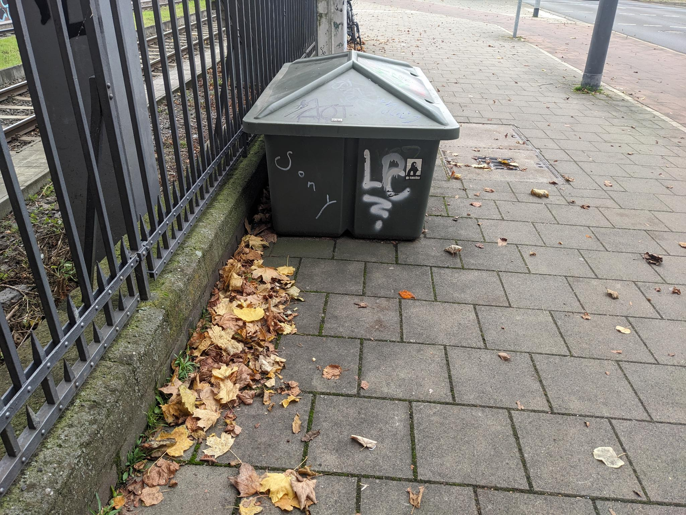         <br>                 <p>2024-11-13 Kieskiste</p>             </div>         </div>`)[0];
                popup_fc82b2abcf80addd590d54f0f20b6c5a.setContent(html_950b7ff6ed6e94f75f57dc1b5ff68fe1);
            
        

        marker_4abd389842440001f19ff23a2fef2f6e.bindPopup(popup_fc82b2abcf80addd590d54f0f20b6c5a)
        ;

        
    
    
            var marker_506c0de06c1d9b22116e92b2dcf7717f = L.marker(
                [50.916748, 6.971195],
                {}
            ).addTo(map_a9cf2a4265613d439e21d8834afff242);
        
    
            var icon_8ac09db335504ea7ca60c3dbc4c7c3a4 = L.AwesomeMarkers.icon(
                {"extraClasses": "fa-rotate-0", "icon": "info-sign", "iconColor": "white", "markerColor": "red", "prefix": "glyphicon"}
            );
            marker_506c0de06c1d9b22116e92b2dcf7717f.setIcon(icon_8ac09db335504ea7ca60c3dbc4c7c3a4);
        
    
        var popup_01c648047e19e04ed2bc0ef6e7497381 = L.popup({"maxWidth": 250});

        
            
                var html_f9476b566fa9198f588fb0ac44b91219 = $(`<div id="html_f9476b566fa9198f588fb0ac44b91219" style="width: 100.0%; height: 100.0%;">             <div style="width:220px;">                              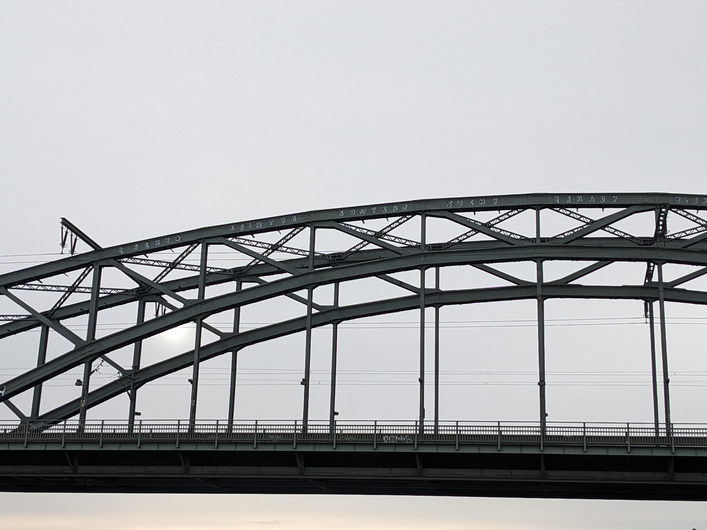         <br>                 <p>2024-11-13 Südbrücke Norden</p>             </div>         </div>`)[0];
                popup_01c648047e19e04ed2bc0ef6e7497381.setContent(html_f9476b566fa9198f588fb0ac44b91219);
            
        

        marker_506c0de06c1d9b22116e92b2dcf7717f.bindPopup(popup_01c648047e19e04ed2bc0ef6e7497381)
        ;

        
    
    
            var marker_85c61d91351fb5fd291ae103e35947fe = L.marker(
                [50.917559, 6.974848],
                {}
            ).addTo(map_a9cf2a4265613d439e21d8834afff242);
        
    
            var icon_edf288cb1cfa86436a7daa8b7c305360 = L.AwesomeMarkers.icon(
                {"extraClasses": "fa-rotate-0", "icon": "info-sign", "iconColor": "white", "markerColor": "red", "prefix": "glyphicon"}
            );
            marker_85c61d91351fb5fd291ae103e35947fe.setIcon(icon_edf288cb1cfa86436a7daa8b7c305360);
        
    
        var popup_dce7175157be8ee2e998d61e3bef40b9 = L.popup({"maxWidth": 250});

        
            
                var html_f19720c37512c57d8d704c38b1a2eea1 = $(`<div id="html_f19720c37512c57d8d704c38b1a2eea1" style="width: 100.0%; height: 100.0%;">             <div style="width:220px;">                              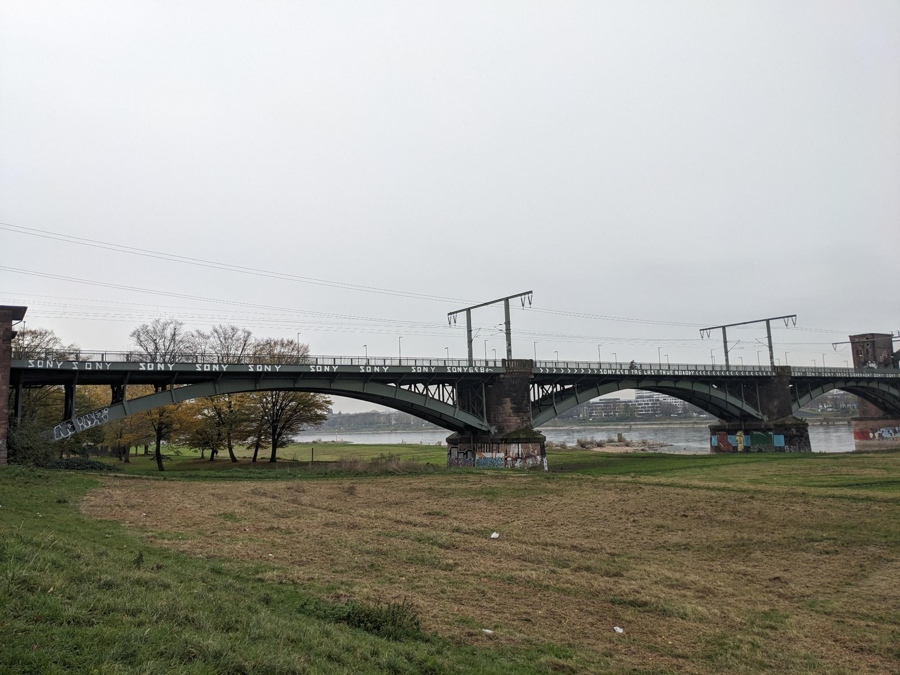         <br>                 <p>2024-11-13 Südbrücke Norden 2</p>             </div>         </div>`)[0];
                popup_dce7175157be8ee2e998d61e3bef40b9.setContent(html_f19720c37512c57d8d704c38b1a2eea1);
            
        

        marker_85c61d91351fb5fd291ae103e35947fe.bindPopup(popup_dce7175157be8ee2e998d61e3bef40b9)
        ;

        
    
    
            var marker_f84bf43978078620af23cb29bb46ca7c = L.marker(
                [50.930927, 6.971783],
                {}
            ).addTo(map_a9cf2a4265613d439e21d8834afff242);
        
    
            var icon_5560ad5c7a96c52e65ec678acfde03a3 = L.AwesomeMarkers.icon(
                {"extraClasses": "fa-rotate-0", "icon": "info-sign", "iconColor": "white", "markerColor": "red", "prefix": "glyphicon"}
            );
            marker_f84bf43978078620af23cb29bb46ca7c.setIcon(icon_5560ad5c7a96c52e65ec678acfde03a3);
        
    
        var popup_cd3cf94b65b2c220dfc917395a5ee4dc = L.popup({"maxWidth": 250});

        
            
                var html_f478eed5c4537acc3afe74080723a1f5 = $(`<div id="html_f478eed5c4537acc3afe74080723a1f5" style="width: 100.0%; height: 100.0%;">             <div style="width:220px;">                              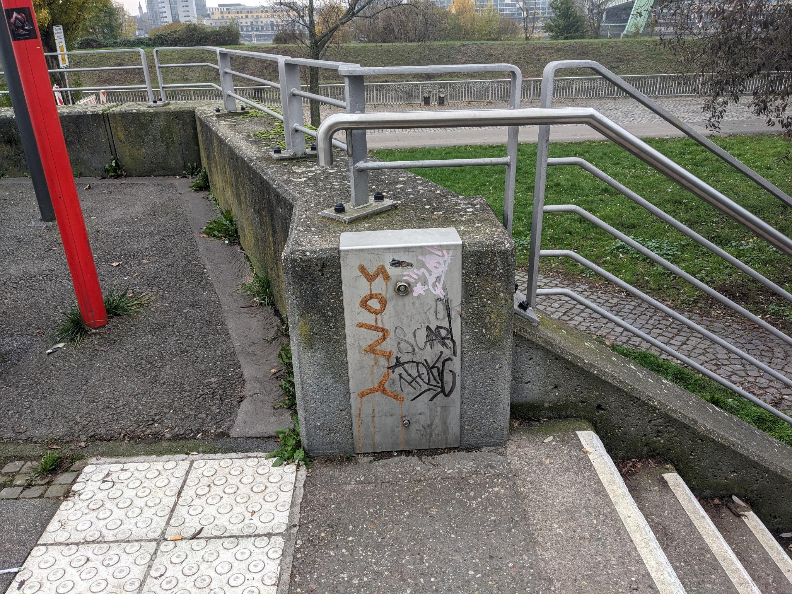         <br>                 <p>2024-11-13 Severinsbrücke Treppe</p>             </div>         </div>`)[0];
                popup_cd3cf94b65b2c220dfc917395a5ee4dc.setContent(html_f478eed5c4537acc3afe74080723a1f5);
            
        

        marker_f84bf43978078620af23cb29bb46ca7c.bindPopup(popup_cd3cf94b65b2c220dfc917395a5ee4dc)
        ;

        
    
    
            var marker_fecccd98309a6832b1ad8674f11dd406 = L.marker(
                [50.925296, 6.966413],
                {}
            ).addTo(map_a9cf2a4265613d439e21d8834afff242);
        
    
            var icon_99e439667ab1dfd195dfd88eceb9e78b = L.AwesomeMarkers.icon(
                {"extraClasses": "fa-rotate-0", "icon": "info-sign", "iconColor": "white", "markerColor": "red", "prefix": "glyphicon"}
            );
            marker_fecccd98309a6832b1ad8674f11dd406.setIcon(icon_99e439667ab1dfd195dfd88eceb9e78b);
        
    
        var popup_290416ffaac7beb20b82348b04d9456a = L.popup({"maxWidth": 250});

        
            
                var html_5308cb2d9e078d428c71d4fd4b9b30ed = $(`<div id="html_5308cb2d9e078d428c71d4fd4b9b30ed" style="width: 100.0%; height: 100.0%;">             <div style="width:220px;">                              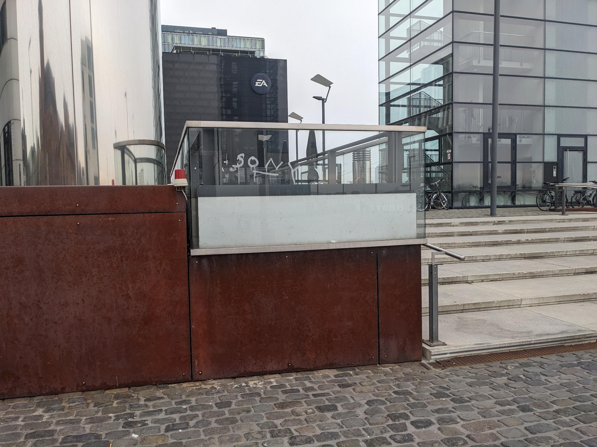         <br>                 <p>2024-11-13 Kranhaus</p>             </div>         </div>`)[0];
                popup_290416ffaac7beb20b82348b04d9456a.setContent(html_5308cb2d9e078d428c71d4fd4b9b30ed);
            
        

        marker_fecccd98309a6832b1ad8674f11dd406.bindPopup(popup_290416ffaac7beb20b82348b04d9456a)
        ;

        
    
    
            var marker_56931bbe0dc32377a710d17854a8ad39 = L.marker(
                [50.908809, 6.972312],
                {}
            ).addTo(map_a9cf2a4265613d439e21d8834afff242);
        
    
            var icon_e266492c3e6158b8372149da4bc2c428 = L.AwesomeMarkers.icon(
                {"extraClasses": "fa-rotate-0", "icon": "info-sign", "iconColor": "white", "markerColor": "red", "prefix": "glyphicon"}
            );
            marker_56931bbe0dc32377a710d17854a8ad39.setIcon(icon_e266492c3e6158b8372149da4bc2c428);
        
    
        var popup_52742fd1d28377229982abf6a3a41ab7 = L.popup({"maxWidth": 250});

        
            
                var html_91c3c251e91f4d742db1615f1b14078b = $(`<div id="html_91c3c251e91f4d742db1615f1b14078b" style="width: 100.0%; height: 100.0%;">             <div style="width:220px;">                                       <br>                 <p>2024-11-13 Spielplatz</p>             </div>         </div>`)[0];
                popup_52742fd1d28377229982abf6a3a41ab7.setContent(html_91c3c251e91f4d742db1615f1b14078b);
            
        

        marker_56931bbe0dc32377a710d17854a8ad39.bindPopup(popup_52742fd1d28377229982abf6a3a41ab7)
        ;

        
    
    
            var marker_7e6c2dfa4dc3be45218831201d6ebf7b = L.marker(
                [50.922658, 6.941115],
                {}
            ).addTo(map_a9cf2a4265613d439e21d8834afff242);
        
    
            var icon_12bffe366e7d32dc69df59ce8c5e3d02 = L.AwesomeMarkers.icon(
                {"extraClasses": "fa-rotate-0", "icon": "info-sign", "iconColor": "white", "markerColor": "red", "prefix": "glyphicon"}
            );
            marker_7e6c2dfa4dc3be45218831201d6ebf7b.setIcon(icon_12bffe366e7d32dc69df59ce8c5e3d02);
        
    
        var popup_d79064afa449af0a2da82a88e8b79165 = L.popup({"maxWidth": 250});

        
            
                var html_f67522739b43b8cbc0d5a9e5a8f1ebaf = $(`<div id="html_f67522739b43b8cbc0d5a9e5a8f1ebaf" style="width: 100.0%; height: 100.0%;">             <div style="width:220px;">                              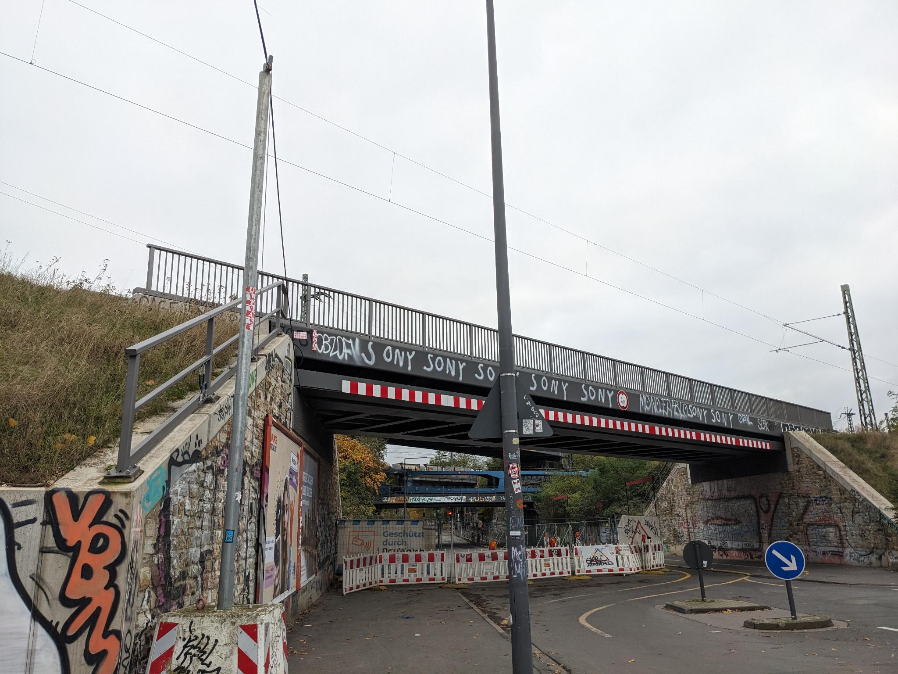         <br>                 <p>2024-11-15 Eifelwall</p>             </div>         </div>`)[0];
                popup_d79064afa449af0a2da82a88e8b79165.setContent(html_f67522739b43b8cbc0d5a9e5a8f1ebaf);
            
        

        marker_7e6c2dfa4dc3be45218831201d6ebf7b.bindPopup(popup_d79064afa449af0a2da82a88e8b79165)
        ;

        
    
    
            var marker_e2dcf1df3f94396499f32a6215550522 = L.marker(
                [50.91255, 6.96881],
                {}
            ).addTo(map_a9cf2a4265613d439e21d8834afff242);
        
    
            var icon_5669e5ad0707f6018e82bad8b44ff16d = L.AwesomeMarkers.icon(
                {"extraClasses": "fa-rotate-0", "icon": "info-sign", "iconColor": "white", "markerColor": "red", "prefix": "glyphicon"}
            );
            marker_e2dcf1df3f94396499f32a6215550522.setIcon(icon_5669e5ad0707f6018e82bad8b44ff16d);
        
    
        var popup_c70881494421100fa8892299fd5fa83a = L.popup({"maxWidth": 250});

        
            
                var html_1917a5c25ad950b19745615130e86d10 = $(`<div id="html_1917a5c25ad950b19745615130e86d10" style="width: 100.0%; height: 100.0%;">             <div style="width:220px;">                              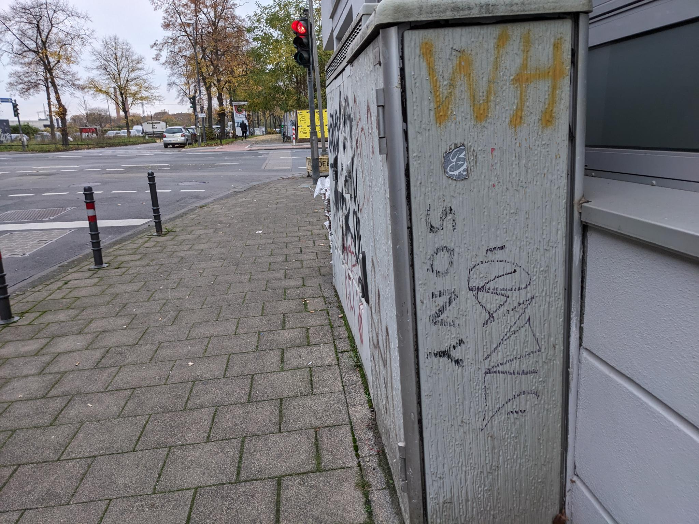         <br>                 <p></p>             </div>         </div>`)[0];
                popup_c70881494421100fa8892299fd5fa83a.setContent(html_1917a5c25ad950b19745615130e86d10);
            
        

        marker_e2dcf1df3f94396499f32a6215550522.bindPopup(popup_c70881494421100fa8892299fd5fa83a)
        ;

        
    
    
            var marker_fddd430885d49ef11b668252fbed9da6 = L.marker(
                [50.9155, 6.965922],
                {}
            ).addTo(map_a9cf2a4265613d439e21d8834afff242);
        
    
            var icon_a93ca41b4acce3571f5f8ed347f8c8fb = L.AwesomeMarkers.icon(
                {"extraClasses": "fa-rotate-0", "icon": "info-sign", "iconColor": "white", "markerColor": "red", "prefix": "glyphicon"}
            );
            marker_fddd430885d49ef11b668252fbed9da6.setIcon(icon_a93ca41b4acce3571f5f8ed347f8c8fb);
        
    
        var popup_fcd0be386c24c6ac97451c63eafeb3b8 = L.popup({"maxWidth": 250});

        
            
                var html_0de51e9442deaaee1e09cb79aac86110 = $(`<div id="html_0de51e9442deaaee1e09cb79aac86110" style="width: 100.0%; height: 100.0%;">             <div style="width:220px;">                              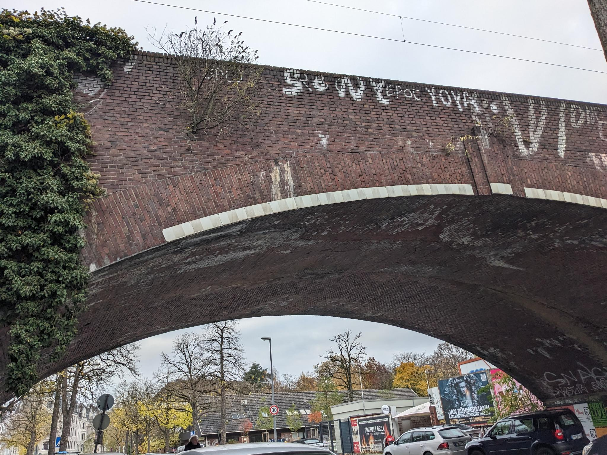         <br>                 <p></p>             </div>         </div>`)[0];
                popup_fcd0be386c24c6ac97451c63eafeb3b8.setContent(html_0de51e9442deaaee1e09cb79aac86110);
            
        

        marker_fddd430885d49ef11b668252fbed9da6.bindPopup(popup_fcd0be386c24c6ac97451c63eafeb3b8)
        ;

        
    
    
            var marker_56ab319bb0520123b161834b77102b66 = L.marker(
                [50.917836, 6.969563],
                {}
            ).addTo(map_a9cf2a4265613d439e21d8834afff242);
        
    
            var icon_da61436599464449fa660e75f83e75c2 = L.AwesomeMarkers.icon(
                {"extraClasses": "fa-rotate-0", "icon": "info-sign", "iconColor": "white", "markerColor": "red", "prefix": "glyphicon"}
            );
            marker_56ab319bb0520123b161834b77102b66.setIcon(icon_da61436599464449fa660e75f83e75c2);
        
    
        var popup_fa6348db15e330d50f90c6b29d201fa3 = L.popup({"maxWidth": 250});

        
            
                var html_c74bbfd462c5fa4a2ce65060746eea28 = $(`<div id="html_c74bbfd462c5fa4a2ce65060746eea28" style="width: 100.0%; height: 100.0%;">             <div style="width:220px;">                              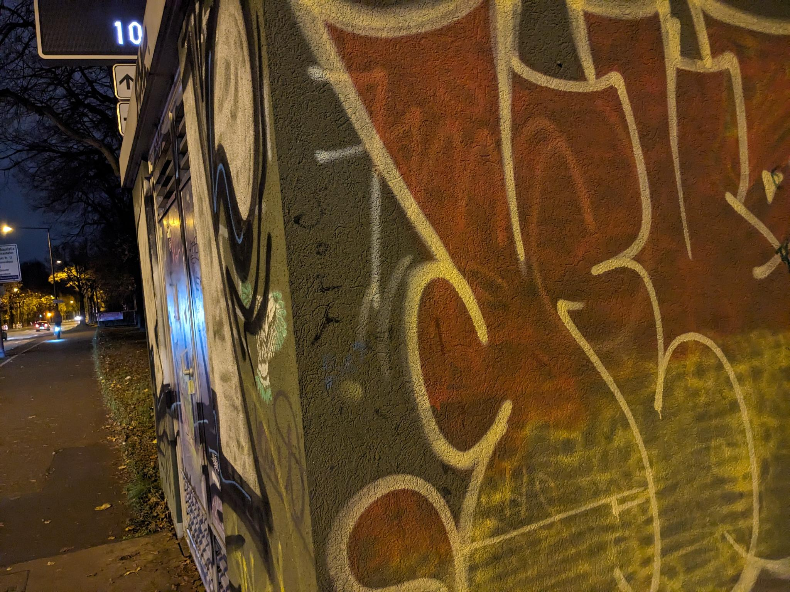         <br>                 <p></p>             </div>         </div>`)[0];
                popup_fa6348db15e330d50f90c6b29d201fa3.setContent(html_c74bbfd462c5fa4a2ce65060746eea28);
            
        

        marker_56ab319bb0520123b161834b77102b66.bindPopup(popup_fa6348db15e330d50f90c6b29d201fa3)
        ;

        
    
    
            var marker_530bf6149153c6a8ce8704319e2ff391 = L.marker(
                [50.918171, 6.962841],
                {}
            ).addTo(map_a9cf2a4265613d439e21d8834afff242);
        
    
            var icon_792ce0ffefffd14a041c05c519ff69b5 = L.AwesomeMarkers.icon(
                {"extraClasses": "fa-rotate-0", "icon": "info-sign", "iconColor": "white", "markerColor": "red", "prefix": "glyphicon"}
            );
            marker_530bf6149153c6a8ce8704319e2ff391.setIcon(icon_792ce0ffefffd14a041c05c519ff69b5);
        
    
        var popup_fff80da37ee9e0b02177ec02384e5b27 = L.popup({"maxWidth": 250});

        
            
                var html_ed4db50d350e908e3b2ebd39d7ef7c78 = $(`<div id="html_ed4db50d350e908e3b2ebd39d7ef7c78" style="width: 100.0%; height: 100.0%;">             <div style="width:220px;">                                       <br>                 <p></p>             </div>         </div>`)[0];
                popup_fff80da37ee9e0b02177ec02384e5b27.setContent(html_ed4db50d350e908e3b2ebd39d7ef7c78);
            
        

        marker_530bf6149153c6a8ce8704319e2ff391.bindPopup(popup_fff80da37ee9e0b02177ec02384e5b27)
        ;

        
    
    
            var marker_c6244cd8c0ee562579ba740c7e218c9d = L.marker(
                [50.92037, 6.96228],
                {}
            ).addTo(map_a9cf2a4265613d439e21d8834afff242);
        
    
            var icon_98849d7c006797a52b5755461f31b707 = L.AwesomeMarkers.icon(
                {"extraClasses": "fa-rotate-0", "icon": "info-sign", "iconColor": "white", "markerColor": "red", "prefix": "glyphicon"}
            );
            marker_c6244cd8c0ee562579ba740c7e218c9d.setIcon(icon_98849d7c006797a52b5755461f31b707);
        
    
        var popup_8faf3d73efad90baec1cbd43024686a2 = L.popup({"maxWidth": 250});

        
            
                var html_c94861c335dea958811871362dd9d96b = $(`<div id="html_c94861c335dea958811871362dd9d96b" style="width: 100.0%; height: 100.0%;">             <div style="width:220px;">                              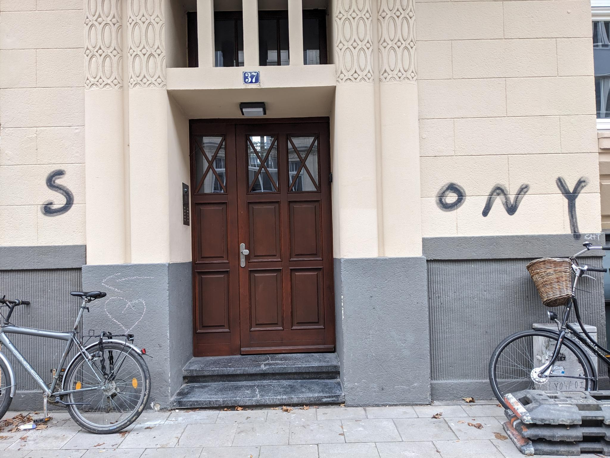         <br>                 <p></p>             </div>         </div>`)[0];
                popup_8faf3d73efad90baec1cbd43024686a2.setContent(html_c94861c335dea958811871362dd9d96b);
            
        

        marker_c6244cd8c0ee562579ba740c7e218c9d.bindPopup(popup_8faf3d73efad90baec1cbd43024686a2)
        ;

        
    
    
            var marker_e752e72e73e853243d4a2941a394eedb = L.marker(
                [50.91759, 6.96378],
                {}
            ).addTo(map_a9cf2a4265613d439e21d8834afff242);
        
    
            var icon_68583cc0dd6bb0af8a869674a2376ec5 = L.AwesomeMarkers.icon(
                {"extraClasses": "fa-rotate-0", "icon": "info-sign", "iconColor": "white", "markerColor": "red", "prefix": "glyphicon"}
            );
            marker_e752e72e73e853243d4a2941a394eedb.setIcon(icon_68583cc0dd6bb0af8a869674a2376ec5);
        
    
        var popup_5bec858e1fbbb5cad0468cbd2b2e64d2 = L.popup({"maxWidth": 250});

        
            
                var html_2d856fd308f2bc384d5ee715b030abce = $(`<div id="html_2d856fd308f2bc384d5ee715b030abce" style="width: 100.0%; height: 100.0%;">             <div style="width:220px;">                              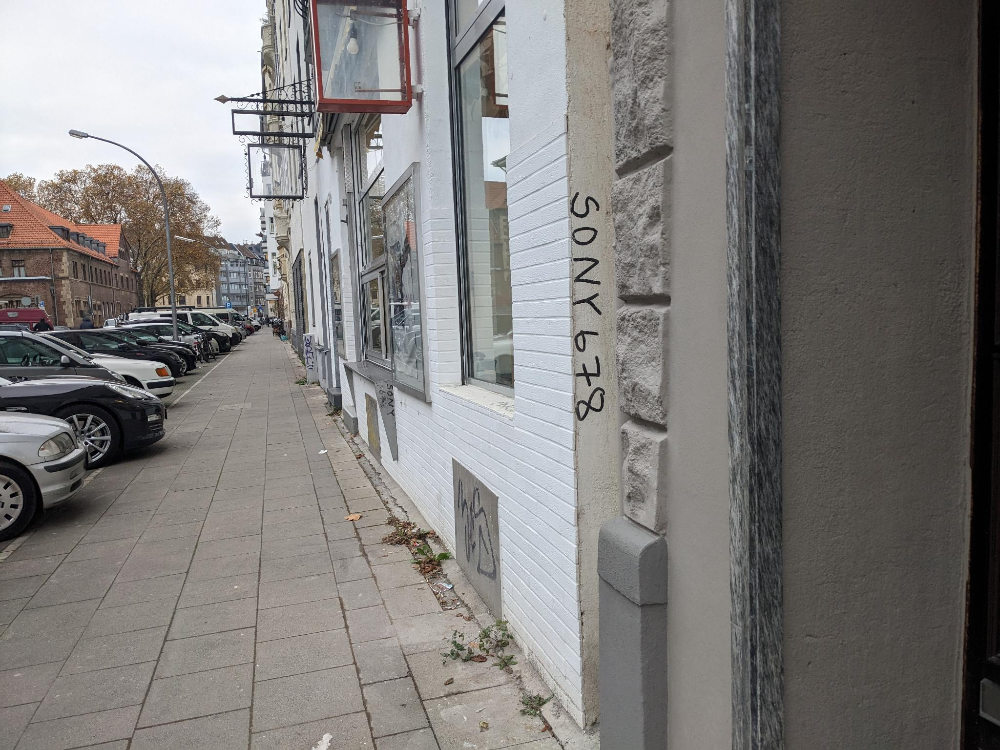         <br>                 <p></p>             </div>         </div>`)[0];
                popup_5bec858e1fbbb5cad0468cbd2b2e64d2.setContent(html_2d856fd308f2bc384d5ee715b030abce);
            
        

        marker_e752e72e73e853243d4a2941a394eedb.bindPopup(popup_5bec858e1fbbb5cad0468cbd2b2e64d2)
        ;

        
    
    
            var marker_51a805f40a44a5846957021c9d9a1155 = L.marker(
                [50.919575, 6.962482],
                {}
            ).addTo(map_a9cf2a4265613d439e21d8834afff242);
        
    
            var icon_b4e416ef5263cd04bf4085fec35fa118 = L.AwesomeMarkers.icon(
                {"extraClasses": "fa-rotate-0", "icon": "info-sign", "iconColor": "white", "markerColor": "red", "prefix": "glyphicon"}
            );
            marker_51a805f40a44a5846957021c9d9a1155.setIcon(icon_b4e416ef5263cd04bf4085fec35fa118);
        
    
        var popup_860467468f7253551827734758874f1e = L.popup({"maxWidth": 250});

        
            
                var html_032ddddf01072f1e12ab411ef7b42cbe = $(`<div id="html_032ddddf01072f1e12ab411ef7b42cbe" style="width: 100.0%; height: 100.0%;">             <div style="width:220px;">                                       <br>                 <p></p>             </div>         </div>`)[0];
                popup_860467468f7253551827734758874f1e.setContent(html_032ddddf01072f1e12ab411ef7b42cbe);
            
        

        marker_51a805f40a44a5846957021c9d9a1155.bindPopup(popup_860467468f7253551827734758874f1e)
        ;

        
    
    
            var marker_a25ff62d091472146deff4a6c0710cae = L.marker(
                [50.919707, 6.962396],
                {}
            ).addTo(map_a9cf2a4265613d439e21d8834afff242);
        
    
            var icon_cb1e721de06b936936e6fc9c1d496313 = L.AwesomeMarkers.icon(
                {"extraClasses": "fa-rotate-0", "icon": "info-sign", "iconColor": "white", "markerColor": "red", "prefix": "glyphicon"}
            );
            marker_a25ff62d091472146deff4a6c0710cae.setIcon(icon_cb1e721de06b936936e6fc9c1d496313);
        
    
        var popup_3af2c2b73c8bf6297c109e23f7702330 = L.popup({"maxWidth": 250});

        
            
                var html_37903d1d5b35f49e97b40ac2da8d4c8c = $(`<div id="html_37903d1d5b35f49e97b40ac2da8d4c8c" style="width: 100.0%; height: 100.0%;">             <div style="width:220px;">                              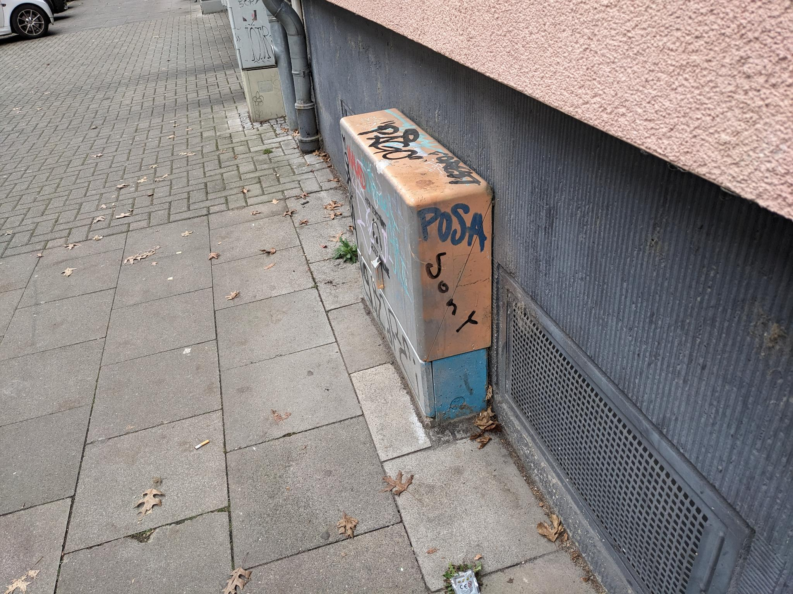         <br>                 <p></p>             </div>         </div>`)[0];
                popup_3af2c2b73c8bf6297c109e23f7702330.setContent(html_37903d1d5b35f49e97b40ac2da8d4c8c);
            
        

        marker_a25ff62d091472146deff4a6c0710cae.bindPopup(popup_3af2c2b73c8bf6297c109e23f7702330)
        ;

        
    
    
            var marker_d9ea3161dff03e48afc1363efc582c99 = L.marker(
                [50.91804885864258, 6.9630327224731445],
                {}
            ).addTo(map_a9cf2a4265613d439e21d8834afff242);
        
    
            var icon_d25e9938b882df032609c7207ca6b0e4 = L.AwesomeMarkers.icon(
                {"extraClasses": "fa-rotate-0", "icon": "info-sign", "iconColor": "white", "markerColor": "red", "prefix": "glyphicon"}
            );
            marker_d9ea3161dff03e48afc1363efc582c99.setIcon(icon_d25e9938b882df032609c7207ca6b0e4);
        
    
        var popup_17b4e03be5d58ee4197fcd93addb800a = L.popup({"maxWidth": 250});

        
            
                var html_0495f3ceb75bc98777e9423c0edc1695 = $(`<div id="html_0495f3ceb75bc98777e9423c0edc1695" style="width: 100.0%; height: 100.0%;">             <div style="width:220px;">                              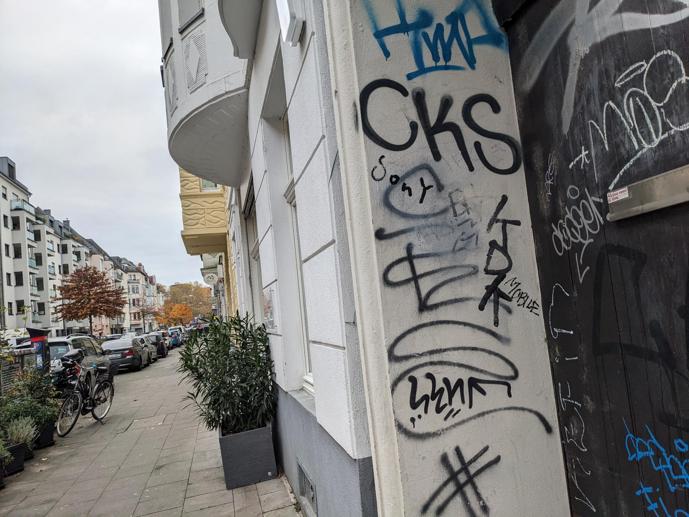         <br>                 <p></p>             </div>         </div>`)[0];
                popup_17b4e03be5d58ee4197fcd93addb800a.setContent(html_0495f3ceb75bc98777e9423c0edc1695);
            
        

        marker_d9ea3161dff03e48afc1363efc582c99.bindPopup(popup_17b4e03be5d58ee4197fcd93addb800a)
        ;

        
    
    
            var marker_638d51368c57740cd1640a4196994344 = L.marker(
                [50.928969, 6.965159],
                {}
            ).addTo(map_a9cf2a4265613d439e21d8834afff242);
        
    
            var icon_6f90d473808bf8b8c964aae609e2c9ad = L.AwesomeMarkers.icon(
                {"extraClasses": "fa-rotate-0", "icon": "info-sign", "iconColor": "white", "markerColor": "red", "prefix": "glyphicon"}
            );
            marker_638d51368c57740cd1640a4196994344.setIcon(icon_6f90d473808bf8b8c964aae609e2c9ad);
        
    
        var popup_264afff1260ab756ecb13aca9625a082 = L.popup({"maxWidth": 250});

        
            
                var html_0f34deb79e2bf5a5111923910ab8bb7b = $(`<div id="html_0f34deb79e2bf5a5111923910ab8bb7b" style="width: 100.0%; height: 100.0%;">             <div style="width:220px;">                              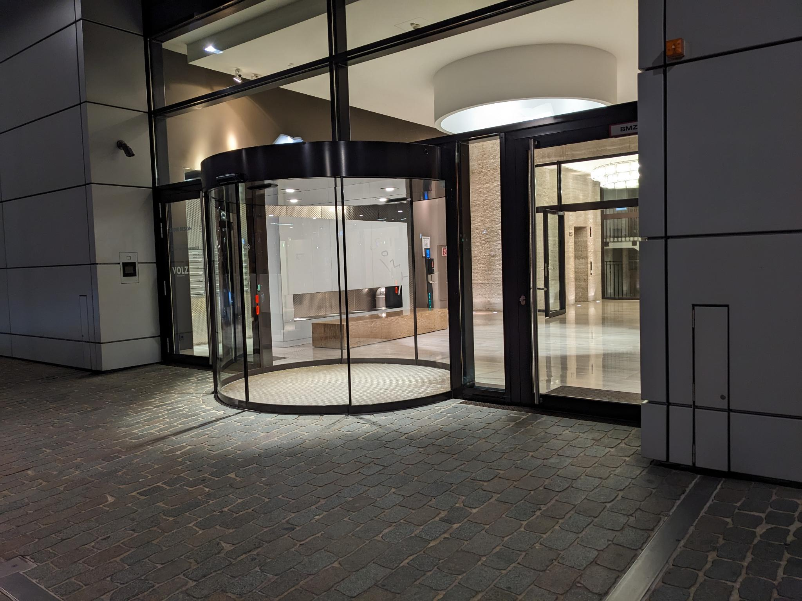         <br>                 <p></p>             </div>         </div>`)[0];
                popup_264afff1260ab756ecb13aca9625a082.setContent(html_0f34deb79e2bf5a5111923910ab8bb7b);
            
        

        marker_638d51368c57740cd1640a4196994344.bindPopup(popup_264afff1260ab756ecb13aca9625a082)
        ;

        
    
    
            var marker_80dc00fb84c090ef12b66630c462039c = L.marker(
                [50.911722, 6.962634],
                {}
            ).addTo(map_a9cf2a4265613d439e21d8834afff242);
        
    
            var icon_c86abe30787df18758322d61e6aa4232 = L.AwesomeMarkers.icon(
                {"extraClasses": "fa-rotate-0", "icon": "info-sign", "iconColor": "white", "markerColor": "red", "prefix": "glyphicon"}
            );
            marker_80dc00fb84c090ef12b66630c462039c.setIcon(icon_c86abe30787df18758322d61e6aa4232);
        
    
        var popup_434f69743c75dfcf8dbbbcba9119d384 = L.popup({"maxWidth": 250});

        
            
                var html_dd9bd8fb0aba408d6ec7ea6424d9a86d = $(`<div id="html_dd9bd8fb0aba408d6ec7ea6424d9a86d" style="width: 100.0%; height: 100.0%;">             <div style="width:220px;">                              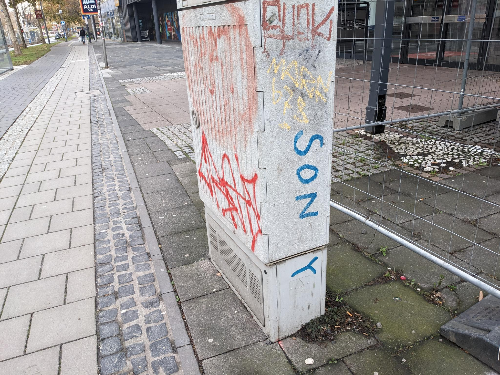         <br>                 <p></p>             </div>         </div>`)[0];
                popup_434f69743c75dfcf8dbbbcba9119d384.setContent(html_dd9bd8fb0aba408d6ec7ea6424d9a86d);
            
        

        marker_80dc00fb84c090ef12b66630c462039c.bindPopup(popup_434f69743c75dfcf8dbbbcba9119d384)
        ;

        
    
    
            var marker_6c5f51865ccacd609fb6ee0612a0254a = L.marker(
                [50.911268, 6.963745],
                {}
            ).addTo(map_a9cf2a4265613d439e21d8834afff242);
        
    
            var icon_80d71a7f8cdf6449841d070a5d721995 = L.AwesomeMarkers.icon(
                {"extraClasses": "fa-rotate-0", "icon": "info-sign", "iconColor": "white", "markerColor": "red", "prefix": "glyphicon"}
            );
            marker_6c5f51865ccacd609fb6ee0612a0254a.setIcon(icon_80d71a7f8cdf6449841d070a5d721995);
        
    
        var popup_3cab7a7635012f9bcd915a05f885444b = L.popup({"maxWidth": 250});

        
            
                var html_fc837e99bb6767d24f56910362e152c2 = $(`<div id="html_fc837e99bb6767d24f56910362e152c2" style="width: 100.0%; height: 100.0%;">             <div style="width:220px;">                              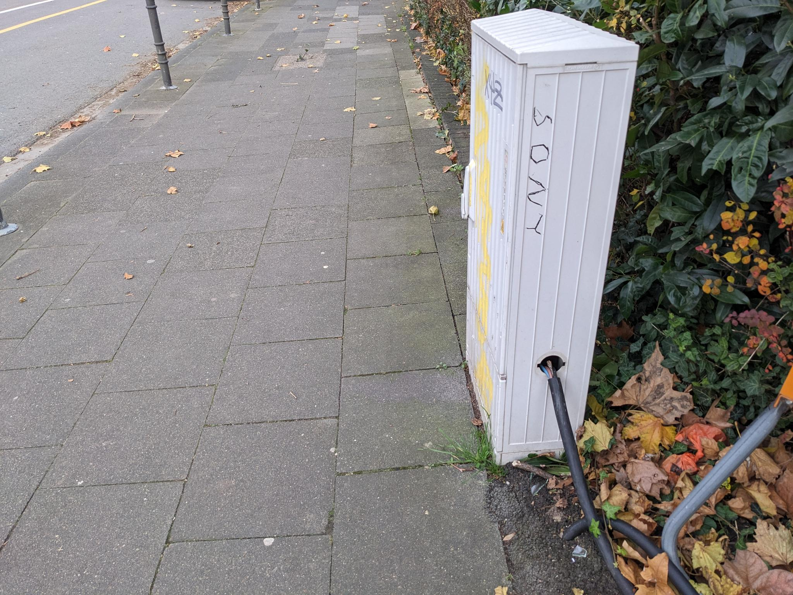         <br>                 <p></p>             </div>         </div>`)[0];
                popup_3cab7a7635012f9bcd915a05f885444b.setContent(html_fc837e99bb6767d24f56910362e152c2);
            
        

        marker_6c5f51865ccacd609fb6ee0612a0254a.bindPopup(popup_3cab7a7635012f9bcd915a05f885444b)
        ;

        
    
    
            var marker_a9f108c7499aa8e4716eed0119c88457 = L.marker(
                [50.911596, 6.968551],
                {}
            ).addTo(map_a9cf2a4265613d439e21d8834afff242);
        
    
            var icon_92643d02bacc73ac64fc2d4b3a567afe = L.AwesomeMarkers.icon(
                {"extraClasses": "fa-rotate-0", "icon": "info-sign", "iconColor": "white", "markerColor": "red", "prefix": "glyphicon"}
            );
            marker_a9f108c7499aa8e4716eed0119c88457.setIcon(icon_92643d02bacc73ac64fc2d4b3a567afe);
        
    
        var popup_517b0357006577b2b3c82e644a5bd55b = L.popup({"maxWidth": 250});

        
            
                var html_7eabe5079c47c629e568787b05f91333 = $(`<div id="html_7eabe5079c47c629e568787b05f91333" style="width: 100.0%; height: 100.0%;">             <div style="width:220px;">                              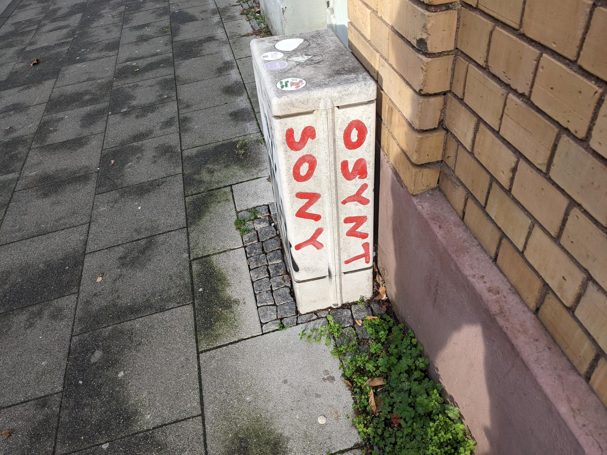         <br>                 <p></p>             </div>         </div>`)[0];
                popup_517b0357006577b2b3c82e644a5bd55b.setContent(html_7eabe5079c47c629e568787b05f91333);
            
        

        marker_a9f108c7499aa8e4716eed0119c88457.bindPopup(popup_517b0357006577b2b3c82e644a5bd55b)
        ;

        
    
    
            var marker_36b074363b0ce94869c3609fc8fae686 = L.marker(
                [50.916548, 6.961122],
                {}
            ).addTo(map_a9cf2a4265613d439e21d8834afff242);
        
    
            var icon_120afe0c4ed78b41525a692aadc2a082 = L.AwesomeMarkers.icon(
                {"extraClasses": "fa-rotate-0", "icon": "info-sign", "iconColor": "white", "markerColor": "red", "prefix": "glyphicon"}
            );
            marker_36b074363b0ce94869c3609fc8fae686.setIcon(icon_120afe0c4ed78b41525a692aadc2a082);
        
    
        var popup_4d9ca3593fa78336b04726a4a3f9dc8e = L.popup({"maxWidth": 250});

        
            
                var html_d25305744aa5d85184ead3996b421078 = $(`<div id="html_d25305744aa5d85184ead3996b421078" style="width: 100.0%; height: 100.0%;">             <div style="width:220px;">                                       <br>                 <p></p>             </div>         </div>`)[0];
                popup_4d9ca3593fa78336b04726a4a3f9dc8e.setContent(html_d25305744aa5d85184ead3996b421078);
            
        

        marker_36b074363b0ce94869c3609fc8fae686.bindPopup(popup_4d9ca3593fa78336b04726a4a3f9dc8e)
        ;

        
    
    
            var marker_8011f0ab524e52da1d26460c6fe55b74 = L.marker(
                [50.915689, 6.96563],
                {}
            ).addTo(map_a9cf2a4265613d439e21d8834afff242);
        
    
            var icon_27f0931a3e29948836a23b89cc192279 = L.AwesomeMarkers.icon(
                {"extraClasses": "fa-rotate-0", "icon": "info-sign", "iconColor": "white", "markerColor": "red", "prefix": "glyphicon"}
            );
            marker_8011f0ab524e52da1d26460c6fe55b74.setIcon(icon_27f0931a3e29948836a23b89cc192279);
        
    
        var popup_ff199ca4fe0ae04311c495d3aceee8f2 = L.popup({"maxWidth": 250});

        
            
                var html_75f43a54c80059a0e8cd08cc67cb624f = $(`<div id="html_75f43a54c80059a0e8cd08cc67cb624f" style="width: 100.0%; height: 100.0%;">             <div style="width:220px;">                              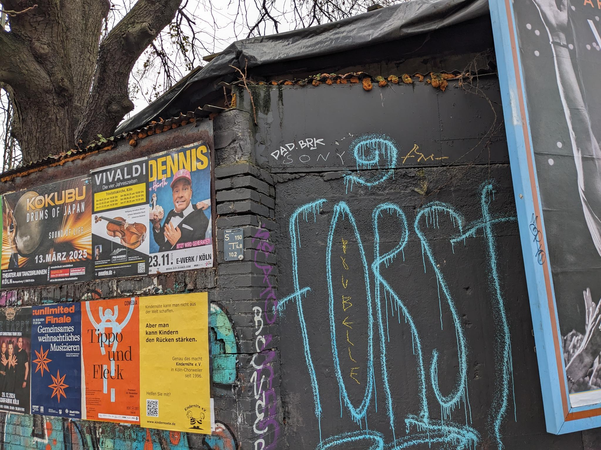         <br>                 <p></p>             </div>         </div>`)[0];
                popup_ff199ca4fe0ae04311c495d3aceee8f2.setContent(html_75f43a54c80059a0e8cd08cc67cb624f);
            
        

        marker_8011f0ab524e52da1d26460c6fe55b74.bindPopup(popup_ff199ca4fe0ae04311c495d3aceee8f2)
        ;

        
    
    
            var marker_37222a78f4dae705aaa6b3b40eec1ca2 = L.marker(
                [50.917984, 6.960568],
                {}
            ).addTo(map_a9cf2a4265613d439e21d8834afff242);
        
    
            var icon_20fe7faf93c2d29ee6df05e0a48a84e9 = L.AwesomeMarkers.icon(
                {"extraClasses": "fa-rotate-0", "icon": "info-sign", "iconColor": "white", "markerColor": "red", "prefix": "glyphicon"}
            );
            marker_37222a78f4dae705aaa6b3b40eec1ca2.setIcon(icon_20fe7faf93c2d29ee6df05e0a48a84e9);
        
    
        var popup_c41dcba34be26c709c0e9a6ff9c0a200 = L.popup({"maxWidth": 250});

        
            
                var html_6c05663711d69e4bd208034f8c990db9 = $(`<div id="html_6c05663711d69e4bd208034f8c990db9" style="width: 100.0%; height: 100.0%;">             <div style="width:220px;">                              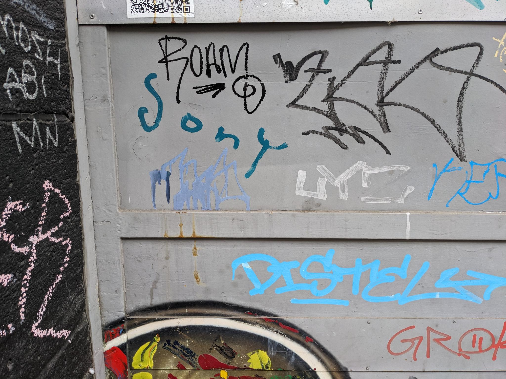         <br>                 <p></p>             </div>         </div>`)[0];
                popup_c41dcba34be26c709c0e9a6ff9c0a200.setContent(html_6c05663711d69e4bd208034f8c990db9);
            
        

        marker_37222a78f4dae705aaa6b3b40eec1ca2.bindPopup(popup_c41dcba34be26c709c0e9a6ff9c0a200)
        ;

        
    
    
            var marker_a3f14b8188baf280e9d69b1f49323d1b = L.marker(
                [50.920559, 6.959857],
                {}
            ).addTo(map_a9cf2a4265613d439e21d8834afff242);
        
    
            var icon_27b8ae4a871cb8d50d23b869ef25788c = L.AwesomeMarkers.icon(
                {"extraClasses": "fa-rotate-0", "icon": "info-sign", "iconColor": "white", "markerColor": "red", "prefix": "glyphicon"}
            );
            marker_a3f14b8188baf280e9d69b1f49323d1b.setIcon(icon_27b8ae4a871cb8d50d23b869ef25788c);
        
    
        var popup_eff5d1690ca368435dd37dc4035a38d1 = L.popup({"maxWidth": 250});

        
            
                var html_12a8a82c924a1cfe194e3d6df1f45dcf = $(`<div id="html_12a8a82c924a1cfe194e3d6df1f45dcf" style="width: 100.0%; height: 100.0%;">             <div style="width:220px;">                              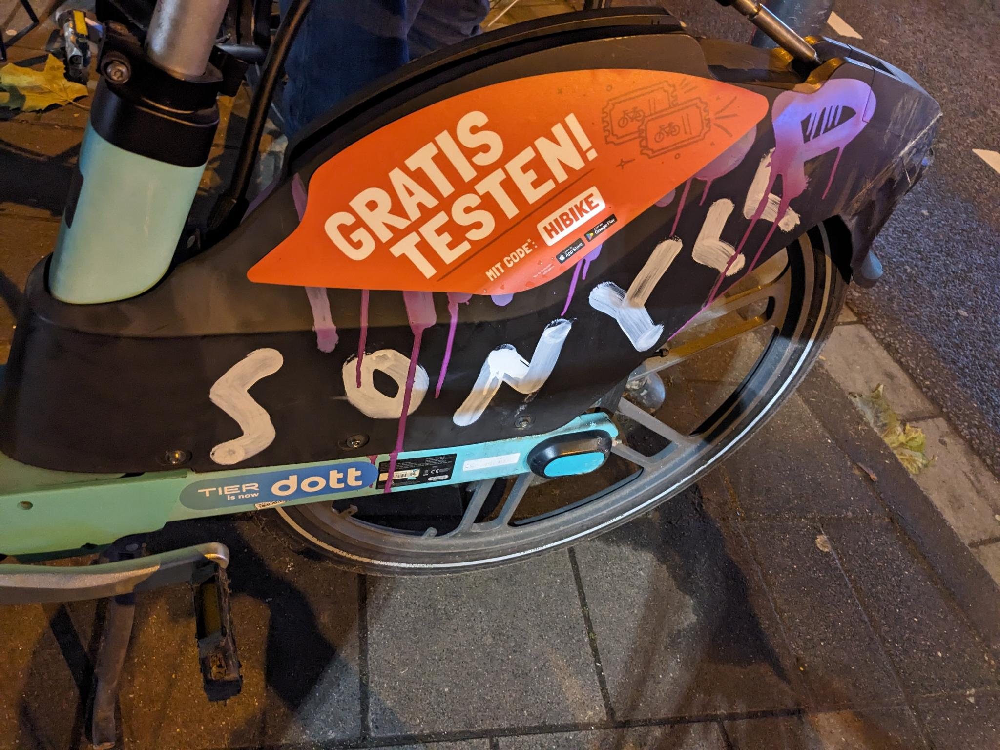         <br>                 <p></p>             </div>         </div>`)[0];
                popup_eff5d1690ca368435dd37dc4035a38d1.setContent(html_12a8a82c924a1cfe194e3d6df1f45dcf);
            
        

        marker_a3f14b8188baf280e9d69b1f49323d1b.bindPopup(popup_eff5d1690ca368435dd37dc4035a38d1)
        ;

        
    
    
            var marker_9c70837d84ec50441027e4e6e2de5993 = L.marker(
                [50.923352, 6.94023],
                {}
            ).addTo(map_a9cf2a4265613d439e21d8834afff242);
        
    
            var icon_0ef98da22a9cb55154535073fe18c1bb = L.AwesomeMarkers.icon(
                {"extraClasses": "fa-rotate-0", "icon": "info-sign", "iconColor": "white", "markerColor": "red", "prefix": "glyphicon"}
            );
            marker_9c70837d84ec50441027e4e6e2de5993.setIcon(icon_0ef98da22a9cb55154535073fe18c1bb);
        
    
        var popup_818fef2aaf0b377fc34bfc501fde0f99 = L.popup({"maxWidth": 250});

        
            
                var html_99975c6a81a640a9216e5eaef5bfc9ed = $(`<div id="html_99975c6a81a640a9216e5eaef5bfc9ed" style="width: 100.0%; height: 100.0%;">             <div style="width:220px;">                              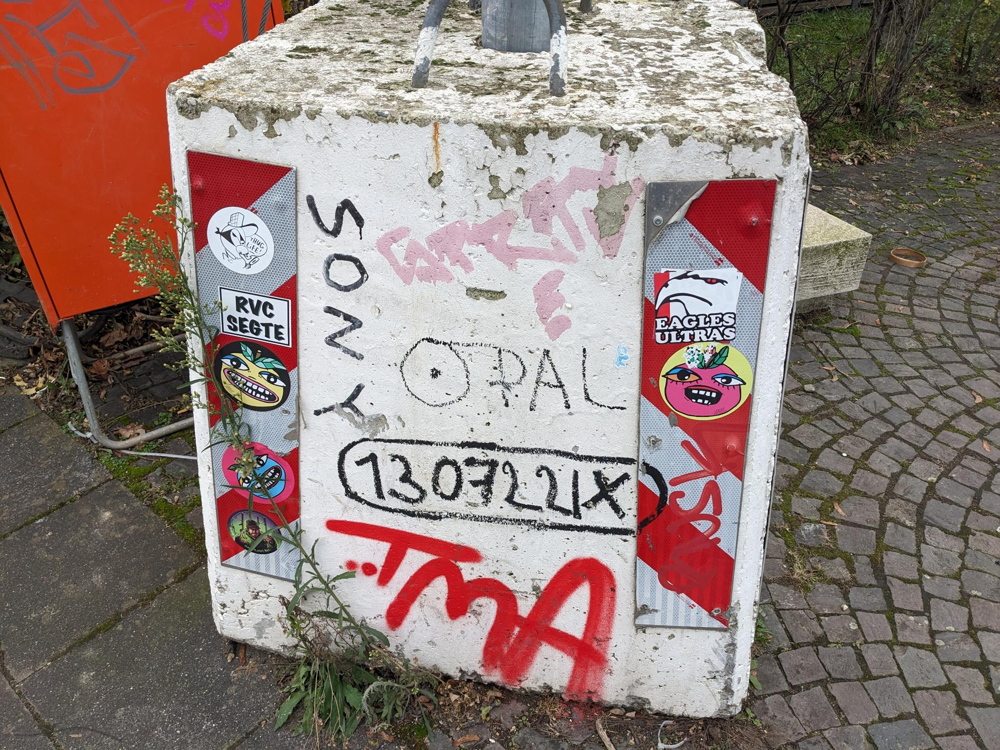         <br>                 <p></p>             </div>         </div>`)[0];
                popup_818fef2aaf0b377fc34bfc501fde0f99.setContent(html_99975c6a81a640a9216e5eaef5bfc9ed);
            
        

        marker_9c70837d84ec50441027e4e6e2de5993.bindPopup(popup_818fef2aaf0b377fc34bfc501fde0f99)
        ;

        
    
    
            var marker_ea3ba7006c6f9c519c2a28e2cfead144 = L.marker(
                [50.925029, 6.937513],
                {}
            ).addTo(map_a9cf2a4265613d439e21d8834afff242);
        
    
            var icon_6ac8f707b46554d217c78a4dab59e028 = L.AwesomeMarkers.icon(
                {"extraClasses": "fa-rotate-0", "icon": "info-sign", "iconColor": "white", "markerColor": "red", "prefix": "glyphicon"}
            );
            marker_ea3ba7006c6f9c519c2a28e2cfead144.setIcon(icon_6ac8f707b46554d217c78a4dab59e028);
        
    
        var popup_3a57d179952eac95f14be5d9ef9e4510 = L.popup({"maxWidth": 250});

        
            
                var html_43d63b41038e7e14683f0dee9dbee071 = $(`<div id="html_43d63b41038e7e14683f0dee9dbee071" style="width: 100.0%; height: 100.0%;">             <div style="width:220px;">                              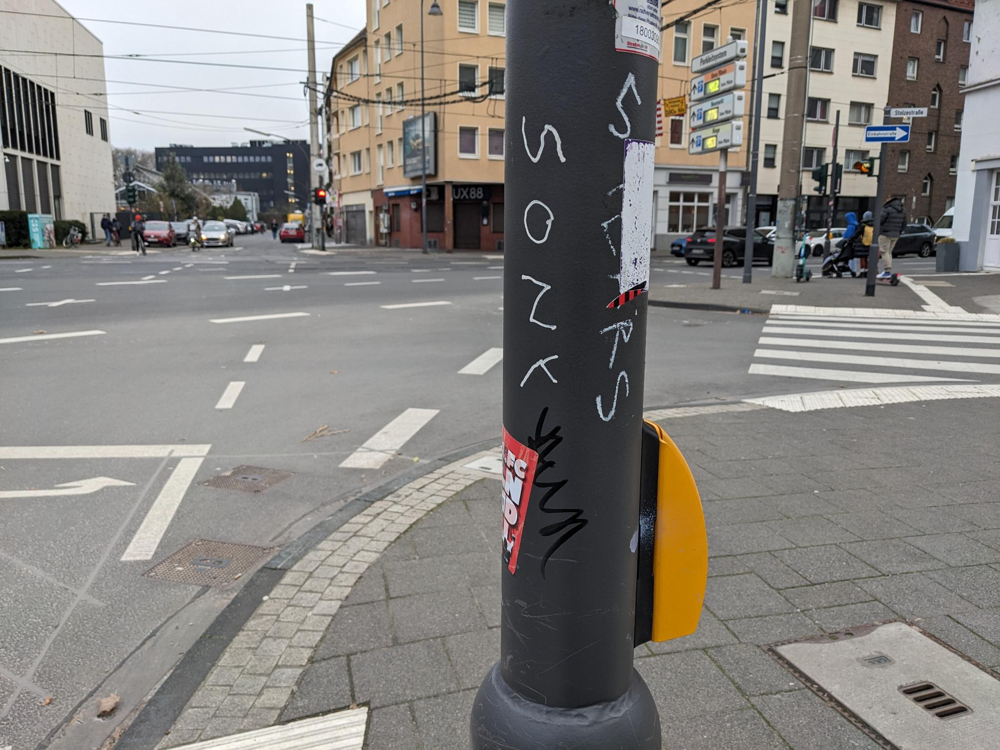         <br>                 <p></p>             </div>         </div>`)[0];
                popup_3a57d179952eac95f14be5d9ef9e4510.setContent(html_43d63b41038e7e14683f0dee9dbee071);
            
        

        marker_ea3ba7006c6f9c519c2a28e2cfead144.bindPopup(popup_3a57d179952eac95f14be5d9ef9e4510)
        ;

        
    
    
            var marker_1d47a88e6cee6fe383c7a9dd84362cd9 = L.marker(
                [50.924055, 6.938968],
                {}
            ).addTo(map_a9cf2a4265613d439e21d8834afff242);
        
    
            var icon_ecded15c4b180ad5ae2e3171b998e5dc = L.AwesomeMarkers.icon(
                {"extraClasses": "fa-rotate-0", "icon": "info-sign", "iconColor": "white", "markerColor": "red", "prefix": "glyphicon"}
            );
            marker_1d47a88e6cee6fe383c7a9dd84362cd9.setIcon(icon_ecded15c4b180ad5ae2e3171b998e5dc);
        
    
        var popup_abfb93821cd672ab1bdcf099fb531eab = L.popup({"maxWidth": 250});

        
            
                var html_80aee5adb1c2d59e355b353bb908a923 = $(`<div id="html_80aee5adb1c2d59e355b353bb908a923" style="width: 100.0%; height: 100.0%;">             <div style="width:220px;">                              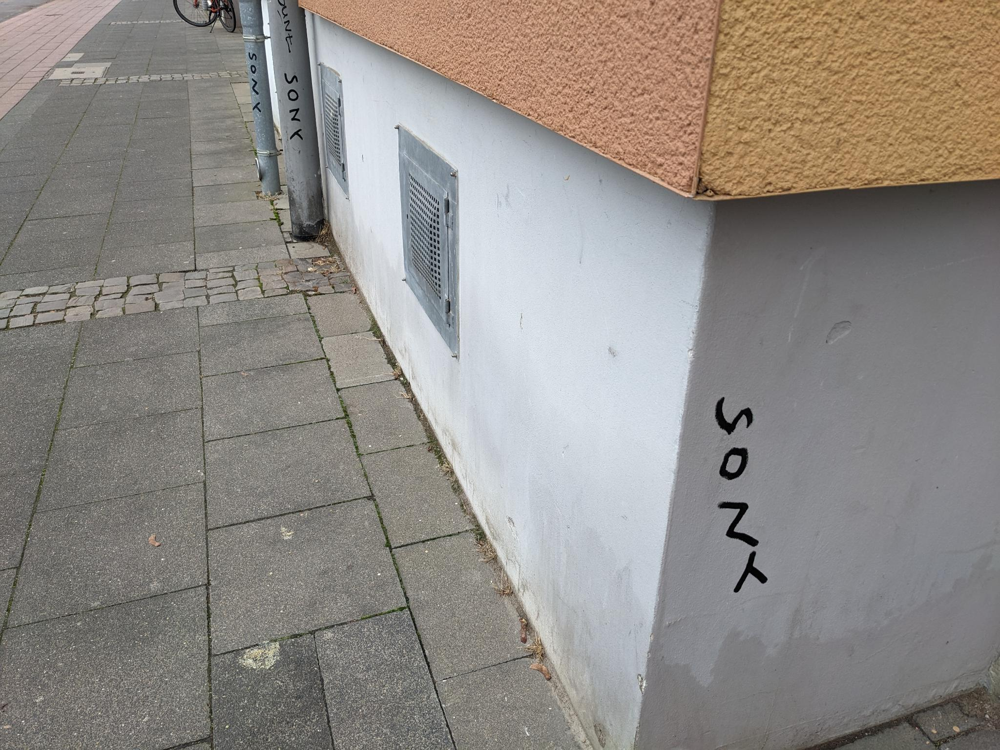         <br>                 <p></p>             </div>         </div>`)[0];
                popup_abfb93821cd672ab1bdcf099fb531eab.setContent(html_80aee5adb1c2d59e355b353bb908a923);
            
        

        marker_1d47a88e6cee6fe383c7a9dd84362cd9.bindPopup(popup_abfb93821cd672ab1bdcf099fb531eab)
        ;

        
    
    
            var marker_5f4eca11ad545f38a8f8b08a35211f6c = L.marker(
                [50.924502, 6.938276],
                {}
            ).addTo(map_a9cf2a4265613d439e21d8834afff242);
        
    
            var icon_088cbccef5b30fabec0fd4d436e4a9c4 = L.AwesomeMarkers.icon(
                {"extraClasses": "fa-rotate-0", "icon": "info-sign", "iconColor": "white", "markerColor": "red", "prefix": "glyphicon"}
            );
            marker_5f4eca11ad545f38a8f8b08a35211f6c.setIcon(icon_088cbccef5b30fabec0fd4d436e4a9c4);
        
    
        var popup_5e8f66f68fe53bacb15f683e6bfa1cb1 = L.popup({"maxWidth": 250});

        
            
                var html_01f1170d69765de1acfe1e52e4ccb774 = $(`<div id="html_01f1170d69765de1acfe1e52e4ccb774" style="width: 100.0%; height: 100.0%;">             <div style="width:220px;">                              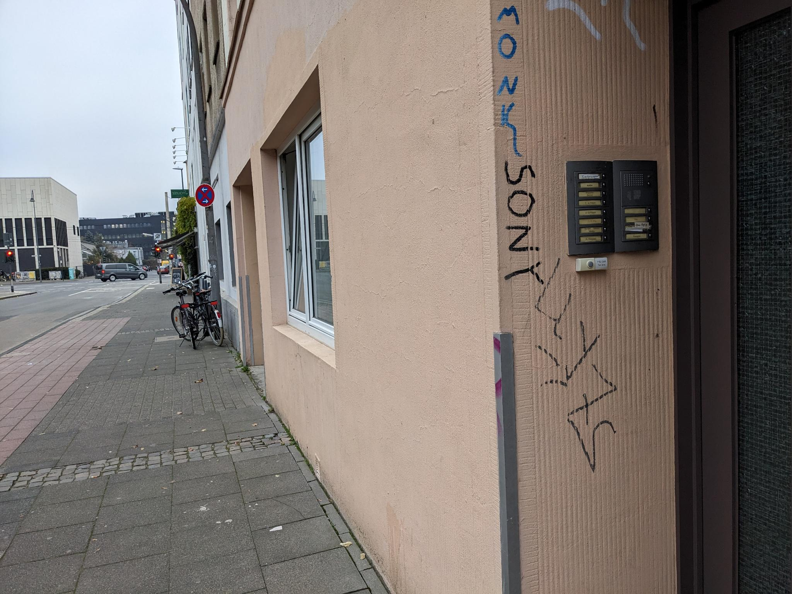         <br>                 <p></p>             </div>         </div>`)[0];
                popup_5e8f66f68fe53bacb15f683e6bfa1cb1.setContent(html_01f1170d69765de1acfe1e52e4ccb774);
            
        

        marker_5f4eca11ad545f38a8f8b08a35211f6c.bindPopup(popup_5e8f66f68fe53bacb15f683e6bfa1cb1)
        ;

        
    
    
            var marker_9432d54bcf38674371f49e31b5214629 = L.marker(
                [50.925523, 6.936767],
                {}
            ).addTo(map_a9cf2a4265613d439e21d8834afff242);
        
    
            var icon_2ef2017e2f6689f3d67907c6a1fe570e = L.AwesomeMarkers.icon(
                {"extraClasses": "fa-rotate-0", "icon": "info-sign", "iconColor": "white", "markerColor": "red", "prefix": "glyphicon"}
            );
            marker_9432d54bcf38674371f49e31b5214629.setIcon(icon_2ef2017e2f6689f3d67907c6a1fe570e);
        
    
        var popup_aeff962a38853512453dbd10395b7496 = L.popup({"maxWidth": 250});

        
            
                var html_ef9bd2e222dbc05da97766ce7e4e816c = $(`<div id="html_ef9bd2e222dbc05da97766ce7e4e816c" style="width: 100.0%; height: 100.0%;">             <div style="width:220px;">                              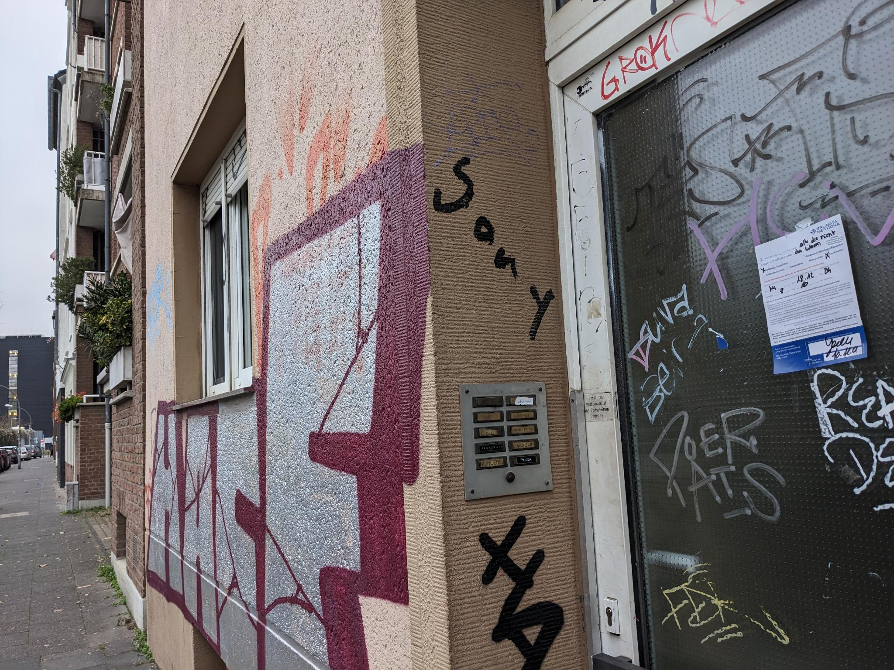         <br>                 <p></p>             </div>         </div>`)[0];
                popup_aeff962a38853512453dbd10395b7496.setContent(html_ef9bd2e222dbc05da97766ce7e4e816c);
            
        

        marker_9432d54bcf38674371f49e31b5214629.bindPopup(popup_aeff962a38853512453dbd10395b7496)
        ;

        
    
    
            var marker_c092ea955387588148f1f7e94f006670 = L.marker(
                [50.916995, 6.972684],
                {}
            ).addTo(map_a9cf2a4265613d439e21d8834afff242);
        
    
            var icon_f8350b432975fbc2b766af736257f9f9 = L.AwesomeMarkers.icon(
                {"extraClasses": "fa-rotate-0", "icon": "info-sign", "iconColor": "white", "markerColor": "red", "prefix": "glyphicon"}
            );
            marker_c092ea955387588148f1f7e94f006670.setIcon(icon_f8350b432975fbc2b766af736257f9f9);
        
    
        var popup_6c3a5a6bf7d5bc39709f9de3b3fdfe09 = L.popup({"maxWidth": 250});

        
            
                var html_66b17aae371b3fe6111e453cf3e01e53 = $(`<div id="html_66b17aae371b3fe6111e453cf3e01e53" style="width: 100.0%; height: 100.0%;">             <div style="width:220px;">                              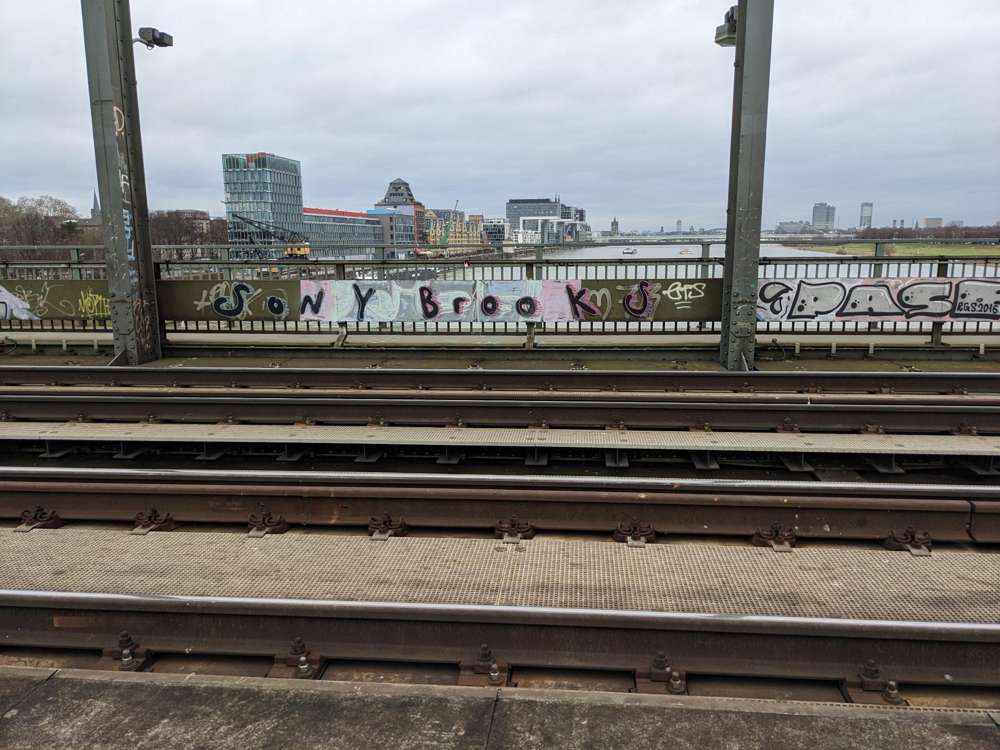         <br>                 <p></p>             </div>         </div>`)[0];
                popup_6c3a5a6bf7d5bc39709f9de3b3fdfe09.setContent(html_66b17aae371b3fe6111e453cf3e01e53);
            
        

        marker_c092ea955387588148f1f7e94f006670.bindPopup(popup_6c3a5a6bf7d5bc39709f9de3b3fdfe09)
        ;

        
    
    
            var marker_1fd9aacddc9be93f9847e64805b8063a = L.marker(
                [50.921, 6.943727],
                {}
            ).addTo(map_a9cf2a4265613d439e21d8834afff242);
        
    
            var icon_ecdbb1287a5cc0478550b26c595406a9 = L.AwesomeMarkers.icon(
                {"extraClasses": "fa-rotate-0", "icon": "info-sign", "iconColor": "white", "markerColor": "red", "prefix": "glyphicon"}
            );
            marker_1fd9aacddc9be93f9847e64805b8063a.setIcon(icon_ecdbb1287a5cc0478550b26c595406a9);
        
    
        var popup_30f160fc301f99f8c77ba080f79064cc = L.popup({"maxWidth": 250});

        
            
                var html_95f63c3a5b3baa489bb3a7b374504f3c = $(`<div id="html_95f63c3a5b3baa489bb3a7b374504f3c" style="width: 100.0%; height: 100.0%;">             <div style="width:220px;">                              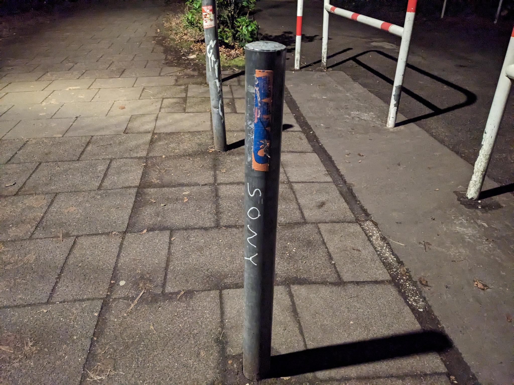         <br>                 <p></p>             </div>         </div>`)[0];
                popup_30f160fc301f99f8c77ba080f79064cc.setContent(html_95f63c3a5b3baa489bb3a7b374504f3c);
            
        

        marker_1fd9aacddc9be93f9847e64805b8063a.bindPopup(popup_30f160fc301f99f8c77ba080f79064cc)
        ;

        
    
    
            var marker_a818036528aa7c72ee91c2a601b70ef2 = L.marker(
                [50.950421, 6.912928],
                {}
            ).addTo(map_a9cf2a4265613d439e21d8834afff242);
        
    
            var icon_021e305cfa517c4d0b44141bb6e2dd27 = L.AwesomeMarkers.icon(
                {"extraClasses": "fa-rotate-0", "icon": "info-sign", "iconColor": "white", "markerColor": "red", "prefix": "glyphicon"}
            );
            marker_a818036528aa7c72ee91c2a601b70ef2.setIcon(icon_021e305cfa517c4d0b44141bb6e2dd27);
        
    
        var popup_9c0417958ecd0c00046b2a53ead7df23 = L.popup({"maxWidth": 250});

        
            
                var html_64eccc8d6706f971942f44d76115668f = $(`<div id="html_64eccc8d6706f971942f44d76115668f" style="width: 100.0%; height: 100.0%;">             <div style="width:220px;">                              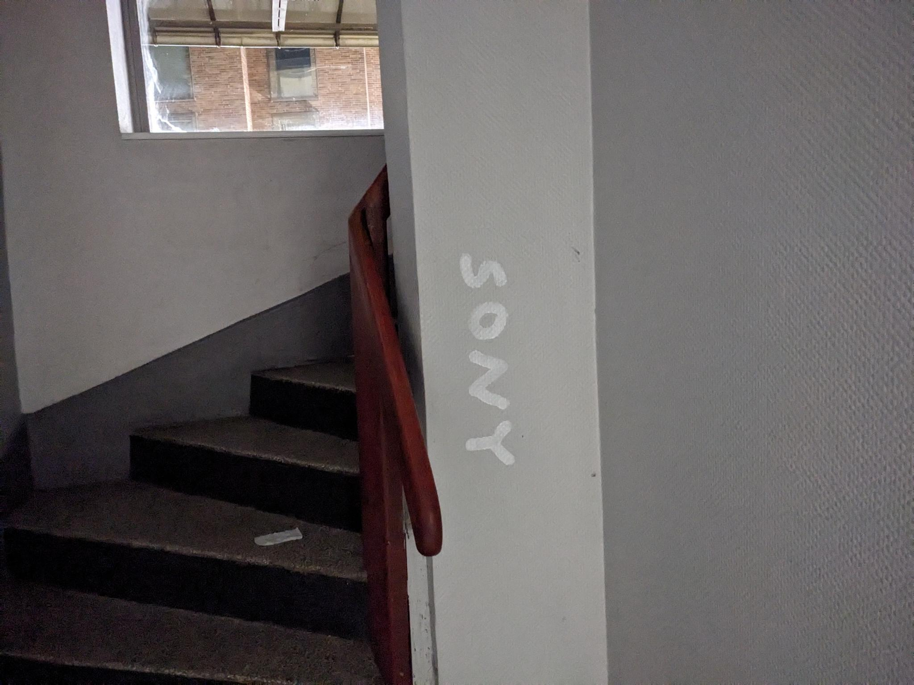         <br>                 <p></p>             </div>         </div>`)[0];
                popup_9c0417958ecd0c00046b2a53ead7df23.setContent(html_64eccc8d6706f971942f44d76115668f);
            
        

        marker_a818036528aa7c72ee91c2a601b70ef2.bindPopup(popup_9c0417958ecd0c00046b2a53ead7df23)
        ;

        
    
    
            var marker_49b63786a33ddb64c91ff3571cddaf23 = L.marker(
                [50.931683, 6.971336],
                {}
            ).addTo(map_a9cf2a4265613d439e21d8834afff242);
        
    
            var icon_e12e0ca9ea2db4f65d298fbe86442b07 = L.AwesomeMarkers.icon(
                {"extraClasses": "fa-rotate-0", "icon": "info-sign", "iconColor": "white", "markerColor": "red", "prefix": "glyphicon"}
            );
            marker_49b63786a33ddb64c91ff3571cddaf23.setIcon(icon_e12e0ca9ea2db4f65d298fbe86442b07);
        
    
        var popup_4cf131a36b8c8764af8150fc94e07596 = L.popup({"maxWidth": 250});

        
            
                var html_1c8eed478cb1e7b8ccc0b06ca6535c74 = $(`<div id="html_1c8eed478cb1e7b8ccc0b06ca6535c74" style="width: 100.0%; height: 100.0%;">             <div style="width:220px;">                                       <br>                 <p></p>             </div>         </div>`)[0];
                popup_4cf131a36b8c8764af8150fc94e07596.setContent(html_1c8eed478cb1e7b8ccc0b06ca6535c74);
            
        

        marker_49b63786a33ddb64c91ff3571cddaf23.bindPopup(popup_4cf131a36b8c8764af8150fc94e07596)
        ;

        
    
    
            var marker_663d208764c3edd3e4ffd60b348fede8 = L.marker(
                [50.922561, 6.959196],
                {}
            ).addTo(map_a9cf2a4265613d439e21d8834afff242);
        
    
            var icon_8e5ca74c9345f4e95eb4fe31796f7d0f = L.AwesomeMarkers.icon(
                {"extraClasses": "fa-rotate-0", "icon": "info-sign", "iconColor": "white", "markerColor": "red", "prefix": "glyphicon"}
            );
            marker_663d208764c3edd3e4ffd60b348fede8.setIcon(icon_8e5ca74c9345f4e95eb4fe31796f7d0f);
        
    
        var popup_71cbd8fc26da0660fc111a66389960bf = L.popup({"maxWidth": 250});

        
            
                var html_fcf05a869e59650c6f4b1fd527dc8ed7 = $(`<div id="html_fcf05a869e59650c6f4b1fd527dc8ed7" style="width: 100.0%; height: 100.0%;">             <div style="width:220px;">                              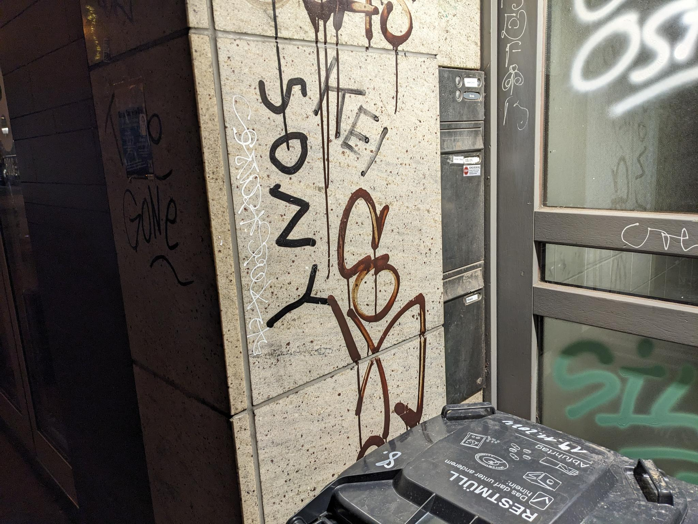         <br>                 <p></p>             </div>         </div>`)[0];
                popup_71cbd8fc26da0660fc111a66389960bf.setContent(html_fcf05a869e59650c6f4b1fd527dc8ed7);
            
        

        marker_663d208764c3edd3e4ffd60b348fede8.bindPopup(popup_71cbd8fc26da0660fc111a66389960bf)
        ;

        
    
    
            var marker_b87073ae372db35dd0cdaf1767bf20d0 = L.marker(
                [50.9285, 6.957722],
                {}
            ).addTo(map_a9cf2a4265613d439e21d8834afff242);
        
    
            var icon_82b416f3065b0f31ddcff23d162ed374 = L.AwesomeMarkers.icon(
                {"extraClasses": "fa-rotate-0", "icon": "info-sign", "iconColor": "white", "markerColor": "red", "prefix": "glyphicon"}
            );
            marker_b87073ae372db35dd0cdaf1767bf20d0.setIcon(icon_82b416f3065b0f31ddcff23d162ed374);
        
    
        var popup_ae7169260cd628dd271d451629ffc4b0 = L.popup({"maxWidth": 250});

        
            
                var html_b797ca78ed60e21bb2c23e88ddae9afb = $(`<div id="html_b797ca78ed60e21bb2c23e88ddae9afb" style="width: 100.0%; height: 100.0%;">             <div style="width:220px;">                              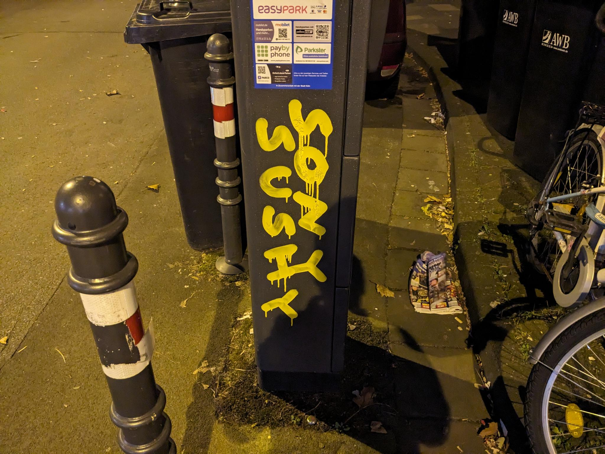         <br>                 <p></p>             </div>         </div>`)[0];
                popup_ae7169260cd628dd271d451629ffc4b0.setContent(html_b797ca78ed60e21bb2c23e88ddae9afb);
            
        

        marker_b87073ae372db35dd0cdaf1767bf20d0.bindPopup(popup_ae7169260cd628dd271d451629ffc4b0)
        ;

        
    
    
            var marker_d80a21f7775f1b70a10b2638bad6b3b1 = L.marker(
                [50.923051, 6.959184],
                {}
            ).addTo(map_a9cf2a4265613d439e21d8834afff242);
        
    
            var icon_4fe12124662fe5bdd307478a0f77dba2 = L.AwesomeMarkers.icon(
                {"extraClasses": "fa-rotate-0", "icon": "info-sign", "iconColor": "white", "markerColor": "red", "prefix": "glyphicon"}
            );
            marker_d80a21f7775f1b70a10b2638bad6b3b1.setIcon(icon_4fe12124662fe5bdd307478a0f77dba2);
        
    
        var popup_c8cff871d958b32f07fb8a577817d753 = L.popup({"maxWidth": 250});

        
            
                var html_5d9fbe9c342bf63e5a8d245404da3949 = $(`<div id="html_5d9fbe9c342bf63e5a8d245404da3949" style="width: 100.0%; height: 100.0%;">             <div style="width:220px;">                              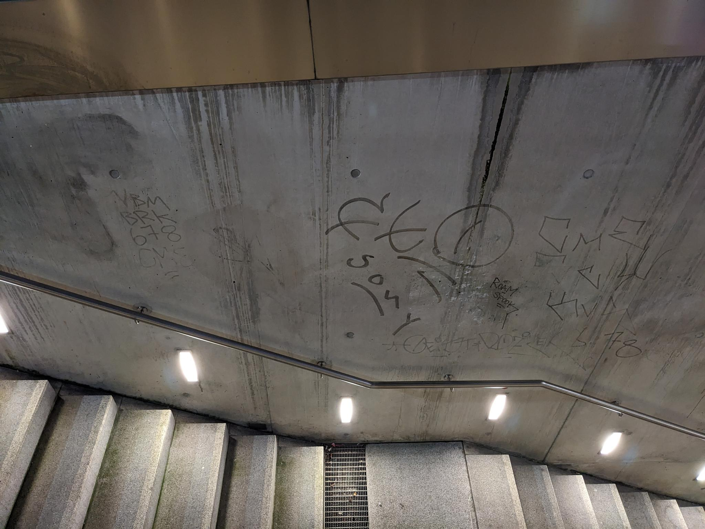         <br>                 <p></p>             </div>         </div>`)[0];
                popup_c8cff871d958b32f07fb8a577817d753.setContent(html_5d9fbe9c342bf63e5a8d245404da3949);
            
        

        marker_d80a21f7775f1b70a10b2638bad6b3b1.bindPopup(popup_c8cff871d958b32f07fb8a577817d753)
        ;

        
    
    
            var marker_70aa097388ae676a8c5bcfb3588f9eee = L.marker(
                [50.923052, 6.959184],
                {}
            ).addTo(map_a9cf2a4265613d439e21d8834afff242);
        
    
            var icon_99b9a82d7485226b9851af7baa6a2ad2 = L.AwesomeMarkers.icon(
                {"extraClasses": "fa-rotate-0", "icon": "info-sign", "iconColor": "white", "markerColor": "red", "prefix": "glyphicon"}
            );
            marker_70aa097388ae676a8c5bcfb3588f9eee.setIcon(icon_99b9a82d7485226b9851af7baa6a2ad2);
        
    
        var popup_7e5e52dcde97fd201a6d7acd17416abf = L.popup({"maxWidth": 250});

        
            
                var html_27a26c4d83d80c4b00545322a2b33169 = $(`<div id="html_27a26c4d83d80c4b00545322a2b33169" style="width: 100.0%; height: 100.0%;">             <div style="width:220px;">                              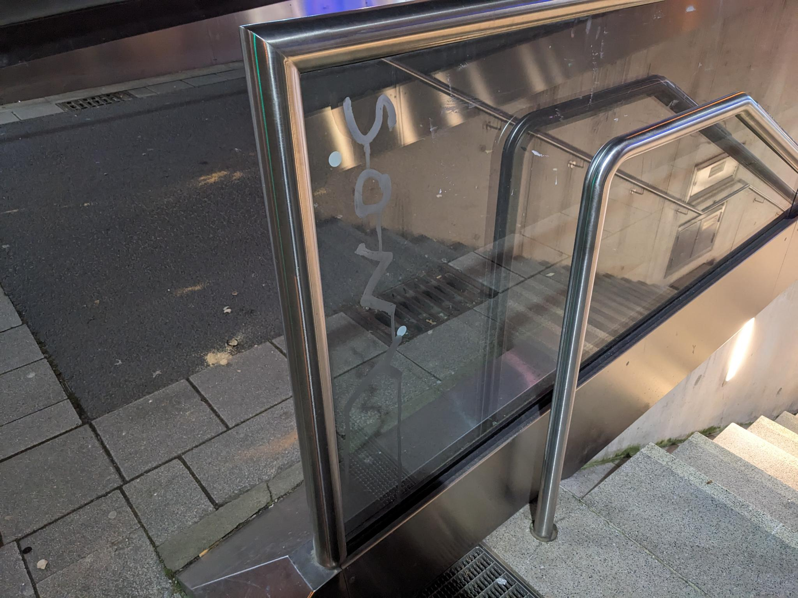         <br>                 <p></p>             </div>         </div>`)[0];
                popup_7e5e52dcde97fd201a6d7acd17416abf.setContent(html_27a26c4d83d80c4b00545322a2b33169);
            
        

        marker_70aa097388ae676a8c5bcfb3588f9eee.bindPopup(popup_7e5e52dcde97fd201a6d7acd17416abf)
        ;

        
    
    
            var marker_3df066571026483fc3de0e05f735f40a = L.marker(
                [50.929115, 6.957109],
                {}
            ).addTo(map_a9cf2a4265613d439e21d8834afff242);
        
    
            var icon_d1b97434ed84b0153057e01dcff48727 = L.AwesomeMarkers.icon(
                {"extraClasses": "fa-rotate-0", "icon": "info-sign", "iconColor": "white", "markerColor": "red", "prefix": "glyphicon"}
            );
            marker_3df066571026483fc3de0e05f735f40a.setIcon(icon_d1b97434ed84b0153057e01dcff48727);
        
    
        var popup_3fdcef21ca87dee87ecc77f7a2578024 = L.popup({"maxWidth": 250});

        
            
                var html_8073b2599f2ce90a2f480ab49dec55cf = $(`<div id="html_8073b2599f2ce90a2f480ab49dec55cf" style="width: 100.0%; height: 100.0%;">             <div style="width:220px;">                              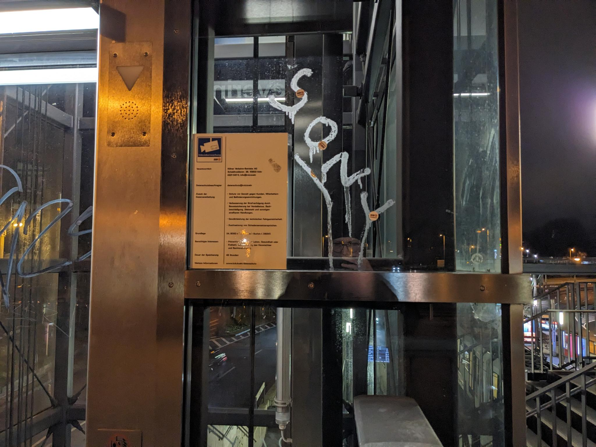         <br>                 <p></p>             </div>         </div>`)[0];
                popup_3fdcef21ca87dee87ecc77f7a2578024.setContent(html_8073b2599f2ce90a2f480ab49dec55cf);
            
        

        marker_3df066571026483fc3de0e05f735f40a.bindPopup(popup_3fdcef21ca87dee87ecc77f7a2578024)
        ;

        
    
    
            var marker_7c78ca6950dc26ba4fa460011ce09099 = L.marker(
                [50.919336, 6.960089],
                {}
            ).addTo(map_a9cf2a4265613d439e21d8834afff242);
        
    
            var icon_b9ab76eb70ac128390290502986874ff = L.AwesomeMarkers.icon(
                {"extraClasses": "fa-rotate-0", "icon": "info-sign", "iconColor": "white", "markerColor": "red", "prefix": "glyphicon"}
            );
            marker_7c78ca6950dc26ba4fa460011ce09099.setIcon(icon_b9ab76eb70ac128390290502986874ff);
        
    
        var popup_6db85a0a77cb40bfe1d4d58246e0179e = L.popup({"maxWidth": 250});

        
            
                var html_1b33a0573673930cc2acd1b26a7e7c2f = $(`<div id="html_1b33a0573673930cc2acd1b26a7e7c2f" style="width: 100.0%; height: 100.0%;">             <div style="width:220px;">                              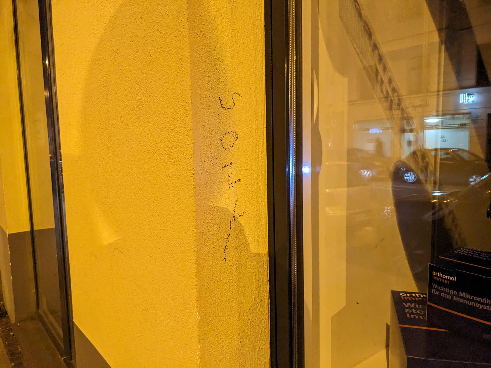         <br>                 <p></p>             </div>         </div>`)[0];
                popup_6db85a0a77cb40bfe1d4d58246e0179e.setContent(html_1b33a0573673930cc2acd1b26a7e7c2f);
            
        

        marker_7c78ca6950dc26ba4fa460011ce09099.bindPopup(popup_6db85a0a77cb40bfe1d4d58246e0179e)
        ;

        
    
    
            var marker_26cefef586b73e01374c119a9913ee7d = L.marker(
                [50.916525, 6.960877],
                {}
            ).addTo(map_a9cf2a4265613d439e21d8834afff242);
        
    
            var icon_8198477974ed14a54527f38e5c3b92d5 = L.AwesomeMarkers.icon(
                {"extraClasses": "fa-rotate-0", "icon": "info-sign", "iconColor": "white", "markerColor": "red", "prefix": "glyphicon"}
            );
            marker_26cefef586b73e01374c119a9913ee7d.setIcon(icon_8198477974ed14a54527f38e5c3b92d5);
        
    
        var popup_d129c696101214b51afe58e9a1caa24e = L.popup({"maxWidth": 250});

        
            
                var html_148e0eccae0bfcfd14cf3c0f640129c0 = $(`<div id="html_148e0eccae0bfcfd14cf3c0f640129c0" style="width: 100.0%; height: 100.0%;">             <div style="width:220px;">                              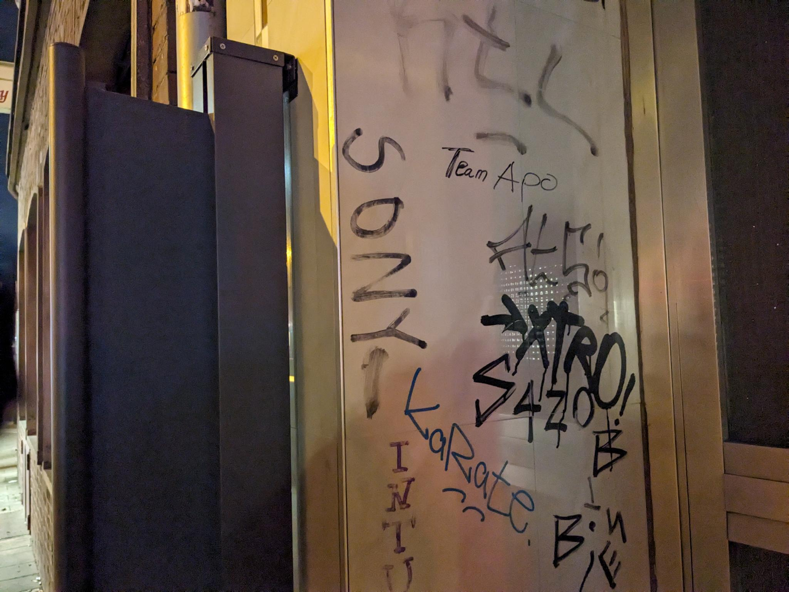         <br>                 <p></p>             </div>         </div>`)[0];
                popup_d129c696101214b51afe58e9a1caa24e.setContent(html_148e0eccae0bfcfd14cf3c0f640129c0);
            
        

        marker_26cefef586b73e01374c119a9913ee7d.bindPopup(popup_d129c696101214b51afe58e9a1caa24e)
        ;

        
    
    
            var marker_94fc92d3d3b8d984e8e59a49de99052d = L.marker(
                [50.927527, 6.957699],
                {}
            ).addTo(map_a9cf2a4265613d439e21d8834afff242);
        
    
            var icon_84df42145a6478d38fd3c0c75d5b8241 = L.AwesomeMarkers.icon(
                {"extraClasses": "fa-rotate-0", "icon": "info-sign", "iconColor": "white", "markerColor": "red", "prefix": "glyphicon"}
            );
            marker_94fc92d3d3b8d984e8e59a49de99052d.setIcon(icon_84df42145a6478d38fd3c0c75d5b8241);
        
    
        var popup_efb4b54c0d400ba8915adc50acbac593 = L.popup({"maxWidth": 250});

        
            
                var html_269f8314b2e4183fce6491dc4b96a9e1 = $(`<div id="html_269f8314b2e4183fce6491dc4b96a9e1" style="width: 100.0%; height: 100.0%;">             <div style="width:220px;">                              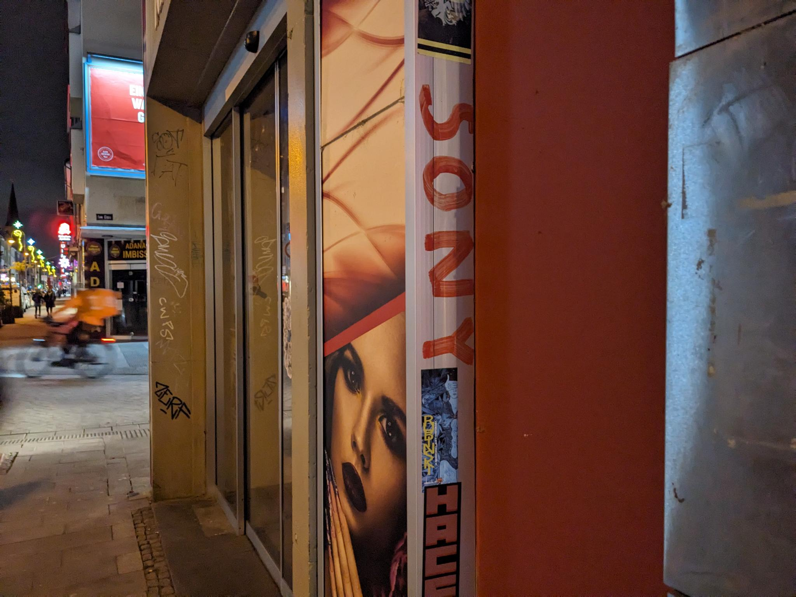         <br>                 <p></p>             </div>         </div>`)[0];
                popup_efb4b54c0d400ba8915adc50acbac593.setContent(html_269f8314b2e4183fce6491dc4b96a9e1);
            
        

        marker_94fc92d3d3b8d984e8e59a49de99052d.bindPopup(popup_efb4b54c0d400ba8915adc50acbac593)
        ;

        
    
    
            var marker_ac6586e9bfd8bdc521476bae3bc84889 = L.marker(
                [50.920449, 6.959573],
                {}
            ).addTo(map_a9cf2a4265613d439e21d8834afff242);
        
    
            var icon_f00ab73144e40749bcb1b5808cf64739 = L.AwesomeMarkers.icon(
                {"extraClasses": "fa-rotate-0", "icon": "info-sign", "iconColor": "white", "markerColor": "red", "prefix": "glyphicon"}
            );
            marker_ac6586e9bfd8bdc521476bae3bc84889.setIcon(icon_f00ab73144e40749bcb1b5808cf64739);
        
    
        var popup_ad4e77a8d259bfe4e047108822e199ca = L.popup({"maxWidth": 250});

        
            
                var html_a4055b7ca977c96b1f22db97534829b6 = $(`<div id="html_a4055b7ca977c96b1f22db97534829b6" style="width: 100.0%; height: 100.0%;">             <div style="width:220px;">                              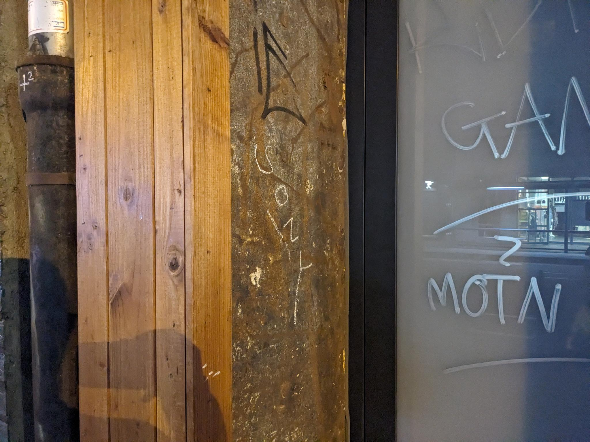         <br>                 <p></p>             </div>         </div>`)[0];
                popup_ad4e77a8d259bfe4e047108822e199ca.setContent(html_a4055b7ca977c96b1f22db97534829b6);
            
        

        marker_ac6586e9bfd8bdc521476bae3bc84889.bindPopup(popup_ad4e77a8d259bfe4e047108822e199ca)
        ;

        
    
    
            var marker_1d93cc0f7988056ae05ce3444d5f3945 = L.marker(
                [50.922827, 6.958969],
                {}
            ).addTo(map_a9cf2a4265613d439e21d8834afff242);
        
    
            var icon_615c268d474ba348fdff0ad79f1ab52d = L.AwesomeMarkers.icon(
                {"extraClasses": "fa-rotate-0", "icon": "info-sign", "iconColor": "white", "markerColor": "red", "prefix": "glyphicon"}
            );
            marker_1d93cc0f7988056ae05ce3444d5f3945.setIcon(icon_615c268d474ba348fdff0ad79f1ab52d);
        
    
        var popup_086d525c7ccf948e123799f3dba66a9e = L.popup({"maxWidth": 250});

        
            
                var html_5ac20068a6f3ee1233e5317176e3dda0 = $(`<div id="html_5ac20068a6f3ee1233e5317176e3dda0" style="width: 100.0%; height: 100.0%;">             <div style="width:220px;">                              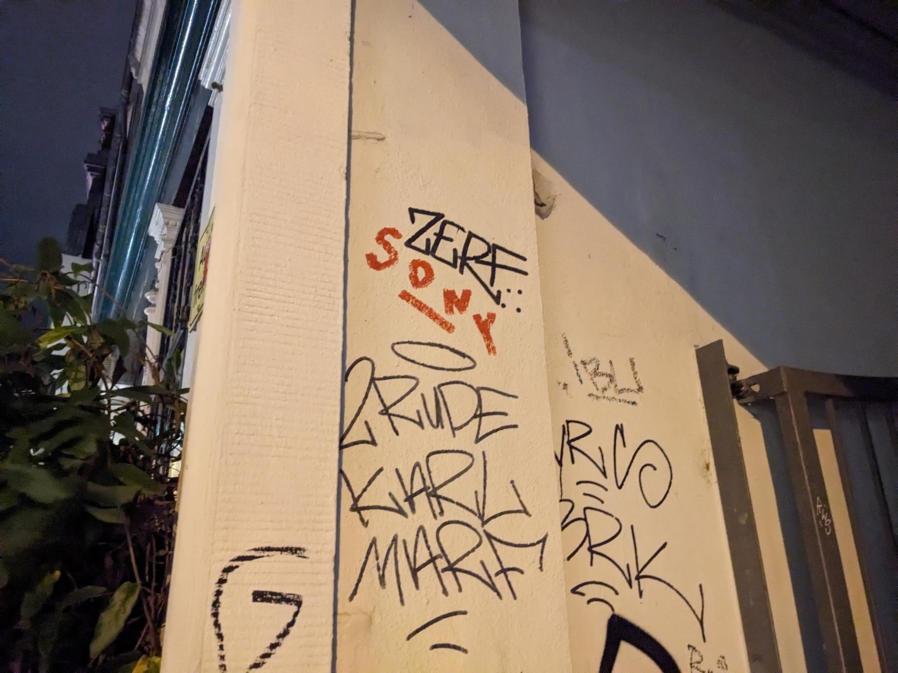         <br>                 <p></p>             </div>         </div>`)[0];
                popup_086d525c7ccf948e123799f3dba66a9e.setContent(html_5ac20068a6f3ee1233e5317176e3dda0);
            
        

        marker_1d93cc0f7988056ae05ce3444d5f3945.bindPopup(popup_086d525c7ccf948e123799f3dba66a9e)
        ;

        
    
    
            var marker_3d09032a3541d5e6546184634219b220 = L.marker(
                [50.911397, 6.96858],
                {}
            ).addTo(map_a9cf2a4265613d439e21d8834afff242);
        
    
            var icon_c56a5af87faa59b2430c442b715729da = L.AwesomeMarkers.icon(
                {"extraClasses": "fa-rotate-0", "icon": "info-sign", "iconColor": "white", "markerColor": "red", "prefix": "glyphicon"}
            );
            marker_3d09032a3541d5e6546184634219b220.setIcon(icon_c56a5af87faa59b2430c442b715729da);
        
    
        var popup_3d0bd1113022fa70519d11e3f8a7647a = L.popup({"maxWidth": 250});

        
            
                var html_6d7dd39f0084df8dea50f13e90a7bfc8 = $(`<div id="html_6d7dd39f0084df8dea50f13e90a7bfc8" style="width: 100.0%; height: 100.0%;">             <div style="width:220px;">                              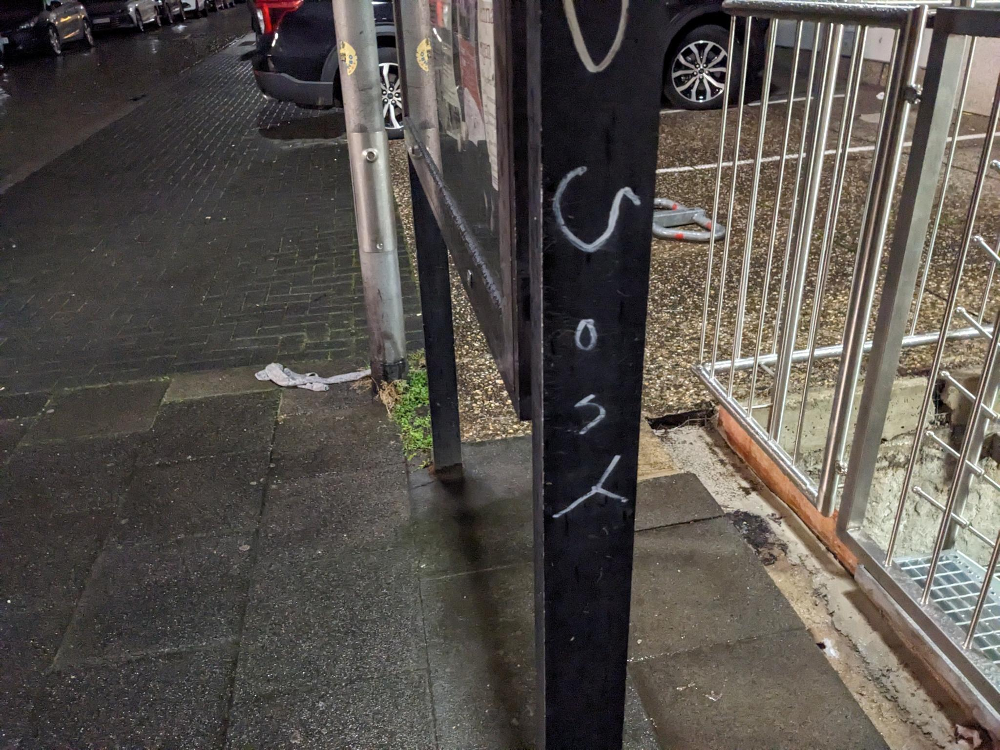         <br>                 <p></p>             </div>         </div>`)[0];
                popup_3d0bd1113022fa70519d11e3f8a7647a.setContent(html_6d7dd39f0084df8dea50f13e90a7bfc8);
            
        

        marker_3d09032a3541d5e6546184634219b220.bindPopup(popup_3d0bd1113022fa70519d11e3f8a7647a)
        ;

        
    
    
            var marker_b3eaa1b576a463579a461ba6ad8f4115 = L.marker(
                [50.912769, 6.935464],
                {}
            ).addTo(map_a9cf2a4265613d439e21d8834afff242);
        
    
            var icon_ce0405f9dd4d13e8be22eb6326441849 = L.AwesomeMarkers.icon(
                {"extraClasses": "fa-rotate-0", "icon": "info-sign", "iconColor": "white", "markerColor": "red", "prefix": "glyphicon"}
            );
            marker_b3eaa1b576a463579a461ba6ad8f4115.setIcon(icon_ce0405f9dd4d13e8be22eb6326441849);
        
    
        var popup_4d11a473971013f47d1a17fab6011c89 = L.popup({"maxWidth": 250});

        
            
                var html_f9c7e7be5b9af7fba46d226039d7c194 = $(`<div id="html_f9c7e7be5b9af7fba46d226039d7c194" style="width: 100.0%; height: 100.0%;">             <div style="width:220px;">                                       <br>                 <p></p>             </div>         </div>`)[0];
                popup_4d11a473971013f47d1a17fab6011c89.setContent(html_f9c7e7be5b9af7fba46d226039d7c194);
            
        

        marker_b3eaa1b576a463579a461ba6ad8f4115.bindPopup(popup_4d11a473971013f47d1a17fab6011c89)
        ;

        
    
    
            var marker_b27ea10dce5a3880445dd6867cab3e4a = L.marker(
                [50.917104, 6.970045],
                {}
            ).addTo(map_a9cf2a4265613d439e21d8834afff242);
        
    
            var icon_8762d6efdc0c5d76f02414ede8c08534 = L.AwesomeMarkers.icon(
                {"extraClasses": "fa-rotate-0", "icon": "info-sign", "iconColor": "white", "markerColor": "red", "prefix": "glyphicon"}
            );
            marker_b27ea10dce5a3880445dd6867cab3e4a.setIcon(icon_8762d6efdc0c5d76f02414ede8c08534);
        
    
        var popup_57d1f2b72c59cd357bb51a8698e57a72 = L.popup({"maxWidth": 250});

        
            
                var html_af10891df951d9fdf0e67647802d24c1 = $(`<div id="html_af10891df951d9fdf0e67647802d24c1" style="width: 100.0%; height: 100.0%;">             <div style="width:220px;">                              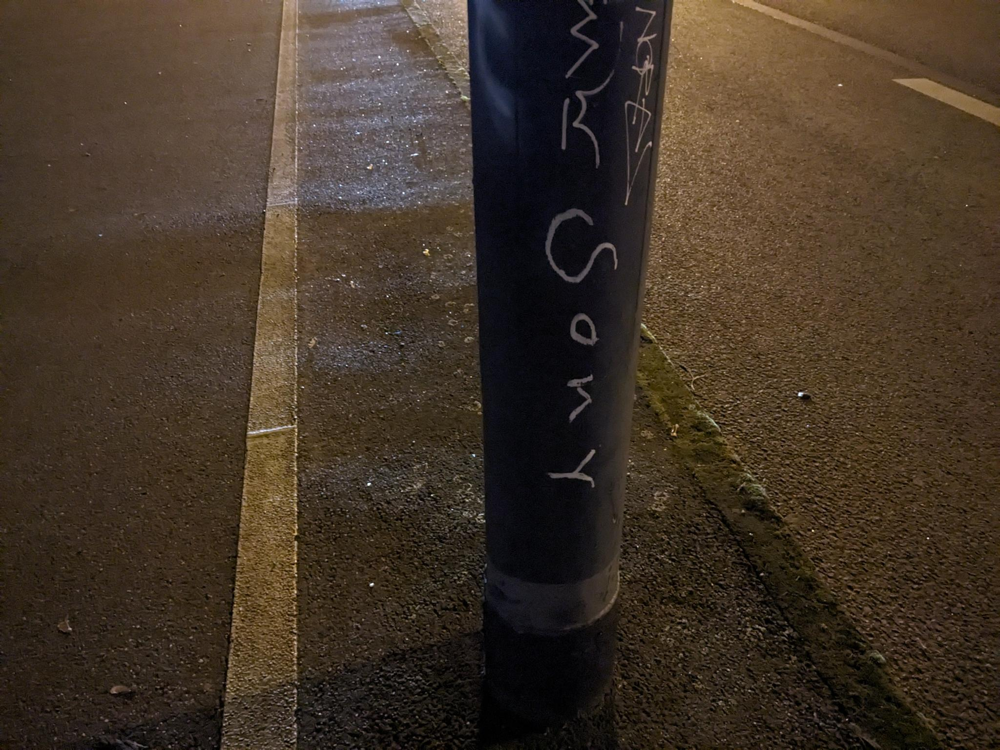         <br>                 <p></p>             </div>         </div>`)[0];
                popup_57d1f2b72c59cd357bb51a8698e57a72.setContent(html_af10891df951d9fdf0e67647802d24c1);
            
        

        marker_b27ea10dce5a3880445dd6867cab3e4a.bindPopup(popup_57d1f2b72c59cd357bb51a8698e57a72)
        ;

        
    
    
            var marker_f5124482049b6bb05d78498fdf881e1d = L.marker(
                [50.920563, 6.964189],
                {}
            ).addTo(map_a9cf2a4265613d439e21d8834afff242);
        
    
            var icon_f3abbd9072e68b30f37822b796f146ea = L.AwesomeMarkers.icon(
                {"extraClasses": "fa-rotate-0", "icon": "info-sign", "iconColor": "white", "markerColor": "red", "prefix": "glyphicon"}
            );
            marker_f5124482049b6bb05d78498fdf881e1d.setIcon(icon_f3abbd9072e68b30f37822b796f146ea);
        
    
        var popup_fd0bec18917a90a175a5f0d50d1c524e = L.popup({"maxWidth": 250});

        
            
                var html_411f62136218f7d5e60d7c5e4d952058 = $(`<div id="html_411f62136218f7d5e60d7c5e4d952058" style="width: 100.0%; height: 100.0%;">             <div style="width:220px;">                              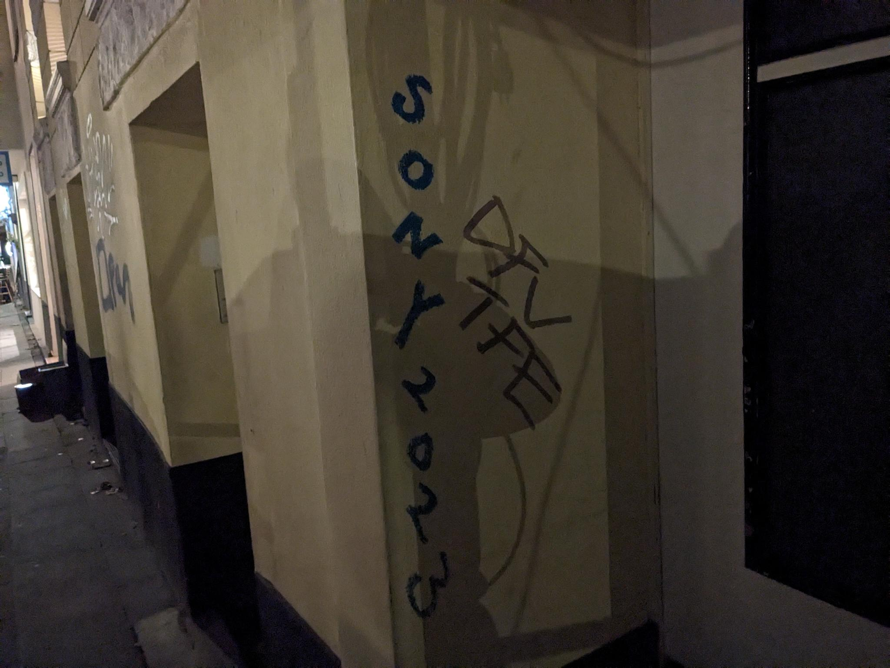         <br>                 <p></p>             </div>         </div>`)[0];
                popup_fd0bec18917a90a175a5f0d50d1c524e.setContent(html_411f62136218f7d5e60d7c5e4d952058);
            
        

        marker_f5124482049b6bb05d78498fdf881e1d.bindPopup(popup_fd0bec18917a90a175a5f0d50d1c524e)
        ;

        
    
    
            var marker_0a47b44ac82c3726df6f4c077f325d45 = L.marker(
                [50.922834, 6.963625],
                {}
            ).addTo(map_a9cf2a4265613d439e21d8834afff242);
        
    
            var icon_135a80bbdbe864ffbc0e87f541eb6b18 = L.AwesomeMarkers.icon(
                {"extraClasses": "fa-rotate-0", "icon": "info-sign", "iconColor": "white", "markerColor": "red", "prefix": "glyphicon"}
            );
            marker_0a47b44ac82c3726df6f4c077f325d45.setIcon(icon_135a80bbdbe864ffbc0e87f541eb6b18);
        
    
        var popup_33f3567ca89b09ca46c5cdad9136a6ff = L.popup({"maxWidth": 250});

        
            
                var html_27acf21e90bc09536c774cdeabd38417 = $(`<div id="html_27acf21e90bc09536c774cdeabd38417" style="width: 100.0%; height: 100.0%;">             <div style="width:220px;">                              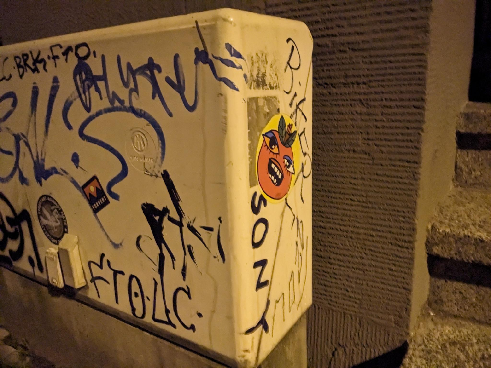         <br>                 <p></p>             </div>         </div>`)[0];
                popup_33f3567ca89b09ca46c5cdad9136a6ff.setContent(html_27acf21e90bc09536c774cdeabd38417);
            
        

        marker_0a47b44ac82c3726df6f4c077f325d45.bindPopup(popup_33f3567ca89b09ca46c5cdad9136a6ff)
        ;

        
    
    
            var marker_ab31e53ca877db933de9c46bedfb61cd = L.marker(
                [50.927606, 6.962083],
                {}
            ).addTo(map_a9cf2a4265613d439e21d8834afff242);
        
    
            var icon_644131c8d11587504f048b69d43a9038 = L.AwesomeMarkers.icon(
                {"extraClasses": "fa-rotate-0", "icon": "info-sign", "iconColor": "white", "markerColor": "red", "prefix": "glyphicon"}
            );
            marker_ab31e53ca877db933de9c46bedfb61cd.setIcon(icon_644131c8d11587504f048b69d43a9038);
        
    
        var popup_6a8c622061eccb76cdc70826a404ffb8 = L.popup({"maxWidth": 250});

        
            
                var html_9f532537350c722ad9560c425dc84cb7 = $(`<div id="html_9f532537350c722ad9560c425dc84cb7" style="width: 100.0%; height: 100.0%;">             <div style="width:220px;">                              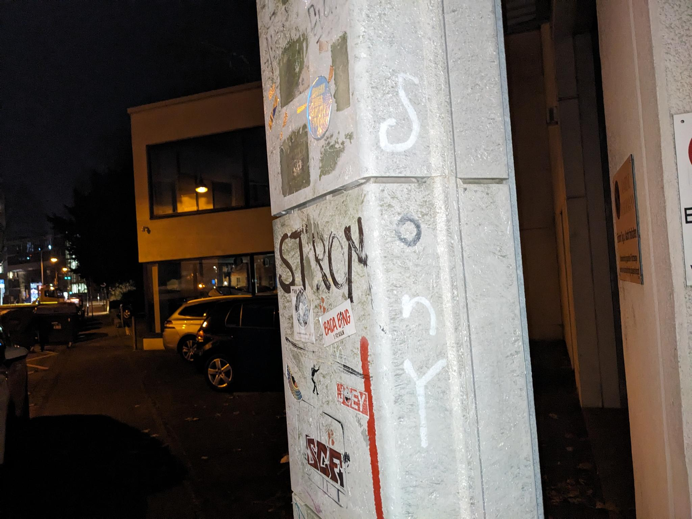         <br>                 <p></p>             </div>         </div>`)[0];
                popup_6a8c622061eccb76cdc70826a404ffb8.setContent(html_9f532537350c722ad9560c425dc84cb7);
            
        

        marker_ab31e53ca877db933de9c46bedfb61cd.bindPopup(popup_6a8c622061eccb76cdc70826a404ffb8)
        ;

        
    
    
            var marker_54f95e72994fa2636efb3b68438c1dad = L.marker(
                [50.927579, 6.961961],
                {}
            ).addTo(map_a9cf2a4265613d439e21d8834afff242);
        
    
            var icon_0b184ca812e00ae6ff3dc4e1335ba0ec = L.AwesomeMarkers.icon(
                {"extraClasses": "fa-rotate-0", "icon": "info-sign", "iconColor": "white", "markerColor": "red", "prefix": "glyphicon"}
            );
            marker_54f95e72994fa2636efb3b68438c1dad.setIcon(icon_0b184ca812e00ae6ff3dc4e1335ba0ec);
        
    
        var popup_343e78e29e95b1419d7ee46d13b6065f = L.popup({"maxWidth": 250});

        
            
                var html_0cc73c0b1c0ccca5ea0617b00f727a16 = $(`<div id="html_0cc73c0b1c0ccca5ea0617b00f727a16" style="width: 100.0%; height: 100.0%;">             <div style="width:220px;">                              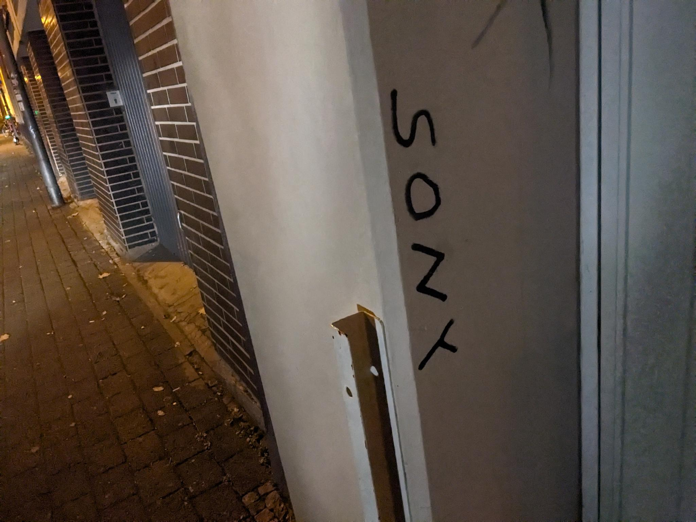         <br>                 <p></p>             </div>         </div>`)[0];
                popup_343e78e29e95b1419d7ee46d13b6065f.setContent(html_0cc73c0b1c0ccca5ea0617b00f727a16);
            
        

        marker_54f95e72994fa2636efb3b68438c1dad.bindPopup(popup_343e78e29e95b1419d7ee46d13b6065f)
        ;

        
    
    
            var marker_146ef3c4ae08c28b8af0a335613dc303 = L.marker(
                [50.925986, 6.962095],
                {}
            ).addTo(map_a9cf2a4265613d439e21d8834afff242);
        
    
            var icon_fe465dd4457af027575e755d9ee03094 = L.AwesomeMarkers.icon(
                {"extraClasses": "fa-rotate-0", "icon": "info-sign", "iconColor": "white", "markerColor": "red", "prefix": "glyphicon"}
            );
            marker_146ef3c4ae08c28b8af0a335613dc303.setIcon(icon_fe465dd4457af027575e755d9ee03094);
        
    
        var popup_d1712e675be5762b36ffea65c0b85a25 = L.popup({"maxWidth": 250});

        
            
                var html_08ef7fa49560dc771dbf20f9215b9189 = $(`<div id="html_08ef7fa49560dc771dbf20f9215b9189" style="width: 100.0%; height: 100.0%;">             <div style="width:220px;">                              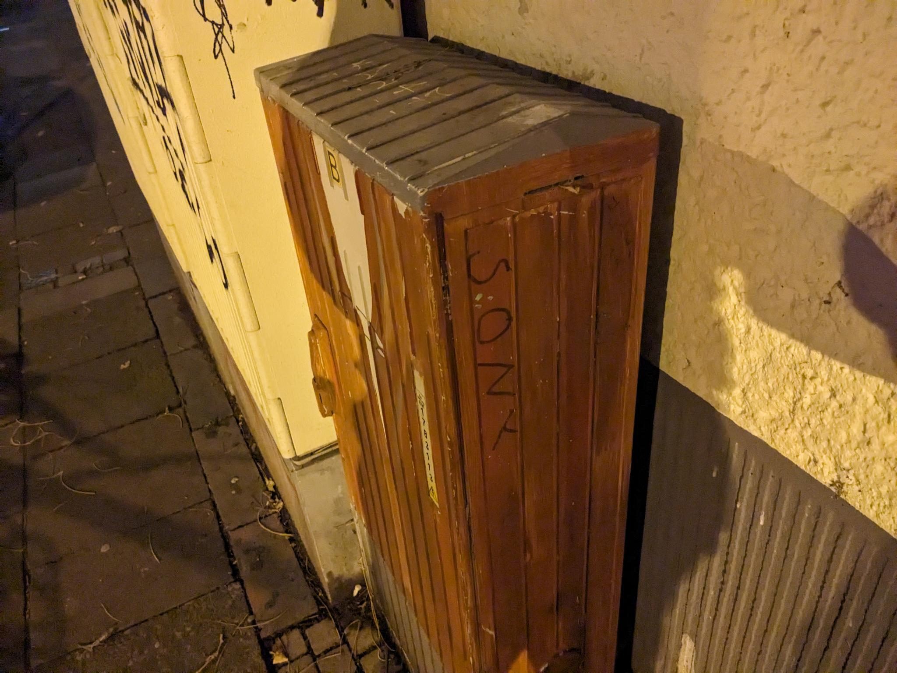         <br>                 <p></p>             </div>         </div>`)[0];
                popup_d1712e675be5762b36ffea65c0b85a25.setContent(html_08ef7fa49560dc771dbf20f9215b9189);
            
        

        marker_146ef3c4ae08c28b8af0a335613dc303.bindPopup(popup_d1712e675be5762b36ffea65c0b85a25)
        ;

        
    
    
            var marker_7e63e421765f849848cc3d68ffbe362f = L.marker(
                [50.918647, 6.965931],
                {}
            ).addTo(map_a9cf2a4265613d439e21d8834afff242);
        
    
            var icon_666fa91dcd5806ea4deab0edfa65a40b = L.AwesomeMarkers.icon(
                {"extraClasses": "fa-rotate-0", "icon": "info-sign", "iconColor": "white", "markerColor": "red", "prefix": "glyphicon"}
            );
            marker_7e63e421765f849848cc3d68ffbe362f.setIcon(icon_666fa91dcd5806ea4deab0edfa65a40b);
        
    
        var popup_d44d5679b435bfab4791880c892b72a8 = L.popup({"maxWidth": 250});

        
            
                var html_68e96f272df454dbb6aedb8410361330 = $(`<div id="html_68e96f272df454dbb6aedb8410361330" style="width: 100.0%; height: 100.0%;">             <div style="width:220px;">                              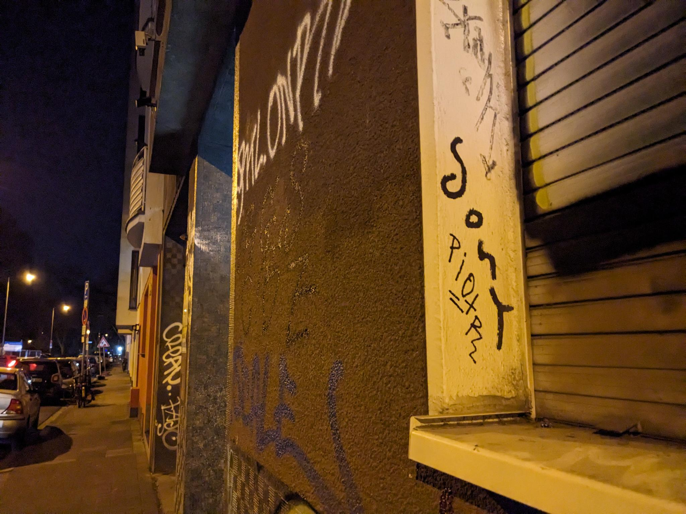         <br>                 <p></p>             </div>         </div>`)[0];
                popup_d44d5679b435bfab4791880c892b72a8.setContent(html_68e96f272df454dbb6aedb8410361330);
            
        

        marker_7e63e421765f849848cc3d68ffbe362f.bindPopup(popup_d44d5679b435bfab4791880c892b72a8)
        ;

        
    
    
            var marker_026b95ad58302f8df242b0ba1ac718bd = L.marker(
                [50.920346, 6.958188],
                {}
            ).addTo(map_a9cf2a4265613d439e21d8834afff242);
        
    
            var icon_ff75c3e01416c9c6411ade7f84dde992 = L.AwesomeMarkers.icon(
                {"extraClasses": "fa-rotate-0", "icon": "info-sign", "iconColor": "white", "markerColor": "red", "prefix": "glyphicon"}
            );
            marker_026b95ad58302f8df242b0ba1ac718bd.setIcon(icon_ff75c3e01416c9c6411ade7f84dde992);
        
    
        var popup_94be65fd65a0cd7aa2c047e5cc2a1c1e = L.popup({"maxWidth": 250});

        
            
                var html_94668efb0866596614e045be031b5299 = $(`<div id="html_94668efb0866596614e045be031b5299" style="width: 100.0%; height: 100.0%;">             <div style="width:220px;">                              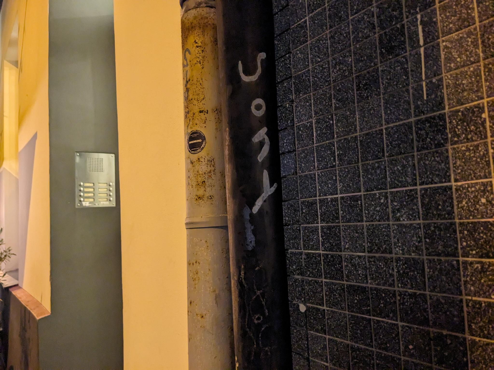         <br>                 <p></p>             </div>         </div>`)[0];
                popup_94be65fd65a0cd7aa2c047e5cc2a1c1e.setContent(html_94668efb0866596614e045be031b5299);
            
        

        marker_026b95ad58302f8df242b0ba1ac718bd.bindPopup(popup_94be65fd65a0cd7aa2c047e5cc2a1c1e)
        ;

        
    
    
            var marker_8e63d36565207ad12071a245d9deb9af = L.marker(
                [50.925919, 6.944773],
                {}
            ).addTo(map_a9cf2a4265613d439e21d8834afff242);
        
    
            var icon_ffc0cb717a9263eb0876442d7dbf2a2c = L.AwesomeMarkers.icon(
                {"extraClasses": "fa-rotate-0", "icon": "info-sign", "iconColor": "white", "markerColor": "red", "prefix": "glyphicon"}
            );
            marker_8e63d36565207ad12071a245d9deb9af.setIcon(icon_ffc0cb717a9263eb0876442d7dbf2a2c);
        
    
        var popup_62e7d2edb1f49a59eaf956155c2e03a5 = L.popup({"maxWidth": 250});

        
            
                var html_a7e57270fd687441b4ea84f66fc2b37d = $(`<div id="html_a7e57270fd687441b4ea84f66fc2b37d" style="width: 100.0%; height: 100.0%;">             <div style="width:220px;">                              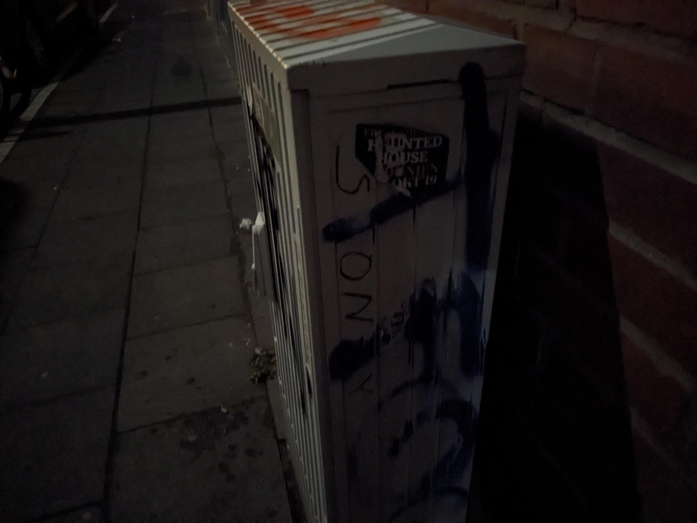         <br>                 <p></p>             </div>         </div>`)[0];
                popup_62e7d2edb1f49a59eaf956155c2e03a5.setContent(html_a7e57270fd687441b4ea84f66fc2b37d);
            
        

        marker_8e63d36565207ad12071a245d9deb9af.bindPopup(popup_62e7d2edb1f49a59eaf956155c2e03a5)
        ;

        
    
    
            var marker_a69294cc1481d27c928a4f95d0c3f470 = L.marker(
                [50.926054, 6.944534],
                {}
            ).addTo(map_a9cf2a4265613d439e21d8834afff242);
        
    
            var icon_8d4b1eafd2eeafc5f194cddce8e2b48b = L.AwesomeMarkers.icon(
                {"extraClasses": "fa-rotate-0", "icon": "info-sign", "iconColor": "white", "markerColor": "red", "prefix": "glyphicon"}
            );
            marker_a69294cc1481d27c928a4f95d0c3f470.setIcon(icon_8d4b1eafd2eeafc5f194cddce8e2b48b);
        
    
        var popup_8e4ef26e7ffb40a30b85eaaa74cf1e65 = L.popup({"maxWidth": 250});

        
            
                var html_4eb71a22b1726690ee0a6c942ae42387 = $(`<div id="html_4eb71a22b1726690ee0a6c942ae42387" style="width: 100.0%; height: 100.0%;">             <div style="width:220px;">                              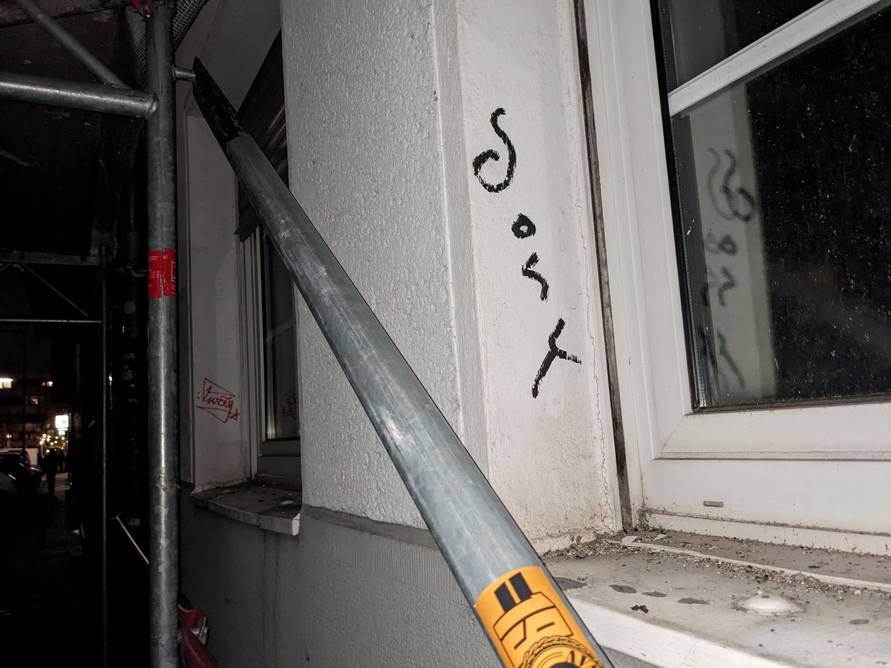         <br>                 <p></p>             </div>         </div>`)[0];
                popup_8e4ef26e7ffb40a30b85eaaa74cf1e65.setContent(html_4eb71a22b1726690ee0a6c942ae42387);
            
        

        marker_a69294cc1481d27c928a4f95d0c3f470.bindPopup(popup_8e4ef26e7ffb40a30b85eaaa74cf1e65)
        ;

        
    
    
            var marker_b91515cc99b7606880c991c9e053fb49 = L.marker(
                [50.9334341, 6.9340131],
                {}
            ).addTo(map_a9cf2a4265613d439e21d8834afff242);
        
    
            var icon_1ada9172adff62b7070d43d04aeb3586 = L.AwesomeMarkers.icon(
                {"extraClasses": "fa-rotate-0", "icon": "info-sign", "iconColor": "white", "markerColor": "red", "prefix": "glyphicon"}
            );
            marker_b91515cc99b7606880c991c9e053fb49.setIcon(icon_1ada9172adff62b7070d43d04aeb3586);
        
    
        var popup_ba08890a85e99854379f51c3a9c32930 = L.popup({"maxWidth": 250});

        
            
                var html_74ec5f9ad16d1ec058410d2c65e7101c = $(`<div id="html_74ec5f9ad16d1ec058410d2c65e7101c" style="width: 100.0%; height: 100.0%;">             <div style="width:220px;">                              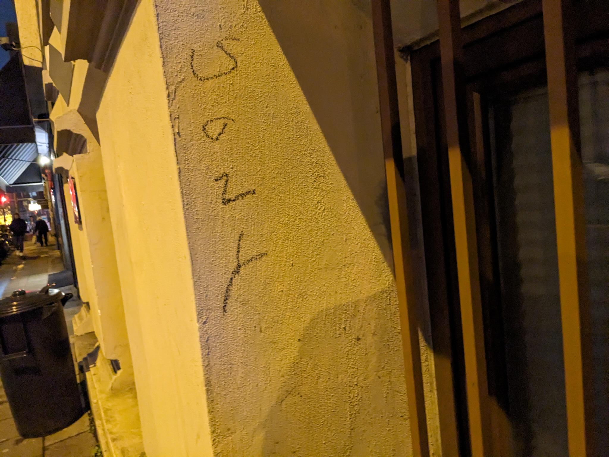         <br>                 <p></p>             </div>         </div>`)[0];
                popup_ba08890a85e99854379f51c3a9c32930.setContent(html_74ec5f9ad16d1ec058410d2c65e7101c);
            
        

        marker_b91515cc99b7606880c991c9e053fb49.bindPopup(popup_ba08890a85e99854379f51c3a9c32930)
        ;

        
    
    
            var layer_control_36303835b7bbe46d2376eb7d60779c6e = {
                base_layers : {
                    "openstreetmap" : tile_layer_6dae47886e9b58be458a414fbc3800c2,
                },
                overlays :  {
                    "Districts" : geo_json_4bbd6493f00a4dbbea9ff8dab1e6ffbd,
                    "Neighborhoods" : geo_json_eda1cb69bd33448ea927dd889dff498f,
                    "Buildings" : geo_json_a45ec615a3fc80649c130dda7a9861a3,
                    "Green Areas" : geo_json_057fbf6c01c6161e25615bfcab69533b,
                    "Water" : geo_json_cefef444060401661d2853ac9b19de26,
                },
            };
            L.control.layers(
                layer_control_36303835b7bbe46d2376eb7d60779c6e.base_layers,
                layer_control_36303835b7bbe46d2376eb7d60779c6e.overlays,
                {"autoZIndex": true, "collapsed": true, "position": "topright"}
            ).addTo(map_a9cf2a4265613d439e21d8834afff242);
            geo_json_a45ec615a3fc80649c130dda7a9861a3.remove();
        
</script>
</html>